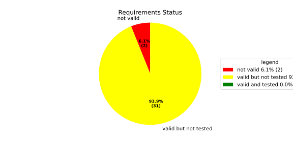
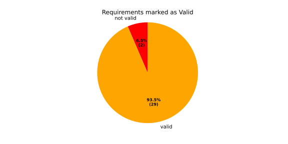
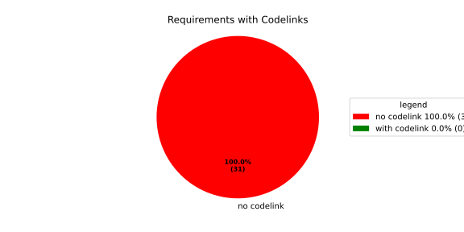
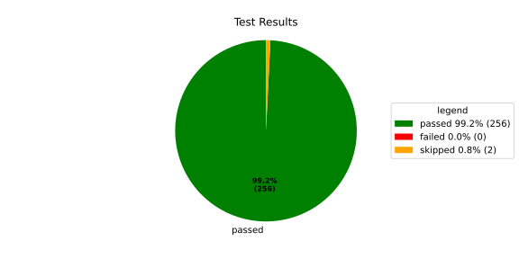
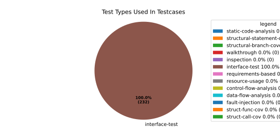
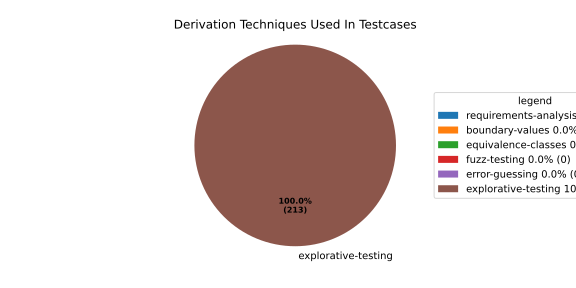

Verification Statistics#
Overview#

In Detail#



Failed Tests
Hint: This table should be empty. Before a PR can be merged all tests have to be successful.
No needs passed the filters
Skipped / Disabled Tests
testcase |
Result |
Fully Verifies |
Partially Verifies |
Test Type |
Derivation Technique |
link |
|---|---|---|---|---|---|---|
ValidateRangeTest/4__RejectsValueAboveMax |
skipped |
interface-test |
explorative-testing |
|||
ValidateRangeTest/4__RejectsValueBelowMin |
skipped |
interface-test |
explorative-testing |
All passed Tests#
testcase |
Result |
Fully Verifies |
Partially Verifies |
Test Type |
Derivation Technique |
link |
|---|---|---|---|---|---|---|
AliveImplTest__DoesNotThrowWhenInterfacePathEnvVarIsSet |
passed |
interface-test |
explorative-testing |
testcase__AliveImplTest__DoesNotThrowWhenInterfacePathEnvVarIsSet_xpewu |
||
AliveImplTest__ReportCheckpointSafeWhenNotConnected |
passed |
interface-test |
explorative-testing |
testcase__AliveImplTest__ReportCheckpointSafeWhenNotConnected_ppvuc |
||
AliveImplTest__ThrowsWhenInterfacePathEnvVarIsNotSet |
passed |
interface-test |
explorative-testing |
testcase__AliveImplTest__ThrowsWhenInterfacePathEnvVarIsNotSet_ekxfw |
||
AliveSupervisionTest__AliveDebouncesThroughFailedBeforeExpired |
passed |
interface-test |
explorative-testing |
testcase__AliveSupervisionTest__AliveDebouncesThroughFailedBeforeExpired_mlnbe |
||
AliveSupervisionTest__AliveReportsEnqueueFailureWhenRingBufferFull |
passed |
interface-test |
explorative-testing |
testcase__AliveSupervisionTest__AliveReportsEnqueueFailureWhenRingBufferFull_byhrd |
||
AliveSupervisionTest__AliveStaysOkWithCorrectHeartbeats |
passed |
interface-test |
explorative-testing |
testcase__AliveSupervisionTest__AliveStaysOkWithCorrectHeartbeats_vekof |
||
AliveSupervisionTest__AliveTransitionsOkToExpiredOnMissingHeartbeat |
passed |
interface-test |
explorative-testing |
testcase__AliveSupervisionTest__AliveTransitionsOkToExpiredOnMissingHeartbeat_jymxo |
||
AliveSupervisionTest__DeactivatesOnProcessCrash |
passed |
interface-test |
explorative-testing |
testcase__AliveSupervisionTest__DeactivatesOnProcessCrash_ypejs |
||
AliveSupervisionTest__DeactivatesOnProcessSigterm |
passed |
interface-test |
explorative-testing |
testcase__AliveSupervisionTest__DeactivatesOnProcessSigterm_hzaal |
||
AliveSupervisionTest__IgnoresIrrelevantProcessStates |
passed |
interface-test |
explorative-testing |
testcase__AliveSupervisionTest__IgnoresIrrelevantProcessStates_aolvb |
||
AliveSupervisionTest__MaxIndicationViolationExpires |
passed |
interface-test |
explorative-testing |
testcase__AliveSupervisionTest__MaxIndicationViolationExpires_whhhi |
||
AliveSupervisionTest__ReactivatesAfterCrash |
passed |
interface-test |
explorative-testing |
|||
ApplicationTypes/ApplicationTypeTest__ConvertsToExpectedValue/Native |
passed |
interface-test |
explorative-testing |
testcase__ApplicationTypes/ApplicationTypeTest__ConvertsToExpectedValue/Native_yxxcz |
||
ApplicationTypes/ApplicationTypeTest__ConvertsToExpectedValue/Reporting |
passed |
interface-test |
explorative-testing |
testcase__ApplicationTypes/ApplicationTypeTest__ConvertsToExpectedValue/Reporting_wcfwr |
||
ApplicationTypes/ApplicationTypeTest__ConvertsToExpectedValue/ReportingAndSupervised |
passed |
interface-test |
explorative-testing |
testcase__ApplicationTypes/ApplicationTypeTest__ConvertsToExpectedValue/ReportingAndSupervised_yxgad |
||
ApplicationTypes/ApplicationTypeTest__ConvertsToExpectedValue/StateManager |
passed |
interface-test |
explorative-testing |
testcase__ApplicationTypes/ApplicationTypeTest__ConvertsToExpectedValue/StateManager_ivuzc |
||
ConverterTest__ConvertAliveSupervisionMissingCycleReturnsError |
passed |
interface-test |
explorative-testing |
testcase__ConverterTest__ConvertAliveSupervisionMissingCycleReturnsError_bifzg |
||
ConverterTest__ConvertAliveSupervisionNullReturnsDefault |
passed |
interface-test |
explorative-testing |
testcase__ConverterTest__ConvertAliveSupervisionNullReturnsDefault_clyua |
||
ConverterTest__ConvertAliveSupervisionValid |
passed |
interface-test |
explorative-testing |
|||
ConverterTest__ConvertApplicationProfileMissingSelfTerminatingReturnsError |
passed |
interface-test |
explorative-testing |
testcase__ConverterTest__ConvertApplicationProfileMissingSelfTerminatingReturnsError_zddjb |
||
ConverterTest__ConvertApplicationProfileMissingTypeReturnsError |
passed |
interface-test |
explorative-testing |
testcase__ConverterTest__ConvertApplicationProfileMissingTypeReturnsError_zrfcs |
||
ConverterTest__ConvertApplicationProfileValid |
passed |
interface-test |
explorative-testing |
testcase__ConverterTest__ConvertApplicationProfileValid_oohxq |
||
ConverterTest__ConvertComponentAliveSupervisionBothIndicationsAbsentReturnsError |
passed |
interface-test |
explorative-testing |
testcase__ConverterTest__ConvertComponentAliveSupervisionBothIndicationsAbsentReturnsError_gvtfi |
||
ConverterTest__ConvertComponentAliveSupervisionMissingReportingCycleReturnsError |
passed |
interface-test |
explorative-testing |
testcase__ConverterTest__ConvertComponentAliveSupervisionMissingReportingCycleReturnsError_ajymy |
||
ConverterTest__ConvertComponentAliveSupervisionMissingToleranceReturnsError |
passed |
interface-test |
explorative-testing |
testcase__ConverterTest__ConvertComponentAliveSupervisionMissingToleranceReturnsError_lgrhj |
||
ConverterTest__ConvertComponentAliveSupervisionNullReturnsDefault |
passed |
interface-test |
explorative-testing |
testcase__ConverterTest__ConvertComponentAliveSupervisionNullReturnsDefault_xhaus |
||
ConverterTest__ConvertComponentAliveSupervisionOnlyMaxIndicationsPresent |
passed |
interface-test |
explorative-testing |
testcase__ConverterTest__ConvertComponentAliveSupervisionOnlyMaxIndicationsPresent_smwht |
||
ConverterTest__ConvertComponentAliveSupervisionOnlyMinIndicationsPresent |
passed |
interface-test |
explorative-testing |
testcase__ConverterTest__ConvertComponentAliveSupervisionOnlyMinIndicationsPresent_ybbrr |
||
ConverterTest__ConvertComponentAliveSupervisionValid |
passed |
interface-test |
explorative-testing |
testcase__ConverterTest__ConvertComponentAliveSupervisionValid_ijedh |
||
ConverterTest__ConvertComponentsValid |
passed |
interface-test |
explorative-testing |
|||
ConverterTest__ConvertComponentsWithInvalidComponentReturnsError |
passed |
interface-test |
explorative-testing |
testcase__ConverterTest__ConvertComponentsWithInvalidComponentReturnsError_wridc |
||
ConverterTest__ConvertComponentValid |
passed |
interface-test |
explorative-testing |
|||
ConverterTest__ConvertDeploymentConfigMissingReadyTimeoutReturnsError |
passed |
interface-test |
explorative-testing |
testcase__ConverterTest__ConvertDeploymentConfigMissingReadyTimeoutReturnsError_ljzfl |
||
ConverterTest__ConvertDeploymentConfigMissingShutdownTimeoutReturnsError |
passed |
interface-test |
explorative-testing |
testcase__ConverterTest__ConvertDeploymentConfigMissingShutdownTimeoutReturnsError_vyqye |
||
ConverterTest__ConvertDeploymentConfigValid |
passed |
interface-test |
explorative-testing |
|||
ConverterTest__ConvertEnvironmentalVariables |
passed |
interface-test |
explorative-testing |
testcase__ConverterTest__ConvertEnvironmentalVariables_fnhgo |
||
ConverterTest__ConvertEnvironmentalVariablesNullReturnsEmpty |
passed |
interface-test |
explorative-testing |
testcase__ConverterTest__ConvertEnvironmentalVariablesNullReturnsEmpty_vglrx |
||
ConverterTest__ConvertFallbackRunTargetMissingTimeoutReturnsError |
passed |
interface-test |
explorative-testing |
testcase__ConverterTest__ConvertFallbackRunTargetMissingTimeoutReturnsError_aevly |
||
ConverterTest__ConvertFallbackRunTargetValid |
passed |
interface-test |
explorative-testing |
testcase__ConverterTest__ConvertFallbackRunTargetValid_nexxj |
||
ConverterTest__ConvertReadyConditionMissingProcessStateReturnsError |
passed |
interface-test |
explorative-testing |
testcase__ConverterTest__ConvertReadyConditionMissingProcessStateReturnsError_ileav |
||
ConverterTest__ConvertReadyConditionValid |
passed |
interface-test |
explorative-testing |
|||
ConverterTest__ConvertRestartActionMissingFieldsReturnsError |
passed |
interface-test |
explorative-testing |
testcase__ConverterTest__ConvertRestartActionMissingFieldsReturnsError_aapjb |
||
ConverterTest__ConvertRestartActionNullReturnsNullopt |
passed |
interface-test |
explorative-testing |
testcase__ConverterTest__ConvertRestartActionNullReturnsNullopt_ifvyd |
||
ConverterTest__ConvertRestartActionValid |
passed |
interface-test |
explorative-testing |
|||
ConverterTest__ConvertRunTargetMissingTransitionTimeoutReturnsError |
passed |
interface-test |
explorative-testing |
testcase__ConverterTest__ConvertRunTargetMissingTransitionTimeoutReturnsError_ynekv |
||
ConverterTest__ConvertRunTargetsValid |
passed |
interface-test |
explorative-testing |
|||
ConverterTest__ConvertRunTargetsWithInvalidRunTargetReturnsError |
passed |
interface-test |
explorative-testing |
testcase__ConverterTest__ConvertRunTargetsWithInvalidRunTargetReturnsError_ldlox |
||
ConverterTest__ConvertRunTargetValid |
passed |
interface-test |
explorative-testing |
|||
ConverterTest__ConvertSandboxMissingGidReturnsError |
passed |
interface-test |
explorative-testing |
testcase__ConverterTest__ConvertSandboxMissingGidReturnsError_veeel |
||
ConverterTest__ConvertSandboxMissingSchedulingPolicyReturnsError |
passed |
interface-test |
explorative-testing |
testcase__ConverterTest__ConvertSandboxMissingSchedulingPolicyReturnsError_pkfts |
||
ConverterTest__ConvertSandboxMissingSchedulingPriorityReturnsError |
passed |
interface-test |
explorative-testing |
testcase__ConverterTest__ConvertSandboxMissingSchedulingPriorityReturnsError_xzdho |
||
ConverterTest__ConvertSandboxMissingUidReturnsError |
passed |
interface-test |
explorative-testing |
testcase__ConverterTest__ConvertSandboxMissingUidReturnsError_ogfku |
||
ConverterTest__ConvertSandboxSupplementaryGidOutOfRangeReturnsError |
passed |
interface-test |
explorative-testing |
testcase__ConverterTest__ConvertSandboxSupplementaryGidOutOfRangeReturnsError_zavpx |
||
ConverterTest__ConvertSandboxUidOutOfRangeReturnsError |
passed |
interface-test |
explorative-testing |
testcase__ConverterTest__ConvertSandboxUidOutOfRangeReturnsError_mcuaf |
||
ConverterTest__ConvertSandboxValid |
passed |
interface-test |
explorative-testing |
|||
ConverterTest__ConvertSwitchRunTargetActionNullReturnsNullopt |
passed |
interface-test |
explorative-testing |
testcase__ConverterTest__ConvertSwitchRunTargetActionNullReturnsNullopt_zmitx |
||
ConverterTest__ConvertSwitchRunTargetActionValid |
passed |
interface-test |
explorative-testing |
testcase__ConverterTest__ConvertSwitchRunTargetActionValid_tdklr |
||
ConverterTest__ConvertWatchdogMissingDeactivateReturnsError |
passed |
interface-test |
explorative-testing |
testcase__ConverterTest__ConvertWatchdogMissingDeactivateReturnsError_gzwjt |
||
ConverterTest__ConvertWatchdogMissingMagicCloseReturnsError |
passed |
interface-test |
explorative-testing |
testcase__ConverterTest__ConvertWatchdogMissingMagicCloseReturnsError_gexxk |
||
ConverterTest__ConvertWatchdogMissingMaxTimeoutReturnsError |
passed |
interface-test |
explorative-testing |
testcase__ConverterTest__ConvertWatchdogMissingMaxTimeoutReturnsError_lffxm |
||
ConverterTest__ConvertWatchdogNullReturnsNullopt |
passed |
interface-test |
explorative-testing |
testcase__ConverterTest__ConvertWatchdogNullReturnsNullopt_irsdk |
||
ConverterTest__ConvertWatchdogValid |
passed |
interface-test |
explorative-testing |
|||
DeadlineFixture__Start_AlreadyRunning |
passed |
interface-test |
explorative-testing |
|||
DeadlineFixture__Start_Succeeds |
passed |
interface-test |
explorative-testing |
|||
DeadlineMonitorBuilderFixture__AddDeadline_Succeeds |
passed |
interface-test |
explorative-testing |
testcase__DeadlineMonitorBuilderFixture__AddDeadline_Succeeds_nagke |
||
DeadlineMonitorBuilderFixture__New_Succeeds |
passed |
interface-test |
explorative-testing |
|||
DeadlineMonitorFixture__GetDeadline_Succeeds |
passed |
interface-test |
explorative-testing |
testcase__DeadlineMonitorFixture__GetDeadline_Succeeds_tmltf |
||
DeadlineMonitorFixture__GetDeadline_Unknown |
passed |
interface-test |
explorative-testing |
|||
EnumConversionTest__ConvertSchedulingPolicyUnsupported |
passed |
interface-test |
explorative-testing |
testcase__EnumConversionTest__ConvertSchedulingPolicyUnsupported_iavqm |
||
EnvironmentTest__AddIncreasesSize |
passed |
interface-test |
explorative-testing |
|||
EnvironmentTest__DefaultConstructedIsEmpty |
passed |
interface-test |
explorative-testing |
|||
EnvironmentTest__EmptyEnvironmentEnvpIsNullTerminated |
passed |
interface-test |
explorative-testing |
testcase__EnvironmentTest__EmptyEnvironmentEnvpIsNullTerminated_wwumw |
||
EnvironmentTest__EnvpReturnsNullTerminatedArray |
passed |
interface-test |
explorative-testing |
testcase__EnvironmentTest__EnvpReturnsNullTerminatedArray_aubkv |
||
EnvironmentTest__EnvpWithMultipleEntries |
passed |
interface-test |
explorative-testing |
|||
EnvironmentTest__MoveAssignmentPreservesEntries |
passed |
interface-test |
explorative-testing |
testcase__EnvironmentTest__MoveAssignmentPreservesEntries_vkydj |
||
EnvironmentTest__MoveConstructorPreservesEntries |
passed |
interface-test |
explorative-testing |
testcase__EnvironmentTest__MoveConstructorPreservesEntries_upclt |
||
EnvironmentTest__RangeBasedForLoopWorks |
passed |
interface-test |
explorative-testing |
|||
EnvironmentTest__ReserveAndAddAvoidReallocation |
passed |
interface-test |
explorative-testing |
testcase__EnvironmentTest__ReserveAndAddAvoidReallocation_lgzmu |
||
EnvironmentTest__SsoLengthStringSurvivesReallocation |
passed |
interface-test |
explorative-testing |
testcase__EnvironmentTest__SsoLengthStringSurvivesReallocation_jfmtl |
||
EnvironmentVariableTest__CStrReturnsKeyEqualsValue |
passed |
interface-test |
explorative-testing |
testcase__EnvironmentVariableTest__CStrReturnsKeyEqualsValue_rkwan |
||
EnvironmentVariableTest__EmptyValue |
passed |
interface-test |
explorative-testing |
|||
EnvironmentVariableTest__KeyAndValueAreAccessible |
passed |
interface-test |
explorative-testing |
testcase__EnvironmentVariableTest__KeyAndValueAreAccessible_kcrth |
||
EnvironmentVariableTest__ValueContainingEquals |
passed |
interface-test |
explorative-testing |
testcase__EnvironmentVariableTest__ValueContainingEquals_apzgz |
||
ExecErrorDomainTest__AllKnownCodesHaveDistinctMessages |
passed |
interface-test |
explorative-testing |
testcase__ExecErrorDomainTest__AllKnownCodesHaveDistinctMessages_qpoka |
||
ExecErrorDomainTest__AllKnownCodesReturnNonEmptyMessage |
passed |
interface-test |
explorative-testing |
testcase__ExecErrorDomainTest__AllKnownCodesReturnNonEmptyMessage_bawzg |
||
ExecErrorDomainTest__UnknownCodeReturnsNonEmptyMessage |
passed |
interface-test |
explorative-testing |
testcase__ExecErrorDomainTest__UnknownCodeReturnsNonEmptyMessage_kkwpr |
||
FlatbufferConfigLoaderTest__CorruptedBufferReturnsInvalidFormat |
passed |
interface-test |
explorative-testing |
testcase__FlatbufferConfigLoaderTest__CorruptedBufferReturnsInvalidFormat_twyac |
||
FlatbufferConfigLoaderTest__LoadAliveSupervision |
passed |
interface-test |
explorative-testing |
testcase__FlatbufferConfigLoaderTest__LoadAliveSupervision_hhuux |
||
FlatbufferConfigLoaderTest__LoadBufferFailsWithGenericErrorReturnsGeneralError |
passed |
interface-test |
explorative-testing |
testcase__FlatbufferConfigLoaderTest__LoadBufferFailsWithGenericErrorReturnsGeneralError_kmatm |
||
FlatbufferConfigLoaderTest__LoadBufferFailsWithNoSuchFileReturnsFileNotFound |
passed |
interface-test |
explorative-testing |
testcase__FlatbufferConfigLoaderTest__LoadBufferFailsWithNoSuchFileReturnsFileNotFound_yzlra |
||
FlatbufferConfigLoaderTest__LoadBufferFailsWithPermissionDeniedReturnsInsufficientPermission |
passed |
interface-test |
explorative-testing |
|||
FlatbufferConfigLoaderTest__LoadComponentAliveSupervision |
passed |
interface-test |
explorative-testing |
testcase__FlatbufferConfigLoaderTest__LoadComponentAliveSupervision_fwfad |
||
FlatbufferConfigLoaderTest__LoadEnvironmentalVariables |
passed |
interface-test |
explorative-testing |
testcase__FlatbufferConfigLoaderTest__LoadEnvironmentalVariables_wsosu |
||
FlatbufferConfigLoaderTest__LoadFallbackRunTarget |
passed |
interface-test |
explorative-testing |
testcase__FlatbufferConfigLoaderTest__LoadFallbackRunTarget_wduqm |
||
FlatbufferConfigLoaderTest__LoadMinimalConfig |
passed |
interface-test |
explorative-testing |
testcase__FlatbufferConfigLoaderTest__LoadMinimalConfig_hdkck |
||
FlatbufferConfigLoaderTest__LoadMultipleComponents |
passed |
interface-test |
explorative-testing |
testcase__FlatbufferConfigLoaderTest__LoadMultipleComponents_abpom |
||
FlatbufferConfigLoaderTest__LoadRestartRecoveryAction |
passed |
interface-test |
explorative-testing |
testcase__FlatbufferConfigLoaderTest__LoadRestartRecoveryAction_wyfqg |
||
FlatbufferConfigLoaderTest__LoadRunTargets |
passed |
interface-test |
explorative-testing |
|||
FlatbufferConfigLoaderTest__LoadSandbox |
passed |
interface-test |
explorative-testing |
|||
FlatbufferConfigLoaderTest__LoadSingleComponent |
passed |
interface-test |
explorative-testing |
testcase__FlatbufferConfigLoaderTest__LoadSingleComponent_yidty |
||
FlatbufferConfigLoaderTest__LoadSwitchRunTargetAction |
passed |
interface-test |
explorative-testing |
testcase__FlatbufferConfigLoaderTest__LoadSwitchRunTargetAction_uchgp |
||
FlatbufferConfigLoaderTest__LoadWatchdog |
passed |
interface-test |
explorative-testing |
|||
FlatbufferConfigLoaderTest__MissingSchemaVersionReturnsInvalidFormat |
passed |
interface-test |
explorative-testing |
testcase__FlatbufferConfigLoaderTest__MissingSchemaVersionReturnsInvalidFormat_qqmfn |
||
FlatbufferConfigLoaderTest__OptionalReadyConditionAbsent |
passed |
interface-test |
explorative-testing |
testcase__FlatbufferConfigLoaderTest__OptionalReadyConditionAbsent_lhddx |
||
FlatbufferConfigLoaderTest__OptionalWatchdogAbsent |
passed |
interface-test |
explorative-testing |
testcase__FlatbufferConfigLoaderTest__OptionalWatchdogAbsent_pkhkp |
||
FlatbufferConfigLoaderTest__WrongSchemaVersionReturnsUnsupportedVersion |
passed |
interface-test |
explorative-testing |
testcase__FlatbufferConfigLoaderTest__WrongSchemaVersionReturnsUnsupportedVersion_zrbjv |
||
HealthMonitor__GetDeadlineMonitor_Available |
passed |
|||||
HealthMonitor__GetDeadlineMonitor_Taken |
passed |
|||||
HealthMonitor__GetDeadlineMonitor_Unknown |
passed |
|||||
HealthMonitor__GetHeartbeatMonitor_Available |
passed |
testcase__HealthMonitor__GetHeartbeatMonitor_Available_aacat |
||||
HealthMonitor__GetHeartbeatMonitor_Taken |
passed |
|||||
HealthMonitor__GetHeartbeatMonitor_Unknown |
passed |
|||||
HealthMonitor__GetLogicMonitor_Available |
passed |
|||||
HealthMonitor__GetLogicMonitor_Taken |
passed |
|||||
HealthMonitor__GetLogicMonitor_Unknown |
passed |
|||||
HealthMonitor__Start_MonitorsNotTaken |
passed |
|||||
HealthMonitor__Start_Succeeds |
passed |
|||||
HealthMonitorBuilderFixture__Build_InvalidCycles |
passed |
interface-test |
explorative-testing |
testcase__HealthMonitorBuilderFixture__Build_InvalidCycles_pdigk |
||
HealthMonitorBuilderFixture__Build_NoMonitors |
passed |
interface-test |
explorative-testing |
testcase__HealthMonitorBuilderFixture__Build_NoMonitors_ktcve |
||
HealthMonitorBuilderFixture__Build_Succeeds |
passed |
interface-test |
explorative-testing |
|||
HealthMonitorBuilderFixture__New_Succeeds |
passed |
interface-test |
explorative-testing |
|||
HealthMonitorTest__Integrated |
passed |
interface-test |
explorative-testing |
|||
HeartbeatMonitor__Heartbeat_Succeeds |
passed |
interface-test |
explorative-testing |
|||
HeartbeatMonitorBuilder__New_Succeeds |
passed |
interface-test |
explorative-testing |
|||
IdentifierHashTest__IdentifierHash_default_created |
passed |
interface-test |
explorative-testing |
testcase__IdentifierHashTest__IdentifierHash_default_created_yhhvi |
||
IdentifierHashTest__IdentifierHash_EqualityOperators |
passed |
interface-test |
explorative-testing |
testcase__IdentifierHashTest__IdentifierHash_EqualityOperators_nnsuj |
||
IdentifierHashTest__IdentifierHash_invalid_hash_no_string_representation |
passed |
interface-test |
explorative-testing |
testcase__IdentifierHashTest__IdentifierHash_invalid_hash_no_string_representation_rxowr |
||
IdentifierHashTest__IdentifierHash_LessThanOperator |
passed |
interface-test |
explorative-testing |
testcase__IdentifierHashTest__IdentifierHash_LessThanOperator_rnbax |
||
IdentifierHashTest__IdentifierHash_no_dangling_pointer_after_source_string_dies |
passed |
interface-test |
explorative-testing |
testcase__IdentifierHashTest__IdentifierHash_no_dangling_pointer_after_source_string_dies_qsjin |
||
IdentifierHashTest__IdentifierHash_with_string_created |
passed |
interface-test |
explorative-testing |
testcase__IdentifierHashTest__IdentifierHash_with_string_created_aygdm |
||
IdentifierHashTest__IdentifierHash_with_string_view_created |
passed |
interface-test |
explorative-testing |
testcase__IdentifierHashTest__IdentifierHash_with_string_view_created_dbpol |
||
LogicMonitorBuilderFixture__AddState_Succeeds |
passed |
interface-test |
explorative-testing |
testcase__LogicMonitorBuilderFixture__AddState_Succeeds_axdxj |
||
LogicMonitorBuilderFixture__New_Succeeds |
passed |
interface-test |
explorative-testing |
|||
LogicMonitorFixture__State_Invalid |
passed |
interface-test |
explorative-testing |
|||
LogicMonitorFixture__State_Succeeds |
passed |
interface-test |
explorative-testing |
|||
LogicMonitorFixture__Transition_Invalid |
passed |
interface-test |
explorative-testing |
|||
LogicMonitorFixture__Transition_Succeeds |
passed |
interface-test |
explorative-testing |
|||
LogicMonitorFixture__Transition_Unknown |
passed |
interface-test |
explorative-testing |
|||
MonitorIfDaemonTest__Active_CheckpointDataForwarded |
passed |
interface-test |
explorative-testing |
testcase__MonitorIfDaemonTest__Active_CheckpointDataForwarded_evumz |
||
MonitorIfDaemonTest__Active_FutureTimestamp_NotForwardedInCurrentCycle |
passed |
interface-test |
explorative-testing |
testcase__MonitorIfDaemonTest__Active_FutureTimestamp_NotForwardedInCurrentCycle_oycau |
||
MonitorIfDaemonTest__Active_FutureTimestampCheckpoint_ConsumedInLaterCycle |
passed |
interface-test |
explorative-testing |
testcase__MonitorIfDaemonTest__Active_FutureTimestampCheckpoint_ConsumedInLaterCycle_veyyy |
||
MonitorIfDaemonTest__Active_MultipleCheckpointsInOneCycle_AllForwarded |
passed |
interface-test |
explorative-testing |
testcase__MonitorIfDaemonTest__Active_MultipleCheckpointsInOneCycle_AllForwarded_gmbms |
||
MonitorIfDaemonTest__Active_NonMatchingCheckpointId_NotForwarded |
passed |
interface-test |
explorative-testing |
testcase__MonitorIfDaemonTest__Active_NonMatchingCheckpointId_NotForwarded_bohck |
||
MonitorIfDaemonTest__Active_OverflowDetected_TransitionsToInactiveOverflow |
passed |
interface-test |
explorative-testing |
testcase__MonitorIfDaemonTest__Active_OverflowDetected_TransitionsToInactiveOverflow_ovitk |
||
MonitorIfDaemonTest__Active_TwoAttachedCheckpoints_RoutedByCheckpointId |
passed |
interface-test |
explorative-testing |
testcase__MonitorIfDaemonTest__Active_TwoAttachedCheckpoints_RoutedByCheckpointId_skqhd |
||
MonitorIfDaemonTest__GetInterfaceName_ReturnsNameGivenAtConstruction |
passed |
interface-test |
explorative-testing |
testcase__MonitorIfDaemonTest__GetInterfaceName_ReturnsNameGivenAtConstruction_iaemz |
||
MonitorIfDaemonTest__InactiveOverflow_NoProcessRestart_DoesNotRepeatNotification |
passed |
interface-test |
explorative-testing |
testcase__MonitorIfDaemonTest__InactiveOverflow_NoProcessRestart_DoesNotRepeatNotification_gdbxg |
||
MonitorIfDaemonTest__InactiveOverflow_ProcessRestartFlag_ClearedAfterNotification |
passed |
interface-test |
explorative-testing |
testcase__MonitorIfDaemonTest__InactiveOverflow_ProcessRestartFlag_ClearedAfterNotification_pqfyy |
||
MonitorIfDaemonTest__InactiveOverflow_ProcessRestarts_PushesOverflowNotificationAgain |
passed |
interface-test |
explorative-testing |
|||
MonitorIfDaemonTest__InitiallyInactive_CheckForNewData_DoesNotNotifyCheckpoint |
passed |
interface-test |
explorative-testing |
testcase__MonitorIfDaemonTest__InitiallyInactive_CheckForNewData_DoesNotNotifyCheckpoint_wjrfl |
||
MonitorIfDaemonTest__ProcessOff_DeactivatesMonitor_NoFurtherDataForwarded |
passed |
interface-test |
explorative-testing |
testcase__MonitorIfDaemonTest__ProcessOff_DeactivatesMonitor_NoFurtherDataForwarded_uialh |
||
MonitorIfDaemonTest__ProcessOffBeforeActivation_RemainsInactive |
passed |
interface-test |
explorative-testing |
testcase__MonitorIfDaemonTest__ProcessOffBeforeActivation_RemainsInactive_kzzyy |
||
MonitorIfDaemonTest__ProcessRunning_ActivatesMonitorOnNextCheckForNewData |
passed |
interface-test |
explorative-testing |
testcase__MonitorIfDaemonTest__ProcessRunning_ActivatesMonitorOnNextCheckForNewData_fkkmk |
||
MonitorIfDaemonTest__ProcessStarting_AlsoActivatesMonitor |
passed |
interface-test |
explorative-testing |
testcase__MonitorIfDaemonTest__ProcessStarting_AlsoActivatesMonitor_xdkbg |
||
MPMCConcurrentQueueTest_Basic__LvaluePushCopiesItem |
passed |
testcase__MPMCConcurrentQueueTest_Basic__LvaluePushCopiesItem_oysfc |
||||
MPMCConcurrentQueueTest_Basic__PopReturnsNulloptOnSemaphoreWaitFailure |
passed |
testcase__MPMCConcurrentQueueTest_Basic__PopReturnsNulloptOnSemaphoreWaitFailure_rgznm |
||||
MPMCConcurrentQueueTest_Basic__PushAndPopPreservesOrder |
passed |
testcase__MPMCConcurrentQueueTest_Basic__PushAndPopPreservesOrder_aijdb |
||||
MPMCConcurrentQueueTest_Basic__PushAndPopSingleItem |
passed |
testcase__MPMCConcurrentQueueTest_Basic__PushAndPopSingleItem_jrxwz |
||||
MPMCConcurrentQueueTest_Basic__RvaluePushWorksWithMoveOnlyType |
passed |
testcase__MPMCConcurrentQueueTest_Basic__RvaluePushWorksWithMoveOnlyType_cxxaj |
||||
MPMCConcurrentQueueTest_Blocking__PopBlocksUntilItemAvailable |
passed |
testcase__MPMCConcurrentQueueTest_Blocking__PopBlocksUntilItemAvailable_ttwcx |
||||
MPMCConcurrentQueueTest_Blocking__PushBlocksWhenFull |
passed |
testcase__MPMCConcurrentQueueTest_Blocking__PushBlocksWhenFull_ecujf |
||||
MPMCConcurrentQueueTest_Blocking__StopUnblocksBlockedConsumer |
passed |
testcase__MPMCConcurrentQueueTest_Blocking__StopUnblocksBlockedConsumer_snzyr |
||||
MPMCConcurrentQueueTest_Blocking__StopUnblocksBlockedProducer |
passed |
testcase__MPMCConcurrentQueueTest_Blocking__StopUnblocksBlockedProducer_inddu |
||||
MPMCConcurrentQueueTest_MPMC__AllItemsDelivered |
passed |
testcase__MPMCConcurrentQueueTest_MPMC__AllItemsDelivered_ztjqe |
||||
MPMCConcurrentQueueTest_Stop__ItemsAreDroppedAfterStop |
passed |
testcase__MPMCConcurrentQueueTest_Stop__ItemsAreDroppedAfterStop_ragzw |
||||
MPMCConcurrentQueueTest_Stop__PopReturnsNulloptWhenStoppedAndEmpty |
passed |
testcase__MPMCConcurrentQueueTest_Stop__PopReturnsNulloptWhenStoppedAndEmpty_cevga |
||||
MPMCConcurrentQueueTest_Stop__PushReturnsFalseAfterStop |
passed |
testcase__MPMCConcurrentQueueTest_Stop__PushReturnsFalseAfterStop_qqnhw |
||||
MPMCConcurrentQueueTest_Timeout__PushWithTimeoutReturnsFalseWhenFull |
passed |
testcase__MPMCConcurrentQueueTest_Timeout__PushWithTimeoutReturnsFalseWhenFull_aeips |
||||
MPMCConcurrentQueueTest_Timeout__PushWithTimeoutSucceedsWhenSlotAvailable |
passed |
testcase__MPMCConcurrentQueueTest_Timeout__PushWithTimeoutSucceedsWhenSlotAvailable_klzpo |
||||
OsHandlerTest__WaitReturnsError_OsHandlerSleepsAndDoesNotCallFindTerminated |
passed |
interface-test |
explorative-testing |
testcase__OsHandlerTest__WaitReturnsError_OsHandlerSleepsAndDoesNotCallFindTerminated_cibtr |
||
OsHandlerTest__WaitReturnsErrorThenProcessId_HandlerRecoversAndInvokesCallback |
passed |
interface-test |
explorative-testing |
testcase__OsHandlerTest__WaitReturnsErrorThenProcessId_HandlerRecoversAndInvokesCallback_nqstd |
||
OsHandlerTest__WaitReturnsProcessId_FindTerminatedIsCalled |
passed |
interface-test |
explorative-testing |
testcase__OsHandlerTest__WaitReturnsProcessId_FindTerminatedIsCalled_chlsq |
||
OsHandlerTest__WaitReturnsProcessIdBeforeRegistration_LaterRegistrationReceivesStoredTermination |
passed |
interface-test |
explorative-testing |
|||
OsHandlerTest__WaitReturnsUnknownPidWhenMapIsFull_OutOfResourcesPathDoesNotNotifyCallbacks |
passed |
interface-test |
explorative-testing |
|||
OsHandlerTest__WaitReturnsZeroPid_OsHandlerSleepsAndDoesNotCallFindTerminated |
passed |
interface-test |
explorative-testing |
testcase__OsHandlerTest__WaitReturnsZeroPid_OsHandlerSleepsAndDoesNotCallFindTerminated_rkttz |
||
ProcessStateClient_UT__ProcessStateClient_ConstructReceiver_Succeeds |
passed |
interface-test |
explorative-testing |
testcase__ProcessStateClient_UT__ProcessStateClient_ConstructReceiver_Succeeds_hodwy |
||
ProcessStateClient_UT__ProcessStateClient_QueueMaxNumberOfProcesses_Succeeds |
passed |
interface-test |
explorative-testing |
testcase__ProcessStateClient_UT__ProcessStateClient_QueueMaxNumberOfProcesses_Succeeds_qohom |
||
ProcessStateClient_UT__ProcessStateClient_QueueOneProcess_Succeeds |
passed |
interface-test |
explorative-testing |
testcase__ProcessStateClient_UT__ProcessStateClient_QueueOneProcess_Succeeds_tmzfz |
||
ProcessStateClient_UT__ProcessStateClient_QueueOneProcessTooMany_Fails |
passed |
interface-test |
explorative-testing |
testcase__ProcessStateClient_UT__ProcessStateClient_QueueOneProcessTooMany_Fails_sspoj |
||
ProcessStates/ProcessStateTest__ConvertsToExpectedValue/Running |
passed |
interface-test |
explorative-testing |
testcase__ProcessStates/ProcessStateTest__ConvertsToExpectedValue/Running_hinlr |
||
ProcessStates/ProcessStateTest__ConvertsToExpectedValue/Terminated |
passed |
interface-test |
explorative-testing |
testcase__ProcessStates/ProcessStateTest__ConvertsToExpectedValue/Terminated_zrytn |
||
RecoveryClientTest__FIFOOrdering |
passed |
interface-test |
explorative-testing |
|||
RecoveryClientTest__GetNextRequest |
passed |
interface-test |
explorative-testing |
|||
RecoveryClientTest__GetNextRequestEmpty |
passed |
interface-test |
explorative-testing |
|||
RecoveryClientTest__RingBufferFull |
passed |
interface-test |
explorative-testing |
|||
RecoveryClientTest__SendSingleRequest |
passed |
interface-test |
explorative-testing |
|||
RunTest__AsPosixProcessCreatesAndDestroysLifeCycleManager |
passed |
testcase__RunTest__AsPosixProcessCreatesAndDestroysLifeCycleManager_sooex |
||||
RunTest__AsPosixProcessForwardsConstructorArgsToApplication |
passed |
testcase__RunTest__AsPosixProcessForwardsConstructorArgsToApplication_dmeur |
||||
RunTest__AsPosixProcessForwardsNonZeroExitCode |
passed |
testcase__RunTest__AsPosixProcessForwardsNonZeroExitCode_lldqd |
||||
RunTest__AsPosixProcessPassesCorrectApplicationTypeToRun |
passed |
testcase__RunTest__AsPosixProcessPassesCorrectApplicationTypeToRun_ajqwz |
||||
RunTest__AsPosixProcessReturnsZeroExitCode |
passed |
|||||
RunTest__RunApplicationFreeFunctionDelegatesToAsPosixProcess |
passed |
testcase__RunTest__RunApplicationFreeFunctionDelegatesToAsPosixProcess_ccing |
||||
RunTest__RunConstructorPassesArgcArgvToApplicationContext |
passed |
testcase__RunTest__RunConstructorPassesArgcArgvToApplicationContext_agerd |
||||
SafeProcessMapTest__ConcurrentFindAndInsertFromMultipleThreads |
passed |
interface-test |
explorative-testing |
testcase__SafeProcessMapTest__ConcurrentFindAndInsertFromMultipleThreads_kzfyg |
||
SafeProcessMapTest__ConcurrentInsertAndFindFromMultipleThreads |
passed |
interface-test |
explorative-testing |
testcase__SafeProcessMapTest__ConcurrentInsertAndFindFromMultipleThreads_hnyqj |
||
SafeProcessMapTest__ConstructWithZeroCapacity |
passed |
interface-test |
explorative-testing |
testcase__SafeProcessMapTest__ConstructWithZeroCapacity_gjmqg |
||
SafeProcessMapTest__FindTerminatedInsertsEntryWhenPidNotPresent |
passed |
interface-test |
explorative-testing |
testcase__SafeProcessMapTest__FindTerminatedInsertsEntryWhenPidNotPresent_ixtlt |
||
SafeProcessMapTest__FindTerminatedMatchesExistingInsertAndCallsCallback |
passed |
interface-test |
explorative-testing |
testcase__SafeProcessMapTest__FindTerminatedMatchesExistingInsertAndCallsCallback_ehuzb |
||
SafeProcessMapTest__FindTerminatedSamePidTwiceYieldsUntilInsertResolves |
passed |
interface-test |
explorative-testing |
testcase__SafeProcessMapTest__FindTerminatedSamePidTwiceYieldsUntilInsertResolves_hsekx |
||
SafeProcessMapTest__FindTerminatedWithNegativePidReturnsInvalid |
passed |
interface-test |
explorative-testing |
testcase__SafeProcessMapTest__FindTerminatedWithNegativePidReturnsInvalid_dewoh |
||
SafeProcessMapTest__FindTerminatedWorksAtMaxTreeDepth |
passed |
interface-test |
explorative-testing |
testcase__SafeProcessMapTest__FindTerminatedWorksAtMaxTreeDepth_adtzi |
||
SafeProcessMapTest__InsertBeyondCapacityReturnsOutOfMemory |
passed |
interface-test |
explorative-testing |
testcase__SafeProcessMapTest__InsertBeyondCapacityReturnsOutOfMemory_qjnie |
||
SafeProcessMapTest__InsertIntoEmptyTreeReturnsZero |
passed |
interface-test |
explorative-testing |
testcase__SafeProcessMapTest__InsertIntoEmptyTreeReturnsZero_zfbaq |
||
SafeProcessMapTest__InsertMatchesExistingFindTerminatedEntry |
passed |
interface-test |
explorative-testing |
testcase__SafeProcessMapTest__InsertMatchesExistingFindTerminatedEntry_fuwrp |
||
SafeProcessMapTest__InsertMultipleNodesThenFindTerminatedRemovesAll |
passed |
interface-test |
explorative-testing |
testcase__SafeProcessMapTest__InsertMultipleNodesThenFindTerminatedRemovesAll_fvowh |
||
SafeProcessMapTest__InsertSamePidTwiceYieldsUntilFindTerminatedResolves |
passed |
interface-test |
explorative-testing |
testcase__SafeProcessMapTest__InsertSamePidTwiceYieldsUntilFindTerminatedResolves_wzwyb |
||
SchedulingPolicies/SchedulingPolicyTest__ConvertsToExpectedPosixValue/SCHED_FIFO |
passed |
interface-test |
explorative-testing |
testcase__SchedulingPolicies/SchedulingPolicyTest__ConvertsToExpectedPosixValue/SCHED_FIFO_soddq |
||
SchedulingPolicies/SchedulingPolicyTest__ConvertsToExpectedPosixValue/SCHED_OTHER |
passed |
interface-test |
explorative-testing |
testcase__SchedulingPolicies/SchedulingPolicyTest__ConvertsToExpectedPosixValue/SCHED_OTHER_oigmk |
||
SchedulingPolicies/SchedulingPolicyTest__ConvertsToExpectedPosixValue/SCHED_RR |
passed |
interface-test |
explorative-testing |
testcase__SchedulingPolicies/SchedulingPolicyTest__ConvertsToExpectedPosixValue/SCHED_RR_pcjci |
||
score/health_monitor/src/rust/test-510566969/tests |
passed |
testcase__score/health_monitor/src/rust/test-510566969/tests_kjjlw |
||||
score/health_monitor/src/rust/test-827801879/loom_tests |
passed |
testcase__score/health_monitor/src/rust/test-827801879/loom_tests_cpmix |
||||
SecondsToMsTest__ConvertsPositiveValue |
passed |
interface-test |
explorative-testing |
|||
SecondsToMsTest__ConvertsZero |
passed |
interface-test |
explorative-testing |
|||
SecondsToMsTest__RejectsNegativeValue |
passed |
interface-test |
explorative-testing |
|||
SecondsToMsTest__RejectsOverflow |
passed |
interface-test |
explorative-testing |
|||
SecondsToMsTest__RejectsSubMillisecond |
passed |
interface-test |
explorative-testing |
|||
StringHelperTest__ConvertGidVectorReturnsEmptyWhenNull |
passed |
interface-test |
explorative-testing |
testcase__StringHelperTest__ConvertGidVectorReturnsEmptyWhenNull_jmcsr |
||
StringHelperTest__ConvertStringVectorReturnsEmptyWhenNull |
passed |
interface-test |
explorative-testing |
testcase__StringHelperTest__ConvertStringVectorReturnsEmptyWhenNull_zsuvv |
||
StringHelperTest__SafeStringReturnsEmptyWhenNull |
passed |
interface-test |
explorative-testing |
testcase__StringHelperTest__SafeStringReturnsEmptyWhenNull_crelr |
||
StringHelperTest__SafeStringReturnsValueWhenNotNull |
passed |
interface-test |
explorative-testing |
testcase__StringHelperTest__SafeStringReturnsValueWhenNotNull_anbko |
||
test_complex_monitoring |
passed |
|||||
test_crash_on_startup |
passed |
|||||
test_incorrect_config_non_reporting |
passed |
|||||
test_process_crash_monitoring |
passed |
|||||
test_process_launch_args |
passed |
|||||
test_process_wrong_binary_failure |
passed |
|||||
test_recovery_action_complex_rep_failure |
passed |
|||||
test_recovery_action_simple_rep_failure |
passed |
|||||
test_smoke |
passed |
|||||
test_switch_run_target |
passed |
|||||
TimeRangeFixture__MinMax |
passed |
interface-test |
explorative-testing |
|||
TimeRangeFixture__New_InvalidOrder |
passed |
interface-test |
explorative-testing |
|||
TimeRangeFixture__New_Succeeds |
passed |
interface-test |
explorative-testing |
|||
ValidateRangeTest/0__AcceptsMaxBoundary |
passed |
interface-test |
explorative-testing |
|||
ValidateRangeTest/0__AcceptsMinBoundary |
passed |
interface-test |
explorative-testing |
|||
ValidateRangeTest/0__AcceptsZero |
passed |
interface-test |
explorative-testing |
|||
ValidateRangeTest/0__RejectsValueAboveMax |
passed |
interface-test |
explorative-testing |
|||
ValidateRangeTest/0__RejectsValueBelowMin |
passed |
interface-test |
explorative-testing |
|||
ValidateRangeTest/1__AcceptsMaxBoundary |
passed |
interface-test |
explorative-testing |
|||
ValidateRangeTest/1__AcceptsMinBoundary |
passed |
interface-test |
explorative-testing |
|||
ValidateRangeTest/1__AcceptsZero |
passed |
interface-test |
explorative-testing |
|||
ValidateRangeTest/1__RejectsValueAboveMax |
passed |
interface-test |
explorative-testing |
|||
ValidateRangeTest/1__RejectsValueBelowMin |
passed |
interface-test |
explorative-testing |
|||
ValidateRangeTest/2__AcceptsMaxBoundary |
passed |
interface-test |
explorative-testing |
|||
ValidateRangeTest/2__AcceptsMinBoundary |
passed |
interface-test |
explorative-testing |
|||
ValidateRangeTest/2__AcceptsZero |
passed |
interface-test |
explorative-testing |
|||
ValidateRangeTest/2__RejectsValueAboveMax |
passed |
interface-test |
explorative-testing |
|||
ValidateRangeTest/2__RejectsValueBelowMin |
passed |
interface-test |
explorative-testing |
|||
ValidateRangeTest/3__AcceptsMaxBoundary |
passed |
interface-test |
explorative-testing |
|||
ValidateRangeTest/3__AcceptsMinBoundary |
passed |
interface-test |
explorative-testing |
|||
ValidateRangeTest/3__AcceptsZero |
passed |
interface-test |
explorative-testing |
|||
ValidateRangeTest/3__RejectsValueAboveMax |
passed |
interface-test |
explorative-testing |
|||
ValidateRangeTest/3__RejectsValueBelowMin |
passed |
interface-test |
explorative-testing |
|||
ValidateRangeTest/4__AcceptsMaxBoundary |
passed |
interface-test |
explorative-testing |
|||
ValidateRangeTest/4__AcceptsMinBoundary |
passed |
interface-test |
explorative-testing |
|||
ValidateRangeTest/4__AcceptsZero |
passed |
interface-test |
explorative-testing |
Details About Testcases#


Test Log Files#
tests-report/score/launch_manager/exec_error_domain_UT/test.log
exec ${PAGER:-/usr/bin/less} "$0" || exit 1
Executing tests from //score/launch_manager:exec_error_domain_UT
-----------------------------------------------------------------------------
Running main() from gmock_main.cc
[==========] Running 3 tests from 1 test suite.
[----------] Global test environment set-up.
[----------] 3 tests from ExecErrorDomainTest
[ RUN ] ExecErrorDomainTest.AllKnownCodesReturnNonEmptyMessage
[ OK ] ExecErrorDomainTest.AllKnownCodesReturnNonEmptyMessage (0 ms)
[ RUN ] ExecErrorDomainTest.AllKnownCodesHaveDistinctMessages
[ OK ] ExecErrorDomainTest.AllKnownCodesHaveDistinctMessages (0 ms)
[ RUN ] ExecErrorDomainTest.UnknownCodeReturnsNonEmptyMessage
[ OK ] ExecErrorDomainTest.UnknownCodeReturnsNonEmptyMessage (0 ms)
[----------] 3 tests from ExecErrorDomainTest (0 ms total)
[----------] Global test environment tear-down
[==========] 3 tests from 1 test suite ran. (0 ms total)
[ PASSED ] 3 tests.
tests-report/score/launch_manager/src/alive/src/details/AliveImpl_UT/test.log
exec ${PAGER:-/usr/bin/less} "$0" || exit 1
Executing tests from //score/launch_manager/src/alive/src/details:AliveImpl_UT
-----------------------------------------------------------------------------
Running main() from gmock_main.cc
[==========] Running 3 tests from 1 test suite.
[----------] Global test environment set-up.
[----------] 3 tests from AliveImplTest
[ RUN ] AliveImplTest.ThrowsWhenInterfacePathEnvVarIsNotSet
mw::log initialization error: Error No logging configuration files could be found. occurred with context information: Failed to load configuration files. Fallback to console logging.
2026/07/22 15:12:19.3139112 3083429 000 ECU1 NONE Sprv log error verbose 3 Failed to load interface path for Alive instance ( test/instance )
[ OK ] AliveImplTest.ThrowsWhenInterfacePathEnvVarIsNotSet (2 ms)
[ RUN ] AliveImplTest.DoesNotThrowWhenInterfacePathEnvVarIsSet
2026/07/22 15:12:19.3139113 3083433 000 ECU1 NONE Sprv log error verbose 3 Connection to PHM daemon failed, for the Alive instance ( test/instance )
[ OK ] AliveImplTest.DoesNotThrowWhenInterfacePathEnvVarIsSet (0 ms)
[ RUN ] AliveImplTest.ReportCheckpointSafeWhenNotConnected
2026/07/22 15:12:19.3139113 3083433 000 ECU1 NONE Sprv log error verbose 3 Connection to PHM daemon failed, for the Alive instance ( test/instance )
[ OK ] AliveImplTest.ReportCheckpointSafeWhenNotConnected (0 ms)
[----------] 3 tests from AliveImplTest (2 ms total)
[----------] Global test environment tear-down
[==========] 3 tests from 1 test suite ran. (2 ms total)
[ PASSED ] 3 tests.
tests-report/score/launch_manager/src/daemon/src/configuration/config_UT/test.log
exec ${PAGER:-/usr/bin/less} "$0" || exit 1
Executing tests from //score/launch_manager/src/daemon/src/configuration:config_UT
-----------------------------------------------------------------------------
Running main() from gmock_main.cc
[==========] Running 14 tests from 2 test suites.
[----------] Global test environment set-up.
[----------] 4 tests from EnvironmentVariableTest
[ RUN ] EnvironmentVariableTest.KeyAndValueAreAccessible
[ OK ] EnvironmentVariableTest.KeyAndValueAreAccessible (0 ms)
[ RUN ] EnvironmentVariableTest.CStrReturnsKeyEqualsValue
[ OK ] EnvironmentVariableTest.CStrReturnsKeyEqualsValue (0 ms)
[ RUN ] EnvironmentVariableTest.EmptyValue
[ OK ] EnvironmentVariableTest.EmptyValue (0 ms)
[ RUN ] EnvironmentVariableTest.ValueContainingEquals
[ OK ] EnvironmentVariableTest.ValueContainingEquals (0 ms)
[----------] 4 tests from EnvironmentVariableTest (0 ms total)
[----------] 10 tests from EnvironmentTest
[ RUN ] EnvironmentTest.DefaultConstructedIsEmpty
[ OK ] EnvironmentTest.DefaultConstructedIsEmpty (0 ms)
[ RUN ] EnvironmentTest.AddIncreasesSize
[ OK ] EnvironmentTest.AddIncreasesSize (0 ms)
[ RUN ] EnvironmentTest.EnvpReturnsNullTerminatedArray
[ OK ] EnvironmentTest.EnvpReturnsNullTerminatedArray (0 ms)
[ RUN ] EnvironmentTest.EnvpWithMultipleEntries
[ OK ] EnvironmentTest.EnvpWithMultipleEntries (0 ms)
[ RUN ] EnvironmentTest.ReserveAndAddAvoidReallocation
[ OK ] EnvironmentTest.ReserveAndAddAvoidReallocation (0 ms)
[ RUN ] EnvironmentTest.MoveConstructorPreservesEntries
[ OK ] EnvironmentTest.MoveConstructorPreservesEntries (0 ms)
[ RUN ] EnvironmentTest.MoveAssignmentPreservesEntries
[ OK ] EnvironmentTest.MoveAssignmentPreservesEntries (0 ms)
[ RUN ] EnvironmentTest.SsoLengthStringSurvivesReallocation
[ OK ] EnvironmentTest.SsoLengthStringSurvivesReallocation (0 ms)
[ RUN ] EnvironmentTest.EmptyEnvironmentEnvpIsNullTerminated
[ OK ] EnvironmentTest.EmptyEnvironmentEnvpIsNullTerminated (0 ms)
[ RUN ] EnvironmentTest.RangeBasedForLoopWorks
[ OK ] EnvironmentTest.RangeBasedForLoopWorks (0 ms)
[----------] 10 tests from EnvironmentTest (0 ms total)
[----------] Global test environment tear-down
[==========] 14 tests from 2 test suites ran. (2 ms total)
[ PASSED ] 14 tests.
tests-report/score/launch_manager/src/daemon/src/configuration/flatbuffer_config_loader_UT/test.log
exec ${PAGER:-/usr/bin/less} "$0" || exit 1
Executing tests from //score/launch_manager/src/daemon/src/configuration:flatbuffer_config_loader_UT
-----------------------------------------------------------------------------
Running main() from gmock_main.cc
[==========] Running 20 tests from 1 test suite.
[----------] Global test environment set-up.
[----------] 20 tests from FlatbufferConfigLoaderTest
[ RUN ] FlatbufferConfigLoaderTest.LoadMinimalConfig
[ OK ] FlatbufferConfigLoaderTest.LoadMinimalConfig (0 ms)
[ RUN ] FlatbufferConfigLoaderTest.LoadSingleComponent
[ OK ] FlatbufferConfigLoaderTest.LoadSingleComponent (0 ms)
[ RUN ] FlatbufferConfigLoaderTest.LoadRunTargets
[ OK ] FlatbufferConfigLoaderTest.LoadRunTargets (0 ms)
[ RUN ] FlatbufferConfigLoaderTest.LoadFallbackRunTarget
[ OK ] FlatbufferConfigLoaderTest.LoadFallbackRunTarget (0 ms)
[ RUN ] FlatbufferConfigLoaderTest.LoadAliveSupervision
[ OK ] FlatbufferConfigLoaderTest.LoadAliveSupervision (0 ms)
[ RUN ] FlatbufferConfigLoaderTest.LoadWatchdog
[ OK ] FlatbufferConfigLoaderTest.LoadWatchdog (0 ms)
[ RUN ] FlatbufferConfigLoaderTest.LoadRestartRecoveryAction
[ OK ] FlatbufferConfigLoaderTest.LoadRestartRecoveryAction (0 ms)
[ RUN ] FlatbufferConfigLoaderTest.LoadSwitchRunTargetAction
[ OK ] FlatbufferConfigLoaderTest.LoadSwitchRunTargetAction (0 ms)
[ RUN ] FlatbufferConfigLoaderTest.LoadSandbox
[ OK ] FlatbufferConfigLoaderTest.LoadSandbox (0 ms)
[ RUN ] FlatbufferConfigLoaderTest.LoadComponentAliveSupervision
[ OK ] FlatbufferConfigLoaderTest.LoadComponentAliveSupervision (0 ms)
[ RUN ] FlatbufferConfigLoaderTest.LoadEnvironmentalVariables
[ OK ] FlatbufferConfigLoaderTest.LoadEnvironmentalVariables (0 ms)
[ RUN ] FlatbufferConfigLoaderTest.LoadMultipleComponents
[ OK ] FlatbufferConfigLoaderTest.LoadMultipleComponents (0 ms)
[ RUN ] FlatbufferConfigLoaderTest.OptionalWatchdogAbsent
[ OK ] FlatbufferConfigLoaderTest.OptionalWatchdogAbsent (0 ms)
[ RUN ] FlatbufferConfigLoaderTest.OptionalReadyConditionAbsent
[ OK ] FlatbufferConfigLoaderTest.OptionalReadyConditionAbsent (0 ms)
[ RUN ] FlatbufferConfigLoaderTest.LoadBufferFailsWithNoSuchFileReturnsFileNotFound
[ OK ] FlatbufferConfigLoaderTest.LoadBufferFailsWithNoSuchFileReturnsFileNotFound (0 ms)
[ RUN ] FlatbufferConfigLoaderTest.LoadBufferFailsWithPermissionDeniedReturnsInsufficientPermission
[ OK ] FlatbufferConfigLoaderTest.LoadBufferFailsWithPermissionDeniedReturnsInsufficientPermission (0 ms)
[ RUN ] FlatbufferConfigLoaderTest.LoadBufferFailsWithGenericErrorReturnsGeneralError
[ OK ] FlatbufferConfigLoaderTest.LoadBufferFailsWithGenericErrorReturnsGeneralError (0 ms)
[ RUN ] FlatbufferConfigLoaderTest.CorruptedBufferReturnsInvalidFormat
[ OK ] FlatbufferConfigLoaderTest.CorruptedBufferReturnsInvalidFormat (0 ms)
[ RUN ] FlatbufferConfigLoaderTest.WrongSchemaVersionReturnsUnsupportedVersion
mw::log initialization error: Error No logging configuration files could be found. occurred with context information: Failed to load configuration files. Fallback to console logging.
2026/07/22 15:12:19.3139040 3082707 000 ECU1 NONE LM log error verbose 4 LaunchManagerConfig::schema_version 2 does not match the supported version 1
[ OK ] FlatbufferConfigLoaderTest.WrongSchemaVersionReturnsUnsupportedVersion (2 ms)
[ RUN ] FlatbufferConfigLoaderTest.MissingSchemaVersionReturnsInvalidFormat
2026/07/22 15:12:19.3139040 3082709 000 ECU1 NONE LM log error verbose 1 LaunchManagerConfig::schema_version is required but missing
[ OK ] FlatbufferConfigLoaderTest.MissingSchemaVersionReturnsInvalidFormat (0 ms)
[----------] 20 tests from FlatbufferConfigLoaderTest (4 ms total)
[----------] Global test environment tear-down
[==========] 20 tests from 1 test suite ran. (4 ms total)
[ PASSED ] 20 tests.
tests-report/score/launch_manager/src/daemon/src/configuration/flatbuffer_type_converters_UT/test.log
exec ${PAGER:-/usr/bin/less} "$0" || exit 1
Executing tests from //score/launch_manager/src/daemon/src/configuration:flatbuffer_type_converters_UT
-----------------------------------------------------------------------------
Running main() from gmock_main.cc
[==========] Running 90 tests from 12 test suites.
[----------] Global test environment set-up.
[----------] 5 tests from SecondsToMsTest
[ RUN ] SecondsToMsTest.ConvertsPositiveValue
[ OK ] SecondsToMsTest.ConvertsPositiveValue (0 ms)
[ RUN ] SecondsToMsTest.ConvertsZero
[ OK ] SecondsToMsTest.ConvertsZero (0 ms)
[ RUN ] SecondsToMsTest.RejectsNegativeValue
mw::log initialization error: Error No logging configuration files could be found. occurred with context information: Failed to load configuration files. Fallback to console logging.
2026/07/22 15:12:26.3146746 3159766 000 ECU1 NONE LM log error verbose 3 Negative time value -1.000000 seconds is not supported
[ OK ] SecondsToMsTest.RejectsNegativeValue (7 ms)
[ RUN ] SecondsToMsTest.RejectsOverflow
2026/07/22 15:12:26.3146746 3159769 000 ECU1 NONE LM log error verbose 3 Time value 5000000.000000 seconds exceeds maximum representable milliseconds
[ OK ] SecondsToMsTest.RejectsOverflow (0 ms)
[ RUN ] SecondsToMsTest.RejectsSubMillisecond
2026/07/22 15:12:26.3146746 3159769 000 ECU1 NONE LM log error verbose 3 Sub-millisecond time value 0.000100 seconds rounds to 0ms
[ OK ] SecondsToMsTest.RejectsSubMillisecond (0 ms)
[----------] 5 tests from SecondsToMsTest (8 ms total)
[----------] 1 test from EnumConversionTest
[ RUN ] EnumConversionTest.ConvertSchedulingPolicyUnsupported
2026/07/22 15:12:26.3146746 3159770 000 ECU1 NONE LM log error verbose 2 Unsupported scheduling policy: 99
[ OK ] EnumConversionTest.ConvertSchedulingPolicyUnsupported (0 ms)
[----------] 1 test from EnumConversionTest (0 ms total)
[----------] 4 tests from StringHelperTest
[ RUN ] StringHelperTest.SafeStringReturnsValueWhenNotNull
[ OK ] StringHelperTest.SafeStringReturnsValueWhenNotNull (0 ms)
[ RUN ] StringHelperTest.SafeStringReturnsEmptyWhenNull
[ OK ] StringHelperTest.SafeStringReturnsEmptyWhenNull (0 ms)
[ RUN ] StringHelperTest.ConvertStringVectorReturnsEmptyWhenNull
[ OK ] StringHelperTest.ConvertStringVectorReturnsEmptyWhenNull (0 ms)
[ RUN ] StringHelperTest.ConvertGidVectorReturnsEmptyWhenNull
[ OK ] StringHelperTest.ConvertGidVectorReturnsEmptyWhenNull (0 ms)
[----------] 4 tests from StringHelperTest (0 ms total)
[----------] 5 tests from ValidateRangeTest/0, where TypeParam = unsigned short
[ RUN ] ValidateRangeTest/0.AcceptsMinBoundary
[ OK ] ValidateRangeTest/0.AcceptsMinBoundary (0 ms)
[ RUN ] ValidateRangeTest/0.AcceptsMaxBoundary
[ OK ] ValidateRangeTest/0.AcceptsMaxBoundary (0 ms)
[ RUN ] ValidateRangeTest/0.AcceptsZero
[ OK ] ValidateRangeTest/0.AcceptsZero (0 ms)
[ RUN ] ValidateRangeTest/0.RejectsValueAboveMax
2026/07/22 15:12:26.3146747 3159772 000 ECU1 NONE LM log error verbose 8 test_field 65536 is out of valid range [ 0 , 65535 ]
[ OK ] ValidateRangeTest/0.RejectsValueAboveMax (0 ms)
[ RUN ] ValidateRangeTest/0.RejectsValueBelowMin
2026/07/22 15:12:26.3146747 3159773 000 ECU1 NONE LM log error verbose 8 test_field -1 is out of valid range [ 0 , 65535 ]
[ OK ] ValidateRangeTest/0.RejectsValueBelowMin (0 ms)
[----------] 5 tests from ValidateRangeTest/0 (0 ms total)
[----------] 5 tests from ValidateRangeTest/1, where TypeParam = short
[ RUN ] ValidateRangeTest/1.AcceptsMinBoundary
[ OK ] ValidateRangeTest/1.AcceptsMinBoundary (0 ms)
[ RUN ] ValidateRangeTest/1.AcceptsMaxBoundary
[ OK ] ValidateRangeTest/1.AcceptsMaxBoundary (0 ms)
[ RUN ] ValidateRangeTest/1.AcceptsZero
[ OK ] ValidateRangeTest/1.AcceptsZero (0 ms)
[ RUN ] ValidateRangeTest/1.RejectsValueAboveMax
2026/07/22 15:12:26.3146747 3159774 000 ECU1 NONE LM log error verbose 8 test_field 32768 is out of valid range [ -32768 , 32767 ]
[ OK ] ValidateRangeTest/1.RejectsValueAboveMax (0 ms)
[ RUN ] ValidateRangeTest/1.RejectsValueBelowMin
2026/07/22 15:12:26.3146747 3159774 000 ECU1 NONE LM log error verbose 8 test_field -32769 is out of valid range [ -32768 , 32767 ]
[ OK ] ValidateRangeTest/1.RejectsValueBelowMin (0 ms)
[----------] 5 tests from ValidateRangeTest/1 (0 ms total)
[----------] 5 tests from ValidateRangeTest/2, where TypeParam = unsigned int
[ RUN ] ValidateRangeTest/2.AcceptsMinBoundary
[ OK ] ValidateRangeTest/2.AcceptsMinBoundary (0 ms)
[ RUN ] ValidateRangeTest/2.AcceptsMaxBoundary
[ OK ] ValidateRangeTest/2.AcceptsMaxBoundary (0 ms)
[ RUN ] ValidateRangeTest/2.AcceptsZero
[ OK ] ValidateRangeTest/2.AcceptsZero (0 ms)
[ RUN ] ValidateRangeTest/2.RejectsValueAboveMax
2026/07/22 15:12:26.3146747 3159775 000 ECU1 NONE LM log error verbose 8 test_field 4294967296 is out of valid range [ 0 , 4294967295 ]
[ OK ] ValidateRangeTest/2.RejectsValueAboveMax (0 ms)
[ RUN ] ValidateRangeTest/2.RejectsValueBelowMin
2026/07/22 15:12:26.3146747 3159775 000 ECU1 NONE LM log error verbose 8 test_field -1 is out of valid range [ 0 , 4294967295 ]
[ OK ] ValidateRangeTest/2.RejectsValueBelowMin (0 ms)
[----------] 5 tests from ValidateRangeTest/2 (0 ms total)
[----------] 5 tests from ValidateRangeTest/3, where TypeParam = int
[ RUN ] ValidateRangeTest/3.AcceptsMinBoundary
[ OK ] ValidateRangeTest/3.AcceptsMinBoundary (0 ms)
[ RUN ] ValidateRangeTest/3.AcceptsMaxBoundary
[ OK ] ValidateRangeTest/3.AcceptsMaxBoundary (0 ms)
[ RUN ] ValidateRangeTest/3.AcceptsZero
[ OK ] ValidateRangeTest/3.AcceptsZero (0 ms)
[ RUN ] ValidateRangeTest/3.RejectsValueAboveMax
2026/07/22 15:12:26.3146747 3159776 000 ECU1 NONE LM log error verbose 8 test_field 2147483648 is out of valid range [ -2147483648 , 2147483647 ]
[ OK ] ValidateRangeTest/3.RejectsValueAboveMax (0 ms)
[ RUN ] ValidateRangeTest/3.RejectsValueBelowMin
2026/07/22 15:12:26.3146747 3159776 000 ECU1 NONE LM log error verbose 8 test_field -2147483649 is out of valid range [ -2147483648 , 2147483647 ]
[ OK ] ValidateRangeTest/3.RejectsValueBelowMin (0 ms)
[----------] 5 tests from ValidateRangeTest/3 (0 ms total)
[----------] 5 tests from ValidateRangeTest/4, where TypeParam = long
[ RUN ] ValidateRangeTest/4.AcceptsMinBoundary
[ OK ] ValidateRangeTest/4.AcceptsMinBoundary (0 ms)
[ RUN ] ValidateRangeTest/4.AcceptsMaxBoundary
[ OK ] ValidateRangeTest/4.AcceptsMaxBoundary (0 ms)
[ RUN ] ValidateRangeTest/4.AcceptsZero
[ OK ] ValidateRangeTest/4.AcceptsZero (0 ms)
[ RUN ] ValidateRangeTest/4.RejectsValueAboveMax
score/launch_manager/src/daemon/src/configuration/details/flatbuffer_type_converters_UT.cpp:332: Skipped
No int64_t value exceeds int64_t max
[ SKIPPED ] ValidateRangeTest/4.RejectsValueAboveMax (0 ms)
[ RUN ] ValidateRangeTest/4.RejectsValueBelowMin
score/launch_manager/src/daemon/src/configuration/details/flatbuffer_type_converters_UT.cpp:350: Skipped
No int64_t value is below int64_t min
[ SKIPPED ] ValidateRangeTest/4.RejectsValueBelowMin (0 ms)
[----------] 5 tests from ValidateRangeTest/4 (0 ms total)
[----------] 46 tests from ConverterTest
[ RUN ] ConverterTest.ConvertRestartActionNullReturnsNullopt
[ OK ] ConverterTest.ConvertRestartActionNullReturnsNullopt (0 ms)
[ RUN ] ConverterTest.ConvertRestartActionValid
[ OK ] ConverterTest.ConvertRestartActionValid (0 ms)
[ RUN ] ConverterTest.ConvertRestartActionMissingFieldsReturnsError
2026/07/22 15:12:26.3146747 3159781 000 ECU1 NONE LM log error verbose 2 RestartAction::number_of_attempts is required but missing
[ OK ] ConverterTest.ConvertRestartActionMissingFieldsReturnsError (0 ms)
[ RUN ] ConverterTest.ConvertSwitchRunTargetActionNullReturnsNullopt
[ OK ] ConverterTest.ConvertSwitchRunTargetActionNullReturnsNullopt (0 ms)
[ RUN ] ConverterTest.ConvertSwitchRunTargetActionValid
[ OK ] ConverterTest.ConvertSwitchRunTargetActionValid (0 ms)
[ RUN ] ConverterTest.ConvertComponentAliveSupervisionNullReturnsDefault
[ OK ] ConverterTest.ConvertComponentAliveSupervisionNullReturnsDefault (0 ms)
[ RUN ] ConverterTest.ConvertComponentAliveSupervisionValid
[ OK ] ConverterTest.ConvertComponentAliveSupervisionValid (0 ms)
[ RUN ] ConverterTest.ConvertComponentAliveSupervisionMissingReportingCycleReturnsError
2026/07/22 15:12:26.3146748 3159782 000 ECU1 NONE LM log error verbose 2 ComponentAliveSupervision::reporting_cycle is required but missing
[ OK ] ConverterTest.ConvertComponentAliveSupervisionMissingReportingCycleReturnsError (0 ms)
[ RUN ] ConverterTest.ConvertComponentAliveSupervisionMissingToleranceReturnsError
2026/07/22 15:12:26.3146748 3159782 000 ECU1 NONE LM log error verbose 2 ComponentAliveSupervision::failed_cycles_tolerance is required but missing
[ OK ] ConverterTest.ConvertComponentAliveSupervisionMissingToleranceReturnsError (0 ms)
[ RUN ] ConverterTest.ConvertComponentAliveSupervisionBothIndicationsAbsentReturnsError
2026/07/22 15:12:26.3146748 3159783 000 ECU1 NONE LM log error verbose 1 ComponentAliveSupervision requires at least one of min_indications or max_indications to be set
[ OK ] ConverterTest.ConvertComponentAliveSupervisionBothIndicationsAbsentReturnsError (0 ms)
[ RUN ] ConverterTest.ConvertComponentAliveSupervisionOnlyMinIndicationsPresent
[ OK ] ConverterTest.ConvertComponentAliveSupervisionOnlyMinIndicationsPresent (0 ms)
[ RUN ] ConverterTest.ConvertComponentAliveSupervisionOnlyMaxIndicationsPresent
[ OK ] ConverterTest.ConvertComponentAliveSupervisionOnlyMaxIndicationsPresent (0 ms)
[ RUN ] ConverterTest.ConvertApplicationProfileValid
[ OK ] ConverterTest.ConvertApplicationProfileValid (0 ms)
[ RUN ] ConverterTest.ConvertApplicationProfileMissingTypeReturnsError
2026/07/22 15:12:26.3146748 3159784 000 ECU1 NONE LM log error verbose 2 ApplicationProfile::application_type is required but missing
[ OK ] ConverterTest.ConvertApplicationProfileMissingTypeReturnsError (0 ms)
[ RUN ] ConverterTest.ConvertApplicationProfileMissingSelfTerminatingReturnsError
2026/07/22 15:12:26.3146748 3159784 000 ECU1 NONE LM log error verbose 2 ApplicationProfile::is_self_terminating is required but missing
[ OK ] ConverterTest.ConvertApplicationProfileMissingSelfTerminatingReturnsError (0 ms)
[ RUN ] ConverterTest.ConvertReadyConditionValid
[ OK ] ConverterTest.ConvertReadyConditionValid (0 ms)
[ RUN ] ConverterTest.ConvertReadyConditionMissingProcessStateReturnsError
2026/07/22 15:12:26.3146748 3159785 000 ECU1 NONE LM log error verbose 2 ReadyCondition::process_state is required but missing
[ OK ] ConverterTest.ConvertReadyConditionMissingProcessStateReturnsError (0 ms)
[ RUN ] ConverterTest.ConvertSandboxValid
[ OK ] ConverterTest.ConvertSandboxValid (0 ms)
[ RUN ] ConverterTest.ConvertSandboxMissingUidReturnsError
2026/07/22 15:12:26.3146748 3159786 000 ECU1 NONE LM log error verbose 2 Sandbox::uid is required but missing
[ OK ] ConverterTest.ConvertSandboxMissingUidReturnsError (0 ms)
[ RUN ] ConverterTest.ConvertSandboxMissingGidReturnsError
2026/07/22 15:12:26.3146748 3159786 000 ECU1 NONE LM log error verbose 2 Sandbox::gid is required but missing
[ OK ] ConverterTest.ConvertSandboxMissingGidReturnsError (0 ms)
[ RUN ] ConverterTest.ConvertSandboxMissingSchedulingPolicyReturnsError
2026/07/22 15:12:26.3146748 3159787 000 ECU1 NONE LM log error verbose 2 Sandbox::scheduling_policy is required but missing
[ OK ] ConverterTest.ConvertSandboxMissingSchedulingPolicyReturnsError (0 ms)
[ RUN ] ConverterTest.ConvertSandboxMissingSchedulingPriorityReturnsError
2026/07/22 15:12:26.3146748 3159787 000 ECU1 NONE LM log error verbose 2 Sandbox::scheduling_priority is required but missing
[ OK ] ConverterTest.ConvertSandboxMissingSchedulingPriorityReturnsError (0 ms)
[ RUN ] ConverterTest.ConvertSandboxUidOutOfRangeReturnsError
2026/07/22 15:12:26.3146748 3159787 000 ECU1 NONE LM log error verbose 8 Sandbox uid 9223372036854775807 is out of valid range [ 0 , 4294967295 ]
[ OK ] ConverterTest.ConvertSandboxUidOutOfRangeReturnsError (0 ms)
[ RUN ] ConverterTest.ConvertSandboxSupplementaryGidOutOfRangeReturnsError
2026/07/22 15:12:26.3146748 3159788 000 ECU1 NONE LM log error verbose 8 Sandbox supplementary group id 9223372036854775807 is out of valid range [ 0 , 4294967295 ]
[ OK ] ConverterTest.ConvertSandboxSupplementaryGidOutOfRangeReturnsError (0 ms)
[ RUN ] ConverterTest.ConvertDeploymentConfigValid
[ OK ] ConverterTest.ConvertDeploymentConfigValid (0 ms)
[ RUN ] ConverterTest.ConvertDeploymentConfigMissingReadyTimeoutReturnsError
2026/07/22 15:12:26.3146748 3159789 000 ECU1 NONE LM log error verbose 2 DeploymentConfig::ready_timeout is required but missing
[ OK ] ConverterTest.ConvertDeploymentConfigMissingReadyTimeoutReturnsError (2 ms)
[ RUN ] ConverterTest.ConvertDeploymentConfigMissingShutdownTimeoutReturnsError
2026/07/22 15:12:26.3146750 3159811 000 ECU1 NONE LM log error verbose 2 DeploymentConfig::shutdown_timeout is required but missing
[ OK ] ConverterTest.ConvertDeploymentConfigMissingShutdownTimeoutReturnsError (0 ms)
[ RUN ] ConverterTest.ConvertComponentValid
[ OK ] ConverterTest.ConvertComponentValid (0 ms)
[ RUN ] ConverterTest.ConvertComponentsValid
[ OK ] ConverterTest.ConvertComponentsValid (0 ms)
[ RUN ] ConverterTest.ConvertComponentsWithInvalidComponentReturnsError
2026/07/22 15:12:26.3146751 3159814 000 ECU1 NONE LM log error verbose 2 ApplicationProfile::application_type is required but missing
2026/07/22 15:12:26.3146751 3159814 000 ECU1 NONE LM log error verbose 3 Invalid component_properties for Component ' BadComp '
2026/07/22 15:12:26.3146751 3159815 000 ECU1 NONE LM log error verbose 3 Failed to load configuration for Component ' BadComp '
[ OK ] ConverterTest.ConvertComponentsWithInvalidComponentReturnsError (0 ms)
[ RUN ] ConverterTest.ConvertRunTargetsValid
[ OK ] ConverterTest.ConvertRunTargetsValid (0 ms)
[ RUN ] ConverterTest.ConvertRunTargetsWithInvalidRunTargetReturnsError
2026/07/22 15:12:26.3146751 3159816 000 ECU1 NONE LM log error verbose 2 RunTarget::transition_timeout is required but missing
2026/07/22 15:12:26.3146751 3159816 000 ECU1 NONE LM log error verbose 3 Failed to load configuration for RunTarget ' BadRT '
[ OK ] ConverterTest.ConvertRunTargetsWithInvalidRunTargetReturnsError (0 ms)
[ RUN ] ConverterTest.ConvertRunTargetValid
[ OK ] ConverterTest.ConvertRunTargetValid (0 ms)
[ RUN ] ConverterTest.ConvertRunTargetMissingTransitionTimeoutReturnsError
2026/07/22 15:12:26.3146751 3159817 000 ECU1 NONE LM log error verbose 2 RunTarget::transition_timeout is required but missing
[ OK ] ConverterTest.ConvertRunTargetMissingTransitionTimeoutReturnsError (0 ms)
[ RUN ] ConverterTest.ConvertFallbackRunTargetValid
[ OK ] ConverterTest.ConvertFallbackRunTargetValid (0 ms)
[ RUN ] ConverterTest.ConvertFallbackRunTargetMissingTimeoutReturnsError
2026/07/22 15:12:26.3146751 3159817 000 ECU1 NONE LM log error verbose 2 FallbackRunTarget::transition_timeout is required but missing
[ OK ] ConverterTest.ConvertFallbackRunTargetMissingTimeoutReturnsError (0 ms)
[ RUN ] ConverterTest.ConvertAliveSupervisionNullReturnsDefault
[ OK ] ConverterTest.ConvertAliveSupervisionNullReturnsDefault (0 ms)
[ RUN ] ConverterTest.ConvertAliveSupervisionValid
[ OK ] ConverterTest.ConvertAliveSupervisionValid (0 ms)
[ RUN ] ConverterTest.ConvertAliveSupervisionMissingCycleReturnsError
2026/07/22 15:12:26.3146751 3159818 000 ECU1 NONE LM log error verbose 2 AliveSupervision::evaluation_cycle is required but missing
[ OK ] ConverterTest.ConvertAliveSupervisionMissingCycleReturnsError (0 ms)
[ RUN ] ConverterTest.ConvertWatchdogNullReturnsNullopt
[ OK ] ConverterTest.ConvertWatchdogNullReturnsNullopt (0 ms)
[ RUN ] ConverterTest.ConvertWatchdogValid
[ OK ] ConverterTest.ConvertWatchdogValid (0 ms)
[ RUN ] ConverterTest.ConvertWatchdogMissingMaxTimeoutReturnsError
2026/07/22 15:12:26.3146751 3159819 000 ECU1 NONE LM log error verbose 2 Watchdog::max_timeout is required but missing
[ OK ] ConverterTest.ConvertWatchdogMissingMaxTimeoutReturnsError (0 ms)
[ RUN ] ConverterTest.ConvertWatchdogMissingDeactivateReturnsError
2026/07/22 15:12:26.3146751 3159819 000 ECU1 NONE LM log error verbose 2 Watchdog::deactivate_on_shutdown is required but missing
[ OK ] ConverterTest.ConvertWatchdogMissingDeactivateReturnsError (0 ms)
[ RUN ] ConverterTest.ConvertWatchdogMissingMagicCloseReturnsError
2026/07/22 15:12:26.3146751 3159819 000 ECU1 NONE LM log error verbose 2 Watchdog::require_magic_close is required but missing
[ OK ] ConverterTest.ConvertWatchdogMissingMagicCloseReturnsError (0 ms)
[ RUN ] ConverterTest.ConvertEnvironmentalVariables
[ OK ] ConverterTest.ConvertEnvironmentalVariables (0 ms)
[ RUN ] ConverterTest.ConvertEnvironmentalVariablesNullReturnsEmpty
[ OK ] ConverterTest.ConvertEnvironmentalVariablesNullReturnsEmpty (0 ms)
[----------] 46 tests from ConverterTest (4 ms total)
[----------] 4 tests from ApplicationTypes/ApplicationTypeTest
[ RUN ] ApplicationTypes/ApplicationTypeTest.ConvertsToExpectedValue/Native
[ OK ] ApplicationTypes/ApplicationTypeTest.ConvertsToExpectedValue/Native (0 ms)
[ RUN ] ApplicationTypes/ApplicationTypeTest.ConvertsToExpectedValue/Reporting
[ OK ] ApplicationTypes/ApplicationTypeTest.ConvertsToExpectedValue/Reporting (0 ms)
[ RUN ] ApplicationTypes/ApplicationTypeTest.ConvertsToExpectedValue/ReportingAndSupervised
[ OK ] ApplicationTypes/ApplicationTypeTest.ConvertsToExpectedValue/ReportingAndSupervised (0 ms)
[ RUN ] ApplicationTypes/ApplicationTypeTest.ConvertsToExpectedValue/StateManager
[ OK ] ApplicationTypes/ApplicationTypeTest.ConvertsToExpectedValue/StateManager (0 ms)
[----------] 4 tests from ApplicationTypes/ApplicationTypeTest (0 ms total)
[----------] 2 tests from ProcessStates/ProcessStateTest
[ RUN ] ProcessStates/ProcessStateTest.ConvertsToExpectedValue/Running
[ OK ] ProcessStates/ProcessStateTest.ConvertsToExpectedValue/Running (0 ms)
[ RUN ] ProcessStates/ProcessStateTest.ConvertsToExpectedValue/Terminated
[ OK ] ProcessStates/ProcessStateTest.ConvertsToExpectedValue/Terminated (0 ms)
[----------] 2 tests from ProcessStates/ProcessStateTest (0 ms total)
[----------] 3 tests from SchedulingPolicies/SchedulingPolicyTest
[ RUN ] SchedulingPolicies/SchedulingPolicyTest.ConvertsToExpectedPosixValue/SCHED_OTHER
[ OK ] SchedulingPolicies/SchedulingPolicyTest.ConvertsToExpectedPosixValue/SCHED_OTHER (0 ms)
[ RUN ] SchedulingPolicies/SchedulingPolicyTest.ConvertsToExpectedPosixValue/SCHED_FIFO
[ OK ] SchedulingPolicies/SchedulingPolicyTest.ConvertsToExpectedPosixValue/SCHED_FIFO (0 ms)
[ RUN ] SchedulingPolicies/SchedulingPolicyTest.ConvertsToExpectedPosixValue/SCHED_RR
[ OK ] SchedulingPolicies/SchedulingPolicyTest.ConvertsToExpectedPosixValue/SCHED_RR (0 ms)
[----------] 3 tests from SchedulingPolicies/SchedulingPolicyTest (0 ms total)
[----------] Global test environment tear-down
[==========] 90 tests from 12 test suites ran. (13 ms total)
[ PASSED ] 88 tests.
[ SKIPPED ] 2 tests, listed below:
[ SKIPPED ] ValidateRangeTest/4.RejectsValueAboveMax
[ SKIPPED ] ValidateRangeTest/4.RejectsValueBelowMin
tests-report/score/launch_manager/src/daemon/src/process_group_manager/details/oshandler_UT/test.log
exec ${PAGER:-/usr/bin/less} "$0" || exit 1
Executing tests from //score/launch_manager/src/daemon/src/process_group_manager/details:oshandler_UT
-----------------------------------------------------------------------------
Running main() from gmock_main.cc
[==========] Running 6 tests from 1 test suite.
[----------] Global test environment set-up.
[----------] 6 tests from OsHandlerTest
[ RUN ] OsHandlerTest.WaitReturnsProcessId_FindTerminatedIsCalled
[ OK ] OsHandlerTest.WaitReturnsProcessId_FindTerminatedIsCalled (103 ms)
[ RUN ] OsHandlerTest.WaitReturnsError_OsHandlerSleepsAndDoesNotCallFindTerminated
[ OK ] OsHandlerTest.WaitReturnsError_OsHandlerSleepsAndDoesNotCallFindTerminated (100 ms)
[ RUN ] OsHandlerTest.WaitReturnsZeroPid_OsHandlerSleepsAndDoesNotCallFindTerminated
[ OK ] OsHandlerTest.WaitReturnsZeroPid_OsHandlerSleepsAndDoesNotCallFindTerminated (101 ms)
[ RUN ] OsHandlerTest.WaitReturnsProcessIdBeforeRegistration_LaterRegistrationReceivesStoredTermination
[ OK ] OsHandlerTest.WaitReturnsProcessIdBeforeRegistration_LaterRegistrationReceivesStoredTermination (101 ms)
[ RUN ] OsHandlerTest.WaitReturnsUnknownPidWhenMapIsFull_OutOfResourcesPathDoesNotNotifyCallbacks
mw::log initialization error: Error No logging configuration files could be found. occurred with context information: Failed to load configuration files. Fallback to console logging.
2026/07/22 15:12:27.3147297 3165281 000 ECU1 NONE LM log error verbose 3 No more resources available to track process with PID 9999 (SafeProcessMap capacity exceeded).
[ OK ] OsHandlerTest.WaitReturnsUnknownPidWhenMapIsFull_OutOfResourcesPathDoesNotNotifyCallbacks (106 ms)
[ RUN ] OsHandlerTest.WaitReturnsErrorThenProcessId_HandlerRecoversAndInvokesCallback
[ OK ] OsHandlerTest.WaitReturnsErrorThenProcessId_HandlerRecoversAndInvokesCallback (200 ms)
[----------] 6 tests from OsHandlerTest (714 ms total)
[----------] Global test environment tear-down
[==========] 6 tests from 1 test suite ran. (714 ms total)
[ PASSED ] 6 tests.
tests-report/score/launch_manager/src/daemon/src/process_group_manager/details/safeprocessmap_UT/test.log
exec ${PAGER:-/usr/bin/less} "$0" || exit 1
Executing tests from //score/launch_manager/src/daemon/src/process_group_manager/details:safeprocessmap_UT
-----------------------------------------------------------------------------
Running main() from gmock_main.cc
[==========] Running 13 tests from 1 test suite.
[----------] Global test environment set-up.
[----------] 13 tests from SafeProcessMapTest
[ RUN ] SafeProcessMapTest.ConstructWithZeroCapacity
[ OK ] SafeProcessMapTest.ConstructWithZeroCapacity (0 ms)
[ RUN ] SafeProcessMapTest.FindTerminatedWithNegativePidReturnsInvalid
[ OK ] SafeProcessMapTest.FindTerminatedWithNegativePidReturnsInvalid (0 ms)
[ RUN ] SafeProcessMapTest.FindTerminatedInsertsEntryWhenPidNotPresent
[ OK ] SafeProcessMapTest.FindTerminatedInsertsEntryWhenPidNotPresent (0 ms)
[ RUN ] SafeProcessMapTest.FindTerminatedMatchesExistingInsertAndCallsCallback
[ OK ] SafeProcessMapTest.FindTerminatedMatchesExistingInsertAndCallsCallback (0 ms)
[ RUN ] SafeProcessMapTest.InsertIntoEmptyTreeReturnsZero
[ OK ] SafeProcessMapTest.InsertIntoEmptyTreeReturnsZero (0 ms)
[ RUN ] SafeProcessMapTest.InsertMatchesExistingFindTerminatedEntry
[ OK ] SafeProcessMapTest.InsertMatchesExistingFindTerminatedEntry (0 ms)
[ RUN ] SafeProcessMapTest.InsertMultipleNodesThenFindTerminatedRemovesAll
[ OK ] SafeProcessMapTest.InsertMultipleNodesThenFindTerminatedRemovesAll (6 ms)
[ RUN ] SafeProcessMapTest.InsertBeyondCapacityReturnsOutOfMemory
[ OK ] SafeProcessMapTest.InsertBeyondCapacityReturnsOutOfMemory (4 ms)
[ RUN ] SafeProcessMapTest.InsertSamePidTwiceYieldsUntilFindTerminatedResolves
[ OK ] SafeProcessMapTest.InsertSamePidTwiceYieldsUntilFindTerminatedResolves (14 ms)
[ RUN ] SafeProcessMapTest.FindTerminatedSamePidTwiceYieldsUntilInsertResolves
[ OK ] SafeProcessMapTest.FindTerminatedSamePidTwiceYieldsUntilInsertResolves (17 ms)
[ RUN ] SafeProcessMapTest.FindTerminatedWorksAtMaxTreeDepth
[ OK ] SafeProcessMapTest.FindTerminatedWorksAtMaxTreeDepth (0 ms)
[ RUN ] SafeProcessMapTest.ConcurrentInsertAndFindFromMultipleThreads
[ OK ] SafeProcessMapTest.ConcurrentInsertAndFindFromMultipleThreads (2681 ms)
[ RUN ] SafeProcessMapTest.ConcurrentFindAndInsertFromMultipleThreads
[ OK ] SafeProcessMapTest.ConcurrentFindAndInsertFromMultipleThreads (3990 ms)
[----------] 13 tests from SafeProcessMapTest (6716 ms total)
[----------] Global test environment tear-down
[==========] 13 tests from 1 test suite ran. (6720 ms total)
[ PASSED ] 13 tests.
tests-report/score/launch_manager/src/daemon/src/recovery_client/recovery_client_UT/test.log
exec ${PAGER:-/usr/bin/less} "$0" || exit 1
Executing tests from //score/launch_manager/src/daemon/src/recovery_client:recovery_client_UT
-----------------------------------------------------------------------------
Running main() from gmock_main.cc
[==========] Running 5 tests from 1 test suite.
[----------] Global test environment set-up.
[----------] 5 tests from RecoveryClientTest
[ RUN ] RecoveryClientTest.SendSingleRequest
[ OK ] RecoveryClientTest.SendSingleRequest (0 ms)
[ RUN ] RecoveryClientTest.GetNextRequest
[ OK ] RecoveryClientTest.GetNextRequest (0 ms)
[ RUN ] RecoveryClientTest.GetNextRequestEmpty
[ OK ] RecoveryClientTest.GetNextRequestEmpty (0 ms)
[ RUN ] RecoveryClientTest.RingBufferFull
[ OK ] RecoveryClientTest.RingBufferFull (0 ms)
[ RUN ] RecoveryClientTest.FIFOOrdering
[ OK ] RecoveryClientTest.FIFOOrdering (0 ms)
[----------] 5 tests from RecoveryClientTest (0 ms total)
[----------] Global test environment tear-down
[==========] 5 tests from 1 test suite ran. (0 ms total)
[ PASSED ] 5 tests.
tests-report/score/launch_manager/src/daemon/src/process_state_client/process_state_client_ut/test.log
exec ${PAGER:-/usr/bin/less} "$0" || exit 1
Executing tests from //score/launch_manager/src/daemon/src/process_state_client:process_state_client_ut
-----------------------------------------------------------------------------
Running main() from gmock_main.cc
[==========] Running 4 tests from 1 test suite.
[----------] Global test environment set-up.
[----------] 4 tests from ProcessStateClient_UT
[ RUN ] ProcessStateClient_UT.ProcessStateClient_ConstructReceiver_Succeeds
[ OK ] ProcessStateClient_UT.ProcessStateClient_ConstructReceiver_Succeeds (0 ms)
[ RUN ] ProcessStateClient_UT.ProcessStateClient_QueueOneProcess_Succeeds
[ OK ] ProcessStateClient_UT.ProcessStateClient_QueueOneProcess_Succeeds (0 ms)
[ RUN ] ProcessStateClient_UT.ProcessStateClient_QueueMaxNumberOfProcesses_Succeeds
[ OK ] ProcessStateClient_UT.ProcessStateClient_QueueMaxNumberOfProcesses_Succeeds (29 ms)
[ RUN ] ProcessStateClient_UT.ProcessStateClient_QueueOneProcessTooMany_Fails
mw::log initialization error: Error No logging configuration files could be found. occurred with context information: Failed to load configuration files. Fallback to console logging.
2026/07/22 15:12:19.3139554 3087844 000 ECU1 NONE LM log error verbose 1 Failed to queue posix process
2026/07/22 15:12:19.3139554 3087845 000 ECU1 NONE LM log error verbose 1 ProcessStateReceiver::getNextChangedPosixProcess: Overflow occurred, will be reported as kCommunicationError
[ OK ] ProcessStateClient_UT.ProcessStateClient_QueueOneProcessTooMany_Fails (8 ms)
[----------] 4 tests from ProcessStateClient_UT (39 ms total)
[----------] Global test environment tear-down
[==========] 4 tests from 1 test suite ran. (39 ms total)
[ PASSED ] 4 tests.
tests-report/score/launch_manager/src/daemon/src/common/identifier_hash_UT/test.log
exec ${PAGER:-/usr/bin/less} "$0" || exit 1
Executing tests from //score/launch_manager/src/daemon/src/common:identifier_hash_UT
-----------------------------------------------------------------------------
Running main() from gmock_main.cc
[==========] Running 7 tests from 1 test suite.
[----------] Global test environment set-up.
[----------] 7 tests from IdentifierHashTest
[ RUN ] IdentifierHashTest.IdentifierHash_with_string_view_created
[ OK ] IdentifierHashTest.IdentifierHash_with_string_view_created (0 ms)
[ RUN ] IdentifierHashTest.IdentifierHash_with_string_created
[ OK ] IdentifierHashTest.IdentifierHash_with_string_created (0 ms)
[ RUN ] IdentifierHashTest.IdentifierHash_default_created
[ OK ] IdentifierHashTest.IdentifierHash_default_created (0 ms)
[ RUN ] IdentifierHashTest.IdentifierHash_invalid_hash_no_string_representation
[ OK ] IdentifierHashTest.IdentifierHash_invalid_hash_no_string_representation (0 ms)
[ RUN ] IdentifierHashTest.IdentifierHash_no_dangling_pointer_after_source_string_dies
[ OK ] IdentifierHashTest.IdentifierHash_no_dangling_pointer_after_source_string_dies (0 ms)
[ RUN ] IdentifierHashTest.IdentifierHash_EqualityOperators
[ OK ] IdentifierHashTest.IdentifierHash_EqualityOperators (0 ms)
[ RUN ] IdentifierHashTest.IdentifierHash_LessThanOperator
[ OK ] IdentifierHashTest.IdentifierHash_LessThanOperator (0 ms)
[----------] 7 tests from IdentifierHashTest (0 ms total)
[----------] Global test environment tear-down
[==========] 7 tests from 1 test suite ran. (0 ms total)
[ PASSED ] 7 tests.
tests-report/score/launch_manager/src/daemon/src/common/concurrency/mpmc_concurrent_queue_tsan_test/test.log
exec ${PAGER:-/usr/bin/less} "$0" || exit 1
Executing tests from //score/launch_manager/src/daemon/src/common/concurrency:mpmc_concurrent_queue_tsan_test
-----------------------------------------------------------------------------
Running main() from gmock_main.cc
[==========] Running 15 tests from 5 test suites.
[----------] Global test environment set-up.
[----------] 5 tests from MPMCConcurrentQueueTest_Basic
[ RUN ] MPMCConcurrentQueueTest_Basic.PushAndPopSingleItem
[ OK ] MPMCConcurrentQueueTest_Basic.PushAndPopSingleItem (0 ms)
[ RUN ] MPMCConcurrentQueueTest_Basic.PushAndPopPreservesOrder
[ OK ] MPMCConcurrentQueueTest_Basic.PushAndPopPreservesOrder (0 ms)
[ RUN ] MPMCConcurrentQueueTest_Basic.LvaluePushCopiesItem
[ OK ] MPMCConcurrentQueueTest_Basic.LvaluePushCopiesItem (0 ms)
[ RUN ] MPMCConcurrentQueueTest_Basic.RvaluePushWorksWithMoveOnlyType
[ OK ] MPMCConcurrentQueueTest_Basic.RvaluePushWorksWithMoveOnlyType (0 ms)
[ RUN ] MPMCConcurrentQueueTest_Basic.PopReturnsNulloptOnSemaphoreWaitFailure
[ OK ] MPMCConcurrentQueueTest_Basic.PopReturnsNulloptOnSemaphoreWaitFailure (21 ms)
[----------] 5 tests from MPMCConcurrentQueueTest_Basic (21 ms total)
[----------] 2 tests from MPMCConcurrentQueueTest_Timeout
[ RUN ] MPMCConcurrentQueueTest_Timeout.PushWithTimeoutSucceedsWhenSlotAvailable
[ OK ] MPMCConcurrentQueueTest_Timeout.PushWithTimeoutSucceedsWhenSlotAvailable (0 ms)
[ RUN ] MPMCConcurrentQueueTest_Timeout.PushWithTimeoutReturnsFalseWhenFull
[ OK ] MPMCConcurrentQueueTest_Timeout.PushWithTimeoutReturnsFalseWhenFull (21 ms)
[----------] 2 tests from MPMCConcurrentQueueTest_Timeout (21 ms total)
[----------] 3 tests from MPMCConcurrentQueueTest_Stop
[ RUN ] MPMCConcurrentQueueTest_Stop.PushReturnsFalseAfterStop
[ OK ] MPMCConcurrentQueueTest_Stop.PushReturnsFalseAfterStop (0 ms)
[ RUN ] MPMCConcurrentQueueTest_Stop.PopReturnsNulloptWhenStoppedAndEmpty
[ OK ] MPMCConcurrentQueueTest_Stop.PopReturnsNulloptWhenStoppedAndEmpty (0 ms)
[ RUN ] MPMCConcurrentQueueTest_Stop.ItemsAreDroppedAfterStop
[ OK ] MPMCConcurrentQueueTest_Stop.ItemsAreDroppedAfterStop (0 ms)
[----------] 3 tests from MPMCConcurrentQueueTest_Stop (0 ms total)
[----------] 4 tests from MPMCConcurrentQueueTest_Blocking
[ RUN ] MPMCConcurrentQueueTest_Blocking.PopBlocksUntilItemAvailable
[ OK ] MPMCConcurrentQueueTest_Blocking.PopBlocksUntilItemAvailable (1 ms)
[ RUN ] MPMCConcurrentQueueTest_Blocking.PushBlocksWhenFull
[ OK ] MPMCConcurrentQueueTest_Blocking.PushBlocksWhenFull (0 ms)
[ RUN ] MPMCConcurrentQueueTest_Blocking.StopUnblocksBlockedConsumer
[ OK ] MPMCConcurrentQueueTest_Blocking.StopUnblocksBlockedConsumer (3 ms)
[ RUN ] MPMCConcurrentQueueTest_Blocking.StopUnblocksBlockedProducer
[ OK ] MPMCConcurrentQueueTest_Blocking.StopUnblocksBlockedProducer (1 ms)
[----------] 4 tests from MPMCConcurrentQueueTest_Blocking (7 ms total)
[----------] 1 test from MPMCConcurrentQueueTest_MPMC
[ RUN ] MPMCConcurrentQueueTest_MPMC.AllItemsDelivered
[ OK ] MPMCConcurrentQueueTest_MPMC.AllItemsDelivered (4 ms)
[----------] 1 test from MPMCConcurrentQueueTest_MPMC (5 ms total)
[----------] Global test environment tear-down
[==========] 15 tests from 5 test suites ran. (56 ms total)
[ PASSED ] 15 tests.
tests-report/score/launch_manager/src/daemon/src/common/concurrency/mpmc_concurrent_queue_test/test.log
exec ${PAGER:-/usr/bin/less} "$0" || exit 1
Executing tests from //score/launch_manager/src/daemon/src/common/concurrency:mpmc_concurrent_queue_test
-----------------------------------------------------------------------------
Running main() from gmock_main.cc
[==========] Running 15 tests from 5 test suites.
[----------] Global test environment set-up.
[----------] 5 tests from MPMCConcurrentQueueTest_Basic
[ RUN ] MPMCConcurrentQueueTest_Basic.PushAndPopSingleItem
[ OK ] MPMCConcurrentQueueTest_Basic.PushAndPopSingleItem (0 ms)
[ RUN ] MPMCConcurrentQueueTest_Basic.PushAndPopPreservesOrder
[ OK ] MPMCConcurrentQueueTest_Basic.PushAndPopPreservesOrder (0 ms)
[ RUN ] MPMCConcurrentQueueTest_Basic.LvaluePushCopiesItem
[ OK ] MPMCConcurrentQueueTest_Basic.LvaluePushCopiesItem (0 ms)
[ RUN ] MPMCConcurrentQueueTest_Basic.RvaluePushWorksWithMoveOnlyType
[ OK ] MPMCConcurrentQueueTest_Basic.RvaluePushWorksWithMoveOnlyType (0 ms)
[ RUN ] MPMCConcurrentQueueTest_Basic.PopReturnsNulloptOnSemaphoreWaitFailure
[ OK ] MPMCConcurrentQueueTest_Basic.PopReturnsNulloptOnSemaphoreWaitFailure (20 ms)
[----------] 5 tests from MPMCConcurrentQueueTest_Basic (20 ms total)
[----------] 2 tests from MPMCConcurrentQueueTest_Timeout
[ RUN ] MPMCConcurrentQueueTest_Timeout.PushWithTimeoutSucceedsWhenSlotAvailable
[ OK ] MPMCConcurrentQueueTest_Timeout.PushWithTimeoutSucceedsWhenSlotAvailable (0 ms)
[ RUN ] MPMCConcurrentQueueTest_Timeout.PushWithTimeoutReturnsFalseWhenFull
[ OK ] MPMCConcurrentQueueTest_Timeout.PushWithTimeoutReturnsFalseWhenFull (20 ms)
[----------] 2 tests from MPMCConcurrentQueueTest_Timeout (20 ms total)
[----------] 3 tests from MPMCConcurrentQueueTest_Stop
[ RUN ] MPMCConcurrentQueueTest_Stop.PushReturnsFalseAfterStop
[ OK ] MPMCConcurrentQueueTest_Stop.PushReturnsFalseAfterStop (0 ms)
[ RUN ] MPMCConcurrentQueueTest_Stop.PopReturnsNulloptWhenStoppedAndEmpty
[ OK ] MPMCConcurrentQueueTest_Stop.PopReturnsNulloptWhenStoppedAndEmpty (0 ms)
[ RUN ] MPMCConcurrentQueueTest_Stop.ItemsAreDroppedAfterStop
[ OK ] MPMCConcurrentQueueTest_Stop.ItemsAreDroppedAfterStop (0 ms)
[----------] 3 tests from MPMCConcurrentQueueTest_Stop (0 ms total)
[----------] 4 tests from MPMCConcurrentQueueTest_Blocking
[ RUN ] MPMCConcurrentQueueTest_Blocking.PopBlocksUntilItemAvailable
[ OK ] MPMCConcurrentQueueTest_Blocking.PopBlocksUntilItemAvailable (0 ms)
[ RUN ] MPMCConcurrentQueueTest_Blocking.PushBlocksWhenFull
[ OK ] MPMCConcurrentQueueTest_Blocking.PushBlocksWhenFull (0 ms)
[ RUN ] MPMCConcurrentQueueTest_Blocking.StopUnblocksBlockedConsumer
[ OK ] MPMCConcurrentQueueTest_Blocking.StopUnblocksBlockedConsumer (0 ms)
[ RUN ] MPMCConcurrentQueueTest_Blocking.StopUnblocksBlockedProducer
[ OK ] MPMCConcurrentQueueTest_Blocking.StopUnblocksBlockedProducer (0 ms)
[----------] 4 tests from MPMCConcurrentQueueTest_Blocking (0 ms total)
[----------] 1 test from MPMCConcurrentQueueTest_MPMC
[ RUN ] MPMCConcurrentQueueTest_MPMC.AllItemsDelivered
[ OK ] MPMCConcurrentQueueTest_MPMC.AllItemsDelivered (3 ms)
[----------] 1 test from MPMCConcurrentQueueTest_MPMC (3 ms total)
[----------] Global test environment tear-down
[==========] 15 tests from 5 test suites ran. (45 ms total)
[ PASSED ] 15 tests.
tests-report/score/launch_manager/src/daemon/src/alive_monitor/details/ifappl/MonitorIfDaemon_UT/test.log
exec ${PAGER:-/usr/bin/less} "$0" || exit 1
Executing tests from //score/launch_manager/src/daemon/src/alive_monitor/details/ifappl:MonitorIfDaemon_UT
-----------------------------------------------------------------------------
Running main() from gmock_main.cc
[==========] Running 16 tests from 1 test suite.
[----------] Global test environment set-up.
[----------] 16 tests from MonitorIfDaemonTest
[ RUN ] MonitorIfDaemonTest.GetInterfaceName_ReturnsNameGivenAtConstruction
mw::log initialization error: Error No logging configuration files could be found. occurred with context information: Failed to load configuration files. Fallback to console logging.
[ OK ] MonitorIfDaemonTest.GetInterfaceName_ReturnsNameGivenAtConstruction (1 ms)
[ RUN ] MonitorIfDaemonTest.InitiallyInactive_CheckForNewData_DoesNotNotifyCheckpoint
[ OK ] MonitorIfDaemonTest.InitiallyInactive_CheckForNewData_DoesNotNotifyCheckpoint (0 ms)
[ RUN ] MonitorIfDaemonTest.ProcessOffBeforeActivation_RemainsInactive
[ OK ] MonitorIfDaemonTest.ProcessOffBeforeActivation_RemainsInactive (0 ms)
[ RUN ] MonitorIfDaemonTest.ProcessRunning_ActivatesMonitorOnNextCheckForNewData
[ OK ] MonitorIfDaemonTest.ProcessRunning_ActivatesMonitorOnNextCheckForNewData (0 ms)
[ RUN ] MonitorIfDaemonTest.ProcessStarting_AlsoActivatesMonitor
[ OK ] MonitorIfDaemonTest.ProcessStarting_AlsoActivatesMonitor (0 ms)
[ RUN ] MonitorIfDaemonTest.ProcessOff_DeactivatesMonitor_NoFurtherDataForwarded
[ OK ] MonitorIfDaemonTest.ProcessOff_DeactivatesMonitor_NoFurtherDataForwarded (0 ms)
[ RUN ] MonitorIfDaemonTest.Active_CheckpointDataForwarded
[ OK ] MonitorIfDaemonTest.Active_CheckpointDataForwarded (0 ms)
[ RUN ] MonitorIfDaemonTest.Active_FutureTimestamp_NotForwardedInCurrentCycle
[ OK ] MonitorIfDaemonTest.Active_FutureTimestamp_NotForwardedInCurrentCycle (0 ms)
[ RUN ] MonitorIfDaemonTest.Active_FutureTimestampCheckpoint_ConsumedInLaterCycle
[ OK ] MonitorIfDaemonTest.Active_FutureTimestampCheckpoint_ConsumedInLaterCycle (0 ms)
[ RUN ] MonitorIfDaemonTest.Active_NonMatchingCheckpointId_NotForwarded
[ OK ] MonitorIfDaemonTest.Active_NonMatchingCheckpointId_NotForwarded (0 ms)
[ RUN ] MonitorIfDaemonTest.Active_MultipleCheckpointsInOneCycle_AllForwarded
[ OK ] MonitorIfDaemonTest.Active_MultipleCheckpointsInOneCycle_AllForwarded (0 ms)
[ RUN ] MonitorIfDaemonTest.Active_TwoAttachedCheckpoints_RoutedByCheckpointId
[ OK ] MonitorIfDaemonTest.Active_TwoAttachedCheckpoints_RoutedByCheckpointId (0 ms)
[ RUN ] MonitorIfDaemonTest.Active_OverflowDetected_TransitionsToInactiveOverflow
2026/07/22 15:12:19.3139212 3084431 000 ECU1 NONE Sprv log warn verbose 3 MonitorInterface: Potential data loss of checkpoint ring buffer occurred. Instance: test_interface
[ OK ] MonitorIfDaemonTest.Active_OverflowDetected_TransitionsToInactiveOverflow (3 ms)
[ RUN ] MonitorIfDaemonTest.InactiveOverflow_NoProcessRestart_DoesNotRepeatNotification
2026/07/22 15:12:19.3139213 3084435 000 ECU1 NONE Sprv log warn verbose 3 MonitorInterface: Potential data loss of checkpoint ring buffer occurred. Instance: test_interface
[ OK ] MonitorIfDaemonTest.InactiveOverflow_NoProcessRestart_DoesNotRepeatNotification (0 ms)
[ RUN ] MonitorIfDaemonTest.InactiveOverflow_ProcessRestarts_PushesOverflowNotificationAgain
2026/07/22 15:12:19.3139213 3084437 000 ECU1 NONE Sprv log warn verbose 3 MonitorInterface: Potential data loss of checkpoint ring buffer occurred. Instance: test_interface
[ OK ] MonitorIfDaemonTest.InactiveOverflow_ProcessRestarts_PushesOverflowNotificationAgain (0 ms)
[ RUN ] MonitorIfDaemonTest.InactiveOverflow_ProcessRestartFlag_ClearedAfterNotification
2026/07/22 15:12:19.3139213 3084439 000 ECU1 NONE Sprv log warn verbose 3 MonitorInterface: Potential data loss of checkpoint ring buffer occurred. Instance: test_interface
[ OK ] MonitorIfDaemonTest.InactiveOverflow_ProcessRestartFlag_ClearedAfterNotification (0 ms)
[----------] 16 tests from MonitorIfDaemonTest (7 ms total)
[----------] Global test environment tear-down
[==========] 16 tests from 1 test suite ran. (9 ms total)
[ PASSED ] 16 tests.
tests-report/score/launch_manager/src/daemon/src/alive_monitor/details/supervision/Alive_UT/test.log
exec ${PAGER:-/usr/bin/less} "$0" || exit 1
Executing tests from //score/launch_manager/src/daemon/src/alive_monitor/details/supervision:Alive_UT
-----------------------------------------------------------------------------
Running main() from gmock_main.cc
[==========] Running 9 tests from 1 test suite.
[----------] Global test environment set-up.
[----------] 9 tests from AliveSupervisionTest
[ RUN ] AliveSupervisionTest.AliveTransitionsOkToExpiredOnMissingHeartbeat
mw::log initialization error: Error No logging configuration files could be found. occurred with context information: Failed to load configuration files. Fallback to console logging.
2026/07/22 15:12:19.3139361 3085919 000 ECU1 NONE Sprv log warn verbose 13 Alive Supervision ( test_alive ) switched to EXPIRED , due to 0 reported alive indication(s) (expected >= 1 ). Failed supervision cycles: 0 / 0
[ OK ] AliveSupervisionTest.AliveTransitionsOkToExpiredOnMissingHeartbeat (5 ms)
[ RUN ] AliveSupervisionTest.AliveStaysOkWithCorrectHeartbeats
[ OK ] AliveSupervisionTest.AliveStaysOkWithCorrectHeartbeats (0 ms)
[ RUN ] AliveSupervisionTest.AliveReportsEnqueueFailureWhenRingBufferFull
2026/07/22 15:12:19.3139364 3085947 000 ECU1 NONE Sprv log warn verbose 13 Alive Supervision ( test_alive ) switched to EXPIRED , due to 0 reported alive indication(s) (expected >= 1 ). Failed supervision cycles: 0 / 0
2026/07/22 15:12:19.3139364 3085948 000 ECU1 NONE Sprv log error verbose 3 Failed to enqueue recovery request for alive supervision test_alive failure (ring buffer full)
[ OK ] AliveSupervisionTest.AliveReportsEnqueueFailureWhenRingBufferFull (0 ms)
[ RUN ] AliveSupervisionTest.AliveDebouncesThroughFailedBeforeExpired
2026/07/22 15:12:19.3139364 3085949 000 ECU1 NONE Sprv log warn verbose 13 Alive Supervision ( test_alive ) switched to FAILED , due to 0 reported alive indication(s) (expected >= 1 ). Failed supervision cycles: 1 / 1
2026/07/22 15:12:19.3139364 3085949 000 ECU1 NONE Sprv log warn verbose 13 Alive Supervision ( test_alive ) switched to EXPIRED , due to 0 reported alive indication(s) (expected >= 1 ). Failed supervision cycles: 2 / 1
[ OK ] AliveSupervisionTest.AliveDebouncesThroughFailedBeforeExpired (0 ms)
[ RUN ] AliveSupervisionTest.DeactivatesOnProcessSigterm
[ OK ] AliveSupervisionTest.DeactivatesOnProcessSigterm (1 ms)
[ RUN ] AliveSupervisionTest.DeactivatesOnProcessCrash
[ OK ] AliveSupervisionTest.DeactivatesOnProcessCrash (0 ms)
[ RUN ] AliveSupervisionTest.ReactivatesAfterCrash
[ OK ] AliveSupervisionTest.ReactivatesAfterCrash (0 ms)
[ RUN ] AliveSupervisionTest.IgnoresIrrelevantProcessStates
[ OK ] AliveSupervisionTest.IgnoresIrrelevantProcessStates (0 ms)
[ RUN ] AliveSupervisionTest.MaxIndicationViolationExpires
2026/07/22 15:12:19.3139366 3085963 000 ECU1 NONE Sprv log warn verbose 13 Alive Supervision ( test_alive ) switched to EXPIRED , due to 2 reported alive indication(s) (expected <= 1 ). Failed supervision cycles: 0 / 0
[ OK ] AliveSupervisionTest.MaxIndicationViolationExpires (0 ms)
[----------] 9 tests from AliveSupervisionTest (7 ms total)
[----------] Global test environment tear-down
[==========] 9 tests from 1 test suite ran. (7 ms total)
[ PASSED ] 9 tests.
tests-report/score/launch_manager/src/lifecycle_client/runapplication_UT/test.log
exec ${PAGER:-/usr/bin/less} "$0" || exit 1
Executing tests from //score/launch_manager/src/lifecycle_client:runapplication_UT
-----------------------------------------------------------------------------
Running main() from gmock_main.cc
[==========] Running 7 tests from 1 test suite.
[----------] Global test environment set-up.
[----------] 7 tests from RunTest
[ RUN ] RunTest.AsPosixProcessReturnsZeroExitCode
[ OK ] RunTest.AsPosixProcessReturnsZeroExitCode (1 ms)
[ RUN ] RunTest.AsPosixProcessForwardsNonZeroExitCode
[ OK ] RunTest.AsPosixProcessForwardsNonZeroExitCode (0 ms)
[ RUN ] RunTest.AsPosixProcessCreatesAndDestroysLifeCycleManager
[ OK ] RunTest.AsPosixProcessCreatesAndDestroysLifeCycleManager (3 ms)
[ RUN ] RunTest.AsPosixProcessPassesCorrectApplicationTypeToRun
[ OK ] RunTest.AsPosixProcessPassesCorrectApplicationTypeToRun (0 ms)
[ RUN ] RunTest.AsPosixProcessForwardsConstructorArgsToApplication
[ OK ] RunTest.AsPosixProcessForwardsConstructorArgsToApplication (0 ms)
[ RUN ] RunTest.RunApplicationFreeFunctionDelegatesToAsPosixProcess
[ OK ] RunTest.RunApplicationFreeFunctionDelegatesToAsPosixProcess (0 ms)
[ RUN ] RunTest.RunConstructorPassesArgcArgvToApplicationContext
[ OK ] RunTest.RunConstructorPassesArgcArgvToApplicationContext (0 ms)
[----------] 7 tests from RunTest (4 ms total)
[----------] Global test environment tear-down
[==========] 7 tests from 1 test suite ran. (4 ms total)
[ PASSED ] 7 tests.
tests-report/score/health_monitor/src/cpp/cpp_unit_tests/test.log
exec ${PAGER:-/usr/bin/less} "$0" || exit 1
Executing tests from //score/health_monitor/src/cpp:cpp_unit_tests
-----------------------------------------------------------------------------
Running main() from gmock_main.cc
[==========] Running 33 tests from 10 test suites.
[----------] Global test environment set-up.
[----------] 2 tests from DeadlineMonitorBuilderFixture
[ RUN ] DeadlineMonitorBuilderFixture.New_Succeeds
[ OK ] DeadlineMonitorBuilderFixture.New_Succeeds (0 ms)
[ RUN ] DeadlineMonitorBuilderFixture.AddDeadline_Succeeds
[ OK ] DeadlineMonitorBuilderFixture.AddDeadline_Succeeds (0 ms)
[----------] 2 tests from DeadlineMonitorBuilderFixture (0 ms total)
[----------] 2 tests from DeadlineMonitorFixture
[ RUN ] DeadlineMonitorFixture.GetDeadline_Succeeds
[ OK ] DeadlineMonitorFixture.GetDeadline_Succeeds (0 ms)
[ RUN ] DeadlineMonitorFixture.GetDeadline_Unknown
[ OK ] DeadlineMonitorFixture.GetDeadline_Unknown (0 ms)
[----------] 2 tests from DeadlineMonitorFixture (0 ms total)
[----------] 2 tests from DeadlineFixture
[ RUN ] DeadlineFixture.Start_Succeeds
[2026/07/22 15:13:49.9878170][score/health_monitor/src/rust/deadline/deadline_monitor.rs:217][17199][HMON][ERROR] Deadline DeadlineTag(deadline) stopped too early by 50 ms
[ OK ] DeadlineFixture.Start_Succeeds (0 ms)
[ RUN ] DeadlineFixture.Start_AlreadyRunning
[2026/07/22 15:13:49.9878806][score/health_monitor/src/rust/deadline/deadline_monitor.rs:217][17199][HMON][ERROR] Deadline DeadlineTag(deadline) stopped too early by 50 ms
[2026/07/22 15:13:49.9878876][score/health_monitor/src/rust/deadline/deadline_monitor.rs:172][17199][HMON][WARN] Trying to start deadline DeadlineTag(deadline) that already failed
[ OK ] DeadlineFixture.Start_AlreadyRunning (0 ms)
[----------] 2 tests from DeadlineFixture (0 ms total)
[----------] 4 tests from HealthMonitorBuilderFixture
[ RUN ] HealthMonitorBuilderFixture.New_Succeeds
[ OK ] HealthMonitorBuilderFixture.New_Succeeds (0 ms)
[ RUN ] HealthMonitorBuilderFixture.Build_Succeeds
[ OK ] HealthMonitorBuilderFixture.Build_Succeeds (0 ms)
[ RUN ] HealthMonitorBuilderFixture.Build_InvalidCycles
[2026/07/22 15:13:49.9880005][score/health_monitor/src/rust/health_monitor.rs:134][17199][HMON][ERROR] Supervisor API cycle duration (123 ms) must be a multiple of internal processing cycle interval (100 ms).
[ OK ] HealthMonitorBuilderFixture.Build_InvalidCycles (0 ms)
[ RUN ] HealthMonitorBuilderFixture.Build_NoMonitors
[2026/07/22 15:13:49.9880220][score/health_monitor/src/rust/health_monitor.rs:146][17199][HMON][ERROR] No monitors have been added. HealthMonitor cannot be created.
[ OK ] HealthMonitorBuilderFixture.Build_NoMonitors (0 ms)
[----------] 4 tests from HealthMonitorBuilderFixture (0 ms total)
[----------] 11 tests from HealthMonitor
[ RUN ] HealthMonitor.GetDeadlineMonitor_Available
[ OK ] HealthMonitor.GetDeadlineMonitor_Available (0 ms)
[ RUN ] HealthMonitor.GetDeadlineMonitor_Taken
[ OK ] HealthMonitor.GetDeadlineMonitor_Taken (0 ms)
[ RUN ] HealthMonitor.GetDeadlineMonitor_Unknown
[ OK ] HealthMonitor.GetDeadlineMonitor_Unknown (0 ms)
[ RUN ] HealthMonitor.GetHeartbeatMonitor_Available
[ OK ] HealthMonitor.GetHeartbeatMonitor_Available (0 ms)
[ RUN ] HealthMonitor.GetHeartbeatMonitor_Taken
[ OK ] HealthMonitor.GetHeartbeatMonitor_Taken (0 ms)
[ RUN ] HealthMonitor.GetHeartbeatMonitor_Unknown
[ OK ] HealthMonitor.GetHeartbeatMonitor_Unknown (0 ms)
[ RUN ] HealthMonitor.GetLogicMonitor_Available
[ OK ] HealthMonitor.GetLogicMonitor_Available (0 ms)
[ RUN ] HealthMonitor.GetLogicMonitor_Taken
[ OK ] HealthMonitor.GetLogicMonitor_Taken (0 ms)
[ RUN ] HealthMonitor.GetLogicMonitor_Unknown
[ OK ] HealthMonitor.GetLogicMonitor_Unknown (0 ms)
[ RUN ] HealthMonitor.Start_Succeeds
[2026/07/22 15:13:49.9882729][score/health_monitor/src/rust/worker.rs:121][17199][HMON][INFO] Monitoring thread started.
[2026/07/22 15:13:50.0883758][score/health_monitor/src/rust/worker.rs:139][17199][HMON][INFO] Monitoring thread exiting.
[ OK ] HealthMonitor.Start_Succeeds (100 ms)
[ RUN ] HealthMonitor.Start_MonitorsNotTaken
[2026/07/22 15:13:50.0894480][score/health_monitor/src/rust/health_monitor.rs:307][17206][HMON][ERROR] All monitors must be taken before starting HealthMonitor but MonitorTag(deadline_monitor) is not taken.
[ OK ] HealthMonitor.Start_MonitorsNotTaken (800 ms)
[----------] 11 tests from HealthMonitor (901 ms total)
[----------] 1 test from HeartbeatMonitorBuilder
[ RUN ] HeartbeatMonitorBuilder.New_Succeeds
[ OK ] HeartbeatMonitorBuilder.New_Succeeds (0 ms)
[----------] 1 test from HeartbeatMonitorBuilder (0 ms total)
[----------] 1 test from HeartbeatMonitor
[ RUN ] HeartbeatMonitor.Heartbeat_Succeeds
[ OK ] HeartbeatMonitor.Heartbeat_Succeeds (0 ms)
[----------] 1 test from HeartbeatMonitor (0 ms total)
[----------] 2 tests from LogicMonitorBuilderFixture
[ RUN ] LogicMonitorBuilderFixture.New_Succeeds
[ OK ] LogicMonitorBuilderFixture.New_Succeeds (0 ms)
[ RUN ] LogicMonitorBuilderFixture.AddState_Succeeds
[ OK ] LogicMonitorBuilderFixture.AddState_Succeeds (0 ms)
[----------] 2 tests from LogicMonitorBuilderFixture (0 ms total)
[----------] 5 tests from LogicMonitorFixture
[ RUN ] LogicMonitorFixture.Transition_Succeeds
[ OK ] LogicMonitorFixture.Transition_Succeeds (0 ms)
[ RUN ] LogicMonitorFixture.Transition_Unknown
[2026/07/22 15:13:50.8898954][score/health_monitor/src/rust/logic/logic_monitor.rs:265][17199][HMON][WARN] Requested state transition is invalid: StateTag(state1) -> StateTag(unknown)
[ OK ] LogicMonitorFixture.Transition_Unknown (0 ms)
[ RUN ] LogicMonitorFixture.Transition_Invalid
[2026/07/22 15:13:50.8899482][score/health_monitor/src/rust/logic/logic_monitor.rs:265][17199][HMON][WARN] Requested state transition is invalid: StateTag(state1) -> StateTag(unknown)
[2026/07/22 15:13:50.8899549][score/health_monitor/src/rust/logic/logic_monitor.rs:254][17199][HMON][WARN] Current logic monitor state cannot be determined
[ OK ] LogicMonitorFixture.Transition_Invalid (0 ms)
[ RUN ] LogicMonitorFixture.State_Succeeds
[ OK ] LogicMonitorFixture.State_Succeeds (0 ms)
[ RUN ] LogicMonitorFixture.State_Invalid
[2026/07/22 15:13:50.8900096][score/health_monitor/src/rust/logic/logic_monitor.rs:265][17199][HMON][WARN] Requested state transition is invalid: StateTag(state1) -> StateTag(unknown)
[2026/07/22 15:13:50.8900157][score/health_monitor/src/rust/logic/logic_monitor.rs:290][17199][HMON][WARN] Current logic monitor state cannot be determined
[ OK ] LogicMonitorFixture.State_Invalid (0 ms)
[----------] 5 tests from LogicMonitorFixture (0 ms total)
[----------] 3 tests from TimeRangeFixture
[ RUN ] TimeRangeFixture.New_Succeeds
[ OK ] TimeRangeFixture.New_Succeeds (0 ms)
[ RUN ] TimeRangeFixture.New_InvalidOrder
[ OK ] TimeRangeFixture.New_InvalidOrder (346 ms)
[ RUN ] TimeRangeFixture.MinMax
[ OK ] TimeRangeFixture.MinMax (0 ms)
[----------] 3 tests from TimeRangeFixture (346 ms total)
[----------] Global test environment tear-down
[==========] 33 tests from 10 test suites ran. (1249 ms total)
[ PASSED ] 33 tests.
tests-report/score/health_monitor/src/cpp/cpp_integration_tests/test.log
exec ${PAGER:-/usr/bin/less} "$0" || exit 1
Executing tests from //score/health_monitor/src/cpp:cpp_integration_tests
-----------------------------------------------------------------------------
Running main() from gmock_main.cc
[==========] Running 1 test from 1 test suite.
[----------] Global test environment set-up.
[----------] 1 test from HealthMonitorTest
[ RUN ] HealthMonitorTest.Integrated
[2026/07/22 15:13:51.3290043][score/health_monitor/src/rust/deadline/deadline_monitor.rs:217][17253][HMON][ERROR] Deadline DeadlineTag(deadline_1) stopped too early by 100 ms
[2026/07/22 15:13:51.3318115][score/health_monitor/src/rust/worker.rs:121][17253][HMON][INFO] Monitoring thread started.
[2026/07/22 15:13:51.3318338][score/health_monitor/src/rust/worker.rs:139][17253][HMON][INFO] Monitoring thread exiting.
[ OK ] HealthMonitorTest.Integrated (4 ms)
[----------] 1 test from HealthMonitorTest (4 ms total)
[----------] Global test environment tear-down
[==========] 1 test from 1 test suite ran. (4 ms total)
[ PASSED ] 1 test.
tests-report/score/health_monitor/src/rust/loom_tests/test.log
exec ${PAGER:-/usr/bin/less} "$0" || exit 1
Executing tests from //score/health_monitor/src/rust:loom_tests
-----------------------------------------------------------------------------
running 3 tests
test heartbeat::heartbeat_monitor::loom_tests::heartbeat_monitor_heartbeat_evaluate_too_early ... ok
test heartbeat::heartbeat_monitor::loom_tests::heartbeat_monitor_heartbeat_evaluate_in_range ... ok
test heartbeat::heartbeat_monitor::loom_tests::heartbeat_monitor_heartbeat_evaluate_too_late ... ok
test result: ok. 3 passed; 0 failed; 0 ignored; 0 measured; 0 filtered out; finished in 0.71s
tests-report/score/health_monitor/src/rust/tests/test.log
exec ${PAGER:-/usr/bin/less} "$0" || exit 1
Executing tests from //score/health_monitor/src/rust:tests
-----------------------------------------------------------------------------
running 232 tests
test common::tests::duration_to_int_valid ... ok
test common::tests::time_offset_valid ... ok
test common::tests::duration_to_int_too_large - should panic ... ok
test common::tests::time_offset_diff_too_large - should panic ... ok
test common::tests::time_offset_wrong_order ... ok
test common::tests::time_range_from_interval_lower_too_large - should panic ... ok
test common::tests::time_range_from_interval_valid ... ok
test common::tests::time_range_new_valid ... ok
test common::tests::time_range_new_wrong_order - should panic ... ok
test deadline::common::tests::acquire_and_release_deadline ... ok
test deadline::common::tests::new_and_fields ... ok
test deadline::deadline_monitor::tests::get_deadline_unknown_tag ... ok
test deadline::deadline_monitor::tests::deadline_failed_on_first_run_and_then_restarted_is_evaluated_as_error ... ok
test deadline::deadline_monitor::tests::deadline_outside_time_range_is_error_when_dropped_after_evaluate ... ok
test deadline::deadline_monitor::tests::start_stop_deadline_outside_ranges_is_error_when_dropped_before_evaluate ... ok
test deadline::deadline_monitor::tests::start_stop_deadline_outside_ranges_is_evaluated_as_error ... ok
test deadline::deadline_state::tests::as_u64_and_new ... ok
test deadline::deadline_state::tests::deadline_state_default_and_snapshot ... ok
test deadline::deadline_state::tests::deadline_state_update_none_returns_err ... ok
test deadline::deadline_state::tests::deadline_state_update_success ... ok
test deadline::deadline_state::tests::default_state ... ok
test deadline::deadline_state::tests::set_and_get_timestamp_ms ... ok
test deadline::deadline_state::tests::set_running ... ok
test deadline::deadline_state::tests::set_underrun ... ok
test deadline::ffi::tests::deadline_destroy_null_deadline ... ok
test deadline::ffi::tests::deadline_monitor_builder_add_deadline_invalid_range ... ok
test deadline::ffi::tests::deadline_monitor_builder_add_deadline_null_builder ... ok
test deadline::ffi::tests::deadline_monitor_builder_add_deadline_null_deadline_tag ... ok
test deadline::ffi::tests::deadline_monitor_builder_add_deadline_succeeds ... ok
test deadline::ffi::tests::deadline_monitor_builder_create_null_builder ... ok
test deadline::ffi::tests::deadline_monitor_builder_create_succeeds ... ok
test deadline::ffi::tests::deadline_monitor_builder_destroy_null_builder ... ok
test deadline::ffi::tests::deadline_monitor_destroy_null_monitor ... ok
test deadline::ffi::tests::deadline_monitor_get_deadline_null_deadline_handle ... ok
test deadline::ffi::tests::deadline_monitor_get_deadline_null_deadline_tag ... ok
test deadline::ffi::tests::deadline_monitor_get_deadline_null_monitor ... ok
test deadline::ffi::tests::deadline_monitor_get_deadline_succeeds ... ok
test deadline::ffi::tests::deadline_monitor_get_deadline_unknown_deadline ... ok
test deadline::ffi::tests::deadline_start_already_started ... ok
test deadline::ffi::tests::deadline_start_null_deadline ... ok
test deadline::ffi::tests::deadline_start_succeeds ... ok
test deadline::ffi::tests::deadline_stop_null_deadline ... ok
test deadline::ffi::tests::deadline_stop_succeeds ... ok
test ffi::tests::health_monitor_builder_add_deadline_monitor_null_deadline_monitor_builder ... ok
test ffi::tests::health_monitor_builder_add_deadline_monitor_null_hmon_builder ... ok
test ffi::tests::health_monitor_builder_add_deadline_monitor_null_monitor_tag ... ok
test ffi::tests::health_monitor_builder_add_deadline_monitor_succeeds ... ok
test ffi::tests::health_monitor_builder_add_heartbeat_monitor_null_heartbeat_monitor_builder ... ok
test ffi::tests::health_monitor_builder_add_heartbeat_monitor_null_hmon_builder ... ok
test ffi::tests::health_monitor_builder_add_heartbeat_monitor_null_monitor_tag ... ok
test ffi::tests::health_monitor_builder_add_heartbeat_monitor_succeeds ... ok
test ffi::tests::health_monitor_builder_add_logic_monitor_null_hmon_builder ... ok
test ffi::tests::health_monitor_builder_add_logic_monitor_null_logic_monitor_builder ... ok
test ffi::tests::health_monitor_builder_add_logic_monitor_null_monitor_tag ... ok
test deadline::common::tests::concurrent_acquire ... ok
test ffi::tests::health_monitor_builder_add_logic_monitor_succeeds ... ok
test ffi::tests::health_monitor_builder_build_invalid_cycle_intervals ... ok
test ffi::tests::health_monitor_builder_build_no_monitors ... ok
test ffi::tests::health_monitor_builder_build_null_builder_handle ... ok
test ffi::tests::health_monitor_builder_build_null_monitor_handle ... ok
test ffi::tests::health_monitor_builder_build_thread_parameters ... ok
test ffi::tests::health_monitor_builder_build_succeeds ... ok
test ffi::tests::health_monitor_builder_build_valid_cycle_intervals_succeeds ... ok
test ffi::tests::health_monitor_builder_create_null_handle ... ok
test ffi::tests::health_monitor_builder_create_succeeds ... ok
test ffi::tests::health_monitor_destroy_null_hmon ... ok
test ffi::tests::health_monitor_get_deadline_monitor_already_taken ... ok
test ffi::tests::health_monitor_get_deadline_monitor_null_deadline_monitor ... ok
test ffi::tests::health_monitor_get_deadline_monitor_null_hmon ... ok
test ffi::tests::health_monitor_get_deadline_monitor_null_monitor_tag ... ok
test ffi::tests::health_monitor_get_deadline_monitor_succeeds ... ok
test ffi::tests::health_monitor_get_heartbeat_monitor_already_taken ... ok
test ffi::tests::health_monitor_get_heartbeat_monitor_null_heartbeat_monitor ... ok
test ffi::tests::health_monitor_get_heartbeat_monitor_null_hmon ... ok
test ffi::tests::health_monitor_get_heartbeat_monitor_null_monitor_tag ... ok
test ffi::tests::health_monitor_get_heartbeat_monitor_succeeds ... ok
test ffi::tests::health_monitor_get_logic_monitor_already_taken ... ok
test ffi::tests::health_monitor_get_logic_monitor_null_hmon ... ok
test ffi::tests::health_monitor_get_logic_monitor_null_logic_monitor ... ok
test ffi::tests::health_monitor_get_logic_monitor_null_monitor_tag ... ok
test ffi::tests::health_monitor_get_logic_monitor_succeeds ... ok
test ffi::tests::health_monitor_start_monitor_not_taken ... ok
test ffi::tests::health_monitor_start_null_hmon ... ok
[2026/07/22 15:13:48.5667535][16819][HMON][INFO] Monitoring thread started.
[2026/07/22 15:13:48.5667628][16819][HMON][INFO] Monitoring thread exiting.
test ffi::tests::health_monitor_start_succeeds ... ok
test ffi::tests::health_monitor_builder_destroy_null_handle ... ok
test health_monitor::tests::health_monitor_builder_build_invalid_cycles ... ok
test health_monitor::tests::health_monitor_builder_build_no_monitors ... ok
test health_monitor::tests::health_monitor_builder_build_succeeds ... ok
test health_monitor::tests::health_monitor_get_deadline_monitor_available ... ok
test health_monitor::tests::health_monitor_get_deadline_monitor_invalid_state ... ok
test health_monitor::tests::health_monitor_get_deadline_monitor_taken ... ok
test health_monitor::tests::health_monitor_get_deadline_monitor_unknown ... ok
test health_monitor::tests::health_monitor_get_heartbeat_monitor_available ... ok
test health_monitor::tests::health_monitor_get_heartbeat_monitor_invalid_state ... ok
test health_monitor::tests::health_monitor_get_heartbeat_monitor_taken ... ok
test health_monitor::tests::health_monitor_get_heartbeat_monitor_unknown ... ok
test health_monitor::tests::health_monitor_get_logic_monitor_available ... ok
test health_monitor::tests::health_monitor_get_logic_monitor_invalid_state ... ok
test health_monitor::tests::health_monitor_get_logic_monitor_taken ... ok
test health_monitor::tests::health_monitor_get_logic_monitor_unknown ... ok
test health_monitor::tests::health_monitor_start_monitors_not_taken - should panic ... ok
[2026/07/22 15:13:48.5677495][16819][HMON][INFO] Monitoring thread started.
[2026/07/22 15:13:48.5677585][16819][HMON][INFO] Monitoring thread exiting.
test health_monitor::tests::health_monitor_start_succeeds ... ok
test heartbeat::ffi::tests::heartbeat_monitor_builder_create_invalid_range ... ok
test heartbeat::ffi::tests::heartbeat_monitor_builder_create_null_builder ... ok
test heartbeat::ffi::tests::heartbeat_monitor_builder_create_succeeds ... ok
test heartbeat::ffi::tests::heartbeat_monitor_builder_destroy_null_builder ... ok
test heartbeat::ffi::tests::heartbeat_monitor_destroy_null_monitor ... ok
test heartbeat::ffi::tests::heartbeat_monitor_heartbeat_null_monitor ... ok
test heartbeat::ffi::tests::heartbeat_monitor_heartbeat_succeeds ... ok
test health_monitor::tests::health_monitor_builder_new_succeeds ... ok
test deadline::deadline_monitor::tests::monitor_with_multiple_running_deadlines ... ok
test heartbeat::heartbeat_monitor::tests::heartbeat_monitor_beat_early_evaluate_early ... ok
test heartbeat::heartbeat_monitor::tests::heartbeat_monitor_beat_early_evaluate_in_range ... ok
test heartbeat::heartbeat_monitor::tests::heartbeat_monitor_beat_in_range_evaluate_in_range ... ok
test heartbeat::heartbeat_monitor::tests::heartbeat_monitor_beat_early_evaluate_late ... ok
test heartbeat::heartbeat_monitor::tests::heartbeat_monitor_builder_build_invalid_internal_processing_cycle ... ok
test heartbeat::heartbeat_monitor::tests::heartbeat_monitor_builder_build_ok ... ok
test heartbeat::heartbeat_monitor::tests::heartbeat_monitor_beat_in_range_evaluate_late ... ok
test heartbeat::heartbeat_monitor::tests::heartbeat_monitor_beat_late_evaluate_late ... ok
test heartbeat::heartbeat_monitor::tests::heartbeat_monitor_cycle_early ... ok
test heartbeat::heartbeat_monitor::tests::heartbeat_monitor_multiple_beats_early_evaluate_early ... ok
test heartbeat::heartbeat_monitor::tests::heartbeat_monitor_cycle_in_range ... ok
test heartbeat::heartbeat_monitor::tests::heartbeat_monitor_multiple_beats_early_evaluate_in_range ... ok
test heartbeat::heartbeat_monitor::tests::heartbeat_monitor_cycle_late ... ok
test heartbeat::heartbeat_monitor::tests::heartbeat_monitor_multiple_beats_early_evaluate_late ... ok
test heartbeat::heartbeat_monitor::tests::heartbeat_monitor_multiple_beats_in_range_evaluate_in_range ... ok
test heartbeat::heartbeat_monitor::tests::heartbeat_monitor_no_beat_evaluate_early ... ok
test heartbeat::heartbeat_monitor::tests::heartbeat_monitor_no_beat_evaluate_in_range ... ok
test heartbeat::heartbeat_monitor::tests::heartbeat_monitor_multiple_beats_in_range_evaluate_late ... ok
test heartbeat::heartbeat_monitor::tests::heartbeat_monitor_multiple_beats_late_evaluate_late ... ok
test heartbeat::heartbeat_state::tests::snapshot_counter_increment ... ok
test heartbeat::heartbeat_state::tests::snapshot_default ... ok
test heartbeat::heartbeat_state::tests::snapshot_from_u64_max ... ok
test heartbeat::heartbeat_state::tests::snapshot_from_u64_valid ... ok
test heartbeat::heartbeat_state::tests::snapshot_from_u64_zero ... ok
test heartbeat::heartbeat_state::tests::snapshot_new_succeeds ... ok
test heartbeat::heartbeat_state::tests::snapshot_set_heartbeat_timestamp_out_of_range - should panic ... ok
test heartbeat::heartbeat_state::tests::snapshot_set_heartbeat_timestamp_valid ... ok
test heartbeat::heartbeat_state::tests::state_default ... ok
test heartbeat::heartbeat_state::tests::state_new ... ok
test heartbeat::heartbeat_state::tests::state_reset ... ok
test heartbeat::heartbeat_state::tests::state_snapshot ... ok
test heartbeat::heartbeat_state::tests::state_update_none ... ok
test heartbeat::heartbeat_state::tests::state_update_some ... ok
test logic::ffi::tests::logic_monitor_builder_add_state_null_allowed_states_many_elements ... ok
test logic::ffi::tests::logic_monitor_builder_add_state_null_allowed_states_zero_elements ... ok
test logic::ffi::tests::logic_monitor_builder_add_state_null_builder ... ok
test logic::ffi::tests::logic_monitor_builder_add_state_null_tag ... ok
test logic::ffi::tests::logic_monitor_builder_add_state_succeeds ... ok
test logic::ffi::tests::logic_monitor_builder_create_null_builder ... ok
test logic::ffi::tests::logic_monitor_builder_create_null_initial_state ... ok
test logic::ffi::tests::logic_monitor_builder_create_succeeds ... ok
test logic::ffi::tests::logic_monitor_builder_destroy_null_builder ... ok
test logic::ffi::tests::logic_monitor_destroy_null_monitor ... ok
test logic::ffi::tests::logic_monitor_state_fails ... ok
test logic::ffi::tests::logic_monitor_state_null_monitor ... ok
test logic::ffi::tests::logic_monitor_state_null_state ... ok
test logic::ffi::tests::logic_monitor_state_succeeds ... ok
test logic::ffi::tests::logic_monitor_transition_fails ... ok
test logic::ffi::tests::logic_monitor_transition_null_monitor ... ok
test logic::ffi::tests::logic_monitor_transition_null_target_state ... ok
test logic::ffi::tests::logic_monitor_transition_succeeds ... ok
test logic::logic_monitor::tests::logic_monitor_builder_build_no_states ... ok
test logic::logic_monitor::tests::logic_monitor_builder_build_succeeds ... ok
test logic::logic_monitor::tests::logic_monitor_builder_build_undefined_initial_state ... ok
test logic::logic_monitor::tests::logic_monitor_builder_build_undefined_target ... ok
test logic::logic_monitor::tests::logic_monitor_builder_new_succeeds ... ok
test logic::logic_monitor::tests::logic_monitor_evaluate_invalid_state ... ok
test logic::logic_monitor::tests::logic_monitor_evaluate_invalid_transition ... ok
test logic::logic_monitor::tests::logic_monitor_evaluate_succeeds ... ok
test logic::logic_monitor::tests::logic_monitor_state_indeterminate_current_state ... ok
test logic::logic_monitor::tests::logic_monitor_state_succeeds ... ok
test logic::logic_monitor::tests::logic_monitor_transition_indeterminate_current_state ... ok
test logic::logic_monitor::tests::logic_monitor_transition_invalid_transition ... ok
test logic::logic_monitor::tests::logic_monitor_transition_succeeds ... ok
test logic::logic_monitor::tests::logic_monitor_transition_unknown_node ... ok
test logic::logic_state::tests::snapshot_from_u64_max ... ok
test logic::logic_state::tests::snapshot_from_u64_valid ... ok
test logic::logic_state::tests::snapshot_from_u64_zero ... ok
test logic::logic_state::tests::snapshot_new_succeeds ... ok
test logic::logic_state::tests::snapshot_set_current_state_index_valid ... ok
test logic::logic_state::tests::snapshot_set_heartbeat_timestamp_out_of_range - should panic ... ok
test logic::logic_state::tests::snapshot_set_monitor_status_valid ... ok
test logic::logic_state::tests::state_new ... ok
test logic::logic_state::tests::state_snapshot ... ok
test logic::logic_state::tests::state_swap ... ok
test tag::tests::deadline_tag_debug ... ok
test tag::tests::deadline_tag_from_str ... ok
test tag::tests::deadline_tag_from_string ... ok
test tag::tests::deadline_tag_new ... ok
test tag::tests::deadline_tag_score_debug ... ok
test tag::tests::monitor_tag_debug ... ok
test tag::tests::monitor_tag_from_str ... ok
test tag::tests::monitor_tag_from_string ... ok
test tag::tests::monitor_tag_new ... ok
test tag::tests::monitor_tag_score_debug ... ok
test tag::tests::state_tag_debug ... ok
test tag::tests::state_tag_from_str ... ok
test tag::tests::state_tag_from_string ... ok
test tag::tests::state_tag_new ... ok
test tag::tests::state_tag_score_debug ... ok
test tag::tests::tag_debug ... ok
test tag::tests::tag_hash_is_eq ... ok
test tag::tests::tag_hash_is_ne ... ok
test tag::tests::tag_new ... ok
test tag::tests::tag_partial_eq_is_eq ... ok
test tag::tests::tag_partial_eq_is_ne ... ok
test tag::tests::tag_score_debug ... ok
test tag::tests::test_from_str ... ok
test tag::tests::test_from_string ... ok
test thread_ffi::tests::scheduler_policy_priority_max_null_priority ... ok
test thread_ffi::tests::scheduler_policy_priority_max_succeeds ... ok
test thread_ffi::tests::scheduler_policy_priority_min_null_priority ... ok
test thread_ffi::tests::scheduler_policy_priority_min_succeeds ... ok
test thread_ffi::tests::thread_parameters_affinity_null_affinity_many_elements ... ok
test deadline::deadline_monitor::tests::start_stop_deadline_within_range_works ... ok
test thread_ffi::tests::thread_parameters_affinity_null_handle ... ok
test thread_ffi::tests::thread_parameters_affinity_null_affinity_zero_elements ... ok
test thread_ffi::tests::thread_parameters_affinity_succeeds ... ok
test thread_ffi::tests::thread_parameters_create_succeeds ... ok
test thread_ffi::tests::thread_parameters_destroy_null_handle ... ok
test thread_ffi::tests::thread_parameters_scheduler_parameters_invalid_priority ... ok
test thread_ffi::tests::thread_parameters_scheduler_parameters_succeeds ... ok
test thread_ffi::tests::thread_parameters_scheduler_parameters_null_handle ... ok
test thread_ffi::tests::thread_parameters_stack_size_null_handle ... ok
test thread_ffi::tests::thread_parameters_stack_size_succeeds ... ok
test worker::tests::monitoring_logic_report_alive_on_each_call_when_no_error ... ok
test worker::tests::monitoring_logic_report_error_when_deadline_failed ... ok
[2026/07/22 15:13:49.5821878][16819][HMON][INFO] Monitoring thread started.
[2026/07/22 15:13:49.6338175][16819][HMON][WARN] Deadline (DeadlineTag(deadline_fast)) missed! Expected: 50, now: 51
[2026/07/22 15:13:49.6338381][16819][HMON][WARN] Deadline monitor with tag MonitorTag(deadline_monitor) reported error: TooLate.
[2026/07/22 15:13:49.6338446][16819][HMON][WARN] One or more monitors reported errors, skipping AliveAPI notification.
[2026/07/22 15:13:49.6338485][16819][HMON][INFO] Monitoring logic failed, stopping thread.
[2026/07/22 15:13:49.6338526][16819][HMON][INFO] Monitoring thread exiting.
test heartbeat::heartbeat_monitor::tests::heartbeat_monitor_no_beat_evaluate_late ... ok
test worker::tests::unique_thread_runner_monitoring_works ... ok
test worker::tests::monitoring_logic_report_alive_respect_cycle ... ok
test heartbeat::heartbeat_monitor::tests::heartbeat_monitor_timestamp_offset ... ok
test result: ok. 232 passed; 0 failed; 0 ignored; 0 measured; 0 filtered out; finished in 1.38s
tests-report/tests/integration/process_launch_args/process_launch_args/test.log
exec ${PAGER:-/usr/bin/less} "$0" || exit 1
Executing tests from //tests/integration/process_launch_args:process_launch_args
-----------------------------------------------------------------------------
============================= test session starts ==============================
platform linux -- Python 3.12.12, pytest-9.0.3, pluggy-1.5.0
rootdir: /home/runner/.bazel/sandbox/processwrapper-sandbox/1237/execroot/_main/bazel-out/k8-fastbuild/bin/tests/integration/process_launch_args/process_launch_args.runfiles/score_itf+
configfile: pytest.ini
collected 1 item
../score_itf+::test_process_launch_args
-------------------------------- live log setup --------------------------------
[2026-07-22 15:13:06.625] [INFO] [score.itf.plugins.docker] Executing custom image bootstrap command: tests/utils/environments/x86_64-linux/x86_64-linux.sh
[2026-07-22 15:13:06.786] [DEBUG] [docker.utils.config] Trying paths: ['/home/runner/.docker/config.json', '/home/runner/.dockercfg']
[2026-07-22 15:13:06.787] [DEBUG] [docker.utils.config] Found file at path: /home/runner/.docker/config.json
[2026-07-22 15:13:06.787] [DEBUG] [docker.auth] Found 'auths' section
[2026-07-22 15:13:06.787] [DEBUG] [docker.auth] Found entry (registry='https://index.docker.io/v1/', username='githubactions')
[2026-07-22 15:13:06.796] [DEBUG] [urllib3.connectionpool] http://localhost:None "GET /version HTTP/1.1" 200 823
[2026-07-22 15:13:06.904] [DEBUG] [urllib3.connectionpool] http://localhost:None "POST /v1.48/containers/create HTTP/1.1" 201 88
[2026-07-22 15:13:06.906] [DEBUG] [urllib3.connectionpool] http://localhost:None "GET /v1.48/containers/bdd61a31dcecdedec301186d9c4dcfb28bfc77d5ee90505d41b7c6896090517e/json HTTP/1.1" 200 None
[2026-07-22 15:13:07.016] [DEBUG] [urllib3.connectionpool] http://localhost:None "POST /v1.48/containers/bdd61a31dcecdedec301186d9c4dcfb28bfc77d5ee90505d41b7c6896090517e/start HTTP/1.1" 204 0
[2026-07-22 15:13:07.016] [DEBUG] [docker.utils.config] Trying paths: ['/home/runner/.docker/config.json', '/home/runner/.dockercfg']
[2026-07-22 15:13:07.016] [DEBUG] [docker.utils.config] Found file at path: /home/runner/.docker/config.json
[2026-07-22 15:13:07.016] [DEBUG] [docker.auth] Found 'auths' section
[2026-07-22 15:13:07.016] [DEBUG] [docker.auth] Found entry (registry='https://index.docker.io/v1/', username='githubactions')
[2026-07-22 15:13:07.023] [DEBUG] [urllib3.connectionpool] http://localhost:None "GET /version HTTP/1.1" 200 823
[2026-07-22 15:13:07.142] [INFO] [tests.utils.testing_utils.setup_test] Test case setup finished
-------------------------------- live log call ---------------------------------
[2026-07-22 15:13:07.231] [INFO] [launch_manager] 2026/07/22 15:13:07.3187228 3564585 000 ECU1 LM LM log debug verbose 1 Launch Manager Started !!!!
[2026-07-22 15:13:07.231] [INFO] [launch_manager] 2026/07/22 15:13:07.3187228 3564587 000 ECU1 LM LM log debug verbose 1 Loading LCM Configurations...
[2026-07-22 15:13:07.231] [INFO] [launch_manager] 2026/07/22 15:13:07.3187228 3564587 000 ECU1 LM LM log debug verbose 1 ECUCFG_ENV_VAR_ROOTFOLDER set successfully
[2026-07-22 15:13:07.231] [INFO] [launch_manager] 2026/07/22 15:13:07.3187228 3564587 000 ECU1 LM LM log debug verbose 5 FlatBufferParser::getModeGroupPgName: MainPG ( IdentifierHash: 18079021346025578134 )
[2026-07-22 15:13:07.231] [INFO] [launch_manager] 2026/07/22 15:13:07.3187228 3564588 000 ECU1 LM LM log debug verbose 5 FlatBufferParser::getModeGroupPgStateName: MainPG/Startup ( IdentifierHash: 10504605499600661529 )
[2026-07-22 15:13:07.232] [INFO] [launch_manager] 2026/07/22 15:13:07.3187228 3564588 000 ECU1 LM LM log debug verbose 5 FlatBufferParser::getModeGroupPgStateName: MainPG/fallback_run_target ( IdentifierHash: 4059409696722237352 )
[2026-07-22 15:13:07.232] [INFO] [launch_manager] 2026/07/22 15:13:07.3187228 3564588 000 ECU1 LM LM log debug verbose 4 parseProcessConfigurations: Process index: 0 executable_path_: /tmp/tests/process_launch_args/process_initial
[2026-07-22 15:13:07.232] [INFO] [launch_manager] 2026/07/22 15:13:07.3187228 3564588 000 ECU1 LM LM log debug verbose 3 Process component_initial is Reporting execution state
[2026-07-22 15:13:07.233] [INFO] [launch_manager] 2026/07/22 15:13:07.3187228 3564588 000 ECU1 LM LM log debug verbose 1 Process is NOT associated with any function Cluster Affiliation
[2026-07-22 15:13:07.233] [INFO] [launch_manager] 2026/07/22 15:13:07.3187228 3564589 000 ECU1 LM LM log debug verbose 3 Process component_initial is Self terminating
[2026-07-22 15:13:07.233] [INFO] [launch_manager] 2026/07/22 15:13:07.3187228 3564589 000 ECU1 LM LM log debug verbose 4 ParseProcessProcessGroup: id:::pg_name_: MainPG , pg_state_name_: MainPG/Startup
[2026-07-22 15:13:07.233] [INFO] [launch_manager] 2026/07/22 15:13:07.3187228 3564589 000 ECU1 LM LM log debug verbose 3 Loading SWCL Nr. 0 Succeeded
[2026-07-22 15:13:07.233] [INFO] [launch_manager] 2026/07/22 15:13:07.3187228 3564589 000 ECU1 LM LM log debug verbose 2 1 process group(s)
[2026-07-22 15:13:07.233] [INFO] [launch_manager] 2026/07/22 15:13:07.3187228 3564589 000 ECU1 LM LM log debug verbose 3 Creating graph with 1 nodes
[2026-07-22 15:13:07.233] [INFO] [launch_manager] 2026/07/22 15:13:07.3187228 3564589 000 ECU1 LM LM log debug verbose 1 Process groups initialized successfully
[2026-07-22 15:13:07.233] [INFO] [launch_manager] 2026/07/22 15:13:07.3187228 3564589 000 ECU1 LM LM log debug verbose 1 Process Group initialization done
[2026-07-22 15:13:07.233] [INFO] [launch_manager] 2026/07/22 15:13:07.3187228 3564590 000 ECU1 LM LM log debug verbose 3 Creating Safe Process Map with 1 entries
[2026-07-22 15:13:07.233] [INFO] [launch_manager] 2026/07/22 15:13:07.3187228 3564590 000 ECU1 LM LM log debug verbose 2 Creating job queue with capacity 1024
[2026-07-22 15:13:07.233] [INFO] [launch_manager] 2026/07/22 15:13:07.3187228 3564590 000 ECU1 LM LM log debug verbose 1 Creating worker threads...
[2026-07-22 15:13:07.233] [INFO] [launch_manager] 2026/07/22 15:13:07.3187229 3564598 000 ECU1 LM LM log debug verbose 7 Process group index 0 (with name MainPG ) has 1 processes
[2026-07-22 15:13:07.233] [INFO] [launch_manager] 2026/07/22 15:13:07.3187229 3564598 000 ECU1 LM LM log debug verbose 2 Creating process node with id: 0
[2026-07-22 15:13:07.233] [INFO] [launch_manager] 2026/07/22 15:13:07.3187229 3564598 000 ECU1 LM LM log debug verbose 5 Process 0 has 0 start dependencies
[2026-07-22 15:13:07.233] [INFO] [launch_manager] 2026/07/22 15:13:07.3187229 3564598 000 ECU1 LM LM log debug verbose 3 Created 1 process nodes
[2026-07-22 15:13:07.233] [INFO] [launch_manager] 2026/07/22 15:13:07.3187229 3564598 000 ECU1 LM LM log debug verbose 2 Creating successor lists for process group MainPG
[2026-07-22 15:13:07.233] [INFO] [launch_manager] 2026/07/22 15:13:07.3187229 3564598 000 ECU1 LM LM log debug verbose 1 Graphs initialized
[2026-07-22 15:13:07.233] [INFO] [launch_manager] 2026/07/22 15:13:07.3187229 3564599 000 ECU1 LM Fcty log info verbose 2 Factory for FlatCfg MachineConfig: Loading of HM Machine Configuration succeeded.
[2026-07-22 15:13:07.233] [INFO] [launch_manager] 2026/07/22 15:13:07.3187229 3564600 000 ECU1 LM Fcty log debug verbose 3 Factory for FlatCfg MachineConfig: Alive Supervision buffer size: 100
[2026-07-22 15:13:07.233] [INFO] [launch_manager] 2026/07/22 15:13:07.3187230 3564605 000 ECU1 LM Fcty log debug verbose 3 Factory for FlatCfg MachineConfig: Monitor buffer size: 512
[2026-07-22 15:13:07.234] [INFO] [launch_manager] 2026/07/22 15:13:07.3187230 3564605 000 ECU1 LM Fcty log debug verbose 4 Factory for FlatCfg MachineConfig: Periodicity: 50000000 ns
[2026-07-22 15:13:07.235] [INFO] [launch_manager] 2026/07/22 15:13:07.3187230 3564605 000 ECU1 LM Fcty log debug verbose 3 Factory for FlatCfg MachineConfig: Configured watchdogs: 0
[2026-07-22 15:13:07.235] [INFO] [launch_manager] 2026/07/22 15:13:07.3187230 3564605 000 ECU1 LM Fcty log warn verbose 2 Factory for FlatCfg MachineConfig: No watchdog configured
[2026-07-22 15:13:07.235] [INFO] [launch_manager] 2026/07/22 15:13:07.3187230 3564605 000 ECU1 LM Fcty log debug verbose 2 Software Cluster Handler starts constructing workers: MainCluster
[2026-07-22 15:13:07.235] [INFO] [launch_manager] 2026/07/22 15:13:07.3187230 3564606 000 ECU1 LM Fcty log debug verbose 3 Factory for FlatCfg AR24-11: Number of constructed Process States: 0
[2026-07-22 15:13:07.235] [INFO] [launch_manager] 2026/07/22 15:13:07.3187230 3564606 000 ECU1 LM Fcty log debug verbose 3 Factory for FlatCfg AR24-11: Number of constructed Alive interface IPCs: 0
[2026-07-22 15:13:07.235] [INFO] [launch_manager] 2026/07/22 15:13:07.3187230 3564606 000 ECU1 LM Fcty log debug verbose 3 Factory for FlatCfg AR24-11: Number of constructed Alive interfaces: 0
[2026-07-22 15:13:07.235] [INFO] [launch_manager] 2026/07/22 15:13:07.3187230 3564606 000 ECU1 LM Fcty log debug verbose 3 Factory for FlatCfg AR24-11: Number of constructed supervision checkpoints: 0
[2026-07-22 15:13:07.235] [INFO] [launch_manager] 2026/07/22 15:13:07.3187230 3564606 000 ECU1 LM Fcty log debug verbose 3 Factory for FlatCfg AR24-11: Number of constructed alive supervisions: 0
[2026-07-22 15:13:07.235] [INFO] [launch_manager] 2026/07/22 15:13:07.3187230 3564606 000 ECU1 LM Fcty log info verbose 2 Phm Daemon: The (configured) periodicity in [ns] is set to: 50000000
[2026-07-22 15:13:07.235] [INFO] [launch_manager] 2026/07/22 15:13:07.3187230 3564606 000 ECU1 LM Fcty log debug verbose 2 Phm Daemon: The accuracy of the monotonic system clock in [ns] is: 1
[2026-07-22 15:13:07.235] [INFO] [launch_manager] 2026/07/22 15:13:07.3187230 3564606 000 ECU1 LM Fcty log debug verbose 3 AliveMonitor: Initialization took 0 ms
[2026-07-22 15:13:07.235] [INFO] [launch_manager] 2026/07/22 15:13:07.3187230 3564607 000 ECU1 LM LM log info verbose 1 LCM started successfully
[2026-07-22 15:13:07.235] [INFO] [launch_manager] 2026/07/22 15:13:07.3187230 3564607 000 ECU1 LM LM log debug verbose 3 clock() at run(): 25.079000 ms
[2026-07-22 15:13:07.235] [INFO] [launch_manager] 2026/07/22 15:13:07.3187230 3564608 000 ECU1 LM LM log debug verbose 1 =============STARTING MAINPG STARTUP STATE============
[2026-07-22 15:13:07.235] [INFO] [launch_manager] 2026/07/22 15:13:07.3187230 3564608 000 ECU1 LM LM log debug verbose 9 Graph::setState changes from kSuccess to kInTransition for PG 0 ( MainPG )
[2026-07-22 15:13:07.235] [INFO] [launch_manager] 2026/07/22 15:13:07.3187230 3564608 000 ECU1 LM LM log debug verbose 2 Stop Dependencies: 0
[2026-07-22 15:13:07.243] [INFO] [launch_manager] 2026/07/22 15:13:07.3187230 3564608 000 ECU1 LM LM log debug verbose 2 Start Dependencies: 0
[2026-07-22 15:13:07.245] [INFO] [launch_manager] 2026/07/22 15:13:07.3187230 3564610 000 ECU1 LM LM log debug verbose 6 Starting process 0 ( component_initial ) from executable /tmp/tests/process_launch_args/process_initial
[2026-07-22 15:13:07.245] [INFO] [launch_manager] 2026/07/22 15:13:07.3187231 3564614 000 ECU1 LM LM log debug verbose 4 startProcess pid 66 received for process: component_initial
[2026-07-22 15:13:07.246] [INFO] [launch_manager] [==========] Running 1 test from 1 test suite.
[2026-07-22 15:13:07.246] [INFO] [launch_manager] [----------] Global test environment set-up.
[2026-07-22 15:13:07.246] [INFO] [launch_manager] [----------] 1 test from ProcessLaunchArgs
[2026-07-22 15:13:07.246] [INFO] [launch_manager] [ RUN ] ProcessLaunchArgs.ProcessInitial
[2026-07-22 15:13:07.246] [INFO] [launch_manager] [ STEP ] Report running
[2026-07-22 15:13:07.246] [INFO] [launch_manager] [ END STEP ] Report running
[2026-07-22 15:13:07.246] [INFO] [launch_manager] [ STEP ] Check args
[2026-07-22 15:13:07.246] [INFO] [launch_manager] [ END STEP ] Check args
[2026-07-22 15:13:07.246] [INFO] [launch_manager] [ OK ] ProcessLaunchArgs.ProcessInitial (3 ms)
[2026-07-22 15:13:07.247] [INFO] [launch_manager] [----------] 1 test from ProcessLaunchArgs (3 ms total)
[2026-07-22 15:13:07.247] [INFO] [launch_manager] [----------] Global test environment tear-down
[2026-07-22 15:13:07.248] [INFO] [launch_manager] [==========] 1 test from 1 test suite ran. (3 ms total)
[2026-07-22 15:13:07.248] [INFO] [launch_manager] [ PASSED ] 1 test.
[2026-07-22 15:13:07.248] [INFO] [launch_manager] 2026/07/22 15:13:07.3187237 3564677 000 ECU1 LM LM log debug verbose 8 Got kRunning for pid 66 ( component_initial ) process 0 of group MainPG
[2026-07-22 15:13:07.248] [INFO] [launch_manager] 2026/07/22 15:13:07.3187237 3564678 000 ECU1 LM LM log debug verbose 7 startProcess for MainPG process 0 ( component_initial ) done
[2026-07-22 15:13:07.248] [INFO] [launch_manager] 2026/07/22 15:13:07.3187237 3564678 000 ECU1 LM LM log debug verbose 1 Control Client handler nudged
[2026-07-22 15:13:07.249] [INFO] [launch_manager] 2026/07/22 15:13:07.3187237 3564678 000 ECU1 LM LM log debug verbose 3 clock() at successful initial state transition: 25.945000 ms
[2026-07-22 15:13:07.249] [INFO] [launch_manager] 2026/07/22 15:13:07.3187237 3564678 000 ECU1 LM LM log debug verbose 9 Graph::setState changes from kInTransition to kSuccess for PG 0 ( MainPG )
[2026-07-22 15:13:07.250] [INFO] [launch_manager] 2026/07/22 15:13:07.3187237 3564678 000 ECU1 LM LM log info verbose 7 Completed the request for PG MainPG to State MainPG/Startup in 7 ms
[2026-07-22 15:13:07.252] [INFO] [launch_manager] 2026/07/22 15:13:07.3187237 3564679 000 ECU1 LM LM log debug verbose 1 Control Client handler nudged
[2026-07-22 15:13:07.280] [INFO] [launch_manager] 2026/07/22 15:13:07.3187280 3565108 000 ECU1 LM Sprv log debug verbose 6 Process with Id component_initial changed state PG MainPG/Startup PS 1
[2026-07-22 15:13:07.280] [INFO] [launch_manager] 2026/07/22 15:13:07.3187280 3565108 000 ECU1 LM Sprv log debug verbose 6 Process with Id component_initial changed state PG MainPG/Startup PS 2
[2026-07-22 15:13:07.336] [INFO] [launch_manager] 2026/07/22 15:13:07.3187330 3565611 000 ECU1 LM LM log debug verbose 12 Child process 0 of MainPG pid 66 ( component_initial ) for node True terminated with status 0
[2026-07-22 15:13:07.342] [INFO] [launch_manager] 2026/07/22 15:13:07.3187341 3565715 000 ECU1 LM LM log debug verbose 1 Cancel all process group transitions
[2026-07-22 15:13:07.343] [INFO] [launch_manager] 2026/07/22 15:13:07.3187341 3565715 000 ECU1 LM LM log debug verbose 9 Graph::setState changes from kSuccess to kUndefinedState for PG 0 ( MainPG )
[2026-07-22 15:13:07.343] [INFO] [launch_manager] 2026/07/22 15:13:07.3187341 3565715 000 ECU1 LM LM log debug verbose 1 Wait for process group cancellations
[2026-07-22 15:13:07.343] [INFO] [launch_manager] 2026/07/22 15:13:07.3187341 3565715 000 ECU1 LM LM log debug verbose 1 Start transitioning process groups to Off state
[2026-07-22 15:13:07.343] [INFO] [launch_manager] 2026/07/22 15:13:07.3187341 3565716 000 ECU1 LM LM log debug verbose 9 Graph::setState changes from kUndefinedState to kInTransition for PG 0 ( MainPG )
[2026-07-22 15:13:07.343] [INFO] [launch_manager] 2026/07/22 15:13:07.3187341 3565716 000 ECU1 LM LM log debug verbose 2 Stop Dependencies: 0
[2026-07-22 15:13:07.343] [INFO] [launch_manager] 2026/07/22 15:13:07.3187341 3565716 000 ECU1 LM LM log debug verbose 2 Start Dependencies: 0
[2026-07-22 15:13:07.343] [INFO] [launch_manager] 2026/07/22 15:13:07.3187341 3565716 000 ECU1 LM LM log debug verbose 9 Graph::setState changes from kInTransition to kSuccess for PG 0 ( MainPG )
[2026-07-22 15:13:07.343] [INFO] [launch_manager] 2026/07/22 15:13:07.3187341 3565716 000 ECU1 LM LM log info verbose 7 Completed the request for PG MainPG to State Off in 0 ms
[2026-07-22 15:13:07.343] [INFO] [launch_manager] 2026/07/22 15:13:07.3187341 3565716 000 ECU1 LM LM log debug verbose 1 Control Client handler nudged
[2026-07-22 15:13:07.343] [INFO] [launch_manager] 2026/07/22 15:13:07.3187341 3565716 000 ECU1 LM LM log debug verbose 1 Wait for all process groups to complete the transition
[2026-07-22 15:13:07.380] [INFO] [launch_manager] 2026/07/22 15:13:07.3187380 3566108 000 ECU1 LM Sprv log debug verbose 6 Process with Id component_initial changed state PG MainPG/Startup PS 4
[2026-07-22 15:13:07.432] [INFO] [launch_manager] 2026/07/22 15:13:07.3187431 3566612 000 ECU1 LM LM log debug verbose 1
[2026-07-22 15:13:07.432] [INFO] [launch_manager] LCM run successfully
[2026-07-22 15:13:07.488] [INFO] [launch_manager] 2026/07/22 15:13:07.3187480 3567108 000 ECU1 LM Fcty log info verbose 1
[2026-07-22 15:13:07.489] [INFO] [launch_manager] Phm Daemon: Received termination request - shutting down
[2026-07-22 15:13:07.489] [INFO] [launch_manager] 2026/07/22 15:13:07.3187481 3567119 000 ECU1 LM LM log debug verbose 1 Graph destroyed
[2026-07-22 15:13:07.489] [INFO] [launch_manager] 2026/07/22 15:13:07.3187481 3567119 000 ECU1 LM LM log info verbose 2 Launch Manager completed with exit code value: 0
PASSED [100%]
- generated xml file: /home/runner/.bazel/sandbox/processwrapper-sandbox/1237/execroot/_main/bazel-out/k8-fastbuild/testlogs/tests/integration/process_launch_args/process_launch_args/test.xml -
============================== 1 passed in 2.26s ===============================
tests-report/tests/integration/switch_run_target/switch_run_target/test.log
exec ${PAGER:-/usr/bin/less} "$0" || exit 1
Executing tests from //tests/integration/switch_run_target:switch_run_target
-----------------------------------------------------------------------------
============================= test session starts ==============================
platform linux -- Python 3.12.12, pytest-9.0.3, pluggy-1.5.0
rootdir: /home/runner/.bazel/sandbox/processwrapper-sandbox/1179/execroot/_main/bazel-out/k8-fastbuild/bin/tests/integration/switch_run_target/switch_run_target.runfiles/score_itf+
configfile: pytest.ini
collected 1 item
../score_itf+::test_switch_run_target
-------------------------------- live log setup --------------------------------
[2026-07-22 15:12:39.676] [INFO] [score.itf.plugins.docker] Executing custom image bootstrap command: tests/utils/environments/x86_64-linux/x86_64-linux.sh
[2026-07-22 15:12:39.804] [DEBUG] [docker.utils.config] Trying paths: ['/home/runner/.docker/config.json', '/home/runner/.dockercfg']
[2026-07-22 15:12:39.804] [DEBUG] [docker.utils.config] Found file at path: /home/runner/.docker/config.json
[2026-07-22 15:12:39.804] [DEBUG] [docker.auth] Found 'auths' section
[2026-07-22 15:12:39.804] [DEBUG] [docker.auth] Found entry (registry='https://index.docker.io/v1/', username='githubactions')
[2026-07-22 15:12:39.811] [DEBUG] [urllib3.connectionpool] http://localhost:None "GET /version HTTP/1.1" 200 823
[2026-07-22 15:12:40.159] [DEBUG] [urllib3.connectionpool] http://localhost:None "POST /v1.48/containers/create HTTP/1.1" 201 88
[2026-07-22 15:12:40.161] [DEBUG] [urllib3.connectionpool] http://localhost:None "GET /v1.48/containers/0c387d857fc1e0824182307049acf93593bf8c421c8c0e69208da1e5fa70f3d8/json HTTP/1.1" 200 None
[2026-07-22 15:12:40.270] [DEBUG] [urllib3.connectionpool] http://localhost:None "POST /v1.48/containers/0c387d857fc1e0824182307049acf93593bf8c421c8c0e69208da1e5fa70f3d8/start HTTP/1.1" 204 0
[2026-07-22 15:12:40.270] [DEBUG] [docker.utils.config] Trying paths: ['/home/runner/.docker/config.json', '/home/runner/.dockercfg']
[2026-07-22 15:12:40.270] [DEBUG] [docker.utils.config] Found file at path: /home/runner/.docker/config.json
[2026-07-22 15:12:40.270] [DEBUG] [docker.auth] Found 'auths' section
[2026-07-22 15:12:40.271] [DEBUG] [docker.auth] Found entry (registry='https://index.docker.io/v1/', username='githubactions')
[2026-07-22 15:12:40.278] [DEBUG] [urllib3.connectionpool] http://localhost:None "GET /version HTTP/1.1" 200 823
[2026-07-22 15:12:40.444] [INFO] [tests.utils.testing_utils.setup_test] Test case setup finished
-------------------------------- live log call ---------------------------------
[2026-07-22 15:12:40.521] [INFO] [launch_manager] 2026/07/22 15:12:40.3160517 3297482 000 ECU1 LM LM log debug verbose 1
[2026-07-22 15:12:40.522] [INFO] [launch_manager] Launch Manager Started !!!!
[2026-07-22 15:12:40.522] [INFO] [launch_manager] 2026/07/22 15:12:40.3160518 3297485 000 ECU1 LM LM log debug verbose 1 Loading LCM Configurations...
[2026-07-22 15:12:40.522] [INFO] [launch_manager] 2026/07/22 15:12:40.3160518 3297485 000 ECU1 LM LM log debug verbose 1
[2026-07-22 15:12:40.522] [INFO] [launch_manager] ECUCFG_ENV_VAR_ROOTFOLDER set successfully
[2026-07-22 15:12:40.522] [INFO] [launch_manager] 2026/07/22 15:12:40.3160518 3297486 000 ECU1 LM LM log debug verbose 5 FlatBufferParser::getModeGroupPgName: MainPG ( IdentifierHash: 18079021346025578134 )
[2026-07-22 15:12:40.522] [INFO] [launch_manager] 2026/07/22 15:12:40.3160518 3297487 000 ECU1 LM LM log debug verbose 5 FlatBufferParser::getModeGroupPgStateName: MainPG/Startup ( IdentifierHash: 10504605499600661529 )
[2026-07-22 15:12:40.522] [INFO] [launch_manager] 2026/07/22 15:12:40.3160518 3297487 000 ECU1 LM LM log debug verbose 5
[2026-07-22 15:12:40.522] [INFO] [launch_manager] FlatBufferParser::getModeGroupPgStateName: MainPG/run_target_a ( IdentifierHash: 4535707649935996147 )
[2026-07-22 15:12:40.522] [INFO] [launch_manager] 2026/07/22 15:12:40.3160518 3297488 000 ECU1 LM LM log debug verbose 5 FlatBufferParser::getModeGroupPgStateName: MainPG/run_target_c ( IdentifierHash: 6199163020077258462 )
[2026-07-22 15:12:40.522] [INFO] [launch_manager] 2026/07/22 15:12:40.3160518 3297488 000 ECU1 LM LM log debug verbose 5
[2026-07-22 15:12:40.522] [INFO] [launch_manager] FlatBufferParser::getModeGroupPgStateName: MainPG/Off ( IdentifierHash: 15281793077830264047 )
[2026-07-22 15:12:40.522] [INFO] [launch_manager] 2026/07/22 15:12:40.3160518 3297488 000 ECU1 LM LM log debug verbose 5 FlatBufferParser::getModeGroupPgStateName: MainPG/fallback_run_target ( IdentifierHash: 4059409696722237352 )
[2026-07-22 15:12:40.522] [INFO] [launch_manager] 2026/07/22 15:12:40.3160518 3297489 000 ECU1 LM LM log debug verbose 4 parseProcessConfigurations: Process index: 0 executable_path_: /tmp/tests/switch_run_target/control_client_mock
[2026-07-22 15:12:40.523] [INFO] [launch_manager] 2026/07/22 15:12:40.3160518 3297489 000 ECU1 LM LM log debug verbose 3
[2026-07-22 15:12:40.523] [INFO] [launch_manager] Process component_initial is Reporting execution state
[2026-07-22 15:12:40.523] [INFO] [launch_manager] 2026/07/22 15:12:40.3160518 3297490 000 ECU1 LM LM log debug verbose 1
[2026-07-22 15:12:40.523] [INFO] [launch_manager] Process is STATE_MANAGEMENT function Cluster Affiliation
[2026-07-22 15:12:40.523] [INFO] [launch_manager] 2026/07/22 15:12:40.3160518 3297491 000 ECU1 LM LM log debug verbose 3
[2026-07-22 15:12:40.523] [INFO] [launch_manager] Process component_initial is NOT Self terminating
[2026-07-22 15:12:40.523] [INFO] [launch_manager] 2026/07/22 15:12:40.3160518 3297491 000 ECU1 LM LM log debug verbose 4
[2026-07-22 15:12:40.523] [INFO] [launch_manager] ParseProcessProcessGroup: id:::pg_name_: MainPG , pg_state_name_: MainPG/Startup
[2026-07-22 15:12:40.523] [INFO] [launch_manager] 2026/07/22 15:12:40.3160518 3297492 000 ECU1 LM LM log debug verbose 4
[2026-07-22 15:12:40.523] [INFO] [launch_manager] ParseProcessProcessGroup: id:::pg_name_: MainPG , pg_state_name_: MainPG/run_target_a
[2026-07-22 15:12:40.523] [INFO] [launch_manager] 2026/07/22 15:12:40.3160519 3297492 000 ECU1 LM LM log debug verbose 4
[2026-07-22 15:12:40.523] [INFO] [launch_manager] parseProcessConfigurations: Process index: 1 executable_path_: /tmp/tests/switch_run_target/component_a
[2026-07-22 15:12:40.523] [INFO] [launch_manager] 2026/07/22 15:12:40.3160519 3297492 000 ECU1 LM LM log debug verbose 3 Process component_a is Reporting execution state
[2026-07-22 15:12:40.523] [INFO] [launch_manager] 2026/07/22 15:12:40.3160519 3297493 000 ECU1 LM LM log debug verbose 1
[2026-07-22 15:12:40.523] [INFO] [launch_manager] Process is NOT associated with any function Cluster Affiliation
[2026-07-22 15:12:40.523] [INFO] [launch_manager] 2026/07/22 15:12:40.3160519 3297493 000 ECU1 LM LM log debug verbose 3 Process component_a is NOT Self terminating
[2026-07-22 15:12:40.523] [INFO] [launch_manager] 2026/07/22 15:12:40.3160519 3297494 000 ECU1 LM LM log debug verbose 4
[2026-07-22 15:12:40.523] [INFO] [launch_manager] ParseProcessExecutionDependency: target process path: component_b ID: component_b
[2026-07-22 15:12:40.523] [INFO] [launch_manager] 2026/07/22 15:12:40.3160519 3297494 000 ECU1 LM LM log debug verbose 4
[2026-07-22 15:12:40.523] [INFO] [launch_manager] ParseProcessProcessGroup: id:::pg_name_: MainPG , pg_state_name_: MainPG/run_target_a
[2026-07-22 15:12:40.524] [INFO] [launch_manager] 2026/07/22 15:12:40.3160519 3297494 000 ECU1 LM LM log debug verbose 4
[2026-07-22 15:12:40.525] [INFO] [launch_manager] parseProcessConfigurations: Process index: 2 executable_path_: /tmp/tests/switch_run_target/component_b
[2026-07-22 15:12:40.525] [INFO] [launch_manager] 2026/07/22 15:12:40.3160519 3297495 000 ECU1 LM LM log debug verbose 3 Process component_b is Reporting execution state
[2026-07-22 15:12:40.526] [INFO] [launch_manager] 2026/07/22 15:12:40.3160519 3297495 000 ECU1 LM LM log debug verbose 1 Process is NOT associated with any function Cluster Affiliation
[2026-07-22 15:12:40.526] [INFO] [launch_manager] 2026/07/22 15:12:40.3160519 3297495 000 ECU1 LM LM log debug verbose 3
[2026-07-22 15:12:40.527] [INFO] [launch_manager] Process component_b is NOT Self terminating
[2026-07-22 15:12:40.527] [INFO] [launch_manager] 2026/07/22 15:12:40.3160519 3297496 000 ECU1 LM LM log debug verbose 4 ParseProcessProcessGroup: id:::pg_name_: MainPG , pg_state_name_: MainPG/run_target_a
[2026-07-22 15:12:40.527] [INFO] [launch_manager] 2026/07/22 15:12:40.3160519 3297496 000 ECU1 LM LM log debug verbose 4 parseProcessConfigurations: Process index: 3 executable_path_: /tmp/tests/switch_run_target/reporting_process
[2026-07-22 15:12:40.527] [INFO] [launch_manager] 2026/07/22 15:12:40.3160519 3297497 000 ECU1 LM LM log debug verbose 3 Process component_e is Reporting execution state
[2026-07-22 15:12:40.527] [INFO] [launch_manager] 2026/07/22 15:12:40.3160519 3297497 000 ECU1 LM LM log debug verbose 1 Process is NOT associated with any function Cluster Affiliation
[2026-07-22 15:12:40.527] [INFO] [launch_manager] 2026/07/22 15:12:40.3160519 3297497 000 ECU1 LM LM log debug verbose 3 Process component_e is NOT Self terminating
[2026-07-22 15:12:40.527] [INFO] [launch_manager] 2026/07/22 15:12:40.3160519 3297498 000 ECU1 LM LM log debug verbose 4 parseProcessConfigurations: Process index: 4 executable_path_: /tmp/tests/switch_run_target/component_d
[2026-07-22 15:12:40.527] [INFO] [launch_manager] 2026/07/22 15:12:40.3160519 3297498 000 ECU1 LM LM log debug verbose 3 Process component_d is Reporting execution state
[2026-07-22 15:12:40.528] [INFO] [launch_manager] 2026/07/22 15:12:40.3160519 3297498 000 ECU1 LM LM log debug verbose 1 Process is NOT associated with any function Cluster Affiliation
[2026-07-22 15:12:40.528] [INFO] [launch_manager] 2026/07/22 15:12:40.3160519 3297499 000 ECU1 LM LM log debug verbose 3 Process component_d is NOT Self terminating
[2026-07-22 15:12:40.528] [INFO] [launch_manager] 2026/07/22 15:12:40.3160519 3297499 000 ECU1 LM LM log debug verbose 4 ParseProcessProcessGroup: id:::pg_name_: MainPG , pg_state_name_: MainPG/run_target_a
[2026-07-22 15:12:40.528] [INFO] [launch_manager] 2026/07/22 15:12:40.3160519 3297499 000 ECU1 LM LM log debug verbose 4 ParseProcessProcessGroup: id:::pg_name_: MainPG , pg_state_name_: MainPG/run_target_c
[2026-07-22 15:12:40.528] [INFO] [launch_manager] 2026/07/22 15:12:40.3160519 3297499 000 ECU1 LM LM log debug verbose 3
[2026-07-22 15:12:40.528] [INFO] [launch_manager] Loading SWCL Nr. 0 Succeeded
[2026-07-22 15:12:40.528] [INFO] [launch_manager] 2026/07/22 15:12:40.3160519 3297500 000 ECU1 LM LM log debug verbose 2
[2026-07-22 15:12:40.528] [INFO] [launch_manager] 1 process group(s)
[2026-07-22 15:12:40.528] [INFO] [launch_manager] 2026/07/22 15:12:40.3160519 3297501 000 ECU1 LM LM log debug verbose 3 Creating graph with 4 nodes
[2026-07-22 15:12:40.528] [INFO] [launch_manager] 2026/07/22 15:12:40.3160519 3297501 000 ECU1 LM LM log debug verbose 1 Process groups initialized successfully
[2026-07-22 15:12:40.528] [INFO] [launch_manager] 2026/07/22 15:12:40.3160519 3297501 000 ECU1 LM LM log debug verbose 1 Process Group initialization done
[2026-07-22 15:12:40.528] [INFO] [launch_manager] 2026/07/22 15:12:40.3160519 3297502 000 ECU1 LM LM log debug verbose 3 Creating Safe Process Map with 4 entries
[2026-07-22 15:12:40.528] [INFO] [launch_manager] 2026/07/22 15:12:40.3160520 3297502 000 ECU1 LM LM log debug verbose 2 Creating job queue with capacity 1024
[2026-07-22 15:12:40.528] [INFO] [launch_manager] 2026/07/22 15:12:40.3160520 3297502 000 ECU1 LM LM log debug verbose 1
[2026-07-22 15:12:40.529] [INFO] [launch_manager] Creating worker threads...
[2026-07-22 15:12:40.529] [INFO] [launch_manager] 2026/07/22 15:12:40.3160520 3297511 000 ECU1 LM LM log debug verbose 7 Process group index 0 (with name MainPG ) has 4 processes
[2026-07-22 15:12:40.529] [INFO] [launch_manager] 2026/07/22 15:12:40.3160520 3297511 000 ECU1 LM LM log debug verbose 2
[2026-07-22 15:12:40.529] [INFO] [launch_manager] Creating process node with id: 0
[2026-07-22 15:12:40.529] [INFO] [launch_manager] 2026/07/22 15:12:40.3160520 3297512 000 ECU1 LM LM log debug verbose 5
[2026-07-22 15:12:40.529] [INFO] [launch_manager] Process 0 has 0 start dependencies
[2026-07-22 15:12:40.529] [INFO] [launch_manager] 2026/07/22 15:12:40.3160521 3297512 000 ECU1 LM LM log debug verbose 2 Creating process node with id: 1
[2026-07-22 15:12:40.529] [INFO] [launch_manager] 2026/07/22 15:12:40.3160521 3297512 000 ECU1 LM LM log debug verbose 5 Process 1 has 1 start dependencies
[2026-07-22 15:12:40.529] [INFO] [launch_manager] 2026/07/22 15:12:40.3160521 3297513 000 ECU1 LM LM log debug verbose 2
[2026-07-22 15:12:40.529] [INFO] [launch_manager] Creating process node with id: 2
[2026-07-22 15:12:40.529] [INFO] [launch_manager] 2026/07/22 15:12:40.3160521 3297513 000 ECU1 LM LM log debug verbose 5 Process 2 has 0 start dependencies
[2026-07-22 15:12:40.529] [INFO] [launch_manager] 2026/07/22 15:12:40.3160521 3297513 000 ECU1 LM LM log debug verbose 2
[2026-07-22 15:12:40.529] [INFO] [launch_manager] Creating process node with id: 3
[2026-07-22 15:12:40.529] [INFO] [launch_manager] 2026/07/22 15:12:40.3160521 3297514 000 ECU1 LM LM log debug verbose 5 Process 3 has 0 start dependencies
[2026-07-22 15:12:40.529] [INFO] [launch_manager] 2026/07/22 15:12:40.3160521 3297514 000 ECU1 LM LM log debug verbose 3 Created 4 process nodes
[2026-07-22 15:12:40.529] [INFO] [launch_manager] 2026/07/22 15:12:40.3160521 3297514 000 ECU1 LM LM log debug verbose 2
[2026-07-22 15:12:40.529] [INFO] [launch_manager] Creating successor lists for process group MainPG
[2026-07-22 15:12:40.530] [INFO] [launch_manager] 2026/07/22 15:12:40.3160521 3297515 000 ECU1 LM LM log debug verbose 4 Adding kRunning successor for process 2 : 1
[2026-07-22 15:12:40.530] [INFO] [launch_manager] 2026/07/22 15:12:40.3160521 3297515 000 ECU1 LM LM log debug verbose 4
[2026-07-22 15:12:40.530] [INFO] [launch_manager] Added successor node dependency: 2 -> 1
[2026-07-22 15:12:40.530] [INFO] [launch_manager] 2026/07/22 15:12:40.3160521 3297515 000 ECU1 LM LM log debug verbose 1
[2026-07-22 15:12:40.530] [INFO] [launch_manager] Graphs initialized
[2026-07-22 15:12:40.530] [INFO] [launch_manager] 2026/07/22 15:12:40.3160521 3297517 000 ECU1 LM Fcty log info verbose 2 Factory for FlatCfg MachineConfig: Loading of HM Machine Configuration succeeded.
[2026-07-22 15:12:40.530] [INFO] [launch_manager] 2026/07/22 15:12:40.3160521 3297518 000 ECU1 LM Fcty log debug verbose 3 Factory for FlatCfg MachineConfig: Alive Supervision buffer size: 100
[2026-07-22 15:12:40.530] [INFO] [launch_manager] 2026/07/22 15:12:40.3160521 3297518 000 ECU1 LM Fcty log debug verbose 3 Factory for FlatCfg MachineConfig: Monitor buffer size: 512
[2026-07-22 15:12:40.530] [INFO] [launch_manager] 2026/07/22 15:12:40.3160521 3297518 000 ECU1 LM Fcty log debug verbose 4 Factory for FlatCfg MachineConfig: Periodicity: 50000000 ns
[2026-07-22 15:12:40.530] [INFO] [launch_manager] 2026/07/22 15:12:40.3160521 3297518 000 ECU1 LM Fcty log debug verbose 3 Factory for FlatCfg MachineConfig: Configured watchdogs: 0
[2026-07-22 15:12:40.530] [INFO] [launch_manager] 2026/07/22 15:12:40.3160521 3297518 000 ECU1 LM Fcty log warn verbose 2 Factory for FlatCfg MachineConfig: No watchdog configured
[2026-07-22 15:12:40.530] [INFO] [launch_manager] 2026/07/22 15:12:40.3160521 3297519 000 ECU1 LM Fcty log debug verbose 2 Software Cluster Handler starts constructing workers: MainCluster
[2026-07-22 15:12:40.530] [INFO] [launch_manager] 2026/07/22 15:12:40.3160521 3297519 000 ECU1 LM Fcty log debug verbose 3 Factory for FlatCfg AR24-11: Successfully created Process States: component_initial
[2026-07-22 15:12:40.530] [INFO] [launch_manager] 2026/07/22 15:12:40.3160521 3297519 000 ECU1 LM Fcty log debug verbose 3 Factory for FlatCfg AR24-11: Number of constructed Process States: 1
[2026-07-22 15:12:40.530] [INFO] [launch_manager] 2026/07/22 15:12:40.3160521 3297520 000 ECU1 LM Fcty log debug verbose 3 Factory for FlatCfg AR24-11: Successfully created Alive interface IPC with path: lifecycle_health_component_initial
[2026-07-22 15:12:40.530] [INFO] [launch_manager] 2026/07/22 15:12:40.3160521 3297520 000 ECU1 LM Fcty log debug verbose 3 Factory for FlatCfg AR24-11: Number of constructed Alive interface IPCs: 1
[2026-07-22 15:12:40.531] [INFO] [launch_manager] 2026/07/22 15:12:40.3160521 3297520 000 ECU1 LM Fcty log debug verbose 3 Factory for FlatCfg AR24-11: Successfully created Alive Interface: /lifecycle_health_component_initial
[2026-07-22 15:12:40.531] [INFO] [launch_manager] 2026/07/22 15:12:40.3160521 3297521 000 ECU1 LM Fcty log debug verbose 3 Factory for FlatCfg AR24-11: Number of constructed Alive interfaces: 1
[2026-07-22 15:12:40.531] [INFO] [launch_manager] 2026/07/22 15:12:40.3160521 3297521 000 ECU1 LM Fcty log debug verbose 3 Factory for FlatCfg AR24-11: Successfully created supervision checkpoint: component_initial_checkpoint
[2026-07-22 15:12:40.531] [INFO] [launch_manager] 2026/07/22 15:12:40.3160521 3297521 000 ECU1 LM Fcty log debug verbose 3 Factory for FlatCfg AR24-11: Number of constructed supervision checkpoints: 1
[2026-07-22 15:12:40.531] [INFO] [launch_manager] 2026/07/22 15:12:40.3160521 3297521 000 ECU1 LM Fcty log debug verbose 3 Factory for FlatCfg AR24-11: Successfully created alive supervision worker object: component_initial_alive_supervision
[2026-07-22 15:12:40.531] [INFO] [launch_manager] 2026/07/22 15:12:40.3160521 3297521 000 ECU1 LM Fcty log debug verbose 3 Factory for FlatCfg AR24-11: Number of constructed alive supervisions: 1
[2026-07-22 15:12:40.531] [INFO] [launch_manager] 2026/07/22 15:12:40.3160521 3297521 000 ECU1 LM Fcty log info verbose 2 Phm Daemon: The (configured) periodicity in [ns] is set to: 50000000
[2026-07-22 15:12:40.531] [INFO] [launch_manager] 2026/07/22 15:12:40.3160521 3297522 000 ECU1 LM Fcty log debug verbose 2 Phm Daemon: The accuracy of the monotonic system clock in [ns] is: 1
[2026-07-22 15:12:40.531] [INFO] [launch_manager] 2026/07/22 15:12:40.3160522 3297522 000 ECU1 LM Fcty log debug verbose 3 AliveMonitor: Initialization took 0 ms
[2026-07-22 15:12:40.531] [INFO] [launch_manager] 2026/07/22 15:12:40.3160522 3297522 000 ECU1 LM LM log info verbose 1 LCM started successfully
[2026-07-22 15:12:40.531] [INFO] [launch_manager] 2026/07/22 15:12:40.3160522 3297523 000 ECU1 LM LM log debug verbose 3 clock() at run(): 22.624000 ms
[2026-07-22 15:12:40.531] [INFO] [launch_manager] 2026/07/22 15:12:40.3160522 3297523 000 ECU1 LM LM log debug verbose 1 =============STARTING MAINPG STARTUP STATE============
[2026-07-22 15:12:40.531] [INFO] [launch_manager] 2026/07/22 15:12:40.3160522 3297524 000 ECU1 LM LM log debug verbose 9 Graph::setState changes from kSuccess to kInTransition for PG 0 ( MainPG )
[2026-07-22 15:12:40.531] [INFO] [launch_manager] 2026/07/22 15:12:40.3160522 3297524 000 ECU1 LM LM log debug verbose 2 Stop Dependencies: 0
[2026-07-22 15:12:40.531] [INFO] [launch_manager] 2026/07/22 15:12:40.3160522 3297524 000 ECU1 LM LM log debug verbose 2 Stop Dependencies: 0
[2026-07-22 15:12:40.532] [INFO] [launch_manager] 2026/07/22 15:12:40.3160522 3297524 000 ECU1 LM LM log debug verbose 2 Stop Dependencies: 0
[2026-07-22 15:12:40.532] [INFO] [launch_manager] 2026/07/22 15:12:40.3160522 3297524 000 ECU1 LM LM log debug verbose 2 Stop Dependencies: 0
[2026-07-22 15:12:40.532] [INFO] [launch_manager] 2026/07/22 15:12:40.3160522 3297524 000 ECU1 LM LM log debug verbose 2 Start Dependencies: 0
[2026-07-22 15:12:40.532] [INFO] [launch_manager] 2026/07/22 15:12:40.3160522 3297524 000 ECU1 LM LM log debug verbose 2 Start Dependencies: 1
[2026-07-22 15:12:40.532] [INFO] [launch_manager] 2026/07/22 15:12:40.3160522 3297524 000 ECU1 LM LM log debug verbose 2 Start Dependencies: 0
[2026-07-22 15:12:40.532] [INFO] [launch_manager] 2026/07/22 15:12:40.3160522 3297524 000 ECU1 LM LM log debug verbose 2 Start Dependencies: 0
[2026-07-22 15:12:40.532] [INFO] [launch_manager] 2026/07/22 15:12:40.3160522 3297525 000 ECU1 LM LM log debug verbose 6 Starting process 0 ( component_initial ) from executable /tmp/tests/switch_run_target/control_client_mock
[2026-07-22 15:12:40.532] [INFO] [launch_manager] 2026/07/22 15:12:40.3160522 3297526 000 ECU1 LM LM log debug verbose 3 Initialize the control client for component_initial process
[2026-07-22 15:12:40.532] [INFO] [launch_manager] 2026/07/22 15:12:40.3160522 3297526 000 ECU1 LM LM log debug verbose 1 ControlClientChannel initialized
[2026-07-22 15:12:40.532] [INFO] [launch_manager] 2026/07/22 15:12:40.3160522 3297529 000 ECU1 LM LM log debug verbose 4 startProcess pid 68 received for process: component_initial
[2026-07-22 15:12:40.532] [INFO] [launch_manager] 2026/07/22 15:12:40.3160522 3297529 000 ECU1 LM LM log debug verbose 1 ControlClientChannel obtained from sync.
[2026-07-22 15:12:40.532] [INFO] [launch_manager] [==========] Running 1 test from 1 test suite.
[2026-07-22 15:12:40.533] [INFO] [launch_manager] [----------] Global test environment set-up.
[2026-07-22 15:12:40.533] [INFO] [launch_manager] [----------] 1 test from SwitchRunTarget
[2026-07-22 15:12:40.533] [INFO] [launch_manager] [ RUN ] SwitchRunTarget.ControlClientMock
[2026-07-22 15:12:40.533] [INFO] [launch_manager] [ STEP ] Report running
[2026-07-22 15:12:40.533] [INFO] [launch_manager] [ END STEP ] Report running
[2026-07-22 15:12:40.533] [INFO] [launch_manager] [ STEP ] Activate run target A
[2026-07-22 15:12:40.533] [INFO] [launch_manager] 2026/07/22 15:12:40.3160529 3297592 000 ECU1 LM LM log debug verbose 8 Got kRunning for pid 68 ( component_initial ) process 0 of group MainPG
[2026-07-22 15:12:40.533] [INFO] [launch_manager] 2026/07/22 15:12:40.3160529 3297594 000 ECU1 LM LM log debug verbose 7 startProcess for MainPG process 0 ( component_initial ) done
[2026-07-22 15:12:40.533] [INFO] [launch_manager] 2026/07/22 15:12:40.3160529 3297595 000 ECU1 LM LM log debug verbose 1 Control Client handler nudged
[2026-07-22 15:12:40.533] [INFO] [launch_manager] 2026/07/22 15:12:40.3160529 3297596 000 ECU1 LM LM log debug verbose 3 clock() at successful initial state transition: 23.476000 ms
[2026-07-22 15:12:40.533] [INFO] [launch_manager] 2026/07/22 15:12:40.3160529 3297596 000 ECU1 LM LM log debug verbose 9 Graph::setState changes from kInTransition to kSuccess for PG 0 ( MainPG )
[2026-07-22 15:12:40.533] [INFO] [launch_manager] 2026/07/22 15:12:40.3160529 3297597 000 ECU1 LM LM log info verbose 7 Completed the request for PG MainPG to State MainPG/Startup in 7 ms
[2026-07-22 15:12:40.533] [INFO] [launch_manager] 2026/07/22 15:12:40.3160529 3297598 000 ECU1 LM LM log debug verbose 1 Control Client handler nudged
[2026-07-22 15:12:40.533] [INFO] [launch_manager] 2026/07/22 15:12:40.3160529 3297600 000 ECU1 LM LM log debug verbose 1 Request sent. Waiting for acknowledgment...
[2026-07-22 15:12:40.534] [INFO] [launch_manager] 2026/07/22 15:12:40.3160531 3297620 000 ECU1 LM LM log debug verbose 8
[2026-07-22 15:12:40.534] [INFO] [launch_manager] ProcessGroupManager::ControlClientHandler: got request kSetStateRequest ( 16 ) re state MainPG/run_target_a of PG MainPG
[2026-07-22 15:12:40.534] [INFO] [launch_manager] 2026/07/22 15:12:40.3160531 3297621 000 ECU1 LM LM log debug verbose 6 Pending state for process group MainPG changed from to MainPG/run_target_a
[2026-07-22 15:12:40.534] [INFO] [launch_manager] 2026/07/22 15:12:40.3160531 3297622 000 ECU1 LM LM log debug verbose 1
[2026-07-22 15:12:40.534] [INFO] [launch_manager] Request acknowledged.
[2026-07-22 15:12:40.535] [INFO] [launch_manager] 2026/07/22 15:12:40.3160532 3297623 000 ECU1 LM LM log debug verbose 1
[2026-07-22 15:12:40.535] [INFO] [launch_manager] 2026/07/22 15:12:40.3160532 3297623 000 ECU1 LM LM log debug verbose 6
[2026-07-22 15:12:40.535] [INFO] [launch_manager] Request acknowledged.
[2026-07-22 15:12:40.535] [INFO] [launch_manager] Pending state for process group MainPG changed from MainPG/run_target_a to
[2026-07-22 15:12:40.535] [INFO] [launch_manager] 2026/07/22 15:12:40.3160532 3297624 000 ECU1 LM LM log debug verbose 4
[2026-07-22 15:12:40.535] [INFO] [launch_manager] Start transition to MainPG/run_target_a for PG MainPG
[2026-07-22 15:12:40.535] [INFO] [launch_manager] 2026/07/22 15:12:40.3160532 3297624 000 ECU1 LM LM log debug verbose 9
[2026-07-22 15:12:40.535] [INFO] [launch_manager] Graph::setState changes from kSuccess to kInTransition for PG 0 ( MainPG )
[2026-07-22 15:12:40.535] [INFO] [launch_manager] 2026/07/22 15:12:40.3160532 3297625 000 ECU1 LM LM log debug verbose 2 Stop Dependencies: 0
[2026-07-22 15:12:40.535] [INFO] [launch_manager] 2026/07/22 15:12:40.3160532 3297625 000 ECU1 LM LM log debug verbose 2
[2026-07-22 15:12:40.535] [INFO] [launch_manager] Stop Dependencies: 0
[2026-07-22 15:12:40.536] [INFO] [launch_manager] 2026/07/22 15:12:40.3160532 3297625 000 ECU1 LM LM log debug verbose 2
[2026-07-22 15:12:40.536] [INFO] [launch_manager] Stop Dependencies: 0
[2026-07-22 15:12:40.536] [INFO] [launch_manager] 2026/07/22 15:12:40.3160532 3297626 000 ECU1 LM LM log debug verbose 2
[2026-07-22 15:12:40.536] [INFO] [launch_manager] Stop Dependencies: 0
[2026-07-22 15:12:40.536] [INFO] [launch_manager] 2026/07/22 15:12:40.3160532 3297626 000 ECU1 LM LM log debug verbose 2 Start Dependencies: 0
[2026-07-22 15:12:40.536] [INFO] [launch_manager] 2026/07/22 15:12:40.3160532 3297626 000 ECU1 LM LM log debug verbose 2
[2026-07-22 15:12:40.536] [INFO] [launch_manager] Start Dependencies: 1
[2026-07-22 15:12:40.536] [INFO] [launch_manager] 2026/07/22 15:12:40.3160532 3297627 000 ECU1 LM LM log debug verbose 2
[2026-07-22 15:12:40.536] [INFO] [launch_manager] Start Dependencies: 0
[2026-07-22 15:12:40.536] [INFO] [launch_manager] 2026/07/22 15:12:40.3160532 3297627 000 ECU1 LM LM log debug verbose 2
[2026-07-22 15:12:40.536] [INFO] [launch_manager] Start Dependencies: 0
[2026-07-22 15:12:40.536] [INFO] [launch_manager] 2026/07/22 15:12:40.3160532 3297628 000 ECU1 LM LM log debug verbose 6
[2026-07-22 15:12:40.536] [INFO] [launch_manager] Starting process 2 ( component_b ) from executable /tmp/tests/switch_run_target/component_b
[2026-07-22 15:12:40.536] [INFO] [launch_manager] 2026/07/22 15:12:40.3160533 3297635 000 ECU1 LM LM log debug verbose 4 startProcess pid 70 received for process: component_b
[2026-07-22 15:12:40.536] [INFO] [launch_manager] 2026/07/22 15:12:40.3160534 3297652 000 ECU1 LM LM log debug verbose 6
[2026-07-22 15:12:40.536] [INFO] [launch_manager] Starting process 3 ( component_d ) from executable /tmp/tests/switch_run_target/component_d
[2026-07-22 15:12:40.536] [INFO] [launch_manager] 2026/07/22 15:12:40.3160535 3297657 000 ECU1 LM LM log debug verbose 4 startProcess pid 71 received for process: component_d
[2026-07-22 15:12:40.537] [INFO] [launch_manager] [==========] Running 1 test from 1 test suite.
[2026-07-22 15:12:40.539] [INFO] [launch_manager] [----------] Global test environment set-up.
[2026-07-22 15:12:40.539] [INFO] [launch_manager] [----------] 1 test from ComponentB
[2026-07-22 15:12:40.539] [INFO] [launch_manager] [ RUN ] ComponentB.RunAndVerify
[2026-07-22 15:12:40.539] [INFO] [launch_manager] [ STEP ] Verify startup order
[2026-07-22 15:12:40.539] [INFO] [launch_manager] [ END STEP ] Verify startup order
[2026-07-22 15:12:40.539] [INFO] [launch_manager] [ STEP ] Report running
[2026-07-22 15:12:40.540] [INFO] [launch_manager] [==========] Running 1 test from 1 test suite.
[2026-07-22 15:12:40.540] [INFO] [launch_manager] [----------] Global test environment set-up.
[2026-07-22 15:12:40.540] [INFO] [launch_manager] [----------] 1 test from ComponentD
[2026-07-22 15:12:40.540] [INFO] [launch_manager] [ RUN ] ComponentD.RunAndVerify
[2026-07-22 15:12:40.540] [INFO] [launch_manager] [ STEP ] Report running
[2026-07-22 15:12:40.541] [INFO] [launch_manager] [ END STEP ] Report running
[2026-07-22 15:12:40.542] [INFO] [launch_manager] [ END STEP ] Report running
[2026-07-22 15:12:40.542] [INFO] [launch_manager] 2026/07/22 15:12:40.3160542 3297731 000 ECU1 LM LM log debug verbose 8 Got kRunning for pid 71 ( component_d ) process 3 of group MainPG
[2026-07-22 15:12:40.543] [INFO] [launch_manager] 2026/07/22 15:12:40.3160543 3297732 000 ECU1 LM LM log debug verbose 7 startProcess for MainPG process 3 ( component_d ) done
[2026-07-22 15:12:40.543] [INFO] [launch_manager] 2026/07/22 15:12:40.3160543 3297732 000 ECU1 LM LM log debug verbose 8 Got kRunning for pid 70 ( component_b ) process 2 of group MainPG
[2026-07-22 15:12:40.543] [INFO] [launch_manager] 2026/07/22 15:12:40.3160543 3297733 000 ECU1 LM LM log debug verbose 7 startProcess for MainPG process 2 ( component_b ) done
[2026-07-22 15:12:40.543] [INFO] [launch_manager] 2026/07/22 15:12:40.3160543 3297733 000 ECU1 LM LM log debug verbose 6 Starting process 1 ( component_a ) from executable /tmp/tests/switch_run_target/component_a
[2026-07-22 15:12:40.543] [INFO] [launch_manager] 2026/07/22 15:12:40.3160543 3297737 000 ECU1 LM LM log debug verbose 4 startProcess pid 79 received for process: component_a
[2026-07-22 15:12:40.544] [INFO] [launch_manager] [==========] Running 1 test from 1 test suite.
[2026-07-22 15:12:40.544] [INFO] [launch_manager] [----------] Global test environment set-up.
[2026-07-22 15:12:40.544] [INFO] [launch_manager] [----------] 1 test from ComponentA
[2026-07-22 15:12:40.545] [INFO] [launch_manager] [ RUN ] ComponentA.RunAndVerify
[2026-07-22 15:12:40.545] [INFO] [launch_manager] [ STEP ] Report running
[2026-07-22 15:12:40.546] [INFO] [launch_manager] [ END STEP ] Report running
[2026-07-22 15:12:40.547] [INFO] [launch_manager] [ STEP ] Verify startup order
[2026-07-22 15:12:40.547] [INFO] [launch_manager] [ END STEP ] Verify startup order
[2026-07-22 15:12:40.547] [INFO] [launch_manager] 2026/07/22 15:12:40.3160547 3297779 000 ECU1 LM LM log debug verbose 8
[2026-07-22 15:12:40.548] [INFO] [launch_manager] Got kRunning for pid 79 ( component_a ) process 1 of group MainPG
[2026-07-22 15:12:40.548] [INFO] [launch_manager] 2026/07/22 15:12:40.3160548 3297782 000 ECU1 LM LM log debug verbose 7
[2026-07-22 15:12:40.548] [INFO] [launch_manager] startProcess for MainPG process 1 ( component_a ) done
[2026-07-22 15:12:40.549] [INFO] [launch_manager] 2026/07/22 15:12:40.3160548 3297786 000 ECU1 LM LM log debug verbose 9
[2026-07-22 15:12:40.549] [INFO] [launch_manager] Graph::setState changes from kInTransition to kSuccess for PG 0 ( MainPG )
[2026-07-22 15:12:40.549] [INFO] [launch_manager] 2026/07/22 15:12:40.3160548 3297787 000 ECU1 LM LM log info verbose 7
[2026-07-22 15:12:40.549] [INFO] [launch_manager] Completed the request for PG MainPG to State MainPG/run_target_a in 16 ms
[2026-07-22 15:12:40.549] [INFO] [launch_manager] 2026/07/22 15:12:40.3160548 3297790 000 ECU1 LM LM log debug verbose 1
[2026-07-22 15:12:40.549] [INFO] [launch_manager] Control Client handler nudged
[2026-07-22 15:12:40.549] [INFO] [launch_manager] 2026/07/22 15:12:40.3160549 3297797 000 ECU1 LM LM log debug verbose 8 ProcessGroupManager::ControlClientHandler: Sending kSetStateSuccess ( 20 ) re state MainPG/run_target_a of PG MainPG
[2026-07-22 15:12:40.549] [INFO] [launch_manager] 2026/07/22 15:12:40.3160549 3297798 000 ECU1 LM LM log debug verbose 1 Response sent.
[2026-07-22 15:12:40.566] [DEBUG] [tests.utils.testing_utils.run_until_file_deployed] Waiting for /tmp/tests/test_end
[2026-07-22 15:12:40.572] [INFO] [launch_manager] 2026/07/22 15:12:40.3160572 3298023 000 ECU1 LM Sprv log debug verbose 6 Process with Id component_initial changed state PG MainPG/Startup PS 1
[2026-07-22 15:12:40.572] [INFO] [launch_manager] 2026/07/22 15:12:40.3160572 3298023 000 ECU1 LM Sprv log debug verbose 6 Process with Id component_initial changed state PG MainPG/Startup PS 2
[2026-07-22 15:12:40.572] [INFO] [launch_manager] 2026/07/22 15:12:40.3160572 3298024 000 ECU1 LM Sprv log debug verbose 6 Process with Id component_b changed state PG MainPG/run_target_a PS 1
[2026-07-22 15:12:40.572] [INFO] [launch_manager] 2026/07/22 15:12:40.3160572 3298024 000 ECU1 LM Sprv log debug verbose 6 Process with Id component_d changed state PG MainPG/run_target_a PS 1
[2026-07-22 15:12:40.572] [INFO] [launch_manager] 2026/07/22 15:12:40.3160572 3298024 000 ECU1 LM Sprv log debug verbose 6 Process with Id component_d changed state PG MainPG/run_target_a PS 2
[2026-07-22 15:12:40.572] [INFO] [launch_manager] 2026/07/22 15:12:40.3160572 3298025 000 ECU1 LM Sprv log debug verbose 6 Process with Id component_b changed state PG MainPG/run_target_a PS 2
[2026-07-22 15:12:40.572] [INFO] [launch_manager] 2026/07/22 15:12:40.3160572 3298025 000 ECU1 LM Sprv log debug verbose 6 Process with Id component_a changed state PG MainPG/run_target_a PS 1
[2026-07-22 15:12:40.572] [INFO] [launch_manager] 2026/07/22 15:12:40.3160572 3298025 000 ECU1 LM Sprv log debug verbose 6 Process with Id component_a changed state PG MainPG/run_target_a PS 2
[2026-07-22 15:12:40.572] [INFO] [launch_manager] 2026/07/22 15:12:40.3160572 3298025 000 ECU1 LM Sprv log info verbose 3 Alive Supervision ( component_initial_alive_supervision ) switched to OK.
[2026-07-22 15:12:40.627] [INFO] [launch_manager] 2026/07/22 15:12:40.3160626 3298571 000 ECU1 LM LM log debug verbose 1
[2026-07-22 15:12:40.627] [INFO] [launch_manager] Response retrieved.
[2026-07-22 15:12:40.627] [INFO] [launch_manager] [ END STEP ] Activate run target A
[2026-07-22 15:12:40.627] [INFO] [launch_manager] [ STEP ] Verify running processes
[2026-07-22 15:12:40.627] [INFO] [launch_manager] [ END STEP ] Verify running processes
[2026-07-22 15:12:40.627] [INFO] [launch_manager] [ STEP ] Activate RunTarget Startup
[2026-07-22 15:12:40.627] [INFO] [launch_manager] 2026/07/22 15:12:40.3160627 3298575 000 ECU1 LM LM log debug verbose 1
[2026-07-22 15:12:40.627] [INFO] [launch_manager] Request sent. Waiting for acknowledgment...
[2026-07-22 15:12:40.629] [INFO] [launch_manager] 2026/07/22 15:12:40.3160628 3298586 000 ECU1 LM LM log debug verbose 8 ProcessGroupManager::ControlClientHandler: got request kSetStateRequest ( 16 ) re state MainPG/Startup of PG MainPG
[2026-07-22 15:12:40.630] [INFO] [launch_manager] 2026/07/22 15:12:40.3160628 3298587 000 ECU1 LM LM log debug verbose 6 Pending state for process group MainPG changed from to MainPG/Startup
[2026-07-22 15:12:40.630] [INFO] [launch_manager] 2026/07/22 15:12:40.3160628 3298587 000 ECU1 LM LM log debug verbose 1 Request acknowledged.
[2026-07-22 15:12:40.630] [INFO] [launch_manager] 2026/07/22 15:12:40.3160628 3298587 000 ECU1 LM LM log debug verbose 6 Pending state for process group MainPG changed from MainPG/Startup to
[2026-07-22 15:12:40.630] [INFO] [launch_manager] 2026/07/22 15:12:40.3160628 3298587 000 ECU1 LM LM log debug verbose 4 Start transition to MainPG/Startup for PG MainPG
[2026-07-22 15:12:40.630] [INFO] [launch_manager] 2026/07/22 15:12:40.3160628 3298587 000 ECU1 LM LM log debug verbose 9 Graph::setState changes from kSuccess to kInTransition for PG 0 ( MainPG )
[2026-07-22 15:12:40.630] [INFO] [launch_manager] 2026/07/22 15:12:40.3160628 3298587 000 ECU1 LM LM log debug verbose 2 Stop Dependencies: 0
[2026-07-22 15:12:40.630] [INFO] [launch_manager] 2026/07/22 15:12:40.3160628 3298587 000 ECU1 LM LM log debug verbose 2 Stop Dependencies: 0
[2026-07-22 15:12:40.630] [INFO] [launch_manager] 2026/07/22 15:12:40.3160628 3298588 000 ECU1 LM LM log debug verbose 2 Stop Dependencies: 1
[2026-07-22 15:12:40.630] [INFO] [launch_manager] 2026/07/22 15:12:40.3160628 3298588 000 ECU1 LM LM log debug verbose 2 Stop Dependencies: 0
[2026-07-22 15:12:40.630] [INFO] [launch_manager] 2026/07/22 15:12:40.3160628 3298589 000 ECU1 LM LM log debug verbose 5 terminating process 1 ( component_a )
[2026-07-22 15:12:40.630] [INFO] [launch_manager] 2026/07/22 15:12:40.3160628 3298589 000 ECU1 LM LM log debug verbose 9 Requesting termination of process 1 of MainPG pid 79 ( component_a )
[2026-07-22 15:12:40.630] [INFO] [launch_manager] 2026/07/22 15:12:40.3160628 3298589 000 ECU1 LM LM log debug verbose 2 Request termination received for 79
[2026-07-22 15:12:40.630] [INFO] [launch_manager] [ STEP ] Verify termination order
[2026-07-22 15:12:40.630] [INFO] [launch_manager] [ END STEP ] Verify termination order
[2026-07-22 15:12:40.630] [INFO] [launch_manager] 2026/07/22 15:12:40.3160628 3298590 000 ECU1 LM LM log debug verbose 5 terminating process 3 ( component_d )
[2026-07-22 15:12:40.630] [INFO] [launch_manager] [ OK ] ComponentA.RunAndVerify (84 ms)
[2026-07-22 15:12:40.630] [INFO] [launch_manager] 2026/07/22 15:12:40.3160628 3298590 000 ECU1 LM LM log debug verbose 9 Requesting termination of process 3 of MainPG pid 71 ( component_d )
[2026-07-22 15:12:40.630] [INFO] [launch_manager] [----------] 1 test from ComponentA (84 ms total)
[2026-07-22 15:12:40.630] [INFO] [launch_manager] [----------] Global test environment tear-down
[2026-07-22 15:12:40.630] [INFO] [launch_manager] 2026/07/22 15:12:40.3160628 3298590 000 ECU1 LM LM log debug verbose 2 Request termination received for 71
[2026-07-22 15:12:40.630] [INFO] [launch_manager] [ OK ] ComponentD.RunAndVerify (88 ms)
[2026-07-22 15:12:40.631] [INFO] [launch_manager] [----------] 1 test from ComponentD (88 ms total)
[2026-07-22 15:12:40.632] [INFO] [launch_manager] [----------] Global test environment tear-down
[2026-07-22 15:12:40.632] [INFO] [launch_manager] [==========] 1 test from 1 test suite ran. (84 ms total)
[2026-07-22 15:12:40.632] [INFO] [launch_manager] [ PASSED ] 1 test.
[2026-07-22 15:12:40.632] [INFO] [launch_manager] [==========] 1 test from 1 test suite ran. (88 ms total)
[2026-07-22 15:12:40.632] [INFO] [launch_manager] [ PASSED ] 1 test.
[2026-07-22 15:12:40.632] [INFO] [launch_manager] 2026/07/22 15:12:40.3160629 3298594 000 ECU1 LM LM log debug verbose 12 Child process 1 of MainPG pid 79 ( component_a ) for node True terminated with status 0
[2026-07-22 15:12:40.632] [INFO] [launch_manager] 2026/07/22 15:12:40.3160629 3298595 000 ECU1 LM LM log debug verbose 12 Child process 3 of MainPG pid 71 ( component_d ) for node True terminated with status 0
[2026-07-22 15:12:40.632] [INFO] [launch_manager] 2026/07/22 15:12:40.3160629 3298600 000 ECU1 LM LM log debug verbose 1
[2026-07-22 15:12:40.632] [INFO] [launch_manager] Request acknowledged.
[2026-07-22 15:12:40.632] [INFO] [launch_manager] 2026/07/22 15:12:40.3160630 3298612 000 ECU1 LM LM log debug verbose 5 Queuing jobs after regular termination of process wait 3 ( component_d )
[2026-07-22 15:12:40.632] [INFO] [launch_manager] 2026/07/22 15:12:40.3160631 3298612 000 ECU1 LM LM log debug verbose 7 terminateProcess for MainPG process 3 ( component_d ) done
[2026-07-22 15:12:40.632] [INFO] [launch_manager] 2026/07/22 15:12:40.3160631 3298613 000 ECU1 LM LM log debug verbose 5 Queuing jobs after regular termination of process wait 1 ( component_a )
[2026-07-22 15:12:40.632] [INFO] [launch_manager] 2026/07/22 15:12:40.3160631 3298613 000 ECU1 LM LM log debug verbose 7 terminateProcess for MainPG process 1 ( component_a ) done
[2026-07-22 15:12:40.632] [INFO] [launch_manager] 2026/07/22 15:12:40.3160631 3298613 000 ECU1 LM LM log debug verbose 5 terminating process 2 ( component_b )
[2026-07-22 15:12:40.632] [INFO] [launch_manager] 2026/07/22 15:12:40.3160631 3298613 000 ECU1 LM LM log debug verbose 9 Requesting termination of process 2 of MainPG pid 70 ( component_b )
[2026-07-22 15:12:40.632] [INFO] [launch_manager] 2026/07/22 15:12:40.3160631 3298613 000 ECU1 LM LM log debug verbose 2 Request termination received for 70
[2026-07-22 15:12:40.632] [INFO] [launch_manager] [ STEP ] Verify termination order
[2026-07-22 15:12:40.633] [INFO] [launch_manager] [ END STEP ] Verify termination order
[2026-07-22 15:12:40.633] [INFO] [launch_manager] [ OK ] ComponentB.RunAndVerify (91 ms)
[2026-07-22 15:12:40.633] [INFO] [launch_manager] [----------] 1 test from ComponentB (92 ms total)
[2026-07-22 15:12:40.633] [INFO] [launch_manager] [----------] Global test environment tear-down
[2026-07-22 15:12:40.633] [INFO] [launch_manager] [==========] 1 test from 1 test suite ran. (93 ms total)
[2026-07-22 15:12:40.633] [INFO] [launch_manager] [ PASSED ] 1 test.
[2026-07-22 15:12:40.633] [INFO] [launch_manager] 2026/07/22 15:12:40.3160631 3298620 000 ECU1 LM LM log debug verbose 12 Child process 2 of MainPG pid 70 ( component_b ) for node True terminated with status 0
[2026-07-22 15:12:40.633] [INFO] [launch_manager] 2026/07/22 15:12:40.3160633 3298640 000 ECU1 LM LM log debug verbose 5
[2026-07-22 15:12:40.634] [INFO] [launch_manager] Queuing jobs after regular termination of process wait 2 ( component_b )
[2026-07-22 15:12:40.634] [INFO] [launch_manager] 2026/07/22 15:12:40.3160634 3298645 000 ECU1 LM LM log debug verbose 7
[2026-07-22 15:12:40.634] [INFO] [launch_manager] terminateProcess for MainPG process 2 ( component_b ) done
[2026-07-22 15:12:40.634] [INFO] [launch_manager] 2026/07/22 15:12:40.3160634 3298648 000 ECU1 LM LM log debug verbose 2
[2026-07-22 15:12:40.634] [INFO] [launch_manager] Start Dependencies: 0
[2026-07-22 15:12:40.635] [INFO] [launch_manager] 2026/07/22 15:12:40.3160634 3298652 000 ECU1 LM LM log debug verbose 2
[2026-07-22 15:12:40.635] [INFO] [launch_manager] Start Dependencies: 1
[2026-07-22 15:12:40.635] [INFO] [launch_manager] 2026/07/22 15:12:40.3160635 3298655 000 ECU1 LM LM log debug verbose 2
[2026-07-22 15:12:40.635] [INFO] [launch_manager] Start Dependencies: 0
[2026-07-22 15:12:40.635] [INFO] [launch_manager] 2026/07/22 15:12:40.3160635 3298658 000 ECU1 LM LM log debug verbose 2
[2026-07-22 15:12:40.635] [INFO] [launch_manager] Start Dependencies: 0
[2026-07-22 15:12:40.636] [INFO] [launch_manager] 2026/07/22 15:12:40.3160636 3298662 000 ECU1 LM LM log debug verbose 9
[2026-07-22 15:12:40.636] [INFO] [launch_manager] Graph::setState changes from kInTransition to kSuccess for PG 0 ( MainPG )
[2026-07-22 15:12:40.636] [INFO] [launch_manager] 2026/07/22 15:12:40.3160636 3298665 000 ECU1 LM LM log info verbose 7
[2026-07-22 15:12:40.636] [INFO] [launch_manager] Completed the request for PG MainPG to State MainPG/Startup in 7 ms
[2026-07-22 15:12:40.636] [INFO] [launch_manager] 2026/07/22 15:12:40.3160636 3298668 000 ECU1 LM LM log debug verbose 1
[2026-07-22 15:12:40.636] [INFO] [launch_manager] Control Client handler nudged
[2026-07-22 15:12:40.637] [INFO] [launch_manager] 2026/07/22 15:12:40.3160636 3298672 000 ECU1 LM LM log debug verbose 8
[2026-07-22 15:12:40.637] [INFO] [launch_manager] ProcessGroupManager::ControlClientHandler: Sending kSetStateSuccess ( 20 ) re state MainPG/Startup of PG MainPG
[2026-07-22 15:12:40.637] [INFO] [launch_manager] 2026/07/22 15:12:40.3160637 3298675 000 ECU1 LM LM log debug verbose 1
[2026-07-22 15:12:40.637] [INFO] [launch_manager] Response sent.
[2026-07-22 15:12:40.672] [INFO] [launch_manager] 2026/07/22 15:12:40.3160672 3299023 000 ECU1 LM Sprv log debug verbose 6 Process with Id component_a changed state PG MainPG/Startup PS 3
[2026-07-22 15:12:40.672] [INFO] [launch_manager] 2026/07/22 15:12:40.3160672 3299023 000 ECU1 LM Sprv log debug verbose 6 Process with Id component_d changed state PG MainPG/Startup PS 3
[2026-07-22 15:12:40.672] [INFO] [launch_manager] 2026/07/22 15:12:40.3160672 3299023 000 ECU1 LM Sprv log debug verbose 6 Process with Id component_a changed state PG MainPG/Startup PS 4
[2026-07-22 15:12:40.672] [INFO] [launch_manager] 2026/07/22 15:12:40.3160672 3299024 000 ECU1 LM Sprv log debug verbose 6 Process with Id component_d changed state PG MainPG/Startup PS 4
[2026-07-22 15:12:40.672] [INFO] [launch_manager] 2026/07/22 15:12:40.3160672 3299024 000 ECU1 LM Sprv log debug verbose 6 Process with Id component_b changed state PG MainPG/Startup PS 3
[2026-07-22 15:12:40.672] [INFO] [launch_manager] 2026/07/22 15:12:40.3160672 3299024 000 ECU1 LM Sprv log debug verbose 6 Process with Id component_b changed state PG MainPG/Startup PS 4
[2026-07-22 15:12:40.727] [INFO] [launch_manager] 2026/07/22 15:12:40.3160727 3299573 000 ECU1 LM LM log debug verbose 1 Response retrieved.
[2026-07-22 15:12:40.727] [INFO] [launch_manager] [ END STEP ] Activate RunTarget Startup
[2026-07-22 15:12:40.727] [INFO] [launch_manager] [ STEP ] Activate RunTarget Off
[2026-07-22 15:12:40.727] [INFO] [launch_manager] 2026/07/22 15:12:40.3160727 3299580 000 ECU1 LM LM log debug verbose 1
[2026-07-22 15:12:40.728] [INFO] [launch_manager] Request sent. Waiting for acknowledgment...
[2026-07-22 15:12:40.729] [INFO] [launch_manager] 2026/07/22 15:12:40.3160729 3299594 000 ECU1 LM LM log debug verbose 8
[2026-07-22 15:12:40.729] [INFO] [launch_manager] ProcessGroupManager::ControlClientHandler: got request kSetStateRequest ( 16 ) re state MainPG/Off of PG MainPG
[2026-07-22 15:12:40.729] [INFO] [launch_manager] 2026/07/22 15:12:40.3160729 3299599 000 ECU1 LM LM log debug verbose 6
[2026-07-22 15:12:40.730] [INFO] [launch_manager] Pending state for process group MainPG changed from to MainPG/Off
[2026-07-22 15:12:40.730] [INFO] [launch_manager] 2026/07/22 15:12:40.3160730 3299604 000 ECU1 LM LM log debug verbose 1
[2026-07-22 15:12:40.730] [INFO] [launch_manager] Request acknowledged.
[2026-07-22 15:12:40.730] [INFO] [launch_manager] 2026/07/22 15:12:40.3160730 3299608 000 ECU1 LM LM log debug verbose 6
[2026-07-22 15:12:40.730] [INFO] [launch_manager] 2026/07/22 15:12:40.3160730 3299610 000 ECU1 LM LM log debug verbose 1
[2026-07-22 15:12:40.731] [INFO] [launch_manager] Pending state for process group MainPG changed from MainPG/Off to
[2026-07-22 15:12:40.731] [INFO] [launch_manager] 2026/07/22 15:12:40.3160731 3299614 000 ECU1 LM LM log debug verbose 4
[2026-07-22 15:12:40.731] [INFO] [launch_manager] Request acknowledged.
[2026-07-22 15:12:40.731] [INFO] [launch_manager] [ END STEP ] Activate RunTarget Off
[2026-07-22 15:12:40.731] [INFO] [launch_manager] Start transition to MainPG/Off for PG MainPG
[2026-07-22 15:12:40.732] [INFO] [launch_manager] 2026/07/22 15:12:40.3160731 3299621 000 ECU1 LM LM log debug verbose 9
[2026-07-22 15:12:40.732] [INFO] [launch_manager] Graph::setState changes from kSuccess to kInTransition for PG 0 ( MainPG )
[2026-07-22 15:12:40.732] [INFO] [launch_manager] 2026/07/22 15:12:40.3160732 3299625 000 ECU1 LM LM log debug verbose 2
[2026-07-22 15:12:40.732] [INFO] [launch_manager] Stop Dependencies: 0
[2026-07-22 15:12:40.732] [INFO] [launch_manager] 2026/07/22 15:12:40.3160732 3299628 000 ECU1 LM LM log debug verbose 2
[2026-07-22 15:12:40.732] [INFO] [launch_manager] Stop Dependencies: 0
[2026-07-22 15:12:40.733] [INFO] [launch_manager] 2026/07/22 15:12:40.3160732 3299631 000 ECU1 LM LM log debug verbose 2
[2026-07-22 15:12:40.733] [INFO] [launch_manager] Stop Dependencies: 0
[2026-07-22 15:12:40.733] [INFO] [launch_manager] 2026/07/22 15:12:40.3160733 3299634 000 ECU1 LM LM log debug verbose 2
[2026-07-22 15:12:40.733] [INFO] [launch_manager] Stop Dependencies: 0
[2026-07-22 15:12:40.733] [INFO] [launch_manager] 2026/07/22 15:12:40.3160733 3299638 000 ECU1 LM LM log debug verbose 5
[2026-07-22 15:12:40.733] [INFO] [launch_manager] terminating process 0 ( component_initial )
[2026-07-22 15:12:40.734] [INFO] [launch_manager] 2026/07/22 15:12:40.3160734 3299643 000 ECU1 LM LM log debug verbose 9
[2026-07-22 15:12:40.734] [INFO] [launch_manager] Requesting termination of process 0 of MainPG pid 68 ( component_initial )
[2026-07-22 15:12:40.734] [INFO] [launch_manager] 2026/07/22 15:12:40.3160734 3299646 000 ECU1 LM LM log debug verbose 2
[2026-07-22 15:12:40.734] [INFO] [launch_manager] Request termination received for 68
[2026-07-22 15:12:40.772] [INFO] [launch_manager] 2026/07/22 15:12:40.3160772 3300023 000 ECU1 LM Sprv log debug verbose 6 Process with Id component_initial changed state PG MainPG/Off PS 3
[2026-07-22 15:12:40.772] [INFO] [launch_manager] 2026/07/22 15:12:40.3160772 3300023 000 ECU1 LM Sprv log debug verbose 3 Alive Supervision ( component_initial_alive_supervision ) switched to DEACTIVATED.
[2026-07-22 15:12:40.828] [INFO] [launch_manager] [ OK ] SwitchRunTarget.ControlClientMock (303 ms)
[2026-07-22 15:12:40.829] [INFO] [launch_manager] [----------] 1 test from SwitchRunTarget (303 ms total)
[2026-07-22 15:12:40.829] [INFO] [launch_manager] [----------] Global test environment tear-down
[2026-07-22 15:12:40.829] [INFO] [launch_manager] [==========] 1 test from 1 test suite ran. (305 ms total)
[2026-07-22 15:12:40.829] [INFO] [launch_manager] [ PASSED ] 1 test.
[2026-07-22 15:12:40.830] [INFO] [launch_manager] 2026/07/22 15:12:40.3160830 3300605 000 ECU1 LM LM log debug verbose 12
[2026-07-22 15:12:40.830] [INFO] [launch_manager] Child process 0 of MainPG pid 68 ( component_initial ) for node True terminated with status 0
[2026-07-22 15:12:40.831] [INFO] [launch_manager] 2026/07/22 15:12:40.3160831 3300615 000 ECU1 LM LM log debug verbose 5 Queuing jobs after regular termination of process wait 0 ( component_initial )
[2026-07-22 15:12:40.831] [INFO] [launch_manager] 2026/07/22 15:12:40.3160831 3300616 000 ECU1 LM LM log debug verbose 7 terminateProcess for MainPG process 0 ( component_initial ) done
[2026-07-22 15:12:40.831] [INFO] [launch_manager] 2026/07/22 15:12:40.3160831 3300616 000 ECU1 LM LM log debug verbose 2 Start Dependencies: 0
[2026-07-22 15:12:40.831] [INFO] [launch_manager] 2026/07/22 15:12:40.3160831 3300616 000 ECU1 LM LM log debug verbose 2 Start Dependencies: 1
[2026-07-22 15:12:40.831] [INFO] [launch_manager] 2026/07/22 15:12:40.3160831 3300616 000 ECU1 LM LM log debug verbose 2 Start Dependencies: 0
[2026-07-22 15:12:40.831] [INFO] [launch_manager] 2026/07/22 15:12:40.3160831 3300616 000 ECU1 LM LM log debug verbose 2 Start Dependencies: 0
[2026-07-22 15:12:40.832] [INFO] [launch_manager] 2026/07/22 15:12:40.3160831 3300616 000 ECU1 LM LM log debug verbose 9 Graph::setState changes from kInTransition to kSuccess for PG 0 ( MainPG )
[2026-07-22 15:12:40.832] [INFO] [launch_manager] 2026/07/22 15:12:40.3160831 3300616 000 ECU1 LM LM log info verbose 7 Completed the request for PG MainPG to State MainPG/Off in 101 ms
[2026-07-22 15:12:40.832] [INFO] [launch_manager] 2026/07/22 15:12:40.3160831 3300616 000 ECU1 LM LM log debug verbose 1 Control Client handler nudged
[2026-07-22 15:12:40.872] [INFO] [launch_manager] 2026/07/22 15:12:40.3160872 3301023 000 ECU1 LM Sprv log debug verbose 6 Process with Id component_initial changed state PG MainPG/Off PS 4
[2026-07-22 15:12:41.235] [INFO] [launch_manager] 2026/07/22 15:12:41.3161235 3304659 000 ECU1 LM LM log debug verbose 1 Cancel all process group transitions
[2026-07-22 15:12:41.236] [INFO] [launch_manager] 2026/07/22 15:12:41.3161235 3304659 000 ECU1 LM LM log debug verbose 9 Graph::setState changes from kSuccess to kUndefinedState for PG 0 ( MainPG )
[2026-07-22 15:12:41.236] [INFO] [launch_manager] 2026/07/22 15:12:41.3161235 3304659 000 ECU1 LM LM log debug verbose 1
[2026-07-22 15:12:41.236] [INFO] [launch_manager] Wait for process group cancellations
[2026-07-22 15:12:41.236] [INFO] [launch_manager] 2026/07/22 15:12:41.3161235 3304660 000 ECU1 LM LM log debug verbose 1 Start transitioning process groups to Off state
[2026-07-22 15:12:41.236] [INFO] [launch_manager] 2026/07/22 15:12:41.3161235 3304660 000 ECU1 LM LM log debug verbose 9 Graph::setState changes from kUndefinedState to kInTransition for PG 0 ( MainPG )
[2026-07-22 15:12:41.236] [INFO] [launch_manager] 2026/07/22 15:12:41.3161235 3304660 000 ECU1 LM LM log debug verbose 2 Stop Dependencies: 0
[2026-07-22 15:12:41.236] [INFO] [launch_manager] 2026/07/22 15:12:41.3161235 3304660 000 ECU1 LM LM log debug verbose 2 Stop Dependencies: 0
[2026-07-22 15:12:41.236] [INFO] [launch_manager] 2026/07/22 15:12:41.3161235 3304660 000 ECU1 LM LM log debug verbose 2 Stop Dependencies: 0
[2026-07-22 15:12:41.236] [INFO] [launch_manager] 2026/07/22 15:12:41.3161235 3304660 000 ECU1 LM LM log debug verbose 2 Stop Dependencies: 0
[2026-07-22 15:12:41.236] [INFO] [launch_manager] 2026/07/22 15:12:41.3161235 3304661 000 ECU1 LM LM log debug verbose 2 Start Dependencies: 0
[2026-07-22 15:12:41.236] [INFO] [launch_manager] 2026/07/22 15:12:41.3161235 3304661 000 ECU1 LM LM log debug verbose 2 Start Dependencies: 1
[2026-07-22 15:12:41.236] [INFO] [launch_manager] 2026/07/22 15:12:41.3161235 3304661 000 ECU1 LM LM log debug verbose 2 Start Dependencies: 0
[2026-07-22 15:12:41.236] [INFO] [launch_manager] 2026/07/22 15:12:41.3161235 3304661 000 ECU1 LM LM log debug verbose 2 Start Dependencies: 0
[2026-07-22 15:12:41.236] [INFO] [launch_manager] 2026/07/22 15:12:41.3161235 3304661 000 ECU1 LM LM log debug verbose 9 Graph::setState changes from kInTransition to kSuccess for PG 0 ( MainPG )
[2026-07-22 15:12:41.236] [INFO] [launch_manager] 2026/07/22 15:12:41.3161235 3304661 000 ECU1 LM LM log info verbose 7 Completed the request for PG MainPG to State MainPG/Off in 0 ms
[2026-07-22 15:12:41.236] [INFO] [launch_manager] 2026/07/22 15:12:41.3161235 3304661 000 ECU1 LM LM log debug verbose 1 Control Client handler nudged
[2026-07-22 15:12:41.236] [INFO] [launch_manager] 2026/07/22 15:12:41.3161235 3304661 000 ECU1 LM LM log debug verbose 1 Wait for all process groups to complete the transition
[2026-07-22 15:12:41.331] [INFO] [launch_manager] 2026/07/22 15:12:41.3161331 3305615 000 ECU1 LM LM log debug verbose 1 LCM run successfully
[2026-07-22 15:12:41.372] [INFO] [launch_manager] 2026/07/22 15:12:41.3161372 3306023 000 ECU1 LM Fcty log info verbose 1 Phm Daemon: Received termination request - shutting down
[2026-07-22 15:12:41.374] [INFO] [launch_manager] 2026/07/22 15:12:41.3161373 3306041 000 ECU1 LM LM log debug verbose 1
[2026-07-22 15:12:41.374] [INFO] [launch_manager] Graph destroyed
[2026-07-22 15:12:41.374] [INFO] [launch_manager] 2026/07/22 15:12:41.3161373 3306041 000 ECU1 LM LM log info verbose 2 Launch Manager completed with exit code value: 0
PASSED [100%]
- generated xml file: /home/runner/.bazel/sandbox/processwrapper-sandbox/1179/execroot/_main/bazel-out/k8-fastbuild/testlogs/tests/integration/switch_run_target/switch_run_target/test.xml -
============================== 1 passed in 2.78s ===============================
tests-report/tests/integration/process_simple_rep_failure/process_simple_rep_failure/test.log
exec ${PAGER:-/usr/bin/less} "$0" || exit 1
Executing tests from //tests/integration/process_simple_rep_failure:process_simple_rep_failure
-----------------------------------------------------------------------------
============================= test session starts ==============================
platform linux -- Python 3.12.12, pytest-9.0.3, pluggy-1.5.0
rootdir: /home/runner/.bazel/sandbox/processwrapper-sandbox/1196/execroot/_main/bazel-out/k8-fastbuild/bin/tests/integration/process_simple_rep_failure/process_simple_rep_failure.runfiles/score_itf+
configfile: pytest.ini
collected 1 item
../score_itf+::test_recovery_action_simple_rep_failure
-------------------------------- live log setup --------------------------------
[2026-07-22 15:12:53.641] [INFO] [score.itf.plugins.docker] Executing custom image bootstrap command: tests/utils/environments/x86_64-linux/x86_64-linux.sh
[2026-07-22 15:12:54.152] [DEBUG] [docker.utils.config] Trying paths: ['/home/runner/.docker/config.json', '/home/runner/.dockercfg']
[2026-07-22 15:12:54.152] [DEBUG] [docker.utils.config] Found file at path: /home/runner/.docker/config.json
[2026-07-22 15:12:54.152] [DEBUG] [docker.auth] Found 'auths' section
[2026-07-22 15:12:54.153] [DEBUG] [docker.auth] Found entry (registry='https://index.docker.io/v1/', username='githubactions')
[2026-07-22 15:12:54.176] [DEBUG] [urllib3.connectionpool] http://localhost:None "GET /version HTTP/1.1" 200 823
[2026-07-22 15:12:54.310] [DEBUG] [urllib3.connectionpool] http://localhost:None "POST /v1.48/containers/create HTTP/1.1" 201 88
[2026-07-22 15:12:54.318] [DEBUG] [urllib3.connectionpool] http://localhost:None "GET /v1.48/containers/88892ea1810cd0166ab48ba62ea1ab0fd2667d15d59f7fb7e60d2d0520bdbbbd/json HTTP/1.1" 200 None
[2026-07-22 15:12:54.614] [DEBUG] [urllib3.connectionpool] http://localhost:None "POST /v1.48/containers/88892ea1810cd0166ab48ba62ea1ab0fd2667d15d59f7fb7e60d2d0520bdbbbd/start HTTP/1.1" 204 0
[2026-07-22 15:12:54.614] [DEBUG] [docker.utils.config] Trying paths: ['/home/runner/.docker/config.json', '/home/runner/.dockercfg']
[2026-07-22 15:12:54.614] [DEBUG] [docker.utils.config] Found file at path: /home/runner/.docker/config.json
[2026-07-22 15:12:54.614] [DEBUG] [docker.auth] Found 'auths' section
[2026-07-22 15:12:54.614] [DEBUG] [docker.auth] Found entry (registry='https://index.docker.io/v1/', username='githubactions')
[2026-07-22 15:12:54.625] [DEBUG] [urllib3.connectionpool] http://localhost:None "GET /version HTTP/1.1" 200 823
[2026-07-22 15:12:54.963] [INFO] [tests.utils.testing_utils.setup_test] Test case setup finished
-------------------------------- live log call ---------------------------------
[2026-07-22 15:12:55.086] [INFO] [launch_manager] 2026/07/22 15:12:55.3175072 3443026 000 ECU1 LM LM log debug verbose 1 Launch Manager Started !!!!
[2026-07-22 15:12:55.087] [INFO] [launch_manager] 2026/07/22 15:12:55.3175072 3443029 000 ECU1 LM LM log debug verbose 1 Loading LCM Configurations...
[2026-07-22 15:12:55.087] [INFO] [launch_manager] 2026/07/22 15:12:55.3175072 3443029 000 ECU1 LM LM log debug verbose 1
[2026-07-22 15:12:55.087] [INFO] [launch_manager] ECUCFG_ENV_VAR_ROOTFOLDER set successfully
[2026-07-22 15:12:55.087] [INFO] [launch_manager] 2026/07/22 15:12:55.3175072 3443030 000 ECU1 LM LM log debug verbose 5 FlatBufferParser::getModeGroupPgName: MainPG ( IdentifierHash: 18079021346025578134 )
[2026-07-22 15:12:55.087] [INFO] [launch_manager] 2026/07/22 15:12:55.3175072 3443031 000 ECU1 LM LM log debug verbose 5
[2026-07-22 15:12:55.087] [INFO] [launch_manager] FlatBufferParser::getModeGroupPgStateName: MainPG/Startup ( IdentifierHash: 10504605499600661529 )
[2026-07-22 15:12:55.087] [INFO] [launch_manager] 2026/07/22 15:12:55.3175072 3443031 000 ECU1 LM LM log debug verbose 5
[2026-07-22 15:12:55.087] [INFO] [launch_manager] FlatBufferParser::getModeGroupPgStateName: MainPG/run_target_app_does_report_krunning_in_time ( IdentifierHash: 11934981641920773349 )
[2026-07-22 15:12:55.087] [INFO] [launch_manager] 2026/07/22 15:12:55.3175072 3443032 000 ECU1 LM LM log debug verbose 5
[2026-07-22 15:12:55.087] [INFO] [launch_manager] FlatBufferParser::getModeGroupPgStateName: MainPG/run_target_app_does_not_report_krunning_in_time ( IdentifierHash: 7672161913816744053 )
[2026-07-22 15:12:55.087] [INFO] [launch_manager] 2026/07/22 15:12:55.3175073 3443032 000 ECU1 LM LM log debug verbose 5
[2026-07-22 15:12:55.087] [INFO] [launch_manager] FlatBufferParser::getModeGroupPgStateName: MainPG/Off ( IdentifierHash: 15281793077830264047 )
[2026-07-22 15:12:55.087] [INFO] [launch_manager] 2026/07/22 15:12:55.3175073 3443032 000 ECU1 LM LM log debug verbose 5
[2026-07-22 15:12:55.087] [INFO] [launch_manager] FlatBufferParser::getModeGroupPgStateName: MainPG/fallback_run_target ( IdentifierHash: 4059409696722237352 )
[2026-07-22 15:12:55.088] [INFO] [launch_manager] 2026/07/22 15:12:55.3175073 3443033 000 ECU1 LM LM log debug verbose 4
[2026-07-22 15:12:55.088] [INFO] [launch_manager] parseProcessConfigurations: Process index: 0 executable_path_: /tmp/tests/process_simple_rep_failure/control_client_mock
[2026-07-22 15:12:55.088] [INFO] [launch_manager] 2026/07/22 15:12:55.3175073 3443034 000 ECU1 LM LM log debug verbose 3
[2026-07-22 15:12:55.088] [INFO] [launch_manager] Process control_client_mock is Reporting execution state
[2026-07-22 15:12:55.088] [INFO] [launch_manager] 2026/07/22 15:12:55.3175073 3443034 000 ECU1 LM LM log debug verbose 1
[2026-07-22 15:12:55.088] [INFO] [launch_manager] Process is STATE_MANAGEMENT function Cluster Affiliation
[2026-07-22 15:12:55.088] [INFO] [launch_manager] 2026/07/22 15:12:55.3175073 3443034 000 ECU1 LM LM log debug verbose 3
[2026-07-22 15:12:55.088] [INFO] [launch_manager] Process control_client_mock is Self terminating
[2026-07-22 15:12:55.088] [INFO] [launch_manager] 2026/07/22 15:12:55.3175073 3443035 000 ECU1 LM LM log debug verbose 4 ParseProcessProcessGroup: id:::pg_name_: MainPG , pg_state_name_: MainPG/Startup
[2026-07-22 15:12:55.088] [INFO] [launch_manager] 2026/07/22 15:12:55.3175073 3443035 000 ECU1 LM LM log debug verbose 4
[2026-07-22 15:12:55.088] [INFO] [launch_manager] ParseProcessProcessGroup: id:::pg_name_: MainPG , pg_state_name_: MainPG/run_target_app_does_report_krunning_in_time
[2026-07-22 15:12:55.088] [INFO] [launch_manager] 2026/07/22 15:12:55.3175073 3443035 000 ECU1 LM LM log debug verbose 4 ParseProcessProcessGroup: id:::pg_name_: MainPG , pg_state_name_: MainPG/run_target_app_does_not_report_krunning_in_time
[2026-07-22 15:12:55.088] [INFO] [launch_manager] 2026/07/22 15:12:55.3175073 3443036 000 ECU1 LM LM log debug verbose 4 ParseProcessProcessGroup: id:::pg_name_: MainPG , pg_state_name_: MainPG/fallback_run_target
[2026-07-22 15:12:55.088] [INFO] [launch_manager] 2026/07/22 15:12:55.3175073 3443036 000 ECU1 LM LM log debug verbose 4 parseProcessConfigurations: Process index: 1 executable_path_: /tmp/tests/process_simple_rep_failure/process_simple_reporting
[2026-07-22 15:12:55.088] [INFO] [launch_manager] 2026/07/22 15:12:55.3175073 3443037 000 ECU1 LM LM log debug verbose 3
[2026-07-22 15:12:55.088] [INFO] [launch_manager] Process component_does_report_krunning_in_time is Reporting execution state
[2026-07-22 15:12:55.088] [INFO] [launch_manager] 2026/07/22 15:12:55.3175073 3443037 000 ECU1 LM LM log debug verbose 1 Process is NOT associated with any function Cluster Affiliation
[2026-07-22 15:12:55.089] [INFO] [launch_manager] 2026/07/22 15:12:55.3175073 3443037 000 ECU1 LM LM log debug verbose 3 Process component_does_report_krunning_in_time is Self terminating
[2026-07-22 15:12:55.089] [INFO] [launch_manager] 2026/07/22 15:12:55.3175073 3443038 000 ECU1 LM LM log debug verbose 4 ParseProcessProcessGroup: id:::pg_name_: MainPG , pg_state_name_: MainPG/run_target_app_does_report_krunning_in_time
[2026-07-22 15:12:55.089] [INFO] [launch_manager] 2026/07/22 15:12:55.3175073 3443038 000 ECU1 LM LM log debug verbose 4
[2026-07-22 15:12:55.089] [INFO] [launch_manager] parseProcessConfigurations: Process index: 2 executable_path_: /tmp/tests/process_simple_rep_failure/process_simple_reporting
[2026-07-22 15:12:55.089] [INFO] [launch_manager] 2026/07/22 15:12:55.3175073 3443038 000 ECU1 LM LM log debug verbose 3
[2026-07-22 15:12:55.089] [INFO] [launch_manager] Process component_does_not_report_krunning_in_time is Reporting execution state
[2026-07-22 15:12:55.089] [INFO] [launch_manager] 2026/07/22 15:12:55.3175073 3443039 000 ECU1 LM LM log debug verbose 1 Process is NOT associated with any function Cluster Affiliation
[2026-07-22 15:12:55.089] [INFO] [launch_manager] 2026/07/22 15:12:55.3175073 3443039 000 ECU1 LM LM log debug verbose 3 Process component_does_not_report_krunning_in_time is Self terminating
[2026-07-22 15:12:55.089] [INFO] [launch_manager] 2026/07/22 15:12:55.3175073 3443039 000 ECU1 LM LM log debug verbose 4 ParseProcessProcessGroup: id:::pg_name_: MainPG , pg_state_name_: MainPG/run_target_app_does_not_report_krunning_in_time
[2026-07-22 15:12:55.089] [INFO] [launch_manager] 2026/07/22 15:12:55.3175073 3443040 000 ECU1 LM LM log debug verbose 4 parseProcessConfigurations: Process index: 3 executable_path_: /tmp/tests/process_simple_rep_failure/verification_process
[2026-07-22 15:12:55.089] [INFO] [launch_manager] 2026/07/22 15:12:55.3175073 3443040 000 ECU1 LM LM log debug verbose 3
[2026-07-22 15:12:55.089] [INFO] [launch_manager] Process verification_component is NOT Reporting execution state
[2026-07-22 15:12:55.089] [INFO] [launch_manager] 2026/07/22 15:12:55.3175073 3443041 000 ECU1 LM LM log debug verbose 1 Process is NOT associated with any function Cluster Affiliation
[2026-07-22 15:12:55.089] [INFO] [launch_manager] 2026/07/22 15:12:55.3175073 3443041 000 ECU1 LM LM log debug verbose 3 Process verification_component is Self terminating
[2026-07-22 15:12:55.101] [INFO] [launch_manager] 2026/07/22 15:12:55.3175073 3443042 000 ECU1 LM LM log debug verbose 4
[2026-07-22 15:12:55.101] [INFO] [launch_manager] ParseProcessProcessGroup: id:::pg_name_: MainPG , pg_state_name_: MainPG/fallback_run_target
[2026-07-22 15:12:55.101] [INFO] [launch_manager] 2026/07/22 15:12:55.3175074 3443042 000 ECU1 LM LM log debug verbose 3 Loading SWCL Nr. 0 Succeeded
[2026-07-22 15:12:55.101] [INFO] [launch_manager] 2026/07/22 15:12:55.3175074 3443042 000 ECU1 LM LM log debug verbose 2 1 process group(s)
[2026-07-22 15:12:55.101] [INFO] [launch_manager] 2026/07/22 15:12:55.3175074 3443043 000 ECU1 LM LM log debug verbose 3
[2026-07-22 15:12:55.101] [INFO] [launch_manager] Creating graph with 4 nodes
[2026-07-22 15:12:55.101] [INFO] [launch_manager] 2026/07/22 15:12:55.3175074 3443043 000 ECU1 LM LM log debug verbose 1 Process groups initialized successfully
[2026-07-22 15:12:55.101] [INFO] [launch_manager] 2026/07/22 15:12:55.3175074 3443043 000 ECU1 LM LM log debug verbose 1
[2026-07-22 15:12:55.101] [INFO] [launch_manager] Process Group initialization done
[2026-07-22 15:12:55.101] [INFO] [launch_manager] 2026/07/22 15:12:55.3175074 3443044 000 ECU1 LM LM log debug verbose 3 Creating Safe Process Map with 4 entries
[2026-07-22 15:12:55.102] [INFO] [launch_manager] 2026/07/22 15:12:55.3175074 3443044 000 ECU1 LM LM log debug verbose 2 Creating job queue with capacity 1024
[2026-07-22 15:12:55.102] [INFO] [launch_manager] 2026/07/22 15:12:55.3175074 3443045 000 ECU1 LM LM log debug verbose 1 Creating worker threads...
[2026-07-22 15:12:55.102] [INFO] [launch_manager] 2026/07/22 15:12:55.3175075 3443052 000 ECU1 LM LM log debug verbose 7 Process group index 0 (with name MainPG ) has 4 processes
[2026-07-22 15:12:55.102] [INFO] [launch_manager] 2026/07/22 15:12:55.3175075 3443053 000 ECU1 LM LM log debug verbose 2 Creating process node with id: 0
[2026-07-22 15:12:55.102] [INFO] [launch_manager] 2026/07/22 15:12:55.3175075 3443053 000 ECU1 LM LM log debug verbose 5 Process 0 has 0 start dependencies
[2026-07-22 15:12:55.102] [INFO] [launch_manager] 2026/07/22 15:12:55.3175075 3443053 000 ECU1 LM LM log debug verbose 2 Creating process node with id: 1
[2026-07-22 15:12:55.102] [INFO] [launch_manager] 2026/07/22 15:12:55.3175075 3443053 000 ECU1 LM LM log debug verbose 5 Process 1 has 0 start dependencies
[2026-07-22 15:12:55.102] [INFO] [launch_manager] 2026/07/22 15:12:55.3175075 3443053 000 ECU1 LM LM log debug verbose 2 Creating process node with id: 2
[2026-07-22 15:12:55.102] [INFO] [launch_manager] 2026/07/22 15:12:55.3175075 3443053 000 ECU1 LM LM log debug verbose 5 Process 2 has 0 start dependencies
[2026-07-22 15:12:55.102] [INFO] [launch_manager] 2026/07/22 15:12:55.3175075 3443053 000 ECU1 LM LM log debug verbose 2 Creating process node with id: 3
[2026-07-22 15:12:55.102] [INFO] [launch_manager] 2026/07/22 15:12:55.3175075 3443054 000 ECU1 LM LM log debug verbose 5 Process 3 has 0 start dependencies
[2026-07-22 15:12:55.102] [INFO] [launch_manager] 2026/07/22 15:12:55.3175075 3443054 000 ECU1 LM LM log debug verbose 3 Created 4 process nodes
[2026-07-22 15:12:55.102] [INFO] [launch_manager] 2026/07/22 15:12:55.3175075 3443054 000 ECU1 LM LM log debug verbose 2 Creating successor lists for process group MainPG
[2026-07-22 15:12:55.102] [INFO] [launch_manager] 2026/07/22 15:12:55.3175075 3443054 000 ECU1 LM LM log debug verbose 1 Graphs initialized
[2026-07-22 15:12:55.110] [INFO] [launch_manager] 2026/07/22 15:12:55.3175075 3443055 000 ECU1 LM Fcty log info verbose 2
[2026-07-22 15:12:55.110] [INFO] [launch_manager] Factory for FlatCfg MachineConfig: Loading of HM Machine Configuration succeeded.
[2026-07-22 15:12:55.110] [INFO] [launch_manager] 2026/07/22 15:12:55.3175075 3443057 000 ECU1 LM Fcty log debug verbose 3
[2026-07-22 15:12:55.110] [INFO] [launch_manager] Factory for FlatCfg MachineConfig: Alive Supervision buffer size: 100
[2026-07-22 15:12:55.111] [INFO] [launch_manager] 2026/07/22 15:12:55.3175075 3443057 000 ECU1 LM Fcty log debug verbose 3
[2026-07-22 15:12:55.112] [INFO] [launch_manager] Factory for FlatCfg MachineConfig: Monitor buffer size: 512
[2026-07-22 15:12:55.112] [INFO] [launch_manager] 2026/07/22 15:12:55.3175075 3443057 000 ECU1 LM Fcty log debug verbose 4 Factory for FlatCfg MachineConfig: Periodicity: 50000000 ns
[2026-07-22 15:12:55.112] [INFO] [launch_manager] 2026/07/22 15:12:55.3175075 3443058 000 ECU1 LM Fcty log debug verbose 3
[2026-07-22 15:12:55.112] [INFO] [launch_manager] Factory for FlatCfg MachineConfig: Configured watchdogs: 0
[2026-07-22 15:12:55.116] [INFO] [launch_manager] 2026/07/22 15:12:55.3175075 3443058 000 ECU1 LM Fcty log warn verbose 2 Factory for FlatCfg MachineConfig: No watchdog configured
[2026-07-22 15:12:55.116] [INFO] [launch_manager] 2026/07/22 15:12:55.3175075 3443059 000 ECU1 LM Fcty log debug verbose 2
[2026-07-22 15:12:55.117] [INFO] [launch_manager] Software Cluster Handler starts constructing workers: MainCluster
[2026-07-22 15:12:55.117] [INFO] [launch_manager] 2026/07/22 15:12:55.3175075 3443059 000 ECU1 LM Fcty log debug verbose 3
[2026-07-22 15:12:55.117] [INFO] [launch_manager] Factory for FlatCfg AR24-11: Successfully created Process States: control_client_mock
[2026-07-22 15:12:55.117] [INFO] [launch_manager] 2026/07/22 15:12:55.3175075 3443059 000 ECU1 LM Fcty log debug verbose 3 Factory for FlatCfg AR24-11: Number of constructed Process States: 1
[2026-07-22 15:12:55.117] [INFO] [launch_manager] 2026/07/22 15:12:55.3175075 3443061 000 ECU1 LM Fcty log debug verbose 3 Factory for FlatCfg AR24-11: Successfully created Alive interface IPC with path: lifecycle_health_control_client_mock
[2026-07-22 15:12:55.117] [INFO] [launch_manager] 2026/07/22 15:12:55.3175075 3443061 000 ECU1 LM Fcty log debug verbose 3 Factory for FlatCfg AR24-11: Number of constructed Alive interface IPCs: 1
[2026-07-22 15:12:55.117] [INFO] [launch_manager] 2026/07/22 15:12:55.3175075 3443062 000 ECU1 LM Fcty log debug verbose 3
[2026-07-22 15:12:55.117] [INFO] [launch_manager] Factory for FlatCfg AR24-11: Successfully created Alive Interface: /lifecycle_health_control_client_mock
[2026-07-22 15:12:55.117] [INFO] [launch_manager] 2026/07/22 15:12:55.3175076 3443062 000 ECU1 LM Fcty log debug verbose 3 Factory for FlatCfg AR24-11: Number of constructed Alive interfaces: 1
[2026-07-22 15:12:55.117] [INFO] [launch_manager] 2026/07/22 15:12:55.3175076 3443062 000 ECU1 LM Fcty log debug verbose 3
[2026-07-22 15:12:55.117] [INFO] [launch_manager] Factory for FlatCfg AR24-11: Successfully created supervision checkpoint: control_client_mock_checkpoint
[2026-07-22 15:12:55.117] [INFO] [launch_manager] 2026/07/22 15:12:55.3175076 3443063 000 ECU1 LM Fcty log debug verbose 3
[2026-07-22 15:12:55.124] [INFO] [launch_manager] Factory for FlatCfg AR24-11: Number of constructed supervision checkpoints: 1
[2026-07-22 15:12:55.124] [INFO] [launch_manager] 2026/07/22 15:12:55.3175076 3443063 000 ECU1 LM Fcty log debug verbose 3 Factory for FlatCfg AR24-11: Successfully created alive supervision worker object: control_client_mock_alive_supervision
[2026-07-22 15:12:55.125] [INFO] [launch_manager] 2026/07/22 15:12:55.3175076 3443063 000 ECU1 LM Fcty log debug verbose 3
[2026-07-22 15:12:55.125] [INFO] [launch_manager] Factory for FlatCfg AR24-11: Number of constructed alive supervisions: 1
[2026-07-22 15:12:55.125] [INFO] [launch_manager] 2026/07/22 15:12:55.3175076 3443064 000 ECU1 LM Fcty log info verbose 2 Phm Daemon: The (configured) periodicity in [ns] is set to: 50000000
[2026-07-22 15:12:55.125] [INFO] [launch_manager] 2026/07/22 15:12:55.3175076 3443064 000 ECU1 LM Fcty log debug verbose 2
[2026-07-22 15:12:55.125] [INFO] [launch_manager] Phm Daemon: The accuracy of the monotonic system clock in [ns] is: 1
[2026-07-22 15:12:55.125] [INFO] [launch_manager] 2026/07/22 15:12:55.3175076 3443065 000 ECU1 LM Fcty log debug verbose 3
[2026-07-22 15:12:55.125] [INFO] [launch_manager] AliveMonitor: Initialization took 1 ms
[2026-07-22 15:12:55.125] [INFO] [launch_manager] 2026/07/22 15:12:55.3175076 3443065 000 ECU1 LM LM log info verbose 1 LCM started successfully
[2026-07-22 15:12:55.125] [INFO] [launch_manager] 2026/07/22 15:12:55.3175076 3443066 000 ECU1 LM LM log debug verbose 3
[2026-07-22 15:12:55.125] [INFO] [launch_manager] clock() at run(): 26.538000 ms
[2026-07-22 15:12:55.125] [INFO] [launch_manager] 2026/07/22 15:12:55.3175076 3443066 000 ECU1 LM LM log debug verbose 1 =============STARTING MAINPG STARTUP STATE============
[2026-07-22 15:12:55.125] [INFO] [launch_manager] 2026/07/22 15:12:55.3175076 3443067 000 ECU1 LM LM log debug verbose 9
[2026-07-22 15:12:55.125] [INFO] [launch_manager] Graph::setState changes from kSuccess to kInTransition for PG 0 ( MainPG )
[2026-07-22 15:12:55.125] [INFO] [launch_manager] 2026/07/22 15:12:55.3175076 3443067 000 ECU1 LM LM log debug verbose 2 Stop Dependencies: 0
[2026-07-22 15:12:55.126] [INFO] [launch_manager] 2026/07/22 15:12:55.3175076 3443068 000 ECU1 LM LM log debug verbose 2
[2026-07-22 15:12:55.126] [INFO] [launch_manager] Stop Dependencies: 0
[2026-07-22 15:12:55.126] [INFO] [launch_manager] 2026/07/22 15:12:55.3175076 3443068 000 ECU1 LM LM log debug verbose 2 Stop Dependencies: 0
[2026-07-22 15:12:55.126] [INFO] [launch_manager] 2026/07/22 15:12:55.3175076 3443068 000 ECU1 LM LM log debug verbose 2 Stop Dependencies: 0
[2026-07-22 15:12:55.126] [INFO] [launch_manager] 2026/07/22 15:12:55.3175076 3443068 000 ECU1 LM LM log debug verbose 2
[2026-07-22 15:12:55.126] [INFO] [launch_manager] Start Dependencies: 0
[2026-07-22 15:12:55.126] [INFO] [launch_manager] 2026/07/22 15:12:55.3175076 3443069 000 ECU1 LM LM log debug verbose 2 Start Dependencies: 0
[2026-07-22 15:12:55.126] [INFO] [launch_manager] 2026/07/22 15:12:55.3175076 3443069 000 ECU1 LM LM log debug verbose 2 Start Dependencies: 0
[2026-07-22 15:12:55.126] [INFO] [launch_manager] 2026/07/22 15:12:55.3175076 3443069 000 ECU1 LM LM log debug verbose 2 Start Dependencies: 0
[2026-07-22 15:12:55.126] [INFO] [launch_manager] 2026/07/22 15:12:55.3175076 3443071 000 ECU1 LM LM log debug verbose 6 Starting process 0 ( control_client_mock ) from executable /tmp/tests/process_simple_rep_failure/control_client_mock
[2026-07-22 15:12:55.126] [INFO] [launch_manager] 2026/07/22 15:12:55.3175076 3443071 000 ECU1 LM LM log debug verbose 3 Initialize the control client for control_client_mock process
[2026-07-22 15:12:55.126] [INFO] [launch_manager] 2026/07/22 15:12:55.3175076 3443072 000 ECU1 LM LM log debug verbose 1 ControlClientChannel initialized
[2026-07-22 15:12:55.126] [INFO] [launch_manager] 2026/07/22 15:12:55.3175077 3443075 000 ECU1 LM LM log debug verbose 4 startProcess pid 67 received for process: control_client_mock
[2026-07-22 15:12:55.126] [INFO] [launch_manager] 2026/07/22 15:12:55.3175077 3443075 000 ECU1 LM LM log debug verbose 1 ControlClientChannel obtained from sync.
[2026-07-22 15:12:55.126] [INFO] [launch_manager] [==========] Running 1 test from 1 test suite.
[2026-07-22 15:12:55.126] [INFO] [launch_manager] [----------] Global test environment set-up.
[2026-07-22 15:12:55.126] [INFO] [launch_manager] [----------] 1 test from RecoveryActionSimpleRepFailure
[2026-07-22 15:12:55.126] [INFO] [launch_manager] [ RUN ] RecoveryActionSimpleRepFailure.ControlClientMock
[2026-07-22 15:12:55.126] [INFO] [launch_manager] [ STEP ] Report running from ControlClientMock
[2026-07-22 15:12:55.127] [INFO] [launch_manager] [ END STEP ] Report running from ControlClientMock
[2026-07-22 15:12:55.127] [INFO] [launch_manager] [ STEP ] Activate RunTarget run_target_app_does_report_krunning_in_time
[2026-07-22 15:12:55.127] [INFO] [launch_manager] 2026/07/22 15:12:55.3175081 3443116 000 ECU1 LM LM log debug verbose 1 Request sent. Waiting for acknowledgment...
[2026-07-22 15:12:55.129] [INFO] [launch_manager] 2026/07/22 15:12:55.3175081 3443117 000 ECU1 LM LM log debug verbose 8 Got kRunning for pid 67 ( control_client_mock ) process 0 of group MainPG
[2026-07-22 15:12:55.129] [INFO] [launch_manager] 2026/07/22 15:12:55.3175081 3443118 000 ECU1 LM LM log debug verbose 7 startProcess for MainPG process 0 ( control_client_mock ) done
[2026-07-22 15:12:55.130] [INFO] [launch_manager] 2026/07/22 15:12:55.3175081 3443118 000 ECU1 LM LM log debug verbose 1 Control Client handler nudged
[2026-07-22 15:12:55.130] [INFO] [launch_manager] 2026/07/22 15:12:55.3175081 3443118 000 ECU1 LM LM log debug verbose 3 clock() at successful initial state transition: 27.427000 ms
[2026-07-22 15:12:55.130] [INFO] [launch_manager] 2026/07/22 15:12:55.3175081 3443118 000 ECU1 LM LM log debug verbose 9 Graph::setState changes from kInTransition to kSuccess for PG 0 ( MainPG )
[2026-07-22 15:12:55.130] [INFO] [launch_manager] 2026/07/22 15:12:55.3175081 3443118 000 ECU1 LM LM log info verbose 7 Completed the request for PG MainPG to State MainPG/Startup in 5 ms
[2026-07-22 15:12:55.130] [INFO] [launch_manager] 2026/07/22 15:12:55.3175081 3443118 000 ECU1 LM LM log debug verbose 1 Control Client handler nudged
[2026-07-22 15:12:55.130] [INFO] [launch_manager] 2026/07/22 15:12:55.3175083 3443133 000 ECU1 LM LM log debug verbose 8 ProcessGroupManager::ControlClientHandler: got request kSetStateRequest ( 16 ) re state MainPG/run_target_app_does_report_krunning_in_time of PG MainPG
[2026-07-22 15:12:55.130] [INFO] [launch_manager] 2026/07/22 15:12:55.3175083 3443133 000 ECU1 LM LM log debug verbose 6 Pending state for process group MainPG changed from to MainPG/run_target_app_does_report_krunning_in_time
[2026-07-22 15:12:55.130] [INFO] [launch_manager] 2026/07/22 15:12:55.3175083 3443133 000 ECU1 LM LM log debug verbose 1 Request acknowledged.
[2026-07-22 15:12:55.130] [INFO] [launch_manager] 2026/07/22 15:12:55.3175083 3443133 000 ECU1 LM LM log debug verbose 6 Pending state for process group MainPG changed from MainPG/run_target_app_does_report_krunning_in_time to
[2026-07-22 15:12:55.130] [INFO] [launch_manager] 2026/07/22 15:12:55.3175083 3443133 000 ECU1 LM LM log debug verbose 4 2026/07/22 15:12:55.3175083 3443133 000 ECU1 LM LM log debug verbose 1 Start transition to MainPG/run_target_app_does_report_krunning_in_time for PG MainPG
[2026-07-22 15:12:55.130] [INFO] [launch_manager] Request acknowledged.
[2026-07-22 15:12:55.130] [INFO] [launch_manager] 2026/07/22 15:12:55.3175083 3443134 000 ECU1 LM LM log debug verbose 9 Graph::setState changes from kSuccess to kInTransition for PG 0 ( MainPG )
[2026-07-22 15:12:55.130] [INFO] [launch_manager] 2026/07/22 15:12:55.3175083 3443134 000 ECU1 LM LM log debug verbose 2 Stop Dependencies: 0
[2026-07-22 15:12:55.130] [INFO] [launch_manager] 2026/07/22 15:12:55.3175083 3443134 000 ECU1 LM LM log debug verbose 2 Stop Dependencies: 0
[2026-07-22 15:12:55.130] [INFO] [launch_manager] 2026/07/22 15:12:55.3175083 3443134 000 ECU1 LM LM log debug verbose 2 Stop Dependencies: 0
[2026-07-22 15:12:55.130] [INFO] [launch_manager] 2026/07/22 15:12:55.3175083 3443134 000 ECU1 LM LM log debug verbose 2 Stop Dependencies: 0
[2026-07-22 15:12:55.130] [INFO] [launch_manager] 2026/07/22 15:12:55.3175083 3443134 000 ECU1 LM LM log debug verbose 2 Start Dependencies: 0
[2026-07-22 15:12:55.130] [INFO] [launch_manager] 2026/07/22 15:12:55.3175083 3443134 000 ECU1 LM LM log debug verbose 2 Start Dependencies: 0
[2026-07-22 15:12:55.130] [INFO] [launch_manager] 2026/07/22 15:12:55.3175083 3443134 000 ECU1 LM LM log debug verbose 2 Start Dependencies: 0
[2026-07-22 15:12:55.130] [INFO] [launch_manager] 2026/07/22 15:12:55.3175083 3443134 000 ECU1 LM LM log debug verbose 2 Start Dependencies: 0
[2026-07-22 15:12:55.130] [INFO] [launch_manager] 2026/07/22 15:12:55.3175083 3443135 000 ECU1 LM LM log debug verbose 6 Starting process 1 ( component_does_report_krunning_in_time ) from executable /tmp/tests/process_simple_rep_failure/process_simple_reporting
[2026-07-22 15:12:55.130] [INFO] [launch_manager] 2026/07/22 15:12:55.3175083 3443139 000 ECU1 LM LM log debug verbose 4 startProcess pid 69 received for process: component_does_report_krunning_in_time
[2026-07-22 15:12:55.131] [INFO] [launch_manager] [==========] Running 1 test from 1 test suite.
[2026-07-22 15:12:55.131] [INFO] [launch_manager] [----------] Global test environment set-up.
[2026-07-22 15:12:55.131] [INFO] [launch_manager] [----------] 1 test from ProcessSimpleRepFailure
[2026-07-22 15:12:55.131] [INFO] [launch_manager] [ RUN ] ProcessSimpleRepFailure.ProcessSimpleReporting
[2026-07-22 15:12:55.131] [INFO] [launch_manager] [ STEP ] Check args
[2026-07-22 15:12:55.131] [INFO] [launch_manager] [ END STEP ] Check args
[2026-07-22 15:12:55.131] [INFO] [launch_manager] [ STEP ] Report running from ProcessSimpleReporting
[2026-07-22 15:12:55.131] [INFO] [launch_manager] 2026/07/22 15:12:55.3175126 3443566 000 ECU1 LM Sprv log debug verbose 6 Process with Id control_client_mock changed state PG MainPG/Startup PS 1
[2026-07-22 15:12:55.131] [INFO] [launch_manager] 2026/07/22 15:12:55.3175126 3443566 000 ECU1 LM Sprv log debug verbose 6 Process with Id control_client_mock changed state PG MainPG/Startup PS 2
[2026-07-22 15:12:55.131] [INFO] [launch_manager] 2026/07/22 15:12:55.3175126 3443567 000 ECU1 LM Sprv log debug verbose 6 Process with Id component_does_report_krunning_in_time changed state PG MainPG/run_target_app_does_report_krunning_in_time PS 1
[2026-07-22 15:12:55.131] [INFO] [launch_manager] 2026/07/22 15:12:55.3175126 3443567 000 ECU1 LM Sprv log info verbose 3 Alive Supervision ( control_client_mock_alive_supervision ) switched to OK.
[2026-07-22 15:12:55.141] [DEBUG] [tests.utils.testing_utils.run_until_file_deployed] Waiting for /tmp/tests/test_end
[2026-07-22 15:12:55.591] [INFO] [launch_manager] [ END STEP ] Report running from ProcessSimpleReporting
[2026-07-22 15:12:55.591] [INFO] [launch_manager] [ OK ] ProcessSimpleRepFailure.ProcessSimpleReporting (502 ms)
[2026-07-22 15:12:55.591] [INFO] [launch_manager] [----------] 1 test from ProcessSimpleRepFailure (502 ms total)
[2026-07-22 15:12:55.592] [INFO] [launch_manager] [----------] Global test environment tear-down
[2026-07-22 15:12:55.592] [INFO] [launch_manager] [==========] 1 test from 1 test suite ran. (502 ms total)
[2026-07-22 15:12:55.592] [INFO] [launch_manager] [ PASSED ] 1 test.
[2026-07-22 15:12:55.592] [INFO] [launch_manager] 2026/07/22 15:12:55.3175589 3448194 000 ECU1 LM LM log debug verbose 8 Got kRunning for pid 69 ( component_does_report_krunning_in_time ) process 1 of group MainPG
[2026-07-22 15:12:55.592] [INFO] [launch_manager] 2026/07/22 15:12:55.3175589 3448195 000 ECU1 LM LM log debug verbose 7
[2026-07-22 15:12:55.592] [INFO] [launch_manager] startProcess for MainPG process 1 ( component_does_report_krunning_in_time ) done
[2026-07-22 15:12:55.592] [INFO] [launch_manager] 2026/07/22 15:12:55.3175589 3448196 000 ECU1 LM LM log debug verbose 12
[2026-07-22 15:12:55.592] [INFO] [launch_manager] Child process 1 of MainPG pid 69 ( component_does_report_krunning_in_time ) for node True terminated with status 0
[2026-07-22 15:12:55.592] [INFO] [launch_manager] 2026/07/22 15:12:55.3175589 3448196 000 ECU1 LM LM log debug verbose 9 Graph::setState changes from kInTransition to kSuccess for PG 0 ( MainPG )
[2026-07-22 15:12:55.592] [INFO] [launch_manager] 2026/07/22 15:12:55.3175589 3448196 000 ECU1 LM LM log info verbose 7 Completed the request for PG MainPG to State MainPG/run_target_app_does_report_krunning_in_time in 506 ms
[2026-07-22 15:12:55.592] [INFO] [launch_manager] 2026/07/22 15:12:55.3175589 3448196 000 ECU1 LM LM log debug verbose 1 Control Client handler nudged
[2026-07-22 15:12:55.594] [INFO] [launch_manager] 2026/07/22 15:12:55.3175591 3448216 000 ECU1 LM LM log debug verbose 8 ProcessGroupManager::ControlClientHandler: Sending kSetStateSuccess ( 20 ) re state MainPG/run_target_app_does_report_krunning_in_time of PG MainPG
[2026-07-22 15:12:55.594] [INFO] [launch_manager] 2026/07/22 15:12:55.3175591 3448216 000 ECU1 LM LM log debug verbose 1 Response sent.
[2026-07-22 15:12:55.630] [INFO] [launch_manager] 2026/07/22 15:12:55.3175626 3448566 000 ECU1 LM Sprv log debug verbose 6 Process with Id component_does_report_krunning_in_time changed state PG MainPG/run_target_app_does_report_krunning_in_time PS 2
[2026-07-22 15:12:55.630] [INFO] [launch_manager] 2026/07/22 15:12:55.3175626 3448566 000 ECU1 LM Sprv log debug verbose 6 Process with Id component_does_report_krunning_in_time changed state PG MainPG/run_target_app_does_report_krunning_in_time PS 4
[2026-07-22 15:12:55.684] [INFO] [launch_manager] 2026/07/22 15:12:55.3175680 3449110 000 ECU1 LM LM log debug verbose 1 Response retrieved.
[2026-07-22 15:12:55.685] [INFO] [launch_manager] [ END STEP ] Activate RunTarget run_target_app_does_report_krunning_in_time
[2026-07-22 15:12:55.697] [DEBUG] [tests.utils.testing_utils.run_until_file_deployed] Waiting for /tmp/tests/test_end
[2026-07-22 15:12:56.262] [DEBUG] [tests.utils.testing_utils.run_until_file_deployed] Waiting for /tmp/tests/test_end
[2026-07-22 15:12:56.681] [INFO] [launch_manager] [ STEP ] Verify fallback run target has not been activated
[2026-07-22 15:12:56.743] [INFO] [launch_manager] [ END STEP ] Verify fallback run target has not been activated
[2026-07-22 15:12:56.743] [INFO] [launch_manager] [ STEP ] Activate RunTarget run_target_app_does_not_report_krunning_in_time
[2026-07-22 15:12:56.744] [INFO] [launch_manager] 2026/07/22 15:12:56.3176681 3459112 000 ECU1 LM LM log debug verbose 1 Request sent. Waiting for acknowledgment...
[2026-07-22 15:12:56.744] [INFO] [launch_manager] 2026/07/22 15:12:56.3176682 3459127 000 ECU1 LM LM log debug verbose 8 ProcessGroupManager::ControlClientHandler: got request kSetStateRequest ( 16 ) re state MainPG/run_target_app_does_not_report_krunning_in_time of PG MainPG
[2026-07-22 15:12:56.744] [INFO] [launch_manager] 2026/07/22 15:12:56.3176682 3459127 000 ECU1 LM LM log debug verbose 6 Pending state for process group MainPG changed from to MainPG/run_target_app_does_not_report_krunning_in_time
[2026-07-22 15:12:56.744] [INFO] [launch_manager] 2026/07/22 15:12:56.3176682 3459128 000 ECU1 LM LM log debug verbose 1 Request acknowledged.
[2026-07-22 15:12:56.744] [INFO] [launch_manager] 2026/07/22 15:12:56.3176682 3459128 000 ECU1 LM LM log debug verbose 6 Pending state for process group MainPG changed from MainPG/run_target_app_does_not_report_krunning_in_time to
[2026-07-22 15:12:56.744] [INFO] [launch_manager] 2026/07/22 15:12:56.3176682 3459128 000 ECU1 LM LM log debug verbose 4 Start transition to MainPG/run_target_app_does_not_report_krunning_in_time for PG MainPG
[2026-07-22 15:12:56.744] [INFO] [launch_manager] 2026/07/22 15:12:56.3176682 3459128 000 ECU1 LM LM log debug verbose 9 Graph::setState changes from kSuccess to kInTransition for PG 0 ( MainPG )
[2026-07-22 15:12:56.744] [INFO] [launch_manager] 2026/07/22 15:12:56.3176682 3459128 000 ECU1 LM LM log debug verbose 2 Stop Dependencies: 0
[2026-07-22 15:12:56.744] [INFO] [launch_manager] 2026/07/22 15:12:56.3176682 3459128 000 ECU1 LM LM log debug verbose 2 Stop Dependencies: 0
[2026-07-22 15:12:56.744] [INFO] [launch_manager] 2026/07/22 15:12:56.3176682 3459128 000 ECU1 LM LM log debug verbose 2 Stop Dependencies: 0
[2026-07-22 15:12:56.744] [INFO] [launch_manager] 2026/07/22 15:12:56.3176682 3459129 000 ECU1 LM LM log debug verbose 2 Stop Dependencies: 0
[2026-07-22 15:12:56.744] [INFO] [launch_manager] 2026/07/22 15:12:56.3176682 3459129 000 ECU1 LM LM log debug verbose 2 Start Dependencies: 0
[2026-07-22 15:12:56.744] [INFO] [launch_manager] 2026/07/22 15:12:56.3176682 3459129 000 ECU1 LM LM log debug verbose 2 Start Dependencies: 0
[2026-07-22 15:12:56.744] [INFO] [launch_manager] 2026/07/22 15:12:56.3176682 3459129 000 ECU1 LM LM log debug verbose 2 Start Dependencies: 0
[2026-07-22 15:12:56.744] [INFO] [launch_manager] 2026/07/22 15:12:56.3176682 3459129 000 ECU1 LM LM log debug verbose 2 Start Dependencies: 0
[2026-07-22 15:12:56.744] [INFO] [launch_manager] 2026/07/22 15:12:56.3176682 3459130 000 ECU1 LM LM log debug verbose 6 Starting process 2 ( component_does_not_report_krunning_in_time ) from executable /tmp/tests/process_simple_rep_failure/process_simple_reporting
[2026-07-22 15:12:56.745] [INFO] [launch_manager] 2026/07/22 15:12:56.3176683 3459135 000 ECU1 LM LM log debug verbose 4 startProcess pid 88 received for process: component_does_not_report_krunning_in_time
[2026-07-22 15:12:56.745] [INFO] [launch_manager] 2026/07/22 15:12:56.3176683 3459137 000 ECU1 LM LM log debug verbose 1 Request acknowledged.
[2026-07-22 15:12:56.745] [INFO] [launch_manager] [==========] Running 1 test from 1 test suite.
[2026-07-22 15:12:56.745] [INFO] [launch_manager] [----------] Global test environment set-up.
[2026-07-22 15:12:56.745] [INFO] [launch_manager] [----------] 1 test from ProcessSimpleRepFailure
[2026-07-22 15:12:56.745] [INFO] [launch_manager] [ RUN ] ProcessSimpleRepFailure.ProcessSimpleReporting
[2026-07-22 15:12:56.745] [INFO] [launch_manager] [ STEP ] Check args
[2026-07-22 15:12:56.745] [INFO] [launch_manager] [ END STEP ] Check args
[2026-07-22 15:12:56.745] [INFO] [launch_manager] [ STEP ] Report running from ProcessSimpleReporting
[2026-07-22 15:12:56.745] [INFO] [launch_manager] 2026/07/22 15:12:56.3176726 3459566 000 ECU1 LM Sprv log debug verbose 6 Process with Id component_does_not_report_krunning_in_time changed state PG MainPG/run_target_app_does_not_report_krunning_in_time PS 1
[2026-07-22 15:12:56.903] [DEBUG] [tests.utils.testing_utils.run_until_file_deployed] Waiting for /tmp/tests/test_end
[2026-07-22 15:12:57.448] [DEBUG] [tests.utils.testing_utils.run_until_file_deployed] Waiting for /tmp/tests/test_end
[2026-07-22 15:12:57.786] [INFO] [launch_manager] 2026/07/22 15:12:57.3177786 3470169 000 ECU1 LM LM log warn verbose 5
[2026-07-22 15:12:57.787] [INFO] [launch_manager] Got kRunning timeout for process 2 ( component_does_not_report_krunning_in_time )
[2026-07-22 15:12:57.787] [INFO] [launch_manager] 2026/07/22 15:12:57.3177787 3470176 000 ECU1 LM LM log debug verbose 5
[2026-07-22 15:12:57.787] [INFO] [launch_manager] terminating process 2 ( component_does_not_report_krunning_in_time )
[2026-07-22 15:12:57.787] [INFO] [launch_manager] 2026/07/22 15:12:57.3177787 3470180 000 ECU1 LM LM log debug verbose 9
[2026-07-22 15:12:57.788] [INFO] [launch_manager] Requesting termination of process 2 of MainPG pid 88 ( component_does_not_report_krunning_in_time )
[2026-07-22 15:12:57.788] [INFO] [launch_manager] 2026/07/22 15:12:57.3177788 3470183 000 ECU1 LM LM log debug verbose 2
[2026-07-22 15:12:57.788] [INFO] [launch_manager] Request termination received for 88
[2026-07-22 15:12:57.826] [INFO] [launch_manager] 2026/07/22 15:12:57.3177826 3470566 000 ECU1 LM Sprv log debug verbose 6
[2026-07-22 15:12:57.826] [INFO] [launch_manager] Process with Id component_does_not_report_krunning_in_time changed state PG MainPG/run_target_app_does_not_report_krunning_in_time PS 3
[2026-07-22 15:12:57.999] [DEBUG] [tests.utils.testing_utils.run_until_file_deployed] Waiting for /tmp/tests/test_end
[2026-07-22 15:12:58.185] [INFO] [launch_manager] [ END STEP ] Report running from ProcessSimpleReporting
[2026-07-22 15:12:58.185] [INFO] [launch_manager] [ OK ] ProcessSimpleRepFailure.ProcessSimpleReporting (1500 ms)
[2026-07-22 15:12:58.185] [INFO] [launch_manager] [----------] 1 test from ProcessSimpleRepFailure (1500 ms total)
[2026-07-22 15:12:58.185] [INFO] [launch_manager] [----------] Global test environment tear-down
[2026-07-22 15:12:58.185] [INFO] [launch_manager] [==========] 1 test from 1 test suite ran. (1500 ms total)
[2026-07-22 15:12:58.185] [INFO] [launch_manager] [ PASSED ] 1 test.
[2026-07-22 15:12:58.186] [INFO] [launch_manager] 2026/07/22 15:12:58.3178186 3474163 000 ECU1 LM LM log debug verbose 12
[2026-07-22 15:12:58.186] [INFO] [launch_manager] Child process 2 of MainPG pid 88 ( component_does_not_report_krunning_in_time ) for node True terminated with status 0
[2026-07-22 15:12:58.186] [INFO] [launch_manager] 2026/07/22 15:12:58.3178186 3474171 000 ECU1 LM LM log debug verbose 5
[2026-07-22 15:12:58.187] [INFO] [launch_manager] Queuing jobs after regular termination of process wait 2 ( component_does_not_report_krunning_in_time )
[2026-07-22 15:12:58.187] [INFO] [launch_manager] 2026/07/22 15:12:58.3178187 3474173 000 ECU1 LM LM log debug verbose 7 terminateProcess for MainPG process 2 ( component_does_not_report_krunning_in_time ) done
[2026-07-22 15:12:58.187] [INFO] [launch_manager] 2026/07/22 15:12:58.3178187 3474173 000 ECU1 LM LM log debug verbose 9 Graph::setState changes from kInTransition to kAborting for PG 0 ( MainPG )
[2026-07-22 15:12:58.187] [INFO] [launch_manager] 2026/07/22 15:12:58.3178187 3474177 000 ECU1 LM LM log debug verbose 7
[2026-07-22 15:12:58.187] [INFO] [launch_manager] startProcess for MainPG process 2 ( component_does_not_report_krunning_in_time ) done
[2026-07-22 15:12:58.187] [INFO] [launch_manager] 2026/07/22 15:12:58.3178187 3474179 000 ECU1 LM LM log debug verbose 9 Graph::setState changes from kAborting to kUndefinedState for PG 0 ( MainPG )
[2026-07-22 15:12:58.188] [INFO] [launch_manager] 2026/07/22 15:12:58.3178187 3474179 000 ECU1 LM LM log debug verbose 1 Control Client handler nudged
[2026-07-22 15:12:58.188] [INFO] [launch_manager] 2026/07/22 15:12:58.3178188 3474187 000 ECU1 LM LM log debug verbose 8 ProcessGroupManager::ControlClientHandler: Sending kSetStateFailed ( 19 ) re state MainPG/run_target_app_does_not_report_krunning_in_time of PG MainPG
[2026-07-22 15:12:58.188] [INFO] [launch_manager] 2026/07/22 15:12:58.3178188 3474187 000 ECU1 LM LM log debug verbose 1 Response sent.
[2026-07-22 15:12:58.188] [INFO] [launch_manager] 2026/07/22 15:12:58.3178188 3474187 000 ECU1 LM LM log warn verbose 3 Problem discovered in PG MainPG Activating Recovery state.
[2026-07-22 15:12:58.189] [INFO] [launch_manager] 2026/07/22 15:12:58.3178188 3474187 000 ECU1 LM LM log debug verbose 9 Graph::setState changes from kUndefinedState to kInTransition for PG 0 ( MainPG )
[2026-07-22 15:12:58.189] [INFO] [launch_manager] 2026/07/22 15:12:58.3178188 3474187 000 ECU1 LM LM log debug verbose 2 Stop Dependencies: 0
[2026-07-22 15:12:58.189] [INFO] [launch_manager] 2026/07/22 15:12:58.3178188 3474188 000 ECU1 LM LM log debug verbose 2 Stop Dependencies: 0
[2026-07-22 15:12:58.189] [INFO] [launch_manager] 2026/07/22 15:12:58.3178188 3474188 000 ECU1 LM LM log debug verbose 2 Stop Dependencies: 0
[2026-07-22 15:12:58.189] [INFO] [launch_manager] 2026/07/22 15:12:58.3178188 3474188 000 ECU1 LM LM log debug verbose 2 Stop Dependencies: 0
[2026-07-22 15:12:58.189] [INFO] [launch_manager] 2026/07/22 15:12:58.3178188 3474188 000 ECU1 LM LM log debug verbose 2 Start Dependencies: 0
[2026-07-22 15:12:58.189] [INFO] [launch_manager] 2026/07/22 15:12:58.3178188 3474188 000 ECU1 LM LM log debug verbose 2 Start Dependencies: 0
[2026-07-22 15:12:58.189] [INFO] [launch_manager] 2026/07/22 15:12:58.3178188 3474188 000 ECU1 LM LM log debug verbose 2 Start Dependencies: 0
[2026-07-22 15:12:58.189] [INFO] [launch_manager] 2026/07/22 15:12:58.3178188 3474188 000 ECU1 LM LM log debug verbose 2 Start Dependencies: 0
[2026-07-22 15:12:58.189] [INFO] [launch_manager] 2026/07/22 15:12:58.3178188 3474189 000 ECU1 LM LM log debug verbose 6 Starting process 3 ( verification_component ) from executable /tmp/tests/process_simple_rep_failure/verification_process
[2026-07-22 15:12:58.189] [INFO] [launch_manager] 2026/07/22 15:12:58.3178189 3474193 000 ECU1 LM LM log debug verbose 4 startProcess pid 107 received for process: verification_component
[2026-07-22 15:12:58.189] [INFO] [launch_manager] 2026/07/22 15:12:58.3178189 3474194 000 ECU1 LM LM log debug verbose 8 Considered kRunning for Non Reporting Process pid 107 ( verification_component ) process 3 of group MainPG
[2026-07-22 15:12:58.189] [INFO] [launch_manager] 2026/07/22 15:12:58.3178189 3474194 000 ECU1 LM LM log debug verbose 7 startProcess for MainPG process 3 ( verification_component ) done
[2026-07-22 15:12:58.190] [INFO] [launch_manager] 2026/07/22 15:12:58.3178189 3474194 000 ECU1 LM LM log debug verbose 9 Graph::setState changes from kInTransition to kSuccess for PG 0 ( MainPG )
[2026-07-22 15:12:58.190] [INFO] [launch_manager] 2026/07/22 15:12:58.3178189 3474194 000 ECU1 LM LM log info verbose 7 Completed the request for PG MainPG to State MainPG/fallback_run_target in 0 ms
[2026-07-22 15:12:58.191] [INFO] [launch_manager] 2026/07/22 15:12:58.3178189 3474194 000 ECU1 LM LM log debug verbose 1 Control Client handler nudged
[2026-07-22 15:12:58.191] [INFO] [launch_manager] 2026/07/22 15:12:58.3178191 3474213 000 ECU1 LM LM log debug verbose 8
[2026-07-22 15:12:58.191] [INFO] [launch_manager] ProcessGroupManager::ControlClientHandler: Sending kSetStateSuccess ( 20 ) re state MainPG/fallback_run_target of PG MainPG
[2026-07-22 15:12:58.191] [INFO] [launch_manager] 2026/07/22 15:12:58.3178191 3474215 000 ECU1 LM LM log debug verbose 1 Failed to send response: response is not empty.
[2026-07-22 15:12:58.191] [INFO] [launch_manager] 2026/07/22 15:12:58.3178191 3474216 000 ECU1 LM LM log debug verbose 1 Control Client handler nudged
[2026-07-22 15:12:58.191] [INFO] [launch_manager] 2026/07/22 15:12:58.3178191 3474216 000 ECU1 LM LM log debug verbose 8 ProcessGroupManager::ControlClientHandler: Sending kSetStateSuccess ( 20 ) re state MainPG/fallback_run_target of PG MainPG
[2026-07-22 15:12:58.191] [INFO] [launch_manager] 2026/07/22 15:12:58.3178191 3474216 000 ECU1 LM LM log debug verbose 1
[2026-07-22 15:12:58.192] [INFO] [launch_manager] Failed to send response: response is not empty.
[2026-07-22 15:12:58.192] [INFO] [launch_manager] 2026/07/22 15:12:58.3178192 3474226 000 ECU1 LM LM log debug verbose 1
[2026-07-22 15:12:58.192] [INFO] [launch_manager] Control Client handler nudged
[2026-07-22 15:12:58.192] [INFO] [launch_manager] 2026/07/22 15:12:58.3178192 3474229 000 ECU1 LM LM log debug verbose 8
[2026-07-22 15:12:58.193] [INFO] [launch_manager] ProcessGroupManager::ControlClientHandler: Sending kSetStateSuccess ( 20 ) re state MainPG/fallback_run_target of PG MainPG
[2026-07-22 15:12:58.193] [INFO] [launch_manager] 2026/07/22 15:12:58.3178193 3474234 000 ECU1 LM LM log debug verbose 1
[2026-07-22 15:12:58.193] [INFO] [launch_manager] Failed to send response: response is not empty.
[2026-07-22 15:12:58.193] [INFO] [launch_manager] 2026/07/22 15:12:58.3178193 3474237 000 ECU1 LM LM log debug verbose 1
[2026-07-22 15:12:58.193] [INFO] [launch_manager] Control Client handler nudged
[2026-07-22 15:12:58.194] [INFO] [launch_manager] 2026/07/22 15:12:58.3178193 3474241 000 ECU1 LM LM log debug verbose 12
[2026-07-22 15:12:58.194] [INFO] [launch_manager] Child process 3 of MainPG pid 107 ( verification_component ) for node True terminated with status 0
[2026-07-22 15:12:58.194] [INFO] [launch_manager] 2026/07/22 15:12:58.3178194 3474245 000 ECU1 LM LM log debug verbose 8
[2026-07-22 15:12:58.194] [INFO] [launch_manager] ProcessGroupManager::ControlClientHandler: Sending kSetStateSuccess ( 20 ) re state MainPG/fallback_run_target of PG MainPG
[2026-07-22 15:12:58.194] [INFO] [launch_manager] 2026/07/22 15:12:58.3178194 3474249 000 ECU1 LM LM log debug verbose 1
[2026-07-22 15:12:58.194] [INFO] [launch_manager] Failed to send response: response is not empty.
[2026-07-22 15:12:58.195] [INFO] [launch_manager] 2026/07/22 15:12:58.3178195 3474252 000 ECU1 LM LM log debug verbose 1
[2026-07-22 15:12:58.195] [INFO] [launch_manager] Control Client handler nudged
[2026-07-22 15:12:58.195] [INFO] [launch_manager] 2026/07/22 15:12:58.3178195 3474256 000 ECU1 LM LM log debug verbose 8
[2026-07-22 15:12:58.195] [INFO] [launch_manager] ProcessGroupManager::ControlClientHandler: Sending kSetStateSuccess ( 20 ) re state MainPG/fallback_run_target of PG MainPG
[2026-07-22 15:12:58.195] [INFO] [launch_manager] 2026/07/22 15:12:58.3178195 3474260 000 ECU1 LM LM log debug verbose 1
[2026-07-22 15:12:58.196] [INFO] [launch_manager] Failed to send response: response is not empty.
[2026-07-22 15:12:58.196] [INFO] [launch_manager] 2026/07/22 15:12:58.3178196 3474263 000 ECU1 LM LM log debug verbose 1
[2026-07-22 15:12:58.196] [INFO] [launch_manager] Control Client handler nudged
[2026-07-22 15:12:58.196] [INFO] [launch_manager] 2026/07/22 15:12:58.3178196 3474266 000 ECU1 LM LM log debug verbose 8
[2026-07-22 15:12:58.196] [INFO] [launch_manager] ProcessGroupManager::ControlClientHandler: Sending kSetStateSuccess ( 20 ) re state MainPG/fallback_run_target of PG MainPG
[2026-07-22 15:12:58.196] [INFO] [launch_manager] 2026/07/22 15:12:58.3178196 3474270 000 ECU1 LM LM log debug verbose 1
[2026-07-22 15:12:58.197] [INFO] [launch_manager] Failed to send response: response is not empty.
[2026-07-22 15:12:58.197] [INFO] [launch_manager] 2026/07/22 15:12:58.3178197 3474274 000 ECU1 LM LM log debug verbose 1
[2026-07-22 15:12:58.197] [INFO] [launch_manager] Control Client handler nudged
[2026-07-22 15:12:58.197] [INFO] [launch_manager] 2026/07/22 15:12:58.3178197 3474278 000 ECU1 LM LM log debug verbose 8
[2026-07-22 15:12:58.197] [INFO] [launch_manager] ProcessGroupManager::ControlClientHandler: Sending kSetStateSuccess ( 20 ) re state MainPG/fallback_run_target of PG MainPG
[2026-07-22 15:12:58.198] [INFO] [launch_manager] 2026/07/22 15:12:58.3178197 3474281 000 ECU1 LM LM log debug verbose 1
[2026-07-22 15:12:58.198] [INFO] [launch_manager] Failed to send response: response is not empty.
[2026-07-22 15:12:58.198] [INFO] [launch_manager] 2026/07/22 15:12:58.3178198 3474285 000 ECU1 LM LM log debug verbose 1
[2026-07-22 15:12:58.198] [INFO] [launch_manager] Control Client handler nudged
[2026-07-22 15:12:58.198] [INFO] [launch_manager] 2026/07/22 15:12:58.3178198 3474288 000 ECU1 LM LM log debug verbose 8
[2026-07-22 15:12:58.198] [INFO] [launch_manager] ProcessGroupManager::ControlClientHandler: Sending kSetStateSuccess ( 20 ) re state MainPG/fallback_run_target of PG MainPG
[2026-07-22 15:12:58.198] [INFO] [launch_manager] 2026/07/22 15:12:58.3178198 3474291 000 ECU1 LM LM log debug verbose 1
[2026-07-22 15:12:58.199] [INFO] [launch_manager] Failed to send response: response is not empty.
[2026-07-22 15:12:58.199] [INFO] [launch_manager] 2026/07/22 15:12:58.3178199 3474294 000 ECU1 LM LM log debug verbose 1
[2026-07-22 15:12:58.199] [INFO] [launch_manager] Control Client handler nudged
[2026-07-22 15:12:58.199] [INFO] [launch_manager] 2026/07/22 15:12:58.3178199 3474297 000 ECU1 LM LM log debug verbose 8
[2026-07-22 15:12:58.199] [INFO] [launch_manager] ProcessGroupManager::ControlClientHandler: Sending kSetStateSuccess ( 20 ) re state MainPG/fallback_run_target of PG MainPG
[2026-07-22 15:12:58.199] [INFO] [launch_manager] 2026/07/22 15:12:58.3178199 3474300 000 ECU1 LM LM log debug verbose 1
[2026-07-22 15:12:58.200] [INFO] [launch_manager] Failed to send response: response is not empty.
[2026-07-22 15:12:58.200] [INFO] [launch_manager] 2026/07/22 15:12:58.3178200 3474303 000 ECU1 LM LM log debug verbose 1
[2026-07-22 15:12:58.200] [INFO] [launch_manager] Control Client handler nudged
[2026-07-22 15:12:58.200] [INFO] [launch_manager] 2026/07/22 15:12:58.3178200 3474305 000 ECU1 LM LM log debug verbose 8
[2026-07-22 15:12:58.200] [INFO] [launch_manager] ProcessGroupManager::ControlClientHandler: Sending kSetStateSuccess ( 20 ) re state MainPG/fallback_run_target of PG MainPG
[2026-07-22 15:12:58.200] [INFO] [launch_manager] 2026/07/22 15:12:58.3178200 3474308 000 ECU1 LM LM log debug verbose 1
[2026-07-22 15:12:58.200] [INFO] [launch_manager] Failed to send response: response is not empty.
[2026-07-22 15:12:58.201] [INFO] [launch_manager] 2026/07/22 15:12:58.3178200 3474311 000 ECU1 LM LM log debug verbose 1
[2026-07-22 15:12:58.201] [INFO] [launch_manager] Control Client handler nudged
[2026-07-22 15:12:58.201] [INFO] [launch_manager] 2026/07/22 15:12:58.3178201 3474315 000 ECU1 LM LM log debug verbose 8
[2026-07-22 15:12:58.201] [INFO] [launch_manager] ProcessGroupManager::ControlClientHandler: Sending kSetStateSuccess ( 20 ) re state MainPG/fallback_run_target of PG MainPG
[2026-07-22 15:12:58.201] [INFO] [launch_manager] 2026/07/22 15:12:58.3178201 3474318 000 ECU1 LM LM log debug verbose 1
[2026-07-22 15:12:58.201] [INFO] [launch_manager] Failed to send response: response is not empty.
[2026-07-22 15:12:58.201] [INFO] [launch_manager] 2026/07/22 15:12:58.3178201 3474321 000 ECU1 LM LM log debug verbose 1
[2026-07-22 15:12:58.202] [INFO] [launch_manager] Control Client handler nudged
[2026-07-22 15:12:58.202] [INFO] [launch_manager] 2026/07/22 15:12:58.3178202 3474324 000 ECU1 LM LM log debug verbose 8
[2026-07-22 15:12:58.202] [INFO] [launch_manager] ProcessGroupManager::ControlClientHandler: Sending kSetStateSuccess ( 20 ) re state MainPG/fallback_run_target of PG MainPG
[2026-07-22 15:12:58.202] [INFO] [launch_manager] 2026/07/22 15:12:58.3178202 3474327 000 ECU1 LM LM log debug verbose 1
[2026-07-22 15:12:58.202] [INFO] [launch_manager] Failed to send response: response is not empty.
[2026-07-22 15:12:58.202] [INFO] [launch_manager] 2026/07/22 15:12:58.3178202 3474330 000 ECU1 LM LM log debug verbose 1
[2026-07-22 15:12:58.203] [INFO] [launch_manager] Control Client handler nudged
[2026-07-22 15:12:58.203] [INFO] [launch_manager] 2026/07/22 15:12:58.3178203 3474334 000 ECU1 LM LM log debug verbose 8
[2026-07-22 15:12:58.203] [INFO] [launch_manager] ProcessGroupManager::ControlClientHandler: Sending kSetStateSuccess ( 20 ) re state MainPG/fallback_run_target of PG MainPG
[2026-07-22 15:12:58.203] [INFO] [launch_manager] 2026/07/22 15:12:58.3178203 3474337 000 ECU1 LM LM log debug verbose 1
[2026-07-22 15:12:58.203] [INFO] [launch_manager] Failed to send response: response is not empty.
[2026-07-22 15:12:58.203] [INFO] [launch_manager] 2026/07/22 15:12:58.3178203 3474340 000 ECU1 LM LM log debug verbose 1
[2026-07-22 15:12:58.204] [INFO] [launch_manager] Control Client handler nudged
[2026-07-22 15:12:58.204] [INFO] [launch_manager] 2026/07/22 15:12:58.3178204 3474344 000 ECU1 LM LM log debug verbose 8
[2026-07-22 15:12:58.204] [INFO] [launch_manager] ProcessGroupManager::ControlClientHandler: Sending kSetStateSuccess ( 20 ) re state MainPG/fallback_run_target of PG MainPG
[2026-07-22 15:12:58.204] [INFO] [launch_manager] 2026/07/22 15:12:58.3178204 3474347 000 ECU1 LM LM log debug verbose 1
[2026-07-22 15:12:58.204] [INFO] [launch_manager] Failed to send response: response is not empty.
[2026-07-22 15:12:58.204] [INFO] [launch_manager] 2026/07/22 15:12:58.3178204 3474351 000 ECU1 LM LM log debug verbose 1
[2026-07-22 15:12:58.205] [INFO] [launch_manager] Control Client handler nudged
[2026-07-22 15:12:58.205] [INFO] [launch_manager] 2026/07/22 15:12:58.3178205 3474353 000 ECU1 LM LM log debug verbose 8
[2026-07-22 15:12:58.205] [INFO] [launch_manager] ProcessGroupManager::ControlClientHandler: Sending kSetStateSuccess ( 20 ) re state MainPG/fallback_run_target of PG MainPG
[2026-07-22 15:12:58.205] [INFO] [launch_manager] 2026/07/22 15:12:58.3178205 3474356 000 ECU1 LM LM log debug verbose 1
[2026-07-22 15:12:58.205] [INFO] [launch_manager] Failed to send response: response is not empty.
[2026-07-22 15:12:58.205] [INFO] [launch_manager] 2026/07/22 15:12:58.3178205 3474359 000 ECU1 LM LM log debug verbose 1
[2026-07-22 15:12:58.205] [INFO] [launch_manager] Control Client handler nudged
[2026-07-22 15:12:58.206] [INFO] [launch_manager] 2026/07/22 15:12:58.3178206 3474362 000 ECU1 LM LM log debug verbose 8
[2026-07-22 15:12:58.206] [INFO] [launch_manager] ProcessGroupManager::ControlClientHandler: Sending kSetStateSuccess ( 20 ) re state MainPG/fallback_run_target of PG MainPG
[2026-07-22 15:12:58.206] [INFO] [launch_manager] 2026/07/22 15:12:58.3178206 3474365 000 ECU1 LM LM log debug verbose 1
[2026-07-22 15:12:58.206] [INFO] [launch_manager] Failed to send response: response is not empty.
[2026-07-22 15:12:58.206] [INFO] [launch_manager] 2026/07/22 15:12:58.3178206 3474368 000 ECU1 LM LM log debug verbose 1
[2026-07-22 15:12:58.206] [INFO] [launch_manager] Control Client handler nudged
[2026-07-22 15:12:58.207] [INFO] [launch_manager] 2026/07/22 15:12:58.3178206 3474372 000 ECU1 LM LM log debug verbose 8
[2026-07-22 15:12:58.207] [INFO] [launch_manager] ProcessGroupManager::ControlClientHandler: Sending kSetStateSuccess ( 20 ) re state MainPG/fallback_run_target of PG MainPG
[2026-07-22 15:12:58.207] [INFO] [launch_manager] 2026/07/22 15:12:58.3178207 3474375 000 ECU1 LM LM log debug verbose 1
[2026-07-22 15:12:58.207] [INFO] [launch_manager] Failed to send response: response is not empty.
[2026-07-22 15:12:58.207] [INFO] [launch_manager] 2026/07/22 15:12:58.3178207 3474378 000 ECU1 LM LM log debug verbose 1
[2026-07-22 15:12:58.207] [INFO] [launch_manager] Control Client handler nudged
[2026-07-22 15:12:58.208] [INFO] [launch_manager] 2026/07/22 15:12:58.3178207 3474381 000 ECU1 LM LM log debug verbose 8
[2026-07-22 15:12:58.208] [INFO] [launch_manager] ProcessGroupManager::ControlClientHandler: Sending kSetStateSuccess ( 20 ) re state MainPG/fallback_run_target of PG MainPG
[2026-07-22 15:12:58.208] [INFO] [launch_manager] 2026/07/22 15:12:58.3178208 3474384 000 ECU1 LM LM log debug verbose 1
[2026-07-22 15:12:58.208] [INFO] [launch_manager] Failed to send response: response is not empty.
[2026-07-22 15:12:58.208] [INFO] [launch_manager] 2026/07/22 15:12:58.3178208 3474388 000 ECU1 LM LM log debug verbose 1
[2026-07-22 15:12:58.208] [INFO] [launch_manager] Control Client handler nudged
[2026-07-22 15:12:58.209] [INFO] [launch_manager] 2026/07/22 15:12:58.3178208 3474391 000 ECU1 LM LM log debug verbose 8
[2026-07-22 15:12:58.209] [INFO] [launch_manager] ProcessGroupManager::ControlClientHandler: Sending kSetStateSuccess ( 20 ) re state MainPG/fallback_run_target of PG MainPG
[2026-07-22 15:12:58.209] [INFO] [launch_manager] 2026/07/22 15:12:58.3178209 3474395 000 ECU1 LM LM log debug verbose 1
[2026-07-22 15:12:58.209] [INFO] [launch_manager] Failed to send response: response is not empty.
[2026-07-22 15:12:58.209] [INFO] [launch_manager] 2026/07/22 15:12:58.3178209 3474398 000 ECU1 LM LM log debug verbose 1
[2026-07-22 15:12:58.209] [INFO] [launch_manager] Control Client handler nudged
[2026-07-22 15:12:58.210] [INFO] [launch_manager] 2026/07/22 15:12:58.3178209 3474401 000 ECU1 LM LM log debug verbose 8
[2026-07-22 15:12:58.210] [INFO] [launch_manager] ProcessGroupManager::ControlClientHandler: Sending kSetStateSuccess ( 20 ) re state MainPG/fallback_run_target of PG MainPG
[2026-07-22 15:12:58.210] [INFO] [launch_manager] 2026/07/22 15:12:58.3178210 3474405 000 ECU1 LM LM log debug verbose 1
[2026-07-22 15:12:58.210] [INFO] [launch_manager] Failed to send response: response is not empty.
[2026-07-22 15:12:58.210] [INFO] [launch_manager] 2026/07/22 15:12:58.3178210 3474408 000 ECU1 LM LM log debug verbose 1
[2026-07-22 15:12:58.210] [INFO] [launch_manager] Control Client handler nudged
[2026-07-22 15:12:58.211] [INFO] [launch_manager] 2026/07/22 15:12:58.3178210 3474411 000 ECU1 LM LM log debug verbose 8
[2026-07-22 15:12:58.211] [INFO] [launch_manager] ProcessGroupManager::ControlClientHandler: Sending kSetStateSuccess ( 20 ) re state MainPG/fallback_run_target of PG MainPG
[2026-07-22 15:12:58.211] [INFO] [launch_manager] 2026/07/22 15:12:58.3178211 3474415 000 ECU1 LM LM log debug verbose 1
[2026-07-22 15:12:58.211] [INFO] [launch_manager] Failed to send response: response is not empty.
[2026-07-22 15:12:58.211] [INFO] [launch_manager] 2026/07/22 15:12:58.3178211 3474418 000 ECU1 LM LM log debug verbose 1
[2026-07-22 15:12:58.211] [INFO] [launch_manager] Control Client handler nudged
[2026-07-22 15:12:58.212] [INFO] [launch_manager] 2026/07/22 15:12:58.3178211 3474421 000 ECU1 LM LM log debug verbose 8
[2026-07-22 15:12:58.212] [INFO] [launch_manager] ProcessGroupManager::ControlClientHandler: Sending kSetStateSuccess ( 20 ) re state MainPG/fallback_run_target of PG MainPG
[2026-07-22 15:12:58.212] [INFO] [launch_manager] 2026/07/22 15:12:58.3178212 3474425 000 ECU1 LM LM log debug verbose 1
[2026-07-22 15:12:58.212] [INFO] [launch_manager] Failed to send response: response is not empty.
[2026-07-22 15:12:58.212] [INFO] [launch_manager] 2026/07/22 15:12:58.3178212 3474428 000 ECU1 LM LM log debug verbose 1
[2026-07-22 15:12:58.212] [INFO] [launch_manager] Control Client handler nudged
[2026-07-22 15:12:58.212] [INFO] [launch_manager] 2026/07/22 15:12:58.3178212 3474431 000 ECU1 LM LM log debug verbose 8
[2026-07-22 15:12:58.213] [INFO] [launch_manager] ProcessGroupManager::ControlClientHandler: Sending kSetStateSuccess ( 20 ) re state MainPG/fallback_run_target of PG MainPG
[2026-07-22 15:12:58.213] [INFO] [launch_manager] 2026/07/22 15:12:58.3178213 3474434 000 ECU1 LM LM log debug verbose 1
[2026-07-22 15:12:58.213] [INFO] [launch_manager] Failed to send response: response is not empty.
[2026-07-22 15:12:58.213] [INFO] [launch_manager] 2026/07/22 15:12:58.3178213 3474437 000 ECU1 LM LM log debug verbose 1
[2026-07-22 15:12:58.213] [INFO] [launch_manager] Control Client handler nudged
[2026-07-22 15:12:58.214] [INFO] [launch_manager] 2026/07/22 15:12:58.3178213 3474441 000 ECU1 LM LM log debug verbose 8
[2026-07-22 15:12:58.214] [INFO] [launch_manager] ProcessGroupManager::ControlClientHandler: Sending kSetStateSuccess ( 20 ) re state MainPG/fallback_run_target of PG MainPG
[2026-07-22 15:12:58.214] [INFO] [launch_manager] 2026/07/22 15:12:58.3178214 3474445 000 ECU1 LM LM log debug verbose 1
[2026-07-22 15:12:58.214] [INFO] [launch_manager] Failed to send response: response is not empty.
[2026-07-22 15:12:58.214] [INFO] [launch_manager] 2026/07/22 15:12:58.3178214 3474448 000 ECU1 LM LM log debug verbose 1
[2026-07-22 15:12:58.214] [INFO] [launch_manager] Control Client handler nudged
[2026-07-22 15:12:58.215] [INFO] [launch_manager] 2026/07/22 15:12:58.3178214 3474452 000 ECU1 LM LM log debug verbose 8
[2026-07-22 15:12:58.215] [INFO] [launch_manager] ProcessGroupManager::ControlClientHandler: Sending kSetStateSuccess ( 20 ) re state MainPG/fallback_run_target of PG MainPG
[2026-07-22 15:12:58.215] [INFO] [launch_manager] 2026/07/22 15:12:58.3178215 3474456 000 ECU1 LM LM log debug verbose 1
[2026-07-22 15:12:58.215] [INFO] [launch_manager] Failed to send response: response is not empty.
[2026-07-22 15:12:58.215] [INFO] [launch_manager] 2026/07/22 15:12:58.3178215 3474459 000 ECU1 LM LM log debug verbose 1
[2026-07-22 15:12:58.216] [INFO] [launch_manager] Control Client handler nudged
[2026-07-22 15:12:58.216] [INFO] [launch_manager] 2026/07/22 15:12:58.3178216 3474463 000 ECU1 LM LM log debug verbose 8
[2026-07-22 15:12:58.216] [INFO] [launch_manager] ProcessGroupManager::ControlClientHandler: Sending kSetStateSuccess ( 20 ) re state MainPG/fallback_run_target of PG MainPG
[2026-07-22 15:12:58.216] [INFO] [launch_manager] 2026/07/22 15:12:58.3178216 3474467 000 ECU1 LM LM log debug verbose 1
[2026-07-22 15:12:58.216] [INFO] [launch_manager] Failed to send response: response is not empty.
[2026-07-22 15:12:58.217] [INFO] [launch_manager] 2026/07/22 15:12:58.3178216 3474470 000 ECU1 LM LM log debug verbose 1 Control Client handler nudged
[2026-07-22 15:12:58.217] [INFO] [launch_manager] 2026/07/22 15:12:58.3178216 3474470 000 ECU1 LM LM log debug verbose 8 ProcessGroupManager::ControlClientHandler: Sending kSetStateSuccess ( 20 ) re state MainPG/fallback_run_target of PG MainPG
[2026-07-22 15:12:58.217] [INFO] [launch_manager] 2026/07/22 15:12:58.3178216 3474470 000 ECU1 LM LM log debug verbose 1 Failed to send response: response is not empty.
[2026-07-22 15:12:58.217] [INFO] [launch_manager] 2026/07/22 15:12:58.3178216 3474471 000 ECU1 LM LM log debug verbose 1 Control Client handler nudged
[2026-07-22 15:12:58.217] [INFO] [launch_manager] 2026/07/22 15:12:58.3178216 3474471 000 ECU1 LM LM log debug verbose 8 ProcessGroupManager::ControlClientHandler: Sending kSetStateSuccess ( 20 ) re state MainPG/fallback_run_target of PG MainPG
[2026-07-22 15:12:58.217] [INFO] [launch_manager] 2026/07/22 15:12:58.3178216 3474471 000 ECU1 LM LM log debug verbose 1 Failed to send response: response is not empty.
[2026-07-22 15:12:58.217] [INFO] [launch_manager] 2026/07/22 15:12:58.3178216 3474471 000 ECU1 LM LM log debug verbose 1 Control Client handler nudged
[2026-07-22 15:12:58.217] [INFO] [launch_manager] 2026/07/22 15:12:58.3178216 3474471 000 ECU1 LM LM log debug verbose 8 ProcessGroupManager::ControlClientHandler: Sending kSetStateSuccess ( 20 ) re state MainPG/fallback_run_target of PG MainPG
[2026-07-22 15:12:58.217] [INFO] [launch_manager] 2026/07/22 15:12:58.3178216 3474471 000 ECU1 LM LM log debug verbose 1 Failed to send response: response is not empty.
[2026-07-22 15:12:58.217] [INFO] [launch_manager] 2026/07/22 15:12:58.3178216 3474471 000 ECU1 LM LM log debug verbose 1 Control Client handler nudged
[2026-07-22 15:12:58.217] [INFO] [launch_manager] 2026/07/22 15:12:58.3178216 3474471 000 ECU1 LM LM log debug verbose 8 ProcessGroupManager::ControlClientHandler: Sending kSetStateSuccess ( 20 ) re state MainPG/fallback_run_target of PG MainPG
[2026-07-22 15:12:58.217] [INFO] [launch_manager] 2026/07/22 15:12:58.3178216 3474472 000 ECU1 LM LM log debug verbose 1 Failed to send response: response is not empty.
[2026-07-22 15:12:58.217] [INFO] [launch_manager] 2026/07/22 15:12:58.3178216 3474472 000 ECU1 LM LM log debug verbose 1 Control Client handler nudged
[2026-07-22 15:12:58.217] [INFO] [launch_manager] 2026/07/22 15:12:58.3178217 3474472 000 ECU1 LM LM log debug verbose 8 ProcessGroupManager::ControlClientHandler: Sending kSetStateSuccess ( 20 ) re state MainPG/fallback_run_target of PG MainPG
[2026-07-22 15:12:58.218] [INFO] [launch_manager] 2026/07/22 15:12:58.3178217 3474472 000 ECU1 LM LM log debug verbose 1 Failed to send response: response is not empty.
[2026-07-22 15:12:58.218] [INFO] [launch_manager] 2026/07/22 15:12:58.3178217 3474472 000 ECU1 LM LM log debug verbose 1 Control Client handler nudged
[2026-07-22 15:12:58.218] [INFO] [launch_manager] 2026/07/22 15:12:58.3178217 3474472 000 ECU1 LM LM log debug verbose 8 ProcessGroupManager::ControlClientHandler: Sending kSetStateSuccess ( 20 ) re state MainPG/fallback_run_target of PG MainPG
[2026-07-22 15:12:58.218] [INFO] [launch_manager] 2026/07/22 15:12:58.3178217 3474472 000 ECU1 LM LM log debug verbose 1 Failed to send response: response is not empty.
[2026-07-22 15:12:58.218] [INFO] [launch_manager] 2026/07/22 15:12:58.3178217 3474472 000 ECU1 LM LM log debug verbose 1 Control Client handler nudged
[2026-07-22 15:12:58.218] [INFO] [launch_manager] 2026/07/22 15:12:58.3178217 3474473 000 ECU1 LM LM log debug verbose 8 ProcessGroupManager::ControlClientHandler: Sending kSetStateSuccess ( 20 ) re state MainPG/fallback_run_target of PG MainPG
[2026-07-22 15:12:58.218] [INFO] [launch_manager] 2026/07/22 15:12:58.3178217 3474473 000 ECU1 LM LM log debug verbose 1 Failed to send response: response is not empty.
[2026-07-22 15:12:58.218] [INFO] [launch_manager] 2026/07/22 15:12:58.3178217 3474473 000 ECU1 LM LM log debug verbose 1 Control Client handler nudged
[2026-07-22 15:12:58.218] [INFO] [launch_manager] 2026/07/22 15:12:58.3178217 3474473 000 ECU1 LM LM log debug verbose 8 ProcessGroupManager::ControlClientHandler: Sending kSetStateSuccess ( 20 ) re state MainPG/fallback_run_target of PG MainPG
[2026-07-22 15:12:58.218] [INFO] [launch_manager] 2026/07/22 15:12:58.3178217 3474473 000 ECU1 LM LM log debug verbose 1 Failed to send response: response is not empty.
[2026-07-22 15:12:58.218] [INFO] [launch_manager] 2026/07/22 15:12:58.3178217 3474473 000 ECU1 LM LM log debug verbose 1 Control Client handler nudged
[2026-07-22 15:12:58.218] [INFO] [launch_manager] 2026/07/22 15:12:58.3178217 3474473 000 ECU1 LM LM log debug verbose 8 ProcessGroupManager::ControlClientHandler: Sending kSetStateSuccess ( 20 ) re state MainPG/fallback_run_target of PG MainPG
[2026-07-22 15:12:58.218] [INFO] [launch_manager] 2026/07/22 15:12:58.3178217 3474473 000 ECU1 LM LM log debug verbose 1 Failed to send response: response is not empty.
[2026-07-22 15:12:58.218] [INFO] [launch_manager] 2026/07/22 15:12:58.3178217 3474474 000 ECU1 LM LM log debug verbose 1 Control Client handler nudged
[2026-07-22 15:12:58.218] [INFO] [launch_manager] 2026/07/22 15:12:58.3178217 3474474 000 ECU1 LM LM log debug verbose 8 ProcessGroupManager::ControlClientHandler: Sending kSetStateSuccess ( 20 ) re state MainPG/fallback_run_target of PG MainPG
[2026-07-22 15:12:58.218] [INFO] [launch_manager] 2026/07/22 15:12:58.3178217 3474474 000 ECU1 LM LM log debug verbose 1 Failed to send response: response is not empty.
[2026-07-22 15:12:58.218] [INFO] [launch_manager] 2026/07/22 15:12:58.3178217 3474474 000 ECU1 LM LM log debug verbose 1 Control Client handler nudged
[2026-07-22 15:12:58.218] [INFO] [launch_manager] 2026/07/22 15:12:58.3178217 3474474 000 ECU1 LM LM log debug verbose 8 ProcessGroupManager::ControlClientHandler: Sending kSetStateSuccess ( 20 ) re state MainPG/fallback_run_target of PG MainPG
[2026-07-22 15:12:58.218] [INFO] [launch_manager] 2026/07/22 15:12:58.3178217 3474474 000 ECU1 LM LM log debug verbose 1 Failed to send response: response is not empty.
[2026-07-22 15:12:58.218] [INFO] [launch_manager] 2026/07/22 15:12:58.3178217 3474474 000 ECU1 LM LM log debug verbose 1 Control Client handler nudged
[2026-07-22 15:12:58.218] [INFO] [launch_manager] 2026/07/22 15:12:58.3178217 3474474 000 ECU1 LM LM log debug verbose 8 ProcessGroupManager::ControlClientHandler: Sending kSetStateSuccess ( 20 ) re state MainPG/fallback_run_target of PG MainPG
[2026-07-22 15:12:58.218] [INFO] [launch_manager] 2026/07/22 15:12:58.3178217 3474475 000 ECU1 LM LM log debug verbose 1 Failed to send response: response is not empty.
[2026-07-22 15:12:58.219] [INFO] [launch_manager] 2026/07/22 15:12:58.3178217 3474475 000 ECU1 LM LM log debug verbose 1 Control Client handler nudged
[2026-07-22 15:12:58.219] [INFO] [launch_manager] 2026/07/22 15:12:58.3178217 3474475 000 ECU1 LM LM log debug verbose 8 ProcessGroupManager::ControlClientHandler: Sending kSetStateSuccess ( 20 ) re state MainPG/fallback_run_target of PG MainPG
[2026-07-22 15:12:58.219] [INFO] [launch_manager] 2026/07/22 15:12:58.3178217 3474475 000 ECU1 LM LM log debug verbose 1 Failed to send response: response is not empty.
[2026-07-22 15:12:58.219] [INFO] [launch_manager] 2026/07/22 15:12:58.3178217 3474475 000 ECU1 LM LM log debug verbose 1 Control Client handler nudged
[2026-07-22 15:12:58.219] [INFO] [launch_manager] 2026/07/22 15:12:58.3178217 3474475 000 ECU1 LM LM log debug verbose 8 ProcessGroupManager::ControlClientHandler: Sending kSetStateSuccess ( 20 ) re state MainPG/fallback_run_target of PG MainPG
[2026-07-22 15:12:58.219] [INFO] [launch_manager] 2026/07/22 15:12:58.3178217 3474475 000 ECU1 LM LM log debug verbose 1 Failed to send response: response is not empty.
[2026-07-22 15:12:58.219] [INFO] [launch_manager] 2026/07/22 15:12:58.3178217 3474475 000 ECU1 LM LM log debug verbose 1 Control Client handler nudged
[2026-07-22 15:12:58.219] [INFO] [launch_manager] 2026/07/22 15:12:58.3178217 3474476 000 ECU1 LM LM log debug verbose 8 ProcessGroupManager::ControlClientHandler: Sending kSetStateSuccess ( 20 ) re state MainPG/fallback_run_target of PG MainPG
[2026-07-22 15:12:58.219] [INFO] [launch_manager] 2026/07/22 15:12:58.3178217 3474476 000 ECU1 LM LM log debug verbose 1 Failed to send response: response is not empty.
[2026-07-22 15:12:58.219] [INFO] [launch_manager] 2026/07/22 15:12:58.3178217 3474476 000 ECU1 LM LM log debug verbose 1 Control Client handler nudged
[2026-07-22 15:12:58.219] [INFO] [launch_manager] 2026/07/22 15:12:58.3178217 3474476 000 ECU1 LM LM log debug verbose 8 ProcessGroupManager::ControlClientHandler: Sending kSetStateSuccess ( 20 ) re state MainPG/fallback_run_target of PG MainPG
[2026-07-22 15:12:58.219] [INFO] [launch_manager] 2026/07/22 15:12:58.3178217 3474476 000 ECU1 LM LM log debug verbose 1 Failed to send response: response is not empty.
[2026-07-22 15:12:58.219] [INFO] [launch_manager] 2026/07/22 15:12:58.3178217 3474476 000 ECU1 LM LM log debug verbose 1 Control Client handler nudged
[2026-07-22 15:12:58.219] [INFO] [launch_manager] 2026/07/22 15:12:58.3178217 3474476 000 ECU1 LM LM log debug verbose 8 ProcessGroupManager::ControlClientHandler: Sending kSetStateSuccess ( 20 ) re state MainPG/fallback_run_target of PG MainPG
[2026-07-22 15:12:58.219] [INFO] [launch_manager] 2026/07/22 15:12:58.3178217 3474476 000 ECU1 LM LM log debug verbose 1 Failed to send response: response is not empty.
[2026-07-22 15:12:58.219] [INFO] [launch_manager] 2026/07/22 15:12:58.3178217 3474477 000 ECU1 LM LM log debug verbose 1 Control Client handler nudged
[2026-07-22 15:12:58.219] [INFO] [launch_manager] 2026/07/22 15:12:58.3178217 3474477 000 ECU1 LM LM log debug verbose 8 ProcessGroupManager::ControlClientHandler: Sending kSetStateSuccess ( 20 ) re state MainPG/fallback_run_target of PG MainPG
[2026-07-22 15:12:58.219] [INFO] [launch_manager] 2026/07/22 15:12:58.3178217 3474477 000 ECU1 LM LM log debug verbose 1 Failed to send response: response is not empty.
[2026-07-22 15:12:58.219] [INFO] [launch_manager] 2026/07/22 15:12:58.3178217 3474477 000 ECU1 LM LM log debug verbose 1 Control Client handler nudged
[2026-07-22 15:12:58.219] [INFO] [launch_manager] 2026/07/22 15:12:58.3178217 3474477 000 ECU1 LM LM log debug verbose 8 ProcessGroupManager::ControlClientHandler: Sending kSetStateSuccess ( 20 ) re state MainPG/fallback_run_target of PG MainPG
[2026-07-22 15:12:58.219] [INFO] [launch_manager] 2026/07/22 15:12:58.3178217 3474477 000 ECU1 LM LM log debug verbose 1 Failed to send response: response is not empty.
[2026-07-22 15:12:58.219] [INFO] [launch_manager] 2026/07/22 15:12:58.3178217 3474477 000 ECU1 LM LM log debug verbose 1 Control Client handler nudged
[2026-07-22 15:12:58.219] [INFO] [launch_manager] 2026/07/22 15:12:58.3178217 3474477 000 ECU1 LM LM log debug verbose 8 ProcessGroupManager::ControlClientHandler: Sending kSetStateSuccess ( 20 ) re state MainPG/fallback_run_target of PG MainPG
[2026-07-22 15:12:58.219] [INFO] [launch_manager] 2026/07/22 15:12:58.3178217 3474478 000 ECU1 LM LM log debug verbose 1 Failed to send response: response is not empty.
[2026-07-22 15:12:58.220] [INFO] [launch_manager] 2026/07/22 15:12:58.3178217 3474478 000 ECU1 LM LM log debug verbose 1 Control Client handler nudged
[2026-07-22 15:12:58.220] [INFO] [launch_manager] 2026/07/22 15:12:58.3178217 3474478 000 ECU1 LM LM log debug verbose 8 ProcessGroupManager::ControlClientHandler: Sending kSetStateSuccess ( 20 ) re state MainPG/fallback_run_target of PG MainPG
[2026-07-22 15:12:58.220] [INFO] [launch_manager] 2026/07/22 15:12:58.3178217 3474478 000 ECU1 LM LM log debug verbose 1 Failed to send response: response is not empty.
[2026-07-22 15:12:58.220] [INFO] [launch_manager] 2026/07/22 15:12:58.3178217 3474478 000 ECU1 LM LM log debug verbose 1 Control Client handler nudged
[2026-07-22 15:12:58.220] [INFO] [launch_manager] 2026/07/22 15:12:58.3178217 3474478 000 ECU1 LM LM log debug verbose 8 ProcessGroupManager::ControlClientHandler: Sending kSetStateSuccess ( 20 ) re state MainPG/fallback_run_target of PG MainPG
[2026-07-22 15:12:58.220] [INFO] [launch_manager] 2026/07/22 15:12:58.3178217 3474478 000 ECU1 LM LM log debug verbose 1 Failed to send response: response is not empty.
[2026-07-22 15:12:58.220] [INFO] [launch_manager] 2026/07/22 15:12:58.3178217 3474478 000 ECU1 LM LM log debug verbose 1 Control Client handler nudged
[2026-07-22 15:12:58.220] [INFO] [launch_manager] 2026/07/22 15:12:58.3178217 3474479 000 ECU1 LM LM log debug verbose 8 ProcessGroupManager::ControlClientHandler: Sending kSetStateSuccess ( 20 ) re state MainPG/fallback_run_target of PG MainPG
[2026-07-22 15:12:58.220] [INFO] [launch_manager] 2026/07/22 15:12:58.3178217 3474479 000 ECU1 LM LM log debug verbose 1 Failed to send response: response is not empty.
[2026-07-22 15:12:58.220] [INFO] [launch_manager] 2026/07/22 15:12:58.3178217 3474479 000 ECU1 LM LM log debug verbose 1 Control Client handler nudged
[2026-07-22 15:12:58.220] [INFO] [launch_manager] 2026/07/22 15:12:58.3178217 3474479 000 ECU1 LM LM log debug verbose 8 ProcessGroupManager::ControlClientHandler: Sending kSetStateSuccess ( 20 ) re state MainPG/fallback_run_target of PG MainPG
[2026-07-22 15:12:58.220] [INFO] [launch_manager] 2026/07/22 15:12:58.3178217 3474479 000 ECU1 LM LM log debug verbose 1 Failed to send response: response is not empty.
[2026-07-22 15:12:58.220] [INFO] [launch_manager] 2026/07/22 15:12:58.3178217 3474479 000 ECU1 LM LM log debug verbose 1 Control Client handler nudged
[2026-07-22 15:12:58.220] [INFO] [launch_manager] 2026/07/22 15:12:58.3178217 3474479 000 ECU1 LM LM log debug verbose 8 ProcessGroupManager::ControlClientHandler: Sending kSetStateSuccess ( 20 ) re state MainPG/fallback_run_target of PG MainPG
[2026-07-22 15:12:58.220] [INFO] [launch_manager] 2026/07/22 15:12:58.3178217 3474479 000 ECU1 LM LM log debug verbose 1 Failed to send response: response is not empty.
[2026-07-22 15:12:58.220] [INFO] [launch_manager] 2026/07/22 15:12:58.3178217 3474480 000 ECU1 LM LM log debug verbose 1 Control Client handler nudged
[2026-07-22 15:12:58.220] [INFO] [launch_manager] 2026/07/22 15:12:58.3178217 3474480 000 ECU1 LM LM log debug verbose 8 ProcessGroupManager::ControlClientHandler: Sending kSetStateSuccess ( 20 ) re state MainPG/fallback_run_target of PG MainPG
[2026-07-22 15:12:58.221] [INFO] [launch_manager] 2026/07/22 15:12:58.3178217 3474480 000 ECU1 LM LM log debug verbose 1 Failed to send response: response is not empty.
[2026-07-22 15:12:58.225] [INFO] [launch_manager] 2026/07/22 15:12:58.3178217 3474480 000 ECU1 LM LM log debug verbose 1 Control Client handler nudged
[2026-07-22 15:12:58.226] [INFO] [launch_manager] 2026/07/22 15:12:58.3178217 3474480 000 ECU1 LM LM log debug verbose 8 ProcessGroupManager::ControlClientHandler: Sending kSetStateSuccess ( 20 ) re state MainPG/fallback_run_target of PG MainPG
[2026-07-22 15:12:58.226] [INFO] [launch_manager] 2026/07/22 15:12:58.3178217 3474480 000 ECU1 LM LM log debug verbose 1 Failed to send response: response is not empty.
[2026-07-22 15:12:58.227] [INFO] [launch_manager] 2026/07/22 15:12:58.3178217 3474480 000 ECU1 LM LM log debug verbose 1 Control Client handler nudged
[2026-07-22 15:12:58.227] [INFO] [launch_manager] 2026/07/22 15:12:58.3178217 3474481 000 ECU1 LM LM log debug verbose 8 ProcessGroupManager::ControlClientHandler: Sending kSetStateSuccess ( 20 ) re state MainPG/fallback_run_target of PG MainPG
[2026-07-22 15:12:58.227] [INFO] [launch_manager] 2026/07/22 15:12:58.3178217 3474481 000 ECU1 LM LM log debug verbose 1 Failed to send response: response is not empty.
[2026-07-22 15:12:58.227] [INFO] [launch_manager] 2026/07/22 15:12:58.3178217 3474481 000 ECU1 LM LM log debug verbose 1 Control Client handler nudged
[2026-07-22 15:12:58.227] [INFO] [launch_manager] 2026/07/22 15:12:58.3178217 3474481 000 ECU1 LM LM log debug verbose 8 ProcessGroupManager::ControlClientHandler: Sending kSetStateSuccess ( 20 ) re state MainPG/fallback_run_target of PG MainPG
[2026-07-22 15:12:58.227] [INFO] [launch_manager] 2026/07/22 15:12:58.3178217 3474481 000 ECU1 LM LM log debug verbose 1 Failed to send response: response is not empty.
[2026-07-22 15:12:58.227] [INFO] [launch_manager] 2026/07/22 15:12:58.3178217 3474481 000 ECU1 LM LM log debug verbose 1 Control Client handler nudged
[2026-07-22 15:12:58.227] [INFO] [launch_manager] 2026/07/22 15:12:58.3178217 3474481 000 ECU1 LM LM log debug verbose 8 ProcessGroupManager::ControlClientHandler: Sending kSetStateSuccess ( 20 ) re state MainPG/fallback_run_target of PG MainPG
[2026-07-22 15:12:58.227] [INFO] [launch_manager] 2026/07/22 15:12:58.3178217 3474481 000 ECU1 LM LM log debug verbose 1 Failed to send response: response is not empty.
[2026-07-22 15:12:58.227] [INFO] [launch_manager] 2026/07/22 15:12:58.3178217 3474482 000 ECU1 LM LM log debug verbose 1 Control Client handler nudged
[2026-07-22 15:12:58.227] [INFO] [launch_manager] 2026/07/22 15:12:58.3178217 3474482 000 ECU1 LM LM log debug verbose 8 ProcessGroupManager::ControlClientHandler: Sending kSetStateSuccess ( 20 ) re state MainPG/fallback_run_target of PG MainPG
[2026-07-22 15:12:58.227] [INFO] [launch_manager] 2026/07/22 15:12:58.3178218 3474482 000 ECU1 LM LM log debug verbose 1 Failed to send response: response is not empty.
[2026-07-22 15:12:58.227] [INFO] [launch_manager] 2026/07/22 15:12:58.3178218 3474482 000 ECU1 LM LM log debug verbose 1 Control Client handler nudged
[2026-07-22 15:12:58.227] [INFO] [launch_manager] 2026/07/22 15:12:58.3178218 3474482 000 ECU1 LM LM log debug verbose 8 ProcessGroupManager::ControlClientHandler: Sending kSetStateSuccess ( 20 ) re state MainPG/fallback_run_target of PG MainPG
[2026-07-22 15:12:58.227] [INFO] [launch_manager] 2026/07/22 15:12:58.3178218 3474482 000 ECU1 LM LM log debug verbose 1 Failed to send response: response is not empty.
[2026-07-22 15:12:58.227] [INFO] [launch_manager] 2026/07/22 15:12:58.3178218 3474482 000 ECU1 LM LM log debug verbose 1 Control Client handler nudged
[2026-07-22 15:12:58.227] [INFO] [launch_manager] 2026/07/22 15:12:58.3178218 3474482 000 ECU1 LM LM log debug verbose 8 ProcessGroupManager::ControlClientHandler: Sending kSetStateSuccess ( 20 ) re state MainPG/fallback_run_target of PG MainPG
[2026-07-22 15:12:58.228] [INFO] [launch_manager] 2026/07/22 15:12:58.3178218 3474483 000 ECU1 LM LM log debug verbose 1 Failed to send response: response is not empty.
[2026-07-22 15:12:58.228] [INFO] [launch_manager] 2026/07/22 15:12:58.3178218 3474483 000 ECU1 LM LM log debug verbose 1 Control Client handler nudged
[2026-07-22 15:12:58.228] [INFO] [launch_manager] 2026/07/22 15:12:58.3178218 3474483 000 ECU1 LM LM log debug verbose 8 ProcessGroupManager::ControlClientHandler: Sending kSetStateSuccess ( 20 ) re state MainPG/fallback_run_target of PG MainPG
[2026-07-22 15:12:58.228] [INFO] [launch_manager] 2026/07/22 15:12:58.3178218 3474483 000 ECU1 LM LM log debug verbose 1 Failed to send response: response is not empty.
[2026-07-22 15:12:58.228] [INFO] [launch_manager] 2026/07/22 15:12:58.3178218 3474483 000 ECU1 LM LM log debug verbose 1 Control Client handler nudged
[2026-07-22 15:12:58.228] [INFO] [launch_manager] 2026/07/22 15:12:58.3178218 3474483 000 ECU1 LM LM log debug verbose 8 ProcessGroupManager::ControlClientHandler: Sending kSetStateSuccess ( 20 ) re state MainPG/fallback_run_target of PG MainPG
[2026-07-22 15:12:58.228] [INFO] [launch_manager] 2026/07/22 15:12:58.3178218 3474483 000 ECU1 LM LM log debug verbose 1 Failed to send response: response is not empty.
[2026-07-22 15:12:58.228] [INFO] [launch_manager] 2026/07/22 15:12:58.3178218 3474483 000 ECU1 LM LM log debug verbose 1 Control Client handler nudged
[2026-07-22 15:12:58.228] [INFO] [launch_manager] 2026/07/22 15:12:58.3178218 3474484 000 ECU1 LM LM log debug verbose 8 ProcessGroupManager::ControlClientHandler: Sending kSetStateSuccess ( 20 ) re state MainPG/fallback_run_target of PG MainPG
[2026-07-22 15:12:58.228] [INFO] [launch_manager] 2026/07/22 15:12:58.3178218 3474484 000 ECU1 LM LM log debug verbose 1 Failed to send response: response is not empty.
[2026-07-22 15:12:58.228] [INFO] [launch_manager] 2026/07/22 15:12:58.3178218 3474484 000 ECU1 LM LM log debug verbose 1 Control Client handler nudged
[2026-07-22 15:12:58.228] [INFO] [launch_manager] 2026/07/22 15:12:58.3178218 3474484 000 ECU1 LM LM log debug verbose 8 ProcessGroupManager::ControlClientHandler: Sending kSetStateSuccess ( 20 ) re state MainPG/fallback_run_target of PG MainPG
[2026-07-22 15:12:58.228] [INFO] [launch_manager] 2026/07/22 15:12:58.3178218 3474484 000 ECU1 LM LM log debug verbose 1 Failed to send response: response is not empty.
[2026-07-22 15:12:58.228] [INFO] [launch_manager] 2026/07/22 15:12:58.3178218 3474484 000 ECU1 LM LM log debug verbose 1 Control Client handler nudged
[2026-07-22 15:12:58.228] [INFO] [launch_manager] 2026/07/22 15:12:58.3178218 3474484 000 ECU1 LM LM log debug verbose 8 ProcessGroupManager::ControlClientHandler: Sending kSetStateSuccess ( 20 ) re state MainPG/fallback_run_target of PG MainPG
[2026-07-22 15:12:58.228] [INFO] [launch_manager] 2026/07/22 15:12:58.3178218 3474484 000 ECU1 LM LM log debug verbose 1 Failed to send response: response is not empty.
[2026-07-22 15:12:58.228] [INFO] [launch_manager] 2026/07/22 15:12:58.3178218 3474485 000 ECU1 LM LM log debug verbose 1 Control Client handler nudged
[2026-07-22 15:12:58.228] [INFO] [launch_manager] 2026/07/22 15:12:58.3178218 3474485 000 ECU1 LM LM log debug verbose 8 ProcessGroupManager::ControlClientHandler: Sending kSetStateSuccess ( 20 ) re state MainPG/fallback_run_target of PG MainPG
[2026-07-22 15:12:58.228] [INFO] [launch_manager] 2026/07/22 15:12:58.3178218 3474485 000 ECU1 LM LM log debug verbose 1 Failed to send response: response is not empty.
[2026-07-22 15:12:58.230] [INFO] [launch_manager] 2026/07/22 15:12:58.3178218 3474485 000 ECU1 LM LM log debug verbose 1 Control Client handler nudged
[2026-07-22 15:12:58.231] [INFO] [launch_manager] 2026/07/22 15:12:58.3178218 3474485 000 ECU1 LM LM log debug verbose 8 ProcessGroupManager::ControlClientHandler: Sending kSetStateSuccess ( 20 ) re state MainPG/fallback_run_target of PG MainPG
[2026-07-22 15:12:58.232] [INFO] [launch_manager] 2026/07/22 15:12:58.3178218 3474485 000 ECU1 LM LM log debug verbose 1 Failed to send response: response is not empty.
[2026-07-22 15:12:58.233] [INFO] [launch_manager] 2026/07/22 15:12:58.3178218 3474485 000 ECU1 LM LM log debug verbose 1 Control Client handler nudged
[2026-07-22 15:12:58.234] [INFO] [launch_manager] 2026/07/22 15:12:58.3178218 3474485 000 ECU1 LM LM log debug verbose 8 ProcessGroupManager::ControlClientHandler: Sending kSetStateSuccess ( 20 ) re state MainPG/fallback_run_target of PG MainPG
[2026-07-22 15:12:58.234] [INFO] [launch_manager] 2026/07/22 15:12:58.3178218 3474486 000 ECU1 LM LM log debug verbose 1 Failed to send response: response is not empty.
[2026-07-22 15:12:58.234] [INFO] [launch_manager] 2026/07/22 15:12:58.3178218 3474486 000 ECU1 LM LM log debug verbose 1 Control Client handler nudged
[2026-07-22 15:12:58.234] [INFO] [launch_manager] 2026/07/22 15:12:58.3178218 3474486 000 ECU1 LM LM log debug verbose 8 ProcessGroupManager::ControlClientHandler: Sending kSetStateSuccess ( 20 ) re state MainPG/fallback_run_target of PG MainPG
[2026-07-22 15:12:58.234] [INFO] [launch_manager] 2026/07/22 15:12:58.3178218 3474486 000 ECU1 LM LM log debug verbose 1 Failed to send response: response is not empty.
[2026-07-22 15:12:58.234] [INFO] [launch_manager] 2026/07/22 15:12:58.3178218 3474486 000 ECU1 LM LM log debug verbose 1 Control Client handler nudged
[2026-07-22 15:12:58.234] [INFO] [launch_manager] 2026/07/22 15:12:58.3178218 3474486 000 ECU1 LM LM log debug verbose 8 ProcessGroupManager::ControlClientHandler: Sending kSetStateSuccess ( 20 ) re state MainPG/fallback_run_target of PG MainPG
[2026-07-22 15:12:58.234] [INFO] [launch_manager] 2026/07/22 15:12:58.3178218 3474486 000 ECU1 LM LM log debug verbose 1 Failed to send response: response is not empty.
[2026-07-22 15:12:58.234] [INFO] [launch_manager] 2026/07/22 15:12:58.3178218 3474486 000 ECU1 LM LM log debug verbose 1 Control Client handler nudged
[2026-07-22 15:12:58.234] [INFO] [launch_manager] 2026/07/22 15:12:58.3178218 3474487 000 ECU1 LM LM log debug verbose 8 ProcessGroupManager::ControlClientHandler: Sending kSetStateSuccess ( 20 ) re state MainPG/fallback_run_target of PG MainPG
[2026-07-22 15:12:58.234] [INFO] [launch_manager] 2026/07/22 15:12:58.3178218 3474487 000 ECU1 LM LM log debug verbose 1 Failed to send response: response is not empty.
[2026-07-22 15:12:58.234] [INFO] [launch_manager] 2026/07/22 15:12:58.3178218 3474487 000 ECU1 LM LM log debug verbose 1 Control Client handler nudged
[2026-07-22 15:12:58.234] [INFO] [launch_manager] 2026/07/22 15:12:58.3178218 3474487 000 ECU1 LM LM log debug verbose 8 ProcessGroupManager::ControlClientHandler: Sending kSetStateSuccess ( 20 ) re state MainPG/fallback_run_target of PG MainPG
[2026-07-22 15:12:58.234] [INFO] [launch_manager] 2026/07/22 15:12:58.3178218 3474487 000 ECU1 LM LM log debug verbose 1 Failed to send response: response is not empty.
[2026-07-22 15:12:58.234] [INFO] [launch_manager] 2026/07/22 15:12:58.3178218 3474487 000 ECU1 LM LM log debug verbose 1 Control Client handler nudged
[2026-07-22 15:12:58.234] [INFO] [launch_manager] 2026/07/22 15:12:58.3178218 3474487 000 ECU1 LM LM log debug verbose 8 ProcessGroupManager::ControlClientHandler: Sending kSetStateSuccess ( 20 ) re state MainPG/fallback_run_target of PG MainPG
[2026-07-22 15:12:58.234] [INFO] [launch_manager] 2026/07/22 15:12:58.3178218 3474487 000 ECU1 LM LM log debug verbose 1 Failed to send response: response is not empty.
[2026-07-22 15:12:58.235] [INFO] [launch_manager] 2026/07/22 15:12:58.3178218 3474488 000 ECU1 LM LM log debug verbose 1 Control Client handler nudged
[2026-07-22 15:12:58.236] [INFO] [launch_manager] 2026/07/22 15:12:58.3178218 3474488 000 ECU1 LM LM log debug verbose 8 ProcessGroupManager::ControlClientHandler: Sending kSetStateSuccess ( 20 ) re state MainPG/fallback_run_target of PG MainPG
[2026-07-22 15:12:58.237] [INFO] [launch_manager] 2026/07/22 15:12:58.3178218 3474488 000 ECU1 LM LM log debug verbose 1 Failed to send response: response is not empty.
[2026-07-22 15:12:58.237] [INFO] [launch_manager] 2026/07/22 15:12:58.3178218 3474488 000 ECU1 LM LM log debug verbose 1 Control Client handler nudged
[2026-07-22 15:12:58.237] [INFO] [launch_manager] 2026/07/22 15:12:58.3178218 3474488 000 ECU1 LM LM log debug verbose 8 ProcessGroupManager::ControlClientHandler: Sending kSetStateSuccess ( 20 ) re state MainPG/fallback_run_target of PG MainPG
[2026-07-22 15:12:58.237] [INFO] [launch_manager] 2026/07/22 15:12:58.3178218 3474488 000 ECU1 LM LM log debug verbose 1 Failed to send response: response is not empty.
[2026-07-22 15:12:58.237] [INFO] [launch_manager] 2026/07/22 15:12:58.3178218 3474488 000 ECU1 LM LM log debug verbose 1 Control Client handler nudged
[2026-07-22 15:12:58.238] [INFO] [launch_manager] 2026/07/22 15:12:58.3178218 3474489 000 ECU1 LM LM log debug verbose 8 ProcessGroupManager::ControlClientHandler: Sending kSetStateSuccess ( 20 ) re state MainPG/fallback_run_target of PG MainPG
[2026-07-22 15:12:58.238] [INFO] [launch_manager] 2026/07/22 15:12:58.3178218 3474489 000 ECU1 LM LM log debug verbose 1 Failed to send response: response is not empty.
[2026-07-22 15:12:58.238] [INFO] [launch_manager] 2026/07/22 15:12:58.3178218 3474489 000 ECU1 LM LM log debug verbose 1 Control Client handler nudged
[2026-07-22 15:12:58.238] [INFO] [launch_manager] 2026/07/22 15:12:58.3178218 3474489 000 ECU1 LM LM log debug verbose 8 ProcessGroupManager::ControlClientHandler: Sending kSetStateSuccess ( 20 ) re state MainPG/fallback_run_target of PG MainPG
[2026-07-22 15:12:58.238] [INFO] [launch_manager] 2026/07/22 15:12:58.3178218 3474489 000 ECU1 LM LM log debug verbose 1 Failed to send response: response is not empty.
[2026-07-22 15:12:58.238] [INFO] [launch_manager] 2026/07/22 15:12:58.3178218 3474489 000 ECU1 LM LM log debug verbose 1 Control Client handler nudged
[2026-07-22 15:12:58.238] [INFO] [launch_manager] 2026/07/22 15:12:58.3178218 3474489 000 ECU1 LM LM log debug verbose 8 ProcessGroupManager::ControlClientHandler: Sending kSetStateSuccess ( 20 ) re state MainPG/fallback_run_target of PG MainPG
[2026-07-22 15:12:58.238] [INFO] [launch_manager] 2026/07/22 15:12:58.3178218 3474489 000 ECU1 LM LM log debug verbose 1 Failed to send response: response is not empty.
[2026-07-22 15:12:58.238] [INFO] [launch_manager] 2026/07/22 15:12:58.3178218 3474490 000 ECU1 LM LM log debug verbose 1 Control Client handler nudged
[2026-07-22 15:12:58.238] [INFO] [launch_manager] 2026/07/22 15:12:58.3178218 3474490 000 ECU1 LM LM log debug verbose 8 ProcessGroupManager::ControlClientHandler: Sending kSetStateSuccess ( 20 ) re state MainPG/fallback_run_target of PG MainPG
[2026-07-22 15:12:58.238] [INFO] [launch_manager] 2026/07/22 15:12:58.3178218 3474490 000 ECU1 LM LM log debug verbose 1 Failed to send response: response is not empty.
[2026-07-22 15:12:58.238] [INFO] [launch_manager] 2026/07/22 15:12:58.3178218 3474490 000 ECU1 LM LM log debug verbose 1 Control Client handler nudged
[2026-07-22 15:12:58.238] [INFO] [launch_manager] 2026/07/22 15:12:58.3178218 3474490 000 ECU1 LM LM log debug verbose 8 ProcessGroupManager::ControlClientHandler: Sending kSetStateSuccess ( 20 ) re state MainPG/fallback_run_target of PG MainPG
[2026-07-22 15:12:58.238] [INFO] [launch_manager] 2026/07/22 15:12:58.3178218 3474490 000 ECU1 LM LM log debug verbose 1 Failed to send response: response is not empty.
[2026-07-22 15:12:58.238] [INFO] [launch_manager] 2026/07/22 15:12:58.3178218 3474490 000 ECU1 LM LM log debug verbose 1 Control Client handler nudged
[2026-07-22 15:12:58.238] [INFO] [launch_manager] 2026/07/22 15:12:58.3178218 3474491 000 ECU1 LM LM log debug verbose 8 ProcessGroupManager::ControlClientHandler: Sending kSetStateSuccess ( 20 ) re state MainPG/fallback_run_target of PG MainPG
[2026-07-22 15:12:58.238] [INFO] [launch_manager] 2026/07/22 15:12:58.3178218 3474491 000 ECU1 LM LM log debug verbose 1 Failed to send response: response is not empty.
[2026-07-22 15:12:58.238] [INFO] [launch_manager] 2026/07/22 15:12:58.3178218 3474491 000 ECU1 LM LM log debug verbose 1 Control Client handler nudged
[2026-07-22 15:12:58.238] [INFO] [launch_manager] 2026/07/22 15:12:58.3178218 3474491 000 ECU1 LM LM log debug verbose 8 ProcessGroupManager::ControlClientHandler: Sending kSetStateSuccess ( 20 ) re state MainPG/fallback_run_target of PG MainPG
[2026-07-22 15:12:58.238] [INFO] [launch_manager] 2026/07/22 15:12:58.3178218 3474491 000 ECU1 LM LM log debug verbose 1 Failed to send response: response is not empty.
[2026-07-22 15:12:58.238] [INFO] [launch_manager] 2026/07/22 15:12:58.3178218 3474491 000 ECU1 LM LM log debug verbose 1 Control Client handler nudged
[2026-07-22 15:12:58.238] [INFO] [launch_manager] 2026/07/22 15:12:58.3178218 3474491 000 ECU1 LM LM log debug verbose 8 ProcessGroupManager::ControlClientHandler: Sending kSetStateSuccess ( 20 ) re state MainPG/fallback_run_target of PG MainPG
[2026-07-22 15:12:58.238] [INFO] [launch_manager] 2026/07/22 15:12:58.3178218 3474491 000 ECU1 LM LM log debug verbose 1 Failed to send response: response is not empty.
[2026-07-22 15:12:58.238] [INFO] [launch_manager] 2026/07/22 15:12:58.3178218 3474492 000 ECU1 LM LM log debug verbose 1 Control Client handler nudged
[2026-07-22 15:12:58.238] [INFO] [launch_manager] 2026/07/22 15:12:58.3178218 3474492 000 ECU1 LM LM log debug verbose 8 ProcessGroupManager::ControlClientHandler: Sending kSetStateSuccess ( 20 ) re state MainPG/fallback_run_target of PG MainPG
[2026-07-22 15:12:58.239] [INFO] [launch_manager] 2026/07/22 15:12:58.3178219 3474492 000 ECU1 LM LM log debug verbose 1 Failed to send response: response is not empty.
[2026-07-22 15:12:58.239] [INFO] [launch_manager] 2026/07/22 15:12:58.3178219 3474492 000 ECU1 LM LM log debug verbose 1 Control Client handler nudged
[2026-07-22 15:12:58.239] [INFO] [launch_manager] 2026/07/22 15:12:58.3178219 3474492 000 ECU1 LM LM log debug verbose 8 ProcessGroupManager::ControlClientHandler: Sending kSetStateSuccess ( 20 ) re state MainPG/fallback_run_target of PG MainPG
[2026-07-22 15:12:58.239] [INFO] [launch_manager] 2026/07/22 15:12:58.3178219 3474492 000 ECU1 LM LM log debug verbose 1 Failed to send response: response is not empty.
[2026-07-22 15:12:58.239] [INFO] [launch_manager] 2026/07/22 15:12:58.3178219 3474492 000 ECU1 LM LM log debug verbose 1 Control Client handler nudged
[2026-07-22 15:12:58.239] [INFO] [launch_manager] 2026/07/22 15:12:58.3178219 3474492 000 ECU1 LM LM log debug verbose 8 ProcessGroupManager::ControlClientHandler: Sending kSetStateSuccess ( 20 ) re state MainPG/fallback_run_target of PG MainPG
[2026-07-22 15:12:58.239] [INFO] [launch_manager] 2026/07/22 15:12:58.3178219 3474493 000 ECU1 LM LM log debug verbose 1 Failed to send response: response is not empty.
[2026-07-22 15:12:58.239] [INFO] [launch_manager] 2026/07/22 15:12:58.3178219 3474493 000 ECU1 LM LM log debug verbose 1 Control Client handler nudged
[2026-07-22 15:12:58.239] [INFO] [launch_manager] 2026/07/22 15:12:58.3178219 3474493 000 ECU1 LM LM log debug verbose 8 ProcessGroupManager::ControlClientHandler: Sending kSetStateSuccess ( 20 ) re state MainPG/fallback_run_target of PG MainPG
[2026-07-22 15:12:58.239] [INFO] [launch_manager] 2026/07/22 15:12:58.3178219 3474493 000 ECU1 LM LM log debug verbose 1 Failed to send response: response is not empty.
[2026-07-22 15:12:58.239] [INFO] [launch_manager] 2026/07/22 15:12:58.3178219 3474493 000 ECU1 LM LM log debug verbose 1 Control Client handler nudged
[2026-07-22 15:12:58.239] [INFO] [launch_manager] 2026/07/22 15:12:58.3178219 3474493 000 ECU1 LM LM log debug verbose 8 ProcessGroupManager::ControlClientHandler: Sending kSetStateSuccess ( 20 ) re state MainPG/fallback_run_target of PG MainPG
[2026-07-22 15:12:58.239] [INFO] [launch_manager] 2026/07/22 15:12:58.3178219 3474493 000 ECU1 LM LM log debug verbose 1 Failed to send response: response is not empty.
[2026-07-22 15:12:58.239] [INFO] [launch_manager] 2026/07/22 15:12:58.3178219 3474493 000 ECU1 LM LM log debug verbose 1 Control Client handler nudged
[2026-07-22 15:12:58.239] [INFO] [launch_manager] 2026/07/22 15:12:58.3178219 3474494 000 ECU1 LM LM log debug verbose 8 ProcessGroupManager::ControlClientHandler: Sending kSetStateSuccess ( 20 ) re state MainPG/fallback_run_target of PG MainPG
[2026-07-22 15:12:58.239] [INFO] [launch_manager] 2026/07/22 15:12:58.3178219 3474494 000 ECU1 LM LM log debug verbose 1 Failed to send response: response is not empty.
[2026-07-22 15:12:58.239] [INFO] [launch_manager] 2026/07/22 15:12:58.3178219 3474494 000 ECU1 LM LM log debug verbose 1 Control Client handler nudged
[2026-07-22 15:12:58.239] [INFO] [launch_manager] 2026/07/22 15:12:58.3178219 3474494 000 ECU1 LM LM log debug verbose 8 ProcessGroupManager::ControlClientHandler: Sending kSetStateSuccess ( 20 ) re state MainPG/fallback_run_target of PG MainPG
[2026-07-22 15:12:58.239] [INFO] [launch_manager] 2026/07/22 15:12:58.3178219 3474494 000 ECU1 LM LM log debug verbose 1 Failed to send response: response is not empty.
[2026-07-22 15:12:58.239] [INFO] [launch_manager] 2026/07/22 15:12:58.3178219 3474494 000 ECU1 LM LM log debug verbose 1 Control Client handler nudged
[2026-07-22 15:12:58.240] [INFO] [launch_manager] 2026/07/22 15:12:58.3178219 3474494 000 ECU1 LM LM log debug verbose 8 ProcessGroupManager::ControlClientHandler: Sending kSetStateSuccess ( 20 ) re state MainPG/fallback_run_target of PG MainPG
[2026-07-22 15:12:58.240] [INFO] [launch_manager] 2026/07/22 15:12:58.3178219 3474494 000 ECU1 LM LM log debug verbose 1 Failed to send response: response is not empty.
[2026-07-22 15:12:58.240] [INFO] [launch_manager] 2026/07/22 15:12:58.3178219 3474495 000 ECU1 LM LM log debug verbose 1 Control Client handler nudged
[2026-07-22 15:12:58.240] [INFO] [launch_manager] 2026/07/22 15:12:58.3178219 3474495 000 ECU1 LM LM log debug verbose 8 ProcessGroupManager::ControlClientHandler: Sending kSetStateSuccess ( 20 ) re state MainPG/fallback_run_target of PG MainPG
[2026-07-22 15:12:58.240] [INFO] [launch_manager] 2026/07/22 15:12:58.3178219 3474495 000 ECU1 LM LM log debug verbose 1 Failed to send response: response is not empty.
[2026-07-22 15:12:58.240] [INFO] [launch_manager] 2026/07/22 15:12:58.3178219 3474495 000 ECU1 LM LM log debug verbose 1 Control Client handler nudged
[2026-07-22 15:12:58.240] [INFO] [launch_manager] 2026/07/22 15:12:58.3178219 3474495 000 ECU1 LM LM log debug verbose 8 ProcessGroupManager::ControlClientHandler: Sending kSetStateSuccess ( 20 ) re state MainPG/fallback_run_target of PG MainPG
[2026-07-22 15:12:58.240] [INFO] [launch_manager] 2026/07/22 15:12:58.3178219 3474495 000 ECU1 LM LM log debug verbose 1 Failed to send response: response is not empty.
[2026-07-22 15:12:58.240] [INFO] [launch_manager] 2026/07/22 15:12:58.3178219 3474495 000 ECU1 LM LM log debug verbose 1 Control Client handler nudged
[2026-07-22 15:12:58.241] [INFO] [launch_manager] 2026/07/22 15:12:58.3178219 3474495 000 ECU1 LM LM log debug verbose 8 ProcessGroupManager::ControlClientHandler: Sending kSetStateSuccess ( 20 ) re state MainPG/fallback_run_target of PG MainPG
[2026-07-22 15:12:58.243] [INFO] [launch_manager] 2026/07/22 15:12:58.3178219 3474496 000 ECU1 LM LM log debug verbose 1 Failed to send response: response is not empty.
[2026-07-22 15:12:58.244] [INFO] [launch_manager] 2026/07/22 15:12:58.3178219 3474496 000 ECU1 LM LM log debug verbose 1 Control Client handler nudged
[2026-07-22 15:12:58.245] [INFO] [launch_manager] 2026/07/22 15:12:58.3178219 3474496 000 ECU1 LM LM log debug verbose 8 ProcessGroupManager::ControlClientHandler: Sending kSetStateSuccess ( 20 ) re state MainPG/fallback_run_target of PG MainPG
[2026-07-22 15:12:58.245] [INFO] [launch_manager] 2026/07/22 15:12:58.3178219 3474496 000 ECU1 LM LM log debug verbose 1 Failed to send response: response is not empty.
[2026-07-22 15:12:58.245] [INFO] [launch_manager] 2026/07/22 15:12:58.3178219 3474496 000 ECU1 LM LM log debug verbose 1 Control Client handler nudged
[2026-07-22 15:12:58.245] [INFO] [launch_manager] 2026/07/22 15:12:58.3178219 3474496 000 ECU1 LM LM log debug verbose 8 ProcessGroupManager::ControlClientHandler: Sending kSetStateSuccess ( 20 ) re state MainPG/fallback_run_target of PG MainPG
[2026-07-22 15:12:58.245] [INFO] [launch_manager] 2026/07/22 15:12:58.3178219 3474496 000 ECU1 LM LM log debug verbose 1 Failed to send response: response is not empty.
[2026-07-22 15:12:58.245] [INFO] [launch_manager] 2026/07/22 15:12:58.3178219 3474496 000 ECU1 LM LM log debug verbose 1 Control Client handler nudged
[2026-07-22 15:12:58.245] [INFO] [launch_manager] 2026/07/22 15:12:58.3178219 3474497 000 ECU1 LM LM log debug verbose 8 ProcessGroupManager::ControlClientHandler: Sending kSetStateSuccess ( 20 ) re state MainPG/fallback_run_target of PG MainPG
[2026-07-22 15:12:58.245] [INFO] [launch_manager] 2026/07/22 15:12:58.3178219 3474497 000 ECU1 LM LM log debug verbose 1 Failed to send response: response is not empty.
[2026-07-22 15:12:58.246] [INFO] [launch_manager] 2026/07/22 15:12:58.3178219 3474497 000 ECU1 LM LM log debug verbose 1 Control Client handler nudged
[2026-07-22 15:12:58.246] [INFO] [launch_manager] 2026/07/22 15:12:58.3178219 3474497 000 ECU1 LM LM log debug verbose 8 ProcessGroupManager::ControlClientHandler: Sending kSetStateSuccess ( 20 ) re state MainPG/fallback_run_target of PG MainPG
[2026-07-22 15:12:58.246] [INFO] [launch_manager] 2026/07/22 15:12:58.3178219 3474497 000 ECU1 LM LM log debug verbose 1 Failed to send response: response is not empty.
[2026-07-22 15:12:58.246] [INFO] [launch_manager] 2026/07/22 15:12:58.3178219 3474497 000 ECU1 LM LM log debug verbose 1 Control Client handler nudged
[2026-07-22 15:12:58.246] [INFO] [launch_manager] 2026/07/22 15:12:58.3178219 3474497 000 ECU1 LM LM log debug verbose 8 ProcessGroupManager::ControlClientHandler: Sending kSetStateSuccess ( 20 ) re state MainPG/fallback_run_target of PG MainPG
[2026-07-22 15:12:58.246] [INFO] [launch_manager] 2026/07/22 15:12:58.3178219 3474498 000 ECU1 LM LM log debug verbose 1 Failed to send response: response is not empty.
[2026-07-22 15:12:58.246] [INFO] [launch_manager] 2026/07/22 15:12:58.3178219 3474498 000 ECU1 LM LM log debug verbose 1 Control Client handler nudged
[2026-07-22 15:12:58.246] [INFO] [launch_manager] 2026/07/22 15:12:58.3178219 3474498 000 ECU1 LM LM log debug verbose 8 ProcessGroupManager::ControlClientHandler: Sending kSetStateSuccess ( 20 ) re state MainPG/fallback_run_target of PG MainPG
[2026-07-22 15:12:58.246] [INFO] [launch_manager] 2026/07/22 15:12:58.3178219 3474498 000 ECU1 LM LM log debug verbose 1 Failed to send response: response is not empty.
[2026-07-22 15:12:58.246] [INFO] [launch_manager] 2026/07/22 15:12:58.3178219 3474498 000 ECU1 LM LM log debug verbose 1 Control Client handler nudged
[2026-07-22 15:12:58.246] [INFO] [launch_manager] 2026/07/22 15:12:58.3178219 3474498 000 ECU1 LM LM log debug verbose 8 ProcessGroupManager::ControlClientHandler: Sending kSetStateSuccess ( 20 ) re state MainPG/fallback_run_target of PG MainPG
[2026-07-22 15:12:58.246] [INFO] [launch_manager] 2026/07/22 15:12:58.3178219 3474498 000 ECU1 LM LM log debug verbose 1 Failed to send response: response is not empty.
[2026-07-22 15:12:58.246] [INFO] [launch_manager] 2026/07/22 15:12:58.3178219 3474498 000 ECU1 LM LM log debug verbose 1 Control Client handler nudged
[2026-07-22 15:12:58.246] [INFO] [launch_manager] 2026/07/22 15:12:58.3178219 3474499 000 ECU1 LM LM log debug verbose 8 ProcessGroupManager::ControlClientHandler: Sending kSetStateSuccess ( 20 ) re state MainPG/fallback_run_target of PG MainPG
[2026-07-22 15:12:58.246] [INFO] [launch_manager] 2026/07/22 15:12:58.3178219 3474499 000 ECU1 LM LM log debug verbose 1 Failed to send response: response is not empty.
[2026-07-22 15:12:58.246] [INFO] [launch_manager] 2026/07/22 15:12:58.3178219 3474499 000 ECU1 LM LM log debug verbose 1 Control Client handler nudged
[2026-07-22 15:12:58.246] [INFO] [launch_manager] 2026/07/22 15:12:58.3178219 3474499 000 ECU1 LM LM log debug verbose 8 ProcessGroupManager::ControlClientHandler: Sending kSetStateSuccess ( 20 ) re state MainPG/fallback_run_target of PG MainPG
[2026-07-22 15:12:58.246] [INFO] [launch_manager] 2026/07/22 15:12:58.3178219 3474499 000 ECU1 LM LM log debug verbose 1 Failed to send response: response is not empty.
[2026-07-22 15:12:58.246] [INFO] [launch_manager] 2026/07/22 15:12:58.3178219 3474499 000 ECU1 LM LM log debug verbose 1 Control Client handler nudged
[2026-07-22 15:12:58.248] [INFO] [launch_manager] 2026/07/22 15:12:58.3178219 3474499 000 ECU1 LM LM log debug verbose 8 ProcessGroupManager::ControlClientHandler: Sending kSetStateSuccess ( 20 ) re state MainPG/fallback_run_target of PG MainPG
[2026-07-22 15:12:58.249] [INFO] [launch_manager] 2026/07/22 15:12:58.3178219 3474499 000 ECU1 LM LM log debug verbose 1 Failed to send response: response is not empty.
[2026-07-22 15:12:58.250] [INFO] [launch_manager] 2026/07/22 15:12:58.3178219 3474500 000 ECU1 LM LM log debug verbose 1 Control Client handler nudged
[2026-07-22 15:12:58.251] [INFO] [launch_manager] 2026/07/22 15:12:58.3178219 3474500 000 ECU1 LM LM log debug verbose 8 ProcessGroupManager::ControlClientHandler: Sending kSetStateSuccess ( 20 ) re state MainPG/fallback_run_target of PG MainPG
[2026-07-22 15:12:58.251] [INFO] [launch_manager] 2026/07/22 15:12:58.3178219 3474500 000 ECU1 LM LM log debug verbose 1 Failed to send response: response is not empty.
[2026-07-22 15:12:58.251] [INFO] [launch_manager] 2026/07/22 15:12:58.3178219 3474500 000 ECU1 LM LM log debug verbose 1 Control Client handler nudged
[2026-07-22 15:12:58.251] [INFO] [launch_manager] 2026/07/22 15:12:58.3178219 3474500 000 ECU1 LM LM log debug verbose 8 ProcessGroupManager::ControlClientHandler: Sending kSetStateSuccess ( 20 ) re state MainPG/fallback_run_target of PG MainPG
[2026-07-22 15:12:58.251] [INFO] [launch_manager] 2026/07/22 15:12:58.3178219 3474500 000 ECU1 LM LM log debug verbose 1 Failed to send response: response is not empty.
[2026-07-22 15:12:58.251] [INFO] [launch_manager] 2026/07/22 15:12:58.3178219 3474500 000 ECU1 LM LM log debug verbose 1 Control Client handler nudged
[2026-07-22 15:12:58.251] [INFO] [launch_manager] 2026/07/22 15:12:58.3178219 3474501 000 ECU1 LM LM log debug verbose 8 ProcessGroupManager::ControlClientHandler: Sending kSetStateSuccess ( 20 ) re state MainPG/fallback_run_target of PG MainPG
[2026-07-22 15:12:58.251] [INFO] [launch_manager] 2026/07/22 15:12:58.3178219 3474501 000 ECU1 LM LM log debug verbose 1 Failed to send response: response is not empty.
[2026-07-22 15:12:58.251] [INFO] [launch_manager] 2026/07/22 15:12:58.3178219 3474501 000 ECU1 LM LM log debug verbose 1 Control Client handler nudged
[2026-07-22 15:12:58.251] [INFO] [launch_manager] 2026/07/22 15:12:58.3178219 3474501 000 ECU1 LM LM log debug verbose 8 ProcessGroupManager::ControlClientHandler: Sending kSetStateSuccess ( 20 ) re state MainPG/fallback_run_target of PG MainPG
[2026-07-22 15:12:58.251] [INFO] [launch_manager] 2026/07/22 15:12:58.3178219 3474501 000 ECU1 LM LM log debug verbose 1 Failed to send response: response is not empty.
[2026-07-22 15:12:58.251] [INFO] [launch_manager] 2026/07/22 15:12:58.3178219 3474501 000 ECU1 LM LM log debug verbose 1 Control Client handler nudged
[2026-07-22 15:12:58.251] [INFO] [launch_manager] 2026/07/22 15:12:58.3178219 3474501 000 ECU1 LM LM log debug verbose 8 ProcessGroupManager::ControlClientHandler: Sending kSetStateSuccess ( 20 ) re state MainPG/fallback_run_target of PG MainPG
[2026-07-22 15:12:58.251] [INFO] [launch_manager] 2026/07/22 15:12:58.3178219 3474501 000 ECU1 LM LM log debug verbose 1 Failed to send response: response is not empty.
[2026-07-22 15:12:58.251] [INFO] [launch_manager] 2026/07/22 15:12:58.3178219 3474502 000 ECU1 LM LM log debug verbose 1 Control Client handler nudged
[2026-07-22 15:12:58.251] [INFO] [launch_manager] 2026/07/22 15:12:58.3178219 3474502 000 ECU1 LM LM log debug verbose 8 ProcessGroupManager::ControlClientHandler: Sending kSetStateSuccess ( 20 ) re state MainPG/fallback_run_target of PG MainPG
[2026-07-22 15:12:58.251] [INFO] [launch_manager] 2026/07/22 15:12:58.3178220 3474502 000 ECU1 LM LM log debug verbose 1 Failed to send response: response is not empty.
[2026-07-22 15:12:58.251] [INFO] [launch_manager] 2026/07/22 15:12:58.3178220 3474502 000 ECU1 LM LM log debug verbose 1 Control Client handler nudged
[2026-07-22 15:12:58.251] [INFO] [launch_manager] 2026/07/22 15:12:58.3178220 3474502 000 ECU1 LM LM log debug verbose 8 ProcessGroupManager::ControlClientHandler: Sending kSetStateSuccess ( 20 ) re state MainPG/fallback_run_target of PG MainPG
[2026-07-22 15:12:58.251] [INFO] [launch_manager] 2026/07/22 15:12:58.3178220 3474502 000 ECU1 LM LM log debug verbose 1 Failed to send response: response is not empty.
[2026-07-22 15:12:58.252] [INFO] [launch_manager] 2026/07/22 15:12:58.3178220 3474502 000 ECU1 LM LM log debug verbose 1 Control Client handler nudged
[2026-07-22 15:12:58.252] [INFO] [launch_manager] 2026/07/22 15:12:58.3178220 3474502 000 ECU1 LM LM log debug verbose 8 ProcessGroupManager::ControlClientHandler: Sending kSetStateSuccess ( 20 ) re state MainPG/fallback_run_target of PG MainPG
[2026-07-22 15:12:58.252] [INFO] [launch_manager] 2026/07/22 15:12:58.3178220 3474503 000 ECU1 LM LM log debug verbose 1 Failed to send response: response is not empty.
[2026-07-22 15:12:58.252] [INFO] [launch_manager] 2026/07/22 15:12:58.3178220 3474503 000 ECU1 LM LM log debug verbose 1 Control Client handler nudged
[2026-07-22 15:12:58.252] [INFO] [launch_manager] 2026/07/22 15:12:58.3178220 3474503 000 ECU1 LM LM log debug verbose 8 ProcessGroupManager::ControlClientHandler: Sending kSetStateSuccess ( 20 ) re state MainPG/fallback_run_target of PG MainPG
[2026-07-22 15:12:58.252] [INFO] [launch_manager] 2026/07/22 15:12:58.3178220 3474503 000 ECU1 LM LM log debug verbose 1 Failed to send response: response is not empty.
[2026-07-22 15:12:58.252] [INFO] [launch_manager] 2026/07/22 15:12:58.3178220 3474503 000 ECU1 LM LM log debug verbose 1 Control Client handler nudged
[2026-07-22 15:12:58.252] [INFO] [launch_manager] 2026/07/22 15:12:58.3178220 3474503 000 ECU1 LM LM log debug verbose 8 ProcessGroupManager::ControlClientHandler: Sending kSetStateSuccess ( 20 ) re state MainPG/fallback_run_target of PG MainPG
[2026-07-22 15:12:58.252] [INFO] [launch_manager] 2026/07/22 15:12:58.3178220 3474503 000 ECU1 LM LM log debug verbose 1 Failed to send response: response is not empty.
[2026-07-22 15:12:58.252] [INFO] [launch_manager] 2026/07/22 15:12:58.3178220 3474503 000 ECU1 LM LM log debug verbose 1 Control Client handler nudged
[2026-07-22 15:12:58.252] [INFO] [launch_manager] 2026/07/22 15:12:58.3178220 3474504 000 ECU1 LM LM log debug verbose 8 ProcessGroupManager::ControlClientHandler: Sending kSetStateSuccess ( 20 ) re state MainPG/fallback_run_target of PG MainPG
[2026-07-22 15:12:58.252] [INFO] [launch_manager] 2026/07/22 15:12:58.3178220 3474504 000 ECU1 LM LM log debug verbose 1 Failed to send response: response is not empty.
[2026-07-22 15:12:58.252] [INFO] [launch_manager] 2026/07/22 15:12:58.3178220 3474504 000 ECU1 LM LM log debug verbose 1 Control Client handler nudged
[2026-07-22 15:12:58.252] [INFO] [launch_manager] 2026/07/22 15:12:58.3178220 3474504 000 ECU1 LM LM log debug verbose 8 ProcessGroupManager::ControlClientHandler: Sending kSetStateSuccess ( 20 ) re state MainPG/fallback_run_target of PG MainPG
[2026-07-22 15:12:58.252] [INFO] [launch_manager] 2026/07/22 15:12:58.3178220 3474504 000 ECU1 LM LM log debug verbose 1 Failed to send response: response is not empty.
[2026-07-22 15:12:58.252] [INFO] [launch_manager] 2026/07/22 15:12:58.3178220 3474504 000 ECU1 LM LM log debug verbose 1 Control Client handler nudged
[2026-07-22 15:12:58.252] [INFO] [launch_manager] 2026/07/22 15:12:58.3178220 3474504 000 ECU1 LM LM log debug verbose 8 ProcessGroupManager::ControlClientHandler: Sending kSetStateSuccess ( 20 ) re state MainPG/fallback_run_target of PG MainPG
[2026-07-22 15:12:58.252] [INFO] [launch_manager] 2026/07/22 15:12:58.3178220 3474504 000 ECU1 LM LM log debug verbose 1 Failed to send response: response is not empty.
[2026-07-22 15:12:58.252] [INFO] [launch_manager] 2026/07/22 15:12:58.3178220 3474505 000 ECU1 LM LM log debug verbose 1 Control Client handler nudged
[2026-07-22 15:12:58.253] [INFO] [launch_manager] 2026/07/22 15:12:58.3178220 3474505 000 ECU1 LM LM log debug verbose 8 ProcessGroupManager::ControlClientHandler: Sending kSetStateSuccess ( 20 ) re state MainPG/fallback_run_target of PG MainPG
[2026-07-22 15:12:58.254] [INFO] [launch_manager] 2026/07/22 15:12:58.3178220 3474505 000 ECU1 LM LM log debug verbose 1 Failed to send response: response is not empty.
[2026-07-22 15:12:58.255] [INFO] [launch_manager] 2026/07/22 15:12:58.3178220 3474505 000 ECU1 LM LM log debug verbose 1 Control Client handler nudged
[2026-07-22 15:12:58.255] [INFO] [launch_manager] 2026/07/22 15:12:58.3178220 3474505 000 ECU1 LM LM log debug verbose 8 ProcessGroupManager::ControlClientHandler: Sending kSetStateSuccess ( 20 ) re state MainPG/fallback_run_target of PG MainPG
[2026-07-22 15:12:58.255] [INFO] [launch_manager] 2026/07/22 15:12:58.3178220 3474505 000 ECU1 LM LM log debug verbose 1 Failed to send response: response is not empty.
[2026-07-22 15:12:58.255] [INFO] [launch_manager] 2026/07/22 15:12:58.3178220 3474505 000 ECU1 LM LM log debug verbose 1 Control Client handler nudged
[2026-07-22 15:12:58.256] [INFO] [launch_manager] 2026/07/22 15:12:58.3178220 3474506 000 ECU1 LM LM log debug verbose 8 ProcessGroupManager::ControlClientHandler: Sending kSetStateSuccess ( 20 ) re state MainPG/fallback_run_target of PG MainPG
[2026-07-22 15:12:58.256] [INFO] [launch_manager] 2026/07/22 15:12:58.3178220 3474506 000 ECU1 LM LM log debug verbose 1 Failed to send response: response is not empty.
[2026-07-22 15:12:58.256] [INFO] [launch_manager] 2026/07/22 15:12:58.3178220 3474506 000 ECU1 LM LM log debug verbose 1 Control Client handler nudged
[2026-07-22 15:12:58.256] [INFO] [launch_manager] 2026/07/22 15:12:58.3178220 3474506 000 ECU1 LM LM log debug verbose 8 ProcessGroupManager::ControlClientHandler: Sending kSetStateSuccess ( 20 ) re state MainPG/fallback_run_target of PG MainPG
[2026-07-22 15:12:58.256] [INFO] [launch_manager] 2026/07/22 15:12:58.3178220 3474506 000 ECU1 LM LM log debug verbose 1 Failed to send response: response is not empty.
[2026-07-22 15:12:58.256] [INFO] [launch_manager] 2026/07/22 15:12:58.3178220 3474506 000 ECU1 LM LM log debug verbose 1 Control Client handler nudged
[2026-07-22 15:12:58.256] [INFO] [launch_manager] 2026/07/22 15:12:58.3178220 3474506 000 ECU1 LM LM log debug verbose 8 ProcessGroupManager::ControlClientHandler: Sending kSetStateSuccess ( 20 ) re state MainPG/fallback_run_target of PG MainPG
[2026-07-22 15:12:58.256] [INFO] [launch_manager] 2026/07/22 15:12:58.3178220 3474506 000 ECU1 LM LM log debug verbose 1 Failed to send response: response is not empty.
[2026-07-22 15:12:58.256] [INFO] [launch_manager] 2026/07/22 15:12:58.3178220 3474506 000 ECU1 LM LM log debug verbose 1 Control Client handler nudged
[2026-07-22 15:12:58.256] [INFO] [launch_manager] 2026/07/22 15:12:58.3178220 3474507 000 ECU1 LM LM log debug verbose 8 ProcessGroupManager::ControlClientHandler: Sending kSetStateSuccess ( 20 ) re state MainPG/fallback_run_target of PG MainPG
[2026-07-22 15:12:58.256] [INFO] [launch_manager] 2026/07/22 15:12:58.3178220 3474507 000 ECU1 LM LM log debug verbose 1 Failed to send response: response is not empty.
[2026-07-22 15:12:58.256] [INFO] [launch_manager] 2026/07/22 15:12:58.3178220 3474507 000 ECU1 LM LM log debug verbose 1 Control Client handler nudged
[2026-07-22 15:12:58.256] [INFO] [launch_manager] 2026/07/22 15:12:58.3178220 3474507 000 ECU1 LM LM log debug verbose 8 ProcessGroupManager::ControlClientHandler: Sending kSetStateSuccess ( 20 ) re state MainPG/fallback_run_target of PG MainPG
[2026-07-22 15:12:58.256] [INFO] [launch_manager] 2026/07/22 15:12:58.3178220 3474507 000 ECU1 LM LM log debug verbose 1 Failed to send response: response is not empty.
[2026-07-22 15:12:58.256] [INFO] [launch_manager] 2026/07/22 15:12:58.3178220 3474507 000 ECU1 LM LM log debug verbose 1 Control Client handler nudged
[2026-07-22 15:12:58.256] [INFO] [launch_manager] 2026/07/22 15:12:58.3178220 3474507 000 ECU1 LM LM log debug verbose 8 ProcessGroupManager::ControlClientHandler: Sending kSetStateSuccess ( 20 ) re state MainPG/fallback_run_target of PG MainPG
[2026-07-22 15:12:58.256] [INFO] [launch_manager] 2026/07/22 15:12:58.3178220 3474508 000 ECU1 LM LM log debug verbose 1 Failed to send response: response is not empty.
[2026-07-22 15:12:58.256] [INFO] [launch_manager] 2026/07/22 15:12:58.3178220 3474508 000 ECU1 LM LM log debug verbose 1 Control Client handler nudged
[2026-07-22 15:12:58.256] [INFO] [launch_manager] 2026/07/22 15:12:58.3178220 3474508 000 ECU1 LM LM log debug verbose 8 ProcessGroupManager::ControlClientHandler: Sending kSetStateSuccess ( 20 ) re state MainPG/fallback_run_target of PG MainPG
[2026-07-22 15:12:58.256] [INFO] [launch_manager] 2026/07/22 15:12:58.3178220 3474508 000 ECU1 LM LM log debug verbose 1 Failed to send response: response is not empty.
[2026-07-22 15:12:58.256] [INFO] [launch_manager] 2026/07/22 15:12:58.3178220 3474508 000 ECU1 LM LM log debug verbose 1 Control Client handler nudged
[2026-07-22 15:12:58.256] [INFO] [launch_manager] 2026/07/22 15:12:58.3178220 3474508 000 ECU1 LM LM log debug verbose 8 ProcessGroupManager::ControlClientHandler: Sending kSetStateSuccess ( 20 ) re state MainPG/fallback_run_target of PG MainPG
[2026-07-22 15:12:58.256] [INFO] [launch_manager] 2026/07/22 15:12:58.3178220 3474508 000 ECU1 LM LM log debug verbose 1 Failed to send response: response is not empty.
[2026-07-22 15:12:58.256] [INFO] [launch_manager] 2026/07/22 15:12:58.3178220 3474508 000 ECU1 LM LM log debug verbose 1 Control Client handler nudged
[2026-07-22 15:12:58.256] [INFO] [launch_manager] 2026/07/22 15:12:58.3178220 3474509 000 ECU1 LM LM log debug verbose 8 ProcessGroupManager::ControlClientHandler: Sending kSetStateSuccess ( 20 ) re state MainPG/fallback_run_target of PG MainPG
[2026-07-22 15:12:58.257] [INFO] [launch_manager] 2026/07/22 15:12:58.3178220 3474509 000 ECU1 LM LM log debug verbose 1 Failed to send response: response is not empty.
[2026-07-22 15:12:58.257] [INFO] [launch_manager] 2026/07/22 15:12:58.3178220 3474509 000 ECU1 LM LM log debug verbose 1 Control Client handler nudged
[2026-07-22 15:12:58.257] [INFO] [launch_manager] 2026/07/22 15:12:58.3178220 3474509 000 ECU1 LM LM log debug verbose 8 ProcessGroupManager::ControlClientHandler: Sending kSetStateSuccess ( 20 ) re state MainPG/fallback_run_target of PG MainPG
[2026-07-22 15:12:58.257] [INFO] [launch_manager] 2026/07/22 15:12:58.3178220 3474509 000 ECU1 LM LM log debug verbose 1 Failed to send response: response is not empty.
[2026-07-22 15:12:58.257] [INFO] [launch_manager] 2026/07/22 15:12:58.3178220 3474509 000 ECU1 LM LM log debug verbose 1 Control Client handler nudged
[2026-07-22 15:12:58.257] [INFO] [launch_manager] 2026/07/22 15:12:58.3178220 3474509 000 ECU1 LM LM log debug verbose 8 ProcessGroupManager::ControlClientHandler: Sending kSetStateSuccess ( 20 ) re state MainPG/fallback_run_target of PG MainPG
[2026-07-22 15:12:58.257] [INFO] [launch_manager] 2026/07/22 15:12:58.3178220 3474509 000 ECU1 LM LM log debug verbose 1 Failed to send response: response is not empty.
[2026-07-22 15:12:58.257] [INFO] [launch_manager] 2026/07/22 15:12:58.3178220 3474510 000 ECU1 LM LM log debug verbose 1 Control Client handler nudged
[2026-07-22 15:12:58.257] [INFO] [launch_manager] 2026/07/22 15:12:58.3178220 3474510 000 ECU1 LM LM log debug verbose 8 ProcessGroupManager::ControlClientHandler: Sending kSetStateSuccess ( 20 ) re state MainPG/fallback_run_target of PG MainPG
[2026-07-22 15:12:58.257] [INFO] [launch_manager] 2026/07/22 15:12:58.3178220 3474510 000 ECU1 LM LM log debug verbose 1 Failed to send response: response is not empty.
[2026-07-22 15:12:58.257] [INFO] [launch_manager] 2026/07/22 15:12:58.3178220 3474510 000 ECU1 LM LM log debug verbose 1 Control Client handler nudged
[2026-07-22 15:12:58.257] [INFO] [launch_manager] 2026/07/22 15:12:58.3178220 3474510 000 ECU1 LM LM log debug verbose 8 ProcessGroupManager::ControlClientHandler: Sending kSetStateSuccess ( 20 ) re state MainPG/fallback_run_target of PG MainPG
[2026-07-22 15:12:58.257] [INFO] [launch_manager] 2026/07/22 15:12:58.3178220 3474510 000 ECU1 LM LM log debug verbose 1 Failed to send response: response is not empty.
[2026-07-22 15:12:58.257] [INFO] [launch_manager] 2026/07/22 15:12:58.3178220 3474510 000 ECU1 LM LM log debug verbose 1 Control Client handler nudged
[2026-07-22 15:12:58.257] [INFO] [launch_manager] 2026/07/22 15:12:58.3178220 3474511 000 ECU1 LM LM log debug verbose 8 ProcessGroupManager::ControlClientHandler: Sending kSetStateSuccess ( 20 ) re state MainPG/fallback_run_target of PG MainPG
[2026-07-22 15:12:58.257] [INFO] [launch_manager] 2026/07/22 15:12:58.3178220 3474511 000 ECU1 LM LM log debug verbose 1 Failed to send response: response is not empty.
[2026-07-22 15:12:58.257] [INFO] [launch_manager] 2026/07/22 15:12:58.3178220 3474511 000 ECU1 LM LM log debug verbose 1 Control Client handler nudged
[2026-07-22 15:12:58.257] [INFO] [launch_manager] 2026/07/22 15:12:58.3178220 3474511 000 ECU1 LM LM log debug verbose 8 ProcessGroupManager::ControlClientHandler: Sending kSetStateSuccess ( 20 ) re state MainPG/fallback_run_target of PG MainPG
[2026-07-22 15:12:58.257] [INFO] [launch_manager] 2026/07/22 15:12:58.3178220 3474511 000 ECU1 LM LM log debug verbose 1 Failed to send response: response is not empty.
[2026-07-22 15:12:58.257] [INFO] [launch_manager] 2026/07/22 15:12:58.3178220 3474511 000 ECU1 LM LM log debug verbose 1 Control Client handler nudged
[2026-07-22 15:12:58.258] [INFO] [launch_manager] 2026/07/22 15:12:58.3178220 3474511 000 ECU1 LM LM log debug verbose 8 ProcessGroupManager::ControlClientHandler: Sending kSetStateSuccess ( 20 ) re state MainPG/fallback_run_target of PG MainPG
[2026-07-22 15:12:58.258] [INFO] [launch_manager] 2026/07/22 15:12:58.3178220 3474511 000 ECU1 LM LM log debug verbose 1 Failed to send response: response is not empty.
[2026-07-22 15:12:58.258] [INFO] [launch_manager] 2026/07/22 15:12:58.3178220 3474512 000 ECU1 LM LM log debug verbose 1 Control Client handler nudged
[2026-07-22 15:12:58.258] [INFO] [launch_manager] 2026/07/22 15:12:58.3178220 3474512 000 ECU1 LM LM log debug verbose 8 ProcessGroupManager::ControlClientHandler: Sending kSetStateSuccess ( 20 ) re state MainPG/fallback_run_target of PG MainPG
[2026-07-22 15:12:58.258] [INFO] [launch_manager] 2026/07/22 15:12:58.3178221 3474512 000 ECU1 LM LM log debug verbose 1 Failed to send response: response is not empty.
[2026-07-22 15:12:58.258] [INFO] [launch_manager] 2026/07/22 15:12:58.3178221 3474512 000 ECU1 LM LM log debug verbose 1 Control Client handler nudged
[2026-07-22 15:12:58.258] [INFO] [launch_manager] 2026/07/22 15:12:58.3178221 3474512 000 ECU1 LM LM log debug verbose 8 ProcessGroupManager::ControlClientHandler: Sending kSetStateSuccess ( 20 ) re state MainPG/fallback_run_target of PG MainPG
[2026-07-22 15:12:58.259] [INFO] [launch_manager] 2026/07/22 15:12:58.3178221 3474512 000 ECU1 LM LM log debug verbose 1 Failed to send response: response is not empty.
[2026-07-22 15:12:58.260] [INFO] [launch_manager] 2026/07/22 15:12:58.3178221 3474512 000 ECU1 LM LM log debug verbose 1 Control Client handler nudged
[2026-07-22 15:12:58.262] [INFO] [launch_manager] 2026/07/22 15:12:58.3178221 3474513 000 ECU1 LM LM log debug verbose 8 ProcessGroupManager::ControlClientHandler: Sending kSetStateSuccess ( 20 ) re state MainPG/fallback_run_target of PG MainPG
[2026-07-22 15:12:58.263] [INFO] [launch_manager] 2026/07/22 15:12:58.3178221 3474513 000 ECU1 LM LM log debug verbose 1
[2026-07-22 15:12:58.263] [INFO] [launch_manager] Failed to send response: response is not empty.
[2026-07-22 15:12:58.263] [INFO] [launch_manager] 2026/07/22 15:12:58.3178221 3474513 000 ECU1 LM LM log debug verbose 1 Control Client handler nudged
[2026-07-22 15:12:58.263] [INFO] [launch_manager] 2026/07/22 15:12:58.3178221 3474513 000 ECU1 LM LM log debug verbose 8 ProcessGroupManager::ControlClientHandler: Sending kSetStateSuccess ( 20 ) re state MainPG/fallback_run_target of PG MainPG
[2026-07-22 15:12:58.263] [INFO] [launch_manager] 2026/07/22 15:12:58.3178221 3474513 000 ECU1 LM LM log debug verbose 1 Failed to send response: response is not empty.
[2026-07-22 15:12:58.264] [INFO] [launch_manager] 2026/07/22 15:12:58.3178221 3474513 000 ECU1 LM LM log debug verbose 1 Control Client handler nudged
[2026-07-22 15:12:58.264] [INFO] [launch_manager] 2026/07/22 15:12:58.3178221 3474513 000 ECU1 LM LM log debug verbose 8 ProcessGroupManager::ControlClientHandler: Sending kSetStateSuccess ( 20 ) re state MainPG/fallback_run_target of PG MainPG
[2026-07-22 15:12:58.264] [INFO] [launch_manager] 2026/07/22 15:12:58.3178221 3474513 000 ECU1 LM LM log debug verbose 1 Failed to send response: response is not empty.
[2026-07-22 15:12:58.264] [INFO] [launch_manager] 2026/07/22 15:12:58.3178221 3474514 000 ECU1 LM LM log debug verbose 1 Control Client handler nudged
[2026-07-22 15:12:58.264] [INFO] [launch_manager] 2026/07/22 15:12:58.3178221 3474514 000 ECU1 LM LM log debug verbose 8 ProcessGroupManager::ControlClientHandler: Sending kSetStateSuccess ( 20 ) re state MainPG/fallback_run_target of PG MainPG
[2026-07-22 15:12:58.264] [INFO] [launch_manager] 2026/07/22 15:12:58.3178221 3474514 000 ECU1 LM LM log debug verbose 1 Failed to send response: response is not empty.
[2026-07-22 15:12:58.264] [INFO] [launch_manager] 2026/07/22 15:12:58.3178221 3474514 000 ECU1 LM LM log debug verbose 1 Control Client handler nudged
[2026-07-22 15:12:58.264] [INFO] [launch_manager] 2026/07/22 15:12:58.3178221 3474514 000 ECU1 LM LM log debug verbose 8 ProcessGroupManager::ControlClientHandler: Sending kSetStateSuccess ( 20 ) re state MainPG/fallback_run_target of PG MainPG
[2026-07-22 15:12:58.264] [INFO] [launch_manager] 2026/07/22 15:12:58.3178221 3474514 000 ECU1 LM LM log debug verbose 1 Failed to send response: response is not empty.
[2026-07-22 15:12:58.264] [INFO] [launch_manager] 2026/07/22 15:12:58.3178221 3474514 000 ECU1 LM LM log debug verbose 1 Control Client handler nudged
[2026-07-22 15:12:58.264] [INFO] [launch_manager] 2026/07/22 15:12:58.3178221 3474514 000 ECU1 LM LM log debug verbose 8 ProcessGroupManager::ControlClientHandler: Sending kSetStateSuccess ( 20 ) re state MainPG/fallback_run_target of PG MainPG
[2026-07-22 15:12:58.264] [INFO] [launch_manager] 2026/07/22 15:12:58.3178221 3474515 000 ECU1 LM LM log debug verbose 1 Failed to send response: response is not empty.
[2026-07-22 15:12:58.264] [INFO] [launch_manager] 2026/07/22 15:12:58.3178221 3474515 000 ECU1 LM LM log debug verbose 1 Control Client handler nudged
[2026-07-22 15:12:58.265] [INFO] [launch_manager] 2026/07/22 15:12:58.3178221 3474515 000 ECU1 LM LM log debug verbose 8 ProcessGroupManager::ControlClientHandler: Sending kSetStateSuccess ( 20 ) re state MainPG/fallback_run_target of PG MainPG
[2026-07-22 15:12:58.267] [INFO] [launch_manager] 2026/07/22 15:12:58.3178221 3474515 000 ECU1 LM LM log debug verbose 1 Failed to send response: response is not empty.
[2026-07-22 15:12:58.268] [INFO] [launch_manager] 2026/07/22 15:12:58.3178221 3474515 000 ECU1 LM LM log debug verbose 1 Control Client handler nudged
[2026-07-22 15:12:58.272] [INFO] [launch_manager] 2026/07/22 15:12:58.3178221 3474515 000 ECU1 LM LM log debug verbose 8 ProcessGroupManager::ControlClientHandler: Sending kSetStateSuccess ( 20 ) re state MainPG/fallback_run_target of PG MainPG
[2026-07-22 15:12:58.272] [INFO] [launch_manager] 2026/07/22 15:12:58.3178221 3474515 000 ECU1 LM LM log debug verbose 1 Failed to send response: response is not empty.
[2026-07-22 15:12:58.273] [INFO] [launch_manager] 2026/07/22 15:12:58.3178221 3474515 000 ECU1 LM LM log debug verbose 1 Control Client handler nudged
[2026-07-22 15:12:58.273] [INFO] [launch_manager] 2026/07/22 15:12:58.3178221 3474516 000 ECU1 LM LM log debug verbose 8 ProcessGroupManager::ControlClientHandler: Sending kSetStateSuccess ( 20 ) re state MainPG/fallback_run_target of PG MainPG
[2026-07-22 15:12:58.273] [INFO] [launch_manager] 2026/07/22 15:12:58.3178221 3474516 000 ECU1 LM LM log debug verbose 1
[2026-07-22 15:12:58.273] [INFO] [launch_manager] Failed to send response: response is not empty.
[2026-07-22 15:12:58.273] [INFO] [launch_manager] 2026/07/22 15:12:58.3178221 3474516 000 ECU1 LM LM log debug verbose 1 Control Client handler nudged
[2026-07-22 15:12:58.273] [INFO] [launch_manager] 2026/07/22 15:12:58.3178221 3474516 000 ECU1 LM LM log debug verbose 8 ProcessGroupManager::ControlClientHandler: Sending kSetStateSuccess ( 20 ) re state MainPG/fallback_run_target of PG MainPG
[2026-07-22 15:12:58.273] [INFO] [launch_manager] 2026/07/22 15:12:58.3178221 3474516 000 ECU1 LM LM log debug verbose 1 Failed to send response: response is not empty.
[2026-07-22 15:12:58.273] [INFO] [launch_manager] 2026/07/22 15:12:58.3178221 3474516 000 ECU1 LM LM log debug verbose 1 Control Client handler nudged
[2026-07-22 15:12:58.273] [INFO] [launch_manager] 2026/07/22 15:12:58.3178221 3474516 000 ECU1 LM LM log debug verbose 8 ProcessGroupManager::ControlClientHandler: Sending kSetStateSuccess ( 20 ) re state MainPG/fallback_run_target of PG MainPG
[2026-07-22 15:12:58.273] [INFO] [launch_manager] 2026/07/22 15:12:58.3178221 3474516 000 ECU1 LM LM log debug verbose 1
[2026-07-22 15:12:58.273] [INFO] [launch_manager] Failed to send response: response is not empty.
[2026-07-22 15:12:58.273] [INFO] [launch_manager] 2026/07/22 15:12:58.3178221 3474517 000 ECU1 LM LM log debug verbose 1 Control Client handler nudged
[2026-07-22 15:12:58.273] [INFO] [launch_manager] 2026/07/22 15:12:58.3178221 3474517 000 ECU1 LM LM log debug verbose 8
[2026-07-22 15:12:58.273] [INFO] [launch_manager] ProcessGroupManager::ControlClientHandler: Sending kSetStateSuccess ( 20 ) re state MainPG/fallback_run_target of PG MainPG
[2026-07-22 15:12:58.273] [INFO] [launch_manager] 2026/07/22 15:12:58.3178221 3474517 000 ECU1 LM LM log debug verbose 1 Failed to send response: response is not empty.
[2026-07-22 15:12:58.273] [INFO] [launch_manager] 2026/07/22 15:12:58.3178221 3474517 000 ECU1 LM LM log debug verbose 1 Control Client handler nudged
[2026-07-22 15:12:58.275] [INFO] [launch_manager] 2026/07/22 15:12:58.3178221 3474517 000 ECU1 LM LM log debug verbose 8 ProcessGroupManager::ControlClientHandler: Sending kSetStateSuccess ( 20 ) re state MainPG/fallback_run_target of PG MainPG
[2026-07-22 15:12:58.277] [INFO] [launch_manager] 2026/07/22 15:12:58.3178221 3474517 000 ECU1 LM LM log debug verbose 1
[2026-07-22 15:12:58.278] [INFO] [launch_manager] Failed to send response: response is not empty.
[2026-07-22 15:12:58.278] [INFO] [launch_manager] 2026/07/22 15:12:58.3178221 3474517 000 ECU1 LM LM log debug verbose 1 Control Client handler nudged
[2026-07-22 15:12:58.278] [INFO] [launch_manager] 2026/07/22 15:12:58.3178221 3474517 000 ECU1 LM LM log debug verbose 8 ProcessGroupManager::ControlClientHandler: Sending kSetStateSuccess ( 20 ) re state MainPG/fallback_run_target of PG MainPG
[2026-07-22 15:12:58.278] [INFO] [launch_manager] 2026/07/22 15:12:58.3178221 3474518 000 ECU1 LM LM log debug verbose 1 Failed to send response: response is not empty.
[2026-07-22 15:12:58.280] [INFO] [launch_manager] 2026/07/22 15:12:58.3178221 3474518 000 ECU1 LM LM log debug verbose 1 Control Client handler nudged
[2026-07-22 15:12:58.280] [INFO] [launch_manager] 2026/07/22 15:12:58.3178221 3474518 000 ECU1 LM LM log debug verbose 8 ProcessGroupManager::ControlClientHandler: Sending kSetStateSuccess ( 20 ) re state MainPG/fallback_run_target of PG MainPG
[2026-07-22 15:12:58.280] [INFO] [launch_manager] 2026/07/22 15:12:58.3178221 3474518 000 ECU1 LM LM log debug verbose 1 Failed to send response: response is not empty.
[2026-07-22 15:12:58.280] [INFO] [launch_manager] 2026/07/22 15:12:58.3178221 3474518 000 ECU1 LM LM log debug verbose 1 Control Client handler nudged
[2026-07-22 15:12:58.281] [INFO] [launch_manager] 2026/07/22 15:12:58.3178221 3474518 000 ECU1 LM LM log debug verbose 8 ProcessGroupManager::ControlClientHandler: Sending kSetStateSuccess ( 20 ) re state MainPG/fallback_run_target of PG MainPG
[2026-07-22 15:12:58.281] [INFO] [launch_manager] 2026/07/22 15:12:58.3178221 3474518 000 ECU1 LM LM log debug verbose 1 Failed to send response: response is not empty.
[2026-07-22 15:12:58.281] [INFO] [launch_manager] 2026/07/22 15:12:58.3178221 3474518 000 ECU1 LM LM log debug verbose 1 Control Client handler nudged
[2026-07-22 15:12:58.281] [INFO] [launch_manager] 2026/07/22 15:12:58.3178221 3474519 000 ECU1 LM LM log debug verbose 8 ProcessGroupManager::ControlClientHandler: Sending kSetStateSuccess ( 20 ) re state MainPG/fallback_run_target of PG MainPG
[2026-07-22 15:12:58.281] [INFO] [launch_manager] 2026/07/22 15:12:58.3178221 3474519 000 ECU1 LM LM log debug verbose 1
[2026-07-22 15:12:58.281] [INFO] [launch_manager] Failed to send response: response is not empty.
[2026-07-22 15:12:58.281] [INFO] [launch_manager] 2026/07/22 15:12:58.3178221 3474519 000 ECU1 LM LM log debug verbose 1 Control Client handler nudged
[2026-07-22 15:12:58.281] [INFO] [launch_manager] 2026/07/22 15:12:58.3178221 3474519 000 ECU1 LM LM log debug verbose 8 ProcessGroupManager::ControlClientHandler: Sending kSetStateSuccess ( 20 ) re state MainPG/fallback_run_target of PG MainPG
[2026-07-22 15:12:58.281] [INFO] [launch_manager] 2026/07/22 15:12:58.3178221 3474519 000 ECU1 LM LM log debug verbose 1 Failed to send response: response is not empty.
[2026-07-22 15:12:58.281] [INFO] [launch_manager] 2026/07/22 15:12:58.3178221 3474519 000 ECU1 LM LM log debug verbose 1 Control Client handler nudged
[2026-07-22 15:12:58.281] [INFO] [launch_manager] 2026/07/22 15:12:58.3178221 3474519 000 ECU1 LM LM log debug verbose 8 ProcessGroupManager::ControlClientHandler: Sending kSetStateSuccess ( 20 ) re state MainPG/fallback_run_target of PG MainPG
[2026-07-22 15:12:58.281] [INFO] [launch_manager] 2026/07/22 15:12:58.3178221 3474519 000 ECU1 LM LM log debug verbose 1 Failed to send response: response is not empty.
[2026-07-22 15:12:58.281] [INFO] [launch_manager] 2026/07/22 15:12:58.3178221 3474519 000 ECU1 LM LM log debug verbose 1 Control Client handler nudged
[2026-07-22 15:12:58.281] [INFO] [launch_manager] 2026/07/22 15:12:58.3178221 3474520 000 ECU1 LM LM log debug verbose 8 ProcessGroupManager::ControlClientHandler: Sending kSetStateSuccess ( 20 ) re state MainPG/fallback_run_target of PG MainPG
[2026-07-22 15:12:58.281] [INFO] [launch_manager] 2026/07/22 15:12:58.3178221 3474520 000 ECU1 LM LM log debug verbose 1 Failed to send response: response is not empty.
[2026-07-22 15:12:58.281] [INFO] [launch_manager] 2026/07/22 15:12:58.3178221 3474520 000 ECU1 LM LM log debug verbose 1 Control Client handler nudged
[2026-07-22 15:12:58.282] [INFO] [launch_manager] 2026/07/22 15:12:58.3178221 3474520 000 ECU1 LM LM log debug verbose 8 ProcessGroupManager::ControlClientHandler: Sending kSetStateSuccess ( 20 ) re state MainPG/fallback_run_target of PG MainPG
[2026-07-22 15:12:58.282] [INFO] [launch_manager] 2026/07/22 15:12:58.3178221 3474520 000 ECU1 LM LM log debug verbose 1 Failed to send response: response is not empty.
[2026-07-22 15:12:58.282] [INFO] [launch_manager] 2026/07/22 15:12:58.3178221 3474520 000 ECU1 LM LM log debug verbose 1 Control Client handler nudged
[2026-07-22 15:12:58.282] [INFO] [launch_manager] 2026/07/22 15:12:58.3178221 3474520 000 ECU1 LM LM log debug verbose 8 ProcessGroupManager::ControlClientHandler: Sending kSetStateSuccess ( 20 ) re state MainPG/fallback_run_target of PG MainPG
[2026-07-22 15:12:58.282] [INFO] [launch_manager] 2026/07/22 15:12:58.3178221 3474521 000 ECU1 LM LM log debug verbose 1 Failed to send response: response is not empty.
[2026-07-22 15:12:58.282] [INFO] [launch_manager] 2026/07/22 15:12:58.3178221 3474521 000 ECU1 LM LM log debug verbose 1 Control Client handler nudged
[2026-07-22 15:12:58.282] [INFO] [launch_manager] 2026/07/22 15:12:58.3178221 3474521 000 ECU1 LM LM log debug verbose 8 ProcessGroupManager::ControlClientHandler: Sending kSetStateSuccess ( 20 ) re state MainPG/fallback_run_target of PG MainPG
[2026-07-22 15:12:58.282] [INFO] [launch_manager] 2026/07/22 15:12:58.3178221 3474521 000 ECU1 LM LM log debug verbose 1 Failed to send response: response is not empty.
[2026-07-22 15:12:58.282] [INFO] [launch_manager] 2026/07/22 15:12:58.3178221 3474521 000 ECU1 LM LM log debug verbose 1
[2026-07-22 15:12:58.282] [INFO] [launch_manager] Control Client handler nudged
[2026-07-22 15:12:58.282] [INFO] [launch_manager] 2026/07/22 15:12:58.3178221 3474521 000 ECU1 LM LM log debug verbose 8 ProcessGroupManager::ControlClientHandler: Sending kSetStateSuccess ( 20 ) re state MainPG/fallback_run_target of PG MainPG
[2026-07-22 15:12:58.282] [INFO] [launch_manager] 2026/07/22 15:12:58.3178221 3474521 000 ECU1 LM LM log debug verbose 1 Failed to send response: response is not empty.
[2026-07-22 15:12:58.282] [INFO] [launch_manager] 2026/07/22 15:12:58.3178221 3474521 000 ECU1 LM LM log debug verbose 1 Control Client handler nudged
[2026-07-22 15:12:58.282] [INFO] [launch_manager] 2026/07/22 15:12:58.3178221 3474522 000 ECU1 LM LM log debug verbose 8 ProcessGroupManager::ControlClientHandler: Sending kSetStateSuccess ( 20 ) re state MainPG/fallback_run_target of PG MainPG
[2026-07-22 15:12:58.283] [INFO] [launch_manager] 2026/07/22 15:12:58.3178221 3474522 000 ECU1 LM LM log debug verbose 1 Failed to send response: response is not empty.
[2026-07-22 15:12:58.283] [INFO] [launch_manager] 2026/07/22 15:12:58.3178222 3474522 000 ECU1 LM LM log debug verbose 1 Control Client handler nudged
[2026-07-22 15:12:58.283] [INFO] [launch_manager] 2026/07/22 15:12:58.3178222 3474522 000 ECU1 LM LM log debug verbose 8 ProcessGroupManager::ControlClientHandler: Sending kSetStateSuccess ( 20 ) re state MainPG/fallback_run_target of PG MainPG
[2026-07-22 15:12:58.283] [INFO] [launch_manager] 2026/07/22 15:12:58.3178222 3474522 000 ECU1 LM LM log debug verbose 1 Failed to send response: response is not empty.
[2026-07-22 15:12:58.283] [INFO] [launch_manager] 2026/07/22 15:12:58.3178222 3474522 000 ECU1 LM LM log debug verbose 1 Control Client handler nudged
[2026-07-22 15:12:58.283] [INFO] [launch_manager] 2026/07/22 15:12:58.3178222 3474522 000 ECU1 LM LM log debug verbose 8 ProcessGroupManager::ControlClientHandler: Sending kSetStateSuccess ( 20 ) re state MainPG/fallback_run_target of PG MainPG
[2026-07-22 15:12:58.283] [INFO] [launch_manager] 2026/07/22 15:12:58.3178222 3474523 000 ECU1 LM LM log debug verbose 1 Failed to send response: response is not empty.
[2026-07-22 15:12:58.283] [INFO] [launch_manager] 2026/07/22 15:12:58.3178222 3474523 000 ECU1 LM LM log debug verbose 1 Control Client handler nudged
[2026-07-22 15:12:58.283] [INFO] [launch_manager] 2026/07/22 15:12:58.3178222 3474523 000 ECU1 LM LM log debug verbose 8 ProcessGroupManager::ControlClientHandler: Sending kSetStateSuccess ( 20 ) re state MainPG/fallback_run_target of PG MainPG
[2026-07-22 15:12:58.283] [INFO] [launch_manager] 2026/07/22 15:12:58.3178222 3474523 000 ECU1 LM LM log debug verbose 1 Failed to send response: response is not empty.
[2026-07-22 15:12:58.283] [INFO] [launch_manager] 2026/07/22 15:12:58.3178222 3474523 000 ECU1 LM LM log debug verbose 1 Control Client handler nudged
[2026-07-22 15:12:58.283] [INFO] [launch_manager] 2026/07/22 15:12:58.3178222 3474523 000 ECU1 LM LM log debug verbose 8
[2026-07-22 15:12:58.283] [INFO] [launch_manager] ProcessGroupManager::ControlClientHandler: Sending kSetStateSuccess ( 20 ) re state MainPG/fallback_run_target of PG MainPG
[2026-07-22 15:12:58.283] [INFO] [launch_manager] 2026/07/22 15:12:58.3178222 3474523 000 ECU1 LM LM log debug verbose 1 Failed to send response: response is not empty.
[2026-07-22 15:12:58.283] [INFO] [launch_manager] 2026/07/22 15:12:58.3178222 3474523 000 ECU1 LM LM log debug verbose 1 Control Client handler nudged
[2026-07-22 15:12:58.283] [INFO] [launch_manager] 2026/07/22 15:12:58.3178222 3474524 000 ECU1 LM LM log debug verbose 8 ProcessGroupManager::ControlClientHandler: Sending kSetStateSuccess ( 20 ) re state MainPG/fallback_run_target of PG MainPG
[2026-07-22 15:12:58.284] [INFO] [launch_manager] 2026/07/22 15:12:58.3178222 3474524 000 ECU1 LM LM log debug verbose 1 Failed to send response: response is not empty.
[2026-07-22 15:12:58.284] [INFO] [launch_manager] 2026/07/22 15:12:58.3178222 3474524 000 ECU1 LM LM log debug verbose 1 Control Client handler nudged
[2026-07-22 15:12:58.284] [INFO] [launch_manager] 2026/07/22 15:12:58.3178222 3474524 000 ECU1 LM LM log debug verbose 8 ProcessGroupManager::ControlClientHandler: Sending kSetStateSuccess ( 20 ) re state MainPG/fallback_run_target of PG MainPG
[2026-07-22 15:12:58.284] [INFO] [launch_manager] 2026/07/22 15:12:58.3178222 3474524 000 ECU1 LM LM log debug verbose 1 Failed to send response: response is not empty.
[2026-07-22 15:12:58.284] [INFO] [launch_manager] 2026/07/22 15:12:58.3178222 3474524 000 ECU1 LM LM log debug verbose 1 Control Client handler nudged
[2026-07-22 15:12:58.284] [INFO] [launch_manager] 2026/07/22 15:12:58.3178222 3474524 000 ECU1 LM LM log debug verbose 8 ProcessGroupManager::ControlClientHandler: Sending kSetStateSuccess ( 20 ) re state MainPG/fallback_run_target of PG MainPG
[2026-07-22 15:12:58.284] [INFO] [launch_manager] 2026/07/22 15:12:58.3178222 3474524 000 ECU1 LM LM log debug verbose 1 Failed to send response: response is not empty.
[2026-07-22 15:12:58.284] [INFO] [launch_manager] 2026/07/22 15:12:58.3178222 3474524 000 ECU1 LM LM log debug verbose 1 Control Client handler nudged
[2026-07-22 15:12:58.284] [INFO] [launch_manager] 2026/07/22 15:12:58.3178222 3474525 000 ECU1 LM LM log debug verbose 8 ProcessGroupManager::ControlClientHandler: Sending kSetStateSuccess ( 20 ) re state MainPG/fallback_run_target of PG MainPG
[2026-07-22 15:12:58.284] [INFO] [launch_manager] 2026/07/22 15:12:58.3178222 3474525 000 ECU1 LM LM log debug verbose 1 Failed to send response: response is not empty.
[2026-07-22 15:12:58.284] [INFO] [launch_manager] 2026/07/22 15:12:58.3178222 3474525 000 ECU1 LM LM log debug verbose 1 Control Client handler nudged
[2026-07-22 15:12:58.284] [INFO] [launch_manager] 2026/07/22 15:12:58.3178222 3474525 000 ECU1 LM LM log debug verbose 8 ProcessGroupManager::ControlClientHandler: Sending kSetStateSuccess ( 20 ) re state MainPG/fallback_run_target of PG MainPG
[2026-07-22 15:12:58.284] [INFO] [launch_manager] 2026/07/22 15:12:58.3178222 3474525 000 ECU1 LM LM log debug verbose 1
[2026-07-22 15:12:58.284] [INFO] [launch_manager] Failed to send response: response is not empty.
[2026-07-22 15:12:58.284] [INFO] [launch_manager] 2026/07/22 15:12:58.3178222 3474525 000 ECU1 LM LM log debug verbose 1 Control Client handler nudged
[2026-07-22 15:12:58.284] [INFO] [launch_manager] 2026/07/22 15:12:58.3178222 3474525 000 ECU1 LM LM log debug verbose 8 ProcessGroupManager::ControlClientHandler: Sending kSetStateSuccess ( 20 ) re state MainPG/fallback_run_target of PG MainPG
[2026-07-22 15:12:58.284] [INFO] [launch_manager] 2026/07/22 15:12:58.3178222 3474525 000 ECU1 LM LM log debug verbose 1 Failed to send response: response is not empty.
[2026-07-22 15:12:58.284] [INFO] [launch_manager] 2026/07/22 15:12:58.3178222 3474526 000 ECU1 LM LM log debug verbose 1 Control Client handler nudged
[2026-07-22 15:12:58.284] [INFO] [launch_manager] 2026/07/22 15:12:58.3178222 3474526 000 ECU1 LM LM log debug verbose 8 ProcessGroupManager::ControlClientHandler: Sending kSetStateSuccess ( 20 ) re state MainPG/fallback_run_target of PG MainPG
[2026-07-22 15:12:58.285] [INFO] [launch_manager] 2026/07/22 15:12:58.3178222 3474526 000 ECU1 LM LM log debug verbose 1
[2026-07-22 15:12:58.285] [INFO] [launch_manager] Failed to send response: response is not empty.
[2026-07-22 15:12:58.285] [INFO] [launch_manager] 2026/07/22 15:12:58.3178222 3474526 000 ECU1 LM LM log debug verbose 1 Control Client handler nudged
[2026-07-22 15:12:58.285] [INFO] [launch_manager] 2026/07/22 15:12:58.3178222 3474526 000 ECU1 LM LM log debug verbose 8 ProcessGroupManager::ControlClientHandler: Sending kSetStateSuccess ( 20 ) re state MainPG/fallback_run_target of PG MainPG
[2026-07-22 15:12:58.285] [INFO] [launch_manager] 2026/07/22 15:12:58.3178222 3474526 000 ECU1 LM LM log debug verbose 1 Failed to send response: response is not empty.
[2026-07-22 15:12:58.285] [INFO] [launch_manager] 2026/07/22 15:12:58.3178222 3474526 000 ECU1 LM LM log debug verbose 1
[2026-07-22 15:12:58.285] [INFO] [launch_manager] Control Client handler nudged
[2026-07-22 15:12:58.285] [INFO] [launch_manager] 2026/07/22 15:12:58.3178222 3474527 000 ECU1 LM LM log debug verbose 8 ProcessGroupManager::ControlClientHandler: Sending kSetStateSuccess ( 20 ) re state MainPG/fallback_run_target of PG MainPG
[2026-07-22 15:12:58.285] [INFO] [launch_manager] 2026/07/22 15:12:58.3178222 3474527 000 ECU1 LM LM log debug verbose 1 Failed to send response: response is not empty.
[2026-07-22 15:12:58.285] [INFO] [launch_manager] 2026/07/22 15:12:58.3178222 3474527 000 ECU1 LM LM log debug verbose 1 Control Client handler nudged
[2026-07-22 15:12:58.285] [INFO] [launch_manager] 2026/07/22 15:12:58.3178222 3474527 000 ECU1 LM LM log debug verbose 8 ProcessGroupManager::ControlClientHandler: Sending kSetStateSuccess ( 20 ) re state MainPG/fallback_run_target of PG MainPG
[2026-07-22 15:12:58.285] [INFO] [launch_manager] 2026/07/22 15:12:58.3178222 3474527 000 ECU1 LM LM log debug verbose 1 Failed to send response: response is not empty.
[2026-07-22 15:12:58.285] [INFO] [launch_manager] 2026/07/22 15:12:58.3178222 3474527 000 ECU1 LM LM log debug verbose 1 Control Client handler nudged
[2026-07-22 15:12:58.285] [INFO] [launch_manager] 2026/07/22 15:12:58.3178222 3474527 000 ECU1 LM LM log debug verbose 8 ProcessGroupManager::ControlClientHandler: Sending kSetStateSuccess ( 20 ) re state MainPG/fallback_run_target of PG MainPG
[2026-07-22 15:12:58.285] [INFO] [launch_manager] 2026/07/22 15:12:58.3178222 3474527 000 ECU1 LM LM log debug verbose 1 Failed to send response: response is not empty.
[2026-07-22 15:12:58.285] [INFO] [launch_manager] 2026/07/22 15:12:58.3178222 3474527 000 ECU1 LM LM log debug verbose 1 Control Client handler nudged
[2026-07-22 15:12:58.285] [INFO] [launch_manager] 2026/07/22 15:12:58.3178222 3474528 000 ECU1 LM LM log debug verbose 8 ProcessGroupManager::ControlClientHandler: Sending kSetStateSuccess ( 20 ) re state MainPG/fallback_run_target of PG MainPG
[2026-07-22 15:12:58.285] [INFO] [launch_manager] 2026/07/22 15:12:58.3178222 3474528 000 ECU1 LM LM log debug verbose 1 Failed to send response: response is not empty.
[2026-07-22 15:12:58.286] [INFO] [launch_manager] 2026/07/22 15:12:58.3178222 3474528 000 ECU1 LM LM log debug verbose 1 Control Client handler nudged
[2026-07-22 15:12:58.286] [INFO] [launch_manager] 2026/07/22 15:12:58.3178222 3474528 000 ECU1 LM LM log debug verbose 8 ProcessGroupManager::ControlClientHandler: Sending kSetStateSuccess ( 20 ) re state MainPG/fallback_run_target of PG MainPG
[2026-07-22 15:12:58.286] [INFO] [launch_manager] 2026/07/22 15:12:58.3178222 3474528 000 ECU1 LM LM log debug verbose 1 Failed to send response: response is not empty.
[2026-07-22 15:12:58.286] [INFO] [launch_manager] 2026/07/22 15:12:58.3178222 3474528 000 ECU1 LM LM log debug verbose 1
[2026-07-22 15:12:58.286] [INFO] [launch_manager] Control Client handler nudged
[2026-07-22 15:12:58.286] [INFO] [launch_manager] 2026/07/22 15:12:58.3178222 3474528 000 ECU1 LM LM log debug verbose 8 ProcessGroupManager::ControlClientHandler: Sending kSetStateSuccess ( 20 ) re state MainPG/fallback_run_target of PG MainPG
[2026-07-22 15:12:58.286] [INFO] [launch_manager] 2026/07/22 15:12:58.3178222 3474528 000 ECU1 LM LM log debug verbose 1 Failed to send response: response is not empty.
[2026-07-22 15:12:58.286] [INFO] [launch_manager] 2026/07/22 15:12:58.3178222 3474529 000 ECU1 LM LM log debug verbose 1 Control Client handler nudged
[2026-07-22 15:12:58.286] [INFO] [launch_manager] 2026/07/22 15:12:58.3178222 3474529 000 ECU1 LM LM log debug verbose 8 ProcessGroupManager::ControlClientHandler: Sending kSetStateSuccess ( 20 ) re state MainPG/fallback_run_target of PG MainPG
[2026-07-22 15:12:58.286] [INFO] [launch_manager] 2026/07/22 15:12:58.3178222 3474529 000 ECU1 LM LM log debug verbose 1 Failed to send response: response is not empty.
[2026-07-22 15:12:58.286] [INFO] [launch_manager] 2026/07/22 15:12:58.3178222 3474529 000 ECU1 LM LM log debug verbose 1 Control Client handler nudged
[2026-07-22 15:12:58.286] [INFO] [launch_manager] 2026/07/22 15:12:58.3178222 3474529 000 ECU1 LM LM log debug verbose 8 ProcessGroupManager::ControlClientHandler: Sending kSetStateSuccess ( 20 ) re state MainPG/fallback_run_target of PG MainPG
[2026-07-22 15:12:58.286] [INFO] [launch_manager] 2026/07/22 15:12:58.3178222 3474529 000 ECU1 LM LM log debug verbose 1
[2026-07-22 15:12:58.286] [INFO] [launch_manager] Failed to send response: response is not empty.
[2026-07-22 15:12:58.286] [INFO] [launch_manager] 2026/07/22 15:12:58.3178222 3474529 000 ECU1 LM LM log debug verbose 1 Control Client handler nudged
[2026-07-22 15:12:58.287] [INFO] [launch_manager] 2026/07/22 15:12:58.3178222 3474530 000 ECU1 LM LM log debug verbose 8 ProcessGroupManager::ControlClientHandler: Sending kSetStateSuccess ( 20 ) re state MainPG/fallback_run_target of PG MainPG
[2026-07-22 15:12:58.287] [INFO] [launch_manager] 2026/07/22 15:12:58.3178222 3474530 000 ECU1 LM LM log debug verbose 1 Failed to send response: response is not empty.
[2026-07-22 15:12:58.287] [INFO] [launch_manager] 2026/07/22 15:12:58.3178222 3474530 000 ECU1 LM LM log debug verbose 1 Control Client handler nudged
[2026-07-22 15:12:58.287] [INFO] [launch_manager] 2026/07/22 15:12:58.3178222 3474530 000 ECU1 LM LM log debug verbose 8 ProcessGroupManager::ControlClientHandler: Sending kSetStateSuccess ( 20 ) re state MainPG/fallback_run_target of PG MainPG
[2026-07-22 15:12:58.287] [INFO] [launch_manager] 2026/07/22 15:12:58.3178222 3474530 000 ECU1 LM LM log debug verbose 1 Failed to send response: response is not empty.
[2026-07-22 15:12:58.287] [INFO] [launch_manager] 2026/07/22 15:12:58.3178222 3474530 000 ECU1 LM LM log debug verbose 1
[2026-07-22 15:12:58.287] [INFO] [launch_manager] Control Client handler nudged
[2026-07-22 15:12:58.287] [INFO] [launch_manager] 2026/07/22 15:12:58.3178222 3474530 000 ECU1 LM LM log debug verbose 8 ProcessGroupManager::ControlClientHandler: Sending kSetStateSuccess ( 20 ) re state MainPG/fallback_run_target of PG MainPG
[2026-07-22 15:12:58.287] [INFO] [launch_manager] 2026/07/22 15:12:58.3178222 3474530 000 ECU1 LM LM log debug verbose 1 Failed to send response: response is not empty.
[2026-07-22 15:12:58.287] [INFO] [launch_manager] 2026/07/22 15:12:58.3178222 3474531 000 ECU1 LM LM log debug verbose 1 Control Client handler nudged
[2026-07-22 15:12:58.287] [INFO] [launch_manager] 2026/07/22 15:12:58.3178222 3474531 000 ECU1 LM LM log debug verbose 8
[2026-07-22 15:12:58.287] [INFO] [launch_manager] ProcessGroupManager::ControlClientHandler: Sending kSetStateSuccess ( 20 ) re state MainPG/fallback_run_target of PG MainPG
[2026-07-22 15:12:58.287] [INFO] [launch_manager] 2026/07/22 15:12:58.3178222 3474531 000 ECU1 LM LM log debug verbose 1 Failed to send response: response is not empty.
[2026-07-22 15:12:58.287] [INFO] [launch_manager] 2026/07/22 15:12:58.3178222 3474531 000 ECU1 LM LM log debug verbose 1
[2026-07-22 15:12:58.287] [INFO] [launch_manager] Control Client handler nudged
[2026-07-22 15:12:58.287] [INFO] [launch_manager] 2026/07/22 15:12:58.3178222 3474531 000 ECU1 LM LM log debug verbose 8 ProcessGroupManager::ControlClientHandler: Sending kSetStateSuccess ( 20 ) re state MainPG/fallback_run_target of PG MainPG
[2026-07-22 15:12:58.287] [INFO] [launch_manager] 2026/07/22 15:12:58.3178222 3474531 000 ECU1 LM LM log debug verbose 1 Failed to send response: response is not empty.
[2026-07-22 15:12:58.287] [INFO] [launch_manager] 2026/07/22 15:12:58.3178222 3474531 000 ECU1 LM LM log debug verbose 1 Control Client handler nudged
[2026-07-22 15:12:58.288] [INFO] [launch_manager] 2026/07/22 15:12:58.3178222 3474531 000 ECU1 LM LM log debug verbose 8 ProcessGroupManager::ControlClientHandler: Sending kSetStateSuccess ( 20 ) re state MainPG/fallback_run_target of PG MainPG
[2026-07-22 15:12:58.288] [INFO] [launch_manager] 2026/07/22 15:12:58.3178222 3474532 000 ECU1 LM LM log debug verbose 1 Failed to send response: response is not empty.
[2026-07-22 15:12:58.288] [INFO] [launch_manager] 2026/07/22 15:12:58.3178222 3474532 000 ECU1 LM LM log debug verbose 1 Control Client handler nudged
[2026-07-22 15:12:58.288] [INFO] [launch_manager] 2026/07/22 15:12:58.3178222 3474532 000 ECU1 LM LM log debug verbose 8 ProcessGroupManager::ControlClientHandler: Sending kSetStateSuccess ( 20 ) re state MainPG/fallback_run_target of PG MainPG
[2026-07-22 15:12:58.288] [INFO] [launch_manager] 2026/07/22 15:12:58.3178223 3474532 000 ECU1 LM LM log debug verbose 1 Failed to send response: response is not empty.
[2026-07-22 15:12:58.288] [INFO] [launch_manager] 2026/07/22 15:12:58.3178223 3474532 000 ECU1 LM LM log debug verbose 1 Control Client handler nudged
[2026-07-22 15:12:58.288] [INFO] [launch_manager] 2026/07/22 15:12:58.3178223 3474532 000 ECU1 LM LM log debug verbose 8 ProcessGroupManager::ControlClientHandler: Sending kSetStateSuccess ( 20 ) re state MainPG/fallback_run_target of PG MainPG
[2026-07-22 15:12:58.288] [INFO] [launch_manager] 2026/07/22 15:12:58.3178223 3474532 000 ECU1 LM LM log debug verbose 1 Failed to send response: response is not empty.
[2026-07-22 15:12:58.288] [INFO] [launch_manager] 2026/07/22 15:12:58.3178223 3474532 000 ECU1 LM LM log debug verbose 1 Control Client handler nudged
[2026-07-22 15:12:58.288] [INFO] [launch_manager] 2026/07/22 15:12:58.3178223 3474533 000 ECU1 LM LM log debug verbose 8 ProcessGroupManager::ControlClientHandler: Sending kSetStateSuccess ( 20 ) re state MainPG/fallback_run_target of PG MainPG
[2026-07-22 15:12:58.288] [INFO] [launch_manager] 2026/07/22 15:12:58.3178223 3474533 000 ECU1 LM LM log debug verbose 1
[2026-07-22 15:12:58.288] [INFO] [launch_manager] Failed to send response: response is not empty.
[2026-07-22 15:12:58.288] [INFO] [launch_manager] 2026/07/22 15:12:58.3178223 3474533 000 ECU1 LM LM log debug verbose 1 Control Client handler nudged
[2026-07-22 15:12:58.288] [INFO] [launch_manager] 2026/07/22 15:12:58.3178223 3474533 000 ECU1 LM LM log debug verbose 8 ProcessGroupManager::ControlClientHandler: Sending kSetStateSuccess ( 20 ) re state MainPG/fallback_run_target of PG MainPG
[2026-07-22 15:12:58.288] [INFO] [launch_manager] 2026/07/22 15:12:58.3178223 3474533 000 ECU1 LM LM log debug verbose 1 Failed to send response: response is not empty.
[2026-07-22 15:12:58.288] [INFO] [launch_manager] 2026/07/22 15:12:58.3178223 3474533 000 ECU1 LM LM log debug verbose 1 Control Client handler nudged
[2026-07-22 15:12:58.288] [INFO] [launch_manager] 2026/07/22 15:12:58.3178223 3474533 000 ECU1 LM LM log debug verbose 8 ProcessGroupManager::ControlClientHandler: Sending kSetStateSuccess ( 20 ) re state MainPG/fallback_run_target of PG MainPG
[2026-07-22 15:12:58.288] [INFO] [launch_manager] 2026/07/22 15:12:58.3178223 3474533 000 ECU1 LM LM log debug verbose 1 Failed to send response: response is not empty.
[2026-07-22 15:12:58.289] [INFO] [launch_manager] 2026/07/22 15:12:58.3178223 3474533 000 ECU1 LM LM log debug verbose 1 Control Client handler nudged
[2026-07-22 15:12:58.289] [INFO] [launch_manager] 2026/07/22 15:12:58.3178223 3474534 000 ECU1 LM LM log debug verbose 8 ProcessGroupManager::ControlClientHandler: Sending kSetStateSuccess ( 20 ) re state MainPG/fallback_run_target of PG MainPG
[2026-07-22 15:12:58.289] [INFO] [launch_manager] 2026/07/22 15:12:58.3178223 3474534 000 ECU1 LM LM log debug verbose 1
[2026-07-22 15:12:58.289] [INFO] [launch_manager] Failed to send response: response is not empty.
[2026-07-22 15:12:58.289] [INFO] [launch_manager] 2026/07/22 15:12:58.3178223 3474534 000 ECU1 LM LM log debug verbose 1 Control Client handler nudged
[2026-07-22 15:12:58.289] [INFO] [launch_manager] 2026/07/22 15:12:58.3178223 3474534 000 ECU1 LM LM log debug verbose 8 ProcessGroupManager::ControlClientHandler: Sending kSetStateSuccess ( 20 ) re state MainPG/fallback_run_target of PG MainPG
[2026-07-22 15:12:58.289] [INFO] [launch_manager] 2026/07/22 15:12:58.3178223 3474534 000 ECU1 LM LM log debug verbose 1
[2026-07-22 15:12:58.289] [INFO] [launch_manager] Failed to send response: response is not empty.
[2026-07-22 15:12:58.289] [INFO] [launch_manager] 2026/07/22 15:12:58.3178223 3474534 000 ECU1 LM LM log debug verbose 1 Control Client handler nudged
[2026-07-22 15:12:58.289] [INFO] [launch_manager] 2026/07/22 15:12:58.3178223 3474534 000 ECU1 LM LM log debug verbose 8 ProcessGroupManager::ControlClientHandler: Sending kSetStateSuccess ( 20 ) re state MainPG/fallback_run_target of PG MainPG
[2026-07-22 15:12:58.289] [INFO] [launch_manager] 2026/07/22 15:12:58.3178223 3474534 000 ECU1 LM LM log debug verbose 1 Failed to send response: response is not empty.
[2026-07-22 15:12:58.289] [INFO] [launch_manager] 2026/07/22 15:12:58.3178223 3474535 000 ECU1 LM LM log debug verbose 1 Control Client handler nudged
[2026-07-22 15:12:58.289] [INFO] [launch_manager] 2026/07/22 15:12:58.3178223 3474535 000 ECU1 LM LM log debug verbose 8 ProcessGroupManager::ControlClientHandler: Sending kSetStateSuccess ( 20 ) re state MainPG/fallback_run_target of PG MainPG
[2026-07-22 15:12:58.289] [INFO] [launch_manager] 2026/07/22 15:12:58.3178223 3474535 000 ECU1 LM LM log debug verbose 1 Failed to send response: response is not empty.
[2026-07-22 15:12:58.289] [INFO] [launch_manager] 2026/07/22 15:12:58.3178223 3474535 000 ECU1 LM LM log debug verbose 1 Control Client handler nudged
[2026-07-22 15:12:58.289] [INFO] [launch_manager] 2026/07/22 15:12:58.3178223 3474535 000 ECU1 LM LM log debug verbose 8 ProcessGroupManager::ControlClientHandler: Sending kSetStateSuccess ( 20 ) re state MainPG/fallback_run_target of PG MainPG
[2026-07-22 15:12:58.289] [INFO] [launch_manager] 2026/07/22 15:12:58.3178223 3474535 000 ECU1 LM LM log debug verbose 1 Failed to send response: response is not empty.
[2026-07-22 15:12:58.289] [INFO] [launch_manager] 2026/07/22 15:12:58.3178223 3474535 000 ECU1 LM LM log debug verbose 1 Control Client handler nudged
[2026-07-22 15:12:58.289] [INFO] [launch_manager] 2026/07/22 15:12:58.3178223 3474535 000 ECU1 LM LM log debug verbose 8 ProcessGroupManager::ControlClientHandler: Sending kSetStateSuccess ( 20 ) re state MainPG/fallback_run_target of PG MainPG
[2026-07-22 15:12:58.289] [INFO] [launch_manager] 2026/07/22 15:12:58.3178223 3474536 000 ECU1 LM LM log debug verbose 1 Failed to send response: response is not empty.
[2026-07-22 15:12:58.290] [INFO] [launch_manager] 2026/07/22 15:12:58.3178223 3474536 000 ECU1 LM LM log debug verbose 1 Control Client handler nudged
[2026-07-22 15:12:58.290] [INFO] [launch_manager] 2026/07/22 15:12:58.3178223 3474536 000 ECU1 LM LM log debug verbose 8 ProcessGroupManager::ControlClientHandler: Sending kSetStateSuccess ( 20 ) re state MainPG/fallback_run_target of PG MainPG
[2026-07-22 15:12:58.290] [INFO] [launch_manager] 2026/07/22 15:12:58.3178223 3474536 000 ECU1 LM LM log debug verbose 1
[2026-07-22 15:12:58.290] [INFO] [launch_manager] Failed to send response: response is not empty.
[2026-07-22 15:12:58.290] [INFO] [launch_manager] 2026/07/22 15:12:58.3178223 3474536 000 ECU1 LM LM log debug verbose 1 Control Client handler nudged
[2026-07-22 15:12:58.290] [INFO] [launch_manager] 2026/07/22 15:12:58.3178223 3474536 000 ECU1 LM LM log debug verbose 8 ProcessGroupManager::ControlClientHandler: Sending kSetStateSuccess ( 20 ) re state MainPG/fallback_run_target of PG MainPG
[2026-07-22 15:12:58.290] [INFO] [launch_manager] 2026/07/22 15:12:58.3178223 3474536 000 ECU1 LM LM log debug verbose 1 Failed to send response: response is not empty.
[2026-07-22 15:12:58.290] [INFO] [launch_manager] 2026/07/22 15:12:58.3178223 3474536 000 ECU1 LM LM log debug verbose 1 Control Client handler nudged
[2026-07-22 15:12:58.290] [INFO] [launch_manager] 2026/07/22 15:12:58.3178223 3474537 000 ECU1 LM LM log debug verbose 8 ProcessGroupManager::ControlClientHandler: Sending kSetStateSuccess ( 20 ) re state MainPG/fallback_run_target of PG MainPG
[2026-07-22 15:12:58.290] [INFO] [launch_manager] 2026/07/22 15:12:58.3178223 3474537 000 ECU1 LM LM log debug verbose 1
[2026-07-22 15:12:58.290] [INFO] [launch_manager] Failed to send response: response is not empty.
[2026-07-22 15:12:58.290] [INFO] [launch_manager] 2026/07/22 15:12:58.3178223 3474537 000 ECU1 LM LM log debug verbose 1 Control Client handler nudged
[2026-07-22 15:12:58.290] [INFO] [launch_manager] 2026/07/22 15:12:58.3178223 3474537 000 ECU1 LM LM log debug verbose 8 ProcessGroupManager::ControlClientHandler: Sending kSetStateSuccess ( 20 ) re state MainPG/fallback_run_target of PG MainPG
[2026-07-22 15:12:58.290] [INFO] [launch_manager] 2026/07/22 15:12:58.3178223 3474537 000 ECU1 LM LM log debug verbose 1 Failed to send response: response is not empty.
[2026-07-22 15:12:58.290] [INFO] [launch_manager] 2026/07/22 15:12:58.3178223 3474537 000 ECU1 LM LM log debug verbose 1 Control Client handler nudged
[2026-07-22 15:12:58.290] [INFO] [launch_manager] 2026/07/22 15:12:58.3178223 3474537 000 ECU1 LM LM log debug verbose 8 ProcessGroupManager::ControlClientHandler: Sending kSetStateSuccess ( 20 ) re state MainPG/fallback_run_target of PG MainPG
[2026-07-22 15:12:58.290] [INFO] [launch_manager] 2026/07/22 15:12:58.3178223 3474537 000 ECU1 LM LM log debug verbose 1 Failed to send response: response is not empty.
[2026-07-22 15:12:58.290] [INFO] [launch_manager] 2026/07/22 15:12:58.3178223 3474538 000 ECU1 LM LM log debug verbose 1 Control Client handler nudged
[2026-07-22 15:12:58.291] [INFO] [launch_manager] 2026/07/22 15:12:58.3178223 3474538 000 ECU1 LM LM log debug verbose 8 ProcessGroupManager::ControlClientHandler: Sending kSetStateSuccess ( 20 ) re state MainPG/fallback_run_target of PG MainPG
[2026-07-22 15:12:58.291] [INFO] [launch_manager] 2026/07/22 15:12:58.3178223 3474538 000 ECU1 LM LM log debug verbose 1 Failed to send response: response is not empty.
[2026-07-22 15:12:58.291] [INFO] [launch_manager] 2026/07/22 15:12:58.3178223 3474538 000 ECU1 LM LM log debug verbose 1 Control Client handler nudged
[2026-07-22 15:12:58.291] [INFO] [launch_manager] 2026/07/22 15:12:58.3178223 3474538 000 ECU1 LM LM log debug verbose 8 ProcessGroupManager::ControlClientHandler: Sending kSetStateSuccess ( 20 ) re state MainPG/fallback_run_target of PG MainPG
[2026-07-22 15:12:58.291] [INFO] [launch_manager] 2026/07/22 15:12:58.3178223 3474538 000 ECU1 LM LM log debug verbose 1 Failed to send response: response is not empty.
[2026-07-22 15:12:58.291] [INFO] [launch_manager] 2026/07/22 15:12:58.3178223 3474538 000 ECU1 LM LM log debug verbose 1 Control Client handler nudged
[2026-07-22 15:12:58.291] [INFO] [launch_manager] 2026/07/22 15:12:58.3178223 3474538 000 ECU1 LM LM log debug verbose 8 ProcessGroupManager::ControlClientHandler: Sending kSetStateSuccess ( 20 ) re state MainPG/fallback_run_target of PG MainPG
[2026-07-22 15:12:58.291] [INFO] [launch_manager] 2026/07/22 15:12:58.3178223 3474539 000 ECU1 LM LM log debug verbose 1 Failed to send response: response is not empty.
[2026-07-22 15:12:58.291] [INFO] [launch_manager] 2026/07/22 15:12:58.3178223 3474539 000 ECU1 LM LM log debug verbose 1 Control Client handler nudged
[2026-07-22 15:12:58.291] [INFO] [launch_manager] 2026/07/22 15:12:58.3178223 3474539 000 ECU1 LM LM log debug verbose 8 ProcessGroupManager::ControlClientHandler: Sending kSetStateSuccess ( 20 ) re state MainPG/fallback_run_target of PG MainPG
[2026-07-22 15:12:58.291] [INFO] [launch_manager] 2026/07/22 15:12:58.3178223 3474539 000 ECU1 LM LM log debug verbose 1 Failed to send response: response is not empty.
[2026-07-22 15:12:58.291] [INFO] [launch_manager] 2026/07/22 15:12:58.3178223 3474539 000 ECU1 LM LM log debug verbose 1 Control Client handler nudged
[2026-07-22 15:12:58.291] [INFO] [launch_manager] 2026/07/22 15:12:58.3178223 3474539 000 ECU1 LM LM log debug verbose 8 ProcessGroupManager::ControlClientHandler: Sending kSetStateSuccess ( 20 ) re state MainPG/fallback_run_target of PG MainPG
[2026-07-22 15:12:58.291] [INFO] [launch_manager] 2026/07/22 15:12:58.3178223 3474539 000 ECU1 LM LM log debug verbose 1 Failed to send response: response is not empty.
[2026-07-22 15:12:58.291] [INFO] [launch_manager] 2026/07/22 15:12:58.3178223 3474539 000 ECU1 LM LM log debug verbose 1 Control Client handler nudged
[2026-07-22 15:12:58.291] [INFO] [launch_manager] 2026/07/22 15:12:58.3178223 3474540 000 ECU1 LM LM log debug verbose 8 ProcessGroupManager::ControlClientHandler: Sending kSetStateSuccess ( 20 ) re state MainPG/fallback_run_target of PG MainPG
[2026-07-22 15:12:58.291] [INFO] [launch_manager] 2026/07/22 15:12:58.3178223 3474540 000 ECU1 LM LM log debug verbose 1 Failed to send response: response is not empty.
[2026-07-22 15:12:58.291] [INFO] [launch_manager] 2026/07/22 15:12:58.3178223 3474540 000 ECU1 LM LM log debug verbose 1 Control Client handler nudged
[2026-07-22 15:12:58.291] [INFO] [launch_manager] 2026/07/22 15:12:58.3178223 3474540 000 ECU1 LM LM log debug verbose 8 ProcessGroupManager::ControlClientHandler: Sending kSetStateSuccess ( 20 ) re state MainPG/fallback_run_target of PG MainPG
[2026-07-22 15:12:58.291] [INFO] [launch_manager] 2026/07/22 15:12:58.3178223 3474540 000 ECU1 LM LM log debug verbose 1 Failed to send response: response is not empty.
[2026-07-22 15:12:58.291] [INFO] [launch_manager] 2026/07/22 15:12:58.3178223 3474540 000 ECU1 LM LM log debug verbose 1 Control Client handler nudged
[2026-07-22 15:12:58.291] [INFO] [launch_manager] 2026/07/22 15:12:58.3178223 3474541 000 ECU1 LM LM log debug verbose 8 ProcessGroupManager::ControlClientHandler: Sending kSetStateSuccess ( 20 ) re state MainPG/fallback_run_target of PG MainPG
[2026-07-22 15:12:58.291] [INFO] [launch_manager] 2026/07/22 15:12:58.3178223 3474541 000 ECU1 LM LM log debug verbose 1 Failed to send response: response is not empty.
[2026-07-22 15:12:58.291] [INFO] [launch_manager] 2026/07/22 15:12:58.3178223 3474541 000 ECU1 LM LM log debug verbose 1 Control Client handler nudged
[2026-07-22 15:12:58.292] [INFO] [launch_manager] 2026/07/22 15:12:58.3178223 3474541 000 ECU1 LM LM log debug verbose 8 ProcessGroupManager::ControlClientHandler: Sending kSetStateSuccess ( 20 ) re state MainPG/fallback_run_target of PG MainPG
[2026-07-22 15:12:58.292] [INFO] [launch_manager] 2026/07/22 15:12:58.3178223 3474541 000 ECU1 LM LM log debug verbose 1 Failed to send response: response is not empty.
[2026-07-22 15:12:58.292] [INFO] [launch_manager] 2026/07/22 15:12:58.3178223 3474541 000 ECU1 LM LM log debug verbose 1 Control Client handler nudged
[2026-07-22 15:12:58.292] [INFO] [launch_manager] 2026/07/22 15:12:58.3178223 3474541 000 ECU1 LM LM log debug verbose 8 ProcessGroupManager::ControlClientHandler: Sending kSetStateSuccess ( 20 ) re state MainPG/fallback_run_target of PG MainPG
[2026-07-22 15:12:58.292] [INFO] [launch_manager] 2026/07/22 15:12:58.3178223 3474541 000 ECU1 LM LM log debug verbose 1 Failed to send response: response is not empty.
[2026-07-22 15:12:58.292] [INFO] [launch_manager] 2026/07/22 15:12:58.3178223 3474542 000 ECU1 LM LM log debug verbose 1 Control Client handler nudged
[2026-07-22 15:12:58.292] [INFO] [launch_manager] 2026/07/22 15:12:58.3178223 3474542 000 ECU1 LM LM log debug verbose 8 ProcessGroupManager::ControlClientHandler: Sending kSetStateSuccess ( 20 ) re state MainPG/fallback_run_target of PG MainPG
[2026-07-22 15:12:58.292] [INFO] [launch_manager] 2026/07/22 15:12:58.3178224 3474542 000 ECU1 LM LM log debug verbose 1 Failed to send response: response is not empty.
[2026-07-22 15:12:58.292] [INFO] [launch_manager] 2026/07/22 15:12:58.3178224 3474542 000 ECU1 LM LM log debug verbose 1 Control Client handler nudged
[2026-07-22 15:12:58.292] [INFO] [launch_manager] 2026/07/22 15:12:58.3178224 3474542 000 ECU1 LM LM log debug verbose 8 ProcessGroupManager::ControlClientHandler: Sending kSetStateSuccess ( 20 ) re state MainPG/fallback_run_target of PG MainPG
[2026-07-22 15:12:58.292] [INFO] [launch_manager] 2026/07/22 15:12:58.3178224 3474542 000 ECU1 LM LM log debug verbose 1 Failed to send response: response is not empty.
[2026-07-22 15:12:58.292] [INFO] [launch_manager] 2026/07/22 15:12:58.3178224 3474542 000 ECU1 LM LM log debug verbose 1 Control Client handler nudged
[2026-07-22 15:12:58.292] [INFO] [launch_manager] 2026/07/22 15:12:58.3178224 3474542 000 ECU1 LM LM log debug verbose 8 ProcessGroupManager::ControlClientHandler: Sending kSetStateSuccess ( 20 ) re state MainPG/fallback_run_target of PG MainPG
[2026-07-22 15:12:58.292] [INFO] [launch_manager] 2026/07/22 15:12:58.3178224 3474543 000 ECU1 LM LM log debug verbose 1 Failed to send response: response is not empty.
[2026-07-22 15:12:58.292] [INFO] [launch_manager] 2026/07/22 15:12:58.3178224 3474543 000 ECU1 LM LM log debug verbose 1 Control Client handler nudged
[2026-07-22 15:12:58.292] [INFO] [launch_manager] 2026/07/22 15:12:58.3178224 3474543 000 ECU1 LM LM log debug verbose 8 ProcessGroupManager::ControlClientHandler: Sending kSetStateSuccess ( 20 ) re state MainPG/fallback_run_target of PG MainPG
[2026-07-22 15:12:58.292] [INFO] [launch_manager] 2026/07/22 15:12:58.3178224 3474543 000 ECU1 LM LM log debug verbose 1 Failed to send response: response is not empty.
[2026-07-22 15:12:58.292] [INFO] [launch_manager] 2026/07/22 15:12:58.3178224 3474543 000 ECU1 LM LM log debug verbose 1 Control Client handler nudged
[2026-07-22 15:12:58.292] [INFO] [launch_manager] 2026/07/22 15:12:58.3178224 3474543 000 ECU1 LM LM log debug verbose 8 ProcessGroupManager::ControlClientHandler: Sending kSetStateSuccess ( 20 ) re state MainPG/fallback_run_target of PG MainPG
[2026-07-22 15:12:58.292] [INFO] [launch_manager] 2026/07/22 15:12:58.3178224 3474543 000 ECU1 LM LM log debug verbose 1 Failed to send response: response is not empty.
[2026-07-22 15:12:58.292] [INFO] [launch_manager] 2026/07/22 15:12:58.3178224 3474543 000 ECU1 LM LM log debug verbose 1 Control Client handler nudged
[2026-07-22 15:12:58.292] [INFO] [launch_manager] 2026/07/22 15:12:58.3178224 3474544 000 ECU1 LM LM log debug verbose 8 ProcessGroupManager::ControlClientHandler: Sending kSetStateSuccess ( 20 ) re state MainPG/fallback_run_target of PG MainPG
[2026-07-22 15:12:58.292] [INFO] [launch_manager] 2026/07/22 15:12:58.3178224 3474544 000 ECU1 LM LM log debug verbose 1 Failed to send response: response is not empty.
[2026-07-22 15:12:58.292] [INFO] [launch_manager] 2026/07/22 15:12:58.3178224 3474544 000 ECU1 LM LM log debug verbose 1 Control Client handler nudged
[2026-07-22 15:12:58.293] [INFO] [launch_manager] 2026/07/22 15:12:58.3178224 3474544 000 ECU1 LM LM log debug verbose 8 ProcessGroupManager::ControlClientHandler: Sending kSetStateSuccess ( 20 ) re state MainPG/fallback_run_target of PG MainPG
[2026-07-22 15:12:58.293] [INFO] [launch_manager] 2026/07/22 15:12:58.3178224 3474544 000 ECU1 LM LM log debug verbose 1 Failed to send response: response is not empty.
[2026-07-22 15:12:58.293] [INFO] [launch_manager] 2026/07/22 15:12:58.3178224 3474544 000 ECU1 LM LM log debug verbose 1 Control Client handler nudged
[2026-07-22 15:12:58.293] [INFO] [launch_manager] 2026/07/22 15:12:58.3178224 3474544 000 ECU1 LM LM log debug verbose 8 ProcessGroupManager::ControlClientHandler: Sending kSetStateSuccess ( 20 ) re state MainPG/fallback_run_target of PG MainPG
[2026-07-22 15:12:58.293] [INFO] [launch_manager] 2026/07/22 15:12:58.3178224 3474545 000 ECU1 LM LM log debug verbose 1 Failed to send response: response is not empty.
[2026-07-22 15:12:58.293] [INFO] [launch_manager] 2026/07/22 15:12:58.3178224 3474545 000 ECU1 LM LM log debug verbose 1 Control Client handler nudged
[2026-07-22 15:12:58.293] [INFO] [launch_manager] 2026/07/22 15:12:58.3178224 3474545 000 ECU1 LM LM log debug verbose 8 ProcessGroupManager::ControlClientHandler: Sending kSetStateSuccess ( 20 ) re state MainPG/fallback_run_target of PG MainPG
[2026-07-22 15:12:58.293] [INFO] [launch_manager] 2026/07/22 15:12:58.3178224 3474545 000 ECU1 LM LM log debug verbose 1 Failed to send response: response is not empty.
[2026-07-22 15:12:58.293] [INFO] [launch_manager] 2026/07/22 15:12:58.3178224 3474545 000 ECU1 LM LM log debug verbose 1 Control Client handler nudged
[2026-07-22 15:12:58.293] [INFO] [launch_manager] 2026/07/22 15:12:58.3178224 3474545 000 ECU1 LM LM log debug verbose 8 ProcessGroupManager::ControlClientHandler: Sending kSetStateSuccess ( 20 ) re state MainPG/fallback_run_target of PG MainPG
[2026-07-22 15:12:58.293] [INFO] [launch_manager] 2026/07/22 15:12:58.3178224 3474545 000 ECU1 LM LM log debug verbose 1 Failed to send response: response is not empty.
[2026-07-22 15:12:58.293] [INFO] [launch_manager] 2026/07/22 15:12:58.3178224 3474546 000 ECU1 LM LM log debug verbose 1 Control Client handler nudged
[2026-07-22 15:12:58.293] [INFO] [launch_manager] 2026/07/22 15:12:58.3178224 3474546 000 ECU1 LM LM log debug verbose 8 ProcessGroupManager::ControlClientHandler: Sending kSetStateSuccess ( 20 ) re state MainPG/fallback_run_target of PG MainPG
[2026-07-22 15:12:58.293] [INFO] [launch_manager] 2026/07/22 15:12:58.3178224 3474546 000 ECU1 LM LM log debug verbose 1 Failed to send response: response is not empty.
[2026-07-22 15:12:58.293] [INFO] [launch_manager] 2026/07/22 15:12:58.3178224 3474546 000 ECU1 LM LM log debug verbose 1 Control Client handler nudged
[2026-07-22 15:12:58.293] [INFO] [launch_manager] 2026/07/22 15:12:58.3178224 3474546 000 ECU1 LM LM log debug verbose 8 ProcessGroupManager::ControlClientHandler: Sending kSetStateSuccess ( 20 ) re state MainPG/fallback_run_target of PG MainPG
[2026-07-22 15:12:58.293] [INFO] [launch_manager] 2026/07/22 15:12:58.3178224 3474546 000 ECU1 LM LM log debug verbose 1 Failed to send response: response is not empty.
[2026-07-22 15:12:58.293] [INFO] [launch_manager] 2026/07/22 15:12:58.3178224 3474546 000 ECU1 LM LM log debug verbose 1 Control Client handler nudged
[2026-07-22 15:12:58.293] [INFO] [launch_manager] 2026/07/22 15:12:58.3178224 3474546 000 ECU1 LM LM log debug verbose 8 ProcessGroupManager::ControlClientHandler: Sending kSetStateSuccess ( 20 ) re state MainPG/fallback_run_target of PG MainPG
[2026-07-22 15:12:58.293] [INFO] [launch_manager] 2026/07/22 15:12:58.3178224 3474547 000 ECU1 LM LM log debug verbose 1 Failed to send response: response is not empty.
[2026-07-22 15:12:58.293] [INFO] [launch_manager] 2026/07/22 15:12:58.3178224 3474547 000 ECU1 LM LM log debug verbose 1 Control Client handler nudged
[2026-07-22 15:12:58.293] [INFO] [launch_manager] 2026/07/22 15:12:58.3178224 3474547 000 ECU1 LM LM log debug verbose 8 ProcessGroupManager::ControlClientHandler: Sending kSetStateSuccess ( 20 ) re state MainPG/fallback_run_target of PG MainPG
[2026-07-22 15:12:58.293] [INFO] [launch_manager] 2026/07/22 15:12:58.3178224 3474547 000 ECU1 LM LM log debug verbose 1 Failed to send response: response is not empty.
[2026-07-22 15:12:58.293] [INFO] [launch_manager] 2026/07/22 15:12:58.3178224 3474547 000 ECU1 LM LM log debug verbose 1 Control Client handler nudged
[2026-07-22 15:12:58.293] [INFO] [launch_manager] 2026/07/22 15:12:58.3178224 3474547 000 ECU1 LM LM log debug verbose 8 ProcessGroupManager::ControlClientHandler: Sending kSetStateSuccess ( 20 ) re state MainPG/fallback_run_target of PG MainPG
[2026-07-22 15:12:58.293] [INFO] [launch_manager] 2026/07/22 15:12:58.3178224 3474547 000 ECU1 LM LM log debug verbose 1 Failed to send response: response is not empty.
[2026-07-22 15:12:58.294] [INFO] [launch_manager] 2026/07/22 15:12:58.3178224 3474548 000 ECU1 LM LM log debug verbose 1 Control Client handler nudged
[2026-07-22 15:12:58.294] [INFO] [launch_manager] 2026/07/22 15:12:58.3178224 3474548 000 ECU1 LM LM log debug verbose 8 ProcessGroupManager::ControlClientHandler: Sending kSetStateSuccess ( 20 ) re state MainPG/fallback_run_target of PG MainPG
[2026-07-22 15:12:58.294] [INFO] [launch_manager] 2026/07/22 15:12:58.3178224 3474548 000 ECU1 LM LM log debug verbose 1 Failed to send response: response is not empty.
[2026-07-22 15:12:58.294] [INFO] [launch_manager] 2026/07/22 15:12:58.3178224 3474548 000 ECU1 LM LM log debug verbose 1 Control Client handler nudged
[2026-07-22 15:12:58.294] [INFO] [launch_manager] 2026/07/22 15:12:58.3178224 3474548 000 ECU1 LM LM log debug verbose 8 ProcessGroupManager::ControlClientHandler: Sending kSetStateSuccess ( 20 ) re state MainPG/fallback_run_target of PG MainPG
[2026-07-22 15:12:58.294] [INFO] [launch_manager] 2026/07/22 15:12:58.3178224 3474548 000 ECU1 LM LM log debug verbose 1 Failed to send response: response is not empty.
[2026-07-22 15:12:58.294] [INFO] [launch_manager] 2026/07/22 15:12:58.3178224 3474548 000 ECU1 LM LM log debug verbose 1 Control Client handler nudged
[2026-07-22 15:12:58.294] [INFO] [launch_manager] 2026/07/22 15:12:58.3178224 3474549 000 ECU1 LM LM log debug verbose 8 ProcessGroupManager::ControlClientHandler: Sending kSetStateSuccess ( 20 ) re state MainPG/fallback_run_target of PG MainPG
[2026-07-22 15:12:58.294] [INFO] [launch_manager] 2026/07/22 15:12:58.3178224 3474549 000 ECU1 LM LM log debug verbose 1 Failed to send response: response is not empty.
[2026-07-22 15:12:58.294] [INFO] [launch_manager] 2026/07/22 15:12:58.3178224 3474549 000 ECU1 LM LM log debug verbose 1 Control Client handler nudged
[2026-07-22 15:12:58.294] [INFO] [launch_manager] 2026/07/22 15:12:58.3178224 3474549 000 ECU1 LM LM log debug verbose 8 ProcessGroupManager::ControlClientHandler: Sending kSetStateSuccess ( 20 ) re state MainPG/fallback_run_target of PG MainPG
[2026-07-22 15:12:58.294] [INFO] [launch_manager] 2026/07/22 15:12:58.3178224 3474549 000 ECU1 LM LM log debug verbose 1 Failed to send response: response is not empty.
[2026-07-22 15:12:58.294] [INFO] [launch_manager] 2026/07/22 15:12:58.3178224 3474549 000 ECU1 LM LM log debug verbose 1 Control Client handler nudged
[2026-07-22 15:12:58.294] [INFO] [launch_manager] 2026/07/22 15:12:58.3178224 3474549 000 ECU1 LM LM log debug verbose 8 ProcessGroupManager::ControlClientHandler: Sending kSetStateSuccess ( 20 ) re state MainPG/fallback_run_target of PG MainPG
[2026-07-22 15:12:58.294] [INFO] [launch_manager] 2026/07/22 15:12:58.3178224 3474550 000 ECU1 LM LM log debug verbose 1 Failed to send response: response is not empty.
[2026-07-22 15:12:58.294] [INFO] [launch_manager] 2026/07/22 15:12:58.3178224 3474550 000 ECU1 LM LM log debug verbose 1 Control Client handler nudged
[2026-07-22 15:12:58.294] [INFO] [launch_manager] 2026/07/22 15:12:58.3178224 3474550 000 ECU1 LM LM log debug verbose 8 ProcessGroupManager::ControlClientHandler: Sending kSetStateSuccess ( 20 ) re state MainPG/fallback_run_target of PG MainPG
[2026-07-22 15:12:58.294] [INFO] [launch_manager] 2026/07/22 15:12:58.3178224 3474550 000 ECU1 LM LM log debug verbose 1 Failed to send response: response is not empty.
[2026-07-22 15:12:58.294] [INFO] [launch_manager] 2026/07/22 15:12:58.3178224 3474550 000 ECU1 LM LM log debug verbose 1 Control Client handler nudged
[2026-07-22 15:12:58.294] [INFO] [launch_manager] 2026/07/22 15:12:58.3178224 3474550 000 ECU1 LM LM log debug verbose 8 ProcessGroupManager::ControlClientHandler: Sending kSetStateSuccess ( 20 ) re state MainPG/fallback_run_target of PG MainPG
[2026-07-22 15:12:58.294] [INFO] [launch_manager] 2026/07/22 15:12:58.3178224 3474550 000 ECU1 LM LM log debug verbose 1 Failed to send response: response is not empty.
[2026-07-22 15:12:58.294] [INFO] [launch_manager] 2026/07/22 15:12:58.3178224 3474550 000 ECU1 LM LM log debug verbose 1 Control Client handler nudged
[2026-07-22 15:12:58.294] [INFO] [launch_manager] 2026/07/22 15:12:58.3178224 3474551 000 ECU1 LM LM log debug verbose 8 ProcessGroupManager::ControlClientHandler: Sending kSetStateSuccess ( 20 ) re state MainPG/fallback_run_target of PG MainPG
[2026-07-22 15:12:58.294] [INFO] [launch_manager] 2026/07/22 15:12:58.3178224 3474551 000 ECU1 LM LM log debug verbose 1 Failed to send response: response is not empty.
[2026-07-22 15:12:58.294] [INFO] [launch_manager] 2026/07/22 15:12:58.3178224 3474551 000 ECU1 LM LM log debug verbose 1 Control Client handler nudged
[2026-07-22 15:12:58.295] [INFO] [launch_manager] 2026/07/22 15:12:58.3178224 3474551 000 ECU1 LM LM log debug verbose 8 ProcessGroupManager::ControlClientHandler: Sending kSetStateSuccess ( 20 ) re state MainPG/fallback_run_target of PG MainPG
[2026-07-22 15:12:58.295] [INFO] [launch_manager] 2026/07/22 15:12:58.3178224 3474551 000 ECU1 LM LM log debug verbose 1 Failed to send response: response is not empty.
[2026-07-22 15:12:58.295] [INFO] [launch_manager] 2026/07/22 15:12:58.3178224 3474551 000 ECU1 LM LM log debug verbose 1 Control Client handler nudged
[2026-07-22 15:12:58.295] [INFO] [launch_manager] 2026/07/22 15:12:58.3178224 3474551 000 ECU1 LM LM log debug verbose 8 ProcessGroupManager::ControlClientHandler: Sending kSetStateSuccess ( 20 ) re state MainPG/fallback_run_target of PG MainPG
[2026-07-22 15:12:58.295] [INFO] [launch_manager] 2026/07/22 15:12:58.3178224 3474552 000 ECU1 LM LM log debug verbose 1 Failed to send response: response is not empty.
[2026-07-22 15:12:58.295] [INFO] [launch_manager] 2026/07/22 15:12:58.3178224 3474552 000 ECU1 LM LM log debug verbose 1 Control Client handler nudged
[2026-07-22 15:12:58.295] [INFO] [launch_manager] 2026/07/22 15:12:58.3178225 3474552 000 ECU1 LM LM log debug verbose 8 ProcessGroupManager::ControlClientHandler: Sending kSetStateSuccess ( 20 ) re state MainPG/fallback_run_target of PG MainPG
[2026-07-22 15:12:58.295] [INFO] [launch_manager] 2026/07/22 15:12:58.3178225 3474552 000 ECU1 LM LM log debug verbose 1 Failed to send response: response is not empty.
[2026-07-22 15:12:58.295] [INFO] [launch_manager] 2026/07/22 15:12:58.3178225 3474552 000 ECU1 LM LM log debug verbose 1 Control Client handler nudged
[2026-07-22 15:12:58.295] [INFO] [launch_manager] 2026/07/22 15:12:58.3178225 3474552 000 ECU1 LM LM log debug verbose 8 ProcessGroupManager::ControlClientHandler: Sending kSetStateSuccess ( 20 ) re state MainPG/fallback_run_target of PG MainPG
[2026-07-22 15:12:58.295] [INFO] [launch_manager] 2026/07/22 15:12:58.3178225 3474552 000 ECU1 LM LM log debug verbose 1 Failed to send response: response is not empty.
[2026-07-22 15:12:58.295] [INFO] [launch_manager] 2026/07/22 15:12:58.3178225 3474553 000 ECU1 LM LM log debug verbose 1 Control Client handler nudged
[2026-07-22 15:12:58.295] [INFO] [launch_manager] 2026/07/22 15:12:58.3178225 3474553 000 ECU1 LM LM log debug verbose 8 ProcessGroupManager::ControlClientHandler: Sending kSetStateSuccess ( 20 ) re state MainPG/fallback_run_target of PG MainPG
[2026-07-22 15:12:58.295] [INFO] [launch_manager] 2026/07/22 15:12:58.3178225 3474553 000 ECU1 LM LM log debug verbose 1 Failed to send response: response is not empty.
[2026-07-22 15:12:58.295] [INFO] [launch_manager] 2026/07/22 15:12:58.3178225 3474553 000 ECU1 LM LM log debug verbose 1 Control Client handler nudged
[2026-07-22 15:12:58.295] [INFO] [launch_manager] 2026/07/22 15:12:58.3178225 3474553 000 ECU1 LM LM log debug verbose 8 ProcessGroupManager::ControlClientHandler: Sending kSetStateSuccess ( 20 ) re state MainPG/fallback_run_target of PG MainPG
[2026-07-22 15:12:58.295] [INFO] [launch_manager] 2026/07/22 15:12:58.3178225 3474553 000 ECU1 LM LM log debug verbose 1 Failed to send response: response is not empty.
[2026-07-22 15:12:58.295] [INFO] [launch_manager] 2026/07/22 15:12:58.3178225 3474553 000 ECU1 LM LM log debug verbose 1 Control Client handler nudged
[2026-07-22 15:12:58.295] [INFO] [launch_manager] 2026/07/22 15:12:58.3178225 3474554 000 ECU1 LM LM log debug verbose 8 ProcessGroupManager::ControlClientHandler: Sending kSetStateSuccess ( 20 ) re state MainPG/fallback_run_target of PG MainPG
[2026-07-22 15:12:58.295] [INFO] [launch_manager] 2026/07/22 15:12:58.3178225 3474554 000 ECU1 LM LM log debug verbose 1 Failed to send response: response is not empty.
[2026-07-22 15:12:58.295] [INFO] [launch_manager] 2026/07/22 15:12:58.3178225 3474554 000 ECU1 LM LM log debug verbose 1 Control Client handler nudged
[2026-07-22 15:12:58.295] [INFO] [launch_manager] 2026/07/22 15:12:58.3178225 3474554 000 ECU1 LM LM log debug verbose 8 ProcessGroupManager::ControlClientHandler: Sending kSetStateSuccess ( 20 ) re state MainPG/fallback_run_target of PG MainPG
[2026-07-22 15:12:58.295] [INFO] [launch_manager] 2026/07/22 15:12:58.3178225 3474554 000 ECU1 LM LM log debug verbose 1 Failed to send response: response is not empty.
[2026-07-22 15:12:58.295] [INFO] [launch_manager] 2026/07/22 15:12:58.3178225 3474554 000 ECU1 LM LM log debug verbose 1 Control Client handler nudged
[2026-07-22 15:12:58.295] [INFO] [launch_manager] 2026/07/22 15:12:58.3178225 3474554 000 ECU1 LM LM log debug verbose 8 ProcessGroupManager::ControlClientHandler: Sending kSetStateSuccess ( 20 ) re state MainPG/fallback_run_target of PG MainPG
[2026-07-22 15:12:58.295] [INFO] [launch_manager] 2026/07/22 15:12:58.3178225 3474555 000 ECU1 LM LM log debug verbose 1 Failed to send response: response is not empty.
[2026-07-22 15:12:58.296] [INFO] [launch_manager] 2026/07/22 15:12:58.3178225 3474555 000 ECU1 LM LM log debug verbose 1 Control Client handler nudged
[2026-07-22 15:12:58.296] [INFO] [launch_manager] 2026/07/22 15:12:58.3178225 3474555 000 ECU1 LM LM log debug verbose 8 ProcessGroupManager::ControlClientHandler: Sending kSetStateSuccess ( 20 ) re state MainPG/fallback_run_target of PG MainPG
[2026-07-22 15:12:58.296] [INFO] [launch_manager] 2026/07/22 15:12:58.3178225 3474555 000 ECU1 LM LM log debug verbose 1 Failed to send response: response is not empty.
[2026-07-22 15:12:58.296] [INFO] [launch_manager] 2026/07/22 15:12:58.3178225 3474555 000 ECU1 LM LM log debug verbose 1 Control Client handler nudged
[2026-07-22 15:12:58.296] [INFO] [launch_manager] 2026/07/22 15:12:58.3178225 3474555 000 ECU1 LM LM log debug verbose 8 ProcessGroupManager::ControlClientHandler: Sending kSetStateSuccess ( 20 ) re state MainPG/fallback_run_target of PG MainPG
[2026-07-22 15:12:58.296] [INFO] [launch_manager] 2026/07/22 15:12:58.3178225 3474555 000 ECU1 LM LM log debug verbose 1 Failed to send response: response is not empty.
[2026-07-22 15:12:58.296] [INFO] [launch_manager] 2026/07/22 15:12:58.3178225 3474555 000 ECU1 LM LM log debug verbose 1 Control Client handler nudged
[2026-07-22 15:12:58.296] [INFO] [launch_manager] 2026/07/22 15:12:58.3178225 3474556 000 ECU1 LM LM log debug verbose 8 ProcessGroupManager::ControlClientHandler: Sending kSetStateSuccess ( 20 ) re state MainPG/fallback_run_target of PG MainPG
[2026-07-22 15:12:58.296] [INFO] [launch_manager] 2026/07/22 15:12:58.3178225 3474556 000 ECU1 LM LM log debug verbose 1 Failed to send response: response is not empty.
[2026-07-22 15:12:58.296] [INFO] [launch_manager] 2026/07/22 15:12:58.3178225 3474556 000 ECU1 LM LM log debug verbose 1 Control Client handler nudged
[2026-07-22 15:12:58.296] [INFO] [launch_manager] 2026/07/22 15:12:58.3178225 3474556 000 ECU1 LM LM log debug verbose 8 ProcessGroupManager::ControlClientHandler: Sending kSetStateSuccess ( 20 ) re state MainPG/fallback_run_target of PG MainPG
[2026-07-22 15:12:58.296] [INFO] [launch_manager] 2026/07/22 15:12:58.3178225 3474556 000 ECU1 LM LM log debug verbose 1 Failed to send response: response is not empty.
[2026-07-22 15:12:58.296] [INFO] [launch_manager] 2026/07/22 15:12:58.3178225 3474556 000 ECU1 LM LM log debug verbose 1 Control Client handler nudged
[2026-07-22 15:12:58.296] [INFO] [launch_manager] 2026/07/22 15:12:58.3178225 3474556 000 ECU1 LM LM log debug verbose 8 ProcessGroupManager::ControlClientHandler: Sending kSetStateSuccess ( 20 ) re state MainPG/fallback_run_target of PG MainPG
[2026-07-22 15:12:58.296] [INFO] [launch_manager] 2026/07/22 15:12:58.3178225 3474557 000 ECU1 LM LM log debug verbose 1 Failed to send response: response is not empty.
[2026-07-22 15:12:58.296] [INFO] [launch_manager] 2026/07/22 15:12:58.3178225 3474557 000 ECU1 LM LM log debug verbose 1 Control Client handler nudged
[2026-07-22 15:12:58.296] [INFO] [launch_manager] 2026/07/22 15:12:58.3178225 3474557 000 ECU1 LM LM log debug verbose 8 ProcessGroupManager::ControlClientHandler: Sending kSetStateSuccess ( 20 ) re state MainPG/fallback_run_target of PG MainPG
[2026-07-22 15:12:58.296] [INFO] [launch_manager] 2026/07/22 15:12:58.3178225 3474557 000 ECU1 LM LM log debug verbose 1 Failed to send response: response is not empty.
[2026-07-22 15:12:58.296] [INFO] [launch_manager] 2026/07/22 15:12:58.3178225 3474557 000 ECU1 LM LM log debug verbose 1 Control Client handler nudged
[2026-07-22 15:12:58.296] [INFO] [launch_manager] 2026/07/22 15:12:58.3178225 3474557 000 ECU1 LM LM log debug verbose 8 ProcessGroupManager::ControlClientHandler: Sending kSetStateSuccess ( 20 ) re state MainPG/fallback_run_target of PG MainPG
[2026-07-22 15:12:58.296] [INFO] [launch_manager] 2026/07/22 15:12:58.3178225 3474557 000 ECU1 LM LM log debug verbose 1 Failed to send response: response is not empty.
[2026-07-22 15:12:58.296] [INFO] [launch_manager] 2026/07/22 15:12:58.3178225 3474557 000 ECU1 LM LM log debug verbose 1 Control Client handler nudged
[2026-07-22 15:12:58.296] [INFO] [launch_manager] 2026/07/22 15:12:58.3178225 3474558 000 ECU1 LM LM log debug verbose 8 ProcessGroupManager::ControlClientHandler: Sending kSetStateSuccess ( 20 ) re state MainPG/fallback_run_target of PG MainPG
[2026-07-22 15:12:58.296] [INFO] [launch_manager] 2026/07/22 15:12:58.3178225 3474558 000 ECU1 LM LM log debug verbose 1 Failed to send response: response is not empty.
[2026-07-22 15:12:58.297] [INFO] [launch_manager] 2026/07/22 15:12:58.3178225 3474558 000 ECU1 LM LM log debug verbose 1 Control Client handler nudged
[2026-07-22 15:12:58.297] [INFO] [launch_manager] 2026/07/22 15:12:58.3178225 3474558 000 ECU1 LM LM log debug verbose 8 ProcessGroupManager::ControlClientHandler: Sending kSetStateSuccess ( 20 ) re state MainPG/fallback_run_target of PG MainPG
[2026-07-22 15:12:58.297] [INFO] [launch_manager] 2026/07/22 15:12:58.3178225 3474558 000 ECU1 LM LM log debug verbose 1 Failed to send response: response is not empty.
[2026-07-22 15:12:58.297] [INFO] [launch_manager] 2026/07/22 15:12:58.3178225 3474558 000 ECU1 LM LM log debug verbose 1 Control Client handler nudged
[2026-07-22 15:12:58.297] [INFO] [launch_manager] 2026/07/22 15:12:58.3178225 3474558 000 ECU1 LM LM log debug verbose 8 ProcessGroupManager::ControlClientHandler: Sending kSetStateSuccess ( 20 ) re state MainPG/fallback_run_target of PG MainPG
[2026-07-22 15:12:58.297] [INFO] [launch_manager] 2026/07/22 15:12:58.3178225 3474559 000 ECU1 LM LM log debug verbose 1 Failed to send response: response is not empty.
[2026-07-22 15:12:58.297] [INFO] [launch_manager] 2026/07/22 15:12:58.3178225 3474559 000 ECU1 LM LM log debug verbose 1 Control Client handler nudged
[2026-07-22 15:12:58.297] [INFO] [launch_manager] 2026/07/22 15:12:58.3178225 3474559 000 ECU1 LM LM log debug verbose 8 ProcessGroupManager::ControlClientHandler: Sending kSetStateSuccess ( 20 ) re state MainPG/fallback_run_target of PG MainPG
[2026-07-22 15:12:58.297] [INFO] [launch_manager] 2026/07/22 15:12:58.3178225 3474559 000 ECU1 LM LM log debug verbose 1 Failed to send response: response is not empty.
[2026-07-22 15:12:58.297] [INFO] [launch_manager] 2026/07/22 15:12:58.3178225 3474559 000 ECU1 LM LM log debug verbose 1 Control Client handler nudged
[2026-07-22 15:12:58.297] [INFO] [launch_manager] 2026/07/22 15:12:58.3178225 3474559 000 ECU1 LM LM log debug verbose 8 ProcessGroupManager::ControlClientHandler: Sending kSetStateSuccess ( 20 ) re state MainPG/fallback_run_target of PG MainPG
[2026-07-22 15:12:58.297] [INFO] [launch_manager] 2026/07/22 15:12:58.3178225 3474559 000 ECU1 LM LM log debug verbose 1 Failed to send response: response is not empty.
[2026-07-22 15:12:58.297] [INFO] [launch_manager] 2026/07/22 15:12:58.3178225 3474559 000 ECU1 LM LM log debug verbose 1 Control Client handler nudged
[2026-07-22 15:12:58.297] [INFO] [launch_manager] 2026/07/22 15:12:58.3178225 3474560 000 ECU1 LM LM log debug verbose 8 ProcessGroupManager::ControlClientHandler: Sending kSetStateSuccess ( 20 ) re state MainPG/fallback_run_target of PG MainPG
[2026-07-22 15:12:58.297] [INFO] [launch_manager] 2026/07/22 15:12:58.3178225 3474560 000 ECU1 LM LM log debug verbose 1 Failed to send response: response is not empty.
[2026-07-22 15:12:58.297] [INFO] [launch_manager] 2026/07/22 15:12:58.3178225 3474560 000 ECU1 LM LM log debug verbose 1 Control Client handler nudged
[2026-07-22 15:12:58.297] [INFO] [launch_manager] 2026/07/22 15:12:58.3178225 3474560 000 ECU1 LM LM log debug verbose 8 ProcessGroupManager::ControlClientHandler: Sending kSetStateSuccess ( 20 ) re state MainPG/fallback_run_target of PG MainPG
[2026-07-22 15:12:58.297] [INFO] [launch_manager] 2026/07/22 15:12:58.3178225 3474560 000 ECU1 LM LM log debug verbose 1 Failed to send response: response is not empty.
[2026-07-22 15:12:58.297] [INFO] [launch_manager] 2026/07/22 15:12:58.3178225 3474560 000 ECU1 LM LM log debug verbose 1 Control Client handler nudged
[2026-07-22 15:12:58.297] [INFO] [launch_manager] 2026/07/22 15:12:58.3178225 3474560 000 ECU1 LM LM log debug verbose 8 ProcessGroupManager::ControlClientHandler: Sending kSetStateSuccess ( 20 ) re state MainPG/fallback_run_target of PG MainPG
[2026-07-22 15:12:58.298] [INFO] [launch_manager] 2026/07/22 15:12:58.3178225 3474561 000 ECU1 LM LM log debug verbose 1 Failed to send response: response is not empty.
[2026-07-22 15:12:58.298] [INFO] [launch_manager] 2026/07/22 15:12:58.3178225 3474561 000 ECU1 LM LM log debug verbose 1 Control Client handler nudged
[2026-07-22 15:12:58.298] [INFO] [launch_manager] 2026/07/22 15:12:58.3178225 3474561 000 ECU1 LM LM log debug verbose 8 ProcessGroupManager::ControlClientHandler: Sending kSetStateSuccess ( 20 ) re state MainPG/fallback_run_target of PG MainPG
[2026-07-22 15:12:58.298] [INFO] [launch_manager] 2026/07/22 15:12:58.3178225 3474561 000 ECU1 LM LM log debug verbose 1 Failed to send response: response is not empty.
[2026-07-22 15:12:58.298] [INFO] [launch_manager] 2026/07/22 15:12:58.3178225 3474561 000 ECU1 LM LM log debug verbose 1 Control Client handler nudged
[2026-07-22 15:12:58.298] [INFO] [launch_manager] 2026/07/22 15:12:58.3178225 3474561 000 ECU1 LM LM log debug verbose 8 ProcessGroupManager::ControlClientHandler: Sending kSetStateSuccess ( 20 ) re state MainPG/fallback_run_target of PG MainPG
[2026-07-22 15:12:58.298] [INFO] [launch_manager] 2026/07/22 15:12:58.3178225 3474561 000 ECU1 LM LM log debug verbose 1 Failed to send response: response is not empty.
[2026-07-22 15:12:58.298] [INFO] [launch_manager] 2026/07/22 15:12:58.3178225 3474562 000 ECU1 LM LM log debug verbose 1 Control Client handler nudged
[2026-07-22 15:12:58.298] [INFO] [launch_manager] 2026/07/22 15:12:58.3178225 3474562 000 ECU1 LM LM log debug verbose 8 ProcessGroupManager::ControlClientHandler: Sending kSetStateSuccess ( 20 ) re state MainPG/fallback_run_target of PG MainPG
[2026-07-22 15:12:58.298] [INFO] [launch_manager] 2026/07/22 15:12:58.3178226 3474562 000 ECU1 LM LM log debug verbose 1 Failed to send response: response is not empty.
[2026-07-22 15:12:58.298] [INFO] [launch_manager] 2026/07/22 15:12:58.3178226 3474562 000 ECU1 LM LM log debug verbose 1 Control Client handler nudged
[2026-07-22 15:12:58.298] [INFO] [launch_manager] 2026/07/22 15:12:58.3178226 3474562 000 ECU1 LM LM log debug verbose 8 ProcessGroupManager::ControlClientHandler: Sending kSetStateSuccess ( 20 ) re state MainPG/fallback_run_target of PG MainPG
[2026-07-22 15:12:58.298] [INFO] [launch_manager] 2026/07/22 15:12:58.3178226 3474562 000 ECU1 LM LM log debug verbose 1 Failed to send response: response is not empty.
[2026-07-22 15:12:58.298] [INFO] [launch_manager] 2026/07/22 15:12:58.3178226 3474562 000 ECU1 LM LM log debug verbose 1 Control Client handler nudged
[2026-07-22 15:12:58.298] [INFO] [launch_manager] 2026/07/22 15:12:58.3178226 3474562 000 ECU1 LM LM log debug verbose 8 ProcessGroupManager::ControlClientHandler: Sending kSetStateSuccess ( 20 ) re state MainPG/fallback_run_target of PG MainPG
[2026-07-22 15:12:58.298] [INFO] [launch_manager] 2026/07/22 15:12:58.3178226 3474563 000 ECU1 LM LM log debug verbose 1 Failed to send response: response is not empty.
[2026-07-22 15:12:58.298] [INFO] [launch_manager] 2026/07/22 15:12:58.3178226 3474563 000 ECU1 LM LM log debug verbose 1 Control Client handler nudged
[2026-07-22 15:12:58.298] [INFO] [launch_manager] 2026/07/22 15:12:58.3178226 3474563 000 ECU1 LM LM log debug verbose 8 ProcessGroupManager::ControlClientHandler: Sending kSetStateSuccess ( 20 ) re state MainPG/fallback_run_target of PG MainPG
[2026-07-22 15:12:58.298] [INFO] [launch_manager] 2026/07/22 15:12:58.3178226 3474563 000 ECU1 LM LM log debug verbose 1 Failed to send response: response is not empty.
[2026-07-22 15:12:58.298] [INFO] [launch_manager] 2026/07/22 15:12:58.3178226 3474563 000 ECU1 LM LM log debug verbose 1 Control Client handler nudged
[2026-07-22 15:12:58.298] [INFO] [launch_manager] 2026/07/22 15:12:58.3178226 3474563 000 ECU1 LM LM log debug verbose 8 ProcessGroupManager::ControlClientHandler: Sending kSetStateSuccess ( 20 ) re state MainPG/fallback_run_target of PG MainPG
[2026-07-22 15:12:58.298] [INFO] [launch_manager] 2026/07/22 15:12:58.3178226 3474563 000 ECU1 LM LM log debug verbose 1 Failed to send response: response is not empty.
[2026-07-22 15:12:58.298] [INFO] [launch_manager] 2026/07/22 15:12:58.3178226 3474564 000 ECU1 LM LM log debug verbose 1 Control Client handler nudged
[2026-07-22 15:12:58.298] [INFO] [launch_manager] 2026/07/22 15:12:58.3178226 3474564 000 ECU1 LM LM log debug verbose 8 ProcessGroupManager::ControlClientHandler: Sending kSetStateSuccess ( 20 ) re state MainPG/fallback_run_target of PG MainPG
[2026-07-22 15:12:58.298] [INFO] [launch_manager] 2026/07/22 15:12:58.3178226 3474564 000 ECU1 LM LM log debug verbose 1 Failed to send response: response is not empty.
[2026-07-22 15:12:58.299] [INFO] [launch_manager] 2026/07/22 15:12:58.3178226 3474564 000 ECU1 LM LM log debug verbose 1 Control Client handler nudged
[2026-07-22 15:12:58.299] [INFO] [launch_manager] 2026/07/22 15:12:58.3178226 3474564 000 ECU1 LM LM log debug verbose 8 ProcessGroupManager::ControlClientHandler: Sending kSetStateSuccess ( 20 ) re state MainPG/fallback_run_target of PG MainPG
[2026-07-22 15:12:58.299] [INFO] [launch_manager] 2026/07/22 15:12:58.3178226 3474564 000 ECU1 LM LM log debug verbose 1 Failed to send response: response is not empty.
[2026-07-22 15:12:58.299] [INFO] [launch_manager] 2026/07/22 15:12:58.3178226 3474564 000 ECU1 LM LM log debug verbose 1 Control Client handler nudged
[2026-07-22 15:12:58.299] [INFO] [launch_manager] 2026/07/22 15:12:58.3178226 3474564 000 ECU1 LM LM log debug verbose 8 ProcessGroupManager::ControlClientHandler: Sending kSetStateSuccess ( 20 ) re state MainPG/fallback_run_target of PG MainPG
[2026-07-22 15:12:58.299] [INFO] [launch_manager] 2026/07/22 15:12:58.3178226 3474565 000 ECU1 LM LM log debug verbose 1 Failed to send response: response is not empty.
[2026-07-22 15:12:58.299] [INFO] [launch_manager] 2026/07/22 15:12:58.3178226 3474565 000 ECU1 LM LM log debug verbose 1 Control Client handler nudged
[2026-07-22 15:12:58.299] [INFO] [launch_manager] 2026/07/22 15:12:58.3178226 3474565 000 ECU1 LM LM log debug verbose 8 ProcessGroupManager::ControlClientHandler: Sending kSetStateSuccess ( 20 ) re state MainPG/fallback_run_target of PG MainPG
[2026-07-22 15:12:58.299] [INFO] [launch_manager] 2026/07/22 15:12:58.3178226 3474565 000 ECU1 LM LM log debug verbose 1 Failed to send response: response is not empty.
[2026-07-22 15:12:58.299] [INFO] [launch_manager] 2026/07/22 15:12:58.3178226 3474565 000 ECU1 LM LM log debug verbose 1 Control Client handler nudged
[2026-07-22 15:12:58.299] [INFO] [launch_manager] 2026/07/22 15:12:58.3178226 3474565 000 ECU1 LM LM log debug verbose 8 ProcessGroupManager::ControlClientHandler: Sending kSetStateSuccess ( 20 ) re state MainPG/fallback_run_target of PG MainPG
[2026-07-22 15:12:58.299] [INFO] [launch_manager] 2026/07/22 15:12:58.3178226 3474566 000 ECU1 LM LM log debug verbose 1 Failed to send response: response is not empty.
[2026-07-22 15:12:58.299] [INFO] [launch_manager] 2026/07/22 15:12:58.3178226 3474566 000 ECU1 LM LM log debug verbose 1 Control Client handler nudged
[2026-07-22 15:12:58.299] [INFO] [launch_manager] 2026/07/22 15:12:58.3178226 3474566 000 ECU1 LM LM log debug verbose 8 ProcessGroupManager::ControlClientHandler: Sending kSetStateSuccess ( 20 ) re state MainPG/fallback_run_target of PG MainPG
[2026-07-22 15:12:58.299] [INFO] [launch_manager] 2026/07/22 15:12:58.3178226 3474566 000 ECU1 LM LM log debug verbose 1 Failed to send response: response is not empty.
[2026-07-22 15:12:58.299] [INFO] [launch_manager] 2026/07/22 15:12:58.3178226 3474566 000 ECU1 LM LM log debug verbose 1 Control Client handler nudged
[2026-07-22 15:12:58.299] [INFO] [launch_manager] 2026/07/22 15:12:58.3178226 3474566 000 ECU1 LM LM log debug verbose 8 ProcessGroupManager::ControlClientHandler: Sending kSetStateSuccess ( 20 ) re state MainPG/fallback_run_target of PG MainPG
[2026-07-22 15:12:58.299] [INFO] [launch_manager] 2026/07/22 15:12:58.3178226 3474566 000 ECU1 LM Sprv log debug verbose 6 Process with Id component_does_not_report_krunning_in_time changed state PG MainPG/run_target_app_does_not_report_krunning_in_time PS 4
[2026-07-22 15:12:58.299] [INFO] [launch_manager] 2026/07/22 15:12:58.3178226 3474567 000 ECU1 LM LM log debug verbose 1 Failed to send response: response is not empty.
[2026-07-22 15:12:58.299] [INFO] [launch_manager] 2026/07/22 15:12:58.3178226 3474567 000 ECU1 LM LM log debug verbose 1 Control Client handler nudged
[2026-07-22 15:12:58.299] [INFO] [launch_manager] 2026/07/22 15:12:58.3178226 3474567 000 ECU1 LM LM log debug verbose 8 ProcessGroupManager::ControlClientHandler: Sending kSetStateSuccess ( 20 ) re state MainPG/fallback_run_target of PG MainPG
[2026-07-22 15:12:58.299] [INFO] [launch_manager] 2026/07/22 15:12:58.3178226 3474567 000 ECU1 LM LM log debug verbose 1 Failed to send response: response is not empty.
[2026-07-22 15:12:58.299] [INFO] [launch_manager] 2026/07/22 15:12:58.3178226 3474567 000 ECU1 LM LM log debug verbose 1 Control Client handler nudged
[2026-07-22 15:12:58.300] [INFO] [launch_manager] 2026/07/22 15:12:58.3178226 3474567 000 ECU1 LM LM log debug verbose 8 ProcessGroupManager::ControlClientHandler: Sending kSetStateSuccess ( 20 ) re state MainPG/fallback_run_target of PG MainPG
[2026-07-22 15:12:58.300] [INFO] [launch_manager] 2026/07/22 15:12:58.3178226 3474567 000 ECU1 LM LM log debug verbose 1 Failed to send response: response is not empty.
[2026-07-22 15:12:58.300] [INFO] [launch_manager] 2026/07/22 15:12:58.3178226 3474567 000 ECU1 LM LM log debug verbose 1 Control Client handler nudged
[2026-07-22 15:12:58.300] [INFO] [launch_manager] 2026/07/22 15:12:58.3178226 3474568 000 ECU1 LM LM log debug verbose 8 ProcessGroupManager::ControlClientHandler: Sending kSetStateSuccess ( 20 ) re state MainPG/fallback_run_target of PG MainPG
[2026-07-22 15:12:58.300] [INFO] [launch_manager] 2026/07/22 15:12:58.3178226 3474568 000 ECU1 LM LM log debug verbose 1 Failed to send response: response is not empty.
[2026-07-22 15:12:58.300] [INFO] [launch_manager] 2026/07/22 15:12:58.3178226 3474568 000 ECU1 LM LM log debug verbose 1 Control Client handler nudged
[2026-07-22 15:12:58.300] [INFO] [launch_manager] 2026/07/22 15:12:58.3178226 3474568 000 ECU1 LM LM log debug verbose 8 ProcessGroupManager::ControlClientHandler: Sending kSetStateSuccess ( 20 ) re state MainPG/fallback_run_target of PG MainPG
[2026-07-22 15:12:58.300] [INFO] [launch_manager] 2026/07/22 15:12:58.3178226 3474568 000 ECU1 LM LM log debug verbose 1 Failed to send response: response is not empty.
[2026-07-22 15:12:58.300] [INFO] [launch_manager] 2026/07/22 15:12:58.3178226 3474568 000 ECU1 LM LM log debug verbose 1 Control Client handler nudged
[2026-07-22 15:12:58.300] [INFO] [launch_manager] 2026/07/22 15:12:58.3178226 3474568 000 ECU1 LM LM log debug verbose 8 ProcessGroupManager::ControlClientHandler: Sending kSetStateSuccess ( 20 ) re state MainPG/fallback_run_target of PG MainPG
[2026-07-22 15:12:58.300] [INFO] [launch_manager] 2026/07/22 15:12:58.3178226 3474569 000 ECU1 LM LM log debug verbose 1 Failed to send response: response is not empty.
[2026-07-22 15:12:58.300] [INFO] [launch_manager] 2026/07/22 15:12:58.3178226 3474569 000 ECU1 LM LM log debug verbose 1 Control Client handler nudged
[2026-07-22 15:12:58.300] [INFO] [launch_manager] 2026/07/22 15:12:58.3178226 3474569 000 ECU1 LM LM log debug verbose 8 ProcessGroupManager::ControlClientHandler: Sending kSetStateSuccess ( 20 ) re state MainPG/fallback_run_target of PG MainPG
[2026-07-22 15:12:58.300] [INFO] [launch_manager] 2026/07/22 15:12:58.3178226 3474569 000 ECU1 LM LM log debug verbose 1 Failed to send response: response is not empty.
[2026-07-22 15:12:58.300] [INFO] [launch_manager] 2026/07/22 15:12:58.3178226 3474569 000 ECU1 LM LM log debug verbose 1 Control Client handler nudged
[2026-07-22 15:12:58.300] [INFO] [launch_manager] 2026/07/22 15:12:58.3178226 3474569 000 ECU1 LM LM log debug verbose 8 ProcessGroupManager::ControlClientHandler: Sending kSetStateSuccess ( 20 ) re state MainPG/fallback_run_target of PG MainPG
[2026-07-22 15:12:58.300] [INFO] [launch_manager] 2026/07/22 15:12:58.3178226 3474569 000 ECU1 LM LM log debug verbose 1 Fai
[2026-07-22 15:12:58.300] [INFO] [launch_manager] led to send response: response is not empty.
[2026-07-22 15:12:58.300] [INFO] [launch_manager] 2026/07/22 15:12:58.3178226 3474570 000 ECU1 LM LM log debug verbose 1 Control Client handler nudged
[2026-07-22 15:12:58.300] [INFO] [launch_manager] 2026/07/22 15:12:58.3178226 3474570 000 ECU1 LM LM log debug verbose 8 ProcessGroupManager::ControlClientHandler: Sending kSetStateSuccess ( 20 ) re state MainPG/fallback_run_target of PG MainPG
[2026-07-22 15:12:58.300] [INFO] [launch_manager] 2026/07/22 15:12:58.3178226 3474570 000 ECU1 LM LM log debug verbose 1 Failed to send response: response is not empty.
[2026-07-22 15:12:58.301] [INFO] [launch_manager] 2026/07/22 15:12:58.3178226 3474570 000 ECU1 LM LM log debug verbose 1 Control Client handler nudged
[2026-07-22 15:12:58.301] [INFO] [launch_manager] 2026/07/22 15:12:58.3178226 3474570 000 ECU1 LM LM log debug verbose 8 ProcessGroupManager::ControlClientHandler: Sending kSetStateSuccess ( 20 ) re state MainPG/fallback_run_target of PG MainPG
[2026-07-22 15:12:58.301] [INFO] [launch_manager] 2026/07/22 15:12:58.3178226 3474570 000 ECU1 LM LM log debug verbose 1 Failed to send response: response is not empty.
[2026-07-22 15:12:58.301] [INFO] [launch_manager] 2026/07/22 15:12:58.3178226 3474570 000 ECU1 LM LM log debug verbose 1 Control Client handler nudged
[2026-07-22 15:12:58.301] [INFO] [launch_manager] 2026/07/22 15:12:58.3178226 3474571 000 ECU1 LM LM log debug verbose 8 ProcessGroupManager::ControlClientHandler: Sending kSetStateSuccess ( 20 ) re state MainPG/fallback_run_target of PG MainPG
[2026-07-22 15:12:58.301] [INFO] [launch_manager] 2026/07/22 15:12:58.3178226 3474571 000 ECU1 LM LM log debug verbose 1 Failed to send response: response is not empty.
[2026-07-22 15:12:58.301] [INFO] [launch_manager] 2026/07/22 15:12:58.3178226 3474571 000 ECU1 LM LM log debug verbose 1 Control Client handler nudged
[2026-07-22 15:12:58.301] [INFO] [launch_manager] 2026/07/22 15:12:58.3178226 3474571 000 ECU1 LM LM log debug verbose 8 ProcessGroupManager::ControlClientHandler: Sending kSetStateSuccess ( 20 ) re state MainPG/fallback_run_target of PG MainPG
[2026-07-22 15:12:58.301] [INFO] [launch_manager] 2026/07/22 15:12:58.3178226 3474571 000 ECU1 LM LM log debug verbose 1 Failed to send response: response is not empty.
[2026-07-22 15:12:58.301] [INFO] [launch_manager] 2026/07/22 15:12:58.3178226 3474571 000 ECU1 LM LM log debug verbose 1 Control Client handler nudged
[2026-07-22 15:12:58.301] [INFO] [launch_manager] 2026/07/22 15:12:58.3178226 3474571 000 ECU1 LM LM log debug verbose 8 ProcessGroupManager::ControlClientHandler: Sending kSetStateSuccess ( 20 ) re state MainPG/fallback_run_target of PG MainPG
[2026-07-22 15:12:58.301] [INFO] [launch_manager] 2026/07/22 15:12:58.3178226 3474572 000 ECU1 LM LM log debug verbose 1 Failed to send response: response is not empty.
[2026-07-22 15:12:58.301] [INFO] [launch_manager] 2026/07/22 15:12:58.3178226 3474572 000 ECU1 LM LM log debug verbose 1 Control Client handler nudged
[2026-07-22 15:12:58.301] [INFO] [launch_manager] 2026/07/22 15:12:58.3178227 3474572 000 ECU1 LM LM log debug verbose 8 ProcessGroupManager::ControlClientHandler: Sending kSetStateSuccess ( 20 ) re state MainPG/fallback_run_target of PG MainPG
[2026-07-22 15:12:58.301] [INFO] [launch_manager] 2026/07/22 15:12:58.3178227 3474572 000 ECU1 LM LM log debug verbose 1 Failed to send response: response is not empty.
[2026-07-22 15:12:58.301] [INFO] [launch_manager] 2026/07/22 15:12:58.3178227 3474572 000 ECU1 LM LM log debug verbose 1 Control Client handler nudged
[2026-07-22 15:12:58.301] [INFO] [launch_manager] 2026/07/22 15:12:58.3178227 3474572 000 ECU1 LM LM log debug verbose 8 ProcessGroupManager::ControlClientHandler: Sending kSetStateSuccess ( 20 ) re state MainPG/fallback_run_target of PG MainPG
[2026-07-22 15:12:58.301] [INFO] [launch_manager] 2026/07/22 15:12:58.3178227 3474572 000 ECU1 LM LM log debug verbose 1 Failed to send response: response is not empty.
[2026-07-22 15:12:58.301] [INFO] [launch_manager] 2026/07/22 15:12:58.3178227 3474572 000 ECU1 LM LM log debug verbose 1 Control Client handler nudged
[2026-07-22 15:12:58.301] [INFO] [launch_manager] 2026/07/22 15:12:58.3178227 3474573 000 ECU1 LM LM log debug verbose 8 ProcessGroupManager::ControlClientHandler: Sending kSetStateSuccess ( 20 ) re state MainPG/fallback_run_target of PG MainPG
[2026-07-22 15:12:58.301] [INFO] [launch_manager] 2026/07/22 15:12:58.3178227 3474573 000 ECU1 LM LM log debug verbose 1 Failed to send response: response is not empty.
[2026-07-22 15:12:58.301] [INFO] [launch_manager] 2026/07/22 15:12:58.3178227 3474573 000 ECU1 LM LM log debug verbose 1 Control Client handler nudged
[2026-07-22 15:12:58.301] [INFO] [launch_manager] 2026/07/22 15:12:58.3178227 3474573 000 ECU1 LM LM log debug verbose 8 ProcessGroupManager::ControlClientHandler: Sending kSetStateSuccess ( 20 ) re state MainPG/fallback_run_target of PG MainPG
[2026-07-22 15:12:58.302] [INFO] [launch_manager] 2026/07/22 15:12:58.3178227 3474573 000 ECU1 LM LM log debug verbose 1 Failed to send response: response is not empty.
[2026-07-22 15:12:58.302] [INFO] [launch_manager] 2026/07/22 15:12:58.3178227 3474573 000 ECU1 LM LM log debug verbose 1 Control Client handler nudged
[2026-07-22 15:12:58.302] [INFO] [launch_manager] 2026/07/22 15:12:58.3178227 3474573 000 ECU1 LM LM log debug verbose 8 ProcessGroupManager::ControlClientHandler: Sending kSetStateSuccess ( 20 ) re state MainPG/fallback_run_target of PG MainPG
[2026-07-22 15:12:58.302] [INFO] [launch_manager] 2026/07/22 15:12:58.3178227 3474573 000 ECU1 LM LM log debug verbose 1 Failed to send response: response is not empty.
[2026-07-22 15:12:58.302] [INFO] [launch_manager] 2026/07/22 15:12:58.3178227 3474573 000 ECU1 LM LM log debug verbose 1 Control Client handler nudged
[2026-07-22 15:12:58.302] [INFO] [launch_manager] 2026/07/22 15:12:58.3178227 3474574 000 ECU1 LM LM log debug verbose 8 ProcessGroupManager::ControlClientHandler: Sending kSetStateSuccess ( 20 ) re state MainPG/fallback_run_target of PG MainPG
[2026-07-22 15:12:58.302] [INFO] [launch_manager] 2026/07/22 15:12:58.3178227 3474574 000 ECU1 LM LM log debug verbose 1 Failed to send response: response is not empty.
[2026-07-22 15:12:58.302] [INFO] [launch_manager] 2026/07/22 15:12:58.3178227 3474574 000 ECU1 LM LM log debug verbose 1 Control Client handler nudged
[2026-07-22 15:12:58.302] [INFO] [launch_manager] 2026/07/22 15:12:58.3178227 3474574 000 ECU1 LM LM log debug verbose 8 ProcessGroupManager::ControlClientHandler: Sending kSetStateSuccess ( 20 ) re state MainPG/fallback_run_target of PG MainPG
[2026-07-22 15:12:58.302] [INFO] [launch_manager] 2026/07/22 15:12:58.3178227 3474574 000 ECU1 LM LM log debug verbose 1 Failed to send response: response is not empty.
[2026-07-22 15:12:58.302] [INFO] [launch_manager] 2026/07/22 15:12:58.3178227 3474574 000 ECU1 LM LM log debug verbose 1 Control Client handler nudged
[2026-07-22 15:12:58.302] [INFO] [launch_manager] 2026/07/22 15:12:58.3178227 3474574 000 ECU1 LM LM log debug verbose 8 ProcessGroupManager::ControlClientHandler: Sending kSetStateSuccess ( 20 ) re state MainPG/fallback_run_target of PG MainPG
[2026-07-22 15:12:58.302] [INFO] [launch_manager] 2026/07/22 15:12:58.3178227 3474575 000 ECU1 LM LM log debug verbose 1 Failed to send response: response is not empty.
[2026-07-22 15:12:58.302] [INFO] [launch_manager] 2026/07/22 15:12:58.3178227 3474575 000 ECU1 LM LM log debug verbose 1 Control Client handler nudged
[2026-07-22 15:12:58.302] [INFO] [launch_manager] 2026/07/22 15:12:58.3178227 3474575 000 ECU1 LM LM log debug verbose 8 ProcessGroupManager::ControlClientHandler: Sending kSetStateSuccess ( 20 ) re state MainPG/fallback_run_target of PG MainPG
[2026-07-22 15:12:58.302] [INFO] [launch_manager] 2026/07/22 15:12:58.3178227 3474575 000 ECU1 LM LM log debug verbose 1 Failed to send response: response is not empty.
[2026-07-22 15:12:58.302] [INFO] [launch_manager] 2026/07/22 15:12:58.3178227 3474575 000 ECU1 LM LM log debug verbose 1 Control Client handler nudged
[2026-07-22 15:12:58.302] [INFO] [launch_manager] 2026/07/22 15:12:58.3178227 3474575 000 ECU1 LM LM log debug verbose 8 ProcessGroupManager::ControlClientHandler: Sending kSetStateSuccess ( 20 ) re state MainPG/fallback_run_target of PG MainPG
[2026-07-22 15:12:58.302] [INFO] [launch_manager] 2026/07/22 15:12:58.3178227 3474575 000 ECU1 LM LM log debug verbose 1 Failed to send response: response is not empty.
[2026-07-22 15:12:58.302] [INFO] [launch_manager] 2026/07/22 15:12:58.3178227 3474575 000 ECU1 LM LM log debug verbose 1 Control Client handler nudged
[2026-07-22 15:12:58.302] [INFO] [launch_manager] 2026/07/22 15:12:58.3178227 3474575 000 ECU1 LM LM log debug verbose 8 ProcessGroupManager::ControlClientHandler: Sending kSetStateSuccess ( 20 ) re state MainPG/fallback_run_target of PG MainPG
[2026-07-22 15:12:58.302] [INFO] [launch_manager] 2026/07/22 15:12:58.3178227 3474576 000 ECU1 LM LM log debug verbose 1 Failed to send response: response is not empty.
[2026-07-22 15:12:58.302] [INFO] [launch_manager] 2026/07/22 15:12:58.3178227 3474576 000 ECU1 LM LM log debug verbose 1 Control Client handler nudged
[2026-07-22 15:12:58.302] [INFO] [launch_manager] 2026/07/22 15:12:58.3178227 3474576 000 ECU1 LM LM log debug verbose 8 ProcessGroupManager::ControlClientHandler: Sending kSetStateSuccess ( 20 ) re state MainPG/fallback_run_target of PG MainPG
[2026-07-22 15:12:58.303] [INFO] [launch_manager] 2026/07/22 15:12:58.3178227 3474576 000 ECU1 LM LM log debug verbose 1 Failed to send response: response is not empty.
[2026-07-22 15:12:58.303] [INFO] [launch_manager] 2026/07/22 15:12:58.3178227 3474576 000 ECU1 LM LM log debug verbose 1 Control Client handler nudged
[2026-07-22 15:12:58.303] [INFO] [launch_manager] 2026/07/22 15:12:58.3178227 3474576 000 ECU1 LM LM log debug verbose 8 ProcessGroupManager::ControlClientHandler: Sending kSetStateSuccess ( 20 ) re state MainPG/fallback_run_target of PG MainPG
[2026-07-22 15:12:58.303] [INFO] [launch_manager] 2026/07/22 15:12:58.3178227 3474576 000 ECU1 LM LM log debug verbose 1 Failed to send response: response is not empty.
[2026-07-22 15:12:58.303] [INFO] [launch_manager] 2026/07/22 15:12:58.3178227 3474576 000 ECU1 LM LM log debug verbose 1 Control Client handler nudged
[2026-07-22 15:12:58.303] [INFO] [launch_manager] 2026/07/22 15:12:58.3178227 3474577 000 ECU1 LM LM log debug verbose 8 ProcessGroupManager::ControlClientHandler: Sending kSetStateSuccess ( 20 ) re state MainPG/fallback_run_target of PG MainPG
[2026-07-22 15:12:58.303] [INFO] [launch_manager] 2026/07/22 15:12:58.3178227 3474577 000 ECU1 LM LM log debug verbose 1 Failed to send response: response is not empty.
[2026-07-22 15:12:58.303] [INFO] [launch_manager] 2026/07/22 15:12:58.3178227 3474577 000 ECU1 LM LM log debug verbose 1 Control Client handler nudged
[2026-07-22 15:12:58.303] [INFO] [launch_manager] 2026/07/22 15:12:58.3178227 3474577 000 ECU1 LM LM log debug verbose 8 ProcessGroupManager::ControlClientHandler: Sending kSetStateSuccess ( 20 ) re state MainPG/fallback_run_target of PG MainPG
[2026-07-22 15:12:58.303] [INFO] [launch_manager] 2026/07/22 15:12:58.3178227 3474577 000 ECU1 LM LM log debug verbose 1 Failed to send response: response is not empty.
[2026-07-22 15:12:58.303] [INFO] [launch_manager] 2026/07/22 15:12:58.3178227 3474577 000 ECU1 LM LM log debug verbose 1 Control Client handler nudged
[2026-07-22 15:12:58.303] [INFO] [launch_manager] 2026/07/22 15:12:58.3178227 3474577 000 ECU1 LM LM log debug verbose 8 ProcessGroupManager::ControlClientHandler: Sending kSetStateSuccess ( 20 ) re state MainPG/fallback_run_target of PG MainPG
[2026-07-22 15:12:58.303] [INFO] [launch_manager] 2026/07/22 15:12:58.3178227 3474577 000 ECU1 LM LM log debug verbose 1 Failed to send response: response is not empty.
[2026-07-22 15:12:58.303] [INFO] [launch_manager] 2026/07/22 15:12:58.3178227 3474578 000 ECU1 LM LM log debug verbose 1 Control Client handler nudged
[2026-07-22 15:12:58.303] [INFO] [launch_manager] 2026/07/22 15:12:58.3178227 3474578 000 ECU1 LM LM log debug verbose 8 ProcessGroupManager::ControlClientHandler: Sending kSetStateSuccess ( 20 ) re state MainPG/fallback_run_target of PG MainPG
[2026-07-22 15:12:58.303] [INFO] [launch_manager] 2026/07/22 15:12:58.3178227 3474578 000 ECU1 LM LM log debug verbose 1 Failed to send response: response is not empty.
[2026-07-22 15:12:58.303] [INFO] [launch_manager] 2026/07/22 15:12:58.3178227 3474578 000 ECU1 LM LM log debug verbose 1 Control Client handler nudged
[2026-07-22 15:12:58.303] [INFO] [launch_manager] 2026/07/22 15:12:58.3178227 3474578 000 ECU1 LM LM log debug verbose 8 ProcessGroupManager::ControlClientHandler: Sending kSetStateSuccess ( 20 ) re state MainPG/fallback_run_target of PG MainPG
[2026-07-22 15:12:58.303] [INFO] [launch_manager] 2026/07/22 15:12:58.3178227 3474578 000 ECU1 LM LM log debug verbose 1 Failed to send response: response is not empty.
[2026-07-22 15:12:58.303] [INFO] [launch_manager] 2026/07/22 15:12:58.3178227 3474578 000 ECU1 LM LM log debug verbose 1 Control Client handler nudged
[2026-07-22 15:12:58.303] [INFO] [launch_manager] 2026/07/22 15:12:58.3178227 3474579 000 ECU1 LM LM log debug verbose 8 ProcessGroupManager::ControlClientHandler: Sending kSetStateSuccess ( 20 ) re state MainPG/fallback_run_target of PG MainPG
[2026-07-22 15:12:58.303] [INFO] [launch_manager] 2026/07/22 15:12:58.3178227 3474579 000 ECU1 LM LM log debug verbose 1 Failed to send response: response is not empty.
[2026-07-22 15:12:58.303] [INFO] [launch_manager] 2026/07/22 15:12:58.3178227 3474579 000 ECU1 LM LM log debug verbose 1 Control Client handler nudged
[2026-07-22 15:12:58.303] [INFO] [launch_manager] 2026/07/22 15:12:58.3178227 3474579 000 ECU1 LM LM log debug verbose 8 ProcessGroupManager::ControlClientHandler: Sending kSetStateSuccess ( 20 ) re state MainPG/fallback_run_target of PG MainPG
[2026-07-22 15:12:58.304] [INFO] [launch_manager] 2026/07/22 15:12:58.3178227 3474579 000 ECU1 LM LM log debug verbose 1 Failed to send response: response is not empty.
[2026-07-22 15:12:58.304] [INFO] [launch_manager] 2026/07/22 15:12:58.3178227 3474579 000 ECU1 LM LM log debug verbose 1 Control Client handler nudged
[2026-07-22 15:12:58.304] [INFO] [launch_manager] 2026/07/22 15:12:58.3178227 3474579 000 ECU1 LM LM log debug verbose 8 ProcessGroupManager::ControlClientHandler: Sending kSetStateSuccess ( 20 ) re state MainPG/fallback_run_target of PG MainPG
[2026-07-22 15:12:58.304] [INFO] [launch_manager] 2026/07/22 15:12:58.3178227 3474579 000 ECU1 LM LM log debug verbose 1 Failed to send response: response is not empty.
[2026-07-22 15:12:58.304] [INFO] [launch_manager] 2026/07/22 15:12:58.3178227 3474580 000 ECU1 LM LM log debug verbose 1 Control Client handler nudged
[2026-07-22 15:12:58.304] [INFO] [launch_manager] 2026/07/22 15:12:58.3178227 3474580 000 ECU1 LM LM log debug verbose 8 ProcessGroupManager::ControlClientHandler: Sending kSetStateSuccess ( 20 ) re state MainPG/fallback_run_target of PG MainPG
[2026-07-22 15:12:58.304] [INFO] [launch_manager] 2026/07/22 15:12:58.3178227 3474580 000 ECU1 LM LM log debug verbose 1 Failed to send response: response is not empty.
[2026-07-22 15:12:58.304] [INFO] [launch_manager] 2026/07/22 15:12:58.3178227 3474580 000 ECU1 LM LM log debug verbose 1 Control Client handler nudged
[2026-07-22 15:12:58.304] [INFO] [launch_manager] 2026/07/22 15:12:58.3178227 3474580 000 ECU1 LM LM log debug verbose 8 ProcessGroupManager::ControlClientHandler: Sending kSetStateSuccess ( 20 ) re state MainPG/fallback_run_target of PG MainPG
[2026-07-22 15:12:58.304] [INFO] [launch_manager] 2026/07/22 15:12:58.3178227 3474580 000 ECU1 LM LM log debug verbose 1 Failed to send response: response is not empty.
[2026-07-22 15:12:58.304] [INFO] [launch_manager] 2026/07/22 15:12:58.3178227 3474580 000 ECU1 LM LM log debug verbose 1 Control Client handler nudged
[2026-07-22 15:12:58.304] [INFO] [launch_manager] 2026/07/22 15:12:58.3178227 3474581 000 ECU1 LM LM log debug verbose 8 ProcessGroupManager::ControlClientHandler: Sending kSetStateSuccess ( 20 ) re state MainPG/fallback_run_target of PG MainPG
[2026-07-22 15:12:58.304] [INFO] [launch_manager] 2026/07/22 15:12:58.3178227 3474581 000 ECU1 LM LM log debug verbose 1 Failed to send response: response is not empty.
[2026-07-22 15:12:58.304] [INFO] [launch_manager] 2026/07/22 15:12:58.3178227 3474581 000 ECU1 LM LM log debug verbose 1 Control Client handler nudged
[2026-07-22 15:12:58.304] [INFO] [launch_manager] 2026/07/22 15:12:58.3178227 3474581 000 ECU1 LM LM log debug verbose 8 ProcessGroupManager::ControlClientHandler: Sending kSetStateSuccess ( 20 ) re state MainPG/fallback_run_target of PG MainPG
[2026-07-22 15:12:58.304] [INFO] [launch_manager] 2026/07/22 15:12:58.3178227 3474581 000 ECU1 LM LM log debug verbose 1 Failed to send response: response is not empty.
[2026-07-22 15:12:58.304] [INFO] [launch_manager] 2026/07/22 15:12:58.3178227 3474581 000 ECU1 LM LM log debug verbose 1 Control Client handler nudged
[2026-07-22 15:12:58.304] [INFO] [launch_manager] 2026/07/22 15:12:58.3178227 3474581 000 ECU1 LM LM log debug verbose 8 ProcessGroupManager::ControlClientHandler: Sending kSetStateSuccess ( 20 ) re state MainPG/fallback_run_target of PG MainPG
[2026-07-22 15:12:58.304] [INFO] [launch_manager] 2026/07/22 15:12:58.3178227 3474581 000 ECU1 LM LM log debug verbose 1 Failed to send response: response is not empty.
[2026-07-22 15:12:58.304] [INFO] [launch_manager] 2026/07/22 15:12:58.3178227 3474581 000 ECU1 LM LM log debug verbose 1 Control Client handler nudged
[2026-07-22 15:12:58.304] [INFO] [launch_manager] 2026/07/22 15:12:58.3178227 3474582 000 ECU1 LM LM log debug verbose 8 ProcessGroupManager::ControlClientHandler: Sending kSetStateSuccess ( 20 ) re state MainPG/fallback_run_target of PG MainPG
[2026-07-22 15:12:58.304] [INFO] [launch_manager] 2026/07/22 15:12:58.3178227 3474582 000 ECU1 LM LM log debug verbose 1 Failed to send response: response is not empty.
[2026-07-22 15:12:58.304] [INFO] [launch_manager] 2026/07/22 15:12:58.3178228 3474582 000 ECU1 LM LM log debug verbose 1 Control Client handler nudged
[2026-07-22 15:12:58.304] [INFO] [launch_manager] 2026/07/22 15:12:58.3178228 3474582 000 ECU1 LM LM log debug verbose 8 ProcessGroupManager::ControlClientHandler: Sending kSetStateSuccess ( 20 ) re state MainPG/fallback_run_target of PG MainPG
[2026-07-22 15:12:58.304] [INFO] [launch_manager] 2026/07/22 15:12:58.3178228 3474582 000 ECU1 LM LM log debug verbose 1 Failed to send response: response is not empty.
[2026-07-22 15:12:58.305] [INFO] [launch_manager] 2026/07/22 15:12:58.3178228 3474582 000 ECU1 LM LM log debug verbose 1 Control Client handler nudged
[2026-07-22 15:12:58.305] [INFO] [launch_manager] 2026/07/22 15:12:58.3178228 3474582 000 ECU1 LM LM log debug verbose 8 ProcessGroupManager::ControlClientHandler: Sending kSetStateSuccess ( 20 ) re state MainPG/fallback_run_target of PG MainPG
[2026-07-22 15:12:58.305] [INFO] [launch_manager] 2026/07/22 15:12:58.3178228 3474583 000 ECU1 LM LM log debug verbose 1 Failed to send response: response is not empty.
[2026-07-22 15:12:58.305] [INFO] [launch_manager] 2026/07/22 15:12:58.3178228 3474583 000 ECU1 LM LM log debug verbose 1 Control Client handler nudged
[2026-07-22 15:12:58.305] [INFO] [launch_manager] 2026/07/22 15:12:58.3178228 3474583 000 ECU1 LM LM log debug verbose 8 ProcessGroupManager::ControlClientHandler: Sending kSetStateSuccess ( 20 ) re state MainPG/fallback_run_target of PG MainPG
[2026-07-22 15:12:58.305] [INFO] [launch_manager] 2026/07/22 15:12:58.3178228 3474583 000 ECU1 LM LM log debug verbose 1 Failed to send response: response is not empty.
[2026-07-22 15:12:58.305] [INFO] [launch_manager] 2026/07/22 15:12:58.3178228 3474583 000 ECU1 LM LM log debug verbose 1 Control Client handler nudged
[2026-07-22 15:12:58.305] [INFO] [launch_manager] 2026/07/22 15:12:58.3178228 3474583 000 ECU1 LM LM log debug verbose 8 ProcessGroupManager::ControlClientHandler: Sending kSetStateSuccess ( 20 ) re state MainPG/fallback_run_target of PG MainPG
[2026-07-22 15:12:58.305] [INFO] [launch_manager] 2026/07/22 15:12:58.3178228 3474583 000 ECU1 LM LM log debug verbose 1 Failed to send response: response is not empty.
[2026-07-22 15:12:58.305] [INFO] [launch_manager] 2026/07/22 15:12:58.3178228 3474583 000 ECU1 LM LM log debug verbose 1 Control Client handler nudged
[2026-07-22 15:12:58.305] [INFO] [launch_manager] 2026/07/22 15:12:58.3178228 3474584 000 ECU1 LM LM log debug verbose 8 ProcessGroupManager::ControlClientHandler: Sending kSetStateSuccess ( 20 ) re state MainPG/fallback_run_target of PG MainPG
[2026-07-22 15:12:58.305] [INFO] [launch_manager] 2026/07/22 15:12:58.3178228 3474584 000 ECU1 LM LM log debug verbose 1 Failed to send response: response is not empty.
[2026-07-22 15:12:58.305] [INFO] [launch_manager] 2026/07/22 15:12:58.3178228 3474584 000 ECU1 LM LM log debug verbose 1 Control Client handler nudged
[2026-07-22 15:12:58.305] [INFO] [launch_manager] 2026/07/22 15:12:58.3178228 3474584 000 ECU1 LM LM log debug verbose 8 ProcessGroupManager::ControlClientHandler: Sending kSetStateSuccess ( 20 ) re state MainPG/fallback_run_target of PG MainPG
[2026-07-22 15:12:58.305] [INFO] [launch_manager] 2026/07/22 15:12:58.3178228 3474584 000 ECU1 LM LM log debug verbose 1 Failed to send response: response is not empty.
[2026-07-22 15:12:58.305] [INFO] [launch_manager] 2026/07/22 15:12:58.3178228 3474584 000 ECU1 LM LM log debug verbose 1 Control Client handler nudged
[2026-07-22 15:12:58.305] [INFO] [launch_manager] 2026/07/22 15:12:58.3178228 3474584 000 ECU1 LM LM log debug verbose 8 ProcessGroupManager::ControlClientHandler: Sending kSetStateSuccess ( 20 ) re state MainPG/fallback_run_target of PG MainPG
[2026-07-22 15:12:58.305] [INFO] [launch_manager] 2026/07/22 15:12:58.3178228 3474584 000 ECU1 LM LM log debug verbose 1 Failed to send response: response is not empty.
[2026-07-22 15:12:58.305] [INFO] [launch_manager] 2026/07/22 15:12:58.3178228 3474585 000 ECU1 LM LM log debug verbose 1 Control Client handler nudged
[2026-07-22 15:12:58.305] [INFO] [launch_manager] 2026/07/22 15:12:58.3178228 3474585 000 ECU1 LM LM log debug verbose 8 ProcessGroupManager::ControlClientHandler: Sending kSetStateSuccess ( 20 ) re state MainPG/fallback_run_target of PG MainPG
[2026-07-22 15:12:58.305] [INFO] [launch_manager] 2026/07/22 15:12:58.3178228 3474585 000 ECU1 LM LM log debug verbose 1 Failed to send response: response is not empty.
[2026-07-22 15:12:58.305] [INFO] [launch_manager] 2026/07/22 15:12:58.3178228 3474585 000 ECU1 LM LM log debug verbose 1 Control Client handler nudged
[2026-07-22 15:12:58.305] [INFO] [launch_manager] 2026/07/22 15:12:58.3178228 3474585 000 ECU1 LM LM log debug verbose 8 ProcessGroupManager::ControlClientHandler: Sending kSetStateSuccess ( 20 ) re state MainPG/fallback_run_target of PG MainPG
[2026-07-22 15:12:58.305] [INFO] [launch_manager] 2026/07/22 15:12:58.3178228 3474585 000 ECU1 LM LM log debug verbose 1 Failed to send response: response is not empty.
[2026-07-22 15:12:58.306] [INFO] [launch_manager] 2026/07/22 15:12:58.3178228 3474585 000 ECU1 LM LM log debug verbose 1 Control Client handler nudged
[2026-07-22 15:12:58.306] [INFO] [launch_manager] 2026/07/22 15:12:58.3178228 3474585 000 ECU1 LM LM log debug verbose 8 ProcessGroupManager::ControlClientHandler: Sending kSetStateSuccess ( 20 ) re state MainPG/fallback_run_target of PG MainPG
[2026-07-22 15:12:58.306] [INFO] [launch_manager] 2026/07/22 15:12:58.3178228 3474586 000 ECU1 LM LM log debug verbose 1 Failed to send response: response is not empty.
[2026-07-22 15:12:58.306] [INFO] [launch_manager] 2026/07/22 15:12:58.3178228 3474586 000 ECU1 LM LM log debug verbose 1 Control Client handler nudged
[2026-07-22 15:12:58.306] [INFO] [launch_manager] 2026/07/22 15:12:58.3178228 3474586 000 ECU1 LM LM log debug verbose 8 ProcessGroupManager::ControlClientHandler: Sending kSetStateSuccess ( 20 ) re state MainPG/fallback_run_target of PG MainPG
[2026-07-22 15:12:58.306] [INFO] [launch_manager] 2026/07/22 15:12:58.3178228 3474586 000 ECU1 LM LM log debug verbose 1 Failed to send response: response is not empty.
[2026-07-22 15:12:58.306] [INFO] [launch_manager] 2026/07/22 15:12:58.3178228 3474586 000 ECU1 LM LM log debug verbose 1 Control Client handler nudged
[2026-07-22 15:12:58.306] [INFO] [launch_manager] 2026/07/22 15:12:58.3178228 3474586 000 ECU1 LM LM log debug verbose 8 ProcessGroupManager::ControlClientHandler: Sending kSetStateSuccess ( 20 ) re state MainPG/fallback_run_target of PG MainPG
[2026-07-22 15:12:58.306] [INFO] [launch_manager] 2026/07/22 15:12:58.3178228 3474586 000 ECU1 LM LM log debug verbose 1 Failed to send response: response is not empty.
[2026-07-22 15:12:58.306] [INFO] [launch_manager] 2026/07/22 15:12:58.3178228 3474586 000 ECU1 LM LM log debug verbose 1 Control Client handler nudged
[2026-07-22 15:12:58.306] [INFO] [launch_manager] 2026/07/22 15:12:58.3178228 3474587 000 ECU1 LM LM log debug verbose 8 ProcessGroupManager::ControlClientHandler: Sending kSetStateSuccess ( 20 ) re state MainPG/fallback_run_target of PG MainPG
[2026-07-22 15:12:58.306] [INFO] [launch_manager] 2026/07/22 15:12:58.3178228 3474587 000 ECU1 LM LM log debug verbose 1 Failed to send response: response is not empty.
[2026-07-22 15:12:58.306] [INFO] [launch_manager] 2026/07/22 15:12:58.3178228 3474587 000 ECU1 LM LM log debug verbose 1 Control Client handler nudged
[2026-07-22 15:12:58.306] [INFO] [launch_manager] 2026/07/22 15:12:58.3178228 3474587 000 ECU1 LM LM log debug verbose 8 ProcessGroupManager::ControlClientHandler: Sending kSetStateSuccess ( 20 ) re state MainPG/fallback_run_target of PG MainPG
[2026-07-22 15:12:58.306] [INFO] [launch_manager] 2026/07/22 15:12:58.3178228 3474587 000 ECU1 LM LM log debug verbose 1 Failed to send response: response is not empty.
[2026-07-22 15:12:58.306] [INFO] [launch_manager] 2026/07/22 15:12:58.3178228 3474587 000 ECU1 LM LM log debug verbose 1 Control Client handler nudged
[2026-07-22 15:12:58.306] [INFO] [launch_manager] 2026/07/22 15:12:58.3178228 3474587 000 ECU1 LM LM log debug verbose 8 ProcessGroupManager::ControlClientHandler: Sending kSetStateSuccess ( 20 ) re state MainPG/fallback_run_target of PG MainPG
[2026-07-22 15:12:58.306] [INFO] [launch_manager] 2026/07/22 15:12:58.3178228 3474587 000 ECU1 LM LM log debug verbose 1 Failed to send response: response is not empty.
[2026-07-22 15:12:58.306] [INFO] [launch_manager] 2026/07/22 15:12:58.3178228 3474588 000 ECU1 LM LM log debug verbose 1 Control Client handler nudged
[2026-07-22 15:12:58.306] [INFO] [launch_manager] 2026/07/22 15:12:58.3178228 3474588 000 ECU1 LM LM log debug verbose 8 ProcessGroupManager::ControlClientHandler: Sending kSetStateSuccess ( 20 ) re state MainPG/fallback_run_target of PG MainPG
[2026-07-22 15:12:58.306] [INFO] [launch_manager] 2026/07/22 15:12:58.3178228 3474588 000 ECU1 LM LM log debug verbose 1 Failed to send response: response is not empty.
[2026-07-22 15:12:58.306] [INFO] [launch_manager] 2026/07/22 15:12:58.3178228 3474588 000 ECU1 LM LM log debug verbose 1 Control Client handler nudged
[2026-07-22 15:12:58.306] [INFO] [launch_manager] 2026/07/22 15:12:58.3178228 3474588 000 ECU1 LM LM log debug verbose 8 ProcessGroupManager::ControlClientHandler: Sending kSetStateSuccess ( 20 ) re state MainPG/fallback_run_target of PG MainPG
[2026-07-22 15:12:58.306] [INFO] [launch_manager] 2026/07/22 15:12:58.3178228 3474588 000 ECU1 LM LM log debug verbose 1 Failed to send response: response is not empty.
[2026-07-22 15:12:58.307] [INFO] [launch_manager] 2026/07/22 15:12:58.3178228 3474588 000 ECU1 LM LM log debug verbose 1 Control Client handler nudged
[2026-07-22 15:12:58.307] [INFO] [launch_manager] 2026/07/22 15:12:58.3178228 3474589 000 ECU1 LM LM log debug verbose 8 ProcessGroupManager::ControlClientHandler: Sending kSetStateSuccess ( 20 ) re state MainPG/fallback_run_target of PG MainPG
[2026-07-22 15:12:58.307] [INFO] [launch_manager] 2026/07/22 15:12:58.3178228 3474589 000 ECU1 LM LM log debug verbose 1 Failed to send response: response is not empty.
[2026-07-22 15:12:58.307] [INFO] [launch_manager] 2026/07/22 15:12:58.3178228 3474589 000 ECU1 LM LM log debug verbose 1 Control Client handler nudged
[2026-07-22 15:12:58.307] [INFO] [launch_manager] 2026/07/22 15:12:58.3178228 3474589 000 ECU1 LM LM log debug verbose 8 ProcessGroupManager::ControlClientHandler: Sending kSetStateSuccess ( 20 ) re state MainPG/fallback_run_target of PG MainPG
[2026-07-22 15:12:58.307] [INFO] [launch_manager] 2026/07/22 15:12:58.3178228 3474589 000 ECU1 LM LM log debug verbose 1 Failed to send response: response is not empty.
[2026-07-22 15:12:58.307] [INFO] [launch_manager] 2026/07/22 15:12:58.3178228 3474589 000 ECU1 LM LM log debug verbose 1 Control Client handler nudged
[2026-07-22 15:12:58.307] [INFO] [launch_manager] 2026/07/22 15:12:58.3178228 3474589 000 ECU1 LM LM log debug verbose 8 ProcessGroupManager::ControlClientHandler: Sending kSetStateSuccess ( 20 ) re state MainPG/fallback_run_target of PG MainPG
[2026-07-22 15:12:58.307] [INFO] [launch_manager] 2026/07/22 15:12:58.3178228 3474589 000 ECU1 LM LM log debug verbose 1 Failed to send response: response is not empty.
[2026-07-22 15:12:58.307] [INFO] [launch_manager] 2026/07/22 15:12:58.3178228 3474589 000 ECU1 LM LM log debug verbose 1 Control Client handler nudged
[2026-07-22 15:12:58.307] [INFO] [launch_manager] 2026/07/22 15:12:58.3178228 3474590 000 ECU1 LM LM log debug verbose 8 ProcessGroupManager::ControlClientHandler: Sending kSetStateSuccess ( 20 ) re state MainPG/fallback_run_target of PG MainPG
[2026-07-22 15:12:58.307] [INFO] [launch_manager] 2026/07/22 15:12:58.3178228 3474590 000 ECU1 LM LM log debug verbose 1 Failed to send response: response is not empty.
[2026-07-22 15:12:58.307] [INFO] [launch_manager] 2026/07/22 15:12:58.3178228 3474590 000 ECU1 LM LM log debug verbose 1 Control Client handler nudged
[2026-07-22 15:12:58.307] [INFO] [launch_manager] 2026/07/22 15:12:58.3178228 3474590 000 ECU1 LM LM log debug verbose 8 ProcessGroupManager::ControlClientHandler: Sending kSetStateSuccess ( 20 ) re state MainPG/fallback_run_target of PG MainPG
[2026-07-22 15:12:58.307] [INFO] [launch_manager] 2026/07/22 15:12:58.3178228 3474590 000 ECU1 LM LM log debug verbose 1 Failed to send response: response is not empty.
[2026-07-22 15:12:58.307] [INFO] [launch_manager] 2026/07/22 15:12:58.3178228 3474590 000 ECU1 LM LM log debug verbose 1 Control Client handler nudged
[2026-07-22 15:12:58.307] [INFO] [launch_manager] 2026/07/22 15:12:58.3178228 3474590 000 ECU1 LM LM log debug verbose 8 ProcessGroupManager::ControlClientHandler: Sending kSetStateSuccess ( 20 ) re state MainPG/fallback_run_target of PG MainPG
[2026-07-22 15:12:58.307] [INFO] [launch_manager] 2026/07/22 15:12:58.3178228 3474591 000 ECU1 LM LM log debug verbose 1 Failed to send response: response is not empty.
[2026-07-22 15:12:58.307] [INFO] [launch_manager] 2026/07/22 15:12:58.3178228 3474591 000 ECU1 LM LM log debug verbose 1 Control Client handler nudged
[2026-07-22 15:12:58.307] [INFO] [launch_manager] 2026/07/22 15:12:58.3178228 3474591 000 ECU1 LM LM log debug verbose 8 ProcessGroupManager::ControlClientHandler: Sending kSetStateSuccess ( 20 ) re state MainPG/fallback_run_target of PG MainPG
[2026-07-22 15:12:58.307] [INFO] [launch_manager] 2026/07/22 15:12:58.3178228 3474591 000 ECU1 LM LM log debug verbose 1 Failed to send response: response is not empty.
[2026-07-22 15:12:58.307] [INFO] [launch_manager] 2026/07/22 15:12:58.3178228 3474591 000 ECU1 LM LM log debug verbose 1 Control Client handler nudged
[2026-07-22 15:12:58.307] [INFO] [launch_manager] 2026/07/22 15:12:58.3178228 3474591 000 ECU1 LM LM log debug verbose 8 ProcessGroupManager::ControlClientHandler: Sending kSetStateSuccess ( 20 ) re state MainPG/fallback_run_target of PG MainPG
[2026-07-22 15:12:58.307] [INFO] [launch_manager] 2026/07/22 15:12:58.3178228 3474591 000 ECU1 LM LM log debug verbose 1 Failed to send response: response is not empty.
[2026-07-22 15:12:58.307] [INFO] [launch_manager] 2026/07/22 15:12:58.3178228 3474591 000 ECU1 LM LM log debug verbose 1 Control Client handler nudged
[2026-07-22 15:12:58.308] [INFO] [launch_manager] 2026/07/22 15:12:58.3178228 3474592 000 ECU1 LM LM log debug verbose 8 ProcessGroupManager::ControlClientHandler: Sending kSetStateSuccess ( 20 ) re state MainPG/fallback_run_target of PG MainPG
[2026-07-22 15:12:58.308] [INFO] [launch_manager] 2026/07/22 15:12:58.3178228 3474592 000 ECU1 LM LM log debug verbose 1 Failed to send response: response is not empty.
[2026-07-22 15:12:58.308] [INFO] [launch_manager] 2026/07/22 15:12:58.3178229 3474592 000 ECU1 LM LM log debug verbose 1 Control Client handler nudged
[2026-07-22 15:12:58.308] [INFO] [launch_manager] 2026/07/22 15:12:58.3178229 3474592 000 ECU1 LM LM log debug verbose 8 ProcessGroupManager::ControlClientHandler: Sending kSetStateSuccess ( 20 ) re state MainPG/fallback_run_target of PG MainPG
[2026-07-22 15:12:58.308] [INFO] [launch_manager] 2026/07/22 15:12:58.3178229 3474592 000 ECU1 LM LM log debug verbose 1 Failed to send response: response is not empty.
[2026-07-22 15:12:58.308] [INFO] [launch_manager] 2026/07/22 15:12:58.3178229 3474592 000 ECU1 LM LM log debug verbose 1 Control Client handler nudged
[2026-07-22 15:12:58.308] [INFO] [launch_manager] 2026/07/22 15:12:58.3178229 3474592 000 ECU1 LM LM log debug verbose 8 ProcessGroupManager::ControlClientHandler: Sending kSetStateSuccess ( 20 ) re state MainPG/fallback_run_target of PG MainPG
[2026-07-22 15:12:58.308] [INFO] [launch_manager] 2026/07/22 15:12:58.3178229 3474592 000 ECU1 LM LM log debug verbose 1 Failed to send response: response is not empty.
[2026-07-22 15:12:58.308] [INFO] [launch_manager] 2026/07/22 15:12:58.3178229 3474593 000 ECU1 LM LM log debug verbose 1 Control Client handler nudged
[2026-07-22 15:12:58.308] [INFO] [launch_manager] 2026/07/22 15:12:58.3178229 3474593 000 ECU1 LM LM log debug verbose 8 ProcessGroupManager::ControlClientHandler: Sending kSetStateSuccess ( 20 ) re state MainPG/fallback_run_target of PG MainPG
[2026-07-22 15:12:58.308] [INFO] [launch_manager] 2026/07/22 15:12:58.3178229 3474593 000 ECU1 LM LM log debug verbose 1 Failed to send response: response is not empty.
[2026-07-22 15:12:58.308] [INFO] [launch_manager] 2026/07/22 15:12:58.3178229 3474593 000 ECU1 LM LM log debug verbose 1 Control Client handler nudged
[2026-07-22 15:12:58.308] [INFO] [launch_manager] 2026/07/22 15:12:58.3178229 3474593 000 ECU1 LM LM log debug verbose 8 ProcessGroupManager::ControlClientHandler: Sending kSetStateSuccess ( 20 ) re state MainPG/fallback_run_target of PG MainPG
[2026-07-22 15:12:58.308] [INFO] [launch_manager] 2026/07/22 15:12:58.3178229 3474593 000 ECU1 LM LM log debug verbose 1 Failed to send response: response is not empty.
[2026-07-22 15:12:58.308] [INFO] [launch_manager] 2026/07/22 15:12:58.3178229 3474593 000 ECU1 LM LM log debug verbose 1 Control Client handler nudged
[2026-07-22 15:12:58.308] [INFO] [launch_manager] 2026/07/22 15:12:58.3178229 3474594 000 ECU1 LM LM log debug verbose 8 ProcessGroupManager::ControlClientHandler: Sending kSetStateSuccess ( 20 ) re state MainPG/fallback_run_target of PG MainPG
[2026-07-22 15:12:58.308] [INFO] [launch_manager] 2026/07/22 15:12:58.3178229 3474594 000 ECU1 LM LM log debug verbose 1 Failed to send response: response is not empty.
[2026-07-22 15:12:58.308] [INFO] [launch_manager] 2026/07/22 15:12:58.3178229 3474594 000 ECU1 LM LM log debug verbose 1 Control Client handler nudged
[2026-07-22 15:12:58.308] [INFO] [launch_manager] 2026/07/22 15:12:58.3178229 3474594 000 ECU1 LM LM log debug verbose 8 ProcessGroupManager::ControlClientHandler: Sending kSetStateSuccess ( 20 ) re state MainPG/fallback_run_target of PG MainPG
[2026-07-22 15:12:58.308] [INFO] [launch_manager] 2026/07/22 15:12:58.3178229 3474594 000 ECU1 LM LM log debug verbose 1 Failed to send response: response is not empty.
[2026-07-22 15:12:58.308] [INFO] [launch_manager] 2026/07/22 15:12:58.3178229 3474594 000 ECU1 LM LM log debug verbose 1 Control Client handler nudged
[2026-07-22 15:12:58.308] [INFO] [launch_manager] 2026/07/22 15:12:58.3178229 3474594 000 ECU1 LM LM log debug verbose 8 ProcessGroupManager::ControlClientHandler: Sending kSetStateSuccess ( 20 ) re state MainPG/fallback_run_target of PG MainPG
[2026-07-22 15:12:58.308] [INFO] [launch_manager] 2026/07/22 15:12:58.3178229 3474594 000 ECU1 LM LM log debug verbose 1 Failed to send response: response is not empty.
[2026-07-22 15:12:58.309] [INFO] [launch_manager] 2026/07/22 15:12:58.3178229 3474595 000 ECU1 LM LM log debug verbose 1 Control Client handler nudged
[2026-07-22 15:12:58.309] [INFO] [launch_manager] 2026/07/22 15:12:58.3178229 3474595 000 ECU1 LM LM log debug verbose 8 ProcessGroupManager::ControlClientHandler: Sending kSetStateSuccess ( 20 ) re state MainPG/fallback_run_target of PG MainPG
[2026-07-22 15:12:58.309] [INFO] [launch_manager] 2026/07/22 15:12:58.3178229 3474595 000 ECU1 LM LM log debug verbose 1 Failed to send response: response is not empty.
[2026-07-22 15:12:58.309] [INFO] [launch_manager] 2026/07/22 15:12:58.3178229 3474595 000 ECU1 LM LM log debug verbose 1 Control Client handler nudged
[2026-07-22 15:12:58.309] [INFO] [launch_manager] 2026/07/22 15:12:58.3178229 3474595 000 ECU1 LM LM log debug verbose 8 ProcessGroupManager::ControlClientHandler: Sending kSetStateSuccess ( 20 ) re state MainPG/fallback_run_target of PG MainPG
[2026-07-22 15:12:58.309] [INFO] [launch_manager] 2026/07/22 15:12:58.3178229 3474595 000 ECU1 LM LM log debug verbose 1 Failed to send response: response is not empty.
[2026-07-22 15:12:58.309] [INFO] [launch_manager] 2026/07/22 15:12:58.3178229 3474595 000 ECU1 LM LM log debug verbose 1 Control Client handler nudged
[2026-07-22 15:12:58.309] [INFO] [launch_manager] 2026/07/22 15:12:58.3178229 3474596 000 ECU1 LM LM log debug verbose 8 ProcessGroupManager::ControlClientHandler: Sending kSetStateSuccess ( 20 ) re state MainPG/fallback_run_target of PG MainPG
[2026-07-22 15:12:58.309] [INFO] [launch_manager] 2026/07/22 15:12:58.3178229 3474596 000 ECU1 LM LM log debug verbose 1 Failed to send response: response is not empty.
[2026-07-22 15:12:58.309] [INFO] [launch_manager] 2026/07/22 15:12:58.3178229 3474596 000 ECU1 LM LM log debug verbose 1 Control Client handler nudged
[2026-07-22 15:12:58.309] [INFO] [launch_manager] 2026/07/22 15:12:58.3178229 3474596 000 ECU1 LM LM log debug verbose 8 ProcessGroupManager::ControlClientHandler: Sending kSetStateSuccess ( 20 ) re state MainPG/fallback_run_target of PG MainPG
[2026-07-22 15:12:58.309] [INFO] [launch_manager] 2026/07/22 15:12:58.3178229 3474596 000 ECU1 LM LM log debug verbose 1 Failed to send response: response is not empty.
[2026-07-22 15:12:58.309] [INFO] [launch_manager] 2026/07/22 15:12:58.3178229 3474596 000 ECU1 LM LM log debug verbose 1 Control Client handler nudged
[2026-07-22 15:12:58.309] [INFO] [launch_manager] 2026/07/22 15:12:58.3178229 3474596 000 ECU1 LM LM log debug verbose 8 ProcessGroupManager::ControlClientHandler: Sending kSetStateSuccess ( 20 ) re state MainPG/fallback_run_target of PG MainPG
[2026-07-22 15:12:58.309] [INFO] [launch_manager] 2026/07/22 15:12:58.3178229 3474596 000 ECU1 LM LM log debug verbose 1 Failed to send response: response is not empty.
[2026-07-22 15:12:58.309] [INFO] [launch_manager] 2026/07/22 15:12:58.3178229 3474597 000 ECU1 LM LM log debug verbose 1 Control Client handler nudged
[2026-07-22 15:12:58.309] [INFO] [launch_manager] 2026/07/22 15:12:58.3178229 3474597 000 ECU1 LM LM log debug verbose 8 ProcessGroupManager::ControlClientHandler: Sending kSetStateSuccess ( 20 ) re state MainPG/fallback_run_target of PG MainPG
[2026-07-22 15:12:58.309] [INFO] [launch_manager] 2026/07/22 15:12:58.3178229 3474597 000 ECU1 LM LM log debug verbose 1 Failed to send response: response is not empty.
[2026-07-22 15:12:58.309] [INFO] [launch_manager] 2026/07/22 15:12:58.3178229 3474597 000 ECU1 LM LM log debug verbose 1 Control Client handler nudged
[2026-07-22 15:12:58.309] [INFO] [launch_manager] 2026/07/22 15:12:58.3178229 3474597 000 ECU1 LM LM log debug verbose 8 ProcessGroupManager::ControlClientHandler: Sending kSetStateSuccess ( 20 ) re state MainPG/fallback_run_target of PG MainPG
[2026-07-22 15:12:58.309] [INFO] [launch_manager] 2026/07/22 15:12:58.3178229 3474597 000 ECU1 LM LM log debug verbose 1 Failed to send response: response is not empty.
[2026-07-22 15:12:58.309] [INFO] [launch_manager] 2026/07/22 15:12:58.3178229 3474597 000 ECU1 LM LM log debug verbose 1 Control Client handler nudged
[2026-07-22 15:12:58.309] [INFO] [launch_manager] 2026/07/22 15:12:58.3178229 3474598 000 ECU1 LM LM log debug verbose 8 ProcessGroupManager::ControlClientHandler: Sending kSetStateSuccess ( 20 ) re state MainPG/fallback_run_target of PG MainPG
[2026-07-22 15:12:58.309] [INFO] [launch_manager] 2026/07/22 15:12:58.3178229 3474598 000 ECU1 LM LM log debug verbose 1 Failed to send response: response is not empty.
[2026-07-22 15:12:58.310] [INFO] [launch_manager] 2026/07/22 15:12:58.3178229 3474598 000 ECU1 LM LM log debug verbose 1 Control Client handler nudged
[2026-07-22 15:12:58.310] [INFO] [launch_manager] 2026/07/22 15:12:58.3178229 3474598 000 ECU1 LM LM log debug verbose 8 ProcessGroupManager::ControlClientHandler: Sending kSetStateSuccess ( 20 ) re state MainPG/fallback_run_target of PG MainPG
[2026-07-22 15:12:58.310] [INFO] [launch_manager] 2026/07/22 15:12:58.3178229 3474598 000 ECU1 LM LM log debug verbose 1 Failed to send response: response is not empty.
[2026-07-22 15:12:58.310] [INFO] [launch_manager] 2026/07/22 15:12:58.3178229 3474598 000 ECU1 LM LM log debug verbose 1 Control Client handler nudged
[2026-07-22 15:12:58.310] [INFO] [launch_manager] 2026/07/22 15:12:58.3178229 3474598 000 ECU1 LM LM log debug verbose 8 ProcessGroupManager::ControlClientHandler: Sending kSetStateSuccess ( 20 ) re state MainPG/fallback_run_target of PG MainPG
[2026-07-22 15:12:58.310] [INFO] [launch_manager] 2026/07/22 15:12:58.3178229 3474598 000 ECU1 LM LM log debug verbose 1 Failed to send response: response is not empty.
[2026-07-22 15:12:58.310] [INFO] [launch_manager] 2026/07/22 15:12:58.3178229 3474599 000 ECU1 LM LM log debug verbose 1 Control Client handler nudged
[2026-07-22 15:12:58.310] [INFO] [launch_manager] 2026/07/22 15:12:58.3178229 3474599 000 ECU1 LM LM log debug verbose 8 ProcessGroupManager::ControlClientHandler: Sending kSetStateSuccess ( 20 ) re state MainPG/fallback_run_target of PG MainPG
[2026-07-22 15:12:58.310] [INFO] [launch_manager] 2026/07/22 15:12:58.3178229 3474599 000 ECU1 LM LM log debug verbose 1 Failed to send response: response is not empty.
[2026-07-22 15:12:58.310] [INFO] [launch_manager] 2026/07/22 15:12:58.3178229 3474599 000 ECU1 LM LM log debug verbose 1 Control Client handler nudged
[2026-07-22 15:12:58.310] [INFO] [launch_manager] 2026/07/22 15:12:58.3178229 3474599 000 ECU1 LM LM log debug verbose 8 ProcessGroupManager::ControlClientHandler: Sending kSetStateSuccess ( 20 ) re state MainPG/fallback_run_target of PG MainPG
[2026-07-22 15:12:58.310] [INFO] [launch_manager] 2026/07/22 15:12:58.3178229 3474599 000 ECU1 LM LM log debug verbose 1 Failed to send response: response is not empty.
[2026-07-22 15:12:58.310] [INFO] [launch_manager] 2026/07/22 15:12:58.3178229 3474599 000 ECU1 LM LM log debug verbose 1 Control Client handler nudged
[2026-07-22 15:12:58.310] [INFO] [launch_manager] 2026/07/22 15:12:58.3178229 3474600 000 ECU1 LM LM log debug verbose 8 ProcessGroupManager::ControlClientHandler: Sending kSetStateSuccess ( 20 ) re state MainPG/fallback_run_target of PG MainPG
[2026-07-22 15:12:58.310] [INFO] [launch_manager] 2026/07/22 15:12:58.3178229 3474600 000 ECU1 LM LM log debug verbose 1 Failed to send response: response is not empty.
[2026-07-22 15:12:58.310] [INFO] [launch_manager] 2026/07/22 15:12:58.3178229 3474600 000 ECU1 LM LM log debug verbose 1 Control Client handler nudged
[2026-07-22 15:12:58.310] [INFO] [launch_manager] 2026/07/22 15:12
[2026-07-22 15:12:58.310] [INFO] [launch_manager] :58.3178229 3474600 000 ECU1 LM LM log debug verbose 8 ProcessGroupManager::ControlClientHandler: Sending kSetStateSuccess ( 20 ) re state MainPG/fallback_run_target of PG MainPG
[2026-07-22 15:12:58.310] [INFO] [launch_manager] 2026/07/22 15:12:58.3178229 3474600 000 ECU1 LM LM log debug verbose 1 Failed to send response: response is not empty.
[2026-07-22 15:12:58.310] [INFO] [launch_manager] 2026/07/22 15:12:58.3178229 3474600 000 ECU1 LM LM log debug verbose 1 Control Client handler nudged
[2026-07-22 15:12:58.310] [INFO] [launch_manager] 2026/07/22 15:12:58.3178229 3474600 000 ECU1 LM LM log debug verbose 8 ProcessGroupManager::ControlClientHandler: Sending kSetStateSuccess ( 20 ) re state MainPG/fallback_run_target of PG MainPG
[2026-07-22 15:12:58.310] [INFO] [launch_manager] 2026/07/22 15:12:58.3178229 3474600 000 ECU1 LM LM log debug verbose 1 Failed to send response: response is not empty.
[2026-07-22 15:12:58.311] [INFO] [launch_manager] 2026/07/22 15:12:58.3178229 3474601 000 ECU1 LM LM log debug verbose 1 Control Client handler nudged
[2026-07-22 15:12:58.311] [INFO] [launch_manager] 2026/07/22 15:12:58.3178229 3474601 000 ECU1 LM LM log debug verbose 8 ProcessGroupManager::ControlClientHandler: Sending kSetStateSuccess ( 20 ) re state MainPG/fallback_run_target of PG MainPG
[2026-07-22 15:12:58.311] [INFO] [launch_manager] 2026/07/22 15:12:58.3178229 3474601 000 ECU1 LM LM log debug verbose 1 Failed to send response: response is not empty.
[2026-07-22 15:12:58.311] [INFO] [launch_manager] 2026/07/22 15:12:58.3178229 3474601 000 ECU1 LM LM log debug verbose 1 Control Client handler nudged
[2026-07-22 15:12:58.311] [INFO] [launch_manager] 2026/07/22 15:12:58.3178229 3474601 000 ECU1 LM LM log debug verbose 8 ProcessGroupManager::ControlClientHandler: Sending kSetStateSuccess ( 20 ) re state MainPG/fallback_run_target of PG MainPG
[2026-07-22 15:12:58.311] [INFO] [launch_manager] 2026/07/22 15:12:58.3178229 3474601 000 ECU1 LM LM log debug verbose 1 Failed to send response: response is not empty.
[2026-07-22 15:12:58.311] [INFO] [launch_manager] 2026/07/22 15:12:58.3178229 3474601 000 ECU1 LM LM log debug verbose 1 Control Client handler nudged
[2026-07-22 15:12:58.311] [INFO] [launch_manager] 2026/07/22 15:12:58.3178229 3474602 000 ECU1 LM LM log debug verbose 8 ProcessGroupManager::ControlClientHandler: Sending kSetStateSuccess ( 20 ) re state MainPG/fallback_run_target of PG MainPG
[2026-07-22 15:12:58.311] [INFO] [launch_manager] 2026/07/22 15:12:58.3178229 3474602 000 ECU1 LM LM log debug verbose 1 Failed to send response: response is not empty.
[2026-07-22 15:12:58.311] [INFO] [launch_manager] 2026/07/22 15:12:58.3178230 3474602 000 ECU1 LM LM log debug verbose 1 Control Client handler nudged
[2026-07-22 15:12:58.311] [INFO] [launch_manager] 2026/07/22 15:12:58.3178230 3474602 000 ECU1 LM LM log debug verbose 8 ProcessGroupManager::ControlClientHandler: Sending kSetStateSuccess ( 20 ) re state MainPG/fallback_run_target of PG MainPG
[2026-07-22 15:12:58.311] [INFO] [launch_manager] 2026/07/22 15:12:58.3178230 3474602 000 ECU1 LM LM log debug verbose 1 Failed to send response: response is not empty.
[2026-07-22 15:12:58.311] [INFO] [launch_manager] 2026/07/22 15:12:58.3178230 3474602 000 ECU1 LM LM log debug verbose 1 Control Client handler nudged
[2026-07-22 15:12:58.311] [INFO] [launch_manager] 2026/07/22 15:12:58.3178230 3474602 000 ECU1 LM LM log debug verbose 8 ProcessGroupManager::ControlClientHandler: Sending kSetStateSuccess ( 20 ) re state MainPG/fallback_run_target of PG MainPG
[2026-07-22 15:12:58.311] [INFO] [launch_manager] 2026/07/22 15:12:58.3178230 3474603 000 ECU1 LM LM log debug verbose 1 Failed to send response: response is not empty.
[2026-07-22 15:12:58.311] [INFO] [launch_manager] 2026/07/22 15:12:58.3178230 3474603 000 ECU1 LM LM log debug verbose 1 Control Client handler nudged
[2026-07-22 15:12:58.311] [INFO] [launch_manager] 2026/07/22 15:12:58.3178230 3474603 000 ECU1 LM LM log debug verbose 8 ProcessGroupManager::ControlClientHandler: Sending kSetStateSuccess ( 20 ) re state MainPG/fallback_run_target of PG MainPG
[2026-07-22 15:12:58.311] [INFO] [launch_manager] 2026/07/22 15:12:58.3178230 3474603 000 ECU1 LM LM log debug verbose 1 Failed to send response: response is not empty.
[2026-07-22 15:12:58.311] [INFO] [launch_manager] 2026/07/22 15:12:58.3178230 3474603 000 ECU1 LM LM log debug verbose 1 Control Client handler nudged
[2026-07-22 15:12:58.311] [INFO] [launch_manager] 2026/07/22 15:12:58.3178230 3474603 000 ECU1 LM LM log debug verbose 8 ProcessGroupManager::ControlClientHandler: Sending kSetStateSuccess ( 20 ) re state MainPG/fallback_run_target of PG MainPG
[2026-07-22 15:12:58.311] [INFO] [launch_manager] 2026/07/22 15:12:58.3178230 3474603 000 ECU1 LM LM log debug verbose 1 Failed to send response: response is not empty.
[2026-07-22 15:12:58.311] [INFO] [launch_manager] 2026/07/22 15:12:58.3178230 3474603 000 ECU1 LM LM log debug verbose 1 Control Client handler nudged
[2026-07-22 15:12:58.311] [INFO] [launch_manager] 2026/07/22 15:12:58.3178230 3474604 000 ECU1 LM LM log debug verbose 8 ProcessGroupManager::ControlClientHandler: Sending kSetStateSuccess ( 20 ) re state MainPG/fallback_run_target of PG MainPG
[2026-07-22 15:12:58.311] [INFO] [launch_manager] 2026/07/22 15:12:58.3178230 3474604 000 ECU1 LM LM log debug verbose 1 Failed to send response: response is not empty.
[2026-07-22 15:12:58.312] [INFO] [launch_manager] 2026/07/22 15:12:58.3178230 3474604 000 ECU1 LM LM log debug verbose 1 Control Client handler nudged
[2026-07-22 15:12:58.312] [INFO] [launch_manager] 2026/07/22 15:12:58.3178230 3474604 000 ECU1 LM LM log debug verbose 8 ProcessGroupManager::ControlClientHandler: Sending kSetStateSuccess ( 20 ) re state MainPG/fallback_run_target of PG MainPG
[2026-07-22 15:12:58.312] [INFO] [launch_manager] 2026/07/22 15:12:58.3178230 3474604 000 ECU1 LM LM log debug verbose 1 Failed to send response: response is not empty.
[2026-07-22 15:12:58.312] [INFO] [launch_manager] 2026/07/22 15:12:58.3178230 3474604 000 ECU1 LM LM log debug verbose 1 Control Client handler nudged
[2026-07-22 15:12:58.312] [INFO] [launch_manager] 2026/07/22 15:12:58.3178230 3474604 000 ECU1 LM LM log debug verbose 8 ProcessGroupManager::ControlClientHandler: Sending kSetStateSuccess ( 20 ) re state MainPG/fallback_run_target of PG MainPG
[2026-07-22 15:12:58.312] [INFO] [launch_manager] 2026/07/22 15:12:58.3178230 3474604 000 ECU1 LM LM log debug verbose 1 Failed to send response: response is not empty.
[2026-07-22 15:12:58.312] [INFO] [launch_manager] 2026/07/22 15:12:58.3178230 3474605 000 ECU1 LM LM log debug verbose 1 Control Client handler nudged
[2026-07-22 15:12:58.312] [INFO] [launch_manager] 2026/07/22 15:12:58.3178230 3474605 000 ECU1 LM LM log debug verbose 8 ProcessGroupManager::ControlClientHandler: Sending kSetStateSuccess ( 20 ) re state MainPG/fallback_run_target of PG MainPG
[2026-07-22 15:12:58.312] [INFO] [launch_manager] 2026/07/22 15:12:58.3178230 3474605 000 ECU1 LM LM log debug verbose 1 Failed to send response: response is not empty.
[2026-07-22 15:12:58.312] [INFO] [launch_manager] 2026/07/22 15:12:58.3178230 3474605 000 ECU1 LM LM log debug verbose 1 Control Client handler nudged
[2026-07-22 15:12:58.312] [INFO] [launch_manager] 2026/07/22 15:12:58.3178230 3474605 000 ECU1 LM LM log debug verbose 8 ProcessGroupManager::ControlClientHandler: Sending kSetStateSuccess ( 20 ) re state MainPG/fallback_run_target of PG MainPG
[2026-07-22 15:12:58.312] [INFO] [launch_manager] 2026/07/22 15:12:58.3178230 3474605 000 ECU1 LM LM log debug verbose 1 Failed to send response: response is not empty.
[2026-07-22 15:12:58.312] [INFO] [launch_manager] 2026/07/22 15:12:58.3178230 3474605 000 ECU1 LM LM log debug verbose 1 Control Client handler nudged
[2026-07-22 15:12:58.312] [INFO] [launch_manager] 2026/07/22 15:12:58.3178230 3474605 000 ECU1 LM LM log debug verbose 8 ProcessGroupManager::ControlClientHandler: Sending kSetStateSuccess ( 20 ) re state MainPG/fallback_run_target of PG MainPG
[2026-07-22 15:12:58.312] [INFO] [launch_manager] 2026/07/22 15:12:58.3178230 3474606 000 ECU1 LM LM log debug verbose 1 Failed to send response: response is not empty.
[2026-07-22 15:12:58.312] [INFO] [launch_manager] 2026/07/22 15:12:58.3178230 3474606 000 ECU1 LM LM log debug verbose 1 Control Client handler nudged
[2026-07-22 15:12:58.312] [INFO] [launch_manager] 2026/07/22 15:12:58.3178230 3474606 000 ECU1 LM LM log debug verbose 8 ProcessGroupManager::ControlClientHandler: Sending kSetStateSuccess ( 20 ) re state MainPG/fallback_run_target of PG MainPG
[2026-07-22 15:12:58.312] [INFO] [launch_manager] 2026/07/22 15:12:58.3178230 3474606 000 ECU1 LM LM log debug verbose 1 Failed to send response: response is not empty.
[2026-07-22 15:12:58.312] [INFO] [launch_manager] 2026/07/22 15:12:58.3178230 3474606 000 ECU1 LM LM log debug verbose 1 Control Client handler nudged
[2026-07-22 15:12:58.312] [INFO] [launch_manager] 2026/07/22 15:12:58.3178230 3474606 000 ECU1 LM LM log debug verbose 8 ProcessGroupManager::ControlClientHandler: Sending kSetStateSuccess ( 20 ) re state MainPG/fallback_run_target of PG MainPG
[2026-07-22 15:12:58.312] [INFO] [launch_manager] 2026/07/22 15:12:58.3178230 3474606 000 ECU1 LM LM log debug verbose 1 Failed to send response: response is not empty.
[2026-07-22 15:12:58.312] [INFO] [launch_manager] 2026/07/22 15:12:58.3178230 3474607 000 ECU1 LM LM log debug verbose 1 Control Client handler nudged
[2026-07-22 15:12:58.312] [INFO] [launch_manager] 2026/07/22 15:12:58.3178230 3474607 000 ECU1 LM LM log debug verbose 8 ProcessGroupManager::ControlClientHandler: Sending kSetStateSuccess ( 20 ) re state MainPG/fallback_run_target of PG MainPG
[2026-07-22 15:12:58.312] [INFO] [launch_manager] 2026/07/22 15:12:58.3178230 3474607 000 ECU1 LM LM log debug verbose 1 Failed to send response: response is not empty.
[2026-07-22 15:12:58.313] [INFO] [launch_manager] 2026/07/22 15:12:58.3178230 3474607 000 ECU1 LM LM log debug verbose 1 Control Client handler nudged
[2026-07-22 15:12:58.313] [INFO] [launch_manager] 2026/07/22 15:12:58.3178230 3474607 000 ECU1 LM LM log debug verbose 8 ProcessGroupManager::ControlClientHandler: Sending kSetStateSuccess ( 20 ) re state MainPG/fallback_run_target of PG MainPG
[2026-07-22 15:12:58.313] [INFO] [launch_manager] 2026/07/22 15:12:58.3178230 3474607 000 ECU1 LM LM log debug verbose 1 Failed to send response: response is not empty.
[2026-07-22 15:12:58.313] [INFO] [launch_manager] 2026/07/22 15:12:58.3178230 3474607 000 ECU1 LM LM log debug verbose 1 Control Client handler nudged
[2026-07-22 15:12:58.313] [INFO] [launch_manager] 2026/07/22 15:12:58.3178230 3474607 000 ECU1 LM LM log debug verbose 8 ProcessGroupManager::ControlClientHandler: Sending kSetStateSuccess ( 20 ) re state MainPG/fallback_run_target of PG MainPG
[2026-07-22 15:12:58.313] [INFO] [launch_manager] 2026/07/22 15:12:58.3178230 3474608 000 ECU1 LM LM log debug verbose 1 Failed to send response: response is not empty.
[2026-07-22 15:12:58.313] [INFO] [launch_manager] 2026/07/22 15:12:58.3178230 3474608 000 ECU1 LM LM log debug verbose 1 Control Client handler nudged
[2026-07-22 15:12:58.313] [INFO] [launch_manager] 2026/07/22 15:12:58.3178230 3474608 000 ECU1 LM LM log debug verbose 8 ProcessGroupManager::ControlClientHandler: Sending kSetStateSuccess ( 20 ) re state MainPG/fallback_run_target of PG MainPG
[2026-07-22 15:12:58.313] [INFO] [launch_manager] 2026/07/22 15:12:58.3178230 3474608 000 ECU1 LM LM log debug verbose 1 Failed to send response: response is not empty.
[2026-07-22 15:12:58.313] [INFO] [launch_manager] 2026/07/22 15:12:58.3178230 3474608 000 ECU1 LM LM log debug verbose 1 Control Client handler nudged
[2026-07-22 15:12:58.313] [INFO] [launch_manager] 2026/07/22 15:12:58.3178230 3474608 000 ECU1 LM LM log debug verbose 8 ProcessGroupManager::ControlClientHandler: Sending kSetStateSuccess ( 20 ) re state MainPG/fallback_run_target of PG MainPG
[2026-07-22 15:12:58.313] [INFO] [launch_manager] 2026/07/22 15:12:58.3178230 3474608 000 ECU1 LM LM log debug verbose 1 Failed to send response: response is not empty.
[2026-07-22 15:12:58.313] [INFO] [launch_manager] 2026/07/22 15:12:58.3178230 3474609 000 ECU1 LM LM log debug verbose 1 Control Client handler nudged
[2026-07-22 15:12:58.313] [INFO] [launch_manager] 2026/07/22 15:12:58.3178230 3474609 000 ECU1 LM LM log debug verbose 8 ProcessGroupManager::ControlClientHandler: Sending kSetStateSuccess ( 20 ) re state MainPG/fallback_run_target of PG MainPG
[2026-07-22 15:12:58.313] [INFO] [launch_manager] 2026/07/22 15:12:58.3178230 3474609 000 ECU1 LM LM log debug verbose 1 Failed to send response: response is not empty.
[2026-07-22 15:12:58.313] [INFO] [launch_manager] 2026/07/22 15:12:58.3178230 3474609 000 ECU1 LM LM log debug verbose 1 Control Client handler nudged
[2026-07-22 15:12:58.313] [INFO] [launch_manager] 2026/07/22 15:12:58.3178230 3474609 000 ECU1 LM LM log debug verbose 8 ProcessGroupManager::ControlClientHandler: Sending kSetStateSuccess ( 20 ) re state MainPG/fallback_run_target of PG MainPG
[2026-07-22 15:12:58.313] [INFO] [launch_manager] 2026/07/22 15:12:58.3178230 3474609 000 ECU1 LM LM log debug verbose 1 Failed to send response: response is not empty.
[2026-07-22 15:12:58.313] [INFO] [launch_manager] 2026/07/22 15:12:58.3178230 3474609 000 ECU1 LM LM log debug verbose 1 Control Client handler nudged
[2026-07-22 15:12:58.313] [INFO] [launch_manager] 2026/07/22 15:12:58.3178230 3474610 000 ECU1 LM LM log debug verbose 8 ProcessGroupManager::ControlClientHandler: Sending kSetStateSuccess ( 20 ) re state MainPG/fallback_run_target of PG MainPG
[2026-07-22 15:12:58.313] [INFO] [launch_manager] 2026/07/22 15:12:58.3178230 3474610 000 ECU1 LM LM log debug verbose 1 Failed to send response: response is not empty.
[2026-07-22 15:12:58.313] [INFO] [launch_manager] 2026/07/22 15:12:58.3178230 3474610 000 ECU1 LM LM log debug verbose 1 Control Client handler nudged
[2026-07-22 15:12:58.313] [INFO] [launch_manager] 2026/07/22 15:12:58.3178230 3474610 000 ECU1 LM LM log debug verbose 8 ProcessGroupManager::ControlClientHandler: Sending kSetStateSuccess ( 20 ) re state MainPG/fallback_run_target of PG MainPG
[2026-07-22 15:12:58.313] [INFO] [launch_manager] 2026/07/22 15:12:58.3178230 3474610 000 ECU1 LM LM log debug verbose 1 Failed to send response: response is not empty.
[2026-07-22 15:12:58.314] [INFO] [launch_manager] 2026/07/22 15:12:58.3178230 3474610 000 ECU1 LM LM log debug verbose 1 Control Client handler nudged
[2026-07-22 15:12:58.314] [INFO] [launch_manager] 2026/07/22 15:12:58.3178230 3474610 000 ECU1 LM LM log debug verbose 8 ProcessGroupManager::ControlClientHandler: Sending kSetStateSuccess ( 20 ) re state MainPG/fallback_run_target of PG MainPG
[2026-07-22 15:12:58.314] [INFO] [launch_manager] 2026/07/22 15:12:58.3178230 3474611 000 ECU1 LM LM log debug verbose 1 Failed to send response: response is not empty.
[2026-07-22 15:12:58.314] [INFO] [launch_manager] 2026/07/22 15:12:58.3178230 3474611 000 ECU1 LM LM log debug verbose 1 Control Client handler nudged
[2026-07-22 15:12:58.314] [INFO] [launch_manager] 2026/07/22 15:12:58.3178230 3474611 000 ECU1 LM LM log debug verbose 8 ProcessGroupManager::ControlClientHandler: Sending kSetStateSuccess ( 20 ) re state MainPG/fallback_run_target of PG MainPG
[2026-07-22 15:12:58.314] [INFO] [launch_manager] 2026/07/22 15:12:58.3178230 3474611 000 ECU1 LM LM log debug verbose 1 Failed to send response: response is not empty.
[2026-07-22 15:12:58.314] [INFO] [launch_manager] 2026/07/22 15:12:58.3178230 3474611 000 ECU1 LM LM log debug verbose 1 Control Client handler nudged
[2026-07-22 15:12:58.314] [INFO] [launch_manager] 2026/07/22 15:12:58.3178230 3474611 000 ECU1 LM LM log debug verbose 8 ProcessGroupManager::ControlClientHandler: Sending kSetStateSuccess ( 20 ) re state MainPG/fallback_run_target of PG MainPG
[2026-07-22 15:12:58.314] [INFO] [launch_manager] 2026/07/22 15:12:58.3178230 3474611 000 ECU1 LM LM log debug verbose 1 Failed to send response: response is not empty.
[2026-07-22 15:12:58.314] [INFO] [launch_manager] 2026/07/22 15:12:58.3178230 3474611 000 ECU1 LM LM log debug verbose 1 Control Client handler nudged
[2026-07-22 15:12:58.314] [INFO] [launch_manager] 2026/07/22 15:12:58.3178230 3474612 000 ECU1 LM LM log debug verbose 8 ProcessGroupManager::ControlClientHandler: Sending kSetStateSuccess ( 20 ) re state MainPG/fallback_run_target of PG MainPG
[2026-07-22 15:12:58.314] [INFO] [launch_manager] 2026/07/22 15:12:58.3178230 3474612 000 ECU1 LM LM log debug verbose 1 Failed to send response: response is not empty.
[2026-07-22 15:12:58.314] [INFO] [launch_manager] 2026/07/22 15:12:58.3178231 3474612 000 ECU1 LM LM log debug verbose 1 Control Client handler nudged
[2026-07-22 15:12:58.314] [INFO] [launch_manager] 2026/07/22 15:12:58.3178231 3474612 000 ECU1 LM LM log debug verbose 8 ProcessGroupManager::ControlClientHandler: Sending kSetStateSuccess ( 20 ) re state MainPG/fallback_run_target of PG MainPG
[2026-07-22 15:12:58.314] [INFO] [launch_manager] 2026/07/22 15:12:58.3178231 3474612 000 ECU1 LM LM log debug verbose 1 Failed to send response: response is not empty.
[2026-07-22 15:12:58.314] [INFO] [launch_manager] 2026/07/22 15:12:58.3178231 3474612 000 ECU1 LM LM log debug verbose 1 Control Client handler nudged
[2026-07-22 15:12:58.314] [INFO] [launch_manager] 2026/07/22 15:12:58.3178231 3474612 000 ECU1 LM LM log debug verbose 8 ProcessGroupManager::ControlClientHandler: Sending kSetStateSuccess ( 20 ) re state MainPG/fallback_run_target of PG MainPG
[2026-07-22 15:12:58.314] [INFO] [launch_manager] 2026/07/22 15:12:58.3178231 3474613 000 ECU1 LM LM log debug verbose 1 Failed to send response: response is not empty.
[2026-07-22 15:12:58.314] [INFO] [launch_manager] 2026/07/22 15:12:58.3178231 3474613 000 ECU1 LM LM log debug verbose 1 Control Client handler nudged
[2026-07-22 15:12:58.314] [INFO] [launch_manager] 2026/07/22 15:12:58.3178231 3474613 000 ECU1 LM LM log debug verbose 8 ProcessGroupManager::ControlClientHandler: Sending kSetStateSuccess ( 20 ) re state MainPG/fallback_run_target of PG MainPG
[2026-07-22 15:12:58.314] [INFO] [launch_manager] 2026/07/22 15:12:58.3178231 3474613 000 ECU1 LM LM log debug verbose 1 Failed to send response: response is not empty.
[2026-07-22 15:12:58.314] [INFO] [launch_manager] 2026/07/22 15:12:58.3178231 3474613 000 ECU1 LM LM log debug verbose 1 Control Client handler nudged
[2026-07-22 15:12:58.314] [INFO] [launch_manager] 2026/07/22 15:12:58.3178231 3474613 000 ECU1 LM LM log debug verbose 8 ProcessGroupManager::ControlClientHandler: Sending kSetStateSuccess ( 20 ) re state MainPG/fallback_run_target of PG MainPG
[2026-07-22 15:12:58.314] [INFO] [launch_manager] 2026/07/22 15:12:58.3178231 3474613 000 ECU1 LM LM log debug verbose 1 Failed to send response: response is not empty.
[2026-07-22 15:12:58.314] [INFO] [launch_manager] 2026/07/22 15:12:58.3178231 3474613 000 ECU1 LM LM log debug verbose 1 Control Client handler nudged
[2026-07-22 15:12:58.315] [INFO] [launch_manager] 2026/07/22 15:12:58.3178231 3474614 000 ECU1 LM LM log debug verbose 8 ProcessGroupManager::ControlClientHandler: Sending kSetStateSuccess ( 20 ) re state MainPG/fallback_run_target of PG MainPG
[2026-07-22 15:12:58.315] [INFO] [launch_manager] 2026/07/22 15:12:58.3178231 3474614 000 ECU1 LM LM log debug verbose 1 Failed to send response: response is not empty.
[2026-07-22 15:12:58.315] [INFO] [launch_manager] 2026/07/22 15:12:58.3178231 3474614 000 ECU1 LM LM log debug verbose 1 Control Client handler nudged
[2026-07-22 15:12:58.315] [INFO] [launch_manager] 2026/07/22 15:12:58.3178231 3474614 000 ECU1 LM LM log debug verbose 8 ProcessGroupManager::ControlClientHandler: Sending kSetStateSuccess ( 20 ) re state MainPG/fallback_run_target of PG MainPG
[2026-07-22 15:12:58.315] [INFO] [launch_manager] 2026/07/22 15:12:58.3178231 3474614 000 ECU1 LM LM log debug verbose 1 Failed to send response: response is not empty.
[2026-07-22 15:12:58.315] [INFO] [launch_manager] 2026/07/22 15:12:58.3178231 3474614 000 ECU1 LM LM log debug verbose 1 Control Client handler nudged
[2026-07-22 15:12:58.315] [INFO] [launch_manager] 2026/07/22 15:12:58.3178231 3474614 000 ECU1 LM LM log debug verbose 8 ProcessGroupManager::ControlClientHandler: Sending kSetStateSuccess ( 20 ) re state MainPG/fallback_run_target of PG MainPG
[2026-07-22 15:12:58.315] [INFO] [launch_manager] 2026/07/22 15:12:58.3178231 3474615 000 ECU1 LM LM log debug verbose 1 Failed to send response: response is not empty.
[2026-07-22 15:12:58.315] [INFO] [launch_manager] 2026/07/22 15:12:58.3178231 3474615 000 ECU1 LM LM log debug verbose 1 Control Client handler nudged
[2026-07-22 15:12:58.315] [INFO] [launch_manager] 2026/07/22 15:12:58.3178231 3474615 000 ECU1 LM LM log debug verbose 8 ProcessGroupManager::ControlClientHandler: Sending kSetStateSuccess ( 20 ) re state MainPG/fallback_run_target of PG MainPG
[2026-07-22 15:12:58.315] [INFO] [launch_manager] 2026/07/22 15:12:58.3178231 3474615 000 ECU1 LM LM log debug verbose 1 Failed to send response: response is not empty.
[2026-07-22 15:12:58.315] [INFO] [launch_manager] 2026/07/22 15:12:58.3178231 3474615 000 ECU1 LM LM log debug verbose 1 Control Client handler nudged
[2026-07-22 15:12:58.315] [INFO] [launch_manager] 2026/07/22 15:12:58.3178231 3474615 000 ECU1 LM LM log debug verbose 8 ProcessGroupManager::ControlClientHandler: Sending kSetStateSuccess ( 20 ) re state MainPG/fallback_run_target of PG MainPG
[2026-07-22 15:12:58.315] [INFO] [launch_manager] 2026/07/22 15:12:58.3178231 3474615 000 ECU1 LM LM log debug verbose 1 Failed to send response: response is not empty.
[2026-07-22 15:12:58.315] [INFO] [launch_manager] 2026/07/22 15:12:58.3178231 3474615 000 ECU1 LM LM log debug verbose 1 Control Client handler nudged
[2026-07-22 15:12:58.315] [INFO] [launch_manager] 2026/07/22 15:12:58.3178231 3474616 000 ECU1 LM LM log debug verbose 8 ProcessGroupManager::ControlClientHandler: Sending kSetStateSuccess ( 20 ) re state MainPG/fallback_run_target of PG MainPG
[2026-07-22 15:12:58.315] [INFO] [launch_manager] 2026/07/22 15:12:58.3178231 3474616 000 ECU1 LM LM log debug verbose 1 Failed to send response: response is not empty.
[2026-07-22 15:12:58.315] [INFO] [launch_manager] 2026/07/22 15:12:58.3178231 3474616 000 ECU1 LM LM log debug verbose 1 Control Client handler nudged
[2026-07-22 15:12:58.315] [INFO] [launch_manager] 2026/07/22 15:12:58.3178231 3474616 000 ECU1 LM LM log debug verbose 8 ProcessGroupManager::ControlClientHandler: Sending kSetStateSuccess ( 20 ) re state MainPG/fallback_run_target of PG MainPG
[2026-07-22 15:12:58.315] [INFO] [launch_manager] 2026/07/22 15:12:58.3178231 3474616 000 ECU1 LM LM log debug verbose 1 Failed to send response: response is not empty.
[2026-07-22 15:12:58.315] [INFO] [launch_manager] 2026/07/22 15:12:58.3178231 3474616 000 ECU1 LM LM log debug verbose 1 Control Client handler nudged
[2026-07-22 15:12:58.315] [INFO] [launch_manager] 2026/07/22 15:12:58.3178231 3474616 000 ECU1 LM LM log debug verbose 8 ProcessGroupManager::ControlClientHandler: Sending kSetStateSuccess ( 20 ) re state MainPG/fallback_run_target of PG MainPG
[2026-07-22 15:12:58.315] [INFO] [launch_manager] 2026/07/22 15:12:58.3178231 3474616 000 ECU1 LM LM log debug verbose 1 Failed to send response: response is not empty.
[2026-07-22 15:12:58.315] [INFO] [launch_manager] 2026/07/22 15:12:58.3178231 3474617 000 ECU1 LM LM log debug verbose 1 Control Client handler nudged
[2026-07-22 15:12:58.315] [INFO] [launch_manager] 2026/07/22 15:12:58.3178231 3474617 000 ECU1 LM LM log debug verbose 8 ProcessGroupManager::ControlClientHandler: Sending kSetStateSuccess ( 20 ) re state MainPG/fallback_run_target of PG MainPG
[2026-07-22 15:12:58.315] [INFO] [launch_manager] 2026/07/22 15:12:58.3178231 3474617 000 ECU1 LM LM log debug verbose 1 Failed to send response: response is not empty.
[2026-07-22 15:12:58.316] [INFO] [launch_manager] 2026/07/22 15:12:58.3178231 3474617 000 ECU1 LM LM log debug verbose 1 Control Client handler nudged
[2026-07-22 15:12:58.316] [INFO] [launch_manager] 2026/07/22 15:12:58.3178231 3474617 000 ECU1 LM LM log debug verbose 8 ProcessGroupManager::ControlClientHandler: Sending kSetStateSuccess ( 20 ) re state MainPG/fallback_run_target of PG MainPG
[2026-07-22 15:12:58.316] [INFO] [launch_manager] 2026/07/22 15:12:58.3178231 3474617 000 ECU1 LM LM log debug verbose 1 Failed to send response: response is not empty.
[2026-07-22 15:12:58.316] [INFO] [launch_manager] 2026/07/22 15:12:58.3178231 3474617 000 ECU1 LM LM log debug verbose 1 Control Client handler nudged
[2026-07-22 15:12:58.316] [INFO] [launch_manager] 2026/07/22 15:12:58.3178231 3474617 000 ECU1 LM LM log debug verbose 8 ProcessGroupManager::ControlClientHandler: Sending kSetStateSuccess ( 20 ) re state MainPG/fallback_run_target of PG MainPG
[2026-07-22 15:12:58.316] [INFO] [launch_manager] 2026/07/22 15:12:58.3178231 3474618 000 ECU1 LM LM log debug verbose 1 Failed to send response: response is not empty.
[2026-07-22 15:12:58.316] [INFO] [launch_manager] 2026/07/22 15:12:58.3178231 3474618 000 ECU1 LM LM log debug verbose 1 Control Client handler nudged
[2026-07-22 15:12:58.316] [INFO] [launch_manager] 2026/07/22 15:12:58.3178231 3474618 000 ECU1 LM LM log debug verbose 8 ProcessGroupManager::ControlClientHandler: Sending kSetStateSuccess ( 20 ) re state MainPG/fallback_run_target of PG MainPG
[2026-07-22 15:12:58.316] [INFO] [launch_manager] 2026/07/22 15:12:58.3178231 3474618 000 ECU1 LM LM log debug verbose 1 Failed to send response: response is not empty.
[2026-07-22 15:12:58.316] [INFO] [launch_manager] 2026/07/22 15:12:58.3178231 3474618 000 ECU1 LM LM log debug verbose 1 Control Client handler nudged
[2026-07-22 15:12:58.316] [INFO] [launch_manager] 2026/07/22 15:12:58.3178231 3474618 000 ECU1 LM LM log debug verbose 8 ProcessGroupManager::ControlClientHandler: Sending kSetStateSuccess ( 20 ) re state MainPG/fallback_run_target of PG MainPG
[2026-07-22 15:12:58.316] [INFO] [launch_manager] 2026/07/22 15:12:58.3178231 3474618 000 ECU1 LM LM log debug verbose 1 Failed to send response: response is not empty.
[2026-07-22 15:12:58.316] [INFO] [launch_manager] 2026/07/22 15:12:58.3178231 3474618 000 ECU1 LM LM log debug verbose 1 Control Client handler nudged
[2026-07-22 15:12:58.316] [INFO] [launch_manager] 2026/07/22 15:12:58.3178231 3474619 000 ECU1 LM LM log debug verbose 8 ProcessGroupManager::ControlClientHandler: Sending kSetStateSuccess ( 20 ) re state MainPG/fallback_run_target of PG MainPG
[2026-07-22 15:12:58.316] [INFO] [launch_manager] 2026/07/22 15:12:58.3178231 3474619 000 ECU1 LM LM log debug verbose 1 Failed to send response: response is not empty.
[2026-07-22 15:12:58.316] [INFO] [launch_manager] 2026/07/22 15:12:58.3178231 3474619 000 ECU1 LM LM log debug verbose 1 Control Client handler nudged
[2026-07-22 15:12:58.316] [INFO] [launch_manager] 2026/07/22 15:12:58.3178231 3474619 000 ECU1 LM LM log debug verbose 8 ProcessGroupManager::ControlClientHandler: Sending kSetStateSuccess ( 20 ) re state MainPG/fallback_run_target of PG MainPG
[2026-07-22 15:12:58.316] [INFO] [launch_manager] 2026/07/22 15:12:58.3178231 3474619 000 ECU1 LM LM log debug verbose 1 Failed to send response: response is not empty.
[2026-07-22 15:12:58.316] [INFO] [launch_manager] 2026/07/22 15:12:58.3178231 3474619 000 ECU1 LM LM log debug verbose 1 Control Client handler nudged
[2026-07-22 15:12:58.316] [INFO] [launch_manager] 2026/07/22 15:12:58.3178231 3474619 000 ECU1 LM LM log debug verbose 8 ProcessGroupManager::ControlClientHandler: Sending kSetStateSuccess ( 20 ) re state MainPG/fallback_run_target of PG MainPG
[2026-07-22 15:12:58.316] [INFO] [launch_manager] 2026/07/22 15:12:58.3178231 3474620 000 ECU1 LM LM log debug verbose 1 Failed to send response: response is not empty.
[2026-07-22 15:12:58.316] [INFO] [launch_manager] 2026/07/22 15:12:58.3178231 3474620 000 ECU1 LM LM log debug verbose 1 Control Client handler nudged
[2026-07-22 15:12:58.316] [INFO] [launch_manager] 2026/07/22 15:12:58.3178231 3474620 000 ECU1 LM LM log debug verbose 8 ProcessGroupManager::ControlClientHandler: Sending kSetStateSuccess ( 20 ) re state MainPG/fallback_run_target of PG MainPG
[2026-07-22 15:12:58.316] [INFO] [launch_manager] 2026/07/22 15:12:58.3178231 3474620 000 ECU1 LM LM log debug verbose 1 Failed to send response: response is not empty.
[2026-07-22 15:12:58.316] [INFO] [launch_manager] 2026/07/22 15:12:58.3178231 3474620 000 ECU1 LM LM log debug verbose 1 Control Client handler nudged
[2026-07-22 15:12:58.316] [INFO] [launch_manager] 2026/07/22 15:12:58.3178231 3474620 000 ECU1 LM LM log debug verbose 8 ProcessGroupManager::ControlClientHandler: Sending kSetStateSuccess ( 20 ) re state MainPG/fallback_run_target of PG MainPG
[2026-07-22 15:12:58.317] [INFO] [launch_manager] 2026/07/22 15:12:58.3178231 3474621 000 ECU1 LM LM log debug verbose 1 Failed to send response: response is not empty.
[2026-07-22 15:12:58.317] [INFO] [launch_manager] 2026/07/22 15:12:58.3178231 3474621 000 ECU1 LM LM log debug verbose 1 Control Client handler nudged
[2026-07-22 15:12:58.317] [INFO] [launch_manager] 2026/07/22 15:12:58.3178231 3474621 000 ECU1 LM LM log debug verbose 8 ProcessGroupManager::ControlClientHandler: Sending kSetStateSuccess ( 20 ) re state MainPG/fallback_run_target of PG MainPG
[2026-07-22 15:12:58.317] [INFO] [launch_manager] 2026/07/22 15:12:58.3178231 3474621 000 ECU1 LM LM log debug verbose 1 Failed to send response: response is not empty.
[2026-07-22 15:12:58.317] [INFO] [launch_manager] 2026/07/22 15:12:58.3178231 3474621 000 ECU1 LM LM log debug verbose 1 Control Client handler nudged
[2026-07-22 15:12:58.317] [INFO] [launch_manager] 2026/07/22 15:12:58.3178231 3474621 000 ECU1 LM LM log debug verbose 8 ProcessGroupManager::ControlClientHandler: Sending kSetStateSuccess ( 20 ) re state MainPG/fallback_run_target of PG MainPG
[2026-07-22 15:12:58.317] [INFO] [launch_manager] 2026/07/22 15:12:58.3178231 3474621 000 ECU1 LM LM log debug verbose 1 Failed to send response: response is not empty.
[2026-07-22 15:12:58.317] [INFO] [launch_manager] 2026/07/22 15:12:58.3178231 3474621 000 ECU1 LM LM log debug verbose 1 Control Client handler nudged
[2026-07-22 15:12:58.317] [INFO] [launch_manager] 2026/07/22 15:12:58.3178231 3474622 000 ECU1 LM LM log debug verbose 8 ProcessGroupManager::ControlClientHandler: Sending kSetStateSuccess ( 20 ) re state MainPG/fallback_run_target of PG MainPG
[2026-07-22 15:12:58.317] [INFO] [launch_manager] 2026/07/22 15:12:58.3178231 3474622 000 ECU1 LM LM log debug verbose 1 Failed to send response: response is not empty.
[2026-07-22 15:12:58.317] [INFO] [launch_manager] 2026/07/22 15:12:58.3178232 3474622 000 ECU1 LM LM log debug verbose 1 Control Client handler nudged
[2026-07-22 15:12:58.317] [INFO] [launch_manager] 2026/07/22 15:12:58.3178232 3474622 000 ECU1 LM LM log debug verbose 8 ProcessGroupManager::ControlClientHandler: Sending kSetStateSuccess ( 20 ) re state MainPG/fallback_run_target of PG MainPG
[2026-07-22 15:12:58.317] [INFO] [launch_manager] 2026/07/22 15:12:58.3178232 3474622 000 ECU1 LM LM log debug verbose 1 Failed to send response: response is not empty.
[2026-07-22 15:12:58.317] [INFO] [launch_manager] 2026/07/22 15:12:58.3178232 3474622 000 ECU1 LM LM log debug verbose 1 Control Client handler nudged
[2026-07-22 15:12:58.317] [INFO] [launch_manager] 2026/07/22 15:12:58.3178232 3474622 000 ECU1 LM LM log debug verbose 8 ProcessGroupManager::ControlClientHandler: Sending kSetStateSuccess ( 20 ) re state MainPG/fallback_run_target of PG MainPG
[2026-07-22 15:12:58.317] [INFO] [launch_manager] 2026/07/22 15:12:58.3178232 3474622 000 ECU1 LM LM log debug verbose 1 Failed to send response: response is not empty.
[2026-07-22 15:12:58.317] [INFO] [launch_manager] 2026/07/22 15:12:58.3178232 3474623 000 ECU1 LM LM log debug verbose 1 Control Client handler nudged
[2026-07-22 15:12:58.317] [INFO] [launch_manager] 2026/07/22 15:12:58.3178232 3474623 000 ECU1 LM LM log debug verbose 8 ProcessGroupManager::ControlClientHandler: Sending kSetStateSuccess ( 20 ) re state MainPG/fallback_run_target of PG MainPG
[2026-07-22 15:12:58.317] [INFO] [launch_manager] 2026/07/22 15:12:58.3178232 3474623 000 ECU1 LM LM log debug verbose 1 Failed to send response: response is not empty.
[2026-07-22 15:12:58.317] [INFO] [launch_manager] 2026/07/22 15:12:58.3178232 3474623 000 ECU1 LM LM log debug verbose 1 Control Client handler nudged
[2026-07-22 15:12:58.317] [INFO] [launch_manager] 2026/07/22 15:12:58.3178232 3474623 000 ECU1 LM LM log debug verbose 8 ProcessGroupManager::ControlClientHandler: Sending kSetStateSuccess ( 20 ) re state MainPG/fallback_run_target of PG MainPG
[2026-07-22 15:12:58.317] [INFO] [launch_manager] 2026/07/22 15:12:58.3178232 3474623 000 ECU1 LM LM log debug verbose 1 Failed to send response: response is not empty.
[2026-07-22 15:12:58.317] [INFO] [launch_manager] 2026/07/22 15:12:58.3178232 3474623 000 ECU1 LM LM log debug verbose 1 Control Client handler nudged
[2026-07-22 15:12:58.317] [INFO] [launch_manager] 2026/07/22 15:12:58.3178232 3474624 000 ECU1 LM LM log debug verbose 8 ProcessGroupManager::ControlClientHandler: Sending kSetStateSuccess ( 20 ) re state MainPG/fallback_run_target of PG MainPG
[2026-07-22 15:12:58.317] [INFO] [launch_manager] 2026/07/22 15:12:58.3178232 3474624 000 ECU1 LM LM log debug verbose 1 Failed to send response: response is not empty.
[2026-07-22 15:12:58.317] [INFO] [launch_manager] 2026/07/22 15:12:58.3178232 3474624 000 ECU1 LM LM log debug verbose 1 Control Client handler nudged
[2026-07-22 15:12:58.318] [INFO] [launch_manager] 2026/07/22 15:12:58.3178232 3474624 000 ECU1 LM LM log debug verbose 8 ProcessGroupManager::ControlClientHandler: Sending kSetStateSuccess ( 20 ) re state MainPG/fallback_run_target of PG MainPG
[2026-07-22 15:12:58.318] [INFO] [launch_manager] 2026/07/22 15:12:58.3178232 3474624 000 ECU1 LM LM log debug verbose 1 Failed to send response: response is not empty.
[2026-07-22 15:12:58.318] [INFO] [launch_manager] 2026/07/22 15:12:58.3178232 3474624 000 ECU1 LM LM log debug verbose 1 Control Client handler nudged
[2026-07-22 15:12:58.318] [INFO] [launch_manager] 2026/07/22 15:12:58.3178232 3474624 000 ECU1 LM LM log debug verbose 8 ProcessGroupManager::ControlClientHandler: Sending kSetStateSuccess ( 20 ) re state MainPG/fallback_run_target of PG MainPG
[2026-07-22 15:12:58.318] [INFO] [launch_manager] 2026/07/22 15:12:58.3178232 3474624 000 ECU1 LM LM log debug verbose 1 Failed to send response: response is not empty.
[2026-07-22 15:12:58.318] [INFO] [launch_manager] 2026/07/22 15:12:58.3178232 3474625 000 ECU1 LM LM log debug verbose 1 Control Client handler nudged
[2026-07-22 15:12:58.318] [INFO] [launch_manager] 2026/07/22 15:12:58.3178232 3474625 000 ECU1 LM LM log debug verbose 8 ProcessGroupManager::ControlClientHandler: Sending kSetStateSuccess ( 20 ) re state MainPG/fallback_run_target of PG MainPG
[2026-07-22 15:12:58.318] [INFO] [launch_manager] 2026/07/22 15:12:58.3178232 3474625 000 ECU1 LM LM log debug verbose 1 Failed to send response: response is not empty.
[2026-07-22 15:12:58.318] [INFO] [launch_manager] 2026/07/22 15:12:58.3178232 3474625 000 ECU1 LM LM log debug verbose 1 Control Client handler nudged
[2026-07-22 15:12:58.318] [INFO] [launch_manager] 2026/07/22 15:12:58.3178232 3474625 000 ECU1 LM LM log debug verbose 8 ProcessGroupManager::ControlClientHandler: Sending kSetStateSuccess ( 20 ) re state MainPG/fallback_run_target of PG MainPG
[2026-07-22 15:12:58.318] [INFO] [launch_manager] 2026/07/22 15:12:58.3178232 3474625 000 ECU1 LM LM log debug verbose 1 Failed to send response: response is not empty.
[2026-07-22 15:12:58.318] [INFO] [launch_manager] 2026/07/22 15:12:58.3178232 3474625 000 ECU1 LM LM log debug verbose 1 Control Client handler nudged
[2026-07-22 15:12:58.318] [INFO] [launch_manager] 2026/07/22 15:12:58.3178232 3474626 000 ECU1 LM LM log debug verbose 8 ProcessGroupManager::ControlClientHandler: Sending kSetStateSuccess ( 20 ) re state MainPG/fallback_run_target of PG MainPG
[2026-07-22 15:12:58.318] [INFO] [launch_manager] 2026/07/22 15:12:58.3178232 3474626 000 ECU1 LM LM log debug verbose 1 Failed to send response: response is not empty.
[2026-07-22 15:12:58.318] [INFO] [launch_manager] 2026/07/22 15:12:58.3178232 3474626 000 ECU1 LM LM log debug verbose 1 Control Client handler nudged
[2026-07-22 15:12:58.318] [INFO] [launch_manager] 2026/07/22 15:12:58.3178232 3474626 000 ECU1 LM LM log debug verbose 8 ProcessGroupManager::ControlClientHandler: Sending kSetStateSuccess ( 20 ) re state MainPG/fallback_run_target of PG MainPG
[2026-07-22 15:12:58.318] [INFO] [launch_manager] 2026/07/22 15:12:58.3178232 3474626 000 ECU1 LM LM log debug verbose 1 Failed to send response: response is not empty.
[2026-07-22 15:12:58.318] [INFO] [launch_manager] 2026/07/22 15:12:58.3178232 3474626 000 ECU1 LM LM log debug verbose 1 Control Client handler nudged
[2026-07-22 15:12:58.318] [INFO] [launch_manager] 2026/07/22 15:12:58.3178232 3474626 000 ECU1 LM LM log debug verbose 8 ProcessGroupManager::ControlClientHandler: Sending kSetStateSuccess ( 20 ) re state MainPG/fallback_run_target of PG MainPG
[2026-07-22 15:12:58.318] [INFO] [launch_manager] 2026/07/22 15:12:58.3178232 3474627 000 ECU1 LM LM log debug verbose 1 Failed to send response: response is not empty.
[2026-07-22 15:12:58.318] [INFO] [launch_manager] 2026/07/22 15:12:58.3178232 3474627 000 ECU1 LM LM log debug verbose 1 Control Client handler nudged
[2026-07-22 15:12:58.318] [INFO] [launch_manager] 2026/07/22 15:12:58.3178232 3474627 000 ECU1 LM LM log debug verbose 8 ProcessGroupManager::ControlClientHandler: Sending kSetStateSuccess ( 20 ) re state MainPG/fallback_run_target of PG MainPG
[2026-07-22 15:12:58.318] [INFO] [launch_manager] 2026/07/22 15:12:58.3178232 3474627 000 ECU1 LM LM log debug verbose 1 Failed to send response: response is not empty.
[2026-07-22 15:12:58.318] [INFO] [launch_manager] 2026/07/22 15:12:58.3178232 3474627 000 ECU1 LM LM log debug verbose 1 Control Client handler nudged
[2026-07-22 15:12:58.318] [INFO] [launch_manager] 2026/07/22 15:12:58.3178232 3474627 000 ECU1 LM LM log debug verbose 8 ProcessGroupManager::ControlClientHandler: Sending kSetStateSuccess ( 20 ) re state MainPG/fallback_run_target of PG MainPG
[2026-07-22 15:12:58.318] [INFO] [launch_manager] 2026/07/22 15:12:58.3178232 3474627 000 ECU1 LM LM log debug verbose 1 Failed to send response: response is not empty.
[2026-07-22 15:12:58.318] [INFO] [launch_manager] 2026/07/22 15:12:58.3178232 3474628 000 ECU1 LM LM log debug verbose 1 Control Client handler nudged
[2026-07-22 15:12:58.318] [INFO] [launch_manager] 2026/07/22 15:12:58.3178232 3474628 000 ECU1 LM LM log debug verbose 8 ProcessGroupManager::ControlClientHandler: Sending kSetStateSuccess ( 20 ) re state MainPG/fallback_run_target of PG MainPG
[2026-07-22 15:12:58.319] [INFO] [launch_manager] 2026/07/22 15:12:58.3178232 3474628 000 ECU1 LM LM log debug verbose 1 Failed to send response: response is not empty.
[2026-07-22 15:12:58.319] [INFO] [launch_manager] 2026/07/22 15:12:58.3178232 3474628 000 ECU1 LM LM log debug verbose 1 Control Client handler nudged
[2026-07-22 15:12:58.319] [INFO] [launch_manager] 2026/07/22 15:12:58.3178232 3474628 000 ECU1 LM LM log debug verbose 8 ProcessGroupManager::ControlClientHandler: Sending kSetStateSuccess ( 20 ) re state MainPG/fallback_run_target of PG MainPG
[2026-07-22 15:12:58.319] [INFO] [launch_manager] 2026/07/22 15:12:58.3178232 3474628 000 ECU1 LM LM log debug verbose 1 Failed to send response: response is not empty.
[2026-07-22 15:12:58.319] [INFO] [launch_manager] 2026/07/22 15:12:58.3178232 3474628 000 ECU1 LM LM log debug verbose 1 Control Client handler nudged
[2026-07-22 15:12:58.319] [INFO] [launch_manager] 2026/07/22 15:12:58.3178232 3474628 000 ECU1 LM LM log debug verbose 8 ProcessGroupManager::ControlClientHandler: Sending kSetStateSuccess ( 20 ) re state MainPG/fallback_run_target of PG MainPG
[2026-07-22 15:12:58.319] [INFO] [launch_manager] 2026/07/22 15:12:58.3178232 3474629 000 ECU1 LM LM log debug verbose 1 Failed to send response: response is not empty.
[2026-07-22 15:12:58.319] [INFO] [launch_manager] 2026/07/22 15:12:58.3178232 3474629 000 ECU1 LM LM log debug verbose 1 Control Client handler nudged
[2026-07-22 15:12:58.319] [INFO] [launch_manager] 2026/07/22 15:12:58.3178232 3474629 000 ECU1 LM LM log debug verbose 8 ProcessGroupManager::ControlClientHandler: Sending kSetStateSuccess ( 20 ) re state MainPG/fallback_run_target of PG MainPG
[2026-07-22 15:12:58.319] [INFO] [launch_manager] 2026/07/22 15:12:58.3178232 3474629 000 ECU1 LM LM log debug verbose 1 Failed to send response: response is not empty.
[2026-07-22 15:12:58.319] [INFO] [launch_manager] 2026/07/22 15:12:58.3178232 3474629 000 ECU1 LM LM log debug verbose 1 Control Client handler nudged
[2026-07-22 15:12:58.319] [INFO] [launch_manager] 2026/07/22 15:12:58.3178232 3474629 000 ECU1 LM LM log debug verbose 8 ProcessGroupManager::ControlClientHandler: Sending kSetStateSuccess ( 20 ) re state MainPG/fallback_run_target of PG MainPG
[2026-07-22 15:12:58.319] [INFO] [launch_manager] 2026/07/22 15:12:58.3178232 3474629 000 ECU1 LM LM log debug verbose 1 Failed to send response: response is not empty.
[2026-07-22 15:12:58.319] [INFO] [launch_manager] 2026/07/22 15:12:58.3178232 3474629 000 ECU1 LM LM log debug verbose 1 Control Client handler nudged
[2026-07-22 15:12:58.319] [INFO] [launch_manager] 2026/07/22 15:12:58.3178232 3474630 000 ECU1 LM LM log debug verbose 8 ProcessGroupManager::ControlClientHandler: Sending kSetStateSuccess ( 20 ) re state MainPG/fallback_run_target of PG MainPG
[2026-07-22 15:12:58.319] [INFO] [launch_manager] 2026/07/22 15:12:58.3178232 3474630 000 ECU1 LM LM log debug verbose 1 Failed to send response: response is not empty.
[2026-07-22 15:12:58.319] [INFO] [launch_manager] 2026/07/22 15:12:58.3178232 3474630 000 ECU1 LM LM log debug verbose 1 Control Client handler nudged
[2026-07-22 15:12:58.319] [INFO] [launch_manager] 2026/07/22 15:12:58.3178232 3474630 000 ECU1 LM LM log debug verbose 8 ProcessGroupManager::ControlClientHandler: Sending kSetStateSuccess ( 20 ) re state MainPG/fallback_run_target of PG MainPG
[2026-07-22 15:12:58.319] [INFO] [launch_manager] 2026/07/22 15:12:58.3178232 3474630 000 ECU1 LM LM log debug verbose 1 Failed to send response: response is not empty.
[2026-07-22 15:12:58.319] [INFO] [launch_manager] 2026/07/22 15:12:58.3178232 3474630 000 ECU1 LM LM log debug verbose 1 Control Client handler nudged
[2026-07-22 15:12:58.319] [INFO] [launch_manager] 2026/07/22 15:12:58.3178232 3474630 000 ECU1 LM LM log debug verbose 8 ProcessGroupManager::ControlClientHandler: Sending kSetStateSuccess ( 20 ) re state MainPG/fallback_run_target of PG MainPG
[2026-07-22 15:12:58.319] [INFO] [launch_manager] 2026/07/22 15:12:58.3178232 3474631 000 ECU1 LM LM log debug verbose 1 Failed to send response: response is not empty.
[2026-07-22 15:12:58.319] [INFO] [launch_manager] 2026/07/22 15:12:58.3178232 3474631 000 ECU1 LM LM log debug verbose 1 Control Client handler nudged
[2026-07-22 15:12:58.319] [INFO] [launch_manager] 2026/07/22 15:12:58.3178232 3474631 000 ECU1 LM LM log debug verbose 8 ProcessGroupManager::ControlClientHandler: Sending kSetStateSuccess ( 20 ) re state MainPG/fallback_run_target of PG MainPG
[2026-07-22 15:12:58.319] [INFO] [launch_manager] 2026/07/22 15:12:58.3178232 3474631 000 ECU1 LM LM log debug verbose 1 Failed to send response: response is not empty.
[2026-07-22 15:12:58.319] [INFO] [launch_manager] 2026/07/22 15:12:58.3178232 3474631 000 ECU1 LM LM log debug verbose 1 Control Client handler nudged
[2026-07-22 15:12:58.320] [INFO] [launch_manager] 2026/07/22 15:12:58.3178232 3474631 000 ECU1 LM LM log debug verbose 8 ProcessGroupManager::ControlClientHandler: Sending kSetStateSuccess ( 20 ) re state MainPG/fallback_run_targe
[2026-07-22 15:12:58.320] [INFO] [launch_manager] t of PG MainPG
[2026-07-22 15:12:58.320] [INFO] [launch_manager] 2026/07/22 15:12:58.3178232 3474631 000 ECU1 LM LM log debug verbose 1 Failed to send response: response is not empty.
[2026-07-22 15:12:58.320] [INFO] [launch_manager] 2026/07/22 15:12:58.3178232 3474631 000 ECU1 LM LM log debug verbose 1 Control Client handler nudged
[2026-07-22 15:12:58.320] [INFO] [launch_manager] 2026/07/22 15:12:58.3178232 3474632 000 ECU1 LM LM log debug verbose 8 ProcessGroupManager::ControlClientHandler: Sending kSetStateSuccess ( 20 ) re state MainPG/fallback_run_target of PG MainPG
[2026-07-22 15:12:58.320] [INFO] [launch_manager] 2026/07/22 15:12:58.3178232 3474632 000 ECU1 LM LM log debug verbose 1 Failed to send response: response is not empty.
[2026-07-22 15:12:58.320] [INFO] [launch_manager] 2026/07/22 15:12:58.3178233 3474632 000 ECU1 LM LM log debug verbose 1 Control Client handler nudged
[2026-07-22 15:12:58.320] [INFO] [launch_manager] 2026/07/22 15:12:58.3178233 3474632 000 ECU1 LM LM log debug verbose 8 ProcessGroupManager::ControlClientHandler: Sending kSetStateSuccess ( 20 ) re state MainPG/fallback_run_target of PG MainPG
[2026-07-22 15:12:58.320] [INFO] [launch_manager] 2026/07/22 15:12:58.3178233 3474632 000 ECU1 LM LM log debug verbose 1 Failed to send response: response is not empty.
[2026-07-22 15:12:58.320] [INFO] [launch_manager] 2026/07/22 15:12:58.3178233 3474632 000 ECU1 LM LM log debug verbose 1 Control Client handler nudged
[2026-07-22 15:12:58.320] [INFO] [launch_manager] 2026/07/22 15:12:58.3178233 3474632 000 ECU1 LM LM log debug verbose 8 ProcessGroupManager::ControlClientHandler: Sending kSetStateSuccess ( 20 ) re state MainPG/fallback_run_target of PG MainPG
[2026-07-22 15:12:58.320] [INFO] [launch_manager] 2026/07/22 15:12:58.3178233 3474632 000 ECU1 LM LM log debug verbose 1 Failed to send response: response is not empty.
[2026-07-22 15:12:58.320] [INFO] [launch_manager] 2026/07/22 15:12:58.3178233 3474633 000 ECU1 LM LM log debug verbose 1 Control Client handler nudged
[2026-07-22 15:12:58.320] [INFO] [launch_manager] 2026/07/22 15:12:58.3178233 3474633 000 ECU1 LM LM log debug verbose 8 ProcessGroupManager::ControlClientHandler: Sending kSetStateSuccess ( 20 ) re state MainPG/fallback_run_target of PG MainPG
[2026-07-22 15:12:58.320] [INFO] [launch_manager] 2026/07/22 15:12:58.3178233 3474633 000 ECU1 LM LM log debug verbose 1 Failed to send response: response is not empty.
[2026-07-22 15:12:58.320] [INFO] [launch_manager] 2026/07/22 15:12:58.3178233 3474633 000 ECU1 LM LM log debug verbose 1 Control Client handler nudged
[2026-07-22 15:12:58.320] [INFO] [launch_manager] 2026/07/22 15:12:58.3178233 3474633 000 ECU1 LM LM log debug verbose 8 ProcessGroupManager::ControlClientHandler: Sending kSetStateSuccess ( 20 ) re state MainPG/fallback_run_target of PG MainPG
[2026-07-22 15:12:58.320] [INFO] [launch_manager] 2026/07/22 15:12:58.3178233 3474633 000 ECU1 LM LM log debug verbose 1 Failed to send response: response is not empty.
[2026-07-22 15:12:58.320] [INFO] [launch_manager] 2026/07/22 15:12:58.3178233 3474633 000 ECU1 LM LM log debug verbose 1 Control Client handler nudged
[2026-07-22 15:12:58.321] [INFO] [launch_manager] 2026/07/22 15:12:58.3178233 3474633 000 ECU1 LM LM log debug verbose 8 ProcessGroupManager::ControlClientHandler: Sending kSetStateSuccess ( 20 ) re state MainPG/fallback_run_target of PG MainPG
[2026-07-22 15:12:58.321] [INFO] [launch_manager] 2026/07/22 15:12:58.3178233 3474634 000 ECU1 LM LM log debug verbose 1 Failed to send response: response is not empty.
[2026-07-22 15:12:58.321] [INFO] [launch_manager] 2026/07/22 15:12:58.3178233 3474634 000 ECU1 LM LM log debug verbose 1 Control Client handler nudged
[2026-07-22 15:12:58.321] [INFO] [launch_manager] 2026/07/22 15:12:58.3178233 3474634 000 ECU1 LM LM log debug verbose 8 ProcessGroupManager::ControlClientHandler: Sending kSetStateSuccess ( 20 ) re state MainPG/fallback_run_target of PG MainPG
[2026-07-22 15:12:58.321] [INFO] [launch_manager] 2026/07/22 15:12:58.3178233 3474634 000 ECU1 LM LM log debug verbose 1 Failed to send response: response is not empty.
[2026-07-22 15:12:58.321] [INFO] [launch_manager] 2026/07/22 15:12:58.3178233 3474634 000 ECU1 LM LM log debug verbose 1 Control Client handler nudged
[2026-07-22 15:12:58.321] [INFO] [launch_manager] 2026/07/22 15:12:58.3178233 3474634 000 ECU1 LM LM log debug verbose 8 ProcessGroupManager::ControlClientHandler: Sending kSetStateSuccess ( 20 ) re state MainPG/fallback_run_target of PG MainPG
[2026-07-22 15:12:58.321] [INFO] [launch_manager] 2026/07/22 15:12:58.3178233 3474634 000 ECU1 LM LM log debug verbose 1 Failed to send response: response is not empty.
[2026-07-22 15:12:58.321] [INFO] [launch_manager] 2026/07/22 15:12:58.3178233 3474634 000 ECU1 LM LM log debug verbose 1 Control Client handler nudged
[2026-07-22 15:12:58.321] [INFO] [launch_manager] 2026/07/22 15:12:58.3178233 3474635 000 ECU1 LM LM log debug verbose 8 ProcessGroupManager::ControlClientHandler: Sending kSetStateSuccess ( 20 ) re state MainPG/fallback_run_target of PG MainPG
[2026-07-22 15:12:58.321] [INFO] [launch_manager] 2026/07/22 15:12:58.3178233 3474635 000 ECU1 LM LM log debug verbose 1 Failed to send response: response is not empty.
[2026-07-22 15:12:58.321] [INFO] [launch_manager] 2026/07/22 15:12:58.3178233 3474635 000 ECU1 LM LM log debug verbose 1 Control Client handler nudged
[2026-07-22 15:12:58.321] [INFO] [launch_manager] 2026/07/22 15:12:58.3178233 3474635 000 ECU1 LM LM log debug verbose 8 ProcessGroupManager::ControlClientHandler: Sending kSetStateSuccess ( 20 ) re state MainPG/fallback_run_target of PG MainPG
[2026-07-22 15:12:58.321] [INFO] [launch_manager] 2026/07/22 15:12:58.3178233 3474635 000 ECU1 LM LM log debug verbose 1 Failed to send response: response is not empty.
[2026-07-22 15:12:58.321] [INFO] [launch_manager] 2026/07/22 15:12:58.3178233 3474635 000 ECU1 LM LM log debug verbose 1 Control Client handler nudged
[2026-07-22 15:12:58.321] [INFO] [launch_manager] 2026/07/22 15:12:58.3178233 3474635 000 ECU1 LM LM log debug verbose 8 ProcessGroupManager::ControlClientHandler: Sending kSetStateSuccess ( 20 ) re state MainPG/fallback_run_target of PG MainPG
[2026-07-22 15:12:58.321] [INFO] [launch_manager] 2026/07/22 15:12:58.3178233 3474636 000 ECU1 LM LM log debug verbose 1 Failed to send response: response is not empty.
[2026-07-22 15:12:58.321] [INFO] [launch_manager] 2026/07/22 15:12:58.3178233 3474636 000 ECU1 LM LM log debug verbose 1 Control Client handler nudged
[2026-07-22 15:12:58.321] [INFO] [launch_manager] 2026/07/22 15:12:58.3178233 3474636 000 ECU1 LM LM log debug verbose 8 ProcessGroupManager::ControlClientHandler: Sending kSetStateSuccess ( 20 ) re state MainPG/fallback_run_target of PG MainPG
[2026-07-22 15:12:58.322] [INFO] [launch_manager] 2026/07/22 15:12:58.3178233 3474636 000 ECU1 LM LM log debug verbose 1 Failed to send response: response is not empty.
[2026-07-22 15:12:58.322] [INFO] [launch_manager] 2026/07/22 15:12:58.3178233 3474636 000 ECU1 LM LM log debug verbose 1 Control Client handler nudged
[2026-07-22 15:12:58.322] [INFO] [launch_manager] 2026/07/22 15:12:58.3178233 3474636 000 ECU1 LM LM log debug verbose 8 ProcessGroupManager::ControlClientHandler: Sending kSetStateSuccess ( 20 ) re state MainPG/fallback_run_target of PG MainPG
[2026-07-22 15:12:58.322] [INFO] [launch_manager] 2026/07/22 15:12:58.3178233 3474636 000 ECU1 LM LM log debug verbose 1 Failed to send response: response is not empty.
[2026-07-22 15:12:58.322] [INFO] [launch_manager] 2026/07/22 15:12:58.3178233 3474637 000 ECU1 LM LM log debug verbose 1 Control Client handler nudged
[2026-07-22 15:12:58.322] [INFO] [launch_manager] 2026/07/22 15:12:58.3178233 3474637 000 ECU1 LM LM log debug verbose 8 ProcessGroupManager::ControlClientHandler: Sending kSetStateSuccess ( 20 ) re state MainPG/fallback_run_target of PG MainPG
[2026-07-22 15:12:58.322] [INFO] [launch_manager] 2026/07/22 15:12:58.3178233 3474637 000 ECU1 LM LM log debug verbose 1 Failed to send response: response is not empty.
[2026-07-22 15:12:58.322] [INFO] [launch_manager] 2026/07/22 15:12:58.3178233 3474637 000 ECU1 LM LM log debug verbose 1 Control Client handler nudged
[2026-07-22 15:12:58.322] [INFO] [launch_manager] 2026/07/22 15:12:58.3178233 3474637 000 ECU1 LM LM log debug verbose 8 ProcessGroupManager::ControlClientHandler: Sending kSetStateSuccess ( 20 ) re state MainPG/fallback_run_target of PG MainPG
[2026-07-22 15:12:58.322] [INFO] [launch_manager] 2026/07/22 15:12:58.3178233 3474637 000 ECU1 LM LM log debug verbose 1 Failed to send response: response is not empty.
[2026-07-22 15:12:58.322] [INFO] [launch_manager] 2026/07/22 15:12:58.3178233 3474637 000 ECU1 LM LM log debug verbose 1 Control Client handler nudged
[2026-07-22 15:12:58.322] [INFO] [launch_manager] 2026/07/22 15:12:58.3178233 3474637 000 ECU1 LM LM log debug verbose 8 ProcessGroupManager::ControlClientHandler: Sending kSetStateSuccess ( 20 ) re state MainPG/fallback_run_target of PG MainPG
[2026-07-22 15:12:58.322] [INFO] [launch_manager] 2026/07/22 15:12:58.3178233 3474638 000 ECU1 LM LM log debug verbose 1 Failed to send response: response is not empty.
[2026-07-22 15:12:58.322] [INFO] [launch_manager] 2026/07/22 15:12:58.3178233 3474638 000 ECU1 LM LM log debug verbose 1 Control Client handler nudged
[2026-07-22 15:12:58.322] [INFO] [launch_manager] 2026/07/22 15:12:58.3178233 3474638 000 ECU1 LM LM log debug verbose 8 ProcessGroupManager::ControlClientHandler: Sending kSetStateSuccess ( 20 ) re state MainPG/fallback_run_target of PG MainPG
[2026-07-22 15:12:58.322] [INFO] [launch_manager] 2026/07/22 15:12:58.3178233 3474638 000 ECU1 LM LM log debug verbose 1 Failed to send response: response is not empty.
[2026-07-22 15:12:58.322] [INFO] [launch_manager] 2026/07/22 15:12:58.3178233 3474638 000 ECU1 LM LM log debug verbose 1 Control Client handler nudged
[2026-07-22 15:12:58.322] [INFO] [launch_manager] 2026/07/22 15:12:58.3178233 3474638 000 ECU1 LM LM log debug verbose 8 ProcessGroupManager::ControlClientHandler: Sending kSetStateSuccess ( 20 ) re state MainPG/fallback_run_target of PG MainPG
[2026-07-22 15:12:58.322] [INFO] [launch_manager] 2026/07/22 15:12:58.3178233 3474638 000 ECU1 LM LM log debug verbose 1 Failed to send response: response is not empty.
[2026-07-22 15:12:58.322] [INFO] [launch_manager] 2026/07/22 15:12:58.3178233 3474639 000 ECU1 LM LM log debug verbose 1 Control Client handler nudged
[2026-07-22 15:12:58.322] [INFO] [launch_manager] 2026/07/22 15:12:58.3178233 3474639 000 ECU1 LM LM log debug verbose 8 ProcessGroupManager::ControlClientHandler: Sending kSetStateSuccess ( 20 ) re state MainPG/fallback_run_target of PG MainPG
[2026-07-22 15:12:58.322] [INFO] [launch_manager] 2026/07/22 15:12:58.3178233 3474639 000 ECU1 LM LM log debug verbose 1 Failed to send response: response is not empty.
[2026-07-22 15:12:58.322] [INFO] [launch_manager] 2026/07/22 15:12:58.3178233 3474639 000 ECU1 LM LM log debug verbose 1 Control Client handler nudged
[2026-07-22 15:12:58.322] [INFO] [launch_manager] 2026/07/22 15:12:58.3178233 3474639 000 ECU1 LM LM log debug verbose 8 ProcessGroupManager::ControlClientHandler: Sending kSetStateSuccess ( 20 ) re state MainPG/fallback_run_target of PG MainPG
[2026-07-22 15:12:58.322] [INFO] [launch_manager] 2026/07/22 15:12:58.3178233 3474639 000 ECU1 LM LM log debug verbose 1 Failed to send response: response is not empty.
[2026-07-22 15:12:58.322] [INFO] [launch_manager] 2026/07/22 15:12:58.3178233 3474639 000 ECU1 LM LM log debug verbose 1 Control Client handler nudged
[2026-07-22 15:12:58.323] [INFO] [launch_manager] 2026/07/22 15:12:58.3178233 3474640 000 ECU1 LM LM log debug verbose 8 ProcessGroupManager::ControlClientHandler: Sending kSetStateSuccess ( 20 ) re state MainPG/fallback_run_target of PG MainPG
[2026-07-22 15:12:58.323] [INFO] [launch_manager] 2026/07/22 15:12:58.3178233 3474640 000 ECU1 LM LM log debug verbose 1 Failed to send response: response is not empty.
[2026-07-22 15:12:58.323] [INFO] [launch_manager] 2026/07/22 15:12:58.3178233 3474640 000 ECU1 LM LM log debug verbose 1 Control Client handler nudged
[2026-07-22 15:12:58.323] [INFO] [launch_manager] 2026/07/22 15:12:58.3178233 3474640 000 ECU1 LM LM log debug verbose 8 ProcessGroupManager::ControlClientHandler: Sending kSetStateSuccess ( 20 ) re state MainPG/fallback_run_target of PG MainPG
[2026-07-22 15:12:58.323] [INFO] [launch_manager] 2026/07/22 15:12:58.3178233 3474640 000 ECU1 LM LM log debug verbose 1 Failed to send response: response is not empty.
[2026-07-22 15:12:58.323] [INFO] [launch_manager] 2026/07/22 15:12:58.3178233 3474640 000 ECU1 LM LM log debug verbose 1 Control Client handler nudged
[2026-07-22 15:12:58.323] [INFO] [launch_manager] 2026/07/22 15:12:58.3178233 3474640 000 ECU1 LM LM log debug verbose 8 ProcessGroupManager::ControlClientHandler: Sending kSetStateSuccess ( 20 ) re state MainPG/fallback_run_target of PG MainPG
[2026-07-22 15:12:58.323] [INFO] [launch_manager] 2026/07/22 15:12:58.3178233 3474641 000 ECU1 LM LM log debug verbose 1 Failed to send response: response is not empty.
[2026-07-22 15:12:58.323] [INFO] [launch_manager] 2026/07/22 15:12:58.3178233 3474641 000 ECU1 LM LM log debug verbose 1 Control Client handler nudged
[2026-07-22 15:12:58.323] [INFO] [launch_manager] 2026/07/22 15:12:58.3178233 3474641 000 ECU1 LM LM log debug verbose 8 ProcessGroupManager::ControlClientHandler: Sending kSetStateSuccess ( 20 ) re state MainPG/fallback_run_target of PG MainPG
[2026-07-22 15:12:58.323] [INFO] [launch_manager] 2026/07/22 15:12:58.3178233 3474641 000 ECU1 LM LM log debug verbose 1 Failed to send response: response is not empty.
[2026-07-22 15:12:58.323] [INFO] [launch_manager] 2026/07/22 15:12:58.3178233 3474641 000 ECU1 LM LM log debug verbose 1 Control Client handler nudged
[2026-07-22 15:12:58.323] [INFO] [launch_manager] 2026/07/22 15:12:58.3178233 3474641 000 ECU1 LM LM log debug verbose 8 ProcessGroupManager::ControlClientHandler: Sending kSetStateSuccess ( 20 ) re state MainPG/fallback_run_target of PG MainPG
[2026-07-22 15:12:58.323] [INFO] [launch_manager] 2026/07/22 15:12:58.3178233 3474641 000 ECU1 LM LM log debug verbose 1 Failed to send response: response is not empty.
[2026-07-22 15:12:58.323] [INFO] [launch_manager] 2026/07/22 15:12:58.3178233 3474641 000 ECU1 LM LM log debug verbose 1 Control Client handler nudged
[2026-07-22 15:12:58.323] [INFO] [launch_manager] 2026/07/22 15:12:58.3178233 3474642 000 ECU1 LM LM log debug verbose 8 ProcessGroupManager::ControlClientHandler: Sending kSetStateSuccess ( 20 ) re state MainPG/fallback_run_target of PG MainPG
[2026-07-22 15:12:58.323] [INFO] [launch_manager] 2026/07/22 15:12:58.3178233 3474642 000 ECU1 LM LM log debug verbose 1 Failed to send response: response is not empty.
[2026-07-22 15:12:58.323] [INFO] [launch_manager] 2026/07/22 15:12:58.3178234 3474642 000 ECU1 LM LM log debug verbose 1 Control Client handler nudged
[2026-07-22 15:12:58.323] [INFO] [launch_manager] 2026/07/22 15:12:58.3178234 3474642 000 ECU1 LM LM log debug verbose 8 ProcessGroupManager::ControlClientHandler: Sending kSetStateSuccess ( 20 ) re state MainPG/fallback_run_target of PG MainPG
[2026-07-22 15:12:58.323] [INFO] [launch_manager] 2026/07/22 15:12:58.3178234 3474642 000 ECU1 LM LM log debug verbose 1 Failed to send response: response is not empty.
[2026-07-22 15:12:58.323] [INFO] [launch_manager] 2026/07/22 15:12:58.3178234 3474642 000 ECU1 LM LM log debug verbose 1 Control Client handler nudged
[2026-07-22 15:12:58.323] [INFO] [launch_manager] 2026/07/22 15:12:58.3178234 3474642 000 ECU1 LM LM log debug verbose 8 ProcessGroupManager::ControlClientHandler: Sending kSetStateSuccess ( 20 ) re state MainPG/fallback_run_target of PG MainPG
[2026-07-22 15:12:58.323] [INFO] [launch_manager] 2026/07/22 15:12:58.3178234 3474643 000 ECU1 LM LM log debug verbose 1 Failed to send response: response is not empty.
[2026-07-22 15:12:58.323] [INFO] [launch_manager] 2026/07/22 15:12:58.3178234 3474643 000 ECU1 LM LM log debug verbose 1 Control Client handler nudged
[2026-07-22 15:12:58.323] [INFO] [launch_manager] 2026/07/22 15:12:58.3178234 3474643 000 ECU1 LM LM log debug verbose 8 ProcessGroupManager::ControlClientHandler: Sending kSetStateSuccess ( 20 ) re state MainPG/fallback_run_target of PG MainPG
[2026-07-22 15:12:58.324] [INFO] [launch_manager] 2026/07/22 15:12:58.3178234 3474643 000 ECU1 LM LM log debug verbose 1 Failed to send response: response is not empty.
[2026-07-22 15:12:58.324] [INFO] [launch_manager] 2026/07/22 15:12:58.3178234 3474643 000 ECU1 LM LM log debug verbose 1 Control Client handler nudged
[2026-07-22 15:12:58.324] [INFO] [launch_manager] 2026/07/22 15:12:58.3178234 3474643 000 ECU1 LM LM log debug verbose 8 ProcessGroupManager::ControlClientHandler: Sending kSetStateSuccess ( 20 ) re state MainPG/fallback_run_target of PG MainPG
[2026-07-22 15:12:58.324] [INFO] [launch_manager] 2026/07/22 15:12:58.3178234 3474643 000 ECU1 LM LM log debug verbose 1 Failed to send response: response is not empty.
[2026-07-22 15:12:58.324] [INFO] [launch_manager] 2026/07/22 15:12:58.3178234 3474643 000 ECU1 LM LM log debug verbose 1 Control Client handler nudged
[2026-07-22 15:12:58.324] [INFO] [launch_manager] 2026/07/22 15:12:58.3178234 3474644 000 ECU1 LM LM log debug verbose 8 ProcessGroupManager::ControlClientHandler: Sending kSetStateSuccess ( 20 ) re state MainPG/fallback_run_target of PG MainPG
[2026-07-22 15:12:58.324] [INFO] [launch_manager] 2026/07/22 15:12:58.3178234 3474644 000 ECU1 LM LM log debug verbose 1 Failed to send response: response is not empty.
[2026-07-22 15:12:58.324] [INFO] [launch_manager] 2026/07/22 15:12:58.3178234 3474644 000 ECU1 LM LM log debug verbose 1 Control Client handler nudged
[2026-07-22 15:12:58.324] [INFO] [launch_manager] 2026/07/22 15:12:58.3178234 3474644 000 ECU1 LM LM log debug verbose 8 ProcessGroupManager::ControlClientHandler: Sending kSetStateSuccess ( 20 ) re state MainPG/fallback_run_target of PG MainPG
[2026-07-22 15:12:58.324] [INFO] [launch_manager] 2026/07/22 15:12:58.3178234 3474644 000 ECU1 LM LM log debug verbose 1 Failed to send response: response is not empty.
[2026-07-22 15:12:58.324] [INFO] [launch_manager] 2026/07/22 15:12:58.3178234 3474644 000 ECU1 LM LM log debug verbose 1 Control Client handler nudged
[2026-07-22 15:12:58.324] [INFO] [launch_manager] 2026/07/22 15:12:58.3178234 3474644 000 ECU1 LM LM log debug verbose 8 ProcessGroupManager::ControlClientHandler: Sending kSetStateSuccess ( 20 ) re state MainPG/fallback_run_target of PG MainPG
[2026-07-22 15:12:58.324] [INFO] [launch_manager] 2026/07/22 15:12:58.3178234 3474644 000 ECU1 LM LM log debug verbose 1 Failed to send response: response is not empty.
[2026-07-22 15:12:58.324] [INFO] [launch_manager] 2026/07/22 15:12:58.3178234 3474645 000 ECU1 LM LM log debug verbose 1 Control Client handler nudged
[2026-07-22 15:12:58.324] [INFO] [launch_manager] 2026/07/22 15:12:58.3178234 3474645 000 ECU1 LM LM log debug verbose 8 ProcessGroupManager::ControlClientHandler: Sending kSetStateSuccess ( 20 ) re state MainPG/fallback_run_target of PG MainPG
[2026-07-22 15:12:58.324] [INFO] [launch_manager] 2026/07/22 15:12:58.3178234 3474645 000 ECU1 LM LM log debug verbose 1 Failed to send response: response is not empty.
[2026-07-22 15:12:58.324] [INFO] [launch_manager] 2026/07/22 15:12:58.3178234 3474645 000 ECU1 LM LM log debug verbose 1 Control Client handler nudged
[2026-07-22 15:12:58.324] [INFO] [launch_manager] 2026/07/22 15:12:58.3178234 3474645 000 ECU1 LM LM log debug verbose 8 ProcessGroupManager::ControlClientHandler: Sending kSetStateSuccess ( 20 ) re state MainPG/fallback_run_target of PG MainPG
[2026-07-22 15:12:58.324] [INFO] [launch_manager] 2026/07/22 15:12:58.3178234 3474645 000 ECU1 LM LM log debug verbose 1 Failed to send response: response is not empty.
[2026-07-22 15:12:58.324] [INFO] [launch_manager] 2026/07/22 15:12:58.3178234 3474645 000 ECU1 LM LM log debug verbose 1 Control Client handler nudged
[2026-07-22 15:12:58.324] [INFO] [launch_manager] 2026/07/22 15:12:58.3178234 3474645 000 ECU1 LM LM log debug verbose 8 ProcessGroupManager::ControlClientHandler: Sending kSetStateSuccess ( 20 ) re state MainPG/fallback_run_target of PG MainPG
[2026-07-22 15:12:58.324] [INFO] [launch_manager] 2026/07/22 15:12:58.3178234 3474646 000 ECU1 LM LM log debug verbose 1 Failed to send response: response is not empty.
[2026-07-22 15:12:58.324] [INFO] [launch_manager] 2026/07/22 15:12:58.3178234 3474646 000 ECU1 LM LM log debug verbose 1 Control Client handler nudged
[2026-07-22 15:12:58.324] [INFO] [launch_manager] 2026/07/22 15:12:58.3178234 3474646 000 ECU1 LM LM log debug verbose 8 ProcessGroupManager::ControlClientHandler: Sending kSetStateSuccess ( 20 ) re state MainPG/fallback_run_target of PG MainPG
[2026-07-22 15:12:58.324] [INFO] [launch_manager] 2026/07/22 15:12:58.3178234 3474646 000 ECU1 LM LM log debug verbose 1 Failed to send response: response is not empty.
[2026-07-22 15:12:58.324] [INFO] [launch_manager] 2026/07/22 15:12:58.3178234 3474646 000 ECU1 LM LM log debug verbose 1 Control Client handler nudged
[2026-07-22 15:12:58.325] [INFO] [launch_manager] 2026/07/22 15:12:58.3178234 3474646 000 ECU1 LM LM log debug verbose 8 ProcessGroupManager::ControlClientHandler: Sending kSetStateSuccess ( 20 ) re state MainPG/fallback_run_target of PG MainPG
[2026-07-22 15:12:58.325] [INFO] [launch_manager] 2026/07/22 15:12:58.3178234 3474646 000 ECU1 LM LM log debug verbose 1 Failed to send response: response is not empty.
[2026-07-22 15:12:58.325] [INFO] [launch_manager] 2026/07/22 15:12:58.3178234 3474646 000 ECU1 LM LM log debug verbose 1 Control Client handler nudged
[2026-07-22 15:12:58.325] [INFO] [launch_manager] 2026/07/22 15:12:58.3178234 3474647 000 ECU1 LM LM log debug verbose 8 ProcessGroupManager::ControlClientHandler: Sending kSetStateSuccess ( 20 ) re state MainPG/fallback_run_target of PG MainPG
[2026-07-22 15:12:58.325] [INFO] [launch_manager] 2026/07/22 15:12:58.3178234 3474647 000 ECU1 LM LM log debug verbose 1 Failed to send response: response is not empty.
[2026-07-22 15:12:58.325] [INFO] [launch_manager] 2026/07/22 15:12:58.3178234 3474647 000 ECU1 LM LM log debug verbose 1 Control Client handler nudged
[2026-07-22 15:12:58.325] [INFO] [launch_manager] 2026/07/22 15:12:58.3178234 3474647 000 ECU1 LM LM log debug verbose 8 ProcessGroupManager::ControlClientHandler: Sending kSetStateSuccess ( 20 ) re state MainPG/fallback_run_target of PG MainPG
[2026-07-22 15:12:58.325] [INFO] [launch_manager] 2026/07/22 15:12:58.3178234 3474647 000 ECU1 LM LM log debug verbose 1 Failed to send response: response is not empty.
[2026-07-22 15:12:58.325] [INFO] [launch_manager] 2026/07/22 15:12:58.3178234 3474647 000 ECU1 LM LM log debug verbose 1 Control Client handler nudged
[2026-07-22 15:12:58.325] [INFO] [launch_manager] 2026/07/22 15:12:58.3178234 3474647 000 ECU1 LM LM log debug verbose 8 ProcessGroupManager::ControlClientHandler: Sending kSetStateSuccess ( 20 ) re state MainPG/fallback_run_target of PG MainPG
[2026-07-22 15:12:58.325] [INFO] [launch_manager] 2026/07/22 15:12:58.3178234 3474647 000 ECU1 LM LM log debug verbose 1 Failed to send response: response is not empty.
[2026-07-22 15:12:58.325] [INFO] [launch_manager] 2026/07/22 15:12:58.3178234 3474648 000 ECU1 LM LM log debug verbose 1 Control Client handler nudged
[2026-07-22 15:12:58.325] [INFO] [launch_manager] 2026/07/22 15:12:58.3178234 3474648 000 ECU1 LM LM log debug verbose 8 ProcessGroupManager::ControlClientHandler: Sending kSetStateSuccess ( 20 ) re state MainPG/fallback_run_target of PG MainPG
[2026-07-22 15:12:58.325] [INFO] [launch_manager] 2026/07/22 15:12:58.3178234 3474648 000 ECU1 LM LM log debug verbose 1 Failed to send response: response is not empty.
[2026-07-22 15:12:58.325] [INFO] [launch_manager] 2026/07/22 15:12:58.3178234 3474648 000 ECU1 LM LM log debug verbose 1 Control Client handler nudged
[2026-07-22 15:12:58.325] [INFO] [launch_manager] 2026/07/22 15:12:58.3178234 3474648 000 ECU1 LM LM log debug verbose 8 ProcessGroupManager::ControlClientHandler: Sending kSetStateSuccess ( 20 ) re state MainPG/fallback_run_target of PG MainPG
[2026-07-22 15:12:58.325] [INFO] [launch_manager] 2026/07/22 15:12:58.3178234 3474648 000 ECU1 LM LM log debug verbose 1 Failed to send response: response is not empty.
[2026-07-22 15:12:58.325] [INFO] [launch_manager] 2026/07/22 15:12:58.3178234 3474648 000 ECU1 LM LM log debug verbose 1 Control Client handler nudged
[2026-07-22 15:12:58.325] [INFO] [launch_manager] 2026/07/22 15:12:58.3178234 3474648 000 ECU1 LM LM log debug verbose 8 ProcessGroupManager::ControlClientHandler: Sending kSetStateSuccess ( 20 ) re state MainPG/fallback_run_target of PG MainPG
[2026-07-22 15:12:58.325] [INFO] [launch_manager] 2026/07/22 15:12:58.3178234 3474649 000 ECU1 LM LM log debug verbose 1 Failed to send response: response is not empty.
[2026-07-22 15:12:58.325] [INFO] [launch_manager] 2026/07/22 15:12:58.3178234 3474649 000 ECU1 LM LM log debug verbose 1 Control Client handler nudged
[2026-07-22 15:12:58.325] [INFO] [launch_manager] 2026/07/22 15:12:58.3178234 3474649 000 ECU1 LM LM log debug verbose 8 ProcessGroupManager::ControlClientHandler: Sending kSetStateSuccess ( 20 ) re state MainPG/fallback_run_target of PG MainPG
[2026-07-22 15:12:58.325] [INFO] [launch_manager] 2026/07/22 15:12:58.3178234 3474649 000 ECU1 LM LM log debug verbose 1 Failed to send response: response is not empty.
[2026-07-22 15:12:58.325] [INFO] [launch_manager] 2026/07/22 15:12:58.3178234 3474649 000 ECU1 LM LM log debug verbose 1 Control Client handler nudged
[2026-07-22 15:12:58.325] [INFO] [launch_manager] 2026/07/22 15:12:58.3178234 3474649 000 ECU1 LM LM log debug verbose 8 ProcessGroupManager::ControlClientHandler: Sending kSetStateSuccess ( 20 ) re state MainPG/fallback_run_target of PG MainPG
[2026-07-22 15:12:58.325] [INFO] [launch_manager] 2026/07/22 15:12:58.3178234 3474649 000 ECU1 LM LM log debug verbose 1 Failed to send response: response is not empty.
[2026-07-22 15:12:58.326] [INFO] [launch_manager] 2026/07/22 15:12:58.3178234 3474649 000 ECU1 LM LM log debug verbose 1 Control Client handler nudged
[2026-07-22 15:12:58.326] [INFO] [launch_manager] 2026/07/22 15:12:58.3178234 3474650 000 ECU1 LM LM log debug verbose 8 ProcessGroupManager::ControlClientHandler: Sending kSetStateSuccess ( 20 ) re state MainPG/fallback_run_target of PG MainPG
[2026-07-22 15:12:58.326] [INFO] [launch_manager] 2026/07/22 15:12:58.3178234 3474650 000 ECU1 LM LM log debug verbose 1 Failed to send response: response is not empty.
[2026-07-22 15:12:58.326] [INFO] [launch_manager] 2026/07/22 15:12:58.3178234 3474650 000 ECU1 LM LM log debug verbose 1 Control Client handler nudged
[2026-07-22 15:12:58.326] [INFO] [launch_manager] 2026/07/22 15:12:58.3178234 3474650 000 ECU1 LM LM log debug verbose 8 ProcessGroupManager::ControlClientHandler: Sending kSetStateSuccess ( 20 ) re state MainPG/fallback_run_target of PG MainPG
[2026-07-22 15:12:58.326] [INFO] [launch_manager] 2026/07/22 15:12:58.3178234 3474650 000 ECU1 LM LM log debug verbose 1 Failed to send response: response is not empty.
[2026-07-22 15:12:58.326] [INFO] [launch_manager] 2026/07/22 15:12:58.3178234 3474650 000 ECU1 LM LM log debug verbose 1 Control Client handler nudged
[2026-07-22 15:12:58.326] [INFO] [launch_manager] 2026/07/22 15:12:58.3178234 3474650 000 ECU1 LM LM log debug verbose 8 ProcessGroupManager::ControlClientHandler: Sending kSetStateSuccess ( 20 ) re state MainPG/fallback_run_target of PG MainPG
[2026-07-22 15:12:58.326] [INFO] [launch_manager] 2026/07/22 15:12:58.3178234 3474651 000 ECU1 LM LM log debug verbose 1 Failed to send response: response is not empty.
[2026-07-22 15:12:58.326] [INFO] [launch_manager] 2026/07/22 15:12:58.3178234 3474651 000 ECU1 LM LM log debug verbose 1 Control Client handler nudged
[2026-07-22 15:12:58.326] [INFO] [launch_manager] 2026/07/22 15:12:58.3178234 3474651 000 ECU1 LM LM log debug verbose 8 ProcessGroupManager::ControlClientHandler: Sending kSetStateSuccess ( 20 ) re state MainPG/fallback_run_target of PG MainPG
[2026-07-22 15:12:58.326] [INFO] [launch_manager] 2026/07/22 15:12:58.3178234 3474651 000 ECU1 LM LM log debug verbose 1 Failed to send response: response is not empty.
[2026-07-22 15:12:58.326] [INFO] [launch_manager] 2026/07/22 15:12:58.3178234 3474651 000 ECU1 LM LM log debug verbose 1 Control Client handler nudged
[2026-07-22 15:12:58.326] [INFO] [launch_manager] 2026/07/22 15:12:58.3178234 3474651 000 ECU1 LM LM log debug verbose 8 ProcessGroupManager::ControlClientHandler: Sending kSetStateSuccess ( 20 ) re state MainPG/fallback_run_target of PG MainPG
[2026-07-22 15:12:58.326] [INFO] [launch_manager] 2026/07/22 15:12:58.3178234 3474651 000 ECU1 LM LM log debug verbose 1 Failed to send response: response is not empty.
[2026-07-22 15:12:58.326] [INFO] [launch_manager] 2026/07/22 15:12:58.3178234 3474651 000 ECU1 LM LM log debug verbose 1 Control Client handler nudged
[2026-07-22 15:12:58.326] [INFO] [launch_manager] 2026/07/22 15:12:58.3178234 3474652 000 ECU1 LM LM log debug verbose 8 ProcessGroupManager::ControlClientHandler: Sending kSetStateSuccess ( 20 ) re state MainPG/fallback_run_target of PG MainPG
[2026-07-22 15:12:58.326] [INFO] [launch_manager] 2026/07/22 15:12:58.3178234 3474652 000 ECU1 LM LM log debug verbose 1 Failed to send response: response is not empty.
[2026-07-22 15:12:58.326] [INFO] [launch_manager] 2026/07/22 15:12:58.3178235 3474652 000 ECU1 LM LM log debug verbose 1 Control Client handler nudged
[2026-07-22 15:12:58.326] [INFO] [launch_manager] 2026/07/22 15:12:58.3178235 3474652 000 ECU1 LM LM log debug verbose 8 ProcessGroupManager::ControlClientHandler: Sending kSetStateSuccess ( 20 ) re state MainPG/fallback_run_target of PG MainPG
[2026-07-22 15:12:58.326] [INFO] [launch_manager] 2026/07/22 15:12:58.3178235 3474652 000 ECU1 LM LM log debug verbose 1 Failed to send response: response is not empty.
[2026-07-22 15:12:58.326] [INFO] [launch_manager] 2026/07/22 15:12:58.3178235 3474652 000 ECU1 LM LM log debug verbose 1 Control Client handler nudged
[2026-07-22 15:12:58.326] [INFO] [launch_manager] 2026/07/22 15:12:58.3178235 3474652 000 ECU1 LM LM log debug verbose 8 ProcessGroupManager::ControlClientHandler: Sending kSetStateSuccess ( 20 ) re state MainPG/fallback_run_target of PG MainPG
[2026-07-22 15:12:58.326] [INFO] [launch_manager] 2026/07/22 15:12:58.3178235 3474653 000 ECU1 LM LM log debug verbose 1 Failed to send response: response is not empty.
[2026-07-22 15:12:58.326] [INFO] [launch_manager] 2026/07/22 15:12:58.3178235 3474653 000 ECU1 LM LM log debug verbose 1 Control Client handler nudged
[2026-07-22 15:12:58.327] [INFO] [launch_manager] 2026/07/22 15:12:58.3178235 3474653 000 ECU1 LM LM log debug verbose 8 ProcessGroupManager::ControlClientHandler: Sending kSetStateSuccess ( 20 ) re state MainPG/fallback_run_target of PG MainPG
[2026-07-22 15:12:58.327] [INFO] [launch_manager] 2026/07/22 15:12:58.3178235 3474653 000 ECU1 LM LM log debug verbose 1 Failed to send response: response is not empty.
[2026-07-22 15:12:58.327] [INFO] [launch_manager] 2026/07/22 15:12:58.3178235 3474653 000 ECU1 LM LM log debug verbose 1 Control Client handler nudged
[2026-07-22 15:12:58.327] [INFO] [launch_manager] 2026/07/22 15:12:58.3178235 3474653 000 ECU1 LM LM log debug verbose 8 ProcessGroupManager::ControlClientHandler: Sending kSetStateSuccess ( 20 ) re state MainPG/fallback_run_target of PG MainPG
[2026-07-22 15:12:58.327] [INFO] [launch_manager] 2026/07/22 15:12:58.3178235 3474653 000 ECU1 LM LM log debug verbose 1 Failed to send response: response is not empty.
[2026-07-22 15:12:58.327] [INFO] [launch_manager] 2026/07/22 15:12:58.3178235 3474654 000 ECU1 LM LM log debug verbose 1 Control Client handler nudged
[2026-07-22 15:12:58.327] [INFO] [launch_manager] 2026/07/22 15:12:58.3178235 3474654 000 ECU1 LM LM log debug verbose 8 ProcessGroupManager::ControlClientHandler: Sending kSetStateSuccess ( 20 ) re state MainPG/fallback_run_target of PG MainPG
[2026-07-22 15:12:58.327] [INFO] [launch_manager] 2026/07/22 15:12:58.3178235 3474654 000 ECU1 LM LM log debug verbose 1 Failed to send response: response is not empty.
[2026-07-22 15:12:58.327] [INFO] [launch_manager] 2026/07/22 15:12:58.3178235 3474654 000 ECU1 LM LM log debug verbose 1 Control Client handler nudged
[2026-07-22 15:12:58.327] [INFO] [launch_manager] 2026/07/22 15:12:58.3178235 3474654 000 ECU1 LM LM log debug verbose 8 ProcessGroupManager::ControlClientHandler: Sending kSetStateSuccess ( 20 ) re state MainPG/fallback_run_target of PG MainPG
[2026-07-22 15:12:58.327] [INFO] [launch_manager] 2026/07/22 15:12:58.3178235 3474654 000 ECU1 LM LM log debug verbose 1 Failed to send response: response is not empty.
[2026-07-22 15:12:58.327] [INFO] [launch_manager] 2026/07/22 15:12:58.3178235 3474654 000 ECU1 LM LM log debug verbose 1 Control Client handler nudged
[2026-07-22 15:12:58.327] [INFO] [launch_manager] 2026/07/22 15:12:58.3178235 3474654 000 ECU1 LM LM log debug verbose 8 ProcessGroupManager::ControlClientHandler: Sending kSetStateSuccess ( 20 ) re state MainPG/fallback_run_target of PG MainPG
[2026-07-22 15:12:58.327] [INFO] [launch_manager] 2026/07/22 15:12:58.3178235 3474655 000 ECU1 LM LM log debug verbose 1 Failed to send response: response is not empty.
[2026-07-22 15:12:58.327] [INFO] [launch_manager] 2026/07/22 15:12:58.3178235 3474655 000 ECU1 LM LM log debug verbose 1 Control Client handler nudged
[2026-07-22 15:12:58.327] [INFO] [launch_manager] 2026/07/22 15:12:58.3178235 3474655 000 ECU1 LM LM log debug verbose 8 ProcessGroupManager::ControlClientHandler: Sending kSetStateSuccess ( 20 ) re state MainPG/fallback_run_target of PG MainPG
[2026-07-22 15:12:58.327] [INFO] [launch_manager] 2026/07/22 15:12:58.3178235 3474655 000 ECU1 LM LM log debug verbose 1 Failed to send response: response is not empty.
[2026-07-22 15:12:58.327] [INFO] [launch_manager] 2026/07/22 15:12:58.3178235 3474655 000 ECU1 LM LM log debug verbose 1 Control Client handler nudged
[2026-07-22 15:12:58.327] [INFO] [launch_manager] 2026/07/22 15:12:58.3178235 3474655 000 ECU1 LM LM log debug verbose 8 ProcessGroupManager::ControlClientHandler: Sending kSetStateSuccess ( 20 ) re state MainPG/fallback_run_target of PG MainPG
[2026-07-22 15:12:58.327] [INFO] [launch_manager] 2026/07/22 15:12:58.3178235 3474655 000 ECU1 LM LM log debug verbose 1 Failed to send response: response is not empty.
[2026-07-22 15:12:58.327] [INFO] [launch_manager] 2026/07/22 15:12:58.3178235 3474655 000 ECU1 LM LM log debug verbose 1 Control Client handler nudged
[2026-07-22 15:12:58.327] [INFO] [launch_manager] 2026/07/22 15:12:58.3178235 3474656 000 ECU1 LM LM log debug verbose 8 ProcessGroupManager::ControlClientHandler: Sending kSetStateSuccess ( 20 ) re state MainPG/fallback_run_target of PG MainPG
[2026-07-22 15:12:58.327] [INFO] [launch_manager] 2026/07/22 15:12:58.3178235 3474656 000 ECU1 LM LM log debug verbose 1 Failed to send response: response is not empty.
[2026-07-22 15:12:58.327] [INFO] [launch_manager] 2026/07/22 15:12:58.3178235 3474656 000 ECU1 LM LM log debug verbose 1 Control Client handler nudged
[2026-07-22 15:12:58.327] [INFO] [launch_manager] 2026/07/22 15:12:58.3178235 3474656 000 ECU1 LM LM log debug verbose 8 ProcessGroupManager::ControlClientHandler: Sending kSetStateSuccess ( 20 ) re state MainPG/fallback_run_target of PG MainPG
[2026-07-22 15:12:58.327] [INFO] [launch_manager] 2026/07/22 15:12:58.3178235 3474656 000 ECU1 LM LM log debug verbose 1 Failed to send response: response is not empty.
[2026-07-22 15:12:58.327] [INFO] [launch_manager] 2026/07/22 15:12:58.3178235 3474656 000 ECU1 LM LM log debug verbose 1 Control Client handler nudged
[2026-07-22 15:12:58.328] [INFO] [launch_manager] 2026/07/22 15:12:58.3178235 3474656 000 ECU1 LM LM log debug verbose 8 ProcessGroupManager::ControlClientHandler: Sending kSetStateSuccess ( 20 ) re state MainPG/fallback_run_target of PG MainPG
[2026-07-22 15:12:58.328] [INFO] [launch_manager] 2026/07/22 15:12:58.3178235 3474657 000 ECU1 LM LM log debug verbose 1 Failed to send response: response is not empty.
[2026-07-22 15:12:58.328] [INFO] [launch_manager] 2026/07/22 15:12:58.3178235 3474657 000 ECU1 LM LM log debug verbose 1 Control Client handler nudged
[2026-07-22 15:12:58.328] [INFO] [launch_manager] 2026/07/22 15:12:58.3178235 3474657 000 ECU1 LM LM log debug verbose 8 ProcessGroupManager::ControlClientHandler: Sending kSetStateSuccess ( 20 ) re state MainPG/fallback_run_target of PG MainPG
[2026-07-22 15:12:58.328] [INFO] [launch_manager] 2026/07/22 15:12:58.3178235 3474657 000 ECU1 LM LM log debug verbose 1 Failed to send response: response is not empty.
[2026-07-22 15:12:58.328] [INFO] [launch_manager] 2026/07/22 15:12:58.3178235 3474657 000 ECU1 LM LM log debug verbose 1 Control Client handler nudged
[2026-07-22 15:12:58.328] [INFO] [launch_manager] 2026/07/22 15:12:58.3178235 3474657 000 ECU1 LM LM log debug verbose 8 ProcessGroupManager::ControlClientHandler: Sending kSetStateSuccess ( 20 ) re state MainPG/fallback_run_target of PG MainPG
[2026-07-22 15:12:58.328] [INFO] [launch_manager] 2026/07/22 15:12:58.3178235 3474657 000 ECU1 LM LM log debug verbose 1 Failed to send response: response is not empty.
[2026-07-22 15:12:58.328] [INFO] [launch_manager] 2026/07/22 15:12:58.3178235 3474657 000 ECU1 LM LM log debug verbose 1 Control Client handler nudged
[2026-07-22 15:12:58.328] [INFO] [launch_manager] 2026/07/22 15:12:58.3178235 3474658 000 ECU1 LM LM log debug verbose 8 ProcessGroupManager::ControlClientHandler: Sending kSetStateSuccess ( 20 ) re state MainPG/fallback_run_target of PG MainPG
[2026-07-22 15:12:58.328] [INFO] [launch_manager] 2026/07/22 15:12:58.3178235 3474658 000 ECU1 LM LM log debug verbose 1 Failed to send response: response is not empty.
[2026-07-22 15:12:58.328] [INFO] [launch_manager] 2026/07/22 15:12:58.3178235 3474658 000 ECU1 LM LM log debug verbose 1 Control Client handler nudged
[2026-07-22 15:12:58.328] [INFO] [launch_manager] 2026/07/22 15:12:58.3178235 3474658 000 ECU1 LM LM log debug verbose 8 ProcessGroupManager::ControlClientHandler: Sending kSetStateSuccess ( 20 ) re state MainPG/fallback_run_target of PG MainPG
[2026-07-22 15:12:58.328] [INFO] [launch_manager] 2026/07/22 15:12:58.3178235 3474658 000 ECU1 LM LM log debug verbose 1 Failed to send response: response is not empty.
[2026-07-22 15:12:58.328] [INFO] [launch_manager] 2026/07/22 15:12:58.3178235 3474658 000 ECU1 LM LM log debug verbose 1 Control Client handler nudged
[2026-07-22 15:12:58.328] [INFO] [launch_manager] 2026/07/22 15:12:58.3178235 3474658 000 ECU1 LM LM log debug verbose 8 ProcessGroupManager::ControlClientHandler: Sending kSetStateSuccess ( 20 ) re state MainPG/fallback_run_target of PG MainPG
[2026-07-22 15:12:58.328] [INFO] [launch_manager] 2026/07/22 15:12:58.3178235 3474659 000 ECU1 LM LM log debug verbose 1 Failed to send response: response is not empty.
[2026-07-22 15:12:58.328] [INFO] [launch_manager] 2026/07/22 15:12:58.3178235 3474659 000 ECU1 LM LM log debug verbose 1 Control Client handler nudged
[2026-07-22 15:12:58.328] [INFO] [launch_manager] 2026/07/22 15:12:58.3178235 3474659 000 ECU1 LM LM log debug verbose 8 ProcessGroupManager::ControlClientHandler: Sending kSetStateSuccess ( 20 ) re state MainPG/fallback_run_target of PG MainPG
[2026-07-22 15:12:58.328] [INFO] [launch_manager] 2026/07/22 15:12:58.3178235 3474659 000 ECU1 LM LM log debug verbose 1 Failed to send response: response is not empty.
[2026-07-22 15:12:58.328] [INFO] [launch_manager] 2026/07/22 15:12:58.3178235 3474659 000 ECU1 LM LM log debug verbose 1 Control Client handler nudged
[2026-07-22 15:12:58.328] [INFO] [launch_manager] 2026/07/22 15:12:58.3178235 3474659 000 ECU1 LM LM log debug verbose 8 ProcessGroupManager::ControlClientHandler: Sending kSetStateSuccess ( 20 ) re state MainPG/fallback_run_target of PG MainPG
[2026-07-22 15:12:58.328] [INFO] [launch_manager] 2026/07/22 15:12:58.3178235 3474659 000 ECU1 LM LM log debug verbose 1 Failed to send response: response is not empty.
[2026-07-22 15:12:58.328] [INFO] [launch_manager] 2026/07/22 15:12:58.3178235 3474660 000 ECU1 LM LM log debug verbose 1 Control Client handler nudged
[2026-07-22 15:12:58.328] [INFO] [launch_manager] 2026/07/22 15:12:58.3178235 3474660 000 ECU1 LM LM log debug verbose 8 ProcessGroupManager::ControlClientHandler: Sending kSetStateSuccess ( 20 ) re state MainPG/fallback_run_target of PG MainPG
[2026-07-22 15:12:58.329] [INFO] [launch_manager] 2026/07/22 15:12:58.3178235 3474660 000 ECU1 LM LM log debug verbose 1 Failed to send response: response is not empty.
[2026-07-22 15:12:58.329] [INFO] [launch_manager] 2026/07/22 15:12:58.3178235 3474660 000 ECU1 LM LM log debug verbose 1 Control Client handler nudged
[2026-07-22 15:12:58.329] [INFO] [launch_manager] 2026/07/22 15:12:58.3178235 3474660 000 ECU1 LM LM log debug verbose 8 ProcessGroupManager::ControlClientHandler: Sending kSetStateSuccess ( 20 ) re state MainPG/fallback_run_target of PG MainPG
[2026-07-22 15:12:58.329] [INFO] [launch_manager] 2026/07/22 15:12:58.3178235 3474660 000 ECU1 LM LM log debug verbose 1 Failed to send response: response is not empty.
[2026-07-22 15:12:58.329] [INFO] [launch_manager] 2026/07/22 15:12:58.3178235 3474660 000 ECU1 LM LM log debug verbose 1 Control Client handler nudged
[2026-07-22 15:12:58.329] [INFO] [launch_manager] 2026/07/22 15:12:58.3178235 3474661 000 ECU1 LM LM log debug verbose 8 ProcessGroupManager::ControlClientHandler: Sending kSetStateSuccess ( 20 ) re state MainPG/fallback_run_target of PG MainPG
[2026-07-22 15:12:58.329] [INFO] [launch_manager] 2026/07/22 15:12:58.3178235 3474661 000 ECU1 LM LM log debug verbose 1 Failed to send response: response is not empty.
[2026-07-22 15:12:58.329] [INFO] [launch_manager] 2026/07/22 15:12:58.3178235 3474661 000 ECU1 LM LM log debug verbose 1 Control Client handler nudged
[2026-07-22 15:12:58.329] [INFO] [launch_manager] 2026/07/22 15:12:58.3178235 3474661 000 ECU1 LM LM log debug verbose 8 ProcessGroupManager::ControlClientHandler: Sending kSetStateSuccess ( 20 ) re state MainPG/fallback_run_target of PG MainPG
[2026-07-22 15:12:58.329] [INFO] [launch_manager] 2026/07/22 15:12:58.3178235 3474661 000 ECU1 LM LM log debug verbose 1 Failed to send response: response is not empty.
[2026-07-22 15:12:58.329] [INFO] [launch_manager] 2026/07/22 15:12:58.3178235 3474661 000 ECU1 LM LM log debug verbose 1 Control Client handler nudged
[2026-07-22 15:12:58.329] [INFO] [launch_manager] 2026/07/22 15:12:58.3178235 3474661 000 ECU1 LM LM log debug verbose 8 ProcessGroupManager::ControlClientHandler: Sending kSetStateSuccess ( 20 ) re state MainPG/fallback_run_target of PG MainPG
[2026-07-22 15:12:58.329] [INFO] [launch_manager] 2026/07/22 15:12:58.3178235 3474662 000 ECU1 LM LM log debug verbose 1 Failed to send response: response is not empty.
[2026-07-22 15:12:58.329] [INFO] [launch_manager] 2026/07/22 15:12:58.3178235 3474662 000 ECU1 LM LM log debug verbose 1 Control Client handler nudged
[2026-07-22 15:12:58.329] [INFO] [launch_manager] 2026/07/22 15:12:58.3178236 3474662 000 ECU1 LM LM log debug verbose 8 ProcessGroupManager::ControlClientHandler: Sending kSetStateSuccess ( 20 ) re state MainPG/fallback_run_target of PG MainPG
[2026-07-22 15:12:58.329] [INFO] [launch_manager] 2026/07/22 15:12:58.3178236 3474662 000 ECU1 LM LM log debug verbose 1 Failed to send response: response is not empty.
[2026-07-22 15:12:58.329] [INFO] [launch_manager] 2026/07/22 15:12:58.3178236 3474662 000 ECU1 LM LM log debug verbose 1 Control Client handler nudged
[2026-07-22 15:12:58.329] [INFO] [launch_manager] 2026/07/22 15:12:58.3178236 3474662 000 ECU1 LM LM log debug verbose 8 ProcessGroupManager::ControlClientHandler: Sending kSetStateSuccess ( 20 ) re state MainPG/fallback_run_target of PG MainPG
[2026-07-22 15:12:58.329] [INFO] [launch_manager] 2026/07/22 15:12:58.3178236 3474662 000 ECU1 LM LM log debug verbose 1 Failed to send response: response is not empty.
[2026-07-22 15:12:58.329] [INFO] [launch_manager] 2026/07/22 15:12:58.3178236
[2026-07-22 15:12:58.329] [INFO] [launch_manager] 3474662 000 ECU1 LM LM log debug verbose 1 Control Client handler nudged
[2026-07-22 15:12:58.329] [INFO] [launch_manager] 2026/07/22 15:12:58.3178236 3474663 000 ECU1 LM LM log debug verbose 8 ProcessGroupManager::ControlClientHandler: Sending kSetStateSuccess ( 20 ) re state MainPG/fallback_run_target of PG MainPG
[2026-07-22 15:12:58.330] [INFO] [launch_manager] 2026/07/22 15:12:58.3178236 3474663 000 ECU1 LM LM log debug verbose 1 Failed to send response: response is not empty.
[2026-07-22 15:12:58.330] [INFO] [launch_manager] 2026/07/22 15:12:58.3178236 3474663 000 ECU1 LM LM log debug verbose 1 Control Client handler nudged
[2026-07-22 15:12:58.330] [INFO] [launch_manager] 2026/07/22 15:12:58.3178236 3474663 000 ECU1 LM LM log debug verbose 8 ProcessGroupManager::ControlClientHandler: Sending kSetStateSuccess ( 20 ) re state MainPG/fallback_run_target of PG MainPG
[2026-07-22 15:12:58.330] [INFO] [launch_manager] 2026/07/22 15:12:58.3178236 3474663 000 ECU1 LM LM log debug verbose 1 Failed to send response: response is not empty.
[2026-07-22 15:12:58.330] [INFO] [launch_manager] 2026/07/22 15:12:58.3178236 3474663 000 ECU1 LM LM log debug verbose 1 Control Client handler nudged
[2026-07-22 15:12:58.330] [INFO] [launch_manager] 2026/07/22 15:12:58.3178236 3474663 000 ECU1 LM LM log debug verbose 8 ProcessGroupManager::ControlClientHandler: Sending kSetStateSuccess ( 20 ) re state MainPG/fallback_run_target of PG MainPG
[2026-07-22 15:12:58.330] [INFO] [launch_manager] 2026/07/22 15:12:58.3178236 3474664 000 ECU1 LM LM log debug verbose 1 Failed to send response: response is not empty.
[2026-07-22 15:12:58.330] [INFO] [launch_manager] 2026/07/22 15:12:58.3178236 3474664 000 ECU1 LM LM log debug verbose 1 Control Client handler nudged
[2026-07-22 15:12:58.330] [INFO] [launch_manager] 2026/07/22 15:12:58.3178236 3474664 000 ECU1 LM LM log debug verbose 8 ProcessGroupManager::ControlClientHandler: Sending kSetStateSuccess ( 20 ) re state MainPG/fallback_run_target of PG MainPG
[2026-07-22 15:12:58.330] [INFO] [launch_manager] 2026/07/22 15:12:58.3178236 3474664 000 ECU1 LM LM log debug verbose 1 Failed to send response: response is not empty.
[2026-07-22 15:12:58.330] [INFO] [launch_manager] 2026/07/22 15:12:58.3178236 3474664 000 ECU1 LM LM log debug verbose 1 Control Client handler nudged
[2026-07-22 15:12:58.330] [INFO] [launch_manager] 2026/07/22 15:12:58.3178236 3474664 000 ECU1 LM LM log debug verbose 8 ProcessGroupManager::ControlClientHandler: Sending kSetStateSuccess ( 20 ) re state MainPG/fallback_run_target of PG MainPG
[2026-07-22 15:12:58.330] [INFO] [launch_manager] 2026/07/22 15:12:58.3178236 3474664 000 ECU1 LM LM log debug verbose 1 Failed to send response: response is not empty.
[2026-07-22 15:12:58.330] [INFO] [launch_manager] 2026/07/22 15:12:58.3178236 3474664 000 ECU1 LM LM log debug verbose 1 Control Client handler nudged
[2026-07-22 15:12:58.330] [INFO] [launch_manager] 2026/07/22 15:12:58.3178236 3474665 000 ECU1 LM LM log debug verbose 8 ProcessGroupManager::ControlClientHandler: Sending kSetStateSuccess ( 20 ) re state MainPG/fallback_run_target of PG MainPG
[2026-07-22 15:12:58.330] [INFO] [launch_manager] 2026/07/22 15:12:58.3178236 3474665 000 ECU1 LM LM log debug verbose 1 Failed to send response: response is not empty.
[2026-07-22 15:12:58.330] [INFO] [launch_manager] 2026/07/22 15:12:58.3178236 3474665 000 ECU1 LM LM log debug verbose 1 Control Client handler nudged
[2026-07-22 15:12:58.330] [INFO] [launch_manager] 2026/07/22 15:12:58.3178236 3474665 000 ECU1 LM LM log debug verbose 8 ProcessGroupManager::ControlClientHandler: Sending kSetStateSuccess ( 20 ) re state MainPG/fallback_run_target of PG MainPG
[2026-07-22 15:12:58.330] [INFO] [launch_manager] 2026/07/22 15:12:58.3178236 3474665 000 ECU1 LM LM log debug verbose 1 Failed to send response: response is not empty.
[2026-07-22 15:12:58.330] [INFO] [launch_manager] 2026/07/22 15:12:58.3178236 3474665 000 ECU1 LM LM log debug verbose 1 Control Client handler nudged
[2026-07-22 15:12:58.330] [INFO] [launch_manager] 2026/07/22 15:12:58.3178236 3474665 000 ECU1 LM LM log debug verbose 8 ProcessGroupManager::ControlClientHandler: Sending kSetStateSuccess ( 20 ) re state MainPG/fallback_run_target of PG MainPG
[2026-07-22 15:12:58.330] [INFO] [launch_manager] 2026/07/22 15:12:58.3178236 3474666 000 ECU1 LM LM log debug verbose 1 Failed to send response: response is not empty.
[2026-07-22 15:12:58.330] [INFO] [launch_manager] 2026/07/22 15:12:58.3178236 3474666 000 ECU1 LM LM log debug verbose 1 Control Client handler nudged
[2026-07-22 15:12:58.330] [INFO] [launch_manager] 2026/07/22 15:12:58.3178236 3474666 000 ECU1 LM LM log debug verbose 8 ProcessGroupManager::ControlClientHandler: Sending kSetStateSuccess ( 20 ) re state MainPG/fallback_run_target of PG MainPG
[2026-07-22 15:12:58.330] [INFO] [launch_manager] 2026/07/22 15:12:58.3178236 3474666 000 ECU1 LM LM log debug verbose 1 Failed to send response: response is not empty.
[2026-07-22 15:12:58.330] [INFO] [launch_manager] 2026/07/22 15:12:58.3178236 3474666 000 ECU1 LM LM log debug verbose 1 Control Client handler nudged
[2026-07-22 15:12:58.331] [INFO] [launch_manager] 2026/07/22 15:12:58.3178236 3474666 000 ECU1 LM LM log debug verbose 8 ProcessGroupManager::ControlClientHandler: Sending kSetStateSuccess ( 20 ) re state MainPG/fallback_run_target of PG MainPG
[2026-07-22 15:12:58.331] [INFO] [launch_manager] 2026/07/22 15:12:58.3178236 3474666 000 ECU1 LM LM log debug verbose 1 Failed to send response: response is not empty.
[2026-07-22 15:12:58.331] [INFO] [launch_manager] 2026/07/22 15:12:58.3178236 3474666 000 ECU1 LM LM log debug verbose 1 Control Client handler nudged
[2026-07-22 15:12:58.331] [INFO] [launch_manager] 2026/07/22 15:12:58.3178236 3474667 000 ECU1 LM LM log debug verbose 8 ProcessGroupManager::ControlClientHandler: Sending kSetStateSuccess ( 20 ) re state MainPG/fallback_run_target of PG MainPG
[2026-07-22 15:12:58.331] [INFO] [launch_manager] 2026/07/22 15:12:58.3178236 3474667 000 ECU1 LM LM log debug verbose 1 Failed to send response: response is not empty.
[2026-07-22 15:12:58.331] [INFO] [launch_manager] 2026/07/22 15:12:58.3178236 3474667 000 ECU1 LM LM log debug verbose 1 Control Client handler nudged
[2026-07-22 15:12:58.331] [INFO] [launch_manager] 2026/07/22 15:12:58.3178236 3474667 000 ECU1 LM LM log debug verbose 8 ProcessGroupManager::ControlClientHandler: Sending kSetStateSuccess ( 20 ) re state MainPG/fallback_run_target of PG MainPG
[2026-07-22 15:12:58.331] [INFO] [launch_manager] 2026/07/22 15:12:58.3178236 3474667 000 ECU1 LM LM log debug verbose 1 Failed to send response: response is not empty.
[2026-07-22 15:12:58.331] [INFO] [launch_manager] 2026/07/22 15:12:58.3178236 3474667 000 ECU1 LM LM log debug verbose 1 Control Client handler nudged
[2026-07-22 15:12:58.331] [INFO] [launch_manager] 2026/07/22 15:12:58.3178236 3474667 000 ECU1 LM LM log debug verbose 8 ProcessGroupManager::ControlClientHandler: Sending kSetStateSuccess ( 20 ) re state MainPG/fallback_run_target of PG MainPG
[2026-07-22 15:12:58.331] [INFO] [launch_manager] 2026/07/22 15:12:58.3178236 3474668 000 ECU1 LM LM log debug verbose 1 Failed to send response: response is not empty.
[2026-07-22 15:12:58.331] [INFO] [launch_manager] 2026/07/22 15:12:58.3178236 3474668 000 ECU1 LM LM log debug verbose 1 Control Client handler nudged
[2026-07-22 15:12:58.331] [INFO] [launch_manager] 2026/07/22 15:12:58.3178236 3474668 000 ECU1 LM LM log debug verbose 8 ProcessGroupManager::ControlClientHandler: Sending kSetStateSuccess ( 20 ) re state MainPG/fallback_run_target of PG MainPG
[2026-07-22 15:12:58.331] [INFO] [launch_manager] 2026/07/22 15:12:58.3178236 3474668 000 ECU1 LM LM log debug verbose 1 Failed to send response: response is not empty.
[2026-07-22 15:12:58.331] [INFO] [launch_manager] 2026/07/22 15:12:58.3178236 3474668 000 ECU1 LM LM log debug verbose 1 Control Client handler nudged
[2026-07-22 15:12:58.331] [INFO] [launch_manager] 2026/07/22 15:12:58.3178236 3474668 000 ECU1 LM LM log debug verbose 8 ProcessGroupManager::ControlClientHandler: Sending kSetStateSuccess ( 20 ) re state MainPG/fallback_run_target of PG MainPG
[2026-07-22 15:12:58.331] [INFO] [launch_manager] 2026/07/22 15:12:58.3178236 3474668 000 ECU1 LM LM log debug verbose 1 Failed to send response: response is not empty.
[2026-07-22 15:12:58.331] [INFO] [launch_manager] 2026/07/22 15:12:58.3178236 3474668 000 ECU1 LM LM log debug verbose 1 Control Client handler nudged
[2026-07-22 15:12:58.331] [INFO] [launch_manager] 2026/07/22 15:12:58.3178236 3474669 000 ECU1 LM LM log debug verbose 8 ProcessGroupManager::ControlClientHandler: Sending kSetStateSuccess ( 20 ) re state MainPG/fallback_run_target of PG MainPG
[2026-07-22 15:12:58.331] [INFO] [launch_manager] 2026/07/22 15:12:58.3178236 3474669 000 ECU1 LM LM log debug verbose 1 Failed to send response: response is not empty.
[2026-07-22 15:12:58.331] [INFO] [launch_manager] 2026/07/22 15:12:58.3178236 3474669 000 ECU1 LM LM log debug verbose 1 Control Client handler nudged
[2026-07-22 15:12:58.331] [INFO] [launch_manager] 2026/07/22 15:12:58.3178236 3474669 000 ECU1 LM LM log debug verbose 8 ProcessGroupManager::ControlClientHandler: Sending kSetStateSuccess ( 20 ) re state MainPG/fallback_run_target of PG MainPG
[2026-07-22 15:12:58.331] [INFO] [launch_manager] 2026/07/22 15:12:58.3178236 3474669 000 ECU1 LM LM log debug verbose 1 Failed to send response: response is not empty.
[2026-07-22 15:12:58.331] [INFO] [launch_manager] 2026/07/22 15:12:58.3178236 3474669 000 ECU1 LM LM log debug verbose 1 Control Client handler nudged
[2026-07-22 15:12:58.331] [INFO] [launch_manager] 2026/07/22 15:12:58.3178236 3474669 000 ECU1 LM LM log debug verbose 8 ProcessGroupManager::ControlClientHandler: Sending kSetStateSuccess ( 20 ) re state MainPG/fallback_run_target of PG MainPG
[2026-07-22 15:12:58.331] [INFO] [launch_manager] 2026/07/22 15:12:58.3178236 3474670 000 ECU1 LM LM log debug verbose 1 Failed to send response: response is not empty.
[2026-07-22 15:12:58.332] [INFO] [launch_manager] 2026/07/22 15:12:58.3178236 3474670 000 ECU1 LM LM log debug verbose 1 Control Client handler nudged
[2026-07-22 15:12:58.332] [INFO] [launch_manager] 2026/07/22 15:12:58.3178236 3474670 000 ECU1 LM LM log debug verbose 8 ProcessGroupManager::ControlClientHandler: Sending kSetStateSuccess ( 20 ) re state MainPG/fallback_run_target of PG MainPG
[2026-07-22 15:12:58.332] [INFO] [launch_manager] 2026/07/22 15:12:58.3178236 3474670 000 ECU1 LM LM log debug verbose 1 Failed to send response: response is not empty.
[2026-07-22 15:12:58.332] [INFO] [launch_manager] 2026/07/22 15:12:58.3178236 3474670 000 ECU1 LM LM log debug verbose 1 Control Client handler nudged
[2026-07-22 15:12:58.332] [INFO] [launch_manager] 2026/07/22 15:12:58.3178236 3474670 000 ECU1 LM LM log debug verbose 8 ProcessGroupManager::ControlClientHandler: Sending kSetStateSuccess ( 20 ) re state MainPG/fallback_run_target of PG MainPG
[2026-07-22 15:12:58.332] [INFO] [launch_manager] 2026/07/22 15:12:58.3178236 3474670 000 ECU1 LM LM log debug verbose 1 Failed to send response: response is not empty.
[2026-07-22 15:12:58.332] [INFO] [launch_manager] 2026/07/22 15:12:58.3178236 3474671 000 ECU1 LM LM log debug verbose 1 Control Client handler nudged
[2026-07-22 15:12:58.332] [INFO] [launch_manager] 2026/07/22 15:12:58.3178236 3474671 000 ECU1 LM LM log debug verbose 8 ProcessGroupManager::ControlClientHandler: Sending kSetStateSuccess ( 20 ) re state MainPG/fallback_run_target of PG MainPG
[2026-07-22 15:12:58.332] [INFO] [launch_manager] 2026/07/22 15:12:58.3178236 3474671 000 ECU1 LM LM log debug verbose 1 Failed to send response: response is not empty.
[2026-07-22 15:12:58.332] [INFO] [launch_manager] 2026/07/22 15:12:58.3178236 3474671 000 ECU1 LM LM log debug verbose 1 Control Client handler nudged
[2026-07-22 15:12:58.332] [INFO] [launch_manager] 2026/07/22 15:12:58.3178236 3474671 000 ECU1 LM LM log debug verbose 8 ProcessGroupManager::ControlClientHandler: Sending kSetStateSuccess ( 20 ) re state MainPG/fallback_run_target of PG MainPG
[2026-07-22 15:12:58.332] [INFO] [launch_manager] 2026/07/22 15:12:58.3178236 3474671 000 ECU1 LM LM log debug verbose 1 Failed to send response: response is not empty.
[2026-07-22 15:12:58.332] [INFO] [launch_manager] 2026/07/22 15:12:58.3178236 3474671 000 ECU1 LM LM log debug verbose 1 Control Client handler nudged
[2026-07-22 15:12:58.332] [INFO] [launch_manager] 2026/07/22 15:12:58.3178236 3474671 000 ECU1 LM LM log debug verbose 8 ProcessGroupManager::ControlClientHandler: Sending kSetStateSuccess ( 20 ) re state MainPG/fallback_run_target of PG MainPG
[2026-07-22 15:12:58.332] [INFO] [launch_manager] 2026/07/22 15:12:58.3178236 3474672 000 ECU1 LM LM log debug verbose 1 Failed to send response: response is not empty.
[2026-07-22 15:12:58.332] [INFO] [launch_manager] 2026/07/22 15:12:58.3178236 3474672 000 ECU1 LM LM log debug verbose 1 Control Client handler nudged
[2026-07-22 15:12:58.332] [INFO] [launch_manager] 2026/07/22 15:12:58.3178237 3474672 000 ECU1 LM LM log debug verbose 8 ProcessGroupManager::ControlClientHandler: Sending kSetStateSuccess ( 20 ) re state MainPG/fallback_run_target of PG MainPG
[2026-07-22 15:12:58.332] [INFO] [launch_manager] 2026/07/22 15:12:58.3178237 3474672 000 ECU1 LM LM log debug verbose 1 Failed to send response: response is not empty.
[2026-07-22 15:12:58.332] [INFO] [launch_manager] 2026/07/22 15:12:58.3178237 3474672 000 ECU1 LM LM log debug verbose 1 Control Client handler nudged
[2026-07-22 15:12:58.332] [INFO] [launch_manager] 2026/07/22 15:12:58.3178237 3474672 000 ECU1 LM LM log debug verbose 8 ProcessGroupManager::ControlClientHandler: Sending kSetStateSuccess ( 20 ) re state MainPG/fallback_run_target of PG MainPG
[2026-07-22 15:12:58.332] [INFO] [launch_manager] 2026/07/22 15:12:58.3178237 3474672 000 ECU1 LM LM log debug verbose 1 Failed to send response: response is not empty.
[2026-07-22 15:12:58.332] [INFO] [launch_manager] 2026/07/22 15:12:58.3178237 3474673 000 ECU1 LM LM log debug verbose 1 Control Client handler nudged
[2026-07-22 15:12:58.332] [INFO] [launch_manager] 2026/07/22 15:12:58.3178237 3474673 000 ECU1 LM LM log debug verbose 8 ProcessGroupManager::ControlClientHandler: Sending kSetStateSuccess ( 20 ) re state MainPG/fallback_run_target of PG MainPG
[2026-07-22 15:12:58.332] [INFO] [launch_manager] 2026/07/22 15:12:58.3178237 3474673 000 ECU1 LM LM log debug verbose 1 Failed to send response: response is not empty.
[2026-07-22 15:12:58.332] [INFO] [launch_manager] 2026/07/22 15:12:58.3178237 3474673 000 ECU1 LM LM log debug verbose 1 Control Client handler nudged
[2026-07-22 15:12:58.332] [INFO] [launch_manager] 2026/07/22 15:12:58.3178237 3474673 000 ECU1 LM LM log debug verbose 8 ProcessGroupManager::ControlClientHandler: Sending kSetStateSuccess ( 20 ) re state MainPG/fallback_run_target of PG MainPG
[2026-07-22 15:12:58.332] [INFO] [launch_manager] 2026/07/22 15:12:58.3178237 3474673 000 ECU1 LM LM log debug verbose 1 Failed to send response: response is not empty.
[2026-07-22 15:12:58.333] [INFO] [launch_manager] 2026/07/22 15:12:58.3178237 3474673 000 ECU1 LM LM log debug verbose 1 Control Client handler nudged
[2026-07-22 15:12:58.333] [INFO] [launch_manager] 2026/07/22 15:12:58.3178237 3474673 000 ECU1 LM LM log debug verbose 8 ProcessGroupManager::ControlClientHandler: Sending kSetStateSuccess ( 20 ) re state MainPG/fallback_run_target of PG MainPG
[2026-07-22 15:12:58.333] [INFO] [launch_manager] 2026/07/22 15:12:58.3178237 3474674 000 ECU1 LM LM log debug verbose 1 Failed to send response: response is not empty.
[2026-07-22 15:12:58.333] [INFO] [launch_manager] 2026/07/22 15:12:58.3178237 3474674 000 ECU1 LM LM log debug verbose 1 Control Client handler nudged
[2026-07-22 15:12:58.333] [INFO] [launch_manager] 2026/07/22 15:12:58.3178237 3474674 000 ECU1 LM LM log debug verbose 8 ProcessGroupManager::ControlClientHandler: Sending kSetStateSuccess ( 20 ) re state MainPG/fallback_run_target of PG MainPG
[2026-07-22 15:12:58.333] [INFO] [launch_manager] 2026/07/22 15:12:58.3178237 3474674 000 ECU1 LM LM log debug verbose 1 Failed to send response: response is not empty.
[2026-07-22 15:12:58.333] [INFO] [launch_manager] 2026/07/22 15:12:58.3178237 3474674 000 ECU1 LM LM log debug verbose 1 Control Client handler nudged
[2026-07-22 15:12:58.333] [INFO] [launch_manager] 2026/07/22 15:12:58.3178237 3474674 000 ECU1 LM LM log debug verbose 8 ProcessGroupManager::ControlClientHandler: Sending kSetStateSuccess ( 20 ) re state MainPG/fallback_run_target of PG MainPG
[2026-07-22 15:12:58.333] [INFO] [launch_manager] 2026/07/22 15:12:58.3178237 3474674 000 ECU1 LM LM log debug verbose 1 Failed to send response: response is not empty.
[2026-07-22 15:12:58.333] [INFO] [launch_manager] 2026/07/22 15:12:58.3178237 3474675 000 ECU1 LM LM log debug verbose 1 Control Client handler nudged
[2026-07-22 15:12:58.333] [INFO] [launch_manager] 2026/07/22 15:12:58.3178237 3474675 000 ECU1 LM LM log debug verbose 8 ProcessGroupManager::ControlClientHandler: Sending kSetStateSuccess ( 20 ) re state MainPG/fallback_run_target of PG MainPG
[2026-07-22 15:12:58.333] [INFO] [launch_manager] 2026/07/22 15:12:58.3178237 3474675 000 ECU1 LM LM log debug verbose 1 Failed to send response: response is not empty.
[2026-07-22 15:12:58.333] [INFO] [launch_manager] 2026/07/22 15:12:58.3178237 3474675 000 ECU1 LM LM log debug verbose 1 Control Client handler nudged
[2026-07-22 15:12:58.333] [INFO] [launch_manager] 2026/07/22 15:12:58.3178237 3474675 000 ECU1 LM LM log debug verbose 8 ProcessGroupManager::ControlClientHandler: Sending kSetStateSuccess ( 20 ) re state MainPG/fallback_run_target of PG MainPG
[2026-07-22 15:12:58.333] [INFO] [launch_manager] 2026/07/22 15:12:58.3178237 3474675 000 ECU1 LM LM log debug verbose 1 Failed to send response: response is not empty.
[2026-07-22 15:12:58.333] [INFO] [launch_manager] 2026/07/22 15:12:58.3178237 3474675 000 ECU1 LM LM log debug verbose 1 Control Client handler nudged
[2026-07-22 15:12:58.333] [INFO] [launch_manager] 2026/07/22 15:12:58.3178237 3474676 000 ECU1 LM LM log debug verbose 8 ProcessGroupManager::ControlClientHandler: Sending kSetStateSuccess ( 20 ) re state MainPG/fallback_run_target of PG MainPG
[2026-07-22 15:12:58.333] [INFO] [launch_manager] 2026/07/22 15:12:58.3178237 3474676 000 ECU1 LM LM log debug verbose 1 Failed to send response: response is not empty.
[2026-07-22 15:12:58.333] [INFO] [launch_manager] 2026/07/22 15:12:58.3178237 3474676 000 ECU1 LM LM log debug verbose 1 Control Client handler nudged
[2026-07-22 15:12:58.333] [INFO] [launch_manager] 2026/07/22 15:12:58.3178237 3474676 000 ECU1 LM LM log debug verbose 8 ProcessGroupManager::ControlClientHandler: Sending kSetStateSuccess ( 20 ) re state MainPG/fallback_run_target of PG MainPG
[2026-07-22 15:12:58.333] [INFO] [launch_manager] 2026/07/22 15:12:58.3178237 3474676 000 ECU1 LM LM log debug verbose 1 Failed to send response: response is not empty.
[2026-07-22 15:12:58.333] [INFO] [launch_manager] 2026/07/22 15:12:58.3178237 3474676 000 ECU1 LM LM log debug verbose 1 Control Client handler nudged
[2026-07-22 15:12:58.333] [INFO] [launch_manager] 2026/07/22 15:12:58.3178237 3474676 000 ECU1 LM LM log debug verbose 8 ProcessGroupManager::ControlClientHandler: Sending kSetStateSuccess ( 20 ) re state MainPG/fallback_run_target of PG MainPG
[2026-07-22 15:12:58.333] [INFO] [launch_manager] 2026/07/22 15:12:58.3178237 3474676 000 ECU1 LM LM log debug verbose 1 Failed to send response: response is not empty.
[2026-07-22 15:12:58.333] [INFO] [launch_manager] 2026/07/22 15:12:58.3178237 3474676 000 ECU1 LM LM log debug verbose 1 Control Client handler nudged
[2026-07-22 15:12:58.334] [INFO] [launch_manager] 2026/07/22 15:12:58.3178237 3474677 000 ECU1 LM LM log debug verbose 8 ProcessGroupManager::ControlClientHandler: Sending kSetStateSuccess ( 20 ) re state MainPG/fallback_run_target of PG MainPG
[2026-07-22 15:12:58.334] [INFO] [launch_manager] 2026/07/22 15:12:58.3178237 3474677 000 ECU1 LM LM log debug verbose 1 Failed to send response: response is not empty.
[2026-07-22 15:12:58.334] [INFO] [launch_manager] 2026/07/22 15:12:58.3178237 3474677 000 ECU1 LM LM log debug verbose 1 Control Client handler nudged
[2026-07-22 15:12:58.334] [INFO] [launch_manager] 2026/07/22 15:12:58.3178237 3474677 000 ECU1 LM LM log debug verbose 8 ProcessGroupManager::ControlClientHandler: Sending kSetStateSuccess ( 20 ) re state MainPG/fallback_run_target of PG MainPG
[2026-07-22 15:12:58.334] [INFO] [launch_manager] 2026/07/22 15:12:58.3178237 3474677 000 ECU1 LM LM log debug verbose 1 Failed to send response: response is not empty.
[2026-07-22 15:12:58.334] [INFO] [launch_manager] 2026/07/22 15:12:58.3178237 3474677 000 ECU1 LM LM log debug verbose 1 Control Client handler nudged
[2026-07-22 15:12:58.334] [INFO] [launch_manager] 2026/07/22 15:12:58.3178237 3474677 000 ECU1 LM LM log debug verbose 8 ProcessGroupManager::ControlClientHandler: Sending kSetStateSuccess ( 20 ) re state MainPG/fallback_run_target of PG MainPG
[2026-07-22 15:12:58.334] [INFO] [launch_manager] 2026/07/22 15:12:58.3178237 3474678 000 ECU1 LM LM log debug verbose 1 Failed to send response: response is not empty.
[2026-07-22 15:12:58.334] [INFO] [launch_manager] 2026/07/22 15:12:58.3178237 3474678 000 ECU1 LM LM log debug verbose 1 Control Client handler nudged
[2026-07-22 15:12:58.334] [INFO] [launch_manager] 2026/07/22 15:12:58.3178237 3474678 000 ECU1 LM LM log debug verbose 8 ProcessGroupManager::ControlClientHandler: Sending kSetStateSuccess ( 20 ) re state MainPG/fallback_run_target of PG MainPG
[2026-07-22 15:12:58.334] [INFO] [launch_manager] 2026/07/22 15:12:58.3178237 3474678 000 ECU1 LM LM log debug verbose 1 Failed to send response: response is not empty.
[2026-07-22 15:12:58.334] [INFO] [launch_manager] 2026/07/22 15:12:58.3178237 3474678 000 ECU1 LM LM log debug verbose 1 Control Client handler nudged
[2026-07-22 15:12:58.334] [INFO] [launch_manager] 2026/07/22 15:12:58.3178237 3474678 000 ECU1 LM LM log debug verbose 8 ProcessGroupManager::ControlClientHandler: Sending kSetStateSuccess ( 20 ) re state MainPG/fallback_run_target of PG MainPG
[2026-07-22 15:12:58.334] [INFO] [launch_manager] 2026/07/22 15:12:58.3178237 3474678 000 ECU1 LM LM log debug verbose 1 Failed to send response: response is not empty.
[2026-07-22 15:12:58.334] [INFO] [launch_manager] 2026/07/22 15:12:58.3178237 3474678 000 ECU1 LM LM log debug verbose 1 Control Client handler nudged
[2026-07-22 15:12:58.334] [INFO] [launch_manager] 2026/07/22 15:12:58.3178237 3474679 000 ECU1 LM LM log debug verbose 8 ProcessGroupManager::ControlClientHandler: Sending kSetStateSuccess ( 20 ) re state MainPG/fallback_run_target of PG MainPG
[2026-07-22 15:12:58.334] [INFO] [launch_manager] 2026/07/22 15:12:58.3178237 3474679 000 ECU1 LM LM log debug verbose 1 Failed to send response: response is not empty.
[2026-07-22 15:12:58.334] [INFO] [launch_manager] 2026/07/22 15:12:58.3178237 3474679 000 ECU1 LM LM log debug verbose 1 Control Client handler nudged
[2026-07-22 15:12:58.334] [INFO] [launch_manager] 2026/07/22 15:12:58.3178237 3474679 000 ECU1 LM LM log debug verbose 8 ProcessGroupManager::ControlClientHandler: Sending kSetStateSuccess ( 20 ) re state MainPG/fallback_run_target of PG MainPG
[2026-07-22 15:12:58.334] [INFO] [launch_manager] 2026/07/22 15:12:58.3178237 3474679 000 ECU1 LM LM log debug verbose 1 Failed to send response: response is not empty.
[2026-07-22 15:12:58.334] [INFO] [launch_manager] 2026/07/22 15:12:58.3178237 3474679 000 ECU1 LM LM log debug verbose 1 Control Client handler nudged
[2026-07-22 15:12:58.334] [INFO] [launch_manager] 2026/07/22 15:12:58.3178237 3474679 000 ECU1 LM LM log debug verbose 8 ProcessGroupManager::ControlClientHandler: Sending kSetStateSuccess ( 20 ) re state MainPG/fallback_run_target of PG MainPG
[2026-07-22 15:12:58.334] [INFO] [launch_manager] 2026/07/22 15:12:58.3178239 3474700 000 ECU1 LM LM log debug verbose 1 Failed to send response: response is not empty.
[2026-07-22 15:12:58.334] [INFO] [launch_manager] 2026/07/22 15:12:58.3178239 3474700 000 ECU1 LM LM log debug verbose 1 Control Client handler nudged
[2026-07-22 15:12:58.335] [INFO] [launch_manager] 2026/07/22 15:12:58.3178239 3474701 000 ECU1 LM LM log debug verbose 8 ProcessGroupManager::ControlClientHandler: Sending kSetStateSuccess ( 20 ) re state MainPG/fallback_run_target of PG MainPG
[2026-07-22 15:12:58.335] [INFO] [launch_manager] 2026/07/22 15:12:58.3178239 3474701 000 ECU1 LM LM log debug verbose 1 Failed to send response: response is not empty.
[2026-07-22 15:12:58.335] [INFO] [launch_manager] 2026/07/22 15:12:58.3178239 3474701 000 ECU1 LM LM log debug verbose 1 Control Client handler nudged
[2026-07-22 15:12:58.335] [INFO] [launch_manager] 2026/07/22 15:12:58.3178239 3474701 000 ECU1 LM LM log debug verbose 8 ProcessGroupManager::ControlClientHandler: Sending kSetStateSuccess ( 20 ) re state MainPG/fallback_run_target of PG MainPG
[2026-07-22 15:12:58.335] [INFO] [launch_manager] 2026/07/22 15:12:58.3178239 3474701 000 ECU1 LM LM log debug verbose 1 Failed to send response: response is not empty.
[2026-07-22 15:12:58.335] [INFO] [launch_manager] 2026/07/22 15:12:58.3178239 3474701 000 ECU1 LM LM log debug verbose 1 Control Client handler nudged
[2026-07-22 15:12:58.335] [INFO] [launch_manager] 2026/07/22 15:12:58.3178239 3474701 000 ECU1 LM LM log debug verbose 8 ProcessGroupManager::ControlClientHandler: Sending kSetStateSuccess ( 20 ) re state MainPG/fallback_run_target of PG MainPG
[2026-07-22 15:12:58.335] [INFO] [launch_manager] 2026/07/22 15:12:58.3178239 3474701 000 ECU1 LM LM log debug verbose 1 Failed to send response: response is not empty.
[2026-07-22 15:12:58.335] [INFO] [launch_manager] 2026/07/22 15:12:58.3178239 3474702 000 ECU1 LM LM log debug verbose 1 Control Client handler nudged
[2026-07-22 15:12:58.335] [INFO] [launch_manager] 2026/07/22 15:12:58.3178240 3474702 000 ECU1 LM LM log debug verbose 8 ProcessGroupManager::ControlClientHandler: Sending kSetStateSuccess ( 20 ) re state MainPG/fallback_run_target of PG MainPG
[2026-07-22 15:12:58.335] [INFO] [launch_manager] 2026/07/22 15:12:58.3178240 3474702 000 ECU1 LM LM log debug verbose 1 Failed to send response: response is not empty.
[2026-07-22 15:12:58.335] [INFO] [launch_manager] 2026/07/22 15:12:58.3178240 3474702 000 ECU1 LM LM log debug verbose 1 Control Client handler nudged
[2026-07-22 15:12:58.335] [INFO] [launch_manager] 2026/07/22 15:12:58.3178240 3474702 000 ECU1 LM LM log debug verbose 8 ProcessGroupManager::ControlClientHandler: Sending kSetStateSuccess ( 20 ) re state MainPG/fallback_run_target of PG MainPG
[2026-07-22 15:12:58.335] [INFO] [launch_manager] 2026/07/22 15:12:58.3178240 3474702 000 ECU1 LM LM log debug verbose 1 Failed to send response: response is not empty.
[2026-07-22 15:12:58.335] [INFO] [launch_manager] 2026/07/22 15:12:58.3178240 3474702 000 ECU1 LM LM log debug verbose 1 Control Client handler nudged
[2026-07-22 15:12:58.335] [INFO] [launch_manager] 2026/07/22 15:12:58.3178240 3474703 000 ECU1 LM LM log debug verbose 8 ProcessGroupManager::ControlClientHandler: Sending kSetStateSuccess ( 20 ) re state MainPG/fallback_run_target of PG MainPG
[2026-07-22 15:12:58.335] [INFO] [launch_manager] 2026/07/22 15:12:58.3178240 3474703 000 ECU1 LM LM log debug verbose 1 Failed to send response: response is not empty.
[2026-07-22 15:12:58.335] [INFO] [launch_manager] 2026/07/22 15:12:58.3178240 3474703 000 ECU1 LM LM log debug verbose 1 Control Client handler nudged
[2026-07-22 15:12:58.335] [INFO] [launch_manager] 2026/07/22 15:12:58.3178240 3474703 000 ECU1 LM LM log debug verbose 8 ProcessGroupManager::ControlClientHandler: Sending kSetStateSuccess ( 20 ) re state MainPG/fallback_run_target of PG MainPG
[2026-07-22 15:12:58.335] [INFO] [launch_manager] 2026/07/22 15:12:58.3178240 3474703 000 ECU1 LM LM log debug verbose 1 Failed to send response: response is not empty.
[2026-07-22 15:12:58.335] [INFO] [launch_manager] 2026/07/22 15:12:58.3178240 3474703 000 ECU1 LM LM log debug verbose 1 Control Client handler nudged
[2026-07-22 15:12:58.335] [INFO] [launch_manager] 2026/07/22 15:12:58.3178240 3474703 000 ECU1 LM LM log debug verbose 8 ProcessGroupManager::ControlClientHandler: Sending kSetStateSuccess ( 20 ) re state MainPG/fallback_run_target of PG MainPG
[2026-07-22 15:12:58.335] [INFO] [launch_manager] 2026/07/22 15:12:58.3178240 3474704 000 ECU1 LM LM log debug verbose 1 Failed to send response: response is not empty.
[2026-07-22 15:12:58.335] [INFO] [launch_manager] 2026/07/22 15:12:58.3178240 3474704 000 ECU1 LM LM log debug verbose 1 Control Client handler nudged
[2026-07-22 15:12:58.335] [INFO] [launch_manager] 2026/07/22 15:12:58.3178240 3474704 000 ECU1 LM LM log debug verbose 8 ProcessGroupManager::ControlClientHandler: Sending kSetStateSuccess ( 20 ) re state MainPG/fallback_run_target of PG MainPG
[2026-07-22 15:12:58.336] [INFO] [launch_manager] 2026/07/22 15:12:58.3178240 3474704 000 ECU1 LM LM log debug verbose 1 Failed to send response: response is not empty.
[2026-07-22 15:12:58.336] [INFO] [launch_manager] 2026/07/22 15:12:58.3178240 3474704 000 ECU1 LM LM log debug verbose 1 Control Client handler nudged
[2026-07-22 15:12:58.336] [INFO] [launch_manager] 2026/07/22 15:12:58.3178240 3474704 000 ECU1 LM LM log debug verbose 8 ProcessGroupManager::ControlClientHandler: Sending kSetStateSuccess ( 20 ) re state MainPG/fallback_run_target of PG MainPG
[2026-07-22 15:12:58.336] [INFO] [launch_manager] 2026/07/22 15:12:58.3178240 3474704 000 ECU1 LM LM log debug verbose 1 Failed to send response: response is not empty.
[2026-07-22 15:12:58.336] [INFO] [launch_manager] 2026/07/22 15:12:58.3178240 3474704 000 ECU1 LM LM log debug verbose 1 Control Client handler nudged
[2026-07-22 15:12:58.336] [INFO] [launch_manager] 2026/07/22 15:12:58.3178240 3474705 000 ECU1 LM LM log debug verbose 8 ProcessGroupManager::ControlClientHandler: Sending kSetStateSuccess ( 20 ) re state MainPG/fallback_run_target of PG MainPG
[2026-07-22 15:12:58.336] [INFO] [launch_manager] 2026/07/22 15:12:58.3178240 3474705 000 ECU1 LM LM log debug verbose 1 Failed to send response: response is not empty.
[2026-07-22 15:12:58.336] [INFO] [launch_manager] 2026/07/22 15:12:58.3178240 3474705 000 ECU1 LM LM log debug verbose 1 Control Client handler nudged
[2026-07-22 15:12:58.336] [INFO] [launch_manager] 2026/07/22 15:12:58.3178240 3474705 000 ECU1 LM LM log debug verbose 8 ProcessGroupManager::ControlClientHandler: Sending kSetStateSuccess ( 20 ) re state MainPG/fallback_run_target of PG MainPG
[2026-07-22 15:12:58.336] [INFO] [launch_manager] 2026/07/22 15:12:58.3178240 3474705 000 ECU1 LM LM log debug verbose 1 Failed to send response: response is not empty.
[2026-07-22 15:12:58.336] [INFO] [launch_manager] 2026/07/22 15:12:58.3178240 3474705 000 ECU1 LM LM log debug verbose 1 Control Client handler nudged
[2026-07-22 15:12:58.336] [INFO] [launch_manager] 2026/07/22 15:12:58.3178240 3474705 000 ECU1 LM LM log debug verbose 8 ProcessGroupManager::ControlClientHandler: Sending kSetStateSuccess ( 20 ) re state MainPG/fallback_run_target of PG MainPG
[2026-07-22 15:12:58.336] [INFO] [launch_manager] 2026/07/22 15:12:58.3178240 3474705 000 ECU1 LM LM log debug verbose 1 Failed to send response: response is not empty.
[2026-07-22 15:12:58.336] [INFO] [launch_manager] 2026/07/22 15:12:58.3178240 3474706 000 ECU1 LM LM log debug verbose 1 Control Client handler nudged
[2026-07-22 15:12:58.336] [INFO] [launch_manager] 2026/07/22 15:12:58.3178240 3474706 000 ECU1 LM LM log debug verbose 8 ProcessGroupManager::ControlClientHandler: Sending kSetStateSuccess ( 20 ) re state MainPG/fallback_run_target of PG MainPG
[2026-07-22 15:12:58.336] [INFO] [launch_manager] 2026/07/22 15:12:58.3178240 3474706 000 ECU1 LM LM log debug verbose 1 Failed to send response: response is not empty.
[2026-07-22 15:12:58.336] [INFO] [launch_manager] 2026/07/22 15:12:58.3178240 3474706 000 ECU1 LM LM log debug verbose 1 Control Client handler nudged
[2026-07-22 15:12:58.336] [INFO] [launch_manager] 2026/07/22 15:12:58.3178240 3474706 000 ECU1 LM LM log debug verbose 8 ProcessGroupManager::ControlClientHandler: Sending kSetStateSuccess ( 20 ) re state MainPG/fallback_run_target of PG MainPG
[2026-07-22 15:12:58.336] [INFO] [launch_manager] 2026/07/22 15:12:58.3178240 3474706 000 ECU1 LM LM log debug verbose 1 Failed to send response: response is not empty.
[2026-07-22 15:12:58.336] [INFO] [launch_manager] 2026/07/22 15:12:58.3178240 3474706 000 ECU1 LM LM log debug verbose 1 Control Client handler nudged
[2026-07-22 15:12:58.336] [INFO] [launch_manager] 2026/07/22 15:12:58.3178240 3474706 000 ECU1 LM LM log debug verbose 8 ProcessGroupManager::ControlClientHandler: Sending kSetStateSuccess ( 20 ) re state MainPG/fallback_run_target of PG MainPG
[2026-07-22 15:12:58.336] [INFO] [launch_manager] 2026/07/22 15:12:58.3178240 3474707 000 ECU1 LM LM log debug verbose 1 Failed to send response: response is not empty.
[2026-07-22 15:12:58.336] [INFO] [launch_manager] 2026/07/22 15:12:58.3178240 3474707 000 ECU1 LM LM log debug verbose 1 Control Client handler nudged
[2026-07-22 15:12:58.336] [INFO] [launch_manager] 2026/07/22 15:12:58.3178240 3474707 000 ECU1 LM LM log debug verbose 8 ProcessGroupManager::ControlClientHandler: Sending kSetStateSuccess ( 20 ) re state MainPG/fallback_run_target of PG MainPG
[2026-07-22 15:12:58.336] [INFO] [launch_manager] 2026/07/22 15:12:58.3178240 3474707 000 ECU1 LM LM log debug verbose 1 Failed to send response: response is not empty.
[2026-07-22 15:12:58.336] [INFO] [launch_manager] 2026/07/22 15:12:58.3178240 3474707 000 ECU1 LM LM log debug verbose 1 Control Client handler nudged
[2026-07-22 15:12:58.336] [INFO] [launch_manager] 2026/07/22 15:12:58.3178240 3474707 000 ECU1 LM LM log debug verbose 8 ProcessGroupManager::ControlClientHandler: Sending kSetStateSuccess ( 20 ) re state MainPG/fallback_run_target of PG MainPG
[2026-07-22 15:12:58.337] [INFO] [launch_manager] 2026/07/22 15:12:58.3178240 3474707 000 ECU1 LM LM log debug verbose 1 Failed to send response: response is not empty.
[2026-07-22 15:12:58.337] [INFO] [launch_manager] 2026/07/22 15:12:58.3178240 3474707 000 ECU1 LM LM log debug verbose 1 Control Client handler nudged
[2026-07-22 15:12:58.337] [INFO] [launch_manager] 2026/07/22 15:12:58.3178240 3474708 000 ECU1 LM LM log debug verbose 8 ProcessGroupManager::ControlClientHandler: Sending kSetStateSuccess ( 20 ) re state MainPG/fallback_run_target of PG MainPG
[2026-07-22 15:12:58.337] [INFO] [launch_manager] 2026/07/22 15:12:58.3178240 3474708 000 ECU1 LM LM log debug verbose 1 Failed to send response: response is not empty.
[2026-07-22 15:12:58.337] [INFO] [launch_manager] 2026/07/22 15:12:58.3178240 3474708 000 ECU1 LM LM log debug verbose 1 Control Client handler nudged
[2026-07-22 15:12:58.337] [INFO] [launch_manager] 2026/07/22 15:12:58.3178240 3474708 000 ECU1 LM LM log debug verbose 8 ProcessGroupManager::ControlClientHandler: Sending kSetStateSuccess ( 20 ) re state MainPG/fallback_run_target of PG MainPG
[2026-07-22 15:12:58.337] [INFO] [launch_manager] 2026/07/22 15:12:58.3178240 3474708 000 ECU1 LM LM log debug verbose 1 Failed to send response: response is not empty.
[2026-07-22 15:12:58.337] [INFO] [launch_manager] 2026/07/22 15:12:58.3178240 3474708 000 ECU1 LM LM log debug verbose 1 Control Client handler nudged
[2026-07-22 15:12:58.337] [INFO] [launch_manager] 2026/07/22 15:12:58.3178240 3474708 000 ECU1 LM LM log debug verbose 8 ProcessGroupManager::ControlClientHandler: Sending kSetStateSuccess ( 20 ) re state MainPG/fallback_run_target of PG MainPG
[2026-07-22 15:12:58.337] [INFO] [launch_manager] 2026/07/22 15:12:58.3178240 3474708 000 ECU1 LM LM log debug verbose 1 Failed to send response: response is not empty.
[2026-07-22 15:12:58.337] [INFO] [launch_manager] 2026/07/22 15:12:58.3178240 3474709 000 ECU1 LM LM log debug verbose 1 Control Client handler nudged
[2026-07-22 15:12:58.337] [INFO] [launch_manager] 2026/07/22 15:12:58.3178240 3474709 000 ECU1 LM LM log debug verbose 8 ProcessGroupManager::ControlClientHandler: Sending kSetStateSuccess ( 20 ) re state MainPG/fallback_run_target of PG MainPG
[2026-07-22 15:12:58.337] [INFO] [launch_manager] 2026/07/22 15:12:58.3178240 3474709 000 ECU1 LM LM log debug verbose 1 Failed to send response: response is not empty.
[2026-07-22 15:12:58.337] [INFO] [launch_manager] 2026/07/22 15:12:58.3178240 3474709 000 ECU1 LM LM log debug verbose 1 Control Client handler nudged
[2026-07-22 15:12:58.337] [INFO] [launch_manager] 2026/07/22 15:12:58.3178240 3474709 000 ECU1 LM LM log debug verbose 8 ProcessGroupManager::ControlClientHandler: Sending kSetStateSuccess ( 20 ) re state MainPG/fallback_run_target of PG MainPG
[2026-07-22 15:12:58.337] [INFO] [launch_manager] 2026/07/22 15:12:58.3178240 3474709 000 ECU1 LM LM log debug verbose 1 Failed to send response: response is not empty.
[2026-07-22 15:12:58.337] [INFO] [launch_manager] 2026/07/22 15:12:58.3178240 3474709 000 ECU1 LM LM log debug verbose 1 Control Client handler nudged
[2026-07-22 15:12:58.337] [INFO] [launch_manager] 2026/07/22 15:12:58.3178240 3474709 000 ECU1 LM LM log debug verbose 8 ProcessGroupManager::ControlClientHandler: Sending kSetStateSuccess ( 20 ) re state MainPG/fallback_run_target of PG MainPG
[2026-07-22 15:12:58.337] [INFO] [launch_manager] 2026/07/22 15:12:58.3178240 3474710 000 ECU1 LM LM log debug verbose 1 Failed to send response: response is not empty.
[2026-07-22 15:12:58.337] [INFO] [launch_manager] 2026/07/22 15:12:58.3178240 3474710 000 ECU1 LM LM log debug verbose 1 Control Client handler nudged
[2026-07-22 15:12:58.337] [INFO] [launch_manager] 2026/07/22 15:12:58.3178240 3474710 000 ECU1 LM LM log debug verbose 8 ProcessGroupManager::ControlClientHandler: Sending kSetStateSuccess ( 20 ) re state MainPG/fallback_run_target of PG MainPG
[2026-07-22 15:12:58.337] [INFO] [launch_manager] 2026/07/22 15:12:58.3178240 3474710 000 ECU1 LM LM log debug verbose 1 Failed to send response: response is not empty.
[2026-07-22 15:12:58.337] [INFO] [launch_manager] 2026/07/22 15:12:58.3178240 3474710 000 ECU1 LM LM log debug verbose 1 Control Client handler nudged
[2026-07-22 15:12:58.338] [INFO] [launch_manager] 2026/07/22 15:12:58.3178240 3474710 000 ECU1 LM LM log debug verbose 8 ProcessGroupManager::ControlClientHandler: Sending kSetStateSuccess ( 20 ) re state MainPG/fallback_run_target of PG MainPG
[2026-07-22 15:12:58.338] [INFO] [launch_manager] 2026/07/22 15:12:58.3178240 3474710 000 ECU1 LM LM log debug verbose 1 Failed to send response: response is not empty.
[2026-07-22 15:12:58.338] [INFO] [launch_manager] 2026/07/22 15:12:58.3178240 3474711 000 ECU1 LM LM log debug verbose 1 Control Client handler nudged
[2026-07-22 15:12:58.338] [INFO] [launch_manager] 2026/07/22 15:12:58.3178240 3474711 000 ECU1 LM LM log debug verbose 8 ProcessGroupManager::ControlClientHandler: Sending kSetStateSuccess ( 20 ) re state MainPG/fallback_run_target of PG MainPG
[2026-07-22 15:12:58.338] [INFO] [launch_manager] 2026/07/22 15:12:58.3178240 3474711 000 ECU1 LM LM log debug verbose 1 Failed to send response: response is not empty.
[2026-07-22 15:12:58.338] [INFO] [launch_manager] 2026/07/22 15:12:58.3178240 3474711 000 ECU1 LM LM log debug verbose 1 Control Client handler nudged
[2026-07-22 15:12:58.338] [INFO] [launch_manager] 2026/07/22 15:12:58.3178240 3474711 000 ECU1 LM LM log debug verbose 8 ProcessGroupManager::ControlClientHandler: Sending kSetStateSuccess ( 20 ) re state MainPG/fallback_run_target of PG MainPG
[2026-07-22 15:12:58.338] [INFO] [launch_manager] 2026/07/22 15:12:58.3178240 3474711 000 ECU1 LM LM log debug verbose 1 Failed to send response: response is not empty.
[2026-07-22 15:12:58.338] [INFO] [launch_manager] 2026/07/22 15:12:58.3178240 3474711 000 ECU1 LM LM log debug verbose 1 Control Client handler nudged
[2026-07-22 15:12:58.338] [INFO] [launch_manager] 2026/07/22 15:12:58.3178240 3474712 000 ECU1 LM LM log debug verbose 8 ProcessGroupManager::ControlClientHandler: Sending kSetStateSuccess ( 20 ) re state MainPG/fallback_run_target of PG MainPG
[2026-07-22 15:12:58.338] [INFO] [launch_manager] 2026/07/22 15:12:58.3178240 3474712 000 ECU1 LM LM log debug verbose 1 Failed to send response: response is not empty.
[2026-07-22 15:12:58.338] [INFO] [launch_manager] 2026/07/22 15:12:58.3178240 3474712 000 ECU1 LM LM log debug verbose 1 Control Client handler nudged
[2026-07-22 15:12:58.338] [INFO] [launch_manager] 2026/07/22 15:12:58.3178241 3474712 000 ECU1 LM LM log debug verbose 8 ProcessGroupManager::ControlClientHandler: Sending kSetStateSuccess ( 20 ) re state MainPG/fallback_run_target of PG MainPG
[2026-07-22 15:12:58.338] [INFO] [launch_manager] 2026/07/22 15:12:58.3178241 3474712 000 ECU1 LM LM log debug verbose 1 Failed to send response: response is not empty.
[2026-07-22 15:12:58.338] [INFO] [launch_manager] 2026/07/22 15:12:58.3178241 3474712 000 ECU1 LM LM log debug verbose 1 Control Client handler nudged
[2026-07-22 15:12:58.338] [INFO] [launch_manager] 2026/07/22 15:12:58.3178241 3474712 000 ECU1 LM LM log debug verbose 8 ProcessGroupManager::ControlClientHandler: Sending kSetStateSuccess ( 20 ) re state MainPG/fallback_run_target of PG MainPG
[2026-07-22 15:12:58.338] [INFO] [launch_manager] 2026/07/22 15:12:58.3178241 3474713 000 ECU1 LM LM log debug verbose 1 Failed to send response: response is not empty.
[2026-07-22 15:12:58.338] [INFO] [launch_manager] 2026/07/22 15:12:58.3178241 3474713 000 ECU1 LM LM log debug verbose 1 Control Client handler nudged
[2026-07-22 15:12:58.338] [INFO] [launch_manager] 2026/07/22 15:12:58.3178241 3474713 000 ECU1 LM LM log debug verbose 8 ProcessGroupManager::ControlClientHandler: Sending kSetStateSuccess ( 20 ) re state MainPG/fallback_run_target of PG MainPG
[2026-07-22 15:12:58.338] [INFO] [launch_manager] 2026/07/22 15:12:58.3178241 3474713 000 ECU1 LM LM log debug verbose 1 Failed to send response: response is not empty.
[2026-07-22 15:12:58.338] [INFO] [launch_manager] 2026/07/22 15:12:58.3178241 3474713 000 ECU1 LM LM log debug verbose 1 Control Client handler nudged
[2026-07-22 15:12:58.338] [INFO] [launch_manager] 2026/07/22 15:12:58.3178241 3474713 000 ECU1 LM LM log debug verbose 8 ProcessGroupManager::ControlClientHandler: Sending kSetStateSuccess ( 20 ) re state MainPG/fallback_run_target of PG MainPG
[2026-07-22 15:12:58.338] [INFO] [launch_manager] 2026/07/22 15:12:58.3178241 3474713 000 ECU1 LM LM log debug verbose 1 Failed to send response: response is not empty.
[2026-07-22 15:12:58.338] [INFO] [launch_manager] 2026/07/22 15:12:58.3178241 3474713 000 ECU1 LM LM log debug verbose 1 Control Client handler nudged
[2026-07-22 15:12:58.338] [INFO] [launch_manager] 2026/07/22 15:12:58.3178241 3474714 000 ECU1 LM LM log debug verbose 8 ProcessGroupManager::ControlClientHandler: Sending kSetStateSuccess ( 20 ) re state MainPG/fallback_run_target of PG MainPG
[2026-07-22 15:12:58.339] [INFO] [launch_manager] 2026/07/22 15:12:58.3178241 3474714 000 ECU1 LM LM log debug verbose 1 Failed to send response: response is not empty.
[2026-07-22 15:12:58.339] [INFO] [launch_manager] 2026/07/22 15:12:58.3178241 3474714 000 ECU1 LM LM log debug verbose 1 Control Client handler nudged
[2026-07-22 15:12:58.339] [INFO] [launch_manager] 2026/07/22 15:12:58.3178241 3474714 000 ECU1 LM LM log debug verbose 8 ProcessGroupManager::ControlClientHandler: Sending kSetStateSuccess ( 20 ) re state MainPG/fallback_run_target of PG MainPG
[2026-07-22 15:12:58.339] [INFO] [launch_manager] 2026/07/22 15:12:58.3178241 3474714 000 ECU1 LM LM log debug verbose 1 Failed to send response: response is not empty.
[2026-07-22 15:12:58.339] [INFO] [launch_manager] 2026/07/22 15:12:58.3178241 3474714 000 ECU1 LM LM log debug verbose 1 Control Client handler nudged
[2026-07-22 15:12:58.339] [INFO] [launch_manager] 2026/07/22 15:12:58.3178241 3474714 000 ECU1 LM LM log debug verbose 8 ProcessGroupManager
[2026-07-22 15:12:58.339] [INFO] [launch_manager] ::ControlClientHandler: Sending kSetStateSuccess ( 20 ) re state MainPG/fallback_run_target of PG MainPG
[2026-07-22 15:12:58.339] [INFO] [launch_manager] 2026/07/22 15:12:58.3178241 3474715 000 ECU1 LM LM log debug verbose 1 Failed to send response: response is not empty.
[2026-07-22 15:12:58.339] [INFO] [launch_manager] 2026/07/22 15:12:58.3178241 3474715 000 ECU1 LM LM log debug verbose 1 Control Client handler nudged
[2026-07-22 15:12:58.339] [INFO] [launch_manager] 2026/07/22 15:12:58.3178241 3474715 000 ECU1 LM LM log debug verbose 8 ProcessGroupManager::ControlClientHandler: Sending kSetStateSuccess ( 20 ) re state MainPG/fallback_run_target of PG MainPG
[2026-07-22 15:12:58.339] [INFO] [launch_manager] 2026/07/22 15:12:58.3178241 3474715 000 ECU1 LM LM log debug verbose 1 Failed to send response: response is not empty.
[2026-07-22 15:12:58.339] [INFO] [launch_manager] 2026/07/22 15:12:58.3178241 3474715 000 ECU1 LM LM log debug verbose 1 Control Client handler nudged
[2026-07-22 15:12:58.339] [INFO] [launch_manager] 2026/07/22 15:12:58.3178241 3474715 000 ECU1 LM LM log debug verbose 8 ProcessGroupManager::ControlClientHandler: Sending kSetStateSuccess ( 20 ) re state MainPG/fallback_run_target of PG MainPG
[2026-07-22 15:12:58.339] [INFO] [launch_manager] 2026/07/22 15:12:58.3178241 3474715 000 ECU1 LM LM log debug verbose 1 Failed to send response: response is not empty.
[2026-07-22 15:12:58.339] [INFO] [launch_manager] 2026/07/22 15:12:58.3178241 3474715 000 ECU1 LM LM log debug verbose 1 Control Client handler nudged
[2026-07-22 15:12:58.339] [INFO] [launch_manager] 2026/07/22 15:12:58.3178241 3474716 000 ECU1 LM LM log debug verbose 8 ProcessGroupManager::ControlClientHandler: Sending kSetStateSuccess ( 20 ) re state MainPG/fallback_run_target of PG MainPG
[2026-07-22 15:12:58.339] [INFO] [launch_manager] 2026/07/22 15:12:58.3178241 3474716 000 ECU1 LM LM log debug verbose 1 Failed to send response: response is not empty.
[2026-07-22 15:12:58.339] [INFO] [launch_manager] 2026/07/22 15:12:58.3178241 3474716 000 ECU1 LM LM log debug verbose 1 Control Client handler nudged
[2026-07-22 15:12:58.339] [INFO] [launch_manager] 2026/07/22 15:12:58.3178241 3474716 000 ECU1 LM LM log debug verbose 8 ProcessGroupManager::ControlClientHandler: Sending kSetStateSuccess ( 20 ) re state MainPG/fallback_run_target of PG MainPG
[2026-07-22 15:12:58.339] [INFO] [launch_manager] 2026/07/22 15:12:58.3178241 3474716 000 ECU1 LM LM log debug verbose 1 Failed to send response: response is not empty.
[2026-07-22 15:12:58.339] [INFO] [launch_manager] 2026/07/22 15:12:58.3178241 3474716 000 ECU1 LM LM log debug verbose 1 Control Client handler nudged
[2026-07-22 15:12:58.340] [INFO] [launch_manager] 2026/07/22 15:12:58.3178241 3474716 000 ECU1 LM LM log debug verbose 8 ProcessGroupManager::ControlClientHandler: Sending kSetStateSuccess ( 20 ) re state MainPG/fallback_run_target of PG MainPG
[2026-07-22 15:12:58.340] [INFO] [launch_manager] 2026/07/22 15:12:58.3178241 3474717 000 ECU1 LM LM log debug verbose 1 Failed to send response: response is not empty.
[2026-07-22 15:12:58.340] [INFO] [launch_manager] 2026/07/22 15:12:58.3178241 3474717 000 ECU1 LM LM log debug verbose 1 Control Client handler nudged
[2026-07-22 15:12:58.340] [INFO] [launch_manager] 2026/07/22 15:12:58.3178241 3474717 000 ECU1 LM LM log debug verbose 8 ProcessGroupManager::ControlClientHandler: Sending kSetStateSuccess ( 20 ) re state MainPG/fallback_run_target of PG MainPG
[2026-07-22 15:12:58.340] [INFO] [launch_manager] 2026/07/22 15:12:58.3178241 3474717 000 ECU1 LM LM log debug verbose 1 Failed to send response: response is not empty.
[2026-07-22 15:12:58.340] [INFO] [launch_manager] 2026/07/22 15:12:58.3178241 3474717 000 ECU1 LM LM log debug verbose 1 Control Client handler nudged
[2026-07-22 15:12:58.340] [INFO] [launch_manager] 2026/07/22 15:12:58.3178241 3474717 000 ECU1 LM LM log debug verbose 8 ProcessGroupManager::ControlClientHandler: Sending kSetStateSuccess ( 20 ) re state MainPG/fallback_run_target of PG MainPG
[2026-07-22 15:12:58.340] [INFO] [launch_manager] 2026/07/22 15:12:58.3178241 3474717 000 ECU1 LM LM log debug verbose 1 Failed to send response: response is not empty.
[2026-07-22 15:12:58.340] [INFO] [launch_manager] 2026/07/22 15:12:58.3178241 3474717 000 ECU1 LM LM log debug verbose 1 Control Client handler nudged
[2026-07-22 15:12:58.340] [INFO] [launch_manager] 2026/07/22 15:12:58.3178241 3474718 000 ECU1 LM LM log debug verbose 8 ProcessGroupManager::ControlClientHandler: Sending kSetStateSuccess ( 20 ) re state MainPG/fallback_run_target of PG MainPG
[2026-07-22 15:12:58.340] [INFO] [launch_manager] 2026/07/22 15:12:58.3178241 3474718 000 ECU1 LM LM log debug verbose 1 Failed to send response: response is not empty.
[2026-07-22 15:12:58.340] [INFO] [launch_manager] 2026/07/22 15:12:58.3178241 3474718 000 ECU1 LM LM log debug verbose 1 Control Client handler nudged
[2026-07-22 15:12:58.340] [INFO] [launch_manager] 2026/07/22 15:12:58.3178241 3474718 000 ECU1 LM LM log debug verbose 8 ProcessGroupManager::ControlClientHandler: Sending kSetStateSuccess ( 20 ) re state MainPG/fallback_run_target of PG MainPG
[2026-07-22 15:12:58.340] [INFO] [launch_manager] 2026/07/22 15:12:58.3178241 3474718 000 ECU1 LM LM log debug verbose 1 Failed to send response: response is not empty.
[2026-07-22 15:12:58.340] [INFO] [launch_manager] 2026/07/22 15:12:58.3178241 3474718 000 ECU1 LM LM log debug verbose 1 Control Client handler nudged
[2026-07-22 15:12:58.340] [INFO] [launch_manager] 2026/07/22 15:12:58.3178241 3474718 000 ECU1 LM LM log debug verbose 8 ProcessGroupManager::ControlClientHandler: Sending kSetStateSuccess ( 20 ) re state MainPG/fallback_run_target of PG MainPG
[2026-07-22 15:12:58.340] [INFO] [launch_manager] 2026/07/22 15:12:58.3178241 3474719 000 ECU1 LM LM log debug verbose 1 Failed to send response: response is not empty.
[2026-07-22 15:12:58.340] [INFO] [launch_manager] 2026/07/22 15:12:58.3178241 3474719 000 ECU1 LM LM log debug verbose 1 Control Client handler nudged
[2026-07-22 15:12:58.340] [INFO] [launch_manager] 2026/07/22 15:12:58.3178241 3474719 000 ECU1 LM LM log debug verbose 8 ProcessGroupManager::ControlClientHandler: Sending kSetStateSuccess ( 20 ) re state MainPG/fallback_run_target of PG MainPG
[2026-07-22 15:12:58.340] [INFO] [launch_manager] 2026/07/22 15:12:58.3178241 3474719 000 ECU1 LM LM log debug verbose 1 Failed to send response: response is not empty.
[2026-07-22 15:12:58.340] [INFO] [launch_manager] 2026/07/22 15:12:58.3178241 3474719 000 ECU1 LM LM log debug verbose 1 Control Client handler nudged
[2026-07-22 15:12:58.340] [INFO] [launch_manager] 2026/07/22 15:12:58.3178241 3474719 000 ECU1 LM LM log debug verbose 8 ProcessGroupManager::ControlClientHandler: Sending kSetStateSuccess ( 20 ) re state MainPG/fallback_run_target of PG MainPG
[2026-07-22 15:12:58.340] [INFO] [launch_manager] 2026/07/22 15:12:58.3178241 3474719 000 ECU1 LM LM log debug verbose 1 Failed to send response: response is not empty.
[2026-07-22 15:12:58.340] [INFO] [launch_manager] 2026/07/22 15:12:58.3178241 3474719 000 ECU1 LM LM log debug verbose 1 Control Client handler nudged
[2026-07-22 15:12:58.340] [INFO] [launch_manager] 2026/07/22 15:12:58.3178241 3474720 000 ECU1 LM LM log debug verbose 8 ProcessGroupManager::ControlClientHandler: Sending kSetStateSuccess ( 20 ) re state MainPG/fallback_run_target of PG MainPG
[2026-07-22 15:12:58.341] [INFO] [launch_manager] 2026/07/22 15:12:58.3178241 3474720 000 ECU1 LM LM log debug verbose 1 Failed to send response: response is not empty.
[2026-07-22 15:12:58.341] [INFO] [launch_manager] 2026/07/22 15:12:58.3178241 3474720 000 ECU1 LM LM log debug verbose 1 Control Client handler nudged
[2026-07-22 15:12:58.341] [INFO] [launch_manager] 2026/07/22 15:12:58.3178241 3474720 000 ECU1 LM LM log debug verbose 8 ProcessGroupManager::ControlClientHandler: Sending kSetStateSuccess ( 20 ) re state MainPG/fallback_run_target of PG MainPG
[2026-07-22 15:12:58.341] [INFO] [launch_manager] 2026/07/22 15:12:58.3178241 3474720 000 ECU1 LM LM log debug verbose 1 Failed to send response: response is not empty.
[2026-07-22 15:12:58.341] [INFO] [launch_manager] 2026/07/22 15:12:58.3178241 3474720 000 ECU1 LM LM log debug verbose 1 Control Client handler nudged
[2026-07-22 15:12:58.341] [INFO] [launch_manager] 2026/07/22 15:12:58.3178241 3474721 000 ECU1 LM LM log debug verbose 8 ProcessGroupManager::ControlClientHandler: Sending kSetStateSuccess ( 20 ) re state MainPG/fallback_run_target of PG MainPG
[2026-07-22 15:12:58.341] [INFO] [launch_manager] 2026/07/22 15:12:58.3178241 3474721 000 ECU1 LM LM log debug verbose 1 Failed to send response: response is not empty.
[2026-07-22 15:12:58.341] [INFO] [launch_manager] 2026/07/22 15:12:58.3178241 3474721 000 ECU1 LM LM log debug verbose 1 Control Client handler nudged
[2026-07-22 15:12:58.341] [INFO] [launch_manager] 2026/07/22 15:12:58.3178241 3474721 000 ECU1 LM LM log debug verbose 8 ProcessGroupManager::ControlClientHandler: Sending kSetStateSuccess ( 20 ) re state MainPG/fallback_run_target of PG MainPG
[2026-07-22 15:12:58.341] [INFO] [launch_manager] 2026/07/22 15:12:58.3178241 3474721 000 ECU1 LM LM log debug verbose 1 Failed to send response: response is not empty.
[2026-07-22 15:12:58.341] [INFO] [launch_manager] 2026/07/22 15:12:58.3178241 3474721 000 ECU1 LM LM log debug verbose 1 Control Client handler nudged
[2026-07-22 15:12:58.341] [INFO] [launch_manager] 2026/07/22 15:12:58.3178241 3474721 000 ECU1 LM LM log debug verbose 8 ProcessGroupManager::ControlClientHandler: Sending kSetStateSuccess ( 20 ) re state MainPG/fallback_run_target of PG MainPG
[2026-07-22 15:12:58.341] [INFO] [launch_manager] 2026/07/22 15:12:58.3178241 3474721 000 ECU1 LM LM log debug verbose 1 Failed to send response: response is not empty.
[2026-07-22 15:12:58.341] [INFO] [launch_manager] 2026/07/22 15:12:58.3178241 3474722 000 ECU1 LM LM log debug verbose 1 Control Client handler nudged
[2026-07-22 15:12:58.341] [INFO] [launch_manager] 2026/07/22 15:12:58.3178241 3474722 000 ECU1 LM LM log debug verbose 8 ProcessGroupManager::ControlClientHandler: Sending kSetStateSuccess ( 20 ) re state MainPG/fallback_run_target of PG MainPG
[2026-07-22 15:12:58.341] [INFO] [launch_manager] 2026/07/22 15:12:58.3178242 3474722 000 ECU1 LM LM log debug verbose 1 Failed to send response: response is not empty.
[2026-07-22 15:12:58.341] [INFO] [launch_manager] 2026/07/22 15:12:58.3178242 3474722 000 ECU1 LM LM log debug verbose 1 Control Client handler nudged
[2026-07-22 15:12:58.341] [INFO] [launch_manager] 2026/07/22 15:12:58.3178242 3474722 000 ECU1 LM LM log debug verbose 8 ProcessGroupManager::ControlClientHandler: Sending kSetStateSuccess ( 20 ) re state MainPG/fallback_run_target of PG MainPG
[2026-07-22 15:12:58.341] [INFO] [launch_manager] 2026/07/22 15:12:58.3178242 3474722 000 ECU1 LM LM log debug verbose 1 Failed to send response: response is not empty.
[2026-07-22 15:12:58.341] [INFO] [launch_manager] 2026/07/22 15:12:58.3178242 3474722 000 ECU1 LM LM log debug verbose 1 Control Client handler nudged
[2026-07-22 15:12:58.341] [INFO] [launch_manager] 2026/07/22 15:12:58.3178242 3474723 000 ECU1 LM LM log debug verbose 8 ProcessGroupManager::ControlClientHandler: Sending kSetStateSuccess ( 20 ) re state MainPG/fallback_run_target of PG MainPG
[2026-07-22 15:12:58.341] [INFO] [launch_manager] 2026/07/22 15:12:58.3178242 3474723 000 ECU1 LM LM log debug verbose 1 Failed to send response: response is not empty.
[2026-07-22 15:12:58.341] [INFO] [launch_manager] 2026/07/22 15:12:58.3178242 3474723 000 ECU1 LM LM log debug verbose 1 Control Client handler nudged
[2026-07-22 15:12:58.341] [INFO] [launch_manager] 2026/07/22 15:12:58.3178242 3474723 000 ECU1 LM LM log debug verbose 8 ProcessGroupManager::ControlClientHandler: Sending kSetStateSuccess ( 20 ) re state MainPG/fallback_run_target of PG MainPG
[2026-07-22 15:12:58.341] [INFO] [launch_manager] 2026/07/22 15:12:58.3178242 3474723 000 ECU1 LM LM log debug verbose 1 Failed to send response: response is not empty.
[2026-07-22 15:12:58.342] [INFO] [launch_manager] 2026/07/22 15:12:58.3178242 3474723 000 ECU1 LM LM log debug verbose 1 Control Client handler nudged
[2026-07-22 15:12:58.342] [INFO] [launch_manager] 2026/07/22 15:12:58.3178242 3474723 000 ECU1 LM LM log debug verbose 8 ProcessGroupManager::ControlClientHandler: Sending kSetStateSuccess ( 20 ) re state MainPG/fallback_run_target of PG MainPG
[2026-07-22 15:12:58.342] [INFO] [launch_manager] 2026/07/22 15:12:58.3178242 3474723 000 ECU1 LM LM log debug verbose 1 Failed to send response: response is not empty.
[2026-07-22 15:12:58.342] [INFO] [launch_manager] 2026/07/22 15:12:58.3178242 3474724 000 ECU1 LM LM log debug verbose 1 Control Client handler nudged
[2026-07-22 15:12:58.342] [INFO] [launch_manager] 2026/07/22 15:12:58.3178242 3474724 000 ECU1 LM LM log debug verbose 8 ProcessGroupManager::ControlClientHandler: Sending kSetStateSuccess ( 20 ) re state MainPG/fallback_run_target of PG MainPG
[2026-07-22 15:12:58.342] [INFO] [launch_manager] 2026/07/22 15:12:58.3178242 3474724 000 ECU1 LM LM log debug verbose 1 Failed to send response: response is not empty.
[2026-07-22 15:12:58.342] [INFO] [launch_manager] 2026/07/22 15:12:58.3178242 3474724 000 ECU1 LM LM log debug verbose 1 Control Client handler nudged
[2026-07-22 15:12:58.342] [INFO] [launch_manager] 2026/07/22 15:12:58.3178242 3474724 000 ECU1 LM LM log debug verbose 8 ProcessGroupManager::ControlClientHandler: Sending kSetStateSuccess ( 20 ) re state MainPG/fallback_run_target of PG MainPG
[2026-07-22 15:12:58.342] [INFO] [launch_manager] 2026/07/22 15:12:58.3178242 3474724 000 ECU1 LM LM log debug verbose 1 Failed to send response: response is not empty.
[2026-07-22 15:12:58.342] [INFO] [launch_manager] 2026/07/22 15:12:58.3178242 3474724 000 ECU1 LM LM log debug verbose 1 Control Client handler nudged
[2026-07-22 15:12:58.342] [INFO] [launch_manager] 2026/07/22 15:12:58.3178242 3474725 000 ECU1 LM LM log debug verbose 8 ProcessGroupManager::ControlClientHandler: Sending kSetStateSuccess ( 20 ) re state MainPG/fallback_run_target of PG MainPG
[2026-07-22 15:12:58.342] [INFO] [launch_manager] 2026/07/22 15:12:58.3178242 3474725 000 ECU1 LM LM log debug verbose 1 Failed to send response: response is not empty.
[2026-07-22 15:12:58.342] [INFO] [launch_manager] 2026/07/22 15:12:58.3178242 3474725 000 ECU1 LM LM log debug verbose 1 Control Client handler nudged
[2026-07-22 15:12:58.342] [INFO] [launch_manager] 2026/07/22 15:12:58.3178242 3474725 000 ECU1 LM LM log debug verbose 8 ProcessGroupManager::ControlClientHandler: Sending kSetStateSuccess ( 20 ) re state MainPG/fallback_run_target of PG MainPG
[2026-07-22 15:12:58.342] [INFO] [launch_manager] 2026/07/22 15:12:58.3178242 3474725 000 ECU1 LM LM log debug verbose 1 Failed to send response: response is not empty.
[2026-07-22 15:12:58.342] [INFO] [launch_manager] 2026/07/22 15:12:58.3178242 3474725 000 ECU1 LM LM log debug verbose 1 Control Client handler nudged
[2026-07-22 15:12:58.342] [INFO] [launch_manager] 2026/07/22 15:12:58.3178242 3474725 000 ECU1 LM LM log debug verbose 8 ProcessGroupManager::ControlClientHandler: Sending kSetStateSuccess ( 20 ) re state MainPG/fallback_run_target of PG MainPG
[2026-07-22 15:12:58.342] [INFO] [launch_manager] 2026/07/22 15:12:58.3178242 3474725 000 ECU1 LM LM log debug verbose 1 Failed to send response: response is not empty.
[2026-07-22 15:12:58.342] [INFO] [launch_manager] 2026/07/22 15:12:58.3178242 3474726 000 ECU1 LM LM log debug verbose 1 Control Client handler nudged
[2026-07-22 15:12:58.342] [INFO] [launch_manager] 2026/07/22 15:12:58.3178242 3474726 000 ECU1 LM LM log debug verbose 8 ProcessGroupManager::ControlClientHandler: Sending kSetStateSuccess ( 20 ) re state MainPG/fallback_run_target of PG MainPG
[2026-07-22 15:12:58.342] [INFO] [launch_manager] 2026/07/22 15:12:58.3178242 3474726 000 ECU1 LM LM log debug verbose 1 Failed to send response: response is not empty.
[2026-07-22 15:12:58.342] [INFO] [launch_manager] 2026/07/22 15:12:58.3178242 3474726 000 ECU1 LM LM log debug verbose 1 Control Client handler nudged
[2026-07-22 15:12:58.342] [INFO] [launch_manager] 2026/07/22 15:12:58.3178242 3474726 000 ECU1 LM LM log debug verbose 8 ProcessGroupManager::ControlClientHandler: Sending kSetStateSuccess ( 20 ) re state MainPG/fallback_run_target of PG MainPG
[2026-07-22 15:12:58.342] [INFO] [launch_manager] 2026/07/22 15:12:58.3178242 3474726 000 ECU1 LM LM log debug verbose 1 Failed to send response: response is not empty.
[2026-07-22 15:12:58.342] [INFO] [launch_manager] 2026/07/22 15:12:58.3178242 3474726 000 ECU1 LM LM log debug verbose 1 Control Client handler nudged
[2026-07-22 15:12:58.343] [INFO] [launch_manager] 2026/07/22 15:12:58.3178242 3474727 000 ECU1 LM LM log debug verbose 8 ProcessGroupManager::ControlClientHandler: Sending kSetStateSuccess ( 20 ) re state MainPG/fallback_run_target of PG MainPG
[2026-07-22 15:12:58.343] [INFO] [launch_manager] 2026/07/22 15:12:58.3178242 3474727 000 ECU1 LM LM log debug verbose 1 Failed to send response: response is not empty.
[2026-07-22 15:12:58.343] [INFO] [launch_manager] 2026/07/22 15:12:58.3178242 3474727 000 ECU1 LM LM log debug verbose 1 Control Client handler nudged
[2026-07-22 15:12:58.343] [INFO] [launch_manager] 2026/07/22 15:12:58.3178242 3474727 000 ECU1 LM LM log debug verbose 8 ProcessGroupManager::ControlClientHandler: Sending kSetStateSuccess ( 20 ) re state MainPG/fallback_run_target of PG MainPG
[2026-07-22 15:12:58.343] [INFO] [launch_manager] 2026/07/22 15:12:58.3178242 3474727 000 ECU1 LM LM log debug verbose 1 Failed to send response: response is not empty.
[2026-07-22 15:12:58.343] [INFO] [launch_manager] 2026/07/22 15:12:58.3178242 3474727 000 ECU1 LM LM log debug verbose 1 Control Client handler nudged
[2026-07-22 15:12:58.343] [INFO] [launch_manager] 2026/07/22 15:12:58.3178242 3474727 000 ECU1 LM LM log debug verbose 8 ProcessGroupManager::ControlClientHandler: Sending kSetStateSuccess ( 20 ) re state MainPG/fallback_run_target of PG MainPG
[2026-07-22 15:12:58.343] [INFO] [launch_manager] 2026/07/22 15:12:58.3178242 3474727 000 ECU1 LM LM log debug verbose 1 Failed to send response: response is not empty.
[2026-07-22 15:12:58.343] [INFO] [launch_manager] 2026/07/22 15:12:58.3178242 3474728 000 ECU1 LM LM log debug verbose 1 Control Client handler nudged
[2026-07-22 15:12:58.343] [INFO] [launch_manager] 2026/07/22 15:12:58.3178242 3474728 000 ECU1 LM LM log debug verbose 8 ProcessGroupManager::ControlClientHandler: Sending kSetStateSuccess ( 20 ) re state MainPG/fallback_run_target of PG MainPG
[2026-07-22 15:12:58.343] [INFO] [launch_manager] 2026/07/22 15:12:58.3178242 3474728 000 ECU1 LM LM log debug verbose 1 Failed to send response: response is not empty.
[2026-07-22 15:12:58.343] [INFO] [launch_manager] 2026/07/22 15:12:58.3178242 3474728 000 ECU1 LM LM log debug verbose 1 Control Client handler nudged
[2026-07-22 15:12:58.343] [INFO] [launch_manager] 2026/07/22 15:12:58.3178242 3474728 000 ECU1 LM LM log debug verbose 8 ProcessGroupManager::ControlClientHandler: Sending kSetStateSuccess ( 20 ) re state MainPG/fallback_run_target of PG MainPG
[2026-07-22 15:12:58.343] [INFO] [launch_manager] 2026/07/22 15:12:58.3178242 3474728 000 ECU1 LM LM log debug verbose 1 Failed to send response: response is not empty.
[2026-07-22 15:12:58.343] [INFO] [launch_manager] 2026/07/22 15:12:58.3178242 3474728 000 ECU1 LM LM log debug verbose 1 Control Client handler nudged
[2026-07-22 15:12:58.343] [INFO] [launch_manager] 2026/07/22 15:12:58.3178242 3474729 000 ECU1 LM LM log debug verbose 8 ProcessGroupManager::ControlClientHandler: Sending kSetStateSuccess ( 20 ) re state MainPG/fallback_run_target of PG MainPG
[2026-07-22 15:12:58.343] [INFO] [launch_manager] 2026/07/22 15:12:58.3178242 3474729 000 ECU1 LM LM log debug verbose 1 Failed to send response: response is not empty.
[2026-07-22 15:12:58.343] [INFO] [launch_manager] 2026/07/22 15:12:58.3178242 3474729 000 ECU1 LM LM log debug verbose 1 Control Client handler nudged
[2026-07-22 15:12:58.343] [INFO] [launch_manager] 2026/07/22 15:12:58.3178242 3474729 000 ECU1 LM LM log debug verbose 8 ProcessGroupManager::ControlClientHandler: Sending kSetStateSuccess ( 20 ) re state MainPG/fallback_run_target of PG MainPG
[2026-07-22 15:12:58.343] [INFO] [launch_manager] 2026/07/22 15:12:58.3178242 3474729 000 ECU1 LM LM log debug verbose 1 Failed to send response: response is not empty.
[2026-07-22 15:12:58.343] [INFO] [launch_manager] 2026/07/22 15:12:58.3178242 3474729 000 ECU1 LM LM log debug verbose 1 Control Client handler nudged
[2026-07-22 15:12:58.343] [INFO] [launch_manager] 2026/07/22 15:12:58.3178242 3474729 000 ECU1 LM LM log debug verbose 8 ProcessGroupManager::ControlClientHandler: Sending kSetStateSuccess ( 20 ) re state MainPG/fallback_run_target of PG MainPG
[2026-07-22 15:12:58.343] [INFO] [launch_manager] 2026/07/22 15:12:58.3178242 3474729 000 ECU1 LM LM log debug verbose 1 Failed to send response: response is not empty.
[2026-07-22 15:12:58.343] [INFO] [launch_manager] 2026/07/22 15:12:58.3178242 3474730 000 ECU1 LM LM log debug verbose 1 Control Client handler nudged
[2026-07-22 15:12:58.343] [INFO] [launch_manager] 2026/07/22 15:12:58.3178242 3474730 000 ECU1 LM LM log debug verbose 8 ProcessGroupManager::ControlClientHandler: Sending kSetStateSuccess ( 20 ) re state MainPG/fallback_run_target of PG MainPG
[2026-07-22 15:12:58.343] [INFO] [launch_manager] 2026/07/22 15:12:58.3178242 3474730 000 ECU1 LM LM log debug verbose 1 Failed to send response: response is not empty.
[2026-07-22 15:12:58.344] [INFO] [launch_manager] 2026/07/22 15:12:58.3178242 3474730 000 ECU1 LM LM log debug verbose 1 Control Client handler nudged
[2026-07-22 15:12:58.344] [INFO] [launch_manager] 2026/07/22 15:12:58.3178242 3474730 000 ECU1 LM LM log debug verbose 8 ProcessGroupManager::ControlClientHandler: Sending kSetStateSuccess ( 20 ) re state MainPG/fallback_run_target of PG MainPG
[2026-07-22 15:12:58.344] [INFO] [launch_manager] 2026/07/22 15:12:58.3178242 3474730 000 ECU1 LM LM log debug verbose 1 Failed to send response: response is not empty.
[2026-07-22 15:12:58.344] [INFO] [launch_manager] 2026/07/22 15:12:58.3178242 3474730 000 ECU1 LM LM log debug verbose 1 Control Client handler nudged
[2026-07-22 15:12:58.344] [INFO] [launch_manager] 2026/07/22 15:12:58.3178242 3474731 000 ECU1 LM LM log debug verbose 8 ProcessGroupManager::ControlClientHandler: Sending kSetStateSuccess ( 20 ) re state MainPG/fallback_run_target of PG MainPG
[2026-07-22 15:12:58.344] [INFO] [launch_manager] 2026/07/22 15:12:58.3178242 3474731 000 ECU1 LM LM log debug verbose 1 Failed to send response: response is not empty.
[2026-07-22 15:12:58.344] [INFO] [launch_manager] 2026/07/22 15:12:58.3178242 3474731 000 ECU1 LM LM log debug verbose 1 Control Client handler nudged
[2026-07-22 15:12:58.344] [INFO] [launch_manager] 2026/07/22 15:12:58.3178242 3474731 000 ECU1 LM LM log debug verbose 8 ProcessGroupManager::ControlClientHandler: Sending kSetStateSuccess ( 20 ) re state MainPG/fallback_run_target of PG MainPG
[2026-07-22 15:12:58.344] [INFO] [launch_manager] 2026/07/22 15:12:58.3178242 3474731 000 ECU1 LM LM log debug verbose 1 Failed to send response: response is not empty.
[2026-07-22 15:12:58.344] [INFO] [launch_manager] 2026/07/22 15:12:58.3178242 3474731 000 ECU1 LM LM log debug verbose 1 Control Client handler nudged
[2026-07-22 15:12:58.344] [INFO] [launch_manager] 2026/07/22 15:12:58.3178242 3474731 000 ECU1 LM LM log debug verbose 8 ProcessGroupManager::ControlClientHandler: Sending kSetStateSuccess ( 20 ) re state MainPG/fallback_run_target of PG MainPG
[2026-07-22 15:12:58.344] [INFO] [launch_manager] 2026/07/22 15:12:58.3178242 3474731 000 ECU1 LM LM log debug verbose 1 Failed to send response: response is not empty.
[2026-07-22 15:12:58.344] [INFO] [launch_manager] 2026/07/22 15:12:58.3178242 3474732 000 ECU1 LM LM log debug verbose 1 Control Client handler nudged
[2026-07-22 15:12:58.344] [INFO] [launch_manager] 2026/07/22 15:12:58.3178243 3474732 000 ECU1 LM LM log debug verbose 8 ProcessGroupManager::ControlClientHandler: Sending kSetStateSuccess ( 20 ) re state MainPG/fallback_run_target of PG MainPG
[2026-07-22 15:12:58.344] [INFO] [launch_manager] 2026/07/22 15:12:58.3178243 3474732 000 ECU1 LM LM log debug verbose 1 Failed to send response: response is not empty.
[2026-07-22 15:12:58.344] [INFO] [launch_manager] 2026/07/22 15:12:58.3178243 3474732 000 ECU1 LM LM log debug verbose 1 Control Client handler nudged
[2026-07-22 15:12:58.344] [INFO] [launch_manager] 2026/07/22 15:12:58.3178243 3474732 000 ECU1 LM LM log debug verbose 8 ProcessGroupManager::ControlClientHandler: Sending kSetStateSuccess ( 20 ) re state MainPG/fallback_run_target of PG MainPG
[2026-07-22 15:12:58.344] [INFO] [launch_manager] 2026/07/22 15:12:58.3178243 3474732 000 ECU1 LM LM log debug verbose 1 Failed to send response: response is not empty.
[2026-07-22 15:12:58.344] [INFO] [launch_manager] 2026/07/22 15:12:58.3178243 3474732 000 ECU1 LM LM log debug verbose 1 Control Client handler nudged
[2026-07-22 15:12:58.344] [INFO] [launch_manager] 2026/07/22 15:12:58.3178243 3474733 000 ECU1 LM LM log debug verbose 8 ProcessGroupManager::ControlClientHandler: Sending kSetStateSuccess ( 20 ) re state MainPG/fallback_run_target of PG MainPG
[2026-07-22 15:12:58.344] [INFO] [launch_manager] 2026/07/22 15:12:58.3178243 3474733 000 ECU1 LM LM log debug verbose 1 Failed to send response: response is not empty.
[2026-07-22 15:12:58.344] [INFO] [launch_manager] 2026/07/22 15:12:58.3178243 3474733 000 ECU1 LM LM log debug verbose 1 Control Client handler nudged
[2026-07-22 15:12:58.344] [INFO] [launch_manager] 2026/07/22 15:12:58.3178243 3474733 000 ECU1 LM LM log debug verbose 8 ProcessGroupManager::ControlClientHandler: Sending kSetStateSuccess ( 20 ) re state MainPG/fallback_run_target of PG MainPG
[2026-07-22 15:12:58.344] [INFO] [launch_manager] 2026/07/22 15:12:58.3178243 3474733 000 ECU1 LM LM log debug verbose 1 Failed to send response: response is not empty.
[2026-07-22 15:12:58.344] [INFO] [launch_manager] 2026/07/22 15:12:58.3178243 3474733 000 ECU1 LM LM log debug verbose 1 Control Client handler nudged
[2026-07-22 15:12:58.344] [INFO] [launch_manager] 2026/07/22 15:12:58.3178243 3474733 000 ECU1 LM LM log debug verbose 8 ProcessGroupManager::ControlClientHandler: Sending kSetStateSuccess ( 20 ) re state MainPG/fallback_run_target of PG MainPG
[2026-07-22 15:12:58.345] [INFO] [launch_manager] 2026/07/22 15:12:58.3178243 3474734 000 ECU1 LM LM log debug verbose 1 Failed to send response: response is not empty.
[2026-07-22 15:12:58.345] [INFO] [launch_manager] 2026/07/22 15:12:58.3178243 3474734 000 ECU1 LM LM log debug verbose 1 Control Client handler nudged
[2026-07-22 15:12:58.345] [INFO] [launch_manager] 2026/07/22 15:12:58.3178243 3474734 000 ECU1 LM LM log debug verbose 8 ProcessGroupManager::ControlClientHandler: Sending kSetStateSuccess ( 20 ) re state MainPG/fallback_run_target of PG MainPG
[2026-07-22 15:12:58.345] [INFO] [launch_manager] 2026/07/22 15:12:58.3178243 3474734 000 ECU1 LM LM log debug verbose 1 Failed to send response: response is not empty.
[2026-07-22 15:12:58.345] [INFO] [launch_manager] 2026/07/22 15:12:58.3178243 3474734 000 ECU1 LM LM log debug verbose 1 Control Client handler nudged
[2026-07-22 15:12:58.345] [INFO] [launch_manager] 2026/07/22 15:12:58.3178243 3474734 000 ECU1 LM LM log debug verbose 8 ProcessGroupManager::ControlClientHandler: Sending kSetStateSuccess ( 20 ) re state MainPG/fallback_run_target of PG MainPG
[2026-07-22 15:12:58.345] [INFO] [launch_manager] 2026/07/22 15:12:58.3178243 3474734 000 ECU1 LM LM log debug verbose 1 Failed to send response: response is not empty.
[2026-07-22 15:12:58.345] [INFO] [launch_manager] 2026/07/22 15:12:58.3178243 3474734 000 ECU1 LM LM log debug verbose 1 Control Client handler nudged
[2026-07-22 15:12:58.345] [INFO] [launch_manager] 2026/07/22 15:12:58.3178243 3474735 000 ECU1 LM LM log debug verbose 8 ProcessGroupManager::ControlClientHandler: Sending kSetStateSuccess ( 20 ) re state MainPG/fallback_run_target of PG MainPG
[2026-07-22 15:12:58.345] [INFO] [launch_manager] 2026/07/22 15:12:58.3178243 3474735 000 ECU1 LM LM log debug verbose 1 Failed to send response: response is not empty.
[2026-07-22 15:12:58.345] [INFO] [launch_manager] 2026/07/22 15:12:58.3178243 3474735 000 ECU1 LM LM log debug verbose 1 Control Client handler nudged
[2026-07-22 15:12:58.345] [INFO] [launch_manager] 2026/07/22 15:12:58.3178243 3474735 000 ECU1 LM LM log debug verbose 8 ProcessGroupManager::ControlClientHandler: Sending kSetStateSuccess ( 20 ) re state MainPG/fallback_run_target of PG MainPG
[2026-07-22 15:12:58.345] [INFO] [launch_manager] 2026/07/22 15:12:58.3178243 3474735 000 ECU1 LM LM log debug verbose 1 Failed to send response: response is not empty.
[2026-07-22 15:12:58.345] [INFO] [launch_manager] 2026/07/22 15:12:58.3178243 3474735 000 ECU1 LM LM log debug verbose 1 Control Client handler nudged
[2026-07-22 15:12:58.345] [INFO] [launch_manager] 2026/07/22 15:12:58.3178243 3474735 000 ECU1 LM LM log debug verbose 8 ProcessGroupManager::ControlClientHandler: Sending kSetStateSuccess ( 20 ) re state MainPG/fallback_run_target of PG MainPG
[2026-07-22 15:12:58.345] [INFO] [launch_manager] 2026/07/22 15:12:58.3178243 3474736 000 ECU1 LM LM log debug verbose 1 Failed to send response: response is not empty.
[2026-07-22 15:12:58.345] [INFO] [launch_manager] 2026/07/22 15:12:58.3178243 3474736 000 ECU1 LM LM log debug verbose 1 Control Client handler nudged
[2026-07-22 15:12:58.345] [INFO] [launch_manager] 2026/07/22 15:12:58.3178243 3474736 000 ECU1 LM LM log debug verbose 8 ProcessGroupManager::ControlClientHandler: Sending kSetStateSuccess ( 20 ) re state MainPG/fallback_run_target of PG MainPG
[2026-07-22 15:12:58.345] [INFO] [launch_manager] 2026/07/22 15:12:58.3178243 3474736 000 ECU1 LM LM log debug verbose 1 Failed to send response: response is not empty.
[2026-07-22 15:12:58.345] [INFO] [launch_manager] 2026/07/22 15:12:58.3178243 3474736 000 ECU1 LM LM log debug verbose 1 Control Client handler nudged
[2026-07-22 15:12:58.345] [INFO] [launch_manager] 2026/07/22 15:12:58.3178243 3474736 000 ECU1 LM LM log debug verbose 8 ProcessGroupManager::ControlClientHandler: Sending kSetStateSuccess ( 20 ) re state MainPG/fallback_run_target of PG MainPG
[2026-07-22 15:12:58.345] [INFO] [launch_manager] 2026/07/22 15:12:58.3178243 3474736 000 ECU1 LM LM log debug verbose 1 Failed to send response: response is not empty.
[2026-07-22 15:12:58.345] [INFO] [launch_manager] 2026/07/22 15:12:58.3178243 3474736 000 ECU1 LM LM log debug verbose 1 Control Client handler nudged
[2026-07-22 15:12:58.345] [INFO] [launch_manager] 2026/07/22 15:12:58.3178243 3474737 000 ECU1 LM LM log debug verbose 8 ProcessGroupManager::ControlClientHandler: Sending kSetStateSuccess ( 20 ) re state MainPG/fallback_run_target of PG MainPG
[2026-07-22 15:12:58.345] [INFO] [launch_manager] 2026/07/22 15:12:58.3178243 3474737 000 ECU1 LM LM log debug verbose 1 Failed to send response: response is not empty.
[2026-07-22 15:12:58.346] [INFO] [launch_manager] 2026/07/22 15:12:58.3178243 3474737 000 ECU1 LM LM log debug verbose 1 Control Client handler nudged
[2026-07-22 15:12:58.346] [INFO] [launch_manager] 2026/07/22 15:12:58.3178243 3474737 000 ECU1 LM LM log debug verbose 8 ProcessGroupManager::ControlClientHandler: Sending kSetStateSuccess ( 20 ) re state MainPG/fallback_run_target of PG MainPG
[2026-07-22 15:12:58.346] [INFO] [launch_manager] 2026/07/22 15:12:58.3178243 3474737 000 ECU1 LM LM log debug verbose 1 Failed to send response: response is not empty.
[2026-07-22 15:12:58.346] [INFO] [launch_manager] 2026/07/22 15:12:58.3178243 3474737 000 ECU1 LM LM log debug verbose 1 Control Client handler nudged
[2026-07-22 15:12:58.346] [INFO] [launch_manager] 2026/07/22 15:12:58.3178243 3474737 000 ECU1 LM LM log debug verbose 8 ProcessGroupManager::ControlClientHandler: Sending kSetStateSuccess ( 20 ) re state MainPG/fallback_run_target of PG MainPG
[2026-07-22 15:12:58.346] [INFO] [launch_manager] 2026/07/22 15:12:58.3178243 3474738 000 ECU1 LM LM log debug verbose 1 Failed to send response: response is not empty.
[2026-07-22 15:12:58.346] [INFO] [launch_manager] 2026/07/22 15:12:58.3178243 3474738 000 ECU1 LM LM log debug verbose 1 Control Client handler nudged
[2026-07-22 15:12:58.346] [INFO] [launch_manager] 2026/07/22 15:12:58.3178243 3474738 000 ECU1 LM LM log debug verbose 8 ProcessGroupManager::ControlClientHandler: Sending kSetStateSuccess ( 20 ) re state MainPG/fallback_run_target of PG MainPG
[2026-07-22 15:12:58.346] [INFO] [launch_manager] 2026/07/22 15:12:58.3178243 3474738 000 ECU1 LM LM log debug verbose 1 Failed to send response: response is not empty.
[2026-07-22 15:12:58.346] [INFO] [launch_manager] 2026/07/22 15:12:58.3178243 3474738 000 ECU1 LM LM log debug verbose 1 Control Client handler nudged
[2026-07-22 15:12:58.346] [INFO] [launch_manager] 2026/07/22 15:12:58.3178243 3474738 000 ECU1 LM LM log debug verbose 8 ProcessGroupManager::ControlClientHandler: Sending kSetStateSuccess ( 20 ) re state MainPG/fallback_run_target of PG MainPG
[2026-07-22 15:12:58.346] [INFO] [launch_manager] 2026/07/22 15:12:58.3178243 3474738 000 ECU1 LM LM log debug verbose 1 Failed to send response: response is not empty.
[2026-07-22 15:12:58.346] [INFO] [launch_manager] 2026/07/22 15:12:58.3178243 3474738 000 ECU1 LM LM log debug verbose 1 Control Client handler nudged
[2026-07-22 15:12:58.346] [INFO] [launch_manager] 2026/07/22 15:12:58.3178243 3474739 000 ECU1 LM LM log debug verbose 8 ProcessGroupManager::ControlClientHandler: Sending kSetStateSuccess ( 20 ) re state MainPG/fallback_run_target of PG MainPG
[2026-07-22 15:12:58.346] [INFO] [launch_manager] 2026/07/22 15:12:58.3178243 3474739 000 ECU1 LM LM log debug verbose 1 Failed to send response: response is not empty.
[2026-07-22 15:12:58.346] [INFO] [launch_manager] 2026/07/22 15:12:58.3178243 3474739 000 ECU1 LM LM log debug verbose 1 Control Client handler nudged
[2026-07-22 15:12:58.346] [INFO] [launch_manager] 2026/07/22 15:12:58.3178243 3474739 000 ECU1 LM LM log debug verbose 8 ProcessGroupManager::ControlClientHandler: Sending kSetStateSuccess ( 20 ) re state MainPG/fallback_run_target of PG MainPG
[2026-07-22 15:12:58.346] [INFO] [launch_manager] 2026/07/22 15:12:58.3178243 3474739 000 ECU1 LM LM log debug verbose 1 Failed to send response: response is not empty.
[2026-07-22 15:12:58.346] [INFO] [launch_manager] 2026/07/22 15:12:58.3178243 3474739 000 ECU1 LM LM log debug verbose 1 Control Client handler nudged
[2026-07-22 15:12:58.346] [INFO] [launch_manager] 2026/07/22 15:12:58.3178243 3474739 000 ECU1 LM LM log debug verbose 8 ProcessGroupManager::ControlClientHandler: Sending kSetStateSuccess ( 20 ) re state MainPG/fallback_run_target of PG MainPG
[2026-07-22 15:12:58.346] [INFO] [launch_manager] 2026/07/22 15:12:58.3178243 3474740 000 ECU1 LM LM log debug verbose 1 Failed to send response: response is not empty.
[2026-07-22 15:12:58.346] [INFO] [launch_manager] 2026/07/22 15:12:58.3178243 3474740 000 ECU1 LM LM log debug verbose 1 Control Client handler nudged
[2026-07-22 15:12:58.346] [INFO] [launch_manager] 2026/07/22 15:12:58.3178243 3474740 000 ECU1 LM LM log debug verbose 8 ProcessGroupManager::ControlClientHandler: Sending kSetStateSuccess ( 20 ) re state MainPG/fallback_run_target of PG MainPG
[2026-07-22 15:12:58.347] [INFO] [launch_manager] 2026/07/22 15:12:58.3178243 3474740 000 ECU1 LM LM log debug verbose 1 Failed to send response: response is not empty.
[2026-07-22 15:12:58.347] [INFO] [launch_manager] 2026/07/22 15:12:58.3178243 3474740 000 ECU1 LM LM log debug verbose 1 Control Client handler nudged
[2026-07-22 15:12:58.347] [INFO] [launch_manager] 2026/07/22 15:12:58.3178243 3474740 000 ECU1 LM LM log debug verbose 8 ProcessGroupManager::ControlClientHandler: Sending kSetStateSuccess ( 20 ) re state MainPG/fallback_run_target of PG MainPG
[2026-07-22 15:12:58.347] [INFO] [launch_manager] 2026/07/22 15:12:58.3178243 3474740 000 ECU1 LM LM log debug verbose 1 Failed to send response: response is not empty.
[2026-07-22 15:12:58.347] [INFO] [launch_manager] 2026/07/22 15:12:58.3178243 3474741 000 ECU1 LM LM log debug verbose 1 Control Client handler nudged
[2026-07-22 15:12:58.347] [INFO] [launch_manager] 2026/07/22 15:12:58.3178243 3474741 000 ECU1 LM LM log debug verbose 8 ProcessGroupManager::ControlClientHandler: Sending kSetStateSuccess ( 20 ) re state MainPG/fallback_run_target of PG MainPG
[2026-07-22 15:12:58.347] [INFO] [launch_manager] 2026/07/22 15:12:58.3178243 3474741 000 ECU1 LM LM log debug verbose 1 Failed to send response: response is not empty.
[2026-07-22 15:12:58.347] [INFO] [launch_manager] 2026/07/22 15:12:58.3178243 3474741 000 ECU1 LM LM log debug verbose 1 Control Client handler nudged
[2026-07-22 15:12:58.347] [INFO] [launch_manager] 2026/07/22 15:12:58.3178243 3474741 000 ECU1 LM LM log debug verbose 8 ProcessGroupManager::ControlClientHandler: Sending kSetStateSuccess ( 20 ) re state MainPG/fallback_run_target of PG MainPG
[2026-07-22 15:12:58.347] [INFO] [launch_manager] 2026/07/22 15:12:58.3178243 3474741 000 ECU1 LM LM log debug verbose 1 Failed to send response: response is not empty.
[2026-07-22 15:12:58.347] [INFO] [launch_manager] 2026/07/22 15:12:58.3178243 3474741 000 ECU1 LM LM log debug verbose 1 Control Client handler nudged
[2026-07-22 15:12:58.347] [INFO] [launch_manager] 2026/07/22 15:12:58.3178243 3474742 000 ECU1 LM LM log debug verbose 8 ProcessGroupManager::ControlClientHandler: Sending kSetStateSuccess ( 20 ) re state MainPG/fallback_run_target of PG MainPG
[2026-07-22 15:12:58.347] [INFO] [launch_manager] 2026/07/22 15:12:58.3178243 3474742 000 ECU1 LM LM log debug verbose 1 Failed to send response: response is not empty.
[2026-07-22 15:12:58.347] [INFO] [launch_manager] 2026/07/22 15:12:58.3178243 3474742 000 ECU1 LM LM log debug verbose 1 Control Client handler nudged
[2026-07-22 15:12:58.347] [INFO] [launch_manager] 2026/07/22 15:12:58.3178244 3474742 000 ECU1 LM LM log debug verbose 8 ProcessGroupManager::ControlClientHandler: Sending kSetStateSuccess ( 20 ) re state MainPG/fallback_run_target of PG MainPG
[2026-07-22 15:12:58.347] [INFO] [launch_manager] 2026/07/22 15:12:58.3178244 3474742 000 ECU1 LM LM log debug verbose 1 Failed to send response: response is not empty.
[2026-07-22 15:12:58.347] [INFO] [launch_manager] 2026/07/22 15:12:58.3178244 3474742 000 ECU1 LM LM log debug verbose 1 Control Client handler nudged
[2026-07-22 15:12:58.347] [INFO] [launch_manager] 2026/07/22 15:12:58.3178244 3474742 000 ECU1 LM LM log debug verbose 8 ProcessGroupManager::ControlClientHandler: Sending kSetStateSuccess ( 20 ) re state MainPG/fallback_run_target of PG MainPG
[2026-07-22 15:12:58.347] [INFO] [launch_manager] 2026/07/22 15:12:58.3178244 3474742 000 ECU1 LM LM log debug verbose 1 Failed to send response: response is not empty.
[2026-07-22 15:12:58.347] [INFO] [launch_manager] 2026/07/22 15:12:58.3178244 3474743 000 ECU1 LM LM log debug verbose 1 Control Client handler nudged
[2026-07-22 15:12:58.347] [INFO] [launch_manager] 2026/07/22 15:12:58.3178244 3474743 000 ECU1 LM LM log debug verbose 8 ProcessGroupManager::ControlClientHandler: Sending kSetStateSuccess ( 20 ) re state MainPG/fallback_run_target of PG MainPG
[2026-07-22 15:12:58.347] [INFO] [launch_manager] 2026/07/22 15:12:58.3178244 3474743 000 ECU1 LM LM log debug verbose 1 Failed to send response: response is not empty.
[2026-07-22 15:12:58.347] [INFO] [launch_manager] 2026/07/22 15:12:58.3178244 3474743 000 ECU1 LM LM log debug verbose 1 Control Client handler nudged
[2026-07-22 15:12:58.347] [INFO] [launch_manager] 2026/07/22 15:12:58.3178244 3474743 000 ECU1 LM LM log debug verbose 8 ProcessGroupManager::ControlClientHandler: Sending kSetStateSuccess ( 20 ) re state MainPG/fallback_run_target of PG MainPG
[2026-07-22 15:12:58.347] [INFO] [launch_manager] 2026/07/22 15:12:58.3178244 3474743 000 ECU1 LM LM log debug verbose 1 Failed to send response: response is not empty.
[2026-07-22 15:12:58.348] [INFO] [launch_manager] 2026/07/22 15:12:58.3178244 3474743 000 ECU1 LM LM log debug verbose 1 Control Client handler nudged
[2026-07-22 15:12:58.348] [INFO] [launch_manager] 2026/07/22 15:12:58.3178244 3474744 000 ECU1 LM LM log debug verbose 8 ProcessGroupManager::ControlClientHandler: Sending kSetStateSuccess ( 20 ) re state MainPG/fallback_run_target of PG MainPG
[2026-07-22 15:12:58.348] [INFO] [launch_manager] 2026/07/22 15:12:58.3178244 3474744 000 ECU1 LM LM log debug verbose 1 Failed to send response: response is not empty.
[2026-07-22 15:12:58.348] [INFO] [launch_manager] 2026/07/22 15:12:58.3178244 3474744 000 ECU1 LM LM log debug verbose 1 Control Client handler nudged
[2026-07-22 15:12:58.348] [INFO] [launch_manager] 2026/07/22 15:12:58.3178244 3474744 000 ECU1 LM LM log debug verbose 8 ProcessGroupManager::ControlClientHandler: Sending kSetStateSuccess ( 20 ) re state MainPG/fallback_run_target of PG MainPG
[2026-07-22 15:12:58.348] [INFO] [launch_manager] 2026/07/22 15:12:58.3178244 3474744 000 ECU1 LM LM log debug verbose 1 Failed to send response: response is not empty.
[2026-07-22 15:12:58.348] [INFO] [launch_manager] 2026/07/22 15:12:58.3178244 3474744 000 ECU1 LM LM log debug verbose 1 Control Client handler nudged
[2026-07-22 15:12:58.348] [INFO] [launch_manager] 2026/07/22 15:12:58.3178244 3474744 000 ECU1 LM LM log debug verbose 8 ProcessGroupManager::ControlClientHandler: Sending kSetStateSuccess ( 20 ) re state MainPG/fallback_run_target of PG MainPG
[2026-07-22 15:12:58.348] [INFO] [launch_manager] 2026/07/22 15:12:58.3178244 3474744 000 ECU1 LM LM log debug verbose 1 Failed to send response: response is not empty.
[2026-07-22 15:12:58.348] [INFO] [launch_manager] 2026/07/22 15:12:58.3178244 3474744 000 ECU1 LM LM log debug verbose 1 Control Client handler nudged
[2026-07-22 15:12:58.348] [INFO] [launch_manager] 2026/07/22 15:12:58.3178244 3474745 000 ECU1 LM LM log debug verbose 8 ProcessGroupManager::ControlClientHandler: Sending kSetStateSuccess ( 20 ) re state MainPG/fallback_run_target of PG MainPG
[2026-07-22 15:12:58.348] [INFO] [launch_manager] 2026/07/22 15:12:58.3178244 3474745 000 ECU1 LM LM log debug verbose 1 Failed to send response: response is not empty.
[2026-07-22 15:12:58.348] [INFO] [launch_manager] 2026/07/22 15:12:58.3178244 3474745 000 ECU1 LM LM log debug verbose 1 Control Client handler nudged
[2026-07-22 15:12:58.348] [INFO] [launch_manager] 2026/07/22 15:12:58.3178244 3474745 000 ECU1 LM LM log debug verbose 8 ProcessGroupManager::ControlClientHandler: Sending kSetStateSuccess ( 20 ) re state MainPG/fallback_run_target of PG MainPG
[2026-07-22 15:12:58.348] [INFO] [launch_manager] 2026/07/22 15:12:58.3178244 3474745 000 ECU1 LM LM log debug verbose 1 Failed to send response: response is not empty.
[2026-07-22 15:12:58.348] [INFO] [launch_manager] 2026/07/22 15:12:58.3178244 3474745 000 ECU1 LM LM log debug verbose 1 Control Client handler nudged
[2026-07-22 15:12:58.348] [INFO] [launch_manager] 2026/07/22 15:12:58.3178244 3474745 000 ECU1 LM LM log debug verbose 8 ProcessGroupManager::ControlClientHandler: Sending kSetStateSuccess ( 20 ) re state MainPG/fallback_run_target of PG MainPG
[2026-07-22 15:12:58.348] [INFO] [launch_manager] 2026/07/22 15:12:58.3178244 3474746 000 ECU1 LM LM log debug verbose 1 Failed to send response: response is not empty.
[2026-07-22 15:12:58.348] [INFO] [launch_manager] 2026/07/22 15:12:58.3178244 3474746 000 ECU1 LM LM log debug verbose 1 Control Client handler nudged
[2026-07-22 15:12:58.348] [INFO] [launch_manager] 2026/07/22 15:12:58.3178244 3474746 000 ECU1 LM LM log debug verbose 8 ProcessGroupManager::ControlClientHandler: Sending kSetStateSuccess ( 20 ) re state MainPG/fallback_run_target of PG MainPG
[2026-07-22 15:12:58.348] [INFO] [launch_manager] 2026/07/22 15:12:58.3178244 3474746 000 ECU1 LM LM log deb
[2026-07-22 15:12:58.349] [INFO] [launch_manager] ug verbose 1 Failed to send response: response is not empty.
[2026-07-22 15:12:58.349] [INFO] [launch_manager] 2026/07/22 15:12:58.3178244 3474746 000 ECU1 LM LM log debug verbose 1 Control Client handler nudged
[2026-07-22 15:12:58.349] [INFO] [launch_manager] 2026/07/22 15:12:58.3178244 3474746 000 ECU1 LM LM log debug verbose 8 ProcessGroupManager::ControlClientHandler: Sending kSetStateSuccess ( 20 ) re state MainPG/fallback_run_target of PG MainPG
[2026-07-22 15:12:58.349] [INFO] [launch_manager] 2026/07/22 15:12:58.3178244 3474746 000 ECU1 LM LM log debug verbose 1 Failed to send response: response is not empty.
[2026-07-22 15:12:58.349] [INFO] [launch_manager] 2026/07/22 15:12:58.3178244 3474746 000 ECU1 LM LM log debug verbose 1 Control Client handler nudged
[2026-07-22 15:12:58.349] [INFO] [launch_manager] 2026/07/22 15:12:58.3178244 3474747 000 ECU1 LM LM log debug verbose 8 ProcessGroupManager::ControlClientHandler: Sending kSetStateSuccess ( 20 ) re state MainPG/fallback_run_target of PG MainPG
[2026-07-22 15:12:58.349] [INFO] [launch_manager] 2026/07/22 15:12:58.3178244 3474747 000 ECU1 LM LM log debug verbose 1 Failed to send response: response is not empty.
[2026-07-22 15:12:58.349] [INFO] [launch_manager] 2026/07/22 15:12:58.3178244 3474747 000 ECU1 LM LM log debug verbose 1 Control Client handler nudged
[2026-07-22 15:12:58.349] [INFO] [launch_manager] 2026/07/22 15:12:58.3178244 3474747 000 ECU1 LM LM log debug verbose 8 ProcessGroupManager::ControlClientHandler: Sending kSetStateSuccess ( 20 ) re state MainPG/fallback_run_target of PG MainPG
[2026-07-22 15:12:58.349] [INFO] [launch_manager] 2026/07/22 15:12:58.3178244 3474747 000 ECU1 LM LM log debug verbose 1 Failed to send response: response is not empty.
[2026-07-22 15:12:58.349] [INFO] [launch_manager] 2026/07/22 15:12:58.3178244 3474747 000 ECU1 LM LM log debug verbose 1 Control Client handler nudged
[2026-07-22 15:12:58.349] [INFO] [launch_manager] 2026/07/22 15:12:58.3178244 3474747 000 ECU1 LM LM log debug verbose 8 ProcessGroupManager::ControlClientHandler: Sending kSetStateSuccess ( 20 ) re state MainPG/fallback_run_target of PG MainPG
[2026-07-22 15:12:58.349] [INFO] [launch_manager] 2026/07/22 15:12:58.3178244 3474748 000 ECU1 LM LM log debug verbose 1 Failed to send response: response is not empty.
[2026-07-22 15:12:58.349] [INFO] [launch_manager] 2026/07/22 15:12:58.3178244 3474748 000 ECU1 LM LM log debug verbose 1 Control Client handler nudged
[2026-07-22 15:12:58.349] [INFO] [launch_manager] 2026/07/22 15:12:58.3178244 3474748 000 ECU1 LM LM log debug verbose 8 ProcessGroupManager::ControlClientHandler: Sending kSetStateSuccess ( 20 ) re state MainPG/fallback_run_target of PG MainPG
[2026-07-22 15:12:58.349] [INFO] [launch_manager] 2026/07/22 15:12:58.3178244 3474748 000 ECU1 LM LM log debug verbose 1 Failed to send response: response is not empty.
[2026-07-22 15:12:58.349] [INFO] [launch_manager] 2026/07/22 15:12:58.3178244 3474748 000 ECU1 LM LM log debug verbose 1 Control Client handler nudged
[2026-07-22 15:12:58.349] [INFO] [launch_manager] 2026/07/22 15:12:58.3178244 3474748 000 ECU1 LM LM log debug verbose 8 ProcessGroupManager::ControlClientHandler: Sending kSetStateSuccess ( 20 ) re state MainPG/fallback_run_target of PG MainPG
[2026-07-22 15:12:58.349] [INFO] [launch_manager] 2026/07/22 15:12:58.3178244 3474748 000 ECU1 LM LM log debug verbose 1 Failed to send response: response is not empty.
[2026-07-22 15:12:58.349] [INFO] [launch_manager] 2026/07/22 15:12:58.3178244 3474748 000 ECU1 LM LM log debug verbose 1 Control Client handler nudged
[2026-07-22 15:12:58.349] [INFO] [launch_manager] 2026/07/22 15:12:58.3178244 3474749 000 ECU1 LM LM log debug verbose 8 ProcessGroupManager::ControlClientHandler: Sending kSetStateSuccess ( 20 ) re state MainPG/fallback_run_target of PG MainPG
[2026-07-22 15:12:58.349] [INFO] [launch_manager] 2026/07/22 15:12:58.3178244 3474749 000 ECU1 LM LM log debug verbose 1 Failed to send response: response is not empty.
[2026-07-22 15:12:58.349] [INFO] [launch_manager] 2026/07/22 15:12:58.3178244 3474749 000 ECU1 LM LM log debug verbose 1 Control Client handler nudged
[2026-07-22 15:12:58.349] [INFO] [launch_manager] 2026/07/22 15:12:58.3178244 3474749 000 ECU1 LM LM log debug verbose 8 ProcessGroupManager::ControlClientHandler: Sending kSetStateSuccess ( 20 ) re state MainPG/fallback_run_target of PG MainPG
[2026-07-22 15:12:58.350] [INFO] [launch_manager] 2026/07/22 15:12:58.3178244 3474749 000 ECU1 LM LM log debug verbose 1 Failed to send response: response is not empty.
[2026-07-22 15:12:58.350] [INFO] [launch_manager] 2026/07/22 15:12:58.3178244 3474749 000 ECU1 LM LM log debug verbose 1 Control Client handler nudged
[2026-07-22 15:12:58.350] [INFO] [launch_manager] 2026/07/22 15:12:58.3178244 3474749 000 ECU1 LM LM log debug verbose 8 ProcessGroupManager::ControlClientHandler: Sending kSetStateSuccess ( 20 ) re state MainPG/fallback_run_target of PG MainPG
[2026-07-22 15:12:58.350] [INFO] [launch_manager] 2026/07/22 15:12:58.3178244 3474750 000 ECU1 LM LM log debug verbose 1 Failed to send response: response is not empty.
[2026-07-22 15:12:58.350] [INFO] [launch_manager] 2026/07/22 15:12:58.3178244 3474750 000 ECU1 LM LM log debug verbose 1 Control Client handler nudged
[2026-07-22 15:12:58.350] [INFO] [launch_manager] 2026/07/22 15:12:58.3178244 3474750 000 ECU1 LM LM log debug verbose 8 ProcessGroupManager::ControlClientHandler: Sending kSetStateSuccess ( 20 ) re state MainPG/fallback_run_target of PG MainPG
[2026-07-22 15:12:58.350] [INFO] [launch_manager] 2026/07/22 15:12:58.3178244 3474750 000 ECU1 LM LM log debug verbose 1 Failed to send response: response is not empty.
[2026-07-22 15:12:58.350] [INFO] [launch_manager] 2026/07/22 15:12:58.3178244 3474750 000 ECU1 LM LM log debug verbose 1 Control Client handler nudged
[2026-07-22 15:12:58.350] [INFO] [launch_manager] 2026/07/22 15:12:58.3178244 3474750 000 ECU1 LM LM log debug verbose 8 ProcessGroupManager::ControlClientHandler: Sending kSetStateSuccess ( 20 ) re state MainPG/fallback_run_target of PG MainPG
[2026-07-22 15:12:58.350] [INFO] [launch_manager] 2026/07/22 15:12:58.3178244 3474750 000 ECU1 LM LM log debug verbose 1 Failed to send response: response is not empty.
[2026-07-22 15:12:58.350] [INFO] [launch_manager] 2026/07/22 15:12:58.3178244 3474751 000 ECU1 LM LM log debug verbose 1 Control Client handler nudged
[2026-07-22 15:12:58.350] [INFO] [launch_manager] 2026/07/22 15:12:58.3178244 3474751 000 ECU1 LM LM log debug verbose 8 ProcessGroupManager::ControlClientHandler: Sending kSetStateSuccess ( 20 ) re state MainPG/fallback_run_target of PG MainPG
[2026-07-22 15:12:58.350] [INFO] [launch_manager] 2026/07/22 15:12:58.3178244 3474751 000 ECU1 LM LM log debug verbose 1 Failed to send response: response is not empty.
[2026-07-22 15:12:58.350] [INFO] [launch_manager] 2026/07/22 15:12:58.3178244 3474751 000 ECU1 LM LM log debug verbose 1 Control Client handler nudged
[2026-07-22 15:12:58.350] [INFO] [launch_manager] 2026/07/22 15:12:58.3178244 3474751 000 ECU1 LM LM log debug verbose 8 ProcessGroupManager::ControlClientHandler: Sending kSetStateSuccess ( 20 ) re state MainPG/fallback_run_target of PG MainPG
[2026-07-22 15:12:58.350] [INFO] [launch_manager] 2026/07/22 15:12:58.3178244 3474751 000 ECU1 LM LM log debug verbose 1 Failed to send response: response is not empty.
[2026-07-22 15:12:58.350] [INFO] [launch_manager] 2026/07/22 15:12:58.3178244 3474751 000 ECU1 LM LM log debug verbose 1 Control Client handler nudged
[2026-07-22 15:12:58.350] [INFO] [launch_manager] 2026/07/22 15:12:58.3178244 3474752 000 ECU1 LM LM log debug verbose 8 ProcessGroupManager::ControlClientHandler: Sending kSetStateSuccess ( 20 ) re state MainPG/fallback_run_target of PG MainPG
[2026-07-22 15:12:58.350] [INFO] [launch_manager] 2026/07/22 15:12:58.3178244 3474752 000 ECU1 LM LM log debug verbose 1 Failed to send response: response is not empty.
[2026-07-22 15:12:58.350] [INFO] [launch_manager] 2026/07/22 15:12:58.3178244 3474752 000 ECU1 LM LM log debug verbose 1 Control Client handler nudged
[2026-07-22 15:12:58.350] [INFO] [launch_manager] 2026/07/22 15:12:58.3178245 3474752 000 ECU1 LM LM log debug verbose 8 ProcessGroupManager::ControlClientHandler: Sending kSetStateSuccess ( 20 ) re state MainPG/fallback_run_target of PG MainPG
[2026-07-22 15:12:58.350] [INFO] [launch_manager] 2026/07/22 15:12:58.3178245 3474752 000 ECU1 LM LM log debug verbose 1 Failed to send response: response is not empty.
[2026-07-22 15:12:58.350] [INFO] [launch_manager] 2026/07/22 15:12:58.3178245 3474752 000 ECU1 LM LM log debug verbose 1 Control Client handler nudged
[2026-07-22 15:12:58.350] [INFO] [launch_manager] 2026/07/22 15:12:58.3178245 3474752 000 ECU1 LM LM log debug verbose 8 ProcessGroupManager::ControlClientHandler: Sending kSetStateSuccess ( 20 ) re state MainPG/fallback_run_target of PG MainPG
[2026-07-22 15:12:58.350] [INFO] [launch_manager] 2026/07/22 15:12:58.3178245 3474752 000 ECU1 LM LM log debug verbose 1 Failed to send response: response is not empty.
[2026-07-22 15:12:58.351] [INFO] [launch_manager] 2026/07/22 15:12:58.3178245 3474753 000 ECU1 LM LM log debug verbose 1 Control Client handler nudged
[2026-07-22 15:12:58.351] [INFO] [launch_manager] 2026/07/22 15:12:58.3178245 3474753 000 ECU1 LM LM log debug verbose 8 ProcessGroupManager::ControlClientHandler: Sending kSetStateSuccess ( 20 ) re state MainPG/fallback_run_target of PG MainPG
[2026-07-22 15:12:58.351] [INFO] [launch_manager] 2026/07/22 15:12:58.3178245 3474753 000 ECU1 LM LM log debug verbose 1 Failed to send response: response is not empty.
[2026-07-22 15:12:58.351] [INFO] [launch_manager] 2026/07/22 15:12:58.3178245 3474753 000 ECU1 LM LM log debug verbose 1 Control Client handler nudged
[2026-07-22 15:12:58.351] [INFO] [launch_manager] 2026/07/22 15:12:58.3178245 3474753 000 ECU1 LM LM log debug verbose 8 ProcessGroupManager::ControlClientHandler: Sending kSetStateSuccess ( 20 ) re state MainPG/fallback_run_target of PG MainPG
[2026-07-22 15:12:58.351] [INFO] [launch_manager] 2026/07/22 15:12:58.3178245 3474753 000 ECU1 LM LM log debug verbose 1 Failed to send response: response is not empty.
[2026-07-22 15:12:58.351] [INFO] [launch_manager] 2026/07/22 15:12:58.3178245 3474753 000 ECU1 LM LM log debug verbose 1 Control Client handler nudged
[2026-07-22 15:12:58.351] [INFO] [launch_manager] 2026/07/22 15:12:58.3178245 3474754 000 ECU1 LM LM log debug verbose 8 ProcessGroupManager::ControlClientHandler: Sending kSetStateSuccess ( 20 ) re state MainPG/fallback_run_target of PG MainPG
[2026-07-22 15:12:58.351] [INFO] [launch_manager] 2026/07/22 15:12:58.3178245 3474754 000 ECU1 LM LM log debug verbose 1 Failed to send response: response is not empty.
[2026-07-22 15:12:58.351] [INFO] [launch_manager] 2026/07/22 15:12:58.3178245 3474754 000 ECU1 LM LM log debug verbose 1 Control Client handler nudged
[2026-07-22 15:12:58.351] [INFO] [launch_manager] 2026/07/22 15:12:58.3178245 3474754 000 ECU1 LM LM log debug verbose 8 ProcessGroupManager::ControlClientHandler: Sending kSetStateSuccess ( 20 ) re state MainPG/fallback_run_target of PG MainPG
[2026-07-22 15:12:58.351] [INFO] [launch_manager] 2026/07/22 15:12:58.3178245 3474754 000 ECU1 LM LM log debug verbose 1 Failed to send response: response is not empty.
[2026-07-22 15:12:58.351] [INFO] [launch_manager] 2026/07/22 15:12:58.3178245 3474754 000 ECU1 LM LM log debug verbose 1 Control Client handler nudged
[2026-07-22 15:12:58.351] [INFO] [launch_manager] 2026/07/22 15:12:58.3178245 3474754 000 ECU1 LM LM log debug verbose 8 ProcessGroupManager::ControlClientHandler: Sending kSetStateSuccess ( 20 ) re state MainPG/fallback_run_target of PG MainPG
[2026-07-22 15:12:58.351] [INFO] [launch_manager] 2026/07/22 15:12:58.3178245 3474754 000 ECU1 LM LM log debug verbose 1 Failed to send response: response is not empty.
[2026-07-22 15:12:58.351] [INFO] [launch_manager] 2026/07/22 15:12:58.3178245 3474755 000 ECU1 LM LM log debug verbose 1 Control Client handler nudged
[2026-07-22 15:12:58.351] [INFO] [launch_manager] 2026/07/22 15:12:58.3178245 3474755 000 ECU1 LM LM log debug verbose 8 ProcessGroupManager::ControlClientHandler: Sending kSetStateSuccess ( 20 ) re state MainPG/fallback_run_target of PG MainPG
[2026-07-22 15:12:58.351] [INFO] [launch_manager] 2026/07/22 15:12:58.3178245 3474755 000 ECU1 LM LM log debug verbose 1 Failed to send response: response is not empty.
[2026-07-22 15:12:58.351] [INFO] [launch_manager] 2026/07/22 15:12:58.3178245 3474755 000 ECU1 LM LM log debug verbose 1 Control Client handler nudged
[2026-07-22 15:12:58.351] [INFO] [launch_manager] 2026/07/22 15:12:58.3178245 3474755 000 ECU1 LM LM log debug verbose 8 ProcessGroupManager::ControlClientHandler: Sending kSetStateSuccess ( 20 ) re state MainPG/fallback_run_target of PG MainPG
[2026-07-22 15:12:58.351] [INFO] [launch_manager] 2026/07/22 15:12:58.3178245 3474755 000 ECU1 LM LM log debug verbose 1 Failed to send response: response is not empty.
[2026-07-22 15:12:58.351] [INFO] [launch_manager] 2026/07/22 15:12:58.3178245 3474755 000 ECU1 LM LM log debug verbose 1 Control Client handler nudged
[2026-07-22 15:12:58.351] [INFO] [launch_manager] 2026/07/22 15:12:58.3178245 3474756 000 ECU1 LM LM log debug verbose 8 ProcessGroupManager::ControlClientHandler: Sending kSetStateSuccess ( 20 ) re state MainPG/fallback_run_target of PG MainPG
[2026-07-22 15:12:58.351] [INFO] [launch_manager] 2026/07/22 15:12:58.3178245 3474756 000 ECU1 LM LM log debug verbose 1 Failed to send response: response is not empty.
[2026-07-22 15:12:58.351] [INFO] [launch_manager] 2026/07/22 15:12:58.3178245 3474756 000 ECU1 LM LM log debug verbose 1 Control Client handler nudged
[2026-07-22 15:12:58.352] [INFO] [launch_manager] 2026/07/22 15:12:58.3178245 3474756 000 ECU1 LM LM log debug verbose 8 ProcessGroupManager::ControlClientHandler: Sending kSetStateSuccess ( 20 ) re state MainPG/fallback_run_target of PG MainPG
[2026-07-22 15:12:58.352] [INFO] [launch_manager] 2026/07/22 15:12:58.3178245 3474756 000 ECU1 LM LM log debug verbose 1 Failed to send response: response is not empty.
[2026-07-22 15:12:58.352] [INFO] [launch_manager] 2026/07/22 15:12:58.3178245 3474756 000 ECU1 LM LM log debug verbose 1 Control Client handler nudged
[2026-07-22 15:12:58.352] [INFO] [launch_manager] 2026/07/22 15:12:58.3178245 3474756 000 ECU1 LM LM log debug verbose 8 ProcessGroupManager::ControlClientHandler: Sending kSetStateSuccess ( 20 ) re state MainPG/fallback_run_target of PG MainPG
[2026-07-22 15:12:58.352] [INFO] [launch_manager] 2026/07/22 15:12:58.3178245 3474757 000 ECU1 LM LM log debug verbose 1 Failed to send response: response is not empty.
[2026-07-22 15:12:58.352] [INFO] [launch_manager] 2026/07/22 15:12:58.3178245 3474757 000 ECU1 LM LM log debug verbose 1 Control Client handler nudged
[2026-07-22 15:12:58.352] [INFO] [launch_manager] 2026/07/22 15:12:58.3178245 3474757 000 ECU1 LM LM log debug verbose 8 ProcessGroupManager::ControlClientHandler: Sending kSetStateSuccess ( 20 ) re state MainPG/fallback_run_target of PG MainPG
[2026-07-22 15:12:58.352] [INFO] [launch_manager] 2026/07/22 15:12:58.3178245 3474757 000 ECU1 LM LM log debug verbose 1 Failed to send response: response is not empty.
[2026-07-22 15:12:58.352] [INFO] [launch_manager] 2026/07/22 15:12:58.3178245 3474757 000 ECU1 LM LM log debug verbose 1 Control Client handler nudged
[2026-07-22 15:12:58.352] [INFO] [launch_manager] 2026/07/22 15:12:58.3178245 3474757 000 ECU1 LM LM log debug verbose 8 ProcessGroupManager::ControlClientHandler: Sending kSetStateSuccess ( 20 ) re state MainPG/fallback_run_target of PG MainPG
[2026-07-22 15:12:58.352] [INFO] [launch_manager] 2026/07/22 15:12:58.3178245 3474757 000 ECU1 LM LM log debug verbose 1 Failed to send response: response is not empty.
[2026-07-22 15:12:58.352] [INFO] [launch_manager] 2026/07/22 15:12:58.3178245 3474757 000 ECU1 LM LM log debug verbose 1 Control Client handler nudged
[2026-07-22 15:12:58.352] [INFO] [launch_manager] 2026/07/22 15:12:58.3178245 3474758 000 ECU1 LM LM log debug verbose 8 ProcessGroupManager::ControlClientHandler: Sending kSetStateSuccess ( 20 ) re state MainPG/fallback_run_target of PG MainPG
[2026-07-22 15:12:58.352] [INFO] [launch_manager] 2026/07/22 15:12:58.3178245 3474758 000 ECU1 LM LM log debug verbose 1 Failed to send response: response is not empty.
[2026-07-22 15:12:58.352] [INFO] [launch_manager] 2026/07/22 15:12:58.3178245 3474758 000 ECU1 LM LM log debug verbose 1 Control Client handler nudged
[2026-07-22 15:12:58.352] [INFO] [launch_manager] 2026/07/22 15:12:58.3178245 3474758 000 ECU1 LM LM log debug verbose 8 ProcessGroupManager::ControlClientHandler: Sending kSetStateSuccess ( 20 ) re state MainPG/fallback_run_target of PG MainPG
[2026-07-22 15:12:58.352] [INFO] [launch_manager] 2026/07/22 15:12:58.3178245 3474758 000 ECU1 LM LM log debug verbose 1 Failed to send response: response is not empty.
[2026-07-22 15:12:58.352] [INFO] [launch_manager] 2026/07/22 15:12:58.3178245 3474758 000 ECU1 LM LM log debug verbose 1 Control Client handler nudged
[2026-07-22 15:12:58.352] [INFO] [launch_manager] 2026/07/22 15:12:58.3178245 3474758 000 ECU1 LM LM log debug verbose 8 ProcessGroupManager::ControlClientHandler: Sending kSetStateSuccess ( 20 ) re state MainPG/fallback_run_target of PG MainPG
[2026-07-22 15:12:58.352] [INFO] [launch_manager] 2026/07/22 15:12:58.3178245 3474758 000 ECU1 LM LM log debug verbose 1 Failed to send response: response is not empty.
[2026-07-22 15:12:58.352] [INFO] [launch_manager] 2026/07/22 15:12:58.3178245 3474759 000 ECU1 LM LM log debug verbose 1 Control Client handler nudged
[2026-07-22 15:12:58.352] [INFO] [launch_manager] 2026/07/22 15:12:58.3178245 3474759 000 ECU1 LM LM log debug verbose 8 ProcessGroupManager::ControlClientHandler: Sending kSetStateSuccess ( 20 ) re state MainPG/fallback_run_target of PG MainPG
[2026-07-22 15:12:58.352] [INFO] [launch_manager] 2026/07/22 15:12:58.3178245 3474759 000 ECU1 LM LM log debug verbose 1 Failed to send response: response is not empty.
[2026-07-22 15:12:58.352] [INFO] [launch_manager] 2026/07/22 15:12:58.3178245 3474759 000 ECU1 LM LM log debug verbose 1 Control Client handler nudged
[2026-07-22 15:12:58.353] [INFO] [launch_manager] 2026/07/22 15:12:58.3178245 3474759 000 ECU1 LM LM log debug verbose 8 ProcessGroupManager::ControlClientHandler: Sending kSetStateSuccess ( 20 ) re state MainPG/fallback_run_target of PG MainPG
[2026-07-22 15:12:58.353] [INFO] [launch_manager] 2026/07/22 15:12:58.3178245 3474759 000 ECU1 LM LM log debug verbose 1 Failed to send response: response is not empty.
[2026-07-22 15:12:58.353] [INFO] [launch_manager] 2026/07/22 15:12:58.3178245 3474759 000 ECU1 LM LM log debug verbose 1 Control Client handler nudged
[2026-07-22 15:12:58.353] [INFO] [launch_manager] 2026/07/22 15:12:58.3178245 3474759 000 ECU1 LM LM log debug verbose 8 ProcessGroupManager::ControlClientHandler: Sending kSetStateSuccess ( 20 ) re state MainPG/fallback_run_target of PG MainPG
[2026-07-22 15:12:58.353] [INFO] [launch_manager] 2026/07/22 15:12:58.3178245 3474760 000 ECU1 LM LM log debug verbose 1 Failed to send response: response is not empty.
[2026-07-22 15:12:58.353] [INFO] [launch_manager] 2026/07/22 15:12:58.3178245 3474760 000 ECU1 LM LM log debug verbose 1 Control Client handler nudged
[2026-07-22 15:12:58.353] [INFO] [launch_manager] 2026/07/22 15:12:58.3178245 3474760 000 ECU1 LM LM log debug verbose 8 ProcessGroupManager::ControlClientHandler: Sending kSetStateSuccess ( 20 ) re state MainPG/fallback_run_target of PG MainPG
[2026-07-22 15:12:58.353] [INFO] [launch_manager] 2026/07/22 15:12:58.3178245 3474760 000 ECU1 LM LM log debug verbose 1 Failed to send response: response is not empty.
[2026-07-22 15:12:58.353] [INFO] [launch_manager] 2026/07/22 15:12:58.3178245 3474760 000 ECU1 LM LM log debug verbose 1 Control Client handler nudged
[2026-07-22 15:12:58.353] [INFO] [launch_manager] 2026/07/22 15:12:58.3178245 3474760 000 ECU1 LM LM log debug verbose 8 ProcessGroupManager::ControlClientHandler: Sending kSetStateSuccess ( 20 ) re state MainPG/fallback_run_target of PG MainPG
[2026-07-22 15:12:58.353] [INFO] [launch_manager] 2026/07/22 15:12:58.3178245 3474760 000 ECU1 LM LM log debug verbose 1 Failed to send response: response is not empty.
[2026-07-22 15:12:58.353] [INFO] [launch_manager] 2026/07/22 15:12:58.3178245 3474761 000 ECU1 LM LM log debug verbose 1 Control Client handler nudged
[2026-07-22 15:12:58.353] [INFO] [launch_manager] 2026/07/22 15:12:58.3178245 3474761 000 ECU1 LM LM log debug verbose 8 ProcessGroupManager::ControlClientHandler: Sending kSetStateSuccess ( 20 ) re state MainPG/fallback_run_target of PG MainPG
[2026-07-22 15:12:58.353] [INFO] [launch_manager] 2026/07/22 15:12:58.3178245 3474761 000 ECU1 LM LM log debug verbose 1 Failed to send response: response is not empty.
[2026-07-22 15:12:58.353] [INFO] [launch_manager] 2026/07/22 15:12:58.3178245 3474761 000 ECU1 LM LM log debug verbose 1 Control Client handler nudged
[2026-07-22 15:12:58.353] [INFO] [launch_manager] 2026/07/22 15:12:58.3178245 3474761 000 ECU1 LM LM log debug verbose 8 ProcessGroupManager::ControlClientHandler: Sending kSetStateSuccess ( 20 ) re state MainPG/fallback_run_target of PG MainPG
[2026-07-22 15:12:58.353] [INFO] [launch_manager] 2026/07/22 15:12:58.3178245 3474761 000 ECU1 LM LM log debug verbose 1 Failed to send response: response is not empty.
[2026-07-22 15:12:58.353] [INFO] [launch_manager] 2026/07/22 15:12:58.3178245 3474761 000 ECU1 LM LM log debug verbose 1 Control Client handler nudged
[2026-07-22 15:12:58.353] [INFO] [launch_manager] 2026/07/22 15:12:58.3178245 3474761 000 ECU1 LM LM log debug verbose 8 ProcessGroupManager::ControlClientHandler: Sending kSetStateSuccess ( 20 ) re state MainPG/fallback_run_target of PG MainPG
[2026-07-22 15:12:58.353] [INFO] [launch_manager] 2026/07/22 15:12:58.3178245 3474762 000 ECU1 LM LM log debug verbose 1 Failed to send response: response is not empty.
[2026-07-22 15:12:58.353] [INFO] [launch_manager] 2026/07/22 15:12:58.3178245 3474762 000 ECU1 LM LM log debug verbose 1 Control Client handler nudged
[2026-07-22 15:12:58.353] [INFO] [launch_manager] 2026/07/22 15:12:58.3178246 3474762 000 ECU1 LM LM log debug verbose 8 ProcessGroupManager::ControlClientHandler: Sending kSetStateSuccess ( 20 ) re state MainPG/fallback_run_target of PG MainPG
[2026-07-22 15:12:58.353] [INFO] [launch_manager] 2026/07/22 15:12:58.3178246 3474762 000 ECU1 LM LM log debug verbose 1 Failed to send response: response is not empty.
[2026-07-22 15:12:58.353] [INFO] [launch_manager] 2026/07/22 15:12:58.3178246 3474762 000 ECU1 LM LM log debug verbose 1 Control Client handler nudged
[2026-07-22 15:12:58.353] [INFO] [launch_manager] 2026/07/22 15:12:58.3178246 3474762 000 ECU1 LM LM log debug verbose 8 ProcessGroupManager::ControlClientHandler: Sending kSetStateSuccess ( 20 ) re state MainPG/fallback_run_target of PG MainPG
[2026-07-22 15:12:58.354] [INFO] [launch_manager] 2026/07/22 15:12:58.3178246 3474762 000 ECU1 LM LM log debug verbose 1 Failed to send response: response is not empty.
[2026-07-22 15:12:58.354] [INFO] [launch_manager] 2026/07/22 15:12:58.3178246 3474762 000 ECU1 LM LM log debug verbose 1 Control Client handler nudged
[2026-07-22 15:12:58.354] [INFO] [launch_manager] 2026/07/22 15:12:58.3178246 3474763 000 ECU1 LM LM log debug verbose 8 ProcessGroupManager::ControlClientHandler: Sending kSetStateSuccess ( 20 ) re state MainPG/fallback_run_target of PG MainPG
[2026-07-22 15:12:58.354] [INFO] [launch_manager] 2026/07/22 15:12:58.3178246 3474763 000 ECU1 LM LM log debug verbose 1 Failed to send response: response is not empty.
[2026-07-22 15:12:58.354] [INFO] [launch_manager] 2026/07/22 15:12:58.3178246 3474763 000 ECU1 LM LM log debug verbose 1 Control Client handler nudged
[2026-07-22 15:12:58.354] [INFO] [launch_manager] 2026/07/22 15:12:58.3178246 3474763 000 ECU1 LM LM log debug verbose 8 ProcessGroupManager::ControlClientHandler: Sending kSetStateSuccess ( 20 ) re state MainPG/fallback_run_target of PG MainPG
[2026-07-22 15:12:58.354] [INFO] [launch_manager] 2026/07/22 15:12:58.3178246 3474763 000 ECU1 LM LM log debug verbose 1 Failed to send response: response is not empty.
[2026-07-22 15:12:58.354] [INFO] [launch_manager] 2026/07/22 15:12:58.3178246 3474763 000 ECU1 LM LM log debug verbose 1 Control Client handler nudged
[2026-07-22 15:12:58.354] [INFO] [launch_manager] 2026/07/22 15:12:58.3178246 3474763 000 ECU1 LM LM log debug verbose 8 ProcessGroupManager::ControlClientHandler: Sending kSetStateSuccess ( 20 ) re state MainPG/fallback_run_target of PG MainPG
[2026-07-22 15:12:58.354] [INFO] [launch_manager] 2026/07/22 15:12:58.3178246 3474763 000 ECU1 LM LM log debug verbose 1 Failed to send response: response is not empty.
[2026-07-22 15:12:58.354] [INFO] [launch_manager] 2026/07/22 15:12:58.3178246 3474764 000 ECU1 LM LM log debug verbose 1 Control Client handler nudged
[2026-07-22 15:12:58.354] [INFO] [launch_manager] 2026/07/22 15:12:58.3178246 3474764 000 ECU1 LM LM log debug verbose 8 ProcessGroupManager::ControlClientHandler: Sending kSetStateSuccess ( 20 ) re state MainPG/fallback_run_target of PG MainPG
[2026-07-22 15:12:58.354] [INFO] [launch_manager] 2026/07/22 15:12:58.3178246 3474764 000 ECU1 LM LM log debug verbose 1 Failed to send response: response is not empty.
[2026-07-22 15:12:58.354] [INFO] [launch_manager] 2026/07/22 15:12:58.3178246 3474764 000 ECU1 LM LM log debug verbose 1 Control Client handler nudged
[2026-07-22 15:12:58.354] [INFO] [launch_manager] 2026/07/22 15:12:58.3178246 3474764 000 ECU1 LM LM log debug verbose 8 ProcessGroupManager::ControlClientHandler: Sending kSetStateSuccess ( 20 ) re state MainPG/fallback_run_target of PG MainPG
[2026-07-22 15:12:58.354] [INFO] [launch_manager] 2026/07/22 15:12:58.3178246 3474764 000 ECU1 LM LM log debug verbose 1 Failed to send response: response is not empty.
[2026-07-22 15:12:58.354] [INFO] [launch_manager] 2026/07/22 15:12:58.3178246 3474764 000 ECU1 LM LM log debug verbose 1 Control Client handler nudged
[2026-07-22 15:12:58.354] [INFO] [launch_manager] 2026/07/22 15:12:58.3178246 3474765 000 ECU1 LM LM log debug verbose 8 ProcessGroupManager::ControlClientHandler: Sending kSetStateSuccess ( 20 ) re state MainPG/fallback_run_target of PG MainPG
[2026-07-22 15:12:58.354] [INFO] [launch_manager] 2026/07/22 15:12:58.3178246 3474765 000 ECU1 LM LM log debug verbose 1 Failed to send response: response is not empty.
[2026-07-22 15:12:58.354] [INFO] [launch_manager] 2026/07/22 15:12:58.3178246 3474765 000 ECU1 LM LM log debug verbose 1 Control Client handler nudged
[2026-07-22 15:12:58.354] [INFO] [launch_manager] 2026/07/22 15:12:58.3178246 3474765 000 ECU1 LM LM log debug verbose 8 ProcessGroupManager::ControlClientHandler: Sending kSetStateSuccess ( 20 ) re state MainPG/fallback_run_target of PG MainPG
[2026-07-22 15:12:58.354] [INFO] [launch_manager] 2026/07/22 15:12:58.3178246 3474765 000 ECU1 LM LM log debug verbose 1 Failed to send response: response is not empty.
[2026-07-22 15:12:58.354] [INFO] [launch_manager] 2026/07/22 15:12:58.3178246 3474765 000 ECU1 LM LM log debug verbose 1 Control Client handler nudged
[2026-07-22 15:12:58.354] [INFO] [launch_manager] 2026/07/22 15:12:58.3178246 3474765 000 ECU1 LM LM log debug verbose 8 ProcessGroupManager::ControlClientHandler: Sending kSetStateSuccess ( 20 ) re state MainPG/fallback_run_target of PG MainPG
[2026-07-22 15:12:58.354] [INFO] [launch_manager] 2026/07/22 15:12:58.3178246 3474765 000 ECU1 LM LM log debug verbose 1 Failed to send response: response is not empty.
[2026-07-22 15:12:58.355] [INFO] [launch_manager] 2026/07/22 15:12:58.3178246 3474765 000 ECU1 LM LM log debug verbose 1 Control Client handler nudged
[2026-07-22 15:12:58.355] [INFO] [launch_manager] 2026/07/22 15:12:58.3178246 3474766 000 ECU1 LM LM log debug verbose 8 ProcessGroupManager::ControlClientHandler: Sending kSetStateSuccess ( 20 ) re state MainPG/fallback_run_target of PG MainPG
[2026-07-22 15:12:58.355] [INFO] [launch_manager] 2026/07/22 15:12:58.3178246 3474766 000 ECU1 LM LM log debug verbose 1 Failed to send response: response is not empty.
[2026-07-22 15:12:58.355] [INFO] [launch_manager] 2026/07/22 15:12:58.3178246 3474766 000 ECU1 LM LM log debug verbose 1 Control Client handler nudged
[2026-07-22 15:12:58.355] [INFO] [launch_manager] 2026/07/22 15:12:58.3178246 3474766 000 ECU1 LM LM log debug verbose 8 ProcessGroupManager::ControlClientHandler: Sending kSetStateSuccess ( 20 ) re state MainPG/fallback_run_target of PG MainPG
[2026-07-22 15:12:58.355] [INFO] [launch_manager] 2026/07/22 15:12:58.3178246 3474766 000 ECU1 LM LM log debug verbose 1 Failed to send response: response is not empty.
[2026-07-22 15:12:58.355] [INFO] [launch_manager] 2026/07/22 15:12:58.3178246 3474766 000 ECU1 LM LM log debug verbose 1 Control Client handler nudged
[2026-07-22 15:12:58.355] [INFO] [launch_manager] 2026/07/22 15:12:58.3178246 3474766 000 ECU1 LM LM log debug verbose 8 ProcessGroupManager::ControlClientHandler: Sending kSetStateSuccess ( 20 ) re state MainPG/fallback_run_target of PG MainPG
[2026-07-22 15:12:58.355] [INFO] [launch_manager] 2026/07/22 15:12:58.3178246 3474767 000 ECU1 LM LM log debug verbose 1 Failed to send response: response is not empty.
[2026-07-22 15:12:58.355] [INFO] [launch_manager] 2026/07/22 15:12:58.3178246 3474767 000 ECU1 LM LM log debug verbose 1 Control Client handler nudged
[2026-07-22 15:12:58.355] [INFO] [launch_manager] 2026/07/22 15:12:58.3178246 3474767 000 ECU1 LM LM log debug verbose 8 ProcessGroupManager::ControlClientHandler: Sending kSetStateSuccess ( 20 ) re state MainPG/fallback_run_target of PG MainPG
[2026-07-22 15:12:58.355] [INFO] [launch_manager] 2026/07/22 15:12:58.3178246 3474767 000 ECU1 LM LM log debug verbose 1 Failed to send response: response is not empty.
[2026-07-22 15:12:58.355] [INFO] [launch_manager] 2026/07/22 15:12:58.3178246 3474767 000 ECU1 LM LM log debug verbose 1 Control Client handler nudged
[2026-07-22 15:12:58.355] [INFO] [launch_manager] 2026/07/22 15:12:58.3178246 3474767 000 ECU1 LM LM log debug verbose 8 ProcessGroupManager::ControlClientHandler: Sending kSetStateSuccess ( 20 ) re state MainPG/fallback_run_target of PG MainPG
[2026-07-22 15:12:58.355] [INFO] [launch_manager] 2026/07/22 15:12:58.3178246 3474767 000 ECU1 LM LM log debug verbose 1 Failed to send response: response is not empty.
[2026-07-22 15:12:58.355] [INFO] [launch_manager] 2026/07/22 15:12:58.3178246 3474767 000 ECU1 LM LM log debug verbose 1 Control Client handler nudged
[2026-07-22 15:12:58.355] [INFO] [launch_manager] 2026/07/22 15:12:58.3178246 3474768 000 ECU1 LM LM log debug verbose 8 ProcessGroupManager::ControlClientHandler: Sending kSetStateSuccess ( 20 ) re state MainPG/fallback_run_target of PG MainPG
[2026-07-22 15:12:58.355] [INFO] [launch_manager] 2026/07/22 15:12:58.3178246 3474768 000 ECU1 LM LM log debug verbose 1 Failed to send response: response is not empty.
[2026-07-22 15:12:58.355] [INFO] [launch_manager] 2026/07/22 15:12:58.3178246 3474768 000 ECU1 LM LM log debug verbose 1 Control Client handler nudged
[2026-07-22 15:12:58.355] [INFO] [launch_manager] 2026/07/22 15:12:58.3178246 3474768 000 ECU1 LM LM log debug verbose 8 ProcessGroupManager::ControlClientHandler: Sending kSetStateSuccess ( 20 ) re state MainPG/fallback_run_target of PG MainPG
[2026-07-22 15:12:58.355] [INFO] [launch_manager] 2026/07/22 15:12:58.3178246 3474768 000 ECU1 LM LM log debug verbose 1 Failed to send response: response is not empty.
[2026-07-22 15:12:58.355] [INFO] [launch_manager] 2026/07/22 15:12:58.3178246 3474768 000 ECU1 LM LM log debug verbose 1 Control Client handler nudged
[2026-07-22 15:12:58.355] [INFO] [launch_manager] 2026/07/22 15:12:58.3178246 3474768 000 ECU1 LM LM log debug verbose 8 ProcessGroupManager::ControlClientHandler: Sending kSetStateSuccess ( 20 ) re state MainPG/fallback_run_target of PG MainPG
[2026-07-22 15:12:58.355] [INFO] [launch_manager] 2026/07/22 15:12:58.3178246 3474768 000 ECU1 LM LM log debug verbose 1 Failed to send response: response is not empty.
[2026-07-22 15:12:58.356] [INFO] [launch_manager] 2026/07/22 15:12:58.3178246 3474769 000 ECU1 LM LM log debug verbose 1 Control Client handler nudged
[2026-07-22 15:12:58.356] [INFO] [launch_manager] 2026/07/22 15:12:58.3178246 3474769 000 ECU1 LM LM log debug verbose 8 ProcessGroupManager::ControlClientHandler: Sending kSetStateSuccess ( 20 ) re state MainPG/fallback_run_target of PG MainPG
[2026-07-22 15:12:58.356] [INFO] [launch_manager] 2026/07/22 15:12:58.3178246 3474769 000 ECU1 LM LM log debug verbose 1 Failed to send response: response is not empty.
[2026-07-22 15:12:58.356] [INFO] [launch_manager] 2026/07/22 15:12:58.3178246 3474769 000 ECU1 LM LM log debug verbose 1 Control Client handler nudged
[2026-07-22 15:12:58.356] [INFO] [launch_manager] 2026/07/22 15:12:58.3178246 3474769 000 ECU1 LM LM log debug verbose 8 ProcessGroupManager::ControlClientHandler: Sending kSetStateSuccess ( 20 ) re state MainPG/fallback_run_target of PG MainPG
[2026-07-22 15:12:58.356] [INFO] [launch_manager] 2026/07/22 15:12:58.3178246 3474769 000 ECU1 LM LM log debug verbose 1 Failed to send response: response is not empty.
[2026-07-22 15:12:58.356] [INFO] [launch_manager] 2026/07/22 15:12:58.3178246 3474769 000 ECU1 LM LM log debug verbose 1 Control Client handler nudged
[2026-07-22 15:12:58.356] [INFO] [launch_manager] 2026/07/22 15:12:58.3178246 3474769 000 ECU1 LM LM log debug verbose 8 ProcessGroupManager::ControlClientHandler: Sending kSetStateSuccess ( 20 ) re state MainPG/fallback_run_target of PG MainPG
[2026-07-22 15:12:58.356] [INFO] [launch_manager] 2026/07/22 15:12:58.3178246 3474770 000 ECU1 LM LM log debug verbose 1 Failed to send response: response is not empty.
[2026-07-22 15:12:58.356] [INFO] [launch_manager] 2026/07/22 15:12:58.3178246 3474770 000 ECU1 LM LM log debug verbose 1 Control Client handler nudged
[2026-07-22 15:12:58.356] [INFO] [launch_manager] 2026/07/22 15:12:58.3178246 3474770 000 ECU1 LM LM log debug verbose 8 ProcessGroupManager::ControlClientHandler: Sending kSetStateSuccess ( 20 ) re state MainPG/fallback_run_target of PG MainPG
[2026-07-22 15:12:58.356] [INFO] [launch_manager] 2026/07/22 15:12:58.3178246 3474770 000 ECU1 LM LM log debug verbose 1 Failed to send response: response is not empty.
[2026-07-22 15:12:58.356] [INFO] [launch_manager] 2026/07/22 15:12:58.3178246 3474770 000 ECU1 LM LM log debug verbose 1 Control Client handler nudged
[2026-07-22 15:12:58.356] [INFO] [launch_manager] 2026/07/22 15:12:58.3178246 3474770 000 ECU1 LM LM log debug verbose 8 ProcessGroupManager::ControlClientHandler: Sending kSetStateSuccess ( 20 ) re state MainPG/fallback_run_target of PG MainPG
[2026-07-22 15:12:58.356] [INFO] [launch_manager] 2026/07/22 15:12:58.3178246 3474770 000 ECU1 LM LM log debug verbose 1 Failed to send response: response is not empty.
[2026-07-22 15:12:58.356] [INFO] [launch_manager] 2026/07/22 15:12:58.3178246 3474771 000 ECU1 LM LM log debug verbose 1 Control Client handler nudged
[2026-07-22 15:12:58.356] [INFO] [launch_manager] 2026/07/22 15:12:58.3178246 3474771 000 ECU1 LM LM log debug verbose 8 ProcessGroupManager::ControlClientHandler: Sending kSetStateSuccess ( 20 ) re state MainPG/fallback_run_target of PG MainPG
[2026-07-22 15:12:58.356] [INFO] [launch_manager] 2026/07/22 15:12:58.3178246 3474771 000 ECU1 LM LM log debug verbose 1 Failed to send response: response is not empty.
[2026-07-22 15:12:58.356] [INFO] [launch_manager] 2026/07/22 15:12:58.3178246 3474771 000 ECU1 LM LM log debug verbose 1 Control Client handler nudged
[2026-07-22 15:12:58.356] [INFO] [launch_manager] 2026/07/22 15:12:58.3178246 3474771 000 ECU1 LM LM log debug verbose 8 ProcessGroupManager::ControlClientHandler: Sending kSetStateSuccess ( 20 ) re state MainPG/fallback_run_target of PG MainPG
[2026-07-22 15:12:58.356] [INFO] [launch_manager] 2026/07/22 15:12:58.3178246 3474771 000 ECU1 LM LM log debug verbose 1 Failed to send response: response is not empty.
[2026-07-22 15:12:58.356] [INFO] [launch_manager] 2026/07/22 15:12:58.3178246 3474771 000 ECU1 LM LM log debug verbose 1 Control Client handler nudged
[2026-07-22 15:12:58.356] [INFO] [launch_manager] 2026/07/22 15:12:58.3178246 3474772 000 ECU1 LM LM log debug verbose 8 ProcessGroupManager::ControlClientHandler: Sending kSetStateSuccess ( 20 ) re state MainPG/fallback_run_target of PG MainPG
[2026-07-22 15:12:58.356] [INFO] [launch_manager] 2026/07/22 15:12:58.3178246 3474772 000 ECU1 LM LM log debug verbose 1 Failed to send response: response is not empty.
[2026-07-22 15:12:58.357] [INFO] [launch_manager] 2026/07/22 15:12:58.3178246 3474772 000 ECU1 LM LM log debug verbose 1 Control Client handler nudged
[2026-07-22 15:12:58.357] [INFO] [launch_manager] 2026/07/22 15:12:58.3178247 3474772 000 ECU1 LM LM log debug verbose 8 ProcessGroupManager::ControlClientHandler: Sending kSetStateSuccess ( 20 ) re state MainPG/fallback_run_target of PG MainPG
[2026-07-22 15:12:58.357] [INFO] [launch_manager] 2026/07/22 15:12:58.3178247 3474772 000 ECU1 LM LM log debug verbose 1 Failed to send response: response is not empty.
[2026-07-22 15:12:58.357] [INFO] [launch_manager] 2026/07/22 15:12:58.3178247 3474772 000 ECU1 LM LM log debug verbose 1 Control Client handler nudged
[2026-07-22 15:12:58.357] [INFO] [launch_manager] 2026/07/22 15:12:58.3178247 3474772 000 ECU1 LM LM log debug verbose 8 ProcessGroupManager::ControlClientHandler: Sending kSetStateSuccess ( 20 ) re state MainPG/fallback_run_target of PG MainPG
[2026-07-22 15:12:58.357] [INFO] [launch_manager] 2026/07/22 15:12:58.3178247 3474772 000 ECU1 LM LM log debug verbose 1 Failed to send response: response is not empty.
[2026-07-22 15:12:58.357] [INFO] [launch_manager] 2026/07/22 15:12:58.3178247 3474773 000 ECU1 LM LM log debug verbose 1 Control Client handler nudged
[2026-07-22 15:12:58.357] [INFO] [launch_manager] 2026/07/22 15:12:58.3178247 3474773 000 ECU1 LM LM log debug verbose 8 ProcessGroupManager::ControlClientHandler: Sending kSetStateSuccess ( 20 ) re state MainPG/fallback_run_target of PG MainPG
[2026-07-22 15:12:58.357] [INFO] [launch_manager] 2026/07/22 15:12:58.3178247 3474773 000 ECU1 LM LM log debug verbose 1 Failed to send response: response is not empty.
[2026-07-22 15:12:58.357] [INFO] [launch_manager] 2026/07/22 15:12:58.3178247 3474773 000 ECU1 LM LM log debug verbose 1 Control Client handler nudged
[2026-07-22 15:12:58.357] [INFO] [launch_manager] 2026/07/22 15:12:58.3178247 3474773 000 ECU1 LM LM log debug verbose 8 ProcessGroupManager::ControlClientHandler: Sending kSetStateSuccess ( 20 ) re state MainPG/fallback_run_target of PG MainPG
[2026-07-22 15:12:58.357] [INFO] [launch_manager] 2026/07/22 15:12:58.3178247 3474773 000 ECU1 LM LM log debug verbose 1 Failed to send response: response is not empty.
[2026-07-22 15:12:58.357] [INFO] [launch_manager] 2026/07/22 15:12:58.3178247 3474773 000 ECU1 LM LM log debug verbose 1 Control Client handler nudged
[2026-07-22 15:12:58.357] [INFO] [launch_manager] 2026/07/22 15:12:58.3178247 3474774 000 ECU1 LM LM log debug verbose 8 ProcessGroupManager::ControlClientHandler: Sending kSetStateSuccess ( 20 ) re state MainPG/fallback_run_target of PG MainPG
[2026-07-22 15:12:58.357] [INFO] [launch_manager] 2026/07/22 15:12:58.3178247 3474774 000 ECU1 LM LM log debug verbose 1 Failed to send response: response is not empty.
[2026-07-22 15:12:58.358] [INFO] [launch_manager] 2026/07/22 15:12:58.3178247 3474774 000 ECU1 LM LM log debug verbose 1 Control Client handler nudged
[2026-07-22 15:12:58.358] [INFO] [launch_manager] 2026/07/22 15:12:58.3178247 3474774 000 ECU1 LM LM log debug verbose 8 ProcessGroupManager::ControlClientHandler: Sending kSetStateSuccess ( 20 ) re state MainPG/fallback_run_target of PG MainPG
[2026-07-22 15:12:58.358] [INFO] [launch_manager] 2026/07/22 15:12:58.3178247 3474774 000 ECU1 LM LM log debug verbose 1 Failed to send response: response is not empty.
[2026-07-22 15:12:58.358] [INFO] [launch_manager] 2026/07/22 15:12:58.3178247 3474774 000 ECU1 LM LM log debug verbose 1 Control Client handler nudged
[2026-07-22 15:12:58.358] [INFO] [launch_manager] 2026/07/22 15:12:58.3178247 3474774 000 ECU1 LM LM log debug verbose 8 ProcessGroupManager::ControlClientHandler: Sending kSetStateSuccess ( 20 ) re state MainPG/fallback_run_target of PG MainPG
[2026-07-22 15:12:58.358] [INFO] [launch_manager] 2026/07/22 15:12:58.3178247 3474774 000 ECU1 LM LM log debug verbose 1 Failed to send response: response is not empty.
[2026-07-22 15:12:58.358] [INFO] [launch_manager] 2026/07/22 15:12:58.3178247 3474775 000 ECU1 LM LM log debug verbose 1 Control Client handler nudged
[2026-07-22 15:12:58.358] [INFO] [launch_manager] 2026/07/22 15:12:58.3178247 3474775 000 ECU1 LM LM log debug verbose 8 ProcessGroupManager::ControlClientHandler: Sending kSetStateSuccess ( 20 ) re state MainPG/fallback_run_target of PG MainPG
[2026-07-22 15:12:58.358] [INFO] [launch_manager] 2026/07/22 15:12:58.3178247 3474775 000 ECU1 LM LM log debug verbose 1 Failed to send response: response is not empty.
[2026-07-22 15:12:58.358] [INFO] [launch_manager] 2026/07/22 15:12:58.3178247 3474775 000 ECU1 LM LM log debug verbose 1 Control Client handler nudged
[2026-07-22 15:12:58.358] [INFO] [launch_manager] 2026/07/22 15:12:58.3178247 3474775 000 ECU1 LM LM log debug verbose 8 ProcessGroupManager::ControlClientHandler: Sending kSetStateSuccess ( 20 ) re state MainPG/fallback_run_target of PG MainPG
[2026-07-22 15:12:58.358] [INFO] [launch_manager] 2026/07/22 15:12:58.3178247 3474775 000 ECU1 LM LM log debug verbose 1 Failed to send response: response is not empty.
[2026-07-22 15:12:58.358] [INFO] [launch_manager] 2026/07/22 15:12:58.3178247 3474775 000 ECU1 LM LM log debug verbose 1 Control Client handler nudged
[2026-07-22 15:12:58.358] [INFO] [launch_manager] 2026/07/22 15:12:58.3178247 3474776 000 ECU1 LM LM log debug verbose 8 ProcessGroupManager::ControlClientHandler: Sending kSetStateSuccess ( 20 ) re state MainPG/fallback_run_target of PG MainPG
[2026-07-22 15:12:58.358] [INFO] [launch_manager] 2026/07/22 15:12:58.3178247 3474776 000 ECU1 LM LM log debug verbose 1 Failed to send response: response is not empty.
[2026-07-22 15:12:58.358] [INFO] [launch_manager] 2026/07/22 15:12:58.3178247 3474776 000 ECU1 LM LM log debug verbose 1 Control Client handler nudged
[2026-07-22 15:12:58.358] [INFO] [launch_manager] 2026/07/22 15:12:58.3178247 3474776 000 ECU1 LM LM log debug verbose 8 ProcessGroupManager::ControlClientHandler: Sending kSetStateSuccess ( 20 ) re state MainPG/fallback_run_target of PG MainPG
[2026-07-22 15:12:58.358] [INFO] [launch_manager] 2026/07/22 15:12:58.3178247 3474776 000 ECU1 LM LM log debug verbose 1 Failed to send response: response is not empty.
[2026-07-22 15:12:58.358] [INFO] [launch_manager] 2026/07/22 15:12:58.3178247 3474776 000 ECU1 LM LM log debug verbose 1 Control Client handler nudged
[2026-07-22 15:12:58.358] [INFO] [launch_manager] 2026/07/22 15:12:58.3178247 3474776 000 ECU1 LM LM log debug verbose 8 ProcessGroupManager::ControlClientHandler: Sending kSetStateSuccess ( 20 ) re state MainPG/fallback_run_target of PG MainPG
[2026-07-22 15:12:58.358] [INFO] [launch_manager] 2026/07/22 15:12:58.3178247 3474777 000 ECU1 LM LM log debug verbose 1 Failed to send response: response is not empty.
[2026-07-22 15:12:58.358] [INFO] [launch_manager] 2026/07/22 15:12:58.3178247 3474777 000 ECU1 LM LM log debug verbose 1 Control Client handler nudged
[2026-07-22 15:12:58.358] [INFO] [launch_manager] 2026/07/22 15:12:58.3178247 3474777 000 ECU1 LM LM log debug verbose 8 ProcessGroupManager::ControlClientHandler: Sending kSetStateSuccess ( 20 ) re state MainPG/fallback_run_target of PG MainPG
[2026-07-22 15:12:58.358] [INFO] [launch_manager] 2026/07/22 15:12:58.3178247 3474777 000 ECU1 LM LM log debug verbose 1 Failed to send response: response is not empty.
[2026-07-22 15:12:58.358] [INFO] [launch_manager] 2026/07/22 15:12:58.3178247 3474777 000 ECU1 LM LM log debug verbose 1 Control Client handler nudged
[2026-07-22 15:12:58.359] [INFO] [launch_manager] 2026/07/22 15:12:58.3178247 3474777 000 ECU1 LM LM log debug verbose 8 ProcessGroupManager::ControlClientHandler: Sending kSetStateSuccess ( 20 ) re state MainPG/fallback_run_target of PG MainPG
[2026-07-22 15:12:58.359] [INFO] [launch_manager] 2026/07/22 15:12:58.3178247 3474777 000 ECU1 LM LM log debug verbose 1 Failed to send response: response is not empty.
[2026-07-22 15:12:58.359] [INFO] [launch_manager] 2026/07/22 15:12:58.3178247 3474777 000 ECU1 LM LM log debug verbose 1 Control Client handler nudged
[2026-07-22 15:12:58.359] [INFO] [launch_manager] 2026/07/22 15:12:58.3178247 3474778 000 ECU1 LM LM log debug verbose 8 ProcessGroupManager::ControlClientHandler: Sending kSetStateSuccess ( 20 ) re state MainPG/fallback_run_target of PG MainPG
[2026-07-22 15:12:58.359] [INFO] [launch_manager] 2026/07/22 15:12:58.3178247 3474778 000 ECU1 LM LM log debug verbose 1 Failed to send response: response is not empty.
[2026-07-22 15:12:58.359] [INFO] [launch_manager] 2026/07/22 15:12:58.3178247 3474778 000 ECU1 LM LM log debug verbose 1 Control Client handler nudged
[2026-07-22 15:12:58.359] [INFO] [launch_manager] 2026/07/22 15:12:58.3178247 3474778 000 ECU1 LM LM log debug verbose 8 ProcessGroupManager::ControlClientHandler: Sending kSetStateSuccess ( 20 ) re state MainPG/fallback_run_target of PG MainPG
[2026-07-22 15:12:58.359] [INFO] [launch_manager] 2026/07/22 15:12:58.3178247 3474778 000 ECU1 LM LM log debug verbose 1 Failed to send response: response is not empty.
[2026-07-22 15:12:58.359] [INFO] [launch_manager] 2026/07/22 15:12:58.3178247 3474778 000 ECU1 LM LM log debug verbose 1 Control Client handler nudged
[2026-07-22 15:12:58.359] [INFO] [launch_manager] 2026/07/22 15:12:58.3178247 3474778 000 ECU1 LM LM log debug verbose 8 ProcessGroupManager::ControlClientHandler: Sending kSetStateSuccess ( 20 ) re state MainPG/fallback_run_target of PG MainPG
[2026-07-22 15:12:58.359] [INFO] [launch_manager] 2026/07/22 15:12:58.3178247 3474779 000 ECU1 LM LM log debug verbose 1 Failed to send response: response is not empty.
[2026-07-22 15:12:58.359] [INFO] [launch_manager] 2026/07/22 15:12:58.3178247 3474779 000 ECU1 LM LM log debug verbose 1 Control Client handler nudged
[2026-07-22 15:12:58.359] [INFO] [launch_manager] 2026/07/22 15:12:58.3178247 3474779 000 ECU1 LM LM log debug verbose 8 ProcessGroupManager::ControlClientHandler: Sending kSetStateSuccess ( 20 ) re state MainPG/fallback_run_target of PG MainPG
[2026-07-22 15:12:58.359] [INFO] [launch_manager] 2026/07/22 15:12:58.3178247 3474779 000 ECU1 LM LM log debug verbose 1 Failed to send response: response is not empty.
[2026-07-22 15:12:58.359] [INFO] [launch_manager] 2026/07/22 15:12:58.3178247 3474779 000 ECU1 LM LM log debug verbose 1 Control Client handler nudged
[2026-07-22 15:12:58.359] [INFO] [launch_manager] 2026/07/22 15:12:58.3178247 3474779 000 ECU1 LM LM log debug verbose 8 ProcessGroupManager::ControlClientHandler: Sending kSetStateSuccess ( 20 ) re state MainPG/fallback_run_target of PG MainPG
[2026-07-22 15:12:58.359] [INFO] [launch_manager] 2026/07/22 15:12:58.3178247 3474779 000 ECU1 LM LM log debug verbose 1 Failed to send response: response is not empty.
[2026-07-22 15:12:58.359] [INFO] [launch_manager] 2026/07/22 15:12:58.3178247 3474779 000 ECU1 LM LM log debug verbose 1 Control Client handler nudged
[2026-07-22 15:12:58.359] [INFO] [launch_manager] 2026/07/22 15:12:58.3178247 3474780 000 ECU1 LM LM log debug verbose 8 ProcessGroupManager::ControlClientHandler: Sending kSetStateSuccess ( 20 ) re state MainPG/fallback_run_target of PG MainPG
[2026-07-22 15:12:58.359] [INFO] [launch_manager] 2026/07/22 15:12:58.3178247 3474780 000 ECU1 LM LM log debug verbose 1 Failed to send response: response is not empty.
[2026-07-22 15:12:58.359] [INFO] [launch_manager] 2026/07/22 15:12:58.3178247 3474780 000 ECU1 LM LM log debug verbose 1 Control Client handler nudged
[2026-07-22 15:12:58.359] [INFO] [launch_manager] 2026/07/22 15:12:58.3178247 3474780 000 ECU1 LM LM log debug verbose 8 ProcessGroupManager::ControlClientHandler: Sending kSetStateSuccess ( 20 ) re state MainPG/fallback_run_target of PG MainPG
[2026-07-22 15:12:58.359] [INFO] [launch_manager] 2026/07/22 15:12:58.3178247 3474780 000 ECU1 LM LM log debug verbose 1 Failed to send response: response is not empty.
[2026-07-22 15:12:58.360] [INFO] [launch_manager] 2026/07/22 15:12:58.3178247 3474780 000 ECU1 LM LM log debug verbose 1 Control Client handler nudged
[2026-07-22 15:12:58.360] [INFO] [launch_manager] 2026/07/22 15:12:58.3178247 3474781 000 ECU1 LM LM log debug verbose 8 ProcessGroupManager::ControlClientHandler: Sending kSetStateSuccess ( 20 ) re state MainPG/fallback_run_target of PG MainPG
[2026-07-22 15:12:58.360] [INFO] [launch_manager] 2026/07/22 15:12:58.3178247 3474781 000 ECU1 LM LM log debug verbose 1 Failed to send response: response is not empty.
[2026-07-22 15:12:58.360] [INFO] [launch_manager] 2026/07/22 15:12:58.3178247 3474781 000 ECU1 LM LM log debug verbose 1 Control Client handler nudged
[2026-07-22 15:12:58.360] [INFO] [launch_manager] 2026/07/22 15:12:58.3178247 3474781 000 ECU1 LM LM log debug verbose 8 ProcessGroupManager::ControlClientHandler: Sending kSetStateSuccess ( 20 ) re state MainPG/fallback_run_target of PG MainPG
[2026-07-22 15:12:58.360] [INFO] [launch_manager] 2026/07/22 15:12:58.3178247 3474781 000 ECU1 LM LM log debug verbose 1 Failed to send response: response is not empty.
[2026-07-22 15:12:58.360] [INFO] [launch_manager] 2026/07/22 15:12:58.3178247 3474781 000 ECU1 LM LM log debug verbose 1 Control Client handler nudged
[2026-07-22 15:12:58.360] [INFO] [launch_manager] 2026/07/22 15:12:58.3178247 3474781 000 ECU1 LM LM log debug verbose 8 ProcessGroupManager::ControlClientHandler: Sending kSetStateSuccess ( 20 ) re state MainPG/fallback_run_target of PG MainPG
[2026-07-22 15:12:58.360] [INFO] [launch_manager] 2026/07/22 15:12:58.3178247 3474781 000 ECU1 LM LM log debug verbose 1 Failed to send response: response is not empty.
[2026-07-22 15:12:58.360] [INFO] [launch_manager] 2026/07/22 15:12:58.3178247 3474782 000 ECU1 LM LM log debug verbose 1 Control Client handler nudged
[2026-07-22 15:12:58.360] [INFO] [launch_manager] 2026/07/22 15:12:58.3178247 3474782 000 ECU1 LM LM log debug verbose 8 ProcessGroupManager::ControlClientHandler: Sending kSetStateSuccess ( 20 ) re state MainPG/fallback_run_target of PG MainPG
[2026-07-22 15:12:58.360] [INFO] [launch_manager] 2026/07/22 15:12:58.3178248 3474782 000 ECU1 LM LM log debug verbose 1 Failed to send response: response is not empty.
[2026-07-22 15:12:58.360] [INFO] [launch_manager] 2026/07/22 15:12:58.3178248 3474782 000 ECU1 LM LM log debug verbose 1 Control Client handler nudged
[2026-07-22 15:12:58.360] [INFO] [launch_manager] 2026/07/22 15:12:58.3178248 3474782 000 ECU1 LM LM log debug verbose 8 ProcessGroupManager::ControlClientHandler: Sending kSetStateSuccess ( 20 ) re state MainPG/fallback_run_target of PG MainPG
[2026-07-22 15:12:58.360] [INFO] [launch_manager] 2026/07/22 15:12:58.3178248 3474782 000 ECU1 LM LM log debug verbose 1 Failed to send response: response is not empty.
[2026-07-22 15:12:58.360] [INFO] [launch_manager] 2026/07/22 15:12:58.3178248 3474782 000 ECU1 LM LM log debug verbose 1 Control Client handler nudged
[2026-07-22 15:12:58.360] [INFO] [launch_manager] 2026/07/22 15:12:58.3178248 3474782 000 ECU1 LM LM log debug verbose 8 ProcessGroupManager::ControlClientHandler: Sending kSetStateSuccess ( 20 ) re state MainPG/fallback_run_target of PG MainPG
[2026-07-22 15:12:58.360] [INFO] [launch_manager] 2026/07/22 15:12:58.3178248 3474783 000 ECU1 LM LM log debug verbose 1 Failed to send response: response is not empty.
[2026-07-22 15:12:58.360] [INFO] [launch_manager] 2026/07/22 15:12:58.3178248 3474783 000 ECU1 LM LM log debug verbose 1 Control Client handler nudged
[2026-07-22 15:12:58.360] [INFO] [launch_manager] 2026/07/22 15:12:58.3178248 3474783 000 ECU1 LM LM log debug verbose 8 ProcessGroupManager::ControlClientHandler: Sending kSetStateSuccess ( 20 ) re state MainPG/fallback_run_target of PG MainPG
[2026-07-22 15:12:58.360] [INFO] [launch_manager] 2026/07/22 15:12:58.3178248 3474783 000 ECU1 LM LM log debug verbose 1 Failed to send response: response is not empty.
[2026-07-22 15:12:58.360] [INFO] [launch_manager] 2026/07/22 15:12:58.3178248 3474783 000 ECU1 LM LM log debug verbose 1 Control Client handler nudged
[2026-07-22 15:12:58.360] [INFO] [launch_manager] 2026/07/22 15:12:58.3178248 3474783 000 ECU1 LM LM log debug verbose 8 ProcessGroupManager::ControlClientHandler: Sending kSetStateSuccess ( 20 ) re state MainPG/fallback_run_target of PG MainPG
[2026-07-22 15:12:58.360] [INFO] [launch_manager] 2026/07/22 15:12:58.3178248 3474783 000 ECU1 LM LM log debug verbose 1 Failed to send response: response is not empty.
[2026-07-22 15:12:58.360] [INFO] [launch_manager] 2026/07/22 15:12:58.3178248 3474784 000 ECU1 LM LM log debug verbose 1 Control Client handler nudged
[2026-07-22 15:12:58.360] [INFO] [launch_manager] 2026/07/22 15:12:58.3178248 3474784 000 ECU1 LM LM log debug verbose 8 ProcessGroupManager::ControlClientHandler: Sending kSetStateSuccess ( 20 ) re state MainPG/fallback_run_target of PG MainPG
[2026-07-22 15:12:58.361] [INFO] [launch_manager] 2026/07/22 15:12:58.3178248 3474784 000 ECU1 LM LM log debug verbose 1 Failed to send response: response is not empty.
[2026-07-22 15:12:58.361] [INFO] [launch_manager] 2026/07/22 15:12:58.3178248 3474784 000 ECU1 LM LM log debug verbose 1 Control Client handler nudged
[2026-07-22 15:12:58.361] [INFO] [launch_manager] 2026/07/22 15:12:58.3178248 3474784 000 ECU1 LM LM log debug verbose 8 ProcessGroupManager::ControlClientHandler: Sending kSetStateSuccess ( 20 ) re state MainPG/fallback_run_target of PG MainPG
[2026-07-22 15:12:58.361] [INFO] [launch_manager] 2026/07/22 15:12:58.3178248 3474784 000 ECU1 LM LM log debug verbose 1 Failed to send response: response is not empty.
[2026-07-22 15:12:58.361] [INFO] [launch_manager] 2026/07/22 15:12:58.3178248 3474784 000 ECU1 LM LM log debug verbose 1 Control Client handler nudged
[2026-07-22 15:12:58.361] [INFO] [launch_manager] 2026/07/22 15:12:58.3178248 3474784 000 ECU1 LM LM log debug verbose 8 ProcessGroupManager::ControlClientHandler: Sending kSetStateSuccess ( 20 ) re state MainPG/fallback_run_target of PG MainPG
[2026-07-22 15:12:58.361] [INFO] [launch_manager] 2026/07/22 15:12:58.3178248 3474785 000 ECU1 LM LM log debug verbose 1 Failed to send response: response is not empty.
[2026-07-22 15:12:58.361] [INFO] [launch_manager] 2026/07/22 15:12:58.3178248 3474785 000 ECU1 LM LM log debug verbose 1 Control Client handler nudged
[2026-07-22 15:12:58.361] [INFO] [launch_manager] 2026/07/22 15:12:58.3178248 3474785 000 ECU1 LM LM log debug verbose 8 ProcessGroupManager::ControlClientHandler: Sending kSetStateSuccess ( 20 ) re state MainPG/fallback_run_target of PG MainPG
[2026-07-22 15:12:58.361] [INFO] [launch_manager] 2026/07/22 15:12:58.3178248 3474785 000 ECU1 LM LM log debug verbose 1 Failed to send response: response is not empty.
[2026-07-22 15:12:58.361] [INFO] [launch_manager] 2026/07/22 15:12:58.3178248 3474785 000 ECU1 LM LM log debug verbose 1 Control Client handler nudged
[2026-07-22 15:12:58.361] [INFO] [launch_manager] 2026/07/22 15:12:58.3178248 3474785 000 ECU1 LM LM log debug verbose 8 ProcessGroupManager::ControlClientHandler: Sending kSetStateSuccess ( 20 ) re state MainPG/fallback_run_target of PG MainPG
[2026-07-22 15:12:58.361] [INFO] [launch_manager] 2026/07/22 15:12:58.3178248 3474785 000 ECU1 LM LM log debug verbose 1 Failed to send response: response is not empty.
[2026-07-22 15:12:58.361] [INFO] [launch_manager] 2026/07/22 15:12:58.3178248 3474785 000 ECU1 LM LM log debug verbose 1 Control Client handler nudged
[2026-07-22 15:12:58.361] [INFO] [launch_manager] 2026/07/22 15:12:58.3178248 3474786 000 ECU1 LM LM log debug verbose 8 ProcessGroupManager::ControlClientHandler: Sending kSetStateSuccess ( 20 ) re state MainPG/fallback_run_target of PG MainPG
[2026-07-22 15:12:58.361] [INFO] [launch_manager] 2026/07/22 15:12:58.3178248 3474786 000 ECU1 LM LM log debug verbose 1 Failed to send response: response is not empty.
[2026-07-22 15:12:58.361] [INFO] [launch_manager] 2026/07/22 15:12:58.3178248 3474786 000 ECU1 LM LM log debug verbose 1 Control Client handler nudged
[2026-07-22 15:12:58.361] [INFO] [launch_manager] 2026/07/22 15:12:58.3178248 3474786 000 ECU1 LM LM log debug verbose 8 ProcessGroupManager::ControlClientHandler: Sending kSetStateSuccess ( 20 ) re state MainPG/fallback_run_target of PG MainPG
[2026-07-22 15:12:58.361] [INFO] [launch_manager] 2026/07/22 15:12:58.3178248 3474786 000 ECU1 LM LM log debug verbose 1 Failed to send response: response is not empty.
[2026-07-22 15:12:58.361] [INFO] [launch_manager] 2026/07/22 15:12:58.3178248 3474786 000 ECU1 LM LM log debug verbose 1 Control Client handler nudged
[2026-07-22 15:12:58.361] [INFO] [launch_manager] 2026/07/22 15:12:58.3178248 3474787 000 ECU1 LM LM log debug verbose 8 ProcessGroupManager::ControlClientHandler: Sending kSetStateSuccess ( 20 ) re state MainPG/fallback_run_target of PG MainPG
[2026-07-22 15:12:58.361] [INFO] [launch_manager] 2026/07/22 15:12:58.3178248 3474787 000 ECU1 LM LM log debug verbose 1 Failed to send response: response is not empty.
[2026-07-22 15:12:58.361] [INFO] [launch_manager] 2026/07/22 15:12:58.3178248 3474787 000 ECU1 LM LM log debug verbose 1 Control Client handler nudged
[2026-07-22 15:12:58.361] [INFO] [launch_manager] 2026/07/22 15:12:58.3178248 3474787 000 ECU1 LM LM log debug verbose 8 ProcessGroupManager::ControlClientHandler: Sending kSetStateSuccess ( 20 ) re state MainPG/fallback_run_target of PG MainPG
[2026-07-22 15:12:58.361] [INFO] [launch_manager] 2026/07/22 15:12:58.3178248 3474787 000 ECU1 LM LM log debug verbose 1 Failed to send response: response is not empty.
[2026-07-22 15:12:58.361] [INFO] [launch_manager] 2026/07/22 15:12:58.3178248 3474787 000 ECU1 LM LM log debug verbose 1 Control Client handler nudged
[2026-07-22 15:12:58.362] [INFO] [launch_manager] 2026/07/22 15:12:58.3178248 3474787 000 ECU1 LM LM log debug verbose 8 ProcessGroupManager::ControlClientHandler: Sending kSetStateSuccess ( 20 ) re state MainPG/fallback_run_target of PG MainPG
[2026-07-22 15:12:58.362] [INFO] [launch_manager] 2026/07/22 15:12:58.3178248 3474787 000 ECU1 LM LM log debug verbose 1 Failed to send response: response is not empty.
[2026-07-22 15:12:58.362] [INFO] [launch_manager] 2026/07/22 15:12:58.3178248 3474788 000 ECU1 LM LM log debug verbose 1 Control Client handler nudged
[2026-07-22 15:12:58.362] [INFO] [launch_manager] 2026/07/22 15:12:58.3178248 3474788 000 ECU1 LM LM log debug verbose 8 ProcessGroupManager::ControlClientHandler: Sending kSetStateSuccess ( 20 ) re state MainPG/fallback_run_target of PG MainPG
[2026-07-22 15:12:58.362] [INFO] [launch_manager] 2026/07/22 15:12:58.3178248 3474788 000 ECU1 LM LM log debug verbose 1 Failed to send response: response is not empty.
[2026-07-22 15:12:58.362] [INFO] [launch_manager] 2026/07/22 15:12:58.3178248 3474788 000 ECU1 LM LM log debug verbose 1 Control Client handler nudged
[2026-07-22 15:12:58.362] [INFO] [launch_manager] 2026/07/22 15:12:58.3178248 3474788 000 ECU1 LM LM log debug verbose 8 ProcessGroupManager::ControlClientHandler: Sending kSetStateSuccess ( 20 ) re state MainPG/fallback_run_target of PG MainPG
[2026-07-22 15:12:58.362] [INFO] [launch_manager] 2026/07/22 15:12:58.3178248 3474788 000 ECU1 LM LM log debug verbose 1 Failed to send response: response is not empty.
[2026-07-22 15:12:58.362] [INFO] [launch_manager] 2026/07/22 15:12:58.3178248 3474788 000 ECU1 LM LM log debug verbose 1 Control Client handler nudged
[2026-07-22 15:12:58.362] [INFO] [launch_manager] 2026/07/22 15:12:58.3178248 3474789 000 ECU1 LM LM log debug verbose 8 ProcessGroupManager::ControlClientHandler: Sending kSetStateSuccess ( 20 ) re state MainPG/fallback_run_target of PG MainPG
[2026-07-22 15:12:58.362] [INFO] [launch_manager] 2026/07/22 15:12:58.3178248 3474789 000 ECU1 LM LM log debug verbose 1 Failed to send response: response is not empty.
[2026-07-22 15:12:58.362] [INFO] [launch_manager] 2026/07/22 15:12:58.3178248 3474789 000 ECU1 LM LM log debug verbose 1 Control Client handler nudged
[2026-07-22 15:12:58.362] [INFO] [launch_manager] 2026/07/22 15:12:58.3178248 3474789 000 ECU1 LM LM log debug verbose 8 ProcessGroupManager::ControlClientHandler: Sending kSetStateSuccess ( 20 ) re state MainPG/fallback_run_target of PG MainPG
[2026-07-22 15:12:58.362] [INFO] [launch_manager] 2026/07/22 15:12:58.3178248 3474789 000 ECU1 LM LM log debug verbose 1 Failed to send response: response is not empty.
[2026-07-22 15:12:58.362] [INFO] [launch_manager] 2026/07/22 15:12:58.3178248 3474789 000 ECU1 LM LM log debug verbose 1 Control Client handler nudged
[2026-07-22 15:12:58.362] [INFO] [launch_manager] 2026/07/22 15:12:58.3178248 3474789 000 ECU1 LM LM log debug verbose 8 ProcessGroupManager::ControlClientHandler: Sending kSetStateSuccess ( 20 ) re state MainPG/fallback_run_target of PG MainPG
[2026-07-22 15:12:58.362] [INFO] [launch_manager] 2026/07/22 15:12:58.3178248 3474789 000 ECU1 LM LM log debug verbose 1 Failed to send response: response is not empty.
[2026-07-22 15:12:58.362] [INFO] [launch_manager] 2026/07/22 15:12:58.3178248 3474790 000 ECU1 LM LM log debug verbose 1 Control Client handler nudged
[2026-07-22 15:12:58.362] [INFO] [launch_manager] 2026/07/22 15:12:58.3178248 3474790 000 ECU1 LM LM log debug verbose 8 ProcessGroupManager::ControlClientHandler: Sending kSetStateSuccess ( 20 ) re state MainPG/fallback_run_target of PG MainPG
[2026-07-22 15:12:58.362] [INFO] [launch_manager] 2026/07/22 15:12:58.3178248 3474790 000 ECU1 LM LM log debug verbose 1 Failed to send response: response is not empty.
[2026-07-22 15:12:58.362] [INFO] [launch_manager] 2026/07/22 15:12:58.3178248 3474790 000 ECU1 LM LM log debug verbose 1 Control Client handler nudged
[2026-07-22 15:12:58.362] [INFO] [launch_manager] 2026/07/22 15:12:58.3178248 3474790 000 ECU1 LM LM log debug verbose 8 ProcessGroupManager::ControlClientHandler: Sending kSetStateSuccess ( 20 ) re state MainPG/fallback_run_target of PG MainPG
[2026-07-22 15:12:58.362] [INFO] [launch_manager] 2026/07/22 15:12:58.3178248 3474790 000 ECU1 LM LM log debug verbose 1 Failed to send response: response is not empty.
[2026-07-22 15:12:58.362] [INFO] [launch_manager] 2026/07/22 15:12:58.3178248 3474790 000 ECU1 LM LM log debug verbose 1 Control Client handler nudged
[2026-07-22 15:12:58.362] [INFO] [launch_manager] 2026/07/22 15:12:58.3178248 3474791 000 ECU1 LM LM log debug verbose 8 ProcessGroupManager::ControlClientHandler: Sending kSetStateSuccess ( 20 ) re state MainPG/fallback_run_target of PG MainPG
[2026-07-22 15:12:58.362] [INFO] [launch_manager] 2026/07/22 15:12:58.3178248 3474791 000 ECU1 LM LM log debug verbose 1 Failed to send response: response is not empty.
[2026-07-22 15:12:58.363] [INFO] [launch_manager] 2026/07/22 15:12:58.3178248 3474791 000 ECU1 LM LM log debug verbose 1 Control Client handler nudged
[2026-07-22 15:12:58.363] [INFO] [launch_manager] 2026/07/22 15:12:58.3178248 3474791 000 ECU1 LM LM log debug verbose 8 ProcessGroupManager::ControlClientHandler: Sending kSetStateSuccess ( 20 ) re state MainPG/fallback_run_target of PG MainPG
[2026-07-22 15:12:58.363] [INFO] [launch_manager] 2026/07/22 15:12:58.3178248 3474791 000 ECU1 LM LM log debug verbose 1 Failed to send response: response is not empty.
[2026-07-22 15:12:58.363] [INFO] [launch_manager] 2026/07/22 15:12:58.3178248 3474791 000 ECU1 LM LM log debug verbose 1 Control Client handler nudged
[2026-07-22 15:12:58.363] [INFO] [launch_manager] 2026/07/22 15:12:58.3178248 3474791 000 ECU1 LM LM log debug verbose 8 ProcessGroupManager::ControlClientHandler: Sending kSetStateSuccess ( 20 ) re state MainPG/fallback_run_target of PG MainPG
[2026-07-22 15:12:58.363] [INFO] [launch_manager] 2026/07/22 15:12:58.3178248 3474792 000 ECU1 LM LM log debug verbose 1 Failed to send response: response is not empty.
[2026-07-22 15:12:58.363] [INFO] [launch_manager] 2026/07/22 15:12:58.3178248 3474792 000 ECU1 LM LM log debug verbose 1 Control Client handler nudged
[2026-07-22 15:12:58.363] [INFO] [launch_manager] 2026/07/22 15:12:58.3178249 3474792 000 ECU1 LM LM log debug verbose 8 ProcessGroupManager::ControlClientHandler: Sending kSetStateSuccess ( 20 ) re state MainPG/fallback_run_target of PG MainPG
[2026-07-22 15:12:58.363] [INFO] [launch_manager] 2026/07/22 15:12:58.3178249 3474792 000 ECU1 LM LM log debug verbose 1 Failed to send response: response is not empty.
[2026-07-22 15:12:58.363] [INFO] [launch_manager] 2026/07/22 15:12:58.3178249 3474792 000 ECU1 LM LM log debug verbose 1 Control Client handler nudged
[2026-07-22 15:12:58.363] [INFO] [launch_manager] 2026/07/22 15:12:58.3178249 3474792 000 ECU1 LM LM log debug verbose 8 ProcessGroupManager::ControlClientHandler: Sending kSetStateSuccess ( 20 ) re state MainPG/fallback_run_target of PG MainPG
[2026-07-22 15:12:58.363] [INFO] [launch_manager] 2026/07/22 15:12:58.3178249 3474792 000 ECU1 LM LM log debug verbose 1 Failed to send response: response is not empty.
[2026-07-22 15:12:58.363] [INFO] [launch_manager] 2026/07/22 15:12:58.3178249 3474793 000 ECU1 LM LM log debug verbose 1 Control Client handler nudged
[2026-07-22 15:12:58.363] [INFO] [launch_manager] 2026/07/22 15:12:58.3178249 3474793 000 ECU1 LM LM log debug verbose 8 ProcessGroupManager::ControlClientHandler: Sending kSetStateSuccess ( 20 ) re state MainPG/fallback_run_target of PG MainPG
[2026-07-22 15:12:58.363] [INFO] [launch_manager] 2026/07/22 15:12:58.3178249 3474793 000 ECU1 LM LM log debug verbose 1 Failed to send response: response is not empty.
[2026-07-22 15:12:58.363] [INFO] [launch_manager] 2026/07/22 15:12:58.3178249 3474793 000 ECU1 LM LM log debug verbose 1 Control Client handler nudged
[2026-07-22 15:12:58.363] [INFO] [launch_manager] 2026/07/22 15:12:58.3178249 3474793 000 ECU1 LM LM log debug verbose 8 ProcessGroupManager::ControlClientHandler: Sending kSetStateSuccess ( 20 ) re state MainPG/fallback_run_target of PG MainPG
[2026-07-22 15:12:58.363] [INFO] [launch_manager] 2026/07/22 15:12:58.3178249 3474793 000 ECU1 LM LM log debug verbose 1 Failed to send response: response is not empty.
[2026-07-22 15:12:58.363] [INFO] [launch_manager] 2026/07/22 15:12:58.3178249 3474793 000 ECU1 LM LM log debug verbose 1 Control Client handler nudged
[2026-07-22 15:12:58.363] [INFO] [launch_manager] 2026/07/22 15:12:58.3178249 3474793 000 ECU1 LM LM log debug verbose 8 ProcessGroupManager::ControlClientHandler: Sending kSetStateSuccess ( 20 ) re state MainPG/fallback_run_target of PG MainPG
[2026-07-22 15:12:58.364] [INFO] [launch_manager] 2026/07/22 15:12:58.3178249 3474794 000 ECU1 LM LM log debug verbose 1 Failed to send response: response is not empty.
[2026-07-22 15:12:58.364] [INFO] [launch_manager] 2026/07/22 15:12:58.3178249 3474794 000 ECU1 LM LM log debug verbose 1 Control Client handler nudged
[2026-07-22 15:12:58.364] [INFO] [launch_manager] 2026/07/22 15:12:58.3178249 3474794 000 ECU1 LM LM log debug verbose 8 ProcessGroupManager::ControlClientHandler: Sending kSetStateSuccess ( 20 ) re state MainPG/fallback_run_target of PG MainPG
[2026-07-22 15:12:58.364] [INFO] [launch_manager] 2026/07/22 15:12:58.3178249 3474794 000 ECU1 LM LM log debug verbose 1 Failed to send response: response is not empty.
[2026-07-22 15:12:58.364] [INFO] [launch_manager] 2026/07/22 15:12:58.3178249 3474794 000 ECU1 LM LM log debug verbose 1 Control Client handler nudged
[2026-07-22 15:12:58.364] [INFO] [launch_manager] 2026/07/22 15:12:58.3178249 3474794 000 ECU1 LM LM log debug verbose 8 ProcessGroupManager::ControlClientHandler: Sending kSetStateSuccess ( 20 ) re state MainPG/fallback_run_target of PG MainPG
[2026-07-22 15:12:58.364] [INFO] [launch_manager] 2026/07/22 15:12:58.3178249 3474794 000 ECU1 LM LM log debug verbose 1 Failed to send response: response is not empty.
[2026-07-22 15:12:58.364] [INFO] [launch_manager] 2026/07/22 15:12:58.3178249 3474795 000 ECU1 LM LM log debug verbose 1 Control Client handler nudged
[2026-07-22 15:12:58.364] [INFO] [launch_manager] 2026/07/22 15:12:58.3178249 3474795 000 ECU1 LM LM log debug verbose 8 ProcessGroupManager::ControlClientHandler: Sending kSetStateSuccess ( 20 ) re state MainPG/fallback_run_target of PG MainPG
[2026-07-22 15:12:58.364] [INFO] [launch_manager] 2026/07/22 15:12:58.3178249 3474795 000 ECU1 LM LM log debug verbose 1 Failed to send response: response is not empty.
[2026-07-22 15:12:58.364] [INFO] [launch_manager] 2026/07/22 15:12:58.3178249 3474795 000 ECU1 LM LM log debug verbose 1 Control Client handler nudged
[2026-07-22 15:12:58.364] [INFO] [launch_manager] 2026/07/22 15:12:58.3178249 3474795 000 ECU1 LM LM log debug verbose 8 ProcessGroupManager::ControlClientHandler: Sending kSetStateSuccess ( 20 ) re state MainPG/fallback_run_target of PG MainPG
[2026-07-22 15:12:58.364] [INFO] [launch_manager] 2026/07/22 15:12:58.3178249 3474795 000 ECU1 LM LM log debug verbose 1 Failed to send response: response is not empty.
[2026-07-22 15:12:58.364] [INFO] [launch_manager] 2026/07/22 15:12:58.3178249 3474795 000 ECU1 LM LM log debug verbose 1 Control Client handler nudged
[2026-07-22 15:12:58.364] [INFO] [launch_manager] 2026/07/22 15:12:58.3178249 3474795 000 ECU1 LM LM log debug verbose 8 ProcessGroupManager::ControlClientHandler: Sending kSetStateSuccess ( 20 ) re state MainPG/fallback_run_target of PG MainPG
[2026-07-22 15:12:58.364] [INFO] [launch_manager] 2026/07/22 15:12:58.3178249 3474796 000 ECU1 LM LM log debug verbose 1 Failed to send response: response is not empty.
[2026-07-22 15:12:58.364] [INFO] [launch_manager] 2026/07/22 15:12:58.3178249 3474796 000 ECU1 LM LM log debug verbose 1 Control Client handler nudged
[2026-07-22 15:12:58.364] [INFO] [launch_manager] 2026/07/22 15:12:58.3178249 3474796 000 ECU1 LM LM log debug verbose 8 ProcessGroupManager::ControlClientHandler: Sending kSetStateSuccess ( 20 ) re state MainPG/fallback_run_target of PG MainPG
[2026-07-22 15:12:58.364] [INFO] [launch_manager] 2026/07/22 15:12:58.3178249 3474796 000 ECU1 LM LM log debug verbose 1 Failed to send response: response is not empty.
[2026-07-22 15:12:58.364] [INFO] [launch_manager] 2026/07/22 15:12:58.3178249 3474796 000 ECU1 LM LM log debug verbose 1 Control Client handler nudged
[2026-07-22 15:12:58.364] [INFO] [launch_manager] 2026/07/22 15:12:58.3178249 3474796 000 ECU1 LM LM log debug verbose 8 ProcessGroupManager::ControlClientHandler: Sending kSetStateSuccess ( 20 ) re state MainPG/fallback_run_target of PG MainPG
[2026-07-22 15:12:58.364] [INFO] [launch_manager] 2026/07/22 15:12:58.3178249 3474796 000 ECU1 LM LM log debug verbose 1 Failed to send response: response is not empty.
[2026-07-22 15:12:58.364] [INFO] [launch_manager] 2026/07/22 15:12:58.3178249 3474796 000 ECU1 LM LM log debug verbose 1 Control Client handler nudged
[2026-07-22 15:12:58.365] [INFO] [launch_manager] 2026/07/22 15:12:58.3178249 3474797 000 ECU1 LM LM log debug verbose 8 ProcessGroupManager::ControlClientHandler: Sending kSetStateSuccess ( 20 ) re state MainPG/fallback_run_target of PG MainPG
[2026-07-22 15:12:58.365] [INFO] [launch_manager] 2026/07/22 15:12:58.3178249 3474797 000 ECU1 LM LM log debug verbose 1 Failed to send response: response is not empty.
[2026-07-22 15:12:58.365] [INFO] [launch_manager] 2026/07/22 15:12:58.3178249 3474797 000 ECU1 LM LM log debug verbose 1 Control Client handler nudged
[2026-07-22 15:12:58.365] [INFO] [launch_manager] 2026/07/22 15:12:58.3178249 3474797 000 ECU1 LM LM log debug verbose 8 ProcessGroupManager::ControlClientHandler: Sending kSetStateSuccess ( 20 ) re state MainPG/fallback_run_target of PG MainPG
[2026-07-22 15:12:58.365] [INFO] [launch_manager] 2026/07/22 15:12:58.3178249 3474797 000 ECU1 LM LM log debug verbose 1 Failed to send response: response is not empty.
[2026-07-22 15:12:58.365] [INFO] [launch_manager] 2026/07/22 15:12:58.3178249 3474797 000 ECU1 LM LM log debug verbose 1 Control Client handler nudged
[2026-07-22 15:12:58.365] [INFO] [launch_manager] 2026/07/22 15:12:58.3178249 3474798 000 ECU1 LM LM log debug verbose 8 ProcessGroupManager::ControlClientHandler: Sending kSetStateSuccess ( 20 ) re state MainPG/fallback_run_target of PG MainPG
[2026-07-22 15:12:58.365] [INFO] [launch_manager] 2026/07/22 15:12:58.3178249 3474798 000 ECU1 LM LM log debug verbose 1 Failed to send response: response is not empty.
[2026-07-22 15:12:58.365] [INFO] [launch_manager] 2026/07/22 15:12:58.3178249 3474798 000 ECU1 LM LM log debug verbose 1 Control Client handler nudged
[2026-07-22 15:12:58.365] [INFO] [launch_manager] 2026/07/22 15:12:58.3178249 3474798 000 ECU1 LM LM log debug verbose 8 ProcessGroupManager::ControlClientHandler: Sending kSetStateSuccess ( 20 ) re state MainPG/fallback_run_target of PG MainPG
[2026-07-22 15:12:58.365] [INFO] [launch_manager] 2026/07/22 15:12:58.3178249 3474798 000 ECU1 LM LM log debug verbose 1 Failed to send response: response is not empty.
[2026-07-22 15:12:58.365] [INFO] [launch_manager] 2026/07/22 15:12:58.3178249 3474798 000 ECU1 LM LM log debug verbose 1 Control Client handler nudged
[2026-07-22 15:12:58.365] [INFO] [launch_manager] 2026/07/22 15:12:58.3178249 3474798 000 ECU1 LM LM log debug verbose 8 ProcessGroupManager::ControlClientHandler: Sending kSetStateSuccess ( 20 ) re state MainPG/fallback_run_target of PG MainPG
[2026-07-22 15:12:58.365] [INFO] [launch_manager] 2026/07/22 15:12:58.3178249 3474798 000 ECU1 LM LM log debug verbose 1 Failed to send response: response is not empty.
[2026-07-22 15:12:58.365] [INFO] [launch_manager] 2026/07/22 15:12:58.3178249 3474799 000 ECU1 LM LM log debug verbose 1 Control Client handler nudged
[2026-07-22 15:12:58.365] [INFO] [launch_manager] 2026/07/22 15:12:58.3178249 3474799 000 ECU1 LM LM log debug verbose 8 ProcessGroupManager::ControlClientHandler: Sending kSetStateSuccess ( 20 ) re state MainPG/fallback_run_target of PG MainPG
[2026-07-22 15:12:58.365] [INFO] [launch_manager] 2026/07/22 15:12:58.3178249 3474799 000 ECU1 LM LM log debug verbose 1 Failed to send response: response is not empty.
[2026-07-22 15:12:58.365] [INFO] [launch_manager] 2026/07/22 15:12:58.3178249 3474799 000 ECU1 LM LM log debug verbose 1 Control Client handler nudged
[2026-07-22 15:12:58.365] [INFO] [launch_manager] 2026/07/22 15:12:58.3178249 3474799 000 ECU1 LM LM log debug verbose 8 ProcessGroupManager::ControlClientHandler: Sending kSetStateSuccess ( 20 ) re state MainPG/fallback_run_target of PG MainPG
[2026-07-22 15:12:58.365] [INFO] [launch_manager] 2026/07/22 15:12:58.3178249 3474799 000 ECU1 LM LM log debug verbose 1 Failed to send response: response is not empty.
[2026-07-22 15:12:58.365] [INFO] [launch_manager] 2026/07/22 15:12:58.3178249 3474799 000 ECU1 LM LM log debug verbose 1 Control Client handler nudged
[2026-07-22 15:12:58.365] [INFO] [launch_manager] 2026/07/22 15:12:58.3178249 3474800 000 ECU1 LM LM log debug verbose 8 ProcessGroupManager::ControlClientHandler: Sending kSetStateSuccess ( 20 ) re state MainPG/fallback_run_target of PG MainPG
[2026-07-22 15:12:58.365] [INFO] [launch_manager] 2026/07/22 15:12:58.3178249 3474800 000 ECU1 LM LM log debug verbose 1 Failed to send response: response is not empty.
[2026-07-22 15:12:58.365] [INFO] [launch_manager] 2026/07/22 15:12:58.3178249 3474800 000 ECU1 LM LM log debug verbose 1 Control Client handler nudged
[2026-07-22 15:12:58.365] [INFO] [launch_manager] 2026/07/22 15:12:58.3178249 3474800 000 ECU1 LM LM log debug verbose 8 ProcessGroupManager::ControlClientHandler: Sending kSetStateSuccess ( 20 ) re state MainPG/fallback_run_target of PG MainPG
[2026-07-22 15:12:58.365] [INFO] [launch_manager] 2026/07/22 15:12:58.3178249 3474800 000 ECU1 LM LM log debug verbose 1 Failed to send response: response is not empty.
[2026-07-22 15:12:58.366] [INFO] [launch_manager] 2026/07/22 15:12:58.3178249 3474800 000 ECU1 LM LM log debug verbose 1 Control Client handler nudged
[2026-07-22 15:12:58.366] [INFO] [launch_manager] 2026/07/22 15:12:58.3178249 3474800 000 ECU1 LM LM log debug verbose 8 ProcessGroupManager::ControlClientHandler: Sending kSetStateSuccess ( 20 ) re state MainPG/fallback_run_target of PG MainPG
[2026-07-22 15:12:58.366] [INFO] [launch_manager] 2026/07/22 15:12:58.3178249 3474801 000 ECU1 LM LM log debug verbose 1 Failed to send response: response is not empty.
[2026-07-22 15:12:58.366] [INFO] [launch_manager] 2026/07/22 15:12:58.3178249 3474801 000 ECU1 LM LM log debug verbose 1 Control Client handler nudged
[2026-07-22 15:12:58.366] [INFO] [launch_manager] 2026/07/22 15:12:58.3178249 3474801 000 ECU1 LM LM log debug verbose 8 ProcessGroupManager::ControlClientHandler: Sending kSetStateSuccess ( 20 ) re state MainPG/fallback_run_target of PG MainPG
[2026-07-22 15:12:58.366] [INFO] [launch_manager] 2026/07/22 15:12:58.3178249 3474801 000 ECU1 LM LM log debug verbose 1 Failed to send response: response is not empty.
[2026-07-22 15:12:58.366] [INFO] [launch_manager] 2026/07/22 15:12:58.3178249 3474801 000 ECU1 LM LM log debug verbose 1 Control Client handler nudged
[2026-07-22 15:12:58.366] [INFO] [launch_manager] 2026/07/22 15:12:58.3178249 3474801 000 ECU1 LM LM log debug verbose 8 ProcessGroupManager::ControlClientHandler: Sending kSetStateSuccess ( 20 ) re state MainPG/fallback_run_target of PG MainPG
[2026-07-22 15:12:58.366] [INFO] [launch_manager] 2026/07/22 15:12:58.3178249 3474801 000 ECU1 LM LM log debug verbose 1 Failed to send response: response is not empty.
[2026-07-22 15:12:58.366] [INFO] [launch_manager] 2026/07/22 15:12:58.3178249 3474801 000 ECU1 LM LM log debug verbose 1 Control Client handler nudged
[2026-07-22 15:12:58.366] [INFO] [launch_manager] 2026/07/22 15:12:58.3178249 3474802 000 ECU1 LM LM log debug verbose 8 ProcessGroupManager::ControlClientHandler: Sending kSetStateSuccess ( 20 ) re state MainPG/fallback_run_target of PG MainPG
[2026-07-22 15:12:58.366] [INFO] [launch_manager] 2026/07/22 15:12:58.3178249 3474802 000 ECU1 LM LM log debug verbose 1 Failed to send response: response is not empty.
[2026-07-22 15:12:58.366] [INFO] [launch_manager] 2026/07/22 15:12:58.3178250 3474802 000 ECU1 LM LM log debug verbose 1 Control Client handler nudged
[2026-07-22 15:12:58.366] [INFO] [launch_manager] 2026/07/22 15:12:58.3178250 3474802 000 ECU1 LM LM log debug verbose 8 ProcessGroupManager::ControlClientHandler: Sending kSetStateSuccess ( 20 ) re state MainPG/fallback_run_target of PG MainPG
[2026-07-22 15:12:58.366] [INFO] [launch_manager] 2026/07/22 15:12:58.3178250 3474802 000 ECU1 LM LM log debug verbose 1 Failed to send response: response is not empty.
[2026-07-22 15:12:58.366] [INFO] [launch_manager] 2026/07/22 15:12:58.3178250 3474802 000 ECU1 LM LM log debug verbose 1 Control Client handler nudged
[2026-07-22 15:12:58.366] [INFO] [launch_manager] 2026/07/22 15:12:58.3178250 3474802 000 ECU1 LM LM log debug verbose 8 ProcessGroupManager::ControlClientHandler: Sending kSetStateSuccess ( 20 ) re state MainPG/fallback_run_target of PG MainPG
[2026-07-22 15:12:58.366] [INFO] [launch_manager] 2026/07/22 15:12:58.3178250 3474803 000 ECU1 LM LM log debug verbose 1 Failed to send response: response is not empty.
[2026-07-22 15:12:58.366] [INFO] [launch_manager] 2026/07/22 15:12:58.3178250 3474803 000 ECU1 LM LM log debug verbose 1 Control Client handler nudged
[2026-07-22 15:12:58.366] [INFO] [launch_manager] 2026/07/22 15:12:58.3178250 3474803 000 ECU1 LM LM log debug verbose 8 ProcessGroupManager::ControlClientHandler: Sending kSetStateSuccess ( 20 ) re state MainPG/fallback_run_target of PG MainPG
[2026-07-22 15:12:58.366] [INFO] [launch_manager] 2026/07/22 15:12:58.3178250 3474803 000 ECU1 LM LM log debug verbose 1 Failed to send response: response is not empty.
[2026-07-22 15:12:58.366] [INFO] [launch_manager] 2026/07/22 15:12:58.3178250 3474803 000 ECU1 LM LM log debug verbose 1 Control Client handler nudged
[2026-07-22 15:12:58.366] [INFO] [launch_manager] 2026/07/22 15:12:58.3178250 3474803 000 ECU1 LM LM log debug verbose 8 ProcessGroupManager::ControlClientHandler: Sending kSetStateSuccess ( 20 ) re state MainPG/fallback_run_target of PG MainPG
[2026-07-22 15:12:58.366] [INFO] [launch_manager] 2026/07/22 15:12:58.3178250 3474803 000 ECU1 LM LM log debug verbose 1 Failed to send response: response is not empty.
[2026-07-22 15:12:58.366] [INFO] [launch_manager] 2026/07/22 15:12:58.3178250 3474803 000 ECU1 LM LM log debug verbose 1 Control Client handler nudged
[2026-07-22 15:12:58.367] [INFO] [launch_manager] 2026/07/22 15:12:58.3178250 3474804 000 ECU1 LM LM log debug verbose 8 ProcessGroupManager::ControlClientHandler: Sending kSetStateSuccess ( 20 ) re state MainPG/fallback_run_target of PG MainPG
[2026-07-22 15:12:58.367] [INFO] [launch_manager] 2026/07/22 15:12:58.3178250 3474804 000 ECU1 LM LM log debug verbose 1 Failed to send response: response is not empty.
[2026-07-22 15:12:58.367] [INFO] [launch_manager] 2026/07/22 15:12:58.3178250 3474804 000 ECU1 LM LM log debug verbose 1 Control Client handler nudged
[2026-07-22 15:12:58.367] [INFO] [launch_manager] 2026/07/22 15:12:58.3178250 3474804 000 ECU1 LM LM log debug verbose 8 ProcessGroupManager::ControlClientHandler: Sending kSetStateSuccess ( 20 ) re state MainPG/fallback_run_target of PG MainPG
[2026-07-22 15:12:58.367] [INFO] [launch_manager] 2026/07/22 15:12:58.3178250 3474804 000 ECU1 LM LM log debug verbose 1 Failed to send response: response is not empty.
[2026-07-22 15:12:58.367] [INFO] [launch_manager] 2026/07/22 15:12:58.3178250 3474804 000 ECU1 LM LM log debug verbose 1 Control Client handler nudged
[2026-07-22 15:12:58.367] [INFO] [launch_manager] 2026/07/22 15:12:58.3178250 3474804 000 ECU1 LM LM log debug verbose 8 ProcessGroupManager::ControlClientHandler: Sending kSetStateSuccess ( 20 ) re state MainPG/fallback_run_target of PG MainPG
[2026-07-22 15:12:58.367] [INFO] [launch_manager] 2026/07/22 15:12:58.3178250 3474805 000 ECU1 LM LM log debug verbose 1 Failed to send response: response is not empty.
[2026-07-22 15:12:58.367] [INFO] [launch_manager] 2026/07/22 15:12:58.3178250 3474805 000 ECU1 LM LM log debug verbose 1 Control Client handler nudged
[2026-07-22 15:12:58.367] [INFO] [launch_manager] 2026/07/22 15:12:58.3178250 3474805 000 ECU1 LM LM log debug verbose 8 ProcessGroupManager::ControlClientHandler: Sending kSetStateSuccess ( 20 ) re state MainPG/fallback_run_target of PG MainPG
[2026-07-22 15:12:58.367] [INFO] [launch_manager] 2026/07/22 15:12:58.3178250 3474805 000 ECU1 LM LM log debug verbose 1 Failed to send response: response is not empty.
[2026-07-22 15:12:58.367] [INFO] [launch_manager] 2026/07/22 15:12:58.3178250 3474805 000 ECU1 LM LM log debug verbose 1 Control Client handler nudged
[2026-07-22 15:12:58.367] [INFO] [launch_manager] 2026/07/22 15:12:58.3178250 3474805 000 ECU1 LM LM log debug verbose 8 ProcessGroupManager::ControlClientHandler: Sending kSetStateSuccess ( 20 ) re state MainPG/fallback_run_target of PG MainPG
[2026-07-22 15:12:58.367] [INFO] [launch_manager] 2026/07/22 15:12:58.3178250 3474805 000 ECU1 LM LM log debug verbose 1 Failed to send response: response is not empty.
[2026-07-22 15:12:58.367] [INFO] [launch_manager] 2026/07/22 15:12:58.3178250 3474805 000 ECU1 LM LM log debug verbose 1 Control Client handler nudged
[2026-07-22 15:12:58.367] [INFO] [launch_manager] 2026/07/22 15:12:58.3178250 3474806 000 ECU1 LM LM log debug verbose 8 ProcessGroupManager::ControlClientHandler: Sending kSetStateSuccess ( 20 ) re state MainPG/fallback_run_target of PG MainPG
[2026-07-22 15:12:58.367] [INFO] [launch_manager] 2026/07/22 15:12:58.3178250 3474806 000 ECU1 LM LM log debug verbose 1 Failed to send response: response is not empty.
[2026-07-22 15:12:58.368] [INFO] [launch_manager] 2026/07/22 15:12:58.3178250 3474806 000 ECU1 LM LM log debug verbose 1 Control Client handler nudged
[2026-07-22 15:12:58.368] [INFO] [launch_manager] 2026/07/22 15:12:58.3178250 3474806 000 ECU1 LM LM log debug verbose 8 ProcessGroupManager::ControlClientHandler: Sending kSetStateSuccess ( 20 ) re state MainPG/fallback_run_target of PG MainPG
[2026-07-22 15:12:58.368] [INFO] [launch_manager] 2026/07/22 15:12:58.3178250 3474806 000 ECU1 LM LM log debug verbose 1 Failed to send response: response is not empty.
[2026-07-22 15:12:58.368] [INFO] [launch_manager] 2026/07/22 15:12:58.3178250 3474806 000 ECU1 LM LM log debug verbose 1 Control Client handler nudged
[2026-07-22 15:12:58.368] [INFO] [launch_manager] 2026/07/22 15:12:58.3178250 3474806 000 ECU1 LM LM log debug verbose 8 ProcessGroupManager::ControlClientHandler: Sending kSetStateSuccess ( 20 ) re state MainPG/fallback_run_target of PG MainPG
[2026-07-22 15:12:58.368] [INFO] [launch_manager] 2026/07/22 15:12:58.3178250 3474807 000 ECU1 LM LM log debug verbose 1 Failed to send response: response is not empty.
[2026-07-22 15:12:58.368] [INFO] [launch_manager] 2026/07/22 15:12:58.3178250 3474807 000 ECU1 LM LM log debug verbose 1 Control Client handler nudged
[2026-07-22 15:12:58.368] [INFO] [launch_manager] 2026/07/22 15:12:58.3178250 3474807 000 ECU1 LM LM log debug verbose 8 ProcessGroupManager::ControlClientHandler: Sending kSetStateSuccess ( 20 ) re state MainPG/fallback_run_target of PG MainPG
[2026-07-22 15:12:58.368] [INFO] [launch_manager] 2026/07/22 15:12:58.3178250 3474807 000 ECU1 LM LM log debug verbose 1 Failed to send response: response is not empty.
[2026-07-22 15:12:58.368] [INFO] [launch_manager] 2026/07/22 15:12:58.3178250 3474807 000 ECU1 LM LM log debug verbose 1 Control Client handler nudged
[2026-07-22 15:12:58.368] [INFO] [launch_manager] 2026/07/22 15:12:58.3178250 3474807 000 ECU1 LM LM log debug verbose 8 ProcessGroupManager::ControlClientHandler: Sending kSetStateSuccess ( 20 ) re state MainPG/fallback_run_target of PG MainPG
[2026-07-22 15:12:58.368] [INFO] [launch_manager] 2026/07/22 15:12:58.3178250 3474807 000 ECU1 LM LM log debug verbose 1 Failed to send response: response is not empty.
[2026-07-22 15:12:58.368] [INFO] [launch_manager] 2026/07/22 15:12:58.3178250 3474807 000 ECU1 LM LM log debug verbose 1 Control Client handler nudged
[2026-07-22 15:12:58.368] [INFO] [launch_manager] 2026/07/22 15:12:58.3178250 3474808 000 ECU1 LM LM log debug verbose 8 ProcessGroupManager::ControlClientHandler: Sending kSetStateSuccess ( 20 ) re state MainPG/fallback_run_target of PG MainPG
[2026-07-22 15:12:58.368] [INFO] [launch_manager] 2026/07/22 15:12:58.3178250 3474808 000 ECU1 LM LM log debug verbose 1 Failed to send response: response is not empty.
[2026-07-22 15:12:58.368] [INFO] [launch_manager] 2026/07/22 15:12:58.3178250 3474808 000 ECU1 LM LM log debug verbose 1 Control Client handler nudged
[2026-07-22 15:12:58.368] [INFO] [launch_manager] 2026/07/22 15:12:58.3178250 3474808 000 ECU1 LM LM log debug verbose 8 ProcessGroupManager::ControlClientHandler: Sending kSetStateSuccess ( 20 ) re state MainPG/fallback_run_target of PG MainPG
[2026-07-22 15:12:58.368] [INFO] [launch_manager] 2026/07/22 15:12:58.3178250 3474808 000 ECU1 LM LM log debug verbose 1 Failed to send response: response is not empty.
[2026-07-22 15:12:58.368] [INFO] [launch_manager] 2026/07/22 15:12:58.3178250 3474808 000 ECU1 LM LM log debug verbose 1 Control Client handler nudged
[2026-07-22 15:12:58.368] [INFO] [launch_manager] 2026/07/22 15:12:58.3178250 3474808 000 ECU1 LM LM log debug verbose 8 ProcessGroupManager::ControlClientHandler: Sending kSetStateSuccess ( 20 ) re state MainPG/fallback_run_target of PG MainPG
[2026-07-22 15:12:58.368] [INFO] [launch_manager] 2026/07/22 15:12:58.3178250 3474808 000 ECU1 LM LM log debug verbose 1 Failed to send response: response is not empty.
[2026-07-22 15:12:58.368] [INFO] [launch_manager] 2026/07/22 15:12:58.3178250 3474809 000 ECU1 LM LM log debug verbose 1 Control Client handler nudged
[2026-07-22 15:12:58.368] [INFO] [launch_manager] 2026/07/22 15:12:58.3178250 3474809 000 ECU1 LM LM log debug verbose 8 ProcessGroupManager::ControlClientHandler: Sending kSetStateSuccess ( 20 ) re state MainPG/fa
[2026-07-22 15:12:58.369] [INFO] [launch_manager] llback_run_target of PG MainPG
[2026-07-22 15:12:58.369] [INFO] [launch_manager] 2026/07/22 15:12:58.3178250 3474809 000 ECU1 LM LM log debug verbose 1 Failed to send response: response is not empty.
[2026-07-22 15:12:58.369] [INFO] [launch_manager] 2026/07/22 15:12:58.3178250 3474809 000 ECU1 LM LM log debug verbose 1 Control Client handler nudged
[2026-07-22 15:12:58.369] [INFO] [launch_manager] 2026/07/22 15:12:58.3178250 3474809 000 ECU1 LM LM log debug verbose 8 ProcessGroupManager::ControlClientHandler: Sending kSetStateSuccess ( 20 ) re state MainPG/fallback_run_target of PG MainPG
[2026-07-22 15:12:58.369] [INFO] [launch_manager] 2026/07/22 15:12:58.3178250 3474809 000 ECU1 LM LM log debug verbose 1 Failed to send response: response is not empty.
[2026-07-22 15:12:58.369] [INFO] [launch_manager] 2026/07/22 15:12:58.3178250 3474809 000 ECU1 LM LM log debug verbose 1 Control Client handler nudged
[2026-07-22 15:12:58.369] [INFO] [launch_manager] 2026/07/22 15:12:58.3178250 3474810 000 ECU1 LM LM log debug verbose 8 ProcessGroupManager::ControlClientHandler: Sending kSetStateSuccess ( 20 ) re state MainPG/fallback_run_target of PG MainPG
[2026-07-22 15:12:58.369] [INFO] [launch_manager] 2026/07/22 15:12:58.3178250 3474810 000 ECU1 LM LM log debug verbose 1 Failed to send response: response is not empty.
[2026-07-22 15:12:58.369] [INFO] [launch_manager] 2026/07/22 15:12:58.3178250 3474810 000 ECU1 LM LM log debug verbose 1 Control Client handler nudged
[2026-07-22 15:12:58.369] [INFO] [launch_manager] 2026/07/22 15:12:58.3178250 3474810 000 ECU1 LM LM log debug verbose 8 ProcessGroupManager::ControlClientHandler: Sending kSetStateSuccess ( 20 ) re state MainPG/fallback_run_target of PG MainPG
[2026-07-22 15:12:58.369] [INFO] [launch_manager] 2026/07/22 15:12:58.3178250 3474810 000 ECU1 LM LM log debug verbose 1 Failed to send response: response is not empty.
[2026-07-22 15:12:58.369] [INFO] [launch_manager] 2026/07/22 15:12:58.3178250 3474810 000 ECU1 LM LM log debug verbose 1 Control Client handler nudged
[2026-07-22 15:12:58.369] [INFO] [launch_manager] 2026/07/22 15:12:58.3178250 3474811 000 ECU1 LM LM log debug verbose 8 ProcessGroupManager::ControlClientHandler: Sending kSetStateSuccess ( 20 ) re state MainPG/fallback_run_target of PG MainPG
[2026-07-22 15:12:58.369] [INFO] [launch_manager] 2026/07/22 15:12:58.3178250 3474811 000 ECU1 LM LM log debug verbose 1 Failed to send response: response is not empty.
[2026-07-22 15:12:58.369] [INFO] [launch_manager] 2026/07/22 15:12:58.3178250 3474811 000 ECU1 LM LM log debug verbose 1 Control Client handler nudged
[2026-07-22 15:12:58.369] [INFO] [launch_manager] 2026/07/22 15:12:58.3178250 3474811 000 ECU1 LM LM log debug verbose 8 ProcessGroupManager::ControlClientHandler: Sending kSetStateSuccess ( 20 ) re state MainPG/fallback_run_target of PG MainPG
[2026-07-22 15:12:58.369] [INFO] [launch_manager] 2026/07/22 15:12:58.3178250 3474811 000 ECU1 LM LM log debug verbose 1 Failed to send response: response is not empty.
[2026-07-22 15:12:58.370] [INFO] [launch_manager] 2026/07/22 15:12:58.3178250 3474811 000 ECU1 LM LM log debug verbose 1 Control Client handler nudged
[2026-07-22 15:12:58.370] [INFO] [launch_manager] 2026/07/22 15:12:58.3178250 3474811 000 ECU1 LM LM log debug verbose 8 ProcessGroupManager::ControlClientHandler: Sending kSetStateSuccess ( 20 ) re state MainPG/fallback_run_target of PG MainPG
[2026-07-22 15:12:58.370] [INFO] [launch_manager] 2026/07/22 15:12:58.3178250 3474812 000 ECU1 LM LM log debug verbose 1 Failed to send response: response is not empty.
[2026-07-22 15:12:58.370] [INFO] [launch_manager] 2026/07/22 15:12:58.3178250 3474812 000 ECU1 LM LM log debug verbose 1 Control Client handler nudged
[2026-07-22 15:12:58.370] [INFO] [launch_manager] 2026/07/22 15:12:58.3178251 3474812 000 ECU1 LM LM log debug verbose 8 ProcessGroupManager::ControlClientHandler: Sending kSetStateSuccess ( 20 ) re state MainPG/fallback_run_target of PG MainPG
[2026-07-22 15:12:58.370] [INFO] [launch_manager] 2026/07/22 15:12:58.3178251 3474812 000 ECU1 LM LM log debug verbose 1 Failed to send response: response is not empty.
[2026-07-22 15:12:58.370] [INFO] [launch_manager] 2026/07/22 15:12:58.3178251 3474812 000 ECU1 LM LM log debug verbose 1 Control Client handler nudged
[2026-07-22 15:12:58.370] [INFO] [launch_manager] 2026/07/22 15:12:58.3178251 3474812 000 ECU1 LM LM log debug verbose 8 ProcessGroupManager::ControlClientHandler: Sending kSetStateSuccess ( 20 ) re state MainPG/fallback_run_target of PG MainPG
[2026-07-22 15:12:58.370] [INFO] [launch_manager] 2026/07/22 15:12:58.3178251 3474812 000 ECU1 LM LM log debug verbose 1 Failed to send response: response is not empty.
[2026-07-22 15:12:58.370] [INFO] [launch_manager] 2026/07/22 15:12:58.3178251 3474812 000 ECU1 LM LM log debug verbose 1 Control Client handler nudged
[2026-07-22 15:12:58.370] [INFO] [launch_manager] 2026/07/22 15:12:58.3178251 3474813 000 ECU1 LM LM log debug verbose 8 ProcessGroupManager::ControlClientHandler: Sending kSetStateSuccess ( 20 ) re state MainPG/fallback_run_target of PG MainPG
[2026-07-22 15:12:58.370] [INFO] [launch_manager] 2026/07/22 15:12:58.3178251 3474813 000 ECU1 LM LM log debug verbose 1 Failed to send response: response is not empty.
[2026-07-22 15:12:58.370] [INFO] [launch_manager] 2026/07/22 15:12:58.3178251 3474813 000 ECU1 LM LM log debug verbose 1 Control Client handler nudged
[2026-07-22 15:12:58.370] [INFO] [launch_manager] 2026/07/22 15:12:58.3178251 3474813 000 ECU1 LM LM log debug verbose 8 ProcessGroupManager::ControlClientHandler: Sending kSetStateSuccess ( 20 ) re state MainPG/fallback_run_target of PG MainPG
[2026-07-22 15:12:58.370] [INFO] [launch_manager] 2026/07/22 15:12:58.3178251 3474813 000 ECU1 LM LM log debug verbose 1 Failed to send response: response is not empty.
[2026-07-22 15:12:58.370] [INFO] [launch_manager] 2026/07/22 15:12:58.3178251 3474813 000 ECU1 LM LM log debug verbose 1 Control Client handler nudged
[2026-07-22 15:12:58.370] [INFO] [launch_manager] 2026/07/22 15:12:58.3178251 3474813 000 ECU1 LM LM log debug verbose 8 ProcessGroupManager::ControlClientHandler: Sending kSetStateSuccess ( 20 ) re state MainPG/fallback_run_target of PG MainPG
[2026-07-22 15:12:58.370] [INFO] [launch_manager] 2026/07/22 15:12:58.3178251 3474813 000 ECU1 LM LM log debug verbose 1 Failed to send response: response is not empty.
[2026-07-22 15:12:58.370] [INFO] [launch_manager] 2026/07/22 15:12:58.3178251 3474814 000 ECU1 LM LM log debug verbose 1 Control Client handler nudged
[2026-07-22 15:12:58.370] [INFO] [launch_manager] 2026/07/22 15:12:58.3178251 3474814 000 ECU1 LM LM log debug verbose 8 ProcessGroupManager::ControlClientHandler: Sending kSetStateSuccess ( 20 ) re state MainPG/fallback_run_target of PG MainPG
[2026-07-22 15:12:58.370] [INFO] [launch_manager] 2026/07/22 15:12:58.3178251 3474814 000 ECU1 LM LM log debug verbose 1 Failed to send response: response is not empty.
[2026-07-22 15:12:58.370] [INFO] [launch_manager] 2026/07/22 15:12:58.3178251 3474814 000 ECU1 LM LM log debug verbose 1 Control Client handler nudged
[2026-07-22 15:12:58.371] [INFO] [launch_manager] 2026/07/22 15:12:58.3178251 3474814 000 ECU1 LM LM log debug verbose 8 ProcessGroupManager::ControlClientHandler: Sending kSetStateSuccess ( 20 ) re state MainPG/fallback_run_target of PG MainPG
[2026-07-22 15:12:58.371] [INFO] [launch_manager] 2026/07/22 15:12:58.3178251 3474814 000 ECU1 LM LM log debug verbose 1 Failed to send response: response is not empty.
[2026-07-22 15:12:58.371] [INFO] [launch_manager] 2026/07/22 15:12:58.3178251 3474814 000 ECU1 LM LM log debug verbose 1 Control Client handler nudged
[2026-07-22 15:12:58.371] [INFO] [launch_manager] 2026/07/22 15:12:58.3178251 3474814 000 ECU1 LM LM log debug verbose 8 ProcessGroupManager::ControlClientHandler: Sending kSetStateSuccess ( 20 ) re state MainPG/fallback_run_target of PG MainPG
[2026-07-22 15:12:58.371] [INFO] [launch_manager] 2026/07/22 15:12:58.3178251 3474815 000 ECU1 LM LM log debug verbose 1 Failed to send response: response is not empty.
[2026-07-22 15:12:58.371] [INFO] [launch_manager] 2026/07/22 15:12:58.3178251 3474815 000 ECU1 LM LM log debug verbose 1 Control Client handler nudged
[2026-07-22 15:12:58.371] [INFO] [launch_manager] 2026/07/22 15:12:58.3178251 3474815 000 ECU1 LM LM log debug verbose 8 ProcessGroupManager::ControlClientHandler: Sending kSetStateSuccess ( 20 ) re state MainPG/fallback_run_target of PG MainPG
[2026-07-22 15:12:58.371] [INFO] [launch_manager] 2026/07/22 15:12:58.3178251 3474815 000 ECU1 LM LM log debug verbose 1 Failed to send response: response is not empty.
[2026-07-22 15:12:58.371] [INFO] [launch_manager] 2026/07/22 15:12:58.3178251 3474815 000 ECU1 LM LM log debug verbose 1 Control Client handler nudged
[2026-07-22 15:12:58.371] [INFO] [launch_manager] 2026/07/22 15:12:58.3178251 3474815 000 ECU1 LM LM log debug verbose 8 ProcessGroupManager::ControlClientHandler: Sending kSetStateSuccess ( 20 ) re state MainPG/fallback_run_target of PG MainPG
[2026-07-22 15:12:58.371] [INFO] [launch_manager] 2026/07/22 15:12:58.3178251 3474815 000 ECU1 LM LM log debug verbose 1 Failed to send response: response is not empty.
[2026-07-22 15:12:58.371] [INFO] [launch_manager] 2026/07/22 15:12:58.3178251 3474815 000 ECU1 LM LM log debug verbose 1 Control Client handler nudged
[2026-07-22 15:12:58.371] [INFO] [launch_manager] 2026/07/22 15:12:58.3178251 3474816 000 ECU1 LM LM log debug verbose 8 ProcessGroupManager::ControlClientHandler: Sending kSetStateSuccess ( 20 ) re state MainPG/fallback_run_target of PG MainPG
[2026-07-22 15:12:58.371] [INFO] [launch_manager] 2026/07/22 15:12:58.3178251 3474816 000 ECU1 LM LM log debug verbose 1 Failed to send response: response is not empty.
[2026-07-22 15:12:58.371] [INFO] [launch_manager] 2026/07/22 15:12:58.3178251 3474816 000 ECU1 LM LM log debug verbose 1 Control Client handler nudged
[2026-07-22 15:12:58.371] [INFO] [launch_manager] 2026/07/22 15:12:58.3178251 3474816 000 ECU1 LM LM log debug verbose 8 ProcessGroupManager::ControlClientHandler: Sending kSetStateSuccess ( 20 ) re state MainPG/fallback_run_target of PG MainPG
[2026-07-22 15:12:58.371] [INFO] [launch_manager] 2026/07/22 15:12:58.3178251 3474816 000 ECU1 LM LM log debug verbose 1 Failed to send response: response is not empty.
[2026-07-22 15:12:58.371] [INFO] [launch_manager] 2026/07/22 15:12:58.3178251 3474816 000 ECU1 LM LM log debug verbose 1 Control Client handler nudged
[2026-07-22 15:12:58.371] [INFO] [launch_manager] 2026/07/22 15:12:58.3178251 3474816 000 ECU1 LM LM log debug verbose 8 ProcessGroupManager::ControlClientHandler: Sending kSetStateSuccess ( 20 ) re state MainPG/fallback_run_target of PG MainPG
[2026-07-22 15:12:58.371] [INFO] [launch_manager] 2026/07/22 15:12:58.3178251 3474816 000 ECU1 LM LM log debug verbose 1 Failed to send response: response is not empty.
[2026-07-22 15:12:58.371] [INFO] [launch_manager] 2026/07/22 15:12:58.3178251 3474817 000 ECU1 LM LM log debug verbose 1 Control Client handler nudged
[2026-07-22 15:12:58.371] [INFO] [launch_manager] 2026/07/22 15:12:58.3178251 3474817 000 ECU1 LM LM log debug verbose 8 ProcessGroupManager::ControlClientHandler: Sending kSetStateSuccess ( 20 ) re state MainPG/fallback_run_target of PG MainPG
[2026-07-22 15:12:58.371] [INFO] [launch_manager] 2026/07/22 15:12:58.3178251 3474817 000 ECU1 LM LM log debug verbose 1 Failed to send response: response is not empty.
[2026-07-22 15:12:58.371] [INFO] [launch_manager] 2026/07/22 15:12:58.3178251 3474817 000 ECU1 LM LM log debug verbose 1 Control Client handler nudged
[2026-07-22 15:12:58.371] [INFO] [launch_manager] 2026/07/22 15:12:58.3178251 3474817 000 ECU1 LM LM log debug verbose 8 ProcessGroupManager::ControlClientHandler: Sending kSetStateSuccess ( 20 ) re state MainPG/fallback_run_target of PG MainPG
[2026-07-22 15:12:58.372] [INFO] [launch_manager] 2026/07/22 15:12:58.3178251 3474817 000 ECU1 LM LM log debug verbose 1 Failed to send response: response is not empty.
[2026-07-22 15:12:58.372] [INFO] [launch_manager] 2026/07/22 15:12:58.3178251 3474817 000 ECU1 LM LM log debug verbose 1 Control Client handler nudged
[2026-07-22 15:12:58.372] [INFO] [launch_manager] 2026/07/22 15:12:58.3178251 3474817 000 ECU1 LM LM log debug verbose 8 ProcessGroupManager::ControlClientHandler: Sending kSetStateSuccess ( 20 ) re state MainPG/fallback_run_target of PG MainPG
[2026-07-22 15:12:58.372] [INFO] [launch_manager] 2026/07/22 15:12:58.3178251 3474818 000 ECU1 LM LM log debug verbose 1 Failed to send response: response is not empty.
[2026-07-22 15:12:58.372] [INFO] [launch_manager] 2026/07/22 15:12:58.3178251 3474818 000 ECU1 LM LM log debug verbose 1 Control Client handler nudged
[2026-07-22 15:12:58.372] [INFO] [launch_manager] 2026/07/22 15:12:58.3178251 3474818 000 ECU1 LM LM log debug verbose 8 ProcessGroupManager::ControlClientHandler: Sending kSetStateSuccess ( 20 ) re state MainPG/fallback_run_target of PG MainPG
[2026-07-22 15:12:58.372] [INFO] [launch_manager] 2026/07/22 15:12:58.3178251 3474818 000 ECU1 LM LM log debug verbose 1 Failed to send response: response is not empty.
[2026-07-22 15:12:58.372] [INFO] [launch_manager] 2026/07/22 15:12:58.3178251 3474818 000 ECU1 LM LM log debug verbose 1 Control Client handler nudged
[2026-07-22 15:12:58.372] [INFO] [launch_manager] 2026/07/22 15:12:58.3178251 3474818 000 ECU1 LM LM log debug verbose 8 ProcessGroupManager::ControlClientHandler: Sending kSetStateSuccess ( 20 ) re state MainPG/fallback_run_target of PG MainPG
[2026-07-22 15:12:58.372] [INFO] [launch_manager] 2026/07/22 15:12:58.3178251 3474818 000 ECU1 LM LM log debug verbose 1 Failed to send response: response is not empty.
[2026-07-22 15:12:58.372] [INFO] [launch_manager] 2026/07/22 15:12:58.3178251 3474818 000 ECU1 LM LM log debug verbose 1 Control Client handler nudged
[2026-07-22 15:12:58.372] [INFO] [launch_manager] 2026/07/22 15:12:58.3178251 3474819 000 ECU1 LM LM log debug verbose 8 ProcessGroupManager::ControlClientHandler: Sending kSetStateSuccess ( 20 ) re state MainPG/fallback_run_target of PG MainPG
[2026-07-22 15:12:58.372] [INFO] [launch_manager] 2026/07/22 15:12:58.3178251 3474819 000 ECU1 LM LM log debug verbose 1 Failed to send response: response is not empty.
[2026-07-22 15:12:58.372] [INFO] [launch_manager] 2026/07/22 15:12:58.3178251 3474819 000 ECU1 LM LM log debug verbose 1 Control Client handler nudged
[2026-07-22 15:12:58.372] [INFO] [launch_manager] 2026/07/22 15:12:58.3178251 3474819 000 ECU1 LM LM log debug verbose 8 ProcessGroupManager::ControlClientHandler: Sending kSetStateSuccess ( 20 ) re state MainPG/fallback_run_target of PG MainPG
[2026-07-22 15:12:58.372] [INFO] [launch_manager] 2026/07/22 15:12:58.3178251 3474819 000 ECU1 LM LM log debug verbose 1 Failed to send response: response is not empty.
[2026-07-22 15:12:58.372] [INFO] [launch_manager] 2026/07/22 15:12:58.3178251 3474819 000 ECU1 LM LM log debug verbose 1 Control Client handler nudged
[2026-07-22 15:12:58.372] [INFO] [launch_manager] 2026/07/22 15:12:58.3178251 3474819 000 ECU1 LM LM log debug verbose 8 ProcessGroupManager::ControlClientHandler: Sending kSetStateSuccess ( 20 ) re state MainPG/fallback_run_target of PG MainPG
[2026-07-22 15:12:58.373] [INFO] [launch_manager] 2026/07/22 15:12:58.3178251 3474819 000 ECU1 LM LM log debug verbose 1 Failed to send response: response is not empty.
[2026-07-22 15:12:58.373] [INFO] [launch_manager] 2026/07/22 15:12:58.3178251 3474820 000 ECU1 LM LM log debug verbose 1 Control Client handler nudged
[2026-07-22 15:12:58.373] [INFO] [launch_manager] 2026/07/22 15:12:58.3178251 3474820 000 ECU1 LM LM log debug verbose 8 ProcessGroupManager::ControlClientHandler: Sending kSetStateSuccess ( 20 ) re state MainPG/fallback_run_target of PG MainPG
[2026-07-22 15:12:58.373] [INFO] [launch_manager] 2026/07/22 15:12:58.3178251 3474820 000 ECU1 LM LM log debug verbose 1 Failed to send response: response is not empty.
[2026-07-22 15:12:58.373] [INFO] [launch_manager] 2026/07/22 15:12:58.3178251 3474820 000 ECU1 LM LM log debug verbose 1 Control Client handler nudged
[2026-07-22 15:12:58.373] [INFO] [launch_manager] 2026/07/22 15:12:58.3178251 3474820 000 ECU1 LM LM log debug verbose 8 ProcessGroupManager::ControlClientHandler: Sending kSetStateSuccess ( 20 ) re state MainPG/fallback_run_target of PG MainPG
[2026-07-22 15:12:58.373] [INFO] [launch_manager] 2026/07/22 15:12:58.3178251 3474820 000 ECU1 LM LM log debug verbose 1 Failed to send response: response is not empty.
[2026-07-22 15:12:58.373] [INFO] [launch_manager] 2026/07/22 15:12:58.3178251 3474820 000 ECU1 LM LM log debug verbose 1 Control Client handler nudged
[2026-07-22 15:12:58.373] [INFO] [launch_manager] 2026/07/22 15:12:58.3178251 3474821 000 ECU1 LM LM log debug verbose 8 ProcessGroupManager::ControlClientHandler: Sending kSetStateSuccess ( 20 ) re state MainPG/fallback_run_target of PG MainPG
[2026-07-22 15:12:58.373] [INFO] [launch_manager] 2026/07/22 15:12:58.3178251 3474821 000 ECU1 LM LM log debug verbose 1 Failed to send response: response is not empty.
[2026-07-22 15:12:58.373] [INFO] [launch_manager] 2026/07/22 15:12:58.3178251 3474821 000 ECU1 LM LM log debug verbose 1 Control Client handler nudged
[2026-07-22 15:12:58.373] [INFO] [launch_manager] 2026/07/22 15:12:58.3178251 3474821 000 ECU1 LM LM log debug verbose 8 ProcessGroupManager::ControlClientHandler: Sending kSetStateSuccess ( 20 ) re state MainPG/fallback_run_target of PG MainPG
[2026-07-22 15:12:58.373] [INFO] [launch_manager] 2026/07/22 15:12:58.3178251 3474821 000 ECU1 LM LM log debug verbose 1 Failed to send response: response is not empty.
[2026-07-22 15:12:58.373] [INFO] [launch_manager] 2026/07/22 15:12:58.3178251 3474821 000 ECU1 LM LM log debug verbose 1 Control Client handler nudged
[2026-07-22 15:12:58.373] [INFO] [launch_manager] 2026/07/22 15:12:58.3178251 3474821 000 ECU1 LM LM log debug verbose 8 ProcessGroupManager::ControlClientHandler: Sending kSetStateSuccess ( 20 ) re state MainPG/fallback_run_target of PG MainPG
[2026-07-22 15:12:58.373] [INFO] [launch_manager] 2026/07/22 15:12:58.3178251 3474822 000 ECU1 LM LM log debug verbose 1 Failed to send response: response is not empty.
[2026-07-22 15:12:58.373] [INFO] [launch_manager] 2026/07/22 15:12:58.3178251 3474822 000 ECU1 LM LM log debug verbose 1 Control Client handler nudged
[2026-07-22 15:12:58.373] [INFO] [launch_manager] 2026/07/22 15:12:58.3178252 3474822 000 ECU1 LM LM log debug verbose 8 ProcessGroupManager::ControlClientHandler: Sending kSetStateSuccess ( 20 ) re state MainPG/fallback_run_target of PG MainPG
[2026-07-22 15:12:58.374] [INFO] [launch_manager] 2026/07/22 15:12:58.3178252 3474822 000 ECU1 LM LM log debug verbose 1 Failed to send response: response is not empty.
[2026-07-22 15:12:58.374] [INFO] [launch_manager] 2026/07/22 15:12:58.3178252 3474822 000 ECU1 LM LM log debug verbose 1 Control Client handler nudged
[2026-07-22 15:12:58.374] [INFO] [launch_manager] 2026/07/22 15:12:58.3178252 3474822 000 ECU1 LM LM log debug verbose 8 ProcessGroupManager::ControlClientHandler: Sending kSetStateSuccess ( 20 ) re state MainPG/fallback_run_target of PG MainPG
[2026-07-22 15:12:58.374] [INFO] [launch_manager] 2026/07/22 15:12:58.3178252 3474822 000 ECU1 LM LM log debug verbose 1 Failed to send response: response is not empty.
[2026-07-22 15:12:58.374] [INFO] [launch_manager] 2026/07/22 15:12:58.3178252 3474822 000 ECU1 LM LM log debug verbose 1 Control Client handler nudged
[2026-07-22 15:12:58.374] [INFO] [launch_manager] 2026/07/22 15:12:58.3178252 3474823 000 ECU1 LM LM log debug verbose 8 ProcessGroupManager::ControlClientHandler: Sending kSetStateSuccess ( 20 ) re state MainPG/fallback_run_target of PG MainPG
[2026-07-22 15:12:58.374] [INFO] [launch_manager] 2026/07/22 15:12:58.3178252 3474823 000 ECU1 LM LM log debug verbose 1 Failed to send response: response is not empty.
[2026-07-22 15:12:58.374] [INFO] [launch_manager] 2026/07/22 15:12:58.3178252 3474823 000 ECU1 LM LM log debug verbose 1 Control Client handler nudged
[2026-07-22 15:12:58.374] [INFO] [launch_manager] 2026/07/22 15:12:58.3178252 3474823 000 ECU1 LM LM log debug verbose 8 ProcessGroupManager::ControlClientHandler: Sending kSetStateSuccess ( 20 ) re state MainPG/fallback_run_target of PG MainPG
[2026-07-22 15:12:58.374] [INFO] [launch_manager] 2026/07/22 15:12:58.3178252 3474823 000 ECU1 LM LM log debug verbose 1 Failed to send response: response is not empty.
[2026-07-22 15:12:58.374] [INFO] [launch_manager] 2026/07/22 15:12:58.3178252 3474823 000 ECU1 LM LM log debug verbose 1 Control Client handler nudged
[2026-07-22 15:12:58.374] [INFO] [launch_manager] 2026/07/22 15:12:58.3178252 3474823 000 ECU1 LM LM log debug verbose 8 ProcessGroupManager::ControlClientHandler: Sending kSetStateSuccess ( 20 ) re state MainPG/fallback_run_target of PG MainPG
[2026-07-22 15:12:58.374] [INFO] [launch_manager] 2026/07/22 15:12:58.3178252 3474823 000 ECU1 LM LM log debug verbose 1 Failed to send response: response is not empty.
[2026-07-22 15:12:58.374] [INFO] [launch_manager] 2026/07/22 15:12:58.3178252 3474824 000 ECU1 LM LM log debug verbose 1 Control Client handler nudged
[2026-07-22 15:12:58.374] [INFO] [launch_manager] 2026/07/22 15:12:58.3178252 3474824 000 ECU1 LM LM log debug verbose 8 ProcessGroupManager::ControlClientHandler: Sending kSetStateSuccess ( 20 ) re state MainPG/fallback_run_target of PG MainPG
[2026-07-22 15:12:58.374] [INFO] [launch_manager] 2026/07/22 15:12:58.3178252 3474824 000 ECU1 LM LM log debug verbose 1 Failed to send response: response is not empty.
[2026-07-22 15:12:58.374] [INFO] [launch_manager] 2026/07/22 15:12:58.3178252 3474824 000 ECU1 LM LM log debug verbose 1 Control Client handler nudged
[2026-07-22 15:12:58.374] [INFO] [launch_manager] 2026/07/22 15:12:58.3178252 3474824 000 ECU1 LM LM log debug verbose 8 ProcessGroupManager::ControlClientHandler: Sending kSetStateSuccess ( 20 ) re state MainPG/fallback_run_target of PG MainPG
[2026-07-22 15:12:58.374] [INFO] [launch_manager] 2026/07/22 15:12:58.3178252 3474824 000 ECU1 LM LM log debug verbose 1 Failed to send response: response is not empty.
[2026-07-22 15:12:58.374] [INFO] [launch_manager] 2026/07/22 15:12:58.3178252 3474824 000 ECU1 LM LM log debug verbose 1 Control Client handler nudged
[2026-07-22 15:12:58.374] [INFO] [launch_manager] 2026/07/22 15:12:58.3178252 3474824 000 ECU1 LM LM log debug verbose 8 ProcessGroupManager::ControlClientHandler: Sending kSetStateSuccess ( 20 ) re state MainPG/fallback_run_target of PG MainPG
[2026-07-22 15:12:58.374] [INFO] [launch_manager] 2026/07/22 15:12:58.3178252 3474825 000 ECU1 LM LM log debug verbose 1 Failed to send response: response is not empty.
[2026-07-22 15:12:58.374] [INFO] [launch_manager] 2026/07/22 15:12:58.3178252 3474825 000 ECU1 LM LM log debug verbose 1 Control Client handler nudged
[2026-07-22 15:12:58.374] [INFO] [launch_manager] 2026/07/22 15:12:58.3178252 3474825 000 ECU1 LM LM log debug verbose 8 ProcessGroupManager::ControlClientHandler: Sending kSetStateSuccess ( 20 ) re state MainPG/fallback_run_target of PG MainPG
[2026-07-22 15:12:58.374] [INFO] [launch_manager] 2026/07/22 15:12:58.3178252 3474825 000 ECU1 LM LM log debug verbose 1 Failed to send response: response is not empty.
[2026-07-22 15:12:58.375] [INFO] [launch_manager] 2026/07/22 15:12:58.3178252 3474825 000 ECU1 LM LM log debug verbose 1 Control Client handler nudged
[2026-07-22 15:12:58.375] [INFO] [launch_manager] 2026/07/22 15:12:58.3178252 3474825 000 ECU1 LM LM log debug verbose 8 ProcessGroupManager::ControlClientHandler: Sending kSetStateSuccess ( 20 ) re state MainPG/fallback_run_target of PG MainPG
[2026-07-22 15:12:58.375] [INFO] [launch_manager] 2026/07/22 15:12:58.3178252 3474825 000 ECU1 LM LM log debug verbose 1 Failed to send response: response is not empty.
[2026-07-22 15:12:58.375] [INFO] [launch_manager] 2026/07/22 15:12:58.3178252 3474825 000 ECU1 LM LM log debug verbose 1 Control Client handler nudged
[2026-07-22 15:12:58.375] [INFO] [launch_manager] 2026/07/22 15:12:58.3178252 3474826 000 ECU1 LM LM log debug verbose 8 ProcessGroupManager::ControlClientHandler: Sending kSetStateSuccess ( 20 ) re state MainPG/fallback_run_target of PG MainPG
[2026-07-22 15:12:58.375] [INFO] [launch_manager] 2026/07/22 15:12:58.3178252 3474826 000 ECU1 LM LM log debug verbose 1 Failed to send response: response is not empty.
[2026-07-22 15:12:58.375] [INFO] [launch_manager] 2026/07/22 15:12:58.3178252 3474826 000 ECU1 LM LM log debug verbose 1 Control Client handler nudged
[2026-07-22 15:12:58.375] [INFO] [launch_manager] 2026/07/22 15:12:58.3178252 3474826 000 ECU1 LM LM log debug verbose 8 ProcessGroupManager::ControlClientHandler: Sending kSetStateSuccess ( 20 ) re state MainPG/fallback_run_target of PG MainPG
[2026-07-22 15:12:58.375] [INFO] [launch_manager] 2026/07/22 15:12:58.3178252 3474826 000 ECU1 LM LM log debug verbose 1 Failed to send response: response is not empty.
[2026-07-22 15:12:58.375] [INFO] [launch_manager] 2026/07/22 15:12:58.3178252 3474826 000 ECU1 LM LM log debug verbose 1 Control Client handler nudged
[2026-07-22 15:12:58.375] [INFO] [launch_manager] 2026/07/22 15:12:58.3178252 3474826 000 ECU1 LM LM log debug verbose 8 ProcessGroupManager::ControlClientHandler: Sending kSetStateSuccess ( 20 ) re state MainPG/fallback_run_target of PG MainPG
[2026-07-22 15:12:58.375] [INFO] [launch_manager] 2026/07/22 15:12:58.3178252 3474826 000 ECU1 LM LM log debug verbose 1 Failed to send response: response is not empty.
[2026-07-22 15:12:58.375] [INFO] [launch_manager] 2026/07/22 15:12:58.3178252 3474827 000 ECU1 LM LM log debug verbose 1 Control Client handler nudged
[2026-07-22 15:12:58.375] [INFO] [launch_manager] 2026/07/22 15:12:58.3178252 3474827 000 ECU1 LM LM log debug verbose 8 ProcessGroupManager::ControlClientHandler: Sending kSetStateSuccess ( 20 ) re state MainPG/fallback_run_target of PG MainPG
[2026-07-22 15:12:58.375] [INFO] [launch_manager] 2026/07/22 15:12:58.3178252 3474827 000 ECU1 LM LM log debug verbose 1 Failed to send response: response is not empty.
[2026-07-22 15:12:58.375] [INFO] [launch_manager] 2026/07/22 15:12:58.3178252 3474827 000 ECU1 LM LM log debug verbose 1 Control Client handler nudged
[2026-07-22 15:12:58.375] [INFO] [launch_manager] 2026/07/22 15:12:58.3178252 3474827 000 ECU1 LM LM log debug verbose 8 ProcessGroupManager::ControlClientHandler: Sending kSetStateSuccess ( 20 ) re state MainPG/fallback_run_target of PG MainPG
[2026-07-22 15:12:58.375] [INFO] [launch_manager] 2026/07/22 15:12:58.3178252 3474827 000 ECU1 LM LM log debug verbose 1 Failed to send response: response is not empty.
[2026-07-22 15:12:58.375] [INFO] [launch_manager] 2026/07/22 15:12:58.3178252 3474827 000 ECU1 LM LM log debug verbose 1 Control Client handler nudged
[2026-07-22 15:12:58.376] [INFO] [launch_manager] 2026/07/22 15:12:58.3178252 3474828 000 ECU1 LM LM log debug verbose 8 ProcessGroupManager::ControlClientHandler: Sending kSetStateSuccess ( 20 ) re state MainPG/fallback_run_target of PG MainPG
[2026-07-22 15:12:58.376] [INFO] [launch_manager] 2026/07/22 15:12:58.3178252 3474828 000 ECU1 LM LM log debug verbose 1 Failed to send response: response is not empty.
[2026-07-22 15:12:58.376] [INFO] [launch_manager] 2026/07/22 15:12:58.3178252 3474828 000 ECU1 LM LM log debug verbose 1 Control Client handler nudged
[2026-07-22 15:12:58.376] [INFO] [launch_manager] 2026/07/22 15:12:58.3178252 3474828 000 ECU1 LM LM log debug verbose 8 ProcessGroupManager::ControlClientHandler: Sending kSetStateSuccess ( 20 ) re state MainPG/fallback_run_target of PG MainPG
[2026-07-22 15:12:58.376] [INFO] [launch_manager] 2026/07/22 15:12:58.3178252 3474828 000 ECU1 LM LM log debug verbose 1 Failed to send response: response is not empty.
[2026-07-22 15:12:58.376] [INFO] [launch_manager] 2026/07/22 15:12:58.3178252 3474828 000 ECU1 LM LM log debug verbose 1 Control Client handler nudged
[2026-07-22 15:12:58.376] [INFO] [launch_manager] 2026/07/22 15:12:58.3178252 3474828 000 ECU1 LM LM log debug verbose 8 ProcessGroupManager::ControlClientHandler: Sending kSetStateSuccess ( 20 ) re state MainPG/fallback_run_target of PG MainPG
[2026-07-22 15:12:58.376] [INFO] [launch_manager] 2026/07/22 15:12:58.3178252 3474828 000 ECU1 LM LM log debug verbose 1 Failed to send response: response is not empty.
[2026-07-22 15:12:58.376] [INFO] [launch_manager] 2026/07/22 15:12:58.3178252 3474828 000 ECU1 LM LM log debug verbose 1 Control Client handler nudged
[2026-07-22 15:12:58.376] [INFO] [launch_manager] 2026/07/22 15:12:58.3178252 3474829 000 ECU1 LM LM log debug verbose 8 ProcessGroupManager::ControlClientHandler: Sending kSetStateSuccess ( 20 ) re state MainPG/fallback_run_target of PG MainPG
[2026-07-22 15:12:58.376] [INFO] [launch_manager] 2026/07/22 15:12:58.3178252 3474829 000 ECU1 LM LM log debug verbose 1 Failed to send response: response is not empty.
[2026-07-22 15:12:58.376] [INFO] [launch_manager] 2026/07/22 15:12:58.3178252 3474829 000 ECU1 LM LM log debug verbose 1 Control Client handler nudged
[2026-07-22 15:12:58.376] [INFO] [launch_manager] 2026/07/22 15:12:58.3178252 3474829 000 ECU1 LM LM log debug verbose 8 ProcessGroupManager::ControlClientHandler: Sending kSetStateSuccess ( 20 ) re state MainPG/fallback_run_target of PG MainPG
[2026-07-22 15:12:58.376] [INFO] [launch_manager] 2026/07/22 15:12:58.3178252 3474829 000 ECU1 LM LM log debug verbose 1 Failed to send response: response is not empty.
[2026-07-22 15:12:58.376] [INFO] [launch_manager] 2026/07/22 15:12:58.3178252 3474829 000 ECU1 LM LM log debug verbose 1 Control Client handler nudged
[2026-07-22 15:12:58.376] [INFO] [launch_manager] 2026/07/22 15:12:58.3178252 3474829 000 ECU1 LM LM log debug verbose 8 ProcessGroupManager::ControlClientHandler: Sending kSetStateSuccess ( 20 ) re state MainPG/fallback_run_target of PG MainPG
[2026-07-22 15:12:58.377] [INFO] [launch_manager] 2026/07/22 15:12:58.3178252 3474830 000 ECU1 LM LM log debug verbose 1 Failed to send response: response is not empty.
[2026-07-22 15:12:58.377] [INFO] [launch_manager] 2026/07/22 15:12:58.3178252 3474830 000 ECU1 LM LM log debug verbose 1 Control Client handler nudged
[2026-07-22 15:12:58.377] [INFO] [launch_manager] 2026/07/22 15:12:58.3178252 3474830 000 ECU1 LM LM log debug verbose 8 ProcessGroupManager::ControlClientHandler: Sending kSetStateSuccess ( 20 ) re state MainPG/fallback_run_target of PG MainPG
[2026-07-22 15:12:58.377] [INFO] [launch_manager] 2026/07/22 15:12:58.3178252 3474830 000 ECU1 LM LM log debug verbose 1 Failed to send response: response is not empty.
[2026-07-22 15:12:58.377] [INFO] [launch_manager] 2026/07/22 15:12:58.3178252 3474830 000 ECU1 LM LM log debug verbose 1 Control Client handler nudged
[2026-07-22 15:12:58.377] [INFO] [launch_manager] 2026/07/22 15:12:58.3178252 3474830 000 ECU1 LM LM log debug verbose 8 ProcessGroupManager::ControlClientHandler: Sending kSetStateSuccess ( 20 ) re state MainPG/fallback_run_target of PG MainPG
[2026-07-22 15:12:58.377] [INFO] [launch_manager] 2026/07/22 15:12:58.3178252 3474830 000 ECU1 LM LM log debug verbose 1 Failed to send response: response is not empty.
[2026-07-22 15:12:58.377] [INFO] [launch_manager] 2026/07/22 15:12:58.3178252 3474830 000 ECU1 LM LM log debug verbose 1 Control Client handler nudged
[2026-07-22 15:12:58.377] [INFO] [launch_manager] 2026/07/22 15:12:58.3178252 3474831 000 ECU1 LM LM log debug verbose 8 ProcessGroupManager::ControlClientHandler: Sending kSetStateSuccess ( 20 ) re state MainPG/fallback_run_target of PG MainPG
[2026-07-22 15:12:58.377] [INFO] [launch_manager] 2026/07/22 15:12:58.3178252 3474831 000 ECU1 LM LM log debug verbose 1 Failed to send response: response is not empty.
[2026-07-22 15:12:58.377] [INFO] [launch_manager] 2026/07/22 15:12:58.3178252 3474831 000 ECU1 LM LM log debug verbose 1 Control Client handler nudged
[2026-07-22 15:12:58.377] [INFO] [launch_manager] 2026/07/22 15:12:58.3178252 3474831 000 ECU1 LM LM log debug verbose 8 ProcessGroupManager::ControlClientHandler: Sending kSetStateSuccess ( 20 ) re state MainPG/fallback_run_target of PG MainPG
[2026-07-22 15:12:58.377] [INFO] [launch_manager] 2026/07/22 15:12:58.3178252 3474831 000 ECU1 LM LM log debug verbose 1 Failed to send response: response is not empty.
[2026-07-22 15:12:58.377] [INFO] [launch_manager] 2026/07/22 15:12:58.3178252 3474831 000 ECU1 LM LM log debug verbose 1 Control Client handler nudged
[2026-07-22 15:12:58.377] [INFO] [launch_manager] 2026/07/22 15:12:58.3178252 3474831 000 ECU1 LM LM log debug verbose 8 ProcessGroupManager::ControlClientHandler: Sending kSetStateSuccess ( 20 ) re state MainPG/fallback_run_target of PG MainPG
[2026-07-22 15:12:58.377] [INFO] [launch_manager] 2026/07/22 15:12:58.3178252 3474832 000 ECU1 LM LM log debug verbose 1 Failed to send response: response is not empty.
[2026-07-22 15:12:58.377] [INFO] [launch_manager] 2026/07/22 15:12:58.3178252 3474832 000 ECU1 LM LM log debug verbose 1 Control Client handler nudged
[2026-07-22 15:12:58.377] [INFO] [launch_manager] 2026/07/22 15:12:58.3178253 3474832 000 ECU1 LM LM log debug verbose 8 ProcessGroupManager::ControlClientHandler: Sending kSetStateSuccess ( 20 ) re state MainPG/fallback_run_target of PG MainPG
[2026-07-22 15:12:58.377] [INFO] [launch_manager] 2026/07/22 15:12:58.3178253 3474832 000 ECU1 LM LM log debug verbose 1 Failed to send response: response is not empty.
[2026-07-22 15:12:58.377] [INFO] [launch_manager] 2026/07/22 15:12:58.3178253 3474832 000 ECU1 LM LM log debug verbose 1 Control Client handler nudged
[2026-07-22 15:12:58.377] [INFO] [launch_manager] 2026/07/22 15:12:58.3178253 3474832 000 ECU1 LM LM log debug verbose 8 ProcessGroupManager::ControlClientHandler: Sending kSetStateSuccess ( 20 ) re state MainPG/fallback_run_target of PG MainPG
[2026-07-22 15:12:58.377] [INFO] [launch_manager] 2026/07/22 15:12:58.3178253 3474832 000 ECU1 LM LM log debug verbose 1 Failed to send response: response is not empty.
[2026-07-22 15:12:58.377] [INFO] [launch_manager] 2026/07/22 15:12:58.3178253 3474833 000 ECU1 LM LM log debug verbose 1 Control Client handler nudged
[2026-07-22 15:12:58.377] [INFO] [launch_manager] 2026/07/22 15:12:58.3178253 3474833 000 ECU1 LM LM log debug verbose 8 ProcessGroupManager::ControlClientHandler: Sending kSetStateSuccess ( 20 ) re state MainPG/fallback_run_target of PG MainPG
[2026-07-22 15:12:58.377] [INFO] [launch_manager] 2026/07/22 15:12:58.3178253 3474833 000 ECU1 LM LM log debug verbose 1 Failed to send response: response is not empty.
[2026-07-22 15:12:58.377] [INFO] [launch_manager] 2026/07/22 15:12:58.3178253 3474833 000 ECU1 LM LM log debug verbose 1 Control Client handler nudged
[2026-07-22 15:12:58.377] [INFO] [launch_manager] 2026/07/22 15:12:58.3178253 3474833 000 ECU1 LM LM log debug verbose 8 ProcessGroupManager::ControlClientHandler: Sending kSetStateSuccess ( 20 ) re state MainPG/fallback_run_target of PG MainPG
[2026-07-22 15:12:58.378] [INFO] [launch_manager] 2026/07/22 15:12:58.3178253 3474833 000 ECU1 LM LM log debug verbose 1 Failed to send response: response is not empty.
[2026-07-22 15:12:58.378] [INFO] [launch_manager] 2026/07/22 15:12:58.3178253 3474833 000 ECU1 LM LM log debug verbose 1 Control Client handler nudged
[2026-07-22 15:12:58.378] [INFO] [launch_manager] 2026/07/22 15:12:58.3178253 3474833 000 ECU1 LM LM log debug verbose 8 ProcessGroupManager::ControlClientHandler: Sending kSetStateSuccess ( 20 ) re state MainPG/fallback_run_target of PG MainPG
[2026-07-22 15:12:58.378] [INFO] [launch_manager] 2026/07/22 15:12:58.3178253 3474834 000 ECU1 LM LM log debug verbose 1 Failed to send response: response is not empty.
[2026-07-22 15:12:58.378] [INFO] [launch_manager] 2026/07/22 15:12:58.3178253 3474834 000 ECU1 LM LM log debug verbose 1 Control Client handler nudged
[2026-07-22 15:12:58.378] [INFO] [launch_manager] 2026/07/22 15:12:58.3178253 3474834 000 ECU1 LM LM log debug verbose 8 ProcessGroupManager::ControlClientHandler: Sending kSetStateSuccess ( 20 ) re state MainPG/fallback_run_target of PG MainPG
[2026-07-22 15:12:58.378] [INFO] [launch_manager] 2026/07/22 15:12:58.3178253 3474834 000 ECU1 LM LM log debug verbose 1 Failed to send response: response is not empty.
[2026-07-22 15:12:58.378] [INFO] [launch_manager] 2026/07/22 15:12:58.3178253 3474834 000 ECU1 LM LM log debug verbose 1 Control Client handler nudged
[2026-07-22 15:12:58.378] [INFO] [launch_manager] 2026/07/22 15:12:58.3178253 3474834 000 ECU1 LM LM log debug verbose 8 ProcessGroupManager::ControlClientHandler: Sending kSetStateSuccess ( 20 ) re state MainPG/fallback_run_target of PG MainPG
[2026-07-22 15:12:58.378] [INFO] [launch_manager] 2026/07/22 15:12:58.3178253 3474834 000 ECU1 LM LM log debug verbose 1 Failed to send response: response is not empty.
[2026-07-22 15:12:58.378] [INFO] [launch_manager] 2026/07/22 15:12:58.3178253 3474834 000 ECU1 LM LM log debug verbose 1 Control Client handler nudged
[2026-07-22 15:12:58.378] [INFO] [launch_manager] 2026/07/22 15:12:58.3178253 3474835 000 ECU1 LM LM log debug verbose 8 ProcessGroupManager::ControlClientHandler: Sending kSetStateSuccess ( 20 ) re state MainPG/fallback_run_target of PG MainPG
[2026-07-22 15:12:58.378] [INFO] [launch_manager] 2026/07/22 15:12:58.3178253 3474835 000 ECU1 LM LM log debug verbose 1 Failed to send response: response is not empty.
[2026-07-22 15:12:58.378] [INFO] [launch_manager] 2026/07/22 15:12:58.3178253 3474835 000 ECU1 LM LM log debug verbose 1 Control Client handler nudged
[2026-07-22 15:12:58.378] [INFO] [launch_manager] 2026/07/22 15:12:58.3178253 3474835 000 ECU1 LM LM log debug verbose 8 ProcessGroupManager::ControlClientHandler: Sending kSetStateSuccess ( 20 ) re state MainPG/fallback_run_target of PG MainPG
[2026-07-22 15:12:58.378] [INFO] [launch_manager] 2026/07/22 15:12:58.3178253 3474835 000 ECU1 LM LM log debug verbose 1 Failed to send response: response is not empty.
[2026-07-22 15:12:58.378] [INFO] [launch_manager] 2026/07/22 15:12:58.3178253 3474835 000 ECU1 LM LM log debug verbose 1 Control Client handler nudged
[2026-07-22 15:12:58.379] [INFO] [launch_manager] 2026/07/22 15:12:58.3178253 3474835 000 ECU1 LM LM log debug verbose 8 ProcessGroupManager::ControlClientHandler: Sending kSetStateSuccess ( 20 ) re state MainPG/fallback_run_target of PG MainPG
[2026-07-22 15:12:58.379] [INFO] [launch_manager] 2026/07/22 15:12:58.3178253 3474836 000 ECU1 LM LM log debug verbose 1 Failed to send response: response is not empty.
[2026-07-22 15:12:58.379] [INFO] [launch_manager] 2026/07/22 15:12:58.3178253 3474836 000 ECU1 LM LM log debug verbose 1 Control Client handler nudged
[2026-07-22 15:12:58.379] [INFO] [launch_manager] 2026/07/22 15:12:58.3178253 3474836 000 ECU1 LM LM log debug verbose 8 ProcessGroupManager::ControlClientHandler: Sending kSetStateSuccess ( 20 ) re state MainPG/fallback_run_target of PG MainPG
[2026-07-22 15:12:58.379] [INFO] [launch_manager] 2026/07/22 15:12:58.3178253 3474836 000 ECU1 LM LM log debug verbose 1 Failed to send response: response is not empty.
[2026-07-22 15:12:58.379] [INFO] [launch_manager] 2026/07/22 15:12:58.3178253 3474836 000 ECU1 LM LM log debug verbose 1 Control Client handler nudged
[2026-07-22 15:12:58.379] [INFO] [launch_manager] 2026/07/22 15:12:58.3178253 3474836 000 ECU1 LM LM log debug verbose 8 ProcessGroupManager::ControlClientHandler: Sending kSetStateSuccess ( 20 ) re state MainPG/fallback_run_target of PG MainPG
[2026-07-22 15:12:58.379] [INFO] [launch_manager] 2026/07/22 15:12:58.3178253 3474836 000 ECU1 LM LM log debug verbose 1 Failed to send response: response is not empty.
[2026-07-22 15:12:58.379] [INFO] [launch_manager] 2026/07/22 15:12:58.3178253 3474836 000 ECU1 LM LM log debug verbose 1 Control Client handler nudged
[2026-07-22 15:12:58.379] [INFO] [launch_manager] 2026/07/22 15:12:58.3178253 3474837 000 ECU1 LM LM log debug verbose 8 ProcessGroupManager::ControlClientHandler: Sending kSetStateSuccess ( 20 ) re state MainPG/fallback_run_target of PG MainPG
[2026-07-22 15:12:58.379] [INFO] [launch_manager] 2026/07/22 15:12:58.3178253 3474837 000 ECU1 LM LM log debug verbose 1 Failed to send response: response is not empty.
[2026-07-22 15:12:58.379] [INFO] [launch_manager] 2026/07/22 15:12:58.3178253 3474837 000 ECU1 LM LM log debug verbose 1 Control Client handler nudged
[2026-07-22 15:12:58.379] [INFO] [launch_manager] 2026/07/22 15:12:58.3178253 3474837 000 ECU1 LM LM log debug verbose 8 ProcessGroupManager::ControlClientHandler: Sending kSetStateSuccess ( 20 ) re state MainPG/fallback_run_target of PG MainPG
[2026-07-22 15:12:58.379] [INFO] [launch_manager] 2026/07/22 15:12:58.3178253 3474837 000 ECU1 LM LM log debug verbose 1 Failed to send response: response is not empty.
[2026-07-22 15:12:58.379] [INFO] [launch_manager] 2026/07/22 15:12:58.3178253 3474837 000 ECU1 LM LM log debug verbose 1 Control Client handler nudged
[2026-07-22 15:12:58.379] [INFO] [launch_manager] 2026/07/22 15:12:58.3178253 3474837 000 ECU1 LM LM log debug verbose 8 ProcessGroupManager::ControlClientHandler: Sending kSetStateSuccess ( 20 ) re state MainPG/fallback_run_target of PG MainPG
[2026-07-22 15:12:58.379] [INFO] [launch_manager] 2026/07/22 15:12:58.3178253 3474838 000 ECU1 LM LM log debug verbose 1 Failed to send response: response is not empty.
[2026-07-22 15:12:58.379] [INFO] [launch_manager] 2026/07/22 15:12:58.3178253 3474838 000 ECU1 LM LM log debug verbose 1 Control Client handler nudged
[2026-07-22 15:12:58.379] [INFO] [launch_manager] 2026/07/22 15:12:58.3178253 3474838 000 ECU1 LM LM log debug verbose 8 ProcessGroupManager::ControlClientHandler: Sending kSetStateSuccess ( 20 ) re state MainPG/fallback_run_target of PG MainPG
[2026-07-22 15:12:58.379] [INFO] [launch_manager] 2026/07/22 15:12:58.3178253 3474838 000 ECU1 LM LM log debug verbose 1 Failed to send response: response is not empty.
[2026-07-22 15:12:58.379] [INFO] [launch_manager] 2026/07/22 15:12:58.3178253 3474838 000 ECU1 LM LM log debug verbose 1 Control Client handler nudged
[2026-07-22 15:12:58.379] [INFO] [launch_manager] 2026/07/22 15:12:58.3178253 3474838 000 ECU1 LM LM log debug verbose 8 ProcessGroupManager::ControlClientHandler: Sending kSetStateSuccess ( 20 ) re state MainPG/fallback_run_target of PG MainPG
[2026-07-22 15:12:58.379] [INFO] [launch_manager] 2026/07/22 15:12:58.3178253 3474838 000 ECU1 LM LM log debug verbose 1 Failed to send response: response is not empty.
[2026-07-22 15:12:58.379] [INFO] [launch_manager] 2026/07/22 15:12:58.3178253 3474839 000 ECU1 LM LM log debug verbose 1 Control Client handler nudged
[2026-07-22 15:12:58.379] [INFO] [launch_manager] 2026/07/22 15:12:58.3178253 3474839 000 ECU1 LM LM log debug verbose 8 ProcessGroupManager::ControlClientHandler: Sending kSetStateSuccess ( 20 ) re state MainPG/fallback_run_target of PG MainPG
[2026-07-22 15:12:58.379] [INFO] [launch_manager] 2026/07/22 15:12:58.3178253 3474839 000 ECU1 LM LM log debug verbose 1 Failed to send response: response is not empty.
[2026-07-22 15:12:58.380] [INFO] [launch_manager] 2026/07/22 15:12:58.3178253 3474839 000 ECU1 LM LM log debug verbose 1 Control Client handler nudged
[2026-07-22 15:12:58.380] [INFO] [launch_manager] 2026/07/22 15:12:58.3178253 3474839 000 ECU1 LM LM log debug verbose 8 ProcessGroupManager::ControlClientHandler: Sending kSetStateSuccess ( 20 ) re state MainPG/fallback_run_target of PG MainPG
[2026-07-22 15:12:58.380] [INFO] [launch_manager] 2026/07/22 15:12:58.3178253 3474839 000 ECU1 LM LM log debug verbose 1 Failed to send response: response is not empty.
[2026-07-22 15:12:58.380] [INFO] [launch_manager] 2026/07/22 15:12:58.3178253 3474839 000 ECU1 LM LM log debug verbose 1 Control Client handler nudged
[2026-07-22 15:12:58.380] [INFO] [launch_manager] 2026/07/22 15:12:58.3178253 3474840 000 ECU1 LM LM log debug verbose 8 ProcessGroupManager::ControlClientHandler: Sending kSetStateSuccess ( 20 ) re state MainPG/fallback_run_target of PG MainPG
[2026-07-22 15:12:58.380] [INFO] [launch_manager] 2026/07/22 15:12:58.3178253 3474840 000 ECU1 LM LM log debug verbose 1 Failed to send response: response is not empty.
[2026-07-22 15:12:58.380] [INFO] [launch_manager] 2026/07/22 1
[2026-07-22 15:12:58.380] [INFO] [launch_manager] 5:12:58.3178253 3474840 000 ECU1 LM LM log debug verbose 1 Control Client handler nudged
[2026-07-22 15:12:58.380] [INFO] [launch_manager] 2026/07/22 15:12:58.3178253 3474840 000 ECU1 LM LM log debug verbose 8 ProcessGroupManager::ControlClientHandler: Sending kSetStateSuccess ( 20 ) re state MainPG/fallback_run_target of PG MainPG
[2026-07-22 15:12:58.380] [INFO] [launch_manager] 2026/07/22 15:12:58.3178253 3474840 000 ECU1 LM LM log debug verbose 1 Failed to send response: response is not empty.
[2026-07-22 15:12:58.380] [INFO] [launch_manager] 2026/07/22 15:12:58.3178253 3474840 000 ECU1 LM LM log debug verbose 1 Control Client handler nudged
[2026-07-22 15:12:58.380] [INFO] [launch_manager] 2026/07/22 15:12:58.3178253 3474840 000 ECU1 LM LM log debug verbose 8 ProcessGroupManager::ControlClientHandler: Sending kSetStateSuccess ( 20 ) re state MainPG/fallback_run_target of PG MainPG
[2026-07-22 15:12:58.380] [INFO] [launch_manager] 2026/07/22 15:12:58.3178253 3474841 000 ECU1 LM LM log debug verbose 1 Failed to send response: response is not empty.
[2026-07-22 15:12:58.380] [INFO] [launch_manager] 2026/07/22 15:12:58.3178253 3474841 000 ECU1 LM LM log debug verbose 1 Control Client handler nudged
[2026-07-22 15:12:58.380] [INFO] [launch_manager] 2026/07/22 15:12:58.3178253 3474841 000 ECU1 LM LM log debug verbose 8 ProcessGroupManager::ControlClientHandler: Sending kSetStateSuccess ( 20 ) re state MainPG/fallback_run_target of PG MainPG
[2026-07-22 15:12:58.380] [INFO] [launch_manager] 2026/07/22 15:12:58.3178253 3474841 000 ECU1 LM LM log debug verbose 1 Failed to send response: response is not empty.
[2026-07-22 15:12:58.380] [INFO] [launch_manager] 2026/07/22 15:12:58.3178253 3474841 000 ECU1 LM LM log debug verbose 1 Control Client handler nudged
[2026-07-22 15:12:58.380] [INFO] [launch_manager] 2026/07/22 15:12:58.3178253 3474841 000 ECU1 LM LM log debug verbose 8 ProcessGroupManager::ControlClientHandler: Sending kSetStateSuccess ( 20 ) re state MainPG/fallback_run_target of PG MainPG
[2026-07-22 15:12:58.381] [INFO] [launch_manager] 2026/07/22 15:12:58.3178253 3474841 000 ECU1 LM LM log debug verbose 1 Failed to send response: response is not empty.
[2026-07-22 15:12:58.381] [INFO] [launch_manager] 2026/07/22 15:12:58.3178253 3474841 000 ECU1 LM LM log debug verbose 1 Control Client handler nudged
[2026-07-22 15:12:58.381] [INFO] [launch_manager] 2026/07/22 15:12:58.3178253 3474842 000 ECU1 LM LM log debug verbose 8 ProcessGroupManager::ControlClientHandler: Sending kSetStateSuccess ( 20 ) re state MainPG/fallback_run_target of PG MainPG
[2026-07-22 15:12:58.381] [INFO] [launch_manager] 2026/07/22 15:12:58.3178253 3474842 000 ECU1 LM LM log debug verbose 1 Failed to send response: response is not empty.
[2026-07-22 15:12:58.381] [INFO] [launch_manager] 2026/07/22 15:12:58.3178254 3474842 000 ECU1 LM LM log debug verbose 1 Control Client handler nudged
[2026-07-22 15:12:58.381] [INFO] [launch_manager] 2026/07/22 15:12:58.3178254 3474842 000 ECU1 LM LM log debug verbose 8 ProcessGroupManager::ControlClientHandler: Sending kSetStateSuccess ( 20 ) re state MainPG/fallback_run_target of PG MainPG
[2026-07-22 15:12:58.381] [INFO] [launch_manager] 2026/07/22 15:12:58.3178254 3474842 000 ECU1 LM LM log debug verbose 1 Failed to send response: response is not empty.
[2026-07-22 15:12:58.381] [INFO] [launch_manager] 2026/07/22 15:12:58.3178254 3474842 000 ECU1 LM LM log debug verbose 1 Control Client handler nudged
[2026-07-22 15:12:58.381] [INFO] [launch_manager] 2026/07/22 15:12:58.3178254 3474842 000 ECU1 LM LM log debug verbose 8 ProcessGroupManager::ControlClientHandler: Sending kSetStateSuccess ( 20 ) re state MainPG/fallback_run_target of PG MainPG
[2026-07-22 15:12:58.381] [INFO] [launch_manager] 2026/07/22 15:12:58.3178254 3474843 000 ECU1 LM LM log debug verbose 1 Failed to send response: response is not empty.
[2026-07-22 15:12:58.381] [INFO] [launch_manager] 2026/07/22 15:12:58.3178254 3474843 000 ECU1 LM LM log debug verbose 1 Control Client handler nudged
[2026-07-22 15:12:58.381] [INFO] [launch_manager] 2026/07/22 15:12:58.3178254 3474843 000 ECU1 LM LM log debug verbose 8 ProcessGroupManager::ControlClientHandler: Sending kSetStateSuccess ( 20 ) re state MainPG/fallback_run_target of PG MainPG
[2026-07-22 15:12:58.381] [INFO] [launch_manager] 2026/07/22 15:12:58.3178254 3474843 000 ECU1 LM LM log debug verbose 1 Failed to send response: response is not empty.
[2026-07-22 15:12:58.381] [INFO] [launch_manager] 2026/07/22 15:12:58.3178254 3474843 000 ECU1 LM LM log debug verbose 1 Control Client handler nudged
[2026-07-22 15:12:58.381] [INFO] [launch_manager] 2026/07/22 15:12:58.3178254 3474843 000 ECU1 LM LM log debug verbose 8 ProcessGroupManager::ControlClientHandler: Sending kSetStateSuccess ( 20 ) re state MainPG/fallback_run_target of PG MainPG
[2026-07-22 15:12:58.381] [INFO] [launch_manager] 2026/07/22 15:12:58.3178254 3474843 000 ECU1 LM LM log debug verbose 1 Failed to send response: response is not empty.
[2026-07-22 15:12:58.381] [INFO] [launch_manager] 2026/07/22 15:12:58.3178254 3474843 000 ECU1 LM LM log debug verbose 1 Control Client handler nudged
[2026-07-22 15:12:58.381] [INFO] [launch_manager] 2026/07/22 15:12:58.3178254 3474844 000 ECU1 LM LM log debug verbose 8 ProcessGroupManager::ControlClientHandler: Sending kSetStateSuccess ( 20 ) re state MainPG/fallback_run_target of PG MainPG
[2026-07-22 15:12:58.381] [INFO] [launch_manager] 2026/07/22 15:12:58.3178254 3474844 000 ECU1 LM LM log debug verbose 1 Failed to send response: response is not empty.
[2026-07-22 15:12:58.381] [INFO] [launch_manager] 2026/07/22 15:12:58.3178254 3474844 000 ECU1 LM LM log debug verbose 1 Control Client handler nudged
[2026-07-22 15:12:58.381] [INFO] [launch_manager] 2026/07/22 15:12:58.3178254 3474844 000 ECU1 LM LM log debug verbose 8 ProcessGroupManager::ControlClientHandler: Sending kSetStateSuccess ( 20 ) re state MainPG/fallback_run_target of PG MainPG
[2026-07-22 15:12:58.381] [INFO] [launch_manager] 2026/07/22 15:12:58.3178254 3474844 000 ECU1 LM LM log debug verbose 1 Failed to send response: response is not empty.
[2026-07-22 15:12:58.381] [INFO] [launch_manager] 2026/07/22 15:12:58.3178254 3474844 000 ECU1 LM LM log debug verbose 1 Control Client handler nudged
[2026-07-22 15:12:58.381] [INFO] [launch_manager] 2026/07/22 15:12:58.3178254 3474844 000 ECU1 LM LM log debug verbose 8 ProcessGroupManager::ControlClientHandler: Sending kSetStateSuccess ( 20 ) re state MainPG/fallback_run_target of PG MainPG
[2026-07-22 15:12:58.381] [INFO] [launch_manager] 2026/07/22 15:12:58.3178254 3474845 000 ECU1 LM LM log debug verbose 1 Failed to send response: response is not empty.
[2026-07-22 15:12:58.381] [INFO] [launch_manager] 2026/07/22 15:12:58.3178254 3474845 000 ECU1 LM LM log debug verbose 1 Control Client handler nudged
[2026-07-22 15:12:58.382] [INFO] [launch_manager] 2026/07/22 15:12:58.3178254 3474845 000 ECU1 LM LM log debug verbose 8 ProcessGroupManager::ControlClientHandler: Sending kSetStateSuccess ( 20 ) re state MainPG/fallback_run_target of PG MainPG
[2026-07-22 15:12:58.382] [INFO] [launch_manager] 2026/07/22 15:12:58.3178254 3474845 000 ECU1 LM LM log debug verbose 1 Failed to send response: response is not empty.
[2026-07-22 15:12:58.382] [INFO] [launch_manager] 2026/07/22 15:12:58.3178254 3474845 000 ECU1 LM LM log debug verbose 1 Control Client handler nudged
[2026-07-22 15:12:58.382] [INFO] [launch_manager] 2026/07/22 15:12:58.3178254 3474845 000 ECU1 LM LM log debug verbose 8 ProcessGroupManager::ControlClientHandler: Sending kSetStateSuccess ( 20 ) re state MainPG/fallback_run_target of PG MainPG
[2026-07-22 15:12:58.382] [INFO] [launch_manager] 2026/07/22 15:12:58.3178254 3474845 000 ECU1 LM LM log debug verbose 1 Failed to send response: response is not empty.
[2026-07-22 15:12:58.382] [INFO] [launch_manager] 2026/07/22 15:12:58.3178254 3474846 000 ECU1 LM LM log debug verbose 1 Control Client handler nudged
[2026-07-22 15:12:58.382] [INFO] [launch_manager] 2026/07/22 15:12:58.3178254 3474846 000 ECU1 LM LM log debug verbose 8 ProcessGroupManager::ControlClientHandler: Sending kSetStateSuccess ( 20 ) re state MainPG/fallback_run_target of PG MainPG
[2026-07-22 15:12:58.382] [INFO] [launch_manager] 2026/07/22 15:12:58.3178254 3474846 000 ECU1 LM LM log debug verbose 1 Failed to send response: response is not empty.
[2026-07-22 15:12:58.382] [INFO] [launch_manager] 2026/07/22 15:12:58.3178254 3474846 000 ECU1 LM LM log debug verbose 1 Control Client handler nudged
[2026-07-22 15:12:58.382] [INFO] [launch_manager] 2026/07/22 15:12:58.3178254 3474846 000 ECU1 LM LM log debug verbose 8 ProcessGroupManager::ControlClientHandler: Sending kSetStateSuccess ( 20 ) re state MainPG/fallback_run_target of PG MainPG
[2026-07-22 15:12:58.382] [INFO] [launch_manager] 2026/07/22 15:12:58.3178254 3474846 000 ECU1 LM LM log debug verbose 1 Failed to send response: response is not empty.
[2026-07-22 15:12:58.382] [INFO] [launch_manager] 2026/07/22 15:12:58.3178254 3474846 000 ECU1 LM LM log debug verbose 1 Control Client handler nudged
[2026-07-22 15:12:58.382] [INFO] [launch_manager] 2026/07/22 15:12:58.3178254 3474847 000 ECU1 LM LM log debug verbose 8 ProcessGroupManager::ControlClientHandler: Sending kSetStateSuccess ( 20 ) re state MainPG/fallback_run_target of PG MainPG
[2026-07-22 15:12:58.382] [INFO] [launch_manager] 2026/07/22 15:12:58.3178254 3474847 000 ECU1 LM LM log debug verbose 1 Failed to send response: response is not empty.
[2026-07-22 15:12:58.382] [INFO] [launch_manager] 2026/07/22 15:12:58.3178254 3474847 000 ECU1 LM LM log debug verbose 1 Control Client handler nudged
[2026-07-22 15:12:58.382] [INFO] [launch_manager] 2026/07/22 15:12:58.3178254 3474847 000 ECU1 LM LM log debug verbose 8 ProcessGroupManager::ControlClientHandler: Sending kSetStateSuccess ( 20 ) re state MainPG/fallback_run_target of PG MainPG
[2026-07-22 15:12:58.382] [INFO] [launch_manager] 2026/07/22 15:12:58.3178254 3474847 000 ECU1 LM LM log debug verbose 1 Failed to send response: response is not empty.
[2026-07-22 15:12:58.382] [INFO] [launch_manager] 2026/07/22 15:12:58.3178254 3474847 000 ECU1 LM LM log debug verbose 1 Control Client handler nudged
[2026-07-22 15:12:58.382] [INFO] [launch_manager] 2026/07/22 15:12:58.3178254 3474847 000 ECU1 LM LM log debug verbose 8 ProcessGroupManager::ControlClientHandler: Sending kSetStateSuccess ( 20 ) re state MainPG/fallback_run_target of PG MainPG
[2026-07-22 15:12:58.382] [INFO] [launch_manager] 2026/07/22 15:12:58.3178254 3474848 000 ECU1 LM LM log debug verbose 1 Failed to send response: response is not empty.
[2026-07-22 15:12:58.382] [INFO] [launch_manager] 2026/07/22 15:12:58.3178254 3474848 000 ECU1 LM LM log debug verbose 1 Control Client handler nudged
[2026-07-22 15:12:58.382] [INFO] [launch_manager] 2026/07/22 15:12:58.3178254 3474848 000 ECU1 LM LM log debug verbose 8 ProcessGroupManager::ControlClientHandler: Sending kSetStateSuccess ( 20 ) re state MainPG/fallback_run_target of PG MainPG
[2026-07-22 15:12:58.382] [INFO] [launch_manager] 2026/07/22 15:12:58.3178254 3474848 000 ECU1 LM LM log debug verbose 1 Failed to send response: response is not empty.
[2026-07-22 15:12:58.382] [INFO] [launch_manager] 2026/07/22 15:12:58.3178254 3474848 000 ECU1 LM LM log debug verbose 1 Control Client handler nudged
[2026-07-22 15:12:58.383] [INFO] [launch_manager] 2026/07/22 15:12:58.3178254 3474848 000 ECU1 LM LM log debug verbose 8 ProcessGroupManager::ControlClientHandler: Sending kSetStateSuccess ( 20 ) re state MainPG/fallback_run_target of PG MainPG
[2026-07-22 15:12:58.383] [INFO] [launch_manager] 2026/07/22 15:12:58.3178254 3474848 000 ECU1 LM LM log debug verbose 1 Failed to send response: response is not empty.
[2026-07-22 15:12:58.383] [INFO] [launch_manager] 2026/07/22 15:12:58.3178254 3474849 000 ECU1 LM LM log debug verbose 1 Control Client handler nudged
[2026-07-22 15:12:58.383] [INFO] [launch_manager] 2026/07/22 15:12:58.3178254 3474849 000 ECU1 LM LM log debug verbose 8 ProcessGroupManager::ControlClientHandler: Sending kSetStateSuccess ( 20 ) re state MainPG/fallback_run_target of PG MainPG
[2026-07-22 15:12:58.383] [INFO] [launch_manager] 2026/07/22 15:12:58.3178254 3474849 000 ECU1 LM LM log debug verbose 1 Failed to send response: response is not empty.
[2026-07-22 15:12:58.383] [INFO] [launch_manager] 2026/07/22 15:12:58.3178254 3474849 000 ECU1 LM LM log debug verbose 1 Control Client handler nudged
[2026-07-22 15:12:58.383] [INFO] [launch_manager] 2026/07/22 15:12:58.3178254 3474849 000 ECU1 LM LM log debug verbose 8 ProcessGroupManager::ControlClientHandler: Sending kSetStateSuccess ( 20 ) re state MainPG/fallback_run_target of PG MainPG
[2026-07-22 15:12:58.383] [INFO] [launch_manager] 2026/07/22 15:12:58.3178254 3474849 000 ECU1 LM LM log debug verbose 1 Failed to send response: response is not empty.
[2026-07-22 15:12:58.383] [INFO] [launch_manager] 2026/07/22 15:12:58.3178254 3474849 000 ECU1 LM LM log debug verbose 1 Control Client handler nudged
[2026-07-22 15:12:58.383] [INFO] [launch_manager] 2026/07/22 15:12:58.3178254 3474850 000 ECU1 LM LM log debug verbose 8 ProcessGroupManager::ControlClientHandler: Sending kSetStateSuccess ( 20 ) re state MainPG/fallback_run_target of PG MainPG
[2026-07-22 15:12:58.383] [INFO] [launch_manager] 2026/07/22 15:12:58.3178254 3474850 000 ECU1 LM LM log debug verbose 1 Failed to send response: response is not empty.
[2026-07-22 15:12:58.383] [INFO] [launch_manager] 2026/07/22 15:12:58.3178254 3474850 000 ECU1 LM LM log debug verbose 1 Control Client handler nudged
[2026-07-22 15:12:58.383] [INFO] [launch_manager] 2026/07/22 15:12:58.3178254 3474850 000 ECU1 LM LM log debug verbose 8 ProcessGroupManager::ControlClientHandler: Sending kSetStateSuccess ( 20 ) re state MainPG/fallback_run_target of PG MainPG
[2026-07-22 15:12:58.383] [INFO] [launch_manager] 2026/07/22 15:12:58.3178254 3474850 000 ECU1 LM LM log debug verbose 1 Failed to send response: response is not empty.
[2026-07-22 15:12:58.383] [INFO] [launch_manager] 2026/07/22 15:12:58.3178254 3474850 000 ECU1 LM LM log debug verbose 1 Control Client handler nudged
[2026-07-22 15:12:58.383] [INFO] [launch_manager] 2026/07/22 15:12:58.3178254 3474851 000 ECU1 LM LM log debug verbose 8 ProcessGroupManager::ControlClientHandler: Sending kSetStateSuccess ( 20 ) re state MainPG/fallback_run_target of PG MainPG
[2026-07-22 15:12:58.383] [INFO] [launch_manager] 2026/07/22 15:12:58.3178254 3474851 000 ECU1 LM LM log debug verbose 1 Failed to send response: response is not empty.
[2026-07-22 15:12:58.383] [INFO] [launch_manager] 2026/07/22 15:12:58.3178254 3474851 000 ECU1 LM LM log debug verbose 1 Control Client handler nudged
[2026-07-22 15:12:58.383] [INFO] [launch_manager] 2026/07/22 15:12:58.3178254 3474851 000 ECU1 LM LM log debug verbose 8 ProcessGroupManager::ControlClientHandler: Sending kSetStateSuccess ( 20 ) re state MainPG/fallback_run_target of PG MainPG
[2026-07-22 15:12:58.383] [INFO] [launch_manager] 2026/07/22 15:12:58.3178254 3474851 000 ECU1 LM LM log debug verbose 1 Failed to send response: response is not empty.
[2026-07-22 15:12:58.383] [INFO] [launch_manager] 2026/07/22 15:12:58.3178254 3474851 000 ECU1 LM LM log debug verbose 1 Control Client handler nudged
[2026-07-22 15:12:58.383] [INFO] [launch_manager] 2026/07/22 15:12:58.3178254 3474851 000 ECU1 LM LM log debug verbose 8 ProcessGroupManager::ControlClientHandler: Sending kSetStateSuccess ( 20 ) re state MainPG/fallback_run_target of PG MainPG
[2026-07-22 15:12:58.384] [INFO] [launch_manager] 2026/07/22 15:12:58.3178254 3474851 000 ECU1 LM LM log debug verbose 1 Failed to send response: response is not empty.
[2026-07-22 15:12:58.384] [INFO] [launch_manager] 2026/07/22 15:12:58.3178254 3474852 000 ECU1 LM LM log debug verbose 1 Control Client handler nudged
[2026-07-22 15:12:58.384] [INFO] [launch_manager] 2026/07/22 15:12:58.3178254 3474852 000 ECU1 LM LM log debug verbose 8 ProcessGroupManager::ControlClientHandler: Sending kSetStateSuccess ( 20 ) re state MainPG/fallback_run_target of PG MainPG
[2026-07-22 15:12:58.384] [INFO] [launch_manager] 2026/07/22 15:12:58.3178255 3474852 000 ECU1 LM LM log debug verbose 1 Failed to send response: response is not empty.
[2026-07-22 15:12:58.384] [INFO] [launch_manager] 2026/07/22 15:12:58.3178255 3474852 000 ECU1 LM LM log debug verbose 1 Control Client handler nudged
[2026-07-22 15:12:58.384] [INFO] [launch_manager] 2026/07/22 15:12:58.3178255 3474852 000 ECU1 LM LM log debug verbose 8 ProcessGroupManager::ControlClientHandler: Sending kSetStateSuccess ( 20 ) re state MainPG/fallback_run_target of PG MainPG
[2026-07-22 15:12:58.384] [INFO] [launch_manager] 2026/07/22 15:12:58.3178255 3474852 000 ECU1 LM LM log debug verbose 1 Failed to send response: response is not empty.
[2026-07-22 15:12:58.384] [INFO] [launch_manager] 2026/07/22 15:12:58.3178255 3474852 000 ECU1 LM LM log debug verbose 1 Control Client handler nudged
[2026-07-22 15:12:58.384] [INFO] [launch_manager] 2026/07/22 15:12:58.3178255 3474853 000 ECU1 LM LM log debug verbose 8 ProcessGroupManager::ControlClientHandler: Sending kSetStateSuccess ( 20 ) re state MainPG/fallback_run_target of PG MainPG
[2026-07-22 15:12:58.384] [INFO] [launch_manager] 2026/07/22 15:12:58.3178255 3474853 000 ECU1 LM LM log debug verbose 1 Failed to send response: response is not empty.
[2026-07-22 15:12:58.384] [INFO] [launch_manager] 2026/07/22 15:12:58.3178255 3474853 000 ECU1 LM LM log debug verbose 1 Control Client handler nudged
[2026-07-22 15:12:58.384] [INFO] [launch_manager] 2026/07/22 15:12:58.3178255 3474853 000 ECU1 LM LM log debug verbose 8 ProcessGroupManager::ControlClientHandler: Sending kSetStateSuccess ( 20 ) re state MainPG/fallback_run_target of PG MainPG
[2026-07-22 15:12:58.384] [INFO] [launch_manager] 2026/07/22 15:12:58.3178255 3474853 000 ECU1 LM LM log debug verbose 1 Failed to send response: response is not empty.
[2026-07-22 15:12:58.384] [INFO] [launch_manager] 2026/07/22 15:12:58.3178255 3474853 000 ECU1 LM LM log debug verbose 1 Control Client handler nudged
[2026-07-22 15:12:58.384] [INFO] [launch_manager] 2026/07/22 15:12:58.3178255 3474853 000 ECU1 LM LM log debug verbose 8 ProcessGroupManager::ControlClientHandler: Sending kSetStateSuccess ( 20 ) re state MainPG/fallback_run_target of PG MainPG
[2026-07-22 15:12:58.384] [INFO] [launch_manager] 2026/07/22 15:12:58.3178255 3474853 000 ECU1 LM LM log debug verbose 1 Failed to send response: response is not empty.
[2026-07-22 15:12:58.384] [INFO] [launch_manager] 2026/07/22 15:12:58.3178255 3474854 000 ECU1 LM LM log debug verbose 1 Control Client handler nudged
[2026-07-22 15:12:58.384] [INFO] [launch_manager] 2026/07/22 15:12:58.3178255 3474854 000 ECU1 LM LM log debug verbose 8 ProcessGroupManager::ControlClientHandler: Sending kSetStateSuccess ( 20 ) re state MainPG/fallback_run_target of PG MainPG
[2026-07-22 15:12:58.384] [INFO] [launch_manager] 2026/07/22 15:12:58.3178255 3474854 000 ECU1 LM LM log debug verbose 1 Failed to send response: response is not empty.
[2026-07-22 15:12:58.384] [INFO] [launch_manager] 2026/07/22 15:12:58.3178255 3474854 000 ECU1 LM LM log debug verbose 1 Control Client handler nudged
[2026-07-22 15:12:58.384] [INFO] [launch_manager] 2026/07/22 15:12:58.3178255 3474854 000 ECU1 LM LM log debug verbose 8 ProcessGroupManager::ControlClientHandler: Sending kSetStateSuccess ( 20 ) re state MainPG/fallback_run_target of PG MainPG
[2026-07-22 15:12:58.384] [INFO] [launch_manager] 2026/07/22 15:12:58.3178255 3474854 000 ECU1 LM LM log debug verbose 1 Failed to send response: response is not empty.
[2026-07-22 15:12:58.384] [INFO] [launch_manager] 2026/07/22 15:12:58.3178255 3474854 000 ECU1 LM LM log debug verbose 1 Control Client handler nudged
[2026-07-22 15:12:58.384] [INFO] [launch_manager] 2026/07/22 15:12:58.3178255 3474855 000 ECU1 LM LM log debug verbose 8 ProcessGroupManager::ControlClientHandler: Sending kSetStateSuccess ( 20 ) re state MainPG/fallback_run_target of PG MainPG
[2026-07-22 15:12:58.384] [INFO] [launch_manager] 2026/07/22 15:12:58.3178255 3474855 000 ECU1 LM LM log debug verbose 1 Failed to send response: response is not empty.
[2026-07-22 15:12:58.384] [INFO] [launch_manager] 2026/07/22 15:12:58.3178255 3474855 000 ECU1 LM LM log debug verbose 1 Control Client handler nudged
[2026-07-22 15:12:58.385] [INFO] [launch_manager] 2026/07/22 15:12:58.3178255 3474855 000 ECU1 LM LM log debug verbose 8 ProcessGroupManager::ControlClientHandler: Sending kSetStateSuccess ( 20 ) re state MainPG/fallback_run_target of PG MainPG
[2026-07-22 15:12:58.385] [INFO] [launch_manager] 2026/07/22 15:12:58.3178255 3474855 000 ECU1 LM LM log debug verbose 1 Failed to send response: response is not empty.
[2026-07-22 15:12:58.385] [INFO] [launch_manager] 2026/07/22 15:12:58.3178255 3474855 000 ECU1 LM LM log debug verbose 1 Control Client handler nudged
[2026-07-22 15:12:58.385] [INFO] [launch_manager] 2026/07/22 15:12:58.3178255 3474855 000 ECU1 LM LM log debug verbose 8 ProcessGroupManager::ControlClientHandler: Sending kSetStateSuccess ( 20 ) re state MainPG/fallback_run_target of PG MainPG
[2026-07-22 15:12:58.385] [INFO] [launch_manager] 2026/07/22 15:12:58.3178255 3474855 000 ECU1 LM LM log debug verbose 1 Failed to send response: response is not empty.
[2026-07-22 15:12:58.385] [INFO] [launch_manager] 2026/07/22 15:12:58.3178255 3474856 000 ECU1 LM LM log debug verbose 1 Control Client handler nudged
[2026-07-22 15:12:58.385] [INFO] [launch_manager] 2026/07/22 15:12:58.3178255 3474856 000 ECU1 LM LM log debug verbose 8 ProcessGroupManager::ControlClientHandler: Sending kSetStateSuccess ( 20 ) re state MainPG/fallback_run_target of PG MainPG
[2026-07-22 15:12:58.385] [INFO] [launch_manager] 2026/07/22 15:12:58.3178255 3474856 000 ECU1 LM LM log debug verbose 1 Failed to send response: response is not empty.
[2026-07-22 15:12:58.385] [INFO] [launch_manager] 2026/07/22 15:12:58.3178255 3474856 000 ECU1 LM LM log debug verbose 1 Control Client handler nudged
[2026-07-22 15:12:58.385] [INFO] [launch_manager] 2026/07/22 15:12:58.3178255 3474856 000 ECU1 LM LM log debug verbose 8 ProcessGroupManager::ControlClientHandler: Sending kSetStateSuccess ( 20 ) re state MainPG/fallback_run_target of PG MainPG
[2026-07-22 15:12:58.385] [INFO] [launch_manager] 2026/07/22 15:12:58.3178255 3474856 000 ECU1 LM LM log debug verbose 1 Failed to send response: response is not empty.
[2026-07-22 15:12:58.385] [INFO] [launch_manager] 2026/07/22 15:12:58.3178255 3474856 000 ECU1 LM LM log debug verbose 1 Control Client handler nudged
[2026-07-22 15:12:58.385] [INFO] [launch_manager] 2026/07/22 15:12:58.3178255 3474856 000 ECU1 LM LM log debug verbose 8 ProcessGroupManager::ControlClientHandler: Sending kSetStateSuccess ( 20 ) re state MainPG/fallback_run_target of PG MainPG
[2026-07-22 15:12:58.385] [INFO] [launch_manager] 2026/07/22 15:12:58.3178255 3474857 000 ECU1 LM LM log debug verbose 1 Failed to send response: response is not empty.
[2026-07-22 15:12:58.385] [INFO] [launch_manager] 2026/07/22 15:12:58.3178255 3474857 000 ECU1 LM LM log debug verbose 1 Control Client handler nudged
[2026-07-22 15:12:58.385] [INFO] [launch_manager] 2026/07/22 15:12:58.3178255 3474857 000 ECU1 LM LM log debug verbose 8 ProcessGroupManager::ControlClientHandler: Sending kSetStateSuccess ( 20 ) re state MainPG/fallback_run_target of PG MainPG
[2026-07-22 15:12:58.385] [INFO] [launch_manager] 2026/07/22 15:12:58.3178255 3474857 000 ECU1 LM LM log debug verbose 1 Failed to send response: response is not empty.
[2026-07-22 15:12:58.385] [INFO] [launch_manager] 2026/07/22 15:12:58.3178255 3474857 000 ECU1 LM LM log debug verbose 1 Control Client handler nudged
[2026-07-22 15:12:58.385] [INFO] [launch_manager] 2026/07/22 15:12:58.3178255 3474857 000 ECU1 LM LM log debug verbose 8 ProcessGroupManager::ControlClientHandler: Sending kSetStateSuccess ( 20 ) re state MainPG/fallback_run_target of PG MainPG
[2026-07-22 15:12:58.385] [INFO] [launch_manager] 2026/07/22 15:12:58.3178255 3474857 000 ECU1 LM LM log debug verbose 1 Failed to send response: response is not empty.
[2026-07-22 15:12:58.385] [INFO] [launch_manager] 2026/07/22 15:12:58.3178255 3474857 000 ECU1 LM LM log debug verbose 1 Control Client handler nudged
[2026-07-22 15:12:58.385] [INFO] [launch_manager] 2026/07/22 15:12:58.3178255 3474858 000 ECU1 LM LM log debug verbose 8 ProcessGroupManager::ControlClientHandler: Sending kSetStateSuccess ( 20 ) re state MainPG/fallback_run_target of PG MainPG
[2026-07-22 15:12:58.385] [INFO] [launch_manager] 2026/07/22 15:12:58.3178255 3474858 000 ECU1 LM LM log debug verbose 1 Failed to send response: response is not empty.
[2026-07-22 15:12:58.385] [INFO] [launch_manager] 2026/07/22 15:12:58.3178255 3474858 000 ECU1 LM LM log debug verbose 1 Control Client handler nudged
[2026-07-22 15:12:58.386] [INFO] [launch_manager] 2026/07/22 15:12:58.3178255 3474858 000 ECU1 LM LM log debug verbose 8 ProcessGroupManager::ControlClientHandler: Sending kSetStateSuccess ( 20 ) re state MainPG/fallback_run_target of PG MainPG
[2026-07-22 15:12:58.386] [INFO] [launch_manager] 2026/07/22 15:12:58.3178255 3474858 000 ECU1 LM LM log debug verbose 1 Failed to send response: response is not empty.
[2026-07-22 15:12:58.386] [INFO] [launch_manager] 2026/07/22 15:12:58.3178255 3474858 000 ECU1 LM LM log debug verbose 1 Control Client handler nudged
[2026-07-22 15:12:58.386] [INFO] [launch_manager] 2026/07/22 15:12:58.3178255 3474858 000 ECU1 LM LM log debug verbose 8 ProcessGroupManager::ControlClientHandler: Sending kSetStateSuccess ( 20 ) re state MainPG/fallback_run_target of PG MainPG
[2026-07-22 15:12:58.386] [INFO] [launch_manager] 2026/07/22 15:12:58.3178255 3474859 000 ECU1 LM LM log debug verbose 1 Failed to send response: response is not empty.
[2026-07-22 15:12:58.386] [INFO] [launch_manager] 2026/07/22 15:12:58.3178255 3474859 000 ECU1 LM LM log debug verbose 1 Control Client handler nudged
[2026-07-22 15:12:58.386] [INFO] [launch_manager] 2026/07/22 15:12:58.3178255 3474859 000 ECU1 LM LM log debug verbose 8 ProcessGroupManager::ControlClientHandler: Sending kSetStateSuccess ( 20 ) re state MainPG/fallback_run_target of PG MainPG
[2026-07-22 15:12:58.386] [INFO] [launch_manager] 2026/07/22 15:12:58.3178255 3474859 000 ECU1 LM LM log debug verbose 1 Failed to send response: response is not empty.
[2026-07-22 15:12:58.386] [INFO] [launch_manager] 2026/07/22 15:12:58.3178255 3474859 000 ECU1 LM LM log debug verbose 1 Control Client handler nudged
[2026-07-22 15:12:58.386] [INFO] [launch_manager] 2026/07/22 15:12:58.3178255 3474859 000 ECU1 LM LM log debug verbose 8 ProcessGroupManager::ControlClientHandler: Sending kSetStateSuccess ( 20 ) re state MainPG/fallback_run_target of PG MainPG
[2026-07-22 15:12:58.386] [INFO] [launch_manager] 2026/07/22 15:12:58.3178255 3474859 000 ECU1 LM LM log debug verbose 1 Failed to send response: response is not empty.
[2026-07-22 15:12:58.386] [INFO] [launch_manager] 2026/07/22 15:12:58.3178257 3474880 000 ECU1 LM LM log debug verbose 1 Control Client handler nudged
[2026-07-22 15:12:58.386] [INFO] [launch_manager] 2026/07/22 15:12:58.3178257 3474880 000 ECU1 LM LM log debug verbose 8 ProcessGroupManager::ControlClientHandler: Sending kSetStateSuccess ( 20 ) re state MainPG/fallback_run_target of PG MainPG
[2026-07-22 15:12:58.386] [INFO] [launch_manager] 2026/07/22 15:12:58.3178257 3474880 000 ECU1 LM LM log debug verbose 1 Failed to send response: response is not empty.
[2026-07-22 15:12:58.386] [INFO] [launch_manager] 2026/07/22 15:12:58.3178257 3474881 000 ECU1 LM LM log debug verbose 1 Control Client handler nudged
[2026-07-22 15:12:58.386] [INFO] [launch_manager] 2026/07/22 15:12:58.3178257 3474881 000 ECU1 LM LM log debug verbose 8 ProcessGroupManager::ControlClientHandler: Sending kSetStateSuccess ( 20 ) re state MainPG/fallback_run_target of PG MainPG
[2026-07-22 15:12:58.386] [INFO] [launch_manager] 2026/07/22 15:12:58.3178257 3474881 000 ECU1 LM LM log debug verbose 1 Failed to send response: response is not empty.
[2026-07-22 15:12:58.386] [INFO] [launch_manager] 2026/07/22 15:12:58.3178257 3474881 000 ECU1 LM LM log debug verbose 1 Control Client handler nudged
[2026-07-22 15:12:58.386] [INFO] [launch_manager] 2026/07/22 15:12:58.3178257 3474881 000 ECU1 LM LM log debug verbose 8 ProcessGroupManager::ControlClientHandler: Sending kSetStateSuccess ( 20 ) re state MainPG/fallback_run_target of PG MainPG
[2026-07-22 15:12:58.386] [INFO] [launch_manager] 2026/07/22 15:12:58.3178257 3474881 000 ECU1 LM LM log debug verbose 1 Failed to send response: response is not empty.
[2026-07-22 15:12:58.386] [INFO] [launch_manager] 2026/07/22 15:12:58.3178257 3474881 000 ECU1 LM LM log debug verbose 1 Control Client handler nudged
[2026-07-22 15:12:58.386] [INFO] [launch_manager] 2026/07/22 15:12:58.3178257 3474882 000 ECU1 LM LM log debug verbose 8 ProcessGroupManager::ControlClientHandler: Sending kSetStateSuccess ( 20 ) re state MainPG/fallback_run_target of PG MainPG
[2026-07-22 15:12:58.386] [INFO] [launch_manager] 2026/07/22 15:12:58.3178257 3474882 000 ECU1 LM LM log debug verbose 1 Failed to send response: response is not empty.
[2026-07-22 15:12:58.386] [INFO] [launch_manager] 2026/07/22 15:12:58.3178257 3474882 000 ECU1 LM LM log debug verbose 1 Control Client handler nudged
[2026-07-22 15:12:58.386] [INFO] [launch_manager] 2026/07/22 15:12:58.3178258 3474882 000 ECU1 LM LM log debug verbose 8 ProcessGroupManager::ControlClientHandler: Sending kSetStateSuccess ( 20 ) re state MainPG/fallback_run_target of PG MainPG
[2026-07-22 15:12:58.386] [INFO] [launch_manager] 2026/07/22 15:12:58.3178258 3474882 000 ECU1 LM LM log debug verbose 1 Failed to send response: response is not empty.
[2026-07-22 15:12:58.387] [INFO] [launch_manager] 2026/07/22 15:12:58.3178258 3474882 000 ECU1 LM LM log debug verbose 1 Control Client handler nudged
[2026-07-22 15:12:58.387] [INFO] [launch_manager] 2026/07/22 15:12:58.3178258 3474882 000 ECU1 LM LM log debug verbose 8 ProcessGroupManager::ControlClientHandler: Sending kSetStateSuccess ( 20 ) re state MainPG/fallback_run_target of PG MainPG
[2026-07-22 15:12:58.387] [INFO] [launch_manager] 2026/07/22 15:12:58.3178258 3474882 000 ECU1 LM LM log debug verbose 1 Failed to send response: response is not empty.
[2026-07-22 15:12:58.387] [INFO] [launch_manager] 2026/07/22 15:12:58.3178258 3474882 000 ECU1 LM LM log debug verbose 1 Control Client handler nudged
[2026-07-22 15:12:58.387] [INFO] [launch_manager] 2026/07/22 15:12:58.3178258 3474883 000 ECU1 LM LM log debug verbose 8 ProcessGroupManager::ControlClientHandler: Sending kSetStateSuccess ( 20 ) re state MainPG/fallback_run_target of PG MainPG
[2026-07-22 15:12:58.387] [INFO] [launch_manager] 2026/07/22 15:12:58.3178258 3474883 000 ECU1 LM LM log debug verbose 1 Failed to send response: response is not empty.
[2026-07-22 15:12:58.387] [INFO] [launch_manager] 2026/07/22 15:12:58.3178258 3474883 000 ECU1 LM LM log debug verbose 1 Control Client handler nudged
[2026-07-22 15:12:58.387] [INFO] [launch_manager] 2026/07/22 15:12:58.3178258 3474883 000 ECU1 LM LM log debug verbose 8 ProcessGroupManager::ControlClientHandler: Sending kSetStateSuccess ( 20 ) re state MainPG/fallback_run_target of PG MainPG
[2026-07-22 15:12:58.387] [INFO] [launch_manager] 2026/07/22 15:12:58.3178258 3474883 000 ECU1 LM LM log debug verbose 1 Failed to send response: response is not empty.
[2026-07-22 15:12:58.387] [INFO] [launch_manager] 2026/07/22 15:12:58.3178258 3474883 000 ECU1 LM LM log debug verbose 1 Control Client handler nudged
[2026-07-22 15:12:58.387] [INFO] [launch_manager] 2026/07/22 15:12:58.3178258 3474883 000 ECU1 LM LM log debug verbose 8 ProcessGroupManager::ControlClientHandler: Sending kSetStateSuccess ( 20 ) re state MainPG/fallback_run_target of PG MainPG
[2026-07-22 15:12:58.387] [INFO] [launch_manager] 2026/07/22 15:12:58.3178258 3474884 000 ECU1 LM LM log debug verbose 1 Failed to send response: response is not empty.
[2026-07-22 15:12:58.387] [INFO] [launch_manager] 2026/07/22 15:12:58.3178258 3474884 000 ECU1 LM LM log debug verbose 1 Control Client handler nudged
[2026-07-22 15:12:58.387] [INFO] [launch_manager] 2026/07/22 15:12:58.3178258 3474884 000 ECU1 LM LM log debug verbose 8 ProcessGroupManager::ControlClientHandler: Sending kSetStateSuccess ( 20 ) re state MainPG/fallback_run_target of PG MainPG
[2026-07-22 15:12:58.387] [INFO] [launch_manager] 2026/07/22 15:12:58.3178258 3474884 000 ECU1 LM LM log debug verbose 1 Failed to send response: response is not empty.
[2026-07-22 15:12:58.387] [INFO] [launch_manager] 2026/07/22 15:12:58.3178258 3474884 000 ECU1 LM LM log debug verbose 1 Control Client handler nudged
[2026-07-22 15:12:58.387] [INFO] [launch_manager] 2026/07/22 15:12:58.3178258 3474884 000 ECU1 LM LM log debug verbose 8 ProcessGroupManager::ControlClientHandler: Sending kSetStateSuccess ( 20 ) re state MainPG/fallback_run_target of PG MainPG
[2026-07-22 15:12:58.387] [INFO] [launch_manager] 2026/07/22 15:12:58.3178258 3474884 000 ECU1 LM LM log debug verbose 1 Failed to send response: response is not empty.
[2026-07-22 15:12:58.387] [INFO] [launch_manager] 2026/07/22 15:12:58.3178258 3474884 000 ECU1 LM LM log debug verbose 1 Control Client handler nudged
[2026-07-22 15:12:58.387] [INFO] [launch_manager] 2026/07/22 15:12:58.3178258 3474885 000 ECU1 LM LM log debug verbose 8 ProcessGroupManager::ControlClientHandler: Sending kSetStateSuccess ( 20 ) re state MainPG/fallback_run_target of PG MainPG
[2026-07-22 15:12:58.387] [INFO] [launch_manager] 2026/07/22 15:12:58.3178258 3474885 000 ECU1 LM LM log debug verbose 1 Failed to send response: response is not empty.
[2026-07-22 15:12:58.387] [INFO] [launch_manager] 2026/07/22 15:12:58.3178258 3474885 000 ECU1 LM LM log debug verbose 1 Control Client handler nudged
[2026-07-22 15:12:58.387] [INFO] [launch_manager] 2026/07/22 15:12:58.3178258 3474885 000 ECU1 LM LM log debug verbose 8 ProcessGroupManager::ControlClientHandler: Sending kSetStateSuccess ( 20 ) re state MainPG/fallback_run_target of PG MainPG
[2026-07-22 15:12:58.387] [INFO] [launch_manager] 2026/07/22 15:12:58.3178258 3474885 000 ECU1 LM LM log debug verbose 1 Failed to send response: response is not empty.
[2026-07-22 15:12:58.387] [INFO] [launch_manager] 2026/07/22 15:12:58.3178258 3474885 000 ECU1 LM LM log debug verbose 1 Control Client handler nudged
[2026-07-22 15:12:58.387] [INFO] [launch_manager] 2026/07/22 15:12:58.3178258 3474885 000 ECU1 LM LM log debug verbose 8 ProcessGroupManager::ControlClientHandler: Sending kSetStateSuccess ( 20 ) re state MainPG/fallback_run_target of PG MainPG
[2026-07-22 15:12:58.388] [INFO] [launch_manager] 2026/07/22 15:12:58.3178258 3474886 000 ECU1 LM LM log debug verbose 1 Failed to send response: response is not empty.
[2026-07-22 15:12:58.388] [INFO] [launch_manager] 2026/07/22 15:12:58.3178258 3474886 000 ECU1 LM LM log debug verbose 1 Control Client handler nudged
[2026-07-22 15:12:58.388] [INFO] [launch_manager] 2026/07/22 15:12:58.3178258 3474886 000 ECU1 LM LM log debug verbose 8 ProcessGroupManager::ControlClientHandler: Sending kSetStateSuccess ( 20 ) re state MainPG/fallback_run_target of PG MainPG
[2026-07-22 15:12:58.388] [INFO] [launch_manager] 2026/07/22 15:12:58.3178258 3474886 000 ECU1 LM LM log debug verbose 1 Failed to send response: response is not empty.
[2026-07-22 15:12:58.388] [INFO] [launch_manager] 2026/07/22 15:12:58.3178258 3474886 000 ECU1 LM LM log debug verbose 1 Control Client handler nudged
[2026-07-22 15:12:58.388] [INFO] [launch_manager] 2026/07/22 15:12:58.3178258 3474886 000 ECU1 LM LM log debug verbose 8 ProcessGroupManager::ControlClientHandler: Sending kSetStateSuccess ( 20 ) re state MainPG/fallback_run_target of PG MainPG
[2026-07-22 15:12:58.388] [INFO] [launch_manager] 2026/07/22 15:12:58.3178258 3474886 000 ECU1 LM LM log debug verbose 1 Failed to send response: response is not empty.
[2026-07-22 15:12:58.388] [INFO] [launch_manager] 2026/07/22 15:12:58.3178258 3474886 000 ECU1 LM LM log debug verbose 1 Control Client handler nudged
[2026-07-22 15:12:58.388] [INFO] [launch_manager] 2026/07/22 15:12:58.3178258 3474887 000 ECU1 LM LM log debug verbose 8 ProcessGroupManager::ControlClientHandler: Sending kSetStateSuccess ( 20 ) re state MainPG/fallback_run_target of PG MainPG
[2026-07-22 15:12:58.388] [INFO] [launch_manager] 2026/07/22 15:12:58.3178258 3474887 000 ECU1 LM LM log debug verbose 1 Failed to send response: response is not empty.
[2026-07-22 15:12:58.388] [INFO] [launch_manager] 2026/07/22 15:12:58.3178258 3474887 000 ECU1 LM LM log debug verbose 1 Control Client handler nudged
[2026-07-22 15:12:58.388] [INFO] [launch_manager] 2026/07/22 15:12:58.3178258 3474887 000 ECU1 LM LM log debug verbose 8 ProcessGroupManager::ControlClientHandler: Sending kSetStateSuccess ( 20 ) re state MainPG/fallback_run_target of PG MainPG
[2026-07-22 15:12:58.388] [INFO] [launch_manager] 2026/07/22 15:12:58.3178258 3474887 000 ECU1 LM LM log debug verbose 1 Failed to send response: response is not empty.
[2026-07-22 15:12:58.388] [INFO] [launch_manager] 2026/07/22 15:12:58.3178258 3474887 000 ECU1 LM LM log debug verbose 1 Control Client handler nudged
[2026-07-22 15:12:58.388] [INFO] [launch_manager] 2026/07/22 15:12:58.3178258 3474887 000 ECU1 LM LM log debug verbose 8 ProcessGroupManager::ControlClientHandler: Sending kSetStateSuccess ( 20 ) re state MainPG/fallback_run_target of PG MainPG
[2026-07-22 15:12:58.388] [INFO] [launch_manager] 2026/07/22 15:12:58.3178258 3474887 000 ECU1 LM LM log debug verbose 1 Failed to send response: response is not empty.
[2026-07-22 15:12:58.388] [INFO] [launch_manager] 2026/07/22 15:12:58.3178258 3474888 000 ECU1 LM LM log debug verbose 1 Control Client handler nudged
[2026-07-22 15:12:58.388] [INFO] [launch_manager] 2026/07/22 15:12:58.3178258 3474888 000 ECU1 LM LM log debug verbose 8 ProcessGroupManager::ControlClientHandler: Sending kSetStateSuccess ( 20 ) re state MainPG/fallback_run_target of PG MainPG
[2026-07-22 15:12:58.388] [INFO] [launch_manager] 2026/07/22 15:12:58.3178258 3474888 000 ECU1 LM LM log debug verbose 1 Failed to send response: response is not empty.
[2026-07-22 15:12:58.388] [INFO] [launch_manager] 2026/07/22 15:12:58.3178258 3474888 000 ECU1 LM LM log debug verbose 1 Control Client handler nudged
[2026-07-22 15:12:58.388] [INFO] [launch_manager] 2026/07/22 15:12:58.3178258 3474888 000 ECU1 LM LM log debug verbose 8 ProcessGroupManager::ControlClientHandler: Sending kSetStateSuccess ( 20 ) re state MainPG/fallback_run_target of PG MainPG
[2026-07-22 15:12:58.388] [INFO] [launch_manager] 2026/07/22 15:12:58.3178258 3474888 000 ECU1 LM LM log debug verbose 1 Failed to send response: response is not empty.
[2026-07-22 15:12:58.388] [INFO] [launch_manager] 2026/07/22 15:12:58.3178258 3474888 000 ECU1 LM LM log debug verbose 1 Control Client handler nudged
[2026-07-22 15:12:58.388] [INFO] [launch_manager] 2026/07/22 15:12:58.3178258 3474888 000 ECU1 LM LM log debug verbose 8 ProcessGroupManager::ControlClientHandler: Sending kSetStateSuccess ( 20 ) re state MainPG/fallback_run_target of PG MainPG
[2026-07-22 15:12:58.388] [INFO] [launch_manager] 2026/07/22 15:12:58.3178258 3474889 000 ECU1 LM LM log debug verbose 1 Failed to send response: response is not empty.
[2026-07-22 15:12:58.388] [INFO] [launch_manager] 2026/07/22 15:12:58.3178258 3474889 000 ECU1 LM LM log debug verbose 1 Control Client handler nudged
[2026-07-22 15:12:58.389] [INFO] [launch_manager] 2026/07/22 15:12:58.3178258 3474889 000 ECU1 LM LM log debug verbose 8 ProcessGroupManager::ControlClientHandler: Sending kSetStateSuccess ( 20 ) re state MainPG/fallback_run_target of PG MainPG
[2026-07-22 15:12:58.389] [INFO] [launch_manager] 2026/07/22 15:12:58.3178258 3474889 000 ECU1 LM LM log debug verbose 1 Failed to send response: response is not empty.
[2026-07-22 15:12:58.389] [INFO] [launch_manager] 2026/07/22 15:12:58.3178258 3474889 000 ECU1 LM LM log debug verbose 1 Control Client handler nudged
[2026-07-22 15:12:58.389] [INFO] [launch_manager] 2026/07/22 15:12:58.3178258 3474889 000 ECU1 LM LM log debug verbose 8 ProcessGroupManager::ControlClientHandler: Sending kSetStateSuccess ( 20 ) re state MainPG/fallback_run_target of PG MainPG
[2026-07-22 15:12:58.389] [INFO] [launch_manager] 2026/07/22 15:12:58.3178258 3474889 000 ECU1 LM LM log debug verbose 1 Failed to send response: response is not empty.
[2026-07-22 15:12:58.389] [INFO] [launch_manager] 2026/07/22 15:12:58.3178258 3474889 000 ECU1 LM LM log debug verbose 1 Control Client handler nudged
[2026-07-22 15:12:58.389] [INFO] [launch_manager] 2026/07/22 15:12:58.3178258 3474890 000 ECU1 LM LM log debug verbose 8 ProcessGroupManager::ControlClientHandler: Sending kSetStateSuccess ( 20 ) re state MainPG/fallback_run_target of PG MainPG
[2026-07-22 15:12:58.389] [INFO] [launch_manager] 2026/07/22 15:12:58.3178258 3474890 000 ECU1 LM LM log debug verbose 1 Failed to send response: response is not empty.
[2026-07-22 15:12:58.389] [INFO] [launch_manager] 2026/07/22 15:12:58.3178258 3474890 000 ECU1 LM LM log debug verbose 1 Control Client handler nudged
[2026-07-22 15:12:58.389] [INFO] [launch_manager] 2026/07/22 15:12:58.3178258 3474890 000 ECU1 LM LM log debug verbose 8 ProcessGroupManager::ControlClientHandler: Sending kSetStateSuccess ( 20 ) re state MainPG/fallback_run_target of PG MainPG
[2026-07-22 15:12:58.389] [INFO] [launch_manager] 2026/07/22 15:12:58.3178258 3474890 000 ECU1 LM LM log debug verbose 1 Failed to send response: response is not empty.
[2026-07-22 15:12:58.389] [INFO] [launch_manager] 2026/07/22 15:12:58.3178258 3474890 000 ECU1 LM LM log debug verbose 1 Control Client handler nudged
[2026-07-22 15:12:58.389] [INFO] [launch_manager] 2026/07/22 15:12:58.3178258 3474890 000 ECU1 LM LM log debug verbose 8 ProcessGroupManager::ControlClientHandler: Sending kSetStateSuccess ( 20 ) re state MainPG/fallback_run_target of PG MainPG
[2026-07-22 15:12:58.389] [INFO] [launch_manager] 2026/07/22 15:12:58.3178258 3474891 000 ECU1 LM LM log debug verbose 1 Failed to send response: response is not empty.
[2026-07-22 15:12:58.389] [INFO] [launch_manager] 2026/07/22 15:12:58.3178258 3474891 000 ECU1 LM LM log debug verbose 1 Control Client handler nudged
[2026-07-22 15:12:58.389] [INFO] [launch_manager] 2026/07/22 15:12:58.3178258 3474891 000 ECU1 LM LM log debug verbose 8 ProcessGroupManager::ControlClientHandler: Sending kSetStateSuccess ( 20 ) re state MainPG/fallback_run_target of PG MainPG
[2026-07-22 15:12:58.389] [INFO] [launch_manager] 2026/07/22 15:12:58.3178258 3474891 000 ECU1 LM LM log debug verbose 1 Failed to send response: response is not empty.
[2026-07-22 15:12:58.389] [INFO] [launch_manager] 2026/07/22 15:12:58.3178258 3474891 000 ECU1 LM LM log debug verbose 1 Control Client handler nudged
[2026-07-22 15:12:58.389] [INFO] [launch_manager] 2026/07/22 15:12:58.3178258 3474891 000 ECU1 LM LM log debug verbose 8 ProcessGroupManager::ControlClientHandler: Sending kSetStateSuccess ( 20 ) re state MainPG/fallback_run_target of PG MainPG
[2026-07-22 15:12:58.389] [INFO] [launch_manager] 2026/07/22 15:12:58.3178258 3474891 000 ECU1 LM LM log debug verbose 1 Failed to send response: response is not empty.
[2026-07-22 15:12:58.389] [INFO] [launch_manager] 2026/07/22 15:12:58.3178258 3474891 000 ECU1 LM LM log debug verbose 1 Control Client handler nudged
[2026-07-22 15:12:58.389] [INFO] [launch_manager] 2026/07/22 15:12:58.3178258 3474892 000 ECU1 LM LM log debug verbose 8 ProcessGroupManager::ControlClientHandler: Sending kSetStateSuccess ( 20 ) re state MainPG/fallback_run_target of PG MainPG
[2026-07-22 15:12:58.389] [INFO] [launch_manager] 2026/07/22 15:12:58.3178258 3474892 000 ECU1 LM LM log debug verbose 1 Failed to send response: response is not empty.
[2026-07-22 15:12:58.389] [INFO] [launch_manager] 2026/07/22 15:12:58.3178258 3474892 000 ECU1 LM LM log debug verbose 1 Control Client handler nudged
[2026-07-22 15:12:58.389] [INFO] [launch_manager] 2026/07/22 15:12:58.3178259 3474892 000 ECU1 LM LM log debug verbose 8 Pro
[2026-07-22 15:12:58.390] [INFO] [launch_manager] cessGroupManager::ControlClientHandler: Sending kSetStateSuccess ( 20 ) re state MainPG/fallback_run_target of PG MainPG
[2026-07-22 15:12:58.390] [INFO] [launch_manager] 2026/07/22 15:12:58.3178259 3474892 000 ECU1 LM LM log debug verbose 1 Failed to send response: response is not empty.
[2026-07-22 15:12:58.390] [INFO] [launch_manager] 2026/07/22 15:12:58.3178259 3474892 000 ECU1 LM LM log debug verbose 1 Control Client handler nudged
[2026-07-22 15:12:58.390] [INFO] [launch_manager] 2026/07/22 15:12:58.3178259 3474892 000 ECU1 LM LM log debug verbose 8 ProcessGroupManager::ControlClientHandler: Sending kSetStateSuccess ( 20 ) re state MainPG/fallback_run_target of PG MainPG
[2026-07-22 15:12:58.390] [INFO] [launch_manager] 2026/07/22 15:12:58.3178259 3474893 000 ECU1 LM LM log debug verbose 1 Failed to send response: response is not empty.
[2026-07-22 15:12:58.390] [INFO] [launch_manager] 2026/07/22 15:12:58.3178259 3474893 000 ECU1 LM LM log debug verbose 1 Control Client handler nudged
[2026-07-22 15:12:58.390] [INFO] [launch_manager] 2026/07/22 15:12:58.3178259 3474893 000 ECU1 LM LM log debug verbose 8 ProcessGroupManager::ControlClientHandler: Sending kSetStateSuccess ( 20 ) re state MainPG/fallback_run_target of PG MainPG
[2026-07-22 15:12:58.390] [INFO] [launch_manager] 2026/07/22 15:12:58.3178259 3474893 000 ECU1 LM LM log debug verbose 1 Failed to send response: response is not empty.
[2026-07-22 15:12:58.390] [INFO] [launch_manager] 2026/07/22 15:12:58.3178259 3474893 000 ECU1 LM LM log debug verbose 1 Control Client handler nudged
[2026-07-22 15:12:58.390] [INFO] [launch_manager] 2026/07/22 15:12:58.3178259 3474893 000 ECU1 LM LM log debug verbose 8 ProcessGroupManager::ControlClientHandler: Sending kSetStateSuccess ( 20 ) re state MainPG/fallback_run_target of PG MainPG
[2026-07-22 15:12:58.390] [INFO] [launch_manager] 2026/07/22 15:12:58.3178259 3474893 000 ECU1 LM LM log debug verbose 1 Failed to send response: response is not empty.
[2026-07-22 15:12:58.390] [INFO] [launch_manager] 2026/07/22 15:12:58.3178259 3474893 000 ECU1 LM LM log debug verbose 1 Control Client handler nudged
[2026-07-22 15:12:58.390] [INFO] [launch_manager] 2026/07/22 15:12:58.3178259 3474894 000 ECU1 LM LM log debug verbose 8 ProcessGroupManager::ControlClientHandler: Sending kSetStateSuccess ( 20 ) re state MainPG/fallback_run_target of PG MainPG
[2026-07-22 15:12:58.390] [INFO] [launch_manager] 2026/07/22 15:12:58.3178259 3474894 000 ECU1 LM LM log debug verbose 1 Failed to send response: response is not empty.
[2026-07-22 15:12:58.390] [INFO] [launch_manager] 2026/07/22 15:12:58.3178259 3474894 000 ECU1 LM LM log debug verbose 1 Control Client handler nudged
[2026-07-22 15:12:58.390] [INFO] [launch_manager] 2026/07/22 15:12:58.3178259 3474894 000 ECU1 LM LM log debug verbose 8 ProcessGroupManager::ControlClientHandler: Sending kSetStateSuccess ( 20 ) re state MainPG/fallback_run_target of PG MainPG
[2026-07-22 15:12:58.390] [INFO] [launch_manager] 2026/07/22 15:12:58.3178259 3474894 000 ECU1 LM LM log debug verbose 1 Failed to send response: response is not empty.
[2026-07-22 15:12:58.390] [INFO] [launch_manager] 2026/07/22 15:12:58.3178259 3474894 000 ECU1 LM LM log debug verbose 1 Control Client handler nudged
[2026-07-22 15:12:58.390] [INFO] [launch_manager] 2026/07/22 15:12:58.3178259 3474894 000 ECU1 LM LM log debug verbose 8 ProcessGroupManager::ControlClientHandler: Sending kSetStateSuccess ( 20 ) re state MainPG/fallback_run_target of PG MainPG
[2026-07-22 15:12:58.390] [INFO] [launch_manager] 2026/07/22 15:12:58.3178259 3474894 000 ECU1 LM LM log debug verbose 1 Failed to send response: response is not empty.
[2026-07-22 15:12:58.390] [INFO] [launch_manager] 2026/07/22 15:12:58.3178259 3474895 000 ECU1 LM LM log debug verbose 1 Control Client handler nudged
[2026-07-22 15:12:58.390] [INFO] [launch_manager] 2026/07/22 15:12:58.3178259 3474895 000 ECU1 LM LM log debug verbose 8 ProcessGroupManager::ControlClientHandler: Sending kSetStateSuccess ( 20 ) re state MainPG/fallback_run_target of PG MainPG
[2026-07-22 15:12:58.390] [INFO] [launch_manager] 2026/07/22 15:12:58.3178259 3474895 000 ECU1 LM LM log debug verbose 1 Failed to send response: response is not empty.
[2026-07-22 15:12:58.390] [INFO] [launch_manager] 2026/07/22 15:12:58.3178259 3474895 000 ECU1 LM LM log debug verbose 1 Control Client handler nudged
[2026-07-22 15:12:58.390] [INFO] [launch_manager] 2026/07/22 15:12:58.3178259 3474895 000 ECU1 LM LM log debug verbose 8 ProcessGroupManager::ControlClientHandler: Sending kSetStateSuccess ( 20 ) re state MainPG/fallback_run_target of PG MainPG
[2026-07-22 15:12:58.391] [INFO] [launch_manager] 2026/07/22 15:12:58.3178259 3474895 000 ECU1 LM LM log debug verbose 1 Failed to send response: response is not empty.
[2026-07-22 15:12:58.391] [INFO] [launch_manager] 2026/07/22 15:12:58.3178259 3474895 000 ECU1 LM LM log debug verbose 1 Control Client handler nudged
[2026-07-22 15:12:58.391] [INFO] [launch_manager] 2026/07/22 15:12:58.3178259 3474895 000 ECU1 LM LM log debug verbose 8 ProcessGroupManager::ControlClientHandler: Sending kSetStateSuccess ( 20 ) re state MainPG/fallback_run_target of PG MainPG
[2026-07-22 15:12:58.391] [INFO] [launch_manager] 2026/07/22 15:12:58.3178259 3474896 000 ECU1 LM LM log debug verbose 1 Failed to send response: response is not empty.
[2026-07-22 15:12:58.391] [INFO] [launch_manager] 2026/07/22 15:12:58.3178259 3474896 000 ECU1 LM LM log debug verbose 1 Control Client handler nudged
[2026-07-22 15:12:58.391] [INFO] [launch_manager] 2026/07/22 15:12:58.3178259 3474896 000 ECU1 LM LM log debug verbose 8 ProcessGroupManager::ControlClientHandler: Sending kSetStateSuccess ( 20 ) re state MainPG/fallback_run_target of PG MainPG
[2026-07-22 15:12:58.391] [INFO] [launch_manager] 2026/07/22 15:12:58.3178259 3474896 000 ECU1 LM LM log debug verbose 1 Failed to send response: response is not empty.
[2026-07-22 15:12:58.391] [INFO] [launch_manager] 2026/07/22 15:12:58.3178259 3474896 000 ECU1 LM LM log debug verbose 1 Control Client handler nudged
[2026-07-22 15:12:58.391] [INFO] [launch_manager] 2026/07/22 15:12:58.3178259 3474896 000 ECU1 LM LM log debug verbose 8 ProcessGroupManager::ControlClientHandler: Sending kSetStateSuccess ( 20 ) re state MainPG/fallback_run_target of PG MainPG
[2026-07-22 15:12:58.391] [INFO] [launch_manager] 2026/07/22 15:12:58.3178259 3474896 000 ECU1 LM LM log debug verbose 1 Failed to send response: response is not empty.
[2026-07-22 15:12:58.391] [INFO] [launch_manager] 2026/07/22 15:12:58.3178259 3474896 000 ECU1 LM LM log debug verbose 1 Control Client handler nudged
[2026-07-22 15:12:58.391] [INFO] [launch_manager] 2026/07/22 15:12:58.3178259 3474897 000 ECU1 LM LM log debug verbose 8 ProcessGroupManager::ControlClientHandler: Sending kSetStateSuccess ( 20 ) re state MainPG/fallback_run_target of PG MainPG
[2026-07-22 15:12:58.391] [INFO] [launch_manager] 2026/07/22 15:12:58.3178259 3474897 000 ECU1 LM LM log debug verbose 1 Failed to send response: response is not empty.
[2026-07-22 15:12:58.391] [INFO] [launch_manager] 2026/07/22 15:12:58.3178259 3474897 000 ECU1 LM LM log debug verbose 1 Control Client handler nudged
[2026-07-22 15:12:58.391] [INFO] [launch_manager] 2026/07/22 15:12:58.3178259 3474897 000 ECU1 LM LM log debug verbose 8 ProcessGroupManager::ControlClientHandler: Sending kSetStateSuccess ( 20 ) re state MainPG/fallback_run_target of PG MainPG
[2026-07-22 15:12:58.391] [INFO] [launch_manager] 2026/07/22 15:12:58.3178259 3474897 000 ECU1 LM LM log debug verbose 1 Failed to send response: response is not empty.
[2026-07-22 15:12:58.391] [INFO] [launch_manager] 2026/07/22 15:12:58.3178259 3474897 000 ECU1 LM LM log debug verbose 1 Control Client handler nudged
[2026-07-22 15:12:58.391] [INFO] [launch_manager] 2026/07/22 15:12:58.3178259 3474897 000 ECU1 LM LM log debug verbose 8 ProcessGroupManager::ControlClientHandler: Sending kSetStateSuccess ( 20 ) re state MainPG/fallback_run_target of PG MainPG
[2026-07-22 15:12:58.391] [INFO] [launch_manager] 2026/07/22 15:12:58.3178259 3474898 000 ECU1 LM LM log debug verbose 1 Failed to send response: response is not empty.
[2026-07-22 15:12:58.391] [INFO] [launch_manager] 2026/07/22 15:12:58.3178259 3474898 000 ECU1 LM LM log debug verbose 1 Control Client handler nudged
[2026-07-22 15:12:58.391] [INFO] [launch_manager] 2026/07/22 15:12:58.3178259 3474898 000 ECU1 LM LM log debug verbose 8 ProcessGroupManager::ControlClientHandler: Sending kSetStateSuccess ( 20 ) re state MainPG/fallback_run_target of PG MainPG
[2026-07-22 15:12:58.391] [INFO] [launch_manager] 2026/07/22 15:12:58.3178259 3474898 000 ECU1 LM LM log debug verbose 1 Failed to send response: response is not empty.
[2026-07-22 15:12:58.391] [INFO] [launch_manager] 2026/07/22 15:12:58.3178259 3474898 000 ECU1 LM LM log debug verbose 1 Control Client handler nudged
[2026-07-22 15:12:58.391] [INFO] [launch_manager] 2026/07/22 15:12:58.3178259 3474898 000 ECU1 LM LM log debug verbose 8 ProcessGroupManager::ControlClientHandler: Sending kSetStateSuccess ( 20 ) re state MainPG/fallback_run_target of PG MainPG
[2026-07-22 15:12:58.391] [INFO] [launch_manager] 2026/07/22 15:12:58.3178259 3474898 000 ECU1 LM LM log debug verbose 1 Failed to send response: response is not empty.
[2026-07-22 15:12:58.391] [INFO] [launch_manager] 2026/07/22 15:12:58.3178259 3474898 000 ECU1 LM LM log debug verbose 1 Control Client handler nudged
[2026-07-22 15:12:58.391] [INFO] [launch_manager] 2026/07/22 15:12:58.3178259 3474899 000 ECU1 LM LM log debug verbose 8 ProcessGroupManager::ControlClientHandler: Sending kSetStateSuccess ( 20 ) re state MainPG/fallback_run_target of PG MainPG
[2026-07-22 15:12:58.392] [INFO] [launch_manager] 2026/07/22 15:12:58.3178259 3474899 000 ECU1 LM LM log debug verbose 1 Failed to send response: response is not empty.
[2026-07-22 15:12:58.392] [INFO] [launch_manager] 2026/07/22 15:12:58.3178259 3474899 000 ECU1 LM LM log debug verbose 1 Control Client handler nudged
[2026-07-22 15:12:58.392] [INFO] [launch_manager] 2026/07/22 15:12:58.3178259 3474899 000 ECU1 LM LM log debug verbose 8 ProcessGroupManager::ControlClientHandler: Sending kSetStateSuccess ( 20 ) re state MainPG/fallback_run_target of PG MainPG
[2026-07-22 15:12:58.392] [INFO] [launch_manager] 2026/07/22 15:12:58.3178259 3474899 000 ECU1 LM LM log debug verbose 1 Failed to send response: response is not empty.
[2026-07-22 15:12:58.392] [INFO] [launch_manager] 2026/07/22 15:12:58.3178259 3474899 000 ECU1 LM LM log debug verbose 1 Control Client handler nudged
[2026-07-22 15:12:58.392] [INFO] [launch_manager] 2026/07/22 15:12:58.3178259 3474899 000 ECU1 LM LM log debug verbose 8 ProcessGroupManager::ControlClientHandler: Sending kSetStateSuccess ( 20 ) re state MainPG/fallback_run_target of PG MainPG
[2026-07-22 15:12:58.392] [INFO] [launch_manager] 2026/07/22 15:12:58.3178259 3474900 000 ECU1 LM LM log debug verbose 1 Failed to send response: response is not empty.
[2026-07-22 15:12:58.392] [INFO] [launch_manager] 2026/07/22 15:12:58.3178259 3474900 000 ECU1 LM LM log debug verbose 1 Control Client handler nudged
[2026-07-22 15:12:58.392] [INFO] [launch_manager] 2026/07/22 15:12:58.3178259 3474900 000 ECU1 LM LM log debug verbose 8 ProcessGroupManager::ControlClientHandler: Sending kSetStateSuccess ( 20 ) re state MainPG/fallback_run_target of PG MainPG
[2026-07-22 15:12:58.392] [INFO] [launch_manager] 2026/07/22 15:12:58.3178259 3474900 000 ECU1 LM LM log debug verbose 1 Failed to send response: response is not empty.
[2026-07-22 15:12:58.392] [INFO] [launch_manager] 2026/07/22 15:12:58.3178259 3474900 000 ECU1 LM LM log debug verbose 1 Control Client handler nudged
[2026-07-22 15:12:58.392] [INFO] [launch_manager] 2026/07/22 15:12:58.3178259 3474900 000 ECU1 LM LM log debug verbose 8 ProcessGroupManager::ControlClientHandler: Sending kSetStateSuccess ( 20 ) re state MainPG/fallback_run_target of PG MainPG
[2026-07-22 15:12:58.392] [INFO] [launch_manager] 2026/07/22 15:12:58.3178259 3474901 000 ECU1 LM LM log debug verbose 1 Failed to send response: response is not empty.
[2026-07-22 15:12:58.392] [INFO] [launch_manager] 2026/07/22 15:12:58.3178259 3474901 000 ECU1 LM LM log debug verbose 1 Control Client handler nudged
[2026-07-22 15:12:58.392] [INFO] [launch_manager] 2026/07/22 15:12:58.3178259 3474901 000 ECU1 LM LM log debug verbose 8 ProcessGroupManager::ControlClientHandler: Sending kSetStateSuccess ( 20 ) re state MainPG/fallback_run_target of PG MainPG
[2026-07-22 15:12:58.392] [INFO] [launch_manager] 2026/07/22 15:12:58.3178259 3474901 000 ECU1 LM LM log debug verbose 1 Failed to send response: response is not empty.
[2026-07-22 15:12:58.392] [INFO] [launch_manager] 2026/07/22 15:12:58.3178259 3474901 000 ECU1 LM LM log debug verbose 1 Control Client handler nudged
[2026-07-22 15:12:58.392] [INFO] [launch_manager] 2026/07/22 15:12:58.3178259 3474901 000 ECU1 LM LM log debug verbose 8 ProcessGroupManager::ControlClientHandler: Sending kSetStateSuccess ( 20 ) re state MainPG/fallback_run_target of PG MainPG
[2026-07-22 15:12:58.392] [INFO] [launch_manager] 2026/07/22 15:12:58.3178259 3474901 000 ECU1 LM LM log debug verbose 1 Failed to send response: response is not empty.
[2026-07-22 15:12:58.392] [INFO] [launch_manager] 2026/07/22 15:12:58.3178259 3474901 000 ECU1 LM LM log debug verbose 1 Control Client handler nudged
[2026-07-22 15:12:58.392] [INFO] [launch_manager] 2026/07/22 15:12:58.3178259 3474902 000 ECU1 LM LM log debug verbose 8 ProcessGroupManager::ControlClientHandler: Sending kSetStateSuccess ( 20 ) re state MainPG/fallback_run_target of PG MainPG
[2026-07-22 15:12:58.392] [INFO] [launch_manager] 2026/07/22 15:12:58.3178259 3474902 000 ECU1 LM LM log debug verbose 1 Failed to send response: response is not empty.
[2026-07-22 15:12:58.392] [INFO] [launch_manager] 2026/07/22 15:12:58.3178259 3474902 000 ECU1 LM LM log debug verbose 1 Control Client handler nudged
[2026-07-22 15:12:58.392] [INFO] [launch_manager] 2026/07/22 15:12:58.3178260 3474902 000 ECU1 LM LM log debug verbose 8 ProcessGroupManager::ControlClientHandler: Sending kSetStateSuccess ( 20 ) re state MainPG/fallback_run_target of PG MainPG
[2026-07-22 15:12:58.392] [INFO] [launch_manager] 2026/07/22 15:12:58.3178260 3474902 000 ECU1 LM LM log debug verbose 1 Failed to send response: response is not empty.
[2026-07-22 15:12:58.392] [INFO] [launch_manager] 2026/07/22 15:12:58.3178260 3474902 000 ECU1 LM LM log debug verbose 1 Control Client handler nudged
[2026-07-22 15:12:58.393] [INFO] [launch_manager] 2026/07/22 15:12:58.3178260 3474902 000 ECU1 LM LM log debug verbose 8 ProcessGroupManager::ControlClientHandler: Sending kSetStateSuccess ( 20 ) re state MainPG/fallback_run_target of PG MainPG
[2026-07-22 15:12:58.393] [INFO] [launch_manager] 2026/07/22 15:12:58.3178260 3474902 000 ECU1 LM LM log debug verbose 1 Failed to send response: response is not empty.
[2026-07-22 15:12:58.393] [INFO] [launch_manager] 2026/07/22 15:12:58.3178260 3474903 000 ECU1 LM LM log debug verbose 1 Control Client handler nudged
[2026-07-22 15:12:58.393] [INFO] [launch_manager] 2026/07/22 15:12:58.3178260 3474903 000 ECU1 LM LM log debug verbose 8 ProcessGroupManager::ControlClientHandler: Sending kSetStateSuccess ( 20 ) re state MainPG/fallback_run_target of PG MainPG
[2026-07-22 15:12:58.393] [INFO] [launch_manager] 2026/07/22 15:12:58.3178260 3474903 000 ECU1 LM LM log debug verbose 1 Failed to send response: response is not empty.
[2026-07-22 15:12:58.393] [INFO] [launch_manager] 2026/07/22 15:12:58.3178260 3474903 000 ECU1 LM LM log debug verbose 1 Control Client handler nudged
[2026-07-22 15:12:58.393] [INFO] [launch_manager] 2026/07/22 15:12:58.3178260 3474903 000 ECU1 LM LM log debug verbose 8 ProcessGroupManager::ControlClientHandler: Sending kSetStateSuccess ( 20 ) re state MainPG/fallback_run_target of PG MainPG
[2026-07-22 15:12:58.393] [INFO] [launch_manager] 2026/07/22 15:12:58.3178260 3474903 000 ECU1 LM LM log debug verbose 1 Failed to send response: response is not empty.
[2026-07-22 15:12:58.393] [INFO] [launch_manager] 2026/07/22 15:12:58.3178260 3474903 000 ECU1 LM LM log debug verbose 1 Control Client handler nudged
[2026-07-22 15:12:58.393] [INFO] [launch_manager] 2026/07/22 15:12:58.3178260 3474903 000 ECU1 LM LM log debug verbose 8 ProcessGroupManager::ControlClientHandler: Sending kSetStateSuccess ( 20 ) re state MainPG/fallback_run_target of PG MainPG
[2026-07-22 15:12:58.393] [INFO] [launch_manager] 2026/07/22 15:12:58.3178260 3474904 000 ECU1 LM LM log debug verbose 1 Failed to send response: response is not empty.
[2026-07-22 15:12:58.393] [INFO] [launch_manager] 2026/07/22 15:12:58.3178260 3474904 000 ECU1 LM LM log debug verbose 1 Control Client handler nudged
[2026-07-22 15:12:58.393] [INFO] [launch_manager] 2026/07/22 15:12:58.3178260 3474904 000 ECU1 LM LM log debug verbose 8 ProcessGroupManager::ControlClientHandler: Sending kSetStateSuccess ( 20 ) re state MainPG/fallback_run_target of PG MainPG
[2026-07-22 15:12:58.393] [INFO] [launch_manager] 2026/07/22 15:12:58.3178260 3474904 000 ECU1 LM LM log debug verbose 1 Failed to send response: response is not empty.
[2026-07-22 15:12:58.393] [INFO] [launch_manager] 2026/07/22 15:12:58.3178260 3474904 000 ECU1 LM LM log debug verbose 1 Control Client handler nudged
[2026-07-22 15:12:58.393] [INFO] [launch_manager] 2026/07/22 15:12:58.3178260 3474904 000 ECU1 LM LM log debug verbose 8 ProcessGroupManager::ControlClientHandler: Sending kSetStateSuccess ( 20 ) re state MainPG/fallback_run_target of PG MainPG
[2026-07-22 15:12:58.393] [INFO] [launch_manager] 2026/07/22 15:12:58.3178260 3474904 000 ECU1 LM LM log debug verbose 1 Failed to send response: response is not empty.
[2026-07-22 15:12:58.393] [INFO] [launch_manager] 2026/07/22 15:12:58.3178260 3474904 000 ECU1 LM LM log debug verbose 1 Control Client handler nudged
[2026-07-22 15:12:58.393] [INFO] [launch_manager] 2026/07/22 15:12:58.3178260 3474905 000 ECU1 LM LM log debug verbose 8 ProcessGroupManager::ControlClientHandler: Sending kSetStateSuccess ( 20 ) re state MainPG/fallback_run_target of PG MainPG
[2026-07-22 15:12:58.393] [INFO] [launch_manager] 2026/07/22 15:12:58.3178260 3474905 000 ECU1 LM LM log debug verbose 1 Failed to send response: response is not empty.
[2026-07-22 15:12:58.393] [INFO] [launch_manager] 2026/07/22 15:12:58.3178260 3474905 000 ECU1 LM LM log debug verbose 1 Control Client handler nudged
[2026-07-22 15:12:58.393] [INFO] [launch_manager] 2026/07/22 15:12:58.3178260 3474905 000 ECU1 LM LM log debug verbose 8 ProcessGroupManager::ControlClientHandler: Sending kSetStateSuccess ( 20 ) re state MainPG/fallback_run_target of PG MainPG
[2026-07-22 15:12:58.393] [INFO] [launch_manager] 2026/07/22 15:12:58.3178260 3474905 000 ECU1 LM LM log debug verbose 1 Failed to send response: response is not empty.
[2026-07-22 15:12:58.393] [INFO] [launch_manager] 2026/07/22 15:12:58.3178260 3474905 000 ECU1 LM LM log debug verbose 1 Control Client handler nudged
[2026-07-22 15:12:58.393] [INFO] [launch_manager] 2026/07/22 15:12:58.3178260 3474905 000 ECU1 LM LM log debug verbose 8 ProcessGroupManager::ControlClientHandler: Sending kSetStateSuccess ( 20 ) re state MainPG/fallback_run_target of PG MainPG
[2026-07-22 15:12:58.393] [INFO] [launch_manager] 2026/07/22 15:12:58.3178260 3474906 000 ECU1 LM LM log debug verbose 1 Failed to send response: response is not empty.
[2026-07-22 15:12:58.394] [INFO] [launch_manager] 2026/07/22 15:12:58.3178260 3474906 000 ECU1 LM LM log debug verbose 1 Control Client handler nudged
[2026-07-22 15:12:58.394] [INFO] [launch_manager] 2026/07/22 15:12:58.3178260 3474906 000 ECU1 LM LM log debug verbose 8 ProcessGroupManager::ControlClientHandler: Sending kSetStateSuccess ( 20 ) re state MainPG/fallback_run_target of PG MainPG
[2026-07-22 15:12:58.394] [INFO] [launch_manager] 2026/07/22 15:12:58.3178260 3474906 000 ECU1 LM LM log debug verbose 1 Failed to send response: response is not empty.
[2026-07-22 15:12:58.394] [INFO] [launch_manager] 2026/07/22 15:12:58.3178260 3474906 000 ECU1 LM LM log debug verbose 1 Control Client handler nudged
[2026-07-22 15:12:58.394] [INFO] [launch_manager] 2026/07/22 15:12:58.3178260 3474906 000 ECU1 LM LM log debug verbose 8 ProcessGroupManager::ControlClientHandler: Sending kSetStateSuccess ( 20 ) re state MainPG/fallback_run_target of PG MainPG
[2026-07-22 15:12:58.394] [INFO] [launch_manager] 2026/07/22 15:12:58.3178260 3474906 000 ECU1 LM LM log debug verbose 1 Failed to send response: response is not empty.
[2026-07-22 15:12:58.394] [INFO] [launch_manager] 2026/07/22 15:12:58.3178260 3474906 000 ECU1 LM LM log debug verbose 1 Control Client handler nudged
[2026-07-22 15:12:58.394] [INFO] [launch_manager] 2026/07/22 15:12:58.3178260 3474907 000 ECU1 LM LM log debug verbose 8 ProcessGroupManager::ControlClientHandler: Sending kSetStateSuccess ( 20 ) re state MainPG/fallback_run_target of PG MainPG
[2026-07-22 15:12:58.394] [INFO] [launch_manager] 2026/07/22 15:12:58.3178260 3474907 000 ECU1 LM LM log debug verbose 1 Failed to send response: response is not empty.
[2026-07-22 15:12:58.394] [INFO] [launch_manager] 2026/07/22 15:12:58.3178260 3474907 000 ECU1 LM LM log debug verbose 1 Control Client handler nudged
[2026-07-22 15:12:58.394] [INFO] [launch_manager] 2026/07/22 15:12:58.3178260 3474907 000 ECU1 LM LM log debug verbose 8 ProcessGroupManager::ControlClientHandler: Sending kSetStateSuccess ( 20 ) re state MainPG/fallback_run_target of PG MainPG
[2026-07-22 15:12:58.394] [INFO] [launch_manager] 2026/07/22 15:12:58.3178260 3474907 000 ECU1 LM LM log debug verbose 1 Failed to send response: response is not empty.
[2026-07-22 15:12:58.394] [INFO] [launch_manager] 2026/07/22 15:12:58.3178260 3474907 000 ECU1 LM LM log debug verbose 1 Control Client handler nudged
[2026-07-22 15:12:58.394] [INFO] [launch_manager] 2026/07/22 15:12:58.3178260 3474907 000 ECU1 LM LM log debug verbose 8 ProcessGroupManager::ControlClientHandler: Sending kSetStateSuccess ( 20 ) re state MainPG/fallback_run_target of PG MainPG
[2026-07-22 15:12:58.394] [INFO] [launch_manager] 2026/07/22 15:12:58.3178260 3474907 000 ECU1 LM LM log debug verbose 1 Failed to send response: response is not empty.
[2026-07-22 15:12:58.394] [INFO] [launch_manager] 2026/07/22 15:12:58.3178260 3474908 000 ECU1 LM LM log debug verbose 1 Control Client handler nudged
[2026-07-22 15:12:58.394] [INFO] [launch_manager] 2026/07/22 15:12:58.3178260 3474908 000 ECU1 LM LM log debug verbose 8 ProcessGroupManager::ControlClientHandler: Sending kSetStateSuccess ( 20 ) re state MainPG/fallback_run_target of PG MainPG
[2026-07-22 15:12:58.394] [INFO] [launch_manager] 2026/07/22 15:12:58.3178260 3474908 000 ECU1 LM LM log debug verbose 1 Failed to send response: response is not empty.
[2026-07-22 15:12:58.394] [INFO] [launch_manager] 2026/07/22 15:12:58.3178260 3474908 000 ECU1 LM LM log debug verbose 1 Control Client handler nudged
[2026-07-22 15:12:58.394] [INFO] [launch_manager] 2026/07/22 15:12:58.3178260 3474908 000 ECU1 LM LM log debug verbose 8 ProcessGroupManager::ControlClientHandler: Sending kSetStateSuccess ( 20 ) re state MainPG/fallback_run_target of PG MainPG
[2026-07-22 15:12:58.394] [INFO] [launch_manager] 2026/07/22 15:12:58.3178260 3474908 000 ECU1 LM LM log debug verbose 1 Failed to send response: response is not empty.
[2026-07-22 15:12:58.394] [INFO] [launch_manager] 2026/07/22 15:12:58.3178260 3474908 000 ECU1 LM LM log debug verbose 1 Control Client handler nudged
[2026-07-22 15:12:58.394] [INFO] [launch_manager] 2026/07/22 15:12:58.3178260 3474908 000 ECU1 LM LM log debug verbose 8 ProcessGroupManager::ControlClientHandler: Sending kSetStateSuccess ( 20 ) re state MainPG/fallback_run_target of PG MainPG
[2026-07-22 15:12:58.394] [INFO] [launch_manager] 2026/07/22 15:12:58.3178260 3474909 000 ECU1 LM LM log debug verbose 1 Failed to send response: response is not empty.
[2026-07-22 15:12:58.394] [INFO] [launch_manager] 2026/07/22 15:12:58.3178260 3474909 000 ECU1 LM LM log debug verbose 1 Control Client handler nudged
[2026-07-22 15:12:58.394] [INFO] [launch_manager] 2026/07/22 15:12:58.3178260 3474909 000 ECU1 LM LM log debug verbose 8 ProcessGroupManager::ControlClientHandler: Sending kSetStateSuccess ( 20 ) re state MainPG/fallback_run_target of PG MainPG
[2026-07-22 15:12:58.394] [INFO] [launch_manager] 2026/07/22 15:12:58.3178260 3474909 000 ECU1 LM LM log debug verbose 1 Failed to send response: response is not empty.
[2026-07-22 15:12:58.395] [INFO] [launch_manager] 2026/07/22 15:12:58.3178260 3474909 000 ECU1 LM LM log debug verbose 1 Control Client handler nudged
[2026-07-22 15:12:58.395] [INFO] [launch_manager] 2026/07/22 15:12:58.3178260 3474909 000 ECU1 LM LM log debug verbose 8 ProcessGroupManager::ControlClientHandler: Sending kSetStateSuccess ( 20 ) re state MainPG/fallback_run_target of PG MainPG
[2026-07-22 15:12:58.395] [INFO] [launch_manager] 2026/07/22 15:12:58.3178260 3474909 000 ECU1 LM LM log debug verbose 1 Failed to send response: response is not empty.
[2026-07-22 15:12:58.395] [INFO] [launch_manager] 2026/07/22 15:12:58.3178260 3474910 000 ECU1 LM LM log debug verbose 1 Control Client handler nudged
[2026-07-22 15:12:58.395] [INFO] [launch_manager] 2026/07/22 15:12:58.3178260 3474910 000 ECU1 LM LM log debug verbose 8 ProcessGroupManager::ControlClientHandler: Sending kSetStateSuccess ( 20 ) re state MainPG/fallback_run_target of PG MainPG
[2026-07-22 15:12:58.395] [INFO] [launch_manager] 2026/07/22 15:12:58.3178260 3474910 000 ECU1 LM LM log debug verbose 1 Failed to send response: response is not empty.
[2026-07-22 15:12:58.395] [INFO] [launch_manager] 2026/07/22 15:12:58.3178260 3474910 000 ECU1 LM LM log debug verbose 1 Control Client handler nudged
[2026-07-22 15:12:58.395] [INFO] [launch_manager] 2026/07/22 15:12:58.3178260 3474910 000 ECU1 LM LM log debug verbose 8 ProcessGroupManager::ControlClientHandler: Sending kSetStateSuccess ( 20 ) re state MainPG/fallback_run_target of PG MainPG
[2026-07-22 15:12:58.395] [INFO] [launch_manager] 2026/07/22 15:12:58.3178260 3474910 000 ECU1 LM LM log debug verbose 1 Failed to send response: response is not empty.
[2026-07-22 15:12:58.395] [INFO] [launch_manager] 2026/07/22 15:12:58.3178260 3474910 000 ECU1 LM LM log debug verbose 1 Control Client handler nudged
[2026-07-22 15:12:58.395] [INFO] [launch_manager] 2026/07/22 15:12:58.3178260 3474911 000 ECU1 LM LM log debug verbose 8 ProcessGroupManager::ControlClientHandler: Sending kSetStateSuccess ( 20 ) re state MainPG/fallback_run_target of PG MainPG
[2026-07-22 15:12:58.395] [INFO] [launch_manager] 2026/07/22 15:12:58.3178260 3474911 000 ECU1 LM LM log debug verbose 1 Failed to send response: response is not empty.
[2026-07-22 15:12:58.395] [INFO] [launch_manager] 2026/07/22 15:12:58.3178260 3474911 000 ECU1 LM LM log debug verbose 1 Control Client handler nudged
[2026-07-22 15:12:58.395] [INFO] [launch_manager] 2026/07/22 15:12:58.3178260 3474911 000 ECU1 LM LM log debug verbose 8 ProcessGroupManager::ControlClientHandler: Sending kSetStateSuccess ( 20 ) re state MainPG/fallback_run_target of PG MainPG
[2026-07-22 15:12:58.395] [INFO] [launch_manager] 2026/07/22 15:12:58.3178260 3474911 000 ECU1 LM LM log debug verbose 1 Failed to send response: response is not empty.
[2026-07-22 15:12:58.395] [INFO] [launch_manager] 2026/07/22 15:12:58.3178260 3474911 000 ECU1 LM LM log debug verbose 1 Control Client handler nudged
[2026-07-22 15:12:58.395] [INFO] [launch_manager] 2026/07/22 15:12:58.3178260 3474911 000 ECU1 LM LM log debug verbose 8 ProcessGroupManager::ControlClientHandler: Sending kSetStateSuccess ( 20 ) re state MainPG/fallback_run_target of PG MainPG
[2026-07-22 15:12:58.395] [INFO] [launch_manager] 2026/07/22 15:12:58.3178260 3474912 000 ECU1 LM LM log debug verbose 1 Failed to send response: response is not empty.
[2026-07-22 15:12:58.395] [INFO] [launch_manager] 2026/07/22 15:12:58.3178260 3474912 000 ECU1 LM LM log debug verbose 1 Control Client handler nudged
[2026-07-22 15:12:58.395] [INFO] [launch_manager] 2026/07/22 15:12:58.3178261 3474912 000 ECU1 LM LM log debug verbose 8 ProcessGroupManager::ControlClientHandler: Sending kSetStateSuccess ( 20 ) re state MainPG/fallback_run_target of PG MainPG
[2026-07-22 15:12:58.395] [INFO] [launch_manager] 2026/07/22 15:12:58.3178261 3474912 000 ECU1 LM LM log debug verbose 1 Failed to send response: response is not empty.
[2026-07-22 15:12:58.395] [INFO] [launch_manager] 2026/07/22 15:12:58.3178261 3474912 000 ECU1 LM LM log debug verbose 1 Control Client handler nudged
[2026-07-22 15:12:58.395] [INFO] [launch_manager] 2026/07/22 15:12:58.3178261 3474912 000 ECU1 LM LM log debug verbose 8 ProcessGroupManager::ControlClientHandler: Sending kSetStateSuccess ( 20 ) re state MainPG/fallback_run_target of PG MainPG
[2026-07-22 15:12:58.395] [INFO] [launch_manager] 2026/07/22 15:12:58.3178261 3474912 000 ECU1 LM LM log debug verbose 1 Failed to send response: response is not empty.
[2026-07-22 15:12:58.395] [INFO] [launch_manager] 2026/07/22 15:12:58.3178261 3474912 000 ECU1 LM LM log debug verbose 1 Control Client handler nudged
[2026-07-22 15:12:58.395] [INFO] [launch_manager] 2026/07/22 15:12:58.3178261 3474913 000 ECU1 LM LM log debug verbose 8 ProcessGroupManager::ControlClientHandler: Sending kSetStateSuccess ( 20 ) re state MainPG/fallback_run_target of PG MainPG
[2026-07-22 15:12:58.395] [INFO] [launch_manager] 2026/07/22 15:12:58.3178261 3474913 000 ECU1 LM LM log debug verbose 1 Failed to send response: response is not empty.
[2026-07-22 15:12:58.396] [INFO] [launch_manager] 2026/07/22 15:12:58.3178261 3474913 000 ECU1 LM LM log debug verbose 1 Control Client handler nudged
[2026-07-22 15:12:58.396] [INFO] [launch_manager] 2026/07/22 15:12:58.3178261 3474913 000 ECU1 LM LM log debug verbose 8 ProcessGroupManager::ControlClientHandler: Sending kSetStateSuccess ( 20 ) re state MainPG/fallback_run_target of PG MainPG
[2026-07-22 15:12:58.396] [INFO] [launch_manager] 2026/07/22 15:12:58.3178261 3474913 000 ECU1 LM LM log debug verbose 1 Failed to send response: response is not empty.
[2026-07-22 15:12:58.396] [INFO] [launch_manager] 2026/07/22 15:12:58.3178261 3474913 000 ECU1 LM LM log debug verbose 1 Control Client handler nudged
[2026-07-22 15:12:58.396] [INFO] [launch_manager] 2026/07/22 15:12:58.3178261 3474913 000 ECU1 LM LM log debug verbose 8 ProcessGroupManager::ControlClientHandler: Sending kSetStateSuccess ( 20 ) re state MainPG/fallback_run_target of PG MainPG
[2026-07-22 15:12:58.396] [INFO] [launch_manager] 2026/07/22 15:12:58.3178261 3474914 000 ECU1 LM LM log debug verbose 1 Failed to send response: response is not empty.
[2026-07-22 15:12:58.396] [INFO] [launch_manager] 2026/07/22 15:12:58.3178261 3474914 000 ECU1 LM LM log debug verbose 1 Control Client handler nudged
[2026-07-22 15:12:58.396] [INFO] [launch_manager] 2026/07/22 15:12:58.3178261 3474914 000 ECU1 LM LM log debug verbose 8 ProcessGroupManager::ControlClientHandler: Sending kSetStateSuccess ( 20 ) re state MainPG/fallback_run_target of PG MainPG
[2026-07-22 15:12:58.396] [INFO] [launch_manager] 2026/07/22 15:12:58.3178261 3474914 000 ECU1 LM LM log debug verbose 1 Failed to send response: response is not empty.
[2026-07-22 15:12:58.396] [INFO] [launch_manager] 2026/07/22 15:12:58.3178261 3474914 000 ECU1 LM LM log debug verbose 1 Control Client handler nudged
[2026-07-22 15:12:58.396] [INFO] [launch_manager] 2026/07/22 15:12:58.3178261 3474914 000 ECU1 LM LM log debug verbose 8 ProcessGroupManager::ControlClientHandler: Sending kSetStateSuccess ( 20 ) re state MainPG/fallback_run_target of PG MainPG
[2026-07-22 15:12:58.396] [INFO] [launch_manager] 2026/07/22 15:12:58.3178261 3474914 000 ECU1 LM LM log debug verbose 1 Failed to send response: response is not empty.
[2026-07-22 15:12:58.396] [INFO] [launch_manager] 2026/07/22 15:12:58.3178261 3474914 000 ECU1 LM LM log debug verbose 1 Control Client handler nudged
[2026-07-22 15:12:58.396] [INFO] [launch_manager] 2026/07/22 15:12:58.3178261 3474915 000 ECU1 LM LM log debug verbose 8 ProcessGroupManager::ControlClientHandler: Sending kSetStateSuccess ( 20 ) re state MainPG/fallback_run_target of PG MainPG
[2026-07-22 15:12:58.396] [INFO] [launch_manager] 2026/07/22 15:12:58.3178261 3474915 000 ECU1 LM LM log debug verbose 1 Failed to send response: response is not empty.
[2026-07-22 15:12:58.396] [INFO] [launch_manager] 2026/07/22 15:12:58.3178261 3474915 000 ECU1 LM LM log debug verbose 1 Control Client handler nudged
[2026-07-22 15:12:58.396] [INFO] [launch_manager] 2026/07/22 15:12:58.3178261 3474915 000 ECU1 LM LM log debug verbose 8 ProcessGroupManager::ControlClientHandler: Sending kSetStateSuccess ( 20 ) re state MainPG/fallback_run_target of PG MainPG
[2026-07-22 15:12:58.396] [INFO] [launch_manager] 2026/07/22 15:12:58.3178261 3474915 000 ECU1 LM LM log debug verbose 1 Failed to send response: response is not empty.
[2026-07-22 15:12:58.396] [INFO] [launch_manager] 2026/07/22 15:12:58.3178261 3474915 000 ECU1 LM LM log debug verbose 1 Control Client handler nudged
[2026-07-22 15:12:58.396] [INFO] [launch_manager] 2026/07/22 15:12:58.3178261 3474915 000 ECU1 LM LM log debug verbose 8 ProcessGroupManager::ControlClientHandler: Sending kSetStateSuccess ( 20 ) re state MainPG/fallback_run_target of PG MainPG
[2026-07-22 15:12:58.396] [INFO] [launch_manager] 2026/07/22 15:12:58.3178261 3474916 000 ECU1 LM LM log debug verbose 1 Failed to send response: response is not empty.
[2026-07-22 15:12:58.396] [INFO] [launch_manager] 2026/07/22 15:12:58.3178261 3474916 000 ECU1 LM LM log debug verbose 1 Control Client handler nudged
[2026-07-22 15:12:58.396] [INFO] [launch_manager] 2026/07/22 15:12:58.3178261 3474916 000 ECU1 LM LM log debug verbose 8 ProcessGroupManager::ControlClientHandler: Sending kSetStateSuccess ( 20 ) re state MainPG/fallback_run_target of PG MainPG
[2026-07-22 15:12:58.396] [INFO] [launch_manager] 2026/07/22 15:12:58.3178261 3474916 000 ECU1 LM LM log debug verbose 1 Failed to send response: response is not empty.
[2026-07-22 15:12:58.396] [INFO] [launch_manager] 2026/07/22 15:12:58.3178261 3474916 000 ECU1 LM LM log debug verbose 1 Control Client handler nudged
[2026-07-22 15:12:58.396] [INFO] [launch_manager] 2026/07/22 15:12:58.3178261 3474916 000 ECU1 LM LM log debug verbose 8 ProcessGroupManager::ControlClientHandler: Sending kSetStateSuccess ( 20 ) re state MainPG/fallback_run_target of PG MainPG
[2026-07-22 15:12:58.397] [INFO] [launch_manager] 2026/07/22 15:12:58.3178261 3474916 000 ECU1 LM LM log debug verbose 1 Failed to send response: response is not empty.
[2026-07-22 15:12:58.397] [INFO] [launch_manager] 2026/07/22 15:12:58.3178261 3474916 000 ECU1 LM LM log debug verbose 1 Control Client handler nudged
[2026-07-22 15:12:58.397] [INFO] [launch_manager] 2026/07/22 15:12:58.3178261 3474917 000 ECU1 LM LM log debug verbose 8 ProcessGroupManager::ControlClientHandler: Sending kSetStateSuccess ( 20 ) re state MainPG/fallback_run_target of PG MainPG
[2026-07-22 15:12:58.397] [INFO] [launch_manager] 2026/07/22 15:12:58.3178261 3474917 000 ECU1 LM LM log debug verbose 1 Failed to send response: response is not empty.
[2026-07-22 15:12:58.397] [INFO] [launch_manager] 2026/07/22 15:12:58.3178261 3474917 000 ECU1 LM LM log debug verbose 1 Control Client handler nudged
[2026-07-22 15:12:58.397] [INFO] [launch_manager] 2026/07/22 15:12:58.3178261 3474917 000 ECU1 LM LM log debug verbose 8 ProcessGroupManager::ControlClientHandler: Sending kSetStateSuccess ( 20 ) re state MainPG/fallback_run_target of PG MainPG
[2026-07-22 15:12:58.397] [INFO] [launch_manager] 2026/07/22 15:12:58.3178261 3474917 000 ECU1 LM LM log debug verbose 1 Failed to send response: response is not empty.
[2026-07-22 15:12:58.397] [INFO] [launch_manager] 2026/07/22 15:12:58.3178261 3474917 000 ECU1 LM LM log debug verbose 1 Control Client handler nudged
[2026-07-22 15:12:58.397] [INFO] [launch_manager] 2026/07/22 15:12:58.3178261 3474917 000 ECU1 LM LM log debug verbose 8 ProcessGroupManager::ControlClientHandler: Sending kSetStateSuccess ( 20 ) re state MainPG/fallback_run_target of PG MainPG
[2026-07-22 15:12:58.397] [INFO] [launch_manager] 2026/07/22 15:12:58.3178261 3474918 000 ECU1 LM LM log debug verbose 1 Failed to send response: response is not empty.
[2026-07-22 15:12:58.397] [INFO] [launch_manager] 2026/07/22 15:12:58.3178261 3474918 000 ECU1 LM LM log debug verbose 1 Control Client handler nudged
[2026-07-22 15:12:58.397] [INFO] [launch_manager] 2026/07/22 15:12:58.3178261 3474918 000 ECU1 LM LM log debug verbose 8 ProcessGroupManager::ControlClientHandler: Sending kSetStateSuccess ( 20 ) re state MainPG/fallback_run_target of PG MainPG
[2026-07-22 15:12:58.397] [INFO] [launch_manager] 2026/07/22 15:12:58.3178261 3474918 000 ECU1 LM LM log debug verbose 1 Failed to send response: response is not empty.
[2026-07-22 15:12:58.397] [INFO] [launch_manager] 2026/07/22 15:12:58.3178261 3474918 000 ECU1 LM LM log debug verbose 1 Control Client handler nudged
[2026-07-22 15:12:58.397] [INFO] [launch_manager] 2026/07/22 15:12:58.3178261 3474918 000 ECU1 LM LM log debug verbose 8 ProcessGroupManager::ControlClientHandler: Sending kSetStateSuccess ( 20 ) re state MainPG/fallback_run_target of PG MainPG
[2026-07-22 15:12:58.397] [INFO] [launch_manager] 2026/07/22 15:12:58.3178261 3474918 000 ECU1 LM LM log debug verbose 1 Failed to send response: response is not empty.
[2026-07-22 15:12:58.397] [INFO] [launch_manager] 2026/07/22 15:12:58.3178261 3474919 000 ECU1 LM LM log debug verbose 1 Control Client handler nudged
[2026-07-22 15:12:58.397] [INFO] [launch_manager] 2026/07/22 15:12:58.3178261 3474919 000 ECU1 LM LM log debug verbose 8 ProcessGroupManager::ControlClientHandler: Sending kSetStateSuccess ( 20 ) re state MainPG/fallback_run_target of PG MainPG
[2026-07-22 15:12:58.397] [INFO] [launch_manager] 2026/07/22 15:12:58.3178261 3474919 000 ECU1 LM LM log debug verbose 1 Failed to send response: response is not empty.
[2026-07-22 15:12:58.397] [INFO] [launch_manager] 2026/07/22 15:12:58.3178261 3474919 000 ECU1 LM LM log debug verbose 1 Control Client handler nudged
[2026-07-22 15:12:58.397] [INFO] [launch_manager] 2026/07/22 15:12:58.3178261 3474919 000 ECU1 LM LM log debug verbose 8 ProcessGroupManager::ControlClientHandler: Sending kSetStateSuccess ( 20 ) re state MainPG/fallback_run_target of PG MainPG
[2026-07-22 15:12:58.397] [INFO] [launch_manager] 2026/07/22 15:12:58.3178261 3474919 000 ECU1 LM LM log debug verbose 1 Failed to send response: response is not empty.
[2026-07-22 15:12:58.397] [INFO] [launch_manager] 2026/07/22 15:12:58.3178261 3474919 000 ECU1 LM LM log debug verbose 1 Control Client handler nudged
[2026-07-22 15:12:58.397] [INFO] [launch_manager] 2026/07/22 15:12:58.3178261 3474920 000 ECU1 LM LM log debug verbose 8 ProcessGroupManager::ControlClientHandler: Sending kSetStateSuccess ( 20 ) re state MainPG/fallback_run_target of PG MainPG
[2026-07-22 15:12:58.397] [INFO] [launch_manager] 2026/07/22 15:12:58.3178261 3474920 000 ECU1 LM LM log debug verbose 1 Failed to send response: response is not empty.
[2026-07-22 15:12:58.398] [INFO] [launch_manager] 2026/07/22 15:12:58.3178261 3474920 000 ECU1 LM LM log debug verbose 1 Control Client handler nudged
[2026-07-22 15:12:58.398] [INFO] [launch_manager] 2026/07/22 15:12:58.3178261 3474920 000 ECU1 LM LM log debug verbose 8 ProcessGroupManager::ControlClientHandler: Sending kSetStateSuccess ( 20 ) re state MainPG/fallback_run_target of PG MainPG
[2026-07-22 15:12:58.398] [INFO] [launch_manager] 2026/07/22 15:12:58.3178261 3474920 000 ECU1 LM LM log debug verbose 1 Failed to send response: response is not empty.
[2026-07-22 15:12:58.398] [INFO] [launch_manager] 2026/07/22 15:12:58.3178261 3474920 000 ECU1 LM LM log debug verbose 1 Control Client handler nudged
[2026-07-22 15:12:58.398] [INFO] [launch_manager] 2026/07/22 15:12:58.3178261 3474920 000 ECU1 LM LM log debug verbose 8 ProcessGroupManager::ControlClientHandler: Sending kSetStateSuccess ( 20 ) re state MainPG/fallback_run_target of PG MainPG
[2026-07-22 15:12:58.398] [INFO] [launch_manager] 2026/07/22 15:12:58.3178261 3474921 000 ECU1 LM LM log debug verbose 1 Failed to send response: response is not empty.
[2026-07-22 15:12:58.398] [INFO] [launch_manager] 2026/07/22 15:12:58.3178261 3474921 000 ECU1 LM LM log debug verbose 1 Control Client handler nudged
[2026-07-22 15:12:58.398] [INFO] [launch_manager] 2026/07/22 15:12:58.3178261 3474921 000 ECU1 LM LM log debug verbose 8 ProcessGroupManager::ControlClientHandler: Sending kSetStateSuccess ( 20 ) re state MainPG/fallback_run_target of PG MainPG
[2026-07-22 15:12:58.398] [INFO] [launch_manager] 2026/07/22 15:12:58.3178261 3474921 000 ECU1 LM LM log debug verbose 1 Failed to send response: response is not empty.
[2026-07-22 15:12:58.398] [INFO] [launch_manager] 2026/07/22 15:12:58.3178261 3474921 000 ECU1 LM LM log debug verbose 1 Control Client handler nudged
[2026-07-22 15:12:58.398] [INFO] [launch_manager] 2026/07/22 15:12:58.3178261 3474921 000 ECU1 LM LM log debug verbose 8 ProcessGroupManager::ControlClientHandler: Sending kSetStateSuccess ( 20 ) re state MainPG/fallback_run_target of PG MainPG
[2026-07-22 15:12:58.398] [INFO] [launch_manager] 2026/07/22 15:12:58.3178261 3474921 000 ECU1 LM LM log debug verbose 1 Failed to send response: response is not empty.
[2026-07-22 15:12:58.398] [INFO] [launch_manager] 2026/07/22 15:12:58.3178261 3474921 000 ECU1 LM LM log debug verbose 1 Control Client handler nudged
[2026-07-22 15:12:58.398] [INFO] [launch_manager] 2026/07/22 15:12:58.3178261 3474922 000 ECU1 LM LM log debug verbose 8 ProcessGroupManager::ControlClientHandler: Sending kSetStateSuccess ( 20 ) re state MainPG/fallback_run_target of PG MainPG
[2026-07-22 15:12:58.398] [INFO] [launch_manager] 2026/07/22 15:12:58.3178261 3474922 000 ECU1 LM LM log debug verbose 1 Failed to send response: response is not empty.
[2026-07-22 15:12:58.398] [INFO] [launch_manager] 2026/07/22 15:12:58.3178262 3474922 000 ECU1 LM LM log debug verbose 1 Control Client handler nudged
[2026-07-22 15:12:58.398] [INFO] [launch_manager] 2026/07/22 15:12:58.3178262 3474922 000 ECU1 LM LM log debug verbose 8 ProcessGroupManager::ControlClientHandler: Sending kSetStateSuccess ( 20 ) re state MainPG/fallback_run_target of PG MainPG
[2026-07-22 15:12:58.398] [INFO] [launch_manager] 2026/07/22 15:12:58.3178262 3474922 000 ECU1 LM LM log debug verbose 1 Failed to send response: response is not empty.
[2026-07-22 15:12:58.398] [INFO] [launch_manager] 2026/07/22 15:12:58.3178262 3474922 000 ECU1 LM LM log debug verbose 1 Control Client handler nudged
[2026-07-22 15:12:58.398] [INFO] [launch_manager] 2026/07/22 15:12:58.3178262 3474923 000 ECU1 LM LM log debug verbose 8 ProcessGroupManager::ControlClientHandler: Sending kSetStateSuccess ( 20 ) re state MainPG/fallback_run_target of PG MainPG
[2026-07-22 15:12:58.398] [INFO] [launch_manager] 2026/07/22 15:12:58.3178262 3474923 000 ECU1 LM LM log debug verbose 1 Failed to send response: response is not empty.
[2026-07-22 15:12:58.398] [INFO] [launch_manager] 2026/07/22 15:12:58.3178262 3474923 000 ECU1 LM LM log debug verbose 1 Control Client handler nudged
[2026-07-22 15:12:58.398] [INFO] [launch_manager] 2026/07/22 15:12:58.3178262 3474923 000 ECU1 LM LM log debug verbose 8 ProcessGroupManager::ControlClientHandler: Sending kSetStateSuccess ( 20 ) re state MainPG/fallback_run_target of PG MainPG
[2026-07-22 15:12:58.398] [INFO] [launch_manager] 2026/07/22 15:12:58.3178262 3474923 000 ECU1 LM LM log debug verbose 1 Failed to send response: response is not empty.
[2026-07-22 15:12:58.398] [INFO] [launch_manager] 2026/07/22 15:12:58.3178262 3474923 000 ECU1 LM LM log debug verbose 1 Control Client handler nudged
[2026-07-22 15:12:58.398] [INFO] [launch_manager] 2026/07/22 15:12:58.3178262 3474923 000 ECU1 LM LM log debug verbose 8 ProcessGroupManager::ControlClientHandler: Sending kSetStateSuccess ( 20 ) re state MainPG/fallback_run_target of PG MainPG
[2026-07-22 15:12:58.399] [INFO] [launch_manager] 2026/07/22 15:12:58.3178262 3474923 000 EC
[2026-07-22 15:12:58.399] [INFO] [launch_manager] U1 LM LM log debug verbose 1 Failed to send response: response is not empty.
[2026-07-22 15:12:58.399] [INFO] [launch_manager] 2026/07/22 15:12:58.3178262 3474924 000 ECU1 LM LM log debug verbose 1 Control Client handler nudged
[2026-07-22 15:12:58.399] [INFO] [launch_manager] 2026/07/22 15:12:58.3178262 3474924 000 ECU1 LM LM log debug verbose 8 ProcessGroupManager::ControlClientHandler: Sending kSetStateSuccess ( 20 ) re state MainPG/fallback_run_target of PG MainPG
[2026-07-22 15:12:58.399] [INFO] [launch_manager] 2026/07/22 15:12:58.3178262 3474924 000 ECU1 LM LM log debug verbose 1 Failed to send response: response is not empty.
[2026-07-22 15:12:58.399] [INFO] [launch_manager] 2026/07/22 15:12:58.3178262 3474924 000 ECU1 LM LM log debug verbose 1 Control Client handler nudged
[2026-07-22 15:12:58.399] [INFO] [launch_manager] 2026/07/22 15:12:58.3178262 3474924 000 ECU1 LM LM log debug verbose 8 ProcessGroupManager::ControlClientHandler: Sending kSetStateSuccess ( 20 ) re state MainPG/fallback_run_target of PG MainPG
[2026-07-22 15:12:58.399] [INFO] [launch_manager] 2026/07/22 15:12:58.3178262 3474924 000 ECU1 LM LM log debug verbose 1 Failed to send response: response is not empty.
[2026-07-22 15:12:58.399] [INFO] [launch_manager] 2026/07/22 15:12:58.3178262 3474924 000 ECU1 LM LM log debug verbose 1 Control Client handler nudged
[2026-07-22 15:12:58.399] [INFO] [launch_manager] 2026/07/22 15:12:58.3178262 3474925 000 ECU1 LM LM log debug verbose 8 ProcessGroupManager::ControlClientHandler: Sending kSetStateSuccess ( 20 ) re state MainPG/fallback_run_target of PG MainPG
[2026-07-22 15:12:58.399] [INFO] [launch_manager] 2026/07/22 15:12:58.3178262 3474925 000 ECU1 LM LM log debug verbose 1 Failed to send response: response is not empty.
[2026-07-22 15:12:58.399] [INFO] [launch_manager] 2026/07/22 15:12:58.3178262 3474925 000 ECU1 LM LM log debug verbose 1 Control Client handler nudged
[2026-07-22 15:12:58.399] [INFO] [launch_manager] 2026/07/22 15:12:58.3178262 3474925 000 ECU1 LM LM log debug verbose 8 ProcessGroupManager::ControlClientHandler: Sending kSetStateSuccess ( 20 ) re state MainPG/fallback_run_target of PG MainPG
[2026-07-22 15:12:58.399] [INFO] [launch_manager] 2026/07/22 15:12:58.3178262 3474925 000 ECU1 LM LM log debug verbose 1 Failed to send response: response is not empty.
[2026-07-22 15:12:58.399] [INFO] [launch_manager] 2026/07/22 15:12:58.3178262 3474925 000 ECU1 LM LM log debug verbose 1 Control Client handler nudged
[2026-07-22 15:12:58.399] [INFO] [launch_manager] 2026/07/22 15:12:58.3178262 3474925 000 ECU1 LM LM log debug verbose 8 ProcessGroupManager::ControlClientHandler: Sending kSetStateSuccess ( 20 ) re state MainPG/fallback_run_target of PG MainPG
[2026-07-22 15:12:58.399] [INFO] [launch_manager] 2026/07/22 15:12:58.3178262 3474925 000 ECU1 LM LM log debug verbose 1 Failed to send response: response is not empty.
[2026-07-22 15:12:58.399] [INFO] [launch_manager] 2026/07/22 15:12:58.3178262 3474926 000 ECU1 LM LM log debug verbose 1 Control Client handler nudged
[2026-07-22 15:12:58.399] [INFO] [launch_manager] 2026/07/22 15:12:58.3178262 3474926 000 ECU1 LM LM log debug verbose 8 ProcessGroupManager::ControlClientHandler: Sending kSetStateSuccess ( 20 ) re state MainPG/fallback_run_target of PG MainPG
[2026-07-22 15:12:58.399] [INFO] [launch_manager] 2026/07/22 15:12:58.3178262 3474926 000 ECU1 LM LM log debug verbose 1 Failed to send response: response is not empty.
[2026-07-22 15:12:58.399] [INFO] [launch_manager] 2026/07/22 15:12:58.3178262 3474926 000 ECU1 LM LM log debug verbose 1 Control Client handler nudged
[2026-07-22 15:12:58.399] [INFO] [launch_manager] 2026/07/22 15:12:58.3178262 3474926 000 ECU1 LM LM log debug verbose 8 ProcessGroupManager::ControlClientHandler: Sending kSetStateSuccess ( 20 ) re state MainPG/fallback_run_target of PG MainPG
[2026-07-22 15:12:58.399] [INFO] [launch_manager] 2026/07/22 15:12:58.3178262 3474926 000 ECU1 LM LM log debug verbose 1 Failed to send response: response is not empty.
[2026-07-22 15:12:58.399] [INFO] [launch_manager] 2026/07/22 15:12:58.3178262 3474926 000 ECU1 LM LM log debug verbose 1 Control Client handler nudged
[2026-07-22 15:12:58.400] [INFO] [launch_manager] 2026/07/22 15:12:58.3178262 3474927 000 ECU1 LM LM log debug verbose 8 ProcessGroupManager::ControlClientHandler: Sending kSetStateSuccess ( 20 ) re state MainPG/fallback_run_target of PG MainPG
[2026-07-22 15:12:58.400] [INFO] [launch_manager] 2026/07/22 15:12:58.3178262 3474927 000 ECU1 LM LM log debug verbose 1 Failed to send response: response is not empty.
[2026-07-22 15:12:58.400] [INFO] [launch_manager] 2026/07/22 15:12:58.3178262 3474927 000 ECU1 LM LM log debug verbose 1 Control Client handler nudged
[2026-07-22 15:12:58.400] [INFO] [launch_manager] 2026/07/22 15:12:58.3178262 3474927 000 ECU1 LM LM log debug verbose 8 ProcessGroupManager::ControlClientHandler: Sending kSetStateSuccess ( 20 ) re state MainPG/fallback_run_target of PG MainPG
[2026-07-22 15:12:58.400] [INFO] [launch_manager] 2026/07/22 15:12:58.3178262 3474927 000 ECU1 LM LM log debug verbose 1 Failed to send response: response is not empty.
[2026-07-22 15:12:58.400] [INFO] [launch_manager] 2026/07/22 15:12:58.3178262 3474927 000 ECU1 LM LM log debug verbose 1 Control Client handler nudged
[2026-07-22 15:12:58.400] [INFO] [launch_manager] 2026/07/22 15:12:58.3178262 3474928 000 ECU1 LM LM log debug verbose 8 ProcessGroupManager::ControlClientHandler: Sending kSetStateSuccess ( 20 ) re state MainPG/fallback_run_target of PG MainPG
[2026-07-22 15:12:58.400] [INFO] [launch_manager] 2026/07/22 15:12:58.3178262 3474928 000 ECU1 LM LM log debug verbose 1 Failed to send response: response is not empty.
[2026-07-22 15:12:58.400] [INFO] [launch_manager] 2026/07/22 15:12:58.3178262 3474928 000 ECU1 LM LM log debug verbose 1 Control Client handler nudged
[2026-07-22 15:12:58.400] [INFO] [launch_manager] 2026/07/22 15:12:58.3178262 3474928 000 ECU1 LM LM log debug verbose 8 ProcessGroupManager::ControlClientHandler: Sending kSetStateSuccess ( 20 ) re state MainPG/fallback_run_target of PG MainPG
[2026-07-22 15:12:58.400] [INFO] [launch_manager] 2026/07/22 15:12:58.3178262 3474928 000 ECU1 LM LM log debug verbose 1 Failed to send response: response is not empty.
[2026-07-22 15:12:58.400] [INFO] [launch_manager] 2026/07/22 15:12:58.3178262 3474928 000 ECU1 LM LM log debug verbose 1 Control Client handler nudged
[2026-07-22 15:12:58.400] [INFO] [launch_manager] 2026/07/22 15:12:58.3178262 3474928 000 ECU1 LM LM log debug verbose 8 ProcessGroupManager::ControlClientHandler: Sending kSetStateSuccess ( 20 ) re state MainPG/fallback_run_target of PG MainPG
[2026-07-22 15:12:58.400] [INFO] [launch_manager] 2026/07/22 15:12:58.3178262 3474928 000 ECU1 LM LM log debug verbose 1 Failed to send response: response is not empty.
[2026-07-22 15:12:58.400] [INFO] [launch_manager] 2026/07/22 15:12:58.3178262 3474929 000 ECU1 LM LM log debug verbose 1 Control Client handler nudged
[2026-07-22 15:12:58.400] [INFO] [launch_manager] 2026/07/22 15:12:58.3178262 3474929 000 ECU1 LM LM log debug verbose 8 ProcessGroupManager::ControlClientHandler: Sending kSetStateSuccess ( 20 ) re state MainPG/fallback_run_target of PG MainPG
[2026-07-22 15:12:58.400] [INFO] [launch_manager] 2026/07/22 15:12:58.3178262 3474929 000 ECU1 LM LM log debug verbose 1 Failed to send response: response is not empty.
[2026-07-22 15:12:58.400] [INFO] [launch_manager] 2026/07/22 15:12:58.3178262 3474929 000 ECU1 LM LM log debug verbose 1 Control Client handler nudged
[2026-07-22 15:12:58.400] [INFO] [launch_manager] 2026/07/22 15:12:58.3178262 3474929 000 ECU1 LM LM log debug verbose 8 ProcessGroupManager::ControlClientHandler: Sending kSetStateSuccess ( 20 ) re state MainPG/fallback_run_target of PG MainPG
[2026-07-22 15:12:58.400] [INFO] [launch_manager] 2026/07/22 15:12:58.3178262 3474929 000 ECU1 LM LM log debug verbose 1 Failed to send response: response is not empty.
[2026-07-22 15:12:58.400] [INFO] [launch_manager] 2026/07/22 15:12:58.3178262 3474929 000 ECU1 LM LM log debug verbose 1 Control Client handler nudged
[2026-07-22 15:12:58.400] [INFO] [launch_manager] 2026/07/22 15:12:58.3178262 3474930 000 ECU1 LM LM log debug verbose 8 ProcessGroupManager::ControlClientHandler: Sending kSetStateSuccess ( 20 ) re state MainPG/fallback_run_target of PG MainPG
[2026-07-22 15:12:58.400] [INFO] [launch_manager] 2026/07/22 15:12:58.3178262 3474930 000 ECU1 LM LM log debug verbose 1 Failed to send response: response is not empty.
[2026-07-22 15:12:58.400] [INFO] [launch_manager] 2026/07/22 15:12:58.3178262 3474930 000 ECU1 LM LM log debug verbose 1 Control Client handler nudged
[2026-07-22 15:12:58.400] [INFO] [launch_manager] 2026/07/22 15:12:58.3178262 3474930 000 ECU1 LM LM log debug verbose 8 ProcessGroupManager::ControlClientHandler: Sending kSetStateSuccess ( 20 ) re state MainPG/fallback_run_target of PG MainPG
[2026-07-22 15:12:58.400] [INFO] [launch_manager] 2026/07/22 15:12:58.3178262 3474930 000 ECU1 LM LM log debug verbose 1 Failed to send response: response is not empty.
[2026-07-22 15:12:58.400] [INFO] [launch_manager] 2026/07/22 15:12:58.3178262 3474930 000 ECU1 LM LM log debug verbose 1 Control Client handler nudged
[2026-07-22 15:12:58.401] [INFO] [launch_manager] 2026/07/22 15:12:58.3178262 3474930 000 ECU1 LM LM log debug verbose 8 ProcessGroupManager::ControlClientHandler: Sending kSetStateSuccess ( 20 ) re state MainPG/fallback_run_target of PG MainPG
[2026-07-22 15:12:58.401] [INFO] [launch_manager] 2026/07/22 15:12:58.3178262 3474931 000 ECU1 LM LM log debug verbose 1 Failed to send response: response is not empty.
[2026-07-22 15:12:58.401] [INFO] [launch_manager] 2026/07/22 15:12:58.3178262 3474931 000 ECU1 LM LM log debug verbose 1 Control Client handler nudged
[2026-07-22 15:12:58.401] [INFO] [launch_manager] 2026/07/22 15:12:58.3178262 3474931 000 ECU1 LM LM log debug verbose 8 ProcessGroupManager::ControlClientHandler: Sending kSetStateSuccess ( 20 ) re state MainPG/fallback_run_target of PG MainPG
[2026-07-22 15:12:58.401] [INFO] [launch_manager] 2026/07/22 15:12:58.3178262 3474931 000 ECU1 LM LM log debug verbose 1 Failed to send response: response is not empty.
[2026-07-22 15:12:58.401] [INFO] [launch_manager] 2026/07/22 15:12:58.3178262 3474931 000 ECU1 LM LM log debug verbose 1 Control Client handler nudged
[2026-07-22 15:12:58.401] [INFO] [launch_manager] 2026/07/22 15:12:58.3178262 3474931 000 ECU1 LM LM log debug verbose 8 ProcessGroupManager::ControlClientHandler: Sending kSetStateSuccess ( 20 ) re state MainPG/fallback_run_target of PG MainPG
[2026-07-22 15:12:58.401] [INFO] [launch_manager] 2026/07/22 15:12:58.3178262 3474931 000 ECU1 LM LM log debug verbose 1 Failed to send response: response is not empty.
[2026-07-22 15:12:58.401] [INFO] [launch_manager] 2026/07/22 15:12:58.3178262 3474931 000 ECU1 LM LM log debug verbose 1 Control Client handler nudged
[2026-07-22 15:12:58.401] [INFO] [launch_manager] 2026/07/22 15:12:58.3178262 3474932 000 ECU1 LM LM log debug verbose 8 ProcessGroupManager::ControlClientHandler: Sending kSetStateSuccess ( 20 ) re state MainPG/fallback_run_target of PG MainPG
[2026-07-22 15:12:58.401] [INFO] [launch_manager] 2026/07/22 15:12:58.3178262 3474932 000 ECU1 LM LM log debug verbose 1 Failed to send response: response is not empty.
[2026-07-22 15:12:58.401] [INFO] [launch_manager] 2026/07/22 15:12:58.3178263 3474932 000 ECU1 LM LM log debug verbose 1 Control Client handler nudged
[2026-07-22 15:12:58.401] [INFO] [launch_manager] 2026/07/22 15:12:58.3178263 3474932 000 ECU1 LM LM log debug verbose 8 ProcessGroupManager::ControlClientHandler: Sending kSetStateSuccess ( 20 ) re state MainPG/fallback_run_target of PG MainPG
[2026-07-22 15:12:58.401] [INFO] [launch_manager] 2026/07/22 15:12:58.3178263 3474932 000 ECU1 LM LM log debug verbose 1 Failed to send response: response is not empty.
[2026-07-22 15:12:58.401] [INFO] [launch_manager] 2026/07/22 15:12:58.3178263 3474932 000 ECU1 LM LM log debug verbose 1 Control Client handler nudged
[2026-07-22 15:12:58.401] [INFO] [launch_manager] 2026/07/22 15:12:58.3178263 3474932 000 ECU1 LM LM log debug verbose 8 ProcessGroupManager::ControlClientHandler: Sending kSetStateSuccess ( 20 ) re state MainPG/fallback_run_target of PG MainPG
[2026-07-22 15:12:58.401] [INFO] [launch_manager] 2026/07/22 15:12:58.3178263 3474933 000 ECU1 LM LM log debug verbose 1 Failed to send response: response is not empty.
[2026-07-22 15:12:58.401] [INFO] [launch_manager] 2026/07/22 15:12:58.3178263 3474933 000 ECU1 LM LM log debug verbose 1 Control Client handler nudged
[2026-07-22 15:12:58.401] [INFO] [launch_manager] 2026/07/22 15:12:58.3178263 3474933 000 ECU1 LM LM log debug verbose 8 ProcessGroupManager::ControlClientHandler: Sending kSetStateSuccess ( 20 ) re state MainPG/fallback_run_target of PG MainPG
[2026-07-22 15:12:58.401] [INFO] [launch_manager] 2026/07/22 15:12:58.3178263 3474933 000 ECU1 LM LM log debug verbose 1 Failed to send response: response is not empty.
[2026-07-22 15:12:58.401] [INFO] [launch_manager] 2026/07/22 15:12:58.3178263 3474933 000 ECU1 LM LM log debug verbose 1 Control Client handler nudged
[2026-07-22 15:12:58.401] [INFO] [launch_manager] 2026/07/22 15:12:58.3178263 3474933 000 ECU1 LM LM log debug verbose 8 ProcessGroupManager::ControlClientHandler: Sending kSetStateSuccess ( 20 ) re state MainPG/fallback_run_target of PG MainPG
[2026-07-22 15:12:58.401] [INFO] [launch_manager] 2026/07/22 15:12:58.3178263 3474933 000 ECU1 LM LM log debug verbose 1 Failed to send response: response is not empty.
[2026-07-22 15:12:58.401] [INFO] [launch_manager] 2026/07/22 15:12:58.3178263 3474934 000 ECU1 LM LM log debug verbose 1 Control Client handler nudged
[2026-07-22 15:12:58.401] [INFO] [launch_manager] 2026/07/22 15:12:58.3178263 3474934 000 ECU1 LM LM log debug verbose 8 ProcessGroupManager::ControlClientHandler: Sending kSetStateSuccess ( 20 ) re state MainPG/fallback_run_target of PG MainPG
[2026-07-22 15:12:58.402] [INFO] [launch_manager] 2026/07/22 15:12:58.3178263 3474934 000 ECU1 LM LM log debug verbose 1 Failed to send response: response is not empty.
[2026-07-22 15:12:58.402] [INFO] [launch_manager] 2026/07/22 15:12:58.3178263 3474934 000 ECU1 LM LM log debug verbose 1 Control Client handler nudged
[2026-07-22 15:12:58.402] [INFO] [launch_manager] 2026/07/22 15:12:58.3178263 3474934 000 ECU1 LM LM log debug verbose 8 ProcessGroupManager::ControlClientHandler: Sending kSetStateSuccess ( 20 ) re state MainPG/fallback_run_target of PG MainPG
[2026-07-22 15:12:58.402] [INFO] [launch_manager] 2026/07/22 15:12:58.3178263 3474934 000 ECU1 LM LM log debug verbose 1 Failed to send response: response is not empty.
[2026-07-22 15:12:58.402] [INFO] [launch_manager] 2026/07/22 15:12:58.3178263 3474934 000 ECU1 LM LM log debug verbose 1 Control Client handler nudged
[2026-07-22 15:12:58.402] [INFO] [launch_manager] 2026/07/22 15:12:58.3178263 3474935 000 ECU1 LM LM log debug verbose 8 ProcessGroupManager::ControlClientHandler: Sending kSetStateSuccess ( 20 ) re state MainPG/fallback_run_target of PG MainPG
[2026-07-22 15:12:58.402] [INFO] [launch_manager] 2026/07/22 15:12:58.3178263 3474935 000 ECU1 LM LM log debug verbose 1 Failed to send response: response is not empty.
[2026-07-22 15:12:58.402] [INFO] [launch_manager] 2026/07/22 15:12:58.3178263 3474935 000 ECU1 LM LM log debug verbose 1 Control Client handler nudged
[2026-07-22 15:12:58.402] [INFO] [launch_manager] 2026/07/22 15:12:58.3178263 3474935 000 ECU1 LM LM log debug verbose 8 ProcessGroupManager::ControlClientHandler: Sending kSetStateSuccess ( 20 ) re state MainPG/fallback_run_target of PG MainPG
[2026-07-22 15:12:58.402] [INFO] [launch_manager] 2026/07/22 15:12:58.3178263 3474935 000 ECU1 LM LM log debug verbose 1 Failed to send response: response is not empty.
[2026-07-22 15:12:58.402] [INFO] [launch_manager] 2026/07/22 15:12:58.3178263 3474935 000 ECU1 LM LM log debug verbose 1 Control Client handler nudged
[2026-07-22 15:12:58.402] [INFO] [launch_manager] 2026/07/22 15:12:58.3178263 3474935 000 ECU1 LM LM log debug verbose 8 ProcessGroupManager::ControlClientHandler: Sending kSetStateSuccess ( 20 ) re state MainPG/fallback_run_target of PG MainPG
[2026-07-22 15:12:58.402] [INFO] [launch_manager] 2026/07/22 15:12:58.3178263 3474936 000 ECU1 LM LM log debug verbose 1 Failed to send response: response is not empty.
[2026-07-22 15:12:58.402] [INFO] [launch_manager] 2026/07/22 15:12:58.3178263 3474936 000 ECU1 LM LM log debug verbose 1 Control Client handler nudged
[2026-07-22 15:12:58.402] [INFO] [launch_manager] 2026/07/22 15:12:58.3178263 3474936 000 ECU1 LM LM log debug verbose 8 ProcessGroupManager::ControlClientHandler: Sending kSetStateSuccess ( 20 ) re state MainPG/fallback_run_target of PG MainPG
[2026-07-22 15:12:58.402] [INFO] [launch_manager] 2026/07/22 15:12:58.3178263 3474936 000 ECU1 LM LM log debug verbose 1 Failed to send response: response is not empty.
[2026-07-22 15:12:58.402] [INFO] [launch_manager] 2026/07/22 15:12:58.3178263 3474936 000 ECU1 LM LM log debug verbose 1 Control Client handler nudged
[2026-07-22 15:12:58.402] [INFO] [launch_manager] 2026/07/22 15:12:58.3178263 3474936 000 ECU1 LM LM log debug verbose 8 ProcessGroupManager::ControlClientHandler: Sending kSetStateSuccess ( 20 ) re state MainPG/fallback_run_target of PG MainPG
[2026-07-22 15:12:58.402] [INFO] [launch_manager] 2026/07/22 15:12:58.3178263 3474936 000 ECU1 LM LM log debug verbose 1 Failed to send response: response is not empty.
[2026-07-22 15:12:58.402] [INFO] [launch_manager] 2026/07/22 15:12:58.3178263 3474937 000 ECU1 LM LM log debug verbose 1 Control Client handler nudged
[2026-07-22 15:12:58.402] [INFO] [launch_manager] 2026/07/22 15:12:58.3178263 3474937 000 ECU1 LM LM log debug verbose 8 ProcessGroupManager::ControlClientHandler: Sending kSetStateSuccess ( 20 ) re state MainPG/fallback_run_target of PG MainPG
[2026-07-22 15:12:58.402] [INFO] [launch_manager] 2026/07/22 15:12:58.3178263 3474937 000 ECU1 LM LM log debug verbose 1 Failed to send response: response is not empty.
[2026-07-22 15:12:58.402] [INFO] [launch_manager] 2026/07/22 15:12:58.3178263 3474937 000 ECU1 LM LM log debug verbose 1 Control Client handler nudged
[2026-07-22 15:12:58.402] [INFO] [launch_manager] 2026/07/22 15:12:58.3178263 3474937 000 ECU1 LM LM log debug verbose 8 ProcessGroupManager::ControlClientHandler: Sending kSetStateSuccess ( 20 ) re state MainPG/fallback_run_target of PG MainPG
[2026-07-22 15:12:58.402] [INFO] [launch_manager] 2026/07/22 15:12:58.3178263 3474937 000 ECU1 LM LM log debug verbose 1 Failed to send response: response is not empty.
[2026-07-22 15:12:58.402] [INFO] [launch_manager] 2026/07/22 15:12:58.3178263 3474937 000 ECU1 LM LM log debug verbose 1 Control Client handler nudged
[2026-07-22 15:12:58.402] [INFO] [launch_manager] 2026/07/22 15:12:58.3178263 3474938 000 ECU1 LM LM log debug verbose 8 ProcessGroupManager::ControlClientHandler: Sending kSetStateSuccess ( 20 ) re state MainPG/fallback_run_target of PG MainPG
[2026-07-22 15:12:58.402] [INFO] [launch_manager] 2026/07/22 15:12:58.3178263 3474938 000 ECU1 LM LM log debug verbose 1 Failed to send response: response is not empty.
[2026-07-22 15:12:58.403] [INFO] [launch_manager] 2026/07/22 15:12:58.3178263 3474938 000 ECU1 LM LM log debug verbose 1 Control Client handler nudged
[2026-07-22 15:12:58.403] [INFO] [launch_manager] 2026/07/22 15:12:58.3178263 3474938 000 ECU1 LM LM log debug verbose 8 ProcessGroupManager::ControlClientHandler: Sending kSetStateSuccess ( 20 ) re state MainPG/fallback_run_target of PG MainPG
[2026-07-22 15:12:58.403] [INFO] [launch_manager] 2026/07/22 15:12:58.3178263 3474938 000 ECU1 LM LM log debug verbose 1 Failed to send response: response is not empty.
[2026-07-22 15:12:58.403] [INFO] [launch_manager] 2026/07/22 15:12:58.3178263 3474938 000 ECU1 LM LM log debug verbose 1 Control Client handler nudged
[2026-07-22 15:12:58.403] [INFO] [launch_manager] 2026/07/22 15:12:58.3178263 3474938 000 ECU1 LM LM log debug verbose 8 ProcessGroupManager::ControlClientHandler: Sending kSetStateSuccess ( 20 ) re state MainPG/fallback_run_target of PG MainPG
[2026-07-22 15:12:58.403] [INFO] [launch_manager] 2026/07/22 15:12:58.3178263 3474938 000 ECU1 LM LM log debug verbose 1 Failed to send response: response is not empty.
[2026-07-22 15:12:58.403] [INFO] [launch_manager] 2026/07/22 15:12:58.3178263 3474938 000 ECU1 LM LM log debug verbose 1 Control Client handler nudged
[2026-07-22 15:12:58.403] [INFO] [launch_manager] 2026/07/22 15:12:58.3178263 3474939 000 ECU1 LM LM log debug verbose 8 ProcessGroupManager::ControlClientHandler: Sending kSetStateSuccess ( 20 ) re state MainPG/fallback_run_target of PG MainPG
[2026-07-22 15:12:58.403] [INFO] [launch_manager] 2026/07/22 15:12:58.3178263 3474939 000 ECU1 LM LM log debug verbose 1 Failed to send response: response is not empty.
[2026-07-22 15:12:58.403] [INFO] [launch_manager] 2026/07/22 15:12:58.3178263 3474939 000 ECU1 LM LM log debug verbose 1 Control Client handler nudged
[2026-07-22 15:12:58.403] [INFO] [launch_manager] 2026/07/22 15:12:58.3178263 3474939 000 ECU1 LM LM log debug verbose 8 ProcessGroupManager::ControlClientHandler: Sending kSetStateSuccess ( 20 ) re state MainPG/fallback_run_target of PG MainPG
[2026-07-22 15:12:58.403] [INFO] [launch_manager] 2026/07/22 15:12:58.3178263 3474939 000 ECU1 LM LM log debug verbose 1 Failed to send response: response is not empty.
[2026-07-22 15:12:58.403] [INFO] [launch_manager] 2026/07/22 15:12:58.3178263 3474939 000 ECU1 LM LM log debug verbose 1 Control Client handler nudged
[2026-07-22 15:12:58.403] [INFO] [launch_manager] 2026/07/22 15:12:58.3178263 3474939 000 ECU1 LM LM log debug verbose 8 ProcessGroupManager::ControlClientHandler: Sending kSetStateSuccess ( 20 ) re state MainPG/fallback_run_target of PG MainPG
[2026-07-22 15:12:58.403] [INFO] [launch_manager] 2026/07/22 15:12:58.3178263 3474939 000 ECU1 LM LM log debug verbose 1 Failed to send response: response is not empty.
[2026-07-22 15:12:58.403] [INFO] [launch_manager] 2026/07/22 15:12:58.3178263 3474940 000 ECU1 LM LM log debug verbose 1 Control Client handler nudged
[2026-07-22 15:12:58.403] [INFO] [launch_manager] 2026/07/22 15:12:58.3178263 3474940 000 ECU1 LM LM log debug verbose 8 ProcessGroupManager::ControlClientHandler: Sending kSetStateSuccess ( 20 ) re state MainPG/fallback_run_target of PG MainPG
[2026-07-22 15:12:58.403] [INFO] [launch_manager] 2026/07/22 15:12:58.3178263 3474940 000 ECU1 LM LM log debug verbose 1 Failed to send response: response is not empty.
[2026-07-22 15:12:58.403] [INFO] [launch_manager] 2026/07/22 15:12:58.3178263 3474940 000 ECU1 LM LM log debug verbose 1 Control Client handler nudged
[2026-07-22 15:12:58.403] [INFO] [launch_manager] 2026/07/22 15:12:58.3178263 3474940 000 ECU1 LM LM log debug verbose 8 ProcessGroupManager::ControlClientHandler: Sending kSetStateSuccess ( 20 ) re state MainPG/fallback_run_target of PG MainPG
[2026-07-22 15:12:58.403] [INFO] [launch_manager] 2026/07/22 15:12:58.3178263 3474940 000 ECU1 LM LM log debug verbose 1 Failed to send response: response is not empty.
[2026-07-22 15:12:58.403] [INFO] [launch_manager] 2026/07/22 15:12:58.3178263 3474940 000 ECU1 LM LM log debug verbose 1 Control Client handler nudged
[2026-07-22 15:12:58.403] [INFO] [launch_manager] 2026/07/22 15:12:58.3178263 3474941 000 ECU1 LM LM log debug verbose 8 ProcessGroupManager::ControlClientHandler: Sending kSetStateSuccess ( 20 ) re state MainPG/fallback_run_target of PG MainPG
[2026-07-22 15:12:58.403] [INFO] [launch_manager] 2026/07/22 15:12:58.3178263 3474941 000 ECU1 LM LM log debug verbose 1 Failed to send response: response is not empty.
[2026-07-22 15:12:58.403] [INFO] [launch_manager] 2026/07/22 15:12:58.3178263 3474941 000 ECU1 LM LM log debug verbose 1 Control Client handler nudged
[2026-07-22 15:12:58.403] [INFO] [launch_manager] 2026/07/22 15:12:58.3178263 3474941 000 ECU1 LM LM log debug verbose 8 ProcessGroupManager::ControlClientHandler: Sending kSetStateSuccess ( 20 ) re state MainPG/fallback_run_target of PG MainPG
[2026-07-22 15:12:58.403] [INFO] [launch_manager] 2026/07/22 15:12:58.3178263 3474941 000 ECU1 LM LM log debug verbose 1 Failed to send response: response is not empty.
[2026-07-22 15:12:58.404] [INFO] [launch_manager] 2026/07/22 15:12:58.3178263 3474941 000 ECU1 LM LM log debug verbose 1 Control Client handler nudged
[2026-07-22 15:12:58.404] [INFO] [launch_manager] 2026/07/22 15:12:58.3178263 3474941 000 ECU1 LM LM log debug verbose 8 ProcessGroupManager::ControlClientHandler: Sending kSetStateSuccess ( 20 ) re state MainPG/fallback_run_target of PG MainPG
[2026-07-22 15:12:58.404] [INFO] [launch_manager] 2026/07/22 15:12:58.3178263 3474941 000 ECU1 LM LM log debug verbose 1 Failed to send response: response is not empty.
[2026-07-22 15:12:58.404] [INFO] [launch_manager] 2026/07/22 15:12:58.3178263 3474942 000 ECU1 LM LM log debug verbose 1 Control Client handler nudged
[2026-07-22 15:12:58.404] [INFO] [launch_manager] 2026/07/22 15:12:58.3178263 3474942 000 ECU1 LM LM log debug verbose 8 ProcessGroupManager::ControlClientHandler: Sending kSetStateSuccess ( 20 ) re state MainPG/fallback_run_target of PG MainPG
[2026-07-22 15:12:58.404] [INFO] [launch_manager] 2026/07/22 15:12:58.3178264 3474942 000 ECU1 LM LM log debug verbose 1 Failed to send response: response is not empty.
[2026-07-22 15:12:58.404] [INFO] [launch_manager] 2026/07/22 15:12:58.3178264 3474942 000 ECU1 LM LM log debug verbose 1 Control Client handler nudged
[2026-07-22 15:12:58.404] [INFO] [launch_manager] 2026/07/22 15:12:58.3178264 3474942 000 ECU1 LM LM log debug verbose 8 ProcessGroupManager::ControlClientHandler: Sending kSetStateSuccess ( 20 ) re state MainPG/fallback_run_target of PG MainPG
[2026-07-22 15:12:58.404] [INFO] [launch_manager] 2026/07/22 15:12:58.3178264 3474942 000 ECU1 LM LM log debug verbose 1 Failed to send response: response is not empty.
[2026-07-22 15:12:58.404] [INFO] [launch_manager] 2026/07/22 15:12:58.3178264 3474942 000 ECU1 LM LM log debug verbose 1 Control Client handler nudged
[2026-07-22 15:12:58.404] [INFO] [launch_manager] 2026/07/22 15:12:58.3178264 3474942 000 ECU1 LM LM log debug verbose 8 ProcessGroupManager::ControlClientHandler: Sending kSetStateSuccess ( 20 ) re state MainPG/fallback_run_target of PG MainPG
[2026-07-22 15:12:58.404] [INFO] [launch_manager] 2026/07/22 15:12:58.3178264 3474943 000 ECU1 LM LM log debug verbose 1 Failed to send response: response is not empty.
[2026-07-22 15:12:58.404] [INFO] [launch_manager] 2026/07/22 15:12:58.3178264 3474943 000 ECU1 LM LM log debug verbose 1 Control Client handler nudged
[2026-07-22 15:12:58.404] [INFO] [launch_manager] 2026/07/22 15:12:58.3178264 3474943 000 ECU1 LM LM log debug verbose 8 ProcessGroupManager::ControlClientHandler: Sending kSetStateSuccess ( 20 ) re state MainPG/fallback_run_target of PG MainPG
[2026-07-22 15:12:58.404] [INFO] [launch_manager] 2026/07/22 15:12:58.3178264 3474943 000 ECU1 LM LM log debug verbose 1 Failed to send response: response is not empty.
[2026-07-22 15:12:58.404] [INFO] [launch_manager] 2026/07/22 15:12:58.3178264 3474943 000 ECU1 LM LM log debug verbose 1 Control Client handler nudged
[2026-07-22 15:12:58.404] [INFO] [launch_manager] 2026/07/22 15:12:58.3178264 3474943 000 ECU1 LM LM log debug verbose 8 ProcessGroupManager::ControlClientHandler: Sending kSetStateSuccess ( 20 ) re state MainPG/fallback_run_target of PG MainPG
[2026-07-22 15:12:58.404] [INFO] [launch_manager] 2026/07/22 15:12:58.3178264 3474943 000 ECU1 LM LM log debug verbose 1 Failed to send response: response is not empty.
[2026-07-22 15:12:58.404] [INFO] [launch_manager] 2026/07/22 15:12:58.3178264 3474943 000 ECU1 LM LM log debug verbose 1 Control Client handler nudged
[2026-07-22 15:12:58.404] [INFO] [launch_manager] 2026/07/22 15:12:58.3178264 3474944 000 ECU1 LM LM log debug verbose 8 ProcessGroupManager::ControlClientHandler: Sending kSetStateSuccess ( 20 ) re state MainPG/fallback_run_target of PG MainPG
[2026-07-22 15:12:58.404] [INFO] [launch_manager] 2026/07/22 15:12:58.3178264 3474944 000 ECU1 LM LM log debug verbose 1 Failed to send response: response is not empty.
[2026-07-22 15:12:58.404] [INFO] [launch_manager] 2026/07/22 15:12:58.3178264 3474944 000 ECU1 LM LM log debug verbose 1 Control Client handler nudged
[2026-07-22 15:12:58.404] [INFO] [launch_manager] 2026/07/22 15:12:58.3178264 3474944 000 ECU1 LM LM log debug verbose 8 ProcessGroupManager::ControlClientHandler: Sending kSetStateSuccess ( 20 ) re state MainPG/fallback_run_target of PG MainPG
[2026-07-22 15:12:58.404] [INFO] [launch_manager] 2026/07/22 15:12:58.3178264 3474944 000 ECU1 LM LM log debug verbose 1 Failed to send response: response is not empty.
[2026-07-22 15:12:58.404] [INFO] [launch_manager] 2026/07/22 15:12:58.3178264 3474944 000 ECU1 LM LM log debug verbose 1 Control Client handler nudged
[2026-07-22 15:12:58.404] [INFO] [launch_manager] 2026/07/22 15:12:58.3178264 3474944 000 ECU1 LM LM log debug verbose 8 ProcessGroupManager::ControlClientHandler: Sending kSetStateSuccess ( 20 ) re state MainPG/fallback_run_target of PG MainPG
[2026-07-22 15:12:58.405] [INFO] [launch_manager] 2026/07/22 15:12:58.3178264 3474944 000 ECU1 LM LM log debug verbose 1 Failed to send response: response is not empty.
[2026-07-22 15:12:58.405] [INFO] [launch_manager] 2026/07/22 15:12:58.3178264 3474945 000 ECU1 LM LM log debug verbose 1 Control Client handler nudged
[2026-07-22 15:12:58.405] [INFO] [launch_manager] 2026/07/22 15:12:58.3178264 3474945 000 ECU1 LM LM log debug verbose 8 ProcessGroupManager::ControlClientHandler: Sending kSetStateSuccess ( 20 ) re state MainPG/fallback_run_target of PG MainPG
[2026-07-22 15:12:58.405] [INFO] [launch_manager] 2026/07/22 15:12:58.3178264 3474945 000 ECU1 LM LM log debug verbose 1 Failed to send response: response is not empty.
[2026-07-22 15:12:58.405] [INFO] [launch_manager] 2026/07/22 15:12:58.3178264 3474945 000 ECU1 LM LM log debug verbose 1 Control Client handler nudged
[2026-07-22 15:12:58.405] [INFO] [launch_manager] 2026/07/22 15:12:58.3178264 3474945 000 ECU1 LM LM log debug verbose 8 ProcessGroupManager::ControlClientHandler: Sending kSetStateSuccess ( 20 ) re state MainPG/fallback_run_target of PG MainPG
[2026-07-22 15:12:58.405] [INFO] [launch_manager] 2026/07/22 15:12:58.3178264 3474945 000 ECU1 LM LM log debug verbose 1 Failed to send response: response is not empty.
[2026-07-22 15:12:58.405] [INFO] [launch_manager] 2026/07/22 15:12:58.3178264 3474945 000 ECU1 LM LM log debug verbose 1 Control Client handler nudged
[2026-07-22 15:12:58.405] [INFO] [launch_manager] 2026/07/22 15:12:58.3178264 3474946 000 ECU1 LM LM log debug verbose 8 ProcessGroupManager::ControlClientHandler: Sending kSetStateSuccess ( 20 ) re state MainPG/fallback_run_target of PG MainPG
[2026-07-22 15:12:58.405] [INFO] [launch_manager] 2026/07/22 15:12:58.3178264 3474946 000 ECU1 LM LM log debug verbose 1 Failed to send response: response is not empty.
[2026-07-22 15:12:58.405] [INFO] [launch_manager] 2026/07/22 15:12:58.3178264 3474946 000 ECU1 LM LM log debug verbose 1 Control Client handler nudged
[2026-07-22 15:12:58.405] [INFO] [launch_manager] 2026/07/22 15:12:58.3178264 3474946 000 ECU1 LM LM log debug verbose 8 ProcessGroupManager::ControlClientHandler: Sending kSetStateSuccess ( 20 ) re state MainPG/fallback_run_target of PG MainPG
[2026-07-22 15:12:58.405] [INFO] [launch_manager] 2026/07/22 15:12:58.3178264 3474946 000 ECU1 LM LM log debug verbose 1 Failed to send response: response is not empty.
[2026-07-22 15:12:58.405] [INFO] [launch_manager] 2026/07/22 15:12:58.3178264 3474946 000 ECU1 LM LM log debug verbose 1 Control Client handler nudged
[2026-07-22 15:12:58.405] [INFO] [launch_manager] 2026/07/22 15:12:58.3178264 3474946 000 ECU1 LM LM log debug verbose 8 ProcessGroupManager::ControlClientHandler: Sending kSetStateSuccess ( 20 ) re state MainPG/fallback_run_target of PG MainPG
[2026-07-22 15:12:58.405] [INFO] [launch_manager] 2026/07/22 15:12:58.3178264 3474946 000 ECU1 LM LM log debug verbose 1 Failed to send response: response is not empty.
[2026-07-22 15:12:58.405] [INFO] [launch_manager] 2026/07/22 15:12:58.3178264 3474946 000 ECU1 LM LM log debug verbose 1 Control Client handler nudged
[2026-07-22 15:12:58.405] [INFO] [launch_manager] 2026/07/22 15:12:58.3178264 3474947 000 ECU1 LM LM log debug verbose 8 ProcessGroupManager::ControlClientHandler: Sending kSetStateSuccess ( 20 ) re state MainPG/fallback_run_target of PG MainPG
[2026-07-22 15:12:58.405] [INFO] [launch_manager] 2026/07/22 15:12:58.3178264 3474947 000 ECU1 LM LM log debug verbose 1 Failed to send response: response is not empty.
[2026-07-22 15:12:58.405] [INFO] [launch_manager] 2026/07/22 15:12:58.3178264 3474947 000 ECU1 LM LM log debug verbose 1 Control Client handler nudged
[2026-07-22 15:12:58.405] [INFO] [launch_manager] 2026/07/22 15:12:58.3178264 3474947 000 ECU1 LM LM log debug verbose 8 ProcessGroupManager::ControlClientHandler: Sending kSetStateSuccess ( 20 ) re state MainPG/fallback_run_target of PG MainPG
[2026-07-22 15:12:58.405] [INFO] [launch_manager] 2026/07/22 15:12:58.3178264 3474947 000 ECU1 LM LM log debug verbose 1 Failed to send response: response is not empty.
[2026-07-22 15:12:58.405] [INFO] [launch_manager] 2026/07/22 15:12:58.3178264 3474947 000 ECU1 LM LM log debug verbose 1 Control Client handler nudged
[2026-07-22 15:12:58.405] [INFO] [launch_manager] 2026/07/22 15:12:58.3178264 3474947 000 ECU1 LM LM log debug verbose 8 ProcessGroupManager::ControlClientHandler: Sending kSetStateSuccess ( 20 ) re state MainPG/fallback_run_target of PG MainPG
[2026-07-22 15:12:58.405] [INFO] [launch_manager] 2026/07/22 15:12:58.3178264 3474948 000 ECU1 LM LM log debug verbose 1 Failed to send response: response is not empty.
[2026-07-22 15:12:58.405] [INFO] [launch_manager] 2026/07/22 15:12:58.3178264 3474948 000 ECU1 LM LM log debug verbose 1 Control Client handler nudged
[2026-07-22 15:12:58.406] [INFO] [launch_manager] 2026/07/22 15:12:58.3178264 3474948 000 ECU1 LM LM log debug verbose 8 ProcessGroupManager::ControlClientHandler: Sending kSetStateSuccess ( 20 ) re state MainPG/fallback_run_target of PG MainPG
[2026-07-22 15:12:58.406] [INFO] [launch_manager] 2026/07/22 15:12:58.3178264 3474948 000 ECU1 LM LM log debug verbose 1 Failed to send response: response is not empty.
[2026-07-22 15:12:58.406] [INFO] [launch_manager] 2026/07/22 15:12:58.3178264 3474948 000 ECU1 LM LM log debug verbose 1 Control Client handler nudged
[2026-07-22 15:12:58.406] [INFO] [launch_manager] 2026/07/22 15:12:58.3178264 3474948 000 ECU1 LM LM log debug verbose 8 ProcessGroupManager::ControlClientHandler: Sending kSetStateSuccess ( 20 ) re state MainPG/fallback_run_target of PG MainPG
[2026-07-22 15:12:58.406] [INFO] [launch_manager] 2026/07/22 15:12:58.3178264 3474948 000 ECU1 LM LM log debug verbose 1 Failed to send response: response is not empty.
[2026-07-22 15:12:58.406] [INFO] [launch_manager] 2026/07/22 15:12:58.3178264 3474948 000 ECU1 LM LM log debug verbose 1 Control Client handler nudged
[2026-07-22 15:12:58.406] [INFO] [launch_manager] 2026/07/22 15:12:58.3178264 3474949 000 ECU1 LM LM log debug verbose 8 ProcessGroupManager::ControlClientHandler: Sending kSetStateSuccess ( 20 ) re state MainPG/fallback_run_target of PG MainPG
[2026-07-22 15:12:58.406] [INFO] [launch_manager] 2026/07/22 15:12:58.3178264 3474949 000 ECU1 LM LM log debug verbose 1 Failed to send response: response is not empty.
[2026-07-22 15:12:58.406] [INFO] [launch_manager] 2026/07/22 15:12:58.3178264 3474949 000 ECU1 LM LM log debug verbose 1 Control Client handler nudged
[2026-07-22 15:12:58.406] [INFO] [launch_manager] 2026/07/22 15:12:58.3178264 3474949 000 ECU1 LM LM log debug verbose 8 ProcessGroupManager::ControlClientHandler: Sending kSetStateSuccess ( 20 ) re state MainPG/fallback_run_target of PG MainPG
[2026-07-22 15:12:58.406] [INFO] [launch_manager] 2026/07/22 15:12:58.3178264 3474949 000 ECU1 LM LM log debug verbose 1 Failed to send response: response is not empty.
[2026-07-22 15:12:58.406] [INFO] [launch_manager] 2026/07/22 15:12:58.3178264 3474949 000 ECU1 LM LM log debug verbose 1 Control Client handler nudged
[2026-07-22 15:12:58.406] [INFO] [launch_manager] 2026/07/22 15:12:58.3178264 3474949 000 ECU1 LM LM log debug verbose 8 ProcessGroupManager::ControlClientHandler: Sending kSetStateSuccess ( 20 ) re state MainPG/fallback_run_target of PG MainPG
[2026-07-22 15:12:58.406] [INFO] [launch_manager] 2026/07/22 15:12:58.3178264 3474949 000 ECU1 LM LM log debug verbose 1 Failed to send response: response is not empty.
[2026-07-22 15:12:58.406] [INFO] [launch_manager] 2026/07/22 15:12:58.3178264 3474950 000 ECU1 LM LM log debug verbose 1 Control Client handler nudged
[2026-07-22 15:12:58.406] [INFO] [launch_manager] 2026/07/22 15:12:58.3178264 3474950 000 ECU1 LM LM log debug verbose 8 ProcessGroupManager::ControlClientHandler: Sending kSetStateSuccess ( 20 ) re state MainPG/fallback_run_target of PG MainPG
[2026-07-22 15:12:58.406] [INFO] [launch_manager] 2026/07/22 15:12:58.3178264 3474950 000 ECU1 LM LM log debug verbose 1 Failed to send response: response is not empty.
[2026-07-22 15:12:58.406] [INFO] [launch_manager] 2026/07/22 15:12:58.3178264 3474950 000 ECU1 LM LM log debug verbose 1 Control Client handler nudged
[2026-07-22 15:12:58.406] [INFO] [launch_manager] 2026/07/22 15:12:58.3178264 3474950 000 ECU1 LM LM log debug verbose 8 ProcessGroupManager::ControlClientHandler: Sending kSetStateSuccess ( 20 ) re state MainPG/fallback_run_target of PG MainPG
[2026-07-22 15:12:58.406] [INFO] [launch_manager] 2026/07/22 15:12:58.3178264 3474950 000 ECU1 LM LM log debug verbose 1 Failed to send response: response is not empty.
[2026-07-22 15:12:58.406] [INFO] [launch_manager] 2026/07/22 15:12:58.3178264 3474950 000 ECU1 LM LM log debug verbose 1 Control Client handler nudged
[2026-07-22 15:12:58.406] [INFO] [launch_manager] 2026/07/22 15:12:58.3178264 3474951 000 ECU1 LM LM log debug verbose 8 ProcessGroupManager::ControlClientHandler: Sending kSetStateSuccess ( 20 ) re state MainPG/fallback_run_target of PG MainPG
[2026-07-22 15:12:58.406] [INFO] [launch_manager] 2026/07/22 15:12:58.3178264 3474951 000 ECU1 LM LM log debug verbose 1 Failed to send response: response is not empty.
[2026-07-22 15:12:58.406] [INFO] [launch_manager] 2026/07/22 15:12:58.3178264 3474951 000 ECU1 LM LM log debug verbose 1 Control Client handler nudged
[2026-07-22 15:12:58.406] [INFO] [launch_manager] 2026/07/22 15:12:58.3178264 3474951 000 ECU1 LM LM log debug verbose 8 ProcessGroupManager::ControlClientHandler: Sending kSetStateSuccess ( 20 ) re state MainPG/fallback_run_target of PG MainPG
[2026-07-22 15:12:58.406] [INFO] [launch_manager] 2026/07/22 15:12:58.3178264 3474951 000 ECU1 LM LM log debug verbose 1 Failed to send response: response is not empty.
[2026-07-22 15:12:58.406] [INFO] [launch_manager] 2026/07/22 15:12:58.3178264 3474951 000 ECU1 LM LM log debug verbose 1 Control Client handler nudged
[2026-07-22 15:12:58.407] [INFO] [launch_manager] 2026/07/22 15:12:58.3178264 3474951 000 ECU1 LM LM log debug verbose 8 ProcessGroupManager::ControlClientHandler: Sending kSetStateSuccess ( 20 ) re state MainPG/fallback_run_target of PG MainPG
[2026-07-22 15:12:58.407] [INFO] [launch_manager] 2026/07/22 15:12:58.3178264 3474951 000 ECU1 LM LM log debug verbose 1 Failed to send response: response is not empty.
[2026-07-22 15:12:58.407] [INFO] [launch_manager] 2026/07/22 15:12:58.3178264 3474952 000 ECU1 LM LM log debug verbose 1 Control Client handler nudged
[2026-07-22 15:12:58.407] [INFO] [launch_manager] 2026/07/22 15:12:58.3178264 3474952 000 ECU1 LM LM log debug verbose 8 ProcessGroupManager::ControlClientHandler: Sending kSetStateSuccess ( 20 ) re state MainPG/fallback_run_target of PG MainPG
[2026-07-22 15:12:58.407] [INFO] [launch_manager] 2026/07/22 15:12:58.3178265 3474952 000 ECU1 LM LM log debug verbose 1 Failed to send response: response is not empty.
[2026-07-22 15:12:58.407] [INFO] [launch_manager] 2026/07/22 15:12:58.3178265 3474952 000 ECU1 LM LM log debug verbose 1 Control Client handler nudged
[2026-07-22 15:12:58.407] [INFO] [launch_manager] 2026/07/22 15:12:58.3178265 3474952 000 ECU1 LM LM log debug verbose 8 ProcessGroupManager::ControlClientHandler: Sending kSetStateSuccess ( 20 ) re state MainPG/fallback_run_target of PG MainPG
[2026-07-22 15:12:58.407] [INFO] [launch_manager] 2026/07/22 15:12:58.3178265 3474952 000 ECU1 LM LM log debug verbose 1 Failed to send response: response is not empty.
[2026-07-22 15:12:58.407] [INFO] [launch_manager] 2026/07/22 15:12:58.3178265 3474952 000 ECU1 LM LM log debug verbose 1 Control Client handler nudged
[2026-07-22 15:12:58.407] [INFO] [launch_manager] 2026/07/22 15:12:58.3178265 3474952 000 ECU1 LM LM log debug verbose 8 ProcessGroupManager::ControlClientHandler: Sending kSetStateSuccess ( 20 ) re state MainPG/fallback_run_target of PG MainPG
[2026-07-22 15:12:58.407] [INFO] [launch_manager] 2026/07/22 15:12:58.3178265 3474953 000 ECU1 LM LM log debug verbose 1 Failed to send response: response is not empty.
[2026-07-22 15:12:58.407] [INFO] [launch_manager] 2026/07/22 15:12:58.3178265 3474953 000 ECU1 LM LM log debug verbose 1 Control Client handler nudged
[2026-07-22 15:12:58.407] [INFO] [launch_manager] 2026/07/22 15:12:58.3178265 3474953 000 ECU1 LM LM log debug verbose 8 ProcessGroupManager::ControlClientHandler: Sending kSetStateSuccess ( 20 ) re state MainPG/fallback_run_target of PG MainPG
[2026-07-22 15:12:58.407] [INFO] [launch_manager] 2026/07/22 15:12:58.3178265 3474953 000 ECU1 LM LM log debug verbose 1 Failed to send response: response is not empty.
[2026-07-22 15:12:58.407] [INFO] [launch_manager] 2026/07/22 15:12:58.3178265 3474953 000 ECU1 LM LM log debug verbose 1 Control Client handler nudged
[2026-07-22 15:12:58.407] [INFO] [launch_manager] 2026/07/22 15:12:58.3178265 3474953 000 ECU1 LM LM log debug verbose 8 ProcessGroupManager::ControlClientHandler: Sending kSetStateSuccess ( 20 ) re state MainPG/fallback_run_target of PG MainPG
[2026-07-22 15:12:58.407] [INFO] [launch_manager] 2026/07/22 15:12:58.3178265 3474953 000 ECU1 LM LM log debug verbose 1 Failed to send response: response is not empty.
[2026-07-22 15:12:58.407] [INFO] [launch_manager] 2026/07/22 15:12:58.3178265 3474953 000 ECU1 LM LM log debug verbose 1 Control Client handler nudged
[2026-07-22 15:12:58.407] [INFO] [launch_manager] 2026/07/22 15:12:58.3178265 3474954 000 ECU1 LM LM log debug verbose 8 ProcessGroupManager::ControlClientHandler: Sending kSetStateSuccess ( 20 ) re state MainPG/fallback_run_target of PG MainPG
[2026-07-22 15:12:58.407] [INFO] [launch_manager] 2026/07/22 15:12:58.3178265 3474954 000 ECU1 LM LM log debug verbose 1 Failed to send response: response is not empty.
[2026-07-22 15:12:58.407] [INFO] [launch_manager] 2026/07/22 15:12:58.3178265 3474954 000 ECU1 LM LM log debug verbose 1 Control Client handler nudged
[2026-07-22 15:12:58.407] [INFO] [launch_manager] 2026/07/22 15:12:58.3178265 3474954 000 ECU1 LM LM log debug verbose 8 ProcessGroupManager::ControlClientHandler: Sending kSetStateSuccess ( 20 ) re state MainPG/fallback_run_target of PG MainPG
[2026-07-22 15:12:58.407] [INFO] [launch_manager] 2026/07/22 15:12:58.3178265 3474954 000 ECU1 LM LM log debug verbose 1 Failed to send response: response is not empty.
[2026-07-22 15:12:58.407] [INFO] [launch_manager] 2026/07/22 15:12:58.3178265 3474954 000 ECU1 LM LM log debug verbose 1 Control Client handler nudged
[2026-07-22 15:12:58.407] [INFO] [launch_manager] 2026/07/22 15:12:58.3178265 3474954 000 ECU1 LM LM log debug verbose 8 ProcessGroupManager::ControlClientHandler: Sending kSetStateSuccess ( 20 ) re state MainPG/fallback_run_target of PG MainPG
[2026-07-22 15:12:58.407] [INFO] [launch_manager] 2026/07/22 15:12:58.3178265 3474955 000 ECU1 LM LM log debug verbose 1 Failed to send response: response is not empty.
[2026-07-22 15:12:58.407] [INFO] [launch_manager] 2026/07/22 15:12:58.3178265 3474955 000 ECU1 LM LM log debug verbose 1 Control Client
[2026-07-22 15:12:58.408] [INFO] [launch_manager] handler nudged
[2026-07-22 15:12:58.408] [INFO] [launch_manager] 2026/07/22 15:12:58.3178265 3474955 000 ECU1 LM LM log debug verbose 8 ProcessGroupManager::ControlClientHandler: Sending kSetStateSuccess ( 20 ) re state MainPG/fallback_run_target of PG MainPG
[2026-07-22 15:12:58.408] [INFO] [launch_manager] 2026/07/22 15:12:58.3178265 3474955 000 ECU1 LM LM log debug verbose 1 Failed to send response: response is not empty.
[2026-07-22 15:12:58.408] [INFO] [launch_manager] 2026/07/22 15:12:58.3178265 3474955 000 ECU1 LM LM log debug verbose 1 Control Client handler nudged
[2026-07-22 15:12:58.408] [INFO] [launch_manager] 2026/07/22 15:12:58.3178265 3474955 000 ECU1 LM LM log debug verbose 8 ProcessGroupManager::ControlClientHandler: Sending kSetStateSuccess ( 20 ) re state MainPG/fallback_run_target of PG MainPG
[2026-07-22 15:12:58.408] [INFO] [launch_manager] 2026/07/22 15:12:58.3178265 3474955 000 ECU1 LM LM log debug verbose 1 Failed to send response: response is not empty.
[2026-07-22 15:12:58.408] [INFO] [launch_manager] 2026/07/22 15:12:58.3178265 3474955 000 ECU1 LM LM log debug verbose 1 Control Client handler nudged
[2026-07-22 15:12:58.408] [INFO] [launch_manager] 2026/07/22 15:12:58.3178265 3474956 000 ECU1 LM LM log debug verbose 8 ProcessGroupManager::ControlClientHandler: Sending kSetStateSuccess ( 20 ) re state MainPG/fallback_run_target of PG MainPG
[2026-07-22 15:12:58.408] [INFO] [launch_manager] 2026/07/22 15:12:58.3178265 3474956 000 ECU1 LM LM log debug verbose 1 Failed to send response: response is not empty.
[2026-07-22 15:12:58.408] [INFO] [launch_manager] 2026/07/22 15:12:58.3178265 3474956 000 ECU1 LM LM log debug verbose 1 Control Client handler nudged
[2026-07-22 15:12:58.408] [INFO] [launch_manager] 2026/07/22 15:12:58.3178265 3474956 000 ECU1 LM LM log debug verbose 8 ProcessGroupManager::ControlClientHandler: Sending kSetStateSuccess ( 20 ) re state MainPG/fallback_run_target of PG MainPG
[2026-07-22 15:12:58.408] [INFO] [launch_manager] 2026/07/22 15:12:58.3178265 3474956 000 ECU1 LM LM log debug verbose 1 Failed to send response: response is not empty.
[2026-07-22 15:12:58.408] [INFO] [launch_manager] 2026/07/22 15:12:58.3178265 3474956 000 ECU1 LM LM log debug verbose 1 Control Client handler nudged
[2026-07-22 15:12:58.408] [INFO] [launch_manager] 2026/07/22 15:12:58.3178265 3474956 000 ECU1 LM LM log debug verbose 8 ProcessGroupManager::ControlClientHandler: Sending kSetStateSuccess ( 20 ) re state MainPG/fallback_run_target of PG MainPG
[2026-07-22 15:12:58.408] [INFO] [launch_manager] 2026/07/22 15:12:58.3178265 3474956 000 ECU1 LM LM log debug verbose 1 Failed to send response: response is not empty.
[2026-07-22 15:12:58.408] [INFO] [launch_manager] 2026/07/22 15:12:58.3178265 3474957 000 ECU1 LM LM log debug verbose 1 Control Client handler nudged
[2026-07-22 15:12:58.408] [INFO] [launch_manager] 2026/07/22 15:12:58.3178265 3474957 000 ECU1 LM LM log debug verbose 8 ProcessGroupManager::ControlClientHandler: Sending kSetStateSuccess ( 20 ) re state MainPG/fallback_run_target of PG MainPG
[2026-07-22 15:12:58.408] [INFO] [launch_manager] 2026/07/22 15:12:58.3178265 3474957 000 ECU1 LM LM log debug verbose 1 Failed to send response: response is not empty.
[2026-07-22 15:12:58.408] [INFO] [launch_manager] 2026/07/22 15:12:58.3178265 3474957 000 ECU1 LM LM log debug verbose 1 Control Client handler nudged
[2026-07-22 15:12:58.408] [INFO] [launch_manager] 2026/07/22 15:12:58.3178265 3474957 000 ECU1 LM LM log debug verbose 8 ProcessGroupManager::ControlClientHandler: Sending kSetStateSuccess ( 20 ) re state MainPG/fallback_run_target of PG MainPG
[2026-07-22 15:12:58.408] [INFO] [launch_manager] 2026/07/22 15:12:58.3178265 3474957 000 ECU1 LM LM log debug verbose 1 Failed to send response: response is not empty.
[2026-07-22 15:12:58.408] [INFO] [launch_manager] 2026/07/22 15:12:58.3178265 3474957 000 ECU1 LM LM log debug verbose 1 Control Client handler nudged
[2026-07-22 15:12:58.408] [INFO] [launch_manager] 2026/07/22 15:12:58.3178265 3474958 000 ECU1 LM LM log debug verbose 8 ProcessGroupManager::ControlClientHandler: Sending kSetStateSuccess ( 20 ) re state MainPG/fallback_run_target of PG MainPG
[2026-07-22 15:12:58.409] [INFO] [launch_manager] 2026/07/22 15:12:58.3178265 3474958 000 ECU1 LM LM log debug verbose 1 Failed to send response: response is not empty.
[2026-07-22 15:12:58.409] [INFO] [launch_manager] 2026/07/22 15:12:58.3178265 3474958 000 ECU1 LM LM log debug verbose 1 Control Client handler nudged
[2026-07-22 15:12:58.409] [INFO] [launch_manager] 2026/07/22 15:12:58.3178265 3474958 000 ECU1 LM LM log debug verbose 8 ProcessGroupManager::ControlClientHandler: Sending kSetStateSuccess ( 20 ) re state MainPG/fallback_run_target of PG MainPG
[2026-07-22 15:12:58.409] [INFO] [launch_manager] 2026/07/22 15:12:58.3178265 3474958 000 ECU1 LM LM log debug verbose 1 Failed to send response: response is not empty.
[2026-07-22 15:12:58.409] [INFO] [launch_manager] 2026/07/22 15:12:58.3178265 3474958 000 ECU1 LM LM log debug verbose 1 Control Client handler nudged
[2026-07-22 15:12:58.409] [INFO] [launch_manager] 2026/07/22 15:12:58.3178265 3474958 000 ECU1 LM LM log debug verbose 8 ProcessGroupManager::ControlClientHandler: Sending kSetStateSuccess ( 20 ) re state MainPG/fallback_run_target of PG MainPG
[2026-07-22 15:12:58.409] [INFO] [launch_manager] 2026/07/22 15:12:58.3178265 3474958 000 ECU1 LM LM log debug verbose 1 Failed to send response: response is not empty.
[2026-07-22 15:12:58.409] [INFO] [launch_manager] 2026/07/22 15:12:58.3178265 3474959 000 ECU1 LM LM log debug verbose 1 Control Client handler nudged
[2026-07-22 15:12:58.409] [INFO] [launch_manager] 2026/07/22 15:12:58.3178265 3474959 000 ECU1 LM LM log debug verbose 8 ProcessGroupManager::ControlClientHandler: Sending kSetStateSuccess ( 20 ) re state MainPG/fallback_run_target of PG MainPG
[2026-07-22 15:12:58.409] [INFO] [launch_manager] 2026/07/22 15:12:58.3178265 3474959 000 ECU1 LM LM log debug verbose 1 Failed to send response: response is not empty.
[2026-07-22 15:12:58.409] [INFO] [launch_manager] 2026/07/22 15:12:58.3178265 3474959 000 ECU1 LM LM log debug verbose 1 Control Client handler nudged
[2026-07-22 15:12:58.409] [INFO] [launch_manager] 2026/07/22 15:12:58.3178265 3474959 000 ECU1 LM LM log debug verbose 8 ProcessGroupManager::ControlClientHandler: Sending kSetStateSuccess ( 20 ) re state MainPG/fallback_run_target of PG MainPG
[2026-07-22 15:12:58.409] [INFO] [launch_manager] 2026/07/22 15:12:58.3178265 3474959 000 ECU1 LM LM log debug verbose 1 Failed to send response: response is not empty.
[2026-07-22 15:12:58.409] [INFO] [launch_manager] 2026/07/22 15:12:58.3178265 3474959 000 ECU1 LM LM log debug verbose 1 Control Client handler nudged
[2026-07-22 15:12:58.409] [INFO] [launch_manager] 2026/07/22 15:12:58.3178265 3474960 000 ECU1 LM LM log debug verbose 8 ProcessGroupManager::ControlClientHandler: Sending kSetStateSuccess ( 20 ) re state MainPG/fallback_run_target of PG MainPG
[2026-07-22 15:12:58.409] [INFO] [launch_manager] 2026/07/22 15:12:58.3178265 3474960 000 ECU1 LM LM log debug verbose 1 Failed to send response: response is not empty.
[2026-07-22 15:12:58.409] [INFO] [launch_manager] 2026/07/22 15:12:58.3178265 3474960 000 ECU1 LM LM log debug verbose 1 Control Client handler nudged
[2026-07-22 15:12:58.409] [INFO] [launch_manager] 2026/07/22 15:12:58.3178265 3474960 000 ECU1 LM LM log debug verbose 8 ProcessGroupManager::ControlClientHandler: Sending kSetStateSuccess ( 20 ) re state MainPG/fallback_run_target of PG MainPG
[2026-07-22 15:12:58.409] [INFO] [launch_manager] 2026/07/22 15:12:58.3178265 3474960 000 ECU1 LM LM log debug verbose 1 Failed to send response: response is not empty.
[2026-07-22 15:12:58.409] [INFO] [launch_manager] 2026/07/22 15:12:58.3178265 3474960 000 ECU1 LM LM log debug verbose 1 Control Client handler nudged
[2026-07-22 15:12:58.409] [INFO] [launch_manager] 2026/07/22 15:12:58.3178265 3474960 000 ECU1 LM LM log debug verbose 8 ProcessGroupManager::ControlClientHandler: Sending kSetStateSuccess ( 20 ) re state MainPG/fallback_run_target of PG MainPG
[2026-07-22 15:12:58.409] [INFO] [launch_manager] 2026/07/22 15:12:58.3178265 3474961 000 ECU1 LM LM log debug verbose 1 Failed to send response: response is not empty.
[2026-07-22 15:12:58.409] [INFO] [launch_manager] 2026/07/22 15:12:58.3178265 3474961 000 ECU1 LM LM log debug verbose 1 Control Client handler nudged
[2026-07-22 15:12:58.409] [INFO] [launch_manager] 2026/07/22 15:12:58.3178265 3474961 000 ECU1 LM LM log debug verbose 8 ProcessGroupManager::ControlClientHandler: Sending kSetStateSuccess ( 20 ) re state MainPG/fallback_run_target of PG MainPG
[2026-07-22 15:12:58.410] [INFO] [launch_manager] 2026/07/22 15:12:58.3178265 3474961 000 ECU1 LM LM log debug verbose 1 Failed to send response: response is not empty.
[2026-07-22 15:12:58.410] [INFO] [launch_manager] 2026/07/22 15:12:58.3178265 3474961 000 ECU1 LM LM log debug verbose 1 Control Client handler nudged
[2026-07-22 15:12:58.410] [INFO] [launch_manager] 2026/07/22 15:12:58.3178265 3474961 000 ECU1 LM LM log debug verbose 8 ProcessGroupManager::ControlClientHandler: Sending kSetStateSuccess ( 20 ) re state MainPG/fallback_run_target of PG MainPG
[2026-07-22 15:12:58.410] [INFO] [launch_manager] 2026/07/22 15:12:58.3178265 3474961 000 ECU1 LM LM log debug verbose 1 Failed to send response: response is not empty.
[2026-07-22 15:12:58.410] [INFO] [launch_manager] 2026/07/22 15:12:58.3178265 3474961 000 ECU1 LM LM log debug verbose 1 Control Client handler nudged
[2026-07-22 15:12:58.410] [INFO] [launch_manager] 2026/07/22 15:12:58.3178265 3474962 000 ECU1 LM LM log debug verbose 8 ProcessGroupManager::ControlClientHandler: Sending kSetStateSuccess ( 20 ) re state MainPG/fallback_run_target of PG MainPG
[2026-07-22 15:12:58.410] [INFO] [launch_manager] 2026/07/22 15:12:58.3178265 3474962 000 ECU1 LM LM log debug verbose 1 Failed to send response: response is not empty.
[2026-07-22 15:12:58.410] [INFO] [launch_manager] 2026/07/22 15:12:58.3178266 3474962 000 ECU1 LM LM log debug verbose 1 Control Client handler nudged
[2026-07-22 15:12:58.410] [INFO] [launch_manager] 2026/07/22 15:12:58.3178266 3474962 000 ECU1 LM LM log debug verbose 8 ProcessGroupManager::ControlClientHandler: Sending kSetStateSuccess ( 20 ) re state MainPG/fallback_run_target of PG MainPG
[2026-07-22 15:12:58.410] [INFO] [launch_manager] 2026/07/22 15:12:58.3178266 3474962 000 ECU1 LM LM log debug verbose 1 Failed to send response: response is not empty.
[2026-07-22 15:12:58.410] [INFO] [launch_manager] 2026/07/22 15:12:58.3178266 3474962 000 ECU1 LM LM log debug verbose 1 Control Client handler nudged
[2026-07-22 15:12:58.410] [INFO] [launch_manager] 2026/07/22 15:12:58.3178266 3474962 000 ECU1 LM LM log debug verbose 8 ProcessGroupManager::ControlClientHandler: Sending kSetStateSuccess ( 20 ) re state MainPG/fallback_run_target of PG MainPG
[2026-07-22 15:12:58.410] [INFO] [launch_manager] 2026/07/22 15:12:58.3178266 3474962 000 ECU1 LM LM log debug verbose 1 Failed to send response: response is not empty.
[2026-07-22 15:12:58.410] [INFO] [launch_manager] 2026/07/22 15:12:58.3178266 3474963 000 ECU1 LM LM log debug verbose 1 Control Client handler nudged
[2026-07-22 15:12:58.410] [INFO] [launch_manager] 2026/07/22 15:12:58.3178266 3474963 000 ECU1 LM LM log debug verbose 8 ProcessGroupManager::ControlClientHandler: Sending kSetStateSuccess ( 20 ) re state MainPG/fallback_run_target of PG MainPG
[2026-07-22 15:12:58.410] [INFO] [launch_manager] 2026/07/22 15:12:58.3178266 3474963 000 ECU1 LM LM log debug verbose 1 Failed to send response: response is not empty.
[2026-07-22 15:12:58.410] [INFO] [launch_manager] 2026/07/22 15:12:58.3178266 3474963 000 ECU1 LM LM log debug verbose 1 Control Client handler nudged
[2026-07-22 15:12:58.410] [INFO] [launch_manager] 2026/07/22 15:12:58.3178266 3474963 000 ECU1 LM LM log debug verbose 8 ProcessGroupManager::ControlClientHandler: Sending kSetStateSuccess ( 20 ) re state MainPG/fallback_run_target of PG MainPG
[2026-07-22 15:12:58.410] [INFO] [launch_manager] 2026/07/22 15:12:58.3178266 3474963 000 ECU1 LM LM log debug verbose 1 Failed to send response: response is not empty.
[2026-07-22 15:12:58.410] [INFO] [launch_manager] 2026/07/22 15:12:58.3178266 3474963 000 ECU1 LM LM log debug verbose 1 Control Client handler nudged
[2026-07-22 15:12:58.410] [INFO] [launch_manager] 2026/07/22 15:12:58.3178266 3474964 000 ECU1 LM LM log debug verbose 8 ProcessGroupManager::ControlClientHandler: Sending kSetStateSuccess ( 20 ) re state MainPG/fallback_run_target of PG MainPG
[2026-07-22 15:12:58.410] [INFO] [launch_manager] 2026/07/22 15:12:58.3178266 3474964 000 ECU1 LM LM log debug verbose 1 Failed to send response: response is not empty.
[2026-07-22 15:12:58.410] [INFO] [launch_manager] 2026/07/22 15:12:58.3178266 3474964 000 ECU1 LM LM log debug verbose 1 Control Client handler nudged
[2026-07-22 15:12:58.410] [INFO] [launch_manager] 2026/07/22 15:12:58.3178266 3474964 000 ECU1 LM LM log debug verbose 8 ProcessGroupManager::ControlClientHandler: Sending kSetStateSuccess ( 20 ) re state MainPG/fallback_run_target of PG MainPG
[2026-07-22 15:12:58.410] [INFO] [launch_manager] 2026/07/22 15:12:58.3178266 3474964 000 ECU1 LM LM log debug verbose 1 Failed to send response: response is not empty.
[2026-07-22 15:12:58.411] [INFO] [launch_manager] 2026/07/22 15:12:58.3178266 3474964 000 ECU1 LM LM log debug verbose 1 Control Client handler nudged
[2026-07-22 15:12:58.411] [INFO] [launch_manager] 2026/07/22 15:12:58.3178266 3474964 000 ECU1 LM LM log debug verbose 8 ProcessGroupManager::ControlClientHandler: Sending kSetStateSuccess ( 20 ) re state MainPG/fallback_run_target of PG MainPG
[2026-07-22 15:12:58.411] [INFO] [launch_manager] 2026/07/22 15:12:58.3178266 3474965 000 ECU1 LM LM log debug verbose 1 Failed to send response: response is not empty.
[2026-07-22 15:12:58.411] [INFO] [launch_manager] 2026/07/22 15:12:58.3178266 3474965 000 ECU1 LM LM log debug verbose 1 Control Client handler nudged
[2026-07-22 15:12:58.411] [INFO] [launch_manager] 2026/07/22 15:12:58.3178266 3474965 000 ECU1 LM LM log debug verbose 8 ProcessGroupManager::ControlClientHandler: Sending kSetStateSuccess ( 20 ) re state MainPG/fallback_run_target of PG MainPG
[2026-07-22 15:12:58.411] [INFO] [launch_manager] 2026/07/22 15:12:58.3178266 3474965 000 ECU1 LM LM log debug verbose 1 Failed to send response: response is not empty.
[2026-07-22 15:12:58.411] [INFO] [launch_manager] 2026/07/22 15:12:58.3178266 3474965 000 ECU1 LM LM log debug verbose 1 Control Client handler nudged
[2026-07-22 15:12:58.411] [INFO] [launch_manager] 2026/07/22 15:12:58.3178266 3474965 000 ECU1 LM LM log debug verbose 8 ProcessGroupManager::ControlClientHandler: Sending kSetStateSuccess ( 20 ) re state MainPG/fallback_run_target of PG MainPG
[2026-07-22 15:12:58.411] [INFO] [launch_manager] 2026/07/22 15:12:58.3178266 3474965 000 ECU1 LM LM log debug verbose 1 Failed to send response: response is not empty.
[2026-07-22 15:12:58.411] [INFO] [launch_manager] 2026/07/22 15:12:58.3178266 3474965 000 ECU1 LM LM log debug verbose 1 Control Client handler nudged
[2026-07-22 15:12:58.411] [INFO] [launch_manager] 2026/07/22 15:12:58.3178266 3474966 000 ECU1 LM LM log debug verbose 8 ProcessGroupManager::ControlClientHandler: Sending kSetStateSuccess ( 20 ) re state MainPG/fallback_run_target of PG MainPG
[2026-07-22 15:12:58.411] [INFO] [launch_manager] 2026/07/22 15:12:58.3178266 3474966 000 ECU1 LM LM log debug verbose 1 Failed to send response: response is not empty.
[2026-07-22 15:12:58.411] [INFO] [launch_manager] 2026/07/22 15:12:58.3178266 3474966 000 ECU1 LM LM log debug verbose 1 Control Client handler nudged
[2026-07-22 15:12:58.411] [INFO] [launch_manager] 2026/07/22 15:12:58.3178266 3474966 000 ECU1 LM LM log debug verbose 8 ProcessGroupManager::ControlClientHandler: Sending kSetStateSuccess ( 20 ) re state MainPG/fallback_run_target of PG MainPG
[2026-07-22 15:12:58.411] [INFO] [launch_manager] 2026/07/22 15:12:58.3178266 3474966 000 ECU1 LM LM log debug verbose 1 Failed to send response: response is not empty.
[2026-07-22 15:12:58.411] [INFO] [launch_manager] 2026/07/22 15:12:58.3178266 3474966 000 ECU1 LM LM log debug verbose 1 Control Client handler nudged
[2026-07-22 15:12:58.411] [INFO] [launch_manager] 2026/07/22 15:12:58.3178266 3474966 000 ECU1 LM LM log debug verbose 8 ProcessGroupManager::ControlClientHandler: Sending kSetStateSuccess ( 20 ) re state MainPG/fallback_run_target of PG MainPG
[2026-07-22 15:12:58.411] [INFO] [launch_manager] 2026/07/22 15:12:58.3178266 3474966 000 ECU1 LM LM log debug verbose 1 Failed to send response: response is not empty.
[2026-07-22 15:12:58.411] [INFO] [launch_manager] 2026/07/22 15:12:58.3178266 3474967 000 ECU1 LM LM log debug verbose 1 Control Client handler nudged
[2026-07-22 15:12:58.411] [INFO] [launch_manager] 2026/07/22 15:12:58.3178266 3474967 000 ECU1 LM LM log debug verbose 8 ProcessGroupManager::ControlClientHandler: Sending kSetStateSuccess ( 20 ) re state MainPG/fallback_run_target of PG MainPG
[2026-07-22 15:12:58.411] [INFO] [launch_manager] 2026/07/22 15:12:58.3178266 3474967 000 ECU1 LM LM log debug verbose 1 Failed to send response: response is not empty.
[2026-07-22 15:12:58.411] [INFO] [launch_manager] 2026/07/22 15:12:58.3178266 3474967 000 ECU1 LM LM log debug verbose 1 Control Client handler nudged
[2026-07-22 15:12:58.411] [INFO] [launch_manager] 2026/07/22 15:12:58.3178266 3474967 000 ECU1 LM LM log debug verbose 8 ProcessGroupManager::ControlClientHandler: Sending kSetStateSuccess ( 20 ) re state MainPG/fallback_run_target of PG MainPG
[2026-07-22 15:12:58.411] [INFO] [launch_manager] 2026/07/22 15:12:58.3178266 3474967 000 ECU1 LM LM log debug verbose 1 Failed to send response: response is not empty.
[2026-07-22 15:12:58.411] [INFO] [launch_manager] 2026/07/22 15:12:58.3178266 3474967 000 ECU1 LM LM log debug verbose 1 Control Client handler nudged
[2026-07-22 15:12:58.412] [INFO] [launch_manager] 2026/07/22 15:12:58.3178266 3474968 000 ECU1 LM LM log debug verbose 8 ProcessGroupManager::ControlClientHandler: Sending kSetStateSuccess ( 20 ) re state MainPG/fallback_run_target of PG MainPG
[2026-07-22 15:12:58.412] [INFO] [launch_manager] 2026/07/22 15:12:58.3178266 3474968 000 ECU1 LM LM log debug verbose 1 Failed to send response: response is not empty.
[2026-07-22 15:12:58.412] [INFO] [launch_manager] 2026/07/22 15:12:58.3178266 3474968 000 ECU1 LM LM log debug verbose 1 Control Client handler nudged
[2026-07-22 15:12:58.412] [INFO] [launch_manager] 2026/07/22 15:12:58.3178266 3474968 000 ECU1 LM LM log debug verbose 8 ProcessGroupManager::ControlClientHandler: Sending kSetStateSuccess ( 20 ) re state MainPG/fallback_run_target of PG MainPG
[2026-07-22 15:12:58.412] [INFO] [launch_manager] 2026/07/22 15:12:58.3178266 3474968 000 ECU1 LM LM log debug verbose 1 Failed to send response: response is not empty.
[2026-07-22 15:12:58.412] [INFO] [launch_manager] 2026/07/22 15:12:58.3178266 3474968 000 ECU1 LM LM log debug verbose 1 Control Client handler nudged
[2026-07-22 15:12:58.412] [INFO] [launch_manager] 2026/07/22 15:12:58.3178266 3474968 000 ECU1 LM LM log debug verbose 8 ProcessGroupManager::ControlClientHandler: Sending kSetStateSuccess ( 20 ) re state MainPG/fallback_run_target of PG MainPG
[2026-07-22 15:12:58.412] [INFO] [launch_manager] 2026/07/22 15:12:58.3178266 3474968 000 ECU1 LM LM log debug verbose 1 Failed to send response: response is not empty.
[2026-07-22 15:12:58.412] [INFO] [launch_manager] 2026/07/22 15:12:58.3178266 3474969 000 ECU1 LM LM log debug verbose 1 Control Client handler nudged
[2026-07-22 15:12:58.412] [INFO] [launch_manager] 2026/07/22 15:12:58.3178266 3474969 000 ECU1 LM LM log debug verbose 8 ProcessGroupManager::ControlClientHandler: Sending kSetStateSuccess ( 20 ) re state MainPG/fallback_run_target of PG MainPG
[2026-07-22 15:12:58.412] [INFO] [launch_manager] 2026/07/22 15:12:58.3178266 3474969 000 ECU1 LM LM log debug verbose 1 Failed to send response: response is not empty.
[2026-07-22 15:12:58.412] [INFO] [launch_manager] 2026/07/22 15:12:58.3178266 3474969 000 ECU1 LM LM log debug verbose 1 Control Client handler nudged
[2026-07-22 15:12:58.412] [INFO] [launch_manager] 2026/07/22 15:12:58.3178266 3474969 000 ECU1 LM LM log debug verbose 8 ProcessGroupManager::ControlClientHandler: Sending kSetStateSuccess ( 20 ) re state MainPG/fallback_run_target of PG MainPG
[2026-07-22 15:12:58.412] [INFO] [launch_manager] 2026/07/22 15:12:58.3178266 3474969 000 ECU1 LM LM log debug verbose 1 Failed to send response: response is not empty.
[2026-07-22 15:12:58.412] [INFO] [launch_manager] 2026/07/22 15:12:58.3178266 3474969 000 ECU1 LM LM log debug verbose 1 Control Client handler nudged
[2026-07-22 15:12:58.412] [INFO] [launch_manager] 2026/07/22 15:12:58.3178266 3474970 000 ECU1 LM LM log debug verbose 8 ProcessGroupManager::ControlClientHandler: Sending kSetStateSuccess ( 20 ) re state MainPG/fallback_run_target of PG MainPG
[2026-07-22 15:12:58.412] [INFO] [launch_manager] 2026/07/22 15:12:58.3178266 3474970 000 ECU1 LM LM log debug verbose 1 Failed to send response: response is not empty.
[2026-07-22 15:12:58.412] [INFO] [launch_manager] 2026/07/22 15:12:58.3178266 3474970 000 ECU1 LM LM log debug verbose 1 Control Client handler nudged
[2026-07-22 15:12:58.412] [INFO] [launch_manager] 2026/07/22 15:12:58.3178266 3474970 000 ECU1 LM LM log debug verbose 8 ProcessGroupManager::ControlClientHandler: Sending kSetStateSuccess ( 20 ) re state MainPG/fallback_run_target of PG MainPG
[2026-07-22 15:12:58.412] [INFO] [launch_manager] 2026/07/22 15:12:58.3178266 3474970 000 ECU1 LM LM log debug verbose 1 Failed to send response: response is not empty.
[2026-07-22 15:12:58.412] [INFO] [launch_manager] 2026/07/22 15:12:58.3178266 3474970 000 ECU1 LM LM log debug verbose 1 Control Client handler nudged
[2026-07-22 15:12:58.412] [INFO] [launch_manager] 2026/07/22 15:12:58.3178266 3474970 000 ECU1 LM LM log debug verbose 8 ProcessGroupManager::ControlClientHandler: Sending kSetStateSuccess ( 20 ) re state MainPG/fallback_run_target of PG MainPG
[2026-07-22 15:12:58.412] [INFO] [launch_manager] 2026/07/22 15:12:58.3178266 3474971 000 ECU1 LM LM log debug verbose 1 Failed to send response: response is not empty.
[2026-07-22 15:12:58.412] [INFO] [launch_manager] 2026/07/22 15:12:58.3178266 3474971 000 ECU1 LM LM log debug verbose 1 Control Client handler nudged
[2026-07-22 15:12:58.412] [INFO] [launch_manager] 2026/07/22 15:12:58.3178266 3474971 000 ECU1 LM LM log debug verbose 8 ProcessGroupManager::ControlClientHandler: Sending kSetStateSuccess ( 20 ) re state MainPG/fallback_run_target of PG MainPG
[2026-07-22 15:12:58.412] [INFO] [launch_manager] 2026/07/22 15:12:58.3178266 3474971 000 ECU1 LM LM log debug verbose 1 Failed to send response: response is not empty.
[2026-07-22 15:12:58.412] [INFO] [launch_manager] 2026/07/22 15:12:58.3178266 3474971 000 ECU1 LM LM log debug verbose 1 Control Client handler nudged
[2026-07-22 15:12:58.412] [INFO] [launch_manager] 2026/07/22 15:12:58.3178266 3474971 000 ECU1 LM LM log debug verbose 8 ProcessGroupManager::ControlClientHandler: Sending kSetStateSuccess ( 20 ) re state MainPG/fallback_run_target of PG MainPG
[2026-07-22 15:12:58.412] [INFO] [launch_manager] 2026/07/22 15:12:58.3178266 3474971 000 ECU1 LM LM log debug verbose 1 Failed to send response: response is not empty.
[2026-07-22 15:12:58.412] [INFO] [launch_manager] 2026/07/22 15:12:58.3178266 3474971 000 ECU1 LM LM log debug verbose 1 Control Client handler nudged
[2026-07-22 15:12:58.412] [INFO] [launch_manager] 2026/07/22 15:12:58.3178266 3474972 000 ECU1 LM LM log debug verbose 8 ProcessGroupManager::ControlClientHandler: Sending kSetStateSuccess ( 20 ) re state MainPG/fallback_run_target of PG MainPG
[2026-07-22 15:12:58.412] [INFO] [launch_manager] 2026/07/22 15:12:58.3178266 3474972 000 ECU1 LM LM log debug verbose 1 Failed to send response: response is not empty.
[2026-07-22 15:12:58.413] [INFO] [launch_manager] 2026/07/22 15:12:58.3178266 3474972 000 ECU1 LM LM log debug verbose 1 Control Client handler nudged
[2026-07-22 15:12:58.413] [INFO] [launch_manager] 2026/07/22 15:12:58.3178267 3474972 000 ECU1 LM LM log debug verbose 8 ProcessGroupManager::ControlClientHandler: Sending kSetStateSuccess ( 20 ) re state MainPG/fallback_run_target of PG MainPG
[2026-07-22 15:12:58.413] [INFO] [launch_manager] 2026/07/22 15:12:58.3178267 3474972 000 ECU1 LM LM log debug verbose 1 Failed to send response: response is not empty.
[2026-07-22 15:12:58.413] [INFO] [launch_manager] 2026/07/22 15:12:58.3178267 3474972 000 ECU1 LM LM log debug verbose 1 Control Client handler nudged
[2026-07-22 15:12:58.413] [INFO] [launch_manager] 2026/07/22 15:12:58.3178267 3474972 000 ECU1 LM LM log debug verbose 8 ProcessGroupManager::ControlClientHandler: Sending kSetStateSuccess ( 20 ) re state MainPG/fallback_run_target of PG MainPG
[2026-07-22 15:12:58.413] [INFO] [launch_manager] 2026/07/22 15:12:58.3178267 3474973 000 ECU1 LM LM log debug verbose 1 Failed to send response: response is not empty.
[2026-07-22 15:12:58.413] [INFO] [launch_manager] 2026/07/22 15:12:58.3178267 3474973 000 ECU1 LM LM log debug verbose 1 Control Client handler nudged
[2026-07-22 15:12:58.413] [INFO] [launch_manager] 2026/07/22 15:12:58.3178267 3474973 000 ECU1 LM LM log debug verbose 8 ProcessGroupManager::ControlClientHandler: Sending kSetStateSuccess ( 20 ) re state MainPG/fallback_run_target of PG MainPG
[2026-07-22 15:12:58.413] [INFO] [launch_manager] 2026/07/22 15:12:58.3178267 3474973 000 ECU1 LM LM log debug verbose 1 Failed to send response: response is not empty.
[2026-07-22 15:12:58.413] [INFO] [launch_manager] 2026/07/22 15:12:58.3178267 3474973 000 ECU1 LM LM log debug verbose 1 Control Client handler nudged
[2026-07-22 15:12:58.413] [INFO] [launch_manager] 2026/07/22 15:12:58.3178267 3474973 000 ECU1 LM LM log debug verbose 8 ProcessGroupManager::ControlClientHandler: Sending kSetStateSuccess ( 20 ) re state MainPG/fallback_run_target of PG MainPG
[2026-07-22 15:12:58.413] [INFO] [launch_manager] 2026/07/22 15:12:58.3178267 3474973 000 ECU1 LM LM log debug verbose 1 Failed to send response: response is not empty.
[2026-07-22 15:12:58.413] [INFO] [launch_manager] 2026/07/22 15:12:58.3178267 3474973 000 ECU1 LM LM log debug verbose 1 Control Client handler nudged
[2026-07-22 15:12:58.413] [INFO] [launch_manager] 2026/07/22 15:12:58.3178267 3474974 000 ECU1 LM LM log debug verbose 8 ProcessGroupManager::ControlClientHandler: Sending kSetStateSuccess ( 20 ) re state MainPG/fallback_run_target of PG MainPG
[2026-07-22 15:12:58.413] [INFO] [launch_manager] 2026/07/22 15:12:58.3178267 3474974 000 ECU1 LM LM log debug verbose 1 Failed to send response: response is not empty.
[2026-07-22 15:12:58.413] [INFO] [launch_manager] 2026/07/22 15:12:58.3178267 3474974 000 ECU1 LM LM log debug verbose 1 Control Client handler nudged
[2026-07-22 15:12:58.413] [INFO] [launch_manager] 2026/07/22 15:12:58.3178267 3474974 000 ECU1 LM LM log debug verbose 8 ProcessGroupManager::ControlClientHandler: Sending kSetStateSuccess ( 20 ) re state MainPG/fallback_run_target of PG MainPG
[2026-07-22 15:12:58.413] [INFO] [launch_manager] 2026/07/22 15:12:58.3178267 3474974 000 ECU1 LM LM log debug verbose 1 Failed to send response: response is not empty.
[2026-07-22 15:12:58.413] [INFO] [launch_manager] 2026/07/22 15:12:58.3178267 3474974 000 ECU1 LM LM log debug verbose 1 Control Client handler nudged
[2026-07-22 15:12:58.413] [INFO] [launch_manager] 2026/07/22 15:12:58.3178267 3474974 000 ECU1 LM LM log debug verbose 8 ProcessGroupManager::ControlClientHandler: Sending kSetStateSuccess ( 20 ) re state MainPG/fallback_run_target of PG MainPG
[2026-07-22 15:12:58.413] [INFO] [launch_manager] 2026/07/22 15:12:58.3178267 3474974 000 ECU1 LM LM log debug verbose 1 Failed to send response: response is not empty.
[2026-07-22 15:12:58.413] [INFO] [launch_manager] 2026/07/22 15:12:58.3178267 3474975 000 ECU1 LM LM log debug verbose 1 Control Client handler nudged
[2026-07-22 15:12:58.413] [INFO] [launch_manager] 2026/07/22 15:12:58.3178267 3474975 000 ECU1 LM LM log debug verbose 8 ProcessGroupManager::ControlClientHandler: Sending kSetStateSuccess ( 20 ) re state MainPG/fallback_run_target of PG MainPG
[2026-07-22 15:12:58.413] [INFO] [launch_manager] 2026/07/22 15:12:58.3178267 3474975 000 ECU1 LM LM log debug verbose 1 Failed to send response: response is not empty.
[2026-07-22 15:12:58.413] [INFO] [launch_manager] 2026/07/22 15:12:58.3178267 3474975 000 ECU1 LM LM log debug verbose 1 Control Client handler nudged
[2026-07-22 15:12:58.413] [INFO] [launch_manager] 2026/07/22 15:12:58.3178267 3474975 000 ECU1 LM LM log debug verbose 8 ProcessGroupManager::ControlClientHandler: Sending kSetStateSuccess ( 20 ) re state MainPG/fallback_run_target of PG MainPG
[2026-07-22 15:12:58.413] [INFO] [launch_manager] 2026/07/22 15:12:58.3178267 3474975 000 ECU1 LM LM log debug verbose 1 Failed to send response: response is not empty.
[2026-07-22 15:12:58.413] [INFO] [launch_manager] 2026/07/22 15:12:58.3178267 3474975 000 ECU1 LM LM log debug verbose 1 Control Client handler nudged
[2026-07-22 15:12:58.414] [INFO] [launch_manager] 2026/07/22 15:12:58.3178267 3474976 000 ECU1 LM LM log debug verbose 8 ProcessGroupManager::ControlClientHandler: Sending kSetStateSuccess ( 20 ) re state MainPG/fallback_run_target of PG MainPG
[2026-07-22 15:12:58.414] [INFO] [launch_manager] 2026/07/22 15:12:58.3178267 3474976 000 ECU1 LM LM log debug verbose 1 Failed to send response: response is not empty.
[2026-07-22 15:12:58.414] [INFO] [launch_manager] 2026/07/22 15:12:58.3178267 3474976 000 ECU1 LM LM log debug verbose 1 Control Client handler nudged
[2026-07-22 15:12:58.414] [INFO] [launch_manager] 2026/07/22 15:12:58.3178267 3474976 000 ECU1 LM LM log debug verbose 8 ProcessGroupManager::ControlClientHandler: Sending kSetStateSuccess ( 20 ) re state MainPG/fallback_run_target of PG MainPG
[2026-07-22 15:12:58.414] [INFO] [launch_manager] 2026/07/22 15:12:58.3178267 3474976 000 ECU1 LM LM log debug verbose 1 Failed to send response: response is not empty.
[2026-07-22 15:12:58.414] [INFO] [launch_manager] 2026/07/22 15:12:58.3178267 3474976 000 ECU1 LM LM log debug verbose 1 Control Client handler nudged
[2026-07-22 15:12:58.414] [INFO] [launch_manager] 2026/07/22 15:12:58.3178267 3474976 000 ECU1 LM LM log debug verbose 8 ProcessGroupManager::ControlClientHandler: Sending kSetStateSuccess ( 20 ) re state MainPG/fallback_run_target of PG MainPG
[2026-07-22 15:12:58.414] [INFO] [launch_manager] 2026/07/22 15:12:58.3178267 3474976 000 ECU1 LM LM log debug verbose 1 Failed to send response: response is not empty.
[2026-07-22 15:12:58.414] [INFO] [launch_manager] 2026/07/22 15:12:58.3178267 3474977 000 ECU1 LM LM log debug verbose 1 Control Client handler nudged
[2026-07-22 15:12:58.414] [INFO] [launch_manager] 2026/07/22 15:12:58.3178267 3474977 000 ECU1 LM LM log debug verbose 8 ProcessGroupManager::ControlClientHandler: Sending kSetStateSuccess ( 20 ) re state MainPG/fallback_run_target of PG MainPG
[2026-07-22 15:12:58.414] [INFO] [launch_manager] 2026/07/22 15:12:58.3178267 3474977 000 ECU1 LM LM log debug verbose 1 Failed to send response: response is not empty.
[2026-07-22 15:12:58.414] [INFO] [launch_manager] 2026/07/22 15:12:58.3178267 3474977 000 ECU1 LM LM log debug verbose 1 Control Client handler nudged
[2026-07-22 15:12:58.414] [INFO] [launch_manager] 2026/07/22 15:12:58.3178267 3474977 000 ECU1 LM LM log debug verbose 8 ProcessGroupManager::ControlClientHandler: Sending kSetStateSuccess ( 20 ) re state MainPG/fallback_run_target of PG MainPG
[2026-07-22 15:12:58.414] [INFO] [launch_manager] 2026/07/22 15:12:58.3178267 3474977 000 ECU1 LM LM log debug verbose 1 Failed to send response: response is not empty.
[2026-07-22 15:12:58.414] [INFO] [launch_manager] 2026/07/22 15:12:58.3178267 3474977 000 ECU1 LM LM log debug verbose 1 Control Client handler nudged
[2026-07-22 15:12:58.414] [INFO] [launch_manager] 2026/07/22 15:12:58.3178267 3474978 000 ECU1 LM LM log debug verbose 8 ProcessGroupManager::ControlClientHandler: Sending kSetStateSuccess ( 20 ) re state MainPG/fallback_run_target of PG MainPG
[2026-07-22 15:12:58.415] [INFO] [launch_manager] 2026/07/22 15:12:58.3178267 3474978 000 ECU1 LM LM log debug verbose 1 Failed to send response: response is not empty.
[2026-07-22 15:12:58.415] [INFO] [launch_manager] 2026/07/22 15:12:58.3178267 3474978 000 ECU1 LM LM log debug verbose 1 Control Client handler nudged
[2026-07-22 15:12:58.415] [INFO] [launch_manager] 2026/07/22 15:12:58.3178267 3474978 000 ECU1 LM LM log debug verbose 8 ProcessGroupManager::ControlClientHandler: Sending kSetStateSuccess ( 20 ) re state MainPG/fallback_run_target of PG MainPG
[2026-07-22 15:12:58.415] [INFO] [launch_manager] 2026/07/22 15:12:58.3178267 3474978 000 ECU1 LM LM log debug verbose 1 Failed to send response: response is not empty.
[2026-07-22 15:12:58.415] [INFO] [launch_manager] 2026/07/22 15:12:58.3178267 3474978 000 ECU1 LM LM log debug verbose 1 Control Client handler nudged
[2026-07-22 15:12:58.415] [INFO] [launch_manager] 2026/07/22 15:12:58.3178267 3474978 000 ECU1 LM LM log debug verbose 8 ProcessGroupManager::ControlClientHandler: Sending kSetStateSuccess ( 20 ) re state MainPG/fallback_run_target of PG MainPG
[2026-07-22 15:12:58.415] [INFO] [launch_manager] 2026/07/22 15:12:58.3178267 3474978 000 ECU1 LM LM log debug verbose 1 Failed to send response: response is not empty.
[2026-07-22 15:12:58.415] [INFO] [launch_manager] 2026/07/22 15:12:58.3178267 3474979 000 ECU1 LM LM log debug verbose 1 Control Client handler nudged
[2026-07-22 15:12:58.415] [INFO] [launch_manager] 2026/07/22 15:12:58.3178267 3474979 000 ECU1 LM LM log debug verbose 8 ProcessGroupManager::ControlClientHandler: Sending kSetStateSuccess ( 20 ) re state MainPG/fallback_run_target of PG MainPG
[2026-07-22 15:12:58.415] [INFO] [launch_manager] 2026/07/22 15:12:58.3178267 3474979 000 ECU1 LM LM log debug verbose 1 Failed to send response: response is not empty.
[2026-07-22 15:12:58.415] [INFO] [launch_manager] 2026/07/22 15:12:58.3178267 3474979 000 ECU1 LM LM log debug verbose 1 Control Client handler nudged
[2026-07-22 15:12:58.416] [INFO] [launch_manager] 2026/07/22 15:12:58.3178267 3474979 000 ECU1 LM LM log debug verbose 8 ProcessGroupManager::ControlClientHandler: Sending kSetStateSuccess ( 20 ) re state MainPG/fallback_run_target of PG MainPG
[2026-07-22 15:12:58.416] [INFO] [launch_manager] 2026/07/22 15:12:58.3178267 3474979 000 ECU1 LM LM log debug verbose 1 Failed to send response: response is not empty.
[2026-07-22 15:12:58.416] [INFO] [launch_manager] 2026/07/22 15:12:58.3178267 3474979 000 ECU1 LM LM log debug verbose 1 Control Client handler nudged
[2026-07-22 15:12:58.416] [INFO] [launch_manager] 2026/07/22 15:12:58.3178267 3474980 000 ECU1 LM LM log debug verbose 8 ProcessGroupManager::ControlClientHandler: Sending kSetStateSuccess ( 20 ) re state MainPG/fallback_run_target of PG MainPG
[2026-07-22 15:12:58.416] [INFO] [launch_manager] 2026/07/22 15:12:58.3178267 3474980 000 ECU1 LM LM log debug verbose 1 Failed to send response: response is not empty.
[2026-07-22 15:12:58.416] [INFO] [launch_manager] 2026/07/22 15:12:58.3178267 3474980 000 ECU1 LM LM log debug verbose 1 Control Client handler nudged
[2026-07-22 15:12:58.416] [INFO] [launch_manager] 2026/07/22 15:12:58.3178267 3474980 000 ECU1 LM LM log debug verbose 8 ProcessGroupManager::ControlClientHandler: Sending kSetStateSuccess ( 20 ) re state MainPG/fallback_run_target of PG MainPG
[2026-07-22 15:12:58.416] [INFO] [launch_manager] 2026/07/22 15:12:58.3178267 3474980 000 ECU1 LM LM log debug verbose 1 Failed to send response: response is not empty.
[2026-07-22 15:12:58.416] [INFO] [launch_manager] 2026/07/22 15:12:58.3178267 3474980 000 ECU1 LM LM log debug verbose 1 Control Client handler nudged
[2026-07-22 15:12:58.416] [INFO] [launch_manager] 2026/07/22 15:12:58.3178267 3474980 000 ECU1 LM LM log debug verbose 8 ProcessGroupManager::ControlClientHandler: Sending kSetStateSuccess ( 20 ) re state MainPG/fallback_run_target of PG MainPG
[2026-07-22 15:12:58.416] [INFO] [launch_manager] 2026/07/22 15:12:58.3178267 3474980 000 ECU1 LM LM log debug verbose 1 Failed to send response: response is not empty.
[2026-07-22 15:12:58.416] [INFO] [launch_manager] 2026/07/22 15:12:58.3178267 3474981 000 ECU1 LM LM log debug verbose 1 Control Client handler nudged
[2026-07-22 15:12:58.416] [INFO] [launch_manager] 2026/07/22 15:12:58.3178267 3474981 000 ECU1 LM LM log debug verbose 8 ProcessGroupManager::ControlClientHandler: Sending kSetStateSuccess ( 20 ) re state MainPG/fallback_run_target of PG MainPG
[2026-07-22 15:12:58.416] [INFO] [launch_manager] 2026/07/22 15:12:58.3178267 3474981 000 ECU1 LM LM log debug verbose 1 Failed to send response: response is not empty.
[2026-07-22 15:12:58.416] [INFO] [launch_manager] 2026/07/22 15:12:58.3178267 3474981 000 ECU1 LM LM log debug verbose 1 Control Client handler nudged
[2026-07-22 15:12:58.416] [INFO] [launch_manager] 2026/07/22 15:12:58.3178267 3474981 000 ECU1 LM LM log debug verbose 8 ProcessGroupManager::ControlClientHandler: Sending kSetStateSuccess ( 20 ) re state MainPG/fallback_run_target of PG MainPG
[2026-07-22 15:12:58.416] [INFO] [launch_manager] 2026/07/22 15:12:58.3178267 3474981 000 ECU1 LM LM log debug verbose 1 Failed to send response: response is not empty.
[2026-07-22 15:12:58.416] [INFO] [launch_manager] 2026/07/22 15:12:58.3178267 3474981 000 ECU1 LM LM log debug verbose 1 Control Client handler nudged
[2026-07-22 15:12:58.416] [INFO] [launch_manager] 2026/07/22 15:12:58.3178267 3474982 000 ECU1 LM LM log debug verbose 8 ProcessGroupManager::ControlClientHandler: Sending kSetStateSuccess ( 20 ) re state MainPG/fallback_run_target of PG MainPG
[2026-07-22 15:12:58.416] [INFO] [launch_manager] 2026/07/22 15:12:58.3178267 3474982 000 ECU1 LM LM log debug verbose 1 Failed to send response: response is not empty.
[2026-07-22 15:12:58.416] [INFO] [launch_manager] 2026/07/22 15:12:58.3178268 3474982 000 ECU1 LM LM log debug verbose 1 Control Client handler nudged
[2026-07-22 15:12:58.416] [INFO] [launch_manager] 2026/07/22 15:12:58.3178268 3474982 000 ECU1 LM LM log debug verbose 8 ProcessGroupManager::ControlClientHandler: Sending kSetStateSuccess ( 20 ) re state MainPG/fallback_run_target of PG MainPG
[2026-07-22 15:12:58.416] [INFO] [launch_manager] 2026/07/22 15:12:58.3178268 3474982 000 ECU1 LM LM log debug verbose 1 Failed to send response: response is not empty.
[2026-07-22 15:12:58.416] [INFO] [launch_manager] 2026/07/22 15:12:58.3178268 3474982 000 ECU1 LM LM log debug verbose 1 Control Client handler nudged
[2026-07-22 15:12:58.416] [INFO] [launch_manager] 2026/07/22 15:12:58.3178268 3474982 000 ECU1 LM LM log debug verbose 8 ProcessGroupManager::ControlClientHandler: Sending kSetStateSuccess ( 20 ) re state MainPG/fallback_run_target of PG MainPG
[2026-07-22 15:12:58.416] [INFO] [launch_manager] 2026/07/22 15:12:58.3178268 3474983 000 ECU1 LM LM log debug verbose 1 Failed to send response: response is not empty.
[2026-07-22 15:12:58.416] [INFO] [launch_manager] 2026/07/22 15:12:58.3178268 3474983 000 ECU1 LM LM log debug verbose 1 Control Client handler nudged
[2026-07-22 15:12:58.417] [INFO] [launch_manager] 2026/07/22 15:12:58.3178268 3474983 000 ECU1 LM LM log debug verbose 8 ProcessGroupManager::ControlClientHandler: Sending kSetStateSuccess ( 20 ) re state MainPG/fallback_run_target of PG MainPG
[2026-07-22 15:12:58.417] [INFO] [launch_manager] 2026/07/22 15:12:58.3178268 3474983 000 ECU1 LM LM log debug verbose 1 Failed to send response: response is not empty.
[2026-07-22 15:12:58.417] [INFO] [launch_manager] 2026/07/22 15:12:58.3178268 3474983 000 ECU1 LM LM log debug verbose 1 Control Client handler nudged
[2026-07-22 15:12:58.417] [INFO] [launch_manager] 2026/07/22 15:12:58.3178268 3474983 000 ECU1 LM LM log debug verbose 8 ProcessGroupManager::ControlClientHandler: Sending kSetStateSuccess ( 20 ) re state MainPG/fallback_run_target of PG MainPG
[2026-07-22 15:12:58.417] [INFO] [launch_manager] 2026/07/22 15:12:58.3178268 3474983 000 ECU1 LM LM log debug verbose 1 Failed to send response: response is not empty.
[2026-07-22 15:12:58.417] [INFO] [launch_manager] 2026/07/22 15:12:58.3178268 3474983 000 ECU1 LM LM log debug verbose 1 Control Client handler nudged
[2026-07-22 15:12:58.417] [INFO] [launch_manager] 2026/07/22 15:12:58.3178268 3474984 000 ECU1 LM LM log debug verbose 8 ProcessGroupManager::ControlClientHandler: Sending kSetStateSuccess ( 20 ) re state MainPG/fallback_run_target of PG MainPG
[2026-07-22 15:12:58.417] [INFO] [launch_manager] 2026/07/22 15:12:58.3178268 3474984 000 ECU1 LM LM log debug verbose 1 Failed to send response: response is not empty.
[2026-07-22 15:12:58.417] [INFO] [launch_manager] 2026/07/22 15:12:58.3178268 3474984 000 ECU1 LM LM log debug verbose 1 Control Client handler nudged
[2026-07-22 15:12:58.417] [INFO] [launch_manager] 2026/07/22 15:12:58.3178268 3474984 000 ECU1 LM LM log debug verbose 8 ProcessGroupManager::ControlClientHandler: Sending kSetStateSuccess ( 20 ) re state MainPG/fallback_run_target of PG MainPG
[2026-07-22 15:12:58.417] [INFO] [launch_manager] 2026/07/22 15:12:58.3178268 3474984 000 ECU1 LM LM log debug verbose 1 Failed to send response: response is not empty.
[2026-07-22 15:12:58.417] [INFO] [launch_manager] 2026/07/22 15:12:58.3178268 3474984 000 ECU1 LM LM log debug verbose 1 Control Client handler nudged
[2026-07-22 15:12:58.417] [INFO] [launch_manager] 2026/07/22 15:12:58.3178268 3474984 000 ECU1 LM LM log debug verbose 8 ProcessGroupManager::ControlClientHandler: Sending kSetStateSuccess ( 20 ) re state MainPG/fallback_run_target of PG MainPG
[2026-07-22 15:12:58.417] [INFO] [launch_manager] 2026/07/22 15:12:58.3178268 3474985 000 ECU1 LM LM log debug verbose 1 Failed to send response: response is not empty.
[2026-07-22 15:12:58.417] [INFO] [launch_manager] 2026/07/22 15:12:58.3178268 3474985 000 ECU1 LM LM log debug verbose 1 Control Client handler nudged
[2026-07-22 15:12:58.417] [INFO] [launch_manager] 2026/07/22 15:12:58.3178268 3474985 000 ECU1 LM LM log debug verbose 8 ProcessGroupManager::ControlClientHandler: Sending kSetStateSuccess ( 20 ) re state MainPG/fallback_run_target of PG MainPG
[2026-07-22 15:12:58.417] [INFO] [launch_manager] 2026/07/22 15:12:58.3178268 3474985 000 ECU1 LM LM log debug verbose 1 Failed to send response: response is not empty.
[2026-07-22 15:12:58.417] [INFO] [launch_manager] 2026/07/22 15:12:58.3178268 3474985 000 ECU1 LM LM log debug verbose 1 Control Client handler nudged
[2026-07-22 15:12:58.417] [INFO] [launch_manager] 2026/07/22 15:12:58.3178268 3474985 000 ECU1 LM LM log debug verbose 8 ProcessGroupManager::ControlClientHandler: Sending kSetStateSuccess ( 20 ) re state MainPG/fallback_run_target of PG MainPG
[2026-07-22 15:12:58.417] [INFO] [launch_manager] 2026/07/22 15:12:58.3178268 3474985 000 ECU1 LM LM log debug verbose 1 Failed to send response: response is not empty.
[2026-07-22 15:12:58.417] [INFO] [launch_manager] 2026/07/22 15:12:58.3178268 3474985 000 ECU1 LM LM log debug verbose 1 Control Client handler nudged
[2026-07-22 15:12:58.417] [INFO] [launch_manager] 2026/07/22 15:12:58.3178268 3474986 000 ECU1 LM LM log debug verbose 8 ProcessGroupManager::ControlClientHandler: Sending kSetStateSuccess ( 20 ) re state MainPG/fallback_run_target of PG MainPG
[2026-07-22 15:12:58.417] [INFO] [launch_manager] 2026/07/22 15:12:58.3178268 3474986 000 ECU1 LM LM log debug verbose 1 Failed to send response: response is not empty.
[2026-07-22 15:12:58.417] [INFO] [launch_manager] 2026/07/22 15:12:58.3178268 3474986 000 ECU1 LM LM log debug verbose 1 Control Client handler nudged
[2026-07-22 15:12:58.417] [INFO] [launch_manager] 2026/07/22 15:12:58.3178268 3474986 000 ECU1 LM LM log debug verbose 8 ProcessGroupManager::ControlClientHandler: Sending kSetStateSuccess ( 20 ) re
[2026-07-22 15:12:58.418] [INFO] [launch_manager] state MainPG/fallback_run_target of PG MainPG
[2026-07-22 15:12:58.418] [INFO] [launch_manager] 2026/07/22 15:12:58.3178268 3474986 000 ECU1 LM LM log debug verbose 1 Failed to send response: response is not empty.
[2026-07-22 15:12:58.418] [INFO] [launch_manager] 2026/07/22 15:12:58.3178268 3474986 000 ECU1 LM LM log debug verbose 1 Control Client handler nudged
[2026-07-22 15:12:58.418] [INFO] [launch_manager] 2026/07/22 15:12:58.3178268 3474986 000 ECU1 LM LM log debug verbose 8 ProcessGroupManager::ControlClientHandler: Sending kSetStateSuccess ( 20 ) re state MainPG/fallback_run_target of PG MainPG
[2026-07-22 15:12:58.418] [INFO] [launch_manager] 2026/07/22 15:12:58.3178268 3474987 000 ECU1 LM LM log debug verbose 1 Failed to send response: response is not empty.
[2026-07-22 15:12:58.418] [INFO] [launch_manager] 2026/07/22 15:12:58.3178268 3474987 000 ECU1 LM LM log debug verbose 1 Control Client handler nudged
[2026-07-22 15:12:58.418] [INFO] [launch_manager] 2026/07/22 15:12:58.3178268 3474987 000 ECU1 LM LM log debug verbose 8 ProcessGroupManager::ControlClientHandler: Sending kSetStateSuccess ( 20 ) re state MainPG/fallback_run_target of PG MainPG
[2026-07-22 15:12:58.418] [INFO] [launch_manager] 2026/07/22 15:12:58.3178268 3474987 000 ECU1 LM LM log debug verbose 1 Failed to send response: response is not empty.
[2026-07-22 15:12:58.418] [INFO] [launch_manager] 2026/07/22 15:12:58.3178268 3474987 000 ECU1 LM LM log debug verbose 1 Control Client handler nudged
[2026-07-22 15:12:58.418] [INFO] [launch_manager] 2026/07/22 15:12:58.3178268 3474987 000 ECU1 LM LM log debug verbose 8 ProcessGroupManager::ControlClientHandler: Sending kSetStateSuccess ( 20 ) re state MainPG/fallback_run_target of PG MainPG
[2026-07-22 15:12:58.418] [INFO] [launch_manager] 2026/07/22 15:12:58.3178268 3474987 000 ECU1 LM LM log debug verbose 1 Failed to send response: response is not empty.
[2026-07-22 15:12:58.418] [INFO] [launch_manager] 2026/07/22 15:12:58.3178268 3474987 000 ECU1 LM LM log debug verbose 1 Control Client handler nudged
[2026-07-22 15:12:58.418] [INFO] [launch_manager] 2026/07/22 15:12:58.3178268 3474988 000 ECU1 LM LM log debug verbose 8 ProcessGroupManager::ControlClientHandler: Sending kSetStateSuccess ( 20 ) re state MainPG/fallback_run_target of PG MainPG
[2026-07-22 15:12:58.418] [INFO] [launch_manager] 2026/07/22 15:12:58.3178268 3474988 000 ECU1 LM LM log debug verbose 1 Failed to send response: response is not empty.
[2026-07-22 15:12:58.418] [INFO] [launch_manager] 2026/07/22 15:12:58.3178268 3474988 000 ECU1 LM LM log debug verbose 1 Control Client handler nudged
[2026-07-22 15:12:58.418] [INFO] [launch_manager] 2026/07/22 15:12:58.3178268 3474988 000 ECU1 LM LM log debug verbose 8 ProcessGroupManager::ControlClientHandler: Sending kSetStateSuccess ( 20 ) re state MainPG/fallback_run_target of PG MainPG
[2026-07-22 15:12:58.418] [INFO] [launch_manager] 2026/07/22 15:12:58.3178268 3474988 000 ECU1 LM LM log debug verbose 1 Failed to send response: response is not empty.
[2026-07-22 15:12:58.418] [INFO] [launch_manager] 2026/07/22 15:12:58.3178268 3474988 000 ECU1 LM LM log debug verbose 1 Control Client handler nudged
[2026-07-22 15:12:58.418] [INFO] [launch_manager] 2026/07/22 15:12:58.3178268 3474988 000 ECU1 LM LM log debug verbose 8 ProcessGroupManager::ControlClientHandler: Sending kSetStateSuccess ( 20 ) re state MainPG/fallback_run_target of PG MainPG
[2026-07-22 15:12:58.418] [INFO] [launch_manager] 2026/07/22 15:12:58.3178268 3474989 000 ECU1 LM LM log debug verbose 1 Failed to send response: response is not empty.
[2026-07-22 15:12:58.418] [INFO] [launch_manager] 2026/07/22 15:12:58.3178268 3474989 000 ECU1 LM LM log debug verbose 1 Control Client handler nudged
[2026-07-22 15:12:58.418] [INFO] [launch_manager] 2026/07/22 15:12:58.3178268 3474989 000 ECU1 LM LM log debug verbose 8 ProcessGroupManager::ControlClientHandler: Sending kSetStateSuccess ( 20 ) re state MainPG/fallback_run_target of PG MainPG
[2026-07-22 15:12:58.418] [INFO] [launch_manager] 2026/07/22 15:12:58.3178268 3474989 000 ECU1 LM LM log debug verbose 1 Failed to send response: response is not empty.
[2026-07-22 15:12:58.419] [INFO] [launch_manager] 2026/07/22 15:12:58.3178268 3474989 000 ECU1 LM LM log debug verbose 1 Control Client handler nudged
[2026-07-22 15:12:58.419] [INFO] [launch_manager] 2026/07/22 15:12:58.3178268 3474989 000 ECU1 LM LM log debug verbose 8 ProcessGroupManager::ControlClientHandler: Sending kSetStateSuccess ( 20 ) re state MainPG/fallback_run_target of PG MainPG
[2026-07-22 15:12:58.419] [INFO] [launch_manager] 2026/07/22 15:12:58.3178268 3474989 000 ECU1 LM LM log debug verbose 1 Failed to send response: response is not empty.
[2026-07-22 15:12:58.419] [INFO] [launch_manager] 2026/07/22 15:12:58.3178268 3474989 000 ECU1 LM LM log debug verbose 1 Control Client handler nudged
[2026-07-22 15:12:58.419] [INFO] [launch_manager] 2026/07/22 15:12:58.3178268 3474990 000 ECU1 LM LM log debug verbose 8 ProcessGroupManager::ControlClientHandler: Sending kSetStateSuccess ( 20 ) re state MainPG/fallback_run_target of PG MainPG
[2026-07-22 15:12:58.419] [INFO] [launch_manager] 2026/07/22 15:12:58.3178268 3474990 000 ECU1 LM LM log debug verbose 1 Failed to send response: response is not empty.
[2026-07-22 15:12:58.419] [INFO] [launch_manager] 2026/07/22 15:12:58.3178268 3474990 000 ECU1 LM LM log debug verbose 1 Control Client handler nudged
[2026-07-22 15:12:58.419] [INFO] [launch_manager] 2026/07/22 15:12:58.3178268 3474990 000 ECU1 LM LM log debug verbose 8 ProcessGroupManager::ControlClientHandler: Sending kSetStateSuccess ( 20 ) re state MainPG/fallback_run_target of PG MainPG
[2026-07-22 15:12:58.419] [INFO] [launch_manager] 2026/07/22 15:12:58.3178268 3474990 000 ECU1 LM LM log debug verbose 1 Failed to send response: response is not empty.
[2026-07-22 15:12:58.419] [INFO] [launch_manager] 2026/07/22 15:12:58.3178268 3474990 000 ECU1 LM LM log debug verbose 1 Control Client handler nudged
[2026-07-22 15:12:58.419] [INFO] [launch_manager] 2026/07/22 15:12:58.3178268 3474991 000 ECU1 LM LM log debug verbose 8 ProcessGroupManager::ControlClientHandler: Sending kSetStateSuccess ( 20 ) re state MainPG/fallback_run_target of PG MainPG
[2026-07-22 15:12:58.419] [INFO] [launch_manager] 2026/07/22 15:12:58.3178268 3474991 000 ECU1 LM LM log debug verbose 1 Failed to send response: response is not empty.
[2026-07-22 15:12:58.419] [INFO] [launch_manager] 2026/07/22 15:12:58.3178268 3474991 000 ECU1 LM LM log debug verbose 1 Control Client handler nudged
[2026-07-22 15:12:58.419] [INFO] [launch_manager] 2026/07/22 15:12:58.3178268 3474991 000 ECU1 LM LM log debug verbose 8 ProcessGroupManager::ControlClientHandler: Sending kSetStateSuccess ( 20 ) re state MainPG/fallback_run_target of PG MainPG
[2026-07-22 15:12:58.419] [INFO] [launch_manager] 2026/07/22 15:12:58.3178268 3474991 000 ECU1 LM LM log debug verbose 1 Failed to send response: response is not empty.
[2026-07-22 15:12:58.419] [INFO] [launch_manager] 2026/07/22 15:12:58.3178268 3474991 000 ECU1 LM LM log debug verbose 1 Control Client handler nudged
[2026-07-22 15:12:58.419] [INFO] [launch_manager] 2026/07/22 15:12:58.3178268 3474991 000 ECU1 LM LM log debug verbose 8 ProcessGroupManager::ControlClientHandler: Sending kSetStateSuccess ( 20 ) re state MainPG/fallback_run_target of PG MainPG
[2026-07-22 15:12:58.419] [INFO] [launch_manager] 2026/07/22 15:12:58.3178268 3474991 000 ECU1 LM LM log debug verbose 1 Failed to send response: response is not empty.
[2026-07-22 15:12:58.419] [INFO] [launch_manager] 2026/07/22 15:12:58.3178268 3474992 000 ECU1 LM LM log debug verbose 1 Control Client handler nudged
[2026-07-22 15:12:58.419] [INFO] [launch_manager] 2026/07/22 15:12:58.3178269 3474992 000 ECU1 LM LM log debug verbose 8 ProcessGroupManager::ControlClientHandler: Sending kSetStateSuccess ( 20 ) re state MainPG/fallback_run_target of PG MainPG
[2026-07-22 15:12:58.419] [INFO] [launch_manager] 2026/07/22 15:12:58.3178269 3474992 000 ECU1 LM LM log debug verbose 1 Failed to send response: response is not empty.
[2026-07-22 15:12:58.419] [INFO] [launch_manager] 2026/07/22 15:12:58.3178269 3474992 000 ECU1 LM LM log debug verbose 1 Control Client handler nudged
[2026-07-22 15:12:58.419] [INFO] [launch_manager] 2026/07/22 15:12:58.3178269 3474992 000 ECU1 LM LM log debug verbose 8 ProcessGroupManager::ControlClientHandler: Sending kSetStateSuccess ( 20 ) re state MainPG/fallback_run_target of PG MainPG
[2026-07-22 15:12:58.419] [INFO] [launch_manager] 2026/07/22 15:12:58.3178269 3474992 000 ECU1 LM LM log debug verbose 1 Failed to send response: response is not empty.
[2026-07-22 15:12:58.419] [INFO] [launch_manager] 2026/07/22 15:12:58.3178269 3474992 000 ECU1 LM LM log debug verbose 1 Control Client handler nudged
[2026-07-22 15:12:58.419] [INFO] [launch_manager] 2026/07/22 15:12:58.3178269 3474993 000 ECU1 LM LM log debug verbose 8 ProcessGroupManager::ControlClientHandler: Sending kSetStateSuccess ( 20 ) re state MainPG/fallback_run_target of PG MainPG
[2026-07-22 15:12:58.420] [INFO] [launch_manager] 2026/07/22 15:12:58.3178269 3474993 000 ECU1 LM LM log debug verbose 1 Failed to send response: response is not empty.
[2026-07-22 15:12:58.420] [INFO] [launch_manager] 2026/07/22 15:12:58.3178269 3474993 000 ECU1 LM LM log debug verbose 1 Control Client handler nudged
[2026-07-22 15:12:58.420] [INFO] [launch_manager] 2026/07/22 15:12:58.3178269 3474993 000 ECU1 LM LM log debug verbose 8 ProcessGroupManager::ControlClientHandler: Sending kSetStateSuccess ( 20 ) re state MainPG/fallback_run_target of PG MainPG
[2026-07-22 15:12:58.420] [INFO] [launch_manager] 2026/07/22 15:12:58.3178269 3474993 000 ECU1 LM LM log debug verbose 1 Failed to send response: response is not empty.
[2026-07-22 15:12:58.420] [INFO] [launch_manager] 2026/07/22 15:12:58.3178269 3474993 000 ECU1 LM LM log debug verbose 1 Control Client handler nudged
[2026-07-22 15:12:58.420] [INFO] [launch_manager] 2026/07/22 15:12:58.3178269 3474993 000 ECU1 LM LM log debug verbose 8 ProcessGroupManager::ControlClientHandler: Sending kSetStateSuccess ( 20 ) re state MainPG/fallback_run_target of PG MainPG
[2026-07-22 15:12:58.420] [INFO] [launch_manager] 2026/07/22 15:12:58.3178269 3474994 000 ECU1 LM LM log debug verbose 1 Failed to send response: response is not empty.
[2026-07-22 15:12:58.420] [INFO] [launch_manager] 2026/07/22 15:12:58.3178269 3474994 000 ECU1 LM LM log debug verbose 1 Control Client handler nudged
[2026-07-22 15:12:58.420] [INFO] [launch_manager] 2026/07/22 15:12:58.3178269 3474994 000 ECU1 LM LM log debug verbose 8 ProcessGroupManager::ControlClientHandler: Sending kSetStateSuccess ( 20 ) re state MainPG/fallback_run_target of PG MainPG
[2026-07-22 15:12:58.420] [INFO] [launch_manager] 2026/07/22 15:12:58.3178269 3474994 000 ECU1 LM LM log debug verbose 1 Failed to send response: response is not empty.
[2026-07-22 15:12:58.420] [INFO] [launch_manager] 2026/07/22 15:12:58.3178269 3474994 000 ECU1 LM LM log debug verbose 1 Control Client handler nudged
[2026-07-22 15:12:58.420] [INFO] [launch_manager] 2026/07/22 15:12:58.3178269 3474994 000 ECU1 LM LM log debug verbose 8 ProcessGroupManager::ControlClientHandler: Sending kSetStateSuccess ( 20 ) re state MainPG/fallback_run_target of PG MainPG
[2026-07-22 15:12:58.420] [INFO] [launch_manager] 2026/07/22 15:12:58.3178269 3474994 000 ECU1 LM LM log debug verbose 1 Failed to send response: response is not empty.
[2026-07-22 15:12:58.420] [INFO] [launch_manager] 2026/07/22 15:12:58.3178269 3474994 000 ECU1 LM LM log debug verbose 1 Control Client handler nudged
[2026-07-22 15:12:58.420] [INFO] [launch_manager] 2026/07/22 15:12:58.3178269 3474995 000 ECU1 LM LM log debug verbose 8 ProcessGroupManager::ControlClientHandler: Sending kSetStateSuccess ( 20 ) re state MainPG/fallback_run_target of PG MainPG
[2026-07-22 15:12:58.420] [INFO] [launch_manager] 2026/07/22 15:12:58.3178269 3474995 000 ECU1 LM LM log debug verbose 1 Failed to send response: response is not empty.
[2026-07-22 15:12:58.420] [INFO] [launch_manager] 2026/07/22 15:12:58.3178269 3474995 000 ECU1 LM LM log debug verbose 1 Control Client handler nudged
[2026-07-22 15:12:58.420] [INFO] [launch_manager] 2026/07/22 15:12:58.3178269 3474995 000 ECU1 LM LM log debug verbose 8 ProcessGroupManager::ControlClientHandler: Sending kSetStateSuccess ( 20 ) re state MainPG/fallback_run_target of PG MainPG
[2026-07-22 15:12:58.420] [INFO] [launch_manager] 2026/07/22 15:12:58.3178269 3474995 000 ECU1 LM LM log debug verbose 1 Failed to send response: response is not empty.
[2026-07-22 15:12:58.420] [INFO] [launch_manager] 2026/07/22 15:12:58.3178269 3474995 000 ECU1 LM LM log debug verbose 1 Control Client handler nudged
[2026-07-22 15:12:58.420] [INFO] [launch_manager] 2026/07/22 15:12:58.3178269 3474995 000 ECU1 LM LM log debug verbose 8 ProcessGroupManager::ControlClientHandler: Sending kSetStateSuccess ( 20 ) re state MainPG/fallback_run_target of PG MainPG
[2026-07-22 15:12:58.420] [INFO] [launch_manager] 2026/07/22 15:12:58.3178269 3474996 000 ECU1 LM LM log debug verbose 1 Failed to send response: response is not empty.
[2026-07-22 15:12:58.420] [INFO] [launch_manager] 2026/07/22 15:12:58.3178269 3474996 000 ECU1 LM LM log debug verbose 1 Control Client handler nudged
[2026-07-22 15:12:58.420] [INFO] [launch_manager] 2026/07/22 15:12:58.3178269 3474996 000 ECU1 LM LM log debug verbose 8 ProcessGroupManager::ControlClientHandler: Sending kSetStateSuccess ( 20 ) re state MainPG/fallback_run_target of PG MainPG
[2026-07-22 15:12:58.420] [INFO] [launch_manager] 2026/07/22 15:12:58.3178269 3474996 000 ECU1 LM LM log debug verbose 1 Failed to send response: response is not empty.
[2026-07-22 15:12:58.421] [INFO] [launch_manager] 2026/07/22 15:12:58.3178269 3474996 000 ECU1 LM LM log debug verbose 1 Control Client handler nudged
[2026-07-22 15:12:58.421] [INFO] [launch_manager] 2026/07/22 15:12:58.3178269 3474996 000 ECU1 LM LM log debug verbose 8 ProcessGroupManager::ControlClientHandler: Sending kSetStateSuccess ( 20 ) re state MainPG/fallback_run_target of PG MainPG
[2026-07-22 15:12:58.421] [INFO] [launch_manager] 2026/07/22 15:12:58.3178269 3474996 000 ECU1 LM LM log debug verbose 1 Failed to send response: response is not empty.
[2026-07-22 15:12:58.421] [INFO] [launch_manager] 2026/07/22 15:12:58.3178269 3474997 000 ECU1 LM LM log debug verbose 1 Control Client handler nudged
[2026-07-22 15:12:58.421] [INFO] [launch_manager] 2026/07/22 15:12:58.3178269 3474997 000 ECU1 LM LM log debug verbose 8 ProcessGroupManager::ControlClientHandler: Sending kSetStateSuccess ( 20 ) re state MainPG/fallback_run_target of PG MainPG
[2026-07-22 15:12:58.421] [INFO] [launch_manager] 2026/07/22 15:12:58.3178269 3474997 000 ECU1 LM LM log debug verbose 1 Failed to send response: response is not empty.
[2026-07-22 15:12:58.421] [INFO] [launch_manager] 2026/07/22 15:12:58.3178269 3474997 000 ECU1 LM LM log debug verbose 1 Control Client handler nudged
[2026-07-22 15:12:58.421] [INFO] [launch_manager] 2026/07/22 15:12:58.3178269 3474997 000 ECU1 LM LM log debug verbose 8 ProcessGroupManager::ControlClientHandler: Sending kSetStateSuccess ( 20 ) re state MainPG/fallback_run_target of PG MainPG
[2026-07-22 15:12:58.421] [INFO] [launch_manager] 2026/07/22 15:12:58.3178269 3474997 000 ECU1 LM LM log debug verbose 1 Failed to send response: response is not empty.
[2026-07-22 15:12:58.421] [INFO] [launch_manager] 2026/07/22 15:12:58.3178269 3474997 000 ECU1 LM LM log debug verbose 1 Control Client handler nudged
[2026-07-22 15:12:58.421] [INFO] [launch_manager] 2026/07/22 15:12:58.3178269 3474998 000 ECU1 LM LM log debug verbose 8 ProcessGroupManager::ControlClientHandler: Sending kSetStateSuccess ( 20 ) re state MainPG/fallback_run_target of PG MainPG
[2026-07-22 15:12:58.421] [INFO] [launch_manager] 2026/07/22 15:12:58.3178269 3474998 000 ECU1 LM LM log debug verbose 1 Failed to send response: response is not empty.
[2026-07-22 15:12:58.421] [INFO] [launch_manager] 2026/07/22 15:12:58.3178269 3474998 000 ECU1 LM LM log debug verbose 1 Control Client handler nudged
[2026-07-22 15:12:58.421] [INFO] [launch_manager] 2026/07/22 15:12:58.3178269 3474998 000 ECU1 LM LM log debug verbose 8 ProcessGroupManager::ControlClientHandler: Sending kSetStateSuccess ( 20 ) re state MainPG/fallback_run_target of PG MainPG
[2026-07-22 15:12:58.421] [INFO] [launch_manager] 2026/07/22 15:12:58.3178269 3474998 000 ECU1 LM LM log debug verbose 1 Failed to send response: response is not empty.
[2026-07-22 15:12:58.421] [INFO] [launch_manager] 2026/07/22 15:12:58.3178269 3474998 000 ECU1 LM LM log debug verbose 1 Control Client handler nudged
[2026-07-22 15:12:58.421] [INFO] [launch_manager] 2026/07/22 15:12:58.3178269 3474998 000 ECU1 LM LM log debug verbose 8 ProcessGroupManager::ControlClientHandler: Sending kSetStateSuccess ( 20 ) re state MainPG/fallback_run_target of PG MainPG
[2026-07-22 15:12:58.421] [INFO] [launch_manager] 2026/07/22 15:12:58.3178269 3474998 000 ECU1 LM LM log debug verbose 1 Failed to send response: response is not empty.
[2026-07-22 15:12:58.421] [INFO] [launch_manager] 2026/07/22 15:12:58.3178269 3474999 000 ECU1 LM LM log debug verbose 1 Control Client handler nudged
[2026-07-22 15:12:58.421] [INFO] [launch_manager] 2026/07/22 15:12:58.3178269 3474999 000 ECU1 LM LM log debug verbose 8 ProcessGroupManager::ControlClientHandler: Sending kSetStateSuccess ( 20 ) re state MainPG/fallback_run_target of PG MainPG
[2026-07-22 15:12:58.421] [INFO] [launch_manager] 2026/07/22 15:12:58.3178269 3474999 000 ECU1 LM LM log debug verbose 1 Failed to send response: response is not empty.
[2026-07-22 15:12:58.421] [INFO] [launch_manager] 2026/07/22 15:12:58.3178269 3474999 000 ECU1 LM LM log debug verbose 1 Control Client handler nudged
[2026-07-22 15:12:58.421] [INFO] [launch_manager] 2026/07/22 15:12:58.3178269 3474999 000 ECU1 LM LM log debug verbose 8 ProcessGroupManager::ControlClientHandler: Sending kSetStateSuccess ( 20 ) re state MainPG/fallback_run_target of PG MainPG
[2026-07-22 15:12:58.421] [INFO] [launch_manager] 2026/07/22 15:12:58.3178269 3474999 000 ECU1 LM LM log debug verbose 1 Failed to send response: response is not empty.
[2026-07-22 15:12:58.421] [INFO] [launch_manager] 2026/07/22 15:12:58.3178269 3474999 000 ECU1 LM LM log debug verbose 1 Control Client handler nudged
[2026-07-22 15:12:58.421] [INFO] [launch_manager] 2026/07/22 15:12:58.3178269 3475000 000 ECU1 LM LM log debug verbose 8 ProcessGroupManager::ControlClientHandler: Sending kSetStateSuccess ( 20 ) re state MainPG/fallback_run_target of PG MainPG
[2026-07-22 15:12:58.421] [INFO] [launch_manager] 2026/07/22 15:12:58.3178269 3475000 000 ECU1 LM LM log debug verbose 1 Failed to send response: response is not empty.
[2026-07-22 15:12:58.421] [INFO] [launch_manager] 2026/07/22 15:12:58.3178269 3475000 000 ECU1 LM LM log debug verbose 1 Control Client handler nudged
[2026-07-22 15:12:58.421] [INFO] [launch_manager] 2026/07/22 15:12:58.3178269 3475000 000 ECU1 LM LM log debug verbose 8 ProcessGroupManager::ControlClientHandler: Sending kSetStateSuccess ( 20 ) re state MainPG/fallback_run_target of PG MainPG
[2026-07-22 15:12:58.422] [INFO] [launch_manager] 2026/07/22 15:12:58.3178269 3475000 000 ECU1 LM LM log debug verbose 1 Failed to send response: response is not empty.
[2026-07-22 15:12:58.422] [INFO] [launch_manager] 2026/07/22 15:12:58.3178269 3475000 000 ECU1 LM LM log debug verbose 1 Control Client handler nudged
[2026-07-22 15:12:58.422] [INFO] [launch_manager] 2026/07/22 15:12:58.3178269 3475001 000 ECU1 LM LM log debug verbose 8 ProcessGroupManager::ControlClientHandler: Sending kSetStateSuccess ( 20 ) re state MainPG/fallback_run_target of PG MainPG
[2026-07-22 15:12:58.422] [INFO] [launch_manager] 2026/07/22 15:12:58.3178269 3475001 000 ECU1 LM LM log debug verbose 1 Failed to send response: response is not empty.
[2026-07-22 15:12:58.422] [INFO] [launch_manager] 2026/07/22 15:12:58.3178269 3475001 000 ECU1 LM LM log debug verbose 1 Control Client handler nudged
[2026-07-22 15:12:58.422] [INFO] [launch_manager] 2026/07/22 15:12:58.3178269 3475001 000 ECU1 LM LM log debug verbose 8 ProcessGroupManager::ControlClientHandler: Sending kSetStateSuccess ( 20 ) re state MainPG/fallback_run_target of PG MainPG
[2026-07-22 15:12:58.422] [INFO] [launch_manager] 2026/07/22 15:12:58.3178269 3475001 000 ECU1 LM LM log debug verbose 1 Failed to send response: response is not empty.
[2026-07-22 15:12:58.422] [INFO] [launch_manager] 2026/07/22 15:12:58.3178269 3475001 000 ECU1 LM LM log debug verbose 1 Control Client handler nudged
[2026-07-22 15:12:58.422] [INFO] [launch_manager] 2026/07/22 15:12:58.3178269 3475001 000 ECU1 LM LM log debug verbose 8 ProcessGroupManager::ControlClientHandler: Sending kSetStateSuccess ( 20 ) re state MainPG/fallback_run_target of PG MainPG
[2026-07-22 15:12:58.422] [INFO] [launch_manager] 2026/07/22 15:12:58.3178269 3475002 000 ECU1 LM LM log debug verbose 1 Failed to send response: response is not empty.
[2026-07-22 15:12:58.422] [INFO] [launch_manager] 2026/07/22 15:12:58.3178269 3475002 000 ECU1 LM LM log debug verbose 1 Control Client handler nudged
[2026-07-22 15:12:58.422] [INFO] [launch_manager] 2026/07/22 15:12:58.3178269 3475002 000 ECU1 LM LM log debug verbose 8 ProcessGroupManager::ControlClientHandler: Sending kSetStateSuccess ( 20 ) re state MainPG/fallback_run_target of PG MainPG
[2026-07-22 15:12:58.422] [INFO] [launch_manager] 2026/07/22 15:12:58.3178270 3475002 000 ECU1 LM LM log debug verbose 1 Failed to send response: response is not empty.
[2026-07-22 15:12:58.422] [INFO] [launch_manager] 2026/07/22 15:12:58.3178270 3475002 000 ECU1 LM LM log debug verbose 1 Control Client handler nudged
[2026-07-22 15:12:58.422] [INFO] [launch_manager] 2026/07/22 15:12:58.3178270 3475002 000 ECU1 LM LM log debug verbose 8 ProcessGroupManager::ControlClientHandler: Sending kSetStateSuccess ( 20 ) re state MainPG/fallback_run_target of PG MainPG
[2026-07-22 15:12:58.422] [INFO] [launch_manager] 2026/07/22 15:12:58.3178270 3475002 000 ECU1 LM LM log debug verbose 1 Failed to send response: response is not empty.
[2026-07-22 15:12:58.422] [INFO] [launch_manager] 2026/07/22 15:12:58.3178270 3475002 000 ECU1 LM LM log debug verbose 1 Control Client handler nudged
[2026-07-22 15:12:58.422] [INFO] [launch_manager] 2026/07/22 15:12:58.3178270 3475003 000 ECU1 LM LM log debug verbose 8 ProcessGroupManager::ControlClientHandler: Sending kSetStateSuccess ( 20 ) re state MainPG/fallback_run_target of PG MainPG
[2026-07-22 15:12:58.422] [INFO] [launch_manager] 2026/07/22 15:12:58.3178270 3475003 000 ECU1 LM LM log debug verbose 1 Failed to send response: response is not empty.
[2026-07-22 15:12:58.422] [INFO] [launch_manager] 2026/07/22 15:12:58.3178270 3475003 000 ECU1 LM LM log debug verbose 1 Control Client handler nudged
[2026-07-22 15:12:58.423] [INFO] [launch_manager] 2026/07/22 15:12:58.3178270 3475003 000 ECU1 LM LM log debug verbose 8 ProcessGroupManager::ControlClientHandler: Sending kSetStateSuccess ( 20 ) re state MainPG/fallback_run_target of PG MainPG
[2026-07-22 15:12:58.423] [INFO] [launch_manager] 2026/07/22 15:12:58.3178270 3475003 000 ECU1 LM LM log debug verbose 1 Failed to send response: response is not empty.
[2026-07-22 15:12:58.423] [INFO] [launch_manager] 2026/07/22 15:12:58.3178270 3475003 000 ECU1 LM LM log debug verbose 1 Control Client handler nudged
[2026-07-22 15:12:58.423] [INFO] [launch_manager] 2026/07/22 15:12:58.3178270 3475003 000 ECU1 LM LM log debug verbose 8 ProcessGroupManager::ControlClientHandler: Sending kSetStateSuccess ( 20 ) re state MainPG/fallback_run_target of PG MainPG
[2026-07-22 15:12:58.423] [INFO] [launch_manager] 2026/07/22 15:12:58.3178270 3475003 000 ECU1 LM LM log debug verbose 1 Failed to send response: response is not empty.
[2026-07-22 15:12:58.423] [INFO] [launch_manager] 2026/07/22 15:12:58.3178270 3475004 000 ECU1 LM LM log debug verbose 1 Control Client handler nudged
[2026-07-22 15:12:58.423] [INFO] [launch_manager] 2026/07/22 15:12:58.3178270 3475004 000 ECU1 LM LM log debug verbose 8 ProcessGroupManager::ControlClientHandler: Sending kSetStateSuccess ( 20 ) re state MainPG/fallback_run_target of PG MainPG
[2026-07-22 15:12:58.423] [INFO] [launch_manager] 2026/07/22 15:12:58.3178270 3475004 000 ECU1 LM LM log debug verbose 1 Failed to send response: response is not empty.
[2026-07-22 15:12:58.423] [INFO] [launch_manager] 2026/07/22 15:12:58.3178270 3475004 000 ECU1 LM LM log debug verbose 1 Control Client handler nudged
[2026-07-22 15:12:58.423] [INFO] [launch_manager] 2026/07/22 15:12:58.3178270 3475004 000 ECU1 LM LM log debug verbose 8 ProcessGroupManager::ControlClientHandler: Sending kSetStateSuccess ( 20 ) re state MainPG/fallback_run_target of PG MainPG
[2026-07-22 15:12:58.423] [INFO] [launch_manager] 2026/07/22 15:12:58.3178270 3475004 000 ECU1 LM LM log debug verbose 1 Failed to send response: response is not empty.
[2026-07-22 15:12:58.423] [INFO] [launch_manager] 2026/07/22 15:12:58.3178270 3475004 000 ECU1 LM LM log debug verbose 1 Control Client handler nudged
[2026-07-22 15:12:58.423] [INFO] [launch_manager] 2026/07/22 15:12:58.3178270 3475004 000 ECU1 LM LM log debug verbose 8 ProcessGroupManager::ControlClientHandler: Sending kSetStateSuccess ( 20 ) re state MainPG/fallback_run_target of PG MainPG
[2026-07-22 15:12:58.423] [INFO] [launch_manager] 2026/07/22 15:12:58.3178270 3475005 000 ECU1 LM LM log debug verbose 1 Failed to send response: response is not empty.
[2026-07-22 15:12:58.423] [INFO] [launch_manager] 2026/07/22 15:12:58.3178270 3475005 000 ECU1 LM LM log debug verbose 1 Control Client handler nudged
[2026-07-22 15:12:58.423] [INFO] [launch_manager] 2026/07/22 15:12:58.3178270 3475005 000 ECU1 LM LM log debug verbose 8 ProcessGroupManager::ControlClientHandler: Sending kSetStateSuccess ( 20 ) re state MainPG/fallback_run_target of PG MainPG
[2026-07-22 15:12:58.423] [INFO] [launch_manager] 2026/07/22 15:12:58.3178270 3475005 000 ECU1 LM LM log debug verbose 1 Failed to send response: response is not empty.
[2026-07-22 15:12:58.423] [INFO] [launch_manager] 2026/07/22 15:12:58.3178270 3475005 000 ECU1 LM LM log debug verbose 1 Control Client handler nudged
[2026-07-22 15:12:58.423] [INFO] [launch_manager] 2026/07/22 15:12:58.3178270 3475005 000 ECU1 LM LM log debug verbose 8 ProcessGroupManager::ControlClientHandler: Sending kSetStateSuccess ( 20 ) re state MainPG/fallback_run_target of PG MainPG
[2026-07-22 15:12:58.423] [INFO] [launch_manager] 2026/07/22 15:12:58.3178270 3475005 000 ECU1 LM LM log debug verbose 1 Failed to send response: response is not empty.
[2026-07-22 15:12:58.423] [INFO] [launch_manager] 2026/07/22 15:12:58.3178270 3475006 000 ECU1 LM LM log debug verbose 1 Control Client handler nudged
[2026-07-22 15:12:58.423] [INFO] [launch_manager] 2026/07/22 15:12:58.3178270 3475006 000 ECU1 LM LM log debug verbose 8 ProcessGroupManager::ControlClientHandler: Sending kSetStateSuccess ( 20 ) re state MainPG/fallback_run_target of PG MainPG
[2026-07-22 15:12:58.423] [INFO] [launch_manager] 2026/07/22 15:12:58.3178270 3475006 000 ECU1 LM LM log debug verbose 1 Failed to send response: response is not empty.
[2026-07-22 15:12:58.424] [INFO] [launch_manager] 2026/07/22 15:12:58.3178270 3475006 000 ECU1 LM LM log debug verbose 1 Control Client handler nudged
[2026-07-22 15:12:58.424] [INFO] [launch_manager] 2026/07/22 15:12:58.3178270 3475006 000 ECU1 LM LM log debug verbose 8 ProcessGroupManager::ControlClientHandler: Sending kSetStateSuccess ( 20 ) re state MainPG/fallback_run_target of PG MainPG
[2026-07-22 15:12:58.424] [INFO] [launch_manager] 2026/07/22 15:12:58.3178270 3475006 000 ECU1 LM LM log debug verbose 1 Failed to send response: response is not empty.
[2026-07-22 15:12:58.424] [INFO] [launch_manager] 2026/07/22 15:12:58.3178270 3475006 000 ECU1 LM LM log debug verbose 1 Control Client handler nudged
[2026-07-22 15:12:58.424] [INFO] [launch_manager] 2026/07/22 15:12:58.3178270 3475006 000 ECU1 LM LM log debug verbose 8 ProcessGroupManager::ControlClientHandler: Sending kSetStateSuccess ( 20 ) re state MainPG/fallback_run_target of PG MainPG
[2026-07-22 15:12:58.424] [INFO] [launch_manager] 2026/07/22 15:12:58.3178270 3475007 000 ECU1 LM LM log debug verbose 1 Failed to send response: response is not empty.
[2026-07-22 15:12:58.424] [INFO] [launch_manager] 2026/07/22 15:12:58.3178270 3475007 000 ECU1 LM LM log debug verbose 1 Control Client handler nudged
[2026-07-22 15:12:58.424] [INFO] [launch_manager] 2026/07/22 15:12:58.3178270 3475007 000 ECU1 LM LM log debug verbose 8 ProcessGroupManager::ControlClientHandler: Sending kSetStateSuccess ( 20 ) re state MainPG/fallback_run_target of PG MainPG
[2026-07-22 15:12:58.424] [INFO] [launch_manager] 2026/07/22 15:12:58.3178270 3475007 000 ECU1 LM LM log debug verbose 1 Failed to send response: response is not empty.
[2026-07-22 15:12:58.424] [INFO] [launch_manager] 2026/07/22 15:12:58.3178270 3475007 000 ECU1 LM LM log debug verbose 1 Control Client handler nudged
[2026-07-22 15:12:58.424] [INFO] [launch_manager] 2026/07/22 15:12:58.3178270 3475007 000 ECU1 LM LM log debug verbose 8 ProcessGroupManager::ControlClientHandler: Sending kSetStateSuccess ( 20 ) re state MainPG/fallback_run_target of PG MainPG
[2026-07-22 15:12:58.424] [INFO] [launch_manager] 2026/07/22 15:12:58.3178270 3475007 000 ECU1 LM LM log debug verbose 1 Failed to send response: response is not empty.
[2026-07-22 15:12:58.424] [INFO] [launch_manager] 2026/07/22 15:12:58.3178270 3475007 000 ECU1 LM LM log debug verbose 1 Control Client handler nudged
[2026-07-22 15:12:58.424] [INFO] [launch_manager] 2026/07/22 15:12:58.3178270 3475008 000 ECU1 LM LM log debug verbose 8 ProcessGroupManager::ControlClientHandler: Sending kSetStateSuccess ( 20 ) re state MainPG/fallback_run_target of PG MainPG
[2026-07-22 15:12:58.424] [INFO] [launch_manager] 2026/07/22 15:12:58.3178270 3475008 000 ECU1 LM LM log debug verbose 1 Failed to send response: response is not empty.
[2026-07-22 15:12:58.424] [INFO] [launch_manager] 2026/07/22 15:12:58.3178270 3475008 000 ECU1 LM LM log debug verbose 1 Control Client handler nudged
[2026-07-22 15:12:58.424] [INFO] [launch_manager] 2026/07/22 15:12:58.3178270 3475008 000 ECU1 LM LM log debug verbose 8 ProcessGroupManager::ControlClientHandler: Sending kSetStateSuccess ( 20 ) re state MainPG/fallback_run_target of PG MainPG
[2026-07-22 15:12:58.424] [INFO] [launch_manager] 2026/07/22 15:12:58.3178270 3475008 000 ECU1 LM LM log debug verbose 1 Failed to send response: response is not empty.
[2026-07-22 15:12:58.424] [INFO] [launch_manager] 2026/07/22 15:12:58.3178270 3475008 000 ECU1 LM LM log debug verbose 1 Control Client handler nudged
[2026-07-22 15:12:58.424] [INFO] [launch_manager] 2026/07/22 15:12:58.3178270 3475008 000 ECU1 LM LM log debug verbose 8 ProcessGroupManager::ControlClientHandler: Sending kSetStateSuccess ( 20 ) re state MainPG/fallback_run_target of PG MainPG
[2026-07-22 15:12:58.424] [INFO] [launch_manager] 2026/07/22 15:12:58.3178270 3475009 000 ECU1 LM LM log debug verbose 1 Failed to send response: response is not empty.
[2026-07-22 15:12:58.424] [INFO] [launch_manager] 2026/07/22 15:12:58.3178270 3475009 000 ECU1 LM LM log debug verbose 1 Control Client handler nudged
[2026-07-22 15:12:58.424] [INFO] [launch_manager] 2026/07/22 15:12:58.3178270 3475009 000 ECU1 LM LM log debug verbose 8 ProcessGroupManager::ControlClientHandler: Sending kSetStateSuccess ( 20 ) re state MainPG/fallback_run_target of PG MainPG
[2026-07-22 15:12:58.424] [INFO] [launch_manager] 2026/07/22 15:12:58.3178270 3475009 000 ECU1 LM LM log debug verbose 1 Failed to send response: response is not empty.
[2026-07-22 15:12:58.425] [INFO] [launch_manager] 2026/07/22 15:12:58.3178270 3475009 000 ECU1 LM LM log debug verbose 1 Control Client handler nudged
[2026-07-22 15:12:58.425] [INFO] [launch_manager] 2026/07/22 15:12:58.3178270 3475009 000 ECU1 LM LM log debug verbose 8 ProcessGroupManager::ControlClientHandler: Sending kSetStateSuccess ( 20 ) re state MainPG/fallback_run_target of PG MainPG
[2026-07-22 15:12:58.425] [INFO] [launch_manager] 2026/07/22 15:12:58.3178270 3475009 000 ECU1 LM LM log debug verbose 1 Failed to send response: response is not empty.
[2026-07-22 15:12:58.425] [INFO] [launch_manager] 2026/07/22 15:12:58.3178270 3475010 000 ECU1 LM LM log debug verbose 1 Control Client handler nudged
[2026-07-22 15:12:58.425] [INFO] [launch_manager] 2026/07/22 15:12:58.3178270 3475010 000 ECU1 LM LM log debug verbose 8 ProcessGroupManager::ControlClientHandler: Sending kSetStateSuccess ( 20 ) re state MainPG/fallback_run_target of PG MainPG
[2026-07-22 15:12:58.425] [INFO] [launch_manager] 2026/07/22 15:12:58.3178270 3475010 000 ECU1 LM LM log debug verbose 1 Failed to send response: response is not empty.
[2026-07-22 15:12:58.425] [INFO] [launch_manager] 2026/07/22 15:12:58.3178270 3475010 000 ECU1 LM LM log debug verbose 1 Control Client handler nudged
[2026-07-22 15:12:58.425] [INFO] [launch_manager] 2026/07/22 15:12:58.3178270 3475010 000 ECU1 LM LM log debug verbose 8 ProcessGroupManager::ControlClientHandler: Sending kSetStateSuccess ( 20 ) re state MainPG/fallback_run_target of PG MainPG
[2026-07-22 15:12:58.425] [INFO] [launch_manager] 2026/07/22 15:12:58.3178270 3475010 000 ECU1 LM LM log debug verbose 1 Failed to send response: response is not empty.
[2026-07-22 15:12:58.425] [INFO] [launch_manager] 2026/07/22 15:12:58.3178270 3475010 000 ECU1 LM LM log debug verbose 1 Control Client handler nudged
[2026-07-22 15:12:58.425] [INFO] [launch_manager] 2026/07/22 15:12:58.3178270 3475011 000 ECU1 LM LM log debug verbose 8 ProcessGroupManager::ControlClientHandler: Sending kSetStateSuccess ( 20 ) re state MainPG/fallback_run_target of PG MainPG
[2026-07-22 15:12:58.425] [INFO] [launch_manager] 2026/07/22 15:12:58.3178270 3475011 000 ECU1 LM LM log debug verbose 1 Failed to send response: response is not empty.
[2026-07-22 15:12:58.425] [INFO] [launch_manager] 2026/07/22 15:12:58.3178270 3475011 000 ECU1 LM LM log debug verbose 1 Control Client handler nudged
[2026-07-22 15:12:58.425] [INFO] [launch_manager] 2026/07/22 15:12:58.3178270 3475011 000 ECU1 LM LM log debug verbose 8 ProcessGroupManager::ControlClientHandler: Sending kSetStateSuccess ( 20 ) re state MainPG/fallback_run_target of PG MainPG
[2026-07-22 15:12:58.425] [INFO] [launch_manager] 2026/07/22 15:12:58.3178270 3475011 000 ECU1 LM LM log debug verbose 1 Failed to send response: response is not empty.
[2026-07-22 15:12:58.425] [INFO] [launch_manager] 2026/07/22 15:12:58.3178270 3475011 000 ECU1 LM LM log debug verbose 1 Control Client handler nudged
[2026-07-22 15:12:58.425] [INFO] [launch_manager] 2026/07/22 15:12:58.3178270 3475011 000 ECU1 LM LM log debug verbose 8 ProcessGroupManager::ControlClientHandler: Sending kSetStateSuccess ( 20 ) re state MainPG/fallback_run_target of PG MainPG
[2026-07-22 15:12:58.425] [INFO] [launch_manager] 2026/07/22 15:12:58.3178270 3475011 000 ECU1 LM LM log debug verbose 1 Failed to send response: response is not empty.
[2026-07-22 15:12:58.425] [INFO] [launch_manager] 2026/07/22 15:12:58.3178270 3475012 000 ECU1 LM LM log debug verbose 1 Control Client handler nudged
[2026-07-22 15:12:58.425] [INFO] [launch_manager] 2026/07/22 15:12:58.3178270 3475012 000 ECU1 LM LM log debug verbose 8 ProcessGroupManager::ControlClientHandler: Sending kSetStateSuccess ( 20 ) re state MainPG/fallback_run_target of PG MainPG
[2026-07-22 15:12:58.425] [INFO] [launch_manager] 2026/07/22 15:12:58.3178271 3475012 000 ECU1 LM LM log debug verbose 1 Failed to send response: response is not empty.
[2026-07-22 15:12:58.425] [INFO] [launch_manager] 2026/07/22 15:12:58.3178271 3475012 000 ECU1 LM LM log debug verbose 1 Control Client handler nudged
[2026-07-22 15:12:58.425] [INFO] [launch_manager] 2026/07/22 15:12:58.3178271 3475012 000 ECU1 LM LM log debug verbose 8 ProcessGroupManager::ControlClientHandler: Sending kSetStateSuccess ( 20 ) re state MainPG/fallback_run_target of PG MainPG
[2026-07-22 15:12:58.425] [INFO] [launch_manager] 2026/07/22 15:12:58.3178271 3475012 000 ECU1 LM LM log debug verbose 1 Failed to send response: response is not empty.
[2026-07-22 15:12:58.426] [INFO] [launch_manager] 2026/07/22 15:12:58.3178271 3475012 000 ECU1 LM LM log debug verbose 1 Control Client handler nudged
[2026-07-22 15:12:58.426] [INFO] [launch_manager] 2026/07/22 15:12:58.3178271 3475012 000 ECU1 LM LM log debug verbose 8 ProcessGroupManager::ControlClientHandler: Sending kSetStateSuccess ( 20 ) re state MainPG/fallback_run_target of PG MainPG
[2026-07-22 15:12:58.426] [INFO] [launch_manager] 2026/07/22 15:12:58.3178271 3475013 000 ECU1 LM LM log debug verbose 1 Failed to send response: response is not empty.
[2026-07-22 15:12:58.426] [INFO] [launch_manager] 2026/07/22 15:12:58.3178271 3475013 000 ECU1 LM LM log debug verbose 1 Control Client handler nudged
[2026-07-22 15:12:58.426] [INFO] [launch_manager] 2026/07/22 15:12:58.3178271 3475013 000 ECU1 LM LM log debug verbose 8 ProcessGroupManager::ControlClientHandler: Sending kSetStateSuccess ( 20 ) re state MainPG/fallback_run_target of PG MainPG
[2026-07-22 15:12:58.426] [INFO] [launch_manager] 2026/07/22 15:12:58.3178271 3475013 000 ECU1 LM LM log debug verbose 1 Failed to send response: response is not empty.
[2026-07-22 15:12:58.426] [INFO] [launch_manager] 2026/07/22 15:12:58.3178271 3475013 000 ECU1 LM LM log debug verbose 1 Control Client handler nudged
[2026-07-22 15:12:58.426] [INFO] [launch_manager] 2026/07/22 15:12:58.3178271 3475013 000 ECU1 LM LM log debug verbose 8 ProcessGroupManager::ControlClientHandler: Sending kSetStateSuccess ( 20 ) re state MainPG/fallback_run_target of PG MainPG
[2026-07-22 15:12:58.426] [INFO] [launch_manager] 2026/07/22 15:12:58.3178271 3475013 000 ECU1 LM LM log debug verbose 1 Failed to send response: response is not empty.
[2026-07-22 15:12:58.426] [INFO] [launch_manager] 2026/07/22 15:12:58.3178271 3475013 000 ECU1 LM LM log debug verbose 1 Control Client handler nudged
[2026-07-22 15:12:58.426] [INFO] [launch_manager] 2026/07/22 15:12:58.3178271 3475014 000 ECU1 LM LM log debug verbose 8 ProcessGroupManager::ControlClientHandler: Sending kSetStateSuccess ( 20 ) re state MainPG/fallback_run_target of PG MainPG
[2026-07-22 15:12:58.426] [INFO] [launch_manager] 2026/07/22 15:12:58.3178271 3475014 000 ECU1 LM LM log debug verbose 1 Failed to send response: response is not empty.
[2026-07-22 15:12:58.426] [INFO] [launch_manager] 2026/07/22 15:12:58.3178271 3475014 000 ECU1 LM LM log debug verbose 1 Control Client handler nudged
[2026-07-22 15:12:58.426] [INFO] [launch_manager] 2026/07/22 15:12:58.3178271 3475014 000 ECU1 LM LM log debug verbose 8 ProcessGroupManager::ControlClientHandler: Sending kSetStateSuccess ( 20 ) re state MainPG/fallback_run_target of PG MainPG
[2026-07-22 15:12:58.426] [INFO] [launch_manager] 2026/07/22 15:12:58.3178271 3475014 000 ECU1 LM LM log debug verbose 1 Failed to send response: response is not empty.
[2026-07-22 15:12:58.426] [INFO] [launch_manager] 2026/07/22 15:12:58.3178271 3475014 000 ECU1 LM LM log debug verbose 1 Control Client handler nudged
[2026-07-22 15:12:58.426] [INFO] [launch_manager] 2026/07/22 15:12:58.3178271 3475014 000 ECU1 LM LM log debug verbose 8 ProcessGroupManager::ControlClientHandler: Sending kSetStateSuccess ( 20 ) re state MainPG/fallback_run_target of PG MainPG
[2026-07-22 15:12:58.426] [INFO] [launch_manager] 2026/07/22 15:12:58.3178271 3475014 000 ECU1 LM LM log debug verbose 1 Failed to send response: response is not empty.
[2026-07-22 15:12:58.426] [INFO] [launch_manager] 2026/07/22 15:12:58.3178271 3475014 000 ECU1 LM LM log debug verbose 1 Control Client handler nudged
[2026-07-22 15:12:58.426] [INFO] [launch_manager] 2026/07/22 15:12:58.3178271 3475015 000 ECU1 LM LM log debug verbose 8 ProcessGroupManager::ControlClientHandler: Sending kSetStateSuccess ( 20 ) re state MainPG/fallback_run_target of PG MainPG
[2026-07-22 15:12:58.426] [INFO] [launch_manager] 2026/07/22 15:12:58.3178271 3475015 000 ECU1 LM LM log debug verbose 1 Failed to send response: response is not empty.
[2026-07-22 15:12:58.426] [INFO] [launch_manager] 2026/07/22 15:12:58.3178271 3475015 000 ECU1 LM LM log debug verbose 1 Control Client handler nudged
[2026-07-22 15:12:58.426] [INFO] [launch_manager] 2026/07/22 15:12:58.3178271 3475015 000 ECU1 LM LM log debug verbose 8 ProcessGroupManager::ControlClientHandler: Sending kSetStateSuccess ( 20 ) re state MainPG/fallback_run_target of PG MainPG
[2026-07-22 15:12:58.426] [INFO] [launch_manager] 2026/07/22 15:12:58.3178271 3475015 000 ECU1 LM LM log debug verbose 1 Failed to send response: response is not empty.
[2026-07-22 15:12:58.426] [INFO] [launch_manager] 2026/07/22 15:12:58.3178271 3475015 000 ECU1 LM LM log debug verbose 1 Control Client handler nudged
[2026-07-22 15:12:58.426] [INFO] [launch_manager] 2026/07/22 15:12:58.3178271 3475015 000 ECU1 LM LM log debug verbose 8 ProcessGroupManager::ControlClientHandler: Sending kSetStateSuccess ( 20 ) re state MainPG/fallback_run_target of PG MainPG
[2026-07-22 15:12:58.426] [INFO] [launch_manager] 2026/07/22 15:12:58.3178271 3475015 000 ECU1 LM LM log debug verbose 1 Failed to send response: response is not empty.
[2026-07-22 15:12:58.426] [INFO] [launch_manager] 2026/07/22 15:12:58.3178271 3475016 000 ECU1 LM LM log debug verbose 1 Control Client handler nudged
[2026-07-22 15:12:58.426] [INFO] [launch_manager] 2026/07/22 15:12:58.3178271 3475016 000 ECU1 LM LM log debug verbose 8 ProcessGroupManager::ControlClientHandler: Sending kSetStateSuccess ( 20 ) re state MainPG/fallback_run_target of PG MainPG
[2026-07-22 15:12:58.426] [INFO] [launch_manager] 2026/07/22 15:12:58.3178271 3475016 000 ECU1 LM LM log debug verbose 1 Failed to send response: response is not empty.
[2026-07-22 15:12:58.426] [INFO] [launch_manager] 2026/07/22 15:12:58.3178271 3475016 000 ECU1 LM LM log debug verbose 1 Control Client handler nudged
[2026-07-22 15:12:58.427] [INFO] [launch_manager] 2026/07/22 15:12:58.3178271 3475016 000 ECU1 LM LM log debug verbose 8 ProcessGroupManager::ControlClientHandler: Sending kSetStateSuccess ( 20 ) re state MainPG/fallback_run_target of PG MainPG
[2026-07-22 15:12:58.427] [INFO] [launch_manager] 2026/07/22 15:12:58.3178271 3475016 000 ECU1 LM LM log debug verbose 1 Failed to send response: response is not empty.
[2026-07-22 15:12:58.427] [INFO] [launch_manager] 2026/07/22 15:12:58.3178271 3475016 000 ECU1 LM LM log debug verbose 1 Control Client handler nudged
[2026-07-22 15:12:58.427] [INFO] [launch_manager] 2026/07/22 15:12:58.3178271 3475017 000 ECU1 LM LM log debug verbose 8 ProcessGroupManager::ControlClientHandler: Sending kSetStateSuccess ( 20 ) re state MainPG/fallback_run_target of PG MainPG
[2026-07-22 15:12:58.427] [INFO] [launch_manager] 2026/07/22 15:12:58.3178271 3475017 000 ECU1 LM LM log debug verbose 1 Failed to send response: response is not empty.
[2026-07-22 15:12:58.427] [INFO] [launch_manager] 2026/07/22 15:12:58.3178271 3475017 000 ECU1 LM LM log debug verbose 1 Control Client handler nudged
[2026-07-22 15:12:58.427] [INFO] [launch_manager] 2026/07/22 15:12:58.3178271 3475017 000 ECU1 LM LM log debug verbose 8 ProcessGroupManager::ControlClientHandler: Sending kSetStateSuccess ( 20 ) re state MainPG/fallback_run_target of PG MainPG
[2026-07-22 15:12:58.427] [INFO] [launch_manager] 2026/07/22 15:12:58.3178271 3475017 000 ECU1 LM LM log debug verbose 1 Failed to send response: response is not empty.
[2026-07-22 15:12:58.427] [INFO] [launch_manager] 2026/07/22 15:12:58.3178271 3475017 000 ECU1 LM LM log debug verbose 1 Control Client handler nudged
[2026-07-22 15:12:58.427] [INFO] [launch_manager] 2026/07/22 15:12:58.3178271 3475017 000 ECU1 LM LM log debug verbose 8 ProcessGroupManager::ControlClientHandler: Sending kSetStateSuccess ( 20 ) re state MainPG/fallback_run_target of PG MainPG
[2026-07-22 15:12:58.427] [INFO] [launch_manager] 2026/07/22 15:12:58.3178271 3475017 000 ECU1 LM LM log debug verbose 1 Failed to send response: response is not empt
[2026-07-22 15:12:58.427] [INFO] [launch_manager] y.
[2026-07-22 15:12:58.427] [INFO] [launch_manager] 2026/07/22 15:12:58.3178271 3475018 000 ECU1 LM LM log debug verbose 1 Control Client handler nudged
[2026-07-22 15:12:58.427] [INFO] [launch_manager] 2026/07/22 15:12:58.3178271 3475018 000 ECU1 LM LM log debug verbose 8 ProcessGroupManager::ControlClientHandler: Sending kSetStateSuccess ( 20 ) re state MainPG/fallback_run_target of PG MainPG
[2026-07-22 15:12:58.427] [INFO] [launch_manager] 2026/07/22 15:12:58.3178271 3475018 000 ECU1 LM LM log debug verbose 1 Failed to send response: response is not empty.
[2026-07-22 15:12:58.427] [INFO] [launch_manager] 2026/07/22 15:12:58.3178271 3475018 000 ECU1 LM LM log debug verbose 1 Control Client handler nudged
[2026-07-22 15:12:58.427] [INFO] [launch_manager] 2026/07/22 15:12:58.3178271 3475018 000 ECU1 LM LM log debug verbose 8 ProcessGroupManager::ControlClientHandler: Sending kSetStateSuccess ( 20 ) re state MainPG/fallback_run_target of PG MainPG
[2026-07-22 15:12:58.427] [INFO] [launch_manager] 2026/07/22 15:12:58.3178271 3475018 000 ECU1 LM LM log debug verbose 1 Failed to send response: response is not empty.
[2026-07-22 15:12:58.427] [INFO] [launch_manager] 2026/07/22 15:12:58.3178271 3475018 000 ECU1 LM LM log debug verbose 1 Control Client handler nudged
[2026-07-22 15:12:58.427] [INFO] [launch_manager] 2026/07/22 15:12:58.3178271 3475019 000 ECU1 LM LM log debug verbose 8 ProcessGroupManager::ControlClientHandler: Sending kSetStateSuccess ( 20 ) re state MainPG/fallback_run_target of PG MainPG
[2026-07-22 15:12:58.427] [INFO] [launch_manager] 2026/07/22 15:12:58.3178271 3475019 000 ECU1 LM LM log debug verbose 1 Failed to send response: response is not empty.
[2026-07-22 15:12:58.428] [INFO] [launch_manager] 2026/07/22 15:12:58.3178271 3475019 000 ECU1 LM LM log debug verbose 1 Control Client handler nudged
[2026-07-22 15:12:58.428] [INFO] [launch_manager] 2026/07/22 15:12:58.3178271 3475019 000 ECU1 LM LM log debug verbose 8 ProcessGroupManager::ControlClientHandler: Sending kSetStateSuccess ( 20 ) re state MainPG/fallback_run_target of PG MainPG
[2026-07-22 15:12:58.428] [INFO] [launch_manager] 2026/07/22 15:12:58.3178271 3475019 000 ECU1 LM LM log debug verbose 1 Failed to send response: response is not empty.
[2026-07-22 15:12:58.428] [INFO] [launch_manager] 2026/07/22 15:12:58.3178271 3475019 000 ECU1 LM LM log debug verbose 1 Control Client handler nudged
[2026-07-22 15:12:58.428] [INFO] [launch_manager] 2026/07/22 15:12:58.3178271 3475019 000 ECU1 LM LM log debug verbose 8 ProcessGroupManager::ControlClientHandler: Sending kSetStateSuccess ( 20 ) re state MainPG/fallback_run_target of PG MainPG
[2026-07-22 15:12:58.428] [INFO] [launch_manager] 2026/07/22 15:12:58.3178271 3475019 000 ECU1 LM LM log debug verbose 1 Failed to send response: response is not empty.
[2026-07-22 15:12:58.428] [INFO] [launch_manager] 2026/07/22 15:12:58.3178271 3475020 000 ECU1 LM LM log debug verbose 1 Control Client handler nudged
[2026-07-22 15:12:58.428] [INFO] [launch_manager] 2026/07/22 15:12:58.3178271 3475020 000 ECU1 LM LM log debug verbose 8 ProcessGroupManager::ControlClientHandler: Sending kSetStateSuccess ( 20 ) re state MainPG/fallback_run_target of PG MainPG
[2026-07-22 15:12:58.428] [INFO] [launch_manager] 2026/07/22 15:12:58.3178271 3475020 000 ECU1 LM LM log debug verbose 1 Failed to send response: response is not empty.
[2026-07-22 15:12:58.428] [INFO] [launch_manager] 2026/07/22 15:12:58.3178271 3475020 000 ECU1 LM LM log debug verbose 1 Control Client handler nudged
[2026-07-22 15:12:58.428] [INFO] [launch_manager] 2026/07/22 15:12:58.3178271 3475020 000 ECU1 LM LM log debug verbose 8 ProcessGroupManager::ControlClientHandler: Sending kSetStateSuccess ( 20 ) re state MainPG/fallback_run_target of PG MainPG
[2026-07-22 15:12:58.428] [INFO] [launch_manager] 2026/07/22 15:12:58.3178271 3475020 000 ECU1 LM LM log debug verbose 1 Failed to send response: response is not empty.
[2026-07-22 15:12:58.428] [INFO] [launch_manager] 2026/07/22 15:12:58.3178271 3475020 000 ECU1 LM LM log debug verbose 1 Control Client handler nudged
[2026-07-22 15:12:58.428] [INFO] [launch_manager] 2026/07/22 15:12:58.3178271 3475021 000 ECU1 LM LM log debug verbose 8 ProcessGroupManager::ControlClientHandler: Sending kSetStateSuccess ( 20 ) re state MainPG/fallback_run_target of PG MainPG
[2026-07-22 15:12:58.428] [INFO] [launch_manager] 2026/07/22 15:12:58.3178271 3475021 000 ECU1 LM LM log debug verbose 1 Failed to send response: response is not empty.
[2026-07-22 15:12:58.428] [INFO] [launch_manager] 2026/07/22 15:12:58.3178271 3475021 000 ECU1 LM LM log debug verbose 1 Control Client handler nudged
[2026-07-22 15:12:58.428] [INFO] [launch_manager] 2026/07/22 15:12:58.3178271 3475021 000 ECU1 LM LM log debug verbose 8 ProcessGroupManager::ControlClientHandler: Sending kSetStateSuccess ( 20 ) re state MainPG/fallback_run_target of PG MainPG
[2026-07-22 15:12:58.428] [INFO] [launch_manager] 2026/07/22 15:12:58.3178271 3475021 000 ECU1 LM LM log debug verbose 1 Failed to send response: response is not empty.
[2026-07-22 15:12:58.428] [INFO] [launch_manager] 2026/07/22 15:12:58.3178271 3475021 000 ECU1 LM LM log debug verbose 1 Control Client handler nudged
[2026-07-22 15:12:58.428] [INFO] [launch_manager] 2026/07/22 15:12:58.3178271 3475021 000 ECU1 LM LM log debug verbose 8 ProcessGroupManager::ControlClientHandler: Sending kSetStateSuccess ( 20 ) re state MainPG/fallback_run_target of PG MainPG
[2026-07-22 15:12:58.428] [INFO] [launch_manager] 2026/07/22 15:12:58.3178271 3475021 000 ECU1 LM LM log debug verbose 1 Failed to send response: response is not empty.
[2026-07-22 15:12:58.428] [INFO] [launch_manager] 2026/07/22 15:12:58.3178271 3475022 000 ECU1 LM LM log debug verbose 1 Control Client handler nudged
[2026-07-22 15:12:58.428] [INFO] [launch_manager] 2026/07/22 15:12:58.3178271 3475022 000 ECU1 LM LM log debug verbose 8 ProcessGroupManager::ControlClientHandler: Sending kSetStateSuccess ( 20 ) re state MainPG/fallback_run_target of PG MainPG
[2026-07-22 15:12:58.428] [INFO] [launch_manager] 2026/07/22 15:12:58.3178272 3475022 000 ECU1 LM LM log debug verbose 1 Failed to send response: response is not empty.
[2026-07-22 15:12:58.429] [INFO] [launch_manager] 2026/07/22 15:12:58.3178272 3475022 000 ECU1 LM LM log debug verbose 1 Control Client handler nudged
[2026-07-22 15:12:58.429] [INFO] [launch_manager] 2026/07/22 15:12:58.3178272 3475022 000 ECU1 LM LM log debug verbose 8 ProcessGroupManager::ControlClientHandler: Sending kSetStateSuccess ( 20 ) re state MainPG/fallback_run_target of PG MainPG
[2026-07-22 15:12:58.429] [INFO] [launch_manager] 2026/07/22 15:12:58.3178272 3475022 000 ECU1 LM LM log debug verbose 1 Failed to send response: response is not empty.
[2026-07-22 15:12:58.429] [INFO] [launch_manager] 2026/07/22 15:12:58.3178272 3475022 000 ECU1 LM LM log debug verbose 1 Control Client handler nudged
[2026-07-22 15:12:58.447] [INFO] [launch_manager] 2026/07/22 15:12:58.3178272 3475022 000 ECU1 LM LM log debug verbose 8 ProcessGroupManager::ControlClientHandler: Sending kSetStateSuccess ( 20 ) re state MainPG/fallback_run_target of PG MainPG
[2026-07-22 15:12:58.447] [INFO] [launch_manager] 2026/07/22 15:12:58.3178272 3475023 000 ECU1 LM LM log debug verbose 1 Failed to send response: response is not empty.
[2026-07-22 15:12:58.447] [INFO] [launch_manager] 2026/07/22 15:12:58.3178272 3475023 000 ECU1 LM LM log debug verbose 1 Control Client handler nudged
[2026-07-22 15:12:58.447] [INFO] [launch_manager] 2026/07/22 15:12:58.3178272 3475023 000 ECU1 LM LM log debug verbose 8 ProcessGroupManager::ControlClientHandler: Sending kSetStateSuccess ( 20 ) re state MainPG/fallback_run_target of PG MainPG
[2026-07-22 15:12:58.447] [INFO] [launch_manager] 2026/07/22 15:12:58.3178272 3475023 000 ECU1 LM LM log debug verbose 1 Failed to send response: response is not empty.
[2026-07-22 15:12:58.447] [INFO] [launch_manager] 2026/07/22 15:12:58.3178272 3475023 000 ECU1 LM LM log debug verbose 1 Control Client handler nudged
[2026-07-22 15:12:58.447] [INFO] [launch_manager] 2026/07/22 15:12:58.3178272 3475023 000 ECU1 LM LM log debug verbose 8 ProcessGroupManager::ControlClientHandler: Sending kSetStateSuccess ( 20 ) re state MainPG/fallback_run_target of PG MainPG
[2026-07-22 15:12:58.447] [INFO] [launch_manager] 2026/07/22 15:12:58.3178272 3475023 000 ECU1 LM LM log debug verbose 1 Failed to send response: response is not empty.
[2026-07-22 15:12:58.448] [INFO] [launch_manager] 2026/07/22 15:12:58.3178272 3475023 000 ECU1 LM LM log debug verbose 1 Control Client handler nudged
[2026-07-22 15:12:58.448] [INFO] [launch_manager] 2026/07/22 15:12:58.3178272 3475024 000 ECU1 LM LM log debug verbose 8 ProcessGroupManager::ControlClientHandler: Sending kSetStateSuccess ( 20 ) re state MainPG/fallback_run_target of PG MainPG
[2026-07-22 15:12:58.448] [INFO] [launch_manager] 2026/07/22 15:12:58.3178272 3475024 000 ECU1 LM LM log debug verbose 1 Failed to send response: response is not empty.
[2026-07-22 15:12:58.448] [INFO] [launch_manager] 2026/07/22 15:12:58.3178272 3475024 000 ECU1 LM LM log debug verbose 1 Control Client handler nudged
[2026-07-22 15:12:58.448] [INFO] [launch_manager] 2026/07/22 15:12:58.3178272 3475024 000 ECU1 LM LM log debug verbose 8 ProcessGroupManager::ControlClientHandler: Sending kSetStateSuccess ( 20 ) re state MainPG/fallback_run_target of PG MainPG
[2026-07-22 15:12:58.448] [INFO] [launch_manager] 2026/07/22 15:12:58.3178272 3475024 000 ECU1 LM LM log debug verbose 1 Failed to send response: response is not empty.
[2026-07-22 15:12:58.448] [INFO] [launch_manager] 2026/07/22 15:12:58.3178272 3475024 000 ECU1 LM LM log debug verbose 1 Control Client handler nudged
[2026-07-22 15:12:58.448] [INFO] [launch_manager] 2026/07/22 15:12:58.3178272 3475025 000 ECU1 LM LM log debug verbose 8 ProcessGroupManager::ControlClientHandler: Sending kSetStateSuccess ( 20 ) re state MainPG/fallback_run_target of PG MainPG
[2026-07-22 15:12:58.448] [INFO] [launch_manager] 2026/07/22 15:12:58.3178272 3475025 000 ECU1 LM LM log debug verbose 1 Failed to send response: response is not empty.
[2026-07-22 15:12:58.448] [INFO] [launch_manager] 2026/07/22 15:12:58.3178272 3475025 000 ECU1 LM LM log debug verbose 1 Control Client handler nudged
[2026-07-22 15:12:58.448] [INFO] [launch_manager] 2026/07/22 15:12:58.3178272 3475025 000 ECU1 LM LM log debug verbose 8 ProcessGroupManager::ControlClientHandler: Sending kSetStateSuccess ( 20 ) re state MainPG/fallback_run_target of PG MainPG
[2026-07-22 15:12:58.448] [INFO] [launch_manager] 2026/07/22 15:12:58.3178272 3475025 000 ECU1 LM LM log debug verbose 1 Failed to send response: response is not empty.
[2026-07-22 15:12:58.448] [INFO] [launch_manager] 2026/07/22 15:12:58.3178272 3475025 000 ECU1 LM LM log debug verbose 1 Control Client handler nudged
[2026-07-22 15:12:58.448] [INFO] [launch_manager] 2026/07/22 15:12:58.3178272 3475025 000 ECU1 LM LM log debug verbose 8 ProcessGroupManager::ControlClientHandler: Sending kSetStateSuccess ( 20 ) re state MainPG/fallback_run_target of PG MainPG
[2026-07-22 15:12:58.448] [INFO] [launch_manager] 2026/07/22 15:12:58.3178272 3475025 000 ECU1 LM LM log debug verbose 1 Failed to send response: response is not empty.
[2026-07-22 15:12:58.448] [INFO] [launch_manager] 2026/07/22 15:12:58.3178272 3475026 000 ECU1 LM LM log debug verbose 1 Control Client handler nudged
[2026-07-22 15:12:58.448] [INFO] [launch_manager] 2026/07/22 15:12:58.3178272 3475026 000 ECU1 LM LM log debug verbose 8 ProcessGroupManager::ControlClientHandler: Sending kSetStateSuccess ( 20 ) re state MainPG/fallback_run_target of PG MainPG
[2026-07-22 15:12:58.448] [INFO] [launch_manager] 2026/07/22 15:12:58.3178272 3475026 000 ECU1 LM LM log debug verbose 1 Failed to send response: response is not empty.
[2026-07-22 15:12:58.448] [INFO] [launch_manager] 2026/07/22 15:12:58.3178272 3475026 000 ECU1 LM LM log debug verbose 1 Control Client handler nudged
[2026-07-22 15:12:58.448] [INFO] [launch_manager] 2026/07/22 15:12:58.3178272 3475026 000 ECU1 LM LM log debug verbose 8 ProcessGroupManager::ControlClientHandler: Sending kSetStateSuccess ( 20 ) re state MainPG/fallback_run_target of PG MainPG
[2026-07-22 15:12:58.448] [INFO] [launch_manager] 2026/07/22 15:12:58.3178272 3475026 000 ECU1 LM LM log debug verbose 1 Failed to send response: response is not empty.
[2026-07-22 15:12:58.448] [INFO] [launch_manager] 2026/07/22 15:12:58.3178272 3475026 000 ECU1 LM LM log debug verbose 1 Control Client handler nudged
[2026-07-22 15:12:58.448] [INFO] [launch_manager] 2026/07/22 15:12:58.3178272 3475027 000 ECU1 LM LM log debug verbose 8 ProcessGroupManager::ControlClientHandler: Sending kSetStateSuccess ( 20 ) re state MainPG/fallback_run_target of PG MainPG
[2026-07-22 15:12:58.449] [INFO] [launch_manager] 2026/07/22 15:12:58.3178272 3475027 000 ECU1 LM LM log debug verbose 1 Failed to send response: response is not empty.
[2026-07-22 15:12:58.449] [INFO] [launch_manager] 2026/07/22 15:12:58.3178272 3475027 000 ECU1 LM LM log debug verbose 1 Control Client handler nudged
[2026-07-22 15:12:58.449] [INFO] [launch_manager] 2026/07/22 15:12:58.3178272 3475027 000 ECU1 LM LM log debug verbose 8 ProcessGroupManager::ControlClientHandler: Sending kSetStateSuccess ( 20 ) re state MainPG/fallback_run_target of PG MainPG
[2026-07-22 15:12:58.449] [INFO] [launch_manager] 2026/07/22 15:12:58.3178272 3475027 000 ECU1 LM LM log debug verbose 1 Failed to send response: response is not empty.
[2026-07-22 15:12:58.449] [INFO] [launch_manager] 2026/07/22 15:12:58.3178272 3475027 000 ECU1 LM LM log debug verbose 1 Control Client handler nudged
[2026-07-22 15:12:58.449] [INFO] [launch_manager] 2026/07/22 15:12:58.3178272 3475027 000 ECU1 LM LM log debug verbose 8 ProcessGroupManager::ControlClientHandler: Sending kSetStateSuccess ( 20 ) re state MainPG/fallback_run_target of PG MainPG
[2026-07-22 15:12:58.449] [INFO] [launch_manager] 2026/07/22 15:12:58.3178272 3475027 000 ECU1 LM LM log debug verbose 1 Failed to send response: response is not empty.
[2026-07-22 15:12:58.449] [INFO] [launch_manager] 2026/07/22 15:12:58.3178272 3475028 000 ECU1 LM LM log debug verbose 1 Control Client handler nudged
[2026-07-22 15:12:58.449] [INFO] [launch_manager] 2026/07/22 15:12:58.3178272 3475028 000 ECU1 LM LM log debug verbose 8 ProcessGroupManager::ControlClientHandler: Sending kSetStateSuccess ( 20 ) re state MainPG/fallback_run_target of PG MainPG
[2026-07-22 15:12:58.449] [INFO] [launch_manager] 2026/07/22 15:12:58.3178272 3475028 000 ECU1 LM LM log debug verbose 1 Failed to send response: response is not empty.
[2026-07-22 15:12:58.449] [INFO] [launch_manager] 2026/07/22 15:12:58.3178272 3475028 000 ECU1 LM LM log debug verbose 1 Control Client handler nudged
[2026-07-22 15:12:58.449] [INFO] [launch_manager] 2026/07/22 15:12:58.3178272 3475028 000 ECU1 LM LM log debug verbose 8 ProcessGroupManager::ControlClientHandler: Sending kSetStateSuccess ( 20 ) re state MainPG/fallback_run_target of PG MainPG
[2026-07-22 15:12:58.449] [INFO] [launch_manager] 2026/07/22 15:12:58.3178272 3475028 000 ECU1 LM LM log debug verbose 1 Failed to send response: response is not empty.
[2026-07-22 15:12:58.449] [INFO] [launch_manager] 2026/07/22 15:12:58.3178272 3475028 000 ECU1 LM LM log debug verbose 1 Control Client handler nudged
[2026-07-22 15:12:58.449] [INFO] [launch_manager] 2026/07/22 15:12:58.3178272 3475029 000 ECU1 LM LM log debug verbose 8 ProcessGroupManager::ControlClientHandler: Sending kSetStateSuccess ( 20 ) re state MainPG/fallback_run_target of PG MainPG
[2026-07-22 15:12:58.449] [INFO] [launch_manager] 2026/07/22 15:12:58.3178272 3475029 000 ECU1 LM LM log debug verbose 1 Failed to send response: response is not empty.
[2026-07-22 15:12:58.449] [INFO] [launch_manager] 2026/07/22 15:12:58.3178272 3475029 000 ECU1 LM LM log debug verbose 1 Control Client handler nudged
[2026-07-22 15:12:58.449] [INFO] [launch_manager] 2026/07/22 15:12:58.3178272 3475029 000 ECU1 LM LM log debug verbose 8 ProcessGroupManager::ControlClientHandler: Sending kSetStateSuccess ( 20 ) re state MainPG/fallback_run_target of PG MainPG
[2026-07-22 15:12:58.449] [INFO] [launch_manager] 2026/07/22 15:12:58.3178272 3475029 000 ECU1 LM LM log debug verbose 1 Failed to send response: response is not empty.
[2026-07-22 15:12:58.449] [INFO] [launch_manager] 2026/07/22 15:12:58.3178272 3475029 000 ECU1 LM LM log debug verbose 1 Control Client handler nudged
[2026-07-22 15:12:58.449] [INFO] [launch_manager] 2026/07/22 15:12:58.3178272 3475029 000 ECU1 LM LM log debug verbose 8 ProcessGroupManager::ControlClientHandler: Sending kSetStateSuccess ( 20 ) re state MainPG/fallback_run_target of PG MainPG
[2026-07-22 15:12:58.449] [INFO] [launch_manager] 2026/07/22 15:12:58.3178272 3475029 000 ECU1 LM LM log debug verbose 1 Failed to send response: response is not empty.
[2026-07-22 15:12:58.449] [INFO] [launch_manager] 2026/07/22 15:12:58.3178273 3475040 000 ECU1 LM LM log debug verbose 1 Control Client handler nudged
[2026-07-22 15:12:58.450] [INFO] [launch_manager] 2026/07/22 15:12:58.3178273 3475040 000 ECU1 LM LM log debug verbose 8 ProcessGroupManager::ControlClientHandler: Sending kSetStateSuccess ( 20 ) re state MainPG/fallback_run_target of PG MainPG
[2026-07-22 15:12:58.450] [INFO] [launch_manager] 2026/07/22 15:12:58.3178273 3475040 000 ECU1 LM LM log debug verbose 1 Failed to send response: response is not empty.
[2026-07-22 15:12:58.450] [INFO] [launch_manager] 2026/07/22 15:12:58.3178273 3475041 000 ECU1 LM LM log debug verbose 1 Control Client handler nudged
[2026-07-22 15:12:58.450] [INFO] [launch_manager] 2026/07/22 15:12:58.3178273 3475041 000 ECU1 LM LM log debug verbose 8 ProcessGroupManager::ControlClientHandler: Sending kSetStateSuccess ( 20 ) re state MainPG/fallback_run_target of PG MainPG
[2026-07-22 15:12:58.450] [INFO] [launch_manager] 2026/07/22 15:12:58.3178273 3475041 000 ECU1 LM LM log debug verbose 1 Failed to send response: response is not empty.
[2026-07-22 15:12:58.450] [INFO] [launch_manager] 2026/07/22 15:12:58.3178273 3475041 000 ECU1 LM LM log debug verbose 1 Control Client handler nudged
[2026-07-22 15:12:58.450] [INFO] [launch_manager] 2026/07/22 15:12:58.3178273 3475041 000 ECU1 LM LM log debug verbose 8 ProcessGroupManager::ControlClientHandler: Sending kSetStateSuccess ( 20 ) re state MainPG/fallback_run_target of PG MainPG
[2026-07-22 15:12:58.450] [INFO] [launch_manager] 2026/07/22 15:12:58.3178273 3475041 000 ECU1 LM LM log debug verbose 1 Failed to send response: response is not empty.
[2026-07-22 15:12:58.450] [INFO] [launch_manager] 2026/07/22 15:12:58.3178273 3475041 000 ECU1 LM LM log debug verbose 1 Control Client handler nudged
[2026-07-22 15:12:58.450] [INFO] [launch_manager] 2026/07/22 15:12:58.3178273 3475041 000 ECU1 LM LM log debug verbose 8 ProcessGroupManager::ControlClientHandler: Sending kSetStateSuccess ( 20 ) re state MainPG/fallback_run_target of PG MainPG
[2026-07-22 15:12:58.450] [INFO] [launch_manager] 2026/07/22 15:12:58.3178273 3475042 000 ECU1 LM LM log debug verbose 1 Failed to send response: response is not empty.
[2026-07-22 15:12:58.450] [INFO] [launch_manager] 2026/07/22 15:12:58.3178273 3475042 000 ECU1 LM LM log debug verbose 1 Control Client handler nudged
[2026-07-22 15:12:58.450] [INFO] [launch_manager] 2026/07/22 15:12:58.3178274 3475042 000 ECU1 LM LM log debug verbose 8 ProcessGroupManager::ControlClientHandler: Sending kSetStateSuccess ( 20 ) re state MainPG/fallback_run_target of PG MainPG
[2026-07-22 15:12:58.450] [INFO] [launch_manager] 2026/07/22 15:12:58.3178274 3475042 000 ECU1 LM LM log debug verbose 1 Failed to send response: response is not empty.
[2026-07-22 15:12:58.450] [INFO] [launch_manager] 2026/07/22 15:12:58.3178274 3475042 000 ECU1 LM LM log debug verbose 1 Control Client handler nudged
[2026-07-22 15:12:58.450] [INFO] [launch_manager] 2026/07/22 15:12:58.3178274 3475042 000 ECU1 LM LM log debug verbose 8 ProcessGroupManager::ControlClientHandler: Sending kSetStateSuccess ( 20 ) re state MainPG/fallback_run_target of PG MainPG
[2026-07-22 15:12:58.450] [INFO] [launch_manager] 2026/07/22 15:12:58.3178274 3475042 000 ECU1 LM LM log debug verbose 1 Failed to send response: response is not empty.
[2026-07-22 15:12:58.451] [INFO] [launch_manager] 2026/07/22 15:12:58.3178274 3475042 000 ECU1 LM LM log debug verbose 1 Control Client handler nudged
[2026-07-22 15:12:58.451] [INFO] [launch_manager] 2026/07/22 15:12:58.3178274 3475043 000 ECU1 LM LM log debug verbose 8 ProcessGroupManager::ControlClientHandler: Sending kSetStateSuccess ( 20 ) re state MainPG/fallback_run_target of PG MainPG
[2026-07-22 15:12:58.451] [INFO] [launch_manager] 2026/07/22 15:12:58.3178274 3475043 000 ECU1 LM LM log debug verbose 1 Failed to send response: response is not empty.
[2026-07-22 15:12:58.451] [INFO] [launch_manager] 2026/07/22 15:12:58.3178274 3475043 000 ECU1 LM LM log debug verbose 1 Control Client handler nudged
[2026-07-22 15:12:58.451] [INFO] [launch_manager] 2026/07/22 15:12:58.3178274 3475043 000 ECU1 LM LM log debug verbose 8 ProcessGroupManager::ControlClientHandler: Sending kSetStateSuccess ( 20 ) re state MainPG/fallback_run_target of PG MainPG
[2026-07-22 15:12:58.451] [INFO] [launch_manager] 2026/07/22 15:12:58.3178274 3475043 000 ECU1 LM LM log debug verbose 1 Failed to send response: response is not empty.
[2026-07-22 15:12:58.451] [INFO] [launch_manager] 2026/07/22 15:12:58.3178274 3475043 000 ECU1 LM LM log debug verbose 1 Control Client handler nudged
[2026-07-22 15:12:58.451] [INFO] [launch_manager] 2026/07/22 15:12:58.3178274 3475043 000 ECU1 LM LM log debug verbose 8 ProcessGroupManager::ControlClientHandler: Sending kSetStateSuccess ( 20 ) re state MainPG/fallback_run_target of PG MainPG
[2026-07-22 15:12:58.451] [INFO] [launch_manager] 2026/07/22 15:12:58.3178274 3475044 000 ECU1 LM LM log debug verbose 1 Failed to send response: response is not empty.
[2026-07-22 15:12:58.451] [INFO] [launch_manager] 2026/07/22 15:12:58.3178274 3475044 000 ECU1 LM LM log debug verbose 1 Control Client handler nudged
[2026-07-22 15:12:58.451] [INFO] [launch_manager] 2026/07/22 15:12:58.3178274 3475044 000 ECU1 LM LM log debug verbose 8 ProcessGroupManager::ControlClientHandler: Sending kSetStateSuccess ( 20 ) re state MainPG/fallback_run_target of PG MainPG
[2026-07-22 15:12:58.451] [INFO] [launch_manager] 2026/07/22 15:12:58.3178274 3475044 000 ECU1 LM LM log debug verbose 1 Failed to send response: response is not empty.
[2026-07-22 15:12:58.451] [INFO] [launch_manager] 2026/07/22 15:12:58.3178274 3475044 000 ECU1 LM LM log debug verbose 1 Control Client handler nudged
[2026-07-22 15:12:58.452] [INFO] [launch_manager] 2026/07/22 15:12:58.3178274 3475044 000 ECU1 LM LM log debug verbose 8 ProcessGroupManager::ControlClientHandler: Sending kSetStateSuccess ( 20 ) re state MainPG/fallback_run_target of PG MainPG
[2026-07-22 15:12:58.452] [INFO] [launch_manager] 2026/07/22 15:12:58.3178274 3475044 000 ECU1 LM LM log debug verbose 1 Failed to send response: response is not empty.
[2026-07-22 15:12:58.452] [INFO] [launch_manager] 2026/07/22 15:12:58.3178274 3475044 000 ECU1 LM LM log debug verbose 1 Control Client handler nudged
[2026-07-22 15:12:58.452] [INFO] [launch_manager] 2026/07/22 15:12:58.3178274 3475045 000 ECU1 LM LM log debug verbose 8 ProcessGroupManager::ControlClientHandler: Sending kSetStateSuccess ( 20 ) re state MainPG/fallback_run_target of PG MainPG
[2026-07-22 15:12:58.452] [INFO] [launch_manager] 2026/07/22 15:12:58.3178274 3475045 000 ECU1 LM LM log debug verbose 1 Failed to send response: response is not empty.
[2026-07-22 15:12:58.452] [INFO] [launch_manager] 2026/07/22 15:12:58.3178274 3475045 000 ECU1 LM LM log debug verbose 1 Control Client handler nudged
[2026-07-22 15:12:58.452] [INFO] [launch_manager] 2026/07/22 15:12:58.3178274 3475045 000 ECU1 LM LM log debug verbose 8 ProcessGroupManager::ControlClientHandler: Sending kSetStateSuccess ( 20 ) re state MainPG/fallback_run_target of PG MainPG
[2026-07-22 15:12:58.452] [INFO] [launch_manager] 2026/07/22 15:12:58.3178274 3475045 000 ECU1 LM LM log debug verbose 1 Failed to send response: response is not empty.
[2026-07-22 15:12:58.452] [INFO] [launch_manager] 2026/07/22 15:12:58.3178274 3475045 000 ECU1 LM LM log debug verbose 1 Control Client handler nudged
[2026-07-22 15:12:58.452] [INFO] [launch_manager] 2026/07/22 15:12:58.3178274 3475045 000 ECU1 LM LM log debug verbose 8 ProcessGroupManager::ControlClientHandler: Sending kSetStateSuccess ( 20 ) re state MainPG/fallback_run_target of PG MainPG
[2026-07-22 15:12:58.452] [INFO] [launch_manager] 2026/07/22 15:12:58.3178274 3475046 000 ECU1 LM LM log debug verbose 1 Failed to send response: response is not empty.
[2026-07-22 15:12:58.452] [INFO] [launch_manager] 2026/07/22 15:12:58.3178274 3475046 000 ECU1 LM LM log debug verbose 1 Control Client handler nudged
[2026-07-22 15:12:58.452] [INFO] [launch_manager] 2026/07/22 15:12:58.3178274 3475046 000 ECU1 LM LM log debug verbose 8 ProcessGroupManager::ControlClientHandler: Sending kSetStateSuccess ( 20 ) re state MainPG/fallback_run_target of PG MainPG
[2026-07-22 15:12:58.453] [INFO] [launch_manager] 2026/07/22 15:12:58.3178274 3475046 000 ECU1 LM LM log debug verbose 1 Failed to send response: response is not empty.
[2026-07-22 15:12:58.453] [INFO] [launch_manager] 2026/07/22 15:12:58.3178274 3475046 000 ECU1 LM LM log debug verbose 1 Control Client handler nudged
[2026-07-22 15:12:58.453] [INFO] [launch_manager] 2026/07/22 15:12:58.3178274 3475046 000 ECU1 LM LM log debug verbose 8 ProcessGroupManager::ControlClientHandler: Sending kSetStateSuccess ( 20 ) re state MainPG/fallback_run_target of PG MainPG
[2026-07-22 15:12:58.453] [INFO] [launch_manager] 2026/07/22 15:12:58.3178274 3475046 000 ECU1 LM LM log debug verbose 1 Failed to send response: response is not empty.
[2026-07-22 15:12:58.453] [INFO] [launch_manager] 2026/07/22 15:12:58.3178274 3475046 000 ECU1 LM LM log debug verbose 1 Control Client handler nudged
[2026-07-22 15:12:58.453] [INFO] [launch_manager] 2026/07/22 15:12:58.3178274 3475047 000 ECU1 LM LM log debug verbose 8 ProcessGroupManager::ControlClientHandler: Sending kSetStateSuccess ( 20 ) re state MainPG/fallback_run_target of PG MainPG
[2026-07-22 15:12:58.453] [INFO] [launch_manager] 2026/07/22 15:12:58.3178274 3475047 000 ECU1 LM LM log debug verbose 1 Failed to send response: response is not empty.
[2026-07-22 15:12:58.453] [INFO] [launch_manager] 2026/07/22 15:12:58.3178274 3475047 000 ECU1 LM LM log debug verbose 1 Control Client handler nudged
[2026-07-22 15:12:58.453] [INFO] [launch_manager] 2026/07/22 15:12:58.3178274 3475047 000 ECU1 LM LM log debug verbose 8 ProcessGroupManager::ControlClientHandler: Sending kSetStateSuccess ( 20 ) re state MainPG/fallback_run_target of PG MainPG
[2026-07-22 15:12:58.453] [INFO] [launch_manager] 2026/07/22 15:12:58.3178274 3475047 000 ECU1 LM LM log debug verbose 1 Failed to send response: response is not empty.
[2026-07-22 15:12:58.453] [INFO] [launch_manager] 2026/07/22 15:12:58.3178274 3475047 000 ECU1 LM LM log debug verbose 1 Control Client handler nudged
[2026-07-22 15:12:58.453] [INFO] [launch_manager] 2026/07/22 15:12:58.3178274 3475047 000 ECU1 LM LM log debug verbose 8 ProcessGroupManager::ControlClientHandler: Sending kSetStateSuccess ( 20 ) re state MainPG/fallback_run_target of PG MainPG
[2026-07-22 15:12:58.453] [INFO] [launch_manager] 2026/07/22 15:12:58.3178274 3475047 000 ECU1 LM LM log debug verbose 1 Failed to send response: response is not empty.
[2026-07-22 15:12:58.454] [INFO] [launch_manager] 2026/07/22 15:12:58.3178274 3475047 000 ECU1 LM LM log debug verbose 1 Control Client handler nudged
[2026-07-22 15:12:58.454] [INFO] [launch_manager] 2026/07/22 15:12:58.3178274 3475048 000 ECU1 LM LM log debug verbose 8 ProcessGroupManager::ControlClientHandler: Sending kSetStateSuccess ( 20 ) re state MainPG/fallback_run_target of PG MainPG
[2026-07-22 15:12:58.454] [INFO] [launch_manager] 2026/07/22 15:12:58.3178274 3475048 000 ECU1 LM LM log debug verbose 1 Failed to send response: response is not empty.
[2026-07-22 15:12:58.454] [INFO] [launch_manager] 2026/07/22 15:12:58.3178274 3475048 000 ECU1 LM LM log debug verbose 1 Control Client handler nudged
[2026-07-22 15:12:58.454] [INFO] [launch_manager] 2026/07/22 15:12:58.3178274 3475048 000 ECU1 LM LM log debug verbose 8 ProcessGroupManager::ControlClientHandler: Sending kSetStateSuccess ( 20 ) re state MainPG/fallback_run_target of PG MainPG
[2026-07-22 15:12:58.454] [INFO] [launch_manager] 2026/07/22 15:12:58.3178274 3475048 000 ECU1 LM LM log debug verbose 1 Failed to send response: response is not empty.
[2026-07-22 15:12:58.454] [INFO] [launch_manager] 2026/07/22 15:12:58.3178274 3475048 000 ECU1 LM LM log debug verbose 1 Control Client handler nudged
[2026-07-22 15:12:58.454] [INFO] [launch_manager] 2026/07/22 15:12:58.3178274 3475048 000 ECU1 LM LM log debug verbose 8 ProcessGroupManager::ControlClientHandler: Sending kSetStateSuccess ( 20 ) re state MainPG/fallback_run_target of PG MainPG
[2026-07-22 15:12:58.454] [INFO] [launch_manager] 2026/07/22 15:12:58.3178274 3475049 000 ECU1 LM LM log debug verbose 1 Failed to send response: response is not empty.
[2026-07-22 15:12:58.454] [INFO] [launch_manager] 2026/07/22 15:12:58.3178274 3475049 000 ECU1 LM LM log debug verbose 1 Control Client handler nudged
[2026-07-22 15:12:58.454] [INFO] [launch_manager] 2026/07/22 15:12:58.3178274 3475049 000 ECU1 LM LM log debug verbose 8 ProcessGroupManager::ControlClientHandler: Sending kSetStateSuccess ( 20 ) re state MainPG/fallback_run_target of PG MainPG
[2026-07-22 15:12:58.454] [INFO] [launch_manager] 2026/07/22 15:12:58.3178274 3475049 000 ECU1 LM LM log debug verbose 1 Failed to send response: response is not empty.
[2026-07-22 15:12:58.454] [INFO] [launch_manager] 2026/07/22 15:12:58.3178274 3475049 000 ECU1 LM LM log debug verbose 1 Control Client handler nudged
[2026-07-22 15:12:58.454] [INFO] [launch_manager] 2026/07/22 15:12:58.3178274 3475049 000 ECU1 LM LM log debug verbose 8 ProcessGroupManager::ControlClientHandler: Sending kSetStateSuccess ( 20 ) re state MainPG/fallback_run_target of PG MainPG
[2026-07-22 15:12:58.455] [INFO] [launch_manager] 2026/07/22 15:12:58.3178274 3475049 000 ECU1 LM LM log debug verbose 1 Failed to send response: response is not empty.
[2026-07-22 15:12:58.455] [INFO] [launch_manager] 2026/07/22 15:12:58.3178274 3475050 000 ECU1 LM LM log debug verbose 1 Control Client handler nudged
[2026-07-22 15:12:58.455] [INFO] [launch_manager] 2026/07/22 15:12:58.3178274 3475050 000 ECU1 LM LM log debug verbose 8 ProcessGroupManager::ControlClientHandler: Sending kSetStateSuccess ( 20 ) re state MainPG/fallback_run_target of PG MainPG
[2026-07-22 15:12:58.455] [INFO] [launch_manager] 2026/07/22 15:12:58.3178274 3475050 000 ECU1 LM LM log debug verbose 1 Failed to send response: response is not empty.
[2026-07-22 15:12:58.455] [INFO] [launch_manager] 2026/07/22 15:12:58.3178274 3475050 000 ECU1 LM LM log debug verbose 1 Control Client handler nudged
[2026-07-22 15:12:58.455] [INFO] [launch_manager] 2026/07/22 15:12:58.3178274 3475050 000 ECU1 LM LM log debug verbose 8 ProcessGroupManager::ControlClientHandler: Sending kSetStateSuccess ( 20 ) re state MainPG/fallback_run_target of PG MainPG
[2026-07-22 15:12:58.455] [INFO] [launch_manager] 2026/07/22 15:12:58.3178274 3475050 000 ECU1 LM LM log debug verbose 1 Failed to send response: response is not empty.
[2026-07-22 15:12:58.455] [INFO] [launch_manager] 2026/07/22 15:12:58.3178274 3475050 000 ECU1 LM LM log debug verbose 1 Control Client handler nudged
[2026-07-22 15:12:58.455] [INFO] [launch_manager] 2026/07/22 15:12:58.3178274 3475051 000 ECU1 LM LM log debug verbose 8 ProcessGroupManager::ControlClientHandler: Sending kSetStateSuccess ( 20 ) re state MainPG/fallback_run_target of PG MainPG
[2026-07-22 15:12:58.455] [INFO] [launch_manager] 2026/07/22 15:12:58.3178274 3475051 000 ECU1 LM LM log debug verbose 1 Failed to send response: response is not empty.
[2026-07-22 15:12:58.455] [INFO] [launch_manager] 2026/07/22 15:12:58.3178274 3475051 000 ECU1 LM LM log debug verbose 1 Control Client handler nudged
[2026-07-22 15:12:58.455] [INFO] [launch_manager] 2026/07/22 15:12:58.3178274 3475051 000 ECU1 LM LM log debug verbose 8 ProcessGroupManager::ControlClientHandler: Sending kSetStateSuccess ( 20 ) re state MainPG/fallback_run_target of PG MainPG
[2026-07-22 15:12:58.456] [INFO] [launch_manager] 2026/07/22 15:12:58.3178274 3475051 000 ECU1 LM LM log debug verbose 1 Failed to send response: response is not empty.
[2026-07-22 15:12:58.456] [INFO] [launch_manager] 2026/07/22 15:12:58.3178274 3475051 000 ECU1 LM LM log debug verbose 1 Control Client handler nudged
[2026-07-22 15:12:58.456] [INFO] [launch_manager] 2026/07/22 15:12:58.3178274 3475051 000 ECU1 LM LM log debug verbose 8 ProcessGroupManager::ControlClientHandler: Sending kSetStateSuccess ( 20 ) re state MainPG/fallback_run_target of PG MainPG
[2026-07-22 15:12:58.456] [INFO] [launch_manager] 2026/07/22 15:12:58.3178274 3475051 000 ECU1 LM LM log debug verbose 1 Failed to send response: response is not empty.
[2026-07-22 15:12:58.456] [INFO] [launch_manager] 2026/07/22 15:12:58.3178274 3475052 000 ECU1 LM LM log debug verbose 1 Control Client handler nudged
[2026-07-22 15:12:58.456] [INFO] [launch_manager] 2026/07/22 15:12:58.3178274 3475052 000 ECU1 LM LM log debug verbose 8 ProcessGroupManager::ControlClientHandler: Sending kSetStateSuccess ( 20 ) re state MainPG/fallback_run_target of PG MainPG
[2026-07-22 15:12:58.456] [INFO] [launch_manager] 2026/07/22 15:12:58.3178275 3475052 000 ECU1 LM LM log debug verbose 1 Failed to send response: response is not empty.
[2026-07-22 15:12:58.456] [INFO] [launch_manager] 2026/07/22 15:12:58.3178275 3475052 000 ECU1 LM LM log debug verbose 1 Control Client handler nudged
[2026-07-22 15:12:58.456] [INFO] [launch_manager] 2026/07/22 15:12:58.3178275 3475052 000 ECU1 LM LM log debug verbose 8 ProcessGroupManager::ControlClientHandler: Sending kSetStateSuccess ( 20 ) re state MainPG/fallback_run_target of PG MainPG
[2026-07-22 15:12:58.456] [INFO] [launch_manager] 2026/07/22 15:12:58.3178275 3475052 000 ECU1 LM LM log debug verbose 1 Failed to send response: response is not empty.
[2026-07-22 15:12:58.456] [INFO] [launch_manager] 2026/07/22 15:12:58.3178275 3475052 000 ECU1 LM LM log debug verbose 1 Control Client handler nudged
[2026-07-22 15:12:58.456] [INFO] [launch_manager] 2026/07/22 15:12:58.3178275 3475053 000 ECU1 LM LM log debug verbose 8 ProcessGroupManager::ControlClientHandler: Sending kSetStateSuccess ( 20 ) re state MainPG/fallback_run_target of PG MainPG
[2026-07-22 15:12:58.456] [INFO] [launch_manager] 2026/07/22 15:12:58.3178275 3475053 000 ECU1 LM LM log debug verbose 1 Failed to send response: response is not empty.
[2026-07-22 15:12:58.456] [INFO] [launch_manager] 2026/07/22 15:12:58.3178275 3475053 000 ECU1 LM LM log debug verbose 1 Control Client handler nudged
[2026-07-22 15:12:58.456] [INFO] [launch_manager] 2026/07/22 15:12:58.3178275 3475053 000 ECU1 LM LM log debug verbose 8 ProcessGroupManager::ControlClientHandler: Sending kSetStateSuccess ( 20 ) re state MainPG/fallback_run_target of PG MainPG
[2026-07-22 15:12:58.457] [INFO] [launch_manager] 2026/07/22 15:12:58.3178275 3475053 000 ECU1 LM LM log debug verbose 1 Failed to send response: response is not empty.
[2026-07-22 15:12:58.457] [INFO] [launch_manager] 2026/07/22 15:12:58.3178275 3475053 000 ECU1 LM LM log debug verbose 1 Control Client handler nudged
[2026-07-22 15:12:58.457] [INFO] [launch_manager] 2026/07/22 15:12:58.3178275 3475053 000 ECU1 LM LM log debug verbose 8 ProcessGroupManager::ControlClientHandler: Sending kSetStateSuccess ( 20 ) re state MainPG/fallback_run_target of PG MainPG
[2026-07-22 15:12:58.457] [INFO] [launch_manager] 2026/07/22 15:12:58.3178275 3475053 000 ECU1 LM LM log debug verbose 1 Failed to send response: response is not empty.
[2026-07-22 15:12:58.457] [INFO] [launch_manager] 2026/07/22 15:12:58.3178275 3475054 000 ECU1 LM LM log debug verbose 1 Control Client handler nudged
[2026-07-22 15:12:58.457] [INFO] [launch_manager] 2026/07/22 15:12:58.3178275 3475054 000 ECU1 LM LM log debug verbose 8 ProcessGroupManager::ControlClientHandler: Sending kSetStateSuccess ( 20 ) re state MainPG/fallback_run_target of PG MainPG
[2026-07-22 15:12:58.457] [INFO] [launch_manager] 2026/07/22 15:12:58.3178275 3475054 000 ECU1 LM LM log debug verbose 1 Failed to send response: response is not empty.
[2026-07-22 15:12:58.457] [INFO] [launch_manager] 2026/07/22 15:12:58.3178275 3475054 000 ECU1 LM LM log debug verbose 1 Control Client handler nudged
[2026-07-22 15:12:58.457] [INFO] [launch_manager] 2026/07/22 15:12:58.3178275 3475054 000 ECU1 LM LM log debug verbose 8 ProcessGroupManager::ControlClientHandler: Sending kSetStateSuccess ( 20 ) re state MainPG/fallback_run_target of PG MainPG
[2026-07-22 15:12:58.457] [INFO] [launch_manager] 2026/07/22 15:12:58.3178275 3475054 000 ECU1 LM LM log debug verbose 1 Failed to send response: response is not empty.
[2026-07-22 15:12:58.457] [INFO] [launch_manager] 2026/07/22 15:12:58.3178275 3475054 000 ECU1 LM LM log debug verbose 1 Control Client handler nudged
[2026-07-22 15:12:58.457] [INFO] [launch_manager] 2026/07/22 15:12:58.3178275 3475055 000 ECU1 LM LM log debug verbose 8 ProcessGroupManager::ControlClientHandler: Sending kSetStateSuccess ( 20 ) re state MainPG/fallback_run_target of PG MainPG
[2026-07-22 15:12:58.457] [INFO] [launch_manager] 2026/07/22 15:12:58.3178275 3475055 000 ECU1 LM LM log debug verbose 1 Failed to send response: response is not empty.
[2026-07-22 15:12:58.457] [INFO] [launch_manager] 2026/07/22 15:12:58.3178275 3475055 000 ECU1 LM LM log debug verbose 1 Control Client handler nudged
[2026-07-22 15:12:58.457] [INFO] [launch_manager] 2026/07/22 15:12:58.3178275 3475055 000 ECU1 LM LM log debug verbose 8 ProcessGroupManager::ControlClientHandler: Sending kSetStateSuccess ( 20 ) re state MainPG/fallback_run_target of PG MainPG
[2026-07-22 15:12:58.457] [INFO] [launch_manager] 2026/07/22 15:12:58.3178275 3475055 000 ECU1 LM LM log debug verbose 1 Failed to send response: response is not empty.
[2026-07-22 15:12:58.457] [INFO] [launch_manager] 2026/07/22 15:12:58.3178275 3475055 000 ECU1 LM LM log debug verbose 1 Control Client handler nudged
[2026-07-22 15:12:58.457] [INFO] [launch_manager] 2026/07/22 15:12:58.3178275 3475055 000 ECU1 LM LM log debug verbose 8 ProcessGroupManager::ControlClientHandler: Sending kSetStateSuccess ( 20 ) re state MainPG/fallback_run_target of PG MainPG
[2026-07-22 15:12:58.457] [INFO] [launch_manager] 2026/07/22 15:12:58.3178275 3475055 000 ECU1 LM LM log debug verbose 1 Failed to send response: response is not empty.
[2026-07-22 15:12:58.457] [INFO] [launch_manager] 2026/07/22 15:12:58.3178275 3475056 000 ECU1 LM LM log debug verbose 1 Control Client handler nudged
[2026-07-22 15:12:58.458] [INFO] [launch_manager] 2026/07/22 15:12:58.3178275 3475056 000 ECU1 LM LM log debug verbose 8 ProcessGroupManager::ControlClientHandler: Sending kSetStateSuccess ( 20 ) re state MainPG/fallback_run_target of PG MainPG
[2026-07-22 15:12:58.458] [INFO] [launch_manager] 2026/07/22 15:12:58.3178275 3475056 000 ECU1 LM LM log debug verbose 1 Failed to send response: response is not empty.
[2026-07-22 15:12:58.458] [INFO] [launch_manager] 2026/07/22 15:12:58.3178275 3475056 000 ECU1 LM LM log debug verbose 1 Control Client handler nudged
[2026-07-22 15:12:58.458] [INFO] [launch_manager] 2026/07/22 15:12:58.3178275 3475056 000 ECU1 LM LM log debug verbose 8 ProcessGroupManager::ControlClientHandler: Sending kSetStateSuccess ( 20 ) re state MainPG/fallback_run_target of PG MainPG
[2026-07-22 15:12:58.458] [INFO] [launch_manager] 2026/07/22 15:12:58.3178275 3475056 000 ECU1 LM LM log debug verbose 1 Failed to send response: response is not empty.
[2026-07-22 15:12:58.458] [INFO] [launch_manager] 2026/07/22 15:12:58.3178275 3475056 000 ECU1 LM LM log debug verbose 1 Control Client handler nudged
[2026-07-22 15:12:58.458] [INFO] [launch_manager] 2026/07/22 15:12:58.3178275 3475057 000 ECU1 LM LM log debug verbose 8 ProcessGroupManager::ControlClientHandler: Sending kSetStateSuccess ( 20 ) re state MainPG/fallback_run_target of PG MainPG
[2026-07-22 15:12:58.458] [INFO] [launch_manager] 2026/07/22 15:12:58.3178275 3475057 000 ECU1 LM LM log debug verbose 1 Failed to send response: response is not empty.
[2026-07-22 15:12:58.458] [INFO] [launch_manager] 2026/07/22 15:12:58.3178275 3475057 000 ECU1 LM LM log debug verbose 1 Control Client handler nudged
[2026-07-22 15:12:58.458] [INFO] [launch_manager] 2026/07/22 15:12:58.3178275 3475057 000 ECU1 LM LM log debug verbose 8 ProcessGroupManager::ControlClientHandler: Sending kSetStateSuccess ( 20 ) re state MainPG/fallback_run_target of PG MainPG
[2026-07-22 15:12:58.458] [INFO] [launch_manager] 2026/07/22 15:12:58.3178275 3475057 000 ECU1 LM LM log debug verbose 1 Failed to send response: response is not empty.
[2026-07-22 15:12:58.458] [INFO] [launch_manager] 2026/07/22 15:12:58.3178275 3475057 000 ECU1 LM LM log debug verbose 1 Control Client handler nudged
[2026-07-22 15:12:58.458] [INFO] [launch_manager] 2026/07/22 15:12:58.3178275 3475057 000 ECU1 LM LM log debug verbose 8 ProcessGroupManager::ControlClientHandler: Sending kSetStateSuccess ( 20 ) re state MainPG/fallback_run_target of PG MainPG
[2026-07-22 15:12:58.458] [INFO] [launch_manager] 2026/07/22 15:12:58.3178275 3475057 000 ECU1 LM LM log debug verbose 1 Failed to send response: response is not empty.
[2026-07-22 15:12:58.458] [INFO] [launch_manager] 2026/07/22 15:12:58.3178275 3475058 000 ECU1 LM LM log debug verbose 1 Control Client handler nudged
[2026-07-22 15:12:58.459] [INFO] [launch_manager] 2026/07/22 15:12:58.3178275 3475058 000 ECU1 LM LM log debug verbose 8 ProcessGroupManager::ControlClientHandler: Sending kSetStateSuccess ( 20 ) re state MainPG/fallback_run_target of PG MainPG
[2026-07-22 15:12:58.459] [INFO] [launch_manager] 2026/07/22 15:12:58.3178275 3475058 000 ECU1 LM LM log debug verbose 1 Failed to send response: response is not empty.
[2026-07-22 15:12:58.459] [INFO] [launch_manager] 2026/07/22 15:12:58.3178275 3475058 000 ECU1 LM LM log debug verbose 1 Control Client handler nudged
[2026-07-22 15:12:58.459] [INFO] [launch_manager] 2026/07/22 15:12:58.3178275 3475058 000 ECU1 LM LM log debug verbose 8 ProcessGroupManager::ControlClientHandler: Sending kSetStateSuccess ( 20 ) re state MainPG/fallback_run_target of PG MainPG
[2026-07-22 15:12:58.459] [INFO] [launch_manager] 2026/07/22 15:12:58.3178275 3475058 000 ECU1 LM LM log debug verbose 1 Failed to send response: response is not empty.
[2026-07-22 15:12:58.459] [INFO] [launch_manager] 2026/07/22 15:12:58.3178275 3475058 000 ECU1 LM LM log debug verbose 1 Control Client handler nudged
[2026-07-22 15:12:58.459] [INFO] [launch_manager] 2026/07/22 15:12:58.3178275 3475058 000 ECU1 LM LM log debug verbose 8 ProcessGroupManager::ControlClientHandler: Sending kSetStateSuccess ( 20 ) re state MainPG/fallback_run_target of PG MainPG
[2026-07-22 15:12:58.459] [INFO] [launch_manager] 2026/07/22 15:12:58.3178275 3475059 000 ECU1 LM LM log debug verbose 1 Failed to send response: response is not empty.
[2026-07-22 15:12:58.459] [INFO] [launch_manager] 2026/07/22 15:12:58.3178275 3475059 000 ECU1 LM LM log debug verbose 1 Control Client handler nudged
[2026-07-22 15:12:58.459] [INFO] [launch_manager] 2026/07/22 15:12:58.3178275 3475059 000 ECU1 LM LM log debug verbose 8 ProcessGroupManager::ControlClientHandler: Sending kSetStateSuccess ( 20 ) re state MainPG/fallback_run_target of PG MainPG
[2026-07-22 15:12:58.459] [INFO] [launch_manager] 2026/07/22 15:12:58.3178275 3475059 000 ECU1 LM LM log debug verbose 1 Failed to send response: response is not empty.
[2026-07-22 15:12:58.459] [INFO] [launch_manager] 2026/07/22 15:12:58.3178275 3475059 000 ECU1 LM LM log debug verbose 1 Control Client handler nudged
[2026-07-22 15:12:58.459] [INFO] [launch_manager] 2026/07/22 15:12:58.3178275 3475059 000 ECU1 LM LM log deb
[2026-07-22 15:12:58.459] [INFO] [launch_manager] ug verbose 8 ProcessGroupManager::ControlClientHandler: Sending kSetStateSuccess ( 20 ) re state MainPG/fallback_run_target of PG MainPG
[2026-07-22 15:12:58.460] [INFO] [launch_manager] 2026/07/22 15:12:58.3178275 3475060 000 ECU1 LM LM log debug verbose 1 Failed to send response: response is not empty.
[2026-07-22 15:12:58.460] [INFO] [launch_manager] 2026/07/22 15:12:58.3178275 3475060 000 ECU1 LM LM log debug verbose 1 Control Client handler nudged
[2026-07-22 15:12:58.460] [INFO] [launch_manager] 2026/07/22 15:12:58.3178275 3475060 000 ECU1 LM LM log debug verbose 8 ProcessGroupManager::ControlClientHandler: Sending kSetStateSuccess ( 20 ) re state MainPG/fallback_run_target of PG MainPG
[2026-07-22 15:12:58.460] [INFO] [launch_manager] 2026/07/22 15:12:58.3178275 3475060 000 ECU1 LM LM log debug verbose 1 Failed to send response: response is not empty.
[2026-07-22 15:12:58.460] [INFO] [launch_manager] 2026/07/22 15:12:58.3178275 3475060 000 ECU1 LM LM log debug verbose 1 Control Client handler nudged
[2026-07-22 15:12:58.460] [INFO] [launch_manager] 2026/07/22 15:12:58.3178275 3475060 000 ECU1 LM LM log debug verbose 8 ProcessGroupManager::ControlClientHandler: Sending kSetStateSuccess ( 20 ) re state MainPG/fallback_run_target of PG MainPG
[2026-07-22 15:12:58.460] [INFO] [launch_manager] 2026/07/22 15:12:58.3178275 3475060 000 ECU1 LM LM log debug verbose 1 Failed to send response: response is not empty.
[2026-07-22 15:12:58.460] [INFO] [launch_manager] 2026/07/22 15:12:58.3178275 3475061 000 ECU1 LM LM log debug verbose 1 Control Client handler nudged
[2026-07-22 15:12:58.460] [INFO] [launch_manager] 2026/07/22 15:12:58.3178275 3475061 000 ECU1 LM LM log debug verbose 8 ProcessGroupManager::ControlClientHandler: Sending kSetStateSuccess ( 20 ) re state MainPG/fallback_run_target of PG MainPG
[2026-07-22 15:12:58.460] [INFO] [launch_manager] 2026/07/22 15:12:58.3178275 3475061 000 ECU1 LM LM log debug verbose 1 Failed to send response: response is not empty.
[2026-07-22 15:12:58.460] [INFO] [launch_manager] 2026/07/22 15:12:58.3178275 3475061 000 ECU1 LM LM log debug verbose 1 Control Client handler nudged
[2026-07-22 15:12:58.460] [INFO] [launch_manager] 2026/07/22 15:12:58.3178275 3475061 000 ECU1 LM LM log debug verbose 8 ProcessGroupManager::ControlClientHandler: Sending kSetStateSuccess ( 20 ) re state MainPG/fallback_run_target of PG MainPG
[2026-07-22 15:12:58.460] [INFO] [launch_manager] 2026/07/22 15:12:58.3178275 3475061 000 ECU1 LM LM log debug verbose 1 Failed to send response: response is not empty.
[2026-07-22 15:12:58.460] [INFO] [launch_manager] 2026/07/22 15:12:58.3178275 3475061 000 ECU1 LM LM log debug verbose 1 Control Client handler nudged
[2026-07-22 15:12:58.460] [INFO] [launch_manager] 2026/07/22 15:12:58.3178275 3475062 000 ECU1 LM LM log debug verbose 8 ProcessGroupManager::ControlClientHandler: Sending kSetStateSuccess ( 20 ) re state MainPG/fallback_run_target of PG MainPG
[2026-07-22 15:12:58.460] [INFO] [launch_manager] 2026/07/22 15:12:58.3178275 3475062 000 ECU1 LM LM log debug verbose 1 Failed to send response: response is not empty.
[2026-07-22 15:12:58.460] [INFO] [launch_manager] 2026/07/22 15:12:58.3178276 3475062 000 ECU1 LM LM log debug verbose 1 Control Client handler nudged
[2026-07-22 15:12:58.460] [INFO] [launch_manager] 2026/07/22 15:12:58.3178276 3475062 000 ECU1 LM LM log debug verbose 8 ProcessGroupManager::ControlClientHandler: Sending kSetStateSuccess ( 20 ) re state MainPG/fallback_run_target of PG MainPG
[2026-07-22 15:12:58.460] [INFO] [launch_manager] 2026/07/22 15:12:58.3178276 3475062 000 ECU1 LM LM log debug verbose 1 Failed to send response: response is not empty.
[2026-07-22 15:12:58.460] [INFO] [launch_manager] 2026/07/22 15:12:58.3178276 3475062 000 ECU1 LM LM log debug verbose 1 Control Client handler nudged
[2026-07-22 15:12:58.460] [INFO] [launch_manager] 2026/07/22 15:12:58.3178276 3475062 000 ECU1 LM LM log debug verbose 8 ProcessGroupManager::ControlClientHandler: Sending kSetStateSuccess ( 20 ) re state MainPG/fallback_run_target of PG MainPG
[2026-07-22 15:12:58.461] [INFO] [launch_manager] 2026/07/22 15:12:58.3178276 3475063 000 ECU1 LM LM log debug verbose 1 Failed to send response: response is not empty.
[2026-07-22 15:12:58.461] [INFO] [launch_manager] 2026/07/22 15:12:58.3178276 3475063 000 ECU1 LM LM log debug verbose 1 Control Client handler nudged
[2026-07-22 15:12:58.461] [INFO] [launch_manager] 2026/07/22 15:12:58.3178276 3475063 000 ECU1 LM LM log debug verbose 8 ProcessGroupManager::ControlClientHandler: Sending kSetStateSuccess ( 20 ) re state MainPG/fallback_run_target of PG MainPG
[2026-07-22 15:12:58.461] [INFO] [launch_manager] 2026/07/22 15:12:58.3178276 3475063 000 ECU1 LM LM log debug verbose 1 Failed to send response: response is not empty.
[2026-07-22 15:12:58.461] [INFO] [launch_manager] 2026/07/22 15:12:58.3178276 3475063 000 ECU1 LM LM log debug verbose 1 Control Client handler nudged
[2026-07-22 15:12:58.461] [INFO] [launch_manager] 2026/07/22 15:12:58.3178276 3475063 000 ECU1 LM LM log debug verbose 8 ProcessGroupManager::ControlClientHandler: Sending kSetStateSuccess ( 20 ) re state MainPG/fallback_run_target of PG MainPG
[2026-07-22 15:12:58.461] [INFO] [launch_manager] 2026/07/22 15:12:58.3178276 3475063 000 ECU1 LM LM log debug verbose 1 Failed to send response: response is not empty.
[2026-07-22 15:12:58.461] [INFO] [launch_manager] 2026/07/22 15:12:58.3178276 3475063 000 ECU1 LM LM log debug verbose 1 Control Client handler nudged
[2026-07-22 15:12:58.461] [INFO] [launch_manager] 2026/07/22 15:12:58.3178276 3475064 000 ECU1 LM LM log debug verbose 8 ProcessGroupManager::ControlClientHandler: Sending kSetStateSuccess ( 20 ) re state MainPG/fallback_run_target of PG MainPG
[2026-07-22 15:12:58.461] [INFO] [launch_manager] 2026/07/22 15:12:58.3178276 3475064 000 ECU1 LM LM log debug verbose 1 Failed to send response: response is not empty.
[2026-07-22 15:12:58.461] [INFO] [launch_manager] 2026/07/22 15:12:58.3178276 3475064 000 ECU1 LM LM log debug verbose 1 Control Client handler nudged
[2026-07-22 15:12:58.461] [INFO] [launch_manager] 2026/07/22 15:12:58.3178276 3475064 000 ECU1 LM LM log debug verbose 8 ProcessGroupManager::ControlClientHandler: Sending kSetStateSuccess ( 20 ) re state MainPG/fallback_run_target of PG MainPG
[2026-07-22 15:12:58.461] [INFO] [launch_manager] 2026/07/22 15:12:58.3178276 3475064 000 ECU1 LM LM log debug verbose 1 Failed to send response: response is not empty.
[2026-07-22 15:12:58.461] [INFO] [launch_manager] 2026/07/22 15:12:58.3178276 3475064 000 ECU1 LM LM log debug verbose 1 Control Client handler nudged
[2026-07-22 15:12:58.461] [INFO] [launch_manager] 2026/07/22 15:12:58.3178276 3475064 000 ECU1 LM LM log debug verbose 8 ProcessGroupManager::ControlClientHandler: Sending kSetStateSuccess ( 20 ) re state MainPG/fallback_run_target of PG MainPG
[2026-07-22 15:12:58.461] [INFO] [launch_manager] 2026/07/22 15:12:58.3178276 3475065 000 ECU1 LM LM log debug verbose 1 Failed to send response: response is not empty.
[2026-07-22 15:12:58.462] [INFO] [launch_manager] 2026/07/22 15:12:58.3178276 3475065 000 ECU1 LM LM log debug verbose 1 Control Client handler nudged
[2026-07-22 15:12:58.462] [INFO] [launch_manager] 2026/07/22 15:12:58.3178276 3475065 000 ECU1 LM LM log debug verbose 8 ProcessGroupManager::ControlClientHandler: Sending kSetStateSuccess ( 20 ) re state MainPG/fallback_run_target of PG MainPG
[2026-07-22 15:12:58.462] [INFO] [launch_manager] 2026/07/22 15:12:58.3178276 3475065 000 ECU1 LM LM log debug verbose 1 Failed to send response: response is not empty.
[2026-07-22 15:12:58.462] [INFO] [launch_manager] 2026/07/22 15:12:58.3178276 3475065 000 ECU1 LM LM log debug verbose 1 Control Client handler nudged
[2026-07-22 15:12:58.462] [INFO] [launch_manager] 2026/07/22 15:12:58.3178276 3475065 000 ECU1 LM LM log debug verbose 8 ProcessGroupManager::ControlClientHandler: Sending kSetStateSuccess ( 20 ) re state MainPG/fallback_run_target of PG MainPG
[2026-07-22 15:12:58.462] [INFO] [launch_manager] 2026/07/22 15:12:58.3178276 3475065 000 ECU1 LM LM log debug verbose 1 Failed to send response: response is not empty.
[2026-07-22 15:12:58.462] [INFO] [launch_manager] 2026/07/22 15:12:58.3178276 3475065 000 ECU1 LM LM log debug verbose 1 Control Client handler nudged
[2026-07-22 15:12:58.462] [INFO] [launch_manager] 2026/07/22 15:12:58.3178276 3475066 000 ECU1 LM LM log debug verbose 8 ProcessGroupManager::ControlClientHandler: Sending kSetStateSuccess ( 20 ) re state MainPG/fallback_run_target of PG MainPG
[2026-07-22 15:12:58.462] [INFO] [launch_manager] 2026/07/22 15:12:58.3178276 3475066 000 ECU1 LM LM log debug verbose 1 Failed to send response: response is not empty.
[2026-07-22 15:12:58.462] [INFO] [launch_manager] 2026/07/22 15:12:58.3178276 3475066 000 ECU1 LM LM log debug verbose 1 Control Client handler nudged
[2026-07-22 15:12:58.462] [INFO] [launch_manager] 2026/07/22 15:12:58.3178276 3475066 000 ECU1 LM LM log debug verbose 8 ProcessGroupManager::ControlClientHandler: Sending kSetStateSuccess ( 20 ) re state MainPG/fallback_run_target of PG MainPG
[2026-07-22 15:12:58.462] [INFO] [launch_manager] 2026/07/22 15:12:58.3178276 3475066 000 ECU1 LM LM log debug verbose 1 Failed to send response: response is not empty.
[2026-07-22 15:12:58.462] [INFO] [launch_manager] 2026/07/22 15:12:58.3178276 3475066 000 ECU1 LM LM log debug verbose 1 Control Client handler nudged
[2026-07-22 15:12:58.462] [INFO] [launch_manager] 2026/07/22 15:12:58.3178276 3475066 000 ECU1 LM LM log debug verbose 8 ProcessGroupManager::ControlClientHandler: Sending kSetStateSuccess ( 20 ) re state MainPG/fallback_run_target of PG MainPG
[2026-07-22 15:12:58.462] [INFO] [launch_manager] 2026/07/22 15:12:58.3178276 3475067 000 ECU1 LM LM log debug verbose 1 Failed to send response: response is not empty.
[2026-07-22 15:12:58.462] [INFO] [launch_manager] 2026/07/22 15:12:58.3178276 3475067 000 ECU1 LM LM log debug verbose 1 Control Client handler nudged
[2026-07-22 15:12:58.462] [INFO] [launch_manager] 2026/07/22 15:12:58.3178276 3475067 000 ECU1 LM LM log debug verbose 8 ProcessGroupManager::ControlClientHandler: Sending kSetStateSuccess ( 20 ) re state MainPG/fallback_run_target of PG MainPG
[2026-07-22 15:12:58.462] [INFO] [launch_manager] 2026/07/22 15:12:58.3178276 3475067 000 ECU1 LM LM log debug verbose 1 Failed to send response: response is not empty.
[2026-07-22 15:12:58.462] [INFO] [launch_manager] 2026/07/22 15:12:58.3178276 3475067 000 ECU1 LM LM log debug verbose 1 Control Client handler nudged
[2026-07-22 15:12:58.462] [INFO] [launch_manager] 2026/07/22 15:12:58.3178276 3475067 000 ECU1 LM LM log debug verbose 8 ProcessGroupManager::ControlClientHandler: Sending kSetStateSuccess ( 20 ) re state MainPG/fallback_run_target of PG MainPG
[2026-07-22 15:12:58.462] [INFO] [launch_manager] 2026/07/22 15:12:58.3178276 3475067 000 ECU1 LM LM log debug verbose 1 Failed to send response: response is not empty.
[2026-07-22 15:12:58.462] [INFO] [launch_manager] 2026/07/22 15:12:58.3178276 3475068 000 ECU1 LM LM log debug verbose 1 Control Client handler nudged
[2026-07-22 15:12:58.462] [INFO] [launch_manager] 2026/07/22 15:12:58.3178276 3475068 000 ECU1 LM LM log debug verbose 8 ProcessGroupManager::ControlClientHandler: Sending kSetStateSuccess ( 20 ) re state MainPG/fallback_run_target of PG MainPG
[2026-07-22 15:12:58.462] [INFO] [launch_manager] 2026/07/22 15:12:58.3178276 3475068 000 ECU1 LM LM log debug verbose 1 Failed to send response: response is not empty.
[2026-07-22 15:12:58.463] [INFO] [launch_manager] 2026/07/22 15:12:58.3178276 3475068 000 ECU1 LM LM log debug verbose 1 Control Client handler nudged
[2026-07-22 15:12:58.463] [INFO] [launch_manager] 2026/07/22 15:12:58.3178276 3475068 000 ECU1 LM LM log debug verbose 8 ProcessGroupManager::ControlClientHandler: Sending kSetStateSuccess ( 20 ) re state MainPG/fallback_run_target of PG MainPG
[2026-07-22 15:12:58.463] [INFO] [launch_manager] 2026/07/22 15:12:58.3178276 3475068 000 ECU1 LM LM log debug verbose 1 Failed to send response: response is not empty.
[2026-07-22 15:12:58.463] [INFO] [launch_manager] 2026/07/22 15:12:58.3178276 3475068 000 ECU1 LM LM log debug verbose 1 Control Client handler nudged
[2026-07-22 15:12:58.463] [INFO] [launch_manager] 2026/07/22 15:12:58.3178276 3475069 000 ECU1 LM LM log debug verbose 8 ProcessGroupManager::ControlClientHandler: Sending kSetStateSuccess ( 20 ) re state MainPG/fallback_run_target of PG MainPG
[2026-07-22 15:12:58.463] [INFO] [launch_manager] 2026/07/22 15:12:58.3178276 3475069 000 ECU1 LM LM log debug verbose 1 Failed to send response: response is not empty.
[2026-07-22 15:12:58.463] [INFO] [launch_manager] 2026/07/22 15:12:58.3178276 3475069 000 ECU1 LM LM log debug verbose 1 Control Client handler nudged
[2026-07-22 15:12:58.463] [INFO] [launch_manager] 2026/07/22 15:12:58.3178276 3475069 000 ECU1 LM LM log debug verbose 8 ProcessGroupManager::ControlClientHandler: Sending kSetStateSuccess ( 20 ) re state MainPG/fallback_run_target of PG MainPG
[2026-07-22 15:12:58.463] [INFO] [launch_manager] 2026/07/22 15:12:58.3178276 3475069 000 ECU1 LM LM log debug verbose 1 Failed to send response: response is not empty.
[2026-07-22 15:12:58.463] [INFO] [launch_manager] 2026/07/22 15:12:58.3178276 3475069 000 ECU1 LM LM log debug verbose 1 Control Client handler nudged
[2026-07-22 15:12:58.463] [INFO] [launch_manager] 2026/07/22 15:12:58.3178276 3475069 000 ECU1 LM LM log debug verbose 8 ProcessGroupManager::ControlClientHandler: Sending kSetStateSuccess ( 20 ) re state MainPG/fallback_run_target of PG MainPG
[2026-07-22 15:12:58.463] [INFO] [launch_manager] 2026/07/22 15:12:58.3178276 3475069 000 ECU1 LM LM log debug verbose 1 Failed to send response: response is not empty.
[2026-07-22 15:12:58.463] [INFO] [launch_manager] 2026/07/22 15:12:58.3178276 3475070 000 ECU1 LM LM log debug verbose 1 Control Client handler nudged
[2026-07-22 15:12:58.463] [INFO] [launch_manager] 2026/07/22 15:12:58.3178276 3475070 000 ECU1 LM LM log debug verbose 8 ProcessGroupManager::ControlClientHandler: Sending kSetStateSuccess ( 20 ) re state MainPG/fallback_run_target of PG MainPG
[2026-07-22 15:12:58.463] [INFO] [launch_manager] 2026/07/22 15:12:58.3178276 3475070 000 ECU1 LM LM log debug verbose 1 Failed to send response: response is not empty.
[2026-07-22 15:12:58.463] [INFO] [launch_manager] 2026/07/22 15:12:58.3178276 3475070 000 ECU1 LM LM log debug verbose 1 Control Client handler nudged
[2026-07-22 15:12:58.463] [INFO] [launch_manager] 2026/07/22 15:12:58.3178276 3475070 000 ECU1 LM LM log debug verbose 8 ProcessGroupManager::ControlClientHandler: Sending kSetStateSuccess ( 20 ) re state MainPG/fallback_run_target of PG MainPG
[2026-07-22 15:12:58.463] [INFO] [launch_manager] 2026/07/22 15:12:58.3178276 3475070 000 ECU1 LM LM log debug verbose 1 Failed to send response: response is not empty.
[2026-07-22 15:12:58.463] [INFO] [launch_manager] 2026/07/22 15:12:58.3178276 3475070 000 ECU1 LM LM log debug verbose 1 Control Client handler nudged
[2026-07-22 15:12:58.463] [INFO] [launch_manager] 2026/07/22 15:12:58.3178276 3475070 000 ECU1 LM LM log debug verbose 8 ProcessGroupManager::ControlClientHandler: Sending kSetStateSuccess ( 20 ) re state MainPG/fallback_run_target of PG MainPG
[2026-07-22 15:12:58.463] [INFO] [launch_manager] 2026/07/22 15:12:58.3178276 3475071 000 ECU1 LM LM log debug verbose 1 Failed to send response: response is not empty.
[2026-07-22 15:12:58.463] [INFO] [launch_manager] 2026/07/22 15:12:58.3178276 3475071 000 ECU1 LM LM log debug verbose 1 Control Client handler nudged
[2026-07-22 15:12:58.463] [INFO] [launch_manager] 2026/07/22 15:12:58.3178276 3475071 000 ECU1 LM LM log debug verbose 8 ProcessGroupManager::ControlClientHandler: Sending kSetStateSuccess ( 20 ) re state MainPG/fallback_run_target of PG MainPG
[2026-07-22 15:12:58.463] [INFO] [launch_manager] 2026/07/22 15:12:58.3178276 3475071 000 ECU1 LM LM log debug verbose 1 Failed to send response: response is not empty.
[2026-07-22 15:12:58.464] [INFO] [launch_manager] 2026/07/22 15:12:58.3178276 3475071 000 ECU1 LM LM log debug verbose 1 Control Client handler nudged
[2026-07-22 15:12:58.464] [INFO] [launch_manager] 2026/07/22 15:12:58.3178276 3475071 000 ECU1 LM LM log debug verbose 8 ProcessGroupManager::ControlClientHandler: Sending kSetStateSuccess ( 20 ) re state MainPG/fallback_run_target of PG MainPG
[2026-07-22 15:12:58.464] [INFO] [launch_manager] 2026/07/22 15:12:58.3178276 3475071 000 ECU1 LM LM log debug verbose 1 Failed to send response: response is not empty.
[2026-07-22 15:12:58.464] [INFO] [launch_manager] 2026/07/22 15:12:58.3178276 3475071 000 ECU1 LM LM log debug verbose 1 Control Client handler nudged
[2026-07-22 15:12:58.464] [INFO] [launch_manager] 2026/07/22 15:12:58.3178276 3475072 000 ECU1 LM LM log debug verbose 8 ProcessGroupManager::ControlClientHandler: Sending kSetStateSuccess ( 20 ) re state MainPG/fallback_run_target of PG MainPG
[2026-07-22 15:12:58.464] [INFO] [launch_manager] 2026/07/22 15:12:58.3178276 3475072 000 ECU1 LM LM log debug verbose 1 Failed to send response: response is not empty.
[2026-07-22 15:12:58.464] [INFO] [launch_manager] 2026/07/22 15:12:58.3178277 3475072 000 ECU1 LM LM log debug verbose 1 Control Client handler nudged
[2026-07-22 15:12:58.464] [INFO] [launch_manager] 2026/07/22 15:12:58.3178277 3475072 000 ECU1 LM LM log debug verbose 8 ProcessGroupManager::ControlClientHandler: Sending kSetStateSuccess ( 20 ) re state MainPG/fallback_run_target of PG MainPG
[2026-07-22 15:12:58.464] [INFO] [launch_manager] 2026/07/22 15:12:58.3178277 3475072 000 ECU1 LM LM log debug verbose 1 Failed to send response: response is not empty.
[2026-07-22 15:12:58.464] [INFO] [launch_manager] 2026/07/22 15:12:58.3178277 3475072 000 ECU1 LM LM log debug verbose 1 Control Client handler nudged
[2026-07-22 15:12:58.464] [INFO] [launch_manager] 2026/07/22 15:12:58.3178277 3475072 000 ECU1 LM LM log debug verbose 8 ProcessGroupManager::ControlClientHandler: Sending kSetStateSuccess ( 20 ) re state MainPG/fallback_run_target of PG MainPG
[2026-07-22 15:12:58.464] [INFO] [launch_manager] 2026/07/22 15:12:58.3178277 3475073 000 ECU1 LM LM log debug verbose 1 Failed to send response: response is not empty.
[2026-07-22 15:12:58.464] [INFO] [launch_manager] 2026/07/22 15:12:58.3178277 3475073 000 ECU1 LM LM log debug verbose 1 Control Client handler nudged
[2026-07-22 15:12:58.464] [INFO] [launch_manager] 2026/07/22 15:12:58.3178277 3475073 000 ECU1 LM LM log debug verbose 8 ProcessGroupManager::ControlClientHandler: Sending kSetStateSuccess ( 20 ) re state MainPG/fallback_run_target of PG MainPG
[2026-07-22 15:12:58.464] [INFO] [launch_manager] 2026/07/22 15:12:58.3178277 3475073 000 ECU1 LM LM log debug verbose 1 Failed to send response: response is not empty.
[2026-07-22 15:12:58.464] [INFO] [launch_manager] 2026/07/22 15:12:58.3178277 3475073 000 ECU1 LM LM log debug verbose 1 Control Client handler nudged
[2026-07-22 15:12:58.464] [INFO] [launch_manager] 2026/07/22 15:12:58.3178277 3475073 000 ECU1 LM LM log debug verbose 8 ProcessGroupManager::ControlClientHandler: Sending kSetStateSuccess ( 20 ) re state MainPG/fallback_run_target of PG MainPG
[2026-07-22 15:12:58.464] [INFO] [launch_manager] 2026/07/22 15:12:58.3178277 3475073 000 ECU1 LM LM log debug verbose 1 Failed to send response: response is not empty.
[2026-07-22 15:12:58.464] [INFO] [launch_manager] 2026/07/22 15:12:58.3178277 3475074 000 ECU1 LM LM log debug verbose 1 Control Client handler nudged
[2026-07-22 15:12:58.464] [INFO] [launch_manager] 2026/07/22 15:12:58.3178277 3475074 000 ECU1 LM LM log debug verbose 8 ProcessGroupManager::ControlClientHandler: Sending kSetStateSuccess ( 20 ) re state MainPG/fallback_run_target of PG MainPG
[2026-07-22 15:12:58.464] [INFO] [launch_manager] 2026/07/22 15:12:58.3178277 3475074 000 ECU1 LM LM log debug verbose 1 Failed to send response: response is not empty.
[2026-07-22 15:12:58.464] [INFO] [launch_manager] 2026/07/22 15:12:58.3178277 3475074 000 ECU1 LM LM log debug verbose 1 Control Client handler nudged
[2026-07-22 15:12:58.464] [INFO] [launch_manager] 2026/07/22 15:12:58.3178277 3475074 000 ECU1 LM LM log debug verbose 8 ProcessGroupManager::ControlClientHandler: Sending kSetStateSuccess ( 20 ) re state MainPG/fallback_run_target of PG MainPG
[2026-07-22 15:12:58.464] [INFO] [launch_manager] 2026/07/22 15:12:58.3178277 3475074 000 ECU1 LM LM log debug verbose 1 Failed to send response: response is not empty.
[2026-07-22 15:12:58.465] [INFO] [launch_manager] 2026/07/22 15:12:58.3178277 3475074 000 ECU1 LM LM log debug verbose 1 Control Client handler nudged
[2026-07-22 15:12:58.465] [INFO] [launch_manager] 2026/07/22 15:12:58.3178277 3475075 000 ECU1 LM LM log debug verbose 8 ProcessGroupManager::ControlClientHandler: Sending kSetStateSuccess ( 20 ) re state MainPG/fallback_run_target of PG MainPG
[2026-07-22 15:12:58.465] [INFO] [launch_manager] 2026/07/22 15:12:58.3178277 3475075 000 ECU1 LM LM log debug verbose 1 Failed to send response: response is not empty.
[2026-07-22 15:12:58.465] [INFO] [launch_manager] 2026/07/22 15:12:58.3178277 3475075 000 ECU1 LM LM log debug verbose 1 Control Client handler nudged
[2026-07-22 15:12:58.465] [INFO] [launch_manager] 2026/07/22 15:12:58.3178277 3475075 000 ECU1 LM LM log debug verbose 8 ProcessGroupManager::ControlClientHandler: Sending kSetStateSuccess ( 20 ) re state MainPG/fallback_run_target of PG MainPG
[2026-07-22 15:12:58.465] [INFO] [launch_manager] 2026/07/22 15:12:58.3178277 3475075 000 ECU1 LM LM log debug verbose 1 Failed to send response: response is not empty.
[2026-07-22 15:12:58.465] [INFO] [launch_manager] 2026/07/22 15:12:58.3178277 3475075 000 ECU1 LM LM log debug verbose 1 Control Client handler nudged
[2026-07-22 15:12:58.465] [INFO] [launch_manager] 2026/07/22 15:12:58.3178277 3475075 000 ECU1 LM LM log debug verbose 8 ProcessGroupManager::ControlClientHandler: Sending kSetStateSuccess ( 20 ) re state MainPG/fallback_run_target of PG MainPG
[2026-07-22 15:12:58.465] [INFO] [launch_manager] 2026/07/22 15:12:58.3178277 3475076 000 ECU1 LM LM log debug verbose 1 Failed to send response: response is not empty.
[2026-07-22 15:12:58.465] [INFO] [launch_manager] 2026/07/22 15:12:58.3178277 3475076 000 ECU1 LM LM log debug verbose 1 Control Client handler nudged
[2026-07-22 15:12:58.465] [INFO] [launch_manager] 2026/07/22 15:12:58.3178277 3475076 000 ECU1 LM LM log debug verbose 8 ProcessGroupManager::ControlClientHandler: Sending kSetStateSuccess ( 20 ) re state MainPG/fallback_run_target of PG MainPG
[2026-07-22 15:12:58.465] [INFO] [launch_manager] 2026/07/22 15:12:58.3178277 3475076 000 ECU1 LM LM log debug verbose 1 Failed to send response: response is not empty.
[2026-07-22 15:12:58.465] [INFO] [launch_manager] 2026/07/22 15:12:58.3178277 3475076 000 ECU1 LM LM log debug verbose 1 Control Client handler nudged
[2026-07-22 15:12:58.465] [INFO] [launch_manager] 2026/07/22 15:12:58.3178277 3475076 000 ECU1 LM LM log debug verbose 8 ProcessGroupManager::ControlClientHandler: Sending kSetStateSuccess ( 20 ) re state MainPG/fallback_run_target of PG MainPG
[2026-07-22 15:12:58.465] [INFO] [launch_manager] 2026/07/22 15:12:58.3178277 3475076 000 ECU1 LM LM log debug verbose 1 Failed to send response: response is not empty.
[2026-07-22 15:12:58.465] [INFO] [launch_manager] 2026/07/22 15:12:58.3178277 3475077 000 ECU1 LM LM log debug verbose 1 Control Client handler nudged
[2026-07-22 15:12:58.465] [INFO] [launch_manager] 2026/07/22 15:12:58.3178277 3475077 000 ECU1 LM LM log debug verbose 8 ProcessGroupManager::ControlClientHandler: Sending kSetStateSuccess ( 20 ) re state MainPG/fallback_run_target of PG MainPG
[2026-07-22 15:12:58.465] [INFO] [launch_manager] 2026/07/22 15:12:58.3178277 3475077 000 ECU1 LM LM log debug verbose 1 Failed to send response: response is not empty.
[2026-07-22 15:12:58.465] [INFO] [launch_manager] 2026/07/22 15:12:58.3178277 3475077 000 ECU1 LM LM log debug verbose 1 Control Client handler nudged
[2026-07-22 15:12:58.465] [INFO] [launch_manager] 2026/07/22 15:12:58.3178277 3475077 000 ECU1 LM LM log debug verbose 8 ProcessGroupManager::ControlClientHandler: Sending kSetStateSuccess ( 20 ) re state MainPG/fallback_run_target of PG MainPG
[2026-07-22 15:12:58.465] [INFO] [launch_manager] 2026/07/22 15:12:58.3178277 3475077 000 ECU1 LM LM log debug verbose 1 Failed to send response: response is not empty.
[2026-07-22 15:12:58.465] [INFO] [launch_manager] 2026/07/22 15:12:58.3178277 3475077 000 ECU1 LM LM log debug verbose 1 Control Client handler nudged
[2026-07-22 15:12:58.465] [INFO] [launch_manager] 2026/07/22 15:12:58.3178277 3475078 000 ECU1 LM LM log debug verbose 8 ProcessGroupManager::ControlClientHandler: Sending kSetStateSuccess ( 20 ) re state MainPG/fallback_run_target of PG MainPG
[2026-07-22 15:12:58.465] [INFO] [launch_manager] 2026/07/22 15:12:58.3178277 3475078 000 ECU1 LM LM log debug verbose 1 Failed to send response: response is not empty.
[2026-07-22 15:12:58.465] [INFO] [launch_manager] 2026/07/22 15:12:58.3178277 3475078 000 ECU1 LM LM log debug verbose 1 Control Client handler nudged
[2026-07-22 15:12:58.466] [INFO] [launch_manager] 2026/07/22 15:12:58.3178277 3475078 000 ECU1 LM LM log debug verbose 8 ProcessGroupManager::ControlClientHandler: Sending kSetStateSuccess ( 20 ) re state MainPG/fallback_run_target of PG MainPG
[2026-07-22 15:12:58.466] [INFO] [launch_manager] 2026/07/22 15:12:58.3178277 3475078 000 ECU1 LM LM log debug verbose 1 Failed to send response: response is not empty.
[2026-07-22 15:12:58.466] [INFO] [launch_manager] 2026/07/22 15:12:58.3178277 3475078 000 ECU1 LM LM log debug verbose 1 Control Client handler nudged
[2026-07-22 15:12:58.466] [INFO] [launch_manager] 2026/07/22 15:12:58.3178277 3475078 000 ECU1 LM LM log debug verbose 8 ProcessGroupManager::ControlClientHandler: Sending kSetStateSuccess ( 20 ) re state MainPG/fallback_run_target of PG MainPG
[2026-07-22 15:12:58.466] [INFO] [launch_manager] 2026/07/22 15:12:58.3178277 3475079 000 ECU1 LM LM log debug verbose 1 Failed to send response: response is not empty.
[2026-07-22 15:12:58.466] [INFO] [launch_manager] 2026/07/22 15:12:58.3178277 3475079 000 ECU1 LM LM log debug verbose 1 Control Client handler nudged
[2026-07-22 15:12:58.466] [INFO] [launch_manager] 2026/07/22 15:12:58.3178277 3475079 000 ECU1 LM LM log debug verbose 8 ProcessGroupManager::ControlClientHandler: Sending kSetStateSuccess ( 20 ) re state MainPG/fallback_run_target of PG MainPG
[2026-07-22 15:12:58.466] [INFO] [launch_manager] 2026/07/22 15:12:58.3178277 3475079 000 ECU1 LM LM log debug verbose 1 Failed to send response: response is not empty.
[2026-07-22 15:12:58.466] [INFO] [launch_manager] 2026/07/22 15:12:58.3178277 3475079 000 ECU1 LM LM log debug verbose 1 Control Client handler nudged
[2026-07-22 15:12:58.466] [INFO] [launch_manager] 2026/07/22 15:12:58.3178277 3475079 000 ECU1 LM LM log debug verbose 8 ProcessGroupManager::ControlClientHandler: Sending kSetStateSuccess ( 20 ) re state MainPG/fallback_run_target of PG MainPG
[2026-07-22 15:12:58.466] [INFO] [launch_manager] 2026/07/22 15:12:58.3178277 3475079 000 ECU1 LM LM log debug verbose 1 Failed to send response: response is not empty.
[2026-07-22 15:12:58.466] [INFO] [launch_manager] 2026/07/22 15:12:58.3178277 3475079 000 ECU1 LM LM log debug verbose 1 Control Client handler nudged
[2026-07-22 15:12:58.466] [INFO] [launch_manager] 2026/07/22 15:12:58.3178277 3475080 000 ECU1 LM LM log debug verbose 8 ProcessGroupManager::ControlClientHandler: Sending kSetStateSuccess ( 20 ) re state MainPG/fallback_run_target of PG MainPG
[2026-07-22 15:12:58.466] [INFO] [launch_manager] 2026/07/22 15:12:58.3178277 3475080 000 ECU1 LM LM log debug verbose 1 Failed to send response: response is not empty.
[2026-07-22 15:12:58.466] [INFO] [launch_manager] 2026/07/22 15:12:58.3178277 3475080 000 ECU1 LM LM log debug verbose 1 Control Client handler nudged
[2026-07-22 15:12:58.466] [INFO] [launch_manager] 2026/07/22 15:12:58.3178277 3475080 000 ECU1 LM LM log debug verbose 8 ProcessGroupManager::ControlClientHandler: Sending kSetStateSuccess ( 20 ) re state MainPG/fallback_run_target of PG MainPG
[2026-07-22 15:12:58.466] [INFO] [launch_manager] 2026/07/22 15:12:58.3178277 3475080 000 ECU1 LM LM log debug verbose 1 Failed to send response: response is not empty.
[2026-07-22 15:12:58.466] [INFO] [launch_manager] 2026/07/22 15:12:58.3178277 3475080 000 ECU1 LM LM log debug verbose 1 Control Client handler nudged
[2026-07-22 15:12:58.466] [INFO] [launch_manager] 2026/07/22 15:12:58.3178277 3475080 000 ECU1 LM LM log debug verbose 8 ProcessGroupManager::ControlClientHandler: Sending kSetStateSuccess ( 20 ) re state MainPG/fallback_run_target of PG MainPG
[2026-07-22 15:12:58.466] [INFO] [launch_manager] 2026/07/22 15:12:58.3178277 3475081 000 ECU1 LM LM log debug verbose 1 Failed to send response: response is not empty.
[2026-07-22 15:12:58.466] [INFO] [launch_manager] 2026/07/22 15:12:58.3178277 3475081 000 ECU1 LM LM log debug verbose 1 Control Client handler nudged
[2026-07-22 15:12:58.466] [INFO] [launch_manager] 2026/07/22 15:12:58.3178277 3475081 000 ECU1 LM LM log debug verbose 8 ProcessGroupManager::ControlClientHandler: Sending kSetStateSuccess ( 20 ) re state MainPG/fallback_run_target of PG MainPG
[2026-07-22 15:12:58.466] [INFO] [launch_manager] 2026/07/22 15:12:58.3178277 3475081 000 ECU1 LM LM log debug verbose 1 Failed to send response: response is not empty.
[2026-07-22 15:12:58.467] [INFO] [launch_manager] 2026/07/22 15:12:58.3178277 3475081 000 ECU1 LM LM log debug verbose 1 Control Client handler nudged
[2026-07-22 15:12:58.467] [INFO] [launch_manager] 2026/07/22 15:12:58.3178277 3475081 000 ECU1 LM LM log debug verbose 8 ProcessGroupManager::ControlClientHandler: Sending kSetStateSuccess ( 20 ) re state MainPG/fallback_run_target of PG MainPG
[2026-07-22 15:12:58.467] [INFO] [launch_manager] 2026/07/22 15:12:58.3178277 3475081 000 ECU1 LM LM log debug verbose 1 Failed to send response: response is not empty.
[2026-07-22 15:12:58.467] [INFO] [launch_manager] 2026/07/22 15:12:58.3178277 3475082 000 ECU1 LM LM log debug verbose 1 Control Client handler nudged
[2026-07-22 15:12:58.467] [INFO] [launch_manager] 2026/07/22 15:12:58.3178277 3475082 000 ECU1 LM LM log debug verbose 8 ProcessGroupManager::ControlClientHandler: Sending kSetStateSuccess ( 20 ) re state MainPG/fallback_run_target of PG MainPG
[2026-07-22 15:12:58.467] [INFO] [launch_manager] 2026/07/22 15:12:58.3178278 3475082 000 ECU1 LM LM log debug verbose 1 Failed to send response: response is not empty.
[2026-07-22 15:12:58.467] [INFO] [launch_manager] 2026/07/22 15:12:58.3178278 3475082 000 ECU1 LM LM log debug verbose 1 Control Client handler nudged
[2026-07-22 15:12:58.467] [INFO] [launch_manager] 2026/07/22 15:12:58.3178278 3475082 000 ECU1 LM LM log debug verbose 8 ProcessGroupManager::ControlClientHandler: Sending kSetStateSuccess ( 20 ) re state MainPG/fallback_run_target of PG MainPG
[2026-07-22 15:12:58.467] [INFO] [launch_manager] 2026/07/22 15:12:58.3178278 3475082 000 ECU1 LM LM log debug verbose 1 Failed to send response: response is not empty.
[2026-07-22 15:12:58.467] [INFO] [launch_manager] 2026/07/22 15:12:58.3178278 3475082 000 ECU1 LM LM log debug verbose 1 Control Client handler nudged
[2026-07-22 15:12:58.467] [INFO] [launch_manager] 2026/07/22 15:12:58.3178278 3475083 000 ECU1 LM LM log debug verbose 8 ProcessGroupManager::ControlClientHandler: Sending kSetStateSuccess ( 20 ) re state MainPG/fallback_run_target of PG MainPG
[2026-07-22 15:12:58.467] [INFO] [launch_manager] 2026/07/22 15:12:58.3178278 3475083 000 ECU1 LM LM log debug verbose 1 Failed to send response: response is not empty.
[2026-07-22 15:12:58.467] [INFO] [launch_manager] 2026/07/22 15:12:58.3178278 3475083 000 ECU1 LM LM log debug verbose 1 Control Client handler nudged
[2026-07-22 15:12:58.467] [INFO] [launch_manager] 2026/07/22 15:12:58.3178278 3475083 000 ECU1 LM LM log debug verbose 8 ProcessGroupManager::ControlClientHandler: Sending kSetStateSuccess ( 20 ) re state MainPG/fallback_run_target of PG MainPG
[2026-07-22 15:12:58.467] [INFO] [launch_manager] 2026/07/22 15:12:58.3178278 3475083 000 ECU1 LM LM log debug verbose 1 Failed to send response: response is not empty.
[2026-07-22 15:12:58.467] [INFO] [launch_manager] 2026/07/22 15:12:58.3178278 3475083 000 ECU1 LM LM log debug verbose 1 Control Client handler nudged
[2026-07-22 15:12:58.467] [INFO] [launch_manager] 2026/07/22 15:12:58.3178278 3475083 000 ECU1 LM LM log debug verbose 8 ProcessGroupManager::ControlClientHandler: Sending kSetStateSuccess ( 20 ) re state MainPG/fallback_run_target of PG MainPG
[2026-07-22 15:12:58.467] [INFO] [launch_manager] 2026/07/22 15:12:58.3178278 3475083 000 ECU1 LM LM log debug verbose 1 Failed to send response: response is not empty.
[2026-07-22 15:12:58.467] [INFO] [launch_manager] 2026/07/22 15:12:58.3178278 3475084 000 ECU1 LM LM log debug verbose 1 Control Client handler nudged
[2026-07-22 15:12:58.467] [INFO] [launch_manager] 2026/07/22 15:12:58.3178278 3475084 000 ECU1 LM LM log debug verbose 8 ProcessGroupManager::ControlClientHandler: Sending kSetStateSuccess ( 20 ) re state MainPG/fallback_run_target of PG MainPG
[2026-07-22 15:12:58.467] [INFO] [launch_manager] 2026/07/22 15:12:58.3178278 3475084 000 ECU1 LM LM log debug verbose 1 Failed to send response: response is not empty.
[2026-07-22 15:12:58.467] [INFO] [launch_manager] 2026/07/22 15:12:58.3178278 3475084 000 ECU1 LM LM log debug verbose 1 Control Client handler nudged
[2026-07-22 15:12:58.467] [INFO] [launch_manager] 2026/07/22 15:12:58.3178278 3475084 000 ECU1 LM LM log debug verbose 8 ProcessGroupManager::ControlClientHandler: Sending kSetStateSuccess ( 20 ) re state MainPG/fallback_run_target of PG MainPG
[2026-07-22 15:12:58.467] [INFO] [launch_manager] 2026/07/22 15:12:58.3178278 3475084 000 ECU1 LM LM log debug verbose 1 Failed to send response: response is not empty.
[2026-07-22 15:12:58.467] [INFO] [launch_manager] 2026/07/22 15:12:58.3178278 3475084 000 ECU1 LM LM log debug verbose 1 Control Client handler nudged
[2026-07-22 15:12:58.468] [INFO] [launch_manager] 2026/07/22 15:12:58.3178278 3475085 000 ECU1 LM LM log debug verbose 8 ProcessGroupManager::ControlClientHandler: Sending kSetStateSuccess ( 20 ) re state MainPG/fallback_run_target of PG MainPG
[2026-07-22 15:12:58.468] [INFO] [launch_manager] 2026/07/22 15:12:58.3178278 3475085 000 ECU1 LM LM log debug verbose 1 Failed to send response: response is not empty.
[2026-07-22 15:12:58.468] [INFO] [launch_manager] 2026/07/22 15:12:58.3178278 3475085 000 ECU1 LM LM log debug verbose 1 Control Client handler nudged
[2026-07-22 15:12:58.468] [INFO] [launch_manager] 2026/07/22 15:12:58.3178278 3475085 000 ECU1 LM LM log debug verbose 8 ProcessGroupManager::ControlClientHandler: Sending kSetStateSuccess ( 20 ) re state MainPG/fallback_run_target of PG MainPG
[2026-07-22 15:12:58.468] [INFO] [launch_manager] 2026/07/22 15:12:58.3178278 3475085 000 ECU1 LM LM log debug verbose 1 Failed to send response: response is not empty.
[2026-07-22 15:12:58.468] [INFO] [launch_manager] 2026/07/22 15:12:58.3178278 3475085 000 ECU1 LM LM log debug verbose 1 Control Client handler nudged
[2026-07-22 15:12:58.468] [INFO] [launch_manager] 2026/07/22 15:12:58.3178278 3475085 000 ECU1 LM LM log debug verbose 8 ProcessGroupManager::ControlClientHandler: Sending kSetStateSuccess ( 20 ) re state MainPG/fallback_run_target of PG MainPG
[2026-07-22 15:12:58.468] [INFO] [launch_manager] 2026/07/22 15:12:58.3178278 3475085 000 ECU1 LM LM log debug verbose 1 Failed to send response: response is not empty.
[2026-07-22 15:12:58.468] [INFO] [launch_manager] 2026/07/22 15:12:58.3178278 3475085 000 ECU1 LM LM log debug verbose 1 Control Client handler nudged
[2026-07-22 15:12:58.468] [INFO] [launch_manager] 2026/07/22 15:12:58.3178278 3475086 000 ECU1 LM LM log debug verbose 8 ProcessGroupManager::ControlClientHandler: Sending kSetStateSuccess ( 20 ) re state MainPG/fallback_run_target of PG MainPG
[2026-07-22 15:12:58.468] [INFO] [launch_manager] 2026/07/22 15:12:58.3178278 3475086 000 ECU1 LM LM log debug verbose 1 Failed to send response: response is not empty.
[2026-07-22 15:12:58.468] [INFO] [launch_manager] 2026/07/22 15:12:58.3178278 3475086 000 ECU1 LM LM log debug verbose 1 Control Client handler nudged
[2026-07-22 15:12:58.468] [INFO] [launch_manager] 2026/07/22 15:12:58.3178278 3475086 000 ECU1 LM LM log debug verbose 8 ProcessGroupManager::ControlClientHandler: Sending kSetStateSuccess ( 20 ) re state MainPG/fallback_run_target of PG MainPG
[2026-07-22 15:12:58.468] [INFO] [launch_manager] 2026/07/22 15:12:58.3178278 3475086 000 ECU1 LM LM log debug verbose 1 Failed to send response: response is not empty.
[2026-07-22 15:12:58.468] [INFO] [launch_manager] 2026/07/22 15:12:58.3178278 3475086 000 ECU1 LM LM log debug verbose 1 Control Client handler nudged
[2026-07-22 15:12:58.468] [INFO] [launch_manager] 2026/07/22 15:12:58.3178278 3475086 000 ECU1 LM LM log debug verbose 8 ProcessGroupManager::ControlClientHandler: Sending kSetStateSuccess ( 20 ) re state MainPG/fallback_run_target of PG MainPG
[2026-07-22 15:12:58.468] [INFO] [launch_manager] 2026/07/22 15:12:58.3178278 3475087 000 ECU1 LM LM log debug verbose 1 Failed to send response: response is not empty.
[2026-07-22 15:12:58.468] [INFO] [launch_manager] 2026/07/22 15:12:58.3178278 3475087 000 ECU1 LM LM log debug verbose 1 Control Client handler nudged
[2026-07-22 15:12:58.468] [INFO] [launch_manager] 2026/07/22 15:12:58.3178278 3475087 000 ECU1 LM LM log debug verbose 8 ProcessGroupManager::ControlClientHandler: Sending kSetStateSuccess ( 20 ) re state MainPG/fallback_run_target of PG MainPG
[2026-07-22 15:12:58.468] [INFO] [launch_manager] 2026/07/22 15:12:58.3178278 3475087 000 ECU1 LM LM log debug verbose 1 Failed to send response: response is not empty.
[2026-07-22 15:12:58.468] [INFO] [launch_manager] 2026/07/22 15:12:58.3178278 3475087 000 ECU1 LM LM log debug verbose 1 Control Client handler nudged
[2026-07-22 15:12:58.468] [INFO] [launch_manager] 2026/07/22 15:12:58.3178278 3475087 000 ECU1 LM LM log debug verbose 8 ProcessGroupManager::ControlClientHandler: Sending kSetStateSuccess ( 20 ) re state MainPG/fallback_run_target of PG MainPG
[2026-07-22 15:12:58.468] [INFO] [launch_manager] 2026/07/22 15:12:58.3178278 3475087 000 ECU1 LM LM log debug verbose 1 Failed to send response: response is not empty.
[2026-07-22 15:12:58.468] [INFO] [launch_manager] 2026/07/22 15:12:58.3178278 3475087 000 ECU1 LM LM log debug verbose 1 Control Client handler nudged
[2026-07-22 15:12:58.469] [INFO] [launch_manager] 2026/07/22 15:12:58.3178278 3475088 000 ECU1 LM LM log debug verbose 8 ProcessGroupManager::ControlClientHandler: Sending kSetStateSuccess ( 20 ) re state MainPG/fallback_run_target of PG MainPG
[2026-07-22 15:12:58.469] [INFO] [launch_manager] 2026/07/22 15:12:58.3178278 3475088 000 ECU1 LM LM log debug verbose 1 Failed to send response: response is not empty.
[2026-07-22 15:12:58.469] [INFO] [launch_manager] 2026/07/22 15:12:58.3178278 3475088 000 ECU1 LM LM log debug verbose 1 Control Client handler nudged
[2026-07-22 15:12:58.469] [INFO] [launch_manager] 2026/07/22 15:12:58.3178278 3475088 000 ECU1 LM LM log debug verbose 8 ProcessGroupManager::ControlClientHandler: Sending kSetStateSuccess ( 20 ) re state MainPG/fallback_run_target of PG MainPG
[2026-07-22 15:12:58.469] [INFO] [launch_manager] 2026/07/22 15:12:58.3178278 3475088 000 ECU1 LM LM log debug verbose 1 Failed to send response: response is not empty.
[2026-07-22 15:12:58.469] [INFO] [launch_manager] 2026/07/22 15:12:58.3178278 3475088 000 ECU1 LM LM log debug verbose 1 Control Client handler nudged
[2026-07-22 15:12:58.469] [INFO] [launch_manager] 2026/07/22 15:12:58.3178278 3475088 000 ECU1 LM LM log debug verbose 8 ProcessGroupManager::ControlClientHandler: Sending kSetStateSuccess ( 20 ) re state MainPG/fallback_run_target of PG MainPG
[2026-07-22 15:12:58.469] [INFO] [launch_manager] 2026/07/22 15:12:58.3178278 3475088 000 ECU1 LM LM log debug verbose 1 Failed to send response: response is not empty.
[2026-07-22 15:12:58.469] [INFO] [launch_manager] 2026/07/22 15:12:58.3178278 3475089 000 ECU1 LM LM log debug verbose 1 Control Client handler nudged
[2026-07-22 15:12:58.469] [INFO] [launch_manager] 2026/07/22 15:12:58.3178278 3475089 000 ECU1 LM LM log debug verbose 8 ProcessGroupManager::ControlClientHandler: Sending kSetStateSuccess ( 20 ) re state MainPG/fallback_run_target of PG MainPG
[2026-07-22 15:12:58.469] [INFO] [launch_manager] 2026/07/22 15:12:58.3178278 3475089 000 ECU1 LM LM log debug verbose 1 Failed to send response: response is not empty.
[2026-07-22 15:12:58.469] [INFO] [launch_manager] 2026/07/22 15:12:58.3178278 3475089 000 ECU1 LM LM log debug verbose 1 Control Client handler nudged
[2026-07-22 15:12:58.469] [INFO] [launch_manager] 2026/07/22 15:12:58.3178278 3475089 000 ECU1 LM LM log debug verbose 8 ProcessGroupManager::ControlClientHandler: Sending kSetStateSuccess ( 20 ) re state MainPG/fallback_run_target of PG MainPG
[2026-07-22 15:12:58.469] [INFO] [launch_manager] 2026/07/22 15:12:58.3178278 3475089 000 ECU1 LM LM log debug verbose 1 Failed to send response: response is not empty.
[2026-07-22 15:12:58.469] [INFO] [launch_manager] 2026/07/22 15:12:58.3178278 3475089 000 ECU1 LM LM log debug verbose 1 Control Client handler nudged
[2026-07-22 15:12:58.469] [INFO] [launch_manager] 2026/07/22 15:12:58.3178278 3475090 000 ECU1 LM LM log debug verbose 8 ProcessGroupManager::ControlClientHandler: Sending kSetStateSuccess ( 20 ) re state MainPG/fallback_run_target of PG MainPG
[2026-07-22 15:12:58.469] [INFO] [launch_manager] 2026/07/22 15:12:58.3178278 3475090 000 ECU1 LM LM log debug verbose 1 Failed to send response: response is not empty.
[2026-07-22 15:12:58.469] [INFO] [launch_manager] 2026/07/22 15:12:58.3178278 3475090 000 ECU1 LM LM log debug verbose 1 Control Client handler nudged
[2026-07-22 15:12:58.469] [INFO] [launch_manager] 2026/07/22 15:12:58.3178278 3475090 000 ECU1 LM LM log debug verbose 8 ProcessGroupManager::ControlClientHandler: Sending kSetStateSuccess ( 20 ) re state MainPG/fallback_run_target of PG MainPG
[2026-07-22 15:12:58.469] [INFO] [launch_manager] 2026/07/22 15:12:58.3178278 3475090 000 ECU1 LM LM log debug verbose 1 Failed to send response: response is not empty.
[2026-07-22 15:12:58.469] [INFO] [launch_manager] 2026/07/22 15:12:58.3178278 3475090 000 ECU1 LM LM log debug verbose 1 Control Client handler nudged
[2026-07-22 15:12:58.469] [INFO] [launch_manager] 2026/07/22 15:12:58.3178278 3475090 000 ECU1 LM LM log debug verbose 8 ProcessGroupManager::ControlClientHandler: Sending kSetStateSuccess ( 20 ) re state MainPG/fallback_run_target of PG MainPG
[2026-07-22 15:12:58.469] [INFO] [launch_manager] 2026/07/22 15:12:58.3178278 3475091 000 ECU1 LM LM log debug verbose 1 Failed to send response: response is not empty.
[2026-07-22 15:12:58.469] [INFO] [launch_manager] 2026/07/22 15:12:58.3178278 3475091 000 ECU1 LM LM log debug verbose 1 Control Client handler nudged
[2026-07-22 15:12:58.469] [INFO] [launch_manager] 2026/07/22 15:12:58.3178278 3475091 000 ECU1 LM LM log debug verbose 8 ProcessGroupManager::ControlClientHandler: Sending kSetStateSuccess ( 20 ) re state MainPG/fallback_run_target of PG MainPG
[2026-07-22 15:12:58.470] [INFO] [launch_manager] 2026/07/22 15:12:58.3178278 3475091 000 ECU1 LM LM log debug verbose 1 Failed to send response: response is not empty.
[2026-07-22 15:12:58.470] [INFO] [launch_manager] 2026/07/22 15:12:58.3178278 3475091 000 ECU1 LM LM log debug verbose 1 Control Client handler nudged
[2026-07-22 15:12:58.470] [INFO] [launch_manager] 2026/07/22 15:12:58.3178278 3475091 000 ECU1 LM LM log debug verbose 8 ProcessGroupManager::ControlClientHandler: Sending kSetStateSuccess ( 20 ) re state MainPG/fallback_run_target of PG MainPG
[2026-07-22 15:12:58.470] [INFO] [launch_manager] 2026/07/22 15:12:58.317827
[2026-07-22 15:12:58.470] [INFO] [launch_manager] 8 3475091 000 ECU1 LM LM log debug verbose 1 Failed to send response: response is not empty.
[2026-07-22 15:12:58.470] [INFO] [launch_manager] 2026/07/22 15:12:58.3178278 3475091 000 ECU1 LM LM log debug verbose 1 Control Client handler nudged
[2026-07-22 15:12:58.470] [INFO] [launch_manager] 2026/07/22 15:12:58.3178278 3475092 000 ECU1 LM LM log debug verbose 8 ProcessGroupManager::ControlClientHandler: Sending kSetStateSuccess ( 20 ) re state MainPG/fallback_run_target of PG MainPG
[2026-07-22 15:12:58.470] [INFO] [launch_manager] 2026/07/22 15:12:58.3178278 3475092 000 ECU1 LM LM log debug verbose 1 Failed to send response: response is not empty.
[2026-07-22 15:12:58.470] [INFO] [launch_manager] 2026/07/22 15:12:58.3178279 3475092 000 ECU1 LM LM log debug verbose 1 Control Client handler nudged
[2026-07-22 15:12:58.470] [INFO] [launch_manager] 2026/07/22 15:12:58.3178279 3475092 000 ECU1 LM LM log debug verbose 8 ProcessGroupManager::ControlClientHandler: Sending kSetStateSuccess ( 20 ) re state MainPG/fallback_run_target of PG MainPG
[2026-07-22 15:12:58.470] [INFO] [launch_manager] 2026/07/22 15:12:58.3178279 3475092 000 ECU1 LM LM log debug verbose 1 Failed to send response: response is not empty.
[2026-07-22 15:12:58.470] [INFO] [launch_manager] 2026/07/22 15:12:58.3178279 3475092 000 ECU1 LM LM log debug verbose 1 Control Client handler nudged
[2026-07-22 15:12:58.470] [INFO] [launch_manager] 2026/07/22 15:12:58.3178279 3475092 000 ECU1 LM LM log debug verbose 8 ProcessGroupManager::ControlClientHandler: Sending kSetStateSuccess ( 20 ) re state MainPG/fallback_run_target of PG MainPG
[2026-07-22 15:12:58.470] [INFO] [launch_manager] 2026/07/22 15:12:58.3178279 3475092 000 ECU1 LM LM log debug verbose 1 Failed to send response: response is not empty.
[2026-07-22 15:12:58.470] [INFO] [launch_manager] 2026/07/22 15:12:58.3178279 3475093 000 ECU1 LM LM log debug verbose 1 Control Client handler nudged
[2026-07-22 15:12:58.470] [INFO] [launch_manager] 2026/07/22 15:12:58.3178279 3475093 000 ECU1 LM LM log debug verbose 8 ProcessGroupManager::ControlClientHandler: Sending kSetStateSuccess ( 20 ) re state MainPG/fallback_run_target of PG MainPG
[2026-07-22 15:12:58.470] [INFO] [launch_manager] 2026/07/22 15:12:58.3178279 3475093 000 ECU1 LM LM log debug verbose 1 Failed to send response: response is not empty.
[2026-07-22 15:12:58.470] [INFO] [launch_manager] 2026/07/22 15:12:58.3178279 3475093 000 ECU1 LM LM log debug verbose 1 Control Client handler nudged
[2026-07-22 15:12:58.470] [INFO] [launch_manager] 2026/07/22 15:12:58.3178279 3475093 000 ECU1 LM LM log debug verbose 8 ProcessGroupManager::ControlClientHandler: Sending kSetStateSuccess ( 20 ) re state MainPG/fallback_run_target of PG MainPG
[2026-07-22 15:12:58.470] [INFO] [launch_manager] 2026/07/22 15:12:58.3178279 3475093 000 ECU1 LM LM log debug verbose 1 Failed to send response: response is not empty.
[2026-07-22 15:12:58.471] [INFO] [launch_manager] 2026/07/22 15:12:58.3178279 3475093 000 ECU1 LM LM log debug verbose 1 Control Client handler nudged
[2026-07-22 15:12:58.471] [INFO] [launch_manager] 2026/07/22 15:12:58.3178279 3475093 000 ECU1 LM LM log debug verbose 8 ProcessGroupManager::ControlClientHandler: Sending kSetStateSuccess ( 20 ) re state MainPG/fallback_run_target of PG MainPG
[2026-07-22 15:12:58.471] [INFO] [launch_manager] 2026/07/22 15:12:58.3178279 3475094 000 ECU1 LM LM log debug verbose 1 Failed to send response: response is not empty.
[2026-07-22 15:12:58.471] [INFO] [launch_manager] 2026/07/22 15:12:58.3178279 3475094 000 ECU1 LM LM log debug verbose 1 Control Client handler nudged
[2026-07-22 15:12:58.471] [INFO] [launch_manager] 2026/07/22 15:12:58.3178279 3475094 000 ECU1 LM LM log debug verbose 8 ProcessGroupManager::ControlClientHandler: Sending kSetStateSuccess ( 20 ) re state MainPG/fallback_run_target of PG MainPG
[2026-07-22 15:12:58.471] [INFO] [launch_manager] 2026/07/22 15:12:58.3178279 3475094 000 ECU1 LM LM log debug verbose 1 Failed to send response: response is not empty.
[2026-07-22 15:12:58.471] [INFO] [launch_manager] 2026/07/22 15:12:58.3178279 3475094 000 ECU1 LM LM log debug verbose 1 Control Client handler nudged
[2026-07-22 15:12:58.471] [INFO] [launch_manager] 2026/07/22 15:12:58.3178279 3475094 000 ECU1 LM LM log debug verbose 8 ProcessGroupManager::ControlClientHandler: Sending kSetStateSuccess ( 20 ) re state MainPG/fallback_run_target of PG MainPG
[2026-07-22 15:12:58.471] [INFO] [launch_manager] 2026/07/22 15:12:58.3178279 3475094 000 ECU1 LM LM log debug verbose 1 Failed to send response: response is not empty.
[2026-07-22 15:12:58.471] [INFO] [launch_manager] 2026/07/22 15:12:58.3178279 3475094 000 ECU1 LM LM log debug verbose 1 Control Client handler nudged
[2026-07-22 15:12:58.471] [INFO] [launch_manager] 2026/07/22 15:12:58.3178279 3475095 000 ECU1 LM LM log debug verbose 8 ProcessGroupManager::ControlClientHandler: Sending kSetStateSuccess ( 20 ) re state MainPG/fallback_run_target of PG MainPG
[2026-07-22 15:12:58.471] [INFO] [launch_manager] 2026/07/22 15:12:58.3178279 3475095 000 ECU1 LM LM log debug verbose 1 Failed to send response: response is not empty.
[2026-07-22 15:12:58.471] [INFO] [launch_manager] 2026/07/22 15:12:58.3178279 3475095 000 ECU1 LM LM log debug verbose 1 Control Client handler nudged
[2026-07-22 15:12:58.471] [INFO] [launch_manager] 2026/07/22 15:12:58.3178279 3475095 000 ECU1 LM LM log debug verbose 8 ProcessGroupManager::ControlClientHandler: Sending kSetStateSuccess ( 20 ) re state MainPG/fallback_run_target of PG MainPG
[2026-07-22 15:12:58.471] [INFO] [launch_manager] 2026/07/22 15:12:58.3178279 3475095 000 ECU1 LM LM log debug verbose 1 Failed to send response: response is not empty.
[2026-07-22 15:12:58.471] [INFO] [launch_manager] 2026/07/22 15:12:58.3178279 3475095 000 ECU1 LM LM log debug verbose 1 Control Client handler nudged
[2026-07-22 15:12:58.471] [INFO] [launch_manager] 2026/07/22 15:12:58.3178279 3475095 000 ECU1 LM LM log debug verbose 8 ProcessGroupManager::ControlClientHandler: Sending kSetStateSuccess ( 20 ) re state MainPG/fallback_run_target of PG MainPG
[2026-07-22 15:12:58.471] [INFO] [launch_manager] 2026/07/22 15:12:58.3178279 3475096 000 ECU1 LM LM log debug verbose 1 Failed to send response: response is not empty.
[2026-07-22 15:12:58.471] [INFO] [launch_manager] 2026/07/22 15:12:58.3178279 3475096 000 ECU1 LM LM log debug verbose 1 Control Client handler nudged
[2026-07-22 15:12:58.471] [INFO] [launch_manager] 2026/07/22 15:12:58.3178279 3475096 000 ECU1 LM LM log debug verbose 8 ProcessGroupManager::ControlClientHandler: Sending kSetStateSuccess ( 20 ) re state MainPG/fallback_run_target of PG MainPG
[2026-07-22 15:12:58.471] [INFO] [launch_manager] 2026/07/22 15:12:58.3178279 3475096 000 ECU1 LM LM log debug verbose 1 Failed to send response: response is not empty.
[2026-07-22 15:12:58.471] [INFO] [launch_manager] 2026/07/22 15:12:58.3178279 3475096 000 ECU1 LM LM log debug verbose 1 Control Client handler nudged
[2026-07-22 15:12:58.471] [INFO] [launch_manager] 2026/07/22 15:12:58.3178279 3475096 000 ECU1 LM LM log debug verbose 8 ProcessGroupManager::ControlClientHandler: Sending kSetStateSuccess ( 20 ) re state MainPG/fallback_run_target of PG MainPG
[2026-07-22 15:12:58.471] [INFO] [launch_manager] 2026/07/22 15:12:58.3178279 3475096 000 ECU1 LM LM log debug verbose 1 Failed to send response: response is not empty.
[2026-07-22 15:12:58.471] [INFO] [launch_manager] 2026/07/22 15:12:58.3178279 3475096 000 ECU1 LM LM log debug verbose 1 Control Client handler nudged
[2026-07-22 15:12:58.471] [INFO] [launch_manager] 2026/07/22 15:12:58.3178279 3475097 000 ECU1 LM LM log debug verbose 8 ProcessGroupManager::ControlClientHandler: Sending kSetStateSuccess ( 20 ) re state MainPG/fallback_run_target of PG MainPG
[2026-07-22 15:12:58.471] [INFO] [launch_manager] 2026/07/22 15:12:58.3178279 3475097 000 ECU1 LM LM log debug verbose 1 Failed to send response: response is not empty.
[2026-07-22 15:12:58.472] [INFO] [launch_manager] 2026/07/22 15:12:58.3178279 3475097 000 ECU1 LM LM log debug verbose 1 Control Client handler nudged
[2026-07-22 15:12:58.472] [INFO] [launch_manager] 2026/07/22 15:12:58.3178279 3475097 000 ECU1 LM LM log debug verbose 8 ProcessGroupManager::ControlClientHandler: Sending kSetStateSuccess ( 20 ) re state MainPG/fallback_run_target of PG MainPG
[2026-07-22 15:12:58.472] [INFO] [launch_manager] 2026/07/22 15:12:58.3178279 3475097 000 ECU1 LM LM log debug verbose 1 Failed to send response: response is not empty.
[2026-07-22 15:12:58.472] [INFO] [launch_manager] 2026/07/22 15:12:58.3178279 3475097 000 ECU1 LM LM log debug verbose 1 Control Client handler nudged
[2026-07-22 15:12:58.472] [INFO] [launch_manager] 2026/07/22 15:12:58.3178279 3475097 000 ECU1 LM LM log debug verbose 8 ProcessGroupManager::ControlClientHandler: Sending kSetStateSuccess ( 20 ) re state MainPG/fallback_run_target of PG MainPG
[2026-07-22 15:12:58.472] [INFO] [launch_manager] 2026/07/22 15:12:58.3178279 3475097 000 ECU1 LM LM log debug verbose 1 Failed to send response: response is not empty.
[2026-07-22 15:12:58.472] [INFO] [launch_manager] 2026/07/22 15:12:58.3178279 3475098 000 ECU1 LM LM log debug verbose 1 Control Client handler nudged
[2026-07-22 15:12:58.472] [INFO] [launch_manager] 2026/07/22 15:12:58.3178279 3475098 000 ECU1 LM LM log debug verbose 8 ProcessGroupManager::ControlClientHandler: Sending kSetStateSuccess ( 20 ) re state MainPG/fallback_run_target of PG MainPG
[2026-07-22 15:12:58.472] [INFO] [launch_manager] 2026/07/22 15:12:58.3178279 3475098 000 ECU1 LM LM log debug verbose 1 Failed to send response: response is not empty.
[2026-07-22 15:12:58.472] [INFO] [launch_manager] 2026/07/22 15:12:58.3178279 3475098 000 ECU1 LM LM log debug verbose 1 Control Client handler nudged
[2026-07-22 15:12:58.472] [INFO] [launch_manager] 2026/07/22 15:12:58.3178279 3475098 000 ECU1 LM LM log debug verbose 8 ProcessGroupManager::ControlClientHandler: Sending kSetStateSuccess ( 20 ) re state MainPG/fallback_run_target of PG MainPG
[2026-07-22 15:12:58.472] [INFO] [launch_manager] 2026/07/22 15:12:58.3178279 3475098 000 ECU1 LM LM log debug verbose 1 Failed to send response: response is not empty.
[2026-07-22 15:12:58.472] [INFO] [launch_manager] 2026/07/22 15:12:58.3178279 3475098 000 ECU1 LM LM log debug verbose 1 Control Client handler nudged
[2026-07-22 15:12:58.472] [INFO] [launch_manager] 2026/07/22 15:12:58.3178279 3475098 000 ECU1 LM LM log debug verbose 8 ProcessGroupManager::ControlClientHandler: Sending kSetStateSuccess ( 20 ) re state MainPG/fallback_run_target of PG MainPG
[2026-07-22 15:12:58.472] [INFO] [launch_manager] 2026/07/22 15:12:58.3178279 3475099 000 ECU1 LM LM log debug verbose 1 Failed to send response: response is not empty.
[2026-07-22 15:12:58.472] [INFO] [launch_manager] 2026/07/22 15:12:58.3178279 3475099 000 ECU1 LM LM log debug verbose 1 Control Client handler nudged
[2026-07-22 15:12:58.472] [INFO] [launch_manager] 2026/07/22 15:12:58.3178279 3475099 000 ECU1 LM LM log debug verbose 8 ProcessGroupManager::ControlClientHandler: Sending kSetStateSuccess ( 20 ) re state MainPG/fallback_run_target of PG MainPG
[2026-07-22 15:12:58.472] [INFO] [launch_manager] 2026/07/22 15:12:58.3178279 3475099 000 ECU1 LM LM log debug verbose 1 Failed to send response: response is not empty.
[2026-07-22 15:12:58.472] [INFO] [launch_manager] 2026/07/22 15:12:58.3178279 3475099 000 ECU1 LM LM log debug verbose 1 Control Client handler nudged
[2026-07-22 15:12:58.472] [INFO] [launch_manager] 2026/07/22 15:12:58.3178279 3475099 000 ECU1 LM LM log debug verbose 8 ProcessGroupManager::ControlClientHandler: Sending kSetStateSuccess ( 20 ) re state MainPG/fallback_run_target of PG MainPG
[2026-07-22 15:12:58.472] [INFO] [launch_manager] 2026/07/22 15:12:58.3178279 3475099 000 ECU1 LM LM log debug verbose 1 Failed to send response: response is not empty.
[2026-07-22 15:12:58.472] [INFO] [launch_manager] 2026/07/22 15:12:58.3178279 3475100 000 ECU1 LM LM log debug verbose 1 Control Client handler nudged
[2026-07-22 15:12:58.472] [INFO] [launch_manager] 2026/07/22 15:12:58.3178279 3475100 000 ECU1 LM LM log debug verbose 8 ProcessGroupManager::ControlClientHandler: Sending kSetStateSuccess ( 20 ) re state MainPG/fallback_run_target of PG MainPG
[2026-07-22 15:12:58.472] [INFO] [launch_manager] 2026/07/22 15:12:58.3178279 3475100 000 ECU1 LM LM log debug verbose 1 Failed to send response: response is not empty.
[2026-07-22 15:12:58.473] [INFO] [launch_manager] 2026/07/22 15:12:58.3178279 3475100 000 ECU1 LM LM log debug verbose 1 Control Client handler nudged
[2026-07-22 15:12:58.473] [INFO] [launch_manager] 2026/07/22 15:12:58.3178279 3475100 000 ECU1 LM LM log debug verbose 8 ProcessGroupManager::ControlClientHandler: Sending kSetStateSuccess ( 20 ) re state MainPG/fallback_run_target of PG MainPG
[2026-07-22 15:12:58.473] [INFO] [launch_manager] 2026/07/22 15:12:58.3178279 3475100 000 ECU1 LM LM log debug verbose 1 Failed to send response: response is not empty.
[2026-07-22 15:12:58.473] [INFO] [launch_manager] 2026/07/22 15:12:58.3178279 3475101 000 ECU1 LM LM log debug verbose 1 Control Client handler nudged
[2026-07-22 15:12:58.473] [INFO] [launch_manager] 2026/07/22 15:12:58.3178279 3475101 000 ECU1 LM LM log debug verbose 8 ProcessGroupManager::ControlClientHandler: Sending kSetStateSuccess ( 20 ) re state MainPG/fallback_run_target of PG MainPG
[2026-07-22 15:12:58.473] [INFO] [launch_manager] 2026/07/22 15:12:58.3178279 3475101 000 ECU1 LM LM log debug verbose 1 Failed to send response: response is not empty.
[2026-07-22 15:12:58.473] [INFO] [launch_manager] 2026/07/22 15:12:58.3178279 3475101 000 ECU1 LM LM log debug verbose 1 Control Client handler nudged
[2026-07-22 15:12:58.473] [INFO] [launch_manager] 2026/07/22 15:12:58.3178279 3475101 000 ECU1 LM LM log debug verbose 8 ProcessGroupManager::ControlClientHandler: Sending kSetStateSuccess ( 20 ) re state MainPG/fallback_run_target of PG MainPG
[2026-07-22 15:12:58.473] [INFO] [launch_manager] 2026/07/22 15:12:58.3178279 3475101 000 ECU1 LM LM log debug verbose 1 Failed to send response: response is not empty.
[2026-07-22 15:12:58.473] [INFO] [launch_manager] 2026/07/22 15:12:58.3178279 3475101 000 ECU1 LM LM log debug verbose 1 Control Client handler nudged
[2026-07-22 15:12:58.473] [INFO] [launch_manager] 2026/07/22 15:12:58.3178279 3475101 000 ECU1 LM LM log debug verbose 8 ProcessGroupManager::ControlClientHandler: Sending kSetStateSuccess ( 20 ) re state MainPG/fallback_run_target of PG MainPG
[2026-07-22 15:12:58.473] [INFO] [launch_manager] 2026/07/22 15:12:58.3178279 3475102 000 ECU1 LM LM log debug verbose 1 Failed to send response: response is not empty.
[2026-07-22 15:12:58.473] [INFO] [launch_manager] 2026/07/22 15:12:58.3178279 3475102 000 ECU1 LM LM log debug verbose 1 Control Client handler nudged
[2026-07-22 15:12:58.473] [INFO] [launch_manager] 2026/07/22 15:12:58.3178280 3475102 000 ECU1 LM LM log debug verbose 8 ProcessGroupManager::ControlClientHandler: Sending kSetStateSuccess ( 20 ) re state MainPG/fallback_run_target of PG MainPG
[2026-07-22 15:12:58.473] [INFO] [launch_manager] 2026/07/22 15:12:58.3178280 3475102 000 ECU1 LM LM log debug verbose 1 Failed to send response: response is not empty.
[2026-07-22 15:12:58.473] [INFO] [launch_manager] 2026/07/22 15:12:58.3178280 3475102 000 ECU1 LM LM log debug verbose 1 Control Client handler nudged
[2026-07-22 15:12:58.473] [INFO] [launch_manager] 2026/07/22 15:12:58.3178280 3475102 000 ECU1 LM LM log debug verbose 8 ProcessGroupManager::ControlClientHandler: Sending kSetStateSuccess ( 20 ) re state MainPG/fallback_run_target of PG MainPG
[2026-07-22 15:12:58.473] [INFO] [launch_manager] 2026/07/22 15:12:58.3178280 3475102 000 ECU1 LM LM log debug verbose 1 Failed to send response: response is not empty.
[2026-07-22 15:12:58.473] [INFO] [launch_manager] 2026/07/22 15:12:58.3178280 3475102 000 ECU1 LM LM log debug verbose 1 Control Client handler nudged
[2026-07-22 15:12:58.473] [INFO] [launch_manager] 2026/07/22 15:12:58.3178280 3475103 000 ECU1 LM LM log debug verbose 8 ProcessGroupManager::ControlClientHandler: Sending kSetStateSuccess ( 20 ) re state MainPG/fallback_run_target of PG MainPG
[2026-07-22 15:12:58.473] [INFO] [launch_manager] 2026/07/22 15:12:58.3178280 3475103 000 ECU1 LM LM log debug verbose 1 Failed to send response: response is not empty.
[2026-07-22 15:12:58.473] [INFO] [launch_manager] 2026/07/22 15:12:58.3178280 3475103 000 ECU1 LM LM log debug verbose 1 Control Client handler nudged
[2026-07-22 15:12:58.473] [INFO] [launch_manager] 2026/07/22 15:12:58.3178280 3475103 000 ECU1 LM LM log debug verbose 8 ProcessGroupManager::ControlClientHandler: Sending kSetStateSuccess ( 20 ) re state MainPG/fallback_run_target of PG MainPG
[2026-07-22 15:12:58.473] [INFO] [launch_manager] 2026/07/22 15:12:58.3178280 3475103 000 ECU1 LM LM log debug verbose 1 Failed to send response: response is not empty.
[2026-07-22 15:12:58.474] [INFO] [launch_manager] 2026/07/22 15:12:58.3178280 3475103 000 ECU1 LM LM log debug verbose 1 Control Client handler nudged
[2026-07-22 15:12:58.474] [INFO] [launch_manager] 2026/07/22 15:12:58.3178280 3475103 000 ECU1 LM LM log debug verbose 8 ProcessGroupManager::ControlClientHandler: Sending kSetStateSuccess ( 20 ) re state MainPG/fallback_run_target of PG MainPG
[2026-07-22 15:12:58.474] [INFO] [launch_manager] 2026/07/22 15:12:58.3178280 3475104 000 ECU1 LM LM log debug verbose 1 Failed to send response: response is not empty.
[2026-07-22 15:12:58.474] [INFO] [launch_manager] 2026/07/22 15:12:58.3178280 3475104 000 ECU1 LM LM log debug verbose 1 Control Client handler nudged
[2026-07-22 15:12:58.474] [INFO] [launch_manager] 2026/07/22 15:12:58.3178280 3475104 000 ECU1 LM LM log debug verbose 8 ProcessGroupManager::ControlClientHandler: Sending kSetStateSuccess ( 20 ) re state MainPG/fallback_run_target of PG MainPG
[2026-07-22 15:12:58.474] [INFO] [launch_manager] 2026/07/22 15:12:58.3178280 3475104 000 ECU1 LM LM log debug verbose 1 Failed to send response: response is not empty.
[2026-07-22 15:12:58.474] [INFO] [launch_manager] 2026/07/22 15:12:58.3178280 3475104 000 ECU1 LM LM log debug verbose 1 Control Client handler nudged
[2026-07-22 15:12:58.474] [INFO] [launch_manager] 2026/07/22 15:12:58.3178280 3475104 000 ECU1 LM LM log debug verbose 8 ProcessGroupManager::ControlClientHandler: Sending kSetStateSuccess ( 20 ) re state MainPG/fallback_run_target of PG MainPG
[2026-07-22 15:12:58.474] [INFO] [launch_manager] 2026/07/22 15:12:58.3178280 3475104 000 ECU1 LM LM log debug verbose 1 Failed to send response: response is not empty.
[2026-07-22 15:12:58.474] [INFO] [launch_manager] 2026/07/22 15:12:58.3178280 3475105 000 ECU1 LM LM log debug verbose 1 Control Client handler nudged
[2026-07-22 15:12:58.474] [INFO] [launch_manager] 2026/07/22 15:12:58.3178280 3475105 000 ECU1 LM LM log debug verbose 8 ProcessGroupManager::ControlClientHandler: Sending kSetStateSuccess ( 20 ) re state MainPG/fallback_run_target of PG MainPG
[2026-07-22 15:12:58.474] [INFO] [launch_manager] 2026/07/22 15:12:58.3178280 3475105 000 ECU1 LM LM log debug verbose 1 Failed to send response: response is not empty.
[2026-07-22 15:12:58.474] [INFO] [launch_manager] 2026/07/22 15:12:58.3178280 3475105 000 ECU1 LM LM log debug verbose 1 Control Client handler nudged
[2026-07-22 15:12:58.474] [INFO] [launch_manager] 2026/07/22 15:12:58.3178280 3475105 000 ECU1 LM LM log debug verbose 8 ProcessGroupManager::ControlClientHandler: Sending kSetStateSuccess ( 20 ) re state MainPG/fallback_run_target of PG MainPG
[2026-07-22 15:12:58.474] [INFO] [launch_manager] 2026/07/22 15:12:58.3178280 3475105 000 ECU1 LM LM log debug verbose 1 Failed to send response: response is not empty.
[2026-07-22 15:12:58.474] [INFO] [launch_manager] 2026/07/22 15:12:58.3178280 3475105 000 ECU1 LM LM log debug verbose 1 Control Client handler nudged
[2026-07-22 15:12:58.474] [INFO] [launch_manager] 2026/07/22 15:12:58.3178280 3475105 000 ECU1 LM LM log debug verbose 8 ProcessGroupManager::ControlClientHandler: Sending kSetStateSuccess ( 20 ) re state MainPG/fallback_run_target of PG MainPG
[2026-07-22 15:12:58.474] [INFO] [launch_manager] 2026/07/22 15:12:58.3178280 3475106 000 ECU1 LM LM log debug verbose 1 Failed to send response: response is not empty.
[2026-07-22 15:12:58.474] [INFO] [launch_manager] 2026/07/22 15:12:58.3178280 3475106 000 ECU1 LM LM log debug verbose 1 Control Client handler nudged
[2026-07-22 15:12:58.474] [INFO] [launch_manager] 2026/07/22 15:12:58.3178280 3475106 000 ECU1 LM LM log debug verbose 8 ProcessGroupManager::ControlClientHandler: Sending kSetStateSuccess ( 20 ) re state MainPG/fallback_run_target of PG MainPG
[2026-07-22 15:12:58.474] [INFO] [launch_manager] 2026/07/22 15:12:58.3178280 3475106 000 ECU1 LM LM log debug verbose 1 Failed to send response: response is not empty.
[2026-07-22 15:12:58.474] [INFO] [launch_manager] 2026/07/22 15:12:58.3178280 3475106 000 ECU1 LM LM log debug verbose 1 Control Client handler nudged
[2026-07-22 15:12:58.474] [INFO] [launch_manager] 2026/07/22 15:12:58.3178280 3475106 000 ECU1 LM LM log debug verbose 8 ProcessGroupManager::ControlClientHandler: Sending kSetStateSuccess ( 20 ) re state MainPG/fallback_run_target of PG MainPG
[2026-07-22 15:12:58.474] [INFO] [launch_manager] 2026/07/22 15:12:58.3178280 3475106 000 ECU1 LM LM log debug verbose 1 Failed to send response: response is not empty.
[2026-07-22 15:12:58.475] [INFO] [launch_manager] 2026/07/22 15:12:58.3178280 3475107 000 ECU1 LM LM log debug verbose 1 Control Client handler nudged
[2026-07-22 15:12:58.475] [INFO] [launch_manager] 2026/07/22 15:12:58.3178280 3475107 000 ECU1 LM LM log debug verbose 8 ProcessGroupManager::ControlClientHandler: Sending kSetStateSuccess ( 20 ) re state MainPG/fallback_run_target of PG MainPG
[2026-07-22 15:12:58.475] [INFO] [launch_manager] 2026/07/22 15:12:58.3178280 3475107 000 ECU1 LM LM log debug verbose 1 Failed to send response: response is not empty.
[2026-07-22 15:12:58.475] [INFO] [launch_manager] 2026/07/22 15:12:58.3178280 3475107 000 ECU1 LM LM log debug verbose 1 Control Client handler nudged
[2026-07-22 15:12:58.475] [INFO] [launch_manager] 2026/07/22 15:12:58.3178280 3475107 000 ECU1 LM LM log debug verbose 8 ProcessGroupManager::ControlClientHandler: Sending kSetStateSuccess ( 20 ) re state MainPG/fallback_run_target of PG MainPG
[2026-07-22 15:12:58.475] [INFO] [launch_manager] 2026/07/22 15:12:58.3178280 3475107 000 ECU1 LM LM log debug verbose 1 Failed to send response: response is not empty.
[2026-07-22 15:12:58.475] [INFO] [launch_manager] 2026/07/22 15:12:58.3178280 3475107 000 ECU1 LM LM log debug verbose 1 Control Client handler nudged
[2026-07-22 15:12:58.475] [INFO] [launch_manager] 2026/07/22 15:12:58.3178280 3475108 000 ECU1 LM LM log debug verbose 8 ProcessGroupManager::ControlClientHandler: Sending kSetStateSuccess ( 20 ) re state MainPG/fallback_run_target of PG MainPG
[2026-07-22 15:12:58.475] [INFO] [launch_manager] 2026/07/22 15:12:58.3178280 3475108 000 ECU1 LM LM log debug verbose 1 Failed to send response: response is not empty.
[2026-07-22 15:12:58.475] [INFO] [launch_manager] 2026/07/22 15:12:58.3178280 3475108 000 ECU1 LM LM log debug verbose 1 Control Client handler nudged
[2026-07-22 15:12:58.475] [INFO] [launch_manager] 2026/07/22 15:12:58.3178280 3475108 000 ECU1 LM LM log debug verbose 8 ProcessGroupManager::ControlClientHandler: Sending kSetStateSuccess ( 20 ) re state MainPG/fallback_run_target of PG MainPG
[2026-07-22 15:12:58.475] [INFO] [launch_manager] 2026/07/22 15:12:58.3178280 3475108 000 ECU1 LM LM log debug verbose 1 Failed to send response: response is not empty.
[2026-07-22 15:12:58.475] [INFO] [launch_manager] 2026/07/22 15:12:58.3178280 3475108 000 ECU1 LM LM log debug verbose 1 Control Client handler nudged
[2026-07-22 15:12:58.475] [INFO] [launch_manager] 2026/07/22 15:12:58.3178280 3475108 000 ECU1 LM LM log debug verbose 8 ProcessGroupManager::ControlClientHandler: Sending kSetStateSuccess ( 20 ) re state MainPG/fallback_run_target of PG MainPG
[2026-07-22 15:12:58.475] [INFO] [launch_manager] 2026/07/22 15:12:58.3178280 3475109 000 ECU1 LM LM log debug verbose 1 Failed to send response: response is not empty.
[2026-07-22 15:12:58.475] [INFO] [launch_manager] 2026/07/22 15:12:58.3178280 3475109 000 ECU1 LM LM log debug verbose 1 Control Client handler nudged
[2026-07-22 15:12:58.475] [INFO] [launch_manager] 2026/07/22 15:12:58.3178280 3475109 000 ECU1 LM LM log debug verbose 8 ProcessGroupManager::ControlClientHandler: Sending kSetStateSuccess ( 20 ) re state MainPG/fallback_run_target of PG MainPG
[2026-07-22 15:12:58.475] [INFO] [launch_manager] 2026/07/22 15:12:58.3178280 3475109 000 ECU1 LM LM log debug verbose 1 Failed to send response: response is not empty.
[2026-07-22 15:12:58.475] [INFO] [launch_manager] 2026/07/22 15:12:58.3178280 3475109 000 ECU1 LM LM log debug verbose 1 Control Client handler nudged
[2026-07-22 15:12:58.475] [INFO] [launch_manager] 2026/07/22 15:12:58.3178280 3475109 000 ECU1 LM LM log debug verbose 8 ProcessGroupManager::ControlClientHandler: Sending kSetStateSuccess ( 20 ) re state MainPG/fallback_run_target of PG MainPG
[2026-07-22 15:12:58.475] [INFO] [launch_manager] 2026/07/22 15:12:58.3178280 3475109 000 ECU1 LM LM log debug verbose 1 Failed to send response: response is not empty.
[2026-07-22 15:12:58.475] [INFO] [launch_manager] 2026/07/22 15:12:58.3178280 3475109 000 ECU1 LM LM log debug verbose 1 Control Client handler nudged
[2026-07-22 15:12:58.475] [INFO] [launch_manager] 2026/07/22 15:12:58.3178280 3475110 000 ECU1 LM LM log debug verbose 8 ProcessGroupManager::ControlClientHandler: Sending kSetStateSuccess ( 20 ) re state MainPG/fallback_run_target of PG MainPG
[2026-07-22 15:12:58.475] [INFO] [launch_manager] 2026/07/22 15:12:58.3178280 3475110 000 ECU1 LM LM log debug verbose 1 Failed to send response: response is not empty.
[2026-07-22 15:12:58.475] [INFO] [launch_manager] 2026/07/22 15:12:58.3178280 3475110 000 ECU1 LM LM log debug verbose 1 Control Client handler nudged
[2026-07-22 15:12:58.476] [INFO] [launch_manager] 2026/07/22 15:12:58.3178280 3475110 000 ECU1 LM LM log debug verbose 8 ProcessGroupManager::ControlClientHandler: Sending kSetStateSuccess ( 20 ) re state MainPG/fallback_run_target of PG MainPG
[2026-07-22 15:12:58.476] [INFO] [launch_manager] 2026/07/22 15:12:58.3178280 3475110 000 ECU1 LM LM log debug verbose 1 Failed to send response: response is not empty.
[2026-07-22 15:12:58.476] [INFO] [launch_manager] 2026/07/22 15:12:58.3178280 3475110 000 ECU1 LM LM log debug verbose 1 Control Client handler nudged
[2026-07-22 15:12:58.476] [INFO] [launch_manager] 2026/07/22 15:12:58.3178280 3475110 000 ECU1 LM LM log debug verbose 8 ProcessGroupManager::ControlClientHandler: Sending kSetStateSuccess ( 20 ) re state MainPG/fallback_run_target of PG MainPG
[2026-07-22 15:12:58.476] [INFO] [launch_manager] 2026/07/22 15:12:58.3178280 3475111 000 ECU1 LM LM log debug verbose 1 Failed to send response: response is not empty.
[2026-07-22 15:12:58.476] [INFO] [launch_manager] 2026/07/22 15:12:58.3178280 3475111 000 ECU1 LM LM log debug verbose 1 Control Client handler nudged
[2026-07-22 15:12:58.476] [INFO] [launch_manager] 2026/07/22 15:12:58.3178280 3475111 000 ECU1 LM LM log debug verbose 8 ProcessGroupManager::ControlClientHandler: Sending kSetStateSuccess ( 20 ) re state MainPG/fallback_run_target of PG MainPG
[2026-07-22 15:12:58.476] [INFO] [launch_manager] 2026/07/22 15:12:58.3178280 3475111 000 ECU1 LM LM log debug verbose 1 Failed to send response: response is not empty.
[2026-07-22 15:12:58.476] [INFO] [launch_manager] 2026/07/22 15:12:58.3178280 3475111 000 ECU1 LM LM log debug verbose 1 Control Client handler nudged
[2026-07-22 15:12:58.476] [INFO] [launch_manager] 2026/07/22 15:12:58.3178280 3475111 000 ECU1 LM LM log debug verbose 8 ProcessGroupManager::ControlClientHandler: Sending kSetStateSuccess ( 20 ) re state MainPG/fallback_run_target of PG MainPG
[2026-07-22 15:12:58.476] [INFO] [launch_manager] 2026/07/22 15:12:58.3178280 3475111 000 ECU1 LM LM log debug verbose 1 Failed to send response: response is not empty.
[2026-07-22 15:12:58.476] [INFO] [launch_manager] 2026/07/22 15:12:58.3178280 3475111 000 ECU1 LM LM log debug verbose 1 Control Client handler nudged
[2026-07-22 15:12:58.476] [INFO] [launch_manager] 2026/07/22 15:12:58.3178280 3475112 000 ECU1 LM LM log debug verbose 8 ProcessGroupManager::ControlClientHandler: Sending kSetStateSuccess ( 20 ) re state MainPG/fallback_run_target of PG MainPG
[2026-07-22 15:12:58.476] [INFO] [launch_manager] 2026/07/22 15:12:58.3178280 3475112 000 ECU1 LM LM log debug verbose 1 Failed to send response: response is not empty.
[2026-07-22 15:12:58.476] [INFO] [launch_manager] 2026/07/22 15:12:58.3178281 3475112 000 ECU1 LM LM log debug verbose 1 Control Client handler nudged
[2026-07-22 15:12:58.476] [INFO] [launch_manager] 2026/07/22 15:12:58.3178281 3475112 000 ECU1 LM LM log debug verbose 8 ProcessGroupManager::ControlClientHandler: Sending kSetStateSuccess ( 20 ) re state MainPG/fallback_run_target of PG MainPG
[2026-07-22 15:12:58.476] [INFO] [launch_manager] 2026/07/22 15:12:58.3178281 3475112 000 ECU1 LM LM log debug verbose 1 Failed to send response: response is not empty.
[2026-07-22 15:12:58.476] [INFO] [launch_manager] 2026/07/22 15:12:58.3178281 3475112 000 ECU1 LM LM log debug verbose 1 Control Client handler nudged
[2026-07-22 15:12:58.476] [INFO] [launch_manager] 2026/07/22 15:12:58.3178281 3475112 000 ECU1 LM LM log debug verbose 8 ProcessGroupManager::ControlClientHandler: Sending kSetStateSuccess ( 20 ) re state MainPG/fallback_run_target of PG MainPG
[2026-07-22 15:12:58.476] [INFO] [launch_manager] 2026/07/22 15:12:58.3178281 3475112 000 ECU1 LM LM log debug verbose 1 Failed to send response: response is not empty.
[2026-07-22 15:12:58.476] [INFO] [launch_manager] 2026/07/22 15:12:58.3178281 3475113 000 ECU1 LM LM log debug verbose 1 Control Client handler nudged
[2026-07-22 15:12:58.476] [INFO] [launch_manager] 2026/07/22 15:12:58.3178281 3475113 000 ECU1 LM LM log debug verbose 8 ProcessGroupManager::ControlClientHandler: Sending kSetStateSuccess ( 20 ) re state MainPG/fallback_run_target of PG MainPG
[2026-07-22 15:12:58.476] [INFO] [launch_manager] 2026/07/22 15:12:58.3178281 3475113 000 ECU1 LM LM log debug verbose 1 Failed to send response: response is not empty.
[2026-07-22 15:12:58.476] [INFO] [launch_manager] 2026/07/22 15:12:58.3178281 3475113 000 ECU1 LM LM log debug verbose 1 Control Client handler nudged
[2026-07-22 15:12:58.476] [INFO] [launch_manager] 2026/07/22 15:12:58.3178281 3475113 000 ECU1 LM LM log debug verbose 8 ProcessGroupManager::ControlClientHandler: Sending kSetStateSuccess ( 20 ) re state MainPG/fallback_run_target of PG MainPG
[2026-07-22 15:12:58.477] [INFO] [launch_manager] 2026/07/22 15:12:58.3178281 3475113 000 ECU1 LM LM log debug verbose 1 Failed to send response: response is not empty.
[2026-07-22 15:12:58.477] [INFO] [launch_manager] 2026/07/22 15:12:58.3178281 3475113 000 ECU1 LM LM log debug verbose 1 Control Client handler nudged
[2026-07-22 15:12:58.477] [INFO] [launch_manager] 2026/07/22 15:12:58.3178281 3475113 000 ECU1 LM LM log debug verbose 8 ProcessGroupManager::ControlClientHandler: Sending kSetStateSuccess ( 20 ) re state MainPG/fallback_run_target of PG MainPG
[2026-07-22 15:12:58.477] [INFO] [launch_manager] 2026/07/22 15:12:58.3178281 3475114 000 ECU1 LM LM log debug verbose 1 Failed to send response: response is not empty.
[2026-07-22 15:12:58.477] [INFO] [launch_manager] 2026/07/22 15:12:58.3178281 3475114 000 ECU1 LM LM log debug verbose 1 Control Client handler nudged
[2026-07-22 15:12:58.477] [INFO] [launch_manager] 2026/07/22 15:12:58.3178281 3475114 000 ECU1 LM LM log debug verbose 8 ProcessGroupManager::ControlClientHandler: Sending kSetStateSuccess ( 20 ) re state MainPG/fallback_run_target of PG MainPG
[2026-07-22 15:12:58.477] [INFO] [launch_manager] 2026/07/22 15:12:58.3178281 3475114 000 ECU1 LM LM log debug verbose 1 Failed to send response: response is not empty.
[2026-07-22 15:12:58.477] [INFO] [launch_manager] 2026/07/22 15:12:58.3178281 3475114 000 ECU1 LM LM log debug verbose 1 Control Client handler nudged
[2026-07-22 15:12:58.477] [INFO] [launch_manager] 2026/07/22 15:12:58.3178281 3475114 000 ECU1 LM LM log debug verbose 8 ProcessGroupManager::ControlClientHandler: Sending kSetStateSuccess ( 20 ) re state MainPG/fallback_run_target of PG MainPG
[2026-07-22 15:12:58.477] [INFO] [launch_manager] 2026/07/22 15:12:58.3178281 3475114 000 ECU1 LM LM log debug verbose 1 Failed to send response: response is not empty.
[2026-07-22 15:12:58.477] [INFO] [launch_manager] 2026/07/22 15:12:58.3178281 3475114 000 ECU1 LM LM log debug verbose 1 Control Client handler nudged
[2026-07-22 15:12:58.477] [INFO] [launch_manager] 2026/07/22 15:12:58.3178281 3475115 000 ECU1 LM LM log debug verbose 8 ProcessGroupManager::ControlClientHandler: Sending kSetStateSuccess ( 20 ) re state MainPG/fallback_run_target of PG MainPG
[2026-07-22 15:12:58.477] [INFO] [launch_manager] 2026/07/22 15:12:58.3178281 3475115 000 ECU1 LM LM log debug verbose 1 Failed to send response: response is not empty.
[2026-07-22 15:12:58.477] [INFO] [launch_manager] 2026/07/22 15:12:58.3178281 3475115 000 ECU1 LM LM log debug verbose 1 Control Client handler nudged
[2026-07-22 15:12:58.477] [INFO] [launch_manager] 2026/07/22 15:12:58.3178281 3475115 000 ECU1 LM LM log debug verbose 8 ProcessGroupManager::ControlClientHandler: Sending kSetStateSuccess ( 20 ) re state MainPG/fallback_run_target of PG MainPG
[2026-07-22 15:12:58.477] [INFO] [launch_manager] 2026/07/22 15:12:58.3178281 3475115 000 ECU1 LM LM log debug verbose 1 Failed to send response: response is not empty.
[2026-07-22 15:12:58.477] [INFO] [launch_manager] 2026/07/22 15:12:58.3178281 3475115 000 ECU1 LM LM log debug verbose 1 Control Client handler nudged
[2026-07-22 15:12:58.477] [INFO] [launch_manager] 2026/07/22 15:12:58.3178281 3475115 000 ECU1 LM LM log debug verbose 8 ProcessGroupManager::ControlClientHandler: Sending kSetStateSuccess ( 20 ) re state MainPG/fallback_run_target of PG MainPG
[2026-07-22 15:12:58.477] [INFO] [launch_manager] 2026/07/22 15:12:58.3178281 3475115 000 ECU1 LM LM log debug verbose 1 Failed to send response: response is not empty.
[2026-07-22 15:12:58.477] [INFO] [launch_manager] 2026/07/22 15:12:58.3178281 3475116 000 ECU1 LM LM log debug verbose 1 Control Client handler nudged
[2026-07-22 15:12:58.477] [INFO] [launch_manager] 2026/07/22 15:12:58.3178281 3475116 000 ECU1 LM LM log debug verbose 8 ProcessGroupManager::ControlClientHandler: Sending kSetStateSuccess ( 20 ) re state MainPG/fallback_run_target of PG MainPG
[2026-07-22 15:12:58.477] [INFO] [launch_manager] 2026/07/22 15:12:58.3178281 3475116 000 ECU1 LM LM log debug verbose 1 Failed to send response: response is not empty.
[2026-07-22 15:12:58.477] [INFO] [launch_manager] 2026/07/22 15:12:58.3178281 3475116 000 ECU1 LM LM log debug verbose 1 Control Client handler nudged
[2026-07-22 15:12:58.477] [INFO] [launch_manager] 2026/07/22 15:12:58.3178281 3475116 000 ECU1 LM LM log debug verbose 8 ProcessGroupManager::ControlClientHandler: Sending kSetStateSuccess ( 20 ) re state MainPG/fallback_run_target of PG MainPG
[2026-07-22 15:12:58.478] [INFO] [launch_manager] 2026/07/22 15:12:58.3178281 3475116 000 ECU1 LM LM log debug verbose 1 Failed to send response: response is not empty.
[2026-07-22 15:12:58.478] [INFO] [launch_manager] 2026/07/22 15:12:58.3178281 3475116 000 ECU1 LM LM log debug verbose 1 Control Client handler nudged
[2026-07-22 15:12:58.478] [INFO] [launch_manager] 2026/07/22 15:12:58.3178281 3475116 000 ECU1 LM LM log debug verbose 8 ProcessGroupManager::ControlClientHandler: Sending kSetStateSuccess ( 20 ) re state MainPG/fallback_run_target of PG MainPG
[2026-07-22 15:12:58.478] [INFO] [launch_manager] 2026/07/22 15:12:58.3178281 3475117 000 ECU1 LM LM log debug verbose 1 Failed to send response: response is not empty.
[2026-07-22 15:12:58.478] [INFO] [launch_manager] 2026/07/22 15:12:58.3178281 3475117 000 ECU1 LM LM log debug verbose 1 Control Client handler nudged
[2026-07-22 15:12:58.478] [INFO] [launch_manager] 2026/07/22 15:12:58.3178281 3475117 000 ECU1 LM LM log debug verbose 8 ProcessGroupManager::ControlClientHandler: Sending kSetStateSuccess ( 20 ) re state MainPG/fallback_run_target of PG MainPG
[2026-07-22 15:12:58.478] [INFO] [launch_manager] 2026/07/22 15:12:58.3178281 3475117 000 ECU1 LM LM log debug verbose 1 Failed to send response: response is not empty.
[2026-07-22 15:12:58.478] [INFO] [launch_manager] 2026/07/22 15:12:58.3178281 3475117 000 ECU1 LM LM log debug verbose 1 Control Client handler nudged
[2026-07-22 15:12:58.478] [INFO] [launch_manager] 2026/07/22 15:12:58.3178281 3475117 000 ECU1 LM LM log debug verbose 8 ProcessGroupManager::ControlClientHandler: Sending kSetStateSuccess ( 20 ) re state MainPG/fallback_run_target of PG MainPG
[2026-07-22 15:12:58.478] [INFO] [launch_manager] 2026/07/22 15:12:58.3178281 3475117 000 ECU1 LM LM log debug verbose 1 Failed to send response: response is not empty.
[2026-07-22 15:12:58.478] [INFO] [launch_manager] 2026/07/22 15:12:58.3178281 3475117 000 ECU1 LM LM log debug verbose 1 Control Client handler nudged
[2026-07-22 15:12:58.478] [INFO] [launch_manager] 2026/07/22 15:12:58.3178281 3475118 000 ECU1 LM LM log debug verbose 8 ProcessGroupManager::ControlClientHandler: Sending kSetStateSuccess ( 20 ) re state MainPG/fallback_run_target of PG MainPG
[2026-07-22 15:12:58.478] [INFO] [launch_manager] 2026/07/22 15:12:58.3178281 3475118 000 ECU1 LM LM log debug verbose 1 Failed to send response: response is not empty.
[2026-07-22 15:12:58.478] [INFO] [launch_manager] 2026/07/22 15:12:58.3178281 3475118 000 ECU1 LM LM log debug verbose 1 Control Client handler nudged
[2026-07-22 15:12:58.478] [INFO] [launch_manager] 2026/07/22 15:12:58.3178281 3475118 000 ECU1 LM LM log debug verbose 8 ProcessGroupManager::ControlClientHandler: Sending kSetStateSuccess ( 20 ) re state MainPG/fallback_run_target of PG MainPG
[2026-07-22 15:12:58.478] [INFO] [launch_manager] 2026/07/22 15:12:58.3178281 3475118 000 ECU1 LM LM log debug verbose 1 Failed to send response: response is not empty.
[2026-07-22 15:12:58.478] [INFO] [launch_manager] 2026/07/22 15:12:58.3178281 3475118 000 ECU1 LM LM log debug verbose 1 Control Client handler nudged
[2026-07-22 15:12:58.478] [INFO] [launch_manager] 2026/07/22 15:12:58.3178281 3475118 000 ECU1 LM LM log debug verbose 8 ProcessGroupManager::ControlClientHandler: Sending kSetStateSuccess ( 20 ) re state MainPG/fallback_run_target of PG MainPG
[2026-07-22 15:12:58.479] [INFO] [launch_manager] 2026/07/22 15:12:58.3178281 3475119 000 ECU1 LM LM log debug verbose 1 Failed to send response: response is not empty.
[2026-07-22 15:12:58.479] [INFO] [launch_manager] 2026/07/22 15:12:58.3178281 3475119 000 ECU1 LM LM log debug verbose 1 Control Client handler nudged
[2026-07-22 15:12:58.479] [INFO] [launch_manager] 2026/07/22 15:12:58.3178281 3475119 000 ECU1 LM LM log debug verbose 8 ProcessGroupManager::ControlClientHandler: Sending kSetStateSuccess ( 20 ) re state MainPG/fallback_run_target of PG MainPG
[2026-07-22 15:12:58.479] [INFO] [launch_manager] 2026/07/22 15:12:58.3178281 3475119 000 ECU1 LM LM log debug verbose 1 Failed to send response: response is not empty.
[2026-07-22 15:12:58.479] [INFO] [launch_manager] 2026/07/22 15:12:58.3178281 3475119 000 ECU1 LM LM log debug verbose 1 Control Client handler nudged
[2026-07-22 15:12:58.479] [INFO] [launch_manager] 2026/07/22 15:12:58.3178281 3475119 000 ECU1 LM LM log debug verbose 8 ProcessGroupManager::ControlClientHandler: Sending kSetStateSuccess ( 20 ) re state MainPG/fallback_run_target of PG MainPG
[2026-07-22 15:12:58.479] [INFO] [launch_manager] 2026/07/22 15:12:58.3178281 3475119 000 ECU1 LM LM log debug verbose 1 Failed to send response: response is not empty.
[2026-07-22 15:12:58.479] [INFO] [launch_manager] 2026/07/22 15:12:58.3178281 3475119 000 ECU1 LM LM log debug verbose 1 Control Client handler nudged
[2026-07-22 15:12:58.479] [INFO] [launch_manager] 2026/07/22 15:12:58.3178282 3475130 000 ECU1 LM LM log debug verbose 1 Response retrieved.
[2026-07-22 15:12:58.479] [INFO] [launch_manager] [ END STEP ] Activate RunTarget run_target_app_does_not_report_krunning_in_time
[2026-07-22 15:12:58.479] [INFO] [launch_manager] 2026/07/22 15:12:58.3178283 3475140 000 ECU1 LM LM log debug verbose 8 ProcessGroupManager::ControlClientHandler: Sending kSetStateSuccess ( 20 ) re state MainPG/fallback_run_target of PG MainPG
[2026-07-22 15:12:58.479] [INFO] [launch_manager] 2026/07/22 15:12:58.3178283 3475140 000 ECU1 LM LM log debug verbose 1 Response sent.
[2026-07-22 15:12:58.479] [INFO] [launch_manager] 2026/07/22 15:12:58.3178382 3476132 000 ECU1 LM LM log debug verbose 1 Response retrieved.
[2026-07-22 15:12:58.547] [DEBUG] [tests.utils.testing_utils.run_until_file_deployed] Waiting for /tmp/tests/test_end
[2026-07-22 15:12:59.096] [DEBUG] [tests.utils.testing_utils.run_until_file_deployed] Waiting for /tmp/tests/test_end
[2026-07-22 15:12:59.285] [INFO] [launch_manager] [ STEP ] Verify fallback run target was activated
[2026-07-22 15:12:59.285] [INFO] [launch_manager] [ END STEP ] Verify fallback run target was activated
[2026-07-22 15:12:59.285] [INFO] [launch_manager] [ STEP ] Activate RunTarget Off
[2026-07-22 15:12:59.285] [INFO] [launch_manager] 2026/07/22 15:12:59.3179283 3485132 000 ECU1 LM LM log debug verbose 1 Request sent. Waiting for acknowledgment...
[2026-07-22 15:12:59.287] [INFO] [launch_manager] 2026/07/22 15:12:59.3179284 3485146 000 ECU1 LM LM log debug verbose 8 ProcessGroupManager::ControlClientHandler: got request kSetStateRequest ( 16 ) re state MainPG/Off of PG MainPG
[2026-07-22 15:12:59.287] [INFO] [launch_manager] 2026/07/22 15:12:59.3179284 3485147 000 ECU1 LM LM log debug verbose 6 Pending state for process group MainPG changed from to MainPG/Off
[2026-07-22 15:12:59.287] [INFO] [launch_manager] 2026/07/22 15:12:59.3179284 3485147 000 ECU1 LM LM log debug verbose 1
[2026-07-22 15:12:59.288] [INFO] [launch_manager] Request acknowledged.
[2026-07-22 15:12:59.289] [INFO] [launch_manager] 2026/07/22 15:12:59.3179284 3485148 000 ECU1 LM LM log debug verbose 6
[2026-07-22 15:12:59.289] [INFO] [launch_manager] Pending state for process group MainPG changed from MainPG/Off to
[2026-07-22 15:12:59.289] [INFO] [launch_manager] 2026/07/22 15:12:59.3179284 3485148 000 ECU1 LM LM log debug verbose 4
[2026-07-22 15:12:59.289] [INFO] [launch_manager] Start transition to MainPG/Off for PG MainPG
[2026-07-22 15:12:59.291] [INFO] [launch_manager] 2026/07/22 15:12:59.3179284 3485149 000 ECU1 LM LM log debug verbose 9 Graph::setState changes from kSuccess to kInTransition for PG 0 ( MainPG )
[2026-07-22 15:12:59.291] [INFO] [launch_manager] 2026/07/22 15:12:59.3179284 3485149 000 ECU1 LM LM log debug verbose 2 Stop Dependencies: 0
[2026-07-22 15:12:59.292] [INFO] [launch_manager] 2026/07/22 15:12:59.3179284 3485149 000 ECU1 LM LM log debug verbose 2
[2026-07-22 15:12:59.292] [INFO] [launch_manager] Stop Dependencies: 0
[2026-07-22 15:12:59.292] [INFO] [launch_manager] 2026/07/22 15:12:59.3179284 3485150 000 ECU1 LM LM log debug verbose 2 Stop Dependencies: 0
[2026-07-22 15:12:59.295] [INFO] [launch_manager] 2026/07/22 15:12:59.3179284 3485150 000 ECU1 LM LM log debug verbose 2 Stop Dependencies: 0
[2026-07-22 15:12:59.296] [INFO] [launch_manager] 2026/07/22 15:12:59.3179285 3485154 000 ECU1 LM LM log debug verbose 1
[2026-07-22 15:12:59.296] [INFO] [launch_manager] Request acknowledged.
[2026-07-22 15:12:59.296] [INFO] [launch_manager] 2026/07/22 15:12:59.3179284 3485155 000 ECU1 LM LM log debug verbose 5 terminating process 0 ( control_client_mock )
[2026-07-22 15:12:59.296] [INFO] [launch_manager] [ END STEP ] Activate RunTarget Off
[2026-07-22 15:12:59.296] [INFO] [launch_manager] 2026/07/22 15:12:59.3179285 3485156 000 ECU1 LM LM log debug verbose 9 Requesting termination of process 0 of MainPG pid 67 ( control_client_mock )
[2026-07-22 15:12:59.296] [INFO] [launch_manager] 2026/07/22 15:12:59.3179285 3485156 000 ECU1 LM LM log debug verbose 2 Request termination received for 67
[2026-07-22 15:12:59.326] [INFO] [launch_manager] 2026/07/22 15:12:59.3179326 3485566 000 ECU1 LM Sprv log debug verbose 6 Process with Id control_client_mock changed state PG MainPG/Off PS 3
[2026-07-22 15:12:59.326] [INFO] [launch_manager] 2026/07/22 15:12:59.3179326 3485567 000 ECU1 LM Sprv log debug verbose 3
[2026-07-22 15:12:59.327] [INFO] [launch_manager] Alive Supervision ( control_client_mock_alive_supervision ) switched to DEACTIVATED.
[2026-07-22 15:12:59.384] [INFO] [launch_manager] [ OK ] RecoveryActionSimpleRepFailure.ControlClientMock (4305 ms)
[2026-07-22 15:12:59.384] [INFO] [launch_manager] [----------] 1 test from RecoveryActionSimpleRepFailure (4305 ms total)
[2026-07-22 15:12:59.384] [INFO] [launch_manager] [----------] Global test environment tear-down
[2026-07-22 15:12:59.384] [INFO] [launch_manager] [==========] 1 test from 1 test suite ran. (4305 ms total)
[2026-07-22 15:12:59.385] [INFO] [launch_manager] [ PASSED ] 1 test.
[2026-07-22 15:12:59.388] [INFO] [launch_manager] 2026/07/22 15:12:59.3179386 3486163 000 ECU1 LM LM log debug verbose 12 Child process 0 of MainPG pid 67 ( control_client_mock ) for node True terminated with status 0
[2026-07-22 15:12:59.388] [INFO] [launch_manager] 2026/07/22 15:12:59.3179388 3486184 000 ECU1 LM LM log debug verbose 5 Queuing jobs after regular termination of process wait 0 ( control_client_mock )
[2026-07-22 15:12:59.388] [INFO] [launch_manager] 2026/07/22 15:12:59.3179388 3486184 000 ECU1 LM LM log debug verbose 7 terminateProcess for MainPG process 0 ( control_client_mock ) done
[2026-07-22 15:12:59.388] [INFO] [launch_manager] 2026/07/22 15:12:59.3179388 3486184 000 ECU1 LM LM log debug verbose 2 Start Dependencies: 0
[2026-07-22 15:12:59.388] [INFO] [launch_manager] 2026/07/22 15:12:59.3179388 3486184 000 ECU1 LM LM log debug verbose 2 Start Dependencies: 0
[2026-07-22 15:12:59.388] [INFO] [launch_manager] 2026/07/22 15:12:59.3179388 3486185 000 ECU1 LM LM log debug verbose 2 Start Dependencies: 0
[2026-07-22 15:12:59.388] [INFO] [launch_manager] 2026/07/22 15:12:59.3179388 3486185 000 ECU1 LM LM log debug verbose 2 Start Dependencies: 0
[2026-07-22 15:12:59.388] [INFO] [launch_manager] 2026/07/22 15:12:59.3179388 3486185 000 ECU1 LM LM log debug verbose 9 Graph::setState changes from kInTransition to kSuccess for PG 0 ( MainPG )
[2026-07-22 15:12:59.389] [INFO] [launch_manager] 2026/07/22 15:12:59.3179388 3486185 000 ECU1 LM LM log info verbose 7 Completed the request for PG MainPG to State MainPG/Off in 103 ms
[2026-07-22 15:12:59.389] [INFO] [launch_manager] 2026/07/22 15:12:59.3179388 3486185 000 ECU1 LM LM log debug verbose 1 Control Client handler nudged
[2026-07-22 15:12:59.428] [INFO] [launch_manager] 2026/07/22 15:12:59.3179426 3486566 000 ECU1 LM Sprv log debug verbose 6 Process with Id control_client_mock changed state PG MainPG/Off PS 4
[2026-07-22 15:12:59.693] [INFO] [launch_manager] 2026/07/22 15:12:59.3179692 3489230 000 ECU1 LM LM log debug verbose 1 Cancel all process group transitions
[2026-07-22 15:12:59.693] [INFO] [launch_manager] 2026/07/22 15:12:59.3179692 3489231 000 ECU1 LM LM log debug verbose 9 Graph::setState changes from kSuccess to kUndefinedState for PG 0 ( MainPG )
[2026-07-22 15:12:59.693] [INFO] [launch_manager] 2026/07/22 15:12:59.3179692 3489231 000 ECU1 LM LM log debug verbose 1 Wait for process group cancellations
[2026-07-22 15:12:59.693] [INFO] [launch_manager] 2026/07/22 15:12:59.3179692 3489231 000 ECU1 LM LM log debug verbose 1 Start transitioning process groups to Off state
[2026-07-22 15:12:59.693] [INFO] [launch_manager] 2026/07/22 15:12:59.3179692 3489231 000 ECU1 LM LM log debug verbose 9 Graph::setState changes from kUndefinedState to kInTransition for PG 0 ( MainPG )
[2026-07-22 15:12:59.693] [INFO] [launch_manager] 2026/07/22 15:12:59.3179692 3489231 000 ECU1 LM LM log debug verbose 2 Stop Dependencies: 0
[2026-07-22 15:12:59.693] [INFO] [launch_manager] 2026/07/22 15:12:59.3179692 3489231 000 ECU1 LM LM log debug verbose 2 Stop Dependencies: 0
[2026-07-22 15:12:59.693] [INFO] [launch_manager] 2026/07/22 15:12:59.3179692 3489232 000 ECU1 LM LM log debug verbose 2 Stop Dependencies: 0
[2026-07-22 15:12:59.693] [INFO] [launch_manager] 2026/07/22 15:12:59.3179692 3489232 000 ECU1 LM LM log debug verbose 2 Stop Dependencies: 0
[2026-07-22 15:12:59.693] [INFO] [launch_manager] 2026/07/22 15:12:59.3179692 3489232 000 ECU1 LM LM log debug verbose 2 Start Dependencies: 0
[2026-07-22 15:12:59.694] [INFO] [launch_manager] 2026/07/22 15:12:59.3179693 3489232 000 ECU1 LM LM log debug verbose 2 Start Dependencies: 0
[2026-07-22 15:12:59.694] [INFO] [launch_manager] 2026/07/22 15:12:59.3179693 3489232 000 ECU1 LM LM log debug verbose 2 Start Dependencies: 0
[2026-07-22 15:12:59.694] [INFO] [launch_manager] 2026/07/22 15:12:59.3179693 3489232 000 ECU1 LM LM log debug verbose 2 Start Dependencies: 0
[2026-07-22 15:12:59.694] [INFO] [launch_manager] 2026/07/22 15:12:59.3179693 3489232 000 ECU1 LM LM log debug verbose 9 Graph::setState changes from kInTransition to kSuccess for PG 0 ( MainPG )
[2026-07-22 15:12:59.694] [INFO] [launch_manager] 2026/07/22 15:12:59.3179693 3489232 000 ECU1 LM LM log info verbose 7 Completed the request for PG MainPG to State MainPG/Off in 0 ms
[2026-07-22 15:12:59.694] [INFO] [launch_manager] 2026/07/22 15:12:59.3179693 3489233 000 ECU1 LM LM log debug verbose 1 Control Client handler nudged
[2026-07-22 15:12:59.694] [INFO] [launch_manager] 2026/07/22 15:12:59.3179693 3489233 000 ECU1 LM LM log debug verbose 1 Wait for all process groups to complete the transition
[2026-07-22 15:12:59.786] [INFO] [launch_manager] 2026/07/22 15:12:59.3179786 3490168 000 ECU1 LM LM log debug verbose 1 LCM run successfully
[2026-07-22 15:12:59.826] [INFO] [launch_manager] 2026/07/22 15:12:59.3179826 3490566 000 ECU1 LM Fcty log info verbose 1 Phm Daemon: Received termination request - shutting down
[2026-07-22 15:12:59.827] [INFO] [launch_manager] 2026/07/22 15:12:59.3179827 3490576 000 ECU1 LM LM log debug verbose 1 Graph destroyed
[2026-07-22 15:12:59.829] [INFO] [launch_manager] 2026/07/22 15:12:59.3179827 3490577 000 ECU1 LM LM log info verbose 2 Launch Manager completed with exit code value: 0
PASSED [100%]
- generated xml file: /home/runner/.bazel/sandbox/processwrapper-sandbox/1196/execroot/_main/bazel-out/k8-fastbuild/testlogs/tests/integration/process_simple_rep_failure/process_simple_rep_failure/test.xml -
============================== 1 passed in 7.27s ===============================
tests-report/tests/integration/crash_on_startup/crash_on_startup/test.log
exec ${PAGER:-/usr/bin/less} "$0" || exit 1
Executing tests from //tests/integration/crash_on_startup:crash_on_startup
-----------------------------------------------------------------------------
============================= test session starts ==============================
platform linux -- Python 3.12.12, pytest-9.0.3, pluggy-1.5.0
rootdir: /home/runner/.bazel/sandbox/processwrapper-sandbox/1181/execroot/_main/bazel-out/k8-fastbuild/bin/tests/integration/crash_on_startup/crash_on_startup.runfiles/score_itf+
configfile: pytest.ini
collected 1 item
../score_itf+::test_crash_on_startup
-------------------------------- live log setup --------------------------------
[2026-07-22 15:12:43.065] [INFO] [score.itf.plugins.docker] Executing custom image bootstrap command: tests/utils/environments/x86_64-linux/x86_64-linux.sh
[2026-07-22 15:12:43.221] [DEBUG] [docker.utils.config] Trying paths: ['/home/runner/.docker/config.json', '/home/runner/.dockercfg']
[2026-07-22 15:12:43.221] [DEBUG] [docker.utils.config] Found file at path: /home/runner/.docker/config.json
[2026-07-22 15:12:43.221] [DEBUG] [docker.auth] Found 'auths' section
[2026-07-22 15:12:43.221] [DEBUG] [docker.auth] Found entry (registry='https://index.docker.io/v1/', username='githubactions')
[2026-07-22 15:12:43.229] [DEBUG] [urllib3.connectionpool] http://localhost:None "GET /version HTTP/1.1" 200 823
[2026-07-22 15:12:43.316] [DEBUG] [urllib3.connectionpool] http://localhost:None "POST /v1.48/containers/create HTTP/1.1" 201 88
[2026-07-22 15:12:43.318] [DEBUG] [urllib3.connectionpool] http://localhost:None "GET /v1.48/containers/d27ee61e61f8ef072cc2d096c066bdea2e058f3c6760b399bcfe9d411ca133e1/json HTTP/1.1" 200 None
[2026-07-22 15:12:43.426] [DEBUG] [urllib3.connectionpool] http://localhost:None "POST /v1.48/containers/d27ee61e61f8ef072cc2d096c066bdea2e058f3c6760b399bcfe9d411ca133e1/start HTTP/1.1" 204 0
[2026-07-22 15:12:43.426] [DEBUG] [docker.utils.config] Trying paths: ['/home/runner/.docker/config.json', '/home/runner/.dockercfg']
[2026-07-22 15:12:43.426] [DEBUG] [docker.utils.config] Found file at path: /home/runner/.docker/config.json
[2026-07-22 15:12:43.426] [DEBUG] [docker.auth] Found 'auths' section
[2026-07-22 15:12:43.426] [DEBUG] [docker.auth] Found entry (registry='https://index.docker.io/v1/', username='githubactions')
[2026-07-22 15:12:43.433] [DEBUG] [urllib3.connectionpool] http://localhost:None "GET /version HTTP/1.1" 200 823
[2026-07-22 15:12:43.571] [INFO] [tests.utils.testing_utils.setup_test] Test case setup finished
-------------------------------- live log call ---------------------------------
[2026-07-22 15:12:43.659] [INFO] [launch_manager] 2026/07/22 15:12:43.3163658 3328890 000 ECU1 LM LM log debug verbose 1 Launch Manager Started !!!!
[2026-07-22 15:12:43.659] [INFO] [launch_manager] 2026/07/22 15:12:43.3163659 3328893 000 ECU1 LM LM log debug verbose 1 Loading LCM Configurations...
[2026-07-22 15:12:43.659] [INFO] [launch_manager] 2026/07/22 15:12:43.3163659 3328894 000 ECU1 LM LM log debug verbose 1 ECUCFG_ENV_VAR_ROOTFOLDER set successfully
[2026-07-22 15:12:43.659] [INFO] [launch_manager] 2026/07/22 15:12:43.3163659 3328895 000 ECU1 LM LM log debug verbose 5 FlatBufferParser::getModeGroupPgName: MainPG ( IdentifierHash: 18079021346025578134 )
[2026-07-22 15:12:43.666] [INFO] [launch_manager] 2026/07/22 15:12:43.3163659 3328895 000 ECU1 LM LM log debug verbose 5 FlatBufferParser::getModeGroupPgStateName: MainPG/Startup ( IdentifierHash: 10504605499600661529 )
[2026-07-22 15:12:43.667] [INFO] [launch_manager] 2026/07/22 15:12:43.3163659 3328895 000 ECU1 LM LM log debug verbose 5 FlatBufferParser::getModeGroupPgStateName: MainPG/run_target_crash_on_startup_twice ( IdentifierHash: 16083544560338850016 )
[2026-07-22 15:12:43.667] [INFO] [launch_manager] 2026/07/22 15:12:43.3163659 3328895 000 ECU1 LM LM log debug verbose 5 FlatBufferParser::getModeGroupPgStateName: MainPG/run_target_crash_on_startup_always ( IdentifierHash: 12093248490838190123 )
[2026-07-22 15:12:43.667] [INFO] [launch_manager] 2026/07/22 15:12:43.3163659 3328895 000 ECU1 LM LM log debug verbose 5 FlatBufferParser::getModeGroupPgStateName: MainPG/Off ( IdentifierHash: 15281793077830264047 )
[2026-07-22 15:12:43.667] [INFO] [launch_manager] 2026/07/22 15:12:43.3163659 3328896 000 ECU1 LM LM log debug verbose 5 FlatBufferParser::getModeGroupPgStateName: MainPG/fallback_run_target ( IdentifierHash: 4059409696722237352 )
[2026-07-22 15:12:43.667] [INFO] [launch_manager] 2026/07/22 15:12:43.3163659 3328896 000 ECU1 LM LM log debug verbose 4 parseProcessConfigurations: Process index: 0 executable_path_: /tmp/tests/crash_on_startup/control_client_mock
[2026-07-22 15:12:43.667] [INFO] [launch_manager] 2026/07/22 15:12:43.3163659 3328896 000 ECU1 LM LM log debug verbose 3 Process control_client_mock is Reporting execution state
[2026-07-22 15:12:43.667] [INFO] [launch_manager] 2026/07/22 15:12:43.3163659 3328896 000 ECU1 LM LM log debug verbose 1 Process is STATE_MANAGEMENT function Cluster Affiliation
[2026-07-22 15:12:43.667] [INFO] [launch_manager] 2026/07/22 15:12:43.3163659 3328897 000 ECU1 LM LM log debug verbose 3 Process control_client_mock is NOT Self terminating
[2026-07-22 15:12:43.667] [INFO] [launch_manager] 2026/07/22 15:12:43.3163659 3328897 000 ECU1 LM LM log debug verbose 4 ParseProcessProcessGroup: id:::pg_name_: MainPG , pg_state_name_: MainPG/Startup
[2026-07-22 15:12:43.667] [INFO] [launch_manager] 2026/07/22 15:12:43.3163659 3328897 000 ECU1 LM LM log debug verbose 4 ParseProcessProcessGroup: id:::pg_name_: MainPG , pg_state_name_: MainPG/run_target_crash_on_startup_twice
[2026-07-22 15:12:43.667] [INFO] [launch_manager] 2026/07/22 15:12:43.3163659 3328897 000 ECU1 LM LM log debug verbose 4 ParseProcessProcessGroup: id:::pg_name_: MainPG , pg_state_name_: MainPG/run_target_crash_on_startup_always
[2026-07-22 15:12:43.667] [INFO] [launch_manager] 2026/07/22 15:12:43.3163659 3328897 000 ECU1 LM LM log debug verbose 4 ParseProcessProcessGroup: id:::pg_name_: MainPG , pg_state_name_: MainPG/fallback_run_target
[2026-07-22 15:12:43.667] [INFO] [launch_manager] 2026/07/22 15:12:43.3163659 3328897 000 ECU1 LM LM log debug verbose 4 parseProcessConfigurations: Process index: 1 executable_path_: /tmp/tests/crash_on_startup/process_crashing_on_startup_twice
[2026-07-22 15:12:43.667] [INFO] [launch_manager] 2026/07/22 15:12:43.3163659 3328898 000 ECU1 LM LM log debug verbose 3 Process process_crashing_on_startup_twice is Reporting execution state
[2026-07-22 15:12:43.667] [INFO] [launch_manager] 2026/07/22 15:12:43.3163659 3328898 000 ECU1 LM LM log debug verbose 1 Process is NOT associated with any function Cluster Affiliation
[2026-07-22 15:12:43.667] [INFO] [launch_manager] 2026/07/22 15:12:43.3163659 3328898 000 ECU1 LM LM log debug verbose 3 Process process_crashing_on_startup_twice is NOT Self terminating
[2026-07-22 15:12:43.667] [INFO] [launch_manager] 2026/07/22 15:12:43.3163659 3328898 000 ECU1 LM LM log debug verbose 4 ParseProcessProcessGroup: id:::pg_name_: MainPG , pg_state_name_: MainPG/run_target_crash_on_startup_twice
[2026-07-22 15:12:43.667] [INFO] [launch_manager] 2026/07/22 15:12:43.3163659 3328898 000 ECU1 LM LM log debug verbose 4 parseProcessConfigurations: Process index: 2 executable_path_: /tmp/tests/crash_on_startup/process_crashing_on_startup_always
[2026-07-22 15:12:43.667] [INFO] [launch_manager] 2026/07/22 15:12:43.3163659 3328898 000 ECU1 LM LM log debug verbose 3 Process process_crashing_on_startup_always is Reporting execution state
[2026-07-22 15:12:43.667] [INFO] [launch_manager] 2026/07/22 15:12:43.3163659 3328898 000 ECU1 LM LM log debug verbose 1 Process is NOT associated with any function Cluster Affiliation
[2026-07-22 15:12:43.667] [INFO] [launch_manager] 2026/07/22 15:12:43.3163659 3328898 000 ECU1 LM LM log debug verbose 3 Process process_crashing_on_startup_always is NOT Self terminating
[2026-07-22 15:12:43.667] [INFO] [launch_manager] 2026/07/22 15:12:43.3163659 3328899 000 ECU1 LM LM log debug verbose 4 ParseProcessProcessGroup: id:::pg_name_: MainPG , pg_state_name_: MainPG/run_target_crash_on_startup_always
[2026-07-22 15:12:43.668] [INFO] [launch_manager] 2026/07/22 15:12:43.3163659 3328899 000 ECU1 LM LM log debug verbose 4 parseProcessConfigurations: Process index: 3 executable_path_: /tmp/tests/crash_on_startup/verification_process
[2026-07-22 15:12:43.668] [INFO] [launch_manager] 2026/07/22 15:12:43.3163659 3328899 000 ECU1 LM LM log debug verbose 3 Process verification_component is NOT Reporting execution state
[2026-07-22 15:12:43.668] [INFO] [launch_manager] 2026/07/22 15:12:43.3163659 3328899 000 ECU1 LM LM log debug verbose 1 Process is NOT associated with any function Cluster Affiliation
[2026-07-22 15:12:43.668] [INFO] [launch_manager] 2026/07/22 15:12:43.3163659 3328899 000 ECU1 LM LM log debug verbose 3 Process verification_component is Self terminating
[2026-07-22 15:12:43.668] [INFO] [launch_manager] 2026/07/22 15:12:43.3163659 3328899 000 ECU1 LM LM log debug verbose 4 ParseProcessProcessGroup: id:::pg_name_: MainPG , pg_state_name_: MainPG/fallback_run_target
[2026-07-22 15:12:43.668] [INFO] [launch_manager] 2026/07/22 15:12:43.3163659 3328900 000 ECU1 LM LM log debug verbose 3 Loading SWCL Nr. 0 Succeeded
[2026-07-22 15:12:43.668] [INFO] [launch_manager] 2026/07/22 15:12:43.3163659 3328900 000 ECU1 LM LM log debug verbose 2 1 process group(s)
[2026-07-22 15:12:43.668] [INFO] [launch_manager] 2026/07/22 15:12:43.3163659 3328900 000 ECU1 LM LM log debug verbose 3 Creating graph with 4 nodes
[2026-07-22 15:12:43.668] [INFO] [launch_manager] 2026/07/22 15:12:43.3163659 3328900 000 ECU1 LM LM log debug verbose 1 Process groups initialized successfully
[2026-07-22 15:12:43.668] [INFO] [launch_manager] 2026/07/22 15:12:43.3163659 3328900 000 ECU1 LM LM log debug verbose 1 Process Group initialization done
[2026-07-22 15:12:43.668] [INFO] [launch_manager] 2026/07/22 15:12:43.3163659 3328901 000 ECU1 LM LM log debug verbose 3 Creating Safe Process Map with 4 entries
[2026-07-22 15:12:43.668] [INFO] [launch_manager] 2026/07/22 15:12:43.3163659 3328901 000 ECU1 LM LM log debug verbose 2 Creating job queue with capacity 1024
[2026-07-22 15:12:43.668] [INFO] [launch_manager] 2026/07/22 15:12:43.3163659 3328901 000 ECU1 LM LM log debug verbose 1 Creating worker threads...
[2026-07-22 15:12:43.668] [INFO] [launch_manager] 2026/07/22 15:12:43.3163660 3328910 000 ECU1 LM LM log debug verbose 7 Process group index 0 (with name MainPG ) has 4 processes
[2026-07-22 15:12:43.668] [INFO] [launch_manager] 2026/07/22 15:12:43.3163660 3328910 000 ECU1 LM LM log debug verbose 2 Creating process node with id: 0
[2026-07-22 15:12:43.668] [INFO] [launch_manager] 2026/07/22 15:12:43.3163660 3328910 000 ECU1 LM LM log debug verbose 5 Process 0 has 0 start dependencies
[2026-07-22 15:12:43.668] [INFO] [launch_manager] 2026/07/22 15:12:43.3163660 3328910 000 ECU1 LM LM log debug verbose 2 Creating process node with id: 1
[2026-07-22 15:12:43.668] [INFO] [launch_manager] 2026/07/22 15:12:43.3163660 3328910 000 ECU1 LM LM log debug verbose 5 Process 1 has 0 start dependencies
[2026-07-22 15:12:43.668] [INFO] [launch_manager] 2026/07/22 15:12:43.3163660 3328910 000 ECU1 LM LM log debug verbose 2 Creating process node with id: 2
[2026-07-22 15:12:43.668] [INFO] [launch_manager] 2026/07/22 15:12:43.3163660 3328911 000 ECU1 LM LM log debug verbose 5 Process 2 has 0 start dependencies
[2026-07-22 15:12:43.668] [INFO] [launch_manager] 2026/07/22 15:12:43.3163660 3328911 000 ECU1 LM LM log debug verbose 2 Creating process node with id: 3
[2026-07-22 15:12:43.669] [INFO] [launch_manager] 2026/07/22 15:12:43.3163660 3328911 000 ECU1 LM LM log debug verbose 5 Process 3 has 0 start dependencies
[2026-07-22 15:12:43.669] [INFO] [launch_manager] 2026/07/22 15:12:43.3163660 3328911 000 ECU1 LM LM log debug verbose 3 Created 4 process nodes
[2026-07-22 15:12:43.669] [INFO] [launch_manager] 2026/07/22 15:12:43.3163660 3328911 000 ECU1 LM LM log debug verbose 2 Creating successor lists for process group MainPG
[2026-07-22 15:12:43.669] [INFO] [launch_manager] 2026/07/22 15:12:43.3163660 3328911 000 ECU1 LM LM log debug verbose 1 Graphs initialized
[2026-07-22 15:12:43.673] [INFO] [launch_manager] 2026/07/22 15:12:43.3163661 3328913 000 ECU1 LM Fcty log info verbose 2 Factory for FlatCfg MachineConfig: Loading of HM Machine Configuration succeeded.
[2026-07-22 15:12:43.673] [INFO] [launch_manager] 2026/07/22 15:12:43.3163661 3328913 000 ECU1 LM Fcty log debug verbose 3 Factory for FlatCfg MachineConfig: Alive Supervision buffer size: 100
[2026-07-22 15:12:43.674] [INFO] [launch_manager] 2026/07/22 15:12:43.3163661 3328913 000 ECU1 LM Fcty log debug verbose 3 Factory for FlatCfg MachineConfig: Monitor buffer size: 512
[2026-07-22 15:12:43.674] [INFO] [launch_manager] 2026/07/22 15:12:43.3163661 3328913 000 ECU1 LM Fcty log debug verbose 4 Factory for FlatCfg MachineConfig: Periodicity: 50000000 ns
[2026-07-22 15:12:43.674] [INFO] [launch_manager] 2026/07/22 15:12:43.3163661 3328913 000 ECU1 LM Fcty log debug verbose 3 Factory for FlatCfg MachineConfig: Configured watchdogs: 0
[2026-07-22 15:12:43.674] [INFO] [launch_manager] 2026/07/22 15:12:43.3163661 3328914 000 ECU1 LM Fcty log warn verbose 2 Factory for FlatCfg MachineConfig: No watchdog configured
[2026-07-22 15:12:43.674] [INFO] [launch_manager] 2026/07/22 15:12:43.3163661 3328914 000 ECU1 LM Fcty log debug verbose 2 Software Cluster Handler starts constructing workers: MainCluster
[2026-07-22 15:12:43.675] [INFO] [launch_manager] 2026/07/22 15:12:43.3163661 3328914 000 ECU1 LM Fcty log debug verbose 3 Factory for FlatCfg AR24-11: Successfully created Process States: control_client_mock
[2026-07-22 15:12:43.675] [INFO] [launch_manager] 2026/07/22 15:12:43.3163661 3328914 000 ECU1 LM Fcty log debug verbose 3 Factory for FlatCfg AR24-11: Number of constructed Process States: 1
[2026-07-22 15:12:43.676] [INFO] [launch_manager] 2026/07/22 15:12:43.3163661 3328915 000 ECU1 LM Fcty log debug verbose 3
[2026-07-22 15:12:43.676] [INFO] [launch_manager] Factory for FlatCfg AR24-11: Successfully created Alive interface IPC with path: lifecycle_health_control_client_mock
[2026-07-22 15:12:43.676] [INFO] [launch_manager] 2026/07/22 15:12:43.3163661 3328916 000 ECU1 LM Fcty log debug verbose 3
[2026-07-22 15:12:43.676] [INFO] [launch_manager] Factory for FlatCfg AR24-11: Number of constructed Alive interface IPCs: 1
[2026-07-22 15:12:43.676] [INFO] [launch_manager] 2026/07/22 15:12:43.3163661 3328916 000 ECU1 LM Fcty log debug verbose 3 Factory for FlatCfg AR24-11: Successfully created Alive Interface: /lifecycle_health_control_client_mock
[2026-07-22 15:12:43.676] [INFO] [launch_manager] 2026/07/22 15:12:43.3163661 3328916 000 ECU1 LM Fcty log debug verbose 3 Factory for FlatCfg AR24-11: Number of constructed Alive interfaces: 1
[2026-07-22 15:12:43.676] [INFO] [launch_manager] 2026/07/22 15:12:43.3163661 3328917 000 ECU1 LM Fcty log debug verbose 3 Factory for FlatCfg AR24-11: Successfully created supervision checkpoint: control_client_mock_checkpoint
[2026-07-22 15:12:43.676] [INFO] [launch_manager] 2026/07/22 15:12:43.3163661 3328917 000 ECU1 LM Fcty log debug verbose 3 Factory for FlatCfg AR24-11: Number of constructed supervision checkpoints: 1
[2026-07-22 15:12:43.676] [INFO] [launch_manager] 2026/07/22 15:12:43.3163661 3328918 000 ECU1 LM Fcty log debug verbose 3
[2026-07-22 15:12:43.676] [INFO] [launch_manager] Factory for FlatCfg AR24-11: Successfully created alive supervision worker object: control_client_mock_alive_supervision
[2026-07-22 15:12:43.676] [INFO] [launch_manager] 2026/07/22 15:12:43.3163661 3328918 000 ECU1 LM Fcty log debug verbose 3
[2026-07-22 15:12:43.676] [INFO] [launch_manager] Factory for FlatCfg AR24-11: Number of constructed alive supervisions: 1
[2026-07-22 15:12:43.676] [INFO] [launch_manager] 2026/07/22 15:12:43.3163661 3328918 000 ECU1 LM Fcty log info verbose 2 Phm Daemon: The (configured) periodicity in [ns] is set to: 50000000
[2026-07-22 15:12:43.676] [INFO] [launch_manager] 2026/07/22 15:12:43.3163661 3328919 000 ECU1 LM Fcty log debug verbose 2 Phm Daemon: The accuracy of the monotonic system clock in [ns] is: 1
[2026-07-22 15:12:43.676] [INFO] [launch_manager] 2026/07/22 15:12:43.3163661 3328919 000 ECU1 LM Fcty log debug verbose 3 AliveMonitor: Initialization took 0 ms
[2026-07-22 15:12:43.677] [INFO] [launch_manager] 2026/07/22 15:12:43.3163661 3328920 000 ECU1 LM LM log info verbose 1
[2026-07-22 15:12:43.677] [INFO] [launch_manager] LCM started successfully
[2026-07-22 15:12:43.677] [INFO] [launch_manager] 2026/07/22 15:12:43.3163661 3328921 000 ECU1 LM LM log debug verbose 3
[2026-07-22 15:12:43.678] [INFO] [launch_manager] clock() at run(): 26.889000 ms
[2026-07-22 15:12:43.679] [INFO] [launch_manager] 2026/07/22 15:12:43.3163662 3328923 000 ECU1 LM LM log debug verbose 1
[2026-07-22 15:12:43.679] [INFO] [launch_manager] =============STARTING MAINPG STARTUP STATE============
[2026-07-22 15:12:43.679] [INFO] [launch_manager] 2026/07/22 15:12:43.3163662 3328924 000 ECU1 LM LM log debug verbose 9
[2026-07-22 15:12:43.679] [INFO] [launch_manager] Graph::setState changes from kSuccess to kInTransition for PG 0 ( MainPG )
[2026-07-22 15:12:43.679] [INFO] [launch_manager] 2026/07/22 15:12:43.3163662 3328924 000 ECU1 LM LM log debug verbose 2 Stop Dependencies: 0
[2026-07-22 15:12:43.679] [INFO] [launch_manager] 2026/07/22 15:12:43.3163662 3328925 000 ECU1 LM LM log debug verbose 2 Stop Dependencies: 0
[2026-07-22 15:12:43.679] [INFO] [launch_manager] 2026/07/22 15:12:43.3163662 3328925 000 ECU1 LM LM log debug verbose 2 Stop Dependencies: 0
[2026-07-22 15:12:43.679] [INFO] [launch_manager] 2026/07/22 15:12:43.3163662 3328925 000 ECU1 LM LM log debug verbose 2 Stop Dependencies: 0
[2026-07-22 15:12:43.679] [INFO] [launch_manager] 2026/07/22 15:12:43.3163662 3328925 000 ECU1 LM LM log debug verbose 2
[2026-07-22 15:12:43.680] [INFO] [launch_manager] Start Dependencies: 0
[2026-07-22 15:12:43.680] [INFO] [launch_manager] 2026/07/22 15:12:43.3163662 3328926 000 ECU1 LM LM log debug verbose 2
[2026-07-22 15:12:43.680] [INFO] [launch_manager] Start Dependencies: 0
[2026-07-22 15:12:43.680] [INFO] [launch_manager] 2026/07/22 15:12:43.3163662 3328927 000 ECU1 LM LM log debug verbose 2
[2026-07-22 15:12:43.680] [INFO] [launch_manager] Start Dependencies: 0
[2026-07-22 15:12:43.680] [INFO] [launch_manager] 2026/07/22 15:12:43.3163662 3328928 000 ECU1 LM LM log debug verbose 2
[2026-07-22 15:12:43.680] [INFO] [launch_manager] Start Dependencies: 0
[2026-07-22 15:12:43.680] [INFO] [launch_manager] 2026/07/22 15:12:43.3163662 3328929 000 ECU1 LM LM log debug verbose 6
[2026-07-22 15:12:43.680] [INFO] [launch_manager] Starting process 0 ( control_client_mock ) from executable /tmp/tests/crash_on_startup/control_client_mock
[2026-07-22 15:12:43.680] [INFO] [launch_manager] 2026/07/22 15:12:43.3163662 3328931 000 ECU1 LM LM log debug verbose 3 Initialize the control client for control_client_mock process
[2026-07-22 15:12:43.680] [INFO] [launch_manager] 2026/07/22 15:12:43.3163662 3328931 000 ECU1 LM LM log debug verbose 1 ControlClientChannel initialized
[2026-07-22 15:12:43.680] [INFO] [launch_manager] 2026/07/22 15:12:43.3163663 3328934 000 ECU1 LM LM log debug verbose 4 startProcess pid 66 received for process: control_client_mock
[2026-07-22 15:12:43.680] [INFO] [launch_manager] 2026/07/22 15:12:43.3163663 3328934 000 ECU1 LM LM log debug verbose 1 ControlClientChannel obtained from sync.
[2026-07-22 15:12:43.681] [INFO] [launch_manager] [==========] Running 1 test from 1 test suite.
[2026-07-22 15:12:43.681] [INFO] [launch_manager] [----------] Global test environment set-up.
[2026-07-22 15:12:43.681] [INFO] [launch_manager] [----------] 1 test from CrashOnStartup
[2026-07-22 15:12:43.682] [INFO] [launch_manager] [ RUN ] CrashOnStartup.ControlClientMock
[2026-07-22 15:12:43.682] [INFO] [launch_manager] [ STEP ] Report running
[2026-07-22 15:12:43.682] [INFO] [launch_manager] [ END STEP ] Report running
[2026-07-22 15:12:43.682] [INFO] [launch_manager] [ STEP ] Launch process crashing on startup twice
[2026-07-22 15:12:43.682] [INFO] [launch_manager] 2026/07/22 15:12:43.3163667 3328976 000 ECU1 LM LM log debug verbose 8 Got kRunning for pid 66 ( control_client_mock ) process 0 of group MainPG
[2026-07-22 15:12:43.682] [INFO] [launch_manager] 2026/07/22 15:12:43.3163667 3328976 000 ECU1 LM LM log debug verbose 7 startProcess for MainPG process 0 ( control_client_mock ) done
[2026-07-22 15:12:43.682] [INFO] [launch_manager] 2026/07/22 15:12:43.3163667 3328976 000 ECU1 LM LM log debug verbose 1 Control Client handler nudged
[2026-07-22 15:12:43.682] [INFO] [launch_manager] 2026/07/22 15:12:43.3163667 3328977 000 ECU1 LM LM log debug verbose 3 clock() at successful initial state transition: 27.854000 ms
[2026-07-22 15:12:43.682] [INFO] [launch_manager] 2026/07/22 15:12:43.3163667 3328977 000 ECU1 LM LM log debug verbose 9 Graph::setState changes from kInTransition to kSuccess for PG 0 ( MainPG )
[2026-07-22 15:12:43.682] [INFO] [launch_manager] 2026/07/22 15:12:43.3163667 3328977 000 ECU1 LM LM log info verbose 7 Completed the request for PG MainPG to State MainPG/Startup in 5 ms
[2026-07-22 15:12:43.682] [INFO] [launch_manager] 2026/07/22 15:12:43.3163667 3328977 000 ECU1 LM LM log debug verbose 1 Request sent. Waiting for acknowledgment...
[2026-07-22 15:12:43.682] [INFO] [launch_manager] 2026/07/22 15:12:43.3163667 3328977 000 ECU1 LM LM log debug verbose 1 Control Client handler nudged
[2026-07-22 15:12:43.682] [INFO] [launch_manager] 2026/07/22 15:12:43.3163670 3329003 000 ECU1 LM LM log debug verbose 8 ProcessGroupManager::ControlClientHandler: got request kSetStateRequest ( 16 ) re state MainPG/run_target_crash_on_startup_twice of PG MainPG
[2026-07-22 15:12:43.685] [INFO] [launch_manager] 2026/07/22 15:12:43.3163670 3329004 000 ECU1 LM LM log debug verbose 6
[2026-07-22 15:12:43.685] [INFO] [launch_manager] Pending state for process group MainPG changed from to MainPG/run_target_crash_on_startup_twice
[2026-07-22 15:12:43.686] [INFO] [launch_manager] 2026/07/22 15:12:43.3163670 3329005 000 ECU1 LM LM log debug verbose 1
[2026-07-22 15:12:43.686] [INFO] [launch_manager] 2026/07/22 15:12:43.3163670 3329006 000 ECU1 LM LM log debug verbose 1
[2026-07-22 15:12:43.686] [INFO] [launch_manager] Request acknowledged.
[2026-07-22 15:12:43.686] [INFO] [launch_manager] 2026/07/22 15:12:43.3163670 3329006 000 ECU1 LM LM log debug verbose 6 Pending state for process group MainPG changed from MainPG/run_target_crash_on_startup_twice to
[2026-07-22 15:12:43.686] [INFO] [launch_manager] 2026/07/22 15:12:43.3163670 3329006 000 ECU1 LM LM log debug verbose 4 Start transition to MainPG/run_target_crash_on_startup_twice for PG MainPG
[2026-07-22 15:12:43.686] [INFO] [launch_manager] 2026/07/22 15:12:43.3163670 3329006 000 ECU1 LM LM log debug verbose 9 Graph::setState changes from kSuccess to kInTransition for PG 0 ( MainPG )
[2026-07-22 15:12:43.686] [INFO] [launch_manager] Request acknowledged.
[2026-07-22 15:12:43.686] [INFO] [launch_manager] 2026/07/22 15:12:43.3163670 3329007 000 ECU1 LM LM log debug verbose 2 Stop Dependencies: 0
[2026-07-22 15:12:43.686] [INFO] [launch_manager] 2026/07/22 15:12:43.3163670 3329007 000 ECU1 LM LM log debug verbose 2 Stop Dependencies: 0
[2026-07-22 15:12:43.686] [INFO] [launch_manager] 2026/07/22 15:12:43.3163670 3329007 000 ECU1 LM LM log debug verbose 2 Stop Dependencies: 0
[2026-07-22 15:12:43.686] [INFO] [launch_manager] 2026/07/22 15:12:43.3163670 3329007 000 ECU1 LM LM log debug verbose 2 Stop Dependencies: 0
[2026-07-22 15:12:43.686] [INFO] [launch_manager] 2026/07/22 15:12:43.3163670 3329008 000 ECU1 LM LM log debug verbose 2 Start Dependencies: 0
[2026-07-22 15:12:43.686] [INFO] [launch_manager] 2026/07/22 15:12:43.3163670 3329008 000 ECU1 LM LM log debug verbose 2 Start Dependencies: 0
[2026-07-22 15:12:43.686] [INFO] [launch_manager] 2026/07/22 15:12:43.3163670 3329008 000 ECU1 LM LM log debug verbose 2 Start Dependencies: 0
[2026-07-22 15:12:43.686] [INFO] [launch_manager] 2026/07/22 15:12:43.3163670 3329008 000 ECU1 LM LM log debug verbose 2 Start Dependencies: 0
[2026-07-22 15:12:43.686] [INFO] [launch_manager] 2026/07/22 15:12:43.3163670 3329009 000 ECU1 LM LM log debug verbose 6
[2026-07-22 15:12:43.686] [INFO] [launch_manager] Starting process 1 ( process_crashing_on_startup_twice ) from executable /tmp/tests/crash_on_startup/process_crashing_on_startup_twice
[2026-07-22 15:12:43.687] [INFO] [launch_manager] 2026/07/22 15:12:43.3163672 3329023 000 ECU1 LM LM log debug verbose 4
[2026-07-22 15:12:43.687] [INFO] [launch_manager] startProcess pid 68 received for process: process_crashing_on_startup_twice
[2026-07-22 15:12:43.690] [INFO] [launch_manager] Process crashing on startup...
[2026-07-22 15:12:43.712] [INFO] [launch_manager] 2026/07/22 15:12:43.3163711 3329420 000 ECU1 LM Sprv log debug verbose 6 Process with Id control_client_mock changed state PG MainPG/Startup PS 1
[2026-07-22 15:12:43.712] [INFO] [launch_manager] 2026/07/22 15:12:43.3163711 3329420 000 ECU1 LM Sprv log debug verbose 6 Process with Id control_client_mock changed state PG MainPG/Startup PS 2
[2026-07-22 15:12:43.712] [INFO] [launch_manager] 2026/07/22 15:12:43.3163711 3329421 000 ECU1 LM Sprv log debug verbose 6 Process with Id process_crashing_on_startup_twice changed state PG MainPG/run_target_crash_on_startup_twice PS 1
[2026-07-22 15:12:43.712] [INFO] [launch_manager] 2026/07/22 15:12:43.3163711 3329421 000 ECU1 LM Sprv log info verbose 3 Alive Supervision ( control_client_mock_alive_supervision ) switched to OK.
[2026-07-22 15:12:43.802] [INFO] [launch_manager] 2026/07/22 15:12:43.3163799 3330301 000 ECU1 LM LM log debug verbose 12 Child process 1 of MainPG pid 68 ( process_crashing_on_startup_twice ) for node True terminated with status 134
[2026-07-22 15:12:43.803] [INFO] [launch_manager] 2026/07/22 15:12:43.3163799 3330301 000 ECU1 LM LM log warn verbose 7 unexpected termination of process 1 pid 68 ( process_crashing_on_startup_twice )
[2026-07-22 15:12:43.814] [INFO] [launch_manager] 2026/07/22 15:12:43.3163812 3330422 000 ECU1 LM Sprv log debug verbose 6 Process with Id process_crashing_on_startup_twice changed state PG MainPG/run_target_crash_on_startup_twice PS 4
[2026-07-22 15:12:43.815] [DEBUG] [tests.utils.testing_utils.run_until_file_deployed] Waiting for /tmp/tests/test_end
[2026-07-22 15:12:43.903] [INFO] [launch_manager] 2026/07/22 15:12:43.3163903 3331333 000 ECU1 LM LM log warn verbose 5 Got kRunning timeout for process 1 ( process_crashing_on_startup_twice )
[2026-07-22 15:12:43.903] [INFO] [launch_manager] 2026/07/22 15:12:43.3163903 3331334 000 ECU1 LM LM log debug verbose 5 terminating process 1 ( process_crashing_on_startup_twice )
[2026-07-22 15:12:43.903] [INFO] [launch_manager] 2026/07/22 15:12:43.3163903 3331334 000 ECU1 LM LM log debug verbose 7
[2026-07-22 15:12:43.903] [INFO] [launch_manager] terminateProcess for MainPG process 1 ( process_crashing_on_startup_twice ) done
[2026-07-22 15:12:43.903] [INFO] [launch_manager] 2026/07/22 15:12:43.3163903 3331338 000 ECU1 LM LM log debug verbose 4 startProcess pid 75 received for process: process_crashing_on_startup_twice
[2026-07-22 15:12:43.909] [INFO] [launch_manager] Process crashing on startup...
[2026-07-22 15:12:43.912] [INFO] [launch_manager] 2026/07/22 15:12:43.3163911 3331420 000 ECU1 LM Sprv log debug verbose 6 Process with Id process_crashing_on_startup_twice changed state PG MainPG/run_target_crash_on_startup_twice PS 1
[2026-07-22 15:12:44.005] [INFO] [launch_manager] 2026/07/22 15:12:44.3164004 3332351 000 ECU1 LM LM log debug verbose 12 Child process 1 of MainPG pid 75 ( process_crashing_on_startup_twice ) for node True terminated with status 134
[2026-07-22 15:12:44.005] [INFO] [launch_manager] 2026/07/22 15:12:44.3164004 3332351 000 ECU1 LM LM log warn verbose 7 unexpected termination of process 1 pid 75 ( process_crashing_on_startup_twice )
[2026-07-22 15:12:44.014] [INFO] [launch_manager] 2026/07/22 15:12:44.3164011 3332420 000 ECU1 LM Sprv log debug verbose 6 Process with Id process_crashing_on_startup_twice changed state PG MainPG/run_target_crash_on_startup_twice PS 4
[2026-07-22 15:12:44.110] [INFO] [launch_manager] 2026/07/22 15:12:44.3164105 3333361 000 ECU1 LM LM log warn verbose 5 Got kRunning timeout for process 1 ( process_crashing_on_startup_twice )
[2026-07-22 15:12:44.110] [INFO] [launch_manager] 2026/07/22 15:12:44.3164105 3333362 000 ECU1 LM LM log debug verbose 5 terminating process 1 ( process_crashing_on_startup_twice )
[2026-07-22 15:12:44.110] [INFO] [launch_manager] 2026/07/22 15:12:44.3164106 3333362 000 ECU1 LM LM log debug verbose 7 terminateProcess for MainPG process 1 ( process_crashing_on_startup_twice ) done
[2026-07-22 15:12:44.110] [INFO] [launch_manager] 2026/07/22 15:12:44.3164106 3333366 000 ECU1 LM LM log debug verbose 4 startProcess pid 76 received for process: process_crashing_on_startup_twice
[2026-07-22 15:12:44.110] [INFO] [launch_manager] Process starting successfully...
[2026-07-22 15:12:44.110] [INFO] [launch_manager] [==========] Running 1 test from 1 test suite.
[2026-07-22 15:12:44.110] [INFO] [launch_manager] [----------] Global test environment set-up.
[2026-07-22 15:12:44.110] [INFO] [launch_manager] [----------] 1 test from CrashOnStartup
[2026-07-22 15:12:44.110] [INFO] [launch_manager] [ RUN ] CrashOnStartup.ProcessCrashingOnStartupTwice
[2026-07-22 15:12:44.110] [INFO] [launch_manager] [ STEP ] Report running
[2026-07-22 15:12:44.111] [INFO] [launch_manager] [ END STEP ] Report running
[2026-07-22 15:12:44.116] [INFO] [launch_manager] [ OK ] CrashOnStartup.ProcessCrashingOnStartupTwice (2 ms)
[2026-07-22 15:12:44.116] [INFO] [launch_manager] [----------] 1 test from CrashOnStartup (2 ms total)
[2026-07-22 15:12:44.116] [INFO] [launch_manager] [----------] Global test environment tear-down
[2026-07-22 15:12:44.116] [INFO] [launch_manager] [==========] 1 test from 1 test suite ran. (2 ms total)
[2026-07-22 15:12:44.117] [INFO] [launch_manager] [ PASSED ] 1 test.
[2026-07-22 15:12:44.117] [INFO] [launch_manager] 2026/07/22 15:12:44.3164110 3333408 000 ECU1 LM LM log debug verbose 8
[2026-07-22 15:12:44.117] [INFO] [launch_manager] Got kRunning for pid 76 ( process_crashing_on_startup_twice ) process 1 of group MainPG
[2026-07-22 15:12:44.117] [INFO] [launch_manager] 2026/07/22 15:12:44.3164110 3333409 000 ECU1 LM LM log debug verbose 7
[2026-07-22 15:12:44.118] [INFO] [launch_manager] startProcess for MainPG process 1 ( process_crashing_on_startup_twice ) done
[2026-07-22 15:12:44.118] [INFO] [launch_manager] 2026/07/22 15:12:44.3164111 3333412 000 ECU1 LM LM log debug verbose 9
[2026-07-22 15:12:44.120] [INFO] [launch_manager] Graph::setState changes from kInTransition to kSuccess for PG 0 ( MainPG )
[2026-07-22 15:12:44.120] [INFO] [launch_manager] 2026/07/22 15:12:44.3164111 3333413 000 ECU1 LM LM log info verbose 7
[2026-07-22 15:12:44.123] [INFO] [launch_manager] Completed the request for PG MainPG to State MainPG/run_target_crash_on_startup_twice in 440 ms
[2026-07-22 15:12:44.123] [INFO] [launch_manager] 2026/07/22 15:12:44.3164111 3333414 000 ECU1 LM LM log debug verbose 1
[2026-07-22 15:12:44.124] [INFO] [launch_manager] Control Client handler nudged
[2026-07-22 15:12:44.124] [INFO] [launch_manager] 2026/07/22 15:12:44.3164111 3333420 000 ECU1 LM Sprv log debug verbose 6
[2026-07-22 15:12:44.124] [INFO] [launch_manager] Process with Id process_crashing_on_startup_twice changed state PG MainPG/run_target_crash_on_startup_twice PS 1
[2026-07-22 15:12:44.124] [INFO] [launch_manager] 2026/07/22 15:12:44.3164112 3333423 000 ECU1 LM Sprv log debug verbose 6
[2026-07-22 15:12:44.124] [INFO] [launch_manager] Process with Id process_crashing_on_startup_twice changed state PG MainPG/run_target_crash_on_startup_twice PS 2
[2026-07-22 15:12:44.124] [INFO] [launch_manager] 2026/07/22 15:12:44.3164112 3333424 000 ECU1 LM LM log debug verbose 8
[2026-07-22 15:12:44.124] [INFO] [launch_manager] ProcessGroupManager::ControlClientHandler: Sending kSetStateSuccess ( 20 ) re state MainPG/run_target_crash_on_startup_twice of PG MainPG
[2026-07-22 15:12:44.126] [INFO] [launch_manager] 2026/07/22 15:12:44.3164112 3333425 000 ECU1 LM LM log debug verbose 1
[2026-07-22 15:12:44.127] [INFO] [launch_manager] Response sent.
[2026-07-22 15:12:44.178] [INFO] [launch_manager] 2026/07/22 15:12:44.3164171 3334014 000 ECU1 LM LM log debug verbose 1 Response retrieved.
[2026-07-22 15:12:44.178] [INFO] [launch_manager] [ END STEP ] Launch process crashing on startup twice
[2026-07-22 15:12:44.178] [INFO] [launch_manager] [ STEP ] Verify fallback run target was not activated, i.e. process eventually started successfully
[2026-07-22 15:12:44.178] [INFO] [launch_manager] [ END STEP ] Verify fallback run target was not activated, i.e. process eventually started successfully
[2026-07-22 15:12:44.178] [INFO] [launch_manager] [ STEP ] Attempt to launch process crashing on startup always
[2026-07-22 15:12:44.179] [INFO] [launch_manager] 2026/07/22 15:12:44.3164171 3334015 000 ECU1 LM LM log debug verbose 1 Request sent. Waiting for acknowledgment...
[2026-07-22 15:12:44.179] [INFO] [launch_manager] 2026/07/22 15:12:44.3164173 3334035 000 ECU1 LM LM log debug verbose 8 ProcessGroupManager::ControlClientHandler: got request kSetStateRequest ( 16 ) re state MainPG/run_target_crash_on_startup_always of PG MainPG
[2026-07-22 15:12:44.179] [INFO] [launch_manager] 2026/07/22 15:12:44.3164173 3334035 000 ECU1 LM LM log debug verbose 6 Pending state for process group MainPG changed from to MainPG/run_target_crash_on_startup_always
[2026-07-22 15:12:44.179] [INFO] [launch_manager] 2026/07/22 15:12:44.3164173 3334036 000 ECU1 LM LM log debug verbose 1 Request acknowledged.
[2026-07-22 15:12:44.179] [INFO] [launch_manager] 2026/07/22 15:12:44.3164173 3334036 000 ECU1 LM LM log debug verbose 6 Pending state for process group MainPG changed from MainPG/run_target_crash_on_startup_always to
[2026-07-22 15:12:44.179] [INFO] [launch_manager] 2026/07/22 15:12:44.3164173 3334036 000 ECU1 LM LM log debug verbose 4 Start transition to MainPG/run_target_crash_on_startup_always for PG MainPG
[2026-07-22 15:12:44.179] [INFO] [launch_manager] 2026/07/22 15:12:44.3164173 3334036 000 ECU1 LM LM log debug verbose 9 Graph::setState changes from kSuccess to kInTransition for PG 0 ( MainPG )
[2026-07-22 15:12:44.179] [INFO] [launch_manager] 2026/07/22 15:12:44.3164173 3334036 000 ECU1 LM LM log debug verbose 2 Stop Dependencies: 0
[2026-07-22 15:12:44.179] [INFO] [launch_manager] 2026/07/22 15:12:44.3164173 3334036 000 ECU1 LM LM log debug verbose 2 Stop Dependencies: 0
[2026-07-22 15:12:44.179] [INFO] [launch_manager] 2026/07/22 15:12:44.3164173 3334036 000 ECU1 LM LM log debug verbose 2 Stop Dependencies: 0
[2026-07-22 15:12:44.179] [INFO] [launch_manager] 2026/07/22 15:12:44.3164173 3334036 000 ECU1 LM LM log debug verbose 2 Stop Dependencies: 0
[2026-07-22 15:12:44.179] [INFO] [launch_manager] 2026/07/22 15:12:44.3164173 3334037 000 ECU1 LM LM log debug verbose 5 terminating process 1 ( process_crashing_on_startup_twice )
[2026-07-22 15:12:44.179] [INFO] [launch_manager] 2026/07/22 15:12:44.3164173 3334037 000 ECU1 LM LM log debug verbose 1 Request acknowledged.
[2026-07-22 15:12:44.179] [INFO] [launch_manager] 2026/07/22 15:12:44.3164173 3334037 000 ECU1 LM LM log debug verbose 9 Requesting termination of process 1 of MainPG pid 76 ( process_crashing_on_startup_twice )
[2026-07-22 15:12:44.179] [INFO] [launch_manager] 2026/07/22 15:12:44.3164173 3334037 000 ECU1 LM LM log debug verbose 2 Request termination received for 76
[2026-07-22 15:12:44.179] [INFO] [launch_manager] 2026/07/22 15:12:44.3164174 3334043 000 ECU1 LM LM log debug verbose 12 Child process 1 of MainPG pid 76 ( process_crashing_on_startup_twice ) for node True terminated with status 0
[2026-07-22 15:12:44.180] [INFO] [launch_manager] 2026/07/22 15:12:44.3164175 3334059 000 ECU1 LM LM log debug verbose 5 Queuing jobs after regular termination of process wait 1 ( process_crashing_on_startup_twice )
[2026-07-22 15:12:44.180] [INFO] [launch_manager] 2026/07/22 15:12:44.3164175 3334059 000 ECU1 LM LM log debug verbose 7 terminateProcess for MainPG process 1 ( process_crashing_on_startup_twice ) done
[2026-07-22 15:12:44.181] [INFO] [launch_manager] 2026/07/22 15:12:44.3164175 3334059 000 ECU1 LM LM log debug verbose 2 Start Dependencies: 0
[2026-07-22 15:12:44.181] [INFO] [launch_manager] 2026/07/22 15:12:44.3164175 3334059 000 ECU1 LM LM log debug verbose 2 Start Dependencies: 0
[2026-07-22 15:12:44.181] [INFO] [launch_manager] 2026/07/22 15:12:44.3164175 3334059 000 ECU1 LM LM log debug verbose 2 Start Dependencies: 0
[2026-07-22 15:12:44.181] [INFO] [launch_manager] 2026/07/22 15:12:44.3164175 3334059 000 ECU1 LM LM log debug verbose 2 Start Dependencies: 0
[2026-07-22 15:12:44.181] [INFO] [launch_manager] 2026/07/22 15:12:44.3164175 3334059 000 ECU1 LM LM log debug verbose 6 Starting process 2 ( process_crashing_on_startup_always ) from executable /tmp/tests/crash_on_startup/process_crashing_on_startup_always
[2026-07-22 15:12:44.181] [INFO] [launch_manager] 2026/07/22 15:12:44.3164176 3334064 000 ECU1 LM LM log debug verbose 4 startProcess pid 77 received for process: process_crashing_on_startup_always
[2026-07-22 15:12:44.183] [INFO] [launch_manager] Process crashing on startup (always)...
[2026-07-22 15:12:44.215] [INFO] [launch_manager] 2026/07/22 15:12:44.3164211 3334420 000 ECU1 LM Sprv log debug verbose 6 Process with Id process_crashing_on_startup_twice changed state PG MainPG/run_target_crash_on_startup_always PS 3
[2026-07-22 15:12:44.215] [INFO] [launch_manager] 2026/07/22 15:12:44.3164211 3334420 000 ECU1 LM Sprv log debug verbose 6 Process with Id process_crashing_on_startup_twice changed state PG MainPG/run_target_crash_on_startup_always PS 4
[2026-07-22 15:12:44.216] [INFO] [launch_manager] 2026/07/22 15:12:44.3164211 3334421 000 ECU1 LM Sprv log debug verbose 6 Process with Id process_crashing_on_startup_always changed state PG MainPG/run_target_crash_on_startup_always PS 1
[2026-07-22 15:12:44.259] [INFO] [launch_manager] 2026/07/22 15:12:44.3164258 3334884 000 ECU1 LM LM log debug verbose 12 Child process 2 of MainPG pid 77 ( process_crashing_on_startup_always ) for node True terminated with status 134
[2026-07-22 15:12:44.259] [INFO] [launch_manager] 2026/07/22 15:12:44.3164258 3334884 000 ECU1 LM LM log warn verbose 7 unexpected termination of process 2 pid 77 ( process_crashing_on_startup_always )
[2026-07-22 15:12:44.265] [INFO] [launch_manager] 2026/07/22 15:12:44.3164261 3334920 000 ECU1 LM Sprv log debug verbose 6 Process with Id process_crashing_on_startup_always changed state PG MainPG/run_target_crash_on_startup_always PS 4
[2026-07-22 15:12:44.362] [INFO] [launch_manager] 2026/07/22 15:12:44.3164361 3335920 000 ECU1 LM LM log warn verbose 5 Got kRunning timeout for process 2 ( process_crashing_on_startup_always )
[2026-07-22 15:12:44.362] [INFO] [launch_manager] 2026/07/22 15:12:44.3164361 3335921 000 ECU1 LM LM log debug verbose 5 terminating process 2 ( process_crashing_on_startup_always )
[2026-07-22 15:12:44.362] [INFO] [launch_manager] 2026/07/22 15:12:44.3164361 3335921 000 ECU1 LM LM log debug verbose 7 terminateProcess for MainPG process 2 ( process_crashing_on_startup_always ) done
[2026-07-22 15:12:44.363] [INFO] [launch_manager] 2026/07/22 15:12:44.3164362 3335925 000 ECU1 LM LM log debug verbose 4 startProcess pid 79 received for process: process_crashing_on_startup_always
[2026-07-22 15:12:44.363] [INFO] [launch_manager] 2026/07/22 15:12:44.3164362 3335926 000 ECU1 LM Sprv log debug verbose 6 Process with Id process_crashing_on_startup_always changed state PG MainPG/run_target_crash_on_startup_always PS 1
[2026-07-22 15:12:44.369] [INFO] [launch_manager] Process crashing on startup (always)...
[2026-07-22 15:12:44.443] [DEBUG] [tests.utils.testing_utils.run_until_file_deployed] Waiting for /tmp/tests/test_end
[2026-07-22 15:12:44.513] [INFO] [launch_manager] 2026/07/22 15:12:44.3164472 3337024 000 ECU1 LM LM log debug verbose 12 Child process 2 of MainPG pid 79 ( process_crashing_on_startup_always ) for node True terminated with status 134
[2026-07-22 15:12:44.513] [INFO] [launch_manager] 2026/07/22 15:12:44.3164472 3337024 000 ECU1 LM LM log warn verbose 7 unexpected termination of process 2 pid 79 ( process_crashing_on_startup_always )
[2026-07-22 15:12:44.513] [INFO] [launch_manager] 2026/07/22 15:12:44.3164511 3337420 000 ECU1 LM Sprv log debug verbose 6 Process with Id process_crashing_on_startup_always changed state PG MainPG/run_target_crash_on_startup_always PS 4
[2026-07-22 15:12:44.578] [INFO] [launch_manager] 2026/07/22 15:12:44.3164578 3338086 000 ECU1 LM LM log warn verbose 5 Got kRunning timeout for process 2 ( process_crashing_on_startup_always )
[2026-07-22 15:12:44.578] [INFO] [launch_manager] 2026/07/22 15:12:44.3164578 3338087 000 ECU1 LM LM log debug verbose 5 terminating process 2 ( process_crashing_on_startup_always )
[2026-07-22 15:12:44.578] [INFO] [launch_manager] 2026/07/22 15:12:44.3164578 3338087 000 ECU1 LM LM log debug verbose 7 terminateProcess for MainPG process 2 ( process_crashing_on_startup_always ) done
[2026-07-22 15:12:44.582] [INFO] [launch_manager] 2026/07/22 15:12:44.3164578 3338091 000 ECU1 LM LM log debug verbose 4 startProcess pid 85 received for process: process_crashing_on_startup_always
[2026-07-22 15:12:44.582] [INFO] [launch_manager] Process crashing on startup (always)...
[2026-07-22 15:12:44.612] [INFO] [launch_manager] 2026/07/22 15:12:44.3164611 3338420 000 ECU1 LM Sprv log debug verbose 6 Process with Id process_crashing_on_startup_always changed state PG MainPG/run_target_crash_on_startup_always PS 1
[2026-07-22 15:12:44.722] [INFO] [launch_manager] 2026/07/22 15:12:44.3164716 3339469 000 ECU1 LM LM log debug verbose 12 Child process 2 of MainPG pid 85 ( process_crashing_on_startup_always ) for node True terminated with status 134
[2026-07-22 15:12:44.722] [INFO] [launch_manager] 2026/07/22 15:12:44.3164716 3339469 000 ECU1 LM LM log warn verbose 7 unexpected termination of process 2 pid 85 ( process_crashing_on_startup_always )
[2026-07-22 15:12:44.767] [INFO] [launch_manager] 2026/07/22 15:12:44.3164761 3339920 000 ECU1 LM Sprv log debug verbose 6 Process with Id process_crashing_on_startup_always changed state PG MainPG/run_target_crash_on_startup_always PS 4
[2026-07-22 15:12:44.936] [INFO] [launch_manager] 2026/07/22 15:12:44.3164818 3340490 000 ECU1 LM LM log warn verbose 5 Got kRunning timeout for process 2 ( process_crashing_on_startup_always )
[2026-07-22 15:12:44.937] [INFO] [launch_manager] 2026/07/22 15:12:44.3164818 3340490 000 ECU1 LM LM log debug verbose 5 terminating process 2 ( process_crashing_on_startup_always )
[2026-07-22 15:12:44.937] [INFO] [launch_manager] 2026/07/22 15:12:44.3164818 3340491 000 ECU1 LM LM log debug verbose 7 terminateProcess for MainPG process 2 ( process_crashing_on_startup_always ) done
[2026-07-22 15:12:44.937] [INFO] [launch_manager] 2026/07/22 15:12:44.3164818 3340491 000 ECU1 LM LM log debug verbose 9 Graph::setState changes from kInTransition to kAborting for PG 0 ( MainPG )
[2026-07-22 15:12:44.937] [INFO] [launch_manager] 2026/07/22 15:12:44.3164818 3340491 000 ECU1 LM LM log debug verbose 7 startProcess for MainPG process 2 ( process_crashing_on_startup_always ) done
[2026-07-22 15:12:44.937] [INFO] [launch_manager] 2026/07/22 15:12:44.3164818 3340491 000 ECU1 LM LM log debug verbose 9 Graph::setState changes from kAborting to kUndefinedState for PG 0 ( MainPG )
[2026-07-22 15:12:44.937] [INFO] [launch_manager] 2026/07/22 15:12:44.3164818 3340491 000 ECU1 LM LM log debug verbose 1 Control Client handler nudged
[2026-07-22 15:12:44.937] [INFO] [launch_manager] 2026/07/22 15:12:44.3164819 3340492 000 ECU1 LM LM log debug verbose 8 ProcessGroupManager::ControlClientHandler: Sending kFailedUnexpectedTerminationOnEnter ( 23 ) re state MainPG/run_target_crash_on_startup_always of PG MainPG
[2026-07-22 15:12:44.937] [INFO] [launch_manager] 2026/07/22 15:12:44.3164819 3340492 000 ECU1 LM LM log debug verbose 1 Response sent.
[2026-07-22 15:12:44.937] [INFO] [launch_manager] 2026/07/22 15:12:44.3164819 3340492 000 ECU1 LM LM log warn verbose 3 Problem discovered in PG MainPG Activating Recovery state.
[2026-07-22 15:12:44.937] [INFO] [launch_manager] 2026/07/22 15:12:44.3164819 3340492 000 ECU1 LM LM log debug verbose 9 Graph::setState changes from kUndefinedState to kInTransition for PG 0 ( MainPG )
[2026-07-22 15:12:44.937] [INFO] [launch_manager] 2026/07/22 15:12:44.3164819 3340493 000 ECU1 LM LM log debug verbose 2 Stop Dependencies: 0
[2026-07-22 15:12:44.937] [INFO] [launch_manager] 2026/07/22 15:12:44.3164819 3340493 000 ECU1 LM LM log debug verbose 2 Stop Dependencies: 0
[2026-07-22 15:12:44.937] [INFO] [launch_manager] 2026/07/22 15:12:44.3164819 3340493 000 ECU1 LM LM log debug verbose 2 Stop Dependencies: 0
[2026-07-22 15:12:44.937] [INFO] [launch_manager] 2026/07/22 15:12:44.3164819 3340493 000 ECU1 LM LM log debug verbose 2 Stop Dependencies: 0
[2026-07-22 15:12:44.937] [INFO] [launch_manager] 2026/07/22 15:12:44.3164819 3340493 000 ECU1 LM LM log debug verbose 2 Start Dependencies: 0
[2026-07-22 15:12:44.937] [INFO] [launch_manager] 2026/07/22 15:12:44.3164819 3340493 000 ECU1 LM LM log debug verbose 2 Start Dependencies: 0
[2026-07-22 15:12:44.938] [INFO] [launch_manager] 2026/07/22 15:12:44.3164819 3340493 000 ECU1 LM LM log debug verbose 2 Start Dependencies: 0
[2026-07-22 15:12:44.938] [INFO] [launch_manager] 2026/07/22 15:12:44.3164819 3340493 000 ECU1 LM LM log debug verbose 2 Start Dependencies: 0
[2026-07-22 15:12:44.938] [INFO] [launch_manager] 2026/07/22 15:12:44.3164819 3340494 000 ECU1 LM LM log debug verbose 6 Starting process 3 ( verification_component ) from executable /tmp/tests/crash_on_startup/verification_process
[2026-07-22 15:12:44.938] [INFO] [launch_manager] 2026/07/22 15:12:44.3164819 3340498 000 ECU1 LM LM log debug verbose 4 startProcess pid 86 received for process: verification_component
[2026-07-22 15:12:44.938] [INFO] [launch_manager] 2026/07/22 15:12:44.3164819 3340498 000 ECU1 LM LM log debug verbose 8 Considered kRunning for Non Reporting Process pid 86 ( verification_component ) process 3 of group MainPG
[2026-07-22 15:12:44.938] [INFO] [launch_manager] 2026/07/22 15:12:44.3164819 3340498 000 ECU1 LM LM log debug verbose 7 startProcess for MainPG process 3 ( verification_component ) done
[2026-07-22 15:12:44.938] [INFO] [launch_manager] 2026/07/22 15:12:44.3164819 3340499 000 ECU1 LM LM log debug verbose 9 Graph::setState changes from kInTransition to kSuccess for PG 0 ( MainPG )
[2026-07-22 15:12:44.938] [INFO] [launch_manager] 2026/07/22 15:12:44.3164819 3340499 000 ECU1 LM LM log info verbose 7 Completed the request for PG MainPG to State MainPG/fallback_run_target in 0 ms
[2026-07-22 15:12:44.938] [INFO] [launch_manager] 2026/07/22 15:12:44.3164819 3340499 000 ECU1 LM LM log debug verbose 1 Control Client handler nudged
[2026-07-22 15:12:44.938] [INFO] [launch_manager] 2026/07/22 15:12:44.3164821 3340515 000 ECU1 LM LM log debug verbose 8 ProcessGroupManager::ControlClientHandler: Sending kSetStateSuccess ( 20 ) re state MainPG/fallback_run_target of PG MainPG
[2026-07-22 15:12:44.938] [INFO] [launch_manager] 2026/07/22 15:12:44.3164821 3340515 000 ECU1 LM LM log debug verbose 1 Failed to send response: response is not empty.
[2026-07-22 15:12:44.938] [INFO] [launch_manager] 2026/07/22 15:12:44.3164821 3340515 000 ECU1 LM LM log debug verbose 1 Control Client handler nudged
[2026-07-22 15:12:44.938] [INFO] [launch_manager] 2026/07/22 15:12:44.3164821 3340516 000 ECU1 LM LM log debug verbose 8 ProcessGroupManager::ControlClientHandler: Sending kSetStateSuccess ( 20 ) re state MainPG/fallback_run_target of PG MainPG
[2026-07-22 15:12:44.938] [INFO] [launch_manager] 2026/07/22 15:12:44.3164821 3340516 000 ECU1 LM LM log debug verbose 1 Failed to send response: response is not empty.
[2026-07-22 15:12:44.938] [INFO] [launch_manager] 2026/07/22 15:12:44.3164821 3340516 000 ECU1 LM LM log debug verbose 1 Control Client handler nudged
[2026-07-22 15:12:44.938] [INFO] [launch_manager] 2026/07/22 15:12:44.3164821 3340516 000 ECU1 LM LM log debug verbose 8 ProcessGroupManager::ControlClientHandler: Sending kSetStateSuccess ( 20 ) re state MainPG/fallback_run_target of PG MainPG
[2026-07-22 15:12:44.938] [INFO] [launch_manager] 2026/07/22 15:12:44.3164821 3340516 000 ECU1 LM LM log debug verbose 1 Failed to send response: response is not empty.
[2026-07-22 15:12:44.938] [INFO] [launch_manager] 2026/07/22 15:12:44.3164821 3340516 000 ECU1 LM LM log debug verbose 1 Control Client handler nudged
[2026-07-22 15:12:44.938] [INFO] [launch_manager] 2026/07/22 15:12:44.3164821 3340516 000 ECU1 LM LM log debug verbose 8 ProcessGroupManager::ControlClientHandler: Sending kSetStateSuccess ( 20 ) re state MainPG/fallback_run_target of PG MainPG
[2026-07-22 15:12:44.939] [INFO] [launch_manager] 2026/07/22 15:12:44.3164821 3340517 000 ECU1 LM LM log debug verbose 1 Failed to send response: response is not empty.
[2026-07-22 15:12:44.939] [INFO] [launch_manager] 2026/07/22 15:12:44.3164821 3340517 000 ECU1 LM LM log debug verbose 1 Control Client handler nudged
[2026-07-22 15:12:44.940] [INFO] [launch_manager] 2026/07/22 15:12:44.3164821 3340517 000 ECU1 LM LM log debug verbose 8 ProcessGroupManager::ControlClientHandler: Sending kSetStateSuccess ( 20 ) re state MainPG/fallback_run_target of PG MainPG
[2026-07-22 15:12:44.940] [INFO] [launch_manager] 2026/07/22 15:12:44.3164821 3340517 000 ECU1 LM LM log debug verbose 1 Failed to send response: response is not empty.
[2026-07-22 15:12:44.940] [INFO] [launch_manager] 2026/07/22 15:12:44.3164821 3340517 000 ECU1 LM LM log debug verbose 1 Control Client handler nudged
[2026-07-22 15:12:44.940] [INFO] [launch_manager] 2026/07/22 15:12:44.3164821 3340517 000 ECU1 LM LM log debug verbose 8 ProcessGroupManager::ControlClientHandler: Sending kSetStateSuccess ( 20 ) re state MainPG/fallback_run_target of PG MainPG
[2026-07-22 15:12:44.940] [INFO] [launch_manager] 2026/07/22 15:12:44.3164821 3340517 000 ECU1 LM LM log debug verbose 1 Failed to send response: response is not empty.
[2026-07-22 15:12:44.940] [INFO] [launch_manager] 2026/07/22 15:12:44.3164821 3340517 000 ECU1 LM LM log debug verbose 1 Control Client handler nudged
[2026-07-22 15:12:44.940] [INFO] [launch_manager] 2026/07/22 15:12:44.3164821 3340518 000 ECU1 LM LM log debug verbose 8 ProcessGroupManager::ControlClientHandler: Sending kSetStateSuccess ( 20 ) re state MainPG/fallback_run_target of PG MainPG
[2026-07-22 15:12:44.940] [INFO] [launch_manager] 2026/07/22 15:12:44.3164821 3340518 000 ECU1 LM LM log debug verbose 1 Failed to send response: response is not empty.
[2026-07-22 15:12:44.940] [INFO] [launch_manager] 2026/07/22 15:12:44.3164821 3340518 000 ECU1 LM LM log debug verbose 1 Control Client handler nudged
[2026-07-22 15:12:44.940] [INFO] [launch_manager] 2026/07/22 15:12:44.3164821 3340518 000 ECU1 LM LM log debug verbose 8 ProcessGroupManager::ControlClientHandler: Sending kSetStateSuccess ( 20 ) re state MainPG/fallback_run_target of PG MainPG
[2026-07-22 15:12:44.940] [INFO] [launch_manager] 2026/07/22 15:12:44.3164821 3340518 000 ECU1 LM LM log debug verbose 1 Failed to send response: response is not empty.
[2026-07-22 15:12:44.940] [INFO] [launch_manager] 2026/07/22 15:12:44.3164821 3340518 000 ECU1 LM LM log debug verbose 1 Control Client handler nudged
[2026-07-22 15:12:44.940] [INFO] [launch_manager] 2026/07/22 15:12:44.3164821 3340518 000 ECU1 LM LM log debug verbose 8 ProcessGroupManager::ControlClientHandler: Sending kSetStateSuccess ( 20 ) re state MainPG/fallback_run_target of PG MainPG
[2026-07-22 15:12:44.940] [INFO] [launch_manager] 2026/07/22 15:12:44.3164821 3340518 000 ECU1 LM LM log debug verbose 1 Failed to send response: response is not empty.
[2026-07-22 15:12:44.940] [INFO] [launch_manager] 2026/07/22 15:12:44.3164821 3340519 000 ECU1 LM LM log debug verbose 1 Control Client handler nudged
[2026-07-22 15:12:44.940] [INFO] [launch_manager] 2026/07/22 15:12:44.3164821 3340519 000 ECU1 LM LM log debug verbose 8 ProcessGroupManager::ControlClientHandler: Sending kSetStateSuccess ( 20 ) re state MainPG/fallback_run_target of PG MainPG
[2026-07-22 15:12:44.940] [INFO] [launch_manager] 2026/07/22 15:12:44.3164821 3340519 000 ECU1 LM LM log debug verbose 1 Failed to send response: response is not empty.
[2026-07-22 15:12:44.940] [INFO] [launch_manager] 2026/07/22 15:12:44.3164821 3340519 000 ECU1 LM LM log debug verbose 1 Control Client handler nudged
[2026-07-22 15:12:44.940] [INFO] [launch_manager] 2026/07/22 15:12:44.3164821 3340519 000 ECU1 LM LM log debug verbose 8 ProcessGroupManager::ControlClientHandler: Sending kSetStateSuccess ( 20 ) re state MainPG/fallback_run_target of PG MainPG
[2026-07-22 15:12:44.946] [INFO] [launch_manager] 2026/07/22 15:12:44.3164821 3340519 000 ECU1 LM LM log debug verbose 1 Failed to send response: response is not empty.
[2026-07-22 15:12:44.946] [INFO] [launch_manager] 2026/07/22 15:12:44.3164821 3340519 000 ECU1 LM LM log debug verbose 1 Control Client handler nudged
[2026-07-22 15:12:44.947] [INFO] [launch_manager] 2026/07/22 15:12:44.3164821 3340519 000 ECU1 LM LM log debug verbose 8 ProcessGroupManager::ControlClientHandler: Sending kSetStateSuccess ( 20 ) re state MainPG/fallback_run_target of PG MainPG
[2026-07-22 15:12:44.947] [INFO] [launch_manager] 2026/07/22 15:12:44.3164821 3340520 000 ECU1 LM LM log debug verbose 1 Failed to send response: response is not empty.
[2026-07-22 15:12:44.947] [INFO] [launch_manager] 2026/07/22 15:12:44.3164821 3340520 000 ECU1 LM LM log debug verbose 1 Control Client handler nudged
[2026-07-22 15:12:44.947] [INFO] [launch_manager] 2026/07/22 15:12:44.3164821 3340520 000 ECU1 LM LM log debug verbose 8 ProcessGroupManager::ControlClientHandler: Sending kSetStateSuccess ( 20 ) re state MainPG/fallback_run_target of PG MainPG
[2026-07-22 15:12:44.947] [INFO] [launch_manager] 2026/07/22 15:12:44.3164821 3340520 000 ECU1 LM LM log debug verbose 1 Failed to send response: response is not empty.
[2026-07-22 15:12:44.947] [INFO] [launch_manager] 2026/07/22 15:12:44.3164821 3340520 000 ECU1 LM LM log debug verbose 1 Control Client handler nudged
[2026-07-22 15:12:44.947] [INFO] [launch_manager] 2026/07/22 15:12:44.3164821 3340520 000 ECU1 LM LM log debug verbose 8 ProcessGroupManager::ControlClientHandler: Sending kSetStateSuccess ( 20 ) re state MainPG/fallback_run_target of PG MainPG
[2026-07-22 15:12:44.947] [INFO] [launch_manager] 2026/07/22 15:12:44.3164821 3340520 000 ECU1 LM LM log debug verbose 1 Failed to send response: response is not empty.
[2026-07-22 15:12:44.947] [INFO] [launch_manager] 2026/07/22 15:12:44.3164821 3340521 000 ECU1 LM LM log debug verbose 1 Control Client handler nudged
[2026-07-22 15:12:44.947] [INFO] [launch_manager] 2026/07/22 15:12:44.3164821 3340521 000 ECU1 LM LM log debug verbose 8 ProcessGroupManager::ControlClientHandler: Sending kSetStateSuccess ( 20 ) re state MainPG/fallback_run_target of PG MainPG
[2026-07-22 15:12:44.947] [INFO] [launch_manager] 2026/07/22 15:12:44.3164821 3340521 000 ECU1 LM LM log debug verbose 1 Failed to send response: response is not empty.
[2026-07-22 15:12:44.947] [INFO] [launch_manager] 2026/07/22 15:12:44.3164821 3340521 000 ECU1 LM LM log debug verbose 1 Control Client handler nudged
[2026-07-22 15:12:44.947] [INFO] [launch_manager] 2026/07/22 15:12:44.3164821 3340521 000 ECU1 LM LM log debug verbose 8 ProcessGroupManager::ControlClientHandler: Sending kSetStateSuccess ( 20 ) re state MainPG/fallback_run_target of PG MainPG
[2026-07-22 15:12:44.947] [INFO] [launch_manager] 2026/07/22 15:12:44.3164821 3340521 000 ECU1 LM LM log debug verbose 1 Failed to send response: response is not empty.
[2026-07-22 15:12:44.947] [INFO] [launch_manager] 2026/07/22 15:12:44.3164821 3340521 000 ECU1 LM LM log debug verbose 1 Control Client handler nudged
[2026-07-22 15:12:44.947] [INFO] [launch_manager] 2026/07/22 15:12:44.3164821 3340522 000 ECU1 LM LM log debug verbose 8 ProcessGroupManager::ControlClientHandler: Sending kSetStateSuccess ( 20 ) re state MainPG/fallback_run_target of PG MainPG
[2026-07-22 15:12:44.947] [INFO] [launch_manager] 2026/07/22 15:12:44.3164821 3340522 000 ECU1 LM LM log debug verbose 1 Failed to send response: response is not empty.
[2026-07-22 15:12:44.947] [INFO] [launch_manager] 2026/07/22 15:12:44.3164821 3340522 000 ECU1 LM LM log debug verbose 1 Control Client handler nudged
[2026-07-22 15:12:44.947] [INFO] [launch_manager] 2026/07/22 15:12:44.3164822 3340522 000 ECU1 LM LM log debug verbose 8 ProcessGroupManager::ControlClientHandler: Sending kSetStateSuccess ( 20 ) re state MainPG/fallback_run_target of PG MainPG
[2026-07-22 15:12:44.947] [INFO] [launch_manager] 2026/07/22 15:12:44.3164822 3340522 000 ECU1 LM LM log debug verbose 1 Failed to send response: response is not empty.
[2026-07-22 15:12:44.947] [INFO] [launch_manager] 2026/07/22 15:12:44.3164822 3340522 000 ECU1 LM LM log debug verbose 1 Control Client handler nudged
[2026-07-22 15:12:44.947] [INFO] [launch_manager] 2026/07/22 15:12:44.3164822 3340522 000 ECU1 LM LM log debug verbose 8 ProcessGroupManager::ControlClientHandler: Sending kSetStateSuccess ( 20 ) re state MainPG/fallback_run_target of PG MainPG
[2026-07-22 15:12:44.947] [INFO] [launch_manager] 2026/07/22 15:12:44.3164822 3340522 000 ECU1 LM LM log debug verbose 1 Failed to send response: response is not empty.
[2026-07-22 15:12:44.947] [INFO] [launch_manager] 2026/07/22 15:12:44.3164822 3340522 000 ECU1 LM LM log debug verbose 1 Control Client handler nudged
[2026-07-22 15:12:44.952] [INFO] [launch_manager] 2026/07/22 15:12:44.3164822 3340523 000 ECU1 LM LM log debug verbose 8 ProcessGroupManager::ControlClientHandler: Sending kSetStateSuccess ( 20 ) re state MainPG/fallback_run_target of PG MainPG
[2026-07-22 15:12:44.952] [INFO] [launch_manager] 2026/07/22 15:12:44.3164822 3340523 000 ECU1 LM LM log debug verbose 1 Failed to send response: response is not empty.
[2026-07-22 15:12:44.952] [INFO] [launch_manager] 2026/07/22 15:12:44.3164822 3340523 000 ECU1 LM LM log debug verbose 1 Control Client handler nudged
[2026-07-22 15:12:44.952] [INFO] [launch_manager] 2026/07/22 15:12:44.3164822 3340523 000 ECU1 LM LM log debug verbose 8 ProcessGroupManager::ControlClientHandler: Sending kSetStateSuccess ( 20 ) re state MainPG/fallback_run_target of PG MainPG
[2026-07-22 15:12:44.952] [INFO] [launch_manager] 2026/07/22 15:12:44.3164822 3340523 000 ECU1 LM LM log debug verbose 1 Failed to send response: response is not empty.
[2026-07-22 15:12:44.952] [INFO] [launch_manager] 2026/07/22 15:12:44.3164822 3340523 000 ECU1 LM LM log debug verbose 1 Control Client handler nudged
[2026-07-22 15:12:44.952] [INFO] [launch_manager] 2026/07/22 15:12:44.3164822 3340523 000 ECU1 LM LM log debug verbose 8 ProcessGroupManager::ControlClientHandler: Sending kSetStateSuccess ( 20 ) re state MainPG/fallback_run_target of PG MainPG
[2026-07-22 15:12:44.952] [INFO] [launch_manager] 2026/07/22 15:12:44.3164822 3340523 000 ECU1 LM LM log debug verbose 1 Failed to send response: response is not empty.
[2026-07-22 15:12:44.952] [INFO] [launch_manager] 2026/07/22 15:12:44.3164822 3340524 000 ECU1 LM LM log debug verbose 1 Control Client handler nudged
[2026-07-22 15:12:44.952] [INFO] [launch_manager] 2026/07/22 15:12:44.3164822 3340524 000 ECU1 LM LM log debug verbose 8 ProcessGroupManager::ControlClientHandler: Sending kSetStateSuccess ( 20 ) re state MainPG/fallback_run_target of PG MainPG
[2026-07-22 15:12:44.952] [INFO] [launch_manager] 2026/07/22 15:12:44.3164822 3340524 000 ECU1 LM LM log debug verbose 1 Failed to send response: response is not empty.
[2026-07-22 15:12:44.952] [INFO] [launch_manager] 2026/07/22 15:12:44.3164822 3340524 000 ECU1 LM LM log debug verbose 1 Control Client handler nudged
[2026-07-22 15:12:44.953] [INFO] [launch_manager] 2026/07/22 15:12:44.3164822 3340524 000 ECU1 LM LM log debug verbose 8 ProcessGroupManager::ControlClientHandler: Sending kSetStateSuccess ( 20 ) re state MainPG/fallback_run_target of PG MainPG
[2026-07-22 15:12:44.953] [INFO] [launch_manager] 2026/07/22 15:12:44.3164822 3340524 000 ECU1 LM LM log debug verbose 1 Failed to send response: response is not empty.
[2026-07-22 15:12:44.953] [INFO] [launch_manager] 2026/07/22 15:12:44.3164822 3340524 000 ECU1 LM LM log debug verbose 1 Control Client handler nudged
[2026-07-22 15:12:44.953] [INFO] [launch_manager] 2026/07/22 15:12:44.3164822 3340524 000 ECU1 LM LM log debug verbose 8 ProcessGroupManager::ControlClientHandler: Sending kSetStateSuccess ( 20 ) re state MainPG/fallback_run_target of PG MainPG
[2026-07-22 15:12:44.953] [INFO] [launch_manager] 2026/07/22 15:12:44.3164822 3340525 000 ECU1 LM LM log debug verbose 1 Failed to send response: response is not empty.
[2026-07-22 15:12:44.953] [INFO] [launch_manager] 2026/07/22 15:12:44.3164822 3340525 000 ECU1 LM LM log debug verbose 1 Control Client handler nudged
[2026-07-22 15:12:44.953] [INFO] [launch_manager] 2026/07/22 15:12:44.3164822 3340525 000 ECU1 LM LM log debug verbose 8 ProcessGroupManager::ControlClientHandler: Sending kSetStateSuccess ( 20 ) re state MainPG/fallback_run_target of PG MainPG
[2026-07-22 15:12:44.953] [INFO] [launch_manager] 2026/07/22 15:12:44.3164822 3340525 000 ECU1 LM LM log debug verbose 1 Failed to send response: response is not empty.
[2026-07-22 15:12:44.953] [INFO] [launch_manager] 2026/07/22 15:12:44.3164822 3340525 000 ECU1 LM LM log debug verbose 1 Control Client handler nudged
[2026-07-22 15:12:44.953] [INFO] [launch_manager] 2026/07/22 15:12:44.3164822 3340525 000 ECU1 LM LM log debug verbose 8 ProcessGroupManager::ControlClientHandler: Sending kSetStateSuccess ( 20 ) re state MainPG/fallback_run_target of PG MainPG
[2026-07-22 15:12:44.953] [INFO] [launch_manager] 2026/07/22 15:12:44.3164822 3340525 000 ECU1 LM LM log debug verbose 1 Failed to send response: response is not empty.
[2026-07-22 15:12:44.953] [INFO] [launch_manager] 2026/07/22 15:12:44.3164822 3340525 000 ECU1 LM LM log debug verbose 1 Control Client handler nudged
[2026-07-22 15:12:44.953] [INFO] [launch_manager] 2026/07/22 15:12:44.3164822 3340526 000 ECU1 LM LM log debug verbose 8 ProcessGroupManager::ControlClientHandler: Sending kSetStateSuccess ( 20 ) re state MainPG/fallback_run_target of PG MainPG
[2026-07-22 15:12:44.953] [INFO] [launch_manager] 2026/07/22 15:12:44.3164822 3340526 000 ECU1 LM LM log debug verbose 1 Failed to send response: response is not empty.
[2026-07-22 15:12:44.953] [INFO] [launch_manager] 2026/07/22 15:12:44.3164822 3340526 000 ECU1 LM LM log debug verbose 1 Control Client handler nudged
[2026-07-22 15:12:44.953] [INFO] [launch_manager] 2026/07/22 15:12:44.3164822 3340526 000 ECU1 LM LM log debug verbose 8 ProcessGroupManager::ControlClientHandler: Sending kSetStateSuccess ( 20 ) re state MainPG/fallback_run_target of PG MainPG
[2026-07-22 15:12:44.953] [INFO] [launch_manager] 2026/07/22 15:12:44.3164822 3340526 000 ECU1 LM LM log debug verbose 1 Failed to send response: response is not empty.
[2026-07-22 15:12:44.953] [INFO] [launch_manager] 2026/07/22 15:12:44.3164822 3340526 000 ECU1 LM LM log debug verbose 1 Control Client handler nudged
[2026-07-22 15:12:44.953] [INFO] [launch_manager] 2026/07/22 15:12:44.3164822 3340526 000 ECU1 LM LM log debug verbose 8 ProcessGroupManager::ControlClientHandler: Sending kSetStateSuccess ( 20 ) re state MainPG/fallback_run_target of PG MainPG
[2026-07-22 15:12:44.953] [INFO] [launch_manager] 2026/07/22 15:12:44.3164822 3340526 000 ECU1 LM LM log debug verbose 1 Failed to send response: response is not empty.
[2026-07-22 15:12:44.960] [INFO] [launch_manager] 2026/07/22 15:12:44.3164822 3340526 000 ECU1 LM LM log debug verbose 1 Control Client handler nudged
[2026-07-22 15:12:44.960] [INFO] [launch_manager] 2026/07/22 15:12:44.3164822 3340527 000 ECU1 LM LM log debug verbose 8 ProcessGroupManager::ControlClientHandler: Sending kSetStateSuccess ( 20 ) re state MainPG/fallback_run_target of PG MainPG
[2026-07-22 15:12:44.960] [INFO] [launch_manager] 2026/07/22 15:12:44.3164822 3340527 000 ECU1 LM LM log debug verbose 1 Failed to send response: response is not empty.
[2026-07-22 15:12:44.960] [INFO] [launch_manager] 2026/07/22 15:12:44.3164822 3340527 000 ECU1 LM LM log debug verbose 1 Control Client handler nudged
[2026-07-22 15:12:44.960] [INFO] [launch_manager] 2026/07/22 15:12:44.3164822 3340527 000 ECU1 LM LM log debug verbose 8 ProcessGroupManager::ControlClientHandler: Sending kSetStateSuccess ( 20 ) re state MainPG/fallback_run_target of PG MainPG
[2026-07-22 15:12:44.960] [INFO] [launch_manager] 2026/07/22 15:12:44.3164822 3340527 000 ECU1 LM LM log debug verbose 1 Failed to send response: response is not empty.
[2026-07-22 15:12:44.961] [INFO] [launch_manager] 2026/07/22 15:12:44.3164822 3340527 000 ECU1 LM LM log debug verbose 1 Control Client handler nudged
[2026-07-22 15:12:44.961] [INFO] [launch_manager] 2026/07/22 15:12:44.3164822 3340527 000 ECU1 LM LM log debug verbose 8 ProcessGroupManager::ControlClientHandler: Sending kSetStateSuccess ( 20 ) re state MainPG/fallback_run_target of PG MainPG
[2026-07-22 15:12:44.961] [INFO] [launch_manager] 2026/07/22 15:12:44.3164822 3340527 000 ECU1 LM LM log debug verbose 1 Failed to send response: response is not empty.
[2026-07-22 15:12:44.962] [INFO] [launch_manager] 2026/07/22 15:12:44.3164822 3340528 000 ECU1 LM LM log debug verbose 1 Control Client handler nudged
[2026-07-22 15:12:44.962] [INFO] [launch_manager] 2026/07/22 15:12:44.3164822 3340528 000 ECU1 LM LM log debug verbose 8 ProcessGroupManager::ControlClientHandler: Sending kSetStateSuccess ( 20 ) re state MainPG/fallback_run_target of PG MainPG
[2026-07-22 15:12:44.962] [INFO] [launch_manager] 2026/07/22 15:12:44.3164822 3340528 000 ECU1 LM LM log debug verbose 1 Failed to send response: response is not empty.
[2026-07-22 15:12:44.962] [INFO] [launch_manager] 2026/07/22 15:12:44.3164822 3340528 000 ECU1 LM LM log debug verbose 1 Control Client handler nudged
[2026-07-22 15:12:44.962] [INFO] [launch_manager] 2026/07/22 15:12:44.3164822 3340528 000 ECU1 LM LM log debug verbose 8 ProcessGroupManager::ControlClientHandler: Sending kSetStateSuccess ( 20 ) re state MainPG/fallback_run_target of PG MainPG
[2026-07-22 15:12:44.962] [INFO] [launch_manager] 2026/07/22 15:12:44.3164822 3340528 000 ECU1 LM LM log debug verbose 1 Failed to send response: response is not empty.
[2026-07-22 15:12:44.962] [INFO] [launch_manager] 2026/07/22 15:12:44.3164822 3340528 000 ECU1 LM LM log debug verbose 1 Control Client handler nudged
[2026-07-22 15:12:44.962] [INFO] [launch_manager] 2026/07/22 15:12:44.3164822 3340528 000 ECU1 LM LM log debug verbose 8 ProcessGroupManager::ControlClientHandler: Sending kSetStateSuccess ( 20 ) re state MainPG/fallback_run_target of PG MainPG
[2026-07-22 15:12:44.962] [INFO] [launch_manager] 2026/07/22 15:12:44.3164822 3340529 000 ECU1 LM LM log debug verbose 1 Failed to send response: response is not empty.
[2026-07-22 15:12:44.962] [INFO] [launch_manager] 2026/07/22 15:12:44.3164822 3340529 000 ECU1 LM LM log debug verbose 1 Control Client handler nudged
[2026-07-22 15:12:44.962] [INFO] [launch_manager] 2026/07/22 15:12:44.3164822 3340529 000 ECU1 LM LM log debug verbose 8 ProcessGroupManager::ControlClientHandler: Sending kSetStateSuccess ( 20 ) re state MainPG/fallback_run_target of PG MainPG
[2026-07-22 15:12:44.962] [INFO] [launch_manager] 2026/07/22 15:12:44.3164822 3340529 000 ECU1 LM LM log debug verbose 1 Failed to send response: response is not empty.
[2026-07-22 15:12:44.962] [INFO] [launch_manager] 2026/07/22 15:12:44.3164822 3340529 000 ECU1 LM LM log debug verbose 1 Control Client handler nudged
[2026-07-22 15:12:44.962] [INFO] [launch_manager] 2026/07/22 15:12:44.3164822 3340529 000 ECU1 LM LM log debug verbose 8 ProcessGroupManager::ControlClientHandler: Sending kSetStateSuccess ( 20 ) re state MainPG/fallback_run_target of PG MainPG
[2026-07-22 15:12:44.964] [INFO] [launch_manager] 2026/07/22 15:12:44.3164822 3340529 000 ECU1 LM LM log debug verbose 1 Failed to send response: response is not empty.
[2026-07-22 15:12:44.964] [INFO] [launch_manager] 2026/07/22 15:12:44.3164822 3340529 000 ECU1 LM LM log debug verbose 1 Control Client handler nudged
[2026-07-22 15:12:44.964] [INFO] [launch_manager] 2026/07/22 15:12:44.3164822 3340530 000 ECU1 LM LM log debug verbose 8 ProcessGroupManager::ControlClientHandler: Sending kSetStateSuccess ( 20 ) re state MainPG/fallback_run_target of PG MainPG
[2026-07-22 15:12:44.964] [INFO] [launch_manager] 2026/07/22 15:12:44.3164822 3340530 000 ECU1 LM LM log debug verbose 1 Failed to send response: response is not empty.
[2026-07-22 15:12:44.964] [INFO] [launch_manager] 2026/07/22 15:12:44.3164822 3340530 000 ECU1 LM LM log debug verbose 1 Control Client handler nudged
[2026-07-22 15:12:44.964] [INFO] [launch_manager] 2026/07/22 15:12:44.3164822 3340530 000 ECU1 LM LM log debug verbose 8 ProcessGroupManager::ControlClientHandler: Sending kSetStateSuccess ( 20 ) re state MainPG/fallback_run_target of PG MainPG
[2026-07-22 15:12:44.964] [INFO] [launch_manager] 2026/07/22 15:12:44.3164822 3340530 000 ECU1 LM LM log debug verbose 1 Failed to send response: response is not empty.
[2026-07-22 15:12:44.965] [INFO] [launch_manager] 2026/07/22 15:12:44.3164822 3340530 000 ECU1 LM LM log debug verbose 1 Control Client handler nudged
[2026-07-22 15:12:44.965] [INFO] [launch_manager] 2026/07/22 15:12:44.3164822 3340530 000 ECU1 LM LM log debug verbose 8 ProcessGroupManager::ControlClientHandler: Sending kSetStateSuccess ( 20 ) re state MainPG/fallback_run_target of PG MainPG
[2026-07-22 15:12:44.965] [INFO] [launch_manager] 2026/07/22 15:12:44.3164822 3340531 000 ECU1 LM LM log debug verbose 1 Failed to send response: response is not empty.
[2026-07-22 15:12:44.965] [INFO] [launch_manager] 2026/07/22 15:12:44.3164822 3340531 000 ECU1 LM LM log debug verbose 1 Control Client handler nudged
[2026-07-22 15:12:44.965] [INFO] [launch_manager] 2026/07/22 15:12:44.3164822 3340531 000 ECU1 LM LM log debug verbose 8 ProcessGroupManager::ControlClientHandler: Sending kSetStateSuccess ( 20 ) re state MainPG/fallback_run_target of PG MainPG
[2026-07-22 15:12:44.965] [INFO] [launch_manager] 2026/07/22 15:12:44.3164822 3340531 000 ECU1 LM LM log debug verbose 1 Failed to send response: response is not empty.
[2026-07-22 15:12:44.965] [INFO] [launch_manager] 2026/07/22 15:12:44.3164822 3340531 000 ECU1 LM LM log debug verbose 1 Control Client handler nudged
[2026-07-22 15:12:44.965] [INFO] [launch_manager] 2026/07/22 15:12:44.3164822 3340531 000 ECU1 LM LM log debug verbose 8 ProcessGroupManager::ControlClientHandler: Sending kSetStateSuccess ( 20 ) re state MainPG/fallback_run_target of PG MainPG
[2026-07-22 15:12:44.965] [INFO] [launch_manager] 2026/07/22 15:12:44.3164822 3340531 000 ECU1 LM LM log debug verbose 1 Failed to send response: response is not empty.
[2026-07-22 15:12:44.965] [INFO] [launch_manager] 2026/07/22 15:12:44.3164822 3340531 000 ECU1 LM LM log debug verbose 1 Control Client handler nudged
[2026-07-22 15:12:44.965] [INFO] [launch_manager] 2026/07/22 15:12:44.3164822 3340532 000 ECU1 LM LM log debug verbose 8 ProcessGroupManager::ControlClientHandler: Sending kSetStateSuccess ( 20 ) re state MainPG/fallback_run_target of PG MainPG
[2026-07-22 15:12:44.965] [INFO] [launch_manager] 2026/07/22 15:12:44.3164822 3340532 000 ECU1 LM LM log debug verbose 1 Failed to send response: response is not empty.
[2026-07-22 15:12:44.965] [INFO] [launch_manager] 2026/07/22 15:12:44.3164822 3340532 000 ECU1 LM LM log debug verbose 1 Control Client handler nudged
[2026-07-22 15:12:44.965] [INFO] [launch_manager] 2026/07/22 15:12:44.3164823 3340532 000 ECU1 LM LM log debug verbose 8 ProcessGroupManager::ControlClientHandler: Sending kSetStateSuccess ( 20 ) re state MainPG/fallback_run_target of PG MainPG
[2026-07-22 15:12:44.965] [INFO] [launch_manager] 2026/07/22 15:12:44.3164823 3340532 000 ECU1 LM LM log debug verbose 1 Failed to send response: response is not empty.
[2026-07-22 15:12:44.965] [INFO] [launch_manager] 2026/07/22 15:12:44.3164823 3340532 000 ECU1 LM LM log debug verbose 1 Control Client handler nudged
[2026-07-22 15:12:44.965] [INFO] [launch_manager] 2026/07/22 15:12:44.3164823 3340532 000 ECU1 LM LM log debug verbose 8 ProcessGroupManager::ControlClientHandler: Sending kSetStateSuccess ( 20 ) re state MainPG/fallback_run_target of PG MainPG
[2026-07-22 15:12:44.965] [INFO] [launch_manager] 2026/07/22 15:12:44.3164823 3340532 000 ECU1 LM LM log debug verbose 1 Failed to send response: response is not empty.
[2026-07-22 15:12:44.965] [INFO] [launch_manager] 2026/07/22 15:12:44.3164823 3340532 000 ECU1 LM LM log debug verbose 1 Control Client handler nudged
[2026-07-22 15:12:44.965] [INFO] [launch_manager] 2026/07/22 15:12:44.3164823 3340533 000 ECU1 LM LM log debug verbose 8 ProcessGroupManager::ControlClientHandler: Sending kSetStateSuccess ( 20 ) re state MainPG/fallback_run_target of PG MainPG
[2026-07-22 15:12:44.965] [INFO] [launch_manager] 2026/07/22 15:12:44.3164823 3340533 000 ECU1 LM LM log debug verbose 1 Failed to send response: response is not empty.
[2026-07-22 15:12:44.965] [INFO] [launch_manager] 2026/07/22 15:12:44.3164823 3340533 000 ECU1 LM LM log debug verbose 1 Control Client handler nudged
[2026-07-22 15:12:44.965] [INFO] [launch_manager] 2026/07/22 15:12:44.3164823 3340533 000 ECU1 LM LM log debug verbose 8 ProcessGroupManager::ControlClientHandler: Sending kSetStateSuccess ( 20 ) re state MainPG/fallback_run_target of PG MainPG
[2026-07-22 15:12:44.971] [INFO] [launch_manager] 2026/07/22 15:12:44.3164823 3340533 000 ECU1 LM LM log debug verbose 1 Failed to send response: response is not empty.
[2026-07-22 15:12:44.971] [INFO] [launch_manager] 2026/07/22 15:12:44.3164823 3340533 000 ECU1 LM LM log debug verbose 1 Control Client handler nudged
[2026-07-22 15:12:44.971] [INFO] [launch_manager] 2026/07/22 15:12:44.3164823 3340533 000 ECU1 LM LM log debug verbose 8 ProcessGroupManager::ControlClientHandler: Sending kSetStateSuccess ( 20 ) re state MainPG/fallback_run_target of PG MainPG
[2026-07-22 15:12:44.972] [INFO] [launch_manager] 2026/07/22 15:12:44.3164823 3340533 000 ECU1 LM LM log debug verbose 1 Failed to send response: response is not empty.
[2026-07-22 15:12:44.972] [INFO] [launch_manager] 2026/07/22 15:12:44.3164823 3340534 000 ECU1 LM LM log debug verbose 1 Control Client handler nudged
[2026-07-22 15:12:44.972] [INFO] [launch_manager] 2026/07/22 15:12:44.3164823 3340534 000 ECU1 LM LM log debug verbose 8 ProcessGroupManager::ControlClientHandler: Sending kSetStateSuccess ( 20 ) re state MainPG/fallback_run_target of PG MainPG
[2026-07-22 15:12:44.972] [INFO] [launch_manager] 2026/07/22 15:12:44.3164823 3340534 000 ECU1 LM LM log debug verbose 1 Failed to send response: response is not empty.
[2026-07-22 15:12:44.972] [INFO] [launch_manager] 2026/07/22 15:12:44.3164823 3340534 000 ECU1 LM LM log debug verbose 1 Control Client handler nudged
[2026-07-22 15:12:44.972] [INFO] [launch_manager] 2026/07/22 15:12:44.3164823 3340534 000 ECU1 LM LM log debug verbose 8 ProcessGroupManager::ControlClientHandler: Sending kSetStateSuccess ( 20 ) re state MainPG/fallback_run_target of PG MainPG
[2026-07-22 15:12:44.972] [INFO] [launch_manager] 2026/07/22 15:12:44.3164823 3340534 000 ECU1 LM LM log debug verbose 1 Failed to send response: response is not empty.
[2026-07-22 15:12:44.972] [INFO] [launch_manager] 2026/07/22 15:12:44.3164823 3340534 000 ECU1 LM LM log debug verbose 1 Control Client handler nudged
[2026-07-22 15:12:44.972] [INFO] [launch_manager] 2026/07/22 15:12:44.3164823 3340534 000 ECU1 LM LM log debug verbose 8 ProcessGroupManager::ControlClientHandler: Sending kSetStateSuccess ( 20 ) re state MainPG/fallback_run_target of PG MainPG
[2026-07-22 15:12:44.972] [INFO] [launch_manager] 2026/07/22 15:12:44.3164823 3340535 000 ECU1 LM LM log debug verbose 1 Failed to send response: response is not empty.
[2026-07-22 15:12:44.972] [INFO] [launch_manager] 2026/07/22 15:12:44.3164823 3340535 000 ECU1 LM LM log debug verbose 1 Control Client handler nudged
[2026-07-22 15:12:44.972] [INFO] [launch_manager] 2026/07/22 15:12:44.3164823 3340535 000 ECU1 LM LM log debug verbose 8 ProcessGroupManager::ControlClientHandler: Sending kSetStateSuccess ( 20 ) re state MainPG/fallback_run_target of PG MainPG
[2026-07-22 15:12:44.972] [INFO] [launch_manager] 2026/07/22 15:12:44.3164823 3340535 000 ECU1 LM LM log debug verbose 1 Failed to send response: response is not empty.
[2026-07-22 15:12:44.972] [INFO] [launch_manager] 2026/07/22 15:12:44.3164823 3340535 000 ECU1 LM LM log debug verbose 1 Control Client handler nudged
[2026-07-22 15:12:44.972] [INFO] [launch_manager] 2026/07/22 15:12:44.3164823 3340535 000 ECU1 LM LM log debug verbose 8 ProcessGroupManager::ControlClientHandler: Sending kSetStateSuccess ( 20 ) re state MainPG/fallback_run_target of PG MainPG
[2026-07-22 15:12:44.972] [INFO] [launch_manager] 2026/07/22 15:12:44.3164823 3340535 000 ECU1 LM LM log debug verbose 1 Failed to send response: response is not empty.
[2026-07-22 15:12:44.972] [INFO] [launch_manager] 2026/07/22 15:12:44.3164823 3340535 000 ECU1 LM LM log debug verbose 1 Control Client handler nudged
[2026-07-22 15:12:44.972] [INFO] [launch_manager] 2026/07/22 15:12:44.3164823 3340536 000 ECU1 LM LM log debug verbose 8 ProcessGroupManager::ControlClientHandler: Sending kSetStateSuccess ( 20 ) re state MainPG/fallback_run_target of PG MainPG
[2026-07-22 15:12:44.972] [INFO] [launch_manager] 2026/07/22 15:12:44.3164823 3340536 000 ECU1 LM LM log debug verbose 1 Failed to send response: response is not empty.
[2026-07-22 15:12:44.972] [INFO] [launch_manager] 2026/07/22 15:12:44.3164823 3340536 000 ECU1 LM LM log debug verbose 1 Control Client handler nudged
[2026-07-22 15:12:44.972] [INFO] [launch_manager] 2026/07/22 15:12:44.3164823 3340536 000 ECU1 LM LM log debug verbose 8 ProcessGroupManager::ControlClientHandler: Sending kSetStateSuccess ( 20 ) re state MainPG/fallback_run_target of PG MainPG
[2026-07-22 15:12:44.972] [INFO] [launch_manager] 2026/07/22 15:12:44.3164823 3340536 000 ECU1 LM LM log debug verbose 1 Failed to send response: response is not empty.
[2026-07-22 15:12:44.975] [INFO] [launch_manager] 2026/07/22 15:12:44.3164823 3340536 000 ECU1 LM LM log debug verbose 1 Control Client handler nudged
[2026-07-22 15:12:44.975] [INFO] [launch_manager] 2026/07/22 15:12:44.3164823 3340536 000 ECU1 LM LM log debug verbose 8 ProcessGroupManager::ControlClientHandler: Sending kSetStateSuccess ( 20 ) re state MainPG/fallback_run_target of PG MainPG
[2026-07-22 15:12:44.975] [INFO] [launch_manager] 2026/07/22 15:12:44.3164823 3340536 000 ECU1 LM LM log debug verbose 1 Failed to send response: response is not empty.
[2026-07-22 15:12:44.975] [INFO] [launch_manager] 2026/07/22 15:12:44.3164823 3340536 000 ECU1 LM LM log debug verbose 1 Control Client handler nudged
[2026-07-22 15:12:44.975] [INFO] [launch_manager] 2026/07/22 15:12:44.3164823 3340537 000 ECU1 LM LM log debug verbose 8 ProcessGroupManager::ControlClientHandler: Sending kSetStateSuccess ( 20 ) re state MainPG/fallback_run_target of PG MainPG
[2026-07-22 15:12:44.975] [INFO] [launch_manager] 2026/07/22 15:12:44.3164823 3340537 000 ECU1 LM LM log debug verbose 1 Failed to send response: response is not empty.
[2026-07-22 15:12:44.975] [INFO] [launch_manager] 2026/07/22 15:12:44.3164823 3340537 000 ECU1 LM LM log debug verbose 1 Control Client handler nudged
[2026-07-22 15:12:44.975] [INFO] [launch_manager] 2026/07/22 15:12:44.3164823 3340537 000 ECU1 LM LM log debug verbose 8 ProcessGroupManager::ControlClientHandler: Sending kSetStateSuccess ( 20 ) re state MainPG/fallback_run_target of PG MainPG
[2026-07-22 15:12:44.975] [INFO] [launch_manager] 2026/07/22 15:12:44.3164823 3340537 000 ECU1 LM LM log debug verbose 1 Failed to send response: response is not empty.
[2026-07-22 15:12:44.975] [INFO] [launch_manager] 2026/07/22 15:12:44.3164823 3340537 000 ECU1 LM LM log debug verbose 1 Control Client handler nudged
[2026-07-22 15:12:44.975] [INFO] [launch_manager] 2026/07/22 15:12:44.3164823 3340537 000 ECU1 LM LM log debug verbose 8 ProcessGroupManager::ControlClientHandler: Sending kSetStateSuccess ( 20 ) re state MainPG/fallback_run_target of PG MainPG
[2026-07-22 15:12:44.975] [INFO] [launch_manager] 2026/07/22 15:12:44.3164823 3340538 000 ECU1 LM LM log debug verbose 1 Failed to send response: response is not empty.
[2026-07-22 15:12:44.975] [INFO] [launch_manager] 2026/07/22 15:12:44.3164823 3340538 000 ECU1 LM LM log debug verbose 1 Control Client handler nudged
[2026-07-22 15:12:44.975] [INFO] [launch_manager] 2026/07/22 15:12:44.3164823 3340538 000 ECU1 LM LM log debug verbose 8 ProcessGroupManager::ControlClientHandler: Sending kSetStateSuccess ( 20 ) re state MainPG/fallback_run_target of PG MainPG
[2026-07-22 15:12:44.975] [INFO] [launch_manager] 2026/07/22 15:12:44.3164823 3340538 000 ECU1 LM LM log debug verbose 1 Failed to send response: response is not empty.
[2026-07-22 15:12:44.975] [INFO] [launch_manager] 2026/07/22 15:12:44.3164823 3340538 000 ECU1 LM LM log debug verbose 1 Control Client handler nudged
[2026-07-22 15:12:44.975] [INFO] [launch_manager] 2026/07/22 15:12:44.3164823 3340538 000 ECU1 LM LM log debug verbose 8 ProcessGroupManager::ControlClientHandler: Sending kSetStateSuccess ( 20 ) re state MainPG/fallback_run_target of PG MainPG
[2026-07-22 15:12:44.975] [INFO] [launch_manager] 2026/07/22 15:12:44.3164823 3340538 000 ECU1 LM LM log debug verbose 1 Failed to send response: response is not empty.
[2026-07-22 15:12:44.975] [INFO] [launch_manager] 2026/07/22 15:12:44.3164823 3340538 000 ECU1 LM LM log debug verbose 1 Control Client handler nudged
[2026-07-22 15:12:44.975] [INFO] [launch_manager] 2026/07/22 15:12:44.3164823 3340538 000 ECU1 LM LM log debug verbose 8 ProcessGroupManager::ControlClientHandler: Sending kSetStateSuccess ( 20 ) re state MainPG/fallback_run_target of PG MainPG
[2026-07-22 15:12:44.975] [INFO] [launch_manager] 2026/07/22 15:12:44.3164823 3340539 000 ECU1 LM LM log debug verbose 1 Failed to send response: response is not empty.
[2026-07-22 15:12:44.975] [INFO] [launch_manager] 2026/07/22 15:12:44.3164823 3340539 000 ECU1 LM LM log debug verbose 1 Control Client handler nudged
[2026-07-22 15:12:44.975] [INFO] [launch_manager] 2026/07/22 15:12:44.3164823 3340539 000 ECU1 LM LM log debug verbose 8 ProcessGroupManager::ControlClientHandler: Sending kSetStateSuccess ( 20 ) re state MainPG/fallback_run_target of PG MainPG
[2026-07-22 15:12:44.975] [INFO] [launch_manager] 2026/07/22 15:12:44.3164823 3340539 000 ECU1 LM LM log debug verbose 1 Failed to send response: response is not empty.
[2026-07-22 15:12:44.975] [INFO] [launch_manager] 2026/07/22 15:12:44.3164823 3340539 000 ECU1 LM LM log debug verbose 1 Control Client handler nudged
[2026-07-22 15:12:44.975] [INFO] [launch_manager] 2026/07/22 15:12:44.3164823 3340539 000 ECU1 LM LM log debug verbose 8 ProcessGroupManager::ControlClientHandler: Sending kSetStateSuccess ( 20 ) re state MainPG/fallback_run_target of PG MainPG
[2026-07-22 15:12:44.975] [INFO] [launch_manager] 2026/07/22 15:12:44.3164823 3340539 000 ECU1 LM LM log debug verbose 1 Failed to send response: response is not empty.
[2026-07-22 15:12:44.976] [INFO] [launch_manager] 2026/07/22 15:12:44.3164823 3340539 000 ECU1 LM LM log debug verbose 1 Control Client handler nudged
[2026-07-22 15:12:44.976] [INFO] [launch_manager] 2026/07/22 15:12:44.3164823 3340541 000 ECU1 LM LM log debug verbose 8 ProcessGroupManager::ControlClientHandler: Sending kSetStateSuccess ( 20 ) re state MainPG/fallback_run_target of PG MainPG
[2026-07-22 15:12:44.976] [INFO] [launch_manager] 2026/07/22 15:12:44.3164823 3340541 000 ECU1 LM LM log debug verbose 1 Failed to send response: response is not empty.
[2026-07-22 15:12:44.976] [INFO] [launch_manager] 2026/07/22 15:12:44.3164823 3340542 000 ECU1 LM LM log debug verbose 1 Control Client handler nudged
[2026-07-22 15:12:44.976] [INFO] [launch_manager] 2026/07/22 15:12:44.3164823 3340542 000 ECU1 LM LM log debug verbose 8 ProcessGroupManager::ControlClientHandler: Sending kSetStateSuccess ( 20 ) re state MainPG/fallback_run_target of PG MainPG
[2026-07-22 15:12:44.976] [INFO] [launch_manager] 2026/07/22 15:12:44.3164824 3340542 000 ECU1 LM LM log debug verbose 1 Failed to send response: response is not empty.
[2026-07-22 15:12:44.976] [INFO] [launch_manager] 2026/07/22 15:12:44.3164824 3340542 000 ECU1 LM LM log debug verbose 1 Control Client handler nudged
[2026-07-22 15:12:44.976] [INFO] [launch_manager] 2026/07/22 15:12:44.3164824 3340542 000 ECU1 LM LM log debug verbose 8 ProcessGroupManager::ControlClientHandler: Sending kSetStateSuccess ( 20 ) re state MainPG/fallback_run_target of PG MainPG
[2026-07-22 15:12:44.976] [INFO] [launch_manager] 2026/07/22 15:12:44.3164824 3340542 000 ECU1 LM LM log debug verbose 1 Failed to send response: response is not empty.
[2026-07-22 15:12:44.976] [INFO] [launch_manager] 2026/07/22 15:12:44.3164824 3340542 000 ECU1 LM LM log debug verbose 1 Control Client handler nudged
[2026-07-22 15:12:44.976] [INFO] [launch_manager] 2026/07/22 15:12:44.3164824 3340542 000 ECU1 LM LM log debug verbose 8 ProcessGroupManager::ControlClientHandler: Sending kSetStateSuccess ( 20 ) re state MainPG/fallback_run_target of PG MainPG
[2026-07-22 15:12:44.976] [INFO] [launch_manager] 2026/07/22 15:12:44.3164824 3340543 000 ECU1 LM LM log debug verbose 1 Failed to send response: response is not empty.
[2026-07-22 15:12:44.976] [INFO] [launch_manager] 2026/07/22 15:12:44.3164824 3340543 000 ECU1 LM LM log debug verbose 1 Control Client handler nudged
[2026-07-22 15:12:44.976] [INFO] [launch_manager] 2026/07/22 15:12:44.3164824 3340543 000 ECU1 LM LM log debug verbose 8 ProcessGroupManager::ControlClientHandler: Sending kSetStateSuccess ( 20 ) re state MainPG/fallback_run_target of PG MainPG
[2026-07-22 15:12:44.976] [INFO] [launch_manager] 2026/07/22 15:12:44.3164824 3340543 000 ECU1 LM LM log debug verbose 1 Failed to send response: response is not empty.
[2026-07-22 15:12:44.976] [INFO] [launch_manager] 2026/07/22 15:12:44.3164824 3340543 000 ECU1 LM LM log debug verbose 1 Control Client handler nudged
[2026-07-22 15:12:44.976] [INFO] [launch_manager] 2026/07/22 15:12:44.3164824 3340543 000 ECU1 LM LM log debug verbose 8 ProcessGroupManager::ControlClientHandler: Sending kSetStateSuccess ( 20 ) re state MainPG/fallback_run_target of PG MainPG
[2026-07-22 15:12:44.976] [INFO] [launch_manager] 2026/07/22 15:12:44.3164824 3340543 000 ECU1 LM LM log debug verbose 1 Failed to send response: response is not empty.
[2026-07-22 15:12:44.976] [INFO] [launch_manager] 2026/07/22 15:12:44.3164824 3340543 000 ECU1 LM LM log debug verbose 1 Control Client handler nudged
[2026-07-22 15:12:44.976] [INFO] [launch_manager] 2026/07/22 15:12:44.3164824 3340544 000 ECU1 LM LM log debug verbose 8 ProcessGroupManager::ControlClientHandler: Sending kSetStateSuccess ( 20 ) re state MainPG/fallback_run_target of PG MainPG
[2026-07-22 15:12:45.005] [INFO] [launch_manager] 2026/07/22 15:12:44.3164824 3340544 000 ECU1 LM LM log debug verbose 1 Failed to send response: response is not empty.
[2026-07-22 15:12:45.005] [INFO] [launch_manager] 2026/07/22 15:12:44.3164824 3340544 000 ECU1 LM LM log debug verbose 1 Control Client handler nudged
[2026-07-22 15:12:45.006] [INFO] [launch_manager] 2026/07/22 15:12:44.3164824 3340544 000 ECU1 LM LM log debug verbose 8 ProcessGroupManager::ControlClientHandler: Sending kSetStateSuccess ( 20 ) re state MainPG/fallback_run_target of PG MainPG
[2026-07-22 15:12:45.006] [INFO] [launch_manager] 2026/07/22 15:12:44.3164824 3340544 000 ECU1 LM LM log debug verbose 1 Failed to send response: response is not empty.
[2026-07-22 15:12:45.006] [INFO] [launch_manager] 2026/07/22 15:12:44.3164824 3340544 000 ECU1 LM LM log debug verbose 1 Control Client handler nudged
[2026-07-22 15:12:45.006] [INFO] [launch_manager] 2026/07/22 15:12:44.3164824 3340544 000 ECU1 LM LM log debug verbose 8 ProcessGroupManager::ControlClientHandler: Sending kSetStateSuccess ( 20 ) re state MainPG/fallback_run_target of PG MainPG
[2026-07-22 15:12:45.006] [INFO] [launch_manager] 2026/07/22 15:12:44.3164824 3340544 000 ECU1 LM LM log debug verbose 1 Failed to send response: response is not empty.
[2026-07-22 15:12:45.006] [INFO] [launch_manager] 2026/07/22 15:12:44.3164824 3340544 000 ECU1 LM LM log debug verbose 1 Control Client handler nudged
[2026-07-22 15:12:45.006] [INFO] [launch_manager] 2026/07/22 15:12:44.3164824 3340545 000 ECU1 LM LM log debug verbose 8 ProcessGroupManager::ControlClientHandler: Sending kSetStateSuccess ( 20 ) re state MainPG/fallback_run_target of PG MainPG
[2026-07-22 15:12:45.007] [INFO] [launch_manager] 2026/07/22 15:12:44.3164824 3340545 000 ECU1 LM LM log debug verbose 1 Failed to send response: response is not empty.
[2026-07-22 15:12:45.007] [INFO] [launch_manager] 2026/07/22 15:12:44.3164824 3340545 000 ECU1 LM LM log debug verbose 1 Control Client handler nudged
[2026-07-22 15:12:45.007] [INFO] [launch_manager] 2026/07/22 15:12:44.3164824 3340545 000 ECU1 LM LM log debug verbose 8 ProcessGroupManager::ControlClientHandler: Sending kSetStateSuccess ( 20 ) re state MainPG/fallback_run_target of PG MainPG
[2026-07-22 15:12:45.007] [INFO] [launch_manager] 2026/07/22 15:12:44.3164824 3340545 000 ECU1 LM LM log debug verbose 1 Failed to send response: response is not empty.
[2026-07-22 15:12:45.007] [INFO] [launch_manager] 2026/07/22 15:12:44.3164824 3340545 000 ECU1 LM LM log debug verbose 1 Control Client handler nudged
[2026-07-22 15:12:45.009] [INFO] [launch_manager] 2026/07/22 15:12:44.3164824 3340545 000 ECU1 LM LM log debug verbose 8 ProcessGroupManager::ControlClientHandler: Sending kSetStateSuccess ( 20 ) re state MainPG/fallback_run_target of PG MainPG
[2026-07-22 15:12:45.009] [INFO] [launch_manager] 2026/07/22 15:12:44.3164824 3340545 000 ECU1 LM LM log debug verbose 1 Failed to send response: response is not empty.
[2026-07-22 15:12:45.009] [INFO] [launch_manager] 2026/07/22 15:12:44.3164824 3340546 000 ECU1 LM LM log debug verbose 1 Control Client handler nudged
[2026-07-22 15:12:45.009] [INFO] [launch_manager] 2026/07/22 15:12:44.3164824 3340546 000 ECU1 LM LM log debug verbose 8 ProcessGroupManager::ControlClientHandler: Sending kSetStateSuccess ( 20 ) re state MainPG/fallback_run_target of PG MainPG
[2026-07-22 15:12:45.009] [INFO] [launch_manager] 2026/07/22 15:12:44.3164824 3340546 000 ECU1 LM LM log debug verbose 1 Failed to send response: response is not empty.
[2026-07-22 15:12:45.009] [INFO] [launch_manager] 2026/07/22 15:12:44.3164824 3340546 000 ECU1 LM LM log debug verbose 1 Control Client handler nudged
[2026-07-22 15:12:45.009] [INFO] [launch_manager] 2026/07/22 15:12:44.3164824 3340546 000 ECU1 LM LM log debug verbose 8 ProcessGroupManager::ControlClientHandler: Sending kSetStateSuccess ( 20 ) re state MainPG/fallback_run_target of PG MainPG
[2026-07-22 15:12:45.009] [INFO] [launch_manager] 2026/07/22 15:12:44.3164824 3340546 000 ECU1 LM LM log debug verbose 1 Failed to send response: response is not empty.
[2026-07-22 15:12:45.009] [INFO] [launch_manager] 2026/07/22 15:12:44.3164824 3340546 000 ECU1 LM LM log debug verbose 1 Control Client handler nudged
[2026-07-22 15:12:45.009] [INFO] [launch_manager] 2026/07/22 15:12:44.3164824 3340546 000 ECU1 LM LM log debug verbose 8 ProcessGroupManager::ControlClientHandler: Sending kSetStateSuccess ( 20 ) re state MainPG/fallback_run_target of PG MainPG
[2026-07-22 15:12:45.009] [INFO] [launch_manager] 2026/07/22 15:12:44.3164824 3340547 000 ECU1 LM LM log debug verbose 1 Failed to send response: response is not empty.
[2026-07-22 15:12:45.009] [INFO] [launch_manager] 2026/07/22 15:12:44.3164824 3340547 000 ECU1 LM LM log debug verbose 1 Control Client handler nudged
[2026-07-22 15:12:45.012] [INFO] [launch_manager] 2026/07/22 15:12:44.3164824 3340547 000 ECU1 LM LM log debug verbose 8 ProcessGroupManager::ControlClientHandler: Sending kSetStateSuccess ( 20 ) re state MainPG/fallback_run_target of PG MainPG
[2026-07-22 15:12:45.012] [INFO] [launch_manager] 2026/07/22 15:12:44.3164824 3340547 000 ECU1 LM LM log debug verbose 1 Failed to send response: response is not empty.
[2026-07-22 15:12:45.012] [INFO] [launch_manager] 2026/07/22 15:12:44.3164824 3340547 000 ECU1 LM LM log debug verbose 1 Control Client handler nudged
[2026-07-22 15:12:45.012] [INFO] [launch_manager] 2026/07/22 15:12:44.3164824 3340547 000 ECU1 LM LM log debug verbose 8 ProcessGroupManager::ControlClientHandler: Sending kSetStateSuccess ( 20 ) re state MainPG/fallback_run_target of PG MainPG
[2026-07-22 15:12:45.012] [INFO] [launch_manager] 2026/07/22 15:12:44.3164824 3340548 000 ECU1 LM LM log debug verbose 1 Failed to send response: response is not empty.
[2026-07-22 15:12:45.012] [INFO] [launch_manager] 2026/07/22 15:12:44.3164824 3340548 000 ECU1 LM LM log debug verbose 1 Control Client handler nudged
[2026-07-22 15:12:45.012] [INFO] [launch_manager] 2026/07/22 15:12:44.3164824 3340548 000 ECU1 LM LM log debug verbose 8 ProcessGroupManager::ControlClientHandler: Sending kSetStateSuccess ( 20 ) re state MainPG/fallback_run_target of PG MainPG
[2026-07-22 15:12:45.046] [INFO] [launch_manager] 2026/07/22 15:12:44.3164824 3340548 000 ECU1 LM LM log debug verbose 1 Failed to send response: response is not empty.
[2026-07-22 15:12:45.046] [INFO] [launch_manager] 2026/07/22 15:12:44.3164824 3340548 000 ECU1 LM LM log debug verbose 1 Control Client handler nudged
[2026-07-22 15:12:45.046] [INFO] [launch_manager] 2026/07/22 15:12:44.3164824 3340548 000 ECU1 LM LM log debug verbose 8 ProcessGroupManager::ControlClientHandler: Sending kSetStateSuccess ( 20 ) re state MainPG/fallback_run_target of PG MainPG
[2026-07-22 15:12:45.046] [INFO] [launch_manager] 2026/07/22 15:12:44.3164824 3340548 000 ECU1 LM LM log debug verbose 1 Failed to send response: response is not empty.
[2026-07-22 15:12:45.046] [INFO] [launch_manager] 2026/07/22 15:12:44.3164824 3340548 000 ECU1 LM LM log debug verbose 1 Control Client handler nudged
[2026-07-22 15:12:45.046] [INFO] [launch_manager] 2026/07/22 15:12:44.3164824 3340549 000 ECU1 LM LM log debug verbose 8 ProcessGroupManager::ControlClientHandler: Sending kSetStateSuccess ( 20 ) re state MainPG/fallback_run_target of PG MainPG
[2026-07-22 15:12:45.046] [INFO] [launch_manager] 2026/07/22 15:12:44.3164824 3340549 000 ECU1 LM LM log debug verbose 1 Failed to send response: response is not empty.
[2026-07-22 15:12:45.046] [INFO] [launch_manager] 2026/07/22 15:12:44.3164824 3340549 000 ECU1 LM LM log debug verbose 1 Control Client handler nudged
[2026-07-22 15:12:45.046] [INFO] [launch_manager] 2026/07/22 15:12:44.3164824 3340549 000 ECU1 LM LM log debug verbose 8 ProcessGroupManager::ControlClientHandler: Sending kSetStateSuccess ( 20 ) re state MainPG/fallback_run_target of PG MainPG
[2026-07-22 15:12:45.046] [INFO] [launch_manager] 2026/07/22 15:12:44.3164824 3340549 000 ECU1 LM LM log debug verbose 1 Failed to send response: response is not empty.
[2026-07-22 15:12:45.046] [INFO] [launch_manager] 2026/07/22 15:12:44.3164824 3340549 000 ECU1 LM LM log debug verbose 1 Control Client handler nudged
[2026-07-22 15:12:45.046] [INFO] [launch_manager] 2026/07/22 15:12:44.3164824 3340549 000 ECU1 LM LM log debug verbose 8 ProcessGroupManager::ControlClientHandler: Sending kSetStateSuccess ( 20 ) re state MainPG/fallback_run_target of PG MainPG
[2026-07-22 15:12:45.046] [INFO] [launch_manager] 2026/07/22 15:12:44.3164824 3340549 000 ECU1 LM LM log debug verbose 1 Failed to send response: response is not empty.
[2026-07-22 15:12:45.046] [INFO] [launch_manager] 2026/07/22 15:12:44.3164824 3340550 000 ECU1 LM LM log debug verbose 1 Control Client handler nudged
[2026-07-22 15:12:45.046] [INFO] [launch_manager] 2026/07/22 15:12:44.3164824 3340550 000 ECU1 LM LM log debug verbose 8 ProcessGroupManager::ControlClientHandler: Sending kSetStateSuccess ( 20 ) re state MainPG/fallback_run_target of PG MainPG
[2026-07-22 15:12:45.046] [INFO] [launch_manager] 2026/07/22 15:12:44.3164824 3340550 000 ECU1 LM LM log debug verbose 1 Failed to send response: response is not empty.
[2026-07-22 15:12:45.046] [INFO] [launch_manager] 2026/07/22 15:12:44.3164824 3340550 000 ECU1 LM LM log debug verbose 1 Control Client handler nudged
[2026-07-22 15:12:45.046] [INFO] [launch_manager] 2026/07/22 15:12:44.3164824 3340550 000 ECU1 LM LM log debug verbose 8 ProcessGroupManager::ControlClientHandler: Sending kSetStateSuccess ( 20 ) re state MainPG/fallback_run_target of PG MainPG
[2026-07-22 15:12:45.046] [INFO] [launch_manager] 2026/07/22 15:12:44.3164824 3340550 000 ECU1 LM LM log debug verbose 1 Failed to send response: response is not empty.
[2026-07-22 15:12:45.046] [INFO] [launch_manager] 2026/07/22 15:12:44.3164824 3340550 000 ECU1 LM LM log debug verbose 1 Control Client handler nudged
[2026-07-22 15:12:45.046] [INFO] [launch_manager] 2026/07/22 15:12:44.3164824 3340551 000 ECU1 LM LM log debug verbose 8 ProcessGroupManager::ControlClientHandler: Sending kSetStateSuccess ( 20 ) re state MainPG/fallback_run_target of PG MainPG
[2026-07-22 15:12:45.046] [INFO] [launch_manager] 2026/07/22 15:12:44.3164824 3340551 000 ECU1 LM LM log debug verbose 1 Failed to send response: response is not empty.
[2026-07-22 15:12:45.047] [INFO] [launch_manager] 2026/07/22 15:12:44.3164824 3340551 000 ECU1 LM LM log debug verbose 1 Control Client handler nudged
[2026-07-22 15:12:45.047] [INFO] [launch_manager] 2026/07/22 15:12:44.3164824 3340551 000 ECU1 LM LM log debug verbose 8 ProcessGroupManager::ControlClientHandler: Sending kSetStateSuccess ( 20 ) re state MainPG/fallback_run_target of PG MainPG
[2026-07-22 15:12:45.047] [INFO] [launch_manager] 2026/07/22 15:12:44.3164824 3340551 000 ECU1 LM LM log debug verbose 1 Failed to send response: response is not empty.
[2026-07-22 15:12:45.047] [INFO] [launch_manager] 2026/07/22 15:12:44.3164824 3340551 000 ECU1 LM LM log debug verbose 1 Control Client handler nudged
[2026-07-22 15:12:45.047] [INFO] [launch_manager] 2026/07/22 15:12:44.3164824 3340551 000 ECU1 LM LM log debug verbose 8 ProcessGroupManager::ControlClientHandler: Sending kSetStateSuccess ( 20 ) re state MainPG/fallback_run_target of PG MainPG
[2026-07-22 15:12:45.047] [INFO] [launch_manager] 2026/07/22 15:12:44.3164824 3340551 000 ECU1 LM LM log debug verbose 1 Failed to send response: response is not empty.
[2026-07-22 15:12:45.047] [INFO] [launch_manager] 2026/07/22 15:12:44.3164824 3340552 000 ECU1 LM LM log debug verbose 1 Control Client handler nudged
[2026-07-22 15:12:45.047] [INFO] [launch_manager] 2026/07/22 15:12:44.3164824 3340552 000 ECU1 LM LM log debug verbose 8 ProcessGroupManager::ControlClientHandler: Sending kSetStateSuccess ( 20 ) re state MainPG/fallback_run_target of PG MainPG
[2026-07-22 15:12:45.047] [INFO] [launch_manager] 2026/07/22 15:12:44.3164824 3340552 000 ECU1 LM LM log debug verbose 1 Failed to send response: response is not empty.
[2026-07-22 15:12:45.047] [INFO] [launch_manager] 2026/07/22 15:12:44.3164825 3340552 000 ECU1 LM LM log debug verbose 1 Control Client handler nudged
[2026-07-22 15:12:45.047] [INFO] [launch_manager] 2026/07/22 15:12:44.3164825 3340552 000 ECU1 LM LM log debug verbose 8 ProcessGroupManager::ControlClientHandler: Sending kSetStateSuccess ( 20 ) re state MainPG/fallback_run_target of PG MainPG
[2026-07-22 15:12:45.047] [INFO] [launch_manager] 2026/07/22 15:12:44.3164825 3340552 000 ECU1 LM LM log debug verbose 1 Failed to send response: response is not empty.
[2026-07-22 15:12:45.047] [INFO] [launch_manager] 2026/07/22 15:12:44.3164825 3340552 000 ECU1 LM LM log debug verbose 1 Control Client handler nudged
[2026-07-22 15:12:45.047] [INFO] [launch_manager] 2026/07/22 15:12:44.3164825 3340552 000 ECU1 LM LM log debug verbose 8 ProcessGroupManager::ControlClientHandler: Sending kSetStateSuccess ( 20 ) re state MainPG/fallback_run_target of PG MainPG
[2026-07-22 15:12:45.047] [INFO] [launch_manager] 2026/07/22 15:12:44.3164825 3340553 000 ECU1 LM LM log debug verbose 1 Failed to send response: response is not empty.
[2026-07-22 15:12:45.047] [INFO] [launch_manager] 2026/07/22 15:12:44.3164825 3340553 000 ECU1 LM LM log debug verbose 1 Control Client handler nudged
[2026-07-22 15:12:45.047] [INFO] [launch_manager] 2026/07/22 15:12:44.3164825 3340553 000 ECU1 LM LM log debug verbose 8 ProcessGroupManager::ControlClientHandler: Sending kSetStateSuccess ( 20 ) re state MainPG/fallback_run_target of PG MainPG
[2026-07-22 15:12:45.047] [INFO] [launch_manager] 2026/07/22 15:12:44.3164825 3340553 000 ECU1 LM LM log debug verbose 1 Failed to send response: response is not empty.
[2026-07-22 15:12:45.047] [INFO] [launch_manager] 2026/07/22 15:12:44.3164825 3340553 000 ECU1 LM LM log debug verbose 1 Control Client handler nudged
[2026-07-22 15:12:45.047] [INFO] [launch_manager] 2026/07/22 15:12:44.3164825 3340553 000 ECU1 LM LM log debug verbose 8 ProcessGroupManager::ControlClientHandler: Sending kSetStateSuccess ( 20 ) re state MainPG/fallback_run_target of PG MainPG
[2026-07-22 15:12:45.047] [INFO] [launch_manager] 2026/07/22 15:12:44.3164825 3340553 000 ECU1 LM LM log debug verbose 1 Failed to send response: response is not empty.
[2026-07-22 15:12:45.048] [INFO] [launch_manager] 2026/07/22 15:12:44.3164825 3340553 000 ECU1 LM LM log debug verbose 1 Control Client handler nudged
[2026-07-22 15:12:45.048] [INFO] [launch_manager] 2026/07/22 15:12:44.3164825 3340554 000 ECU1 LM LM log debug verbose 8 ProcessGroupManager::ControlClientHandler: Sending kSetStateSuccess ( 20 ) re state MainPG/fallback_run_target of PG MainPG
[2026-07-22 15:12:45.048] [INFO] [launch_manager] 2026/07/22 15:12:44.3164825 3340554 000 ECU1 LM LM log debug verbose 1 Failed to send response: response is not empty.
[2026-07-22 15:12:45.048] [INFO] [launch_manager] 2026/07/22 15:12:44.3164825 3340554 000 ECU1 LM LM log debug verbose 1 Control Client handler nudged
[2026-07-22 15:12:45.048] [INFO] [launch_manager] 2026/07/22 15:12:44.3164825 3340554 000 ECU1 LM LM log debug verbose 8 ProcessGroupManager::ControlClientHandler: Sending kSetStateSuccess ( 20 ) re state MainPG/fallback_run_target of PG MainPG
[2026-07-22 15:12:45.048] [INFO] [launch_manager] 2026/07/22 15:12:44.3164825 3340554 000 ECU1 LM LM log debug verbose 1 Failed to send response: response is not empty.
[2026-07-22 15:12:45.048] [INFO] [launch_manager] 2026/07/22 15:12:44.3164825 3340554 000 ECU1 LM LM log debug verbose 1 Control Client handler nudged
[2026-07-22 15:12:45.048] [INFO] [launch_manager] 2026/07/22 15:12:44.3164825 3340554 000 ECU1 LM LM log debug verbose 8 ProcessGroupManager::ControlClientHandler: Sending kSetStateSuccess ( 20 ) re state MainPG/fallback_run_target of PG MainPG
[2026-07-22 15:12:45.048] [INFO] [launch_manager] 2026/07/22 15:12:44.3164825 3340554 000 ECU1 LM LM log debug verbose 1 Failed to send response: response is not empty.
[2026-07-22 15:12:45.048] [INFO] [launch_manager] 2026/07/22 15:12:44.3164825 3340554 000 ECU1 LM LM log debug verbose 1 Control Client handler nudged
[2026-07-22 15:12:45.048] [INFO] [launch_manager] 2026/07/22 15:12:44.3164825 3340555 000 ECU1 LM LM log debug verbose 8 ProcessGroupManager::ControlClientHandler: Sending kSetStateSuccess ( 20 ) re state MainPG/fallback_run_target of PG MainPG
[2026-07-22 15:12:45.048] [INFO] [launch_manager] 2026/07/22 15:12:44.3164825 3340555 000 ECU1 LM LM log debug verbose 1 Failed to send response: response is not empty.
[2026-07-22 15:12:45.048] [INFO] [launch_manager] 2026/07/22 15:12:44.3164825 3340555 000 ECU1 LM LM log debug verbose 1 Control Client handler nudged
[2026-07-22 15:12:45.048] [INFO] [launch_manager] 2026/07/22 15:12:44.3164825 3340555 000 ECU1 LM LM log debug verbose 8 ProcessGroupManager::ControlClientHandler: Sending kSetStateSuccess ( 20 ) re state MainPG/fallback_run_target of PG MainPG
[2026-07-22 15:12:45.048] [INFO] [launch_manager] 2026/07/22 15:12:44.3164825 3340555 000 ECU1 LM LM log debug verbose 1 Failed to send response: response is not empty.
[2026-07-22 15:12:45.048] [INFO] [launch_manager] 2026/07/22 15:12:44.3164825 3340555 000 ECU1 LM LM log debug verbose 1 Control Client handler nudged
[2026-07-22 15:12:45.048] [INFO] [launch_manager] 2026/07/22 15:12:44.3164825 3340555 000 ECU1 LM LM log debug verbose 8 ProcessGroupManager::ControlClientHandler: Sending kSetStateSuccess ( 20 ) re state MainPG/fallback_run_target of PG MainPG
[2026-07-22 15:12:45.048] [INFO] [launch_manager] 2026/07/22 15:12:44.3164825 3340556 000 ECU1 LM LM log debug verbose 1 Failed to send response: response is not empty.
[2026-07-22 15:12:45.048] [INFO] [launch_manager] 2026/07/22 15:12:44.3164825 3340556 000 ECU1 LM LM log debug verbose 1 Control Client handler nudged
[2026-07-22 15:12:45.048] [INFO] [launch_manager] 2026/07/22 15:12:44.3164825 3340556 000 ECU1 LM LM log debug verbose 8 ProcessGroupManager::ControlClientHandler: Sending kSetStateSuccess ( 20 ) re state MainPG/fallback_run_target of PG MainPG
[2026-07-22 15:12:45.048] [INFO] [launch_manager] 2026/07/22 15:12:44.3164825 3340556 000 ECU1 LM LM log debug verbose 1 Failed to send response: response is not empty.
[2026-07-22 15:12:45.041] [DEBUG] [tests.utils.testing_utils.run_until_file_deployed] Waiting for /tmp/tests/test_end
[2026-07-22 15:12:45.059] [INFO] [launch_manager] 2026/07/22 15:12:44.3164825 3340556 000 ECU1 LM LM log debug verbose 1 Control Client handler nudged
[2026-07-22 15:12:45.060] [INFO] [launch_manager] 2026/07/22 15:12:44.3164825 3340556 000 ECU1 LM LM log debug verbose 8 ProcessGroupManager::ControlClientHandler: Sending kSetStateSuccess ( 20 ) re state MainPG/fallback_run_target of PG MainPG
[2026-07-22 15:12:45.060] [INFO] [launch_manager] 2026/07/22 15:12:44.3164825 3340556 000 ECU1 LM LM log debug verbose 1 Failed to send response: response is not empty.
[2026-07-22 15:12:45.060] [INFO] [launch_manager] 2026/07/22 15:12:44.3164825 3340556 000 ECU1 LM LM log debug verbose 1 Control Client handler nudged
[2026-07-22 15:12:45.060] [INFO] [launch_manager] 2026/07/22 15:12:44.3164825 3340557 000 ECU1 LM LM log debug verbose 8 ProcessGroupManager::ControlClientHandler: Sending kSetStateSuccess ( 20 ) re state MainPG/fallback_run_target of PG MainPG
[2026-07-22 15:12:45.060] [INFO] [launch_manager] 2026/07/22 15:12:44.3164825 3340557 000 ECU1 LM LM log debug verbose 1 Failed to send response: response is not empty.
[2026-07-22 15:12:45.060] [INFO] [launch_manager] 2026/07/22 15:12:44.3164825 3340557 000 ECU1 LM LM log debug verbose 1 Control Client handler nudged
[2026-07-22 15:12:45.060] [INFO] [launch_manager] 2026/07/22 15:12:44.3164825 3340557 000 ECU1 LM LM log debug verbose 8 ProcessGroupManager::ControlClientHandler: Sending kSetStateSuccess ( 20 ) re state MainPG/fallback_run_target of PG MainPG
[2026-07-22 15:12:45.060] [INFO] [launch_manager] 2026/07/22 15:12:44.3164825 3340557 000 ECU1 LM LM log debug verbose 1 Failed to send response: response is not empty.
[2026-07-22 15:12:45.060] [INFO] [launch_manager] 2026/07/22 15:12:44.3164825 3340557 000 ECU1 LM LM log debug verbose 1 Control Client handler nudged
[2026-07-22 15:12:45.060] [INFO] [launch_manager] 2026/07/22 15:12:44.3164825 3340557 000 ECU1 LM LM log debug verbose 8 ProcessGroupManager::ControlClientHandler: Sending kSetStateSuccess ( 20 ) re state MainPG/fallback_run_target of PG MainPG
[2026-07-22 15:12:45.060] [INFO] [launch_manager] 2026/07/22 15:12:44.3164825 3340557 000 ECU1 LM LM log debug verbose 1 Failed to send response: response is not empty.
[2026-07-22 15:12:45.060] [INFO] [launch_manager] 2026/07/22 15:12:44.3164825 3340557 000 ECU1 LM LM log debug verbose 1 Control Client handler nudged
[2026-07-22 15:12:45.060] [INFO] [launch_manager] 2026/07/22 15:12:44.3164825 3340558 000 ECU1 LM LM log debug verbose 8 ProcessGroupManager::ControlClientHandler: Sending kSetStateSuccess ( 20 ) re state MainPG/fallback_run_target of PG MainPG
[2026-07-22 15:12:45.060] [INFO] [launch_manager] 2026/07/22 15:12:44.3164825 3340558 000 ECU1 LM LM log debug verbose 1 Failed to send response: response is not empty.
[2026-07-22 15:12:45.060] [INFO] [launch_manager] 2026/07/22 15:12:44.3164825 3340558 000 ECU1 LM LM log debug verbose 1 Control Client handler nudged
[2026-07-22 15:12:45.060] [INFO] [launch_manager] 2026/07/22 15:12:44.3164825 3340558 000 ECU1 LM LM log debug verbose 8 ProcessGroupManager::ControlClientHandler: Sending kSetStateSuccess ( 20 ) re state MainPG/fallback_run_target of PG MainPG
[2026-07-22 15:12:45.060] [INFO] [launch_manager] 2026/07/22 15:12:44.3164825 3340558 000 ECU1 LM LM log debug verbose 1 Failed to send response: response is not empty.
[2026-07-22 15:12:45.060] [INFO] [launch_manager] 2026/07/22 15:12:44.3164825 3340558 000 ECU1 LM LM log debug verbose 1 Control Client handler nudged
[2026-07-22 15:12:45.060] [INFO] [launch_manager] 2026/07/22 15:12:44.3164825 3340558 000 ECU1 LM LM log debug verbose 8 ProcessGroupManager::ControlClientHandler: Sending kSetStateSuccess ( 20 ) re state MainPG/fallback_run_target of PG MainPG
[2026-07-22 15:12:45.060] [INFO] [launch_manager] 2026/07/22 15:12:44.3164825 3340558 000 ECU1 LM LM log debug verbose 1 Failed to send response: response is not empty.
[2026-07-22 15:12:45.060] [INFO] [launch_manager] 2026/07/22 15:12:44.3164825 3340558 000 ECU1 LM LM log debug verbose 1 Control Client handler nudged
[2026-07-22 15:12:45.060] [INFO] [launch_manager] 2026/07/22 15:12:44.3164825 3340559 000 ECU1 LM LM log debug verbose 8 ProcessGroupManager::ControlClientHandler: Sending kSetStateSuccess ( 20 ) re state MainPG/fallback_run_target of PG MainPG
[2026-07-22 15:12:45.060] [INFO] [launch_manager] 2026/07/22 15:12:44.3164825 3340559 000 ECU1 LM LM log debug verbose 1 Failed to send response: response is not empty.
[2026-07-22 15:12:45.060] [INFO] [launch_manager] 2026/07/22 15:12:44.3164825 3340559 000 ECU1 LM LM log debug verbose 1 Control Client handler nudged
[2026-07-22 15:12:45.061] [INFO] [launch_manager] 2026/07/22 15:12:44.3164825 3340559 000 ECU1 LM LM log debug verbose 8 ProcessGroupManager::ControlClientHandler: Sending kSetStateSuccess ( 20 ) re state MainPG/fallback_run_target of PG MainPG
[2026-07-22 15:12:45.061] [INFO] [launch_manager] 2026/07/22 15:12:44.3164825 3340559 000 ECU1 LM LM log debug verbose 1 Failed to send response: response is not empty.
[2026-07-22 15:12:45.061] [INFO] [launch_manager] 2026/07/22 15:12:44.3164825 3340559 000 ECU1 LM LM log debug verbose 1 Control Client handler nudged
[2026-07-22 15:12:45.061] [INFO] [launch_manager] 2026/07/22 15:12:44.3164825 3340559 000 ECU1 LM LM log debug verbose 8 ProcessGroupManager::ControlClientHandler: Sending kSetStateSuccess ( 20 ) re state MainPG/fallback_run_target of PG MainPG
[2026-07-22 15:12:45.061] [INFO] [launch_manager] 2026/07/22 15:12:44.3164825 3340559 000 ECU1 LM LM log debug verbose 1 Failed to send response: response is not empty.
[2026-07-22 15:12:45.061] [INFO] [launch_manager] 2026/07/22 15:12:44.3164825 3340560 000 ECU1 LM LM log debug verbose 1 Control Client handler nudged
[2026-07-22 15:12:45.061] [INFO] [launch_manager] 2026/07/22 15:12:44.3164825 3340560 000 ECU1 LM LM log debug verbose 8 ProcessGroupManager::ControlClientHandler: Sending kSetStateSuccess ( 20 ) re state MainPG/fallback_run_target of PG MainPG
[2026-07-22 15:12:45.061] [INFO] [launch_manager] 2026/07/22 15:12:44.3164825 3340560 000 ECU1 LM LM log debug verbose 1 Failed to send response: response is not empty.
[2026-07-22 15:12:45.061] [INFO] [launch_manager] 2026/07/22 15:12:44.3164825 3340560 000 ECU1 LM LM log debug verbose 1 Control Client handler nudged
[2026-07-22 15:12:45.061] [INFO] [launch_manager] 2026/07/22 15:12:44.3164825 3340560 000 ECU1 LM LM log debug verbose 8 ProcessGroupManager::ControlClientHandler: Sending kSetStateSuccess ( 20 ) re state MainPG/fallback_run_target of PG MainPG
[2026-07-22 15:12:45.061] [INFO] [launch_manager] 2026/07/22 15:12:44.3164825 3340560 000 ECU1 LM LM log debug verbose 1 Failed to send response: response is not empty.
[2026-07-22 15:12:45.061] [INFO] [launch_manager] 2026/07/22 15:12:44.3164825 3340561 000 ECU1 LM LM log debug verbose 1 Control Client handler nudged
[2026-07-22 15:12:45.061] [INFO] [launch_manager] 2026/07/22 15:12:44.3164825 3340561 000 ECU1 LM LM log debug verbose 8 ProcessGroupManager::ControlClientHandler: Sending kSetStateSuccess ( 20 ) re state MainPG/fallback_run_target of PG MainPG
[2026-07-22 15:12:45.061] [INFO] [launch_manager] 2026/07/22 15:12:44.3164825 3340561 000 ECU1 LM LM log debug verbose 1 Failed to send response: response is not empty.
[2026-07-22 15:12:45.061] [INFO] [launch_manager] 2026/07/22 15:12:44.3164825 3340561 000 ECU1 LM LM log debug verbose 1 Control Client handler nudged
[2026-07-22 15:12:45.061] [INFO] [launch_manager] 2026/07/22 15:12:44.3164825 3340561 000 ECU1 LM LM log debug verbose 8 ProcessGroupManager::ControlClientHandler: Sending kSetStateSuccess ( 20 ) re state MainPG/fallback_run_target of PG MainPG
[2026-07-22 15:12:45.061] [INFO] [launch_manager] 2026/07/22 15:12:44.3164825 3340561 000 ECU1 LM LM log debug verbose 1 Failed to send response: response is not empty.
[2026-07-22 15:12:45.061] [INFO] [launch_manager] 2026/07/22 15:12:44.3164825 3340561 000 ECU1 LM LM log debug verbose 1 Control Client handler nudged
[2026-07-22 15:12:45.061] [INFO] [launch_manager] 2026/07/22 15:12:44.3164825 3340561 000 ECU1 LM LM log debug verbose 8 ProcessGroupManager::ControlClientHandler: Sending kSetStateSuccess ( 20 ) re state MainPG/fallback_run_target of PG MainPG
[2026-07-22 15:12:45.061] [INFO] [launch_manager] 2026/07/22 15:12:44.3164825 3340562 000 ECU1 LM LM log debug verbose 1 Failed to send response: response is not empty.
[2026-07-22 15:12:45.061] [INFO] [launch_manager] 2026/07/22 15:12:44.3164825 3340562 000 ECU1 LM LM log debug verbose 1 Control Client handler nudged
[2026-07-22 15:12:45.061] [INFO] [launch_manager] 2026/07/22 15:12:44.3164826 3340562 000 ECU1 LM LM log debug verbose 8 ProcessGroupManager::ControlClientHandler: Sending kSetStateSuccess ( 20 ) re state MainPG/fallback_run_target of PG MainPG
[2026-07-22 15:12:45.061] [INFO] [launch_manager] 2026/07/22 15:12:44.3164826 3340562 000 ECU1 LM LM log debug verbose 1 Failed to send response: response is not empty.
[2026-07-22 15:12:45.061] [INFO] [launch_manager] 2026/07/22 15:12:44.3164826 3340562 000 ECU1 LM LM log debug verbose 1 Control Client handler nudged
[2026-07-22 15:12:45.061] [INFO] [launch_manager] 2026/07/22 15:12:44.3164826 3340562 000 ECU1 LM LM log debug verbose 8 ProcessGroupManager::ControlClientHandler: Sending kSetStateSuccess ( 20 ) re state MainPG/fallback_run_target of PG MainPG
[2026-07-22 15:12:45.061] [INFO] [launch_manager] 2026/07/22 15:12:44.3164826 3340562 000 ECU1 LM LM log debug verbose 1 Failed to send response: response is not empty.
[2026-07-22 15:12:45.062] [INFO] [launch_manager] 2026/07/22 15:12:44.3164826 3340562 000 ECU1 LM LM log debug verbose 1 Control Client handler nudged
[2026-07-22 15:12:45.062] [INFO] [launch_manager] 2026/07/22 15:12:44.3164826 3340563 000 ECU1 LM LM log debug verbose 8 ProcessGroupManager::ControlClientHandler: Sending kSetStateSuccess ( 20 ) re state MainPG/fallback_run_target of PG MainPG
[2026-07-22 15:12:45.062] [INFO] [launch_manager] 2026/07/22 15:12:44.3164826 3340563 000 ECU1 LM LM log debug verbose 1 Failed to send response: response is not empty.
[2026-07-22 15:12:45.062] [INFO] [launch_manager] 2026/07/22 15:12:44.3164826 3340563 000 ECU1 LM LM log debug verbose 1 Control Client handler nudged
[2026-07-22 15:12:45.062] [INFO] [launch_manager] 2026/07/22 15:12:44.3164826 3340563 000 ECU1 LM LM log debug verbose 8 ProcessGroupManager::ControlClientHandler: Sending kSetStateSuccess ( 20 ) re state MainPG/fallback_run_target of PG MainPG
[2026-07-22 15:12:45.062] [INFO] [launch_manager] 2026/07/22 15:12:44.3164826 3340563 000 ECU1 LM LM log debug verbose 1 Failed to send response: response is not empty.
[2026-07-22 15:12:45.062] [INFO] [launch_manager] 2026/07/22 15:12:44.3164826 3340563 000 ECU1 LM LM log debug verbose 1 Control Client handler nudged
[2026-07-22 15:12:45.062] [INFO] [launch_manager] 2026/07/22 15:12:44.3164826 3340563 000 ECU1 LM LM log debug verbose 8 ProcessGroupManager::ControlClientHandler: Sending kSetStateSuccess ( 20 ) re state MainPG/fallback_run_target of PG MainPG
[2026-07-22 15:12:45.062] [INFO] [launch_manager] 2026/07/22 15:12:44.3164826 3340563 000 ECU1 LM LM log debug verbose 1 Failed to send response: response is not empty.
[2026-07-22 15:12:45.062] [INFO] [launch_manager] 2026/07/22 15:12:44.3164826 3340564 000 ECU1 LM LM log debug verbose 1 Control Client handler nudged
[2026-07-22 15:12:45.062] [INFO] [launch_manager] 2026/07/22 15:12:44.3164826 3340564 000 ECU1 LM LM log debug verbose 8 ProcessGroupManager::ControlClientHandler: Sending kSetStateSuccess ( 20 ) re state MainPG/fallback_run_target of PG MainPG
[2026-07-22 15:12:45.062] [INFO] [launch_manager] 2026/07/22 15:12:44.3164826 3340564 000 ECU1 LM LM log debug verbose 1 Failed to send response: response is not empty.
[2026-07-22 15:12:45.062] [INFO] [launch_manager] 2026/07/22 15:12:44.3164826 3340564 000 ECU1 LM LM log debug verbose 1 Control Client handler nudged
[2026-07-22 15:12:45.062] [INFO] [launch_manager] 2026/07/22 15:12:44.3164826 3340564 000 ECU1 LM LM log debug verbose 8 ProcessGroupManager::ControlClientHandler: Sending kSetStateSuccess ( 20 ) re state MainPG/fallback_run_target of PG MainPG
[2026-07-22 15:12:45.062] [INFO] [launch_manager] 2026/07/22 15:12:44.3164826 3340564 000 ECU1 LM LM log debug verbose 1 Failed to send response: response is not empty.
[2026-07-22 15:12:45.062] [INFO] [launch_manager] 2026/07/22 15:12:44.3164826 3340564 000 ECU1 LM LM log debug verbose 1 Control Client handler nudged
[2026-07-22 15:12:45.074] [INFO] [launch_manager] 2026/07/22 15:12:44.3164826 3340564 000 ECU1 LM LM log debug verbose 8 ProcessGroupManager::ControlClientHandler: Sending kSetStateSuccess ( 20 ) re state MainPG/fallback_run_target of PG MainPG
[2026-07-22 15:12:45.074] [INFO] [launch_manager] 2026/07/22 15:12:44.3164826 3340565 000 ECU1 LM LM log debug verbose 1 Failed to send response: response is not empty.
[2026-07-22 15:12:45.074] [INFO] [launch_manager] 2026/07/22 15:12:44.3164826 3340565 000 ECU1 LM LM log debug verbose 1 Control Client handler nudged
[2026-07-22 15:12:45.074] [INFO] [launch_manager] 2026/07/22 15:12:44.3164826 3340565 000 ECU1 LM LM log debug verbose 8 ProcessGroupManager::ControlClientHandler: Sending kSetStateSuccess ( 20 ) re state MainPG/fallback_run_target of PG MainPG
[2026-07-22 15:12:45.074] [INFO] [launch_manager] 2026/07/22 15:12:44.3164826 3340565 000 ECU1 LM LM log debug verbose 1 Failed to send response: response is not empty.
[2026-07-22 15:12:45.074] [INFO] [launch_manager] 2026/07/22 15:12:44.3164826 3340565 000 ECU1 LM LM log debug verbose 1 Control Client handler nudged
[2026-07-22 15:12:45.074] [INFO] [launch_manager] 2026/07/22 15:12:44.3164826 3340565 000 ECU1 LM LM log debug verbose 8 ProcessGroupManager::ControlClientHandler: Sending kSetStateSuccess ( 20 ) re state MainPG/fallback_run_target of PG MainPG
[2026-07-22 15:12:45.074] [INFO] [launch_manager] 2026/07/22 15:12:44.3164826 3340565 000 ECU1 LM LM log debug verbose 1 Failed to send response: response is not empty.
[2026-07-22 15:12:45.074] [INFO] [launch_manager] 2026/07/22 15:12:44.3164826 3340565 000 ECU1 LM LM log debug verbose 1 Control Client handler nudged
[2026-07-22 15:12:45.074] [INFO] [launch_manager] 2026/07/22 15:12:44.3164826 3340566 000 ECU1 LM LM log debug verbose 8 ProcessGroupManager::ControlClientHandler: Sending kSetStateSuccess ( 20 ) re state MainPG/fallback_run_target of PG MainPG
[2026-07-22 15:12:45.074] [INFO] [launch_manager] 2026/07/22 15:12:44.3164826 3340566 000 ECU1 LM LM log debug verbose 1 Failed to send response: response is not empty.
[2026-07-22 15:12:45.074] [INFO] [launch_manager] 2026/07/22 15:12:44.3164826 3340566 000 ECU1 LM LM log debug verbose 1 Control Client handler nudged
[2026-07-22 15:12:45.074] [INFO] [launch_manager] 2026/07/22 15:12:44.3164826 3340566 000 ECU1 LM LM log debug verbose 8 ProcessGroupManager::ControlClientHandler: Sending kSetStateSuccess ( 20 ) re state MainPG/fallback_run_target of PG MainPG
[2026-07-22 15:12:45.074] [INFO] [launch_manager] 2026/07/22 15:12:44.3164826 3340566 000 ECU1 LM LM log debug verbose 1 Failed to send response: response is not empty.
[2026-07-22 15:12:45.074] [INFO] [launch_manager] 2026/07/22 15:12:44.3164826 3340566 000 ECU1 LM LM log debug verbose 1 Control Client handler nudged
[2026-07-22 15:12:45.074] [INFO] [launch_manager] 2026/07/22 15:12:44.3164826 3340566 000 ECU1 LM LM log debug verbose 8 ProcessGroupManager::ControlClientHandler: Sending kSetStateSuccess ( 20 ) re state MainPG/fallback_run_target of PG MainPG
[2026-07-22 15:12:45.074] [INFO] [launch_manager] 2026/07/22 15:12:44.3164826 3340566 000 ECU1 LM LM log debug verbose 1 Failed to send response: response is not empty.
[2026-07-22 15:12:45.074] [INFO] [launch_manager] 2026/07/22 15:12:44.3164826 3340566 000 ECU1 LM LM log debug verbose 1 Control Client handler nudged
[2026-07-22 15:12:45.074] [INFO] [launch_manager] 2026/07/22 15:12:44.3164826 3340567 000 ECU1 LM LM log debug verbose 8 ProcessGroupManager::ControlClientHandler: Sending kSetStateSuccess ( 20 ) re state MainPG/fallback_run_target of PG MainPG
[2026-07-22 15:12:45.074] [INFO] [launch_manager] 2026/07/22 15:12:44.3164826 3340567 000 ECU1 LM LM log debug verbose 1 Failed to send response: response is not empty.
[2026-07-22 15:12:45.075] [INFO] [launch_manager] 2026/07/22 15:12:44.3164826 3340567 000 ECU1 LM LM log debug verbose 1 Control Client handler nudged
[2026-07-22 15:12:45.075] [INFO] [launch_manager] 2026/07/22 15:12:44.3164826 3340567 000 ECU1 LM LM log debug verbose 8 ProcessGroupManager::ControlClientHandler: Sending kSetStateSuccess ( 20 ) re state MainPG/fallback_run_target of PG MainPG
[2026-07-22 15:12:45.075] [INFO] [launch_manager] 2026/07/22 15:12:44.3164826 3340567 000 ECU1 LM LM log debug verbose 1 Failed to send response: response is not empty.
[2026-07-22 15:12:45.075] [INFO] [launch_manager] 2026/07/22 15:12:44.3164826 3340567 000 ECU1 LM LM log debug verbose 1 Control Client handler nudged
[2026-07-22 15:12:45.075] [INFO] [launch_manager] 2026/07/22 15:12:44.3164826 3340567 000 ECU1 LM LM log debug verbose 8 ProcessGroupManager::ControlClientHandler: Sending kSetStateSuccess ( 20 ) re state MainPG/fallback_run_target of PG MainPG
[2026-07-22 15:12:45.075] [INFO] [launch_manager] 2026/07/22 15:12:44.3164826 3340567 000 ECU1 LM LM log debug verbose 1 Failed to send response: response is not empty.
[2026-07-22 15:12:45.075] [INFO] [launch_manager] 2026/07/22 15:12:44.3164826 3340568 000 ECU1 LM LM log debug verbose 1 Control Client handler nudged
[2026-07-22 15:12:45.075] [INFO] [launch_manager] 2026/07/22 15:12:44.3164826 3340568 000 ECU1 LM LM log debug verbose 8 ProcessGroupManager::ControlClientHandler: Sending kSetStateSuccess ( 20 ) re state MainPG/fallback_run_target of PG MainPG
[2026-07-22 15:12:45.075] [INFO] [launch_manager] 2026/07/22 15:12:44.3164826 3340568 000 ECU1 LM LM log debug verbose 1 Failed to send response: response is not empty.
[2026-07-22 15:12:45.075] [INFO] [launch_manager] 2026/07/22 15:12:44.3164826 3340568 000 ECU1 LM LM log debug verbose 1 Control Client handler nudged
[2026-07-22 15:12:45.075] [INFO] [launch_manager] 2026/07/22 15:12:44.3164826 3340568 000 ECU1 LM LM log debug verbose 8 ProcessGroupManager::ControlClientHandler: Sending kSetStateSuccess ( 20 ) re state MainPG/fallback_run_target of PG MainPG
[2026-07-22 15:12:45.075] [INFO] [launch_manager] 2026/07/22 15:12:44.3164826 3340568 000 ECU1 LM LM log debug verbose 1 Failed to send response: response is not empty.
[2026-07-22 15:12:45.075] [INFO] [launch_manager] 2026/07/22 15:12:44.3164826 3340568 000 ECU1 LM LM log debug verbose 1 Control Client handler nudged
[2026-07-22 15:12:45.075] [INFO] [launch_manager] 2026/07/22 15:12:44.3164826 3340568 000 ECU1 LM LM log debug verbose 8 ProcessGroupManager::ControlClientHandler: Sending kSetStateSuccess ( 20 ) re state MainPG/fallback_run_target of PG MainPG
[2026-07-22 15:12:45.075] [INFO] [launch_manager] 2026/07/22 15:12:44.3164826 3340569 000 ECU1 LM LM log debug verbose 1 Failed to send response: response is not empty.
[2026-07-22 15:12:45.075] [INFO] [launch_manager] 2026/07/22 15:12:44.3164826 3340569 000 ECU1 LM LM log debug verbose 1 Control Client handler nudged
[2026-07-22 15:12:45.075] [INFO] [launch_manager] 2026/07/22 15:12:44.3164826 3340569 000 ECU1 LM LM log debug verbose 8 ProcessGroupManager::ControlClientHandler: Sending kSetStateSuccess ( 20 ) re state MainPG/fallback_run_target of PG MainPG
[2026-07-22 15:12:45.075] [INFO] [launch_manager] 2026/07/22 15:12:44.3164826 3340569 000 ECU1 LM LM log debug verbose 1 Failed to send response: response is not empty.
[2026-07-22 15:12:45.075] [INFO] [launch_manager] 2026/07/22 15:12:44.3164826 3340569 000 ECU1 LM LM log debug verbose 1 Control Client handler nudged
[2026-07-22 15:12:45.075] [INFO] [launch_manager] 2026/07/22 15:12:44.3164826 3340569 000 ECU1 LM LM log debug verbose 8 ProcessGroupManager::ControlClientHandler: Sending kSetStateSuccess ( 20 ) re state MainPG/fallback_run_target of PG MainPG
[2026-07-22 15:12:45.076] [INFO] [launch_manager] 2026/07/22 15:12:44.3164826 3340569 000 ECU1 LM LM log debug verbose 1 Failed to send response: response is not empty.
[2026-07-22 15:12:45.076] [INFO] [launch_manager] 2026/07/22 15:12:44.3164826 3340569 000 ECU1 LM LM log debug verbose 1 Control Client handler nudged
[2026-07-22 15:12:45.076] [INFO] [launch_manager] 2026/07/22 15:12:44.3164826 3340571 000 ECU1 LM LM log debug verbose 8 ProcessGroupManager::ControlClientHandler: Sending kSetStateSuccess ( 20 ) re state MainPG/fallback_run_target of PG MainPG
[2026-07-22 15:12:45.076] [INFO] [launch_manager] 2026/07/22 15:12:44.3164826 3340571 000 ECU1 LM LM log debug verbose 1 Failed to send response: response is not empty.
[2026-07-22 15:12:45.076] [INFO] [launch_manager] 2026/07/22 15:12:44.3164826 3340571 000 ECU1 LM LM log debug verbose 1 Control Client handler nudged
[2026-07-22 15:12:45.076] [INFO] [launch_manager] 2026/07/22 15:12:44.3164826 3340572 000 ECU1 LM LM log debug verbose 8 ProcessGroupManager::ControlClientHandler: Sending kSetStateSuccess ( 20 ) re state MainPG/fallback_run_target of PG MainPG
[2026-07-22 15:12:45.076] [INFO] [launch_manager] 2026/07/22 15:12:44.3164826 3340572 000 ECU1 LM LM log debug verbose 1 Failed to send response: response is not empty.
[2026-07-22 15:12:45.076] [INFO] [launch_manager] 2026/07/22 15:12:44.3164827 3340572 000 ECU1 LM LM log debug verbose 1 Control Client handler nudged
[2026-07-22 15:12:45.076] [INFO] [launch_manager] 2026/07/22 15:12:44.3164827 3340572 000 ECU1 LM LM log debug verbose 8 ProcessGroupManager::ControlClientHandler: Sending kSetStateSuccess ( 20 ) re state MainPG/fallback_run_target of PG MainPG
[2026-07-22 15:12:45.088] [INFO] [launch_manager] 2026/07/22 15:12:44.3164827 3340572 000 ECU1 LM LM log debug verbose 1 Failed to send response: response is not empty.
[2026-07-22 15:12:45.088] [INFO] [launch_manager] 2026/07/22 15:12:44.3164827 3340572 000 ECU1 LM LM log debug verbose 1 Control Client handler nudged
[2026-07-22 15:12:45.089] [INFO] [launch_manager] 2026/07/22 15:12:44.3164827 3340572 000 ECU1 LM LM log debug verbose 8 ProcessGroupManager::ControlClientHandler: Sending kSetStateSuccess ( 20 ) re state MainPG/fallback_run_target of PG MainPG
[2026-07-22 15:12:45.089] [INFO] [launch_manager] 2026/07/22 15:12:44.3164827 3340572 000 ECU1 LM LM log debug verbose 1 Failed to send response: response is not empty.
[2026-07-22 15:12:45.089] [INFO] [launch_manager] 2026/07/22 15:12:44.3164827 3340573 000 ECU1 LM LM log debug verbose 1 Control Client handler nudged
[2026-07-22 15:12:45.089] [INFO] [launch_manager] 2026/07/22 15:12:44.3164827 3340573 000 ECU1 LM LM log debug verbose 8 ProcessGroupManager::ControlClientHandler: Sending kSetStateSuccess ( 20 ) re state MainPG/fallback_run_target of PG MainPG
[2026-07-22 15:12:45.089] [INFO] [launch_manager] 2026/07/22 15:12:44.3164827 3340573 000 ECU1 LM LM log debug verbose 1 Failed to send response: response is not empty.
[2026-07-22 15:12:45.089] [INFO] [launch_manager] 2026/07/22 15:12:44.3164827 3340573 000 ECU1 LM LM log debug verbose 1 Control Client handler nudged
[2026-07-22 15:12:45.089] [INFO] [launch_manager] 2026/07/22 15:12:44.3164827 3340573 000 ECU1 LM LM log debug verbose 8 ProcessGroupManager::ControlClientHandler: Sending kSetStateSuccess ( 20 ) re state MainPG/fallback_run_target of PG MainPG
[2026-07-22 15:12:45.089] [INFO] [launch_manager] 2026/07/22 15:12:44.3164827 3340573 000 ECU1 LM LM log debug verbose 1 Failed to send response: response is not empty.
[2026-07-22 15:12:45.089] [INFO] [launch_manager] 2026/07/22 15:12:44.3164827 3340573 000 ECU1 LM LM log debug verbose 1 Control Client handler nudged
[2026-07-22 15:12:45.089] [INFO] [launch_manager] 2026/07/22 15:12:44.3164827 3340574 000 ECU1 LM LM log debug verbose 8 ProcessGroupManager::ControlClientHandler: Sending kSetStateSuccess ( 20 ) re state MainPG/fallback_run_target of PG MainPG
[2026-07-22 15:12:45.089] [INFO] [launch_manager] 2026/07/22 15:12:44.3164827 3340574 000 ECU1 LM LM log debug verbose 1 Failed to send response: response is not empty.
[2026-07-22 15:12:45.089] [INFO] [launch_manager] 2026/07/22 15:12:44.3164827 3340574 000 ECU1 LM LM log debug verbose 1 Control Client handler nudged
[2026-07-22 15:12:45.089] [INFO] [launch_manager] 2026/07/22 15:12:44.3164827 3340574 000 ECU1 LM LM log debug verbose 8 ProcessGroupManager::ControlClientHandler: Sending kSetStateSuccess ( 20 ) re state MainPG/fallback_run_target of PG MainPG
[2026-07-22 15:12:45.089] [INFO] [launch_manager] 2026/07/22 15:12:44.3164827 3340574 000 ECU1 LM LM log debug verbose 1 Failed to send response: response is not empty.
[2026-07-22 15:12:45.089] [INFO] [launch_manager] 2026/07/22 15:12:44.3164827 3340574 000 ECU1 LM LM log debug verbose 1 Control Client handler nudged
[2026-07-22 15:12:45.089] [INFO] [launch_manager] 2026/07/22 15:12:44.3164827 3340574 000 ECU1 LM LM log debug verbose 8 ProcessGroupManager::ControlClientHandler: Sending kSetStateSuccess ( 20 ) re state MainPG/fallback_run_target of PG MainPG
[2026-07-22 15:12:45.089] [INFO] [launch_manager] 2026/07/22 15:12:44.3164827 3340574 000 ECU1 LM LM log debug verbose 1 Failed to send response: response is not empty.
[2026-07-22 15:12:45.089] [INFO] [launch_manager] 2026/07/22 15:12:44.3164827 3340574 000 ECU1 LM LM log debug verbose 1 Control Client handler nudged
[2026-07-22 15:12:45.089] [INFO] [launch_manager] 2026/07/22 15:12:44.3164827 3340575 000 ECU1 LM LM log debug verbose 8 ProcessGroupManager::ControlClientHandler: Sending kSetStateSuccess ( 20 ) re state MainPG/fallback_run_target of PG MainPG
[2026-07-22 15:12:45.089] [INFO] [launch_manager] 2026/07/22 15:12:44.3164827 3340575 000 ECU1 LM LM log debug verbose 1 Failed to send response: response is not empty.
[2026-07-22 15:12:45.089] [INFO] [launch_manager] 2026/07/22 15:12:44.3164827 3340575 000 ECU1 LM LM log debug verbose 1 Control Client handler nudged
[2026-07-22 15:12:45.089] [INFO] [launch_manager] 2026/07/22 15:12:44.3164827 3340575 000 ECU1 LM LM log debug verbose 8 ProcessGroupManager::ControlClientHandler: Sending kSetStateSuccess ( 20 ) re state MainPG/fallback_run_target of PG MainPG
[2026-07-22 15:12:45.089] [INFO] [launch_manager] 2026/07/22 15:12:44.3164827 3340575 000 ECU1 LM LM log debug verbose 1 Failed to send response: response is not empty.
[2026-07-22 15:12:45.089] [INFO] [launch_manager] 2026/07/22 15:12:44.3164827 3340575 000 ECU1 LM LM log debug verbose 1 Control Client handler nudged
[2026-07-22 15:12:45.089] [INFO] [launch_manager] 2026/07/22 15:12:44.3164827 3340575 000 ECU1 LM LM log debug verbose 8 ProcessGroupManager::ControlClientHandler: Sending kSetStateSuccess ( 20 ) re state MainPG/fallback_run_target of PG MainPG
[2026-07-22 15:12:45.089] [INFO] [launch_manager] 2026/07/22 15:12:44.3164827 3340576 000 ECU1 LM LM log debug verbose 1 Failed to send response: response is not empty.
[2026-07-22 15:12:45.089] [INFO] [launch_manager] 2026/07/22 15:12:44.3164827 3340576 000 ECU1 LM LM log debug verbose 1 Control Client handler nudged
[2026-07-22 15:12:45.089] [INFO] [launch_manager] 2026/07/22 15:12:44.3164827 3340576 000 ECU1 LM LM log debug verbose 8 ProcessGroupManager::ControlClientHandler: Sending kSetStateSuccess ( 20 ) re state MainPG/fallback_run_target of PG MainPG
[2026-07-22 15:12:45.090] [INFO] [launch_manager] 2026/07/22 15:12:44.3164827 3340576 000 ECU1 LM LM log debug verbose 1 Failed to send response: response is not empty.
[2026-07-22 15:12:45.090] [INFO] [launch_manager] 2026/07/22 15:12:44.3164827 3340576 000 ECU1 LM LM log debug verbose 1 Control Client handler nudged
[2026-07-22 15:12:45.090] [INFO] [launch_manager] 2026/07/22 15:12:44.3164827 3340576 000 ECU1 LM LM log debug verbose 8 ProcessGroupManager::ControlClientHandler: Sending kSetStateSuccess ( 20 ) re state MainPG/fallback_run_target of PG MainPG
[2026-07-22 15:12:45.090] [INFO] [launch_manager] 2026/07/22 15:12:44.3164827 3340576 000 ECU1 LM LM log debug verbose 1 Failed to send response: response is not empty.
[2026-07-22 15:12:45.090] [INFO] [launch_manager] 2026/07/22 15:12:44.3164827 3340576 000 ECU1 LM LM log debug verbose 1 Control Client handler nudged
[2026-07-22 15:12:45.090] [INFO] [launch_manager] 2026/07/22 15:12:44.3164827 3340576 000 ECU1 LM LM log debug verbose 8 ProcessGroupManager::ControlClientHandler: Sending kSetStateSuccess ( 20 ) re state MainPG/fallback_run_target of PG MainPG
[2026-07-22 15:12:45.090] [INFO] [launch_manager] 2026/07/22 15:12:44.3164827 3340577 000 ECU1 LM LM log debug verbose 1 Failed to send response: response is not empty.
[2026-07-22 15:12:45.090] [INFO] [launch_manager] 2026/07/22 15:12:44.3164827 3340577 000 ECU1 LM LM log debug verbose 1 Control Client handler nudged
[2026-07-22 15:12:45.090] [INFO] [launch_manager] 2026/07/22 15:12:44.3164827 3340577 000 ECU1 LM LM log debug verbose 8 ProcessGroupManager::ControlClientHandler: Sending kSetStateSuccess ( 20 ) re state MainPG/fallback_run_target of PG MainPG
[2026-07-22 15:12:45.090] [INFO] [launch_manager] 2026/07/22 15:12:44.3164827 3340577 000 ECU1 LM LM log debug verbose 1 Failed to send response: response is not empty.
[2026-07-22 15:12:45.090] [INFO] [launch_manager] 2026/07/22 15:12:44.3164827 3340577 000 ECU1 LM LM log debug verbose 1 Control Client handler nudged
[2026-07-22 15:12:45.090] [INFO] [launch_manager] 2026/07/22 15:12:44.3164827 3340577 000 ECU1 LM LM log debug verbose 8 ProcessGroupManager::ControlClientHandler: Sending kSetStateSuccess ( 20 ) re state MainPG/fallback_run_target of PG MainPG
[2026-07-22 15:12:45.090] [INFO] [launch_manager] 2026/07/22 15:12:44.3164827 3340577 000 ECU1 LM LM log debug verbose 1 Failed to send response: response is not empty.
[2026-07-22 15:12:45.090] [INFO] [launch_manager] 2026/07/22 15:12:44.3164827 3340577 000 ECU1 LM LM log debug verbose 1 Control Client handler nudged
[2026-07-22 15:12:45.090] [INFO] [launch_manager] 2026/07/22 15:12:44.3164827 3340578 000 ECU1 LM LM log debug verbose 8 ProcessGroupManager::ControlClientHandler: Sending kSetStateSuccess ( 20 ) re state MainPG/fallback_run_target of PG MainPG
[2026-07-22 15:12:45.090] [INFO] [launch_manager] 2026/07/22 15:12:44.3164827 3340578 000 ECU1 LM LM log debug verbose 1 Failed to send response: response is not empty.
[2026-07-22 15:12:45.090] [INFO] [launch_manager] 2026/07/22 15:12:44.3164827 3340578 000 ECU1 LM LM log debug verbose 1 Control Client handler nudged
[2026-07-22 15:12:45.090] [INFO] [launch_manager] 2026/07/22 15:12:44.3164827 3340578 000 ECU1 LM LM log debug verbose 8 ProcessGroupManager::ControlClientHandler: Sending kSetStateSuccess ( 20 ) re state MainPG/fallback_run_target of PG MainPG
[2026-07-22 15:12:45.090] [INFO] [launch_manager] 2026/07/22 15:12:44.3164827 3340578 000 ECU1 LM LM log debug verbose 1 Failed to send response: response is not empty.
[2026-07-22 15:12:45.090] [INFO] [launch_manager] 2026/07/22 15:12:44.3164827 3340578 000 ECU1 LM LM log debug verbose 1 Control Client handler nudged
[2026-07-22 15:12:45.090] [INFO] [launch_manager] 2026/07/22 15:12:44.3164827 3340578 000 ECU1 LM LM log debug verbose 8 ProcessGroupManager::ControlClientHandler: Sending kSetStateSuccess ( 20 ) re state MainPG/fallback_run_target of PG MainPG
[2026-07-22 15:12:45.090] [INFO] [launch_manager] 2026/07/22 15:12:44.3164827 3340578 000 ECU1 LM LM log debug verbose 1 Failed to send response: response is not empty.
[2026-07-22 15:12:45.090] [INFO] [launch_manager] 2026/07/22 15:12:44.3164827 3340579 000 ECU1 LM LM log debug verbose 1 Control Client handler nudged
[2026-07-22 15:12:45.090] [INFO] [launch_manager] 2026/07/22 15:12:44.3164827 3340579 000 ECU1 LM LM log debug verbose 8 ProcessGroupManager::ControlClientHandler: Sending kSetStateSuccess ( 20 ) re state MainPG/fallback_run_target of PG MainPG
[2026-07-22 15:12:45.090] [INFO] [launch_manager] 2026/07/22 15:12:44.3164827 3340579 000 ECU1 LM LM log debug verbose 1 Failed to send response: response is not empty.
[2026-07-22 15:12:45.090] [INFO] [launch_manager] 2026/07/22 15:12:44.3164827 3340579 000 ECU1 LM LM log debug verbose 1 Control Client handler nudged
[2026-07-22 15:12:45.090] [INFO] [launch_manager] 2026/07/22 15:12:44.3164827 3340579 000 ECU1 LM LM log debug verbose 8 ProcessGroupManager::ControlClientHandler: Sending kSetStateSuccess ( 20 ) re state MainPG/fallback_run_target of PG MainPG
[2026-07-22 15:12:45.090] [INFO] [launch_manager] 2026/07/22 15:12:44.3164827 3340579 000 ECU1 LM LM log debug verbose 1 Failed to send response: response is not empty.
[2026-07-22 15:12:45.091] [INFO] [launch_manager] 2026/07/22 15:12:44.3164827 3340579 000 ECU1 LM LM log debug verbose 1 Control Client handler nudged
[2026-07-22 15:12:45.091] [INFO] [launch_manager] 2026/07/22 15:12:44.3164827 3340579 000 ECU1 LM LM log debug verbose 8 ProcessGroupManager::ControlClientHandler: Sending kSetStateSuccess ( 20 ) re state MainPG/fallback_run_target of PG MainPG
[2026-07-22 15:12:45.091] [INFO] [launch_manager] 2026/07/22 15:12:44.3164827 3340580 000 ECU1 LM LM log debug verbose 1 Failed to send response: response is not empty.
[2026-07-22 15:12:45.091] [INFO] [launch_manager] 2026/07/22 15:12:44.3164827 3340580 000 ECU1 LM LM log debug verbose 1 Control Client handler nudged
[2026-07-22 15:12:45.091] [INFO] [launch_manager] 2026/07/22 15:12:44.3164827 3340580 000 ECU1 LM LM log debug verbose 8 ProcessGroupManager::ControlClientHandler: Sending kSetStateSuccess ( 20 ) re state MainPG/fallback_run_target of PG MainPG
[2026-07-22 15:12:45.091] [INFO] [launch_manager] 2026/07/22 15:12:44.3164827 3340580 000 ECU1 LM LM log debug verbose 1 Failed to send response: response is not empty.
[2026-07-22 15:12:45.091] [INFO] [launch_manager] 2026/07/22 15:12:44.3164827 3340580 000 ECU1 LM LM log debug verbose 1 Control Client handler nudged
[2026-07-22 15:12:45.091] [INFO] [launch_manager] 2026/07/22 15:12:44.3164827 3340580 000 ECU1 LM LM log debug verbose 8 ProcessGroupManager::ControlClientHandler: Sending kSetStateSuccess ( 20 ) re state MainPG/fallback_run_target of PG MainPG
[2026-07-22 15:12:45.091] [INFO] [launch_manager] 2026/07/22 15:12:44.3164827 3340580 000 ECU1 LM LM log debug verbose 1 Failed to send response: response is not empty.
[2026-07-22 15:12:45.091] [INFO] [launch_manager] 2026/07/22 15:12:44.3164827 3340581 000 ECU1 LM LM log debug verbose 1 Control Client handler nudged
[2026-07-22 15:12:45.091] [INFO] [launch_manager] 2026/07/22 15:12:44.3164827 3340581 000 ECU1 LM LM log debug verbose 8 ProcessGroupManager::ControlClientHandler: Sending kSetStateSuccess ( 20 ) re state MainPG/fallback_run_target of PG MainPG
[2026-07-22 15:12:45.091] [INFO] [launch_manager] 2026/07/22 15:12:44.3164827 3340581 000 ECU1 LM LM log debug verbose 1 Failed to send response: response is not empty.
[2026-07-22 15:12:45.091] [INFO] [launch_manager] 2026/07/22 15:12:44.3164827 3340581 000 ECU1 LM LM log debug verbose 1 Control Client handler nudged
[2026-07-22 15:12:45.091] [INFO] [launch_manager] 2026/07/22 15:12:44.3164827 3340581 000 ECU1 LM LM log debug verbose 8 ProcessGroupManager::ControlClientHandler: Sending kSetStateSuccess ( 20 ) re state MainPG/fallback_run_target of PG MainPG
[2026-07-22 15:12:45.091] [INFO] [launch_manager] 2026/07/22 15:12:44.3164827 3340581 000 ECU1 LM LM log debug verbose 1 Failed to send response: response is not empty.
[2026-07-22 15:12:45.091] [INFO] [launch_manager] 2026/07/22 15:12:44.3164827 3340581 000 ECU1 LM LM log debug verbose 1 Control Client handler nudged
[2026-07-22 15:12:45.111] [INFO] [launch_manager] 2026/07/22 15:12:44.3164827 3340581 000 ECU1 LM LM log debug verbose 8 ProcessGroupManager::ControlClientHandler: Sending kSetStateSuccess ( 20 ) re state MainPG/fallback_run_target of PG MainPG
[2026-07-22 15:12:45.111] [INFO] [launch_manager] 2026/07/22 15:12:44.3164827 3340582 000 ECU1 LM LM log debug verbose 1 Failed to send response: response is not empty.
[2026-07-22 15:12:45.111] [INFO] [launch_manager] 2026/07/22 15:12:44.3164827 3340582 000 ECU1 LM LM log debug verbose 1 Control Client handler nudged
[2026-07-22 15:12:45.111] [INFO] [launch_manager] 2026/07/22 15:12:44.3164827 3340582 000 ECU1 LM LM log debug verbose 8 ProcessGroupManager::ControlClientHandler: Sending kSetStateSuccess ( 20 ) re state MainPG/fallback_run_target of PG MainPG
[2026-07-22 15:12:45.111] [INFO] [launch_manager] 2026/07/22 15:12:44.3164828 3340582 000 ECU1 LM LM log debug verbose 1 Failed to send response: response is not empty.
[2026-07-22 15:12:45.111] [INFO] [launch_manager] 2026/07/22 15:12:44.3164828 3340582 000 ECU1 LM LM log debug verbose 1 Control Client handler nudged
[2026-07-22 15:12:45.111] [INFO] [launch_manager] 2026/07/22 15:12:44.3164828 3340582 000 ECU1 LM LM log debug verbose 8 ProcessGroupManager::ControlClientHandler: Sending kSetStateSuccess ( 20 ) re state MainPG/fallback_run_target of PG MainPG
[2026-07-22 15:12:45.111] [INFO] [launch_manager] 2026/07/22 15:12:44.3164828 3340582 000 ECU1 LM LM log debug verbose 1 Failed to send response: response is not empty.
[2026-07-22 15:12:45.111] [INFO] [launch_manager] 2026/07/22 15:12:44.3164828 3340582 000 ECU1 LM LM log debug verbose 1 Control Client handler nudged
[2026-07-22 15:12:45.111] [INFO] [launch_manager] 2026/07/22 15:12:44.3164828 3340583 000 ECU1 LM LM log debug verbose 8 ProcessGroupManager::ControlClientHandler: Sending kSetStateSuccess ( 20 ) re state MainPG/fallback_run_target of PG MainPG
[2026-07-22 15:12:45.111] [INFO] [launch_manager] 2026/07/22 15:12:44.3164828 3340583 000 ECU1 LM LM log debug verbose 1 Failed to send response: response is not empty.
[2026-07-22 15:12:45.111] [INFO] [launch_manager] 2026/07/22 15:12:44.3164828 3340583 000 ECU1 LM LM log debug verbose 1 Control Client handler nudged
[2026-07-22 15:12:45.111] [INFO] [launch_manager] 2026/07/22 15:12:44.3164828 3340583 000 ECU1 LM LM log debug verbose 8 ProcessGroupManager::ControlClientHandler: Sending kSetStateSuccess ( 20 ) re state MainPG/fallback_run_target of PG MainPG
[2026-07-22 15:12:45.111] [INFO] [launch_manager] 2026/07/22 15:12:44.3164828 3340583 000 ECU1 LM LM log debug verbose 1 Failed to send response: response is not empty.
[2026-07-22 15:12:45.111] [INFO] [launch_manager] 2026/07/22 15:12:44.3164828 3340583 000 ECU1 LM LM log debug verbose 1 Control Client handler nudged
[2026-07-22 15:12:45.111] [INFO] [launch_manager] 2026/07/22 15:12:44.3164828 3340583 000 ECU1 LM LM log debug verbose 8 ProcessGroupManager::ControlClientHandler: Sending kSetStateSuccess ( 20 ) re state MainPG/fallback_run_target of PG MainPG
[2026-07-22 15:12:45.111] [INFO] [launch_manager] 2026/07/22 15:12:44.3164828 3340583 000 ECU1 LM LM log debug verbose 1 Failed to send response: response is not empty.
[2026-07-22 15:12:45.111] [INFO] [launch_manager] 2026/07/22 15:12:44.3164828 3340583 000 ECU1 LM LM log debug verbose 1 Control Client handler nudged
[2026-07-22 15:12:45.112] [INFO] [launch_manager] 2026/07/22 15:12:44.3164828 3340584 000 ECU1 LM LM log debug verbose 8 ProcessGroupManager::ControlClientHandler: Sending kSetStateSuccess ( 20 ) re state MainPG/fallback_run_target of PG MainPG
[2026-07-22 15:12:45.112] [INFO] [launch_manager] 2026/07/22 15:12:44.3164828 3340584 000 ECU1 LM LM log debug verbose 1 Failed to send response: response is not empty.
[2026-07-22 15:12:45.112] [INFO] [launch_manager] 2026/07/22 15:12:44.3164828 3340584 000 ECU1 LM LM log debug verbose 1 Control Client handler nudged
[2026-07-22 15:12:45.112] [INFO] [launch_manager] 2026/07/22 15:12:44.3164828 3340584 000 ECU1 LM LM log debug verbose 8 ProcessGroupManager::ControlClientHandler: Sending kSetStateSuccess ( 20 ) re state MainPG/fallback_run_target of PG MainPG
[2026-07-22 15:12:45.112] [INFO] [launch_manager] 2026/07/22 15:12:44.3164828 3340584 000 ECU1 LM LM log debug verbose 1 Failed to send response: response is not empty.
[2026-07-22 15:12:45.112] [INFO] [launch_manager] 2026/07/22 15:12:44.3164828 3340584 000 ECU1 LM LM log debug verbose 1 Control Client handler nudged
[2026-07-22 15:12:45.112] [INFO] [launch_manager] 2026/07/22 15:12:44.3164828 3340584 000 ECU1 LM LM log debug verbose 8 ProcessGroupManager::ControlClientHandler: Sending kSetStateSuccess ( 20 ) re state MainPG/fallback_run_target of PG MainPG
[2026-07-22 15:12:45.112] [INFO] [launch_manager] 2026/07/22 15:12:44.3164828 3340584 000 ECU1 LM LM log debug verbose 1 Failed to send response: response is not empty.
[2026-07-22 15:12:45.112] [INFO] [launch_manager] 2026/07/22 15:12:44.3164828 3340585 000 ECU1 LM LM log debug verbose 1 Control Client handler nudged
[2026-07-22 15:12:45.112] [INFO] [launch_manager] 2026/07/22 15:12:44.3164828 3340585 000 ECU1 LM LM log debug verbose 8 ProcessGroupManager::ControlClientHandler: Sending kSetStateSuccess ( 20 ) re state MainPG/fallback_run_target of PG MainPG
[2026-07-22 15:12:45.112] [INFO] [launch_manager] 2026/07/22 15:12:44.3164828 3340585 000 ECU1 LM LM log debug verbose 1 Failed to send response: response is not empty.
[2026-07-22 15:12:45.112] [INFO] [launch_manager] 2026/07/22 15:12:44.3164828 3340585 000 ECU1 LM LM log debug verbose 1 Control Client handler nudged
[2026-07-22 15:12:45.112] [INFO] [launch_manager] 2026/07/22 15:12:44.3164828 3340585 000 ECU1 LM LM log debug verbose 8 ProcessGroupManager::ControlClientHandler: Sending kSetStateSuccess ( 20 ) re state MainPG/fallback_run_target of PG MainPG
[2026-07-22 15:12:45.112] [INFO] [launch_manager] 2026/07/22 15:12:44.3164828 3340585 000 ECU1 LM LM log debug verbose 1 Failed to send response: response is not empty.
[2026-07-22 15:12:45.112] [INFO] [launch_manager] 2026/07/22 15:12:44.3164828 3340585 000 ECU1 LM LM log debug verbose 1 Control Client handler nudged
[2026-07-22 15:12:45.112] [INFO] [launch_manager] 2026/07/22 15:12:44.3164828 3340585 000 ECU1 LM LM log debug verbose 8 ProcessGroupManager::ControlClientHandler: Sending kSetStateSuccess ( 20 ) re state MainPG/fallback_run_target of PG MainPG
[2026-07-22 15:12:45.112] [INFO] [launch_manager] 2026/07/22 15:12:44.3164828 3340586 000 ECU1 LM LM log debug verbose 1 Failed to send response: response is not empty.
[2026-07-22 15:12:45.112] [INFO] [launch_manager] 2026/07/22 15:12:44.3164828 3340586 000 ECU1 LM LM log debug verbose 1 Control Client handler nudged
[2026-07-22 15:12:45.112] [INFO] [launch_manager] 2026/07/22 15:12:44.3164828 3340586 000 ECU1 LM LM log debug verbose 8 ProcessGroupManager::ControlClientHandler: Sending kSetStateSuccess ( 20 ) re state MainPG/fallback_run_target of PG MainPG
[2026-07-22 15:12:45.112] [INFO] [launch_manager] 2026/07/22 15:12:44.3164828 3340586 000 ECU1 LM LM log debug verbose 1 Failed to send response: response is not empty.
[2026-07-22 15:12:45.112] [INFO] [launch_manager] 2026/07/22 15:12:44.3164828 3340586 000 ECU1 LM LM log debug verbose 1 Control Client handler nudged
[2026-07-22 15:12:45.113] [INFO] [launch_manager] 2026/07/22 15:12:44.3164828 3340586 000 ECU1 LM LM log debug verbose 8 ProcessGroupManager::ControlClientHandler: Sending kSetStateSuccess ( 20 ) re state MainPG/fallback_run_target of PG MainPG
[2026-07-22 15:12:45.113] [INFO] [launch_manager] 2026/07/22 15:12:44.3164828 3340586 000 ECU1 LM LM log debug verbose 1 Failed to send response: response is not empty.
[2026-07-22 15:12:45.113] [INFO] [launch_manager] 2026/07/22 15:12:44.3164828 3340586 000 ECU1 LM LM log debug verbose 1 Control Client handler nudged
[2026-07-22 15:12:45.113] [INFO] [launch_manager] 2026/07/22 15:12:44.3164828 3340587 000 ECU1 LM LM log debug verbose 8 ProcessGroupManager::ControlClientHandler: Sending kSetStateSuccess ( 20 ) re state MainPG/fallback_run_target of PG MainPG
[2026-07-22 15:12:45.113] [INFO] [launch_manager] 2026/07/22 15:12:44.3164828 3340587 000 ECU1 LM LM log debug verbose 1 Failed to send response: response is not empty.
[2026-07-22 15:12:45.113] [INFO] [launch_manager] 2026/07/22 15:12:44.3164828 3340587 000 ECU1 LM LM log debug verbose 1 Control Client handler nudged
[2026-07-22 15:12:45.113] [INFO] [launch_manager] 2026/07/22 15:12:44.3164828 3340587 000 ECU1 LM LM log debug verbose 8 ProcessGroupManager::ControlClientHandler: Sending kSetStateSuccess ( 20 ) re state MainPG/fallback_run_target of PG MainPG
[2026-07-22 15:12:45.113] [INFO] [launch_manager] 2026/07/22 15:12:44.3164828 3340587 000 ECU1 LM LM log debug verbose 1 Failed to send response: response is not empty.
[2026-07-22 15:12:45.113] [INFO] [launch_manager] 2026/07/22 15:12:44.3164828 3340587 000 ECU1 LM LM log debug verbose 1 Control Client handler nudged
[2026-07-22 15:12:45.113] [INFO] [launch_manager] 2026/07/22 15:12:44.3164828 3340587 000 ECU1 LM LM log debug verbose 8 ProcessGroupManager::ControlClientHandler: Sending kSetStateSuccess ( 20 ) re state MainPG/fallback_run_target of PG MainPG
[2026-07-22 15:12:45.113] [INFO] [launch_manager] 2026/07/22 15:12:44.3164828 3340587 000 ECU1 LM LM log debug verbose 1 Failed to send response: response is not empty.
[2026-07-22 15:12:45.113] [INFO] [launch_manager] 2026/07/22 15:12:44.3164828 3340587 000 ECU1 LM LM log debug verbose 1 Control Client handler nudged
[2026-07-22 15:12:45.113] [INFO] [launch_manager] 2026/07/22 15:12:44.3164828 3340588 000 ECU1 LM LM log debug verbose 8 ProcessGroupManager::ControlClientHandler: Sending kSetStateSuccess ( 20 ) re state MainPG/fallback_run_target of PG MainPG
[2026-07-22 15:12:45.113] [INFO] [launch_manager] 2026/07/22 15:12:44.3164828 3340588 000 ECU1 LM LM log debug verbose 1 Failed to send response: response is not empty.
[2026-07-22 15:12:45.113] [INFO] [launch_manager] 2026/07/22 15:12:44.3164828 3340588 000 ECU1 LM LM log debug verbose 1 Control Client handler nudged
[2026-07-22 15:12:45.113] [INFO] [launch_manager] 2026/07/22 15:12:44.3164828 3340588 000 ECU1 LM LM log debug verbose 8 ProcessGroupManager::ControlClientHandler: Sending kSetStateSuccess ( 20 ) re state MainPG/fallback_run_target of PG MainPG
[2026-07-22 15:12:45.113] [INFO] [launch_manager] 2026/07/22 15:12:44.3164828 3340588 000 ECU1 LM LM log debug verbose 1 Failed to send response: response is not empty.
[2026-07-22 15:12:45.113] [INFO] [launch_manager] 2026/07/22 15:12:44.3164828 3340588 000 ECU1 LM LM log debug verbose 1 Control Client handler nudged
[2026-07-22 15:12:45.113] [INFO] [launch_manager] 2026/07/22 15:12:44.3164828 3340588 000 ECU1 LM LM log debug verbose 8 ProcessGroupManager::ControlClientHandler: Sending kSetStateSuccess ( 20 ) re state MainPG/fallback_run_target of PG MainPG
[2026-07-22 15:12:45.113] [INFO] [launch_manager] 2026/07/22 15:12:44.3164828 3340588 000 ECU1 LM LM log debug verbose 1 Failed to send response: response is not empty.
[2026-07-22 15:12:45.130] [INFO] [launch_manager] 2026/07/22 15:12:44.3164828 3340589 000 ECU1 LM LM log debug verbose 1 Control Client handler nudged
[2026-07-22 15:12:45.131] [INFO] [launch_manager] 2026/07/22 15:12:44.3164828 3340589 000 ECU1 LM LM log debug verbose 8 ProcessGroupManager::ControlClientHandler: Sending kSetStateSuccess ( 20 ) re state MainPG/fallback_run_target of PG MainPG
[2026-07-22 15:12:45.131] [INFO] [launch_manager] 2026/07/22 15:12:44.3164828 3340589 000 ECU1 LM LM log debug verbose 1 Failed to send response: response is not empty.
[2026-07-22 15:12:45.131] [INFO] [launch_manager] 2026/07/22 15:12:44.3164828 3340589 000 ECU1 LM LM log debug verbose 1 Control Client handler nudged
[2026-07-22 15:12:45.131] [INFO] [launch_manager] 2026/07/22 15:12:44.3164828 3340589 000 ECU1 LM LM log debug verbose 8 ProcessGroupManager::ControlClientHandler: Sending kSetStateSuccess ( 20 ) re state MainPG/fallback_run_target of PG MainPG
[2026-07-22 15:12:45.131] [INFO] [launch_manager] 2026/07/22 15:12:44.3164828 3340589 000 ECU1 LM LM log debug verbose 1 Failed to send response: response is not empty.
[2026-07-22 15:12:45.131] [INFO] [launch_manager] 2026/07/22 15:12:44.3164828 3340589 000 ECU1 LM LM log debug verbose 1 Control Client handler nudged
[2026-07-22 15:12:45.131] [INFO] [launch_manager] 2026/07/22 15:12:44.3164828 3340589 000 ECU1 LM LM log debug verbose 8 ProcessGroupManager::ControlClientHandler: Sending kSetStateSuccess ( 20 ) re state MainPG/fallback_run_target of PG MainPG
[2026-07-22 15:12:45.131] [INFO] [launch_manager] 2026/07/22 15:12:44.3164828 3340590 000 ECU1 LM LM log debug verbose 1 Failed to send response: response is not empty.
[2026-07-22 15:12:45.131] [INFO] [launch_manager] 2026/07/22 15:12:44.3164828 3340590 000 ECU1 LM LM log debug verbose 1 Control Client handler nudged
[2026-07-22 15:12:45.131] [INFO] [launch_manager] 2026/07/22 15:12:44.3164828 3340590 000 ECU1 LM LM log debug verbose 8 ProcessGroupManager::ControlClientHandler: Sending kSetStateSuccess ( 20 ) re state MainPG/fallback_run_target of PG MainPG
[2026-07-22 15:12:45.131] [INFO] [launch_manager] 2026/07/22 15:12:44.3164828 3340590 000 ECU1 LM LM log debug verbose 1 Failed to send response: response is not empty.
[2026-07-22 15:12:45.131] [INFO] [launch_manager] 2026/07/22 15:12:44.3164828 3340590 000 ECU1 LM LM log debug verbose 1 Control Client handler nudged
[2026-07-22 15:12:45.131] [INFO] [launch_manager] 2026/07/22 15:12:44.3164828 3340590 000 ECU1 LM LM log debug verbose 8 ProcessGroupManager::ControlClientHandler: Sending kSetStateSuccess ( 20 ) re state MainPG/fallback_run_target of PG MainPG
[2026-07-22 15:12:45.132] [INFO] [launch_manager] 2026/07/22 15:12:44.3164828 3340590 000 ECU1 LM LM log debug verbose 1 Failed to send response: response is not empty.
[2026-07-22 15:12:45.132] [INFO] [launch_manager] 2026/07/22 15:12:44.3164828 3340591 000 ECU1 LM LM log debug verbose 1 Control Client handler nudged
[2026-07-22 15:12:45.132] [INFO] [launch_manager] 2026/07/22 15:12:44.3164828 3340591 000 ECU1 LM LM log debug verbose 8 ProcessGroupManager::ControlClientHandler: Sending kSetStateSuccess ( 20 ) re state MainPG/fallback_run_target of PG MainPG
[2026-07-22 15:12:45.132] [INFO] [launch_manager] 2026/07/22 15:12:44.3164828 3340591 000 ECU1 LM LM log debug verbose 1 Failed to send response: response is not empty.
[2026-07-22 15:12:45.132] [INFO] [launch_manager] 2026/07/22 15:12:44.3164828 3340591 000 ECU1 LM LM log debug verbose 1 Control Client handler nudged
[2026-07-22 15:12:45.132] [INFO] [launch_manager] 2026/07/22 15:12:44.3164828 3340591 000 ECU1 LM LM log debug verbose 8 ProcessGroupManager::ControlClientHandler: Sending kSetStateSuccess ( 20 ) re state MainPG/fallback_run_target of PG MainPG
[2026-07-22 15:12:45.132] [INFO] [launch_manager] 2026/07/22 15:12:44.3164828 3340591 000 ECU1 LM LM log debug verbose 1 Failed to send response: response is not empty.
[2026-07-22 15:12:45.132] [INFO] [launch_manager] 2026/07/22 15:12:44.3164828 3340591 000 ECU1 LM LM log debug verbose 1 Control Client handler nudged
[2026-07-22 15:12:45.132] [INFO] [launch_manager] 2026/07/22 15:12:44.3164828 3340591 000 ECU1 LM LM log debug verbose 8 ProcessGroupManager::ControlClientHandler: Sending kSetStateSuccess ( 20 ) re state MainPG/fallback_run_target of PG MainPG
[2026-07-22 15:12:45.132] [INFO] [launch_manager] 2026/07/22 15:12:44.3164828 3340592 000 ECU1 LM LM log debug verbose 1 Failed to send response: response is not empty.
[2026-07-22 15:12:45.132] [INFO] [launch_manager] 2026/07/22 15:12:44.3164828 3340592 000 ECU1 LM LM log debug verbose 1 Control Client handler nudged
[2026-07-22 15:12:45.132] [INFO] [launch_manager] 2026/07/22 15:12:44.3164829 3340592 000 ECU1 LM LM log debug verbose 8 ProcessGroupManager::ControlClientHandler: Sending kSetStateSuccess ( 20 ) re state MainPG/fallback_run_target of PG MainPG
[2026-07-22 15:12:45.132] [INFO] [launch_manager] 2026/07/22 15:12:44.3164829 3340592 000 ECU1 LM LM log debug verbose 1 Failed to send response: response is not empty.
[2026-07-22 15:12:45.132] [INFO] [launch_manager] 2026/07/22 15:12:44.3164829 3340592 000 ECU1 LM LM log debug verbose 1 Control Client handler nudged
[2026-07-22 15:12:45.132] [INFO] [launch_manager] 2026/07/22 15:12:44.3164829 3340592 000 ECU1 LM LM log debug verbose 8 ProcessGroupManager::ControlClientHandler: Sending kSetStateSuccess ( 20 ) re state MainPG/fallback_run_target of PG MainPG
[2026-07-22 15:12:45.132] [INFO] [launch_manager] 2026/07/22 15:12:44.3164829 3340592 000 ECU1 LM LM log debug verbose 1 Failed to send response: response is not empty.
[2026-07-22 15:12:45.132] [INFO] [launch_manager] 2026/07/22 15:12:44.3164829 3340592 000 ECU1 LM LM log debug verbose 1 Control Client handler nudged
[2026-07-22 15:12:45.138] [INFO] [launch_manager] 2026/07/22 15:12:44.3164829 3340593 000 ECU1 LM LM log debug verbose 8 ProcessGroupManager::ControlClientHandler: Sending kSetStateSuccess ( 20 ) re state MainPG/fallback_run_target of PG MainPG
[2026-07-22 15:12:45.138] [INFO] [launch_manager] 2026/07/22 15:12:44.3164829 3340593 000 ECU1 LM LM log debug verbose 1 Failed to send response: response is not empty.
[2026-07-22 15:12:45.139] [INFO] [launch_manager] 2026/07/22 15:12:44.3164829 3340593 000 ECU1 LM LM log debug verbose 1 Control Client handler nudged
[2026-07-22 15:12:45.139] [INFO] [launch_manager] 2026/07/22 15:12:44.3164829 3340593 000 ECU1 LM LM log debug verbose 8 ProcessGroupManager::ControlClientHandler: Sending kSetStateSuccess ( 20 ) re state MainPG/fallback_run_target of PG MainPG
[2026-07-22 15:12:45.139] [INFO] [launch_manager] 2026/07/22 15:12:44.3164829 3340593 000 ECU1 LM LM log debug verbose 1 Failed to send response: response is not empty.
[2026-07-22 15:12:45.139] [INFO] [launch_manager] 2026/07/22 15:12:44.3164829 3340593 000 ECU1 LM LM log debug verbose 1 Control Client handler nudged
[2026-07-22 15:12:45.139] [INFO] [launch_manager] 2026/07/22 15:12:44.3164829 3340593 000 ECU1 LM LM log debug verbose 8 ProcessGroupManager::ControlClientHandler: Sending kSetStateSuccess ( 20 ) re state MainPG/fallback_run_target of PG MainPG
[2026-07-22 15:12:45.139] [INFO] [launch_manager] 2026/07/22 15:12:44.3164829 3340593 000 ECU1 LM LM log debug verbose 1 Failed to send response: response is not empty.
[2026-07-22 15:12:45.139] [INFO] [launch_manager] 2026/07/22 15:12:44.3164829 3340593 000 ECU1 LM LM log debug verbose 1 Control Client handler nudged
[2026-07-22 15:12:45.139] [INFO] [launch_manager] 2026/07/22 15:12:44.3164829 3340594 000 ECU1 LM LM log debug verbose 8 ProcessGroupManager::ControlClientHandler: Sending kSetStateSuccess ( 20 ) re state MainPG/fallback_run_target of PG MainPG
[2026-07-22 15:12:45.139] [INFO] [launch_manager] 2026/07/22 15:12:44.3164829 3340594 000 ECU1 LM LM log debug verbose 1 Failed to send response: response is not empty.
[2026-07-22 15:12:45.139] [INFO] [launch_manager] 2026/07/22 15:12:44.3164829 3340594 000 ECU1 LM LM log debug verbose 1 Control Client handler nudged
[2026-07-22 15:12:45.139] [INFO] [launch_manager] 2026/07/22 15:12:44.3164829 3340594 000 ECU1 LM LM log debug verbose 8 ProcessGroupManager::ControlClientHandler: Sending kSetStateSuccess ( 20 ) re state MainPG/fallback_run_target of PG MainPG
[2026-07-22 15:12:45.139] [INFO] [launch_manager] 2026/07/22 15:12:44.3164829 3340594 000 ECU1 LM LM log debug verbose 1 Failed to send response: response is not empty.
[2026-07-22 15:12:45.139] [INFO] [launch_manager] 2026/07/22 15:12:44.3164829 3340594 000 ECU1 LM LM log debug verbose 1 Control Client handler nudged
[2026-07-22 15:12:45.155] [INFO] [launch_manager] 2026/07/22 15:12:44.3164829 3340594 000 ECU1 LM LM log debug verbose 8 ProcessGroupManager::ControlClientHandler: Sending kSetStateSuccess ( 20 ) re state MainPG/fallback_run_target of PG MainPG
[2026-07-22 15:12:45.155] [INFO] [launch_manager] 2026/07/22 15:12:44.3164829 3340594 000 ECU1 LM LM log debug verbose 1 Failed to send response: response is not empty.
[2026-07-22 15:12:45.155] [INFO] [launch_manager] 2026/07/22 15:12:44.3164829 3340595 000 ECU1 LM LM log debug verbose 1 Control Client handler nudged
[2026-07-22 15:12:45.155] [INFO] [launch_manager] 2026/07/22 15:12:44.3164829 3340595 000 ECU1 LM LM log debug verbose 8 ProcessGroupManager::ControlClientHandler: Sending kSetStateSuccess ( 20 ) re state MainPG/fallback_run_target of PG MainPG
[2026-07-22 15:12:45.156] [INFO] [launch_manager] 2026/07/22 15:12:44.3164829 3340595 000 ECU1 LM LM log debug verbose 1 Failed to send response: response is not empty.
[2026-07-22 15:12:45.156] [INFO] [launch_manager] 2026/07/22 15:12:44.3164829 3340595 000 ECU1 LM LM log debug verbose 1 Control Client handler nudged
[2026-07-22 15:12:45.156] [INFO] [launch_manager] 2026/07/22 15:12:44.3164829 3340595 000 ECU1 LM LM log debug verbose 8 ProcessGroupManager::ControlClientHandler: Sending kSetStateSuccess ( 20 ) re state MainPG/fallback_run_target of PG MainPG
[2026-07-22 15:12:45.156] [INFO] [launch_manager] 2026/07/22 15:12:44.3164829 3340595 000 ECU1 LM LM log debug verbose 1 Failed to send response: response is not empty.
[2026-07-22 15:12:45.156] [INFO] [launch_manager] 2026/07/22 15:12:44.3164829 3340595 000 ECU1 LM LM log debug verbose 1 Control Client handler nudged
[2026-07-22 15:12:45.156] [INFO] [launch_manager] 2026/07/22 15:12:44.3164829 3340595 000 ECU1 LM LM log debug verbose 8 ProcessGroupManager::ControlClientHandler: Sending kSetStateSuccess ( 20 ) re state MainPG/fallback_run_target of PG MainPG
[2026-07-22 15:12:45.156] [INFO] [launch_manager] 2026/07/22 15:12:44.3164829 3340596 000 ECU1 LM LM log debug verbose 1 Failed to send response: response is not empty.
[2026-07-22 15:12:45.156] [INFO] [launch_manager] 2026/07/22 15:12:44.3164829 3340596 000 ECU1 LM LM log debug verbose 1 Control Client handler nudged
[2026-07-22 15:12:45.156] [INFO] [launch_manager] 2026/07/22 15:12:44.3164829 3340596 000 ECU1 LM LM log debug verbose 8 ProcessGroupManager::ControlClientHandler: Sending kSetStateSuccess ( 20 ) re state MainPG/fallback_run_target of PG MainPG
[2026-07-22 15:12:45.156] [INFO] [launch_manager] 2026/07/22 15:12:44.3164829 3340596 000 ECU1 LM LM log debug verbose 1 Failed to send response: response is not empty.
[2026-07-22 15:12:45.156] [INFO] [launch_manager] 2026/07/22 15:12:44.3164829 3340596 000 ECU1 LM LM log debug verbose 1 Control Client handler nudged
[2026-07-22 15:12:45.156] [INFO] [launch_manager] 2026/07/22 15:12:44.3164829 3340596 000 ECU1 LM LM log debug verbose 8 ProcessGroupManager::ControlClientHandler: Sending kSetStateSuccess ( 20 ) re state MainPG/fallback_run_target of PG MainPG
[2026-07-22 15:12:45.156] [INFO] [launch_manager] 2026/07/22 15:12:44.3164829 3340596 000 ECU1 LM LM log debug verbose 1 Failed to send response: response is not empty.
[2026-07-22 15:12:45.156] [INFO] [launch_manager] 2026/07/22 15:12:44.3164829 3340596 000 ECU1 LM LM log debug verbose 1 Control Client handler nudged
[2026-07-22 15:12:45.156] [INFO] [launch_manager] 2026/07/22 15:12:44.3164829 3340597 000 ECU1 LM LM log debug verbose 8 ProcessGroupManager::ControlClientHandler: Sending kSetStateSuccess ( 20 ) re state MainPG/fallback_run_target of PG MainPG
[2026-07-22 15:12:45.156] [INFO] [launch_manager] 2026/07/22 15:12:44.3164829 3340597 000 ECU1 LM LM log debug verbose 1 Failed to send response: response is not empty.
[2026-07-22 15:12:45.156] [INFO] [launch_manager] 2026/07/22 15:12:44.3164829 3340597 000 ECU1 LM LM log debug verbose 1 Control Client handler nudged
[2026-07-22 15:12:45.156] [INFO] [launch_manager] 2026/07/22 15:12:44.3164829 3340597 000 ECU1 LM LM log debug verbose 8 ProcessGroupManager::ControlClientHandler: Sending kSetStateSuccess ( 20 ) re state MainPG/fallback_run_target of PG MainPG
[2026-07-22 15:12:45.156] [INFO] [launch_manager] 2026/07/22 15:12:44.3164829 3340597 000 ECU1 LM LM log debug verbose 1 Failed to send response: response is not empty.
[2026-07-22 15:12:45.156] [INFO] [launch_manager] 2026/07/22 15:12:44.3164829 3340597 000 ECU1 LM LM log debug verbose 1 Control Client handler nudged
[2026-07-22 15:12:45.156] [INFO] [launch_manager] 2026/07/22 15:12:44.3164829 3340597 000 ECU1 LM LM log debug verbose 8 ProcessGroupManager::ControlClientHandler: Sending kSetStateSuccess ( 20 ) re state MainPG/fallback_run_target of PG MainPG
[2026-07-22 15:12:45.156] [INFO] [launch_manager] 2026/07/22 15:12:44.3164829 3340597 000 ECU1 LM LM log debug verbose 1 Failed to send response: response is not empty.
[2026-07-22 15:12:45.156] [INFO] [launch_manager] 2026/07/22 15:12:44.3164829 3340598 000 ECU1 LM LM log debug verbose 1 Control Client handler nudged
[2026-07-22 15:12:45.156] [INFO] [launch_manager] 2026/07/22 15:12:44.3164829 3340598 000 ECU1 LM LM log debug verbose 8 ProcessGroupManager::ControlClientHandler: Sending kSetStateSuccess ( 20 ) re state MainPG/fallback_run_target of PG MainPG
[2026-07-22 15:12:45.156] [INFO] [launch_manager] 2026/07/22 15:12:44.3164829 3340598 000 ECU1 LM LM log debug verbose 1 Failed to send response: response is not empty.
[2026-07-22 15:12:45.157] [INFO] [launch_manager] 2026/07/22 15:12:44.3164829 3340598 000 ECU1 LM LM log debug verbose 1 Control Client handler nudged
[2026-07-22 15:12:45.157] [INFO] [launch_manager] 2026/07/22 15:12:44.3164829 3340598 000 ECU1 LM LM log debug verbose 8 ProcessGroupManager::ControlClientHandler: Sending kSetStateSuccess ( 20 ) re state MainPG/fallback_run_target of PG MainPG
[2026-07-22 15:12:45.157] [INFO] [launch_manager] 2026/07/22 15:12:44.3164829 3340598 000 ECU1 LM LM log debug verbose 1 Failed to send response: response is not empty.
[2026-07-22 15:12:45.157] [INFO] [launch_manager] 2026/07/22 15:12:44.3164829 3340598 000 ECU1 LM LM log debug verbose 1 Control Client handler nudged
[2026-07-22 15:12:45.157] [INFO] [launch_manager] 2026/07/22 15:12:44.3164829 3340598 000 ECU1 LM LM log debug verbose 8 ProcessGroupManager::ControlClientHandler: Sending kSetStateSuccess ( 20 ) re state MainPG/fallback_run_target of PG MainPG
[2026-07-22 15:12:45.157] [INFO] [launch_manager] 2026/07/22 15:12:44.3164829 3340598 000 ECU1 LM LM log debug verbose 1 Failed to send response: response is not empty.
[2026-07-22 15:12:45.157] [INFO] [launch_manager] 2026/07/22 15:12:44.3164829 3340599 000 ECU1 LM LM log debug verbose 1 Control Client handler nudged
[2026-07-22 15:12:45.157] [INFO] [launch_manager] 2026/07/22 15:12:44.3164829 3340599 000 ECU1 LM LM log debug verbose 8 ProcessGroupManager::ControlClientHandler: Sending kSetStateSuccess ( 20 ) re state MainPG/fallback_run_target of PG MainPG
[2026-07-22 15:12:45.157] [INFO] [launch_manager] 2026/07/22 15:12:44.3164829 3340599 000 ECU1 LM LM log debug verbose 1 Failed to send response: response is not empty.
[2026-07-22 15:12:45.157] [INFO] [launch_manager] 2026/07/22 15:12:44.3164829 3340599 000 ECU1 LM LM log debug verbose 1 Control Client handler nudged
[2026-07-22 15:12:45.157] [INFO] [launch_manager] 2026/07/22 15:12:44.3164829 3340599 000 ECU1 LM LM log debug verbose 8 ProcessGroupManager::ControlClientHandler: Sending kSetStateSuccess ( 20 ) re state MainPG/fallback_run_target of PG MainPG
[2026-07-22 15:12:45.157] [INFO] [launch_manager] 2026/07/22 15:12:44.3164829 3340599 000 ECU1 LM LM log debug verbose 1 Failed to send response: response is not empty.
[2026-07-22 15:12:45.157] [INFO] [launch_manager] 2026/07/22 15:12:44.3164829 3340599 000 ECU1 LM LM log debug verbose 1 Control Client handler nudged
[2026-07-22 15:12:45.157] [INFO] [launch_manager] 2026/07/22 15:12:44.3164829 3340599 000 ECU1 LM LM log debug verbose 8 ProcessGroupManager::ControlClientHandler: Sending kSetStateSuccess ( 20 ) re state MainPG/fallback_run_target of PG MainPG
[2026-07-22 15:12:45.164] [INFO] [launch_manager] 2026/07/22 15:12:44.3164829 3340608 000 ECU1 LM LM log debug verbose 1
[2026-07-22 15:12:45.165] [INFO] [launch_manager] Failed to send response: response is not empty.
[2026-07-22 15:12:45.165] [INFO] [launch_manager] 2026/07/22 15:12:44.3164830 3340610 000 ECU1 LM LM log debug verbose 12
[2026-07-22 15:12:45.165] [INFO] [launch_manager] Child process 3 of MainPG pid 86 ( verification_component ) for node True terminated with status 0
[2026-07-22 15:12:45.165] [INFO] [launch_manager] 2026/07/22 15:12:44.3164830 3340611 000 ECU1 LM LM log debug verbose 1 Control Client handler nudged
[2026-07-22 15:12:45.165] [INFO] [launch_manager] 2026/07/22 15:12:44.3164830 3340612 000 ECU1 LM LM log debug verbose 8 ProcessGroupManager::ControlClientHandler: Sending kSetStateSuccess ( 20 ) re state MainPG/fallback_run_target of PG MainPG
[2026-07-22 15:12:45.165] [INFO] [launch_manager] 2026/07/22 15:12:44.3164830 3340612 000 ECU1 LM LM log debug verbose 1 Failed to send response: response is not empty.
[2026-07-22 15:12:45.165] [INFO] [launch_manager] 2026/07/22 15:12:44.3164831 3340612 000 ECU1 LM LM log debug verbose 1 Control Client handler nudged
[2026-07-22 15:12:45.165] [INFO] [launch_manager] 2026/07/22 15:12:44.3164831 3340612 000 ECU1 LM LM log debug verbose 8 ProcessGroupManager::ControlClientHandler: Sending kSetStateSuccess ( 20 ) re state MainPG/fallback_run_target of PG MainPG
[2026-07-22 15:12:45.165] [INFO] [launch_manager] 2026/07/22 15:12:44.3164831 3340612 000 ECU1 LM LM log debug verbose 1 Failed to send response: response is not empty.
[2026-07-22 15:12:45.165] [INFO] [launch_manager] 2026/07/22 15:12:44.3164831 3340612 000 ECU1 LM LM log debug verbose 1 Control Client handler nudged
[2026-07-22 15:12:45.165] [INFO] [launch_manager] 2026/07/22 15:12:44.3164831 3340612 000 ECU1 LM LM log debug verbose 8 ProcessGroupManager::ControlClientHandler: Sending kSetStateSuccess ( 20 ) re state MainPG/fallback_run_target of PG MainPG
[2026-07-22 15:12:45.165] [INFO] [launch_manager] 2026/07/22 15:12:44.3164831 3340613 000 ECU1 LM LM log debug verbose 1 Failed to send response: response is not empty.
[2026-07-22 15:12:45.165] [INFO] [launch_manager] 2026/07/22 15:12:44.3164831 3340613 000 ECU1 LM LM log debug verbose 1 Control Client handler nudged
[2026-07-22 15:12:45.165] [INFO] [launch_manager] 2026/07/22 15:12:44.3164831 3340613 000 ECU1 LM LM log debug verbose 8 ProcessGroupManager::ControlClientHandler: Sending kSetStateSuccess ( 20 ) re state MainPG/fallback_run_target of PG MainPG
[2026-07-22 15:12:45.165] [INFO] [launch_manager] 2026/07/22 15:12:44.3164831 3340613 000 ECU1 LM LM log debug verbose 1 Failed to send response: response is not empty.
[2026-07-22 15:12:45.169] [INFO] [launch_manager] 2026/07/22 15:12:44.3164831 3340613 000 ECU1 LM LM log debug verbose 1 Control Client handler nudged
[2026-07-22 15:12:45.170] [INFO] [launch_manager] 2026/07/22 15:12:44.3164831 3340613 000 ECU1 LM LM log debug verbose 8 ProcessGroupManager::ControlClientHandler: Sending kSetStateSuccess ( 20 ) re state MainPG/fallback_run_target of PG MainPG
[2026-07-22 15:12:45.170] [INFO] [launch_manager] 2026/07/22 15:12:44.3164831 3340613 000 ECU1 LM LM log debug verbose 1 Failed to send response: response is not empty.
[2026-07-22 15:12:45.170] [INFO] [launch_manager] 2026/07/22 15:12:44.3164831 3340613 000 ECU1 LM LM log debug verbose 1 Control Client handler nudged
[2026-07-22 15:12:45.170] [INFO] [launch_manager] 2026/07/22 15:12:44.3164831 3340614 000 ECU1 LM LM log debug verbose 8 ProcessGroupManager::ControlClientHandler: Sending kSetStateSuccess ( 20 ) re state MainPG/fallback_run_target of PG MainPG
[2026-07-22 15:12:45.170] [INFO] [launch_manager] 2026/07/22 15:12:44.3164831 3340614 000 ECU1 LM LM log debug verbose 1 Failed to send response: response is not empty.
[2026-07-22 15:12:45.170] [INFO] [launch_manager] 2026/07/22 15:12:44.3164831 3340614 000 ECU1 LM LM log debug verbose 1 Control Client handler nudged
[2026-07-22 15:12:45.170] [INFO] [launch_manager] 2026/07/22 15:12:44.3164831 3340614 000 ECU1 LM LM log debug verbose 8 ProcessGroupManager::ControlClientHandler: Sending kSetStateSuccess ( 20 ) re state MainPG/fallback_run_target of PG MainPG
[2026-07-22 15:12:45.170] [INFO] [launch_manager] 2026/07/22 15:12:44.3164831 3340614 000 ECU1 LM LM log debug verbose 1 Failed to send response: response is not empty.
[2026-07-22 15:12:45.170] [INFO] [launch_manager] 2026/07/22 15:12:44.3164831 3340614 000 ECU1 LM LM log debug verbose 1 Control Client handler nudged
[2026-07-22 15:12:45.170] [INFO] [launch_manager] 2026/07/22 15:12:44.3164831 3340614 000 ECU1 LM LM log debug verbose 8 ProcessGroupManager::ControlClientHandler: Sending kSetStateSuccess ( 20 ) re state MainPG/fallback_run_target of PG MainPG
[2026-07-22 15:12:45.170] [INFO] [launch_manager] 2026/07/22 15:12:44.3164831 3340614 000 ECU1 LM LM log debug verbose 1 Failed to send response: response is not empty.
[2026-07-22 15:12:45.170] [INFO] [launch_manager] 2026/07/22 15:12:44.3164831 3340614 000 ECU1 LM LM log debug verbose 1 Control Client handler nudged
[2026-07-22 15:12:45.170] [INFO] [launch_manager] 2026/07/22 15:12:44.3164831 3340615 000 ECU1 LM LM log debug verbose 8 ProcessGroupManager::ControlClientHandler: Sending kSetStateSuccess ( 20 ) re state MainPG/fallback_run_target of PG MainPG
[2026-07-22 15:12:45.170] [INFO] [launch_manager] 2026/07/22 15:12:44.3164831 3340615 000 ECU1 LM LM log debug verbose 1 Failed to send response: response is not empty.
[2026-07-22 15:12:45.170] [INFO] [launch_manager] 2026/07/22 15:12:44.3164831 3340615 000 ECU1 LM LM log debug verbose 1 Control Client handler nudged
[2026-07-22 15:12:45.170] [INFO] [launch_manager] 2026/07/22 15:12:44.3164831 3340615 000 ECU1 LM LM log debug verbose 8 ProcessGroupManager::ControlClientHandler: Sending kSetStateSuccess ( 20 ) re state MainPG/fallback_run_target of PG MainPG
[2026-07-22 15:12:45.170] [INFO] [launch_manager] 2026/07/22 15:12:44.3164831 3340615 000 ECU1 LM LM log debug verbose 1 Failed to send response: response is not empty.
[2026-07-22 15:12:45.170] [INFO] [launch_manager] 2026/07/22 15:12:44.3164831 3340615 000 ECU1 LM LM log debug verbose 1 Control Client handler nudged
[2026-07-22 15:12:45.170] [INFO] [launch_manager] 2026/07/22 15:12:44.3164831 3340615 000 ECU1 LM LM log debug verbose 8 ProcessGroupManager::ControlClientHandler: Sending kSetStateSuccess ( 20 ) re state MainPG/fallback_run_target of PG MainPG
[2026-07-22 15:12:45.170] [INFO] [launch_manager] 2026/07/22 15:12:44.3164831 3340615 000 ECU1 LM LM log debug verbose 1 Failed to send response: response is not empty.
[2026-07-22 15:12:45.171] [INFO] [launch_manager] 2026/07/22 15:12:44.3164831 3340616 000 ECU1 LM LM log debug verbose 1 Control Client handler nudged
[2026-07-22 15:12:45.171] [INFO] [launch_manager] 2026/07/22 15:12:44.3164831 3340616 000 ECU1 LM LM log debug verbose 8 ProcessGroupManager::ControlClientHandler: Sending kSetStateSuccess ( 20 ) re state MainPG/fallback_run_target of PG MainPG
[2026-07-22 15:12:45.171] [INFO] [launch_manager] 2026/07/22 15:12:44.3164831 3340616 000 ECU1 LM LM log debug verbose 1 Failed to send response: response is not empty.
[2026-07-22 15:12:45.171] [INFO] [launch_manager] 2026/07/22 15:12:44.3164831 3340616 000 ECU1 LM LM log debug verbose 1 Control Client handler nudged
[2026-07-22 15:12:45.171] [INFO] [launch_manager] 2026/07/22 15:12:44.3164831 3340616 000 ECU1 LM LM log debug verbose 8 ProcessGroupManager::ControlClientHandler: Sending kSetStateSuccess ( 20 ) re state MainPG/fallback_run_target of PG MainPG
[2026-07-22 15:12:45.171] [INFO] [launch_manager] 2026/07/22 15:12:44.3164831 3340616 000 ECU1 LM LM log debug verbose 1 Failed to send response: response is not empty.
[2026-07-22 15:12:45.171] [INFO] [launch_manager] 2026/07/22 15:12:44.3164831 3340616 000 ECU1 LM LM log debug verbose 1 Control Client handler nudged
[2026-07-22 15:12:45.171] [INFO] [launch_manager] 2026/07/22 15:12:44.3164831 3340616 000 ECU1 LM LM log debug verbose 8 ProcessGroupManager::ControlClientHandler: Sending kSetStateSuccess ( 20 ) re state MainPG/fallback_run_target of PG MainPG
[2026-07-22 15:12:45.171] [INFO] [launch_manager] 2026/07/22 15:12:44.3164831 3340617 000 ECU1 LM LM log debug verbose 1 Failed to send response: response is not empty.
[2026-07-22 15:12:45.171] [INFO] [launch_manager] 2026/07/22 15:12:44.3164831 3340617 000 ECU1 LM LM log debug verbose 1 Control Client handler nudged
[2026-07-22 15:12:45.171] [INFO] [launch_manager] 2026/07/22 15:12:44.3164831 3340617 000 ECU1 LM LM log debug verbose 8 ProcessGroupManager::ControlClientHandler: Sending kSetStateSuccess ( 20 ) re state MainPG/fallback_run_target of PG MainPG
[2026-07-22 15:12:45.171] [INFO] [launch_manager] 2026/07/22 15:12:44.3164831 3340617 000 ECU1 LM LM log debug verbose 1 Failed to send response: response is not empty.
[2026-07-22 15:12:45.171] [INFO] [launch_manager] 2026/07/22 15:12:44.3164831 3340617 000 ECU1 LM LM log debug verbose 1 Control Client handler nudged
[2026-07-22 15:12:45.171] [INFO] [launch_manager] 2026/07/22 15:12:44.3164831 3340617 000 ECU1 LM LM log debug verbose 8 ProcessGroupManager::ControlClientHandler: Sending kSetStateSuccess ( 20 ) re state MainPG/fallback_run_target of PG MainPG
[2026-07-22 15:12:45.171] [INFO] [launch_manager] 2026/07/22 15:12:44.3164831 3340617 000 ECU1 LM LM log debug verbose 1 Failed to send response: response is not empty.
[2026-07-22 15:12:45.171] [INFO] [launch_manager] 2026/07/22 15:12:44.3164831 3340617 000 ECU1 LM LM log debug verbose 1 Control Client handler nudged
[2026-07-22 15:12:45.171] [INFO] [launch_manager] 2026/07/22 15:12:44.3164831 3340618 000 ECU1 LM LM log debug verbose 8 ProcessGroupManager::ControlClientHandler: Sending kSetStateSuccess ( 20 ) re state MainPG/fallback_run_target of PG MainPG
[2026-07-22 15:12:45.171] [INFO] [launch_manager] 2026/07/22 15:12:44.3164831 3340618 000 ECU1 LM LM log debug verbose 1 Failed to send response: response is not empty.
[2026-07-22 15:12:45.171] [INFO] [launch_manager] 2026/07/22 15:12:44.3164831 3340618 000 ECU1 LM LM log debug verbose 1 Control Client handler nudged
[2026-07-22 15:12:45.171] [INFO] [launch_manager] 2026/07/22 15:12:44.3164831 3340618 000 ECU1 LM LM log debug verbose 8 ProcessGroupManager::ControlClientHandler: Sending kSetStateSuccess ( 20 ) re state MainPG/fallback_run_target of PG MainPG
[2026-07-22 15:12:45.171] [INFO] [launch_manager] 2026/07/22 15:12:44.3164831 3340618 000 ECU1 LM LM log debug verbose 1 Failed to send response: response is not empty.
[2026-07-22 15:12:45.171] [INFO] [launch_manager] 2026/07/22 15:12:44.3164831 3340618 000 ECU1 LM LM log debug verbose 1 Control Client handler nudged
[2026-07-22 15:12:45.171] [INFO] [launch_manager] 2026/07/22 15:12:44.3164831 3340618 000 ECU1 LM LM log debug verbose 8 ProcessGroupManager::ControlClientHandler: Sending kSetStateSuccess ( 20 ) re state MainPG/fallback_run_target of PG MainPG
[2026-07-22 15:12:45.171] [INFO] [launch_manager] 2026/07/22 15:12:44.3164831 3340618 000 ECU1 LM LM log debug verbose 1 Failed to send response: response is not empty.
[2026-07-22 15:12:45.171] [INFO] [launch_manager] 2026/07/22 15:12:44.3164831 3340618 000 ECU1 LM LM log debug verbose 1 Control Client handler nudged
[2026-07-22 15:12:45.172] [INFO] [launch_manager] 2026/07/22 15:12:44.3164831 3340619 000 ECU1 LM LM log debug verbose 8 ProcessGroupManager::ControlClientHandler: Sending kSetStateSuccess ( 20 ) re state MainPG/fallback_run_target of PG MainPG
[2026-07-22 15:12:45.172] [INFO] [launch_manager] 2026/07/22 15:12:44.3164831 3340619 000 ECU1 LM LM log debug verbose 1 Failed to send response: response is not empty.
[2026-07-22 15:12:45.172] [INFO] [launch_manager] 2026/07/22 15:12:44.3164831 3340619 000 ECU1 LM LM log debug verbose 1 Control Client handler nudged
[2026-07-22 15:12:45.172] [INFO] [launch_manager] 2026/07/22 15:12:44.3164831 3340619 000 ECU1 LM LM log debug verbose 8 ProcessGroupManager::ControlClientHandler: Sending kSetStateSuccess ( 20 ) re state MainPG/fallback_run_target of PG MainPG
[2026-07-22 15:12:45.172] [INFO] [launch_manager] 2026/07/22 15:12:44.3164831 3340619 000 ECU1 LM LM log debug verbose 1 Failed to send response: response is not empty.
[2026-07-22 15:12:45.172] [INFO] [launch_manager] 2026/07/22 15:12:44.3164831 3340619 000 ECU1 LM LM log debug verbose 1 Control Client handler nudged
[2026-07-22 15:12:45.172] [INFO] [launch_manager] 2026/07/22 15:12:44.3164831 3340619 000 ECU1 LM LM log debug verbose 8 ProcessGroupManager::ControlClientHandler: Sending kSetStateSuccess ( 20 ) re state MainPG/fallback_run_target of PG MainPG
[2026-07-22 15:12:45.172] [INFO] [launch_manager] 2026/07/22 15:12:44.3164831 3340619 000 ECU1 LM LM log debug verbose 1 Failed to send response: response is not empty.
[2026-07-22 15:12:45.172] [INFO] [launch_manager] 2026/07/22 15:12:44.3164831 3340620 000 ECU1 LM LM log debug verbose 1 Control Client handler nudged
[2026-07-22 15:12:45.172] [INFO] [launch_manager] 2026/07/22 15:12:44.3164831 3340620 000 ECU1 LM LM log debug verbose 8 ProcessGroupManager::ControlClientHandler: Sending kSetStateSuccess ( 20 ) re state MainPG/fallback_run_target of PG MainPG
[2026-07-22 15:12:45.172] [INFO] [launch_manager] 2026/07/22 15:12:44.3164831 3340620 000 ECU1 LM LM log debug verbose 1 Failed to send response: response is not empty.
[2026-07-22 15:12:45.172] [INFO] [launch_manager] 2026/07/22 15:12:44.3164831 3340620 000 ECU1 LM LM log debug verbose 1 Control Client handler nudged
[2026-07-22 15:12:45.172] [INFO] [launch_manager] 2026/07/22 15:12:44.3164831 3340620 000 ECU1 LM LM log debug verbose 8 ProcessGroupManager::ControlClientHandler: Sending kSetStateSuccess ( 20 ) re state MainPG/fallback_run_target of PG MainPG
[2026-07-22 15:12:45.172] [INFO] [launch_manager] 2026/07/22 15:12:44.3164831 3340620 000 ECU1 LM LM log debug verbose 1 Failed to send response: response is not empty.
[2026-07-22 15:12:45.172] [INFO] [launch_manager] 2026/07/22 15:12:44.3164831 3340620 000 ECU1 LM LM log debug verbose 1 Control Client handler nudged
[2026-07-22 15:12:45.172] [INFO] [launch_manager] 2026/07/22 15:12:44.3164831 3340621 000 ECU1 LM LM log debug verbose 8 ProcessGroupManager::ControlClientHandler: Sending kSetStateSuccess ( 20 ) re state MainPG/fallback_run_target of PG MainPG
[2026-07-22 15:12:45.172] [INFO] [launch_manager] 2026/07/22 15:12:44.3164831 3340621 000 ECU1 LM LM log debug verbose 1 Failed to send response: response is not empty.
[2026-07-22 15:12:45.172] [INFO] [launch_manager] 2026/07/22 15:12:44.3164831 3340621 000 ECU1 LM LM log debug verbose 1 Control Client handler nudged
[2026-07-22 15:12:45.172] [INFO] [launch_manager] 2026/07/22 15:12:44.3164831 3340621 000 ECU1 LM LM log debug verbose 8 ProcessGroupManager::ControlClientHandler: Sending kSetStateSuccess ( 20 ) re state MainPG/fallback_run_target of PG MainPG
[2026-07-22 15:12:45.172] [INFO] [launch_manager] 2026/07/22 15:12:44.3164831 3340621 000 ECU1 LM LM log debug verbose 1 Failed to send response: response is not empty.
[2026-07-22 15:12:45.172] [INFO] [launch_manager] 2026/07/22 15:12:44.3164831 3340621 000 ECU1 LM LM log debug verbose 1 Control Client handler nudged
[2026-07-22 15:12:45.172] [INFO] [launch_manager] 2026/07/22 15:12:44.3164831 3340621 000 ECU1 LM LM log debug verbose 8 ProcessGroupManager::ControlClientHandler: Sending kSetStateSuccess ( 20 ) re state MainPG/fallback_run_target of PG MainPG
[2026-07-22 15:12:45.172] [INFO] [launch_manager] 2026/07/22 15:12:44.3164831 3340622 000 ECU1 LM LM log debug verbose 1 Failed to send response: response is not empty.
[2026-07-22 15:12:45.187] [INFO] [launch_manager] 2026/07/22 15:12:44.3164831 3340622 000 ECU1 LM LM log debug verbose 1 Control Client handler nudged
[2026-07-22 15:12:45.187] [INFO] [launch_manager] 2026/07/22 15:12:44.3164831 3340622 000 ECU1 LM LM log debug verbose 8 ProcessGroupManager::ControlClientHandler: Sending kSetStateSuccess ( 20 ) re state MainPG/fallback_run_target of PG MainPG
[2026-07-22 15:12:45.187] [INFO] [launch_manager] 2026/07/22 15:12:44.3164832 3340622 000 ECU1 LM LM log debug verbose 1 Failed to send response: response is not empty.
[2026-07-22 15:12:45.188] [INFO] [launch_manager] 2026/07/22 15:12:44.3164832 3340622 000 ECU1 LM LM log debug verbose 1 Control Client handler nudged
[2026-07-22 15:12:45.188] [INFO] [launch_manager] 2026/07/22 15:12:44.3164832 3340622 000 ECU1 LM LM log debug verbose 8 ProcessGroupManager::ControlClientHandler: Sending kSetStateSuccess ( 20 ) re state MainPG/fallback_run_target of PG MainPG
[2026-07-22 15:12:45.188] [INFO] [launch_manager] 2026/07/22 15:12:44.3164832 3340622 000 ECU1 LM LM log debug verbose 1 Failed to send response: response is not empty.
[2026-07-22 15:12:45.188] [INFO] [launch_manager] 2026/07/22 15:12:44.3164832 3340622 000 ECU1 LM LM log debug verbose 1 Control Client handler nudged
[2026-07-22 15:12:45.188] [INFO] [launch_manager] 2026/07/22 15:12:44.3164832 3340622 000 ECU1 LM LM log debug verbose 8 ProcessGroupManager::ControlClientHandler: Sending kSetStateSuccess ( 20 ) re state MainPG/fallback_run_target of PG MainPG
[2026-07-22 15:12:45.188] [INFO] [launch_manager] 2026/07/22 15:12:44.3164832 3340623 000 ECU1 LM LM log debug verbose 1 Failed to send response: response is not empty.
[2026-07-22 15:12:45.188] [INFO] [launch_manager] 2026/07/22 15:12:44.3164832 3340623 000 ECU1 LM LM log debug verbose 1 Control Client handler nudged
[2026-07-22 15:12:45.188] [INFO] [launch_manager] 2026/07/22 15:12:44.3164832 3340623 000 ECU1 LM LM log debug verbose 8 ProcessGroupManager::ControlClientHandler: Sending kSetStateSuccess ( 20 ) re state MainPG/fallback_run_target of PG MainPG
[2026-07-22 15:12:45.188] [INFO] [launch_manager] 2026/07/22 15:12:44.3164832 3340623 000 ECU1 LM LM log debug verbose 1 Failed to send response: response is not empty.
[2026-07-22 15:12:45.188] [INFO] [launch_manager] 2026/07/22 15:12:44.3164832 3340623 000 ECU1 LM LM log debug verbose 1 Control Client handler nudged
[2026-07-22 15:12:45.188] [INFO] [launch_manager] 2026/07/22 15:12:44.3164832 3340623 000 ECU1 LM LM log debug verbose 8 ProcessGroupManager::ControlClientHandler: Sending kSetStateSuccess ( 20 ) re state MainPG/fallback_run_target of PG MainPG
[2026-07-22 15:12:45.188] [INFO] [launch_manager] 2026/07/22 15:12:44.3164832 3340623 000 ECU1 LM LM log debug verbose 1 Failed to send response: response is not empty.
[2026-07-22 15:12:45.188] [INFO] [launch_manager] 2026/07/22 15:12:44.3164832 3340623 000 ECU1 LM LM log debug verbose 1 Control Client handler nudged
[2026-07-22 15:12:45.188] [INFO] [launch_manager] 2026/07/22 15:12:44.3164832 3340624 000 ECU1 LM LM log debug verbose 8 ProcessGroupManager::ControlClientHandler: Sending kSetStateSuccess ( 20 ) re state MainPG/fallback_run_target of PG MainPG
[2026-07-22 15:12:45.188] [INFO] [launch_manager] 2026/07/22 15:12:44.3164832 3340624 000 ECU1 LM LM log debug verbose 1 Failed to send response: response is not empty.
[2026-07-22 15:12:45.188] [INFO] [launch_manager] 2026/07/22 15:12:44.3164832 3340624 000 ECU1 LM LM log debug verbose 1 Control Client handler nudged
[2026-07-22 15:12:45.188] [INFO] [launch_manager] 2026/07/22 15:12:44.3164832 3340624 000 ECU1 LM LM log debug verbose 8 ProcessGroupManager::ControlClientHandler: Sending kSetStateSuccess ( 20 ) re state MainPG/fallback_run_target of PG MainPG
[2026-07-22 15:12:45.188] [INFO] [launch_manager] 2026/07/22 15:12:44.3164832 3340624 000 ECU1 LM LM log debug verbose 1 Failed to send response: response is not empty.
[2026-07-22 15:12:45.190] [INFO] [launch_manager] 2026/07/22 15:12:44.3164832 3340624 000 ECU1 LM LM log debug verbose 1 Control Client handler nudged
[2026-07-22 15:12:45.190] [INFO] [launch_manager] 2026/07/22 15:12:44.3164832 3340624 000 ECU1 LM LM log debug verbose 8 ProcessGroupManager::ControlClientHandler: Sending kSetStateSuccess ( 20 ) re state MainPG/fallback_run_target of PG MainPG
[2026-07-22 15:12:45.191] [INFO] [launch_manager] 2026/07/22 15:12:44.3164832 3340624 000 ECU1 LM LM log debug verbose 1 Failed to send response: response is not empty.
[2026-07-22 15:12:45.191] [INFO] [launch_manager] 2026/07/22 15:12:44.3164832 3340625 000 ECU1 LM LM log debug verbose 1 Control Client handler nudged
[2026-07-22 15:12:45.191] [INFO] [launch_manager] 2026/07/22 15:12:44.3164832 3340625 000 ECU1 LM LM log debug verbose 8 ProcessGroupManager::ControlClientHandler: Sending kSetStateSuccess ( 20 ) re state MainPG/fallback_run_target of PG MainPG
[2026-07-22 15:12:45.191] [INFO] [launch_manager] 2026/07/22 15:12:44.3164832 3340625 000 ECU1 LM LM log debug verbose 1 Failed to send response: response is not empty.
[2026-07-22 15:12:45.191] [INFO] [launch_manager] 2026/07/22 15:12:44.3164832 3340625 000 ECU1 LM LM log debug verbose 1 Control Client handler nudged
[2026-07-22 15:12:45.191] [INFO] [launch_manager] 2026/07/22 15:12:44.3164832 3340625 000 ECU1 LM LM log debug verbose 8 ProcessGroupManager::ControlClientHandler: Sending kSetStateSuccess ( 20 ) re state MainPG/fallback_run_target of PG MainPG
[2026-07-22 15:12:45.191] [INFO] [launch_manager] 2026/07/22 15:12:44.3164832 3340625 000 ECU1 LM LM log debug verbose 1 Failed to send response: response is not empty.
[2026-07-22 15:12:45.191] [INFO] [launch_manager] 2026/07/22 15:12:44.3164832 3340625 000 ECU1 LM LM log debug verbose 1 Control Client handler nudged
[2026-07-22 15:12:45.191] [INFO] [launch_manager] 2026/07/22 15:12:44.3164832 3340625 000 ECU1 LM LM log debug verbose 8 ProcessGroupManager::ControlClientHandler: Sending kSetStateSuccess ( 20 ) re state MainPG/fallback_run_target of PG MainPG
[2026-07-22 15:12:45.191] [INFO] [launch_manager] 2026/07/22 15:12:44.3164832 3340626 000 ECU1 LM LM log debug verbose 1 Failed to send response: response is not empty.
[2026-07-22 15:12:45.191] [INFO] [launch_manager] 2026/07/22 15:12:44.3164832 3340626 000 ECU1 LM LM log debug verbose 1 Control Client handler nudged
[2026-07-22 15:12:45.191] [INFO] [launch_manager] 2026/07/22 15:12:44.3164832 3340626 000 ECU1 LM LM log debug verbose 8 ProcessGroupManager::ControlClientHandler: Sending kSetStateSuccess ( 20 ) re state MainPG/fallback_run_target of PG MainPG
[2026-07-22 15:12:45.191] [INFO] [launch_manager] 2026/07/22 15:12:44.3164832 3340626 000 ECU1 LM LM log debug verbose 1 Failed to send response: response is not empty.
[2026-07-22 15:12:45.191] [INFO] [launch_manager] 2026/07/22 15:12:44.3164832 3340626 000 ECU1 LM LM log debug verbose 1 Control Client handler nudged
[2026-07-22 15:12:45.191] [INFO] [launch_manager] 2026/07/22 15:12:44.3164832 3340626 000 ECU1 LM LM log debug verbose 8 ProcessGroupManager::ControlClientHandler: Sending kSetStateSuccess ( 20 ) re state MainPG/fallback_run_target of PG MainPG
[2026-07-22 15:12:45.191] [INFO] [launch_manager] 2026/07/22 15:12:44.3164832 3340626 000 ECU1 LM LM log debug verbose 1 Failed to send response: response is not empty.
[2026-07-22 15:12:45.191] [INFO] [launch_manager] 2026/07/22 15:12:44.3164832 3340626 000 ECU1 LM LM log debug verbose 1 Control Client handler nudged
[2026-07-22 15:12:45.191] [INFO] [launch_manager] 2026/07/22 15:12:44.3164832 3340627 000 ECU1 LM LM log debug verbose 8 ProcessGroupManager::ControlClientHandler: Sending kSetStateSuccess ( 20 ) re state MainPG/fallback_run_target of PG MainPG
[2026-07-22 15:12:45.191] [INFO] [launch_manager] 2026/07/22 15:12:44.3164832 3340627 000 ECU1 LM LM log debug verbose 1 Failed to send response: response is not empty.
[2026-07-22 15:12:45.191] [INFO] [launch_manager] 2026/07/22 15:12:44.3164832 3340627 000 ECU1 LM LM log debug verbose 1 Control Client handler nudged
[2026-07-22 15:12:45.191] [INFO] [launch_manager] 2026/07/22 15:12:44.3164832 3340627 000 ECU1 LM LM log debug verbose 8 ProcessGroupManager::ControlClientHandler: Sending kSetStateSuccess ( 20 ) re state MainPG/fallback_run_target of PG MainPG
[2026-07-22 15:12:45.191] [INFO] [launch_manager] 2026/07/22 15:12:44.3164832 3340627 000 ECU1 LM LM log debug verbose 1 Failed to send response: response is not empty.
[2026-07-22 15:12:45.211] [INFO] [launch_manager] 2026/07/22 15:12:44.3164832 3340627 000 ECU1 LM LM log debug verbose 1 Control Client handler nudged
[2026-07-22 15:12:45.211] [INFO] [launch_manager] 2026/07/22 15:12:44.3164832 3340627 000 ECU1 LM LM log debug verbose 8 ProcessGroupManager::ControlClientHandler: Sending kSetStateSuccess ( 20 ) re state MainPG/fallback_run_target of PG MainPG
[2026-07-22 15:12:45.211] [INFO] [launch_manager] 2026/07/22 15:12:44.3164832 3340627 000 ECU1 LM LM log debug verbose 1 Failed to send response: response is not empty.
[2026-07-22 15:12:45.212] [INFO] [launch_manager] 2026/07/22 15:12:44.3164832 3340627 000 ECU1 LM LM log debug verbose 1 Control Client handler nudged
[2026-07-22 15:12:45.212] [INFO] [launch_manager] 2026/07/22 15:12:44.3164832 3340628 000 ECU1 LM LM log debug verbose 8 ProcessGroupManager::ControlClientHandler: Sending kSetStateSuccess ( 20 ) re state MainPG/fallback_run_target of PG MainPG
[2026-07-22 15:12:45.212] [INFO] [launch_manager] 2026/07/22 15:12:44.3164832 3340628 000 ECU1 LM LM log debug verbose 1 Failed to send response: response is not empty.
[2026-07-22 15:12:45.212] [INFO] [launch_manager] 2026/07/22 15:12:44.3164832 3340628 000 ECU1 LM LM log debug verbose 1 Control Client handler nudged
[2026-07-22 15:12:45.212] [INFO] [launch_manager] 2026/07/22 15:12:44.3164832 3340628 000 ECU1 LM LM log debug verbose 8 ProcessGroupManager::ControlClientHandler: Sending kSetStateSuccess ( 20 ) re state MainPG/fallback_run_target of PG MainPG
[2026-07-22 15:12:45.212] [INFO] [launch_manager] 2026/07/22 15:12:44.3164832 3340628 000 ECU1 LM LM log debug verbose 1 Failed to send response: response is not empty.
[2026-07-22 15:12:45.212] [INFO] [launch_manager] 2026/07/22 15:12:44.3164832 3340628 000 ECU1 LM LM log debug verbose 1 Control Client handler nudged
[2026-07-22 15:12:45.212] [INFO] [launch_manager] 2026/07/22 15:12:44.3164832 3340628 000 ECU1 LM LM log debug verbose 8 ProcessGroupManager::ControlClientHandler: Sending kSetStateSuccess ( 20 ) re state MainPG/fallback_run_target of PG MainPG
[2026-07-22 15:12:45.212] [INFO] [launch_manager] 2026/07/22 15:12:44.3164832 3340628 000 ECU1 LM LM log debug verbose 1 Failed to send response: response is not empty.
[2026-07-22 15:12:45.212] [INFO] [launch_manager] 2026/07/22 15:12:44.3164832 3340628 000 ECU1 LM LM log debug verbose 1 Control Client handler nudged
[2026-07-22 15:12:45.212] [INFO] [launch_manager] 2026/07/22 15:12:44.3164832 3340629 000 ECU1 LM LM log debug verbose 8 ProcessGroupManager::ControlClientHandler: Sending kSetStateSuccess ( 20 ) re state MainPG/fallback_run_target of PG MainPG
[2026-07-22 15:12:45.212] [INFO] [launch_manager] 2026/07/22 15:12:44.3164832 3340629 000 ECU1 LM LM log debug verbose 1 Failed to send response: response is not empty.
[2026-07-22 15:12:45.212] [INFO] [launch_manager] 2026/07/22 15:12:44.3164832 3340629 000 ECU1 LM LM log debug verbose 1 Control Client handler nudged
[2026-07-22 15:12:45.212] [INFO] [launch_manager] 2026/07/22 15:12:44.3164832 3340629 000 ECU1 LM LM log debug verbose 8 ProcessGroupManager::ControlClientHandler: Sending kSetStateSuccess ( 20 ) re state MainPG/fallback_run_target of PG MainPG
[2026-07-22 15:12:45.212] [INFO] [launch_manager] 2026/07/22 15:12:44.3164832 3340629 000 ECU1 LM LM log debug verbose 1 Failed to send response: response is not empty.
[2026-07-22 15:12:45.212] [INFO] [launch_manager] 2026/07/22 15:12:44.3164832 3340629 000 ECU1 LM LM log debug verbose 1 Control Client handler nudged
[2026-07-22 15:12:45.212] [INFO] [launch_manager] 2026/07/22 15:12:44.3164832 3340629 000 ECU1 LM LM log debug verbose 8 ProcessGroupManager::ControlClientHandler: Sending kSetStateSuccess ( 20 ) re state MainPG/fallback_run_target of PG MainPG
[2026-07-22 15:12:45.212] [INFO] [launch_manager] 2026/07/22 15:12:44.3164832 3340629 000 ECU1 LM LM log debug verbose 1 Failed to send response: response is not empty.
[2026-07-22 15:12:45.212] [INFO] [launch_manager] 2026/07/22 15:12:44.3164832 3340630 000 ECU1 LM LM log debug verbose 1 Control Client handler nudged
[2026-07-22 15:12:45.212] [INFO] [launch_manager] 2026/07/22 15:12:44.3164832 3340630 000 ECU1 LM LM log debug verbose 8 ProcessGroupManager::ControlClientHandler: Sending kSetStateSuccess ( 20 ) re state MainPG/fallback_run_target of PG MainPG
[2026-07-22 15:12:45.212] [INFO] [launch_manager] 2026/07/22 15:12:44.3164832 3340630 000 ECU1 LM LM log debug verbose 1 Failed to send response: response is not empty.
[2026-07-22 15:12:45.212] [INFO] [launch_manager] 2026/07/22 15:12:44.3164832 3340630 000 ECU1 LM LM log debug verbose 1 Control Client handler nudged
[2026-07-22 15:12:45.212] [INFO] [launch_manager] 2026/07/22 15:12:44.3164832 3340630 000 ECU1 LM LM log debug verbose 8 ProcessGroupManager::ControlClientHandler: Sending kSetStateSuccess ( 20 ) re state MainPG/fallback_run_target of PG MainPG
[2026-07-22 15:12:45.212] [INFO] [launch_manager] 2026/07/22 15:12:44.3164832 3340630 000 ECU1 LM LM log debug verbose 1 Failed to send response: response is not empty.
[2026-07-22 15:12:45.213] [INFO] [launch_manager] 2026/07/22 15:12:44.3164832 3340630 000 ECU1 LM LM log debug verbose 1 Control Client handler nudged
[2026-07-22 15:12:45.213] [INFO] [launch_manager] 2026/07/22 15:12:44.3164832 3340631 000 ECU1 LM LM log debug verbose 8 ProcessGroupManager::ControlClientHandler: Sending kSetStateSuccess ( 20 ) re state MainPG/fallback_run_target of PG MainPG
[2026-07-22 15:12:45.213] [INFO] [launch_manager] 2026/07/22 15:12:44.3164832 3340631 000 ECU1 LM LM log debug verbose 1 Failed to send response: response is not empty.
[2026-07-22 15:12:45.213] [INFO] [launch_manager] 2026/07/22 15:12:44.3164832 3340631 000 ECU1 LM LM log debug verbose 1 Control Client handler nudged
[2026-07-22 15:12:45.213] [INFO] [launch_manager] 2026/07/22 15:12:44.3164832 3340631 000 ECU1 LM LM log debug verbose 8 ProcessGroupManager::ControlClientHandler: Sending kSetStateSuccess ( 20 ) re state MainPG/fallback_run_target of PG MainPG
[2026-07-22 15:12:45.213] [INFO] [launch_manager] 2026/07/22 15:12:44.3164832 3340631 000 ECU1 LM LM log debug verbose 1 Failed to send response: response is not empty.
[2026-07-22 15:12:45.213] [INFO] [launch_manager] 2026/07/22 15:12:44.3164832 3340631 000 ECU1 LM LM log debug verbose 1 Control Client handler nudged
[2026-07-22 15:12:45.213] [INFO] [launch_manager] 2026/07/22 15:12:44.3164832 3340631 000 ECU1 LM LM log debug verbose 8 ProcessGroupManager::ControlClientHandler: Sending kSetStateSuccess ( 20 ) re state MainPG/fallback_run_target of PG MainPG
[2026-07-22 15:12:45.213] [INFO] [launch_manager] 2026/07/22 15:12:44.3164832 3340631 000 ECU1 LM LM log debug verbose 1 Failed to send response: response is not empty.
[2026-07-22 15:12:45.213] [INFO] [launch_manager] 2026/07/22 15:12:44.3164832 3340632 000 ECU1 LM LM log debug verbose 1 Control Client handler nudged
[2026-07-22 15:12:45.213] [INFO] [launch_manager] 2026/07/22 15:12:44.3164832 3340632 000 ECU1 LM LM log debug verbose 8 ProcessGroupManager::ControlClientHandler: Sending kSetStateSuccess ( 20 ) re state MainPG/fallback_run_target of PG MainPG
[2026-07-22 15:12:45.213] [INFO] [launch_manager] 2026/07/22 15:12:44.3164832 3340632 000 ECU1 LM LM log debug verbose 1 Failed to send response: response is not empty.
[2026-07-22 15:12:45.213] [INFO] [launch_manager] 2026/07/22 15:12:44.3164833 3340632 000 ECU1 LM LM log debug verbose 1 Control Client handler nudged
[2026-07-22 15:12:45.213] [INFO] [launch_manager] 2026/07/22 15:12:44.3164833 3340632 000 ECU1 LM LM log debug verbose 8 ProcessGroupManager::ControlClientHandler: Sending kSetStateSuccess ( 20 ) re state MainPG/fallback_run_target of PG MainPG
[2026-07-22 15:12:45.213] [INFO] [launch_manager] 2026/07/22 15:12:44.3164833 3340632 000 ECU1 LM LM log debug verbose 1 Failed to send response: response is not empty.
[2026-07-22 15:12:45.213] [INFO] [launch_manager] 2026/07/22 15:12:44.3164833 3340632 000 ECU1 LM LM log debug verbose 1 Control Client handler nudged
[2026-07-22 15:12:45.213] [INFO] [launch_manager] 2026/07/22 15:12:44.3164833 3340632 000 ECU1 LM LM log debug verbose 8 ProcessGroupManager::ControlClientHandler: Sending kSetStateSuccess ( 20 ) re state MainPG/fallback_run_target of PG MainPG
[2026-07-22 15:12:45.213] [INFO] [launch_manager] 2026/07/22 15:12:44.3164833 3340632 000 ECU1 LM LM log debug verbose 1 Failed to send response: response is not empty.
[2026-07-22 15:12:45.213] [INFO] [launch_manager] 2026/07/22 15:12:44.3164833 3340633 000 ECU1 LM LM log debug verbose 1 Control Client handler nudged
[2026-07-22 15:12:45.213] [INFO] [launch_manager] 2026/07/22 15:12:44.3164833 3340633 000 ECU1 LM LM log debug verbose 8 ProcessGroupManager::ControlClientHandler: Sending kSetStateSuccess ( 20 ) re state MainPG/fallback_run_target of PG MainPG
[2026-07-22 15:12:45.213] [INFO] [launch_manager] 2026/07/22 15:12:44.3164833 3340633 000 ECU1 LM LM log debug verbose 1 Failed to send response: response is not empty.
[2026-07-22 15:12:45.213] [INFO] [launch_manager] 2026/07/22 15:12:44.3164833 3340633 000 ECU1 LM LM log debug verbose 1 Control Client handler nudged
[2026-07-22 15:12:45.213] [INFO] [launch_manager] 2026/07/22 15:12:44.3164833 3340633 000 ECU1 LM LM log debug verbose 8 ProcessGroupManager::ControlClientHandler: Sending kSetStateSuccess ( 20 ) re state MainPG/fallback_run_target of PG MainPG
[2026-07-22 15:12:45.213] [INFO] [launch_manager] 2026/07/22 15:12:44.3164833 3340633 000 ECU1 LM LM log debug verbose 1 Failed to send response: response is not empty.
[2026-07-22 15:12:45.213] [INFO] [launch_manager] 2026/07/22 15:12:44.3164833 3340633 000 ECU1 LM LM log debug verbose 1 Control Client handler nudged
[2026-07-22 15:12:45.214] [INFO] [launch_manager] 2026/07/22 15:12:44.3164833 3340634 000 ECU1 LM LM log debug verbose 8 ProcessGroupManager::ControlClientHandler: Sending kSetStateSuccess ( 20 ) re state MainPG/fallback_run_target of PG MainPG
[2026-07-22 15:12:45.214] [INFO] [launch_manager] 2026/07/22 15:12:44.3164833 3340634 000 ECU1 LM LM log debug verbose 1 Failed to send response: response is not empty.
[2026-07-22 15:12:45.214] [INFO] [launch_manager] 2026/07/22 15:12:44.3164833 3340634 000 ECU1 LM LM log debug verbose 1 Control Client handler nudged
[2026-07-22 15:12:45.214] [INFO] [launch_manager] 2026/07/22 15:12:44.3164833 3340634 000 ECU1 LM LM log debug verbose 8 ProcessGroupManager::ControlClientHandler: Sending kSetStateSuccess ( 20 ) re state MainPG/fallback_run_target of PG MainPG
[2026-07-22 15:12:45.214] [INFO] [launch_manager] 2026/07/22 15:12:44.3164833 3340634 000 ECU1 LM LM log debug verbose 1 Failed to send response: response is not empty.
[2026-07-22 15:12:45.214] [INFO] [launch_manager] 2026/07/22 15:12:44.3164833 3340634 000 ECU1 LM LM log debug verbose 1 Control Client handler nudged
[2026-07-22 15:12:45.214] [INFO] [launch_manager] 2026/07/22 15:12:44.3164833 3340634 000 ECU1 LM LM log debug verbose 8 ProcessGroupManager::ControlClientHandler: Sending kSetStateSuccess ( 20 ) re state MainPG/fallback_run_target of PG MainPG
[2026-07-22 15:12:45.214] [INFO] [launch_manager] 2026/07/22 15:12:44.3164833 3340634 000 ECU1 LM LM log debug verbose 1 Failed to send response: response is not empty.
[2026-07-22 15:12:45.214] [INFO] [launch_manager] 2026/07/22 15:12:44.3164833 3340634 000 ECU1 LM LM log debug verbose 1 Control Client handler nudged
[2026-07-22 15:12:45.214] [INFO] [launch_manager] 2026/07/22 15:12:44.3164833 3340635 000 ECU1 LM LM log debug verbose 8 ProcessGroupManager::ControlClientHandler: Sending kSetStateSuccess ( 20 ) re state MainPG/fallback_run_target of PG MainPG
[2026-07-22 15:12:45.214] [INFO] [launch_manager] 2026/07/22 15:12:44.3164833 3340635 000 ECU1 LM LM log debug verbose 1 Failed to send response: response is not empty.
[2026-07-22 15:12:45.214] [INFO] [launch_manager] 2026/07/22 15:12:44.3164833 3340635 000 ECU1 LM LM log debug verbose 1 Control Client handler nudged
[2026-07-22 15:12:45.214] [INFO] [launch_manager] 2026/07/22 15:12:44.3164833 3340635 000 ECU1 LM LM log debug verbose 8 ProcessGroupManager::ControlClientHandler: Sending kSetStateSuccess ( 20 ) re state MainPG/fallback_run_target of PG MainPG
[2026-07-22 15:12:45.214] [INFO] [launch_manager] 2026/07/22 15:12:44.3164833 3340635 000 ECU1 LM LM log debug verbose 1 Failed to send response: response is not empty.
[2026-07-22 15:12:45.214] [INFO] [launch_manager] 2026/07/22 15:12:44.3164833 3340635 000 ECU1 LM LM log debug verbose 1 Control Client handler nudged
[2026-07-22 15:12:45.214] [INFO] [launch_manager] 2026/07/22 15:12:44.3164833 3340635 000 ECU1 LM LM log debug verbose 8 ProcessGroupManager::ControlClientHandler: Sending kSetStateSuccess ( 20 ) re state MainPG/fallback_run_target of PG MainPG
[2026-07-22 15:12:45.214] [INFO] [launch_manager] 2026/07/22 15:12:44.3164833 3340635 000 ECU1 LM LM log debug verbose 1 Failed to send response: response is not empty.
[2026-07-22 15:12:45.214] [INFO] [launch_manager] 2026/07/22 15:12:44.3164833 3340636 000 ECU1 LM LM log debug verbose 1 Control Client handler nudged
[2026-07-22 15:12:45.214] [INFO] [launch_manager] 2026/07/22 15:12:44.3164833 3340636 000 ECU1 LM LM log debug verbose 8 ProcessGroupManager::ControlClientHandler: Sending kSetStateSuccess ( 20 ) re state MainPG/fallback_run_target of PG MainPG
[2026-07-22 15:12:45.214] [INFO] [launch_manager] 2026/07/22 15:12:44.3164833 3340636 000 ECU1 LM LM log debug verbose 1 Failed to send response: response is not empty.
[2026-07-22 15:12:45.214] [INFO] [launch_manager] 2026/07/22 15:12:44.3164833 3340636 000 ECU1 LM LM log debug verbose 1 Control Client handler nudged
[2026-07-22 15:12:45.214] [INFO] [launch_manager] 2026/07/22 15:12:44.3164833 3340636 000 ECU1 LM LM log debug verbose 8 ProcessGroupManager::ControlClientHandler: Sending kSetStateSuccess ( 20 ) re state MainPG/fallback_run_target of PG MainPG
[2026-07-22 15:12:45.214] [INFO] [launch_manager] 2026/07/22 15:12:44.3164833 3340636 000 ECU1 LM LM log debug verbose 1 Failed to send response: response is not empty.
[2026-07-22 15:12:45.231] [INFO] [launch_manager] 2026/07/22 15:12:44.3164833 3340636 000 ECU1 LM LM log debug verbose 1 Control Client handler nudged
[2026-07-22 15:12:45.231] [INFO] [launch_manager] 2026/07/22 15:12:44.3164833 3340636 000 ECU1 LM LM log debug verbose 8 ProcessGroupManager::ControlClientHandler: Sending kSetStateSuccess ( 20 ) re state MainPG/fallback_run_target of PG MainPG
[2026-07-22 15:12:45.231] [INFO] [launch_manager] 2026/07/22 15:12:44.3164833 3340637 000 ECU1 LM LM log debug verbose 1 Failed to send response: response is not empty.
[2026-07-22 15:12:45.231] [INFO] [launch_manager] 2026/07/22 15:12:44.3164833 3340637 000 ECU1 LM LM log debug verbose 1 Control Client handler nudged
[2026-07-22 15:12:45.231] [INFO] [launch_manager] 2026/07/22 15:12:44.3164833 3340637 000 ECU1 LM LM log debug verbose 8 ProcessGroupManager::ControlClientHandler: Sending kSetStateSuccess ( 20 ) re state MainPG/fallback_run_target of PG MainPG
[2026-07-22 15:12:45.231] [INFO] [launch_manager] 2026/07/22 15:12:44.3164833 3340637 000 ECU1 LM LM log debug verbose 1 Failed to send response: response is not empty.
[2026-07-22 15:12:45.231] [INFO] [launch_manager] 2026/07/22 15:12:44.3164833 3340637 000 ECU1 LM LM log debug verbose 1 Control Client handler nudged
[2026-07-22 15:12:45.231] [INFO] [launch_manager] 2026/07/22 15:12:44.3164833 3340637 000 ECU1 LM LM log debug verbose 8 ProcessGroupManager::ControlClientHandler: Sending kSetStateSuccess ( 20 ) re state MainPG/fallback_run_target of PG MainPG
[2026-07-22 15:12:45.231] [INFO] [launch_manager] 2026/07/22 15:12:44.3164833 3340637 000 ECU1 LM LM log debug verbose 1 Failed to send response: response is not empty.
[2026-07-22 15:12:45.231] [INFO] [launch_manager] 2026/07/22 15:12:44.3164833 3340637 000 ECU1 LM LM log debug verbose 1 Control Client handler nudged
[2026-07-22 15:12:45.231] [INFO] [launch_manager] 2026/07/22 15:12:44.3164833 3340638 000 ECU1 LM LM log debug verbose 8 ProcessGroupManager::ControlClientHandler: Sending kSetStateSuccess ( 20 ) re state MainPG/fallback_run_target of PG MainPG
[2026-07-22 15:12:45.231] [INFO] [launch_manager] 2026/07/22 15:12:44.3164833 3340638 000 ECU1 LM LM log debug verbose 1 Failed to send response: response is not empty.
[2026-07-22 15:12:45.231] [INFO] [launch_manager] 2026/07/22 15:12:44.3164833 3340638 000 ECU1 LM LM log debug verbose 1 Control Client handler nudged
[2026-07-22 15:12:45.231] [INFO] [launch_manager] 2026/07/22 15:12:44.3164833 3340638 000 ECU1 LM LM log debug verbose 8 ProcessGroupManager::ControlClientHandler: Sending kSetStateSuccess ( 20 ) re state MainPG/fallback_run_target of PG MainPG
[2026-07-22 15:12:45.231] [INFO] [launch_manager] 2026/07/22 15:12:44.3164833 3340638 000 ECU1 LM LM log debug verbose 1 Failed to send response: response is not empty.
[2026-07-22 15:12:45.231] [INFO] [launch_manager] 2026/07/22 15:12:44.3164833 3340638 000 ECU1 LM LM log debug verbose 1 Control Client handler nudged
[2026-07-22 15:12:45.231] [INFO] [launch_manager] 2026/07/22 15:12:44.3164833 3340638 000 ECU1 LM LM log debug verbose 8 ProcessGroupManager::ControlClientHandler: Sending kSetStateSuccess ( 20 ) re state MainPG/fallback_run_target of PG MainPG
[2026-07-22 15:12:45.231] [INFO] [launch_manager] 2026/07/22 15:12:44.3164833 3340638 000 ECU1 LM LM log debug verbose 1 Failed to send response: response is not empty.
[2026-07-22 15:12:45.232] [INFO] [launch_manager] 2026/07/22 15:12:44.3164833 3340638 000 ECU1 LM LM log debug verbose 1 Control Client handler nudged
[2026-07-22 15:12:45.232] [INFO] [launch_manager] 2026/07/22 15:12:44.3164833 3340639 000 ECU1 LM LM log debug verbose 8 ProcessGroupManager::ControlClientHandler: Sending kSetStateSuccess ( 20 ) re state MainPG/fallback_run_target of PG MainPG
[2026-07-22 15:12:45.232] [INFO] [launch_manager] 2026/07/22 15:12:44.3164833 3340639 000 ECU1 LM LM log debug verbose 1 Failed to send response: response is not empty.
[2026-07-22 15:12:45.232] [INFO] [launch_manager] 2026/07/22 15:12:44.3164833 3340639 000 ECU1 LM LM log debug verbose 1 Control Client handler nudged
[2026-07-22 15:12:45.232] [INFO] [launch_manager] 2026/07/22 15:12:44.3164833 3340639 000 ECU1 LM LM log debug verbose 8 ProcessGroupManager::ControlClientHandler: Sending kSetStateSuccess ( 20 ) re state MainPG/fallback_run_target of PG MainPG
[2026-07-22 15:12:45.232] [INFO] [launch_manager] 2026/07/22 15:12:44.3164833 3340639 000 ECU1 LM LM log debug verbose 1 Failed to send response: response is not empty.
[2026-07-22 15:12:45.232] [INFO] [launch_manager] 2026/07/22 15:12:44.3164833 3340639 000 ECU1 LM LM log debug verbose 1 Control Client handler nudged
[2026-07-22 15:12:45.232] [INFO] [launch_manager] 2026/07/22 15:12:44.3164833 3340639 000 ECU1 LM LM log debug verbose 8 ProcessGroupManager::ControlClientHandler: Sending kSetStateSuccess ( 20 ) re state MainPG/fallback_run_target of PG MainPG
[2026-07-22 15:12:45.232] [INFO] [launch_manager] 2026/07/22 15:12:44.3164833 3340639 000 ECU1 LM LM log debug verbose 1
[2026-07-22 15:12:45.232] [INFO] [launch_manager] Failed to send response: response is not empty.
[2026-07-22 15:12:45.232] [INFO] [launch_manager] 2026/07/22 15:12:44.3164833 3340641 000 ECU1 LM LM log debug verbose 1 Control Client handler nudged
[2026-07-22 15:12:45.232] [INFO] [launch_manager] 2026/07/22 15:12:44.3164833 3340641 000 ECU1 LM LM log debug verbose 8 ProcessGroupManager::ControlClientHandler: Sending kSetStateSuccess ( 20 ) re state MainPG/fallback_run_target of PG MainPG
[2026-07-22 15:12:45.232] [INFO] [launch_manager] 2026/07/22 15:12:44.3164833 3340641 000 ECU1 LM LM log debug verbose 1 Failed to send response: response is not empty.
[2026-07-22 15:12:45.232] [INFO] [launch_manager] 2026/07/22 15:12:44.3164833 3340641 000 ECU1 LM LM log debug verbose 1 Control Client handler nudged
[2026-07-22 15:12:45.232] [INFO] [launch_manager] 2026/07/22 15:12:44.3164833 3340642 000 ECU1 LM LM log debug verbose 8 ProcessGroupManager::ControlClientHandler: Sending kSetStateSuccess ( 20 ) re state MainPG/fallback_run_target of PG MainPG
[2026-07-22 15:12:45.232] [INFO] [launch_manager] 2026/07/22 15:12:44.3164833 3340642 000 ECU1 LM LM log debug verbose 1 Failed to send response: response is not empty.
[2026-07-22 15:12:45.232] [INFO] [launch_manager] 2026/07/22 15:12:44.3164834 3340642 000 ECU1 LM LM log debug verbose 1 Control Client handler nudged
[2026-07-22 15:12:45.232] [INFO] [launch_manager] 2026/07/22 15:12:44.3164834 3340642 000 ECU1 LM LM log debug verbose 8 ProcessGroupManager::ControlClientHandler: Sending kSetStateSuccess ( 20 ) re state MainPG/fallback_run_target of PG MainPG
[2026-07-22 15:12:45.232] [INFO] [launch_manager] 2026/07/22 15:12:44.3164834 3340642 000 ECU1 LM LM log debug verbose 1 Failed to send response: response is not empty.
[2026-07-22 15:12:45.232] [INFO] [launch_manager] 2026/07/22 15:12:44.3164834 3340642 000 ECU1 LM LM log debug verbose 1 Control Client handler nudged
[2026-07-22 15:12:45.232] [INFO] [launch_manager] 2026/07/22 15:12:44.3164834 3340642 000 ECU1 LM LM log debug verbose 8 ProcessGroupManager::ControlClientHandler: Sending kSetStateSuccess ( 20 ) re state MainPG/fallback_run_target of PG MainPG
[2026-07-22 15:12:45.232] [INFO] [launch_manager] 2026/07/22 15:12:44.3164834 3340642 000 ECU1 LM LM log debug verbose 1 Failed to send response: response is not empty.
[2026-07-22 15:12:45.233] [INFO] [launch_manager] 2026/07/22 15:12:44.3164834 3340643 000 ECU1 LM LM log debug verbose 1 Control Client handler nudged
[2026-07-22 15:12:45.233] [INFO] [launch_manager] 2026/07/22 15:12:44.3164834 3340643 000 ECU1 LM LM log debug verbose 8 ProcessGroupManager::ControlClientHandler: Sending kSetStateSuccess ( 20 ) re state MainPG/fallback_run_target of PG MainPG
[2026-07-22 15:12:45.233] [INFO] [launch_manager] 2026/07/22 15:12:44.3164834 3340643 000 ECU1 LM LM log debug verbose 1 Failed to send response: response is not empty.
[2026-07-22 15:12:45.233] [INFO] [launch_manager] 2026/07/22 15:12:44.3164834 3340643 000 ECU1 LM LM log debug verbose 1 Control Client handler nudged
[2026-07-22 15:12:45.233] [INFO] [launch_manager] 2026/07/22 15:12:44.3164834 3340643 000 ECU1 LM LM log debug verbose 8 ProcessGroupManager::ControlClientHandler: Sending kSetStateSuccess ( 20 ) re state MainPG/fallback_run_target of PG MainPG
[2026-07-22 15:12:45.233] [INFO] [launch_manager] 2026/07/22 15:12:44.3164834 3340643 000 ECU1 LM LM log debug verbose 1 Failed to send response: response is not empty.
[2026-07-22 15:12:45.233] [INFO] [launch_manager] 2026/07/22 15:12:44.3164834 3340643 000 ECU1 LM LM log debug verbose 1 Control Client handler nudged
[2026-07-22 15:12:45.233] [INFO] [launch_manager] 2026/07/22 15:12:44.3164834 3340643 000 ECU1 LM LM log debug verbose 8 ProcessGroupManager::ControlClientHandler: Sending kSetStateSuccess ( 20 ) re state MainPG/fallback_run_target of PG MainPG
[2026-07-22 15:12:45.233] [INFO] [launch_manager] 2026/07/22 15:12:44.3164834 3340644 000 ECU1 LM LM log debug verbose 1 Failed to send response: response is not empty.
[2026-07-22 15:12:45.233] [INFO] [launch_manager] 2026/07/22 15:12:44.3164834 3340644 000 ECU1 LM LM log debug verbose 1 Control Client handler nudged
[2026-07-22 15:12:45.233] [INFO] [launch_manager] 2026/07/22 15:12:44.3164834 3340644 000 ECU1 LM LM log debug verbose 8 ProcessGroupManager::ControlClientHandler: Sending kSetStateSuccess ( 20 ) re state MainPG/fallback_run_target of PG MainPG
[2026-07-22 15:12:45.233] [INFO] [launch_manager] 2026/07/22 15:12:44.3164834 3340644 000 ECU1 LM LM log debug verbose 1 Failed to send response: response is not empty.
[2026-07-22 15:12:45.233] [INFO] [launch_manager] 2026/07/22 15:12:44.3164834 3340644 000 ECU1 LM LM log debug verbose 1 Control Client handler nudged
[2026-07-22 15:12:45.233] [INFO] [launch_manager] 2026/07/22 15:12:44.3164834 3340644 000 ECU1 LM LM log debug verbose 8 ProcessGroupManager::ControlClientHandler: Sending kSetStateSuccess ( 20 ) re state MainPG/fallback_run_target of PG MainPG
[2026-07-22 15:12:45.233] [INFO] [launch_manager] 2026/07/22 15:12:44.3164834 3340644 000 ECU1 LM LM log debug verbose 1 Failed to send response: response is not empty.
[2026-07-22 15:12:45.233] [INFO] [launch_manager] 2026/07/22 15:12:44.3164834 3340644 000 ECU1 LM LM log debug verbose 1 Control Client handler nudged
[2026-07-22 15:12:45.233] [INFO] [launch_manager] 2026/07/22 15:12:44.3164834 3340645 000 ECU1 LM LM log debug verbose 8 ProcessGroupManager::ControlClientHandler: Sending kSetStateSuccess ( 20 ) re state MainPG/fallback_run_target of PG MainPG
[2026-07-22 15:12:45.233] [INFO] [launch_manager] 2026/07/22 15:12:44.3164834 3340645 000 ECU1 LM LM log debug verbose 1 Failed to send response: response is not empty.
[2026-07-22 15:12:45.233] [INFO] [launch_manager] 2026/07/22 15:12:44.3164834 3340645 000 ECU1 LM LM log debug verbose 1 Control Client handler nudged
[2026-07-22 15:12:45.233] [INFO] [launch_manager] 2026/07/22 15:12:44.3164834 3340645 000 ECU1 LM LM log debug verbose 8 ProcessGroupManager::ControlClientHandler: Sending kSetStateSuccess ( 20 ) re state MainPG/fallback_run_target of PG MainPG
[2026-07-22 15:12:45.252] [INFO] [launch_manager] 2026/07/22 15:12:44.3164834 3340645 000 ECU1 LM LM log debug verbose 1 Failed to send response: response is not empty.
[2026-07-22 15:12:45.252] [INFO] [launch_manager] 2026/07/22 15:12:44.3164834 3340645 000 ECU1 LM LM log debug verbose 1 Control Client handler nudged
[2026-07-22 15:12:45.253] [INFO] [launch_manager] 2026/07/22 15:12:44.3164834 3340645 000 ECU1 LM LM log debug verbose 8 ProcessGroupManager::ControlClientHandler: Sending kSetStateSuccess ( 20 ) re state MainPG/fallback_run_target of PG MainPG
[2026-07-22 15:12:45.253] [INFO] [launch_manager] 2026/07/22 15:12:44.3164834 3340645 000 ECU1 LM LM log debug verbose 1 Failed to send response: response is not empty.
[2026-07-22 15:12:45.253] [INFO] [launch_manager] 2026/07/22 15:12:44.3164834 3340645 000 ECU1 LM LM log debug verbose 1 Control Client handler nudged
[2026-07-22 15:12:45.253] [INFO] [launch_manager] 2026/07/22 15:12:44.3164834 3340646 000 ECU1 LM LM log debug verbose 8 ProcessGroupManager::ControlClientHandler: Sending kSetStateSuccess ( 20 ) re state MainPG/fallback_run_target of PG MainPG
[2026-07-22 15:12:45.253] [INFO] [launch_manager] 2026/07/22 15:12:44.3164834 3340646 000 ECU1 LM LM log debug verbose 1 Failed to send response: response is not empty.
[2026-07-22 15:12:45.253] [INFO] [launch_manager] 2026/07/22 15:12:44.3164834 3340646 000 ECU1 LM LM log debug verbose 1 Control Client handler nudged
[2026-07-22 15:12:45.253] [INFO] [launch_manager] 2026/07/22 15:12:44.3164834 3340646 000 ECU1 LM LM log debug verbose 8 ProcessGroupManager::ControlClientHandler: Sending kSetStateSuccess ( 20 ) re state MainPG/fallback_run_target of PG MainPG
[2026-07-22 15:12:45.253] [INFO] [launch_manager] 2026/07/22 15:12:44.3164834 3340646 000 ECU1 LM LM log debug verbose 1 Failed to send response: response is not empty.
[2026-07-22 15:12:45.253] [INFO] [launch_manager] 2026/07/22 15:12:44.3164834 3340646 000 ECU1 LM LM log debug verbose 1 Control Client handler nudged
[2026-07-22 15:12:45.253] [INFO] [launch_manager] 2026/07/22 15:12:44.3164834 3340646 000 ECU1 LM LM log debug verbose 8 ProcessGroupManager::ControlClientHandler: Sending kSetStateSuccess ( 20 ) re state MainPG/fallback_run_target of PG MainPG
[2026-07-22 15:12:45.253] [INFO] [launch_manager] 2026/07/22 15:12:44.3164834 3340646 000 ECU1 LM LM log debug verbose 1 Failed to send response: response is not empty.
[2026-07-22 15:12:45.253] [INFO] [launch_manager] 2026/07/22 15:12:44.3164834 3340647 000 ECU1 LM LM log debug verbose 1 Control Client handler nudged
[2026-07-22 15:12:45.253] [INFO] [launch_manager] 2026/07/22 15:12:44.3164834 3340647 000 ECU1 LM LM log debug verbose 8 ProcessGroupManager::ControlClientHandler: Sending kSetStateSuccess ( 20 ) re state MainPG/fallback_run_target of PG MainPG
[2026-07-22 15:12:45.253] [INFO] [launch_manager] 2026/07/22 15:12:44.3164834 3340647 000 ECU1 LM LM log debug verbose 1 Failed to send response: response is not empty.
[2026-07-22 15:12:45.253] [INFO] [launch_manager] 2026/07/22 15:12:44.3164834 3340647 000 ECU1 LM LM log debug verbose 1 Control Client handler nudged
[2026-07-22 15:12:45.253] [INFO] [launch_manager] 2026/07/22 15:12:44.3164834 3340647 000 ECU1 LM LM log debug verbose 8 ProcessGroupManager::ControlClientHandler: Sending kSetStateSuccess ( 20 ) re state MainPG/fallback_run_target of PG MainPG
[2026-07-22 15:12:45.253] [INFO] [launch_manager] 2026/07/22 15:12:44.3164834 3340647 000 ECU1 LM LM log debug verbose 1 Failed to send response: response is not empty.
[2026-07-22 15:12:45.253] [INFO] [launch_manager] 2026/07/22 15:12:44.3164834 3340647 000 ECU1 LM LM log debug verbose 1 Control Client handler nudged
[2026-07-22 15:12:45.253] [INFO] [launch_manager] 2026/07/22 15:12:44.3164834 3340647 000 ECU1 LM LM log debug verbose 8 ProcessGroupManager::ControlClientHandler: Sending kSetStateSuccess ( 20 ) re state MainPG/fallback_run_target of PG MainPG
[2026-07-22 15:12:45.253] [INFO] [launch_manager] 2026/07/22 15:12:44.3164834 3340648 000 ECU1 LM LM log debug verbose 1 Failed to send response: response is not empty.
[2026-07-22 15:12:45.253] [INFO] [launch_manager] 2026/07/22 15:12:44.3164834 3340648 000 ECU1 LM LM log debug verbose 1 Control Client handler nudged
[2026-07-22 15:12:45.253] [INFO] [launch_manager] 2026/07/22 15:12:44.3164834 3340648 000 ECU1 LM LM log debug verbose 8 ProcessGroupManager::ControlClientHandler: Sending kSetStateSuccess ( 20 ) re state MainPG/fallback_run_target of PG MainPG
[2026-07-22 15:12:45.253] [INFO] [launch_manager] 2026/07/22 15:12:44.3164834 3340648 000 ECU1 LM LM log debug verbose 1 Failed to send response: response is not empty.
[2026-07-22 15:12:45.253] [INFO] [launch_manager] 2026/07/22 15:12:44.3164834 3340648 000 ECU1 LM LM log debug verbose 1 Control Client handler nudged
[2026-07-22 15:12:45.253] [INFO] [launch_manager] 2026/07/22 15:12:44.3164834 3340648 000 ECU1 LM LM log debug verbose 8 ProcessGroupManager::ControlClientHandler: Sending kSetStateSuccess ( 20 ) re state MainPG/fallback_run_target of PG MainPG
[2026-07-22 15:12:45.254] [INFO] [launch_manager] 2026/07/22 15:12:44.3164834 3340648 000 ECU1 LM LM log debug verbose 1 Failed to send response: response is not empty.
[2026-07-22 15:12:45.254] [INFO] [launch_manager] 2026/07/22 15:12:44.3164834 3340648 000 ECU1 LM LM log debug verbose 1 Control Client handler nudged
[2026-07-22 15:12:45.254] [INFO] [launch_manager] 2026/07/22 15:12:44.3164834 3340649 000 ECU1 LM LM log debug verbose 8 ProcessGroupManager::ControlClientHandler: Sending kSetStateSuccess ( 20 ) re state MainPG/fallback_run_target of PG MainPG
[2026-07-22 15:12:45.254] [INFO] [launch_manager] 2026/07/22 15:12:44.3164834 3340649 000 ECU1 LM LM log debug verbose 1 Failed to send response: response is not empty.
[2026-07-22 15:12:45.254] [INFO] [launch_manager] 2026/07/22 15:12:44.3164834 3340649 000 ECU1 LM LM log debug verbose 1 Control Client handler nudged
[2026-07-22 15:12:45.254] [INFO] [launch_manager] 2026/07/22 15:12:44.3164834 3340649 000 ECU1 LM LM log debug verbose 8 ProcessGroupManager::ControlClientHandler: Sending kSetStateSuccess ( 20 ) re state MainPG/fallback_run_target of PG MainPG
[2026-07-22 15:12:45.254] [INFO] [launch_manager] 2026/07/22 15:12:44.3164834 3340649 000 ECU1 LM LM log debug verbose 1 Failed to send response: response is not empty.
[2026-07-22 15:12:45.254] [INFO] [launch_manager] 2026/07/22 15:12:44.3164834 3340649 000 ECU1 LM LM log debug verbose 1 Control Client handler nudged
[2026-07-22 15:12:45.254] [INFO] [launch_manager] 2026/07/22 15:12:44.3164834 3340649 000 ECU1 LM LM log debug verbose 8 ProcessGroupManager::ControlClientHandler: Sending kSetStateSuccess ( 20 ) re state MainPG/fallback_run_target of PG MainPG
[2026-07-22 15:12:45.254] [INFO] [launch_manager] 2026/07/22 15:12:44.3164834 3340649 000 ECU1 LM LM log debug verbose 1 Failed to send response: response is not empty.
[2026-07-22 15:12:45.254] [INFO] [launch_manager] 2026/07/22 15:12:44.3164834 3340650 000 ECU1 LM LM log debug verbose 1 Control Client handler nudged
[2026-07-22 15:12:45.254] [INFO] [launch_manager] 2026/07/22 15:12:44.3164834 3340650 000 ECU1 LM LM log debug verbose 8 ProcessGroupManager::ControlClientHandler: Sending kSetStateSuccess ( 20 ) re state MainPG/fallback_run_target of PG MainPG
[2026-07-22 15:12:45.254] [INFO] [launch_manager] 2026/07/22 15:12:44.3164834 3340650 000 ECU1 LM LM log debug verbose 1 Failed to send response: response is not empty.
[2026-07-22 15:12:45.254] [INFO] [launch_manager] 2026/07/22 15:12:44.3164834 3340650 000 ECU1 LM LM log debug verbose 1 Control Client handler nudged
[2026-07-22 15:12:45.254] [INFO] [launch_manager] 2026/07/22 15:12:44.3164834 3340650 000 ECU1 LM LM log debug verbose 8 ProcessGroupManager::ControlClientHandler: Sending kSetStateSuccess ( 20 ) re state MainPG/fallback_run_target of PG MainPG
[2026-07-22 15:12:45.254] [INFO] [launch_manager] 2026/07/22 15:12:44.3164834 3340650 000 ECU1 LM LM log debug verbose 1 Failed to send response: response is not empty.
[2026-07-22 15:12:45.254] [INFO] [launch_manager] 2026/07/22 15:12:44.3164834 3340650 000 ECU1 LM LM log debug verbose 1 Control Client handler nudged
[2026-07-22 15:12:45.254] [INFO] [launch_manager] 2026/07/22 15:12:44.3164834 3340651 000 ECU1 LM LM log debug verbose 8 ProcessGroupManager::ControlClientHandler: Sending kSetStateSuccess ( 20 ) re state MainPG/fallback_run_target of PG MainPG
[2026-07-22 15:12:45.254] [INFO] [launch_manager] 2026/07/22 15:12:44.3164834 3340651 000 ECU1 LM LM log debug verbose 1 Failed to send response: response is not empty.
[2026-07-22 15:12:45.254] [INFO] [launch_manager] 2026/07/22 15:12:44.3164834 3340651 000 ECU1 LM LM log debug verbose 1 Control Client handler nudged
[2026-07-22 15:12:45.254] [INFO] [launch_manager] 2026/07/22 15:12:44.3164834 3340651 000 ECU1 LM LM log debug verbose 8 ProcessGroupManager::ControlClientHandler: Sending kSetStateSuccess ( 20 ) re state MainPG/fallback_run_target of PG MainPG
[2026-07-22 15:12:45.254] [INFO] [launch_manager] 2026/07/22 15:12:44.3164834 3340651 000 ECU1 LM LM log debug verbose 1 Failed to send response: response is not empty.
[2026-07-22 15:12:45.254] [INFO] [launch_manager] 2026/07/22 15:12:44.3164834 3340651 000 ECU1 LM LM log debug verbose 1 Control Client handler nudged
[2026-07-22 15:12:45.254] [INFO] [launch_manager] 2026/07/22 15:12:44.3164834 3340651 000 ECU1 LM LM log debug verbose 8 ProcessGroupManager::ControlClientHandler: Sending kSetStateSuccess ( 20 ) re state MainPG/fallback_run_target of PG MainPG
[2026-07-22 15:12:45.254] [INFO] [launch_manager] 2026/07/22 15:12:44.3164834 3340651 000 ECU1 LM LM log debug verbose 1 Failed to send response: response is not empty.
[2026-07-22 15:12:45.254] [INFO] [launch_manager] 2026/07/22 15:12:44.3164834 3340651 000 ECU1 LM LM log debug verbose 1 Control Client handler nudged
[2026-07-22 15:12:45.255] [INFO] [launch_manager] 2026/07/22 15:12:44.3164834 3340652 000 ECU1 LM LM log debug verbose 8 ProcessGroupManager::ControlClientHandler: Sending kSetStateSuccess ( 20 ) re state MainPG/fallback_run_target of PG MainPG
[2026-07-22 15:12:45.255] [INFO] [launch_manager] 2026/07/22 15:12:44.3164834 3340652 000 ECU1 LM LM log debug verbose 1 Failed to send response: response is not empty.
[2026-07-22 15:12:45.255] [INFO] [launch_manager] 2026/07/22 15:12:44.3164835 3340652 000 ECU1 LM LM log debug verbose 1 Control Client handler nudged
[2026-07-22 15:12:45.255] [INFO] [launch_manager] 2026/07/22 15:12:44.3164835 3340652 000 ECU1 LM LM log debug verbose 8 ProcessGroupManager::ControlClientHandler: Sending kSetStateSuccess ( 20 ) re state MainPG/fallback_run_target of PG MainPG
[2026-07-22 15:12:45.255] [INFO] [launch_manager] 2026/07/22 15:12:44.3164835 3340652 000 ECU1 LM LM log debug verbose 1 Failed to send response: response is not empty.
[2026-07-22 15:12:45.255] [INFO] [launch_manager] 2026/07/22 15:12:44.3164835 3340652 000 ECU1 LM LM log debug verbose 1 Control Client handler nudged
[2026-07-22 15:12:45.255] [INFO] [launch_manager] 2026/07/22 15:12:44.3164835 3340652 000 ECU1 LM LM log debug verbose 8 ProcessGroupManager::ControlClientHandler: Sending kSetStateSuccess ( 20 ) re state MainPG/fallback_run_target of PG MainPG
[2026-07-22 15:12:45.255] [INFO] [launch_manager] 2026/07/22 15:12:44.3164835 3340652 000 ECU1 LM LM log debug verbose 1 Failed to send response: response is not empty.
[2026-07-22 15:12:45.255] [INFO] [launch_manager] 2026/07/22 15:12:44.3164835 3340653 000 ECU1 LM LM log debug verbose 1 Control Client handler nudged
[2026-07-22 15:12:45.255] [INFO] [launch_manager] 2026/07/22 15:12:44.3164835 3340653 000 ECU1 LM LM log debug verbose 8 ProcessGroupManager::ControlClientHandler: Sending kSetStateSuccess ( 20 ) re state MainPG/fallback_run_target of PG MainPG
[2026-07-22 15:12:45.255] [INFO] [launch_manager] 2026/07/22 15:12:44.3164835 3340653 000 ECU1 LM LM log debug verbose 1 Failed to send response: response is not empty.
[2026-07-22 15:12:45.255] [INFO] [launch_manager] 2026/07/22 15:12:44.3164835 3340653 000 ECU1 LM LM log debug verbose 1 Control Client handler nudged
[2026-07-22 15:12:45.255] [INFO] [launch_manager] 2026/07/22 15:12:44.3164835 3340653 000 ECU1 LM LM log debug verbose 8 ProcessGroupManager::ControlClientHandler: Sending kSetStateSuccess ( 20 ) re state MainPG/fallback_run_target of PG MainPG
[2026-07-22 15:12:45.255] [INFO] [launch_manager] 2026/07/22 15:12:44.3164835 3340653 000 ECU1 LM LM log debug verbose 1 Failed to send response: response is not empty.
[2026-07-22 15:12:45.255] [INFO] [launch_manager] 2026/07/22 15:12:44.3164835 3340653 000 ECU1 LM LM log debug verbose 1 Control Client handler nudged
[2026-07-22 15:12:45.255] [INFO] [launch_manager] 2026/07/22 15:12:44.3164835 3340653 000 ECU1 LM LM log debug verbose 8 ProcessGroupManager::ControlClientHandler: Sending kSetStateSuccess ( 20 ) re state MainPG/fallback_run_target of PG MainPG
[2026-07-22 15:12:45.255] [INFO] [launch_manager] 2026/07/22 15:12:44.3164835 3340654 000 ECU1 LM LM log debug verbose 1 Failed to send response: response is not empty.
[2026-07-22 15:12:45.255] [INFO] [launch_manager] 2026/07/22 15:12:44.3164835 3340654 000 ECU1 LM LM log debug verbose 1 Control Client handler nudged
[2026-07-22 15:12:45.255] [INFO] [launch_manager] 2026/07/22 15:12:44.3164835 3340654 000 ECU1 LM LM log debug verbose 8 ProcessGroupManager::ControlClientHandler: Sending kSetStateSuccess ( 20 ) re state MainPG/fallback_run_target of PG MainPG
[2026-07-22 15:12:45.255] [INFO] [launch_manager] 2026/07/22 15:12:44.3164835 3340654 000 ECU1 LM LM log debug verbose 1 Failed to send response: response is not empty.
[2026-07-22 15:12:45.281] [INFO] [launch_manager] 2026/07/22 15:12:44.3164835 3340654 000 ECU1 LM LM log debug verbose 1 Control Client handler nudged
[2026-07-22 15:12:45.281] [INFO] [launch_manager] 2026/07/22 15:12:44.3164835 3340654 000 ECU1 LM LM log debug verbose 8 ProcessGroupManager::ControlClientHandler: Sending kSetStateSuccess ( 20 ) re state MainPG/fallback_run_target of PG MainPG
[2026-07-22 15:12:45.282] [INFO] [launch_manager] 2026/07/22 15:12:44.3164835 3340654 000 ECU1 LM LM log debug verbose 1 Failed to send response: response is not empty.
[2026-07-22 15:12:45.282] [INFO] [launch_manager] 2026/07/22 15:12:44.3164835 3340654 000 ECU1 LM LM log debug verbose 1 Control Client handler nudged
[2026-07-22 15:12:45.282] [INFO] [launch_manager] 2026/07/22 15:12:44.3164835 3340655 000 ECU1 LM LM log debug verbose 8 ProcessGroupManager::ControlClientHandler: Sending kSetStateSuccess ( 20 ) re state MainPG/fallback_run_target of PG MainPG
[2026-07-22 15:12:45.282] [INFO] [launch_manager] 2026/07/22 15:12:44.3164835 3340655 000 ECU1 LM LM log debug verbose 1 Failed to send response: response is not empty.
[2026-07-22 15:12:45.282] [INFO] [launch_manager] 2026/07/22 15:12:44.3164835 3340655 000 ECU1 LM LM log debug verbose 1 Control Client handler nudged
[2026-07-22 15:12:45.282] [INFO] [launch_manager] 2026/07/22 15:12:44.3164835 3340655 000 ECU1 LM LM log debug verbose 8 ProcessGroupManager::ControlClientHandler: Sending kSetStateSuccess ( 20 ) re state MainPG/fallback_run_target of PG MainPG
[2026-07-22 15:12:45.282] [INFO] [launch_manager] 2026/07/22 15:12:44.3164835 3340655 000 ECU1 LM LM log debug verbose 1 Failed to send response: response is not empty.
[2026-07-22 15:12:45.282] [INFO] [launch_manager] 2026/07/22 15:12:44.3164835 3340655 000 ECU1 LM LM log debug verbose 1 Control Client handler nudged
[2026-07-22 15:12:45.282] [INFO] [launch_manager] 2026/07/22 15:12:44.3164835 3340655 000 ECU1 LM LM log debug verbose 8 ProcessGroupManager::ControlClientHandler: Sending kSetStateSuccess ( 20 ) re state MainPG/fallback_run_target of PG MainPG
[2026-07-22 15:12:45.282] [INFO] [launch_manager] 2026/07/22 15:12:44.3164835 3340655 000 ECU1 LM LM log debug verbose 1 Failed to send response: response is not empty.
[2026-07-22 15:12:45.282] [INFO] [launch_manager] 2026/07/22 15:12:44.3164835 3340655 000 ECU1 LM LM log debug verbose 1 Control Client handler nudged
[2026-07-22 15:12:45.282] [INFO] [launch_manager] 2026/07/22 15:12:44.3164835 3340656 000 ECU1 LM LM log debug verbose 8 ProcessGroupManager::ControlClientHandler: Sending kSetStateSuccess ( 20 ) re state MainPG/fallback_run_target of PG MainPG
[2026-07-22 15:12:45.282] [INFO] [launch_manager] 2026/07/22 15:12:44.3164835 3340656 000 ECU1 LM LM log debug verbose 1 Failed to send response: response is not empty.
[2026-07-22 15:12:45.282] [INFO] [launch_manager] 2026/07/22 15:12:44.3164835 3340656 000 ECU1 LM LM log debug verbose 1 Control Client handler nudged
[2026-07-22 15:12:45.282] [INFO] [launch_manager] 2026/07/22 15:12:44.3164835 3340656 000 ECU1 LM LM log debug verbose 8 ProcessGroupManager::ControlClientHandler: Sending kSetStateSuccess ( 20 ) re state MainPG/fallback_run_target of PG MainPG
[2026-07-22 15:12:45.282] [INFO] [launch_manager] 2026/07/22 15:12:44.3164835 3340656 000 ECU1 LM LM log debug verbose 1 Failed to send response: response is not empty.
[2026-07-22 15:12:45.282] [INFO] [launch_manager] 2026/07/22 15:12:44.3164835 3340656 000 ECU1 LM LM log debug verbose 1 Control Client handler nudged
[2026-07-22 15:12:45.282] [INFO] [launch_manager] 2026/07/22 15:12:44.3164835 3340656 000 ECU1 LM LM log debug verbose 8 ProcessGroupManager::ControlClientHandler: Sending kSetStateSuccess ( 20 ) re state MainPG/fallback_run_target of PG MainPG
[2026-07-22 15:12:45.282] [INFO] [launch_manager] 2026/07/22 15:12:44.3164835 3340656 000 ECU1 LM LM log debug verbose 1 Failed to send response: response is not empty.
[2026-07-22 15:12:45.282] [INFO] [launch_manager] 2026/07/22 15:12:44.3164835 3340657 000 ECU1 LM LM log debug verbose 1 Control Client handler nudged
[2026-07-22 15:12:45.282] [INFO] [launch_manager] 2026/07/22 15:12:44.3164835 3340657 000 ECU1 LM LM log debug verbose 8 ProcessGroupManager::ControlClientHandler: Sending kSetStateSuccess ( 20 ) re state MainPG/fallback_run_target of PG MainPG
[2026-07-22 15:12:45.283] [INFO] [launch_manager] 2026/07/22 15:12:44.3164835 3340657 000 ECU1 LM LM log debug verbose 1 Failed to send response: response is not empty.
[2026-07-22 15:12:45.283] [INFO] [launch_manager] 2026/07/22 15:12:44.3164835 3340657 000 ECU1 LM LM log debug verbose 1 Control Client handler nudged
[2026-07-22 15:12:45.283] [INFO] [launch_manager] 2026/07/22 15:12:44.3164835 3340657 000 ECU1 LM LM log debug verbose 8 ProcessGroupManager::ControlClientHandler: Sending kSetStateSuccess ( 20 ) re state MainPG/fallback_run_target of PG MainPG
[2026-07-22 15:12:45.283] [INFO] [launch_manager] 2026/07/22 15:12:44.3164835 3340657 000 ECU1 LM LM log debug verbose 1 Failed to send response: response is not empty.
[2026-07-22 15:12:45.283] [INFO] [launch_manager] 2026/07/22 15:12:44.3164835 3340657 000 ECU1 LM LM log debug verbose 1 Control Client handler nudged
[2026-07-22 15:12:45.283] [INFO] [launch_manager] 2026/07/22 15:12:44.3164835 3340657 000 ECU1 LM LM log debug verbose 8 ProcessGroupManager::ControlClientHandler: Sending kSetStateSuccess ( 20 ) re state MainPG/fallback_run_target of PG MainPG
[2026-07-22 15:12:45.283] [INFO] [launch_manager] 2026/07/22 15:12:44.3164835 3340658 000 ECU1 LM LM log debug verbose 1 Failed to send response: response is not empty.
[2026-07-22 15:12:45.283] [INFO] [launch_manager] 2026/07/22 15:12:44.3164835 3340658 000 ECU1 LM LM log debug verbose 1 Control Client handler nudged
[2026-07-22 15:12:45.283] [INFO] [launch_manager] 2026/07/22 15:12:44.3164835 3340658 000 ECU1 LM LM log debug verbose 8 ProcessGroupManager::ControlClientHandler: Sending kSetStateSuccess ( 20 ) re state MainPG/fallback_run_target of PG MainPG
[2026-07-22 15:12:45.283] [INFO] [launch_manager] 2026/07/22 15:12:44.3164835 3340658 000 ECU1 LM LM log debug verbose 1 Failed to send response: response is not empty.
[2026-07-22 15:12:45.283] [INFO] [launch_manager] 2026/07/22 15:12:44.3164835 3340658 000 ECU1 LM LM log debug verbose 1 Control Client handler nudged
[2026-07-22 15:12:45.283] [INFO] [launch_manager] 2026/07/22 15:12:44.3164835 3340658 000 ECU1 LM LM log debug verbose 8 ProcessGroupManager::ControlClientHandler: Sending kSetStateSuccess ( 20 ) re state MainPG/fallback_run_target of PG MainPG
[2026-07-22 15:12:45.283] [INFO] [launch_manager] 2026/07/22 15:12:44.3164835 3340658 000 ECU1 LM LM log debug verbose 1 Failed to send response: response is not empty.
[2026-07-22 15:12:45.283] [INFO] [launch_manager] 2026/07/22 15:12:44.3164835 3340658 000 ECU1 LM LM log debug verbose 1 Control Client handler nudged
[2026-07-22 15:12:45.283] [INFO] [launch_manager] 2026/07/22 15:12:44.3164835 3340659 000 ECU1 LM LM log debug verbose 8 ProcessGroupManager::ControlClientHandler: Sending kSetStateSuccess ( 20 ) re state MainPG/fallback_run_target of PG MainPG
[2026-07-22 15:12:45.283] [INFO] [launch_manager] 2026/07/22 15:12:44.3164835 3340659 000 ECU1 LM LM log debug verbose 1 Failed to send response: response is not empty.
[2026-07-22 15:12:45.283] [INFO] [launch_manager] 2026/07/22 15:12:44.3164835 3340659 000 ECU1 LM LM log debug verbose 1 Control Client handler nudged
[2026-07-22 15:12:45.283] [INFO] [launch_manager] 2026/07/22 15:12:44.3164835 3340659 000 ECU1 LM LM log debug verbose 8 ProcessGroupManager::ControlClientHandler: Sending kSetStateSuccess ( 20 ) re state MainPG/fallback_run_target of PG MainPG
[2026-07-22 15:12:45.283] [INFO] [launch_manager] 2026/07/22 15:12:44.3164835 3340659 000 ECU1 LM LM log debug verbose 1 Failed to send response: response is not empty.
[2026-07-22 15:12:45.283] [INFO] [launch_manager] 2026/07/22 15:12:44.3164835 3340659 000 ECU1 LM LM log debug verbose 1 Control Client handler nudged
[2026-07-22 15:12:45.283] [INFO] [launch_manager] 2026/07/22 15:12:44.3164835 3340659 000 ECU1 LM LM log debug verbose 8 ProcessGroupManager::ControlClientHandler: Sending kSetStateSuccess ( 20 ) re state MainPG/fallback_run_target of PG MainPG
[2026-07-22 15:12:45.283] [INFO] [launch_manager] 2026/07/22 15:12:44.3164835 3340659 000 ECU1 LM LM log debug verbose 1 Failed to send response: response is not empty.
[2026-07-22 15:12:45.283] [INFO] [launch_manager] 2026/07/22 15:12:44.3164835 3340659 000 ECU1 LM LM log debug verbose 1 Control Client handler nudged
[2026-07-22 15:12:45.283] [INFO] [launch_manager] 2026/07/22 15:12:44.3164835 3340660 000 ECU1 LM LM log debug verbose 8 ProcessGroupManager::ControlClientHandler: Sending kSetStateSuccess ( 20 ) re state MainPG/fallback_run_target of PG MainPG
[2026-07-22 15:12:45.284] [INFO] [launch_manager] 2026/07/22 15:12:44.3164835 3340660 000 ECU1 LM LM log debug verbose 1 Failed to send response: response is not empty.
[2026-07-22 15:12:45.284] [INFO] [launch_manager] 2026/07/22 15:12:44.3164835 3340660 000 ECU1 LM LM log debug verbose 1 Control Client handler nudged
[2026-07-22 15:12:45.284] [INFO] [launch_manager] 2026/07/22 15:12:44.3164835 3340660 000 ECU1 LM LM log debug verbose 8 ProcessGroupManager::ControlClientHandler: Sending kSetStateSuccess ( 20 ) re state MainPG/fallback_run_target of PG MainPG
[2026-07-22 15:12:45.284] [INFO] [launch_manager] 2026/07/22 15:12:44.3164835 3340660 000 ECU1 LM LM log debug verbose 1 Failed to send response: response is not empty.
[2026-07-22 15:12:45.284] [INFO] [launch_manager] 2026/07/22 15:12:44.3164835 3340660 000 ECU1 LM LM log debug verbose 1 Control Client handler nudged
[2026-07-22 15:12:45.284] [INFO] [launch_manager] 2026/07/22 15:12:44.3164835 3340661 000 ECU1 LM LM log debug verbose 8 ProcessGroupManager::ControlClientHandler: Sending kSetStateSuccess ( 20 ) re state MainPG/fallback_run_target of PG MainPG
[2026-07-22 15:12:45.284] [INFO] [launch_manager] 2026/07/22 15:12:44.3164835 3340661 000 ECU1 LM LM log debug verbose 1 Failed to send response: response is not empty.
[2026-07-22 15:12:45.284] [INFO] [launch_manager] 2026/07/22 15:12:44.3164835 3340661 000 ECU1 LM LM log debug verbose 1 Control Client handler nudged
[2026-07-22 15:12:45.284] [INFO] [launch_manager] 2026/07/22 15:12:44.3164835 3340661 000 ECU1 LM LM log debug verbose 8 ProcessGroupManager::ControlClientHandler: Sending kSetStateSuccess ( 20 ) re state MainPG/fallback_run_target of PG MainPG
[2026-07-22 15:12:45.284] [INFO] [launch_manager] 2026/07/22 15:12:44.3164835 3340661 000 ECU1 LM LM log debug verbose 1 Failed to send response: response is not empty.
[2026-07-22 15:12:45.284] [INFO] [launch_manager] 2026/07/22 15:12:44.3164835 3340661 000 ECU1 LM LM log debug verbose 1 Control Client handler nudged
[2026-07-22 15:12:45.284] [INFO] [launch_manager] 2026/07/22 15:12:44.3164835 3340661 000 ECU1 LM LM log debug verbose 8 ProcessGroupManager::ControlClientHandler: Sending kSetStateSuccess ( 20 ) re state MainPG/fallback_run_target of PG MainPG
[2026-07-22 15:12:45.284] [INFO] [launch_manager] 2026/07/22 15:12:44.3164835 3340661 000 ECU1 LM LM log debug verbose 1 Failed to send response: response is not empty.
[2026-07-22 15:12:45.284] [INFO] [launch_manager] 2026/07/22 15:12:44.3164835 3340661 000 ECU1 LM LM log debug verbose 1 Control Client handler nudged
[2026-07-22 15:12:45.284] [INFO] [launch_manager] 2026/07/22 15:12:44.3164835 3340662 000 ECU1 LM LM log debug verbose 8 ProcessGroupManager::ControlClientHandler: Sending kSetStateSuccess ( 20 ) re state MainPG/fallback_run_target of PG MainPG
[2026-07-22 15:12:45.284] [INFO] [launch_manager] 2026/07/22 15:12:44.3164835 3340662 000 ECU1 LM LM log debug verbose 1 Failed to send response: response is not empty.
[2026-07-22 15:12:45.284] [INFO] [launch_manager] 2026/07/22 15:12:44.3164836 3340662 000 ECU1 LM LM log debug verbose 1 Control Client handler nudged
[2026-07-22 15:12:45.284] [INFO] [launch_manager] 2026/07/22 15:12:44.3164836 3340662 000 ECU1 LM LM log debug verbose 8 ProcessGroupManager::ControlClientHandler: Sending kSetStateSuccess ( 20 ) re state MainPG/fallback_run_target of PG MainPG
[2026-07-22 15:12:45.294] [INFO] [launch_manager] 2026/07/22 15:12:44.3164836 3340662 000 ECU1 LM LM log debug verbose 1 Failed to send response: response is not empty.
[2026-07-22 15:12:45.294] [INFO] [launch_manager] 2026/07/22 15:12:44.3164836 3340662 000 ECU1 LM LM log debug verbose 1 Control Client handler nudged
[2026-07-22 15:12:45.294] [INFO] [launch_manager] 2026/07/22 15:12:44.3164836 3340662 000 ECU1 LM LM log debug verbose 8 ProcessGroupManager::ControlClientHandler: Sending kSetStateSuccess ( 20 ) re state MainPG/fallback_run_target of PG MainPG
[2026-07-22 15:12:45.294] [INFO] [launch_manager] 2026/07/22 15:12:44.3164836 3340662 000 ECU1 LM LM log debug verbose 1 Failed to send response: response is not empty.
[2026-07-22 15:12:45.294] [INFO] [launch_manager] 2026/07/22 15:12:44.3164836 3340663 000 ECU1 LM LM log debug verbose 1 Control Client handler nudged
[2026-07-22 15:12:45.294] [INFO] [launch_manager] 2026/07/22 15:12:44.3164836 3340663 000 ECU1 LM LM log debug verbose 8 ProcessGroupManager::ControlClientHandler: Sending kSetStateSuccess ( 20 ) re state MainPG/fallback_run_target of PG MainPG
[2026-07-22 15:12:45.294] [INFO] [launch_manager] 2026/07/22 15:12:44.3164836 3340663 000 ECU1 LM LM log debug verbose 1 Failed to send response: response is not empty.
[2026-07-22 15:12:45.294] [INFO] [launch_manager] 2026/07/22 15:12:44.3164836 3340663 000 ECU1 LM LM log debug verbose 1 Control Client handler nudged
[2026-07-22 15:12:45.294] [INFO] [launch_manager] 2026/07/22 15:12:44.3164836 3340663 000 ECU1 LM LM log debug verbose 8 ProcessGroupManager::ControlClientHandler: Sending kSetStateSuccess ( 20 ) re state MainPG/fallback_run_target of PG MainPG
[2026-07-22 15:12:45.294] [INFO] [launch_manager] 2026/07/22 15:12:44.3164836 3340663 000 ECU1 LM LM log debug verbose 1 Failed to send response: response is not empty.
[2026-07-22 15:12:45.294] [INFO] [launch_manager] 2026/07/22 15:12:44.3164836 3340663 000 ECU1 LM LM log debug verbose 1 Control Client handler nudged
[2026-07-22 15:12:45.294] [INFO] [launch_manager] 2026/07/22 15:12:44.3164836 3340663 000 ECU1 LM LM log debug verbose 8 ProcessGroupManager::ControlClientHandler: Sending kSetStateSuccess ( 20 ) re state MainPG/fallback_run_target of PG MainPG
[2026-07-22 15:12:45.294] [INFO] [launch_manager] 2026/07/22 15:12:44.3164836 3340664 000 ECU1 LM LM log debug verbose 1 Failed to send response: response is not empty.
[2026-07-22 15:12:45.295] [INFO] [launch_manager] 2026/07/22 15:12:44.3164836 3340664 000 ECU1 LM LM log debug verbose 1 Control Client handler nudged
[2026-07-22 15:12:45.295] [INFO] [launch_manager] 2026/07/22 15:12:44.3164836 3340664 000 ECU1 LM LM log debug verbose 8 ProcessGroupManager::ControlClientHandler: Sending kSetStateSuccess ( 20 ) re state MainPG/fallback_run_target of PG MainPG
[2026-07-22 15:12:45.295] [INFO] [launch_manager] 2026/07/22 15:12:44.3164836 3340664 000 ECU1 LM LM log debug verbose 1 Failed to send response: response is not empty.
[2026-07-22 15:12:45.295] [INFO] [launch_manager] 2026/07/22 15:12:44.3164836 3340664 000 ECU1 LM LM log debug verbose 1 Control Client handler nudged
[2026-07-22 15:12:45.295] [INFO] [launch_manager] 2026/07/22 15:12:44.3164836 3340664 000 ECU1 LM LM log debug verbose 8 ProcessGroupManager::ControlClientHandler: Sending kSetStateSuccess ( 20 ) re state MainPG/fallback_run_target of PG MainPG
[2026-07-22 15:12:45.295] [INFO] [launch_manager] 2026/07/22 15:12:44.3164836 3340664 000 ECU1 LM LM log debug verbose 1 Failed to send response: response is not empty.
[2026-07-22 15:12:45.295] [INFO] [launch_manager] 2026/07/22 15:12:44.3164836 3340664 000 ECU1 LM LM log debug verbose 1 Control Client handler nudged
[2026-07-22 15:12:45.295] [INFO] [launch_manager] 2026/07/22 15:12:44.3164836 3340665 000 ECU1 LM LM log debug verbose 8 ProcessGroupManager::ControlClientHandler: Sending kSetStateSuccess ( 20 ) re state MainPG/fallback_run_target of PG MainPG
[2026-07-22 15:12:45.295] [INFO] [launch_manager] 2026/07/22 15:12:44.3164836 3340665 000 ECU1 LM LM log debug verbose 1 Failed to send response: response is not empty.
[2026-07-22 15:12:45.295] [INFO] [launch_manager] 2026/07/22 15:12:44.3164836 3340665 000 ECU1 LM LM log debug verbose 1 Control Client handler nudged
[2026-07-22 15:12:45.295] [INFO] [launch_manager] 2026/07/22 15:12:44.3164836 3340665 000 ECU1 LM LM log debug verbose 8 ProcessGroupManager::ControlClientHandler: Sending kSetStateSuccess ( 20 ) re state MainPG/fallback_run_target of PG MainPG
[2026-07-22 15:12:45.295] [INFO] [launch_manager] 2026/07/22 15:12:44.3164836 3340665 000 ECU1 LM LM log debug verbose 1 Failed to send response: response is not empty.
[2026-07-22 15:12:45.295] [INFO] [launch_manager] 2026/07/22 15:12:44.3164836 3340665 000 ECU1 LM LM log debug verbose 1 Control Client handler nudged
[2026-07-22 15:12:45.295] [INFO] [launch_manager] 2026/07/22 15:12:44.3164836 3340665 000 ECU1 LM LM log debug verbose 8 ProcessGroupManager::ControlClientHandler: Sending kSetStateSuccess ( 20 ) re state MainPG/fallback_run_target of PG MainPG
[2026-07-22 15:12:45.295] [INFO] [launch_manager] 2026/07/22 15:12:44.3164836 3340665 000 ECU1 LM LM log debug verbose 1 Failed to send response: response is not empty.
[2026-07-22 15:12:45.295] [INFO] [launch_manager] 2026/07/22 15:12:44.3164836 3340665 000 ECU1 LM LM log debug verbose 1 Control Client handler nudged
[2026-07-22 15:12:45.295] [INFO] [launch_manager] 2026/07/22 15:12:44.3164836 3340666 000 ECU1 LM LM log debug verbose 8 ProcessGroupManager::ControlClientHandler: Sending kSetStateSuccess ( 20 ) re state MainPG/fallback_run_target of PG MainPG
[2026-07-22 15:12:45.295] [INFO] [launch_manager] 2026/07/22 15:12:44.3164836 3340666 000 ECU1 LM LM log debug verbose 1 Failed to send response: response is not empty.
[2026-07-22 15:12:45.295] [INFO] [launch_manager] 2026/07/22 15:12:44.3164836 3340666 000 ECU1 LM LM log debug verbose 1 Control Client handler nudged
[2026-07-22 15:12:45.295] [INFO] [launch_manager] 2026/07/22 15:12:44.3164836 3340666 000 ECU1 LM LM log debug verbose 8 ProcessGroupManager::ControlClientHandler: Sending kSetStateSuccess ( 20 ) re state MainPG/fallback_run_target of PG MainPG
[2026-07-22 15:12:45.295] [INFO] [launch_manager] 2026/07/22 15:12:44.3164836 3340666 000 ECU1 LM LM log debug verbose 1 Failed to send response: response is not empty.
[2026-07-22 15:12:45.295] [INFO] [launch_manager] 2026/07/22 15:12:44.3164836 3340666 000 ECU1 LM LM log debug verbose 1 Control Client handler nudged
[2026-07-22 15:12:45.295] [INFO] [launch_manager] 2026/07/22 15:12:44.3164836 3340666 000 ECU1 LM LM log debug verbose 8 ProcessGroupManager::ControlClientHandler: Sending kSetStateSuccess ( 20 ) re state MainPG/fallback_run_target of PG MainPG
[2026-07-22 15:12:45.295] [INFO] [launch_manager] 2026/07/22 15:12:44.3164836 3340666 000 ECU1 LM LM log debug verbose 1 Failed to send response: response is not empty.
[2026-07-22 15:12:45.295] [INFO] [launch_manager] 2026/07/22 15:12:44.3164836 3340667 000 ECU1 LM LM log debug verbose 1 Control Client handler nudged
[2026-07-22 15:12:45.295] [INFO] [launch_manager] 2026/07/22 15:12:44.3164836 3340667 000 ECU1 LM LM log debug verbose 8 ProcessGroupManager::ControlClientHandler: Sending kSetStateSuccess ( 20 ) re state MainPG/fallback_run_target of PG MainPG
[2026-07-22 15:12:45.296] [INFO] [launch_manager] 2026/07/22 15:12:44.3164836 3340667 000 ECU1 LM LM log debug verbose 1 Failed to send response: response is not empty.
[2026-07-22 15:12:45.296] [INFO] [launch_manager] 2026/07/22 15:12:44.3164836 3340667 000 ECU1 LM LM log debug verbose 1 Control Client handler nudged
[2026-07-22 15:12:45.296] [INFO] [launch_manager] 2026/07/22 15:12:44.3164836 3340667 000 ECU1 LM LM log debug verbose 8 ProcessGroupManager::ControlClientHandler: Sending kSetStateSuccess ( 20 ) re state MainPG/fallback_run_target of PG MainPG
[2026-07-22 15:12:45.296] [INFO] [launch_manager] 2026/07/22 15:12:44.3164836 3340667 000 ECU1 LM LM log debug verbose 1 Failed to send response: response is not empty.
[2026-07-22 15:12:45.296] [INFO] [launch_manager] 2026/07/22 15:12:44.3164836 3340667 000 ECU1 LM LM log debug verbose 1 Control Client handler nudged
[2026-07-22 15:12:45.296] [INFO] [launch_manager] 2026/07/22 15:12:44.3164836 3340667 000 ECU1 LM LM log debug verbose 8 ProcessGroupManager::ControlClientHandler: Sending kSetStateSuccess ( 20 ) re state MainPG/fallback_run_target of PG MainPG
[2026-07-22 15:12:45.296] [INFO] [launch_manager] 2026/07/22 15:12:44.3164836 3340668 000 ECU1 LM LM log debug verbose 1 Failed to send response: response is not empty.
[2026-07-22 15:12:45.296] [INFO] [launch_manager] 2026/07/22 15:12:44.3164836 3340668 000 ECU1 LM LM log debug verbose 1 Control Client handler nudged
[2026-07-22 15:12:45.296] [INFO] [launch_manager] 2026/07/22 15:12:44.3164836 3340668 000 ECU1 LM LM log debug verbose 8 ProcessGroupManager::ControlClientHandler: Sending kSetStateSuccess ( 20 ) re state MainPG/fallback_run_target of PG MainPG
[2026-07-22 15:12:45.296] [INFO] [launch_manager] 2026/07/22 15:12:44.3164836 3340668 000 ECU1 LM LM log debug verbose 1 Failed to send response: response is not empty.
[2026-07-22 15:12:45.296] [INFO] [launch_manager] 2026/07/22 15:12:44.3164836 3340668 000 ECU1 LM LM log debug verbose 1 Control Client handler nudged
[2026-07-22 15:12:45.296] [INFO] [launch_manager] 2026/07/22 15:12:44.3164836 3340668 000 ECU1 LM LM log debug verbose 8 ProcessGroupManager::ControlClientHandler: Sending kSetStateSuccess ( 20 ) re state MainPG/fallback_run_target of PG MainPG
[2026-07-22 15:12:45.296] [INFO] [launch_manager] 2026/07/22 15:12:44.3164836 3340668 000 ECU1 LM LM log debug verbose 1 Failed to send response: response is not empty.
[2026-07-22 15:12:45.296] [INFO] [launch_manager] 2026/07/22 15:12:44.3164836 3340668 000 ECU1 LM LM log debug verbose 1 Control Client handler nudged
[2026-07-22 15:12:45.296] [INFO] [launch_manager] 2026/07/22 15:12:44.3164836 3340669 000 ECU1 LM LM log debug verbose 8 ProcessGroupManager::ControlClientHandler: Sending kSetStateSuccess ( 20 ) re state MainPG/fallback_run_target of PG MainPG
[2026-07-22 15:12:45.296] [INFO] [launch_manager] 2026/07/22 15:12:44.3164836 3340669 000 ECU1 LM LM log debug verbose 1 Failed to send response: response is not empty.
[2026-07-22 15:12:45.296] [INFO] [launch_manager] 2026/07/22 15:12:44.3164836 3340669 000 ECU1 LM LM log debug verbose 1 Control Client handler nudged
[2026-07-22 15:12:45.296] [INFO] [launch_manager] 2026/07/22 15:12:44.3164836 3340669 000 ECU1 LM LM log debug verbose 8 ProcessGroupManager::ControlClientHandler: Sending kSetStateSuccess ( 20 ) re state MainPG/fallback_run_target of PG MainPG
[2026-07-22 15:12:45.296] [INFO] [launch_manager] 2026/07/22 15:12:44.3164836 3340669 000 ECU1 LM LM log debug verbose 1 Failed to send response: response is not empty.
[2026-07-22 15:12:45.324] [INFO] [launch_manager] 2026/07/22 15:12:44.3164836 3340669 000 ECU1 LM LM log debug verbose 1 Control Client handler nudged
[2026-07-22 15:12:45.324] [INFO] [launch_manager] 2026/07/22 15:12:44.3164836 3340669 000 ECU1 LM LM log debug verbose 8 ProcessGroupManager::ControlClientHandler: Sending kSetStateSuccess ( 20 ) re state MainPG/fallback_run_target of PG MainPG
[2026-07-22 15:12:45.324] [INFO] [launch_manager] 2026/07/22 15:12:44.3164836 3340669 000 ECU1 LM LM log debug verbose 1 Failed to send response: response is not empty.
[2026-07-22 15:12:45.324] [INFO] [launch_manager] 2026/07/22 15:12:44.3164836 3340669 000 ECU1 LM LM log debug verbose 1 Control Client handler nudged
[2026-07-22 15:12:45.324] [INFO] [launch_manager] 2026/07/22 15:12:44.3164836 3340671 000 ECU1 LM LM log debug verbose 8 ProcessGroupManager::ControlClientHandler: Sending kSetStateSuccess ( 20 ) re state MainPG/fallback_run_target of PG MainPG
[2026-07-22 15:12:45.324] [INFO] [launch_manager] 2026/07/22 15:12:44.3164836 3340671 000 ECU1 LM LM log debug verbose 1 Failed to send response: response is not empty.
[2026-07-22 15:12:45.324] [INFO] [launch_manager] 2026/07/22 15:12:44.3164836 3340672 000 ECU1 LM LM log debug verbose 1 Control Client handler nudged
[2026-07-22 15:12:45.324] [INFO] [launch_manager] 2026/07/22 15:12:44.3164836 3340672 000 ECU1 LM LM log debug verbose 8 ProcessGroupManager::ControlClientHandler: Sending kSetStateSuccess ( 20 ) re state MainPG/fallback_run_target of PG MainPG
[2026-07-22 15:12:45.324] [INFO] [launch_manager] 2026/07/22 15:12:44.3164837 3340672 000 ECU1 LM LM log debug verbose 1 Failed to send response: response is not empty.
[2026-07-22 15:12:45.324] [INFO] [launch_manager] 2026/07/22 15:12:44.3164837 3340672 000 ECU1 LM LM log debug verbose 1 Control Client handler nudged
[2026-07-22 15:12:45.324] [INFO] [launch_manager] 2026/07/22 15:12:44.3164837 3340672 000 ECU1 LM LM log debug verbose 8 ProcessGroupManager::ControlClientHandler: Sending kSetStateSuccess ( 20 ) re state MainPG/fallback_run_target of PG MainPG
[2026-07-22 15:12:45.324] [INFO] [launch_manager] 2026/07/22 15:12:44.3164837 3340672 000 ECU1 LM LM log debug verbose 1 Failed to send response: response is not empty.
[2026-07-22 15:12:45.324] [INFO] [launch_manager] 2026/07/22 15:12:44.3164837 3340672 000 ECU1 LM LM log debug verbose 1 Control Client handler nudged
[2026-07-22 15:12:45.324] [INFO] [launch_manager] 2026/07/22 15:12:44.3164837 3340672 000 ECU1 LM LM log debug verbose 8 ProcessGroupManager::ControlClientHandler: Sending kSetStateSuccess ( 20 ) re state MainPG/fallback_run_target of PG MainPG
[2026-07-22 15:12:45.324] [INFO] [launch_manager] 2026/07/22 15:12:44.3164837 3340672 000 ECU1 LM LM log debug verbose 1 Failed to send response: response is not empty.
[2026-07-22 15:12:45.325] [INFO] [launch_manager] 2026/07/22 15:12:44.3164837 3340673 000 ECU1 LM LM log debug verbose 1 Control Client handler nudged
[2026-07-22 15:12:45.325] [INFO] [launch_manager] 2026/07/22 15:12:44.3164837 3340673 000 ECU1 LM LM log debug verbose 8 ProcessGroupManager::ControlClientHandler: Sending kSetStateSuccess ( 20 ) re state MainPG/fallback_run_target of PG MainPG
[2026-07-22 15:12:45.325] [INFO] [launch_manager] 2026/07/22 15:12:44.3164837 3340673 000 ECU1 LM LM log debug verbose 1 Failed to send response: response is not empty.
[2026-07-22 15:12:45.325] [INFO] [launch_manager] 2026/07/22 15:12:44.3164837 3340673 000 ECU1 LM LM log debug verbose 1 Control Client handler nudged
[2026-07-22 15:12:45.325] [INFO] [launch_manager] 2026/07/22 15:12:44.3164837 3340673 000 ECU1 LM LM log debug verbose 8 ProcessGroupManager::ControlClientHandler: Sending kSetStateSuccess ( 20 ) re state MainPG/fallback_run_target of PG MainPG
[2026-07-22 15:12:45.325] [INFO] [launch_manager] 2026/07/22 15:12:44.3164837 3340673 000 ECU1 LM LM log debug verbose 1 Failed to send response: response is not empty.
[2026-07-22 15:12:45.325] [INFO] [launch_manager] 2026/07/22 15:12:44.3164837 3340673 000 ECU1 LM LM log debug verbose 1 Control Client handler nudged
[2026-07-22 15:12:45.325] [INFO] [launch_manager] 2026/07/22 15:12:44.3164837 3340674 000 ECU1 LM LM log debug verbose 8 ProcessGroupManager::ControlClientHandler: Sending kSetStateSuccess ( 20 ) re state MainPG/fallback_run_target of PG MainPG
[2026-07-22 15:12:45.325] [INFO] [launch_manager] 2026/07/22 15:12:44.3164837 3340674 000 ECU1 LM LM log debug verbose 1 Failed to send response: response is not empty.
[2026-07-22 15:12:45.325] [INFO] [launch_manager] 2026/07/22 15:12:44.3164837 3340674 000 ECU1 LM LM log debug verbose 1 Control Client handler nudged
[2026-07-22 15:12:45.325] [INFO] [launch_manager] 2026/07/22 15:12:44.3164837 3340674 000 ECU1 LM LM log debug verbose 8 ProcessGroupManager::ControlClientHandler: Sending kSetStateSuccess ( 20 ) re state MainPG/fallback_run_target of PG MainPG
[2026-07-22 15:12:45.325] [INFO] [launch_manager] 2026/07/22 15:12:44.3164837 3340674 000 ECU1 LM LM log debug verbose 1 Failed to send response: response is not empty.
[2026-07-22 15:12:45.325] [INFO] [launch_manager] 2026/07/22 15:12:44.3164837 3340674 000 ECU1 LM LM log debug verbose 1 Control Client handler nudged
[2026-07-22 15:12:45.325] [INFO] [launch_manager] 2026/07/22 15:12:44.3164837 3340674 000 ECU1 LM LM log debug verbose 8 ProcessGroupManager::ControlClientHandler: Sending kSetStateSuccess ( 20 ) re state MainPG/fallback_run_target of PG MainPG
[2026-07-22 15:12:45.325] [INFO] [launch_manager] 2026/07/22 15:12:44.3164837 3340674 000 ECU1 LM LM log debug verbose 1 Failed to send response: response is not empty.
[2026-07-22 15:12:45.325] [INFO] [launch_manager] 2026/07/22 15:12:44.3164837 3340674 000 ECU1 LM LM log debug verbose 1 Control Client handler nudged
[2026-07-22 15:12:45.325] [INFO] [launch_manager] 2026/07/22 15:12:44.3164837 3340675 000 ECU1 LM LM log debug verbose 8 ProcessGroupManager::ControlClientHandler: Sending kSetStateSuccess ( 20 ) re state MainPG/fallback_run_target of PG MainPG
[2026-07-22 15:12:45.325] [INFO] [launch_manager] 2026/07/22 15:12:44.3164837 3340675 000 ECU1 LM LM log debug verbose 1 Failed to send response: response is not empty.
[2026-07-22 15:12:45.325] [INFO] [launch_manager] 2026/07/22 15:12:44.3164837 3340675 000 ECU1 LM LM log debug verbose 1 Control Client handler nudged
[2026-07-22 15:12:45.325] [INFO] [launch_manager] 2026/07/22 15:12:44.3164837 3340675 000 ECU1 LM LM log debug verbose 8 ProcessGroupManager::ControlClientHandler: Sending kSetStateSuccess ( 20 ) re state MainPG/fallback_run_target of PG MainPG
[2026-07-22 15:12:45.325] [INFO] [launch_manager] 2026/07/22 15:12:44.3164837 3340675 000 ECU1 LM LM log debug verbose 1 Failed to send response: response is not empty.
[2026-07-22 15:12:45.325] [INFO] [launch_manager] 2026/07/22 15:12:44.3164837 3340675 000 ECU1 LM LM log debug verbose 1 Control Client handler nudged
[2026-07-22 15:12:45.325] [INFO] [launch_manager] 2026/07/22 15:12:44.3164837 3340675 000 ECU1 LM LM log debug verbose 8 ProcessGroupManager::ControlClientHandler: Sending kSetStateSuccess ( 20 ) re state MainPG/fallback_run_target of PG MainPG
[2026-07-22 15:12:45.325] [INFO] [launch_manager] 2026/07/22 15:12:44.3164837 3340675 000 ECU1 LM LM log debug verbose 1 Failed to send response: response is not empty.
[2026-07-22 15:12:45.325] [INFO] [launch_manager] 2026/07/22 15:12:44.3164837 3340676 000 ECU1 LM LM log debug verbose 1 Control Client handler nudged
[2026-07-22 15:12:45.325] [INFO] [launch_manager] 2026/07/22 15:12:44.3164837 3340676 000 ECU1 LM LM log debug verbose 8 ProcessGroupManager::ControlClientHandler: Sending kSetStateSuccess ( 20 ) re state MainPG/fallback_run_target of PG MainPG
[2026-07-22 15:12:45.326] [INFO] [launch_manager] 2026/07/22 15:12:44.3164837 3340676 000 ECU1 LM LM log debug verbose 1 Failed to send response: response is not empty.
[2026-07-22 15:12:45.326] [INFO] [launch_manager] 2026/07/22 15:12:44.3164837 3340676 000 ECU1 LM LM log debug verbose 1 Control Client handler nudged
[2026-07-22 15:12:45.326] [INFO] [launch_manager] 2026/07/22 15:12:44.3164837 3340676 000 ECU1 LM LM log debug verbose 8 ProcessGroupManager::ControlClientHandler: Sending kSetStateSuccess ( 20 ) re state MainPG/fallback_run_target of PG MainPG
[2026-07-22 15:12:45.326] [INFO] [launch_manager] 2026/07/22 15:12:44.3164837 3340676 000 ECU1 LM LM log debug verbose 1 Failed to send response: response is not empty.
[2026-07-22 15:12:45.326] [INFO] [launch_manager] 2026/07/22 15:12:44.3164837 3340676 000 ECU1 LM LM log debug verbose 1 Control Client handler nudged
[2026-07-22 15:12:45.326] [INFO] [launch_manager] 2026/07/22 15:12:44.3164837 3340677 000 ECU1 LM LM log debug verbose 8 ProcessGroupManager::ControlClientHandler: Sending kSetStateSuccess ( 20 ) re state MainPG/fallback_run_target of PG MainPG
[2026-07-22 15:12:45.326] [INFO] [launch_manager] 2026/07/22 15:12:44.3164837 3340677 000 ECU1 LM LM log debug verbose 1 Failed to send response: response is not empty.
[2026-07-22 15:12:45.326] [INFO] [launch_manager] 2026/07/22 15:12:44.3164837 3340677 000 ECU1 LM LM log debug verbose 1 Control Client handler nudged
[2026-07-22 15:12:45.326] [INFO] [launch_manager] 2026/07/22 15:12:44.3164837 3340677 000 ECU1 LM LM log debug verbose 8 ProcessGroupManager::ControlClientHandler: Sending kSetStateSuccess ( 20 ) re state MainPG/fallback_run_target of PG MainPG
[2026-07-22 15:12:45.326] [INFO] [launch_manager] 2026/07/22 15:12:44.3164837 3340677 000 ECU1 LM LM log debug verbose 1 Failed to send response: response is not empty.
[2026-07-22 15:12:45.326] [INFO] [launch_manager] 2026/07/22 15:12:44.3164837 3340677 000 ECU1 LM LM log debug verbose 1 Control Client handler nudged
[2026-07-22 15:12:45.326] [INFO] [launch_manager] 2026/07/22 15:12:44.3164837 3340677 000 ECU1 LM LM log debug verbose 8 ProcessGroupManager::ControlClientHandler: Sending kSetStateSuccess ( 20 ) re state MainPG/fallback_run_target of PG MainPG
[2026-07-22 15:12:45.326] [INFO] [launch_manager] 2026/07/22 15:12:44.3164837 3340677 000 ECU1 LM LM log debug verbose 1 Failed to send response: response is not empty.
[2026-07-22 15:12:45.326] [INFO] [launch_manager] 2026/07/22 15:12:44.3164837 3340677 000 ECU1 LM LM log debug verbose 1 Control Client handler nudged
[2026-07-22 15:12:45.326] [INFO] [launch_manager] 2026/07/22 15:12:44.3164837 3340678 000 ECU1 LM LM log debug verbose 8 ProcessGroupManager::ControlClientHandler: Sending kSetStateSuccess ( 20 ) re state MainPG/fallback_run_target of PG MainPG
[2026-07-22 15:12:45.326] [INFO] [launch_manager] 2026/07/22 15:12:44.3164837 3340678 000 ECU1 LM LM log debug verbose 1 Failed to send response: response is not empty.
[2026-07-22 15:12:45.326] [INFO] [launch_manager] 2026/07/22 15:12:44.3164837 3340678 000 ECU1 LM LM log debug verbose 1 Control Client handler nudged
[2026-07-22 15:12:45.326] [INFO] [launch_manager] 2026/07/22 15:12:44.3164837 3340678 000 ECU1 LM LM log debug verbose 8 ProcessGroupManager::ControlClientHandler: Sending kSetStateSuccess ( 20 ) re state MainPG/fallback_run_target of PG MainPG
[2026-07-22 15:12:45.326] [INFO] [launch_manager] 2026/07/22 15:12:44.3164837 3340678 000 ECU1 LM LM log debug verbose 1 Failed to send response: response is not empty.
[2026-07-22 15:12:45.360] [INFO] [launch_manager] 2026/07/22 15:12:44.3164837 3340678 000 ECU1 LM LM log debug verbose 1 Control Client handler nudged
[2026-07-22 15:12:45.360] [INFO] [launch_manager] 2026/07/22 15:12:44.3164837 3340678 000 ECU1 LM LM log debug verbose 8 ProcessGroupManager::ControlClientHandler: Sending kSetStateSuccess ( 20 ) re state MainPG/fallback_run_target of PG MainPG
[2026-07-22 15:12:45.360] [INFO] [launch_manager] 2026/07/22 15:12:44.3164837 3340678 000 ECU1 LM LM log debug verbose 1 Failed to send response: response is not empty.
[2026-07-22 15:12:45.360] [INFO] [launch_manager] 2026/07/22 15:12:44.3164837 3340679 000 ECU1 LM LM log debug verbose 1 Control Client handler nudged
[2026-07-22 15:12:45.360] [INFO] [launch_manager] 2026/07/22 15:12:44.3164837 3340679 000 ECU1 LM LM log debug verbose 8 ProcessGroupManager::ControlClientHandler: Sending kSetStateSuccess ( 20 ) re state MainPG/fallback_run_target of PG MainPG
[2026-07-22 15:12:45.360] [INFO] [launch_manager] 2026/07/22 15:12:44.3164837 3340679 000 ECU1 LM LM log debug verbose 1 Failed to send response: response is not empty.
[2026-07-22 15:12:45.360] [INFO] [launch_manager] 2026/07/22 15:12:44.3164837 3340679 000 ECU1 LM LM log debug verbose 1 Control Client handler nudged
[2026-07-22 15:12:45.360] [INFO] [launch_manager] 2026/07/22 15:12:44.3164837 3340679 000 ECU1 LM LM log debug verbose 8 ProcessGroupManager::ControlClientHandler: Sending kSetStateSuccess ( 20 ) re state MainPG/fallback_run_target of PG MainPG
[2026-07-22 15:12:45.360] [INFO] [launch_manager] 2026/07/22 15:12:44.3164837 3340679 000 ECU1 LM LM log debug verbose 1 Failed to send response: response is not empty.
[2026-07-22 15:12:45.360] [INFO] [launch_manager] 2026/07/22 15:12:44.3164837 3340679 000 ECU1 LM LM log debug verbose 1 Control Client handler nudged
[2026-07-22 15:12:45.361] [INFO] [launch_manager] 2026/07/22 15:12:44.3164837 3340679 000 ECU1 LM LM log debug verbose 8 ProcessGroupManager::ControlClientHandler: Sending kSetStateSuccess ( 20 ) re state MainPG/fallback_run_target of PG MainPG
[2026-07-22 15:12:45.361] [INFO] [launch_manager] 2026/07/22 15:12:44.3164837 3340680 000 ECU1 LM LM log debug verbose 1 Failed to send response: response is not empty.
[2026-07-22 15:12:45.361] [INFO] [launch_manager] 2026/07/22 15:12:44.3164837 3340680 000 ECU1 LM LM log debug verbose 1 Control Client handler nudged
[2026-07-22 15:12:45.361] [INFO] [launch_manager] 2026/07/22 15:12:44.3164837 3340680 000 ECU1 LM LM log debug verbose 8 ProcessGroupManager::ControlClientHandler: Sending kSetStateSuccess ( 20 ) re state MainPG/fallback_run_target of PG MainPG
[2026-07-22 15:12:45.361] [INFO] [launch_manager] 2026/07/22 15:12:44.3164837 3340680 000 ECU1 LM LM log debug verbose 1 Failed to send response: response is not empty.
[2026-07-22 15:12:45.361] [INFO] [launch_manager] 2026/07/22 15:12:44.3164837 3340680 000 ECU1 LM LM log debug verbose 1 Control Client handler nudged
[2026-07-22 15:12:45.361] [INFO] [launch_manager] 2026/07/22 15:12:44.3164837 3340680 000 ECU1 LM LM log debug verbose 8 ProcessGroupManager::ControlClientHandler: Sending kSetStateSuccess ( 20 ) re state MainPG/fallback_run_target of PG MainPG
[2026-07-22 15:12:45.361] [INFO] [launch_manager] 2026/07/22 15:12:44.3164837 3340680 000 ECU1 LM LM log debug verbose 1 Failed to send response: response is not empty.
[2026-07-22 15:12:45.361] [INFO] [launch_manager] 2026/07/22 15:12:44.3164837 3340681 000 ECU1 LM LM log debug verbose 1 Control Client handler nudged
[2026-07-22 15:12:45.361] [INFO] [launch_manager] 2026/07/22 15:12:44.3164837 3340681 000 ECU1 LM LM log debug verbose 8 ProcessGroupManager::ControlClientHandler: Sending kSetStateSuccess ( 20 ) re state MainPG/fallback_run_target of PG MainPG
[2026-07-22 15:12:45.361] [INFO] [launch_manager] 2026/07/22 15:12:44.3164837 3340681 000 ECU1 LM LM log debug verbose 1 Failed to send response: response is not empty.
[2026-07-22 15:12:45.361] [INFO] [launch_manager] 2026/07/22 15:12:44.3164837 3340681 000 ECU1 LM LM log debug verbose 1 Control Client handler nudged
[2026-07-22 15:12:45.361] [INFO] [launch_manager] 2026/07/22 15:12:44.3164837 3340681 000 ECU1 LM LM log debug verbose 8 ProcessGroupManager::ControlClientHandler: Sending kSetStateSuccess ( 20 ) re state MainPG/fallback_run_target of PG MainPG
[2026-07-22 15:12:45.361] [INFO] [launch_manager] 2026/07/22 15:12:44.3164837 3340681 000 ECU1 LM LM log debug verbose 1 Failed to send response: response is not empty.
[2026-07-22 15:12:45.361] [INFO] [launch_manager] 2026/07/22 15:12:44.3164837 3340681 000 ECU1 LM LM log debug verbose 1 Control Client handler nudged
[2026-07-22 15:12:45.361] [INFO] [launch_manager] 2026/07/22 15:12:44.3164837 3340681 000 ECU1 LM LM log debug verbose 8 ProcessGroupManager::ControlClientHandler: Sending kSetStateSuccess ( 20 ) re state MainPG/fallback_run_target of PG MainPG
[2026-07-22 15:12:45.361] [INFO] [launch_manager] 2026/07/22 15:12:44.3164837 3340681 000 ECU1 LM LM log debug verbose 1 Failed to send response: response is not empty.
[2026-07-22 15:12:45.361] [INFO] [launch_manager] 2026/07/22 15:12:44.3164837 3340682 000 ECU1 LM LM log debug verbose 1 Control Client handler nudged
[2026-07-22 15:12:45.361] [INFO] [launch_manager] 2026/07/22 15:12:44.3164837 3340682 000 ECU1 LM LM log debug verbose 8 ProcessGroupManager::ControlClientHandler: Sending kSetStateSuccess ( 20 ) re state MainPG/fallback_run_target of PG MainPG
[2026-07-22 15:12:45.361] [INFO] [launch_manager] 2026/07/22 15:12:44.3164838 3340682 000 ECU1 LM LM log debug verbose 1 Failed to send response: response is not empty.
[2026-07-22 15:12:45.361] [INFO] [launch_manager] 2026/07/22 15:12:44.3164838 3340682 000 ECU1 LM LM log debug verbose 1 Control Client handler nudged
[2026-07-22 15:12:45.361] [INFO] [launch_manager] 2026/07/22 15:12:44.3164838 3340682 000 ECU1 LM LM log debug verbose 8 ProcessGroupManager::ControlClientHandler: Sending kSetStateSuccess ( 20 ) re state MainPG/fallback_run_target of PG MainPG
[2026-07-22 15:12:45.361] [INFO] [launch_manager] 2026/07/22 15:12:44.3164838 3340682 000 ECU1 LM LM log debug verbose 1 Failed to send response: response is not empty.
[2026-07-22 15:12:45.361] [INFO] [launch_manager] 2026/07/22 15:12:44.3164838 3340682 000 ECU1 LM LM log debug verbose 1 Control Client handler nudged
[2026-07-22 15:12:45.361] [INFO] [launch_manager] 2026/07/22 15:12:44.3164838 3340682 000 ECU1 LM LM log debug verbose 8 ProcessGroupManager::ControlClientHandler: Sending kSetStateSuccess ( 20 ) re state MainPG/fallback_run_target of PG MainPG
[2026-07-22 15:12:45.362] [INFO] [launch_manager] 2026/07/22 15:12:44.3164838 3340683 000 ECU1 LM LM log debug verbose 1 Failed to send response: response is not empty.
[2026-07-22 15:12:45.362] [INFO] [launch_manager] 2026/07/22 15:12:44.3164838 3340683 000 ECU1 LM LM log debug verbose 1 Control Client handler nudged
[2026-07-22 15:12:45.362] [INFO] [launch_manager] 2026/07/22 15:12:44.3164838 3340683 000 ECU1 LM LM log debug verbose 8 ProcessGroupManager::ControlClientHandler: Sending kSetStateSuccess ( 20 ) re state MainPG/fallback_run_target of PG MainPG
[2026-07-22 15:12:45.362] [INFO] [launch_manager] 2026/07/22 15:12:44.3164838 3340683 000 ECU1 LM LM log debug verbose 1 Failed to send response: response is not empty.
[2026-07-22 15:12:45.362] [INFO] [launch_manager] 2026/07/22 15:12:44.3164838 3340683 000 ECU1 LM LM log debug verbose 1 Control Client handler nudged
[2026-07-22 15:12:45.362] [INFO] [launch_manager] 2026/07/22 15:12:44.3164838 3340683 000 ECU1 LM LM log debug verbose 8 ProcessGroupManager::ControlClientHandler: Sending kSetStateSuccess ( 20 ) re state MainPG/fallback_run_target of PG MainPG
[2026-07-22 15:12:45.362] [INFO] [launch_manager] 2026/07/22 15:12:44.3164838 3340683 000 ECU1 LM LM log debug verbose 1 Failed to send response: response is not empty.
[2026-07-22 15:12:45.362] [INFO] [launch_manager] 2026/07/22 15:12:44.3164838 3340683 000 ECU1 LM LM log debug verbose 1 Control Client handler nudged
[2026-07-22 15:12:45.362] [INFO] [launch_manager] 2026/07/22 15:12:44.3164838 3340684 000 ECU1 LM LM log debug verbose 8 ProcessGroupManager::ControlClientHandler: Sending kSetStateSuccess ( 20 ) re state MainPG/fallback_run_target of PG MainPG
[2026-07-22 15:12:45.362] [INFO] [launch_manager] 2026/07/22 15:12:44.3164838 3340684 000 ECU1 LM LM log debug verbose 1 Failed to send response: response is not empty.
[2026-07-22 15:12:45.362] [INFO] [launch_manager] 2026/07/22 15:12:44.3164838 3340684 000 ECU1 LM LM log debug verbose 1 Control Client handler nudged
[2026-07-22 15:12:45.362] [INFO] [launch_manager] 2026/07/22 15:12:44.3164838 3340684 000 ECU1 LM LM log debug verbose 8 ProcessGroupManager::ControlClientHandler: Sending kSetStateSuccess ( 20 ) re state MainPG/fallback_run_target of PG MainPG
[2026-07-22 15:12:45.362] [INFO] [launch_manager] 2026/07/22 15:12:44.3164838 3340684 000 ECU1 LM LM log debug verbose 1 Failed to send response: response is not empty.
[2026-07-22 15:12:45.362] [INFO] [launch_manager] 2026/07/22 15:12:44.3164838 3340684 000 ECU1 LM LM log debug verbose 1 Control Client handler nudged
[2026-07-22 15:12:45.362] [INFO] [launch_manager] 2026/07/22 15:12:44.3164838 3340684 000 ECU1 LM LM log debug verbose 8 ProcessGroupManager::ControlClientHandler: Sending kSetStateSuccess ( 20 ) re state MainPG/fallback_run_target of PG MainPG
[2026-07-22 15:12:45.362] [INFO] [launch_manager] 2026/07/22 15:12:44.3164838 3340684 000 ECU1 LM LM log debug verbose 1 Failed to send response: response is not empty.
[2026-07-22 15:12:45.362] [INFO] [launch_manager] 2026/07/22 15:12:44.3164838 3340685 000 ECU1 LM LM log debug verbose 1 Control Client handler nudged
[2026-07-22 15:12:45.362] [INFO] [launch_manager] 2026/07/22 15:12:44.3164838 3340685 000 ECU1 LM LM log debug verbose 8 ProcessGroupManager::ControlClientHandler: Sending kSetStateSuccess ( 20 ) re state MainPG/fallback_run_target of PG MainPG
[2026-07-22 15:12:45.362] [INFO] [launch_manager] 2026/07/22 15:12:44.3164838 3340685 000 ECU1 LM LM log debug verbose 1 Failed to send response: response is not empty.
[2026-07-22 15:12:45.362] [INFO] [launch_manager] 2026/07/22 15:12:44.3164838 3340685 000 ECU1 LM LM log debug verbose 1 Control Client handler nudged
[2026-07-22 15:12:45.386] [INFO] [launch_manager] 2026/07/22 15:12:44.3164838 3340685 000 ECU1 LM LM log debug verbose 8 ProcessGroupManager::ControlClientHandler: Sending kSetStateSuccess ( 20 ) re state MainPG/fallback_run_target of PG MainPG
[2026-07-22 15:12:45.386] [INFO] [launch_manager] 2026/07/22 15:12:44.3164838 3340685 000 ECU1 LM LM log debug verbose 1 Failed to send response: response is not empty.
[2026-07-22 15:12:45.387] [INFO] [launch_manager] 2026/07/22 15:12:44.3164838 3340685 000 ECU1 LM LM log debug verbose 1 Control Client handler nudged
[2026-07-22 15:12:45.387] [INFO] [launch_manager] 2026/07/22 15:12:44.3164838 3340685 000 ECU1 LM LM log debug verbose 8 ProcessGroupManager::ControlClientHandler: Sending kSetStateSuccess ( 20 ) re state MainPG/fallback_run_target of PG MainPG
[2026-07-22 15:12:45.387] [INFO] [launch_manager] 2026/07/22 15:12:44.3164838 3340685 000 ECU1 LM LM log debug verbose 1 Failed to send response: response is not empty.
[2026-07-22 15:12:45.387] [INFO] [launch_manager] 2026/07/22 15:12:44.3164838 3340686 000 ECU1 LM LM log debug verbose 1 Control Client handler nudged
[2026-07-22 15:12:45.387] [INFO] [launch_manager] 2026/07/22 15:12:44.3164838 3340686 000 ECU1 LM LM log debug verbose 8 ProcessGroupManager::ControlClientHandler: Sending kSetStateSuccess ( 20 ) re state MainPG/fallback_run_target of PG MainPG
[2026-07-22 15:12:45.387] [INFO] [launch_manager] 2026/07/22 15:12:44.3164838 3340686 000 ECU1 LM LM log debug verbose 1 Failed to send response: response is not empty.
[2026-07-22 15:12:45.387] [INFO] [launch_manager] 2026/07/22 15:12:44.3164838 3340686 000 ECU1 LM LM log debug verbose 1 Control Client handler nudged
[2026-07-22 15:12:45.387] [INFO] [launch_manager] 2026/07/22 15:12:44.3164838 3340686 000 ECU1 LM LM log debug verbose 8 ProcessGroupManager::ControlClientHandler: Sending kSetStateSuccess ( 20 ) re state MainPG/fallback_run_target of PG MainPG
[2026-07-22 15:12:45.387] [INFO] [launch_manager] 2026/07/22 15:12:44.3164838 3340686 000 ECU1 LM LM log debug verbose 1 Failed to send response: response is not empty.
[2026-07-22 15:12:45.387] [INFO] [launch_manager] 2026/07/22 15:12:44.3164838 3340686 000 ECU1 LM LM log debug verbose 1 Control Client handler nudged
[2026-07-22 15:12:45.387] [INFO] [launch_manager] 2026/07/22 15:12:44.3164838 3340687 000 ECU1 LM LM log debug verbose 8 ProcessGroupManager::ControlClientHandler: Sending kSetStateSuccess ( 20 ) re state MainPG/fallback_run_target of PG MainPG
[2026-07-22 15:12:45.387] [INFO] [launch_manager] 2026/07/22 15:12:44.3164838 3340687 000 ECU1 LM LM log debug verbose 1 Failed to send response: response is not empty.
[2026-07-22 15:12:45.387] [INFO] [launch_manager] 2026/07/22 15:12:44.3164838 3340687 000 ECU1 LM LM log debug verbose 1 Control Client handler nudged
[2026-07-22 15:12:45.387] [INFO] [launch_manager] 2026/07/22 15:12:44.3164838 3340687 000 ECU1 LM LM log debug verbose 8 ProcessGroupManager::ControlClientHandler: Sending kSetStateSuccess ( 20 ) re state MainPG/fallback_run_target of PG MainPG
[2026-07-22 15:12:45.387] [INFO] [launch_manager] 2026/07/22 15:12:44.3164838 3340687 000 ECU1 LM LM log debug verbose 1 Failed to send response: response is not empty.
[2026-07-22 15:12:45.387] [INFO] [launch_manager] 2026/07/22 15:12:44.3164838 3340687 000 ECU1 LM LM log debug verbose 1 Control Client handler nudged
[2026-07-22 15:12:45.387] [INFO] [launch_manager] 2026/07/22 15:12:44.3164838 3340687 000 ECU1 LM LM log debug verbose 8 ProcessGroupManager::ControlClientHandler: Sending kSetStateSuccess ( 20 ) re state MainPG/fallback_run_target of PG MainPG
[2026-07-22 15:12:45.387] [INFO] [launch_manager] 2026/07/22 15:12:44.3164838 3340687 000 ECU1 LM LM log debug verbose 1 Failed to send response: response is not empty.
[2026-07-22 15:12:45.387] [INFO] [launch_manager] 2026/07/22 15:12:44.3164838 3340687 000 ECU1 LM LM log debug verbose 1 Control Client handler nudged
[2026-07-22 15:12:45.387] [INFO] [launch_manager] 2026/07/22 15:12:44.3164838 3340688 000 ECU1 LM LM log debug verbose 8 ProcessGroupManager::ControlClientHandler: Sending kSetStateSuccess ( 20 ) re state MainPG/fallback_run_target of PG MainPG
[2026-07-22 15:12:45.387] [INFO] [launch_manager] 2026/07/22 15:12:44.3164838 3340688 000 ECU1 LM LM log debug verbose 1 Failed to send response: response is not empty.
[2026-07-22 15:12:45.387] [INFO] [launch_manager] 2026/07/22 15:12:44.3164838 3340688 000 ECU1 LM LM log debug verbose 1 Control Client handler nudged
[2026-07-22 15:12:45.387] [INFO] [launch_manager] 2026/07/22 15:12:44.3164838 3340688 000 ECU1 LM LM log debug verbose 8 ProcessGroupManager::ControlClientHandler: Sending kSetStateSuccess ( 20 ) re state MainPG/fallback_run_target of PG MainPG
[2026-07-22 15:12:45.387] [INFO] [launch_manager] 2026/07/22 15:12:44.3164838 3340688 000 ECU1 LM LM log debug verbose 1 Failed to send response: response is not empty.
[2026-07-22 15:12:45.388] [INFO] [launch_manager] 2026/07/22 15:12:44.3164838 3340688 000 ECU1 LM LM log debug verbose 1 Control Client handler nudged
[2026-07-22 15:12:45.388] [INFO] [launch_manager] 2026/07/22 15:12:44.3164838 3340688 000 ECU1 LM LM log debug verbose 8 ProcessGroupManager::ControlClientHandler: Sending kSetStateSuccess ( 20 ) re state MainPG/fallback_run_target of PG MainPG
[2026-07-22 15:12:45.388] [INFO] [launch_manager] 2026/07/22 15:12:44.3164838 3340688 000 ECU1 LM LM log debug verbose 1 Failed to send response: response is not empty.
[2026-07-22 15:12:45.388] [INFO] [launch_manager] 2026/07/22 15:12:44.3164838 3340689 000 ECU1 LM LM log debug verbose 1 Control Client handler nudged
[2026-07-22 15:12:45.388] [INFO] [launch_manager] 2026/07/22 15:12:44.3164838 3340689 000 ECU1 LM LM log debug verbose 8 ProcessGroupManager::ControlClientHandler: Sending kSetStateSuccess ( 20 ) re state MainPG/fallback_run_target of PG MainPG
[2026-07-22 15:12:45.388] [INFO] [launch_manager] 2026/07/22 15:12:44.3164838 3340689 000 ECU1 LM LM log debug verbose 1 Failed to send response: response is not empty.
[2026-07-22 15:12:45.388] [INFO] [launch_manager] 2026/07/22 15:12:44.3164838 3340689 000 ECU1 LM LM log debug verbose 1 Control Client handler nudged
[2026-07-22 15:12:45.388] [INFO] [launch_manager] 2026/07/22 15:12:44.3164838 3340689 000 ECU1 LM LM log debug verbose 8 ProcessGroupManager::ControlClientHandler: Sending kSetStateSuccess ( 20 ) re state MainPG/fallback_run_target of PG MainPG
[2026-07-22 15:12:45.388] [INFO] [launch_manager] 2026/07/22 15:12:44.3164838 3340689 000 ECU1 LM LM log debug verbose 1 Failed to send response: response is not empty.
[2026-07-22 15:12:45.388] [INFO] [launch_manager] 2026/07/22 15:12:44.3164838 3340689 000 ECU1 LM LM log debug verbose 1 Control Client handler nudged
[2026-07-22 15:12:45.388] [INFO] [launch_manager] 2026/07/22 15:12:44.3164838 3340689 000 ECU1 LM LM log debug verbose 8 ProcessGroupManager::ControlClientHandler: Sending kSetStateSuccess ( 20 ) re state MainPG/fallback_run_target of PG MainPG
[2026-07-22 15:12:45.388] [INFO] [launch_manager] 2026/07/22 15:12:44.3164838 3340690 000 ECU1 LM LM log debug verbose 1 Failed to send response: response is not empty.
[2026-07-22 15:12:45.388] [INFO] [launch_manager] 2026/07/22 15:12:44.3164838 3340690 000 ECU1 LM LM log debug verbose 1 Control Client handler nudged
[2026-07-22 15:12:45.388] [INFO] [launch_manager] 2026/07/22 15:12:44.3164838 3340690 000 ECU1 LM LM log debug verbose 8 ProcessGroupManager::ControlClientHandler: Sending kSetStateSuccess ( 20 ) re state MainPG/fallback_run_target of PG MainPG
[2026-07-22 15:12:45.388] [INFO] [launch_manager] 2026/07/22 15:12:44.3164838 3340690 000 ECU1 LM LM log debug verbose 1 Failed to send response: response is not empty.
[2026-07-22 15:12:45.388] [INFO] [launch_manager] 2026/07/22 15:12:44.3164838 3340690 000 ECU1 LM LM log debug verbose 1 Control Client handler nudged
[2026-07-22 15:12:45.388] [INFO] [launch_manager] 2026/07/22 15:12:44.3164838 3340690 000 ECU1 LM LM log debug verbose 8 ProcessGroupManager::ControlClientHandler: Sending kSetStateSuccess ( 20 ) re state MainPG/fallback_run_target of PG MainPG
[2026-07-22 15:12:45.388] [INFO] [launch_manager] 2026/07/22 15:12:44.3164838 3340690 000 ECU1 LM LM log debug verbose 1 Failed to send response: response is not empty.
[2026-07-22 15:12:45.388] [INFO] [launch_manager] 2026/07/22 15:12:44.3164838 3340691 000 ECU1 LM LM log debug verbose 1 Control Client handler nudged
[2026-07-22 15:12:45.388] [INFO] [launch_manager] 2026/07/22 15:12:44.3164838 3340691 000 ECU1 LM LM log debug verbose 8 ProcessGroupManager::ControlClientHandler: Sending kSetStateSuccess ( 20 ) re state MainPG/fallback_run_target of PG MainPG
[2026-07-22 15:12:45.388] [INFO] [launch_manager] 2026/07/22 15:12:44.3164838 3340691 000 ECU1 LM LM log debug verbose 1 Failed to send response: response is not empty.
[2026-07-22 15:12:45.388] [INFO] [launch_manager] 2026/07/22 15:12:44.3164838 3340691 000 ECU1 LM LM log debug verbose 1 Control Client handler nudged
[2026-07-22 15:12:45.388] [INFO] [launch_manager] 2026/07/22 15:12:44.3164838 3340691 000 ECU1 LM LM log debug verbose 8 ProcessGroupManager::ControlClientHandler: Sending kSetStateSuccess ( 20 ) re state MainPG/fallback_run_target of PG MainPG
[2026-07-22 15:12:45.388] [INFO] [launch_manager] 2026/07/22 15:12:44.3164838 3340691 000 ECU1 LM LM log debug verbose 1 Failed to send response: response is not empty.
[2026-07-22 15:12:45.403] [INFO] [launch_manager] 2026/07/22 15:12:44.3164838 3340691 000 ECU1 LM LM log debug verbose 1 Control Client handler nudged
[2026-07-22 15:12:45.403] [INFO] [launch_manager] 2026/07/22 15:12:44.3164838 3340691 000 ECU1 LM LM log debug verbose 8 ProcessGroupManager::ControlClientHandler: Sending kSetStateSuccess ( 20 ) re state MainPG/fallback_run_target of PG MainPG
[2026-07-22 15:12:45.404] [INFO] [launch_manager] 2026/07/22 15:12:44.3164838 3340692 000 ECU1 LM LM log debug verbose 1 Failed to send response: response is not empty.
[2026-07-22 15:12:45.404] [INFO] [launch_manager] 2026/07/22 15:12:44.3164838 3340692 000 ECU1 LM LM log debug verbose 1 Control Client handler nudged
[2026-07-22 15:12:45.404] [INFO] [launch_manager] 2026/07/22 15:12:44.3164839 3340692 000 ECU1 LM LM log debug verbose 8 ProcessGroupManager::ControlClientHandler: Sending kSetStateSuccess ( 20 ) re state MainPG/fallback_run_target of PG MainPG
[2026-07-22 15:12:45.404] [INFO] [launch_manager] 2026/07/22 15:12:44.3164839 3340692 000 ECU1 LM LM log debug verbose 1 Failed to send response: response is not empty.
[2026-07-22 15:12:45.404] [INFO] [launch_manager] 2026/07/22 15:12:44.3164839 3340692 000 ECU1 LM LM log debug verbose 1 Control Client handler nudged
[2026-07-22 15:12:45.404] [INFO] [launch_manager] 2026/07/22 15:12:44.3164839 3340692 000 ECU1 LM LM log debug verbose 8 ProcessGroupManager::ControlClientHandler: Sending kSetStateSuccess ( 20 ) re state MainPG/fallback_run_target of PG MainPG
[2026-07-22 15:12:45.404] [INFO] [launch_manager] 2026/07/22 15:12:44.3164839 3340692 000 ECU1 LM LM log debug verbose 1 Failed to send response: response is not empty.
[2026-07-22 15:12:45.404] [INFO] [launch_manager] 2026/07/22 15:12:44.3164839 3340692 000 ECU1 LM LM log debug verbose 1 Control Client handler nudged
[2026-07-22 15:12:45.404] [INFO] [launch_manager] 2026/07/22 15:12:44.3164839 3340693 000 ECU1 LM LM log debug verbose 8 ProcessGroupManager::ControlClientHandler: Sending kSetStateSuccess ( 20 ) re state MainPG/fallback_run_target of PG MainPG
[2026-07-22 15:12:45.404] [INFO] [launch_manager] 2026/07/22 15:12:44.3164839 3340693 000 ECU1 LM LM log debug verbose 1 Failed to send response: response is not empty.
[2026-07-22 15:12:45.404] [INFO] [launch_manager] 2026/07/22 15:12:44.3164839 3340693 000 ECU1 LM LM log debug verbose 1 Control Client handler nudged
[2026-07-22 15:12:45.404] [INFO] [launch_manager] 2026/07/22 15:12:44.3164839 3340693 000 ECU1 LM LM log debug verbose 8 ProcessGroupManager::ControlClientHandler: Sending kSetStateSuccess ( 20 ) re state MainPG/fallback_run_target of PG MainPG
[2026-07-22 15:12:45.404] [INFO] [launch_manager] 2026/07/22 15:12:44.3164839 3340693 000 ECU1 LM LM log debug verbose 1 Failed to send response: response is not empty.
[2026-07-22 15:12:45.404] [INFO] [launch_manager] 2026/07/22 15:12:44.3164839 3340693 000 ECU1 LM LM log debug verbose 1 Control Client handler nudged
[2026-07-22 15:12:45.404] [INFO] [launch_manager] 2026/07/22 15:12:44.3164839 3340693 000 ECU1 LM LM log debug verbose 8 ProcessGroupManager::ControlClientHandler: Sending kSetStateSuccess ( 20 ) re state MainPG/fallback_run_target of PG MainPG
[2026-07-22 15:12:45.404] [INFO] [launch_manager] 2026/07/22 15:12:44.3164839 3340693 000 ECU1 LM LM log debug verbose 1 Failed to send response: response is not empty.
[2026-07-22 15:12:45.404] [INFO] [launch_manager] 2026/07/22 15:12:44.3164839 3340693 000 ECU1 LM LM log debug verbose 1 Control Client handler nudged
[2026-07-22 15:12:45.404] [INFO] [launch_manager] 2026/07/22 15:12:44.3164839 3340694 000 ECU1 LM LM log debug verbose 8 ProcessGroupManager::ControlClientHandler: Sending kSetStateSuccess ( 20 ) re state MainPG/fallback_run_target of PG MainPG
[2026-07-22 15:12:45.404] [INFO] [launch_manager] 2026/07/22 15:12:44.3164839 3340694 000 ECU1 LM LM log debug verbose 1 Failed to send response: response is not empty.
[2026-07-22 15:12:45.404] [INFO] [launch_manager] 2026/07/22 15:12:44.3164839 3340694 000 ECU1 LM LM log debug verbose 1 Control Client handler nudged
[2026-07-22 15:12:45.404] [INFO] [launch_manager] 2026/07/22 15:12:44.3164839 3340694 000 ECU1 LM LM log debug verbose 8 ProcessGroupManager::ControlClientHandler: Sending kSetStateSuccess ( 20 ) re state MainPG/fallback_run_target of PG MainPG
[2026-07-22 15:12:45.404] [INFO] [launch_manager] 2026/07/22 15:12:44.3164839 3340694 000 ECU1 LM LM log debug verbose 1 Failed to send response: response is not empty.
[2026-07-22 15:12:45.404] [INFO] [launch_manager] 2026/07/22 15:12:44.3164839 3340694 000 ECU1 LM LM log debug verbose 1 Control Client handler nudged
[2026-07-22 15:12:45.404] [INFO] [launch_manager] 2026/07/22 15:12:44.3164839 3340694 000 ECU1 LM LM log debug verbose 8 ProcessGroupManager::ControlClientHandler: Sending kSetStateSuccess ( 20 ) re state MainPG/fallback_run_target of PG MainPG
[2026-07-22 15:12:45.404] [INFO] [launch_manager] 2026/07/22 15:12:44.3164839 3340694 000 ECU1 LM LM log debug verbose 1 Failed to send response: response is not empty.
[2026-07-22 15:12:45.404] [INFO] [launch_manager] 2026/07/22 15:12:44.3164839 3340695 000 ECU1 LM LM log debug verbose 1 Control Client handler nudged
[2026-07-22 15:12:45.404] [INFO] [launch_manager] 2026/07/22 15:12:44.3164839 3340695 000 ECU1 LM LM log debug verbose 8 ProcessGroupManager::ControlClientHandler: Sending kSetStateSuccess ( 20 ) re state MainPG/fallback_run_target of PG MainPG
[2026-07-22 15:12:45.405] [INFO] [launch_manager] 2026/07/22 15:12:44.3164839 3340695 000 ECU1 LM LM log debug verbose 1 Failed to send response: response is not empty.
[2026-07-22 15:12:45.405] [INFO] [launch_manager] 2026/07/22 15:12:44.3164839 3340695 000 ECU1 LM LM log debug verbose 1 Control Client handler nudged
[2026-07-22 15:12:45.405] [INFO] [launch_manager] 2026/07/22 15:12:44.3164839 3340695 000 ECU1 LM LM log debug verbose 8 ProcessGroupManager::ControlClientHandler: Sending kSetStateSuccess ( 20 ) re state MainPG/fallback_run_target of PG MainPG
[2026-07-22 15:12:45.405] [INFO] [launch_manager] 2026/07/22 15:12:44.3164839 3340695 000 ECU1 LM LM log debug verbose 1 Failed to send response: response is not empty.
[2026-07-22 15:12:45.405] [INFO] [launch_manager] 2026/07/22 15:12:44.3164839 3340695 000 ECU1 LM LM log debug verbose 1 Control Client handler nudged
[2026-07-22 15:12:45.405] [INFO] [launch_manager] 2026/07/22 15:12:44.3164839 3340695 000 ECU1 LM LM log debug verbose 8 ProcessGroupManager::ControlClientHandler: Sending kSetStateSuccess ( 20 ) re state MainPG/fallback_run_target of PG MainPG
[2026-07-22 15:12:45.405] [INFO] [launch_manager] 2026/07/22 15:12:44.3164839 3340696 000 ECU1 LM LM log debug verbose 1 Failed to send response: response is not empty.
[2026-07-22 15:12:45.405] [INFO] [launch_manager] 2026/07/22 15:12:44.3164839 3340696 000 ECU1 LM LM log debug verbose 1 Control Client handler nudged
[2026-07-22 15:12:45.405] [INFO] [launch_manager] 2026/07/22 15:12:44.3164839 3340696 000 ECU1 LM LM log debug verbose 8 ProcessGroupManager::ControlClientHandler: Sending kSetStateSuccess ( 20 ) re state MainPG/fallback_run_target of PG MainPG
[2026-07-22 15:12:45.405] [INFO] [launch_manager] 2026/07/22 15:12:44.3164839 3340696 000 ECU1 LM LM log debug verbose 1 Failed to send response: response is not empty.
[2026-07-22 15:12:45.405] [INFO] [launch_manager] 2026/07/22 15:12:44.3164839 3340696 000 ECU1 LM LM log debug verbose 1 Control Client handler nudged
[2026-07-22 15:12:45.405] [INFO] [launch_manager] 2026/07/22 15:12:44.3164839 3340696 000 ECU1 LM LM log debug verbose 8 ProcessGroupManager::ControlClientHandler: Sending kSetStateSuccess ( 20 ) re state MainPG/fallback_run_target of PG MainPG
[2026-07-22 15:12:45.405] [INFO] [launch_manager] 2026/07/22 15:12:44.3164839 3340696 000 ECU1 LM LM log debug verbose 1 Failed to send response: response is not empty.
[2026-07-22 15:12:45.405] [INFO] [launch_manager] 2026/07/22 15:12:44.3164839 3340696 000 ECU1 LM LM log debug verbose 1 Control Client handler nudged
[2026-07-22 15:12:45.409] [INFO] [launch_manager] 2026/07/22 15:12:44.3164839 3340697 000 ECU1 LM LM log debug verbose 8 ProcessGroupManager::ControlClientHandler: Sending kSetStateSuccess ( 20 ) re state MainPG/fallback_run_target of PG MainPG
[2026-07-22 15:12:45.409] [INFO] [launch_manager] 2026/07/22 15:12:44.3164839 3340697 000 ECU1 LM LM log debug verbose 1 Failed to send response: response is not empty.
[2026-07-22 15:12:45.410] [INFO] [launch_manager] 2026/07/22 15:12:44.3164839 3340697 000 ECU1 LM LM log debug verbose 1 Control Client handler nudged
[2026-07-22 15:12:45.410] [INFO] [launch_manager] 2026/07/22 15:12:44.3164839 3340697 000 ECU1 LM LM log debug verbose 8 ProcessGroupManager::ControlClientHandler: Sending kSetStateSuccess ( 20 ) re state MainPG/fallback_run_target of PG MainPG
[2026-07-22 15:12:45.410] [INFO] [launch_manager] 2026/07/22 15:12:44.3164839 3340697 000 ECU1 LM LM log debug verbose 1 Failed to send response: response is not empty.
[2026-07-22 15:12:45.410] [INFO] [launch_manager] 2026/07/22 15:12:44.3164839 3340697 000 ECU1 LM LM log debug verbose 1 Control Client handler nudged
[2026-07-22 15:12:45.410] [INFO] [launch_manager] 2026/07/22 15:12:44.3164839 3340697 000 ECU1 LM LM log debug verbose 8 ProcessGroupManager::ControlClientHandler: Sending kSetStateSuccess ( 20 ) re state MainPG/fallback_run_target of PG MainPG
[2026-07-22 15:12:45.410] [INFO] [launch_manager] 2026/07/22 15:12:44.3164839 3340697 000 ECU1 LM LM log debug verbose 1 Failed to send response: response is not empty.
[2026-07-22 15:12:45.410] [INFO] [launch_manager] 2026/07/22 15:12:44.3164839 3340697 000 ECU1 LM LM log debug verbose 1 Control Client handler nudged
[2026-07-22 15:12:45.410] [INFO] [launch_manager] 2026/07/22 15:12:44.3164839 3340698 000 ECU1 LM LM log debug verbose 8 ProcessGroupManager::ControlClientHandler: Sending kSetStateSuccess ( 20 ) re state MainPG/fallback_run_target of PG MainPG
[2026-07-22 15:12:45.410] [INFO] [launch_manager] 2026/07/22 15:12:44.3164839 3340698 000 ECU1 LM LM log debug verbose 1 Failed to send response: response is not empty.
[2026-07-22 15:12:45.410] [INFO] [launch_manager] 2026/07/22 15:12:44.3164839 3340698 000 ECU1 LM LM log debug verbose 1 Control Client handler nudged
[2026-07-22 15:12:45.410] [INFO] [launch_manager] 2026/07/22 15:12:44.3164839 3340698 000 ECU1 LM LM log debug verbose 8 ProcessGroupManager::ControlClientHandler: Sending kSetStateSuccess ( 20 ) re state MainPG/fallback_run_target of PG MainPG
[2026-07-22 15:12:45.410] [INFO] [launch_manager] 2026/07/22 15:12:44.3164839 3340698 000 ECU1 LM LM log debug verbose 1 Failed to send response: response is not empty.
[2026-07-22 15:12:45.410] [INFO] [launch_manager] 2026/07/22 15:12:44.3164839 3340698 000 ECU1 LM LM log debug verbose 1 Control Client handler nudged
[2026-07-22 15:12:45.410] [INFO] [launch_manager] 2026/07/22 15:12:44.3164839 3340698 000 ECU1 LM LM log debug verbose 8 ProcessGroupManager::ControlClientHandler: Sending kSetStateSuccess ( 20 ) re state MainPG/fallback_run_target of PG MainPG
[2026-07-22 15:12:45.410] [INFO] [launch_manager] 2026/07/22 15:12:44.3164839 3340698 000 ECU1 LM LM log debug verbose 1 Failed to send response: response is not empty.
[2026-07-22 15:12:45.410] [INFO] [launch_manager] 2026/07/22 15:12:44.3164839 3340699 000 ECU1 LM LM log debug verbose 1 Control Client handler nudged
[2026-07-22 15:12:45.410] [INFO] [launch_manager] 2026/07/22 15:12:44.3164839 3340699 000 ECU1 LM LM log debug verbose 8 ProcessGroupManager::ControlClientHandler: Sending kSetStateSuccess ( 20 ) re state MainPG/fallback_run_target of PG MainPG
[2026-07-22 15:12:45.410] [INFO] [launch_manager] 2026/07/22 15:12:44.3164839 3340699 000 ECU1 LM LM log debug verbose 1 Failed to send response: response is not empty.
[2026-07-22 15:12:45.410] [INFO] [launch_manager] 2026/07/22 15:12:44.3164839 3340699 000 ECU1 LM LM log debug verbose 1 Control Client handler nudged
[2026-07-22 15:12:45.410] [INFO] [launch_manager] 2026/07/22 15:12:44.3164839 3340699 000 ECU1 LM LM log debug verbose 8 ProcessGroupManager::ControlClientHandler: Sending kSetStateSuccess ( 20 ) re state MainPG/fallback_run_target of PG MainPG
[2026-07-22 15:12:45.429] [INFO] [launch_manager] 2026/07/22 15:12:44.3164839 3340699 000 ECU1 LM LM log debug verbose 1 Failed to send response: response is not empty.
[2026-07-22 15:12:45.430] [INFO] [launch_manager] 2026/07/22 15:12:44.3164839 3340699 000 ECU1 LM LM log debug verbose 1 Control Client handler nudged
[2026-07-22 15:12:45.430] [INFO] [launch_manager] 2026/07/22 15:12:44.3164839 3340699 000 ECU1 LM LM log debug verbose 8
[2026-07-22 15:12:45.430] [INFO] [launch_manager] ProcessGroupManager::ControlClientHandler: Sending kSetStateSuccess ( 20 ) re state MainPG/fallback_run_target of PG MainPG
[2026-07-22 15:12:45.430] [INFO] [launch_manager] 2026/07/22 15:12:44.3164839 3340701 000 ECU1 LM LM log debug verbose 1 Failed to send response: response is not empty.
[2026-07-22 15:12:45.430] [INFO] [launch_manager] 2026/07/22 15:12:44.3164839 3340701 000 ECU1 LM LM log debug verbose 1
[2026-07-22 15:12:45.430] [INFO] [launch_manager] Control Client handler nudged
[2026-07-22 15:12:45.430] [INFO] [launch_manager] 2026/07/22 15:12:44.3164840 3340702 000 ECU1 LM LM log debug verbose 8 ProcessGroupManager::ControlClientHandler: Sending kSetStateSuccess ( 20 ) re state MainPG/fallback_run_target of PG MainPG
[2026-07-22 15:12:45.430] [INFO] [launch_manager] 2026/07/22 15:12:44.3164840 3340702 000 ECU1 LM LM log debug verbose 1 Failed to send response: response is not empty.
[2026-07-22 15:12:45.430] [INFO] [launch_manager] 2026/07/22 15:12:44.3164840 3340703 000 ECU1 LM LM log debug verbose 1 Control Client handler nudged
[2026-07-22 15:12:45.430] [INFO] [launch_manager] 2026/07/22 15:12:44.3164840 3340703 000 ECU1 LM LM log debug verbose 8 ProcessGroupManager::ControlClientHandler: Sending kSetStateSuccess ( 20 ) re state MainPG/fallback_run_target of PG MainPG
[2026-07-22 15:12:45.430] [INFO] [launch_manager] 2026/07/22 15:12:44.3164840 3340703 000 ECU1 LM LM log debug verbose 1 Failed to send response: response is not empty.
[2026-07-22 15:12:45.431] [INFO] [launch_manager] 2026/07/22 15:12:44.3164840 3340703 000 ECU1 LM LM log debug verbose 1 Control Client handler nudged
[2026-07-22 15:12:45.431] [INFO] [launch_manager] 2026/07/22 15:12:44.3164840 3340704 000 ECU1 LM LM log debug verbose 8 ProcessGroupManager::ControlClientHandler: Sending kSetStateSuccess ( 20 ) re state MainPG/fallback_run_target of PG MainPG
[2026-07-22 15:12:45.431] [INFO] [launch_manager] 2026/07/22 15:12:44.3164840 3340704 000 ECU1 LM LM log debug verbose 1 Failed to send response: response is not empty.
[2026-07-22 15:12:45.431] [INFO] [launch_manager] 2026/07/22 15:12:44.3164840 3340704 000 ECU1 LM LM log debug verbose 1 Control Client handler nudged
[2026-07-22 15:12:45.431] [INFO] [launch_manager] 2026/07/22 15:12:44.3164840 3340704 000 ECU1 LM LM log debug verbose 8 ProcessGroupManager::ControlClientHandler: Sending kSetStateSuccess ( 20 ) re state MainPG/fallback_run_target of PG MainPG
[2026-07-22 15:12:45.431] [INFO] [launch_manager] 2026/07/22 15:12:44.3164840 3340704 000 ECU1 LM LM log debug verbose 1 Failed to send response: response is not empty.
[2026-07-22 15:12:45.431] [INFO] [launch_manager] 2026/07/22 15:12:44.3164840 3340704 000 ECU1 LM LM log debug verbose 1 Control Client handler nudged
[2026-07-22 15:12:45.431] [INFO] [launch_manager] 2026/07/22 15:12:44.3164840 3340704 000 ECU1 LM LM log debug verbose 8 ProcessGroupManager::ControlClientHandler: Sending kSetStateSuccess ( 20 ) re state MainPG/fallback_run_target of PG MainPG
[2026-07-22 15:12:45.431] [INFO] [launch_manager] 2026/07/22 15:12:44.3164840 3340704 000 ECU1 LM LM log debug verbose 1 Failed to send response: response is not empty.
[2026-07-22 15:12:45.431] [INFO] [launch_manager] 2026/07/22 15:12:44.3164840 3340705 000 ECU1 LM LM log debug verbose 1 Control Client handler nudged
[2026-07-22 15:12:45.431] [INFO] [launch_manager] 2026/07/22 15:12:44.3164840 3340705 000 ECU1 LM LM log debug verbose 8 ProcessGroupManager::ControlClientHandler: Sending kSetStateSuccess ( 20 ) re state MainPG/fallback_run_target of PG MainPG
[2026-07-22 15:12:45.431] [INFO] [launch_manager] 2026/07/22 15:12:44.3164840 3340705 000 ECU1 LM LM log debug verbose 1 Failed to send response: response is not empty.
[2026-07-22 15:12:45.431] [INFO] [launch_manager] 2026/07/22 15:12:44.3164840 3340705 000 ECU1 LM LM log debug verbose 1 Control Client handler nudged
[2026-07-22 15:12:45.431] [INFO] [launch_manager] 2026/07/22 15:12:44.3164840 3340705 000 ECU1 LM LM log debug verbose 8 ProcessGroupManager::ControlClientHandler: Sending kSetStateSuccess ( 20 ) re state MainPG/fallback_run_target of PG MainPG
[2026-07-22 15:12:45.431] [INFO] [launch_manager] 2026/07/22 15:12:44.3164840 3340705 000 ECU1 LM LM log debug verbose 1 Failed to send response: response is not empty.
[2026-07-22 15:12:45.431] [INFO] [launch_manager] 2026/07/22 15:12:44.3164840 3340705 000 ECU1 LM LM log debug verbose 1 Control Client handler nudged
[2026-07-22 15:12:45.431] [INFO] [launch_manager] 2026/07/22 15:12:44.3164840 3340705 000 ECU1 LM LM log debug verbose 8 ProcessGroupManager::ControlClientHandler: Sending kSetStateSuccess ( 20 ) re state MainPG/fallback_run_target of PG MainPG
[2026-07-22 15:12:45.431] [INFO] [launch_manager] 2026/07/22 15:12:44.3164840 3340706 000 ECU1 LM LM log debug verbose 1 Failed to send response: response is not empty.
[2026-07-22 15:12:45.431] [INFO] [launch_manager] 2026/07/22 15:12:44.3164840 3340706 000 ECU1 LM LM log debug verbose 1 Control Client handler nudged
[2026-07-22 15:12:45.431] [INFO] [launch_manager] 2026/07/22 15:12:44.3164840 3340706 000 ECU1 LM LM log debug verbose 8 ProcessGroupManager::ControlClientHandler: Sending kSetStateSuccess ( 20 ) re state MainPG/fallback_run_target of PG MainPG
[2026-07-22 15:12:45.432] [INFO] [launch_manager] 2026/07/22 15:12:44.3164840 3340706 000 ECU1 LM LM log debug verbose 1 Failed to send response: response is not empty.
[2026-07-22 15:12:45.432] [INFO] [launch_manager] 2026/07/22 15:12:44.3164840 3340706 000 ECU1 LM LM log debug verbose 1 Control Client handler nudged
[2026-07-22 15:12:45.432] [INFO] [launch_manager] 2026/07/22 15:12:44.3164840 3340706 000 ECU1 LM LM log debug verbose 8 ProcessGroupManager::ControlClientHandler: Sending kSetStateSuccess ( 20 ) re state MainPG/fallback_run_target of PG MainPG
[2026-07-22 15:12:45.432] [INFO] [launch_manager] 2026/07/22 15:12:44.3164840 3340706 000 ECU1 LM LM log debug verbose 1 Failed to send response: response is not empty.
[2026-07-22 15:12:45.432] [INFO] [launch_manager] 2026/07/22 15:12:44.3164840 3340706 000 ECU1 LM LM log debug verbose 1 Control Client handler nudged
[2026-07-22 15:12:45.432] [INFO] [launch_manager] 2026/07/22 15:12:44.3164840 3340707 000 ECU1 LM LM log debug verbose 8 ProcessGroupManager::ControlClientHandler: Sending kSetStateSuccess ( 20 ) re state MainPG/fallback_run_target of PG MainPG
[2026-07-22 15:12:45.432] [INFO] [launch_manager] 2026/07/22 15:12:44.3164840 3340707 000 ECU1 LM LM log debug verbose 1 Failed to send response: response is not empty.
[2026-07-22 15:12:45.432] [INFO] [launch_manager] 2026/07/22 15:12:44.3164840 3340707 000 ECU1 LM LM log debug verbose 1 Control Client handler nudged
[2026-07-22 15:12:45.432] [INFO] [launch_manager] 2026/07/22 15:12:44.3164840 3340707 000 ECU1 LM LM log debug verbose 8 ProcessGroupManager::ControlClientHandler: Sending kSetStateSuccess ( 20 ) re state MainPG/fallback_run_target of PG MainPG
[2026-07-22 15:12:45.432] [INFO] [launch_manager] 2026/07/22 15:12:44.3164840 3340707 000 ECU1 LM LM log debug verbose 1 Failed to send response: response is not empty.
[2026-07-22 15:12:45.432] [INFO] [launch_manager] 2026/07/22 15:12:44.3164840 3340707 000 ECU1 LM LM log debug verbose 1 Control Client handler nudged
[2026-07-22 15:12:45.432] [INFO] [launch_manager] 2026/07/22 15:12:44.3164840 3340707 000 ECU1 LM LM log debug verbose 8 ProcessGroupManager::ControlClientHandler: Sending kSetStateSuccess ( 20 ) re state MainPG/fallback_run_target of PG MainPG
[2026-07-22 15:12:45.432] [INFO] [launch_manager] 2026/07/22 15:12:44.3164840 3340707 000 ECU1 LM LM log debug verbose 1 Failed to send response: response is not empty.
[2026-07-22 15:12:45.432] [INFO] [launch_manager] 2026/07/22 15:12:44.3164840 3340707 000 ECU1 LM LM log debug verbose 1 Control Client handler nudged
[2026-07-22 15:12:45.432] [INFO] [launch_manager] 2026/07/22 15:12:44.3164840 3340708 000 ECU1 LM LM log debug verbose 8 ProcessGroupManager::ControlClientHandler: Sending kSetStateSuccess ( 20 ) re state MainPG/fallback_run_target of PG MainPG
[2026-07-22 15:12:45.455] [INFO] [launch_manager] 2026/07/22 15:12:44.3164840 3340708 000 ECU1 LM LM log debug verbose 1 Failed to send response: response is not empty.
[2026-07-22 15:12:45.456] [INFO] [launch_manager] 2026/07/22 15:12:44.3164840 3340708 000 ECU1 LM LM log debug verbose 1 Control Client handler nudged
[2026-07-22 15:12:45.456] [INFO] [launch_manager] 2026/07/22 15:12:44.3164840 3340708 000 ECU1 LM LM log debug verbose 8 ProcessGroupManager::ControlClientHandler: Sending kSetStateSuccess ( 20 ) re state MainPG/fallback_run_target of PG MainPG
[2026-07-22 15:12:45.456] [INFO] [launch_manager] 2026/07/22 15:12:44.3164840 3340708 000 ECU1 LM LM log debug verbose 1 Failed to send response: response is not empty.
[2026-07-22 15:12:45.456] [INFO] [launch_manager] 2026/07/22 15:12:44.3164840 3340708 000 ECU1 LM LM log debug verbose 1 Control Client handler nudged
[2026-07-22 15:12:45.456] [INFO] [launch_manager] 2026/07/22 15:12:44.3164840 3340708 000 ECU1 LM LM log debug verbose 8 ProcessGroupManager::ControlClientHandler: Sending kSetStateSuccess ( 20 ) re state MainPG/fallback_run_target of PG MainPG
[2026-07-22 15:12:45.456] [INFO] [launch_manager] 2026/07/22 15:12:44.3164840 3340709 000 ECU1 LM LM log debug verbose 1 Failed to send response: response is not empty.
[2026-07-22 15:12:45.456] [INFO] [launch_manager] 2026/07/22 15:12:44.3164840 3340709 000 ECU1 LM LM log debug verbose 1 Control Client handler nudged
[2026-07-22 15:12:45.456] [INFO] [launch_manager] 2026/07/22 15:12:44.3164840 3340709 000 ECU1 LM LM log debug verbose 8 ProcessGroupManager::ControlClientHandler: Sending kSetStateSuccess ( 20 ) re state MainPG/fallback_run_target of PG MainPG
[2026-07-22 15:12:45.456] [INFO] [launch_manager] 2026/07/22 15:12:44.3164840 3340709 000 ECU1 LM LM log debug verbose 1 Failed to send response: response is not empty.
[2026-07-22 15:12:45.456] [INFO] [launch_manager] 2026/07/22 15:12:44.3164840 3340709 000 ECU1 LM LM log debug verbose 1 Control Client handler nudged
[2026-07-22 15:12:45.456] [INFO] [launch_manager] 2026/07/22 15:12:44.3164840 3340709 000 ECU1 LM LM log debug verbose 8 ProcessGroupManager::ControlClientHandler: Sending kSetStateSuccess ( 20 ) re state MainPG/fallback_run_target of PG MainPG
[2026-07-22 15:12:45.456] [INFO] [launch_manager] 2026/07/22 15:12:44.3164840 3340709 000 ECU1 LM LM log debug verbose 1 Failed to send response: response is not empty.
[2026-07-22 15:12:45.456] [INFO] [launch_manager] 2026/07/22 15:12:44.3164840 3340709 000 ECU1 LM LM log debug verbose 1 Control Client handler nudged
[2026-07-22 15:12:45.456] [INFO] [launch_manager] 2026/07/22 15:12:44.3164840 3340709 000 ECU1 LM LM log debug verbose 8 ProcessGroupManager::ControlClientHandler: Sending kSetStateSuccess ( 20 ) re state MainPG/fallback_run_target of PG MainPG
[2026-07-22 15:12:45.456] [INFO] [launch_manager] 2026/07/22 15:12:44.3164840 3340710 000 ECU1 LM LM log debug verbose 1 Failed to send response: response is not empty.
[2026-07-22 15:12:45.456] [INFO] [launch_manager] 2026/07/22 15:12:44.3164840 3340710 000 ECU1 LM LM log debug verbose 1 Control Client handler nudged
[2026-07-22 15:12:45.456] [INFO] [launch_manager] 2026/07/22 15:12:44.3164840 3340710 000 ECU1 LM LM log debug verbose 8 ProcessGroupManager::ControlClientHandler: Sending kSetStateSuccess ( 20 ) re state MainPG/fallback_run_target of PG MainPG
[2026-07-22 15:12:45.456] [INFO] [launch_manager] 2026/07/22 15:12:44.3164840 3340710 000 ECU1 LM LM log debug verbose 1 Failed to send response: response is not empty.
[2026-07-22 15:12:45.457] [INFO] [launch_manager] 2026/07/22 15:12:44.3164840 3340710 000 ECU1 LM LM log debug verbose 1 Control Client handler nudged
[2026-07-22 15:12:45.457] [INFO] [launch_manager] 2026/07/22 15:12:44.3164840 3340710 000 ECU1 LM LM log debug verbose 8 ProcessGroupManager::ControlClientHandler: Sending kSetStateSuccess ( 20 ) re state MainPG/fallback_run_target of PG MainPG
[2026-07-22 15:12:45.457] [INFO] [launch_manager] 2026/07/22 15:12:44.3164840 3340710 000 ECU1 LM LM log debug verbose 1 Failed to send response: response is not empty.
[2026-07-22 15:12:45.457] [INFO] [launch_manager] 2026/07/22 15:12:44.3164840 3340711 000 ECU1 LM LM log debug verbose 1 Control Client handler nudged
[2026-07-22 15:12:45.457] [INFO] [launch_manager] 2026/07/22 15:12:44.3164840 3340711 000 ECU1 LM LM log debug verbose 8 ProcessGroupManager::ControlClientHandler: Sending kSetStateSuccess ( 20 ) re state MainPG/fallback_run_target of PG MainPG
[2026-07-22 15:12:45.457] [INFO] [launch_manager] 2026/07/22 15:12:44.3164840 3340711 000 ECU1 LM LM log debug verbose 1 Failed to send response: response is not empty.
[2026-07-22 15:12:45.457] [INFO] [launch_manager] 2026/07/22 15:12:44.3164840 3340711 000 ECU1 LM LM log debug verbose 1 Control Client handler nudged
[2026-07-22 15:12:45.457] [INFO] [launch_manager] 2026/07/22 15:12:44.3164840 3340711 000 ECU1 LM LM log debug verbose 8 ProcessGroupManager::ControlClientHandler: Sending kSetStateSuccess ( 20 ) re state MainPG/fallback_run_target of PG MainPG
[2026-07-22 15:12:45.457] [INFO] [launch_manager] 2026/07/22 15:12:44.3164840 3340711 000 ECU1 LM LM log debug verbose 1 Failed to send response: response is not empty.
[2026-07-22 15:12:45.457] [INFO] [launch_manager] 2026/07/22 15:12:44.3164840 3340711 000 ECU1 LM LM log debug verbose 1 Control Client handler nudged
[2026-07-22 15:12:45.457] [INFO] [launch_manager] 2026/07/22 15:12:44.3164840 3340711 000 ECU1 LM LM log debug verbose 8 ProcessGroupManager::ControlClientHandler: Sending kSetStateSuccess ( 20 ) re state MainPG/fallback_run_target of PG MainPG
[2026-07-22 15:12:45.457] [INFO] [launch_manager] 2026/07/22 15:12:44.3164840 3340712 000 ECU1 LM LM log debug verbose 1 Failed to send response: response is not empty.
[2026-07-22 15:12:45.457] [INFO] [launch_manager] 2026/07/22 15:12:44.3164840 3340712 000 ECU1 LM LM log debug verbose 1 Control Client handler nudged
[2026-07-22 15:12:45.457] [INFO] [launch_manager] 2026/07/22 15:12:44.3164841 3340712 000 ECU1 LM LM log debug verbose 8 ProcessGroupManager::ControlClientHandler: Sending kSetStateSuccess ( 20 ) re state MainPG/fallback_run_target of PG MainPG
[2026-07-22 15:12:45.457] [INFO] [launch_manager] 2026/07/22 15:12:44.3164841 3340712 000 ECU1 LM LM log debug verbose 1 Failed to send response: response is not empty.
[2026-07-22 15:12:45.457] [INFO] [launch_manager] 2026/07/22 15:12:44.3164841 3340712 000 ECU1 LM LM log debug verbose 1 Control Client handler nudged
[2026-07-22 15:12:45.457] [INFO] [launch_manager] 2026/07/22 15:12:44.3164841 3340712 000 ECU1 LM LM log debug verbose 8 ProcessGroupManager::ControlClientHandler: Sending kSetStateSuccess ( 20 ) re state MainPG/fallback_run_target of PG MainPG
[2026-07-22 15:12:45.457] [INFO] [launch_manager] 2026/07/22 15:12:44.3164841 3340712 000 ECU1 LM LM log debug verbose 1 Failed to send response: response is not empty.
[2026-07-22 15:12:45.457] [INFO] [launch_manager] 2026/07/22 15:12:44.3164841 3340712 000 ECU1 LM LM log debug verbose 1 Control Client handler nudged
[2026-07-22 15:12:45.458] [INFO] [launch_manager] 2026/07/22 15:12:44.3164841 3340713 000 ECU1 LM LM log debug verbose 8 ProcessGroupManager::ControlClientHandler: Sending kSetStateSuccess ( 20 ) re state MainPG/fallback_run_target of PG MainPG
[2026-07-22 15:12:45.470] [INFO] [launch_manager] 2026/07/22 15:12:44.3164841 3340713 000 ECU1 LM LM log debug verbose 1 Failed to send response: response is not empty.
[2026-07-22 15:12:45.470] [INFO] [launch_manager] 2026/07/22 15:12:44.3164841 3340713 000 ECU1 LM LM log debug verbose 1 Control Client handler nudged
[2026-07-22 15:12:45.470] [INFO] [launch_manager] 2026/07/22 15:12:44.3164841 3340713 000 ECU1 LM LM log debug verbose 8 ProcessGroupManager::ControlClientHandler: Sending kSetStateSuccess ( 20 ) re state MainPG/fallback_run_target of PG MainPG
[2026-07-22 15:12:45.483] [INFO] [launch_manager] 2026/07/22 15:12:44.3164841 3340713 000 ECU1 LM LM log debug verbose 1 Failed to send response: response is not empty.
[2026-07-22 15:12:45.484] [INFO] [launch_manager] 2026/07/22 15:12:44.3164841 3340713 000 ECU1 LM LM log debug verbose 1 Control Client handler nudged
[2026-07-22 15:12:45.484] [INFO] [launch_manager] 2026/07/22 15:12:44.3164841 3340713 000 ECU1 LM LM log debug verbose 8 ProcessGroupManager::ControlClientHandler: Sending kSetStateSuccess ( 20 ) re state MainPG/fallback_run_target of PG MainPG
[2026-07-22 15:12:45.484] [INFO] [launch_manager] 2026/07/22 15:12:44.3164841 3340713 000 ECU1 LM LM log debug verbose 1 Failed to send response: response is not empty.
[2026-07-22 15:12:45.484] [INFO] [launch_manager] 2026/07/22 15:12:44.3164841 3340714 000 ECU1 LM LM log debug verbose 1 Control Client handler nudged
[2026-07-22 15:12:45.484] [INFO] [launch_manager] 2026/07/22 15:12:44.3164841 3340714 000 ECU1 LM LM log debug verbose 8 ProcessGroupManager::ControlClientHandler: Sending kSetStateSuccess ( 20 ) re state MainPG/fallback_run_target of PG MainPG
[2026-07-22 15:12:45.484] [INFO] [launch_manager] 2026/07/22 15:12:44.3164841 3340714 000 ECU1 LM LM log debug verbose 1 Failed to send response: response is not empty.
[2026-07-22 15:12:45.484] [INFO] [launch_manager] 2026/07/22 15:12:44.3164841 3340714 000 ECU1 LM LM log debug verbose 1 Control Client handler nudged
[2026-07-22 15:12:45.484] [INFO] [launch_manager] 2026/07/22 15:12:44.3164841 3340714 000 ECU1 LM LM log debug verbose 8 ProcessGroupManager::ControlClientHandler: Sending kSetStateSuccess ( 20 ) re state MainPG/fallback_run_target of PG MainPG
[2026-07-22 15:12:45.484] [INFO] [launch_manager] 2026/07/22 15:12:44.3164841 3340714 000 ECU1 LM LM log debug verbose 1 Failed to send response: response is not empty.
[2026-07-22 15:12:45.484] [INFO] [launch_manager] 2026/07/22 15:12:44.3164841 3340714 000 ECU1 LM LM log debug verbose 1 Control Client handler nudged
[2026-07-22 15:12:45.484] [INFO] [launch_manager] 2026/07/22 15:12:44.3164841 3340714 000 ECU1 LM LM log debug verbose 8 ProcessGroupManager::ControlClientHandler: Sending kSetStateSuccess ( 20 ) re state MainPG/fallback_run_target of PG MainPG
[2026-07-22 15:12:45.484] [INFO] [launch_manager] 2026/07/22 15:12:44.3164841 3340715 000 ECU1 LM LM log debug verbose 1 Failed to send response: response is not empty.
[2026-07-22 15:12:45.484] [INFO] [launch_manager] 2026/07/22 15:12:44.3164841 3340715 000 ECU1 LM LM log debug verbose 1 Control Client handler nudged
[2026-07-22 15:12:45.484] [INFO] [launch_manager] 2026/07/22 15:12:44.3164841 3340715 000 ECU1 LM LM log debug verbose 8 ProcessGroupManager::ControlClientHandler: Sending kSetStateSuccess ( 20 ) re state MainPG/fallback_run_target of PG MainPG
[2026-07-22 15:12:45.484] [INFO] [launch_manager] 2026/07/22 15:12:44.3164841 3340715 000 ECU1 LM LM log debug verbose 1 Failed to send response: response is not empty.
[2026-07-22 15:12:45.484] [INFO] [launch_manager] 2026/07/22 15:12:44.3164841 3340715 000 ECU1 LM LM log debug verbose 1 Control Client handler nudged
[2026-07-22 15:12:45.484] [INFO] [launch_manager] 2026/07/22 15:12:44.3164841 3340715 000 ECU1 LM LM log debug verbose 8 ProcessGroupManager::ControlClientHandler: Sending kSetStateSuccess ( 20 ) re state MainPG/fallback_run_target of PG MainPG
[2026-07-22 15:12:45.484] [INFO] [launch_manager] 2026/07/22 15:12:44.3164841 3340715 000 ECU1 LM LM log debug verbose 1 Failed to send response: response is not empty.
[2026-07-22 15:12:45.484] [INFO] [launch_manager] 2026/07/22 15:12:44.3164841 3340715 000 ECU1 LM LM log debug verbose 1 Control Client handler nudged
[2026-07-22 15:12:45.485] [INFO] [launch_manager] 2026/07/22 15:12:44.3164841 3340716 000 ECU1 LM LM log debug verbose 8 ProcessGroupManager::ControlClientHandler: Sending kSetStateSuccess ( 20 ) re state MainPG/fallback_run_target of PG MainPG
[2026-07-22 15:12:45.485] [INFO] [launch_manager] 2026/07/22 15:12:44.3164841 3340716 000 ECU1 LM LM log debug verbose 1 Failed to send response: response is not empty.
[2026-07-22 15:12:45.485] [INFO] [launch_manager] 2026/07/22 15:12:44.3164841 3340716 000 ECU1 LM LM log debug verbose 1 Control Client handler nudged
[2026-07-22 15:12:45.485] [INFO] [launch_manager] 2026/07/22 15:12:44.3164841 3340716 000 ECU1 LM LM log debug verbose 8 ProcessGroupManager::ControlClientHandler: Sending kSetStateSuccess ( 20 ) re state MainPG/fallback_run_target of PG MainPG
[2026-07-22 15:12:45.485] [INFO] [launch_manager] 2026/07/22 15:12:44.3164841 3340716 000 ECU1 LM LM log debug verbose 1 Failed to send response: response is not empty.
[2026-07-22 15:12:45.485] [INFO] [launch_manager] 2026/07/22 15:12:44.3164841 3340716 000 ECU1 LM LM log debug verbose 1 Control Client handler nudged
[2026-07-22 15:12:45.485] [INFO] [launch_manager] 2026/07/22 15:12:44.3164841 3340716 000 ECU1 LM LM log debug verbose 8 ProcessGroupManager::ControlClientHandler: Sending kSetStateSuccess ( 20 ) re state MainPG/fallback_run_target of PG MainPG
[2026-07-22 15:12:45.485] [INFO] [launch_manager] 2026/07/22 15:12:44.3164841 3340716 000 ECU1 LM LM log debug verbose 1 Failed to send response: response is not empty.
[2026-07-22 15:12:45.485] [INFO] [launch_manager] 2026/07/22 15:12:44.3164841 3340716 000 ECU1 LM LM log debug verbose 1 Control Client handler nudged
[2026-07-22 15:12:45.485] [INFO] [launch_manager] 2026/07/22 15:12:44.3164841 3340717 000 ECU1 LM LM log debug verbose 8 ProcessGroupManager::ControlClientHandler: Sending kSetStateSuccess ( 20 ) re state MainPG/fallback_run_target of PG MainPG
[2026-07-22 15:12:45.485] [INFO] [launch_manager] 2026/07/22 15:12:44.3164841 3340717 000 ECU1 LM LM log debug verbose 1 Failed to send response: response is not empty.
[2026-07-22 15:12:45.485] [INFO] [launch_manager] 2026/07/22 15:12:44.3164841 3340717 000 ECU1 LM LM log debug verbose 1 Control Client handler nudged
[2026-07-22 15:12:45.485] [INFO] [launch_manager] 2026/07/22 15:12:44.3164841 3340717 000 ECU1 LM LM log debug verbose 8 ProcessGroupManager::ControlClientHandler: Sending kSetStateSuccess ( 20 ) re state MainPG/fallback_run_target of PG MainPG
[2026-07-22 15:12:45.485] [INFO] [launch_manager] 2026/07/22 15:12:44.3164841 3340717 000 ECU1 LM LM log debug verbose 1 Failed to send response: response is not empty.
[2026-07-22 15:12:45.485] [INFO] [launch_manager] 2026/07/22 15:12:44.3164841 3340717 000 ECU1 LM LM log debug verbose 1 Control Client handler nudged
[2026-07-22 15:12:45.485] [INFO] [launch_manager] 2026/07/22 15:12:44.3164841 3340717 000 ECU1 LM LM log debug verbose 8 ProcessGroupManager::ControlClientHandler: Sending kSetStateSuccess ( 20 ) re state MainPG/fallback_run_target of PG MainPG
[2026-07-22 15:12:45.488] [INFO] [launch_manager] 2026/07/22 15:12:44.3164841 3340717 000 ECU1 LM LM log debug verbose 1 Failed to send response: response is not empty.
[2026-07-22 15:12:45.500] [INFO] [launch_manager] 2026/07/22 15:12:44.3164841 3340718 000 ECU1 LM LM log debug verbose 1 Control Client handler nudged
[2026-07-22 15:12:45.500] [INFO] [launch_manager] 2026/07/22 15:12:44.3164841 3340718 000 ECU1 LM LM log debug verbose 8 ProcessGroupManager::ControlClientHandler: Sending kSetStateSuccess ( 20 ) re state MainPG/fallback_run_target of PG MainPG
[2026-07-22 15:12:45.501] [INFO] [launch_manager] 2026/07/22 15:12:44.3164841 3340718 000 ECU1 LM LM log debug verbose 1 Failed to send response: response is not empty.
[2026-07-22 15:12:45.501] [INFO] [launch_manager] 2026/07/22 15:12:44.3164841 3340718 000 ECU1 LM LM log debug verbose 1 Control Client handler nudged
[2026-07-22 15:12:45.501] [INFO] [launch_manager] 2026/07/22 15:12:44.3164841 3340718 000 ECU1 LM LM log debug verbose 8 ProcessGroupManager::ControlClientHandler: Sending kSetStateSuccess ( 20 ) re state MainPG/fallback_run_target of PG MainPG
[2026-07-22 15:12:45.501] [INFO] [launch_manager] 2026/07/22 15:12:44.3164841 3340718 000 ECU1 LM LM log debug verbose 1 Failed to send response: response is not empty.
[2026-07-22 15:12:45.501] [INFO] [launch_manager] 2026/07/22 15:12:44.3164841 3340718 000 ECU1 LM LM log debug verbose 1 Control Client handler nudged
[2026-07-22 15:12:45.501] [INFO] [launch_manager] 2026/07/22 15:12:44.3164841 3340718 000 ECU1 LM LM log debug verbose 8 ProcessGroupManager::ControlClientHandler: Sending kSetStateSuccess ( 20 ) re state MainPG/fallback_run_target of PG MainPG
[2026-07-22 15:12:45.501] [INFO] [launch_manager] 2026/07/22 15:12:44.3164841 3340719 000 ECU1 LM LM log debug verbose 1 Failed to send response: response is not empty.
[2026-07-22 15:12:45.501] [INFO] [launch_manager] 2026/07/22 15:12:44.3164841 3340719 000 ECU1 LM LM log debug verbose 1 Control Client handler nudged
[2026-07-22 15:12:45.501] [INFO] [launch_manager] 2026/07/22 15:12:44.3164841 3340719 000 ECU1 LM LM log debug verbose 8 ProcessGroupManager::ControlClientHandler: Sending kSetStateSuccess ( 20 ) re state MainPG/fallback_run_target of PG MainPG
[2026-07-22 15:12:45.501] [INFO] [launch_manager] 2026/07/22 15:12:44.3164841 3340719 000 ECU1 LM LM log debug verbose 1 Failed to send response: response is not empty.
[2026-07-22 15:12:45.501] [INFO] [launch_manager] 2026/07/22 15:12:44.3164841 3340719 000 ECU1 LM LM log debug verbose 1 Control Client handler nudged
[2026-07-22 15:12:45.501] [INFO] [launch_manager] 2026/07/22 15:12:44.3164841 3340719 000 ECU1 LM LM log debug verbose 8 ProcessGroupManager::ControlClientHandler: Sending kSetStateSuccess ( 20 ) re state MainPG/fallback_run_target of PG MainPG
[2026-07-22 15:12:45.501] [INFO] [launch_manager] 2026/07/22 15:12:44.3164841 3340719 000 ECU1 LM LM log debug verbose 1 Failed to send response: response is not empty.
[2026-07-22 15:12:45.501] [INFO] [launch_manager] 2026/07/22 15:12:44.3164841 3340719 000 ECU1 LM LM log debug verbose 1 Control Client handler nudged
[2026-07-22 15:12:45.501] [INFO] [launch_manager] 2026/07/22 15:12:44.3164841 3340720 000 ECU1 LM LM log debug verbose 8 ProcessGroupManager::ControlClientHandler: Sending kSetStateSuccess ( 20 ) re state MainPG/fallback_run_target of PG MainPG
[2026-07-22 15:12:45.501] [INFO] [launch_manager] 2026/07/22 15:12:44.3164841 3340720 000 ECU1 LM LM log debug verbose 1 Failed to send response: response is not empty.
[2026-07-22 15:12:45.501] [INFO] [launch_manager] 2026/07/22 15:12:44.3164841 3340720 000 ECU1 LM LM log debug verbose 1 Control Client handler nudged
[2026-07-22 15:12:45.501] [INFO] [launch_manager] 2026/07/22 15:12:44.3164841 3340720 000 ECU1 LM LM log debug verbose 8 ProcessGroupManager::ControlClientHandler: Sending kSetStateSuccess ( 20 ) re state MainPG/fallback_run_target of PG MainPG
[2026-07-22 15:12:45.502] [INFO] [launch_manager] 2026/07/22 15:12:44.3164841 3340720 000 ECU1 LM LM log debug verbose 1 Failed to send response: response is not empty.
[2026-07-22 15:12:45.502] [INFO] [launch_manager] 2026/07/22 15:12:44.3164841 3340720 000 ECU1 LM LM log debug verbose 1 Control Client handler nudged
[2026-07-22 15:12:45.502] [INFO] [launch_manager] 2026/07/22 15:12:44.3164841 3340720 000 ECU1 LM LM log debug verbose 8 ProcessGroupManager::ControlClientHandler: Sending kSetStateSuccess ( 20 ) re state MainPG/fallback_run_target of PG MainPG
[2026-07-22 15:12:45.502] [INFO] [launch_manager] 2026/07/22 15:12:44.3164841 3340720 000 ECU1 LM LM log debug verbose 1 Failed to send response: response is not empty.
[2026-07-22 15:12:45.502] [INFO] [launch_manager] 2026/07/22 15:12:44.3164841 3340721 000 ECU1 LM LM log debug verbose 1 Control Client handler nudged
[2026-07-22 15:12:45.502] [INFO] [launch_manager] 2026/07/22 15:12:44.3164841 3340721 000 ECU1 LM LM log debug verbose 8 ProcessGroupManager::ControlClientHandler: Sending kSetStateSuccess ( 20 ) re state MainPG/fallback_run_target of PG MainPG
[2026-07-22 15:12:45.502] [INFO] [launch_manager] 2026/07/22 15:12:44.3164841 3340721 000 ECU1 LM LM log debug verbose 1 Failed to send response: response is not empty.
[2026-07-22 15:12:45.502] [INFO] [launch_manager] 2026/07/22 15:12:44.3164841 3340721 000 ECU1 LM LM log debug verbose 1 Control Client handler nudged
[2026-07-22 15:12:45.502] [INFO] [launch_manager] 2026/07/22 15:12:44.3164841 3340721 000 ECU1 LM LM log debug verbose 8 ProcessGroupManager::ControlClientHandler: Sending kSetStateSuccess ( 20 ) re state MainPG/fallback_run_target of PG MainPG
[2026-07-22 15:12:45.502] [INFO] [launch_manager] 2026/07/22 15:12:44.3164841 3340721 000 ECU1 LM LM log debug verbose 1 Failed to send response: response is not empty.
[2026-07-22 15:12:45.502] [INFO] [launch_manager] 2026/07/22 15:12:44.3164841 3340721 000 ECU1 LM LM log debug verbose 1 Control Client handler nudged
[2026-07-22 15:12:45.502] [INFO] [launch_manager] 2026/07/22 15:12:44.3164841 3340721 000 ECU1 LM LM log debug verbose 8 ProcessGroupManager::ControlClientHandler: Sending kSetStateSuccess ( 20 ) re state MainPG/fallback_run_target of PG MainPG
[2026-07-22 15:12:45.502] [INFO] [launch_manager] 2026/07/22 15:12:44.3164841 3340722 000 ECU1 LM LM log debug verbose 1 Failed to send response: response is not empty.
[2026-07-22 15:12:45.502] [INFO] [launch_manager] 2026/07/22 15:12:44.3164841 3340722 000 ECU1 LM LM log debug verbose 1 Control Client handler nudged
[2026-07-22 15:12:45.502] [INFO] [launch_manager] 2026/07/22 15:12:44.3164842 3340722 000 ECU1 LM LM log debug verbose 8 ProcessGroupManager::ControlClientHandler: Sending kSetStateSuccess ( 20 ) re state MainPG/fallback_run_target of PG MainPG
[2026-07-22 15:12:45.502] [INFO] [launch_manager] 2026/07/22 15:12:44.3164842 3340722 000 ECU1 LM LM log debug verbose 1 Failed to send response: response is not empty.
[2026-07-22 15:12:45.502] [INFO] [launch_manager] 2026/07/22 15:12:44.3164842 3340722 000 ECU1 LM LM log debug verbose 1 Control Client handler nudged
[2026-07-22 15:12:45.502] [INFO] [launch_manager] 2026/07/22 15:12:44.3164842 3340722 000 ECU1 LM LM log debug verbose 8 ProcessGroupManager::ControlClientHandler: Sending kSetStateSuccess ( 20 ) re state MainPG/fallback_run_target of PG MainPG
[2026-07-22 15:12:45.502] [INFO] [launch_manager] 2026/07/22 15:12:44.3164842 3340722 000 ECU1 LM LM log debug verbose 1 Failed to send response: response is not empty.
[2026-07-22 15:12:45.503] [INFO] [launch_manager] 2026/07/22 15:12:44.3164842 3340722 000 ECU1 LM LM log debug verbose 1 Control Client handler nudged
[2026-07-22 15:12:45.503] [INFO] [launch_manager] 2026/07/22 15:12:44.3164842 3340723 000 ECU1 LM LM log debug verbose 8 ProcessGroupManager::ControlClientHandler: Sending kSetStateSuccess ( 20 ) re state MainPG/fallback_run_target of PG MainPG
[2026-07-22 15:12:45.503] [INFO] [launch_manager] 2026/07/22 15:12:44.3164842 3340723 000 ECU1 LM LM log debug verbose 1 Failed to send response: response is not empty.
[2026-07-22 15:12:45.503] [INFO] [launch_manager] 2026/07/22 15:12:44.3164842 3340723 000 ECU1 LM LM log debug verbose 1 Control Client handler nudged
[2026-07-22 15:12:45.503] [INFO] [launch_manager] 2026/07/22 15:12:44.3164842 3340723 000 ECU1 LM LM log debug verbose 8 ProcessGroupManager::ControlClientHandler: Sending kSetStateSuccess ( 20 ) re state MainPG/fallback_run_target of PG MainPG
[2026-07-22 15:12:45.503] [INFO] [launch_manager] 2026/07/22 15:12:44.3164842 3340723 000 ECU1 LM LM log debug verbose 1 Failed to send response: response is not empty.
[2026-07-22 15:12:45.503] [INFO] [launch_manager] 2026/07/22 15:12:44.3164842 3340723 000 ECU1 LM LM log debug verbose 1 Control Client handler nudged
[2026-07-22 15:12:45.503] [INFO] [launch_manager] 2026/07/22 15:12:44.3164842 3340723 000 ECU1 LM LM log debug verbose 8 ProcessGroupManager::ControlClientHandler: Sending kSetStateSuccess ( 20 ) re state MainPG/fallback_run_target of PG MainPG
[2026-07-22 15:12:45.503] [INFO] [launch_manager] 2026/07/22 15:12:44.3164842 3340723 000 ECU1 LM LM log debug verbose 1 Failed to send response: response is not empty.
[2026-07-22 15:12:45.503] [INFO] [launch_manager] 2026/07/22 15:12:44.3164842 3340723 000 ECU1 LM LM log debug verbose 1 Control Client handler nudged
[2026-07-22 15:12:45.503] [INFO] [launch_manager] 2026/07/22 15:12:44.3164842 3340724 000 ECU1 LM LM log debug verbose 8 ProcessGroupManager::ControlClientHandler: Sending kSetStateSuccess ( 20 ) re state MainPG/fallback_run_target of PG MainPG
[2026-07-22 15:12:45.503] [INFO] [launch_manager] 2026/07/22 15:12:44.3164842 3340724 000 ECU1 LM LM log debug verbose 1 Failed to send response: response is not empty.
[2026-07-22 15:12:45.503] [INFO] [launch_manager] 2026/07/22 15:12:44.3164842 3340724 000 ECU1 LM LM log debug verbose 1 Control Client handler nudged
[2026-07-22 15:12:45.503] [INFO] [launch_manager] 2026/07/22 15:12:44.3164842 3340724 000 ECU1 LM LM log debug verbose 8 ProcessGroupManager::ControlClientHandler: Sending kSetStateSuccess ( 20 ) re state MainPG/fallback_run_target of PG MainPG
[2026-07-22 15:12:45.503] [INFO] [launch_manager] 2026/07/22 15:12:44.3164842 3340724 000 ECU1 LM LM log debug verbose 1 Failed to send response: response is not empty.
[2026-07-22 15:12:45.503] [INFO] [launch_manager] 2026/07/22 15:12:44.3164842 3340724 000 ECU1 LM LM log debug verbose 1 Control Client handler nudged
[2026-07-22 15:12:45.524] [INFO] [launch_manager] 2026/07/22 15:12:44.3164842 3340724 000 ECU1 LM LM log debug verbose 8 ProcessGroupManager::ControlClientHandler: Sending kSetStateSuccess ( 20 ) re state MainPG/fallback_run_target of PG MainPG
[2026-07-22 15:12:45.525] [INFO] [launch_manager] 2026/07/22 15:12:44.3164842 3340724 000 ECU1 LM LM log debug verbose 1 Failed to send response: response is not empty.
[2026-07-22 15:12:45.525] [INFO] [launch_manager] 2026/07/22 15:12:44.3164842 3340725 000 ECU1 LM LM log debug verbose 1 Control Client handler nudged
[2026-07-22 15:12:45.525] [INFO] [launch_manager] 2026/07/22 15:12:44.3164842 3340725 000 ECU1 LM LM log debug verbose 8 ProcessGroupManager::ControlClientHandler: Sending kSetStateSuccess ( 20 ) re state MainPG/fallback_run_target of PG MainPG
[2026-07-22 15:12:45.525] [INFO] [launch_manager] 2026/07/22 15:12:44.3164842 3340725 000 ECU1 LM LM log debug verbose 1 Failed to send response: response is not empty.
[2026-07-22 15:12:45.525] [INFO] [launch_manager] 2026/07/22 15:12:44.3164842 3340725 000 ECU1 LM LM log debug verbose 1 Control Client handler nudged
[2026-07-22 15:12:45.525] [INFO] [launch_manager] 2026/07/22 15:12:44.3164842 3340725 000 ECU1 LM LM log debug verbose 8 ProcessGroupManager::ControlClientHandler: Sending kSetStateSuccess ( 20 ) re state MainPG/fallback_run_target of PG MainPG
[2026-07-22 15:12:45.525] [INFO] [launch_manager] 2026/07/22 15:12:44.3164842 3340725 000 ECU1 LM LM log debug verbose 1 Failed to send response: response is not empty.
[2026-07-22 15:12:45.525] [INFO] [launch_manager] 2026/07/22 15:12:44.3164842 3340725 000 ECU1 LM LM log debug verbose 1 Control Client handler nudged
[2026-07-22 15:12:45.525] [INFO] [launch_manager] 2026/07/22 15:12:44.3164842 3340725 000 ECU1 LM LM log debug verbose 8 ProcessGroupManager::ControlClientHandler: Sending kSetStateSuccess ( 20 ) re state MainPG/fallback_run_target of PG MainPG
[2026-07-22 15:12:45.525] [INFO] [launch_manager] 2026/07/22 15:12:44.3164842 3340725 000 ECU1 LM LM log debug verbose 1 Failed to send response: response is not empty.
[2026-07-22 15:12:45.525] [INFO] [launch_manager] 2026/07/22 15:12:44.3164842 3340726 000 ECU1 LM LM log debug verbose 1 Control Client handler nudged
[2026-07-22 15:12:45.525] [INFO] [launch_manager] 2026/07/22 15:12:44.3164842 3340726 000 ECU1 LM LM log debug verbose 8 ProcessGroupManager::ControlClientHandler: Sending kSetStateSuccess ( 20 ) re state MainPG/fallback_run_target of PG MainPG
[2026-07-22 15:12:45.525] [INFO] [launch_manager] 2026/07/22 15:12:44.3164842 3340726 000 ECU1 LM LM log debug verbose 1 Failed to send response: response is not empty.
[2026-07-22 15:12:45.525] [INFO] [launch_manager] 2026/07/22 15:12:44.3164842 3340726 000 ECU1 LM LM log debug verbose 1 Control Client handler nudged
[2026-07-22 15:12:45.525] [INFO] [launch_manager] 2026/07/22 15:12:44.3164842 3340726 000 ECU1 LM LM log debug verbose 8 ProcessGroupManager::ControlClientHandler: Sending kSetStateSuccess ( 20 ) re state MainPG/fallback_run_target of PG MainPG
[2026-07-22 15:12:45.525] [INFO] [launch_manager] 2026/07/22 15:12:44.3164842 3340726 000 ECU1 LM LM log debug verbose 1 Failed to send response: response is not empty.
[2026-07-22 15:12:45.525] [INFO] [launch_manager] 2026/07/22 15:12:44.3164842 3340726 000 ECU1 LM LM log debug verbose 1 Control Client handler nudged
[2026-07-22 15:12:45.525] [INFO] [launch_manager] 2026/07/22 15:12:44.3164842 3340726 000 ECU1 LM LM log debug verbose 8 ProcessGroupManager::ControlClientHandler: Sending kSetStateSuccess ( 20 ) re state MainPG/fallback_run_target of PG MainPG
[2026-07-22 15:12:45.525] [INFO] [launch_manager] 2026/07/22 15:12:44.3164842 3340727 000 ECU1 LM LM log debug verbose 1 Failed to send response: response is not empty.
[2026-07-22 15:12:45.525] [INFO] [launch_manager] 2026/07/22 15:12:44.3164842 3340727 000 ECU1 LM LM log debug verbose 1 Control Client handler nudged
[2026-07-22 15:12:45.526] [INFO] [launch_manager] 2026/07/22 15:12:44.3164842 3340727 000 ECU1 LM LM log debug verbose 8 ProcessGroupManager::ControlClientHandler: Sending kSetStateSuccess ( 20 ) re state MainPG/fallback_run_target of PG MainPG
[2026-07-22 15:12:45.526] [INFO] [launch_manager] 2026/07/22 15:12:44.3164842 3340727 000 ECU1 LM LM log debug verbose 1 Failed to send response: response is not empty.
[2026-07-22 15:12:45.526] [INFO] [launch_manager] 2026/07/22 15:12:44.3164842 3340727 000 ECU1 LM LM log debug verbose 1 Control Client handler nudged
[2026-07-22 15:12:45.526] [INFO] [launch_manager] 2026/07/22 15:12:44.3164842 3340727 000 ECU1 LM LM log debug verbose 8 ProcessGroupManager::ControlClientHandler: Sending kSetStateSuccess ( 20 ) re state MainPG/fallback_run_target of PG MainPG
[2026-07-22 15:12:45.526] [INFO] [launch_manager] 2026/07/22 15:12:44.3164842 3340727 000 ECU1 LM LM log debug verbose 1 Failed to send response: response is not empty.
[2026-07-22 15:12:45.526] [INFO] [launch_manager] 2026/07/22 15:12:44.3164842 3340727 000 ECU1 LM LM log debug verbose 1 Control Client handler nudged
[2026-07-22 15:12:45.526] [INFO] [launch_manager] 2026/07/22 15:12:44.3164842 3340728 000 ECU1 LM LM log debug verbose 8 ProcessGroupManager::ControlClientHandler: Sending kSetStateSuccess ( 20 ) re state MainPG/fallback_run_target of PG MainPG
[2026-07-22 15:12:45.526] [INFO] [launch_manager] 2026/07/22 15:12:44.3164842 3340728 000 ECU1 LM LM log debug verbose 1 Failed to send response: response is not empty.
[2026-07-22 15:12:45.526] [INFO] [launch_manager] 2026/07/22 15:12:44.3164842 3340728 000 ECU1 LM LM log debug verbose 1 Control Client handler nudged
[2026-07-22 15:12:45.526] [INFO] [launch_manager] 2026/07/22 15:12:44.3164842 3340728 000 ECU1 LM LM log debug verbose 8 ProcessGroupManager::ControlClientHandler: Sending kSetStateSuccess ( 20 ) re state MainPG/fallback_run_target of PG MainPG
[2026-07-22 15:12:45.526] [INFO] [launch_manager] 2026/07/22 15:12:44.3164842 3340728 000 ECU1 LM LM log debug verbose 1 Failed to send response: response is not empty.
[2026-07-22 15:12:45.526] [INFO] [launch_manager] 2026/07/22 15:12:44.3164842 3340728 000 ECU1 LM LM log debug verbose 1 Control Client handler nudged
[2026-07-22 15:12:45.526] [INFO] [launch_manager] 2026/07/22 15:12:44.3164842 3340728 000 ECU1 LM LM log debug verbose 8 ProcessGroupManager::ControlClientHandler: Sending kSetStateSuccess ( 20 ) re state MainPG/fallback_run_target of PG MainPG
[2026-07-22 15:12:45.526] [INFO] [launch_manager] 2026/07/22 15:12:44.3164842 3340728 000 ECU1 LM LM log debug verbose 1 Failed to send response: response is not empty.
[2026-07-22 15:12:45.526] [INFO] [launch_manager] 2026/07/22 15:12:44.3164842 3340728 000 ECU1 LM LM log debug verbose 1 Control Client handler nudged
[2026-07-22 15:12:45.526] [INFO] [launch_manager] 2026/07/22 15:12:44.3164842 3340729 000 ECU1 LM LM log debug verbose 8 ProcessGroupManager::ControlClientHandler: Sending kSetStateSuccess ( 20 ) re state MainPG/fallback_run_target of PG MainPG
[2026-07-22 15:12:45.526] [INFO] [launch_manager] 2026/07/22 15:12:44.3164842 3340729 000 ECU1 LM LM log debug verbose 1 Failed to send response: response is not empty.
[2026-07-22 15:12:45.526] [INFO] [launch_manager] 2026/07/22 15:12:44.3164842 3340729 000 ECU1 LM LM log debug verbose 1 Control Client handler nudged
[2026-07-22 15:12:45.526] [INFO] [launch_manager] 2026/07/22 15:12:44.3164842 3340729 000 ECU1 LM LM log debug verbose 8 ProcessGroupManager::ControlClientHandler: Sending kSetStateSuccess ( 20 ) re state MainPG/fallback_run_target of PG MainPG
[2026-07-22 15:12:45.526] [INFO] [launch_manager] 2026/07/22 15:12:44.3164842 3340729 000 ECU1 LM LM log debug verbose 1 Failed to send response: response is not empty.
[2026-07-22 15:12:45.526] [INFO] [launch_manager] 2026/07/22 15:12:44.3164842 3340729 000 ECU1 LM LM log debug verbose 1 Control Client handler nudged
[2026-07-22 15:12:45.526] [INFO] [launch_manager] 2026/07/22 15:12:44.3164842 3340729 000 ECU1 LM LM log debug verbose 8 ProcessGroupManager::ControlClientHandler: Sending kSetStateSuccess ( 20 ) re state MainPG/fallback_run_target of PG MainPG
[2026-07-22 15:12:45.526] [INFO] [launch_manager] 2026/07/22 15:12:44.3164842 3340729 000 ECU1 LM LM log debug verbose 1 Failed to send response: response is not empty.
[2026-07-22 15:12:45.527] [INFO] [launch_manager] 2026/07/22 15:12:44.3164842 3340731 000 ECU1 LM LM log debug verbose 1
[2026-07-22 15:12:45.527] [INFO] [launch_manager] Control Client handler nudged
[2026-07-22 15:12:45.527] [INFO] [launch_manager] 2026/07/22 15:12:44.3164843 3340732 000 ECU1 LM LM log debug verbose 8 ProcessGroupManager::ControlClientHandler: Sending kSetStateSuccess ( 20 ) re state MainPG/fallback_run_target of PG MainPG
[2026-07-22 15:12:45.527] [INFO] [launch_manager] 2026/07/22 15:12:44.3164843 3340732 000 ECU1 LM LM log debug verbose 1 Failed to send response: response is not empty.
[2026-07-22 15:12:45.527] [INFO] [launch_manager] 2026/07/22 15:12:44.3164843 3340732 000 ECU1 LM LM log debug verbose 1 Control Client handler nudged
[2026-07-22 15:12:45.527] [INFO] [launch_manager] 2026/07/22 15:12:44.3164843 3340732 000 ECU1 LM LM log debug verbose 8 ProcessGroupManager::ControlClientHandler: Sending kSetStateSuccess ( 20 ) re state MainPG/fallback_run_target of PG MainPG
[2026-07-22 15:12:45.527] [INFO] [launch_manager] 2026/07/22 15:12:44.3164843 3340732 000 ECU1 LM LM log debug verbose 1 Failed to send response: response is not empty.
[2026-07-22 15:12:45.527] [INFO] [launch_manager] 2026/07/22 15:12:44.3164843 3340733 000 ECU1 LM LM log debug verbose 1 Control Client handler nudged
[2026-07-22 15:12:45.527] [INFO] [launch_manager] 2026/07/22 15:12:44.3164843 3340733 000 ECU1 LM LM log debug verbose 8 ProcessGroupManager::ControlClientHandler: Sending kSetStateSuccess ( 20 ) re state MainPG/fallback_run_target of PG MainPG
[2026-07-22 15:12:45.527] [INFO] [launch_manager] 2026/07/22 15:12:44.3164843 3340733 000 ECU1 LM LM log debug verbose 1 Failed to send response: response is not empty.
[2026-07-22 15:12:45.527] [INFO] [launch_manager] 2026/07/22 15:12:44.3164843 3340733 000 ECU1 LM LM log debug verbose 1 Control Client handler nudged
[2026-07-22 15:12:45.527] [INFO] [launch_manager] 2026/07/22 15:12:44.3164843 3340733 000 ECU1 LM LM log debug verbose 8 ProcessGroupManager::ControlClientHandler: Sending kSetStateSuccess ( 20 ) re state MainPG/fallback_run_target of PG MainPG
[2026-07-22 15:12:45.527] [INFO] [launch_manager] 2026/07/22 15:12:44.3164843 3340733 000 ECU1 LM LM log debug verbose 1 Failed to send response: response is not empty.
[2026-07-22 15:12:45.527] [INFO] [launch_manager] 2026/07/22 15:12:44.3164843 3340733 000 ECU1 LM LM log debug verbose 1 Control Client handler nudged
[2026-07-22 15:12:45.527] [INFO] [launch_manager] 2026/07/22 15:12:44.3164843 3340733 000 ECU1 LM LM log debug verbose 8 ProcessGroupManager::ControlClientHandler: Sending kSetStateSuccess ( 20 ) re state MainPG/fallback_run_target of PG MainPG
[2026-07-22 15:12:45.527] [INFO] [launch_manager] 2026/07/22 15:12:44.3164843 3340734 000 ECU1 LM LM log debug verbose 1 Failed to send response: response is not empty.
[2026-07-22 15:12:45.527] [INFO] [launch_manager] 2026/07/22 15:12:44.3164843 3340734 000 ECU1 LM LM log debug verbose 1 Control Client handler nudged
[2026-07-22 15:12:45.540] [INFO] [launch_manager] 2026/07/22 15:12:44.3164843 3340734 000 ECU1 LM LM log debug verbose 8 ProcessGroupManager::ControlClientHandler: Sending kSetStateSuccess ( 20 ) re state MainPG/fallback_run_target of PG MainPG
[2026-07-22 15:12:45.541] [INFO] [launch_manager] 2026/07/22 15:12:44.3164843 3340734 000 ECU1 LM LM log debug verbose 1 Failed to send response: response is not empty.
[2026-07-22 15:12:45.541] [INFO] [launch_manager] 2026/07/22 15:12:44.3164843 3340734 000 ECU1 LM LM log debug verbose 1 Control Client handler nudged
[2026-07-22 15:12:45.541] [INFO] [launch_manager] 2026/07/22 15:12:44.3164843 3340734 000 ECU1 LM LM log debug verbose 8 ProcessGroupManager::ControlClientHandler: Sending kSetStateSuccess ( 20 ) re state MainPG/fallback_run_target of PG MainPG
[2026-07-22 15:12:45.541] [INFO] [launch_manager] 2026/07/22 15:12:44.3164843 3340734 000 ECU1 LM LM log debug verbose 1 Failed to send response: response is not empty.
[2026-07-22 15:12:45.541] [INFO] [launch_manager] 2026/07/22 15:12:44.3164843 3340734 000 ECU1 LM LM log debug verbose 1 Control Client handler nudged
[2026-07-22 15:12:45.541] [INFO] [launch_manager] 2026/07/22 15:12:44.3164843 3340734 000 ECU1 LM LM log debug verbose 8 ProcessGroupManager::ControlClientHandler: Sending kSetStateSuccess ( 20 ) re state MainPG/fallback_run_target of PG MainPG
[2026-07-22 15:12:45.541] [INFO] [launch_manager] 2026/07/22 15:12:44.3164843 3340735 000 ECU1 LM LM log debug verbose 1 Failed to send response: response is not empty.
[2026-07-22 15:12:45.541] [INFO] [launch_manager] 2026/07/22 15:12:44.3164843 3340735 000 ECU1 LM LM log debug verbose 1 Control Client handler nudged
[2026-07-22 15:12:45.541] [INFO] [launch_manager] 2026/07/22 15:12:44.3164843 3340735 000 ECU1 LM LM log debug verbose 8 ProcessGroupManager::ControlClientHandler: Sending kSetStateSuccess ( 20 ) re state MainPG/fallback_run_target of PG MainPG
[2026-07-22 15:12:45.541] [INFO] [launch_manager] 2026/07/22 15:12:44.3164843 3340735 000 ECU1 LM LM log debug verbose 1 Failed to send response: response is not empty.
[2026-07-22 15:12:45.541] [INFO] [launch_manager] 2026/07/22 15:12:44.3164843 3340735 000 ECU1 LM LM log debug verbose 1 Control Client handler nudged
[2026-07-22 15:12:45.541] [INFO] [launch_manager] 2026/07/22 15:12:44.3164843 3340735 000 ECU1 LM LM log debug verbose 8 ProcessGroupManager::ControlClientHandler: Sending kSetStateSuccess ( 20 ) re state MainPG/fallback_run_target of PG MainPG
[2026-07-22 15:12:45.541] [INFO] [launch_manager] 2026/07/22 15:12:44.3164843 3340735 000 ECU1 LM LM log debug verbose 1 Failed to send response: response is not empty.
[2026-07-22 15:12:45.541] [INFO] [launch_manager] 2026/07/22 15:12:44.3164843 3340735 000 ECU1 LM LM log debug verbose 1 Control Client handler nudged
[2026-07-22 15:12:45.541] [INFO] [launch_manager] 2026/07/22 15:12:44.3164843 3340736 000 ECU1 LM LM log debug verbose 8 ProcessGroupManager::ControlClientHandler: Sending kSetStateSuccess ( 20 ) re state MainPG/fallback_run_target of PG MainPG
[2026-07-22 15:12:45.541] [INFO] [launch_manager] 2026/07/22 15:12:44.3164843 3340736 000 ECU1 LM LM log debug verbose 1 Failed to send response: response is not empty.
[2026-07-22 15:12:45.541] [INFO] [launch_manager] 2026/07/22 15:12:44.3164843 3340736 000 ECU1 LM LM log debug verbose 1 Control Client handler nudged
[2026-07-22 15:12:45.541] [INFO] [launch_manager] 2026/07/22 15:12:44.3164843 3340736 000 ECU1 LM LM log debug verbose 8 ProcessGroupManager::ControlClientHandler: Sending kSetStateSuccess ( 20 ) re state MainPG/fallback_run_target of PG MainPG
[2026-07-22 15:12:45.541] [INFO] [launch_manager] 2026/07/22 15:12:44.3164843 3340736 000 ECU1 LM LM log debug verbose 1 Failed to send response: response is not empty.
[2026-07-22 15:12:45.541] [INFO] [launch_manager] 2026/07/22 15:12:44.3164843 3340736 000 ECU1 LM LM log debug verbose 1 Control Client handler nudged
[2026-07-22 15:12:45.541] [INFO] [launch_manager] 2026/07/22 15:12:44.3164843 3340736 000 ECU1 LM LM log debug verbose 8 ProcessGroupManager::ControlClientHandler: Sending kSetStateSuccess ( 20 ) re state MainPG/fallback_run_target of PG MainPG
[2026-07-22 15:12:45.541] [INFO] [launch_manager] 2026/07/22 15:12:44.3164843 3340736 000 ECU1 LM LM log debug verbose 1 Failed to send response: response is not empty.
[2026-07-22 15:12:45.542] [INFO] [launch_manager] 2026/07/22 15:12:44.3164843 3340737 000 ECU1 LM LM log debug verbose 1 Control Client handler nudged
[2026-07-22 15:12:45.542] [INFO] [launch_manager] 2026/07/22 15:12:44.3164843 3340737 000 ECU1 LM LM log debug verbose 8 ProcessGroupManager::ControlClientHandler: Sending kSetStateSuccess ( 20 ) re state MainPG/fallback_run_target of PG MainPG
[2026-07-22 15:12:45.542] [INFO] [launch_manager] 2026/07/22 15:12:44.3164843 3340737 000 ECU1 LM LM log debug verbose 1 Failed to send response: response is not empty.
[2026-07-22 15:12:45.542] [INFO] [launch_manager] 2026/07/22 15:12:44.3164843 3340737 000 ECU1 LM LM log debug verbose 1 Control Client handler nudged
[2026-07-22 15:12:45.542] [INFO] [launch_manager] 2026/07/22 15:12:44.3164843 3340737 000 ECU1 LM LM log debug verbose 8 ProcessGroupManager::ControlClientHandler: Sending kSetStateSuccess ( 20 ) re state MainPG/fallback_run_target of PG MainPG
[2026-07-22 15:12:45.542] [INFO] [launch_manager] 2026/07/22 15:12:44.3164843 3340737 000 ECU1 LM LM log debug verbose 1 Failed to send response: response is not empty.
[2026-07-22 15:12:45.542] [INFO] [launch_manager] 2026/07/22 15:12:44.3164843 3340737 000 ECU1 LM LM log debug verbose 1 Control Client handler nudged
[2026-07-22 15:12:45.542] [INFO] [launch_manager] 2026/07/22 15:12:44.3164843 3340737 000 ECU1 LM LM log debug verbose 8 ProcessGroupManager::ControlClientHandler: Sending kSetStateSuccess ( 20 ) re state MainPG/fallback_run_target of PG MainPG
[2026-07-22 15:12:45.542] [INFO] [launch_manager] 2026/07/22 15:12:44.3164843 3340738 000 ECU1 LM LM log debug verbose 1 Failed to send response: response is not empty.
[2026-07-22 15:12:45.542] [INFO] [launch_manager] 2026/07/22 15:12:44.3164843 3340738 000 ECU1 LM LM log debug verbose 1 Control Client handler nudged
[2026-07-22 15:12:45.542] [INFO] [launch_manager] 2026/07/22 15:12:44.3164843 3340738 000 ECU1 LM LM log debug verbose 8 ProcessGroupManager::ControlClientHandler: Sending kSetStateSuccess ( 20 ) re state MainPG/fallback_run_target of PG MainPG
[2026-07-22 15:12:45.542] [INFO] [launch_manager] 2026/07/22 15:12:44.3164843 3340738 000 ECU1 LM LM log debug verbose 1 Failed to send response: response is not empty.
[2026-07-22 15:12:45.542] [INFO] [launch_manager] 2026/07/22 15:12:44.3164843 3340738 000 ECU1 LM LM log debug verbose 1 Control Client handler nudged
[2026-07-22 15:12:45.542] [INFO] [launch_manager] 2026/07/22 15:12:44.3164843 3340738 000 ECU1 LM LM log debug verbose 8 ProcessGroupManager::ControlClientHandler: Sending kSetStateSuccess ( 20 ) re state MainPG/fallback_run_target of PG MainPG
[2026-07-22 15:12:45.542] [INFO] [launch_manager] 2026/07/22 15:12:44.3164843 3340738 000 ECU1 LM LM log debug verbose 1 Failed to send response: response is not empty.
[2026-07-22 15:12:45.542] [INFO] [launch_manager] 2026/07/22 15:12:44.3164843 3340738 000 ECU1 LM LM log debug verbose 1 Control Client handler nudged
[2026-07-22 15:12:45.542] [INFO] [launch_manager] 2026/07/22 15:12:44.3164843 3340739 000 ECU1 LM LM log debug verbose 8 ProcessGroupManager::ControlClientHandler: Sending kSetStateSuccess ( 20 ) re state MainPG/fallback_run_target of PG MainPG
[2026-07-22 15:12:45.542] [INFO] [launch_manager] 2026/07/22 15:12:44.3164843 3340739 000 ECU1 LM LM log debug verbose 1 Failed to send response: response is not empty.
[2026-07-22 15:12:45.542] [INFO] [launch_manager] 2026/07/22 15:12:44.3164843 3340739 000 ECU1 LM LM log debug verbose 1 Control Client handler nudged
[2026-07-22 15:12:45.543] [INFO] [launch_manager] 2026/07/22 15:12:44.3164843 3340739 000 ECU1 LM LM log debug verbose 8 ProcessGroupManager::ControlClientHandler: Sending kSetStateSuccess ( 20 ) re state MainPG/fallback_run_target of PG MainPG
[2026-07-22 15:12:45.543] [INFO] [launch_manager] 2026/07/22 15:12:44.3164843 3340739 000 ECU1 LM LM log debug verbose 1 Failed to send response: response is not empty.
[2026-07-22 15:12:45.543] [INFO] [launch_manager] 2026/07/22 15:12:44.3164843 3340739 000 ECU1 LM LM log debug verbose 1 Control Client handler nudged
[2026-07-22 15:12:45.543] [INFO] [launch_manager] 2026/07/22 15:12:44.3164843 3340739 000 ECU1 LM LM log debug verbose 8 ProcessGroupManager::ControlClientHandler: Sending kSetStateSuccess ( 20 ) re state MainPG/fallback_run_target of PG MainPG
[2026-07-22 15:12:45.543] [INFO] [launch_manager] 2026/07/22 15:12:44.3164843 3340739 000 ECU1 LM LM log debug verbose 1 Failed to send response: response is not empty.
[2026-07-22 15:12:45.543] [INFO] [launch_manager] 2026/07/22 15:12:44.3164843 3340739 000 ECU1 LM LM log debug verbose 1 Control Client handler nudged
[2026-07-22 15:12:45.543] [INFO] [launch_manager] 2026/07/22 15:12:44.3164843 3340740 000 ECU1 LM LM log debug verbose 8 ProcessGroupManager::ControlClientHandler: Sending kSetStateSuccess ( 20 ) re state MainPG/fallback_run_target of PG MainPG
[2026-07-22 15:12:45.543] [INFO] [launch_manager] 2026/07/22 15:12:44.3164843 3340740 000 ECU1 LM LM log debug verbose 1 Failed to send response: response is not empty.
[2026-07-22 15:12:45.543] [INFO] [launch_manager] 2026/07/22 15:12:44.3164843 3340740 000 ECU1 LM LM log debug verbose 1 Control Client handler nudged
[2026-07-22 15:12:45.543] [INFO] [launch_manager] 2026/07/22 15:12:44.3164843 3340740 000 ECU1 LM LM log debug verbose 8 ProcessGroupManager::ControlClientHandler: Sending kSetStateSuccess ( 20 ) re state MainPG/fallback_run_target of PG MainPG
[2026-07-22 15:12:45.543] [INFO] [launch_manager] 2026/07/22 15:12:44.3164843 3340740 000 ECU1 LM LM log debug verbose 1 Failed to send response: response is not empty.
[2026-07-22 15:12:45.543] [INFO] [launch_manager] 2026/07/22 15:12:44.3164843 3340740 000 ECU1 LM LM log debug verbose 1 Control Client handler nudged
[2026-07-22 15:12:45.543] [INFO] [launch_manager] 2026/07/22 15:12:44.3164843 3340740 000 ECU1 LM LM log debug verbose 8 ProcessGroupManager::ControlClientHandler: Sending kSetStateSuccess ( 20 ) re state MainPG/fallback_run_target of PG MainPG
[2026-07-22 15:12:45.543] [INFO] [launch_manager] 2026/07/22 15:12:44.3164843 3340741 000 ECU1 LM LM log debug verbose 1 Failed to send response: response is not empty.
[2026-07-22 15:12:45.543] [INFO] [launch_manager] 2026/07/22 15:12:44.3164843 3340741 000 ECU1 LM LM log debug verbose 1 Control Client handler nudged
[2026-07-22 15:12:45.543] [INFO] [launch_manager] 2026/07/22 15:12:44.3164843 3340741 000 ECU1 LM LM log debug verbose 8 ProcessGroupManager::ControlClientHandler: Sending kSetStateSuccess ( 20 ) re state MainPG/fallback_run_target of PG MainPG
[2026-07-22 15:12:45.543] [INFO] [launch_manager] 2026/07/22 15:12:44.3164843 3340741 000 ECU1 LM LM log debug verbose 1 Failed to send response: response is not empty.
[2026-07-22 15:12:45.547] [INFO] [launch_manager] 2026/07/22 15:12:44.3164843 3340741 000 ECU1 LM LM log debug verbose 1 Control Client handler nudged
[2026-07-22 15:12:45.548] [INFO] [launch_manager] 2026/07/22 15:12:44.3164843 3340741 000 ECU1 LM LM log debug verbose 8 ProcessGroupManager::ControlClientHandler: Sending kSetStateSuccess ( 20 ) re state MainPG/fallback_run_target of PG MainPG
[2026-07-22 15:12:45.548] [INFO] [launch_manager] 2026/07/22 15:12:44.3164843 3340741 000 ECU1 LM LM log debug verbose 1 Failed to send response: response is not empty.
[2026-07-22 15:12:45.548] [INFO] [launch_manager] 2026/07/22 15:12:44.3164843 3340741 000 ECU1 LM LM log debug verbose 1 Control Client handler nudged
[2026-07-22 15:12:45.548] [INFO] [launch_manager] 2026/07/22 15:12:44.3164843 3340742 000 ECU1 LM LM log debug verbose 8 ProcessGroupManager::ControlClientHandler: Sending kSetStateSuccess ( 20 ) re state MainPG/fallback_run_target of PG MainPG
[2026-07-22 15:12:45.548] [INFO] [launch_manager] 2026/07/22 15:12:44.3164843 3340742 000 ECU1 LM LM log debug verbose 1 Failed to send response: response is not empty.
[2026-07-22 15:12:45.548] [INFO] [launch_manager] 2026/07/22 15:12:44.3164843 3340742 000 ECU1 LM LM log debug verbose 1 Control Client handler nudged
[2026-07-22 15:12:45.548] [INFO] [launch_manager] 2026/07/22 15:12:44.3164844 3340742 000 ECU1 LM LM log debug verbose 8 ProcessGroupManager::ControlClientHandler: Sending kSetStateSuccess ( 20 ) re state MainPG/fallback_run_target of PG MainPG
[2026-07-22 15:12:45.548] [INFO] [launch_manager] 2026/07/22 15:12:44.3164844 3340742 000 ECU1 LM LM log debug verbose 1 Failed to send response: response is not empty.
[2026-07-22 15:12:45.548] [INFO] [launch_manager] 2026/07/22 15:12:44.3164844 3340742 000 ECU1 LM LM log debug verbose 1 Control Client handler nudged
[2026-07-22 15:12:45.548] [INFO] [launch_manager] 2026/07/22 15:12:44.3164844 3340742 000 ECU1 LM LM log debug verbose 8 ProcessGroupManager::ControlClientHandler: Sending kSetStateSuccess ( 20 ) re state MainPG/fallback_run_target of PG MainPG
[2026-07-22 15:12:45.548] [INFO] [launch_manager] 2026/07/22 15:12:44.3164844 3340742 000 ECU1 LM LM log debug verbose 1 Failed to send response: response is not empty.
[2026-07-22 15:12:45.548] [INFO] [launch_manager] 2026/07/22 15:12:44.3164844 3340743 000 ECU1 LM LM log debug verbose 1 Control Client handler nudged
[2026-07-22 15:12:45.548] [INFO] [launch_manager] 2026/07/22 15:12:44.3164844 3340743 000 ECU1 LM LM log debug verbose 8 ProcessGroupManager::ControlClientHandler: Sending kSetStateSuccess ( 20 ) re state MainPG/fallback_run_target of PG MainPG
[2026-07-22 15:12:45.548] [INFO] [launch_manager] 2026/07/22 15:12:44.3164844 3340743 000 ECU1 LM LM log debug verbose 1 Failed to send response: response is not empty.
[2026-07-22 15:12:45.548] [INFO] [launch_manager] 2026/07/22 15:12:44.3164844 3340743 000 ECU1 LM LM log debug verbose 1 Control Client handler nudged
[2026-07-22 15:12:45.548] [INFO] [launch_manager] 2026/07/22 15:12:44.3164844 3340743 000 ECU1 LM LM log debug verbose 8 ProcessGroupManager::ControlClientHandler: Sending kSetStateSuccess ( 20 ) re state MainPG/fallback_run_target of PG MainPG
[2026-07-22 15:12:45.548] [INFO] [launch_manager] 2026/07/22 15:12:44.3164844 3340743 000 ECU1 LM LM log debug verbose 1 Failed to send response: response is not empty.
[2026-07-22 15:12:45.548] [INFO] [launch_manager] 2026/07/22 15:12:44.3164844 3340743 000 ECU1 LM LM log debug verbose 1 Control Client handler nudged
[2026-07-22 15:12:45.549] [INFO] [launch_manager] 2026/07/22 15:12:44.3164844 3340743 000 ECU1 LM LM log debug verbose 8 ProcessGroupManager::ControlClientHandler: Sending kSetStateSuccess ( 20 ) re state MainPG/fallback_run_target of PG MainPG
[2026-07-22 15:12:45.549] [INFO] [launch_manager] 2026/07/22 15:12:44.3164844 3340744 000 ECU1 LM LM log debug verbose 1 Failed to send response: response is not empty.
[2026-07-22 15:12:45.549] [INFO] [launch_manager] 2026/07/22 15:12:44.3164844 3340744 000 ECU1 LM LM log debug verbose 1 Control Client handler nudged
[2026-07-22 15:12:45.549] [INFO] [launch_manager] 2026/07/22 15:12:44.3164844 3340744 000 ECU1 LM LM log debug verbose 8 ProcessGroupManager::ControlClientHandler: Sending kSetStateSuccess ( 20 ) re state MainPG/fallback_run_target of PG MainPG
[2026-07-22 15:12:45.549] [INFO] [launch_manager] 2026/07/22 15:12:44.3164844 3340744 000 ECU1 LM LM log debug verbose 1 Failed to send response: response is not empty.
[2026-07-22 15:12:45.549] [INFO] [launch_manager] 2026/07/22 15:12:44.3164844 3340744 000 ECU1 LM LM log debug verbose 1 Control Client handler nudged
[2026-07-22 15:12:45.549] [INFO] [launch_manager] 2026/07/22 15:12:44.3164844 3340744 000 ECU1 LM LM log debug verbose 8 ProcessGroupManager::ControlClientHandler: Sending kSetStateSuccess ( 20 ) re state MainPG/fallback_run_target of PG MainPG
[2026-07-22 15:12:45.549] [INFO] [launch_manager] 2026/07/22 15:12:44.3164844 3340744 000 ECU1 LM LM log debug verbose 1 Failed to send response: response is not empty.
[2026-07-22 15:12:45.549] [INFO] [launch_manager] 2026/07/22 15:12:44.3164844 3340744 000 ECU1 LM LM log debug verbose 1 Control Client handler nudged
[2026-07-22 15:12:45.549] [INFO] [launch_manager] 2026/07/22 15:12:44.3164844 3340744 000 ECU1 LM LM log debug verbose 8 ProcessGroupManager::ControlClientHandler: Sending kSetStateSuccess ( 20 ) re state MainPG/fallback_run_target of PG MainPG
[2026-07-22 15:12:45.549] [INFO] [launch_manager] 2026/07/22 15:12:44.3164844 3340745 000 ECU1 LM LM log debug verbose 1 Failed to send response: response is not empty.
[2026-07-22 15:12:45.549] [INFO] [launch_manager] 2026/07/22 15:12:44.3164844 3340745 000 ECU1 LM LM log debug verbose 1 Control Client handler nudged
[2026-07-22 15:12:45.549] [INFO] [launch_manager] 2026/07/22 15:12:44.3164844 3340745 000 ECU1 LM LM log debug verbose 8 ProcessGroupManager::ControlClientHandler: Sending kSetStateSuccess ( 20 ) re state MainPG/fallback_run_target of PG MainPG
[2026-07-22 15:12:45.549] [INFO] [launch_manager] 2026/07/22 15:12:44.3164844 3340745 000 ECU1 LM LM log debug verbose 1 Failed to send response: response is not empty.
[2026-07-22 15:12:45.549] [INFO] [launch_manager] 2026/07/22 15:12:44.3164844 3340745 000 ECU1 LM LM log debug verbose 1 Control Client handler nudged
[2026-07-22 15:12:45.549] [INFO] [launch_manager] 2026/07/22 15:12:44.3164844 3340745 000 ECU1 LM LM log debug verbose 8 ProcessGroupManager::ControlClientHandler: Sending kSetStateSuccess ( 20 ) re state MainPG/fallback_run_target of PG MainPG
[2026-07-22 15:12:45.549] [INFO] [launch_manager] 2026/07/22 15:12:44.3164844 3340745 000 ECU1 LM LM log debug verbose 1 Failed to send response: response is not empty.
[2026-07-22 15:12:45.549] [INFO] [launch_manager] 2026/07/22 15:12:44.3164844 3340746 000 ECU1 LM LM log debug verbose 1 Control Client handler nudged
[2026-07-22 15:12:45.549] [INFO] [launch_manager] 2026/07/22 15:12:44.3164844 3340746 000 ECU1 LM LM log debug verbose 8 ProcessGroupManager::ControlClientHandler: Sending kSetStateSuccess ( 20 ) re state MainPG/fallback_run_target of PG MainPG
[2026-07-22 15:12:45.549] [INFO] [launch_manager] 2026/07/22 15:12:44.3164844 3340746 000 ECU1 LM LM log debug verbose 1 Failed to send response: response is not empty.
[2026-07-22 15:12:45.549] [INFO] [launch_manager] 2026/07/22 15:12:44.3164844 3340746 000 ECU1 LM LM log debug verbose 1 Control Client handler nudged
[2026-07-22 15:12:45.549] [INFO] [launch_manager] 2026/07/22 15:12:44.3164844 3340746 000 ECU1 LM LM log debug verbose 8 ProcessGroupManager::ControlClientHandler: Sending kSetStateSuccess ( 20 ) re state MainPG/fallback_run_target of PG MainPG
[2026-07-22 15:12:45.549] [INFO] [launch_manager] 2026/07/22 15:12:44.3164844 3340746 000 ECU1 LM LM log debug verbose 1 Failed to send response: response is not empty.
[2026-07-22 15:12:45.549] [INFO] [launch_manager] 2026/07/22 15:12:44.3164844 3340746 000 ECU1 LM LM log debug verbose 1 Control Client handler nudged
[2026-07-22 15:12:45.550] [INFO] [launch_manager] 2026/07/22 15:12:44.3164844 3340746 000 ECU1 LM LM log debug verbose 8 ProcessGroupManager::ControlClientHandler: Sending kSetStateSuccess ( 20 ) re state MainPG/fallback_run_target of PG MainPG
[2026-07-22 15:12:45.550] [INFO] [launch_manager] 2026/07/22 15:12:44.3164844 3340747 000 ECU1 LM LM log debug verbose 1 Failed to send response: response is not empty.
[2026-07-22 15:12:45.550] [INFO] [launch_manager] 2026/07/22 15:12:44.3164844 3340747 000 ECU1 LM LM log debug verbose 1 Control Client handler nudged
[2026-07-22 15:12:45.550] [INFO] [launch_manager] 2026/07/22 15:12:44.3164844 3340747 000 ECU1 LM LM log debug verbose 8 ProcessGroupManager::ControlClientHandler: Sending kSetStateSuccess ( 20 ) re state MainPG/fallback_run_target of PG MainPG
[2026-07-22 15:12:45.550] [INFO] [launch_manager] 2026/07/22 15:12:44.3164844 3340747 000 ECU1 LM LM log debug verbose 1 Failed to send response: response is not empty.
[2026-07-22 15:12:45.550] [INFO] [launch_manager] 2026/07/22 15:12:44.3164844 3340747 000 ECU1 LM LM log debug verbose 1 Control Client handler nudged
[2026-07-22 15:12:45.550] [INFO] [launch_manager] 2026/07/22 15:12:44.3164844 3340747 000 ECU1 LM LM log debug verbose 8 ProcessGroupManager::ControlClientHandler: Sending kSetStateSuccess ( 20 ) re state MainPG/fallback_run_target of PG MainPG
[2026-07-22 15:12:45.550] [INFO] [launch_manager] 2026/07/22 15:12:44.3164844 3340747 000 ECU1 LM LM log debug verbose 1 Failed to send response: response is not empty.
[2026-07-22 15:12:45.550] [INFO] [launch_manager] 2026/07/22 15:12:44.3164844 3340747 000 ECU1 LM LM log debug verbose 1 Control Client handler nudged
[2026-07-22 15:12:45.550] [INFO] [launch_manager] 2026/07/22 15:12:44.3164844 3340748 000 ECU1 LM LM log debug verbose 8 ProcessGroupManager::ControlClientHandler: Sending kSetStateSuccess ( 20 ) re state MainPG/fallback_run_target of PG MainPG
[2026-07-22 15:12:45.550] [INFO] [launch_manager] 2026/07/22 15:12:44.3164844 3340748 000 ECU1 LM LM log debug verbose 1 Failed to send response: response is not empty.
[2026-07-22 15:12:45.550] [INFO] [launch_manager] 2026/07/22 15:12:44.3164844 3340748 000 ECU1 LM LM log debug verbose 1 Control Client handler nudged
[2026-07-22 15:12:45.550] [INFO] [launch_manager] 2026/07/22 15:12:44.3164844 3340748 000 ECU1 LM LM log debug verbose 8 ProcessGroupManager::ControlClientHandler: Sending kSetStateSuccess ( 20 ) re state MainPG/fallback_run_target of PG MainPG
[2026-07-22 15:12:45.550] [INFO] [launch_manager] 2026/07/22 15:12:44.3164844 3340748 000 ECU1 LM LM log debug verbose 1 Failed to send response: response is not empty.
[2026-07-22 15:12:45.550] [INFO] [launch_manager] 2026/07/22 15:12:44.3164844 3340748 000 ECU1 LM LM log debug verbose 1 Control Client handler nudged
[2026-07-22 15:12:45.552] [INFO] [launch_manager] 2026/07/22 15:12:44.3164844 3340748 000 ECU1 LM LM log debug verbose 8 ProcessGroupManager::ControlClientHandler: Sending kSetStateSuccess ( 20 ) re state MainPG/fallback_run_target of PG MainPG
[2026-07-22 15:12:45.552] [INFO] [launch_manager] 2026/07/22 15:12:44.3164844 3340748 000 ECU1 LM LM log debug verbose 1 Failed to send response: response is not empty.
[2026-07-22 15:12:45.552] [INFO] [launch_manager] 2026/07/22 15:12:44.3164844 3340748 000 ECU1 LM LM log debug verbose 1 Control Client handler nudged
[2026-07-22 15:12:45.552] [INFO] [launch_manager] 2026/07/22 15:12:44.3164844 3340749 000 ECU1 LM LM log debug verbose 8 ProcessGroupManager::ControlClientHandler: Sending kSetStateSuccess ( 20 ) re state MainPG/fallback_run_target of PG MainPG
[2026-07-22 15:12:45.552] [INFO] [launch_manager] 2026/07/22 15:12:44.3164844 3340749 000 ECU1 LM LM log debug verbose 1 Failed to send response: response is not empty.
[2026-07-22 15:12:45.552] [INFO] [launch_manager] 2026/07/22 15:12:44.3164844 3340749 000 ECU1 LM LM log debug verbose 1 Control Client handler nudged
[2026-07-22 15:12:45.552] [INFO] [launch_manager] 2026/07/22 15:12:44.3164844 3340749 000 ECU1 LM LM log debug verbose 8 ProcessGroupManager::ControlClientHandler: Sending kSetStateSuccess ( 20 ) re state MainPG/fallback_run_target of PG MainPG
[2026-07-22 15:12:45.552] [INFO] [launch_manager] 2026/07/22 15:12:44.3164844 3340749 000 ECU1 LM LM log debug verbose 1 Failed to send response: response is not empty.
[2026-07-22 15:12:45.552] [INFO] [launch_manager] 2026/07/22 15:12:44.3164844 3340749 000 ECU1 LM LM log debug verbose 1 Control Client handler nudged
[2026-07-22 15:12:45.552] [INFO] [launch_manager] 2026/07/22 15:12:44.3164844 3340749 000 ECU1 LM LM log debug verbose 8 ProcessGroupManager::ControlClientHandler: Sending kSetStateSuccess ( 20 ) re state MainPG/fallback_run_target of PG MainPG
[2026-07-22 15:12:45.552] [INFO] [launch_manager] 2026/07/22 15:12:44.3164844 3340749 000 ECU1 LM LM log debug verbose 1 Failed to send response: response is not empty.
[2026-07-22 15:12:45.552] [INFO] [launch_manager] 2026/07/22 15:12:44.3164844 3340750 000 ECU1 LM LM log debug verbose 1 Control Client handler nudged
[2026-07-22 15:12:45.552] [INFO] [launch_manager] 2026/07/22 15:12:44.3164844 3340750 000 ECU1 LM LM log debug verbose 8 ProcessGroupManager::ControlClientHandler: Sending kSetStateSuccess ( 20 ) re state MainPG/fallback_run_target of PG MainPG
[2026-07-22 15:12:45.552] [INFO] [launch_manager] 2026/07/22 15:12:44.3164844 3340750 000 ECU1 LM LM log debug verbose 1 Failed to send response: response is not empty.
[2026-07-22 15:12:45.552] [INFO] [launch_manager] 2026/07/22 15:12:44.3164844 3340750 000 ECU1 LM LM log debug verbose 1 Control Client handler nudged
[2026-07-22 15:12:45.552] [INFO] [launch_manager] 2026/07/22 15:12:44.3164844 3340750 000 ECU1 LM LM log debug verbose 8 ProcessGroupManager::ControlClientHandler: Sending kSetStateSuccess ( 20 ) re state MainPG/fallback_run_target of PG MainPG
[2026-07-22 15:12:45.552] [INFO] [launch_manager] 2026/07/22 15:12:44.3164844 3340750 000 ECU1 LM LM log debug verbose 1 Failed to send response: response is not empty.
[2026-07-22 15:12:45.552] [INFO] [launch_manager] 2026/07/22 15:12:44.3164844 3340750 000 ECU1 LM LM log debug verbose 1 Control Client handler nudged
[2026-07-22 15:12:45.552] [INFO] [launch_manager] 2026/07/22 15:12:44.3164844 3340751 000 ECU1 LM LM log debug verbose 8 ProcessGroupManager::ControlClientHandler: Sending kSetStateSuccess ( 20 ) re state MainPG/fallback_run_target of PG MainPG
[2026-07-22 15:12:45.552] [INFO] [launch_manager] 2026/07/22 15:12:44.3164844 3340751 000 ECU1 LM LM log debug verbose 1 Failed to send response: response is not empty.
[2026-07-22 15:12:45.552] [INFO] [launch_manager] 2026/07/22 15:12:44.3164844 3340751 000 ECU1 LM LM log debug verbose 1 Control Client handler nudged
[2026-07-22 15:12:45.552] [INFO] [launch_manager] 2026/07/22 15:12:44.3164844 3340751 000 ECU1 LM LM log debug verbose 8 ProcessGroupManager::ControlClientHandler: Sending kSetStateSuccess ( 20 ) re state MainPG/fallback_run_target of PG MainPG
[2026-07-22 15:12:45.553] [INFO] [launch_manager] 2026/07/22 15:12:44.3164844 3340751 000 ECU1 LM LM log debug verbose 1 Failed to send response: response is not empty.
[2026-07-22 15:12:45.553] [INFO] [launch_manager] 2026/07/22 15:12:44.3164844 3340751 000 ECU1 LM LM log debug verbose 1 Control Client handler nudged
[2026-07-22 15:12:45.553] [INFO] [launch_manager] 2026/07/22 15:12:44.3164844 3340751 000 ECU1 LM LM log debug verbose 8 ProcessGroupManager::ControlClientHandler: Sending kSetStateSuccess ( 20 ) re state MainPG/fallback_run_target of PG MainPG
[2026-07-22 15:12:45.553] [INFO] [launch_manager] 2026/07/22 15:12:44.3164844 3340751 000 ECU1 LM LM log debug verbose 1 Failed to send response: response is not empty.
[2026-07-22 15:12:45.553] [INFO] [launch_manager] 2026/07/22 15:12:44.3164844 3340751 000 ECU1 LM LM log debug verbose 1 Control Client handler nudged
[2026-07-22 15:12:45.553] [INFO] [launch_manager] 2026/07/22 15:12:44.3164844 3340752 000 ECU1 LM LM log debug verbose 8 ProcessGroupManager::ControlClientHandler: Sending kSetStateSuccess ( 20 ) re state MainPG/fallback_run_target of PG MainPG
[2026-07-22 15:12:45.553] [INFO] [launch_manager] 2026/07/22 15:12:44.3164844 3340752 000 ECU1 LM LM log debug verbose 1 Failed to send response: response is not empty.
[2026-07-22 15:12:45.553] [INFO] [launch_manager] 2026/07/22 15:12:44.3164845 3340752 000 ECU1 LM LM log debug verbose 1 Control Client handler nudged
[2026-07-22 15:12:45.553] [INFO] [launch_manager] 2026/07/22 15:12:44.3164845 3340752 000 ECU1 LM LM log debug verbose 8 ProcessGroupManager::ControlClientHandler: Sending kSetStateSuccess ( 20 ) re state MainPG/fallback_run_target of PG MainPG
[2026-07-22 15:12:45.553] [INFO] [launch_manager] 2026/07/22 15:12:44.3164845 3340752 000 ECU1 LM LM log debug verbose 1 Failed to send response: response is not empty.
[2026-07-22 15:12:45.553] [INFO] [launch_manager] 2026/07/22 15:12:44.3164845 3340752 000 ECU1 LM LM log debug verbose 1 Control Client handler nudged
[2026-07-22 15:12:45.553] [INFO] [launch_manager] 2026/07/22 15:12:44.3164845 3340752 000 ECU1 LM LM log debug verbose 8 ProcessGroupManager::ControlClientHandler: Sending kSetStateSuccess ( 20 ) re state MainPG/fallback_run_target of PG MainPG
[2026-07-22 15:12:45.553] [INFO] [launch_manager] 2026/07/22 15:12:44.3164845 3340752 000 ECU1 LM LM log debug verbose 1 Failed to send response: response is not empty.
[2026-07-22 15:12:45.553] [INFO] [launch_manager] 2026/07/22 15:12:44.3164845 3340753 000 ECU1 LM LM log debug verbose 1 Control Client handler nudged
[2026-07-22 15:12:45.553] [INFO] [launch_manager] 2026/07/22 15:12:44.3164845 3340753 000 ECU1 LM LM log debug verbose 8 ProcessGroupManager::ControlClientHandler: Sending kSetStateSuccess ( 20 ) re state MainPG/fallback_run_target of PG MainPG
[2026-07-22 15:12:45.553] [INFO] [launch_manager] 2026/07/22 15:12:44.3164845 3340753 000 ECU1 LM LM log debug verbose 1 Failed to send response: response is not empty.
[2026-07-22 15:12:45.553] [INFO] [launch_manager] 2026/07/22 15:12:44.3164845 3340753 000 ECU1 LM LM log debug verbose 1 Control Client handler nudged
[2026-07-22 15:12:45.553] [INFO] [launch_manager] 2026/07/22 15:12:44.3164845 3340753 000 ECU1 LM LM log debug verbose 8 ProcessGroupManager::ControlClientHandler: Sending kSetStateSuccess ( 20 ) re state MainPG/fallback_run_target of PG MainPG
[2026-07-22 15:12:45.553] [INFO] [launch_manager] 2026/07/22 15:12:44.3164845 3340753 000 ECU1 LM LM log debug verbose 1 Failed to send response: response is not empty.
[2026-07-22 15:12:45.553] [INFO] [launch_manager] 2026/07/22 15:12:44.3164845 3340753 000 ECU1 LM LM log debug verbose 1 Control Client handler nudged
[2026-07-22 15:12:45.553] [INFO] [launch_manager] 2026/07/22 15:12:44.3164845 3340753 000 ECU1 LM LM log debug verbose 8 ProcessGroupManager::ControlClientHandler: Sending kSetStateSuccess ( 20 ) re state MainPG/fallback_run_target of PG MainPG
[2026-07-22 15:12:45.553] [INFO] [launch_manager] 2026/07/22 15:12:44.3164845 3340754 000 ECU1 LM LM log debug verbose 1 Failed to send response: response is not empty.
[2026-07-22 15:12:45.553] [INFO] [launch_manager] 2026/07/22 15:12:44.3164845 3340754 000 ECU1 LM LM log debug verbose 1 Control Client handler nudged
[2026-07-22 15:12:45.553] [INFO] [launch_manager] 2026/07/22 15:12:44.3164845 3340754 000 ECU1 LM LM log debug verbose 8 ProcessGroupManager::ControlClientHandler: Sending kSetStateSuccess ( 20 ) re state MainPG/fallback_run_target of PG MainPG
[2026-07-22 15:12:45.554] [INFO] [launch_manager] 2026/07/22 15:12:44.3164845 3340754 000 ECU1 LM LM log debug verbose 1 Failed to send response: response is not empty.
[2026-07-22 15:12:45.554] [INFO] [launch_manager] 2026/07/22 15:12:44.3164845 3340754 000 ECU1 LM LM log debug verbose 1 Control Client handler nudged
[2026-07-22 15:12:45.554] [INFO] [launch_manager] 2026/07/22 15:12:44.3164845 3340754 000 ECU1 LM LM log debug verbose 8 ProcessGroupManager::ControlClientHandler: Sending kSetStateSuccess ( 20 ) re state MainPG/fallback_run_target of PG MainPG
[2026-07-22 15:12:45.554] [INFO] [launch_manager] 2026/07/22 15:12:44.3164845 3340754 000 ECU1 LM LM log debug verbose 1 Failed to send response: response is not empty.
[2026-07-22 15:12:45.554] [INFO] [launch_manager] 2026/07/22 15:12:44.3164845 3340754 000 ECU1 LM LM log debug verbose 1 Control Client handler nudged
[2026-07-22 15:12:45.554] [INFO] [launch_manager] 2026/07/22 15:12:44.3164845 3340755 000 ECU1 LM LM log debug verbose 8 ProcessGroupManager::ControlClientHandler: Sending kSetStateSuccess ( 20 ) re state MainPG/fallback_run_target of PG MainPG
[2026-07-22 15:12:45.554] [INFO] [launch_manager] 2026/07/22 15:12:44.3164845 3340755 000 ECU1 LM LM log debug verbose 1 Failed to send response: response is not empty.
[2026-07-22 15:12:45.554] [INFO] [launch_manager] 2026/07/22 15:12:44.3164845 3340755 000 ECU1 LM LM log debug verbose 1 Control Client handler nudged
[2026-07-22 15:12:45.554] [INFO] [launch_manager] 2026/07/22 15:12:44.3164845 3340755 000 ECU1 LM LM log debug verbose 8 ProcessGroupManager::ControlClientHandler: Sending kSetStateSuccess ( 20 ) re state MainPG/fallback_run_target of PG MainPG
[2026-07-22 15:12:45.554] [INFO] [launch_manager] 2026/07/22 15:12:44.3164845 3340755 000 ECU1 LM LM log debug verbose 1 Failed to send response: response is not empty.
[2026-07-22 15:12:45.554] [INFO] [launch_manager] 2026/07/22 15:12:44.3164845 3340755 000 ECU1 LM LM log debug verbose 1 Control Client handler nudged
[2026-07-22 15:12:45.554] [INFO] [launch_manager] 2026/07/22 15:12:44.3164845 3340755 000 ECU1 LM LM log debug verbose 8 ProcessGroupManager::ControlClientHandler: Sending kSetStateSuccess ( 20 ) re state MainPG/fallback_run_target of PG MainPG
[2026-07-22 15:12:45.554] [INFO] [launch_manager] 2026/07/22 15:12:44.3164845 3340755 000 ECU1 LM LM log debug verbose 1 Failed to send response: response is not empty.
[2026-07-22 15:12:45.554] [INFO] [launch_manager] 2026/07/22 15:12:44.3164845 3340756 000 ECU1 LM LM log debug verbose 1 Control Client handler nudged
[2026-07-22 15:12:45.554] [INFO] [launch_manager] 2026/07/22 15:12:44.3164845 3340756 000 ECU1 LM LM log debug verbose 8 ProcessGroupManager::ControlClientHandler: Sending kSetStateSuccess ( 20 ) re state MainPG/fallback_run_target of PG MainPG
[2026-07-22 15:12:45.554] [INFO] [launch_manager] 2026/07/22 15:12:44.3164845 3340756 000 ECU1 LM LM log debug verbose 1 Failed to send response: response is not empty.
[2026-07-22 15:12:45.554] [INFO] [launch_manager] 2026/07/22 15:12:44.3164845 3340756 000 ECU1 LM LM log debug verbose 1 Control Client handler nudged
[2026-07-22 15:12:45.554] [INFO] [launch_manager] 2026/07/22 15:12:44.3164845 3340756 000 ECU1 LM LM log debug verbose 8 ProcessGroupManager::ControlClientHandler: Sending kSetStateSuccess ( 20 ) re state MainPG/fallback_run_target of PG MainPG
[2026-07-22 15:12:45.554] [INFO] [launch_manager] 2026/07/22 15:12:44.3164845 3340756 000 ECU1 LM LM log debug verbose 1 Failed to send response: response is not empty.
[2026-07-22 15:12:45.554] [INFO] [launch_manager] 2026/07/22 15:12:44.3164845 3340756 000 ECU1 LM LM log debug verbose 1 Control Client handler nudged
[2026-07-22 15:12:45.554] [INFO] [launch_manager] 2026/07/22 15:12:44.3164845 3340756 000 ECU1 LM LM log debug verbose 8 ProcessGroupManager::ControlClientHandler: Sending kSetStateSuccess ( 20 ) re state MainPG/fallback_run_target of PG MainPG
[2026-07-22 15:12:45.555] [INFO] [launch_manager] 2026/07/22 15:12:44.3164845 3340757 000 ECU1 LM LM log debug verbose 1 Failed to send response: response is not empty.
[2026-07-22 15:12:45.555] [INFO] [launch_manager] 2026/07/22 15:12:44.3164845 3340757 000 ECU1 LM LM log debug verbose 1 Control Client handler nudged
[2026-07-22 15:12:45.555] [INFO] [launch_manager] 2026/07/22 15:12:44.3164845 3340757 000 ECU1 LM LM log debug verbose 8 ProcessGroupManager::ControlClientHandler: Sending kSetStateSuccess ( 20 ) re state MainPG/fallback_run_target of PG MainPG
[2026-07-22 15:12:45.555] [INFO] [launch_manager] 2026/07/22 15:12:44.3164845 3340757 000 ECU1 LM LM log debug verbose 1 Failed to send response: response is not empty.
[2026-07-22 15:12:45.555] [INFO] [launch_manager] 2026/07/22 15:12:44.3164845 3340757 000 ECU1 LM LM log debug verbose 1 Control Client handler nudged
[2026-07-22 15:12:45.555] [INFO] [launch_manager] 2026/07/22 15:12:44.3164845 3340757 000 ECU1 LM LM log debug verbose 8 ProcessGroupManager::ControlClientHandler: Sending kSetStateSuccess ( 20 ) re state MainPG/fallback_run_target of PG MainPG
[2026-07-22 15:12:45.555] [INFO] [launch_manager] 2026/07/22 15:12:44.3164845 3340757 000 ECU1 LM LM log debug verbose 1 Failed to send response: response is not empty.
[2026-07-22 15:12:45.555] [INFO] [launch_manager] 2026/07/22 15:12:44.3164845 3340757 000 ECU1 LM LM log debug verbose 1 Control Client handler nudged
[2026-07-22 15:12:45.555] [INFO] [launch_manager] 2026/07/22 15:12:44.3164845 3340758 000 ECU1 LM LM log debug verbose 8 ProcessGroupManager::ControlClientHandler: Sending kSetStateSuccess ( 20 ) re state MainPG/fallback_run_target of PG MainPG
[2026-07-22 15:12:45.555] [INFO] [launch_manager] 2026/07/22 15:12:44.3164845 3340758 000 ECU1 LM LM log debug verbose 1 Failed to send response: response is not empty.
[2026-07-22 15:12:45.555] [INFO] [launch_manager] 2026/07/22 15:12:44.3164845 3340758 000 ECU1 LM LM log debug verbose 1 Control Client handler nudged
[2026-07-22 15:12:45.555] [INFO] [launch_manager] 2026/07/22 15:12:44.3164845 3340758 000 ECU1 LM LM log debug verbose 8 ProcessGroupManager::ControlClientHandler: Sending kSetStateSuccess ( 20 ) re state MainPG/fallback_run_target of PG MainPG
[2026-07-22 15:12:45.555] [INFO] [launch_manager] 2026/07/22 15:12:44.3164845 3340758 000 ECU1 LM LM log debug verbose 1 Failed to send response: response is not empty.
[2026-07-22 15:12:45.555] [INFO] [launch_manager] 2026/07/22 15:12:44.3164845 3340758 000 ECU1 LM LM log debug verbose 1 Control Client handler nudged
[2026-07-22 15:12:45.555] [INFO] [launch_manager] 2026/07/22 15:12:44.3164845 3340758 000 ECU1 LM LM log debug verbose 8 ProcessGroupManager::ControlClientHandler: Sending kSetStateSuccess ( 20 ) re state MainPG/fallback_run_target of PG MainPG
[2026-07-22 15:12:45.555] [INFO] [launch_manager] 2026/07/22 15:12:44.3164845 3340758 000 ECU1 LM LM log debug verbose 1 Failed to send response: response is not empty.
[2026-07-22 15:12:45.556] [INFO] [launch_manager] 2026/07/22 15:12:44.3164845 3340759 000 ECU1 LM LM log debug verbose 1 Control Client handler nudged
[2026-07-22 15:12:45.556] [INFO] [launch_manager] 2026/07/22 15:12:44.3164845 3340759 000 ECU1 LM LM log debug verbose 8 ProcessGroupManager::ControlClientHandler: Sending kSetStateSuccess ( 20 ) re state MainPG/fallback_run_target of PG MainPG
[2026-07-22 15:12:45.556] [INFO] [launch_manager] 2026/07/22 15:12:44.3164845 3340759 000 ECU1 LM LM log debug verbose 1 Failed to send response: response is not empty.
[2026-07-22 15:12:45.556] [INFO] [launch_manager] 2026/07/22 15:12:44.3164845 3340759 000 ECU1 LM LM log debug verbose 1 Control Client handler nudged
[2026-07-22 15:12:45.556] [INFO] [launch_manager] 2026/07/22 15:12:44.3164845 3340759 000 ECU1 LM LM log debug verbose 8 ProcessGroupManager::ControlClientHandler: Sending kSetStateSuccess ( 20 ) re state MainPG/fallback_run_target of PG MainPG
[2026-07-22 15:12:45.556] [INFO] [launch_manager] 2026/07/22 15:12:44.3164845 3340759 000 ECU1 LM LM log debug verbose 1 Failed to send response: response is not empty.
[2026-07-22 15:12:45.556] [INFO] [launch_manager] 2026/07/22 15:12:44.3164845 3340759 000 ECU1 LM LM log debug verbose 1 Control Client handler nudged
[2026-07-22 15:12:45.556] [INFO] [launch_manager] 2026/07/22 15:12:44.3164845 3340759 000 ECU1 LM LM log debug verbose 8 ProcessGroupManager::ControlClientHandler: Sending kSetStateSuccess ( 20 ) re state MainPG/fallback_run_target of PG MainPG
[2026-07-22 15:12:45.556] [INFO] [launch_manager] 2026/07/22 15:12:44.3164845 3340760 000 ECU1 LM LM log debug verbose 1 Failed to send response: response is not empty.
[2026-07-22 15:12:45.556] [INFO] [launch_manager] 2026/07/22 15:12:44.3164845 3340761 000 ECU1 LM LM log debug verbose 1 Control Client handler nudged
[2026-07-22 15:12:45.556] [INFO] [launch_manager] 2026/07/22 15:12:44.3164845 3340761 000 ECU1 LM LM log debug verbose 8 ProcessGroupManager::ControlClientHandler: Sending kSetStateSuccess ( 20 ) re state MainPG/fallback_run_target of PG MainPG
[2026-07-22 15:12:45.556] [INFO] [launch_manager] 2026/07/22 15:12:44.3164845 3340761 000 ECU1 LM LM log debug verbose 1 Failed to send response: response is not empty.
[2026-07-22 15:12:45.556] [INFO] [launch_manager] 2026/07/22 15:12:44.3164845 3340761 000 ECU1 LM LM log debug verbose 1 Control Client handler nudged
[2026-07-22 15:12:45.556] [INFO] [launch_manager] 2026/07/22 15:12:44.3164845 3340761 000 ECU1 LM LM log debug verbose 8 ProcessGroupManager::ControlClientHandler: Sending kSetStateSuccess ( 20 ) re state MainPG/fallback_run_target of PG MainPG
[2026-07-22 15:12:45.556] [INFO] [launch_manager] 2026/07/22 15:12:44.3164845 3340762 000 ECU1 LM LM log debug verbose 1 Failed to send response: response is not empty.
[2026-07-22 15:12:45.556] [INFO] [launch_manager] 2026/07/22 15:12:44.3164845 3340762 000 ECU1 LM LM log debug verbose 1 Control Client handler nudged
[2026-07-22 15:12:45.556] [INFO] [launch_manager] 2026/07/22 15:12:44.3164846 3340762 000 ECU1 LM LM log debug verbose 8 ProcessGroupManager::ControlClientHandler: Sending kSetStateSuccess ( 20 ) re state MainPG/fallback_run_target of PG MainPG
[2026-07-22 15:12:45.556] [INFO] [launch_manager] 2026/07/22 15:12:44.3164846 3340762 000 ECU1 LM LM log debug verbose 1 Failed to send response: response is not empty.
[2026-07-22 15:12:45.556] [INFO] [launch_manager] 2026/07/22 15:12:44.3164846 3340762 000 ECU1 LM LM log debug verbose 1 Control Client handler nudged
[2026-07-22 15:12:45.556] [INFO] [launch_manager] 2026/07/22 15:12:44.3164846 3340762 000 ECU1 LM LM log debug verbose 8 ProcessGroupManager::ControlClientHandler: Sending kSetStateSu
[2026-07-22 15:12:45.557] [INFO] [launch_manager] ccess ( 20 ) re state MainPG/fallback_run_target of PG MainPG
[2026-07-22 15:12:45.557] [INFO] [launch_manager] 2026/07/22 15:12:44.3164846 3340762 000 ECU1 LM LM log debug verbose 1 Failed to send response: response is not empty.
[2026-07-22 15:12:45.557] [INFO] [launch_manager] 2026/07/22 15:12:44.3164846 3340762 000 ECU1 LM LM log debug verbose 1 Control Client handler nudged
[2026-07-22 15:12:45.557] [INFO] [launch_manager] 2026/07/22 15:12:44.3164846 3340763 000 ECU1 LM LM log debug verbose 8 ProcessGroupManager::ControlClientHandler: Sending kSetStateSuccess ( 20 ) re state MainPG/fallback_run_target of PG MainPG
[2026-07-22 15:12:45.557] [INFO] [launch_manager] 2026/07/22 15:12:44.3164846 3340763 000 ECU1 LM LM log debug verbose 1 Failed to send response: response is not empty.
[2026-07-22 15:12:45.557] [INFO] [launch_manager] 2026/07/22 15:12:44.3164846 3340763 000 ECU1 LM LM log debug verbose 1 Control Client handler nudged
[2026-07-22 15:12:45.557] [INFO] [launch_manager] 2026/07/22 15:12:44.3164846 3340763 000 ECU1 LM LM log debug verbose 8 ProcessGroupManager::ControlClientHandler: Sending kSetStateSuccess ( 20 ) re state MainPG/fallback_run_target of PG MainPG
[2026-07-22 15:12:45.557] [INFO] [launch_manager] 2026/07/22 15:12:44.3164846 3340763 000 ECU1 LM LM log debug verbose 1 Failed to send response: response is not empty.
[2026-07-22 15:12:45.557] [INFO] [launch_manager] 2026/07/22 15:12:44.3164846 3340763 000 ECU1 LM LM log debug verbose 1 Control Client handler nudged
[2026-07-22 15:12:45.557] [INFO] [launch_manager] 2026/07/22 15:12:44.3164846 3340763 000 ECU1 LM LM log debug verbose 8 ProcessGroupManager::ControlClientHandler: Sending kSetStateSuccess ( 20 ) re state MainPG/fallback_run_target of PG MainPG
[2026-07-22 15:12:45.557] [INFO] [launch_manager] 2026/07/22 15:12:44.3164846 3340763 000 ECU1 LM LM log debug verbose 1 Failed to send response: response is not empty.
[2026-07-22 15:12:45.557] [INFO] [launch_manager] 2026/07/22 15:12:44.3164846 3340763 000 ECU1 LM LM log debug verbose 1 Control Client handler nudged
[2026-07-22 15:12:45.557] [INFO] [launch_manager] 2026/07/22 15:12:44.3164846 3340764 000 ECU1 LM LM log debug verbose 8 ProcessGroupManager::ControlClientHandler: Sending kSetStateSuccess ( 20 ) re state MainPG/fallback_run_target of PG MainPG
[2026-07-22 15:12:45.557] [INFO] [launch_manager] 2026/07/22 15:12:44.3164846 3340764 000 ECU1 LM LM log debug verbose 1 Failed to send response: response is not empty.
[2026-07-22 15:12:45.557] [INFO] [launch_manager] 2026/07/22 15:12:44.3164846 3340764 000 ECU1 LM LM log debug verbose 1 Control Client handler nudged
[2026-07-22 15:12:45.557] [INFO] [launch_manager] 2026/07/22 15:12:44.3164846 3340764 000 ECU1 LM LM log debug verbose 8 ProcessGroupManager::ControlClientHandler: Sending kSetStateSuccess ( 20 ) re state MainPG/fallback_run_target of PG MainPG
[2026-07-22 15:12:45.558] [INFO] [launch_manager] 2026/07/22 15:12:44.3164846 3340764 000 ECU1 LM LM log debug verbose 1 Failed to send response: response is not empty.
[2026-07-22 15:12:45.558] [INFO] [launch_manager] 2026/07/22 15:12:44.3164846 3340764 000 ECU1 LM LM log debug verbose 1 Control Client handler nudged
[2026-07-22 15:12:45.558] [INFO] [launch_manager] 2026/07/22 15:12:44.3164846 3340764 000 ECU1 LM LM log debug verbose 8 ProcessGroupManager::ControlClientHandler: Sending kSetStateSuccess ( 20 ) re state MainPG/fallback_run_target of PG MainPG
[2026-07-22 15:12:45.558] [INFO] [launch_manager] 2026/07/22 15:12:44.3164846 3340764 000 ECU1 LM LM log debug verbose 1 Failed to send response: response is not empty.
[2026-07-22 15:12:45.558] [INFO] [launch_manager] 2026/07/22 15:12:44.3164846 3340765 000 ECU1 LM LM log debug verbose 1 Control Client handler nudged
[2026-07-22 15:12:45.558] [INFO] [launch_manager] 2026/07/22 15:12:44.3164846 3340765 000 ECU1 LM LM log debug verbose 8 ProcessGroupManager::ControlClientHandler: Sending kSetStateSuccess ( 20 ) re state MainPG/fallback_run_target of PG MainPG
[2026-07-22 15:12:45.558] [INFO] [launch_manager] 2026/07/22 15:12:44.3164846 3340765 000 ECU1 LM LM log debug verbose 1 Failed to send response: response is not empty.
[2026-07-22 15:12:45.558] [INFO] [launch_manager] 2026/07/22 15:12:44.3164846 3340765 000 ECU1 LM LM log debug verbose 1 Control Client handler nudged
[2026-07-22 15:12:45.558] [INFO] [launch_manager] 2026/07/22 15:12:44.3164846 3340765 000 ECU1 LM LM log debug verbose 8 ProcessGroupManager::ControlClientHandler: Sending kSetStateSuccess ( 20 ) re state MainPG/fallback_run_target of PG MainPG
[2026-07-22 15:12:45.558] [INFO] [launch_manager] 2026/07/22 15:12:44.3164846 3340765 000 ECU1 LM LM log debug verbose 1 Failed to send response: response is not empty.
[2026-07-22 15:12:45.558] [INFO] [launch_manager] 2026/07/22 15:12:44.3164846 3340765 000 ECU1 LM LM log debug verbose 1 Control Client handler nudged
[2026-07-22 15:12:45.558] [INFO] [launch_manager] 2026/07/22 15:12:44.3164846 3340765 000 ECU1 LM LM log debug verbose 8 ProcessGroupManager::ControlClientHandler: Sending kSetStateSuccess ( 20 ) re state MainPG/fallback_run_target of PG MainPG
[2026-07-22 15:12:45.558] [INFO] [launch_manager] 2026/07/22 15:12:44.3164846 3340766 000 ECU1 LM LM log debug verbose 1 Failed to send response: response is not empty.
[2026-07-22 15:12:45.558] [INFO] [launch_manager] 2026/07/22 15:12:44.3164846 3340766 000 ECU1 LM LM log debug verbose 1 Control Client handler nudged
[2026-07-22 15:12:45.558] [INFO] [launch_manager] 2026/07/22 15:12:44.3164846 3340766 000 ECU1 LM LM log debug verbose 8 ProcessGroupManager::ControlClientHandler: Sending kSetStateSuccess ( 20 ) re state MainPG/fallback_run_target of PG MainPG
[2026-07-22 15:12:45.558] [INFO] [launch_manager] 2026/07/22 15:12:44.3164846 3340766 000 ECU1 LM LM log debug verbose 1 Failed to send response: response is not empty.
[2026-07-22 15:12:45.558] [INFO] [launch_manager] 2026/07/22 15:12:44.3164846 3340766 000 ECU1 LM LM log debug verbose 1 Control Client handler nudged
[2026-07-22 15:12:45.558] [INFO] [launch_manager] 2026/07/22 15:12:44.3164846 3340766 000 ECU1 LM LM log debug verbose 8 ProcessGroupManager::ControlClientHandler: Sending kSetStateSuccess ( 20 ) re state MainPG/fallback_run_target of PG MainPG
[2026-07-22 15:12:45.558] [INFO] [launch_manager] 2026/07/22 15:12:44.3164846 3340766 000 ECU1 LM LM log debug verbose 1 Failed to send response: response is not empty.
[2026-07-22 15:12:45.558] [INFO] [launch_manager] 2026/07/22 15:12:44.3164846 3340766 000 ECU1 LM LM log debug verbose 1 Control Client handler nudged
[2026-07-22 15:12:45.558] [INFO] [launch_manager] 2026/07/22 15:12:44.3164846 3340767 000 ECU1 LM LM log debug verbose 8 ProcessGroupManager::ControlClientHandler: Sending kSetStateSuccess ( 20 ) re state MainPG/fallback_run_target of PG MainPG
[2026-07-22 15:12:45.559] [INFO] [launch_manager] 2026/07/22 15:12:44.3164846 3340767 000 ECU1 LM LM log debug verbose 1 Failed to send response: response is not empty.
[2026-07-22 15:12:45.559] [INFO] [launch_manager] 2026/07/22 15:12:44.3164846 3340767 000 ECU1 LM LM log debug verbose 1 Control Client handler nudged
[2026-07-22 15:12:45.559] [INFO] [launch_manager] 2026/07/22 15:12:44.3164846 3340767 000 ECU1 LM LM log debug verbose 8 ProcessGroupManager::ControlClientHandler: Sending kSetStateSuccess ( 20 ) re state MainPG/fallback_run_target of PG MainPG
[2026-07-22 15:12:45.559] [INFO] [launch_manager] 2026/07/22 15:12:44.3164846 3340767 000 ECU1 LM LM log debug verbose 1 Failed to send response: response is not empty.
[2026-07-22 15:12:45.559] [INFO] [launch_manager] 2026/07/22 15:12:44.3164846 3340767 000 ECU1 LM LM log debug verbose 1 Control Client handler nudged
[2026-07-22 15:12:45.559] [INFO] [launch_manager] 2026/07/22 15:12:44.3164846 3340767 000 ECU1 LM LM log debug verbose 8 ProcessGroupManager::ControlClientHandler: Sending kSetStateSuccess ( 20 ) re state MainPG/fallback_run_target of PG MainPG
[2026-07-22 15:12:45.559] [INFO] [launch_manager] 2026/07/22 15:12:44.3164846 3340767 000 ECU1 LM LM log debug verbose 1 Failed to send response: response is not empty.
[2026-07-22 15:12:45.559] [INFO] [launch_manager] 2026/07/22 15:12:44.3164846 3340768 000 ECU1 LM LM log debug verbose 1 Control Client handler nudged
[2026-07-22 15:12:45.559] [INFO] [launch_manager] 2026/07/22 15:12:44.3164846 3340768 000 ECU1 LM LM log debug verbose 8 ProcessGroupManager::ControlClientHandler: Sending kSetStateSuccess ( 20 ) re state MainPG/fallback_run_target of PG MainPG
[2026-07-22 15:12:45.559] [INFO] [launch_manager] 2026/07/22 15:12:44.3164846 3340768 000 ECU1 LM LM log debug verbose 1 Failed to send response: response is not empty.
[2026-07-22 15:12:45.559] [INFO] [launch_manager] 2026/07/22 15:12:44.3164846 3340768 000 ECU1 LM LM log debug verbose 1 Control Client handler nudged
[2026-07-22 15:12:45.559] [INFO] [launch_manager] 2026/07/22 15:12:44.3164846 3340768 000 ECU1 LM LM log debug verbose 8 ProcessGroupManager::ControlClientHandler: Sending kSetStateSuccess ( 20 ) re state MainPG/fallback_run_target of PG MainPG
[2026-07-22 15:12:45.559] [INFO] [launch_manager] 2026/07/22 15:12:44.3164846 3340768 000 ECU1 LM LM log debug verbose 1 Failed to send response: response is not empty.
[2026-07-22 15:12:45.559] [INFO] [launch_manager] 2026/07/22 15:12:44.3164846 3340768 000 ECU1 LM LM log debug verbose 1 Control Client handler nudged
[2026-07-22 15:12:45.559] [INFO] [launch_manager] 2026/07/22 15:12:44.3164846 3340768 000 ECU1 LM LM log debug verbose 8 ProcessGroupManager::ControlClientHandler: Sending kSetStateSuccess ( 20 ) re state MainPG/fallback_run_target of PG MainPG
[2026-07-22 15:12:45.559] [INFO] [launch_manager] 2026/07/22 15:12:44.3164846 3340769 000 ECU1 LM LM log debug verbose 1 Failed to send response: response is not empty.
[2026-07-22 15:12:45.559] [INFO] [launch_manager] 2026/07/22 15:12:44.3164846 3340769 000 ECU1 LM LM log debug verbose 1 Control Client handler nudged
[2026-07-22 15:12:45.559] [INFO] [launch_manager] 2026/07/22 15:12:44.3164846 3340769 000 ECU1 LM LM log debug verbose 8 ProcessGroupManager::ControlClientHandler: Sending kSetStateSuccess ( 20 ) re state MainPG/fallback_run_target of PG MainPG
[2026-07-22 15:12:45.559] [INFO] [launch_manager] 2026/07/22 15:12:44.3164846 3340769 000 ECU1 LM LM log debug verbose 1 Failed to send response: response is not empty.
[2026-07-22 15:12:45.559] [INFO] [launch_manager] 2026/07/22 15:12:44.3164846 3340769 000 ECU1 LM LM log debug verbose 1 Control Client handler nudged
[2026-07-22 15:12:45.559] [INFO] [launch_manager] 2026/07/22 15:12:44.3164846 3340769 000 ECU1 LM LM log debug verbose 8 ProcessGroupManager::ControlClientHandler: Sending kSetStateSuccess ( 20 ) re state MainPG/fallback_run_target of PG MainPG
[2026-07-22 15:12:45.560] [INFO] [launch_manager] 2026/07/22 15:12:44.3164846 3340769 000 ECU1 LM LM log debug verbose 1 Failed to send response: response is not empty.
[2026-07-22 15:12:45.560] [INFO] [launch_manager] 2026/07/22 15:12:44.3164846 3340769 000 ECU1 LM LM log debug verbose 1 Control Client handler nudged
[2026-07-22 15:12:45.560] [INFO] [launch_manager] 2026/07/22 15:12:44.3164846 3340770 000 ECU1 LM LM log debug verbose 8 ProcessGroupManager::ControlClientHandler: Sending kSetStateSuccess ( 20 ) re state MainPG/fallback_run_target of PG MainPG
[2026-07-22 15:12:45.560] [INFO] [launch_manager] 2026/07/22 15:12:44.3164846 3340770 000 ECU1 LM LM log debug verbose 1 Failed to send response: response is not empty.
[2026-07-22 15:12:45.560] [INFO] [launch_manager] 2026/07/22 15:12:44.3164846 3340770 000 ECU1 LM LM log debug verbose 1 Control Client handler nudged
[2026-07-22 15:12:45.560] [INFO] [launch_manager] 2026/07/22 15:12:44.3164846 3340770 000 ECU1 LM LM log debug verbose 8 ProcessGroupManager::ControlClientHandler: Sending kSetStateSuccess ( 20 ) re state MainPG/fallback_run_target of PG MainPG
[2026-07-22 15:12:45.560] [INFO] [launch_manager] 2026/07/22 15:12:44.3164846 3340770 000 ECU1 LM LM log debug verbose 1 Failed to send response: response is not empty.
[2026-07-22 15:12:45.560] [INFO] [launch_manager] 2026/07/22 15:12:44.3164846 3340770 000 ECU1 LM LM log debug verbose 1 Control Client handler nudged
[2026-07-22 15:12:45.560] [INFO] [launch_manager] 2026/07/22 15:12:44.3164846 3340770 000 ECU1 LM LM log debug verbose 8 ProcessGroupManager::ControlClientHandler: Sending kSetStateSuccess ( 20 ) re state MainPG/fallback_run_target of PG MainPG
[2026-07-22 15:12:45.560] [INFO] [launch_manager] 2026/07/22 15:12:44.3164846 3340770 000 ECU1 LM LM log debug verbose 1 Failed to send response: response is not empty.
[2026-07-22 15:12:45.560] [INFO] [launch_manager] 2026/07/22 15:12:44.3164846 3340771 000 ECU1 LM LM log debug verbose 1 Control Client handler nudged
[2026-07-22 15:12:45.560] [INFO] [launch_manager] 2026/07/22 15:12:44.3164846 3340771 000 ECU1 LM LM log debug verbose 8 ProcessGroupManager::ControlClientHandler: Sending kSetStateSuccess ( 20 ) re state MainPG/fallback_run_target of PG MainPG
[2026-07-22 15:12:45.560] [INFO] [launch_manager] 2026/07/22 15:12:44.3164846 3340771 000 ECU1 LM LM log debug verbose 1 Failed to send response: response is not empty.
[2026-07-22 15:12:45.560] [INFO] [launch_manager] 2026/07/22 15:12:44.3164846 3340771 000 ECU1 LM LM log debug verbose 1 Control Client handler nudged
[2026-07-22 15:12:45.560] [INFO] [launch_manager] 2026/07/22 15:12:44.3164846 3340771 000 ECU1 LM LM log debug verbose 8 ProcessGroupManager::ControlClientHandler: Sending kSetStateSuccess ( 20 ) re state MainPG/fallback_run_target of PG MainPG
[2026-07-22 15:12:45.560] [INFO] [launch_manager] 2026/07/22 15:12:44.3164846 3340771 000 ECU1 LM LM log debug verbose 1 Failed to send response: response is not empty.
[2026-07-22 15:12:45.560] [INFO] [launch_manager] 2026/07/22 15:12:44.3164846 3340771 000 ECU1 LM LM log debug verbose 1 Control Client handler nudged
[2026-07-22 15:12:45.560] [INFO] [launch_manager] 2026/07/22 15:12:44.3164846 3340771 000 ECU1 LM LM log debug verbose 8 ProcessGroupManager::ControlClientHandler: Sending kSetStateSuccess ( 20 ) re state MainPG/fallback_run_target of PG MainPG
[2026-07-22 15:12:45.560] [INFO] [launch_manager] 2026/07/22 15:12:44.3164846 3340772 000 ECU1 LM LM log debug verbose 1 Failed to send response: response is not empty.
[2026-07-22 15:12:45.560] [INFO] [launch_manager] 2026/07/22 15:12:44.3164846 3340772 000 ECU1 LM LM log debug verbose 1 Control Client handler nudged
[2026-07-22 15:12:45.560] [INFO] [launch_manager] 2026/07/22 15:12:44.3164847 3340772 000 ECU1 LM LM log debug verbose 8 ProcessGroupManager::ControlClientHandler: Sending kSetStateSuccess ( 20 ) re state MainPG/fallback_run_target of PG MainPG
[2026-07-22 15:12:45.560] [INFO] [launch_manager] 2026/07/22 15:12:44.3164847 3340772 000 ECU1 LM LM log debug verbose 1 Failed to send response: response is not empty.
[2026-07-22 15:12:45.560] [INFO] [launch_manager] 2026/07/22 15:12:44.3164847 3340772 000 ECU1 LM LM log debug verbose 1 Control Client handler nudged
[2026-07-22 15:12:45.560] [INFO] [launch_manager] 2026/07/22 15:12:44.3164847 3340772 000 ECU1 LM LM log debug verbose 8 ProcessGroupManager::ControlClientHandler: Sending kSetStateSuccess ( 20 ) re state MainPG/fallback_run_target of PG MainPG
[2026-07-22 15:12:45.560] [INFO] [launch_manager] 2026/07/22 15:12:44.3164847 3340772 000 ECU1 LM LM log debug verbose 1 Failed to send response: response is not empty.
[2026-07-22 15:12:45.560] [INFO] [launch_manager] 2026/07/22 15:12:44.3164847 3340772 000 ECU1 LM LM log debug verbose 1 Control Client handler nudged
[2026-07-22 15:12:45.561] [INFO] [launch_manager] 2026/07/22 15:12:44.3164847 3340773 000 ECU1 LM LM log debug verbose 8 ProcessGroupManager::ControlClientHandler: Sending kSetStateSuccess ( 20 ) re state MainPG/fallback_run_target of PG MainPG
[2026-07-22 15:12:45.561] [INFO] [launch_manager] 2026/07/22 15:12:44.3164847 3340773 000 ECU1 LM LM log debug verbose 1 Failed to send response: response is not empty.
[2026-07-22 15:12:45.561] [INFO] [launch_manager] 2026/07/22 15:12:44.3164847 3340773 000 ECU1 LM LM log debug verbose 1 Control Client handler nudged
[2026-07-22 15:12:45.561] [INFO] [launch_manager] 2026/07/22 15:12:44.3164847 3340773 000 ECU1 LM LM log debug verbose 8 ProcessGroupManager::ControlClientHandler: Sending kSetStateSuccess ( 20 ) re state MainPG/fallback_run_target of PG MainPG
[2026-07-22 15:12:45.561] [INFO] [launch_manager] 2026/07/22 15:12:44.3164847 3340773 000 ECU1 LM LM log debug verbose 1 Failed to send response: response is not empty.
[2026-07-22 15:12:45.561] [INFO] [launch_manager] 2026/07/22 15:12:44.3164847 3340773 000 ECU1 LM LM log debug verbose 1 Control Client handler nudged
[2026-07-22 15:12:45.561] [INFO] [launch_manager] 2026/07/22 15:12:44.3164847 3340773 000 ECU1 LM LM log debug verbose 8 ProcessGroupManager::ControlClientHandler: Sending kSetStateSuccess ( 20 ) re state MainPG/fallback_run_target of PG MainPG
[2026-07-22 15:12:45.561] [INFO] [launch_manager] 2026/07/22 15:12:44.3164847 3340773 000 ECU1 LM LM log debug verbose 1 Failed to send response: response is not empty.
[2026-07-22 15:12:45.561] [INFO] [launch_manager] 2026/07/22 15:12:44.3164847 3340774 000 ECU1 LM LM log debug verbose 1 Control Client handler nudged
[2026-07-22 15:12:45.561] [INFO] [launch_manager] 2026/07/22 15:12:44.3164847 3340774 000 ECU1 LM LM log debug verbose 8 ProcessGroupManager::ControlClientHandler: Sending kSetStateSuccess ( 20 ) re state MainPG/fallback_run_target of PG MainPG
[2026-07-22 15:12:45.561] [INFO] [launch_manager] 2026/07/22 15:12:44.3164847 3340774 000 ECU1 LM LM log debug verbose 1 Failed to send response: response is not empty.
[2026-07-22 15:12:45.561] [INFO] [launch_manager] 2026/07/22 15:12:44.3164847 3340774 000 ECU1 LM LM log debug verbose 1 Control Client handler nudged
[2026-07-22 15:12:45.561] [INFO] [launch_manager] 2026/07/22 15:12:44.3164847 3340774 000 ECU1 LM LM log debug verbose 8 ProcessGroupManager::ControlClientHandler: Sending kSetStateSuccess ( 20 ) re state MainPG/fallback_run_target of PG MainPG
[2026-07-22 15:12:45.561] [INFO] [launch_manager] 2026/07/22 15:12:44.3164847 3340774 000 ECU1 LM LM log debug verbose 1 Failed to send response: response is not empty.
[2026-07-22 15:12:45.561] [INFO] [launch_manager] 2026/07/22 15:12:44.3164847 3340774 000 ECU1 LM LM log debug verbose 1 Control Client handler nudged
[2026-07-22 15:12:45.561] [INFO] [launch_manager] 2026/07/22 15:12:44.3164847 3340774 000 ECU1 LM LM log debug verbose 8 ProcessGroupManager::ControlClientHandler: Sending kSetStateSuccess ( 20 ) re state MainPG/fallback_run_target of PG MainPG
[2026-07-22 15:12:45.561] [INFO] [launch_manager] 2026/07/22 15:12:44.3164847 3340775 000 ECU1 LM LM log debug verbose 1 Failed to send response: response is not empty.
[2026-07-22 15:12:45.561] [INFO] [launch_manager] 2026/07/22 15:12:44.3164847 3340775 000 ECU1 LM LM log debug verbose 1 Control Client handler nudged
[2026-07-22 15:12:45.561] [INFO] [launch_manager] 2026/07/22 15:12:44.3164847 3340775 000 ECU1 LM LM log debug verbose 8 ProcessGroupManager::ControlClientHandler: Sending kSetStateSuccess ( 20 ) re state MainPG/fallback_run_target of PG MainPG
[2026-07-22 15:12:45.561] [INFO] [launch_manager] 2026/07/22 15:12:44.3164847 3340775 000 ECU1 LM LM log debug verbose 1 Failed to send response: response is not empty.
[2026-07-22 15:12:45.561] [INFO] [launch_manager] 2026/07/22 15:12:44.3164847 3340775 000 ECU1 LM LM log debug verbose 1 Control Client handler nudged
[2026-07-22 15:12:45.561] [INFO] [launch_manager] 2026/07/22 15:12:44.3164847 3340775 000 ECU1 LM LM log debug verbose 8 ProcessGroupManager::ControlClientHandler: Sending kSetStateSuccess ( 20 ) re state MainPG/fallback_run_target of PG MainPG
[2026-07-22 15:12:45.561] [INFO] [launch_manager] 2026/07/22 15:12:44.3164847 3340775 000 ECU1 LM LM log debug verbose 1 Failed to send response: response is not empty.
[2026-07-22 15:12:45.561] [INFO] [launch_manager] 2026/07/22 15:12:44.3164847 3340775 000 ECU1 LM LM log debug verbose 1 Control Client handler nudged
[2026-07-22 15:12:45.561] [INFO] [launch_manager] 2026/07/22 15:12:44.3164847 3340776 000 ECU1 LM LM log debug verbose 8 ProcessGroupManager::ControlClientHandler: Sending kSetStateSuccess ( 20 ) re state MainPG/fallback_run_target of PG MainPG
[2026-07-22 15:12:45.562] [INFO] [launch_manager] 2026/07/22 15:12:44.3164847 3340776 000 ECU1 LM LM log debug verbose 1 Failed to send response: response is not empty.
[2026-07-22 15:12:45.562] [INFO] [launch_manager] 2026/07/22 15:12:44.3164847 3340776 000 ECU1 LM LM log debug verbose 1 Control Client handler nudged
[2026-07-22 15:12:45.562] [INFO] [launch_manager] 2026/07/22 15:12:44.3164847 3340776 000 ECU1 LM LM log debug verbose 8 ProcessGroupManager::ControlClientHandler: Sending kSetStateSuccess ( 20 ) re state MainPG/fallback_run_target of PG MainPG
[2026-07-22 15:12:45.562] [INFO] [launch_manager] 2026/07/22 15:12:44.3164847 3340776 000 ECU1 LM LM log debug verbose 1 Failed to send response: response is not empty.
[2026-07-22 15:12:45.562] [INFO] [launch_manager] 2026/07/22 15:12:44.3164847 3340776 000 ECU1 LM LM log debug verbose 1 Control Client handler nudged
[2026-07-22 15:12:45.562] [INFO] [launch_manager] 2026/07/22 15:12:44.3164847 3340776 000 ECU1 LM LM log debug verbose 8 ProcessGroupManager::ControlClientHandler: Sending kSetStateSuccess ( 20 ) re state MainPG/fallback_run_target of PG MainPG
[2026-07-22 15:12:45.562] [INFO] [launch_manager] 2026/07/22 15:12:44.3164847 3340776 000 ECU1 LM LM log debug verbose 1 Failed to send response: response is not empty.
[2026-07-22 15:12:45.562] [INFO] [launch_manager] 2026/07/22 15:12:44.3164847 3340776 000 ECU1 LM LM log debug verbose 1 Control Client handler nudged
[2026-07-22 15:12:45.562] [INFO] [launch_manager] 2026/07/22 15:12:44.3164847 3340777 000 ECU1 LM LM log debug verbose 8 ProcessGroupManager::ControlClientHandler: Sending kSetStateSuccess ( 20 ) re state MainPG/fallback_run_target of PG MainPG
[2026-07-22 15:12:45.562] [INFO] [launch_manager] 2026/07/22 15:12:44.3164847 3340777 000 ECU1 LM LM log debug verbose 1 Failed to send response: response is not empty.
[2026-07-22 15:12:45.562] [INFO] [launch_manager] 2026/07/22 15:12:44.3164847 3340777 000 ECU1 LM LM log debug verbose 1 Control Client handler nudged
[2026-07-22 15:12:45.562] [INFO] [launch_manager] 2026/07/22 15:12:44.3164847 3340777 000 ECU1 LM LM log debug verbose 8 ProcessGroupManager::ControlClientHandler: Sending kSetStateSuccess ( 20 ) re state MainPG/fallback_run_target of PG MainPG
[2026-07-22 15:12:45.562] [INFO] [launch_manager] 2026/07/22 15:12:44.3164847 3340777 000 ECU1 LM LM log debug verbose 1 Failed to send response: response is not empty.
[2026-07-22 15:12:45.562] [INFO] [launch_manager] 2026/07/22 15:12:44.3164847 3340777 000 ECU1 LM LM log debug verbose 1 Control Client handler nudged
[2026-07-22 15:12:45.562] [INFO] [launch_manager] 2026/07/22 15:12:44.3164847 3340777 000 ECU1 LM LM log debug verbose 8 ProcessGroupManager::ControlClientHandler: Sending kSetStateSuccess ( 20 ) re state MainPG/fallback_run_target of PG MainPG
[2026-07-22 15:12:45.584] [INFO] [launch_manager] 2026/07/22 15:12:44.3164847 3340778 000 ECU1 LM LM log debug verbose 1 Failed to send response: response is not empty.
[2026-07-22 15:12:45.584] [INFO] [launch_manager] 2026/07/22 15:12:44.3164847 3340778 000 ECU1 LM LM log debug verbose 1 Control Client handler nudged
[2026-07-22 15:12:45.585] [INFO] [launch_manager] 2026/07/22 15:12:44.3164847 3340778 000 ECU1 LM LM log debug verbose 8 ProcessGroupManager::ControlClientHandler: Sending kSetStateSuccess ( 20 ) re state MainPG/fallback_run_target of PG MainPG
[2026-07-22 15:12:45.585] [INFO] [launch_manager] 2026/07/22 15:12:44.3164847 3340778 000 ECU1 LM LM log debug verbose 1 Failed to send response: response is not empty.
[2026-07-22 15:12:45.585] [INFO] [launch_manager] 2026/07/22 15:12:44.3164847 3340778 000 ECU1 LM LM log debug verbose 1 Control Client handler nudged
[2026-07-22 15:12:45.585] [INFO] [launch_manager] 2026/07/22 15:12:44.3164847 3340778 000 ECU1 LM LM log debug verbose 8 ProcessGroupManager::ControlClientHandler: Sending kSetStateSuccess ( 20 ) re state MainPG/fallback_run_target of PG MainPG
[2026-07-22 15:12:45.585] [INFO] [launch_manager] 2026/07/22 15:12:44.3164847 3340778 000 ECU1 LM LM log debug verbose 1 Failed to send response: response is not empty.
[2026-07-22 15:12:45.585] [INFO] [launch_manager] 2026/07/22 15:12:44.3164847 3340778 000 ECU1 LM LM log debug verbose 1 Control Client handler nudged
[2026-07-22 15:12:45.585] [INFO] [launch_manager] 2026/07/22 15:12:44.3164847 3340779 000 ECU1 LM LM log debug verbose 8 ProcessGroupManager::ControlClientHandler: Sending kSetStateSuccess ( 20 ) re state MainPG/fallback_run_target of PG MainPG
[2026-07-22 15:12:45.585] [INFO] [launch_manager] 2026/07/22 15:12:44.3164847 3340779 000 ECU1 LM LM log debug verbose 1 Failed to send response: response is not empty.
[2026-07-22 15:12:45.585] [INFO] [launch_manager] 2026/07/22 15:12:44.3164847 3340779 000 ECU1 LM LM log debug verbose 1 Control Client handler nudged
[2026-07-22 15:12:45.585] [INFO] [launch_manager] 2026/07/22 15:12:44.3164847 3340779 000 ECU1 LM LM log debug verbose 8 ProcessGroupManager::ControlClientHandler: Sending kSetStateSuccess ( 20 ) re state MainPG/fallback_run_target of PG MainPG
[2026-07-22 15:12:45.585] [INFO] [launch_manager] 2026/07/22 15:12:44.3164847 3340779 000 ECU1 LM LM log debug verbose 1 Failed to send response: response is not empty.
[2026-07-22 15:12:45.585] [INFO] [launch_manager] 2026/07/22 15:12:44.3164847 3340779 000 ECU1 LM LM log debug verbose 1 Control Client handler nudged
[2026-07-22 15:12:45.585] [INFO] [launch_manager] 2026/07/22 15:12:44.3164847 3340779 000 ECU1 LM LM log debug verbose 8 ProcessGroupManager::ControlClientHandler: Sending kSetStateSuccess ( 20 ) re state MainPG/fallback_run_target of PG MainPG
[2026-07-22 15:12:45.585] [INFO] [launch_manager] 2026/07/22 15:12:44.3164847 3340779 000 ECU1 LM LM log debug verbose 1 Failed to send response: response is not empty.
[2026-07-22 15:12:45.585] [INFO] [launch_manager] 2026/07/22 15:12:44.3164847 3340779 000 ECU1 LM LM log debug verbose 1 Control Client handler nudged
[2026-07-22 15:12:45.585] [INFO] [launch_manager] 2026/07/22 15:12:44.3164847 3340780 000 ECU1 LM LM log debug verbose 8 ProcessGroupManager::ControlClientHandler: Sending kSetStateSuccess ( 20 ) re state MainPG/fallback_run_target of PG MainPG
[2026-07-22 15:12:45.585] [INFO] [launch_manager] 2026/07/22 15:12:44.3164847 3340780 000 ECU1 LM LM log debug verbose 1 Failed to send response: response is not empty.
[2026-07-22 15:12:45.585] [INFO] [launch_manager] 2026/07/22 15:12:44.3164847 3340780 000 ECU1 LM LM log debug verbose 1 Control Client handler nudged
[2026-07-22 15:12:45.586] [INFO] [launch_manager] 2026/07/22 15:12:44.3164847 3340780 000 ECU1 LM LM log debug verbose 8 ProcessGroupManager::ControlClientHandler: Sending kSetStateSuccess ( 20 ) re state MainPG/fallback_run_target of PG MainPG
[2026-07-22 15:12:45.586] [INFO] [launch_manager] 2026/07/22 15:12:44.3164847 3340780 000 ECU1 LM LM log debug verbose 1 Failed to send response: response is not empty.
[2026-07-22 15:12:45.586] [INFO] [launch_manager] 2026/07/22 15:12:44.3164847 3340780 000 ECU1 LM LM log debug verbose 1 Control Client handler nudged
[2026-07-22 15:12:45.586] [INFO] [launch_manager] 2026/07/22 15:12:44.3164847 3340781 000 ECU1 LM LM log debug verbose 8 ProcessGroupManager::ControlClientHandler: Sending kSetStateSuccess ( 20 ) re state MainPG/fallback_run_target of PG MainPG
[2026-07-22 15:12:45.586] [INFO] [launch_manager] 2026/07/22 15:12:44.3164847 3340781 000 ECU1 LM LM log debug verbose 1 Failed to send response: response is not empty.
[2026-07-22 15:12:45.586] [INFO] [launch_manager] 2026/07/22 15:12:44.3164847 3340781 000 ECU1 LM LM log debug verbose 1 Control Client handler nudged
[2026-07-22 15:12:45.586] [INFO] [launch_manager] 2026/07/22 15:12:44.3164847 3340781 000 ECU1 LM LM log debug verbose 8 ProcessGroupManager::ControlClientHandler: Sending kSetStateSuccess ( 20 ) re state MainPG/fallback_run_target of PG MainPG
[2026-07-22 15:12:45.586] [INFO] [launch_manager] 2026/07/22 15:12:44.3164847 3340781 000 ECU1 LM LM log debug verbose 1 Failed to send response: response is not empty.
[2026-07-22 15:12:45.586] [INFO] [launch_manager] 2026/07/22 15:12:44.3164847 3340781 000 ECU1 LM LM log debug verbose 1 Control Client handler nudged
[2026-07-22 15:12:45.586] [INFO] [launch_manager] 2026/07/22 15:12:44.3164847 3340781 000 ECU1 LM LM log debug verbose 8 ProcessGroupManager::ControlClientHandler: Sending kSetStateSuccess ( 20 ) re state MainPG/fallback_run_target of PG MainPG
[2026-07-22 15:12:45.586] [INFO] [launch_manager] 2026/07/22 15:12:44.3164847 3340781 000 ECU1 LM LM log debug verbose 1 Failed to send response: response is not empty.
[2026-07-22 15:12:45.586] [INFO] [launch_manager] 2026/07/22 15:12:44.3164847 3340781 000 ECU1 LM LM log debug verbose 1 Control Client handler nudged
[2026-07-22 15:12:45.586] [INFO] [launch_manager] 2026/07/22 15:12:44.3164847 3340782 000 ECU1 LM LM log debug verbose 8 ProcessGroupManager::ControlClientHandler: Sending kSetStateSuccess ( 20 ) re state MainPG/fallback_run_target of PG MainPG
[2026-07-22 15:12:45.586] [INFO] [launch_manager] 2026/07/22 15:12:44.3164847 3340782 000 ECU1 LM LM log debug verbose 1 Failed to send response: response is not empty.
[2026-07-22 15:12:45.586] [INFO] [launch_manager] 2026/07/22 15:12:44.3164848 3340782 000 ECU1 LM LM log debug verbose 1 Control Client handler nudged
[2026-07-22 15:12:45.586] [INFO] [launch_manager] 2026/07/22 15:12:44.3164848 3340782 000 ECU1 LM LM log debug verbose 8 ProcessGroupManager::ControlClientHandler: Sending kSetStateSuccess ( 20 ) re state MainPG/fallback_run_target of PG MainPG
[2026-07-22 15:12:45.586] [INFO] [launch_manager] 2026/07/22 15:12:44.3164848 3340782 000 ECU1 LM LM log debug verbose 1 Failed to send response: response is not empty.
[2026-07-22 15:12:45.586] [INFO] [launch_manager] 2026/07/22 15:12:44.3164848 3340782 000 ECU1 LM LM log debug verbose 1 Control Client handler nudged
[2026-07-22 15:12:45.586] [INFO] [launch_manager] 2026/07/22 15:12:44.3164848 3340782 000 ECU1 LM LM log debug verbose 8 ProcessGroupManager::ControlClientHandler: Sending kSetStateSuccess ( 20 ) re state MainPG/fallback_run_target of PG MainPG
[2026-07-22 15:12:45.586] [INFO] [launch_manager] 2026/07/22 15:12:44.3164848 3340782 000 ECU1 LM LM log debug verbose 1 Failed to send response: response is not empty.
[2026-07-22 15:12:45.586] [INFO] [launch_manager] 2026/07/22 15:12:44.3164848 3340783 000 ECU1 LM LM log debug verbose 1 Control Client handler nudged
[2026-07-22 15:12:45.586] [INFO] [launch_manager] 2026/07/22 15:12:44.3164848 3340783 000 ECU1 LM LM log debug verbose 8 ProcessGroupManager::ControlClientHandler: Sending kSetStateSuccess ( 20 ) re state MainPG/fallback_run_target of PG MainPG
[2026-07-22 15:12:45.586] [INFO] [launch_manager] 2026/07/22 15:12:44.3164848 3340783 000 ECU1 LM LM log debug verbose 1 Failed to send response: response is not empty.
[2026-07-22 15:12:45.586] [INFO] [launch_manager] 2026/07/22 15:12:44.3164848 3340783 000 ECU1 LM LM log debug verbose 1 Control Client handler nudged
[2026-07-22 15:12:45.586] [INFO] [launch_manager] 2026/07/22 15:12:44.3164848 3340783 000 ECU1 LM LM log debug verbose 8 ProcessGroupManager::ControlClientHandler: Sending kSetStateSuccess ( 20 ) re state MainPG/fallback_run_target of PG MainPG
[2026-07-22 15:12:45.586] [INFO] [launch_manager] 2026/07/22 15:12:44.3164848 3340783 000 ECU1 LM LM log debug verbose 1 Failed to send response: response is not empty.
[2026-07-22 15:12:45.587] [INFO] [launch_manager] 2026/07/22 15:12:44.3164848 3340783 000 ECU1 LM LM log debug verbose 1 Control Client handler nudged
[2026-07-22 15:12:45.587] [INFO] [launch_manager] 2026/07/22 15:12:44.3164848 3340784 000 ECU1 LM LM log debug verbose 8 ProcessGroupManager::ControlClientHandler: Sending kSetStateSuccess ( 20 ) re state MainPG/fallback_run_target of PG MainPG
[2026-07-22 15:12:45.587] [INFO] [launch_manager] 2026/07/22 15:12:44.3164848 3340784 000 ECU1 LM LM log debug verbose 1 Failed to send response: response is not empty.
[2026-07-22 15:12:45.587] [INFO] [launch_manager] 2026/07/22 15:12:44.3164848 3340784 000 ECU1 LM LM log debug verbose 1 Control Client handler nudged
[2026-07-22 15:12:45.587] [INFO] [launch_manager] 2026/07/22 15:12:44.3164848 3340784 000 ECU1 LM LM log debug verbose 8 ProcessGroupManager::ControlClientHandler: Sending kSetStateSuccess ( 20 ) re state MainPG/fallback_run_target of PG MainPG
[2026-07-22 15:12:45.587] [INFO] [launch_manager] 2026/07/22 15:12:44.3164848 3340784 000 ECU1 LM LM log debug verbose 1 Failed to send response: response is not empty.
[2026-07-22 15:12:45.587] [INFO] [launch_manager] 2026/07/22 15:12:44.3164848 3340784 000 ECU1 LM LM log debug verbose 1 Control Client handler nudged
[2026-07-22 15:12:45.587] [INFO] [launch_manager] 2026/07/22 15:12:44.3164848 3340784 000 ECU1 LM LM log debug verbose 8 ProcessGroupManager::ControlClientHandler: Sending kSetStateSuccess ( 20 ) re state MainPG/fallback_run_target of PG MainPG
[2026-07-22 15:12:45.587] [INFO] [launch_manager] 2026/07/22 15:12:44.3164848 3340784 000 ECU1 LM LM log debug verbose 1 Failed to send response: response is not empty.
[2026-07-22 15:12:45.611] [INFO] [launch_manager] 2026/07/22 15:12:44.3164848 3340784 000 ECU1 LM LM log debug verbose 1 Control Client handler nudged
[2026-07-22 15:12:45.612] [INFO] [launch_manager] 2026/07/22 15:12:44.3164848 3340785 000 ECU1 LM LM log debug verbose 8 ProcessGroupManager::ControlClientHandler: Sending kSetStateSuccess ( 20 ) re state MainPG/fallback_run_target of PG MainPG
[2026-07-22 15:12:45.612] [INFO] [launch_manager] 2026/07/22 15:12:44.3164848 3340785 000 ECU1 LM LM log debug verbose 1 Failed to send response: response is not empty.
[2026-07-22 15:12:45.612] [INFO] [launch_manager] 2026/07/22 15:12:44.3164848 3340785 000 ECU1 LM LM log debug verbose 1 Control Client handler nudged
[2026-07-22 15:12:45.612] [INFO] [launch_manager] 2026/07/22 15:12:44.3164848 3340785 000 ECU1 LM LM log debug verbose 8 ProcessGroupManager::ControlClientHandler: Sending kSetStateSuccess ( 20 ) re state MainPG/fallback_run_target of PG MainPG
[2026-07-22 15:12:45.612] [INFO] [launch_manager] 2026/07/22 15:12:44.3164848 3340785 000 ECU1 LM LM log debug verbose 1 Failed to send response: response is not empty.
[2026-07-22 15:12:45.613] [INFO] [launch_manager] 2026/07/22 15:12:44.3164848 3340785 000 ECU1 LM LM log debug verbose 1 Control Client handler nudged
[2026-07-22 15:12:45.613] [INFO] [launch_manager] 2026/07/22 15:12:44.3164848 3340785 000 ECU1 LM LM log debug verbose 8 ProcessGroupManager::ControlClientHandler: Sending kSetStateSuccess ( 20 ) re state MainPG/fallback_run_target of PG MainPG
[2026-07-22 15:12:45.613] [INFO] [launch_manager] 2026/07/22 15:12:44.3164848 3340785 000 ECU1 LM LM log debug verbose 1 Failed to send response: response is not empty.
[2026-07-22 15:12:45.613] [INFO] [launch_manager] 2026/07/22 15:12:44.3164848 3340786 000 ECU1 LM LM log debug verbose 1 Control Client handler nudged
[2026-07-22 15:12:45.613] [INFO] [launch_manager] 2026/07/22 15:12:44.3164848 3340786 000 ECU1 LM LM log debug verbose 8 ProcessGroupManager::ControlClientHandler: Sending kSetStateSuccess ( 20 ) re state MainPG/fallback_run_target of PG MainPG
[2026-07-22 15:12:45.613] [INFO] [launch_manager] 2026/07/22 15:12:44.3164848 3340786 000 ECU1 LM LM log debug verbose 1 Failed to send response: response is not empty.
[2026-07-22 15:12:45.613] [INFO] [launch_manager] 2026/07/22 15:12:44.3164848 3340786 000 ECU1 LM LM log debug verbose 1 Control Client handler nudged
[2026-07-22 15:12:45.613] [INFO] [launch_manager] 2026/07/22 15:12:44.3164848 3340786 000 ECU1 LM LM log debug verbose 8 ProcessGroupManager::ControlClientHandler: Sending kSetStateSuccess ( 20 ) re state MainPG/fallback_run_target of PG MainPG
[2026-07-22 15:12:45.613] [INFO] [launch_manager] 2026/07/22 15:12:44.3164848 3340786 000 ECU1 LM LM log debug verbose 1 Failed to send response: response is not empty.
[2026-07-22 15:12:45.613] [INFO] [launch_manager] 2026/07/22 15:12:44.3164848 3340786 000 ECU1 LM LM log debug verbose 1 Control Client handler nudged
[2026-07-22 15:12:45.613] [INFO] [launch_manager] 2026/07/22 15:12:44.3164848 3340786 000 ECU1 LM LM log debug verbose 8 ProcessGroupManager::ControlClientHandler: Sending kSetStateSuccess ( 20 ) re state MainPG/fallback_run_target of PG MainPG
[2026-07-22 15:12:45.613] [INFO] [launch_manager] 2026/07/22 15:12:44.3164848 3340787 000 ECU1 LM LM log debug verbose 1 Failed to send response: response is not empty.
[2026-07-22 15:12:45.613] [INFO] [launch_manager] 2026/07/22 15:12:44.3164848 3340787 000 ECU1 LM LM log debug verbose 1 Control Client handler nudged
[2026-07-22 15:12:45.613] [INFO] [launch_manager] 2026/07/22 15:12:44.3164848 3340787 000 ECU1 LM LM log debug verbose 8 ProcessGroupManager::ControlClientHandler: Sending kSetStateSuccess ( 20 ) re state MainPG/fallback_run_target of PG MainPG
[2026-07-22 15:12:45.613] [INFO] [launch_manager] 2026/07/22 15:12:44.3164848 3340787 000 ECU1 LM LM log debug verbose 1 Failed to send response: response is not empty.
[2026-07-22 15:12:45.614] [INFO] [launch_manager] 2026/07/22 15:12:44.3164848 3340787 000 ECU1 LM LM log debug verbose 1 Control Client handler nudged
[2026-07-22 15:12:45.614] [INFO] [launch_manager] 2026/07/22 15:12:44.3164848 3340787 000 ECU1 LM LM log debug verbose 8 ProcessGroupManager::ControlClientHandler: Sending kSetStateSuccess ( 20 ) re state MainPG/fallback_run_target of PG MainPG
[2026-07-22 15:12:45.614] [INFO] [launch_manager] 2026/07/22 15:12:44.3164848 3340787 000 ECU1 LM LM log debug verbose 1 Failed to send response: response is not empty.
[2026-07-22 15:12:45.614] [INFO] [launch_manager] 2026/07/22 15:12:44.3164848 3340787 000 ECU1 LM LM log debug verbose 1 Control Client handler nudged
[2026-07-22 15:12:45.614] [INFO] [launch_manager] 2026/07/22 15:12:44.3164848 3340788 000 ECU1 LM LM log debug verbose 8 ProcessGroupManager::ControlClientHandler: Sending kSetStateSuccess ( 20 ) re state MainPG/fallback_run_target of PG MainPG
[2026-07-22 15:12:45.614] [INFO] [launch_manager] 2026/07/22 15:12:44.3164848 3340788 000 ECU1 LM LM log debug verbose 1 Failed to send response: response is not empty.
[2026-07-22 15:12:45.614] [INFO] [launch_manager] 2026/07/22 15:12:44.3164848 3340788 000 ECU1 LM LM log debug verbose 1 Control Client handler nudged
[2026-07-22 15:12:45.614] [INFO] [launch_manager] 2026/07/22 15:12:44.3164848 3340788 000 ECU1 LM LM log debug verbose 8 ProcessGroupManager::ControlClientHandler: Sending kSetStateSuccess ( 20 ) re state MainPG/fallback_run_target of PG MainPG
[2026-07-22 15:12:45.614] [INFO] [launch_manager] 2026/07/22 15:12:44.3164848 3340788 000 ECU1 LM LM log debug verbose 1 Failed to send response: response is not empty.
[2026-07-22 15:12:45.614] [INFO] [launch_manager] 2026/07/22 15:12:44.3164848 3340788 000 ECU1 LM LM log debug verbose 1 Control Client handler nudged
[2026-07-22 15:12:45.614] [INFO] [launch_manager] 2026/07/22 15:12:44.3164848 3340788 000 ECU1 LM LM log debug verbose 8 ProcessGroupManager::ControlClientHandler: Sending kSetStateSuccess ( 20 ) re state MainPG/fallback_run_target of PG MainPG
[2026-07-22 15:12:45.614] [INFO] [launch_manager] 2026/07/22 15:12:44.3164848 3340788 000 ECU1 LM LM log debug verbose 1 Failed to send response: response is not empty.
[2026-07-22 15:12:45.614] [INFO] [launch_manager] 2026/07/22 15:12:44.3164848 3340789 000 ECU1 LM LM log debug verbose 1 Control Client handler nudged
[2026-07-22 15:12:45.614] [INFO] [launch_manager] 2026/07/22 15:12:44.3164848 3340789 000 ECU1 LM LM log debug verbose 8 ProcessGroupManager::ControlClientHandler: Sending kSetStateSuccess ( 20 ) re state MainPG/fallback_run_target of PG MainPG
[2026-07-22 15:12:45.614] [INFO] [launch_manager] 2026/07/22 15:12:44.3164848 3340789 000 ECU1 LM LM log debug verbose 1 Failed to send response: response is not empty.
[2026-07-22 15:12:45.614] [INFO] [launch_manager] 2026/07/22 15:12:44.3164848 3340789 000 ECU1 LM LM log debug verbose 1 Control Client handler nudged
[2026-07-22 15:12:45.614] [INFO] [launch_manager] 2026/07/22 15:12:44.3164848 3340789 000 ECU1 LM LM log debug verbose 8 ProcessGroupManager::ControlClientHandler: Sending kSetStateSuccess ( 20 ) re state MainPG/fallback_run_target of PG MainPG
[2026-07-22 15:12:45.614] [INFO] [launch_manager] 2026/07/22 15:12:44.3164848 3340789 000 ECU1 LM LM log debug verbose 1 Failed to send response: response is not empty.
[2026-07-22 15:12:45.617] [INFO] [launch_manager] 2026/07/22 15:12:44.3164848 3340789 000 ECU1 LM LM log debug verbose 1 Control Client handler nudged
[2026-07-22 15:12:45.617] [INFO] [launch_manager] 2026/07/22 15:12:44.3164848 3340789 000 ECU1 LM LM log debug verbose 8 ProcessGroupManager::ControlClientHandler: Sending kSetStateSuccess ( 20 ) re state MainPG/fallback_run_target of PG MainPG
[2026-07-22 15:12:45.617] [INFO] [launch_manager] 2026/07/22 15:12:44.3164848 3340791 000 ECU1 LM LM log debug verbose 1 Failed to send response: response is not empty.
[2026-07-22 15:12:45.617] [INFO] [launch_manager] 2026/07/22 15:12:44.3164848 3340791 000 ECU1 LM LM log debug verbose 1 Control Client handler nudged
[2026-07-22 15:12:45.617] [INFO] [launch_manager] 2026/07/22 15:12:44.3164848 3340792 000 ECU1 LM LM log debug verbose 8 ProcessGroupManager::ControlClientHandler: Sending kSetStateSuccess ( 20 ) re state MainPG/fallback_run_target of PG MainPG
[2026-07-22 15:12:45.617] [INFO] [launch_manager] 2026/07/22 15:12:44.3164849 3340792 000 ECU1 LM LM log debug verbose 1 Failed to send response: response is not empty.
[2026-07-22 15:12:45.617] [INFO] [launch_manager] 2026/07/22 15:12:44.3164849 3340793 000 ECU1 LM LM log debug verbose 1 Control Client handler nudged
[2026-07-22 15:12:45.617] [INFO] [launch_manager] 2026/07/22 15:12:44.3164849 3340793 000 ECU1 LM LM log debug verbose 8 ProcessGroupManager::ControlClientHandler: Sending kSetStateSuccess ( 20 ) re state MainPG/fallback_run_target of PG MainPG
[2026-07-22 15:12:45.617] [INFO] [launch_manager] 2026/07/22 15:12:44.3164849 3340794 000 ECU1 LM LM log debug verbose 1 Failed to send response: response is not empty.
[2026-07-22 15:12:45.617] [INFO] [launch_manager] 2026/07/22 15:12:44.3164849 3340794 000 ECU1 LM LM log debug verbose 1 Control Client handler nudged
[2026-07-22 15:12:45.618] [INFO] [launch_manager] 2026/07/22 15:12:44.3164849 3340795 000 ECU1 LM LM log debug verbose 8 ProcessGroupManager::ControlClientHandler: Sending kSetStateSuccess ( 20 ) re state MainPG/fallback_run_target of PG MainPG
[2026-07-22 15:12:45.618] [INFO] [launch_manager] 2026/07/22 15:12:44.3164849 3340795 000 ECU1 LM LM log debug verbose 1 Failed to send response: response is not empty.
[2026-07-22 15:12:45.618] [INFO] [launch_manager] 2026/07/22 15:12:44.3164849 3340796 000 ECU1 LM LM log debug verbose 1 Control Client handler nudged
[2026-07-22 15:12:45.618] [INFO] [launch_manager] 2026/07/22 15:12:44.3164849 3340796 000 ECU1 LM LM log debug verbose 8 ProcessGroupManager::ControlClientHandler: Sending kSetStateSuccess ( 20 ) re state MainPG/fallback_run_target of PG MainPG
[2026-07-22 15:12:45.618] [INFO] [launch_manager] 2026/07/22 15:12:44.3164849 3340797 000 ECU1 LM LM log debug verbose 1 Failed to send response: response is not empty.
[2026-07-22 15:12:45.618] [INFO] [launch_manager] 2026/07/22 15:12:44.3164849 3340797 000 ECU1 LM LM log debug verbose 1 Control Client handler nudged
[2026-07-22 15:12:45.618] [INFO] [launch_manager] 2026/07/22 15:12:44.3164849 3340798 000 ECU1 LM LM log debug verbose 8 ProcessGroupManager::ControlClientHandler: Sending kSetStateSuccess ( 20 ) re state MainPG/fallback_run_target of PG MainPG
[2026-07-22 15:12:45.618] [INFO] [launch_manager] 2026/07/22 15:12:44.3164849 3340798 000 ECU1 LM LM log debug verbose 1 Failed to send response: respo
[2026-07-22 15:12:45.618] [INFO] [launch_manager] nse is not empty.
[2026-07-22 15:12:45.618] [INFO] [launch_manager] 2026/07/22 15:12:44.3164849 3340799 000 ECU1 LM LM log debug verbose 1 Control Client handler nudged
[2026-07-22 15:12:45.618] [INFO] [launch_manager] 2026/07/22 15:12:44.3164849 3340799 000 ECU1 LM LM log debug verbose 8 ProcessGroupManager::ControlClientHandler: Sending kSetStateSuccess ( 20 ) re state MainPG/fallback_run_target of PG MainPG
[2026-07-22 15:12:45.618] [INFO] [launch_manager] 2026/07/22 15:12:44.3164849 3340800 000 ECU1 LM LM log debug verbose 1 Failed to send response: response is not empty.
[2026-07-22 15:12:45.618] [INFO] [launch_manager] 2026/07/22 15:12:44.3164849 3340800 000 ECU1 LM LM log debug verbose 1 Control Client handler nudged
[2026-07-22 15:12:45.618] [INFO] [launch_manager] 2026/07/22 15:12:44.3164849 3340801 000 ECU1 LM LM log debug verbose 8 ProcessGroupManager::ControlClientHandler: Sending kSetStateSuccess ( 20 ) re state MainPG/fallback_run_target of PG MainPG
[2026-07-22 15:12:45.618] [INFO] [launch_manager] 2026/07/22 15:12:44.3164849 3340801 000 ECU1 LM LM log debug verbose 1 Failed to send response: response is not empty.
[2026-07-22 15:12:45.618] [INFO] [launch_manager] 2026/07/22 15:12:44.3164849 3340802 000 ECU1 LM LM log debug verbose 1 Control Client handler nudged
[2026-07-22 15:12:45.618] [INFO] [launch_manager] 2026/07/22 15:12:44.3164850 3340802 000 ECU1 LM LM log debug verbose 8 ProcessGroupManager::ControlClientHandler: Sending kSetStateSuccess ( 20 ) re state MainPG/fallback_run_target of PG MainPG
[2026-07-22 15:12:45.618] [INFO] [launch_manager] 2026/07/22 15:12:44.3164850 3340803 000 ECU1 LM LM log debug verbose 1 Failed to send response: response is not empty.
[2026-07-22 15:12:45.618] [INFO] [launch_manager] 2026/07/22 15:12:44.3164850 3340803 000 ECU1 LM LM log debug verbose 1 Control Client handler nudged
[2026-07-22 15:12:45.618] [INFO] [launch_manager] 2026/07/22 15:12:44.3164850 3340804 000 ECU1 LM LM log debug verbose 8 ProcessGroupManager::ControlClientHandler: Sending kSetStateSuccess ( 20 ) re state MainPG/fallback_run_target of PG MainPG
[2026-07-22 15:12:45.618] [INFO] [launch_manager] 2026/07/22 15:12:44.3164850 3340804 000 ECU1 LM LM log debug verbose 1 Failed to send response: response is not empty.
[2026-07-22 15:12:45.618] [INFO] [launch_manager] 2026/07/22 15:12:44.3164850 3340805 000 ECU1 LM LM log debug verbose 1 Control Client handler nudged
[2026-07-22 15:12:45.618] [INFO] [launch_manager] 2026/07/22 15:12:44.3164850 3340805 000 ECU1 LM LM log debug verbose 8 ProcessGroupManager::ControlClientHandler: Sending kSetStateSuccess ( 20 ) re state MainPG/fallback_run_target of PG MainPG
[2026-07-22 15:12:45.619] [INFO] [launch_manager] 2026/07/22 15:12:44.3164850 3340806 000 ECU1 LM LM log debug verbose 1 Failed to send response: response is not empty.
[2026-07-22 15:12:45.619] [INFO] [launch_manager] 2026/07/22 15:12:44.3164850 3340806 000 ECU1 LM LM log debug verbose 1 Control Client handler nudged
[2026-07-22 15:12:45.619] [INFO] [launch_manager] 2026/07/22 15:12:44.3164850 3340807 000 ECU1 LM LM log debug verbose 8 ProcessGroupManager::ControlClientHandler: Sending kSetStateSuccess ( 20 ) re state MainPG/fallback_run_target of PG MainPG
[2026-07-22 15:12:45.619] [INFO] [launch_manager] 2026/07/22 15:12:44.3164850 3340807 000 ECU1 LM LM log debug verbose 1 Failed to send response: response is not empty.
[2026-07-22 15:12:45.619] [INFO] [launch_manager] 2026/07/22 15:12:44.3164850 3340808 000 ECU1 LM LM log debug verbose 1 Control Client handler nudged
[2026-07-22 15:12:45.619] [INFO] [launch_manager] 2026/07/22 15:12:44.3164850 3340808 000 ECU1 LM LM log debug verbose 8 ProcessGroupManager::ControlClientHandler: Sending kSetStateSuccess ( 20 ) re state MainPG/fallback_run_target of PG MainPG
[2026-07-22 15:12:45.619] [INFO] [launch_manager] 2026/07/22 15:12:44.3164850 3340809 000 ECU1 LM LM log debug verbose 1 Failed to send response: response is not empty.
[2026-07-22 15:12:45.619] [INFO] [launch_manager] 2026/07/22 15:12:44.3164850 3340809 000 ECU1 LM LM log debug verbose 1 Control Client handler nudged
[2026-07-22 15:12:45.619] [INFO] [launch_manager] 2026/07/22 15:12:44.3164850 3340810 000 ECU1 LM LM log debug verbose 8 ProcessGroupManager::ControlClientHandler: Sending kSetStateSuccess ( 20 ) re state MainPG/fallback_run_target of PG MainPG
[2026-07-22 15:12:45.619] [INFO] [launch_manager] 2026/07/22 15:12:44.3164850 3340810 000 ECU1 LM LM log debug verbose 1 Failed to send response: response is not empty.
[2026-07-22 15:12:45.619] [INFO] [launch_manager] 2026/07/22 15:12:44.3164850 3340811 000 ECU1 LM LM log debug verbose 1 Control Client handler nudged
[2026-07-22 15:12:45.619] [INFO] [launch_manager] 2026/07/22 15:12:44.3164850 3340811 000 ECU1 LM LM log debug verbose 8 ProcessGroupManager::ControlClientHandler: Sending kSetStateSuccess ( 20 ) re state MainPG/fallback_run_target of PG MainPG
[2026-07-22 15:12:45.619] [INFO] [launch_manager] 2026/07/22 15:12:44.3164850 3340812 000 ECU1 LM LM log debug verbose 1 Failed to send response: response is not empty.
[2026-07-22 15:12:45.619] [INFO] [launch_manager] 2026/07/22 15:12:44.3164851 3340812 000 ECU1 LM LM log debug verbose 1 Control Client handler nudged
[2026-07-22 15:12:45.619] [INFO] [launch_manager] 2026/07/22 15:12:44.3164851 3340813 000 ECU1 LM LM log debug verbose 8 ProcessGroupManager::ControlClientHandler: Sending kSetStateSuccess ( 20 ) re state MainPG/fallback_run_target of PG MainPG
[2026-07-22 15:12:45.619] [INFO] [launch_manager] 2026/07/22 15:12:44.3164851 3340813 000 ECU1 LM LM log debug verbose 1 Failed to send response: response is not empty.
[2026-07-22 15:12:45.619] [INFO] [launch_manager] 2026/07/22 15:12:44.3164851 3340814 000 ECU1 LM LM log debug verbose 1 Control Client handler nudged
[2026-07-22 15:12:45.619] [INFO] [launch_manager] 2026/07/22 15:12:44.3164851 3340814 000 ECU1 LM LM log debug verbose 8 ProcessGroupManager::ControlClientHandler: Sending kSetStateSuccess ( 20 ) re state MainPG/fallback_run_target of PG MainPG
[2026-07-22 15:12:45.619] [INFO] [launch_manager] 2026/07/22 15:12:44.3164851 3340815 000 ECU1 LM LM log debug verbose 1 Failed to send response: response is not empty.
[2026-07-22 15:12:45.619] [INFO] [launch_manager] 2026/07/22 15:12:44.3164851 3340815 000 ECU1 LM LM log debug verbose 1 Control Client handler nudged
[2026-07-22 15:12:45.619] [INFO] [launch_manager] 2026/07/22 15:12:44.3164851 3340816 000 ECU1 LM LM log debug verbose 8 ProcessGroupManager::ControlClientHandler: Sending kSetStateSuccess ( 20 ) re state MainPG/fallback_run_target of PG MainPG
[2026-07-22 15:12:45.619] [INFO] [launch_manager] 2026/07/22 15:12:44.3164851 3340816 000 ECU1 LM LM log debug verbose 1 Failed to send response: response is not empty.
[2026-07-22 15:12:45.619] [INFO] [launch_manager] 2026/07/22 15:12:44.3164851 3340817 000 ECU1 LM LM log debug verbose 1 Control Client handler nudged
[2026-07-22 15:12:45.623] [INFO] [launch_manager] 2026/07/22 15:12:44.3164851 3340818 000 ECU1 LM LM log debug verbose 8 ProcessGroupManager::ControlClientHandler: Sending kSetStateSuccess ( 20 ) re state MainPG/fallback_run_target of PG MainPG
[2026-07-22 15:12:45.623] [INFO] [launch_manager] 2026/07/22 15:12:44.3164851 3340818 000 ECU1 LM LM log debug verbose 1 Failed to send response: response is not empty.
[2026-07-22 15:12:45.624] [INFO] [launch_manager] 2026/07/22 15:12:44.3164851 3340819 000 ECU1 LM LM log debug verbose 1 Control Client handler nudged
[2026-07-22 15:12:45.624] [INFO] [launch_manager] 2026/07/22 15:12:44.3164851 3340820 000 ECU1 LM LM log debug verbose 8 ProcessGroupManager::ControlClientHandler: Sending kSetStateSuccess ( 20 ) re state MainPG/fallback_run_target of PG MainPG
[2026-07-22 15:12:45.624] [INFO] [launch_manager] 2026/07/22 15:12:44.3164851 3340821 000 ECU1 LM LM log debug verbose 1 Failed to send response: response is not empty.
[2026-07-22 15:12:45.624] [INFO] [launch_manager] 2026/07/22 15:12:44.3164851 3340821 000 ECU1 LM LM log debug verbose 1 Control Client handler nudged
[2026-07-22 15:12:45.624] [INFO] [launch_manager] 2026/07/22 15:12:44.3164851 3340822 000 ECU1 LM LM log debug verbose 8 ProcessGroupManager::ControlClientHandler: Sending kSetStateSuccess ( 20 ) re state MainPG/fallback_run_target of PG MainPG
[2026-07-22 15:12:45.624] [INFO] [launch_manager] 2026/07/22 15:12:44.3164852 3340822 000 ECU1 LM LM log debug verbose 1 Failed to send response: response is not empty.
[2026-07-22 15:12:45.624] [INFO] [launch_manager] 2026/07/22 15:12:44.3164852 3340823 000 ECU1 LM LM log debug verbose 1 Control Client handler nudged
[2026-07-22 15:12:45.624] [INFO] [launch_manager] 2026/07/22 15:12:44.3164852 3340823 000 ECU1 LM LM log debug verbose 8 ProcessGroupManager::ControlClientHandler: Sending kSetStateSuccess ( 20 ) re state MainPG/fallback_run_target of PG MainPG
[2026-07-22 15:12:45.624] [INFO] [launch_manager] 2026/07/22 15:12:44.3164852 3340823 000 ECU1 LM LM log debug verbose 1 Failed to send response: response is not empty.
[2026-07-22 15:12:45.624] [INFO] [launch_manager] 2026/07/22 15:12:44.3164852 3340824 000 ECU1 LM LM log debug verbose 1 Control Client handler nudged
[2026-07-22 15:12:45.624] [INFO] [launch_manager] 2026/07/22 15:12:44.3164852 3340825 000 ECU1 LM LM log debug verbose 8 ProcessGroupManager::ControlClientHandler: Sending kSetStateSuccess ( 20 ) re state MainPG/fallback_run_target of PG MainPG
[2026-07-22 15:12:45.624] [INFO] [launch_manager] 2026/07/22 15:12:44.3164852 3340825 000 ECU1 LM LM log debug verbose 1 Failed to send response: response is not empty.
[2026-07-22 15:12:45.624] [INFO] [launch_manager] 2026/07/22 15:12:44.3164852 3340825 000 ECU1 LM LM log debug verbose 1 Control Client handler nudged
[2026-07-22 15:12:45.624] [INFO] [launch_manager] 2026/07/22 15:12:44.3164852 3340826 000 ECU1 LM LM log debug verbose 8 ProcessGroupManager::ControlClientHandler: Sending kSetStateSuccess ( 20 ) re state MainPG/fallback_run_target of PG MainPG
[2026-07-22 15:12:45.624] [INFO] [launch_manager] 2026/07/22 15:12:44.3164852 3340826 000 ECU1 LM LM log debug verbose 1 Failed to send response: response is not empty.
[2026-07-22 15:12:45.624] [INFO] [launch_manager] 2026/07/22 15:12:44.3164852 3340827 000 ECU1 LM LM log debug verbose 1 Control Client handler nudged
[2026-07-22 15:12:45.624] [INFO] [launch_manager] 2026/07/22 15:12:44.3164852 3340827 000 ECU1 LM LM log debug verbose 8 ProcessGroupManager::ControlClientHandler: Sending kSetStateSuccess ( 20 ) re state MainPG/fallback_run_target of PG MainPG
[2026-07-22 15:12:45.624] [INFO] [launch_manager] 2026/07/22 15:12:44.3164852 3340828 000 ECU1 LM LM log debug verbose 1 Failed to send response: response is not empty.
[2026-07-22 15:12:45.624] [INFO] [launch_manager] 2026/07/22 15:12:44.3164852 3340828 000 ECU1 LM LM log debug verbose 1 Control Client handler nudged
[2026-07-22 15:12:45.624] [INFO] [launch_manager] 2026/07/22 15:12:44.3164852 3340829 000 ECU1 LM LM log debug verbose 8 ProcessGroupManager::ControlClientHandler: Sending kSetStateSuccess ( 20 ) re state MainPG/fallback_run_target of PG MainPG
[2026-07-22 15:12:45.624] [INFO] [launch_manager] 2026/07/22 15:12:44.3164852 3340829 000 ECU1 LM LM log debug verbose 1 Failed to send response: response is not empty.
[2026-07-22 15:12:45.625] [INFO] [launch_manager] 2026/07/22 15:12:44.3164852 3340830 000 ECU1 LM LM log debug verbose 1 Control Client handler nudged
[2026-07-22 15:12:45.625] [DEBUG] [tests.utils.testing_utils.run_until_file_deployed] Waiting for /tmp/tests/test_end
[2026-07-22 15:12:45.626] [INFO] [launch_manager] 2026/07/22 15:12:44.3164852 3340830 000 ECU1 LM LM log debug verbose 8 ProcessGroupManager::ControlClientHandler: Sending kSetStateSuccess ( 20 ) re state MainPG/fallback_run_target of PG MainPG
[2026-07-22 15:12:45.626] [INFO] [launch_manager] 2026/07/22 15:12:44.3164852 3340831 000 ECU1 LM LM log debug verbose 1 Failed to send response: response is not empty.
[2026-07-22 15:12:45.626] [INFO] [launch_manager] 2026/07/22 15:12:44.3164852 3340831 000 ECU1 LM LM log debug verbose 1 Control Client handler nudged
[2026-07-22 15:12:45.626] [INFO] [launch_manager] 2026/07/22 15:12:44.3164853 3340832 000 ECU1 LM LM log debug verbose 8 ProcessGroupManager::ControlClientHandler: Sending kSetStateSuccess ( 20 ) re state MainPG/fallback_run_target of PG MainPG
[2026-07-22 15:12:45.626] [INFO] [launch_manager] 2026/07/22 15:12:44.3164853 3340832 000 ECU1 LM LM log debug verbose 1 Failed to send response: response is not empty.
[2026-07-22 15:12:45.626] [INFO] [launch_manager] 2026/07/22 15:12:44.3164853 3340833 000 ECU1 LM LM log debug verbose 1 Control Client handler nudged
[2026-07-22 15:12:45.626] [INFO] [launch_manager] 2026/07/22 15:12:44.3164853 3340833 000 ECU1 LM LM log debug verbose 8 ProcessGroupManager::ControlClientHandler: Sending kSetStateSuccess ( 20 ) re state MainPG/fallback_run_target of PG MainPG
[2026-07-22 15:12:45.626] [INFO] [launch_manager] 2026/07/22 15:12:44.3164853 3340834 000 ECU1 LM LM log debug verbose 1 Failed to send response: response is not empty.
[2026-07-22 15:12:45.626] [INFO] [launch_manager] 2026/07/22 15:12:44.3164853 3340834 000 ECU1 LM LM log debug verbose 1 Control Client handler nudged
[2026-07-22 15:12:45.626] [INFO] [launch_manager] 2026/07/22 15:12:44.3164853 3340835 000 ECU1 LM LM log debug verbose 8 ProcessGroupManager::ControlClientHandler: Sending kSetStateSuccess ( 20 ) re state MainPG/fallback_run_target of PG MainPG
[2026-07-22 15:12:45.626] [INFO] [launch_manager] 2026/07/22 15:12:44.3164853 3340835 000 ECU1 LM LM log debug verbose 1 Failed to send response: response is not empty.
[2026-07-22 15:12:45.626] [INFO] [launch_manager] 2026/07/22 15:12:44.3164853 3340835 000 ECU1 LM LM log debug verbose 1 Control Client handler nudged
[2026-07-22 15:12:45.626] [INFO] [launch_manager] 2026/07/22 15:12:44.3164853 3340835 000 ECU1 LM LM log debug verbose 8 ProcessGroupManager::ControlClientHandler: Sending kSetStateSuccess ( 20 ) re state MainPG/fallback_run_target of PG MainPG
[2026-07-22 15:12:45.626] [INFO] [launch_manager] 2026/07/22 15:12:44.3164853 3340835 000 ECU1 LM LM log debug verbose 1 Failed to send response: response is not empty.
[2026-07-22 15:12:45.626] [INFO] [launch_manager] 2026/07/22 15:12:44.3164853 3340836 000 ECU1 LM LM log debug verbose 1 Control Client handler nudged
[2026-07-22 15:12:45.626] [INFO] [launch_manager] 2026/07/22 15:12:44.3164853 3340837 000 ECU1 LM LM log debug verbose 8 ProcessGroupManager::ControlClientHandler: Sending kSetStateSuccess ( 20 ) re state MainPG/fallback_run_target of PG MainPG
[2026-07-22 15:12:45.626] [INFO] [launch_manager] 2026/07/22 15:12:44.3164853 3340837 000 ECU1 LM LM log debug verbose 1 Failed to send response: response is not empty.
[2026-07-22 15:12:45.626] [INFO] [launch_manager] 2026/07/22 15:12:44.3164853 3340837 000 ECU1 LM LM log debug verbose 1 Control Client handler nudged
[2026-07-22 15:12:45.626] [INFO] [launch_manager] 2026/07/22 15:12:44.3164853 3340838 000 ECU1 LM LM log debug verbose 8 ProcessGroupManager::ControlClientHandler: Sending kSetStateSuccess ( 20 ) re state MainPG/fallback_run_target of PG MainPG
[2026-07-22 15:12:45.626] [INFO] [launch_manager] 2026/07/22 15:12:44.3164853 3340838 000 ECU1 LM LM log debug verbose 1 Failed to send response: response is not empty.
[2026-07-22 15:12:45.626] [INFO] [launch_manager] 2026/07/22 15:12:44.3164853 3340839 000 ECU1 LM LM log debug verbose 1 Control Client handler nudged
[2026-07-22 15:12:45.626] [INFO] [launch_manager] 2026/07/22 15:12:44.3164853 3340839 000 ECU1 LM LM log debug verbose 8 ProcessGroupManager::ControlClientHandler: Sending kSetStateSuccess ( 20 ) re state MainPG/fallback_run_target of PG MainPG
[2026-07-22 15:12:45.627] [INFO] [launch_manager] 2026/07/22 15:12:44.3164853 3340840 000 ECU1 LM LM log debug verbose 1 Failed to send response: response is not empty.
[2026-07-22 15:12:45.627] [INFO] [launch_manager] 2026/07/22 15:12:44.3164853 3340840 000 ECU1 LM LM log debug verbose 1 Control Client handler nudged
[2026-07-22 15:12:45.627] [INFO] [launch_manager] 2026/07/22 15:12:44.3164853 3340840 000 ECU1 LM LM log debug verbose 8 ProcessGroupManager::ControlClientHandler: Sending kSetStateSuccess ( 20 ) re state MainPG/fallback_run_target of PG MainPG
[2026-07-22 15:12:45.627] [INFO] [launch_manager] 2026/07/22 15:12:44.3164853 3340841 000 ECU1 LM LM log debug verbose 1 Failed to send response: response is not empty.
[2026-07-22 15:12:45.627] [INFO] [launch_manager] 2026/07/22 15:12:44.3164853 3340841 000 ECU1 LM LM log debug verbose 1 Control Client handler nudged
[2026-07-22 15:12:45.627] [INFO] [launch_manager] 2026/07/22 15:12:44.3164853 3340842 000 ECU1 LM LM log debug verbose 8 ProcessGroupManager::ControlClientHandler: Sending kSetStateSuccess ( 20 ) re state MainPG/fallback_run_target of PG MainPG
[2026-07-22 15:12:45.627] [INFO] [launch_manager] 2026/07/22 15:12:44.3164854 3340842 000 ECU1 LM LM log debug verbose 1 Failed to send response: response is not empty.
[2026-07-22 15:12:45.627] [INFO] [launch_manager] 2026/07/22 15:12:44.3164854 3340843 000 ECU1 LM LM log debug verbose 1 Control Client handler nudged
[2026-07-22 15:12:45.627] [INFO] [launch_manager] 2026/07/22 15:12:44.3164854 3340843 000 ECU1 LM LM log debug verbose 8 ProcessGroupManager::ControlClientHandler: Sending kSetStateSuccess ( 20 ) re state MainPG/fallback_run_target of PG MainPG
[2026-07-22 15:12:45.627] [INFO] [launch_manager] 2026/07/22 15:12:44.3164854 3340844 000 ECU1 LM LM log debug verbose 1 Failed to send response: response is not empty.
[2026-07-22 15:12:45.627] [INFO] [launch_manager] 2026/07/22 15:12:44.3164854 3340844 000 ECU1 LM LM log debug verbose 1 Control Client handler nudged
[2026-07-22 15:12:45.627] [INFO] [launch_manager] 2026/07/22 15:12:44.3164854 3340844 000 ECU1 LM LM log debug verbose 8 ProcessGroupManager::ControlClientHandler: Sending kSetStateSuccess ( 20 ) re state MainPG/fallback_run_target of PG MainPG
[2026-07-22 15:12:45.627] [INFO] [launch_manager] 2026/07/22 15:12:44.3164854 3340845 000 ECU1 LM LM log debug verbose 1 Failed to send response: response is not empty.
[2026-07-22 15:12:45.627] [INFO] [launch_manager] 2026/07/22 15:12:44.3164854 3340845 000 ECU1 LM LM log debug verbose 1 Control Client handler nudged
[2026-07-22 15:12:45.627] [INFO] [launch_manager] 2026/07/22 15:12:44.3164854 3340845 000 ECU1 LM LM log debug verbose 8 ProcessGroupManager::ControlClientHandler: Sending kSetStateSuccess ( 20 ) re state MainPG/fallback_run_target of PG MainPG
[2026-07-22 15:12:45.627] [INFO] [launch_manager] 2026/07/22 15:12:44.3164854 3340845 000 ECU1 LM LM log debug verbose 1 Failed to send response: response is not empty.
[2026-07-22 15:12:45.627] [INFO] [launch_manager] 2026/07/22 15:12:44.3164854 3340846 000 ECU1 LM LM log debug verbose 1 Control Client handler nudged
[2026-07-22 15:12:45.627] [INFO] [launch_manager] 2026/07/22 15:12:44.3164854 3340846 000 ECU1 LM LM log debug verbose 8 ProcessGroupManager::ControlClientHandler: Sending kSetStateSuccess ( 20 ) re state MainPG/fallback_run_target of PG MainPG
[2026-07-22 15:12:45.627] [INFO] [launch_manager] 2026/07/22 15:12:44.3164854 3340846 000 ECU1 LM LM log debug verbose 1 Failed to send response: response is not empty.
[2026-07-22 15:12:45.627] [INFO] [launch_manager] 2026/07/22 15:12:44.3164854 3340847 000 ECU1 LM LM log debug verbose 1 Control Client handler nudged
[2026-07-22 15:12:45.627] [INFO] [launch_manager] 2026/07/22 15:12:44.3164854 3340847 000 ECU1 LM LM log debug verbose 8 ProcessGroupManager::ControlClientHandler: Sending kSetStateSuccess ( 20 ) re state MainPG/fallback_run_target of PG MainPG
[2026-07-22 15:12:45.627] [INFO] [launch_manager] 2026/07/22 15:12:44.3164854 3340848 000 ECU1 LM LM log debug verbose 1 Failed to send response: response is not empty.
[2026-07-22 15:12:45.627] [INFO] [launch_manager] 2026/07/22 15:12:44.3164854 3340848 000 ECU1 LM LM log debug verbose 1 Control Client handler nudged
[2026-07-22 15:12:45.627] [INFO] [launch_manager] 2026/07/22 15:12:44.3164854 3340849 000 ECU1 LM LM log debug verbose 8 ProcessGroupManager::ControlClientHandler: Sending kSetStateSuccess ( 20 ) re state MainPG/fallback_run_target of PG MainPG
[2026-07-22 15:12:45.627] [INFO] [launch_manager] 2026/07/22 15:12:44.3164854 3340849 000 ECU1 LM LM log debug verbose 1 Failed to send response: response is not empty.
[2026-07-22 15:12:45.628] [INFO] [launch_manager] 2026/07/22 15:12:44.3164854 3340849 000 ECU1 LM LM log debug verbose 1 Control Client handler nudged
[2026-07-22 15:12:45.628] [INFO] [launch_manager] 2026/07/22 15:12:44.3164854 3340850 000 ECU1 LM LM log debug verbose 8 ProcessGroupManager::ControlClientHandler: Sending kSetStateSuccess ( 20 ) re state MainPG/fallback_run_target of PG MainPG
[2026-07-22 15:12:45.628] [INFO] [launch_manager] 2026/07/22 15:12:44.3164854 3340850 000 ECU1 LM LM log debug verbose 1 Failed to send response: response is not empty.
[2026-07-22 15:12:45.628] [INFO] [launch_manager] 2026/07/22 15:12:44.3164854 3340851 000 ECU1 LM LM log debug verbose 1 Control Client handler nudged
[2026-07-22 15:12:45.628] [INFO] [launch_manager] 2026/07/22 15:12:44.3164854 3340851 000 ECU1 LM LM log debug verbose 8 ProcessGroupManager::ControlClientHandler: Sending kSetStateSuccess ( 20 ) re state MainPG/fallback_run_target of PG MainPG
[2026-07-22 15:12:45.628] [INFO] [launch_manager] 2026/07/22 15:12:44.3164854 3340852 000 ECU1 LM LM log debug verbose 1 Failed to send response: response is not empty.
[2026-07-22 15:12:45.628] [INFO] [launch_manager] 2026/07/22 15:12:44.3164855 3340852 000 ECU1 LM LM log debug verbose 1 Control Client handler nudged
[2026-07-22 15:12:45.628] [INFO] [launch_manager] 2026/07/22 15:12:44.3164855 3340852 000 ECU1 LM LM log debug verbose 8 ProcessGroupManager::ControlClientHandler: Sending kSetStateSuccess ( 20 ) re state MainPG/fallback_run_target of PG MainPG
[2026-07-22 15:12:45.628] [INFO] [launch_manager] 2026/07/22 15:12:44.3164855 3340852 000 ECU1 LM LM log debug verbose 1 Failed to send response: response is not empty.
[2026-07-22 15:12:45.628] [INFO] [launch_manager] 2026/07/22 15:12:44.3164855 3340852 000 ECU1 LM LM log debug verbose 1 Control Client handler nudged
[2026-07-22 15:12:45.628] [INFO] [launch_manager] 2026/07/22 15:12:44.3164855 3340853 000 ECU1 LM LM log debug verbose 8 ProcessGroupManager::ControlClientHandler: Sending kSetStateSuccess ( 20 ) re state MainPG/fallback_run_target of PG MainPG
[2026-07-22 15:12:45.628] [INFO] [launch_manager] 2026/07/22 15:12:44.3164855 3340853 000 ECU1 LM LM log debug verbose 1 Failed to send response: response is not empty.
[2026-07-22 15:12:45.628] [INFO] [launch_manager] 2026/07/22 15:12:44.3164855 3340854 000 ECU1 LM LM log debug verbose 1 Control Client handler nudged
[2026-07-22 15:12:45.628] [INFO] [launch_manager] 2026/07/22 15:12:44.3164855 3340854 000 ECU1 LM LM log debug verbose 8 ProcessGroupManager::ControlClientHandler: Sending kSetStateSuccess ( 20 ) re state MainPG/fallback_run_target of PG MainPG
[2026-07-22 15:12:45.628] [INFO] [launch_manager] 2026/07/22 15:12:44.3164855 3340855 000 ECU1 LM LM log debug verbose 1 Failed to send response: response is not empty.
[2026-07-22 15:12:45.628] [INFO] [launch_manager] 2026/07/22 15:12:44.3164855 3340855 000 ECU1 LM LM log debug verbose 1 Control Client handler nudged
[2026-07-22 15:12:45.628] [INFO] [launch_manager] 2026/07/22 15:12:44.3164855 3340856 000 ECU1 LM LM log debug verbose 8 ProcessGroupManager::ControlClientHandler: Sending kSetStateSuccess ( 20 ) re state MainPG/fallback_run_target of PG MainPG
[2026-07-22 15:12:45.628] [INFO] [launch_manager] 2026/07/22 15:12:44.3164855 3340856 000 ECU1 LM LM log debug verbose 1 Failed to send response: response is not empty.
[2026-07-22 15:12:45.628] [INFO] [launch_manager] 2026/07/22 15:12:44.3164855 3340857 000 ECU1 LM LM log debug verbose 1 Control Client handler nudged
[2026-07-22 15:12:45.628] [INFO] [launch_manager] 2026/07/22 15:12:44.3164855 3340857 000 ECU1 LM LM log debug verbose 8 ProcessGroupManager::ControlClientHandler: Sending kSetStateSuccess ( 20 ) re state MainPG/fallback_run_target of PG MainPG
[2026-07-22 15:12:45.628] [INFO] [launch_manager] 2026/07/22 15:12:44.3164855 3340857 000 ECU1 LM LM log debug verbose 1 Failed to send response: response is not empty.
[2026-07-22 15:12:45.629] [INFO] [launch_manager] 2026/07/22 15:12:44.3164855 3340858 000 ECU1 LM LM log debug verbose 1 Control Client handler nudged
[2026-07-22 15:12:45.709] [INFO] [launch_manager] 2026/07/22 15:12:44.3164855 3340859 000 ECU1 LM LM log debug verbose 8 ProcessGroupManager::ControlClientHandler: Sending kSetStateSuccess ( 20 ) re state MainPG/fallback_run_target of PG MainPG
[2026-07-22 15:12:45.710] [INFO] [launch_manager] 2026/07/22 15:12:44.3164855 3340859 000 ECU1 LM LM log debug verbose 1 Failed to send response: response is not empty.
[2026-07-22 15:12:45.710] [INFO] [launch_manager] 2026/07/22 15:12:44.3164855 3340859 000 ECU1 LM LM log debug verbose 1 Control Client handler nudged
[2026-07-22 15:12:45.710] [INFO] [launch_manager] 2026/07/22 15:12:44.3164855 3340859 000 ECU1 LM LM log debug verbose 8 ProcessGroupManager::ControlClientHandler: Sending kSetStateSuccess ( 20 ) re state MainPG/fallback_run_target of PG MainPG
[2026-07-22 15:12:45.710] [INFO] [launch_manager] 2026/07/22 15:12:44.3164855 3340860 000 ECU1 LM LM log debug verbose 1 Failed to send response: response is not empty.
[2026-07-22 15:12:45.710] [INFO] [launch_manager] 2026/07/22 15:12:44.3164855 3340860 000 ECU1 LM LM log debug verbose 1 Control Client handler nudged
[2026-07-22 15:12:45.710] [INFO] [launch_manager] 2026/07/22 15:12:44.3164855 3340861 000 ECU1 LM LM log debug verbose 8 ProcessGroupManager::ControlClientHandler: Sending kSetStateSuccess ( 20 ) re state MainPG/fallback_run_target of PG MainPG
[2026-07-22 15:12:45.710] [INFO] [launch_manager] 2026/07/22 15:12:44.3164855 3340861 000 ECU1 LM LM log debug verbose 1 Failed to send response: response is not empty.
[2026-07-22 15:12:45.710] [INFO] [launch_manager] 2026/07/22 15:12:44.3164856 3340862 000 ECU1 LM LM log debug verbose 1 Control Client handler nudged
[2026-07-22 15:12:45.710] [INFO] [launch_manager] 2026/07/22 15:12:44.3164856 3340862 000 ECU1 LM LM log debug verbose 8 ProcessGroupManager::ControlClientHandler: Sending kSetStateSuccess ( 20 ) re state MainPG/fallback_run_target of PG MainPG
[2026-07-22 15:12:45.710] [INFO] [launch_manager] 2026/07/22 15:12:44.3164856 3340862 000 ECU1 LM LM log debug verbose 1 Failed to send response: response is not empty.
[2026-07-22 15:12:45.710] [INFO] [launch_manager] 2026/07/22 15:12:44.3164856 3340862 000 ECU1 LM LM log debug verbose 1 Control Client handler nudged
[2026-07-22 15:12:45.710] [INFO] [launch_manager] 2026/07/22 15:12:44.3164856 3340863 000 ECU1 LM LM log debug verbose 8 ProcessGroupManager::ControlClientHandler: Sending kSetStateSuccess ( 20 ) re state MainPG/fallback_run_target of PG MainPG
[2026-07-22 15:12:45.712] [INFO] [launch_manager] 2026/07/22 15:12:44.3164856 3340863 000 ECU1 LM LM log debug verbose 1 Failed to send response: response is not empty.
[2026-07-22 15:12:45.712] [INFO] [launch_manager] 2026/07/22 15:12:44.3164856 3340864 000 ECU1 LM LM log debug verbose 1 Control Client handler nudged
[2026-07-22 15:12:45.713] [INFO] [launch_manager] 2026/07/22 15:12:44.3164856 3340864 000 ECU1 LM LM log debug verbose 8 ProcessGroupManager::ControlClientHandler: Sending kSetStateSuccess ( 20 ) re state MainPG/fallback_run_target of PG MainPG
[2026-07-22 15:12:45.713] [INFO] [launch_manager] 2026/07/22 15:12:44.3164856 3340865 000 ECU1 LM LM log debug verbose 1 Failed to send response: response is not empty.
[2026-07-22 15:12:45.713] [INFO] [launch_manager] 2026/07/22 15:12:44.3164856 3340865 000 ECU1 LM LM log debug verbose 1 Control Client handler nudged
[2026-07-22 15:12:45.713] [INFO] [launch_manager] 2026/07/22 15:12:44.3164856 3340866 000 ECU1 LM LM log debug verbose 8 ProcessGroupManager::ControlClientHandler: Sending kSetStateSuccess ( 20 ) re state MainPG/fallback_run_target of PG MainPG
[2026-07-22 15:12:45.713] [INFO] [launch_manager] 2026/07/22 15:12:44.3164856 3340866 000 ECU1 LM LM log debug verbose 1 Failed to send response: response is not empty.
[2026-07-22 15:12:45.713] [INFO] [launch_manager] 2026/07/22 15:12:44.3164856 3340866 000 ECU1 LM LM log debug verbose 1 Control Client handler nudged
[2026-07-22 15:12:45.713] [INFO] [launch_manager] 2026/07/22 15:12:44.3164856 3340866 000 ECU1 LM LM log debug verbose 8 ProcessGroupManager::ControlClientHandler: Sending kSetStateSuccess ( 20 ) re state MainPG/fallback_run_target of PG MainPG
[2026-07-22 15:12:45.713] [INFO] [launch_manager] 2026/07/22 15:12:44.3164856 3340867 000 ECU1 LM LM log debug verbose 1 Failed to send response: response is not empty.
[2026-07-22 15:12:45.713] [INFO] [launch_manager] 2026/07/22 15:12:44.3164856 3340867 000 ECU1 LM LM log debug verbose 1 Control Client handler nudged
[2026-07-22 15:12:45.713] [INFO] [launch_manager] 2026/07/22 15:12:44.3164856 3340867 000 ECU1 LM LM log debug verbose 8 ProcessGroupManager::ControlClientHandler: Sending kSetStateSuccess ( 20 ) re state MainPG/fallback_run_target of PG MainPG
[2026-07-22 15:12:45.713] [INFO] [launch_manager] 2026/07/22 15:12:44.3164856 3340868 000 ECU1 LM LM log debug verbose 1 Failed to send response: response is not empty.
[2026-07-22 15:12:45.713] [INFO] [launch_manager] 2026/07/22 15:12:44.3164856 3340868 000 ECU1 LM LM log debug verbose 1 Control Client handler nudged
[2026-07-22 15:12:45.713] [INFO] [launch_manager] 2026/07/22 15:12:44.3164856 3340869 000 ECU1 LM LM log debug verbose 8 ProcessGroupManager::ControlClientHandler: Sending kSetStateSuccess ( 20 ) re state MainPG/fallback_run_target of PG MainPG
[2026-07-22 15:12:45.713] [INFO] [launch_manager] 2026/07/22 15:12:44.3164856 3340869 000 ECU1 LM LM log debug verbose 1 Failed to send response: response is not empty.
[2026-07-22 15:12:45.714] [INFO] [launch_manager] 2026/07/22 15:12:44.3164856 3340870 000 ECU1 LM LM log debug verbose 1 Control Client handler nudged
[2026-07-22 15:12:45.758] [INFO] [launch_manager] 2026/07/22 15:12:44.3164856 3340870 000 ECU1 LM LM log debug verbose 8 ProcessGroupManager::ControlClientHandler: Sending kSetStateSuccess ( 20 ) re state MainPG/fallback_run_target of PG MainPG
[2026-07-22 15:12:45.758] [INFO] [launch_manager] 2026/07/22 15:12:44.3164856 3340871 000 ECU1 LM LM log debug verbose 1 Failed to send response: response is not empty.
[2026-07-22 15:12:45.758] [INFO] [launch_manager] 2026/07/22 15:12:44.3164856 3340871 000 ECU1 LM LM log debug verbose 1 Control Client handler nudged
[2026-07-22 15:12:45.758] [INFO] [launch_manager] 2026/07/22 15:12:44.3164856 3340871 000 ECU1 LM LM log debug verbose 8 ProcessGroupManager::ControlClientHandler: Sending kSetStateSuccess ( 20 ) re state MainPG/fallback_run_target of PG MainPG
[2026-07-22 15:12:45.758] [INFO] [launch_manager] 2026/07/22 15:12:44.3164856 3340871 000 ECU1 LM LM log debug verbose 1 Failed to send response: response is not empty.
[2026-07-22 15:12:45.758] [INFO] [launch_manager] 2026/07/22 15:12:44.3164856 3340871 000 ECU1 LM LM log debug verbose 1 Control Client handler nudged
[2026-07-22 15:12:45.758] [INFO] [launch_manager] 2026/07/22 15:12:44.3164856 3340872 000 ECU1 LM LM log debug verbose 8 ProcessGroupManager::ControlClientHandler: Sending kSetStateSuccess ( 20 ) re state MainPG/fallback_run_target of PG MainPG
[2026-07-22 15:12:45.758] [INFO] [launch_manager] 2026/07/22 15:12:44.3164856 3340872 000 ECU1 LM LM log debug verbose 1 Failed to send response: response is not empty.
[2026-07-22 15:12:45.758] [INFO] [launch_manager] 2026/07/22 15:12:44.3164856 3340872 000 ECU1 LM LM log debug verbose 1 Control Client handler nudged
[2026-07-22 15:12:45.758] [INFO] [launch_manager] 2026/07/22 15:12:44.3164857 3340872 000 ECU1 LM LM log debug verbose 8 ProcessGroupManager::ControlClientHandler: Sending kSetStateSuccess ( 20 ) re state MainPG/fallback_run_target of PG MainPG
[2026-07-22 15:12:45.758] [INFO] [launch_manager] 2026/07/22 15:12:44.3164857 3340872 000 ECU1 LM LM log debug verbose 1 Failed to send response: response is not empty.
[2026-07-22 15:12:45.758] [INFO] [launch_manager] 2026/07/22 15:12:44.3164857 3340872 000 ECU1 LM LM log debug verbose 1 Control Client handler nudged
[2026-07-22 15:12:45.758] [INFO] [launch_manager] 2026/07/22 15:12:44.3164857 3340872 000 ECU1 LM LM log debug verbose 8 ProcessGroupManager::ControlClientHandler: Sending kSetStateSuccess ( 20 ) re state MainPG/fallback_run_target of PG MainPG
[2026-07-22 15:12:45.758] [INFO] [launch_manager] 2026/07/22 15:12:44.3164857 3340872 000 ECU1 LM LM log debug verbose 1 Failed to send response: response is not empty.
[2026-07-22 15:12:45.758] [INFO] [launch_manager] 2026/07/22 15:12:44.3164857 3340872 000 ECU1 LM LM log debug verbose 1 Control Client handler nudged
[2026-07-22 15:12:45.758] [INFO] [launch_manager] 2026/07/22 15:12:44.3164857 3340873 000 ECU1 LM LM log debug verbose 8 ProcessGroupManager::ControlClientHandler: Sending kSetStateSuccess ( 20 ) re state MainPG/fallback_run_target of PG MainPG
[2026-07-22 15:12:45.759] [INFO] [launch_manager] 2026/07/22 15:12:44.3164857 3340873 000 ECU1 LM LM log debug verbose 1 Failed to send response: response is not empty.
[2026-07-22 15:12:45.759] [INFO] [launch_manager] 2026/07/22 15:12:44.3164857 3340873 000 ECU1 LM LM log debug verbose 1 Control Client handler nudged
[2026-07-22 15:12:45.759] [INFO] [launch_manager] 2026/07/22 15:12:44.3164857 3340873 000 ECU1 LM LM log debug verbose 8 ProcessGroupManager::ControlClientHandler: Sending kSetStateSuccess ( 20 ) re state MainPG/fallback_run_target of PG MainPG
[2026-07-22 15:12:45.759] [INFO] [launch_manager] 2026/07/22 15:12:44.3164857 3340873 000 ECU1 LM LM log debug verbose 1 Failed to send response: response is not empty.
[2026-07-22 15:12:45.759] [INFO] [launch_manager] 2026/07/22 15:12:44.3164857 3340873 000 ECU1 LM LM log debug verbose 1 Control Client handler nudged
[2026-07-22 15:12:45.759] [INFO] [launch_manager] 2026/07/22 15:12:44.3164857 3340873 000 ECU1 LM LM log debug verbose 8 ProcessGroupManager::ControlClientHandler: Sending kSetStateSuccess ( 20 ) re state MainPG/fallback_run_target of PG MainPG
[2026-07-22 15:12:45.759] [INFO] [launch_manager] 2026/07/22 15:12:44.3164857 3340873 000 ECU1 LM LM log debug verbose 1 Failed to send response: response is not empty.
[2026-07-22 15:12:45.759] [INFO] [launch_manager] 2026/07/22 15:12:44.3164857 3340874 000 ECU1 LM LM log debug verbose 1 Control Client handler nudged
[2026-07-22 15:12:45.759] [INFO] [launch_manager] 2026/07/22 15:12:44.3164857 3340874 000 ECU1 LM LM log debug verbose 8 ProcessGroupManager::ControlClientHandler: Sending kSetStateSuccess ( 20 ) re state MainPG/fallback_run_target of PG MainPG
[2026-07-22 15:12:45.759] [INFO] [launch_manager] 2026/07/22 15:12:44.3164857 3340874 000 ECU1 LM LM log debug verbose 1 Failed to send response: response is not empty.
[2026-07-22 15:12:45.759] [INFO] [launch_manager] 2026/07/22 15:12:44.3164857 3340874 000 ECU1 LM LM log debug verbose 1 Control Client handler nudged
[2026-07-22 15:12:45.759] [INFO] [launch_manager] 2026/07/22 15:12:44.3164857 3340874 000 ECU1 LM LM log debug verbose 8 ProcessGroupManager::ControlClientHandler: Sending kSetStateSuccess ( 20 ) re state MainPG/fallback_run_target of PG MainPG
[2026-07-22 15:12:45.759] [INFO] [launch_manager] 2026/07/22 15:12:44.3164857 3340874 000 ECU1 LM LM log debug verbose 1 Failed to send response: response is not empty.
[2026-07-22 15:12:45.759] [INFO] [launch_manager] 2026/07/22 15:12:44.3164857 3340874 000 ECU1 LM LM log debug verbose 1 Control Client handler nudged
[2026-07-22 15:12:45.759] [INFO] [launch_manager] 2026/07/22 15:12:44.3164857 3340874 000 ECU1 LM LM log debug verbose 8 ProcessGroupManager::ControlClientHandler: Sending kSetStateSuccess ( 20 ) re state MainPG/fallback_run_target of PG MainPG
[2026-07-22 15:12:45.759] [INFO] [launch_manager] 2026/07/22 15:12:44.3164857 3340875 000 ECU1 LM LM log debug verbose 1 Failed to send response: response is not empty.
[2026-07-22 15:12:45.759] [INFO] [launch_manager] 2026/07/22 15:12:44.3164857 3340875 000 ECU1 LM LM log debug verbose 1 Control Client handler nudged
[2026-07-22 15:12:45.759] [INFO] [launch_manager] 2026/07/22 15:12:44.3164857 3340875 000 ECU1 LM LM log debug verbose 8 ProcessGroupManager::ControlClientHandler: Sending kSetStateSuccess ( 20 ) re state MainPG/fallback_run_target of PG MainPG
[2026-07-22 15:12:45.759] [INFO] [launch_manager] 2026/07/22 15:12:44.3164857 3340875 000 ECU1 LM LM log debug verbose 1 Failed to send response: response is not empty.
[2026-07-22 15:12:45.759] [INFO] [launch_manager] 2026/07/22 15:12:44.3164857 3340875 000 ECU1 LM LM log debug verbose 1 Control Client handler nudged
[2026-07-22 15:12:45.759] [INFO] [launch_manager] 2026/07/22 15:12:44.3164857 3340875 000 ECU1 LM LM log debug verbose 8 ProcessGroupManager::ControlClientHandler: Sending kSetStateSuccess ( 20 ) re state MainPG/fallback_run_target of PG MainPG
[2026-07-22 15:12:45.760] [INFO] [launch_manager] 2026/07/22 15:12:44.3164857 3340875 000 ECU1 LM LM log debug verbose 1 Failed to send response: response is not empty.
[2026-07-22 15:12:45.762] [INFO] [launch_manager] 2026/07/22 15:12:44.3164857 3340875 000 ECU1 LM LM log debug verbose 1 Control Client handler nudged
[2026-07-22 15:12:45.762] [INFO] [launch_manager] 2026/07/22 15:12:44.3164857 3340876 000 ECU1 LM LM log debug verbose 8 ProcessGroupManager::ControlClientHandler: Sending kSetStateSuccess ( 20 ) re state MainPG/fallback_run_target of PG MainPG
[2026-07-22 15:12:45.762] [INFO] [launch_manager] 2026/07/22 15:12:44.3164857 3340876 000 ECU1 LM LM log debug verbose 1 Failed to send response: response is not empty.
[2026-07-22 15:12:45.763] [INFO] [launch_manager] 2026/07/22 15:12:44.3164857 3340876 000 ECU1 LM LM log debug verbose 1 Control Client handler nudged
[2026-07-22 15:12:45.763] [INFO] [launch_manager] 2026/07/22 15:12:44.3164857 3340876 000 ECU1 LM LM log debug verbose 8 ProcessGroupManager::ControlClientHandler: Sending kSetStateSuccess ( 20 ) re state MainPG/fallback_run_target of PG MainPG
[2026-07-22 15:12:45.763] [INFO] [launch_manager] 2026/07/22 15:12:44.3164857 3340876 000 ECU1 LM LM log debug verbose 1 Failed to send response: response is not empty.
[2026-07-22 15:12:45.763] [INFO] [launch_manager] 2026/07/22 15:12:44.3164857 3340876 000 ECU1 LM LM log debug verbose 1 Control Client handler nudged
[2026-07-22 15:12:45.763] [INFO] [launch_manager] 2026/07/22 15:12:44.3164857 3340876 000 ECU1 LM LM log debug verbose 8 ProcessGroupManager::ControlClientHandler: Sending kSetStateSuccess ( 20 ) re state MainPG/fallback_run_target of PG MainPG
[2026-07-22 15:12:45.763] [INFO] [launch_manager] 2026/07/22 15:12:44.3164857 3340876 000 ECU1 LM LM log debug verbose 1 Failed to send response: response is not empty.
[2026-07-22 15:12:45.763] [INFO] [launch_manager] 2026/07/22 15:12:44.3164857 3340876 000 ECU1 LM LM log debug verbose 1 Control Client handler nudged
[2026-07-22 15:12:45.763] [INFO] [launch_manager] 2026/07/22 15:12:44.3164857 3340877 000 ECU1 LM LM log debug verbose 8 ProcessGroupManager::ControlClientHandler: Sending kSetStateSuccess ( 20 ) re state MainPG/fallback_run_target of PG MainPG
[2026-07-22 15:12:45.763] [INFO] [launch_manager] 2026/07/22 15:12:44.3164857 3340877 000 ECU1 LM LM log debug verbose 1 Failed to send response: response is not empty.
[2026-07-22 15:12:45.763] [INFO] [launch_manager] 2026/07/22 15:12:44.3164857 3340877 000 ECU1 LM LM log debug verbose 1 Control Client handler nudged
[2026-07-22 15:12:45.763] [INFO] [launch_manager] 2026/07/22 15:12:44.3164857 3340877 000 ECU1 LM LM log debug verbose 8 ProcessGroupManager::ControlClientHandler: Sending kSetStateSuccess ( 20 ) re state MainPG/fallback_run_target of PG MainPG
[2026-07-22 15:12:45.763] [INFO] [launch_manager] 2026/07/22 15:12:44.3164857 3340877 000 ECU1 LM LM log debug verbose 1 Failed to send response: response is not empty.
[2026-07-22 15:12:45.763] [INFO] [launch_manager] 2026/07/22 15:12:44.3164857 3340877 000 ECU1 LM LM log debug verbose 1 Control Client handler nudged
[2026-07-22 15:12:45.763] [INFO] [launch_manager] 2026/07/22 15:12:44.3164857 3340877 000 ECU1 LM LM log debug verbose 8 ProcessGroupManager::ControlClientHandler: Sending kSetStateSuccess ( 20 ) re state MainPG/fallback_run_target of PG MainPG
[2026-07-22 15:12:45.763] [INFO] [launch_manager] 2026/07/22 15:12:44.3164857 3340877 000 ECU1 LM LM log debug verbose 1 Failed to send response: response is not empty.
[2026-07-22 15:12:45.763] [INFO] [launch_manager] 2026/07/22 15:12:44.3164857 3340878 000 ECU1 LM LM log debug verbose 1 Control Client handler nudged
[2026-07-22 15:12:45.763] [INFO] [launch_manager] 2026/07/22 15:12:44.3164857 3340878 000 ECU1 LM LM log debug verbose 8 ProcessGroupManager::ControlClientHandler: Sending kSetStateSuccess ( 20 ) re state MainPG/fallback_run_target of PG MainPG
[2026-07-22 15:12:45.763] [INFO] [launch_manager] 2026/07/22 15:12:44.3164857 3340878 000 ECU1 LM LM log debug verbose 1 Failed to send response: response is not empty.
[2026-07-22 15:12:45.763] [INFO] [launch_manager] 2026/07/22 15:12:44.3164857 3340878 000 ECU1 LM LM log debug verbose 1 Control Client handler nudged
[2026-07-22 15:12:45.763] [INFO] [launch_manager] 2026/07/22 15:12:44.3164857 3340878 000 ECU1 LM LM log debug verbose 8 ProcessGroupManager::ControlClientHandler: Sending kSetStateSuccess ( 20 ) re state MainPG/fallback_run_target of PG MainPG
[2026-07-22 15:12:45.763] [INFO] [launch_manager] 2026/07/22 15:12:44.3164857 3340878 000 ECU1 LM LM log debug verbose 1 Failed to send response: response is not empty.
[2026-07-22 15:12:45.763] [INFO] [launch_manager] 2026/07/22 15:12:44.3164857 3340878 000 ECU1 LM LM log debug verbose 1 Control Client handler nudged
[2026-07-22 15:12:45.763] [INFO] [launch_manager] 2026/07/22 15:12:44.3164857 3340878 000 ECU1 LM LM log debug verbose 8 ProcessGroupManager::ControlClientHandler: Sending kSetStateSuccess ( 20 ) re state MainPG/fallback_run_target of PG MainPG
[2026-07-22 15:12:45.763] [INFO] [launch_manager] 2026/07/22 15:12:44.3164857 3340878 000 ECU1 LM LM log debug verbose 1 Failed to send response: response is not empty.
[2026-07-22 15:12:45.764] [INFO] [launch_manager] 2026/07/22 15:12:44.3164857 3340879 000 ECU1 LM LM log debug verbose 1 Control Client handler nudged
[2026-07-22 15:12:45.764] [INFO] [launch_manager] 2026/07/22 15:12:44.3164857 3340879 000 ECU1 LM LM log debug verbose 8 ProcessGroupManager::ControlClientHandler: Sending kSetStateSuccess ( 20 ) re state MainPG/fallback_run_target of PG MainPG
[2026-07-22 15:12:45.764] [INFO] [launch_manager] 2026/07/22 15:12:44.3164857 3340879 000 ECU1 LM LM log debug verbose 1 Failed to send response: response is not empty.
[2026-07-22 15:12:45.764] [INFO] [launch_manager] 2026/07/22 15:12:44.3164857 3340879 000 ECU1 LM LM log debug verbose 1 Control Client handler nudged
[2026-07-22 15:12:45.764] [INFO] [launch_manager] 2026/07/22 15:12:44.3164857 3340879 000 ECU1 LM LM log debug verbose 8 ProcessGroupManager::ControlClientHandler: Sending kSetStateSuccess ( 20 ) re state MainPG/fallback_run_target of PG MainPG
[2026-07-22 15:12:45.764] [INFO] [launch_manager] 2026/07/22 15:12:44.3164857 3340879 000 ECU1 LM LM log debug verbose 1 Failed to send response: response is not empty.
[2026-07-22 15:12:45.764] [INFO] [launch_manager] 2026/07/22 15:12:44.3164857 3340879 000 ECU1 LM LM log debug verbose 1 Control Client handler nudged
[2026-07-22 15:12:45.764] [INFO] [launch_manager] 2026/07/22 15:12:44.3164857 3340879 000 ECU1 LM LM log debug verbose 8 ProcessGroupManager::ControlClientHandler: Sending kSetStateSuccess ( 20 ) re state MainPG/fallback_run_target of PG MainPG
[2026-07-22 15:12:45.764] [INFO] [launch_manager] 2026/07/22 15:12:44.3164857 3340880 000 ECU1 LM LM log debug verbose 1 Failed to send response: response is not empty.
[2026-07-22 15:12:45.764] [INFO] [launch_manager] 2026/07/22 15:12:44.3164857 3340880 000 ECU1 LM LM log debug verbose 1 Control Client handler nudged
[2026-07-22 15:12:45.764] [INFO] [launch_manager] 2026/07/22 15:12:44.3164857 3340880 000 ECU
[2026-07-22 15:12:45.764] [INFO] [launch_manager] 1 LM LM log debug verbose 8 ProcessGroupManager::ControlClientHandler: Sending kSetStateSuccess ( 20 ) re state MainPG/fallback_run_target of PG MainPG
[2026-07-22 15:12:45.764] [INFO] [launch_manager] 2026/07/22 15:12:44.3164857 3340880 000 ECU1 LM LM log debug verbose 1 Failed to send response: response is not empty.
[2026-07-22 15:12:45.764] [INFO] [launch_manager] 2026/07/22 15:12:44.3164857 3340880 000 ECU1 LM LM log debug verbose 1 Control Client handler nudged
[2026-07-22 15:12:45.764] [INFO] [launch_manager] 2026/07/22 15:12:44.3164857 3340880 000 ECU1 LM LM log debug verbose 8 ProcessGroupManager::ControlClientHandler: Sending kSetStateSuccess ( 20 ) re state MainPG/fallback_run_target of PG MainPG
[2026-07-22 15:12:45.764] [INFO] [launch_manager] 2026/07/22 15:12:44.3164857 3340880 000 ECU1 LM LM log debug verbose 1 Failed to send response: response is not empty.
[2026-07-22 15:12:45.764] [INFO] [launch_manager] 2026/07/22 15:12:44.3164857 3340880 000 ECU1 LM LM log debug verbose 1 Control Client handler nudged
[2026-07-22 15:12:45.765] [INFO] [launch_manager] 2026/07/22 15:12:44.3164857 3340881 000 ECU1 LM LM log debug verbose 8 ProcessGroupManager::ControlClientHandler: Sending kSetStateSuccess ( 20 ) re state MainPG/fallback_run_target of PG MainPG
[2026-07-22 15:12:45.765] [INFO] [launch_manager] 2026/07/22 15:12:44.3164857 3340881 000 ECU1 LM LM log debug verbose 1 Failed to send response: response is not empty.
[2026-07-22 15:12:45.765] [INFO] [launch_manager] 2026/07/22 15:12:44.3164857 3340881 000 ECU1 LM LM log debug verbose 1 Control Client handler nudged
[2026-07-22 15:12:45.765] [INFO] [launch_manager] 2026/07/22 15:12:44.3164857 3340881 000 ECU1 LM LM log debug verbose 8 ProcessGroupManager::ControlClientHandler: Sending kSetStateSuccess ( 20 ) re state MainPG/fallback_run_target of PG MainPG
[2026-07-22 15:12:45.765] [INFO] [launch_manager] 2026/07/22 15:12:44.3164857 3340881 000 ECU1 LM LM log debug verbose 1 Failed to send response: response is not empty.
[2026-07-22 15:12:45.765] [INFO] [launch_manager] 2026/07/22 15:12:44.3164857 3340881 000 ECU1 LM LM log debug verbose 1 Control Client handler nudged
[2026-07-22 15:12:45.765] [INFO] [launch_manager] 2026/07/22 15:12:44.3164857 3340881 000 ECU1 LM LM log debug verbose 8 ProcessGroupManager::ControlClientHandler: Sending kSetStateSuccess ( 20 ) re state MainPG/fallback_run_target of PG MainPG
[2026-07-22 15:12:45.765] [INFO] [launch_manager] 2026/07/22 15:12:44.3164857 3340881 000 ECU1 LM LM log debug verbose 1 Failed to send response: response is not empty.
[2026-07-22 15:12:45.765] [INFO] [launch_manager] 2026/07/22 15:12:44.3164857 3340882 000 ECU1 LM LM log debug verbose 1 Control Client handler nudged
[2026-07-22 15:12:45.765] [INFO] [launch_manager] 2026/07/22 15:12:44.3164857 3340882 000 ECU1 LM LM log debug verbose 8 ProcessGroupManager::ControlClientHandler: Sending kSetStateSuccess ( 20 ) re state MainPG/fallback_run_target of PG MainPG
[2026-07-22 15:12:45.765] [INFO] [launch_manager] 2026/07/22 15:12:44.3164858 3340882 000 ECU1 LM LM log debug verbose 1 Failed to send response: response is not empty.
[2026-07-22 15:12:45.765] [INFO] [launch_manager] 2026/07/22 15:12:44.3164858 3340882 000 ECU1 LM LM log debug verbose 1 Control Client handler nudged
[2026-07-22 15:12:45.765] [INFO] [launch_manager] 2026/07/22 15:12:44.3164858 3340882 000 ECU1 LM LM log debug verbose 8 ProcessGroupManager::ControlClientHandler: Sending kSetStateSuccess ( 20 ) re state MainPG/fallback_run_target of PG MainPG
[2026-07-22 15:12:45.765] [INFO] [launch_manager] 2026/07/22 15:12:44.3164858 3340882 000 ECU1 LM LM log debug verbose 1 Failed to send response: response is not empty.
[2026-07-22 15:12:45.765] [INFO] [launch_manager] 2026/07/22 15:12:44.3164858 3340882 000 ECU1 LM LM log debug verbose 1 Control Client handler nudged
[2026-07-22 15:12:45.765] [INFO] [launch_manager] 2026/07/22 15:12:44.3164858 3340882 000 ECU1 LM LM log debug verbose 8 ProcessGroupManager::ControlClientHandler: Sending kSetStateSuccess ( 20 ) re state MainPG/fallback_run_target of PG MainPG
[2026-07-22 15:12:45.765] [INFO] [launch_manager] 2026/07/22 15:12:44.3164858 3340883 000 ECU1 LM LM log debug verbose 1 Failed to send response: response is not empty.
[2026-07-22 15:12:45.769] [INFO] [launch_manager] 2026/07/22 15:12:44.3164858 3340883 000 ECU1 LM LM log debug verbose 1 Control Client handler nudged
[2026-07-22 15:12:45.769] [INFO] [launch_manager] 2026/07/22 15:12:44.3164858 3340883 000 ECU1 LM LM log debug verbose 8 ProcessGroupManager::ControlClientHandler: Sending kSetStateSuccess ( 20 ) re state MainPG/fallback_run_target of PG MainPG
[2026-07-22 15:12:45.769] [INFO] [launch_manager] 2026/07/22 15:12:44.3164858 3340883 000 ECU1 LM LM log debug verbose 1 Failed to send response: response is not empty.
[2026-07-22 15:12:45.769] [INFO] [launch_manager] 2026/07/22 15:12:44.3164858 3340883 000 ECU1 LM LM log debug verbose 1 Control Client handler nudged
[2026-07-22 15:12:45.769] [INFO] [launch_manager] 2026/07/22 15:12:44.3164858 3340883 000 ECU1 LM LM log debug verbose 8 ProcessGroupManager::ControlClientHandler: Sending kSetStateSuccess ( 20 ) re state MainPG/fallback_run_target of PG MainPG
[2026-07-22 15:12:45.769] [INFO] [launch_manager] 2026/07/22 15:12:44.3164858 3340883 000 ECU1 LM LM log debug verbose 1 Failed to send response: response is not empty.
[2026-07-22 15:12:45.769] [INFO] [launch_manager] 2026/07/22 15:12:44.3164858 3340883 000 ECU1 LM LM log debug verbose 1 Control Client handler nudged
[2026-07-22 15:12:45.769] [INFO] [launch_manager] 2026/07/22 15:12:44.3164858 3340884 000 ECU1 LM LM log debug verbose 8 ProcessGroupManager::ControlClientHandler: Sending kSetStateSuccess ( 20 ) re state MainPG/fallback_run_target of PG MainPG
[2026-07-22 15:12:45.769] [INFO] [launch_manager] 2026/07/22 15:12:44.3164858 3340884 000 ECU1 LM LM log debug verbose 1 Failed to send response: response is not empty.
[2026-07-22 15:12:45.769] [INFO] [launch_manager] 2026/07/22 15:12:44.3164858 3340884 000 ECU1 LM LM log debug verbose 1 Control Client handler nudged
[2026-07-22 15:12:45.769] [INFO] [launch_manager] 2026/07/22 15:12:44.3164858 3340884 000 ECU1 LM LM log debug verbose 8 ProcessGroupManager::ControlClientHandler: Sending kSetStateSuccess ( 20 ) re state MainPG/fallback_run_target of PG MainPG
[2026-07-22 15:12:45.769] [INFO] [launch_manager] 2026/07/22 15:12:44.3164858 3340884 000 ECU1 LM LM log debug verbose 1 Failed to send response: response is not empty.
[2026-07-22 15:12:45.770] [INFO] [launch_manager] 2026/07/22 15:12:44.3164858 3340884 000 ECU1 LM LM log debug verbose 1 Control Client handler nudged
[2026-07-22 15:12:45.770] [INFO] [launch_manager] 2026/07/22 15:12:44.3164858 3340884 000 ECU1 LM LM log debug verbose 8 ProcessGroupManager::ControlClientHandler: Sending kSetStateSuccess ( 20 ) re state MainPG/fallback_run_target of PG MainPG
[2026-07-22 15:12:45.770] [INFO] [launch_manager] 2026/07/22 15:12:44.3164858 3340884 000 ECU1 LM LM log debug verbose 1 Failed to send response: response is not empty.
[2026-07-22 15:12:45.770] [INFO] [launch_manager] 2026/07/22 15:12:44.3164858 3340884 000 ECU1 LM LM log debug verbose 1 Control Client handler nudged
[2026-07-22 15:12:45.770] [INFO] [launch_manager] 2026/07/22 15:12:44.3164858 3340885 000 ECU1 LM LM log debug verbose 8 ProcessGroupManager::ControlClientHandler: Sending kSetStateSuccess ( 20 ) re state MainPG/fallback_run_target of PG MainPG
[2026-07-22 15:12:45.770] [INFO] [launch_manager] 2026/07/22 15:12:44.3164858 3340885 000 ECU1 LM LM log debug verbose 1 Failed to send response: response is not empty.
[2026-07-22 15:12:45.770] [INFO] [launch_manager] 2026/07/22 15:12:44.3164858 3340885 000 ECU1 LM LM log debug verbose 1 Control Client handler nudged
[2026-07-22 15:12:45.770] [INFO] [launch_manager] 2026/07/22 15:12:44.3164858 3340885 000 ECU1 LM LM log debug verbose 8 ProcessGroupManager::ControlClientHandler: Sending kSetStateSuccess ( 20 ) re state MainPG/fallback_run_target of PG MainPG
[2026-07-22 15:12:45.770] [INFO] [launch_manager] 2026/07/22 15:12:44.3164858 3340885 000 ECU1 LM LM log debug verbose 1 Failed to send response: response is not empty.
[2026-07-22 15:12:45.770] [INFO] [launch_manager] 2026/07/22 15:12:44.3164858 3340885 000 ECU1 LM LM log debug verbose 1 Control Client handler nudged
[2026-07-22 15:12:45.770] [INFO] [launch_manager] 2026/07/22 15:12:44.3164858 3340885 000 ECU1 LM LM log debug verbose 8 ProcessGroupManager::ControlClientHandler: Sending kSetStateSuccess ( 20 ) re state MainPG/fallback_run_target of PG MainPG
[2026-07-22 15:12:45.770] [INFO] [launch_manager] 2026/07/22 15:12:44.3164858 3340885 000 ECU1 LM LM log debug verbose 1 Failed to send response: response is not empty.
[2026-07-22 15:12:45.770] [INFO] [launch_manager] 2026/07/22 15:12:44.3164858 3340886 000 ECU1 LM LM log debug verbose 1 Control Client handler nudged
[2026-07-22 15:12:45.770] [INFO] [launch_manager] 2026/07/22 15:12:44.3164858 3340886 000 ECU1 LM LM log debug verbose 8 ProcessGroupManager::ControlClientHandler: Sending kSetStateSuccess ( 20 ) re state MainPG/fallback_run_target of PG MainPG
[2026-07-22 15:12:45.770] [INFO] [launch_manager] 2026/07/22 15:12:44.3164858 3340886 000 ECU1 LM LM log debug verbose 1 Failed to send response: response is not empty.
[2026-07-22 15:12:45.770] [INFO] [launch_manager] 2026/07/22 15:12:44.3164858 3340886 000 ECU1 LM LM log debug verbose 1 Control Client handler nudged
[2026-07-22 15:12:45.770] [INFO] [launch_manager] 2026/07/22 15:12:44.3164858 3340886 000 ECU1 LM LM log debug verbose 8 ProcessGroupManager::ControlClientHandler: Sending kSetStateSuccess ( 20 ) re state MainPG/fallback_run_target of PG MainPG
[2026-07-22 15:12:45.770] [INFO] [launch_manager] 2026/07/22 15:12:44.3164858 3340886 000 ECU1 LM LM log debug verbose 1 Failed to send response: response is not empty.
[2026-07-22 15:12:45.770] [INFO] [launch_manager] 2026/07/22 15:12:44.3164858 3340886 000 ECU1 LM LM log debug verbose 1 Control Client handler nudged
[2026-07-22 15:12:45.770] [INFO] [launch_manager] 2026/07/22 15:12:44.3164858 3340886 000 ECU1 LM LM log debug verbose 8 ProcessGroupManager::ControlClientHandler: Sending kSetStateSuccess ( 20 ) re state MainPG/fallback_run_target of PG MainPG
[2026-07-22 15:12:45.771] [INFO] [launch_manager] 2026/07/22 15:12:44.3164858 3340887 000 ECU1 LM LM log debug verbose 1 Failed to send response: response is not empty.
[2026-07-22 15:12:45.771] [INFO] [launch_manager] 2026/07/22 15:12:44.3164858 3340887 000 ECU1 LM LM log debug verbose 1 Control Client handler nudged
[2026-07-22 15:12:45.771] [INFO] [launch_manager] 2026/07/22 15:12:44.3164858 3340887 000 ECU1 LM LM log debug verbose 8 ProcessGroupManager::ControlClientHandler: Sending kSetStateSuccess ( 20 ) re state MainPG/fallback_run_target of PG MainPG
[2026-07-22 15:12:45.771] [INFO] [launch_manager] 2026/07/22 15:12:44.3164858 3340887 000 ECU1 LM LM log debug verbose 1 Failed to send response: response is not empty.
[2026-07-22 15:12:45.771] [INFO] [launch_manager] 2026/07/22 15:12:44.3164858 3340887 000 ECU1 LM LM log debug verbose 1 Control Client handler nudged
[2026-07-22 15:12:45.771] [INFO] [launch_manager] 2026/07/22 15:12:44.3164858 3340887 000 ECU1 LM LM log debug verbose 8 ProcessGroupManager::ControlClientHandler: Sending kSetStateSuccess ( 20 ) re state MainPG/fallback_run_target of PG MainPG
[2026-07-22 15:12:45.771] [INFO] [launch_manager] 2026/07/22 15:12:44.3164858 3340887 000 ECU1 LM LM log debug verbose 1 Failed to send response: response is not empty.
[2026-07-22 15:12:45.771] [INFO] [launch_manager] 2026/07/22 15:12:44.3164858 3340887 000 ECU1 LM LM log debug verbose 1 Control Client handler nudged
[2026-07-22 15:12:45.771] [INFO] [launch_manager] 2026/07/22 15:12:44.3164858 3340888 000 ECU1 LM LM log debug verbose 8 ProcessGroupManager::ControlClientHandler: Sending kSetStateSuccess ( 20 ) re state MainPG/fallback_run_target of PG MainPG
[2026-07-22 15:12:45.771] [INFO] [launch_manager] 2026/07/22 15:12:44.3164858 3340888 000 ECU1 LM LM log debug verbose 1 Failed to send response: response is not empty.
[2026-07-22 15:12:45.771] [INFO] [launch_manager] 2026/07/22 15:12:44.3164858 3340888 000 ECU1 LM LM log debug verbose 1 Control Client handler nudged
[2026-07-22 15:12:45.771] [INFO] [launch_manager] 2026/07/22 15:12:44.3164858 3340888 000 ECU1 LM LM log debug verbose 8 ProcessGroupManager::ControlClientHandler: Sending kSetStateSuccess ( 20 ) re state MainPG/fallback_run_target of PG MainPG
[2026-07-22 15:12:45.771] [INFO] [launch_manager] 2026/07/22 15:12:44.3164858 3340888 000 ECU1 LM LM log debug verbose 1 Failed to send response: response is not empty.
[2026-07-22 15:12:45.771] [INFO] [launch_manager] 2026/07/22 15:12:44.3164858 3340888 000 ECU1 LM LM log debug verbose 1 Control Client handler nudged
[2026-07-22 15:12:45.771] [INFO] [launch_manager] 2026/07/22 15:12:44.3164858 3340888 000 ECU1 LM LM log debug verbose 8 ProcessGroupManager::ControlClientHandler: Sending kSetStateSuccess ( 20 ) re state MainPG/fallback_run_target of PG MainPG
[2026-07-22 15:12:45.771] [INFO] [launch_manager] 2026/07/22 15:12:44.3164858 3340888 000 ECU1 LM LM log debug verbose 1 Failed to send response: response is not empty.
[2026-07-22 15:12:45.771] [INFO] [launch_manager] 2026/07/22 15:12:44.3164858 3340889 000 ECU1 LM LM log debug verbose 1 Control Client handler nudged
[2026-07-22 15:12:45.771] [INFO] [launch_manager] 2026/07/22 15:12:44.3164858 3340889 000 ECU1 LM LM log debug verbose 8 ProcessGroupManager::ControlClientHandler: Sending kSetStateSuccess ( 20 ) re state MainPG/fallback_run_target of PG MainPG
[2026-07-22 15:12:45.771] [INFO] [launch_manager] 2026/07/22 15:12:44.3164858 3340889 000 ECU1 LM LM log debug verbose 1 Failed to send response: response is not empty.
[2026-07-22 15:12:45.771] [INFO] [launch_manager] 2026/07/22 15:12:44.3164858 3340889 000 ECU1 LM LM log debug verbose 1 Control Client handler nudged
[2026-07-22 15:12:45.771] [INFO] [launch_manager] 2026/07/22 15:12:44.3164858 3340889 000 ECU1 LM LM log debug verbose 8 ProcessGroupManager::ControlClientHandler: Sending kSetStateSuccess ( 20 ) re state MainPG/fallback_run_target of PG MainPG
[2026-07-22 15:12:45.773] [INFO] [launch_manager] 2026/07/22 15:12:44.3164858 3340889 000 ECU1 LM LM log debug verbose 1 Failed to send response: response is not empty.
[2026-07-22 15:12:45.773] [INFO] [launch_manager] 2026/07/22 15:12:44.3164858 3340889 000 ECU1 LM LM log debug verbose 1 Control Client handler nudged
[2026-07-22 15:12:45.773] [INFO] [launch_manager] 2026/07/22 15:12:44.3164858 3340889 000 ECU1 LM LM log debug verbose 8 ProcessGroupManager::ControlClientHandler: Sending kSetStateSuccess ( 20 ) re state MainPG/fallback_run_target of PG MainPG
[2026-07-22 15:12:45.773] [INFO] [launch_manager] 2026/07/22 15:12:44.3164858 3340921 000 ECU1 LM LM log debug verbose 1 Failed to send response: response is not empty.
[2026-07-22 15:12:45.773] [INFO] [launch_manager] 2026/07/22 15:12:44.3164861 3340921 000 ECU1 LM LM log debug verbose 1 Control Client handler nudged
[2026-07-22 15:12:45.773] [INFO] [launch_manager] 2026/07/22 15:12:44.3164861 3340921 000 ECU1 LM LM log debug verbose 8 ProcessGroupManager::ControlClientHandler: Sending kSetStateSuccess ( 20 ) re state MainPG/fallback_run_target of PG MainPG
[2026-07-22 15:12:45.773] [INFO] [launch_manager] 2026/07/22 15:12:44.3164861 3340921 000 ECU1 LM LM log debug verbose 1 Failed to send response: response is not empty.
[2026-07-22 15:12:45.773] [INFO] [launch_manager] 2026/07/22 15:12:44.3164861 3340921 000 ECU1 LM LM log debug verbose 1 Control Client handler nudged
[2026-07-22 15:12:45.773] [INFO] [launch_manager] 2026/07/22 15:12:44.3164861 3340922 000 ECU1 LM LM log debug verbose 8 ProcessGroupManager::ControlClientHandler: Sending kSetStateSuccess ( 20 ) re state MainPG/fallback_run_target of PG MainPG
[2026-07-22 15:12:45.774] [INFO] [launch_manager] 2026/07/22 15:12:44.3164861 3340922 000 ECU1 LM LM log debug verbose 1 Failed to send response: response is not empty.
[2026-07-22 15:12:45.774] [INFO] [launch_manager] 2026/07/22 15:12:44.3164862 3340922 000 ECU1 LM LM log debug verbose 1 Control Client handler nudged
[2026-07-22 15:12:45.774] [INFO] [launch_manager] 2026/07/22 15:12:44.3164862 3340922 000 ECU1 LM LM log debug verbose 8 ProcessGroupManager::ControlClientHandler: Sending kSetStateSuccess ( 20 ) re state MainPG/fallback_run_target of PG MainPG
[2026-07-22 15:12:45.774] [INFO] [launch_manager] 2026/07/22 15:12:44.3164862 3340922 000 ECU1 LM LM log debug verbose 1 Failed to send response: response is not empty.
[2026-07-22 15:12:45.774] [INFO] [launch_manager] 2026/07/22 15:12:44.3164862 3340922 000 ECU1 LM LM log debug verbose 1 Control Client handler nudged
[2026-07-22 15:12:45.774] [INFO] [launch_manager] 2026/07/22 15:12:44.3164862 3340922 000 ECU1 LM LM log debug verbose 8 ProcessGroupManager::ControlClientHandler: Sending kSetStateSuccess ( 20 ) re state MainPG/fallback_run_target of PG MainPG
[2026-07-22 15:12:45.774] [INFO] [launch_manager] 2026/07/22 15:12:44.3164862 3340924 000 ECU1 LM LM log debug verbose 1 Failed to send response: response is not empty.
[2026-07-22 15:12:45.774] [INFO] [launch_manager] 2026/07/22 15:12:44.3164862 3340924 000 ECU1 LM LM log debug verbose 1 Control Client handler nudged
[2026-07-22 15:12:45.774] [INFO] [launch_manager] 2026/07/22 15:12:44.3164862 3340924 000 ECU1 LM LM log debug verbose 8 ProcessGroupManager::ControlClientHandler: Sending kSetStateSuccess ( 20 ) re state MainPG/fallback_run_target of PG MainPG
[2026-07-22 15:12:45.774] [INFO] [launch_manager] 2026/07/22 15:12:44.3164862 3340924 000 ECU1 LM LM log debug verbose 1 Failed to send response: response is not empty.
[2026-07-22 15:12:45.774] [INFO] [launch_manager] 2026/07/22 15:12:44.3164862 3340924 000 ECU1 LM LM log debug verbose 1 Control Client handler nudged
[2026-07-22 15:12:45.774] [INFO] [launch_manager] 2026/07/22 15:12:44.3164862 3340925 000 ECU1 LM LM log debug verbose 8 ProcessGroupManager::ControlClientHandler: Sending kSetStateSuccess ( 20 ) re state MainPG/fallback_run_target of PG MainPG
[2026-07-22 15:12:45.774] [INFO] [launch_manager] 2026/07/22 15:12:44.3164862 3340925 000 ECU1 LM LM log debug verbose 1 Failed to send response: response is not empty.
[2026-07-22 15:12:45.774] [INFO] [launch_manager] 2026/07/22 15:12:44.3164862 3340925 000 ECU1 LM LM log debug verbose 1 Control Client handler nudged
[2026-07-22 15:12:45.774] [INFO] [launch_manager] 2026/07/22 15:12:44.3164862 3340925 000 ECU1 LM LM log debug verbose 8 ProcessGroupManager::ControlClientHandler: Sending kSetStateSuccess ( 20 ) re state MainPG/fallback_run_target of PG MainPG
[2026-07-22 15:12:45.774] [INFO] [launch_manager] 2026/07/22 15:12:44.3164862 3340925 000 ECU1 LM LM log debug verbose 1 Failed to send response: response is not empty.
[2026-07-22 15:12:45.774] [INFO] [launch_manager] 2026/07/22 15:12:44.3164862 3340925 000 ECU1 LM LM log debug verbose 1 Control Client handler nudged
[2026-07-22 15:12:45.774] [INFO] [launch_manager] 2026/07/22 15:12:44.3164862 3340925 000 ECU1 LM LM log debug verbose 8 ProcessGroupManager::ControlClientHandler: Sending kSetStateSuccess ( 20 ) re state MainPG/fallback_run_target of PG MainPG
[2026-07-22 15:12:45.774] [INFO] [launch_manager] 2026/07/22 15:12:44.3164862 3340925 000 ECU1 LM LM log debug verbose 1 Failed to send response: response is not empty.
[2026-07-22 15:12:45.774] [INFO] [launch_manager] 2026/07/22 15:12:44.3164862 3340926 000 ECU1 LM LM log debug verbose 1 Control Client handler nudged
[2026-07-22 15:12:45.775] [INFO] [launch_manager] 2026/07/22 15:12:44.3164862 3340926 000 ECU1 LM LM log debug verbose 8 ProcessGroupManager::ControlClientHandler: Sending kSetStateSuccess ( 20 ) re state MainPG/fallback_run_target of PG MainPG
[2026-07-22 15:12:45.775] [INFO] [launch_manager] 2026/07/22 15:12:44.3164862 3340926 000 ECU1 LM LM log debug verbose 1 Failed to send response: response is not empty.
[2026-07-22 15:12:45.775] [INFO] [launch_manager] 2026/07/22 15:12:44.3164862 3340926 000 ECU1 LM LM log debug verbose 1 Control Client handler nudged
[2026-07-22 15:12:45.775] [INFO] [launch_manager] 2026/07/22 15:12:44.3164862 3340926 000 ECU1 LM LM log debug verbose 8 ProcessGroupManager::ControlClientHandler: Sending kSetStateSuccess ( 20 ) re state MainPG/fallback_run_target of PG MainPG
[2026-07-22 15:12:45.775] [INFO] [launch_manager] 2026/07/22 15:12:44.3164862 3340926 000 ECU1 LM LM log debug verbose 1 Failed to send response: response is not empty.
[2026-07-22 15:12:45.775] [INFO] [launch_manager] 2026/07/22 15:12:44.3164862 3340926 000 ECU1 LM LM log debug verbose 1 Control Client handler nudged
[2026-07-22 15:12:45.775] [INFO] [launch_manager] 2026/07/22 15:12:44.3164862 3340926 000 ECU1 LM LM log debug verbose 8 ProcessGroupManager::ControlClientHandler: Sending kSetStateSuccess ( 20 ) re state MainPG/fallback_run_target of PG MainPG
[2026-07-22 15:12:45.775] [INFO] [launch_manager] 2026/07/22 15:12:44.3164862 3340927 000 ECU1 LM LM log debug verbose 1 Failed to send response: response is not empty.
[2026-07-22 15:12:45.775] [INFO] [launch_manager] 2026/07/22 15:12:44.3164862 3340927 000 ECU1 LM LM log debug verbose 1 Control Client handler nudged
[2026-07-22 15:12:45.775] [INFO] [launch_manager] 2026/07/22 15:12:44.3164862 3340927 000 ECU1 LM LM log debug verbose 8 ProcessGroupManager::ControlClientHandler: Sending kSetStateSuccess ( 20 ) re state MainPG/fallback_run_target of PG MainPG
[2026-07-22 15:12:45.775] [INFO] [launch_manager] 2026/07/22 15:12:44.3164862 3340927 000 ECU1 LM LM log debug verbose 1 Failed to send response: response is not empty.
[2026-07-22 15:12:45.775] [INFO] [launch_manager] 2026/07/22 15:12:44.3164862 3340927 000 ECU1 LM LM log debug verbose 1 Control Client handler nudged
[2026-07-22 15:12:45.775] [INFO] [launch_manager] 2026/07/22 15:12:44.3164862 3340927 000 ECU1 LM LM log debug verbose 8 ProcessGroupManager::ControlClientHandler: Sending kSetStateSuccess ( 20 ) re state MainPG/fallback_run_target of PG MainPG
[2026-07-22 15:12:45.775] [INFO] [launch_manager] 2026/07/22 15:12:44.3164862 3340927 000 ECU1 LM LM log debug verbose 1 Failed to send response: response is not empty.
[2026-07-22 15:12:45.775] [INFO] [launch_manager] 2026/07/22 15:12:44.3164862 3340927 000 ECU1 LM LM log debug verbose 1 Control Client handler nudged
[2026-07-22 15:12:45.775] [INFO] [launch_manager] 2026/07/22 15:12:44.3164862 3340928 000 ECU1 LM LM log debug verbose 8 ProcessGroupManager::ControlClientHandler: Sending kSetStateSuccess ( 20 ) re state MainPG/fallback_run_target of PG MainPG
[2026-07-22 15:12:45.775] [INFO] [launch_manager] 2026/07/22 15:12:44.3164862 3340928 000 ECU1 LM LM log debug verbose 1 Failed to send response: response is not empty.
[2026-07-22 15:12:45.775] [INFO] [launch_manager] 2026/07/22 15:12:44.3164862 3340928 000 ECU1 LM LM log debug verbose 1 Control Client handler nudged
[2026-07-22 15:12:45.775] [INFO] [launch_manager] 2026/07/22 15:12:44.3164862 3340928 000 ECU1 LM LM log debug verbose 8 ProcessGroupManager::ControlClientHandler: Sending kSetStateSuccess ( 20 ) re state MainPG/fallback_run_target of PG MainPG
[2026-07-22 15:12:45.775] [INFO] [launch_manager] 2026/07/22 15:12:44.3164862 3340928 000 ECU1 LM LM log debug verbose 1 Failed to send response: response is not empty.
[2026-07-22 15:12:45.776] [INFO] [launch_manager] 2026/07/22 15:12:44.3164862 3340928 000 ECU1 LM LM log debug verbose 1 Control Client handler nudged
[2026-07-22 15:12:45.776] [INFO] [launch_manager] 2026/07/22 15:12:44.3164862 3340928 000 ECU1 LM LM log debug verbose 8 ProcessGroupManager::ControlClientHandler: Sending kSetStateSuccess ( 20 ) re state MainPG/fallback_run_target of PG MainPG
[2026-07-22 15:12:45.776] [INFO] [launch_manager] 2026/07/22 15:12:44.3164862 3340928 000 ECU1 LM LM log debug verbose 1 Failed to send response: response is not empty.
[2026-07-22 15:12:45.776] [INFO] [launch_manager] 2026/07/22 15:12:44.3164862 3340928 000 ECU1 LM LM log debug verbose 1 Control Client handler nudged
[2026-07-22 15:12:45.776] [INFO] [launch_manager] 2026/07/22 15:12:44.3164862 3340929 000 ECU1 LM LM log debug verbose 8 ProcessGroupManager::ControlClientHandler: Sending kSetStateSuccess ( 20 ) re state MainPG/fallback_run_target of PG MainPG
[2026-07-22 15:12:45.776] [INFO] [launch_manager] 2026/07/22 15:12:44.3164862 3340929 000 ECU1 LM LM log debug verbose 1 Failed to send response: response is not empty.
[2026-07-22 15:12:45.776] [INFO] [launch_manager] 2026/07/22 15:12:44.3164862 3340929 000 ECU1 LM LM log debug verbose 1 Control Client handler nudged
[2026-07-22 15:12:45.776] [INFO] [launch_manager] 2026/07/22 15:12:44.3164862 3340929 000 ECU1 LM LM log debug verbose 8 ProcessGroupManager::ControlClientHandler: Sending kSetStateSuccess ( 20 ) re state MainPG/fallback_run_target of PG MainPG
[2026-07-22 15:12:45.776] [INFO] [launch_manager] 2026/07/22 15:12:44.3164862 3340929 000 ECU1 LM LM log debug verbose 1 Failed to send response: response is not empty.
[2026-07-22 15:12:45.776] [INFO] [launch_manager] 2026/07/22 15:12:44.3164862 3340929 000 ECU1 LM LM log debug verbose 1 Control Client handler nudged
[2026-07-22 15:12:45.776] [INFO] [launch_manager] 2026/07/22 15:12:44.3164862 3340929 000 ECU1 LM LM log debug verbose 8 ProcessGroupManager::ControlClientHandler: Sending kSetStateSuccess ( 20 ) re state MainPG/fallback_run_target of PG MainPG
[2026-07-22 15:12:45.776] [INFO] [launch_manager] 2026/07/22 15:12:44.3164862 3340929 000 ECU1 LM LM log debug verbose 1 Failed to send response: response is not empty.
[2026-07-22 15:12:45.776] [INFO] [launch_manager] 2026/07/22 15:12:44.3164862 3340930 000 ECU1 LM LM log debug verbose 1 Control Client handler nudged
[2026-07-22 15:12:45.776] [INFO] [launch_manager] 2026/07/22 15:12:44.3164862 3340930 000 ECU1 LM LM log debug verbose 8 ProcessGroupManager::ControlClientHandler: Sending kSetStateSuccess ( 20 ) re state MainPG/fallback_run_target of PG MainPG
[2026-07-22 15:12:45.776] [INFO] [launch_manager] 2026/07/22 15:12:44.3164862 3340930 000 ECU1 LM LM log debug verbose 1 Failed to send response: response is not empty.
[2026-07-22 15:12:45.776] [INFO] [launch_manager] 2026/07/22 15:12:44.3164862 3340930 000 ECU1 LM LM log debug verbose 1 Control Client handler nudged
[2026-07-22 15:12:45.776] [INFO] [launch_manager] 2026/07/22 15:12:44.3164862 3340931 000 ECU1 LM LM log debug verbose 8 ProcessGroupManager::ControlClientHandler: Sending kSetStateSuccess ( 20 ) re state MainPG/fallback_run_target of PG MainPG
[2026-07-22 15:12:45.776] [INFO] [launch_manager] 2026/07/22 15:12:44.3164862 3340931 000 ECU1 LM LM log debug verbose 1 Failed to send response: response is not empty.
[2026-07-22 15:12:45.776] [INFO] [launch_manager] 2026/07/22 15:12:44.3164862 3340931 000 ECU1 LM LM log debug verbose 1 Control Client handler nudged
[2026-07-22 15:12:45.776] [INFO] [launch_manager] 2026/07/22 15:12:44.3164862 3340931 000 ECU1 LM LM log debug verbose 8 ProcessGroupManager::ControlClientHandler: Sending kSetStateSuccess ( 20 ) re state MainPG/fallback_run_target of PG MainPG
[2026-07-22 15:12:45.777] [INFO] [launch_manager] 2026/07/22 15:12:44.3164862 3340931 000 ECU1 LM LM log debug verbose 1 Failed to send response: response is not empty.
[2026-07-22 15:12:45.777] [INFO] [launch_manager] 2026/07/22 15:12:44.3164862 3340931 000 ECU1 LM LM log debug verbose 1 Control Client handler nudged
[2026-07-22 15:12:45.777] [INFO] [launch_manager] 2026/07/22 15:12:44.3164862 3340931 000 ECU1 LM LM log debug verbose 8 ProcessGroupManager::ControlClientHandler: Sending kSetStateSuccess ( 20 ) re state MainPG/fallback_run_target of PG MainPG
[2026-07-22 15:12:45.777] [INFO] [launch_manager] 2026/07/22 15:12:44.3164862 3340931 000 ECU1 LM LM log debug verbose 1 Failed to send response: response is not empty.
[2026-07-22 15:12:45.777] [INFO] [launch_manager] 2026/07/22 15:12:44.3164862 3340931 000 ECU1 LM LM log debug verbose 1 Control Client handler nudged
[2026-07-22 15:12:45.777] [INFO] [launch_manager] 2026/07/22 15:12:44.3164862 3340932 000 ECU1 LM LM log debug verbose 8 ProcessGroupManager::ControlClientHandler: Sending kSetStateSuccess ( 20 ) re state MainPG/fallback_run_target of PG MainPG
[2026-07-22 15:12:45.777] [INFO] [launch_manager] 2026/07/22 15:12:44.3164862 3340932 000 ECU1 LM LM log debug verbose 1 Failed to send response: response is not empty.
[2026-07-22 15:12:45.777] [INFO] [launch_manager] 2026/07/22 15:12:44.3164863 3340932 000 ECU1 LM LM log debug verbose 1 Control Client handler nudged
[2026-07-22 15:12:45.777] [INFO] [launch_manager] 2026/07/22 15:12:44.3164863 3340932 000 ECU1 LM LM log debug verbose 8 ProcessGroupManager::ControlClientHandler: Sending kSetStateSuccess ( 20 ) re state MainPG/fallback_run_target of PG MainPG
[2026-07-22 15:12:45.777] [INFO] [launch_manager] 2026/07/22 15:12:44.3164863 3340932 000 ECU1 LM LM log debug verbose 1 Failed to send response: response is not empty.
[2026-07-22 15:12:45.777] [INFO] [launch_manager] 2026/07/22 15:12:44.3164863 3340932 000 ECU1 LM LM log debug verbose 1 Control Client handler nudged
[2026-07-22 15:12:45.777] [INFO] [launch_manager] 2026/07/22 15:12:44.3164863 3340932 000 ECU1 LM LM log debug verbose 8 ProcessGroupManager::ControlClientHandler: Sending kSetStateSuccess ( 20 ) re state MainPG/fallback_run_target of PG MainPG
[2026-07-22 15:12:45.777] [INFO] [launch_manager] 2026/07/22 15:12:44.3164863 3340932 000 ECU1 LM LM log debug verbose 1 Failed to send response: response is not empty.
[2026-07-22 15:12:45.777] [INFO] [launch_manager] 2026/07/22 15:12:44.3164863 3340933 000 ECU1 LM LM log debug verbose 1 Control Client handler nudged
[2026-07-22 15:12:45.777] [INFO] [launch_manager] 2026/07/22 15:12:44.3164863 3340933 000 ECU1 LM LM log debug verbose 8 ProcessGroupManager::ControlClientHandler: Sending kSetStateSuccess ( 20 ) re state MainPG/fallback_run_target of PG MainPG
[2026-07-22 15:12:45.777] [INFO] [launch_manager] 2026/07/22 15:12:44.3164863 3340933 000 ECU1 LM LM log debug verbose 1 Failed to send response: response is not empty.
[2026-07-22 15:12:45.777] [INFO] [launch_manager] 2026/07/22 15:12:44.3164863 3340933 000 ECU1 LM LM log debug verbose 1 Control Client handler nudged
[2026-07-22 15:12:45.777] [INFO] [launch_manager] 2026/07/22 15:12:44.3164863 3340933 000 ECU1 LM LM log debug verbose 8 ProcessGroupManager::ControlClientHandler: Sending kSetStateSuccess ( 20 ) re state MainPG/fallback_run_target of PG MainPG
[2026-07-22 15:12:45.777] [INFO] [launch_manager] 2026/07/22 15:12:44.3164863 3340933 000 ECU1 LM LM log debug verbose 1 Failed to send response: response is not empty.
[2026-07-22 15:12:45.778] [INFO] [launch_manager] 2026/07/22 15:12:44.3164863 3340933 000 ECU1 LM LM log debug verbose 1 Control Client handler nudged
[2026-07-22 15:12:45.778] [INFO] [launch_manager] 2026/07/22 15:12:44.3164863 3340933 000 ECU1 LM LM log debug verbose 8 ProcessGroupManager::ControlClientHandler: Sending kSetStateSuccess ( 20 ) re state MainPG/fallback_run_target of PG MainPG
[2026-07-22 15:12:45.778] [INFO] [launch_manager] 2026/07/22 15:12:44.3164863 3340934 000 ECU1 LM LM log debug verbose 1 Failed to send response: response is not empty.
[2026-07-22 15:12:45.778] [INFO] [launch_manager] 2026/07/22 15:12:44.3164863 3340934 000 ECU1 LM LM log debug verbose 1 Control Client handler nudged
[2026-07-22 15:12:45.778] [INFO] [launch_manager] 2026/07/22 15:12:44.3164863 3340934 000 ECU1 LM LM log debug verbose 8 ProcessGroupManager::ControlClientHandler: Sending kSetStateSuccess ( 20 ) re state MainPG/fallback_run_target of PG MainPG
[2026-07-22 15:12:45.778] [INFO] [launch_manager] 2026/07/22 15:12:44.3164863 3340934 000 ECU1 LM LM log debug verbose 1 Failed to send response: response is not empty.
[2026-07-22 15:12:45.778] [INFO] [launch_manager] 2026/07/22 15:12:44.3164863 3340934 000 ECU1 LM LM log debug verbose 1 Control Client handler nudged
[2026-07-22 15:12:45.778] [INFO] [launch_manager] 2026/07/22 15:12:44.3164863 3340934 000 ECU1 LM LM log debug verbose 8 ProcessGroupManager::ControlClientHandler: Sending kSetStateSuccess ( 20 ) re state MainPG/fallback_run_target of PG MainPG
[2026-07-22 15:12:45.778] [INFO] [launch_manager] 2026/07/22 15:12:44.3164863 3340934 000 ECU1 LM LM log debug verbose 1 Failed to send response: response is not empty.
[2026-07-22 15:12:45.778] [INFO] [launch_manager] 2026/07/22 15:12:44.3164863 3340934 000 ECU1 LM LM log debug verbose 1 Control Client handler nudged
[2026-07-22 15:12:45.778] [INFO] [launch_manager] 2026/07/22 15:12:44.3164863 3340935 000 ECU1 LM LM log debug verbose 8 ProcessGroupManager::ControlClientHandler: Sending kSetStateSuccess ( 20 ) re state MainPG/fallback_run_target of PG MainPG
[2026-07-22 15:12:45.778] [INFO] [launch_manager] 2026/07/22 15:12:44.3164863 3340935 000 ECU1 LM LM log debug verbose 1 Failed to send response: response is not empty.
[2026-07-22 15:12:45.778] [INFO] [launch_manager] 2026/07/22 15:12:44.3164863 3340935 000 ECU1 LM LM log debug verbose 1 Control Client handler nudged
[2026-07-22 15:12:45.778] [INFO] [launch_manager] 2026/07/22 15:12:44.3164863 3340935 000 ECU1 LM LM log debug verbose 8 ProcessGroupManager::ControlClientHandler: Sending kSetStateSuccess ( 20 ) re state MainPG/fallback_run_target of PG MainPG
[2026-07-22 15:12:45.778] [INFO] [launch_manager] 2026/07/22 15:12:44.3164863 3340935 000 ECU1 LM LM log debug verbose 1 Failed to send response: response is not empty.
[2026-07-22 15:12:45.778] [INFO] [launch_manager] 2026/07/22 15:12:44.3164863 3340935 000 ECU1 LM LM log debug verbose 1 Control Client handler nudged
[2026-07-22 15:12:45.778] [INFO] [launch_manager] 2026/07/22 15:12:44.3164863 3340935 000 ECU1 LM LM log debug verbose 8 ProcessGroupManager::ControlClientHandler: Sending kSetStateSuccess ( 20 ) re state MainPG/fallback_run_target of PG MainPG
[2026-07-22 15:12:45.778] [INFO] [launch_manager] 2026/07/22 15:12:44.3164863 3340935 000 ECU1 LM LM log debug verbose 1 Failed to send response: response is not empty.
[2026-07-22 15:12:45.778] [INFO] [launch_manager] 2026/07/22 15:12:44.3164863 3340936 000 ECU1 LM LM log debug verbose 1 Control Client handler nudged
[2026-07-22 15:12:45.778] [INFO] [launch_manager] 2026/07/22 15:12:44.3164863 3340936 000 ECU1 LM LM log debug verbose 8 ProcessGroupManager::ControlClientHandler: Sending kSetStateSuccess ( 20 ) re state MainPG/fallback_run_target of PG MainPG
[2026-07-22 15:12:45.778] [INFO] [launch_manager] 2026/07/22 15:12:44.3164863 3340936 000 ECU1 LM LM log debug verbose 1 Failed to send response: response is not empty.
[2026-07-22 15:12:45.778] [INFO] [launch_manager] 2026/07/22 15:12:44.3164863 3340936 000 ECU1 LM LM log debug verbose 1 Control Client handler nudged
[2026-07-22 15:12:45.779] [INFO] [launch_manager] 2026/07/22 15:12:44.3164863 3340936 000 ECU1 LM LM log debug verbose 8 ProcessGroupManager::ControlClientHandler: Sending kSetStateSuccess ( 20 ) re state MainPG/fallback_run_target of PG MainPG
[2026-07-22 15:12:45.779] [INFO] [launch_manager] 2026/07/22 15:12:44.3164863 3340936 000 ECU1 LM LM log debug verbose 1 Failed to send response: response is not empty.
[2026-07-22 15:12:45.779] [INFO] [launch_manager] 2026/07/22 15:12:44.3164863 3340936 000 ECU1 LM LM log debug verbose 1 Control Client handler nudged
[2026-07-22 15:12:45.779] [INFO] [launch_manager] 2026/07/22 15:12:44.3164863 3340936 000 ECU1 LM LM log debug verbose 8 ProcessGroupManager::ControlClientHandler: Sending kSetStateSuccess ( 20 ) re state MainPG/fallback_run_target of PG MainPG
[2026-07-22 15:12:45.779] [INFO] [launch_manager] 2026/07/22 15:12:44.3164863 3340937 000 ECU1 LM LM log debug verbose 1 Failed to send response: response is not empty.
[2026-07-22 15:12:45.779] [INFO] [launch_manager] 2026/07/22 15:12:44.3164863 3340937 000 ECU1 LM LM log debug verbose 1 Control Client handler nudged
[2026-07-22 15:12:45.779] [INFO] [launch_manager] 2026/07/22 15:12:44.3164863 3340937 000 ECU1 LM LM log debug verbose 8 ProcessGroupManager::ControlClientHandler: Sending kSetStateSuccess ( 20 ) re state MainPG/fallback_run_target of PG MainPG
[2026-07-22 15:12:45.779] [INFO] [launch_manager] 2026/07/22 15:12:44.3164863 3340937 000 ECU1 LM LM log debug verbose 1 Failed to send response: response is not empty.
[2026-07-22 15:12:45.779] [INFO] [launch_manager] 2026/07/22 15:12:44.3164863 3340937 000 ECU1 LM LM log debug verbose 1 Control Client handler nudged
[2026-07-22 15:12:45.779] [INFO] [launch_manager] 2026/07/22 15:12:44.3164863 3340937 000 ECU1 LM LM log debug verbose 8 ProcessGroupManager::ControlClientHandler: Sending kSetStateSuccess ( 20 ) re state MainPG/fallback_run_target of PG MainPG
[2026-07-22 15:12:45.779] [INFO] [launch_manager] 2026/07/22 15:12:44.3164863 3340937 000 ECU1 LM LM log debug verbose 1 Failed to send response: response is not empty.
[2026-07-22 15:12:45.779] [INFO] [launch_manager] 2026/07/22 15:12:44.3164863 3340937 000 ECU1 LM LM log debug verbose 1 Control Client handler nudged
[2026-07-22 15:12:45.779] [INFO] [launch_manager] 2026/07/22 15:12:44.3164863 3340938 000 ECU1 LM LM log debug verbose 8 ProcessGroupManager::ControlClientHandler: Sending kSetStateSuccess ( 20 ) re state MainPG/fallback_run_target of PG MainPG
[2026-07-22 15:12:45.779] [INFO] [launch_manager] 2026/07/22 15:12:44.3164863 3340938 000 ECU1 LM LM log debug verbose 1 Failed to send response: response is not empty.
[2026-07-22 15:12:45.779] [INFO] [launch_manager] 2026/07/22 15:12:44.3164863 3340938 000 ECU1 LM LM log debug verbose 1 Control Client handler nudged
[2026-07-22 15:12:45.779] [INFO] [launch_manager] 2026/07/22 15:12:44.3164863 3340938 000 ECU1 LM LM log debug verbose 8 ProcessGroupManager::ControlClientHandler: Sending kSetStateSuccess ( 20 ) re state MainPG/fallback_run_target of PG MainPG
[2026-07-22 15:12:45.779] [INFO] [launch_manager] 2026/07/22 15:12:44.3164863 3340938 000 ECU1 LM LM log debug verbose 1 Failed to send response: response is not empty.
[2026-07-22 15:12:45.779] [INFO] [launch_manager] 2026/07/22 15:12:44.3164863 3340938 000 ECU1 LM LM log debug verbose 1 Control Client handler nudged
[2026-07-22 15:12:45.779] [INFO] [launch_manager] 2026/07/22 15:12:44.3164863 3340938 000 ECU1 LM LM log debug verbose 8 ProcessGroupManager::ControlClientHandler: Sending kSetStateSuccess ( 20 ) re state MainPG/fallback_run_target of PG MainPG
[2026-07-22 15:12:45.779] [INFO] [launch_manager] 2026/07/22 15:12:44.3164863 3340938 000 ECU1 LM LM log debug verbose 1 Failed to send response: response is not empty.
[2026-07-22 15:12:45.779] [INFO] [launch_manager] 2026/07/22 15:12:44.3164863 3340938 000 ECU1 LM LM log debug verbose 1 Control Client handler nudged
[2026-07-22 15:12:45.779] [INFO] [launch_manager] 2026/07/22 15:12:44.3164863 3340939 000 ECU1 LM LM log debug verbose 8 ProcessGroupManager::ControlClientHandler: Sending kSetStateSuccess ( 20 ) re state MainPG/fallback_run_target of PG MainPG
[2026-07-22 15:12:45.780] [INFO] [launch_manager] 2026/07/22 15:12:44.3164863 3340939 000 ECU1 LM LM log debug verbose 1 Failed to send response: response is not empty.
[2026-07-22 15:12:45.780] [INFO] [launch_manager] 2026/07/22 15:12:44.3164863 3340939 000 ECU1 LM LM log debug verbose 1 Control Client handler nudged
[2026-07-22 15:12:45.780] [INFO] [launch_manager] 2026/07/22 15:12:44.3164863 3340939 000 ECU1 LM LM log debug verbose 8 ProcessGroupManager::ControlClientHandler: Sending kSetStateSuccess ( 20 ) re state MainPG/fallback_run_target of PG MainPG
[2026-07-22 15:12:45.780] [INFO] [launch_manager] 2026/07/22 15:12:44.3164863 3340939 000 ECU1 LM LM log debug verbose 1 Failed to send response: response is not empty.
[2026-07-22 15:12:45.780] [INFO] [launch_manager] 2026/07/22 15:12:44.3164863 3340939 000 ECU1 LM LM log debug verbose 1 Control Client handler nudged
[2026-07-22 15:12:45.780] [INFO] [launch_manager] 2026/07/22 15:12:44.3164863 3340939 000 ECU1 LM LM log debug verbose 8 ProcessGroupManager::ControlClientHandler: Sending kSetStateSuccess ( 20 ) re state MainPG/fallback_run_target of PG MainPG
[2026-07-22 15:12:45.780] [INFO] [launch_manager] 2026/07/22 15:12:44.3164863 3340939 000 ECU1 LM LM log debug verbose 1 Failed to send response: response is not empty.
[2026-07-22 15:12:45.780] [INFO] [launch_manager] 2026/07/22 15:12:44.3164863 3340940 000 ECU1 LM LM log debug verbose 1 Control Client handler nudged
[2026-07-22 15:12:45.780] [INFO] [launch_manager] 2026/07/22 15:12:44.3164863 3340940 000 ECU1 LM LM log debug verbose 8 ProcessGroupManager::ControlClientHandler: Sending kSetStateSuccess ( 20 ) re state MainPG/fallback_run_target of PG MainPG
[2026-07-22 15:12:45.780] [INFO] [launch_manager] 2026/07/22 15:12:44.3164863 3340940 000 ECU1 LM LM log debug verbose 1 Failed to send response: response is not empty.
[2026-07-22 15:12:45.780] [INFO] [launch_manager] 2026/07/22 15:12:44.3164863 3340940 000 ECU1 LM LM log debug verbose 1 Control Client handler nudged
[2026-07-22 15:12:45.780] [INFO] [launch_manager] 2026/07/22 15:12:44.3164863 3340940 000 ECU1 LM LM log debug verbose 8 ProcessGroupManager::ControlClientHandler: Sending kSetStateSuccess ( 20 ) re state MainPG/fallback_run_target of PG MainPG
[2026-07-22 15:12:45.780] [INFO] [launch_manager] 2026/07/22 15:12:44.3164863 3340940 000 ECU1 LM LM log debug verbose 1 Failed to send response: response is not empty.
[2026-07-22 15:12:45.780] [INFO] [launch_manager] 2026/07/22 15:12:44.3164863 3340940 000 ECU1 LM LM log debug verbose 1 Control Client handler nudged
[2026-07-22 15:12:45.780] [INFO] [launch_manager] 2026/07/22 15:12:44.3164863 3340941 000 ECU1 LM LM log debug verbose 8 ProcessGroupManager::ControlClientHandler: Sending kSetStateSuccess ( 20 ) re state MainPG/fallback_run_target of PG MainPG
[2026-07-22 15:12:45.780] [INFO] [launch_manager] 2026/07/22 15:12:44.3164863 3340941 000 ECU1 LM LM log debug verbose 1 Failed to send response: response is not empty.
[2026-07-22 15:12:45.780] [INFO] [launch_manager] 2026/07/22 15:12:44.3164863 3340941 000 ECU1 LM LM log debug verbose 1 Control Client handler nudged
[2026-07-22 15:12:45.780] [INFO] [launch_manager] 2026/07/22 15:12:44.3164863 3340941 000 ECU1 LM LM log debug verbose 8 ProcessGroupManager::ControlClientHandler: Sending kSetStateSuccess ( 20 ) re state MainPG/fallback_run_target of PG MainPG
[2026-07-22 15:12:45.780] [INFO] [launch_manager] 2026/07/22 15:12:44.3164863 3340941 000 ECU1 LM LM log debug verbose 1 Failed to send response: response is not empty.
[2026-07-22 15:12:45.780] [INFO] [launch_manager] 2026/07/22 15:12:44.3164863 3340941 000 ECU1 LM LM log debug verbose 1 Control Client handler nudged
[2026-07-22 15:12:45.780] [INFO] [launch_manager] 2026/07/22 15:12:44.3164863 3340941 000 ECU1 LM LM log debug verbose 8 ProcessGroupManager::ControlClientHandler: Sending kSetStateSuccess ( 20 ) re state MainPG/fallback_run_target of PG MainPG
[2026-07-22 15:12:45.781] [INFO] [launch_manager] 2026/07/22 15:12:44.3164863 3340941 000 ECU1 LM LM log debug verbose 1 Failed to send response: response is not empty.
[2026-07-22 15:12:45.781] [INFO] [launch_manager] 2026/07/22 15:12:44.3164863 3340942 000 ECU1 LM LM log debug verbose 1 Control Client handler nudged
[2026-07-22 15:12:45.781] [INFO] [launch_manager] 2026/07/22 15:12:44.3164863 3340942 000 ECU1 LM LM log debug verbose 8 ProcessGroupManager::ControlClientHandler: Sending kSetStateSuccess ( 20 ) re state MainPG/fallback_run_target of PG MainPG
[2026-07-22 15:12:45.781] [INFO] [launch_manager] 2026/07/22 15:12:44.3164864 3340942 000 ECU1 LM LM log debug verbose 1 Failed to send response: response is not empty.
[2026-07-22 15:12:45.781] [INFO] [launch_manager] 2026/07/22 15:12:44.3164864 3340942 000 ECU1 LM LM log debug verbose 1 Control Client handler nudged
[2026-07-22 15:12:45.781] [INFO] [launch_manager] 2026/07/22 15:12:44.3164864 3340942 000 ECU1 LM LM log debug verbose 8 ProcessGroupManager::ControlClientHandler: Sending kSetStateSuccess ( 20 ) re state MainPG/fallback_run_target of PG MainPG
[2026-07-22 15:12:45.781] [INFO] [launch_manager] 2026/07/22
[2026-07-22 15:12:45.781] [INFO] [launch_manager] 15:12:44.3164864 3340942 000 ECU1 LM LM log debug verbose 1 Failed to send response: response is not empty.
[2026-07-22 15:12:45.781] [INFO] [launch_manager] 2026/07/22 15:12:44.3164864 3340942 000 ECU1 LM LM log debug verbose 1 Control Client handler nudged
[2026-07-22 15:12:45.781] [INFO] [launch_manager] 2026/07/22 15:12:44.3164864 3340942 000 ECU1 LM LM log debug verbose 8 ProcessGroupManager::ControlClientHandler: Sending kSetStateSuccess ( 20 ) re state MainPG/fallback_run_target of PG MainPG
[2026-07-22 15:12:45.781] [INFO] [launch_manager] 2026/07/22 15:12:44.3164864 3340943 000 ECU1 LM LM log debug verbose 1 Failed to send response: response is not empty.
[2026-07-22 15:12:45.781] [INFO] [launch_manager] 2026/07/22 15:12:44.3164864 3340943 000 ECU1 LM LM log debug verbose 1 Control Client handler nudged
[2026-07-22 15:12:45.781] [INFO] [launch_manager] 2026/07/22 15:12:44.3164864 3340943 000 ECU1 LM LM log debug verbose 8 ProcessGroupManager::ControlClientHandler: Sending kSetStateSuccess ( 20 ) re state MainPG/fallback_run_target of PG MainPG
[2026-07-22 15:12:45.781] [INFO] [launch_manager] 2026/07/22 15:12:44.3164864 3340943 000 ECU1 LM LM log debug verbose 1 Failed to send response: response is not empty.
[2026-07-22 15:12:45.781] [INFO] [launch_manager] 2026/07/22 15:12:44.3164864 3340943 000 ECU1 LM LM log debug verbose 1 Control Client handler nudged
[2026-07-22 15:12:45.782] [INFO] [launch_manager] 2026/07/22 15:12:44.3164864 3340943 000 ECU1 LM LM log debug verbose 8 ProcessGroupManager::ControlClientHandler: Sending kSetStateSuccess ( 20 ) re state MainPG/fallback_run_target of PG MainPG
[2026-07-22 15:12:45.782] [INFO] [launch_manager] 2026/07/22 15:12:44.3164864 3340943 000 ECU1 LM LM log debug verbose 1 Failed to send response: response is not empty.
[2026-07-22 15:12:45.782] [INFO] [launch_manager] 2026/07/22 15:12:44.3164864 3340943 000 ECU1 LM LM log debug verbose 1 Control Client handler nudged
[2026-07-22 15:12:45.782] [INFO] [launch_manager] 2026/07/22 15:12:44.3164864 3340944 000 ECU1 LM LM log debug verbose 8 ProcessGroupManager::ControlClientHandler: Sending kSetStateSuccess ( 20 ) re state MainPG/fallback_run_target of PG MainPG
[2026-07-22 15:12:45.782] [INFO] [launch_manager] 2026/07/22 15:12:44.3164864 3340944 000 ECU1 LM LM log debug verbose 1 Failed to send response: response is not empty.
[2026-07-22 15:12:45.782] [INFO] [launch_manager] 2026/07/22 15:12:44.3164864 3340944 000 ECU1 LM LM log debug verbose 1 Control Client handler nudged
[2026-07-22 15:12:45.782] [INFO] [launch_manager] 2026/07/22 15:12:44.3164864 3340944 000 ECU1 LM LM log debug verbose 8 ProcessGroupManager::ControlClientHandler: Sending kSetStateSuccess ( 20 ) re state MainPG/fallback_run_target of PG MainPG
[2026-07-22 15:12:45.782] [INFO] [launch_manager] 2026/07/22 15:12:44.3164864 3340944 000 ECU1 LM LM log debug verbose 1 Failed to send response: response is not empty.
[2026-07-22 15:12:45.782] [INFO] [launch_manager] 2026/07/22 15:12:44.3164864 3340944 000 ECU1 LM LM log debug verbose 1 Control Client handler nudged
[2026-07-22 15:12:45.782] [INFO] [launch_manager] 2026/07/22 15:12:44.3164864 3340944 000 ECU1 LM LM log debug verbose 8 ProcessGroupManager::ControlClientHandler: Sending kSetStateSuccess ( 20 ) re state MainPG/fallback_run_target of PG MainPG
[2026-07-22 15:12:45.782] [INFO] [launch_manager] 2026/07/22 15:12:44.3164864 3340944 000 ECU1 LM LM log debug verbose 1 Failed to send response: response is not empty.
[2026-07-22 15:12:45.782] [INFO] [launch_manager] 2026/07/22 15:12:44.3164864 3340944 000 ECU1 LM LM log debug verbose 1 Control Client handler nudged
[2026-07-22 15:12:45.782] [INFO] [launch_manager] 2026/07/22 15:12:44.3164864 3340945 000 ECU1 LM LM log debug verbose 8 ProcessGroupManager::ControlClientHandler: Sending kSetStateSuccess ( 20 ) re state MainPG/fallback_run_target of PG MainPG
[2026-07-22 15:12:45.782] [INFO] [launch_manager] 2026/07/22 15:12:44.3164864 3340945 000 ECU1 LM LM log debug verbose 1 Failed to send response: response is not empty.
[2026-07-22 15:12:45.782] [INFO] [launch_manager] 2026/07/22 15:12:44.3164864 3340945 000 ECU1 LM LM log debug verbose 1 Control Client handler nudged
[2026-07-22 15:12:45.782] [INFO] [launch_manager] 2026/07/22 15:12:44.3164864 3340945 000 ECU1 LM LM log debug verbose 8 ProcessGroupManager::ControlClientHandler: Sending kSetStateSuccess ( 20 ) re state MainPG/fallback_run_target of PG MainPG
[2026-07-22 15:12:45.782] [INFO] [launch_manager] 2026/07/22 15:12:44.3164864 3340945 000 ECU1 LM LM log debug verbose 1 Failed to send response: response is not empty.
[2026-07-22 15:12:45.782] [INFO] [launch_manager] 2026/07/22 15:12:44.3164864 3340945 000 ECU1 LM LM log debug verbose 1 Control Client handler nudged
[2026-07-22 15:12:45.782] [INFO] [launch_manager] 2026/07/22 15:12:44.3164864 3340945 000 ECU1 LM LM log debug verbose 8 ProcessGroupManager::ControlClientHandler: Sending kSetStateSuccess ( 20 ) re state MainPG/fallback_run_target of PG MainPG
[2026-07-22 15:12:45.782] [INFO] [launch_manager] 2026/07/22 15:12:44.3164864 3340946 000 ECU1 LM LM log debug verbose 1 Failed to send response: response is not empty.
[2026-07-22 15:12:45.783] [INFO] [launch_manager] 2026/07/22 15:12:44.3164864 3340946 000 ECU1 LM LM log debug verbose 1 Control Client handler nudged
[2026-07-22 15:12:45.783] [INFO] [launch_manager] 2026/07/22 15:12:44.3164864 3340946 000 ECU1 LM LM log debug verbose 8 ProcessGroupManager::ControlClientHandler: Sending kSetStateSuccess ( 20 ) re state MainPG/fallback_run_target of PG MainPG
[2026-07-22 15:12:45.783] [INFO] [launch_manager] 2026/07/22 15:12:44.3164864 3340946 000 ECU1 LM LM log debug verbose 1 Failed to send response: response is not empty.
[2026-07-22 15:12:45.783] [INFO] [launch_manager] 2026/07/22 15:12:44.3164864 3340946 000 ECU1 LM LM log debug verbose 1 Control Client handler nudged
[2026-07-22 15:12:45.783] [INFO] [launch_manager] 2026/07/22 15:12:44.3164864 3340946 000 ECU1 LM LM log debug verbose 8 ProcessGroupManager::ControlClientHandler: Sending kSetStateSuccess ( 20 ) re state MainPG/fallback_run_target of PG MainPG
[2026-07-22 15:12:45.783] [INFO] [launch_manager] 2026/07/22 15:12:44.3164864 3340946 000 ECU1 LM LM log debug verbose 1 Failed to send response: response is not empty.
[2026-07-22 15:12:45.783] [INFO] [launch_manager] 2026/07/22 15:12:44.3164864 3340946 000 ECU1 LM LM log debug verbose 1 Control Client handler nudged
[2026-07-22 15:12:45.783] [INFO] [launch_manager] 2026/07/22 15:12:44.3164864 3340946 000 ECU1 LM LM log debug verbose 8 ProcessGroupManager::ControlClientHandler: Sending kSetStateSuccess ( 20 ) re state MainPG/fallback_run_target of PG MainPG
[2026-07-22 15:12:45.783] [INFO] [launch_manager] 2026/07/22 15:12:44.3164864 3340947 000 ECU1 LM LM log debug verbose 1 Failed to send response: response is not empty.
[2026-07-22 15:12:45.783] [INFO] [launch_manager] 2026/07/22 15:12:44.3164864 3340947 000 ECU1 LM LM log debug verbose 1 Control Client handler nudged
[2026-07-22 15:12:45.783] [INFO] [launch_manager] 2026/07/22 15:12:44.3164864 3340947 000 ECU1 LM LM log debug verbose 8 ProcessGroupManager::ControlClientHandler: Sending kSetStateSuccess ( 20 ) re state MainPG/fallback_run_target of PG MainPG
[2026-07-22 15:12:45.783] [INFO] [launch_manager] 2026/07/22 15:12:44.3164864 3340947 000 ECU1 LM LM log debug verbose 1 Failed to send response: response is not empty.
[2026-07-22 15:12:45.783] [INFO] [launch_manager] 2026/07/22 15:12:44.3164864 3340947 000 ECU1 LM LM log debug verbose 1 Control Client handler nudged
[2026-07-22 15:12:45.783] [INFO] [launch_manager] 2026/07/22 15:12:44.3164864 3340947 000 ECU1 LM LM log debug verbose 8 ProcessGroupManager::ControlClientHandler: Sending kSetStateSuccess ( 20 ) re state MainPG/fallback_run_target of PG MainPG
[2026-07-22 15:12:45.783] [INFO] [launch_manager] 2026/07/22 15:12:44.3164864 3340947 000 ECU1 LM LM log debug verbose 1 Failed to send response: response is not empty.
[2026-07-22 15:12:45.783] [INFO] [launch_manager] 2026/07/22 15:12:44.3164864 3340947 000 ECU1 LM LM log debug verbose 1 Control Client handler nudged
[2026-07-22 15:12:45.783] [INFO] [launch_manager] 2026/07/22 15:12:44.3164864 3340948 000 ECU1 LM LM log debug verbose 8 ProcessGroupManager::ControlClientHandler: Sending kSetStateSuccess ( 20 ) re state MainPG/fallback_run_target of PG MainPG
[2026-07-22 15:12:45.783] [INFO] [launch_manager] 2026/07/22 15:12:44.3164864 3340948 000 ECU1 LM LM log debug verbose 1 Failed to send response: response is not empty.
[2026-07-22 15:12:45.783] [INFO] [launch_manager] 2026/07/22 15:12:44.3164864 3340948 000 ECU1 LM LM log debug verbose 1 Control Client handler nudged
[2026-07-22 15:12:45.783] [INFO] [launch_manager] 2026/07/22 15:12:44.3164864 3340948 000 ECU1 LM LM log debug verbose 8 ProcessGroupManager::ControlClientHandler: Sending kSetStateSuccess ( 20 ) re state MainPG/fallback_run_target of PG MainPG
[2026-07-22 15:12:45.783] [INFO] [launch_manager] 2026/07/22 15:12:44.3164864 3340948 000 ECU1 LM LM log debug verbose 1 Failed to send response: response is not empty.
[2026-07-22 15:12:45.784] [INFO] [launch_manager] 2026/07/22 15:12:44.3164864 3340948 000 ECU1 LM LM log debug verbose 1 Control Client handler nudged
[2026-07-22 15:12:45.784] [INFO] [launch_manager] 2026/07/22 15:12:44.3164864 3340948 000 ECU1 LM LM log debug verbose 8 ProcessGroupManager::ControlClientHandler: Sending kSetStateSuccess ( 20 ) re state MainPG/fallback_run_target of PG MainPG
[2026-07-22 15:12:45.784] [INFO] [launch_manager] 2026/07/22 15:12:44.3164864 3340948 000 ECU1 LM LM log debug verbose 1 Failed to send response: response is not empty.
[2026-07-22 15:12:45.784] [INFO] [launch_manager] 2026/07/22 15:12:44.3164864 3340948 000 ECU1 LM LM log debug verbose 1 Control Client handler nudged
[2026-07-22 15:12:45.784] [INFO] [launch_manager] 2026/07/22 15:12:44.3164864 3340949 000 ECU1 LM LM log debug verbose 8 ProcessGroupManager::ControlClientHandler: Sending kSetStateSuccess ( 20 ) re state MainPG/fallback_run_target of PG MainPG
[2026-07-22 15:12:45.784] [INFO] [launch_manager] 2026/07/22 15:12:44.3164864 3340949 000 ECU1 LM LM log debug verbose 1 Failed to send response: response is not empty.
[2026-07-22 15:12:45.784] [INFO] [launch_manager] 2026/07/22 15:12:44.3164864 3340949 000 ECU1 LM LM log debug verbose 1 Control Client handler nudged
[2026-07-22 15:12:45.784] [INFO] [launch_manager] 2026/07/22 15:12:44.3164864 3340949 000 ECU1 LM LM log debug verbose 8 ProcessGroupManager::ControlClientHandler: Sending kSetStateSuccess ( 20 ) re state MainPG/fallback_run_target of PG MainPG
[2026-07-22 15:12:45.784] [INFO] [launch_manager] 2026/07/22 15:12:44.3164864 3340949 000 ECU1 LM LM log debug verbose 1 Failed to send response: response is not empty.
[2026-07-22 15:12:45.784] [INFO] [launch_manager] 2026/07/22 15:12:44.3164864 3340949 000 ECU1 LM LM log debug verbose 1 Control Client handler nudged
[2026-07-22 15:12:45.784] [INFO] [launch_manager] 2026/07/22 15:12:44.3164864 3340949 000 ECU1 LM LM log debug verbose 8 ProcessGroupManager::ControlClientHandler: Sending kSetStateSuccess ( 20 ) re state MainPG/fallback_run_target of PG MainPG
[2026-07-22 15:12:45.784] [INFO] [launch_manager] 2026/07/22 15:12:44.3164864 3340949 000 ECU1 LM LM log debug verbose 1 Failed to send response: response is not empty.
[2026-07-22 15:12:45.784] [INFO] [launch_manager] 2026/07/22 15:12:44.3164864 3340951 000 ECU1 LM LM log debug verbose 1 Control Client handler nudged
[2026-07-22 15:12:45.784] [INFO] [launch_manager] 2026/07/22 15:12:44.3164864 3340951 000 ECU1 LM LM log debug verbose 8 ProcessGroupManager::ControlClientHandler: Sending kSetStateSuccess ( 20 ) re state MainPG/fallback_run_target of PG MainPG
[2026-07-22 15:12:45.784] [INFO] [launch_manager] 2026/07/22 15:12:44.3164864 3340951 000 ECU1 LM LM log debug verbose 1 Failed to send response: response is not empty.
[2026-07-22 15:12:45.784] [INFO] [launch_manager] 2026/07/22 15:12:44.3164864 3340951 000 ECU1 LM LM log debug verbose 1 Control Client handler nudged
[2026-07-22 15:12:45.784] [INFO] [launch_manager] 2026/07/22 15:12:44.3164864 3340952 000 ECU1 LM LM log debug verbose 8 ProcessGroupManager::ControlClientHandler: Sending kSetStateSuccess ( 20 ) re state MainPG/fallback_run_target of PG MainPG
[2026-07-22 15:12:45.784] [INFO] [launch_manager] 2026/07/22 15:12:44.3164865 3340952 000 ECU1 LM LM log debug verbose 1 Failed to send response: response is not empty.
[2026-07-22 15:12:45.784] [INFO] [launch_manager] 2026/07/22 15:12:44.3164865 3340952 000 ECU1 LM LM log debug verbose 1 Control Client handler nudged
[2026-07-22 15:12:45.784] [INFO] [launch_manager] 2026/07/22 15:12:44.3164865 3340952 000 ECU1 LM LM log debug verbose 8 ProcessGroupManager::ControlClientHandler: Sending kSetStateSuccess ( 20 ) re state MainPG/fallback_run_target of PG MainPG
[2026-07-22 15:12:45.784] [INFO] [launch_manager] 2026/07/22 15:12:44.3164865 3340952 000 ECU1 LM LM log debug verbose 1 Failed to send response: response is not empty.
[2026-07-22 15:12:45.785] [INFO] [launch_manager] 2026/07/22 15:12:44.3164865 3340952 000 ECU1 LM LM log debug verbose 1 Control Client handler nudged
[2026-07-22 15:12:45.785] [INFO] [launch_manager] 2026/07/22 15:12:44.3164865 3340952 000 ECU1 LM LM log debug verbose 8 ProcessGroupManager::ControlClientHandler: Sending kSetStateSuccess ( 20 ) re state MainPG/fallback_run_target of PG MainPG
[2026-07-22 15:12:45.785] [INFO] [launch_manager] 2026/07/22 15:12:44.3164865 3340953 000 ECU1 LM LM log debug verbose 1 Failed to send response: response is not empty.
[2026-07-22 15:12:45.785] [INFO] [launch_manager] 2026/07/22 15:12:44.3164865 3340953 000 ECU1 LM LM log debug verbose 1 Control Client handler nudged
[2026-07-22 15:12:45.785] [INFO] [launch_manager] 2026/07/22 15:12:44.3164865 3340953 000 ECU1 LM LM log debug verbose 8 ProcessGroupManager::ControlClientHandler: Sending kSetStateSuccess ( 20 ) re state MainPG/fallback_run_target of PG MainPG
[2026-07-22 15:12:45.785] [INFO] [launch_manager] 2026/07/22 15:12:44.3164865 3340953 000 ECU1 LM LM log debug verbose 1 Failed to send response: response is not empty.
[2026-07-22 15:12:45.785] [INFO] [launch_manager] 2026/07/22 15:12:44.3164865 3340953 000 ECU1 LM LM log debug verbose 1 Control Client handler nudged
[2026-07-22 15:12:45.785] [INFO] [launch_manager] 2026/07/22 15:12:44.3164865 3340953 000 ECU1 LM LM log debug verbose 8 ProcessGroupManager::ControlClientHandler: Sending kSetStateSuccess ( 20 ) re state MainPG/fallback_run_target of PG MainPG
[2026-07-22 15:12:45.785] [INFO] [launch_manager] 2026/07/22 15:12:44.3164865 3340953 000 ECU1 LM LM log debug verbose 1 Failed to send response: response is not empty.
[2026-07-22 15:12:45.785] [INFO] [launch_manager] 2026/07/22 15:12:44.3164865 3340953 000 ECU1 LM LM log debug verbose 1 Control Client handler nudged
[2026-07-22 15:12:45.785] [INFO] [launch_manager] 2026/07/22 15:12:44.3164865 3340954 000 ECU1 LM LM log debug verbose 8 ProcessGroupManager::ControlClientHandler: Sending kSetStateSuccess ( 20 ) re state MainPG/fallback_run_target of PG MainPG
[2026-07-22 15:12:45.785] [INFO] [launch_manager] 2026/07/22 15:12:44.3164865 3340954 000 ECU1 LM LM log debug verbose 1 Failed to send response: response is not empty.
[2026-07-22 15:12:45.785] [INFO] [launch_manager] 2026/07/22 15:12:44.3164865 3340954 000 ECU1 LM LM log debug verbose 1 Control Client handler nudged
[2026-07-22 15:12:45.785] [INFO] [launch_manager] 2026/07/22 15:12:44.3164865 3340954 000 ECU1 LM LM log debug verbose 8 ProcessGroupManager::ControlClientHandler: Sending kSetStateSuccess ( 20 ) re state MainPG/fallback_run_target of PG MainPG
[2026-07-22 15:12:45.785] [INFO] [launch_manager] 2026/07/22 15:12:44.3164865 3340954 000 ECU1 LM LM log debug verbose 1 Failed to send response: response is not empty.
[2026-07-22 15:12:45.785] [INFO] [launch_manager] 2026/07/22 15:12:44.3164865 3340954 000 ECU1 LM LM log debug verbose 1 Control Client handler nudged
[2026-07-22 15:12:45.785] [INFO] [launch_manager] 2026/07/22 15:12:44.3164865 3340954 000 ECU1 LM LM log debug verbose 8 ProcessGroupManager::ControlClientHandler: Sending kSetStateSuccess ( 20 ) re state MainPG/fallback_run_target of PG MainPG
[2026-07-22 15:12:45.785] [INFO] [launch_manager] 2026/07/22 15:12:44.3164865 3340954 000 ECU1 LM LM log debug verbose 1 Failed to send response: response is not empty.
[2026-07-22 15:12:45.785] [INFO] [launch_manager] 2026/07/22 15:12:44.3164865 3340954 000 ECU1 LM LM log debug verbose 1 Control Client handler nudged
[2026-07-22 15:12:45.785] [INFO] [launch_manager] 2026/07/22 15:12:44.3164865 3340955 000 ECU1 LM LM log debug verbose 8 ProcessGroupManager::ControlClientHandler: Sending kSetStateSuccess ( 20 ) re state MainPG/fallback_run_target of PG MainPG
[2026-07-22 15:12:45.786] [INFO] [launch_manager] 2026/07/22 15:12:44.3164865 3340955 000 ECU1 LM LM log debug verbose 1 Failed to send response: response is not empty.
[2026-07-22 15:12:45.786] [INFO] [launch_manager] 2026/07/22 15:12:44.3164865 3340955 000 ECU1 LM LM log debug verbose 1 Control Client handler nudged
[2026-07-22 15:12:45.786] [INFO] [launch_manager] 2026/07/22 15:12:44.3164865 3340955 000 ECU1 LM LM log debug verbose 8 ProcessGroupManager::ControlClientHandler: Sending kSetStateSuccess ( 20 ) re state MainPG/fallback_run_target of PG MainPG
[2026-07-22 15:12:45.786] [INFO] [launch_manager] 2026/07/22 15:12:44.3164865 3340955 000 ECU1 LM LM log debug verbose 1 Failed to send response: response is not empty.
[2026-07-22 15:12:45.787] [INFO] [launch_manager] 2026/07/22 15:12:44.3164865 3340955 000 ECU1 LM LM log debug verbose 1 Control Client handler nudged
[2026-07-22 15:12:45.787] [INFO] [launch_manager] 2026/07/22 15:12:44.3164865 3340955 000 ECU1 LM LM log debug verbose 8 ProcessGroupManager::ControlClientHandler: Sending kSetStateSuccess ( 20 ) re state MainPG/fallback_run_target of PG MainPG
[2026-07-22 15:12:45.787] [INFO] [launch_manager] 2026/07/22 15:12:44.3164865 3340955 000 ECU1 LM LM log debug verbose 1 Failed to send response: response is not empty.
[2026-07-22 15:12:45.787] [INFO] [launch_manager] 2026/07/22 15:12:44.3164865 3340956 000 ECU1 LM LM log debug verbose 1 Control Client handler nudged
[2026-07-22 15:12:45.788] [INFO] [launch_manager] 2026/07/22 15:12:44.3164865 3340956 000 ECU1 LM LM log debug verbose 8 ProcessGroupManager::ControlClientHandler: Sending kSetStateSuccess ( 20 ) re state MainPG/fallback_run_target of PG MainPG
[2026-07-22 15:12:45.788] [INFO] [launch_manager] 2026/07/22 15:12:44.3164865 3340956 000 ECU1 LM LM log debug verbose 1 Failed to send response: response is not empty.
[2026-07-22 15:12:45.788] [INFO] [launch_manager] 2026/07/22 15:12:44.3164865 3340956 000 ECU1 LM LM log debug verbose 1 Control Client handler nudged
[2026-07-22 15:12:45.788] [INFO] [launch_manager] 2026/07/22 15:12:44.3164865 3340956 000 ECU1 LM LM log debug verbose 8 ProcessGroupManager::ControlClientHandler: Sending kSetStateSuccess ( 20 ) re state MainPG/fallback_run_target of PG MainPG
[2026-07-22 15:12:45.788] [INFO] [launch_manager] 2026/07/22 15:12:44.3164865 3340956 000 ECU1 LM LM log debug verbose 1 Failed to send response: response is not empty.
[2026-07-22 15:12:45.788] [INFO] [launch_manager] 2026/07/22 15:12:44.3164865 3340956 000 ECU1 LM LM log debug verbose 1 Control Client handler nudged
[2026-07-22 15:12:45.788] [INFO] [launch_manager] 2026/07/22 15:12:44.3164865 3340956 000 ECU1 LM LM log debug verbose 8 ProcessGroupManager::ControlClientHandler: Sending kSetStateSuccess ( 20 ) re state MainPG/fallback_run_target of PG MainPG
[2026-07-22 15:12:45.788] [INFO] [launch_manager] 2026/07/22 15:12:44.3164865 3340957 000 ECU1 LM LM log debug verbose 1 Failed to send response: response is not empty.
[2026-07-22 15:12:45.788] [INFO] [launch_manager] 2026/07/22 15:12:44.3164865 3340957 000 ECU1 LM LM log debug verbose 1 Control Client handler nudged
[2026-07-22 15:12:45.788] [INFO] [launch_manager] 2026/07/22 15:12:44.3164865 3340957 000 ECU1 LM LM log debug verbose 8 ProcessGroupManager::ControlClientHandler: Sending kSetStateSuccess ( 20 ) re state MainPG/fallback_run_target of PG MainPG
[2026-07-22 15:12:45.788] [INFO] [launch_manager] 2026/07/22 15:12:44.3164865 3340957 000 ECU1 LM LM log debug verbose 1 Failed to send response: response is not empty.
[2026-07-22 15:12:45.788] [INFO] [launch_manager] 2026/07/22 15:12:44.3164865 3340957 000 ECU1 LM LM log debug verbose 1 Control Client handler nudged
[2026-07-22 15:12:45.788] [INFO] [launch_manager] 2026/07/22 15:12:44.3164865 3340957 000 ECU1 LM LM log debug verbose 8 ProcessGroupManager::ControlClientHandler: Sending kSetStateSuccess ( 20 ) re state MainPG/fallback_run_target of PG MainPG
[2026-07-22 15:12:45.788] [INFO] [launch_manager] 2026/07/22 15:12:44.3164865 3340957 000 ECU1 LM LM log debug verbose 1 Failed to send response: response is not empty.
[2026-07-22 15:12:45.788] [INFO] [launch_manager] 2026/07/22 15:12:44.3164865 3340957 000 ECU1 LM LM log debug verbose 1 Control Client handler nudged
[2026-07-22 15:12:45.788] [INFO] [launch_manager] 2026/07/22 15:12:44.3164865 3340958 000 ECU1 LM LM log debug verbose 8 ProcessGroupManager::ControlClientHandler: Sending kSetStateSuccess ( 20 ) re state MainPG/fallback_run_target of PG MainPG
[2026-07-22 15:12:45.788] [INFO] [launch_manager] 2026/07/22 15:12:44.3164865 3340958 000 ECU1 LM LM log debug verbose 1 Failed to send response: response is not empty.
[2026-07-22 15:12:45.788] [INFO] [launch_manager] 2026/07/22 15:12:44.3164865 3340958 000 ECU1 LM LM log debug verbose 1 Control Client handler nudged
[2026-07-22 15:12:45.788] [INFO] [launch_manager] 2026/07/22 15:12:44.3164865 3340958 000 ECU1 LM LM log debug verbose 8 ProcessGroupManager::ControlClientHandler: Sending kSetStateSuccess ( 20 ) re state MainPG/fallback_run_target of PG MainPG
[2026-07-22 15:12:45.788] [INFO] [launch_manager] 2026/07/22 15:12:44.3164865 3340958 000 ECU1 LM LM log debug verbose 1 Failed to send response: response is not empty.
[2026-07-22 15:12:45.791] [INFO] [launch_manager] 2026/07/22 15:12:44.3164865 3340958 000 ECU1 LM LM log debug verbose 1 Control Client handler nudged
[2026-07-22 15:12:45.791] [INFO] [launch_manager] 2026/07/22 15:12:44.3164865 3340958 000 ECU1 LM LM log debug verbose 8 ProcessGroupManager::ControlClientHandler: Sending kSetStateSuccess ( 20 ) re state MainPG/fallback_run_target of PG MainPG
[2026-07-22 15:12:45.792] [INFO] [launch_manager] 2026/07/22 15:12:44.3164865 3340958 000 ECU1 LM LM log debug verbose 1 Failed to send response: response is not empty.
[2026-07-22 15:12:45.792] [INFO] [launch_manager] 2026/07/22 15:12:44.3164865 3340958 000 ECU1 LM LM log debug verbose 1 Control Client handler nudged
[2026-07-22 15:12:45.792] [INFO] [launch_manager] 2026/07/22 15:12:44.3164865 3340959 000 ECU1 LM LM log debug verbose 8 ProcessGroupManager::ControlClientHandler: Sending kSetStateSuccess ( 20 ) re state MainPG/fallback_run_target of PG MainPG
[2026-07-22 15:12:45.792] [INFO] [launch_manager] 2026/07/22 15:12:44.3164865 3340959 000 ECU1 LM LM log debug verbose 1 Failed to send response: response is not empty.
[2026-07-22 15:12:45.792] [INFO] [launch_manager] 2026/07/22 15:12:44.3164865 3340959 000 ECU1 LM LM log debug verbose 1 Control Client handler nudged
[2026-07-22 15:12:45.792] [INFO] [launch_manager] 2026/07/22 15:12:44.3164865 3340959 000 ECU1 LM LM log debug verbose 8 ProcessGroupManager::ControlClientHandler: Sending kSetStateSuccess ( 20 ) re state MainPG/fallback_run_target of PG MainPG
[2026-07-22 15:12:45.792] [INFO] [launch_manager] 2026/07/22 15:12:44.3164865 3340959 000 ECU1 LM LM log debug verbose 1 Failed to send response: response is not empty.
[2026-07-22 15:12:45.792] [INFO] [launch_manager] 2026/07/22 15:12:44.3164865 3340959 000 ECU1 LM LM log debug verbose 1 Control Client handler nudged
[2026-07-22 15:12:45.792] [INFO] [launch_manager] 2026/07/22 15:12:44.3164865 3340959 000 ECU1 LM LM log debug verbose 8 ProcessGroupManager::ControlClientHandler: Sending kSetStateSuccess ( 20 ) re state MainPG/fallback_run_target of PG MainPG
[2026-07-22 15:12:45.792] [INFO] [launch_manager] 2026/07/22 15:12:44.3164865 3340959 000 ECU1 LM LM log debug verbose 1 Failed to send response: response is not empty.
[2026-07-22 15:12:45.792] [INFO] [launch_manager] 2026/07/22 15:12:44.3164865 3340960 000 ECU1 LM LM log debug verbose 1 Control Client handler nudged
[2026-07-22 15:12:45.792] [INFO] [launch_manager] 2026/07/22 15:12:44.3164865 3340960 000 ECU1 LM LM log debug verbose 8 ProcessGroupManager::ControlClientHandler: Sending kSetStateSuccess ( 20 ) re state MainPG/fallback_run_target of PG MainPG
[2026-07-22 15:12:45.792] [INFO] [launch_manager] 2026/07/22 15:12:44.3164865 3340960 000 ECU1 LM LM log debug verbose 1 Failed to send response: response is not empty.
[2026-07-22 15:12:45.792] [INFO] [launch_manager] 2026/07/22 15:12:44.3164865 3340960 000 ECU1 LM LM log debug verbose 1 Control Client handler nudged
[2026-07-22 15:12:45.792] [INFO] [launch_manager] 2026/07/22 15:12:44.3164865 3340960 000 ECU1 LM LM log debug verbose 8 ProcessGroupManager::ControlClientHandler: Sending kSetStateSuccess ( 20 ) re state MainPG/fallback_run_target of PG MainPG
[2026-07-22 15:12:45.792] [INFO] [launch_manager] 2026/07/22 15:12:44.3164865 3340960 000 ECU1 LM LM log debug verbose 1 Failed to send response: response is not empty.
[2026-07-22 15:12:45.792] [INFO] [launch_manager] 2026/07/22 15:12:44.3164865 3340960 000 ECU1 LM LM log debug verbose 1 Control Client handler nudged
[2026-07-22 15:12:45.792] [INFO] [launch_manager] 2026/07/22 15:12:44.3164865 3340961 000 ECU1 LM LM log debug verbose 8 ProcessGroupManager::ControlClientHandler: Sending kSetStateSuccess ( 20 ) re state MainPG/fallback_run_target of PG MainPG
[2026-07-22 15:12:45.792] [INFO] [launch_manager] 2026/07/22 15:12:44.3164865 3340961 000 ECU1 LM LM log debug verbose 1 Failed to send response: response is not empty.
[2026-07-22 15:12:45.796] [INFO] [launch_manager] 2026/07/22 15:12:44.3164865 3340961 000 ECU1 LM LM log debug verbose 1 Control Client handler nudged
[2026-07-22 15:12:45.796] [INFO] [launch_manager] 2026/07/22 15:12:44.3164865 3340961 000 ECU1 LM LM log debug verbose 8 ProcessGroupManager::ControlClientHandler: Sending kSetStateSuccess ( 20 ) re state MainPG/fallback_run_target of PG MainPG
[2026-07-22 15:12:45.796] [INFO] [launch_manager] 2026/07/22 15:12:44.3164865 3340961 000 ECU1 LM LM log debug verbose 1 Failed to send response: response is not empty.
[2026-07-22 15:12:45.797] [INFO] [launch_manager] 2026/07/22 15:12:44.3164865 3340961 000 ECU1 LM LM log debug verbose 1 Control Client handler nudged
[2026-07-22 15:12:45.797] [INFO] [launch_manager] 2026/07/22 15:12:44.3164865 3340961 000 ECU1 LM LM log debug verbose 8 ProcessGroupManager::ControlClientHandler: Sending kSetStateSuccess ( 20 ) re state MainPG/fallback_run_target of PG MainPG
[2026-07-22 15:12:45.797] [INFO] [launch_manager] 2026/07/22 15:12:44.3164865 3340961 000 ECU1 LM LM log debug verbose 1 Failed to send response: response is not empty.
[2026-07-22 15:12:45.797] [INFO] [launch_manager] 2026/07/22 15:12:44.3164865 3340962 000 ECU1 LM LM log debug verbose 1 Control Client handler nudged
[2026-07-22 15:12:45.797] [INFO] [launch_manager] 2026/07/22 15:12:44.3164865 3340962 000 ECU1 LM LM log debug verbose 8 ProcessGroupManager::ControlClientHandler: Sending kSetStateSuccess ( 20 ) re state MainPG/fallback_run_target of PG MainPG
[2026-07-22 15:12:45.797] [INFO] [launch_manager] 2026/07/22 15:12:44.3164866 3340962 000 ECU1 LM LM log debug verbose 1 Failed to send response: response is not empty.
[2026-07-22 15:12:45.797] [INFO] [launch_manager] 2026/07/22 15:12:44.3164866 3340962 000 ECU1 LM LM log debug verbose 1 Control Client handler nudged
[2026-07-22 15:12:45.797] [INFO] [launch_manager] 2026/07/22 15:12:44.3164866 3340962 000 ECU1 LM LM log debug verbose 8 ProcessGroupManager::ControlClientHandler: Sending kSetStateSuccess ( 20 ) re state MainPG/fallback_run_target of PG MainPG
[2026-07-22 15:12:45.797] [INFO] [launch_manager] 2026/07/22 15:12:44.3164866 3340962 000 ECU1 LM LM log debug verbose 1 Failed to send response: response is not empty.
[2026-07-22 15:12:45.797] [INFO] [launch_manager] 2026/07/22 15:12:44.3164866 3340962 000 ECU1 LM LM log debug verbose 1 Control Client handler nudged
[2026-07-22 15:12:45.797] [INFO] [launch_manager] 2026/07/22 15:12:44.3164866 3340962 000 ECU1 LM LM log debug verbose 8 ProcessGroupManager::ControlClientHandler: Sending kSetStateSuccess ( 20 ) re state MainPG/fallback_run_target of PG MainPG
[2026-07-22 15:12:45.797] [INFO] [launch_manager] 2026/07/22 15:12:44.3164866 3340963 000 ECU1 LM LM log debug verbose 1 Failed to send response: response is not empty.
[2026-07-22 15:12:45.797] [INFO] [launch_manager] 2026/07/22 15:12:44.3164866 3340963 000 ECU1 LM LM log debug verbose 1 Control Client handler nudged
[2026-07-22 15:12:45.797] [INFO] [launch_manager] 2026/07/22 15:12:44.3164866 3340963 000 ECU1 LM LM log debug verbose 8 ProcessGroupManager::ControlClientHandler: Sending kSetStateSuccess ( 20 ) re state MainPG/fallback_run_target of PG MainPG
[2026-07-22 15:12:45.797] [INFO] [launch_manager] 2026/07/22 15:12:44.3164866 3340963 000 ECU1 LM LM log debug verbose 1 Failed to send response: response is not empty.
[2026-07-22 15:12:45.797] [INFO] [launch_manager] 2026/07/22 15:12:44.3164866 3340963 000 ECU1 LM LM log debug verbose 1 Control Client handler nudged
[2026-07-22 15:12:45.797] [INFO] [launch_manager] 2026/07/22 15:12:44.3164866 3340963 000 ECU1 LM LM log debug verbose 8 ProcessGroupManager::ControlClientHandler: Sending kSetStateSuccess ( 20 ) re state MainPG/fallback_run_target of PG MainPG
[2026-07-22 15:12:45.797] [INFO] [launch_manager] 2026/07/22 15:12:44.3164866 3340963 000 ECU1 LM LM log debug verbose 1 Failed to send response: response is not empty.
[2026-07-22 15:12:45.797] [INFO] [launch_manager] 2026/07/22 15:12:44.3164866 3340963 000 ECU1 LM LM log debug verbose 1 Control Client handler nudged
[2026-07-22 15:12:45.797] [INFO] [launch_manager] 2026/07/22 15:12:44.3164866 3340964 000 ECU1 LM LM log debug verbose 8 ProcessGroupManager::ControlClientHandler: Sending kSetStateSuccess ( 20 ) re state MainPG/fallback_run_target of PG MainPG
[2026-07-22 15:12:45.797] [INFO] [launch_manager] 2026/07/22 15:12:44.3164866 3340964 000 ECU1 LM LM log debug verbose 1 Failed to send response: response is not empty.
[2026-07-22 15:12:45.797] [INFO] [launch_manager] 2026/07/22 15:12:44.3164866 3340964 000 ECU1 LM LM log debug verbose 1 Control Client handler nudged
[2026-07-22 15:12:45.797] [INFO] [launch_manager] 2026/07/22 15:12:44.3164866 3340964 000 ECU1 LM LM log debug verbose 8 ProcessGroupManager::ControlClientHandler: Sending kSetStateSuccess ( 20 ) re state MainPG/fallback_run_target of PG MainPG
[2026-07-22 15:12:45.798] [INFO] [launch_manager] 2026/07/22 15:12:44.3164866 3340964 000 ECU1 LM LM log debug verbose 1 Failed to send response: response is not empty.
[2026-07-22 15:12:45.798] [INFO] [launch_manager] 2026/07/22 15:12:44.3164866 3340964 000 ECU1 LM LM log debug verbose 1 Control Client handler nudged
[2026-07-22 15:12:45.798] [INFO] [launch_manager] 2026/07/22 15:12:44.3164866 3340964 000 ECU1 LM LM log debug verbose 8 ProcessGroupManager::ControlClientHandler: Sending kSetStateSuccess ( 20 ) re state MainPG/fallback_run_target of PG MainPG
[2026-07-22 15:12:45.798] [INFO] [launch_manager] 2026/07/22 15:12:44.3164866 3340964 000 ECU1 LM LM log debug verbose 1 Failed to send response: response is not empty.
[2026-07-22 15:12:45.798] [INFO] [launch_manager] 2026/07/22 15:12:44.3164866 3340965 000 ECU1 LM LM log debug verbose 1 Control Client handler nudged
[2026-07-22 15:12:45.798] [INFO] [launch_manager] 2026/07/22 15:12:44.3164866 3340965 000 ECU1 LM LM log debug verbose 8 ProcessGroupManager::ControlClientHandler: Sending kSetStateSuccess ( 20 ) re state MainPG/fallback_run_target of PG MainPG
[2026-07-22 15:12:45.798] [INFO] [launch_manager] 2026/07/22 15:12:44.3164866 3340965 000 ECU1 LM LM log debug verbose 1 Failed to send response: response is not empty.
[2026-07-22 15:12:45.798] [INFO] [launch_manager] 2026/07/22 15:12:44.3164866 3340965 000 ECU1 LM LM log debug verbose 1 Control Client handler nudged
[2026-07-22 15:12:45.798] [INFO] [launch_manager] 2026/07/22 15:12:44.3164866 3340965 000 ECU1 LM LM log debug verbose 8 ProcessGroupManager::ControlClientHandler: Sending kSetStateSuccess ( 20 ) re state MainPG/fallback_run_target of PG MainPG
[2026-07-22 15:12:45.798] [INFO] [launch_manager] 2026/07/22 15:12:44.3164866 3340965 000 ECU1 LM LM log debug verbose 1 Failed to send response: response is not empty.
[2026-07-22 15:12:45.798] [INFO] [launch_manager] 2026/07/22 15:12:44.3164866 3340965 000 ECU1 LM LM log debug verbose 1 Control Client handler nudged
[2026-07-22 15:12:45.798] [INFO] [launch_manager] 2026/07/22 15:12:44.3164866 3340965 000 ECU1 LM LM log debug verbose 8 ProcessGroupManager::ControlClientHandler: Sending kSetStateSuccess ( 20 ) re state MainPG/fallback_run_target of PG MainPG
[2026-07-22 15:12:45.798] [INFO] [launch_manager] 2026/07/22 15:12:44.3164866 3340966 000 ECU1 LM LM log debug verbose 1 Failed to send response: response is not empty.
[2026-07-22 15:12:45.798] [INFO] [launch_manager] 2026/07/22 15:12:44.3164866 3340966 000 ECU1 LM LM log debug verbose 1 Control Client handler nudged
[2026-07-22 15:12:45.798] [INFO] [launch_manager] 2026/07/22 15:12:44.3164866 3340966 000 ECU1 LM LM log debug verbose 8 ProcessGroupManager::ControlClientHandler: Sending kSetStateSuccess ( 20 ) re state MainPG/fallback_run_target of PG MainPG
[2026-07-22 15:12:45.798] [INFO] [launch_manager] 2026/07/22 15:12:44.3164866 3340966 000 ECU1 LM LM log debug verbose 1 Failed to send response: response is not empty.
[2026-07-22 15:12:45.798] [INFO] [launch_manager] 2026/07/22 15:12:44.3164866 3340966 000 ECU1 LM LM log debug verbose 1 Control Client handler nudged
[2026-07-22 15:12:45.798] [INFO] [launch_manager] 2026/07/22 15:12:44.3164866 3340966 000 ECU1 LM LM log debug verbose 8 ProcessGroupManager::ControlClientHandler: Sending kSetStateSuccess ( 20 ) re state MainPG/fallback_run_target of PG MainPG
[2026-07-22 15:12:45.798] [INFO] [launch_manager] 2026/07/22 15:12:44.3164866 3340966 000 ECU1 LM LM log debug verbose 1 Failed to send response: response is not empty.
[2026-07-22 15:12:45.798] [INFO] [launch_manager] 2026/07/22 15:12:44.3164866 3340966 000 ECU1 LM LM log debug verbose 1 Control Client handler nudged
[2026-07-22 15:12:45.798] [INFO] [launch_manager] 2026/07/22 15:12:44.3164866 3340967 000 ECU1 LM LM log debug verbose 8 ProcessGroupManager::ControlClientHandler: Sending kSetStateSuccess ( 20 ) re state MainPG/fallback_run_target of PG MainPG
[2026-07-22 15:12:45.798] [INFO] [launch_manager] 2026/07/22 15:12:44.3164866 3340967 000 ECU1 LM LM log debug verbose 1 Failed to send response: response is not empty.
[2026-07-22 15:12:45.798] [INFO] [launch_manager] 2026/07/22 15:12:44.3164866 3340967 000 ECU1 LM LM log debug verbose 1 Control Client handler nudged
[2026-07-22 15:12:45.798] [INFO] [launch_manager] 2026/07/22 15:12:44.3164866 3340967 000 ECU1 LM LM log debug verbose 8 ProcessGroupManager::ControlClientHandler: Sending kSetStateSuccess ( 20 ) re state MainPG/fallback_run_target of PG MainPG
[2026-07-22 15:12:45.798] [INFO] [launch_manager] 2026/07/22 15:12:44.3164866 3340967 000 ECU1 LM LM log debug verbose 1 Failed to send response: response is not empty.
[2026-07-22 15:12:45.799] [INFO] [launch_manager] 2026/07/22 15:12:44.3164866 3340967 000 ECU1 LM LM log debug verbose 1 Control Client handler nudged
[2026-07-22 15:12:45.799] [INFO] [launch_manager] 2026/07/22 15:12:44.3164866 3340967 000 ECU1 LM LM log debug verbose 8 ProcessGroupManager::ControlClientHandler: Sending kSetStateSuccess ( 20 ) re state MainPG/fallback_run_target of PG MainPG
[2026-07-22 15:12:45.799] [INFO] [launch_manager] 2026/07/22 15:12:44.3164866 3340967 000 ECU1 LM LM log debug verbose 1 Failed to send response: response is not empty.
[2026-07-22 15:12:45.799] [INFO] [launch_manager] 2026/07/22 15:12:44.3164866 3340967 000 ECU1 LM LM log debug verbose 1 Control Client handler nudged
[2026-07-22 15:12:45.799] [INFO] [launch_manager] 2026/07/22 15:12:44.3164866 3340968 000 ECU1 LM LM log debug verbose 8 ProcessGroupManager::ControlClientHandler: Sending kSetStateSuccess ( 20 ) re state MainPG/fallback_run_target of PG MainPG
[2026-07-22 15:12:45.799] [INFO] [launch_manager] 2026/07/22 15:12:44.3164866 3340968 000 ECU1 LM LM log debug verbose 1 Failed to send response: response is not empty.
[2026-07-22 15:12:45.799] [INFO] [launch_manager] 2026/07/22 15:12:44.3164866 3340968 000 ECU1 LM LM log debug verbose 1 Control Client handler nudged
[2026-07-22 15:12:45.799] [INFO] [launch_manager] 2026/07/22 15:12:44.3164866 3340968 000 ECU1 LM LM log debug verbose 8 ProcessGroupManager::ControlClientHandler: Sending kSetStateSuccess ( 20 ) re state MainPG/fallback_run_target of PG MainPG
[2026-07-22 15:12:45.799] [INFO] [launch_manager] 2026/07/22 15:12:44.3164866 3340968 000 ECU1 LM LM log debug verbose 1 Failed to send response: response is not empty.
[2026-07-22 15:12:45.799] [INFO] [launch_manager] 2026/07/22 15:12:44.3164866 3340968 000 ECU1 LM LM log debug verbose 1 Control Client handler nudged
[2026-07-22 15:12:45.799] [INFO] [launch_manager] 2026/07/22 15:12:44.3164866 3340968 000 ECU1 LM LM log debug verbose 8 ProcessGroupManager::ControlClientHandler: Sending kSetStateSuccess ( 20 ) re state MainPG/fallback_run_target of PG MainPG
[2026-07-22 15:12:45.799] [INFO] [launch_manager] 2026/07/22 15:12:44.3164866 3340968 000 ECU1 LM LM log debug verbose 1 Failed to send response: response is not empty.
[2026-07-22 15:12:45.799] [INFO] [launch_manager] 2026/07/22 15:12:44.3164866 3340969 000 ECU1 LM LM log debug verbose 1 Control Client handler nudged
[2026-07-22 15:12:45.799] [INFO] [launch_manager] 2026/07/22 15:12:44.3164866 3340969 000 ECU1 LM LM log debug verbose 8 ProcessGroupManager::ControlClientHandler: Sending kSetStateSuccess ( 20 ) re state MainPG/fallback_run_target of PG MainPG
[2026-07-22 15:12:45.799] [INFO] [launch_manager] 2026/07/22 15:12:44.3164866 3340969 000 ECU1 LM LM log debug verbose 1 Failed to send response: response is not empty.
[2026-07-22 15:12:45.799] [INFO] [launch_manager] 2026/07/22 15:12:44.3164866 3340969 000 ECU1 LM LM log debug verbose 1 Control Client handler nudged
[2026-07-22 15:12:45.801] [INFO] [launch_manager] 2026/07/22 15:12:44.3164866 3340969 000 ECU1 LM LM log debug verbose 8 ProcessGroupManager::ControlClientHandler: Sending kSetStateSuccess ( 20 ) re state MainPG/fallback_run_target of PG MainPG
[2026-07-22 15:12:45.801] [INFO] [launch_manager] 2026/07/22 15:12:44.3164866 3340969 000 ECU1 LM LM log debug verbose 1 Failed to send response: response is not empty.
[2026-07-22 15:12:45.802] [INFO] [launch_manager] 2026/07/22 15:12:44.3164866 3340969 000 ECU1 LM LM log debug verbose 1 Control Client handler nudged
[2026-07-22 15:12:45.802] [INFO] [launch_manager] 2026/07/22 15:12:44.3164866 3340969 000 ECU1 LM LM log debug verbose 8 ProcessGroupManager::ControlClientHandler: Sending kSetStateSuccess ( 20 ) re state MainPG/fallback_run_target of PG MainPG
[2026-07-22 15:12:45.802] [INFO] [launch_manager] 2026/07/22 15:12:44.3164866 3340970 000 ECU1 LM LM log debug verbose 1 Failed to send response: response is not empty.
[2026-07-22 15:12:45.802] [INFO] [launch_manager] 2026/07/22 15:12:44.3164866 3340970 000 ECU1 LM LM log debug verbose 1 Control Client handler nudged
[2026-07-22 15:12:45.802] [INFO] [launch_manager] 2026/07/22 15:12:44.3164866 3340970 000 ECU1 LM LM log debug verbose 8 ProcessGroupManager::ControlClientHandler: Sending kSetStateSuccess ( 20 ) re state MainPG/fallback_run_target of PG MainPG
[2026-07-22 15:12:45.802] [INFO] [launch_manager] 2026/07/22 15:12:44.3164866 3340970 000 ECU1 LM LM log debug verbose 1 Failed to send response: response is not empty.
[2026-07-22 15:12:45.802] [INFO] [launch_manager] 2026/07/22 15:12:44.3164866 3340970 000 ECU1 LM LM log debug verbose 1 Control Client handler nudged
[2026-07-22 15:12:45.802] [INFO] [launch_manager] 2026/07/22 15:12:44.3164866 3340970 000 ECU1 LM LM log debug verbose 8 ProcessGroupManager::ControlClientHandler: Sending kSetStateSuccess ( 20 ) re state MainPG/fallback_run_target of PG MainPG
[2026-07-22 15:12:45.802] [INFO] [launch_manager] 2026/07/22 15:12:44.3164866 3340970 000 ECU1 LM LM log debug verbose 1 Failed to send response: response is not empty.
[2026-07-22 15:12:45.802] [INFO] [launch_manager] 2026/07/22 15:12:44.3164866 3340971 000 ECU1 LM LM log debug verbose 1 Control Client handler nudged
[2026-07-22 15:12:45.802] [INFO] [launch_manager] 2026/07/22 15:12:44.3164866 3340971 000 ECU1 LM LM log debug verbose 8 ProcessGroupManager::ControlClientHandler: Sending kSetStateSuccess ( 20 ) re state MainPG/fallback_run_target of PG MainPG
[2026-07-22 15:12:45.802] [INFO] [launch_manager] 2026/07/22 15:12:44.3164866 3340971 000 ECU1 LM LM log debug verbose 1 Failed to send response: response is not empty.
[2026-07-22 15:12:45.802] [INFO] [launch_manager] 2026/07/22 15:12:44.3164866 3340971 000 ECU1 LM LM log debug verbose 1 Control Client handler nudged
[2026-07-22 15:12:45.802] [INFO] [launch_manager] 2026/07/22 15:12:44.3164866 3340971 000 ECU1 LM LM log debug verbose 8 ProcessGroupManager::ControlClientHandler: Sending kSetStateSuccess ( 20 ) re state MainPG/fallback_run_target of PG MainPG
[2026-07-22 15:12:45.802] [INFO] [launch_manager] 2026/07/22 15:12:44.3164866 3340971 000 ECU1 LM LM log debug verbose 1 Failed to send response: response is not empty.
[2026-07-22 15:12:45.802] [INFO] [launch_manager] 2026/07/22 15:12:44.3164866 3340971 000 ECU1 LM LM log debug verbose 1 Control Client handler nudged
[2026-07-22 15:12:45.802] [INFO] [launch_manager] 2026/07/22 15:12:44.3164866 3340971 000 ECU1 LM LM log debug verbose 8 ProcessGroupManager::ControlClientHandler: Sending kSetStateSuccess ( 20 ) re state MainPG/fallback_run_target of PG MainPG
[2026-07-22 15:12:45.802] [INFO] [launch_manager] 2026/07/22 15:12:44.3164866 3340972 000 ECU1 LM LM log debug verbose 1 Failed to send response: response is not empty.
[2026-07-22 15:12:45.802] [INFO] [launch_manager] 2026/07/22 15:12:44.3164866 3340972 000 ECU1 LM LM log debug verbose 1 Control Client handler nudged
[2026-07-22 15:12:45.802] [INFO] [launch_manager] 2026/07/22 15:12:44.3164866 3340972 000 ECU1 LM LM log debug verbose 8 ProcessGroupManager::ControlClientHandler: Sending kSetStateSuccess ( 20 ) re state MainPG/fallback_run_target of PG MainPG
[2026-07-22 15:12:45.802] [INFO] [launch_manager] 2026/07/22 15:12:44.3164867 3340972 000 ECU1 LM LM log debug verbose 1 Failed to send response: response is not empty.
[2026-07-22 15:12:45.802] [INFO] [launch_manager] 2026/07/22 15:12:44.3164867 3340972 000 ECU1 LM LM log debug verbose 1 Control Client handler nudged
[2026-07-22 15:12:45.802] [INFO] [launch_manager] 2026/07/22 15:12:44.3164867 3340972 000 ECU1 LM LM log debug verbose 8 ProcessGroupManager::ControlClientHandler: Sending kSetStateSuccess ( 20 ) re state MainPG/fallback_run_target of PG MainPG
[2026-07-22 15:12:45.803] [INFO] [launch_manager] 2026/07/22 15:12:44.3164867 3340972 000 ECU1 LM LM log debug verbose 1 Failed to send response: response is not empty.
[2026-07-22 15:12:45.803] [INFO] [launch_manager] 2026/07/22 15:12:44.3164867 3340972 000 ECU1 LM LM log debug verbose 1 Control Client handler nudged
[2026-07-22 15:12:45.803] [INFO] [launch_manager] 2026/07/22 15:12:44.3164867 3340972 000 ECU1 LM LM log debug verbose 8 ProcessGroupManager::ControlClientHandler: Sending kSetStateSuccess ( 20 ) re state MainPG/fallback_run_target of PG MainPG
[2026-07-22 15:12:45.803] [INFO] [launch_manager] 2026/07/22 15:12:44.3164867 3340973 000 ECU1 LM LM log debug verbose 1 Failed to send response: response is not empty.
[2026-07-22 15:12:45.803] [INFO] [launch_manager] 2026/07/22 15:12:44.3164867 3340973 000 ECU1 LM LM log
[2026-07-22 15:12:45.803] [INFO] [launch_manager] debug verbose 1 Control Client handler nudged
[2026-07-22 15:12:45.803] [INFO] [launch_manager] 2026/07/22 15:12:44.3164867 3340973 000 ECU1 LM LM log debug verbose 8 ProcessGroupManager::ControlClientHandler: Sending kSetStateSuccess ( 20 ) re state MainPG/fallback_run_target of PG MainPG
[2026-07-22 15:12:45.803] [INFO] [launch_manager] 2026/07/22 15:12:44.3164867 3340973 000 ECU1 LM LM log debug verbose 1 Failed to send response: response is not empty.
[2026-07-22 15:12:45.803] [INFO] [launch_manager] 2026/07/22 15:12:44.3164867 3340973 000 ECU1 LM LM log debug verbose 1 Control Client handler nudged
[2026-07-22 15:12:45.803] [INFO] [launch_manager] 2026/07/22 15:12:44.3164867 3340973 000 ECU1 LM LM log debug verbose 8 ProcessGroupManager::ControlClientHandler: Sending kSetStateSuccess ( 20 ) re state MainPG/fallback_run_target of PG MainPG
[2026-07-22 15:12:45.803] [INFO] [launch_manager] 2026/07/22 15:12:44.3164867 3340973 000 ECU1 LM LM log debug verbose 1 Failed to send response: response is not empty.
[2026-07-22 15:12:45.803] [INFO] [launch_manager] 2026/07/22 15:12:44.3164867 3340974 000 ECU1 LM LM log debug verbose 1 Control Client handler nudged
[2026-07-22 15:12:45.803] [INFO] [launch_manager] 2026/07/22 15:12:44.3164867 3340974 000 ECU1 LM LM log debug verbose 8 ProcessGroupManager::ControlClientHandler: Sending kSetStateSuccess ( 20 ) re state MainPG/fallback_run_target of PG MainPG
[2026-07-22 15:12:45.803] [INFO] [launch_manager] 2026/07/22 15:12:44.3164867 3340974 000 ECU1 LM LM log debug verbose 1 Failed to send response: response is not empty.
[2026-07-22 15:12:45.803] [INFO] [launch_manager] 2026/07/22 15:12:44.3164867 3340974 000 ECU1 LM LM log debug verbose 1 Control Client handler nudged
[2026-07-22 15:12:45.803] [INFO] [launch_manager] 2026/07/22 15:12:44.3164867 3340974 000 ECU1 LM LM log debug verbose 8 ProcessGroupManager::ControlClientHandler: Sending kSetStateSuccess ( 20 ) re state MainPG/fallback_run_target of PG MainPG
[2026-07-22 15:12:45.803] [INFO] [launch_manager] 2026/07/22 15:12:44.3164867 3340974 000 ECU1 LM LM log debug verbose 1 Failed to send response: response is not empty.
[2026-07-22 15:12:45.803] [INFO] [launch_manager] 2026/07/22 15:12:44.3164867 3340974 000 ECU1 LM LM log debug verbose 1 Control Client handler nudged
[2026-07-22 15:12:45.803] [INFO] [launch_manager] 2026/07/22 15:12:44.3164867 3340974 000 ECU1 LM LM log debug verbose 8 ProcessGroupManager::ControlClientHandler: Sending kSetStateSuccess ( 20 ) re state MainPG/fallback_run_target of PG MainPG
[2026-07-22 15:12:45.803] [INFO] [launch_manager] 2026/07/22 15:12:44.3164867 3340975 000 ECU1 LM LM log debug verbose 1 Failed to send response: response is not empty.
[2026-07-22 15:12:45.803] [INFO] [launch_manager] 2026/07/22 15:12:44.3164867 3340975 000 ECU1 LM LM log debug verbose 1 Control Client handler nudged
[2026-07-22 15:12:45.804] [INFO] [launch_manager] 2026/07/22 15:12:44.3164867 3340975 000 ECU1 LM LM log debug verbose 8 ProcessGroupManager::ControlClientHandler: Sending kSetStateSuccess ( 20 ) re state MainPG/fallback_run_target of PG MainPG
[2026-07-22 15:12:45.804] [INFO] [launch_manager] 2026/07/22 15:12:44.3164867 3340975 000 ECU1 LM LM log debug verbose 1 Failed to send response: response is not empty.
[2026-07-22 15:12:45.804] [INFO] [launch_manager] 2026/07/22 15:12:44.3164867 3340975 000 ECU1 LM LM log debug verbose 1 Control Client handler nudged
[2026-07-22 15:12:45.804] [INFO] [launch_manager] 2026/07/22 15:12:44.3164867 3340975 000 ECU1 LM LM log debug verbose 8 ProcessGroupManager::ControlClientHandler: Sending kSetStateSuccess ( 20 ) re state MainPG/fallback_run_target of PG MainPG
[2026-07-22 15:12:45.804] [INFO] [launch_manager] 2026/07/22 15:12:44.3164867 3340975 000 ECU1 LM LM log debug verbose 1 Failed to send response: response is not empty.
[2026-07-22 15:12:45.804] [INFO] [launch_manager] 2026/07/22 15:12:44.3164867 3340975 000 ECU1 LM LM log debug verbose 1 Control Client handler nudged
[2026-07-22 15:12:45.804] [INFO] [launch_manager] 2026/07/22 15:12:44.3164867 3340976 000 ECU1 LM LM log debug verbose 8 ProcessGroupManager::ControlClientHandler: Sending kSetStateSuccess ( 20 ) re state MainPG/fallback_run_target of PG MainPG
[2026-07-22 15:12:45.804] [INFO] [launch_manager] 2026/07/22 15:12:44.3164867 3340976 000 ECU1 LM LM log debug verbose 1 Failed to send response: response is not empty.
[2026-07-22 15:12:45.804] [INFO] [launch_manager] 2026/07/22 15:12:44.3164867 3340976 000 ECU1 LM LM log debug verbose 1 Control Client handler nudged
[2026-07-22 15:12:45.804] [INFO] [launch_manager] 2026/07/22 15:12:44.3164867 3340976 000 ECU1 LM LM log debug verbose 8 ProcessGroupManager::ControlClientHandler: Sending kSetStateSuccess ( 20 ) re state MainPG/fallback_run_target of PG MainPG
[2026-07-22 15:12:45.804] [INFO] [launch_manager] 2026/07/22 15:12:44.3164867 3340976 000 ECU1 LM LM log debug verbose 1 Failed to send response: response is not empty.
[2026-07-22 15:12:45.804] [INFO] [launch_manager] 2026/07/22 15:12:44.3164867 3340976 000 ECU1 LM LM log debug verbose 1 Control Client handler nudged
[2026-07-22 15:12:45.804] [INFO] [launch_manager] 2026/07/22 15:12:44.3164867 3340976 000 ECU1 LM LM log debug verbose 8 ProcessGroupManager::ControlClientHandler: Sending kSetStateSuccess ( 20 ) re state MainPG/fallback_run_target of PG MainPG
[2026-07-22 15:12:45.804] [INFO] [launch_manager] 2026/07/22 15:12:44.3164867 3340976 000 ECU1 LM LM log debug verbose 1 Failed to send response: response is not empty.
[2026-07-22 15:12:45.804] [INFO] [launch_manager] 2026/07/22 15:12:44.3164867 3340976 000 ECU1 LM LM log debug verbose 1 Control Client handler nudged
[2026-07-22 15:12:45.804] [INFO] [launch_manager] 2026/07/22 15:12:44.3164867 3340977 000 ECU1 LM LM log debug verbose 8 ProcessGroupManager::ControlClientHandler: Sending kSetStateSuccess ( 20 ) re state MainPG/fallback_run_target of PG MainPG
[2026-07-22 15:12:45.804] [INFO] [launch_manager] 2026/07/22 15:12:44.3164867 3340977 000 ECU1 LM LM log debug verbose 1 Failed to send response: response is not empty.
[2026-07-22 15:12:45.804] [INFO] [launch_manager] 2026/07/22 15:12:44.3164867 3340977 000 ECU1 LM LM log debug verbose 1 Control Client handler nudged
[2026-07-22 15:12:45.804] [INFO] [launch_manager] 2026/07/22 15:12:44.3164867 3340977 000 ECU1 LM LM log debug verbose 8 ProcessGroupManager::ControlClientHandler: Sending kSetStateSuccess ( 20 ) re state MainPG/fallback_run_target of PG MainPG
[2026-07-22 15:12:45.804] [INFO] [launch_manager] 2026/07/22 15:12:44.3164867 3340977 000 ECU1 LM LM log debug verbose 1 Failed to send response: response is not empty.
[2026-07-22 15:12:45.812] [INFO] [launch_manager] 2026/07/22 15:12:44.3164867 3340977 000 ECU1 LM LM log debug verbose 1 Control Client handler nudged
[2026-07-22 15:12:45.812] [INFO] [launch_manager] 2026/07/22 15:12:44.3164867 3340977 000 ECU1 LM LM log debug verbose 8 ProcessGroupManager::ControlClientHandler: Sending kSetStateSuccess ( 20 ) re state MainPG/fallback_run_target of PG MainPG
[2026-07-22 15:12:45.813] [INFO] [launch_manager] 2026/07/22 15:12:44.3164867 3340977 000 ECU1 LM LM log debug verbose 1 Failed to send response: response is not empty.
[2026-07-22 15:12:45.813] [INFO] [launch_manager] 2026/07/22 15:12:44.3164867 3340978 000 ECU1 LM LM log debug verbose 1 Control Client handler nudged
[2026-07-22 15:12:45.813] [INFO] [launch_manager] 2026/07/22 15:12:44.3164867 3340978 000 ECU1 LM LM log debug verbose 8 ProcessGroupManager::ControlClientHandler: Sending kSetStateSuccess ( 20 ) re state MainPG/fallback_run_target of PG MainPG
[2026-07-22 15:12:45.813] [INFO] [launch_manager] 2026/07/22 15:12:44.3164867 3340978 000 ECU1 LM LM log debug verbose 1 Failed to send response: response is not empty.
[2026-07-22 15:12:45.813] [INFO] [launch_manager] 2026/07/22 15:12:44.3164867 3340978 000 ECU1 LM LM log debug verbose 1 Control Client handler nudged
[2026-07-22 15:12:45.813] [INFO] [launch_manager] 2026/07/22 15:12:44.3164867 3340978 000 ECU1 LM LM log debug verbose 8 ProcessGroupManager::ControlClientHandler: Sending kSetStateSuccess ( 20 ) re state MainPG/fallback_run_target of PG MainPG
[2026-07-22 15:12:45.813] [INFO] [launch_manager] 2026/07/22 15:12:44.3164867 3340978 000 ECU1 LM LM log debug verbose 1 Failed to send response: response is not empty.
[2026-07-22 15:12:45.813] [INFO] [launch_manager] 2026/07/22 15:12:44.3164867 3340978 000 ECU1 LM LM log debug verbose 1 Control Client handler nudged
[2026-07-22 15:12:45.813] [INFO] [launch_manager] 2026/07/22 15:12:44.3164867 3340978 000 ECU1 LM LM log debug verbose 8 ProcessGroupManager::ControlClientHandler: Sending kSetStateSuccess ( 20 ) re state MainPG/fallback_run_target of PG MainPG
[2026-07-22 15:12:45.813] [INFO] [launch_manager] 2026/07/22 15:12:44.3164867 3340979 000 ECU1 LM LM log debug verbose 1 Failed to send response: response is not empty.
[2026-07-22 15:12:45.813] [INFO] [launch_manager] 2026/07/22 15:12:44.3164867 3340979 000 ECU1 LM LM log debug verbose 1 Control Client handler nudged
[2026-07-22 15:12:45.813] [INFO] [launch_manager] 2026/07/22 15:12:44.3164867 3340979 000 ECU1 LM LM log debug verbose 8 ProcessGroupManager::ControlClientHandler: Sending kSetStateSuccess ( 20 ) re state MainPG/fallback_run_target of PG MainPG
[2026-07-22 15:12:45.813] [INFO] [launch_manager] 2026/07/22 15:12:44.3164867 3340979 000 ECU1 LM LM log debug verbose 1 Failed to send response: response is not empty.
[2026-07-22 15:12:45.813] [INFO] [launch_manager] 2026/07/22 15:12:44.3164867 3340979 000 ECU1 LM LM log debug verbose 1 Control Client handler nudged
[2026-07-22 15:12:45.813] [INFO] [launch_manager] 2026/07/22 15:12:44.3164867 3340979 000 ECU1 LM LM log debug verbose 8 ProcessGroupManager::ControlClientHandler: Sending kSetStateSuccess ( 20 ) re state MainPG/fallback_run_target of PG MainPG
[2026-07-22 15:12:45.813] [INFO] [launch_manager] 2026/07/22 15:12:44.3164867 3340979 000 ECU1 LM LM log debug verbose 1 Failed to send response: response is not empty.
[2026-07-22 15:12:45.813] [INFO] [launch_manager] 2026/07/22 15:12:44.3164867 3340979 000 ECU1 LM LM log debug verbose 1 Control Client handler nudged
[2026-07-22 15:12:45.813] [INFO] [launch_manager] 2026/07/22 15:12:44.3164867 3340981 000 ECU1 LM LM log debug verbose 8 ProcessGroupManager::ControlClientHandler: Sending kSetStateSuccess ( 20 ) re state MainPG/fallback_run_target of PG MainPG
[2026-07-22 15:12:45.813] [INFO] [launch_manager] 2026/07/22 15:12:44.3164867 3340981 000 ECU1 LM LM log debug verbose 1 Failed to send response: response is not empty.
[2026-07-22 15:12:45.813] [INFO] [launch_manager] 2026/07/22 15:12:44.3164867 3340981 000 ECU1 LM LM log debug verbose 1 Control Client handler nudged
[2026-07-22 15:12:45.813] [INFO] [launch_manager] 2026/07/22 15:12:44.3164867 3340981 000 ECU1 LM LM log debug verbose 8 ProcessGroupManager::ControlClientHandler: Sending kSetStateSuccess ( 20 ) re state MainPG/fallback_run_target of PG MainPG
[2026-07-22 15:12:45.813] [INFO] [launch_manager] 2026/07/22 15:12:44.3164867 3340981 000 ECU1 LM LM log debug verbose 1 Failed to send response: response is not empty.
[2026-07-22 15:12:45.813] [INFO] [launch_manager] 2026/07/22 15:12:44.3164867 3340981 000 ECU1 LM LM log debug verbose 1 Control Client handler nudged
[2026-07-22 15:12:45.814] [INFO] [launch_manager] 2026/07/22 15:12:44.3164867 3340981 000 ECU1 LM LM log debug verbose 8 ProcessGroupManager::ControlClientHandler: Sending kSetStateSuccess ( 20 ) re state MainPG/fallback_run_target of PG MainPG
[2026-07-22 15:12:45.814] [INFO] [launch_manager] 2026/07/22 15:12:44.3164867 3340982 000 ECU1 LM LM log debug verbose 1 Failed to send response: response is not empty.
[2026-07-22 15:12:45.814] [INFO] [launch_manager] 2026/07/22 15:12:44.3164867 3340982 000 ECU1 LM LM log debug verbose 1 Control Client handler nudged
[2026-07-22 15:12:45.814] [INFO] [launch_manager] 2026/07/22 15:12:44.3164868 3340982 000 ECU1 LM LM log debug verbose 8 ProcessGroupManager::ControlClientHandler: Sending kSetStateSuccess ( 20 ) re state MainPG/fallback_run_target of PG MainPG
[2026-07-22 15:12:45.814] [INFO] [launch_manager] 2026/07/22 15:12:44.3164868 3340982 000 ECU1 LM LM log debug verbose 1 Failed to send response: response is not empty.
[2026-07-22 15:12:45.814] [INFO] [launch_manager] 2026/07/22 15:12:44.3164868 3340982 000 ECU1 LM LM log debug verbose 1 Control Client handler nudged
[2026-07-22 15:12:45.814] [INFO] [launch_manager] 2026/07/22 15:12:44.3164868 3340982 000 ECU1 LM LM log debug verbose 8 ProcessGroupManager::ControlClientHandler: Sending kSetStateSuccess ( 20 ) re state MainPG/fallback_run_target of PG MainPG
[2026-07-22 15:12:45.814] [INFO] [launch_manager] 2026/07/22 15:12:44.3164868 3340982 000 ECU1 LM LM log debug verbose 1 Failed to send response: response is not empty.
[2026-07-22 15:12:45.814] [INFO] [launch_manager] 2026/07/22 15:12:44.3164868 3340982 000 ECU1 LM LM log debug verbose 1 Control Client handler nudged
[2026-07-22 15:12:45.814] [INFO] [launch_manager] 2026/07/22 15:12:44.3164868 3340983 000 ECU1 LM LM log debug verbose 8 ProcessGroupManager::ControlClientHandler: Sending kSetStateSuccess ( 20 ) re state MainPG/fallback_run_target of PG MainPG
[2026-07-22 15:12:45.814] [INFO] [launch_manager] 2026/07/22 15:12:44.3164868 3340983 000 ECU1 LM LM log debug verbose 1 Failed to send response: response is not empty.
[2026-07-22 15:12:45.814] [INFO] [launch_manager] 2026/07/22 15:12:44.3164868 3340983 000 ECU1 LM LM log debug verbose 1 Control Client handler nudged
[2026-07-22 15:12:45.814] [INFO] [launch_manager] 2026/07/22 15:12:44.3164868 3340983 000 ECU1 LM LM log debug verbose 8 ProcessGroupManager::ControlClientHandler: Sending kSetStateSuccess ( 20 ) re state MainPG/fallback_run_target of PG MainPG
[2026-07-22 15:12:45.814] [INFO] [launch_manager] 2026/07/22 15:12:44.3164868 3340983 000 ECU1 LM LM log debug verbose 1 Failed to send response: response is not empty.
[2026-07-22 15:12:45.814] [INFO] [launch_manager] 2026/07/22 15:12:44.3164868 3340983 000 ECU1 LM LM log debug verbose 1 Control Client handler nudged
[2026-07-22 15:12:45.814] [INFO] [launch_manager] 2026/07/22 15:12:44.3164868 3340983 000 ECU1 LM LM log debug verbose 8 ProcessGroupManager::ControlClientHandler: Sending kSetStateSuccess ( 20 ) re state MainPG/fallback_run_target of PG MainPG
[2026-07-22 15:12:45.814] [INFO] [launch_manager] 2026/07/22 15:12:44.3164868 3340984 000 ECU1 LM LM log debug verbose 1 Failed to send response: response is not empty.
[2026-07-22 15:12:45.814] [INFO] [launch_manager] 2026/07/22 15:12:44.3164868 3340984 000 ECU1 LM LM log debug verbose 1 Control Client handler nudged
[2026-07-22 15:12:45.814] [INFO] [launch_manager] 2026/07/22 15:12:44.3164868 3340984 000 ECU1 LM LM log debug verbose 8 ProcessGroupManager::ControlClientHandler: Sending kSetStateSuccess ( 20 ) re state MainPG/fallback_run_target of PG MainPG
[2026-07-22 15:12:45.814] [INFO] [launch_manager] 2026/07/22 15:12:44.3164868 3340984 000 ECU1 LM LM log debug verbose 1 Failed to send response: response is not empty.
[2026-07-22 15:12:45.814] [INFO] [launch_manager] 2026/07/22 15:12:44.3164868 3340984 000 ECU1 LM LM log debug verbose 1 Control Client handler nudged
[2026-07-22 15:12:45.814] [INFO] [launch_manager] 2026/07/22 15:12:44.3164868 3340984 000 ECU1 LM LM log debug verbose 8 ProcessGroupManager::ControlClientHandler: Sending kSetStateSuccess ( 20 ) re state MainPG/fallback_run_target of PG MainPG
[2026-07-22 15:12:45.814] [INFO] [launch_manager] 2026/07/22 15:12:44.3164868 3340984 000 ECU1 LM LM log debug verbose 1 Failed to send response: response is not empty.
[2026-07-22 15:12:45.814] [INFO] [launch_manager] 2026/07/22 15:12:44.3164868 3340984 000 ECU1 LM LM log debug verbose 1 Control Client handler nudged
[2026-07-22 15:12:45.814] [INFO] [launch_manager] 2026/07/22 15:12:44.3164868 3340985 000 ECU1 LM LM log debug verbose 8 ProcessGroupManager::ControlClientHandler: Sending kSetStateSuccess ( 20 ) re state MainPG/fallback_run_target of PG MainPG
[2026-07-22 15:12:45.814] [INFO] [launch_manager] 2026/07/22 15:12:44.3164868 3340985 000 ECU1 LM LM log debug verbose 1 Failed to send response: response is not empty.
[2026-07-22 15:12:45.815] [INFO] [launch_manager] 2026/07/22 15:12:44.3164868 3340985 000 ECU1 LM LM log debug verbose 1 Control Client handler nudged
[2026-07-22 15:12:45.815] [INFO] [launch_manager] 2026/07/22 15:12:44.3164868 3340985 000 ECU1 LM LM log debug verbose 8 ProcessGroupManager::ControlClientHandler: Sending kSetStateSuccess ( 20 ) re state MainPG/fallback_run_target of PG MainPG
[2026-07-22 15:12:45.815] [INFO] [launch_manager] 2026/07/22 15:12:44.3164868 3340985 000 ECU1 LM LM log debug verbose 1 Failed to send response: response is not empty.
[2026-07-22 15:12:45.815] [INFO] [launch_manager] 2026/07/22 15:12:44.3164868 3340985 000 ECU1 LM LM log debug verbose 1 Control Client handler nudged
[2026-07-22 15:12:45.815] [INFO] [launch_manager] 2026/07/22 15:12:44.3164868 3340985 000 ECU1 LM LM log debug verbose 8 ProcessGroupManager::ControlClientHandler: Sending kSetStateSuccess ( 20 ) re state MainPG/fallback_run_target of PG MainPG
[2026-07-22 15:12:45.815] [INFO] [launch_manager] 2026/07/22 15:12:44.3164868 3340986 000 ECU1 LM LM log debug verbose 1 Failed to send response: response is not empty.
[2026-07-22 15:12:45.815] [INFO] [launch_manager] 2026/07/22 15:12:44.3164868 3340986 000 ECU1 LM LM log debug verbose 1 Control Client handler nudged
[2026-07-22 15:12:45.815] [INFO] [launch_manager] 2026/07/22 15:12:44.3164868 3340986 000 ECU1 LM LM log debug verbose 8 ProcessGroupManager::ControlClientHandler: Sending kSetStateSuccess ( 20 ) re state MainPG/fallback_run_target of PG MainPG
[2026-07-22 15:12:45.815] [INFO] [launch_manager] 2026/07/22 15:12:44.3164868 3340986 000 ECU1 LM LM log debug verbose 1 Failed to send response: response is not empty.
[2026-07-22 15:12:45.815] [INFO] [launch_manager] 2026/07/22 15:12:44.3164868 3340986 000 ECU1 LM LM log debug verbose 1 Control Client handler nudged
[2026-07-22 15:12:45.815] [INFO] [launch_manager] 2026/07/22 15:12:44.3164868 3340986 000 ECU1 LM LM log debug verbose 8 ProcessGroupManager::ControlClientHandler: Sending kSetStateSuccess ( 20 ) re state MainPG/fallback_run_target of PG MainPG
[2026-07-22 15:12:45.815] [INFO] [launch_manager] 2026/07/22 15:12:44.3164868 3340986 000 ECU1 LM LM log debug verbose 1 Failed to send response: response is not empty.
[2026-07-22 15:12:45.815] [INFO] [launch_manager] 2026/07/22 15:12:44.3164868 3340986 000 ECU1 LM LM log debug verbose 1 Control Client handler nudged
[2026-07-22 15:12:45.815] [INFO] [launch_manager] 2026/07/22 15:12:44.3164868 3340987 000 ECU1 LM LM log debug verbose 8 ProcessGroupManager::ControlClientHandler: Sending kSetStateSuccess ( 20 ) re state MainPG/fallback_run_target of PG MainPG
[2026-07-22 15:12:45.815] [INFO] [launch_manager] 2026/07/22 15:12:44.3164868 3340987 000 ECU1 LM LM log debug verbose 1 Failed to send response: response is not empty.
[2026-07-22 15:12:45.815] [INFO] [launch_manager] 2026/07/22 15:12:44.3164868 3340987 000 ECU1 LM LM log debug verbose 1 Control Client handler nudged
[2026-07-22 15:12:45.815] [INFO] [launch_manager] 2026/07/22 15:12:44.3164868 3340987 000 ECU1 LM LM log debug verbose 8 ProcessGroupManager::ControlClientHandler: Sending kSetStateSuccess ( 20 ) re state MainPG/fallback_run_target of PG MainPG
[2026-07-22 15:12:45.815] [INFO] [launch_manager] 2026/07/22 15:12:44.3164868 3340987 000 ECU1 LM LM log debug verbose 1 Failed to send response: response is not empty.
[2026-07-22 15:12:45.815] [INFO] [launch_manager] 2026/07/22 15:12:44.3164868 3340987 000 ECU1 LM LM log debug verbose 1 Control Client handler nudged
[2026-07-22 15:12:45.821] [INFO] [launch_manager] 2026/07/22 15:12:44.3164868 3340987 000 ECU1 LM LM log debug verbose 8 ProcessGroupManager::ControlClientHandler: Sending kSetStateSuccess ( 20 ) re state MainPG/fallback_run_target of PG MainPG
[2026-07-22 15:12:45.821] [INFO] [launch_manager] 2026/07/22 15:12:44.3164868 3340988 000 ECU1 LM LM log debug verbose 1 Failed to send response: response is not empty.
[2026-07-22 15:12:45.822] [INFO] [launch_manager] 2026/07/22 15:12:44.3164868 3340988 000 ECU1 LM LM log debug verbose 1 Control Client handler nudged
[2026-07-22 15:12:45.822] [INFO] [launch_manager] 2026/07/22 15:12:44.3164868 3340988 000 ECU1 LM LM log debug verbose 8 ProcessGroupManager::ControlClientHandler: Sending kSetStateSuccess ( 20 ) re state MainPG/fallback_run_target of PG MainPG
[2026-07-22 15:12:45.822] [INFO] [launch_manager] 2026/07/22 15:12:44.3164868 3340988 000 ECU1 LM LM log debug verbose 1 Failed to send response: response is not empty.
[2026-07-22 15:12:45.822] [INFO] [launch_manager] 2026/07/22 15:12:44.3164868 3340988 000 ECU1 LM LM log debug verbose 1 Control Client handler nudged
[2026-07-22 15:12:45.822] [INFO] [launch_manager] 2026/07/22 15:12:44.3164868 3340988 000 ECU1 LM LM log debug verbose 8 ProcessGroupManager::ControlClientHandler: Sending kSetStateSuccess ( 20 ) re state MainPG/fallback_run_target of PG MainPG
[2026-07-22 15:12:45.822] [INFO] [launch_manager] 2026/07/22 15:12:44.3164868 3340988 000 ECU1 LM LM log debug verbose 1 Failed to send response: response is not empty.
[2026-07-22 15:12:45.822] [INFO] [launch_manager] 2026/07/22 15:12:44.3164868 3340989 000 ECU1 LM LM log debug verbose 1 Control Client handler nudged
[2026-07-22 15:12:45.822] [INFO] [launch_manager] 2026/07/22 15:12:44.3164868 3340989 000 ECU1 LM LM log debug verbose 8 ProcessGroupManager::ControlClientHandler: Sending kSetStateSuccess ( 20 ) re state MainPG/fallback_run_target of PG MainPG
[2026-07-22 15:12:45.822] [INFO] [launch_manager] 2026/07/22 15:12:44.3164868 3340989 000 ECU1 LM LM log debug verbose 1 Failed to send response: response is not empty.
[2026-07-22 15:12:45.822] [INFO] [launch_manager] 2026/07/22 15:12:44.3164868 3340989 000 ECU1 LM LM log debug verbose 1 Control Client handler nudged
[2026-07-22 15:12:45.822] [INFO] [launch_manager] 2026/07/22 15:12:44.3164868 3340989 000 ECU1 LM LM log debug verbose 8 ProcessGroupManager::ControlClientHandler: Sending kSetStateSuccess ( 20 ) re state MainPG/fallback_run_target of PG MainPG
[2026-07-22 15:12:45.822] [INFO] [launch_manager] 2026/07/22 15:12:44.3164868 3340989 000 ECU1 LM LM log debug verbose 1 Failed to send response: response is not empty.
[2026-07-22 15:12:45.822] [INFO] [launch_manager] 2026/07/22 15:12:44.3164868 3340989 000 ECU1 LM LM log debug verbose 1 Control Client handler nudged
[2026-07-22 15:12:45.822] [INFO] [launch_manager] 2026/07/22 15:12:44.3164868 3340990 000 ECU1 LM LM log debug verbose 8 ProcessGroupManager::ControlClientHandler: Sending kSetStateSuccess ( 20 ) re state MainPG/fallback_run_target of PG MainPG
[2026-07-22 15:12:45.822] [INFO] [launch_manager] 2026/07/22 15:12:44.3164868 3340990 000 ECU1 LM LM log debug verbose 1 Failed to send response: response is not empty.
[2026-07-22 15:12:45.822] [INFO] [launch_manager] 2026/07/22 15:12:44.3164868 3340990 000 ECU1 LM LM log debug verbose 1 Control Client handler nudged
[2026-07-22 15:12:45.822] [INFO] [launch_manager] 2026/07/22 15:12:44.3164868 3340990 000 ECU1 LM LM log debug verbose 8 ProcessGroupManager::ControlClientHandler: Sending kSetStateSuccess ( 20 ) re state MainPG/fallback_run_target of PG MainPG
[2026-07-22 15:12:45.822] [INFO] [launch_manager] 2026/07/22 15:12:44.3164868 3340990 000 ECU1 LM LM log debug verbose 1 Failed to send response: response is not empty.
[2026-07-22 15:12:45.822] [INFO] [launch_manager] 2026/07/22 15:12:44.3164868 3340990 000 ECU1 LM LM log debug verbose 1 Control Client handler nudged
[2026-07-22 15:12:45.822] [INFO] [launch_manager] 2026/07/22 15:12:44.3164868 3340990 000 ECU1 LM LM log debug verbose 8 ProcessGroupManager::ControlClientHandler: Sending kSetStateSuccess ( 20 ) re state MainPG/fallback_run_target of PG MainPG
[2026-07-22 15:12:45.822] [INFO] [launch_manager] 2026/07/22 15:12:44.3164868 3340991 000 ECU1 LM LM log debug verbose 1 Failed to send response: response is not empty.
[2026-07-22 15:12:45.822] [INFO] [launch_manager] 2026/07/22 15:12:44.3164868 3340991 000 ECU1 LM LM log debug verbose 1 Control Client handler nudged
[2026-07-22 15:12:45.822] [INFO] [launch_manager] 2026/07/22 15:12:44.3164868 3340991 000 ECU1 LM LM log debug verbose 8 ProcessGroupManager::ControlClientHandler: Sending kSetStateSuccess ( 20 ) re state MainPG/fallback_run_target of PG MainPG
[2026-07-22 15:12:45.822] [INFO] [launch_manager] 2026/07/22 15:12:44.3164868 3340991 000 ECU1 LM LM log debug verbose 1 Failed to send response: response is not empty.
[2026-07-22 15:12:45.823] [INFO] [launch_manager] 2026/07/22 15:12:44.3164868 3340991 000 ECU1 LM LM log debug verbose 1 Control Client handler nudged
[2026-07-22 15:12:45.823] [INFO] [launch_manager] 2026/07/22 15:12:44.3164868 3340991 000 ECU1 LM LM log debug verbose 8 ProcessGroupManager::ControlClientHandler: Sending kSetStateSuccess ( 20 ) re state MainPG/fallback_run_target of PG MainPG
[2026-07-22 15:12:45.823] [INFO] [launch_manager] 2026/07/22 15:12:44.3164868 3340991 000 ECU1 LM LM log debug verbose 1 Failed to send response: response is not empty.
[2026-07-22 15:12:45.823] [INFO] [launch_manager] 2026/07/22 15:12:44.3164868 3340991 000 ECU1 LM LM log debug verbose 1 Control Client handler nudged
[2026-07-22 15:12:45.823] [INFO] [launch_manager] 2026/07/22 15:12:44.3164868 3340992 000 ECU1 LM LM log debug verbose 8 ProcessGroupManager::ControlClientHandler: Sending kSetStateSuccess ( 20 ) re state MainPG/fallback_run_target of PG MainPG
[2026-07-22 15:12:45.823] [INFO] [launch_manager] 2026/07/22 15:12:44.3164868 3340992 000 ECU1 LM LM log debug verbose 1 Failed to send response: response is not empty.
[2026-07-22 15:12:45.823] [INFO] [launch_manager] 2026/07/22 15:12:44.3164868 3340992 000 ECU1 LM LM log debug verbose 1 Control Client handler nudged
[2026-07-22 15:12:45.823] [INFO] [launch_manager] 2026/07/22 15:12:44.3164869 3340992 000 ECU1 LM LM log debug verbose 8 ProcessGroupManager::ControlClientHandler: Sending kSetStateSuccess ( 20 ) re state MainPG/fallback_run_target of PG MainPG
[2026-07-22 15:12:45.823] [INFO] [launch_manager] 2026/07/22 15:12:44.3164869 3340992 000 ECU1 LM LM log debug verbose 1 Failed to send response: response is not empty.
[2026-07-22 15:12:45.823] [INFO] [launch_manager] 2026/07/22 15:12:44.3164869 3340992 000 ECU1 LM LM log debug verbose 1 Control Client handler nudged
[2026-07-22 15:12:45.823] [INFO] [launch_manager] 2026/07/22 15:12:44.3164869 3340992 000 ECU1 LM LM log debug verbose 8 ProcessGroupManager::ControlClientHandler: Sending kSetStateSuccess ( 20 ) re state MainPG/fallback_run_target of PG MainPG
[2026-07-22 15:12:45.823] [INFO] [launch_manager] 2026/07/22 15:12:44.3164869 3340992 000 ECU1 LM LM log debug verbose 1 Failed to send response: response is not empty.
[2026-07-22 15:12:45.823] [INFO] [launch_manager] 2026/07/22 15:12:44.3164869 3340993 000 ECU1 LM LM log debug verbose 1 Control Client handler nudged
[2026-07-22 15:12:45.823] [INFO] [launch_manager] 2026/07/22 15:12:44.3164869 3340993 000 ECU1 LM LM log debug verbose 8 ProcessGroupManager::ControlClientHandler: Sending kSetStateSuccess ( 20 ) re state MainPG/fallback_run_target of PG MainPG
[2026-07-22 15:12:45.823] [INFO] [launch_manager] 2026/07/22 15:12:44.3164869 3340993 000 ECU1 LM LM log debug verbose 1 Failed to send response: response is not empty.
[2026-07-22 15:12:45.823] [INFO] [launch_manager] 2026/07/22 15:12:44.3164869 3340993 000 ECU1 LM LM log debug verbose 1 Control Client handler nudged
[2026-07-22 15:12:45.823] [INFO] [launch_manager] 2026/07/22 15:12:44.3164869 3340993 000 ECU1 LM LM log debug verbose 8 ProcessGroupManager::ControlClientHandler: Sending kSetStateSuccess ( 20 ) re state MainPG/fallback_run_target of PG MainPG
[2026-07-22 15:12:45.823] [INFO] [launch_manager] 2026/07/22 15:12:44.3164869 3340993 000 ECU1 LM LM log debug verbose 1 Failed to send response: response is not empty.
[2026-07-22 15:12:45.823] [INFO] [launch_manager] 2026/07/22 15:12:44.3164869 3340993 000 ECU1 LM LM log debug verbose 1 Control Client handler nudged
[2026-07-22 15:12:45.823] [INFO] [launch_manager] 2026/07/22 15:12:44.3164869 3340993 000 ECU1 LM LM log debug verbose 8 ProcessGroupManager::ControlClientHandler: Sending kSetStateSuccess ( 20 ) re state MainPG/fallback_run_target of PG MainPG
[2026-07-22 15:12:45.823] [INFO] [launch_manager] 2026/07/22 15:12:44.3164869 3340994 000 ECU1 LM LM log debug verbose 1 Failed to send response: response is not empty.
[2026-07-22 15:12:45.823] [INFO] [launch_manager] 2026/07/22 15:12:44.3164869 3340994 000 ECU1 LM LM log debug verbose 1 Control Client handler nudged
[2026-07-22 15:12:45.823] [INFO] [launch_manager] 2026/07/22 15:12:44.3164869 3340994 000 ECU1 LM LM log debug verbose 8 ProcessGroupManager::ControlClientHandler: Sending kSetStateSuccess ( 20 ) re state MainPG/fallback_run_target of PG MainPG
[2026-07-22 15:12:45.823] [INFO] [launch_manager] 2026/07/22 15:12:44.3164869 3340994 000 ECU1 LM LM log debug verbose 1 Failed to send response: response is not empty.
[2026-07-22 15:12:45.824] [INFO] [launch_manager] 2026/07/22 15:12:44.3164869 3340994 000 ECU1 LM LM log debug verbose 1 Control Client handler nudged
[2026-07-22 15:12:45.824] [INFO] [launch_manager] 2026/07/22 15:12:44.3164869 3340994 000 ECU1 LM LM log debug verbose 8 ProcessGroupManager::ControlClientHandler: Sending kSetStateSuccess ( 20 ) re state MainPG/fallback_run_target of PG MainPG
[2026-07-22 15:12:45.824] [INFO] [launch_manager] 2026/07/22 15:12:44.3164869 3340994 000 ECU1 LM LM log debug verbose 1 Failed to send response: response is not empty.
[2026-07-22 15:12:45.824] [INFO] [launch_manager] 2026/07/22 15:12:44.3164869 3340994 000 ECU1 LM LM log debug verbose 1 Control Client handler nudged
[2026-07-22 15:12:45.824] [INFO] [launch_manager] 2026/07/22 15:12:44.3164869 3340995 000 ECU1 LM LM log debug verbose 8 ProcessGroupManager::ControlClientHandler: Sending kSetStateSuccess ( 20 ) re state MainPG/fallback_run_target of PG MainPG
[2026-07-22 15:12:45.824] [INFO] [launch_manager] 2026/07/22 15:12:44.3164869 3340995 000 ECU1 LM LM log debug verbose 1 Failed to send response: response is not empty.
[2026-07-22 15:12:45.824] [INFO] [launch_manager] 2026/07/22 15:12:44.3164869 3340995 000 ECU1 LM LM log debug verbose 1 Control Client handler nudged
[2026-07-22 15:12:45.824] [INFO] [launch_manager] 2026/07/22 15:12:44.3164869 3340995 000 ECU1 LM LM log debug verbose 8 ProcessGroupManager::ControlClientHandler: Sending kSetStateSuccess ( 20 ) re state MainPG/fallback_run_target of PG MainPG
[2026-07-22 15:12:45.824] [INFO] [launch_manager] 2026/07/22 15:12:44.3164869 3340995 000 ECU1 LM LM log debug verbose 1 Failed to send response: response is not empty.
[2026-07-22 15:12:45.824] [INFO] [launch_manager] 2026/07/22 15:12:44.3164869 3340995 000 ECU1 LM LM log debug verbose 1 Control Client handler nudged
[2026-07-22 15:12:45.824] [INFO] [launch_manager] 2026/07/22 15:12:44.3164869 3340995 000 ECU1 LM LM log debug verbose 8 ProcessGroupManager::ControlClientHandler: Sending kSetStateSuccess ( 20 ) re state MainPG/fallback_run_target of PG MainPG
[2026-07-22 15:12:45.824] [INFO] [launch_manager] 2026/07/22 15:12:44.3164869 3340995 000 ECU1 LM LM log debug verbose 1 Failed to send response: response is not empty.
[2026-07-22 15:12:45.824] [INFO] [launch_manager] 2026/07/22 15:12:44.3164869 3340995 000 ECU1 LM LM log debug verbose 1 Control Client handler nudged
[2026-07-22 15:12:45.824] [INFO] [launch_manager] 2026/07/22 15:12:44.3164869 3340996 000 ECU1 LM LM log debug verbose 8 ProcessGroupManager::ControlClientHandler: Sending kSetStateSuccess ( 20 ) re state MainPG/fallback_run_target of PG MainPG
[2026-07-22 15:12:45.824] [INFO] [launch_manager] 2026/07/22 15:12:44.3164869 3340996 000 ECU1 LM LM log debug verbose 1 Failed to send response: response is not empty.
[2026-07-22 15:12:45.824] [INFO] [launch_manager] 2026/07/22 15:12:44.3164869 3340996 000 ECU1 LM LM log debug verbose 1 Control Client handler nudged
[2026-07-22 15:12:45.824] [INFO] [launch_manager] 2026/07/22 15:12:44.3164869 3340996 000 ECU1 LM LM log debug verbose 8 ProcessGroupManager::ControlClientHandler: Sending kSetStateSuccess ( 20 ) re state MainPG/fallback_run_target of PG MainPG
[2026-07-22 15:12:45.831] [INFO] [launch_manager] 2026/07/22 15:12:44.3164869 3340996 000 ECU1 LM LM log debug verbose 1 Failed to send response: response is not empty.
[2026-07-22 15:12:45.831] [INFO] [launch_manager] 2026/07/22 15:12:44.3164869 3340996 000 ECU1 LM LM log debug verbose 1 Control Client handler nudged
[2026-07-22 15:12:45.831] [INFO] [launch_manager] 2026/07/22 15:12:44.3164869 3340996 000 ECU1 LM LM log debug verbose 8 ProcessGroupManager::ControlClientHandler: Sending kSetStateSuccess ( 20 ) re state MainPG/fallback_run_target of PG MainPG
[2026-07-22 15:12:45.831] [INFO] [launch_manager] 2026/07/22 15:12:44.3164869 3340996 000 ECU1 LM LM log debug verbose 1 Failed to send response: response is not empty.
[2026-07-22 15:12:45.831] [INFO] [launch_manager] 2026/07/22 15:12:44.3164869 3340997 000 ECU1 LM LM log debug verbose 1 Control Client handler nudged
[2026-07-22 15:12:45.831] [INFO] [launch_manager] 2026/07/22 15:12:44.3164869 3340997 000 ECU1 LM LM log debug verbose 8 ProcessGroupManager::ControlClientHandler: Sending kSetStateSuccess ( 20 ) re state MainPG/fallback_run_target of PG MainPG
[2026-07-22 15:12:45.831] [INFO] [launch_manager] 2026/07/22 15:12:44.3164869 3340997 000 ECU1 LM LM log debug verbose 1 Failed to send response: response is not empty.
[2026-07-22 15:12:45.831] [INFO] [launch_manager] 2026/07/22 15:12:44.3164869 3340997 000 ECU1 LM LM log debug verbose 1 Control Client handler nudged
[2026-07-22 15:12:45.831] [INFO] [launch_manager] 2026/07/22 15:12:44.3164869 3340997 000 ECU1 LM LM log debug verbose 8 ProcessGroupManager::ControlClientHandler: Sending kSetStateSuccess ( 20 ) re state MainPG/fallback_run_target of PG MainPG
[2026-07-22 15:12:45.831] [INFO] [launch_manager] 2026/07/22 15:12:44.3164869 3340997 000 ECU1 LM LM log debug verbose 1 Failed to send response: response is not empty.
[2026-07-22 15:12:45.831] [INFO] [launch_manager] 2026/07/22 15:12:44.3164869 3340997 000 ECU1 LM LM log debug verbose 1 Control Client handler nudged
[2026-07-22 15:12:45.831] [INFO] [launch_manager] 2026/07/22 15:12:44.3164869 3340997 000 ECU1 LM LM log debug verbose 8 ProcessGroupManager::ControlClientHandler: Sending kSetStateSuccess ( 20 ) re state MainPG/fallback_run_target of PG MainPG
[2026-07-22 15:12:45.831] [INFO] [launch_manager] 2026/07/22 15:12:44.3164869 3340998 000 ECU1 LM LM log debug verbose 1 Failed to send response: response is not empty.
[2026-07-22 15:12:45.831] [INFO] [launch_manager] 2026/07/22 15:12:44.3164869 3340998 000 ECU1 LM LM log debug verbose 1 Control Client handler nudged
[2026-07-22 15:12:45.831] [INFO] [launch_manager] 2026/07/22 15:12:44.3164869 3340998 000 ECU1 LM LM log debug verbose 8 ProcessGroupManager::ControlClientHandler: Sending kSetStateSuccess ( 20 ) re state MainPG/fallback_run_target of PG MainPG
[2026-07-22 15:12:45.831] [INFO] [launch_manager] 2026/07/22 15:12:44.3164869 3340998 000 ECU1 LM LM log debug verbose 1 Failed to send response: response is not empty.
[2026-07-22 15:12:45.831] [INFO] [launch_manager] 2026/07/22 15:12:44.3164869 3340998 000 ECU1 LM LM log debug verbose 1 Control Client handler nudged
[2026-07-22 15:12:45.831] [INFO] [launch_manager] 2026/07/22 15:12:44.3164869 3340998 000 ECU1 LM LM log debug verbose 8 ProcessGroupManager::ControlClientHandler: Sending kSetStateSuccess ( 20 ) re state MainPG/fallback_run_target of PG MainPG
[2026-07-22 15:12:45.831] [INFO] [launch_manager] 2026/07/22 15:12:44.3164869 3340998 000 ECU1 LM LM log debug verbose 1 Failed to send response: response is not empty.
[2026-07-22 15:12:45.832] [INFO] [launch_manager] 2026/07/22 15:12:44.3164869 3340998 000 ECU1 LM LM log debug verbose 1 Control Client handler nudged
[2026-07-22 15:12:45.832] [INFO] [launch_manager] 2026/07/22 15:12:44.3164869 3340999 000 ECU1 LM LM log debug verbose 8 ProcessGroupManager::ControlClientHandler: Sending kSetStateSuccess ( 20 ) re state MainPG/fallback_run_target of PG MainPG
[2026-07-22 15:12:45.832] [INFO] [launch_manager] 2026/07/22 15:12:44.3164869 3340999 000 ECU1 LM LM log debug verbose 1 Failed to send response: response is not empty.
[2026-07-22 15:12:45.832] [INFO] [launch_manager] 2026/07/22 15:12:44.3164869 3340999 000 ECU1 LM LM log debug verbose 1 Control Client handler nudged
[2026-07-22 15:12:45.832] [INFO] [launch_manager] 2026/07/22 15:12:44.3164869 3340999 000 ECU1 LM LM log debug verbose 8 ProcessGroupManager::ControlClientHandler: Sending kSetStateSuccess ( 20 ) re state MainPG/fallback_run_target of PG MainPG
[2026-07-22 15:12:45.832] [INFO] [launch_manager] 2026/07/22 15:12:44.3164869 3340999 000 ECU1 LM LM log debug verbose 1 Failed to send response: response is not empty.
[2026-07-22 15:12:45.832] [INFO] [launch_manager] 2026/07/22 15:12:44.3164869 3340999 000 ECU1 LM LM log debug verbose 1 Control Client handler nudged
[2026-07-22 15:12:45.832] [INFO] [launch_manager] 2026/07/22 15:12:44.3164869 3340999 000 ECU1 LM LM log debug verbose 8 ProcessGroupManager::ControlClientHandler: Sending kSetStateSuccess ( 20 ) re state MainPG/fallback_run_target of PG MainPG
[2026-07-22 15:12:45.832] [INFO] [launch_manager] 2026/07/22 15:12:44.3164869 3340999 000 ECU1 LM LM log debug verbose 1 Failed to send response: response is not empty.
[2026-07-22 15:12:45.832] [INFO] [launch_manager] 2026/07/22 15:12:44.3164869 3340999 000 ECU1 LM LM log debug verbose 1 Control Client handler nudged
[2026-07-22 15:12:45.832] [INFO] [launch_manager] 2026/07/22 15:12:44.3164869 3341000 000 ECU1 LM LM log debug verbose 8 ProcessGroupManager::ControlClientHandler: Sending kSetStateSuccess ( 20 ) re state MainPG/fallback_run_target of PG MainPG
[2026-07-22 15:12:45.832] [INFO] [launch_manager] 2026/07/22 15:12:44.3164869 3341000 000 ECU1 LM LM log debug verbose 1 Failed to send response: response is not empty.
[2026-07-22 15:12:45.832] [INFO] [launch_manager] 2026/07/22 15:12:44.3164869 3341000 000 ECU1 LM LM log debug verbose 1 Control Client handler nudged
[2026-07-22 15:12:45.832] [INFO] [launch_manager] 2026/07/22 15:12:44.3164869 3341000 000 ECU1 LM LM log debug verbose 8 ProcessGroupManager::ControlClientHandler: Sending kSetStateSuccess ( 20 ) re state MainPG/fallback_run_target of PG MainPG
[2026-07-22 15:12:45.832] [INFO] [launch_manager] 2026/07/22 15:12:44.3164869 3341000 000 ECU1 LM LM log debug verbose 1 Failed to send response: response is not empty.
[2026-07-22 15:12:45.832] [INFO] [launch_manager] 2026/07/22 15:12:44.3164869 3341000 000 ECU1 LM LM log debug verbose 1 Control Client handler nudged
[2026-07-22 15:12:45.832] [INFO] [launch_manager] 2026/07/22 15:12:44.3164869 3341001 000 ECU1 LM LM log debug verbose 8 ProcessGroupManager::ControlClientHandler: Sending kSetStateSuccess ( 20 ) re state MainPG/fallback_run_target of PG MainPG
[2026-07-22 15:12:45.832] [INFO] [launch_manager] 2026/07/22 15:12:44.3164869 3341001 000 ECU1 LM LM log debug verbose 1 Failed to send response: response is not empty.
[2026-07-22 15:12:45.832] [INFO] [launch_manager] 2026/07/22 15:12:44.3164869 3341001 000 ECU1 LM LM log debug verbose 1 Control Client handler nudged
[2026-07-22 15:12:45.832] [INFO] [launch_manager] 2026/07/22 15:12:44.3164869 3341001 000 ECU1 LM LM log debug verbose 8 ProcessGroupManager::ControlClientHandler: Sending kSetStateSuccess ( 20 ) re state MainPG/fallback_run_target of PG MainPG
[2026-07-22 15:12:45.832] [INFO] [launch_manager] 2026/07/22 15:12:44.3164869 3341001 000 ECU1 LM LM log debug verbose 1 Failed to send response: response is not empty.
[2026-07-22 15:12:45.832] [INFO] [launch_manager] 2026/07/22 15:12:44.3164869 3341001 000 ECU1 LM LM log debug verbose 1 Control Client handler nudged
[2026-07-22 15:12:45.832] [INFO] [launch_manager] 2026/07/22 15:12:44.3164869 3341001 000 ECU1 LM LM log debug verbose 8 ProcessGroupManager::ControlClientHandler: Sending kSetStateSuccess ( 20 ) re state MainPG/fallback_run_target of PG MainPG
[2026-07-22 15:12:45.832] [INFO] [launch_manager] 2026/07/22 15:12:44.3164869 3341001 000 ECU1 LM LM log debug verbose 1 Failed to send response: response is not empty.
[2026-07-22 15:12:45.832] [INFO] [launch_manager] 2026/07/22 15:12:44.3164869 3341001 000 ECU1 LM LM log debug verbose 1 Control Client handler nudged
[2026-07-22 15:12:45.833] [INFO] [launch_manager] 2026/07/22 15:12:44.3164869 3341002 000 ECU1 LM LM log debug verbose 8 ProcessGroupManager::ControlClientHandler: Sending kSetStateSuccess ( 20 ) re state MainPG/fallback_run_target of PG MainPG
[2026-07-22 15:12:45.833] [INFO] [launch_manager] 2026/07/22 15:12:44.3164869 3341002 000 ECU1 LM LM log debug verbose 1 Failed to send response: response is not empty.
[2026-07-22 15:12:45.833] [INFO] [launch_manager] 2026/07/22 15:12:44.3164870 3341002 000 ECU1 LM LM log debug verbose 1 Control Client handler nudged
[2026-07-22 15:12:45.833] [INFO] [launch_manager] 2026/07/22 15:12:44.3164870 3341002 000 ECU1 LM LM log debug verbose 8 ProcessGroupManager::ControlClientHandler: Sending kSetStateSuccess ( 20 ) re state MainPG/fallback_run_target of PG MainPG
[2026-07-22 15:12:45.833] [INFO] [launch_manager] 2026/07/22 15:12:44.3164870 3341002 000 ECU1 LM LM log debug verbose 1 Failed to send response: response is not empty.
[2026-07-22 15:12:45.833] [INFO] [launch_manager] 2026/07/22 15:12:44.3164870 3341002 000 ECU1 LM LM log debug verbose 1 Control Client handler nudged
[2026-07-22 15:12:45.833] [INFO] [launch_manager] 2026/07/22 15:12:44.3164870 3341002 000 ECU1 LM LM log debug verbose 8 ProcessGroupManager::ControlClientHandler: Sending kSetStateSuccess ( 20 ) re state MainPG/fallback_run_target of PG MainPG
[2026-07-22 15:12:45.833] [INFO] [launch_manager] 2026/07/22 15:12:44.3164870 3341002 000 ECU1 LM LM log debug verbose 1 Failed to send response: response is not empty.
[2026-07-22 15:12:45.833] [INFO] [launch_manager] 2026/07/22 15:12:44.3164870 3341003 000 ECU1 LM LM log debug verbose 1 Control Client handler nudged
[2026-07-22 15:12:45.833] [INFO] [launch_manager] 2026/07/22 15:12:44.3164870 3341003 000 ECU1 LM LM log debug verbose 8 ProcessGroupManager::ControlClientHandler: Sending kSetStateSuccess ( 20 ) re state MainPG/fallback_run_target of PG MainPG
[2026-07-22 15:12:45.833] [INFO] [launch_manager] 2026/07/22 15:12:44.3164870 3341003 000 ECU1 LM LM log debug verbose 1 Failed to send response: response is not empty.
[2026-07-22 15:12:45.833] [INFO] [launch_manager] 2026/07/22 15:12:44.3164870 3341003 000 ECU1 LM LM log debug verbose 1 Control Client handler nudged
[2026-07-22 15:12:45.833] [INFO] [launch_manager] 2026/07/22 15:12:44.3164870 3341003 000 ECU1 LM LM log debug verbose 8 ProcessGroupManager::ControlClientHandler: Sending kSetStateSuccess ( 20 ) re state MainPG/fallback_run_target of PG MainPG
[2026-07-22 15:12:45.833] [INFO] [launch_manager] 2026/07/22 15:12:44.3164870 3341003 000 ECU1 LM LM log debug verbose 1 Failed to send response: response is not empty.
[2026-07-22 15:12:45.833] [INFO] [launch_manager] 2026/07/22 15:12:44.3164870 3341003 000 ECU1 LM LM log debug verbose 1 Control Client handler nudged
[2026-07-22 15:12:45.833] [INFO] [launch_manager] 2026/07/22 15:12:44.3164870 3341003 000 ECU1 LM LM log debug verbose 8 ProcessGroupManager::ControlClientHandler: Sending kSetStateSuccess ( 20 ) re state MainPG/fallback_run_target of PG MainPG
[2026-07-22 15:12:45.833] [INFO] [launch_manager] 2026/07/22 15:12:44.3164870 3341004 000 ECU1 LM LM log debug verbose 1 Failed to send response: response is not empty.
[2026-07-22 15:12:45.833] [INFO] [launch_manager] 2026/07/22 15:12:44.3164870 3341004 000 ECU1 LM LM log debug verbose 1 Control Client handler nudged
[2026-07-22 15:12:45.833] [INFO] [launch_manager] 2026/07/22 15:12:44.3164870 3341004 000 ECU1 LM LM log debug verbose 8 ProcessGroupManager::ControlClientHandler: Sen
[2026-07-22 15:12:45.839] [INFO] [launch_manager] ding kSetStateSuccess ( 20 ) re state MainPG/fallback_run_target of PG MainPG
[2026-07-22 15:12:45.840] [INFO] [launch_manager] 2026/07/22 15:12:44.3164870 3341004 000 ECU1 LM LM log debug verbose 1 Failed to send response: response is not empty.
[2026-07-22 15:12:45.840] [INFO] [launch_manager] 2026/07/22 15:12:44.3164870 3341004 000 ECU1 LM LM log debug verbose 1 Control Client handler nudged
[2026-07-22 15:12:45.840] [INFO] [launch_manager] 2026/07/22 15:12:44.3164870 3341004 000 ECU1 LM LM log debug verbose 8 ProcessGroupManager::ControlClientHandler: Sending kSetStateSuccess ( 20 ) re state MainPG/fallback_run_target of PG MainPG
[2026-07-22 15:12:45.840] [INFO] [launch_manager] 2026/07/22 15:12:44.3164870 3341004 000 ECU1 LM LM log debug verbose 1 Failed to send response: response is not empty.
[2026-07-22 15:12:45.840] [INFO] [launch_manager] 2026/07/22 15:12:44.3164870 3341004 000 ECU1 LM LM log debug verbose 1 Control Client handler nudged
[2026-07-22 15:12:45.840] [INFO] [launch_manager] 2026/07/22 15:12:44.3164870 3341005 000 ECU1 LM LM log debug verbose 8 ProcessGroupManager::ControlClientHandler: Sending kSetStateSuccess ( 20 ) re state MainPG/fallback_run_target of PG MainPG
[2026-07-22 15:12:45.840] [INFO] [launch_manager] 2026/07/22 15:12:44.3164870 3341005 000 ECU1 LM LM log debug verbose 1 Failed to send response: response is not empty.
[2026-07-22 15:12:45.840] [INFO] [launch_manager] 2026/07/22 15:12:44.3164870 3341005 000 ECU1 LM LM log debug verbose 1 Control Client handler nudged
[2026-07-22 15:12:45.840] [INFO] [launch_manager] 2026/07/22 15:12:44.3164870 3341005 000 ECU1 LM LM log debug verbose 8 ProcessGroupManager::ControlClientHandler: Sending kSetStateSuccess ( 20 ) re state MainPG/fallback_run_target of PG MainPG
[2026-07-22 15:12:45.840] [INFO] [launch_manager] 2026/07/22 15:12:44.3164870 3341005 000 ECU1 LM LM log debug verbose 1 Failed to send response: response is not empty.
[2026-07-22 15:12:45.840] [INFO] [launch_manager] 2026/07/22 15:12:44.3164870 3341005 000 ECU1 LM LM log debug verbose 1 Control Client handler nudged
[2026-07-22 15:12:45.840] [INFO] [launch_manager] 2026/07/22 15:12:44.3164870 3341005 000 ECU1 LM LM log debug verbose 8 ProcessGroupManager::ControlClientHandler: Sending kSetStateSuccess ( 20 ) re state MainPG/fallback_run_target of PG MainPG
[2026-07-22 15:12:45.840] [INFO] [launch_manager] 2026/07/22 15:12:44.3164870 3341005 000 ECU1 LM LM log debug verbose 1 Failed to send response: response is not empty.
[2026-07-22 15:12:45.840] [INFO] [launch_manager] 2026/07/22 15:12:44.3164870 3341006 000 ECU1 LM LM log debug verbose 1 Control Client handler nudged
[2026-07-22 15:12:45.840] [INFO] [launch_manager] 2026/07/22 15:12:44.3164870 3341006 000 ECU1 LM LM log debug verbose 8 ProcessGroupManager::ControlClientHandler: Sending kSetStateSuccess ( 20 ) re state MainPG/fallback_run_target of PG MainPG
[2026-07-22 15:12:45.840] [INFO] [launch_manager] 2026/07/22 15:12:44.3164870 3341006 000 ECU1 LM LM log debug verbose 1 Failed to send response: response is not empty.
[2026-07-22 15:12:45.840] [INFO] [launch_manager] 2026/07/22 15:12:44.3164870 3341006 000 ECU1 LM LM log debug verbose 1 Control Client handler nudged
[2026-07-22 15:12:45.840] [INFO] [launch_manager] 2026/07/22 15:12:44.3164870 3341006 000 ECU1 LM LM log debug verbose 8 ProcessGroupManager::ControlClientHandler: Sending kSetStateSuccess ( 20 ) re state MainPG/fallback_run_target of PG MainPG
[2026-07-22 15:12:45.840] [INFO] [launch_manager] 2026/07/22 15:12:44.3164870 3341006 000 ECU1 LM LM log debug verbose 1 Failed to send response: response is not empty.
[2026-07-22 15:12:45.840] [INFO] [launch_manager] 2026/07/22 15:12:44.3164870 3341006 000 ECU1 LM LM log debug verbose 1 Control Client handler nudged
[2026-07-22 15:12:45.840] [INFO] [launch_manager] 2026/07/22 15:12:44.3164870 3341006 000 ECU1 LM LM log debug verbose 8 ProcessGroupManager::ControlClientHandler: Sending kSetStateSuccess ( 20 ) re state MainPG/fallback_run_target of PG MainPG
[2026-07-22 15:12:45.840] [INFO] [launch_manager] 2026/07/22 15:12:44.3164870 3341007 000 ECU1 LM LM log debug verbose 1 Failed to send response: response is not empty.
[2026-07-22 15:12:45.840] [INFO] [launch_manager] 2026/07/22 15:12:44.3164870 3341007 000 ECU1 LM LM log debug verbose 1 Control Client handler nudged
[2026-07-22 15:12:45.841] [INFO] [launch_manager] 2026/07/22 15:12:44.3164870 3341007 000 ECU1 LM LM log debug verbose 8 ProcessGroupManager::ControlClientHandler: Sending kSetStateSuccess ( 20 ) re state MainPG/fallback_run_target of PG MainPG
[2026-07-22 15:12:45.841] [INFO] [launch_manager] 2026/07/22 15:12:44.3164870 3341007 000 ECU1 LM LM log debug verbose 1 Failed to send response: response is not empty.
[2026-07-22 15:12:45.841] [INFO] [launch_manager] 2026/07/22 15:12:44.3164870 3341007 000 ECU1 LM LM log debug verbose 1 Control Client handler nudged
[2026-07-22 15:12:45.841] [INFO] [launch_manager] 2026/07/22 15:12:44.3164870 3341007 000 ECU1 LM LM log debug verbose 8 ProcessGroupManager::ControlClientHandler: Sending kSetStateSuccess ( 20 ) re state MainPG/fallback_run_target of PG MainPG
[2026-07-22 15:12:45.841] [INFO] [launch_manager] 2026/07/22 15:12:44.3164870 3341007 000 ECU1 LM LM log debug verbose 1 Failed to send response: response is not empty.
[2026-07-22 15:12:45.841] [INFO] [launch_manager] 2026/07/22 15:12:44.3164870 3341007 000 ECU1 LM LM log debug verbose 1 Control Client handler nudged
[2026-07-22 15:12:45.841] [INFO] [launch_manager] 2026/07/22 15:12:44.3164870 3341008 000 ECU1 LM LM log debug verbose 8 ProcessGroupManager::ControlClientHandler: Sending kSetStateSuccess ( 20 ) re state MainPG/fallback_run_target of PG MainPG
[2026-07-22 15:12:45.841] [INFO] [launch_manager] 2026/07/22 15:12:44.3164870 3341008 000 ECU1 LM LM log debug verbose 1 Failed to send response: response is not empty.
[2026-07-22 15:12:45.841] [INFO] [launch_manager] 2026/07/22 15:12:44.3164870 3341008 000 ECU1 LM LM log debug verbose 1 Control Client handler nudged
[2026-07-22 15:12:45.841] [INFO] [launch_manager] 2026/07/22 15:12:44.3164870 3341008 000 ECU1 LM LM log debug verbose 8 ProcessGroupManager::ControlClientHandler: Sending kSetStateSuccess ( 20 ) re state MainPG/fallback_run_target of PG MainPG
[2026-07-22 15:12:45.841] [INFO] [launch_manager] 2026/07/22 15:12:44.3164870 3341008 000 ECU1 LM LM log debug verbose 1 Failed to send response: response is not empty.
[2026-07-22 15:12:45.841] [INFO] [launch_manager] 2026/07/22 15:12:44.3164870 3341008 000 ECU1 LM LM log debug verbose 1 Control Client handler nudged
[2026-07-22 15:12:45.841] [INFO] [launch_manager] 2026/07/22 15:12:44.3164870 3341008 000 ECU1 LM LM log debug verbose 8 ProcessGroupManager::ControlClientHandler: Sending kSetStateSuccess ( 20 ) re state MainPG/fallback_run_target of PG MainPG
[2026-07-22 15:12:45.841] [INFO] [launch_manager] 2026/07/22 15:12:44.3164870 3341008 000 ECU1 LM LM log debug verbose 1 Failed to send response: response is not empty.
[2026-07-22 15:12:45.841] [INFO] [launch_manager] 2026/07/22 15:12:44.3164870 3341009 000 ECU1 LM LM log debug verbose 1 Control Client handler nudged
[2026-07-22 15:12:45.841] [INFO] [launch_manager] 2026/07/22 15:12:44.3164870 3341009 000 ECU1 LM LM log debug verbose 8 ProcessGroupManager::ControlClientHandler: Sending kSetStateSuccess ( 20 ) re state MainPG/fallback_run_target of PG MainPG
[2026-07-22 15:12:45.841] [INFO] [launch_manager] 2026/07/22 15:12:44.3164870 3341009 000 ECU1 LM LM log debug verbose 1 Failed to send response: response is not empty.
[2026-07-22 15:12:45.841] [INFO] [launch_manager] 2026/07/22 15:12:44.3164870 3341009 000 ECU1 LM LM log debug verbose 1 Control Client handler nudged
[2026-07-22 15:12:45.841] [INFO] [launch_manager] 2026/07/22 15:12:44.3164870 3341009 000 ECU1 LM LM log debug verbose 8 ProcessGroupManager::ControlClientHandler: Sending kSetStateSuccess ( 20 ) re state MainPG/fallback_run_target of PG MainPG
[2026-07-22 15:12:45.841] [INFO] [launch_manager] 2026/07/22 15:12:44.3164870 3341009 000 ECU1 LM LM log debug verbose 1 Failed to send response: response is not empty.
[2026-07-22 15:12:45.841] [INFO] [launch_manager] 2026/07/22 15:12:44.3164870 3341009 000 ECU1 LM LM log debug verbose 1 Control Client handler nudged
[2026-07-22 15:12:45.841] [INFO] [launch_manager] 2026/07/22 15:12:44.3164871 3341020 000 ECU1 LM LM log debug verbose 8 ProcessGroupManager::ControlClientHandler: Sending kSetStateSuccess ( 20 ) re state MainPG/fallback_run_target of PG MainPG
[2026-07-22 15:12:45.841] [INFO] [launch_manager] 2026/07/22 15:12:44.3164871 3341021 000 ECU1 LM LM log debug verbose 1 Failed to send response: response is not empty.
[2026-07-22 15:12:45.841] [INFO] [launch_manager] 2026/07/22 15:12:44.3164871 3341022 000 ECU1 LM LM log debug verbose 1 Control Client handler nudged
[2026-07-22 15:12:45.841] [INFO] [launch_manager] 2026/07/22 15:12:44.3164872 3341022 000 ECU1 LM LM log debug verbose 8 ProcessGroupManager::ControlClientHandler: Sending kSetStateSuccess ( 20 ) re state MainPG/fallback_run_target of PG MainPG
[2026-07-22 15:12:45.842] [INFO] [launch_manager] 2026/07/22 15:12:44.3164872 3341023 000 ECU1 LM LM log debug verbose 1 Failed to send response: response is not empty.
[2026-07-22 15:12:45.842] [INFO] [launch_manager] 2026/07/22 15:12:44.3164872 3341023 000 ECU1 LM LM log debug verbose 1 Control Client handler nudged
[2026-07-22 15:12:45.842] [INFO] [launch_manager] 2026/07/22 15:12:44.3164872 3341024 000 ECU1 LM LM log debug verbose 8 ProcessGroupManager::ControlClientHandler: Sending kSetStateSuccess ( 20 ) re state MainPG/fallback_run_target of PG MainPG
[2026-07-22 15:12:45.842] [INFO] [launch_manager] 2026/07/22 15:12:44.3164872 3341024 000 ECU1 LM LM log debug verbose 1 Failed to send response: response is not empty.
[2026-07-22 15:12:45.842] [INFO] [launch_manager] 2026/07/22 15:12:44.3164872 3341025 000 ECU1 LM LM log debug verbose 1 Control Client handler nudged
[2026-07-22 15:12:45.842] [INFO] [launch_manager] 2026/07/22 15:12:44.3164872 3341025 000 ECU1 LM LM log debug verbose 8 ProcessGroupManager::ControlClientHandler: Sending kSetStateSuccess ( 20 ) re state MainPG/fallback_run_target of PG MainPG
[2026-07-22 15:12:45.842] [INFO] [launch_manager] 2026/07/22 15:12:44.3164872 3341026 000 ECU1 LM LM log debug verbose 1 Failed to send response: response is not empty.
[2026-07-22 15:12:45.842] [INFO] [launch_manager] 2026/07/22 15:12:44.3164872 3341026 000 ECU1 LM LM log debug verbose 1 Control Client handler nudged
[2026-07-22 15:12:45.842] [INFO] [launch_manager] 2026/07/22 15:12:44.3164872 3341027 000 ECU1 LM LM log debug verbose 8 ProcessGroupManager::ControlClientHandler: Sending kSetStateSuccess ( 20 ) re state MainPG/fallback_run_target of PG MainPG
[2026-07-22 15:12:45.842] [INFO] [launch_manager] 2026/07/22 15:12:44.3164872 3341027 000 ECU1 LM LM log debug verbose 1 Failed to send response: response is not empty.
[2026-07-22 15:12:45.842] [INFO] [launch_manager] 2026/07/22 15:12:44.3164872 3341028 000 ECU1 LM LM log debug verbose 1 Control Client handler nudged
[2026-07-22 15:12:45.842] [INFO] [launch_manager] 2026/07/22 15:12:44.3164872 3341028 000 ECU1 LM LM log debug verbose 8 ProcessGroupManager::ControlClientHandler: Sending kSetStateSuccess ( 20 ) re state MainPG/fallback_run_target of PG MainPG
[2026-07-22 15:12:45.842] [INFO] [launch_manager] 2026/07/22 15:12:44.3164872 3341029 000 ECU1 LM LM log debug verbose 1 Failed to send response: response is not empty.
[2026-07-22 15:12:45.842] [INFO] [launch_manager] 2026/07/22 15:12:44.3164872 3341029 000 ECU1 LM LM log debug verbose 1 Control Client handler nudged
[2026-07-22 15:12:45.842] [INFO] [launch_manager] 2026/07/22 15:12:44.3164872 3341030 000 ECU1 LM LM log debug verbose 8 ProcessGroupManager::ControlClientHandler: Sending kSetStateSuccess ( 20 ) re state MainPG/fallback_run_target of PG MainPG
[2026-07-22 15:12:45.842] [INFO] [launch_manager] 2026/07/22 15:12:44.3164872 3341030 000 ECU1 LM LM log debug verbose 1 Failed to send response: response is not empty.
[2026-07-22 15:12:45.842] [INFO] [launch_manager] 2026/07/22 15:12:44.3164872 3341031 000 ECU1 LM LM log debug verbose 1 Control Client handler nudged
[2026-07-22 15:12:45.842] [INFO] [launch_manager] 2026/07/22 15:12:44.3164872 3341031 000 ECU1 LM LM log debug verbose 8 ProcessGroupManager::ControlClientHandler: Sending kSetStateSuccess ( 20 ) re state MainPG/fallback_run_target of PG MainPG
[2026-07-22 15:12:45.842] [INFO] [launch_manager] 2026/07/22 15:12:44.3164873 3341032 000 ECU1 LM LM log debug verbose 1 Failed to send response: response is not empty.
[2026-07-22 15:12:45.842] [INFO] [launch_manager] 2026/07/22 15:12:44.3164873 3341032 000 ECU1 LM LM log debug verbose 1 Control Client handler nudged
[2026-07-22 15:12:45.848] [INFO] [launch_manager] 2026/07/22 15:12:44.3164873 3341033 000 ECU1 LM LM log debug verbose 8 ProcessGroupManager::ControlClientHandler: Sending kSetStateSuccess ( 20 ) re state MainPG/fallback_run_target of PG MainPG
[2026-07-22 15:12:45.848] [INFO] [launch_manager] 2026/07/22 15:12:44.3164873 3341033 000 ECU1 LM LM log debug verbose 1 Failed to send response: response is not empty.
[2026-07-22 15:12:45.849] [INFO] [launch_manager] 2026/07/22 15:12:44.3164873 3341034 000 ECU1 LM LM log debug verbose 1 Control Client handler nudged
[2026-07-22 15:12:45.849] [INFO] [launch_manager] 2026/07/22 15:12:44.3164873 3341034 000 ECU1 LM LM log debug verbose 8 ProcessGroupManager::ControlClientHandler: Sending kSetStateSuccess ( 20 ) re state MainPG/fallback_run_target of PG MainPG
[2026-07-22 15:12:45.849] [INFO] [launch_manager] 2026/07/22 15:12:44.3164873 3341035 000 ECU1 LM LM log debug verbose 1 Failed to send response: response is not empty.
[2026-07-22 15:12:45.849] [INFO] [launch_manager] 2026/07/22 15:12:44.3164873 3341035 000 ECU1 LM LM log debug verbose 1 Control Client handler nudged
[2026-07-22 15:12:45.849] [INFO] [launch_manager] 2026/07/22 15:12:44.3164873 3341036 000 ECU1 LM LM log debug verbose 8 ProcessGroupManager::ControlClientHandler: Sending kSetStateSuccess ( 20 ) re state MainPG/fallback_run_target of PG MainPG
[2026-07-22 15:12:45.849] [INFO] [launch_manager] 2026/07/22 15:12:44.3164873 3341036 000 ECU1 LM LM log debug verbose 1 Failed to send response: response is not empty.
[2026-07-22 15:12:45.849] [INFO] [launch_manager] 2026/07/22 15:12:44.3164873 3341037 000 ECU1 LM LM log debug verbose 1 Control Client handler nudged
[2026-07-22 15:12:45.849] [INFO] [launch_manager] 2026/07/22 15:12:44.3164873 3341037 000 ECU1 LM LM log debug verbose 8 ProcessGroupManager::ControlClientHandler: Sending kSetStateSuccess ( 20 ) re state MainPG/fallback_run_target of PG MainPG
[2026-07-22 15:12:45.849] [INFO] [launch_manager] 2026/07/22 15:12:44.3164873 3341038 000 ECU1 LM LM log debug verbose 1 Failed to send response: response is not empty.
[2026-07-22 15:12:45.849] [INFO] [launch_manager] 2026/07/22 15:12:44.3164873 3341038 000 ECU1 LM LM log debug verbose 1 Control Client handler nudged
[2026-07-22 15:12:45.849] [INFO] [launch_manager] 2026/07/22 15:12:44.3164873 3341039 000 ECU1 LM LM log debug verbose 8 ProcessGroupManager::ControlClientHandler: Sending kSetStateSuccess ( 20 ) re state MainPG/fallback_run_target of PG MainPG
[2026-07-22 15:12:45.849] [INFO] [launch_manager] 2026/07/22 15:12:44.3164873 3341039 000 ECU1 LM LM log debug verbose 1 Failed to send response: response is not empty.
[2026-07-22 15:12:45.849] [INFO] [launch_manager] 2026/07/22 15:12:44.3164873 3341040 000 ECU1 LM LM log debug verbose 1 Control Client handler nudged
[2026-07-22 15:12:45.849] [INFO] [launch_manager] 2026/07/22 15:12:44.3164873 3341041 000 ECU1 LM LM log debug verbose 8 ProcessGroupManager::ControlClientHandler: Sending kSetStateSuccess ( 20 ) re state MainPG/fallback_run_target of PG MainPG
[2026-07-22 15:12:45.849] [INFO] [launch_manager] 2026/07/22 15:12:44.3164873 3341041 000 ECU1 LM LM log debug verbose 1 Failed to send response: response is not empty.
[2026-07-22 15:12:45.849] [INFO] [launch_manager] 2026/07/22 15:12:44.3164873 3341041 000 ECU1 LM LM log debug verbose 1 Control Client handler nudged
[2026-07-22 15:12:45.849] [INFO] [launch_manager] 2026/07/22 15:12:44.3164874 3341042 000 ECU1 LM LM log debug verbose 8 ProcessGroupManager::ControlClientHandler: Sending kSetStateSuccess ( 20 ) re state MainPG/fallback_run_target of PG MainPG
[2026-07-22 15:12:45.849] [INFO] [launch_manager] 2026/07/22 15:12:44.3164874 3341042 000 ECU1 LM LM log debug verbose 1 Failed to send response: response is not empty.
[2026-07-22 15:12:45.849] [INFO] [launch_manager] 2026/07/22 15:12:44.3164874 3341043 000 ECU1 LM LM log debug verbose 1 Control Client handler nudged
[2026-07-22 15:12:45.849] [INFO] [launch_manager] 2026/07/22 15:12:44.3164874 3341044 000 ECU1 LM LM log debug verbose 8 ProcessGroupManager::ControlClientHandler: Sending kSetStateSuccess ( 20 ) re state MainPG/fallback_run_target of PG MainPG
[2026-07-22 15:12:45.849] [INFO] [launch_manager] 2026/07/22 15:12:44.3164874 3341044 000 ECU1 LM LM log debug verbose 1 Failed to send response: response is not empty.
[2026-07-22 15:12:45.849] [INFO] [launch_manager] 2026/07/22 15:12:44.3164874 3341044 000 ECU1 LM LM log debug verbose 1 Control Client handler nudged
[2026-07-22 15:12:45.849] [INFO] [launch_manager] 2026/07/22 15:12:44.3164874 3341045 000 ECU1 LM LM log debug verbose 8 ProcessGroupManager::ControlClientHandler: Sending kSetStateSuccess ( 20 ) re state MainPG/fallback_run_target of PG MainPG
[2026-07-22 15:12:45.850] [INFO] [launch_manager] 2026/07/22 15:12:44.3164874 3341046 000 ECU1 LM LM log debug verbose 1 Failed to send response: response is not empty.
[2026-07-22 15:12:45.850] [INFO] [launch_manager] 2026/07/22 15:12:44.3164874 3341046 000 ECU1 LM LM log debug verbose 1 Control Client handler nudged
[2026-07-22 15:12:45.850] [INFO] [launch_manager] 2026/07/22 15:12:44.3164874 3341047 000 ECU1 LM LM log debug verbose 8 ProcessGroupManager::ControlClientHandler: Sending kSetStateSuccess ( 20 ) re state MainPG/fallback_run_target of PG MainPG
[2026-07-22 15:12:45.850] [INFO] [launch_manager] 2026/07/22 15:12:44.3164874 3341047 000 ECU1 LM LM log debug verbose 1 Failed to send response: response is not empty.
[2026-07-22 15:12:45.850] [INFO] [launch_manager] 2026/07/22 15:12:44.3164874 3341047 000 ECU1 LM LM log debug verbose 1 Control Client handler nudged
[2026-07-22 15:12:45.850] [INFO] [launch_manager] 2026/07/22 15:12:44.3164874 3341048 000 ECU1 LM LM log debug verbose 8 ProcessGroupManager::ControlClientHandler: Sending kSetStateSuccess ( 20 ) re state MainPG/fallback_run_target of PG MainPG
[2026-07-22 15:12:45.850] [INFO] [launch_manager] 2026/07/22 15:12:44.3164874 3341048 000 ECU1 LM LM log debug verbose 1 Failed to send response: response is not empty.
[2026-07-22 15:12:45.850] [INFO] [launch_manager] 2026/07/22 15:12:44.3164874 3341049 000 ECU1 LM LM log debug verbose 1 Control Client handler nudged
[2026-07-22 15:12:45.850] [INFO] [launch_manager] 2026/07/22 15:12:44.3164874 3341049 000 ECU1 LM LM log debug verbose 8 ProcessGroupManager::ControlClientHandler: Sending kSetStateSuccess ( 20 ) re state MainPG/fallback_run_target of PG MainPG
[2026-07-22 15:12:45.850] [INFO] [launch_manager] 2026/07/22 15:12:44.3164874 3341050 000 ECU1 LM LM log debug verbose 1 Failed to send response: response is not empty.
[2026-07-22 15:12:45.850] [INFO] [launch_manager] 2026/07/22 15:12:44.3164874 3341051 000 ECU1 LM LM log debug verbose 1 Control Client handler nudged
[2026-07-22 15:12:45.850] [INFO] [launch_manager] 2026/07/22 15:12:44.3164874 3341051 000 ECU1 LM LM log debug verbose 8 ProcessGroupManager::ControlClientHandler: Sending kSetStateSuccess ( 20 ) re state MainPG/fallback_run_target of PG MainPG
[2026-07-22 15:12:45.850] [INFO] [launch_manager] 2026/07/22 15:12:44.3164874 3341052 000 ECU1 LM LM log debug verbose 1 Failed to send response: response is not empty.
[2026-07-22 15:12:45.850] [INFO] [launch_manager] 2026/07/22 15:12:44.3164875 3341052 000 ECU1 LM LM log debug verbose 1 Control Client handler nudged
[2026-07-22 15:12:45.850] [INFO] [launch_manager] 2026/07/22 15:12:44.3164875 3341053 000 ECU1 LM LM log debug verbose 8 ProcessGroupManager::ControlClientHandler: Sending kSetStateSuccess ( 20 ) re state MainPG/fallback_run_target of PG MainPG
[2026-07-22 15:12:45.850] [INFO] [launch_manager] 2026/07/22 15:12:44.3164875 3341053 000 ECU1 LM LM log debug verbose 1 Failed to send response: response is not empty.
[2026-07-22 15:12:45.850] [INFO] [launch_manager] 2026/07/22 15:12:44.3164875 3341054 000 ECU1 LM LM log debug verbose 1 Control Client handler nudged
[2026-07-22 15:12:45.850] [INFO] [launch_manager] 2026/07/22 15:12:44.3164875 3341054 000 ECU1 LM LM log debug verbose 8 ProcessGroupManager::ControlClientHandler: Sending kSetStateSuccess ( 20 ) re state MainPG/fallback_run_target of PG MainPG
[2026-07-22 15:12:45.850] [INFO] [launch_manager] 2026/07/22 15:12:44.3164875 3341055 000 ECU1 LM LM log debug verbose 1 Failed to send response: response is not empty.
[2026-07-22 15:12:45.850] [INFO] [launch_manager] 2026/07/22 15:12:44.3164875 3341055 000 ECU1 LM LM log debug verbose 1 Control Client handler nudged
[2026-07-22 15:12:45.850] [INFO] [launch_manager] 2026/07/22 15:12:44.3164875 3341056 000 ECU1 LM LM log debug verbose 8 ProcessGroupManager::ControlClientHandler: Sending kSetStateSuccess ( 20 ) re state MainPG/fallback_run_target of PG MainPG
[2026-07-22 15:12:45.850] [INFO] [launch_manager] 2026/07/22 15:12:44.3164875 3341056 000 ECU1 LM LM log debug verbose 1 Failed to send response: response is not empty.
[2026-07-22 15:12:45.850] [INFO] [launch_manager] 2026/07/22 15:12:44.3164875 3341057 000 ECU1 LM LM log debug verbose 1 Control Client handler nudged
[2026-07-22 15:12:45.850] [INFO] [launch_manager] 2026/07/22 15:12:44.3164875 3341057 000 ECU1 LM LM log debug verbose 8 ProcessGroupManager::ControlClientHandler: Sending kSetStateSuccess ( 20 ) re state MainPG/fallback_run_target of PG MainPG
[2026-07-22 15:12:45.850] [INFO] [launch_manager] 2026/07/22 15:12:44.3164875 3341058 000 ECU1 LM LM log debug verbose 1 Failed to send response: response is not empty.
[2026-07-22 15:12:45.851] [INFO] [launch_manager] 2026/07/22 15:12:44.3164875 3341058 000 ECU1 LM LM log debug verbose 1 Control Client handler nudged
[2026-07-22 15:12:45.851] [INFO] [launch_manager] 2026/07/22 15:12:44.3164875 3341059 000 ECU1 LM LM log debug verbose 8 ProcessGroupManager::ControlClientHandler: Sending kSetStateSuccess ( 20 ) re state MainPG/fallback_run_target of PG MainPG
[2026-07-22 15:12:45.851] [INFO] [launch_manager] 2026/07/22 15:12:44.3164875 3341059 000 ECU1 LM LM log debug verbose 1 Failed to send response: response is not empty.
[2026-07-22 15:12:45.851] [INFO] [launch_manager] 2026/07/22 15:12:44.3164875 3341060 000 ECU1 LM LM log debug verbose 1 Control Client handler nudged
[2026-07-22 15:12:45.851] [INFO] [launch_manager] 2026/07/22 15:12:44.3164875 3341060 000 ECU1 LM LM log debug verbose 8 ProcessGroupManager::ControlClientHandler: Sending kSetStateSuccess ( 20 ) re state MainPG/fallback_run_target of PG MainPG
[2026-07-22 15:12:45.851] [INFO] [launch_manager] 2026/07/22 15:12:44.3164875 3341061 000 ECU1 LM LM log debug verbose 1 Failed to send response: response is not empty.
[2026-07-22 15:12:45.851] [INFO] [launch_manager] 2026/07/22 15:12:44.3164875 3341061 000 ECU1 LM LM log debug verbose 1 Control Client handler nudged
[2026-07-22 15:12:45.851] [INFO] [launch_manager] 2026/07/22 15:12:44.3164876 3341062 000 ECU1 LM LM log debug verbose 8 ProcessGroupManager::ControlClientHandler: Sending kSetStateSuccess ( 20 ) re state MainPG/fallback_run_target of PG MainPG
[2026-07-22 15:12:45.851] [INFO] [launch_manager] 2026/07/22 15:12:44.3164876 3341062 000 ECU1 LM LM log debug verbose 1 Failed to send response: response is not empty.
[2026-07-22 15:12:45.851] [INFO] [launch_manager] 2026/07/22 15:12:44.3164876 3341063 000 ECU1 LM LM log debug verbose 1 Control Client handler nudged
[2026-07-22 15:12:45.851] [INFO] [launch_manager] 2026/07/22 15:12:44.3164876 3341063 000 ECU1 LM LM log debug verbose 8 ProcessGroupManager::ControlClientHandler: Sending kSetStateSuccess ( 20 ) re state MainPG/fallback_run_target of PG MainPG
[2026-07-22 15:12:45.851] [INFO] [launch_manager] 2026/07/22 15:12:44.3164876 3341064 000 ECU1 LM LM log debug verbose 1 Failed to send response: response is not empty.
[2026-07-22 15:12:45.851] [INFO] [launch_manager] 2026/07/22 15:12:44.3164876 3341064 000 ECU1 LM LM log debug verbose 1 Control Client handler nudged
[2026-07-22 15:12:45.851] [INFO] [launch_manager] 2026/07/22 15:12:44.3164876 3341065 000 ECU1 LM LM log debug verbose 8 ProcessGroupManager::ControlClientHandler: Sending kSetStateSuccess ( 20 ) re state MainPG/fallback_run_target of PG MainPG
[2026-07-22 15:12:45.851] [INFO] [launch_manager] 2026/07/22 15:12:44.3164876 3341065 000 ECU1 LM LM log debug verbose 1 Failed to send response: response is not empty.
[2026-07-22 15:12:45.851] [INFO] [launch_manager] 2026/07/22 15:12:44.3164876 3341066 000 ECU1 LM LM log debug verbose 1 Control Client handler nudged
[2026-07-22 15:12:45.851] [INFO] [launch_manager] 2026/07/22 15:12:44.3164876 3341066 000 ECU1 LM LM log debug verbose 8 ProcessGroupManager::ControlClientHandler: Sending kSetStateSuccess ( 20 ) re state MainPG/fallback_run_target of PG MainPG
[2026-07-22 15:12:45.851] [INFO] [launch_manager] 2026/07/22 15:12:44.3164876 3341067 000 ECU1 LM LM log debug verbose 1 Failed to send response: response is not empty.
[2026-07-22 15:12:45.851] [INFO] [launch_manager] 2026/07/22 15:12:44.3164876 3341067 000 ECU1 LM LM log debug verbose 1 Control Client handler nudged
[2026-07-22 15:12:45.851] [INFO] [launch_manager] 2026/07/22 15:12:44.3164876 3341068 000 ECU1 LM LM log debug verbose 8 ProcessGroupManager::ControlClientHandler: Sending kSetStateSuccess ( 20 ) re state MainPG/fallback_run_target of PG MainPG
[2026-07-22 15:12:45.857] [INFO] [launch_manager] 2026/07/22 15:12:44.3164876 3341068 000 ECU1 LM LM log debug verbose 1 Failed to send response: response is not empty.
[2026-07-22 15:12:45.857] [INFO] [launch_manager] 2026/07/22 15:12:44.3164876 3341069 000 ECU1 LM LM log debug verbose 1 Control Client handler nudged
[2026-07-22 15:12:45.857] [INFO] [launch_manager] 2026/07/22 15:12:44.3164876 3341069 000 ECU1 LM LM log debug verbose 8 ProcessGroupManager::ControlClientHandler: Sending kSetStateSuccess ( 20 ) re state MainPG/fallback_run_target of PG MainPG
[2026-07-22 15:12:45.857] [INFO] [launch_manager] 2026/07/22 15:12:44.3164876 3341070 000 ECU1 LM LM log debug verbose 1 Failed to send response: response is not empty.
[2026-07-22 15:12:45.859] [INFO] [launch_manager] 2026/07/22 15:12:44.3164876 3341070 000 ECU1 LM LM log debug verbose 1 Control Client handler nudged
[2026-07-22 15:12:45.859] [INFO] [launch_manager] 2026/07/22 15:12:44.3164876 3341070 000 ECU1 LM LM log debug verbose 8 ProcessGroupManager::ControlClientHandler: Sending kSetStateSuccess ( 20 ) re state MainPG/fallback_run_target of PG MainPG
[2026-07-22 15:12:45.860] [INFO] [launch_manager] 2026/07/22 15:12:44.3164876 3341070 000 ECU1 LM LM log debug verbose 1 Failed to send response: response is not empty.
[2026-07-22 15:12:45.860] [INFO] [launch_manager] 2026/07/22 15:12:44.3164876 3341070 000 ECU1 LM LM log debug verbose 1 Control Client handler nudged
[2026-07-22 15:12:45.860] [INFO] [launch_manager] 2026/07/22 15:12:44.3164876 3341071 000 ECU1 LM LM log debug verbose 8 ProcessGroupManager::ControlClientHandler: Sending kSetStateSuccess ( 20 ) re state MainPG/fallback_run_target of PG MainPG
[2026-07-22 15:12:45.860] [INFO] [launch_manager] 2026/07/22 15:12:44.3164876 3341071 000 ECU1 LM LM log debug verbose 1 Failed to send response: response is not empty.
[2026-07-22 15:12:45.860] [INFO] [launch_manager] 2026/07/22 15:12:44.3164876 3341072 000 ECU1 LM LM log debug verbose 1 Control Client handler nudged
[2026-07-22 15:12:45.860] [INFO] [launch_manager] 2026/07/22 15:12:44.3164877 3341072 000 ECU1 LM LM log debug verbose 8 ProcessGroupManager::ControlClientHandler: Sending kSetStateSuccess ( 20 ) re state MainPG/fallback_run_target of PG MainPG
[2026-07-22 15:12:45.860] [INFO] [launch_manager] 2026/07/22 15:12:44.3164877 3341073 000 ECU1 LM LM log debug verbose 1 Failed to send response: response is not empty.
[2026-07-22 15:12:45.860] [INFO] [launch_manager] 2026/07/22 15:12:44.3164877 3341073 000 ECU1 LM LM log debug verbose 1 Control Client handler nudged
[2026-07-22 15:12:45.860] [INFO] [launch_manager] 2026/07/22 15:12:44.3164877 3341073 000 ECU1 LM LM log debug verbose 8 ProcessGroupManager::ControlClientHandler: Sending kSetStateSuccess ( 20 ) re state MainPG/fallback_run_target of PG MainPG
[2026-07-22 15:12:45.860] [INFO] [launch_manager] 2026/07/22 15:12:44.3164877 3341073 000 ECU1 LM LM log debug verbose 1 Failed to send response: response is not empty.
[2026-07-22 15:12:45.860] [INFO] [launch_manager] 2026/07/22 15:12:44.3164877 3341073 000 ECU1 LM LM log debug verbose 1 Control Client handler nudged
[2026-07-22 15:12:45.860] [INFO] [launch_manager] 2026/07/22 15:12:44.3164877 3341074 000 ECU1 LM LM log debug verbose 8 ProcessGroupManager::ControlClientHandler: Sending kSetStateSuccess ( 20 ) re state MainPG/fallback_run_target of PG MainPG
[2026-07-22 15:12:45.860] [INFO] [launch_manager] 2026/07/22 15:12:44.3164877 3341074 000 ECU1 LM LM log debug verbose 1 Failed to send response: response is not empty.
[2026-07-22 15:12:45.860] [INFO] [launch_manager] 2026/07/22 15:12:44.3164877 3341075 000 ECU1 LM LM log debug verbose 1 Control Client handler nudged
[2026-07-22 15:12:45.860] [INFO] [launch_manager] 2026/07/22 15:12:44.3164877 3341075 000 ECU1 LM LM log debug verbose 8 ProcessGroupManager::ControlClientHandler: Sending kSetStateSuccess ( 20 ) re state MainPG/fallback_run_target of PG MainPG
[2026-07-22 15:12:45.861] [INFO] [launch_manager] 2026/07/22 15:12:44.3164877 3341076 000 ECU1 LM LM log debug verbose 1 Failed to send response: response is not empty.
[2026-07-22 15:12:45.861] [INFO] [launch_manager] 2026/07/22 15:12:44.3164877 3341076 000 ECU1 LM LM log debug verbose 1 Control Client handler nudged
[2026-07-22 15:12:45.861] [INFO] [launch_manager] 2026/07/22 15:12:44.3164877 3341077 000 ECU1 LM LM log debug verbose 8 ProcessGroupManager::ControlClientHandler: Sending kSetStateSuccess ( 20 ) re state MainPG/fallback_run_target of PG MainPG
[2026-07-22 15:12:45.861] [INFO] [launch_manager] 2026/07/22 15:12:44.3164877 3341077 000 ECU1 LM LM log debug verbose 1 Failed to send response: response is not empty.
[2026-07-22 15:12:45.861] [INFO] [launch_manager] 2026/07/22 15:12:44.3164877 3341077 000 ECU1 LM LM log debug verbose 1 Control Client handler nudged
[2026-07-22 15:12:45.861] [INFO] [launch_manager] 2026/07/22 15:12:44.3164877 3341077 000 ECU1 LM LM log debug verbose 8 ProcessGroupManager::ControlClientHandler: Sending kSetStateSuccess ( 20 ) re state MainPG/fallback_run_target of PG MainPG
[2026-07-22 15:12:45.861] [INFO] [launch_manager] 2026/07/22 15:12:44.3164877 3341077 000 ECU1 LM LM log debug verbose 1 Failed to send response: response is not empty.
[2026-07-22 15:12:45.861] [INFO] [launch_manager] 2026/07/22 15:12:44.3164877 3341078 000 ECU1 LM LM log debug verbose 1 Control Client handler nudged
[2026-07-22 15:12:45.861] [INFO] [launch_manager] 2026/07/22 15:12:44.3164877 3341078 000 ECU1 LM LM log debug verbose 8 ProcessGroupManager::ControlClientHandler: Sending kSetStateSuccess ( 20 ) re state MainPG/fallback_run_target of PG MainPG
[2026-07-22 15:12:45.861] [INFO] [launch_manager] 2026/07/22 15:12:44.3164877 3341079 000 ECU1 LM LM log debug verbose 1 Failed to send response: response is not empty.
[2026-07-22 15:12:45.861] [INFO] [launch_manager] 2026/07/22 15:12:44.3164877 3341079 000 ECU1 LM LM log debug verbose 1 Control Client handler nudged
[2026-07-22 15:12:45.861] [INFO] [launch_manager] 2026/07/22 15:12:44.3164877 3341080 000 ECU1 LM LM log debug verbose 8 ProcessGroupManager::ControlClientHandler: Sending kSetStateSuccess ( 20 ) re state MainPG/fallback_run_target of PG MainPG
[2026-07-22 15:12:45.861] [INFO] [launch_manager] 2026/07/22 15:12:44.3164877 3341080 000 ECU1 LM LM log debug verbose 1 Failed to send response: response is not empty.
[2026-07-22 15:12:45.861] [INFO] [launch_manager] 2026/07/22 15:12:44.3164877 3341080 000 ECU1 LM LM log debug verbose 1 Control Client handler nudged
[2026-07-22 15:12:45.861] [INFO] [launch_manager] 2026/07/22 15:12:44.3164877 3341080 000 ECU1 LM LM log debug verbose 8 ProcessGroupManager::ControlClientHandler: Sending kSetStateSuccess ( 20 ) re state MainPG/fallback_run_target of PG MainPG
[2026-07-22 15:12:45.861] [INFO] [launch_manager] 2026/07/22 15:12:44.3164877 3341080 000 ECU1 LM LM log debug verbose 1 Failed to send response: response is not empty.
[2026-07-22 15:12:45.861] [INFO] [launch_manager] 2026/07/22 15:12:44.3164877 3341080 000 ECU1 LM LM log debug verbose 1 Control Client handler nudged
[2026-07-22 15:12:45.862] [INFO] [launch_manager] 2026/07/22 15:12:44.3164877 3341081 000 ECU1 LM LM log debug verbose 8 ProcessGroupManager::ControlClientHandler: Sending kSetStateSuccess ( 20 ) re state MainPG/fallback_run_target of PG MainPG
[2026-07-22 15:12:45.862] [INFO] [launch_manager] 2026/07/22 15:12:44.3164877 3341081 000 ECU1 LM LM log debug verbose 1 Failed to send response: response is not empty.
[2026-07-22 15:12:45.862] [INFO] [launch_manager] 2026/07/22 15:12:44.3164877 3341081 000 ECU1 LM LM log debug verbose 1 Control Client handler nudged
[2026-07-22 15:12:45.862] [INFO] [launch_manager] 2026/07/22 15:12:44.3164877 3341081 000 ECU1 LM LM log debug verbose 8 ProcessGroupManager::ControlClientHandler: Sending kSetStateSuccess ( 20 ) re state MainPG/fallback_run_target of PG MainPG
[2026-07-22 15:12:45.862] [INFO] [launch_manager] 2026/07/22 15:12:44.3164877 3341081 000 ECU1 LM LM log debug verbose 1 Failed to send response: response is not empty.
[2026-07-22 15:12:45.862] [INFO] [launch_manager] 2026/07/22 15:12:44.3164877 3341081 000 ECU1 LM LM log debug verbose 1 Control Client handler nudged
[2026-07-22 15:12:45.862] [INFO] [launch_manager] 2026/07/22 15:12:44.3164877 3341081 000 ECU1 LM LM log debug verbose 8 ProcessGroupManager::ControlClientHandler: Sending kSetStateSuccess ( 20 ) re state MainPG/fallback_run_target of PG MainPG
[2026-07-22 15:12:45.862] [INFO] [launch_manager] 2026/07/22 15:12:44.3164877 3341081 000 ECU1 LM LM log debug verbose 1 Failed to send response: response is not empty.
[2026-07-22 15:12:45.862] [INFO] [launch_manager] 2026/07/22 15:12:44.3164877 3341081 000 ECU1 LM LM log debug verbose 1 Control Client handler nudged
[2026-07-22 15:12:45.862] [INFO] [launch_manager] 2026/07/22 15:12:44.3164877 3341082 000 ECU1 LM LM log debug verbose 8 ProcessGroupManager::ControlClientHandler: Sending kSetStateSuccess ( 20 ) re state MainPG/fallback_run_target of PG MainPG
[2026-07-22 15:12:45.862] [INFO] [launch_manager] 2026/07/22 15:12:44.3164877 3341082 000 ECU1 LM LM log debug verbose 1 Failed to send response: response is not empty.
[2026-07-22 15:12:45.862] [INFO] [launch_manager] 2026/07/22 15:12:44.3164878 3341082 000 ECU1 LM LM log debug verbose 1 Control Client handler nudged
[2026-07-22 15:12:45.862] [INFO] [launch_manager] 2026/07/22 15:12:44.3164878 3341082 000 ECU1 LM LM log debug verbose 8 ProcessGroupManager::ControlClientHandler: Sending kSetStateSuccess ( 20 ) re state MainPG/fallback_run_target of PG MainPG
[2026-07-22 15:12:45.862] [INFO] [launch_manager] 2026/07/22 15:12:44.3164878 3341082 000 ECU1 LM LM log debug verbose 1 Failed to send response: response is not empty.
[2026-07-22 15:12:45.862] [INFO] [launch_manager] 2026/07/22 15:12:44.3164878 3341082 000 ECU1 LM LM log debug verbose 1 Control Client handler nudged
[2026-07-22 15:12:45.862] [INFO] [launch_manager] 2026/07/22 15:12:44.3164878 3341082 000 ECU1 LM LM log debug verbose 8 ProcessGroupManager::ControlClientHandler: Sending kSetStateSuccess ( 20 ) re state MainPG/fallback_run_target of PG MainPG
[2026-07-22 15:12:45.862] [INFO] [launch_manager] 2026/07/22 15:12:44.3164878 3341082 000 ECU1 LM LM log debug verbose 1 Failed to send response: response is not empty.
[2026-07-22 15:12:45.862] [INFO] [launch_manager] 2026/07/22 15:12:44.3164878 3341083 000 ECU1 LM LM log debug verbose 1 Control Client handler nudged
[2026-07-22 15:12:45.862] [INFO] [launch_manager] 2026/07/22 15:12:44.3164878 3341083 000 ECU1 LM LM log debug verbose 8 ProcessGroupManager::ControlClientHandler: Sending kSetStateSuccess ( 20 ) re state MainPG/fallback_run_target of PG MainPG
[2026-07-22 15:12:45.862] [INFO] [launch_manager] 2026/07/22 15:12:44.3164878 3341083 000 ECU1 LM LM log debug verbose 1 Failed to send response: response is not empty.
[2026-07-22 15:12:45.874] [INFO] [launch_manager] 2026/07/22 15:12:44.3164878 3341083 000 ECU1 LM LM log debug verbose 1 Control Client handler nudged
[2026-07-22 15:12:45.874] [INFO] [launch_manager] 2026/07/22 15:12:44.3164878 3341083 000 ECU1 LM LM log debug verbose 8 ProcessGroupManager::ControlClientHandler: Sending kSetStateSuccess ( 20 ) re state MainPG/fallback_run_target of PG MainPG
[2026-07-22 15:12:45.875] [INFO] [launch_manager] 2026/07/22 15:12:44.3164878 3341083 000 ECU1 LM LM log debug verbose 1 Failed to send response: response is not empty.
[2026-07-22 15:12:45.875] [INFO] [launch_manager] 2026/07/22 15:12:44.3164878 3341083 000 ECU1 LM LM log debug verbose 1 Control Client handler nudged
[2026-07-22 15:12:45.875] [INFO] [launch_manager] 2026/07/22 15:12:44.3164878 3341083 000 ECU1 LM LM log debug verbose 8 ProcessGroupManager::ControlClientHandler: Sending kSetStateSuccess ( 20 ) re state MainPG/fallback_run_target of PG MainPG
[2026-07-22 15:12:45.875] [INFO] [launch_manager] 2026/07/22 15:12:44.3164878 3341084 000 ECU1 LM LM log debug verbose 1 Failed to send response: response is not empty.
[2026-07-22 15:12:45.875] [INFO] [launch_manager] 2026/07/22 15:12:44.3164878 3341084 000 ECU1 LM LM log debug verbose 1 Control Client handler nudged
[2026-07-22 15:12:45.875] [INFO] [launch_manager] 2026/07/22 15:12:44.3164878 3341084 000 ECU1 LM LM log debug verbose 8 ProcessGroupManager::ControlClientHandler: Sending kSetStateSuccess ( 20 ) re state MainPG/fallback_run_target of PG MainPG
[2026-07-22 15:12:45.875] [INFO] [launch_manager] 2026/07/22 15:12:44.3164878 3341084 000 ECU1 LM LM log debug verbose 1 Failed to send response: response is not empty.
[2026-07-22 15:12:45.875] [INFO] [launch_manager] 2026/07/22 15:12:44.3164878 3341084 000 ECU1 LM LM log debug verbose 1 Control Client handler nudged
[2026-07-22 15:12:45.875] [INFO] [launch_manager] 2026/07/22 15:12:44.3164878 3341084 000 ECU1 LM LM log debug verbose 8 ProcessGroupManager::ControlClientHandler: Sending kSetStateSuccess ( 20 ) re state MainPG/fallback_run_target of PG MainPG
[2026-07-22 15:12:45.875] [INFO] [launch_manager] 2026/07/22 15:12:44.3164878 3341084 000 ECU1 LM LM log debug verbose 1 Failed to send response: response is not empty.
[2026-07-22 15:12:45.875] [INFO] [launch_manager] 2026/07/22 15:12:44.3164878 3341084 000 ECU1 LM LM log debug verbose 1 Control Client handler nudged
[2026-07-22 15:12:45.875] [INFO] [launch_manager] 2026/07/22 15:12:44.3164878 3341085 000 ECU1 LM LM log debug verbose 8 ProcessGroupManager::ControlClientHandler: Sending kSetStateSuccess ( 20 ) re state MainPG/fallback_run_target of PG MainPG
[2026-07-22 15:12:45.875] [INFO] [launch_manager] 2026/07/22 15:12:44.3164878 3341085 000 ECU1 LM LM log debug verbose 1 Failed to send response: response is not empty.
[2026-07-22 15:12:45.875] [INFO] [launch_manager] 2026/07/22 15:12:44.3164878 3341085 000 ECU1 LM LM log debug verbose 1 Control Client handler nudged
[2026-07-22 15:12:45.875] [INFO] [launch_manager] 2026/07/22 15:12:44.3164878 3341085 000 ECU1 LM LM log debug verbose 8 ProcessGroupManager::ControlClientHandler: Sending kSetStateSuccess ( 20 ) re state MainPG/fallback_run_target of PG MainPG
[2026-07-22 15:12:45.875] [INFO] [launch_manager] 2026/07/22 15:12:44.3164878 3341085 000 ECU1 LM LM log debug verbose 1 Failed to send response: response is not empty.
[2026-07-22 15:12:45.875] [INFO] [launch_manager] 2026/07/22 15:12:44.3164878 3341085 000 ECU1 LM LM log debug verbose 1 Control Client handler nudged
[2026-07-22 15:12:45.875] [INFO] [launch_manager] 2026/07/22 15:12:44.3164878 3341085 000 ECU1 LM LM log debug verbose 8 ProcessGroupManager::ControlClientHandler: Sending kSetStateSuccess ( 20 ) re state MainPG/fallback_run_target of PG MainPG
[2026-07-22 15:12:45.875] [INFO] [launch_manager] 2026/07/22 15:12:44.3164878 3341085 000 ECU1 LM LM log debug verbose 1 Failed to send response: response is not empty.
[2026-07-22 15:12:45.875] [INFO] [launch_manager] 2026/07/22 15:12:44.3164878 3341085 000 ECU1 LM LM log debug verbose 1 Control Client handler nudged
[2026-07-22 15:12:45.875] [INFO] [launch_manager] 2026/07/22 15:12:44.3164878 3341086 000 ECU1 LM LM log debug verbose 8 ProcessGroupManager::ControlClientHandler: Sending kSetStateSuccess ( 20 ) re state MainPG/fallback_run_target of PG MainPG
[2026-07-22 15:12:45.875] [INFO] [launch_manager] 2026/07/22 15:12:44.3164878 3341086 000 ECU1 LM LM log debug verbose 1 Failed to send response: response is not empty.
[2026-07-22 15:12:45.875] [INFO] [launch_manager] 2026/07/22 15:12:44.3164878 3341086 000 ECU1 LM LM log debug verbose 1 Control Client handler nudged
[2026-07-22 15:12:45.876] [INFO] [launch_manager] 2026/07/22 15:12:44.3164878 3341086 000 ECU1 LM LM log debug verbose 8 ProcessGroupManager::ControlClientHandler: Sending kSetStateSuccess ( 20 ) re state MainPG/fallback_run_target of PG MainPG
[2026-07-22 15:12:45.876] [INFO] [launch_manager] 2026/07/22 15:12:44.3164878 3341086 000 ECU1 LM LM log debug verbose 1 Failed to send response: response is not empty.
[2026-07-22 15:12:45.876] [INFO] [launch_manager] 2026/07/22 15:12:44.3164878 3341086 000 ECU1 LM LM log debug verbose 1 Control Client handler nudged
[2026-07-22 15:12:45.876] [INFO] [launch_manager] 2026/07/22 15:12:44.3164878 3341086 000 ECU1 LM LM log debug verbose 8 ProcessGroupManager::ControlClientHandler: Sending kSetStateSuccess ( 20 ) re state MainPG/fallback_run_target of PG MainPG
[2026-07-22 15:12:45.876] [INFO] [launch_manager] 2026/07/22 15:12:44.3164878 3341086 000 ECU1 LM LM log debug verbose 1 Failed to send response: response is not empty.
[2026-07-22 15:12:45.876] [INFO] [launch_manager] 2026/07/22 15:12:44.3164878 3341087 000 ECU1 LM LM log debug verbose 1 Control Client handler nudged
[2026-07-22 15:12:45.876] [INFO] [launch_manager] 2026/07/22 15:12:44.3164878 3341087 000 ECU1 LM LM log debug verbose 8 ProcessGroupManager::ControlClientHandler: Sending kSetStateSuccess ( 20 ) re state MainPG/fallback_run_target of PG MainPG
[2026-07-22 15:12:45.876] [INFO] [launch_manager] 2026/07/22 15:12:44.3164878 3341087 000 ECU1 LM LM log debug verbose 1 Failed to send response: response is not empty.
[2026-07-22 15:12:45.876] [INFO] [launch_manager] 2026/07/22 15:12:44.3164878 3341087 000 ECU1 LM LM log debug verbose 1 Control Client handler nudged
[2026-07-22 15:12:45.876] [INFO] [launch_manager] 2026/07/22 15:12:44.3164878 3341087 000 ECU1 LM LM log debug verbose 8 ProcessGroupManager::ControlClientHandler: Sending kSetStateSuccess ( 20 ) re state MainPG/fallback_run_target of PG MainPG
[2026-07-22 15:12:45.876] [INFO] [launch_manager] 2026/07/22 15:12:44.3164878 3341087 000 ECU1 LM LM log debug verbose 1 Failed to send response: response is not empty.
[2026-07-22 15:12:45.876] [INFO] [launch_manager] 2026/07/22 15:12:44.3164878 3341087 000 ECU1 LM LM log debug verbose 1 Control Client handler nudged
[2026-07-22 15:12:45.876] [INFO] [launch_manager] 2026/07/22 15:12:44.3164878 3341087 000 ECU1 LM LM log debug verbose 8 ProcessGroupManager::ControlClientHandler: Sending kSetStateSuccess ( 20 ) re state MainPG/fallback_run_target of PG MainPG
[2026-07-22 15:12:45.876] [INFO] [launch_manager] 2026/07/22 15:12:44.3164878 3341088 000 ECU1 LM LM log debug verbose 1 Failed to send
[2026-07-22 15:12:45.876] [INFO] [launch_manager] response: response is not empty.
[2026-07-22 15:12:45.876] [INFO] [launch_manager] 2026/07/22 15:12:44.3164878 3341088 000 ECU1 LM LM log debug verbose 1 Control Client handler nudged
[2026-07-22 15:12:45.876] [INFO] [launch_manager] 2026/07/22 15:12:44.3164878 3341088 000 ECU1 LM LM log debug verbose 8 ProcessGroupManager::ControlClientHandler: Sending kSetStateSuccess ( 20 ) re state MainPG/fallback_run_target of PG MainPG
[2026-07-22 15:12:45.877] [INFO] [launch_manager] 2026/07/22 15:12:44.3164878 3341088 000 ECU1 LM LM log debug verbose 1 Failed to send response: response is not empty.
[2026-07-22 15:12:45.877] [INFO] [launch_manager] 2026/07/22 15:12:44.3164878 3341088 000 ECU1 LM LM log debug verbose 1 Control Client handler nudged
[2026-07-22 15:12:45.877] [INFO] [launch_manager] 2026/07/22 15:12:44.3164878 3341088 000 ECU1 LM LM log debug verbose 8 ProcessGroupManager::ControlClientHandler: Sending kSetStateSuccess ( 20 ) re state MainPG/fallback_run_target of PG MainPG
[2026-07-22 15:12:45.877] [INFO] [launch_manager] 2026/07/22 15:12:44.3164878 3341088 000 ECU1 LM LM log debug verbose 1 Failed to send response: response is not empty.
[2026-07-22 15:12:45.877] [INFO] [launch_manager] 2026/07/22 15:12:44.3164878 3341088 000 ECU1 LM LM log debug verbose 1 Control Client handler nudged
[2026-07-22 15:12:45.877] [INFO] [launch_manager] 2026/07/22 15:12:44.3164878 3341089 000 ECU1 LM LM log debug verbose 8 ProcessGroupManager::ControlClientHandler: Sending kSetStateSuccess ( 20 ) re state MainPG/fallback_run_target of PG MainPG
[2026-07-22 15:12:45.877] [INFO] [launch_manager] 2026/07/22 15:12:44.3164878 3341089 000 ECU1 LM LM log debug verbose 1 Failed to send response: response is not empty.
[2026-07-22 15:12:45.877] [INFO] [launch_manager] 2026/07/22 15:12:44.3164878 3341089 000 ECU1 LM LM log debug verbose 1 Control Client handler nudged
[2026-07-22 15:12:45.877] [INFO] [launch_manager] 2026/07/22 15:12:44.3164878 3341089 000 ECU1 LM LM log debug verbose 8 ProcessGroupManager::ControlClientHandler: Sending kSetStateSuccess ( 20 ) re state MainPG/fallback_run_target of PG MainPG
[2026-07-22 15:12:45.877] [INFO] [launch_manager] 2026/07/22 15:12:44.3164878 3341089 000 ECU1 LM LM log debug verbose 1 Failed to send response: response is not empty.
[2026-07-22 15:12:45.877] [INFO] [launch_manager] 2026/07/22 15:12:44.3164878 3341089 000 ECU1 LM LM log debug verbose 1 Control Client handler nudged
[2026-07-22 15:12:45.877] [INFO] [launch_manager] 2026/07/22 15:12:44.3164878 3341089 000 ECU1 LM LM log debug verbose 8 ProcessGroupManager::ControlClientHandler: Sending kSetStateSuccess ( 20 ) re state MainPG/fallback_run_target of PG MainPG
[2026-07-22 15:12:45.877] [INFO] [launch_manager] 2026/07/22 15:12:44.3164878 3341089 000 ECU1 LM LM log debug verbose 1 Failed to send response: response is not empty.
[2026-07-22 15:12:45.877] [INFO] [launch_manager] 2026/07/22 15:12:44.3164878 3341089 000 ECU1 LM LM log debug verbose 1 Control Client handler nudged
[2026-07-22 15:12:45.877] [INFO] [launch_manager] 2026/07/22 15:12:44.3164878 3341090 000 ECU1 LM LM log debug verbose 8 ProcessGroupManager::ControlClientHandler: Sending kSetStateSuccess ( 20 ) re state MainPG/fallback_run_target of PG MainPG
[2026-07-22 15:12:45.877] [INFO] [launch_manager] 2026/07/22 15:12:44.3164878 3341090 000 ECU1 LM LM log debug verbose 1 Failed to send response: response is not empty.
[2026-07-22 15:12:45.877] [INFO] [launch_manager] 2026/07/22 15:12:44.3164878 3341090 000 ECU1 LM LM log debug verbose 1 Control Client handler nudged
[2026-07-22 15:12:45.877] [INFO] [launch_manager] 2026/07/22 15:12:44.3164878 3341090 000 ECU1 LM LM log debug verbose 8 ProcessGroupManager::ControlClientHandler: Sending kSetStateSuccess ( 20 ) re state MainPG/fallback_run_target of PG MainPG
[2026-07-22 15:12:45.877] [INFO] [launch_manager] 2026/07/22 15:12:44.3164878 3341090 000 ECU1 LM LM log debug verbose 1 Failed to send response: response is not empty.
[2026-07-22 15:12:45.883] [INFO] [launch_manager] 2026/07/22 15:12:44.3164878 3341090 000 ECU1 LM LM log debug verbose 1 Control Client handler nudged
[2026-07-22 15:12:45.883] [INFO] [launch_manager] 2026/07/22 15:12:44.3164878 3341091 000 ECU1 LM LM log debug verbose 8 ProcessGroupManager::ControlClientHandler: Sending kSetStateSuccess ( 20 ) re state MainPG/fallback_run_target of PG MainPG
[2026-07-22 15:12:45.884] [INFO] [launch_manager] 2026/07/22 15:12:44.3164878 3341091 000 ECU1 LM LM log debug verbose 1 Failed to send response: response is not empty.
[2026-07-22 15:12:45.884] [INFO] [launch_manager] 2026/07/22 15:12:44.3164878 3341091 000 ECU1 LM LM log debug verbose 1 Control Client handler nudged
[2026-07-22 15:12:45.884] [INFO] [launch_manager] 2026/07/22 15:12:44.3164878 3341091 000 ECU1 LM LM log debug verbose 8 ProcessGroupManager::ControlClientHandler: Sending kSetStateSuccess ( 20 ) re state MainPG/fallback_run_target of PG MainPG
[2026-07-22 15:12:45.884] [INFO] [launch_manager] 2026/07/22 15:12:44.3164878 3341091 000 ECU1 LM LM log debug verbose 1 Failed to send response: response is not empty.
[2026-07-22 15:12:45.884] [INFO] [launch_manager] 2026/07/22 15:12:44.3164878 3341091 000 ECU1 LM LM log debug verbose 1 Control Client handler nudged
[2026-07-22 15:12:45.884] [INFO] [launch_manager] 2026/07/22 15:12:44.3164878 3341091 000 ECU1 LM LM log debug verbose 8 ProcessGroupManager::ControlClientHandler: Sending kSetStateSuccess ( 20 ) re state MainPG/fallback_run_target of PG MainPG
[2026-07-22 15:12:45.884] [INFO] [launch_manager] 2026/07/22 15:12:44.3164878 3341091 000 ECU1 LM LM log debug verbose 1 Failed to send response: response is not empty.
[2026-07-22 15:12:45.884] [INFO] [launch_manager] 2026/07/22 15:12:44.3164878 3341091 000 ECU1 LM LM log debug verbose 1 Control Client handler nudged
[2026-07-22 15:12:45.884] [INFO] [launch_manager] 2026/07/22 15:12:44.3164878 3341092 000 ECU1 LM LM log debug verbose 8 ProcessGroupManager::ControlClientHandler: Sending kSetStateSuccess ( 20 ) re state MainPG/fallback_run_target of PG MainPG
[2026-07-22 15:12:45.884] [INFO] [launch_manager] 2026/07/22 15:12:44.3164878 3341092 000 ECU1 LM LM log debug verbose 1 Failed to send response: response is not empty.
[2026-07-22 15:12:45.884] [INFO] [launch_manager] 2026/07/22 15:12:44.3164879 3341092 000 ECU1 LM LM log debug verbose 1 Control Client handler nudged
[2026-07-22 15:12:45.884] [INFO] [launch_manager] 2026/07/22 15:12:44.3164879 3341092 000 ECU1 LM LM log debug verbose 8 ProcessGroupManager::ControlClientHandler: Sending kSetStateSuccess ( 20 ) re state MainPG/fallback_run_target of PG MainPG
[2026-07-22 15:12:45.884] [INFO] [launch_manager] 2026/07/22 15:12:44.3164879 3341092 000 ECU1 LM LM log debug verbose 1 Failed to send response: response is not empty.
[2026-07-22 15:12:45.884] [INFO] [launch_manager] 2026/07/22 15:12:44.3164879 3341092 000 ECU1 LM LM log debug verbose 1 Control Client handler nudged
[2026-07-22 15:12:45.884] [INFO] [launch_manager] 2026/07/22 15:12:44.3164879 3341092 000 ECU1 LM LM log debug verbose 8 ProcessGroupManager::ControlClientHandler: Sending kSetStateSuccess ( 20 ) re state MainPG/fallback_run_target of PG MainPG
[2026-07-22 15:12:45.884] [INFO] [launch_manager] 2026/07/22 15:12:44.3164879 3341092 000 ECU1 LM LM log debug verbose 1 Failed to send response: response is not empty.
[2026-07-22 15:12:45.884] [INFO] [launch_manager] 2026/07/22 15:12:44.3164879 3341093 000 ECU1 LM LM log debug verbose 1 Control Client handler nudged
[2026-07-22 15:12:45.884] [INFO] [launch_manager] 2026/07/22 15:12:44.3164879 3341093 000 ECU1 LM LM log debug verbose 8 ProcessGroupManager::ControlClientHandler: Sending kSetStateSuccess ( 20 ) re state MainPG/fallback_run_target of PG MainPG
[2026-07-22 15:12:45.884] [INFO] [launch_manager] 2026/07/22 15:12:44.3164879 3341093 000 ECU1 LM LM log debug verbose 1 Failed to send response: response is not empty.
[2026-07-22 15:12:45.884] [INFO] [launch_manager] 2026/07/22 15:12:44.3164879 3341093 000 ECU1 LM LM log debug verbose 1 Control Client handler nudged
[2026-07-22 15:12:45.884] [INFO] [launch_manager] 2026/07/22 15:12:44.3164879 3341093 000 ECU1 LM LM log debug verbose 8 ProcessGroupManager::ControlClientHandler: Sending kSetStateSuccess ( 20 ) re state MainPG/fallback_run_target of PG MainPG
[2026-07-22 15:12:45.884] [INFO] [launch_manager] 2026/07/22 15:12:44.3164879 3341093 000 ECU1 LM LM log debug verbose 1 Failed to send response: response is not empty.
[2026-07-22 15:12:45.884] [INFO] [launch_manager] 2026/07/22 15:12:44.3164879 3341093 000 ECU1 LM LM log debug verbose 1 Control Client handler nudged
[2026-07-22 15:12:45.885] [INFO] [launch_manager] 2026/07/22 15:12:44.3164879 3341094 000 ECU1 LM LM log debug verbose 8 ProcessGroupManager::ControlClientHandler: Sending kSetStateSuccess ( 20 ) re state MainPG/fallback_run_target of PG MainPG
[2026-07-22 15:12:45.885] [INFO] [launch_manager] 2026/07/22 15:12:44.3164879 3341094 000 ECU1 LM LM log debug verbose 1 Failed to send response: response is not empty.
[2026-07-22 15:12:45.885] [INFO] [launch_manager] 2026/07/22 15:12:44.3164879 3341094 000 ECU1 LM LM log debug verbose 1 Control Client handler nudged
[2026-07-22 15:12:45.885] [INFO] [launch_manager] 2026/07/22 15:12:44.3164879 3341094 000 ECU1 LM LM log debug verbose 8 ProcessGroupManager::ControlClientHandler: Sending kSetStateSuccess ( 20 ) re state MainPG/fallback_run_target of PG MainPG
[2026-07-22 15:12:45.885] [INFO] [launch_manager] 2026/07/22 15:12:44.3164879 3341094 000 ECU1 LM LM log debug verbose 1 Failed to send response: response is not empty.
[2026-07-22 15:12:45.885] [INFO] [launch_manager] 2026/07/22 15:12:44.3164879 3341094 000 ECU1 LM LM log debug verbose 1 Control Client handler nudged
[2026-07-22 15:12:45.885] [INFO] [launch_manager] 2026/07/22 15:12:44.3164879 3341094 000 ECU1 LM LM log debug verbose 8 ProcessGroupManager::ControlClientHandler: Sending kSetStateSuccess ( 20 ) re state MainPG/fallback_run_target of PG MainPG
[2026-07-22 15:12:45.885] [INFO] [launch_manager] 2026/07/22 15:12:44.3164879 3341094 000 ECU1 LM LM log debug verbose 1 Failed to send response: response is not empty.
[2026-07-22 15:12:45.885] [INFO] [launch_manager] 2026/07/22 15:12:44.3164879 3341095 000 ECU1 LM LM log debug verbose 1 Control Client handler nudged
[2026-07-22 15:12:45.885] [INFO] [launch_manager] 2026/07/22 15:12:44.3164879 3341095 000 ECU1 LM LM log debug verbose 8 ProcessGroupManager::ControlClientHandler: Sending kSetStateSuccess ( 20 ) re state MainPG/fallback_run_target of PG MainPG
[2026-07-22 15:12:45.885] [INFO] [launch_manager] 2026/07/22 15:12:44.3164879 3341095 000 ECU1 LM LM log debug verbose 1 Failed to send response: response is not empty.
[2026-07-22 15:12:45.885] [INFO] [launch_manager] 2026/07/22 15:12:44.3164879 3341095 000 ECU1 LM LM log debug verbose 1 Control Client handler nudged
[2026-07-22 15:12:45.885] [INFO] [launch_manager] 2026/07/22 15:12:44.3164879 3341095 000 ECU1 LM LM log debug verbose 8 ProcessGroupManager::ControlClientHandler: Sending kSetStateSuccess ( 20 ) re state MainPG/fallback_run_target of PG MainPG
[2026-07-22 15:12:45.885] [INFO] [launch_manager] 2026/07/22 15:12:44.3164879 3341095 000 ECU1 LM LM log debug verbose 1 Failed to send response: response is not empty.
[2026-07-22 15:12:45.885] [INFO] [launch_manager] 2026/07/22 15:12:44.3164879 3341095 000 ECU1 LM LM log debug verbose 1 Control Client handler nudged
[2026-07-22 15:12:45.885] [INFO] [launch_manager] 2026/07/22 15:12:44.3164879 3341095 000 ECU1 LM LM log debug verbose 8 ProcessGroupManager::ControlClientHandler: Sending kSetStateSuccess ( 20 ) re state MainPG/fallback_run_target of PG MainPG
[2026-07-22 15:12:45.885] [INFO] [launch_manager] 2026/07/22 15:12:44.3164879 3341096 000 ECU1 LM LM log debug verbose 1 Failed to send response: response is not empty.
[2026-07-22 15:12:45.885] [INFO] [launch_manager] 2026/07/22 15:12:44.3164879 3341096 000 ECU1 LM LM log debug verbose 1 Control Client handler nudged
[2026-07-22 15:12:45.885] [INFO] [launch_manager] 2026/07/22 15:12:44.3164879 3341096 000 ECU1 LM LM log debug verbose 8 ProcessGroupManager::ControlClientHandler: Sending kSetStateSuccess ( 20 ) re state MainPG/fallback_run_target of PG MainPG
[2026-07-22 15:12:45.885] [INFO] [launch_manager] 2026/07/22 15:12:44.3164879 3341096 000 ECU1 LM LM log debug verbose 1 Failed to send response: response is not empty.
[2026-07-22 15:12:45.885] [INFO] [launch_manager] 2026/07/22 15:12:44.3164879 3341096 000 ECU1 LM LM log debug verbose 1 Control Client handler nudged
[2026-07-22 15:12:45.885] [INFO] [launch_manager] 2026/07/22 15:12:44.3164879 3341096 000 ECU1 LM LM log debug verbose 8 ProcessGroupManager::ControlClientHandler: Sending kSetStateSuccess ( 20 ) re state MainPG/fallback_run_target of PG MainPG
[2026-07-22 15:12:45.885] [INFO] [launch_manager] 2026/07/22 15:12:44.3164879 3341096 000 ECU1 LM LM log debug verbose 1 Failed to send response: response is not empty.
[2026-07-22 15:12:45.885] [INFO] [launch_manager] 2026/07/22 15:12:44.3164879 3341096 000 ECU1 LM LM log debug verbose 1 Control Client handler nudged
[2026-07-22 15:12:45.885] [INFO] [launch_manager] 2026/07/22 15:12:44.3164879 3341097 000 ECU1 LM LM log debug verbose 8 ProcessGroupManager::ControlClientHandler: Sending kSetStateSuccess ( 20 ) re state MainPG/fallback_run_target of PG MainPG
[2026-07-22 15:12:45.886] [INFO] [launch_manager] 2026/07/22 15:12:44.3164879 3341097 000 ECU1 LM LM log debug verbose 1 Failed to send response: response is not empty.
[2026-07-22 15:12:45.886] [INFO] [launch_manager] 2026/07/22 15:12:44.3164879 3341097 000 ECU1 LM LM log debug verbose 1 Control Client handler nudged
[2026-07-22 15:12:45.886] [INFO] [launch_manager] 2026/07/22 15:12:44.3164879 3341097 000 ECU1 LM LM log debug verbose 8 ProcessGroupManager::ControlClientHandler: Sending kSetStateSuccess ( 20 ) re state MainPG/fallback_run_target of PG MainPG
[2026-07-22 15:12:45.886] [INFO] [launch_manager] 2026/07/22 15:12:44.3164879 3341097 000 ECU1 LM LM log debug verbose 1 Failed to send response: response is not empty.
[2026-07-22 15:12:45.886] [INFO] [launch_manager] 2026/07/22 15:12:44.3164879 3341097 000 ECU1 LM LM log debug verbose 1 Control Client handler nudged
[2026-07-22 15:12:45.886] [INFO] [launch_manager] 2026/07/22 15:12:44.3164879 3341097 000 ECU1 LM LM log debug verbose 8 ProcessGroupManager::ControlClientHandler: Sending kSetStateSuccess ( 20 ) re state MainPG/fallback_run_target of PG MainPG
[2026-07-22 15:12:45.886] [INFO] [launch_manager] 2026/07/22 15:12:44.3164879 3341097 000 ECU1 LM LM log debug verbose 1 Failed to send response: response is not empty.
[2026-07-22 15:12:45.886] [INFO] [launch_manager] 2026/07/22 15:12:44.3164879 3341098 000 ECU1 LM LM log debug verbose 1 Control Client handler nudged
[2026-07-22 15:12:45.886] [INFO] [launch_manager] 2026/07/22 15:12:44.3164879 3341098 000 ECU1 LM LM log debug verbose 8 ProcessGroupManager::ControlClientHandler: Sending kSetStateSuccess ( 20 ) re state MainPG/fallback_run_target of PG MainPG
[2026-07-22 15:12:45.886] [INFO] [launch_manager] 2026/07/22 15:12:44.3164879 3341098 000 ECU1 LM LM log debug verbose 1 Failed to send response: response is not empty.
[2026-07-22 15:12:45.886] [INFO] [launch_manager] 2026/07/22 15:12:44.3164879 3341098 000 ECU1 LM LM log debug verbose 1 Control Client handler nudged
[2026-07-22 15:12:45.886] [INFO] [launch_manager] 2026/07/22 15:12:44.3164879 3341098 000 ECU1 LM LM log debug verbose 8 ProcessGroupManager::ControlClientHandler: Sending kSetStateSuccess ( 20 ) re state MainPG/fallback_run_target of PG MainPG
[2026-07-22 15:12:45.886] [INFO] [launch_manager] 2026/07/22 15:12:44.3164879 3341098 000 ECU1 LM LM log debug verbose 1 Failed to send response: response is not empty.
[2026-07-22 15:12:45.886] [INFO] [launch_manager] 2026/07/22 15:12:44.3164879 3341098 000 ECU1 LM LM log debug verbose 1 Control Client handler nudged
[2026-07-22 15:12:45.886] [INFO] [launch_manager] 2026/07/22 15:12:44.3164879 3341098 000 ECU1 LM LM log debug verbose 8 ProcessGroupManager::ControlClientHandler: Sending kSetStateSuccess ( 20 ) re state MainPG/fallback_run_target of PG MainPG
[2026-07-22 15:12:45.886] [INFO] [launch_manager] 2026/07/22 15:12:44.3164879 3341099 000 ECU1 LM LM log debug verbose 1 Failed to send response: response is not empty.
[2026-07-22 15:12:45.886] [INFO] [launch_manager] 2026/07/22 15:12:44.3164879 3341099 000 ECU1 LM LM log debug verbose 1 Control Client handler nudged
[2026-07-22 15:12:45.886] [INFO] [launch_manager] 2026/07/22 15:12:44.3164879 3341099 000 ECU1 LM LM log debug verbose 8 ProcessGroupManager::ControlClientHandler: Sending kSetStateSuccess ( 20 ) re state MainPG/fallback_run_target of PG MainPG
[2026-07-22 15:12:45.886] [INFO] [launch_manager] 2026/07/22 15:12:44.3164879 3341099 000 ECU1 LM LM log debug verbose 1 Failed to send response: response is not empty.
[2026-07-22 15:12:45.886] [INFO] [launch_manager] 2026/07/22 15:12:44.3164879 3341099 000 ECU1 LM LM log debug verbose 1 Control Client handler nudged
[2026-07-22 15:12:45.886] [INFO] [launch_manager] 2026/07/22 15:12:44.3164879 3341099 000 ECU1 LM LM log debug verbose 8 ProcessGroupManager::ControlClientHandler: Sending kSetStateSuccess ( 20 ) re state MainPG/fallback_run_target of PG MainPG
[2026-07-22 15:12:45.889] [INFO] [launch_manager] 2026/07/22 15:12:44.3164879 3341099 000 ECU1 LM LM log debug verbose 1 Failed to send response: response is not empty.
[2026-07-22 15:12:45.890] [INFO] [launch_manager] 2026/07/22 15:12:44.3164881 3341113 000 ECU1 LM LM log debug verbose 1 Response retrieved.
[2026-07-22 15:12:45.890] [INFO] [launch_manager] 2026/07/22 15:12:44.3164879 3341099 000 ECU1 LM LM log debug verbose 1 Control Client handler nudged
[2026-07-22 15:12:45.890] [INFO] [launch_manager] [ END STEP ] Attempt to launch process crashing on startup always
[2026-07-22 15:12:45.890] [INFO] [launch_manager] 2026/07/22 15:12:44.3164881 3341114 000 ECU1 LM LM log debug verbose 8 ProcessGroupManager::ControlClientHandler: Sending kSetStateSuccess ( 20 ) re state MainPG/fallback_run_target of PG MainPG
[2026-07-22 15:12:45.893] [INFO] [launch_manager] 2026/07/22 15:12:44.3164881 3341114 000 ECU1 LM LM log debug verbose 1 Response sent.
[2026-07-22 15:12:45.895] [INFO] [launch_manager] 2026/07/22 15:12:44.3164981 3342115 000 ECU1 LM LM log debug verbose 1 Response retrieved.
[2026-07-22 15:12:45.897] [INFO] [launch_manager] [ STEP ] Verify fallback run target was activated
[2026-07-22 15:12:45.897] [INFO] [launch_manager] [ END STEP ] Verify fallback run target was activated
[2026-07-22 15:12:45.897] [INFO] [launch_manager] [ STEP ] Activate RunTarget Off
[2026-07-22 15:12:45.897] [INFO] [launch_manager] 2026/07/22 15:12:45.3165893 3351238 000 ECU1 LM LM log debug verbose 1 Request sent. Waiting for acknowledgment...
[2026-07-22 15:12:45.932] [INFO] [launch_manager] 2026/07/22 15:12:45.3165901 3351313 000 ECU1 LM LM log debug verbose 8 ProcessGroupManager::ControlClientHandler: got request kSetStateRequest ( 16 ) re state MainPG/Off of PG MainPG
[2026-07-22 15:12:45.932] [INFO] [launch_manager] 2026/07/22 15:12:45.3165901 3351314 000 ECU1 LM LM log debug verbose 6 Pending state for process group MainPG changed from to MainPG/Off
[2026-07-22 15:12:45.932] [INFO] [launch_manager] 2026/07/22 15:12:45.3165901 3351314 000 ECU1 LM LM log debug verbose 1 Request acknowledged.
[2026-07-22 15:12:45.932] [INFO] [launch_manager] 2026/07/22 15:12:45.3165901 3351314 000 ECU1 LM LM log debug verbose 6 Pending state for process group MainPG changed from MainPG/Off to
[2026-07-22 15:12:45.932] [INFO] [launch_manager] 2026/07/22 15:12:45.3165901 3351314 000 ECU1 LM LM log debug verbose 4 Start transition to MainPG/Off for PG MainPG
[2026-07-22 15:12:45.932] [INFO] [launch_manager] 2026/07/22 15:12:45.3165901 3351314 000 ECU1 LM LM log debug verbose 9 Graph::setState changes from kSuccess to kInTransition for PG 0 ( MainPG )
[2026-07-22 15:12:45.933] [INFO] [launch_manager] 2026/07/22 15:12:45.3165901 3351314 000 ECU1 LM LM log debug verbose 2 Stop Dependencies: 0
[2026-07-22 15:12:45.933] [INFO] [launch_manager] 2026/07/22 15:12:45.3165901 3351314 000 ECU1 LM LM log debug verbose 2 Stop Dependencies: 0
[2026-07-22 15:12:45.933] [INFO] [launch_manager] 2026/07/22 15:12:45.3165901 3351315 000 ECU1 LM LM log debug verbose 2 Stop Dependencies: 0
[2026-07-22 15:12:45.933] [INFO] [launch_manager] 2026/07/22 15:12:45.3165901 3351315 000 ECU1 LM LM log debug verbose 2 Stop Dependencies: 0
[2026-07-22 15:12:45.933] [INFO] [launch_manager] 2026/07/22 15:12:45.3165901 3351316 000 ECU1 LM LM log debug verbose 5 terminating process 0 ( control_client_mock )
[2026-07-22 15:12:45.933] [INFO] [launch_manager] 2026/07/22 15:12:45.3165901 3351316 000 ECU1 LM LM log debug verbose 9 Requesting termination of process 0 of MainPG pid 66 ( control_client_mock )
[2026-07-22 15:12:45.933] [INFO] [launch_manager] 2026/07/22 15:12:45.3165901 3351316 000 ECU1 LM LM log debug verbose 2 Request termination received for 66
[2026-07-22 15:12:45.933] [INFO] [launch_manager] 2026/07/22 15:12:45.3165908 3351391 000 ECU1 LM LM log debug verbose 1 Request acknowledged.
[2026-07-22 15:12:45.933] [INFO] [launch_manager] [ END STEP ] Activate RunTarget Off
[2026-07-22 15:12:45.933] [INFO] [launch_manager] 2026/07/22 15:12:45.3165911 3351420 000 ECU1 LM Sprv log debug verbose 6 Process with Id control_client_mock changed state PG MainPG/Off PS 3
[2026-07-22 15:12:45.933] [INFO] [launch_manager] 2026/07/22 15:12:45.3165911 3351420 000 ECU1 LM Sprv log debug verbose 3 Alive Supervision ( control_client_mock_alive_supervision ) switched to DEACTIVATED.
[2026-07-22 15:12:45.994] [INFO] [launch_manager] [ OK ] CrashOnStartup.ControlClientMock (2330 ms)
[2026-07-22 15:12:45.994] [INFO] [launch_manager] [----------] 1 test from CrashOnStartup (2330 ms total)
[2026-07-22 15:12:46.008] [INFO] [launch_manager] [----------] Global test environment tear-down
[2026-07-22 15:12:46.008] [INFO] [launch_manager] [==========] 1 test from 1 test suite ran. (2330 ms total)
[2026-07-22 15:12:46.008] [INFO] [launch_manager] [ PASSED ] 1 test.
[2026-07-22 15:12:46.008] [INFO] [launch_manager] 2026/07/22 15:12:45.3165995 3352254 000 ECU1 LM LM log debug verbose 12
[2026-07-22 15:12:46.008] [INFO] [launch_manager] Child process 0 of MainPG pid 66 ( control_client_mock ) for node True terminated with status 0
[2026-07-22 15:12:46.009] [INFO] [launch_manager] 2026/07/22 15:12:45.3165996 3352267 000 ECU1 LM LM log debug verbose 5 Queuing jobs after regular termination of process wait 0 ( control_client_mock )
[2026-07-22 15:12:46.009] [INFO] [launch_manager] 2026/07/22 15:12:45.3165996 3352268 000 ECU1 LM LM log debug verbose 7 terminateProcess for MainPG process 0 ( control_client_mock ) done
[2026-07-22 15:12:46.009] [INFO] [launch_manager] 2026/07/22 15:12:45.3165996 3352268 000 ECU1 LM LM log debug verbose 2 Start Dependencies: 0
[2026-07-22 15:12:46.009] [INFO] [launch_manager] 2026/07/22 15:12:45.3165996 3352268 000 ECU1 LM LM log debug verbose 2 Start Dependencies: 0
[2026-07-22 15:12:46.009] [INFO] [launch_manager] 2026/07/22 15:12:45.3165996 3352268 000 ECU1 LM LM log debug verbose 2 Start Dependencies: 0
[2026-07-22 15:12:46.009] [INFO] [launch_manager] 2026/07/22 15:12:45.3165996 3352268 000 ECU1 LM LM log debug verbose 2 Start Dependencies: 0
[2026-07-22 15:12:46.009] [INFO] [launch_manager] 2026/07/22 15:12:45.3165996 3352269 000 ECU1 LM LM log debug verbose 9 Graph::setState changes from kInTransition to kSuccess for PG 0 ( MainPG )
[2026-07-22 15:12:46.009] [INFO] [launch_manager] 2026/07/22 15:12:45.3165996 3352269 000 ECU1 LM LM log info verbose 7 Completed the request for PG MainPG to State MainPG/Off in 95 ms
[2026-07-22 15:12:46.009] [INFO] [launch_manager] 2026/07/22 15:12:45.3165996 3352269 000 ECU1 LM LM log debug verbose 1 Control Client handler nudged
[2026-07-22 15:12:46.017] [INFO] [launch_manager] 2026/07/22 15:12:46.3166011 3352420 000 ECU1 LM Sprv log debug verbose 6 Process with Id control_client_mock changed state PG MainPG/Off PS 4
[2026-07-22 15:12:46.303] [INFO] [launch_manager] 2026/07/22 15:12:46.3166300 3355303 000 ECU1 LM LM log debug verbose 1 Cancel all process group transitions
[2026-07-22 15:12:46.304] [INFO] [launch_manager] 2026/07/22 15:12:46.3166300 3355304 000 ECU1 LM LM log debug verbose 9 Graph::setState changes from kSuccess to kUndefinedState for PG 0 ( MainPG )
[2026-07-22 15:12:46.304] [INFO] [launch_manager] 2026/07/22 15:12:46.3166300 3355304 000 ECU1 LM LM log debug verbose 1 Wait for process group cancellations
[2026-07-22 15:12:46.304] [INFO] [launch_manager] 2026/07/22 15:12:46.3166300 3355304 000 ECU1 LM LM log debug verbose 1 Start transitioning process groups to Off state
[2026-07-22 15:12:46.304] [INFO] [launch_manager] 2026/07/22 15:12:46.3166300 3355304 000 ECU1 LM LM log debug verbose 9 Graph::setState changes from kUndefinedState to kInTransition for PG 0 ( MainPG )
[2026-07-22 15:12:46.304] [INFO] [launch_manager] 2026/07/22 15:12:46.3166300 3355304 000 ECU1 LM LM log debug verbose 2 Stop Dependencies: 0
[2026-07-22 15:12:46.304] [INFO] [launch_manager] 2026/07/22 15:12:46.3166300 3355304 000 ECU1 LM LM log debug verbose 2 Stop Dependencies: 0
[2026-07-22 15:12:46.304] [INFO] [launch_manager] 2026/07/22 15:12:46.3166300 3355304 000 ECU1 LM LM log debug verbose 2 Stop Dependencies: 0
[2026-07-22 15:12:46.304] [INFO] [launch_manager] 2026/07/22 15:12:46.3166300 3355304 000 ECU1 LM LM log debug verbose 2 Stop Dependencies: 0
[2026-07-22 15:12:46.304] [INFO] [launch_manager] 2026/07/22 15:12:46.3166300 3355305 000 ECU1 LM LM log debug verbose 2 Start Dependencies: 0
[2026-07-22 15:12:46.304] [INFO] [launch_manager] 2026/07/22 15:12:46.3166300 3355305 000 ECU1 LM LM log debug verbose 2 Start Dependencies: 0
[2026-07-22 15:12:46.304] [INFO] [launch_manager] 2026/07/22 15:12:46.3166300 3355305 000 ECU1 LM LM log debug verbose 2 Start Dependencies: 0
[2026-07-22 15:12:46.304] [INFO] [launch_manager] 2026/07/22 15:12:46.3166300 3355305 000 ECU1 LM LM log debug verbose 2 Start Dependencies: 0
[2026-07-22 15:12:46.304] [INFO] [launch_manager] 2026/07/22 15:12:46.3166300 3355305 000 ECU1 LM LM log debug verbose 9 Graph::setState changes from kInTransition to kSuccess for PG 0 ( MainPG )
[2026-07-22 15:12:46.304] [INFO] [launch_manager] 2026/07/22 15:12:46.3166300 3355305 000 ECU1 LM LM log info verbose 7 Completed the request for PG MainPG to State MainPG/Off in 0 ms
[2026-07-22 15:12:46.304] [INFO] [launch_manager] 2026/07/22 15:12:46.3166300 3355305 000 ECU1 LM LM log debug verbose 1 Control Client handler nudged
[2026-07-22 15:12:46.304] [INFO] [launch_manager] 2026/07/22 15:12:46.3166300 3355306 000 ECU1 LM LM log debug verbose 1 Wait for all process groups to complete the transition
[2026-07-22 15:12:46.399] [INFO] [launch_manager] 2026/07/22 15:12:46.3166395 3356260 000 ECU1 LM LM log debug verbose 1
[2026-07-22 15:12:46.400] [INFO] [launch_manager] LCM run successfully
[2026-07-22 15:12:46.413] [INFO] [launch_manager] 2026/07/22 15:12:46.3166411 3356420 000 ECU1 LM Fcty log info verbose 1 Phm Daemon: Received termination request - shutting down
[2026-07-22 15:12:46.413] [INFO] [launch_manager] 2026/07/22 15:12:46.3166413 3356433 000 ECU1 LM LM log debug verbose 1
[2026-07-22 15:12:46.413] [INFO] [launch_manager] Graph destroyed
[2026-07-22 15:12:46.413] [INFO] [launch_manager] 2026/07/22 15:12:46.3166413 3356434 000 ECU1 LM LM log info verbose 2 Launch Manager completed with exit code value: 0
PASSED [100%]
- generated xml file: /home/runner/.bazel/sandbox/processwrapper-sandbox/1181/execroot/_main/bazel-out/k8-fastbuild/testlogs/tests/integration/crash_on_startup/crash_on_startup/test.xml -
============================== 1 passed in 4.18s ===============================
tests-report/tests/integration/complex_monitoring/complex_monitoring/test.log
exec ${PAGER:-/usr/bin/less} "$0" || exit 1
Executing tests from //tests/integration/complex_monitoring:complex_monitoring
-----------------------------------------------------------------------------
============================= test session starts ==============================
platform linux -- Python 3.12.12, pytest-9.0.3, pluggy-1.5.0
rootdir: /home/runner/.bazel/sandbox/processwrapper-sandbox/1316/execroot/_main/bazel-out/k8-fastbuild/bin/tests/integration/complex_monitoring/complex_monitoring.runfiles/score_itf+
configfile: pytest.ini
collected 1 item
../score_itf+::test_complex_monitoring
-------------------------------- live log setup --------------------------------
[2026-07-22 15:13:49.265] [INFO] [score.itf.plugins.docker] Executing custom image bootstrap command: tests/utils/environments/x86_64-linux/x86_64-linux.sh
[2026-07-22 15:13:49.556] [DEBUG] [docker.utils.config] Trying paths: ['/home/runner/.docker/config.json', '/home/runner/.dockercfg']
[2026-07-22 15:13:49.556] [DEBUG] [docker.utils.config] Found file at path: /home/runner/.docker/config.json
[2026-07-22 15:13:49.556] [DEBUG] [docker.auth] Found 'auths' section
[2026-07-22 15:13:49.556] [DEBUG] [docker.auth] Found entry (registry='https://index.docker.io/v1/', username='githubactions')
[2026-07-22 15:13:49.586] [DEBUG] [urllib3.connectionpool] http://localhost:None "GET /version HTTP/1.1" 200 823
[2026-07-22 15:13:51.448] [DEBUG] [urllib3.connectionpool] http://localhost:None "POST /v1.48/containers/create HTTP/1.1" 201 88
[2026-07-22 15:13:51.452] [DEBUG] [urllib3.connectionpool] http://localhost:None "GET /v1.48/containers/4b2f9fd7fbb3b301af193bd4ea4205e14e35cbee45496d8c38f7257223b1f25f/json HTTP/1.1" 200 None
[2026-07-22 15:13:51.572] [DEBUG] [urllib3.connectionpool] http://localhost:None "POST /v1.48/containers/4b2f9fd7fbb3b301af193bd4ea4205e14e35cbee45496d8c38f7257223b1f25f/start HTTP/1.1" 204 0
[2026-07-22 15:13:51.573] [DEBUG] [docker.utils.config] Trying paths: ['/home/runner/.docker/config.json', '/home/runner/.dockercfg']
[2026-07-22 15:13:51.573] [DEBUG] [docker.utils.config] Found file at path: /home/runner/.docker/config.json
[2026-07-22 15:13:51.573] [DEBUG] [docker.auth] Found 'auths' section
[2026-07-22 15:13:51.573] [DEBUG] [docker.auth] Found entry (registry='https://index.docker.io/v1/', username='githubactions')
[2026-07-22 15:13:51.581] [DEBUG] [urllib3.connectionpool] http://localhost:None "GET /version HTTP/1.1" 200 823
[2026-07-22 15:13:51.762] [INFO] [tests.utils.testing_utils.setup_test] Test case setup finished
-------------------------------- live log call ---------------------------------
[2026-07-22 15:13:51.863] [INFO] [launch_manager] 2026/07/22 15:13:51.3231856 4010864 000 ECU1 LM LM log debug verbose 1
[2026-07-22 15:13:51.863] [INFO] [launch_manager] Launch Manager Started !!!!
[2026-07-22 15:13:51.863] [INFO] [launch_manager] 2026/07/22 15:13:51.3231856 4010867 000 ECU1 LM LM log debug verbose 1
[2026-07-22 15:13:51.863] [INFO] [launch_manager] Loading LCM Configurations...
[2026-07-22 15:13:51.863] [INFO] [launch_manager] 2026/07/22 15:13:51.3231856 4010868 000 ECU1 LM LM log debug verbose 1 ECUCFG_ENV_VAR_ROOTFOLDER set successfully
[2026-07-22 15:13:51.864] [INFO] [launch_manager] 2026/07/22 15:13:51.3231856 4010869 000 ECU1 LM LM log debug verbose 5 FlatBufferParser::getModeGroupPgName: MainPG ( IdentifierHash: 18079021346025578134 )
[2026-07-22 15:13:51.864] [INFO] [launch_manager] 2026/07/22 15:13:51.3231856 4010869 000 ECU1 LM LM log debug verbose 5 FlatBufferParser::getModeGroupPgStateName: MainPG/Startup ( IdentifierHash: 10504605499600661529 )
[2026-07-22 15:13:51.864] [INFO] [launch_manager] 2026/07/22 15:13:51.3231856 4010869 000 ECU1 LM LM log debug verbose 5 FlatBufferParser::getModeGroupPgStateName: MainPG/run_target_complex_monitoring ( IdentifierHash: 581828208140588256 )
[2026-07-22 15:13:51.864] [INFO] [launch_manager] 2026/07/22 15:13:51.3231856 4010870 000 ECU1 LM LM log debug verbose 5 FlatBufferParser::getModeGroupPgStateName: MainPG/Off ( IdentifierHash: 15281793077830264047 )
[2026-07-22 15:13:51.864] [INFO] [launch_manager] 2026/07/22 15:13:51.3231856 4010870 000 ECU1 LM LM log debug verbose 5 FlatBufferParser::getModeGroupPgStateName: MainPG/fallback_run_target ( IdentifierHash: 4059409696722237352 )
[2026-07-22 15:13:51.864] [INFO] [launch_manager] 2026/07/22 15:13:51.3231856 4010870 000 ECU1 LM LM log debug verbose 4 parseProcessConfigurations: Process index: 0 executable_path_: /tmp/tests/complex_monitoring/control_client_mock
[2026-07-22 15:13:51.864] [INFO] [launch_manager] 2026/07/22 15:13:51.3231856 4010871 000 ECU1 LM LM log debug verbose 3 Process control_client_mock is Reporting execution state
[2026-07-22 15:13:51.865] [INFO] [launch_manager] 2026/07/22 15:13:51.3231856 4010871 000 ECU1 LM LM log debug verbose 1 Process is STATE_MANAGEMENT function Cluster Affiliation
[2026-07-22 15:13:51.865] [INFO] [launch_manager] 2026/07/22 15:13:51.3231856 4010871 000 ECU1 LM LM log debug verbose 3 Process control_client_mock is NOT Self terminating
[2026-07-22 15:13:51.865] [INFO] [launch_manager] 2026/07/22 15:13:51.3231856 4010871 000 ECU1 LM LM log debug verbose 4 ParseProcessProcessGroup: id:::pg_name_: MainPG , pg_state_name_: MainPG/Startup
[2026-07-22 15:13:51.865] [INFO] [launch_manager] 2026/07/22 15:13:51.3231856 4010871 000 ECU1 LM LM log debug verbose 4 ParseProcessProcessGroup: id:::pg_name_: MainPG , pg_state_name_: MainPG/run_target_complex_monitoring
[2026-07-22 15:13:51.865] [INFO] [launch_manager] 2026/07/22 15:13:51.3231856 4010871 000 ECU1 LM LM log debug verbose 4 ParseProcessProcessGroup: id:::pg_name_: MainPG , pg_state_name_: MainPG/fallback_run_target
[2026-07-22 15:13:51.865] [INFO] [launch_manager] 2026/07/22 15:13:51.3231856 4010872 000 ECU1 LM LM log debug verbose 4 parseProcessConfigurations: Process index: 1 executable_path_: /tmp/tests/complex_monitoring/component_complex_monitoring
[2026-07-22 15:13:51.865] [INFO] [launch_manager] 2026/07/22 15:13:51.3231856 4010872 000 ECU1 LM LM log debug verbose 3 Process component_complex_monitoring is Reporting execution state
[2026-07-22 15:13:51.865] [INFO] [launch_manager] 2026/07/22 15:13:51.3231856 4010872 000 ECU1 LM LM log debug verbose 1 Process is NOT associated with any function Cluster Affiliation
[2026-07-22 15:13:51.865] [INFO] [launch_manager] 2026/07/22 15:13:51.3231857 4010872 000 ECU1 LM LM log debug verbose 3 Process component_complex_monitoring is NOT Self terminating
[2026-07-22 15:13:51.865] [INFO] [launch_manager] 2026/07/22 15:13:51.3231857 4010872 000 ECU1 LM LM log debug verbose 4 ParseProcessProcessGroup: id:::pg_name_: MainPG , pg_state_name_: MainPG/run_target_complex_monitoring
[2026-07-22 15:13:51.865] [INFO] [launch_manager] 2026/07/22 15:13:51.3231857 4010872 000 ECU1 LM LM log debug verbose 4 parseProcessConfigurations: Process index: 2 executable_path_: /tmp/tests/complex_monitoring/verification_process
[2026-07-22 15:13:51.865] [INFO] [launch_manager] 2026/07/22 15:13:51.3231857 4010872 000 ECU1 LM LM log debug verbose 3 Process verification_component is NOT Reporting execution state
[2026-07-22 15:13:51.866] [INFO] [launch_manager] 2026/07/22 15:13:51.3231857 4010872 000 ECU1 LM LM log debug verbose 1 Process is NOT associated with any function Cluster Affiliation
[2026-07-22 15:13:51.866] [INFO] [launch_manager] 2026/07/22 15:13:51.3231857 4010873 000 ECU1 LM LM log debug verbose 3 Process verification_component is Self terminating
[2026-07-22 15:13:51.866] [INFO] [launch_manager] 2026/07/22 15:13:51.3231857 4010873 000 ECU1 LM LM log debug verbose 4 ParseProcessProcessGroup: id:::pg_name_: MainPG , pg_state_name_: MainPG/fallback_run_target
[2026-07-22 15:13:51.866] [INFO] [launch_manager] 2026/07/22 15:13:51.3231857 4010873 000 ECU1 LM LM log debug verbose 3 Loading SWCL Nr. 0 Succeeded
[2026-07-22 15:13:51.866] [INFO] [launch_manager] 2026/07/22 15:13:51.3231857 4010873 000 ECU1 LM LM log debug verbose 2 1 process group(s)
[2026-07-22 15:13:51.866] [INFO] [launch_manager] 2026/07/22 15:13:51.3231857 4010873 000 ECU1 LM LM log debug verbose 3 Creating graph with 3 nodes
[2026-07-22 15:13:51.867] [INFO] [launch_manager] 2026/07/22 15:13:51.3231857 4010873 000 ECU1 LM LM log debug verbose 1 Process groups initialized successfully
[2026-07-22 15:13:51.867] [INFO] [launch_manager] 2026/07/22 15:13:51.3231857 4010873 000 ECU1 LM LM log debug verbose 1 Process Group initialization done
[2026-07-22 15:13:51.867] [INFO] [launch_manager] 2026/07/22 15:13:51.3231857 4010874 000 ECU1 LM LM log debug verbose 3 Creating Safe Process Map with 3 entries
[2026-07-22 15:13:51.867] [INFO] [launch_manager] 2026/07/22 15:13:51.3231857 4010874 000 ECU1 LM LM log debug verbose 2 Creating job queue with capacity 1024
[2026-07-22 15:13:51.867] [INFO] [launch_manager] 2026/07/22 15:13:51.3231857 4010874 000 ECU1 LM LM log debug verbose 1 Creating worker threads...
[2026-07-22 15:13:51.867] [INFO] [launch_manager] 2026/07/22 15:13:51.3231858 4010884 000 ECU1 LM LM log debug verbose 7
[2026-07-22 15:13:51.868] [INFO] [launch_manager] Process group index 0 (with name MainPG ) has 3 processes
[2026-07-22 15:13:51.869] [INFO] [launch_manager] 2026/07/22 15:13:51.3231858 4010885 000 ECU1 LM LM log debug verbose 2 Creating process node with id: 0
[2026-07-22 15:13:51.870] [INFO] [launch_manager] 2026/07/22 15:13:51.3231858 4010885 000 ECU1 LM LM log debug verbose 5 Process 0 has 0 start dependencies
[2026-07-22 15:13:51.870] [INFO] [launch_manager] 2026/07/22 15:13:51.3231858 4010885 000 ECU1 LM LM log debug verbose 2 Creating process node with id: 1
[2026-07-22 15:13:51.870] [INFO] [launch_manager] 2026/07/22 15:13:51.3231858 4010886 000 ECU1 LM LM log debug verbose 5 Process 1 has 0 start dependencies
[2026-07-22 15:13:51.870] [INFO] [launch_manager] 2026/07/22 15:13:51.3231858 4010886 000 ECU1 LM LM log debug verbose 2 Creating process node with id: 2
[2026-07-22 15:13:51.870] [INFO] [launch_manager] 2026/07/22 15:13:51.3231858 4010886 000 ECU1 LM LM log debug verbose 5 Process 2 has 0 start dependencies
[2026-07-22 15:13:51.870] [INFO] [launch_manager] 2026/07/22 15:13:51.3231858 4010886 000 ECU1 LM LM log debug verbose 3 Created 3 process nodes
[2026-07-22 15:13:51.870] [INFO] [launch_manager] 2026/07/22 15:13:51.3231858 4010886 000 ECU1 LM LM log debug verbose 2 Creating successor lists for process group MainPG
[2026-07-22 15:13:51.870] [INFO] [launch_manager] 2026/07/22 15:13:51.3231858 4010886 000 ECU1 LM LM log debug verbose 1 Graphs initialized
[2026-07-22 15:13:51.870] [INFO] [launch_manager] 2026/07/22 15:13:51.3231858 4010888 000 ECU1 LM Fcty log info verbose 2 Factory for FlatCfg MachineConfig: Loading of HM Machine Configuration succeeded.
[2026-07-22 15:13:51.870] [INFO] [launch_manager] 2026/07/22 15:13:51.3231858 4010889 000 ECU1 LM Fcty log debug verbose 3
[2026-07-22 15:13:51.870] [INFO] [launch_manager] Factory for FlatCfg MachineConfig: Alive Supervision buffer size: 100
[2026-07-22 15:13:51.870] [INFO] [launch_manager] 2026/07/22 15:13:51.3231858 4010889 000 ECU1 LM Fcty log debug verbose 3
[2026-07-22 15:13:51.871] [INFO] [launch_manager] Factory for FlatCfg MachineConfig: Monitor buffer size: 512
[2026-07-22 15:13:51.871] [INFO] [launch_manager] 2026/07/22 15:13:51.3231858 4010890 000 ECU1 LM Fcty log debug verbose 4 Factory for FlatCfg MachineConfig: Periodicity: 50000000 ns
[2026-07-22 15:13:51.871] [INFO] [launch_manager] 2026/07/22 15:13:51.3231858 4010890 000 ECU1 LM Fcty log debug verbose 3 Factory for FlatCfg MachineConfig: Configured watchdogs: 0
[2026-07-22 15:13:51.871] [INFO] [launch_manager] 2026/07/22 15:13:51.3231858 4010890 000 ECU1 LM Fcty log warn verbose 2 Factory for FlatCfg MachineConfig: No watchdog configured
[2026-07-22 15:13:51.871] [INFO] [launch_manager] 2026/07/22 15:13:51.3231858 4010890 000 ECU1 LM Fcty log debug verbose 2 Software Cluster Handler starts constructing workers: MainCluster
[2026-07-22 15:13:51.871] [INFO] [launch_manager] 2026/07/22 15:13:51.3231858 4010891 000 ECU1 LM Fcty log debug verbose 3 Factory for FlatCfg AR24-11: Successfully created Process States: control_client_mock
[2026-07-22 15:13:51.871] [INFO] [launch_manager] 2026/07/22 15:13:51.3231858 4010891 000 ECU1 LM Fcty log debug verbose 3 Factory for FlatCfg AR24-11: Successfully created Process States: component_complex_monitoring
[2026-07-22 15:13:51.871] [INFO] [launch_manager] 2026/07/22 15:13:51.3231858 4010891 000 ECU1 LM Fcty log debug verbose 3 Factory for FlatCfg AR24-11: Number of constructed Process States: 2
[2026-07-22 15:13:51.871] [INFO] [launch_manager] 2026/07/22 15:13:51.3231858 4010891 000 ECU1 LM Fcty log debug verbose 3 Factory for FlatCfg AR24-11: Successfully created Alive interface IPC with path: lifecycle_health_control_client_mock
[2026-07-22 15:13:51.871] [INFO] [launch_manager] 2026/07/22 15:13:51.3231859 4010892 000 ECU1 LM Fcty log debug verbose 3 Factory for FlatCfg AR24-11: Successfully created Alive interface IPC with path: lifecycle_health_component_complex_monitoring
[2026-07-22 15:13:51.871] [INFO] [launch_manager] 2026/07/22 15:13:51.3231859 4010892 000 ECU1 LM Fcty log debug verbose 3 Factory for FlatCfg AR24-11: Number of constructed Alive interface IPCs: 2
[2026-07-22 15:13:51.872] [INFO] [launch_manager] 2026/07/22 15:13:51.3231859 4010892 000 ECU1 LM Fcty log debug verbose 3 Factory for FlatCfg AR24-11: Successfully created Alive Interface: /lifecycle_health_control_client_mock
[2026-07-22 15:13:51.872] [INFO] [launch_manager] 2026/07/22 15:13:51.3231859 4010892 000 ECU1 LM Fcty log debug verbose 3 Factory for FlatCfg AR24-11: Successfully created Alive Interface: /lifecycle_health_component_complex_monitoring
[2026-07-22 15:13:51.872] [INFO] [launch_manager] 2026/07/22 15:13:51.3231859 4010892 000 ECU1 LM Fcty log debug verbose 3 Factory for FlatCfg AR24-11: Number of constructed Alive interfaces: 2
[2026-07-22 15:13:51.872] [INFO] [launch_manager] 2026/07/22 15:13:51.3231859 4010892 000 ECU1 LM Fcty log debug verbose 3 Factory for FlatCfg AR24-11: Successfully created supervision checkpoint: control_client_mock_checkpoint
[2026-07-22 15:13:51.872] [INFO] [launch_manager] 2026/07/22 15:13:51.3231859 4010893 000 ECU1 LM Fcty log debug verbose 3 Factory for FlatCfg AR24-11: Successfully created supervision checkpoint: component_complex_monitoring_checkpoint
[2026-07-22 15:13:51.872] [INFO] [launch_manager] 2026/07/22 15:13:51.3231859 4010893 000 ECU1 LM Fcty log debug verbose 3 Factory for FlatCfg AR24-11: Number of constructed supervision checkpoints: 2
[2026-07-22 15:13:51.872] [INFO] [launch_manager] 2026/07/22 15:13:51.3231859 4010893 000 ECU1 LM Fcty log debug verbose 3 Factory for FlatCfg AR24-11: Successfully created alive supervision worker object: control_client_mock_alive_supervision
[2026-07-22 15:13:51.872] [INFO] [launch_manager] 2026/07/22 15:13:51.3231859 4010893 000 ECU1 LM Fcty log debug verbose 3 Factory for FlatCfg AR24-11: Successfully created alive supervision worker object: component_complex_monitoring_alive_supervision
[2026-07-22 15:13:51.872] [INFO] [launch_manager] 2026/07/22 15:13:51.3231859 4010893 000 ECU1 LM Fcty log debug verbose 3 Factory for FlatCfg AR24-11: Number of constructed alive supervisions: 2
[2026-07-22 15:13:51.872] [INFO] [launch_manager] 2026/07/22 15:13:51.3231859 4010893 000 ECU1 LM Fcty log info verbose 2 Phm Daemon: The (configured) periodicity in [ns] is set to: 50000000
[2026-07-22 15:13:51.872] [INFO] [launch_manager] 2026/07/22 15:13:51.3231859 4010893 000 ECU1 LM Fcty log debug verbose 2 Phm Daemon: The accuracy of the monotonic system clock in [ns] is: 1
[2026-07-22 15:13:51.872] [INFO] [launch_manager] 2026/07/22 15:13:51.3231859 4010894 000 ECU1 LM Fcty log debug verbose 3 AliveMonitor: Initialization took 0 ms
[2026-07-22 15:13:51.872] [INFO] [launch_manager] 2026/07/22 15:13:51.3231859 4010894 000 ECU1 LM LM log info verbose 1 LCM started successfully
[2026-07-22 15:13:51.872] [INFO] [launch_manager] 2026/07/22 15:13:51.3231859 4010895 000 ECU1 LM LM log debug verbose 3 clock() at run(): 26.581000 ms
[2026-07-22 15:13:51.872] [INFO] [launch_manager] 2026/07/22 15:13:51.3231859 4010895 000 ECU1 LM LM log debug verbose 1 =============STARTING MAINPG STARTUP STATE============
[2026-07-22 15:13:51.872] [INFO] [launch_manager] 2026/07/22 15:13:51.3231859 4010896 000 ECU1 LM LM log debug verbose 9 Graph::setState changes from kSuccess to kInTransition for PG 0 ( MainPG )
[2026-07-22 15:13:51.872] [INFO] [launch_manager] 2026/07/22 15:13:51.3231859 4010896 000 ECU1 LM LM log debug verbose 2 Stop Dependencies: 0
[2026-07-22 15:13:51.872] [INFO] [launch_manager] 2026/07/22 15:13:51.3231859 4010896 000 ECU1 LM LM log debug verbose 2 Stop Dependencies: 0
[2026-07-22 15:13:51.872] [INFO] [launch_manager] 2026/07/22 15:13:51.3231859 4010896 000 ECU1 LM LM log debug verbose 2 Stop Dependencies: 0
[2026-07-22 15:13:51.872] [INFO] [launch_manager] 2026/07/22 15:13:51.3231859 4010896 000 ECU1 LM LM log debug verbose 2 Start Dependencies: 0
[2026-07-22 15:13:51.872] [INFO] [launch_manager] 2026/07/22 15:13:51.3231859 4010896 000 ECU1 LM LM log debug verbose 2 Start Dependencies: 0
[2026-07-22 15:13:51.872] [INFO] [launch_manager] 2026/07/22 15:13:51.3231859 4010896 000 ECU1 LM LM log debug verbose 2 Start Dependencies: 0
[2026-07-22 15:13:51.872] [INFO] [launch_manager] 2026/07/22 15:13:51.3231859 4010897 000 ECU1 LM LM log debug verbose 6 Starting process 0 ( control_client_mock ) from executable /tmp/tests/complex_monitoring/control_client_mock
[2026-07-22 15:13:51.873] [INFO] [launch_manager] 2026/07/22 15:13:51.3231859 4010897 000 ECU1 LM LM log debug verbose 3 Initialize the control client for control_client_mock process
[2026-07-22 15:13:51.873] [INFO] [launch_manager] 2026/07/22 15:13:51.3231859 4010897 000 ECU1 LM LM log debug verbose 1 ControlClientChannel initialized
[2026-07-22 15:13:51.873] [INFO] [launch_manager] 2026/07/22 15:13:51.3231860 4010902 000 ECU1 LM LM log debug verbose 4 startProcess pid 68 received for process: control_client_mock
[2026-07-22 15:13:51.873] [INFO] [launch_manager] 2026/07/22 15:13:51.3231860 4010903 000 ECU1 LM LM log debug verbose 1
[2026-07-22 15:13:51.873] [INFO] [launch_manager] ControlClientChannel obtained from sync.
[2026-07-22 15:13:51.873] [INFO] [launch_manager] [==========] Running 1 test from 1 test suite.
[2026-07-22 15:13:51.873] [INFO] [launch_manager] [----------] Global test environment set-up.
[2026-07-22 15:13:51.873] [INFO] [launch_manager] [----------] 1 test from ComplexMonitoring
[2026-07-22 15:13:51.873] [INFO] [launch_manager] [ RUN ] ComplexMonitoring.ControlClientMock
[2026-07-22 15:13:51.873] [INFO] [launch_manager] [ STEP ] Report running
[2026-07-22 15:13:51.873] [INFO] [launch_manager] [ END STEP ] Report running
[2026-07-22 15:13:51.873] [INFO] [launch_manager] [ STEP ] Launch monitored process
[2026-07-22 15:13:51.873] [INFO] [launch_manager] 2026/07/22 15:13:51.3231866 4010965 000 ECU1 LM LM log debug verbose 8 Got kRunning for pid 68 ( control_client_mock ) process 0 of group MainPG
[2026-07-22 15:13:51.873] [INFO] [launch_manager] 2026/07/22 15:13:51.3231866 4010965 000 ECU1 LM LM log debug verbose 7 startProcess for MainPG process 0 ( control_client_mock ) done
[2026-07-22 15:13:51.873] [INFO] [launch_manager] 2026/07/22 15:13:51.3231866 4010966 000 ECU1 LM LM log debug verbose 1 Control Client handler nudged
[2026-07-22 15:13:51.874] [INFO] [launch_manager] 2026/07/22 15:13:51.3231866 4010966 000 ECU1 LM LM log debug verbose 3
[2026-07-22 15:13:51.874] [INFO] [launch_manager] clock() at successful initial state transition: 27.503000 ms
[2026-07-22 15:13:51.874] [INFO] [launch_manager] 2026/07/22 15:13:51.3231866 4010966 000 ECU1 LM LM log debug verbose 9 Graph::setState changes from kInTransition to kSuccess for PG 0 ( MainPG )
[2026-07-22 15:13:51.874] [INFO] [launch_manager] 2026/07/22 15:13:51.3231866 4010967 000 ECU1 LM LM log info verbose 7
[2026-07-22 15:13:51.874] [INFO] [launch_manager] Completed the request for PG MainPG to State MainPG/Startup in 7 ms
[2026-07-22 15:13:51.874] [INFO] [launch_manager] 2026/07/22 15:13:51.3231866 4010967 000 ECU1 LM LM log debug verbose 1
[2026-07-22 15:13:51.874] [INFO] [launch_manager] Control Client handler nudged
[2026-07-22 15:13:51.874] [INFO] [launch_manager] 2026/07/22 15:13:51.3231867 4010982 000 ECU1 LM LM log debug verbose 1
[2026-07-22 15:13:51.874] [INFO] [launch_manager] Request sent. Waiting for acknowledgment...
[2026-07-22 15:13:51.874] [INFO] [launch_manager] 2026/07/22 15:13:51.3231868 4010984 000 ECU1 LM LM log debug verbose 8 ProcessGroupManager::ControlClientHandler: got request kSetStateRequest ( 16 ) re state MainPG/run_target_complex_monitoring of PG MainPG
[2026-07-22 15:13:51.874] [INFO] [launch_manager] 2026/07/22 15:13:51.3231868 4010984 000 ECU1 LM LM log debug verbose 6 Pending state for process group MainPG changed from to MainPG/run_target_complex_monitoring
[2026-07-22 15:13:51.874] [INFO] [launch_manager] 2026/07/22 15:13:51.3231868 4010985 000 ECU1 LM LM log debug verbose 1 Request acknowledged.
[2026-07-22 15:13:51.874] [INFO] [launch_manager] 2026/07/22 15:13:51.3231868 4010985 000 ECU1 LM LM log debug verbose 6 Pending state for process group MainPG changed from MainPG/run_target_complex_monitoring to
[2026-07-22 15:13:51.874] [INFO] [launch_manager] 2026/07/22 15:13:51.3231868 4010985 000 ECU1 LM LM log debug verbose 4 Start transition to MainPG/run_target_complex_monitoring for PG MainPG
[2026-07-22 15:13:51.875] [INFO] [launch_manager] 2026/07/22 15:13:51.3231868 4010985 000 ECU1 LM LM log debug verbose 9 Graph::setState changes from kSuccess to kInTransition for PG 0 ( MainPG )
[2026-07-22 15:13:51.875] [INFO] [launch_manager] 2026/07/22 15:13:51.3231868 4010985 000 ECU1 LM LM log debug verbose 2 Stop Dependencies: 0
[2026-07-22 15:13:51.875] [INFO] [launch_manager] 2026/07/22 15:13:51.3231868 4010985 000 ECU1 LM LM log debug verbose 2 Stop Dependencies: 0
[2026-07-22 15:13:51.875] [INFO] [launch_manager] 2026/07/22 15:13:51.3231868 4010985 000 ECU1 LM LM log debug verbose 2 Stop Dependencies: 0
[2026-07-22 15:13:51.875] [INFO] [launch_manager] 2026/07/22 15:13:51.3231868 4010986 000 ECU1 LM LM log debug verbose 2
[2026-07-22 15:13:51.875] [INFO] [launch_manager] Start Dependencies: 0
[2026-07-22 15:13:51.875] [INFO] [launch_manager] 2026/07/22 15:13:51.3231868 4010986 000 ECU1 LM LM log debug verbose 2
[2026-07-22 15:13:51.875] [INFO] [launch_manager] Start Dependencies: 0
[2026-07-22 15:13:51.875] [INFO] [launch_manager] 2026/07/22 15:13:51.3231868 4010986 000 ECU1 LM LM log debug verbose 2 Start Dependencies: 0
[2026-07-22 15:13:51.875] [INFO] [launch_manager] 2026/07/22 15:13:51.3231868 4010986 000 ECU1 LM LM log debug verbose 1 Request acknowledged.
[2026-07-22 15:13:51.875] [INFO] [launch_manager] 2026/07/22 15:13:51.3231868 4010987 000 ECU1 LM LM log debug verbose 6 Starting process 1 ( component_complex_monitoring ) from executable /tmp/tests/complex_monitoring/component_complex_monitoring
[2026-07-22 15:13:51.875] [INFO] [launch_manager] 2026/07/22 15:13:51.3231868 4010991 000 ECU1 LM LM log debug verbose 4 startProcess pid 70 received for process: component_complex_monitoring
[2026-07-22 15:13:51.875] [INFO] [launch_manager] [==========] Running 1 test from 1 test suite.
[2026-07-22 15:13:51.875] [INFO] [launch_manager] [----------] Global test environment set-up.
[2026-07-22 15:13:51.875] [INFO] [launch_manager] [----------] 1 test from ComplexMonitoring
[2026-07-22 15:13:51.876] [INFO] [launch_manager] [ RUN ] ComplexMonitoring.ComponentComplexMonitoring
[2026-07-22 15:13:51.876] [INFO] [launch_manager] [2026/07/22 15:13:51.8748592][70][HMON][DEBUG] ScoreSupervisorAPIClient: Creating with IDENTIFIER=component_complex_monitoring
[2026-07-22 15:13:51.876] [INFO] [launch_manager] [ STEP ] Report running
[2026-07-22 15:13:51.878] [INFO] [launch_manager] [ END STEP ] Report running
[2026-07-22 15:13:51.879] [INFO] [launch_manager] [ STEP ] Send heartbeats for 1 second
[2026-07-22 15:13:51.880] [INFO] [launch_manager] 2026/07/22 15:13:51.3231878 4011085 000 ECU1 LM LM log debug verbose 8 Got kRunning for pid 70 ( component_complex_monitoring ) process 1 of group MainPG
[2026-07-22 15:13:51.882] [INFO] [launch_manager] 2026/07/22 15:13:51.3231878 4011086 000 ECU1 LM LM log debug verbose 7 startProcess for MainPG process 1 ( component_complex_monitoring ) done
[2026-07-22 15:13:51.882] [INFO] [launch_manager] 2026/07/22 15:13:51.3231878 4011086 000 ECU1 LM LM log debug verbose 9 Graph::setState changes from kInTransition to kSuccess for PG 0 ( MainPG )
[2026-07-22 15:13:51.882] [INFO] [launch_manager] 2026/07/22 15:13:51.3231878 4011086 000 ECU1 LM LM log info verbose 7 Completed the request for PG MainPG to State MainPG/run_target_complex_monitoring in 10 ms
[2026-07-22 15:13:51.882] [INFO] [launch_manager] 2026/07/22 15:13:51.3231878 4011087 000 ECU1 LM LM log debug verbose 1 Control Client handler nudged
[2026-07-22 15:13:51.882] [INFO] [launch_manager] 2026/07/22 15:13:51.3231878 4011090 000 ECU1 LM LM log debug verbose 8 ProcessGroupManager::ControlClientHandler: Sending kSetStateSuccess ( 20 ) re state MainPG/run_target_complex_monitoring of PG MainPG
[2026-07-22 15:13:51.883] [INFO] [launch_manager] 2026/07/22 15:13:51.3231878 4011090 000 ECU1 LM LM log debug verbose 1 Response sent.
[2026-07-22 15:13:51.883] [INFO] [launch_manager] [2026/07/22 15:13:51.8807948][70][HMON][INFO] Monitoring thread started.
[2026-07-22 15:13:51.909] [INFO] [launch_manager] 2026/07/22 15:13:51.3231909 4011395 000 ECU1 LM Sprv log debug verbose 6 Process with Id control_client_mock changed state PG MainPG/Startup PS 1
[2026-07-22 15:13:51.909] [INFO] [launch_manager] 2026/07/22 15:13:51.3231909 4011395 000 ECU1 LM Sprv log debug verbose 6 Process with Id control_client_mock changed state PG MainPG/Startup PS 2
[2026-07-22 15:13:51.909] [INFO] [launch_manager] 2026/07/22 15:13:51.3231909 4011395 000 ECU1 LM Sprv log debug verbose 6 Process with Id component_complex_monitoring changed state PG MainPG/run_target_complex_monitoring PS 1
[2026-07-22 15:13:51.909] [INFO] [launch_manager] 2026/07/22 15:13:51.3231909 4011396 000 ECU1 LM Sprv log debug verbose 6 Process with Id component_complex_monitoring changed state PG MainPG/run_target_complex_monitoring PS 2
[2026-07-22 15:13:51.909] [INFO] [launch_manager] 2026/07/22 15:13:51.3231909 4011396 000 ECU1 LM Sprv log info verbose 3 Alive Supervision ( control_client_mock_alive_supervision ) switched to OK.
[2026-07-22 15:13:51.909] [INFO] [launch_manager] 2026/07/22 15:13:51.3231909 4011396 000 ECU1 LM Sprv log info verbose 3 Alive Supervision ( component_complex_monitoring_alive_supervision ) switched to OK.
[2026-07-22 15:13:51.944] [DEBUG] [tests.utils.testing_utils.run_until_file_deployed] Waiting for /tmp/tests/test_end
[2026-07-22 15:13:51.965] [INFO] [launch_manager] 2026/07/22 15:13:51.3231963 4011942 000 ECU1 LM LM log debug verbose 1
[2026-07-22 15:13:51.965] [INFO] [launch_manager] Response retrieved.
[2026-07-22 15:13:51.965] [INFO] [launch_manager] [ END STEP ] Launch monitored process
[2026-07-22 15:13:52.480] [DEBUG] [tests.utils.testing_utils.run_until_file_deployed] Waiting for /tmp/tests/test_end
[2026-07-22 15:13:52.930] [INFO] [launch_manager] [ END STEP ] Send heartbeats for 1 second
[2026-07-22 15:13:52.934] [INFO] [launch_manager] [2026/07/22 15:13:52.9344319][70][HMON][INFO] Monitoring thread exiting.
[2026-07-22 15:13:52.934] [INFO] [launch_manager] [ OK ] ComplexMonitoring.ComponentComplexMonitoring (1063 ms)
[2026-07-22 15:13:52.934] [INFO] [launch_manager] [----------] 1 test from ComplexMonitoring (1063 ms total)
[2026-07-22 15:13:52.935] [INFO] [launch_manager] [----------] Global test environment tear-down
[2026-07-22 15:13:52.935] [INFO] [launch_manager] [==========] 1 test from 1 test suite ran. (1064 ms total)
[2026-07-22 15:13:52.935] [INFO] [launch_manager] [ PASSED ] 1 test.
[2026-07-22 15:13:53.027] [DEBUG] [tests.utils.testing_utils.run_until_file_deployed] Waiting for /tmp/tests/test_end
[2026-07-22 15:13:53.109] [INFO] [launch_manager] 2026/07/22 15:13:53.3233109 4023396 000 ECU1 LM Sprv log warn verbose 13 Alive Supervision ( component_complex_monitoring_alive_supervision ) switched to EXPIRED , due to 0 reported alive indication(s) (expected >= 1 ). Failed supervision cycles: 0 / 0
[2026-07-22 15:13:53.109] [INFO] [launch_manager] 2026/07/22 15:13:53.3233109 4023397 000 ECU1 LM Sprv log debug verbose 3 Recovery request enqueued successfully for alive supervision component_complex_monitoring_alive_supervision failure
[2026-07-22 15:13:53.196] [INFO] [launch_manager] 2026/07/22 15:13:53.3233195 4024261 000 ECU1 LM LM log debug verbose 4 recoveryActionHandler: Processing recovery request for PG component_complex_monitoring to state MainPG/fallback_run_target
[2026-07-22 15:13:53.196] [INFO] [launch_manager] 2026/07/22 15:13:53.3233195 4024262 000 ECU1 LM LM log debug verbose 6 Pending state for process group MainPG changed from to MainPG/fallback_run_target
[2026-07-22 15:13:53.297] [INFO] [launch_manager] 2026/07/22 15:13:53.3233297 4025277 000 ECU1 LM LM log debug verbose 6 Pending state for process group MainPG changed from MainPG/fallback_run_target to
[2026-07-22 15:13:53.297] [INFO] [launch_manager] 2026/07/22 15:13:53.3233297 4025277 000 ECU1 LM LM log debug verbose 4 Start transition to MainPG/fallback_run_target for PG MainPG
[2026-07-22 15:13:53.297] [INFO] [launch_manager] 2026/07/22 15:13:53.3233297 4025277 000 ECU1 LM LM log debug verbose 9 Graph::setState changes from kSuccess to kInTransition for PG 0 ( MainPG )
[2026-07-22 15:13:53.297] [INFO] [launch_manager] 2026/07/22 15:13:53.3233297 4025277 000 ECU1 LM LM log debug verbose 2 Stop Dependencies: 0
[2026-07-22 15:13:53.298] [INFO] [launch_manager] 2026/07/22 15:13:53.3233297 4025277 000 ECU1 LM LM log debug verbose 2 Stop Dependencies: 0
[2026-07-22 15:13:53.298] [INFO] [launch_manager] 2026/07/22 15:13:53.3233297 4025278 000 ECU1 LM LM log debug verbose 2 Stop Dependencies: 0
[2026-07-22 15:13:53.298] [INFO] [launch_manager] 2026/07/22 15:13:53.3233297 4025278 000 ECU1 LM LM log debug verbose 5 terminating process 1 ( component_complex_monitoring )
[2026-07-22 15:13:53.298] [INFO] [launch_manager] 2026/07/22 15:13:53.3233297 4025279 000 ECU1 LM LM log debug verbose 9 Requesting termination of process 1 of MainPG pid 70 ( component_complex_monitoring )
[2026-07-22 15:13:53.298] [INFO] [launch_manager] 2026/07/22 15:13:53.3233297 4025279 000 ECU1 LM LM log debug verbose 2 Request termination received for 70
[2026-07-22 15:13:53.309] [INFO] [launch_manager] 2026/07/22 15:13:53.3233309 4025395 000 ECU1 LM Sprv log debug verbose 6 Process with Id component_complex_monitoring changed state PG MainPG/fallback_run_target PS 3
[2026-07-22 15:13:53.309] [INFO] [launch_manager] 2026/07/22 15:13:53.3233309 4025395 000 ECU1 LM Sprv log debug verbose 3 Alive Supervision ( component_complex_monitoring_alive_supervision ) switched to DEACTIVATED.
[2026-07-22 15:13:53.498] [INFO] [launch_manager] 2026/07/22 15:13:53.3233498 4027287 000 ECU1 LM LM log warn verbose 5 Process 1 ( component_complex_monitoring ) did not respond to SIGTERM, sending SIGKILL
[2026-07-22 15:13:53.499] [INFO] [launch_manager] 2026/07/22 15:13:53.3233498 4027287 000 ECU1 LM LM log debug verbose 2 Forced termination received for pid 70
[2026-07-22 15:13:53.499] [INFO] [launch_manager] 2026/07/22 15:13:53.3233499 4027296 000 ECU1 LM LM log debug verbose 12 Child process 1 of MainPG pid 70 ( component_complex_monitoring ) for node True terminated with status 9
[2026-07-22 15:13:53.501] [INFO] [launch_manager] 2026/07/22 15:13:53.3233501 4027315 000 ECU1 LM LM log debug verbose 7 terminateProcess for MainPG process 1 ( component_complex_monitoring ) done
[2026-07-22 15:13:53.501] [INFO] [launch_manager] 2026/07/22 15:13:53.3233501 4027315 000 ECU1 LM LM log debug verbose 2 Start Dependencies: 0
[2026-07-22 15:13:53.501] [INFO] [launch_manager] 2026/07/22 15:13:53.3233501 4027315 000 ECU1 LM LM log debug verbose 2 Start Dependencies: 0
[2026-07-22 15:13:53.501] [INFO] [launch_manager] 2026/07/22 15:13:53.3233501 4027315 000 ECU1 LM LM log debug verbose 2 Start Dependencies: 0
[2026-07-22 15:13:53.502] [INFO] [launch_manager] 2026/07/22 15:13:53.3233501 4027316 000 ECU1 LM LM log debug verbose 6 Starting process 2 ( verification_component ) from executable /tmp/tests/complex_monitoring/verification_process
[2026-07-22 15:13:53.502] [INFO] [launch_manager] 2026/07/22 15:13:53.3233502 4027326 000 ECU1 LM LM log debug verbose 4
[2026-07-22 15:13:53.502] [INFO] [launch_manager] startProcess pid 90 received for process: verification_component
[2026-07-22 15:13:53.503] [INFO] [launch_manager] 2026/07/22 15:13:53.3233502 4027332 000 ECU1 LM LM log debug verbose 8
[2026-07-22 15:13:53.503] [INFO] [launch_manager] Considered kRunning for Non Reporting Process pid 90 ( verification_component ) process 2 of group MainPG
[2026-07-22 15:13:53.503] [INFO] [launch_manager] 2026/07/22 15:13:53.3233503 4027336 000 ECU1 LM LM log debug verbose 7 startProcess for MainPG process 2 ( verification_component ) done
[2026-07-22 15:13:53.503] [INFO] [launch_manager] 2026/07/22 15:13:53.3233503 4027336 000 ECU1 LM LM log debug verbose 9 Graph::setState changes from kInTransition to kSuccess for PG 0 ( MainPG )
[2026-07-22 15:13:53.503] [INFO] [launch_manager] 2026/07/22 15:13:53.3233503 4027336 000 ECU1 LM LM log debug verbose 12
[2026-07-22 15:13:53.503] [INFO] [launch_manager] Child process 2 of MainPG pid 90 ( verification_component ) for node True terminated with status 0
[2026-07-22 15:13:53.503] [INFO] [launch_manager] 2026/07/22 15:13:53.3233503 4027337 000 ECU1 LM LM log info verbose 7 Completed the request for PG MainPG to State MainPG/fallback_run_target in 307 ms
[2026-07-22 15:13:53.504] [INFO] [launch_manager] 2026/07/22 15:13:53.3233503 4027337 000 ECU1 LM LM log debug verbose 1 Control Client handler nudged
[2026-07-22 15:13:53.504] [INFO] [launch_manager] 2026/07/22 15:13:53.3233504 4027347 000 ECU1 LM LM log debug verbose 8 ProcessGroupManager::ControlClientHandler: Sending kSetStateSuccess ( 20 ) re state MainPG/fallback_run_target of PG MainPG
[2026-07-22 15:13:53.504] [INFO] [launch_manager] 2026/07/22 15:13:53.3233504 4027347 000 ECU1 LM LM log debug verbose 1 Response sent.
[2026-07-22 15:13:53.509] [INFO] [launch_manager] 2026/07/22 15:13:53.3233509 4027395 000 ECU1 LM Sprv log debug verbose 6 Process with Id component_complex_monitoring changed state PG MainPG/fallback_run_target PS 4
[2026-07-22 15:13:53.562] [DEBUG] [tests.utils.testing_utils.run_until_file_deployed] Waiting for /tmp/tests/test_end
[2026-07-22 15:13:53.567] [INFO] [launch_manager] 2026/07/22 15:13:53.3233567 4027976 000 ECU1 LM LM log debug verbose 1 Response retrieved.
[2026-07-22 15:13:53.965] [INFO] [launch_manager] [ STEP ] Verify state changed to fallback run target
[2026-07-22 15:13:53.965] [INFO] [launch_manager] [ END STEP ] Verify state changed to fallback run target
[2026-07-22 15:13:53.965] [INFO] [launch_manager] [ STEP ] Activate Off run target
[2026-07-22 15:13:53.965] [INFO] [launch_manager] 2026/07/22 15:13:53.3233965 4031957 000 ECU1 LM LM log debug verbose 1 Request sent. Waiting for acknowledgment...
[2026-07-22 15:13:53.967] [INFO] [launch_manager] 2026/07/22 15:13:53.3233967 4031975 000 ECU1 LM LM log debug verbose 8 ProcessGroupManager::ControlClientHandler: got request kSetStateRequest ( 16 ) re state MainPG/Off of PG MainPG
[2026-07-22 15:13:53.967] [INFO] [launch_manager] 2026/07/22 15:13:53.3233967 4031975 000 ECU1 LM LM log debug verbose 6 Pending state for process group MainPG changed from to MainPG/Off
[2026-07-22 15:13:53.967] [INFO] [launch_manager] 2026/07/22 15:13:53.3233967 4031975 000 ECU1 LM LM log debug verbose 1 Request acknowledged.
[2026-07-22 15:13:53.967] [INFO] [launch_manager] 2026/07/22 15:13:53.3233967 4031975 000 ECU1 LM LM log debug verbose 6 Pending state for process group MainPG changed from MainPG/Off to
[2026-07-22 15:13:53.967] [INFO] [launch_manager] 2026/07/22 15:13:53.3233967 4031975 000 ECU1 LM LM log debug verbose 4 Start transition to MainPG/Off for PG MainPG
[2026-07-22 15:13:53.967] [INFO] [launch_manager] 2026/07/22 15:13:53.3233967 4031976 000 ECU1 LM LM log debug verbose 9 Graph::setState changes from kSuccess to kInTransition for PG 0 ( MainPG )
[2026-07-22 15:13:53.967] [INFO] [launch_manager] 2026/07/22 15:13:53.3233967 4031976 000 ECU1 LM LM log debug verbose 2 Stop Dependencies: 0
[2026-07-22 15:13:53.967] [INFO] [launch_manager] 2026/07/22 15:13:53.3233967 4031976 000 ECU1 LM LM log debug verbose 2 Stop Dependencies: 0
[2026-07-22 15:13:53.967] [INFO] [launch_manager] 2026/07/22 15:13:53.3233967 4031976 000 ECU1 LM LM log debug verbose 2 Stop Dependencies: 0
[2026-07-22 15:13:53.967] [INFO] [launch_manager] 2026/07/22 15:13:53.3233967 4031977 000 ECU1 LM LM log debug verbose 5 terminating process 0 ( control_client_mock )
[2026-07-22 15:13:53.967] [INFO] [launch_manager] 2026/07/22 15:13:53.3233967 4031977 000 ECU1 LM LM log debug verbose 9 Requesting termination of process 0 of MainPG pid 68 ( control_client_mock )
[2026-07-22 15:13:53.968] [INFO] [launch_manager] 2026/07/22 15:13:53.3233967 4031977 000 ECU1 LM LM log debug verbose 2 Request termination received for 68
[2026-07-22 15:13:53.968] [INFO] [launch_manager] 2026/07/22 15:13:53.3233967 4031980 000 ECU1 LM LM log debug verbose 1 Request acknowledged.
[2026-07-22 15:13:53.968] [INFO] [launch_manager] [ END STEP ] Activate Off run target
[2026-07-22 15:13:54.009] [INFO] [launch_manager] 2026/07/22 15:13:54.3234009 4032395 000 ECU1 LM Sprv log debug verbose 6 Process with Id control_client_mock changed state PG MainPG/Off PS 3
[2026-07-22 15:13:54.009] [INFO] [launch_manager] 2026/07/22 15:13:54.3234009 4032395 000 ECU1 LM Sprv log debug verbose 3 Alive Supervision ( control_client_mock_alive_supervision ) switched to DEACTIVATED.
[2026-07-22 15:13:54.068] [INFO] [launch_manager] [ OK ] ComplexMonitoring.ControlClientMock (2205 ms)
[2026-07-22 15:13:54.068] [INFO] [launch_manager] [----------] 1 test from ComplexMonitoring (2205 ms total)
[2026-07-22 15:13:54.068] [INFO] [launch_manager] [----------] Global test environment tear-down
[2026-07-22 15:13:54.068] [INFO] [launch_manager] [==========] 1 test from 1 test suite ran. (2207 ms total)
[2026-07-22 15:13:54.069] [INFO] [launch_manager] [ PASSED ] 1 test.
[2026-07-22 15:13:54.069] [INFO] [launch_manager] 2026/07/22 15:13:54.3234069 4032993 000 ECU1 LM LM log debug verbose 12 Child process 0 of MainPG pid 68 ( control_client_mock ) for node True terminated with status 0
[2026-07-22 15:13:54.070] [INFO] [launch_manager] 2026/07/22 15:13:54.3234070 4033006 000 ECU1 LM LM log debug verbose 5 Queuing jobs after regular termination of process wait 0 ( control_client_mock )
[2026-07-22 15:13:54.070] [INFO] [launch_manager] 2026/07/22 15:13:54.3234070 4033007 000 ECU1 LM LM log debug verbose 7 terminateProcess for MainPG process 0 ( control_client_mock ) done
[2026-07-22 15:13:54.070] [INFO] [launch_manager] 2026/07/22 15:13:54.3234070 4033007 000 ECU1 LM LM log debug verbose 2 Start Dependencies: 0
[2026-07-22 15:13:54.071] [INFO] [launch_manager] 2026/07/22 15:13:54.3234070 4033007 000 ECU1 LM LM log debug verbose 2 Start Dependencies: 0
[2026-07-22 15:13:54.071] [INFO] [launch_manager] 2026/07/22 15:13:54.3234070 4033007 000 ECU1 LM LM log debug verbose 2 Start Dependencies: 0
[2026-07-22 15:13:54.071] [INFO] [launch_manager] 2026/07/22 15:13:54.3234070 4033007 000 ECU1 LM LM log debug verbose 9 Graph::setState changes from kInTransition to kSuccess for PG 0 ( MainPG )
[2026-07-22 15:13:54.071] [INFO] [launch_manager] 2026/07/22 15:13:54.3234070 4033007 000 ECU1 LM LM log info verbose 7 Completed the request for PG MainPG to State MainPG/Off in 103 ms
[2026-07-22 15:13:54.071] [INFO] [launch_manager] 2026/07/22 15:13:54.3234070 4033007 000 ECU1 LM LM log debug verbose 1 Control Client handler nudged
[2026-07-22 15:13:54.109] [INFO] [launch_manager] 2026/07/22 15:13:54.3234109 4033395 000 ECU1 LM Sprv log debug verbose 6 Process with Id control_client_mock changed state PG MainPG/Off PS 4
[2026-07-22 15:13:54.172] [INFO] [launch_manager] 2026/07/22 15:13:54.3234171 4034021 000 ECU1 LM LM log debug verbose 1 Cancel all process group transitions
[2026-07-22 15:13:54.172] [INFO] [launch_manager] 2026/07/22 15:13:54.3234171 4034021 000 ECU1 LM LM log debug verbose 9 Graph::setState changes from kSuccess to kUndefinedState for PG 0 ( MainPG )
[2026-07-22 15:13:54.172] [INFO] [launch_manager] 2026/07/22 15:13:54.3234171 4034021 000 ECU1 LM LM log debug verbose 1 Wait for process group cancellations
[2026-07-22 15:13:54.172] [INFO] [launch_manager] 2026/07/22 15:13:54.3234171 4034021 000 ECU1 LM LM log debug verbose 1 Start transitioning process groups to Off state
[2026-07-22 15:13:54.172] [INFO] [launch_manager] 2026/07/22 15:13:54.3234171 4034021 000 ECU1 LM LM log debug verbose 9 Graph::setState changes from kUndefinedState to kInTransition for PG 0 ( MainPG )
[2026-07-22 15:13:54.172] [INFO] [launch_manager] 2026/07/22 15:13:54.3234171 4034022 000 ECU1 LM LM log debug verbose 2 Stop Dependencies: 0
[2026-07-22 15:13:54.172] [INFO] [launch_manager] 2026/07/22 15:13:54.3234171 4034022 000 ECU1 LM LM log debug verbose 2 Stop Dependencies: 0
[2026-07-22 15:13:54.172] [INFO] [launch_manager] 2026/07/22 15:13:54.3234172 4034022 000 ECU1 LM LM log debug verbose 2 Stop Dependencies: 0
[2026-07-22 15:13:54.172] [INFO] [launch_manager] 2026/07/22 15:13:54.3234172 4034022 000 ECU1 LM LM log debug verbose 2 Start Dependencies: 0
[2026-07-22 15:13:54.172] [INFO] [launch_manager] 2026/07/22 15:13:54.3234172 4034022 000 ECU1 LM LM log debug verbose 2 Start Dependencies: 0
[2026-07-22 15:13:54.172] [INFO] [launch_manager] 2026/07/22 15:13:54.3234172 4034022 000 ECU1 LM LM log debug verbose 2 Start Dependencies: 0
[2026-07-22 15:13:54.172] [INFO] [launch_manager] 2026/07/22 15:13:54.3234172 4034022 000 ECU1 LM LM log debug verbose 9 Graph::setState changes from kInTransition to kSuccess for PG 0 ( MainPG )
[2026-07-22 15:13:54.172] [INFO] [launch_manager] 2026/07/22 15:13:54.3234172 4034023 000 ECU1 LM LM log info verbose 7 Completed the request for PG MainPG to State MainPG/Off in 0 ms
[2026-07-22 15:13:54.172] [INFO] [launch_manager] 2026/07/22 15:13:54.3234172 4034023 000 ECU1 LM LM log debug verbose 1 Control Client handler nudged
[2026-07-22 15:13:54.172] [INFO] [launch_manager] 2026/07/22 15:13:54.3234172 4034023 000 ECU1 LM LM log debug verbose 1 Wait for all process groups to complete the transition
[2026-07-22 15:13:54.269] [INFO] [launch_manager] 2026/07/22 15:13:54.3234269 4034996 000 ECU1 LM LM log debug verbose 1 LCM run successfully
[2026-07-22 15:13:54.309] [INFO] [launch_manager] 2026/07/22 15:13:54.3234309 4035395 000 ECU1 LM Fcty log info verbose 1 Phm Daemon: Received termination request - shutting down
[2026-07-22 15:13:54.310] [INFO] [launch_manager] 2026/07/22 15:13:54.3234310 4035405 000 ECU1 LM LM log debug verbose 1 Graph destroyed
[2026-07-22 15:13:54.310] [INFO] [launch_manager] 2026/07/22 15:13:54.3234310 4035405 000 ECU1 LM LM log info verbose 2 Launch Manager completed with exit code value: 0
PASSED [100%]
- generated xml file: /home/runner/.bazel/sandbox/processwrapper-sandbox/1316/execroot/_main/bazel-out/k8-fastbuild/testlogs/tests/integration/complex_monitoring/complex_monitoring/test.xml -
============================== 1 passed in 5.97s ===============================
tests-report/tests/integration/process_wrong_binary_failure/process_wrong_binary_failure/test.log
exec ${PAGER:-/usr/bin/less} "$0" || exit 1
Executing tests from //tests/integration/process_wrong_binary_failure:process_wrong_binary_failure
-----------------------------------------------------------------------------
============================= test session starts ==============================
platform linux -- Python 3.12.12, pytest-9.0.3, pluggy-1.5.0
rootdir: /home/runner/.bazel/sandbox/processwrapper-sandbox/1158/execroot/_main/bazel-out/k8-fastbuild/bin/tests/integration/process_wrong_binary_failure/process_wrong_binary_failure.runfiles/score_itf+
configfile: pytest.ini
collected 1 item
../score_itf+::test_process_wrong_binary_failure
-------------------------------- live log setup --------------------------------
[2026-07-22 15:12:29.302] [INFO] [score.itf.plugins.docker] Executing custom image bootstrap command: tests/utils/environments/x86_64-linux/x86_64-linux.sh
[2026-07-22 15:12:32.015] [DEBUG] [docker.utils.config] Trying paths: ['/home/runner/.docker/config.json', '/home/runner/.dockercfg']
[2026-07-22 15:12:32.015] [DEBUG] [docker.utils.config] Found file at path: /home/runner/.docker/config.json
[2026-07-22 15:12:32.015] [DEBUG] [docker.auth] Found 'auths' section
[2026-07-22 15:12:32.015] [DEBUG] [docker.auth] Found entry (registry='https://index.docker.io/v1/', username='githubactions')
[2026-07-22 15:12:32.026] [DEBUG] [urllib3.connectionpool] http://localhost:None "GET /version HTTP/1.1" 200 823
[2026-07-22 15:12:32.052] [DEBUG] [urllib3.connectionpool] http://localhost:None "POST /v1.48/containers/create HTTP/1.1" 201 88
[2026-07-22 15:12:32.058] [DEBUG] [urllib3.connectionpool] http://localhost:None "GET /v1.48/containers/df78dbb8c108032c81685922d7076d1a0d674009d510d2b69a88096a51ac5a4a/json HTTP/1.1" 200 None
[2026-07-22 15:12:32.302] [DEBUG] [urllib3.connectionpool] http://localhost:None "POST /v1.48/containers/df78dbb8c108032c81685922d7076d1a0d674009d510d2b69a88096a51ac5a4a/start HTTP/1.1" 204 0
[2026-07-22 15:12:32.302] [DEBUG] [docker.utils.config] Trying paths: ['/home/runner/.docker/config.json', '/home/runner/.dockercfg']
[2026-07-22 15:12:32.302] [DEBUG] [docker.utils.config] Found file at path: /home/runner/.docker/config.json
[2026-07-22 15:12:32.302] [DEBUG] [docker.auth] Found 'auths' section
[2026-07-22 15:12:32.303] [DEBUG] [docker.auth] Found entry (registry='https://index.docker.io/v1/', username='githubactions')
[2026-07-22 15:12:32.317] [DEBUG] [urllib3.connectionpool] http://localhost:None "GET /version HTTP/1.1" 200 823
[2026-07-22 15:12:32.574] [INFO] [tests.utils.testing_utils.setup_test] Test case setup finished
-------------------------------- live log call ---------------------------------
[2026-07-22 15:12:32.711] [INFO] [launch_manager] 2026/07/22 15:12:32.3152703 3219338 000 ECU1 LM LM log debug verbose 1
[2026-07-22 15:12:32.712] [INFO] [launch_manager] Launch Manager Started !!!!
[2026-07-22 15:12:32.712] [INFO] [launch_manager] 2026/07/22 15:12:32.3152704 3219342 000 ECU1 LM LM log debug verbose 1
[2026-07-22 15:12:32.712] [INFO] [launch_manager] Loading LCM Configurations...
[2026-07-22 15:12:32.712] [INFO] [launch_manager] 2026/07/22 15:12:32.3152704 3219343 000 ECU1 LM LM log debug verbose 1 ECUCFG_ENV_VAR_ROOTFOLDER set successfully
[2026-07-22 15:12:32.712] [INFO] [launch_manager] 2026/07/22 15:12:32.3152704 3219344 000 ECU1 LM LM log debug verbose 5
[2026-07-22 15:12:32.712] [INFO] [launch_manager] FlatBufferParser::getModeGroupPgName: MainPG ( IdentifierHash: 18079021346025578134 )
[2026-07-22 15:12:32.713] [INFO] [launch_manager] 2026/07/22 15:12:32.3152704 3219345 000 ECU1 LM LM log debug verbose 5
[2026-07-22 15:12:32.713] [INFO] [launch_manager] FlatBufferParser::getModeGroupPgStateName: MainPG/Startup ( IdentifierHash: 10504605499600661529 )
[2026-07-22 15:12:32.713] [INFO] [launch_manager] 2026/07/22 15:12:32.3152704 3219345 000 ECU1 LM LM log debug verbose 5
[2026-07-22 15:12:32.713] [INFO] [launch_manager] FlatBufferParser::getModeGroupPgStateName: MainPG/run_target_with_missing_binary ( IdentifierHash: 13113169863542733312 )
[2026-07-22 15:12:32.716] [INFO] [launch_manager] 2026/07/22 15:12:32.3152704 3219346 000 ECU1 LM LM log debug verbose 5
[2026-07-22 15:12:32.716] [INFO] [launch_manager] FlatBufferParser::getModeGroupPgStateName: MainPG/Off ( IdentifierHash: 15281793077830264047 )
[2026-07-22 15:12:32.717] [INFO] [launch_manager] 2026/07/22 15:12:32.3152704 3219346 000 ECU1 LM LM log debug verbose 5
[2026-07-22 15:12:32.717] [INFO] [launch_manager] FlatBufferParser::getModeGroupPgStateName: MainPG/fallback_run_target ( IdentifierHash: 4059409696722237352 )
[2026-07-22 15:12:32.717] [INFO] [launch_manager] 2026/07/22 15:12:32.3152704 3219347 000 ECU1 LM LM log debug verbose 4
[2026-07-22 15:12:32.717] [INFO] [launch_manager] parseProcessConfigurations: Process index: 0 executable_path_: /tmp/tests/process_wrong_binary_failure/control_client_mock
[2026-07-22 15:12:32.717] [INFO] [launch_manager] 2026/07/22 15:12:32.3152704 3219347 000 ECU1 LM LM log debug verbose 3
[2026-07-22 15:12:32.717] [INFO] [launch_manager] Process control_client_mock is Reporting execution state
[2026-07-22 15:12:32.717] [INFO] [launch_manager] 2026/07/22 15:12:32.3152704 3219348 000 ECU1 LM LM log debug verbose 1 Process is STATE_MANAGEMENT function Cluster Affiliation
[2026-07-22 15:12:32.717] [INFO] [launch_manager] 2026/07/22 15:12:32.3152704 3219348 000 ECU1 LM LM log debug verbose 3
[2026-07-22 15:12:32.717] [INFO] [launch_manager] Process control_client_mock is Self terminating
[2026-07-22 15:12:32.717] [INFO] [launch_manager] 2026/07/22 15:12:32.3152704 3219348 000 ECU1 LM LM log debug verbose 4
[2026-07-22 15:12:32.717] [INFO] [launch_manager] ParseProcessProcessGroup: id:::pg_name_: MainPG , pg_state_name_: MainPG/Startup
[2026-07-22 15:12:32.728] [INFO] [launch_manager] 2026/07/22 15:12:32.3152704 3219349 000 ECU1 LM LM log debug verbose 4 ParseProcessProcessGroup: id:::pg_name_: MainPG , pg_state_name_: MainPG/run_target_with_missing_binary
[2026-07-22 15:12:32.729] [INFO] [launch_manager] 2026/07/22 15:12:32.3152704 3219349 000 ECU1 LM LM log debug verbose 4 ParseProcessProcessGroup: id:::pg_name_: MainPG , pg_state_name_: MainPG/fallback_run_target
[2026-07-22 15:12:32.729] [INFO] [launch_manager] 2026/07/22 15:12:32.3152704 3219350 000 ECU1 LM LM log debug verbose 4
[2026-07-22 15:12:32.729] [INFO] [launch_manager] parseProcessConfigurations: Process index: 1 executable_path_: /tmp/tests/process_wrong_binary_failure/abc_complex_reporting_process
[2026-07-22 15:12:32.729] [INFO] [launch_manager] 2026/07/22 15:12:32.3152704 3219350 000 ECU1 LM LM log debug verbose 3 Process component_with_missing_binary is Reporting execution state
[2026-07-22 15:12:32.729] [INFO] [launch_manager] 2026/07/22 15:12:32.3152704 3219350 000 ECU1 LM LM log debug verbose 1
[2026-07-22 15:12:32.729] [INFO] [launch_manager] Process is NOT associated with any function Cluster Affiliation
[2026-07-22 15:12:32.729] [INFO] [launch_manager] 2026/07/22 15:12:32.3152704 3219351 000 ECU1 LM LM log debug verbose 3
[2026-07-22 15:12:32.729] [INFO] [launch_manager] Process component_with_missing_binary is Self terminating
[2026-07-22 15:12:32.729] [INFO] [launch_manager] 2026/07/22 15:12:32.3152704 3219351 000 ECU1 LM LM log debug verbose 4
[2026-07-22 15:12:32.729] [INFO] [launch_manager] ParseProcessProcessGroup: id:::pg_name_: MainPG , pg_state_name_: MainPG/run_target_with_missing_binary
[2026-07-22 15:12:32.729] [INFO] [launch_manager] 2026/07/22 15:12:32.3152704 3219352 000 ECU1 LM LM log debug verbose 4
[2026-07-22 15:12:32.729] [INFO] [launch_manager] parseProcessConfigurations: Process index: 2 executable_path_: /tmp/tests/process_wrong_binary_failure/verification_process
[2026-07-22 15:12:32.729] [INFO] [launch_manager] 2026/07/22 15:12:32.3152705 3219352 000 ECU1 LM LM log debug verbose 3 Process verification_component is NOT Reporting execution state
[2026-07-22 15:12:32.729] [INFO] [launch_manager] 2026/07/22 15:12:32.3152705 3219352 000 ECU1 LM LM log debug verbose 1
[2026-07-22 15:12:32.729] [INFO] [launch_manager] Process is NOT associated with any function Cluster Affiliation
[2026-07-22 15:12:32.729] [INFO] [launch_manager] 2026/07/22 15:12:32.3152705 3219353 000 ECU1 LM LM log debug verbose 3
[2026-07-22 15:12:32.729] [INFO] [launch_manager] Process verification_component is Self terminating
[2026-07-22 15:12:32.730] [INFO] [launch_manager] 2026/07/22 15:12:32.3152705 3219353 000 ECU1 LM LM log debug verbose 4
[2026-07-22 15:12:32.730] [INFO] [launch_manager] ParseProcessProcessGroup: id:::pg_name_: MainPG , pg_state_name_: MainPG/fallback_run_target
[2026-07-22 15:12:32.730] [INFO] [launch_manager] 2026/07/22 15:12:32.3152705 3219353 000 ECU1 LM LM log debug verbose 3
[2026-07-22 15:12:32.730] [INFO] [launch_manager] Loading SWCL Nr. 0 Succeeded
[2026-07-22 15:12:32.730] [INFO] [launch_manager] 2026/07/22 15:12:32.3152705 3219354 000 ECU1 LM LM log debug verbose 2 1 process group(s)
[2026-07-22 15:12:32.730] [INFO] [launch_manager] 2026/07/22 15:12:32.3152705 3219354 000 ECU1 LM LM log debug verbose 3
[2026-07-22 15:12:32.730] [INFO] [launch_manager] Creating graph with 3 nodes
[2026-07-22 15:12:32.730] [INFO] [launch_manager] 2026/07/22 15:12:32.3152705 3219355 000 ECU1 LM LM log debug verbose 1
[2026-07-22 15:12:32.730] [INFO] [launch_manager] Process groups initialized successfully
[2026-07-22 15:12:32.730] [INFO] [launch_manager] 2026/07/22 15:12:32.3152705 3219355 000 ECU1 LM LM log debug verbose 1
[2026-07-22 15:12:32.730] [INFO] [launch_manager] Process Group initialization done
[2026-07-22 15:12:32.730] [INFO] [launch_manager] 2026/07/22 15:12:32.3152705 3219355 000 ECU1 LM LM log debug verbose 3
[2026-07-22 15:12:32.730] [INFO] [launch_manager] Creating Safe Process Map with 3 entries
[2026-07-22 15:12:32.730] [INFO] [launch_manager] 2026/07/22 15:12:32.3152705 3219356 000 ECU1 LM LM log debug verbose 2
[2026-07-22 15:12:32.730] [INFO] [launch_manager] Creating job queue with capacity 1024
[2026-07-22 15:12:32.771] [INFO] [launch_manager] 2026/07/22 15:12:32.3152705 3219357 000 ECU1 LM LM log debug verbose 1
[2026-07-22 15:12:32.771] [INFO] [launch_manager] Creating worker threads...
[2026-07-22 15:12:32.771] [INFO] [launch_manager] 2026/07/22 15:12:32.3152706 3219364 000 ECU1 LM LM log debug verbose 7
[2026-07-22 15:12:32.771] [INFO] [launch_manager] Process group index 0 (with name MainPG ) has 3 processes
[2026-07-22 15:12:32.776] [INFO] [launch_manager] 2026/07/22 15:12:32.3152706 3219365 000 ECU1 LM LM log debug verbose 2 Creating process node with id: 0
[2026-07-22 15:12:32.776] [INFO] [launch_manager] 2026/07/22 15:12:32.3152706 3219366 000 ECU1 LM LM log debug verbose 5
[2026-07-22 15:12:32.776] [INFO] [launch_manager] Process 0 has 0 start dependencies
[2026-07-22 15:12:32.776] [INFO] [launch_manager] 2026/07/22 15:12:32.3152706 3219366 000 ECU1 LM LM log debug verbose 2 Creating process node with id: 1
[2026-07-22 15:12:32.776] [INFO] [launch_manager] 2026/07/22 15:12:32.3152706 3219366 000 ECU1 LM LM log debug verbose 5
[2026-07-22 15:12:32.776] [INFO] [launch_manager] Process 1 has 0 start dependencies
[2026-07-22 15:12:32.776] [INFO] [launch_manager] 2026/07/22 15:12:32.3152706 3219367 000 ECU1 LM LM log debug verbose 2
[2026-07-22 15:12:32.776] [INFO] [launch_manager] Creating process node with id: 2
[2026-07-22 15:12:32.776] [INFO] [launch_manager] 2026/07/22 15:12:32.3152706 3219367 000 ECU1 LM LM log debug verbose 5
[2026-07-22 15:12:32.776] [INFO] [launch_manager] Process 2 has 0 start dependencies
[2026-07-22 15:12:32.776] [INFO] [launch_manager] 2026/07/22 15:12:32.3152706 3219367 000 ECU1 LM LM log debug verbose 3 Created 3 process nodes
[2026-07-22 15:12:32.776] [INFO] [launch_manager] 2026/07/22 15:12:32.3152706 3219368 000 ECU1 LM LM log debug verbose 2
[2026-07-22 15:12:32.777] [INFO] [launch_manager] Creating successor lists for process group MainPG
[2026-07-22 15:12:32.777] [INFO] [launch_manager] 2026/07/22 15:12:32.3152706 3219368 000 ECU1 LM LM log debug verbose 1 Graphs initialized
[2026-07-22 15:12:32.777] [INFO] [launch_manager] 2026/07/22 15:12:32.3152706 3219369 000 ECU1 LM Fcty log info verbose 2
[2026-07-22 15:12:32.777] [INFO] [launch_manager] Factory for FlatCfg MachineConfig: Loading of HM Machine Configuration succeeded.
[2026-07-22 15:12:32.777] [INFO] [launch_manager] 2026/07/22 15:12:32.3152706 3219370 000 ECU1 LM Fcty log debug verbose 3
[2026-07-22 15:12:32.777] [INFO] [launch_manager] Factory for FlatCfg MachineConfig: Alive Supervision buffer size: 100
[2026-07-22 15:12:32.777] [INFO] [launch_manager] 2026/07/22 15:12:32.3152706 3219371 000 ECU1 LM Fcty log debug verbose 3 Factory for FlatCfg MachineConfig: Monitor buffer size: 512
[2026-07-22 15:12:32.777] [INFO] [launch_manager] 2026/07/22 15:12:32.3152706 3219371 000 ECU1 LM Fcty log debug verbose 4
[2026-07-22 15:12:32.777] [INFO] [launch_manager] Factory for FlatCfg MachineConfig: Periodicity: 50000000 ns
[2026-07-22 15:12:32.777] [INFO] [launch_manager] 2026/07/22 15:12:32.3152706 3219371 000 ECU1 LM Fcty log debug verbose 3
[2026-07-22 15:12:32.777] [INFO] [launch_manager] Factory for FlatCfg MachineConfig: Configured watchdogs: 0
[2026-07-22 15:12:32.777] [INFO] [launch_manager] 2026/07/22 15:12:32.3152706 3219372 000 ECU1 LM Fcty log warn verbose 2
[2026-07-22 15:12:32.777] [INFO] [launch_manager] Factory for FlatCfg MachineConfig: No watchdog configured
[2026-07-22 15:12:32.777] [INFO] [launch_manager] 2026/07/22 15:12:32.3152707 3219372 000 ECU1 LM Fcty log debug verbose 2
[2026-07-22 15:12:32.824] [INFO] [launch_manager] Software Cluster Handler starts constructing workers: MainCluster
[2026-07-22 15:12:32.825] [INFO] [launch_manager] 2026/07/22 15:12:32.3152707 3219373 000 ECU1 LM Fcty log debug verbose 3
[2026-07-22 15:12:32.825] [INFO] [launch_manager] Factory for FlatCfg AR24-11: Successfully created Process States: control_client_mock
[2026-07-22 15:12:32.825] [INFO] [launch_manager] 2026/07/22 15:12:32.3152707 3219373 000 ECU1 LM Fcty log debug verbose 3
[2026-07-22 15:12:32.825] [INFO] [launch_manager] Factory for FlatCfg AR24-11: Number of constructed Process States: 1
[2026-07-22 15:12:32.825] [INFO] [launch_manager] 2026/07/22 15:12:32.3152707 3219374 000 ECU1 LM Fcty log debug verbose 3
[2026-07-22 15:12:32.825] [INFO] [launch_manager] Factory for FlatCfg AR24-11: Successfully created Alive interface IPC with path: lifecycle_health_control_client_mock
[2026-07-22 15:12:32.825] [INFO] [launch_manager] 2026/07/22 15:12:32.3152707 3219375 000 ECU1 LM Fcty log debug verbose 3
[2026-07-22 15:12:32.825] [INFO] [launch_manager] Factory for FlatCfg AR24-11: Number of constructed Alive interface IPCs: 1
[2026-07-22 15:12:32.825] [INFO] [launch_manager] 2026/07/22 15:12:32.3152707 3219375 000 ECU1 LM Fcty log debug verbose 3
[2026-07-22 15:12:32.825] [INFO] [launch_manager] Factory for FlatCfg AR24-11: Successfully created Alive Interface: /lifecycle_health_control_client_mock
[2026-07-22 15:12:32.825] [INFO] [launch_manager] 2026/07/22 15:12:32.3152707 3219375 000 ECU1 LM Fcty log debug verbose 3
[2026-07-22 15:12:32.827] [INFO] [launch_manager] Factory for FlatCfg AR24-11: Number of constructed Alive interfaces: 1
[2026-07-22 15:12:32.828] [DEBUG] [tests.utils.testing_utils.run_until_file_deployed] Waiting for /tmp/tests/test_end
[2026-07-22 15:12:32.828] [INFO] [launch_manager] 2026/07/22 15:12:32.3152707 3219376 000 ECU1 LM Fcty log debug verbose 3
[2026-07-22 15:12:32.828] [INFO] [launch_manager] Factory for FlatCfg AR24-11: Successfully created supervision checkpoint: control_client_mock_checkpoint
[2026-07-22 15:12:32.828] [INFO] [launch_manager] 2026/07/22 15:12:32.3152707 3219376 000 ECU1 LM Fcty log debug verbose 3
[2026-07-22 15:12:32.828] [INFO] [launch_manager] Factory for FlatCfg AR24-11: Number of constructed supervision checkpoints: 1
[2026-07-22 15:12:32.828] [INFO] [launch_manager] 2026/07/22 15:12:32.3152707 3219377 000 ECU1 LM Fcty log debug verbose 3
[2026-07-22 15:12:32.828] [INFO] [launch_manager] Factory for FlatCfg AR24-11: Successfully created alive supervision worker object: control_client_mock_alive_supervision
[2026-07-22 15:12:32.828] [INFO] [launch_manager] 2026/07/22 15:12:32.3152707 3219377 000 ECU1 LM Fcty log debug verbose 3
[2026-07-22 15:12:32.828] [INFO] [launch_manager] Factory for FlatCfg AR24-11: Number of constructed alive supervisions: 1
[2026-07-22 15:12:32.828] [INFO] [launch_manager] 2026/07/22 15:12:32.3152707 3219377 000 ECU1 LM Fcty log info verbose 2
[2026-07-22 15:12:32.828] [INFO] [launch_manager] Phm Daemon: The (configured) periodicity in [ns] is set to: 50000000
[2026-07-22 15:12:32.828] [INFO] [launch_manager] 2026/07/22 15:12:32.3152707 3219378 000 ECU1 LM Fcty log debug verbose 2
[2026-07-22 15:12:32.828] [INFO] [launch_manager] Phm Daemon: The accuracy of the monotonic system clock in [ns] is: 1
[2026-07-22 15:12:32.828] [INFO] [launch_manager] 2026/07/22 15:12:32.3152707 3219378 000 ECU1 LM Fcty log debug verbose 3
[2026-07-22 15:12:32.829] [INFO] [launch_manager] AliveMonitor: Initialization took 0 ms
[2026-07-22 15:12:32.829] [INFO] [launch_manager] 2026/07/22 15:12:32.3152707 3219379 000 ECU1 LM LM log info verbose 1
[2026-07-22 15:12:32.830] [INFO] [launch_manager] LCM started successfully
[2026-07-22 15:12:32.831] [INFO] [launch_manager] 2026/07/22 15:12:32.3152707 3219379 000 ECU1 LM LM log debug verbose 3
[2026-07-22 15:12:32.831] [INFO] [launch_manager] clock() at run(): 27.070000 ms
[2026-07-22 15:12:32.833] [INFO] [launch_manager] 2026/07/22 15:12:32.3152707 3219380 000 ECU1 LM LM log debug verbose 1
[2026-07-22 15:12:32.833] [INFO] [launch_manager] =============STARTING MAINPG STARTUP STATE============
[2026-07-22 15:12:32.833] [INFO] [launch_manager] 2026/07/22 15:12:32.3152707 3219381 000 ECU1 LM LM log debug verbose 9
[2026-07-22 15:12:32.833] [INFO] [launch_manager] Graph::setState changes from kSuccess to kInTransition for PG 0 ( MainPG )
[2026-07-22 15:12:32.833] [INFO] [launch_manager] 2026/07/22 15:12:32.3152707 3219381 000 ECU1 LM LM log debug verbose 2 Stop Dependencies: 0
[2026-07-22 15:12:32.833] [INFO] [launch_manager] 2026/07/22 15:12:32.3152707 3219381 000 ECU1 LM LM log debug verbose 2 Stop Dependencies: 0
[2026-07-22 15:12:32.833] [INFO] [launch_manager] 2026/07/22 15:12:32.3152707 3219382 000 ECU1 LM LM log debug verbose 2
[2026-07-22 15:12:32.833] [INFO] [launch_manager] Stop Dependencies: 0
[2026-07-22 15:12:32.833] [INFO] [launch_manager] 2026/07/22 15:12:32.3152708 3219382 000 ECU1 LM LM log debug verbose 2
[2026-07-22 15:12:32.833] [INFO] [launch_manager] Start Dependencies: 0
[2026-07-22 15:12:32.834] [INFO] [launch_manager] 2026/07/22 15:12:32.3152708 3219382 000 ECU1 LM LM log debug verbose 2
[2026-07-22 15:12:32.834] [INFO] [launch_manager] Start Dependencies: 0
[2026-07-22 15:12:32.834] [INFO] [launch_manager] 2026/07/22 15:12:32.3152708 3219383 000 ECU1 LM LM log debug verbose 2
[2026-07-22 15:12:32.834] [INFO] [launch_manager] Start Dependencies: 0
[2026-07-22 15:12:32.834] [INFO] [launch_manager] 2026/07/22 15:12:32.3152708 3219383 000 ECU1 LM LM log debug verbose 6
[2026-07-22 15:12:32.834] [INFO] [launch_manager] Starting process 0 ( control_client_mock ) from executable /tmp/tests/process_wrong_binary_failure/control_client_mock
[2026-07-22 15:12:32.834] [INFO] [launch_manager] 2026/07/22 15:12:32.3152708 3219384 000 ECU1 LM LM log debug verbose 3
[2026-07-22 15:12:32.834] [INFO] [launch_manager] Initialize the control client for control_client_mock process
[2026-07-22 15:12:32.834] [INFO] [launch_manager] 2026/07/22 15:12:32.3152708 3219385 000 ECU1 LM LM log debug verbose 1 ControlClientChannel initialized
[2026-07-22 15:12:32.834] [INFO] [launch_manager] 2026/07/22 15:12:32.3152708 3219389 000 ECU1 LM LM log debug verbose 4
[2026-07-22 15:12:32.834] [INFO] [launch_manager] startProcess pid 69 received for process: control_client_mock
[2026-07-22 15:12:32.834] [INFO] [launch_manager] 2026/07/22 15:12:32.3152710 3219405 000 ECU1 LM LM log debug verbose 1
[2026-07-22 15:12:32.834] [INFO] [launch_manager] ControlClientChannel obtained from sync.
[2026-07-22 15:12:32.834] [INFO] [launch_manager] [==========] Running 1 test from 1 test suite.
[2026-07-22 15:12:32.834] [INFO] [launch_manager] [----------] Global test environment set-up.
[2026-07-22 15:12:32.837] [INFO] [launch_manager] [----------] 1 test from MissingBinaryFailure
[2026-07-22 15:12:32.837] [INFO] [launch_manager] [ RUN ] MissingBinaryFailure.ControlClientMock
[2026-07-22 15:12:32.838] [INFO] [launch_manager] [ STEP ] Report kRunning from ControlClientMock
[2026-07-22 15:12:32.838] [INFO] [launch_manager] [ END STEP ] Report kRunning from ControlClientMock
[2026-07-22 15:12:32.838] [INFO] [launch_manager] [ STEP ] Activate RunTarget containing a component with a missing binary
[2026-07-22 15:12:32.838] [INFO] [launch_manager] 2026/07/22 15:12:32.3152713 3219440 000 ECU1 LM LM log debug verbose 1 Request sent. Waiting for acknowledgment...
[2026-07-22 15:12:32.838] [INFO] [launch_manager] 2026/07/22 15:12:32.3152714 3219447 000 ECU1 LM LM log debug verbose 8
[2026-07-22 15:12:32.838] [INFO] [launch_manager] ProcessGroupManager::ControlClientHandler: got request kSetStateRequest ( 16 ) re state MainPG/run_target_with_missing_binary of PG MainPG
[2026-07-22 15:12:32.838] [INFO] [launch_manager] 2026/07/22 15:12:32.3152714 3219448 000 ECU1 LM LM log debug verbose 8
[2026-07-22 15:12:32.838] [INFO] [launch_manager] Got kRunning for pid 69 ( control_client_mock ) process 0 of group MainPG
[2026-07-22 15:12:32.838] [INFO] [launch_manager] 2026/07/22 15:12:32.3152714 3219449 000 ECU1 LM LM log debug verbose 7
[2026-07-22 15:12:32.838] [INFO] [launch_manager] startProcess for MainPG process 0 ( control_client_mock ) done
[2026-07-22 15:12:32.838] [INFO] [launch_manager] 2026/07/22 15:12:32.3152714 3219449 000 ECU1 LM LM log debug verbose 6
[2026-07-22 15:12:32.838] [INFO] [launch_manager] Pending state for process group MainPG changed from to MainPG/run_target_with_missing_binary
[2026-07-22 15:12:32.838] [INFO] [launch_manager] 2026/07/22 15:12:32.3152714 3219450 000 ECU1 LM LM log debug verbose 1
[2026-07-22 15:12:32.839] [INFO] [launch_manager] Control Client handler nudged
[2026-07-22 15:12:32.839] [INFO] [launch_manager] 2026/07/22 15:12:32.3152714 3219450 000 ECU1 LM LM log debug verbose 3
[2026-07-22 15:12:32.839] [INFO] [launch_manager] clock() at successful initial state transition: 28.056000 ms
[2026-07-22 15:12:32.839] [INFO] [launch_manager] 2026/07/22 15:12:32.3152714 3219451 000 ECU1 LM LM log debug verbose 9 Graph::setState changes from kInTransition to kSuccess for PG 0 ( MainPG )
[2026-07-22 15:12:32.840] [INFO] [launch_manager] 2026/07/22 15:12:32.3152714 3219451 000 ECU1 LM LM log info verbose 7
[2026-07-22 15:12:32.840] [INFO] [launch_manager] Completed the request for PG MainPG to State MainPG/Startup in 0 ms
[2026-07-22 15:12:32.840] [INFO] [launch_manager] 2026/07/22 15:12:32.3152714 3219452 000 ECU1 LM LM log debug verbose 1
[2026-07-22 15:12:32.840] [INFO] [launch_manager] Control Client handler nudged
[2026-07-22 15:12:32.840] [INFO] [launch_manager] 2026/07/22 15:12:32.3152715 3219452 000 ECU1 LM LM log debug verbose 9
[2026-07-22 15:12:32.840] [INFO] [launch_manager] Graph::setState changes from kSuccess to kUndefinedState for PG 0 ( MainPG )
[2026-07-22 15:12:32.840] [INFO] [launch_manager] 2026/07/22 15:12:32.3152715 3219452 000 ECU1 LM LM log debug verbose 1
[2026-07-22 15:12:32.840] [INFO] [launch_manager] 2026/07/22 15:12:32.3152715 3219453 000 ECU1 LM LM log debug verbose 1
[2026-07-22 15:12:32.840] [INFO] [launch_manager] Request acknowledged.
[2026-07-22 15:12:32.840] [INFO] [launch_manager] 2026/07/22 15:12:32.3152715 3219453 000 ECU1 LM LM log debug verbose 6
[2026-07-22 15:12:32.840] [INFO] [launch_manager] Request acknowledged.
[2026-07-22 15:12:32.840] [INFO] [launch_manager] Pending state for process group MainPG changed from MainPG/run_target_with_missing_binary to
[2026-07-22 15:12:32.840] [INFO] [launch_manager] 2026/07/22 15:12:32.3152715 3219454 000 ECU1 LM LM log debug verbose 4
[2026-07-22 15:12:32.840] [INFO] [launch_manager] Start transition to MainPG/run_target_with_missing_binary for PG MainPG
[2026-07-22 15:12:32.840] [INFO] [launch_manager] 2026/07/22 15:12:32.3152715 3219454 000 ECU1 LM LM log debug verbose 9
[2026-07-22 15:12:32.840] [INFO] [launch_manager] Graph::setState changes from kUndefinedState to kInTransition for PG 0 ( MainPG )
[2026-07-22 15:12:32.845] [INFO] [launch_manager] 2026/07/22 15:12:32.3152715 3219455 000 ECU1 LM LM log debug verbose 2
[2026-07-22 15:12:32.845] [INFO] [launch_manager] Stop Dependencies: 0
[2026-07-22 15:12:32.846] [INFO] [launch_manager] 2026/07/22 15:12:32.3152715 3219455 000 ECU1 LM LM log debug verbose 2
[2026-07-22 15:12:32.846] [INFO] [launch_manager] Stop Dependencies: 0
[2026-07-22 15:12:32.846] [INFO] [launch_manager] 2026/07/22 15:12:32.3152715 3219455 000 ECU1 LM LM log debug verbose 2
[2026-07-22 15:12:32.846] [INFO] [launch_manager] Stop Dependencies: 0
[2026-07-22 15:12:32.846] [INFO] [launch_manager] 2026/07/22 15:12:32.3152715 3219456 000 ECU1 LM LM log debug verbose 2
[2026-07-22 15:12:32.846] [INFO] [launch_manager] Start Dependencies: 0
[2026-07-22 15:12:32.846] [INFO] [launch_manager] 2026/07/22 15:12:32.3152715 3219456 000 ECU1 LM LM log debug verbose 2
[2026-07-22 15:12:32.846] [INFO] [launch_manager] Start Dependencies: 0
[2026-07-22 15:12:32.846] [INFO] [launch_manager] 2026/07/22 15:12:32.3152715 3219456 000 ECU1 LM LM log debug verbose 2 Start Dependencies: 0
[2026-07-22 15:12:32.846] [INFO] [launch_manager] 2026/07/22 15:12:32.3152715 3219457 000 ECU1 LM LM log debug verbose 6
[2026-07-22 15:12:32.846] [INFO] [launch_manager] Starting process 1 ( component_with_missing_binary ) from executable /tmp/tests/process_wrong_binary_failure/abc_complex_reporting_process
[2026-07-22 15:12:32.846] [INFO] [launch_manager] 2026/07/22 15:12:32.3152715 3219458 000 ECU1 LM LM log error verbose 2
[2026-07-22 15:12:32.846] [INFO] [launch_manager] File does not exist or is not executable: /tmp/tests/process_wrong_binary_failure/abc_complex_reporting_process
[2026-07-22 15:12:32.846] [INFO] [launch_manager] 2026/07/22 15:12:32.3152715 3219458 000 ECU1 LM LM log debug verbose 9
[2026-07-22 15:12:32.846] [INFO] [launch_manager] Graph::setState changes from kInTransition to kAborting for PG 0 ( MainPG )
[2026-07-22 15:12:32.846] [INFO] [launch_manager] 2026/07/22 15:12:32.3152715 3219459 000 ECU1 LM LM log debug verbose 7 startProcess for MainPG process 1 ( component_with_missing_binary ) done
[2026-07-22 15:12:32.846] [INFO] [launch_manager] 2026/07/22 15:12:32.3152715 3219459 000 ECU1 LM LM log debug verbose 9
[2026-07-22 15:12:32.846] [INFO] [launch_manager] Graph::setState changes from kAborting to kUndefinedState for PG 0 ( MainPG )
[2026-07-22 15:12:32.847] [INFO] [launch_manager] 2026/07/22 15:12:32.3152715 3219459 000 ECU1 LM LM log debug verbose 1
[2026-07-22 15:12:32.847] [INFO] [launch_manager] Control Client handler nudged
[2026-07-22 15:12:32.847] [INFO] [launch_manager] 2026/07/22 15:12:32.3152717 3219479 000 ECU1 LM LM log debug verbose 8 ProcessGroupManager::ControlClientHandler: Sending kSetStateFailed ( 19 ) re state MainPG/run_target_with_missing_binary of PG MainPG
[2026-07-22 15:12:32.847] [INFO] [launch_manager] 2026/07/22 15:12:32.3152717 3219479 000 ECU1 LM LM log debug verbose 1 Response sent.
[2026-07-22 15:12:32.847] [INFO] [launch_manager] 2026/07/22 15:12:32.3152717 3219480 000 ECU1 LM LM log warn verbose 3
[2026-07-22 15:12:32.847] [INFO] [launch_manager] Problem discovered in PG MainPG Activating Recovery state.
[2026-07-22 15:12:32.847] [INFO] [launch_manager] 2026/07/22 15:12:32.3152717 3219480 000 ECU1 LM LM log debug verbose 9 Graph::setState changes from kUndefinedState to kInTransition for PG 0 ( MainPG )
[2026-07-22 15:12:32.847] [INFO] [launch_manager] 2026/07/22 15:12:32.3152717 3219481 000 ECU1 LM LM log debug verbose 2
[2026-07-22 15:12:32.847] [INFO] [launch_manager] Stop Dependencies: 0
[2026-07-22 15:12:32.847] [INFO] [launch_manager] 2026/07/22 15:12:32.3152717 3219481 000 ECU1 LM LM log debug verbose 2
[2026-07-22 15:12:32.847] [INFO] [launch_manager] Stop Dependencies: 0
[2026-07-22 15:12:32.847] [INFO] [launch_manager] 2026/07/22 15:12:32.3152717 3219482 000 ECU1 LM LM log debug verbose 2
[2026-07-22 15:12:32.847] [INFO] [launch_manager] Stop Dependencies: 0
[2026-07-22 15:12:32.847] [INFO] [launch_manager] 2026/07/22 15:12:32.3152718 3219482 000 ECU1 LM LM log debug verbose 2
[2026-07-22 15:12:32.850] [INFO] [launch_manager] Start Dependencies: 0
[2026-07-22 15:12:32.851] [INFO] [launch_manager] 2026/07/22 15:12:32.3152718 3219483 000 ECU1 LM LM log debug verbose 2
[2026-07-22 15:12:32.851] [INFO] [launch_manager] Start Dependencies: 0
[2026-07-22 15:12:32.851] [INFO] [launch_manager] 2026/07/22 15:12:32.3152718 3219483 000 ECU1 LM LM log debug verbose 2
[2026-07-22 15:12:32.851] [INFO] [launch_manager] Start Dependencies: 0
[2026-07-22 15:12:32.851] [INFO] [launch_manager] 2026/07/22 15:12:32.3152718 3219484 000 ECU1 LM LM log debug verbose 6
[2026-07-22 15:12:32.851] [INFO] [launch_manager] Starting process 2 ( verification_component ) from executable /tmp/tests/process_wrong_binary_failure/verification_process
[2026-07-22 15:12:32.851] [INFO] [launch_manager] 2026/07/22 15:12:32.3152718 3219488 000 ECU1 LM LM log debug verbose 4
[2026-07-22 15:12:32.851] [INFO] [launch_manager] startProcess pid 71 received for process: verification_component
[2026-07-22 15:12:32.851] [INFO] [launch_manager] 2026/07/22 15:12:32.3152720 3219506 000 ECU1 LM LM log debug verbose 8
[2026-07-22 15:12:32.851] [INFO] [launch_manager] Considered kRunning for Non Reporting Process pid 71 ( verification_component ) process 2 of group MainPG
[2026-07-22 15:12:32.851] [INFO] [launch_manager] 2026/07/22 15:12:32.3152720 3219507 000 ECU1 LM LM log debug verbose 7
[2026-07-22 15:12:32.851] [INFO] [launch_manager] startProcess for MainPG process 2 ( verification_component ) done
[2026-07-22 15:12:32.851] [INFO] [launch_manager] 2026/07/22 15:12:32.3152720 3219508 000 ECU1 LM LM log debug verbose 9
[2026-07-22 15:12:32.851] [INFO] [launch_manager] Graph::setState changes from kInTransition to kSuccess for PG 0 ( MainPG )
[2026-07-22 15:12:32.856] [INFO] [launch_manager] 2026/07/22 15:12:32.3152720 3219509 000 ECU1 LM LM log info verbose 7
[2026-07-22 15:12:32.856] [INFO] [launch_manager] Completed the request for PG MainPG to State MainPG/fallback_run_target in 2 ms
[2026-07-22 15:12:32.856] [INFO] [launch_manager] 2026/07/22 15:12:32.3152720 3219509 000 ECU1 LM LM log debug verbose 1
[2026-07-22 15:12:32.856] [INFO] [launch_manager] Control Client handler nudged
[2026-07-22 15:12:32.856] [INFO] [launch_manager] 2026/07/22 15:12:32.3152722 3219527 000 ECU1 LM LM log debug verbose 8
[2026-07-22 15:12:32.856] [INFO] [launch_manager] ProcessGroupManager::ControlClientHandler: Sending kSetStateSuccess ( 20 ) re state MainPG/fallback_run_target of PG MainPG
[2026-07-22 15:12:32.856] [INFO] [launch_manager] 2026/07/22 15:12:32.3152722 3219528 000 ECU1 LM LM log debug verbose 1
[2026-07-22 15:12:32.856] [INFO] [launch_manager] Failed to send response: response is not empty.
[2026-07-22 15:12:32.856] [INFO] [launch_manager] 2026/07/22 15:12:32.3152722 3219529 000 ECU1 LM LM log debug verbose 1
[2026-07-22 15:12:32.856] [INFO] [launch_manager] Control Client handler nudged
[2026-07-22 15:12:32.856] [INFO] [launch_manager] 2026/07/22 15:12:32.3152722 3219529 000 ECU1 LM LM log debug verbose 8
[2026-07-22 15:12:32.857] [INFO] [launch_manager] ProcessGroupManager::ControlClientHandler: Sending kSetStateSuccess ( 20 ) re state MainPG/fallback_run_target of PG MainPG
[2026-07-22 15:12:32.857] [INFO] [launch_manager] 2026/07/22 15:12:32.3152722 3219530 000 ECU1 LM LM log debug verbose 1
[2026-07-22 15:12:32.857] [INFO] [launch_manager] Failed to send response: response is not empty.
[2026-07-22 15:12:32.857] [INFO] [launch_manager] 2026/07/22 15:12:32.3152722 3219530 000 ECU1 LM LM log debug verbose 1 Control Client handler nudged
[2026-07-22 15:12:32.857] [INFO] [launch_manager] 2026/07/22 15:12:32.3152722 3219531 000 ECU1 LM LM log debug verbose 8 ProcessGroupManager::ControlClientHandler: Sending kSetStateSuccess ( 20 ) re state MainPG/fallback_run_target of PG MainPG
[2026-07-22 15:12:32.857] [INFO] [launch_manager] 2026/07/22 15:12:32.3152722 3219531 000 ECU1 LM LM log debug verbose 1 Failed to send response: response is not empty.
[2026-07-22 15:12:32.857] [INFO] [launch_manager] 2026/07/22 15:12:32.3152722 3219531 000 ECU1 LM LM log debug verbose 1 Control Client handler nudged
[2026-07-22 15:12:32.857] [INFO] [launch_manager] 2026/07/22 15:12:32.3152722 3219531 000 ECU1 LM LM log debug verbose 8 ProcessGroupManager::ControlClientHandler: Sending kSetStateSuccess ( 20 ) re state MainPG/fallback_run_target of PG MainPG
[2026-07-22 15:12:32.857] [INFO] [launch_manager] 2026/07/22 15:12:32.3152722 3219531 000 ECU1 LM LM log debug verbose 1 Failed to send response: response is not empty.
[2026-07-22 15:12:32.857] [INFO] [launch_manager] 2026/07/22 15:12:32.3152722 3219531 000 ECU1 LM LM log debug verbose 1 Control Client handler nudged
[2026-07-22 15:12:32.857] [INFO] [launch_manager] 2026/07/22 15:12:32.3152722 3219531 000 ECU1 LM LM log debug verbose 8 ProcessGroupManager::ControlClientHandler: Sending kSetStateSuccess ( 20 ) re state MainPG/fallback_run_target of PG MainPG
[2026-07-22 15:12:32.857] [INFO] [launch_manager] 2026/07/22 15:12:32.3152722 3219531 000 ECU1 LM LM log debug verbose 1 Failed to send response: response is not empty.
[2026-07-22 15:12:32.857] [INFO] [launch_manager] 2026/07/22 15:12:32.3152722 3219532 000 ECU1 LM LM log debug verbose 1 Control Client handler nudged
[2026-07-22 15:12:32.857] [INFO] [launch_manager] 2026/07/22 15:12:32.3152722 3219532 000 ECU1 LM LM log debug verbose 8 ProcessGroupManager::ControlClientHandler: Sending kSetStateSuccess ( 20 ) re state MainPG/fallback_run_target of PG MainPG
[2026-07-22 15:12:32.858] [INFO] [launch_manager] 2026/07/22 15:12:32.3152723 3219532 000 ECU1 LM LM log debug verbose 1 Failed to send response: response is not empty.
[2026-07-22 15:12:32.858] [INFO] [launch_manager] 2026/07/22 15:12:32.3152723 3219532 000 ECU1 LM LM log debug verbose 1 Control Client handler nudged
[2026-07-22 15:12:32.858] [INFO] [launch_manager] 2026/07/22 15:12:32.3152723 3219532 000 ECU1 LM LM log debug verbose 8 ProcessGroupManager::ControlClientHandler: Sending kSetStateSuccess ( 20 ) re state MainPG/fallback_run_target of PG MainPG
[2026-07-22 15:12:32.858] [INFO] [launch_manager] 2026/07/22 15:12:32.3152723 3219532 000 ECU1 LM LM log debug verbose 1 Failed to send response: response is not empty.
[2026-07-22 15:12:32.858] [INFO] [launch_manager] 2026/07/22 15:12:32.3152723 3219532 000 ECU1 LM LM log debug verbose 1 Control Client handler nudged
[2026-07-22 15:12:32.858] [INFO] [launch_manager] 2026/07/22 15:12:32.3152723 3219532 000 ECU1 LM LM log debug verbose 8 ProcessGroupManager::ControlClientHandler: Sending kSetStateSuccess ( 20 ) re state MainPG/fallback_run_target of PG MainPG
[2026-07-22 15:12:32.858] [INFO] [launch_manager] 2026/07/22 15:12:32.3152723 3219533 000 ECU1 LM LM log debug verbose 1 Failed to send response: response is not empty.
[2026-07-22 15:12:32.858] [INFO] [launch_manager] 2026/07/22 15:12:32.3152723 3219533 000 ECU1 LM LM log debug verbose 1 Control Client handler nudged
[2026-07-22 15:12:32.858] [INFO] [launch_manager] 2026/07/22 15:12:32.3152723 3219533 000 ECU1 LM LM log debug verbose 8 ProcessGroupManager::ControlClientHandler: Sending kSetStateSuccess ( 20 ) re state MainPG/fallback_run_target of PG MainPG
[2026-07-22 15:12:32.858] [INFO] [launch_manager] 2026/07/22 15:12:32.3152723 3219533 000 ECU1 LM LM log debug verbose 1 Failed to send response: response is not empty.
[2026-07-22 15:12:32.858] [INFO] [launch_manager] 2026/07/22 15:12:32.3152723 3219533 000 ECU1 LM LM log debug verbose 1 Control Client handler nudged
[2026-07-22 15:12:32.858] [INFO] [launch_manager] 2026/07/22 15:12:32.3152723 3219533 000 ECU1 LM LM log debug verbose 8 ProcessGroupManager::ControlClientHandler: Sending kSetStateSuccess ( 20 ) re state MainPG/fallback_run_target of PG MainPG
[2026-07-22 15:12:32.858] [INFO] [launch_manager] 2026/07/22 15:12:32.3152723 3219533 000 ECU1 LM LM log debug verbose 1 Failed to send response: response is not empty.
[2026-07-22 15:12:32.862] [INFO] [launch_manager] 2026/07/22 15:12:32.3152723 3219533 000 ECU1 LM LM log debug verbose 1 Control Client handler nudged
[2026-07-22 15:12:32.862] [INFO] [launch_manager] 2026/07/22 15:12:32.3152723 3219534 000 ECU1 LM LM log debug verbose 8 ProcessGroupManager::ControlClientHandler: Sending kSetStateSuccess ( 20 ) re state MainPG/fallback_run_target of PG MainPG
[2026-07-22 15:12:32.862] [INFO] [launch_manager] 2026/07/22 15:12:32.3152723 3219534 000 ECU1 LM LM log debug verbose 1 Failed to send response: response is not empty.
[2026-07-22 15:12:32.862] [INFO] [launch_manager] 2026/07/22 15:12:32.3152723 3219534 000 ECU1 LM LM log debug verbose 1 Control Client handler nudged
[2026-07-22 15:12:32.862] [INFO] [launch_manager] 2026/07/22 15:12:32.3152723 3219534 000 ECU1 LM LM log debug verbose 8 ProcessGroupManager::ControlClientHandler: Sending kSetStateSuccess ( 20 ) re state MainPG/fallback_run_target of PG MainPG
[2026-07-22 15:12:32.862] [INFO] [launch_manager] 2026/07/22 15:12:32.3152723 3219534 000 ECU1 LM LM log debug verbose 1 Failed to send response: response is not empty.
[2026-07-22 15:12:32.862] [INFO] [launch_manager] 2026/07/22 15:12:32.3152723 3219534 000 ECU1 LM LM log debug verbose 1 Control Client handler nudged
[2026-07-22 15:12:32.862] [INFO] [launch_manager] 2026/07/22 15:12:32.3152723 3219534 000 ECU1 LM LM log debug verbose 8 ProcessGroupManager::ControlClientHandler: Sending kSetStateSuccess ( 20 ) re state MainPG/fallback_run_target of PG MainPG
[2026-07-22 15:12:32.862] [INFO] [launch_manager] 2026/07/22 15:12:32.3152723 3219534 000 ECU1 LM LM log debug verbose 1 Failed to send response: response is not empty.
[2026-07-22 15:12:32.862] [INFO] [launch_manager] 2026/07/22 15:12:32.3152723 3219535 000 ECU1 LM LM log debug verbose 1 Control Client handler nudged
[2026-07-22 15:12:32.862] [INFO] [launch_manager] 2026/07/22 15:12:32.3152723 3219535 000 ECU1 LM LM log debug verbose 8 ProcessGroupManager::ControlClientHandler: Sending kSetStateSuccess ( 20 ) re state MainPG/fallback_run_target of PG MainPG
[2026-07-22 15:12:32.862] [INFO] [launch_manager] 2026/07/22 15:12:32.3152723 3219535 000 ECU1 LM LM log debug verbose 1 Failed to send response: response is not empty.
[2026-07-22 15:12:32.862] [INFO] [launch_manager] 2026/07/22 15:12:32.3152723 3219535 000 ECU1 LM LM log debug verbose 1 Control Client handler nudged
[2026-07-22 15:12:32.862] [INFO] [launch_manager] 2026/07/22 15:12:32.3152723 3219535 000 ECU1 LM LM log debug verbose 8 ProcessGroupManager::ControlClientHandler: Sending kSetStateSuccess ( 20 ) re state MainPG/fallback_run_target of PG MainPG
[2026-07-22 15:12:32.863] [INFO] [launch_manager] 2026/07/22 15:12:32.3152723 3219535 000 ECU1 LM LM log debug verbose 1 Failed to send response: response is not empty.
[2026-07-22 15:12:32.863] [INFO] [launch_manager] 2026/07/22 15:12:32.3152723 3219535 000 ECU1 LM LM log debug verbose 1 Control Client handler nudged
[2026-07-22 15:12:32.863] [INFO] [launch_manager] 2026/07/22 15:12:32.3152723 3219536 000 ECU1 LM LM log debug verbose 8 ProcessGroupManager::ControlClientHandler: Sending kSetStateSuccess ( 20 ) re state MainPG/fallback_run_target of PG MainPG
[2026-07-22 15:12:32.863] [INFO] [launch_manager] 2026/07/22 15:12:32.3152723 3219536 000 ECU1 LM LM log debug verbose 1 Failed to send response: response is not empty.
[2026-07-22 15:12:32.863] [INFO] [launch_manager] 2026/07/22 15:12:32.3152723 3219536 000 ECU1 LM LM log debug verbose 1 Control Client handler nudged
[2026-07-22 15:12:32.863] [INFO] [launch_manager] 2026/07/22 15:12:32.3152723 3219536 000 ECU1 LM LM log debug verbose 8 ProcessGroupManager::ControlClientHandler: Sending kSetStateSuccess ( 20 ) re state MainPG/fallback_run_target of PG MainPG
[2026-07-22 15:12:32.863] [INFO] [launch_manager] 2026/07/22 15:12:32.3152723 3219536 000 ECU1 LM LM log debug verbose 1 Failed to send response: response is not empty.
[2026-07-22 15:12:32.863] [INFO] [launch_manager] 2026/07/22 15:12:32.3152723 3219536 000 ECU1 LM LM log debug verbose 1 Control Client handler nudged
[2026-07-22 15:12:32.863] [INFO] [launch_manager] 2026/07/22 15:12:32.3152723 3219536 000 ECU1 LM LM log debug verbose 8 ProcessGroupManager::ControlClientHandler: Sending kSetStateSuccess ( 20 ) re state MainPG/fallback_run_target of PG MainPG
[2026-07-22 15:12:32.863] [INFO] [launch_manager] 2026/07/22 15:12:32.3152723 3219536 000 ECU1 LM LM log debug verbose 1 Failed to send response: response is not empty.
[2026-07-22 15:12:32.863] [INFO] [launch_manager] 2026/07/22 15:12:32.3152723 3219536 000 ECU1 LM LM log debug verbose 1 Control Client handler nudged
[2026-07-22 15:12:32.863] [INFO] [launch_manager] 2026/07/22 15:12:32.3152723 3219537 000 ECU1 LM LM log debug verbose 8 ProcessGroupManager::ControlClientHandler: Sending kSetStateSuccess ( 20 ) re state MainPG/fallback_run_target of PG MainPG
[2026-07-22 15:12:32.863] [INFO] [launch_manager] 2026/07/22 15:12:32.3152723 3219537 000 ECU1 LM LM log debug verbose 1 Failed to send response: response is not empty.
[2026-07-22 15:12:32.863] [INFO] [launch_manager] 2026/07/22 15:12:32.3152723 3219537 000 ECU1 LM LM log debug verbose 1 Control Client handler nudged
[2026-07-22 15:12:32.863] [INFO] [launch_manager] 2026/07/22 15:12:32.3152723 3219537 000 ECU1 LM LM log debug verbose 8 ProcessGroupManager::ControlClientHandler: Sending kSetStateSuccess ( 20 ) re state MainPG/fallback_run_target of PG MainPG
[2026-07-22 15:12:32.863] [INFO] [launch_manager] 2026/07/22 15:12:32.3152723 3219537 000 ECU1 LM LM log debug verbose 1 Failed to send response: response is not empty.
[2026-07-22 15:12:32.863] [INFO] [launch_manager] 2026/07/22 15:12:32.3152723 3219537 000 ECU1 LM LM log debug verbose 1 Control Client handler nudged
[2026-07-22 15:12:32.863] [INFO] [launch_manager] 2026/07/22 15:12:32.3152723 3219537 000 ECU1 LM LM log debug verbose 8 ProcessGroupManager::ControlClientHandler: Sending kSetStateSuccess ( 20 ) re state MainPG/fallback_run_target of PG MainPG
[2026-07-22 15:12:32.863] [INFO] [launch_manager] 2026/07/22 15:12:32.3152723 3219537 000 ECU1 LM LM log debug verbose 1 Failed to send response: response is not empty.
[2026-07-22 15:12:32.863] [INFO] [launch_manager] 2026/07/22 15:12:32.3152723 3219538 000 ECU1 LM LM log debug verbose 1 Control Client handler nudged
[2026-07-22 15:12:32.863] [INFO] [launch_manager] 2026/07/22 15:12:32.3152723 3219538 000 ECU1 LM LM log debug verbose 8 ProcessGroupManager::ControlClientHandler: Sending kSetStateSuccess ( 20 ) re state MainPG/fallback_run_target of PG MainPG
[2026-07-22 15:12:32.863] [INFO] [launch_manager] 2026/07/22 15:12:32.3152723 3219538 000 ECU1 LM LM log debug verbose 1 Failed to send response: response is not empty.
[2026-07-22 15:12:32.863] [INFO] [launch_manager] 2026/07/22 15:12:32.3152723 3219538 000 ECU1 LM LM log debug verbose 1 Control Client handler nudged
[2026-07-22 15:12:32.863] [INFO] [launch_manager] 2026/07/22 15:12:32.3152723 3219538 000 ECU1 LM LM log debug verbose 8 ProcessGroupManager::ControlClientHandler: Sending kSetStateSuccess ( 20 ) re state MainPG/fallback_run_target of PG MainPG
[2026-07-22 15:12:32.863] [INFO] [launch_manager] 2026/07/22 15:12:32.3152723 3219538 000 ECU1 LM LM log debug verbose 1 Failed to send response: response is not empty.
[2026-07-22 15:12:32.864] [INFO] [launch_manager] 2026/07/22 15:12:32.3152723 3219538 000 ECU1 LM LM log debug verbose 1 Control Client handler nudged
[2026-07-22 15:12:32.864] [INFO] [launch_manager] 2026/07/22 15:12:32.3152723 3219539 000 ECU1 LM LM log debug verbose 8 ProcessGroupManager::ControlClientHandler: Sending kSetStateSuccess ( 20 ) re state MainPG/fallback_run_target of PG MainPG
[2026-07-22 15:12:32.864] [INFO] [launch_manager] 2026/07/22 15:12:32.3152723 3219539 000 ECU1 LM LM log debug verbose 1 Failed to send response: response is not empty.
[2026-07-22 15:12:32.864] [INFO] [launch_manager] 2026/07/22 15:12:32.3152723 3219539 000 ECU1 LM LM log debug verbose 1 Control Client handler nudged
[2026-07-22 15:12:32.864] [INFO] [launch_manager] 2026/07/22 15:12:32.3152723 3219539 000 ECU1 LM LM log debug verbose 8 ProcessGroupManager::ControlClientHandler: Sending kSetStateSuccess ( 20 ) re state MainPG/fallback_run_target of PG MainPG
[2026-07-22 15:12:32.864] [INFO] [launch_manager] 2026/07/22 15:12:32.3152723 3219539 000 ECU1 LM LM log debug verbose 1 Failed to send response: response is not empty.
[2026-07-22 15:12:32.864] [INFO] [launch_manager] 2026/07/22 15:12:32.3152723 3219539 000 ECU1 LM LM log debug verbose 1 Control Client handler nudged
[2026-07-22 15:12:32.864] [INFO] [launch_manager] 2026/07/22 15:12:32.3152723 3219539 000 ECU1 LM LM log debug verbose 8 ProcessGroupManager::ControlClientHandler: Sending kSetStateSuccess ( 20 ) re state MainPG/fallback_run_target of PG MainPG
[2026-07-22 15:12:32.866] [INFO] [launch_manager] 2026/07/22 15:12:32.3152723 3219539 000 ECU1 LM LM log debug verbose 1 Failed to send response: response is not empty.
[2026-07-22 15:12:32.866] [INFO] [launch_manager] 2026/07/22 15:12:32.3152723 3219539 000 ECU1 LM LM log debug verbose 1 Control Client handler nudged
[2026-07-22 15:12:32.866] [INFO] [launch_manager] 2026/07/22 15:12:32.3152723 3219540 000 ECU1 LM LM log debug verbose 8 ProcessGroupManager::ControlClientHandler: Sending kSetStateSuccess ( 20 ) re state MainPG/fallback_run_target of PG MainPG
[2026-07-22 15:12:32.866] [INFO] [launch_manager] 2026/07/22 15:12:32.3152723 3219540 000 ECU1 LM LM log debug verbose 1 Failed to send response: response is not empty.
[2026-07-22 15:12:32.866] [INFO] [launch_manager] 2026/07/22 15:12:32.3152723 3219540 000 ECU1 LM LM log debug verbose 1 Control Client handler nudged
[2026-07-22 15:12:32.868] [INFO] [launch_manager] 2026/07/22 15:12:32.3152723 3219540 000 ECU1 LM LM log debug verbose 8 ProcessGroupManager::ControlClientHandler: Sending kSetStateSuccess ( 20 ) re state MainPG/fallback_run_target of PG MainPG
[2026-07-22 15:12:32.868] [INFO] [launch_manager] 2026/07/22 15:12:32.3152723 3219540 000 ECU1 LM LM log debug verbose 1 Failed to send response: response is not empty.
[2026-07-22 15:12:32.868] [INFO] [launch_manager] 2026/07/22 15:12:32.3152723 3219540 000 ECU1 LM LM log debug verbose 1 Control Client handler nudged
[2026-07-22 15:12:32.868] [INFO] [launch_manager] 2026/07/22 15:12:32.3152723 3219541 000 ECU1 LM LM log debug verbose 8 ProcessGroupManager::ControlClientHandler: Sending kSetStateSuccess ( 20 ) re state MainPG/fallback_run_target of PG MainPG
[2026-07-22 15:12:32.868] [INFO] [launch_manager] 2026/07/22 15:12:32.3152723 3219541 000 ECU1 LM LM log debug verbose 1 Failed to send response: response is not empty.
[2026-07-22 15:12:32.868] [INFO] [launch_manager] 2026/07/22 15:12:32.3152723 3219541 000 ECU1 LM LM log debug verbose 1 Control Client handler nudged
[2026-07-22 15:12:32.868] [INFO] [launch_manager] 2026/07/22 15:12:32.3152723 3219541 000 ECU1 LM LM log debug verbose 8 ProcessGroupManager::ControlClientHandler: Sending kSetStateSuccess ( 20 ) re state MainPG/fallback_run_target of PG MainPG
[2026-07-22 15:12:32.869] [INFO] [launch_manager] 2026/07/22 15:12:32.3152723 3219541 000 ECU1 LM LM log debug verbose 1 Failed to send response: response is not empty.
[2026-07-22 15:12:32.869] [INFO] [launch_manager] 2026/07/22 15:12:32.3152723 3219541 000 ECU1 LM LM log debug verbose 1 Control Client handler nudged
[2026-07-22 15:12:32.869] [INFO] [launch_manager] 2026/07/22 15:12:32.3152723 3219541 000 ECU1 LM LM log debug verbose 8 ProcessGroupManager::ControlClientHandler: Sending kSetStateSuccess ( 20 ) re state MainPG/fallback_run_target of PG MainPG
[2026-07-22 15:12:32.869] [INFO] [launch_manager] 2026/07/22 15:12:32.3152723 3219541 000 ECU1 LM LM log debug verbose 1 Failed to send response: response is not empty.
[2026-07-22 15:12:32.869] [INFO] [launch_manager] 2026/07/22 15:12:32.3152723 3219542 000 ECU1 LM LM log debug verbose 1 Control Client handler nudged
[2026-07-22 15:12:32.869] [INFO] [launch_manager] 2026/07/22 15:12:32.3152723 3219542 000 ECU1 LM LM log debug verbose 8 ProcessGroupManager::ControlClientHandler: Sending kSetStateSuccess ( 20 ) re state MainPG/fallback_run_target of PG MainPG
[2026-07-22 15:12:32.869] [INFO] [launch_manager] 2026/07/22 15:12:32.3152724 3219542 000 ECU1 LM LM log debug verbose 1 Failed to send response: response is not empty.
[2026-07-22 15:12:32.869] [INFO] [launch_manager] 2026/07/22 15:12:32.3152724 3219542 000 ECU1 LM LM log debug verbose 1 Control Client handler nudged
[2026-07-22 15:12:32.869] [INFO] [launch_manager] 2026/07/22 15:12:32.3152724 3219542 000 ECU1 LM LM log debug verbose 8 ProcessGroupManager::ControlClientHandler: Sending kSetStateSuccess ( 20 ) re state MainPG/fallback_run_target of PG MainPG
[2026-07-22 15:12:32.869] [INFO] [launch_manager] 2026/07/22 15:12:32.3152724 3219542 000 ECU1 LM LM log debug verbose 1 Failed to send response: response is not empty.
[2026-07-22 15:12:32.869] [INFO] [launch_manager] 2026/07/22 15:12:32.3152724 3219542 000 ECU1 LM LM log debug verbose 1 Control Client handler nudged
[2026-07-22 15:12:32.869] [INFO] [launch_manager] 2026/07/22 15:12:32.3152724 3219542 000 ECU1 LM LM log debug verbose 8 ProcessGroupManager::ControlClientHandler: Sending kSetStateSuccess ( 20 ) re state MainPG/fallback_run_target of PG MainPG
[2026-07-22 15:12:32.869] [INFO] [launch_manager] 2026/07/22 15:12:32.3152724 3219543 000 ECU1 LM LM log debug verbose 1 Failed to send response: response is not empty.
[2026-07-22 15:12:32.869] [INFO] [launch_manager] 2026/07/22 15:12:32.3152724 3219543 000 ECU1 LM LM log debug verbose 1 Control Client handler nudged
[2026-07-22 15:12:32.869] [INFO] [launch_manager] 2026/07/22 15:12:32.3152724 3219543 000 ECU1 LM LM log debug verbose 8 ProcessGroupManager::ControlClientHandler: Sending kSetStateSuccess ( 20 ) re state MainPG/fallback_run_target of PG MainPG
[2026-07-22 15:12:32.869] [INFO] [launch_manager] 2026/07/22 15:12:32.3152724 3219543 000 ECU1 LM LM log debug verbose 1 Failed to send response: response is not empty.
[2026-07-22 15:12:32.869] [INFO] [launch_manager] 2026/07/22 15:12:32.3152724 3219543 000 ECU1 LM LM log debug verbose 1 Control Client handler nudged
[2026-07-22 15:12:32.869] [INFO] [launch_manager] 2026/07/22 15:12:32.3152724 3219543 000 ECU1 LM LM log debug verbose 8 ProcessGroupManager::ControlClientHandler: Sending kSetStateSuccess ( 20 ) re state MainPG/fallback_run_target of PG MainPG
[2026-07-22 15:12:32.869] [INFO] [launch_manager] 2026/07/22 15:12:32.3152724 3219543 000 ECU1 LM LM log debug verbose 1 Failed to send response: response is not empty.
[2026-07-22 15:12:32.869] [INFO] [launch_manager] 2026/07/22 15:12:32.3152724 3219543 000 ECU1 LM LM log debug verbose 1 Control Client handler nudged
[2026-07-22 15:12:32.869] [INFO] [launch_manager] 2026/07/22 15:12:32.3152724 3219544 000 ECU1 LM LM log debug verbose 8 ProcessGroupManager::ControlClientHandler: Sending kSetStateSuccess ( 20 ) re state MainPG/fallback_run_target of PG MainPG
[2026-07-22 15:12:32.869] [INFO] [launch_manager] 2026/07/22 15:12:32.3152724 3219544 000 ECU1 LM LM log debug verbose 1 Failed to send response: response is not empty.
[2026-07-22 15:12:32.869] [INFO] [launch_manager] 2026/07/22 15:12:32.3152724 3219544 000 ECU1 LM LM log debug verbose 1 Control Client handler nudged
[2026-07-22 15:12:32.869] [INFO] [launch_manager] 2026/07/22 15:12:32.3152724 3219544 000 ECU1 LM LM log debug verbose 8 ProcessGroupManager::ControlClientHandler: Sending kSetStateSuccess ( 20 ) re state MainPG/fallback_run_target of PG MainPG
[2026-07-22 15:12:32.869] [INFO] [launch_manager] 2026/07/22 15:12:32.3152724 3219544 000 ECU1 LM LM log debug verbose 1 Failed to send response: response is not empty.
[2026-07-22 15:12:32.870] [INFO] [launch_manager] 2026/07/22 15:12:32.3152724 3219544 000 ECU1 LM LM log debug verbose 1 Control Client handler nudged
[2026-07-22 15:12:32.870] [INFO] [launch_manager] 2026/07/22 15:12:32.3152724 3219544 000 ECU1 LM LM log debug verbose 8 ProcessGroupManager::ControlClientHandler: Sending kSetStateSuccess ( 20 ) re state MainPG/fallback_run_target of PG MainPG
[2026-07-22 15:12:32.870] [INFO] [launch_manager] 2026/07/22 15:12:32.3152724 3219544 000 ECU1 LM LM log debug verbose 1 Failed to send response: response is not empty.
[2026-07-22 15:12:32.870] [INFO] [launch_manager] 2026/07/22 15:12:32.3152724 3219544 000 ECU1 LM LM log debug verbose 1 Control Client handler nudged
[2026-07-22 15:12:32.870] [INFO] [launch_manager] 2026/07/22 15:12:32.3152724 3219545 000 ECU1 LM LM log debug verbose 8 ProcessGroupManager::ControlClientHandler: Sending kSetStateSuccess ( 20 ) re state MainPG/fallback_run_target of PG MainPG
[2026-07-22 15:12:32.870] [INFO] [launch_manager] 2026/07/22 15:12:32.3152724 3219545 000 ECU1 LM LM log debug verbose 1 Failed to send response: response is not empty.
[2026-07-22 15:12:32.870] [INFO] [launch_manager] 2026/07/22 15:12:32.3152724 3219545 000 ECU1 LM LM log debug verbose 1 Control Client handler nudged
[2026-07-22 15:12:32.870] [INFO] [launch_manager] 2026/07/22 15:12:32.3152724 3219545 000 ECU1 LM LM log debug verbose 8 ProcessGroupManager::ControlClientHandler: Sending kSetStateSuccess ( 20 ) re state MainPG/fallback_run_target of PG MainPG
[2026-07-22 15:12:32.870] [INFO] [launch_manager] 2026/07/22 15:12:32.3152724 3219545 000 ECU1 LM LM log debug verbose 1 Failed to send response: response is not empty.
[2026-07-22 15:12:32.870] [INFO] [launch_manager] 2026/07/22 15:12:32.3152724 3219545 000 ECU1 LM LM log debug verbose 1 Control Client handler nudged
[2026-07-22 15:12:32.870] [INFO] [launch_manager] 2026/07/22 15:12:32.3152724 3219545 000 ECU1 LM LM log debug verbose 8 ProcessGroupManager::ControlClientHandler: Sending kSetStateSuccess ( 20 ) re state MainPG/fallback_run_target of PG MainPG
[2026-07-22 15:12:32.870] [INFO] [launch_manager] 2026/07/22 15:12:32.3152724 3219546 000 ECU1 LM LM log debug verbose 1 Failed to send response: response is not empty.
[2026-07-22 15:12:32.870] [INFO] [launch_manager] 2026/07/22 15:12:32.3152724 3219546 000 ECU1 LM LM log debug verbose 1 Control Client handler nudged
[2026-07-22 15:12:32.870] [INFO] [launch_manager] 2026/07/22 15:12:32.3152724 3219546 000 ECU1 LM LM log debug verbose 8 ProcessGroupManager::ControlClientHandler: Sending kSetStateSuccess ( 20 ) re state MainPG/fallback_run_target of PG MainPG
[2026-07-22 15:12:32.878] [INFO] [launch_manager] 2026/07/22 15:12:32.3152724 3219546 000 ECU1 LM LM log debug verbose 1 Failed to send response: response is not empty.
[2026-07-22 15:12:32.879] [INFO] [launch_manager] 2026/07/22 15:12:32.3152724 3219546 000 ECU1 LM LM log debug verbose 1 Control Client handler nudged
[2026-07-22 15:12:32.879] [INFO] [launch_manager] 2026/07/22 15:12:32.3152724 3219546 000 ECU1 LM LM log debug verbose 8 ProcessGroupManager::ControlClientHandler: Sending kSetStateSuccess ( 20 ) re state MainPG/fallback_run_target of PG MainPG
[2026-07-22 15:12:32.879] [INFO] [launch_manager] 2026/07/22 15:12:32.3152724 3219546 000 ECU1 LM LM log debug verbose 1 Failed to send response: response is not empty.
[2026-07-22 15:12:32.879] [INFO] [launch_manager] 2026/07/22 15:12:32.3152724 3219546 000 ECU1 LM LM log debug verbose 1 Control Client handler nudged
[2026-07-22 15:12:32.879] [INFO] [launch_manager] 2026/07/22 15:12:32.3152724 3219547 000 ECU1 LM LM log debug verbose 8 ProcessGroupManager::ControlClientHandler: Sending kSetStateSuccess ( 20 ) re state MainPG/fallback_run_target of PG MainPG
[2026-07-22 15:12:32.879] [INFO] [launch_manager] 2026/07/22 15:12:32.3152724 3219547 000 ECU1 LM LM log debug verbose 1 Failed to send response: response is not empty.
[2026-07-22 15:12:32.879] [INFO] [launch_manager] 2026/07/22 15:12:32.3152724 3219547 000 ECU1 LM LM log debug verbose 1 Control Client handler nudged
[2026-07-22 15:12:32.879] [INFO] [launch_manager] 2026/07/22 15:12:32.3152724 3219547 000 ECU1 LM LM log debug verbose 8 ProcessGroupManager::ControlClientHandler: Sending kSetStateSuccess ( 20 ) re state MainPG/fallback_run_target of PG MainPG
[2026-07-22 15:12:32.879] [INFO] [launch_manager] 2026/07/22 15:12:32.3152724 3219547 000 ECU1 LM LM log debug verbose 1 Failed to send response: response is not empty.
[2026-07-22 15:12:32.879] [INFO] [launch_manager] 2026/07/22 15:12:32.3152724 3219547 000 ECU1 LM LM log debug verbose 1 Control Client handler nudged
[2026-07-22 15:12:32.879] [INFO] [launch_manager] 2026/07/22 15:12:32.3152724 3219547 000 ECU1 LM LM log debug verbose 8 ProcessGroupManager::ControlClientHandler: Sending kSetStateSuccess ( 20 ) re state MainPG/fallback_run_target of PG MainPG
[2026-07-22 15:12:32.879] [INFO] [launch_manager] 2026/07/22 15:12:32.3152724 3219547 000 ECU1 LM LM log debug verbose 1 Failed to send response: response is not empty.
[2026-07-22 15:12:32.879] [INFO] [launch_manager] 2026/07/22 15:12:32.3152724 3219547 000 ECU1 LM LM log debug verbose 1 Control Client handler nudged
[2026-07-22 15:12:32.879] [INFO] [launch_manager] 2026/07/22 15:12:32.3152724 3219548 000 ECU1 LM LM log debug verbose 8 ProcessGroupManager::ControlClientHandler: Sending kSetStateSuccess ( 20 ) re state MainPG/fallback_run_target of PG MainPG
[2026-07-22 15:12:32.879] [INFO] [launch_manager] 2026/07/22 15:12:32.3152724 3219548 000 ECU1 LM LM log debug verbose 1 Failed to send response: response is not empty.
[2026-07-22 15:12:32.879] [INFO] [launch_manager] 2026/07/22 15:12:32.3152724 3219548 000 ECU1 LM LM log debug verbose 1 Control Client handler nudged
[2026-07-22 15:12:32.879] [INFO] [launch_manager] 2026/07/22 15:12:32.3152724 3219548 000 ECU1 LM LM log debug verbose 8 ProcessGroupManager::ControlClientHandler: Sending kSetStateSuccess ( 20 ) re state MainPG/fallback_run_target of PG MainPG
[2026-07-22 15:12:32.879] [INFO] [launch_manager] 2026/07/22 15:12:32.3152724 3219548 000 ECU1 LM LM log debug verbose 1 Failed to send response: response is not empty.
[2026-07-22 15:12:32.879] [INFO] [launch_manager] 2026/07/22 15:12:32.3152724 3219548 000 ECU1 LM LM log debug verbose 1 Control Client handler nudged
[2026-07-22 15:12:32.879] [INFO] [launch_manager] 2026/07/22 15:12:32.3152724 3219548 000 ECU1 LM LM log debug verbose 8 ProcessGroupManager::ControlClientHandler: Sending kSetStateSuccess ( 20 ) re state MainPG/fallback_run_target of PG MainPG
[2026-07-22 15:12:32.879] [INFO] [launch_manager] 2026/07/22 15:12:32.3152724 3219548 000 ECU1 LM LM log debug verbose 1 Failed to send response: response is not empty.
[2026-07-22 15:12:32.879] [INFO] [launch_manager] 2026/07/22 15:12:32.3152724 3219549 000 ECU1 LM LM log debug verbose 1 Control Client handler nudged
[2026-07-22 15:12:32.879] [INFO] [launch_manager] 2026/07/22 15:12:32.3152724 3219549 000 ECU1 LM LM log debug verbose 8 ProcessGroupManager::ControlClientHandler: Sending kSetStateSuccess ( 20 ) re state MainPG/fallback_run_target of PG MainPG
[2026-07-22 15:12:32.880] [INFO] [launch_manager] 2026/07/22 15:12:32.3152724 3219549 000 ECU1 LM LM log debug verbose 1 Failed to send response: response is not empty.
[2026-07-22 15:12:32.880] [INFO] [launch_manager] 2026/07/22 15:12:32.3152724 3219549 000 ECU1 LM LM log debug verbose 1 Control Client handler nudged
[2026-07-22 15:12:32.880] [INFO] [launch_manager] 2026/07/22 15:12:32.3152724 3219549 000 ECU1 LM LM log debug verbose 8 ProcessGroupManager::ControlClientHandler: Sending kSetStateSuccess ( 20 ) re state MainPG/fallback_run_target of PG MainPG
[2026-07-22 15:12:32.880] [INFO] [launch_manager] 2026/07/22 15:12:32.3152724 3219549 000 ECU1 LM LM log debug verbose 1 Failed to send response: response is not empty.
[2026-07-22 15:12:32.880] [INFO] [launch_manager] 2026/07/22 15:12:32.3152724 3219549 000 ECU1 LM LM log debug verbose 1 Control Client handler nudged
[2026-07-22 15:12:32.880] [INFO] [launch_manager] 2026/07/22 15:12:32.3152724 3219549 000 ECU1 LM LM log debug verbose 8
[2026-07-22 15:12:32.880] [INFO] [launch_manager] ProcessGroupManager::ControlClientHandler: Sending kSetStateSuccess ( 20 ) re state MainPG/fallback_run_target of PG MainPG
[2026-07-22 15:12:32.880] [INFO] [launch_manager] 2026/07/22 15:12:32.3152724 3219551 000 ECU1 LM LM log debug verbose 1 Failed to send response: response is not empty.
[2026-07-22 15:12:32.880] [INFO] [launch_manager] 2026/07/22 15:12:32.3152724 3219551 000 ECU1 LM LM log debug verbose 1 Control Client handler nudged
[2026-07-22 15:12:32.880] [INFO] [launch_manager] 2026/07/22 15:12:32.3152724 3219552 000 ECU1 LM LM log debug verbose 8
[2026-07-22 15:12:32.880] [INFO] [launch_manager] ProcessGroupManager::ControlClientHandler: Sending kSetStateSuccess ( 20 ) re state MainPG/fallback_run_target of PG MainPG
[2026-07-22 15:12:32.880] [INFO] [launch_manager] 2026/07/22 15:12:32.3152725 3219552 000 ECU1 LM LM log debug verbose 1
[2026-07-22 15:12:32.880] [INFO] [launch_manager] Failed to send response: response is not empty.
[2026-07-22 15:12:32.880] [INFO] [launch_manager] 2026/07/22 15:12:32.3152725 3219553 000 ECU1 LM LM log debug verbose 1
[2026-07-22 15:12:32.880] [INFO] [launch_manager] Control Client handler nudged
[2026-07-22 15:12:32.880] [INFO] [launch_manager] 2026/07/22 15:12:32.3152725 3219554 000 ECU1 LM LM log debug verbose 8
[2026-07-22 15:12:32.880] [INFO] [launch_manager] ProcessGroupManager::ControlClientHandler: Sending kSetStateSuccess ( 20 ) re state MainPG/fallback_run_target of PG MainPG
[2026-07-22 15:12:32.880] [INFO] [launch_manager] 2026/07/22 15:12:32.3152725 3219554 000 ECU1 LM LM log debug verbose 1
[2026-07-22 15:12:32.883] [INFO] [launch_manager] Failed to send response: response is not empty.
[2026-07-22 15:12:32.884] [INFO] [launch_manager] 2026/07/22 15:12:32.3152725 3219555 000 ECU1 LM LM log debug verbose 1
[2026-07-22 15:12:32.884] [INFO] [launch_manager] Control Client handler nudged
[2026-07-22 15:12:32.884] [INFO] [launch_manager] 2026/07/22 15:12:32.3152725 3219555 000 ECU1 LM LM log debug verbose 8
[2026-07-22 15:12:32.884] [INFO] [launch_manager] ProcessGroupManager::ControlClientHandler: Sending kSetStateSuccess ( 20 ) re state MainPG/fallback_run_target of PG MainPG
[2026-07-22 15:12:32.884] [INFO] [launch_manager] 2026/07/22 15:12:32.3152725 3219556 000 ECU1 LM LM log debug verbose 1
[2026-07-22 15:12:32.884] [INFO] [launch_manager] Failed to send response: response is not empty.
[2026-07-22 15:12:32.884] [INFO] [launch_manager] 2026/07/22 15:12:32.3152725 3219556 000 ECU1 LM LM log debug verbose 1
[2026-07-22 15:12:32.884] [INFO] [launch_manager] Control Client handler nudged
[2026-07-22 15:12:32.884] [INFO] [launch_manager] 2026/07/22 15:12:32.3152725 3219557 000 ECU1 LM LM log debug verbose 8
[2026-07-22 15:12:32.884] [INFO] [launch_manager] ProcessGroupManager::ControlClientHandler: Sending kSetStateSuccess ( 20 ) re state MainPG/fallback_run_target of PG MainPG
[2026-07-22 15:12:32.884] [INFO] [launch_manager] 2026/07/22 15:12:32.3152725 3219557 000 ECU1 LM LM log debug verbose 1
[2026-07-22 15:12:32.884] [INFO] [launch_manager] Failed to send response: response is not empty.
[2026-07-22 15:12:32.884] [INFO] [launch_manager] 2026/07/22 15:12:32.3152725 3219558 000 ECU1 LM LM log debug verbose 1
[2026-07-22 15:12:32.884] [INFO] [launch_manager] Control Client handler nudged
[2026-07-22 15:12:32.889] [INFO] [launch_manager] 2026/07/22 15:12:32.3152725 3219559 000 ECU1 LM LM log debug verbose 8
[2026-07-22 15:12:32.890] [INFO] [launch_manager] ProcessGroupManager::ControlClientHandler: Sending kSetStateSuccess ( 20 ) re state MainPG/fallback_run_target of PG MainPG
[2026-07-22 15:12:32.890] [INFO] [launch_manager] 2026/07/22 15:12:32.3152725 3219559 000 ECU1 LM LM log debug verbose 1
[2026-07-22 15:12:32.890] [INFO] [launch_manager] Failed to send response: response is not empty.
[2026-07-22 15:12:32.890] [INFO] [launch_manager] 2026/07/22 15:12:32.3152725 3219560 000 ECU1 LM LM log debug verbose 1
[2026-07-22 15:12:32.890] [INFO] [launch_manager] Control Client handler nudged
[2026-07-22 15:12:32.890] [INFO] [launch_manager] 2026/07/22 15:12:32.3152725 3219561 000 ECU1 LM LM log debug verbose 8
[2026-07-22 15:12:32.890] [INFO] [launch_manager] ProcessGroupManager::ControlClientHandler: Sending kSetStateSuccess ( 20 ) re state MainPG/fallback_run_target of PG MainPG
[2026-07-22 15:12:32.890] [INFO] [launch_manager] 2026/07/22 15:12:32.3152725 3219562 000 ECU1 LM LM log debug verbose 1
[2026-07-22 15:12:32.890] [INFO] [launch_manager] Failed to send response: response is not empty.
[2026-07-22 15:12:32.890] [INFO] [launch_manager] 2026/07/22 15:12:32.3152726 3219562 000 ECU1 LM LM log debug verbose 1
[2026-07-22 15:12:32.890] [INFO] [launch_manager] Control Client handler nudged
[2026-07-22 15:12:32.890] [INFO] [launch_manager] 2026/07/22 15:12:32.3152726 3219563 000 ECU1 LM LM log debug verbose 8 ProcessGroupManager::ControlClientHandler: Sending kSetStateSuccess ( 20 ) re state MainPG/fallback_run_target of PG MainPG
[2026-07-22 15:12:32.890] [INFO] [launch_manager] 2026/07/22 15:12:32.3152726 3219564 000 ECU1 LM LM log debug verbose 1 Failed to send response: response is not empty.
[2026-07-22 15:12:32.890] [INFO] [launch_manager] 2026/07/22 15:12:32.3152726 3219564 000 ECU1 LM LM log debug verbose 1 Control Client handler nudged
[2026-07-22 15:12:32.890] [INFO] [launch_manager] 2026/07/22 15:12:32.3152726 3219565 000 ECU1 LM LM log debug verbose 8 ProcessGroupManager::ControlClientHandler: Sending kSetStateSuccess ( 20 ) re state MainPG/fallback_run_target of PG MainPG
[2026-07-22 15:12:32.890] [INFO] [launch_manager] 2026/07/22 15:12:32.3152726 3219565 000 ECU1 LM LM log debug verbose 1 Failed to send response: response is not empty.
[2026-07-22 15:12:32.890] [INFO] [launch_manager] 2026/07/22 15:12:32.3152726 3219566 000 ECU1 LM LM log debug verbose 1 Control Client handler nudged
[2026-07-22 15:12:32.890] [INFO] [launch_manager] 2026/07/22 15:12:32.3152726 3219567 000 ECU1 LM LM log debug verbose 8 ProcessGroupManager::ControlClientHandler: Sending kSetStateSuccess ( 20 ) re state MainPG/fallback_run_target of PG MainPG
[2026-07-22 15:12:32.891] [INFO] [launch_manager] 2026/07/22 15:12:32.3152726 3219567 000 ECU1 LM LM log debug verbose 1 Failed to send response: response is not empty.
[2026-07-22 15:12:32.891] [INFO] [launch_manager] 2026/07/22 15:12:32.3152726 3219567 000 ECU1 LM LM log debug verbose 1 Control Client handler nudged
[2026-07-22 15:12:32.891] [INFO] [launch_manager] 2026/07/22 15:12:32.3152726 3219568 000 ECU1 LM LM log debug verbose 8 ProcessGroupManager::ControlClientHandler: Sending kSetStateSuccess ( 20 ) re state MainPG/fallback_run_target of PG MainPG
[2026-07-22 15:12:32.891] [INFO] [launch_manager] 2026/07/22 15:12:32.3152726 3219569 000 ECU1 LM LM log debug verbose 1 Failed to send response: response is not empty.
[2026-07-22 15:12:32.891] [INFO] [launch_manager] 2026/07/22 15:12:32.3152726 3219570 000 ECU1 LM LM log debug verbose 1 Control Client handler nudged
[2026-07-22 15:12:32.891] [INFO] [launch_manager] 2026/07/22 15:12:32.3152726 3219570 000 ECU1 LM LM log debug verbose 8 ProcessGroupManager::ControlClientHandler: Sending kSetStateSuccess ( 20 ) re state MainPG/fallback_run_target of PG MainPG
[2026-07-22 15:12:32.891] [INFO] [launch_manager] 2026/07/22 15:12:32.3152726 3219571 000 ECU1 LM LM log debug verbose 1 Failed to send response: response is not empty.
[2026-07-22 15:12:32.891] [INFO] [launch_manager] 2026/07/22 15:12:32.3152726 3219571 000 ECU1 LM LM log debug verbose 1 Control Client handler nudged
[2026-07-22 15:12:32.893] [INFO] [launch_manager] 2026/07/22 15:12:32.3152727 3219572 000 ECU1 LM LM log debug verbose 8 ProcessGroupManager::ControlClientHandler: Sending kSetStateSuccess ( 20 ) re state MainPG/fallback_run_target of PG MainPG
[2026-07-22 15:12:32.893] [INFO] [launch_manager] 2026/07/22 15:12:32.3152727 3219572 000 ECU1 LM LM log debug verbose 1 Failed to send response: response is not empty.
[2026-07-22 15:12:32.894] [INFO] [launch_manager] 2026/07/22 15:12:32.3152727 3219573 000 ECU1 LM LM log debug verbose 1 Control Client handler nudged
[2026-07-22 15:12:32.894] [INFO] [launch_manager] 2026/07/22 15:12:32.3152727 3219573 000 ECU1 LM LM log debug verbose 8 ProcessGroupManager::ControlClientHandler: Sending kSetStateSuccess ( 20 ) re state MainPG/fallback_run_target of PG MainPG
[2026-07-22 15:12:32.894] [INFO] [launch_manager] 2026/07/22 15:12:32.3152727 3219574 000 ECU1 LM LM log debug verbose 1 Failed to send response: response is not empty.
[2026-07-22 15:12:32.894] [INFO] [launch_manager] 2026/07/22 15:12:32.3152727 3219574 000 ECU1 LM LM log debug verbose 1 Control Client handler nudged
[2026-07-22 15:12:32.894] [INFO] [launch_manager] 2026/07/22 15:12:32.3152727 3219575 000 ECU1 LM LM log debug verbose 8 ProcessGroupManager::ControlClientHandler: Sending kSetStateSuccess ( 20 ) re state MainPG/fallback_run_target of PG MainPG
[2026-07-22 15:12:32.894] [INFO] [launch_manager] 2026/07/22 15:12:32.3152727 3219575 000 ECU1 LM LM log debug verbose 1 Failed to send response: response is not empty.
[2026-07-22 15:12:32.894] [INFO] [launch_manager] 2026/07/22 15:12:32.3152727 3219575 000 ECU1 LM LM log debug verbose 1 Control Client handler nudged
[2026-07-22 15:12:32.894] [INFO] [launch_manager] 2026/07/22 15:12:32.3152727 3219576 000 ECU1 LM LM log debug verbose 8 ProcessGroupManager::ControlClientHandler: Sending kSetStateSuccess ( 20 ) re state MainPG/fallback_run_target of PG MainPG
[2026-07-22 15:12:32.894] [INFO] [launch_manager] 2026/07/22 15:12:32.3152727 3219576 000 ECU1 LM LM log debug verbose 1 Failed to send response: response is not empty.
[2026-07-22 15:12:32.894] [INFO] [launch_manager] 2026/07/22 15:12:32.3152727 3219576 000 ECU1 LM LM log debug verbose 1 Control Client handler nudged
[2026-07-22 15:12:32.894] [INFO] [launch_manager] 2026/07/22 15:12:32.3152727 3219576 000 ECU1 LM LM log debug verbose 8 ProcessGroupManager::ControlClientHandler: Sending kSetStateSuccess ( 20 ) re state MainPG/fallback_run_target of PG MainPG
[2026-07-22 15:12:32.894] [INFO] [launch_manager] 2026/07/22 15:12:32.3152727 3219576 000 ECU1 LM LM log debug verbose 1 Failed to send response: response is not empty.
[2026-07-22 15:12:32.894] [INFO] [launch_manager] 2026/07/22 15:12:32.3152727 3219576 000 ECU1 LM LM log debug verbose 1 Control Client handler nudged
[2026-07-22 15:12:32.894] [INFO] [launch_manager] 2026/07/22 15:12:32.3152727 3219576 000 ECU1 LM LM log debug verbose 8 ProcessGroupManager::ControlClientHandler: Sending kSetStateSuccess ( 20 ) re state MainPG/fallback_run_target of PG MainPG
[2026-07-22 15:12:32.894] [INFO] [launch_manager] 2026/07/22 15:12:32.3152727 3219576 000 ECU1 LM LM log debug verbose 1 Failed to send response: response is not empty.
[2026-07-22 15:12:32.894] [INFO] [launch_manager] 2026/07/22 15:12:32.3152727 3219577 000 ECU1 LM LM log debug verbose 1 Control Client handler nudged
[2026-07-22 15:12:32.894] [INFO] [launch_manager] 2026/07/22 15:12:32.3152727 3219577 000 ECU1 LM LM log debug verbose 8 ProcessGroupManager::ControlClientHandler: Sending kSetStateSuccess ( 20 ) re state MainPG/fallback_run_target of PG MainPG
[2026-07-22 15:12:32.894] [INFO] [launch_manager] 2026/07/22 15:12:32.3152727 3219577 000 ECU1 LM LM log debug verbose 1 Failed to send response: response is not empty.
[2026-07-22 15:12:32.894] [INFO] [launch_manager] 2026/07/22 15:12:32.3152727 3219577 000 ECU1 LM LM log debug verbose 1 Control Client handler nudged
[2026-07-22 15:12:32.899] [INFO] [launch_manager] 2026/07/22 15:12:32.3152727 3219577 000 ECU1 LM LM log debug verbose 8 ProcessGroupManager::ControlClientHandler: Sending kSetStateSuccess ( 20 ) re state MainPG/fallback_run_target of PG MainPG
[2026-07-22 15:12:32.899] [INFO] [launch_manager] 2026/07/22 15:12:32.3152727 3219577 000 ECU1 LM LM log debug verbose 1 Failed to send response: response is not empty.
[2026-07-22 15:12:32.900] [INFO] [launch_manager] 2026/07/22 15:12:32.3152727 3219577 000 ECU1 LM LM log debug verbose 1 Control Client handler nudged
[2026-07-22 15:12:32.900] [INFO] [launch_manager] 2026/07/22 15:12:32.3152727 3219577 000 ECU1 LM LM log debug verbose 8 ProcessGroupManager::ControlClientHandler: Sending kSetStateSuccess ( 20 ) re state MainPG/fallback_run_target of PG MainPG
[2026-07-22 15:12:32.900] [INFO] [launch_manager] 2026/07/22 15:12:32.3152727 3219578 000 ECU1 LM LM log debug verbose 1 Failed to send response: response is not empty.
[2026-07-22 15:12:32.900] [INFO] [launch_manager] 2026/07/22 15:12:32.3152727 3219578 000 ECU1 LM LM log debug verbose 1 Control Client handler nudged
[2026-07-22 15:12:32.900] [INFO] [launch_manager] 2026/07/22 15:12:32.3152727 3219578 000 ECU1 LM LM log debug verbose 8 ProcessGroupManager::ControlClientHandler: Sending kSetStateSuccess ( 20 ) re state MainPG/fallback_run_target of PG MainPG
[2026-07-22 15:12:32.900] [INFO] [launch_manager] 2026/07/22 15:12:32.3152727 3219578 000 ECU1 LM LM log debug verbose 1 Failed to send response: response is not empty.
[2026-07-22 15:12:32.900] [INFO] [launch_manager] 2026/07/22 15:12:32.3152727 3219578 000 ECU1 LM LM log debug verbose 1 Control Client handler nudged
[2026-07-22 15:12:32.900] [INFO] [launch_manager] 2026/07/22 15:12:32.3152727 3219578 000 ECU1 LM LM log debug verbose 8 ProcessGroupManager::ControlClientHandler: Sending kSetStateSuccess ( 20 ) re state MainPG/fallback_run_target of PG MainPG
[2026-07-22 15:12:32.900] [INFO] [launch_manager] 2026/07/22 15:12:32.3152727 3219578 000 ECU1 LM LM log debug verbose 1 Failed to send response: response is not empty.
[2026-07-22 15:12:32.900] [INFO] [launch_manager] 2026/07/22 15:12:32.3152727 3219578 000 ECU1 LM LM log debug verbose 1 Control Client handler nudged
[2026-07-22 15:12:32.900] [INFO] [launch_manager] 2026/07/22 15:12:32.3152727 3219579 000 ECU1 LM LM log debug verbose 8 ProcessGroupManager::ControlClientHandler: Sending kSetStateSuccess ( 20 ) re state MainPG/fallback_run_target of PG MainPG
[2026-07-22 15:12:32.900] [INFO] [launch_manager] 2026/07/22 15:12:32.3152727 3219579 000 ECU1 LM LM log debug verbose 1 Failed to send response: response is not empty.
[2026-07-22 15:12:32.900] [INFO] [launch_manager] 2026/07/22 15:12:32.3152727 3219579 000 ECU1 LM LM log debug verbose 1 Control Client handler nudged
[2026-07-22 15:12:32.900] [INFO] [launch_manager] 2026/07/22 15:12:32.3152727 3219579 000 ECU1 LM LM log debug verbose 8 ProcessGroupManager::ControlClientHandler: Sending kSetStateSuccess ( 20 ) re state MainPG/fallback_run_target of PG MainPG
[2026-07-22 15:12:32.900] [INFO] [launch_manager] 2026/07/22 15:12:32.3152727 3219579 000 ECU1 LM LM log debug verbose 1 Failed to send response: response is not empty.
[2026-07-22 15:12:32.900] [INFO] [launch_manager] 2026/07/22 15:12:32.3152727 3219579 000 ECU1 LM LM log debug verbose 1 Control Client handler nudged
[2026-07-22 15:12:32.900] [INFO] [launch_manager] 2026/07/22 15:12:32.3152727 3219579 000 ECU1 LM LM log debug verbose 8 ProcessGroupManager::ControlClientHandler: Sending kSetStateSuccess ( 20 ) re state MainPG/fallback_run_target of PG MainPG
[2026-07-22 15:12:32.900] [INFO] [launch_manager] 2026/07/22 15:12:32.3152727 3219579 000 ECU1 LM LM log debug verbose 1 Failed to send response: response is not empty.
[2026-07-22 15:12:32.900] [INFO] [launch_manager] 2026/07/22 15:12:32.3152727 3219580 000 ECU1 LM LM log debug verbose 1 Control Client handler nudged
[2026-07-22 15:12:32.900] [INFO] [launch_manager] 2026/07/22 15:12:32.3152727 3219580 000 ECU1 LM LM log debug verbose 8 ProcessGroupManager::ControlClientHandler: Sending kSetStateSuccess ( 20 ) re state MainPG/fallback_run_target of PG MainPG
[2026-07-22 15:12:32.900] [INFO] [launch_manager] 2026/07/22 15:12:32.3152727 3219580 000 ECU1 LM LM log debug verbose 1 Failed to send response: response is not empty.
[2026-07-22 15:12:32.900] [INFO] [launch_manager] 2026/07/22 15:12:32.3152727 3219580 000 ECU1 LM LM log debug verbose 1 Control Client handler nudged
[2026-07-22 15:12:32.901] [INFO] [launch_manager] 2026/07/22 15:12:32.3152727 3219580 000 ECU1 LM LM log debug verbose 8 ProcessGroupManager::ControlClientHandler: Sending kSetStateSuccess ( 20 ) re state MainPG/fallback_run_target of PG MainPG
[2026-07-22 15:12:32.901] [INFO] [launch_manager] 2026/07/22 15:12:32.3152727 3219580 000 ECU1 LM LM log debug verbose 1 Failed to send response: response is not empty.
[2026-07-22 15:12:32.901] [INFO] [launch_manager] 2026/07/22 15:12:32.3152727 3219580 000 ECU1 LM LM log debug verbose 1 Control Client handler nudged
[2026-07-22 15:12:32.901] [INFO] [launch_manager] 2026/07/22 15:12:32.3152727 3219581 000 ECU1 LM LM log debug verbose 8 ProcessGroupManager::ControlClientHandler: Sending kSetStateSuccess ( 20 ) re state MainPG/fallback_run_target of PG MainPG
[2026-07-22 15:12:32.901] [INFO] [launch_manager] 2026/07/22 15:12:32.3152727 3219581 000 ECU1 LM LM log debug verbose 1 Failed to send response: response is not empty.
[2026-07-22 15:12:32.901] [INFO] [launch_manager] 2026/07/22 15:12:32.3152727 3219581 000 ECU1 LM LM log debug verbose 1 Control Client handler nudged
[2026-07-22 15:12:32.901] [INFO] [launch_manager] 2026/07/22 15:12:32.3152727 3219581 000 ECU1 LM LM log debug verbose 8 ProcessGroupManager::ControlClientHandler: Sending kSetStateSuccess ( 20 ) re state MainPG/fallback_run_target of PG MainPG
[2026-07-22 15:12:32.901] [INFO] [launch_manager] 2026/07/22 15:12:32.3152727 3219581 000 ECU1 LM LM log debug verbose 1 Failed to send response: response is not empty.
[2026-07-22 15:12:32.901] [INFO] [launch_manager] 2026/07/22 15:12:32.3152727 3219581 000 ECU1 LM LM log debug verbose 1 Control Client handler nudged
[2026-07-22 15:12:32.901] [INFO] [launch_manager] 2026/07/22 15:12:32.3152727 3219581 000 ECU1 LM LM log debug verbose 8 ProcessGroupManager::ControlClientHandler: Sending kSetStateSuccess ( 20 ) re state MainPG/fallback_run_target of PG MainPG
[2026-07-22 15:12:32.901] [INFO] [launch_manager] 2026/07/22 15:12:32.3152727 3219581 000 ECU1 LM LM log debug verbose 1 Failed to send response: response is not empty.
[2026-07-22 15:12:32.901] [INFO] [launch_manager] 2026/07/22 15:12:32.3152727 3219581 000 ECU1 LM LM log debug verbose 1 Control Client handler nudged
[2026-07-22 15:12:32.901] [INFO] [launch_manager] 2026/07/22 15:12:32.3152727 3219582 000 ECU1 LM LM log debug verbose 8 ProcessGroupManager::ControlClientHandler: Sending kSetStateSuccess ( 20 ) re state MainPG/fallback_run_target of PG MainPG
[2026-07-22 15:12:32.911] [INFO] [launch_manager] 2026/07/22 15:12:32.3152727 3219582 000 ECU1 LM LM log debug verbose 1 Failed to send response: response is not empty.
[2026-07-22 15:12:32.912] [INFO] [launch_manager] 2026/07/22 15:12:32.3152728 3219582 000 ECU1 LM LM log debug verbose 1 Control Client handler nudged
[2026-07-22 15:12:32.912] [INFO] [launch_manager] 2026/07/22 15:12:32.3152728 3219582 000 ECU1 LM LM log debug verbose 8 ProcessGroupManager::ControlClientHandler: Sending kSetStateSuccess ( 20 ) re state MainPG/fallback_run_target of PG MainPG
[2026-07-22 15:12:32.912] [INFO] [launch_manager] 2026/07/22 15:12:32.3152728 3219582 000 ECU1 LM LM log debug verbose 1 Failed to send response: response is not empty.
[2026-07-22 15:12:32.912] [INFO] [launch_manager] 2026/07/22 15:12:32.3152728 3219582 000 ECU1 LM LM log debug verbose 1 Control Client handler nudged
[2026-07-22 15:12:32.912] [INFO] [launch_manager] 2026/07/22 15:12:32.3152728 3219582 000 ECU1 LM LM log debug verbose 8 ProcessGroupManager::ControlClientHandler: Sending kSetStateSuccess ( 20 ) re state MainPG/fallback_run_target of PG MainPG
[2026-07-22 15:12:32.912] [INFO] [launch_manager] 2026/07/22 15:12:32.3152728 3219582 000 ECU1 LM LM log debug verbose 1 Failed to send response: response is not empty.
[2026-07-22 15:12:32.912] [INFO] [launch_manager] 2026/07/22 15:12:32.3152728 3219583 000 ECU1 LM LM log debug verbose 1 Control Client handler nudged
[2026-07-22 15:12:32.912] [INFO] [launch_manager] 2026/07/22 15:12:32.3152728 3219583 000 ECU1 LM LM log debug verbose 8 ProcessGroupManager::ControlClientHandler: Sending kSetStateSuccess ( 20 ) re state MainPG/fallback_run_target of PG MainPG
[2026-07-22 15:12:32.912] [INFO] [launch_manager] 2026/07/22 15:12:32.3152728 3219583 000 ECU1 LM LM log debug verbose 1 Failed to send response: response is not empty.
[2026-07-22 15:12:32.912] [INFO] [launch_manager] 2026/07/22 15:12:32.3152728 3219583 000 ECU1 LM LM log debug verbose 1 Control Client handler nudged
[2026-07-22 15:12:32.912] [INFO] [launch_manager] 2026/07/22 15:12:32.3152728 3219583 000 ECU1 LM LM log debug verbose 8 ProcessGroupManager::ControlClientHandler: Sending kSetStateSuccess ( 20 ) re state MainPG/fallback_run_target of PG MainPG
[2026-07-22 15:12:32.912] [INFO] [launch_manager] 2026/07/22 15:12:32.3152728 3219583 000 ECU1 LM LM log debug verbose 1 Failed to send response: response is not empty.
[2026-07-22 15:12:32.912] [INFO] [launch_manager] 2026/07/22 15:12:32.3152728 3219583 000 ECU1 LM LM log debug verbose 1 Control Client handler nudged
[2026-07-22 15:12:32.912] [INFO] [launch_manager] 2026/07/22 15:12:32.3152728 3219584 000 ECU1 LM LM log debug verbose 8 ProcessGroupManager::ControlClientHandler: Sending kSetStateSuccess ( 20 ) re state MainPG/fallback_run_target of PG MainPG
[2026-07-22 15:12:32.912] [INFO] [launch_manager] 2026/07/22 15:12:32.3152728 3219584 000 ECU1 LM LM log debug verbose 1 Failed to send response: response is not empty.
[2026-07-22 15:12:32.912] [INFO] [launch_manager] 2026/07/22 15:12:32.3152728 3219584 000 ECU1 LM LM log debug verbose 1 Control Client handler nudged
[2026-07-22 15:12:32.912] [INFO] [launch_manager] 2026/07/22 15:12:32.3152728 3219584 000 ECU1 LM LM log debug verbose 8 ProcessGroupManager::ControlClientHandler: Sending kSetStateSuccess ( 20 ) re state MainPG/fallback_run_target of PG MainPG
[2026-07-22 15:12:32.912] [INFO] [launch_manager] 2026/07/22 15:12:32.3152728 3219584 000 ECU1 LM LM log debug verbose 1 Failed to send response: response is not empty.
[2026-07-22 15:12:32.912] [INFO] [launch_manager] 2026/07/22 15:12:32.3152728 3219584 000 ECU1 LM LM log debug verbose 1 Control Client handler nudged
[2026-07-22 15:12:32.912] [INFO] [launch_manager] 2026/07/22 15:12:32.3152728 3219584 000 ECU1 LM LM log debug verbose 8 ProcessGroupManager::ControlClientHandler: Sending kSetStateSuccess ( 20 ) re state MainPG/fallback_run_target of PG MainPG
[2026-07-22 15:12:32.915] [INFO] [launch_manager] 2026/07/22 15:12:32.3152728 3219584 000 ECU1 LM LM log debug verbose 1 Failed to send response: response is not empty.
[2026-07-22 15:12:32.915] [INFO] [launch_manager] 2026/07/22 15:12:32.3152728 3219584 000 ECU1 LM LM log debug verbose 1 Control Client handler nudged
[2026-07-22 15:12:32.916] [INFO] [launch_manager] 2026/07/22 15:12:32.3152728 3219585 000 ECU1 LM LM log debug verbose 8 ProcessGroupManager::ControlClientHandler: Sending kSetStateSuccess ( 20 ) re state MainPG/fallback_run_target of PG MainPG
[2026-07-22 15:12:32.916] [INFO] [launch_manager] 2026/07/22 15:12:32.3152728 3219585 000 ECU1 LM LM log debug verbose 1 Failed to send response: response is not empty.
[2026-07-22 15:12:32.920] [INFO] [launch_manager] 2026/07/22 15:12:32.3152728 3219585 000 ECU1 LM LM log debug verbose 1 Control Client handler nudged
[2026-07-22 15:12:32.920] [INFO] [launch_manager] 2026/07/22 15:12:32.3152728 3219585 000 ECU1 LM LM log debug verbose 8 ProcessGroupManager::ControlClientHandler: Sending kSetStateSuccess ( 20 ) re state MainPG/fallback_run_target of PG MainPG
[2026-07-22 15:12:32.920] [INFO] [launch_manager] 2026/07/22 15:12:32.3152728 3219585 000 ECU1 LM LM log debug verbose 1 Failed to send response: response is not empty.
[2026-07-22 15:12:32.920] [INFO] [launch_manager] 2026/07/22 15:12:32.3152728 3219585 000 ECU1 LM LM log debug verbose 1 Control Client handler nudged
[2026-07-22 15:12:32.920] [INFO] [launch_manager] 2026/07/22 15:12:32.3152728 3219585 000 ECU1 LM LM log debug verbose 8 ProcessGroupManager::ControlClientHandler: Sending kSetStateSuccess ( 20 ) re state MainPG/fallback_run_target of PG MainPG
[2026-07-22 15:12:32.920] [INFO] [launch_manager] 2026/07/22 15:12:32.3152728 3219586 000 ECU1 LM LM log debug verbose 1 Failed to send response: response is not empty.
[2026-07-22 15:12:32.920] [INFO] [launch_manager] 2026/07/22 15:12:32.3152728 3219586 000 ECU1 LM LM log debug verbose 1 Control Client handler nudged
[2026-07-22 15:12:32.920] [INFO] [launch_manager] 2026/07/22 15:12:32.3152728 3219586 000 ECU1 LM LM log debug verbose 8 ProcessGroupManager::ControlClientHandler: Sending kSetStateSuccess ( 20 ) re state MainPG/fallback_run_target of PG MainPG
[2026-07-22 15:12:32.920] [INFO] [launch_manager] 2026/07/22 15:12:32.3152728 3219586 000 ECU1 LM LM log debug verbose 1 Failed to send response: response is not empty.
[2026-07-22 15:12:32.920] [INFO] [launch_manager] 2026/07/22 15:12:32.3152728 3219586 000 ECU1 LM LM log debug verbose 1 Control Client handler nudged
[2026-07-22 15:12:32.920] [INFO] [launch_manager] 2026/07/22 15:12:32.3152728 3219586 000 ECU1 LM LM log debug verbose 8 ProcessGroupManager::ControlClientHandler: Sending kSetStateSuccess ( 20 ) re state MainPG/fallback_run_target of PG MainPG
[2026-07-22 15:12:32.920] [INFO] [launch_manager] 2026/07/22 15:12:32.3152728 3219586 000 ECU1 LM LM log debug verbose 1 Failed to send response: response is not empty.
[2026-07-22 15:12:32.920] [INFO] [launch_manager] 2026/07/22 15:12:32.3152728 3219586 000 ECU1 LM LM log debug verbose 1 Control Client handler nudged
[2026-07-22 15:12:32.920] [INFO] [launch_manager] 2026/07/22 15:12:32.3152728 3219587 000 ECU1 LM LM log debug verbose 8 ProcessGroupManager::ControlClientHandler: Sending kSetStateSuccess ( 20 ) re state MainPG/fallback_run_target of PG MainPG
[2026-07-22 15:12:32.921] [INFO] [launch_manager] 2026/07/22 15:12:32.3152728 3219587 000 ECU1 LM LM log debug verbose 1 Failed to send response: response is not empty.
[2026-07-22 15:12:32.921] [INFO] [launch_manager] 2026/07/22 15:12:32.3152728 3219587 000 ECU1 LM LM log debug verbose 1 Control Client handler nudged
[2026-07-22 15:12:32.921] [INFO] [launch_manager] 2026/07/22 15:12:32.3152728 3219587 000 ECU1 LM LM log debug verbose 8 ProcessGroupManager::ControlClientHandler: Sending kSetStateSuccess ( 20 ) re state MainPG/fallback_run_target of PG MainPG
[2026-07-22 15:12:32.921] [INFO] [launch_manager] 2026/07/22 15:12:32.3152728 3219587 000 ECU1 LM LM log debug verbose 1 Failed to send response: response is not empty.
[2026-07-22 15:12:32.921] [INFO] [launch_manager] 2026/07/22 15:12:32.3152728 3219587 000 ECU1 LM LM log debug verbose 1 Control Client handler nudged
[2026-07-22 15:12:32.921] [INFO] [launch_manager] 2026/07/22 15:12:32.3152728 3219587 000 ECU1 LM LM log debug verbose 8 ProcessGroupManager::ControlClientHandler: Sending kSetStateSuccess ( 20 ) re state MainPG/fallback_run_target of PG MainPG
[2026-07-22 15:12:32.921] [INFO] [launch_manager] 2026/07/22 15:12:32.3152728 3219587 000 ECU1 LM LM log debug verbose 1 Failed to send response: response is not empty.
[2026-07-22 15:12:32.921] [INFO] [launch_manager] 2026/07/22 15:12:32.3152728 3219587 000 ECU1 LM LM log debug verbose 1 Control Client handler nudged
[2026-07-22 15:12:32.921] [INFO] [launch_manager] 2026/07/22 15:12:32.3152728 3219588 000 ECU1 LM LM log debug verbose 8 ProcessGroupManager::ControlClientHandler: Sending kSetStateSuccess ( 20 ) re state MainPG/fallback_run_target of PG MainPG
[2026-07-22 15:12:32.921] [INFO] [launch_manager] 2026/07/22 15:12:32.3152728 3219588 000 ECU1 LM LM log debug verbose 1 Failed to send response: response is not empty.
[2026-07-22 15:12:32.921] [INFO] [launch_manager] 2026/07/22 15:12:32.3152728 3219588 000 ECU1 LM LM log debug verbose 1 Control Client handler nudged
[2026-07-22 15:12:32.921] [INFO] [launch_manager] 2026/07/22 15:12:32.3152728 3219588 000 ECU1 LM LM log debug verbose 8 ProcessGroupManager::ControlClientHandler: Sending kSetStateSuccess ( 20 ) re state MainPG/fallback_run_target of PG MainPG
[2026-07-22 15:12:32.921] [INFO] [launch_manager] 2026/07/22 15:12:32.3152728 3219588 000 ECU1 LM LM log debug verbose 1 Failed to send response: response is not empty.
[2026-07-22 15:12:32.921] [INFO] [launch_manager] 2026/07/22 15:12:32.3152728 3219588 000 ECU1 LM LM log debug verbose 1 Control Client handler nudged
[2026-07-22 15:12:32.921] [INFO] [launch_manager] 2026/07/22 15:12:32.3152728 3219588 000 ECU1 LM LM log debug verbose 8 ProcessGroupManager::ControlClientHandler: Sending kSetStateSuccess ( 20 ) re state MainPG/fallback_run_target of PG MainPG
[2026-07-22 15:12:32.921] [INFO] [launch_manager] 2026/07/22 15:12:32.3152728 3219588 000 ECU1 LM LM log debug verbose 1 Failed to send response: response is not empty.
[2026-07-22 15:12:32.921] [INFO] [launch_manager] 2026/07/22 15:12:32.3152728 3219589 000 ECU1 LM LM log debug verbose 1 Control Client handler nudged
[2026-07-22 15:12:32.921] [INFO] [launch_manager] 2026/07/22 15:12:32.3152728 3219589 000 ECU1 LM LM log debug verbose 8 ProcessGroupManager::ControlClientHandler: Sending kSetStateSuccess ( 20 ) re state MainPG/fallback_run_target of PG MainPG
[2026-07-22 15:12:32.921] [INFO] [launch_manager] 2026/07/22 15:12:32.3152728 3219589 000 ECU1 LM LM log debug verbose 1 Failed to send response: response is not empty.
[2026-07-22 15:12:32.921] [INFO] [launch_manager] 2026/07/22 15:12:32.3152728 3219589 000 ECU1 LM LM log debug verbose 1 Control Client handler nudged
[2026-07-22 15:12:32.921] [INFO] [launch_manager] 2026/07/22 15:12:32.3152728 3219589 000 ECU1 LM LM log debug verbose 8 ProcessGroupManager::ControlClientHandler: Sending kSetStateSuccess ( 20 ) re state MainPG/fallback_run_target of PG MainPG
[2026-07-22 15:12:32.921] [INFO] [launch_manager] 2026/07/22 15:12:32.3152728 3219589 000 ECU1 LM LM log debug verbose 1 Failed to send response: response is not empty.
[2026-07-22 15:12:32.921] [INFO] [launch_manager] 2026/07/22 15:12:32.3152728 3219589 000 ECU1 LM LM log debug verbose 1 Control Client handler nudged
[2026-07-22 15:12:32.921] [INFO] [launch_manager] 2026/07/22 15:12:32.3152728 3219589 000 ECU1 LM LM log debug verbose 8 ProcessGroupManager::ControlClientHandler: Sending kSetStateSuccess ( 20 ) re state MainPG/fallback_run_target of PG MainPG
[2026-07-22 15:12:32.921] [INFO] [launch_manager] 2026/07/22 15:12:32.3152730 3219611 000 ECU1 LM LM log debug verbose 1 Failed to send response: response is not empty.
[2026-07-22 15:12:32.922] [INFO] [launch_manager] 2026/07/22 15:12:32.3152730 3219611 000 ECU1 LM LM log debug verbose 1 Control Client handler nudged
[2026-07-22 15:12:32.922] [INFO] [launch_manager] 2026/07/22 15:12:32.3152731 3219612 000 ECU1 LM LM log debug verbose 8 ProcessGroupManager::ControlClientHandler: Sending kSetStateSuccess ( 20 ) re state MainPG/fallback_run_target of PG MainPG
[2026-07-22 15:12:32.922] [INFO] [launch_manager] 2026/07/22 15:12:32.3152731 3219613 000 ECU1 LM LM log debug verbose 1 Failed to send response: response is not empty.
[2026-07-22 15:12:32.922] [INFO] [launch_manager] 2026/07/22 15:12:32.3152731 3219613 000 ECU1 LM LM log debug verbose 1 Control Client handler nudged
[2026-07-22 15:12:32.922] [INFO] [launch_manager] 2026/07/22 15:12:32.3152731 3219613 000 ECU1 LM LM log debug verbose 8 ProcessGroupManager::ControlClientHandler: Sending kSetStateSuccess ( 20 ) re state MainPG/fallback_run_target of PG MainPG
[2026-07-22 15:12:32.922] [INFO] [launch_manager] 2026/07/22 15:12:32.3152731 3219613 000 ECU1 LM LM log debug verbose 1 Failed to send response: response is not empty.
[2026-07-22 15:12:32.922] [INFO] [launch_manager] 2026/07/22 15:12:32.3152731 3219613 000 ECU1 LM LM log debug verbose 1 Control Client handler nudged
[2026-07-22 15:12:32.922] [INFO] [launch_manager] 2026/07/22 15:12:32.3152731 3219614 000 ECU1 LM LM log debug verbose 8 ProcessGroupManager::ControlClientHandler: Sending kSetStateSuccess ( 20 ) re state MainPG/fallback_run_target of PG MainPG
[2026-07-22 15:12:32.922] [INFO] [launch_manager] 2026/07/22 15:12:32.3152731 3219614 000 ECU1 LM LM log debug verbose 1 Failed to send response: response is not empty.
[2026-07-22 15:12:32.926] [INFO] [launch_manager] 2026/07/22 15:12:32.3152731 3219614 000 ECU1 LM LM log debug verbose 1 Control Client handler nudged
[2026-07-22 15:12:32.926] [INFO] [launch_manager] 2026/07/22 15:12:32.3152731 3219614 000 ECU1 LM LM log debug verbose 8 ProcessGroupManager::ControlClientHandler: Sending kSetStateSuccess ( 20 ) re state MainPG/fallback_run_target of PG MainPG
[2026-07-22 15:12:32.926] [INFO] [launch_manager] 2026/07/22 15:12:32.3152731 3219614 000 ECU1 LM LM log debug verbose 1 Failed to send response: response is not empty.
[2026-07-22 15:12:32.931] [INFO] [launch_manager] 2026/07/22 15:12:32.3152731 3219614 000 ECU1 LM LM log debug verbose 1 Control Client handler nudged
[2026-07-22 15:12:32.931] [INFO] [launch_manager] 2026/07/22 15:12:32.3152731 3219614 000 ECU1 LM LM log debug verbose 8 ProcessGroupManager::ControlClientHandler: Sending kSetStateSuccess ( 20 ) re state MainPG/fallback_run_target of PG MainPG
[2026-07-22 15:12:32.931] [INFO] [launch_manager] 2026/07/22 15:12:32.3152731 3219615 000 ECU1 LM LM log debug verbose 1 Failed to send response: response is not empty.
[2026-07-22 15:12:32.931] [INFO] [launch_manager] 2026/07/22 15:12:32.3152731 3219615 000 ECU1 LM LM log debug verbose 1 Control Client handler nudged
[2026-07-22 15:12:32.931] [INFO] [launch_manager] 2026/07/22 15:12:32.3152731 3219615 000 ECU1 LM LM log debug verbose 8 ProcessGroupManager::ControlClientHandler: Sending kSetStateSuccess ( 20 ) re state MainPG/fallback_run_target of PG MainPG
[2026-07-22 15:12:32.931] [INFO] [launch_manager] 2026/07/22 15:12:32.3152731 3219615 000 ECU1 LM LM log debug verbose 1 Failed to send response: response is not empty.
[2026-07-22 15:12:32.931] [INFO] [launch_manager] 2026/07/22 15:12:32.3152731 3219615 000 ECU1 LM LM log debug verbose 1 Control Client handler nudged
[2026-07-22 15:12:32.931] [INFO] [launch_manager] 2026/07/22 15:12:32.3152731 3219615 000 ECU1 LM LM log debug verbose 8 ProcessGroupManager::ControlClientHandler: Sending kSetStateSuccess ( 20 ) re state MainPG/fallback_run_target of PG MainPG
[2026-07-22 15:12:32.931] [INFO] [launch_manager] 2026/07/22 15:12:32.3152731 3219615 000 ECU1 LM LM log debug verbose 1 Failed to send response: response is not empty.
[2026-07-22 15:12:32.931] [INFO] [launch_manager] 2026/07/22 15:12:32.3152731 3219615 000 ECU1 LM LM log debug verbose 1 Control Client handler nudged
[2026-07-22 15:12:32.931] [INFO] [launch_manager] 2026/07/22 15:12:32.3152731 3219616 000 ECU1 LM LM log debug verbose 8 ProcessGroupManager::ControlClientHandler: Sending kSetStateSuccess ( 20 ) re state MainPG/fallback_run_target of PG MainPG
[2026-07-22 15:12:32.931] [INFO] [launch_manager] 2026/07/22 15:12:32.3152731 3219616 000 ECU1 LM LM log debug verbose 1 Failed to send response: response is not empty.
[2026-07-22 15:12:32.931] [INFO] [launch_manager] 2026/07/22 15:12:32.3152731 3219616 000 ECU1 LM LM log debug verbose 1 Control Client handler nudged
[2026-07-22 15:12:32.931] [INFO] [launch_manager] 2026/07/22 15:12:32.3152731 3219616 000 ECU1 LM LM log debug verbose 8 ProcessGroupManager::ControlClientHandler: Sending kSetStateSuccess ( 20 ) re state MainPG/fallback_run_target of PG MainPG
[2026-07-22 15:12:32.931] [INFO] [launch_manager] 2026/07/22 15:12:32.3152731 3219616 000 ECU1 LM LM log debug verbose 1 Failed to send response: response is not empty.
[2026-07-22 15:12:32.932] [INFO] [launch_manager] 2026/07/22 15:12:32.3152731 3219616 000 ECU1 LM LM log debug verbose 1 Control Client handler nudged
[2026-07-22 15:12:32.932] [INFO] [launch_manager] 2026/07/22 15:12:32.3152731 3219616 000 ECU1 LM LM log debug verbose 8 ProcessGroupManager::ControlClientHandler: Sending kSetStateSuccess ( 20 ) re state MainPG/fallback_run_target of PG MainPG
[2026-07-22 15:12:32.932] [INFO] [launch_manager] 2026/07/22 15:12:32.3152731 3219616 000 ECU1 LM LM log debug verbose 1 Failed to send response: response is not empty.
[2026-07-22 15:12:32.932] [INFO] [launch_manager] 2026/07/22 15:12:32.3152731 3219616 000 ECU1 LM LM log debug verbose 1 Control Client handler nudged
[2026-07-22 15:12:32.932] [INFO] [launch_manager] 2026/07/22 15:12:32.3152731 3219617 000 ECU1 LM LM log debug verbose 8 ProcessGroupManager::ControlClientHandler: Sending kSetStateSuccess ( 20 ) re state MainPG/fallback_run_target of PG MainPG
[2026-07-22 15:12:32.932] [INFO] [launch_manager] 2026/07/22 15:12:32.3152731 3219617 000 ECU1 LM LM log debug verbose 1 Failed to send response: response is not empty.
[2026-07-22 15:12:32.932] [INFO] [launch_manager] 2026/07/22 15:12:32.3152731 3219617 000 ECU1 LM LM log debug verbose 1 Control Client handler nudged
[2026-07-22 15:12:32.932] [INFO] [launch_manager] 2026/07/22 15:12:32.3152731 3219617 000 ECU1 LM LM log debug verbose 8 ProcessGroupManager::ControlClientHandler: Sending kSetStateSuccess ( 20 ) re state MainPG/fallback_run_target of PG MainPG
[2026-07-22 15:12:32.932] [INFO] [launch_manager] 2026/07/22 15:12:32.3152731 3219617 000 ECU1 LM LM log debug verbose 1 Failed to send response: response is not empty.
[2026-07-22 15:12:32.932] [INFO] [launch_manager] 2026/07/22 15:12:32.3152731 3219617 000 ECU1 LM LM log debug verbose 1 Control Client handler nudged
[2026-07-22 15:12:32.932] [INFO] [launch_manager] 2026/07/22 15:12:32.3152731 3219617 000 ECU1 LM LM log debug verbose 8 ProcessGroupManager::ControlClientHandler: Sending kSetStateSuccess ( 20 ) re state MainPG/fallback_run_target of PG MainPG
[2026-07-22 15:12:32.932] [INFO] [launch_manager] 2026/07/22 15:12:32.3152731 3219618 000 ECU1 LM LM log debug verbose 1 Failed to send response: response is not empty.
[2026-07-22 15:12:32.932] [INFO] [launch_manager] 2026/07/22 15:12:32.3152731 3219618 000 ECU1 LM LM log debug verbose 1 Control Client handler nudged
[2026-07-22 15:12:32.932] [INFO] [launch_manager] 2026/07/22 15:12:32.3152731 3219618 000 ECU1 LM LM log debug verbose 8 ProcessGroupManager::ControlClientHandler: Sending kSetStateSuccess ( 20 ) re state MainPG/fallback_run_target of PG MainPG
[2026-07-22 15:12:32.932] [INFO] [launch_manager] 2026/07/22 15:12:32.3152731 3219618 000 ECU1 LM LM log debug verbose 1 Failed to send response: response is not empty.
[2026-07-22 15:12:32.932] [INFO] [launch_manager] 2026/07/22 15:12:32.3152731 3219618 000 ECU1 LM LM log debug verbose 1 Control Client handler nudged
[2026-07-22 15:12:32.932] [INFO] [launch_manager] 2026/07/22 15:12:32.3152731 3219618 000 ECU1 LM LM log debug verbose 8 ProcessGroupManager::ControlClientHandler: Sending kSetStateSuccess ( 20 ) re state MainPG/fallback_run_target of PG MainPG
[2026-07-22 15:12:32.932] [INFO] [launch_manager] 2026/07/22 15:12:32.3152731 3219618 000 ECU1 LM LM log debug verbose 1 Failed to send response: response is not empty.
[2026-07-22 15:12:32.932] [INFO] [launch_manager] 2026/07/22 15:12:32.3152731 3219618 000 ECU1 LM LM log debug verbose 1 Control Client handler nudged
[2026-07-22 15:12:32.934] [INFO] [launch_manager] 2026/07/22 15:12:32.3152731 3219619 000 ECU1 LM LM log debug verbose 8 ProcessGroupManager::ControlClientHandler: Sending kSetStateSuccess ( 20 ) re state MainPG/fallback_run_target of PG MainPG
[2026-07-22 15:12:32.934] [INFO] [launch_manager] 2026/07/22 15:12:32.3152731 3219619 000 ECU1 LM LM log debug verbose 1 Failed to send response: response is not empty.
[2026-07-22 15:12:32.935] [INFO] [launch_manager] 2026/07/22 15:12:32.3152731 3219619 000 ECU1 LM LM log debug verbose 1 Control Client handler nudged
[2026-07-22 15:12:32.935] [INFO] [launch_manager] 2026/07/22 15:12:32.3152731 3219619 000 ECU1 LM LM log debug verbose 8 ProcessGroupManager::ControlClientHandler: Sending kSetStateSuccess ( 20 ) re state MainPG/fallback_run_target of PG MainPG
[2026-07-22 15:12:32.935] [INFO] [launch_manager] 2026/07/22 15:12:32.3152731 3219619 000 ECU1 LM LM log debug verbose 1 Failed to send response: response is not empty.
[2026-07-22 15:12:32.935] [INFO] [launch_manager] 2026/07/22 15:12:32.3152731 3219619 000 ECU1 LM LM log debug verbose 1 Control Client handler nudged
[2026-07-22 15:12:32.935] [INFO] [launch_manager] 2026/07/22 15:12:32.3152731 3219619 000 ECU1 LM LM log debug verbose 8 ProcessGroupManager::ControlClientHandler: Sending kSetStateSuccess ( 20 ) re state MainPG/fallback_run_target of PG MainPG
[2026-07-22 15:12:32.935] [INFO] [launch_manager] 2026/07/22 15:12:32.3152731 3219619 000 ECU1 LM LM log debug verbose 1 Failed to send response: response is not empty.
[2026-07-22 15:12:32.935] [INFO] [launch_manager] 2026/07/22 15:12:32.3152731 3219620 000 ECU1 LM LM log debug verbose 1 Control Client handler nudged
[2026-07-22 15:12:32.935] [INFO] [launch_manager] 2026/07/22 15:12:32.3152731 3219620 000 ECU1 LM LM log debug verbose 8 ProcessGroupManager::ControlClientHandler: Sending kSetStateSuccess ( 20 ) re state MainPG/fallback_run_target of PG MainPG
[2026-07-22 15:12:32.935] [INFO] [launch_manager] 2026/07/22 15:12:32.3152731 3219620 000 ECU1 LM LM log debug verbose 1 Failed to send response: response is not empty.
[2026-07-22 15:12:32.935] [INFO] [launch_manager] 2026/07/22 15:12:32.3152731 3219620 000 ECU1 LM LM log debug verbose 1 Control Client handler nudged
[2026-07-22 15:12:32.935] [INFO] [launch_manager] 2026/07/22 15:12:32.3152731 3219620 000 ECU1 LM LM log debug verbose 8 ProcessGroupManager::ControlClientHandler: Sending kSetStateSuccess ( 20 ) re state MainPG/fallback_run_target of PG MainPG
[2026-07-22 15:12:32.935] [INFO] [launch_manager] 2026/07/22 15:12:32.3152731 3219620 000 ECU1 LM LM log debug verbose 1 Failed to send response: response is not empty.
[2026-07-22 15:12:32.935] [INFO] [launch_manager] 2026/07/22 15:12:32.3152731 3219621 000 ECU1 LM LM log debug verbose 1 Control Client handler nudged
[2026-07-22 15:12:32.935] [INFO] [launch_manager] 2026/07/22 15:12:32.3152731 3219621 000 ECU1 LM LM log debug verbose 8 ProcessGroupManager::ControlClientHandler: Sending kSetStateSuccess ( 20 ) re state MainPG/fallback_run_target of PG MainPG
[2026-07-22 15:12:32.935] [INFO] [launch_manager] 2026/07/22 15:12:32.3152731 3219621 000 ECU1 LM LM log debug verbose 1 Failed to send response: response is not empty.
[2026-07-22 15:12:32.935] [INFO] [launch_manager] 2026/07/22 15:12:32.3152731 3219621 000 ECU1 LM LM log debug verbose 1 Control Client handler nudged
[2026-07-22 15:12:32.935] [INFO] [launch_manager] 2026/07/22 15:12:32.3152731 3219621 000 ECU1 LM LM log debug verbose 8 ProcessGroupManager::ControlClientHandler: Sending kSetStateSuccess ( 20 ) re state MainPG/fallback_run_target of PG MainPG
[2026-07-22 15:12:32.935] [INFO] [launch_manager] 2026/07/22 15:12:32.3152731 3219621 000 ECU1 LM LM log debug verbose 1 Failed to send response: response is not empty.
[2026-07-22 15:12:32.935] [INFO] [launch_manager] 2026/07/22 15:12:32.3152731 3219621 000 ECU1 LM LM log debug verbose 1 Control Client handler nudged
[2026-07-22 15:12:32.935] [INFO] [launch_manager] 2026/07/22 15:12:32.3152731 3219621 000 ECU1 LM LM log debug verbose 8 ProcessGroupManager::ControlClientHandler: Sending kSetStateSuccess ( 20 ) re state MainPG/fallback_run_target of PG MainPG
[2026-07-22 15:12:32.941] [INFO] [launch_manager] 2026/07/22 15:12:32.3152731 3219621 000 ECU1 LM LM log debug verbose 1 Failed to send response: response is not empty.
[2026-07-22 15:12:32.941] [INFO] [launch_manager] 2026/07/22 15:12:32.3152731 3219622 000 ECU1 LM LM log debug verbose 1 Control Client handler nudged
[2026-07-22 15:12:32.941] [INFO] [launch_manager] 2026/07/22 15:12:32.3152731 3219622 000 ECU1 LM LM log debug verbose 8 ProcessGroupManager::ControlClientHandler: Sending kSetStateSuccess ( 20 ) re state MainPG/fallback_run_target of PG MainPG
[2026-07-22 15:12:32.941] [INFO] [launch_manager] 2026/07/22 15:12:32.3152732 3219622 000 ECU1 LM LM log debug verbose 1 Failed to send response: response is not empty.
[2026-07-22 15:12:32.941] [INFO] [launch_manager] 2026/07/22 15:12:32.3152732 3219622 000 ECU1 LM LM log debug verbose 1 Control Client handler nudged
[2026-07-22 15:12:32.941] [INFO] [launch_manager] 2026/07/22 15:12:32.3152732 3219622 000 ECU1 LM LM log debug verbose 8 ProcessGroupManager::ControlClientHandler: Sending kSetStateSuccess ( 20 ) re state MainPG/fallback_run_target of PG MainPG
[2026-07-22 15:12:32.941] [INFO] [launch_manager] 2026/07/22 15:12:32.3152732 3219622 000 ECU1 LM LM log debug verbose 1 Failed to send response: response is not empty.
[2026-07-22 15:12:32.941] [INFO] [launch_manager] 2026/07/22 15:12:32.3152732 3219622 000 ECU1 LM LM log debug verbose 1 Control Client handler nudged
[2026-07-22 15:12:32.941] [INFO] [launch_manager] 2026/07/22 15:12:32.3152732 3219622 000 ECU1 LM LM log debug verbose 8 ProcessGroupManager::ControlClientHandler: Sending kSetStateSuccess ( 20 ) re state MainPG/fallback_run_target of PG MainPG
[2026-07-22 15:12:32.941] [INFO] [launch_manager] 2026/07/22 15:12:32.3152732 3219623 000 ECU1 LM LM log debug verbose 1 Failed to send response: response is not empty.
[2026-07-22 15:12:32.941] [INFO] [launch_manager] 2026/07/22 15:12:32.3152732 3219623 000 ECU1 LM LM log debug verbose 1 Control Client handler nudged
[2026-07-22 15:12:32.941] [INFO] [launch_manager] 2026/07/22 15:12:32.3152732 3219623 000 ECU1 LM LM log debug verbose 8 ProcessGroupManager::ControlClientHandler: Sending kSetStateSuccess ( 20 ) re state MainPG/fallback_run_target of PG MainPG
[2026-07-22 15:12:32.941] [INFO] [launch_manager] 2026/07/22 15:12:32.3152732 3219623 000 ECU1 LM LM log debug verbose 1 Failed to send response: response is not empty.
[2026-07-22 15:12:32.941] [INFO] [launch_manager] 2026/07/22 15:12:32.3152732 3219623 000 ECU1 LM LM log debug verbose 1 Control Client handler nudged
[2026-07-22 15:12:32.941] [INFO] [launch_manager] 2026/07/22 15:12:32.3152732 3219623 000 ECU1 LM LM log debug verbose 8 ProcessGroupManager::ControlClientHandler: Sending kSetStateSuccess ( 20 ) re state MainPG/fallback_run_target of PG MainPG
[2026-07-22 15:12:32.941] [INFO] [launch_manager] 2026/07/22 15:12:32.3152732 3219623 000 ECU1 LM LM log debug verbose 1 Failed to send response: response is not empty.
[2026-07-22 15:12:32.941] [INFO] [launch_manager] 2026/07/22 15:12:32.3152732 3219623 000 ECU1 LM LM log debug verbose 1 Control Client handler nudged
[2026-07-22 15:12:32.941] [INFO] [launch_manager] 2026/07/22 15:12:32.3152732 3219624 000 ECU1 LM LM log debug verbose 8 ProcessGroupManager::ControlClientHandler: Sending kSetStateSuccess ( 20 ) re state MainPG/fallback_run_target of PG MainPG
[2026-07-22 15:12:32.941] [INFO] [launch_manager] 2026/07/22 15:12:32.3152732 3219624 000 ECU1 LM LM log debug verbose 1 Failed to send response: response is not empty.
[2026-07-22 15:12:32.941] [INFO] [launch_manager] 2026/07/22 15:12:32.3152732 3219624 000 ECU1 LM LM log debug verbose 1 Control Client handler nudged
[2026-07-22 15:12:32.941] [INFO] [launch_manager] 2026/07/22 15:12:32.3152732 3219624 000 ECU1 LM LM log debug verbose 8 ProcessGroupManager::ControlClientHandler: Sending kSetStateSuccess ( 20 ) re state MainPG/fallback_run_target of PG MainPG
[2026-07-22 15:12:32.941] [INFO] [launch_manager] 2026/07/22 15:12:32.3152732 3219624 000 ECU1 LM LM log debug verbose 1 Failed to send response: response is not empty.
[2026-07-22 15:12:32.942] [INFO] [launch_manager] 2026/07/22 15:12:32.3152732 3219624 000 ECU1 LM LM log debug verbose 1 Control Client handler nudged
[2026-07-22 15:12:32.942] [INFO] [launch_manager] 2026/07/22 15:12:32.3152732 3219624 000 ECU1 LM LM log debug verbose 8 ProcessGroupManager::ControlClientHandler: Sending kSetStateSuccess ( 20 ) re state MainPG/fallback_run_target of PG MainPG
[2026-07-22 15:12:32.942] [INFO] [launch_manager] 2026/07/22 15:12:32.3152732 3219624 000 ECU1 LM LM log debug verbose 1 Failed to send response: response is not empty.
[2026-07-22 15:12:32.942] [INFO] [launch_manager] 2026/07/22 15:12:32.3152732 3219625 000 ECU1 LM LM log debug verbose 1 Control Client handler nudged
[2026-07-22 15:12:32.942] [INFO] [launch_manager] 2026/07/22 15:12:32.3152732 3219625 000 ECU1 LM LM log debug verbose 8 ProcessGroupManager::ControlClientHandler: Sending kSetStateSuccess ( 20 ) re state MainPG/fallback_run_target of PG MainPG
[2026-07-22 15:12:32.942] [INFO] [launch_manager] 2026/07/22 15:12:32.3152732 3219625 000 ECU1 LM LM log debug verbose 1 Failed to send response: response is not empty.
[2026-07-22 15:12:32.942] [INFO] [launch_manager] 2026/07/22 15:12:32.3152732 3219625 000 ECU1 LM LM log debug verbose 1 Control Client handler nudged
[2026-07-22 15:12:32.942] [INFO] [launch_manager] 2026/07/22 15:12:32.3152732 3219625 000 ECU1 LM LM log debug verbose 8 ProcessGroupManager::ControlClientHandler: Sending kSetStateSuccess ( 20 ) re state MainPG/fa
[2026-07-22 15:12:32.942] [INFO] [launch_manager] llback_run_target of PG MainPG
[2026-07-22 15:12:32.942] [INFO] [launch_manager] 2026/07/22 15:12:32.3152732 3219625 000 ECU1 LM LM log debug verbose 1 Failed to send response: response is not empty.
[2026-07-22 15:12:32.942] [INFO] [launch_manager] 2026/07/22 15:12:32.3152732 3219625 000 ECU1 LM LM log debug verbose 1 Control Client handler nudged
[2026-07-22 15:12:32.942] [INFO] [launch_manager] 2026/07/22 15:12:32.3152732 3219625 000 ECU1 LM LM log debug verbose 8 ProcessGroupManager::ControlClientHandler: Sending kSetStateSuccess ( 20 ) re state MainPG/fallback_run_target of PG MainPG
[2026-07-22 15:12:32.942] [INFO] [launch_manager] 2026/07/22 15:12:32.3152732 3219626 000 ECU1 LM LM log debug verbose 1 Failed to send response: response is not empty.
[2026-07-22 15:12:32.942] [INFO] [launch_manager] 2026/07/22 15:12:32.3152732 3219626 000 ECU1 LM LM log debug verbose 1 Control Client handler nudged
[2026-07-22 15:12:32.942] [INFO] [launch_manager] 2026/07/22 15:12:32.3152732 3219626 000 ECU1 LM LM log debug verbose 8 ProcessGroupManager::ControlClientHandler: Sending kSetStateSuccess ( 20 ) re state MainPG/fallback_run_target of PG MainPG
[2026-07-22 15:12:32.942] [INFO] [launch_manager] 2026/07/22 15:12:32.3152732 3219626 000 ECU1 LM LM log debug verbose 1 Failed to send response: response is not empty.
[2026-07-22 15:12:32.942] [INFO] [launch_manager] 2026/07/22 15:12:32.3152732 3219626 000 ECU1 LM LM log debug verbose 1 Control Client handler nudged
[2026-07-22 15:12:32.942] [INFO] [launch_manager] 2026/07/22 15:12:32.3152732 3219626 000 ECU1 LM LM log debug verbose 8 ProcessGroupManager::ControlClientHandler: Sending kSetStateSuccess ( 20 ) re state MainPG/fallback_run_target of PG MainPG
[2026-07-22 15:12:32.942] [INFO] [launch_manager] 2026/07/22 15:12:32.3152732 3219626 000 ECU1 LM LM log debug verbose 1 Failed to send response: response is not empty.
[2026-07-22 15:12:32.942] [INFO] [launch_manager] 2026/07/22 15:12:32.3152732 3219626 000 ECU1 LM LM log debug verbose 1 Control Client handler nudged
[2026-07-22 15:12:32.942] [INFO] [launch_manager] 2026/07/22 15:12:32.3152732 3219627 000 ECU1 LM LM log debug verbose 8 ProcessGroupManager::ControlClientHandler: Sending kSetStateSuccess ( 20 ) re state MainPG/fallback_run_target of PG MainPG
[2026-07-22 15:12:32.943] [INFO] [launch_manager] 2026/07/22 15:12:32.3152732 3219627 000 ECU1 LM LM log debug verbose 1 Failed to send response: response is not empty.
[2026-07-22 15:12:32.951] [INFO] [launch_manager] 2026/07/22 15:12:32.3152732 3219627 000 ECU1 LM LM log debug verbose 1 Control Client handler nudged
[2026-07-22 15:12:32.951] [INFO] [launch_manager] 2026/07/22 15:12:32.3152732 3219627 000 ECU1 LM LM log debug verbose 8 ProcessGroupManager::ControlClientHandler: Sending kSetStateSuccess ( 20 ) re state MainPG/fallback_run_target of PG MainPG
[2026-07-22 15:12:32.951] [INFO] [launch_manager] 2026/07/22 15:12:32.3152732 3219627 000 ECU1 LM LM log debug verbose 1 Failed to send response: response is not empty.
[2026-07-22 15:12:32.952] [INFO] [launch_manager] 2026/07/22 15:12:32.3152732 3219627 000 ECU1 LM LM log debug verbose 1 Control Client handler nudged
[2026-07-22 15:12:32.952] [INFO] [launch_manager] 2026/07/22 15:12:32.3152732 3219627 000 ECU1 LM LM log debug verbose 8 ProcessGroupManager::ControlClientHandler: Sending kSetStateSuccess ( 20 ) re state MainPG/fallback_run_target of PG MainPG
[2026-07-22 15:12:32.952] [INFO] [launch_manager] 2026/07/22 15:12:32.3152732 3219627 000 ECU1 LM LM log debug verbose 1 Failed to send response: response is not empty.
[2026-07-22 15:12:32.952] [INFO] [launch_manager] 2026/07/22 15:12:32.3152732 3219628 000 ECU1 LM LM log debug verbose 1 Control Client handler nudged
[2026-07-22 15:12:32.952] [INFO] [launch_manager] 2026/07/22 15:12:32.3152732 3219628 000 ECU1 LM LM log debug verbose 8 ProcessGroupManager::ControlClientHandler: Sending kSetStateSuccess ( 20 ) re state MainPG/fallback_run_target of PG MainPG
[2026-07-22 15:12:32.952] [INFO] [launch_manager] 2026/07/22 15:12:32.3152732 3219628 000 ECU1 LM LM log debug verbose 1 Failed to send response: response is not empty.
[2026-07-22 15:12:32.952] [INFO] [launch_manager] 2026/07/22 15:12:32.3152732 3219628 000 ECU1 LM LM log debug verbose 1 Control Client handler nudged
[2026-07-22 15:12:32.952] [INFO] [launch_manager] 2026/07/22 15:12:32.3152732 3219628 000 ECU1 LM LM log debug verbose 8 ProcessGroupManager::ControlClientHandler: Sending kSetStateSuccess ( 20 ) re state MainPG/fallback_run_target of PG MainPG
[2026-07-22 15:12:32.952] [INFO] [launch_manager] 2026/07/22 15:12:32.3152732 3219628 000 ECU1 LM LM log debug verbose 1 Failed to send response: response is not empty.
[2026-07-22 15:12:32.952] [INFO] [launch_manager] 2026/07/22 15:12:32.3152732 3219628 000 ECU1 LM LM log debug verbose 1 Control Client handler nudged
[2026-07-22 15:12:32.952] [INFO] [launch_manager] 2026/07/22 15:12:32.3152732 3219628 000 ECU1 LM LM log debug verbose 8 ProcessGroupManager::ControlClientHandler: Sending kSetStateSuccess ( 20 ) re state MainPG/fallback_run_target of PG MainPG
[2026-07-22 15:12:32.952] [INFO] [launch_manager] 2026/07/22 15:12:32.3152732 3219629 000 ECU1 LM LM log debug verbose 1 Failed to send response: response is not empty.
[2026-07-22 15:12:32.952] [INFO] [launch_manager] 2026/07/22 15:12:32.3152732 3219629 000 ECU1 LM LM log debug verbose 1 Control Client handler nudged
[2026-07-22 15:12:32.952] [INFO] [launch_manager] 2026/07/22 15:12:32.3152732 3219629 000 ECU1 LM LM log debug verbose 8 ProcessGroupManager::ControlClientHandler: Sending kSetStateSuccess ( 20 ) re state MainPG/fallback_run_target of PG MainPG
[2026-07-22 15:12:32.952] [INFO] [launch_manager] 2026/07/22 15:12:32.3152732 3219629 000 ECU1 LM LM log debug verbose 1 Failed to send response: response is not empty.
[2026-07-22 15:12:32.952] [INFO] [launch_manager] 2026/07/22 15:12:32.3152732 3219629 000 ECU1 LM LM log debug verbose 1 Control Client handler nudged
[2026-07-22 15:12:32.964] [INFO] [launch_manager] 2026/07/22 15:12:32.3152732 3219629 000 ECU1 LM LM log debug verbose 8 ProcessGroupManager::ControlClientHandler: Sending kSetStateSuccess ( 20 ) re state MainPG/fallback_run_target of PG MainPG
[2026-07-22 15:12:32.964] [INFO] [launch_manager] 2026/07/22 15:12:32.3152732 3219629 000 ECU1 LM LM log debug verbose 1 Failed to send response: response is not empty.
[2026-07-22 15:12:32.964] [INFO] [launch_manager] 2026/07/22 15:12:32.3152732 3219629 000 ECU1 LM LM log debug verbose 1 Control Client handler nudged
[2026-07-22 15:12:32.965] [INFO] [launch_manager] 2026/07/22 15:12:32.3152732 3219630 000 ECU1 LM LM log debug verbose 8 ProcessGroupManager::ControlClientHandler: Sending kSetStateSuccess ( 20 ) re state MainPG/fallback_run_target of PG MainPG
[2026-07-22 15:12:32.965] [INFO] [launch_manager] 2026/07/22 15:12:32.3152732 3219630 000 ECU1 LM LM log debug verbose 1 Failed to send response: response is not empty.
[2026-07-22 15:12:32.965] [INFO] [launch_manager] 2026/07/22 15:12:32.3152732 3219630 000 ECU1 LM LM log debug verbose 1 Control Client handler nudged
[2026-07-22 15:12:32.965] [INFO] [launch_manager] 2026/07/22 15:12:32.3152732 3219630 000 ECU1 LM LM log debug verbose 8 ProcessGroupManager::ControlClientHandler: Sending kSetStateSuccess ( 20 ) re state MainPG/fallback_run_target of PG MainPG
[2026-07-22 15:12:32.965] [INFO] [launch_manager] 2026/07/22 15:12:32.3152732 3219630 000 ECU1 LM LM log debug verbose 1 Failed to send response: response is not empty.
[2026-07-22 15:12:32.965] [INFO] [launch_manager] 2026/07/22 15:12:32.3152732 3219630 000 ECU1 LM LM log debug verbose 1 Control Client handler nudged
[2026-07-22 15:12:32.965] [INFO] [launch_manager] 2026/07/22 15:12:32.3152732 3219630 000 ECU1 LM LM log debug verbose 8 ProcessGroupManager::ControlClientHandler: Sending kSetStateSuccess ( 20 ) re state MainPG/fallback_run_target of PG MainPG
[2026-07-22 15:12:32.965] [INFO] [launch_manager] 2026/07/22 15:12:32.3152732 3219631 000 ECU1 LM LM log debug verbose 1 Failed to send response: response is not empty.
[2026-07-22 15:12:32.965] [INFO] [launch_manager] 2026/07/22 15:12:32.3152732 3219631 000 ECU1 LM LM log debug verbose 1 Control Client handler nudged
[2026-07-22 15:12:32.965] [INFO] [launch_manager] 2026/07/22 15:12:32.3152732 3219631 000 ECU1 LM LM log debug verbose 8 ProcessGroupManager::ControlClientHandler: Sending kSetStateSuccess ( 20 ) re state MainPG/fallback_run_target of PG MainPG
[2026-07-22 15:12:32.965] [INFO] [launch_manager] 2026/07/22 15:12:32.3152732 3219631 000 ECU1 LM LM log debug verbose 1 Failed to send response: response is not empty.
[2026-07-22 15:12:32.965] [INFO] [launch_manager] 2026/07/22 15:12:32.3152732 3219631 000 ECU1 LM LM log debug verbose 1 Control Client handler nudged
[2026-07-22 15:12:32.965] [INFO] [launch_manager] 2026/07/22 15:12:32.3152732 3219631 000 ECU1 LM LM log debug verbose 8 ProcessGroupManager::ControlClientHandler: Sending kSetStateSuccess ( 20 ) re state MainPG/fallback_run_target of PG MainPG
[2026-07-22 15:12:32.965] [INFO] [launch_manager] 2026/07/22 15:12:32.3152732 3219631 000 ECU1 LM LM log debug verbose 1 Failed to send response: response is not empty.
[2026-07-22 15:12:32.965] [INFO] [launch_manager] 2026/07/22 15:12:32.3152732 3219631 000 ECU1 LM LM log debug verbose 1 Control Client handler nudged
[2026-07-22 15:12:32.965] [INFO] [launch_manager] 2026/07/22 15:12:32.3152732 3219632 000 ECU1 LM LM log debug verbose 8 ProcessGroupManager::ControlClientHandler: Sending kSetStateSuccess ( 20 ) re state MainPG/fallback_run_target of PG MainPG
[2026-07-22 15:12:32.965] [INFO] [launch_manager] 2026/07/22 15:12:32.3152732 3219632 000 ECU1 LM LM log debug verbose 1 Failed to send response: response is not empty.
[2026-07-22 15:12:32.965] [INFO] [launch_manager] 2026/07/22 15:12:32.3152732 3219632 000 ECU1 LM LM log debug verbose 1 Control Client handler nudged
[2026-07-22 15:12:32.965] [INFO] [launch_manager] 2026/07/22 15:12:32.3152733 3219632 000 ECU1 LM LM log debug verbose 8 ProcessGroupManager::ControlClientHandler: Sending kSetStateSuccess ( 20 ) re state MainPG/fallback_run_target of PG MainPG
[2026-07-22 15:12:32.965] [INFO] [launch_manager] 2026/07/22 15:12:32.3152733 3219632 000 ECU1 LM LM log debug verbose 1 Failed to send response: response is not empty.
[2026-07-22 15:12:32.965] [INFO] [launch_manager] 2026/07/22 15:12:32.3152733 3219632 000 ECU1 LM LM log debug verbose 1 Control Client handler nudged
[2026-07-22 15:12:32.965] [INFO] [launch_manager] 2026/07/22 15:12:32.3152733 3219632 000 ECU1 LM LM log debug verbose 8 ProcessGroupManager::ControlClientHandler: Sending kSetStateSuccess ( 20 ) re state MainPG/fallback_run_target of PG MainPG
[2026-07-22 15:12:32.965] [INFO] [launch_manager] 2026/07/22 15:12:32.3152733 3219632 000 ECU1 LM LM log debug verbose 1 Failed to send response: response is not empty.
[2026-07-22 15:12:32.966] [INFO] [launch_manager] 2026/07/22 15:12:32.3152733 3219632 000 ECU1 LM LM log debug verbose 1 Control Client handler nudged
[2026-07-22 15:12:32.966] [INFO] [launch_manager] 2026/07/22 15:12:32.3152733 3219633 000 ECU1 LM LM log debug verbose 8 ProcessGroupManager::ControlClientHandler: Sending kSetStateSuccess ( 20 ) re state MainPG/fallback_run_target of PG MainPG
[2026-07-22 15:12:32.966] [INFO] [launch_manager] 2026/07/22 15:12:32.3152733 3219633 000 ECU1 LM LM log debug verbose 1 Failed to send response: response is not empty.
[2026-07-22 15:12:32.966] [INFO] [launch_manager] 2026/07/22 15:12:32.3152733 3219633 000 ECU1 LM LM log debug verbose 1 Control Client handler nudged
[2026-07-22 15:12:32.966] [INFO] [launch_manager] 2026/07/22 15:12:32.3152733 3219633 000 ECU1 LM LM log debug verbose 8 ProcessGroupManager::ControlClientHandler: Sending kSetStateSuccess ( 20 ) re state MainPG/fallback_run_target of PG MainPG
[2026-07-22 15:12:32.966] [INFO] [launch_manager] 2026/07/22 15:12:32.3152733 3219633 000 ECU1 LM LM log debug verbose 1 Failed to send response: response is not empty.
[2026-07-22 15:12:32.966] [INFO] [launch_manager] 2026/07/22 15:12:32.3152733 3219633 000 ECU1 LM LM log debug verbose 1 Control Client handler nudged
[2026-07-22 15:12:32.966] [INFO] [launch_manager] 2026/07/22 15:12:32.3152733 3219633 000 ECU1 LM LM log debug verbose 8 ProcessGroupManager::ControlClientHandler: Sending kSetStateSuccess ( 20 ) re state MainPG/fallback_run_target of PG MainPG
[2026-07-22 15:12:32.966] [INFO] [launch_manager] 2026/07/22 15:12:32.3152733 3219633 000 ECU1 LM LM log debug verbose 1 Failed to send response: response is not empty.
[2026-07-22 15:12:32.966] [INFO] [launch_manager] 2026/07/22 15:12:32.3152733 3219634 000 ECU1 LM LM log debug verbose 1 Control Client handler nudged
[2026-07-22 15:12:32.966] [INFO] [launch_manager] 2026/07/22 15:12:32.3152733 3219634 000 ECU1 LM LM log debug verbose 8 ProcessGroupManager::ControlClientHandler: Sending kSetStateSuccess ( 20 ) re state MainPG/fallback_run_target of PG MainPG
[2026-07-22 15:12:32.966] [INFO] [launch_manager] 2026/07/22 15:12:32.3152733 3219634 000 ECU1 LM LM log debug verbose 1 Failed to send response: response is not empty.
[2026-07-22 15:12:32.966] [INFO] [launch_manager] 2026/07/22 15:12:32.3152733 3219634 000 ECU1 LM LM log debug verbose 1 Control Client handler nudged
[2026-07-22 15:12:32.966] [INFO] [launch_manager] 2026/07/22 15:12:32.3152733 3219634 000 ECU1 LM LM log debug verbose 8 ProcessGroupManager::ControlClientHandler: Sending kSetStateSuccess ( 20 ) re state MainPG/fallback_run_target of PG MainPG
[2026-07-22 15:12:32.966] [INFO] [launch_manager] 2026/07/22 15:12:32.3152733 3219634 000 ECU1 LM LM log debug verbose 1 Failed to send response: response is not empty.
[2026-07-22 15:12:32.966] [INFO] [launch_manager] 2026/07/22 15:12:32.3152733 3219634 000 ECU1 LM LM log debug verbose 1 Control Client handler nudged
[2026-07-22 15:12:32.966] [INFO] [launch_manager] 2026/07/22 15:12:32.3152733 3219634 000 ECU1 LM LM log debug verbose 8 ProcessGroupManager::ControlClientHandler: Sending kSetStateSuccess ( 20 ) re state MainPG/fallback_run_target of PG MainPG
[2026-07-22 15:12:32.966] [INFO] [launch_manager] 2026/07/22 15:12:32.3152733 3219634 000 ECU1 LM LM log debug verbose 1 Failed to send response: response is not empty.
[2026-07-22 15:12:32.966] [INFO] [launch_manager] 2026/07/22 15:12:32.3152733 3219635 000 ECU1 LM LM log debug verbose 1 Control Client handler nudged
[2026-07-22 15:12:32.966] [INFO] [launch_manager] 2026/07/22 15:12:32.3152733 3219635 000 ECU1 LM LM log debug verbose 8 ProcessGroupManager::ControlClientHandler: Sending kSetStateSuccess ( 20 ) re state MainPG/fallback_run_target of PG MainPG
[2026-07-22 15:12:32.966] [INFO] [launch_manager] 2026/07/22 15:12:32.3152733 3219635 000 ECU1 LM LM log debug verbose 1 Failed to send response: response is not empty.
[2026-07-22 15:12:32.966] [INFO] [launch_manager] 2026/07/22 15:12:32.3152733 3219635 000 ECU1 LM LM log debug verbose 1 Control Client handler nudged
[2026-07-22 15:12:32.966] [INFO] [launch_manager] 2026/07/22 15:12:32.3152733 3219635 000 ECU1 LM LM log debug verbose 8 ProcessGroupManager::ControlClientHandler: Sending kSetStateSuccess ( 20 ) re state MainPG/fallback_run_target of PG MainPG
[2026-07-22 15:12:32.966] [INFO] [launch_manager] 2026/07/22 15:12:32.3152733 3219635 000 ECU1 LM LM log debug verbose 1 Failed to send response: response is not empty.
[2026-07-22 15:12:32.966] [INFO] [launch_manager] 2026/07/22 15:12:32.3152733 3219635 000 ECU1 LM LM log debug verbose 1 Control Client handler nudged
[2026-07-22 15:12:32.966] [INFO] [launch_manager] 2026/07/22 15:12:32.3152733 3219636 000 ECU1 LM LM log debug verbose 8 ProcessGroupManager::ControlClientHandler: Sending kSetStateSuccess ( 20 ) re state MainPG/fallback_run_target of PG MainPG
[2026-07-22 15:12:32.967] [INFO] [launch_manager] 2026/07/22 15:12:32.3152733 3219636 000 ECU1 LM LM log debug verbose 1 Failed to send response: response is not empty.
[2026-07-22 15:12:32.967] [INFO] [launch_manager] 2026/07/22 15:12:32.3152733 3219636 000 ECU1 LM LM log debug verbose 1 Control Client handler nudged
[2026-07-22 15:12:32.967] [INFO] [launch_manager] 2026/07/22 15:12:32.3152733 3219636 000 ECU1 LM LM log debug verbose 8 ProcessGroupManager::ControlClientHandler: Sending kSetStateSuccess ( 20 ) re state MainPG/fallback_run_target of PG MainPG
[2026-07-22 15:12:32.967] [INFO] [launch_manager] 2026/07/22 15:12:32.3152733 3219636 000 ECU1 LM LM log debug verbose 1 Failed to send response: response is not empty.
[2026-07-22 15:12:32.967] [INFO] [launch_manager] 2026/07/22 15:12:32.3152733 3219636 000 ECU1 LM LM log debug verbose 1 Control Client handler nudged
[2026-07-22 15:12:32.967] [INFO] [launch_manager] 2026/07/22 15:12:32.3152733 3219636 000 ECU1 LM LM log debug verbose 8 ProcessGroupManager::ControlClientHandler: Sending kSetStateSuccess ( 20 ) re state MainPG/fallback_run_target of PG MainPG
[2026-07-22 15:12:32.967] [INFO] [launch_manager] 2026/07/22 15:12:32.3152733 3219636 000 ECU1 LM LM log debug verbose 1 Failed to send response: response is not empty.
[2026-07-22 15:12:32.967] [INFO] [launch_manager] 2026/07/22 15:12:32.3152733 3219636 000 ECU1 LM LM log debug verbose 1 Control Client handler nudged
[2026-07-22 15:12:32.967] [INFO] [launch_manager] 2026/07/22 15:12:32.3152733 3219637 000 ECU1 LM LM log debug verbose 8 ProcessGroupManager::ControlClientHandler: Sending kSetStateSuccess ( 20 ) re state MainPG/fallback_run_target of PG MainPG
[2026-07-22 15:12:32.967] [INFO] [launch_manager] 2026/07/22 15:12:32.3152733 3219637 000 ECU1 LM LM log debug verbose 1 Failed to send response: response is not empty.
[2026-07-22 15:12:32.967] [INFO] [launch_manager] 2026/07/22 15:12:32.3152733 3219637 000 ECU1 LM LM log debug verbose 1 Control Client handler nudged
[2026-07-22 15:12:32.967] [INFO] [launch_manager] 2026/07/22 15:12:32.3152733 3219637 000 ECU1 LM LM log debug verbose 8 ProcessGroupManager::ControlClientHandler: Sending kSetStateSuccess ( 20 ) re state MainPG/fallback_run_target of PG MainPG
[2026-07-22 15:12:32.967] [INFO] [launch_manager] 2026/07/22 15:12:32.3152733 3219637 000 ECU1 LM LM log debug verbose 1 Failed to send response: response is not empty.
[2026-07-22 15:12:32.967] [INFO] [launch_manager] 2026/07/22 15:12:32.3152733 3219637 000 ECU1 LM LM log debug verbose 1 Control Client handler nudged
[2026-07-22 15:12:32.967] [INFO] [launch_manager] 2026/07/22 15:12:32.3152733 3219637 000 ECU1 LM LM log debug verbose 8 ProcessGroupManager::ControlClientHandler: Sending kSetStateSuccess ( 20 ) re state MainPG/fallback_run_target of PG MainPG
[2026-07-22 15:12:32.967] [INFO] [launch_manager] 2026/07/22 15:12:32.3152733 3219637 000 ECU1 LM LM log debug verbose 1 Failed to send response: response is not empty.
[2026-07-22 15:12:32.967] [INFO] [launch_manager] 2026/07/22 15:12:32.3152733 3219638 000 ECU1 LM LM log debug verbose 1 Control Client handler nudged
[2026-07-22 15:12:32.967] [INFO] [launch_manager] 2026/07/22 15:12:32.3152733 3219638 000 ECU1 LM LM log debug verbose 8 ProcessGroupManager::ControlClientHandler: Sending kSetStateSuccess ( 20 ) re state MainPG/fallback_run_target of PG MainPG
[2026-07-22 15:12:32.967] [INFO] [launch_manager] 2026/07/22 15:12:32.3152733 3219638 000 ECU1 LM LM log debug verbose 1 Failed to send response: response is not empty.
[2026-07-22 15:12:32.967] [INFO] [launch_manager] 2026/07/22 15:12:32.3152733 3219638 000 ECU1 LM LM log debug verbose 1 Control Client handler nudged
[2026-07-22 15:12:32.988] [INFO] [launch_manager] 2026/07/22 15:12:32.3152733 3219638 000 ECU1 LM LM log debug verbose 8 ProcessGroupManager::ControlClientHandler: Sending kSetStateSuccess ( 20 ) re state MainPG/fallback_run_target of PG MainPG
[2026-07-22 15:12:32.988] [INFO] [launch_manager] 2026/07/22 15:12:32.3152733 3219638 000 ECU1 LM LM log debug verbose 1 Failed to send response: response is not empty.
[2026-07-22 15:12:32.989] [INFO] [launch_manager] 2026/07/22 15:12:32.3152733 3219638 000 ECU1 LM LM log debug verbose 1 Control Client handler nudged
[2026-07-22 15:12:32.989] [INFO] [launch_manager] 2026/07/22 15:12:32.3152733 3219638 000 ECU1 LM LM log debug verbose 8 ProcessGroupManager::ControlClientHandler: Sending kSetStateSuccess ( 20 ) re state MainPG/fallback_run_target of PG MainPG
[2026-07-22 15:12:32.989] [INFO] [launch_manager] 2026/07/22 15:12:32.3152733 3219639 000 ECU1 LM LM log debug verbose 1 Failed to send response: response is not empty.
[2026-07-22 15:12:32.989] [INFO] [launch_manager] 2026/07/22 15:12:32.3152733 3219639 000 ECU1 LM LM log debug verbose 1 Control Client handler nudged
[2026-07-22 15:12:32.989] [INFO] [launch_manager] 2026/07/22 15:12:32.3152733 3219639 000 ECU1 LM LM log debug verbose 8 ProcessGroupManager::ControlClientHandler: Sending kSetStateSuccess ( 20 ) re state MainPG/fallback_run_target of PG MainPG
[2026-07-22 15:12:32.989] [INFO] [launch_manager] 2026/07/22 15:12:32.3152733 3219639 000 ECU1 LM LM log debug verbose 1 Failed to send response: response is not empty.
[2026-07-22 15:12:32.989] [INFO] [launch_manager] 2026/07/22 15:12:32.3152733 3219639 000 ECU1 LM LM log debug verbose 1 Control Client handler nudged
[2026-07-22 15:12:32.989] [INFO] [launch_manager] 2026/07/22 15:12:32.3152733 3219639 000 ECU1 LM LM log debug verbose 8 ProcessGroupManager::ControlClientHandler: Sending kSetStateSuccess ( 20 ) re state MainPG/fallback_run_target of PG MainPG
[2026-07-22 15:12:32.989] [INFO] [launch_manager] 2026/07/22 15:12:32.3152733 3219639 000 ECU1 LM LM log debug verbose 1 Failed to send response: response is not empty.
[2026-07-22 15:12:32.989] [INFO] [launch_manager] 2026/07/22 15:12:32.3152733 3219639 000 ECU1 LM LM log debug verbose 1 Control Client handler nudged
[2026-07-22 15:12:32.989] [INFO] [launch_manager] 2026/07/22 15:12:32.3152733 3219640 000 ECU1 LM LM log debug verbose 8 ProcessGroupManager::ControlClientHandler: Sending kSetStateSuccess ( 20 ) re state MainPG/fallback_run_target of PG MainPG
[2026-07-22 15:12:32.989] [INFO] [launch_manager] 2026/07/22 15:12:32.3152733 3219640 000 ECU1 LM LM log debug verbose 1 Failed to send response: response is not empty.
[2026-07-22 15:12:32.989] [INFO] [launch_manager] 2026/07/22 15:12:32.3152733 3219640 000 ECU1 LM LM log debug verbose 1 Control Client handler nudged
[2026-07-22 15:12:32.989] [INFO] [launch_manager] 2026/07/22 15:12:32.3152733 3219640 000 ECU1 LM LM log debug verbose 8 ProcessGroupManager::ControlClientHandler: Sending kSetStateSuccess ( 20 ) re state MainPG/fallback_run_target of PG MainPG
[2026-07-22 15:12:32.989] [INFO] [launch_manager] 2026/07/22 15:12:32.3152733 3219640 000 ECU1 LM LM log debug verbose 1 Failed to send response: response is not empty.
[2026-07-22 15:12:32.989] [INFO] [launch_manager] 2026/07/22 15:12:32.3152733 3219640 000 ECU1 LM LM log debug verbose 1 Control Client handler nudged
[2026-07-22 15:12:32.989] [INFO] [launch_manager] 2026/07/22 15:12:32.3152733 3219640 000 ECU1 LM LM log debug verbose 8 ProcessGroupManager::ControlClientHandler: Sending kSetStateSuccess ( 20 ) re state MainPG/fallback_run_target of PG MainPG
[2026-07-22 15:12:32.989] [INFO] [launch_manager] 2026/07/22 15:12:32.3152733 3219641 000 ECU1 LM LM log debug verbose 1 Failed to send response: response is not empty.
[2026-07-22 15:12:32.989] [INFO] [launch_manager] 2026/07/22 15:12:32.3152733 3219641 000 ECU1 LM LM log debug verbose 1 Control Client handler nudged
[2026-07-22 15:12:32.989] [INFO] [launch_manager] 2026/07/22 15:12:32.3152733 3219641 000 ECU1 LM LM log debug verbose 8 ProcessGroupManager::ControlClientHandler: Sending kSetStateSuccess ( 20 ) re state MainPG/fallback_run_target of PG MainPG
[2026-07-22 15:12:32.989] [INFO] [launch_manager] 2026/07/22 15:12:32.3152733 3219641 000 ECU1 LM LM log debug verbose 1 Failed to send response: response is not empty.
[2026-07-22 15:12:32.989] [INFO] [launch_manager] 2026/07/22 15:12:32.3152733 3219641 000 ECU1 LM LM log debug verbose 1 Control Client handler nudged
[2026-07-22 15:12:32.989] [INFO] [launch_manager] 2026/07/22 15:12:32.3152733 3219641 000 ECU1 LM LM log debug verbose 8 ProcessGroupManager::ControlClientHandler: Sending kSetStateSuccess ( 20 ) re state MainPG/fallback_run_target of PG MainPG
[2026-07-22 15:12:32.989] [INFO] [launch_manager] 2026/07/22 15:12:32.3152733 3219641 000 ECU1 LM LM log debug verbose 1 Failed to send response: response is not empty.
[2026-07-22 15:12:32.990] [INFO] [launch_manager] 2026/07/22 15:12:32.3152733 3219641 000 ECU1 LM LM log debug verbose 1 Control Client handler nudged
[2026-07-22 15:12:32.990] [INFO] [launch_manager] 2026/07/22 15:12:32.3152733 3219642 000 ECU1 LM LM log debug verbose 8 ProcessGroupManager::ControlClientHandler: Sending kSetStateSuccess ( 20 ) re state MainPG/fallback_run_target of PG MainPG
[2026-07-22 15:12:32.990] [INFO] [launch_manager] 2026/07/22 15:12:32.3152733 3219642 000 ECU1 LM LM log debug verbose 1 Failed to send response: response is not empty.
[2026-07-22 15:12:32.990] [INFO] [launch_manager] 2026/07/22 15:12:32.3152734 3219642 000 ECU1 LM LM log debug verbose 1 Control Client handler nudged
[2026-07-22 15:12:32.990] [INFO] [launch_manager] 2026/07/22 15:12:32.3152734 3219642 000 ECU1 LM LM log debug verbose 8 ProcessGroupManager::ControlClientHandler: Sending kSetStateSuccess ( 20 ) re state MainPG/fallback_run_target of PG MainPG
[2026-07-22 15:12:32.990] [INFO] [launch_manager] 2026/07/22 15:12:32.3152734 3219642 000 ECU1 LM LM log debug verbose 1 Failed to send response: response is not empty.
[2026-07-22 15:12:32.990] [INFO] [launch_manager] 2026/07/22 15:12:32.3152734 3219642 000 ECU1 LM LM log debug verbose 1 Control Client handler nudged
[2026-07-22 15:12:32.990] [INFO] [launch_manager] 2026/07/22 15:12:32.3152734 3219642 000 ECU1 LM LM log debug verbose 8 ProcessGroupManager::ControlClientHandler: Sending kSetStateSuccess ( 20 ) re state MainPG/fallback_run_target of PG MainPG
[2026-07-22 15:12:32.990] [INFO] [launch_manager] 2026/07/22 15:12:32.3152734 3219642 000 ECU1 LM LM log debug verbose 1 Failed to send response: response is not empty.
[2026-07-22 15:12:32.990] [INFO] [launch_manager] 2026/07/22 15:12:32.3152734 3219643 000 ECU1 LM LM log debug verbose 1 Control Client handler nudged
[2026-07-22 15:12:32.990] [INFO] [launch_manager] 2026/07/22 15:12:32.3152734 3219643 000 ECU1 LM LM log debug verbose 8 ProcessGroupManager::ControlClientHandler: Sending kSetStateSuccess ( 20 ) re state MainPG/fallback_run_target of PG MainPG
[2026-07-22 15:12:32.990] [INFO] [launch_manager] 2026/07/22 15:12:32.3152734 3219643 000 ECU1 LM LM log debug verbose 1 Failed to send response: response is not empty.
[2026-07-22 15:12:32.990] [INFO] [launch_manager] 2026/07/22 15:12:32.3152734 3219643 000 ECU1 LM LM log debug verbose 1 Control Client handler nudged
[2026-07-22 15:12:32.990] [INFO] [launch_manager] 2026/07/22 15:12:32.3152734 3219643 000 ECU1 LM LM log debug verbose 8 ProcessGroupManager::ControlClientHandler: Sending kSetStateSuccess ( 20 ) re state MainPG/fallback_run_target of PG MainPG
[2026-07-22 15:12:32.990] [INFO] [launch_manager] 2026/07/22 15:12:32.3152734 3219643 000 ECU1 LM LM log debug verbose 1 Failed to send response: response is not empty.
[2026-07-22 15:12:32.990] [INFO] [launch_manager] 2026/07/22 15:12:32.3152734 3219643 000 ECU1 LM LM log debug verbose 1 Control Client handler nudged
[2026-07-22 15:12:32.990] [INFO] [launch_manager] 2026/07/22 15:12:32.3152734 3219643 000 ECU1 LM LM log debug verbose 8 ProcessGroupManager::ControlClientHandler: Sending kSetStateSuccess ( 20 ) re state MainPG/fallback_run_target of PG MainPG
[2026-07-22 15:12:32.990] [INFO] [launch_manager] 2026/07/22 15:12:32.3152734 3219644 000 ECU1 LM LM log debug verbose 1 Failed to send response: response is not empty.
[2026-07-22 15:12:32.990] [INFO] [launch_manager] 2026/07/22 15:12:32.3152734 3219644 000 ECU1 LM LM log debug verbose 1 Control Client handler nudged
[2026-07-22 15:12:32.993] [INFO] [launch_manager] 2026/07/22 15:12:32.3152734 3219644 000 ECU1 LM LM log debug verbose 8 ProcessGroupManager::ControlClientHandler: Sending kSetStateSuccess ( 20 ) re state MainPG/fallback_run_target of PG MainPG
[2026-07-22 15:12:32.993] [INFO] [launch_manager] 2026/07/22 15:12:32.3152734 3219644 000 ECU1 LM LM log debug verbose 1 Failed to send response: response is not empty.
[2026-07-22 15:12:32.993] [INFO] [launch_manager] 2026/07/22 15:12:32.3152734 3219644 000 ECU1 LM LM log debug verbose 1 Control Client handler nudged
[2026-07-22 15:12:32.994] [INFO] [launch_manager] 2026/07/22 15:12:32.3152734 3219644 000 ECU1 LM LM log debug verbose 8 ProcessGroupManager::ControlClientHandler: Sending kSetStateSuccess ( 20 ) re state MainPG/fallback_run_target of PG MainPG
[2026-07-22 15:12:32.994] [INFO] [launch_manager] 2026/07/22 15:12:32.3152734 3219644 000 ECU1 LM LM log debug verbose 1 Failed to send response: response is not empty.
[2026-07-22 15:12:32.994] [INFO] [launch_manager] 2026/07/22 15:12:32.3152734 3219644 000 ECU1 LM LM log debug verbose 1 Control Client handler nudged
[2026-07-22 15:12:32.994] [INFO] [launch_manager] 2026/07/22 15:12:32.3152734 3219644 000 ECU1 LM LM log debug verbose 8 ProcessGroupManager::ControlClientHandler: Sending kSetStateSuccess ( 20 ) re state MainPG/fallback_run_target of PG MainPG
[2026-07-22 15:12:32.994] [INFO] [launch_manager] 2026/07/22 15:12:32.3152734 3219645 000 ECU1 LM LM log debug verbose 1 Failed to send response: response is not empty.
[2026-07-22 15:12:32.994] [INFO] [launch_manager] 2026/07/22 15:12:32.3152734 3219645 000 ECU1 LM LM log debug verbose 1 Control Client handler nudged
[2026-07-22 15:12:32.994] [INFO] [launch_manager] 2026/07/22 15:12:32.3152734 3219645 000 ECU1 LM LM log debug verbose 8 ProcessGroupManager::ControlClientHandler: Sending kSetStateSuccess ( 20 ) re state MainPG/fallback_run_target of PG MainPG
[2026-07-22 15:12:32.994] [INFO] [launch_manager] 2026/07/22 15:12:32.3152734 3219645 000 ECU1 LM LM log debug verbose 1 Failed to send response: response is not empty.
[2026-07-22 15:12:32.994] [INFO] [launch_manager] 2026/07/22 15:12:32.3152734 3219645 000 ECU1 LM LM log debug verbose 1 Control Client handler nudged
[2026-07-22 15:12:32.994] [INFO] [launch_manager] 2026/07/22 15:12:32.3152734 3219645 000 ECU1 LM LM log debug verbose 8 ProcessGroupManager::ControlClientHandler: Sending kSetStateSuccess ( 20 ) re state MainPG/fallback_run_target of PG MainPG
[2026-07-22 15:12:32.994] [INFO] [launch_manager] 2026/07/22 15:12:32.3152734 3219645 000 ECU1 LM LM log debug verbose 1 Failed to send response: response is not empty.
[2026-07-22 15:12:32.994] [INFO] [launch_manager] 2026/07/22 15:12:32.3152734 3219645 000 ECU1 LM LM log debug verbose 1 Control Client handler nudged
[2026-07-22 15:12:32.994] [INFO] [launch_manager] 2026/07/22 15:12:32.3152734 3219646 000 ECU1 LM LM log debug verbose 8 ProcessGroupManager::ControlClientHandler: Sending kSetStateSuccess ( 20 ) re state MainPG/fallback_run_target of PG MainPG
[2026-07-22 15:12:32.994] [INFO] [launch_manager] 2026/07/22 15:12:32.3152734 3219646 000 ECU1 LM LM log debug verbose 1 Failed to send response: response is not empty.
[2026-07-22 15:12:32.994] [INFO] [launch_manager] 2026/07/22 15:12:32.3152734 3219646 000 ECU1 LM LM log debug verbose 1 Control Client handler nudged
[2026-07-22 15:12:32.994] [INFO] [launch_manager] 2026/07/22 15:12:32.3152734 3219646 000 ECU1 LM LM log debug verbose 8 ProcessGroupManager::ControlClientHandler: Sending kSetStateSuccess ( 20 ) re state MainPG/fallback_run_target of PG MainPG
[2026-07-22 15:12:32.994] [INFO] [launch_manager] 2026/07/22 15:12:32.3152734 3219646 000 ECU1 LM LM log debug verbose 1 Failed to send response: response is not empty.
[2026-07-22 15:12:32.994] [INFO] [launch_manager] 2026/07/22 15:12:32.3152734 3219646 000 ECU1 LM LM log debug verbose 1 Control Client handler nudged
[2026-07-22 15:12:33.009] [INFO] [launch_manager] 2026/07/22 15:12:32.3152734 3219646 000 ECU1 LM LM log debug verbose 8 ProcessGroupManager::ControlClientHandler: Sending kSetStateSuccess ( 20 ) re state MainPG/fallback_run_target of PG MainPG
[2026-07-22 15:12:33.009] [INFO] [launch_manager] 2026/07/22 15:12:32.3152734 3219646 000 ECU1 LM LM log debug verbose 1 Failed to send response: response is not empty.
[2026-07-22 15:12:33.009] [INFO] [launch_manager] 2026/07/22 15:12:32.3152734 3219646 000 ECU1 LM LM log debug verbose 1 Control Client handler nudged
[2026-07-22 15:12:33.009] [INFO] [launch_manager] 2026/07/22 15:12:32.3152734 3219647 000 ECU1 LM LM log debug verbose 8 ProcessGroupManager::ControlClientHandler: Sending kSetStateSuccess ( 20 ) re state MainPG/fallback_run_target of PG MainPG
[2026-07-22 15:12:33.009] [INFO] [launch_manager] 2026/07/22 15:12:32.3152734 3219647 000 ECU1 LM LM log debug verbose 1 Failed to send response: response is not empty.
[2026-07-22 15:12:33.009] [INFO] [launch_manager] 2026/07/22 15:12:32.3152734 3219647 000 ECU1 LM LM log debug verbose 1 Control Client handler nudged
[2026-07-22 15:12:33.009] [INFO] [launch_manager] 2026/07/22 15:12:32.3152734 3219647 000 ECU1 LM LM log debug verbose 8 ProcessGroupManager::ControlClientHandler: Sending kSetStateSuccess ( 20 ) re state MainPG/fallback_run_target of PG MainPG
[2026-07-22 15:12:33.009] [INFO] [launch_manager] 2026/07/22 15:12:32.3152734 3219647 000 ECU1 LM LM log debug verbose 1 Failed to send response: response is not empty.
[2026-07-22 15:12:33.009] [INFO] [launch_manager] 2026/07/22 15:12:32.3152734 3219647 000 ECU1 LM LM log debug verbose 1 Control Client handler nudged
[2026-07-22 15:12:33.009] [INFO] [launch_manager] 2026/07/22 15:12:32.3152734 3219647 000 ECU1 LM LM log debug verbose 8 ProcessGroupManager::ControlClientHandler: Sending kSetStateSuccess ( 20 ) re state MainPG/fallback_run_target of PG MainPG
[2026-07-22 15:12:33.009] [INFO] [launch_manager] 2026/07/22 15:12:32.3152734 3219647 000 ECU1 LM LM log debug verbose 1 Failed to send response: response is not empty.
[2026-07-22 15:12:33.009] [INFO] [launch_manager] 2026/07/22 15:12:32.3152734 3219648 000 ECU1 LM LM log debug verbose 1 Control Client handler nudged
[2026-07-22 15:12:33.010] [INFO] [launch_manager] 2026/07/22 15:12:32.3152734 3219648 000 ECU1 LM LM log debug verbose 8 ProcessGroupManager::ControlClientHandler: Sending kSetStateSuccess ( 20 ) re state MainPG/fallback_run_target of PG MainPG
[2026-07-22 15:12:33.010] [INFO] [launch_manager] 2026/07/22 15:12:32.3152734 3219648 000 ECU1 LM LM log debug verbose 1 Failed to send response: response is not empty.
[2026-07-22 15:12:33.010] [INFO] [launch_manager] 2026/07/22 15:12:32.3152734 3219648 000 ECU1 LM LM log debug verbose 1 Control Client handler nudged
[2026-07-22 15:12:33.010] [INFO] [launch_manager] 2026/07/22 15:12:32.3152734 3219648 000 ECU1 LM LM log debug verbose 8 ProcessGroupManager::ControlClientHandler: Sending kSetStateSuccess ( 20 ) re state MainPG/fallback_run_target of PG MainPG
[2026-07-22 15:12:33.010] [INFO] [launch_manager] 2026/07/22 15:12:32.3152734 3219648 000 ECU1 LM LM log debug verbose 1 Failed to send response: response is not empty.
[2026-07-22 15:12:33.010] [INFO] [launch_manager] 2026/07/22 15:12:32.3152734 3219648 000 ECU1 LM LM log debug verbose 1 Control Client handler nudged
[2026-07-22 15:12:33.010] [INFO] [launch_manager] 2026/07/22 15:12:32.3152734 3219648 000 ECU1 LM LM log debug verbose 8 ProcessGroupManager::ControlClientHandler: Sending kSetStateSuccess ( 20 ) re state MainPG/fallback_run_target of PG MainPG
[2026-07-22 15:12:33.010] [INFO] [launch_manager] 2026/07/22 15:12:32.3152734 3219649 000 ECU1 LM LM log debug verbose 1 Failed to send response: response is not empty.
[2026-07-22 15:12:33.010] [INFO] [launch_manager] 2026/07/22 15:12:32.3152734 3219649 000 ECU1 LM LM log debug verbose 1 Control Client handler nudged
[2026-07-22 15:12:33.010] [INFO] [launch_manager] 2026/07/22 15:12:32.3152734 3219649 000 ECU1 LM LM log debug verbose 8 ProcessGroupManager::ControlClientHandler: Sending kSetStateSuccess ( 20 ) re state MainPG/fallback_run_target of PG MainPG
[2026-07-22 15:12:33.010] [INFO] [launch_manager] 2026/07/22 15:12:32.3152734 3219649 000 ECU1 LM LM log debug verbose 1 Failed to send response: response is not empty.
[2026-07-22 15:12:33.010] [INFO] [launch_manager] 2026/07/22 15:12:32.3152734 3219649 000 ECU1 LM LM log debug verbose 1 Control Client handler nudged
[2026-07-22 15:12:33.010] [INFO] [launch_manager] 2026/07/22 15:12:32.3152734 3219649 000 ECU1 LM LM log debug verbose 8 ProcessGroupManager::ControlClientHandler: Sending kSetStateSuccess ( 20 ) re state MainPG/fallback_run_target of PG MainPG
[2026-07-22 15:12:33.010] [INFO] [launch_manager] 2026/07/22 15:12:32.3152734 3219649 000 ECU1 LM LM log debug verbose 1 Failed to send response: response is not empty.
[2026-07-22 15:12:33.010] [INFO] [launch_manager] 2026/07/22 15:12:32.3152734 3219649 000 ECU1 LM LM log debug verbose 1 Control Client handler nudged
[2026-07-22 15:12:33.010] [INFO] [launch_manager] 2026/07/22 15:12:32.3152734 3219650 000 ECU1 LM LM log debug verbose 8 ProcessGroupManager::ControlClientHandler: Sending kSetStateSuccess ( 20 ) re state MainPG/fallback_run_target of PG MainPG
[2026-07-22 15:12:33.010] [INFO] [launch_manager] 2026/07/22 15:12:32.3152734 3219650 000 ECU1 LM LM log debug verbose 1 Failed to send response: response is not empty.
[2026-07-22 15:12:33.010] [INFO] [launch_manager] 2026/07/22 15:12:32.3152734 3219650 000 ECU1 LM LM log debug verbose 1 Control Client handler nudged
[2026-07-22 15:12:33.010] [INFO] [launch_manager] 2026/07/22 15:12:32.3152734 3219650 000 ECU1 LM LM log debug verbose 8 ProcessGroupManager::ControlClientHandler: Sending kSetStateSuccess ( 20 ) re state MainPG/fallback_run_target of PG MainPG
[2026-07-22 15:12:33.010] [INFO] [launch_manager] 2026/07/22 15:12:32.3152734 3219650 000 ECU1 LM LM log debug verbose 1 Failed to send response: response is not empty.
[2026-07-22 15:12:33.010] [INFO] [launch_manager] 2026/07/22 15:12:32.3152734 3219650 000 ECU1 LM LM log debug verbose 1 Control Client handler nudged
[2026-07-22 15:12:33.010] [INFO] [launch_manager] 2026/07/22 15:12:32.3152734 3219650 000 ECU1 LM LM log debug verbose 8 ProcessGroupManager::ControlClientHandler: Sending kSetStateSuccess ( 20 ) re state MainPG/fallback_run_target of PG MainPG
[2026-07-22 15:12:33.010] [INFO] [launch_manager] 2026/07/22 15:12:32.3152734 3219651 000 ECU1 LM LM log debug verbose 1 Failed to send response: response is not empty.
[2026-07-22 15:12:33.010] [INFO] [launch_manager] 2026/07/22 15:12:32.3152734 3219651 000 ECU1 LM LM log debug verbose 1 Control Client handler nudged
[2026-07-22 15:12:33.011] [INFO] [launch_manager] 2026/07/22 15:12:32.3152734 3219651 000 ECU1 LM LM log debug verbose 8 ProcessGroupManager::ControlClientHandler: Sending kSetStateSuccess ( 20 ) re state MainPG/fallback_run_target of PG MainPG
[2026-07-22 15:12:33.011] [INFO] [launch_manager] 2026/07/22 15:12:32.3152734 3219651 000 ECU1 LM LM log debug verbose 1 Failed to send response: response is not empty.
[2026-07-22 15:12:33.011] [INFO] [launch_manager] 2026/07/22 15:12:32.3152734 3219651 000 ECU1 LM LM log debug verbose 1 Control Client handler nudged
[2026-07-22 15:12:33.011] [INFO] [launch_manager] 2026/07/22 15:12:32.3152734 3219651 000 ECU1 LM LM log debug verbose 8 ProcessGroupManager::ControlClientHandler: Sending kSetStateSuccess ( 20 ) re state MainPG/fallback_run_target of PG MainPG
[2026-07-22 15:12:33.011] [INFO] [launch_manager] 2026/07/22 15:12:32.3152734 3219651 000 ECU1 LM LM log debug verbose 1 Failed to send response: response is not empty.
[2026-07-22 15:12:33.011] [INFO] [launch_manager] 2026/07/22 15:12:32.3152734 3219651 000 ECU1 LM LM log debug verbose 1 Control Client handler nudged
[2026-07-22 15:12:33.011] [INFO] [launch_manager] 2026/07/22 15:12:32.3152734 3219652 000 ECU1 LM LM log debug verbose 8 ProcessGroupManager::ControlClientHandler: Sending kSetStateSuccess ( 20 ) re state MainPG/fallback_run_target of PG MainPG
[2026-07-22 15:12:33.011] [INFO] [launch_manager] 2026/07/22 15:12:32.3152734 3219652 000 ECU1 LM LM log debug verbose 1 Failed to send response: response is not empty.
[2026-07-22 15:12:33.011] [INFO] [launch_manager] 2026/07/22 15:12:32.3152734 3219652 000 ECU1 LM LM log debug verbose 1 Control Client handler nudged
[2026-07-22 15:12:33.011] [INFO] [launch_manager] 2026/07/22 15:12:32.3152735 3219652 000 ECU1 LM LM log debug verbose 8 ProcessGroupManager::ControlClientHandler: Sending kSetStateSuccess ( 20 ) re state MainPG/fallback_run_target of PG MainPG
[2026-07-22 15:12:33.011] [INFO] [launch_manager] 2026/07/22 15:12:32.3152735 3219652 000 ECU1 LM LM log debug verbose 1 Failed to send response: response is not empty.
[2026-07-22 15:12:33.015] [INFO] [launch_manager] 2026/07/22 15:12:32.3152735 3219652 000 ECU1 LM LM log debug verbose 1 Control Client handler nudged
[2026-07-22 15:12:33.015] [INFO] [launch_manager] 2026/07/22 15:12:32.3152735 3219652 000 ECU1 LM LM log debug verbose 8 ProcessGroupManager::ControlClientHandler: Sending kSetStateSuccess ( 20 ) re state MainPG/fallback_run_target of PG MainPG
[2026-07-22 15:12:33.016] [INFO] [launch_manager] 2026/07/22 15:12:32.3152735 3219652 000 ECU1 LM LM log debug verbose 1 Failed to send response: response is not empty.
[2026-07-22 15:12:33.016] [INFO] [launch_manager] 2026/07/22 15:12:32.3152735 3219652 000 ECU1 LM LM log debug verbose 1 Control Client handler nudged
[2026-07-22 15:12:33.016] [INFO] [launch_manager] 2026/07/22 15:12:32.3152735 3219653 000 ECU1 LM LM log debug verbose 8 ProcessGroupManager::ControlClientHandler: Sending kSetStateSuccess ( 20 ) re state MainPG/fallback_run_target of PG MainPG
[2026-07-22 15:12:33.016] [INFO] [launch_manager] 2026/07/22 15:12:32.3152735 3219653 000 ECU1 LM LM log debug verbose 1 Failed to send response: response is not empty.
[2026-07-22 15:12:33.016] [INFO] [launch_manager] 2026/07/22 15:12:32.3152735 3219653 000 ECU1 LM LM log debug verbose 1 Control Client handler nudged
[2026-07-22 15:12:33.016] [INFO] [launch_manager] 2026/07/22 15:12:32.3152735 3219653 000 ECU1 LM LM log debug verbose 8 ProcessGroupManager::ControlClientHandler: Sending kSetStateSuccess ( 20 ) re state MainPG/fallback_run_target of PG MainPG
[2026-07-22 15:12:33.016] [INFO] [launch_manager] 2026/07/22 15:12:32.3152735 3219653 000 ECU1 LM LM log debug verbose 1 Failed to send response: response is not empty.
[2026-07-22 15:12:33.016] [INFO] [launch_manager] 2026/07/22 15:12:32.3152735 3219653 000 ECU1 LM LM log debug verbose 1 Control Client handler nudged
[2026-07-22 15:12:33.016] [INFO] [launch_manager] 2026/07/22 15:12:32.3152735 3219653 000 ECU1 LM LM log debug verbose 8 ProcessGroupManager::ControlClientHandler: Sending kSetStateSuccess ( 20 ) re state MainPG/fallback_run_target of PG MainPG
[2026-07-22 15:12:33.016] [INFO] [launch_manager] 2026/07/22 15:12:32.3152735 3219653 000 ECU1 LM LM log debug verbose 1 Failed to send response: response is not empty.
[2026-07-22 15:12:33.016] [INFO] [launch_manager] 2026/07/22 15:12:32.3152735 3219654 000 ECU1 LM LM log debug verbose 1 Control Client handler nudged
[2026-07-22 15:12:33.016] [INFO] [launch_manager] 2026/07/22 15:12:32.3152735 3219654 000 ECU1 LM LM log debug verbose 8 ProcessGroupManager::ControlClientHandler: Sending kSetStateSuccess ( 20 ) re state MainPG/fallback_run_target of PG MainPG
[2026-07-22 15:12:33.016] [INFO] [launch_manager] 2026/07/22 15:12:32.3152735 3219654 000 ECU1 LM LM log debug verbose 1 Failed to send response: response is not empty.
[2026-07-22 15:12:33.016] [INFO] [launch_manager] 2026/07/22 15:12:32.3152735 3219654 000 ECU1 LM LM log debug verbose 1 Control Client handler nudged
[2026-07-22 15:12:33.016] [INFO] [launch_manager] 2026/07/22 15:12:32.3152735 3219654 000 ECU1 LM LM log debug verbose 8 ProcessGroupManager::ControlClientHandler: Sending kSetStateSuccess ( 20 ) re state MainPG/fallback_run_target of PG MainPG
[2026-07-22 15:12:33.016] [INFO] [launch_manager] 2026/07/22 15:12:32.3152735 3219654 000 ECU1 LM LM log debug verbose 1 Failed to send response: response is not empty.
[2026-07-22 15:12:33.016] [INFO] [launch_manager] 2026/07/22 1
[2026-07-22 15:12:33.027] [INFO] [launch_manager] 5:12:32.3152735 3219654 000 ECU1 LM LM log debug verbose 1 Control Client handler nudged
[2026-07-22 15:12:33.027] [INFO] [launch_manager] 2026/07/22 15:12:32.3152735 3219654 000 ECU1 LM LM log debug verbose 8 ProcessGroupManager::ControlClientHandler: Sending kSetStateSuccess ( 20 ) re state MainPG/fallback_run_target of PG MainPG
[2026-07-22 15:12:33.027] [INFO] [launch_manager] 2026/07/22 15:12:32.3152735 3219655 000 ECU1 LM LM log debug verbose 1 Failed to send response: response is not empty.
[2026-07-22 15:12:33.027] [INFO] [launch_manager] 2026/07/22 15:12:32.3152735 3219655 000 ECU1 LM LM log debug verbose 1 Control Client handler nudged
[2026-07-22 15:12:33.027] [INFO] [launch_manager] 2026/07/22 15:12:32.3152735 3219655 000 ECU1 LM LM log debug verbose 8 ProcessGroupManager::ControlClientHandler: Sending kSetStateSuccess ( 20 ) re state MainPG/fallback_run_target of PG MainPG
[2026-07-22 15:12:33.027] [INFO] [launch_manager] 2026/07/22 15:12:32.3152735 3219655 000 ECU1 LM LM log debug verbose 1 Failed to send response: response is not empty.
[2026-07-22 15:12:33.028] [INFO] [launch_manager] 2026/07/22 15:12:32.3152735 3219655 000 ECU1 LM LM log debug verbose 1 Control Client handler nudged
[2026-07-22 15:12:33.028] [INFO] [launch_manager] 2026/07/22 15:12:32.3152735 3219655 000 ECU1 LM LM log debug verbose 8 ProcessGroupManager::ControlClientHandler: Sending kSetStateSuccess ( 20 ) re state MainPG/fallback_run_target of PG MainPG
[2026-07-22 15:12:33.028] [INFO] [launch_manager] 2026/07/22 15:12:32.3152735 3219655 000 ECU1 LM LM log debug verbose 1 Failed to send response: response is not empty.
[2026-07-22 15:12:33.028] [INFO] [launch_manager] 2026/07/22 15:12:32.3152735 3219655 000 ECU1 LM LM log debug verbose 1 Control Client handler nudged
[2026-07-22 15:12:33.028] [INFO] [launch_manager] 2026/07/22 15:12:32.3152735 3219656 000 ECU1 LM LM log debug verbose 8 ProcessGroupManager::ControlClientHandler: Sending kSetStateSuccess ( 20 ) re state MainPG/fallback_run_target of PG MainPG
[2026-07-22 15:12:33.028] [INFO] [launch_manager] 2026/07/22 15:12:32.3152735 3219656 000 ECU1 LM LM log debug verbose 1 Failed to send response: response is not empty.
[2026-07-22 15:12:33.028] [INFO] [launch_manager] 2026/07/22 15:12:32.3152735 3219656 000 ECU1 LM LM log debug verbose 1 Control Client handler nudged
[2026-07-22 15:12:33.028] [INFO] [launch_manager] 2026/07/22 15:12:32.3152735 3219656 000 ECU1 LM LM log debug verbose 8 ProcessGroupManager::ControlClientHandler: Sending kSetStateSuccess ( 20 ) re state MainPG/fallback_run_target of PG MainPG
[2026-07-22 15:12:33.028] [INFO] [launch_manager] 2026/07/22 15:12:32.3152735 3219656 000 ECU1 LM LM log debug verbose 1 Failed to send response: response is not empty.
[2026-07-22 15:12:33.028] [INFO] [launch_manager] 2026/07/22 15:12:32.3152735 3219656 000 ECU1 LM LM log debug verbose 1 Control Client handler nudged
[2026-07-22 15:12:33.028] [INFO] [launch_manager] 2026/07/22 15:12:32.3152735 3219656 000 ECU1 LM LM log debug verbose 8 ProcessGroupManager::ControlClientHandler: Sending kSetStateSuccess ( 20 ) re state MainPG/fallback_run_target of PG MainPG
[2026-07-22 15:12:33.028] [INFO] [launch_manager] 2026/07/22 15:12:32.3152735 3219656 000 ECU1 LM LM log debug verbose 1 Failed to send response: response is not empty.
[2026-07-22 15:12:33.028] [INFO] [launch_manager] 2026/07/22 15:12:32.3152735 3219656 000 ECU1 LM LM log debug verbose 1 Control Client handler nudged
[2026-07-22 15:12:33.028] [INFO] [launch_manager] 2026/07/22 15:12:32.3152735 3219657 000 ECU1 LM LM log debug verbose 8 ProcessGroupManager::ControlClientHandler: Sending kSetStateSuccess ( 20 ) re state MainPG/fallback_run_target of PG MainPG
[2026-07-22 15:12:33.028] [INFO] [launch_manager] 2026/07/22 15:12:32.3152735 3219657 000 ECU1 LM LM log debug verbose 1 Failed to send response: response is not empty.
[2026-07-22 15:12:33.028] [INFO] [launch_manager] 2026/07/22 15:12:32.3152735 3219657 000 ECU1 LM LM log debug verbose 1 Control Client handler nudged
[2026-07-22 15:12:33.028] [INFO] [launch_manager] 2026/07/22 15:12:32.3152735 3219657 000 ECU1 LM LM log debug verbose 8 ProcessGroupManager::ControlClientHandler: Sending kSetStateSuccess ( 20 ) re state MainPG/fallback_run_target of PG MainPG
[2026-07-22 15:12:33.028] [INFO] [launch_manager] 2026/07/22 15:12:32.3152735 3219657 000 ECU1 LM LM log debug verbose 1 Failed to send response: response is not empty.
[2026-07-22 15:12:33.028] [INFO] [launch_manager] 2026/07/22 15:12:32.3152735 3219657 000 ECU1 LM LM log debug verbose 1 Control Client handler nudged
[2026-07-22 15:12:33.028] [INFO] [launch_manager] 2026/07/22 15:12:32.3152735 3219657 000 ECU1 LM LM log debug verbose 8 ProcessGroupManager::ControlClientHandler: Sending kSetStateSuccess ( 20 ) re state MainPG/fallback_run_target of PG MainPG
[2026-07-22 15:12:33.028] [INFO] [launch_manager] 2026/07/22 15:12:32.3152735 3219657 000 ECU1 LM LM log debug verbose 1 Failed to send response: response is not empty.
[2026-07-22 15:12:33.028] [INFO] [launch_manager] 2026/07/22 15:12:32.3152735 3219658 000 ECU1 LM LM log debug verbose 1 Control Client handler nudged
[2026-07-22 15:12:33.028] [INFO] [launch_manager] 2026/07/22 15:12:32.3152735 3219658 000 ECU1 LM LM log debug verbose 8 ProcessGroupManager::ControlClientHandler: Sending kSetStateSuccess ( 20 ) re state MainPG/fallback_run_target of PG MainPG
[2026-07-22 15:12:33.029] [INFO] [launch_manager] 2026/07/22 15:12:32.3152735 3219658 000 ECU1 LM LM log debug verbose 1 Failed to send response: response is not empty.
[2026-07-22 15:12:33.029] [INFO] [launch_manager] 2026/07/22 15:12:32.3152735 3219658 000 ECU1 LM LM log debug verbose 1 Control Client handler nudged
[2026-07-22 15:12:33.029] [INFO] [launch_manager] 2026/07/22 15:12:32.3152735 3219658 000 ECU1 LM LM log debug verbose 8 ProcessGroupManager::ControlClientHandler: Sending kSetStateSuccess ( 20 ) re state MainPG/fallback_run_target of PG MainPG
[2026-07-22 15:12:33.029] [INFO] [launch_manager] 2026/07/22 15:12:32.3152735 3219658 000 ECU1 LM LM log debug verbose 1 Failed to send response: response is not empty.
[2026-07-22 15:12:33.029] [INFO] [launch_manager] 2026/07/22 15:12:32.3152735 3219658 000 ECU1 LM LM log debug verbose 1 Control Client handler nudged
[2026-07-22 15:12:33.029] [INFO] [launch_manager] 2026/07/22 15:12:32.3152735 3219658 000 ECU1 LM LM log debug verbose 8 ProcessGroupManager::ControlClientHandler: Sending kSetStateSuccess ( 20 ) re state MainPG/fallback_run_target of PG MainPG
[2026-07-22 15:12:33.029] [INFO] [launch_manager] 2026/07/22 15:12:32.3152735 3219659 000 ECU1 LM LM log debug verbose 1 Failed to send response: response is not empty.
[2026-07-22 15:12:33.029] [INFO] [launch_manager] 2026/07/22 15:12:32.3152735 3219659 000 ECU1 LM LM log debug verbose 1 Control Client handler nudged
[2026-07-22 15:12:33.029] [INFO] [launch_manager] 2026/07/22 15:12:32.3152735 3219659 000 ECU1 LM LM log debug verbose 8 ProcessGroupManager::ControlClientHandler: Sending kSetStateSuccess ( 20 ) re state MainPG/fallback_run_target of PG MainPG
[2026-07-22 15:12:33.029] [INFO] [launch_manager] 2026/07/22 15:12:32.3152735 3219659 000 ECU1 LM LM log debug verbose 1 Failed to send response: response is not empty.
[2026-07-22 15:12:33.029] [INFO] [launch_manager] 2026/07/22 15:12:32.3152735 3219659 000 ECU1 LM LM log debug verbose 1 Control Client handler nudged
[2026-07-22 15:12:33.029] [INFO] [launch_manager] 2026/07/22 15:12:32.3152735 3219659 000 ECU1 LM LM log debug verbose 8 ProcessGroupManager::ControlClientHandler: Sending kSetStateSuccess ( 20 ) re state MainPG/fallback_run_target of PG MainPG
[2026-07-22 15:12:33.029] [INFO] [launch_manager] 2026/07/22 15:12:32.3152735 3219659 000 ECU1 LM LM log debug verbose 1 Failed to send response: response is not empty.
[2026-07-22 15:12:33.029] [INFO] [launch_manager] 2026/07/22 15:12:32.3152735 3219659 000 ECU1 LM LM log debug verbose 1 Control Client handler nudged
[2026-07-22 15:12:33.029] [INFO] [launch_manager] 2026/07/22 15:12:32.3152735 3219661 000 ECU1 LM LM log debug verbose 8 ProcessGroupManager::ControlClientHandler: Sending kSetStateSuccess ( 20 ) re state MainPG/fallback_run_target of PG MainPG
[2026-07-22 15:12:33.029] [INFO] [launch_manager] 2026/07/22 15:12:32.3152735 3219661 000 ECU1 LM LM log debug verbose 1 Failed to send response: response is not empty.
[2026-07-22 15:12:33.029] [INFO] [launch_manager] 2026/07/22 15:12:32.3152735 3219661 000 ECU1 LM LM log debug verbose 1 Control Client handler nudged
[2026-07-22 15:12:33.029] [INFO] [launch_manager] 2026/07/22 15:12:32.3152735 3219662 000 ECU1 LM LM log debug verbose 8 ProcessGroupManager::ControlClientHandler: Sending kSetStateSuccess ( 20 ) re state MainPG/fallback_run_target of PG MainPG
[2026-07-22 15:12:33.029] [INFO] [launch_manager] 2026/07/22 15:12:32.3152735 3219662 000 ECU1 LM LM log debug verbose 1 Failed to send response: response is not empty.
[2026-07-22 15:12:33.029] [INFO] [launch_manager] 2026/07/22 15:12:32.3152735 3219662 000 ECU1 LM LM log debug verbose 1 Control Client handler nudged
[2026-07-22 15:12:33.044] [INFO] [launch_manager] 2026/07/22 15:12:32.3152736 3219662 000 ECU1 LM LM log debug verbose 8 ProcessGroupManager::ControlClientHandler: Sending kSetStateSuccess ( 20 ) re state MainPG/fallback_run_target of PG MainPG
[2026-07-22 15:12:33.044] [INFO] [launch_manager] 2026/07/22 15:12:32.3152736 3219662 000 ECU1 LM LM log debug verbose 1 Failed to send response: response is not empty.
[2026-07-22 15:12:33.044] [INFO] [launch_manager] 2026/07/22 15:12:32.3152736 3219662 000 ECU1 LM LM log debug verbose 1 Control Client handler nudged
[2026-07-22 15:12:33.044] [INFO] [launch_manager] 2026/07/22 15:12:32.3152736 3219662 000 ECU1 LM LM log debug verbose 8 ProcessGroupManager::ControlClientHandler: Sending kSetStateSuccess ( 20 ) re state MainPG/fallback_run_target of PG MainPG
[2026-07-22 15:12:33.044] [INFO] [launch_manager] 2026/07/22 15:12:32.3152736 3219662 000 ECU1 LM LM log debug verbose 1 Failed to send response: response is not empty.
[2026-07-22 15:12:33.044] [INFO] [launch_manager] 2026/07/22 15:12:32.3152736 3219663 000 ECU1 LM LM log debug verbose 1 Control Client handler nudged
[2026-07-22 15:12:33.045] [INFO] [launch_manager] 2026/07/22 15:12:32.3152736 3219663 000 ECU1 LM LM log debug verbose 8 ProcessGroupManager::ControlClientHandler: Sending kSetStateSuccess ( 20 ) re state MainPG/fallback_run_target of PG MainPG
[2026-07-22 15:12:33.045] [INFO] [launch_manager] 2026/07/22 15:12:32.3152736 3219663 000 ECU1 LM LM log debug verbose 1 Failed to send response: response is not empty.
[2026-07-22 15:12:33.045] [INFO] [launch_manager] 2026/07/22 15:12:32.3152736 3219663 000 ECU1 LM LM log debug verbose 1 Control Client handler nudged
[2026-07-22 15:12:33.045] [INFO] [launch_manager] 2026/07/22 15:12:32.3152736 3219663 000 ECU1 LM LM log debug verbose 8 ProcessGroupManager::ControlClientHandler: Sending kSetStateSuccess ( 20 ) re state MainPG/fallback_run_target of PG MainPG
[2026-07-22 15:12:33.045] [INFO] [launch_manager] 2026/07/22 15:12:32.3152736 3219663 000 ECU1 LM LM log debug verbose 1 Failed to send response: response is not empty.
[2026-07-22 15:12:33.045] [INFO] [launch_manager] 2026/07/22 15:12:32.3152736 3219663 000 ECU1 LM LM log debug verbose 1 Control Client handler nudged
[2026-07-22 15:12:33.045] [INFO] [launch_manager] 2026/07/22 15:12:32.3152736 3219663 000 ECU1 LM LM log debug verbose 8 ProcessGroupManager::ControlClientHandler: Sending kSetStateSuccess ( 20 ) re state MainPG/fallback_run_target of PG MainPG
[2026-07-22 15:12:33.045] [INFO] [launch_manager] 2026/07/22 15:12:32.3152736 3219664 000 ECU1 LM LM log debug verbose 1 Failed to send response: response is not empty.
[2026-07-22 15:12:33.045] [INFO] [launch_manager] 2026/07/22 15:12:32.3152736 3219664 000 ECU1 LM LM log debug verbose 1 Control Client handler nudged
[2026-07-22 15:12:33.045] [INFO] [launch_manager] 2026/07/22 15:12:32.3152736 3219664 000 ECU1 LM LM log debug verbose 8 ProcessGroupManager::ControlClientHandler: Sending kSetStateSuccess ( 20 ) re state MainPG/fallback_run_target of PG MainPG
[2026-07-22 15:12:33.045] [INFO] [launch_manager] 2026/07/22 15:12:32.3152736 3219664 000 ECU1 LM LM log debug verbose 1 Failed to send response: response is not empty.
[2026-07-22 15:12:33.045] [INFO] [launch_manager] 2026/07/22 15:12:32.3152736 3219664 000 ECU1 LM LM log debug verbose 1 Control Client handler nudged
[2026-07-22 15:12:33.045] [INFO] [launch_manager] 2026/07/22 15:12:32.3152736 3219664 000 ECU1 LM LM log debug verbose 8 ProcessGroupManager::ControlClientHandler: Sending kSetStateSuccess ( 20 ) re state MainPG/fallback_run_target of PG MainPG
[2026-07-22 15:12:33.045] [INFO] [launch_manager] 2026/07/22 15:12:32.3152736 3219664 000 ECU1 LM LM log debug verbose 1 Failed to send response: response is not empty.
[2026-07-22 15:12:33.045] [INFO] [launch_manager] 2026/07/22 15:12:32.3152736 3219664 000 ECU1 LM LM log debug verbose 1 Control Client handler nudged
[2026-07-22 15:12:33.045] [INFO] [launch_manager] 2026/07/22 15:12:32.3152736 3219665 000 ECU1 LM LM log debug verbose 8 ProcessGroupManager::ControlClientHandler: Sending kSetStateSuccess ( 20 ) re state MainPG/fallback_run_target of PG MainPG
[2026-07-22 15:12:33.045] [INFO] [launch_manager] 2026/07/22 15:12:32.3152736 3219665 000 ECU1 LM LM log debug verbose 1 Failed to send response: response is not empty.
[2026-07-22 15:12:33.045] [INFO] [launch_manager] 2026/07/22 15:12:32.3152736 3219665 000 ECU1 LM LM log debug verbose 1 Control Client handler nudged
[2026-07-22 15:12:33.045] [INFO] [launch_manager] 2026/07/22 15:12:32.3152736 3219665 000 ECU1 LM LM log debug verbose 8 ProcessGroupManager::ControlClientHandler: Sending kSetStateSuccess ( 20 ) re state MainPG/fallback_run_target of PG MainPG
[2026-07-22 15:12:33.045] [INFO] [launch_manager] 2026/07/22 15:12:32.3152736 3219665 000 ECU1 LM LM log debug verbose 1 Failed to send response: response is not empty.
[2026-07-22 15:12:33.045] [INFO] [launch_manager] 2026/07/22 15:12:32.3152736 3219665 000 ECU1 LM LM log debug verbose 1 Control Client handler nudged
[2026-07-22 15:12:33.045] [INFO] [launch_manager] 2026/07/22 15:12:32.3152736 3219665 000 ECU1 LM LM log debug verbose 8 ProcessGroupManager::ControlClientHandler: Sending kSetStateSuccess ( 20 ) re state MainPG/fallback_run_target of PG MainPG
[2026-07-22 15:12:33.045] [INFO] [launch_manager] 2026/07/22 15:12:32.3152736 3219665 000 ECU1 LM LM log debug verbose 1 Failed to send response: response is not empty.
[2026-07-22 15:12:33.045] [INFO] [launch_manager] 2026/07/22 15:12:32.3152736 3219666 000 ECU1 LM LM log debug verbose 1 Control Client handler nudged
[2026-07-22 15:12:33.045] [INFO] [launch_manager] 2026/07/22 15:12:32.3152736 3219666 000 ECU1 LM LM log debug verbose 8 ProcessGroupManager::ControlClientHandler: Sending kSetStateSuccess ( 20 ) re state MainPG/fallback_run_target of PG MainPG
[2026-07-22 15:12:33.046] [INFO] [launch_manager] 2026/07/22 15:12:32.3152736 3219666 000 ECU1 LM LM log debug verbose 1 Failed to send response: response is not empty.
[2026-07-22 15:12:33.046] [INFO] [launch_manager] 2026/07/22 15:12:32.3152736 3219666 000 ECU1 LM LM log debug verbose 1 Control Client handler nudged
[2026-07-22 15:12:33.046] [INFO] [launch_manager] 2026/07/22 15:12:32.3152736 3219666 000 ECU1 LM LM log debug verbose 8 ProcessGroupManager::ControlClientHandler: Sending kSetStateSuccess ( 20 ) re state MainPG/fallback_run_target of PG MainPG
[2026-07-22 15:12:33.046] [INFO] [launch_manager] 2026/07/22 15:12:32.3152736 3219666 000 ECU1 LM LM log debug verbose 1 Failed to send response: response is not empty.
[2026-07-22 15:12:33.046] [INFO] [launch_manager] 2026/07/22 15:12:32.3152736 3219666 000 ECU1 LM LM log debug verbose 1 Control Client handler nudged
[2026-07-22 15:12:33.046] [INFO] [launch_manager] 2026/07/22 15:12:32.3152736 3219666 000 ECU1 LM LM log debug verbose 8 ProcessGroupManager::ControlClientHandler: Sending kSetStateSuccess ( 20 ) re state MainPG/fallback_run_target of PG MainPG
[2026-07-22 15:12:33.046] [INFO] [launch_manager] 2026/07/22 15:12:32.3152736 3219667 000 ECU1 LM LM log debug verbose 1 Failed to send response: response is not empty.
[2026-07-22 15:12:33.046] [INFO] [launch_manager] 2026/07/22 15:12:32.3152736 3219667 000 ECU1 LM LM log debug verbose 1 Control Client handler nudged
[2026-07-22 15:12:33.046] [INFO] [launch_manager] 2026/07/22 15:12:32.3152736 3219667 000 ECU1 LM LM log debug verbose 8 ProcessGroupManager::ControlClientHandler: Sending kSetStateSuccess ( 20 ) re state MainPG/fallback_run_target of PG MainPG
[2026-07-22 15:12:33.046] [INFO] [launch_manager] 2026/07/22 15:12:32.3152736 3219667 000 ECU1 LM LM log debug verbose 1 Failed to send response: response is not empty.
[2026-07-22 15:12:33.046] [INFO] [launch_manager] 2026/07/22 15:12:32.3152736 3219667 000 ECU1 LM LM log debug verbose 1 Control Client handler nudged
[2026-07-22 15:12:33.046] [INFO] [launch_manager] 2026/07/22 15:12:32.3152736 3219667 000 ECU1 LM LM log debug verbose 8 ProcessGroupManager::ControlClientHandler: Sending kSetStateSuccess ( 20 ) re state MainPG/fallback_run_target of PG MainPG
[2026-07-22 15:12:33.046] [INFO] [launch_manager] 2026/07/22 15:12:32.3152736 3219667 000 ECU1 LM LM log debug verbose 1 Failed to send response: response is not empty.
[2026-07-22 15:12:33.046] [INFO] [launch_manager] 2026/07/22 15:12:32.3152736 3219667 000 ECU1 LM LM log debug verbose 1 Control Client handler nudged
[2026-07-22 15:12:33.046] [INFO] [launch_manager] 2026/07/22 15:12:32.3152736 3219668 000 ECU1 LM LM log debug verbose 8 ProcessGroupManager::ControlClientHandler: Sending kSetStateSuccess ( 20 ) re state MainPG/fallback_run_target of PG MainPG
[2026-07-22 15:12:33.046] [INFO] [launch_manager] 2026/07/22 15:12:32.3152736 3219668 000 ECU1 LM LM log debug verbose 1 Failed to send response: response is not empty.
[2026-07-22 15:12:33.046] [INFO] [launch_manager] 2026/07/22 15:12:32.3152736 3219668 000 ECU1 LM LM log debug verbose 1 Control Client handler nudged
[2026-07-22 15:12:33.050] [INFO] [launch_manager] 2026/07/22 15:12:32.3152736 3219668 000 ECU1 LM LM log debug verbose 8 ProcessGroupManager::ControlClientHandler: Sending kSetStateSuccess ( 20 ) re state MainPG/fallback_run_target of PG MainPG
[2026-07-22 15:12:33.050] [INFO] [launch_manager] 2026/07/22 15:12:32.3152736 3219668 000 ECU1 LM LM log debug verbose 1 Failed to send response: response is not empty.
[2026-07-22 15:12:33.051] [INFO] [launch_manager] 2026/07/22 15:12:32.3152736 3219668 000 ECU1 LM LM log debug verbose 1 Control Client handler nudged
[2026-07-22 15:12:33.051] [INFO] [launch_manager] 2026/07/22 15:12:32.3152736 3219668 000 ECU1 LM LM log debug verbose 8 ProcessGroupManager::ControlClientHandler: Sending kSetStateSuccess ( 20 ) re state MainPG/fallback_run_target of PG MainPG
[2026-07-22 15:12:33.051] [INFO] [launch_manager] 2026/07/22 15:12:32.3152736 3219668 000 ECU1 LM LM log debug verbose 1 Failed to send response: response is not empty.
[2026-07-22 15:12:33.051] [INFO] [launch_manager] 2026/07/22 15:12:32.3152736 3219669 000 ECU1 LM LM log debug verbose 1 Control Client handler nudged
[2026-07-22 15:12:33.051] [INFO] [launch_manager] 2026/07/22 15:12:32.3152736 3219669 000 ECU1 LM LM log debug verbose 8 ProcessGroupManager::ControlClientHandler: Sending kSetStateSuccess ( 20 ) re state MainPG/fallback_run_target of PG MainPG
[2026-07-22 15:12:33.051] [INFO] [launch_manager] 2026/07/22 15:12:32.3152736 3219669 000 ECU1 LM LM log debug verbose 1 Failed to send response: response is not empty.
[2026-07-22 15:12:33.051] [INFO] [launch_manager] 2026/07/22 15:12:32.3152736 3219669 000 ECU1 LM LM log debug verbose 1 Control Client handler nudged
[2026-07-22 15:12:33.051] [INFO] [launch_manager] 2026/07/22 15:12:32.3152736 3219669 000 ECU1 LM LM log debug verbose 8 ProcessGroupManager::ControlClientHandler: Sending kSetStateSuccess ( 20 ) re state MainPG/fallback_run_target of PG MainPG
[2026-07-22 15:12:33.051] [INFO] [launch_manager] 2026/07/22 15:12:32.3152736 3219669 000 ECU1 LM LM log debug verbose 1 Failed to send response: response is not empty.
[2026-07-22 15:12:33.051] [INFO] [launch_manager] 2026/07/22 15:12:32.3152736 3219669 000 ECU1 LM LM log debug verbose 1 Control Client handler nudged
[2026-07-22 15:12:33.051] [INFO] [launch_manager] 2026/07/22 15:12:32.3152736 3219669 000 ECU1 LM LM log debug verbose 8 ProcessGroupManager::ControlClientHandler: Sending kSetStateSuccess ( 20 ) re state MainPG/fallback_run_target of PG MainPG
[2026-07-22 15:12:33.051] [INFO] [launch_manager] 2026/07/22 15:12:32.3152736 3219670 000 ECU1 LM LM log debug verbose 1 Failed to send response: response is not empty.
[2026-07-22 15:12:33.051] [INFO] [launch_manager] 2026/07/22 15:12:32.3152736 3219670 000 ECU1 LM LM log debug verbose 1 Control Client handler nudged
[2026-07-22 15:12:33.051] [INFO] [launch_manager] 2026/07/22 15:12:32.3152736 3219670 000 ECU1 LM LM log debug verbose 8 ProcessGroupManager::ControlClientHandler: Sending kSetStateSuccess ( 20 ) re state MainPG/fallback_run_target of PG MainPG
[2026-07-22 15:12:33.051] [INFO] [launch_manager] 2026/07/22 15:12:32.3152736 3219670 000 ECU1 LM LM log debug verbose 1 Failed to send response: response is not empty.
[2026-07-22 15:12:33.051] [INFO] [launch_manager] 2026/07/22 15:12:32.3152736 3219670 000 ECU1 LM LM log debug verbose 1 Control Client handler nudged
[2026-07-22 15:12:33.051] [INFO] [launch_manager] 2026/07/22 15:12:32.3152736 3219670 000 ECU1 LM LM log debug verbose 8 ProcessGroupManager::ControlClientHandler: Sending kSetStateSuccess ( 20 ) re state MainPG/fallback_run_target of PG MainPG
[2026-07-22 15:12:33.051] [INFO] [launch_manager] 2026/07/22 15:12:32.3152736 3219670 000 ECU1 LM LM log debug verbose 1 Failed to send response: response is not empty.
[2026-07-22 15:12:33.051] [INFO] [launch_manager] 2026/07/22 15:12:32.3152736 3219671 000 ECU1 LM LM log debug verbose 1 Control Client handler nudged
[2026-07-22 15:12:33.059] [INFO] [launch_manager] 2026/07/22 15:12:32.3152736 3219671 000 ECU1 LM LM log debug verbose 8 ProcessGroupManager::ControlClientHandler: Sending kSetStateSuccess ( 20 ) re state MainPG/fallback_run_target of PG MainPG
[2026-07-22 15:12:33.059] [INFO] [launch_manager] 2026/07/22 15:12:32.3152736 3219671 000 ECU1 LM LM log debug verbose 1 Failed to send response: response is not empty.
[2026-07-22 15:12:33.060] [INFO] [launch_manager] 2026/07/22 15:12:32.3152736 3219671 000 ECU1 LM LM log debug verbose 1 Control Client handler nudged
[2026-07-22 15:12:33.060] [INFO] [launch_manager] 2026/07/22 15:12:32.3152736 3219671 000 ECU1 LM LM log debug verbose 8 ProcessGroupManager::ControlClientHandler: Sending kSetStateSuccess ( 20 ) re state MainPG/fallback_run_target of PG MainPG
[2026-07-22 15:12:33.060] [INFO] [launch_manager] 2026/07/22 15:12:32.3152736 3219671 000 ECU1 LM LM log debug verbose 1 Failed to send response: response is not empty.
[2026-07-22 15:12:33.060] [INFO] [launch_manager] 2026/07/22 15:12:32.3152736 3219671 000 ECU1 LM LM log debug verbose 1 Control Client handler nudged
[2026-07-22 15:12:33.060] [INFO] [launch_manager] 2026/07/22 15:12:32.3152736 3219671 000 ECU1 LM LM log debug verbose 8 ProcessGroupManager::ControlClientHandler: Sending kSetStateSuccess ( 20 ) re state MainPG/fallback_run_target of PG MainPG
[2026-07-22 15:12:33.060] [INFO] [launch_manager] 2026/07/22 15:12:32.3152736 3219672 000 ECU1 LM LM log debug verbose 1 Failed to send response: response is not empty.
[2026-07-22 15:12:33.060] [INFO] [launch_manager] 2026/07/22 15:12:32.3152736 3219672 000 ECU1 LM LM log debug verbose 1 Control Client handler nudged
[2026-07-22 15:12:33.060] [INFO] [launch_manager] 2026/07/22 15:12:32.3152737 3219672 000 ECU1 LM LM log debug verbose 8 ProcessGroupManager::ControlClientHandler: Sending kSetStateSuccess ( 20 ) re state MainPG/fallback_run_target of PG MainPG
[2026-07-22 15:12:33.060] [INFO] [launch_manager] 2026/07/22 15:12:32.3152737 3219672 000 ECU1 LM LM log debug verbose 1 Failed to send response: response is not empty.
[2026-07-22 15:12:33.060] [INFO] [launch_manager] 2026/07/22 15:12:32.3152737 3219672 000 ECU1 LM LM log debug verbose 1 Control Client handler nudged
[2026-07-22 15:12:33.060] [INFO] [launch_manager] 2026/07/22 15:12:32.3152737 3219672 000 ECU1 LM LM log debug verbose 8 ProcessGroupManager::ControlClientHandler: Sending kSetStateSuccess ( 20 ) re state MainPG/fallback_run_target of PG MainPG
[2026-07-22 15:12:33.060] [INFO] [launch_manager] 2026/07/22 15:12:32.3152737 3219672 000 ECU1 LM LM log debug verbose 1 Failed to send response: response is not empty.
[2026-07-22 15:12:33.060] [INFO] [launch_manager] 2026/07/22 15:12:32.3152737 3219672 000 ECU1 LM LM log debug verbose 1 Control Client handler nudged
[2026-07-22 15:12:33.060] [INFO] [launch_manager] 2026/07/22 15:12:32.3152737 3219673 000 ECU1 LM LM log debug verbose 8 ProcessGroupManager::ControlClientHandler: Sending kSetStateSuccess ( 20 ) re state MainPG/fallback_run_target of PG MainPG
[2026-07-22 15:12:33.060] [INFO] [launch_manager] 2026/07/22 15:12:32.3152737 3219673 000 ECU1 LM LM log debug verbose 1 Failed to send response: response is not empty.
[2026-07-22 15:12:33.060] [INFO] [launch_manager] 2026/07/22 15:12:32.3152737 3219673 000 ECU1 LM LM log debug verbose 1 Control Client handler nudged
[2026-07-22 15:12:33.060] [INFO] [launch_manager] 2026/07/22 15:12:32.3152737 3219673 000 ECU1 LM LM log debug verbose 8 ProcessGroupManager::ControlClientHandler: Sending kSetStateSuccess ( 20 ) re state MainPG/fallback_run_target of PG MainPG
[2026-07-22 15:12:33.060] [INFO] [launch_manager] 2026/07/22 15:12:32.3152737 3219673 000 ECU1 LM LM log debug verbose 1 Failed to send response: response is not empty.
[2026-07-22 15:12:33.060] [INFO] [launch_manager] 2026/07/22 15:12:32.3152737 3219673 000 ECU1 LM LM log debug verbose 1 Control Client handler nudged
[2026-07-22 15:12:33.060] [INFO] [launch_manager] 2026/07/22 15:12:32.3152737 3219673 000 ECU1 LM LM log debug verbose 8 ProcessGroupManager::ControlClientHandler: Sending kSetStateSuccess ( 20 ) re state MainPG/fallback_run_target of PG MainPG
[2026-07-22 15:12:33.060] [INFO] [launch_manager] 2026/07/22 15:12:32.3152737 3219673 000 ECU1 LM LM log debug verbose 1 Failed to send response: response is not empty.
[2026-07-22 15:12:33.060] [INFO] [launch_manager] 2026/07/22 15:12:32.3152737 3219673 000 ECU1 LM LM log debug verbose 1 Control Client handler nudged
[2026-07-22 15:12:33.060] [INFO] [launch_manager] 2026/07/22 15:12:32.3152737 3219674 000 ECU1 LM LM log debug verbose 8 ProcessGroupManager::ControlClientHandler: Sending kSetStateSuccess ( 20 ) re state MainPG/fallback_run_target of PG MainPG
[2026-07-22 15:12:33.060] [INFO] [launch_manager] 2026/07/22 15:12:32.3152737 3219674 000 ECU1 LM LM log debug verbose 1 Failed to send response: response is not empty.
[2026-07-22 15:12:33.060] [INFO] [launch_manager] 2026/07/22 15:12:32.3152737 3219674 000 ECU1 LM LM log debug verbose 1 Control Client handler nudged
[2026-07-22 15:12:33.061] [INFO] [launch_manager] 2026/07/22 15:12:32.3152737 3219674 000 ECU1 LM LM log debug verbose 8 ProcessGroupManager::ControlClientHandler: Sending kSetStateSuccess ( 20 ) re state MainPG/fallback_run_target of PG MainPG
[2026-07-22 15:12:33.061] [INFO] [launch_manager] 2026/07/22 15:12:32.3152737 3219674 000 ECU1 LM LM log debug verbose 1 Failed to send response: response is not empty.
[2026-07-22 15:12:33.061] [INFO] [launch_manager] 2026/07/22 15:12:32.3152737 3219674 000 ECU1 LM LM log debug verbose 1 Control Client handler nudged
[2026-07-22 15:12:33.061] [INFO] [launch_manager] 2026/07/22 15:12:32.3152737 3219674 000 ECU1 LM LM log debug verbose 8 ProcessGroupManager::ControlClientHandler: Sending kSetStateSuccess ( 20 ) re state MainPG/fallback_run_target of PG MainPG
[2026-07-22 15:12:33.063] [INFO] [launch_manager] 2026/07/22 15:12:32.3152737 3219674 000 ECU1 LM LM log debug verbose 1 Failed to send response: response is not empty.
[2026-07-22 15:12:33.063] [INFO] [launch_manager] 2026/07/22 15:12:32.3152737 3219675 000 ECU1 LM LM log debug verbose 1 Control Client handler nudged
[2026-07-22 15:12:33.063] [INFO] [launch_manager] 2026/07/22 15:12:32.3152737 3219675 000 ECU1 LM LM log debug verbose 8 ProcessGroupManager::ControlClientHandler: Sending kSetStateSuccess ( 20 ) re state MainPG/fallback_run_target of PG MainPG
[2026-07-22 15:12:33.063] [INFO] [launch_manager] 2026/07/22 15:12:32.3152737 3219675 000 ECU1 LM LM log debug verbose 1 Failed to send response: response is not empty.
[2026-07-22 15:12:33.063] [INFO] [launch_manager] 2026/07/22 15:12:32.3152737 3219675 000 ECU1 LM LM log debug verbose 1 Control Client handler nudged
[2026-07-22 15:12:33.063] [INFO] [launch_manager] 2026/07/22 15:12:32.3152737 3219675 000 ECU1 LM LM log debug verbose 8 ProcessGroupManager::ControlClientHandler: Sending kSetStateSuccess ( 20 ) re state MainPG/fallback_run_target of PG MainPG
[2026-07-22 15:12:33.063] [INFO] [launch_manager] 2026/07/22 15:12:32.3152737 3219675 000 ECU1 LM LM log debug verbose 1 Failed to send response: response is not empty.
[2026-07-22 15:12:33.063] [INFO] [launch_manager] 2026/07/22 15:12:32.3152737 3219675 000 ECU1 LM LM log debug verbose 1 Control Client handler nudged
[2026-07-22 15:12:33.063] [INFO] [launch_manager] 2026/07/22 15:12:32.3152737 3219675 000 ECU1 LM LM log debug verbose 8 ProcessGroupManager::ControlClientHandler: Sending kSetStateSuccess ( 20 ) re state MainPG/fallback_run_target of PG MainPG
[2026-07-22 15:12:33.063] [INFO] [launch_manager] 2026/07/22 15:12:32.3152737 3219676 000 ECU1 LM LM log debug verbose 1 Failed to send response: response is not empty.
[2026-07-22 15:12:33.063] [INFO] [launch_manager] 2026/07/22 15:12:32.3152737 3219676 000 ECU1 LM LM log debug verbose 1 Control Client handler nudged
[2026-07-22 15:12:33.067] [INFO] [launch_manager] 2026/07/22 15:12:32.3152737 3219676 000 ECU1 LM LM log debug verbose 8 ProcessGroupManager::ControlClientHandler: Sending kSetStateSuccess ( 20 ) re state MainPG/fallback_run_target of PG MainPG
[2026-07-22 15:12:33.067] [INFO] [launch_manager] 2026/07/22 15:12:32.3152737 3219676 000 ECU1 LM LM log debug verbose 1 Failed to send response: response is not empty.
[2026-07-22 15:12:33.068] [INFO] [launch_manager] 2026/07/22 15:12:32.3152737 3219676 000 ECU1 LM LM log debug verbose 1 Control Client handler nudged
[2026-07-22 15:12:33.068] [INFO] [launch_manager] 2026/07/22 15:12:32.3152737 3219676 000 ECU1 LM LM log debug verbose 8 ProcessGroupManager::ControlClientHandler: Sending kSetStateSuccess ( 20 ) re state MainPG/fallback_run_target of PG MainPG
[2026-07-22 15:12:33.068] [INFO] [launch_manager] 2026/07/22 15:12:32.3152737 3219676 000 ECU1 LM LM log debug verbose 1 Failed to send response: response is not empty.
[2026-07-22 15:12:33.068] [INFO] [launch_manager] 2026/07/22 15:12:32.3152737 3219676 000 ECU1 LM LM log debug verbose 1 Control Client handler nudged
[2026-07-22 15:12:33.068] [INFO] [launch_manager] 2026/07/22 15:12:32.3152737 3219677 000 ECU1 LM LM log debug verbose 8 ProcessGroupManager::ControlClientHandler: Sending kSetStateSuccess ( 20 ) re state MainPG/fallback_run_target of PG MainPG
[2026-07-22 15:12:33.068] [INFO] [launch_manager] 2026/07/22 15:12:32.3152737 3219677 000 ECU1 LM LM log debug verbose 1 Failed to send response: response is not empty.
[2026-07-22 15:12:33.068] [INFO] [launch_manager] 2026/07/22 15:12:32.3152737 3219677 000 ECU1 LM LM log debug verbose 1 Control Client handler nudged
[2026-07-22 15:12:33.068] [INFO] [launch_manager] 2026/07/22 15:12:32.3152737 3219677 000 ECU1 LM LM log debug verbose 8 ProcessGroupManager::ControlClientHandler: Sending kSetStateSuccess ( 20 ) re state MainPG/fallback_run_target of PG MainPG
[2026-07-22 15:12:33.068] [INFO] [launch_manager] 2026/07/22 15:12:32.3152737 3219677 000 ECU1 LM LM log debug verbose 1 Failed to send response: response is not empty.
[2026-07-22 15:12:33.068] [INFO] [launch_manager] 2026/07/22 15:12:32.3152737 3219677 000 ECU1 LM LM log debug verbose 1 Control Client handler nudged
[2026-07-22 15:12:33.068] [INFO] [launch_manager] 2026/07/22 15:12:32.3152737 3219677 000 ECU1 LM LM log debug verbose 8 ProcessGroupManager::ControlClientHandler: Sending kSetStateSuccess ( 20 ) re state MainPG/fallback_run_target of PG MainPG
[2026-07-22 15:12:33.068] [INFO] [launch_manager] 2026/07/22 15:12:32.3152737 3219677 000 ECU1 LM LM log debug verbose 1 Failed to send response: response is not empty.
[2026-07-22 15:12:33.068] [INFO] [launch_manager] 2026/07/22 15:12:32.3152737 3219678 000 ECU1 LM LM log debug verbose 1 Control Client handler nudged
[2026-07-22 15:12:33.068] [INFO] [launch_manager] 2026/07/22 15:12:32.3152737 3219678 000 ECU1 LM LM log debug verbose 8 ProcessGroupManager::ControlClientHandler: Sending kSetStateSuccess ( 20 ) re state MainPG/fallback_run_target of PG MainPG
[2026-07-22 15:12:33.068] [INFO] [launch_manager] 2026/07/22 15:12:32.3152737 3219678 000 ECU1 LM LM log debug verbose 1 Failed to send response: response is not empty.
[2026-07-22 15:12:33.068] [INFO] [launch_manager] 2026/07/22 15:12:32.3152737 3219678 000 ECU1 LM LM log debug verbose 1 Control Client handler nudged
[2026-07-22 15:12:33.068] [INFO] [launch_manager] 2026/07/22 15:12:32.3152737 3219678 000 ECU1 LM LM log debug verbose 8 ProcessGroupManager::ControlClientHandler: Sending kSetStateSuccess ( 20 ) re state MainPG/fallback_run_target of PG MainPG
[2026-07-22 15:12:33.068] [INFO] [launch_manager] 2026/07/22 15:12:32.3152737 3219678 000 ECU1 LM LM log debug verbose 1 Failed to send response: response is not empty.
[2026-07-22 15:12:33.068] [INFO] [launch_manager] 2026/07/22 15:12:32.3152737 3219678 000 ECU1 LM LM log debug verbose 1 Control Client handler nudged
[2026-07-22 15:12:33.080] [INFO] [launch_manager] 2026/07/22 15:12:32.3152737 3219678 000 ECU1 LM LM log debug verbose 8 ProcessGroupManager::ControlClientHandler: Sending kSetStateSuccess ( 20 ) re state MainPG/fallback_run_target of PG MainPG
[2026-07-22 15:12:33.080] [INFO] [launch_manager] 2026/07/22 15:12:32.3152737 3219679 000 ECU1 LM LM log debug verbose 1 Failed to send response: response is not empty.
[2026-07-22 15:12:33.081] [INFO] [launch_manager] 2026/07/22 15:12:32.3152737 3219679 000 ECU1 LM LM log debug verbose 1 Control Client handler nudged
[2026-07-22 15:12:33.081] [INFO] [launch_manager] 2026/07/22 15:12:32.3152737 3219679 000 ECU1 LM LM log debug verbose 8 ProcessGroupManager::ControlClientHandler: Sending kSetStateSuccess ( 20 ) re state MainPG/fallback_run_target of PG MainPG
[2026-07-22 15:12:33.081] [INFO] [launch_manager] 2026/07/22 15:12:32.3152737 3219679 000 ECU1 LM LM log debug verbose 1 Failed to send response: response is not empty.
[2026-07-22 15:12:33.081] [INFO] [launch_manager] 2026/07/22 15:12:32.3152737 3219679 000 ECU1 LM LM log debug verbose 1 Control Client handler nudged
[2026-07-22 15:12:33.081] [INFO] [launch_manager] 2026/07/22 15:12:32.3152737 3219679 000 ECU1 LM LM log debug verbose 8 ProcessGroupManager::ControlClientHandler: Sending kSetStateSuccess ( 20 ) re state MainPG/fallback_run_target of PG MainPG
[2026-07-22 15:12:33.081] [INFO] [launch_manager] 2026/07/22 15:12:32.3152737 3219679 000 ECU1 LM LM log debug verbose 1 Failed to send response: response is not empty.
[2026-07-22 15:12:33.081] [INFO] [launch_manager] 2026/07/22 15:12:32.3152737 3219679 000 ECU1 LM LM log debug verbose 1 Control Client handler nudged
[2026-07-22 15:12:33.081] [INFO] [launch_manager] 2026/07/22 15:12:32.3152737 3219680 000 ECU1 LM LM log debug verbose 8 ProcessGroupManager::ControlClientHandler: Sending kSetStateSuccess ( 20 ) re state MainPG/fallback_run_target of PG MainPG
[2026-07-22 15:12:33.081] [INFO] [launch_manager] 2026/07/22 15:12:32.3152737 3219680 000 ECU1 LM LM log debug verbose 1 Failed to send response: response is not empty.
[2026-07-22 15:12:33.081] [INFO] [launch_manager] 2026/07/22 15:12:32.3152737 3219680 000 ECU1 LM LM log debug verbose 1 Control Client handler nudged
[2026-07-22 15:12:33.081] [INFO] [launch_manager] 2026/07/22 15:12:32.3152737 3219680 000 ECU1 LM LM log debug verbose 8 ProcessGroupManager::ControlClientHandler: Sending kSetStateSuccess ( 20 ) re state MainPG/fallback_run_target of PG MainPG
[2026-07-22 15:12:33.081] [INFO] [launch_manager] 2026/07/22 15:12:32.3152737 3219680 000 ECU1 LM LM log debug verbose 1 Failed to send response: response is not empty.
[2026-07-22 15:12:33.081] [INFO] [launch_manager] 2026/07/22 15:12:32.3152737 3219680 000 ECU1 LM LM log debug verbose 1 Control Client handler nudged
[2026-07-22 15:12:33.081] [INFO] [launch_manager] 2026/07/22 15:12:32.3152737 3219680 000 ECU1 LM LM log debug verbose 8 ProcessGroupManager::ControlClientHandler: Sending kSetStateSuccess ( 20 ) re state MainPG/fallback_run_target of PG MainPG
[2026-07-22 15:12:33.081] [INFO] [launch_manager] 2026/07/22 15:12:32.3152737 3219681 000 ECU1 LM LM log debug verbose 1 Failed to send response: response is not empty.
[2026-07-22 15:12:33.081] [INFO] [launch_manager] 2026/07/22 15:12:32.3152737 3219681 000 ECU1 LM LM log debug verbose 1 Control Client handler nudged
[2026-07-22 15:12:33.081] [INFO] [launch_manager] 2026/07/22 15:12:32.3152737 3219681 000 ECU1 LM LM log debug verbose 8 ProcessGroupManager::ControlClientHandler: Sending kSetStateSuccess ( 20 ) re state MainPG/fallback_run_target of PG MainPG
[2026-07-22 15:12:33.081] [INFO] [launch_manager] 2026/07/22 15:12:32.3152737 3219681 000 ECU1 LM LM log debug verbose 1 Failed to send response: response is not empty.
[2026-07-22 15:12:33.081] [INFO] [launch_manager] 2026/07/22 15:12:32.3152737 3219681 000 ECU1 LM LM log debug verbose 1 Control Client handler nudged
[2026-07-22 15:12:33.081] [INFO] [launch_manager] 2026/07/22 15:12:32.3152737 3219681 000 ECU1 LM LM log debug verbose 8 ProcessGroupManager::ControlClientHandler: Sending kSetStateSuccess ( 20 ) re state MainPG/fallback_run_target of PG MainPG
[2026-07-22 15:12:33.081] [INFO] [launch_manager] 2026/07/22 15:12:32.3152737 3219681 000 ECU1 LM LM log debug verbose 1 Failed to send response: response is not empty.
[2026-07-22 15:12:33.081] [INFO] [launch_manager] 2026/07/22 15:12:32.3152737 3219681 000 ECU1 LM LM log debug verbose 1 Control Client handler nudged
[2026-07-22 15:12:33.081] [INFO] [launch_manager] 2026/07/22 15:12:32.3152737 3219682 000 ECU1 LM LM log debug verbose 8 ProcessGroupManager::ControlClientHandler: Sending kSetStateSuccess ( 20 ) re state MainPG/fallback_run_target of PG MainPG
[2026-07-22 15:12:33.081] [INFO] [launch_manager] 2026/07/22 15:12:32.3152737 3219682 000 ECU1 LM LM log debug verbose 1 Failed to send response: response is not empty.
[2026-07-22 15:12:33.081] [INFO] [launch_manager] 2026/07/22 15:12:32.3152737 3219682 000 ECU1 LM LM log debug verbose 1 Control Client handler nudged
[2026-07-22 15:12:33.082] [INFO] [launch_manager] 2026/07/22 15:12:32.3152738 3219682 000 ECU1 LM LM log debug verbose 8 ProcessGroupManager::ControlClientHandler: Sending kSetStateSuccess ( 20 ) re state MainPG/fallback_run_target of PG MainPG
[2026-07-22 15:12:33.082] [INFO] [launch_manager] 2026/07/22 15:12:32.3152738 3219682 000 ECU1 LM LM log debug verbose 1 Failed to send response: response is not empty.
[2026-07-22 15:12:33.082] [INFO] [launch_manager] 2026/07/22 15:12:32.3152738 3219682 000 ECU1 LM LM log debug verbose 1 Control Client handler nudged
[2026-07-22 15:12:33.082] [INFO] [launch_manager] 2026/07/22 15:12:32.3152738 3219682 000 ECU1 LM LM log debug verbose 8 ProcessGroupManager::ControlClientHandler: Sending kSetStateSuccess ( 20 ) re state MainPG/fallback_run_target of PG MainPG
[2026-07-22 15:12:33.082] [INFO] [launch_manager] 2026/07/22 15:12:32.3152738 3219682 000 ECU1 LM LM log debug verbose 1 Failed to send response: response is not empty.
[2026-07-22 15:12:33.082] [INFO] [launch_manager] 2026/07/22 15:12:32.3152738 3219683 000 ECU1 LM LM log debug verbose 1 Control Client handler nudged
[2026-07-22 15:12:33.082] [INFO] [launch_manager] 2026/07/22 15:12:32.3152738 3219683 000 ECU1 LM LM log debug verbose 8 ProcessGroupManager::ControlClientHandler: Sending kSetStateSuccess ( 20 ) re state MainPG/fallback_run_target of PG MainPG
[2026-07-22 15:12:33.082] [INFO] [launch_manager] 2026/07/22 15:12:32.3152738 3219683 000 ECU1 LM LM log debug verbose 1 Failed to send response: response is not empty.
[2026-07-22 15:12:33.082] [INFO] [launch_manager] 2026/07/22 15:12:32.3152738 3219683 000 ECU1 LM LM log debug verbose 1 Control Client handler nudged
[2026-07-22 15:12:33.082] [INFO] [launch_manager] 2026/07/22 15:12:32.3152738 3219683 000 ECU1 LM LM log debug verbose 8 ProcessGroupManager::ControlClientHandler: Sending kSetStateSuccess ( 20 ) re state MainPG/fallback_run_target of PG MainPG
[2026-07-22 15:12:33.082] [INFO] [launch_manager] 2026/07/22 15:12:32.3152738 3219683 000 ECU1 LM LM log debug verbose 1 Failed to send response: response is not empty.
[2026-07-22 15:12:33.082] [INFO] [launch_manager] 2026/07/22 15:12:32.3152738 3219683 000 ECU1 LM LM log debug verbose 1 Control Client handler nudged
[2026-07-22 15:12:33.082] [INFO] [launch_manager] 2026/07/22 15:12:32.3152738 3219683 000 ECU1 LM LM log debug verbose 8 ProcessGroupManager::ControlClientHandler: Sending kSetStateSuccess ( 20 ) re state MainPG/fallback_run_target of PG MainPG
[2026-07-22 15:12:33.082] [INFO] [launch_manager] 2026/07/22 15:12:32.3152738 3219683 000 ECU1 LM LM log debug verbose 1 Failed to send response: response is not empty.
[2026-07-22 15:12:33.082] [INFO] [launch_manager] 2026/07/22 15:12:32.3152738 3219684 000 ECU1 LM LM log debug verbose 1 Control Client handler nudged
[2026-07-22 15:12:33.082] [INFO] [launch_manager] 2026/07/22 15:12:32.3152738 3219684 000 ECU1 LM LM log debug verbose 8 ProcessGroupManager::ControlClientHandler: Sending kSetStateSuccess ( 20 ) re state MainPG/fallback_run_target of PG MainPG
[2026-07-22 15:12:33.082] [INFO] [launch_manager] 2026/07/22 15:12:32.3152738 3219684 000 ECU1 LM LM log debug verbose 1 Failed to send response: response is not empty.
[2026-07-22 15:12:33.082] [INFO] [launch_manager] 2026/07/22 15:12:32.3152738 3219684 000 ECU1 LM LM log debug verbose 1 Control Client handler nudged
[2026-07-22 15:12:33.082] [INFO] [launch_manager] 2026/07/22 15:12:32.3152738 3219684 000 ECU1 LM LM log debug verbose 8 ProcessGroupManager::ControlClientHandler: Sending kSetStateSuccess ( 20 ) re state MainPG/fallback_run_target of PG MainPG
[2026-07-22 15:12:33.082] [INFO] [launch_manager] 2026/07/22 15:12:32.3152738 3219684 000 ECU1 LM LM log debug verbose 1 Failed to send response: response is not empty.
[2026-07-22 15:12:33.082] [INFO] [launch_manager] 2026/07/22 15:12:32.3152738 3219684 000 ECU1 LM LM log debug verbose 1 Control Client handler nudged
[2026-07-22 15:12:33.082] [INFO] [launch_manager] 2026/07/22 15:12:32.3152738 3219684 000 ECU1 LM LM log debug verbose 8 ProcessGroupManager::ControlClientHandler: Sending kSetStateSuccess ( 20 ) re state MainPG/fallback_run_target of PG MainPG
[2026-07-22 15:12:33.082] [INFO] [launch_manager] 2026/07/22 15:12:32.3152738 3219685 000 ECU1 LM LM log debug verbose 1 Failed to send response: response is not empty.
[2026-07-22 15:12:33.082] [INFO] [launch_manager] 2026/07/22 15:12:32.3152738 3219685 000 ECU1 LM LM log debug verbose 1 Control Client handler nudged
[2026-07-22 15:12:33.082] [INFO] [launch_manager] 2026/07/22 15:12:32.3152738 3219685 000 ECU1 LM LM log debug verbose 8 ProcessGroupManager::ControlClientHandler: Sending kSetStateSuccess ( 20 ) re state MainPG/fallback_run_target of PG MainPG
[2026-07-22 15:12:33.083] [INFO] [launch_manager] 2026/07/22 15:12:32.3152738 3219685 000 ECU1 LM LM log debug verbose 1 Failed to send response: response is not empty.
[2026-07-22 15:12:33.083] [INFO] [launch_manager] 2026/07/22 15:12:32.3152738 3219685 000 ECU1 LM LM log debug verbose 1 Control Client handler nudged
[2026-07-22 15:12:33.083] [INFO] [launch_manager] 2026/07/22 15:12:32.3152738 3219685 000 ECU1 LM LM log debug verbose 8 Pro
[2026-07-22 15:12:33.101] [INFO] [launch_manager] cessGroupManager::ControlClientHandler: Sending kSetStateSuccess ( 20 ) re state MainPG/fallback_run_target of PG MainPG
[2026-07-22 15:12:33.102] [INFO] [launch_manager] 2026/07/22 15:12:32.3152738 3219685 000 ECU1 LM LM log debug verbose 1 Failed to send response: response is not empty.
[2026-07-22 15:12:33.102] [INFO] [launch_manager] 2026/07/22 15:12:32.3152738 3219685 000 ECU1 LM LM log debug verbose 1 Control Client handler nudged
[2026-07-22 15:12:33.102] [INFO] [launch_manager] 2026/07/22 15:12:32.3152738 3219686 000 ECU1 LM LM log debug verbose 8 ProcessGroupManager::ControlClientHandler: Sending kSetStateSuccess ( 20 ) re state MainPG/fallback_run_target of PG MainPG
[2026-07-22 15:12:33.102] [INFO] [launch_manager] 2026/07/22 15:12:32.3152738 3219686 000 ECU1 LM LM log debug verbose 1 Failed to send response: response is not empty.
[2026-07-22 15:12:33.102] [INFO] [launch_manager] 2026/07/22 15:12:32.3152738 3219686 000 ECU1 LM LM log debug verbose 1 Control Client handler nudged
[2026-07-22 15:12:33.102] [INFO] [launch_manager] 2026/07/22 15:12:32.3152738 3219686 000 ECU1 LM LM log debug verbose 8 ProcessGroupManager::ControlClientHandler: Sending kSetStateSuccess ( 20 ) re state MainPG/fallback_run_target of PG MainPG
[2026-07-22 15:12:33.102] [INFO] [launch_manager] 2026/07/22 15:12:32.3152738 3219686 000 ECU1 LM LM log debug verbose 1 Failed to send response: response is not empty.
[2026-07-22 15:12:33.102] [INFO] [launch_manager] 2026/07/22 15:12:32.3152738 3219686 000 ECU1 LM LM log debug verbose 1 Control Client handler nudged
[2026-07-22 15:12:33.102] [INFO] [launch_manager] 2026/07/22 15:12:32.3152738 3219686 000 ECU1 LM LM log debug verbose 8 ProcessGroupManager::ControlClientHandler: Sending kSetStateSuccess ( 20 ) re state MainPG/fallback_run_target of PG MainPG
[2026-07-22 15:12:33.102] [INFO] [launch_manager] 2026/07/22 15:12:32.3152738 3219686 000 ECU1 LM LM log debug verbose 1 Failed to send response: response is not empty.
[2026-07-22 15:12:33.102] [INFO] [launch_manager] 2026/07/22 15:12:32.3152738 3219687 000 ECU1 LM LM log debug verbose 1 Control Client handler nudged
[2026-07-22 15:12:33.102] [INFO] [launch_manager] 2026/07/22 15:12:32.3152738 3219687 000 ECU1 LM LM log debug verbose 8 ProcessGroupManager::ControlClientHandler: Sending kSetStateSuccess ( 20 ) re state MainPG/fallback_run_target of PG MainPG
[2026-07-22 15:12:33.102] [INFO] [launch_manager] 2026/07/22 15:12:32.3152738 3219687 000 ECU1 LM LM log debug verbose 1 Failed to send response: response is not empty.
[2026-07-22 15:12:33.102] [INFO] [launch_manager] 2026/07/22 15:12:32.3152738 3219687 000 ECU1 LM LM log debug verbose 1 Control Client handler nudged
[2026-07-22 15:12:33.102] [INFO] [launch_manager] 2026/07/22 15:12:32.3152738 3219687 000 ECU1 LM LM log debug verbose 8 ProcessGroupManager::ControlClientHandler: Sending kSetStateSuccess ( 20 ) re state MainPG/fallback_run_target of PG MainPG
[2026-07-22 15:12:33.102] [INFO] [launch_manager] 2026/07/22 15:12:32.3152738 3219687 000 ECU1 LM LM log debug verbose 1 Failed to send response: response is not empty.
[2026-07-22 15:12:33.102] [INFO] [launch_manager] 2026/07/22 15:12:32.3152738 3219687 000 ECU1 LM LM log debug verbose 1 Control Client handler nudged
[2026-07-22 15:12:33.102] [INFO] [launch_manager] 2026/07/22 15:12:32.3152738 3219687 000 ECU1 LM LM log debug verbose 8 ProcessGroupManager::ControlClientHandler: Sending kSetStateSuccess ( 20 ) re state MainPG/fallback_run_target of PG MainPG
[2026-07-22 15:12:33.102] [INFO] [launch_manager] 2026/07/22 15:12:32.3152738 3219688 000 ECU1 LM LM log debug verbose 1 Failed to send response: response is not empty.
[2026-07-22 15:12:33.102] [INFO] [launch_manager] 2026/07/22 15:12:32.3152738 3219688 000 ECU1 LM LM log debug verbose 1 Control Client handler nudged
[2026-07-22 15:12:33.102] [INFO] [launch_manager] 2026/07/22 15:12:32.3152738 3219688 000 ECU1 LM LM log debug verbose 8 ProcessGroupManager::ControlClientHandler: Sending kSetStateSuccess ( 20 ) re state MainPG/fallback_run_target of PG MainPG
[2026-07-22 15:12:33.102] [INFO] [launch_manager] 2026/07/22 15:12:32.3152738 3219688 000 ECU1 LM LM log debug verbose 1 Failed to send response: response is not empty.
[2026-07-22 15:12:33.102] [INFO] [launch_manager] 2026/07/22 15:12:32.3152738 3219688 000 ECU1 LM LM log debug verbose 1 Control Client handler nudged
[2026-07-22 15:12:33.102] [INFO] [launch_manager] 2026/07/22 15:12:32.3152738 3219688 000 ECU1 LM LM log debug verbose 8 ProcessGroupManager::ControlClientHandler: Sending kSetStateSuccess ( 20 ) re state MainPG/fallback_run_target of PG MainPG
[2026-07-22 15:12:33.103] [INFO] [launch_manager] 2026/07/22 15:12:32.3152738 3219688 000 ECU1 LM LM log debug verbose 1 Failed to send response: response is not empty.
[2026-07-22 15:12:33.103] [INFO] [launch_manager] 2026/07/22 15:12:32.3152738 3219688 000 ECU1 LM LM log debug verbose 1 Control Client handler nudged
[2026-07-22 15:12:33.103] [INFO] [launch_manager] 2026/07/22 15:12:32.3152738 3219689 000 ECU1 LM LM log debug verbose 8 ProcessGroupManager::ControlClientHandler: Sending kSetStateSuccess ( 20 ) re state MainPG/fallback_run_target of PG MainPG
[2026-07-22 15:12:33.103] [INFO] [launch_manager] 2026/07/22 15:12:32.3152738 3219689 000 ECU1 LM LM log debug verbose 1 Failed to send response: response is not empty.
[2026-07-22 15:12:33.103] [INFO] [launch_manager] 2026/07/22 15:12:32.3152738 3219689 000 ECU1 LM LM log debug verbose 1 Control Client handler nudged
[2026-07-22 15:12:33.103] [INFO] [launch_manager] 2026/07/22 15:12:32.3152738 3219689 000 ECU1 LM LM log debug verbose 8 ProcessGroupManager::ControlClientHandler: Sending kSetStateSuccess ( 20 ) re state MainPG/fallback_run_target of PG MainPG
[2026-07-22 15:12:33.103] [INFO] [launch_manager] 2026/07/22 15:12:32.3152738 3219689 000 ECU1 LM LM log debug verbose 1 Failed to send response: response is not empty.
[2026-07-22 15:12:33.103] [INFO] [launch_manager] 2026/07/22 15:12:32.3152738 3219689 000 ECU1 LM LM log debug verbose 1 Control Client handler nudged
[2026-07-22 15:12:33.103] [INFO] [launch_manager] 2026/07/22 15:12:32.3152738 3219689 000 ECU1 LM LM log debug verbose 8 ProcessGroupManager::ControlClientHandler: Sending kSetStateSuccess ( 20 ) re state MainPG/fallback_run_target of PG MainPG
[2026-07-22 15:12:33.103] [INFO] [launch_manager] 2026/07/22 15:12:32.3152738 3219689 000 ECU1 LM LM log debug verbose 1 Failed to send response: response is not empty.
[2026-07-22 15:12:33.103] [INFO] [launch_manager] 2026/07/22 15:12:32.3152738 3219691 000 ECU1 LM LM log debug verbose 1 Control Client handler nudged
[2026-07-22 15:12:33.103] [INFO] [launch_manager] 2026/07/22 15:12:32.3152738 3219691 000 ECU1 LM LM log debug verbose 8 ProcessGroupManager::ControlClientHandler: Sending kSetStateSuccess ( 20 ) re state MainPG/fallback_run_target of PG MainPG
[2026-07-22 15:12:33.103] [INFO] [launch_manager] 2026/07/22 15:12:32.3152738 3219692 000 ECU1 LM LM log debug verbose 1 Failed to send response: response is not empty.
[2026-07-22 15:12:33.103] [INFO] [launch_manager] 2026/07/22 15:12:32.3152739 3219692 000 ECU1 LM LM log debug verbose 1 Control Client handler nudged
[2026-07-22 15:12:33.103] [INFO] [launch_manager] 2026/07/22 15:12:32.3152739 3219692 000 ECU1 LM LM log debug verbose 8 ProcessGroupManager::ControlClientHandler: Sending kSetStateSuccess ( 20 ) re state MainPG/fallback_run_target of PG MainPG
[2026-07-22 15:12:33.103] [INFO] [launch_manager] 2026/07/22 15:12:32.3152739 3219692 000 ECU1 LM LM log debug verbose 1 Failed to send response: response is not empty.
[2026-07-22 15:12:33.103] [INFO] [launch_manager] 2026/07/22 15:12:32.3152739 3219693 000 ECU1 LM LM log debug verbose 1 Control Client handler nudged
[2026-07-22 15:12:33.103] [INFO] [launch_manager] 2026/07/22 15:12:32.3152739 3219693 000 ECU1 LM LM log debug verbose 8 ProcessGroupManager::ControlClientHandler: Sending kSetStateSuccess ( 20 ) re state MainPG/fallback_run_target of PG MainPG
[2026-07-22 15:12:33.103] [INFO] [launch_manager] 2026/07/22 15:12:32.3152739 3219693 000 ECU1 LM LM log debug verbose 1 Failed to send response: response is not empty.
[2026-07-22 15:12:33.103] [INFO] [launch_manager] 2026/07/22 15:12:32.3152739 3219693 000 ECU1 LM LM log debug verbose 1 Control Client handler nudged
[2026-07-22 15:12:33.103] [INFO] [launch_manager] 2026/07/22 15:12:32.3152739 3219693 000 ECU1 LM LM log debug verbose 8 ProcessGroupManager::ControlClientHandler: Sending kSetStateSuccess ( 20 ) re state MainPG/fallback_run_target of PG MainPG
[2026-07-22 15:12:33.103] [INFO] [launch_manager] 2026/07/22 15:12:32.3152739 3219693 000 ECU1 LM LM log debug verbose 1 Failed to send response: response is not empty.
[2026-07-22 15:12:33.103] [INFO] [launch_manager] 2026/07/22 15:12:32.3152739 3219693 000 ECU1 LM LM log debug verbose 1 Control Client handler nudged
[2026-07-22 15:12:33.103] [INFO] [launch_manager] 2026/07/22 15:12:32.3152739 3219693 000 ECU1 LM LM log debug verbose 8 ProcessGroupManager::ControlClientHandler: Sending kSetStateSuccess ( 20 ) re state MainPG/fallback_run_target of PG MainPG
[2026-07-22 15:12:33.103] [INFO] [launch_manager] 2026/07/22 15:12:32.3152739 3219694 000 ECU1 LM LM log debug verbose 1 Failed to send response: response is not empty.
[2026-07-22 15:12:33.104] [INFO] [launch_manager] 2026/07/22 15:12:32.3152739 3219694 000 ECU1 LM LM log debug verbose 1 Control Client handler nudged
[2026-07-22 15:12:33.104] [INFO] [launch_manager] 2026/07/22 15:12:32.3152739 3219694 000 ECU1 LM LM log debug verbose 8 ProcessGroupManager::ControlClientHandler: Sending kSetStateSuccess ( 20 ) re state MainPG/fallback_run_target of PG MainPG
[2026-07-22 15:12:33.104] [INFO] [launch_manager] 2026/07/22 15:12:32.3152739 3219694 000 ECU1 LM LM log debug verbose 1 Failed to send response: response is not empty.
[2026-07-22 15:12:33.104] [INFO] [launch_manager] 2026/07/22 15:12:32.3152739 3219694 000 ECU1 LM LM log debug verbose 1 Control Client handler nudged
[2026-07-22 15:12:33.104] [INFO] [launch_manager] 2026/07/22 15:12:32.3152739 3219694 000 ECU1 LM LM log debug verbose 8 ProcessGroupManager::ControlClientHandler: Sending kSetStateSuccess ( 20 ) re state MainPG/fallback_run_target of PG MainPG
[2026-07-22 15:12:33.104] [INFO] [launch_manager] 2026/07/22 15:12:32.3152739 3219694 000 ECU1 LM LM log debug verbose 1 Failed to send response: response is not empty.
[2026-07-22 15:12:33.104] [INFO] [launch_manager] 2026/07/22 15:12:32.3152739 3219694 000 ECU1 LM LM log debug verbose 1 Control Client handler nudged
[2026-07-22 15:12:33.104] [INFO] [launch_manager] 2026/07/22 15:12:32.3152739 3219695 000 ECU1 LM LM log debug verbose 8 ProcessGroupManager::ControlClientHandler: Sending kSetStateSuccess ( 20 ) re state MainPG/fallback_run_target of PG MainPG
[2026-07-22 15:12:33.104] [INFO] [launch_manager] 2026/07/22 15:12:32.3152739 3219695 000 ECU1 LM LM log debug verbose 1 Failed to send response: response is not empty.
[2026-07-22 15:12:33.104] [INFO] [launch_manager] 2026/07/22 15:12:32.3152739 3219695 000 ECU1 LM LM log debug verbose 1 Control Client handler nudged
[2026-07-22 15:12:33.104] [INFO] [launch_manager] 2026/07/22 15:12:32.3152739 3219695 000 ECU1 LM LM log debug verbose 8 ProcessGroupManager::ControlClientHandler: Sending kSetStateSuccess ( 20 ) re state MainPG/fallback_run_target of PG MainPG
[2026-07-22 15:12:33.104] [INFO] [launch_manager] 2026/07/22 15:12:32.3152739 3219695 000 ECU1 LM LM log debug verbose 1 Failed to send response: response is not empty.
[2026-07-22 15:12:33.104] [INFO] [launch_manager] 2026/07/22 15:12:32.3152739 3219695 000 ECU1 LM LM log debug verbose 1 Control Client handler nudged
[2026-07-22 15:12:33.104] [INFO] [launch_manager] 2026/07/22 15:12:32.3152739 3219695 000 ECU1 LM LM log debug verbose 8 ProcessGroupManager::ControlClientHandler: Sending kSetStateSuccess ( 20 ) re state MainPG/fallback_run_target of PG MainPG
[2026-07-22 15:12:33.104] [INFO] [launch_manager] 2026/07/22 15:12:32.3152739 3219695 000 ECU1 LM LM log debug verbose 1 Failed to send response: response is not empty.
[2026-07-22 15:12:33.104] [INFO] [launch_manager] 2026/07/22 15:12:32.3152739 3219696 000 ECU1 LM LM log debug verbose 1 Control Client handler nudged
[2026-07-22 15:12:33.104] [INFO] [launch_manager] 2026/07/22 15:12:32.3152739 3219696 000 ECU1 LM LM log debug verbose 8 ProcessGroupManager::ControlClientHandler: Sending kSetStateSuccess ( 20 ) re state MainPG/fallback_run_target of PG MainPG
[2026-07-22 15:12:33.104] [INFO] [launch_manager] 2026/07/22 15:12:32.3152739 3219696 000 ECU1 LM LM log debug verbose 1 Failed to send response: response is not empty.
[2026-07-22 15:12:33.104] [INFO] [launch_manager] 2026/07/22 15:12:32.3152739 3219696 000 ECU1 LM LM log debug verbose 1 Control Client handler nudged
[2026-07-22 15:12:33.104] [INFO] [launch_manager] 2026/07/22 15:12:32.3152739 3219696 000 ECU1 LM LM log debug verbose 8 ProcessGroupManager::ControlClientHandler: Sending kSetStateSuccess ( 20 ) re state MainPG/fallback_run_target of PG MainPG
[2026-07-22 15:12:33.125] [INFO] [launch_manager] 2026/07/22 15:12:32.3152739 3219696 000 ECU1 LM LM log debug verbose 1 Failed to send response: response is not empty.
[2026-07-22 15:12:33.125] [INFO] [launch_manager] 2026/07/22 15:12:32.3152739 3219696 000 ECU1 LM LM log debug verbose 1 Control Client handler nudged
[2026-07-22 15:12:33.126] [INFO] [launch_manager] 2026/07/22 15:12:32.3152739 3219697 000 ECU1 LM LM log debug verbose 8 ProcessGroupManager::ControlClientHandler: Sending kSetStateSuccess ( 20 ) re state MainPG/fallback_run_target of PG MainPG
[2026-07-22 15:12:33.126] [INFO] [launch_manager] 2026/07/22 15:12:32.3152739 3219697 000 ECU1 LM LM log debug verbose 1 Failed to send response: response is not empty.
[2026-07-22 15:12:33.126] [INFO] [launch_manager] 2026/07/22 15:12:32.3152739 3219697 000 ECU1 LM LM log debug verbose 1 Control Client handler nudged
[2026-07-22 15:12:33.126] [INFO] [launch_manager] 2026/07/22 15:12:32.3152739 3219697 000 ECU1 LM LM log debug verbose 8 ProcessGroupManager::ControlClientHandler: Sending kSetStateSuccess ( 20 ) re state MainPG/fallback_run_target of PG MainPG
[2026-07-22 15:12:33.126] [INFO] [launch_manager] 2026/07/22 15:12:32.3152739 3219697 000 ECU1 LM LM log debug verbose 1 Failed to send response: response is not empty.
[2026-07-22 15:12:33.126] [INFO] [launch_manager] 2026/07/22 15:12:32.3152739 3219697 000 ECU1 LM LM log debug verbose 1 Control Client handler nudged
[2026-07-22 15:12:33.126] [INFO] [launch_manager] 2026/07/22 15:12:32.3152739 3219697 000 ECU1 LM LM log debug verbose 8 ProcessGroupManager::ControlClientHandler: Sending kSetStateSuccess ( 20 ) re state MainPG/fallback_run_target of PG MainPG
[2026-07-22 15:12:33.126] [INFO] [launch_manager] 2026/07/22 15:12:32.3152739 3219697 000 ECU1 LM LM log debug verbose 1 Failed to send response: response is not empty.
[2026-07-22 15:12:33.126] [INFO] [launch_manager] 2026/07/22 15:12:32.3152739 3219697 000 ECU1 LM LM log debug verbose 1 Control Client handler nudged
[2026-07-22 15:12:33.126] [INFO] [launch_manager] 2026/07/22 15:12:32.3152739 3219698 000 ECU1 LM LM log debug verbose 8 ProcessGroupManager::ControlClientHandler: Sending kSetStateSuccess ( 20 ) re state MainPG/fallback_run_target of PG MainPG
[2026-07-22 15:12:33.126] [INFO] [launch_manager] 2026/07/22 15:12:32.3152739 3219698 000 ECU1 LM LM log debug verbose 1 Failed to send response: response is not empty.
[2026-07-22 15:12:33.126] [INFO] [launch_manager] 2026/07/22 15:12:32.3152739 3219698 000 ECU1 LM LM log debug verbose 1 Control Client handler nudged
[2026-07-22 15:12:33.126] [INFO] [launch_manager] 2026/07/22 15:12:32.3152739 3219698 000 ECU1 LM LM log debug verbose 8 ProcessGroupManager::ControlClientHandler: Sending kSetStateSuccess ( 20 ) re state MainPG/fallback_run_target of PG MainPG
[2026-07-22 15:12:33.126] [INFO] [launch_manager] 2026/07/22 15:12:32.3152739 3219698 000 ECU1 LM LM log debug verbose 1 Failed to send response: response is not empty.
[2026-07-22 15:12:33.126] [INFO] [launch_manager] 2026/07/22 15:12:32.3152739 3219698 000 ECU1 LM LM log debug verbose 1 Control Client handler nudged
[2026-07-22 15:12:33.126] [INFO] [launch_manager] 2026/07/22 15:12:32.3152739 3219698 000 ECU1 LM LM log debug verbose 8 ProcessGroupManager::ControlClientHandler: Sending kSetStateSuccess ( 20 ) re state MainPG/fallback_run_target of PG MainPG
[2026-07-22 15:12:33.126] [INFO] [launch_manager] 2026/07/22 15:12:32.3152739 3219699 000 ECU1 LM LM log debug verbose 1 Failed to send response: response is not empty.
[2026-07-22 15:12:33.126] [INFO] [launch_manager] 2026/07/22 15:12:32.3152739 3219699 000 ECU1 LM LM log debug verbose 1 Control Client handler nudged
[2026-07-22 15:12:33.126] [INFO] [launch_manager] 2026/07/22 15:12:32.3152739 3219699 000 ECU1 LM LM log debug verbose 8 ProcessGroupManager::ControlClientHandler: Sending kSetStateSuccess ( 20 ) re state MainPG/fallback_run_target of PG MainPG
[2026-07-22 15:12:33.126] [INFO] [launch_manager] 2026/07/22 15:12:32.3152739 3219699 000 ECU1 LM LM log debug verbose 1 Failed to send response: response is not empty.
[2026-07-22 15:12:33.126] [INFO] [launch_manager] 2026/07/22 15:12:32.3152739 3219699 000 ECU1 LM LM log debug verbose 1 Control Client handler nudged
[2026-07-22 15:12:33.126] [INFO] [launch_manager] 2026/07/22 15:12:32.3152739 3219699 000 ECU1 LM LM log debug verbose 8 ProcessGroupManager::ControlClientHandler: Sending kSetStateSuccess ( 20 ) re state MainPG/fallback_run_target of PG MainPG
[2026-07-22 15:12:33.126] [INFO] [launch_manager] 2026/07/22 15:12:32.3152739 3219699 000 ECU1 LM LM log debug verbose 1 Failed to send response: response is not empty.
[2026-07-22 15:12:33.126] [INFO] [launch_manager] 2026/07/22 15:12:32.3152739 3219699 000 ECU1 LM LM log debug verbose 1 Control Client handler nudged
[2026-07-22 15:12:33.126] [INFO] [launch_manager] 2026/07/22 15:12:32.3152739 3219700 000 ECU1 LM LM log debug verbose 8 ProcessGroupManager::ControlClientHandler: Sending kSetStateSuccess ( 20 ) re state MainPG/fallback_run_target of PG MainPG
[2026-07-22 15:12:33.126] [INFO] [launch_manager] 2026/07/22 15:12:32.3152739 3219700 000 ECU1 LM LM log debug verbose 1 Failed to send response: response is not empty.
[2026-07-22 15:12:33.127] [INFO] [launch_manager] 2026/07/22 15:12:32.3152739 3219700 000 ECU1 LM LM log debug verbose 1 Control Client handler nudged
[2026-07-22 15:12:33.127] [INFO] [launch_manager] 2026/07/22 15:12:32.3152739 3219700 000 ECU1 LM LM log debug verbose 8 ProcessGroupManager::ControlClientHandler: Sending kSetStateSuccess ( 20 ) re state MainPG/fallback_run_target of PG MainPG
[2026-07-22 15:12:33.127] [INFO] [launch_manager] 2026/07/22 15:12:32.3152739 3219700 000 ECU1 LM LM log debug verbose 1 Failed to send response: response is not empty.
[2026-07-22 15:12:33.127] [INFO] [launch_manager] 2026/07/22 15:12:32.3152739 3219700 000 ECU1 LM LM log debug verbose 1 Control Client handler nudged
[2026-07-22 15:12:33.127] [INFO] [launch_manager] 2026/07/22 15:12:32.3152739 3219700 000 ECU1 LM LM log debug verbose 8 ProcessGroupManager::ControlClientHandler: Sending kSetStateSuccess ( 20 ) re state MainPG/fallback_run_target of PG MainPG
[2026-07-22 15:12:33.127] [INFO] [launch_manager] 2026/07/22 15:12:32.3152739 3219701 000 ECU1 LM LM log debug verbose 1 Failed to send response: response is not empty.
[2026-07-22 15:12:33.127] [INFO] [launch_manager] 2026/07/22 15:12:32.3152739 3219701 000 ECU1 LM LM log debug verbose 1 Control Client handler nudged
[2026-07-22 15:12:33.127] [INFO] [launch_manager] 2026/07/22 15:12:32.3152739 3219701 000 ECU1 LM LM log debug verbose 8 ProcessGroupManager::ControlClientHandler: Sending kSetStateSuccess ( 20 ) re state MainPG/fallback_run_target of PG MainPG
[2026-07-22 15:12:33.127] [INFO] [launch_manager] 2026/07/22 15:12:32.3152739 3219701 000 ECU1 LM LM log debug verbose 1 Failed to send response: response is not empty.
[2026-07-22 15:12:33.127] [INFO] [launch_manager] 2026/07/22 15:12:32.3152739 3219701 000 ECU1 LM LM log debug verbose 1 Control Client handler nudged
[2026-07-22 15:12:33.127] [INFO] [launch_manager] 2026/07/22 15:12:32.3152739 3219701 000 ECU1 LM LM log debug verbose 8 ProcessGroupManager::ControlClientHandler: Sending kSetStateSuccess ( 20 ) re state MainPG/fallback_run_target of PG MainPG
[2026-07-22 15:12:33.127] [INFO] [launch_manager] 2026/07/22 15:12:32.3152739 3219701 000 ECU1 LM LM log debug verbose 1 Failed to send response: response is not empty.
[2026-07-22 15:12:33.127] [INFO] [launch_manager] 2026/07/22 15:12:32.3152739 3219701 000 ECU1 LM LM log debug verbose 1 Control Client handler nudged
[2026-07-22 15:12:33.127] [INFO] [launch_manager] 2026/07/22 15:12:32.3152739 3219702 000 ECU1 LM LM log debug verbose 8 ProcessGroupManager::ControlClientHandler: Sending kSetStateSuccess ( 20 ) re state MainPG/fallback_run_target of PG MainPG
[2026-07-22 15:12:33.127] [INFO] [launch_manager] 2026/07/22 15:12:32.3152739 3219702 000 ECU1 LM LM log debug verbose 1 Failed to send response: response is not empty.
[2026-07-22 15:12:33.127] [INFO] [launch_manager] 2026/07/22 15:12:32.3152740 3219702 000 ECU1 LM LM log debug verbose 1 Control Client handler nudged
[2026-07-22 15:12:33.127] [INFO] [launch_manager] 2026/07/22 15:12:32.3152740 3219702 000 ECU1 LM LM log debug verbose 8 ProcessGroupManager::ControlClientHandler: Sending kSetStateSuccess ( 20 ) re state MainPG/fallback_run_target of PG MainPG
[2026-07-22 15:12:33.127] [INFO] [launch_manager] 2026/07/22 15:12:32.3152740 3219702 000 ECU1 LM LM log debug verbose 1 Failed to send response: response is not empty.
[2026-07-22 15:12:33.127] [INFO] [launch_manager] 2026/07/22 15:12:32.3152740 3219702 000 ECU1 LM LM log debug verbose 1 Control Client handler nudged
[2026-07-22 15:12:33.127] [INFO] [launch_manager] 2026/07/22 15:12:32.3152740 3219702 000 ECU1 LM LM log debug verbose 8 ProcessGroupManager::ControlClientHandler: Sending kSetStateSuccess ( 20 ) re state MainPG/fallback_run_target of PG MainPG
[2026-07-22 15:12:33.128] [INFO] [launch_manager] 2026/07/22 15:12:32.3152740 3219702 000 ECU1 LM LM log debug verbose 1 Failed to send response: response is not empty.
[2026-07-22 15:12:33.128] [INFO] [launch_manager] 2026/07/22 15:12:32.3152740 3219703 000 ECU1 LM LM log debug verbose 1 Control Client handler nudged
[2026-07-22 15:12:33.128] [INFO] [launch_manager] 2026/07/22 15:12:32.3152740 3219703 000 ECU1 LM LM log debug verbose 8 ProcessGroupManager::ControlClientHandler: Sending kSetStateSuccess ( 20 ) re state MainPG/fallback_run_target of PG MainPG
[2026-07-22 15:12:33.128] [INFO] [launch_manager] 2026/07/22 15:12:32.3152740 3219703 000 ECU1 LM LM log debug verbose 1 Failed to send response: response is not empty.
[2026-07-22 15:12:33.128] [INFO] [launch_manager] 2026/07/22 15:12:32.3152740 3219703 000 ECU1 LM LM log debug verbose 1 Control Client handler nudged
[2026-07-22 15:12:33.128] [INFO] [launch_manager] 2026/07/22 15:12:32.3152740 3219703 000 ECU1 LM LM log debug verbose 8 ProcessGroupManager::ControlClientHandler: Sending kSetStateSuccess ( 20 ) re state MainPG/fallback_run_target of PG MainPG
[2026-07-22 15:12:33.128] [INFO] [launch_manager] 2026/07/22 15:12:32.3152740 3219703 000 ECU1 LM LM log debug verbose 1 Failed to send response: response is not empty.
[2026-07-22 15:12:33.128] [INFO] [launch_manager] 2026/07/22 15:12:32.3152740 3219703 000 ECU1 LM LM log debug verbose 1 Control Client handler nudged
[2026-07-22 15:12:33.128] [INFO] [launch_manager] 2026/07/22 15:12:32.3152740 3219703 000 ECU1 LM LM log debug verbose 8 ProcessGroupManager::ControlClientHandler: Sending kSetStateSuccess ( 20 ) re state MainPG/fallback_run_target of PG MainPG
[2026-07-22 15:12:33.128] [INFO] [launch_manager] 2026/07/22 15:12:32.3152740 3219704 000 ECU1 LM LM log debug verbose 1 Failed to send response: response is not empty.
[2026-07-22 15:12:33.128] [INFO] [launch_manager] 2026/07/22 15:12:32.3152740 3219704 000 ECU1 LM LM log debug verbose 1 Control Client handler nudged
[2026-07-22 15:12:33.128] [INFO] [launch_manager] 2026/07/22 15:12:32.3152740 3219704 000 ECU1 LM LM log debug verbose 8 ProcessGroupManager::ControlClientHandler: Sending kSetStateSuccess ( 20 ) re state MainPG/fallback_run_target of PG MainPG
[2026-07-22 15:12:33.128] [INFO] [launch_manager] 2026/07/22 15:12:32.3152740 3219704 000 ECU1 LM LM log debug verbose 1 Failed to send response: response is not empty.
[2026-07-22 15:12:33.128] [INFO] [launch_manager] 2026/07/22 15:12:32.3152740 3219704 000 ECU1 LM LM log debug verbose 1 Control Client handler nudged
[2026-07-22 15:12:33.128] [INFO] [launch_manager] 2026/07/22 15:12:32.3152740 3219704 000 ECU1 LM LM log debug verbose 8 ProcessGroupManager::ControlClientHandler: Sending kSetStateSuccess ( 20 ) re state MainPG/fallback_run_target of PG MainPG
[2026-07-22 15:12:33.128] [INFO] [launch_manager] 2026/07/22 15:12:32.3152740 3219704 000 ECU1 LM LM log debug verbose 1 Failed to send response: response is not empty.
[2026-07-22 15:12:33.128] [INFO] [launch_manager] 2026/07/22 15:12:32.3152740 3219704 000 ECU1 LM LM log debug verbose 1 Control Client handler nudged
[2026-07-22 15:12:33.128] [INFO] [launch_manager] 2026/07/22 15:12:32.3152740 3219705 000 ECU1 LM LM log debug verbose 8 ProcessGroupManager::ControlClientHandler: Sending kSetStateSuccess ( 20 ) re state MainPG/fallback_run_target of PG MainPG
[2026-07-22 15:12:33.128] [INFO] [launch_manager] 2026/07/22 15:12:32.3152740 3219705 000 ECU1 LM LM log debug verbose 1 Failed to send response: response is not empty.
[2026-07-22 15:12:33.128] [INFO] [launch_manager] 2026/07/22 15:12:32.3152740 3219705 000 ECU1 LM LM log debug verbose 1 Control Client handler nudged
[2026-07-22 15:12:33.139] [INFO] [launch_manager] 2026/07/22 15:12:32.3152740 3219705 000 ECU1 LM LM log debug verbose 8 ProcessGroupManager::ControlClientHandler: Sending kSetStateSuccess ( 20 ) re state MainPG/fallback_run_target of PG MainPG
[2026-07-22 15:12:33.139] [INFO] [launch_manager] 2026/07/22 15:12:32.3152740 3219705 000 ECU1 LM LM log debug verbose 1 Failed to send response: response is not empty.
[2026-07-22 15:12:33.139] [INFO] [launch_manager] 2026/07/22 15:12:32.3152740 3219705 000 ECU1 LM LM log debug verbose 1 Control Client handler nudged
[2026-07-22 15:12:33.140] [INFO] [launch_manager] 2026/07/22 15:12:32.3152740 3219705 000 ECU1 LM LM log debug verbose 8 ProcessGroupManager::ControlClientHandler: Sending kSetStateSuccess ( 20 ) re state MainPG/fallback_run_target of PG MainPG
[2026-07-22 15:12:33.140] [INFO] [launch_manager] 2026/07/22 15:12:32.3152740 3219705 000 ECU1 LM LM log debug verbose 1 Failed to send response: response is not empty.
[2026-07-22 15:12:33.140] [INFO] [launch_manager] 2026/07/22 15:12:32.3152740 3219706 000 ECU1 LM LM log debug verbose 1 Control Client handler nudged
[2026-07-22 15:12:33.140] [INFO] [launch_manager] 2026/07/22 15:12:32.3152740 3219706 000 ECU1 LM LM log debug verbose 8 ProcessGroupManager::ControlClientHandler: Sending kSetStateSuccess ( 20 ) re state MainPG/fallback_run_target of PG MainPG
[2026-07-22 15:12:33.140] [INFO] [launch_manager] 2026/07/22 15:12:32.3152740 3219706 000 ECU1 LM LM log debug verbose 1 Failed to send response: response is not empty.
[2026-07-22 15:12:33.140] [INFO] [launch_manager] 2026/07/22 15:12:32.3152740 3219706 000 ECU1 LM LM log debug verbose 1 Control Client handler nudged
[2026-07-22 15:12:33.140] [INFO] [launch_manager] 2026/07/22 15:12:32.3152740 3219706 000 ECU1 LM LM log debug verbose 8 ProcessGroupManager::ControlClientHandler: Sending kSetStateSuccess ( 20 ) re state MainPG/fallback_run_target of PG MainPG
[2026-07-22 15:12:33.140] [INFO] [launch_manager] 2026/07/22 15:12:32.3152740 3219706 000 ECU1 LM LM log debug verbose 1 Failed to send response: response is not empty.
[2026-07-22 15:12:33.140] [INFO] [launch_manager] 2026/07/22 15:12:32.3152740 3219706 000 ECU1 LM LM log debug verbose 1 Control Client handler nudged
[2026-07-22 15:12:33.140] [INFO] [launch_manager] 2026/07/22 15:12:32.3152740 3219706 000 ECU1 LM LM log debug verbose 8 ProcessGroupManager::ControlClientHandler: Sending kSetStateSuccess ( 20 ) re state MainPG/fallback_run_target of PG MainPG
[2026-07-22 15:12:33.140] [INFO] [launch_manager] 2026/07/22 15:12:32.3152740 3219707 000 ECU1 LM LM log debug verbose 1 Failed to send response: response is not empty.
[2026-07-22 15:12:33.140] [INFO] [launch_manager] 2026/07/22 15:12:32.3152740 3219707 000 ECU1 LM LM log debug verbose 1 Control Client handler nudged
[2026-07-22 15:12:33.140] [INFO] [launch_manager] 2026/07/22 15:12:32.3152740 3219707 000 ECU1 LM LM log debug verbose 8 ProcessGroupManager::ControlClientHandler: Sending kSetStateSuccess ( 20 ) re state MainPG/fallback_run_target of PG MainPG
[2026-07-22 15:12:33.140] [INFO] [launch_manager] 2026/07/22 15:12:32.3152740 3219707 000 ECU1 LM LM log debug verbose 1 Failed to send response: response is not empty.
[2026-07-22 15:12:33.140] [INFO] [launch_manager] 2026/07/22 15:12:32.3152740 3219707 000 ECU1 LM LM log debug verbose 1 Control Client handler nudged
[2026-07-22 15:12:33.140] [INFO] [launch_manager] 2026/07/22 15:12:32.3152740 3219707 000 ECU1 LM LM log debug verbose 8 ProcessGroupManager::ControlClientHandler: Sending kSetStateSuccess ( 20 ) re state MainPG/fallback_run_target of PG MainPG
[2026-07-22 15:12:33.140] [INFO] [launch_manager] 2026/07/22 15:12:32.3152740 3219707 000 ECU1 LM LM log debug verbose 1 Failed to send response: response is not empty.
[2026-07-22 15:12:33.140] [INFO] [launch_manager] 2026/07/22 15:12:32.3152740 3219707 000 ECU1 LM LM log debug verbose 1 Control Client handler nudged
[2026-07-22 15:12:33.140] [INFO] [launch_manager] 2026/07/22 15:12:32.3152740 3219708 000 ECU1 LM LM log debug verbose 8 ProcessGroupManager::ControlClientHandler: Sending kSetStateSuccess ( 20 ) re state MainPG/fallback_run_target of PG MainPG
[2026-07-22 15:12:33.140] [INFO] [launch_manager] 2026/07/22 15:12:32.3152740 3219708 000 ECU1 LM LM log debug verbose 1 Failed to send response: response is not empty.
[2026-07-22 15:12:33.140] [INFO] [launch_manager] 2026/07/22 15:12:32.3152740 3219708 000 ECU1 LM LM log debug verbose 1 Control Client handler nudged
[2026-07-22 15:12:33.140] [INFO] [launch_manager] 2026/07/22 15:12:32.3152740 3219708 000 ECU1 LM LM log debug verbose 8 ProcessGroupManager::ControlClientHandler: Sending kSetStateSuccess ( 20 ) re state MainPG/fallback_run_target of PG MainPG
[2026-07-22 15:12:33.140] [INFO] [launch_manager] 2026/07/22 15:12:32.3152740 3219708 000 ECU1 LM LM log debug verbose 1 Failed to send response: response is not empty.
[2026-07-22 15:12:33.140] [INFO] [launch_manager] 2026/07/22 15:12:32.3152740 3219708 000 ECU1 LM LM log debug verbose 1 Control Client handler nudged
[2026-07-22 15:12:33.141] [INFO] [launch_manager] 2026/07/22 15:12:32.3152740 3219708 000 ECU1 LM LM log debug verbose 8 ProcessGroupManager::ControlClientHandler: Sending kSetStateSuccess ( 20 ) re state MainPG/fallback_run_target of PG MainPG
[2026-07-22 15:12:33.141] [INFO] [launch_manager] 2026/07/22 15:12:32.3152740 3219708 000 ECU1 LM LM log debug verbose 1 Failed to send response: response is not empty.
[2026-07-22 15:12:33.141] [INFO] [launch_manager] 2026/07/22 15:12:32.3152740 3219709 000 ECU1 LM LM log debug verbose 1 Control Client handler nudged
[2026-07-22 15:12:33.141] [INFO] [launch_manager] 2026/07/22 15:12:32.3152740 3219709 000 ECU1 LM LM log debug verbose 8 ProcessGroupManager::ControlClientHandler: Sending kSetStateSuccess ( 20 ) re state MainPG/fallback_run_target of PG MainPG
[2026-07-22 15:12:33.141] [INFO] [launch_manager] 2026/07/22 15:12:32.3152740 3219709 000 ECU1 LM LM log debug verbose 1 Failed to send response: response is not empty.
[2026-07-22 15:12:33.141] [INFO] [launch_manager] 2026/07/22 15:12:32.3152740 3219709 000 ECU1 LM LM log debug verbose 1 Control Client handler nudged
[2026-07-22 15:12:33.141] [INFO] [launch_manager] 2026/07/22 15:12:32.3152740 3219709 000 ECU1 LM LM log debug verbose 8 ProcessGroupManager::ControlClientHandler: Sending kSetStateSuccess ( 20 ) re state MainPG/fallback_run_target of PG MainPG
[2026-07-22 15:12:33.141] [INFO] [launch_manager] 2026/07/22 15:12:32.3152740 3219709 000 ECU1 LM LM log debug verbose 1 Failed to send response: response is not empty.
[2026-07-22 15:12:33.141] [INFO] [launch_manager] 2026/07/22 15:12:32.3152740 3219709 000 ECU1 LM LM log debug verbose 1 Control Client handler nudged
[2026-07-22 15:12:33.141] [INFO] [launch_manager] 2026/07/22 15:12:32.3152740 3219709 000 ECU1 LM LM log debug verbose 8 ProcessGroupManager::ControlClientHandler: Sending kSetStateSuccess ( 20 ) re state MainPG/fallback_run_target of PG MainPG
[2026-07-22 15:12:33.141] [INFO] [launch_manager] 2026/07/22 15:12:32.3152740 3219710 000 ECU1 LM LM log debug verbose 1 Failed to send response: response is not empty.
[2026-07-22 15:12:33.141] [INFO] [launch_manager] 2026/07/22 15:12:32.3152740 3219711 000 ECU1 LM LM log debug verbose 1 Control Client handler nudged
[2026-07-22 15:12:33.141] [INFO] [launch_manager] 2026/07/22 15:12:32.3152740 3219711 000 ECU1 LM LM log debug verbose 8 ProcessGroupManager::ControlClientHandler: Sending kSetStateSuccess ( 20 ) re state MainPG/fallback_run_target of PG MainPG
[2026-07-22 15:12:33.141] [INFO] [launch_manager] 2026/07/22 15:12:32.3152741 3219712 000 ECU1 LM LM log debug verbose 1 Failed to send response: response is not empty.
[2026-07-22 15:12:33.141] [INFO] [launch_manager] 2026/07/22 15:12:32.3152741 3219712 000 ECU1 LM LM log debug verbose 1 Control Client handler nudged
[2026-07-22 15:12:33.141] [INFO] [launch_manager] 2026/07/22 15:12:32.3152741 3219713 000 ECU1 LM LM log debug verbose 8 ProcessGroupManager::ControlClientHandler: Sending kSetStateSuccess ( 20 ) re state MainPG/fallback_run_target of PG MainPG
[2026-07-22 15:12:33.141] [INFO] [launch_manager] 2026/07/22 15:12:32.3152741 3219713 000 ECU1 LM LM log debug verbose 1 Failed to send response: response is not empty.
[2026-07-22 15:12:33.141] [INFO] [launch_manager] 2026/07/22 15:12:32.3152741 3219713 000 ECU1 LM LM log debug verbose 1 Control Client handler nudged
[2026-07-22 15:12:33.141] [INFO] [launch_manager] 2026/07/22 15:12:32.3152741 3219713 000 ECU1 LM LM log debug verbose 8 ProcessGroupManager::ControlClientHandler: Sending kSetStateSuccess ( 20 ) re state MainPG/fallback_run_target of PG MainPG
[2026-07-22 15:12:33.141] [INFO] [launch_manager] 2026/07/22 15:12:32.3152741 3219713 000 ECU1 LM LM log debug verbose 1 Failed to send response: response is not empty.
[2026-07-22 15:12:33.141] [INFO] [launch_manager] 2026/07/22 15:12:32.3152741 3219713 000 ECU1 LM LM log debug verbose 1 Control Client handler nudged
[2026-07-22 15:12:33.141] [INFO] [launch_manager] 2026/07/22 15:12:32.3152741 3219713 000 ECU1 LM LM log debug verbose 8 ProcessGroupManager::ControlClientHandler: Sending kSetStateSuccess ( 20 ) re state MainPG/fallback_run_target of PG MainPG
[2026-07-22 15:12:33.141] [INFO] [launch_manager] 2026/07/22 15:12:32.3152741 3219714 000 ECU1 LM LM log debug verbose 1 Failed to send response: response is not empty.
[2026-07-22 15:12:33.141] [INFO] [launch_manager] 2026/07/22 15:12:32.3152741 3219714 000 ECU1 LM LM log debug verbose 1 Control Client handler nudged
[2026-07-22 15:12:33.141] [INFO] [launch_manager] 2026/07/22 15:12:32.3152741 3219714 000 ECU1 LM LM log debug verbose 8 ProcessGroupManager::ControlClientHandler: Sending kSetStateSuccess ( 20 ) re state MainPG/fallback_run_target of PG MainPG
[2026-07-22 15:12:33.141] [INFO] [launch_manager] 2026/07/22 15:12:32.3152741 3219714 000 ECU1 LM LM log debug verbose 1 Failed to send response: response is not empty.
[2026-07-22 15:12:33.142] [INFO] [launch_manager] 2026/07/22 15:12:32.3152741 3219714 000 ECU1 LM LM log debug verbose 1 Control Client handler nudged
[2026-07-22 15:12:33.142] [INFO] [launch_manager] 2026/07/22 15:12:32.3152741 3219714 000 ECU1 LM LM log debug verbose 8 ProcessGroupManager::ControlClientHandler: Sending kSetStateSuccess ( 20 ) re state MainPG/fallback_run_target of PG MainPG
[2026-07-22 15:12:33.142] [INFO] [launch_manager] 2026/07/22 15:12:32.3152741 3219714 000 ECU1 LM LM log debug verbose 1 Failed to send response: response is not empty.
[2026-07-22 15:12:33.142] [INFO] [launch_manager] 2026/07/22 15:12:32.3152741 3219714 000 ECU1 LM LM log debug verbose 1 Control Client handler nudged
[2026-07-22 15:12:33.142] [INFO] [launch_manager] 2026/07/22 15:12:32.3152741 3219715 000 ECU1 LM LM log debug verbose 8 ProcessGroupManager::ControlClientHandler: Sending kSetStateSuccess ( 20 ) re state MainPG/fallback_run_target of PG MainPG
[2026-07-22 15:12:33.142] [INFO] [launch_manager] 2026/07/22 15:12:32.3152741 3219715 000 ECU1 LM LM log debug verbose 1 Failed to send response: response is not empty.
[2026-07-22 15:12:33.142] [INFO] [launch_manager] 2026/07/22 15:12:32.3152741 3219715 000 ECU1 LM LM log debug verbose 1 Control Client handler nudged
[2026-07-22 15:12:33.142] [INFO] [launch_manager] 2026/07/22 15:12:32.3152741 3219715 000 ECU1 LM LM log debug verbose 8 ProcessGroupManager::ControlClientHandler: Sending kSetStateSuccess ( 20 ) re state MainPG/fallback_run_target of PG MainPG
[2026-07-22 15:12:33.142] [INFO] [launch_manager] 2026/07/22 15:12:32.3152741 3219715 000 ECU1 LM LM log debug verbose 1 Failed to send response: response is not empty.
[2026-07-22 15:12:33.142] [INFO] [launch_manager] 2026/07/22 15:12:32.3152741 3219715 000 ECU1 LM LM log debug verbose 1 Control Client handler nudged
[2026-07-22 15:12:33.142] [INFO] [launch_manager] 2026/07/22 15:12:32.3152741 3219715 000 ECU1 LM LM log debug verbose 8 ProcessGroupManager::ControlClientHandler: Sending kSetStateSuccess ( 20 ) re state MainPG/fallback_run_target of PG MainPG
[2026-07-22 15:12:33.142] [INFO] [launch_manager] 2026/07/22 15:12:32.3152741 3219715 000 ECU1 LM LM log debug verbose 1 Failed to send response: response is not empty.
[2026-07-22 15:12:33.142] [INFO] [launch_manager] 2026/07/22 15:12:32.3152741 3219715 000 ECU1 LM LM log debug verbose 1 Control Client handler nudged
[2026-07-22 15:12:33.142] [INFO] [launch_manager] 2026/07/22 15:12:32.3152741 3219716 000 ECU1 LM LM log debug verbose 8 ProcessGroupManager::ControlClientHandler: Sending kSetStateSuccess ( 20 ) re state MainPG/fallback_run_target of PG MainPG
[2026-07-22 15:12:33.142] [INFO] [launch_manager] 2026/07/22 15:12:32.3152741 3219716 000 ECU1 LM LM log debug verbose 1 Failed to send response: response is not empty.
[2026-07-22 15:12:33.142] [INFO] [launch_manager] 2026/07/22 15:12:32.3152741 3219716 000 ECU1 LM LM log debug verbose 1 Control Client handler nudged
[2026-07-22 15:12:33.142] [INFO] [launch_manager] 2026/07/22 15:12:32.3152741 3219716 000 ECU1 LM LM log debug verbose 8 ProcessGroupManager::ControlClientHandler: Sending kSetStateSuccess ( 20 ) re state MainPG/fallback_run_target of PG MainPG
[2026-07-22 15:12:33.142] [INFO] [launch_manager] 2026/07/22 15:12:32.3152741 3219716 000 ECU1 LM LM log debug verbose 1 Failed to send response: response is not empty.
[2026-07-22 15:12:33.142] [INFO] [launch_manager] 2026/07/22 15:12:32.3152741 3219716 000 ECU1 LM LM log debug verbose 1 Control Client handler nudged
[2026-07-22 15:12:33.142] [INFO] [launch_manager] 2026/07/22 15:12:32.3152741 3219716 000 ECU1 LM LM log debug verbose 8 ProcessGroupManager::ControlClientHandler: Sending kSetStateSuccess ( 20 ) re state MainPG/fallback_run_target of PG MainPG
[2026-07-22 15:12:33.154] [INFO] [launch_manager] 2026/07/22 15:12:32.3152741 3219717 000 ECU1 LM LM log debug verbose 1 Failed to send response: response is not empty.
[2026-07-22 15:12:33.155] [INFO] [launch_manager] 2026/07/22 15:12:32.3152741 3219717 000 ECU1 LM LM log debug verbose 1 Control Client handler nudged
[2026-07-22 15:12:33.155] [INFO] [launch_manager] 2026/07/22 15:12:32.3152741 3219717 000 ECU1 LM LM log debug verbose 8 ProcessGroupManager::ControlClientHandler: Sending kSetStateSuccess ( 20 ) re state MainPG/fallback_run_target of PG MainPG
[2026-07-22 15:12:33.155] [INFO] [launch_manager] 2026/07/22 15:12:32.3152741 3219717 000 ECU1 LM LM log debug verbose 1 Failed to send response: response is not empty.
[2026-07-22 15:12:33.155] [INFO] [launch_manager] 2026/07/22 15:12:32.3152741 3219717 000 ECU1 LM LM log debug verbose 1 Control Client handler nudged
[2026-07-22 15:12:33.155] [INFO] [launch_manager] 2026/07/22 15:12:32.3152741 3219717 000 ECU1 LM LM log debug verbose 8 ProcessGroupManager::ControlClientHandler: Sending kSetStateSuccess ( 20 ) re state MainPG/fallback_run_target of PG MainPG
[2026-07-22 15:12:33.155] [INFO] [launch_manager] 2026/07/22 15:12:32.3152741 3219717 000 ECU1 LM LM log debug verbose 1 Failed to send response: response is not empty.
[2026-07-22 15:12:33.155] [INFO] [launch_manager] 2026/07/22 15:12:32.3152741 3219717 000 ECU1 LM LM log debug verbose 1 Control Client handler nudged
[2026-07-22 15:12:33.155] [INFO] [launch_manager] 2026/07/22 15:12:32.3152741 3219718 000 ECU1 LM LM log debug verbose 8 ProcessGroupManager::ControlClientHandler: Sending kSetStateSuccess ( 20 ) re state MainPG/fallback_run_target of PG MainPG
[2026-07-22 15:12:33.155] [INFO] [launch_manager] 2026/07/22 15:12:32.3152741 3219718 000 ECU1 LM LM log debug verbose 1 Failed to send response: response is not empty.
[2026-07-22 15:12:33.155] [INFO] [launch_manager] 2026/07/22 15:12:32.3152741 3219718 000 ECU1 LM LM log debug verbose 1 Control Client handler nudged
[2026-07-22 15:12:33.155] [INFO] [launch_manager] 2026/07/22 15:12:32.3152741 3219718 000 ECU1 LM LM log debug verbose 8 ProcessGroupManager::ControlClientHandler: Sending kSetStateSuccess ( 20 ) re state MainPG/fallback_run_target of PG MainPG
[2026-07-22 15:12:33.155] [INFO] [launch_manager] 2026/07/22 15:12:32.3152741 3219718 000 ECU1 LM LM log debug verbose 1 Failed to send response: response is not empty.
[2026-07-22 15:12:33.155] [INFO] [launch_manager] 2026/07/22 15:12:32.3152741 3219718 000 ECU1 LM LM log debug verbose 1 Control Client handler nudged
[2026-07-22 15:12:33.155] [INFO] [launch_manager] 2026/07/22 15:12:32.3152741 3219718 000 ECU1 LM LM log debug verbose 8 ProcessGroupManager::ControlClientHandler: Sending kSetStateSuccess ( 20 ) re state MainPG/fallback_run_target of PG MainPG
[2026-07-22 15:12:33.155] [INFO] [launch_manager] 2026/07/22 15:12:32.3152741 3219718 000 ECU1 LM LM log debug verbose 1 Failed to send response: response is not empty.
[2026-07-22 15:12:33.155] [INFO] [launch_manager] 2026/07/22 15:12:32.3152741 3219718 000 ECU1 LM LM log debug verbose 1 Control Client handler nudged
[2026-07-22 15:12:33.155] [INFO] [launch_manager] 2026/07/22 15:12:32.3152741 3219719 000 ECU1 LM LM log debug verbose 8 ProcessGroupManager::ControlClientHandler: Sending kSetStateSuccess ( 20 ) re state MainPG/fallback_run_target of PG MainPG
[2026-07-22 15:12:33.155] [INFO] [launch_manager] 2026/07/22 15:12:32.3152741 3219719 000 ECU1 LM LM log debug verbose 1 Failed to send response: response is not empty.
[2026-07-22 15:12:33.155] [INFO] [launch_manager] 2026/07/22 15:12:32.3152741 3219719 000 ECU1 LM LM log debug verbose 1 Control Client handler nudged
[2026-07-22 15:12:33.155] [INFO] [launch_manager] 2026/07/22 15:12:32.3152741 3219719 000 ECU1 LM LM log debug verbose 8 ProcessGroupManager::ControlClientHandler: Sending kSetStateSuccess ( 20 ) re state MainPG/fallback_run_target of PG MainPG
[2026-07-22 15:12:33.155] [INFO] [launch_manager] 2026/07/22 15:12:32.3152741 3219719 000 ECU1 LM LM log debug verbose 1 Failed to send response: response is not empty.
[2026-07-22 15:12:33.155] [INFO] [launch_manager] 2026/07/22 15:12:32.3152741 3219719 000 ECU1 LM LM log debug verbose 1 Control Client handler nudged
[2026-07-22 15:12:33.155] [INFO] [launch_manager] 2026/07/22 15:12:32.3152741 3219719 000 ECU1 LM LM log debug verbose 8 ProcessGroupManager::ControlClientHandler: Sending kSetStateSuccess ( 20 ) re state MainPG/fallback_run_target of PG MainPG
[2026-07-22 15:12:33.155] [INFO] [launch_manager] 2026/07/22 15:12:32.3152741 3219719 000 EC
[2026-07-22 15:12:33.156] [INFO] [launch_manager] U1 LM LM log debug verbose 1 Failed to send response: response is not empty.
[2026-07-22 15:12:33.156] [INFO] [launch_manager] 2026/07/22 15:12:32.3152741 3219721 000 ECU1 LM LM log debug verbose 1 Control Client handler nudged
[2026-07-22 15:12:33.156] [INFO] [launch_manager] 2026/07/22 15:12:32.3152741 3219721 000 ECU1 LM LM log debug verbose 8 ProcessGroupManager::ControlClientHandler: Sending kSetStateSuccess ( 20 ) re state MainPG/fallback_run_target of PG MainPG
[2026-07-22 15:12:33.156] [INFO] [launch_manager] 2026/07/22 15:12:32.3152742 3219722 000 ECU1 LM LM log debug verbose 1 Failed to send response: response is not empty.
[2026-07-22 15:12:33.156] [INFO] [launch_manager] 2026/07/22 15:12:32.3152742 3219722 000 ECU1 LM LM log debug verbose 1 Control Client handler nudged
[2026-07-22 15:12:33.156] [INFO] [launch_manager] 2026/07/22 15:12:32.3152742 3219723 000 ECU1 LM LM log debug verbose 8 ProcessGroupManager::ControlClientHandler: Sending kSetStateSuccess ( 20 ) re state MainPG/fallback_run_target of PG MainPG
[2026-07-22 15:12:33.156] [INFO] [launch_manager] 2026/07/22 15:12:32.3152742 3219724 000 ECU1 LM LM log debug verbose 1 Failed to send response: response is not empty.
[2026-07-22 15:12:33.156] [INFO] [launch_manager] 2026/07/22 15:12:32.3152742 3219724 000 ECU1 LM LM log debug verbose 1 Control Client handler nudged
[2026-07-22 15:12:33.156] [INFO] [launch_manager] 2026/07/22 15:12:32.3152742 3219724 000 ECU1 LM LM log debug verbose 8 ProcessGroupManager::ControlClientHandler: Sending kSetStateSuccess ( 20 ) re state MainPG/fallback_run_target of PG MainPG
[2026-07-22 15:12:33.156] [INFO] [launch_manager] 2026/07/22 15:12:32.3152742 3219724 000 ECU1 LM LM log debug verbose 1 Failed to send response: response is not empty.
[2026-07-22 15:12:33.156] [INFO] [launch_manager] 2026/07/22 15:12:32.3152742 3219725 000 ECU1 LM LM log debug verbose 1 Control Client handler nudged
[2026-07-22 15:12:33.156] [INFO] [launch_manager] 2026/07/22 15:12:32.3152742 3219725 000 ECU1 LM LM log debug verbose 8 ProcessGroupManager::ControlClientHandler: Sending kSetStateSuccess ( 20 ) re state MainPG/fallback_run_target of PG MainPG
[2026-07-22 15:12:33.156] [INFO] [launch_manager] 2026/07/22 15:12:32.3152742 3219725 000 ECU1 LM LM log debug verbose 1 Failed to send response: response is not empty.
[2026-07-22 15:12:33.156] [INFO] [launch_manager] 2026/07/22 15:12:32.3152742 3219726 000 ECU1 LM LM log debug verbose 1 Control Client handler nudged
[2026-07-22 15:12:33.156] [INFO] [launch_manager] 2026/07/22 15:12:32.3152742 3219726 000 ECU1 LM LM log debug verbose 8 ProcessGroupManager::ControlClientHandler: Sending kSetStateSuccess ( 20 ) re state MainPG/fallback_run_target of PG MainPG
[2026-07-22 15:12:33.156] [INFO] [launch_manager] 2026/07/22 15:12:32.3152742 3219727 000 ECU1 LM LM log debug verbose 1 Failed to send response: response is not empty.
[2026-07-22 15:12:33.156] [INFO] [launch_manager] 2026/07/22 15:12:32.3152742 3219727 000 ECU1 LM LM log debug verbose 1 Control Client handler nudged
[2026-07-22 15:12:33.156] [INFO] [launch_manager] 2026/07/22 15:12:32.3152742 3219728 000 ECU1 LM LM log debug verbose 8 ProcessGroupManager::ControlClientHandler: Sending kSetStateSuccess ( 20 ) re state MainPG/fallback_run_target of PG MainPG
[2026-07-22 15:12:33.156] [INFO] [launch_manager] 2026/07/22 15:12:32.3152742 3219728 000 ECU1 LM LM log debug verbose 1 Failed to send response: response is not empty.
[2026-07-22 15:12:33.156] [INFO] [launch_manager] 2026/07/22 15:12:32.3152742 3219729 000 ECU1 LM LM log debug verbose 1 Control Client handler nudged
[2026-07-22 15:12:33.156] [INFO] [launch_manager] 2026/07/22 15:12:32.3152742 3219729 000 ECU1 LM LM log debug verbose 8 ProcessGroupManager::ControlClientHandler: Sending kSetStateSuccess ( 20 ) re state MainPG/fallback_run_target of PG MainPG
[2026-07-22 15:12:33.156] [INFO] [launch_manager] 2026/07/22 15:12:32.3152742 3219729 000 ECU1 LM LM log debug verbose 1 Failed to send response: response is not empty.
[2026-07-22 15:12:33.157] [INFO] [launch_manager] 2026/07/22 15:12:32.3152742 3219729 000 ECU1 LM LM log debug verbose 1 Control Client handler nudged
[2026-07-22 15:12:33.157] [INFO] [launch_manager] 2026/07/22 15:12:32.3152742 3219729 000 ECU1 LM LM log debug verbose 8 ProcessGroupManager::ControlClientHandler: Sending kSetStateSuccess ( 20 ) re state MainPG/fallback_run_target of PG MainPG
[2026-07-22 15:12:33.157] [INFO] [launch_manager] 2026/07/22 15:12:32.3152742 3219729 000 ECU1 LM LM log debug verbose 1 Failed to send response: response is not empty.
[2026-07-22 15:12:33.157] [INFO] [launch_manager] 2026/07/22 15:12:32.3152742 3219729 000 ECU1 LM LM log debug verbose 1 Control Client handler nudged
[2026-07-22 15:12:33.157] [INFO] [launch_manager] 2026/07/22 15:12:32.3152742 3219730 000 ECU1 LM LM log debug verbose 8 ProcessGroupManager::ControlClientHandler: Sending kSetStateSuccess ( 20 ) re state MainPG/fallback_run_target of PG MainPG
[2026-07-22 15:12:33.157] [INFO] [launch_manager] 2026/07/22 15:12:32.3152742 3219730 000 ECU1 LM LM log debug verbose 1 Failed to send response: response is not empty.
[2026-07-22 15:12:33.157] [INFO] [launch_manager] 2026/07/22 15:12:32.3152742 3219730 000 ECU1 LM LM log debug verbose 1 Control Client handler nudged
[2026-07-22 15:12:33.157] [INFO] [launch_manager] 2026/07/22 15:12:32.3152742 3219730 000 ECU1 LM LM log debug verbose 8 ProcessGroupManager::ControlClientHandler: Sending kSetStateSuccess ( 20 ) re state MainPG/fallback_run_target of PG MainPG
[2026-07-22 15:12:33.157] [INFO] [launch_manager] 2026/07/22 15:12:32.3152742 3219730 000 ECU1 LM LM log debug verbose 1 Failed to send response: response is not empty.
[2026-07-22 15:12:33.157] [INFO] [launch_manager] 2026/07/22 15:12:32.3152742 3219730 000 ECU1 LM LM log debug verbose 1 Control Client handler nudged
[2026-07-22 15:12:33.157] [INFO] [launch_manager] 2026/07/22 15:12:32.3152742 3219730 000 ECU1 LM LM log debug verbose 8 ProcessGroupManager::ControlClientHandler: Sending kSetStateSuccess ( 20 ) re state MainPG/fallback_run_target of PG MainPG
[2026-07-22 15:12:33.157] [INFO] [launch_manager] 2026/07/22 15:12:32.3152742 3219731 000 ECU1 LM LM log debug verbose 1 Failed to send response: response is not empty.
[2026-07-22 15:12:33.157] [INFO] [launch_manager] 2026/07/22 15:12:32.3152742 3219731 000 ECU1 LM LM log debug verbose 1 Control Client handler nudged
[2026-07-22 15:12:33.157] [INFO] [launch_manager] 2026/07/22 15:12:32.3152742 3219731 000 ECU1 LM LM log debug verbose 8 ProcessGroupManager::ControlClientHandler: Sending kSetStateSuccess ( 20 ) re state MainPG/fallback_run_target of PG MainPG
[2026-07-22 15:12:33.157] [INFO] [launch_manager] 2026/07/22 15:12:32.3152742 3219731 000 ECU1 LM LM log debug verbose 1 Failed to send response: response is not empty.
[2026-07-22 15:12:33.157] [INFO] [launch_manager] 2026/07/22 15:12:32.3152742 3219731 000 ECU1 LM LM log debug verbose 1 Control Client handler nudged
[2026-07-22 15:12:33.157] [INFO] [launch_manager] 2026/07/22 15:12:32.3152742 3219731 000 ECU1 LM LM log debug verbose 8 ProcessGroupManager::ControlClientHandler: Sending kSetStateSuccess ( 20 ) re state MainPG/fallback_run_target of PG MainPG
[2026-07-22 15:12:33.157] [INFO] [launch_manager] 2026/07/22 15:12:32.3152742 3219731 000 ECU1 LM LM log debug verbose 1 Failed to send response: response is not empty.
[2026-07-22 15:12:33.157] [INFO] [launch_manager] 2026/07/22 15:12:32.3152742 3219731 000 ECU1 LM LM log debug verbose 1 Control Client handler nudged
[2026-07-22 15:12:33.157] [INFO] [launch_manager] 2026/07/22 15:12:32.3152742 3219732 000 ECU1 LM LM log debug verbose 8 ProcessGroupManager::ControlClientHandler: Sending kSetStateSuccess ( 20 ) re state MainPG/fallback_run_target of PG MainPG
[2026-07-22 15:12:33.157] [INFO] [launch_manager] 2026/07/22 15:12:32.3152742 3219732 000 ECU1 LM LM log debug verbose 1 Failed to send response: response is not empty.
[2026-07-22 15:12:33.175] [INFO] [launch_manager] 2026/07/22 15:12:32.3152742 3219732 000 ECU1 LM LM log debug verbose 1 Control Client handler nudged
[2026-07-22 15:12:33.175] [INFO] [launch_manager] 2026/07/22 15:12:32.3152743 3219732 000 ECU1 LM LM log debug verbose 8 ProcessGroupManager::ControlClientHandler: Sending kSetStateSuccess ( 20 ) re state MainPG/fallback_run_target of PG MainPG
[2026-07-22 15:12:33.176] [INFO] [launch_manager] 2026/07/22 15:12:32.3152743 3219732 000 ECU1 LM LM log debug verbose 1 Failed to send response: response is not empty.
[2026-07-22 15:12:33.176] [INFO] [launch_manager] 2026/07/22 15:12:32.3152743 3219732 000 ECU1 LM LM log debug verbose 1 Control Client handler nudged
[2026-07-22 15:12:33.176] [INFO] [launch_manager] 2026/07/22 15:12:32.3152743 3219732 000 ECU1 LM LM log debug verbose 8 ProcessGroupManager::ControlClientHandler: Sending kSetStateSuccess ( 20 ) re state MainPG/fallback_run_target of PG MainPG
[2026-07-22 15:12:33.176] [INFO] [launch_manager] 2026/07/22 15:12:32.3152743 3219732 000 ECU1 LM LM log debug verbose 1 Failed to send response: response is not empty.
[2026-07-22 15:12:33.176] [INFO] [launch_manager] 2026/07/22 15:12:32.3152743 3219733 000 ECU1 LM LM log debug verbose 1 Control Client handler nudged
[2026-07-22 15:12:33.176] [INFO] [launch_manager] 2026/07/22 15:12:32.3152743 3219733 000 ECU1 LM LM log debug verbose 8 ProcessGroupManager::ControlClientHandler: Sending kSetStateSuccess ( 20 ) re state MainPG/fallback_run_target of PG MainPG
[2026-07-22 15:12:33.176] [INFO] [launch_manager] 2026/07/22 15:12:32.3152743 3219733 000 ECU1 LM LM log debug verbose 1 Failed to send response: response is not empty.
[2026-07-22 15:12:33.176] [INFO] [launch_manager] 2026/07/22 15:12:32.3152743 3219733 000 ECU1 LM LM log debug verbose 1 Control Client handler nudged
[2026-07-22 15:12:33.176] [INFO] [launch_manager] 2026/07/22 15:12:32.3152743 3219733 000 ECU1 LM LM log debug verbose 8 ProcessGroupManager::ControlClientHandler: Sending kSetStateSuccess ( 20 ) re state MainPG/fallback_run_target of PG MainPG
[2026-07-22 15:12:33.176] [INFO] [launch_manager] 2026/07/22 15:12:32.3152743 3219733 000 ECU1 LM LM log debug verbose 1 Failed to send response: response is not empty.
[2026-07-22 15:12:33.176] [INFO] [launch_manager] 2026/07/22 15:12:32.3152743 3219733 000 ECU1 LM LM log debug verbose 1 Control Client handler nudged
[2026-07-22 15:12:33.176] [INFO] [launch_manager] 2026/07/22 15:12:32.3152743 3219733 000 ECU1 LM LM log debug verbose 8 ProcessGroupManager::ControlClientHandler: Sending kSetStateSuccess ( 20 ) re state MainPG/fallback_run_target of PG MainPG
[2026-07-22 15:12:33.176] [INFO] [launch_manager] 2026/07/22 15:12:32.3152743 3219734 000 ECU1 LM LM log debug verbose 1 Failed to send response: response is not empty.
[2026-07-22 15:12:33.176] [INFO] [launch_manager] 2026/07/22 15:12:32.3152743 3219734 000 ECU1 LM LM log debug verbose 1 Control Client handler nudged
[2026-07-22 15:12:33.176] [INFO] [launch_manager] 2026/07/22 15:12:32.3152743 3219734 000 ECU1 LM LM log debug verbose 8 ProcessGroupManager::ControlClientHandler: Sending kSetStateSuccess ( 20 ) re state MainPG/fallback_run_target of PG MainPG
[2026-07-22 15:12:33.176] [INFO] [launch_manager] 2026/07/22 15:12:32.3152743 3219734 000 ECU1 LM LM log debug verbose 1 Failed to send response: response is not empty.
[2026-07-22 15:12:33.176] [INFO] [launch_manager] 2026/07/22 15:12:32.3152743 3219734 000 ECU1 LM LM log debug verbose 1 Control Client handler nudged
[2026-07-22 15:12:33.176] [INFO] [launch_manager] 2026/07/22 15:12:32.3152743 3219734 000 ECU1 LM LM log debug verbose 8 ProcessGroupManager::ControlClientHandler: Sending kSetStateSuccess ( 20 ) re state MainPG/fallback_run_target of PG MainPG
[2026-07-22 15:12:33.176] [INFO] [launch_manager] 2026/07/22 15:12:32.3152743 3219734 000 ECU1 LM LM log debug verbose 1 Failed to send response: response is not empty.
[2026-07-22 15:12:33.176] [INFO] [launch_manager] 2026/07/22 15:12:32.3152743 3219734 000 ECU1 LM LM log debug verbose 1 Control Client handler nudged
[2026-07-22 15:12:33.176] [INFO] [launch_manager] 2026/07/22 15:12:32.3152743 3219735 000 ECU1 LM LM log debug verbose 8 ProcessGroupManager::ControlClientHandler: Sending kSetStateSuccess ( 20 ) re state MainPG/fallback_run_target of PG MainPG
[2026-07-22 15:12:33.176] [INFO] [launch_manager] 2026/07/22 15:12:32.3152743 3219735 000 ECU1 LM LM log debug verbose 1 Failed to send response: response is not empty.
[2026-07-22 15:12:33.176] [INFO] [launch_manager] 2026/07/22 15:12:32.3152743 3219735 000 ECU1 LM LM log debug verbose 1 Control Client handler nudged
[2026-07-22 15:12:33.176] [INFO] [launch_manager] 2026/07/22 15:12:32.3152743 3219735 000 ECU1 LM LM log debug verbose 8 ProcessGroupManager::ControlClientHandler: Sending kSetStateSuccess ( 20 ) re state MainPG/fallback_run_target of PG MainPG
[2026-07-22 15:12:33.176] [INFO] [launch_manager] 2026/07/22 15:12:32.3152743 3219735 000 ECU1 LM LM log debug verbose 1 Failed to send response: response is not empty.
[2026-07-22 15:12:33.176] [INFO] [launch_manager] 2026/07/22 15:12:32.3152743 3219735 000 ECU1 LM LM log debug verbose 1 Control Client handler nudged
[2026-07-22 15:12:33.177] [INFO] [launch_manager] 2026/07/22 15:12:32.3152743 3219735 000 ECU1 LM LM log debug verbose 8 ProcessGroupManager::ControlClientHandler: Sending kSetStateSuccess ( 20 ) re state MainPG/fallback_run_target of PG MainPG
[2026-07-22 15:12:33.177] [INFO] [launch_manager] 2026/07/22 15:12:32.3152743 3219735 000 ECU1 LM LM log debug verbose 1 Failed to send response: response is not empty.
[2026-07-22 15:12:33.177] [INFO] [launch_manager] 2026/07/22 15:12:32.3152743 3219736 000 ECU1 LM LM log debug verbose 1 Control Client handler nudged
[2026-07-22 15:12:33.177] [INFO] [launch_manager] 2026/07/22 15:12:32.3152743 3219736 000 ECU1 LM LM log debug verbose 8 ProcessGroupManager::ControlClientHandler: Sending kSetStateSuccess ( 20 ) re state MainPG/fallback_run_target of PG MainPG
[2026-07-22 15:12:33.177] [INFO] [launch_manager] 2026/07/22 15:12:32.3152743 3219736 000 ECU1 LM LM log debug verbose 1 Failed to send response: response is not empty.
[2026-07-22 15:12:33.177] [INFO] [launch_manager] 2026/07/22 15:12:32.3152743 3219736 000 ECU1 LM LM log debug verbose 1 Control Client handler nudged
[2026-07-22 15:12:33.177] [INFO] [launch_manager] 2026/07/22 15:12:32.3152743 3219736 000 ECU1 LM LM log debug verbose 8 ProcessGroupManager::ControlClientHandler: Sending kSetStateSuccess ( 20 ) re state MainPG/fallback_run_target of PG MainPG
[2026-07-22 15:12:33.177] [INFO] [launch_manager] 2026/07/22 15:12:32.3152743 3219736 000 ECU1 LM LM log debug verbose 1 Failed to send response: response is not empty.
[2026-07-22 15:12:33.177] [INFO] [launch_manager] 2026/07/22 15:12:32.3152743 3219736 000 ECU1 LM LM log debug verbose 1 Control Client handler nudged
[2026-07-22 15:12:33.177] [INFO] [launch_manager] 2026/07/22 15:12:32.3152743 3219736 000 ECU1 LM LM log debug verbose 8 ProcessGroupManager::ControlClientHandler: Sending kSetStateSuccess ( 20 ) re state MainPG/fallback_run_target of PG MainPG
[2026-07-22 15:12:33.177] [INFO] [launch_manager] 2026/07/22 15:12:32.3152743 3219737 000 ECU1 LM LM log debug verbose 1 Failed to send response: response is not empty.
[2026-07-22 15:12:33.177] [INFO] [launch_manager] 2026/07/22 15:12:32.3152743 3219737 000 ECU1 LM LM log debug verbose 1 Control Client handler nudged
[2026-07-22 15:12:33.177] [INFO] [launch_manager] 2026/07/22 15:12:32.3152743 3219737 000 ECU1 LM LM log debug verbose 8 ProcessGroupManager::ControlClientHandler: Sending kSetStateSuccess ( 20 ) re state MainPG/fallback_run_target of PG MainPG
[2026-07-22 15:12:33.177] [INFO] [launch_manager] 2026/07/22 15:12:32.3152743 3219737 000 ECU1 LM LM log debug verbose 1 Failed to send response: response is not empty.
[2026-07-22 15:12:33.177] [INFO] [launch_manager] 2026/07/22 15:12:32.3152743 3219737 000 ECU1 LM LM log debug verbose 1 Control Client handler nudged
[2026-07-22 15:12:33.177] [INFO] [launch_manager] 2026/07/22 15:12:32.3152743 3219737 000 ECU1 LM LM log debug verbose 8 ProcessGroupManager::ControlClientHandler: Sending kSetStateSuccess ( 20 ) re state MainPG/fallback_run_target of PG MainPG
[2026-07-22 15:12:33.177] [INFO] [launch_manager] 2026/07/22 15:12:32.3152743 3219737 000 ECU1 LM LM log debug verbose 1 Failed to send response: response is not empty.
[2026-07-22 15:12:33.177] [INFO] [launch_manager] 2026/07/22 15:12:32.3152743 3219737 000 ECU1 LM LM log debug verbose 1 Control Client handler nudged
[2026-07-22 15:12:33.177] [INFO] [launch_manager] 2026/07/22 15:12:32.3152743 3219738 000 ECU1 LM LM log debug verbose 8 ProcessGroupManager::ControlClientHandler: Sending kSetStateSuccess ( 20 ) re state MainPG/fallback_run_target of PG MainPG
[2026-07-22 15:12:33.177] [INFO] [launch_manager] 2026/07/22 15:12:32.3152743 3219738 000 ECU1 LM LM log debug verbose 1 Failed to send response: response is not empty.
[2026-07-22 15:12:33.177] [INFO] [launch_manager] 2026/07/22 15:12:32.3152743 3219738 000 ECU1 LM LM log debug verbose 1 Control Client handler nudged
[2026-07-22 15:12:33.177] [INFO] [launch_manager] 2026/07/22 15:12:32.3152743 3219738 000 ECU1 LM LM log debug verbose 8 ProcessGroupManager::ControlClientHandler: Sending kSetStateSuccess ( 20 ) re state MainPG/fallback_run_target of PG MainPG
[2026-07-22 15:12:33.177] [INFO] [launch_manager] 2026/07/22 15:12:32.3152743 3219738 000 ECU1 LM LM log debug verbose 1 Failed to send response: response is not empty.
[2026-07-22 15:12:33.177] [INFO] [launch_manager] 2026/07/22 15:12:32.3152743 3219738 000 ECU1 LM LM log debug verbose 1 Control Client handler nudged
[2026-07-22 15:12:33.177] [INFO] [launch_manager] 2026/07/22 15:12:32.3152743 3219738 000 ECU1 LM LM log debug verbose 8 ProcessGroupManager::ControlClientHandler: Sending kSetStateSuccess ( 20 ) re state MainPG/fallback_run_target of PG MainPG
[2026-07-22 15:12:33.177] [INFO] [launch_manager] 2026/07/22 15:12:32.3152743 3219738 000 ECU1 LM LM log debug verbose 1 Failed to send response: response is not empty.
[2026-07-22 15:12:33.178] [INFO] [launch_manager] 2026/07/22 15:12:32.3152743 3219739 000 ECU1 LM LM log debug verbose 1 Control Client handler nudged
[2026-07-22 15:12:33.178] [INFO] [launch_manager] 2026/07/22 15:12:32.3152743 3219739 000 ECU1 LM LM log debug verbose 8 ProcessGroupManager::ControlClientHandler: Sending kSetStateSuccess ( 20 ) re state MainPG/fallback_run_target of PG MainPG
[2026-07-22 15:12:33.178] [INFO] [launch_manager] 2026/07/22 15:12:32.3152743 3219739 000 ECU1 LM LM log debug verbose 1 Failed to send response: response is not empty.
[2026-07-22 15:12:33.178] [INFO] [launch_manager] 2026/07/22 15:12:32.3152743 3219739 000 ECU1 LM LM log debug verbose 1 Control Client handler nudged
[2026-07-22 15:12:33.178] [INFO] [launch_manager] 2026/07/22 15:12:32.3152743 3219739 000 ECU1 LM LM log debug verbose 8 ProcessGroupManager::ControlClientHandler: Sending kSetStateSuccess ( 20 ) re state MainPG/fallback_run_target of PG MainPG
[2026-07-22 15:12:33.178] [INFO] [launch_manager] 2026/07/22 15:12:32.3152743 3219739 000 ECU1 LM LM log debug verbose 1 Failed to send response: response is not empty.
[2026-07-22 15:12:33.178] [INFO] [launch_manager] 2026/07/22 15:12:32.3152743 3219739 000 ECU1 LM LM log debug verbose 1 Control Client handler nudged
[2026-07-22 15:12:33.178] [INFO] [launch_manager] 2026/07/22 15:12:32.3152743 3219739 000 ECU1 LM LM log debug verbose 8 ProcessGroupManager::ControlClientHandler: Sending kSetStateSuccess ( 20 ) re state MainPG/fallback_run_target of PG MainPG
[2026-07-22 15:12:33.178] [INFO] [launch_manager] 2026/07/22 15:12:32.3152743 3219740 000 ECU1 LM LM log debug verbose 1 Failed to send response: response is not empty.
[2026-07-22 15:12:33.178] [INFO] [launch_manager] 2026/07/22 15:12:32.3152743 3219741 000 ECU1 LM LM log debug verbose 1 Control Client handler nudged
[2026-07-22 15:12:33.178] [INFO] [launch_manager] 2026/07/22 15:12:32.3152743 3219742 000 ECU1 LM LM log debug verbose 8 ProcessGroupManager::ControlClientHandler: Sending kSetStateSuccess ( 20 ) re state MainPG/fallback_run_target of PG MainPG
[2026-07-22 15:12:33.178] [INFO] [launch_manager] 2026/07/22 15:12:32.3152744 3219742 000 ECU1 LM LM log debug verbose 1 Failed to send response: response is not empty.
[2026-07-22 15:12:33.178] [INFO] [launch_manager] 2026/07/22 15:12:32.3152744 3219742 000 ECU1 LM LM log debug verbose 1 Control Client handler nudged
[2026-07-22 15:12:33.178] [INFO] [launch_manager] 2026/07/22 15:12:32.3152744 3219742 000 ECU1 LM LM log debug verbose 8 ProcessGroupManager::ControlClientHandler: Sending kSetStateSuccess ( 20 ) re state MainPG/fallback_run_target of PG MainPG
[2026-07-22 15:12:33.178] [INFO] [launch_manager] 2026/07/22 15:12:32.3152744 3219743 000 ECU1 LM LM log debug verbose 1 Failed to send response: response is not empty.
[2026-07-22 15:12:33.178] [INFO] [launch_manager] 2026/07/22 15:12:32.3152744 3219743 000 ECU1 LM LM log debug verbose 1 Control Client handler nudged
[2026-07-22 15:12:33.178] [INFO] [launch_manager] 2026/07/22 15:12:32.3152744 3219743 000 ECU1 LM LM log debug verbose 8 ProcessGroupManager::ControlClientHandler: Sending kSetStateSuccess ( 20 ) re state MainPG/fallback_run_target of PG MainPG
[2026-07-22 15:12:33.178] [INFO] [launch_manager] 2026/07/22 15:12:32.3152744 3219743 000 ECU1 LM LM log debug verbose 1 Failed to send response: response is not empty.
[2026-07-22 15:12:33.178] [INFO] [launch_manager] 2026/07/22 15:12:32.3152744 3219743 000 ECU1 LM LM log debug verbose 1 Control Client handler nudged
[2026-07-22 15:12:33.178] [INFO] [launch_manager] 2026/07/22 15:12:32.3152744 3219743 000 ECU1 LM LM log debug verbose 8 ProcessGroupManager::ControlClientHandler: Sending kSetStateSuccess ( 20 ) re state MainPG/fallback_run_target of PG MainPG
[2026-07-22 15:12:33.196] [INFO] [launch_manager] 2026/07/22 15:12:32.3152744 3219743 000 ECU1 LM LM log debug verbose 1 Failed to send response: response is not empty.
[2026-07-22 15:12:33.196] [INFO] [launch_manager] 2026/07/22 15:12:32.3152744 3219743 000 ECU1 LM LM log debug verbose 1 Control Client handler nudged
[2026-07-22 15:12:33.197] [INFO] [launch_manager] 2026/07/22 15:12:32.3152744 3219744 000 ECU1 LM LM log debug verbose 8 ProcessGroupManager::ControlClientHandler: Sending kSetStateSuccess ( 20 ) re state MainPG/fallback_run_target of PG MainPG
[2026-07-22 15:12:33.197] [INFO] [launch_manager] 2026/07/22 15:12:32.3152744 3219744 000 ECU1 LM LM log debug verbose 1 Failed to send response: response is not empty.
[2026-07-22 15:12:33.197] [INFO] [launch_manager] 2026/07/22 15:12:32.3152744 3219744 000 ECU1 LM LM log debug verbose 1 Control Client handler nudged
[2026-07-22 15:12:33.197] [INFO] [launch_manager] 2026/07/22 15:12:32.3152744 3219744 000 ECU1 LM LM log debug verbose 8 ProcessGroupManager::ControlClientHandler: Sending kSetStateSuccess ( 20 ) re state MainPG/fallback_run_target of PG MainPG
[2026-07-22 15:12:33.197] [INFO] [launch_manager] 2026/07/22 15:12:32.3152744 3219744 000 ECU1 LM LM log debug verbose 1 Failed to send response: response is not empty.
[2026-07-22 15:12:33.197] [INFO] [launch_manager] 2026/07/22 15:12:32.3152744 3219744 000 ECU1 LM LM log debug verbose 1 Control Client handler nudged
[2026-07-22 15:12:33.197] [INFO] [launch_manager] 2026/07/22 15:12:32.3152744 3219744 000 ECU1 LM LM log debug verbose 8 ProcessGroupManager::ControlClientHandler: Sending kSetStateSuccess ( 20 ) re state MainPG/fallback_run_target of PG MainPG
[2026-07-22 15:12:33.197] [INFO] [launch_manager] 2026/07/22 15:12:32.3152744 3219744 000 ECU1 LM LM log debug verbose 1 Failed to send response: response is not empty.
[2026-07-22 15:12:33.197] [INFO] [launch_manager] 2026/07/22 15:12:32.3152744 3219744 000 ECU1 LM LM log debug verbose 1 Control Client handler nudged
[2026-07-22 15:12:33.197] [INFO] [launch_manager] 2026/07/22 15:12:32.3152744 3219745 000 ECU1 LM LM log debug verbose 8 ProcessGroupManager::ControlClientHandler: Sending kSetStateSuccess ( 20 ) re state MainPG/fallback_run_target of PG MainPG
[2026-07-22 15:12:33.197] [INFO] [launch_manager] 2026/07/22 15:12:32.3152744 3219745 000 ECU1 LM LM log debug verbose 1 Failed to send response: response is not empty.
[2026-07-22 15:12:33.197] [INFO] [launch_manager] 2026/07/22 15:12:32.3152744 3219745 000 ECU1 LM LM log debug verbose 1 Control Client handler nudged
[2026-07-22 15:12:33.197] [INFO] [launch_manager] 2026/07/22 15:12:32.3152744 3219745 000 ECU1 LM LM log debug verbose 8 ProcessGroupManager::ControlClientHandler: Sending kSetStateSuccess ( 20 ) re state MainPG/fallback_run_target of PG MainPG
[2026-07-22 15:12:33.197] [INFO] [launch_manager] 2026/07/22 15:12:32.3152744 3219745 000 ECU1 LM LM log debug verbose 1 Failed to send response: response is not empty.
[2026-07-22 15:12:33.197] [INFO] [launch_manager] 2026/07/22 15:12:32.3152744 3219745 000 ECU1 LM LM log debug verbose 1 Control Client handler nudged
[2026-07-22 15:12:33.197] [INFO] [launch_manager] 2026/07/22 15:12:32.3152744 3219745 000 ECU1 LM LM log debug verbose 8 ProcessGroupManager::ControlClientHandler: Sending kSetStateSuccess ( 20 ) re state MainPG/fallback_run_target of PG MainPG
[2026-07-22 15:12:33.197] [INFO] [launch_manager] 2026/07/22 15:12:32.3152744 3219745 000 ECU1 LM LM log debug verbose 1 Failed to send response: response is not empty.
[2026-07-22 15:12:33.197] [INFO] [launch_manager] 2026/07/22 15:12:32.3152744 3219746 000 ECU1 LM LM log debug verbose 1 Control Client handler nudged
[2026-07-22 15:12:33.197] [INFO] [launch_manager] 2026/07/22 15:12:32.3152744 3219746 000 ECU1 LM LM log debug verbose 8 ProcessGroupManager::ControlClientHandler: Sending kSetStateSuccess ( 20 ) re state MainPG/fallback_run_target of PG MainPG
[2026-07-22 15:12:33.197] [INFO] [launch_manager] 2026/07/22 15:12:32.3152744 3219746 000 ECU1 LM LM log debug verbose 1 Failed to send response: response is not empty.
[2026-07-22 15:12:33.197] [INFO] [launch_manager] 2026/07/22 15:12:32.3152744 3219746 000 ECU1 LM LM log debug verbose 1 Control Client handler nudged
[2026-07-22 15:12:33.197] [INFO] [launch_manager] 2026/07/22 15:12:32.3152744 3219746 000 ECU1 LM LM log debug verbose 8 ProcessGroupManager::ControlClientHandler: Sending kSetStateSuccess ( 20 ) re state MainPG/fallback_run_target of PG MainPG
[2026-07-22 15:12:33.197] [INFO] [launch_manager] 2026/07/22 15:12:32.3152744 3219746 000 ECU1 LM LM log debug verbose 1 Failed to send response: response is not empty.
[2026-07-22 15:12:33.197] [INFO] [launch_manager] 2026/07/22 15:12:32.3152744 3219746 000 ECU1 LM LM log debug verbose 1 Control Client handler nudged
[2026-07-22 15:12:33.197] [INFO] [launch_manager] 2026/07/22 15:12:32.3152744 3219746 000 ECU1 LM LM log debug verbose 8 ProcessGroupManager::ControlClientHandler: Sending kSetStateSuccess ( 20 ) re state MainPG/fallback_run_target of PG MainPG
[2026-07-22 15:12:33.198] [INFO] [launch_manager] 2026/07/22 15:12:32.3152744 3219747 000 ECU1 LM LM log debug verbose 1 Failed to send response: response is not empty.
[2026-07-22 15:12:33.198] [INFO] [launch_manager] 2026/07/22 15:12:32.3152744 3219747 000 ECU1 LM LM log debug verbose 1 Control Client handler nudged
[2026-07-22 15:12:33.198] [INFO] [launch_manager] 2026/07/22 15:12:32.3152744 3219747 000 ECU1 LM LM log debug verbose 8 ProcessGroupManager::ControlClientHandler: Sending kSetStateSuccess ( 20 ) re state MainPG/fallback_run_target of PG MainPG
[2026-07-22 15:12:33.198] [INFO] [launch_manager] 2026/07/22 15:12:32.3152744 3219747 000 ECU1 LM LM log debug verbose 1 Failed to send response: response is not empty.
[2026-07-22 15:12:33.198] [INFO] [launch_manager] 2026/07/22 15:12:32.3152744 3219747 000 ECU1 LM LM log debug verbose 1 Control Client handler nudged
[2026-07-22 15:12:33.198] [INFO] [launch_manager] 2026/07/22 15:12:32.3152744 3219747 000 ECU1 LM LM log debug verbose 8 ProcessGroupManager::ControlClientHandler: Sending kSetStateSuccess ( 20 ) re state MainPG/fallback_run_target of PG MainPG
[2026-07-22 15:12:33.198] [INFO] [launch_manager] 2026/07/22 15:12:32.3152744 3219747 000 ECU1 LM LM log debug verbose 1 Failed to send response: response is not empty.
[2026-07-22 15:12:33.198] [INFO] [launch_manager] 2026/07/22 15:12:32.3152744 3219747 000 ECU1 LM LM log debug verbose 1 Control Client handler nudged
[2026-07-22 15:12:33.198] [INFO] [launch_manager] 2026/07/22 15:12:32.3152744 3219748 000 ECU1 LM LM log debug verbose 8 ProcessGroupManager::ControlClientHandler: Sending kSetStateSuccess ( 20 ) re state MainPG/fallback_run_target of PG MainPG
[2026-07-22 15:12:33.198] [INFO] [launch_manager] 2026/07/22 15:12:32.3152744 3219748 000 ECU1 LM LM log debug verbose 1 Failed to send response: response is not empty.
[2026-07-22 15:12:33.198] [INFO] [launch_manager] 2026/07/22 15:12:32.3152744 3219748 000 ECU1 LM LM log debug verbose 1 Control Client handler nudged
[2026-07-22 15:12:33.198] [INFO] [launch_manager] 2026/07/22 15:12:32.3152744 3219748 000 ECU1 LM LM log debug verbose 8 ProcessGroupManager::ControlClientHandler: Sending kSetStateSuccess ( 20 ) re state MainPG/fallback_run_target of PG MainPG
[2026-07-22 15:12:33.198] [INFO] [launch_manager] 2026/07/22 15:12:32.3152744 3219748 000 ECU1 LM LM log debug verbose 1 Failed to send response: response is not empty.
[2026-07-22 15:12:33.198] [INFO] [launch_manager] 2026/07/22 15:12:32.3152744 3219748 000 ECU1 LM LM log debug verbose 1 Control Client handler nudged
[2026-07-22 15:12:33.198] [INFO] [launch_manager] 2026/07/22 15:12:32.3152744 3219748 000 ECU1 LM LM log debug verbose 8 ProcessGroupManager::ControlClientHandler: Sending kSetStateSuccess ( 20 ) re state MainPG/fallback_run_target of PG MainPG
[2026-07-22 15:12:33.198] [INFO] [launch_manager] 2026/07/22 15:12:32.3152744 3219748 000 ECU1 LM LM log debug verbose 1 Failed to send response: response is not empty.
[2026-07-22 15:12:33.198] [INFO] [launch_manager] 2026/07/22 15:12:32.3152744 3219749 000 ECU1 LM LM log debug verbose 1 Control Client handler nudged
[2026-07-22 15:12:33.198] [INFO] [launch_manager] 2026/07/22 15:12:32.3152744 3219749 000 ECU1 LM LM log debug verbose 8 ProcessGroupManager::ControlClientHandler: Sending kSetStateSuccess ( 20 ) re state MainPG/fallback_run_target of PG MainPG
[2026-07-22 15:12:33.198] [INFO] [launch_manager] 2026/07/22 15:12:32.3152744 3219749 000 ECU1 LM LM log debug verbose 1 Failed to send response: response is not empty.
[2026-07-22 15:12:33.198] [INFO] [launch_manager] 2026/07/22 15:12:32.3152744 3219749 000 ECU1 LM LM log debug verbose 1 Control Client handler nudged
[2026-07-22 15:12:33.198] [INFO] [launch_manager] 2026/07/22 15:12:32.3152744 3219749 000 ECU1 LM LM log debug verbose 8 ProcessGroupManager::ControlClientHandler: Sending kSetStateSuccess ( 20 ) re state MainPG/fallback_run_target of PG MainPG
[2026-07-22 15:12:33.198] [INFO] [launch_manager] 2026/07/22 15:12:32.3152744 3219749 000 ECU1 LM LM log debug verbose 1 Failed to send response: response is not empty.
[2026-07-22 15:12:33.198] [INFO] [launch_manager] 2026/07/22 15:12:32.3152744 3219749 000 ECU1 LM LM log debug verbose 1 Control Client handler nudged
[2026-07-22 15:12:33.198] [INFO] [launch_manager] 2026/07/22 15:12:32.3152744 3219749 000 ECU1 LM LM log debug verbose 8 ProcessGroupManager::ControlClientHandler: Sending kSetStateSuccess ( 20 ) re state MainPG/fallback_run_target of PG MainPG
[2026-07-22 15:12:33.199] [INFO] [launch_manager] 2026/07/22 15:12:32.3152744 3219750 000 ECU1 LM LM log debug verbose 1 Failed to send response: response is not empty.
[2026-07-22 15:12:33.199] [INFO] [launch_manager] 2026/07/22 15:12:32.3152744 3219751 000 ECU1 LM LM log debug verbose 1 Control Client handler nudged
[2026-07-22 15:12:33.199] [INFO] [launch_manager] 2026/07/22 15:12:32.3152744 3219752 000 ECU1 LM LM log debug verbose 8 ProcessGroupManager::ControlClientHandler: Sending kSetStateSuccess ( 20 ) re state MainPG/fallback_run_target of PG MainPG
[2026-07-22 15:12:33.199] [INFO] [launch_manager] 2026/07/22 15:12:32.3152745 3219752 000 ECU1 LM LM log debug verbose 1 Failed to send response: response is not empty.
[2026-07-22 15:12:33.199] [INFO] [launch_manager] 2026/07/22 15:12:32.3152745 3219753 000 ECU1 LM LM log debug verbose 1 Control Client handler nudged
[2026-07-22 15:12:33.199] [INFO] [launch_manager] 2026/07/22 15:12:32.3152745 3219753 000 ECU1 LM LM log debug verbose 8 ProcessGroupManager::ControlClientHandler: Sending kSetStateSuccess ( 20 ) re state MainPG/fallback_run_target of PG MainPG
[2026-07-22 15:12:33.199] [INFO] [launch_manager] 2026/07/22 15:12:32.3152745 3219754 000 ECU1 LM LM log debug verbose 1 Failed to send response: response is not empty.
[2026-07-22 15:12:33.199] [INFO] [launch_manager] 2026/07/22 15:12:32.3152745 3219754 000 ECU1 LM LM log debug verbose 1 Control Client handler nudged
[2026-07-22 15:12:33.199] [INFO] [launch_manager] 2026/07/22 15:12:32.3152745 3219755 000 ECU1 LM LM log debug verbose 8 ProcessGroupManager::ControlClientHandler: Sending kSetStateSuccess ( 20 ) re state MainPG/fallback_run_target of PG MainPG
[2026-07-22 15:12:33.199] [INFO] [launch_manager] 2026/07/22 15:12:32.3152745 3219755 000 ECU1 LM LM log debug verbose 1 Failed to send response: response is not empty.
[2026-07-22 15:12:33.199] [INFO] [launch_manager] 2026/07/22 15:12:32.3152745 3219756 000 ECU1 LM LM log debug verbose 1 Control Client handler nudged
[2026-07-22 15:12:33.199] [INFO] [launch_manager] 2026/07/22 15:12:32.3152745 3219756 000 ECU1 LM LM log debug verbose 8 ProcessGroupManager::ControlClientHandler: Sending kSetStateSuccess ( 20 ) re state MainPG/fallback_run_target of PG MainPG
[2026-07-22 15:12:33.199] [INFO] [launch_manager] 2026/07/22 15:12:32.3152745 3219757 000 ECU1 LM LM log debug verbose 1 Failed to send response: response is not empty.
[2026-07-22 15:12:33.199] [INFO] [launch_manager] 2026/07/22 15:12:32.3152745 3219757 000 ECU1 LM LM log debug verbose 1 Control Client handler nudged
[2026-07-22 15:12:33.199] [INFO] [launch_manager] 2026/07/22 15:12:32.3152745 3219758 000 ECU1 LM LM log debug verbose 8 ProcessGroupManager::ControlClientHandler: Sending kSetStateSuccess ( 20 ) re state MainPG/fallback_run_target of PG MainPG
[2026-07-22 15:12:33.199] [INFO] [launch_manager] 2026/07/22 15:12:32.3152745 3219758 000 ECU1 LM LM log debug verbose 1 Failed to send response: response is not empty.
[2026-07-22 15:12:33.199] [INFO] [launch_manager] 2026/07/22 15:12:32.3152745 3219759 000 ECU1 LM LM log debug verbose 1 Control Client handler nudged
[2026-07-22 15:12:33.199] [INFO] [launch_manager] 2026/07/22 15:12:32.3152745 3219759 000 ECU1 LM LM log debug verbose 8 ProcessGroupManager::ControlClientHandler: Sending kSetStateSuccess ( 20 ) re state MainPG/fallback_run_target of PG MainPG
[2026-07-22 15:12:33.199] [INFO] [launch_manager] 2026/07/22 15:12:32.3152745 3219760 000 ECU1 LM LM log debug verbose 1 Failed to send response: response is not empty.
[2026-07-22 15:12:33.217] [INFO] [launch_manager] 2026/07/22 15:12:32.3152745 3219760 000 ECU1 LM LM log debug verbose 1 Control Client handler nudged
[2026-07-22 15:12:33.217] [INFO] [launch_manager] 2026/07/22 15:12:32.3152745 3219761 000 ECU1 LM LM log debug verbose 8 ProcessGroupManager::ControlClientHandler: Sending kSetStateSuccess ( 20 ) re state MainPG/fallback_run_target of PG MainPG
[2026-07-22 15:12:33.218] [INFO] [launch_manager] 2026/07/22 15:12:32.3152745 3219762 000 ECU1 LM LM log debug verbose 1 Failed to send response: response is not empty.
[2026-07-22 15:12:33.218] [INFO] [launch_manager] 2026/07/22 15:12:32.3152746 3219762 000 ECU1 LM LM log debug verbose 1 Control Client handler nudged
[2026-07-22 15:12:33.218] [INFO] [launch_manager] 2026/07/22 15:12:32.3152746 3219763 000 ECU1 LM LM log debug verbose 8 ProcessGroupManager::ControlClientHandler: Sending kSetStateSuccess ( 20 ) re state MainPG/fallback_run_target of PG MainPG
[2026-07-22 15:12:33.218] [INFO] [launch_manager] 2026/07/22 15:12:32.3152746 3219763 000 ECU1 LM LM log debug verbose 1 Failed to send response: response is not empty.
[2026-07-22 15:12:33.218] [INFO] [launch_manager] 2026/07/22 15:12:32.3152746 3219764 000 ECU1 LM LM log debug verbose 1 Control Client handler nudged
[2026-07-22 15:12:33.218] [INFO] [launch_manager] 2026/07/22 15:12:32.3152746 3219764 000 ECU1 LM LM log debug verbose 8 ProcessGroupManager::ControlClientHandler: Sending kSetStateSuccess ( 20 ) re state MainPG/fallback_run_target of PG MainPG
[2026-07-22 15:12:33.218] [INFO] [launch_manager] 2026/07/22 15:12:32.3152746 3219765 000 ECU1 LM LM log debug verbose 1 Failed to send response: response is not empty.
[2026-07-22 15:12:33.218] [INFO] [launch_manager] 2026/07/22 15:12:32.3152746 3219765 000 ECU1 LM LM log debug verbose 1 Control Client handler nudged
[2026-07-22 15:12:33.218] [INFO] [launch_manager] 2026/07/22 15:12:32.3152746 3219766 000 ECU1 LM LM log debug verbose 8 ProcessGroupManager::ControlClientHandler: Sending kSetStateSuccess ( 20 ) re state MainPG/fallback_run_target of PG MainPG
[2026-07-22 15:12:33.218] [INFO] [launch_manager] 2026/07/22 15:12:32.3152746 3219766 000 ECU1 LM LM log debug verbose 1 Failed to send response: response is not empty.
[2026-07-22 15:12:33.218] [INFO] [launch_manager] 2026/07/22 15:12:32.3152746 3219767 000 ECU1 LM LM log debug verbose 1 Control Client handler nudged
[2026-07-22 15:12:33.218] [INFO] [launch_manager] 2026/07/22 15:12:32.3152746 3219767 000 ECU1 LM LM log debug verbose 8 ProcessGroupManager::ControlClientHandler: Sending kSetStateSuccess ( 20 ) re state MainPG/fallback_run_target of PG MainPG
[2026-07-22 15:12:33.218] [INFO] [launch_manager] 2026/07/22 15:12:32.3152746 3219768 000 ECU1 LM LM log debug verbose 1 Failed to send response: response is not empty.
[2026-07-22 15:12:33.218] [INFO] [launch_manager] 2026/07/22 15:12:32.3152746 3219768 000 ECU1 LM LM log debug verbose 1 Control Client handler nudged
[2026-07-22 15:12:33.218] [INFO] [launch_manager] 2026/07/22 15:12:32.3152746 3219769 000 ECU1 LM LM log debug verbose 8 ProcessGroupManager::ControlClientHandler: Sending kSetStateSuccess ( 20 ) re state MainPG/fallback_run_target of PG MainPG
[2026-07-22 15:12:33.218] [INFO] [launch_manager] 2026/07/22 15:12:32.3152746 3219769 000 ECU1 LM LM log debug verbose 1 Failed to send response: response is not empty.
[2026-07-22 15:12:33.218] [INFO] [launch_manager] 2026/07/22 15:12:32.3152746 3219771 000 ECU1 LM LM log debug verbose 1 Control Client handler nudged
[2026-07-22 15:12:33.218] [INFO] [launch_manager] 2026/07/22 15:12:32.3152747 3219772 000 ECU1 LM LM log debug verbose 8 ProcessGroupManager::ControlClientHandler: Sending kSetStateSuccess ( 20 ) re state MainPG/fallback_run_target of PG MainPG
[2026-07-22 15:12:33.218] [INFO] [launch_manager] 2026/07/22 15:12:32.3152747 3219772 000 ECU1 LM LM log debug verbose 1 Failed to send response: response is not empty.
[2026-07-22 15:12:33.218] [INFO] [launch_manager] 2026/07/22 15:12:32.3152747 3219773 000 ECU1 LM LM log debug verbose 1 Control Client handler nudged
[2026-07-22 15:12:33.218] [INFO] [launch_manager] 2026/07/22 15:12:32.3152747 3219773 000 ECU1 LM LM log debug verbose 8 ProcessGroupManager::ControlClientHandler: Sending kSetStateSuccess ( 20 ) re state MainPG/fallback_run_target of PG MainPG
[2026-07-22 15:12:33.218] [INFO] [launch_manager] 2026/07/22 15:12:32.3152747 3219774 000 ECU1 LM LM log debug verbose 1 Failed to send response: response is not empty.
[2026-07-22 15:12:33.219] [INFO] [launch_manager] 2026/07/22 15:12:32.3152747 3219774 000 ECU1 LM LM log debug verbose 1 Control Client handler nudged
[2026-07-22 15:12:33.219] [INFO] [launch_manager] 2026/07/22 15:12:32.3152747 3219774 000 ECU1 LM LM log debug verbose 8 ProcessGroupManager::ControlClientHandler: Sending kSetStateSuccess ( 20 ) re state MainPG/fallback_run_target of PG MainPG
[2026-07-22 15:12:33.219] [INFO] [launch_manager] 2026/07/22 15:12:32.3152747 3219774 000 ECU1 LM LM log debug verbose 1 Failed to send response: response is not empty.
[2026-07-22 15:12:33.219] [INFO] [launch_manager] 2026/07/22 15:12:32.3152747 3219774 000 ECU1 LM LM log debug verbose 1 Control Client handler nudged
[2026-07-22 15:12:33.219] [INFO] [launch_manager] 2026/07/22 15:12:32.3152747 3219775 000 ECU1 LM LM log debug verbose 8 ProcessGroupManager::ControlClientHandler: Sending kSetStateSuccess ( 20 ) re state MainPG/fallback_run_target of PG MainPG
[2026-07-22 15:12:33.219] [INFO] [launch_manager] 2026/07/22 15:12:32.3152747 3219775 000 ECU1 LM LM log debug verbose 1 Failed to send response: response is not empty.
[2026-07-22 15:12:33.219] [INFO] [launch_manager] 2026/07/22 15:12:32.3152747 3219775 000 ECU1 LM LM log debug verbose 1 Control Client handler nudged
[2026-07-22 15:12:33.219] [INFO] [launch_manager] 2026/07/22 15:12:32.3152747 3219775 000 ECU1 LM LM log debug verbose 8 ProcessGroupManager::ControlClientHandler: Sending kSetStateSuccess ( 20 ) re state MainPG/fallback_run_target of PG MainPG
[2026-07-22 15:12:33.219] [INFO] [launch_manager] 2026/07/22 15:12:32.3152747 3219775 000 ECU1 LM LM log debug verbose 1 Failed to send response: response is not empty.
[2026-07-22 15:12:33.219] [INFO] [launch_manager] 2026/07/22 15:12:32.3152747 3219775 000 ECU1 LM LM log debug verbose 1 Control Client handler nudged
[2026-07-22 15:12:33.219] [INFO] [launch_manager] 2026/07/22 15:12:32.3152747 3219775 000 ECU1 LM LM log debug verbose 8 ProcessGroupManager::ControlClientHandler: Sending kSetStateSuccess ( 20 ) re state MainPG/fallback_run_target of PG MainPG
[2026-07-22 15:12:33.219] [INFO] [launch_manager] 2026/07/22 15:12:32.3152747 3219775 000 ECU1 LM LM log debug verbose 1 Failed to send response: response is not empty.
[2026-07-22 15:12:33.219] [INFO] [launch_manager] 2026/07/22 15:12:32.3152747 3219775 000 ECU1 LM LM log debug verbose 1 Control Client handler nudged
[2026-07-22 15:12:33.219] [INFO] [launch_manager] 2026/07/22 15:12:32.3152747 3219776 000 ECU1 LM LM log debug verbose 8 ProcessGroupManager::ControlClientHandler: Sending kSetStateSuccess ( 20 ) re state MainPG/fallback_run_target of PG MainPG
[2026-07-22 15:12:33.219] [INFO] [launch_manager] 2026/07/22 15:12:32.3152747 3219776 000 ECU1 LM LM log debug verbose 1 Failed to send response: response is not empty.
[2026-07-22 15:12:33.219] [INFO] [launch_manager] 2026/07/22 15:12:32.3152747 3219776 000 ECU1 LM LM log debug verbose 1 Control Client handler nudged
[2026-07-22 15:12:33.219] [INFO] [launch_manager] 2026/07/22 15:12:32.3152747 3219776 000 ECU1 LM LM log debug verbose 8 ProcessGroupManager::ControlClientHandler: Sending kSetStateSuccess ( 20 ) re state MainPG/fallback_run_target of PG MainPG
[2026-07-22 15:12:33.219] [INFO] [launch_manager] 2026/07/22 15:12:32.3152747 3219776 000 ECU1 LM LM log debug verbose 1 Failed to send response: response is not empty.
[2026-07-22 15:12:33.219] [INFO] [launch_manager] 2026/07/22 15:12:32.3152747 3219776 000 ECU1 LM LM log debug verbose 1 Control Client handler nudged
[2026-07-22 15:12:33.219] [INFO] [launch_manager] 2026/07/22 15:12:32.3152747 3219776 000 ECU1 LM LM log debug verbose 8 ProcessGroupManager::ControlClientHandler: Sending kSetStateSuccess ( 20 ) re state MainPG/fallback_run_target of PG MainPG
[2026-07-22 15:12:33.219] [INFO] [launch_manager] 2026/07/22 15:12:32.3152747 3219776 000 ECU1 LM LM log debug verbose 1 Failed to send response: response is not empty.
[2026-07-22 15:12:33.219] [INFO] [launch_manager] 2026/07/22 15:12:32.3152747 3219777 000 ECU1 LM LM log debug verbose 1 Control Client handler nudged
[2026-07-22 15:12:33.219] [INFO] [launch_manager] 2026/07/22 15:12:32.3152747 3219777 000 ECU1 LM LM log debug verbose 8 ProcessGroupManager::ControlClientHandler: Sending kSetStateSuccess ( 20 ) re state MainPG/fallback_run_target of PG MainPG
[2026-07-22 15:12:33.219] [INFO] [launch_manager] 2026/07/22 15:12:32.3152747 3219777 000 ECU1 LM LM log debug verbose 1 Failed to send response: response is not empty.
[2026-07-22 15:12:33.219] [INFO] [launch_manager] 2026/07/22 15:12:32.3152747 3219777 000 ECU1 LM LM log debug verbose 1 Control Client
[2026-07-22 15:12:33.220] [INFO] [launch_manager] handler nudged
[2026-07-22 15:12:33.220] [INFO] [launch_manager] 2026/07/22 15:12:32.3152747 3219777 000 ECU1 LM LM log debug verbose 8 ProcessGroupManager::ControlClientHandler: Sending kSetStateSuccess ( 20 ) re state MainPG/fallback_run_target of PG MainPG
[2026-07-22 15:12:33.220] [INFO] [launch_manager] 2026/07/22 15:12:32.3152747 3219777 000 ECU1 LM LM log debug verbose 1 Failed to send response: response is not empty.
[2026-07-22 15:12:33.220] [INFO] [launch_manager] 2026/07/22 15:12:32.3152747 3219777 000 ECU1 LM LM log debug verbose 1 Control Client handler nudged
[2026-07-22 15:12:33.220] [INFO] [launch_manager] 2026/07/22 15:12:32.3152747 3219777 000 ECU1 LM LM log debug verbose 8 ProcessGroupManager::ControlClientHandler: Sending kSetStateSuccess ( 20 ) re state MainPG/fallback_run_target of PG MainPG
[2026-07-22 15:12:33.220] [INFO] [launch_manager] 2026/07/22 15:12:32.3152747 3219778 000 ECU1 LM LM log debug verbose 1 Failed to send response: response is not empty.
[2026-07-22 15:12:33.220] [INFO] [launch_manager] 2026/07/22 15:12:32.3152747 3219778 000 ECU1 LM LM log debug verbose 1 Control Client handler nudged
[2026-07-22 15:12:33.221] [INFO] [launch_manager] 2026/07/22 15:12:32.3152747 3219778 000 ECU1 LM LM log debug verbose 8 ProcessGroupManager::ControlClientHandler: Sending kSetStateSuccess ( 20 ) re state MainPG/fallback_run_target of PG MainPG
[2026-07-22 15:12:33.221] [INFO] [launch_manager] 2026/07/22 15:12:32.3152747 3219778 000 ECU1 LM LM log debug verbose 1 Failed to send response: response is not empty.
[2026-07-22 15:12:33.221] [INFO] [launch_manager] 2026/07/22 15:12:32.3152747 3219778 000 ECU1 LM LM log debug verbose 1 Control Client handler nudged
[2026-07-22 15:12:33.221] [INFO] [launch_manager] 2026/07/22 15:12:32.3152747 3219778 000 ECU1 LM LM log debug verbose 8 ProcessGroupManager::ControlClientHandler: Sending kSetStateSuccess ( 20 ) re state MainPG/fallback_run_target of PG MainPG
[2026-07-22 15:12:33.221] [INFO] [launch_manager] 2026/07/22 15:12:32.3152747 3219778 000 ECU1 LM LM log debug verbose 1 Failed to send response: response is not empty.
[2026-07-22 15:12:33.221] [INFO] [launch_manager] 2026/07/22 15:12:32.3152747 3219778 000 ECU1 LM LM log debug verbose 1 Control Client handler nudged
[2026-07-22 15:12:33.221] [INFO] [launch_manager] 2026/07/22 15:12:32.3152747 3219779 000 ECU1 LM LM log debug verbose 8 ProcessGroupManager::ControlClientHandler: Sending kSetStateSuccess ( 20 ) re state MainPG/fallback_run_target of PG MainPG
[2026-07-22 15:12:33.221] [INFO] [launch_manager] 2026/07/22 15:12:32.3152747 3219779 000 ECU1 LM LM log debug verbose 1 Failed to send response: response is not empty.
[2026-07-22 15:12:33.221] [INFO] [launch_manager] 2026/07/22 15:12:32.3152747 3219779 000 ECU1 LM LM log debug verbose 1 Control Client handler nudged
[2026-07-22 15:12:33.221] [INFO] [launch_manager] 2026/07/22 15:12:32.3152747 3219779 000 ECU1 LM LM log debug verbose 8 ProcessGroupManager::ControlClientHandler: Sending kSetStateSuccess ( 20 ) re state MainPG/fallback_run_target of PG MainPG
[2026-07-22 15:12:33.221] [INFO] [launch_manager] 2026/07/22 15:12:32.3152747 3219779 000 ECU1 LM LM log debug verbose 1 Failed to send response: response is not empty.
[2026-07-22 15:12:33.221] [INFO] [launch_manager] 2026/07/22 15:12:32.3152747 3219779 000 ECU1 LM LM log debug verbose 1 Control Client handler nudged
[2026-07-22 15:12:33.221] [INFO] [launch_manager] 2026/07/22 15:12:32.3152747 3219779 000 ECU1 LM LM log debug verbose 8 ProcessGroupManager::ControlClientHandler: Sending kSetStateSuccess ( 20 ) re state MainPG/fallback_run_target of PG MainPG
[2026-07-22 15:12:33.221] [INFO] [launch_manager] 2026/07/22 15:12:32.3152747 3219779 000 ECU1 LM LM log debug verbose 1 Failed to send response: response is not empty.
[2026-07-22 15:12:33.221] [INFO] [launch_manager] 2026/07/22 15:12:32.3152747 3219780 000 ECU1 LM LM log debug verbose 1 Control Client handler nudged
[2026-07-22 15:12:33.221] [INFO] [launch_manager] 2026/07/22 15:12:32.3152747 3219780 000 ECU1 LM LM log debug verbose 8 ProcessGroupManager::ControlClientHandler: Sending kSetStateSuccess ( 20 ) re state MainPG/fallback_run_target of PG MainPG
[2026-07-22 15:12:33.221] [INFO] [launch_manager] 2026/07/22 15:12:32.3152747 3219780 000 ECU1 LM LM log debug verbose 1 Failed to send response: response is not empty.
[2026-07-22 15:12:33.221] [INFO] [launch_manager] 2026/07/22 15:12:32.3152747 3219780 000 ECU1 LM LM log debug verbose 1 Control Client handler nudged
[2026-07-22 15:12:33.221] [INFO] [launch_manager] 2026/07/22 15:12:32.3152747 3219780 000 ECU1 LM LM log debug verbose 8 ProcessGroupManager::ControlClientHandler: Sending kSetStateSuccess ( 20 ) re state MainPG/fallback_run_target of PG MainPG
[2026-07-22 15:12:33.221] [INFO] [launch_manager] 2026/07/22 15:12:32.3152747 3219780 000 ECU1 LM LM log debug verbose 1 Failed to send response: response is not empty.
[2026-07-22 15:12:33.221] [INFO] [launch_manager] 2026/07/22 15:12:32.3152747 3219780 000 ECU1 LM LM log debug verbose 1 Control Client handler nudged
[2026-07-22 15:12:33.221] [INFO] [launch_manager] 2026/07/22 15:12:32.3152747 3219781 000 ECU1 LM LM log debug verbose 8 ProcessGroupManager::ControlClientHandler: Sending kSetStateSuccess ( 20 ) re state MainPG/fallback_run_target of PG MainPG
[2026-07-22 15:12:33.226] [INFO] [launch_manager] 2026/07/22 15:12:32.3152747 3219781 000 ECU1 LM LM log debug verbose 1 Failed to send response: response is not empty.
[2026-07-22 15:12:33.226] [INFO] [launch_manager] 2026/07/22 15:12:32.3152747 3219781 000 ECU1 LM LM log debug verbose 1 Control Client handler nudged
[2026-07-22 15:12:33.226] [INFO] [launch_manager] 2026/07/22 15:12:32.3152747 3219781 000 ECU1 LM LM log debug verbose 8 ProcessGroupManager::ControlClientHandler: Sending kSetStateSuccess ( 20 ) re state MainPG/fallback_run_target of PG MainPG
[2026-07-22 15:12:33.226] [INFO] [launch_manager] 2026/07/22 15:12:32.3152747 3219781 000 ECU1 LM LM log debug verbose 1 Failed to send response: response is not empty.
[2026-07-22 15:12:33.226] [INFO] [launch_manager] 2026/07/22 15:12:32.3152747 3219781 000 ECU1 LM LM log debug verbose 1 Control Client handler nudged
[2026-07-22 15:12:33.226] [INFO] [launch_manager] 2026/07/22 15:12:32.3152747 3219781 000 ECU1 LM LM log debug verbose 8 ProcessGroupManager::ControlClientHandler: Sending kSetStateSuccess ( 20 ) re state MainPG/fallback_run_target of PG MainPG
[2026-07-22 15:12:33.226] [INFO] [launch_manager] 2026/07/22 15:12:32.3152747 3219781 000 ECU1 LM LM log debug verbose 1 Failed to send response: response is not empty.
[2026-07-22 15:12:33.226] [INFO] [launch_manager] 2026/07/22 15:12:32.3152747 3219782 000 ECU1 LM LM log debug verbose 1 Control Client handler nudged
[2026-07-22 15:12:33.226] [INFO] [launch_manager] 2026/07/22 15:12:32.3152747 3219782 000 ECU1 LM LM log debug verbose 8 ProcessGroupManager::ControlClientHandler: Sending kSetStateSuccess ( 20 ) re state MainPG/fallback_run_target of PG MainPG
[2026-07-22 15:12:33.226] [INFO] [launch_manager] 2026/07/22 15:12:32.3152748 3219782 000 ECU1 LM LM log debug verbose 1 Failed to send response: response is not empty.
[2026-07-22 15:12:33.226] [INFO] [launch_manager] 2026/07/22 15:12:32.3152748 3219782 000 ECU1 LM LM log debug verbose 1 Control Client handler nudged
[2026-07-22 15:12:33.226] [INFO] [launch_manager] 2026/07/22 15:12:32.3152748 3219782 000 ECU1 LM LM log debug verbose 8 ProcessGroupManager::ControlClientHandler: Sending kSetStateSuccess ( 20 ) re state MainPG/fallback_run_target of PG MainPG
[2026-07-22 15:12:33.226] [INFO] [launch_manager] 2026/07/22 15:12:32.3152748 3219782 000 ECU1 LM LM log debug verbose 1 Failed to send response: response is not empty.
[2026-07-22 15:12:33.226] [INFO] [launch_manager] 2026/07/22 15:12:32.3152748 3219782 000 ECU1 LM LM log debug verbose 1 Control Client handler nudged
[2026-07-22 15:12:33.226] [INFO] [launch_manager] 2026/07/22 15:12:32.3152748 3219782 000 ECU1 LM LM log debug verbose 8 ProcessGroupManager::ControlClientHandler: Sending kSetStateSuccess ( 20 ) re state MainPG/fallback_run_target of PG MainPG
[2026-07-22 15:12:33.226] [INFO] [launch_manager] 2026/07/22 15:12:32.3152748 3219783 000 ECU1 LM LM log debug verbose 1 Failed to send response: response is not empty.
[2026-07-22 15:12:33.226] [INFO] [launch_manager] 2026/07/22 15:12:32.3152748 3219783 000 ECU1 LM LM log debug verbose 1 Control Client handler nudged
[2026-07-22 15:12:33.226] [INFO] [launch_manager] 2026/07/22 15:12:32.3152748 3219783 000 ECU1 LM LM log debug verbose 8 ProcessGroupManager::ControlClientHandler: Sending kSetStateSuccess ( 20 ) re state MainPG/fallback_run_target of PG MainPG
[2026-07-22 15:12:33.226] [INFO] [launch_manager] 2026/07/22 15:12:32.3152748 3219783 000 ECU1 LM LM log debug verbose 1 Failed to send response: response is not empty.
[2026-07-22 15:12:33.226] [INFO] [launch_manager] 2026/07/22 15:12:32.3152748 3219783 000 ECU1 LM LM log debug verbose 1 Control Client handler nudged
[2026-07-22 15:12:33.226] [INFO] [launch_manager] 2026/07/22 15:12:32.3152748 3219783 000 ECU1 LM LM log debug verbose 8 ProcessGroupManager::ControlClientHandler: Sending kSetStateSuccess ( 20 ) re state MainPG/fallback_run_target of PG MainPG
[2026-07-22 15:12:33.226] [INFO] [launch_manager] 2026/07/22 15:12:32.3152748 3219783 000 ECU1 LM LM log debug verbose 1 Failed to send response: response is not empty.
[2026-07-22 15:12:33.227] [INFO] [launch_manager] 2026/07/22 15:12:32.3152748 3219783 000 ECU1 LM LM log debug verbose 1 Control Client handler nudged
[2026-07-22 15:12:33.227] [INFO] [launch_manager] 2026/07/22 15:12:32.3152748 3219784 000 ECU1 LM LM log debug verbose 8 ProcessGroupManager::ControlClientHandler: Sending kSetStateSuccess ( 20 ) re state MainPG/fallback_run_target of PG MainPG
[2026-07-22 15:12:33.227] [INFO] [launch_manager] 2026/07/22 15:12:32.3152748 3219784 000 ECU1 LM LM log debug verbose 1 Failed to send response: response is not empty.
[2026-07-22 15:12:33.227] [INFO] [launch_manager] 2026/07/22 15:12:32.3152748 3219784 000 ECU1 LM LM log debug verbose 1 Control Client handler nudged
[2026-07-22 15:12:33.227] [INFO] [launch_manager] 2026/07/22 15:12:32.3152748 3219784 000 ECU1 LM LM log debug verbose 8 ProcessGroupManager::ControlClientHandler: Sending kSetStateSuccess ( 20 ) re state MainPG/fallback_run_target of PG MainPG
[2026-07-22 15:12:33.227] [INFO] [launch_manager] 2026/07/22 15:12:32.3152748 3219784 000 ECU1 LM LM log debug verbose 1 Failed to send response: response is not empty.
[2026-07-22 15:12:33.227] [INFO] [launch_manager] 2026/07/22 15:12:32.3152748 3219784 000 ECU1 LM LM log debug verbose 1 Control Client handler nudged
[2026-07-22 15:12:33.227] [INFO] [launch_manager] 2026/07/22 15:12:32.3152748 3219784 000 ECU1 LM LM log debug verbose 8 ProcessGroupManager::ControlClientHandler: Sending kSetStateSuccess ( 20 ) re state MainPG/fallback_run_target of PG MainPG
[2026-07-22 15:12:33.227] [INFO] [launch_manager] 2026/07/22 15:12:32.3152748 3219784 000 ECU1 LM LM log debug verbose 1 Failed to send response: response is not empty.
[2026-07-22 15:12:33.227] [INFO] [launch_manager] 2026/07/22 15:12:32.3152748 3219784 000 ECU1 LM LM log debug verbose 1 Control Client handler nudged
[2026-07-22 15:12:33.227] [INFO] [launch_manager] 2026/07/22 15:12:32.3152748 3219785 000 ECU1 LM LM log debug verbose 8 ProcessGroupManager::ControlClientHandler: Sending kSetStateSuccess ( 20 ) re state MainPG/fallback_run_target of PG MainPG
[2026-07-22 15:12:33.227] [INFO] [launch_manager] 2026/07/22 15:12:32.3152748 3219785 000 ECU1 LM LM log debug verbose 1 Failed to send response: response is not empty.
[2026-07-22 15:12:33.227] [INFO] [launch_manager] 2026/07/22 15:12:32.3152748 3219785 000 ECU1 LM LM log debug verbose 1 Control Client handler nudged
[2026-07-22 15:12:33.227] [INFO] [launch_manager] 2026/07/22 15:12:32.3152748 3219785 000 ECU1 LM LM log debug verbose 8 ProcessGroupManager::ControlClientHandler: Sending kSetStateSuccess ( 20 ) re state MainPG/fallback_run_target of PG MainPG
[2026-07-22 15:12:33.227] [INFO] [launch_manager] 2026/07/22 15:12:32.3152748 3219785 000 ECU1 LM LM log debug verbose 1 Failed to send response: response is not empty.
[2026-07-22 15:12:33.227] [INFO] [launch_manager] 2026/07/22 15:12:32.3152748 3219785 000 ECU1 LM LM log debug verbose 1 Control Client handler nudged
[2026-07-22 15:12:33.227] [INFO] [launch_manager] 2026/07/22 15:12:32.3152748 3219785 000 ECU1 LM LM log debug verbose 8 ProcessGroupManager::ControlClientHandler: Sending kSetStateSuccess ( 20 ) re state MainPG/fallback_run_target of PG MainPG
[2026-07-22 15:12:33.227] [INFO] [launch_manager] 2026/07/22 15:12:32.3152748 3219786 000 ECU1 LM LM log debug verbose 1 Failed to send response: response is not empty.
[2026-07-22 15:12:33.227] [INFO] [launch_manager] 2026/07/22 15:12:32.3152748 3219786 000 ECU1 LM LM log debug verbose 1 Control Client handler nudged
[2026-07-22 15:12:33.227] [INFO] [launch_manager] 2026/07/22 15:12:32.3152748 3219786 000 ECU1 LM LM log debug verbose 8 ProcessGroupManager::ControlClientHandler: Sending kSetStateSuccess ( 20 ) re state MainPG/fallback_run_target of PG MainPG
[2026-07-22 15:12:33.227] [INFO] [launch_manager] 2026/07/22 15:12:32.3152748 3219786 000 ECU1 LM LM log debug verbose 1 Failed to send response: response is not empty.
[2026-07-22 15:12:33.232] [INFO] [launch_manager] 2026/07/22 15:12:32.3152748 3219786 000 ECU1 LM LM log debug verbose 1 Control Client handler nudged
[2026-07-22 15:12:33.232] [INFO] [launch_manager] 2026/07/22 15:12:32.3152748 3219786 000 ECU1 LM LM log debug verbose 8 ProcessGroupManager::ControlClientHandler: Sending kSetStateSuccess ( 20 ) re state MainPG/fallback_run_target of PG MainPG
[2026-07-22 15:12:33.232] [INFO] [launch_manager] 2026/07/22 15:12:32.3152748 3219786 000 ECU1 LM LM log debug verbose 1 Failed to send response: response is not empty.
[2026-07-22 15:12:33.232] [INFO] [launch_manager] 2026/07/22 15:12:32.3152748 3219786 000 ECU1 LM LM log debug verbose 1 Control Client handler nudged
[2026-07-22 15:12:33.232] [INFO] [launch_manager] 2026/07/22 15:12:32.3152748 3219787 000 ECU1 LM LM log debug verbose 8 ProcessGroupManager::ControlClientHandler: Sending kSetStateSuccess ( 20 ) re state MainPG/fallback_run_target of PG MainPG
[2026-07-22 15:12:33.232] [INFO] [launch_manager] 2026/07/22 15:12:32.3152748 3219787 000 ECU1 LM LM log debug verbose 1 Failed to send response: response is not empty.
[2026-07-22 15:12:33.232] [INFO] [launch_manager] 2026/07/22 15:12:32.3152748 3219787 000 ECU1 LM LM log debug verbose 1 Control Client handler nudged
[2026-07-22 15:12:33.232] [INFO] [launch_manager] 2026/07/22 15:12:32.3152748 3219787 000 ECU1 LM LM log debug verbose 8 ProcessGroupManager::ControlClientHandler: Sending kSetStateSuccess ( 20 ) re state MainPG/fallback_run_target of PG MainPG
[2026-07-22 15:12:33.232] [INFO] [launch_manager] 2026/07/22 15:12:32.3152748 3219787 000 ECU1 LM LM log debug verbose 1 Failed to send response: response is not empty.
[2026-07-22 15:12:33.232] [INFO] [launch_manager] 2026/07/22 15:12:32.3152748 3219787 000 ECU1 LM LM log debug verbose 1 Control Client handler nudged
[2026-07-22 15:12:33.232] [INFO] [launch_manager] 2026/07/22 15:12:32.3152748 3219787 000 ECU1 LM LM log debug verbose 8 ProcessGroupManager::ControlClientHandler: Sending kSetStateSuccess ( 20 ) re state MainPG/fallback_run_target of PG MainPG
[2026-07-22 15:12:33.232] [INFO] [launch_manager] 2026/07/22 15:12:32.3152748 3219787 000 ECU1 LM LM log debug verbose 1 Failed to send response: response is not empty.
[2026-07-22 15:12:33.232] [INFO] [launch_manager] 2026/07/22 15:12:32.3152748 3219787 000 ECU1 LM LM log debug verbose 1 Control Client handler nudged
[2026-07-22 15:12:33.232] [INFO] [launch_manager] 2026/07/22 15:12:32.3152748 3219788 000 ECU1 LM LM log debug verbose 8 ProcessGroupManager::ControlClientHandler: Sending kSetStateSuccess ( 20 ) re state MainPG/fallback_run_target of PG MainPG
[2026-07-22 15:12:33.232] [INFO] [launch_manager] 2026/07/22 15:12:32.3152748 3219788 000 ECU1 LM LM log debug verbose 1 Failed to send response: response is not empty.
[2026-07-22 15:12:33.233] [INFO] [launch_manager] 2026/07/22 15:12:32.3152748 3219788 000 ECU1 LM LM log debug verbose 1 Control Client handler nudged
[2026-07-22 15:12:33.233] [INFO] [launch_manager] 2026/07/22 15:12:32.3152748 3219788 000 ECU1 LM LM log debug verbose 8 ProcessGroupManager::ControlClientHandler: Sending kSetStateSuccess ( 20 ) re state MainPG/fallback_run_target of PG MainPG
[2026-07-22 15:12:33.233] [INFO] [launch_manager] 2026/07/22 15:12:32.3152748 3219788 000 ECU1 LM LM log debug verbose 1 Failed to send response: response is not empty.
[2026-07-22 15:12:33.233] [INFO] [launch_manager] 2026/07/22 15:12:32.3152748 3219788 000 ECU1 LM LM log debug verbose 1 Control Client handler nudged
[2026-07-22 15:12:33.233] [INFO] [launch_manager] 2026/07/22 15:12:32.3152748 3219788 000 ECU1 LM LM log debug verbose 8 ProcessGroupManager::ControlClientHandler: Sending kSetStateSuccess ( 20 ) re state MainPG/fallback_run_target of PG MainPG
[2026-07-22 15:12:33.233] [INFO] [launch_manager] 2026/07/22 15:12:32.3152748 3219788 000 ECU1 LM LM log debug verbose 1 Failed to send response: response is not empty.
[2026-07-22 15:12:33.233] [INFO] [launch_manager] 2026/07/22 15:12:32.3152748 3219789 000 ECU1 LM LM log debug verbose 1 Control Client handler nudged
[2026-07-22 15:12:33.233] [INFO] [launch_manager] 2026/07/22 15:12:32.3152748 3219789 000 ECU1 LM LM log debug verbose 8 ProcessGroupManager::ControlClientHandler: Sending kSetStateSuccess ( 20 ) re state MainPG/fallback_run_target of PG MainPG
[2026-07-22 15:12:33.233] [INFO] [launch_manager] 2026/07/22 15:12:32.3152748 3219789 000 ECU1 LM LM log debug verbose 1 Failed to send response: response is not empty.
[2026-07-22 15:12:33.233] [INFO] [launch_manager] 2026/07/22 15:12:32.3152748 3219789 000 ECU1 LM LM log debug verbose 1 Control Client handler nudged
[2026-07-22 15:12:33.233] [INFO] [launch_manager] 2026/07/22 15:12:32.3152748 3219789 000 ECU1 LM LM log debug verbose 8 ProcessGroupManager::ControlClientHandler: Sending kSetStateSuccess ( 20 ) re state MainPG/fallback_run_target of PG MainPG
[2026-07-22 15:12:33.233] [INFO] [launch_manager] 2026/07/22 15:12:32.3152748 3219789 000 ECU1 LM LM log debug verbose 1 Failed to send response: response is not empty.
[2026-07-22 15:12:33.233] [INFO] [launch_manager] 2026/07/22 15:12:32.3152748 3219789 000 ECU1 LM LM log debug verbose 1 Control Client handler nudged
[2026-07-22 15:12:33.233] [INFO] [launch_manager] 2026/07/22 15:12:32.3152748 3219800 000 ECU1 LM LM log debug verbose 8 ProcessGroupManager::ControlClientHandler: Sending kSetStateSuccess ( 20 ) re state MainPG/fallback_run_target of PG MainPG
[2026-07-22 15:12:33.233] [INFO] [launch_manager] 2026/07/22 15:12:32.3152749 3219801 000 ECU1 LM LM log debug verbose 1 Failed to send response: response is not empty.
[2026-07-22 15:12:33.233] [INFO] [launch_manager] 2026/07/22 15:12:32.3152749 3219802 000 ECU1 LM LM log debug verbose 1 Control Client handler nudged
[2026-07-22 15:12:33.233] [INFO] [launch_manager] 2026/07/22 15:12:32.3152750 3219802 000 ECU1 LM LM log debug verbose 8 ProcessGroupManager::ControlClientHandler: Sending kSetStateSuccess ( 20 ) re state MainPG/fallback_run_target of PG MainPG
[2026-07-22 15:12:33.233] [INFO] [launch_manager] 2026/07/22 15:12:32.3152750 3219803 000 ECU1 LM LM log debug verbose 1 Failed to send response: response is not empty.
[2026-07-22 15:12:33.233] [INFO] [launch_manager] 2026/07/22 15:12:32.3152750 3219803 000 ECU1 LM LM log debug verbose 1 Control Client handler nudged
[2026-07-22 15:12:33.233] [INFO] [launch_manager] 2026/07/22 15:12:32.3152750 3219804 000 ECU1 LM LM log debug verbose 8 ProcessGroupManager::ControlClientHandler: Sending kSetStateSuccess ( 20 ) re state MainPG/fallback_run_target of PG MainPG
[2026-07-22 15:12:33.233] [INFO] [launch_manager] 2026/07/22 15:12:32.3152750 3219804 000 ECU1 LM LM log debug verbose 1 Failed to send response: response is not empty.
[2026-07-22 15:12:33.233] [INFO] [launch_manager] 2026/07/22 15:12:32.3152750 3219804 000 ECU1 LM LM log debug verbose 1 Control Client handler nudged
[2026-07-22 15:12:33.233] [INFO] [launch_manager] 2026/07/22 15:12:32.3152750 3219805 000 ECU1 LM LM log debug verbose 8 ProcessGroupManager::ControlClientHandler: Sending kSetStateSuccess ( 20 ) re state MainPG/fallback_run_target of PG MainPG
[2026-07-22 15:12:33.233] [INFO] [launch_manager] 2026/07/22 15:12:32.3152750 3219805 000 ECU1 LM LM log debug verbose 1 Failed to send response: response is not empty.
[2026-07-22 15:12:33.233] [INFO] [launch_manager] 2026/07/22 15:12:32.3152750 3219805 000 ECU1 LM LM log debug verbose 1 Control Client handler nudged
[2026-07-22 15:12:33.233] [INFO] [launch_manager] 2026/07/22 15:12:32.3152750 3219805 000 ECU1 LM LM log debug verbose 8 ProcessGroupManager::ControlClientHandler: Sending kSetStateSuccess ( 20 ) re state MainPG/fallback_run_target of PG MainPG
[2026-07-22 15:12:33.233] [INFO] [launch_manager] 2026/07/22 15:12:32.3152750 3219805 000 ECU1 LM LM log debug verbose 1 Failed to send response: response is not empty.
[2026-07-22 15:12:33.234] [INFO] [launch_manager] 2026/07/22 15:12:32.3152750 3219805 000 ECU1 LM LM log debug verbose 1 Control Client handler nudged
[2026-07-22 15:12:33.234] [INFO] [launch_manager] 2026/07/22 15:12:32.3152750 3219805 000 ECU1 LM LM log debug verbose 8 ProcessGroupManager::ControlClientHandler: Sending kSetStateSuccess ( 20 ) re state MainPG/fallback_run_target of PG MainPG
[2026-07-22 15:12:33.234] [INFO] [launch_manager] 2026/07/22 15:12:32.3152750 3219805 000 ECU1 LM LM log debug verbose 1 Failed to send response: response is not empty.
[2026-07-22 15:12:33.234] [INFO] [launch_manager] 2026/07/22 15:12:32.3152750 3219806 000 ECU1 LM LM log debug verbose 1 Control Client handler nudged
[2026-07-22 15:12:33.234] [INFO] [launch_manager] 2026/07/22 15:12:32.3152750 3219806 000 ECU1 LM LM log debug verbose 8 ProcessGroupManager::ControlClientHandler: Sending kSetStateSuccess ( 20 ) re state MainPG/fallback_run_target of PG MainPG
[2026-07-22 15:12:33.234] [INFO] [launch_manager] 2026/07/22 15:12:32.3152750 3219806 000 ECU1 LM LM log debug verbose 1 Failed to send response: response is not empty.
[2026-07-22 15:12:33.234] [INFO] [launch_manager] 2026/07/22 15:12:32.3152750 3219806 000 ECU1 LM LM log debug verbose 1 Control Client handler nudged
[2026-07-22 15:12:33.240] [INFO] [launch_manager] 2026/07/22 15:12:32.3152750 3219806 000 ECU1 LM LM log debug verbose 8 ProcessGroupManager::ControlClientHandler: Sending kSetStateSuccess ( 20 ) re state MainPG/fallback_run_target of PG MainPG
[2026-07-22 15:12:33.240] [INFO] [launch_manager] 2026/07/22 15:12:32.3152750 3219806 000 ECU1 LM LM log debug verbose 1 Failed to send response: response is not empty.
[2026-07-22 15:12:33.240] [INFO] [launch_manager] 2026/07/22 15:12:32.3152750 3219806 000 ECU1 LM LM log debug verbose 1 Control Client handler nudged
[2026-07-22 15:12:33.242] [INFO] [launch_manager] 2026/07/22 15:12:32.3152750 3219806 000 ECU1 LM LM log debug verbose 8 ProcessGroupManager::ControlClientHandler: Sending kSetStateSuccess ( 20 ) re state MainPG/fallback_run_target of PG MainPG
[2026-07-22 15:12:33.242] [INFO] [launch_manager] 2026/07/22 15:12:32.3152750 3219807 000 ECU1 LM LM log debug verbose 1 Failed to send response: response is not empty.
[2026-07-22 15:12:33.242] [INFO] [launch_manager] 2026/07/22 15:12:32.3152750 3219807 000 ECU1 LM LM log debug verbose 1 Control Client handler nudged
[2026-07-22 15:12:33.242] [INFO] [launch_manager] 2026/07/22 15:12:32.3152750 3219807 000 ECU1 LM LM log debug verbose 8 ProcessGroupManager::ControlClientHandler: Sending kSetStateSuccess ( 20 ) re state MainPG/fallback_run_target of PG MainPG
[2026-07-22 15:12:33.242] [INFO] [launch_manager] 2026/07/22 15:12:32.3152750 3219807 000 ECU1 LM LM log debug verbose 1 Failed to send response: response is not empty.
[2026-07-22 15:12:33.242] [INFO] [launch_manager] 2026/07/22 15:12:32.3152750 3219807 000 ECU1 LM LM log debug verbose 1 Control Client handler nudged
[2026-07-22 15:12:33.243] [INFO] [launch_manager] 2026/07/22 15:12:32.3152750 3219807 000 ECU1 LM LM log debug verbose 8 ProcessGroupManager::ControlClientHandler: Sending kSetStateSuccess ( 20 ) re state MainPG/fallback_run_target of PG MainPG
[2026-07-22 15:12:33.243] [INFO] [launch_manager] 2026/07/22 15:12:32.3152750 3219807 000 ECU1 LM LM log debug verbose 1 Failed to send response: response is not empty.
[2026-07-22 15:12:33.243] [INFO] [launch_manager] 2026/07/22 15:12:32.3152750 3219807 000 ECU1 LM LM log debug verbose 1 Control Client handler nudged
[2026-07-22 15:12:33.243] [INFO] [launch_manager] 2026/07/22 15:12:32.3152750 3219808 000 ECU1 LM LM log debug verbose 8 ProcessGroupManager::ControlClientHandler: Sending kSetStateSuccess ( 20 ) re state MainPG/fallback_run_target of PG MainPG
[2026-07-22 15:12:33.243] [INFO] [launch_manager] 2026/07/22 15:12:32.3152750 3219808 000 ECU1 LM LM log debug verbose 1 Failed to send response: response is not empty.
[2026-07-22 15:12:33.243] [INFO] [launch_manager] 2026/07/22 15:12:32.3152750 3219808 000 ECU1 LM LM log debug verbose 1 Control Client handler nudged
[2026-07-22 15:12:33.243] [INFO] [launch_manager] 2026/07/22 15:12:32.3152750 3219808 000 ECU1 LM LM log debug verbose 8 ProcessGroupManager::ControlClientHandler: Sending kSetStateSuccess ( 20 ) re state MainPG/fallback_run_target of PG MainPG
[2026-07-22 15:12:33.243] [INFO] [launch_manager] 2026/07/22 15:12:32.3152750 3219808 000 ECU1 LM LM log debug verbose 1 Failed to send response: response is not empty.
[2026-07-22 15:12:33.243] [INFO] [launch_manager] 2026/07/22 15:12:32.3152750 3219808 000 ECU1 LM LM log debug verbose 1 Control Client handler nudged
[2026-07-22 15:12:33.243] [INFO] [launch_manager] 2026/07/22 15:12:32.3152750 3219808 000 ECU1 LM LM log debug verbose 8 ProcessGroupManager::ControlClientHandler: Sending kSetStateSuccess ( 20 ) re state MainPG/fallback_run_target of PG MainPG
[2026-07-22 15:12:33.243] [INFO] [launch_manager] 2026/07/22 15:12:32.3152750 3219808 000 ECU1 LM LM log debug verbose 1 Failed to send response: response is not empty.
[2026-07-22 15:12:33.243] [INFO] [launch_manager] 2026/07/22 15:12:32.3152750 3219809 000 ECU1 LM LM log debug verbose 1 Control Client handler nudged
[2026-07-22 15:12:33.243] [INFO] [launch_manager] 2026/07/22 15:12:32.3152750 3219809 000 ECU1 LM LM log debug verbose 8 ProcessGroupManager::ControlClientHandler: Sending kSetStateSuccess ( 20 ) re state MainPG/fallback_run_target of PG MainPG
[2026-07-22 15:12:33.243] [INFO] [launch_manager] 2026/07/22 15:12:32.3152750 3219809 000 ECU1 LM LM log debug verbose 1 Failed to send response: response is not empty.
[2026-07-22 15:12:33.243] [INFO] [launch_manager] 2026/07/22 15:12:32.3152750 3219809 000 ECU1 LM LM log debug verbose 1 Control Client handler nudged
[2026-07-22 15:12:33.243] [INFO] [launch_manager] 2026/07/22 15:12:32.3152750 3219809 000 ECU1 LM LM log debug verbose 8 ProcessGroupManager::ControlClientHandler: Sending kSetStateSuccess ( 20 ) re state MainPG/fallback_run_target of PG MainPG
[2026-07-22 15:12:33.243] [INFO] [launch_manager] 2026/07/22 15:12:32.3152750 3219809 000 ECU1 LM LM log debug verbose 1 Failed to send response: response is not empty.
[2026-07-22 15:12:33.243] [INFO] [launch_manager] 2026/07/22 15:12:32.3152750 3219809 000 ECU1 LM LM log debug verbose 1 Control Client handler nudged
[2026-07-22 15:12:33.243] [INFO] [launch_manager] 2026/07/22 15:12:32.3152750 3219809 000 ECU1 LM LM log debug verbose 8 ProcessGroupManager::ControlClientHandler: Sending kSetStateSuccess ( 20 ) re state MainPG/fallback_run_target of PG MainPG
[2026-07-22 15:12:33.243] [INFO] [launch_manager] 2026/07/22 15:12:32.3152750 3219810 000 ECU1 LM LM log debug verbose 1 Failed to send response: response is not empty.
[2026-07-22 15:12:33.243] [INFO] [launch_manager] 2026/07/22 15:12:32.3152750 3219810 000 ECU1 LM LM log debug verbose 1 Control Client handler nudged
[2026-07-22 15:12:33.243] [INFO] [launch_manager] 2026/07/22 15:12:32.3152750 3219810 000 ECU1 LM LM log debug verbose 8 ProcessGroupManager::ControlClientHandler: Sending kSetStateSuccess ( 20 ) re state MainPG/fallback_run_target of PG MainPG
[2026-07-22 15:12:33.243] [INFO] [launch_manager] 2026/07/22 15:12:32.3152750 3219810 000 ECU1 LM LM log debug verbose 1 Failed to send response: response is not empty.
[2026-07-22 15:12:33.243] [INFO] [launch_manager] 2026/07/22 15:12:32.3152750 3219810 000 ECU1 LM LM log debug verbose 1 Control Client handler nudged
[2026-07-22 15:12:33.243] [INFO] [launch_manager] 2026/07/22 15:12:32.3152750 3219810 000 ECU1 LM LM log debug verbose 8 ProcessGroupManager::ControlClientHandler: Sending kSetStateSuccess ( 20 ) re state MainPG/fallback_run_target of PG MainPG
[2026-07-22 15:12:33.244] [INFO] [launch_manager] 2026/07/22 15:12:32.3152750 3219810 000 ECU1 LM LM log debug verbose 1 Failed to send response: response is not empty.
[2026-07-22 15:12:33.244] [INFO] [launch_manager] 2026/07/22 15:12:32.3152750 3219811 000 ECU1 LM LM log debug verbose 1 Control Client handler nudged
[2026-07-22 15:12:33.244] [INFO] [launch_manager] 2026/07/22 15:12:32.3152750 3219811 000 ECU1 LM LM log debug verbose 8 ProcessGroupManager::ControlClientHandler: Sending kSetStateSuccess ( 20 ) re state MainPG/fallback_run_target of PG MainPG
[2026-07-22 15:12:33.244] [INFO] [launch_manager] 2026/07/22 15:12:32.3152750 3219811 000 ECU1 LM LM log debug verbose 1 Failed to send response: response is not empty.
[2026-07-22 15:12:33.244] [INFO] [launch_manager] 2026/07/22 15:12:32.3152750 3219811 000 ECU1 LM LM log debug verbose 1 Control Client handler nudged
[2026-07-22 15:12:33.244] [INFO] [launch_manager] 2026/07/22 15:12:32.3152750 3219811 000 ECU1 LM LM log debug verbose 8 ProcessGroupManager::ControlClientHandler: Sending kSetStateSuccess ( 20 ) re state MainPG/fallback_run_target of PG MainPG
[2026-07-22 15:12:33.244] [INFO] [launch_manager] 2026/07/22 15:12:32.3152750 3219811 000 ECU1 LM LM log debug verbose 1 Failed to send response: response is not empty.
[2026-07-22 15:12:33.244] [INFO] [launch_manager] 2026/07/22 15:12:32.3152750 3219811 000 ECU1 LM LM log debug verbose 1 Control Client handler nudged
[2026-07-22 15:12:33.244] [INFO] [launch_manager] 2026/07/22 15:12:32.3152750 3219811 000 ECU1 LM LM log debug verbose 8 ProcessGroupManager::ControlClientHandler: Sending kSetStateSuccess ( 20 ) re state MainPG/fallback_run_target of PG MainPG
[2026-07-22 15:12:33.244] [INFO] [launch_manager] 2026/07/22 15:12:32.3152750 3219812 000 ECU1 LM LM log debug verbose 1 Failed to send response: response is not empty.
[2026-07-22 15:12:33.244] [INFO] [launch_manager] 2026/07/22 15:12:32.3152750 3219812 000 ECU1 LM LM log debug verbose 1 Control Client handler nudged
[2026-07-22 15:12:33.244] [INFO] [launch_manager] 2026/07/22 15:12:32.3152751 3219812 000 ECU1 LM LM log debug verbose 8 ProcessGroupManager::ControlClientHandler: Sending kSetStateSuccess ( 20 ) re state MainPG/fallback_run_target of PG MainPG
[2026-07-22 15:12:33.244] [INFO] [launch_manager] 2026/07/22 15:12:32.3152751 3219812 000 ECU1 LM LM log debug verbose 1 Failed to send response: response is not empty.
[2026-07-22 15:12:33.244] [INFO] [launch_manager] 2026/07/22 15:12:32.3152751 3219812 000 ECU1 LM LM log debug verbose 1 Control Client handler nudged
[2026-07-22 15:12:33.244] [INFO] [launch_manager] 2026/07/22 15:12:32.3152751 3219812 000 ECU1 LM LM log debug verbose 8 ProcessGroupManager::ControlClientHandler: Sending kSetStateSuccess ( 20 ) re state MainPG/fallback_run_target of PG MainPG
[2026-07-22 15:12:33.244] [INFO] [launch_manager] 2026/07/22 15:12:32.3152751 3219812 000 ECU1 LM LM log debug verbose 1 Failed to send response: response is not empty.
[2026-07-22 15:12:33.244] [INFO] [launch_manager] 2026/07/22 15:12:32.3152751 3219812 000 ECU1 LM LM log debug verbose 1 Control Client handler nudged
[2026-07-22 15:12:33.250] [INFO] [launch_manager] 2026/07/22 15:12:32.3152751 3219813 000 ECU1 LM LM log debug verbose 8 ProcessGroupManager::ControlClientHandler: Sending kSetStateSuccess ( 20 ) re state MainPG/fallback_run_target of PG MainPG
[2026-07-22 15:12:33.251] [INFO] [launch_manager] 2026/07/22 15:12:32.3152751 3219813 000 ECU1 LM LM log debug verbose 1 Failed to send response: response is not empty.
[2026-07-22 15:12:33.251] [INFO] [launch_manager] 2026/07/22 15:12:32.3152751 3219813 000 ECU1 LM LM log debug verbose 1 Control Client handler nudged
[2026-07-22 15:12:33.251] [INFO] [launch_manager] 2026/07/22 15:12:32.3152751 3219813 000 ECU1 LM LM log debug verbose 8 ProcessGroupManager::ControlClientHandler: Sending kSetStateSuccess ( 20 ) re state MainPG/fallback_run_target of PG MainPG
[2026-07-22 15:12:33.251] [INFO] [launch_manager] 2026/07/22 15:12:32.3152751 3219813 000 ECU1 LM LM log debug verbose 1 Failed to send response: response is not empty.
[2026-07-22 15:12:33.251] [INFO] [launch_manager] 2026/07/22 15:12:32.3152751 3219813 000 ECU1 LM LM log debug verbose 1 Control Client handler nudged
[2026-07-22 15:12:33.251] [INFO] [launch_manager] 2026/07/22 15:12:32.3152751 3219813 000 ECU1 LM LM log debug verbose 8 ProcessGroupManager::ControlClientHandler: Sending kSetStateSuccess ( 20 ) re state MainPG/fallback_run_target of PG MainPG
[2026-07-22 15:12:33.251] [INFO] [launch_manager] 2026/07/22 15:12:32.3152751 3219813 000 ECU1 LM LM log debug verbose 1 Failed to send response: response is not empty.
[2026-07-22 15:12:33.251] [INFO] [launch_manager] 2026/07/22 15:12:32.3152751 3219814 000 ECU1 LM LM log debug verbose 1 Control Client handler nudged
[2026-07-22 15:12:33.251] [INFO] [launch_manager] 2026/07/22 15:12:32.3152751 3219814 000 ECU1 LM LM log debug verbose 8 ProcessGroupManager::ControlClientHandler: Sending kSetStateSuccess ( 20 ) re state MainPG/fallback_run_target of PG MainPG
[2026-07-22 15:12:33.251] [INFO] [launch_manager] 2026/07/22 15:12:32.3152751 3219814 000 ECU1 LM LM log debug verbose 1 Failed to send response: response is not empty.
[2026-07-22 15:12:33.251] [INFO] [launch_manager] 2026/07/22 15:12:32.3152751 3219814 000 ECU1 LM LM log debug verbose 1 Control Client handler nudged
[2026-07-22 15:12:33.251] [INFO] [launch_manager] 2026/07/22 15:12:32.3152751 3219814 000 ECU1 LM LM log debug verbose 8 ProcessGroupManager::ControlClientHandler: Sending kSetStateSuccess ( 20 ) re state MainPG/fallback_run_target of PG MainPG
[2026-07-22 15:12:33.251] [INFO] [launch_manager] 2026/07/22 15:12:32.3152751 3219814 000 ECU1 LM LM log debug verbose 1 Failed to send response: response is not empty.
[2026-07-22 15:12:33.251] [INFO] [launch_manager] 2026/07/22 15:12:32.3152751 3219814 000 ECU1 LM LM log debug verbose 1 Control Client handler nudged
[2026-07-22 15:12:33.251] [INFO] [launch_manager] 2026/07/22 15:12:32.3152751 3219814 000 ECU1 LM LM log debug verbose 8 ProcessGroupManager::ControlClientHandler: Sending kSetStateSuccess ( 20 ) re state MainPG/fallback_run_target of PG MainPG
[2026-07-22 15:12:33.251] [INFO] [launch_manager] 2026/07/22 15:12:32.3152751 3219815 000 ECU1 LM LM log debug verbose 1 Failed to send response: response is not empty.
[2026-07-22 15:12:33.251] [INFO] [launch_manager] 2026/07/22 15:12:32.3152751 3219815 000 ECU1 LM LM log debug verbose 1 Control Client handler nudged
[2026-07-22 15:12:33.251] [INFO] [launch_manager] 2026/07/22 15:12:32.3152751 3219815 000 ECU1 LM LM log debug verbose 8 ProcessGroupManager::ControlClientHandler: Sending kSetStateSuccess ( 20 ) re state MainPG/fallback_run_target of PG MainPG
[2026-07-22 15:12:33.251] [INFO] [launch_manager] 2026/07/22 15:12:32.3152751 3219815 000 ECU1 LM LM log debug verbose 1 Failed to send response: response is not empty.
[2026-07-22 15:12:33.256] [INFO] [launch_manager] 2026/07/22 15:12:32.3152751 3219815 000 ECU1 LM LM log debug verbose 1 Control Client handler nudged
[2026-07-22 15:12:33.256] [INFO] [launch_manager] 2026/07/22 15:12:32.3152751 3219815 000 ECU1 LM LM log debug verbose 8 ProcessGroupManager::ControlClientHandler: Sending kSetStateSuccess ( 20 ) re state MainPG/fallback_run_target of PG MainPG
[2026-07-22 15:12:33.257] [INFO] [launch_manager] 2026/07/22 15:12:32.3152751 3219815 000 ECU1 LM LM log debug verbose 1 Failed to send response: response is not empty.
[2026-07-22 15:12:33.257] [INFO] [launch_manager] 2026/07/22 15:12:32.3152751 3219815 000 ECU1 LM LM log debug verbose 1 Control Client handler nudged
[2026-07-22 15:12:33.257] [INFO] [launch_manager] 2026/07/22 15:12:32.3152751 3219816 000 ECU1 LM LM log debug verbose 8 ProcessGroupManager::ControlClientHandler: Sending kSetStateSuccess ( 20 ) re state MainPG/fallback_run_target of PG MainPG
[2026-07-22 15:12:33.257] [INFO] [launch_manager] 2026/07/22 15:12:32.3152751 3219816 000 ECU1 LM LM log debug verbose 1 Failed to send response: response is not empty.
[2026-07-22 15:12:33.257] [INFO] [launch_manager] 2026/07/22 15:12:32.3152751 3219816 000 ECU1 LM LM log debug verbose 1 Control Client handler nudged
[2026-07-22 15:12:33.257] [INFO] [launch_manager] 2026/07/22 15:12:32.3152751 3219816 000 ECU1 LM LM log debug verbose 8 ProcessGroupManager::ControlClientHandler: Sending kSetStateSuccess ( 20 ) re state MainPG/fallback_run_target of PG MainPG
[2026-07-22 15:12:33.257] [INFO] [launch_manager] 2026/07/22 15:12:32.3152751 3219816 000 ECU1 LM LM log debug verbose 1 Failed to send response: response is not empty.
[2026-07-22 15:12:33.257] [INFO] [launch_manager] 2026/07/22 15:12:32.3152751 3219816 000 ECU1 LM LM log debug verbose 1 Control Client handler nudged
[2026-07-22 15:12:33.257] [INFO] [launch_manager] 2026/07/22 15:12:32.3152751 3219816 000 ECU1 LM LM log debug verbose 8 ProcessGroupManager::ControlClientHandler: Sending kSetStateSuccess ( 20 ) re state MainPG/fallback_run_target of PG MainPG
[2026-07-22 15:12:33.257] [INFO] [launch_manager] 2026/07/22 15:12:32.3152751 3219816 000 ECU1 LM LM log debug verbose 1 Failed to send response: response is not empty.
[2026-07-22 15:12:33.257] [INFO] [launch_manager] 2026/07/22 15:12:32.3152751 3219817 000 ECU1 LM LM log debug verbose 1 Control Client handler nudged
[2026-07-22 15:12:33.257] [INFO] [launch_manager] 2026/07/22 15:12:32.3152751 3219817 000 ECU1 LM LM log debug verbose 8 ProcessGroupManager::ControlClientHandler: Sending kSetStateSuccess ( 20 ) re state MainPG/fallback_run_target of PG MainPG
[2026-07-22 15:12:33.257] [INFO] [launch_manager] 2026/07/22 15:12:32.3152751 3219817 000 ECU1 LM LM log debug verbose 1 Failed to send response: response is not empty.
[2026-07-22 15:12:33.257] [INFO] [launch_manager] 2026/07/22 15:12:32.3152751 3219817 000 ECU1 LM LM log debug verbose 1 Control Client handler nudged
[2026-07-22 15:12:33.257] [INFO] [launch_manager] 2026/07/22 15:12:32.3152751 3219817 000 ECU1 LM LM log debug verbose 8 ProcessGroupManager::ControlClientHandler: Sending kSetStateSuccess ( 20 ) re state MainPG/fallback_run_target of PG MainPG
[2026-07-22 15:12:33.257] [INFO] [launch_manager] 2026/07/22 15:12:32.3152751 3219817 000 ECU1 LM LM log debug verbose 1 Failed to send response: response is not empty.
[2026-07-22 15:12:33.257] [INFO] [launch_manager] 2026/07/22 15:12:32.3152751 3219817 000 ECU1 LM LM log debug verbose 1 Control Client handler nudged
[2026-07-22 15:12:33.257] [INFO] [launch_manager] 2026/07/22 15:12:32.3152751 3219817 000 ECU1 LM LM log debug verbose 8 ProcessGroupManager::ControlClientHandler: Sending kSetStateSuccess ( 20 ) re state MainPG/fallback_run_target of PG MainPG
[2026-07-22 15:12:33.257] [INFO] [launch_manager] 2026/07/22 15:12:32.3152751 3219818 000 ECU1 LM LM log debug verbose 1 Failed to send response: response is not empty.
[2026-07-22 15:12:33.257] [INFO] [launch_manager] 2026/07/22 15:12:32.3152751 3219818 000 ECU1 LM LM log debug verbose 1 Control Client handler nudged
[2026-07-22 15:12:33.257] [INFO] [launch_manager] 2026/07/22 15:12:32.3152751 3219818 000 ECU1 LM LM log debug verbose 8 ProcessGroupManager::ControlClientHandler: Sending kSetStateSuccess ( 20 ) re state MainPG/fallback_run_target of PG MainPG
[2026-07-22 15:12:33.257] [INFO] [launch_manager] 2026/07/22 15:12:32.3152751 3219818 000 ECU1 LM LM log debug verbose 1 Failed to send response: response is not empty.
[2026-07-22 15:12:33.257] [INFO] [launch_manager] 2026/07/22 15:12:32.3152751 3219818 000 ECU1 LM LM log debug verbose 1 Control Client handler nudged
[2026-07-22 15:12:33.258] [INFO] [launch_manager] 2026/07/22 15:12:32.3152751 3219818 000 ECU1 LM LM log debug verbose 8 ProcessGroupManager::ControlClientHandler: Sending kSetStateSuccess ( 20 ) re state MainPG/fallback_run_target of PG MainPG
[2026-07-22 15:12:33.258] [INFO] [launch_manager] 2026/07/22 15:12:32.3152751 3219818 000 ECU1 LM LM log debug verbose 1 Failed to send response: response is not empty.
[2026-07-22 15:12:33.258] [INFO] [launch_manager] 2026/07/22 15:12:32.3152751 3219818 000 ECU1 LM LM log debug verbose 1 Control Client handler nudged
[2026-07-22 15:12:33.258] [INFO] [launch_manager] 2026/07/22 15:12:32.3152751 3219819 000 ECU1 LM LM log debug verbose 8 ProcessGroupManager::ControlClientHandler: Sending kSetStateSuccess ( 20 ) re state MainPG/fallback_run_target of PG MainPG
[2026-07-22 15:12:33.258] [INFO] [launch_manager] 2026/07/22 15:12:32.3152751 3219819 000 ECU1 LM LM log debug verbose 1 Failed to send response: response is not empty.
[2026-07-22 15:12:33.258] [INFO] [launch_manager] 2026/07/22 15:12:32.3152751 3219819 000 ECU1 LM LM log debug verbose 1 Control Client handler nudged
[2026-07-22 15:12:33.258] [INFO] [launch_manager] 2026/07/22 15:12:32.3152751 3219819 000 ECU1 LM LM log debug verbose 8 ProcessGroupManager::ControlClientHandler: Sending kSetStateSuccess ( 20 ) re state MainPG/fallback_run_target of PG MainPG
[2026-07-22 15:12:33.258] [INFO] [launch_manager] 2026/07/22 15:12:32.3152751 3219819 000 ECU1 LM LM log debug verbose 1 Failed to send response: response is not empty.
[2026-07-22 15:12:33.258] [INFO] [launch_manager] 2026/07/22 15:12:32.3152751 3219819 000 ECU1 LM LM log debug verbose 1 Control Client handler nudged
[2026-07-22 15:12:33.258] [INFO] [launch_manager] 2026/07/22 15:12:32.3152751 3219819 000 ECU1 LM LM log debug verbose 8 ProcessGroupManager::ControlClientHandler: Sending kSetStateSuccess ( 20 ) re state MainPG/fallback_run_target of PG MainPG
[2026-07-22 15:12:33.258] [INFO] [launch_manager] 2026/07/22 15:12:32.3152751 3219819 000 ECU1 LM LM log debug verbose 1 Failed to send response: response is not empty.
[2026-07-22 15:12:33.258] [INFO] [launch_manager] 2026/07/22 15:12:32.3152751 3219819 000 ECU1 LM LM log debug verbose 1 Control Client handler nudged
[2026-07-22 15:12:33.258] [INFO] [launch_manager] 2026/07/22 15:12:32.3152751 3219821 000 ECU1 LM LM log debug verbose 8 ProcessGroupManager::ControlClientHandler: Sending kSetStateSuccess ( 20 ) re state MainPG/fallback_run_target of PG MainPG
[2026-07-22 15:12:33.258] [INFO] [launch_manager] 2026/07/22 15:12:32.3152751 3219821 000 ECU1 LM LM log debug verbose 1 Failed to send response: response is not empty.
[2026-07-22 15:12:33.258] [INFO] [launch_manager] 2026/07/22 15:12:32.3152751 3219821 000 ECU1 LM LM log debug verbose 1 Control Client handler nudged
[2026-07-22 15:12:33.258] [INFO] [launch_manager] 2026/07/22 15:12:32.3152751 3219822 000 ECU1 LM LM log debug verbose 8 ProcessGroupManager::ControlClientHandler: Sending kSetStateSuccess ( 20 ) re state MainPG/fallback_run_target of PG MainPG
[2026-07-22 15:12:33.258] [INFO] [launch_manager] 2026/07/22 15:12:32.3152752 3219822 000 ECU1 LM LM log debug verbose 1 Failed to send response: response is not empty.
[2026-07-22 15:12:33.258] [INFO] [launch_manager] 2026/07/22 15:12:32.3152752 3219822 000 ECU1 LM LM log debug verbose 1 Control Client handler nudged
[2026-07-22 15:12:33.258] [INFO] [launch_manager] 2026/07/22 15:12:32.3152752 3219822 000 ECU1 LM LM log debug verbose 8 ProcessGroupManager::ControlClientHandler: Sending kSetStateSuccess ( 20 ) re
[2026-07-22 15:12:33.258] [INFO] [launch_manager] state MainPG/fallback_run_target of PG MainPG
[2026-07-22 15:12:33.258] [INFO] [launch_manager] 2026/07/22 15:12:32.3152752 3219822 000 ECU1 LM LM log debug verbose 1 Failed to send response: response is not empty.
[2026-07-22 15:12:33.258] [INFO] [launch_manager] 2026/07/22 15:12:32.3152752 3219822 000 ECU1 LM LM log debug verbose 1 Control Client handler nudged
[2026-07-22 15:12:33.259] [INFO] [launch_manager] 2026/07/22 15:12:32.3152752 3219822 000 ECU1 LM LM log debug verbose 8 ProcessGroupManager::ControlClientHandler: Sending kSetStateSuccess ( 20 ) re state MainPG/fallback_run_target of PG MainPG
[2026-07-22 15:12:33.259] [INFO] [launch_manager] 2026/07/22 15:12:32.3152752 3219823 000 ECU1 LM LM log debug verbose 1 Failed to send response: response is not empty.
[2026-07-22 15:12:33.259] [INFO] [launch_manager] 2026/07/22 15:12:32.3152752 3219823 000 ECU1 LM LM log debug verbose 1 Control Client handler nudged
[2026-07-22 15:12:33.259] [INFO] [launch_manager] 2026/07/22 15:12:32.3152752 3219823 000 ECU1 LM LM log debug verbose 8 ProcessGroupManager::ControlClientHandler: Sending kSetStateSuccess ( 20 ) re state MainPG/fallback_run_target of PG MainPG
[2026-07-22 15:12:33.267] [INFO] [launch_manager] 2026/07/22 15:12:32.3152752 3219823 000 ECU1 LM LM log debug verbose 1 Failed to send response: response is not empty.
[2026-07-22 15:12:33.267] [INFO] [launch_manager] 2026/07/22 15:12:32.3152752 3219823 000 ECU1 LM LM log debug verbose 1 Control Client handler nudged
[2026-07-22 15:12:33.268] [INFO] [launch_manager] 2026/07/22 15:12:32.3152752 3219823 000 ECU1 LM LM log debug verbose 8 ProcessGroupManager::ControlClientHandler: Sending kSetStateSuccess ( 20 ) re state MainPG/fallback_run_target of PG MainPG
[2026-07-22 15:12:33.268] [INFO] [launch_manager] 2026/07/22 15:12:32.3152752 3219823 000 ECU1 LM LM log debug verbose 1 Failed to send response: response is not empty.
[2026-07-22 15:12:33.268] [INFO] [launch_manager] 2026/07/22 15:12:32.3152752 3219823 000 ECU1 LM LM log debug verbose 1 Control Client handler nudged
[2026-07-22 15:12:33.268] [INFO] [launch_manager] 2026/07/22 15:12:32.3152752 3219824 000 ECU1 LM LM log debug verbose 8 ProcessGroupManager::ControlClientHandler: Sending kSetStateSuccess ( 20 ) re state MainPG/fallback_run_target of PG MainPG
[2026-07-22 15:12:33.268] [INFO] [launch_manager] 2026/07/22 15:12:32.3152752 3219824 000 ECU1 LM LM log debug verbose 1 Failed to send response: response is not empty.
[2026-07-22 15:12:33.268] [INFO] [launch_manager] 2026/07/22 15:12:32.3152752 3219824 000 ECU1 LM LM log debug verbose 1 Control Client handler nudged
[2026-07-22 15:12:33.268] [INFO] [launch_manager] 2026/07/22 15:12:32.3152752 3219824 000 ECU1 LM LM log debug verbose 8 ProcessGroupManager::ControlClientHandler: Sending kSetStateSuccess ( 20 ) re state MainPG/fallback_run_target of PG MainPG
[2026-07-22 15:12:33.268] [INFO] [launch_manager] 2026/07/22 15:12:32.3152752 3219824 000 ECU1 LM LM log debug verbose 1 Failed to send response: response is not empty.
[2026-07-22 15:12:33.268] [INFO] [launch_manager] 2026/07/22 15:12:32.3152752 3219824 000 ECU1 LM LM log debug verbose 1 Control Client handler nudged
[2026-07-22 15:12:33.268] [INFO] [launch_manager] 2026/07/22 15:12:32.3152752 3219824 000 ECU1 LM LM log debug verbose 8 ProcessGroupManager::ControlClientHandler: Sending kSetStateSuccess ( 20 ) re state MainPG/fallback_run_target of PG MainPG
[2026-07-22 15:12:33.268] [INFO] [launch_manager] 2026/07/22 15:12:32.3152752 3219824 000 ECU1 LM LM log debug verbose 1 Failed to send response: response is not empty.
[2026-07-22 15:12:33.268] [INFO] [launch_manager] 2026/07/22 15:12:32.3152752 3219825 000 ECU1 LM LM log debug verbose 1 Control Client handler nudged
[2026-07-22 15:12:33.269] [INFO] [launch_manager] 2026/07/22 15:12:32.3152752 3219825 000 ECU1 LM LM log debug verbose 8 ProcessGroupManager::ControlClientHandler: Sending kSetStateSuccess ( 20 ) re state MainPG/fallback_run_target of PG MainPG
[2026-07-22 15:12:33.269] [INFO] [launch_manager] 2026/07/22 15:12:32.3152752 3219825 000 ECU1 LM LM log debug verbose 1 Failed to send response: response is not empty.
[2026-07-22 15:12:33.269] [INFO] [launch_manager] 2026/07/22 15:12:32.3152752 3219825 000 ECU1 LM LM log debug verbose 1 Control Client handler nudged
[2026-07-22 15:12:33.269] [INFO] [launch_manager] 2026/07/22 15:12:32.3152752 3219825 000 ECU1 LM LM log debug verbose 8 ProcessGroupManager::ControlClientHandler: Sending kSetStateSuccess ( 20 ) re state MainPG/fallback_run_target of PG MainPG
[2026-07-22 15:12:33.269] [INFO] [launch_manager] 2026/07/22 15:12:32.3152752 3219825 000 ECU1 LM LM log debug verbose 1 Failed to send response: response is not empty.
[2026-07-22 15:12:33.269] [INFO] [launch_manager] 2026/07/22 15:12:32.3152752 3219825 000 ECU1 LM LM log debug verbose 1 Control Client handler nudged
[2026-07-22 15:12:33.269] [INFO] [launch_manager] 2026/07/22 15:12:32.3152752 3219825 000 ECU1 LM LM log debug verbose 8 ProcessGroupManager::ControlClientHandler: Sending kSetStateSuccess ( 20 ) re state MainPG/fallback_run_target of PG MainPG
[2026-07-22 15:12:33.269] [INFO] [launch_manager] 2026/07/22 15:12:32.3152752 3219826 000 ECU1 LM LM log debug verbose 1 Failed to send response: response is not empty.
[2026-07-22 15:12:33.270] [INFO] [launch_manager] 2026/07/22 15:12:32.3152752 3219826 000 ECU1 LM LM log debug verbose 1 Control Client handler nudged
[2026-07-22 15:12:33.270] [INFO] [launch_manager] 2026/07/22 15:12:32.3152752 3219826 000 ECU1 LM LM log debug verbose 8 ProcessGroupManager::ControlClientHandler: Sending kSetStateSuccess ( 20 ) re state MainPG/fallback_run_target of PG MainPG
[2026-07-22 15:12:33.270] [INFO] [launch_manager] 2026/07/22 15:12:32.3152752 3219826 000 ECU1 LM LM log debug verbose 1 Failed to send response: response is not empty.
[2026-07-22 15:12:33.270] [INFO] [launch_manager] 2026/07/22 15:12:32.3152752 3219826 000 ECU1 LM LM log debug verbose 1 Control Client handler nudged
[2026-07-22 15:12:33.270] [INFO] [launch_manager] 2026/07/22 15:12:32.3152752 3219826 000 ECU1 LM LM log debug verbose 8 ProcessGroupManager::ControlClientHandler: Sending kSetStateSuccess ( 20 ) re state MainPG/fallback_run_target of PG MainPG
[2026-07-22 15:12:33.270] [INFO] [launch_manager] 2026/07/22 15:12:32.3152752 3219826 000 ECU1 LM LM log debug verbose 1 Failed to send response: response is not empty.
[2026-07-22 15:12:33.270] [INFO] [launch_manager] 2026/07/22 15:12:32.3152752 3219826 000 ECU1 LM LM log debug verbose 1 Control Client handler nudged
[2026-07-22 15:12:33.270] [INFO] [launch_manager] 2026/07/22 15:12:32.3152752 3219827 000 ECU1 LM LM log debug verbose 8 ProcessGroupManager::ControlClientHandler: Sending kSetStateSuccess ( 20 ) re state MainPG/fallback_run_target of PG MainPG
[2026-07-22 15:12:33.270] [INFO] [launch_manager] 2026/07/22 15:12:32.3152752 3219827 000 ECU1 LM LM log debug verbose 1 Failed to send response: response is not empty.
[2026-07-22 15:12:33.270] [INFO] [launch_manager] 2026/07/22 15:12:32.3152752 3219827 000 ECU1 LM LM log debug verbose 1 Control Client handler nudged
[2026-07-22 15:12:33.270] [INFO] [launch_manager] 2026/07/22 15:12:32.3152752 3219827 000 ECU1 LM LM log debug verbose 8 ProcessGroupManager::ControlClientHandler: Sending kSetStateSuccess ( 20 ) re state MainPG/fallback_run_target of PG MainPG
[2026-07-22 15:12:33.270] [INFO] [launch_manager] 2026/07/22 15:12:32.3152752 3219827 000 ECU1 LM LM log debug verbose 1 Failed to send response: response is not empty.
[2026-07-22 15:12:33.270] [INFO] [launch_manager] 2026/07/22 15:12:32.3152752 3219827 000 ECU1 LM LM log debug verbose 1 Control Client handler nudged
[2026-07-22 15:12:33.270] [INFO] [launch_manager] 2026/07/22 15:12:32.3152752 3219827 000 ECU1 LM LM log debug verbose 8 ProcessGroupManager::ControlClientHandler: Sending kSetStateSuccess ( 20 ) re state MainPG/fallback_run_target of PG MainPG
[2026-07-22 15:12:33.270] [INFO] [launch_manager] 2026/07/22 15:12:32.3152752 3219827 000 ECU1 LM LM log debug verbose 1 Failed to send response: response is not empty.
[2026-07-22 15:12:33.270] [INFO] [launch_manager] 2026/07/22 15:12:32.3152752 3219828 000 ECU1 LM LM log debug verbose 1 Control Client handler nudged
[2026-07-22 15:12:33.270] [INFO] [launch_manager] 2026/07/22 15:12:32.3152752 3219828 000 ECU1 LM LM log debug verbose 8 ProcessGroupManager::ControlClientHandler: Sending kSetStateSuccess ( 20 ) re state MainPG/fallback_run_target of PG MainPG
[2026-07-22 15:12:33.270] [INFO] [launch_manager] 2026/07/22 15:12:32.3152752 3219828 000 ECU1 LM LM log debug verbose 1 Failed to send response: response is not empty.
[2026-07-22 15:12:33.271] [INFO] [launch_manager] 2026/07/22 15:12:32.3152752 3219828 000 ECU1 LM LM log debug verbose 1 Control Client handler nudged
[2026-07-22 15:12:33.271] [INFO] [launch_manager] 2026/07/22 15:12:32.3152752 3219828 000 ECU1 LM LM log debug verbose 8 ProcessGroupManager::ControlClientHandler: Sending kSetStateSuccess ( 20 ) re state MainPG/fallback_run_target of PG MainPG
[2026-07-22 15:12:33.271] [INFO] [launch_manager] 2026/07/22 15:12:32.3152752 3219828 000 ECU1 LM LM log debug verbose 1 Failed to send response: response is not empty.
[2026-07-22 15:12:33.271] [INFO] [launch_manager] 2026/07/22 15:12:32.3152752 3219828 000 ECU1 LM LM log debug verbose 1 Control Client handler nudged
[2026-07-22 15:12:33.271] [INFO] [launch_manager] 2026/07/22 15:12:32.3152752 3219828 000 ECU1 LM LM log debug verbose 8 ProcessGroupManager::ControlClientHandler: Sending kSetStateSuccess ( 20 ) re state MainPG/fallback_run_target of PG MainPG
[2026-07-22 15:12:33.271] [INFO] [launch_manager] 2026/07/22 15:12:32.3152752 3219829 000 ECU1 LM LM log debug verbose 1 Failed to send response: response is not empty.
[2026-07-22 15:12:33.271] [INFO] [launch_manager] 2026/07/22 15:12:32.3152752 3219829 000 ECU1 LM LM log debug verbose 1 Control Client handler nudged
[2026-07-22 15:12:33.271] [INFO] [launch_manager] 2026/07/22 15:12:32.3152752 3219829 000 ECU1 LM LM log debug verbose 8 ProcessGroupManager::ControlClientHandler: Sending kSetStateSuccess ( 20 ) re state MainPG/fallback_run_target of PG MainPG
[2026-07-22 15:12:33.271] [INFO] [launch_manager] 2026/07/22 15:12:32.3152752 3219829 000 ECU1 LM LM log debug verbose 1 Failed to send response: response is not empty.
[2026-07-22 15:12:33.271] [INFO] [launch_manager] 2026/07/22 15:12:32.3152752 3219829 000 ECU1 LM LM log debug verbose 1 Control Client handler nudged
[2026-07-22 15:12:33.271] [INFO] [launch_manager] 2026/07/22 15:12:32.3152752 3219829 000 ECU1 LM LM log debug verbose 8 ProcessGroupManager::ControlClientHandler: Sending kSetStateSuccess ( 20 ) re state MainPG/fallback_run_target of PG MainPG
[2026-07-22 15:12:33.271] [INFO] [launch_manager] 2026/07/22 15:12:32.3152752 3219829 000 ECU1 LM LM log debug verbose 1 Failed to send response: response is not empty.
[2026-07-22 15:12:33.271] [INFO] [launch_manager] 2026/07/22 15:12:32.3152752 3219829 000 ECU1 LM LM log debug verbose 1 Control Client handler nudged
[2026-07-22 15:12:33.271] [INFO] [launch_manager] 2026/07/22 15:12:32.3152752 3219830 000 ECU1 LM LM log debug verbose 8 ProcessGroupManager::ControlClientHandler: Sending kSetStateSuccess ( 20 ) re state MainPG/fallback_run_target of PG MainPG
[2026-07-22 15:12:33.271] [INFO] [launch_manager] 2026/07/22 15:12:32.3152752 3219831 000 ECU1 LM LM log debug verbose 1 Failed to send response: response is not empty.
[2026-07-22 15:12:33.281] [INFO] [launch_manager] 2026/07/22 15:12:32.3152752 3219831 000 ECU1 LM LM log debug verbose 1 Control Client handler nudged
[2026-07-22 15:12:33.282] [INFO] [launch_manager] 2026/07/22 15:12:32.3152752 3219832 000 ECU1 LM LM log debug verbose 8 ProcessGroupManager::ControlClientHandler: Sending kSetStateSuccess ( 20 ) re state MainPG/fallback_run_target of PG MainPG
[2026-07-22 15:12:33.282] [INFO] [launch_manager] 2026/07/22 15:12:32.3152753 3219832 000 ECU1 LM LM log debug verbose 1 Failed to send response: response is not empty.
[2026-07-22 15:12:33.282] [INFO] [launch_manager] 2026/07/22 15:12:32.3152753 3219833 000 ECU1 LM LM log debug verbose 1 Control Client handler nudged
[2026-07-22 15:12:33.282] [INFO] [launch_manager] 2026/07/22 15:12:32.3152753 3219833 000 ECU1 LM LM log debug verbose 8 ProcessGroupManager::ControlClientHandler: Sending kSetStateSuccess ( 20 ) re state MainPG/fallback_run_target of PG MainPG
[2026-07-22 15:12:33.282] [INFO] [launch_manager] 2026/07/22 15:12:32.3152753 3219833 000 ECU1 LM LM log debug verbose 1 Failed to send response: response is not empty.
[2026-07-22 15:12:33.282] [INFO] [launch_manager] 2026/07/22 15:12:32.3152753 3219833 000 ECU1 LM LM log debug verbose 1 Control Client handler nudged
[2026-07-22 15:12:33.282] [INFO] [launch_manager] 2026/07/22 15:12:32.3152753 3219833 000 ECU1 LM LM log debug verbose 8 ProcessGroupManager::ControlClientHandler: Sending kSetStateSuccess ( 20 ) re state MainPG/fallback_run_target of PG MainPG
[2026-07-22 15:12:33.282] [INFO] [launch_manager] 2026/07/22 15:12:32.3152753 3219833 000 ECU1 LM LM log debug verbose 1 Failed to send response: response is not empty.
[2026-07-22 15:12:33.282] [INFO] [launch_manager] 2026/07/22 15:12:32.3152753 3219834 000 ECU1 LM LM log debug verbose 1 Control Client handler nudged
[2026-07-22 15:12:33.282] [INFO] [launch_manager] 2026/07/22 15:12:32.3152753 3219834 000 ECU1 LM LM log debug verbose 8 ProcessGroupManager::ControlClientHandler: Sending kSetStateSuccess ( 20 ) re state MainPG/fallback_run_target of PG MainPG
[2026-07-22 15:12:33.282] [INFO] [launch_manager] 2026/07/22 15:12:32.3152753 3219834 000 ECU1 LM LM log debug verbose 1 Failed to send response: response is not empty.
[2026-07-22 15:12:33.282] [INFO] [launch_manager] 2026/07/22 15:12:32.3152753 3219834 000 ECU1 LM LM log debug verbose 1 Control Client handler nudged
[2026-07-22 15:12:33.282] [INFO] [launch_manager] 2026/07/22 15:12:32.3152753 3219834 000 ECU1 LM LM log debug verbose 8 ProcessGroupManager::ControlClientHandler: Sending kSetStateSuccess ( 20 ) re state MainPG/fallback_run_target of PG MainPG
[2026-07-22 15:12:33.282] [INFO] [launch_manager] 2026/07/22 15:12:32.3152753 3219834 000 ECU1 LM LM log debug verbose 1 Failed to send response: response is not empty.
[2026-07-22 15:12:33.282] [INFO] [launch_manager] 2026/07/22 15:12:32.3152753 3219834 000 ECU1 LM LM log debug verbose 1 Control Client handler nudged
[2026-07-22 15:12:33.282] [INFO] [launch_manager] 2026/07/22 15:12:32.3152753 3219835 000 ECU1 LM LM log debug verbose 8 ProcessGroupManager::ControlClientHandler: Sending kSetStateSuccess ( 20 ) re state MainPG/fallback_run_target of PG MainPG
[2026-07-22 15:12:33.282] [INFO] [launch_manager] 2026/07/22 15:12:32.3152753 3219835 000 ECU1 LM LM log debug verbose 1 Failed to send response: response is not empty.
[2026-07-22 15:12:33.282] [INFO] [launch_manager] 2026/07/22 15:12:32.3152753 3219835 000 ECU1 LM LM log debug verbose 1 Control Client handler nudged
[2026-07-22 15:12:33.282] [INFO] [launch_manager] 2026/07/22 15:12:32.3152753 3219835 000 ECU1 LM LM log debug verbose 8 ProcessGroupManager::ControlClientHandler: Sending kSetStateSuccess ( 20 ) re state MainPG/fallback_run_target of PG MainPG
[2026-07-22 15:12:33.282] [INFO] [launch_manager] 2026/07/22 15:12:32.3152753 3219835 000 ECU1 LM LM log debug verbose 1 Failed to send response: response is not empty.
[2026-07-22 15:12:33.282] [INFO] [launch_manager] 2026/07/22 15:12:32.3152753 3219835 000 ECU1 LM LM log debug verbose 1 Control Client handler nudged
[2026-07-22 15:12:33.283] [INFO] [launch_manager] 2026/07/22 15:12:32.3152753 3219835 000 ECU1 LM LM log debug verbose 8 ProcessGroupManager::ControlClientHandler: Sending kSetStateSuccess ( 20 ) re state MainPG/fallback_run_target of PG MainPG
[2026-07-22 15:12:33.283] [INFO] [launch_manager] 2026/07/22 15:12:32.3152753 3219835 000 ECU1 LM LM log debug verbose 1 Failed to send response: response is not empty.
[2026-07-22 15:12:33.283] [INFO] [launch_manager] 2026/07/22 15:12:32.3152753 3219835 000 ECU1 LM LM log debug verbose 1 Control Client handler nudged
[2026-07-22 15:12:33.283] [INFO] [launch_manager] 2026/07/22 15:12:32.3152753 3219836 000 ECU1 LM LM log debug verbose 8 ProcessGroupManager::ControlClientHandler: Sending kSetStateSuccess ( 20 ) re state MainPG/fallback_run_target of PG MainPG
[2026-07-22 15:12:33.283] [INFO] [launch_manager] 2026/07/22 15:12:32.3152753 3219836 000 ECU1 LM LM log debug verbose 1 Failed to send response: response is not empty.
[2026-07-22 15:12:33.283] [INFO] [launch_manager] 2026/07/22 15:12:32.3152753 3219836 000 ECU1 LM LM log debug verbose 1 Control Client handler nudged
[2026-07-22 15:12:33.283] [INFO] [launch_manager] 2026/07/22 15:12:32.3152753 3219836 000 ECU1 LM LM log debug verbose 8 ProcessGroupManager::ControlClientHandler: Sending kSetStateSuccess ( 20 ) re state MainPG/fallback_run_target of PG MainPG
[2026-07-22 15:12:33.283] [INFO] [launch_manager] 2026/07/22 15:12:32.3152753 3219836 000 ECU1 LM LM log debug verbose 1 Failed to send response: response is not empty.
[2026-07-22 15:12:33.283] [INFO] [launch_manager] 2026/07/22 15:12:32.3152753 3219836 000 ECU1 LM LM log debug verbose 1 Control Client handler nudged
[2026-07-22 15:12:33.283] [INFO] [launch_manager] 2026/07/22 15:12:32.3152753 3219836 000 ECU1 LM LM log debug verbose 8 ProcessGroupManager::ControlClientHandler: Sending kSetStateSuccess ( 20 ) re state MainPG/fallback_run_target of PG MainPG
[2026-07-22 15:12:33.283] [INFO] [launch_manager] 2026/07/22 15:12:32.3152753 3219836 000 ECU1 LM LM log debug verbose 1 Failed to send response: response is not empty.
[2026-07-22 15:12:33.283] [INFO] [launch_manager] 2026/07/22 15:12:32.3152753 3219837 000 ECU1 LM LM log debug verbose 1 Control Client handler nudged
[2026-07-22 15:12:33.283] [INFO] [launch_manager] 2026/07/22 15:12:32.3152753 3219837 000 ECU1 LM LM log debug verbose 8 ProcessGroupManager::ControlClientHandler: Sending kSetStateSuccess ( 20 ) re state MainPG/fallback_run_target of PG MainPG
[2026-07-22 15:12:33.283] [INFO] [launch_manager] 2026/07/22 15:12:32.3152753 3219837 000 ECU1 LM LM log debug verbose 1 Failed to send response: response is not empty.
[2026-07-22 15:12:33.283] [INFO] [launch_manager] 2026/07/22 15:12:32.3152753 3219837 000 ECU1 LM LM log debug verbose 1 Control Client handler nudged
[2026-07-22 15:12:33.283] [INFO] [launch_manager] 2026/07/22 15:12:32.3152753 3219837 000 ECU1 LM LM log debug verbose 8 ProcessGroupManager::ControlClientHandler: Sending kSetStateSuccess ( 20 ) re state MainPG/fallback_run_target of PG MainPG
[2026-07-22 15:12:33.283] [INFO] [launch_manager] 2026/07/22 15:12:32.3152753 3219837 000 ECU1 LM LM log debug verbose 1 Failed to send response: response is not empty.
[2026-07-22 15:12:33.283] [INFO] [launch_manager] 2026/07/22 15:12:32.3152753 3219837 000 ECU1 LM LM log debug verbose 1 Control Client handler nudged
[2026-07-22 15:12:33.283] [INFO] [launch_manager] 2026/07/22 15:12:32.3152753 3219837 000 ECU1 LM LM log debug verbose 8 ProcessGroupManager::ControlClientHandler: Sending kSetStateSuccess ( 20 ) re state MainPG/fallback_run_target of PG MainPG
[2026-07-22 15:12:33.283] [INFO] [launch_manager] 2026/07/22 15:12:32.3152753 3219838 000 ECU1 LM LM log debug verbose 1 Failed to send response: response is not empty.
[2026-07-22 15:12:33.283] [INFO] [launch_manager] 2026/07/22 15:12:32.3152753 3219838 000 ECU1 LM LM log debug verbose 1 Control Client handler nudged
[2026-07-22 15:12:33.283] [INFO] [launch_manager] 2026/07/22 15:12:32.3152753 3219838 000 ECU1 LM LM log debug verbose 8 ProcessGroupManager::ControlClientHandler: Sending kSetStateSuccess ( 20 ) re state MainPG/fallback_run_target of PG MainPG
[2026-07-22 15:12:33.283] [INFO] [launch_manager] 2026/07/22 15:12:32.3152753 3219838 000 ECU1 LM LM log debug verbose 1 Failed to send response: response is not empty.
[2026-07-22 15:12:33.283] [INFO] [launch_manager] 2026/07/22 15:12:32.3152753 3219838 000 ECU1 LM LM log debug verbose 1 Control Client handler nudged
[2026-07-22 15:12:33.283] [INFO] [launch_manager] 2026/07/22 15:12:32.3152753 3219838 000 ECU1 LM LM log debug verbose 8 ProcessGroupManager::ControlClientHandler: Sending kSetStateSuccess ( 20 ) re state MainPG/fallback_run_target of PG MainPG
[2026-07-22 15:12:33.283] [INFO] [launch_manager] 2026/07/22 15:12:32.3152753 3219838 000 ECU1 LM LM log debug verbose 1 Failed to send response: response is not empty.
[2026-07-22 15:12:33.284] [INFO] [launch_manager] 2026/07/22 15:12:32.3152753 3219838 000 ECU1 LM LM log debug verbose 1 Control Client handler nudged
[2026-07-22 15:12:33.284] [INFO] [launch_manager] 2026/07/22 15:12:32.3152753 3219839 000 ECU1 LM LM log debug verbose 8 ProcessGroupManager::ControlClientHandler: Sending kSetStateSuccess ( 20 ) re state MainPG/fallback_run_target of PG MainPG
[2026-07-22 15:12:33.284] [INFO] [launch_manager] 2026/07/22 15:12:32.3152753 3219839 000 ECU1 LM LM log debug verbose 1 Failed to send response: response is not empty.
[2026-07-22 15:12:33.284] [INFO] [launch_manager] 2026/07/22 15:12:32.3152753 3219839 000 ECU1 LM LM log debug verbose 1 Control Client handler nudged
[2026-07-22 15:12:33.284] [INFO] [launch_manager] 2026/07/22 15:12:32.3152753 3219839 000 ECU1 LM LM log debug verbose 8 ProcessGroupManager::ControlClientHandler: Sending kSetStateSuccess ( 20 ) re state MainPG/fallback_run_target of PG MainPG
[2026-07-22 15:12:33.284] [INFO] [launch_manager] 2026/07/22 15:12:32.3152753 3219839 000 ECU1 LM LM log debug verbose 1 Failed to send response: response is not empty.
[2026-07-22 15:12:33.284] [INFO] [launch_manager] 2026/07/22 15:12:32.3152753 3219839 000 ECU1 LM LM log debug verbose 1 Control Client handler nudged
[2026-07-22 15:12:33.284] [INFO] [launch_manager] 2026/07/22 15:12:32.3152753 3219839 000 ECU1 LM LM log debug verbose 8 ProcessGroupManager::ControlClientHandler: Sending kSetStateSuccess ( 20 ) re state MainPG/fallback_run_target of PG MainPG
[2026-07-22 15:12:33.284] [INFO] [launch_manager] 2026/07/22 15:12:32.3152753 3219839 000 ECU1 LM LM log debug verbose 1 Failed to send response: response is not empty.
[2026-07-22 15:12:33.284] [INFO] [launch_manager] 2026/07/22 15:12:32.3152753 3219839 000 ECU1 LM LM log debug verbose 1 Control Client handler nudged
[2026-07-22 15:12:33.284] [INFO] [launch_manager] 2026/07/22 15:12:32.3152753 3219840 000 ECU1 LM LM log debug verbose 8 ProcessGroupManager::ControlClientHandler: Sending kSetStateSuccess ( 20 ) re state MainPG/fallback_run_target of PG MainPG
[2026-07-22 15:12:33.284] [INFO] [launch_manager] 2026/07/22 15:12:32.3152753 3219840 000 ECU1 LM LM log debug verbose 1 Failed to send response: response is not empty.
[2026-07-22 15:12:33.284] [INFO] [launch_manager] 2026/07/22 15:12:32.3152753 3219840 000 ECU1 LM LM log debug verbose 1 Control Client handler nudged
[2026-07-22 15:12:33.284] [INFO] [launch_manager] 2026/07/22 15:12:32.3152753 3219840 000 ECU1 LM LM log debug verbose 8 ProcessGroupManager::ControlClientHandler: Sending kSetStateSuccess ( 20 ) re state MainPG/fallback_run_target of PG MainPG
[2026-07-22 15:12:33.284] [INFO] [launch_manager] 2026/07/22 15:12:32.3152753 3219840 000 ECU1 LM LM log debug verbose 1 Failed to send response: response is not empty.
[2026-07-22 15:12:33.284] [INFO] [launch_manager] 2026/07/22 15:12:32.3152753 3219840 000 ECU1 LM LM log debug verbose 1 Control Client handler nudged
[2026-07-22 15:12:33.284] [INFO] [launch_manager] 2026/07/22 15:12:32.3152753 3219841 000 ECU1 LM LM log debug verbose 8 ProcessGroupManager::ControlClientHandler: Sending kSetStateSuccess ( 20 ) re state MainPG/fallback_run_target of PG MainPG
[2026-07-22 15:12:33.284] [INFO] [launch_manager] 2026/07/22 15:12:32.3152753 3219841 000 ECU1 LM LM log debug verbose 1 Failed to send response: response is not empty.
[2026-07-22 15:12:33.284] [INFO] [launch_manager] 2026/07/22 15:12:32.3152753 3219841 000 ECU1 LM LM log debug verbose 1 Control Client handler nudged
[2026-07-22 15:12:33.284] [INFO] [launch_manager] 2026/07/22 15:12:32.3152753 3219841 000 ECU1 LM LM log debug verbose 8 ProcessGroupManager::ControlClientHandler: Sending kSetStateSuccess ( 20 ) re state MainPG/fallback_run_target of PG MainPG
[2026-07-22 15:12:33.284] [INFO] [launch_manager] 2026/07/22 15:12:32.3152753 3219841 000 ECU1 LM LM log debug verbose 1 Failed to send response: response is not empty.
[2026-07-22 15:12:33.292] [INFO] [launch_manager] 2026/07/22 15:12:32.3152753 3219841 000 ECU1 LM LM log debug verbose 1 Control Client handler nudged
[2026-07-22 15:12:33.292] [INFO] [launch_manager] 2026/07/22 15:12:32.3152753 3219841 000 ECU1 LM LM log debug verbose 8 ProcessGroupManager::ControlClientHandler: Sending kSetStateSuccess ( 20 ) re state MainPG/fallback_run_target of PG MainPG
[2026-07-22 15:12:33.293] [INFO] [launch_manager] 2026/07/22 15:12:32.3152753 3219841 000 ECU1 LM LM log debug verbose 1 Failed to send response: response is not empty.
[2026-07-22 15:12:33.293] [INFO] [launch_manager] 2026/07/22 15:12:32.3152753 3219842 000 ECU1 LM LM log debug verbose 1 Control Client handler nudged
[2026-07-22 15:12:33.293] [INFO] [launch_manager] 2026/07/22 15:12:32.3152753 3219842 000 ECU1 LM LM log debug verbose 8 ProcessGroupManager::ControlClientHandler: Sending kSetStateSuccess ( 20 ) re state MainPG/fallback_run_target of PG MainPG
[2026-07-22 15:12:33.293] [INFO] [launch_manager] 2026/07/22 15:12:32.3152754 3219842 000 ECU1 LM LM log debug verbose 1 Failed to send response: response is not empty.
[2026-07-22 15:12:33.293] [INFO] [launch_manager] 2026/07/22 15:12:32.3152754 3219842 000 ECU1 LM LM log debug verbose 1 Control Client handler nudged
[2026-07-22 15:12:33.293] [INFO] [launch_manager] 2026/07/22 15:12:32.3152754 3219842 000 ECU1 LM LM log debug verbose 8 ProcessGroupManager::ControlClientHandler: Sending kSetStateSuccess ( 20 ) re state MainPG/fallback_run_target of PG MainPG
[2026-07-22 15:12:33.293] [INFO] [launch_manager] 2026/07/22 15:12:32.3152754 3219842 000 ECU1 LM LM log debug verbose 1 Failed to send response: response is not empty.
[2026-07-22 15:12:33.293] [INFO] [launch_manager] 2026/07/22 15:12:32.3152754 3219842 000 ECU1 LM LM log debug verbose 1 Control Client handler nudged
[2026-07-22 15:12:33.293] [INFO] [launch_manager] 2026/07/22 15:12:32.3152754 3219842 000 ECU1 LM LM log debug verbose 8 ProcessGroupManager::ControlClientHandler: Sending kSetStateSuccess ( 20 ) re state MainPG/fallback_run_target of PG MainPG
[2026-07-22 15:12:33.293] [INFO] [launch_manager] 2026/07/22 15:12:32.3152754 3219843 000 ECU1 LM LM log debug verbose 1 Failed to send response: response is not empty.
[2026-07-22 15:12:33.293] [INFO] [launch_manager] 2026/07/22 15:12:32.3152754 3219843 000 ECU1 LM LM log debug verbose 1 Control Client handler nudged
[2026-07-22 15:12:33.293] [INFO] [launch_manager] 2026/07/22 15:12:32.3152754 3219843 000 ECU1 LM LM log debug verbose 8 ProcessGroupManager::ControlClientHandler: Sending kSetStateSuccess ( 20 ) re state MainPG/fallback_run_target of PG MainPG
[2026-07-22 15:12:33.293] [INFO] [launch_manager] 2026/07/22 15:12:32.3152754 3219843 000 ECU1 LM LM log debug verbose 1 Failed to send response: response is not empty.
[2026-07-22 15:12:33.293] [INFO] [launch_manager] 2026/07/22 15:12:32.3152754 3219843 000 ECU1 LM LM log debug verbose 1 Control Client handler nudged
[2026-07-22 15:12:33.293] [INFO] [launch_manager] 2026/07/22 15:12:32.3152754 3219843 000 ECU1 LM LM log debug verbose 8 ProcessGroupManager::ControlClientHandler: Sending kSetStateSuccess ( 20 ) re state MainPG/fallback_run_target of PG MainPG
[2026-07-22 15:12:33.293] [INFO] [launch_manager] 2026/07/22 15:12:32.3152754 3219843 000 ECU1 LM LM log debug verbose 1 Failed to send response: response is not empty.
[2026-07-22 15:12:33.293] [INFO] [launch_manager] 2026/07/22 15:12:32.3152754 3219843 000 ECU1 LM LM log debug verbose 1 Control Client handler nudged
[2026-07-22 15:12:33.293] [INFO] [launch_manager] 2026/07/22 15:12:32.3152754 3219844 000 ECU1 LM LM log debug verbose 8 ProcessGroupManager::ControlClientHandler: Sending kSetStateSuccess ( 20 ) re state MainPG/fallback_run_target of PG MainPG
[2026-07-22 15:12:33.293] [INFO] [launch_manager] 2026/07/22 15:12:32.3152754 3219844 000 ECU1 LM LM log debug verbose 1 Failed to send response: response is not empty.
[2026-07-22 15:12:33.293] [INFO] [launch_manager] 2026/07/22 15:12:32.3152754 3219844 000 ECU1 LM LM log debug verbose 1 Control Client handler nudged
[2026-07-22 15:12:33.293] [INFO] [launch_manager] 2026/07/22 15:12:32.3152754 3219844 000 ECU1 LM LM log debug verbose 8 ProcessGroupManager::ControlClientHandler: Sending kSetStateSuccess ( 20 ) re state MainPG/fallback_run_target of PG MainPG
[2026-07-22 15:12:33.293] [INFO] [launch_manager] 2026/07/22 15:12:32.3152754 3219844 000 ECU1 LM LM log debug verbose 1 Failed to send response: response is not empty.
[2026-07-22 15:12:33.293] [INFO] [launch_manager] 2026/07/22 15:12:32.3152754 3219844 000 ECU1 LM LM log debug verbose 1 Control Client handler nudged
[2026-07-22 15:12:33.294] [INFO] [launch_manager] 2026/07/22 15:12:32.3152754 3219844 000 ECU1 LM LM log debug verbose 8 ProcessGroupManager::ControlClientHandler: Sending kSetStateSuccess ( 20 ) re state MainPG/fallback_run_target of PG MainPG
[2026-07-22 15:12:33.294] [INFO] [launch_manager] 2026/07/22 15:12:32.3152754 3219844 000 ECU1 LM LM log debug verbose 1 Failed to send response: response is not empty.
[2026-07-22 15:12:33.294] [INFO] [launch_manager] 2026/07/22 15:12:32.3152754 3219845 000 ECU1 LM LM log debug verbose 1 Control Client handler nudged
[2026-07-22 15:12:33.294] [INFO] [launch_manager] 2026/07/22 15:12:32.3152754 3219845 000 ECU1 LM LM log debug verbose 8 ProcessGroupManager::ControlClientHandler: Sending kSetStateSuccess ( 20 ) re state MainPG/fallback_run_target of PG MainPG
[2026-07-22 15:12:33.294] [INFO] [launch_manager] 2026/07/22 15:12:32.3152754 3219845 000 ECU1 LM LM log debug verbose 1 Failed to send response: response is not empty.
[2026-07-22 15:12:33.294] [INFO] [launch_manager] 2026/07/22 15:12:32.3152754 3219845 000 ECU1 LM LM log debug verbose 1 Control Client handler nudged
[2026-07-22 15:12:33.294] [INFO] [launch_manager] 2026/07/22 15:12:32.3152754 3219845 000 ECU1 LM LM log debug verbose 8 ProcessGroupManager::ControlClientHandler: Sending kSetStateSuccess ( 20 ) re state MainPG/fallback_run_target of PG MainPG
[2026-07-22 15:12:33.294] [INFO] [launch_manager] 2026/07/22 15:12:32.3152754 3219845 000 ECU1 LM LM log debug verbose 1 Failed to send response: response is not empty.
[2026-07-22 15:12:33.294] [INFO] [launch_manager] 2026/07/22 15:12:32.3152754 3219845 000 ECU1 LM LM log debug verbose 1 Control Client handler nudged
[2026-07-22 15:12:33.294] [INFO] [launch_manager] 2026/07/22 15:12:32.3152754 3219845 000 ECU1 LM LM log debug verbose 8 ProcessGroupManager::ControlClientHandler: Sending kSetStateSuccess ( 20 ) re state MainPG/fallback_run_target of PG MainPG
[2026-07-22 15:12:33.294] [INFO] [launch_manager] 2026/07/22 15:12:32.3152754 3219846 000 ECU1 LM LM log debug verbose 1 Failed to send response: response is not empty.
[2026-07-22 15:12:33.294] [INFO] [launch_manager] 2026/07/22 15:12:32.3152754 3219846 000 ECU1 LM LM log debug verbose 1 Control Client handler nudged
[2026-07-22 15:12:33.294] [INFO] [launch_manager] 2026/07/22 15:12:32.3152754 3219846 000 ECU1 LM LM log debug verbose 8 ProcessGroupManager::ControlClientHandler: Sending kSetStateSuccess ( 20 ) re state MainPG/fallback_run_target of PG MainPG
[2026-07-22 15:12:33.294] [INFO] [launch_manager] 2026/07/22 15:12:32.3152754 3219846 000 ECU1 LM LM log debug verbose 1 Failed to send response: response is not empty.
[2026-07-22 15:12:33.294] [INFO] [launch_manager] 2026/07/22 15:12:32.3152754 3219846 000 ECU1 LM LM log debug verbose 1 Control Client handler nudged
[2026-07-22 15:12:33.294] [INFO] [launch_manager] 2026/07/22 15:12:32.3152754 3219846 000 ECU1 LM LM log debug verbose 8 ProcessGroupManager::ControlClientHandler: Sending kSetStateSuccess ( 20 ) re state MainPG/fallback_run_target of PG MainPG
[2026-07-22 15:12:33.294] [INFO] [launch_manager] 2026/07/22 15:12:32.3152754 3219846 000 ECU1 LM LM log debug verbose 1 Failed to send response: response is not empty.
[2026-07-22 15:12:33.294] [INFO] [launch_manager] 2026/07/22 15:12:32.3152754 3219846 000 ECU1 LM LM log debug verbose 1 Control Client handler nudged
[2026-07-22 15:12:33.294] [INFO] [launch_manager] 2026/07/22 15:12:32.3152754 3219847 000 ECU1 LM LM log debug verbose 8 ProcessGroupManager::ControlClientHandler: Sending kSetStateSuccess ( 20 ) re state MainPG/fallback_run_target of PG MainPG
[2026-07-22 15:12:33.294] [INFO] [launch_manager] 2026/07/22 15:12:32.3152754 3219847 000 ECU1 LM LM log debug verbose 1 Failed to send response: response is not empty.
[2026-07-22 15:12:33.294] [INFO] [launch_manager] 2026/07/22 15:12:32.3152754 3219847 000 ECU1 LM LM log debug verbose 1 Control Client handler nudged
[2026-07-22 15:12:33.294] [INFO] [launch_manager] 2026/07/22 15:12:32.3152754 3219847 000 ECU1 LM LM log debug verbose 8 ProcessGroupManager::ControlClientHandler: Sending kSetStateSuccess ( 20 ) re state MainPG/fallback_run_target of PG MainPG
[2026-07-22 15:12:33.294] [INFO] [launch_manager] 2026/07/22 15:12:32.3152754 3219847 000 ECU1 LM LM log debug verbose 1 Failed to send response: response is not empty.
[2026-07-22 15:12:33.294] [INFO] [launch_manager] 2026/07/22 15:12:32.3152754 3219847 000 ECU1 LM LM log debug verbose 1 Control Client handler nudged
[2026-07-22 15:12:33.295] [INFO] [launch_manager] 2026/07/22 15:12:32.3152754 3219847 000 ECU1 LM LM log debug verbose 8 ProcessGroupManager::ControlClientHandler: Sending kSetStateSuccess ( 20 ) re state MainPG/fallback_run_target of PG MainPG
[2026-07-22 15:12:33.295] [INFO] [launch_manager] 2026/07/22 15:12:32.3152754 3219847 000 ECU1 LM LM log debug verbose 1 Failed to send response: response is not empty.
[2026-07-22 15:12:33.295] [INFO] [launch_manager] 2026/07/22 15:12:32.3152754 3219847 000 ECU1 LM LM log debug verbose 1 Control Client handler nudged
[2026-07-22 15:12:33.295] [INFO] [launch_manager] 2026/07/22 15:12:32.3152754 3219848 000 ECU1 LM LM log debug verbose 8 ProcessGroupManager::ControlClientHandler: Sending kSetStateSuccess ( 20 ) re state MainPG/fallback_run_target of PG MainPG
[2026-07-22 15:12:33.295] [INFO] [launch_manager] 2026/07/22 15:12:32.3152754 3219848 000 ECU1 LM LM log debug verbose 1 Failed to send response: response is not empty.
[2026-07-22 15:12:33.295] [INFO] [launch_manager] 2026/07/22 15:12:32.3152754 3219848 000 ECU1 LM LM log debug verbose 1 Control Client handler nudged
[2026-07-22 15:12:33.295] [INFO] [launch_manager] 2026/07/22 15:12:32.3152754 3219848 000 ECU1 LM LM log debug verbose 8 ProcessGroupManager::ControlClientHandler: Sending kSetStateSuccess ( 20 ) re state MainPG/fallback_run_target of PG MainPG
[2026-07-22 15:12:33.295] [INFO] [launch_manager] 2026/07/22 15:12:32.3152754 3219848 000 ECU1 LM LM log debug verbose 1 Failed to send response: response is not empty.
[2026-07-22 15:12:33.295] [INFO] [launch_manager] 2026/07/22 15:12:32.3152754 3219848 000 ECU1 LM LM log debug verbose 1 Control Client handler nudged
[2026-07-22 15:12:33.295] [INFO] [launch_manager] 2026/07/22 15:12:32.3152754 3219848 000 ECU1 LM LM log debug verbose 8 ProcessGroupManager::ControlClientHandler: Sending kSetStateSuccess ( 20 ) re state MainPG/fallback_run_target of PG MainPG
[2026-07-22 15:12:33.295] [INFO] [launch_manager] 2026/07/22 15:12:32.3152754 3219848 000 ECU1 LM LM log debug verbose 1 Failed to send response: response is not empty.
[2026-07-22 15:12:33.295] [INFO] [launch_manager] 2026/07/22 15:12:32.3152754 3219849 000 ECU1 LM LM log debug verbose 1 Control Client handler nudged
[2026-07-22 15:12:33.295] [INFO] [launch_manager] 2026/07/22 15:12:32.3152754 3219849 000 ECU1 LM LM log debug verbose 8 ProcessGroupManager::ControlClientHandler: Sending kSetStateSuccess ( 20 ) re state MainPG/fallback_run_target of PG MainPG
[2026-07-22 15:12:33.295] [INFO] [launch_manager] 2026/07/22 15:12:32.3152754 3219849 000 ECU1 LM LM log debug verbose 1 Failed to send response: response is not empty.
[2026-07-22 15:12:33.295] [INFO] [launch_manager] 2026/07/22 15:12:32.3152754 3219849 000 ECU1 LM LM log debug verbose 1 Control Client handler nudged
[2026-07-22 15:12:33.295] [INFO] [launch_manager] 2026/07/22 15:12:32.3152754 3219849 000 ECU1 LM LM log debug verbose 8 ProcessGroupManager::ControlClientHandler: Sending kSetStateSuccess ( 20 ) re state MainPG/fallback_run_target of PG MainPG
[2026-07-22 15:12:33.295] [INFO] [launch_manager] 2026/07/22 15:12:32.3152754 3219849 000 ECU1 LM LM log debug verbose 1 Failed to send response: response is not empty.
[2026-07-22 15:12:33.295] [INFO] [launch_manager] 2026/07/22 15:12:32.3152754 3219849 000 ECU1 LM LM log debug verbose 1 Control Client handler nudged
[2026-07-22 15:12:33.295] [INFO] [launch_manager] 2026/07/22 15:12:32.3152754 3219850 000 ECU1 LM LM log debug verbose 8 ProcessGroupManager::ControlClientHandler: Sending kSetStateSuccess ( 20 ) re state MainPG/fallback_run_target of PG MainPG
[2026-07-22 15:12:33.295] [INFO] [launch_manager] 2026/07/22 15:12:32.3152754 3219850 000 ECU1 LM LM log debug verbose 1 Failed to send response: response is not empty.
[2026-07-22 15:12:33.304] [INFO] [launch_manager] 2026/07/22 15:12:32.3152754 3219850 000 ECU1 LM LM log debug verbose 1 Control Client handler nudged
[2026-07-22 15:12:33.304] [INFO] [launch_manager] 2026/07/22 15:12:32.3152754 3219850 000 ECU1 LM LM log debug verbose 8 ProcessGroupManager::ControlClientHandler: Sending kSetStateSuccess ( 20 ) re state MainPG/fallback_run_target of PG MainPG
[2026-07-22 15:12:33.305] [INFO] [launch_manager] 2026/07/22 15:12:32.3152754 3219850 000 ECU1 LM LM log debug verbose 1 Failed to send response: response is not empty.
[2026-07-22 15:12:33.305] [INFO] [launch_manager] 2026/07/22 15:12:32.3152754 3219850 000 ECU1 LM LM log debug verbose 1 Control Client handler nudged
[2026-07-22 15:12:33.305] [INFO] [launch_manager] 2026/07/22 15:12:32.3152754 3219850 000 ECU1 LM LM log debug verbose 8 ProcessGroupManager::ControlClientHandler: Sending kSetStateSuccess ( 20 ) re state MainPG/fallback_run_target of PG MainPG
[2026-07-22 15:12:33.305] [INFO] [launch_manager] 2026/07/22 15:12:32.3152754 3219851 000 ECU1 LM LM log debug verbose 1 Failed to send response: response is not empty.
[2026-07-22 15:12:33.305] [INFO] [launch_manager] 2026/07/22 15:12:32.3152754 3219851 000 ECU1 LM LM log debug verbose 1 Control Client handler nudged
[2026-07-22 15:12:33.305] [INFO] [launch_manager] 2026/07/22 15:12:32.3152754 3219851 000 ECU1 LM LM log debug verbose 8 ProcessGroupManager::ControlClientHandler: Sending kSetStateSuccess ( 20 ) re state MainPG/fallback_run_target of PG MainPG
[2026-07-22 15:12:33.305] [INFO] [launch_manager] 2026/07/22 15:12:32.3152754 3219851 000 ECU1 LM LM log debug verbose 1 Failed to send response: response is not empty.
[2026-07-22 15:12:33.305] [INFO] [launch_manager] 2026/07/22 15:12:32.3152754 3219851 000 ECU1 LM LM log debug verbose 1 Control Client handler nudged
[2026-07-22 15:12:33.305] [INFO] [launch_manager] 2026/07/22 15:12:32.3152754 3219851 000 ECU1 LM LM log debug verbose 8 ProcessGroupManager::ControlClientHandler: Sending kSetStateSuccess ( 20 ) re state MainPG/fallback_run_target of PG MainPG
[2026-07-22 15:12:33.305] [INFO] [launch_manager] 2026/07/22 15:12:32.3152754 3219851 000 ECU1 LM LM log debug verbose 1 Failed to send response: response is not empty.
[2026-07-22 15:12:33.305] [INFO] [launch_manager] 2026/07/22 15:12:32.3152754 3219851 000 ECU1 LM LM log debug verbose 1 Control Client handler nudged
[2026-07-22 15:12:33.305] [INFO] [launch_manager] 2026/07/22 15:12:32.3152754 3219852 000 ECU1 LM LM log debug verbose 8 ProcessGroupManager::ControlClientHandler: Sending kSetStateSuccess ( 20 ) re state MainPG/fallback_run_target of PG MainPG
[2026-07-22 15:12:33.305] [INFO] [launch_manager] 2026/07/22 15:12:32.3152754 3219852 000 ECU1 LM LM log debug verbose 1 Failed to send response: response is not empty.
[2026-07-22 15:12:33.305] [INFO] [launch_manager] 2026/07/22 15:12:32.3152754 3219852 000 ECU1 LM LM log debug verbose 1 Control Client handler nudged
[2026-07-22 15:12:33.305] [INFO] [launch_manager] 2026/07/22 15:12:32.3152755 3219852 000 ECU1 LM LM log debug verbose 8 ProcessGroupManager::ControlClientHandler: Sending kSetStateSuccess ( 20 ) re state MainPG/fallback_run_target of PG MainPG
[2026-07-22 15:12:33.305] [INFO] [launch_manager] 2026/07/22 15:12:32.3152755 3219852 000 ECU1 LM LM log debug verbose 1 Failed to send response: response is not empty.
[2026-07-22 15:12:33.305] [INFO] [launch_manager] 2026/07/22 15:12:32.3152755 3219852 000 ECU1 LM LM log debug verbose 1 Control Client handler nudged
[2026-07-22 15:12:33.305] [INFO] [launch_manager] 2026/07/22 15:12:32.3152755 3219852 000 ECU1 LM LM log debug verbose 8 ProcessGroupManager::ControlClientHandler: Sending kSetStateSuccess ( 20 ) re state MainPG/fallback_run_target of PG MainPG
[2026-07-22 15:12:33.305] [INFO] [launch_manager] 2026/07/22 15:12:32.3152755 3219852 000 ECU1 LM LM log debug verbose 1 Failed to send response: response is not empty.
[2026-07-22 15:12:33.305] [INFO] [launch_manager] 2026/07/22 15:12:32.3152755 3219852 000 ECU1 LM LM log debug verbose 1 Control Client handler nudged
[2026-07-22 15:12:33.305] [INFO] [launch_manager] 2026/07/22 15:12:32.3152755 3219853 000 ECU1 LM LM log debug verbose 8 ProcessGroupManager::ControlClientHandler: Sending kSetStateSuccess ( 20 ) re state MainPG/fallback_run_target of PG MainPG
[2026-07-22 15:12:33.305] [INFO] [launch_manager] 2026/07/22 15:12:32.3152755 3219853 000 ECU1 LM LM log debug verbose 1 Failed to send response: response is not empty.
[2026-07-22 15:12:33.305] [INFO] [launch_manager] 2026/07/22 15:12:32.3152755 3219853 000 ECU1 LM LM log debug verbose 1 Control Client handler nudged
[2026-07-22 15:12:33.305] [INFO] [launch_manager] 2026/07/22 15:12:32.3152755 3219853 000 ECU1 LM LM log debug verbose 8 ProcessGroupManager::ControlClientHandler: Sending kSetStateSuccess ( 20 ) re state MainPG/fallback_run_target of PG MainPG
[2026-07-22 15:12:33.306] [INFO] [launch_manager] 2026/07/22 15:12:32.3152755 3219853 000 ECU1 LM LM log debug verbose 1 Failed to send response: response is not empty.
[2026-07-22 15:12:33.306] [INFO] [launch_manager] 2026/07/22 15:12:32.3152755 3219853 000 ECU1 LM LM log debug verbose 1 Control Client handler nudged
[2026-07-22 15:12:33.306] [INFO] [launch_manager] 2026/07/22 15:12:32.3152755 3219853 000 ECU1 LM LM log debug verbose 8 ProcessGroupManager::ControlClientHandler: Sending kSetStateSuccess ( 20 ) re state MainPG/fallback_run_target of PG MainPG
[2026-07-22 15:12:33.306] [INFO] [launch_manager] 2026/07/22 15:12:32.3152755 3219853 000 ECU1 LM LM log debug verbose 1 Failed to send response: response is not empty.
[2026-07-22 15:12:33.306] [INFO] [launch_manager] 2026/07/22 15:12:32.3152755 3219853 000 ECU1 LM LM log debug verbose 1 Control Client handler nudged
[2026-07-22 15:12:33.306] [INFO] [launch_manager] 2026/07/22 15:12:32.3152755 3219854 000 ECU1 LM LM log debug verbose 8 ProcessGroupManager::ControlClientHandler: Sending kSetStateSuccess ( 20 ) re state MainPG/fallback_run_target of PG MainPG
[2026-07-22 15:12:33.306] [INFO] [launch_manager] 2026/07/22 15:12:32.3152755 3219854 000 ECU1 LM LM log debug verbose 1 Failed to send response: response is not empty.
[2026-07-22 15:12:33.306] [INFO] [launch_manager] 2026/07/22 15:12:32.3152755 3219854 000 ECU1 LM LM log debug verbose 1 Control Client handler nudged
[2026-07-22 15:12:33.306] [INFO] [launch_manager] 2026/07/22 15:12:32.3152755 3219854 000 ECU1 LM LM log debug verbose 8 ProcessGroupManager::ControlClientHandler: Sending kSetStateSuccess ( 20 ) re state MainPG/fallback_run_target of PG MainPG
[2026-07-22 15:12:33.306] [INFO] [launch_manager] 2026/07/22 15:12:32.3152755 3219854 000 ECU1 LM LM log debug verbose 1 Failed to send response: response is not empt
[2026-07-22 15:12:33.306] [INFO] [launch_manager] y.
[2026-07-22 15:12:33.306] [INFO] [launch_manager] 2026/07/22 15:12:32.3152755 3219854 000 ECU1 LM LM log debug verbose 1 Control Client handler nudged
[2026-07-22 15:12:33.306] [INFO] [launch_manager] 2026/07/22 15:12:32.3152755 3219854 000 ECU1 LM LM log debug verbose 8 ProcessGroupManager::ControlClientHandler: Sending kSetStateSuccess ( 20 ) re state MainPG/fallback_run_target of PG MainPG
[2026-07-22 15:12:33.306] [INFO] [launch_manager] 2026/07/22 15:12:32.3152755 3219854 000 ECU1 LM LM log debug verbose 1 Failed to send response: response is not empty.
[2026-07-22 15:12:33.306] [INFO] [launch_manager] 2026/07/22 15:12:32.3152755 3219855 000 ECU1 LM LM log debug verbose 1 Control Client handler nudged
[2026-07-22 15:12:33.306] [INFO] [launch_manager] 2026/07/22 15:12:32.3152755 3219855 000 ECU1 LM LM log debug verbose 8 ProcessGroupManager::ControlClientHandler: Sending kSetStateSuccess ( 20 ) re state MainPG/fallback_run_target of PG MainPG
[2026-07-22 15:12:33.306] [INFO] [launch_manager] 2026/07/22 15:12:32.3152755 3219855 000 ECU1 LM LM log debug verbose 1 Failed to send response: response is not empty.
[2026-07-22 15:12:33.306] [INFO] [launch_manager] 2026/07/22 15:12:32.3152755 3219855 000 ECU1 LM LM log debug verbose 1 Control Client handler nudged
[2026-07-22 15:12:33.306] [INFO] [launch_manager] 2026/07/22 15:12:32.3152755 3219855 000 ECU1 LM LM log debug verbose 8 ProcessGroupManager::ControlClientHandler: Sending kSetStateSuccess ( 20 ) re state MainPG/fallback_run_target of PG MainPG
[2026-07-22 15:12:33.306] [INFO] [launch_manager] 2026/07/22 15:12:32.3152755 3219855 000 ECU1 LM LM log debug verbose 1 Failed to send response: response is not empty.
[2026-07-22 15:12:33.306] [INFO] [launch_manager] 2026/07/22 15:12:32.3152755 3219855 000 ECU1 LM LM log debug verbose 1 Control Client handler nudged
[2026-07-22 15:12:33.306] [INFO] [launch_manager] 2026/07/22 15:12:32.3152755 3219855 000 ECU1 LM LM log debug verbose 8 ProcessGroupManager::ControlClientHandler: Sending kSetStateSuccess ( 20 ) re state MainPG/fallback_run_target of PG MainPG
[2026-07-22 15:12:33.306] [INFO] [launch_manager] 2026/07/22 15:12:32.3152755 3219856 000 ECU1 LM LM log debug verbose 1 Failed to send response: response is not empty.
[2026-07-22 15:12:33.307] [INFO] [launch_manager] 2026/07/22 15:12:32.3152755 3219856 000 ECU1 LM LM log debug verbose 1 Control Client handler nudged
[2026-07-22 15:12:33.307] [INFO] [launch_manager] 2026/07/22 15:12:32.3152755 3219856 000 ECU1 LM LM log debug verbose 8 ProcessGroupManager::ControlClientHandler: Sending kSetStateSuccess ( 20 ) re state MainPG/fallback_run_target of PG MainPG
[2026-07-22 15:12:33.307] [INFO] [launch_manager] 2026/07/22 15:12:32.3152755 3219856 000 ECU1 LM LM log debug verbose 1 Failed to send response: response is not empty.
[2026-07-22 15:12:33.307] [INFO] [launch_manager] 2026/07/22 15:12:32.3152755 3219856 000 ECU1 LM LM log debug verbose 1 Control Client handler nudged
[2026-07-22 15:12:33.307] [INFO] [launch_manager] 2026/07/22 15:12:32.3152755 3219856 000 ECU1 LM LM log debug verbose 8 ProcessGroupManager::ControlClientHandler: Sending kSetStateSuccess ( 20 ) re state MainPG/fallback_run_target of PG MainPG
[2026-07-22 15:12:33.307] [INFO] [launch_manager] 2026/07/22 15:12:32.3152755 3219856 000 ECU1 LM LM log debug verbose 1 Failed to send response: response is not empty.
[2026-07-22 15:12:33.307] [INFO] [launch_manager] 2026/07/22 15:12:32.3152755 3219856 000 ECU1 LM LM log debug verbose 1 Control Client handler nudged
[2026-07-22 15:12:33.307] [INFO] [launch_manager] 2026/07/22 15:12:32.3152755 3219857 000 ECU1 LM LM log debug verbose 8 ProcessGroupManager::ControlClientHandler: Sending kSetStateSuccess ( 20 ) re state MainPG/fallback_run_target of PG MainPG
[2026-07-22 15:12:33.307] [INFO] [launch_manager] 2026/07/22 15:12:32.3152755 3219857 000 ECU1 LM LM log debug verbose 1 Failed to send response: response is not empty.
[2026-07-22 15:12:33.307] [INFO] [launch_manager] 2026/07/22 15:12:32.3152755 3219857 000 ECU1 LM LM log debug verbose 1 Control Client handler nudged
[2026-07-22 15:12:33.307] [INFO] [launch_manager] 2026/07/22 15:12:32.3152755 3219857 000 ECU1 LM LM log debug verbose 8 ProcessGroupManager::ControlClientHandler: Sending kSetStateSuccess ( 20 ) re state MainPG/fallback_run_target of PG MainPG
[2026-07-22 15:12:33.307] [INFO] [launch_manager] 2026/07/22 15:12:32.3152755 3219857 000 ECU1 LM LM log debug verbose 1 Failed to send response: response is not empty.
[2026-07-22 15:12:33.307] [INFO] [launch_manager] 2026/07/22 15:12:32.3152755 3219857 000 ECU1 LM LM log debug verbose 1 Control Client handler nudged
[2026-07-22 15:12:33.307] [INFO] [launch_manager] 2026/07/22 15:12:32.3152755 3219857 000 ECU1 LM LM log debug verbose 8 ProcessGroupManager::ControlClientHandler: Sending kSetStateSuccess ( 20 ) re state MainPG/fallback_run_target of PG MainPG
[2026-07-22 15:12:33.307] [INFO] [launch_manager] 2026/07/22 15:12:32.3152755 3219857 000 ECU1 LM LM log debug verbose 1 Failed to send response: response is not empty.
[2026-07-22 15:12:33.307] [INFO] [launch_manager] 2026/07/22 15:12:32.3152755 3219858 000 ECU1 LM LM log debug verbose 1 Control Client handler nudged
[2026-07-22 15:12:33.307] [INFO] [launch_manager] 2026/07/22 15:12:32.3152755 3219858 000 ECU1 LM LM log debug verbose 8 ProcessGroupManager::ControlClientHandler: Sending kSetStateSuccess ( 20 ) re state MainPG/fallback_run_target of PG MainPG
[2026-07-22 15:12:33.307] [INFO] [launch_manager] 2026/07/22 15:12:32.3152755 3219858 000 ECU1 LM LM log debug verbose 1 Failed to send response: response is not empty.
[2026-07-22 15:12:33.312] [INFO] [launch_manager] 2026/07/22 15:12:32.3152755 3219858 000 ECU1 LM LM log debug verbose 1 Control Client handler nudged
[2026-07-22 15:12:33.312] [INFO] [launch_manager] 2026/07/22 15:12:32.3152755 3219858 000 ECU1 LM LM log debug verbose 8 ProcessGroupManager::ControlClientHandler: Sending kSetStateSuccess ( 20 ) re state MainPG/fallback_run_target of PG MainPG
[2026-07-22 15:12:33.313] [INFO] [launch_manager] 2026/07/22 15:12:32.3152755 3219858 000 ECU1 LM LM log debug verbose 1 Failed to send response: response is not empty.
[2026-07-22 15:12:33.313] [INFO] [launch_manager] 2026/07/22 15:12:32.3152755 3219858 000 ECU1 LM LM log debug verbose 1 Control Client handler nudged
[2026-07-22 15:12:33.313] [INFO] [launch_manager] 2026/07/22 15:12:32.3152755 3219858 000 ECU1 LM LM log debug verbose 8 ProcessGroupManager::ControlClientHandler: Sending kSetStateSuccess ( 20 ) re state MainPG/fallback_run_target of PG MainPG
[2026-07-22 15:12:33.313] [INFO] [launch_manager] 2026/07/22 15:12:32.3152755 3219859 000 ECU1 LM LM log debug verbose 1 Failed to send response: response is not empty.
[2026-07-22 15:12:33.313] [INFO] [launch_manager] 2026/07/22 15:12:32.3152755 3219859 000 ECU1 LM LM log debug verbose 1 Control Client handler nudged
[2026-07-22 15:12:33.313] [INFO] [launch_manager] 2026/07/22 15:12:32.3152755 3219859 000 ECU1 LM LM log debug verbose 8 ProcessGroupManager::ControlClientHandler: Sending kSetStateSuccess ( 20 ) re state MainPG/fallback_run_target of PG MainPG
[2026-07-22 15:12:33.313] [INFO] [launch_manager] 2026/07/22 15:12:32.3152755 3219859 000 ECU1 LM LM log debug verbose 1 Failed to send response: response is not empty.
[2026-07-22 15:12:33.313] [INFO] [launch_manager] 2026/07/22 15:12:32.3152755 3219859 000 ECU1 LM LM log debug verbose 1 Control Client handler nudged
[2026-07-22 15:12:33.314] [INFO] [launch_manager] 2026/07/22 15:12:32.3152755 3219859 000 ECU1 LM LM log debug verbose 8 ProcessGroupManager::ControlClientHandler: Sending kSetStateSuccess ( 20 ) re state MainPG/fallback_run_target of PG MainPG
[2026-07-22 15:12:33.314] [INFO] [launch_manager] 2026/07/22 15:12:32.3152755 3219859 000 ECU1 LM LM log debug verbose 1 Failed to send response: response is not empty.
[2026-07-22 15:12:33.314] [INFO] [launch_manager] 2026/07/22 15:12:32.3152755 3219859 000 ECU1 LM LM log debug verbose 1 Control Client handler nudged
[2026-07-22 15:12:33.314] [INFO] [launch_manager] 2026/07/22 15:12:32.3152755 3219859 000 ECU1 LM LM log debug verbose 8 ProcessGroupManager::ControlClientHandler: Sending kSetStateSuccess ( 20 ) re state MainPG/fallback_run_target of PG MainPG
[2026-07-22 15:12:33.314] [INFO] [launch_manager] 2026/07/22 15:12:32.3152756 3219871 000 ECU1 LM LM log debug verbose 1 Failed to send response: response is not empty.
[2026-07-22 15:12:33.314] [INFO] [launch_manager] 2026/07/22 15:12:32.3152756 3219872 000 ECU1 LM LM log debug verbose 1 Control Client handler nudged
[2026-07-22 15:12:33.314] [INFO] [launch_manager] 2026/07/22 15:12:32.3152757 3219873 000 ECU1 LM LM log debug verbose 8 ProcessGroupManager::ControlClientHandler: Sending kSetStateSuccess ( 20 ) re state MainPG/fallback_run_target of PG MainPG
[2026-07-22 15:12:33.314] [INFO] [launch_manager] 2026/07/22 15:12:32.3152757 3219873 000 ECU1 LM LM log debug verbose 1 Failed to send response: response is not empty.
[2026-07-22 15:12:33.314] [INFO] [launch_manager] 2026/07/22 15:12:32.3152757 3219874 000 ECU1 LM LM log debug verbose 1 Control Client handler nudged
[2026-07-22 15:12:33.314] [INFO] [launch_manager] 2026/07/22 15:12:32.3152757 3219874 000 ECU1 LM LM log debug verbose 8 ProcessGroupManager::ControlClientHandler: Sending kSetStateSuccess ( 20 ) re state MainPG/fallback_run_target of PG MainPG
[2026-07-22 15:12:33.314] [INFO] [launch_manager] 2026/07/22 15:12:32.3152757 3219875 000 ECU1 LM LM log debug verbose 1 Failed to send response: response is not empty.
[2026-07-22 15:12:33.314] [INFO] [launch_manager] 2026/07/22 15:12:32.3152757 3219875 000 ECU1 LM LM log debug verbose 1 Control Client handler nudged
[2026-07-22 15:12:33.314] [INFO] [launch_manager] 2026/07/22 15:12:32.3152757 3219875 000 ECU1 LM LM log debug verbose 8 ProcessGroupManager::ControlClientHandler: Sending kSetStateSuccess ( 20 ) re state MainPG/fallback_run_target of PG MainPG
[2026-07-22 15:12:33.314] [INFO] [launch_manager] 2026/07/22 15:12:32.3152757 3219875 000 ECU1 LM LM log debug verbose 1 Failed to send response: response is not empty.
[2026-07-22 15:12:33.314] [INFO] [launch_manager] 2026/07/22 15:12:32.3152757 3219875 000 ECU1 LM LM log debug verbose 1 Control Client handler nudged
[2026-07-22 15:12:33.314] [INFO] [launch_manager] 2026/07/22 15:12:32.3152757 3219875 000 ECU1 LM LM log debug verbose 8 ProcessGroupManager::ControlClientHandler: Sending kSetStateSuccess ( 20 ) re state MainPG/fallback_run_target of PG MainPG
[2026-07-22 15:12:33.314] [INFO] [launch_manager] 2026/07/22 15:12:32.3152757 3219876 000 ECU1 LM LM log debug verbose 1 Failed to send response: response is not empty.
[2026-07-22 15:12:33.314] [INFO] [launch_manager] 2026/07/22 15:12:32.3152757 3219876 000 ECU1 LM LM log debug verbose 1 Control Client handler nudged
[2026-07-22 15:12:33.314] [INFO] [launch_manager] 2026/07/22 15:12:32.3152757 3219876 000 ECU1 LM LM log debug verbose 8 ProcessGroupManager::ControlClientHandler: Sending kSetStateSuccess ( 20 ) re state MainPG/fallback_run_target of PG MainPG
[2026-07-22 15:12:33.314] [INFO] [launch_manager] 2026/07/22 15:12:32.3152757 3219876 000 ECU1 LM LM log debug verbose 1 Failed to send response: response is not empty.
[2026-07-22 15:12:33.314] [INFO] [launch_manager] 2026/07/22 15:12:32.3152757 3219876 000 ECU1 LM LM log debug verbose 1 Control Client handler nudged
[2026-07-22 15:12:33.314] [INFO] [launch_manager] 2026/07/22 15:12:32.3152757 3219876 000 ECU1 LM LM log debug verbose 8 ProcessGroupManager::ControlClientHandler: Sending kSetStateSuccess ( 20 ) re state MainPG/fallback_run_target of PG MainPG
[2026-07-22 15:12:33.314] [INFO] [launch_manager] 2026/07/22 15:12:32.3152757 3219876 000 ECU1 LM LM log debug verbose 1 Failed to send response: response is not empty.
[2026-07-22 15:12:33.314] [INFO] [launch_manager] 2026/07/22 15:12:32.3152757 3219876 000 ECU1 LM LM log debug verbose 1 Control Client handler nudged
[2026-07-22 15:12:33.314] [INFO] [launch_manager] 2026/07/22 15:12:32.3152757 3219877 000 ECU1 LM LM log debug verbose 8 ProcessGroupManager::ControlClientHandler: Sending kSetStateSuccess ( 20 ) re state MainPG/fallback_run_target of PG MainPG
[2026-07-22 15:12:33.315] [INFO] [launch_manager] 2026/07/22 15:12:32.3152757 3219877 000 ECU1 LM LM log debug verbose 1 Failed to send response: response is not empty.
[2026-07-22 15:12:33.315] [INFO] [launch_manager] 2026/07/22 15:12:32.3152757 3219877 000 ECU1 LM LM log debug verbose 1 Control Client handler nudged
[2026-07-22 15:12:33.315] [INFO] [launch_manager] 2026/07/22 15:12:32.3152757 3219877 000 ECU1 LM LM log debug verbose 8 ProcessGroupManager::ControlClientHandler: Sending kSetStateSuccess ( 20 ) re state MainPG/fallback_run_target of PG MainPG
[2026-07-22 15:12:33.315] [INFO] [launch_manager] 2026/07/22 15:12:32.3152757 3219877 000 ECU1 LM LM log debug verbose 1 Failed to send response: response is not empty.
[2026-07-22 15:12:33.315] [INFO] [launch_manager] 2026/07/22 15:12:32.3152757 3219877 000 ECU1 LM LM log debug verbose 1 Control Client handler nudged
[2026-07-22 15:12:33.315] [INFO] [launch_manager] 2026/07/22 15:12:32.3152757 3219877 000 ECU1 LM LM log debug verbose 8 ProcessGroupManager::ControlClientHandler: Sending kSetStateSuccess ( 20 ) re state MainPG/fallback_run_target of PG MainPG
[2026-07-22 15:12:33.315] [INFO] [launch_manager] 2026/07/22 15:12:32.3152757 3219877 000 ECU1 LM LM log debug verbose 1 Failed to send response: response is not empty.
[2026-07-22 15:12:33.315] [INFO] [launch_manager] 2026/07/22 15:12:32.3152757 3219878 000 ECU1 LM LM log debug verbose 1 Control Client handler nudged
[2026-07-22 15:12:33.315] [INFO] [launch_manager] 2026/07/22 15:12:32.3152757 3219878 000 ECU1 LM LM log debug verbose 8 ProcessGroupManager::ControlClientHandler: Sending kSetStateSuccess ( 20 ) re state MainPG/fallback_run_target of PG MainPG
[2026-07-22 15:12:33.315] [INFO] [launch_manager] 2026/07/22 15:12:32.3152757 3219878 000 ECU1 LM LM log debug verbose 1 Failed to send response: response is not empty.
[2026-07-22 15:12:33.315] [INFO] [launch_manager] 2026/07/22 15:12:32.3152757 3219878 000 ECU1 LM LM log debug verbose 1 Control Client handler nudged
[2026-07-22 15:12:33.315] [INFO] [launch_manager] 2026/07/22 15:12:32.3152757 3219878 000 ECU1 LM LM log debug verbose 8 ProcessGroupManager::ControlClientHandler: Sending kSetStateSuccess ( 20 ) re state MainPG/fallback_run_target of PG MainPG
[2026-07-22 15:12:33.315] [INFO] [launch_manager] 2026/07/22 15:12:32.3152757 3219878 000 ECU1 LM LM log debug verbose 1 Failed to send response: response is not empty.
[2026-07-22 15:12:33.315] [INFO] [launch_manager] 2026/07/22 15:12:32.3152757 3219878 000 ECU1 LM LM log debug verbose 1 Control Client handler nudged
[2026-07-22 15:12:33.315] [INFO] [launch_manager] 2026/07/22 15:12:32.3152757 3219878 000 ECU1 LM LM log debug verbose 8 ProcessGroupManager::ControlClientHandler: Sending kSetStateSuccess ( 20 ) re state MainPG/fallback_run_target of PG MainPG
[2026-07-22 15:12:33.315] [INFO] [launch_manager] 2026/07/22 15:12:32.3152757 3219879 000 ECU1 LM LM log debug verbose 1 Failed to send response: response is not empty.
[2026-07-22 15:12:33.315] [INFO] [launch_manager] 2026/07/22 15:12:32.3152757 3219879 000 ECU1 LM LM log debug verbose 1 Control Client handler nudged
[2026-07-22 15:12:33.315] [INFO] [launch_manager] 2026/07/22 15:12:32.3152757 3219879 000 ECU1 LM LM log debug verbose 8 ProcessGroupManager::ControlClientHandler: Sending kSetStateSuccess ( 20 ) re state MainPG/fallback_run_target of PG MainPG
[2026-07-22 15:12:33.315] [INFO] [launch_manager] 2026/07/22 15:12:32.3152757 3219879 000 ECU1 LM LM log debug verbose 1 Failed to send response: response is not empty.
[2026-07-22 15:12:33.315] [INFO] [launch_manager] 2026/07/22 15:12:32.3152757 3219879 000 ECU1 LM LM log debug verbose 1 Control Client handler nudged
[2026-07-22 15:12:33.317] [INFO] [launch_manager] 2026/07/22 15:12:32.3152757 3219879 000 ECU1 LM LM log debug verbose 8 ProcessGroupManager::ControlClientHandler: Sending kSetStateSuccess ( 20 ) re state MainPG/fallback_run_target of PG MainPG
[2026-07-22 15:12:33.318] [INFO] [launch_manager] 2026/07/22 15:12:32.3152757 3219879 000 ECU1 LM LM log debug verbose 1 Failed to send response: response is not empty.
[2026-07-22 15:12:33.318] [INFO] [launch_manager] 2026/07/22 15:12:32.3152757 3219880 000 ECU1 LM Sprv log debug verbose 6 Process with Id control_client_mock changed state PG MainPG/Startup PS 1
[2026-07-22 15:12:33.318] [INFO] [launch_manager] 2026/07/22 15:12:32.3152757 3219880 000 ECU1 LM Sprv log debug verbose 6 Process with Id control_client_mock changed state PG MainPG/Startup PS 2
[2026-07-22 15:12:33.318] [INFO] [launch_manager] 2026/07/22 15:12:32.3152757 3219880 000 ECU1 LM Sprv log debug verbose 6 Process with Id component_with_missing_binary changed state PG MainPG/run_target_with_missing_binary PS 1
[2026-07-22 15:12:33.318] [INFO] [launch_manager] 2026/07/22 15:12:32.3152757 3219881 000 ECU1 LM LM log debug verbose 1 Control Client handler nudged
[2026-07-22 15:12:33.318] [INFO] [launch_manager] 2026/07/22 15:12:32.3152757 3219882 000 ECU1 LM Sprv log debug verbose 6 Process with Id component_with_missing_binary changed state PG MainPG/run_target_with_missing_binary PS 4
[2026-07-22 15:12:33.318] [INFO] [launch_manager] 2026/07/22 15:12:32.3152758 3219882 000 ECU1 LM Sprv log info verbose 3 Alive Supervision ( control_client_mock_alive_supervision ) switched to OK.
[2026-07-22 15:12:33.318] [INFO] [launch_manager] 2026/07/22 15:12:32.3152758 3219883 000 ECU1 LM LM log debug verbose 8 ProcessGroupManager::ControlClientHandler: Sending kSetStateSuccess ( 20 ) re state MainPG/fallback_run_target of PG MainPG
[2026-07-22 15:12:33.318] [INFO] [launch_manager] 2026/07/22 15:12:32.3152758 3219883 000 ECU1 LM LM log debug verbose 1 Failed to send response: response is not empty.
[2026-07-22 15:12:33.318] [INFO] [launch_manager] 2026/07/22 15:12:32.3152758 3219884 000 ECU1 LM LM log debug verbose 1 Control Client handler nudged
[2026-07-22 15:12:33.318] [INFO] [launch_manager] 2026/07/22 15:12:32.3152758 3219884 000 ECU1 LM LM log debug verbose 8 ProcessGroupManager::ControlClientHandler: Sending kSetStateSuccess ( 20 ) re state MainPG/fallback_run_target of PG MainPG
[2026-07-22 15:12:33.318] [INFO] [launch_manager] 2026/07/22 15:12:32.3152758 3219885 000 ECU1 LM LM log debug verbose 1 Failed to send response: response is not empty.
[2026-07-22 15:12:33.318] [INFO] [launch_manager] 2026/07/22 15:12:32.3152758 3219885 000 ECU1 LM LM log debug verbose 1 Control Client handler nudged
[2026-07-22 15:12:33.318] [INFO] [launch_manager] 2026/07/22 15:12:32.3152758 3219885 000 ECU1 LM LM log debug verbose 8 ProcessGroupManager::ControlClientHandler: Sending kSetStateSuccess ( 20 ) re state MainPG/fallback_run_target of PG MainPG
[2026-07-22 15:12:33.318] [INFO] [launch_manager] 2026/07/22 15:12:32.3152758 3219885 000 ECU1 LM LM log debug verbose 1 Failed to send response: response is not empty.
[2026-07-22 15:12:33.318] [INFO] [launch_manager] 2026/07/22 15:12:32.3152758 3219885 000 ECU1 LM LM log debug verbose 1 Control Client handler nudged
[2026-07-22 15:12:33.318] [INFO] [launch_manager] 2026/07/22 15:12:32.3152758 3219885 000 ECU1 LM LM log debug verbose 8 ProcessGroupManager::ControlClientHandler: Sending kSetStateSuccess ( 20 ) re state MainPG/fallback_run_target of PG MainPG
[2026-07-22 15:12:33.318] [INFO] [launch_manager] 2026/07/22 15:12:32.3152758 3219885 000 ECU1 LM LM log debug verbose 1 Failed to send response: response is not empty.
[2026-07-22 15:12:33.318] [INFO] [launch_manager] 2026/07/22 15:12:32.3152758 3219886 000 ECU1 LM LM log debug verbose 1 Control Client handler nudged
[2026-07-22 15:12:33.318] [INFO] [launch_manager] 2026/07/22 15:12:32.3152758 3219886 000 ECU1 LM LM log debug verbose 8 ProcessGroupManager::ControlClientHandler: Sending kSetStateSuccess ( 20 ) re state MainPG/fallback_run_target of PG MainPG
[2026-07-22 15:12:33.318] [INFO] [launch_manager] 2026/07/22 15:12:32.3152758 3219886 000 ECU1 LM LM log debug verbose 1 Failed to send response: response is not empty.
[2026-07-22 15:12:33.318] [INFO] [launch_manager] 2026/07/22 15:12:32.3152758 3219886 000 ECU1 LM LM log debug verbose 1 Control Client handler nudged
[2026-07-22 15:12:33.318] [INFO] [launch_manager] 2026/07/22 15:12:32.3152758 3219886 000 ECU1 LM LM log debug verbose 8 ProcessGroupManager::ControlClientHandler: Sending kSetStateSuccess ( 20 ) re state MainPG/fallback_run_target of PG MainPG
[2026-07-22 15:12:33.318] [INFO] [launch_manager] 2026/07/22 15:12:32.3152758 3219886 000 ECU1 LM LM log debug verbose 1 Failed to send response: response is not empty.
[2026-07-22 15:12:33.319] [INFO] [launch_manager] 2026/07/22 15:12:32.3152758 3219886 000 ECU1 LM LM log debug verbose 1 Control Client handler nudged
[2026-07-22 15:12:33.319] [INFO] [launch_manager] 2026/07/22 15:12:32.3152758 3219886 000 ECU1 LM LM log debug verbose 8 ProcessGroupManager::ControlClientHandler: Sending kSetStateSuccess ( 20 ) re state MainPG/fallback_run_target of PG MainPG
[2026-07-22 15:12:33.319] [INFO] [launch_manager] 2026/07/22 15:12:32.3152758 3219886 000 ECU1 LM LM log debug verbose 1 Failed to send response: response is not empty.
[2026-07-22 15:12:33.319] [INFO] [launch_manager] 2026/07/22 15:12:32.3152758 3219887 000 ECU1 LM LM log debug verbose 1 Control Client handler nudged
[2026-07-22 15:12:33.319] [INFO] [launch_manager] 2026/07/22 15:12:32.3152758 3219887 000 ECU1 LM LM log debug verbose 8 ProcessGroupManager::ControlClientHandler: Sending kSetStateSuccess ( 20 ) re state MainPG/fallback_run_target of PG MainPG
[2026-07-22 15:12:33.319] [INFO] [launch_manager] 2026/07/22 15:12:32.3152758 3219887 000 ECU1 LM LM log debug verbose 1 Failed to send response: response is not empty.
[2026-07-22 15:12:33.319] [INFO] [launch_manager] 2026/07/22 15:12:32.3152758 3219887 000 ECU1 LM LM log debug verbose 1 Control Client handler nudged
[2026-07-22 15:12:33.319] [INFO] [launch_manager] 2026/07/22 15:12:32.3152758 3219887 000 ECU1 LM LM log debug verbose 8 ProcessGroupManager::ControlClientHandler: Sending kSetStateSuccess ( 20 ) re state MainPG/fallback_run_target of PG MainPG
[2026-07-22 15:12:33.319] [INFO] [launch_manager] 2026/07/22 15:12:32.3152758 3219887 000 ECU1 LM LM log debug verbose 1 Failed to send response: response is not empty.
[2026-07-22 15:12:33.319] [INFO] [launch_manager] 2026/07/22 15:12:32.3152758 3219887 000 ECU1 LM LM log debug verbose 1 Control Client handler nudged
[2026-07-22 15:12:33.319] [INFO] [launch_manager] 2026/07/22 15:12:32.3152758 3219888 000 ECU1 LM LM log debug verbose 8 ProcessGroupManager::ControlClientHandler: Sending kSetStateSuccess ( 20 ) re state MainPG/fallback_run_target of PG MainPG
[2026-07-22 15:12:33.319] [INFO] [launch_manager] 2026/07/22 15:12:32.3152758 3219888 000 ECU1 LM LM log debug verbose 1 Failed to send response: response is not empty.
[2026-07-22 15:12:33.319] [INFO] [launch_manager] 2026/07/22 15:12:32.3152758 3219888 000 ECU1 LM LM log debug verbose 1 Control Client handler nudged
[2026-07-22 15:12:33.319] [INFO] [launch_manager] 2026/07/22 15:12:32.3152758 3219888 000 ECU1 LM LM log debug verbose 8 ProcessGroupManager::ControlClientHandler: Sending kSetStateSuccess ( 20 ) re state MainPG/fallback_run_target of PG MainPG
[2026-07-22 15:12:33.319] [INFO] [launch_manager] 2026/07/22 15:12:32.3152758 3219888 000 ECU1 LM LM log debug verbose 1 Failed to send response: response is not empty.
[2026-07-22 15:12:33.319] [INFO] [launch_manager] 2026/07/22 15:12:32.3152758 3219888 000 ECU1 LM LM log debug verbose 1 Control Client handler nudged
[2026-07-22 15:12:33.319] [INFO] [launch_manager] 2026/07/22 15:12:32.3152758 3219888 000 ECU1 LM LM log debug verbose 8 ProcessGroupManager::ControlClientHandler: Sending kSetStateSuccess ( 20 ) re state MainPG/fallback_run_target of PG MainPG
[2026-07-22 15:12:33.319] [INFO] [launch_manager] 2026/07/22 15:12:32.3152758 3219888 000 ECU1 LM LM log debug verbose 1 Failed to send response: response is not empty.
[2026-07-22 15:12:33.319] [INFO] [launch_manager] 2026/07/22 15:12:32.3152758 3219888 000 ECU1 LM LM log debug verbose 1 Control Client handler nudged
[2026-07-22 15:12:33.319] [INFO] [launch_manager] 2026/07/22 15:12:32.3152758 3219889 000 ECU1 LM LM log debug verbose 8 ProcessGroupManager::ControlClientHandler: Sending kSetStateSuccess ( 20 ) re state MainPG/fallback_run_target of PG MainPG
[2026-07-22 15:12:33.319] [INFO] [launch_manager] 2026/07/22 15:12:32.3152758 3219889 000 ECU1 LM LM log debug verbose 1 Failed to send response: response is not empty.
[2026-07-22 15:12:33.319] [INFO] [launch_manager] 2026/07/22 15:12:32.3152758 3219889 000 ECU1 LM LM log debug verbose 1 Control Client handler nudged
[2026-07-22 15:12:33.319] [INFO] [launch_manager] 2026/07/22 15:12:32.3152758 3219889 000 ECU1 LM LM log debug verbose 8 ProcessGroupManager::ControlClientHandler: Sending kSetStateSuccess ( 20 ) re state MainPG/fallback_run_target of PG MainPG
[2026-07-22 15:12:33.319] [INFO] [launch_manager] 2026/07/22 15:12:32.3152758 3219889 000 ECU1 LM LM log debug verbose 1 Failed to send response: response is not empty.
[2026-07-22 15:12:33.319] [INFO] [launch_manager] 2026/07/22 15:12:32.3152758 3219889 000 ECU1 LM LM log debug verbose 1 Control Client handler nudged
[2026-07-22 15:12:33.319] [INFO] [launch_manager] 2026/07/22 15:12:32.3152758 3219889 000 ECU1 LM LM log debug verbose 8 ProcessGroupManager::ControlClientHandler: Sending kSetStateSuccess ( 20 ) re state MainPG/fallback_run_target of PG MainPG
[2026-07-22 15:12:33.320] [INFO] [launch_manager] 2026/07/22 15:12:32.3152758 3219889 000 ECU1 LM LM log debug verbose 1 Failed to send response: response is not empty.
[2026-07-22 15:12:33.320] [INFO] [launch_manager] 2026/07/22 15:12:32.3152758 3219890 000 ECU1 LM LM log debug verbose 1 Control Client handler nudged
[2026-07-22 15:12:33.320] [INFO] [launch_manager] 2026/07/22 15:12:32.3152758 3219890 000 ECU1 LM LM log debug verbose 8 ProcessGroupManager::ControlClientHandler: Sending kSetStateSuccess ( 20 ) re state MainPG/fallback_run_target of PG MainPG
[2026-07-22 15:12:33.320] [INFO] [launch_manager] 2026/07/22 15:12:32.3152758 3219890 000 ECU1 LM LM log debug verbose 1 Failed to send response: response is not empty.
[2026-07-22 15:12:33.320] [INFO] [launch_manager] 2026/07/22 15:12:32.3152758 3219890 000 ECU1 LM LM log debug verbose 1 Control Client handler nudged
[2026-07-22 15:12:33.320] [INFO] [launch_manager] 2026/07/22 15:12:32.3152758 3219890 000 ECU1 LM LM log debug verbose 8 ProcessGroupManager::ControlClientHandler: Sending kSetStateSuccess ( 20 ) re state MainPG/fallback_run_target of PG MainPG
[2026-07-22 15:12:33.320] [INFO] [launch_manager] 2026/07/22 15:12:32.3152758 3219890 000 ECU1 LM LM log debug verbose 1 Failed to send response: response is not empty.
[2026-07-22 15:12:33.320] [INFO] [launch_manager] 2026/07/22 15:12:32.3152758 3219890 000 ECU1 LM LM log debug verbose 1 Control Client handler nudged
[2026-07-22 15:12:33.320] [INFO] [launch_manager] 2026/07/22 15:12:32.3152758 3219891 000 ECU1 LM LM log debug verbose 8 ProcessGroupManager::ControlClientHandler: Sending kSetStateSuccess ( 20 ) re state MainPG/fallback_run_target of PG MainPG
[2026-07-22 15:12:33.320] [INFO] [launch_manager] 2026/07/22 15:12:32.3152758 3219891 000 ECU1 LM LM log debug verbose 1 Failed to send response: response is not empty.
[2026-07-22 15:12:33.320] [INFO] [launch_manager] 2026/07/22 15:12:32.3152758 3219891 000 ECU1 LM LM log debug verbose 1 Control Client handler nudged
[2026-07-22 15:12:33.320] [INFO] [launch_manager] 2026/07/22 15:12:32.3152758 3219891 000 ECU1 LM LM log debug verbose 8 ProcessGroupManager::ControlClientHandler: Sending kSetStateSuccess ( 20 ) re state MainPG/fallback_run_target of PG MainPG
[2026-07-22 15:12:33.320] [INFO] [launch_manager] 2026/07/22 15:12:32.3152758 3219891 000 ECU1 LM LM log debug verbose 1 Failed to send response: response is not empty.
[2026-07-22 15:12:33.320] [INFO] [launch_manager] 2026/07/22 15:12:32.3152758 3219891 000 ECU1 LM LM log debug verbose 1 Control Client handler nudged
[2026-07-22 15:12:33.320] [INFO] [launch_manager] 2026/07/22 15:12:32.3152758 3219891 000 ECU1 LM LM log debug verbose 8 ProcessGroupManager::ControlClientHandler: Sending kSetStateSuccess ( 20 ) re state MainPG/fallback_run_target of PG MainPG
[2026-07-22 15:12:33.320] [INFO] [launch_manager] 2026/07/22 15:12:32.3152758 3219891 000 ECU1 LM LM log debug verbose 1 Failed to send response: response is not empty.
[2026-07-22 15:12:33.320] [INFO] [launch_manager] 2026/07/22 15:12:32.3152758 3219892 000 ECU1 LM LM log debug verbose 1 Control Client handler nudged
[2026-07-22 15:12:33.320] [INFO] [launch_manager] 2026/07/22 15:12:32.3152758 3219892 000 ECU1 LM LM log debug verbose 8 ProcessGroupManager::ControlClientHandler: Sending kSetStateSuccess ( 20 ) re state MainPG/fallback_run_target of PG MainPG
[2026-07-22 15:12:33.320] [INFO] [launch_manager] 2026/07/22 15:12:32.3152759 3219892 000 ECU1 LM LM log debug verbose 1 Failed to send response: response is not empty.
[2026-07-22 15:12:33.323] [INFO] [launch_manager] 2026/07/22 15:12:32.3152759 3219892 000 ECU1 LM LM log debug verbose 1 Control Client handler nudged
[2026-07-22 15:12:33.323] [INFO] [launch_manager] 2026/07/22 15:12:32.3152759 3219892 000 ECU1 LM LM log debug verbose 8 ProcessGroupManager::ControlClientHandler: Sending kSetStateSuccess ( 20 ) re state MainPG/fallback_run_target of PG MainPG
[2026-07-22 15:12:33.324] [INFO] [launch_manager] 2026/07/22 15:12:32.3152759 3219892 000 ECU1 LM LM log debug verbose 1 Failed to send response: response is not empty.
[2026-07-22 15:12:33.324] [INFO] [launch_manager] 2026/07/22 15:12:32.3152759 3219892 000 ECU1 LM LM log debug verbose 1 Control Client handler nudged
[2026-07-22 15:12:33.324] [INFO] [launch_manager] 2026/07/22 15:12:32.3152759 3219892 000 ECU1 LM LM log debug verbose 8 ProcessGroupManager::ControlClientHandler: Sending kSetStateSuccess ( 20 ) re state MainPG/fallback_run_target of PG MainPG
[2026-07-22 15:12:33.324] [INFO] [launch_manager] 2026/07/22 15:12:32.3152759 3219893 000 ECU1 LM LM log debug verbose 1 Failed to send response: response is not empty.
[2026-07-22 15:12:33.324] [INFO] [launch_manager] 2026/07/22 15:12:32.3152759 3219893 000 ECU1 LM LM log debug verbose 1 Control Client handler nudged
[2026-07-22 15:12:33.324] [INFO] [launch_manager] 2026/07/22 15:12:32.3152759 3219893 000 ECU1 LM LM log debug verbose 8 ProcessGroupManager::ControlClientHandler: Sending kSetStateSuccess ( 20 ) re state MainPG/fallback_run_target of PG MainPG
[2026-07-22 15:12:33.324] [INFO] [launch_manager] 2026/07/22 15:12:32.3152759 3219893 000 ECU1 LM LM log debug verbose 1 Failed to send response: response is not empty.
[2026-07-22 15:12:33.324] [INFO] [launch_manager] 2026/07/22 15:12:32.3152759 3219893 000 ECU1 LM LM log debug verbose 1 Control Client handler nudged
[2026-07-22 15:12:33.324] [INFO] [launch_manager] 2026/07/22 15:12:32.3152759 3219893 000 ECU1 LM LM log debug verbose 8 ProcessGroupManager::ControlClientHandler: Sending kSetStateSuccess ( 20 ) re state MainPG/fallback_run_target of PG MainPG
[2026-07-22 15:12:33.324] [INFO] [launch_manager] 2026/07/22 15:12:32.3152759 3219893 000 ECU1 LM LM log debug verbose 1 Failed to send response: response is not empty.
[2026-07-22 15:12:33.324] [INFO] [launch_manager] 2026/07/22 15:12:32.3152759 3219893 000 ECU1 LM LM log debug verbose 1 Control Client handler nudged
[2026-07-22 15:12:33.324] [INFO] [launch_manager] 2026/07/22 15:12:32.3152759 3219894 000 ECU1 LM LM log debug verbose 8 ProcessGroupManager::ControlClientHandler: Sending kSetStateSuccess ( 20 ) re state MainPG/fallback_run_target of PG MainPG
[2026-07-22 15:12:33.324] [INFO] [launch_manager] 2026/07/22 15:12:32.3152759 3219894 000 ECU1 LM LM log debug verbose 1 Failed to send response: response is not empty.
[2026-07-22 15:12:33.324] [INFO] [launch_manager] 2026/07/22 15:12:32.3152759 3219894 000 ECU1 LM LM log debug verbose 1 Control Client handler nudged
[2026-07-22 15:12:33.324] [INFO] [launch_manager] 2026/07/22 15:12:32.3152759 3219894 000 ECU1 LM LM log debug verbose 8 ProcessGroupManager::ControlClientHandler: Sending kSetStateSuccess ( 20 ) re state MainPG/fallback_run_target of PG MainPG
[2026-07-22 15:12:33.324] [INFO] [launch_manager] 2026/07/22 15:12:32.3152759 3219894 000 ECU1 LM LM log debug verbose 1 Failed to send response: response is not empty.
[2026-07-22 15:12:33.324] [INFO] [launch_manager] 2026/07/22 15:12:32.3152759 3219894 000 ECU1 LM LM log debug verbose 1 Control Client handler nudged
[2026-07-22 15:12:33.324] [INFO] [launch_manager] 2026/07/22 15:12:32.3152759 3219894 000 ECU1 LM LM log debug verbose 8 ProcessGroupManager::ControlClientHandler: Sending kSetStateSuccess ( 20 ) re state MainPG/fallback_run_target of PG MainPG
[2026-07-22 15:12:33.324] [INFO] [launch_manager] 2026/07/22 15:12:32.3152759 3219894 000 ECU1 LM LM log debug verbose 1 Failed to send response: response is not empty.
[2026-07-22 15:12:33.324] [INFO] [launch_manager] 2026/07/22 15:12:32.3152759 3219894 000 ECU1 LM LM log debug verbose 1 Control Client handler nudged
[2026-07-22 15:12:33.324] [INFO] [launch_manager] 2026/07/22 15:12:32.3152759 3219895 000 ECU1 LM LM log debug verbose 8 ProcessGroupManager::ControlClientHandler: Sending kSetStateSuccess ( 20 ) re state MainPG/fallback_run_target of PG MainPG
[2026-07-22 15:12:33.324] [INFO] [launch_manager] 2026/07/22 15:12:32.3152759 3219895 000 ECU1 LM LM log debug verbose 1 Failed to send response: response is not empty.
[2026-07-22 15:12:33.324] [INFO] [launch_manager] 2026/07/22 15:12:32.3152759 3219895 000 ECU1 LM LM log debug verbose 1 Control Client handler nudged
[2026-07-22 15:12:33.324] [INFO] [launch_manager] 2026/07/22 15:12:32.3152759 3219895 000 ECU1 LM LM log debug verbose 8 ProcessGroupManager::ControlClientHandler: Sending kSetStateSuccess ( 20 ) re state MainPG/fallback_run_target of PG MainPG
[2026-07-22 15:12:33.325] [INFO] [launch_manager] 2026/07/22 15:12:32.3152759 3219895 000 ECU1 LM LM log debug verbose 1 Failed to send response: response is not empty.
[2026-07-22 15:12:33.325] [INFO] [launch_manager] 2026/07/22 15:12:32.3152759 3219895 000 ECU1 LM LM log debug verbose 1 Control Client handler nudged
[2026-07-22 15:12:33.325] [INFO] [launch_manager] 2026/07/22 15:12:32.3152759 3219895 000 ECU1 LM LM log debug verbose 8 ProcessGroupManager::ControlClientHandler: Sending kSetStateSuccess ( 20 ) re state MainPG/fallback_run_target of PG MainPG
[2026-07-22 15:12:33.325] [INFO] [launch_manager] 2026/07/22 15:12:32.3152759 3219895 000 ECU1 LM LM log debug verbose 1 Failed to send response: response is not empty.
[2026-07-22 15:12:33.325] [INFO] [launch_manager] 2026/07/22 15:12:32.3152759 3219896 000 ECU1 LM LM log debug verbose 1 Control Client handler nudged
[2026-07-22 15:12:33.325] [INFO] [launch_manager] 2026/07/22 15:12:32.3152759 3219896 000 ECU1 LM LM log debug verbose 8 ProcessGroupManager::ControlClientHandler: Sending kSetStateSuccess ( 20 ) re state MainPG/fallback_run_target of PG MainPG
[2026-07-22 15:12:33.325] [INFO] [launch_manager] 2026/07/22 15:12:32.3152759 3219896 000 ECU1 LM LM log debug verbose 1 Failed to send response: response is not empty.
[2026-07-22 15:12:33.325] [INFO] [launch_manager] 2026/07/22 15:12:32.3152759 3219896 000 ECU1 LM LM log debug verbose 1 Control Client handler nudged
[2026-07-22 15:12:33.325] [INFO] [launch_manager] 2026/07/22 15:12:32.3152759 3219896 000 ECU1 LM LM log debug verbose 8 ProcessGroupManager::ControlClientHandler: Sending kSetStateSuccess ( 20 ) re state MainPG/fallback_run_target of PG MainPG
[2026-07-22 15:12:33.325] [INFO] [launch_manager] 2026/07/22 15:12:32.3152759 3219896 000 ECU1 LM LM log debug verbose 1 Failed to send response: response is not empty.
[2026-07-22 15:12:33.325] [INFO] [launch_manager] 2026/07/22 15:12:32.3152759 3219896 000 ECU1 LM LM log debug verbose 1 Control Client handler nudged
[2026-07-22 15:12:33.325] [INFO] [launch_manager] 2026/07/22 15:12:32.3152759 3219897 000 ECU1 LM LM log debug verbose 8 ProcessGroupManager::ControlClientHandler: Sending kSetStateSuccess ( 20 ) re state MainPG/fallback_run_target of PG MainPG
[2026-07-22 15:12:33.325] [INFO] [launch_manager] 2026/07/22 15:12:32.3152759 3219897 000 ECU1 LM LM log debug verbose 1 Failed to send response: response is not empty.
[2026-07-22 15:12:33.325] [INFO] [launch_manager] 2026/07/22 15:12:32.3152759 3219897 000 ECU1 LM LM log debug verbose 1 Control Client handler nudged
[2026-07-22 15:12:33.325] [INFO] [launch_manager] 2026/07/22 15:12:32.3152759 3219897 000 ECU1 LM LM log debug verbose 8 ProcessGroupManager::ControlClientHandler: Sending kSetStateSuccess ( 20 ) re state MainPG/fallback_run_target of PG MainPG
[2026-07-22 15:12:33.325] [INFO] [launch_manager] 2026/07/22 15:12:32.3152759 3219897 000 ECU1 LM LM log debug verbose 1 Failed to send response: response is not empty.
[2026-07-22 15:12:33.325] [INFO] [launch_manager] 2026/07/22 15:12:32.3152759 3219897 000 ECU1 LM LM log debug verbose 1 Control Client handler nudged
[2026-07-22 15:12:33.325] [INFO] [launch_manager] 2026/07/22 15:12:32.3152759 3219897 000 ECU1 LM LM log debug verbose 8 ProcessGroupManager::ControlClientHandler: Sending kSetStateSuccess ( 20 ) re state MainPG/fallback_run_target of PG MainPG
[2026-07-22 15:12:33.325] [INFO] [launch_manager] 2026/07/22 15:12:32.3152759 3219897 000 ECU1 LM LM log debug verbose 1 Failed to send response: response is not empty.
[2026-07-22 15:12:33.325] [INFO] [launch_manager] 2026/07/22 15:12:32.3152759 3219897 000 ECU1 LM LM log debug verbose 1 Control Client handler nudged
[2026-07-22 15:12:33.325] [INFO] [launch_manager] 2026/07/22 15:12:32.3152759 3219898 000 ECU1 LM LM log debug verbose 8 ProcessGroupManager::ControlClientHandler: Sending kSetStateSuccess ( 20 ) re state MainPG/fallback_run_target of PG MainPG
[2026-07-22 15:12:33.325] [INFO] [launch_manager] 2026/07/22 15:12:32.3152759 3219898 000 ECU1 LM LM log debug verbose 1 Failed to send response: response is not empty.
[2026-07-22 15:12:33.325] [INFO] [launch_manager] 2026/07/22 15:12:32.3152759 3219898 000 ECU1 LM LM log debug verbose 1 Control Client handler nudged
[2026-07-22 15:12:33.325] [INFO] [launch_manager] 2026/07/22 15:12:32.3152759 3219898 000 ECU1 LM LM log debug verbose 8 ProcessGroupManager::ControlClientHandler: Sending kSetStateSuccess ( 20 ) re state MainPG/fallback_run_target of PG MainPG
[2026-07-22 15:12:33.325] [INFO] [launch_manager] 2026/07/22 15:12:32.3152759 3219898 000 ECU1 LM LM log debug verbose 1 Failed to send response: response is not empty.
[2026-07-22 15:12:33.325] [INFO] [launch_manager] 2026/07/22 15:12:32.3152759 3219898 000 ECU1 LM LM log debug verbose 1 Control Client handler nudged
[2026-07-22 15:12:33.326] [INFO] [launch_manager] 2026/07/22 15:12:32.3152759 3219898 000 ECU1 LM LM log debug verbose 8 ProcessGroupManager::ControlClientHandler: Sending kSetStateSuccess ( 20 ) re state MainPG/fallback_run_target of PG MainPG
[2026-07-22 15:12:33.326] [INFO] [launch_manager] 2026/07/22 15:12:32.3152759 3219899 000 ECU1 LM LM log debug verbose 1 Failed to send response: response is not empty.
[2026-07-22 15:12:33.326] [INFO] [launch_manager] 2026/07/22 15:12:32.3152759 3219899 000 ECU1 LM LM log debug verbose 1 Control Client handler nudged
[2026-07-22 15:12:33.326] [INFO] [launch_manager] 2026/07/22 15:12:32.3152759 3219899 000 ECU1 LM LM log debug verbose 8 ProcessGroupManager::ControlClientHandler: Sending kSetStateSuccess ( 20 ) re state MainPG/fallback_run_target of PG MainPG
[2026-07-22 15:12:33.326] [INFO] [launch_manager] 2026/07/22 15:12:32.3152759 3219899 000 ECU1 LM LM log debug verbose 1 Failed to send response: response is not empty.
[2026-07-22 15:12:33.326] [INFO] [launch_manager] 2026/07/22 15:12:32.3152759 3219899 000 ECU1 LM LM log debug verbose 1 Control Client handler nudged
[2026-07-22 15:12:33.326] [INFO] [launch_manager] 2026/07/22 15:12:32.3152759 3219899 000 ECU1 LM LM log debug verbose 8 ProcessGroupManager::ControlClientHandler: Sending kSetStateSuccess ( 20 ) re state MainPG/fallback_run_target of PG MainPG
[2026-07-22 15:12:33.326] [INFO] [launch_manager] 2026/07/22 15:12:32.3152759 3219899 000 ECU1 LM LM log debug verbose 1 Failed to send response: response is not empty.
[2026-07-22 15:12:33.326] [INFO] [launch_manager] 2026/07/22 15:12:32.3152759 3219899 000 ECU1 LM LM log debug verbose 1 Control Client handler nudged
[2026-07-22 15:12:33.326] [INFO] [launch_manager] 2026/07/22 15:12:32.3152759 3219900 000 ECU1 LM LM log debug verbose 8 ProcessGroupManager::ControlClientHandler: Sending kSetStateSuccess ( 20 ) re state MainPG/fallback_run_target of PG MainPG
[2026-07-22 15:12:33.326] [INFO] [launch_manager] 2026/07/22 15:12:32.3152759 3219901 000 ECU1 LM LM log debug verbose 1 Failed to send response: response is not empty.
[2026-07-22 15:12:33.326] [INFO] [launch_manager] 2026/07/22 15:12:32.3152759 3219902 000 ECU1 LM LM log debug verbose 1 Control Client handler nudged
[2026-07-22 15:12:33.326] [INFO] [launch_manager] 2026/07/22 15:12:32.3152760 3219902 000 ECU1 LM LM log debug verbose 8 ProcessGroupManager::ControlClientHandler: Sending kSetStateSuccess ( 20 ) re state MainPG/fallback_run_target of PG MainPG
[2026-07-22 15:12:33.326] [INFO] [launch_manager] 2026/07/22 15:12:32.3152760 3219903 000 ECU1 LM LM log debug verbose 1 Failed to send response: response is not empty.
[2026-07-22 15:12:33.326] [INFO] [launch_manager] 2026/07/22 15:12:32.3152760 3219903 000 ECU1 LM LM log debug verbose 1 Control Client handler nudged
[2026-07-22 15:12:33.326] [INFO] [launch_manager] 2026/07/22 15:12:32.3152760 3219904 000 ECU1 LM LM log debug verbose 8 ProcessGroupManager::ControlClientHandler: Sending kSetStateSuccess ( 20 ) re state MainPG/fallback_run_target of PG MainPG
[2026-07-22 15:12:33.326] [INFO] [launch_manager] 2026/07/22 15:12:32.3152760 3219904 000 ECU1 LM LM log debug verbose 1 Failed to send response: response is not empty.
[2026-07-22 15:12:33.326] [INFO] [launch_manager] 2026/07/22 15:12:32.3152760 3219905 000 ECU1 LM LM log debug verbose 1 Control Client handler nudged
[2026-07-22 15:12:33.326] [INFO] [launch_manager] 2026/07/22 15:12:32.3152760 3219905 000 ECU1 LM LM log debug verbose 8 ProcessGroupManager::ControlClientHandler: Sending kSetStateSuccess ( 20 ) re state MainPG/fallback_run_target of PG MainPG
[2026-07-22 15:12:33.326] [INFO] [launch_manager] 2026/07/22 15:12:32.3152760 3219906 000 ECU1 LM LM log debug verbose 1 Failed to send response: response is not empty.
[2026-07-22 15:12:33.326] [INFO] [launch_manager] 2026/07/22 15:12:32.3152760 3219906 000 ECU1 LM LM log debug verbose 1 Control Client handler nudged
[2026-07-22 15:12:33.326] [INFO] [launch_manager] 2026/07/22 15:12:32.3152760 3219907 000 ECU1 LM LM log debug verbose 8 ProcessGroupManager::ControlClientHandler: Sending kSetStateSuccess ( 20 ) re state MainPG/fallback_run_target of PG MainPG
[2026-07-22 15:12:33.330] [INFO] [launch_manager] 2026/07/22 15:12:32.3152760 3219907 000 ECU1 LM LM log debug verbose 1 Failed to send response: response is not empty.
[2026-07-22 15:12:33.330] [INFO] [launch_manager] 2026/07/22 15:12:32.3152760 3219908 000 ECU1 LM LM log debug verbose 1 Control Client handler nudged
[2026-07-22 15:12:33.330] [INFO] [launch_manager] 2026/07/22 15:12:32.3152760 3219908 000 ECU1 LM LM log debug verbose 8 ProcessGroupManager::ControlClientHandler: Sending kSetStateSuccess ( 20 ) re state MainPG/fallback_run_target of PG MainPG
[2026-07-22 15:12:33.334] [INFO] [launch_manager] 2026/07/22 15:12:32.3152760 3219908 000 ECU1 LM LM log debug verbose 1 Failed to send response: response is not empty.
[2026-07-22 15:12:33.334] [INFO] [launch_manager] 2026/07/22 15:12:32.3152760 3219908 000 ECU1 LM LM log debug verbose 1 Control Client handler nudged
[2026-07-22 15:12:33.334] [INFO] [launch_manager] 2026/07/22 15:12:32.3152760 3219908 000 ECU1 LM LM log debug verbose 8 ProcessGroupManager:
[2026-07-22 15:12:33.334] [INFO] [launch_manager] :ControlClientHandler: Sending kSetStateSuccess ( 20 ) re state MainPG/fallback_run_target of PG MainPG
[2026-07-22 15:12:33.334] [INFO] [launch_manager] 2026/07/22 15:12:32.3152760 3219908 000 ECU1 LM LM log debug verbose 1 Failed to send response: response is not empty.
[2026-07-22 15:12:33.334] [INFO] [launch_manager] 2026/07/22 15:12:32.3152760 3219909 000 ECU1 LM LM log debug verbose 1 Control Client handler nudged
[2026-07-22 15:12:33.334] [INFO] [launch_manager] 2026/07/22 15:12:32.3152760 3219909 000 ECU1 LM LM log debug verbose 8 ProcessGroupManager::ControlClientHandler: Sending kSetStateSuccess ( 20 ) re state MainPG/fallback_run_target of PG MainPG
[2026-07-22 15:12:33.334] [INFO] [launch_manager] 2026/07/22 15:12:32.3152760 3219909 000 ECU1 LM LM log debug verbose 1 Failed to send response: response is not empty.
[2026-07-22 15:12:33.334] [INFO] [launch_manager] 2026/07/22 15:12:32.3152760 3219909 000 ECU1 LM LM log debug verbose 1 Control Client handler nudged
[2026-07-22 15:12:33.334] [INFO] [launch_manager] 2026/07/22 15:12:32.3152760 3219909 000 ECU1 LM LM log debug verbose 8 ProcessGroupManager::ControlClientHandler: Sending kSetStateSuccess ( 20 ) re state MainPG/fallback_run_target of PG MainPG
[2026-07-22 15:12:33.334] [INFO] [launch_manager] 2026/07/22 15:12:32.3152760 3219909 000 ECU1 LM LM log debug verbose 1 Failed to send response: response is not empty.
[2026-07-22 15:12:33.334] [INFO] [launch_manager] 2026/07/22 15:12:32.3152760 3219909 000 ECU1 LM LM log debug verbose 1 Control Client handler nudged
[2026-07-22 15:12:33.334] [INFO] [launch_manager] 2026/07/22 15:12:32.3152760 3219909 000 ECU1 LM LM log debug verbose 8 ProcessGroupManager::ControlClientHandler: Sending kSetStateSuccess ( 20 ) re state MainPG/fallback_run_target of PG MainPG
[2026-07-22 15:12:33.334] [INFO] [launch_manager] 2026/07/22 15:12:32.3152760 3219910 000 ECU1 LM LM log debug verbose 1 Failed to send response: response is not empty.
[2026-07-22 15:12:33.335] [INFO] [launch_manager] 2026/07/22 15:12:32.3152760 3219910 000 ECU1 LM LM log debug verbose 1 Control Client handler nudged
[2026-07-22 15:12:33.335] [INFO] [launch_manager] 2026/07/22 15:12:32.3152760 3219910 000 ECU1 LM LM log debug verbose 8 ProcessGroupManager::ControlClientHandler: Sending kSetStateSuccess ( 20 ) re state MainPG/fallback_run_target of PG MainPG
[2026-07-22 15:12:33.335] [INFO] [launch_manager] 2026/07/22 15:12:32.3152760 3219910 000 ECU1 LM LM log debug verbose 1 Failed to send response: response is not empty.
[2026-07-22 15:12:33.335] [INFO] [launch_manager] 2026/07/22 15:12:32.3152760 3219910 000 ECU1 LM LM log debug verbose 1 Control Client handler nudged
[2026-07-22 15:12:33.335] [INFO] [launch_manager] 2026/07/22 15:12:32.3152760 3219910 000 ECU1 LM LM log debug verbose 8 ProcessGroupManager::ControlClientHandler: Sending kSetStateSuccess ( 20 ) re state MainPG/fallback_run_target of PG MainPG
[2026-07-22 15:12:33.335] [INFO] [launch_manager] 2026/07/22 15:12:32.3152760 3219910 000 ECU1 LM LM log debug verbose 1 Failed to send response: response is not empty.
[2026-07-22 15:12:33.335] [INFO] [launch_manager] 2026/07/22 15:12:32.3152760 3219910 000 ECU1 LM LM log debug verbose 1 Control Client handler nudged
[2026-07-22 15:12:33.335] [INFO] [launch_manager] 2026/07/22 15:12:32.3152760 3219911 000 ECU1 LM LM log debug verbose 8 ProcessGroupManager::ControlClientHandler: Sending kSetStateSuccess ( 20 ) re state MainPG/fallback_run_target of PG MainPG
[2026-07-22 15:12:33.335] [INFO] [launch_manager] 2026/07/22 15:12:32.3152760 3219911 000 ECU1 LM LM log debug verbose 1 Failed to send response: response is not empty.
[2026-07-22 15:12:33.335] [INFO] [launch_manager] 2026/07/22 15:12:32.3152760 3219911 000 ECU1 LM LM log debug verbose 1 Control Client handler nudged
[2026-07-22 15:12:33.335] [INFO] [launch_manager] 2026/07/22 15:12:32.3152760 3219911 000 ECU1 LM LM log debug verbose 8 ProcessGroupManager::ControlClientHandler: Sending kSetStateSuccess ( 20 ) re state MainPG/fallback_run_target of PG MainPG
[2026-07-22 15:12:33.335] [INFO] [launch_manager] 2026/07/22 15:12:32.3152760 3219911 000 ECU1 LM LM log debug verbose 1 Failed to send response: response is not empty.
[2026-07-22 15:12:33.335] [INFO] [launch_manager] 2026/07/22 15:12:32.3152760 3219911 000 ECU1 LM LM log debug verbose 1 Control Client handler nudged
[2026-07-22 15:12:33.335] [INFO] [launch_manager] 2026/07/22 15:12:32.3152760 3219911 000 ECU1 LM LM log debug verbose 8 ProcessGroupManager::ControlClientHandler: Sending kSetStateSuccess ( 20 ) re state MainPG/fallback_run_target of PG MainPG
[2026-07-22 15:12:33.335] [INFO] [launch_manager] 2026/07/22 15:12:32.3152760 3219911 000 ECU1 LM LM log debug verbose 1 Failed to send response: response is not empty.
[2026-07-22 15:12:33.335] [INFO] [launch_manager] 2026/07/22 15:12:32.3152760 3219912 000 ECU1 LM LM log debug verbose 1 Control Client handler nudged
[2026-07-22 15:12:33.335] [INFO] [launch_manager] 2026/07/22 15:12:32.3152760 3219912 000 ECU1 LM LM log debug verbose 8 ProcessGroupManager::ControlClientHandler: Sending kSetStateSuccess ( 20 ) re state MainPG/fallback_run_target of PG MainPG
[2026-07-22 15:12:33.335] [INFO] [launch_manager] 2026/07/22 15:12:32.3152761 3219912 000 ECU1 LM LM log debug verbose 1 Failed to send response: response is not empty.
[2026-07-22 15:12:33.335] [INFO] [launch_manager] 2026/07/22 15:12:32.3152761 3219912 000 ECU1 LM LM log debug verbose 1 Control Client handler nudged
[2026-07-22 15:12:33.335] [INFO] [launch_manager] 2026/07/22 15:12:32.3152761 3219912 000 ECU1 LM LM log debug verbose 8 ProcessGroupManager::ControlClientHandler: Sending kSetStateSuccess ( 20 ) re state MainPG/fallback_run_target of PG MainPG
[2026-07-22 15:12:33.335] [INFO] [launch_manager] 2026/07/22 15:12:32.3152761 3219912 000 ECU1 LM LM log debug verbose 1 Failed to send response: response is not empty.
[2026-07-22 15:12:33.335] [INFO] [launch_manager] 2026/07/22 15:12:32.3152761 3219912 000 ECU1 LM LM log debug verbose 1 Control Client handler nudged
[2026-07-22 15:12:33.335] [INFO] [launch_manager] 2026/07/22 15:12:32.3152761 3219912 000 ECU1 LM LM log debug verbose 8 ProcessGroupManager::ControlClientHandler: Sending kSetStateSuccess ( 20 ) re state MainPG/fallback_run_target of PG MainPG
[2026-07-22 15:12:33.336] [INFO] [launch_manager] 2026/07/22 15:12:32.3152761 3219913 000 ECU1 LM LM log debug verbose 1 Failed to send response: response is not empty.
[2026-07-22 15:12:33.336] [INFO] [launch_manager] 2026/07/22 15:12:32.3152761 3219913 000 ECU1 LM LM log debug verbose 1 Control Client handler nudged
[2026-07-22 15:12:33.336] [INFO] [launch_manager] 2026/07/22 15:12:32.3152761 3219913 000 ECU1 LM LM log debug verbose 8 ProcessGroupManager::ControlClientHandler: Sending kSetStateSuccess ( 20 ) re state MainPG/fallback_run_target of PG MainPG
[2026-07-22 15:12:33.336] [INFO] [launch_manager] 2026/07/22 15:12:32.3152761 3219913 000 ECU1 LM LM log debug verbose 1 Failed to send response: response is not empty.
[2026-07-22 15:12:33.336] [INFO] [launch_manager] 2026/07/22 15:12:32.3152761 3219913 000 ECU1 LM LM log debug verbose 1 Control Client handler nudged
[2026-07-22 15:12:33.336] [INFO] [launch_manager] 2026/07/22 15:12:32.3152761 3219913 000 ECU1 LM LM log debug verbose 8 ProcessGroupManager::ControlClientHandler: Sending kSetStateSuccess ( 20 ) re state MainPG/fallback_run_target of PG MainPG
[2026-07-22 15:12:33.336] [INFO] [launch_manager] 2026/07/22 15:12:32.3152761 3219913 000 ECU1 LM LM log debug verbose 1 Failed to send response: response is not empty.
[2026-07-22 15:12:33.336] [INFO] [launch_manager] 2026/07/22 15:12:32.3152761 3219913 000 ECU1 LM LM log debug verbose 1 Control Client handler nudged
[2026-07-22 15:12:33.336] [INFO] [launch_manager] 2026/07/22 15:12:32.3152761 3219914 000 ECU1 LM LM log debug verbose 8 ProcessGroupManager::ControlClientHandler: Sending kSetStateSuccess ( 20 ) re state MainPG/fallback_run_target of PG MainPG
[2026-07-22 15:12:33.336] [INFO] [launch_manager] 2026/07/22 15:12:32.3152761 3219914 000 ECU1 LM LM log debug verbose 1 Failed to send response: response is not empty.
[2026-07-22 15:12:33.336] [INFO] [launch_manager] 2026/07/22 15:12:32.3152761 3219914 000 ECU1 LM LM log debug verbose 1 Control Client handler nudged
[2026-07-22 15:12:33.336] [INFO] [launch_manager] 2026/07/22 15:12:32.3152761 3219914 000 ECU1 LM LM log debug verbose 8 ProcessGroupManager::ControlClientHandler: Sending kSetStateSuccess ( 20 ) re state MainPG/fallback_run_target of PG MainPG
[2026-07-22 15:12:33.336] [INFO] [launch_manager] 2026/07/22 15:12:32.3152761 3219914 000 ECU1 LM LM log debug verbose 1 Failed to send response: response is not empty.
[2026-07-22 15:12:33.336] [INFO] [launch_manager] 2026/07/22 15:12:32.3152761 3219914 000 ECU1 LM LM log debug verbose 1 Control Client handler nudged
[2026-07-22 15:12:33.336] [INFO] [launch_manager] 2026/07/22 15:12:32.3152761 3219914 000 ECU1 LM LM log debug verbose 8 ProcessGroupManager::ControlClientHandler: Sending kSetStateSuccess ( 20 ) re state MainPG/fallback_run_target of PG MainPG
[2026-07-22 15:12:33.336] [INFO] [launch_manager] 2026/07/22 15:12:32.3152761 3219914 000 ECU1 LM LM log debug verbose 1 Failed to send response: response is not empty.
[2026-07-22 15:12:33.336] [INFO] [launch_manager] 2026/07/22 15:12:32.3152761 3219914 000 ECU1 LM LM log debug verbose 1 Control Client handler nudged
[2026-07-22 15:12:33.336] [INFO] [launch_manager] 2026/07/22 15:12:32.3152761 3219915 000 ECU1 LM LM log debug verbose 8 ProcessGroupManager::ControlClientHandler: Sending kSetStateSuccess ( 20 ) re state MainPG/fallback_run_target of PG MainPG
[2026-07-22 15:12:33.336] [INFO] [launch_manager] 2026/07/22 15:12:32.3152761 3219915 000 ECU1 LM LM log debug verbose 1 Failed to send response: response is not empty.
[2026-07-22 15:12:33.336] [INFO] [launch_manager] 2026/07/22 15:12:32.3152761 3219915 000 ECU1 LM LM log debug verbose 1 Control Client handler nudged
[2026-07-22 15:12:33.338] [INFO] [launch_manager] 2026/07/22 15:12:32.3152761 3219915 000 ECU1 LM LM log debug verbose 8 ProcessGroupManager::ControlClientHandler: Sending kSetStateSuccess ( 20 ) re state MainPG/fallback_run_target of PG MainPG
[2026-07-22 15:12:33.339] [INFO] [launch_manager] 2026/07/22 15:12:32.3152761 3219915 000 ECU1 LM LM log debug verbose 1 Failed to send response: response is not empty.
[2026-07-22 15:12:33.339] [INFO] [launch_manager] 2026/07/22 15:12:32.3152761 3219915 000 ECU1 LM LM log debug verbose 1 Control Client handler nudged
[2026-07-22 15:12:33.339] [INFO] [launch_manager] 2026/07/22 15:12:32.3152761 3219915 000 ECU1 LM LM log debug verbose 8 ProcessGroupManager::ControlClientHandler: Sending kSetStateSuccess ( 20 ) re state MainPG/fallback_run_target of PG MainPG
[2026-07-22 15:12:33.339] [INFO] [launch_manager] 2026/07/22 15:12:32.3152761 3219915 000 ECU1 LM LM log debug verbose 1 Failed to send response: response is not empty.
[2026-07-22 15:12:33.339] [INFO] [launch_manager] 2026/07/22 15:12:32.3152761 3219916 000 ECU1 LM LM log debug verbose 1 Control Client handler nudged
[2026-07-22 15:12:33.339] [INFO] [launch_manager] 2026/07/22 15:12:32.3152761 3219916 000 ECU1 LM LM log debug verbose 8 ProcessGroupManager::ControlClientHandler: Sending kSetStateSuccess ( 20 ) re state MainPG/fallback_run_target of PG MainPG
[2026-07-22 15:12:33.340] [INFO] [launch_manager] 2026/07/22 15:12:32.3152761 3219916 000 ECU1 LM LM log debug verbose 1 Failed to send response: response is not empty.
[2026-07-22 15:12:33.340] [INFO] [launch_manager] 2026/07/22 15:12:32.3152761 3219916 000 ECU1 LM LM log debug verbose 1 Control Client handler nudged
[2026-07-22 15:12:33.340] [INFO] [launch_manager] 2026/07/22 15:12:32.3152761 3219916 000 ECU1 LM LM log debug verbose 8 ProcessGroupManager::ControlClientHandler: Sending kSetStateSuccess ( 20 ) re state MainPG/fallback_run_target of PG MainPG
[2026-07-22 15:12:33.340] [INFO] [launch_manager] 2026/07/22 15:12:32.3152761 3219916 000 ECU1 LM LM log debug verbose 1 Failed to send response: response is not empty.
[2026-07-22 15:12:33.340] [INFO] [launch_manager] 2026/07/22 15:12:32.3152761 3219916 000 ECU1 LM LM log debug verbose 1 Control Client handler nudged
[2026-07-22 15:12:33.340] [INFO] [launch_manager] 2026/07/22 15:12:32.3152761 3219916 000 ECU1 LM LM log debug verbose 8 ProcessGroupManager::ControlClientHandler: Sending kSetStateSuccess ( 20 ) re state MainPG/fallback_run_target of PG MainPG
[2026-07-22 15:12:33.341] [INFO] [launch_manager] 2026/07/22 15:12:32.3152761 3219917 000 ECU1 LM LM log debug verbose 1 Failed to send response: response is not empty.
[2026-07-22 15:12:33.341] [INFO] [launch_manager] 2026/07/22 15:12:32.3152761 3219917 000 ECU1 LM LM log debug verbose 1 Control Client handler nudged
[2026-07-22 15:12:33.341] [INFO] [launch_manager] 2026/07/22 15:12:32.3152761 3219917 000 ECU1 LM LM log debug verbose 8 ProcessGroupManager::ControlClientHandler: Sending kSetStateSuccess ( 20 ) re state MainPG/fallback_run_target of PG MainPG
[2026-07-22 15:12:33.341] [INFO] [launch_manager] 2026/07/22 15:12:32.3152761 3219917 000 ECU1 LM LM log debug verbose 1 Failed to send response: response is not empty.
[2026-07-22 15:12:33.341] [INFO] [launch_manager] 2026/07/22 15:12:32.3152761 3219917 000 ECU1 LM LM log debug verbose 1 Control Client handler nudged
[2026-07-22 15:12:33.342] [INFO] [launch_manager] 2026/07/22 15:12:32.3152761 3219917 000 ECU1 LM LM log debug verbose 8 ProcessGroupManager::ControlClientHandler: Sending kSetStateSuccess ( 20 ) re state MainPG/fallback_run_target of PG MainPG
[2026-07-22 15:12:33.342] [INFO] [launch_manager] 2026/07/22 15:12:32.3152761 3219917 000 ECU1 LM LM log debug verbose 1 Failed to send response: response is not empty.
[2026-07-22 15:12:33.342] [INFO] [launch_manager] 2026/07/22 15:12:32.3152761 3219917 000 ECU1 LM LM log debug verbose 1 Control Client handler nudged
[2026-07-22 15:12:33.342] [INFO] [launch_manager] 2026/07/22 15:12:32.3152761 3219918 000 ECU1 LM LM log debug verbose 8 ProcessGroupManager::ControlClientHandler: Sending kSetStateSuccess ( 20 ) re state MainPG/fallback_run_target of PG MainPG
[2026-07-22 15:12:33.342] [INFO] [launch_manager] 2026/07/22 15:12:32.3152761 3219918 000 ECU1 LM LM log debug verbose 1 Failed to send response: response is not empty.
[2026-07-22 15:12:33.342] [INFO] [launch_manager] 2026/07/22 15:12:32.3152761 3219918 000 ECU1 LM LM log debug verbose 1 Control Client handler nudged
[2026-07-22 15:12:33.343] [INFO] [launch_manager] 2026/07/22 15:12:32.3152761 3219918 000 ECU1 LM LM log debug verbose 8 ProcessGroupManager::ControlClientHandler: Sending kSetStateSuccess ( 20 ) re state MainPG/fallback_run_target of PG MainPG
[2026-07-22 15:12:33.343] [INFO] [launch_manager] 2026/07/22 15:12:32.3152761 3219918 000 ECU1 LM LM log debug verbose 1 Failed to send response: response is not empty.
[2026-07-22 15:12:33.343] [INFO] [launch_manager] 2026/07/22 15:12:32.3152761 3219918 000 ECU1 LM LM log debug verbose 1 Control Client handler nudged
[2026-07-22 15:12:33.343] [INFO] [launch_manager] 2026/07/22 15:12:32.3152761 3219918 000 ECU1 LM LM log debug verbose 8 ProcessGroupManager::ControlClientHandler: Sending kSetStateSuccess ( 20 ) re state MainPG/fallback_run_target of PG MainPG
[2026-07-22 15:12:33.343] [INFO] [launch_manager] 2026/07/22 15:12:32.3152761 3219918 000 ECU1 LM LM log debug verbose 1 Failed to send response: response is not empty.
[2026-07-22 15:12:33.343] [INFO] [launch_manager] 2026/07/22 15:12:32.3152761 3219918 000 ECU1 LM LM log debug verbose 1 Control Client handler nudged
[2026-07-22 15:12:33.344] [INFO] [launch_manager] 2026/07/22 15:12:32.3152761 3219919 000 ECU1 LM LM log debug verbose 8 ProcessGroupManager::ControlClientHandler: Sending kSetStateSuccess ( 20 ) re state MainPG/fallback_run_target of PG MainPG
[2026-07-22 15:12:33.344] [INFO] [launch_manager] 2026/07/22 15:12:32.3152761 3219919 000 ECU1 LM LM log debug verbose 1 Failed to send response: response is not empty.
[2026-07-22 15:12:33.344] [INFO] [launch_manager] 2026/07/22 15:12:32.3152761 3219919 000 ECU1 LM LM log debug verbose 1 Control Client handler nudged
[2026-07-22 15:12:33.344] [INFO] [launch_manager] 2026/07/22 15:12:32.3152761 3219919 000 ECU1 LM LM log debug verbose 8 ProcessGroupManager::ControlClientHandler: Sending kSetStateSuccess ( 20 ) re state MainPG/fallback_run_target of PG MainPG
[2026-07-22 15:12:33.344] [INFO] [launch_manager] 2026/07/22 15:12:32.3152761 3219919 000 ECU1 LM LM log debug verbose 1 Failed to send response: response is not empty.
[2026-07-22 15:12:33.344] [INFO] [launch_manager] 2026/07/22 15:12:32.3152761 3219919 000 ECU1 LM LM log debug verbose 1 Control Client handler nudged
[2026-07-22 15:12:33.345] [INFO] [launch_manager] 2026/07/22 15:12:32.3152761 3219919 000 ECU1 LM LM log debug verbose 8 ProcessGroupManager::ControlClientHandler: Sending kSetStateSuccess ( 20 ) re state MainPG/fallback_run_target of PG MainPG
[2026-07-22 15:12:33.345] [INFO] [launch_manager] 2026/07/22 15:12:32.3152761 3219921 000 ECU1 LM LM log debug verbose 1 Failed to send response: response is not empty.
[2026-07-22 15:12:33.345] [INFO] [launch_manager] 2026/07/22 15:12:32.3152761 3219921 000 ECU1 LM LM log debug verbose 1 Control Client handler nudged
[2026-07-22 15:12:33.345] [INFO] [launch_manager] 2026/07/22 15:12:32.3152762 3219922 000 ECU1 LM LM log debug verbose 8 ProcessGroupManager::ControlClientHandler: Sending kSetStateSuccess ( 20 ) re state MainPG/fallback_run_target of PG MainPG
[2026-07-22 15:12:33.345] [INFO] [launch_manager] 2026/07/22 15:12:32.3152762 3219923 000 ECU1 LM LM log debug verbose 1 Failed to send response: response is not empty.
[2026-07-22 15:12:33.345] [INFO] [launch_manager] 2026/07/22 15:12:32.3152762 3219923 000 ECU1 LM LM log debug verbose 1 Control Client handler nudged
[2026-07-22 15:12:33.345] [INFO] [launch_manager] 2026/07/22 15:12:32.3152762 3219924 000 ECU1 LM LM log debug verbose 8 ProcessGroupManager::ControlClientHandler: Sending kSetStateSuccess ( 20 ) re state MainPG/fallback_run_target of PG MainPG
[2026-07-22 15:12:33.345] [INFO] [launch_manager] 2026/07/22 15:12:32.3152762 3219924 000 ECU1 LM LM log debug verbose 1 Failed to send response: response is not empty.
[2026-07-22 15:12:33.345] [INFO] [launch_manager] 2026/07/22 15:12:32.3152762 3219926 000 ECU1 LM LM log debug verbose 1 Control Client handler nudged
[2026-07-22 15:12:33.345] [INFO] [launch_manager] 2026/07/22 15:12:32.3152762 3219927 000 ECU1 LM LM log debug verbose 8 ProcessGroupManager::ControlClientHandler: Sending kSetStateSuccess ( 20 ) re state MainPG/fallback_run_target of PG MainPG
[2026-07-22 15:12:33.345] [INFO] [launch_manager] 2026/07/22 15:12:32.3152762 3219928 000 ECU1 LM LM log debug verbose 1 Failed to send response: response is not empty.
[2026-07-22 15:12:33.345] [INFO] [launch_manager] 2026/07/22 15:12:32.3152762 3219928 000 ECU1 LM LM log debug verbose 1 Control Client handler nudged
[2026-07-22 15:12:33.345] [INFO] [launch_manager] 2026/07/22 15:12:32.3152762 3219929 000 ECU1 LM LM log debug verbose 8 ProcessGroupManager::ControlClientHandler: Sending kSetStateSuccess ( 20 ) re state MainPG/fallback_run_target of PG MainPG
[2026-07-22 15:12:33.345] [INFO] [launch_manager] 2026/07/22 15:12:32.3152762 3219929 000 ECU1 LM LM log debug verbose 1 Failed to send response: response is not empty.
[2026-07-22 15:12:33.345] [INFO] [launch_manager] 2026/07/22 15:12:32.3152762 3219929 000 ECU1 LM LM log debug verbose 1 Control Client handler nudged
[2026-07-22 15:12:33.345] [INFO] [launch_manager] 2026/07/22 15:12:32.3152762 3219930 000 ECU1 LM LM log debug verbose 8 ProcessGroupManager::ControlClientHandler: Sending kSetStateSuccess ( 20 ) re state MainPG/fallback_run_target of PG MainPG
[2026-07-22 15:12:33.345] [INFO] [launch_manager] 2026/07/22 15:12:32.3152762 3219930 000 ECU1 LM LM log debug verbose 1 Failed to send response: response is not empty.
[2026-07-22 15:12:33.345] [INFO] [launch_manager] 2026/07/22 15:12:32.3152762 3219930 000 ECU1 LM LM log debug verbose 1 Control Client handler nudged
[2026-07-22 15:12:33.345] [INFO] [launch_manager] 2026/07/22 15:12:32.3152762 3219930 000 ECU1 LM LM log debug verbose 8 ProcessGroupManager::ControlClientHandler: Sending kSetStateSuccess ( 20 ) re state MainPG/fallback_run_target of PG MainPG
[2026-07-22 15:12:33.345] [INFO] [launch_manager] 2026/07/22 15:12:32.3152762 3219930 000 ECU1 LM LM log debug verbose 1 Failed to send response: response is not empty.
[2026-07-22 15:12:33.346] [INFO] [launch_manager] 2026/07/22 15:12:32.3152762 3219930 000 ECU1 LM LM log debug verbose 1 Control Client handler nudged
[2026-07-22 15:12:33.346] [INFO] [launch_manager] 2026/07/22 15:12:32.3152762 3219930 000 ECU1 LM LM log debug verbose 8 ProcessGroupManager::ControlClientHandler: Sending kSetStateSuccess ( 20 ) re state MainPG/fallback_run_target of PG MainPG
[2026-07-22 15:12:33.346] [INFO] [launch_manager] 2026/07/22 15:12:32.3152762 3219931 000 ECU1 LM LM log debug verbose 1 Failed to send response: response is not empty.
[2026-07-22 15:12:33.346] [INFO] [launch_manager] 2026/07/22 15:12:32.3152762 3219931 000 ECU1 LM LM log debug verbose 1 Control Client handler nudged
[2026-07-22 15:12:33.346] [INFO] [launch_manager] 2026/07/22 15:12:32.3152762 3219931 000 ECU1 LM LM log debug verbose 8 ProcessGroupManager::ControlClientHandler: Sending kSetStateSuccess ( 20 ) re state MainPG/fallback_run_target of PG MainPG
[2026-07-22 15:12:33.346] [INFO] [launch_manager] 2026/07/22 15:12:32.3152762 3219931 000 ECU1 LM LM log debug verbose 1 Failed to send response: response is not empty.
[2026-07-22 15:12:33.346] [INFO] [launch_manager] 2026/07/22 15:12:32.3152762 3219931 000 ECU1 LM LM log debug verbose 1 Control Client handler nudged
[2026-07-22 15:12:33.346] [INFO] [launch_manager] 2026/07/22 15:12:32.3152762 3219931 000 ECU1 LM LM log debug verbose 8 ProcessGroupManager::ControlClientHandler: Sending kSetStateSuccess ( 20 ) re state MainPG/fallback_run_target of PG MainPG
[2026-07-22 15:12:33.346] [INFO] [launch_manager] 2026/07/22 15:12:32.3152762 3219931 000 ECU1 LM LM log debug verbose 1 Failed to send response: response is not empty.
[2026-07-22 15:12:33.347] [INFO] [launch_manager] 2026/07/22 15:12:32.3152762 3219931 000 ECU1 LM LM log debug verbose 1 Control Client handler nudged
[2026-07-22 15:12:33.347] [INFO] [launch_manager] 2026/07/22 15:12:32.3152762 3219932 000 ECU1 LM LM log debug verbose 8 ProcessGroupManager::ControlClientHandler: Sending kSetStateSuccess ( 20 ) re state MainPG/fallback_run_target of PG MainPG
[2026-07-22 15:12:33.348] [INFO] [launch_manager] 2026/07/22 15:12:32.3152762 3219932 000 ECU1 LM LM log debug verbose 1 Failed to send response: response is not empty.
[2026-07-22 15:12:33.348] [INFO] [launch_manager] 2026/07/22 15:12:32.3152763 3219932 000 ECU1 LM LM log debug verbose 1 Control Client handler nudged
[2026-07-22 15:12:33.348] [INFO] [launch_manager] 2026/07/22 15:12:32.3152763 3219932 000 ECU1 LM LM log debug verbose 8 ProcessGroupManager::ControlClientHandler: Sending kSetStateSuccess ( 20 ) re state MainPG/fallback_run_target of PG MainPG
[2026-07-22 15:12:33.348] [INFO] [launch_manager] 2026/07/22 15:12:32.3152763 3219932 000 ECU1 LM LM log debug verbose 1 Failed to send response: response is not empty.
[2026-07-22 15:12:33.348] [INFO] [launch_manager] 2026/07/22 15:12:32.3152763 3219932 000 ECU1 LM LM log debug verbose 1 Control Client handler nudged
[2026-07-22 15:12:33.348] [INFO] [launch_manager] 2026/07/22 15:12:32.3152763 3219932 000 ECU1 LM LM log debug verbose 8 ProcessGroupManager::ControlClientHandler: Sending kSetStateSuccess ( 20 ) re state MainPG/fallback_run_target of PG MainPG
[2026-07-22 15:12:33.348] [INFO] [launch_manager] 2026/07/22 15:12:32.3152763 3219932 000 ECU1 LM LM log debug verbose 1 Failed to send response: response is not empty.
[2026-07-22 15:12:33.348] [INFO] [launch_manager] 2026/07/22 15:12:32.3152763 3219933 000 ECU1 LM LM log debug verbose 1 Control Client handler nudged
[2026-07-22 15:12:33.348] [INFO] [launch_manager] 2026/07/22 15:12:32.3152763 3219933 000 ECU1 LM LM log debug verbose 8 ProcessGroupManager::ControlClientHandler: Sending kSetStateSuccess ( 20 ) re state MainPG/fallback_run_target of PG MainPG
[2026-07-22 15:12:33.348] [INFO] [launch_manager] 2026/07/22 15:12:32.3152763 3219933 000 ECU1 LM LM log debug verbose 1 Failed to send response: response is not empty.
[2026-07-22 15:12:33.348] [INFO] [launch_manager] 2026/07/22 15:12:32.3152763 3219933 000 ECU1 LM LM log debug verbose 1 Control Client handler nudged
[2026-07-22 15:12:33.348] [INFO] [launch_manager] 2026/07/22 15:12:32.3152763 3219933 000 ECU1 LM LM log debug verbose 8 ProcessGroupManager::ControlClientHandler: Sending kSetStateSuccess ( 20 ) re state MainPG/fallback_run_target of PG MainPG
[2026-07-22 15:12:33.348] [INFO] [launch_manager] 2026/07/22 15:12:32.3152763 3219933 000 ECU1 LM LM log debug verbose 1 Failed to send response: response is not empty.
[2026-07-22 15:12:33.348] [INFO] [launch_manager] 2026/07/22 15:12:32.3152763 3219933 000 ECU1 LM LM log debug verbose 1 Control Client handler nudged
[2026-07-22 15:12:33.348] [INFO] [launch_manager] 2026/07/22 15:12:32.3152763 3219933 000 ECU1 LM LM log debug verbose 8 ProcessGroupManager::ControlClientHandler: Sending kSetStateSuccess ( 20 ) re state MainPG/fallback_run_target of PG MainPG
[2026-07-22 15:12:33.348] [INFO] [launch_manager] 2026/07/22 15:12:32.3152763 3219934 000 ECU1 LM LM log debug verbose 1 Failed to send response: response is not empty.
[2026-07-22 15:12:33.348] [INFO] [launch_manager] 2026/07/22 15:12:32.3152763 3219934 000 ECU1 LM LM log debug verbose 1 Control Client handler nudged
[2026-07-22 15:12:33.348] [INFO] [launch_manager] 2026/07/22 15:12:32.3152763 3219934 000 ECU1 LM LM log debug verbose 8 ProcessGroupManager::ControlClientHandler: Sending kSetStateSuccess ( 20 ) re state MainPG/fallback_run_target of PG MainPG
[2026-07-22 15:12:33.348] [INFO] [launch_manager] 2026/07/22 15:12:32.3152763 3219934 000 ECU1 LM LM log debug verbose 1 Failed to send response: response is not empty.
[2026-07-22 15:12:33.350] [INFO] [launch_manager] 2026/07/22 15:12:32.3152763 3219934 000 ECU1 LM LM log debug verbose 1 Control Client handler nudged
[2026-07-22 15:12:33.350] [INFO] [launch_manager] 2026/07/22 15:12:32.3152763 3219934 000 ECU1 LM LM log debug verbose 8 ProcessGroupManager::ControlClientHandler: Sending kSetStateSuccess ( 20 ) re state MainPG/fallback_run_target of PG MainPG
[2026-07-22 15:12:33.350] [INFO] [launch_manager] 2026/07/22 15:12:32.3152763 3219934 000 ECU1 LM LM log debug verbose 1 Failed to send response: response is not empty.
[2026-07-22 15:12:33.350] [INFO] [launch_manager] 2026/07/22 15:12:32.3152763 3219934 000 ECU1 LM LM log debug verbose 1 Control Client handler nudged
[2026-07-22 15:12:33.350] [INFO] [launch_manager] 2026/07/22 15:12:32.3152763 3219935 000 ECU1 LM LM log debug verbose 8 ProcessGroupManager::ControlClientHandler: Sending kSetStateSuccess ( 20 ) re state MainPG/fallback_run_target of PG MainPG
[2026-07-22 15:12:33.350] [INFO] [launch_manager] 2026/07/22 15:12:32.3152763 3219935 000 ECU1 LM LM log debug verbose 1 Failed to send response: response is not empty.
[2026-07-22 15:12:33.350] [INFO] [launch_manager] 2026/07/22 15:12:32.3152763 3219935 000 ECU1 LM LM log debug verbose 1 Control Client handler nudged
[2026-07-22 15:12:33.350] [INFO] [launch_manager] 2026/07/22 15:12:32.3152763 3219935 000 ECU1 LM LM log debug verbose 8 ProcessGroupManager::ControlClientHandler: Sending kSetStateSuccess ( 20 ) re state MainPG/fallback_run_target of PG MainPG
[2026-07-22 15:12:33.350] [INFO] [launch_manager] 2026/07/22 15:12:32.3152763 3219935 000 ECU1 LM LM log debug verbose 1 Failed to send response: response is not empty.
[2026-07-22 15:12:33.350] [INFO] [launch_manager] 2026/07/22 15:12:32.3152763 3219935 000 ECU1 LM LM log debug verbose 1 Control Client handler nudged
[2026-07-22 15:12:33.350] [INFO] [launch_manager] 2026/07/22 15:12:32.3152763 3219935 000 ECU1 LM LM log debug verbose 8 ProcessGroupManager::ControlClientHandler: Sending kSetStateSuccess ( 20 ) re state MainPG/fallback_run_target of PG MainPG
[2026-07-22 15:12:33.350] [INFO] [launch_manager] 2026/07/22 15:12:32.3152763 3219936 000 ECU1 LM LM log debug verbose 1 Failed to send response: response is not empty.
[2026-07-22 15:12:33.358] [INFO] [launch_manager] 2026/07/22 15:12:32.3152763 3219936 000 ECU1 LM LM log debug verbose 1 Control Client handler nudged
[2026-07-22 15:12:33.358] [INFO] [launch_manager] 2026/07/22 15:12:32.3152763 3219936 000 ECU1 LM LM log debug verbose 8 ProcessGroupManager::ControlClientHandler: Sending kSetStateSuccess ( 20 ) re state MainPG/fallback_run_target of PG MainPG
[2026-07-22 15:12:33.359] [INFO] [launch_manager] 2026/07/22 15:12:32.3152763 3219936 000 ECU1 LM LM log debug verbose 1 Failed to send response: response is not empty.
[2026-07-22 15:12:33.359] [INFO] [launch_manager] 2026/07/22 15:12:32.3152763 3219936 000 ECU1 LM LM log debug verbose 1 Control Client handler nudged
[2026-07-22 15:12:33.359] [INFO] [launch_manager] 2026/07/22 15:12:32.3152763 3219936 000 ECU1 LM LM log debug verbose 8 ProcessGroupManager::ControlClientHandler: Sending kSetStateSuccess ( 20 ) re state MainPG/fallback_run_target of PG MainPG
[2026-07-22 15:12:33.359] [INFO] [launch_manager] 2026/07/22 15:12:32.3152763 3219936 000 ECU1 LM LM log debug verbose 1 Failed to send response: response is not empty.
[2026-07-22 15:12:33.359] [INFO] [launch_manager] 2026/07/22 15:12:32.3152763 3219936 000 ECU1 LM LM log debug verbose 1 Control Client handler nudged
[2026-07-22 15:12:33.359] [INFO] [launch_manager] 2026/07/22 15:12:32.3152763 3219937 000 ECU1 LM LM log debug verbose 8 ProcessGroupManager::ControlClientHandler: Sending kSetStateSuccess ( 20 ) re state MainPG/fallback_run_target of PG MainPG
[2026-07-22 15:12:33.359] [INFO] [launch_manager] 2026/07/22 15:12:32.3152763 3219937 000 ECU1 LM LM log debug verbose 1 Failed to send response: response is not empty.
[2026-07-22 15:12:33.359] [INFO] [launch_manager] 2026/07/22 15:12:32.3152763 3219937 000 ECU1 LM LM log debug verbose 1 Control Client handler nudged
[2026-07-22 15:12:33.359] [INFO] [launch_manager] 2026/07/22 15:12:32.3152763 3219937 000 ECU1 LM LM log debug verbose 8 ProcessGroupManager::ControlClientHandler: Sending kSetStateSuccess ( 20 ) re state MainPG/fallback_run_target of PG MainPG
[2026-07-22 15:12:33.359] [INFO] [launch_manager] 2026/07/22 15:12:32.3152763 3219937 000 ECU1 LM LM log debug verbose 1 Failed to send response: response is not empty.
[2026-07-22 15:12:33.359] [INFO] [launch_manager] 2026/07/22 15:12:32.3152763 3219937 000 ECU1 LM LM log debug verbose 1 Control Client handler nudged
[2026-07-22 15:12:33.359] [INFO] [launch_manager] 2026/07/22 15:12:32.3152763 3219937 000 ECU1 LM LM log debug verbose 8 ProcessGroupManager::ControlClientHandler: Sending kSetStateSuccess ( 20 ) re state MainPG/fallback_run_target of PG MainPG
[2026-07-22 15:12:33.359] [INFO] [launch_manager] 2026/07/22 15:12:32.3152763 3219937 000 ECU1 LM LM log debug verbose 1 Failed to send response: response is not empty.
[2026-07-22 15:12:33.359] [INFO] [launch_manager] 2026/07/22 15:12:32.3152763 3219938 000 ECU1 LM LM log debug verbose 1 Control Client handler nudged
[2026-07-22 15:12:33.359] [INFO] [launch_manager] 2026/07/22 15:12:32.3152763 3219938 000 ECU1 LM LM log debug verbose 8 ProcessGroupManager::ControlClientHandler: Sending kSetStateSuccess ( 20 ) re state MainPG/fallback_run_target of PG MainPG
[2026-07-22 15:12:33.359] [INFO] [launch_manager] 2026/07/22 15:12:32.3152763 3219938 000 ECU1 LM LM log debug verbose 1 Failed to send response: response is not empty.
[2026-07-22 15:12:33.359] [INFO] [launch_manager] 2026/07/22 15:12:32.3152763 3219938 000 ECU1 LM LM log debug verbose 1 Control Client handler nudged
[2026-07-22 15:12:33.359] [INFO] [launch_manager] 2026/07/22 15:12:32.3152763 3219938 000 ECU1 LM LM log debug verbose 8 ProcessGroupManager::ControlClientHandler: Sending kSetStateSuccess ( 20 ) re state MainPG/fallback_run_target of PG MainPG
[2026-07-22 15:12:33.359] [INFO] [launch_manager] 2026/07/22 15:12:32.3152763 3219938 000 ECU1 LM LM log debug verbose 1 Failed to send response: response is not empty.
[2026-07-22 15:12:33.359] [INFO] [launch_manager] 2026/07/22 15:12:32.3152763 3219938 000 ECU1 LM LM log debug verbose 1 Control Client handler nudged
[2026-07-22 15:12:33.359] [INFO] [launch_manager] 2026/07/22 15:12:32.3152763 3219938 000 ECU1 LM LM log debug verbose 8 ProcessGroupManager::ControlClientHandler: Sending kSetStateSuccess ( 20 ) re state MainPG/fallback_run_target of PG MainPG
[2026-07-22 15:12:33.359] [INFO] [launch_manager] 2026/07/22 15:12:32.3152763 3219939 000 ECU1 LM LM log debug verbose 1 Failed to send response: response is not empty.
[2026-07-22 15:12:33.359] [INFO] [launch_manager] 2026/07/22 15:12:32.3152763 3219939 000 ECU1 LM LM log debug verbose 1 Control Client handler nudged
[2026-07-22 15:12:33.360] [INFO] [launch_manager] 2026/07/22 15:12:32.3152763 3219939 000 ECU1 LM LM log debug verbose 8 ProcessGroupManager::ControlClientHandler: Sending kSetStateSuccess ( 20 ) re state MainPG/fallback_run_target of PG MainPG
[2026-07-22 15:12:33.360] [INFO] [launch_manager] 2026/07/22 15:12:32.3152763 3219939 000 ECU1 LM LM log debug verbose 1 Failed to send response: response is not empty.
[2026-07-22 15:12:33.360] [INFO] [launch_manager] 2026/07/22 15:12:32.3152763 3219939 000 ECU1 LM LM log debug verbose 1 Control Client handler nudged
[2026-07-22 15:12:33.360] [INFO] [launch_manager] 2026/07/22 15:12:32.3152763 3219939 000 ECU1 LM LM log debug verbose 8 ProcessGroupManager::ControlClientHandler: Sending kSetStateSuccess ( 20 ) re state MainPG/fallback_run_target of PG MainPG
[2026-07-22 15:12:33.360] [INFO] [launch_manager] 2026/07/22 15:12:32.3152763 3219939 000 ECU1 LM LM log debug verbose 1 Failed to send response: response is not empty.
[2026-07-22 15:12:33.360] [INFO] [launch_manager] 2026/07/22 15:12:32.3152763 3219939 000 ECU1 LM LM log debug verbose 1 Control Client handler nudged
[2026-07-22 15:12:33.360] [INFO] [launch_manager] 2026/07/22 15:12:32.3152766 3219967 000 ECU1 LM LM log debug verbose 8 ProcessGroupManager::ControlClientHandler: Sending kSetStateSuccess ( 20 ) re state MainPG/fallback_run_target of PG MainPG
[2026-07-22 15:12:33.360] [INFO] [launch_manager] 2026/07/22 15:12:32.3152766 3219968 000 ECU1 LM LM log debug verbose 1 Failed to send response: response is not empty.
[2026-07-22 15:12:33.360] [INFO] [launch_manager] 2026/07/22 15:12:32.3152766 3219968 000 ECU1 LM LM log debug verbose 1 Control Client handler nudged
[2026-07-22 15:12:33.360] [INFO] [launch_manager] 2026/07/22 15:12:32.3152766 3219969 000 ECU1 LM LM log debug verbose 8 ProcessGroupManager::ControlClientHandler: Sending kSetStateSuccess ( 20 ) re state MainPG/fallback_run_target of PG MainPG
[2026-07-22 15:12:33.360] [INFO] [launch_manager] 2026/07/22 15:12:32.3152766 3219969 000 ECU1 LM LM log debug verbose 1 Failed to send response: response is not empty.
[2026-07-22 15:12:33.360] [INFO] [launch_manager] 2026/07/22 15:12:32.3152766 3219970 000 ECU1 LM LM log debug verbose 1 Control Client handler nudged
[2026-07-22 15:12:33.360] [INFO] [launch_manager] 2026/07/22 15:12:32.3152766 3219971 000 ECU1 LM LM log debug verbose 8 ProcessGroupManager::ControlClientHandler: Sending kSetStateSuccess ( 20 ) re state MainPG/fallback_run_target of PG MainPG
[2026-07-22 15:12:33.360] [INFO] [launch_manager] 2026/07/22 15:12:32.3152766 3219972 000 ECU1 LM LM log debug verbose 1 Failed to send response: response is not empty.
[2026-07-22 15:12:33.360] [INFO] [launch_manager] 2026/07/22 15:12:32.3152767 3219972 000 ECU1 LM LM log debug verbose 1 Control Client handler nudged
[2026-07-22 15:12:33.360] [INFO] [launch_manager] 2026/07/22 15:12:32.3152767 3219973 000 ECU1 LM LM log debug verbose 8 ProcessGroupManager::ControlClientHandler: Sending kSetStateSuccess ( 20 ) re state MainPG/fallback_run_target of PG MainPG
[2026-07-22 15:12:33.360] [INFO] [launch_manager] 2026/07/22 15:12:32.3152767 3219973 000 ECU1 LM LM log debug verbose 1 Failed to send response: response is not empty.
[2026-07-22 15:12:33.360] [INFO] [launch_manager] 2026/07/22 15:12:32.3152767 3219974 000 ECU1 LM LM log debug verbose 1 Control Client handler nudged
[2026-07-22 15:12:33.360] [INFO] [launch_manager] 2026/07/22 15:12:32.3152767 3219974 000 ECU1 LM LM log debug verbose 8 ProcessGroupManager::ControlClientHandler: Sending kSetStateSuccess ( 20 ) re state MainPG/fallback_run_target of PG MainPG
[2026-07-22 15:12:33.360] [INFO] [launch_manager] 2026/07/22 15:12:32.3152767 3219975 000 ECU1 LM LM log debug verbose 1 Failed to send response: response is not empty.
[2026-07-22 15:12:33.361] [INFO] [launch_manager] 2026/07/22 15:12:32.3152767 3219975 000 ECU1 LM LM log debug verbose 1 Control Client handler nudged
[2026-07-22 15:12:33.361] [INFO] [launch_manager] 2026/07/22 15:12:32.3152767 3219976 000 ECU1 LM LM log debug verbose 8 ProcessGroupManager::ControlClientHandler: Sending kSetStateSuccess ( 20 ) re state MainPG/fallback_run_target of PG MainPG
[2026-07-22 15:12:33.361] [INFO] [launch_manager] 2026/07/22 15:12:32.3152767 3219977 000 ECU1 LM LM log debug verbose 1 Failed to send response: response is not empty.
[2026-07-22 15:12:33.361] [INFO] [launch_manager] 2026/07/22 15:12:32.3152767 3219978 000 ECU1 LM LM log debug verbose 1 Control Client handler nudged
[2026-07-22 15:12:33.361] [INFO] [launch_manager] 2026/07/22 15:12:32.3152767 3219978 000 ECU1 LM LM log debug verbose 8 ProcessGroupManager::ControlClientHandler: Sending kSetStateSuccess ( 20 ) re state MainPG/fallback_run_target of PG MainPG
[2026-07-22 15:12:33.361] [INFO] [launch_manager] 2026/07/22 15:12:32.3152767 3219979 000 ECU1 LM LM log debug verbose 1 Failed to send response: response is not empty.
[2026-07-22 15:12:33.361] [INFO] [launch_manager] 2026/07/22 15:12:32.3152767 3219979 000 ECU1 LM LM log debug verbose 1 Control Client handler nudged
[2026-07-22 15:12:33.361] [INFO] [launch_manager] 2026/07/22 15:12:32.3152767 3219980 000 ECU1 LM LM log debug verbose 8 ProcessGroupManager::ControlClientHandler: Sending kSetStateSuccess ( 20 ) re state MainPG/fallback_run_target of PG MainPG
[2026-07-22 15:12:33.361] [INFO] [launch_manager] 2026/07/22 15:12:32.3152767 3219980 000 ECU1 LM LM log debug verbose 1 Failed to send response: response is not empty.
[2026-07-22 15:12:33.369] [INFO] [launch_manager] 2026/07/22 15:12:32.3152767 3219981 000 ECU1 LM LM log debug verbose 1 Control Client handler nudged
[2026-07-22 15:12:33.369] [INFO] [launch_manager] 2026/07/22 15:12:32.3152768 3219982 000 ECU1 LM LM log debug verbose 8 ProcessGroupManager::ControlClientHandler: Sending kSetStateSuccess ( 20 ) re state MainPG/fallback_run_target of PG MainPG
[2026-07-22 15:12:33.369] [INFO] [launch_manager] 2026/07/22 15:12:32.3152768 3219983 000 ECU1 LM LM log debug verbose 1 Failed to send response: response is not empty.
[2026-07-22 15:12:33.369] [INFO] [launch_manager] 2026/07/22 15:12:32.3152768 3219983 000 ECU1 LM LM log debug verbose 1 Control Client handler nudged
[2026-07-22 15:12:33.369] [INFO] [launch_manager] 2026/07/22 15:12:32.3152768 3219984 000 ECU1 LM LM log debug verbose 8 ProcessGroupManager::ControlClientHandler: Sending kSetStateSuccess ( 20 ) re state MainPG/fallback_run_target of PG MainPG
[2026-07-22 15:12:33.369] [INFO] [launch_manager] 2026/07/22 15:12:32.3152768 3219984 000 ECU1 LM LM log debug verbose 1 Failed to send response: response is not empty.
[2026-07-22 15:12:33.370] [INFO] [launch_manager] 2026/07/22 15:12:32.3152768 3219985 000 ECU1 LM LM log debug verbose 1 Control Client handler nudged
[2026-07-22 15:12:33.370] [INFO] [launch_manager] 2026/07/22 15:12:32.3152768 3219985 000 ECU1 LM LM log debug verbose 8 ProcessGroupManager::ControlClientHandler: Sending kSetStateSuccess ( 20 ) re state MainPG/fallback_run_target of PG MainPG
[2026-07-22 15:12:33.370] [INFO] [launch_manager] 2026/07/22 15:12:32.3152768 3219986 000 ECU1 LM LM log debug verbose 1 Failed to send response: response is not empty.
[2026-07-22 15:12:33.370] [INFO] [launch_manager] 2026/07/22 15:12:32.3152768 3219986 000 ECU1 LM LM log debug verbose 1 Control Client handler nudged
[2026-07-22 15:12:33.370] [INFO] [launch_manager] 2026/07/22 15:12:32.3152768 3219987 000 ECU1 LM LM log debug verbose 8 ProcessGroupManager::ControlClientHandler: Sending kSetStateSuccess ( 20 ) re state MainPG/fallback_run_target of PG MainPG
[2026-07-22 15:12:33.370] [INFO] [launch_manager] 2026/07/22 15:12:32.3152768 3219987 000 ECU1 LM LM log debug verbose 1 Failed to send response: response is not empty.
[2026-07-22 15:12:33.370] [INFO] [launch_manager] 2026/07/22 15:12:32.3152768 3219989 000 ECU1 LM LM log debug verbose 1 Control Client handler nudged
[2026-07-22 15:12:33.370] [INFO] [launch_manager] 2026/07/22 15:12:32.3152768 3219990 000 ECU1 LM LM log debug verbose 8 ProcessGroupManager::ControlClientHandler: Sending kSetStateSuccess ( 20 ) re state MainPG/fallback_run_target of PG MainPG
[2026-07-22 15:12:33.370] [INFO] [launch_manager] 2026/07/22 15:12:32.3152768 3219991 000 ECU1 LM LM log debug verbose 1 Failed to send response: response is not empty.
[2026-07-22 15:12:33.370] [INFO] [launch_manager] 2026/07/22 15:12:32.3152768 3219991 000 ECU1 LM LM log debug verbose 1 Control Client handler nudged
[2026-07-22 15:12:33.370] [INFO] [launch_manager] 2026/07/22 15:12:32.3152769 3219992 000 ECU1 LM LM log debug verbose 8 ProcessGroupManager::ControlClientHandler: Sending kSetStateSuccess ( 20 ) re state MainPG/fallback_run_target of PG MainPG
[2026-07-22 15:12:33.370] [INFO] [launch_manager] 2026/07/22 15:12:32.3152769 3219992 000 ECU1 LM LM log debug verbose 1 Failed to send response: response is not empty.
[2026-07-22 15:12:33.370] [INFO] [launch_manager] 2026/07/22 15:12:32.3152769 3219993 000 ECU1 LM LM log debug verbose 1 Control Client handler nudged
[2026-07-22 15:12:33.370] [INFO] [launch_manager] 2026/07/22 15:12:32.3152769 3219993 000 ECU1 LM LM log debug verbose 8 ProcessGroupManager::ControlClientHandler: Sending kSetStateSuccess ( 20 ) re state MainPG/fallback_run_target of PG MainPG
[2026-07-22 15:12:33.370] [INFO] [launch_manager] 2026/07/22 15:12:32.3152769 3219993 000 ECU1 LM LM log debug verbose 1 Failed to send response: response is not empty.
[2026-07-22 15:12:33.370] [INFO] [launch_manager] 2026/07/22 15:12:32.3152769 3219993 000 ECU1 LM LM log debug verbose 1 Control Client handler nudged
[2026-07-22 15:12:33.370] [INFO] [launch_manager] 2026/07/22 15:12:32.3152769 3219993 000 ECU1 LM LM log debug verbose 8 ProcessGroupManager::ControlClientHandler: Sending kSetStateSuccess ( 20 ) re state MainPG/fallback_run_target of PG MainPG
[2026-07-22 15:12:33.370] [INFO] [launch_manager] 2026/07/22 15:12:32.3152769 3219993 000 ECU1 LM LM log debug verbose 1 Failed to send response: response is not empty.
[2026-07-22 15:12:33.370] [INFO] [launch_manager] 2026/07/22 15:12:32.3152769 3219994 000 ECU1 LM LM log debug verbose 1 Control Client handler nudged
[2026-07-22 15:12:33.370] [INFO] [launch_manager] 2026/07/22 15:12:32.3152769 3219995 000 ECU1 LM LM log debug verbose 8 ProcessGroupManager::ControlClientHandler: Sending kSetStateSuccess ( 20 ) re state MainPG/fallback_run_target of PG MainPG
[2026-07-22 15:12:33.370] [INFO] [launch_manager] 2026/07/22 15:12:32.3152769 3219995 000 ECU1 LM LM log debug verbose 1 Failed to send response: response is not empty.
[2026-07-22 15:12:33.370] [INFO] [launch_manager] 2026/07/22 15:12:32.3152769 3219995 000 ECU1 LM LM log debug verbose 1 Control Client handler nudged
[2026-07-22 15:12:33.370] [INFO] [launch_manager] 2026/07/22 15:12:32.3152769 3219995 000 ECU1 LM LM log debug verbose 8 ProcessGroupManager::ControlClientHandler: Sending kSetStateSuccess ( 20 ) re state MainPG/fallback_run_target of PG MainPG
[2026-07-22 15:12:33.371] [INFO] [launch_manager] 2026/07/22 15:12:32.3152769 3219996 000 ECU1 LM LM log debu
[2026-07-22 15:12:33.375] [INFO] [launch_manager] g verbose 1 Failed to send response: response is not empty.
[2026-07-22 15:12:33.376] [INFO] [launch_manager] 2026/07/22 15:12:32.3152769 3219996 000 ECU1 LM LM log debug verbose 1 Control Client handler nudged
[2026-07-22 15:12:33.376] [INFO] [launch_manager] 2026/07/22 15:12:32.3152769 3219996 000 ECU1 LM LM log debug verbose 8 ProcessGroupManager::ControlClientHandler: Sending kSetStateSuccess ( 20 ) re state MainPG/fallback_run_target of PG MainPG
[2026-07-22 15:12:33.376] [INFO] [launch_manager] 2026/07/22 15:12:32.3152769 3219997 000 ECU1 LM LM log debug verbose 1 Failed to send response: response is not empty.
[2026-07-22 15:12:33.376] [INFO] [launch_manager] 2026/07/22 15:12:32.3152769 3219997 000 ECU1 LM LM log debug verbose 1 Control Client handler nudged
[2026-07-22 15:12:33.376] [INFO] [launch_manager] 2026/07/22 15:12:32.3152769 3219998 000 ECU1 LM LM log debug verbose 8 ProcessGroupManager::ControlClientHandler: Sending kSetStateSuccess ( 20 ) re state MainPG/fallback_run_target of PG MainPG
[2026-07-22 15:12:33.376] [INFO] [launch_manager] 2026/07/22 15:12:32.3152769 3219998 000 ECU1 LM LM log debug verbose 1 Failed to send response: response is not empty.
[2026-07-22 15:12:33.376] [INFO] [launch_manager] 2026/07/22 15:12:32.3152769 3219998 000 ECU1 LM LM log debug verbose 1 Control Client handler nudged
[2026-07-22 15:12:33.376] [INFO] [launch_manager] 2026/07/22 15:12:32.3152769 3219998 000 ECU1 LM LM log debug verbose 8 ProcessGroupManager::ControlClientHandler: Sending kSetStateSuccess ( 20 ) re state MainPG/fallback_run_target of PG MainPG
[2026-07-22 15:12:33.376] [INFO] [launch_manager] 2026/07/22 15:12:32.3152769 3219998 000 ECU1 LM LM log debug verbose 1 Failed to send response: response is not empty.
[2026-07-22 15:12:33.376] [INFO] [launch_manager] 2026/07/22 15:12:32.3152769 3219998 000 ECU1 LM LM log debug verbose 1 Control Client handler nudged
[2026-07-22 15:12:33.376] [INFO] [launch_manager] 2026/07/22 15:12:32.3152769 3219998 000 ECU1 LM LM log debug verbose 8 ProcessGroupManager::ControlClientHandler: Sending kSetStateSuccess ( 20 ) re state MainPG/fallback_run_target of PG MainPG
[2026-07-22 15:12:33.376] [INFO] [launch_manager] 2026/07/22 15:12:32.3152769 3219999 000 ECU1 LM LM log debug verbose 1 Failed to send response: response is not empty.
[2026-07-22 15:12:33.376] [INFO] [launch_manager] 2026/07/22 15:12:32.3152769 3219999 000 ECU1 LM LM log debug verbose 1 Control Client handler nudged
[2026-07-22 15:12:33.376] [INFO] [launch_manager] 2026/07/22 15:12:32.3152769 3219999 000 ECU1 LM LM log debug verbose 8 ProcessGroupManager::ControlClientHandler: Sending kSetStateSuccess ( 20 ) re state MainPG/fallback_run_target of PG MainPG
[2026-07-22 15:12:33.376] [INFO] [launch_manager] 2026/07/22 15:12:32.3152769 3219999 000 ECU1 LM LM log debug verbose 1 Failed to send response: response is not empty.
[2026-07-22 15:12:33.376] [INFO] [launch_manager] 2026/07/22 15:12:32.3152769 3219999 000 ECU1 LM LM log debug verbose 1 Control Client handler nudged
[2026-07-22 15:12:33.376] [INFO] [launch_manager] 2026/07/22 15:12:32.3152769 3219999 000 ECU1 LM LM log debug verbose 8 ProcessGroupManager::ControlClientHandler: Sending kSetStateSuccess ( 20 ) re state MainPG/fallback_run_target of PG MainPG
[2026-07-22 15:12:33.376] [INFO] [launch_manager] 2026/07/22 15:12:32.3152769 3219999 000 ECU1 LM LM log debug verbose 1 Failed to send response: response is not empty.
[2026-07-22 15:12:33.376] [INFO] [launch_manager] 2026/07/22 15:12:32.3152769 3219999 000 ECU1 LM LM log debug verbose 1 Control Client handler nudged
[2026-07-22 15:12:33.388] [INFO] [launch_manager] 2026/07/22 15:12:32.3152769 3220000 000 ECU1 LM LM log debug verbose 8 ProcessGroupManager::ControlClientHandler: Sending kSetStateSuccess ( 20 ) re state MainPG/fallback_run_target of PG MainPG
[2026-07-22 15:12:33.388] [INFO] [launch_manager] 2026/07/22 15:12:32.3152769 3220000 000 ECU1 LM LM log debug verbose 1 Failed to send response: response is not empty.
[2026-07-22 15:12:33.388] [INFO] [launch_manager] 2026/07/22 15:12:32.3152769 3220000 000 ECU1 LM LM log debug verbose 1 Control Client handler nudged
[2026-07-22 15:12:33.388] [INFO] [launch_manager] 2026/07/22 15:12:32.3152769 3220000 000 ECU1 LM LM log debug verbose 8 ProcessGroupManager::ControlClientHandler: Sending kSetStateSuccess ( 20 ) re state MainPG/fallback_run_target of PG MainPG
[2026-07-22 15:12:33.388] [INFO] [launch_manager] 2026/07/22 15:12:32.3152769 3220000 000 ECU1 LM LM log debug verbose 1 Failed to send response: response is not empty.
[2026-07-22 15:12:33.388] [INFO] [launch_manager] 2026/07/22 15:12:32.3152769 3220000 000 ECU1 LM LM log debug verbose 1 Control Client handler nudged
[2026-07-22 15:12:33.388] [INFO] [launch_manager] 2026/07/22 15:12:32.3152769 3220001 000 ECU1 LM LM log debug verbose 8 ProcessGroupManager::ControlClientHandler: Sending kSetStateSuccess ( 20 ) re state MainPG/fallback_run_target of PG MainPG
[2026-07-22 15:12:33.388] [INFO] [launch_manager] 2026/07/22 15:12:32.3152769 3220001 000 ECU1 LM LM log debug verbose 1 Failed to send response: response is not empty.
[2026-07-22 15:12:33.388] [INFO] [launch_manager] 2026/07/22 15:12:32.3152769 3220001 000 ECU1 LM LM log debug verbose 1 Control Client handler nudged
[2026-07-22 15:12:33.388] [INFO] [launch_manager] 2026/07/22 15:12:32.3152769 3220001 000 ECU1 LM LM log debug verbose 8 ProcessGroupManager::ControlClientHandler: Sending kSetStateSuccess ( 20 ) re state MainPG/fallback_run_target of PG MainPG
[2026-07-22 15:12:33.388] [INFO] [launch_manager] 2026/07/22 15:12:32.3152769 3220001 000 ECU1 LM LM log debug verbose 1 Failed to send response: response is not empty.
[2026-07-22 15:12:33.388] [INFO] [launch_manager] 2026/07/22 15:12:32.3152769 3220001 000 ECU1 LM LM log debug verbose 1 Control Client handler nudged
[2026-07-22 15:12:33.388] [INFO] [launch_manager] 2026/07/22 15:12:32.3152769 3220001 000 ECU1 LM LM log debug verbose 8 ProcessGroupManager::ControlClientHandler: Sending kSetStateSuccess ( 20 ) re state MainPG/fallback_run_target of PG MainPG
[2026-07-22 15:12:33.388] [INFO] [launch_manager] 2026/07/22 15:12:32.3152769 3220002 000 ECU1 LM LM log debug verbose 1 Failed to send response: response is not empty.
[2026-07-22 15:12:33.388] [INFO] [launch_manager] 2026/07/22 15:12:32.3152769 3220002 000 ECU1 LM LM log debug verbose 1 Control Client handler nudged
[2026-07-22 15:12:33.388] [INFO] [launch_manager] 2026/07/22 15:12:32.3152770 3220002 000 ECU1 LM LM log debug verbose 8 ProcessGroupManager::ControlClientHandler: Sending kSetStateSuccess ( 20 ) re state MainPG/fallback_run_target of PG MainPG
[2026-07-22 15:12:33.388] [INFO] [launch_manager] 2026/07/22 15:12:32.3152770 3220002 000 ECU1 LM LM log debug verbose 1 Failed to send response: response is not empty.
[2026-07-22 15:12:33.388] [INFO] [launch_manager] 2026/07/22 15:12:32.3152770 3220002 000 ECU1 LM LM log debug verbose 1 Control Client handler nudged
[2026-07-22 15:12:33.389] [INFO] [launch_manager] 2026/07/22 15:12:32.3152770 3220002 000 ECU1 LM LM log debug verbose 8 ProcessGroupManager::ControlClientHandler: Sending kSetStateSuccess ( 20 ) re state MainPG/fallback_run_target of PG MainPG
[2026-07-22 15:12:33.389] [INFO] [launch_manager] 2026/07/22 15:12:32.3152770 3220002 000 ECU1 LM LM log debug verbose 1 Failed to send response: response is not empty.
[2026-07-22 15:12:33.389] [INFO] [launch_manager] 2026/07/22 15:12:32.3152770 3220002 000 ECU1 LM LM log debug verbose 1 Control Client handler nudged
[2026-07-22 15:12:33.389] [INFO] [launch_manager] 2026/07/22 15:12:32.3152770 3220003 000 ECU1 LM LM log debug verbose 8 ProcessGroupManager::ControlClientHandler: Sending kSetStateSuccess ( 20 ) re state MainPG/fallback_run_target of PG MainPG
[2026-07-22 15:12:33.389] [INFO] [launch_manager] 2026/07/22 15:12:32.3152770 3220003 000 ECU1 LM LM log debug verbose 1 Failed to send response: response is not empty.
[2026-07-22 15:12:33.389] [INFO] [launch_manager] 2026/07/22 15:12:32.3152770 3220003 000 ECU1 LM LM log debug verbose 1 Control Client handler nudged
[2026-07-22 15:12:33.389] [INFO] [launch_manager] 2026/07/22 15:12:32.3152770 3220003 000 ECU1 LM LM log debug verbose 8 ProcessGroupManager::ControlClientHandler: Sending kSetStateSuccess ( 20 ) re state MainPG/fallback_run_target of PG MainPG
[2026-07-22 15:12:33.389] [INFO] [launch_manager] 2026/07/22 15:12:32.3152770 3220003 000 ECU1 LM LM log debug verbose 1 Failed to send response: response is not empty.
[2026-07-22 15:12:33.389] [INFO] [launch_manager] 2026/07/22 15:12:32.3152770 3220003 000 ECU1 LM LM log debug verbose 1 Control Client handler nudged
[2026-07-22 15:12:33.389] [INFO] [launch_manager] 2026/07/22 15:12:32.3152770 3220004 000 ECU1 LM LM log debug verbose 8 ProcessGroupManager::ControlClientHandler: Sending kSetStateSuccess ( 20 ) re state MainPG/fallback_run_target of PG MainPG
[2026-07-22 15:12:33.389] [INFO] [launch_manager] 2026/07/22 15:12:32.3152770 3220004 000 ECU1 LM LM log debug verbose 1 Failed to send response: response is not empty.
[2026-07-22 15:12:33.389] [INFO] [launch_manager] 2026/07/22 15:12:32.3152770 3220004 000 ECU1 LM LM log debug verbose 1 Control Client handler nudged
[2026-07-22 15:12:33.389] [INFO] [launch_manager] 2026/07/22 15:12:32.3152770 3220004 000 ECU1 LM LM log debug verbose 8 ProcessGroupManager::ControlClientHandler: Sending kSetStateSuccess ( 20 ) re state MainPG/fallback_run_target of PG MainPG
[2026-07-22 15:12:33.389] [INFO] [launch_manager] 2026/07/22 15:12:32.3152770 3220004 000 ECU1 LM LM log debug verbose 1 Failed to send response: response is not empty.
[2026-07-22 15:12:33.389] [INFO] [launch_manager] 2026/07/22 15:12:32.3152770 3220004 000 ECU1 LM LM log debug verbose 1 Control Client handler nudged
[2026-07-22 15:12:33.389] [INFO] [launch_manager] 2026/07/22 15:12:32.3152770 3220004 000 ECU1 LM LM log debug verbose 8 ProcessGroupManager::ControlClientHandler: Sending kSetStateSuccess ( 20 ) re state MainPG/fallback_run_target of PG MainPG
[2026-07-22 15:12:33.389] [INFO] [launch_manager] 2026/07/22 15:12:32.3152770 3220004 000 ECU1 LM LM log debug verbose 1 Failed to send response: response is not empty.
[2026-07-22 15:12:33.389] [INFO] [launch_manager] 2026/07/22 15:12:32.3152770 3220005 000 ECU1 LM LM log debug verbose 1 Control Client handler nudged
[2026-07-22 15:12:33.389] [INFO] [launch_manager] 2026/07/22 15:12:32.3152770 3220005 000 ECU1 LM LM log debug verbose 8 ProcessGroupManager::ControlClientHandler: Sending kSetStateSuccess ( 20 ) re state MainPG/fallback_run_target of PG MainPG
[2026-07-22 15:12:33.389] [INFO] [launch_manager] 2026/07/22 15:12:32.3152770 3220005 000 ECU1 LM LM log debug verbose 1 Failed to send response: response is not empty.
[2026-07-22 15:12:33.394] [INFO] [launch_manager] 2026/07/22 15:12:32.3152770 3220005 000 ECU1 LM LM log debug verbose 1 Control Client handler nudged
[2026-07-22 15:12:33.394] [INFO] [launch_manager] 2026/07/22 15:12:32.3152770 3220005 000 ECU1 LM LM log debug verbose 8 ProcessGroupManager::ControlClientHandler: Sending kSetStateSuccess ( 20 ) re state MainPG/fallback_run_target of PG MainPG
[2026-07-22 15:12:33.394] [INFO] [launch_manager] 2026/07/22 15:12:32.3152770 3220005 000 ECU1 LM LM log debug verbose 1 Failed to send response: response is not empty.
[2026-07-22 15:12:33.394] [INFO] [launch_manager] 2026/07/22 15:12:32.3152770 3220005 000 ECU1 LM LM log debug verbose 1 Control Client handler nudged
[2026-07-22 15:12:33.394] [INFO] [launch_manager] 2026/07/22 15:12:32.3152770 3220006 000 ECU1 LM LM log debug verbose 8 ProcessGroupManager::ControlClientHandler: Sending kSetStateSuccess ( 20 ) re state MainPG/fallback_run_target of PG MainPG
[2026-07-22 15:12:33.394] [INFO] [launch_manager] 2026/07/22 15:12:32.3152770 3220006 000 ECU1 LM LM log debug verbose 1 Failed to send response: response is not empty.
[2026-07-22 15:12:33.394] [INFO] [launch_manager] 2026/07/22 15:12:32.3152770 3220006 000 ECU1 LM LM log debug verbose 1 Control Client handler nudged
[2026-07-22 15:12:33.394] [INFO] [launch_manager] 2026/07/22 15:12:32.3152770 3220006 000 ECU1 LM LM log debug verbose 8 ProcessGroupManager::ControlClientHandler: Sending kSetStateSuccess ( 20 ) re state MainPG/fallback_run_target of PG MainPG
[2026-07-22 15:12:33.394] [INFO] [launch_manager] 2026/07/22 15:12:32.3152770 3220006 000 ECU1 LM LM log debug verbose 1 Failed to send response: response is not empty.
[2026-07-22 15:12:33.395] [INFO] [launch_manager] 2026/07/22 15:12:32.3152770 3220006 000 ECU1 LM LM log debug verbose 1 Control Client handler nudged
[2026-07-22 15:12:33.395] [INFO] [launch_manager] 2026/07/22 15:12:32.3152770 3220006 000 ECU1 LM LM log debug verbose 8 ProcessGroupManager::ControlClientHandler: Sending kSetStateSuccess ( 20 ) re state MainPG/fallback_run_target of PG MainPG
[2026-07-22 15:12:33.395] [INFO] [launch_manager] 2026/07/22 15:12:32.3152770 3220006 000 ECU1 LM LM log debug verbose 1 Failed to send response: response is not empty.
[2026-07-22 15:12:33.395] [INFO] [launch_manager] 2026/07/22 15:12:32.3152770 3220007 000 ECU1 LM LM log debug verbose 1 Control Client handler nudged
[2026-07-22 15:12:33.395] [INFO] [launch_manager] 2026/07/22 15:12:32.3152770 3220007 000 ECU1 LM LM log debug verbose 8 ProcessGroupManager::ControlClientHandler: Sending kSetStateSuccess ( 20 ) re state MainPG/fallback_run_target of PG MainPG
[2026-07-22 15:12:33.395] [INFO] [launch_manager] 2026/07/22 15:12:32.3152770 3220007 000 ECU1 LM LM log debug verbose 1 Failed to send response: response is not empty.
[2026-07-22 15:12:33.395] [INFO] [launch_manager] 2026/07/22 15:12:32.3152770 3220007 000 ECU1 LM LM log debug verbose 1 Control Client handler nudged
[2026-07-22 15:12:33.395] [INFO] [launch_manager] 2026/07/22 15:12:32.3152770 3220007 000 ECU1 LM LM log debug verbose 8 ProcessGroupManager::ControlClientHandler: Sending kSetStateSuccess ( 20 ) re state MainPG/fallback_run_target of PG MainPG
[2026-07-22 15:12:33.395] [INFO] [launch_manager] 2026/07/22 15:12:32.3152770 3220007 000 ECU1 LM LM log debug verbose 1 Failed to send response: response is not empty.
[2026-07-22 15:12:33.395] [INFO] [launch_manager] 2026/07/22 15:12:32.3152770 3220007 000 ECU1 LM LM log debug verbose 1 Control Client handler nudged
[2026-07-22 15:12:33.395] [INFO] [launch_manager] 2026/07/22 15:12:32.3152770 3220008 000 ECU1 LM LM log debug verbose 8 ProcessGroupManager::ControlClientHandler: Sending kSetStateSuccess ( 20 ) re state MainPG/fallback_run_target of PG MainPG
[2026-07-22 15:12:33.395] [INFO] [launch_manager] 2026/07/22 15:12:32.3152770 3220008 000 ECU1 LM LM log debug verbose 1 Failed to send response: response is not empty.
[2026-07-22 15:12:33.395] [INFO] [launch_manager] 2026/07/22 15:12:32.3152770 3220008 000 ECU1 LM LM log debug verbose 1 Control Client handler nudged
[2026-07-22 15:12:33.395] [INFO] [launch_manager] 2026/07/22 15:12:32.3152770 3220008 000 ECU1 LM LM log debug verbose 8 ProcessGroupManager::ControlClientHandler: Sending kSetStateSuccess ( 20 ) re state MainPG/fallback_run_target of PG MainPG
[2026-07-22 15:12:33.395] [INFO] [launch_manager] 2026/07/22 15:12:32.3152770 3220008 000 ECU1 LM LM log debug verbose 1 Failed to send response: response is not empty.
[2026-07-22 15:12:33.395] [INFO] [launch_manager] 2026/07/22 15:12:32.3152770 3220008 000 ECU1 LM LM log debug verbose 1 Control Client handler nudged
[2026-07-22 15:12:33.395] [INFO] [launch_manager] 2026/07/22 15:12:32.3152770 3220008 000 ECU1 LM LM log debug verbose 8 ProcessGroupManager::ControlClientHandler: Sending kSetStateSuccess ( 20 ) re state MainPG/fallback_run_target of PG MainPG
[2026-07-22 15:12:33.395] [INFO] [launch_manager] 2026/07/22 15:12:32.3152770 3220008 000 ECU1 LM LM log debug verbose 1 Failed to send response: response is not empty.
[2026-07-22 15:12:33.395] [INFO] [launch_manager] 2026/07/22 15:12:32.3152770 3220009 000 ECU1 LM LM log debug verbose 1 Control Client handler nudged
[2026-07-22 15:12:33.395] [INFO] [launch_manager] 2026/07/22 15:12:32.3152770 3220009 000 ECU1 LM LM log debug verbose 8 ProcessGroupManager::ControlClientHandler: Sending kSetStateSuccess ( 20 ) re state MainPG/fallback_run_target of PG MainPG
[2026-07-22 15:12:33.388] [DEBUG] [tests.utils.testing_utils.run_until_file_deployed] Waiting for /tmp/tests/test_end
[2026-07-22 15:12:33.395] [INFO] [launch_manager] 2026/07/22 15:12:32.3152770 3220009 000 ECU1 LM LM log debug verbose 1 Failed to send response: response is not empty.
[2026-07-22 15:12:33.409] [INFO] [launch_manager] 2026/07/22 15:12:32.3152770 3220009 000 ECU1 LM LM log debug verbose 1 Control Client handler nudged
[2026-07-22 15:12:33.410] [INFO] [launch_manager] 2026/07/22 15:12:32.3152770 3220009 000 ECU1 LM LM log debug verbose 8 ProcessGroupManager::ControlClientHandler: Sending kSetStateSuccess ( 20 ) re state MainPG/fallback_run_target of PG MainPG
[2026-07-22 15:12:33.410] [INFO] [launch_manager] 2026/07/22 15:12:32.3152770 3220009 000 ECU1 LM LM log debug verbose 1 Failed to send response: response is not empty.
[2026-07-22 15:12:33.410] [INFO] [launch_manager] 2026/07/22 15:12:32.3152770 3220009 000 ECU1 LM LM log debug verbose 1 Control Client handler nudged
[2026-07-22 15:12:33.410] [INFO] [launch_manager] 2026/07/22 15:12:32.3152770 3220014 000 ECU1 LM LM log debug verbose 8 ProcessGroupManager::ControlClientHandler: Sending kSetStateSuccess ( 20 ) re state MainPG/fallback_run_target of PG MainPG
[2026-07-22 15:12:33.410] [INFO] [launch_manager] 2026/07/22 15:12:32.3152771 3220014 000 ECU1 LM LM log debug verbose 1 Failed to send response: response is not empty.
[2026-07-22 15:12:33.410] [INFO] [launch_manager] 2026/07/22 15:12:32.3152771 3220014 000 ECU1 LM LM log debug verbose 1 Control Client handler nudged
[2026-07-22 15:12:33.410] [INFO] [launch_manager] 2026/07/22 15:12:32.3152771 3220015 000 ECU1 LM LM log debug verbose 8 ProcessGroupManager::ControlClientHandler: Sending kSetStateSuccess ( 20 ) re state MainPG/fallback_run_target of PG MainPG
[2026-07-22 15:12:33.410] [INFO] [launch_manager] 2026/07/22 15:12:32.3152771 3220015 000 ECU1 LM LM log debug verbose 1 Failed to send response: response is not empty.
[2026-07-22 15:12:33.410] [INFO] [launch_manager] 2026/07/22 15:12:32.3152771 3220015 000 ECU1 LM LM log debug verbose 1 Control Client handler nudged
[2026-07-22 15:12:33.410] [INFO] [launch_manager] 2026/07/22 15:12:32.3152771 3220015 000 ECU1 LM LM log debug verbose 8 ProcessGroupManager::ControlClientHandler: Sending kSetStateSuccess ( 20 ) re state MainPG/fallback_run_target of PG MainPG
[2026-07-22 15:12:33.410] [INFO] [launch_manager] 2026/07/22 15:12:32.3152771 3220015 000 ECU1 LM LM log debug verbose 1 Failed to send response: response is not empty.
[2026-07-22 15:12:33.410] [INFO] [launch_manager] 2026/07/22 15:12:32.3152771 3220015 000 ECU1 LM LM log debug verbose 1 Control Client handler nudged
[2026-07-22 15:12:33.410] [INFO] [launch_manager] 2026/07/22 15:12:32.3152771 3220015 000 ECU1 LM LM log debug verbose 8 ProcessGroupManager::ControlClientHandler: Sending kSetStateSuccess ( 20 ) re state MainPG/fallback_run_target of PG MainPG
[2026-07-22 15:12:33.410] [INFO] [launch_manager] 2026/07/22 15:12:32.3152771 3220016 000 ECU1 LM LM log debug verbose 1 Failed to send response: response is not empty.
[2026-07-22 15:12:33.410] [INFO] [launch_manager] 2026/07/22 15:12:32.3152771 3220016 000 ECU1 LM LM log debug verbose 1 Control Client handler nudged
[2026-07-22 15:12:33.410] [INFO] [launch_manager] 2026/07/22 15:12:32.3152771 3220016 000 ECU1 LM LM log debug verbose 8 ProcessGroupManager::ControlClientHandler: Sending kSetStateSuccess ( 20 ) re state MainPG/fallback_run_target of PG MainPG
[2026-07-22 15:12:33.410] [INFO] [launch_manager] 2026/07/22 15:12:32.3152771 3220016 000 ECU1 LM LM log debug verbose 1 Failed to send response: response is not empty.
[2026-07-22 15:12:33.410] [INFO] [launch_manager] 2026/07/22 15:12:32.3152771 3220016 000 ECU1 LM LM log debug verbose 1 Control Client handler nudged
[2026-07-22 15:12:33.410] [INFO] [launch_manager] 2026/07/22 15:12:32.3152771 3220016 000 ECU1 LM LM log debug verbose 8 ProcessGroupManager::ControlClientHandler: Sending kSetStateSuccess ( 20 ) re state MainPG/fallback_run_target of PG MainPG
[2026-07-22 15:12:33.410] [INFO] [launch_manager] 2026/07/22 15:12:32.3152771 3220016 000 ECU1 LM LM log debug verbose 1 Failed to send response: response is not empty.
[2026-07-22 15:12:33.410] [INFO] [launch_manager] 2026/07/22 15:12:32.3152771 3220016 000 ECU1 LM LM log debug verbose 1 Control Client handler nudged
[2026-07-22 15:12:33.410] [INFO] [launch_manager] 2026/07/22 15:12:32.3152771 3220017 000 ECU1 LM LM log debug verbose 8 ProcessGroupManager::ControlClientHandler: Sending kSetStateSuccess ( 20 ) re state MainPG/fallback_run_target of PG MainPG
[2026-07-22 15:12:33.410] [INFO] [launch_manager] 2026/07/22 15:12:32.3152771 3220017 000 ECU1 LM LM log debug verbose 1 Failed to send response: response is not empty.
[2026-07-22 15:12:33.411] [INFO] [launch_manager] 2026/07/22 15:12:32.3152771 3220017 000 ECU1 LM LM log debug verbose 1 Control Client handler nudged
[2026-07-22 15:12:33.411] [INFO] [launch_manager] 2026/07/22 15:12:32.3152771 3220017 000 ECU1 LM LM log debug verbose 8 ProcessGroupManager::ControlClientHandler: Sending kSetStateSuccess ( 20 ) re state MainPG/fallback_run_target of PG MainPG
[2026-07-22 15:12:33.411] [INFO] [launch_manager] 2026/07/22 15:12:32.3152771 3220017 000 ECU1 LM LM log debug verbose 1 Failed to send response: response is not empty.
[2026-07-22 15:12:33.412] [INFO] [launch_manager] 2026/07/22 15:12:32.3152771 3220017 000 ECU1 LM LM log debug verbose 1 Control Client handler nudged
[2026-07-22 15:12:33.412] [INFO] [launch_manager] 2026/07/22 15:12:32.3152771 3220017 000 ECU1 LM LM log debug verbose 8 ProcessGroupManager::ControlClientHandler: Sending kSetStateSuccess ( 20 ) re state MainPG/fallback_run_target of PG MainPG
[2026-07-22 15:12:33.412] [INFO] [launch_manager] 2026/07/22 15:12:32.3152771 3220017 000 ECU1 LM LM log debug verbose 1 Failed to send response: response is not empty.
[2026-07-22 15:12:33.412] [INFO] [launch_manager] 2026/07/22 15:12:32.3152771 3220017 000 ECU1 LM LM log debug verbose 1 Control Client handler nudged
[2026-07-22 15:12:33.412] [INFO] [launch_manager] 2026/07/22 15:12:32.3152771 3220018 000 ECU1 LM LM log debug verbose 8 ProcessGroupManager::ControlClientHandler: Sending kSetStateSuccess ( 20 ) re state MainPG/fallback_run_target of PG MainPG
[2026-07-22 15:12:33.412] [INFO] [launch_manager] 2026/07/22 15:12:32.3152771 3220018 000 ECU1 LM LM log debug verbose 1 Failed to send response: response is not empty.
[2026-07-22 15:12:33.412] [INFO] [launch_manager] 2026/07/22 15:12:32.3152771 3220018 000 ECU1 LM LM log debug verbose 1 Control Client handler nudged
[2026-07-22 15:12:33.412] [INFO] [launch_manager] 2026/07/22 15:12:32.3152771 3220018 000 ECU1 LM LM log debug verbose 8 ProcessGroupManager::ControlClientHandler: Sending kSetStateSuccess ( 20 ) re state MainPG/fallback_run_target of PG MainPG
[2026-07-22 15:12:33.412] [INFO] [launch_manager] 2026/07/22 15:12:32.3152771 3220018 000 ECU1 LM LM log debug verbose 1 Failed to send response: response is not empty.
[2026-07-22 15:12:33.412] [INFO] [launch_manager] 2026/07/22 15:12:32.3152771 3220018 000 ECU1 LM LM log debug verbose 1 Control Client handler nudged
[2026-07-22 15:12:33.412] [INFO] [launch_manager] 2026/07/22 15:12:32.3152771 3220018 000 ECU1 LM LM log debug verbose 8 ProcessGroupManager::ControlClientHandler: Sending kSetStateSuccess ( 20 ) re state MainPG/fallback_run_target of PG MainPG
[2026-07-22 15:12:33.412] [INFO] [launch_manager] 2026/07/22 15:12:32.3152771 3220018 000 ECU1 LM LM log debug verbose 1 Failed to send response: response is not empty.
[2026-07-22 15:12:33.412] [INFO] [launch_manager] 2026/07/22 15:12:32.3152771 3220019 000 ECU1 LM LM log debug verbose 1 Control Client handler nudged
[2026-07-22 15:12:33.412] [INFO] [launch_manager] 2026/07/22 15:12:32.3152771 3220019 000 ECU1 LM LM log debug verbose 8 ProcessGroupManager::ControlClientHandler: Sending kSetStateSuccess ( 20 ) re state MainPG/fallback_run_target of PG MainPG
[2026-07-22 15:12:33.412] [INFO] [launch_manager] 2026/07/22 15:12:32.3152771 3220019 000 ECU1 LM LM log debug verbose 1 Failed to send response: response is not empty.
[2026-07-22 15:12:33.412] [INFO] [launch_manager] 2026/07/22 15:12:32.3152771 3220019 000 ECU1 LM LM log debug verbose 1 Control Client handler nudged
[2026-07-22 15:12:33.412] [INFO] [launch_manager] 2026/07/22 15:12:32.3152771 3220019 000 ECU1 LM LM log debug verbose 8 ProcessGroupManager::ControlClientHandler: Sending kSetStateSuccess ( 20 ) re state MainPG/fallback_run_target of PG MainPG
[2026-07-22 15:12:33.412] [INFO] [launch_manager] 2026/07/22 15:12:32.3152771 3220019 000 ECU1 LM LM log debug verbose 1 Failed to send response: response is not empty.
[2026-07-22 15:12:33.412] [INFO] [launch_manager] 2026/07/22 15:12:32.3152771 3220019 000 ECU1 LM LM log debug verbose 1 Control Client handler nudged
[2026-07-22 15:12:33.412] [INFO] [launch_manager] 2026/07/22 15:12:32.3152771 3220019 000 ECU1 LM LM log debug verbose 8 ProcessGroupManager::ControlClientHandler: Sending kSetStateSuccess ( 20 ) re state MainPG/fallback_run_target of PG MainPG
[2026-07-22 15:12:33.412] [INFO] [launch_manager] 2026/07/22 15:12:32.3152771 3220020 000 ECU1 LM LM log debug verbose 1 Failed to send response: response is not empty.
[2026-07-22 15:12:33.412] [INFO] [launch_manager] 2026/07/22 15:12:32.3152771 3220020 000 ECU1 LM LM log debug verbose 1 Control Client handler nudged
[2026-07-22 15:12:33.412] [INFO] [launch_manager] 2026/07/22 15:12:32.3152771 3220020 000 ECU1 LM LM log debug verbose 8 ProcessGroupManager::ControlClientHandler: Sending kSetStateSuccess ( 20 ) re state MainPG/fallback_run_target of PG MainPG
[2026-07-22 15:12:33.412] [INFO] [launch_manager] 2026/07/22 15:12:32.3152771 3220020 000 ECU1 LM LM log debug verbose 1 Failed to send response: response is not empty.
[2026-07-22 15:12:33.413] [INFO] [launch_manager] 2026/07/22 15:12:32.3152771 3220020 000 ECU1 LM LM log debug verbose 1 Control Client handler nudged
[2026-07-22 15:12:33.413] [INFO] [launch_manager] 2026/07/22 15:12:32.3152771 3220020 000 ECU1 LM LM log debug verbose 8 ProcessGroupManager::ControlClientHandler: Sending kSetStateSuccess ( 20 ) re state MainPG/fallback_run_target of PG MainPG
[2026-07-22 15:12:33.417] [INFO] [launch_manager] 2026/07/22 15:12:32.3152771 3220020 000 ECU1 LM LM log debug verbose 1 Failed to send response: response is not empty.
[2026-07-22 15:12:33.417] [INFO] [launch_manager] 2026/07/22 15:12:32.3152771 3220020 000 ECU1 LM LM log debug verbose 1 Control Client handler nudged
[2026-07-22 15:12:33.417] [INFO] [launch_manager] 2026/07/22 15:12:32.3152771 3220021 000 ECU1 LM LM log debug verbose 8 ProcessGroupManager::ControlClientHandler: Sending kSetStateSuccess ( 20 ) re state MainPG/fallback_run_target of PG MainPG
[2026-07-22 15:12:33.417] [INFO] [launch_manager] 2026/07/22 15:12:32.3152771 3220021 000 ECU1 LM LM log debug verbose 1 Failed to send response: response is not empty.
[2026-07-22 15:12:33.417] [INFO] [launch_manager] 2026/07/22 15:12:32.3152771 3220021 000 ECU1 LM LM log debug verbose 1 Control Client handler nudged
[2026-07-22 15:12:33.417] [INFO] [launch_manager] 2026/07/22 15:12:32.3152771 3220021 000 ECU1 LM LM log debug verbose 8 ProcessGroupManager::ControlClientHandler: Sending kSetStateSuccess ( 20 ) re state MainPG/fallback_run_target of PG MainPG
[2026-07-22 15:12:33.417] [INFO] [launch_manager] 2026/07/22 15:12:32.3152771 3220021 000 ECU1 LM LM log debug verbose 1 Failed to send response: response is not empty.
[2026-07-22 15:12:33.417] [INFO] [launch_manager] 2026/07/22 15:12:32.3152771 3220021 000 ECU1 LM LM log debug verbose 1 Control Client handler nudged
[2026-07-22 15:12:33.417] [INFO] [launch_manager] 2026/07/22 15:12:32.3152771 3220021 000 ECU1 LM LM log debug verbose 8 ProcessGroupManager::ControlClientHandler: Sending kSetStateSuccess ( 20 ) re state MainPG/fallback_run_target of PG MainPG
[2026-07-22 15:12:33.417] [INFO] [launch_manager] 2026/07/22 15:12:32.3152771 3220021 000 ECU1 LM LM log debug verbose 1 Failed to send response: response is not empty.
[2026-07-22 15:12:33.417] [INFO] [launch_manager] 2026/07/22 15:12:32.3152771 3220022 000 ECU1 LM LM log debug verbose 1 Control Client handler nudged
[2026-07-22 15:12:33.417] [INFO] [launch_manager] 2026/07/22 15:12:32.3152771 3220022 000 ECU1 LM LM log debug verbose 8 ProcessGroupManager::ControlClientHandler: Sending kSetStateSuccess ( 20 ) re state MainPG/fallback_run_target of PG MainPG
[2026-07-22 15:12:33.417] [INFO] [launch_manager] 2026/07/22 15:12:32.3152772 3220022 000 ECU1 LM LM log debug verbose 1 Failed to send response: response is not empty.
[2026-07-22 15:12:33.417] [INFO] [launch_manager] 2026/07/22 15:12:32.3152772 3220022 000 ECU1 LM LM log debug verbose 1 Control Client handler nudged
[2026-07-22 15:12:33.418] [INFO] [launch_manager] 2026/07/22 15:12:32.3152772 3220022 000 ECU1 LM LM log debug verbose 8 ProcessGroupManager::ControlClientHandler: Sending kSetStateSuccess ( 20 ) re state MainPG/fallback_run_target of PG MainPG
[2026-07-22 15:12:33.418] [INFO] [launch_manager] 2026/07/22 15:12:32.3152772 3220022 000 ECU1 LM LM log debug verbose 1 Failed to send response: response is not empty.
[2026-07-22 15:12:33.418] [INFO] [launch_manager] 2026/07/22 15:12:32.3152772 3220022 000 ECU1 LM LM log debug verbose 1 Control Client handler nudged
[2026-07-22 15:12:33.418] [INFO] [launch_manager] 2026/07/22 15:12:32.3152772 3220022 000 ECU1 LM LM log debug verbose 8 ProcessGroupManager::ControlClientHandler: Sending kSetStateSuccess ( 20 ) re state MainPG/fallback_run_target of PG MainPG
[2026-07-22 15:12:33.418] [INFO] [launch_manager] 2026/07/22 15:12:32.3152772 3220023 000 ECU1 LM LM log debug verbose 1 Failed to send response: response is not empty.
[2026-07-22 15:12:33.418] [INFO] [launch_manager] 2026/07/22 15:12:32.3152772 3220023 000 ECU1 LM LM log debug verbose 1 Control Client handler nudged
[2026-07-22 15:12:33.418] [INFO] [launch_manager] 2026/07/22 15:12:32.3152772 3220023 000 ECU1 LM LM log debug verbose 8 ProcessGroupManager::ControlClientHandler: Sending kSetStateSuccess ( 20 ) re state MainPG/fallback_run_target of PG MainPG
[2026-07-22 15:12:33.418] [INFO] [launch_manager] 2026/07/22 15:12:32.3152772 3220023 000 ECU1 LM LM log debug verbose 1 Failed to send response: response is not empty.
[2026-07-22 15:12:33.418] [INFO] [launch_manager] 2026/07/22 15:12:32.3152772 3220023 000 ECU1 LM LM log debug verbose 1 Control Client handler nudged
[2026-07-22 15:12:33.418] [INFO] [launch_manager] 2026/07/22 15:12:32.3152772 3220023 000 ECU1 LM LM log debug verbose 8 ProcessGroupManager::ControlClientHandler: Sending kSetStateSuccess ( 20 ) re state MainPG/fallback_run_target of PG MainPG
[2026-07-22 15:12:33.418] [INFO] [launch_manager] 2026/07/22 15:12:32.3152772 3220023 000 ECU1 LM LM log debug verbose 1 Failed to send response: response is not empty.
[2026-07-22 15:12:33.418] [INFO] [launch_manager] 2026/07/22 15:12:32.3152772 3220023 000 ECU1 LM LM log debug verbose 1 Control Client handler nudged
[2026-07-22 15:12:33.418] [INFO] [launch_manager] 2026/07/22 15:12:32.3152772 3220024 000 ECU1 LM LM log debug verbose 8 ProcessGroupManager::ControlClientHandler: Sending kSetStateSuccess ( 20 ) re state MainPG/fallback_run_target of PG MainPG
[2026-07-22 15:12:33.418] [INFO] [launch_manager] 2026/07/22 15:12:32.3152772 3220024 000 ECU1 LM LM log debug verbose 1 Failed to send response: response is not empty.
[2026-07-22 15:12:33.418] [INFO] [launch_manager] 2026/07/22 15:12:32.3152772 3220024 000 ECU1 LM LM log debug verbose 1 Control Client handler nudged
[2026-07-22 15:12:33.418] [INFO] [launch_manager] 2026/07/22 15:12:32.3152772 3220024 000 ECU1 LM LM log debug verbose 8 ProcessGroupManager::ControlClientHandler: Sending kSetStateSuccess ( 20 ) re state MainPG/fallback_run_target of PG MainPG
[2026-07-22 15:12:33.418] [INFO] [launch_manager] 2026/07/22 15:12:32.3152772 3220024 000 ECU1 LM LM log debug verbose 1 Failed to send response: response is not empty.
[2026-07-22 15:12:33.418] [INFO] [launch_manager] 2026/07/22 15:12:32.3152772 3220024 000 ECU1 LM LM log debug verbose 1 Control Client handler nudged
[2026-07-22 15:12:33.418] [INFO] [launch_manager] 2026/07/22 15:12:32.3152772 3220024 000 ECU1 LM LM log debug verbose 8 ProcessGroupManager::ControlClientHandler: Sending kSetStateSuccess ( 20 ) re state MainPG/fallback_run_target of PG MainPG
[2026-07-22 15:12:33.418] [INFO] [launch_manager] 2026/07/22 15:12:32.3152772 3220024 000 ECU1 LM LM log debug verbose 1 Failed to send response: response is not empty.
[2026-07-22 15:12:33.418] [INFO] [launch_manager] 2026/07/22 15:12:32.3152772 3220024 000 ECU1 LM LM log debug verbose 1 Control Client handler nudged
[2026-07-22 15:12:33.418] [INFO] [launch_manager] 2026/07/22 15:12:32.3152772 3220025 000 ECU1 LM LM log debug verbose 8 ProcessGroupManager::ControlClientHandler: Sending kSetStateSuccess ( 20 ) re state MainPG/fallback_run_target of PG MainPG
[2026-07-22 15:12:33.418] [INFO] [launch_manager] 2026/07/22 15:12:32.3152772 3220025 000 ECU1 LM LM log debug verbose 1 Failed to send response: response is not empty.
[2026-07-22 15:12:33.418] [INFO] [launch_manager] 2026/07/22 15:12:32.3152772 3220025 000 ECU1 LM LM log debug verbose 1 Control Client handler nudged
[2026-07-22 15:12:33.418] [INFO] [launch_manager] 2026/07/22 15:12:32.3152772 3220025 000 ECU1 LM LM log debug verbose 8 ProcessGroupManager::ControlClientHandler: Sending kSetStateSuccess ( 20 ) re state MainPG/fallback_run_target of PG MainPG
[2026-07-22 15:12:33.419] [INFO] [launch_manager] 2026/07/22 15:12:32.3152772 3220025 000 ECU1 LM LM log debug verbose 1 Failed to send response: response is not empty.
[2026-07-22 15:12:33.419] [INFO] [launch_manager] 2026/07/22 15:12:32.3152772 3220025 000 ECU1 LM LM log debug verbose 1 Control Client handler nudged
[2026-07-22 15:12:33.419] [INFO] [launch_manager] 2026/07/22 15:12:32.3152772 3220025 000 ECU1 LM LM log debug verbose 8 ProcessGroupManager::ControlClientHandler: Sending kSetStateSuccess ( 20 ) re state MainPG/fallback_run_target of PG MainPG
[2026-07-22 15:12:33.419] [INFO] [launch_manager] 2026/07/22 15:12:32.3152772 3220025 000 ECU1 LM LM log debug verbose 1 Failed to send response: response is not empty.
[2026-07-22 15:12:33.419] [INFO] [launch_manager] 2026/07/22 15:12:32.3152772 3220026 000 ECU1 LM LM log debug verbose 1 Control Client handler nudged
[2026-07-22 15:12:33.419] [INFO] [launch_manager] 2026/07/22 15:12:32.3152772 3220026 000 ECU1 LM LM log debug verbose 8 ProcessGroupManager::ControlClientHandler: Sending kSetStateSuccess ( 20 ) re state MainPG/fallback_run_target of PG MainPG
[2026-07-22 15:12:33.419] [INFO] [launch_manager] 2026/07/22 15:12:32.3152772 3220026 000 ECU1 LM LM log debug verbose 1 Failed to send response: response is not empty.
[2026-07-22 15:12:33.419] [INFO] [launch_manager] 2026/07/22 15:12:32.3152772 3220026 000 ECU1 LM LM log debug verbose 1 Control Client handler nudged
[2026-07-22 15:12:33.425] [INFO] [launch_manager] 2026/07/22 15:12:32.3152772 3220026 000 ECU1 LM LM log debug verbose 8 ProcessGroupManager::ControlClientHandler: Sending kSetStateSuccess ( 20 ) re state MainPG/fallback_run_target of PG MainPG
[2026-07-22 15:12:33.425] [INFO] [launch_manager] 2026/07/22 15:12:32.3152772 3220026 000 ECU1 LM LM log debug verbose 1 Failed to send response: response is not empty.
[2026-07-22 15:12:33.429] [INFO] [launch_manager] 2026/07/22 15:12:32.3152772 3220026 000 ECU1 LM LM log debug verbose 1 Control Client handler nudged
[2026-07-22 15:12:33.429] [INFO] [launch_manager] 2026/07/22 15:12:32.3152772 3220027 000 ECU1 LM LM log debug verbose 8 ProcessGroupManager::ControlClientHandler: Sending kSetStateSuccess ( 20 ) re state MainPG/fallback_run_target of PG MainPG
[2026-07-22 15:12:33.429] [INFO] [launch_manager] 2026/07/22 15:12:32.3152772 3220027 000 ECU1 LM LM log debug verbose 1 Failed to send response: response is not empty.
[2026-07-22 15:12:33.429] [INFO] [launch_manager] 2026/07/22 15:12:32.3152772 3220027 000 ECU1 LM LM log debug verbose 1 Control Client handler nudged
[2026-07-22 15:12:33.430] [INFO] [launch_manager] 2026/07/22 15:12:32.3152772 3220027 000 ECU1 LM LM log debug verbose 8 ProcessGroupManager::ControlClientHandler: Sending kSetStateSuccess ( 20 ) re state MainPG/fallback_run_target of PG MainPG
[2026-07-22 15:12:33.430] [INFO] [launch_manager] 2026/07/22 15:12:32.3152772 3220027 000 ECU1 LM LM log debug verbose 1 Failed to send response: response is not empty.
[2026-07-22 15:12:33.430] [INFO] [launch_manager] 2026/07/22 15:12:32.3152772 3220027 000 ECU1 LM LM log debug verbose 1 Control Client handler nudged
[2026-07-22 15:12:33.430] [INFO] [launch_manager] 2026/07/22 15:12:32.3152772 3220027 000 ECU1 LM LM log debug verbose 8 ProcessGroupManager::ControlClientHandler: Sending kSetStateSuccess ( 20 ) re state MainPG/fallback_run_target of PG MainPG
[2026-07-22 15:12:33.430] [INFO] [launch_manager] 2026/07/22 15:12:32.3152773 3220032 000 ECU1 LM LM log debug verbose 1 Failed to send response: response is not empty.
[2026-07-22 15:12:33.430] [INFO] [launch_manager] 2026/07/22 15:12:32.3152773 3220033 000 ECU1 LM LM log debug verbose 1 Control Client handler nudged
[2026-07-22 15:12:33.430] [INFO] [launch_manager] 2026/07/22 15:12:32.3152773 3220035 000 ECU1 LM LM log debug verbose 8 ProcessGroupManager::ControlClientHandler: Sending kSetStateSuccess ( 20 ) re state MainPG/fallback_run_target of PG MainPG
[2026-07-22 15:12:33.430] [INFO] [launch_manager] 2026/07/22 15:12:32.3152773 3220036 000 ECU1 LM LM log debug verbose 1 Failed to send response: response is not empty.
[2026-07-22 15:12:33.430] [INFO] [launch_manager] 2026/07/22 15:12:32.3152773 3220037 000 ECU1 LM LM log debug verbose 1 Control Client handler nudged
[2026-07-22 15:12:33.430] [INFO] [launch_manager] 2026/07/22 15:12:32.3152774 3220050 000 ECU1 LM LM log debug verbose 8 ProcessGroupManager::ControlClientHandler: Sending kSetStateSuccess ( 20 ) re state MainPG/fallback_run_target of PG MainPG
[2026-07-22 15:12:33.430] [INFO] [launch_manager] 2026/07/22 15:12:32.3152774 3220050 000 ECU1 LM LM log debug verbose 1 Failed to send response: response is not empty.
[2026-07-22 15:12:33.430] [INFO] [launch_manager] 2026/07/22 15:12:32.3152774 3220050 000 ECU1 LM LM log debug verbose 1 Control Client handler nudged
[2026-07-22 15:12:33.430] [INFO] [launch_manager] 2026/07/22 15:12:32.3152774 3220051 000 ECU1 LM LM log debug verbose 8 ProcessGroupManager::ControlClientHandler: Sending kSetStateSuccess ( 20 ) re state MainPG/fallback_run_target of PG MainPG
[2026-07-22 15:12:33.430] [INFO] [launch_manager] 2026/07/22 15:12:32.3152774 3220051 000 ECU1 LM LM log debug verbose 1 Failed to send response: response is not empty.
[2026-07-22 15:12:33.430] [INFO] [launch_manager] 2026/07/22 15:12:32.3152774 3220051 000 ECU1 LM LM log debug verbose 1 Control Client handler nudged
[2026-07-22 15:12:33.430] [INFO] [launch_manager] 2026/07/22 15:12:32.3152774 3220051 000 ECU1 LM LM log debug verbose 8 ProcessGroupManager::ControlClientHandler: Sending kSetStateSuccess ( 20 ) re state MainPG/fallback_run_target of PG MainPG
[2026-07-22 15:12:33.430] [INFO] [launch_manager] 2026/07/22 15:12:32.3152774 3220051 000 ECU1 LM LM log debug verbose 1 Failed to send response: response is not empty.
[2026-07-22 15:12:33.430] [INFO] [launch_manager] 2026/07/22 15:12:32.3152774 3220051 000 ECU1 LM LM log debug verbose 1 Control Client handler nudged
[2026-07-22 15:12:33.430] [INFO] [launch_manager] 2026/07/22 15:12:32.3152774 3220051 000 ECU1 LM LM log debug verbose 8 ProcessGroupManager::ControlClientHandler: Sending kSetStateSuccess ( 20 ) re state MainPG/fallback_run_target of PG MainPG
[2026-07-22 15:12:33.430] [INFO] [launch_manager] 2026/07/22 15:12:32.3152774 3220051 000 ECU1 LM LM log debug verbose 1 Failed to send response: response is not empty.
[2026-07-22 15:12:33.430] [INFO] [launch_manager] 2026/07/22 15:12:32.3152774 3220051 000 ECU1 LM LM log debug verbose 1 Control Client handler nudged
[2026-07-22 15:12:33.430] [INFO] [launch_manager] 2026/07/22 15:12:32.3152774 3220052 000 ECU1 LM LM log debug verbose 8 ProcessGroupManager::ControlClientHandler: Sending kSetStateSuccess ( 20 ) re state MainPG/fallback_run_target of PG MainPG
[2026-07-22 15:12:33.430] [INFO] [launch_manager] 2026/07/22 15:12:32.3152774 3220052 000 ECU1 LM LM log debug verbose 1 Failed to send response: response is not empty.
[2026-07-22 15:12:33.430] [INFO] [launch_manager] 2026/07/22 15:12:32.3152775 3220052 000 ECU1 LM LM log debug verbose 1 Control Client handler nudged
[2026-07-22 15:12:33.430] [INFO] [launch_manager] 2026/07/22 15:12:32.3152775 3220052 000 ECU1 LM LM log debug verbose 8 ProcessGroupManager::ControlClientHandler: Sending kSetStateSuccess ( 20 ) re state MainPG/fallback_run_target of PG MainPG
[2026-07-22 15:12:33.431] [INFO] [launch_manager] 2026/07/22 15:12:32.3152775 3220052 000 ECU1 LM LM log debug verbose 1 Failed to send response: response is not empty.
[2026-07-22 15:12:33.431] [INFO] [launch_manager] 2026/07/22 15:12:32.3152775 3220052 000 ECU1 LM LM log debug verbose 1 Control Client handler nudged
[2026-07-22 15:12:33.431] [INFO] [launch_manager] 2026/07/22 15:12:32.3152775 3220052 000 ECU1 LM LM log debug verbose 8 ProcessGroupManager::ControlClientHandler: Sending kSetStateSuccess ( 20 ) re state MainPG/fallback_run_target of PG MainPG
[2026-07-22 15:12:33.431] [INFO] [launch_manager] 2026/07/22 15:12:32.3152775 3220052 000 ECU1 LM LM log debug verbose 1 Failed to send response: response is not empty.
[2026-07-22 15:12:33.431] [INFO] [launch_manager] 2026/07/22 15:12:32.3152775 3220053 000 ECU1 LM LM log debug verbose 1 Control Client handler nudged
[2026-07-22 15:12:33.431] [INFO] [launch_manager] 2026/07/22 15:12:32.3152775 3220053 000 ECU1 LM LM log debug verbose 8 ProcessGroupManager::ControlClientHandler: Sending kSetStateSuccess ( 20 ) re state MainPG/fallback_run_target of PG MainPG
[2026-07-22 15:12:33.431] [INFO] [launch_manager] 2026/07/22 15:12:32.3152775 3220053 000 ECU1 LM LM log debug verbose 1 Failed to send response: response is not empty.
[2026-07-22 15:12:33.431] [INFO] [launch_manager] 2026/07/22 15:12:32.3152775 3220053 000 ECU1 LM LM log debug verbose 1 Control Client handler nudged
[2026-07-22 15:12:33.431] [INFO] [launch_manager] 2026/07/22 15:12:32.3152775 3220053 000 ECU1 LM LM log debug verbose 8 ProcessGroupManager::ControlClientHandler: Sending kSetStateSuccess ( 20 ) re state MainPG/fallback_run_target of PG MainPG
[2026-07-22 15:12:33.431] [INFO] [launch_manager] 2026/07/22 15:12:32.3152775 3220053 000 ECU1 LM LM log debug verbose 1 Failed to send response: response is not empty.
[2026-07-22 15:12:33.431] [INFO] [launch_manager] 2026/07/22 15:12:32.3152775 3220053 000 ECU1 LM LM log debug verbose 1 Control Client handler nudged
[2026-07-22 15:12:33.431] [INFO] [launch_manager] 2026/07/22 15:12:32.3152775 3220053 000 ECU1 LM LM log debug verbose 8 ProcessGroupManager::ControlClientHandler: Sending kSetStateSuccess ( 20 ) re state MainPG/fallback_run_target of PG MainPG
[2026-07-22 15:12:33.431] [INFO] [launch_manager] 2026/07/22 15:12:32.3152775 3220054 000 ECU1 LM LM log debug verbose 1 Failed to send response: response is not empty.
[2026-07-22 15:12:33.431] [INFO] [launch_manager] 2026/07/22 15:12:32.3152775 3220054 000 ECU1 LM LM log debug verbose 1 Control Client handler nudged
[2026-07-22 15:12:33.431] [INFO] [launch_manager] 2026/07/22 15:12:32.3152775 3220054 000 ECU1 LM LM log debug verbose 8 ProcessGroupManager::ControlClientHandler: Sending kSetStateSuccess ( 20 ) re state MainPG/fallback_run_target of PG MainPG
[2026-07-22 15:12:33.431] [INFO] [launch_manager] 2026/07/22 15:12:32.3152775 3220054 000 ECU1 LM LM log debug verbose 1 Failed to send response: response is not empty.
[2026-07-22 15:12:33.431] [INFO] [launch_manager] 2026/07/22 15:12:32.3152775 3220054 000 ECU1 LM LM log debug verbose 1 Control Client handler nudged
[2026-07-22 15:12:33.431] [INFO] [launch_manager] 2
[2026-07-22 15:12:33.435] [INFO] [launch_manager] 026/07/22 15:12:32.3152775 3220055 000 ECU1 LM LM log debug verbose 8 ProcessGroupManager::ControlClientHandler: Sending kSetStateSuccess ( 20 ) re state MainPG/fallback_run_target of PG MainPG
[2026-07-22 15:12:33.436] [INFO] [launch_manager] 2026/07/22 15:12:32.3152775 3220055 000 ECU1 LM LM log debug verbose 1 Failed to send response: response is not empty.
[2026-07-22 15:12:33.436] [INFO] [launch_manager] 2026/07/22 15:12:32.3152775 3220055 000 ECU1 LM LM log debug verbose 1 Control Client handler nudged
[2026-07-22 15:12:33.436] [INFO] [launch_manager] 2026/07/22 15:12:32.3152775 3220055 000 ECU1 LM LM log debug verbose 8 ProcessGroupManager::ControlClientHandler: Sending kSetStateSuccess ( 20 ) re state MainPG/fallback_run_target of PG MainPG
[2026-07-22 15:12:33.436] [INFO] [launch_manager] 2026/07/22 15:12:32.3152775 3220055 000 ECU1 LM LM log debug verbose 1 Failed to send response: response is not empty.
[2026-07-22 15:12:33.436] [INFO] [launch_manager] 2026/07/22 15:12:32.3152775 3220055 000 ECU1 LM LM log debug verbose 1 Control Client handler nudged
[2026-07-22 15:12:33.436] [INFO] [launch_manager] 2026/07/22 15:12:32.3152775 3220055 000 ECU1 LM LM log debug verbose 8 ProcessGroupManager::ControlClientHandler: Sending kSetStateSuccess ( 20 ) re state MainPG/fallback_run_target of PG MainPG
[2026-07-22 15:12:33.436] [INFO] [launch_manager] 2026/07/22 15:12:32.3152775 3220055 000 ECU1 LM LM log debug verbose 1 Failed to send response: response is not empty.
[2026-07-22 15:12:33.436] [INFO] [launch_manager] 2026/07/22 15:12:32.3152775 3220056 000 ECU1 LM LM log debug verbose 1 Control Client handler nudged
[2026-07-22 15:12:33.436] [INFO] [launch_manager] 2026/07/22 15:12:32.3152775 3220056 000 ECU1 LM LM log debug verbose 8 ProcessGroupManager::ControlClientHandler: Sending kSetStateSuccess ( 20 ) re state MainPG/fallback_run_target of PG MainPG
[2026-07-22 15:12:33.436] [INFO] [launch_manager] 2026/07/22 15:12:32.3152775 3220056 000 ECU1 LM LM log debug verbose 1 Failed to send response: response is not empty.
[2026-07-22 15:12:33.436] [INFO] [launch_manager] 2026/07/22 15:12:32.3152775 3220056 000 ECU1 LM LM log debug verbose 1 Control Client handler nudged
[2026-07-22 15:12:33.436] [INFO] [launch_manager] 2026/07/22 15:12:32.3152775 3220056 000 ECU1 LM LM log debug verbose 8 ProcessGroupManager::ControlClientHandler: Sending kSetStateSuccess ( 20 ) re state MainPG/fallback_run_target of PG MainPG
[2026-07-22 15:12:33.436] [INFO] [launch_manager] 2026/07/22 15:12:32.3152775 3220056 000 ECU1 LM LM log debug verbose 1 Failed to send response: response is not empty.
[2026-07-22 15:12:33.436] [INFO] [launch_manager] 2026/07/22 15:12:32.3152775 3220056 000 ECU1 LM LM log debug verbose 1 Control Client handler nudged
[2026-07-22 15:12:33.436] [INFO] [launch_manager] 2026/07/22 15:12:32.3152775 3220056 000 ECU1 LM LM log debug verbose 8 ProcessGroupManager::ControlClientHandler: Sending kSetStateSuccess ( 20 ) re state MainPG/fallback_run_target of PG MainPG
[2026-07-22 15:12:33.436] [INFO] [launch_manager] 2026/07/22 15:12:32.3152775 3220057 000 ECU1 LM LM log debug verbose 1 Failed to send response: response is not empty.
[2026-07-22 15:12:33.436] [INFO] [launch_manager] 2026/07/22 15:12:32.3152775 3220057 000 ECU1 LM LM log debug verbose 1 Control Client handler nudged
[2026-07-22 15:12:33.444] [INFO] [launch_manager] 2026/07/22 15:12:32.3152775 3220057 000 ECU1 LM LM log debug verbose 8 ProcessGroupManager::ControlClientHandler: Sending kSetStateSuccess ( 20 ) re state MainPG/fallback_run_target of PG MainPG
[2026-07-22 15:12:33.444] [INFO] [launch_manager] 2026/07/22 15:12:32.3152775 3220057 000 ECU1 LM LM log debug verbose 1 Failed to send response: response is not empty.
[2026-07-22 15:12:33.444] [INFO] [launch_manager] 2026/07/22 15:12:32.3152775 3220057 000 ECU1 LM LM log debug verbose 1 Control Client handler nudged
[2026-07-22 15:12:33.444] [INFO] [launch_manager] 2026/07/22 15:12:32.3152775 3220057 000 ECU1 LM LM log debug verbose 8 ProcessGroupManager::ControlClientHandler: Sending kSetStateSuccess ( 20 ) re state MainPG/fallback_run_target of PG MainPG
[2026-07-22 15:12:33.444] [INFO] [launch_manager] 2026/07/22 15:12:32.3152775 3220057 000 ECU1 LM LM log debug verbose 1 Failed to send response: response is not empty.
[2026-07-22 15:12:33.444] [INFO] [launch_manager] 2026/07/22 15:12:32.3152775 3220057 000 ECU1 LM LM log debug verbose 1 Control Client handler nudged
[2026-07-22 15:12:33.444] [INFO] [launch_manager] 2026/07/22 15:12:32.3152775 3220058 000 ECU1 LM LM log debug verbose 8 ProcessGroupManager::ControlClientHandler: Sending kSetStateSuccess ( 20 ) re state MainPG/fallback_run_target of PG MainPG
[2026-07-22 15:12:33.444] [INFO] [launch_manager] 2026/07/22 15:12:32.3152775 3220058 000 ECU1 LM LM log debug verbose 1 Failed to send response: response is not empty.
[2026-07-22 15:12:33.444] [INFO] [launch_manager] 2026/07/22 15:12:32.3152775 3220058 000 ECU1 LM LM log debug verbose 1 Control Client handler nudged
[2026-07-22 15:12:33.444] [INFO] [launch_manager] 2026/07/22 15:12:32.3152775 3220058 000 ECU1 LM LM log debug verbose 8 ProcessGroupManager::ControlClientHandler: Sending kSetStateSuccess ( 20 ) re state MainPG/fallback_run_target of PG MainPG
[2026-07-22 15:12:33.444] [INFO] [launch_manager] 2026/07/22 15:12:32.3152775 3220058 000 ECU1 LM LM log debug verbose 1 Failed to send response: response is not empty.
[2026-07-22 15:12:33.444] [INFO] [launch_manager] 2026/07/22 15:12:32.3152775 3220058 000 ECU1 LM LM log debug verbose 1 Control Client handler nudged
[2026-07-22 15:12:33.444] [INFO] [launch_manager] 2026/07/22 15:12:32.3152775 3220058 000 ECU1 LM LM log debug verbose 8 ProcessGroupManager::ControlClientHandler: Sending kSetStateSuccess ( 20 ) re state MainPG/fallback_run_target of PG MainPG
[2026-07-22 15:12:33.444] [INFO] [launch_manager] 2026/07/22 15:12:32.3152775 3220058 000 ECU1 LM LM log debug verbose 1 Failed to send response: response is not empty.
[2026-07-22 15:12:33.444] [INFO] [launch_manager] 2026/07/22 15:12:32.3152775 3220058 000 ECU1 LM LM log debug verbose 1 Control Client handler nudged
[2026-07-22 15:12:33.445] [INFO] [launch_manager] 2026/07/22 15:12:32.3152775 3220059 000 ECU1 LM LM log debug verbose 8 ProcessGroupManager::ControlClientHandler: Sending kSetStateSuccess ( 20 ) re state MainPG/fallback_run_target of PG MainPG
[2026-07-22 15:12:33.445] [INFO] [launch_manager] 2026/07/22 15:12:32.3152775 3220059 000 ECU1 LM LM log debug verbose 1 Failed to send response: response is not empty.
[2026-07-22 15:12:33.445] [INFO] [launch_manager] 2026/07/22 15:12:32.3152775 3220059 000 ECU1 LM LM log debug verbose 1 Control Client handler nudged
[2026-07-22 15:12:33.445] [INFO] [launch_manager] 2026/07/22 15:12:32.3152775 3220059 000 ECU1 LM LM log debug verbose 8 ProcessGroupManager::ControlClientHandler: Sending kSetStateSuccess ( 20 ) re state MainPG/fallback_run_target of PG MainPG
[2026-07-22 15:12:33.445] [INFO] [launch_manager] 2026/07/22 15:12:32.3152775 3220059 000 ECU1 LM LM log debug verbose 1 Failed to send response: response is not empty.
[2026-07-22 15:12:33.445] [INFO] [launch_manager] 2026/07/22 15:12:32.3152775 3220059 000 ECU1 LM LM log debug verbose 1 Control Client handler nudged
[2026-07-22 15:12:33.445] [INFO] [launch_manager] 2026/07/22 15:12:32.3152775 3220059 000 ECU1 LM LM log debug verbose 8 ProcessGroupManager::ControlClientHandler: Sending kSetStateSuccess ( 20 ) re state MainPG/fallback_run_target of PG MainPG
[2026-07-22 15:12:33.445] [INFO] [launch_manager] 2026/07/22 15:12:32.3152775 3220059 000 ECU1 LM LM log debug verbose 1 Failed to send response: response is not empty.
[2026-07-22 15:12:33.445] [INFO] [launch_manager] 2026/07/22 15:12:32.3152778 3220090 000 ECU1 LM LM log debug verbose 1 Control Client handler nudged
[2026-07-22 15:12:33.445] [INFO] [launch_manager] 2026/07/22 15:12:32.3152778 3220091 000 ECU1 LM LM log debug verbose 8 ProcessGroupManager::ControlClientHandler: Sending kSetStateSuccess ( 20 ) re state MainPG/fallback_run_target of PG MainPG
[2026-07-22 15:12:33.445] [INFO] [launch_manager] 2026/07/22 15:12:32.3152778 3220091 000 ECU1 LM LM log debug verbose 1 Failed to send response: response is not empty.
[2026-07-22 15:12:33.445] [INFO] [launch_manager] 2026/07/22 15:12:32.3152778 3220091 000 ECU1 LM LM log debug verbose 1 Control Client handler nudged
[2026-07-22 15:12:33.445] [INFO] [launch_manager] 2026/07/22 15:12:32.3152778 3220091 000 ECU1 LM LM log debug verbose 8 ProcessGroupManager::ControlClientHandler: Sending kSetStateSuccess ( 20 ) re state MainPG/fallback_run_target of PG MainPG
[2026-07-22 15:12:33.445] [INFO] [launch_manager] 2026/07/22 15:12:32.3152778 3220091 000 ECU1 LM LM log debug verbose 1 Failed to send response: response is not empty.
[2026-07-22 15:12:33.445] [INFO] [launch_manager] 2026/07/22 15:12:32.3152778 3220091 000 ECU1 LM LM log debug verbose 1 Control Client handler nudged
[2026-07-22 15:12:33.445] [INFO] [launch_manager] 2026/07/22 15:12:32.3152778 3220091 000 ECU1 LM LM log debug verbose 8 ProcessGroupManager::ControlClientHandler: Sending kSetStateSuccess ( 20 ) re state MainPG/fallback_run_target of PG MainPG
[2026-07-22 15:12:33.445] [INFO] [launch_manager] 2026/07/22 15:12:32.3152778 3220091 000 ECU1 LM LM log debug verbose 1 Failed to send response: response is not empty.
[2026-07-22 15:12:33.445] [INFO] [launch_manager] 2026/07/22 15:12:32.3152778 3220091 000 ECU1 LM LM log debug verbose 1 Control Client handler nudged
[2026-07-22 15:12:33.445] [INFO] [launch_manager] 2026/07/22 15:12:32.3152778 3220092 000 ECU1 LM LM log debug verbose 8 ProcessGroupManager::ControlClientHandler: Sending kSetStateSuccess ( 20 ) re state MainPG/fallback_run_target of PG MainPG
[2026-07-22 15:12:33.445] [INFO] [launch_manager] 2026/07/22 15:12:32.3152778 3220092 000 ECU1 LM LM log debug verbose 1 Failed to send response: response is not empty.
[2026-07-22 15:12:33.445] [INFO] [launch_manager] 2026/07/22 15:12:32.3152779 3220092 000 ECU1 LM LM log debug verbose 1 Control Client handler nudged
[2026-07-22 15:12:33.445] [INFO] [launch_manager] 2026/07/22 15:12:32.3152779 3220092 000 ECU1 LM LM log debug verbose 8 ProcessGroupManager::ControlClientHandler: Sending kSetStateSuccess ( 20 ) re state MainPG/fallback_run_target of PG MainPG
[2026-07-22 15:12:33.445] [INFO] [launch_manager] 2026/07/22 15:12:32.3152779 3220092 000 ECU1 LM LM log debug verbose 1 Failed to send response: response is not empty.
[2026-07-22 15:12:33.445] [INFO] [launch_manager] 2026/07/22 15:12:32.3152779 3220092 000 ECU1 LM LM log debug verbose 1 Control Client handler nudged
[2026-07-22 15:12:33.445] [INFO] [launch_manager] 2026/07/22 15:12:32.3152779 3220092 000 ECU1 LM LM log debug verbose 8 ProcessGroupManager::ControlClientHandler: Sending kSetStateSuccess ( 20 ) re state MainPG/fallback_run_target of PG MainPG
[2026-07-22 15:12:33.445] [INFO] [launch_manager] 2026/07/22 15:12:32.3152779 3220092 000 ECU1 LM LM log debug verbose 1 Failed to send response: response is not empty.
[2026-07-22 15:12:33.446] [INFO] [launch_manager] 2026/07/22 15:12:32.3152779 3220093 000 ECU1 LM LM log debug verbose 1 Control Client handler nudged
[2026-07-22 15:12:33.446] [INFO] [launch_manager] 2026/07/22 15:12:32.3152779 3220093 000 ECU1 LM LM log debug verbose 8 ProcessGroupManager::ControlClientHandler: Sending kSetStateSuccess ( 20 ) re state MainPG/fallback_run_target of PG MainPG
[2026-07-22 15:12:33.446] [INFO] [launch_manager] 2026/07/22 15:12:32.3152779 3220093 000 ECU1 LM LM log debug verbose 1 Failed to send response: response is not empty.
[2026-07-22 15:12:33.446] [INFO] [launch_manager] 2026/07/22 15:12:32.3152779 3220093 000 ECU1 LM LM log debug verbose 1 Control Client handler nudged
[2026-07-22 15:12:33.446] [INFO] [launch_manager] 2026/07/22 15:12:32.3152779 3220093 000 ECU1 LM LM log debug verbose 8 ProcessGroupManager::ControlClientHandler: Sending kSetStateSuccess ( 20 ) re state MainPG/fallback_run_target of PG MainPG
[2026-07-22 15:12:33.446] [INFO] [launch_manager] 2026/07/22 15:12:32.3152779 3220093 000 ECU1 LM LM log debug verbose 1 Failed to send response: response is not empty.
[2026-07-22 15:12:33.446] [INFO] [launch_manager] 2026/07/22 15:12:32.3152779 3220093 000 ECU1 LM LM log debug verbose 1 Control Client handler nudged
[2026-07-22 15:12:33.450] [INFO] [launch_manager] 2026/07/22 15:12:32.3152779 3220094 000 ECU1 LM LM log debug verbose 8 ProcessGroupManager::ControlClientHandler: Sending kSetStateSuccess ( 20 ) re state MainPG/fallback_run_target of PG MainPG
[2026-07-22 15:12:33.450] [INFO] [launch_manager] 2026/07/22 15:12:32.3152779 3220094 000 ECU1 LM LM log debug verbose 1 Failed to send response: response is not empty.
[2026-07-22 15:12:33.450] [INFO] [launch_manager] 2026/07/22 15:12:32.3152779 3220094 000 ECU1 LM LM log debug verbose 1 Control Client handler nudged
[2026-07-22 15:12:33.450] [INFO] [launch_manager] 2026/07/22 15:12:32.3152779 3220094 000 ECU1 LM LM log debug verbose 8 ProcessGroupManager::ControlClientHandler: Sending kSetStateSuccess ( 20 ) re state MainPG/fallback_run_target of PG MainPG
[2026-07-22 15:12:33.454] [INFO] [launch_manager] 2026/07/22 15:12:32.3152779 3220094 000 ECU1 LM LM log debug verbose 1 Failed to send response: response is not empty.
[2026-07-22 15:12:33.454] [INFO] [launch_manager] 2026/07/22 15:12:32.3152779 3220094 000 ECU1 LM LM log debug verbose 1 Control Client handler nudged
[2026-07-22 15:12:33.455] [INFO] [launch_manager] 2026/07/22 15:12:32.3152779 3220094 000 ECU1 LM LM log debug verbose 8 ProcessGroupManager::ControlClientHandler: Sending kSetStateSuccess ( 20 ) re state MainPG/fallback_run_target of PG MainPG
[2026-07-22 15:12:33.455] [INFO] [launch_manager] 2026/07/22 15:12:32.3152779 3220094 000 ECU1 LM LM log debug verbose 1 Failed to send response: response is not empty.
[2026-07-22 15:12:33.455] [INFO] [launch_manager] 2026/07/22 15:12:32.3152779 3220094 000 ECU1 LM LM log debug verbose 1 Control Client handler nudged
[2026-07-22 15:12:33.455] [INFO] [launch_manager] 2026/07/22 15:12:32.3152779 3220095 000 ECU1 LM LM log debug verbose 8 ProcessGroupManager::ControlClientHandler: Sending kSetStateSuccess ( 20 ) re state MainPG/fallback_run_target of PG MainPG
[2026-07-22 15:12:33.455] [INFO] [launch_manager] 2026/07/22 15:12:32.3152779 3220095 000 ECU1 LM LM log debug verbose 1 Failed to send response: response is not empty.
[2026-07-22 15:12:33.455] [INFO] [launch_manager] 2026/07/22 15:12:32.3152779 3220095 000 ECU1 LM LM log debug verbose 1 Control Client handler nudged
[2026-07-22 15:12:33.455] [INFO] [launch_manager] 2026/07/22 15:12:32.3152779 3220095 000 ECU1 LM LM log debug verbose 8 ProcessGroupManager::ControlClientHandler: Sending kSetStateSuccess ( 20 ) re state MainPG/fallback_run_target of PG MainPG
[2026-07-22 15:12:33.455] [INFO] [launch_manager] 2026/07/22 15:12:32.3152779 3220095 000 ECU1 LM LM log debug verbose 1 Failed to send response: response is not empty.
[2026-07-22 15:12:33.455] [INFO] [launch_manager] 2026/07/22 15:12:32.3152779 3220095 000 ECU1 LM LM log debug verbose 1 Control Client handler nudged
[2026-07-22 15:12:33.455] [INFO] [launch_manager] 2026/07/22 15:12:32.3152779 3220095 000 ECU1 LM LM log debug verbose 8 ProcessGroupManager::ControlClientHandler: Sending kSetStateSuccess ( 20 ) re state MainPG/fallback_run_target of PG MainPG
[2026-07-22 15:12:33.455] [INFO] [launch_manager] 2026/07/22 15:12:32.3152779 3220095 000 ECU1 LM LM log debug verbose 1 Failed to send response: response is not empty.
[2026-07-22 15:12:33.455] [INFO] [launch_manager] 2026/07/22 15:12:32.3152779 3220096 000 ECU1 LM LM log debug verbose 1 Control Client handler nudged
[2026-07-22 15:12:33.455] [INFO] [launch_manager] 2026/07/22 15:12:32.3152779 3220096 000 ECU1 LM LM log debug verbose 8 ProcessGroupManager::ControlClientHandler: Sending kSetStateSuccess ( 20 ) re state MainPG/fallback_run_target of PG MainPG
[2026-07-22 15:12:33.455] [INFO] [launch_manager] 2026/07/22 15:12:32.3152779 3220096 000 ECU1 LM LM log debug verbose 1 Failed to send response: response is not empty.
[2026-07-22 15:12:33.455] [INFO] [launch_manager] 2026/07/22 15:12:32.3152779 3220096 000 ECU1 LM LM log debug verbose 1 Control Client handler nudged
[2026-07-22 15:12:33.455] [INFO] [launch_manager] 2026/07/22 15:12:32.3152779 3220096 000 ECU1 LM LM log debug verbose 8 ProcessGroupManager::ControlClientHandler: Sending kSetStateSuccess ( 20 ) re state MainPG/fallback_run_target of PG MainPG
[2026-07-22 15:12:33.455] [INFO] [launch_manager] 2026/07/22 15:12:32.3152779 3220096 000 ECU1 LM LM log debug verbose 1 Failed to send response: response is not empty.
[2026-07-22 15:12:33.455] [INFO] [launch_manager] 2026/07/22 15:12:32.3152779 3220096 000 ECU1 LM LM log debug verbose 1 Control Client handler nudged
[2026-07-22 15:12:33.455] [INFO] [launch_manager] 2026/07/22 15:12:32.3152779 3220096 000 ECU1 LM LM log debug verbose 8 ProcessGroupManager::ControlClientHandler: Sending kSetStateSuccess ( 20 ) re state MainPG/fallback_run_target of PG MainPG
[2026-07-22 15:12:33.455] [INFO] [launch_manager] 2026/07/22 15:12:32.3152779 3220097 000 ECU1 LM LM log debug verbose 1 Failed to send response: response is not empty.
[2026-07-22 15:12:33.455] [INFO] [launch_manager] 2026/07/22 15:12:32.3152779 3220097 000 ECU1 LM LM log debug verbose 1 Control Client handler nudged
[2026-07-22 15:12:33.455] [INFO] [launch_manager] 2026/07/22 15:12:32.3152779 3220097 000 ECU1 LM LM log debug verbose 8 ProcessGroupManager::ControlClientHandler: Sending kSetStateSuccess ( 20 ) re state MainPG/fallback_run_target of PG MainPG
[2026-07-22 15:12:33.455] [INFO] [launch_manager] 2026/07/22 15:12:32.3152779 3220097 000 ECU1 LM LM log debug verbose 1 Failed to send response: response is not empty.
[2026-07-22 15:12:33.455] [INFO] [launch_manager] 2026/07/22 15:12:32.3152779 3220097 000 ECU1 LM LM log debug verbose 1 Control Client handler nudged
[2026-07-22 15:12:33.456] [INFO] [launch_manager] 2026/07/22 15:12:32.3152779 3220097 000 ECU1 LM LM log debug verbose 8 ProcessGroupManager::ControlClientHandler: Sending kSetStateSuccess ( 20 ) re state MainPG/fallback_run_target of PG MainPG
[2026-07-22 15:12:33.456] [INFO] [launch_manager] 2026/07/22 15:12:32.3152779 3220097 000 ECU1 LM LM log debug verbose 1 Failed to send response: response is not empty.
[2026-07-22 15:12:33.456] [INFO] [launch_manager] 2026/07/22 15:12:32.3152779 3220097 000 ECU1 LM LM log debug verbose 1 Control Client handler nudged
[2026-07-22 15:12:33.456] [INFO] [launch_manager] 2026/07/22 15:12:32.3152779 3220098 000 ECU1 LM LM log debug verbose 8 ProcessGroupManager::ControlClientHandler: Sending kSetStateSuccess ( 20 ) re state MainPG/fallback_run_target of PG MainPG
[2026-07-22 15:12:33.456] [INFO] [launch_manager] 2026/07/22 15:12:32.3152779 3220098 000 ECU1 LM LM log debug verbose 1 Failed to send response: response is not empty.
[2026-07-22 15:12:33.456] [INFO] [launch_manager] 2026/07/22 15:12:32.3152779 3220098 000 ECU1 LM LM log debug verbose 1 Control Client handler nudged
[2026-07-22 15:12:33.456] [INFO] [launch_manager] 2026/07/22 15:12:32.3152779 3220098 000 ECU1 LM LM log debug verbose 8 ProcessGroupManager::ControlClientHandler: Sending kSetStateSuccess ( 20 ) re state MainPG/fallback_run_target of PG MainPG
[2026-07-22 15:12:33.456] [INFO] [launch_manager] 2026/07/22 15:12:32.3152779 3220098 000 ECU1 LM LM log debug verbose 1 Failed to send response: response is not empty.
[2026-07-22 15:12:33.456] [INFO] [launch_manager] 2026/07/22 15:12:32.3152779 3220098 000 ECU1 LM LM log debug verbose 1 Control Client handler nudged
[2026-07-22 15:12:33.456] [INFO] [launch_manager] 2026/07/22 15:12:32.3152779 3220098 000 ECU1 LM LM log debug verbose 8 ProcessGroupManager::ControlClientHandler: Sending kSetStateSuccess ( 20 ) re state MainPG/fallback_run_target of PG MainPG
[2026-07-22 15:12:33.458] [INFO] [launch_manager] 2026/07/22 15:12:32.3152779 3220098 000 ECU1 LM LM log debug verbose 1 Failed to send response: response is not empty.
[2026-07-22 15:12:33.459] [INFO] [launch_manager] 2026/07/22 15:12:32.3152779 3220099 000 ECU1 LM LM log debug verbose 1 Control Client handler nudged
[2026-07-22 15:12:33.459] [INFO] [launch_manager] 2026/07/22 15:12:32.3152779 3220099 000 ECU1 LM LM log debug verbose 8 ProcessGroupManager::ControlClientHandler: Sending kSetStateSuccess ( 20 ) re state MainPG/fallback_run_target of PG MainPG
[2026-07-22 15:12:33.459] [INFO] [launch_manager] 2026/07/22 15:12:32.3152779 3220099 000 ECU1 LM LM log debug verbose 1 Failed to send response: response is not empty.
[2026-07-22 15:12:33.459] [INFO] [launch_manager] 2026/07/22 15:12:32.3152779 3220099 000 ECU1 LM LM log debug verbose 1 Control Client handler nudged
[2026-07-22 15:12:33.459] [INFO] [launch_manager] 2026/07/22 15:12:32.3152779 3220099 000 ECU1 LM LM log debug verbose 8 ProcessGroupManager::ControlClientHandler: Sending kSetStateSuccess ( 20 ) re state MainPG/fallback_run_target of PG MainPG
[2026-07-22 15:12:33.459] [INFO] [launch_manager] 2026/07/22 15:12:32.3152779 3220099 000 ECU1 LM LM log debug verbose 1 Failed to send response: response is not empty.
[2026-07-22 15:12:33.459] [INFO] [launch_manager] 2026/07/22 15:12:32.3152779 3220099 000 ECU1 LM LM log debug verbose 1 Control Client handler nudged
[2026-07-22 15:12:33.459] [INFO] [launch_manager] 2026/07/22 15:12:32.3152779 3220099 000 ECU1 LM LM log debug verbose 8 ProcessGroupManager::ControlClientHandler: Sending kSetStateSuccess ( 20 ) re state MainPG/fallback_run_target of PG MainPG
[2026-07-22 15:12:33.459] [INFO] [launch_manager] 2026/07/22 15:12:32.3152779 3220100 000 ECU1 LM LM log debug verbose 1 Failed to send response: response is not empty.
[2026-07-22 15:12:33.459] [INFO] [launch_manager] 2026/07/22 15:12:32.3152779 3220100 000 ECU1 LM LM log debug verbose 1 Control Client handler nudged
[2026-07-22 15:12:33.459] [INFO] [launch_manager] 2026/07/22 15:12:32.3152779 3220100 000 ECU1 LM LM log debug verbose 8 ProcessGroupManager::ControlClientHandler: Sending kSetStateSuccess ( 20 ) re state MainPG/fallback_run_target of PG MainPG
[2026-07-22 15:12:33.459] [INFO] [launch_manager] 2026/07/22 15:12:32.3152779 3220100 000 ECU1 LM LM log debug verbose 1 Failed to send response: response is not empty.
[2026-07-22 15:12:33.459] [INFO] [launch_manager] 2026/07/22 15:12:32.3152779 3220100 000 ECU1 LM LM log debug verbose 1 Control Client handler nudged
[2026-07-22 15:12:33.459] [INFO] [launch_manager] 2026/07/22 15:12:32.3152779 3220100 000 ECU1 LM LM log debug verbose 8 ProcessGroupManager::ControlClientHandler: Sending kSetStateSuccess ( 20 ) re state MainPG/fallback_run_target of PG MainPG
[2026-07-22 15:12:33.459] [INFO] [launch_manager] 2026/07/22 15:12:32.3152779 3220101 000 ECU1 LM LM log debug verbose 1 Failed to send response: response is not empty.
[2026-07-22 15:12:33.459] [INFO] [launch_manager] 2026/07/22 15:12:32.3152779 3220101 000 ECU1 LM LM log debug verbose 1 Control Client handler nudged
[2026-07-22 15:12:33.465] [INFO] [launch_manager] 2026/07/22 15:12:32.3152779 3220101 000 ECU1 LM LM log debug verbose 8 ProcessGroupManager::ControlClientHandler: Sending kSetStateSuccess ( 20 ) re state MainPG/fallback_run_target of PG MainPG
[2026-07-22 15:12:33.465] [INFO] [launch_manager] 2026/07/22 15:12:32.3152779 3220101 000 ECU1 LM LM log debug verbose 1 Failed to send response: response is not empty.
[2026-07-22 15:12:33.466] [INFO] [launch_manager] 2026/07/22 15:12:32.3152779 3220101 000 ECU1 LM LM log debug verbose 1 Control Client handler nudged
[2026-07-22 15:12:33.466] [INFO] [launch_manager] 2026/07/22 15:12:32.3152779 3220101 000 ECU1 LM LM log debug verbose 8 ProcessGroupManager::ControlClientHandler: Sending kSetStateSuccess ( 20 ) re state MainPG/fallback_run_target of PG MainPG
[2026-07-22 15:12:33.466] [INFO] [launch_manager] 2026/07/22 15:12:32.3152779 3220101 000 ECU1 LM LM log debug verbose 1 Failed to send response: response is not empty.
[2026-07-22 15:12:33.466] [INFO] [launch_manager] 2026/07/22 15:12:32.3152779 3220101 000 ECU1 LM LM log debug verbose 1 Control Client handler nudged
[2026-07-22 15:12:33.466] [INFO] [launch_manager] 2026/07/22 15:12:32.3152779 3220102 000 ECU1 LM LM log debug verbose 8 ProcessGroupManager::ControlClientHandler: Sending kSetStateSuccess ( 20 ) re state MainPG/fallback_run_target of PG MainPG
[2026-07-22 15:12:33.466] [INFO] [launch_manager] 2026/07/22 15:12:32.3152779 3220102 000 ECU1 LM LM log debug verbose 1 Failed to send response: response is not empty.
[2026-07-22 15:12:33.466] [INFO] [launch_manager] 2026/07/22 15:12:32.3152779 3220102 000 ECU1 LM LM log debug verbose 1 Control Client handler nudged
[2026-07-22 15:12:33.466] [INFO] [launch_manager] 2026/07/22 15:12:32.3152780 3220102 000 ECU1 LM LM log debug verbose 8 ProcessGroupManager::ControlClientHandler: Sending kSetStateSuccess ( 20 ) re state MainPG/fallback_run_target of PG MainPG
[2026-07-22 15:12:33.466] [INFO] [launch_manager] 2026/07/22 15:12:32.3152780 3220102 000 ECU1 LM LM log debug verbose 1 Failed to send response: response is not empty.
[2026-07-22 15:12:33.466] [INFO] [launch_manager] 2026/07/22 15:12:32.3152780 3220102 000 ECU1 LM LM log debug verbose 1 Control Client handler nudged
[2026-07-22 15:12:33.466] [INFO] [launch_manager] 2026/07/22 15:12:32.3152780 3220102 000 ECU1 LM LM log debug verbose 8 ProcessGroupManager::ControlClientHandler: Sending kSetStateSuccess ( 20 ) re state MainPG/fallback_run_target of PG MainPG
[2026-07-22 15:12:33.466] [INFO] [launch_manager] 2026/07/22 15:12:32.3152780 3220102 000 ECU1 LM LM log debug verbose 1 Failed to send response: response is not empty.
[2026-07-22 15:12:33.466] [INFO] [launch_manager] 2026/07/22 15:12:32.3152780 3220102 000 ECU1 LM LM log debug verbose 1 Control Client handler nudged
[2026-07-22 15:12:33.466] [INFO] [launch_manager] 2026/07/22 15:12:32.3152780 3220103 000 ECU1 LM LM log debug verbose 8 ProcessGroupManager::ControlClientHandler: Sending kSetStateSuccess ( 20 ) re state MainPG/fallback_run_target of PG MainPG
[2026-07-22 15:12:33.466] [INFO] [launch_manager] 2026/07/22 15:12:32.3152780 3220103 000 ECU1 LM LM log debug verbose 1 Failed to send response: response is not empty.
[2026-07-22 15:12:33.466] [INFO] [launch_manager] 2026/07/22 15:12:32.3152780 3220103 000 ECU1 LM LM log debug verbose 1 Control Client handler nudged
[2026-07-22 15:12:33.466] [INFO] [launch_manager] 2026/07/22 15:12:32.3152780 3220103 000 ECU1 LM LM log debug verbose 8 ProcessGroupManager::ControlClientHandler: Sending kSetStateSuccess ( 20 ) re state MainPG/fallback_run_target of PG MainPG
[2026-07-22 15:12:33.466] [INFO] [launch_manager] 2026/07/22 15:12:32.3152780 3220103 000 ECU1 LM LM log debug verbose 1 Failed to send response: response is not empty.
[2026-07-22 15:12:33.466] [INFO] [launch_manager] 2026/07/22 15:12:32.3152780 3220103 000 ECU1 LM LM log debug verbose 1 Control Client handler nudged
[2026-07-22 15:12:33.466] [INFO] [launch_manager] 2026/07/22 15:12:32.3152780 3220103 000 ECU1 LM LM log debug verbose 8 ProcessGroupManager::ControlClientHandler: Sending kSetStateSuccess ( 20 ) re state MainPG/fallback_run_target of PG MainPG
[2026-07-22 15:12:33.466] [INFO] [launch_manager] 2026/07/22 15:12:32.3152780 3220103 000 ECU1 LM LM log debug verbose 1 Failed to send response: response is not empty.
[2026-07-22 15:12:33.466] [INFO] [launch_manager] 2026/07/22 15:12:32.3152780 3220104 000 ECU1 LM LM log debug verbose 1 Control Client handler nudged
[2026-07-22 15:12:33.466] [INFO] [launch_manager] 2026/07/22 15:12:32.3152780 3220104 000 ECU1 LM LM log debug verbose 8 ProcessGroupManager::ControlClientHandler: Sending kSetStateSuccess ( 20 ) re state MainPG/fallback_run_target of PG MainPG
[2026-07-22 15:12:33.466] [INFO] [launch_manager] 2026/07/22 15:12:32.3152780 3220104 000 ECU1 LM LM log debug verbose 1 Failed to send response: response is not empty.
[2026-07-22 15:12:33.467] [INFO] [launch_manager] 2026/07/22 15:12:32.3152780 3220104 000 ECU1 LM LM log debug verbose 1 Control Client handler nudged
[2026-07-22 15:12:33.467] [INFO] [launch_manager] 2026/07/22 15:12:32.3152780 3220104 000 ECU1 LM LM log debug verbose 8 ProcessGroupManager::ControlClientHandler: Sending kSetStateSuccess ( 20 ) re state MainPG/fallback_run_target of PG MainPG
[2026-07-22 15:12:33.467] [INFO] [launch_manager] 2026/07/22 15:12:32.3152780 3220104 000 ECU1 LM LM log debug verbose 1 Failed to send response: response is not empty.
[2026-07-22 15:12:33.467] [INFO] [launch_manager] 2026/07/22 15:12:32.3152780 3220104 000 ECU1 LM LM log debug verbose 1 Control Client handler nudged
[2026-07-22 15:12:33.467] [INFO] [launch_manager] 2026/07/22 15:12:32.3152780 3220104 000 ECU1 LM LM log debug verbose 8 ProcessGroupManager::ControlClientHandler: Sending kSetStateSuccess ( 20 ) re state MainPG/fallback_run_target of PG MainPG
[2026-07-22 15:12:33.467] [INFO] [launch_manager] 2026/07/22 15:12:32.3152780 3220105 000 ECU1 LM LM log debug verbose 1 Failed to send response: response is not empty.
[2026-07-22 15:12:33.467] [INFO] [launch_manager] 2026/07/22 15:12:32.3152780 3220105 000 ECU1 LM LM log debug verbose 1 Control Client handler nudged
[2026-07-22 15:12:33.467] [INFO] [launch_manager] 2026/07/22 15:12:32.3152780 3220105 000 ECU1 LM LM log debug verbose 8 ProcessGroupManager::ControlClientHandler: Sending kSetStateSuccess ( 20 ) re state MainPG/fallback_run_target of PG MainPG
[2026-07-22 15:12:33.467] [INFO] [launch_manager] 2026/07/22 15:12:32.3152780 3220105 000 ECU1 LM LM log debug verbose 1 Failed to send response: response is not empty.
[2026-07-22 15:12:33.467] [INFO] [launch_manager] 2026/07/22 15:12:32.3152780 3220105 000 ECU1 LM LM log debug verbose 1 Control Client handler nudged
[2026-07-22 15:12:33.467] [INFO] [launch_manager] 2026/07/22 15:12:32.3152780 3220105 000 ECU1 LM LM log debug verbose 8 ProcessGroupManager::ControlClientHandler: Sending kSetStateSuccess ( 20 ) re state MainPG/fallback_run_target of PG MainPG
[2026-07-22 15:12:33.467] [INFO] [launch_manager] 2026/07/22 15:12:32.3152780 3220105 000 ECU1 LM LM log debug verbose 1 Failed to send response: response is not empty.
[2026-07-22 15:12:33.467] [INFO] [launch_manager] 2026/07/22 15:12:32.3152780 3220105 000 ECU1 LM LM log debug verbose 1 Control Client handler nudged
[2026-07-22 15:12:33.467] [INFO] [launch_manager] 2026/07/22 15:12:32.3152780 3220106 000 ECU1 LM LM log debug verbose 8 ProcessGroupManager::ControlClientHandler: Sending kSetStateSuccess ( 20 ) re state MainPG/fallback_run_target of PG MainPG
[2026-07-22 15:12:33.467] [INFO] [launch_manager] 2026/07/22 15:12:32.3152780 3220106 000 ECU1 LM LM log debug verbose 1 Failed to send response: response is not empty.
[2026-07-22 15:12:33.467] [INFO] [launch_manager] 2026/07/22 15:12:32.3152780 3220106 000 ECU1 LM LM log debug verbose 1 Control Client handler nudged
[2026-07-22 15:12:33.467] [INFO] [launch_manager] 2026/07/22 15:12:32.3152780 3220106 000 ECU1 LM LM log debug verbose 8 ProcessGroupManager::ControlClientHandler: Sending kSetStateSuccess ( 20 ) re state MainPG/fallback_run_target of PG MainPG
[2026-07-22 15:12:33.467] [INFO] [launch_manager] 2026/07/22 15:12:32.3152780 3220106 000 ECU1 LM LM log debug verbose 1 Failed to send response: response is not empty.
[2026-07-22 15:12:33.467] [INFO] [launch_manager] 2026/07/22 15:12:32.3152780 3220106 000 ECU1 LM LM log debug verbose 1 Control Client handler nudged
[2026-07-22 15:12:33.467] [INFO] [launch_manager] 2026/07/22 15:12:32.3152780 3220106 000 ECU1 LM LM log debug verbose 8 ProcessGroupManager::ControlClientHandler: Sending kSetStateSuccess ( 20 ) re state MainPG/fallback_run_target of PG MainPG
[2026-07-22 15:12:33.467] [INFO] [launch_manager] 2026/07/22 15:12:32.3152780 3220106 000 ECU1 LM LM log debug verbose 1 Failed to send response: response is not empty.
[2026-07-22 15:12:33.467] [INFO] [launch_manager] 2026/07/22 15:12:32.3152780 3220107 000 ECU1 LM LM log debug verbose 1 Control Client handler nudged
[2026-07-22 15:12:33.467] [INFO] [launch_manager] 2026/07/22 15:12:32.3152780 3220107 000 ECU1 LM LM log debug verbose 8 ProcessGroupManager::ControlClientHandler: Sending kSetStateSuccess ( 20 ) re state MainPG/fallback_run_target of PG MainPG
[2026-07-22 15:12:33.467] [INFO] [launch_manager] 2026/07/22 15:12:32.3152780 3220107 000 ECU1 LM LM log debug verbose 1 Failed to send response: response is not empty.
[2026-07-22 15:12:33.467] [INFO] [launch_manager] 2026/07/22 15:12:32.3152780 3220107 000 ECU1 LM LM log debug verbose 1 Control Client handler nudged
[2026-07-22 15:12:33.468] [INFO] [launch_manager] 2026/07/22 15:12:32.3152780 3220107 000 ECU1 LM LM log debug verbose 8 ProcessGroupManager::ControlClientHandler: Sending kSetStateSuccess ( 20 ) re state MainPG/fallback_run_target of PG MainPG
[2026-07-22 15:12:33.468] [INFO] [launch_manager] 2026/07/22 15:12:32.3152780 3220107 000 ECU1 LM LM log debug verbose 1 Failed to send response: response is not empty.
[2026-07-22 15:12:33.468] [INFO] [launch_manager] 2026/07/22 15:12:32.3152780 3220107 000 ECU1 LM LM log debug verbose 1 Control Client handler nudged
[2026-07-22 15:12:33.468] [INFO] [launch_manager] 2026/07/22 15:12:32.3152780 3220107 000 ECU1 LM LM log debug verbose 8 ProcessGroupManager::ControlClientHandler: Sending kSetStateSuccess ( 20 ) re state MainPG/fallback_run_target of PG MainPG
[2026-07-22 15:12:33.468] [INFO] [launch_manager] 2026/07/22 15:12:32.3152780 3220108 000 ECU1 LM LM log debug verbose 1 Failed to send response: response is not empty.
[2026-07-22 15:12:33.468] [INFO] [launch_manager] 2026/07/22 15:12:32.3152780 3220108 000 ECU1 LM LM log debug verbose 1 Control Client handler nudged
[2026-07-22 15:12:33.468] [INFO] [launch_manager] 2026/07/22 15:12:32.3152780 3220108 000 ECU1 LM LM log debug verbose 8 ProcessGroupManager::ControlClientHandler: Sending kSetStateSuccess ( 20 ) re state MainPG/fallback_run_target of PG MainPG
[2026-07-22 15:12:33.468] [INFO] [launch_manager] 2026/07/22 15:12:32.3152780 3220108 000 ECU1 LM LM log debug verbose 1 Failed to send response: response is not empty.
[2026-07-22 15:12:33.468] [INFO] [launch_manager] 2026/07/22 15:12:32.3152780 3220108 000 ECU1 LM LM log debug verbose 1 Control Client handler nudged
[2026-07-22 15:12:33.468] [INFO] [launch_manager] 2026/07/22 15:12:32.3152780 3220108 000 ECU1 LM LM log debug verbose 8 ProcessGroupManager::ControlClientHandler: Sending kSetStateSuccess ( 20 ) re state MainPG/fallback_run_target of PG MainPG
[2026-07-22 15:12:33.468] [INFO] [launch_manager] 2026/07/22 15:12:32.3152780 3220108 000 ECU1 LM LM log debug verbose 1 Failed to send response: response is not empty.
[2026-07-22 15:12:33.468] [INFO] [launch_manager] 2026/07/22 15:12:32.3152780 3220108 000 ECU1 LM LM log debug verbose 1 Control Client handler nudged
[2026-07-22 15:12:33.468] [INFO] [launch_manager] 2026/07/22 15:12:32.3152780 3220109 000 ECU1 LM LM log debug verbose 8 ProcessGroupManager::ControlClientHandler: Sending kSetStateSuccess ( 20 ) re state MainPG/fallback_run_target of PG MainPG
[2026-07-22 15:12:33.468] [INFO] [launch_manager] 2026/07/22 15:12:32.3152780 3220109 000 ECU1 LM LM log debug verbose 1 Failed to send response: response is not empty.
[2026-07-22 15:12:33.468] [INFO] [launch_manager] 2026/07/22 15:12:32.3152780 3220109 000 ECU1 LM LM log debug verbose 1 Control Client handler nudged
[2026-07-22 15:12:33.468] [INFO] [launch_manager] 2026/07/22 15:12:32.3152780 3220109 000 ECU1 LM LM log debug verbose 8 ProcessGroupManager::ControlClientHandler: Sending kSetStateSuccess ( 20 ) re state MainPG/fallback_run_target of PG MainPG
[2026-07-22 15:12:33.468] [INFO] [launch_manager] 2026/07/22 15:12:32.3152780 3220109 000 ECU1 LM LM log debug verbose 1 Failed to send response: response is not empty.
[2026-07-22 15:12:33.468] [INFO] [launch_manager] 2026/07/22 15:12:32.3152780 3220109 000 ECU1 LM LM log debug verbose 1 Control Client handler nudged
[2026-07-22 15:12:33.468] [INFO] [launch_manager] 2026/07/22 15:12:32.3152780 3220109 000 ECU1 LM LM log debug verbose 8 ProcessGroupManager::ControlClientHandler: Sending kSetStateSuccess ( 20 ) re state MainPG/fallback_run_target of PG MainPG
[2026-07-22 15:12:33.468] [INFO] [launch_manager] 2026/07/22 15:12:32.3152780 3220109 000 ECU1 LM LM log debug verbose 1 Failed to send response: response is not empty.
[2026-07-22 15:12:33.475] [INFO] [launch_manager] 2026/07/22 15:12:32.3152780 3220110 000 ECU1 LM LM log debug verbose 1 Control Client handler nudged
[2026-07-22 15:12:33.475] [INFO] [launch_manager] 2026/07/22 15:12:32.3152780 3220110 000 ECU1 LM LM log debug verbose 8 ProcessGroupManager::ControlClientHandler: Sending kSetStateSuccess ( 20 ) re state MainPG/fallback_run_target of PG MainPG
[2026-07-22 15:12:33.475] [INFO] [launch_manager] 2026/07/22 15:12:32.3152780 3220110 000 ECU1 LM LM log debug verbose 1 Failed to send response: response is not empty.
[2026-07-22 15:12:33.475] [INFO] [launch_manager] 2026/07/22 15:12:32.3152780 3220110 000 ECU1 LM LM log debug verbose 1 Control Client handler nudged
[2026-07-22 15:12:33.475] [INFO] [launch_manager] 2026/07/22 15:12:32.3152780 3220110 000 ECU1 LM LM log debug verbose 8 ProcessGroupManager::ControlClientHandler: Sending kSetStateSuccess ( 20 ) re state MainPG/fallback_run_target of PG MainPG
[2026-07-22 15:12:33.475] [INFO] [launch_manager] 2026/07/22 15:12:32.3152780 3220110 000 ECU1 LM LM log debug verbose 1 Failed to send response: response is not empty.
[2026-07-22 15:12:33.475] [INFO] [launch_manager] 2026/07/22 15:12:32.3152780 3220110 000 ECU1 LM LM log debug verbose 1 Control Client handler nudged
[2026-07-22 15:12:33.475] [INFO] [launch_manager] 2026/07/22 15:12:32.3152780 3220111 000 ECU1 LM LM log debug verbose 8 ProcessGroupManager::ControlClientHandler: Sending kSetStateSuccess ( 20 ) re state MainPG/fallback_run_target of PG MainPG
[2026-07-22 15:12:33.475] [INFO] [launch_manager] 2026/07/22 15:12:32.3152780 3220111 000 ECU1 LM LM log debug verbose 1 Failed to send response: response is not empty.
[2026-07-22 15:12:33.475] [INFO] [launch_manager] 2026/07/22 15:12:32.3152780 3220111 000 ECU1 LM LM log debug verbose 1 Control Client handler nudged
[2026-07-22 15:12:33.475] [INFO] [launch_manager] 2026/07/22 15:12:32.3152780 3220111 000 ECU1 LM LM log debug verbose 8 ProcessGroupManager::ControlClientHandler: Sending kSetStateSuccess ( 20 ) re state MainPG/fallback_run_target of PG MainPG
[2026-07-22 15:12:33.475] [INFO] [launch_manager] 2026/07/22 15:12:32.3152780 3220111 000 ECU1 LM LM log debug verbose 1 Failed to send response: response is not empty.
[2026-07-22 15:12:33.475] [INFO] [launch_manager] 2026/07/22 15:12:32.3152780 3220111 000 ECU1 LM LM log debug verbose 1 Control Client handler nudged
[2026-07-22 15:12:33.476] [INFO] [launch_manager] 2026/07/22 15:12:32.3152780 3220111 000 ECU1 LM LM log debug verbose 8 ProcessGroupManager::ControlClientHandler: Sending kSetStateSuccess ( 20 ) re state MainPG/fallback_run_target of PG MainPG
[2026-07-22 15:12:33.476] [INFO] [launch_manager] 2026/07/22 15:12:32.3152780 3220111 000 ECU1 LM LM log debug verbose 1 Failed to send response: response is not empty.
[2026-07-22 15:12:33.476] [INFO] [launch_manager] 2026/07/22 15:12:32.3152780 3220112 000 ECU1 LM LM log debug verbose 1 Control Client handler nudged
[2026-07-22 15:12:33.476] [INFO] [launch_manager] 2026/07/22 15:12:32.3152780 3220112 000 ECU1 LM LM log debug verbose 8 ProcessGroupManager::ControlClientHandler: Sending kSetStateSuccess ( 20 ) re state MainPG/fallback_run_target of PG MainPG
[2026-07-22 15:12:33.476] [INFO] [launch_manager] 2026/07/22 15:12:32.3152781 3220112 000 ECU1 LM LM log debug verbose 1 Failed to send response: response is not empty.
[2026-07-22 15:12:33.476] [INFO] [launch_manager] 2026/07/22 15:12:32.3152781 3220112 000 ECU1 LM LM log debug verbose 1 Control Client handler nudged
[2026-07-22 15:12:33.476] [INFO] [launch_manager] 2026/07/22 15:12:32.3152781 3220112 000 ECU1 LM LM log debug verbose 8 ProcessGroupManager::ControlClientHandler: Sending kSetStateSuccess ( 20 ) re state MainPG/fallback_run_target of PG MainPG
[2026-07-22 15:12:33.476] [INFO] [launch_manager] 2026/07/22 15:12:32.3152781 3220112 000 ECU1 LM LM log debug verbose 1 Failed to send response: response is not empty.
[2026-07-22 15:12:33.476] [INFO] [launch_manager] 2026/07/22 15:12:32.3152781 3220112 000 ECU1 LM LM log debug verbose 1 Control Client handler nudged
[2026-07-22 15:12:33.476] [INFO] [launch_manager] 2026/07/22 15:12:32.3152781 3220112 000 ECU1 LM LM log debug verbose 8 ProcessGroupManager::ControlClientHandler: Sending kSetStateSuccess ( 20 ) re state MainPG/fallback_run_target of PG MainPG
[2026-07-22 15:12:33.476] [INFO] [launch_manager] 2026/07/22 15:12:32.3152781 3220113 000 ECU1 LM LM log debug verbose 1 Failed to send response: response is not empty.
[2026-07-22 15:12:33.476] [INFO] [launch_manager] 2026/07/22 15:12:32.3152781 3220113 000 ECU1 LM LM log debug verbose 1 Control Client handler nudged
[2026-07-22 15:12:33.476] [INFO] [launch_manager] 2026/07/22 15:12:32.3152781 3220113 000 ECU1 LM LM log debug verbose 8 ProcessGroupManager::ControlClientHandler: Sending kSetStateSuccess ( 20 ) re state MainPG/fallback_run_target of PG MainPG
[2026-07-22 15:12:33.476] [INFO] [launch_manager] 2026/07/22 15:12:32.3152781 3220113 000 ECU1 LM LM log debug verbose 1 Failed to send response: response is not empty.
[2026-07-22 15:12:33.476] [INFO] [launch_manager] 2026/07/22 15:12:32.3152781 3220113 000 ECU1 LM LM log debug verbose 1 Control Client handler nudged
[2026-07-22 15:12:33.476] [INFO] [launch_manager] 2026/07/22 15:12:32.3152781 3220113 000 ECU1 LM LM log debug verbose 8 ProcessGroupManager::ControlClientHandler: Sending kSetStateSuccess ( 20 ) re state MainPG/fallback_run_target of PG MainPG
[2026-07-22 15:12:33.476] [INFO] [launch_manager] 2026/07/22 15:12:32.3152781 3220113 000 ECU1 LM LM log debug verbose 1 Failed to send response: response is not empty.
[2026-07-22 15:12:33.476] [INFO] [launch_manager] 2026/07/22 15:12:32.3152781 3220113 000 ECU1 LM LM log debug verbose 1 Control Client handler nudged
[2026-07-22 15:12:33.476] [INFO] [launch_manager] 2026/07/22 15:12:32.3152781 3220114 000 ECU1 LM LM log debug verbose 8 ProcessGroupManager::ControlClientHandler: Sending kSetStateSuccess ( 20 ) re state MainPG/fallback_run_target of PG MainPG
[2026-07-22 15:12:33.476] [INFO] [launch_manager] 2026/07/22 15:12:32.3152781 3220114 000 ECU1 LM LM log debug verbose 1 Failed to send response: response is not empty.
[2026-07-22 15:12:33.476] [INFO] [launch_manager] 2026/07/22 15:12:32.3152781 3220114 000 ECU1 LM LM log debug verbose 1 Control Client handler nudged
[2026-07-22 15:12:33.476] [INFO] [launch_manager] 2026/07/22 15:12:32.3152781 3220114 000 ECU1 LM LM log debug verbose 8 ProcessGroupManager::ControlClientHandler: Sending kSetStateSuccess ( 20 ) re state MainPG/fallback_run_target of PG MainPG
[2026-07-22 15:12:33.476] [INFO] [launch_manager] 2026/07/22 15:12:32.3152781 3220114 000 ECU1 LM LM log debug verbose 1 Failed to send response: response is not empty.
[2026-07-22 15:12:33.476] [INFO] [launch_manager] 2026/07/22 15:12:32.3152781 3220114 000 ECU1 LM LM log debug verbose 1 Control Client handler nudged
[2026-07-22 15:12:33.476] [INFO] [launch_manager] 2026/07/22 15:12:32.3152781 3220114 000 ECU1 LM LM log debug verbose 8 ProcessGroupManager::ControlClientHandler: Sending kSetStateSuccess ( 20 ) re state MainPG/fallback_run_target of PG MainPG
[2026-07-22 15:12:33.477] [INFO] [launch_manager] 2026/07/22 15:12:32.3152781 3220114 000 ECU1 LM LM log debug verbose 1 Failed to send response: response is not empty.
[2026-07-22 15:12:33.477] [INFO] [launch_manager] 2026/07/22 15:12:32.3152781 3220115 000 ECU1 LM LM log debug verbose 1 Control Client handler nudged
[2026-07-22 15:12:33.477] [INFO] [launch_manager] 2026/07/22 15:12:32.3152781 3220115 000 ECU1 LM LM log debug verbose 8 ProcessGroupManager::ControlClientHandler: Sending kSetStateSuccess ( 20 ) re state MainPG/fal
[2026-07-22 15:12:33.477] [INFO] [launch_manager] lback_run_target of PG MainPG
[2026-07-22 15:12:33.477] [INFO] [launch_manager] 2026/07/22 15:12:32.3152781 3220115 000 ECU1 LM LM log debug verbose 1 Failed to send response: response is not empty.
[2026-07-22 15:12:33.477] [INFO] [launch_manager] 2026/07/22 15:12:32.3152781 3220115 000 ECU1 LM LM log debug verbose 1 Control Client handler nudged
[2026-07-22 15:12:33.477] [INFO] [launch_manager] 2026/07/22 15:12:32.3152781 3220115 000 ECU1 LM LM log debug verbose 8 ProcessGroupManager::ControlClientHandler: Sending kSetStateSuccess ( 20 ) re state MainPG/fallback_run_target of PG MainPG
[2026-07-22 15:12:33.483] [INFO] [launch_manager] 2026/07/22 15:12:32.3152781 3220115 000 ECU1 LM LM log debug verbose 1 Failed to send response: response is not empty.
[2026-07-22 15:12:33.483] [INFO] [launch_manager] 2026/07/22 15:12:32.3152781 3220115 000 ECU1 LM LM log debug verbose 1 Control Client handler nudged
[2026-07-22 15:12:33.483] [INFO] [launch_manager] 2026/07/22 15:12:32.3152781 3220115 000 ECU1 LM LM log debug verbose 8 ProcessGroupManager::ControlClientHandler: Sending kSetStateSuccess ( 20 ) re state MainPG/fallback_run_target of PG MainPG
[2026-07-22 15:12:33.487] [INFO] [launch_manager] 2026/07/22 15:12:32.3152781 3220116 000 ECU1 LM LM log debug verbose 1 Failed to send response: response is not empty.
[2026-07-22 15:12:33.487] [INFO] [launch_manager] 2026/07/22 15:12:32.3152781 3220116 000 ECU1 LM LM log debug verbose 1 Control Client handler nudged
[2026-07-22 15:12:33.488] [INFO] [launch_manager] 2026/07/22 15:12:32.3152781 3220116 000 ECU1 LM LM log debug verbose 8 ProcessGroupManager::ControlClientHandler: Sending kSetStateSuccess ( 20 ) re state MainPG/fallback_run_target of PG MainPG
[2026-07-22 15:12:33.488] [INFO] [launch_manager] 2026/07/22 15:12:32.3152781 3220116 000 ECU1 LM LM log debug verbose 1 Failed to send response: response is not empty.
[2026-07-22 15:12:33.488] [INFO] [launch_manager] 2026/07/22 15:12:32.3152781 3220116 000 ECU1 LM LM log debug verbose 1 Control Client handler nudged
[2026-07-22 15:12:33.488] [INFO] [launch_manager] 2026/07/22 15:12:32.3152781 3220116 000 ECU1 LM LM log debug verbose 8 ProcessGroupManager::ControlClientHandler: Sending kSetStateSuccess ( 20 ) re state MainPG/fallback_run_target of PG MainPG
[2026-07-22 15:12:33.488] [INFO] [launch_manager] 2026/07/22 15:12:32.3152781 3220116 000 ECU1 LM LM log debug verbose 1 Failed to send response: response is not empty.
[2026-07-22 15:12:33.488] [INFO] [launch_manager] 2026/07/22 15:12:32.3152781 3220116 000 ECU1 LM LM log debug verbose 1 Control Client handler nudged
[2026-07-22 15:12:33.488] [INFO] [launch_manager] 2026/07/22 15:12:32.3152781 3220117 000 ECU1 LM LM log debug verbose 8 ProcessGroupManager::ControlClientHandler: Sending kSetStateSuccess ( 20 ) re state MainPG/fallback_run_target of PG MainPG
[2026-07-22 15:12:33.488] [INFO] [launch_manager] 2026/07/22 15:12:32.3152781 3220117 000 ECU1 LM LM log debug verbose 1 Failed to send response: response is not empty.
[2026-07-22 15:12:33.488] [INFO] [launch_manager] 2026/07/22 15:12:32.3152781 3220117 000 ECU1 LM LM log debug verbose 1 Control Client handler nudged
[2026-07-22 15:12:33.488] [INFO] [launch_manager] 2026/07/22 15:12:32.3152781 3220117 000 ECU1 LM LM log debug verbose 8 ProcessGroupManager::ControlClientHandler: Sending kSetStateSuccess ( 20 ) re state MainPG/fallback_run_target of PG MainPG
[2026-07-22 15:12:33.488] [INFO] [launch_manager] 2026/07/22 15:12:32.3152781 3220117 000 ECU1 LM LM log debug verbose 1 Failed to send response: response is not empty.
[2026-07-22 15:12:33.488] [INFO] [launch_manager] 2026/07/22 15:12:32.3152781 3220117 000 ECU1 LM LM log debug verbose 1 Control Client handler nudged
[2026-07-22 15:12:33.488] [INFO] [launch_manager] 2026/07/22 15:12:32.3152781 3220117 000 ECU1 LM LM log debug verbose 8 ProcessGroupManager::ControlClientHandler: Sending kSetStateSuccess ( 20 ) re state MainPG/fallback_run_target of PG MainPG
[2026-07-22 15:12:33.488] [INFO] [launch_manager] 2026/07/22 15:12:32.3152781 3220117 000 ECU1 LM LM log debug verbose 1 Failed to send response: response is not empty.
[2026-07-22 15:12:33.488] [INFO] [launch_manager] 2026/07/22 15:12:32.3152781 3220118 000 ECU1 LM LM log debug verbose 1 Control Client handler nudged
[2026-07-22 15:12:33.488] [INFO] [launch_manager] 2026/07/22 15:12:32.3152781 3220118 000 ECU1 LM LM log debug verbose 8 ProcessGroupManager::ControlClientHandler: Sending kSetStateSuccess ( 20 ) re state MainPG/fallback_run_target of PG MainPG
[2026-07-22 15:12:33.488] [INFO] [launch_manager] 2026/07/22 15:12:32.3152781 3220118 000 ECU1 LM LM log debug verbose 1 Failed to send response: response is not empty.
[2026-07-22 15:12:33.488] [INFO] [launch_manager] 2026/07/22 15:12:32.3152781 3220118 000 ECU1 LM LM log debug verbose 1 Control Client handler nudged
[2026-07-22 15:12:33.488] [INFO] [launch_manager] 2026/07/22 15:12:32.3152781 3220118 000 ECU1 LM LM log debug verbose 8 ProcessGroupManager::ControlClientHandler: Sending kSetStateSuccess ( 20 ) re state MainPG/fallback_run_target of PG MainPG
[2026-07-22 15:12:33.488] [INFO] [launch_manager] 2026/07/22 15:12:32.3152781 3220118 000 ECU1 LM LM log debug verbose 1 Failed to send response: response is not empty.
[2026-07-22 15:12:33.488] [INFO] [launch_manager] 2026/07/22 15:12:32.3152781 3220118 000 ECU1 LM LM log debug verbose 1 Control Client handler nudged
[2026-07-22 15:12:33.488] [INFO] [launch_manager] 2026/07/22 15:12:32.3152781 3220118 000 ECU1 LM LM log debug verbose 8 ProcessGroupManager::ControlClientHandler: Sending kSetStateSuccess ( 20 ) re state MainPG/fallback_run_target of PG MainPG
[2026-07-22 15:12:33.488] [INFO] [launch_manager] 2026/07/22 15:12:32.3152781 3220119 000 ECU1 LM LM log debug verbose 1 Failed to send response: response is not empty.
[2026-07-22 15:12:33.488] [INFO] [launch_manager] 2026/07/22 15:12:32.3152781 3220119 000 ECU1 LM LM log debug verbose 1 Control Client handler nudged
[2026-07-22 15:12:33.488] [INFO] [launch_manager] 2026/07/22 15:12:32.3152781 3220119 000 ECU1 LM LM log debug verbose 8 ProcessGroupManager::ControlClientHandler: Sending kSetStateSuccess ( 20 ) re state MainPG/fallback_run_target of PG MainPG
[2026-07-22 15:12:33.488] [INFO] [launch_manager] 2026/07/22 15:12:32.3152781 3220119 000 ECU1 LM LM log debug verbose 1 Failed to send response: response is not empty.
[2026-07-22 15:12:33.489] [INFO] [launch_manager] 2026/07/22 15:12:32.3152781 3220119 000 ECU1 LM LM log debug verbose 1 Control Client handler nudged
[2026-07-22 15:12:33.489] [INFO] [launch_manager] 2026/07/22 15:12:32.3152781 3220119 000 ECU1 LM LM log debug verbose 8 ProcessGroupManager::ControlClientHandler: Sending kSetStateSuccess ( 20 ) re state MainPG/fallback_run_target of PG MainPG
[2026-07-22 15:12:33.489] [INFO] [launch_manager] 2026/07/22 15:12:32.3152781 3220119 000 ECU1 LM LM log debug verbose 1 Failed to send response: response is not empty.
[2026-07-22 15:12:33.489] [INFO] [launch_manager] 2026/07/22 15:12:32.3152781 3220119 000 ECU1 LM LM log debug verbose 1 Control Client handler nudged
[2026-07-22 15:12:33.489] [INFO] [launch_manager] 2026/07/22 15:12:32.3152781 3220120 000 ECU1 LM LM log debug verbose 8 ProcessGroupManager::ControlClientHandler: Sending kSetStateSuccess ( 20 ) re state MainPG/fallback_run_target of PG MainPG
[2026-07-22 15:12:33.489] [INFO] [launch_manager] 2026/07/22 15:12:32.3152781 3220120 000 ECU1 LM LM log debug verbose 1 Failed to send response: response is not empty.
[2026-07-22 15:12:33.489] [INFO] [launch_manager] 2026/07/22 15:12:32.3152781 3220120 000 ECU1 LM LM log debug verbose 1 Control Client handler nudged
[2026-07-22 15:12:33.489] [INFO] [launch_manager] 2026/07/22 15:12:32.3152781 3220121 000 ECU1 LM LM log debug verbose 8 ProcessGroupManager::ControlClientHandler: Sending kSetStateSuccess ( 20 ) re state MainPG/fallback_run_target of PG MainPG
[2026-07-22 15:12:33.489] [INFO] [launch_manager] 2026/07/22 15:12:32.3152781 3220121 000 ECU1 LM LM log debug verbose 1 Failed to send response: response is not empty.
[2026-07-22 15:12:33.489] [INFO] [launch_manager] 2026/07/22 15:12:32.3152781 3220121 000 ECU1 LM LM log debug verbose 1 Control Client handler nudged
[2026-07-22 15:12:33.489] [INFO] [launch_manager] 2026/07/22 15:12:32.3152781 3220121 000 ECU1 LM LM log debug verbose 8 ProcessGroupManager::ControlClientHandler: Sending kSetStateSuccess ( 20 ) re state MainPG/fallback_run_target of PG MainPG
[2026-07-22 15:12:33.489] [INFO] [launch_manager] 2026/07/22 15:12:32.3152781 3220121 000 ECU1 LM LM log debug verbose 1 Failed to send response: response is not empty.
[2026-07-22 15:12:33.489] [INFO] [launch_manager] 2026/07/22 15:12:32.3152781 3220121 000 ECU1 LM LM log debug verbose 1 Control Client handler nudged
[2026-07-22 15:12:33.489] [INFO] [launch_manager] 2026/07/22 15:12:32.3152781 3220121 000 ECU1 LM LM log debug verbose 8 ProcessGroupManager::ControlClientHandler: Sending kSetStateSuccess ( 20 ) re state MainPG/fallback_run_target of PG MainPG
[2026-07-22 15:12:33.489] [INFO] [launch_manager] 2026/07/22 15:12:32.3152781 3220121 000 ECU1 LM LM log debug verbose 1 Failed to send response: response is not empty.
[2026-07-22 15:12:33.489] [INFO] [launch_manager] 2026/07/22 15:12:32.3152781 3220121 000 ECU1 LM LM log debug verbose 1 Control Client handler nudged
[2026-07-22 15:12:33.489] [INFO] [launch_manager] 2026/07/22 15:12:32.3152781 3220122 000 ECU1 LM LM log debug verbose 8 ProcessGroupManager::ControlClientHandler: Sending kSetStateSuccess ( 20 ) re state MainPG/fallback_run_target of PG MainPG
[2026-07-22 15:12:33.489] [INFO] [launch_manager] 2026/07/22 15:12:32.3152781 3220122 000 ECU1 LM LM log debug verbose 1 Failed to send response: response is not empty.
[2026-07-22 15:12:33.489] [INFO] [launch_manager] 2026/07/22 15:12:32.3152782 3220122 000 ECU1 LM LM log debug verbose 1 Control Client handler nudged
[2026-07-22 15:12:33.489] [INFO] [launch_manager] 2026/07/22 15:12:32.3152782 3220122 000 ECU1 LM LM log debug verbose 8 ProcessGroupManager::ControlClientHandler: Sending kSetStateSuccess ( 20 ) re state MainPG/fallback_run_target of PG MainPG
[2026-07-22 15:12:33.494] [INFO] [launch_manager] 2026/07/22 15:12:32.3152782 3220122 000 ECU1 LM LM log debug verbose 1 Failed to send response: response is not empty.
[2026-07-22 15:12:33.494] [INFO] [launch_manager] 2026/07/22 15:12:32.3152782 3220122 000 ECU1 LM LM log debug verbose 1 Control Client handler nudged
[2026-07-22 15:12:33.494] [INFO] [launch_manager] 2026/07/22 15:12:32.3152782 3220122 000 ECU1 LM LM log debug verbose 8 ProcessGroupManager::ControlClientHandler: Sending kSetStateSuccess ( 20 ) re state MainPG/fallback_run_target of PG MainPG
[2026-07-22 15:12:33.494] [INFO] [launch_manager] 2026/07/22 15:12:32.3152782 3220122 000 ECU1 LM LM log debug verbose 1 Failed to send response: response is not empty.
[2026-07-22 15:12:33.494] [INFO] [launch_manager] 2026/07/22 15:12:32.3152782 3220123 000 ECU1 LM LM log debug verbose 1 Control Client handler nudged
[2026-07-22 15:12:33.494] [INFO] [launch_manager] 2026/07/22 15:12:32.3152782 3220123 000 ECU1 LM LM log debug verbose 8 ProcessGroupManager::ControlClientHandler: Sending kSetStateSuccess ( 20 ) re state MainPG/fallback_run_target of PG MainPG
[2026-07-22 15:12:33.494] [INFO] [launch_manager] 2026/07/22 15:12:32.3152782 3220123 000 ECU1 LM LM log debug verbose 1 Failed to send response: response is not empty.
[2026-07-22 15:12:33.494] [INFO] [launch_manager] 2026/07/22 15:12:32.3152782 3220123 000 ECU1 LM LM log debug verbose 1 Control Client handler nudged
[2026-07-22 15:12:33.494] [INFO] [launch_manager] 2026/07/22 15:12:32.3152782 3220123 000 ECU1 LM LM log debug verbose 8 ProcessGroupManager::ControlClientHandler: Sending kSetStateSuccess ( 20 ) re state MainPG/fallback_run_target of PG MainPG
[2026-07-22 15:12:33.494] [INFO] [launch_manager] 2026/07/22 15:12:32.3152782 3220123 000 ECU1 LM LM log debug verbose 1 Failed to send response: response is not empty.
[2026-07-22 15:12:33.494] [INFO] [launch_manager] 2026/07/22 15:12:32.3152782 3220123 000 ECU1 LM LM log debug verbose 1 Control Client handler nudged
[2026-07-22 15:12:33.494] [INFO] [launch_manager] 2026/07/22 15:12:32.3152782 3220124 000 ECU1 LM LM log debug verbose 8 ProcessGroupManager::ControlClientHandler: Sending kSetStateSuccess ( 20 ) re state MainPG/fallback_run_target of PG MainPG
[2026-07-22 15:12:33.494] [INFO] [launch_manager] 2026/07/22 15:12:32.3152782 3220124 000 ECU1 LM LM log debug verbose 1 Failed to send response: response is not empty.
[2026-07-22 15:12:33.494] [INFO] [launch_manager] 2026/07/22 15:12:32.3152782 3220124 000 ECU1 LM LM log debug verbose 1 Control Client handler nudged
[2026-07-22 15:12:33.494] [INFO] [launch_manager] 2026/07/22 15:12:32.3152782 3220124 000 ECU1 LM LM log debug verbose 8 ProcessGroupManager::ControlClientHandler: Sending kSetStateSuccess ( 20 ) re state MainPG/fallback_run_target of PG MainPG
[2026-07-22 15:12:33.494] [INFO] [launch_manager] 2026/07/22 15:12:32.3152782 3220124 000 ECU1 LM LM log debug verbose 1 Failed to send response: response is not empty.
[2026-07-22 15:12:33.494] [INFO] [launch_manager] 2026/07/22 15:12:32.3152782 3220124 000 ECU1 LM LM log debug verbose 1 Control Client handler nudged
[2026-07-22 15:12:33.494] [INFO] [launch_manager] 2026/07/22 15:12:32.3152782 3220124 000 ECU1 LM LM log debug verbose 8 ProcessGroupManager::ControlClientHandler: Sending kSetStateSuccess ( 20 ) re state MainPG/fallback_run_target of PG MainPG
[2026-07-22 15:12:33.498] [INFO] [launch_manager] 2026/07/22 15:12:32.3152782 3220124 000 ECU1 LM LM log debug verbose 1 Failed to send response: response is not empty.
[2026-07-22 15:12:33.498] [INFO] [launch_manager] 2026/07/22 15:12:32.3152782 3220124 000 ECU1 LM LM log debug verbose 1 Control Client handler nudged
[2026-07-22 15:12:33.499] [INFO] [launch_manager] 2026/07/22 15:12:32.3152782 3220125 000 ECU1 LM LM log debug verbose 8 ProcessGroupManager::ControlClientHandler: Sending kSetStateSuccess ( 20 ) re state MainPG/fallback_run_target of PG MainPG
[2026-07-22 15:12:33.499] [INFO] [launch_manager] 2026/07/22 15:12:32.3152782 3220125 000 ECU1 LM LM log debug verbose 1 Failed to send response: response is not empty.
[2026-07-22 15:12:33.499] [INFO] [launch_manager] 2026/07/22 15:12:32.3152782 3220125 000 ECU1 LM LM log debug verbose 1 Control Client handler nudged
[2026-07-22 15:12:33.499] [INFO] [launch_manager] 2026/07/22 15:12:32.3152782 3220125 000 ECU1 LM LM log debug verbose 8 ProcessGroupManager::ControlClientHandler: Sending kSetStateSuccess ( 20 ) re state MainPG/fallback_run_target of PG MainPG
[2026-07-22 15:12:33.499] [INFO] [launch_manager] 2026/07/22 15:12:32.3152782 3220125 000 ECU1 LM LM log debug verbose 1 Failed to send response: response is not empty.
[2026-07-22 15:12:33.499] [INFO] [launch_manager] 2026/07/22 15:12:32.3152782 3220125 000 ECU1 LM LM log debug verbose 1 Control Client handler nudged
[2026-07-22 15:12:33.499] [INFO] [launch_manager] 2026/07/22 15:12:32.3152782 3220125 000 ECU1 LM LM log debug verbose 8 ProcessGroupManager::ControlClientHandler: Sending kSetStateSuccess ( 20 ) re state MainPG/fallback_run_target of PG MainPG
[2026-07-22 15:12:33.499] [INFO] [launch_manager] 2026/07/22 15:12:32.3152782 3220125 000 ECU1 LM LM log debug verbose 1 Failed to send response: response is not empty.
[2026-07-22 15:12:33.499] [INFO] [launch_manager] 2026/07/22 15:12:32.3152782 3220126 000 ECU1 LM LM log debug verbose 1 Control Client handler nudged
[2026-07-22 15:12:33.499] [INFO] [launch_manager] 2026/07/22 15:12:32.3152782 3220126 000 ECU1 LM LM log debug verbose 8 ProcessGroupManager::ControlClientHandler: Sending kSetStateSuccess ( 20 ) re state MainPG/fallback_run_target of PG MainPG
[2026-07-22 15:12:33.499] [INFO] [launch_manager] 2026/07/22 15:12:32.3152782 3220126 000 ECU1 LM LM log debug verbose 1 Failed to send response: response is not empty.
[2026-07-22 15:12:33.499] [INFO] [launch_manager] 2026/07/22 15:12:32.3152782 3220126 000 ECU1 LM LM log debug verbose 1 Control Client handler nudged
[2026-07-22 15:12:33.499] [INFO] [launch_manager] 2026/07/22 15:12:32.3152782 3220126 000 ECU1 LM LM log debug verbose 8 ProcessGroupManager::ControlClientHandler: Sending kSetStateSuccess ( 20 ) re state MainPG/fallback_run_target of PG MainPG
[2026-07-22 15:12:33.499] [INFO] [launch_manager] 2026/07/22 15:12:32.3152782 3220126 000 ECU1 LM LM log debug verbose 1 Failed to send response: response is not empty.
[2026-07-22 15:12:33.499] [INFO] [launch_manager] 2026/07/22 15:12:32.3152782 3220126 000 ECU1 LM LM log debug verbose 1 Control Client handler nudged
[2026-07-22 15:12:33.499] [INFO] [launch_manager] 2026/07/22 15:12:32.3152782 3220126 000 ECU1 LM LM log debug verbose 8 ProcessGroupManager::ControlClientHandler: Sending kSetStateSuccess ( 20 ) re state MainPG/fallback_run_target of PG MainPG
[2026-07-22 15:12:33.499] [INFO] [launch_manager] 2026/07/22 15:12:32.3152782 3220127 000 ECU1 LM LM log debug verbose 1 Failed to send response: response is not empty.
[2026-07-22 15:12:33.499] [INFO] [launch_manager] 2026/07/22 15:12:32.3152782 3220127 000 ECU1 LM LM log debug verbose 1 Control Client handler nudged
[2026-07-22 15:12:33.499] [INFO] [launch_manager] 2026/07/22 15:12:32.3152782 3220127 000 ECU1 LM LM log debug verbose 8 ProcessGroupManager::ControlClientHandler: Sending kSetStateSuccess ( 20 ) re state MainPG/fallback_run_target of PG MainPG
[2026-07-22 15:12:33.499] [INFO] [launch_manager] 2026/07/22 15:12:32.3152782 3220127 000 ECU1 LM LM log debug verbose 1 Failed to send response: response is not empty.
[2026-07-22 15:12:33.499] [INFO] [launch_manager] 2026/07/22 15:12:32.3152782 3220127 000 ECU1 LM LM log debug verbose 1 Control Client handler nudged
[2026-07-22 15:12:33.499] [INFO] [launch_manager] 2026/07/22 15:12:32.3152782 3220127 000 ECU1 LM LM log debug verbose 8 ProcessGroupManager::ControlClientHandler: Sending kSetStateSuccess ( 20 ) re state MainPG/fallback_run_target of PG MainPG
[2026-07-22 15:12:33.499] [INFO] [launch_manager] 2026/07/22 15:12:32.3152782 3220127 000 ECU1 LM LM log debug verbose 1 Failed to send response: response is not empty.
[2026-07-22 15:12:33.499] [INFO] [launch_manager] 2026/07/22 15:12:32.3152782 3220127 000 ECU1 LM LM log debug verbose 1 Control Client handler nudged
[2026-07-22 15:12:33.500] [INFO] [launch_manager] 2026/07/22 15:12:32.3152782 3220128 000 ECU1 LM LM log debug verbose 8 ProcessGroupManager::ControlClientHandler: Sending kSetStateSuccess ( 20 ) re state MainPG/fallback_run_target of PG MainPG
[2026-07-22 15:12:33.500] [INFO] [launch_manager] 2026/07/22 15:12:32.3152782 3220128 000 ECU1 LM LM log debug verbose 1 Failed to send response: response is not empty.
[2026-07-22 15:12:33.500] [INFO] [launch_manager] 2026/07/22 15:12:32.3152782 3220128 000 ECU1 LM LM log debug verbose 1 Control Client handler nudged
[2026-07-22 15:12:33.500] [INFO] [launch_manager] 2026/07/22 15:12:32.3152782 3220128 000 ECU1 LM LM log debug verbose 8 ProcessGroupManager::ControlClientHandler: Sending kSetStateSuccess ( 20 ) re state MainPG/fallback_run_target of PG MainPG
[2026-07-22 15:12:33.502] [INFO] [launch_manager] 2026/07/22 15:12:32.3152782 3220128 000 ECU1 LM LM log debug verbose 1 Failed to send response: response is not empty.
[2026-07-22 15:12:33.502] [INFO] [launch_manager] 2026/07/22 15:12:32.3152782 3220128 000 ECU1 LM LM log debug verbose 1 Control Client handler nudged
[2026-07-22 15:12:33.502] [INFO] [launch_manager] 2026/07/22 15:12:32.3152782 3220128 000 ECU1 LM LM log debug verbose 8 ProcessGroupManager::ControlClientHandler: Sending kSetStateSuccess ( 20 ) re state MainPG/fallback_run_target of PG MainPG
[2026-07-22 15:12:33.502] [INFO] [launch_manager] 2026/07/22 15:12:32.3152782 3220128 000 ECU1 LM LM log debug verbose 1 Failed to send response: response is not empty.
[2026-07-22 15:12:33.502] [INFO] [launch_manager] 2026/07/22 15:12:32.3152782 3220128 000 ECU1 LM LM log debug verbose 1 Control Client handler nudged
[2026-07-22 15:12:33.502] [INFO] [launch_manager] 2026/07/22 15:12:32.3152782 3220129 000 ECU1 LM LM log debug verbose 8 ProcessGroupManager::ControlClientHandler: Sending kSetStateSuccess ( 20 ) re state MainPG/fallback_run_target of PG MainPG
[2026-07-22 15:12:33.502] [INFO] [launch_manager] 2026/07/22 15:12:32.3152782 3220129 000 ECU1 LM LM log debug verbose 1 Failed to send response: response is not empty.
[2026-07-22 15:12:33.502] [INFO] [launch_manager] 2026/07/22 15:12:32.3152782 3220129 000 ECU1 LM LM log debug verbose 1 Control Client handler nudged
[2026-07-22 15:12:33.502] [INFO] [launch_manager] 2026/07/22 15:12:32.3152782 3220129 000 ECU1 LM LM log debug verbose 8 ProcessGroupManager::ControlClientHandler: Sending kSetStateSuccess ( 20 ) re state MainPG/fallback_run_target of PG MainPG
[2026-07-22 15:12:33.502] [INFO] [launch_manager] 2026/07/22 15:12:32.3152782 3220129 000 ECU1 LM LM log debug verbose 1 Failed to send response: response is not empty.
[2026-07-22 15:12:33.502] [INFO] [launch_manager] 2026/07/22 15:12:32.3152782 3220129 000 ECU1 LM LM log debug verbose 1 Control Client handler nudged
[2026-07-22 15:12:33.502] [INFO] [launch_manager] 2026/07/22 15:12:32.3152782 3220129 000 ECU1 LM LM log debug verbose 8 ProcessGroupManager::ControlClientHandler: Sending kSetStateSuccess ( 20 ) re state MainPG/fallback_run_target of PG MainPG
[2026-07-22 15:12:33.502] [INFO] [launch_manager] 2026/07/22 15:12:32.3152782 3220129 000 ECU1 LM LM log debug verbose 1 Failed to send response: response is not empty.
[2026-07-22 15:12:33.502] [INFO] [launch_manager] 2026/07/22 15:12:32.3152782 3220135 000 ECU1 LM LM log debug verbose 1 Control Client handler nudged
[2026-07-22 15:12:33.503] [INFO] [launch_manager] 2026/07/22 15:12:32.3152783 3220135 000 ECU1 LM LM log debug verbose 8 ProcessGroupManager::ControlClientHandler: Sending kSetStateSuccess ( 20 ) re state MainPG/fallback_run_target of PG MainPG
[2026-07-22 15:12:33.503] [INFO] [launch_manager] 2026/07/22 15:12:32.3152783 3220136 000 ECU1 LM LM log debug verbose 1 Failed to send response: response is not empty.
[2026-07-22 15:12:33.503] [INFO] [launch_manager] 2026/07/22 15:12:32.3152783 3220136 000 ECU1 LM LM log debug verbose 1 Control Client handler nudged
[2026-07-22 15:12:33.503] [INFO] [launch_manager] 2026/07/22 15:12:32.3152783 3220136 000 ECU1 LM LM log debug verbose 8 ProcessGroupManager::ControlClientHandler: Sending kSetStateSuccess ( 20 ) re state MainPG/fallback_run_target of PG MainPG
[2026-07-22 15:12:33.503] [INFO] [launch_manager] 2026/07/22 15:12:32.3152783 3220136 000 ECU1 LM LM log debug verbose 1 Failed to send response: response is not empty.
[2026-07-22 15:12:33.503] [INFO] [launch_manager] 2026/07/22 15:12:32.3152783 3220136 000 ECU1 LM LM log debug verbose 1 Control Client handler nudged
[2026-07-22 15:12:33.503] [INFO] [launch_manager] 2026/07/22 15:12:32.3152783 3220136 000 ECU1 LM LM log debug verbose 8 ProcessGroupManager::ControlClientHandler: Sending kSetStateSuccess ( 20 ) re state MainPG/fallback_run_target of PG MainPG
[2026-07-22 15:12:33.503] [INFO] [launch_manager] 2026/07/22 15:12:32.3152783 3220136 000 ECU1 LM LM log debug verbose 1 Failed to send response: response is not empty.
[2026-07-22 15:12:33.503] [INFO] [launch_manager] 2026/07/22 15:12:32.3152783 3220137 000 ECU1 LM LM log debug verbose 1 Control Client handler nudged
[2026-07-22 15:12:33.503] [INFO] [launch_manager] 2026/07/22 15:12:32.3152783 3220137 000 ECU1 LM LM log debug verbose 8 ProcessGroupManager::ControlClientHandler: Sending kSetStateSuccess ( 20 ) re state MainPG/fallback_run_target of PG MainPG
[2026-07-22 15:12:33.503] [INFO] [launch_manager] 2026/07/22 15:12:32.3152783 3220137 000 ECU1 LM LM log debug verbose 1 Failed to send response: response is not empty.
[2026-07-22 15:12:33.503] [INFO] [launch_manager] 2026/07/22 15:12:32.3152783 3220137 000 ECU1 LM LM log debug verbose 1 Control Client handler nudged
[2026-07-22 15:12:33.503] [INFO] [launch_manager] 2026/07/22 15:12:32.3152783 3220137 000 ECU1 LM LM log debug verbose 8 ProcessGroupManager::ControlClientHandler: Sending kSetStateSuccess ( 20 ) re state MainPG/fallback_run_target of PG MainPG
[2026-07-22 15:12:33.503] [INFO] [launch_manager] 2026/07/22 15:12:32.3152783 3220137 000 ECU1 LM LM log debug verbose 1 Failed to send response: response is not empty.
[2026-07-22 15:12:33.503] [INFO] [launch_manager] 2026/07/22 15:12:32.3152783 3220137 000 ECU1 LM LM log debug verbose 1 Control Client handler nudged
[2026-07-22 15:12:33.503] [INFO] [launch_manager] 2026/07/22 15:12:32.3152783 3220137 000 ECU1 LM LM log debug verbose 8 ProcessGroupManager::ControlClientHandler: Sending kSetStateSuccess ( 20 ) re state MainPG/fallback_run_target of PG MainPG
[2026-07-22 15:12:33.503] [INFO] [launch_manager] 2026/07/22 15:12:32.3152783 3220138 000 ECU1 LM LM log debug verbose 1 Failed to send response: response is not empty.
[2026-07-22 15:12:33.503] [INFO] [launch_manager] 2026/07/22 15:12:32.3152783 3220138 000 ECU1 LM LM log debug verbose 1 Control Client handler nudged
[2026-07-22 15:12:33.503] [INFO] [launch_manager] 2026/07/22 15:12:32.3152783 3220138 000 ECU1 LM LM log debug verbose 8 ProcessGroupManager::ControlClientHandler: Sending kSetStateSuccess ( 20 ) re state MainPG/fallback_run_target of PG MainPG
[2026-07-22 15:12:33.503] [INFO] [launch_manager] 2026/07/22 15:12:32.3152783 3220138 000 ECU1 LM LM log debug verbose 1 Failed to send response: response is not empty.
[2026-07-22 15:12:33.503] [INFO] [launch_manager] 2026/07/22 15:12:32.3152783 3220138 000 ECU1 LM LM log debug verbose 1 Control Client handler nudged
[2026-07-22 15:12:33.506] [INFO] [launch_manager] 2026/07/22 15:12:32.3152783 3220138 000 ECU1 LM LM log debug verbose 8 ProcessGroupManager::ControlClientHandler: Sending kSetStateSuccess ( 20 ) re state MainPG/fallback_run_target of PG MainPG
[2026-07-22 15:12:33.506] [INFO] [launch_manager] 2026/07/22 15:12:32.3152783 3220138 000 ECU1 LM LM log debug verbose 1 Failed to send response: response is not empty.
[2026-07-22 15:12:33.507] [INFO] [launch_manager] 2026/07/22 15:12:32.3152783 3220138 000 ECU1 LM LM log debug verbose 1 Control Client handler nudged
[2026-07-22 15:12:33.507] [INFO] [launch_manager] 2026/07/22 15:12:32.3152783 3220139 000 ECU1 LM LM log debug verbose 8 ProcessGroupManager::ControlClientHandler: Sending kSetStateSuccess ( 20 ) re state MainPG/fallback_run_target of PG MainPG
[2026-07-22 15:12:33.507] [INFO] [launch_manager] 2026/07/22 15:12:32.3152783 3220139 000 ECU1 LM LM log debug verbose 1 Failed to send response: response is not empty.
[2026-07-22 15:12:33.507] [INFO] [launch_manager] 2026/07/22 15:12:32.3152783 3220139 000 ECU1 LM LM log debug verbose 1 Control Client handler nudged
[2026-07-22 15:12:33.507] [INFO] [launch_manager] 2026/07/22 15:12:32.3152783 3220139 000 ECU1 LM LM log debug verbose 8 ProcessGroupManager::ControlClientHandler: Sending kSetStateSuccess ( 20 ) re state MainPG/fallback_run_target of PG MainPG
[2026-07-22 15:12:33.507] [INFO] [launch_manager] 2026/07/22 15:12:32.3152783 3220139 000 ECU1 LM LM log debug verbose 1 Failed to send response: response is not empty.
[2026-07-22 15:12:33.507] [INFO] [launch_manager] 2026/07/22 15:12:32.3152783 3220139 000 ECU1 LM LM log debug verbose 1 Control Client handler nudged
[2026-07-22 15:12:33.507] [INFO] [launch_manager] 2026/07/22 15:12:32.3152783 3220139 000 ECU1 LM LM log debug verbose 8 ProcessGroupManager::ControlClientHandler: Sending kSetStateSuccess ( 20 ) re state MainPG/fallback_run_target of PG MainPG
[2026-07-22 15:12:33.507] [INFO] [launch_manager] 2026/07/22 15:12:32.3152783 3220139 000 ECU1 LM LM log debug verbose 1 Failed to send response: response is not empty.
[2026-07-22 15:12:33.507] [INFO] [launch_manager] 2026/07/22 15:12:32.3152784 3220145 000 ECU1 LM LM log debug verbose 1 Control Client handler nudged
[2026-07-22 15:12:33.507] [INFO] [launch_manager] 2026/07/22 15:12:32.3152784 3220145 000 ECU1 LM LM log debug verbose 8 ProcessGroupManager::ControlClientHandler: Sending kSetStateSuccess ( 20 ) re state MainPG/fallback_run_target of PG MainPG
[2026-07-22 15:12:33.507] [INFO] [launch_manager] 2026/07/22 15:12:32.3152784 3220146 000 ECU1 LM LM log debug verbose 1 Failed to send response: response is not empty.
[2026-07-22 15:12:33.507] [INFO] [launch_manager] 2026/07/22 15:12:32.3152784 3220146 000 ECU1 LM LM log debug verbose 1 Control Client handler nudged
[2026-07-22 15:12:33.507] [INFO] [launch_manager] 2026/07/22 15:12:32.3152784 3220146 000 ECU1 LM LM log debug verbose 8 ProcessGroupManager::ControlClientHandler: Sending kSetStateSuccess ( 20 ) re state MainPG/fallback_run_target of PG MainPG
[2026-07-22 15:12:33.507] [INFO] [launch_manager] 2026/07/22 15:12:32.3152784 3220146 000 ECU1 LM LM log debug verbose 1 Failed to send response: response is not empty.
[2026-07-22 15:12:33.507] [INFO] [launch_manager] 2026/07/22 15:12:32.3152784 3220147 000 ECU1 LM LM log debug verbose 1 Control Client handler nudged
[2026-07-22 15:12:33.507] [INFO] [launch_manager] 2026/07/22 15:12:32.3152784 3220148 000 ECU1 LM LM log debug verbose 8 ProcessGroupManager::ControlClientHandler: Sending kSetStateSuccess ( 20 ) re state MainPG/fallback_run_target of PG MainPG
[2026-07-22 15:12:33.507] [INFO] [launch_manager] 2026/07/22 15:12:32.3152784 3220148 000 ECU1 LM LM log debug verbose 1 Failed to send response: response is not empty.
[2026-07-22 15:12:33.507] [INFO] [launch_manager] 2026/07/22 15:12:32.3152784 3220148 000 ECU1 LM LM log debug verbose 1 Control Client handler nudged
[2026-07-22 15:12:33.507] [INFO] [launch_manager] 2026/07/22 15:12:32.3152784 3220148 000 ECU1 LM LM log debug verbose 8 ProcessGroupManager::ControlClientHandler: Sending kSetStateSuccess ( 20 ) re state MainPG/fallback_run_target of PG MainPG
[2026-07-22 15:12:33.507] [INFO] [launch_manager] 2026/07/22 15:12:32.3152784 3220149 000 ECU1 LM LM log debug verbose 1 Failed to send response: response is not empty.
[2026-07-22 15:12:33.507] [INFO] [launch_manager] 2026/07/22 15:12:32.3152784 3220149 000 ECU1 LM LM log debug verbose 1 Control Client handler nudged
[2026-07-22 15:12:33.507] [INFO] [launch_manager] 2026/07/22 15:12:32.3152784 3220149 000 ECU1 LM LM log debug verbose 8 ProcessGroupManager::ControlClientHandler: Sending kSetStateSuccess ( 20 ) re state MainPG/fallback_run_target of PG MainPG
[2026-07-22 15:12:33.507] [INFO] [launch_manager] 2026/07/22 15:12:32.3152784 3220151 000 ECU1 LM LM log debug verbose 1 Failed to send response: response is not empty.
[2026-07-22 15:12:33.507] [INFO] [launch_manager] 2026/07/22 15:12:32.3152784 3220151 000 ECU1 LM LM log debug verbose 1 Control Client handler nudged
[2026-07-22 15:12:33.508] [INFO] [launch_manager] 2026/07/22 15:12:32.3152784 3220151 000 ECU1 LM LM log debug verbose 8 ProcessGroupManager::ControlClientHandler: Sending kSetStateSuccess ( 20 ) re state MainPG/fallback_run_target of PG MainPG
[2026-07-22 15:12:33.508] [INFO] [launch_manager] 2026/07/22 15:12:32.3152784 3220151 000 ECU1 LM LM log debug verbose 1 Failed to send response: response is not empty.
[2026-07-22 15:12:33.508] [INFO] [launch_manager] 2026/07/22 15:12:32.3152784 3220151 000 ECU1 LM LM log debug verbose 1 Control Client handler nudged
[2026-07-22 15:12:33.508] [INFO] [launch_manager] 2026/07/22 15:12:32.3152785 3220160 000 ECU1 LM LM log debug verbose 8 ProcessGroupManager::ControlClientHandler: Sending kSetStateSuccess ( 20 ) re state MainPG/fallback_run_target of PG MainPG
[2026-07-22 15:12:33.508] [INFO] [launch_manager] 2026/07/22 15:12:32.3152785 3220160 000 ECU1 LM LM log debug verbose 1 Failed to send response: response is not empty.
[2026-07-22 15:12:33.508] [INFO] [launch_manager] 2026/07/22 15:12:32.3152785 3220160 000 ECU1 LM LM log debug verbose 1 Control Client handler nudged
[2026-07-22 15:12:33.508] [INFO] [launch_manager] 2026/07/22 15:12:32.3152785 3220161 000 ECU1 LM LM log debug verbose 8 ProcessGroupManager::ControlClientHandler: Sending kSetStateSuccess ( 20 ) re state MainPG/fallback_run_target of PG MainPG
[2026-07-22 15:12:33.508] [INFO] [launch_manager] 2026/07/22 15:12:32.3152785 3220161 000 ECU1 LM LM log debug verbose 1 Failed to send response: response is not empty.
[2026-07-22 15:12:33.508] [INFO] [launch_manager] 2026/07/22 15:12:32.3152785 3220161 000 ECU1 LM LM log debug verbose 1 Control Client handler nudged
[2026-07-22 15:12:33.508] [INFO] [launch_manager] 2026/07/22 15:12:32.3152785 3220161 000 ECU1 LM LM log debug verbose 8 ProcessGroupManager::ControlClientHandler: Sending kSetStateSuccess ( 20 ) re state MainPG/fallback_run_target of PG MainPG
[2026-07-22 15:12:33.508] [INFO] [launch_manager] 2026/07/22 15:12:32.3152785 3220161 000 ECU1 LM LM log debug verbose 1 Failed to send response: response is not empty.
[2026-07-22 15:12:33.512] [INFO] [launch_manager] 2026/07/22 15:12:32.3152785 3220161 000 ECU1 LM LM log debug verbose 1 Control Client handler nudged
[2026-07-22 15:12:33.512] [INFO] [launch_manager] 2026/07/22 15:12:32.3152785 3220161 000 ECU1 LM LM log debug verbose 8 ProcessGroupManager::ControlClientHandler: Sending kSetStateSuccess ( 20 ) re state MainPG/fallback_run_target of PG MainPG
[2026-07-22 15:12:33.512] [INFO] [launch_manager] 2026/07/22 15:12:32.3152785 3220161 000 ECU1 LM LM log debug verbose 1 Failed to send response: response is not empty.
[2026-07-22 15:12:33.512] [INFO] [launch_manager] 2026/07/22 15:12:32.3152785 3220162 000 ECU1 LM LM log debug verbose 1 Control Client handler nudged
[2026-07-22 15:12:33.512] [INFO] [launch_manager] 2026/07/22 15:12:32.3152785 3220162 000 ECU1 LM LM log debug verbose 8 ProcessGroupManager::ControlClientHandler: Sending kSetStateSuccess ( 20 ) re state MainPG/fallback_run_target of PG MainPG
[2026-07-22 15:12:33.512] [INFO] [launch_manager] 2026/07/22 15:12:32.3152786 3220162 000 ECU1 LM LM log debug verbose 1 Failed to send response: response is not empty.
[2026-07-22 15:12:33.513] [INFO] [launch_manager] 2026/07/22 15:12:32.3152786 3220162 000 ECU1 LM LM log debug verbose 1 Control Client handler nudged
[2026-07-22 15:12:33.513] [INFO] [launch_manager] 2026/07/22 15:12:32.3152786 3220162 000 ECU1 LM LM log debug verbose 8 ProcessGroupManager::ControlClientHandler: Sending kSetStateSuccess ( 20 ) re state MainPG/fallback_run_target of PG MainPG
[2026-07-22 15:12:33.513] [INFO] [launch_manager] 2026/07/22 15:12:32.3152786 3220162 000 ECU1 LM LM log debug verbose 1 Failed to send response: response is not empty.
[2026-07-22 15:12:33.513] [INFO] [launch_manager] 2026/07/22 15:12:32.3152786 3220162 000 ECU1 LM LM log debug verbose 1 Control Client handler nudged
[2026-07-22 15:12:33.513] [INFO] [launch_manager] 2026/07/22 15:12:32.3152786 3220162 000 ECU1 LM LM log debug verbose 8 ProcessGroupManager::ControlClientHandler: Sending kSetStateSuccess ( 20 ) re state MainPG/fallback_run_target of PG MainPG
[2026-07-22 15:12:33.513] [INFO] [launch_manager] 2026/07/22 15:12:32.3152786 3220163 000 ECU1 LM LM log debug verbose 1 Failed to send response: response is not empty.
[2026-07-22 15:12:33.513] [INFO] [launch_manager] 2026/07/22 15:12:32.3152786 3220163 000 ECU1 LM LM log debug verbose 1 Control Client handler nudged
[2026-07-22 15:12:33.513] [INFO] [launch_manager] 2026/07/22 15:12:32.3152786 3220163 000 ECU1 LM LM log debug verbose 8 ProcessGroupManager::ControlClientHandler: Sending kSetStateSuccess ( 20 ) re state MainPG/fallback_run_target of PG MainPG
[2026-07-22 15:12:33.513] [INFO] [launch_manager] 2026/07/22 15:12:32.3152786 3220163 000 ECU1 LM LM log debug verbose 1 Failed to send response: response is not empty.
[2026-07-22 15:12:33.513] [INFO] [launch_manager] 2026/07/22 15:12:32.3152786 3220163 000 ECU1 LM LM log debug verbose 1 Control Client handler nudged
[2026-07-22 15:12:33.513] [INFO] [launch_manager] 2026/07/22 15:12:32.3152786 3220163 000 ECU1 LM LM log debug verbose 8 ProcessGroupManager::ControlClientHandler: Sending kSetStateSuccess ( 20 ) re state MainPG/fallback_run_target of PG MainPG
[2026-07-22 15:12:33.513] [INFO] [launch_manager] 2026/07/22 15:12:32.3152786 3220163 000 ECU1 LM LM log debug verbose 1 Failed to send response: response is not empty.
[2026-07-22 15:12:33.513] [INFO] [launch_manager] 2026/07/22 15:12:32.3152786 3220163 000 ECU1 LM LM log debug verbose 1 Control Client handler nudged
[2026-07-22 15:12:33.513] [INFO] [launch_manager] 2026/07/22 15:12:32.3152786 3220164 000 ECU1 LM LM log debug verbose 8 ProcessGroupManager::ControlClientHandler: Sending kSetStateSuccess ( 20 ) re state MainPG/fallback_run_target of PG MainPG
[2026-07-22 15:12:33.513] [INFO] [launch_manager] 2026/07/22 15:12:32.3152786 3220164 000 ECU1 LM LM log debug verbose 1 Failed to send response: response is not empty.
[2026-07-22 15:12:33.513] [INFO] [launch_manager] 2026/07/22 15:12:32.3152786 3220164 000 ECU1 LM LM log debug verbose 1 Control Client handler nudged
[2026-07-22 15:12:33.513] [INFO] [launch_manager] 2026/07/22 15:12:32.3152786 3220164 000 ECU1 LM LM log debug verbose 8 ProcessGroupManager::ControlClientHandler: Sending kSetStateSuccess ( 20 ) re state MainPG/fallback_run_target of PG MainPG
[2026-07-22 15:12:33.513] [INFO] [launch_manager] 2026/07/22 15:12:32.3152786 3220164 000 ECU1 LM LM log debug verbose 1 Failed to send response: response is not empty.
[2026-07-22 15:12:33.513] [INFO] [launch_manager] 2026/07/22 15:12:32.3152786 3220164 000 ECU1 LM LM log debug verbose 1 Control Client handler nudged
[2026-07-22 15:12:33.513] [INFO] [launch_manager] 2026/07/22 15:12:32.3152786 3220164 000 ECU1 LM LM log debug verbose 8 ProcessGroupManager::ControlClientHandler: Sending kSetStateSuccess ( 20 ) re state MainPG/fallback_run_target of PG MainPG
[2026-07-22 15:12:33.515] [INFO] [launch_manager] 2026/07/22 15:12:32.3152786 3220164 000 ECU1 LM LM log debug verbose 1 Failed to send response: response is not empty.
[2026-07-22 15:12:33.515] [INFO] [launch_manager] 2026/07/22 15:12:32.3152786 3220164 000 ECU1 LM LM log debug verbose 1 Control Client handler nudged
[2026-07-22 15:12:33.516] [INFO] [launch_manager] 2026/07/22 15:12:32.3152786 3220165 000 ECU1 LM LM log debug verbose 8 ProcessGroupManager::ControlClientHandler: Sending kSetStateSuccess ( 20 ) re state MainPG/fallback_run_target of PG MainPG
[2026-07-22 15:12:33.516] [INFO] [launch_manager] 2026/07/22 15:12:32.3152786 3220165 000 ECU1 LM LM log debug verbose 1 Failed to send response: response is not empty.
[2026-07-22 15:12:33.516] [INFO] [launch_manager] 2026/07/22 15:12:32.3152786 3220165 000 ECU1 LM LM log debug verbose 1 Control Client handler nudged
[2026-07-22 15:12:33.516] [INFO] [launch_manager] 2026/07/22 15:12:32.3152786 3220165 000 ECU1 LM LM log debug verbose 8 ProcessGroupManager::ControlClientHandler: Sending kSetStateSuccess ( 20 ) re state MainPG/fallback_run_target of PG MainPG
[2026-07-22 15:12:33.516] [INFO] [launch_manager] 2026/07/22 15:12:32.3152786 3220165 000 ECU1 LM LM log debug verbose 1 Failed to send response: response is not empty.
[2026-07-22 15:12:33.516] [INFO] [launch_manager] 2026/07/22 15:12:32.3152786 3220165 000 ECU1 LM LM log debug verbose 1 Control Client handler nudged
[2026-07-22 15:12:33.516] [INFO] [launch_manager] 2026/07/22 15:12:32.3152786 3220165 000 ECU1 LM LM log debug verbose 8 ProcessGroupManager::ControlClientHandler: Sending kSetStateSuccess ( 20 ) re state MainPG/fallback_run_target of PG MainPG
[2026-07-22 15:12:33.516] [INFO] [launch_manager] 2026/07/22 15:12:32.3152786 3220166 000 ECU1 LM LM log debug verbose 1 Failed to send response: response is not empty.
[2026-07-22 15:12:33.516] [INFO] [launch_manager] 2026/07/22 15:12:32.3152786 3220166 000 ECU1 LM LM log debug verbose 1 Control Client handler nudged
[2026-07-22 15:12:33.516] [INFO] [launch_manager] 2026/07/22 15:12:32.3152786 3220166 000 ECU1 LM LM log debug verbose 8 ProcessGroupManager::ControlClientHandler: Sending kSetStateSuccess ( 20 ) re state MainPG/fallback_run_target of PG MainPG
[2026-07-22 15:12:33.516] [INFO] [launch_manager] 2026/07/22 15:12:32.3152786 3220166 000 ECU1 LM LM log debug verbose 1 Failed to send response: response is not empty.
[2026-07-22 15:12:33.516] [INFO] [launch_manager] 2026/07/22 15:12:32.3152786 3220166 000 ECU1 LM LM log debug verbose 1 Control Client handler nudged
[2026-07-22 15:12:33.516] [INFO] [launch_manager] 2026/07/22 15:12:32.3152786 3220166 000 ECU1 LM LM log debug verbose 8 ProcessGroupManager::ControlClientHandler: Sending kSetStateSuccess ( 20 ) re state MainPG/fallback_run_target of PG MainPG
[2026-07-22 15:12:33.516] [INFO] [launch_manager] 2026/07/22 15:12:32.3152786 3220166 000 ECU1 LM LM log debug verbose 1 Failed to send response: response is not empty.
[2026-07-22 15:12:33.516] [INFO] [launch_manager] 2026/07/22 15:12:32.3152786 3220166 000 ECU1 LM LM log debug verbose 1 Control Client handler nudged
[2026-07-22 15:12:33.516] [INFO] [launch_manager] 2026/07/22 15:12:32.3152786 3220167 000 ECU1 LM LM log debug verbose 8 ProcessGroupManager::ControlClientHandler: Sending kSetStateSuccess ( 20 ) re state MainPG/fallback_run_target of PG MainPG
[2026-07-22 15:12:33.516] [INFO] [launch_manager] 2026/07/22 15:12:32.3152786 3220167 000 ECU1 LM LM log debug verbose 1 Failed to send response: response is not empty.
[2026-07-22 15:12:33.520] [INFO] [launch_manager] 2026/07/22 15:12:32.3152786 3220167 000 ECU1 LM LM log debug verbose 1 Control Client handler nudged
[2026-07-22 15:12:33.520] [INFO] [launch_manager] 2026/07/22 15:12:32.3152786 3220167 000 ECU1 LM LM log debug verbose 8 ProcessGroupManager::ControlClientHandler: Sending kSetStateSuccess ( 20 ) re state MainPG/fallback_run_target of PG MainPG
[2026-07-22 15:12:33.521] [INFO] [launch_manager] 2026/07/22 15:12:32.3152786 3220167 000 ECU1 LM LM log debug verbose 1 Failed to send response: response is not empty.
[2026-07-22 15:12:33.521] [INFO] [launch_manager] 2026/07/22 15:12:32.3152786 3220167 000 ECU1 LM LM log debug verbose 1 Control Client handler nudged
[2026-07-22 15:12:33.521] [INFO] [launch_manager] 2026/07/22 15:12:32.3152786 3220167 000 ECU1 LM LM log debug verbose 8 ProcessGroupManager::ControlClientHandler: Sending kSetStateSuccess ( 20 ) re state MainPG/fallback_run_target of PG MainPG
[2026-07-22 15:12:33.521] [INFO] [launch_manager] 2026/07/22 15:12:32.3152786 3220167 000 ECU1 LM LM log debug verbose 1 Failed to send response: response is not empty.
[2026-07-22 15:12:33.521] [INFO] [launch_manager] 2026/07/22 15:12:32.3152786 3220167 000 ECU1 LM LM log debug verbose 1 Control Client handler nudged
[2026-07-22 15:12:33.521] [INFO] [launch_manager] 2026/07/22 15:12:32.3152786 3220168 000 ECU1 LM LM log debug verbose 8 ProcessGroupManager::ControlClientHandler: Sending kSetStateSuccess ( 20 ) re state MainPG/fallback_run_target of PG MainPG
[2026-07-22 15:12:33.521] [INFO] [launch_manager] 2026/07/22 15:12:32.3152786 3220168 000 ECU1 LM LM log debug verbose 1 Failed to send response: response is not empty.
[2026-07-22 15:12:33.521] [INFO] [launch_manager] 2026/07/22 15:12:32.3152786 3220168 000 ECU1 LM LM log debug verbose 1 Control Client handler nudged
[2026-07-22 15:12:33.521] [INFO] [launch_manager] 2026/07/22 15:12:32.3152786 3220168 000 ECU1 LM LM log debug verbose 8 ProcessGroupManager::ControlClientHandler: Sending kSetStateSuccess ( 20 ) re state MainPG/fallback_run_target of PG MainPG
[2026-07-22 15:12:33.521] [INFO] [launch_manager] 2026/07/22 15:12:32.3152786 3220168 000 ECU1 LM LM log debug verbose 1 Failed to send response: response is not empty.
[2026-07-22 15:12:33.521] [INFO] [launch_manager] 2026/07/22 15:12:32.3152786 3220168 000 ECU1 LM LM log debug verbose 1 Control Client handler nudged
[2026-07-22 15:12:33.521] [INFO] [launch_manager] 2026/07/22 15:12:32.3152786 3220168 000 ECU1 LM LM log debug verbose 8 ProcessGroupManager::ControlClientHandler: Sending kSetStateSuccess ( 20 ) re state MainPG/fallback_run_target of PG MainPG
[2026-07-22 15:12:33.521] [INFO] [launch_manager] 2026/07/22 15:12:32.3152786 3220168 000 ECU1 LM LM log debug verbose 1 Failed to send response: response is not empty.
[2026-07-22 15:12:33.521] [INFO] [launch_manager] 2026/07/22 15
[2026-07-22 15:12:33.521] [INFO] [launch_manager] :12:32.3152786 3220169 000 ECU1 LM LM log debug verbose 1 Control Client handler nudged
[2026-07-22 15:12:33.521] [INFO] [launch_manager] 2026/07/22 15:12:32.3152786 3220169 000 ECU1 LM LM log debug verbose 8 ProcessGroupManager::ControlClientHandler: Sending kSetStateSuccess ( 20 ) re state MainPG/fallback_run_target of PG MainPG
[2026-07-22 15:12:33.521] [INFO] [launch_manager] 2026/07/22 15:12:32.3152786 3220169 000 ECU1 LM LM log debug verbose 1 Failed to send response: response is not empty.
[2026-07-22 15:12:33.521] [INFO] [launch_manager] 2026/07/22 15:12:32.3152786 3220169 000 ECU1 LM LM log debug verbose 1 Control Client handler nudged
[2026-07-22 15:12:33.521] [INFO] [launch_manager] 2026/07/22 15:12:32.3152786 3220169 000 ECU1 LM LM log debug verbose 8 ProcessGroupManager::ControlClientHandler: Sending kSetStateSuccess ( 20 ) re state MainPG/fallback_run_target of PG MainPG
[2026-07-22 15:12:33.521] [INFO] [launch_manager] 2026/07/22 15:12:32.3152786 3220169 000 ECU1 LM LM log debug verbose 1 Failed to send response: response is not empty.
[2026-07-22 15:12:33.521] [INFO] [launch_manager] 2026/07/22 15:12:32.3152786 3220169 000 ECU1 LM LM log debug verbose 1 Control Client handler nudged
[2026-07-22 15:12:33.522] [INFO] [launch_manager] 2026/07/22 15:12:32.3152786 3220172 000 ECU1 LM LM log debug verbose 8 ProcessGroupManager::ControlClientHandler: Sending kSetStateSuccess ( 20 ) re state MainPG/fallback_run_target of PG MainPG
[2026-07-22 15:12:33.522] [INFO] [launch_manager] 2026/07/22 15:12:32.3152787 3220172 000 ECU1 LM LM log debug verbose 1 Failed to send response: response is not empty.
[2026-07-22 15:12:33.522] [INFO] [launch_manager] 2026/07/22 15:12:32.3152787 3220172 000 ECU1 LM LM log debug verbose 1 Control Client handler nudged
[2026-07-22 15:12:33.522] [INFO] [launch_manager] 2026/07/22 15:12:32.3152787 3220173 000 ECU1 LM LM log debug verbose 8 ProcessGroupManager::ControlClientHandler: Sending kSetStateSuccess ( 20 ) re state MainPG/fallback_run_target of PG MainPG
[2026-07-22 15:12:33.522] [INFO] [launch_manager] 2026/07/22 15:12:32.3152787 3220173 000 ECU1 LM LM log debug verbose 1 Failed to send response: response is not empty.
[2026-07-22 15:12:33.522] [INFO] [launch_manager] 2026/07/22 15:12:32.3152787 3220174 000 ECU1 LM LM log debug verbose 1 Control Client handler nudged
[2026-07-22 15:12:33.522] [INFO] [launch_manager] 2026/07/22 15:12:32.3152787 3220174 000 ECU1 LM LM log debug verbose 8 ProcessGroupManager::ControlClientHandler: Sending kSetStateSuccess ( 20 ) re state MainPG/fallback_run_target of PG MainPG
[2026-07-22 15:12:33.522] [INFO] [launch_manager] 2026/07/22 15:12:32.3152787 3220174 000 ECU1 LM LM log debug verbose 1 Failed to send response: response is not empty.
[2026-07-22 15:12:33.522] [INFO] [launch_manager] 2026/07/22 15:12:32.3152787 3220174 000 ECU1 LM LM log debug verbose 1 Control Client handler nudged
[2026-07-22 15:12:33.522] [INFO] [launch_manager] 2026/07/22 15:12:32.3152787 3220174 000 ECU1 LM LM log debug verbose 8 ProcessGroupManager::ControlClientHandler: Sending kSetStateSuccess ( 20 ) re state MainPG/fallback_run_target of PG MainPG
[2026-07-22 15:12:33.522] [INFO] [launch_manager] 2026/07/22 15:12:32.3152787 3220175 000 ECU1 LM LM log debug verbose 1 Failed to send response: response is not empty.
[2026-07-22 15:12:33.522] [INFO] [launch_manager] 2026/07/22 15:12:32.3152787 3220175 000 ECU1 LM LM log debug verbose 1 Control Client handler nudged
[2026-07-22 15:12:33.522] [INFO] [launch_manager] 2026/07/22 15:12:32.3152787 3220175 000 ECU1 LM LM log debug verbose 8 ProcessGroupManager::ControlClientHandler: Sending kSetStateSuccess ( 20 ) re state MainPG/fallback_run_target of PG MainPG
[2026-07-22 15:12:33.522] [INFO] [launch_manager] 2026/07/22 15:12:32.3152787 3220176 000 ECU1 LM LM log debug verbose 1 Failed to send response: response is not empty.
[2026-07-22 15:12:33.522] [INFO] [launch_manager] 2026/07/22 15:12:32.3152787 3220176 000 ECU1 LM LM log debug verbose 1 Control Client handler nudged
[2026-07-22 15:12:33.522] [INFO] [launch_manager] 2026/07/22 15:12:32.3152787 3220177 000 ECU1 LM LM log debug verbose 8 ProcessGroupManager::ControlClientHandler: Sending kSetStateSuccess ( 20 ) re state MainPG/fallback_run_target of PG MainPG
[2026-07-22 15:12:33.522] [INFO] [launch_manager] 2026/07/22 15:12:32.3152787 3220177 000 ECU1 LM LM log debug verbose 1 Failed to send response: response is not empty.
[2026-07-22 15:12:33.522] [INFO] [launch_manager] 2026/07/22 15:12:32.3152787 3220177 000 ECU1 LM LM log debug verbose 1 Control Client handler nudged
[2026-07-22 15:12:33.522] [INFO] [launch_manager] 2026/07/22 15:12:32.3152787 3220177 000 ECU1 LM LM log debug verbose 8 ProcessGroupManager::ControlClientHandler: Sending kSetStateSuccess ( 20 ) re state MainPG/fallback_run_target of PG MainPG
[2026-07-22 15:12:33.522] [INFO] [launch_manager] 2026/07/22 15:12:32.3152787 3220177 000 ECU1 LM LM log debug verbose 1 Failed to send response: response is not empty.
[2026-07-22 15:12:33.527] [INFO] [launch_manager] 2026/07/22 15:12:32.3152787 3220178 000 ECU1 LM LM log debug verbose 1 Control Client handler nudged
[2026-07-22 15:12:33.527] [INFO] [launch_manager] 2026/07/22 15:12:32.3152787 3220178 000 ECU1 LM LM log debug verbose 8 ProcessGroupManager::ControlClientHandler: Sending kSetStateSuccess ( 20 ) re state MainPG/fallback_run_target of PG MainPG
[2026-07-22 15:12:33.527] [INFO] [launch_manager] 2026/07/22 15:12:32.3152787 3220179 000 ECU1 LM LM log debug verbose 1 Failed to send response: response is not empty.
[2026-07-22 15:12:33.527] [INFO] [launch_manager] 2026/07/22 15:12:32.3152787 3220179 000 ECU1 LM LM log debug verbose 1 Control Client handler nudged
[2026-07-22 15:12:33.527] [INFO] [launch_manager] 2026/07/22 15:12:32.3152787 3220179 000 ECU1 LM LM log debug verbose 8 ProcessGroupManager::ControlClientHandler: Sending kSetStateSuccess ( 20 ) re state MainPG/fallback_run_target of PG MainPG
[2026-07-22 15:12:33.527] [INFO] [launch_manager] 2026/07/22 15:12:32.3152787 3220180 000 ECU1 LM LM log debug verbose 1 Failed to send response: response is not empty.
[2026-07-22 15:12:33.527] [INFO] [launch_manager] 2026/07/22 15:12:32.3152787 3220180 000 ECU1 LM LM log debug verbose 1 Control Client handler nudged
[2026-07-22 15:12:33.527] [INFO] [launch_manager] 2026/07/22 15:12:32.3152787 3220180 000 ECU1 LM LM log debug verbose 8 ProcessGroupManager::ControlClientHandler: Sending kSetStateSuccess ( 20 ) re state MainPG/fallback_run_target of PG MainPG
[2026-07-22 15:12:33.527] [INFO] [launch_manager] 2026/07/22 15:12:32.3152795 3220261 000 ECU1 LM LM log debug verbose 1 Failed to send response: response is not empty.
[2026-07-22 15:12:33.527] [INFO] [launch_manager] 2026/07/22 15:12:32.3152795 3220261 000 ECU1 LM LM log debug verbose 1 Control Client handler nudged
[2026-07-22 15:12:33.527] [INFO] [launch_manager] 2026/07/22 15:12:32.3152795 3220261 000 ECU1 LM LM log debug verbose 8 ProcessGroupManager::ControlClientHandler: Sending kSetStateSuccess ( 20 ) re state MainPG/fallback_run_target of PG MainPG
[2026-07-22 15:12:33.527] [INFO] [launch_manager] 2026/07/22 15:12:32.3152795 3220261 000 ECU1 LM LM log debug verbose 1 Failed to send response: response is not empty.
[2026-07-22 15:12:33.527] [INFO] [launch_manager] 2026/07/22 15:12:32.3152795 3220262 000 ECU1 LM LM log debug verbose 1 Control Client handler nudged
[2026-07-22 15:12:33.527] [INFO] [launch_manager] 2026/07/22 15:12:32.3152795 3220262 000 ECU1 LM LM log debug verbose 8 ProcessGroupManager::ControlClientHandler: Sending kSetStateSuccess ( 20 ) re state MainPG/fallback_run_target of PG MainPG
[2026-07-22 15:12:33.527] [INFO] [launch_manager] 2026/07/22 15:12:32.3152795 3220262 000 ECU1 LM LM log debug verbose 1 Failed to send response: response is not empty.
[2026-07-22 15:12:33.527] [INFO] [launch_manager] 2026/07/22 15:12:32.3152796 3220262 000 ECU1 LM LM log debug verbose 1 Control Client handler nudged
[2026-07-22 15:12:33.527] [INFO] [launch_manager] 2026/07/22 15:12:32.3152796 3220262 000 ECU1 LM LM log debug verbose 8 ProcessGroupManager::ControlClientHandler: Sending kSetStateSuccess ( 20 ) re state MainPG/fallback_run_target of PG MainPG
[2026-07-22 15:12:33.527] [INFO] [launch_manager] 2026/07/22 15:12:32.3152796 3220262 000 ECU1 LM LM log debug verbose 1 Failed to send response: response is not empty.
[2026-07-22 15:12:33.527] [INFO] [launch_manager] 2026/07/22 15:12:32.3152796 3220262 000 ECU1 LM LM log debug verbose 1 Control Client handler nudged
[2026-07-22 15:12:33.528] [INFO] [launch_manager] 2026/07/22 15:12:32.3152796 3220262 000 ECU1 LM LM log debug verbose 8 ProcessGroupManager::ControlClientHandler: Sending kSetStateSuccess ( 20 ) re state MainPG/fallback_run_target of PG MainPG
[2026-07-22 15:12:33.528] [INFO] [launch_manager] 2026/07/22 15:12:32.3152796 3220263 000 ECU1 LM LM log debug verbose 1 Failed to send response: response is not empty.
[2026-07-22 15:12:33.528] [INFO] [launch_manager] 2026/07/22 15:12:32.3152796 3220263 000 ECU1 LM LM log debug verbose 1 Control Client handler nudged
[2026-07-22 15:12:33.528] [INFO] [launch_manager] 2026/07/22 15:12:32.3152796 3220263 000 ECU1 LM LM log debug verbose 8 ProcessGroupManager::ControlClientHandler: Sending kSetStateSuccess ( 20 ) re state MainPG/fallback_run_target of PG MainPG
[2026-07-22 15:12:33.528] [INFO] [launch_manager] 2026/07/22 15:12:32.3152796 3220263 000 ECU1 LM LM log debug verbose 1 Failed to send response: response is not empty.
[2026-07-22 15:12:33.528] [INFO] [launch_manager] 2026/07/22 15:12:32.3152796 3220263 000 ECU1 LM LM log debug verbose 1 Control Client handler nudged
[2026-07-22 15:12:33.528] [INFO] [launch_manager] 2026/07/22 15:12:32.3152796 3220263 000 ECU1 LM LM log debug verbose 8 ProcessGroupManager::ControlClientHandler: Sending kSetStateSuccess ( 20 ) re state MainPG/fallback_run_target of PG MainPG
[2026-07-22 15:12:33.528] [INFO] [launch_manager] 2026/07/22 15:12:32.3152796 3220263 000 ECU1 LM LM log debug verbose 1 Failed to send response: response is not empty.
[2026-07-22 15:12:33.528] [INFO] [launch_manager] 2026/07/22 15:12:32.3152796 3220263 000 ECU1 LM LM log debug verbose 1 Control Client handler nudged
[2026-07-22 15:12:33.528] [INFO] [launch_manager] 2026/07/22 15:12:32.3152796 3220264 000 ECU1 LM LM log debug verbose 8 ProcessGroupManager::ControlClientHandler: Sending kSetStateSuccess ( 20 ) re state MainPG/fallback_run_target of PG MainPG
[2026-07-22 15:12:33.528] [INFO] [launch_manager] 2026/07/22 15:12:32.3152796 3220264 000 ECU1 LM LM log debug verbose 1 Failed to send response: response is not empty.
[2026-07-22 15:12:33.528] [INFO] [launch_manager] 2026/07/22 15:12:32.3152796 3220264 000 ECU1 LM LM log debug verbose 1 Control Client handler nudged
[2026-07-22 15:12:33.528] [INFO] [launch_manager] 2026/07/22 15:12:32.3152796 3220264 000 ECU1 LM LM log debug verbose 8 ProcessGroupManager::ControlClientHandler: Sending kSetStateSuccess ( 20 ) re state MainPG/fallback_run_target of PG MainPG
[2026-07-22 15:12:33.528] [INFO] [launch_manager] 2026/07/22 15:12:32.3152796 3220264 000 ECU1 LM LM log debug verbose 1 Failed to send response: response is not empty.
[2026-07-22 15:12:33.528] [INFO] [launch_manager] 2026/07/22 15:12:32.3152796 3220264 000 ECU1 LM LM log debug verbose 1 Control Client handler nudged
[2026-07-22 15:12:33.528] [INFO] [launch_manager] 2026/07/22 15:12:32.3152796 3220264 000 ECU1 LM LM log debug verbose 8 ProcessGroupManager::ControlClientHandler: Sending kSetStateSuccess ( 20 ) re state MainPG/fallback_run_target of PG MainPG
[2026-07-22 15:12:33.528] [INFO] [launch_manager] 2026/07/22 15:12:32.3152796 3220264 000 ECU1 LM LM log debug verbose 1 Failed to send response: response is not empty.
[2026-07-22 15:12:33.528] [INFO] [launch_manager] 2026/07/22 15:12:32.3152796 3220264 000 ECU1 LM LM log debug verbose 1 Control Client handler nudged
[2026-07-22 15:12:33.528] [INFO] [launch_manager] 2026/07/22 15:12:32.3152796 3220265 000 ECU1 LM LM log debug verbose 8 ProcessGroupManager::ControlClientHandler: Sending kSetStateSuccess ( 20 ) re state MainPG/fallback_run_target of PG MainPG
[2026-07-22 15:12:33.528] [INFO] [launch_manager] 2026/07/22 15:12:32.3152796 3220265 000 ECU1 LM LM log debug verbose 1 Failed to send response: response is not empty.
[2026-07-22 15:12:33.528] [INFO] [launch_manager] 2026/07/22 15:12:32.3152796 3220265 000 ECU1 LM LM log debug verbose 1 Control Client handler nudged
[2026-07-22 15:12:33.528] [INFO] [launch_manager] 2026/07/22 15:12:32.3152796 3220265 000 ECU1 LM LM log debug verbose 8 ProcessGroupManager::ControlClientHandler: Sending kSetStateSuccess ( 20 ) re state MainPG/fallback_run_target of PG MainPG
[2026-07-22 15:12:33.528] [INFO] [launch_manager] 2026/07/22 15:12:32.3152796 3220265 000 ECU1 LM LM log debug verbose 1 Failed to send response: response is not empty.
[2026-07-22 15:12:33.528] [INFO] [launch_manager] 2026/07/22 15:12:32.3152796 3220265 000 ECU1 LM LM log debug verbose 1 Control Client handler nudged
[2026-07-22 15:12:33.528] [INFO] [launch_manager] 2026/07/22 15:12:32.3152796 3220265 000 ECU1 LM LM log debug verbose 8 ProcessGroupManager::ControlClientHandler: Sending kSetStateSuccess ( 20 ) re state MainPG/fallback_run_target of PG MainPG
[2026-07-22 15:12:33.529] [INFO] [launch_manager] 2026/07/22 15:12:32.3152796 3220266 000 ECU1 LM LM log debug verbose 1 Failed to send response: response is not empty.
[2026-07-22 15:12:33.529] [INFO] [launch_manager] 2026/07/22 15:12:32.3152796 3220266 000 ECU1 LM LM log debug verbose 1 Control Client handler nudged
[2026-07-22 15:12:33.529] [INFO] [launch_manager] 2026/07/22 15:12:32.3152796 3220266 000 ECU1 LM LM log debug verbose 8 ProcessGroupManager::ControlClientHandler: Sending kSetStateSuccess ( 20 ) re state MainPG/fallback_run_target of PG MainPG
[2026-07-22 15:12:33.530] [INFO] [launch_manager] 2026/07/22 15:12:32.3152796 3220266 000 ECU1 LM LM log debug verbose 1 Failed to send response: response is not empty.
[2026-07-22 15:12:33.530] [INFO] [launch_manager] 2026/07/22 15:12:32.3152796 3220266 000 ECU1 LM LM log debug verbose 1 Control Client handler nudged
[2026-07-22 15:12:33.531] [INFO] [launch_manager] 2026/07/22 15:12:32.3152796 3220266 000 ECU1 LM LM log debug verbose 8 ProcessGroupManager::ControlClientHandler: Sending kSetStateSuccess ( 20 ) re state MainPG/fallback_run_target of PG MainPG
[2026-07-22 15:12:33.531] [INFO] [launch_manager] 2026/07/22 15:12:32.3152796 3220266 000 ECU1 LM LM log debug verbose 1 Failed to send response: response is not empty.
[2026-07-22 15:12:33.531] [INFO] [launch_manager] 2026/07/22 15:12:32.3152796 3220266 000 ECU1 LM LM log debug verbose 1 Control Client handler nudged
[2026-07-22 15:12:33.531] [INFO] [launch_manager] 2026/07/22 15:12:32.3152796 3220267 000 ECU1 LM LM log debug verbose 8 ProcessGroupManager::ControlClientHandler: Sending kSetStateSuccess ( 20 ) re state MainPG/fallback_run_target of PG MainPG
[2026-07-22 15:12:33.531] [INFO] [launch_manager] 2026/07/22 15:12:32.3152796 3220267 000 ECU1 LM LM log debug verbose 1 Failed to send response: response is not empty.
[2026-07-22 15:12:33.533] [INFO] [launch_manager] 2026/07/22 15:12:32.3152796 3220267 000 ECU1 LM LM log debug verbose 1 Control Client handler nudged
[2026-07-22 15:12:33.533] [INFO] [launch_manager] 2026/07/22 15:12:32.3152796 3220267 000 ECU1 LM LM log debug verbose 8 ProcessGroupManager::ControlClientHandler: Sending kSetStateSuccess ( 20 ) re state MainPG/fallback_run_target of PG MainPG
[2026-07-22 15:12:33.533] [INFO] [launch_manager] 2026/07/22 15:12:32.3152796 3220267 000 ECU1 LM LM log debug verbose 1 Failed to send response: response is not empty.
[2026-07-22 15:12:33.533] [INFO] [launch_manager] 2026/07/22 15:12:32.3152796 3220267 000 ECU1 LM LM log debug verbose 1 Control Client handler nudged
[2026-07-22 15:12:33.533] [INFO] [launch_manager] 2026/07/22 15:12:32.3152796 3220267 000 ECU1 LM LM log debug verbose 8 ProcessGroupManager::ControlClientHandler: Sending kSetStateSuccess ( 20 ) re state MainPG/fallback_run_target of PG MainPG
[2026-07-22 15:12:33.533] [INFO] [launch_manager] 2026/07/22 15:12:32.3152796 3220267 000 ECU1 LM LM log debug verbose 1 Failed to send response: response is not empty.
[2026-07-22 15:12:33.533] [INFO] [launch_manager] 2026/07/22 15:12:32.3152796 3220267 000 ECU1 LM LM log debug verbose 1 Control Client handler nudged
[2026-07-22 15:12:33.533] [INFO] [launch_manager] 2026/07/22 15:12:32.3152796 3220268 000 ECU1 LM LM log debug verbose 8 ProcessGroupManager::ControlClientHandler: Sending kSetStateSuccess ( 20 ) re state MainPG/fallback_run_target of PG MainPG
[2026-07-22 15:12:33.533] [INFO] [launch_manager] 2026/07/22 15:12:32.3152796 3220268 000 ECU1 LM LM log debug verbose 1 Failed to send response: response is not empty.
[2026-07-22 15:12:33.533] [INFO] [launch_manager] 2026/07/22 15:12:32.3152796 3220268 000 ECU1 LM LM log debug verbose 1 Control Client handler nudged
[2026-07-22 15:12:33.533] [INFO] [launch_manager] 2026/07/22 15:12:32.3152796 3220268 000 ECU1 LM LM log debug verbose 8 ProcessGroupManager::ControlClientHandler: Sending kSetStateSuccess ( 20 ) re state MainPG/fallback_run_target of PG MainPG
[2026-07-22 15:12:33.533] [INFO] [launch_manager] 2026/07/22 15:12:32.3152796 3220268 000 ECU1 LM LM log debug verbose 1 Failed to send response: response is not empty.
[2026-07-22 15:12:33.533] [INFO] [launch_manager] 2026/07/22 15:12:32.3152796 3220268 000 ECU1 LM LM log debug verbose 1 Control Client handler nudged
[2026-07-22 15:12:33.534] [INFO] [launch_manager] 2026/07/22 15:12:32.3152796 3220268 000 ECU1 LM LM log debug verbose 8 ProcessGroupManager::ControlClientHandler: Sending kSetStateSuccess ( 20 ) re state MainPG/fallback_run_target of PG MainPG
[2026-07-22 15:12:33.534] [INFO] [launch_manager] 2026/07/22 15:12:32.3152796 3220269 000 ECU1 LM LM log debug verbose 1 Failed to send response: response is not empty.
[2026-07-22 15:12:33.534] [INFO] [launch_manager] 2026/07/22 15:12:32.3152796 3220269 000 ECU1 LM LM log debug verbose 1 Control Client handler nudged
[2026-07-22 15:12:33.534] [INFO] [launch_manager] 2026/07/22 15:12:32.3152796 3220269 000 ECU1 LM LM log debug verbose 8 ProcessGroupManager::ControlClientHandler: Sending kSetStateSuccess ( 20 ) re state MainPG/fallback_run_target of PG MainPG
[2026-07-22 15:12:33.534] [INFO] [launch_manager] 2026/07/22 15:12:32.3152796 3220269 000 ECU1 LM LM log debug verbose 1 Failed to send response: response is not empty.
[2026-07-22 15:12:33.534] [INFO] [launch_manager] 2026/07/22 15:12:32.3152796 3220269 000 ECU1 LM LM log debug verbose 1 Control Client handler nudged
[2026-07-22 15:12:33.534] [INFO] [launch_manager] 2026/07/22 15:12:32.3152796 3220269 000 ECU1 LM LM log debug verbose 8 ProcessGroupManager::ControlClientHandler: Sending kSetStateSuccess ( 20 ) re state MainPG/fallback_run_target of PG MainPG
[2026-07-22 15:12:33.534] [INFO] [launch_manager] 2026/07/22 15:12:32.3152796 3220269 000 ECU1 LM LM log debug verbose 1 Failed to send response: response is not empty.
[2026-07-22 15:12:33.534] [INFO] [launch_manager] 2026/07/22 15:12:32.3152796 3220269 000 ECU1 LM LM log debug verbose 1 Control Client handler nudged
[2026-07-22 15:12:33.534] [INFO] [launch_manager] 2026/07/22 15:12:32.3152797 3220280 000 ECU1 LM LM log debug verbose 8 ProcessGroupManager::ControlClientHandler: Sending kSetStateSuccess ( 20 ) re state MainPG/fallback_run_target of PG MainPG
[2026-07-22 15:12:33.534] [INFO] [launch_manager] 2026/07/22 15:12:32.3152797 3220280 000 ECU1 LM LM log debug verbose 1 Failed to send response: response is not empty.
[2026-07-22 15:12:33.534] [INFO] [launch_manager] 2026/07/22 15:12:32.3152797 3220280 000 ECU1 LM LM log debug verbose 1 Control Client handler nudged
[2026-07-22 15:12:33.534] [INFO] [launch_manager] 2026/07/22 15:12:32.3152797 3220281 000 ECU1 LM LM log debug verbose 8 ProcessGroupManager::ControlClientHandler: Sending kSetStateSuccess ( 20 ) re state MainPG/fallback_run_target of PG MainPG
[2026-07-22 15:12:33.534] [INFO] [launch_manager] 2026/07/22 15:12:32.3152797 3220281 000 ECU1 LM LM log debug verbose 1 Failed to send response: response is not empty.
[2026-07-22 15:12:33.534] [INFO] [launch_manager] 2026/07/22 15:12:32.3152797 3220281 000 ECU1 LM LM log debug verbose 1 Control Client handler nudged
[2026-07-22 15:12:33.534] [INFO] [launch_manager] 2026/07/22 15:12:32.3152797 3220281 000 ECU1 LM LM log debug verbose 8 ProcessGroupManager::ControlClientHandler: Sending kSetStateSuccess ( 20 ) re state MainPG/fallback_run_target of PG MainPG
[2026-07-22 15:12:33.534] [INFO] [launch_manager] 2026/07/22 15:12:32.3152797 3220281 000 ECU1 LM LM log debug verbose 1 Failed to send response: response is not empty.
[2026-07-22 15:12:33.534] [INFO] [launch_manager] 2026/07/22 15:12:32.3152797 3220281 000 ECU1 LM LM log debug verbose 1 Control Client handler nudged
[2026-07-22 15:12:33.534] [INFO] [launch_manager] 2026/07/22 15:12:32.3152797 3220281 000 ECU1 LM LM log debug verbose 8 ProcessGroupManager::ControlClientHandler: Sending kSetStateSuccess ( 20 ) re state MainPG/fallback_run_target of PG MainPG
[2026-07-22 15:12:33.534] [INFO] [launch_manager] 2026/07/22 15:12:32.3152797 3220281 000 ECU1 LM LM log debug verbose 1 Failed to send response: response is not empty.
[2026-07-22 15:12:33.534] [INFO] [launch_manager] 2026/07/22 15:12:32.3152797 3220282 000 ECU1 LM LM log debug verbose 1 Control Client handler nudged
[2026-07-22 15:12:33.534] [INFO] [launch_manager] 2026/07/22 15:12:32.3152797 3220282 000 ECU1 LM LM log debug verbose 8 ProcessGroupManager::ControlClientHandler: Sending kSetStateSuccess ( 20 ) re state MainPG/fallback_run_target of PG MainPG
[2026-07-22 15:12:33.534] [INFO] [launch_manager] 2026/07/22 15:12:32.3152798 3220282 000 ECU1 LM LM log debug verbose 1 Failed to send response: response is not empty.
[2026-07-22 15:12:33.534] [INFO] [launch_manager] 2026/07/22 15:12:32.3152798 3220282 000 ECU1 LM LM log debug verbose 1 Control Client handler nudged
[2026-07-22 15:12:33.534] [INFO] [launch_manager] 2026/07/22 15:12:32.3152798 3220282 000 ECU1 LM LM log debug verbose 8 ProcessGroupManager::ControlClientHandler: Sending kSetStateSuccess ( 20 ) re state MainPG/fallback_run_target of PG MainPG
[2026-07-22 15:12:33.535] [INFO] [launch_manager] 2026/07/22 15:12:32.3152798 3220282 000 ECU1 LM LM log debug verbose 1 Failed to send response: response is not empty.
[2026-07-22 15:12:33.535] [INFO] [launch_manager] 2026/07/22 15:12:32.3152798 3220282 000 ECU1 LM LM log debug verbose 1 Control Client handler nudged
[2026-07-22 15:12:33.535] [INFO] [launch_manager] 2026/07/22 15:12:32.3152798 3220282 000 ECU1 LM LM log debug verbose 8 ProcessGroupManager::ControlClientHandler: Sending kSetStateSuccess ( 20 ) re state MainPG/fallback_run_target of PG MainPG
[2026-07-22 15:12:33.535] [INFO] [launch_manager] 2026/07/22 15:12:32.3152798 3220283 000 ECU1 LM LM log debug verbose 1 Failed to send response: response is not empty.
[2026-07-22 15:12:33.535] [INFO] [launch_manager] 2026/07/22 15:12:32.3152798 3220283 000 ECU1 LM LM log debug verbose 1 Control Client handler nudged
[2026-07-22 15:12:33.535] [INFO] [launch_manager] 2026/07/22 15:12:32.3152798 3220283 000 ECU1 LM LM log debug verbose 8 ProcessGroupManager::ControlClientHandler: Sending kSetStateSuccess ( 20 ) re state MainPG/fallback_run_target of PG MainPG
[2026-07-22 15:12:33.535] [INFO] [launch_manager] 2026/07/22 15:12:32.3152798 3220283 000 ECU1 LM LM log debug verbose 1 Failed to send response: response is not empty.
[2026-07-22 15:12:33.535] [INFO] [launch_manager] 2026/07/22 15:12:32.3152798 3220283 000 ECU1 LM LM log debug verbose 1 Control Client handler nudged
[2026-07-22 15:12:33.535] [INFO] [launch_manager] 2026/07/22 15:12:32.3152798 3220283 000 ECU1 LM LM log debug verbose 8 ProcessGroupManager::ControlClientHandler: Sending kSetStateSuccess ( 20 ) re state MainPG/fallback_run_target of PG MainPG
[2026-07-22 15:12:33.535] [INFO] [launch_manager] 2026/07/22 15:12:32.3152798 3220283 000 ECU1 LM LM log debug verbose 1 Failed to send response: response is not empty.
[2026-07-22 15:12:33.537] [INFO] [launch_manager] 2026/07/22 15:12:32.3152798 3220283 000 ECU1 LM LM log debug verbose 1 Control Client handler nudged
[2026-07-22 15:12:33.537] [INFO] [launch_manager] 2026/07/22 15:12:32.3152798 3220284 000 ECU1 LM LM log debug verbose 8 ProcessGroupManager::ControlClientHandler: Sending kSetStateSuccess ( 20 ) re state MainPG/fallback_run_target of PG MainPG
[2026-07-22 15:12:33.537] [INFO] [launch_manager] 2026/07/22 15:12:32.3152798 3220284 000 ECU1 LM LM log debug verbose 1 Failed to send response: response is not empty.
[2026-07-22 15:12:33.538] [INFO] [launch_manager] 2026/07/22 15:12:32.3152798 3220284 000 ECU1 LM LM log debug verbose 1 Control Client handler nudged
[2026-07-22 15:12:33.538] [INFO] [launch_manager] 2026/07/22 15:12:32.3152798 3220284 000 ECU1 LM LM log debug verbose 8 ProcessGroupManager::ControlClientHandler: Sending kSetStateSuccess ( 20 ) re state MainPG/fallback_run_target of PG MainPG
[2026-07-22 15:12:33.538] [INFO] [launch_manager] 2026/07/22 15:12:32.3152798 3220284 000 ECU1 LM LM log debug verbose 1 Failed to send response: response is not empty.
[2026-07-22 15:12:33.538] [INFO] [launch_manager] 2026/07/22 15:12:32.3152798 3220284 000 ECU1 LM LM log debug verbose 1 Control Client handler nudged
[2026-07-22 15:12:33.538] [INFO] [launch_manager] 2026/07/22 15:12:32.3152798 3220284 000 ECU1 LM LM log debug verbose 8 ProcessGroupManager::ControlClientHandler: Sending kSetStateSuccess ( 20 ) re state MainPG/fallback_run_target of PG MainPG
[2026-07-22 15:12:33.538] [INFO] [launch_manager] 2026/07/22 15:12:32.3152798 3220284 000 ECU1 LM LM log debug verbose 1 Failed to send response: response is not empty.
[2026-07-22 15:12:33.538] [INFO] [launch_manager] 2026/07/22 15:12:32.3152798 3220285 000 ECU1 LM LM log debug verbose 1 Control Client handler nudged
[2026-07-22 15:12:33.538] [INFO] [launch_manager] 2026/07/22 15:12:32.3152798 3220285 000 ECU1 LM LM log debug verbose 8 ProcessGroupManager::ControlClientHandler: Sending kSetStateSuccess ( 20 ) re state MainPG/fallback_run_target of PG MainPG
[2026-07-22 15:12:33.538] [INFO] [launch_manager] 2026/07/22 15:12:32.3152798 3220285 000 ECU1 LM LM log debug verbose 1 Failed to send response: response is not empty.
[2026-07-22 15:12:33.538] [INFO] [launch_manager] 2026/07/22 15:12:32.3152798 3220285 000 ECU1 LM LM log debug verbose 1 Control Client handler nudged
[2026-07-22 15:12:33.538] [INFO] [launch_manager] 2026/07/22 15:12:32.3152798 3220285 000 ECU1 LM LM log debug verbose 8 ProcessGroupManager::ControlClientHandler: Sending kSetStateSuccess ( 20 ) re state MainPG/fallback_run_target of PG MainPG
[2026-07-22 15:12:33.538] [INFO] [launch_manager] 2026/07/22 15:12:32.3152798 3220285 000 ECU1 LM LM log debug verbose 1 Failed to send response: response is not empty.
[2026-07-22 15:12:33.538] [INFO] [launch_manager] 2026/07/22 15:12:32.3152798 3220285 000 ECU1 LM LM log debug verbose 1 Control Client handler nudged
[2026-07-22 15:12:33.538] [INFO] [launch_manager] 2026/07/22 15:12:32.3152798 3220286 000 ECU1 LM LM log debug verbose 8 ProcessGroupManager::ControlClientHandler: Sending kSetStateSuccess ( 20 ) re state MainPG/fallback_run_target of PG MainPG
[2026-07-22 15:12:33.538] [INFO] [launch_manager] 2026/07/22 15:12:32.3152798 3220286 000 ECU1 LM LM log debug verbose 1 Failed to send response: response is not empty.
[2026-07-22 15:12:33.538] [INFO] [launch_manager] 2026/07/22 15:12:32.3152798 3220286 000 ECU1 LM LM log debug verbose 1 Control Client handler nudged
[2026-07-22 15:12:33.538] [INFO] [launch_manager] 2026/07/22 15:12:32.3152798 3220286 000 ECU1 LM LM log debug verbose 8 ProcessGroupManager::ControlClientHandler: Sending kSetStateSuccess ( 20 ) re state MainPG/fallback_run_target of PG MainPG
[2026-07-22 15:12:33.538] [INFO] [launch_manager] 2026/07/22 15:12:32.3152798 3220286 000 ECU1 LM LM log debug verbose 1 Failed to send response: response is not empty.
[2026-07-22 15:12:33.538] [INFO] [launch_manager] 2026/07/22 15:12:32.3152798 3220286 000 ECU1 LM LM log debug verbose 1 Control Client handler nudged
[2026-07-22 15:12:33.538] [INFO] [launch_manager] 2026/07/22 15:12:32.3152798 3220286 000 ECU1 LM LM log debug verbose 8 ProcessGroupManager::ControlClientHandler: Sending kSetStateSuccess ( 20 ) re state MainPG/fallback_run_target of PG MainPG
[2026-07-22 15:12:33.541] [INFO] [launch_manager] 2026/07/22 15:12:32.3152798 3220286 000 ECU1 LM LM log debug verbose 1 Failed to send response: response is not empty.
[2026-07-22 15:12:33.541] [INFO] [launch_manager] 2026/07/22 15:12:32.3152798 3220286 000 ECU1 LM LM log debug verbose 1 Control Client handler nudged
[2026-07-22 15:12:33.541] [INFO] [launch_manager] 2026/07/22 15:12:32.3152798 3220287 000 ECU1 LM LM log debug verbose 8 ProcessGroupManager::ControlClientHandler: Sending kSetStateSuccess ( 20 ) re state MainPG/fallback_run_target of PG MainPG
[2026-07-22 15:12:33.541] [INFO] [launch_manager] 2026/07/22 15:12:32.3152798 3220287 000 ECU1 LM LM log debug verbose 1 Failed to send response: response is not empty.
[2026-07-22 15:12:33.541] [INFO] [launch_manager] 2026/07/22 15:12:32.3152798 3220287 000 ECU1 LM LM log debug verbose 1 Control Client handler nudged
[2026-07-22 15:12:33.542] [INFO] [launch_manager] 2026/07/22 15:12:32.3152798 3220287 000 ECU1 LM LM log debug verbose 8 ProcessGroupManager::ControlClientHandler: Sending kSetStateSuccess ( 20 ) re state MainPG/fallback_run_target of PG MainPG
[2026-07-22 15:12:33.542] [INFO] [launch_manager] 2026/07/22 15:12:32.3152798 3220287 000 ECU1 LM LM log debug verbose 1 Failed to send response: response is not empty.
[2026-07-22 15:12:33.542] [INFO] [launch_manager] 2026/07/22 15:12:32.3152798 3220287 000 ECU1 LM LM log debug verbose 1 Control Client handler nudged
[2026-07-22 15:12:33.542] [INFO] [launch_manager] 2026/07/22 15:12:32.3152798 3220287 000 ECU1 LM LM log debug verbose 8 ProcessGroupManager::ControlClientHandler: Sending kSetStateSuccess ( 20 ) re state MainPG/fallback_run_target of PG MainPG
[2026-07-22 15:12:33.542] [INFO] [launch_manager] 2026/07/22 15:12:32.3152798 3220287 000 ECU1 LM LM log debug verbose 1 Failed to send response: response is not empty.
[2026-07-22 15:12:33.542] [INFO] [launch_manager] 2026/07/22 15:12:32.3152798 3220288 000 ECU1 LM LM log debug verbose 1 Control Client handler nudged
[2026-07-22 15:12:33.542] [INFO] [launch_manager] 2026/07/22 15:12:32.3152798 3220288 000 ECU1 LM LM log debug verbose 8 ProcessGroupManager::ControlClientHandler: Sending kSetStateSuccess ( 20 ) re state MainPG/fallback_run_target of PG MainPG
[2026-07-22 15:12:33.542] [INFO] [launch_manager] 2026/07/22 15:12:32.3152798 3220288 000 ECU1 LM LM log debug verbose 1 Failed to send response: response is not empty.
[2026-07-22 15:12:33.542] [INFO] [launch_manager] 2026/07/22 15:12:32.3152798 3220288 000 ECU1 LM LM log debug verbose 1 Control Client handler nudged
[2026-07-22 15:12:33.542] [INFO] [launch_manager] 2026/07/22 15:12:32.3152798 3220288 000 ECU1 LM LM log debug verbose 8 ProcessGroupManager::ControlClientHandler: Sending kSetStateSuccess ( 20 ) re state MainPG/fallback_run_target of PG MainPG
[2026-07-22 15:12:33.542] [INFO] [launch_manager] 2026/07/22 15:12:32.3152798 3220288 000 ECU1 LM LM log debug verbose 1 Failed to send response: response is not empty.
[2026-07-22 15:12:33.542] [INFO] [launch_manager] 2026/07/22 15:12:32.3152798 3220288 000 ECU1 LM LM log debug verbose 1 Control Client handler nudged
[2026-07-22 15:12:33.542] [INFO] [launch_manager] 2026/07/22 15:12:32.3152798 3220288 000 ECU1 LM LM log debug verbose 8 ProcessGroupManager::ControlClientHandler: Sending kSetStateSuccess ( 20 ) re state MainPG/fallback_run_target of PG MainPG
[2026-07-22 15:12:33.542] [INFO] [launch_manager] 2026/07/22 15:12:32.3152798 3220289 000 ECU1 LM LM log debug verbose 1 Failed to send response: response is not empty.
[2026-07-22 15:12:33.542] [INFO] [launch_manager] 2026/07/22 15:12:32.3152798 3220289 000 ECU1 LM LM log debug verbose 1 Control Client handler nudged
[2026-07-22 15:12:33.542] [INFO] [launch_manager] 2026/07/22 15:12:32.3152798 3220289 000 ECU1 LM LM log debug verbose 8 ProcessGroupManager::ControlClientHandler: Sending kSetStateSuccess ( 20 ) re state MainPG/fallback_run_target of PG MainPG
[2026-07-22 15:12:33.542] [INFO] [launch_manager] 2026/07/22 15:12:32.3152798 3220289 000 ECU1 LM LM log debug verbose 1 Failed to send response: response is not empty.
[2026-07-22 15:12:33.542] [INFO] [launch_manager] 2026/07/22 15:12:32.3152798 3220289 000 ECU1 LM LM log debug verbose 1 Control Client handler nudged
[2026-07-22 15:12:33.542] [INFO] [launch_manager] 2026/07/22 15:12:32.3152798 3220289 000 ECU1 LM LM log debug verbose 8 ProcessGroupManager::ControlClientHandler: Sending kSetStateSuccess ( 20 ) re state MainPG/fallback_run_target of PG MainPG
[2026-07-22 15:12:33.542] [INFO] [launch_manager] 2026/07/22 15:12:32.3152798 3220289 000 ECU1 LM LM log debug verbose 1 Failed to send response: response is not empty.
[2026-07-22 15:12:33.542] [INFO] [launch_manager] 2026/07/22 15:12:32.3152798 3220289 000 ECU1 LM LM log debug verbose 1 Control Client handler nudged
[2026-07-22 15:12:33.542] [INFO] [launch_manager] 2026/07/22 15:12:32.3152799 3220300 000 ECU1 LM LM log debug verbose 8 ProcessGroupManager::ControlClientHandler: Sending kSetStateSuccess ( 20 ) re state MainPG/fallback_run_target of PG MainPG
[2026-07-22 15:12:33.542] [INFO] [launch_manager] 2026/07/22 15:12:32.3152799 3220300 000 ECU1 LM LM log debug verbose 1 Failed to send response: response is not empty.
[2026-07-22 15:12:33.542] [INFO] [launch_manager] 2026/07/22 15:12:32.3152799 3220300 000 ECU1 LM LM log debug verbose 1 Control Client handler nudged
[2026-07-22 15:12:33.543] [INFO] [launch_manager] 2026/07/22 15:12:32.3152799 3220300 000 ECU1 LM LM log debug verbose 8 ProcessGroupManager::ControlClientHandler: Sending kSetStateSuccess ( 20 ) re state MainPG/fallback_run_target of PG MainPG
[2026-07-22 15:12:33.543] [INFO] [launch_manager] 2026/07/22 15:12:32.3152799 3220300 000 ECU1 LM LM log debug verbose 1 Failed to send response: response is not empty.
[2026-07-22 15:12:33.543] [INFO] [launch_manager] 2026/07/22 15:12:32.3152799 3220301 000 ECU1 LM LM log debug verbose 1 Control Client handler nudged
[2026-07-22 15:12:33.543] [INFO] [launch_manager] 2026/07/22 15:12:32.3152799 3220301 000 ECU1 LM LM log debug verbose 8 ProcessGroupManager::ControlClientHandler: Sending kSetStateSuccess ( 20 ) re state MainPG/fallback_run_target of PG MainPG
[2026-07-22 15:12:33.543] [INFO] [launch_manager] 2026/07/22 15:12:32.3152799 3220301 000 ECU1 LM LM log debug verbose 1 Failed to send response: response is not empty.
[2026-07-22 15:12:33.543] [INFO] [launch_manager] 2026/07/22 15:12:32.3152799 3220301 000 ECU1 LM LM log debug verbose 1 Control Client handler nudged
[2026-07-22 15:12:33.543] [INFO] [launch_manager] 2026/07/22 15:12:32.3152799 3220301 000 ECU1 LM LM log debug verbose 8 ProcessGroupManager::ControlClientHandler: Sending kSetStateSuccess ( 20 ) re state MainPG/fallback_run_target of PG MainPG
[2026-07-22 15:12:33.543] [INFO] [launch_manager] 2026/07/22 15:12:32.3152799 3220301 000 ECU1 LM LM log debug verbose 1 Failed to send response: response is not empty.
[2026-07-22 15:12:33.543] [INFO] [launch_manager] 2026/07/22 15:12:32.3152799 3220301 000 ECU1 LM LM log debug verbose 1 Control Client handler nudged
[2026-07-22 15:12:33.543] [INFO] [launch_manager] 2026/07/22 15:12:32.3152799 3220301 000 ECU1 LM LM log debug verbose 8 ProcessGroupManager::ControlClientHandler: Sending kSetStateSuccess ( 20 ) re state MainPG/fallback_run_target of PG MainPG
[2026-07-22 15:12:33.543] [INFO] [launch_manager] 2026/07/22 15:12:32.3152799 3220302 000 ECU1 LM LM log debug verbose 1 Failed to send response: response is not empty.
[2026-07-22 15:12:33.543] [INFO] [launch_manager] 2026/07/22 15:12:32.3152799 3220302 000 ECU1 LM LM log debug verbose 1 Control Client handler nudged
[2026-07-22 15:12:33.543] [INFO] [launch_manager] 2026/07/22 15:12:32.3152800 3220302 000 ECU1 LM LM log debug verbose 8 ProcessGroupManager::ControlClientHandler: Sending kSetStateSuccess ( 20 ) re state MainPG/fallback_run_target of PG MainPG
[2026-07-22 15:12:33.543] [INFO] [launch_manager] 2026/07/22 15:12:32.3152800 3220302 000 ECU1 LM LM log debug verbose 1 Failed to send response: response is not empty.
[2026-07-22 15:12:33.543] [INFO] [launch_manager] 2026/07/22 15:12:32.3152800 3220302 000 ECU1 LM LM log debug verbose 1 Control Client handler nudged
[2026-07-22 15:12:33.543] [INFO] [launch_manager] 2026/07/22 15:12:32.3152800 3220302 000 ECU1 LM LM log debug verbose 8 ProcessGroupManager::ControlClientHandler: Sending kSetStateSuccess ( 20 ) re state MainPG/fallback_run_target of PG MainPG
[2026-07-22 15:12:33.543] [INFO] [launch_manager] 2026/07/22 15:12:32.3152800 3220302 000 ECU1 LM LM log debug verbose 1 Failed to send response: response is not empty.
[2026-07-22 15:12:33.543] [INFO] [launch_manager] 2026/07/22 15:12:32.3152800 3220302 000 ECU1 LM LM log debug verbose 1 Control Client handler nudged
[2026-07-22 15:12:33.543] [INFO] [launch_manager] 2026/07/22 15:12:32.3152800 3220303 000 ECU1 LM LM log debug verbose 8 ProcessGroupManager::ControlClientHandler: Sending kSetStateSuccess ( 20 ) re state MainPG/fallback_run_target of PG MainPG
[2026-07-22 15:12:33.546] [INFO] [launch_manager] 2026/07/22 15:12:32.3152800 3220303 000 ECU1 LM LM log debug verbose 1 Failed to send response: response is not empty.
[2026-07-22 15:12:33.546] [INFO] [launch_manager] 2026/07/22 15:12:32.3152800 3220303 000 ECU1 LM LM log debug verbose 1 Control Client handler nudged
[2026-07-22 15:12:33.547] [INFO] [launch_manager] 2026/07/22 15:12:32.3152800 3220303 000 ECU1 LM LM log debug verbose 8 ProcessGroupManager::ControlClientHandler: Sending kSetStateSuccess ( 20 ) re state MainPG/fallback_run_target of PG MainPG
[2026-07-22 15:12:33.547] [INFO] [launch_manager] 2026/07/22 15:12:32.3152800 3220303 000 ECU1 LM LM log debug verbose 1 Failed to send response: response is not empty.
[2026-07-22 15:12:33.547] [INFO] [launch_manager] 2026/07/22 15:12:32.3152800 3220303 000 ECU1 LM LM log debug verbose 1 Control Client handler nudged
[2026-07-22 15:12:33.547] [INFO] [launch_manager] 2026/07/22 15:12:32.3152800 3220303 000 ECU1 LM LM log debug verbose 8 ProcessGroupManager::ControlClientHandler: Sending kSetStateSuccess ( 20 ) re state MainPG/fallback_run_target of PG MainPG
[2026-07-22 15:12:33.547] [INFO] [launch_manager] 2026/07/22 15:12:32.3152800 3220303 000 ECU1 LM LM log debug verbose 1 Failed to send response: response is not empty.
[2026-07-22 15:12:33.547] [INFO] [launch_manager] 2026/07/22 15:12:32.3152800 3220304 000 ECU1 LM LM log debug verbose 1 Control Client handler nudged
[2026-07-22 15:12:33.547] [INFO] [launch_manager] 2026/07/22 15:12:32.3152800 3220304 000 ECU1 LM LM log debug verbose 8 ProcessGroupManager::ControlClientHandler: Sending kSetStateSuccess ( 20 ) re state MainPG/fallback_run_target of PG MainPG
[2026-07-22 15:12:33.547] [INFO] [launch_manager] 2026/07/22 15:12:32.3152800 3220304 000 ECU1 LM LM log debug verbose 1 Failed to send response: response is not empty.
[2026-07-22 15:12:33.547] [INFO] [launch_manager] 2026/07/22 15:12:32.3152800 3220304 000 ECU1 LM LM log debug verbose 1 Control Client handler nudged
[2026-07-22 15:12:33.547] [INFO] [launch_manager] 2026/07/22 15:12:32.3152800 3220304 000 ECU1 LM LM log debug verbose 8 ProcessGroupManager::ControlClientHandler: Sending kSetStateSuccess ( 20 ) re state MainPG/fallback_run_target of PG MainPG
[2026-07-22 15:12:33.547] [INFO] [launch_manager] 2026/07/22 15:12:32.3152800 3220304 000 ECU1 LM LM log debug verbose 1 Failed to send response: response is not empty.
[2026-07-22 15:12:33.547] [INFO] [launch_manager] 2026/07/22 15:12:32.3152800 3220304 000 ECU1 LM LM log debug verbose 1 Control Client handler nudged
[2026-07-22 15:12:33.547] [INFO] [launch_manager] 2026/07/22 15:12:32.3152800 3220304 000 ECU1 LM LM log debug verbose 8 ProcessGroupManager::ControlClientHandler: Sending kSetStateSuccess ( 20 ) re state MainPG/fallback_run_target of PG MainPG
[2026-07-22 15:12:33.547] [INFO] [launch_manager] 2026/07/22 15:12:32.3152800 3220305 000 ECU1 LM LM log debug verbose 1 Failed to send response: response is not empty.
[2026-07-22 15:12:33.547] [INFO] [launch_manager] 2026/07/22 15:12:32.3152800 3220305 000 ECU1 LM LM log debug verbose 1 Control Client handler nudged
[2026-07-22 15:12:33.547] [INFO] [launch_manager] 2026/07/22 15:12:32.3152800 3220305 000 ECU1 LM LM log debug verbose 8 ProcessGroupManager::ControlClientHandler: Sending kSetStateSuccess ( 20 ) re state MainPG/fallback_run_target of PG MainPG
[2026-07-22 15:12:33.547] [INFO] [launch_manager] 2026/07/22 15:12:32.3152800 3220305 000 ECU1 LM LM log debug verbose 1 Failed to send response: response is not empty.
[2026-07-22 15:12:33.547] [INFO] [launch_manager] 2026/07/22 15:12:32.3152800 3220305 000 ECU1 LM LM log debug verbose 1 Control Client handler nudged
[2026-07-22 15:12:33.547] [INFO] [launch_manager] 2026/07/22 15:12:32.3152800 3220305 000 ECU1 LM LM log debug verbose 8 ProcessGroupManager::ControlClientHandler: Sending kSetStateSuccess ( 20 ) re state MainPG/fallback_run_target of PG MainPG
[2026-07-22 15:12:33.552] [INFO] [launch_manager] 2026/07/22 15:12:32.3152800 3220305 000 ECU1 LM LM log debug verbose 1 Failed to send response: response is not empty.
[2026-07-22 15:12:33.552] [INFO] [launch_manager] 2026/07/22 15:12:32.3152800 3220305 000 ECU1 LM LM log debug verbose 1 Control Client handler nudged
[2026-07-22 15:12:33.552] [INFO] [launch_manager] 2026/07/22 15:12:32.3152800 3220306 000 ECU1 LM LM log debug verbose 8 ProcessGroupManager::ControlClientHandler: Sending kSetStateSuccess ( 20 ) re state MainPG/fallback_run_target of PG MainPG
[2026-07-22 15:12:33.552] [INFO] [launch_manager] 2026/07/22 15:12:32.3152800 3220306 000 ECU1 LM LM log debug verbose 1 Failed to send response: response is not empty.
[2026-07-22 15:12:33.552] [INFO] [launch_manager] 2026/07/22 15:12:32.3152800 3220306 000 ECU1 LM LM log debug verbose 1 Control Client handler nudged
[2026-07-22 15:12:33.552] [INFO] [launch_manager] 2026/07/22 15:12:32.3152800 3220306 000 ECU1 LM LM log debug verbose 8 ProcessGroupManager::ControlClientHandler: Sending kSetStateSuccess ( 20 ) re state MainPG/fallback_run_target of PG MainPG
[2026-07-22 15:12:33.552] [INFO] [launch_manager] 2026/07/22 15:12:32.3152800 3220306 000 ECU1 LM LM log debug verbose 1 Failed to send response: response is not empty.
[2026-07-22 15:12:33.552] [INFO] [launch_manager] 2026/07/22 15:12:32.3152800 3220306 000 ECU1 LM LM log debug verbose 1 Control Client handler nudged
[2026-07-22 15:12:33.552] [INFO] [launch_manager] 2026/07/22 15:12:32.3152800 3220306 000 ECU1 LM LM log debug verbose 8 ProcessGroupManager::ControlClientHandler: Sending kSetStateSuccess ( 20 ) re state MainPG/fallback_run_target of PG MainPG
[2026-07-22 15:12:33.552] [INFO] [launch_manager] 2026/07/22 15:12:32.3152800 3220306 000 ECU1 LM LM log debug verbose 1 Failed to send response: response is not empty.
[2026-07-22 15:12:33.552] [INFO] [launch_manager] 2026/07/22 15:12:32.3152800 3220306 000 ECU1 LM LM log debug verbose 1 Control Client handler nudged
[2026-07-22 15:12:33.552] [INFO] [launch_manager] 2026/07/22 15:12:32.3152800 3220307 000 ECU1 LM LM log debug verbose 8 ProcessGroupManager::ControlClientHandler: Sending kSetStateSuccess ( 20 ) re state MainPG/fallback_run_target of PG MainPG
[2026-07-22 15:12:33.552] [INFO] [launch_manager] 2026/07/22 15:12:32.3152800 3220307 000 ECU1 LM LM log debug verbose 1 Failed to send response: response is not empty.
[2026-07-22 15:12:33.552] [INFO] [launch_manager] 2026/07/22 15:12:32.3152800 3220307 000 ECU1 LM LM log debug verbose 1 Control Client handler nudged
[2026-07-22 15:12:33.552] [INFO] [launch_manager] 2026/07/22 15:12:32.3152800 3220307 000 ECU1 LM LM log debug verbose 8 Proc
[2026-07-22 15:12:33.552] [INFO] [launch_manager] essGroupManager::ControlClientHandler: Sending kSetStateSuccess ( 20 ) re state MainPG/fallback_run_target of PG MainPG
[2026-07-22 15:12:33.552] [INFO] [launch_manager] 2026/07/22 15:12:32.3152800 3220307 000 ECU1 LM LM log debug verbose 1 Failed to send response: response is not empty.
[2026-07-22 15:12:33.553] [INFO] [launch_manager] 2026/07/22 15:12:32.3152800 3220307 000 ECU1 LM LM log debug verbose 1 Control Client handler nudged
[2026-07-22 15:12:33.553] [INFO] [launch_manager] 2026/07/22 15:12:32.3152800 3220307 000 ECU1 LM LM log debug verbose 8 ProcessGroupManager::ControlClientHandler: Sending kSetStateSuccess ( 20 ) re state MainPG/fallback_run_target of PG MainPG
[2026-07-22 15:12:33.553] [INFO] [launch_manager] 2026/07/22 15:12:32.3152800 3220307 000 ECU1 LM LM log debug verbose 1 Failed to send response: response is not empty.
[2026-07-22 15:12:33.553] [INFO] [launch_manager] 2026/07/22 15:12:32.3152800 3220308 000 ECU1 LM LM log debug verbose 1 Control Client handler nudged
[2026-07-22 15:12:33.553] [INFO] [launch_manager] 2026/07/22 15:12:32.3152800 3220308 000 ECU1 LM LM log debug verbose 8 ProcessGroupManager::ControlClientHandler: Sending kSetStateSuccess ( 20 ) re state MainPG/fallback_run_target of PG MainPG
[2026-07-22 15:12:33.553] [INFO] [launch_manager] 2026/07/22 15:12:32.3152800 3220308 000 ECU1 LM LM log debug verbose 1 Failed to send response: response is not empty.
[2026-07-22 15:12:33.553] [INFO] [launch_manager] 2026/07/22 15:12:32.3152800 3220308 000 ECU1 LM LM log debug verbose 1 Control Client handler nudged
[2026-07-22 15:12:33.553] [INFO] [launch_manager] 2026/07/22 15:12:32.3152800 3220308 000 ECU1 LM LM log debug verbose 8 ProcessGroupManager::ControlClientHandler: Sending kSetStateSuccess ( 20 ) re state MainPG/fallback_run_target of PG MainPG
[2026-07-22 15:12:33.553] [INFO] [launch_manager] 2026/07/22 15:12:32.3152800 3220308 000 ECU1 LM LM log debug verbose 1 Failed to send response: response is not empty.
[2026-07-22 15:12:33.553] [INFO] [launch_manager] 2026/07/22 15:12:32.3152800 3220308 000 ECU1 LM LM log debug verbose 1 Control Client handler nudged
[2026-07-22 15:12:33.553] [INFO] [launch_manager] 2026/07/22 15:12:32.3152800 3220308 000 ECU1 LM LM log debug verbose 8 ProcessGroupManager::ControlClientHandler: Sending kSetStateSuccess ( 20 ) re state MainPG/fallback_run_target of PG MainPG
[2026-07-22 15:12:33.553] [INFO] [launch_manager] 2026/07/22 15:12:32.3152800 3220309 000 ECU1 LM LM log debug verbose 1 Failed to send response: response is not empty.
[2026-07-22 15:12:33.553] [INFO] [launch_manager] 2026/07/22 15:12:32.3152800 3220309 000 ECU1 LM LM log debug verbose 1 Control Client handler nudged
[2026-07-22 15:12:33.553] [INFO] [launch_manager] 2026/07/22 15:12:32.3152800 3220309 000 ECU1 LM LM log debug verbose 8 ProcessGroupManager::ControlClientHandler: Sending kSetStateSuccess ( 20 ) re state MainPG/fallback_run_target of PG MainPG
[2026-07-22 15:12:33.553] [INFO] [launch_manager] 2026/07/22 15:12:32.3152800 3220309 000 ECU1 LM LM log debug verbose 1 Failed to send response: response is not empty.
[2026-07-22 15:12:33.553] [INFO] [launch_manager] 2026/07/22 15:12:32.3152800 3220309 000 ECU1 LM LM log debug verbose 1 Control Client handler nudged
[2026-07-22 15:12:33.553] [INFO] [launch_manager] 2026/07/22 15:12:32.3152800 3220309 000 ECU1 LM LM log debug verbose 8 ProcessGroupManager::ControlClientHandler: Sending kSetStateSuccess ( 20 ) re state MainPG/fallback_run_target of PG MainPG
[2026-07-22 15:12:33.553] [INFO] [launch_manager] 2026/07/22 15:12:32.3152800 3220309 000 ECU1 LM LM log debug verbose 1 Failed to send response: response is not empty.
[2026-07-22 15:12:33.553] [INFO] [launch_manager] 2026/07/22 15:12:32.3152800 3220309 000 ECU1 LM LM log debug verbose 1 Control Client handler nudged
[2026-07-22 15:12:33.553] [INFO] [launch_manager] 2026/07/22 15:12:32.3152801 3220321 000 ECU1 LM LM log debug verbose 8 ProcessGroupManager::ControlClientHandler: Sending kSetStateSuccess ( 20 ) re state MainPG/fallback_run_target of PG MainPG
[2026-07-22 15:12:33.553] [INFO] [launch_manager] 2026/07/22 15:12:32.3152801 3220322 000 ECU1 LM LM log debug verbose 1 Failed to send response: response is not empty.
[2026-07-22 15:12:33.553] [INFO] [launch_manager] 2026/07/22 15:12:32.3152801 3220322 000 ECU1 LM LM log debug verbose 1 Control Client handler nudged
[2026-07-22 15:12:33.553] [INFO] [launch_manager] 2026/07/22 15:12:32.3152802 3220322 000 ECU1 LM LM log debug verbose 8 ProcessGroupManager::ControlClientHandler: Sending kSetStateSuccess ( 20 ) re state MainPG/fallback_run_target of PG MainPG
[2026-07-22 15:12:33.553] [INFO] [launch_manager] 2026/07/22 15:12:32.3152802 3220322 000 ECU1 LM LM log debug verbose 1 Failed to send response: response is not empty.
[2026-07-22 15:12:33.553] [INFO] [launch_manager] 2026/07/22 15:12:32.3152802 3220322 000 ECU1 LM LM log debug verbose 1 Control Client handler nudged
[2026-07-22 15:12:33.554] [INFO] [launch_manager] 2026/07/22 15:12:32.3152802 3220323 000 ECU1 LM LM log debug verbose 8 ProcessGroupManager::ControlClientHandler: Sending kSetStateSuccess ( 20 ) re state MainPG/fallback_run_target of PG MainPG
[2026-07-22 15:12:33.555] [INFO] [launch_manager] 2026/07/22 15:12:32.3152802 3220323 000 ECU1 LM LM log debug verbose 1 Failed to send response: response is not empty.
[2026-07-22 15:12:33.555] [INFO] [launch_manager] 2026/07/22 15:12:32.3152802 3220323 000 ECU1 LM LM log debug verbose 1 Control Client handler nudged
[2026-07-22 15:12:33.556] [INFO] [launch_manager] 2026/07/22 15:12:32.3152802 3220323 000 ECU1 LM LM log debug verbose 8 ProcessGroupManager::ControlClientHandler: Sending kSetStateSuccess ( 20 ) re state MainPG/fallback_run_target of PG MainPG
[2026-07-22 15:12:33.556] [INFO] [launch_manager] 2026/07/22 15:12:32.3152802 3220323 000 ECU1 LM LM log debug verbose 1 Failed to send response: response is not empty.
[2026-07-22 15:12:33.556] [INFO] [launch_manager] 2026/07/22 15:12:32.3152802 3220323 000 ECU1 LM LM log debug verbose 1 Control Client handler nudged
[2026-07-22 15:12:33.558] [INFO] [launch_manager] 2026/07/22 15:12:32.3152802 3220323 000 ECU1 LM LM log debug verbose 8 ProcessGroupManager::ControlClientHandler: Sending kSetStateSuccess ( 20 ) re state MainPG/fallback_run_target of PG MainPG
[2026-07-22 15:12:33.558] [INFO] [launch_manager] 2026/07/22 15:12:32.3152802 3220323 000 ECU1 LM LM log debug verbose 1 Failed to send response: response is not empty.
[2026-07-22 15:12:33.558] [INFO] [launch_manager] 2026/07/22 15:12:32.3152802 3220323 000 ECU1 LM LM log debug verbose 1 Control Client handler nudged
[2026-07-22 15:12:33.558] [INFO] [launch_manager] 2026/07/22 15:12:32.3152802 3220324 000 ECU1 LM LM log debug verbose 8 ProcessGroupManager::ControlClientHandler: Sending kSetStateSuccess ( 20 ) re state MainPG/fallback_run_target of PG MainPG
[2026-07-22 15:12:33.558] [INFO] [launch_manager] 2026/07/22 15:12:32.3152802 3220324 000 ECU1 LM LM log debug verbose 1 Failed to send response: response is not empty.
[2026-07-22 15:12:33.558] [INFO] [launch_manager] 2026/07/22 15:12:32.3152802 3220324 000 ECU1 LM LM log debug verbose 1 Control Client handler nudged
[2026-07-22 15:12:33.558] [INFO] [launch_manager] 2026/07/22 15:12:32.3152802 3220324 000 ECU1 LM LM log debug verbose 8 ProcessGroupManager::ControlClientHandler: Sending kSetStateSuccess ( 20 ) re state MainPG/fallback_run_target of PG MainPG
[2026-07-22 15:12:33.558] [INFO] [launch_manager] 2026/07/22 15:12:32.3152802 3220324 000 ECU1 LM LM log debug verbose 1 Failed to send response: response is not empty.
[2026-07-22 15:12:33.558] [INFO] [launch_manager] 2026/07/22 15:12:32.3152802 3220324 000 ECU1 LM LM log debug verbose 1 Control Client handler nudged
[2026-07-22 15:12:33.558] [INFO] [launch_manager] 2026/07/22 15:12:32.3152802 3220324 000 ECU1 LM LM log debug verbose 8 ProcessGroupManager::ControlClientHandler: Sending kSetStateSuccess ( 20 ) re state MainPG/fallback_run_target of PG MainPG
[2026-07-22 15:12:33.558] [INFO] [launch_manager] 2026/07/22 15:12:32.3152802 3220324 000 ECU1 LM LM log debug verbose 1 Failed to send response: response is not empty.
[2026-07-22 15:12:33.558] [INFO] [launch_manager] 2026/07/22 15:12:32.3152802 3220325 000 ECU1 LM LM log debug verbose 1 Control Client handler nudged
[2026-07-22 15:12:33.558] [INFO] [launch_manager] 2026/07/22 15:12:32.3152802 3220325 000 ECU1 LM LM log debug verbose 8 ProcessGroupManager::ControlClientHandler: Sending kSetStateSuccess ( 20 ) re state MainPG/fallback_run_target of PG MainPG
[2026-07-22 15:12:33.558] [INFO] [launch_manager] 2026/07/22 15:12:32.3152802 3220325 000 ECU1 LM LM log debug verbose 1 Failed to send response: response is not empty.
[2026-07-22 15:12:33.558] [INFO] [launch_manager] 2026/07/22 15:12:32.3152802 3220325 000 ECU1 LM LM log debug verbose 1 Control Client handler nudged
[2026-07-22 15:12:33.558] [INFO] [launch_manager] 2026/07/22 15:12:32.3152802 3220325 000 ECU1 LM LM log debug verbose 8 ProcessGroupManager::ControlClientHandler: Sending kSetStateSuccess ( 20 ) re state MainPG/fallback_run_target of PG MainPG
[2026-07-22 15:12:33.559] [INFO] [launch_manager] 2026/07/22 15:12:32.3152802 3220325 000 ECU1 LM LM log debug verbose 1 Failed to send response: response is not empty.
[2026-07-22 15:12:33.559] [INFO] [launch_manager] 2026/07/22 15:12:32.3152802 3220325 000 ECU1 LM LM log debug verbose 1 Control Client handler nudged
[2026-07-22 15:12:33.559] [INFO] [launch_manager] 2026/07/22 15:12:32.3152802 3220325 000 ECU1 LM LM log debug verbose 8 ProcessGroupManager::ControlClientHandler: Sending kSetStateSuccess ( 20 ) re state MainPG/fallback_run_target of PG MainPG
[2026-07-22 15:12:33.559] [INFO] [launch_manager] 2026/07/22 15:12:32.3152802 3220326 000 ECU1 LM LM log debug verbose 1 Failed to send response: response is not empty.
[2026-07-22 15:12:33.559] [INFO] [launch_manager] 2026/07/22 15:12:32.3152802 3220326 000 ECU1 LM LM log debug verbose 1 Control Client handler nudged
[2026-07-22 15:12:33.559] [INFO] [launch_manager] 2026/07/22 15:12:32.3152802 3220326 000 ECU1 LM LM log debug verbose 8 ProcessGroupManager::ControlClientHandler: Sending kSetStateSuccess ( 20 ) re state MainPG/fallback_run_target of PG MainPG
[2026-07-22 15:12:33.559] [INFO] [launch_manager] 2026/07/22 15:12:32.3152802 3220326 000 ECU1 LM LM log debug verbose 1 Failed to send response: response is not empty.
[2026-07-22 15:12:33.559] [INFO] [launch_manager] 2026/07/22 15:12:32.3152802 3220326 000 ECU1 LM LM log debug verbose 1 Control Client handler nudged
[2026-07-22 15:12:33.559] [INFO] [launch_manager] 2026/07/22 15:12:32.3152802 3220326 000 ECU1 LM LM log debug verbose 8 ProcessGroupManager::ControlClientHandler: Sending kSetStateSuccess ( 20 ) re state MainPG/fallback_run_target of PG MainPG
[2026-07-22 15:12:33.559] [INFO] [launch_manager] 2026/07/22 15:12:32.3152802 3220326 000 ECU1 LM LM log debug verbose 1 Failed to send response: response is not empty.
[2026-07-22 15:12:33.559] [INFO] [launch_manager] 2026/07/22 15:12:32.3152802 3220326 000 ECU1 LM LM log debug verbose 1 Control Client handler nudged
[2026-07-22 15:12:33.559] [INFO] [launch_manager] 2026/07/22 15:12:32.3152802 3220327 000 ECU1 LM LM log debug verbose 8 ProcessGroupManager::ControlClientHandler: Sending kSetStateSuccess ( 20 ) re state MainPG/fallback_run_target of PG MainPG
[2026-07-22 15:12:33.559] [INFO] [launch_manager] 2026/07/22 15:12:32.3152802 3220327 000 ECU1 LM LM log debug verbose 1 Failed to send response: response is not empty.
[2026-07-22 15:12:33.559] [INFO] [launch_manager] 2026/07/22 15:12:32.3152802 3220327 000 ECU1 LM LM log debug verbose 1 Control Client handler nudged
[2026-07-22 15:12:33.559] [INFO] [launch_manager] 2026/07/22 15:12:32.3152802 3220327 000 ECU1 LM LM log debug verbose 8 ProcessGroupManager::ControlClientHandler: Sending kSetStateSuccess ( 20 ) re state MainPG/fallback_run_target of PG MainPG
[2026-07-22 15:12:33.559] [INFO] [launch_manager] 2026/07/22 15:12:32.3152802 3220327 000 ECU1 LM LM log debug verbose 1 Failed to send response: response is not empty.
[2026-07-22 15:12:33.559] [INFO] [launch_manager] 2026/07/22 15:12:32.3152802 3220327 000 ECU1 LM LM log debug verbose 1 Control Client handler nudged
[2026-07-22 15:12:33.559] [INFO] [launch_manager] 2026/07/22 15:12:32.3152802 3220327 000 ECU1 LM LM log debug verbose 8 ProcessGroupManager::ControlClientHandler: Sending kSetStateSuccess ( 20 ) re state MainPG/fallback_run_target of PG MainPG
[2026-07-22 15:12:33.559] [INFO] [launch_manager] 2026/07/22 15:12:32.3152802 3220327 000 ECU1 LM LM log debug verbose 1 Failed to send response: response is not empty.
[2026-07-22 15:12:33.559] [INFO] [launch_manager] 2026/07/22 15:12:32.3152802 3220328 000 ECU1 LM LM log debug verbose 1 Control Client handler nudged
[2026-07-22 15:12:33.559] [INFO] [launch_manager] 2026/07/22 15:12:32.3152802 3220328 000 ECU1 LM LM log debug verbose 8 ProcessGroupManager::ControlClientHandler: Sending kSetStateSuccess ( 20 ) re state MainPG/fallback_run_target of PG MainPG
[2026-07-22 15:12:33.559] [INFO] [launch_manager] 2026/07/22 15:12:32.3152802 3220328 000 ECU1 LM LM log debug verbose 1 Failed to send response: response is not empty.
[2026-07-22 15:12:33.559] [INFO] [launch_manager] 2026/07/22 15:12:32.3152802 3220328 000 ECU1 LM LM log debug verbose 1 Control Client handler nudged
[2026-07-22 15:12:33.559] [INFO] [launch_manager] 2026/07/22 15:12:32.3152802 3220328 000 ECU1 LM LM log debug verbose 8 ProcessGroupManager::ControlClientHandler: Sending kSetStateSuccess ( 20 ) re state MainPG/fallback_run_target of PG MainPG
[2026-07-22 15:12:33.560] [INFO] [launch_manager] 2026/07/22 15:12:32.3152802 3220328 000 ECU1 LM LM log debug verbose 1 Failed to send response: response is not empty.
[2026-07-22 15:12:33.560] [INFO] [launch_manager] 2026/07/22 15:12:32.3152802 3220328 000 ECU1 LM LM log debug verbose 1 Control Client handler nudged
[2026-07-22 15:12:33.560] [INFO] [launch_manager] 2026/07/22 15:12:32.3152802 3220328 000 ECU1 LM LM log debug verbose 8 ProcessGroupManager::ControlClientHandler: Sending kSetStateSuccess ( 20 ) re state MainPG/fallback_run_target of PG MainPG
[2026-07-22 15:12:33.560] [INFO] [launch_manager] 2026/07/22 15:12:32.3152802 3220329 000 ECU1 LM LM log debug verbose 1 Failed to send response: response is not empty.
[2026-07-22 15:12:33.560] [INFO] [launch_manager] 2026/07/22 15:12:32.3152802 3220329 000 ECU1 LM LM log debug verbose 1 Control Client handler nudged
[2026-07-22 15:12:33.560] [INFO] [launch_manager] 2026/07/22 15:12:32.3152802 3220329 000 ECU1 LM LM log debug verbose 8 ProcessGroupManager::ControlClientHandler: Sending kSetStateSuccess ( 20 ) re state MainPG/fallback_run_target of PG MainPG
[2026-07-22 15:12:33.560] [INFO] [launch_manager] 2026/07/22 15:12:32.3152802 3220329 000 ECU1 LM LM log debug verbose 1 Failed to send response: response is not empty.
[2026-07-22 15:12:33.562] [INFO] [launch_manager] 2026/07/22 15:12:32.3152802 3220329 000 ECU1 LM LM log debug verbose 1 Control Client handler nudged
[2026-07-22 15:12:33.562] [INFO] [launch_manager] 2026/07/22 15:12:32.3152802 3220329 000 ECU1 LM LM log debug verbose 8 ProcessGroupManager::ControlClientHandler: Sending kSetStateSuccess ( 20 ) re state MainPG/fallback_run_target of PG MainPG
[2026-07-22 15:12:33.563] [INFO] [launch_manager] 2026/07/22 15:12:32.3152802 3220329 000 ECU1 LM LM log debug verbose 1 Failed to send response: response is not empty.
[2026-07-22 15:12:33.563] [INFO] [launch_manager] 2026/07/22 15:12:32.3152802 3220329 000 ECU1 LM LM log debug verbose 1 Control Client handler nudged
[2026-07-22 15:12:33.563] [INFO] [launch_manager] 2026/07/22 15:12:32.3152802 3220330 000 ECU1 LM LM log debug verbose 8 ProcessGroupManager::ControlClientHandler: Sending kSetStateSuccess ( 20 ) re state MainPG/fallback_run_target of PG MainPG
[2026-07-22 15:12:33.563] [INFO] [launch_manager] 2026/07/22 15:12:32.3152802 3220330 000 ECU1 LM LM log debug verbose 1 Failed to send response: response is not empty.
[2026-07-22 15:12:33.563] [INFO] [launch_manager] 2026/07/22 15:12:32.3152802 3220330 000 ECU1 LM LM log debug verbose 1 Control Client handler nudged
[2026-07-22 15:12:33.563] [INFO] [launch_manager] 2026/07/22 15:12:32.3152802 3220330 000 ECU1 LM LM log debug verbose 8 ProcessGroupManager::ControlClientHandler: Sending kSetStateSuccess ( 20 ) re state MainPG/fallback_run_target of PG MainPG
[2026-07-22 15:12:33.563] [INFO] [launch_manager] 2026/07/22 15:12:32.3152802 3220330 000 ECU1 LM LM log debug verbose 1 Failed to send response: response is not empty.
[2026-07-22 15:12:33.563] [INFO] [launch_manager] 2026/07/22 15:12:32.3152802 3220330 000 ECU1 LM LM log debug verbose 1 Control Client handler nudged
[2026-07-22 15:12:33.563] [INFO] [launch_manager] 2026/07/22 15:12:32.3152802 3220330 000 ECU1 LM LM log debug verbose 8 ProcessGroupManager::ControlClientHandler: Sending kSetStateSuccess ( 20 ) re state MainPG/fallback_run_target of PG MainPG
[2026-07-22 15:12:33.563] [INFO] [launch_manager] 2026/07/22 15:12:32.3152802 3220330 000 ECU1 LM LM log debug verbose 1 Failed to send response: response is not empty.
[2026-07-22 15:12:33.563] [INFO] [launch_manager] 2026/07/22 15:12:32.3152802 3220331 000 ECU1 LM LM log debug verbose 1 Control Client handler nudged
[2026-07-22 15:12:33.563] [INFO] [launch_manager] 2026/07/22 15:12:32.3152802 3220331 000 ECU1 LM LM log debug verbose 8 ProcessGroupManager::ControlClientHandler: Sending kSetStateSuccess ( 20 ) re state MainPG/fallback_run_target of PG MainPG
[2026-07-22 15:12:33.563] [INFO] [launch_manager] 2026/07/22 15:12:32.3152802 3220331 000 ECU1 LM LM log debug verbose 1 Failed to send response: response is not empty.
[2026-07-22 15:12:33.563] [INFO] [launch_manager] 2026/07/22 15:12:32.3152802 3220331 000 ECU1 LM LM log debug verbose 1 Control Client handler nudged
[2026-07-22 15:12:33.563] [INFO] [launch_manager] 2026/07/22 15:12:32.3152802 3220331 000 ECU1 LM LM log debug verbose 8 ProcessGroupManager::ControlClientHandler: Sending kSetStateSuccess ( 20 ) re state MainPG/fallback_run_target of PG MainPG
[2026-07-22 15:12:33.563] [INFO] [launch_manager] 2026/07/22 15:12:32.3152802 3220331 000 ECU1 LM LM log debug verbose 1 Failed to send response: response is not empty.
[2026-07-22 15:12:33.563] [INFO] [launch_manager] 2026/07/22 15:12:32.3152802 3220331 000 ECU1 LM LM log debug verbose 1 Control Client handler nudged
[2026-07-22 15:12:33.568] [INFO] [launch_manager] 2026/07/22 15:12:32.3152802 3220331 000 ECU1 LM LM log debug verbose 8 ProcessGroupManager::ControlClientHandler: Sending kSetStateSuccess ( 20 ) re state MainPG/fallback_run_target of PG MainPG
[2026-07-22 15:12:33.568] [INFO] [launch_manager] 2026/07/22 15:12:32.3152802 3220332 000 ECU1 LM LM log debug verbose 1 Failed to send response: response is not empty.
[2026-07-22 15:12:33.568] [INFO] [launch_manager] 2026/07/22 15:12:32.3152802 3220332 000 ECU1 LM LM log debug verbose 1 Control Client handler nudged
[2026-07-22 15:12:33.568] [INFO] [launch_manager] 2026/07/22 15:12:32.3152803 3220332 000 ECU1 LM LM log debug verbose 8 ProcessGroupManager::ControlClientHandler: Sending kSetStateSuccess ( 20 ) re state MainPG/fallback_run_target of PG MainPG
[2026-07-22 15:12:33.568] [INFO] [launch_manager] 2026/07/22 15:12:32.3152803 3220332 000 ECU1 LM LM log debug verbose 1 Failed to send response: response is not empty.
[2026-07-22 15:12:33.568] [INFO] [launch_manager] 2026/07/22 15:12:32.3152803 3220332 000 ECU1 LM LM log debug verbose 1 Control Client handler nudged
[2026-07-22 15:12:33.568] [INFO] [launch_manager] 2026/07/22 15:12:32.3152803 3220332 000 ECU1 LM LM log debug verbose 8 ProcessGroupManager::ControlClientHandler: Sending kSetStateSuccess ( 20 ) re state MainPG/fallback_run_target of PG MainPG
[2026-07-22 15:12:33.569] [INFO] [launch_manager] 2026/07/22 15:12:32.3152803 3220332 000 ECU1 LM LM log debug verbose 1 Failed to send response: response is not empty.
[2026-07-22 15:12:33.569] [INFO] [launch_manager] 2026/07/22 15:12:32.3152803 3220332 000 ECU1 LM LM log debug verbose 1 Control Client handler nudged
[2026-07-22 15:12:33.569] [INFO] [launch_manager] 2026/07/22 15:12:32.3152803 3220333 000 ECU1 LM LM log debug verbose 8 ProcessGroupManager::ControlClientHandler: Sending kSetStateSuccess ( 20 ) re state MainPG/fallback_run_target of PG MainPG
[2026-07-22 15:12:33.569] [INFO] [launch_manager] 2026/07/22 15:12:32.3152803 3220333 000 ECU1 LM LM log debug verbose 1 Failed to send response: response is not empty.
[2026-07-22 15:12:33.569] [INFO] [launch_manager] 2026/07/22 15:12:32.3152803 3220333 000 ECU1 LM LM log debug verbose 1 Control Client handler nudged
[2026-07-22 15:12:33.569] [INFO] [launch_manager] 2026/07/22 15:12:32.3152803 3220333 000 ECU1 LM LM log debug verbose 8 ProcessGroupManager::ControlClientHandler: Sending kSetStateSuccess ( 20 ) re state MainPG/fallback_run_target of PG MainPG
[2026-07-22 15:12:33.569] [INFO] [launch_manager] 2026/07/22 15:12:32.3152803 3220333 000 ECU1 LM LM log debug verbose 1 Failed to send response: response is not empty.
[2026-07-22 15:12:33.569] [INFO] [launch_manager] 2026/07/22 15:12:32.3152803 3220333 000 ECU1 LM LM log debug verbose 1 Control Client handler nudged
[2026-07-22 15:12:33.569] [INFO] [launch_manager] 2026/07/22 15:12:32.3152803 3220333 000 ECU1 LM LM log debug verbose 8 ProcessGroupManager::ControlClientHandler: Sending kSetStateSuccess ( 20 ) re state MainPG/fallback_run_target of PG MainPG
[2026-07-22 15:12:33.569] [INFO] [launch_manager] 2026/07/22 15:12:32.3152803 3220333 000 ECU1 LM LM log debug verbose 1 Failed to send response: response is not empty.
[2026-07-22 15:12:33.569] [INFO] [launch_manager] 2026/07/22 15:12:32.3152803 3220334 000 ECU1 LM LM log debug verbose 1 Control Client handler nudged
[2026-07-22 15:12:33.569] [INFO] [launch_manager] 2026/07/22 15:12:32.3152803 3220334 000 ECU1 LM LM log debug verbose 8 ProcessGroupManager::ControlClientHandler: Sending kSetStateSuccess ( 20 ) re state MainPG/fallback_run_target of PG MainPG
[2026-07-22 15:12:33.569] [INFO] [launch_manager] 2026/07/22 15:12:32.3152803 3220334 000 ECU1 LM LM log debug verbose 1 Failed to send response: response is not empty.
[2026-07-22 15:12:33.569] [INFO] [launch_manager] 2026/07/22 15:12:32.3152803 3220334 000 ECU1 LM LM log debug verbose 1 Control Client handler nudged
[2026-07-22 15:12:33.569] [INFO] [launch_manager] 2026/07/22 15:12:32.3152803 3220334 000 ECU1 LM LM log debug verbose 8 ProcessGroupManager::ControlClientHandler: Sending kSetStateSuccess ( 20 ) re state MainPG/fallback_run_target of PG MainPG
[2026-07-22 15:12:33.569] [INFO] [launch_manager] 2026/07/22 15:12:32.3152803 3220334 000 ECU1 LM LM log debug verbose 1 Failed to send response: response is not empty.
[2026-07-22 15:12:33.569] [INFO] [launch_manager] 2026/07/22 15:12:32.3152803 3220334 000 ECU1 LM LM log debug verbose 1 Control Client handler nudged
[2026-07-22 15:12:33.569] [INFO] [launch_manager] 2026/07/22 15:12:32.3152803 3220334 000 ECU1 LM LM log debug verbose 8 ProcessGroupManager::ControlClientHandler: Sending kSetStateSuccess ( 20 ) re state MainPG/fallback_run_target of PG MainPG
[2026-07-22 15:12:33.569] [INFO] [launch_manager] 2026/07/22 15:12:32.3152803 3220335 000 ECU1 LM LM log debug verbose 1 Failed to send response: response is not empty.
[2026-07-22 15:12:33.569] [INFO] [launch_manager] 2026/07/22 15:12:32.3152803 3220335 000 ECU1 LM LM log debug verbose 1 Control Client handler nudged
[2026-07-22 15:12:33.569] [INFO] [launch_manager] 2026/07/22 15:12:32.3152803 3220335 000 ECU1 LM LM log debug verbose 8 ProcessGroupManager::ControlClientHandler: Sending kSetStateSuccess ( 20 ) re state MainPG/fallback_run_target of PG MainPG
[2026-07-22 15:12:33.569] [INFO] [launch_manager] 2026/07/22 15:12:32.3152803 3220335 000 ECU1 LM LM log debug verbose 1 Failed to send response: response is not empty.
[2026-07-22 15:12:33.569] [INFO] [launch_manager] 2026/07/22 15:12:32.3152803 3220335 000 ECU1 LM LM log debug verbose 1 Control Client handler nudged
[2026-07-22 15:12:33.569] [INFO] [launch_manager] 2026/07/22 15:12:32.3152803 3220335 000 ECU1 LM LM log debug verbose 8 ProcessGroupManager::ControlClientHandler: Sending kSetStateSuccess ( 20 ) re state MainPG/fallback_run_target of PG MainPG
[2026-07-22 15:12:33.569] [INFO] [launch_manager] 2026/07/22 15:12:32.3152803 3220335 000 ECU1 LM LM log debug verbose 1 Failed to send response: response is not empty.
[2026-07-22 15:12:33.570] [INFO] [launch_manager] 2026/07/22 15:12:32.3152803 3220335 000 ECU1 LM LM log debug verbose 1 Control Client handler nudged
[2026-07-22 15:12:33.570] [INFO] [launch_manager] 2026/07/22 15:12:32.3152803 3220336 000 ECU1 LM LM log debug verbose 8 ProcessGroupManager::ControlClientHandler: Sending kSetStateSuccess ( 20 ) re state MainPG/fallback_run_target of PG MainPG
[2026-07-22 15:12:33.570] [INFO] [launch_manager] 2026/07/22 15:12:32.3152803 3220336 000 ECU1 LM LM log debug verbose 1 Failed to send response: response is not empty.
[2026-07-22 15:12:33.570] [INFO] [launch_manager] 2026/07/22 15:12:32.3152803 3220336 000 ECU1 LM LM log debug verbose 1 Control Client handler nudged
[2026-07-22 15:12:33.570] [INFO] [launch_manager] 2026/07/22 15:12:32.3152803 3220336 000 ECU1 LM LM log debug verbose 8 ProcessGroupManager::ControlClientHandler: Sending kSetStateSuccess ( 20 ) re state MainPG/fallback_run_target of PG MainPG
[2026-07-22 15:12:33.570] [INFO] [launch_manager] 2026/07/22 15:12:32.3152803 3220336 000 ECU1 LM LM log debug verbose 1 Failed to send response: response is not empty.
[2026-07-22 15:12:33.570] [INFO] [launch_manager] 2026/07/22 15:12:32.3152803 3220336 000 ECU1 LM LM log debug verbose 1 Control Client handler nudged
[2026-07-22 15:12:33.570] [INFO] [launch_manager] 2026/07/22 15:12:32.3152803 3220336 000 ECU1 LM LM log debug verbose 8 ProcessGroupManager::ControlClientHandler: Sending kSetStateSuccess ( 20 ) re state MainPG/fallback_run_target of PG MainPG
[2026-07-22 15:12:33.570] [INFO] [launch_manager] 2026/07/22 15:12:32.3152803 3220336 000 ECU1 LM LM log debug verbose 1 Failed to send response: response is not empty.
[2026-07-22 15:12:33.570] [INFO] [launch_manager] 2026/07/22 15:12:32.3152803 3220336 000 ECU1 LM LM log debug verbose 1 Control Client handler nudged
[2026-07-22 15:12:33.570] [INFO] [launch_manager] 2026/07/22 15:12:32.3152803 3220337 000 ECU1 LM LM log debug verbose 8 ProcessGroupManager::ControlClientHandler: Sending kSetStateSuccess ( 20 ) re state MainPG/fallback_run_target of PG MainPG
[2026-07-22 15:12:33.570] [INFO] [launch_manager] 2026/07/22 15:12:32.3152803 3220337 000 ECU1 LM LM log debug verbose 1 Failed to send response: response is not empty.
[2026-07-22 15:12:33.570] [INFO] [launch_manager] 2026/07/22 15:12:32.3152803 3220337 000 ECU1 LM LM log debug verbose 1 Control Client handler nudged
[2026-07-22 15:12:33.570] [INFO] [launch_manager] 2026/07/22 15:12:32.3152803 3220337 000 ECU1 LM LM log debug verbose 8 ProcessGroupManager::ControlClientHandler: Sending kSetStateSuccess ( 20 ) re state MainPG/fallback_run_target of PG MainPG
[2026-07-22 15:12:33.570] [INFO] [launch_manager] 2026/07/22 15:12:32.3152803 3220337 000 ECU1 LM LM log debug verbose 1 Failed to send response: response is not empty.
[2026-07-22 15:12:33.570] [INFO] [launch_manager] 2026/07/22 15:12:32.3152803 3220337 000 ECU1 LM LM log debug verbose 1 Control Client handler nudged
[2026-07-22 15:12:33.570] [INFO] [launch_manager] 2026/07/22 15:12:32.3152803 3220337 000 ECU1 LM LM log debug verbose 8 ProcessGroupManager::ControlClientHandler: Sending kSetStateSuccess ( 20 ) re state MainPG/fallback_run_target of PG MainPG
[2026-07-22 15:12:33.574] [INFO] [launch_manager] 2026/07/22 15:12:32.3152803 3220337 000 ECU1 LM LM log debug verbose 1 Failed to send response: response is not empty.
[2026-07-22 15:12:33.574] [INFO] [launch_manager] 2026/07/22 15:12:32.3152803 3220338 000 ECU1 LM LM log debug verbose 1 Control Client handler nudged
[2026-07-22 15:12:33.575] [INFO] [launch_manager] 2026/07/22 15:12:32.3152803 3220338 000 ECU1 LM LM log debug verbose 8 ProcessGroupManager::ControlClientHandler: Sending kSetStateSuccess ( 20 ) re state MainPG/fallback_run_target of PG MainPG
[2026-07-22 15:12:33.575] [INFO] [launch_manager] 2026/07/22 15:12:32.3152803 3220338 000 ECU1 LM LM log debug verbose 1 Failed to send response: response is not empty.
[2026-07-22 15:12:33.575] [INFO] [launch_manager] 2026/07/22 15:12:32.3152803 3220338 000 ECU1 LM LM log debug verbose 1 Control Client handler nudged
[2026-07-22 15:12:33.575] [INFO] [launch_manager] 2026/07/22 15:12:32.3152803 3220338 000 ECU1 LM LM log debug verbose 8 ProcessGroupManager::ControlClientHandler: Sending kSetStateSuccess ( 20 ) re state MainPG/fallback_run_target of PG MainPG
[2026-07-22 15:12:33.575] [INFO] [launch_manager] 2026/07/22 15:12:32.3152803 3220338 000 ECU1 LM LM log debug verbose 1 Failed to send response: response is not empty.
[2026-07-22 15:12:33.575] [INFO] [launch_manager] 2026/07/22 15:12:32.3152803 3220338 000 ECU1 LM LM log debug verbose 1 Control Client handler nudged
[2026-07-22 15:12:33.575] [INFO] [launch_manager] 2026/07/22 15:12:32.3152803 3220338 000 ECU1 LM LM log debug verbose 8 ProcessGroupManager::ControlClientHandler: Sending kSetStateSuccess ( 20 ) re state MainPG/fallback_run_target of PG MainPG
[2026-07-22 15:12:33.575] [INFO] [launch_manager] 2026/07/22 15:12:32.3152803 3220339 000 ECU1 LM LM log debug verbose 1 Failed to send response: response is not empty.
[2026-07-22 15:12:33.575] [INFO] [launch_manager] 2026/07/22 15:12:32.3152803 3220339 000 ECU1 LM LM log debug verbose 1 Control Client handler nudged
[2026-07-22 15:12:33.575] [INFO] [launch_manager] 2026/07/22 15:12:32.3152803 3220339 000 ECU1 LM LM log debug verbose 8 ProcessGroupManager::ControlClientHandler: Sending kSetStateSuccess ( 20 ) re state MainPG/fallback_run_target of PG MainPG
[2026-07-22 15:12:33.575] [INFO] [launch_manager] 2026/07/22 15:12:32.3152803 3220339 000 ECU1 LM LM log debug verbose 1 Failed to send response: response is not empty.
[2026-07-22 15:12:33.575] [INFO] [launch_manager] 2026/07/22 15:12:32.3152803 3220339 000 ECU1 LM LM log debug verbose 1 Control Client handler nudged
[2026-07-22 15:12:33.575] [INFO] [launch_manager] 2026/07/22 15:12:32.3152803 3220339 000 ECU1 LM LM log debug verbose 8 ProcessGroupManager::ControlClientHandler: Sending kSetStateSuccess ( 20 ) re state MainPG/fallback_run_target of PG MainPG
[2026-07-22 15:12:33.575] [INFO] [launch_manager] 2026/07/22 15:12:32.3152803 3220339 000 ECU1 LM LM log debug verbose 1 Failed to send response: response is not empty.
[2026-07-22 15:12:33.575] [INFO] [launch_manager] 2026/07/22 15:12:32.3152803 3220339 000 ECU1 LM LM log debug verbose 1 Control Client handler nudged
[2026-07-22 15:12:33.575] [INFO] [launch_manager] 2026/07/22 15:12:32.3152807 3220380 000 ECU1 LM LM log debug verbose 8 ProcessGroupManager::ControlClientHandler: Sending kSetStateSuccess ( 20 ) re state MainPG/fallback_run_target of PG MainPG
[2026-07-22 15:12:33.575] [INFO] [launch_manager] 2026/07/22 15:12:32.3152807 3220380 000 ECU1 LM LM log debug verbose 1 Failed to send response: response is not empty.
[2026-07-22 15:12:33.575] [INFO] [launch_manager] 2026/07/22 15:12:32.3152807 3220380 000 ECU1 LM LM log debug verbose 1 Control Client handler nudged
[2026-07-22 15:12:33.575] [INFO] [launch_manager] 2026/07/22 15:12:32.3152807 3220381 000 ECU1 LM LM log debug verbose 8 ProcessGroupManager::ControlClientHandler: Sending kSetStateSuccess ( 20 ) re state MainPG/fallback_run_target of PG MainPG
[2026-07-22 15:12:33.575] [INFO] [launch_manager] 2026/07/22 15:12:32.3152807 3220381 000 ECU1 LM LM log debug verbose 1 Failed to send response: response is not empty.
[2026-07-22 15:12:33.575] [INFO] [launch_manager] 2026/07/22 15:12:32.3152807 3220381 000 ECU1 LM LM log debug verbose 1 Control Client handler nudged
[2026-07-22 15:12:33.575] [INFO] [launch_manager] 2026/07/22 15:12:32.3152807 3220381 000 ECU1 LM LM log debug verbose 8 ProcessGroupManager::ControlClientHandler: Sending kSetStateSuccess ( 20 ) re state MainPG/fallback_run_target of PG MainPG
[2026-07-22 15:12:33.575] [INFO] [launch_manager] 2026/07/22 15:12:32.3152807 3220381 000 ECU1 LM LM log debug verbose 1 Failed to send response: response is not empty.
[2026-07-22 15:12:33.575] [INFO] [launch_manager] 2026/07/22 15:12:32.3152807 3220381 000 ECU1 LM LM log debug verbose 1 Control Client handler nudged
[2026-07-22 15:12:33.575] [INFO] [launch_manager] 2026/07/22 15:12:32.3152807 3220381 000 ECU1 LM LM log debug verbose 8 ProcessGroupManager::ControlClientHandler: Sending kSetStateSuccess ( 20 ) re state MainPG/fallback_run_target of PG MainPG
[2026-07-22 15:12:33.576] [INFO] [launch_manager] 2026/07/22 15:12:32.3152807 3220381 000 ECU1 LM LM log debug verbose 1 Failed to send response: response is not empty.
[2026-07-22 15:12:33.576] [INFO] [launch_manager] 2026/07/22 15:12:32.3152807 3220382 000 ECU1 LM LM log debug verbose 1 Control Client handler nudged
[2026-07-22 15:12:33.576] [INFO] [launch_manager] 2026/07/22 15:12:32.3152807 3220382 000 ECU1 LM LM log debug verbose 8 ProcessGroupManager::ControlClientHandler: Sending kSetStateSuccess ( 20 ) re state MainPG/fallback_run_target of PG MainPG
[2026-07-22 15:12:33.576] [INFO] [launch_manager] 2026/07/22 15:12:32.3152808 3220382 000 ECU1 LM LM log debug verbose 1 Failed to send response: response is not empty.
[2026-07-22 15:12:33.576] [INFO] [launch_manager] 2026/07/22 15:12:32.3152808 3220382 000 ECU1 LM LM log debug verbose 1 Control Client handler nudged
[2026-07-22 15:12:33.576] [INFO] [launch_manager] 2026/07/22 15:12:32.3152808 3220382 000 ECU1 LM LM log debug verbose 8 ProcessGroupManager::ControlClientHandler: Sending kSetStateSuccess ( 20 ) re state MainPG/fallback_run_target of PG MainPG
[2026-07-22 15:12:33.576] [INFO] [launch_manager] 2026/07/22 15:12:32.3152808 3220382 000 ECU1 LM LM log debug verbose 1 Failed to send response: response is not empty.
[2026-07-22 15:12:33.576] [INFO] [launch_manager] 2026/07/22 15:12:32.3152808 3220382 000 ECU1 LM LM log debug verbose 1 Control Client handler nudged
[2026-07-22 15:12:33.576] [INFO] [launch_manager] 2026/07/22 15:12:32.3152808 3220383 000 ECU1 LM LM log debug verbose 8 ProcessGroupManager::ControlClientHandler: Sending kSetStateSuccess ( 20 ) re state MainPG/fallback_run_target of PG MainPG
[2026-07-22 15:12:33.576] [INFO] [launch_manager] 2026/07/22 15:12:32.3152808 3220383 000 ECU1 LM LM log debug verbose 1 Failed to send response: response is not empty.
[2026-07-22 15:12:33.576] [INFO] [launch_manager] 2026/07/22 15:12:32.3152808 3220383 000 ECU1 LM LM log debug verbose 1 Control Client handler nudged
[2026-07-22 15:12:33.576] [INFO] [launch_manager] 2026/07/22 15:12:32.3152808 3220383 000 ECU1 LM LM log debug verbose 8 ProcessGroupManager::ControlClientHandler: Sending kSetStateSuccess ( 20 ) re state MainPG/fallback_run_target of PG MainPG
[2026-07-22 15:12:33.576] [INFO] [launch_manager] 2026/07/22 15:12:32.3152808 3220383 000 ECU1 LM LM log debug verbose 1 Failed to send response: response is not empty.
[2026-07-22 15:12:33.576] [INFO] [launch_manager] 2026/07/22 15:12:32.3152808 3220383 000 ECU1 LM LM log debug verbose 1 Control Client handler nudged
[2026-07-22 15:12:33.576] [INFO] [launch_manager] 2026/07/22 15:12:32.3152808 3220383 000 ECU1 LM LM log debug verbose 8 ProcessGroupManager::ControlClientHandler: Sending kSetStateSuccess ( 20 ) re state MainPG/fallback_run_target of PG MainPG
[2026-07-22 15:12:33.576] [INFO] [launch_manager] 2026/07/22 15:12:32.3152808 3220383 000 ECU1 LM LM log debug verbose 1 Failed to send response: response is not empty.
[2026-07-22 15:12:33.576] [INFO] [launch_manager] 2026/07/22 15:12:32.3152808 3220384 000 ECU1 LM LM log debug verbose 1 Control Client handler nudged
[2026-07-22 15:12:33.576] [INFO] [launch_manager] 2026/07/22 15:12:32.3152808 3220384 000 ECU1 LM LM log debug verbose 8 ProcessGroupManager::ControlClientHandler: Sending kSetStateSuccess ( 20 ) re state MainPG/fallback_run_target of PG MainPG
[2026-07-22 15:12:33.576] [INFO] [launch_manager] 2026/07/22 15:12:32.3152808 3220384 000 ECU1 LM LM log debug verbose 1 Failed to send response: response is not empty.
[2026-07-22 15:12:33.576] [INFO] [launch_manager] 2026/07/22 15:12:32.3152808 3220384 000 ECU1 LM LM log debug verbose 1 Control Client handler nudged
[2026-07-22 15:12:33.576] [INFO] [launch_manager] 2026/07/22 15:12:32.3152808 3220384 000 ECU1 LM LM log debug verbose 8 ProcessGroupManager::ControlClientHandler: Sending kSetStateSuccess ( 20 ) re state MainPG/fallback_run_target of PG MainPG
[2026-07-22 15:12:33.576] [INFO] [launch_manager] 2026/07/22 15:12:32.3152808 3220384 000 ECU1 LM LM log debug verbose 1 Failed to send response: response is not empty.
[2026-07-22 15:12:33.579] [INFO] [launch_manager] 2026/07/22 15:12:32.3152808 3220384 000 ECU1 LM LM log debug verbose 1 Control Client handler nudged
[2026-07-22 15:12:33.579] [INFO] [launch_manager] 2026/07/22 15:12:32.3152808 3220384 000 ECU1 LM LM log debug verbose 8 ProcessGroupManager::ControlClientHandler: Sending kSetStateSuccess ( 20 ) re state MainPG/fallback_run_target of PG MainPG
[2026-07-22 15:12:33.579] [INFO] [launch_manager] 2026/07/22 15:12:32.3152808 3220385 000 ECU1 LM LM log debug verbose 1 Failed to send response: response is not empty.
[2026-07-22 15:12:33.579] [INFO] [launch_manager] 2026/07/22 15:12:32.3152808 3220385 000 ECU1 LM LM log debug verbose 1 Control Client handler nudged
[2026-07-22 15:12:33.579] [INFO] [launch_manager] 2026/07/22 15:12:32.3152808 3220385 000 ECU1 LM LM log debug verbose 8 ProcessGroupManager::ControlClientHandler: Sending kSetStateSuccess ( 20 ) re state MainPG/fallback_run_target of PG MainPG
[2026-07-22 15:12:33.579] [INFO] [launch_manager] 2026/07/22 15:12:32.3152808 3220385 000 ECU1 LM LM log debug verbose 1 Failed to send response: response is not empty.
[2026-07-22 15:12:33.579] [INFO] [launch_manager] 2026/07/22 15:12:32.3152808 3220385 000 ECU1 LM LM log debug verbose 1 Control Client handler nudged
[2026-07-22 15:12:33.579] [INFO] [launch_manager] 2026/07/22 15:12:32.3152808 3220385 000 ECU1 LM LM log debug verbose 8 ProcessGroupManager::ControlClientHandler: Sending kSetStateSuccess ( 20 ) re state MainPG/fallback_run_target of PG MainPG
[2026-07-22 15:12:33.579] [INFO] [launch_manager] 2026/07/22 15:12:32.3152808 3220385 000 ECU1 LM LM log debug verbose 1 Failed to send response: response is not empty.
[2026-07-22 15:12:33.579] [INFO] [launch_manager] 2026/07/22 15:12:32.3152808 3220385 000 ECU1 LM LM log debug verbose 1 Control Client handler nudged
[2026-07-22 15:12:33.579] [INFO] [launch_manager] 2026/07/22 15:12:32.3152808 3220386 000 ECU1 LM LM log debug verbose 8 ProcessGroupManager::ControlClientHandler: Sending kSetStateSuccess ( 20 ) re state MainPG/fallback_run_target of PG MainPG
[2026-07-22 15:12:33.579] [INFO] [launch_manager] 2026/07/22 15:12:32.3152808 3220386 000 ECU1 LM LM log debug verbose 1 Failed to send response: response is not empty.
[2026-07-22 15:12:33.579] [INFO] [launch_manager] 2026/07/22 15:12:32.3152808 3220386 000 ECU1 LM LM log debug verbose 1 Control Client handler nudged
[2026-07-22 15:12:33.579] [INFO] [launch_manager] 2026/07/22 15:12:32.3152808 3220386 000 ECU1 LM LM log debug verbose 8 ProcessGroupManager::ControlClientHandler: Sending kSetStateSuccess ( 20 ) re state MainPG/fallback_run_target of PG MainPG
[2026-07-22 15:12:33.579] [INFO] [launch_manager] 2026/07/22 15:12:32.3152808 3220386 000 ECU1 LM LM log debug verbose 1 Failed to send response: response is not empty.
[2026-07-22 15:12:33.579] [INFO] [launch_manager] 2026/07/22 15:12:32.3152808 3220386 000 ECU1 LM LM log debug verbose 1 Control Client handler nudged
[2026-07-22 15:12:33.579] [INFO] [launch_manager] 2026/07/22 15:12:32.3152808 3220386 000 ECU1 LM LM log debug verbose 8 ProcessGroupManager::ControlClientHandler: Sending kSetStateSuccess ( 20 ) re state MainPG/fallback_run_target of PG MainPG
[2026-07-22 15:12:33.581] [INFO] [launch_manager] 2026/07/22 15:12:32.3152808 3220386 000 ECU1 LM LM log debug verbose 1 Failed to send response: response is not empty.
[2026-07-22 15:12:33.581] [INFO] [launch_manager] 2026/07/22 15:12:32.3152808 3220387 000 ECU1 LM LM log debug verbose 1 Control Client handler nudged
[2026-07-22 15:12:33.581] [INFO] [launch_manager] 2026/07/22 15:12:32.3152808 3220387 000 ECU1 LM LM log debug verbose 8 ProcessGroupManager::ControlClientHandler: Sending kSetStateSuccess ( 20 ) re state MainPG/fallback_run_target of PG MainPG
[2026-07-22 15:12:33.582] [INFO] [launch_manager] 2026/07/22 15:12:32.3152808 3220387 000 ECU1 LM LM log debug verbose 1 Failed to send response: response is not empty.
[2026-07-22 15:12:33.582] [INFO] [launch_manager] 2026/07/22 15:12:32.3152808 3220387 000 ECU1 LM LM log debug verbose 1 Control Client handler nudged
[2026-07-22 15:12:33.582] [INFO] [launch_manager] 2026/07/22 15:12:32.3152808 3220387 000 ECU1 LM LM log debug verbose 8 ProcessGroupManager::ControlClientHandler: Sending kSetStateSuccess ( 20 ) re state MainPG/fallback_run_target of PG MainPG
[2026-07-22 15:12:33.582] [INFO] [launch_manager] 2026/07/22 15:12:32.3152808 3220387 000 ECU1 LM LM log debug verbose 1 Failed to send response: response is not empty.
[2026-07-22 15:12:33.582] [INFO] [launch_manager] 2026/07/22 15:12:32.3152808 3220387 000 ECU1 LM LM log debug verbose 1 Control Client handler nudged
[2026-07-22 15:12:33.582] [INFO] [launch_manager] 2026/07/22 15:12:32.3152808 3220387 000 ECU1 LM LM log debug verbose 8 ProcessGroupManager::ControlClientHandler: Sending kSetStateSuccess ( 20 ) re state MainPG/fallback_run_target of PG MainPG
[2026-07-22 15:12:33.582] [INFO] [launch_manager] 2026/07/22 15:12:32.3152808 3220388 000 ECU1 LM LM log debug verbose 1 Failed to send response: response is not empty.
[2026-07-22 15:12:33.582] [INFO] [launch_manager] 2026/07/22 15:12:32.3152808 3220388 000 ECU1 LM LM log debug verbose 1 Control Client handler nudged
[2026-07-22 15:12:33.582] [INFO] [launch_manager] 2026/07/22 15:12:32.3152808 3220388 000 ECU1 LM LM log debug verbose 8 ProcessGroupManager::ControlClientHandler: Sending kSetStateSuccess ( 20 ) re state MainPG/fallback_run_target of PG MainPG
[2026-07-22 15:12:33.582] [INFO] [launch_manager] 2026/07/22 15:12:32.3152808 3220388 000 ECU1 LM LM log debug verbose 1 Failed to send response: response is not empty.
[2026-07-22 15:12:33.582] [INFO] [launch_manager] 2026/07/22 15:12:32.3152808 3220388 000 ECU1 LM LM log debug verbose 1 Control Client handler nudged
[2026-07-22 15:12:33.582] [INFO] [launch_manager] 2026/07/22 15:12:32.3152808 3220388 000 ECU1 LM LM log debug verbose 8 ProcessGroupManager::ControlClientHandler: Sending kSetStateSuccess ( 20 ) re state MainPG/fallback_run_target of PG MainPG
[2026-07-22 15:12:33.582] [INFO] [launch_manager] 2026/07/22 15:12:32.3152808 3220388 000 ECU1 LM LM log debug verbose 1 Failed to send response: response is not empty.
[2026-07-22 15:12:33.582] [INFO] [launch_manager] 2026/07/22 15:12:32.3152808 3220388 000 ECU1 LM LM log debug verbose 1 Control Client handler nudged
[2026-07-22 15:12:33.582] [INFO] [launch_manager] 2026/07/22 15:12:32.3152808 3220389 000 ECU1 LM LM log debug verbose 8 ProcessGroupManager::ControlClientHandler: Sending kSetStateSuccess ( 20 ) re state MainPG/fallback_run_target of PG MainPG
[2026-07-22 15:12:33.582] [INFO] [launch_manager] 2026/07/22 15:12:32.3152808 3220389 000 ECU1 LM LM log debug verbose 1 Failed to send response: response is not empty.
[2026-07-22 15:12:33.582] [INFO] [launch_manager] 2026/07/22 15:12:32.3152808 3220389 000 ECU1 LM LM log debug verbose 1 Control Client handler nudged
[2026-07-22 15:12:33.582] [INFO] [launch_manager] 2026/07/22 15:12:32.3152808 3220389 000 ECU1 LM LM log debug verbose 8 ProcessGroupManager::ControlClientHandler: Sending kSetStateSuccess ( 20 ) re state MainPG/fallback_run_target of PG MainPG
[2026-07-22 15:12:33.582] [INFO] [launch_manager] 2026/07/22 15:12:32.3152808 3220389 000 ECU
[2026-07-22 15:12:33.585] [INFO] [launch_manager] 1 LM LM log debug verbose 1 Failed to send response: response is not empty.
[2026-07-22 15:12:33.585] [INFO] [launch_manager] 2026/07/22 15:12:32.3152808 3220389 000 ECU1 LM LM log debug verbose 1 Control Client handler nudged
[2026-07-22 15:12:33.585] [INFO] [launch_manager] 2026/07/22 15:12:32.3152808 3220389 000 ECU1 LM LM log debug verbose 8 ProcessGroupManager::ControlClientHandler: Sending kSetStateSuccess ( 20 ) re state MainPG/fallback_run_target of PG MainPG
[2026-07-22 15:12:33.585] [INFO] [launch_manager] 2026/07/22 15:12:32.3152808 3220389 000 ECU1 LM LM log debug verbose 1 Failed to send response: response is not empty.
[2026-07-22 15:12:33.585] [INFO] [launch_manager] 2026/07/22 15:12:32.3152808 3220389 000 ECU1 LM LM log debug verbose 1 Control Client handler nudged
[2026-07-22 15:12:33.585] [INFO] [launch_manager] 2026/07/22 15:12:32.3152809 3220401 000 ECU1 LM LM log debug verbose 12 Child process 2 of MainPG pid 71 ( verification_component ) for node True terminated with status 0
[2026-07-22 15:12:33.585] [INFO] [launch_manager] 2026/07/22 15:12:32.3152809 3220401 000 ECU1 LM LM log debug verbose 8 ProcessGroupManager::ControlClientHandler: Sending kSetStateSuccess ( 20 ) re state MainPG/fallback_run_target of PG MainPG
[2026-07-22 15:12:33.585] [INFO] [launch_manager] 2026/07/22 15:12:32.3152809 3220401 000 ECU1 LM LM log debug verbose 1 Failed to send response: response is not empty.
[2026-07-22 15:12:33.585] [INFO] [launch_manager] 2026/07/22 15:12:32.3152809 3220401 000 ECU1 LM LM log debug verbose 1 Control Client handler nudged
[2026-07-22 15:12:33.585] [INFO] [launch_manager] 2026/07/22 15:12:32.3152809 3220402 000 ECU1 LM LM log debug verbose 8 ProcessGroupManager::ControlClientHandler: Sending kSetStateSuccess ( 20 ) re state MainPG/fallback_run_target of PG MainPG
[2026-07-22 15:12:33.585] [INFO] [launch_manager] 2026/07/22 15:12:32.3152809 3220402 000 ECU1 LM LM log debug verbose 1 Failed to send response: response is not empty.
[2026-07-22 15:12:33.585] [INFO] [launch_manager] 2026/07/22 15:12:32.3152809 3220402 000 ECU1 LM LM log debug verbose 1 Control Client handler nudged
[2026-07-22 15:12:33.585] [INFO] [launch_manager] 2026/07/22 15:12:32.3152810 3220402 000 ECU1 LM LM log debug verbose 8 ProcessGroupManager::ControlClientHandler: Sending kSetStateSuccess ( 20 ) re state MainPG/fallback_run_target of PG MainPG
[2026-07-22 15:12:33.585] [INFO] [launch_manager] 2026/07/22 15:12:32.3152810 3220402 000 ECU1 LM LM log debug verbose 1 Failed to send response: response is not empty.
[2026-07-22 15:12:33.585] [INFO] [launch_manager] 2026/07/22 15:12:32.3152810 3220402 000 ECU1 LM LM log debug verbose 1 Control Client handler nudged
[2026-07-22 15:12:33.585] [INFO] [launch_manager] 2026/07/22 15:12:32.3152810 3220402 000 ECU1 LM LM log debug verbose 8 ProcessGroupManager::ControlClientHandler: Sending kSetStateSuccess ( 20 ) re state MainPG/fallback_run_target of PG MainPG
[2026-07-22 15:12:33.586] [INFO] [launch_manager] 2026/07/22 15:12:32.3152810 3220402 000 ECU1 LM LM log debug verbose 1 Failed to send response: response is not empty.
[2026-07-22 15:12:33.586] [INFO] [launch_manager] 2026/07/22 15:12:32.3152810 3220402 000 ECU1 LM LM log debug verbose 1 Control Client handler nudged
[2026-07-22 15:12:33.586] [INFO] [launch_manager] 2026/07/22 15:12:32.3152810 3220403 000 ECU1 LM LM log debug verbose 8 ProcessGroupManager::ControlClientHandler: Sending kSetStateSuccess ( 20 ) re state MainPG/fallback_run_target of PG MainPG
[2026-07-22 15:12:33.586] [INFO] [launch_manager] 2026/07/22 15:12:32.3152810 3220403 000 ECU1 LM LM log debug verbose 1 Failed to send response: response is not empty.
[2026-07-22 15:12:33.586] [INFO] [launch_manager] 2026/07/22 15:12:32.3152810 3220403 000 ECU1 LM LM log debug verbose 1 Control Client handler nudged
[2026-07-22 15:12:33.586] [INFO] [launch_manager] 2026/07/22 15:12:32.3152810 3220403 000 ECU1 LM LM log debug verbose 8 ProcessGroupManager::ControlClientHandler: Sending kSetStateSuccess ( 20 ) re state MainPG/fallback_run_target of PG MainPG
[2026-07-22 15:12:33.586] [INFO] [launch_manager] 2026/07/22 15:12:32.3152810 3220403 000 ECU1 LM LM log debug verbose 1 Failed to send response: response is not empty.
[2026-07-22 15:12:33.586] [INFO] [launch_manager] 2026/07/22 15:12:32.3152810 3220403 000 ECU1 LM LM log debug verbose 1 Control Client handler nudged
[2026-07-22 15:12:33.586] [INFO] [launch_manager] 2026/07/22 15:12:32.3152810 3220403 000 ECU1 LM LM log debug verbose 8 ProcessGroupManager::ControlClientHandler: Sending kSetStateSuccess ( 20 ) re state MainPG/fallback_run_target of PG MainPG
[2026-07-22 15:12:33.586] [INFO] [launch_manager] 2026/07/22 15:12:32.3152810 3220403 000 ECU1 LM LM log debug verbose 1 Failed to send response: response is not empty.
[2026-07-22 15:12:33.586] [INFO] [launch_manager] 2026/07/22 15:12:32.3152810 3220404 000 ECU1 LM LM log debug verbose 1 Control Client handler nudged
[2026-07-22 15:12:33.586] [INFO] [launch_manager] 2026/07/22 15:12:32.3152810 3220404 000 ECU1 LM LM log debug verbose 8 ProcessGroupManager::ControlClientHandler: Sending kSetStateSuccess ( 20 ) re state MainPG/fallback_run_target of PG MainPG
[2026-07-22 15:12:33.586] [INFO] [launch_manager] 2026/07/22 15:12:32.3152810 3220404 000 ECU1 LM LM log debug verbose 1 Failed to send response: response is not empty.
[2026-07-22 15:12:33.586] [INFO] [launch_manager] 2026/07/22 15:12:32.3152810 3220404 000 ECU1 LM LM log debug verbose 1 Control Client handler nudged
[2026-07-22 15:12:33.586] [INFO] [launch_manager] 2026/07/22 15:12:32.3152810 3220404 000 ECU1 LM LM log debug verbose 8 ProcessGroupManager::ControlClientHandler: Sending kSetStateSuccess ( 20 ) re state MainPG/fallback_run_target of PG MainPG
[2026-07-22 15:12:33.586] [INFO] [launch_manager] 2026/07/22 15:12:32.3152810 3220404 000 ECU1 LM LM log debug verbose 1 Failed to send response: response is not empty.
[2026-07-22 15:12:33.586] [INFO] [launch_manager] 2026/07/22 15:12:32.3152810 3220404 000 ECU1 LM LM log debug verbose 1 Control Client handler nudged
[2026-07-22 15:12:33.586] [INFO] [launch_manager] 2026/07/22 15:12:32.3152810 3220404 000 ECU1 LM LM log debug verbose 8 ProcessGroupManager::ControlClientHandler: Sending kSetStateSuccess ( 20 ) re state MainPG/fallback_run_target of PG MainPG
[2026-07-22 15:12:33.586] [INFO] [launch_manager] 2026/07/22 15:12:32.3152810 3220405 000 ECU1 LM LM log debug verbose 1 Failed to send response: response is not empty.
[2026-07-22 15:12:33.586] [INFO] [launch_manager] 2026/07/22 15:12:32.3152810 3220405 000 ECU1 LM LM log debug verbose 1 Control Client handler nudged
[2026-07-22 15:12:33.589] [INFO] [launch_manager] 2026/07/22 15:12:32.3152810 3220405 000 ECU1 LM LM log debug verbose 8 ProcessGroupManager::ControlClientHandler: Sending kSetStateSuccess ( 20 ) re state MainPG/fallback_run_target of PG MainPG
[2026-07-22 15:12:33.589] [INFO] [launch_manager] 2026/07/22 15:12:32.3152810 3220405 000 ECU1 LM LM log debug verbose 1 Failed to send response: response is not empty.
[2026-07-22 15:12:33.590] [INFO] [launch_manager] 2026/07/22 15:12:32.3152810 3220405 000 ECU1 LM LM log debug verbose 1 Control Client handler nudged
[2026-07-22 15:12:33.590] [INFO] [launch_manager] 2026/07/22 15:12:32.3152810 3220405 000 ECU1 LM LM log debug verbose 8 ProcessGroupManager::ControlClientHandler: Sending kSetStateSuccess ( 20 ) re state MainPG/fallback_run_target of PG MainPG
[2026-07-22 15:12:33.590] [INFO] [launch_manager] 2026/07/22 15:12:32.3152810 3220405 000 ECU1 LM LM log debug verbose 1 Failed to send response: response is not empty.
[2026-07-22 15:12:33.590] [INFO] [launch_manager] 2026/07/22 15:12:32.3152810 3220405 000 ECU1 LM LM log debug verbose 1 Control Client handler nudged
[2026-07-22 15:12:33.590] [INFO] [launch_manager] 2026/07/22 15:12:32.3152810 3220406 000 ECU1 LM LM log debug verbose 8 ProcessGroupManager::ControlClientHandler: Sending kSetStateSuccess ( 20 ) re state MainPG/fallback_run_target of PG MainPG
[2026-07-22 15:12:33.590] [INFO] [launch_manager] 2026/07/22 15:12:32.3152810 3220406 000 ECU1 LM LM log debug verbose 1 Failed to send response: response is not empty.
[2026-07-22 15:12:33.590] [INFO] [launch_manager] 2026/07/22 15:12:32.3152810 3220406 000 ECU1 LM LM log debug verbose 1 Control Client handler nudged
[2026-07-22 15:12:33.590] [INFO] [launch_manager] 2026/07/22 15:12:32.3152810 3220406 000 ECU1 LM LM log debug verbose 8 ProcessGroupManager::ControlClientHandler: Sending kSetStateSuccess ( 20 ) re state MainPG/fallback_run_target of PG MainPG
[2026-07-22 15:12:33.590] [INFO] [launch_manager] 2026/07/22 15:12:32.3152810 3220406 000 ECU1 LM LM log debug verbose 1 Failed to send response: response is not empty.
[2026-07-22 15:12:33.590] [INFO] [launch_manager] 2026/07/22 15:12:32.3152810 3220406 000 ECU1 LM LM log debug verbose 1 Control Client handler nudged
[2026-07-22 15:12:33.590] [INFO] [launch_manager] 2026/07/22 15:12:32.3152810 3220406 000 ECU1 LM LM log debug verbose 8 ProcessGroupManager::ControlClientHandler: Sending kSetStateSuccess ( 20 ) re state MainPG/fallback_run_target of PG MainPG
[2026-07-22 15:12:33.590] [INFO] [launch_manager] 2026/07/22 15:12:32.3152810 3220406 000 ECU1 LM LM log debug verbose 1 Failed to send response: response is not empty.
[2026-07-22 15:12:33.590] [INFO] [launch_manager] 2026/07/22 15:12:32.3152810 3220407 000 ECU1 LM LM log debug verbose 1 Control Client handler nudged
[2026-07-22 15:12:33.590] [INFO] [launch_manager] 2026/07/22 15:12:32.3152810 3220407 000 ECU1 LM LM log debug verbose 8 ProcessGroupManager::ControlClientHandler: Sending kSetStateSuccess ( 20 ) re state MainPG/fallback_run_target of PG MainPG
[2026-07-22 15:12:33.590] [INFO] [launch_manager] 2026/07/22 15:12:32.3152810 3220407 000 ECU1 LM LM log debug verbose 1 Failed to send response: response is not empty.
[2026-07-22 15:12:33.590] [INFO] [launch_manager] 2026/07/22 15:12:32.3152810 3220407 000 ECU1 LM LM log debug verbose 1 Control Client handler nudged
[2026-07-22 15:12:33.590] [INFO] [launch_manager] 2026/07/22 15:12:32.3152810 3220407 000 ECU1 LM LM log debug verbose 8 ProcessGroupManager::ControlClientHandler: Sending kSetStateSuccess ( 20 ) re state MainPG/fallback_run_target of PG MainPG
[2026-07-22 15:12:33.590] [INFO] [launch_manager] 2026/07/22 15:12:32.3152810 3220407 000 ECU1 LM LM log debug verbose 1 Failed to send response: response is not empty.
[2026-07-22 15:12:33.590] [INFO] [launch_manager] 2026/07/22 15:12:32.3152810 3220407 000 ECU1 LM LM log debug verbose 1 Control Client handler nudged
[2026-07-22 15:12:33.590] [INFO] [launch_manager] 2026/07/22 15:12:32.3152810 3220407 000 ECU1 LM LM log debug verbose 8 ProcessGroupManager::ControlClientHandler: Sending kSetStateSuccess ( 20 ) re state MainPG/fallback_run_target of PG MainPG
[2026-07-22 15:12:33.590] [INFO] [launch_manager] 2026/07/22 15:12:32.3152810 3220408 000 ECU1 LM LM log debug verbose 1 Failed to send response: response is not empty.
[2026-07-22 15:12:33.590] [INFO] [launch_manager] 2026/07/22 15:12:32.3152810 3220408 000 ECU1 LM LM log debug verbose 1 Control Client handler nudged
[2026-07-22 15:12:33.590] [INFO] [launch_manager] 2026/07/22 15:12:32.3152810 3220408 000 ECU1 LM LM log debug verbose 8 ProcessGroupManager::ControlClientHandler: Sending kSetStateSuccess ( 20 ) re state MainPG/fallback_run_target of PG MainPG
[2026-07-22 15:12:33.590] [INFO] [launch_manager] 2026/07/22 15:12:32.3152810 3220408 000 ECU1 LM LM log debug verbose 1 Failed to send response: response is not empty.
[2026-07-22 15:12:33.591] [INFO] [launch_manager] 2026/07/22 15:12:32.3152810 3220408 000 ECU1 LM LM log debug verbose 1 Control Client handler nudged
[2026-07-22 15:12:33.591] [INFO] [launch_manager] 2026/07/22 15:12:32.3152810 3220408 000 ECU1 LM LM log debug verbose 8 ProcessGroupManager::ControlClientHandler: Sending kSetStateSuccess ( 20 ) re state MainPG/fallback_run_target of PG MainPG
[2026-07-22 15:12:33.591] [INFO] [launch_manager] 2026/07/22 15:12:32.3152810 3220408 000 ECU1 LM LM log debug verbose 1 Failed to send response: response is not empty.
[2026-07-22 15:12:33.591] [INFO] [launch_manager] 2026/07/22 15:12:32.3152810 3220408 000 ECU1 LM LM log debug verbose 1 Control Client handler nudged
[2026-07-22 15:12:33.591] [INFO] [launch_manager] 2026/07/22 15:12:32.3152810 3220409 000 ECU1 LM LM log debug verbose 8 ProcessGroupManager::ControlClientHandler: Sending kSetStateSuccess ( 20 ) re state MainPG/fallback_run_target of PG MainPG
[2026-07-22 15:12:33.591] [INFO] [launch_manager] 2026/07/22 15:12:32.3152810 3220409 000 ECU1 LM LM log debug verbose 1 Failed to send response: response is not empty.
[2026-07-22 15:12:33.591] [INFO] [launch_manager] 2026/07/22 15:12:32.3152810 3220409 000 ECU1 LM LM log debug verbose 1 Control Client handler nudged
[2026-07-22 15:12:33.591] [INFO] [launch_manager] 2026/07/22 15:12:32.3152810 3220409 000 ECU1 LM LM log debug verbose 8 ProcessGroupManager::ControlClientHandler: Sending kSetStateSuccess ( 20 ) re state MainPG/fallback_run_target of PG MainPG
[2026-07-22 15:12:33.591] [INFO] [launch_manager] 2026/07/22 15:12:32.3152810 3220409 000 ECU1 LM LM log debug verbose 1 Failed to send response: response is not empty.
[2026-07-22 15:12:33.591] [INFO] [launch_manager] 2026/07/22 15:12:32.3152810 3220409 000 ECU1 LM LM log debug verbose 1 Control Client handler nudged
[2026-07-22 15:12:33.594] [INFO] [launch_manager] 2026/07/22 15:12:32.3152810 3220409 000 ECU1 LM LM log debug verbose 8 ProcessGroupManager::ControlClientHandler: Sending kSetStateSuccess ( 20 ) re state MainPG/fallback_run_target of PG MainPG
[2026-07-22 15:12:33.594] [INFO] [launch_manager] 2026/07/22 15:12:32.3152810 3220409 000 ECU1 LM LM log debug verbose 1 Failed to send response: response is not empty.
[2026-07-22 15:12:33.595] [INFO] [launch_manager] 2026/07/22 15:12:32.3152810 3220409 000 ECU1 LM LM log debug verbose 1 Control Client handler nudged
[2026-07-22 15:12:33.595] [INFO] [launch_manager] 2026/07/22 15:12:32.3152811 3220420 000 ECU1 LM LM log debug verbose 8 ProcessGroupManager::ControlClientHandler: Sending kSetStateSuccess ( 20 ) re state MainPG/fallback_run_target of PG MainPG
[2026-07-22 15:12:33.595] [INFO] [launch_manager] 2026/07/22 15:12:32.3152811 3220420 000 ECU1 LM LM log debug verbose 1 Failed to send response: response is not empty.
[2026-07-22 15:12:33.595] [INFO] [launch_manager] 2026/07/22 15:12:32.3152811 3220420 000 ECU1 LM LM log debug verbose 1 Control Client handler nudged
[2026-07-22 15:12:33.595] [INFO] [launch_manager] 2026/07/22 15:12:32.3152811 3220420 000 ECU1 LM LM log debug verbose 8 ProcessGroupManager::ControlClientHandler: Sending kSetStateSuccess ( 20 ) re state MainPG/fallback_run_target of PG MainPG
[2026-07-22 15:12:33.595] [INFO] [launch_manager] 2026/07/22 15:12:32.3152811 3220421 000 ECU1 LM LM log debug verbose 1 Failed to send response: response is not empty.
[2026-07-22 15:12:33.595] [INFO] [launch_manager] 2026/07/22 15:12:32.3152811 3220421 000 ECU1 LM LM log debug verbose 1 Control Client handler nudged
[2026-07-22 15:12:33.595] [INFO] [launch_manager] 2026/07/22 15:12:32.3152811 3220421 000 ECU1 LM LM log debug verbose 8 ProcessGroupManager::ControlClientHandler: Sending kSetStateSuccess ( 20 ) re state MainPG/fallback_run_target of PG MainPG
[2026-07-22 15:12:33.595] [INFO] [launch_manager] 2026/07/22 15:12:32.3152811 3220421 000 ECU1 LM LM log debug verbose 1 Failed to send response: response is not empty.
[2026-07-22 15:12:33.595] [INFO] [launch_manager] 2026/07/22 15:12:32.3152811 3220421 000 ECU1 LM LM log debug verbose 1 Control Client handler nudged
[2026-07-22 15:12:33.595] [INFO] [launch_manager] 2026/07/22 15:12:32.3152811 3220421 000 ECU1 LM LM log debug verbose 8 ProcessGroupManager::ControlClientHandler: Sending kSetStateSuccess ( 20 ) re state MainPG/fallback_run_target of PG MainPG
[2026-07-22 15:12:33.595] [INFO] [launch_manager] 2026/07/22 15:12:32.3152811 3220421 000 ECU1 LM LM log debug verbose 1 Failed to send response: response is not empty.
[2026-07-22 15:12:33.597] [INFO] [launch_manager] 2026/07/22 15:12:32.3152811 3220421 000 ECU1 LM LM log debug verbose 1 Control Client handler nudged
[2026-07-22 15:12:33.597] [INFO] [launch_manager] 2026/07/22 15:12:32.3152811 3220422 000 ECU1 LM LM log debug verbose 8 ProcessGroupManager::ControlClientHandler: Sending kSetStateSuccess ( 20 ) re state MainPG/fallback_run_target of PG MainPG
[2026-07-22 15:12:33.597] [INFO] [launch_manager] 2026/07/22 15:12:32.3152811 3220422 000 ECU1 LM LM log debug verbose 1 Failed to send response: response is not empty.
[2026-07-22 15:12:33.597] [INFO] [launch_manager] 2026/07/22 15:12:32.3152812 3220422 000 ECU1 LM LM log debug verbose 1 Control Client handler nudged
[2026-07-22 15:12:33.597] [INFO] [launch_manager] 2026/07/22 15:12:32.3152812 3220422 000 ECU1 LM LM log debug verbose 8 ProcessGroupManager::ControlClientHandler: Sending kSetStateSuccess ( 20 ) re state MainPG/fallback_run_target of PG MainPG
[2026-07-22 15:12:33.597] [INFO] [launch_manager] 2026/07/22 15:12:32.3152812 3220422 000 ECU1 LM LM log debug verbose 1 Failed to send response: response is not empty.
[2026-07-22 15:12:33.598] [INFO] [launch_manager] 2026/07/22 15:12:32.3152812 3220422 000 ECU1 LM LM log debug verbose 1 Control Client handler nudged
[2026-07-22 15:12:33.598] [INFO] [launch_manager] 2026/07/22 15:12:32.3152812 3220422 000 ECU1 LM LM log debug verbose 8 ProcessGroupManager::ControlClientHandler: Sending kSetStateSuccess ( 20 ) re state MainPG/fallback_run_target of PG MainPG
[2026-07-22 15:12:33.598] [INFO] [launch_manager] 2026/07/22 15:12:32.3152812 3220422 000 ECU1 LM LM log debug verbose 1 Failed to send response: response is not empty.
[2026-07-22 15:12:33.598] [INFO] [launch_manager] 2026/07/22 15:12:32.3152812 3220423 000 ECU1 LM LM log debug verbose 1 Control Client handler nudged
[2026-07-22 15:12:33.598] [INFO] [launch_manager] 2026/07/22 15:12:32.3152812 3220423 000 ECU1 LM LM log debug verbose 8 ProcessGroupManager::ControlClientHandler: Sending kSetStateSuccess ( 20 ) re state MainPG/fallback_run_target of PG MainPG
[2026-07-22 15:12:33.598] [INFO] [launch_manager] 2026/07/22 15:12:32.3152812 3220423 000 ECU1 LM LM log debug verbose 1 Failed to send response: response is not empty.
[2026-07-22 15:12:33.598] [INFO] [launch_manager] 2026/07/22 15:12:32.3152812 3220423 000 ECU1 LM LM log debug verbose 1 Control Client handler nudged
[2026-07-22 15:12:33.598] [INFO] [launch_manager] 2026/07/22 15:12:32.3152812 3220423 000 ECU1 LM LM log debug verbose 8 ProcessGroupManager::ControlClientHandler: Sending kSetStateSuccess ( 20 ) re state MainPG/fallback_run_target of PG MainPG
[2026-07-22 15:12:33.598] [INFO] [launch_manager] 2026/07/22 15:12:32.3152812 3220423 000 ECU1 LM LM log debug verbose 1 Failed to send response: response is not empty.
[2026-07-22 15:12:33.598] [INFO] [launch_manager] 2026/07/22 15:12:32.3152812 3220423 000 ECU1 LM LM log debug verbose 1 Control Client handler nudged
[2026-07-22 15:12:33.598] [INFO] [launch_manager] 2026/07/22 15:12:32.3152812 3220423 000 ECU1 LM LM log debug verbose 8 ProcessGroupManager::ControlClientHandler: Sending kSetStateSuccess ( 20 ) re state MainPG/fallback_run_target of PG MainPG
[2026-07-22 15:12:33.598] [INFO] [launch_manager] 2026/07/22 15:12:32.3152812 3220424 000 ECU1 LM LM log debug verbose 1 Failed to send response: response is not empty.
[2026-07-22 15:12:33.598] [INFO] [launch_manager] 2026/07/22 15:12:32.3152812 3220424 000 ECU1 LM LM log debug verbose 1 Control Client handler nudged
[2026-07-22 15:12:33.598] [INFO] [launch_manager] 2026/07/22 15:12:32.3152812 3220424 000 ECU1 LM LM log debug verbose 8 ProcessGroupManager::ControlClientHandler: Sending kSetStateSuccess ( 20 ) re state MainPG/fallback_run_target of PG MainPG
[2026-07-22 15:12:33.598] [INFO] [launch_manager] 2026/07/22 15:12:32.3152812 3220424 000 ECU1 LM LM log debug verbose 1 Failed to send response: response is not empty.
[2026-07-22 15:12:33.598] [INFO] [launch_manager] 2026/07/22 15:12:32.3152812 3220424 000 ECU1 LM LM log debug verbose 1 Control Client handler nudged
[2026-07-22 15:12:33.598] [INFO] [launch_manager] 2026/07/22 15:12:32.3152812 3220424 000 ECU1 LM LM log debug verbose 8 ProcessGroupManager::ControlClientHandler: Sending kSetStateSuccess ( 20 ) re state MainPG/fallback_run_target of PG MainPG
[2026-07-22 15:12:33.598] [INFO] [launch_manager] 2026/07/22 15:12:32.3152812 3220424 000 ECU1 LM LM log debug verbose 1 Failed to send response: response is not empty.
[2026-07-22 15:12:33.598] [INFO] [launch_manager] 2026/07/22 15:12:32.3152812 3220424 000 ECU1 LM LM log debug verbose 1 Control Client handler nudged
[2026-07-22 15:12:33.598] [INFO] [launch_manager] 2026/07/22 15:12:32.3152812 3220425 000 ECU1 LM LM log debug verbose 8 ProcessGroupManager::ControlClientHandler: Sending kSetStateSuccess ( 20 ) re state MainPG/fallback_run_target of PG MainPG
[2026-07-22 15:12:33.598] [INFO] [launch_manager] 2026/07/22 15:12:32.3152812 3220425 000 ECU1 LM LM log debug verbose 1 Failed to send response: response is not empty.
[2026-07-22 15:12:33.598] [INFO] [launch_manager] 2026/07/22 15:12:32.3152812 3220425 000 ECU1 LM LM log debug verbose 1 Control Client handler nudged
[2026-07-22 15:12:33.598] [INFO] [launch_manager] 2026/07/22 15:12:32.3152812 3220425 000 ECU1 LM LM log debug verbose 8 ProcessGroupManager::ControlClientHandler: Sending kSetStateSuccess ( 20 ) re state MainPG/fallback_run_target of PG MainPG
[2026-07-22 15:12:33.598] [INFO] [launch_manager] 2026/07/22 15:12:32.3152812 3220425 000 ECU1 LM LM log debug verbose 1 Failed to send response: response is not empty.
[2026-07-22 15:12:33.598] [INFO] [launch_manager] 2026/07/22 15:12:32.3152812 3220425 000 ECU1 LM LM log debug verbose 1 Control Client handler nudged
[2026-07-22 15:12:33.599] [INFO] [launch_manager] 2026/07/22 15:12:32.3152812 3220425 000 ECU1 LM LM log debug verbose 8 ProcessGroupManager::ControlClientHandler: Sending kSetStateSuccess ( 20 ) re state MainPG/fallback_run_target of PG MainPG
[2026-07-22 15:12:33.599] [INFO] [launch_manager] 2026/07/22 15:12:32.3152812 3220425 000 ECU1 LM LM log debug verbose 1 Failed to send response: response is not empty.
[2026-07-22 15:12:33.599] [INFO] [launch_manager] 2026/07/22 15:12:32.3152812 3220426 000 ECU1 LM LM log debug verbose 1 Control Client handler nudged
[2026-07-22 15:12:33.599] [INFO] [launch_manager] 2026/07/22 15:12:32.3152812 3220426 000 ECU1 LM LM log debug verbose 8 ProcessGroupManager::ControlClientHandler: Sending kSetStateSuccess ( 20 ) re state MainPG/fallback_run_target of PG MainPG
[2026-07-22 15:12:33.599] [INFO] [launch_manager] 2026/07/22 15:12:32.3152812 3220426 000 ECU1 LM LM log debug verbose 1 Failed to send response: response is not empty.
[2026-07-22 15:12:33.599] [INFO] [launch_manager] 2026/07/22 15:12:32.3152812 3220426 000 ECU1 LM LM log debug verbose 1 Control Client handler nudged
[2026-07-22 15:12:33.599] [INFO] [launch_manager] 2026/07/22 15:12:32.3152812 3220426 000 ECU1 LM LM log debug verbose 8 ProcessGroupManager::ControlClientHandler: Sending kSetStateSuccess ( 20 ) re state MainPG/fallback_run_target of PG MainPG
[2026-07-22 15:12:33.599] [INFO] [launch_manager] 2026/07/22 15:12:32.3152812 3220426 000 ECU1 LM LM log debug verbose 1 Failed to send response: response is not empty.
[2026-07-22 15:12:33.599] [INFO] [launch_manager] 2026/07/22 15:12:32.3152812 3220426 000 ECU1 LM LM log debug verbose 1 Control Client handler nudged
[2026-07-22 15:12:33.599] [INFO] [launch_manager] 2026/07/22 15:12:32.3152812 3220426 000 ECU1 LM LM log debug verbose 8 ProcessGroupManager::ControlClientHandler: Sending kSetStateSuccess ( 20 ) re state MainPG/fallback_run_target of PG MainPG
[2026-07-22 15:12:33.599] [INFO] [launch_manager] 2026/07/22 15:12:32.3152812 3220427 000 ECU1 LM LM log debug verbose 1 Failed to send response: response is not empty.
[2026-07-22 15:12:33.599] [INFO] [launch_manager] 2026/07/22 15:12:32.3152812 3220427 000 ECU1 LM LM log debug verbose 1 Control Client handler nudged
[2026-07-22 15:12:33.599] [INFO] [launch_manager] 2026/07/22 15:12:32.3152812 3220427 000 ECU1 LM LM log debug verbose 8 ProcessGroupManager::ControlClientHandler: Sending kSetStateSuccess ( 20 ) re state MainPG/fallback_run_target of PG MainPG
[2026-07-22 15:12:33.599] [INFO] [launch_manager] 2026/07/22 15:12:32.3152812 3220427 000 ECU1 LM LM log debug verbose 1 Failed to send response: response is not empty.
[2026-07-22 15:12:33.599] [INFO] [launch_manager] 2026/07/22 15:12:32.3152812 3220427 000 ECU1 LM LM log debug verbose 1 Control Client handler nudged
[2026-07-22 15:12:33.599] [INFO] [launch_manager] 2026/07/22 15:12:32.3152812 3220427 000 ECU1 LM LM log debug verbose 8 ProcessGroupManager::ControlClientHandler: Sending kSetStateSuccess ( 20 ) re state MainPG/fallback_run_target of PG MainPG
[2026-07-22 15:12:33.599] [INFO] [launch_manager] 2026/07/22 15:12:32.3152812 3220427 000 ECU1 LM LM log debug verbose 1 Failed to send response: response is not empty.
[2026-07-22 15:12:33.599] [INFO] [launch_manager] 2026/07/22 15:12:32.3152812 3220427 000 ECU1 LM LM log debug verbose 1 Control Client handler nudged
[2026-07-22 15:12:33.602] [INFO] [launch_manager] 2026/07/22 15:12:32.3152812 3220428 000 ECU1 LM LM log debug verbose 8 ProcessGroupManager::ControlClientHandler: Sending kSetStateSuccess ( 20 ) re state MainPG/fallback_run_target of PG MainPG
[2026-07-22 15:12:33.602] [INFO] [launch_manager] 2026/07/22 15:12:32.3152812 3220428 000 ECU1 LM LM log debug verbose 1 Failed to send response: response is not empty.
[2026-07-22 15:12:33.603] [INFO] [launch_manager] 2026/07/22 15:12:32.3152812 3220428 000 ECU1 LM LM log debug verbose 1 Control Client handler nudged
[2026-07-22 15:12:33.603] [INFO] [launch_manager] 2026/07/22 15:12:32.3152812 3220428 000 ECU1 LM LM log debug verbose 8 ProcessGroupManager::ControlClientHandler: Sending kSetStateSuccess ( 20 ) re state MainPG/fallback_run_target of PG MainPG
[2026-07-22 15:12:33.603] [INFO] [launch_manager] 2026/07/22 15:12:32.3152812 3220428 000 ECU1 LM LM log debug verbose 1 Failed to send response: response is not empty.
[2026-07-22 15:12:33.603] [INFO] [launch_manager] 2026/07/22 15:12:32.3152812 3220428 000 ECU1 LM LM log debug verbose 1 Control Client handler nudged
[2026-07-22 15:12:33.603] [INFO] [launch_manager] 2026/07/22 15:12:32.3152812 3220428 000 ECU1 LM LM log debug verbose 8 ProcessGroupManager::ControlClientHandler: Sending kSetStateSuccess ( 20 ) re state MainPG/fallback_run_target of PG MainPG
[2026-07-22 15:12:33.603] [INFO] [launch_manager] 2026/07/22 15:12:32.3152812 3220428 000 ECU1 LM LM log debug verbose 1 Failed to send response: response is not empty.
[2026-07-22 15:12:33.603] [INFO] [launch_manager] 2026/07/22 15:12:32.3152812 3220429 000 ECU1 LM LM log debug verbose 1 Control Client handler nudged
[2026-07-22 15:12:33.603] [INFO] [launch_manager] 2026/07/22 15:12:32.3152812 3220429 000 ECU1 LM LM log debug verbose 8 ProcessGroupManager::ControlClientHandler: Sending kSetStateSuccess ( 20 ) re state MainPG/fallback_run_target of PG MainPG
[2026-07-22 15:12:33.603] [INFO] [launch_manager] 2026/07/22 15:12:32.3152812 3220429 000 ECU1 LM LM log debug verbose 1 Failed to send response: response is not empty.
[2026-07-22 15:12:33.603] [INFO] [launch_manager] 2026/07/22 15:12:32.3152812 3220429 000 ECU1 LM LM log debug verbose 1 Control Client handler nudged
[2026-07-22 15:12:33.603] [INFO] [launch_manager] 2026/07/22 15:12:32.3152812 3220429 000 ECU1 LM LM log debug verbose 8 ProcessGroupManager::ControlClientHandler: Sending kSetStateSuccess ( 20 ) re state MainPG/fallback_run_target of PG MainPG
[2026-07-22 15:12:33.603] [INFO] [launch_manager] 2026/07/22 15:12:32.3152812 3220429 000 ECU1 LM LM log debug verbose 1 Failed to send response: response is not empty.
[2026-07-22 15:12:33.603] [INFO] [launch_manager] 2026/07/22 15:12:32.3152812 3220429 000 ECU1 LM LM log debug verbose 1 Control Client handler nudged
[2026-07-22 15:12:33.603] [INFO] [launch_manager] 2026/07/22 15:12:32.3152812 3220430 000 ECU1 LM LM log debug verbose 1 Response retrieved.
[2026-07-22 15:12:33.603] [INFO] [launch_manager] [ END STEP ] Activate RunTarget containing a component with a missing binary
[2026-07-22 15:12:33.603] [INFO] [launch_manager] 2026/07/22 15:12:32.3152812 3220440 000 ECU1 LM LM log debug verbose 8 ProcessGroupManager::ControlClientHandler: Sending kSetStateSuccess ( 20 ) re state MainPG/fallback_run_target of PG MainPG
[2026-07-22 15:12:33.603] [INFO] [launch_manager] 2026/07/22 15:12:32.3152813 3220440 000 ECU1 LM LM log debug verbose 1 Response sent.
[2026-07-22 15:12:33.603] [INFO] [launch_manager] 2026/07/22 15:12:32.3152912 3221431 000 ECU1 LM LM log debug verbose 1 Response retrieved.
[2026-07-22 15:12:33.815] [INFO] [launch_manager] [ STEP ] Verify fallback run target was activated
[2026-07-22 15:12:33.815] [INFO] [launch_manager] [ END STEP ] Verify fallback run target was activated
[2026-07-22 15:12:33.815] [INFO] [launch_manager] [ STEP ] Activate RunTarget Off
[2026-07-22 15:12:33.816] [INFO] [launch_manager] 2026/07/22 15:12:33.3153814 3230442 000 ECU1 LM LM log debug verbose 1 Request sent. Waiting for acknowledgment...
[2026-07-22 15:12:33.816] [INFO] [launch_manager] 2026/07/22 15:12:33.3153815 3230455 000 ECU1 LM LM log debug verbose 8 ProcessGroupManager::ControlClientHandler: got request kSetStateRequest ( 16 ) re state MainPG/Off of PG MainPG
[2026-07-22 15:12:33.816] [INFO] [launch_manager] 2026/07/22 15:12:33.3153815 3230456 000 ECU1 LM LM log debug verbose 6 Pending state for process group MainPG changed from to MainPG/Off
[2026-07-22 15:12:33.816] [INFO] [launch_manager] 2026/07/22 15:12:33.3153815 3230456 000 ECU1 LM LM log debug verbose 1 Request acknowledged.
[2026-07-22 15:12:33.816] [INFO] [launch_manager] 2026/07/22 15:12:33.3153815 3230456 000 ECU1 LM LM log debug verbose 6 Pending state for process group MainPG changed from MainPG/Off to
[2026-07-22 15:12:33.816] [INFO] [launch_manager] 2026/07/22 15:12:33.3153815 3230456 000 ECU1 LM LM log debug verbose 4 Start transition to MainPG/Off for PG MainPG
[2026-07-22 15:12:33.816] [INFO] [launch_manager] 2026/07/22 15:12:33.3153815 3230456 000 ECU1 LM LM log debug verbose 9 Graph::setState changes from kSuccess to kInTransition for PG 0 ( MainPG )
[2026-07-22 15:12:33.816] [INFO] [launch_manager] 2026/07/22 15:12:33.3153815 3230457 000 ECU1 LM LM log debug verbose 2 Stop Dependencies: 0
[2026-07-22 15:12:33.816] [INFO] [launch_manager] 2026/07/22 15:12:33.3153815 3230457 000 ECU1 LM LM log debug verbose 2 Stop Dependencies: 0
[2026-07-22 15:12:33.816] [INFO] [launch_manager] 2026/07/22 15:12:33.3153815 3230457 000 ECU1 LM LM log debug verbose 2 Stop Dependencies: 0
[2026-07-22 15:12:33.816] [INFO] [launch_manager] 2026/07/22 15:12:33.3153815 3230458 000 ECU1 LM LM log debug verbose 5 terminating process 0 ( control_client_mock )
[2026-07-22 15:12:33.818] [INFO] [launch_manager] 2026/07/22 15:12:33.3153815 3230458 000 ECU1 LM LM log debug verbose 9 Requesting termination of process 0 of MainPG pid 69 ( control_client_mock )
[2026-07-22 15:12:33.819] [INFO] [launch_manager] 2026/07/22 15:12:33.3153815 3230458 000 ECU1 LM LM log debug verbose 2 Request termination received for 69
[2026-07-22 15:12:33.819] [INFO] [launch_manager] 2026/07/22 15:12:33.3153816 3230465 000 ECU1 LM LM log debug verbose 1 Request acknowledged.
[2026-07-22 15:12:33.819] [INFO] [launch_manager] [ END STEP ] Activate RunTarget Off
[2026-07-22 15:12:33.859] [INFO] [launch_manager] 2026/07/22 15:12:33.3153857 3230880 000 ECU1 LM Sprv log debug verbose 6 Process with Id control_client_mock changed state PG MainPG/Off PS 3
[2026-07-22 15:12:33.859] [INFO] [launch_manager] 2026/07/22 15:12:33.3153857 3230880 000 ECU1 LM Sprv log debug verbose 3 Alive Supervision ( control_client_mock_alive_supervision ) switched to DEACTIVATED.
[2026-07-22 15:12:33.918] [INFO] [launch_manager] [ OK ] MissingBinaryFailure.ControlClientMock (1203 ms)
[2026-07-22 15:12:33.918] [INFO] [launch_manager] [----------] 1 test from MissingBinaryFailure (1203 ms total)
[2026-07-22 15:12:33.919] [INFO] [launch_manager] [----------] Global test environment tear-down
[2026-07-22 15:12:33.919] [INFO] [launch_manager] [==========] 1 test from 1 test suite ran. (1203 ms total)
[2026-07-22 15:12:33.919] [INFO] [launch_manager] [ PASSED ] 1 test.
[2026-07-22 15:12:33.919] [INFO] [launch_manager] 2026/07/22 15:12:33.3153914 3231450 000 ECU1 LM LM log debug verbose 12 Child process 0 of MainPG pid 69 ( control_client_mock ) for node True terminated with status 0
[2026-07-22 15:12:33.919] [INFO] [launch_manager] 2026/07/22 15:12:33.3153914 3231452 000 ECU1 LM LM log debug verbose 5 Queuing jobs after regular termination of process wait 0 ( control_client_mock )
[2026-07-22 15:12:33.919] [INFO] [launch_manager] 2026/07/22 15:12:33.3153915 3231452 000 ECU1 LM LM log debug verbose 7 terminateProcess for MainPG process 0 ( control_client_mock ) done
[2026-07-22 15:12:33.919] [INFO] [launch_manager] 2026/07/22 15:12:33.3153915 3231452 000 ECU1 LM LM log debug verbose 2 Start Dependencies: 0
[2026-07-22 15:12:33.919] [INFO] [launch_manager] 2026/07/22 15:12:33.3153915 3231452 000 ECU1 LM LM log debug verbose 2 Start Dependencies: 0
[2026-07-22 15:12:33.919] [INFO] [launch_manager] 2026/07/22 15:12:33.3153915 3231452 000 ECU1 LM LM log debug verbose 2 Start Dependencies: 0
[2026-07-22 15:12:33.919] [INFO] [launch_manager] 2026/07/22 15:12:33.3153915 3231453 000 ECU1 LM LM log debug verbose 9 Graph::setState changes from kInTransition to kSuccess for PG 0 ( MainPG )
[2026-07-22 15:12:33.919] [INFO] [launch_manager] 2026/07/22 15:12:33.3153915 3231453 000 ECU1 LM LM log info verbose 7
[2026-07-22 15:12:33.920] [INFO] [launch_manager] Completed the request for PG MainPG to State MainPG/Off in 99 ms
[2026-07-22 15:12:33.920] [INFO] [launch_manager] 2026/07/22 15:12:33.3153915 3231454 000 ECU1 LM LM log debug verbose 1
[2026-07-22 15:12:33.920] [INFO] [launch_manager] Control Client handler nudged
[2026-07-22 15:12:33.959] [INFO] [launch_manager] 2026/07/22 15:12:33.3153957 3231880 000 ECU1 LM Sprv log debug verbose 6 Process with Id control_client_mock changed state PG MainPG/Off PS 4
[2026-07-22 15:12:34.121] [INFO] [launch_manager] 2026/07/22 15:12:34.3154120 3233505 000 ECU1 LM LM log debug verbose 1 Cancel all process group transitions
[2026-07-22 15:12:34.121] [INFO] [launch_manager] 2026/07/22 15:12:34.3154120 3233506 000 ECU1 LM LM log debug verbose 9 Graph::setState changes from kSuccess to kUndefinedState for PG 0 ( MainPG )
[2026-07-22 15:12:34.121] [INFO] [launch_manager] 2026/07/22 15:12:34.3154120 3233506 000 ECU1 LM LM log debug verbose 1 Wait for process group cancellations
[2026-07-22 15:12:34.121] [INFO] [launch_manager] 2026/07/22 15:12:34.3154120 3233507 000 ECU1 LM LM log debug verbose 1 Start transitioning process groups to Off state
[2026-07-22 15:12:34.121] [INFO] [launch_manager] 2026/07/22 15:12:34.3154120 3233507 000 ECU1 LM LM log debug verbose 9 Graph::setState changes from kUndefinedState to kInTransition for PG 0 ( MainPG )
[2026-07-22 15:12:34.121] [INFO] [launch_manager] 2026/07/22 15:12:34.3154120 3233508 000 ECU1 LM LM log debug verbose 2 Stop Dependencies: 0
[2026-07-22 15:12:34.121] [INFO] [launch_manager] 2026/07/22 15:12:34.3154120 3233508 000 ECU1 LM LM log debug verbose 2 Stop Dependencies: 0
[2026-07-22 15:12:34.121] [INFO] [launch_manager] 2026/07/22 15:12:34.3154120 3233509 000 ECU1 LM LM log debug verbose 2 Stop Dependencies: 0
[2026-07-22 15:12:34.121] [INFO] [launch_manager] 2026/07/22 15:12:34.3154120 3233509 000 ECU1 LM LM log debug verbose 2 Start Dependencies: 0
[2026-07-22 15:12:34.121] [INFO] [launch_manager] 2026/07/22 15:12:34.3154120 3233509 000 ECU1 LM LM log debug verbose 2 Start Dependencies: 0
[2026-07-22 15:12:34.121] [INFO] [launch_manager] 2026/07/22 15:12:34.3154120 3233510 000 ECU1 LM LM log debug verbose 2 Start Dependencies: 0
[2026-07-22 15:12:34.121] [INFO] [launch_manager] 2026/07/22 15:12:34.3154120 3233510 000 ECU1 LM LM log debug verbose 9 Graph::setState changes from kInTransition to kSuccess for PG 0 ( MainPG )
[2026-07-22 15:12:34.122] [INFO] [launch_manager] 2026/07/22 15:12:34.3154120 3233511 000 ECU1 LM LM log info verbose 7 Completed the request for PG MainPG to State MainPG/Off in 0 ms
[2026-07-22 15:12:34.122] [INFO] [launch_manager] 2026/07/22 15:12:34.3154120 3233511 000 ECU1 LM LM log debug verbose 1 Control Client handler nudged
[2026-07-22 15:12:34.122] [INFO] [launch_manager] 2026/07/22 15:12:34.3154120 3233511 000 ECU1 LM LM log debug verbose 1 Wait for all process groups to complete the transition
[2026-07-22 15:12:34.215] [INFO] [launch_manager] 2026/07/22 15:12:34.3154215 3234454 000 ECU1 LM LM log debug verbose 1 LCM run successfully
[2026-07-22 15:12:34.257] [INFO] [launch_manager] 2026/07/22 15:12:34.3154257 3234879 000 ECU1 LM Fcty log info verbose 1 Phm Daemon: Received termination request - shutting down
[2026-07-22 15:12:34.261] [INFO] [launch_manager] 2026/07/22 15:12:34.3154259 3234899 000 ECU1 LM LM log debug verbose 1 Graph destroyed
[2026-07-22 15:12:34.261] [INFO] [launch_manager] 2026/07/22 15:12:34.3154259 3234900 000 ECU1 LM LM log info verbose 2 Launch Manager completed with exit code value: 0
PASSED [100%]
- generated xml file: /home/runner/.bazel/sandbox/processwrapper-sandbox/1158/execroot/_main/bazel-out/k8-fastbuild/testlogs/tests/integration/process_wrong_binary_failure/process_wrong_binary_failure/test.xml -
============================== 1 passed in 5.77s ===============================
tests-report/tests/integration/process_complex_rep_failure/process_complex_rep_failure/test.log
exec ${PAGER:-/usr/bin/less} "$0" || exit 1
Executing tests from //tests/integration/process_complex_rep_failure:process_complex_rep_failure
-----------------------------------------------------------------------------
============================= test session starts ==============================
platform linux -- Python 3.12.12, pytest-9.0.3, pluggy-1.5.0
rootdir: /home/runner/.bazel/sandbox/processwrapper-sandbox/1201/execroot/_main/bazel-out/k8-fastbuild/bin/tests/integration/process_complex_rep_failure/process_complex_rep_failure.runfiles/score_itf+
configfile: pytest.ini
collected 1 item
../score_itf+::test_recovery_action_complex_rep_failure
-------------------------------- live log setup --------------------------------
[2026-07-22 15:12:58.352] [INFO] [score.itf.plugins.docker] Executing custom image bootstrap command: tests/utils/environments/x86_64-linux/x86_64-linux.sh
[2026-07-22 15:12:58.501] [DEBUG] [docker.utils.config] Trying paths: ['/home/runner/.docker/config.json', '/home/runner/.dockercfg']
[2026-07-22 15:12:58.502] [DEBUG] [docker.utils.config] Found file at path: /home/runner/.docker/config.json
[2026-07-22 15:12:58.502] [DEBUG] [docker.auth] Found 'auths' section
[2026-07-22 15:12:58.502] [DEBUG] [docker.auth] Found entry (registry='https://index.docker.io/v1/', username='githubactions')
[2026-07-22 15:12:58.509] [DEBUG] [urllib3.connectionpool] http://localhost:None "GET /version HTTP/1.1" 200 823
[2026-07-22 15:12:58.689] [DEBUG] [urllib3.connectionpool] http://localhost:None "POST /v1.48/containers/create HTTP/1.1" 201 88
[2026-07-22 15:12:58.690] [DEBUG] [urllib3.connectionpool] http://localhost:None "GET /v1.48/containers/63ca60b7056a80bfc29c1b96d406b098789f31b5d796ee8dfea78702471338e7/json HTTP/1.1" 200 None
[2026-07-22 15:12:58.803] [DEBUG] [urllib3.connectionpool] http://localhost:None "POST /v1.48/containers/63ca60b7056a80bfc29c1b96d406b098789f31b5d796ee8dfea78702471338e7/start HTTP/1.1" 204 0
[2026-07-22 15:12:58.804] [DEBUG] [docker.utils.config] Trying paths: ['/home/runner/.docker/config.json', '/home/runner/.dockercfg']
[2026-07-22 15:12:58.804] [DEBUG] [docker.utils.config] Found file at path: /home/runner/.docker/config.json
[2026-07-22 15:12:58.804] [DEBUG] [docker.auth] Found 'auths' section
[2026-07-22 15:12:58.804] [DEBUG] [docker.auth] Found entry (registry='https://index.docker.io/v1/', username='githubactions')
[2026-07-22 15:12:58.808] [DEBUG] [urllib3.connectionpool] http://localhost:None "GET /version HTTP/1.1" 200 823
[2026-07-22 15:12:58.926] [INFO] [tests.utils.testing_utils.setup_test] Test case setup finished
-------------------------------- live log call ---------------------------------
[2026-07-22 15:12:59.014] [INFO] [launch_manager] 2026/07/22 15:12:59.3179012 3482429 000 ECU1 LM LM log debug verbose 1
[2026-07-22 15:12:59.014] [INFO] [launch_manager] Launch Manager Started !!!!
[2026-07-22 15:12:59.015] [INFO] [launch_manager] 2026/07/22 15:12:59.3179013 3482433 000 ECU1 LM LM log debug verbose 1
[2026-07-22 15:12:59.016] [INFO] [launch_manager] Loading LCM Configurations...
[2026-07-22 15:12:59.016] [INFO] [launch_manager] 2026/07/22 15:12:59.3179013 3482434 000 ECU1 LM LM log debug verbose 1
[2026-07-22 15:12:59.016] [INFO] [launch_manager] ECUCFG_ENV_VAR_ROOTFOLDER set successfully
[2026-07-22 15:12:59.016] [INFO] [launch_manager] 2026/07/22 15:12:59.3179013 3482435 000 ECU1 LM LM log debug verbose 5
[2026-07-22 15:12:59.016] [INFO] [launch_manager] FlatBufferParser::getModeGroupPgName: MainPG ( IdentifierHash: 18079021346025578134 )
[2026-07-22 15:12:59.017] [INFO] [launch_manager] 2026/07/22 15:12:59.3179013 3482436 000 ECU1 LM LM log debug verbose 5 FlatBufferParser::getModeGroupPgStateName: MainPG/Startup ( IdentifierHash: 10504605499600661529 )
[2026-07-22 15:12:59.017] [INFO] [launch_manager] 2026/07/22 15:12:59.3179013 3482437 000 ECU1 LM LM log debug verbose 5
[2026-07-22 15:12:59.017] [INFO] [launch_manager] FlatBufferParser::getModeGroupPgStateName: MainPG/run_target_app_does_report_krunning_in_time ( IdentifierHash: 11934981641920773349 )
[2026-07-22 15:12:59.018] [INFO] [launch_manager] 2026/07/22 15:12:59.3179013 3482438 000 ECU1 LM LM log debug verbose 5
[2026-07-22 15:12:59.018] [INFO] [launch_manager] FlatBufferParser::getModeGroupPgStateName: MainPG/run_target_app_does_not_report_krunning_in_time ( IdentifierHash: 7672161913816744053 )
[2026-07-22 15:12:59.018] [INFO] [launch_manager] 2026/07/22 15:12:59.3179013 3482438 000 ECU1 LM LM log debug verbose 5
[2026-07-22 15:12:59.018] [INFO] [launch_manager] FlatBufferParser::getModeGroupPgStateName: MainPG/Off ( IdentifierHash: 15281793077830264047 )
[2026-07-22 15:12:59.018] [INFO] [launch_manager] 2026/07/22 15:12:59.3179013 3482439 000 ECU1 LM LM log debug verbose 5
[2026-07-22 15:12:59.019] [INFO] [launch_manager] FlatBufferParser::getModeGroupPgStateName: MainPG/fallback_run_target ( IdentifierHash: 4059409696722237352 )
[2026-07-22 15:12:59.019] [INFO] [launch_manager] 2026/07/22 15:12:59.3179013 3482441 000 ECU1 LM LM log debug verbose 4
[2026-07-22 15:12:59.019] [INFO] [launch_manager] parseProcessConfigurations: Process index: 0 executable_path_: /tmp/tests/process_complex_rep_failure/control_client_mock
[2026-07-22 15:12:59.019] [INFO] [launch_manager] 2026/07/22 15:12:59.3179013 3482441 000 ECU1 LM LM log debug verbose 3
[2026-07-22 15:12:59.019] [INFO] [launch_manager] Process control_client_mock is Reporting execution state
[2026-07-22 15:12:59.019] [INFO] [launch_manager] 2026/07/22 15:12:59.3179014 3482442 000 ECU1 LM LM log debug verbose 1
[2026-07-22 15:12:59.019] [INFO] [launch_manager] Process is STATE_MANAGEMENT function Cluster Affiliation
[2026-07-22 15:12:59.019] [INFO] [launch_manager] 2026/07/22 15:12:59.3179014 3482443 000 ECU1 LM LM log debug verbose 3
[2026-07-22 15:12:59.019] [INFO] [launch_manager] Process control_client_mock is Self terminating
[2026-07-22 15:12:59.019] [INFO] [launch_manager] 2026/07/22 15:12:59.3179014 3482444 000 ECU1 LM LM log debug verbose 4
[2026-07-22 15:12:59.019] [INFO] [launch_manager] ParseProcessProcessGroup: id:::pg_name_: MainPG , pg_state_name_: MainPG/Startup
[2026-07-22 15:12:59.019] [INFO] [launch_manager] 2026/07/22 15:12:59.3179014 3482444 000 ECU1 LM LM log debug verbose 4
[2026-07-22 15:12:59.019] [INFO] [launch_manager] ParseProcessProcessGroup: id:::pg_name_: MainPG , pg_state_name_: MainPG/run_target_app_does_report_krunning_in_time
[2026-07-22 15:12:59.019] [INFO] [launch_manager] 2026/07/22 15:12:59.3179014 3482445 000 ECU1 LM LM log debug verbose 4
[2026-07-22 15:12:59.019] [INFO] [launch_manager] ParseProcessProcessGroup: id:::pg_name_: MainPG , pg_state_name_: MainPG/run_target_app_does_not_report_krunning_in_time
[2026-07-22 15:12:59.019] [INFO] [launch_manager] 2026/07/22 15:12:59.3179014 3482446 000 ECU1 LM LM log debug verbose 4
[2026-07-22 15:12:59.020] [INFO] [launch_manager] ParseProcessProcessGroup: id:::pg_name_: MainPG , pg_state_name_: MainPG/fallback_run_target
[2026-07-22 15:12:59.020] [INFO] [launch_manager] 2026/07/22 15:12:59.3179014 3482447 000 ECU1 LM LM log debug verbose 4 parseProcessConfigurations: Process index: 1 executable_path_: /tmp/tests/process_complex_rep_failure/complex_reporting_process
[2026-07-22 15:12:59.020] [INFO] [launch_manager] 2026/07/22 15:12:59.3179014 3482448 000 ECU1 LM LM log debug verbose 3 Process component_does_report_krunning_in_time is Reporting execution state
[2026-07-22 15:12:59.020] [INFO] [launch_manager] 2026/07/22 15:12:59.3179014 3482448 000 ECU1 LM LM log debug verbose 1 Process is NOT associated with any function Cluster Affiliation
[2026-07-22 15:12:59.020] [INFO] [launch_manager] 2026/07/22 15:12:59.3179014 3482448 000 ECU1 LM LM log debug verbose 3 Process component_does_report_krunning_in_time is Self terminating
[2026-07-22 15:12:59.020] [INFO] [launch_manager] 2026/07/22 15:12:59.3179014 3482449 000 ECU1 LM LM log debug verbose 4 ParseProcessProcessGroup: id:::pg_name_: MainPG , pg_state_name_: MainPG/run_target_app_does_report_krunning_in_time
[2026-07-22 15:12:59.021] [INFO] [launch_manager] 2026/07/22 15:12:59.3179014 3482449 000 ECU1 LM LM log debug verbose 4 parseProcessConfigurations: Process index: 2 executable_path_: /tmp/tests/process_complex_rep_failure/complex_reporting_process
[2026-07-22 15:12:59.021] [INFO] [launch_manager] 2026/07/22 15:12:59.3179014 3482450 000 ECU1 LM LM log debug verbose 3
[2026-07-22 15:12:59.022] [INFO] [launch_manager] Process component_does_not_report_krunning_in_time is Reporting execution state
[2026-07-22 15:12:59.022] [INFO] [launch_manager] 2026/07/22 15:12:59.3179014 3482451 000 ECU1 LM LM log debug verbose 1 Process is NOT associated with any function Cluster Affiliation
[2026-07-22 15:12:59.022] [INFO] [launch_manager] 2026/07/22 15:12:59.3179014 3482451 000 ECU1 LM LM log debug verbose 3
[2026-07-22 15:12:59.022] [INFO] [launch_manager] Process component_does_not_report_krunning_in_time is Self terminating
[2026-07-22 15:12:59.022] [INFO] [launch_manager] 2026/07/22 15:12:59.3179015 3482454 000 ECU1 LM LM log debug verbose 4
[2026-07-22 15:12:59.022] [INFO] [launch_manager] ParseProcessProcessGroup: id:::pg_name_: MainPG , pg_state_name_: MainPG/run_target_app_does_not_report_krunning_in_time
[2026-07-22 15:12:59.022] [INFO] [launch_manager] 2026/07/22 15:12:59.3179015 3482456 000 ECU1 LM LM log debug verbose 4
[2026-07-22 15:12:59.023] [INFO] [launch_manager] parseProcessConfigurations: Process index: 3 executable_path_: /tmp/tests/process_complex_rep_failure/verification_process
[2026-07-22 15:12:59.023] [INFO] [launch_manager] 2026/07/22 15:12:59.3179015 3482456 000 ECU1 LM LM log debug verbose 3
[2026-07-22 15:12:59.023] [INFO] [launch_manager] Process verification_component is NOT Reporting execution state
[2026-07-22 15:12:59.023] [INFO] [launch_manager] 2026/07/22 15:12:59.3179015 3482457 000 ECU1 LM LM log debug verbose 1
[2026-07-22 15:12:59.023] [INFO] [launch_manager] Process is NOT associated with any function Cluster Affiliation
[2026-07-22 15:12:59.023] [INFO] [launch_manager] 2026/07/22 15:12:59.3179015 3482458 000 ECU1 LM LM log debug verbose 3
[2026-07-22 15:12:59.023] [INFO] [launch_manager] Process verification_component is Self terminating
[2026-07-22 15:12:59.023] [INFO] [launch_manager] 2026/07/22 15:12:59.3179015 3482459 000 ECU1 LM LM log debug verbose 4
[2026-07-22 15:12:59.023] [INFO] [launch_manager] ParseProcessProcessGroup: id:::pg_name_: MainPG , pg_state_name_: MainPG/fallback_run_target
[2026-07-22 15:12:59.023] [INFO] [launch_manager] 2026/07/22 15:12:59.3179015 3482459 000 ECU1 LM LM log debug verbose 3
[2026-07-22 15:12:59.023] [INFO] [launch_manager] Loading SWCL Nr. 0 Succeeded
[2026-07-22 15:12:59.023] [INFO] [launch_manager] 2026/07/22 15:12:59.3179015 3482461 000 ECU1 LM LM log debug verbose 2
[2026-07-22 15:12:59.023] [INFO] [launch_manager] 1 process group(s)
[2026-07-22 15:12:59.023] [INFO] [launch_manager] 2026/07/22 15:12:59.3179016 3482462 000 ECU1 LM LM log debug verbose 3
[2026-07-22 15:12:59.023] [INFO] [launch_manager] Creating graph with 4 nodes
[2026-07-22 15:12:59.023] [INFO] [launch_manager] 2026/07/22 15:12:59.3179016 3482463 000 ECU1 LM LM log debug verbose 1
[2026-07-22 15:12:59.024] [INFO] [launch_manager] Process groups initialized successfully
[2026-07-22 15:12:59.024] [INFO] [launch_manager] 2026/07/22 15:12:59.3179016 3482464 000 ECU1 LM LM log debug verbose 1
[2026-07-22 15:12:59.024] [INFO] [launch_manager] Process Group initialization done
[2026-07-22 15:12:59.024] [INFO] [launch_manager] 2026/07/22 15:12:59.3179016 3482465 000 ECU1 LM LM log debug verbose 3
[2026-07-22 15:12:59.024] [INFO] [launch_manager] Creating Safe Process Map with 4 entries
[2026-07-22 15:12:59.024] [INFO] [launch_manager] 2026/07/22 15:12:59.3179016 3482466 000 ECU1 LM LM log debug verbose 2
[2026-07-22 15:12:59.024] [INFO] [launch_manager] Creating job queue with capacity 1024
[2026-07-22 15:12:59.024] [INFO] [launch_manager] 2026/07/22 15:12:59.3179016 3482467 000 ECU1 LM LM log debug verbose 1
[2026-07-22 15:12:59.024] [INFO] [launch_manager] Creating worker threads...
[2026-07-22 15:12:59.024] [INFO] [launch_manager] 2026/07/22 15:12:59.3179017 3482476 000 ECU1 LM LM log debug verbose 7
[2026-07-22 15:12:59.024] [INFO] [launch_manager] Process group index 0 (with name MainPG ) has 4 processes
[2026-07-22 15:12:59.024] [INFO] [launch_manager] 2026/07/22 15:12:59.3179017 3482477 000 ECU1 LM LM log debug verbose 2
[2026-07-22 15:12:59.024] [INFO] [launch_manager] Creating process node with id: 0
[2026-07-22 15:12:59.025] [INFO] [launch_manager] 2026/07/22 15:12:59.3179017 3482478 000 ECU1 LM LM log debug verbose 5
[2026-07-22 15:12:59.025] [INFO] [launch_manager] Process 0 has 0 start dependencies
[2026-07-22 15:12:59.025] [INFO] [launch_manager] 2026/07/22 15:12:59.3179017 3482479 000 ECU1 LM LM log debug verbose 2
[2026-07-22 15:12:59.025] [INFO] [launch_manager] Creating process node with id: 1
[2026-07-22 15:12:59.025] [INFO] [launch_manager] 2026/07/22 15:12:59.3179017 3482480 000 ECU1 LM LM log debug verbose 5
[2026-07-22 15:12:59.025] [INFO] [launch_manager] Process 1 has 0 start dependencies
[2026-07-22 15:12:59.025] [INFO] [launch_manager] 2026/07/22 15:12:59.3179017 3482481 000 ECU1 LM LM log debug verbose 2
[2026-07-22 15:12:59.025] [INFO] [launch_manager] Creating process node with id: 2
[2026-07-22 15:12:59.025] [INFO] [launch_manager] 2026/07/22 15:12:59.3179017 3482482 000 ECU1 LM LM log debug verbose 5
[2026-07-22 15:12:59.025] [INFO] [launch_manager] Process 2 has 0 start dependencies
[2026-07-22 15:12:59.025] [INFO] [launch_manager] 2026/07/22 15:12:59.3179018 3482482 000 ECU1 LM LM log debug verbose 2
[2026-07-22 15:12:59.025] [INFO] [launch_manager] Creating process node with id: 3
[2026-07-22 15:12:59.026] [INFO] [launch_manager] 2026/07/22 15:12:59.3179018 3482483 000 ECU1 LM LM log debug verbose 5
[2026-07-22 15:12:59.026] [INFO] [launch_manager] Process 3 has 0 start dependencies
[2026-07-22 15:12:59.026] [INFO] [launch_manager] 2026/07/22 15:12:59.3179018 3482484 000 ECU1 LM LM log debug verbose 3
[2026-07-22 15:12:59.026] [INFO] [launch_manager] Created 4 process nodes
[2026-07-22 15:12:59.026] [INFO] [launch_manager] 2026/07/22 15:12:59.3179018 3482484 000 ECU1 LM LM log debug verbose 2
[2026-07-22 15:12:59.026] [INFO] [launch_manager] Creating successor lists for process group MainPG
[2026-07-22 15:12:59.026] [INFO] [launch_manager] 2026/07/22 15:12:59.3179018 3482485 000 ECU1 LM LM log debug verbose 1
[2026-07-22 15:12:59.026] [INFO] [launch_manager] Graphs initialized
[2026-07-22 15:12:59.026] [INFO] [launch_manager] 2026/07/22 15:12:59.3179018 3482491 000 ECU1 LM Fcty log info verbose 2
[2026-07-22 15:12:59.027] [INFO] [launch_manager] Factory for FlatCfg MachineConfig: Loading of HM Machine Configuration succeeded.
[2026-07-22 15:12:59.027] [INFO] [launch_manager] 2026/07/22 15:12:59.3179019 3482493 000 ECU1 LM Fcty log debug verbose 3
[2026-07-22 15:12:59.027] [INFO] [launch_manager] Factory for FlatCfg MachineConfig: Alive Supervision buffer size: 100
[2026-07-22 15:12:59.027] [INFO] [launch_manager] 2026/07/22 15:12:59.3179019 3482493 000 ECU1 LM Fcty log debug verbose 3
[2026-07-22 15:12:59.028] [INFO] [launch_manager] Factory for FlatCfg MachineConfig: Monitor buffer size: 512
[2026-07-22 15:12:59.028] [INFO] [launch_manager] 2026/07/22 15:12:59.3179019 3482494 000 ECU1 LM Fcty log debug verbose 4
[2026-07-22 15:12:59.028] [INFO] [launch_manager] Factory for FlatCfg MachineConfig: Periodicity: 50000000 ns
[2026-07-22 15:12:59.028] [INFO] [launch_manager] 2026/07/22 15:12:59.3179019 3482495 000 ECU1 LM Fcty log debug verbose 3
[2026-07-22 15:12:59.028] [INFO] [launch_manager] Factory for FlatCfg MachineConfig: Configured watchdogs: 0
[2026-07-22 15:12:59.028] [INFO] [launch_manager] 2026/07/22 15:12:59.3179019 3482496 000 ECU1 LM Fcty log warn verbose 2
[2026-07-22 15:12:59.028] [INFO] [launch_manager] Factory for FlatCfg MachineConfig: No watchdog configured
[2026-07-22 15:12:59.028] [INFO] [launch_manager] 2026/07/22 15:12:59.3179019 3482497 000 ECU1 LM Fcty log debug verbose 2
[2026-07-22 15:12:59.028] [INFO] [launch_manager] Software Cluster Handler starts constructing workers: MainCluster
[2026-07-22 15:12:59.028] [INFO] [launch_manager] 2026/07/22 15:12:59.3179019 3482498 000 ECU1 LM Fcty log debug verbose 3
[2026-07-22 15:12:59.029] [INFO] [launch_manager] Factory for FlatCfg AR24-11: Successfully created Process States: control_client_mock
[2026-07-22 15:12:59.029] [INFO] [launch_manager] 2026/07/22 15:12:59.3179019 3482499 000 ECU1 LM Fcty log debug verbose 3
[2026-07-22 15:12:59.029] [INFO] [launch_manager] Factory for FlatCfg AR24-11: Number of constructed Process States: 1
[2026-07-22 15:12:59.029] [INFO] [launch_manager] 2026/07/22 15:12:59.3179019 3482501 000 ECU1 LM Fcty log debug verbose 3
[2026-07-22 15:12:59.029] [INFO] [launch_manager] Factory for FlatCfg AR24-11: Successfully created Alive interface IPC with path: lifecycle_health_control_client_mock
[2026-07-22 15:12:59.029] [INFO] [launch_manager] 2026/07/22 15:12:59.3179019 3482502 000 ECU1 LM Fcty log debug verbose 3
[2026-07-22 15:12:59.029] [INFO] [launch_manager] Factory for FlatCfg AR24-11: Number of constructed Alive interface IPCs: 1
[2026-07-22 15:12:59.029] [INFO] [launch_manager] 2026/07/22 15:12:59.3179020 3482503 000 ECU1 LM Fcty log debug verbose 3
[2026-07-22 15:12:59.029] [INFO] [launch_manager] Factory for FlatCfg AR24-11: Successfully created Alive Interface: /lifecycle_health_control_client_mock
[2026-07-22 15:12:59.029] [INFO] [launch_manager] 2026/07/22 15:12:59.3179020 3482515 000 ECU1 LM Fcty log debug verbose 3 Factory for FlatCfg AR24-11: Number of constructed Alive interfaces: 1
[2026-07-22 15:12:59.029] [INFO] [launch_manager] 2026/07/22 15:12:59.3179021 3482516 000 ECU1 LM Fcty log debug verbose 3 Factory for FlatCfg AR24-11: Successfully created supervision checkpoint: control_client_mock_checkpoint
[2026-07-22 15:12:59.029] [INFO] [launch_manager] 2026/07/22 15:12:59.3179021 3482516 000 ECU1 LM Fcty log debug verbose 3 Factory for FlatCfg AR24-11: Number of constructed supervision checkpoints: 1
[2026-07-22 15:12:59.030] [INFO] [launch_manager] 2026/07/22 15:12:59.3179021 3482516 000 ECU1 LM Fcty log debug verbose 3 Factory for FlatCfg AR24-11: Successfully created alive supervision worker object: control_client_mock_alive_supervision
[2026-07-22 15:12:59.030] [INFO] [launch_manager] 2026/07/22 15:12:59.3179021 3482517 000 ECU1 LM Fcty log debug verbose 3 Factory for FlatCfg AR24-11: Number of constructed alive supervisions: 1
[2026-07-22 15:12:59.030] [INFO] [launch_manager] 2026/07/22 15:12:59.3179021 3482517 000 ECU1 LM Fcty log info verbose 2 Phm Daemon: The (configured) periodicity in [ns] is set to: 50000000
[2026-07-22 15:12:59.030] [INFO] [launch_manager] 2026/07/22 15:12:59.3179021 3482517 000 ECU1 LM Fcty log debug verbose 2 Phm Daemon: The accuracy of the monotonic system clock in [ns] is: 1
[2026-07-22 15:12:59.030] [INFO] [launch_manager] 2026/07/22 15:12:59.3179021 3482517 000 ECU1 LM Fcty log debug verbose 3
[2026-07-22 15:12:59.030] [INFO] [launch_manager] AliveMonitor: Initialization took 2 ms
[2026-07-22 15:12:59.030] [INFO] [launch_manager] 2026/07/22 15:12:59.3179021 3482521 000 ECU1 LM LM log info verbose 1 LCM started successfully
[2026-07-22 15:12:59.030] [INFO] [launch_manager] 2026/07/22 15:12:59.3179022 3482522 000 ECU1 LM LM log debug verbose 3 clock() at run(): 27.993000 ms
[2026-07-22 15:12:59.030] [INFO] [launch_manager] 2026/07/22 15:12:59.3179022 3482524 000 ECU1 LM LM log debug verbose 1 =============STARTING MAINPG STARTUP STATE============
[2026-07-22 15:12:59.030] [INFO] [launch_manager] 2026/07/22 15:12:59.3179022 3482524 000 ECU1 LM LM log debug verbose 9 Graph::setState changes from kSuccess to kInTransition for PG 0 ( MainPG )
[2026-07-22 15:12:59.030] [INFO] [launch_manager] 2026/07/22 15:12:59.3179022 3482524 000 ECU1 LM LM log debug verbose 2 Stop Dependencies: 0
[2026-07-22 15:12:59.030] [INFO] [launch_manager] 2026/07/22 15:12:59.3179022 3482524 000 ECU1 LM LM log debug verbose 2 Stop Dependencies: 0
[2026-07-22 15:12:59.030] [INFO] [launch_manager] 2026/07/22 15:12:59.3179022 3482524 000 ECU1 LM LM log debug verbose 2 Stop Dependencies: 0
[2026-07-22 15:12:59.030] [INFO] [launch_manager] 2026/07/22 15:12:59.3179022 3482525 000 ECU1 LM LM log debug verbose 2
[2026-07-22 15:12:59.030] [INFO] [launch_manager] Stop Dependencies: 0
[2026-07-22 15:12:59.031] [INFO] [launch_manager] 2026/07/22 15:12:59.3179022 3482527 000 ECU1 LM LM log debug verbose 2
[2026-07-22 15:12:59.031] [INFO] [launch_manager] Start Dependencies: 0
[2026-07-22 15:12:59.031] [INFO] [launch_manager] 2026/07/22 15:12:59.3179022 3482527 000 ECU1 LM LM log debug verbose 2
[2026-07-22 15:12:59.031] [INFO] [launch_manager] Start Dependencies: 0
[2026-07-22 15:12:59.031] [INFO] [launch_manager] 2026/07/22 15:12:59.3179022 3482528 000 ECU1 LM LM log debug verbose 2
[2026-07-22 15:12:59.031] [INFO] [launch_manager] Start Dependencies: 0
[2026-07-22 15:12:59.031] [INFO] [launch_manager] 2026/07/22 15:12:59.3179022 3482529 000 ECU1 LM LM log debug verbose 2
[2026-07-22 15:12:59.031] [INFO] [launch_manager] Start Dependencies: 0
[2026-07-22 15:12:59.031] [INFO] [launch_manager] 2026/07/22 15:12:59.3179022 3482530 000 ECU1 LM LM log debug verbose 6
[2026-07-22 15:12:59.031] [INFO] [launch_manager] Starting process 0 ( control_client_mock ) from executable /tmp/tests/process_complex_rep_failure/control_client_mock
[2026-07-22 15:12:59.031] [INFO] [launch_manager] 2026/07/22 15:12:59.3179022 3482531 000 ECU1 LM LM log debug verbose 3
[2026-07-22 15:12:59.032] [INFO] [launch_manager] Initialize the control client for control_client_mock process
[2026-07-22 15:12:59.032] [INFO] [launch_manager] 2026/07/22 15:12:59.3179023 3482532 000 ECU1 LM LM log debug verbose 1
[2026-07-22 15:12:59.032] [INFO] [launch_manager] ControlClientChannel initialized
[2026-07-22 15:12:59.032] [INFO] [launch_manager] 2026/07/22 15:12:59.3179023 3482537 000 ECU1 LM LM log debug verbose 4
[2026-07-22 15:12:59.032] [INFO] [launch_manager] startProcess pid 67 received for process: control_client_mock
[2026-07-22 15:12:59.032] [INFO] [launch_manager] 2026/07/22 15:12:59.3179023 3482538 000 ECU1 LM LM log debug verbose 1
[2026-07-22 15:12:59.032] [INFO] [launch_manager] ControlClientChannel obtained from sync.
[2026-07-22 15:12:59.032] [INFO] [launch_manager] [==========] Running 1 test from 1 test suite.
[2026-07-22 15:12:59.032] [INFO] [launch_manager] [----------] Global test environment set-up.
[2026-07-22 15:12:59.032] [INFO] [launch_manager] [----------] 1 test from RecoveryActionComplexRepFailure
[2026-07-22 15:12:59.032] [INFO] [launch_manager] [ RUN ] RecoveryActionComplexRepFailure.ControlClientMock
[2026-07-22 15:12:59.032] [INFO] [launch_manager] [ STEP ] Report running from ControlClientMock
[2026-07-22 15:12:59.032] [INFO] [launch_manager] [ END STEP ] Report running from ControlClientMock
[2026-07-22 15:12:59.033] [INFO] [launch_manager] [ STEP ] Activate RunTarget run_target_app_does_report_krunning_in_time
[2026-07-22 15:12:59.033] [INFO] [launch_manager] 2026/07/22 15:12:59.3179031 3482619 000 ECU1 LM LM log debug verbose 1 Request sent. Waiting for acknowledgment...
[2026-07-22 15:12:59.033] [INFO] [launch_manager] 2026/07/22 15:12:59.3179031 3482621 000 ECU1 LM LM log debug verbose 8 Got kRunning for pid 67 ( control_client_mock ) process 0 of group MainPG
[2026-07-22 15:12:59.033] [INFO] [launch_manager] 2026/07/22 15:12:59.3179031 3482622 000 ECU1 LM LM log debug verbose 7 startProcess for MainPG process 0 ( control_client_mock ) done
[2026-07-22 15:12:59.033] [INFO] [launch_manager] 2026/07/22 15:12:59.3179032 3482622 000 ECU1 LM LM log debug verbose 1 Control Client handler nudged
[2026-07-22 15:12:59.033] [INFO] [launch_manager] 2026/07/22 15:12:59.3179032 3482622 000 ECU1 LM LM log debug verbose 3 clock() at successful initial state transition: 29.077000 ms
[2026-07-22 15:12:59.033] [INFO] [launch_manager] 2026/07/22 15:12:59.3179032 3482622 000 ECU1 LM LM log debug verbose 9 Graph::setState changes from kInTransition to kSuccess for PG 0 ( MainPG )
[2026-07-22 15:12:59.033] [INFO] [launch_manager] 2026/07/22 15:12:59.3179032 3482622 000 ECU1 LM LM log info verbose 7 Completed the request for PG MainPG to State MainPG/Startup in 9 ms
[2026-07-22 15:12:59.033] [INFO] [launch_manager] 2026/07/22 15:12:59.3179032 3482622 000 ECU1 LM LM log debug verbose 1 Control Client handler nudged
[2026-07-22 15:12:59.033] [INFO] [launch_manager] 2026/07/22 15:12:59.3179033 3482634 000 ECU1 LM LM log debug verbose 8 ProcessGroupManager::ControlClientHandler: got request kSetStateRequest ( 16 ) re state MainPG/run_target_app_does_report_krunning_in_time of PG MainPG
[2026-07-22 15:12:59.033] [INFO] [launch_manager] 2026/07/22 15:12:59.3179033 3482634 000 ECU1 LM LM log debug verbose 6 Pending state for process group MainPG changed from to MainPG/run_target_app_does_report_krunning_in_time
[2026-07-22 15:12:59.034] [INFO] [launch_manager] 2026/07/22 15:12:59.3179033 3482634 000 ECU1 LM LM log debug verbose 1 Request acknowledged.
[2026-07-22 15:12:59.034] [INFO] [launch_manager] 2026/07/22 15:12:59.3179033 3482635 000 ECU1 LM LM log debug verbose 6 Pending state for process group MainPG changed from MainPG/run_target_app_does_report_krunning_in_time to
[2026-07-22 15:12:59.034] [INFO] [launch_manager] 2026/07/22 15:12:59.3179033 3482635 000 ECU1 LM LM log debug verbose 4 Start transition to MainPG/run_target_app_does_report_krunning_in_time for PG MainPG
[2026-07-22 15:12:59.034] [INFO] [launch_manager] 2026/07/22 15:12:59.3179033 3482635 000 ECU1 LM LM log debug verbose 9 Graph::setState changes from kSuccess to kInTransition for PG 0 ( MainPG )
[2026-07-22 15:12:59.034] [INFO] [launch_manager] 2026/07/22 15:12:59.3179033 3482635 000 ECU1 LM LM log debug verbose 2 Stop Dependencies: 0
[2026-07-22 15:12:59.034] [INFO] [launch_manager] 2026/07/22 15:12:59.3179033 3482635 000 ECU1 LM LM log debug verbose 2 Stop Dependencies: 0
[2026-07-22 15:12:59.034] [INFO] [launch_manager] 2026/07/22 15:12:59.3179033 3482635 000 ECU1 LM LM log debug verbose 2 Stop Dependencies: 0
[2026-07-22 15:12:59.034] [INFO] [launch_manager] 2026/07/22 15:12:59.3179033 3482635 000 ECU1 LM LM log debug verbose 2 Stop Dependencies: 0
[2026-07-22 15:12:59.034] [INFO] [launch_manager] 2026/07/22 15:12:59.3179033 3482635 000 ECU1 LM LM log debug verbose 2 Start Dependencies: 0
[2026-07-22 15:12:59.034] [INFO] [launch_manager] 2026/07/22 15:12:59.3179033 3482636 000 ECU1 LM LM log debug verbose 2 Start Dependencies: 0
[2026-07-22 15:12:59.034] [INFO] [launch_manager] 2026/07/22 15:12:59.3179033 3482636 000 ECU1 LM LM log debug verbose 2 Start Dependencies: 0
[2026-07-22 15:12:59.034] [INFO] [launch_manager] 2026/07/22 15:12:59.3179033 3482636 000 ECU1 LM LM log debug verbose 2 Start Dependencies: 0
[2026-07-22 15:12:59.035] [INFO] [launch_manager] 2026/07/22 15:12:59.3179033 3482637 000 ECU1 LM LM log debug verbose 1 Request acknowledged.
[2026-07-22 15:12:59.035] [INFO] [launch_manager] 2026/07/22 15:12:59.3179033 3482640 000 ECU1 LM LM log debug verbose 6 Starting process 1 ( component_does_report_krunning_in_time ) from executable /tmp/tests/process_complex_rep_failure/complex_reporting_process
[2026-07-22 15:12:59.035] [INFO] [launch_manager] 2026/07/22 15:12:59.3179035 3482652 000 ECU1 LM LM log debug verbose 4
[2026-07-22 15:12:59.035] [INFO] [launch_manager] startProcess pid 75 received for process: component_does_report_krunning_in_time
[2026-07-22 15:12:59.036] [INFO] [launch_manager] [==========] Running 1 test from 1 test suite.
[2026-07-22 15:12:59.036] [INFO] [launch_manager] [----------] Global test environment set-up.
[2026-07-22 15:12:59.036] [INFO] [launch_manager] [----------] 1 test from ComplexReportingProcess
[2026-07-22 15:12:59.036] [INFO] [launch_manager] [ RUN ] ComplexReportingProcess.ReportsRunning
[2026-07-22 15:12:59.036] [INFO] [launch_manager] [ STEP ] Check args
[2026-07-22 15:12:59.036] [INFO] [launch_manager] [ END STEP ] Check args
[2026-07-22 15:12:59.036] [INFO] [launch_manager] [ STEP ] Report running from ProcessComplexReporting
[2026-07-22 15:12:59.063] [DEBUG] [tests.utils.testing_utils.run_until_file_deployed] Waiting for /tmp/tests/test_end
[2026-07-22 15:12:59.072] [INFO] [launch_manager] 2026/07/22 15:12:59.3179072 3483024 000 ECU1 LM Sprv log debug verbose 6 Process with Id control_client_mock changed state PG MainPG/Startup PS 1
[2026-07-22 15:12:59.072] [INFO] [launch_manager] 2026/07/22 15:12:59.3179072 3483025 000 ECU1 LM Sprv log debug verbose 6 Process with Id control_client_mock changed state PG MainPG/Startup PS 2
[2026-07-22 15:12:59.073] [INFO] [launch_manager] 2026/07/22 15:12:59.3179072 3483025 000 ECU1 LM Sprv log debug verbose 6 Process with Id component_does_report_krunning_in_time changed state PG MainPG/run_target_app_does_report_krunning_in_time PS 1
[2026-07-22 15:12:59.074] [INFO] [launch_manager] 2026/07/22 15:12:59.3179072 3483025 000 ECU1 LM Sprv log info verbose 3 Alive Supervision ( control_client_mock_alive_supervision ) switched to OK.
[2026-07-22 15:12:59.538] [INFO] [launch_manager] 2026/07/22 15:12:59.3179536 3487668 000 ECU1 LM DFLT log info verbose 1 Initializing LifeCycleManager
[2026-07-22 15:12:59.538] [INFO] [launch_manager] 2026/07/22 15:12:59.3179536 3487670 000 ECU1 LM DFLT log info verbose 1 LifeCycleManager started
[2026-07-22 15:12:59.538] [INFO] [launch_manager] 2026/07/22 15:12:59.3179536 3487671 000 ECU1 LM DFLT log info verbose 1
[2026-07-22 15:12:59.538] [INFO] [launch_manager] Signal handler started
[2026-07-22 15:12:59.538] [INFO] [launch_manager] 2026/07/22 15:12:59.3179536 3487671 000 ECU1 LM DFLT log info verbose 1
[2026-07-22 15:12:59.538] [INFO] [launch_manager] Running Application
[2026-07-22 15:12:59.538] [INFO] [launch_manager] 2026/07/22 15:12:59.3179536 3487672 000 ECU1 LM DFLT log info verbose 1
[2026-07-22 15:12:59.539] [INFO] [launch_manager] Reporting kRunning to Launch Manager
[2026-07-22 15:12:59.539] [INFO] [launch_manager] 2026/07/22 15:12:59.3179539 3487693 000 ECU1 LM DFLT log info verbose 1 Shutting down Application
[2026-07-22 15:12:59.539] [INFO] [launch_manager] 2026/07/22 15:12:59.3179539 3487694 000 ECU1 LM DFLT log info verbose 4
[2026-07-22 15:12:59.539] [INFO] [launch_manager] Application /tmp/tests/process_complex_rep_failure/complex_reporting_process run finished with 0
[2026-07-22 15:12:59.539] [INFO] [launch_manager] 2026/07/22 15:12:59.3179539 3487695 000 ECU1 LM DFLT log info verbose 1 Signal SIGTERM received, requesting to stop the app
[2026-07-22 15:12:59.539] [INFO] [launch_manager] [ END STEP ] Report running from ProcessComplexReporting
[2026-07-22 15:12:59.540] [INFO] [launch_manager] [ OK ] ComplexReportingProcess.ReportsRunning (503 ms)
[2026-07-22 15:12:59.540] [INFO] [launch_manager] [----------] 1 test from ComplexReportingProcess (503 ms total)
[2026-07-22 15:12:59.540] [INFO] [launch_manager] [----------] Global test environment tear-down
[2026-07-22 15:12:59.541] [INFO] [launch_manager] [==========] 1 test from 1 test suite ran. (503 ms total)
[2026-07-22 15:12:59.541] [INFO] [launch_manager] [ PASSED ] 1 test.
[2026-07-22 15:12:59.541] [INFO] [launch_manager] 2026/07/22 15:12:59.3179540 3487703 000 ECU1 LM LM log debug verbose 12 Child process 1 of MainPG pid 75 ( component_does_report_krunning_in_time ) for node True terminated with status 0
[2026-07-22 15:12:59.542] [INFO] [launch_manager] 2026/07/22 15:12:59.3179540 3487704 000 ECU1 LM LM log debug verbose 8
[2026-07-22 15:12:59.542] [INFO] [launch_manager] Got kRunning for pid 75 ( component_does_report_krunning_in_time ) process 1 of group MainPG
[2026-07-22 15:12:59.542] [INFO] [launch_manager] 2026/07/22 15:12:59.3179540 3487705 000 ECU1 LM LM log debug verbose 7 startProcess for MainPG process 1 ( component_does_report_krunning_in_time ) done
[2026-07-22 15:12:59.542] [INFO] [launch_manager] 2026/07/22 15:12:59.3179540 3487705 000 ECU1 LM LM log debug verbose 9 Graph::setState changes from kInTransition to kSuccess for PG 0 ( MainPG )
[2026-07-22 15:12:59.542] [INFO] [launch_manager] 2026/07/22 15:12:59.3179540 3487705 000 ECU1 LM LM log info verbose 7 Completed the request for PG MainPG to State MainPG/run_target_app_does_report_krunning_in_time in 507 ms
[2026-07-22 15:12:59.542] [INFO] [launch_manager] 2026/07/22 15:12:59.3179540 3487705 000 ECU1 LM LM log debug verbose 1 Control Client handler nudged
[2026-07-22 15:12:59.542] [INFO] [launch_manager] 2026/07/22 15:12:59.3179541 3487717 000 ECU1 LM LM log debug verbose 8 ProcessGroupManager::ControlClientHandler: Sending kSetStateSuccess ( 20 ) re state MainPG/run_target_app_does_report_krunning_in_time of PG MainPG
[2026-07-22 15:12:59.542] [INFO] [launch_manager] 2026/07/22 15:12:59.3179541 3487718 000 ECU1 LM LM log debug verbose 1 Response sent.
[2026-07-22 15:12:59.574] [INFO] [launch_manager] 2026/07/22 15:12:59.3179572 3488024 000 ECU1 LM Sprv log debug verbose 6 Process with Id component_does_report_krunning_in_time changed state PG MainPG/run_target_app_does_report_krunning_in_time PS 4
[2026-07-22 15:12:59.617] [DEBUG] [tests.utils.testing_utils.run_until_file_deployed] Waiting for /tmp/tests/test_end
[2026-07-22 15:12:59.631] [INFO] [launch_manager] 2026/07/22 15:12:59.3179630 3488604 000 ECU1 LM LM log debug verbose 1 Response retrieved.
[2026-07-22 15:12:59.632] [INFO] [launch_manager] [ END STEP ] Activate RunTarget run_target_app_does_report_krunning_in_time
[2026-07-22 15:13:00.169] [DEBUG] [tests.utils.testing_utils.run_until_file_deployed] Waiting for /tmp/tests/test_end
[2026-07-22 15:13:00.630] [INFO] [launch_manager] [ STEP ] Verify fallback run target has not been activated
[2026-07-22 15:13:00.631] [INFO] [launch_manager] [ END STEP ] Verify fallback run target has not been activated
[2026-07-22 15:13:00.631] [INFO] [launch_manager] [ STEP ] Activate RunTarget run_target_app_does_not_report_krunning_in_time
[2026-07-22 15:13:00.633] [INFO] [launch_manager] 2026/07/22 15:13:00.3180630 3498607 000 ECU1 LM LM log debug verbose 1 Request sent. Waiting for acknowledgment...
[2026-07-22 15:13:00.633] [INFO] [launch_manager] 2026/07/22 15:13:00.3180630 3498610 000 ECU1 LM LM log debug verbose 8 ProcessGroupManager::ControlClientHandler: got request kSetStateRequest ( 16 ) re state MainPG/run_target_app_does_not_report_krunning_in_time of PG MainPG
[2026-07-22 15:13:00.633] [INFO] [launch_manager] 2026/07/22 15:13:00.3180630 3498611 000 ECU1 LM LM log debug verbose 6 Pending state for process group MainPG changed from to MainPG/run_target_app_does_not_report_krunning_in_time
[2026-07-22 15:13:00.633] [INFO] [launch_manager] 2026/07/22 15:13:00.3180630 3498611 000 ECU1 LM LM log debug verbose 1 Request acknowledged.
[2026-07-22 15:13:00.633] [INFO] [launch_manager] 2026/07/22 15:13:00.3180630 3498611 000 ECU1 LM LM log debug verbose 6 Pending state for process group MainPG changed from MainPG/run_target_app_does_not_report_krunning_in_time to
[2026-07-22 15:13:00.633] [INFO] [launch_manager] 2026/07/22 15:13:00.3180630 3498611 000 ECU1 LM LM log debug verbose 4 Start transition to MainPG/run_target_app_does_not_report_krunning_in_time for PG MainPG
[2026-07-22 15:13:00.633] [INFO] [launch_manager] 2026/07/22 15:13:00.3180630 3498611 000 ECU1 LM LM log debug verbose 9 Graph::setState changes from kSuccess to kInTransition for PG 0 ( MainPG )
[2026-07-22 15:13:00.633] [INFO] [launch_manager] 2026/07/22 15:13:00.3180630 3498611 000 ECU1 LM LM log debug verbose 2 Stop Dependencies: 0
[2026-07-22 15:13:00.633] [INFO] [launch_manager] 2026/07/22 15:13:00.3180630 3498612 000 ECU1 LM LM log debug verbose 2 Stop Dependencies: 0
[2026-07-22 15:13:00.633] [INFO] [launch_manager] 2026/07/22 15:13:00.3180630 3498612 000 ECU1 LM LM log debug verbose 2 Stop Dependencies: 0
[2026-07-22 15:13:00.633] [INFO] [launch_manager] 2026/07/22 15:13:00.3180631 3498612 000 ECU1 LM LM log debug verbose 2 Stop Dependencies: 0
[2026-07-22 15:13:00.633] [INFO] [launch_manager] 2026/07/22 15:13:00.3180631 3498612 000 ECU1 LM LM log debug verbose 2 Start Dependencies: 0
[2026-07-22 15:13:00.633] [INFO] [launch_manager] 2026/07/22 15:13:00.3180631 3498612 000 ECU1 LM LM log debug verbose 2 Start Dependencies: 0
[2026-07-22 15:13:00.633] [INFO] [launch_manager] 2026/07/22 15:13:00.3180631 3498612 000 ECU1 LM LM log debug verbose 2 Start Dependencies: 0
[2026-07-22 15:13:00.633] [INFO] [launch_manager] 2026/07/22 15:13:00.3180631 3498612 000 ECU1 LM LM log debug verbose 2 Start Dependencies: 0
[2026-07-22 15:13:00.633] [INFO] [launch_manager] 2026/07/22 15:13:00.3180631 3498613 000 ECU1 LM LM log debug verbose 6 Starting process 2 ( component_does_not_report_krunning_in_time ) from executable /tmp/tests/process_complex_rep_failure/complex_reporting_process
[2026-07-22 15:13:00.634] [INFO] [launch_manager] 2026/07/22 15:13:00.3180631 3498618 000 ECU1 LM LM log debug verbose 4 2026/07/22 15:13:00.3180631 3498618 000 ECU1 LM LM log debug verbose 1 Request acknowledged.
[2026-07-22 15:13:00.634] [INFO] [launch_manager] startProcess pid 89 received for process: component_does_not_report_krunning_in_time
[2026-07-22 15:13:00.634] [INFO] [launch_manager] [==========] Running 1 test from 1 test suite.
[2026-07-22 15:13:00.634] [INFO] [launch_manager] [----------] Global test environment set-up.
[2026-07-22 15:13:00.634] [INFO] [launch_manager] [----------] 1 test from ComplexReportingProcess
[2026-07-22 15:13:00.634] [INFO] [launch_manager] [ RUN ] ComplexReportingProcess.ReportsRunning
[2026-07-22 15:13:00.634] [INFO] [launch_manager] [ STEP ] Check args
[2026-07-22 15:13:00.634] [INFO] [launch_manager] [ END STEP ] Check args
[2026-07-22 15:13:00.634] [INFO] [launch_manager] [ STEP ] Report running from ProcessComplexReporting
[2026-07-22 15:13:00.673] [INFO] [launch_manager] 2026/07/22 15:13:00.3180672 3499025 000 ECU1 LM Sprv log debug verbose 6
[2026-07-22 15:13:00.673] [INFO] [launch_manager] Process with Id component_does_not_report_krunning_in_time changed state PG MainPG/run_target_app_does_not_report_krunning_in_time PS 1
[2026-07-22 15:13:00.728] [DEBUG] [tests.utils.testing_utils.run_until_file_deployed] Waiting for /tmp/tests/test_end
[2026-07-22 15:13:01.289] [DEBUG] [tests.utils.testing_utils.run_until_file_deployed] Waiting for /tmp/tests/test_end
[2026-07-22 15:13:01.735] [INFO] [launch_manager] 2026/07/22 15:13:01.3181734 3509650 000 ECU1 LM LM log warn verbose 5 Got kRunning timeout for process 2 ( component_does_not_report_krunning_in_time )
[2026-07-22 15:13:01.737] [INFO] [launch_manager] 2026/07/22 15:13:01.3181734 3509650 000 ECU1 LM LM log debug verbose 5 terminating process 2 ( component_does_not_report_krunning_in_time )
[2026-07-22 15:13:01.737] [INFO] [launch_manager] 2026/07/22 15:13:01.3181734 3509651 000 ECU1 LM LM log debug verbose 9 Requesting termination of process 2 of MainPG pid 89 ( component_does_not_report_krunning_in_time )
[2026-07-22 15:13:01.737] [INFO] [launch_manager] 2026/07/22 15:13:01.3181734 3509651 000 ECU1 LM LM log debug verbose 2 Request termination received for 89
[2026-07-22 15:13:01.772] [INFO] [launch_manager] 2026/07/22 15:13:01.3181772 3510025 000 ECU1 LM Sprv log debug verbose 6 Process with Id component_does_not_report_krunning_in_time changed state PG MainPG/run_target_app_does_not_report_krunning_in_time PS 3
[2026-07-22 15:13:01.837] [DEBUG] [tests.utils.testing_utils.run_until_file_deployed] Waiting for /tmp/tests/test_end
[2026-07-22 15:13:02.134] [INFO] [launch_manager] 2026/07/22 15:13:02.3182133 3513638 000 ECU1 LM DFLT log info verbose 1 Initializing LifeCycleManager
[2026-07-22 15:13:02.135] [INFO] [launch_manager] 2026/07/22 15:13:02.3182133 3513640 000 ECU1 LM DFLT log info verbose 1 Signal handler started
[2026-07-22 15:13:02.135] [INFO] [launch_manager] 2026/07/22 15:13:02.3182133 3513641 000 ECU1 LM DFLT log info verbose 1 LifeCycleManager started
[2026-07-22 15:13:02.135] [INFO] [launch_manager] 2026/07/22 15:13:02.3182133 3513642 000 ECU1 LM DFLT log info verbose 1
[2026-07-22 15:13:02.135] [INFO] [launch_manager] Running Application
[2026-07-22 15:13:02.135] [INFO] [launch_manager] 2026/07/22 15:13:02.3182134 3513642 000 ECU1 LM DFLT log info verbose 1 Reporting kRunning to Launch Manager
[2026-07-22 15:13:02.135] [INFO] [launch_manager] 2026/07/22 15:13:02.3182134 3513643 000 ECU1 LM DFLT log info verbose 1 Shutting down Application
[2026-07-22 15:13:02.135] [INFO] [launch_manager] 2026/07/22 15:13:02.3182134 3513643 000 ECU1 LM DFLT log info verbose 4 Application /tmp/tests/process_complex_rep_failure/complex_reporting_process run finished with 0
[2026-07-22 15:13:02.135] [INFO] [launch_manager] 2026/07/22 15:13:02.3182134 3513644 000 ECU1 LM DFLT log info verbose 1
[2026-07-22 15:13:02.135] [INFO] [launch_manager] Signal SIGTERM received, requesting to stop the app
[2026-07-22 15:13:02.135] [INFO] [launch_manager] [ END STEP ] Report running from ProcessComplexReporting
[2026-07-22 15:13:02.136] [INFO] [launch_manager] [ OK ] ComplexReportingProcess.ReportsRunning (1501 ms)
[2026-07-22 15:13:02.136] [INFO] [launch_manager] [----------] 1 test from ComplexReportingProcess (1501 ms total)
[2026-07-22 15:13:02.138] [INFO] [launch_manager] [----------] Global test environment tear-down
[2026-07-22 15:13:02.138] [INFO] [launch_manager] [==========] 1 test from 1 test suite ran. (1501 ms total)
[2026-07-22 15:13:02.139] [INFO] [launch_manager] [ PASSED ] 1 test.
[2026-07-22 15:13:02.139] [INFO] [launch_manager] 2026/07/22 15:13:02.3182135 3513661 000 ECU1 LM LM log debug verbose 12 Child process 2 of MainPG pid 89 ( component_does_not_report_krunning_in_time ) for node True terminated with status 0
[2026-07-22 15:13:02.139] [INFO] [launch_manager] 2026/07/22 15:13:02.3182136 3513662 000 ECU1 LM LM log debug verbose 5 Queuing jobs after regular termination of process wait 2 ( component_does_not_report_krunning_in_time )
[2026-07-22 15:13:02.139] [INFO] [launch_manager] 2026/07/22 15:13:02.3182136 3513663 000 ECU1 LM LM log debug verbose 7 terminateProcess for MainPG process 2 ( component_does_not_report_krunning_in_time ) done
[2026-07-22 15:13:02.139] [INFO] [launch_manager] 2026/07/22 15:13:02.3182136 3513663 000 ECU1 LM LM log debug verbose 9 Graph::setState changes from kInTransition to kAborting for PG 0 ( MainPG )
[2026-07-22 15:13:02.140] [INFO] [launch_manager] 2026/07/22 15:13:02.3182136 3513664 000 ECU1 LM LM log debug verbose 7 startProcess for MainPG process 2 ( component_does_not_report_krunning_in_time ) done
[2026-07-22 15:13:02.141] [INFO] [launch_manager] 2026/07/22 15:13:02.3182136 3513664 000 ECU1 LM LM log debug verbose 9 Graph::setState changes from kAborting to kUndefinedState for PG 0 ( MainPG )
[2026-07-22 15:13:02.142] [INFO] [launch_manager] 2026/07/22 15:13:02.3182136 3513664 000 ECU1 LM LM log debug verbose 1
[2026-07-22 15:13:02.143] [INFO] [launch_manager] Control Client handler nudged
[2026-07-22 15:13:02.143] [INFO] [launch_manager] 2026/07/22 15:13:02.3182136 3513667 000 ECU1 LM LM log debug verbose 8
[2026-07-22 15:13:02.145] [INFO] [launch_manager] ProcessGroupManager::ControlClientHandler: Sending kSetStateFailed ( 19 ) re state MainPG/run_target_app_does_not_report_krunning_in_time of PG MainPG
[2026-07-22 15:13:02.146] [INFO] [launch_manager] 2026/07/22 15:13:02.3182136 3513668 000 ECU1 LM LM log debug verbose 1
[2026-07-22 15:13:02.147] [INFO] [launch_manager] Response sent.
[2026-07-22 15:13:02.148] [INFO] [launch_manager] 2026/07/22 15:13:02.3182136 3513669 000 ECU1 LM LM log warn verbose 3
[2026-07-22 15:13:02.149] [INFO] [launch_manager] Problem discovered in PG MainPG Activating Recovery state.
[2026-07-22 15:13:02.149] [INFO] [launch_manager] 2026/07/22 15:13:02.3182136 3513670 000 ECU1 LM LM log debug verbose 9
[2026-07-22 15:13:02.149] [INFO] [launch_manager] Graph::setState changes from kUndefinedState to kInTransition for PG 0 ( MainPG )
[2026-07-22 15:13:02.149] [INFO] [launch_manager] 2026/07/22 15:13:02.3182136 3513671 000 ECU1 LM LM log debug verbose 2
[2026-07-22 15:13:02.149] [INFO] [launch_manager] Stop Dependencies: 0
[2026-07-22 15:13:02.149] [INFO] [launch_manager] 2026/07/22 15:13:02.3182136 3513671 000 ECU1 LM LM log debug verbose 2
[2026-07-22 15:13:02.151] [INFO] [launch_manager] Stop Dependencies: 0
[2026-07-22 15:13:02.151] [INFO] [launch_manager] 2026/07/22 15:13:02.3182137 3513672 000 ECU1 LM LM log debug verbose 2
[2026-07-22 15:13:02.152] [INFO] [launch_manager] Stop Dependencies: 0
[2026-07-22 15:13:02.153] [INFO] [launch_manager] 2026/07/22 15:13:02.3182137 3513673 000 ECU1 LM LM log debug verbose 2
[2026-07-22 15:13:02.153] [INFO] [launch_manager] Stop Dependencies: 0
[2026-07-22 15:13:02.154] [INFO] [launch_manager] 2026/07/22 15:13:02.3182137 3513674 000 ECU1 LM LM log debug verbose 2
[2026-07-22 15:13:02.154] [INFO] [launch_manager] Start Dependencies: 0
[2026-07-22 15:13:02.155] [INFO] [launch_manager] 2026/07/22 15:13:02.3182137 3513674 000 ECU1 LM LM log debug verbose 2
[2026-07-22 15:13:02.155] [INFO] [launch_manager] Start Dependencies: 0
[2026-07-22 15:13:02.156] [INFO] [launch_manager] 2026/07/22 15:13:02.3182137 3513675 000 ECU1 LM LM log debug verbose 2
[2026-07-22 15:13:02.156] [INFO] [launch_manager] Start Dependencies: 0
[2026-07-22 15:13:02.157] [INFO] [launch_manager] 2026/07/22 15:13:02.3182137 3513676 000 ECU1 LM LM log debug verbose 2 Start Dependencies: 0
[2026-07-22 15:13:02.157] [INFO] [launch_manager] 2026/07/22 15:13:02.3182137 3513676 000 ECU1 LM LM log debug verbose 6 Starting process 3 ( verification_component ) from executable /tmp/tests/process_complex_rep_failure/verification_process
[2026-07-22 15:13:02.157] [INFO] [launch_manager] 2026/07/22 15:13:02.3182137 3513680 000 ECU1 LM LM log debug verbose 4 startProcess pid 110 received for process: verification_component
[2026-07-22 15:13:02.158] [INFO] [launch_manager] 2026/07/22 15:13:02.3182137 3513681 000 ECU1 LM LM log debug verbose 8 Considered kRunning for Non Reporting Process pid 110 ( verification_component ) process 3 of group MainPG
[2026-07-22 15:13:02.158] [INFO] [launch_manager] 2026/07/22 15:13:02.3182137 3513681 000 ECU1 LM LM log debug verbose 7 startProcess for MainPG process 3 ( verification_component ) done
[2026-07-22 15:13:02.159] [INFO] [launch_manager] 2026/07/22 15:13:02.3182137 3513681 000 ECU1 LM LM log debug verbose 9 Graph::setState changes from kInTransition to kSuccess for PG 0 ( MainPG )
[2026-07-22 15:13:02.159] [INFO] [launch_manager] 2026/07/22 15:13:02.3182137 3513681 000 ECU1 LM LM log info verbose 7 Completed the request for PG MainPG to State MainPG/fallback_run_target in 1 ms
[2026-07-22 15:13:02.159] [INFO] [launch_manager] 2026/07/22 15:13:02.3182137 3513681 000 ECU1 LM LM log debug verbose 1 Control Client handler nudged
[2026-07-22 15:13:02.161] [INFO] [launch_manager] 2026/07/22 15:13:02.3182139 3513700 000 ECU1 LM LM log debug verbose 12
[2026-07-22 15:13:02.161] [INFO] [launch_manager] Child process 3 of MainPG pid 110 ( verification_component ) for node True terminated with status 0
[2026-07-22 15:13:02.161] [INFO] [launch_manager] 2026/07/22 15:13:02.3182139 3513702 000 ECU1 LM LM log debug verbose 8
[2026-07-22 15:13:02.161] [INFO] [launch_manager] ProcessGroupManager::ControlClientHandler: Sending kSetStateSuccess ( 20 ) re state MainPG/fallback_run_target of PG MainPG
[2026-07-22 15:13:02.161] [INFO] [launch_manager] 2026/07/22 15:13:02.3182140 3513702 000 ECU1 LM LM log debug verbose 1
[2026-07-22 15:13:02.161] [INFO] [launch_manager] Failed to send response: response is not empty.
[2026-07-22 15:13:02.161] [INFO] [launch_manager] 2026/07/22 15:13:02.3182140 3513703 000 ECU1 LM LM log debug verbose 1
[2026-07-22 15:13:02.161] [INFO] [launch_manager] Control Client handler nudged
[2026-07-22 15:13:02.162] [INFO] [launch_manager] 2026/07/22 15:13:02.3182140 3513704 000 ECU1 LM LM log debug verbose 8
[2026-07-22 15:13:02.162] [INFO] [launch_manager] ProcessGroupManager::ControlClientHandler: Sending kSetStateSuccess ( 20 ) re state MainPG/fallback_run_target of PG MainPG
[2026-07-22 15:13:02.162] [INFO] [launch_manager] 2026/07/22 15:13:02.3182140 3513705 000 ECU1 LM LM log debug verbose 1
[2026-07-22 15:13:02.162] [INFO] [launch_manager] Failed to send response: response is not empty.
[2026-07-22 15:13:02.162] [INFO] [launch_manager] 2026/07/22 15:13:02.3182140 3513706 000 ECU1 LM LM log debug verbose 1
[2026-07-22 15:13:02.162] [INFO] [launch_manager] Control Client handler nudged
[2026-07-22 15:13:02.162] [INFO] [launch_manager] 2026/07/22 15:13:02.3182140 3513707 000 ECU1 LM LM log debug verbose 8
[2026-07-22 15:13:02.162] [INFO] [launch_manager] ProcessGroupManager::ControlClientHandler: Sending kSetStateSuccess ( 20 ) re state MainPG/fallback_run_target of PG MainPG
[2026-07-22 15:13:02.163] [INFO] [launch_manager] 2026/07/22 15:13:02.3182140 3513708 000 ECU1 LM LM log debug verbose 1
[2026-07-22 15:13:02.163] [INFO] [launch_manager] Failed to send response: response is not empty.
[2026-07-22 15:13:02.163] [INFO] [launch_manager] 2026/07/22 15:13:02.3182140 3513708 000 ECU1 LM LM log debug verbose 1
[2026-07-22 15:13:02.163] [INFO] [launch_manager] Control Client handler nudged
[2026-07-22 15:13:02.164] [INFO] [launch_manager] 2026/07/22 15:13:02.3182141 3513714 000 ECU1 LM LM log debug verbose 8
[2026-07-22 15:13:02.164] [INFO] [launch_manager] ProcessGroupManager::ControlClientHandler: Sending kSetStateSuccess ( 20 ) re state MainPG/fallback_run_target of PG MainPG
[2026-07-22 15:13:02.164] [INFO] [launch_manager] 2026/07/22 15:13:02.3182141 3513715 000 ECU1 LM LM log debug verbose 1
[2026-07-22 15:13:02.164] [INFO] [launch_manager] Failed to send response: response is not empty.
[2026-07-22 15:13:02.164] [INFO] [launch_manager] 2026/07/22 15:13:02.3182141 3513716 000 ECU1 LM LM log debug verbose 1
[2026-07-22 15:13:02.165] [INFO] [launch_manager] Control Client handler nudged
[2026-07-22 15:13:02.165] [INFO] [launch_manager] 2026/07/22 15:13:02.3182141 3513716 000 ECU1 LM LM log debug verbose 8
[2026-07-22 15:13:02.165] [INFO] [launch_manager] ProcessGroupManager::ControlClientHandler: Sending kSetStateSuccess ( 20 ) re state MainPG/fallback_run_target of PG MainPG
[2026-07-22 15:13:02.165] [INFO] [launch_manager] 2026/07/22 15:13:02.3182141 3513717 000 ECU1 LM LM log debug verbose 1
[2026-07-22 15:13:02.165] [INFO] [launch_manager] Failed to send response: response is not empty.
[2026-07-22 15:13:02.166] [INFO] [launch_manager] 2026/07/22 15:13:02.3182141 3513718 000 ECU1 LM LM log debug verbose 1
[2026-07-22 15:13:02.166] [INFO] [launch_manager] Control Client handler nudged
[2026-07-22 15:13:02.166] [INFO] [launch_manager] 2026/07/22 15:13:02.3182141 3513718 000 ECU1 LM LM log debug verbose 8
[2026-07-22 15:13:02.166] [INFO] [launch_manager] ProcessGroupManager::ControlClientHandler: Sending kSetStateSuccess ( 20 ) re state MainPG/fallback_run_target of PG MainPG
[2026-07-22 15:13:02.167] [INFO] [launch_manager] 2026/07/22 15:13:02.3182141 3513719 000 ECU1 LM LM log debug verbose 1
[2026-07-22 15:13:02.167] [INFO] [launch_manager] Failed to send response: response is not empty.
[2026-07-22 15:13:02.167] [INFO] [launch_manager] 2026/07/22 15:13:02.3182141 3513720 000 ECU1 LM LM log debug verbose 1
[2026-07-22 15:13:02.167] [INFO] [launch_manager] Control Client handler nudged
[2026-07-22 15:13:02.167] [INFO] [launch_manager] 2026/07/22 15:13:02.3182141 3513721 000 ECU1 LM LM log debug verbose 8
[2026-07-22 15:13:02.167] [INFO] [launch_manager] ProcessGroupManager::ControlClientHandler: Sending kSetStateSuccess ( 20 ) re state MainPG/fallback_run_target of PG MainPG
[2026-07-22 15:13:02.168] [INFO] [launch_manager] 2026/07/22 15:13:02.3182141 3513721 000 ECU1 LM LM log debug verbose 1
[2026-07-22 15:13:02.168] [INFO] [launch_manager] Failed to send response: response is not empty.
[2026-07-22 15:13:02.168] [INFO] [launch_manager] 2026/07/22 15:13:02.3182142 3513723 000 ECU1 LM LM log debug verbose 1
[2026-07-22 15:13:02.168] [INFO] [launch_manager] Control Client handler nudged
[2026-07-22 15:13:02.168] [INFO] [launch_manager] 2026/07/22 15:13:02.3182142 3513724 000 ECU1 LM LM log debug verbose 8
[2026-07-22 15:13:02.168] [INFO] [launch_manager] ProcessGroupManager::ControlClientHandler: Sending kSetStateSuccess ( 20 ) re state MainPG/fallback_run_target of PG MainPG
[2026-07-22 15:13:02.169] [INFO] [launch_manager] 2026/07/22 15:13:02.3182142 3513724 000 ECU1 LM LM log debug verbose 1
[2026-07-22 15:13:02.169] [INFO] [launch_manager] Failed to send response: response is not empty.
[2026-07-22 15:13:02.169] [INFO] [launch_manager] 2026/07/22 15:13:02.3182142 3513725 000 ECU1 LM LM log debug verbose 1
[2026-07-22 15:13:02.169] [INFO] [launch_manager] Control Client handler nudged
[2026-07-22 15:13:02.169] [INFO] [launch_manager] 2026/07/22 15:13:02.3182142 3513726 000 ECU1 LM LM log debug verbose 8
[2026-07-22 15:13:02.169] [INFO] [launch_manager] ProcessGroupManager::ControlClientHandler: Sending kSetStateSuccess ( 20 ) re state MainPG/fallback_run_target of PG MainPG
[2026-07-22 15:13:02.169] [INFO] [launch_manager] 2026/07/22 15:13:02.3182142 3513727 000 ECU1 LM LM log debug verbose 1
[2026-07-22 15:13:02.170] [INFO] [launch_manager] Failed to send response: response is not empty.
[2026-07-22 15:13:02.170] [INFO] [launch_manager] 2026/07/22 15:13:02.3182142 3513728 000 ECU1 LM LM log debug verbose 1
[2026-07-22 15:13:02.170] [INFO] [launch_manager] Control Client handler nudged
[2026-07-22 15:13:02.170] [INFO] [launch_manager] 2026/07/22 15:13:02.3182142 3513728 000 ECU1 LM LM log debug verbose 8
[2026-07-22 15:13:02.171] [INFO] [launch_manager] ProcessGroupManager::ControlClientHandler: Sending kSetStateSuccess ( 20 ) re state MainPG/fallback_run_target of PG MainPG
[2026-07-22 15:13:02.171] [INFO] [launch_manager] 2026/07/22 15:13:02.3182142 3513730 000 ECU1 LM LM log debug verbose 1
[2026-07-22 15:13:02.171] [INFO] [launch_manager] Failed to send response: response is not empty.
[2026-07-22 15:13:02.171] [INFO] [launch_manager] 2026/07/22 15:13:02.3182142 3513731 000 ECU1 LM LM log debug verbose 1
[2026-07-22 15:13:02.172] [INFO] [launch_manager] Control Client handler nudged
[2026-07-22 15:13:02.172] [INFO] [launch_manager] 2026/07/22 15:13:02.3182142 3513731 000 ECU1 LM LM log debug verbose 8
[2026-07-22 15:13:02.172] [INFO] [launch_manager] ProcessGroupManager::ControlClientHandler: Sending kSetStateSuccess ( 20 ) re state MainPG/fallback_run_target of PG MainPG
[2026-07-22 15:13:02.172] [INFO] [launch_manager] 2026/07/22 15:13:02.3182143 3513732 000 ECU1 LM LM log debug verbose 1
[2026-07-22 15:13:02.172] [INFO] [launch_manager] Failed to send response: response is not empty.
[2026-07-22 15:13:02.173] [INFO] [launch_manager] 2026/07/22 15:13:02.3182143 3513733 000 ECU1 LM LM log debug verbose 1
[2026-07-22 15:13:02.173] [INFO] [launch_manager] Control Client handler nudged
[2026-07-22 15:13:02.173] [INFO] [launch_manager] 2026/07/22 15:13:02.3182143 3513734 000 ECU1 LM LM log debug verbose 8
[2026-07-22 15:13:02.173] [INFO] [launch_manager] ProcessGroupManager::ControlClientHandler: Sending kSetStateSuccess ( 20 ) re state MainPG/fallback_run_target of PG MainPG
[2026-07-22 15:13:02.173] [INFO] [launch_manager] 2026/07/22 15:13:02.3182143 3513735 000 ECU1 LM LM log debug verbose 1
[2026-07-22 15:13:02.173] [INFO] [launch_manager] Failed to send response: response is not empty.
[2026-07-22 15:13:02.174] [INFO] [launch_manager] 2026/07/22 15:13:02.3182143 3513736 000 ECU1 LM LM log debug verbose 1
[2026-07-22 15:13:02.174] [INFO] [launch_manager] Control Client handler nudged
[2026-07-22 15:13:02.174] [INFO] [launch_manager] 2026/07/22 15:13:02.3182143 3513737 000 ECU1 LM LM log debug verbose 8
[2026-07-22 15:13:02.174] [INFO] [launch_manager] ProcessGroupManager::ControlClientHandler: Sending kSetStateSuccess ( 20 ) re state MainPG/fallback_run_target of PG MainPG
[2026-07-22 15:13:02.174] [INFO] [launch_manager] 2026/07/22 15:13:02.3182143 3513737 000 ECU1 LM LM log debug verbose 1
[2026-07-22 15:13:02.174] [INFO] [launch_manager] Failed to send response: response is not empty.
[2026-07-22 15:13:02.175] [INFO] [launch_manager] 2026/07/22 15:13:02.3182143 3513738 000 ECU1 LM LM log debug verbose 1
[2026-07-22 15:13:02.175] [INFO] [launch_manager] Control Client handler nudged
[2026-07-22 15:13:02.175] [INFO] [launch_manager] 2026/07/22 15:13:02.3182143 3513739 000 ECU1 LM LM log debug verbose 8
[2026-07-22 15:13:02.175] [INFO] [launch_manager] ProcessGroupManager::ControlClientHandler: Sending kSetStateSuccess ( 20 ) re state MainPG/fallback_run_target of PG MainPG
[2026-07-22 15:13:02.176] [INFO] [launch_manager] 2026/07/22 15:13:02.3182143 3513740 000 ECU1 LM LM log debug verbose 1
[2026-07-22 15:13:02.176] [INFO] [launch_manager] Failed to send response: response is not empty.
[2026-07-22 15:13:02.176] [INFO] [launch_manager] 2026/07/22 15:13:02.3182143 3513741 000 ECU1 LM LM log debug verbose 1
[2026-07-22 15:13:02.176] [INFO] [launch_manager] Control Client handler nudged
[2026-07-22 15:13:02.176] [INFO] [launch_manager] 2026/07/22 15:13:02.3182144 3513742 000 ECU1 LM LM log debug verbose 8
[2026-07-22 15:13:02.177] [INFO] [launch_manager] ProcessGroupManager::ControlClientHandler: Sending kSetStateSuccess ( 20 ) re state MainPG/fallback_run_target of PG MainPG
[2026-07-22 15:13:02.177] [INFO] [launch_manager] 2026/07/22 15:13:02.3182144 3513743 000 ECU1 LM LM log debug verbose 1
[2026-07-22 15:13:02.177] [INFO] [launch_manager] Failed to send response: response is not empty.
[2026-07-22 15:13:02.177] [INFO] [launch_manager] 2026/07/22 15:13:02.3182144 3513743 000 ECU1 LM LM log debug verbose 1
[2026-07-22 15:13:02.178] [INFO] [launch_manager] Control Client handler nudged
[2026-07-22 15:13:02.178] [INFO] [launch_manager] 2026/07/22 15:13:02.3182144 3513744 000 ECU1 LM LM log debug verbose 8
[2026-07-22 15:13:02.178] [INFO] [launch_manager] ProcessGroupManager::ControlClientHandler: Sending kSetStateSuccess ( 20 ) re state MainPG/fallback_run_target of PG MainPG
[2026-07-22 15:13:02.178] [INFO] [launch_manager] 2026/07/22 15:13:02.3182144 3513745 000 ECU1 LM LM log debug verbose 1
[2026-07-22 15:13:02.178] [INFO] [launch_manager] Failed to send response: response is not empty.
[2026-07-22 15:13:02.178] [INFO] [launch_manager] 2026/07/22 15:13:02.3182144 3513746 000 ECU1 LM LM log debug verbose 1
[2026-07-22 15:13:02.179] [INFO] [launch_manager] Control Client handler nudged
[2026-07-22 15:13:02.179] [INFO] [launch_manager] 2026/07/22 15:13:02.3182144 3513747 000 ECU1 LM LM log debug verbose 8
[2026-07-22 15:13:02.179] [INFO] [launch_manager] ProcessGroupManager::ControlClientHandler: Sending kSetStateSuccess ( 20 ) re state MainPG/fallback_run_target of PG MainPG
[2026-07-22 15:13:02.179] [INFO] [launch_manager] 2026/07/22 15:13:02.3182144 3513748 000 ECU1 LM LM log debug verbose 1
[2026-07-22 15:13:02.180] [INFO] [launch_manager] Failed to send response: response is not empty.
[2026-07-22 15:13:02.180] [INFO] [launch_manager] 2026/07/22 15:13:02.3182144 3513749 000 ECU1 LM LM log debug verbose 1
[2026-07-22 15:13:02.180] [INFO] [launch_manager] Control Client handler nudged
[2026-07-22 15:13:02.180] [INFO] [launch_manager] 2026/07/22 15:13:02.3182144 3513750 000 ECU1 LM LM log debug verbose 8
[2026-07-22 15:13:02.180] [INFO] [launch_manager] ProcessGroupManager::ControlClientHandler: Sending kSetStateSuccess ( 20 ) re state MainPG/fallback_run_target of PG MainPG
[2026-07-22 15:13:02.182] [INFO] [launch_manager] 2026/07/22 15:13:02.3182144 3513751 000 ECU1 LM LM log debug verbose 1
[2026-07-22 15:13:02.183] [INFO] [launch_manager] Failed to send response: response is not empty.
[2026-07-22 15:13:02.183] [INFO] [launch_manager] 2026/07/22 15:13:02.3182144 3513752 000 ECU1 LM LM log debug verbose 1
[2026-07-22 15:13:02.183] [INFO] [launch_manager] Control Client handler nudged
[2026-07-22 15:13:02.183] [INFO] [launch_manager] 2026/07/22 15:13:02.3182145 3513753 000 ECU1 LM LM log debug verbose 8
[2026-07-22 15:13:02.183] [INFO] [launch_manager] ProcessGroupManager::ControlClientHandler: Sending kSetStateSuccess ( 20 ) re state MainPG/fallback_run_target of PG MainPG
[2026-07-22 15:13:02.183] [INFO] [launch_manager] 2026/07/22 15:13:02.3182145 3513754 000 ECU1 LM LM log debug verbose 1
[2026-07-22 15:13:02.183] [INFO] [launch_manager] Failed to send response: response is not empty.
[2026-07-22 15:13:02.183] [INFO] [launch_manager] 2026/07/22 15:13:02.3182145 3513755 000 ECU1 LM LM log debug verbose 1
[2026-07-22 15:13:02.183] [INFO] [launch_manager] Control Client handler nudged
[2026-07-22 15:13:02.184] [INFO] [launch_manager] 2026/07/22 15:13:02.3182145 3513755 000 ECU1 LM LM log debug verbose 8
[2026-07-22 15:13:02.184] [INFO] [launch_manager] ProcessGroupManager::ControlClientHandler: Sending kSetStateSuccess ( 20 ) re state MainPG/fallback_run_target of PG MainPG
[2026-07-22 15:13:02.184] [INFO] [launch_manager] 2026/07/22 15:13:02.3182145 3513756 000 ECU1 LM LM log debug verbose 1
[2026-07-22 15:13:02.184] [INFO] [launch_manager] Failed to send response: response is not empty.
[2026-07-22 15:13:02.184] [INFO] [launch_manager] 2026/07/22 15:13:02.3182145 3513757 000 ECU1 LM LM log debug verbose 1
[2026-07-22 15:13:02.184] [INFO] [launch_manager] Control Client handler nudged
[2026-07-22 15:13:02.184] [INFO] [launch_manager] 2026/07/22 15:13:02.3182145 3513758 000 ECU1 LM LM log debug verbose 8
[2026-07-22 15:13:02.184] [INFO] [launch_manager] ProcessGroupManager::ControlClientHandler: Sending kSetStateSuccess ( 20 ) re state MainPG/fallback_run_target of PG MainPG
[2026-07-22 15:13:02.184] [INFO] [launch_manager] 2026/07/22 15:13:02.3182145 3513759 000 ECU1 LM LM log debug verbose 1
[2026-07-22 15:13:02.184] [INFO] [launch_manager] Failed to send response: response is not empty.
[2026-07-22 15:13:02.184] [INFO] [launch_manager] 2026/07/22 15:13:02.3182145 3513759 000 ECU1 LM LM log debug verbose 1
[2026-07-22 15:13:02.184] [INFO] [launch_manager] Control Client handler nudged
[2026-07-22 15:13:02.185] [INFO] [launch_manager] 2026/07/22 15:13:02.3182146 3513762 000 ECU1 LM LM log debug verbose 8
[2026-07-22 15:13:02.185] [INFO] [launch_manager] ProcessGroupManager::ControlClientHandler: Sending kSetStateSuccess ( 20 ) re state MainPG/fallback_run_target of PG MainPG
[2026-07-22 15:13:02.185] [INFO] [launch_manager] 2026/07/22 15:13:02.3182146 3513763 000 ECU1 LM LM log debug verbose 1
[2026-07-22 15:13:02.185] [INFO] [launch_manager] Failed to send response: response is not empty.
[2026-07-22 15:13:02.185] [INFO] [launch_manager] 2026/07/22 15:13:02.3182146 3513763 000 ECU1 LM LM log debug verbose 1
[2026-07-22 15:13:02.185] [INFO] [launch_manager] Control Client handler nudged
[2026-07-22 15:13:02.185] [INFO] [launch_manager] 2026/07/22 15:13:02.3182146 3513764 000 ECU1 LM LM log debug verbose 8
[2026-07-22 15:13:02.185] [INFO] [launch_manager] ProcessGroupManager::ControlClientHandler: Sending kSetStateSuccess ( 20 ) re state MainPG/fallback_run_target of PG MainPG
[2026-07-22 15:13:02.185] [INFO] [launch_manager] 2026/07/22 15:13:02.3182146 3513765 000 ECU1 LM LM log debug verbose 1
[2026-07-22 15:13:02.185] [INFO] [launch_manager] Failed to send response: response is not empty.
[2026-07-22 15:13:02.185] [INFO] [launch_manager] 2026/07/22 15:13:02.3182146 3513766 000 ECU1 LM LM log debug verbose 1
[2026-07-22 15:13:02.185] [INFO] [launch_manager] Control Client handler nudged
[2026-07-22 15:13:02.186] [INFO] [launch_manager] 2026/07/22 15:13:02.3182146 3513767 000 ECU1 LM LM log debug verbose 8
[2026-07-22 15:13:02.186] [INFO] [launch_manager] ProcessGroupManager::ControlClientHandler: Sending kSetStateSuccess ( 20 ) re state MainPG/fallback_run_target of PG MainPG
[2026-07-22 15:13:02.186] [INFO] [launch_manager] 2026/07/22 15:13:02.3182146 3513768 000 ECU1 LM LM log debug verbose 1
[2026-07-22 15:13:02.186] [INFO] [launch_manager] Failed to send response: response is not empty.
[2026-07-22 15:13:02.186] [INFO] [launch_manager] 2026/07/22 15:13:02.3182146 3513769 000 ECU1 LM LM log debug verbose 1
[2026-07-22 15:13:02.186] [INFO] [launch_manager] Control Client handler nudged
[2026-07-22 15:13:02.186] [INFO] [launch_manager] 2026/07/22 15:13:02.3182146 3513769 000 ECU1 LM LM log debug verbose 8
[2026-07-22 15:13:02.186] [INFO] [launch_manager] ProcessGroupManager::ControlClientHandler: Sending kSetStateSuccess ( 20 ) re state MainPG/fallback_run_target of PG MainPG
[2026-07-22 15:13:02.186] [INFO] [launch_manager] 2026/07/22 15:13:02.3182146 3513771 000 ECU1 LM LM log debug verbose 1
[2026-07-22 15:13:02.186] [INFO] [launch_manager] Failed to send response: response is not empty.
[2026-07-22 15:13:02.186] [INFO] [launch_manager] 2026/07/22 15:13:02.3182146 3513771 000 ECU1 LM LM log debug verbose 1
[2026-07-22 15:13:02.187] [INFO] [launch_manager] Control Client handler nudged
[2026-07-22 15:13:02.187] [INFO] [launch_manager] 2026/07/22 15:13:02.3182147 3513772 000 ECU1 LM LM log debug verbose 8
[2026-07-22 15:13:02.187] [INFO] [launch_manager] ProcessGroupManager::ControlClientHandler: Sending kSetStateSuccess ( 20 ) re state MainPG/fallback_run_target of PG MainPG
[2026-07-22 15:13:02.187] [INFO] [launch_manager] 2026/07/22 15:13:02.3182147 3513774 000 ECU1 LM LM log debug verbose 1
[2026-07-22 15:13:02.187] [INFO] [launch_manager] Failed to send response: response is not empty.
[2026-07-22 15:13:02.187] [INFO] [launch_manager] 2026/07/22 15:13:02.3182147 3513774 000 ECU1 LM LM log debug verbose 1
[2026-07-22 15:13:02.187] [INFO] [launch_manager] Control Client handler nudged
[2026-07-22 15:13:02.187] [INFO] [launch_manager] 2026/07/22 15:13:02.3182147 3513775 000 ECU1 LM LM log debug verbose 8
[2026-07-22 15:13:02.187] [INFO] [launch_manager] ProcessGroupManager::ControlClientHandler: Sending kSetStateSuccess ( 20 ) re state MainPG/fallback_run_target of PG MainPG
[2026-07-22 15:13:02.187] [INFO] [launch_manager] 2026/07/22 15:13:02.3182147 3513776 000 ECU1 LM LM log debug verbose 1
[2026-07-22 15:13:02.187] [INFO] [launch_manager] Failed to send response: response is not empty.
[2026-07-22 15:13:02.187] [INFO] [launch_manager] 2026/07/22 15:13:02.3182147 3513776 000 ECU1 LM LM log debug verbose 1
[2026-07-22 15:13:02.187] [INFO] [launch_manager] Control Client handler nudged
[2026-07-22 15:13:02.188] [INFO] [launch_manager] 2026/07/22 15:13:02.3182147 3513778 000 ECU1 LM LM log debug verbose 8
[2026-07-22 15:13:02.188] [INFO] [launch_manager] ProcessGroupManager::ControlClientHandler: Sending kSetStateSuccess ( 20 ) re state MainPG/fallback_run_target of PG MainPG
[2026-07-22 15:13:02.188] [INFO] [launch_manager] 2026/07/22 15:13:02.3182147 3513779 000 ECU1 LM LM log debug verbose 1
[2026-07-22 15:13:02.188] [INFO] [launch_manager] Failed to send response: response is not empty.
[2026-07-22 15:13:02.188] [INFO] [launch_manager] 2026/07/22 15:13:02.3182147 3513779 000 ECU1 LM LM log debug verbose 1
[2026-07-22 15:13:02.188] [INFO] [launch_manager] Control Client handler nudged
[2026-07-22 15:13:02.188] [INFO] [launch_manager] 2026/07/22 15:13:02.3182147 3513780 000 ECU1 LM LM log debug verbose 8
[2026-07-22 15:13:02.188] [INFO] [launch_manager] ProcessGroupManager::ControlClientHandler: Sending kSetStateSuccess ( 20 ) re state MainPG/fallback_run_target of PG MainPG
[2026-07-22 15:13:02.188] [INFO] [launch_manager] 2026/07/22 15:13:02.3182147 3513782 000 ECU1 LM LM log debug verbose 1
[2026-07-22 15:13:02.188] [INFO] [launch_manager] Failed to send response: response is not empty.
[2026-07-22 15:13:02.188] [INFO] [launch_manager] 2026/07/22 15:13:02.3182148 3513782 000 ECU1 LM LM log debug verbose 1
[2026-07-22 15:13:02.188] [INFO] [launch_manager] Control Client handler nudged
[2026-07-22 15:13:02.188] [INFO] [launch_manager] 2026/07/22 15:13:02.3182148 3513783 000 ECU1 LM LM log debug verbose 8
[2026-07-22 15:13:02.188] [INFO] [launch_manager] ProcessGroupManager::ControlClientHandler: Sending kSetStateSuccess ( 20 ) re state MainPG/fallback_run_target of PG MainPG
[2026-07-22 15:13:02.189] [INFO] [launch_manager] 2026/07/22 15:13:02.3182148 3513784 000 ECU1 LM LM log debug verbose 1
[2026-07-22 15:13:02.189] [INFO] [launch_manager] Failed to send response: response is not empty.
[2026-07-22 15:13:02.189] [INFO] [launch_manager] 2026/07/22 15:13:02.3182148 3513785 000 ECU1 LM LM log debug verbose 1
[2026-07-22 15:13:02.189] [INFO] [launch_manager] Control Client handler nudged
[2026-07-22 15:13:02.189] [INFO] [launch_manager] 2026/07/22 15:13:02.3182148 3513786 000 ECU1 LM LM log debug verbose 8
[2026-07-22 15:13:02.189] [INFO] [launch_manager] ProcessGroupManager::ControlClientHandler: Sending kSetStateSuccess ( 20 ) re state MainPG/fallback_run_target of PG MainPG
[2026-07-22 15:13:02.189] [INFO] [launch_manager] 2026/07/22 15:13:02.3182148 3513786 000 ECU1 LM LM log debug verbose 1
[2026-07-22 15:13:02.189] [INFO] [launch_manager] Failed to send response: response is not empty.
[2026-07-22 15:13:02.189] [INFO] [launch_manager] 2026/07/22 15:13:02.3182148 3513787 000 ECU1 LM LM log debug verbose 1
[2026-07-22 15:13:02.189] [INFO] [launch_manager] Control Client handler nudged
[2026-07-22 15:13:02.189] [INFO] [launch_manager] 2026/07/22 15:13:02.3182148 3513788 000 ECU1 LM LM log debug verbose 8
[2026-07-22 15:13:02.190] [INFO] [launch_manager] ProcessGroupManager::ControlClientHandler: Sending kSetStateSuccess ( 20 ) re state MainPG/fallback_run_target of PG MainPG
[2026-07-22 15:13:02.190] [INFO] [launch_manager] 2026/07/22 15:13:02.3182148 3513788 000 ECU1 LM LM log debug verbose 1
[2026-07-22 15:13:02.190] [INFO] [launch_manager] Failed to send response: response is not empty.
[2026-07-22 15:13:02.190] [INFO] [launch_manager] 2026/07/22 15:13:02.3182148 3513790 000 ECU1 LM LM log debug verbose 1
[2026-07-22 15:13:02.190] [INFO] [launch_manager] Control Client handler nudged
[2026-07-22 15:13:02.190] [INFO] [launch_manager] 2026/07/22 15:13:02.3182148 3513790 000 ECU1 LM LM log debug verbose 8
[2026-07-22 15:13:02.190] [INFO] [launch_manager] ProcessGroupManager::ControlClientHandler: Sending kSetStateSuccess ( 20 ) re state MainPG/fallback_run_target of PG MainPG
[2026-07-22 15:13:02.190] [INFO] [launch_manager] 2026/07/22 15:13:02.3182149 3513796 000 ECU1 LM LM log debug verbose 1
[2026-07-22 15:13:02.190] [INFO] [launch_manager] Failed to send response: response is not empty.
[2026-07-22 15:13:02.191] [INFO] [launch_manager] 2026/07/22 15:13:02.3182149 3513797 000 ECU1 LM LM log debug verbose 1 Control Client handler nudged
[2026-07-22 15:13:02.191] [INFO] [launch_manager] 2026/07/22 15:13:02.3182149 3513797 000 ECU1 LM LM log debug verbose 8
[2026-07-22 15:13:02.191] [INFO] [launch_manager] ProcessGroupManager::ControlClientHandler: Sending kSetStateSuccess ( 20 ) re state MainPG/fallback_run_target of PG MainPG
[2026-07-22 15:13:02.191] [INFO] [launch_manager] 2026/07/22 15:13:02.3182149 3513798 000 ECU1 LM LM log debug verbose 1
[2026-07-22 15:13:02.191] [INFO] [launch_manager] Failed to send response: response is not empty.
[2026-07-22 15:13:02.191] [INFO] [launch_manager] 2026/07/22 15:13:02.3182149 3513798 000 ECU1 LM LM log debug verbose 1
[2026-07-22 15:13:02.191] [INFO] [launch_manager] Control Client handler nudged
[2026-07-22 15:13:02.191] [INFO] [launch_manager] 2026/07/22 15:13:02.3182149 3513798 000 ECU1 LM LM log debug verbose 8 ProcessGroupManager::ControlClientHandler: Sending kSetStateSuccess ( 20 ) re state MainPG/fallback_run_target of PG MainPG
[2026-07-22 15:13:02.191] [INFO] [launch_manager] 2026/07/22 15:13:02.3182149 3513799 000 ECU1 LM LM log debug verbose 1 Failed to send response: response is not empty.
[2026-07-22 15:13:02.191] [INFO] [launch_manager] 2026/07/22 15:13:02.3182149 3513799 000 ECU1 LM LM log debug verbose 1
[2026-07-22 15:13:02.191] [INFO] [launch_manager] Control Client handler nudged
[2026-07-22 15:13:02.191] [INFO] [launch_manager] 2026/07/22 15:13:02.3182149 3513799 000 ECU1 LM LM log debug verbose 8 ProcessGroupManager::ControlClientHandler: Sending kSetStateSuccess ( 20 ) re state MainPG/fallback_run_target of PG MainPG
[2026-07-22 15:13:02.192] [INFO] [launch_manager] 2026/07/22 15:13:02.3182149 3513800 000 ECU1 LM LM log debug verbose 1
[2026-07-22 15:13:02.192] [INFO] [launch_manager] Failed to send response: response is not empty.
[2026-07-22 15:13:02.192] [INFO] [launch_manager] 2026/07/22 15:13:02.3182149 3513800 000 ECU1 LM LM log debug verbose 1
[2026-07-22 15:13:02.192] [INFO] [launch_manager] Control Client handler nudged
[2026-07-22 15:13:02.192] [INFO] [launch_manager] 2026/07/22 15:13:02.3182149 3513800 000 ECU1 LM LM log debug verbose 8
[2026-07-22 15:13:02.192] [INFO] [launch_manager] ProcessGroupManager::ControlClientHandler: Sending kSetStateSuccess ( 20 ) re state MainPG/fallback_run_target of PG MainPG
[2026-07-22 15:13:02.192] [INFO] [launch_manager] 2026/07/22 15:13:02.3182149 3513801 000 ECU1 LM LM log debug verbose 1 Failed to send response: response is not empty.
[2026-07-22 15:13:02.192] [INFO] [launch_manager] 2026/07/22 15:13:02.3182149 3513801 000 ECU1 LM LM log debug verbose 1 Control Client handler nudged
[2026-07-22 15:13:02.192] [INFO] [launch_manager] 2026/07/22 15:13:02.3182149 3513801 000 ECU1 LM LM log debug verbose 8
[2026-07-22 15:13:02.192] [INFO] [launch_manager] ProcessGroupManager::ControlClientHandler: Sending kSetStateSuccess ( 20 ) re state MainPG/fallback_run_target of PG MainPG
[2026-07-22 15:13:02.192] [INFO] [launch_manager] 2026/07/22 15:13:02.3182149 3513801 000 ECU1 LM LM log debug verbose 1
[2026-07-22 15:13:02.192] [INFO] [launch_manager] Failed to send response: response is not empty.
[2026-07-22 15:13:02.192] [INFO] [launch_manager] 2026/07/22 15:13:02.3182149 3513802 000 ECU1 LM LM log debug verbose 1 Control Client handler nudged
[2026-07-22 15:13:02.193] [INFO] [launch_manager] 2026/07/22 15:13:02.3182150 3513802 000 ECU1 LM LM log debug verbose 8
[2026-07-22 15:13:02.193] [INFO] [launch_manager] ProcessGroupManager::ControlClientHandler: Sending kSetStateSuccess ( 20 ) re state MainPG/fallback_run_target of PG MainPG
[2026-07-22 15:13:02.193] [INFO] [launch_manager] 2026/07/22 15:13:02.3182150 3513802 000 ECU1 LM LM log debug verbose 1 Failed to send response: response is not empty.
[2026-07-22 15:13:02.193] [INFO] [launch_manager] 2026/07/22 15:13:02.3182150 3513803 000 ECU1 LM LM log debug verbose 1
[2026-07-22 15:13:02.193] [INFO] [launch_manager] Control Client handler nudged
[2026-07-22 15:13:02.193] [INFO] [launch_manager] 2026/07/22 15:13:02.3182150 3513803 000 ECU1 LM LM log debug verbose 8
[2026-07-22 15:13:02.193] [INFO] [launch_manager] ProcessGroupManager::ControlClientHandler: Sending kSetStateSuccess ( 20 ) re state MainPG/fallback_run_target of PG MainPG
[2026-07-22 15:13:02.193] [INFO] [launch_manager] 2026/07/22 15:13:02.3182150 3513803 000 ECU1 LM LM log debug verbose 1 Failed to send response: response is not empty.
[2026-07-22 15:13:02.193] [INFO] [launch_manager] 2026/07/22 15:13:02.3182150 3513803 000 ECU1 LM LM log debug verbose 1 Control Client handler nudged
[2026-07-22 15:13:02.193] [INFO] [launch_manager] 2026/07/22 15:13:02.3182150 3513804 000 ECU1 LM LM log debug verbose 8
[2026-07-22 15:13:02.193] [INFO] [launch_manager] ProcessGroupManager::ControlClientHandler: Sending kSetStateSuccess ( 20 ) re state MainPG/fallback_run_target of PG MainPG
[2026-07-22 15:13:02.193] [INFO] [launch_manager] 2026/07/22 15:13:02.3182150 3513804 000 ECU1 LM LM log debug verbose 1 Failed to send response: response is not empty.
[2026-07-22 15:13:02.193] [INFO] [launch_manager] 2026/07/22 15:13:02.3182150 3513804 000 ECU1 LM LM log debug verbose 1
[2026-07-22 15:13:02.194] [INFO] [launch_manager] Control Client handler nudged
[2026-07-22 15:13:02.194] [INFO] [launch_manager] 2026/07/22 15:13:02.3182150 3513805 000 ECU1 LM LM log debug verbose 8 ProcessGroupManager::ControlClientHandler: Sending kSetStateSuccess ( 20 ) re state MainPG/fallback_run_target of PG MainPG
[2026-07-22 15:13:02.194] [INFO] [launch_manager] 2026/07/22 15:13:02.3182150 3513805 000 ECU1 LM LM log debug verbose 1 Failed to send response: response is not empty.
[2026-07-22 15:13:02.194] [INFO] [launch_manager] 2026/07/22 15:13:02.3182150 3513805 000 ECU1 LM LM log debug verbose 1
[2026-07-22 15:13:02.194] [INFO] [launch_manager] Control Client handler nudged
[2026-07-22 15:13:02.194] [INFO] [launch_manager] 2026/07/22 15:13:02.3182150 3513806 000 ECU1 LM LM log debug verbose 8 ProcessGroupManager::ControlClientHandler: Sending kSetStateSuccess ( 20 ) re state MainPG/fallback_run_target of PG MainPG
[2026-07-22 15:13:02.194] [INFO] [launch_manager] 2026/07/22 15:13:02.3182150 3513806 000 ECU1 LM LM log debug verbose 1 Failed to send response: response is not empty.
[2026-07-22 15:13:02.194] [INFO] [launch_manager] 2026/07/22 15:13:02.3182150 3513806 000 ECU1 LM LM log debug verbose 1
[2026-07-22 15:13:02.194] [INFO] [launch_manager] Control Client handler nudged
[2026-07-22 15:13:02.194] [INFO] [launch_manager] 2026/07/22 15:13:02.3182150 3513807 000 ECU1 LM LM log debug verbose 8 ProcessGroupManager::ControlClientHandler: Sending kSetStateSuccess ( 20 ) re state MainPG/fallback_run_target of PG MainPG
[2026-07-22 15:13:02.194] [INFO] [launch_manager] 2026/07/22 15:13:02.3182150 3513807 000 ECU1 LM LM log debug verbose 1
[2026-07-22 15:13:02.194] [INFO] [launch_manager] Failed to send response: response is not empty.
[2026-07-22 15:13:02.195] [INFO] [launch_manager] 2026/07/22 15:13:02.3182150 3513807 000 ECU1 LM LM log debug verbose 1
[2026-07-22 15:13:02.195] [INFO] [launch_manager] Control Client handler nudged
[2026-07-22 15:13:02.195] [INFO] [launch_manager] 2026/07/22 15:13:02.3182150 3513807 000 ECU1 LM LM log debug verbose 8
[2026-07-22 15:13:02.195] [INFO] [launch_manager] ProcessGroupManager::ControlClientHandler: Sending kSetStateSuccess ( 20 ) re state MainPG/fallback_run_target of PG MainPG
[2026-07-22 15:13:02.195] [INFO] [launch_manager] 2026/07/22 15:13:02.3182150 3513808 000 ECU1 LM LM log debug verbose 1
[2026-07-22 15:13:02.195] [INFO] [launch_manager] Failed to send response: response is not empty.
[2026-07-22 15:13:02.195] [INFO] [launch_manager] 2026/07/22 15:13:02.3182150 3513808 000 ECU1 LM LM log debug verbose 1 Control Client handler nudged
[2026-07-22 15:13:02.195] [INFO] [launch_manager] 2026/07/22 15:13:02.3182150 3513808 000 ECU1 LM LM log debug verbose 8
[2026-07-22 15:13:02.195] [INFO] [launch_manager] ProcessGroupManager::ControlClientHandler: Sending kSetStateSuccess ( 20 ) re state MainPG/fallback_run_target of PG MainPG
[2026-07-22 15:13:02.195] [INFO] [launch_manager] 2026/07/22 15:13:02.3182150 3513809 000 ECU1 LM LM log debug verbose 1 Failed to send response: response is not empty.
[2026-07-22 15:13:02.195] [INFO] [launch_manager] 2026/07/22 15:13:02.3182150 3513809 000 ECU1 LM LM log debug verbose 1
[2026-07-22 15:13:02.195] [INFO] [launch_manager] Control Client handler nudged
[2026-07-22 15:13:02.196] [INFO] [launch_manager] 2026/07/22 15:13:02.3182150 3513809 000 ECU1 LM LM log debug verbose 8 ProcessGroupManager::ControlClientHandler: Sending kSetStateSuccess ( 20 ) re state MainPG/fallback_run_target of PG MainPG
[2026-07-22 15:13:02.196] [INFO] [launch_manager] 2026/07/22 15:13:02.3182150 3513810 000 ECU1 LM LM log debug verbose 1 Failed to send response: response is not empty.
[2026-07-22 15:13:02.196] [INFO] [launch_manager] 2026/07/22 15:13:02.3182150 3513810 000 ECU1 LM LM log debug verbose 1 Control Client handler nudged
[2026-07-22 15:13:02.196] [INFO] [launch_manager] 2026/07/22 15:13:02.3182150 3513810 000 ECU1 LM LM log debug verbose 8 ProcessGroupManager::ControlClientHandler: Sending kSetStateSuccess ( 20 ) re state MainPG/fallback_run_target of PG MainPG
[2026-07-22 15:13:02.196] [INFO] [launch_manager] 2026/07/22 15:13:02.3182150 3513810 000 ECU1 LM LM log debug verbose 1 Failed to send response: response is not empty.
[2026-07-22 15:13:02.196] [INFO] [launch_manager] 2026/07/22 15:13:02.3182150 3513811 000 ECU1 LM LM log debug verbose 1 Control Client handler nudged
[2026-07-22 15:13:02.196] [INFO] [launch_manager] 2026/07/22 15:13:02.3182150 3513811 000 ECU1 LM LM log debug verbose 8 ProcessGroupManager::ControlClientHandler: Sending kSetStateSuccess ( 20 ) re state MainPG/fallback_run_target of PG MainPG
[2026-07-22 15:13:02.196] [INFO] [launch_manager] 2026/07/22 15:13:02.3182150 3513811 000 ECU1 LM LM log debug verbose 1 Failed to send response: response is not empty.
[2026-07-22 15:13:02.196] [INFO] [launch_manager] 2026/07/22 15:13:02.3182150 3513811 000 ECU1 LM LM log debug verbose 1 Control Client handler nudged
[2026-07-22 15:13:02.196] [INFO] [launch_manager] 2026/07/22 15:13:02.3182150 3513812 000 ECU1 LM LM log debug verbose 8 ProcessGroupManager::ControlClientHandler: Sending kSetStateSuccess ( 20 ) re state MainPG/fallback_run_target of PG MainPG
[2026-07-22 15:13:02.196] [INFO] [launch_manager] 2026/07/22 15:13:02.3182151 3513812 000 ECU1 LM LM log debug verbose 1 Failed to send response: response is not empty.
[2026-07-22 15:13:02.196] [INFO] [launch_manager] 2026/07/22 15:13:02.3182151 3513812 000 ECU1 LM LM log debug verbose 1 Control Client handler nudged
[2026-07-22 15:13:02.196] [INFO] [launch_manager] 2026/07/22 15:13:02.3182151 3513812 000 ECU1 LM LM log debug verbose 8 ProcessGroupManager::ControlClientHandler: Sending kSetStateSuccess ( 20 ) re state MainPG/fallback_run_target of PG MainPG
[2026-07-22 15:13:02.196] [INFO] [launch_manager] 2026/07/22 15:13:02.3182151 3513813 000 ECU1 LM LM log debug verbose 1 Failed to send response: response is not empty.
[2026-07-22 15:13:02.197] [INFO] [launch_manager] 2026/07/22 15:13:02.3182151 3513813 000 ECU1 LM LM log debug verbose 1 Control Client handler nudged
[2026-07-22 15:13:02.197] [INFO] [launch_manager] 2026/07/22 15:13:02.3182151 3513813 000 ECU1 LM LM log debug verbose 8 ProcessGroupManager::ControlClientHandler: Sending kSetStateSuccess ( 20 ) re state MainPG/fallback_run_target of PG MainPG
[2026-07-22 15:13:02.197] [INFO] [launch_manager] 2026/07/22 15:13:02.3182151 3513813 000 ECU1 LM LM log debug verbose 1 Failed to send response: response is not empty.
[2026-07-22 15:13:02.197] [INFO] [launch_manager] 2026/07/22 15:13:02.3182151 3513814 000 ECU1 LM LM log debug verbose 1 Control Client handler nudged
[2026-07-22 15:13:02.197] [INFO] [launch_manager] 2026/07/22 15:13:02.3182151 3513814 000 ECU1 LM LM log debug verbose 8 ProcessGroupManager::ControlClientHandler: Sending kSetStateSuccess ( 20 ) re state MainPG/fallback_run_target of PG MainPG
[2026-07-22 15:13:02.197] [INFO] [launch_manager] 2026/07/22 15:13:02.3182151 3513814 000 ECU1 LM LM log debug verbose 1 Failed to send response: response is not empty.
[2026-07-22 15:13:02.197] [INFO] [launch_manager] 2026/07/22 15:13:02.3182151 3513815 000 ECU1 LM LM log debug verbose 1 Control Client handler nudged
[2026-07-22 15:13:02.197] [INFO] [launch_manager] 2026/07/22 15:13:02.3182151 3513815 000 ECU1 LM LM log debug verbose 8 ProcessGroupManager::ControlClientHandler: Sending kSetStateSuccess ( 20 ) re state MainPG/fallback_run_target of PG MainPG
[2026-07-22 15:13:02.197] [INFO] [launch_manager] 2026/07/22 15:13:02.3182151 3513815 000 ECU1 LM LM log debug verbose 1 Failed to send response: response is not empty.
[2026-07-22 15:13:02.197] [INFO] [launch_manager] 2026/07/22 15:13:02.3182151 3513816 000 ECU1 LM LM log debug verbose 1 Control Client handler nudged
[2026-07-22 15:13:02.197] [INFO] [launch_manager] 2026/07/22 15:13:02.3182151 3513816 000 ECU1 LM LM log debug verbose 8 ProcessGroupManager::ControlClientHandler: Sending kSetStateSuccess ( 20 ) re state MainPG/fallback_run_target of PG MainPG
[2026-07-22 15:13:02.197] [INFO] [launch_manager] 2026/07/22 15:13:02.3182151 3513816 000 ECU1 LM LM log debug verbose 1 Failed to send response: response is not empty.
[2026-07-22 15:13:02.197] [INFO] [launch_manager] 2026/07/22 15:13:02.3182151 3513817 000 ECU1 LM LM log debug verbose 1 Control Client handler nudged
[2026-07-22 15:13:02.197] [INFO] [launch_manager] 2026/07/22 15:13:02.3182151 3513817 000 ECU1 LM LM log debug verbose 8 ProcessGroupManager::ControlClientHandler: Sending kSetStateSuccess ( 20 ) re state MainPG/fallback_run_target of PG MainPG
[2026-07-22 15:13:02.197] [INFO] [launch_manager] 2026/07/22 15:13:02.3182151 3513817 000 ECU1 LM LM log debug verbose 1 Failed to send response: response is not empty.
[2026-07-22 15:13:02.197] [INFO] [launch_manager] 2026/07/22 15:13:02.3182151 3513817 000 ECU1 LM LM log debug verbose 1 Control Client handler nudged
[2026-07-22 15:13:02.197] [INFO] [launch_manager] 2026/07/22 15:13:02.3182151 3513818 000 ECU1 LM LM log debug verbose 8 ProcessGroupManager::ControlClientHandler: Sending kSetStateSuccess ( 20 ) re state MainPG/fallback_run_target of PG MainPG
[2026-07-22 15:13:02.198] [INFO] [launch_manager] 2026/07/22 15:13:02.3182151 3513818 000 ECU1 LM LM log debug verbose 1 Failed to send response: response is not empty.
[2026-07-22 15:13:02.198] [INFO] [launch_manager] 2026/07/22 15:13:02.3182151 3513818 000 ECU1 LM LM log debug verbose 1 Control Client handler nudged
[2026-07-22 15:13:02.198] [INFO] [launch_manager] 2026/07/22 15:13:02.3182151 3513819 000 ECU1 LM LM log debug verbose 8 ProcessGroupManager::ControlClientHandler: Sending kSetStateSuccess ( 20 ) re state MainPG/fallback_run_target of PG MainPG
[2026-07-22 15:13:02.198] [INFO] [launch_manager] 2026/07/22 15:13:02.3182151 3513819 000 ECU1 LM LM log debug verbose 1 Failed to send response: response is not empty.
[2026-07-22 15:13:02.198] [INFO] [launch_manager] 2026/07/22 15:13:02.3182151 3513819 000 ECU1 LM LM log debug verbose 1 Control Client handler nudged
[2026-07-22 15:13:02.198] [INFO] [launch_manager] 2026/07/22 15:13:02.3182151 3513820 000 ECU1 LM LM log debug verbose 8 ProcessGroupManager::ControlClientHandler: Sending kSetStateSuccess ( 20 ) re state MainPG/fallback_run_target of PG MainPG
[2026-07-22 15:13:02.198] [INFO] [launch_manager] 2026/07/22 15:13:02.3182151 3513820 000 ECU1 LM LM log debug verbose 1 Failed to send response: response is not empty.
[2026-07-22 15:13:02.198] [INFO] [launch_manager] 2026/07/22 15:13:02.3182151 3513820 000 ECU1 LM LM log debug verbose 1 Control Client handler nudged
[2026-07-22 15:13:02.198] [INFO] [launch_manager] 2026/07/22 15:13:02.3182151 3513821 000 ECU1 LM LM log debug verbose 8 ProcessGroupManager::ControlClientHandler: Sending kSetStateSuccess ( 20 ) re state MainPG/fallback_run_target of PG MainPG
[2026-07-22 15:13:02.198] [INFO] [launch_manager] 2026/07/22 15:13:02.3182151 3513821 000 ECU1 LM LM log debug verbose 1 Failed to send response: response is not empty.
[2026-07-22 15:13:02.198] [INFO] [launch_manager] 2026/07/22 15:13:02.3182151 3513821 000 ECU1 LM LM log debug verbose 1 Control Client handler nudged
[2026-07-22 15:13:02.198] [INFO] [launch_manager] 2026/07/22 15:13:02.3182151 3513822 000 ECU1 LM LM log debug verbose 8 ProcessGroupManager::ControlClientHandler: Sending kSetStateSuccess ( 20 ) re state MainPG/fallback_run_target of PG MainPG
[2026-07-22 15:13:02.198] [INFO] [launch_manager] 2026/07/22 15:13:02.3182152 3513822 000 ECU1 LM LM log debug verbose 1 Failed to send response: response is not empty.
[2026-07-22 15:13:02.198] [INFO] [launch_manager] 2026/07/22 15:13:02.3182152 3513822 000 ECU1 LM LM log debug verbose 1 Control Client handler nudged
[2026-07-22 15:13:02.198] [INFO] [launch_manager] 2026/07/22 15:13:02.3182152 3513823 000 ECU1 LM LM log debug verbose 8 ProcessGroupManager::ControlClientHandler: Sending kSetStateSuccess ( 20 ) re state MainPG/fallback_run_target of PG MainPG
[2026-07-22 15:13:02.198] [INFO] [launch_manager] 2026/07/22 15:13:02.3182152 3513823 000 ECU1 LM LM log debug verbose 1 Failed to send response: response is not empty.
[2026-07-22 15:13:02.198] [INFO] [launch_manager] 2026/07/22 15:13:02.3182152 3513823 000 ECU1 LM LM log debug verbose 1 Control Client handler nudged
[2026-07-22 15:13:02.199] [INFO] [launch_manager] 2026/07/22 15:13:02.3182152 3513824 000 ECU1 LM LM log debug verbose 8 ProcessGroupManager::ControlClientHandler: Sending kSetStateSuccess ( 20 ) re state MainPG/fallback_run_target of PG MainPG
[2026-07-22 15:13:02.199] [INFO] [launch_manager] 2026/07/22 15:13:02.3182152 3513824 000 ECU1 LM LM log debug verbose 1 Failed to send response: response is not empty.
[2026-07-22 15:13:02.199] [INFO] [launch_manager] 2026/07/22 15:13:02.3182152 3513824 000 ECU1 LM LM log debug verbose 1 Control Client handler nudged
[2026-07-22 15:13:02.199] [INFO] [launch_manager] 2026/07/22 15:13:02.3182152 3513825 000 ECU1 LM LM log debug verbose 8 ProcessGroupManager::ControlClientHandler: Sending kSetStateSuccess ( 20 ) re state MainPG/fallback_run_target of PG MainPG
[2026-07-22 15:13:02.199] [INFO] [launch_manager] 2026/07/22 15:13:02.3182152 3513825 000 ECU1 LM LM log debug verbose 1 Failed to send response: response is not empty.
[2026-07-22 15:13:02.199] [INFO] [launch_manager] 2026/07/22 15:13:02.3182152 3513825 000 ECU1 LM LM log debug verbose 1 Control Client handler nudged
[2026-07-22 15:13:02.199] [INFO] [launch_manager] 2026/07/22 15:13:02.3182152 3513826 000 ECU1 LM LM log debug verbose 8 ProcessGroupManager::ControlClientHandler: Sending kSetStateSuccess ( 20 ) re state MainPG/fallback_run_target of PG MainPG
[2026-07-22 15:13:02.199] [INFO] [launch_manager] 2026/07/22 15:13:02.3182152 3513826 000 ECU1 LM LM log debug verbose 1 Failed to send response: response is not empty.
[2026-07-22 15:13:02.199] [INFO] [launch_manager] 2026/07/22 15:13:02.3182152 3513826 000 ECU1 LM LM log debug verbose 1 Control Client handler nudged
[2026-07-22 15:13:02.199] [INFO] [launch_manager] 2026/07/22 15:13:02.3182152 3513826 000 ECU1 LM LM log debug verbose 8 ProcessGroupManager::ControlClientHandler: Sending kSetStateSuccess ( 20 ) re state MainPG/fallback_run_target of PG MainPG
[2026-07-22 15:13:02.199] [INFO] [launch_manager] 2026/07/22 15:13:02.3182152 3513827 000 ECU1 LM LM log debug verbose 1 Failed to send response: response is not empty.
[2026-07-22 15:13:02.199] [INFO] [launch_manager] 2026/07/22 15:13:02.3182152 3513827 000 ECU1 LM LM log debug verbose 1 Control Client handler nudged
[2026-07-22 15:13:02.199] [INFO] [launch_manager] 2026/07/22 15:13:02.3182152 3513827 000 ECU1 LM LM log debug verbose 8 ProcessGroupManager::ControlClientHandler: Sending kSetStateSuccess ( 20 ) re state MainPG/fallback_run_target of PG MainPG
[2026-07-22 15:13:02.199] [INFO] [launch_manager] 2026/07/22 15:13:02.3182152 3513828 000 ECU1 LM LM log debug verbose 1 Failed to send response: response is not empty.
[2026-07-22 15:13:02.199] [INFO] [launch_manager] 2026/07/22 15:13:02.3182152 3513828 000 ECU1 LM LM log debug verbose 1 Control Client handler nudged
[2026-07-22 15:13:02.199] [INFO] [launch_manager] 2026/07/22 15:13:02.3182152 3513828 000 ECU1 LM LM log debug verbose 8 ProcessGroupManager::ControlClientHandler: Sending kSetStateSuccess ( 20 ) re state MainPG/fallback_run_target of PG MainPG
[2026-07-22 15:13:02.199] [INFO] [launch_manager] 2026/07/22 15:13:02.3182152 3513829 000 ECU1 LM LM log debug verbose 1 Failed to send response: response is not empty.
[2026-07-22 15:13:02.199] [INFO] [launch_manager] 2026/07/22 15:13:02.3182152 3513829 000 ECU1 LM LM log debug verbose 1 Control Client handler nudged
[2026-07-22 15:13:02.200] [INFO] [launch_manager] 2026/07/22 15:13:02.3182152 3513829 000 ECU1 LM LM log debug verbose 8 ProcessGroupManager::ControlClientHandler: Sending kSetStateSuccess ( 20 ) re state MainPG/fallback_run_target of PG MainPG
[2026-07-22 15:13:02.200] [INFO] [launch_manager] 2026/07/22 15:13:02.3182152 3513830 000 ECU1 LM LM log debug verbose 1 Failed to send response: response is not empty.
[2026-07-22 15:13:02.200] [INFO] [launch_manager] 2026/07/22 15:13:02.3182152 3513830 000 ECU1 LM LM log debug verbose 1 Control Client handler nudged
[2026-07-22 15:13:02.200] [INFO] [launch_manager] 2026/07/22 15:13:02.3182152 3513830 000 ECU1 LM LM log debug verbose 8 ProcessGroupManager::ControlClientHandler: Sending kSetStateSuccess ( 20 ) re state MainPG/fallback_run_target of PG MainPG
[2026-07-22 15:13:02.200] [INFO] [launch_manager] 2026/07/22 15:13:02.3182152 3513831 000 ECU1 LM LM log debug verbose 1 Failed to send response: response is not empty.
[2026-07-22 15:13:02.200] [INFO] [launch_manager] 2026/07/22 15:13:02.3182152 3513831 000 ECU1 LM LM log debug verbose 1 Control Client handler nudged
[2026-07-22 15:13:02.200] [INFO] [launch_manager] 2026/07/22 15:13:02.3182152 3513831 000 ECU1 LM LM log debug verbose 8 ProcessGroupManager::ControlClientHandler: Sending kSetStateSuccess ( 20 ) re state MainPG/fallback_run_target of PG MainPG
[2026-07-22 15:13:02.200] [INFO] [launch_manager] 2026/07/22 15:13:02.3182152 3513832 000 ECU1 LM LM log debug verbose 1 Failed to send response: response is not empty.
[2026-07-22 15:13:02.200] [INFO] [launch_manager] 2026/07/22 15:13:02.3182153 3513832 000 ECU1 LM LM log debug verbose 1 Control Client handler nudged
[2026-07-22 15:13:02.200] [INFO] [launch_manager] 2026/07/22 15:13:02.3182153 3513832 000 ECU1 LM LM log debug verbose 8 ProcessGroupManager::ControlClientHandler: Sending kSetStateSuccess ( 20 ) re state MainPG/fallback_run_target of PG MainPG
[2026-07-22 15:13:02.200] [INFO] [launch_manager] 2026/07/22 15:13:02.3182153 3513832 000 ECU1 LM LM log debug verbose 1 Failed to send response: response is not empty.
[2026-07-22 15:13:02.200] [INFO] [launch_manager] 2026/07/22 15:13:02.3182153 3513833 000 ECU1 LM LM log debug verbose 1 Control Client handler nudged
[2026-07-22 15:13:02.200] [INFO] [launch_manager] 2026/07/22 15:13:02.3182153 3513833 000 ECU1 LM LM log debug verbose 8 ProcessGroupManager::ControlClientHandler: Sending kSetStateSuccess ( 20 ) re state MainPG/fallback_run_target of PG MainPG
[2026-07-22 15:13:02.200] [INFO] [launch_manager] 2026/07/22 15:13:02.3182153 3513833 000 ECU1 LM LM log debug verbose 1 Failed to send response: response is not empty.
[2026-07-22 15:13:02.200] [INFO] [launch_manager] 2026/07/22 15:13:02.3182153 3513834 000 ECU1 LM LM log debug verbose 1 Control Client handler nudged
[2026-07-22 15:13:02.201] [INFO] [launch_manager] 2026/07/22 15:13:02.3182153 3513834 000 ECU1 LM LM log debug verbose 8 ProcessGroupManager::ControlClientHandler: Sending kSetStateSuccess ( 20 ) re state MainPG/fallback_run_target of PG MainPG
[2026-07-22 15:13:02.201] [INFO] [launch_manager] 2026/07/22 15:13:02.3182153 3513834 000 ECU1 LM LM log debug verbose 1 Failed to send response: response is not empty.
[2026-07-22 15:13:02.201] [INFO] [launch_manager] 2026/07/22 15:13:02.3182153 3513835 000 ECU1 LM LM log debug verbose 1 Control Client handler nudged
[2026-07-22 15:13:02.201] [INFO] [launch_manager] 2026/07/22 15:13:02.3182153 3513835 000 ECU1 LM LM log debug verbose 8 ProcessGroupManager::ControlClientHandler: Sending kSetStateSuccess ( 20 ) re state MainPG/fallback_run_target of PG MainPG
[2026-07-22 15:13:02.201] [INFO] [launch_manager] 2026/07/22 15:13:02.3182153 3513835 000 ECU1 LM LM log debug verbose 1 Failed to send response: response is not empty.
[2026-07-22 15:13:02.201] [INFO] [launch_manager] 2026/07/22 15:13:02.3182153 3513836 000 ECU1 LM LM log debug verbose 1 Control Client handler nudged
[2026-07-22 15:13:02.201] [INFO] [launch_manager] 2026/07/22 15:13:02.3182153 3513836 000 ECU1 LM LM log debug verbose 8 ProcessGroupManager::ControlClientHandler: Sending kSetStateSuccess ( 20 ) re state MainPG/fallback_run_target of PG MainPG
[2026-07-22 15:13:02.201] [INFO] [launch_manager] 2026/07/22 15:13:02.3182153 3513836 000 ECU1 LM LM log debug verbose 1 Failed to send response: response is not empty.
[2026-07-22 15:13:02.201] [INFO] [launch_manager] 2026/07/22 15:13:02.3182153 3513837 000 ECU1 LM LM log debug verbose 1 Control Client handler nudged
[2026-07-22 15:13:02.201] [INFO] [launch_manager] 2026/07/22 15:13:02.3182153 3513837 000 ECU1 LM LM log debug verbose 8 ProcessGroupManager::ControlClientHandler: Sending kSetStateSuccess ( 20 ) re state MainPG/fallback_run_target of PG MainPG
[2026-07-22 15:13:02.201] [INFO] [launch_manager] 2026/07/22 15:13:02.3182153 3513837 000 ECU1 LM LM log debug verbose 1 Failed to send response: response is not empty.
[2026-07-22 15:13:02.201] [INFO] [launch_manager] 2026/07/22 15:13:02.3182153 3513837 000 ECU1 LM LM log debug verbose 1 Control Client handler nudged
[2026-07-22 15:13:02.201] [INFO] [launch_manager] 2026/07/22 15:13:02.3182153 3513838 000 ECU1 LM LM log debug verbose 8 ProcessGroupManager::ControlClientHandler: Sending kSetStateSuccess ( 20 ) re state MainPG/fallback_run_target of PG MainPG
[2026-07-22 15:13:02.201] [INFO] [launch_manager] 2026/07/22 15:13:02.3182153 3513838 000 ECU1 LM LM log debug verbose 1 Failed to send response: response is not empty.
[2026-07-22 15:13:02.201] [INFO] [launch_manager] 2026/07/22 15:13:02.3182153 3513838 000 ECU1 LM LM log debug verbose 1 Control Client handler nudged
[2026-07-22 15:13:02.201] [INFO] [launch_manager] 2026/07/22 15:13:02.3182153 3513839 000 ECU1 LM LM log debug verbose 8 ProcessGroupManager::ControlClientHandler: Sending kSetStateSuccess ( 20 ) re state MainPG/fallback_run_target of PG MainPG
[2026-07-22 15:13:02.201] [INFO] [launch_manager] 2026/07/22 15:13:02.3182153 3513839 000 ECU1 LM LM log debug verbose 1 Failed to send response: response is not empty.
[2026-07-22 15:13:02.201] [INFO] [launch_manager] 2026/07/22 15:13:02.3182153 3513839 000 ECU1 LM LM log debug verbose 1 Control Client handler nudged
[2026-07-22 15:13:02.202] [INFO] [launch_manager] 2026/07/22 15:13:02.3182153 3513840 000 ECU1 LM LM log debug verbose 8 ProcessGroupManager::ControlClientHandler: Sending kSetStateSuccess ( 20 ) re state MainPG/fallback_run_target of PG MainPG
[2026-07-22 15:13:02.202] [INFO] [launch_manager] 2026/07/22 15:13:02.3182153 3513840 000 ECU1 LM LM log debug verbose 1 Failed to send response: response is not empty.
[2026-07-22 15:13:02.202] [INFO] [launch_manager] 2026/07/22 15:13:02.3182153 3513840 000 ECU1 LM LM log debug verbose 1 Control Client handler nudged
[2026-07-22 15:13:02.202] [INFO] [launch_manager] 2026/07/22 15:13:02.3182153 3513841 000 ECU1 LM LM log debug verbose 8 ProcessGroupManager::ControlClientHandler: Sending kSetStateSuccess ( 20 ) re state MainPG/fallback_run_target of PG MainPG
[2026-07-22 15:13:02.202] [INFO] [launch_manager] 2026/07/22 15:13:02.3182153 3513841 000 ECU1 LM LM log debug verbose 1 Failed to send response: response is not empty.
[2026-07-22 15:13:02.202] [INFO] [launch_manager] 2026/07/22 15:13:02.3182153 3513841 000 ECU1 LM LM log debug verbose 1 Control Client handler nudged
[2026-07-22 15:13:02.202] [INFO] [launch_manager] 2026/07/22 15:13:02.3182153 3513842 000 ECU1 LM LM log debug verbose 8 ProcessGroupManager::ControlClientHandler: Sending kSetStateSuccess ( 20 ) re state MainPG/fallback_run_target of PG MainPG
[2026-07-22 15:13:02.202] [INFO] [launch_manager] 2026/07/22 15:13:02.3182154 3513842 000 ECU1 LM LM log debug verbose 1 Failed to send response: response is not empty.
[2026-07-22 15:13:02.202] [INFO] [launch_manager] 2026/07/22 15:13:02.3182154 3513842 000 ECU1 LM LM log debug verbose 1 Control Client handler nudged
[2026-07-22 15:13:02.202] [INFO] [launch_manager] 2026/07/22 15:13:02.3182154 3513843 000 ECU1 LM LM log debug verbose 8 ProcessGroupManager::ControlClientHandler: Sending kSetStateSuccess ( 20 ) re state MainPG/fallback_run_target of PG MainPG
[2026-07-22 15:13:02.202] [INFO] [launch_manager] 2026/07/22 15:13:02.3182154 3513843 000 ECU1 LM LM log debug verbose 1 Failed to send response: response is not empty.
[2026-07-22 15:13:02.202] [INFO] [launch_manager] 2026/07/22 15:13:02.3182154 3513843 000 ECU1 LM LM log debug verbose 1 Control Client handler nudged
[2026-07-22 15:13:02.202] [INFO] [launch_manager] 2026/07/22 15:13:02.3182154 3513844 000 ECU1 LM LM log debug verbose 8 ProcessGroupManager::ControlClientHandler: Sending kSetStateSuccess ( 20 ) re state MainPG/fallback_run_target of PG MainPG
[2026-07-22 15:13:02.202] [INFO] [launch_manager] 2026/07/22 15:13:02.3182154 3513844 000 ECU1 LM LM log debug verbose 1 Failed to send response: response is not empty.
[2026-07-22 15:13:02.202] [INFO] [launch_manager] 2026/07/22 15:13:02.3182154 3513844 000 ECU1 LM LM log debug verbose 1 Control Client handler nudged
[2026-07-22 15:13:02.202] [INFO] [launch_manager] 2026/07/22 15:13:02.3182154 3513844 000 ECU1 LM LM log debug verbose 8 ProcessGroupManager::ControlClientHandler: Sending kSetStateSuccess ( 20 ) re state MainPG/fallback_run_target of PG MainPG
[2026-07-22 15:13:02.202] [INFO] [launch_manager] 2026/07/22 15:13:02.3182154 3513845 000 ECU1 LM LM log debug verbose 1 Failed to send response: response is not empty.
[2026-07-22 15:13:02.202] [INFO] [launch_manager] 2026/07/22 15:13:02.3182154 3513845 000 ECU1 LM LM log debug verbose 1 Control Client handler nudged
[2026-07-22 15:13:02.202] [INFO] [launch_manager] 2026/07/22 15:13:02.3182154 3513845 000 ECU1 LM LM log debug verbose 8 ProcessGroupManager::ControlClientHandler: Sending kSetStateSuccess ( 20 ) re state MainPG/fallback_run_target of PG MainPG
[2026-07-22 15:13:02.203] [INFO] [launch_manager] 2026/07/22 15:13:02.3182154 3513846 000 ECU1 LM LM log debug verbose 1 Failed to send response: response is not empty.
[2026-07-22 15:13:02.203] [INFO] [launch_manager] 2026/07/22 15:13:02.3182154 3513846 000 ECU1 LM LM log debug verbose 1 Control Client handler nudged
[2026-07-22 15:13:02.203] [INFO] [launch_manager] 2026/07/22 15:13:02.3182154 3513846 000 ECU1 LM LM log debug verbose 8 ProcessGroupManager::ControlClientHandler: Sending kSetStateSuccess ( 20 ) re state MainPG/fallback_run_target of PG MainPG
[2026-07-22 15:13:02.203] [INFO] [launch_manager] 2026/07/22 15:13:02.3182154 3513847 000 ECU1 LM LM log debug verbose 1 Failed to send response: response is not empty.
[2026-07-22 15:13:02.203] [INFO] [launch_manager] 2026/07/22 15:13:02.3182154 3513847 000 ECU1 LM LM log debug verbose 1 Control Client handler nudged
[2026-07-22 15:13:02.203] [INFO] [launch_manager] 2026/07/22 15:13:02.3182154 3513847 000 ECU1 LM LM log debug verbose 8 ProcessGroupManager::ControlClientHandler: Sending kSetStateSuccess ( 20 ) re state MainPG/fallback_run_target of PG MainPG
[2026-07-22 15:13:02.203] [INFO] [launch_manager] 2026/07/22 15:13:02.3182154 3513848 000 ECU1 LM LM log debug verbose 1 Failed to send response: response is not empty.
[2026-07-22 15:13:02.203] [INFO] [launch_manager] 2026/07/22 15:13:02.3182154 3513848 000 ECU1 LM LM log debug verbose 1 Control Client handler nudged
[2026-07-22 15:13:02.203] [INFO] [launch_manager] 2026/07/22 15:13:02.3182154 3513848 000 ECU1 LM LM log debug verbose 8 ProcessGroupManager::ControlClientHandler: Sending kSetStateSuccess ( 20 ) re state MainPG/fallback_run_target of PG MainPG
[2026-07-22 15:13:02.203] [INFO] [launch_manager] 2026/07/22 15:13:02.3182154 3513849 000 ECU1 LM LM log debug verbose 1 Failed to send response: response is not empty.
[2026-07-22 15:13:02.203] [INFO] [launch_manager] 2026/07/22 15:13:02.3182154 3513849 000 ECU1 LM LM log debug verbose 1 Control Client handler nudged
[2026-07-22 15:13:02.203] [INFO] [launch_manager] 2026/07/22 15:13:02.3182154 3513849 000 ECU1 LM LM log debug verbose 8 ProcessGroupManager::ControlClientHandler: Sending kSetStateSuccess ( 20 ) re state MainPG/fallback_run_target of PG MainPG
[2026-07-22 15:13:02.203] [INFO] [launch_manager] 2026/07/22 15:13:02.3182154 3513849 000 ECU1 LM LM log debug verbose 1 Failed to send response: response is not empty.
[2026-07-22 15:13:02.203] [INFO] [launch_manager] 2026/07/22 15:13:02.3182154 3513850 000 ECU1 LM LM log debug verbose 1 Control Client handler nudged
[2026-07-22 15:13:02.203] [INFO] [launch_manager] 2026/07/22 15:13:02.3182154 3513850 000 ECU1 LM LM log debug verbose 8 ProcessGroupManager::ControlClientHandler: Sending kSetStateSuccess ( 20 ) re state MainPG/fallback_run_target of PG MainPG
[2026-07-22 15:13:02.203] [INFO] [launch_manager] 2026/07/22 15:13:02.3182154 3513851 000 ECU1 LM LM log debug verbose 1 Failed to send response: response is not empty.
[2026-07-22 15:13:02.203] [INFO] [launch_manager] 2026/07/22 15:13:02.3182154 3513851 000 ECU1 LM LM log debug verbose 1 Control Client handler nudged
[2026-07-22 15:13:02.204] [INFO] [launch_manager] 2026/07/22 15:13:02.3182154 3513851 000 ECU1 LM LM log debug verbose 8 ProcessGroupManager::ControlClientHandler: Sending kSetStateSuccess ( 20 ) re state MainPG/fallback_run_target of PG MainPG
[2026-07-22 15:13:02.204] [INFO] [launch_manager] 2026/07/22 15:13:02.3182154 3513852 000 ECU1 LM LM log debug verbose 1 Failed to send response: response is not empty.
[2026-07-22 15:13:02.204] [INFO] [launch_manager] 2026/07/22 15:13:02.3182155 3513852 000 ECU1 LM LM log debug verbose 1 Control Client handler nudged
[2026-07-22 15:13:02.204] [INFO] [launch_manager] 2026/07/22 15:13:02.3182155 3513852 000 ECU1 LM LM log debug verbose 8 ProcessGroupManager::ControlClientHandler: Sending kSetStateSuccess ( 20 ) re state MainPG/fallback_run_target of PG MainPG
[2026-07-22 15:13:02.204] [INFO] [launch_manager] 2026/07/22 15:13:02.3182155 3513853 000 ECU1 LM LM log debug verbose 1 Failed to send response: response is not empty.
[2026-07-22 15:13:02.204] [INFO] [launch_manager] 2026/07/22 15:13:02.3182155 3513853 000 ECU1 LM LM log debug verbose 1 Control Client handler nudged
[2026-07-22 15:13:02.204] [INFO] [launch_manager] 2026/07/22 15:13:02.3182155 3513853 000 ECU1 LM LM log debug verbose 8 ProcessGroupManager::ControlClientHandler: Sending kSetStateSuccess ( 20 ) re state MainPG/fallback_run_target of PG MainPG
[2026-07-22 15:13:02.204] [INFO] [launch_manager] 2026/07/22 15:13:02.3182155 3513854 000 ECU1 LM LM log debug verbose 1 Failed to send response: response is not empty.
[2026-07-22 15:13:02.204] [INFO] [launch_manager] 2026/07/22 15:13:02.3182155 3513854 000 ECU1 LM LM log debug verbose 1 Control Client handler nudged
[2026-07-22 15:13:02.204] [INFO] [launch_manager] 2026/07/22 15:13:02.3182155 3513854 000 ECU1 LM LM log debug verbose 8 ProcessGroupManager::ControlClientHandler: Sending kSetStateSuccess ( 20 ) re state MainPG/fallback_run_target of PG MainPG
[2026-07-22 15:13:02.204] [INFO] [launch_manager] 2026/07/22 15:13:02.3182155 3513855 000 ECU1 LM LM log debug verbose 1 Failed to send response: response is not empty.
[2026-07-22 15:13:02.204] [INFO] [launch_manager] 2026/07/22 15:13:02.3182155 3513855 000 ECU1 LM LM log debug verbose 1 Control Client handler nudged
[2026-07-22 15:13:02.204] [INFO] [launch_manager] 2026/07/22 15:13:02.3182155 3513855 000 ECU1 LM LM log debug verbose 8 ProcessGroupManager::ControlClientHandler: Sending kSetStateSuccess ( 20 ) re state MainPG/fallback_run_target of PG MainPG
[2026-07-22 15:13:02.204] [INFO] [launch_manager] 2026/07/22 15:13:02.3182155 3513855 000 ECU1 LM LM log debug verbose 1 Failed to send response: response is not empty.
[2026-07-22 15:13:02.204] [INFO] [launch_manager] 2026/07/22 15:13:02.3182155 3513856 000 ECU1 LM LM log debug verbose 1 Control Client handler nudged
[2026-07-22 15:13:02.204] [INFO] [launch_manager] 2026/07/22 15:13:02.3182155 3513856 000 ECU1 LM LM log debug verbose 8 ProcessGroupManager::ControlClientHandler: Sending kSetStateSuccess ( 20 ) re state MainPG/fallback_run_target of PG MainPG
[2026-07-22 15:13:02.204] [INFO] [launch_manager] 2026/07/22 15:13:02.3182155 3513856 000 ECU1 LM LM log debug verbose 1 Failed to send response: response is not empty.
[2026-07-22 15:13:02.204] [INFO] [launch_manager] 2026/07/22 15:13:02.3182155 3513857 000 ECU1 LM LM log debug verbose 1 Control Client handler nudged
[2026-07-22 15:13:02.204] [INFO] [launch_manager] 2026/07/22 15:13:02.3182155 3513857 000 ECU1 LM LM log debug verbose 8 ProcessGroupManager::ControlClientHandler: Sending kSetStateSuccess ( 20 ) re state MainPG/fallback_run_target of PG MainPG
[2026-07-22 15:13:02.204] [INFO] [launch_manager] 2026/07/22 15:13:02.3182155 3513857 000 ECU1 LM LM log debug verbose 1 Failed to send response: response is not empty.
[2026-07-22 15:13:02.204] [INFO] [launch_manager] 2026/07/22 15:13:02.3182155 3513858 000 ECU1 LM LM log debug verbose 1 Control Client handler nudged
[2026-07-22 15:13:02.205] [INFO] [launch_manager] 2026/07/22 15:13:02.3182155 3513858 000 ECU1 LM LM log debug verbose 8 ProcessGroupManager::ControlClientHandler: Sending kSetStateSuccess ( 20 ) re state MainPG/fallback_run_target of PG MainPG
[2026-07-22 15:13:02.205] [INFO] [launch_manager] 2026/07/22 15:13:02.3182155 3513858 000 ECU1 LM LM log debug verbose 1 Failed to send response: response is not empty.
[2026-07-22 15:13:02.205] [INFO] [launch_manager] 2026/07/22 15:13:02.3182155 3513859 000 ECU1 LM LM log debug verbose 1 Control Client handler nudged
[2026-07-22 15:13:02.205] [INFO] [launch_manager] 2026/07/22 15:13:02.3182155 3513859 000 ECU1 LM LM log debug verbose 8 ProcessGroupManager::ControlClientHandler: Sending kSetStateSuccess ( 20 ) re state MainPG/fallback_run_target of PG MainPG
[2026-07-22 15:13:02.205] [INFO] [launch_manager] 2026/07/22 15:13:02.3182155 3513859 000 ECU1 LM LM log debug verbose 1 Failed to send response: response is not empty.
[2026-07-22 15:13:02.205] [INFO] [launch_manager] 2026/07/22 15:13:02.3182155 3513859 000 ECU1 LM LM log debug verbose 1 Control Client handler nudged
[2026-07-22 15:13:02.205] [INFO] [launch_manager] 2026/07/22 15:13:02.3182155 3513860 000 ECU1 LM LM log debug verbose 8 ProcessGroupManager::ControlClientHandler: Sending kSetStateSuccess ( 20 ) re state MainPG/fallback_run_target of PG MainPG
[2026-07-22 15:13:02.205] [INFO] [launch_manager] 2026/07/22 15:13:02.3182155 3513860 000 ECU1 LM LM log debug verbose 1 Failed to send response: response is not empty.
[2026-07-22 15:13:02.205] [INFO] [launch_manager] 2026/07/22 15:13:02.3182155 3513860 000 ECU1 LM LM log debug verbose 1 Control Client handler nudged
[2026-07-22 15:13:02.205] [INFO] [launch_manager] 2026/07/22 15:13:02.3182155 3513861 000 ECU1 LM LM log debug verbose 8 ProcessGroupManager::ControlClientHandler: Sending kSetStateSuccess ( 20 ) re state MainPG/fallback_run_target of PG MainPG
[2026-07-22 15:13:02.205] [INFO] [launch_manager] 2026/07/22 15:13:02.3182155 3513861 000 ECU1 LM LM log debug verbose 1 Failed to send response: response is not empty.
[2026-07-22 15:13:02.205] [INFO] [launch_manager] 2026/07/22 15:13:02.3182155 3513861 000 ECU1 LM LM log debug verbose 1 Control Client handler nudged
[2026-07-22 15:13:02.205] [INFO] [launch_manager] 2026/07/22 15:13:02.3182155 3513862 000 ECU1 LM LM log debug verbose 8 ProcessGroupManager::ControlClientHandler: Sending kSetStateSuccess ( 20 ) re state MainPG/fallback_run_target of PG MainPG
[2026-07-22 15:13:02.205] [INFO] [launch_manager] 2026/07/22 15:13:02.3182156 3513862 000 ECU1 LM LM log debug verbose 1 Failed to send response: response is not empty.
[2026-07-22 15:13:02.205] [INFO] [launch_manager] 2026/07/22 15:13:02.3182156 3513862 000 ECU1 LM LM log debug verbose 1 Control Client handler nudged
[2026-07-22 15:13:02.205] [INFO] [launch_manager] 2026/07/22 15:13:02.3182156 3513863 000 ECU1 LM LM log debug verbose 8 ProcessGroupManager::ControlClientHandler: Sending kSetStateSuccess ( 20 ) re state MainPG/fallback_run_target of PG MainPG
[2026-07-22 15:13:02.205] [INFO] [launch_manager] 2026/07/22 15:13:02.3182156 3513863 000 ECU1 LM LM log debug verbose 1 Failed to send response: response is not empty.
[2026-07-22 15:13:02.205] [INFO] [launch_manager] 2026/07/22 15:13:02.3182156 3513863 000 ECU1 LM LM log debug verbose 1 Control Client handler nudged
[2026-07-22 15:13:02.205] [INFO] [launch_manager] 2026/07/22 15:13:02.3182156 3513864 000 ECU1 LM LM log debug verbose 8 ProcessGroupManager::ControlClientHandler: Sending kSetStateSuccess ( 20 ) re state MainPG/fallback_run_target of PG MainPG
[2026-07-22 15:13:02.205] [INFO] [launch_manager] 2026/07/22 15:13:02.3182156 3513864 000 ECU1 LM LM log debug verbose 1 Failed to send response: response is not empty.
[2026-07-22 15:13:02.205] [INFO] [launch_manager] 2026/07/22 15:13:02.3182156 3513864 000 ECU1 LM LM log debug verbose 1 Control Client handler nudged
[2026-07-22 15:13:02.205] [INFO] [launch_manager] 2026/07/22 15:13:02.3182156 3513864 000 ECU1 LM LM log debug verbose 8 ProcessGroupManager::ControlClientHandler: Sending kSetStateSuccess ( 20 ) re state MainPG/fallback_run_target of PG MainPG
[2026-07-22 15:13:02.205] [INFO] [launch_manager] 2026/07/22 15:13:02.3182156 3513865 000 ECU1 LM LM log debug verbose 1 Failed to send response: response is not empty.
[2026-07-22 15:13:02.205] [INFO] [launch_manager] 2026/07/22 15:13:02.3182156 3513865 000 ECU1 LM LM log debug verbose 1 Control Client handler nudged
[2026-07-22 15:13:02.206] [INFO] [launch_manager] 2026/07/22 15:13:02.3182156 3513865 000 ECU1 LM LM log debug verbose 8 ProcessGroupManager::ControlClientHandler: Sending kSetStateSuccess ( 20 ) re state MainPG/fallback_run_target of PG MainPG
[2026-07-22 15:13:02.206] [INFO] [launch_manager] 2026/07/22 15:13:02.3182156 3513866 000 ECU1 LM LM log debug verbose 1 Failed to send response: response is not empty.
[2026-07-22 15:13:02.206] [INFO] [launch_manager] 2026/07/22 15:13:02.3182156 3513866 000 ECU1 LM LM log debug verbose 1 Control Client handler nudged
[2026-07-22 15:13:02.206] [INFO] [launch_manager] 2026/07/22 15:13:02.3182156 3513866 000 ECU1 LM LM log debug verbose 8 ProcessGroupManager::ControlClientHandler: Sending kSetStateSuccess ( 20 ) re state MainPG/fallback_run_target of PG MainPG
[2026-07-22 15:13:02.206] [INFO] [launch_manager] 2026/07/22 15:13:02.3182156 3513867 000 ECU1 LM LM log debug verbose 1 Failed to send response: response is not empty.
[2026-07-22 15:13:02.206] [INFO] [launch_manager] 2026/07/22 15:13:02.3182156 3513867 000 ECU1 LM LM log debug verbose 1 Control Client handler nudged
[2026-07-22 15:13:02.206] [INFO] [launch_manager] 2026/07/22 15:13:02.3182156 3513867 000 ECU1 LM LM log debug verbose 8 ProcessGroupManager::ControlClientHandler: Sending kSetStateSuccess ( 20 ) re state MainPG/fallback_run_target of PG MainPG
[2026-07-22 15:13:02.206] [INFO] [launch_manager] 2026/07/22 15:13:02.3182156 3513868 000 ECU1 LM LM log debug verbose 1 Failed to send response: response is not empty.
[2026-07-22 15:13:02.206] [INFO] [launch_manager] 2026/07/22 15:13:02.3182156 3513868 000 ECU1 LM LM log debug verbose 1 Control Client handler nudged
[2026-07-22 15:13:02.206] [INFO] [launch_manager] 2026/07/22 15:13:02.3182156 3513868 000 ECU1 LM LM log debug verbose 8 ProcessGroupManager::ControlClientHandler: Sending kSetStateSuccess ( 20 ) re state MainPG/fallback_run_target of PG MainPG
[2026-07-22 15:13:02.206] [INFO] [launch_manager] 2026/07/22 15:13:02.3182156 3513869 000 ECU1 LM LM log debug verbose 1 Failed to send response: response is not empty.
[2026-07-22 15:13:02.206] [INFO] [launch_manager] 2026/07/22 15:13:02.3182156 3513869 000 ECU1 LM LM log debug verbose 1 Control Client handler nudged
[2026-07-22 15:13:02.206] [INFO] [launch_manager] 2026/07/22 15:13:02.3182156 3513869 000 ECU1 LM LM log debug verbose 8 ProcessGroupManager::ControlClientHandler: Sending kSetStateSuccess ( 20 ) re state MainPG/fallback_run_target of PG MainPG
[2026-07-22 15:13:02.206] [INFO] [launch_manager] 2026/07/22 15:13:02.3182156 3513870 000 ECU1 LM LM log debug verbose 1 Failed to send response: response is not empty.
[2026-07-22 15:13:02.206] [INFO] [launch_manager] 2026/07/22 15:13:02.3182156 3513870 000 ECU1 LM LM log debug verbose 1 Control Client handler nudged
[2026-07-22 15:13:02.206] [INFO] [launch_manager] 2026/07/22 15:13:02.3182156 3513870 000 ECU1 LM LM log debug verbose 8 ProcessGroupManager::ControlClientHandler: Sending kSetStateSuccess ( 20 ) re state MainPG/fallback_run_target of PG MainPG
[2026-07-22 15:13:02.206] [INFO] [launch_manager] 2026/07/22 15:13:02.3182156 3513871 000 ECU1 LM LM log debug verbose 1 Failed to send response: response is not empty.
[2026-07-22 15:13:02.206] [INFO] [launch_manager] 2026/07/22 15:13:02.3182156 3513871 000 ECU1 LM LM log debug verbose 1 Control Client handler nudged
[2026-07-22 15:13:02.206] [INFO] [launch_manager] 2026/07/22 15:13:02.3182156 3513871 000 ECU1 LM LM log debug verbose 8 ProcessGroupManager::ControlClientHandler: Sending kSetStateSuccess ( 20 ) re state MainPG/fallback_run_target of PG MainPG
[2026-07-22 15:13:02.206] [INFO] [launch_manager] 2026/07/22 15:13:02.3182156 3513871 000 ECU1 LM LM log debug verbose 1 Failed to send response: response is not empty.
[2026-07-22 15:13:02.206] [INFO] [launch_manager] 2026/07/22 15:13:02.3182156 3513872 000 ECU1 LM LM log debug verbose 1 Control Client handler nudged
[2026-07-22 15:13:02.206] [INFO] [launch_manager] 2026/07/22 15:13:02.3182157 3513872 000 ECU1 LM LM log debug verbose 8 ProcessGroupManager::ControlClientHandler: Sending kSetStateSuccess ( 20 ) re state MainPG/fallback_run_target of PG MainPG
[2026-07-22 15:13:02.206] [INFO] [launch_manager] 2026/07/22 15:13:02.3182157 3513872 000 ECU1 LM LM log debug verbose 1 Failed to send response: response is not empty.
[2026-07-22 15:13:02.206] [INFO] [launch_manager] 2026/07/22 15:13:02.3182157 3513873 000 ECU1 LM LM log debug verbose 1 Control Client handler nudged
[2026-07-22 15:13:02.207] [INFO] [launch_manager] 2026/07/22 15:13:02.3182157 3513873 000 ECU1 LM LM log debug verbose 8 ProcessGroupManager::ControlClientHandler: Sending kSetStateSuccess ( 20 ) re state MainPG/fallback_run_target of PG MainPG
[2026-07-22 15:13:02.207] [INFO] [launch_manager] 2026/07/22 15:13:02.3182157 3513873 000 ECU1 LM LM log debug verbose 1 Failed to send response: response is not empty.
[2026-07-22 15:13:02.207] [INFO] [launch_manager] 2026/07/22 15:13:02.3182157 3513874 000 ECU1 LM LM log debug verbose 1 Control Client handler nudged
[2026-07-22 15:13:02.207] [INFO] [launch_manager] 2026/07/22 15:13:02.3182157 3513874 000 ECU1 LM LM log debug verbose 8 ProcessGroupManager::ControlClientHandler: Sending kSetStateSuccess ( 20 ) re state MainPG/fallback_run_target of PG MainPG
[2026-07-22 15:13:02.207] [INFO] [launch_manager] 2026/07/22 15:13:02.3182157 3513874 000 ECU1 LM LM log debug verbose 1 Failed to send response: response is not empty.
[2026-07-22 15:13:02.207] [INFO] [launch_manager] 2026/07/22 15:13:02.3182157 3513875 000 ECU1 LM LM log debug verbose 1 Control Client handler nudged
[2026-07-22 15:13:02.207] [INFO] [launch_manager] 2026/07/22 15:13:02.3182157 3513875 000 ECU1 LM LM log debug verbose 8 ProcessGroupManager::ControlClientHandler: Sending kSetStateSuccess ( 20 ) re state MainPG/fallback_run_target of PG MainPG
[2026-07-22 15:13:02.207] [INFO] [launch_manager] 2026/07/22 15:13:02.3182157 3513875 000 ECU1 LM LM log debug verbose 1 Failed to send response: response is not empty.
[2026-07-22 15:13:02.207] [INFO] [launch_manager] 2026/07/22 15:13:02.3182157 3513876 000 ECU1 LM LM log debug verbose 1 Control Client handler nudged
[2026-07-22 15:13:02.207] [INFO] [launch_manager] 2026/07/22 15:13:02.3182157 3513876 000 ECU1 LM LM log debug verbose 8 ProcessGroupManager::ControlClientHandler: Sending kSetStateSuccess ( 20 ) re state MainPG/fallback_run_target of PG MainPG
[2026-07-22 15:13:02.207] [INFO] [launch_manager] 2026/07/22 15:13:02.3182157 3513876 000 ECU1 LM LM log debug verbose 1 Failed to send response: response is not empty.
[2026-07-22 15:13:02.207] [INFO] [launch_manager] 2026/07/22 15:13:02.3182157 3513876 000 ECU1 LM LM log debug verbose 1 Control Client handler nudged
[2026-07-22 15:13:02.207] [INFO] [launch_manager] 2026/07/22 15:13:02.3182157 3513877 000 ECU1 LM LM log debug verbose 8 ProcessGroupManager::ControlClientHandler: Sending kSetStateSuccess ( 20 ) re state MainPG/fallback_run_target of PG MainPG
[2026-07-22 15:13:02.207] [INFO] [launch_manager] 2026/07/22 15:13:02.3182157 3513877 000 ECU1 LM LM log debug verbose 1 Failed to send response: response is not empty.
[2026-07-22 15:13:02.207] [INFO] [launch_manager] 2026/07/22 15:13:02.3182157 3513877 000 ECU1 LM LM log debug verbose 1 Control Client handler nudged
[2026-07-22 15:13:02.207] [INFO] [launch_manager] 2026/07/22 15:13:02.3182157 3513878 000 ECU1 LM LM log debug verbose 8 ProcessGroupManager::ControlClientHandler: Sending kSetStateSuccess ( 20 ) re state MainPG/fallback_run_target of PG MainPG
[2026-07-22 15:13:02.207] [INFO] [launch_manager] 2026/07/22 15:13:02.3182157 3513878 000 ECU1 LM LM log debug verbose 1 Failed to send response: response is not empty.
[2026-07-22 15:13:02.207] [INFO] [launch_manager] 2026/07/22 15:13:02.3182157 3513878 000 ECU1 LM LM log debug verbose 1 Control Client handler nudged
[2026-07-22 15:13:02.207] [INFO] [launch_manager] 2026/07/22 15:13:02.3182157 3513879 000 ECU1 LM LM log debug verbose 8 ProcessGroupManager::ControlClientHandler: Sending kSetStateSuccess ( 20 ) re state MainPG/fallback_run_target of PG MainPG
[2026-07-22 15:13:02.207] [INFO] [launch_manager] 2026/07/22 15:13:02.3182157 3513879 000 ECU1 LM LM log debug verbose 1 Failed to send response: response is not empty.
[2026-07-22 15:13:02.207] [INFO] [launch_manager] 2026/07/22 15:13:02.3182157 3513879 000 ECU1 LM LM log debug verbose 1 Control Client handler nudged
[2026-07-22 15:13:02.207] [INFO] [launch_manager] 2026/07/22 15:13:02.3182157 3513880 000 ECU1 LM LM log debug verbose 8 ProcessGroupManager::ControlClientHandler: Sending kSetStateSuccess ( 20 ) re state MainPG/fallback_run_target of PG MainPG
[2026-07-22 15:13:02.207] [INFO] [launch_manager] 2026/07/22 15:13:02.3182157 3513880 000 ECU1 LM LM log debug verbose 1 Failed to send response: response is not empty.
[2026-07-22 15:13:02.208] [INFO] [launch_manager] 2026/07/22 15:13:02.3182157 3513880 000 ECU1 LM LM log debug verbose 1 Control Client handler nudged
[2026-07-22 15:13:02.208] [INFO] [launch_manager] 2026/07/22 15:13:02.3182157 3513881 000 ECU1 LM LM log debug verbose 8 ProcessGroupManager::ControlClientHandler: Sending kSetStateSuccess ( 20 ) re state MainPG/fallback_run_target of PG MainPG
[2026-07-22 15:13:02.208] [INFO] [launch_manager] 2026/07/22 15:13:02.3182157 3513881 000 ECU1 LM LM log debug verbose 1 Failed to send response: response is not empty.
[2026-07-22 15:13:02.208] [INFO] [launch_manager] 2026/07/22 15:13:02.3182157 3513881 000 ECU1 LM LM log debug verbose 1 Control Client handler nudged
[2026-07-22 15:13:02.208] [INFO] [launch_manager] 2026/07/22 15:13:02.3182157 3513882 000 ECU1 LM LM log debug verbose 8 ProcessGroupManager::ControlClientHandler: Sending kSetStateSuccess ( 20 ) re state MainPG/fallback_run_target of PG MainPG
[2026-07-22 15:13:02.208] [INFO] [launch_manager] 2026/07/22 15:13:02.3182158 3513882 000 ECU1 LM LM log debug verbose 1 Failed to send response: response is not empty.
[2026-07-22 15:13:02.208] [INFO] [launch_manager] 2026/07/22 15:13:02.3182158 3513882 000 ECU1 LM LM log debug verbose 1 Control Client handler nudged
[2026-07-22 15:13:02.208] [INFO] [launch_manager] 2026/07/22 15:13:02.3182158 3513883 000 ECU1 LM LM log debug verbose 8 ProcessGroupManager::ControlClientHandler: Sending kSetStateSuccess ( 20 ) re state MainPG/fallback_run_target of PG MainPG
[2026-07-22 15:13:02.208] [INFO] [launch_manager] 2026/07/22 15:13:02.3182158 3513883 000 ECU1 LM LM log debug verbose 1 Failed to send response: response is not empty.
[2026-07-22 15:13:02.208] [INFO] [launch_manager] 2026/07/22 15:13:02.3182158 3513883 000 ECU1 LM LM log debug verbose 1 Control Client handler nudged
[2026-07-22 15:13:02.208] [INFO] [launch_manager] 2026/07/22 15:13:02.3182158 3513884 000 ECU1 LM LM log debug verbose 8 ProcessGroupManager::ControlClientHandler: Sending kSetStateSuccess ( 20 ) re state MainPG/fallback_run_target of PG MainPG
[2026-07-22 15:13:02.208] [INFO] [launch_manager] 2026/07/22 15:13:02.3182158 3513884 000 ECU1 LM LM log debug verbose 1 Failed to send response: response is not empty.
[2026-07-22 15:13:02.208] [INFO] [launch_manager] 2026/07/22 15:13:02.3182158 3513884 000 ECU1 LM LM log debug verbose 1 Control Client handler nudged
[2026-07-22 15:13:02.208] [INFO] [launch_manager] 2026/07/22 15:13:02.3182158 3513885 000 ECU1 LM LM log debug verbose 8 ProcessGroupManager::ControlClientHandler: Sending kSetStateSuccess ( 20 ) re state MainPG/fallback_run_target of PG MainPG
[2026-07-22 15:13:02.208] [INFO] [launch_manager] 2026/07/22 15:13:02.3182158 3513885 000 ECU1 LM LM log debug verbose 1 Failed to send response: response is not empty.
[2026-07-22 15:13:02.208] [INFO] [launch_manager] 2026/07/22 15:13:02.3182158 3513885 000 ECU1 LM LM log debug verbose 1 Control Client handler nudged
[2026-07-22 15:13:02.208] [INFO] [launch_manager] 2026/07/22 15:13:02.3182158 3513885 000 ECU1 LM LM log debug verbose 8 ProcessGroupManager::ControlClientHandler: Sending kSetStateSuccess ( 20 ) re state MainPG/fallback_run_target of PG MainPG
[2026-07-22 15:13:02.208] [INFO] [launch_manager] 2026/07/22 15:13:02.3182158 3513886 000 ECU1 LM LM log debug verbose 1 Failed to send response: response is not empty.
[2026-07-22 15:13:02.208] [INFO] [launch_manager] 2026/07/22 15:13:02.3182158 3513886 000 ECU1 LM LM log debug verbose 1 Control Client handler nudged
[2026-07-22 15:13:02.208] [INFO] [launch_manager] 2026/07/22 15:13:02.3182158 3513886 000 ECU1 LM LM log debug verbose 8 ProcessGroupManager::ControlClientHandler: Sending kSetStateSuccess ( 20 ) re state MainPG/fa
[2026-07-22 15:13:02.208] [INFO] [launch_manager] llback_run_target of PG MainPG
[2026-07-22 15:13:02.208] [INFO] [launch_manager] 2026/07/22 15:13:02.3182158 3513887 000 ECU1 LM LM log debug verbose 1 Failed to send response: response is not empty.
[2026-07-22 15:13:02.209] [INFO] [launch_manager] 2026/07/22 15:13:02.3182158 3513887 000 ECU1 LM LM log debug verbose 1 Control Client handler nudged
[2026-07-22 15:13:02.209] [INFO] [launch_manager] 2026/07/22 15:13:02.3182158 3513887 000 ECU1 LM LM log debug verbose 8 ProcessGroupManager::ControlClientHandler: Sending kSetStateSuccess ( 20 ) re state MainPG/fallback_run_target of PG MainPG
[2026-07-22 15:13:02.209] [INFO] [launch_manager] 2026/07/22 15:13:02.3182158 3513888 000 ECU1 LM LM log debug verbose 1 Failed to send response: response is not empty.
[2026-07-22 15:13:02.209] [INFO] [launch_manager] 2026/07/22 15:13:02.3182158 3513888 000 ECU1 LM LM log debug verbose 1 Control Client handler nudged
[2026-07-22 15:13:02.209] [INFO] [launch_manager] 2026/07/22 15:13:02.3182158 3513888 000 ECU1 LM LM log debug verbose 8 ProcessGroupManager::ControlClientHandler: Sending kSetStateSuccess ( 20 ) re state MainPG/fallback_run_target of PG MainPG
[2026-07-22 15:13:02.209] [INFO] [launch_manager] 2026/07/22 15:13:02.3182158 3513889 000 ECU1 LM LM log debug verbose 1 Failed to send response: response is not empty.
[2026-07-22 15:13:02.209] [INFO] [launch_manager] 2026/07/22 15:13:02.3182158 3513889 000 ECU1 LM LM log debug verbose 1 Control Client handler nudged
[2026-07-22 15:13:02.209] [INFO] [launch_manager] 2026/07/22 15:13:02.3182158 3513889 000 ECU1 LM LM log debug verbose 8 ProcessGroupManager::ControlClientHandler: Sending kSetStateSuccess ( 20 ) re state MainPG/fallback_run_target of PG MainPG
[2026-07-22 15:13:02.209] [INFO] [launch_manager] 2026/07/22 15:13:02.3182158 3513890 000 ECU1 LM LM log debug verbose 1 Failed to send response: response is not empty.
[2026-07-22 15:13:02.209] [INFO] [launch_manager] 2026/07/22 15:13:02.3182158 3513890 000 ECU1 LM LM log debug verbose 1 Control Client handler nudged
[2026-07-22 15:13:02.209] [INFO] [launch_manager] 2026/07/22 15:13:02.3182158 3513890 000 ECU1 LM LM log debug verbose 8 ProcessGroupManager::ControlClientHandler: Sending kSetStateSuccess ( 20 ) re state MainPG/fallback_run_target of PG MainPG
[2026-07-22 15:13:02.209] [INFO] [launch_manager] 2026/07/22 15:13:02.3182158 3513891 000 ECU1 LM LM log debug verbose 1 Failed to send response: response is not empty.
[2026-07-22 15:13:02.209] [INFO] [launch_manager] 2026/07/22 15:13:02.3182158 3513891 000 ECU1 LM LM log debug verbose 1 Control Client handler nudged
[2026-07-22 15:13:02.209] [INFO] [launch_manager] 2026/07/22 15:13:02.3182158 3513891 000 ECU1 LM LM log debug verbose 8 ProcessGroupManager::ControlClientHandler: Sending kSetStateSuccess ( 20 ) re state MainPG/fallback_run_target of PG MainPG
[2026-07-22 15:13:02.209] [INFO] [launch_manager] 2026/07/22 15:13:02.3182158 3513892 000 ECU1 LM LM log debug verbose 1 Failed to send response: response is not empty.
[2026-07-22 15:13:02.209] [INFO] [launch_manager] 2026/07/22 15:13:02.3182159 3513892 000 ECU1 LM LM log debug verbose 1 Control Client handler nudged
[2026-07-22 15:13:02.209] [INFO] [launch_manager] 2026/07/22 15:13:02.3182159 3513892 000 ECU1 LM LM log debug verbose 8 ProcessGroupManager::ControlClientHandler: Sending kSetStateSuccess ( 20 ) re state MainPG/fallback_run_target of PG MainPG
[2026-07-22 15:13:02.209] [INFO] [launch_manager] 2026/07/22 15:13:02.3182159 3513893 000 ECU1 LM LM log debug verbose 1 Failed to send response: response is not empty.
[2026-07-22 15:13:02.209] [INFO] [launch_manager] 2026/07/22 15:13:02.3182159 3513893 000 ECU1 LM LM log debug verbose 1 Control Client handler nudged
[2026-07-22 15:13:02.209] [INFO] [launch_manager] 2026/07/22 15:13:02.3182159 3513893 000 ECU1 LM LM log debug verbose 8 ProcessGroupManager::ControlClientHandler: Sending kSetStateSuccess ( 20 ) re state MainPG/fallback_run_target of PG MainPG
[2026-07-22 15:13:02.209] [INFO] [launch_manager] 2026/07/22 15:13:02.3182159 3513893 000 ECU1 LM LM log debug verbose 1 Failed to send response: response is not empty.
[2026-07-22 15:13:02.209] [INFO] [launch_manager] 2026/07/22 15:13:02.3182159 3513894 000 ECU1 LM LM log debug verbose 1 Control Client handler nudged
[2026-07-22 15:13:02.210] [INFO] [launch_manager] 2026/07/22 15:13:02.3182159 3513894 000 ECU1 LM LM log debug verbose 8 ProcessGroupManager::ControlClientHandler: Sending kSetStateSuccess ( 20 ) re state MainPG/fallback_run_target of PG MainPG
[2026-07-22 15:13:02.210] [INFO] [launch_manager] 2026/07/22 15:13:02.3182159 3513894 000 ECU1 LM LM log debug verbose 1 Failed to send response: response is not empty.
[2026-07-22 15:13:02.210] [INFO] [launch_manager] 2026/07/22 15:13:02.3182159 3513895 000 ECU1 LM LM log debug verbose 1 Control Client handler nudged
[2026-07-22 15:13:02.210] [INFO] [launch_manager] 2026/07/22 15:13:02.3182159 3513895 000 ECU1 LM LM log debug verbose 8 ProcessGroupManager::ControlClientHandler: Sending kSetStateSuccess ( 20 ) re state MainPG/fallback_run_target of PG MainPG
[2026-07-22 15:13:02.210] [INFO] [launch_manager] 2026/07/22 15:13:02.3182159 3513895 000 ECU1 LM LM log debug verbose 1 Failed to send response: response is not empty.
[2026-07-22 15:13:02.210] [INFO] [launch_manager] 2026/07/22 15:13:02.3182159 3513896 000 ECU1 LM LM log debug verbose 1 Control Client handler nudged
[2026-07-22 15:13:02.210] [INFO] [launch_manager] 2026/07/22 15:13:02.3182159 3513896 000 ECU1 LM LM log debug verbose 8 ProcessGroupManager::ControlClientHandler: Sending kSetStateSuccess ( 20 ) re state MainPG/fallback_run_target of PG MainPG
[2026-07-22 15:13:02.210] [INFO] [launch_manager] 2026/07/22 15:13:02.3182159 3513896 000 ECU1 LM LM log debug verbose 1 Failed to send response: response is not empty.
[2026-07-22 15:13:02.210] [INFO] [launch_manager] 2026/07/22 15:13:02.3182159 3513897 000 ECU1 LM LM log debug verbose 1 Control Client handler nudged
[2026-07-22 15:13:02.210] [INFO] [launch_manager] 2026/07/22 15:13:02.3182159 3513897 000 ECU1 LM LM log debug verbose 8 ProcessGroupManager::ControlClientHandler: Sending kSetStateSuccess ( 20 ) re state MainPG/fallback_run_target of PG MainPG
[2026-07-22 15:13:02.210] [INFO] [launch_manager] 2026/07/22 15:13:02.3182159 3513897 000 ECU1 LM LM log debug verbose 1 Failed to send response: response is not empty.
[2026-07-22 15:13:02.210] [INFO] [launch_manager] 2026/07/22 15:13:02.3182159 3513898 000 ECU1 LM LM log debug verbose 1 Control Client handler nudged
[2026-07-22 15:13:02.210] [INFO] [launch_manager] 2026/07/22 15:13:02.3182159 3513898 000 ECU1 LM LM log debug verbose 8 ProcessGroupManager::ControlClientHandler: Sending kSetStateSuccess ( 20 ) re state MainPG/fallback_run_target of PG MainPG
[2026-07-22 15:13:02.210] [INFO] [launch_manager] 2026/07/22 15:13:02.3182159 3513898 000 ECU1 LM LM log debug verbose 1 Failed to send response: response is not empty.
[2026-07-22 15:13:02.210] [INFO] [launch_manager] 2026/07/22 15:13:02.3182159 3513898 000 ECU1 LM LM log debug verbose 1 Control Client handler nudged
[2026-07-22 15:13:02.210] [INFO] [launch_manager] 2026/07/22 15:13:02.3182159 3513898 000 ECU1 LM LM log debug verbose 8 ProcessGroupManager::ControlClientHandler: Sending kSetStateSuccess ( 20 ) re state MainPG/fallback_run_target of PG MainPG
[2026-07-22 15:13:02.210] [INFO] [launch_manager] 2026/07/22 15:13:02.3182159 3513898 000 ECU1 LM LM log debug verbose 1 Failed to send response: response is not empty.
[2026-07-22 15:13:02.211] [INFO] [launch_manager] 2026/07/22 15:13:02.3182159 3513898 000 ECU1 LM LM log debug verbose 1 Control Client handler nudged
[2026-07-22 15:13:02.211] [INFO] [launch_manager] 2026/07/22 15:13:02.3182159 3513899 000 ECU1 LM LM log debug verbose 8 ProcessGroupManager::ControlClientHandler: Sending kSetStateSuccess ( 20 ) re state MainPG/fallback_run_target of PG MainPG
[2026-07-22 15:13:02.211] [INFO] [launch_manager] 2026/07/22 15:13:02.3182159 3513899 000 ECU1 LM LM log debug verbose 1 Failed to send response: response is not empty.
[2026-07-22 15:13:02.211] [INFO] [launch_manager] 2026/07/22 15:13:02.3182159 3513899 000 ECU1 LM LM log debug verbose 1 Control Client handler nudged
[2026-07-22 15:13:02.211] [INFO] [launch_manager] 2026/07/22 15:13:02.3182159 3513899 000 ECU1 LM LM log debug verbose 8 ProcessGroupManager::ControlClientHandler: Sending kSetStateSuccess ( 20 ) re state MainPG/fallback_run_target of PG MainPG
[2026-07-22 15:13:02.211] [INFO] [launch_manager] 2026/07/22 15:13:02.3182159 3513899 000 ECU1 LM LM log debug verbose 1 Failed to send response: response is not empty.
[2026-07-22 15:13:02.211] [INFO] [launch_manager] 2026/07/22 15:13:02.3182159 3513899 000 ECU1 LM LM log debug verbose 1 Control Client handler nudged
[2026-07-22 15:13:02.211] [INFO] [launch_manager] 2026/07/22 15:13:02.3182159 3513899 000 ECU1 LM LM log debug verbose 8 ProcessGroupManager::ControlClientHandler: Sending kSetStateSuccess ( 20 ) re state MainPG/fallback_run_target of PG MainPG
[2026-07-22 15:13:02.211] [INFO] [launch_manager] 2026/07/22 15:13:02.3182159 3513899 000 ECU1 LM LM log debug verbose 1 Failed to send response: response is not empty.
[2026-07-22 15:13:02.211] [INFO] [launch_manager] 2026/07/22 15:13:02.3182159 3513900 000 ECU1 LM LM log debug verbose 1 Control Client handler nudged
[2026-07-22 15:13:02.211] [INFO] [launch_manager] 2026/07/22 15:13:02.3182159 3513900 000 ECU1 LM LM log debug verbose 8 ProcessGroupManager::ControlClientHandler: Sending kSetStateSuccess ( 20 ) re state MainPG/fallback_run_target of PG MainPG
[2026-07-22 15:13:02.211] [INFO] [launch_manager] 2026/07/22 15:13:02.3182159 3513900 000 ECU1 LM LM log debug verbose 1 Failed to send response: response is not empty.
[2026-07-22 15:13:02.211] [INFO] [launch_manager] 2026/07/22 15:13:02.3182159 3513900 000 ECU1 LM LM log debug verbose 1 Control Client handler nudged
[2026-07-22 15:13:02.211] [INFO] [launch_manager] 2026/07/22 15:13:02.3182159 3513900 000 ECU1 LM LM log debug verbose 8 ProcessGroupManager::ControlClientHandler: Sending kSetStateSuccess ( 20 ) re state MainPG/fallback_run_target of PG MainPG
[2026-07-22 15:13:02.211] [INFO] [launch_manager] 2026/07/22 15:13:02.3182159 3513900 000 ECU1 LM LM log debug verbose 1 Failed to send response: response is not empty.
[2026-07-22 15:13:02.211] [INFO] [launch_manager] 2026/07/22 15:13:02.3182159 3513900 000 ECU1 LM LM log debug verbose 1 Control Client handler nudged
[2026-07-22 15:13:02.212] [INFO] [launch_manager] 2026/07/22 15:13:02.3182159 3513901 000 ECU1 LM LM log debug verbose 8 ProcessGroupManager::ControlClientHandler: Sending kSetStateSuccess ( 20 ) re state MainPG/fallback_run_target of PG MainPG
[2026-07-22 15:13:02.212] [INFO] [launch_manager] 2026/07/22 15:13:02.3182159 3513901 000 ECU1 LM LM log debug verbose 1 Failed to send response: response is not empty.
[2026-07-22 15:13:02.212] [INFO] [launch_manager] 2026/07/22 15:13:02.3182159 3513901 000 ECU1 LM LM log debug verbose 1 Control Client handler nudged
[2026-07-22 15:13:02.212] [INFO] [launch_manager] 2026/07/22 15:13:02.3182159 3513901 000 ECU1 LM LM log debug verbose 8 ProcessGroupManager::ControlClientHandler: Sending kSetStateSuccess ( 20 ) re state MainPG/fallback_run_target of PG MainPG
[2026-07-22 15:13:02.212] [INFO] [launch_manager] 2026/07/22 15:13:02.3182159 3513901 000 ECU1 LM LM log debug verbose 1 Failed to send response: response is not empty.
[2026-07-22 15:13:02.212] [INFO] [launch_manager] 2026/07/22 15:13:02.3182159 3513901 000 ECU1 LM LM log debug verbose 1 Control Client handler nudged
[2026-07-22 15:13:02.212] [INFO] [launch_manager] 2026/07/22 15:13:02.3182159 3513901 000 ECU1 LM LM log debug verbose 8 ProcessGroupManager::ControlClientHandler: Sending kSetStateSuccess ( 20 ) re state MainPG/fallback_run_target of PG MainPG
[2026-07-22 15:13:02.212] [INFO] [launch_manager] 2026/07/22 15:13:02.3182159 3513901 000 ECU1 LM LM log debug verbose 1 Failed to send response: response is not empty.
[2026-07-22 15:13:02.212] [INFO] [launch_manager] 2026/07/22 15:13:02.3182159 3513901 000 ECU1 LM LM log debug verbose 1 Control Client handler nudged
[2026-07-22 15:13:02.212] [INFO] [launch_manager] 2026/07/22 15:13:02.3182159 3513902 000 ECU1 LM LM log debug verbose 8 ProcessGroupManager::ControlClientHandler: Sending kSetStateSuccess ( 20 ) re state MainPG/fallback_run_target of PG MainPG
[2026-07-22 15:13:02.212] [INFO] [launch_manager] 2026/07/22 15:13:02.3182159 3513902 000 ECU1 LM LM log debug verbose 1 Failed to send response: response is not empty.
[2026-07-22 15:13:02.212] [INFO] [launch_manager] 2026/07/22 15:13:02.3182160 3513902 000 ECU1 LM LM log debug verbose 1 Control Client handler nudged
[2026-07-22 15:13:02.212] [INFO] [launch_manager] 2026/07/22 15:13:02.3182160 3513902 000 ECU1 LM LM log debug verbose 8 ProcessGroupManager::ControlClientHandler: Sending kSetStateSuccess ( 20 ) re state MainPG/fallback_run_target of PG MainPG
[2026-07-22 15:13:02.212] [INFO] [launch_manager] 2026/07/22 15:13:02.3182160 3513902 000 ECU1 LM LM log debug verbose 1 Failed to send response: response is not empty.
[2026-07-22 15:13:02.212] [INFO] [launch_manager] 2026/07/22 15:13:02.3182160 3513902 000 ECU1 LM LM log debug verbose 1 Control Client handler nudged
[2026-07-22 15:13:02.212] [INFO] [launch_manager] 2026/07/22 15:13:02.3182160 3513902 000 ECU1 LM LM log debug verbose 8 ProcessGroupManager::ControlClientHandler: Sending kSetStateSuccess ( 20 ) re state MainPG/fallback_run_target of PG MainPG
[2026-07-22 15:13:02.212] [INFO] [launch_manager] 2026/07/22 15:13:02.3182160 3513902 000 ECU1 LM LM log debug verbose 1 Failed to send response: response is not empty.
[2026-07-22 15:13:02.213] [INFO] [launch_manager] 2026/07/22 15:13:02.3182160 3513903 000 ECU1 LM LM log debug verbose 1 Control Client handler nudged
[2026-07-22 15:13:02.213] [INFO] [launch_manager] 2026/07/22 15:13:02.3182160 3513903 000 ECU1 LM LM log debug verbose 8 ProcessGroupManager::ControlClientHandler: Sending kSetStateSuccess ( 20 ) re state MainPG/fallback_run_target of PG MainPG
[2026-07-22 15:13:02.213] [INFO] [launch_manager] 2026/07/22 15:13:02.3182160 3513903 000 ECU1 LM LM log debug verbose 1 Failed to send response: response is not empty.
[2026-07-22 15:13:02.213] [INFO] [launch_manager] 2026/07/22 15:13:02.3182160 3513903 000 ECU1 LM LM log debug verbose 1 Control Client handler nudged
[2026-07-22 15:13:02.213] [INFO] [launch_manager] 2026/07/22 15:13:02.3182160 3513903 000 ECU1 LM LM log debug verbose 8 ProcessGroupManager::ControlClientHandler: Sending kSetStateSuccess ( 20 ) re state MainPG/fallback_run_target of PG MainPG
[2026-07-22 15:13:02.213] [INFO] [launch_manager] 2026/07/22 15:13:02.3182160 3513903 000 ECU1 LM LM log debug verbose 1 Failed to send response: response is not empty.
[2026-07-22 15:13:02.213] [INFO] [launch_manager] 2026/07/22 15:13:02.3182160 3513903 000 ECU1 LM LM log debug verbose 1 Control Client handler nudged
[2026-07-22 15:13:02.213] [INFO] [launch_manager] 2026/07/22 15:13:02.3182160 3513904 000 ECU1 LM LM log debug verbose 8 ProcessGroupManager::ControlClientHandler: Sending kSetStateSuccess ( 20 ) re state MainPG/fallback_run_target of PG MainPG
[2026-07-22 15:13:02.213] [INFO] [launch_manager] 2026/07/22 15:13:02.3182160 3513904 000 ECU1 LM LM log debug verbose 1 Failed to send response: response is not empty.
[2026-07-22 15:13:02.213] [INFO] [launch_manager] 2026/07/22 15:13:02.3182160 3513904 000 ECU1 LM LM log debug verbose 1 Control Client handler nudged
[2026-07-22 15:13:02.213] [INFO] [launch_manager] 2026/07/22 15:13:02.3182160 3513904 000 ECU1 LM LM log debug verbose 8 ProcessGroupManager::ControlClientHandler: Sending kSetStateSuccess ( 20 ) re state MainPG/fallback_run_target of PG MainPG
[2026-07-22 15:13:02.213] [INFO] [launch_manager] 2026/07/22 15:13:02.3182160 3513904 000 ECU1 LM LM log debug verbose 1 Failed to send response: response is not empty.
[2026-07-22 15:13:02.213] [INFO] [launch_manager] 2026/07/22 15:13:02.3182160 3513904 000 ECU1 LM LM log debug verbose 1 Control Client handler nudged
[2026-07-22 15:13:02.213] [INFO] [launch_manager] 2026/07/22 15:13:02.3182160 3513904 000 ECU1 LM LM log debug verbose 8 ProcessGroupManager::ControlClientHandler: Sending kSetStateSuccess ( 20 ) re state MainPG/fallback_run_target of PG MainPG
[2026-07-22 15:13:02.213] [INFO] [launch_manager] 2026/07/22 15:13:02.3182160 3513904 000 ECU1 LM LM log debug verbose 1 Failed to send response: response is not empty.
[2026-07-22 15:13:02.213] [INFO] [launch_manager] 2026/07/22 15:13:02.3182160 3513904 000 ECU1 LM LM log debug verbose 1 Control Client handler nudged
[2026-07-22 15:13:02.213] [INFO] [launch_manager] 2026/07/22 15:13:02.3182160 3513905 000 ECU1 LM LM log debug verbose 8 ProcessGroupManager::ControlClientHandler: Sending kSetStateSuccess ( 20 ) re state MainPG/fallback_run_target of PG MainPG
[2026-07-22 15:13:02.214] [INFO] [launch_manager] 2026/07/22 15:13:02.3182160 3513905 000 ECU1 LM LM log debug verbose 1 Failed to send response: response is not empty.
[2026-07-22 15:13:02.214] [INFO] [launch_manager] 2026/07/22 15:13:02.3182160 3513905 000 ECU1 LM LM log debug verbose 1 Control Client handler nudged
[2026-07-22 15:13:02.214] [INFO] [launch_manager] 2026/07/22 15:13:02.3182160 3513905 000 ECU1 LM LM log debug verbose 8 ProcessGroupManager::ControlClientHandler: Sending kSetStateSuccess ( 20 ) re state MainPG/fallback_run_target of PG MainPG
[2026-07-22 15:13:02.214] [INFO] [launch_manager] 2026/07/22 15:13:02.3182160 3513905 000 ECU1 LM LM log debug verbose 1 Failed to send response: response is not empty.
[2026-07-22 15:13:02.214] [INFO] [launch_manager] 2026/07/22 15:13:02.3182160 3513905 000 ECU1 LM LM log debug verbose 1 Control Client handler nudged
[2026-07-22 15:13:02.214] [INFO] [launch_manager] 2026/07/22 15:13:02.3182160 3513905 000 ECU1 LM LM log debug verbose 8 ProcessGroupManager::ControlClientHandler: Sending kSetStateSuccess ( 20 ) re state MainPG/fallback_run_target of PG MainPG
[2026-07-22 15:13:02.214] [INFO] [launch_manager] 2026/07/22 15:13:02.3182160 3513905 000 ECU1 LM LM log debug verbose 1 Failed to send response: response is not empty.
[2026-07-22 15:13:02.214] [INFO] [launch_manager] 2026/07/22 15:13:02.3182160 3513906 000 ECU1 LM LM log debug verbose 1 Control Client handler nudged
[2026-07-22 15:13:02.214] [INFO] [launch_manager] 2026/07/22 15:13:02.3182160 3513906 000 ECU1 LM LM log debug verbose 8 ProcessGroupManager::ControlClientHandler: Sending kSetStateSuccess ( 20 ) re state MainPG/fallback_run_target of PG MainPG
[2026-07-22 15:13:02.214] [INFO] [launch_manager] 2026/07/22 15:13:02.3182160 3513906 000 ECU1 LM LM log debug verbose 1 Failed to send response: response is not empty.
[2026-07-22 15:13:02.214] [INFO] [launch_manager] 2026/07/22 15:13:02.3182160 3513906 000 ECU1 LM LM log debug verbose 1 Control Client handler nudged
[2026-07-22 15:13:02.214] [INFO] [launch_manager] 2026/07/22 15:13:02.3182160 3513906 000 ECU1 LM LM log debug verbose 8 ProcessGroupManager::ControlClientHandler: Sending kSetStateSuccess ( 20 ) re state MainPG/fallback_run_target of PG MainPG
[2026-07-22 15:13:02.214] [INFO] [launch_manager] 2026/07/22 15:13:02.3182160 3513906 000 ECU1 LM LM log debug verbose 1 Failed to send response: response is not empty.
[2026-07-22 15:13:02.214] [INFO] [launch_manager] 2026/07/22 15:13:02.3182160 3513906 000 ECU1 LM LM log debug verbose 1 Control Client handler nudged
[2026-07-22 15:13:02.214] [INFO] [launch_manager] 2026/07/22 15:13:02.3182160 3513907 000 ECU1 LM LM log debug verbose 8 ProcessGroupManager::ControlClientHandler: Sending kSetStateSuccess ( 20 ) re state MainPG/fallback_run_target of PG MainPG
[2026-07-22 15:13:02.214] [INFO] [launch_manager] 2026/07/22 15:13:02.3182160 3513907 000 ECU1 LM LM log debug verbose 1 Failed to send response: response is not empty.
[2026-07-22 15:13:02.215] [INFO] [launch_manager] 2026/07/22 15:13:02.3182160 3513907 000 ECU1 LM LM log debug verbose 1 Control Client handler nudged
[2026-07-22 15:13:02.215] [INFO] [launch_manager] 2026/07/22 15:13:02.3182160 3513907 000 ECU1 LM LM log debug verbose 8 ProcessGroupManager::ControlClientHandler: Sending kSetStateSuccess ( 20 ) re state MainPG/fallback_run_target of PG MainPG
[2026-07-22 15:13:02.215] [INFO] [launch_manager] 2026/07/22 15:13:02.3182160 3513907 000 ECU1 LM LM log debug verbose 1 Failed to send response: response is not empty.
[2026-07-22 15:13:02.215] [INFO] [launch_manager] 2026/07/22 15:13:02.3182160 3513907 000 ECU1 LM LM log debug verbose 1 Control Client handler nudged
[2026-07-22 15:13:02.215] [INFO] [launch_manager] 2026/07/22 15:13:02.3182160 3513907 000 ECU1 LM LM log debug verbose 8 ProcessGroupManager::ControlClientHandler: Sending kSetStateSuccess ( 20 ) re state MainPG/fallback_run_target of PG MainPG
[2026-07-22 15:13:02.215] [INFO] [launch_manager] 2026/07/22 15:13:02.3182160 3513907 000 ECU1 LM LM log debug verbose 1 Failed to send response: response is not empty.
[2026-07-22 15:13:02.215] [INFO] [launch_manager] 2026/07/22 15:13:02.3182160 3513907 000 ECU1 LM LM log debug verbose 1 Control Client handler nudged
[2026-07-22 15:13:02.215] [INFO] [launch_manager] 2026/07/22 15:13:02.3182160 3513908 000 ECU1 LM LM log debug verbose 8 ProcessGroupManager::ControlClientHandler: Sending kSetStateSuccess ( 20 ) re state MainPG/fallback_run_target of PG MainPG
[2026-07-22 15:13:02.215] [INFO] [launch_manager] 2026/07/22 15:13:02.3182160 3513908 000 ECU1 LM LM log debug verbose 1 Failed to send response: response is not empty.
[2026-07-22 15:13:02.215] [INFO] [launch_manager] 2026/07/22 15:13:02.3182160 3513908 000 ECU1 LM LM log debug verbose 1 Control Client handler nudged
[2026-07-22 15:13:02.215] [INFO] [launch_manager] 2026/07/22 15:13:02.3182160 3513908 000 ECU1 LM LM log debug verbose 8 ProcessGroupManager::ControlClientHandler: Sending kSetStateSuccess ( 20 ) re state MainPG/fallback_run_target of PG MainPG
[2026-07-22 15:13:02.215] [INFO] [launch_manager] 2026/07/22 15:13:02.3182160 3513908 000 ECU1 LM LM log debug verbose 1 Failed to send response: response is not empty.
[2026-07-22 15:13:02.215] [INFO] [launch_manager] 2026/07/22 15:13:02.3182160 3513908 000 ECU1 LM LM log debug verbose 1 Control Client handler nudged
[2026-07-22 15:13:02.215] [INFO] [launch_manager] 2026/07/22 15:13:02.3182160 3513908 000 ECU1 LM LM log debug verbose 8 ProcessGroupManager::ControlClientHandler: Sending kSetStateSuccess ( 20 ) re state MainPG/fallback_run_target of PG MainPG
[2026-07-22 15:13:02.215] [INFO] [launch_manager] 2026/07/22 15:13:02.3182160 3513909 000 ECU1 LM LM log debug verbose 1 Failed to send response: response is not empty.
[2026-07-22 15:13:02.215] [INFO] [launch_manager] 2026/07/22 15:13:02.3182160 3513909 000 ECU1 LM LM log debug verbose 1 Control Client handler nudged
[2026-07-22 15:13:02.215] [INFO] [launch_manager] 2026/07/22 15:13:02.3182160 3513909 000 ECU1 LM LM log debug verbose 8 ProcessGroupManager::ControlClientHandler: Sending kSetStateSuccess ( 20 ) re state MainPG/fallback_run_target of PG MainPG
[2026-07-22 15:13:02.216] [INFO] [launch_manager] 2026/07/22 15:13:02.3182160 3513909 000 ECU1 LM LM log debug verbose 1 Failed to send response: response is not empty.
[2026-07-22 15:13:02.216] [INFO] [launch_manager] 2026/07/22 15:13:02.3182160 3513909 000 ECU1 LM LM log debug verbose 1 Control Client handler nudged
[2026-07-22 15:13:02.216] [INFO] [launch_manager] 2026/07/22 15:13:02.3182160 3513909 000 ECU1 LM LM log debug verbose 8 ProcessGroupManager::ControlClientHandler: Sending kSetStateSuccess ( 20 ) re state MainPG/fallback_run_target of PG MainPG
[2026-07-22 15:13:02.216] [INFO] [launch_manager] 2026/07/22 15:13:02.3182160 3513909 000 ECU1 LM LM log debug verbose 1 Failed to send response: response is not empty.
[2026-07-22 15:13:02.216] [INFO] [launch_manager] 2026/07/22 15:13:02.3182160 3513909 000 ECU1 LM LM log debug verbose 1 Control Client handler nudged
[2026-07-22 15:13:02.216] [INFO] [launch_manager] 2026/07/22 15:13:02.3182160 3513910 000 ECU1 LM LM log debug verbose 8 ProcessGroupManager::ControlClientHandler: Sending kSetStateSuccess ( 20 ) re state MainPG/fallback_run_target of PG MainPG
[2026-07-22 15:13:02.216] [INFO] [launch_manager] 2026/07/22 15:13:02.3182160 3513910 000 ECU1 LM LM log debug verbose 1 Failed to send response: response is not empty.
[2026-07-22 15:13:02.216] [INFO] [launch_manager] 2026/07/22 15:13:02.3182160 3513910 000 ECU1 LM LM log debug verbose 1 Control Client handler nudged
[2026-07-22 15:13:02.216] [INFO] [launch_manager] 2026/07/22 15:13:02.3182160 3513911 000 ECU1 LM LM log debug verbose 8 ProcessGroupManager::ControlClientHandler: Sending kSetStateSuccess ( 20 ) re state MainPG/fallback_run_target of PG MainPG
[2026-07-22 15:13:02.216] [INFO] [launch_manager] 2026/07/22 15:13:02.3182160 3513911 000 ECU1 LM LM log debug verbose 1 Failed to send response: response is not empty.
[2026-07-22 15:13:02.216] [INFO] [launch_manager] 2026/07/22 15:13:02.3182160 3513911 000 ECU1 LM LM log debug verbose 1 Control Client handler nudged
[2026-07-22 15:13:02.216] [INFO] [launch_manager] 2026/07/22 15:13:02.3182160 3513911 000 ECU1 LM LM log debug verbose 8 ProcessGroupManager::ControlClientHandler: Sending kSetStateSuccess ( 20 ) re state MainPG/fallback_run_target of PG MainPG
[2026-07-22 15:13:02.216] [INFO] [launch_manager] 2026/07/22 15:13:02.3182160 3513911 000 ECU1 LM LM log debug verbose 1 Failed to send response: response is not empty.
[2026-07-22 15:13:02.216] [INFO] [launch_manager] 2026/07/22 15:13:02.3182160 3513912 000 ECU1 LM LM log debug verbose 1 Control Client handler nudged
[2026-07-22 15:13:02.216] [INFO] [launch_manager] 2026/07/22 15:13:02.3182161 3513912 000 ECU1 LM LM log debug verbose 8 ProcessGroupManager::ControlClientHandler: Sending kSetStateSuccess ( 20 ) re state MainPG/fallback_run_target of PG MainPG
[2026-07-22 15:13:02.216] [INFO] [launch_manager] 2026/07/22 15:13:02.3182161 3513912 000 ECU1 LM LM log debug verbose 1 Failed to send response: response is not empty.
[2026-07-22 15:13:02.216] [INFO] [launch_manager] 2026/07/22 15:13:02.3182161 3513913 000 ECU1 LM LM log debug verbose 1 Control Client handler nudged
[2026-07-22 15:13:02.217] [INFO] [launch_manager] 2026/07/22 15:13:02.3182161 3513913 000 ECU1 LM LM log debug verbose 8 ProcessGroupManager::ControlClientHandler: Sending kSetStateSuccess ( 20 ) re state MainPG/fallback_run_target of PG MainPG
[2026-07-22 15:13:02.217] [INFO] [launch_manager] 2026/07/22 15:13:02.3182161 3513913 000 ECU1 LM LM log debug verbose 1 Failed to send response: response is not empty.
[2026-07-22 15:13:02.217] [INFO] [launch_manager] 2026/07/22 15:13:02.3182161 3513913 000 ECU1 LM LM log debug verbose 1 Control Client handler nudged
[2026-07-22 15:13:02.217] [INFO] [launch_manager] 2026/07/22 15:13:02.3182161 3513914 000 ECU1 LM LM log debug verbose 8 ProcessGroupManager::ControlClientHandler: Sending kSetStateSuccess ( 20 ) re state MainPG/fallback_run_target of PG MainPG
[2026-07-22 15:13:02.217] [INFO] [launch_manager] 2026/07/22 15:13:02.3182161 3513914 000 ECU1 LM LM log debug verbose 1 Failed to send response: response is not empty.
[2026-07-22 15:13:02.217] [INFO] [launch_manager] 2026/07/22 15:13:02.3182161 3513914 000 ECU1 LM LM log debug verbose 1 Control Client handler nudged
[2026-07-22 15:13:02.217] [INFO] [launch_manager] 2026/07/22 15:13:02.3182161 3513915 000 ECU1 LM LM log debug verbose 8 ProcessGroupManager::ControlClientHandler: Sending kSetStateSuccess ( 20 ) re state MainPG/fallback_run_target of PG MainPG
[2026-07-22 15:13:02.217] [INFO] [launch_manager] 2026/07/22 15:13:02.3182161 3513915 000 ECU1 LM LM log debug verbose 1 Failed to send response: response is not empty.
[2026-07-22 15:13:02.217] [INFO] [launch_manager] 2026/07/22 15:13:02.3182161 3513916 000 ECU1 LM LM log debug verbose 1 Control Client handler nudged
[2026-07-22 15:13:02.217] [INFO] [launch_manager] 2026/07/22 15:13:02.3182161 3513916 000 ECU1 LM LM log debug verbose 8 ProcessGroupManager::ControlClientHandler: Sending kSetStateSuccess ( 20 ) re state MainPG/fallback_run_target of PG MainPG
[2026-07-22 15:13:02.217] [INFO] [launch_manager] 2026/07/22 15:13:02.3182161 3513916 000 ECU1 LM LM log debug verbose 1 Failed to send response: response is not empty.
[2026-07-22 15:13:02.217] [INFO] [launch_manager] 2026/07/22 15:13:02.3182161 3513917 000 ECU1 LM LM log debug verbose 1 Control Client handler nudged
[2026-07-22 15:13:02.217] [INFO] [launch_manager] 2026/07/22 15:13:02.3182161 3513917 000 ECU1 LM LM log debug verbose 8 ProcessGroupManager::ControlClientHandler: Sending kSetStateSuccess ( 20 ) re state MainPG/fallback_run_target of PG MainPG
[2026-07-22 15:13:02.217] [INFO] [launch_manager] 2026/07/22 15:13:02.3182161 3513918 000 ECU1 LM LM log debug verbose 1 Failed to send response: response is not empty.
[2026-07-22 15:13:02.217] [INFO] [launch_manager] 2026/07/22 15:13:02.3182161 3513918 000 ECU1 LM LM log debug verbose 1 Control Client handler nudged
[2026-07-22 15:13:02.217] [INFO] [launch_manager] 2026/07/22 15:13:02.3182161 3513919 000 ECU1 LM LM log debug verbose 8 ProcessGroupManager::ControlClientHandler: Sending kSetStateSuccess ( 20 ) re state MainPG/fallback_run_target of PG MainPG
[2026-07-22 15:13:02.217] [INFO] [launch_manager] 2026/07/22 15:13:02.3182161 3513919 000 ECU1 LM LM log debug verbose 1 Failed to send response: response is not empty.
[2026-07-22 15:13:02.217] [INFO] [launch_manager] 2026/07/22 15:13:02.3182161 3513920 000 ECU1 LM LM log debug verbose 1 Control Client handler nudged
[2026-07-22 15:13:02.217] [INFO] [launch_manager] 2026/07/22 15:13:02.3182161 3513920 000 ECU1 LM LM log debug verbose 8 ProcessGroupManager::ControlClientHandler: Sending kSetStateSuccess ( 20 ) re state MainPG/fallback_run_target of PG MainPG
[2026-07-22 15:13:02.218] [INFO] [launch_manager] 2026/07/22 15:13:02.3182161 3513921 000 ECU1 LM LM log debug verbose 1 Failed to send response: response is not empty.
[2026-07-22 15:13:02.218] [INFO] [launch_manager] 2026/07/22 15:13:02.3182161 3513921 000 ECU1 LM LM log debug verbose 1 Control Client handler nudged
[2026-07-22 15:13:02.218] [INFO] [launch_manager] 2026/07/22 15:13:02.3182161 3513921 000 ECU1 LM LM log debug verbose 8 ProcessGroupManager::ControlClientHandler: Sending kSetStateSuccess ( 20 ) re state MainPG/fallback_run_target of PG MainPG
[2026-07-22 15:13:02.218] [INFO] [launch_manager] 2026/07/22 15:13:02.3182162 3513922 000 ECU1 LM LM log debug verbose 1 Failed to send response: response is not empty.
[2026-07-22 15:13:02.218] [INFO] [launch_manager] 2026/07/22 15:13:02.3182162 3513922 000 ECU1 LM LM log debug verbose 1 Control Client handler nudged
[2026-07-22 15:13:02.218] [INFO] [launch_manager] 2026/07/22 15:13:02.3182162 3513923 000 ECU1 LM LM log debug verbose 8 ProcessGroupManager::ControlClientHandler: Sending kSetStateSuccess ( 20 ) re state MainPG/fallback_run_target of PG MainPG
[2026-07-22 15:13:02.218] [INFO] [launch_manager] 2026/07/22 15:13:02.3182162 3513923 000 ECU1 LM LM log debug verbose 1 Failed to send response: response is not empty.
[2026-07-22 15:13:02.218] [INFO] [launch_manager] 2026/07/22 15:13:02.3182162 3513924 000 ECU1 LM LM log debug verbose 1 Control Client handler nudged
[2026-07-22 15:13:02.218] [INFO] [launch_manager] 2026/07/22 15:13:02.3182162 3513924 000 ECU1 LM LM log debug verbose 8 ProcessGroupManager::ControlClientHandler: Sending kSetStateSuccess ( 20 ) re state MainPG/fallback_run_target of PG MainPG
[2026-07-22 15:13:02.218] [INFO] [launch_manager] 2026/07/22 15:13:02.3182162 3513925 000 ECU1 LM LM log debug verbose 1 Failed to send response: response is not empty.
[2026-07-22 15:13:02.218] [INFO] [launch_manager] 2026/07/22 15:13:02.3182162 3513925 000 ECU1 LM LM log debug verbose 1 Control Client handler nudged
[2026-07-22 15:13:02.218] [INFO] [launch_manager] 2026/07/22 15:13:02.3182162 3513925 000 ECU1 LM LM log debug verbose 8 ProcessGroupManager::ControlClientHandler: Sending kSetStateSuccess ( 20 ) re state MainPG/fallback_run_target of PG MainPG
[2026-07-22 15:13:02.218] [INFO] [launch_manager] 2026/07/22 15:13:02.3182162 3513926 000 ECU1 LM LM log debug verbose 1 Failed to send response: response is not empty.
[2026-07-22 15:13:02.218] [INFO] [launch_manager] 2026/07/22 15:13:02.3182162 3513926 000 ECU1 LM LM log debug verbose 1 Control Client handler nudged
[2026-07-22 15:13:02.218] [INFO] [launch_manager] 2026/07/22 15:13:02.3182162 3513927 000 ECU1 LM LM log debug verbose 8 ProcessGroupManager::ControlClientHandler: Sending kSetStateSuccess ( 20 ) re state MainPG/fallback_run_target of PG MainPG
[2026-07-22 15:13:02.218] [INFO] [launch_manager] 2026/07/22 15:13:02.3182162 3513927 000 ECU1 LM LM log debug verbose 1 Failed to send response: response is not empty.
[2026-07-22 15:13:02.218] [INFO] [launch_manager] 2026/07/22 15:13:02.3182162 3513927 000 ECU1 LM LM log debug verbose 1 Control Client handler nudged
[2026-07-22 15:13:02.218] [INFO] [launch_manager] 2026/07/22 15:13:02.3182162 3513928 000 ECU1 LM LM log debug verbose 8 ProcessGroupManager::ControlClientHandler: Sending kSetStateSuccess ( 20 ) re state MainPG/fallback_run_target of PG MainPG
[2026-07-22 15:13:02.219] [INFO] [launch_manager] 2026/07/22 15:13:02.3182162 3513928 000 ECU1 LM LM log debug verbose 1 Failed to send response: response is not empty.
[2026-07-22 15:13:02.219] [INFO] [launch_manager] 2026/07/22 15:13:02.3182162 3513929 000 ECU1 LM LM log debug verbose 1 Control Client handler nudged
[2026-07-22 15:13:02.219] [INFO] [launch_manager] 2026/07/22 15:13:02.3182162 3513929 000 ECU1 LM LM log debug verbose 8 ProcessGroupManager::ControlClientHandler: Sending kSetStateSuccess ( 20 ) re state MainPG/fallback_run_target of PG MainPG
[2026-07-22 15:13:02.219] [INFO] [launch_manager] 2026/07/22 15:13:02.3182162 3513930 000 ECU1 LM LM log debug verbose 1 Failed to send response: response is not empty.
[2026-07-22 15:13:02.219] [INFO] [launch_manager] 2026/07/22 15:13:02.3182162 3513930 000 ECU1 LM LM log debug verbose 1 Control Client handler nudged
[2026-07-22 15:13:02.219] [INFO] [launch_manager] 2026/07/22 15:13:02.3182162 3513931 000 ECU1 LM LM log debug verbose 8 ProcessGroupManager::ControlClientHandler: Sending kSetStateSuccess ( 20 ) re state MainPG/fallback_run_target of PG MainPG
[2026-07-22 15:13:02.219] [INFO] [launch_manager] 2026/07/22 15:13:02.3182162 3513931 000 ECU1 LM LM log debug verbose 1 Failed to send response: response is not empty.
[2026-07-22 15:13:02.219] [INFO] [launch_manager] 2026/07/22 15:13:02.3182162 3513931 000 ECU1 LM LM log debug verbose 1 Control Client handler nudged
[2026-07-22 15:13:02.219] [INFO] [launch_manager] 2026/07/22 15:13:02.3182163 3513932 000 ECU1 LM LM log debug verbose 8 ProcessGroupManager::ControlClientHandler: Sending kSetStateSuccess ( 20 ) re state MainPG/fallback_run_target of PG MainPG
[2026-07-22 15:13:02.219] [INFO] [launch_manager] 2026/07/22 15:13:02.3182163 3513932 000 ECU1 LM LM log debug verbose 1 Failed to send response: response is not empty.
[2026-07-22 15:13:02.219] [INFO] [launch_manager] 2026/07/22 15:13:02.3182163 3513933 000 ECU1 LM LM log debug verbose 1 Control Client handler nudged
[2026-07-22 15:13:02.219] [INFO] [launch_manager] 2026/07/22 15:13:02.3182163 3513933 000 ECU1 LM LM log debug verbose 8 ProcessGroupManager::ControlClientHandler: Sending kSetStateSuccess ( 20 ) re state MainPG/fallback_run_target of PG MainPG
[2026-07-22 15:13:02.219] [INFO] [launch_manager] 2026/07/22 15:13:02.3182163 3513934 000 ECU1 LM LM log debug verbose 1 Failed to send response: response is not empty.
[2026-07-22 15:13:02.219] [INFO] [launch_manager] 2026/07/22 15:13:02.3182163 3513934 000 ECU1 LM LM log debug verbose 1 Control Client handler nudged
[2026-07-22 15:13:02.219] [INFO] [launch_manager] 2026/07/22 15:13:02.3182163 3513935 000 ECU1 LM LM log debug verbose 8 ProcessGroupManager::ControlClientHandler: Sending kSetStateSuccess ( 20 ) re state MainPG/fallback_run_target of PG MainPG
[2026-07-22 15:13:02.219] [INFO] [launch_manager] 2026/07/22 15:13:02.3182163 3513935 000 ECU1 LM LM log debug verbose 1 Failed to send response: response is not empty.
[2026-07-22 15:13:02.219] [INFO] [launch_manager] 2026/07/22 15:13:02.3182163 3513935 000 ECU1 LM LM log debug verbose 1 Control Client handler nudged
[2026-07-22 15:13:02.220] [INFO] [launch_manager] 2026/07/22 15:13:02.3182163 3513936 000 ECU1 LM LM log debug verbose 8 ProcessGroupManager::ControlClientHandler: Sending kSetStateSuccess ( 20 ) re state MainPG/fallback_run_target of PG MainPG
[2026-07-22 15:13:02.220] [INFO] [launch_manager] 2026/07/22 15:13:02.3182163 3513936 000 ECU1 LM LM log debug verbose 1 Failed to send response: response is not empty.
[2026-07-22 15:13:02.220] [INFO] [launch_manager] 2026/07/22 15:13:02.3182163 3513937 000 ECU1 LM LM log debug verbose 1 Control Client handler nudged
[2026-07-22 15:13:02.220] [INFO] [launch_manager] 2026/07/22 15:13:02.3182163 3513937 000 ECU1 LM LM log debug verbose 8 ProcessGroupManager::ControlClientHandler: Sending kSetStateSuccess ( 20 ) re state MainPG/fallback_run_target of PG MainPG
[2026-07-22 15:13:02.220] [INFO] [launch_manager] 2026/07/22 15:13:02.3182163 3513938 000 ECU1 LM LM log debug verbose 1 Failed to send response: response is not empty.
[2026-07-22 15:13:02.220] [INFO] [launch_manager] 2026/07/22 15:13:02.3182163 3513938 000 ECU1 LM LM log debug verbose 1 Control Client handler nudged
[2026-07-22 15:13:02.220] [INFO] [launch_manager] 2026/07/22 15:13:02.3182163 3513938 000 ECU1 LM LM log debug verbose 8 ProcessGroupManager::ControlClientHandler: Sending kSetStateSuccess ( 20 ) re state MainPG/fallback_run_target of PG MainPG
[2026-07-22 15:13:02.220] [INFO] [launch_manager] 2026/07/22 15:13:02.3182163 3513939 000 ECU1 LM LM log debug verbose 1 Failed to send response: response is not empty.
[2026-07-22 15:13:02.220] [INFO] [launch_manager] 2026/07/22 15:13:02.3182163 3513939 000 ECU1 LM LM log debug verbose 1 Control Client handler nudged
[2026-07-22 15:13:02.220] [INFO] [launch_manager] 2026/07/22 15:13:02.3182163 3513940 000 ECU1 LM LM log debug verbose 8 ProcessGroupManager::ControlClientHandler: Sending kSetStateSuccess ( 20 ) re state MainPG/fallback_run_target of PG MainPG
[2026-07-22 15:13:02.220] [INFO] [launch_manager] 2026/07/22 15:13:02.3182163 3513940 000 ECU1 LM LM log debug verbose 1 Failed to send response: response is not empty.
[2026-07-22 15:13:02.220] [INFO] [launch_manager] 2026/07/22 15:13:02.3182163 3513941 000 ECU1 LM LM log debug verbose 1 Control Client handler nudged
[2026-07-22 15:13:02.220] [INFO] [launch_manager] 2026/07/22 15:13:02.3182163 3513941 000 ECU1 LM LM log debug verbose 8 ProcessGroupManager::ControlClientHandler: Sending kSetStateSuccess ( 20 ) re state MainPG/fallback_run_target of PG MainPG
[2026-07-22 15:13:02.220] [INFO] [launch_manager] 2026/07/22 15:13:02.3182163 3513942 000 ECU1 LM LM log debug verbose 1 Failed to send response: response is not empty.
[2026-07-22 15:13:02.220] [INFO] [launch_manager] 2026/07/22 15:13:02.3182164 3513942 000 ECU1 LM LM log debug verbose 1 Control Client handler nudged
[2026-07-22 15:13:02.220] [INFO] [launch_manager] 2026/07/22 15:13:02.3182164 3513942 000 ECU1 LM LM log debug verbose 8 ProcessGroupManager::ControlClientHandler: Sending kSetStateSuccess ( 20 ) re state MainPG/fallback_run_target of PG MainPG
[2026-07-22 15:13:02.220] [INFO] [launch_manager] 2026/07/22 15:13:02.3182164 3513943 000 ECU1 LM LM log debug verbose 1 Failed to send response: response is not empty.
[2026-07-22 15:13:02.220] [INFO] [launch_manager] 2026/07/22 15:13:02.3182164 3513943 000 ECU1 LM LM log debug verbose 1 Control Client handler nudged
[2026-07-22 15:13:02.221] [INFO] [launch_manager] 2026/07/22 15:13:02.3182164 3513944 000 ECU1 LM LM log debug verbose 8 ProcessGroupManager::ControlClientHandler: Sending kSetStateSuccess ( 20 ) re state MainPG/fallback_run_target of PG MainPG
[2026-07-22 15:13:02.221] [INFO] [launch_manager] 2026/07/22 15:13:02.3182164 3513944 000 ECU1 LM LM log debug verbose 1 Failed to send response: response is not empty.
[2026-07-22 15:13:02.221] [INFO] [launch_manager] 2026/07/22 15:13:02.3182164 3513945 000 ECU1 LM LM log debug verbose 1 Control Client handler nudged
[2026-07-22 15:13:02.221] [INFO] [launch_manager] 2026/07/22 15:13:02.3182164 3513945 000 ECU1 LM LM log debug verbose 8 ProcessGroupManager::ControlClientHandler: Sending kSetStateSuccess ( 20 ) re state MainPG/fallback_run_target of PG MainPG
[2026-07-22 15:13:02.221] [INFO] [launch_manager] 2026/07/22 15:13:02.3182164 3513945 000 ECU1 LM LM log debug verbose 1 Failed to send response: response is not empty.
[2026-07-22 15:13:02.221] [INFO] [launch_manager] 2026/07/22 15:13:02.3182164 3513946 000 ECU1 LM LM log debug verbose 1 Control Client handler nudged
[2026-07-22 15:13:02.221] [INFO] [launch_manager] 2026/07/22 15:13:02.3182164 3513946 000 ECU1 LM LM log debug verbose 8 ProcessGroupManager::ControlClientHandler: Sending kSetStateSuccess ( 20 ) re state MainPG/fallback_run_target of PG MainPG
[2026-07-22 15:13:02.221] [INFO] [launch_manager] 2026/07/22 15:13:02.3182164 3513947 000 ECU1 LM LM log debug verbose 1 Failed to send response: response is not empty.
[2026-07-22 15:13:02.221] [INFO] [launch_manager] 2026/07/22 15:13:02.3182164 3513947 000 ECU1 LM LM log debug verbose 1 Control Client handler nudged
[2026-07-22 15:13:02.221] [INFO] [launch_manager] 2026/07/22 15:13:02.3182164 3513948 000 ECU1 LM LM log debug verbose 8 ProcessGroupManager::ControlClientHandler: Sending kSetStateSuccess ( 20 ) re state MainPG/fallback_run_target of PG MainPG
[2026-07-22 15:13:02.221] [INFO] [launch_manager] 2026/07/22 15:13:02.3182164 3513948 000 ECU1 LM LM log debug verbose 1 Failed to send response: response is not empty.
[2026-07-22 15:13:02.221] [INFO] [launch_manager] 2026/07/22 15:13:02.3182164 3513948 000 ECU1 LM LM log debug verbose 1 Control Client handler nudged
[2026-07-22 15:13:02.221] [INFO] [launch_manager] 2026/07/22 15:13:02.3182164 3513949 000 ECU1 LM LM log debug verbose 8 ProcessGroupManager::ControlClientHandler: Sending kSetStateSuccess ( 20 ) re state MainPG/fallback_run_target of PG MainPG
[2026-07-22 15:13:02.221] [INFO] [launch_manager] 2026/07/22 15:13:02.3182164 3513949 000 ECU1 LM LM log debug verbose 1 Failed to send response: response is not empty.
[2026-07-22 15:13:02.221] [INFO] [launch_manager] 2026/07/22 15:13:02.3182164 3513950 000 ECU1 LM LM log debug verbose 1 Control Client handler nudged
[2026-07-22 15:13:02.221] [INFO] [launch_manager] 2026/07/22 15:13:02.3182164 3513950 000 ECU1 LM LM log debug verbose 8 ProcessGroupManager::ControlClientHandler: Sending kSetStateSuccess ( 20 ) re state MainPG/fallback_run_target of PG MainPG
[2026-07-22 15:13:02.221] [INFO] [launch_manager] 2026/07/22 15:13:02.3182164 3513951 000 ECU1 LM LM log debug verbose 1 Failed to send response: response is not empty.
[2026-07-22 15:13:02.221] [INFO] [launch_manager] 2026/07/22 15:13:02.3182164 3513951 000 ECU1 LM LM log debug verbose 1 Control Client handler nudged
[2026-07-22 15:13:02.222] [INFO] [launch_manager] 2026/07/22 15:13:02.3182164 3513952 000 ECU1 LM LM log debug verbose 8 ProcessGroupManager::ControlClientHandler: Sending kSetStateSuccess ( 20 ) re state MainPG/fallback_run_target of PG MainPG
[2026-07-22 15:13:02.222] [INFO] [launch_manager] 2026/07/22 15:13:02.3182165 3513952 000 ECU1 LM LM log debug verbose 1 Failed to send response: response is not empty.
[2026-07-22 15:13:02.222] [INFO] [launch_manager] 2026/07/22 15:13:02.3182165 3513952 000 ECU1 LM LM log debug verbose 1 Control Client handler nudged
[2026-07-22 15:13:02.222] [INFO] [launch_manager] 2026/07/22 15:13:02.3182165 3513953 000 ECU1 LM LM log debug verbose 8 ProcessGroupManager::ControlClientHandler: Sending kSetStateSuccess ( 20 ) re state MainPG/fallback_run_target of PG MainPG
[2026-07-22 15:13:02.222] [INFO] [launch_manager] 2026/07/22 15:13:02.3182165 3513953 000 ECU1 LM LM log debug verbose 1 Failed to send response: response is not empty.
[2026-07-22 15:13:02.222] [INFO] [launch_manager] 2026/07/22 1
[2026-07-22 15:13:02.222] [INFO] [launch_manager] 5:13:02.3182165 3513954 000 ECU1 LM LM log debug verbose 1 Control Client handler nudged
[2026-07-22 15:13:02.222] [INFO] [launch_manager] 2026/07/22 15:13:02.3182165 3513954 000 ECU1 LM LM log debug verbose 8 ProcessGroupManager::ControlClientHandler: Sending kSetStateSuccess ( 20 ) re state MainPG/fallback_run_target of PG MainPG
[2026-07-22 15:13:02.222] [INFO] [launch_manager] 2026/07/22 15:13:02.3182165 3513955 000 ECU1 LM LM log debug verbose 1 Failed to send response: response is not empty.
[2026-07-22 15:13:02.222] [INFO] [launch_manager] 2026/07/22 15:13:02.3182165 3513955 000 ECU1 LM LM log debug verbose 1 Control Client handler nudged
[2026-07-22 15:13:02.222] [INFO] [launch_manager] 2026/07/22 15:13:02.3182165 3513956 000 ECU1 LM LM log debug verbose 8 ProcessGroupManager::ControlClientHandler: Sending kSetStateSuccess ( 20 ) re state MainPG/fallback_run_target of PG MainPG
[2026-07-22 15:13:02.222] [INFO] [launch_manager] 2026/07/22 15:13:02.3182165 3513956 000 ECU1 LM LM log debug verbose 1 Failed to send response: response is not empty.
[2026-07-22 15:13:02.222] [INFO] [launch_manager] 2026/07/22 15:13:02.3182165 3513956 000 ECU1 LM LM log debug verbose 1 Control Client handler nudged
[2026-07-22 15:13:02.222] [INFO] [launch_manager] 2026/07/22 15:13:02.3182165 3513957 000 ECU1 LM LM log debug verbose 8 ProcessGroupManager::ControlClientHandler: Sending kSetStateSuccess ( 20 ) re state MainPG/fallback_run_target of PG MainPG
[2026-07-22 15:13:02.222] [INFO] [launch_manager] 2026/07/22 15:13:02.3182165 3513957 000 ECU1 LM LM log debug verbose 1 Failed to send response: response is not empty.
[2026-07-22 15:13:02.223] [INFO] [launch_manager] 2026/07/22 15:13:02.3182165 3513958 000 ECU1 LM LM log debug verbose 1 Control Client handler nudged
[2026-07-22 15:13:02.223] [INFO] [launch_manager] 2026/07/22 15:13:02.3182165 3513958 000 ECU1 LM LM log debug verbose 8 ProcessGroupManager::ControlClientHandler: Sending kSetStateSuccess ( 20 ) re state MainPG/fallback_run_target of PG MainPG
[2026-07-22 15:13:02.223] [INFO] [launch_manager] 2026/07/22 15:13:02.3182165 3513959 000 ECU1 LM LM log debug verbose 1 Failed to send response: response is not empty.
[2026-07-22 15:13:02.223] [INFO] [launch_manager] 2026/07/22 15:13:02.3182165 3513959 000 ECU1 LM LM log debug verbose 1 Control Client handler nudged
[2026-07-22 15:13:02.223] [INFO] [launch_manager] 2026/07/22 15:13:02.3182165 3513959 000 ECU1 LM LM log debug verbose 8 ProcessGroupManager::ControlClientHandler: Sending kSetStateSuccess ( 20 ) re state MainPG/fallback_run_target of PG MainPG
[2026-07-22 15:13:02.223] [INFO] [launch_manager] 2026/07/22 15:13:02.3182165 3513960 000 ECU1 LM LM log debug verbose 1 Failed to send response: response is not empty.
[2026-07-22 15:13:02.223] [INFO] [launch_manager] 2026/07/22 15:13:02.3182165 3513960 000 ECU1 LM LM log debug verbose 1 Control Client handler nudged
[2026-07-22 15:13:02.223] [INFO] [launch_manager] 2026/07/22 15:13:02.3182165 3513961 000 ECU1 LM LM log debug verbose 8 ProcessGroupManager::ControlClientHandler: Sending kSetStateSuccess ( 20 ) re state MainPG/fallback_run_target of PG MainPG
[2026-07-22 15:13:02.223] [INFO] [launch_manager] 2026/07/22 15:13:02.3182165 3513961 000 ECU1 LM LM log debug verbose 1 Failed to send response: response is not empty.
[2026-07-22 15:13:02.223] [INFO] [launch_manager] 2026/07/22 15:13:02.3182165 3513962 000 ECU1 LM LM log debug verbose 1 Control Client handler nudged
[2026-07-22 15:13:02.223] [INFO] [launch_manager] 2026/07/22 15:13:02.3182166 3513962 000 ECU1 LM LM log debug verbose 8 ProcessGroupManager::ControlClientHandler: Sending kSetStateSuccess ( 20 ) re state MainPG/fallback_run_target of PG MainPG
[2026-07-22 15:13:02.223] [INFO] [launch_manager] 2026/07/22 15:13:02.3182166 3513963 000 ECU1 LM LM log debug verbose 1 Failed to send response: response is not empty.
[2026-07-22 15:13:02.223] [INFO] [launch_manager] 2026/07/22 15:13:02.3182166 3513963 000 ECU1 LM LM log debug verbose 1 Control Client handler nudged
[2026-07-22 15:13:02.223] [INFO] [launch_manager] 2026/07/22 15:13:02.3182166 3513963 000 ECU1 LM LM log debug verbose 8 ProcessGroupManager::ControlClientHandler: Sending kSetStateSuccess ( 20 ) re state MainPG/fallback_run_target of PG MainPG
[2026-07-22 15:13:02.223] [INFO] [launch_manager] 2026/07/22 15:13:02.3182166 3513964 000 ECU1 LM LM log debug verbose 1 Failed to send response: response is not empty.
[2026-07-22 15:13:02.223] [INFO] [launch_manager] 2026/07/22 15:13:02.3182166 3513964 000 ECU1 LM LM log debug verbose 1 Control Client handler nudged
[2026-07-22 15:13:02.223] [INFO] [launch_manager] 2026/07/22 15:13:02.3182166 3513965 000 ECU1 LM LM log debug verbose 8 ProcessGroupManager::ControlClientHandler: Sending kSetStateSuccess ( 20 ) re state MainPG/fallback_run_target of PG MainPG
[2026-07-22 15:13:02.224] [INFO] [launch_manager] 2026/07/22 15:13:02.3182166 3513965 000 ECU1 LM LM log debug verbose 1 Failed to send response: response is not empty.
[2026-07-22 15:13:02.224] [INFO] [launch_manager] 2026/07/22 15:13:02.3182166 3513966 000 ECU1 LM LM log debug verbose 1 Control Client handler nudged
[2026-07-22 15:13:02.224] [INFO] [launch_manager] 2026/07/22 15:13:02.3182166 3513966 000 ECU1 LM LM log debug verbose 8 ProcessGroupManager::ControlClientHandler: Sending kSetStateSuccess ( 20 ) re state MainPG/fallback_run_target of PG MainPG
[2026-07-22 15:13:02.224] [INFO] [launch_manager] 2026/07/22 15:13:02.3182166 3513966 000 ECU1 LM LM log debug verbose 1 Failed to send response: response is not empty.
[2026-07-22 15:13:02.224] [INFO] [launch_manager] 2026/07/22 15:13:02.3182166 3513967 000 ECU1 LM LM log debug verbose 1 Control Client handler nudged
[2026-07-22 15:13:02.224] [INFO] [launch_manager] 2026/07/22 15:13:02.3182166 3513967 000 ECU1 LM LM log debug verbose 8 ProcessGroupManager::ControlClientHandler: Sending kSetStateSuccess ( 20 ) re state MainPG/fallback_run_target of PG MainPG
[2026-07-22 15:13:02.224] [INFO] [launch_manager] 2026/07/22 15:13:02.3182166 3513968 000 ECU1 LM LM log debug verbose 1 Failed to send response: response is not empty.
[2026-07-22 15:13:02.224] [INFO] [launch_manager] 2026/07/22 15:13:02.3182166 3513968 000 ECU1 LM LM log debug verbose 1 Control Client handler nudged
[2026-07-22 15:13:02.224] [INFO] [launch_manager] 2026/07/22 15:13:02.3182166 3513969 000 ECU1 LM LM log debug verbose 8 ProcessGroupManager::ControlClientHandler: Sending kSetStateSuccess ( 20 ) re state MainPG/fallback_run_target of PG MainPG
[2026-07-22 15:13:02.224] [INFO] [launch_manager] 2026/07/22 15:13:02.3182166 3513969 000 ECU1 LM LM log debug verbose 1 Failed to send response: response is not empty.
[2026-07-22 15:13:02.224] [INFO] [launch_manager] 2026/07/22 15:13:02.3182166 3513969 000 ECU1 LM LM log debug verbose 1 Control Client handler nudged
[2026-07-22 15:13:02.224] [INFO] [launch_manager] 2026/07/22 15:13:02.3182166 3513970 000 ECU1 LM LM log debug verbose 8 ProcessGroupManager::ControlClientHandler: Sending kSetStateSuccess ( 20 ) re state MainPG/fallback_run_target of PG MainPG
[2026-07-22 15:13:02.224] [INFO] [launch_manager] 2026/07/22 15:13:02.3182166 3513970 000 ECU1 LM LM log debug verbose 1 Failed to send response: response is not empty.
[2026-07-22 15:13:02.224] [INFO] [launch_manager] 2026/07/22 15:13:02.3182166 3513971 000 ECU1 LM LM log debug verbose 1 Control Client handler nudged
[2026-07-22 15:13:02.224] [INFO] [launch_manager] 2026/07/22 15:13:02.3182166 3513971 000 ECU1 LM LM log debug verbose 8 ProcessGroupManager::ControlClientHandler: Sending kSetStateSuccess ( 20 ) re state MainPG/fallback_run_target of PG MainPG
[2026-07-22 15:13:02.224] [INFO] [launch_manager] 2026/07/22 15:13:02.3182167 3513972 000 ECU1 LM LM log debug verbose 1 Failed to send response: response is not empty.
[2026-07-22 15:13:02.224] [INFO] [launch_manager] 2026/07/22 15:13:02.3182167 3513972 000 ECU1 LM LM log debug verbose 1 Control Client handler nudged
[2026-07-22 15:13:02.225] [INFO] [launch_manager] 2026/07/22 15:13:02.3182167 3513973 000 ECU1 LM LM log debug verbose 8 ProcessGroupManager::ControlClientHandler: Sending kSetStateSuccess ( 20 ) re state MainPG/fallback_run_target of PG MainPG
[2026-07-22 15:13:02.225] [INFO] [launch_manager] 2026/07/22 15:13:02.3182167 3513973 000 ECU1 LM LM log debug verbose 1 Failed to send response: response is not empty.
[2026-07-22 15:13:02.225] [INFO] [launch_manager] 2026/07/22 15:13:02.3182167 3513974 000 ECU1 LM LM log debug verbose 1 Control Client handler nudged
[2026-07-22 15:13:02.225] [INFO] [launch_manager] 2026/07/22 15:13:02.3182167 3513974 000 ECU1 LM LM log debug verbose 8 ProcessGroupManager::ControlClientHandler: Sending kSetStateSuccess ( 20 ) re state MainPG/fallback_run_target of PG MainPG
[2026-07-22 15:13:02.225] [INFO] [launch_manager] 2026/07/22 15:13:02.3182167 3513974 000 ECU1 LM LM log debug verbose 1 Failed to send response: response is not empty.
[2026-07-22 15:13:02.225] [INFO] [launch_manager] 2026/07/22 15:13:02.3182167 3513975 000 ECU1 LM LM log debug verbose 1 Control Client handler nudged
[2026-07-22 15:13:02.225] [INFO] [launch_manager] 2026/07/22 15:13:02.3182167 3513975 000 ECU1 LM LM log debug verbose 8 ProcessGroupManager::ControlClientHandler: Sending kSetStateSuccess ( 20 ) re state MainPG/fallback_run_target of PG MainPG
[2026-07-22 15:13:02.225] [INFO] [launch_manager] 2026/07/22 15:13:02.3182167 3513976 000 ECU1 LM LM log debug verbose 1 Failed to send response: response is not empty.
[2026-07-22 15:13:02.225] [INFO] [launch_manager] 2026/07/22 15:13:02.3182167 3513976 000 ECU1 LM LM log debug verbose 1 Control Client handler nudged
[2026-07-22 15:13:02.225] [INFO] [launch_manager] 2026/07/22 15:13:02.3182167 3513977 000 ECU1 LM LM log debug verbose 8 ProcessGroupManager::ControlClientHandler: Sending kSetStateSuccess ( 20 ) re state MainPG/fallback_run_target of PG MainPG
[2026-07-22 15:13:02.225] [INFO] [launch_manager] 2026/07/22 15:13:02.3182167 3513977 000 ECU1 LM LM log debug verbose 1 Failed to send response: response is not empty.
[2026-07-22 15:13:02.225] [INFO] [launch_manager] 2026/07/22 15:13:02.3182167 3513977 000 ECU1 LM LM log debug verbose 1 Control Client handler nudged
[2026-07-22 15:13:02.225] [INFO] [launch_manager] 2026/07/22 15:13:02.3182167 3513978 000 ECU1 LM LM log debug verbose 8 ProcessGroupManager::ControlClientHandler: Sending kSetStateSuccess ( 20 ) re state MainPG/fallback_run_target of PG MainPG
[2026-07-22 15:13:02.225] [INFO] [launch_manager] 2026/07/22 15:13:02.3182167 3513978 000 ECU1 LM LM log debug verbose 1 Failed to send response: response is not empty.
[2026-07-22 15:13:02.225] [INFO] [launch_manager] 2026/07/22 15:13:02.3182167 3513978 000 ECU1 LM LM log debug verbose 1 Control Client handler nudged
[2026-07-22 15:13:02.225] [INFO] [launch_manager] 2026/07/22 15:13:02.3182167 3513978 000 ECU1 LM LM log debug verbose 8 ProcessGroupManager::ControlClientHandler: Sending kSetStateSuccess ( 20 ) re state MainPG/fallback_run_target of PG MainPG
[2026-07-22 15:13:02.225] [INFO] [launch_manager] 2026/07/22 15:13:02.3182167 3513978 000 ECU1 LM LM log debug verbose 1 Failed to send response: response is not empty.
[2026-07-22 15:13:02.226] [INFO] [launch_manager] 2026/07/22 15:13:02.3182167 3513979 000 ECU1 LM LM log debug verbose 1 Control Client handler nudged
[2026-07-22 15:13:02.226] [INFO] [launch_manager] 2026/07/22 15:13:02.3182167 3513979 000 ECU1 LM LM log debug verbose 8 ProcessGroupManager::ControlClientHandler: Sending kSetStateSuccess ( 20 ) re state MainPG/fallback_run_target of PG MainPG
[2026-07-22 15:13:02.226] [INFO] [launch_manager] 2026/07/22 15:13:02.3182167 3513979 000 ECU1 LM LM log debug verbose 1 Failed to send response: response is not empty.
[2026-07-22 15:13:02.226] [INFO] [launch_manager] 2026/07/22 15:13:02.3182167 3513979 000 ECU1 LM LM log debug verbose 1 Control Client handler nudged
[2026-07-22 15:13:02.226] [INFO] [launch_manager] 2026/07/22 15:13:02.3182167 3513979 000 ECU1 LM LM log debug verbose 8 ProcessGroupManager::ControlClientHandler: Sending kSetStateSuccess ( 20 ) re state MainPG/fallback_run_target of PG MainPG
[2026-07-22 15:13:02.226] [INFO] [launch_manager] 2026/07/22 15:13:02.3182167 3513979 000 ECU1 LM LM log debug verbose 1 Failed to send response: response is not empty.
[2026-07-22 15:13:02.226] [INFO] [launch_manager] 2026/07/22 15:13:02.3182167 3513979 000 ECU1 LM LM log debug verbose 1 Control Client handler nudged
[2026-07-22 15:13:02.226] [INFO] [launch_manager] 2026/07/22 15:13:02.3182167 3513979 000 ECU1 LM LM log debug verbose 8 ProcessGroupManager::ControlClientHandler: Sending kSetStateSuccess ( 20 ) re state MainPG/fallback_run_target of PG MainPG
[2026-07-22 15:13:02.226] [INFO] [launch_manager] 2026/07/22 15:13:02.3182167 3513980 000 ECU1 LM LM log debug verbose 1 Failed to send response: response is not empty.
[2026-07-22 15:13:02.226] [INFO] [launch_manager] 2026/07/22 15:13:02.3182167 3513980 000 ECU1 LM LM log debug verbose 1 Control Client handler nudged
[2026-07-22 15:13:02.226] [INFO] [launch_manager] 2026/07/22 15:13:02.3182167 3513980 000 ECU1 LM LM log debug verbose 8 ProcessGroupManager::ControlClientHandler: Sending kSetStateSuccess ( 20 ) re state MainPG/fallback_run_target of PG MainPG
[2026-07-22 15:13:02.226] [INFO] [launch_manager] 2026/07/22 15:13:02.3182167 3513980 000 ECU1 LM LM log debug verbose 1 Failed to send response: response is not empty.
[2026-07-22 15:13:02.226] [INFO] [launch_manager] 2026/07/22 15:13:02.3182167 3513980 000 ECU1 LM LM log debug verbose 1 Control Client handler nudged
[2026-07-22 15:13:02.226] [INFO] [launch_manager] 2026/07/22 15:13:02.3182167 3513980 000 ECU1 LM LM log debug verbose 8 ProcessGroupManager::ControlClientHandler: Sending kSetStateSuccess ( 20 ) re state MainPG/fallback_run_target of PG MainPG
[2026-07-22 15:13:02.226] [INFO] [launch_manager] 2026/07/22 15:13:02.3182167 3513980 000 ECU1 LM LM log debug verbose 1 Failed to send response: response is not empty.
[2026-07-22 15:13:02.226] [INFO] [launch_manager] 2026/07/22 15:13:02.3182167 3513980 000 ECU1 LM LM log debug verbose 1 Control Client handler nudged
[2026-07-22 15:13:02.226] [INFO] [launch_manager] 2026/07/22 15:13:02.3182167 3513981 000 ECU1 LM LM log debug verbose 8 ProcessGroupManager::ControlClientHandler: Sending kSetStateSuccess ( 20 ) re state MainPG/fallback_run_target of PG MainPG
[2026-07-22 15:13:02.226] [INFO] [launch_manager] 2026/07/22 15:13:02.3182167 3513981 000 ECU1 LM LM log debug verbose 1 Failed to send response: response is not empty.
[2026-07-22 15:13:02.227] [INFO] [launch_manager] 2026/07/22 15:13:02.3182167 3513981 000 ECU1 LM LM log debug verbose 1 Control Client handler nudged
[2026-07-22 15:13:02.227] [INFO] [launch_manager] 2026/07/22 15:13:02.3182167 3513981 000 ECU1 LM LM log debug verbose 8 ProcessGroupManager::ControlClientHandler: Sending kSetStateSuccess ( 20 ) re state MainPG/fallback_run_target of PG MainPG
[2026-07-22 15:13:02.227] [INFO] [launch_manager] 2026/07/22 15:13:02.3182167 3513981 000 ECU1 LM LM log debug verbose 1 Failed to send response: response is not empty.
[2026-07-22 15:13:02.227] [INFO] [launch_manager] 2026/07/22 15:13:02.3182167 3513981 000 ECU1 LM LM log debug verbose 1 Control Client handler nudged
[2026-07-22 15:13:02.227] [INFO] [launch_manager] 2026/07/22 15:13:02.3182167 3513981 000 ECU1 LM LM log debug verbose 8 ProcessGroupManager::ControlClientHandler: Sending kSetStateSuccess ( 20 ) re state MainPG/fallback_run_target of PG MainPG
[2026-07-22 15:13:02.227] [INFO] [launch_manager] 2026/07/22 15:13:02.3182167 3513982 000 ECU1 LM LM log debug verbose 1 Failed to send response: response is not empty.
[2026-07-22 15:13:02.227] [INFO] [launch_manager] 2026/07/22 15:13:02.3182167 3513982 000 ECU1 LM LM log debug verbose 1 Control Client handler nudged
[2026-07-22 15:13:02.227] [INFO] [launch_manager] 2026/07/22 15:13:02.3182168 3513982 000 ECU1 LM LM log debug verbose 8 ProcessGroupManager::ControlClientHandler: Sending kSetStateSuccess ( 20 ) re state MainPG/fallback_run_target of PG MainPG
[2026-07-22 15:13:02.227] [INFO] [launch_manager] 2026/07/22 15:13:02.3182168 3513982 000 ECU1 LM LM log debug verbose 1 Failed to send response: response is not empty.
[2026-07-22 15:13:02.227] [INFO] [launch_manager] 2026/07/22 15:13:02.3182168 3513982 000 ECU1 LM LM log debug verbose 1 Control Client handler nudged
[2026-07-22 15:13:02.227] [INFO] [launch_manager] 2026/07/22 15:13:02.3182168 3513982 000 ECU1 LM LM log debug verbose 8 ProcessGroupManager::ControlClientHandler: Sending kSetStateSuccess ( 20 ) re state MainPG/fallback_run_target of PG MainPG
[2026-07-22 15:13:02.227] [INFO] [launch_manager] 2026/07/22 15:13:02.3182168 3513982 000 ECU1 LM LM log debug verbose 1 Failed to send response: response is not empty.
[2026-07-22 15:13:02.227] [INFO] [launch_manager] 2026/07/22 15:13:02.3182168 3513982 000 ECU1 LM LM log debug verbose 1 Control Client handler nudged
[2026-07-22 15:13:02.227] [INFO] [launch_manager] 2026/07/22 15:13:02.3182168 3513983 000 ECU1 LM LM log debug verbose 8 ProcessGroupManager::ControlClientHandler: Sending kSetStateSuccess ( 20 ) re state MainPG/fallback_run_target of PG MainPG
[2026-07-22 15:13:02.227] [INFO] [launch_manager] 2026/07/22 15:13:02.3182168 3513983 000 ECU1 LM LM log debug verbose 1 Failed to send response: response is not empty.
[2026-07-22 15:13:02.227] [INFO] [launch_manager] 2026/07/22 15:13:02.3182168 3513983 000 ECU1 LM LM log debug verbose 1 Control Client handler nudged
[2026-07-22 15:13:02.227] [INFO] [launch_manager] 2026/07/22 15:13:02.3182168 3513983 000 ECU1 LM LM log debug verbose 8 ProcessGroupManager::ControlClientHandler: Sending kSetStateSuccess ( 20 ) re state MainPG/fallback_run_target of PG MainPG
[2026-07-22 15:13:02.228] [INFO] [launch_manager] 2026/07/22 15:13:02.3182168 3513983 000 ECU1 LM LM log debug verbose 1 Failed to send response: response is not empty.
[2026-07-22 15:13:02.228] [INFO] [launch_manager] 2026/07/22 15:13:02.3182168 3513983 000 ECU1 LM LM log debug verbose 1 Control Client handler nudged
[2026-07-22 15:13:02.228] [INFO] [launch_manager] 2026/07/22 15:13:02.3182168 3513983 000 ECU1 LM LM log debug verbose 8 ProcessGroupManager::ControlClientHandler: Sending kSetStateSuccess ( 20 ) re state MainPG/fallback_run_target of PG MainPG
[2026-07-22 15:13:02.228] [INFO] [launch_manager] 2026/07/22 15:13:02.3182168 3513983 000 ECU1 LM LM log debug verbose 1 Failed to send response: response is not empty.
[2026-07-22 15:13:02.228] [INFO] [launch_manager] 2026/07/22 15:13:02.3182168 3513983 000 ECU1 LM LM log debug verbose 1 Control Client handler nudged
[2026-07-22 15:13:02.228] [INFO] [launch_manager] 2026/07/22 15:13:02.3182168 3513984 000 ECU1 LM LM log debug verbose 8 ProcessGroupManager::ControlClientHandler: Sending kSetStateSuccess ( 20 ) re state MainPG/fallback_run_target of PG MainPG
[2026-07-22 15:13:02.228] [INFO] [launch_manager] 2026/07/22 15:13:02.3182168 3513984 000 ECU1 LM LM log debug verbose 1 Failed to send response: response is not empty.
[2026-07-22 15:13:02.228] [INFO] [launch_manager] 2026/07/22 15:13:02.3182168 3513984 000 ECU1 LM LM log debug verbose 1 Control Client handler nudged
[2026-07-22 15:13:02.228] [INFO] [launch_manager] 2026/07/22 15:13:02.3182168 3513984 000 ECU1 LM LM log debug verbose 8 ProcessGroupManager::ControlClientHandler: Sending kSetStateSuccess ( 20 ) re state MainPG/fallback_run_target of PG MainPG
[2026-07-22 15:13:02.228] [INFO] [launch_manager] 2026/07/22 15:13:02.3182168 3513984 000 ECU1 LM LM log debug verbose 1 Failed to send response: response is not empty.
[2026-07-22 15:13:02.228] [INFO] [launch_manager] 2026/07/22 15:13:02.3182168 3513984 000 ECU1 LM LM log debug verbose 1 Control Client handler nudged
[2026-07-22 15:13:02.228] [INFO] [launch_manager] 2026/07/22 15:13:02.3182168 3513984 000 ECU1 LM LM log debug verbose 8 ProcessGroupManager::ControlClientHandler: Sending kSetStateSuccess ( 20 ) re state MainPG/fallback_run_target of PG MainPG
[2026-07-22 15:13:02.228] [INFO] [launch_manager] 2026/07/22 15:13:02.3182168 3513984 000 ECU1 LM LM log debug verbose 1 Failed to send response: response is not empty.
[2026-07-22 15:13:02.228] [INFO] [launch_manager] 2026/07/22 15:13:02.3182168 3513985 000 ECU1 LM LM log debug verbose 1 Control Client handler nudged
[2026-07-22 15:13:02.228] [INFO] [launch_manager] 2026/07/22 15:13:02.3182168 3513985 000 ECU1 LM LM log debug verbose 8 ProcessGroupManager::ControlClientHandler: Sending kSetStateSuccess ( 20 ) re state MainPG/fallback_run_target of PG MainPG
[2026-07-22 15:13:02.228] [INFO] [launch_manager] 2026/07/22 15:13:02.3182168 3513985 000 ECU1 LM LM log debug verbose 1 Failed to send response: response is not empty.
[2026-07-22 15:13:02.228] [INFO] [launch_manager] 2026/07/22 15:13:02.3182168 3513985 000 ECU1 LM LM log debug verbose 1 Control Client handler nudged
[2026-07-22 15:13:02.228] [INFO] [launch_manager] 2026/07/22 15:13:02.3182168 3513985 000 ECU1 LM LM log debug verbose 8 ProcessGroupManager::ControlClientHandler: Sending kSetStateSuccess ( 20 ) re state MainPG/fallback_run_target of PG MainPG
[2026-07-22 15:13:02.229] [INFO] [launch_manager] 2026/07/22 15:13:02.3182168 3513985 000 ECU1 LM LM log debug verbose 1 Failed to send response: response is not empty.
[2026-07-22 15:13:02.229] [INFO] [launch_manager] 2026/07/22 15:13:02.3182168 3513985 000 ECU1 LM LM log debug verbose 1 Control Client handler nudged
[2026-07-22 15:13:02.229] [INFO] [launch_manager] 2026/07/22 15:13:02.3182168 3513986 000 ECU1 LM LM log debug verbose 8 ProcessGroupManager::ControlClientHandler: Sending kSetStateSuccess ( 20 ) re state MainPG/fallback_run_target of PG MainPG
[2026-07-22 15:13:02.229] [INFO] [launch_manager] 2026/07/22 15:13:02.3182168 3513986 000 ECU1 LM LM log debug verbose 1 Failed to send response: response is not empty.
[2026-07-22 15:13:02.229] [INFO] [launch_manager] 2026/07/22 15:13:02.3182168 3513986 000 ECU1 LM LM log debug verbose 1 Control Client handler nudged
[2026-07-22 15:13:02.229] [INFO] [launch_manager] 2026/07/22 15:13:02.3182168 3513986 000 ECU1 LM LM log debug verbose 8 ProcessGroupManager::ControlClientHandler: Sending kSetStateSuccess ( 20 ) re state MainPG/fallback_run_target of PG MainPG
[2026-07-22 15:13:02.229] [INFO] [launch_manager] 2026/07/22 15:13:02.3182168 3513986 000 ECU1 LM LM log debug verbose 1 Failed to send response: response is not empty.
[2026-07-22 15:13:02.229] [INFO] [launch_manager] 2026/07/22 15:13:02.3182168 3513986 000 ECU1 LM LM log debug verbose 1 Control Client handler nudged
[2026-07-22 15:13:02.229] [INFO] [launch_manager] 2026/07/22 15:13:02.3182168 3513986 000 ECU1 LM LM log debug verbose 8 ProcessGroupManager::ControlClientHandler: Sending kSetStateSuccess ( 20 ) re state MainPG/fallback_run_target of PG MainPG
[2026-07-22 15:13:02.229] [INFO] [launch_manager] 2026/07/22 15:13:02.3182168 3513986 000 ECU1 LM LM log debug verbose 1 Failed to send response: response is not empty.
[2026-07-22 15:13:02.229] [INFO] [launch_manager] 2026/07/22 15:13:02.3182168 3513986 000 ECU1 LM LM log debug verbose 1 Control Client handler nudged
[2026-07-22 15:13:02.229] [INFO] [launch_manager] 2026/07/22 15:13:02.3182168 3513987 000 ECU1 LM LM log debug verbose 8 ProcessGroupManager::ControlClientHandler: Sending kSetStateSuccess ( 20 ) re state MainPG/fallback_run_target of PG MainPG
[2026-07-22 15:13:02.229] [INFO] [launch_manager] 2026/07/22 15:13:02.3182168 3513987 000 ECU1 LM LM log debug verbose 1 Failed to send response: response is not empty.
[2026-07-22 15:13:02.229] [INFO] [launch_manager] 2026/07/22 15:13:02.3182168 3513987 000 ECU1 LM LM log debug verbose 1 Control Client handler nudged
[2026-07-22 15:13:02.229] [INFO] [launch_manager] 2026/07/22 15:13:02.3182168 3513987 000 ECU1 LM LM log debug verbose 8 ProcessGroupManager::ControlClientHandler: Sending kSetStateSuccess ( 20 ) re state MainPG/fallback_run_target of PG MainPG
[2026-07-22 15:13:02.229] [INFO] [launch_manager] 2026/07/22 15:13:02.3182168 3513987 000 ECU1 LM LM log debug verbose 1 Failed to send response: response is not empty.
[2026-07-22 15:13:02.229] [INFO] [launch_manager] 2026/07/22 15:13:02.3182168 3513987 000 ECU1 LM LM log debug verbose 1 Control Client handler nudged
[2026-07-22 15:13:02.229] [INFO] [launch_manager] 2026/07/22 15:13:02.3182168 3513987 000 ECU1 LM LM log debug verbose 8 ProcessGroupManager::ControlClientHandler: Sending kSetStateSuccess ( 20 ) re state MainPG/fallback_run_target of PG MainPG
[2026-07-22 15:13:02.229] [INFO] [launch_manager] 2026/07/22 15:13:02.3182168 3513987 000 ECU1 LM LM log debug verbose 1 Failed to send response: response is not empty.
[2026-07-22 15:13:02.230] [INFO] [launch_manager] 2026/07/22 15:13:02.3182168 3513988 000 ECU1 LM LM log debug verbose 1 Control Client handler nudged
[2026-07-22 15:13:02.230] [INFO] [launch_manager] 2026/07/22 15:13:02.3182168 3513988 000 ECU1 LM LM log debug verbose 8 ProcessGroupManager::ControlClientHandler: Sending kSetStateSuccess ( 20 ) re state MainPG/fallback_run_target of PG MainPG
[2026-07-22 15:13:02.230] [INFO] [launch_manager] 2026/07/22 15:13:02.3182168 3513988 000 ECU1 LM LM log debug verbose 1 Failed to send response: response is not empty.
[2026-07-22 15:13:02.230] [INFO] [launch_manager] 2026/07/22 15:13:02.3182168 3513988 000 ECU1 LM LM log debug verbose 1 Control Client handler nudged
[2026-07-22 15:13:02.230] [INFO] [launch_manager] 2026/07/22 15:13:02.3182168 3513988 000 ECU1 LM LM log debug verbose 8 ProcessGroupManager::ControlClientHandler: Sending kSetStateSuccess ( 20 ) re state MainPG/fallback_run_target of PG MainPG
[2026-07-22 15:13:02.230] [INFO] [launch_manager] 2026/07/22 15:13:02.3182168 3513988 000 ECU1 LM LM log debug verbose 1 Failed to send response: response is not empty.
[2026-07-22 15:13:02.230] [INFO] [launch_manager] 2026/07/22 15:13:02.3182168 3513988 000 ECU1 LM LM log debug verbose 1 Control Client handler nudged
[2026-07-22 15:13:02.230] [INFO] [launch_manager] 2026/07/22 15:13:02.3182168 3513988 000 ECU1 LM LM log debug verbose 8 ProcessGroupManager::ControlClientHandler: Sending kSetStateSuccess ( 20 ) re state MainPG/fallback_run_target of PG MainPG
[2026-07-22 15:13:02.230] [INFO] [launch_manager] 2026/07/22 15:13:02.3182168 3513989 000 ECU1 LM LM log debug verbose 1 Failed to send response: response is not empty.
[2026-07-22 15:13:02.230] [INFO] [launch_manager] 2026/07/22 15:13:02.3182168 3513989 000 ECU1 LM LM log debug verbose 1 Control Client handler nudged
[2026-07-22 15:13:02.230] [INFO] [launch_manager] 2026/07/22 15:13:02.3182168 3513989 000 ECU1 LM LM log debug verbose 8 ProcessGroupManager::ControlClientHandler: Sending kSetStateSuccess ( 20 ) re state MainPG/fallback_run_target of PG MainPG
[2026-07-22 15:13:02.230] [INFO] [launch_manager] 2026/07/22 15:13:02.3182168 3513989 000 ECU1 LM LM log debug verbose 1 Failed to send response: response is not empty.
[2026-07-22 15:13:02.230] [INFO] [launch_manager] 2026/07/22 15:13:02.3182168 3513989 000 ECU1 LM LM log debug verbose 1 Control Client handler nudged
[2026-07-22 15:13:02.230] [INFO] [launch_manager] 2026/07/22 15:13:02.3182168 3513989 000 ECU1 LM LM log debug verbose 8 ProcessGroupManager::ControlClientHandler: Sending kSetStateSuccess ( 20 ) re state MainPG/fallback_run_target of PG MainPG
[2026-07-22 15:13:02.230] [INFO] [launch_manager] 2026/07/22 15:13:02.3182168 3513989 000 ECU1 LM LM log debug verbose 1 Failed to send response: response is not empty.
[2026-07-22 15:13:02.230] [INFO] [launch_manager] 2026/07/22 15:13:02.3182168 3513990 000 ECU1 LM LM log debug verbose 1 Control Client handler nudged
[2026-07-22 15:13:02.230] [INFO] [launch_manager] 2026/07/22 15:13:02.3182168 3513990 000 ECU1 LM LM log debug verbose 8 ProcessGroupManager::ControlClientHandler: Sending kSetStateSuccess ( 20 ) re state MainPG/fallback_run_target of PG MainPG
[2026-07-22 15:13:02.230] [INFO] [launch_manager] 2026/07/22 15:13:02.3182168 3513990 000 ECU1 LM LM log debug verbose 1 Failed to send response: response is not empty.
[2026-07-22 15:13:02.231] [INFO] [launch_manager] 2026/07/22 15:13:02.3182168 3513990 000 ECU1 LM LM log debug verbose 1 Control Client handler nudged
[2026-07-22 15:13:02.231] [INFO] [launch_manager] 2026/07/22 15:13:02.3182168 3513990 000 ECU1 LM LM log debug verbose 8 ProcessGroupManager::ControlClientHandler: Sending kSetStateSuccess ( 20 ) re state MainPG/fallback_run_target of PG MainPG
[2026-07-22 15:13:02.231] [INFO] [launch_manager] 2026/07/22 15:13:02.3182168 3513990 000 ECU1 LM LM log debug verbose 1 Failed to send response: response is not empty.
[2026-07-22 15:13:02.231] [INFO] [launch_manager] 2026/07/22 15:13:02.3182168 3513990 000 ECU1 LM LM log debug verbose 1 Control Client handler nudged
[2026-07-22 15:13:02.231] [INFO] [launch_manager] 2026/07/22 15:13:02.3182168 3513991 000 ECU1 LM LM log debug verbose 8 ProcessGroupManager::ControlClientHandler: Sending kSetStateSuccess ( 20 ) re state MainPG/fallback_run_target of PG MainPG
[2026-07-22 15:13:02.231] [INFO] [launch_manager] 2026/07/22 15:13:02.3182168 3513991 000 ECU1 LM LM log debug verbose 1 Failed to send response: response is not empty.
[2026-07-22 15:13:02.231] [INFO] [launch_manager] 2026/07/22 15:13:02.3182168 3513991 000 ECU1 LM LM log debug verbose 1 Control Client handler nudged
[2026-07-22 15:13:02.231] [INFO] [launch_manager] 2026/07/22 15:13:02.3182168 3513991 000 ECU1 LM LM log debug verbose 8 ProcessGroupManager::ControlClientHandler: Sending kSetStateSuccess ( 20 ) re state MainPG/fallback_run_target of PG MainPG
[2026-07-22 15:13:02.231] [INFO] [launch_manager] 2026/07/22 15:13:02.3182168 3513991 000 ECU1 LM LM log debug verbose 1 Failed to send response: response is not empty.
[2026-07-22 15:13:02.231] [INFO] [launch_manager] 2026/07/22 15:13:02.3182168 3513991 000 ECU1 LM LM log debug verbose 1 Control Client handler nudged
[2026-07-22 15:13:02.231] [INFO] [launch_manager] 2026/07/22 15:13:02.3182168 3513991 000 ECU1 LM LM log debug verbose 8 ProcessGroupManager::ControlClientHandler: Sending kSetStateSuccess ( 20 ) re state MainPG/fallback_run_target of PG MainPG
[2026-07-22 15:13:02.231] [INFO] [launch_manager] 2026/07/22 15:13:02.3182168 3513991 000 ECU1 LM LM log debug verbose 1 Failed to send response: response is not empty.
[2026-07-22 15:13:02.231] [INFO] [launch_manager] 2026/07/22 15:13:02.3182168 3513991 000 ECU1 LM LM log debug verbose 1 Control Client handler nudged
[2026-07-22 15:13:02.231] [INFO] [launch_manager] 2026/07/22 15:13:02.3182168 3513992 000 ECU1 LM LM log debug verbose 8 ProcessGroupManager::ControlClientHandler: Sending kSetStateSuccess ( 20 ) re state MainPG/fallback_run_target of PG MainPG
[2026-07-22 15:13:02.231] [INFO] [launch_manager] 2026/07/22 15:13:02.3182168 3513992 000 ECU1 LM LM log debug verbose 1 Failed to send response: response is not empty.
[2026-07-22 15:13:02.231] [INFO] [launch_manager] 2026/07/22 15:13:02.3182169 3513992 000 ECU1 LM LM log debug verbose 1 Control Client handler nudged
[2026-07-22 15:13:02.231] [INFO] [launch_manager] 2026/07/22 15:13:02.3182169 3513992 000 ECU1 LM LM log debug verbose 8 ProcessGroupManager::ControlClientHandler: Sending kSetStateSuccess ( 20 ) re state MainPG/fallback_run_target of PG MainPG
[2026-07-22 15:13:02.232] [INFO] [launch_manager] 2026/07/22 15:13:02.3182169 3513992 000 ECU1 LM LM log debug verbose 1 Failed to send response: response is not empty.
[2026-07-22 15:13:02.232] [INFO] [launch_manager] 2026/07/22 15:13:02.3182169 3513992 000 ECU1 LM LM log debug verbose 1 Control Client handler nudged
[2026-07-22 15:13:02.232] [INFO] [launch_manager] 2026/07/22 15:13:02.3182169 3513992 000 ECU1 LM LM log debug verbose 8 ProcessGroupManager::ControlClientHandler: Sending kSetStateSuccess ( 20 ) re state MainPG/fallback_run_target of PG MainPG
[2026-07-22 15:13:02.232] [INFO] [launch_manager] 2026/07/22 15:13:02.3182169 3513992 000 ECU1 LM LM log debug verbose 1 Failed to send response: response is not empty.
[2026-07-22 15:13:02.232] [INFO] [launch_manager] 2026/07/22 15:13:02.3182169 3513993 000 ECU1 LM LM log debug verbose 1 Control Client handler nudged
[2026-07-22 15:13:02.232] [INFO] [launch_manager] 2026/07/22 15:13:02.3182169 3513993 000 ECU1 LM LM log debug verbose 8 ProcessGroupManager::ControlClientHandler: Sending kSetStateSuccess ( 20 ) re state MainPG/fallback_run_target of PG MainPG
[2026-07-22 15:13:02.232] [INFO] [launch_manager] 2026/07/22 15:13:02.3182169 3513993 000 ECU1 LM LM log debug verbose 1 Failed to send response: response is not empty.
[2026-07-22 15:13:02.232] [INFO] [launch_manager] 2026/07/22 15:13:02.3182169 3513993 000 ECU1 LM LM log debug verbose 1 Control Client handler nudged
[2026-07-22 15:13:02.232] [INFO] [launch_manager] 2026/07/22 15:13:02.3182169 3513993 000 ECU1 LM LM log debug verbose 8 ProcessGroupManager::ControlClientHandler: Sending kSetStateSuccess ( 20 ) re state MainPG/fallback_run_target of PG MainPG
[2026-07-22 15:13:02.232] [INFO] [launch_manager] 2026/07/22 15:13:02.3182169 3513993 000 ECU1 LM LM log debug verbose 1 Failed to send response: response is not empty.
[2026-07-22 15:13:02.232] [INFO] [launch_manager] 2026/07/22 15:13:02.3182169 3513993 000 ECU1 LM LM log debug verbose 1 Control Client handler nudged
[2026-07-22 15:13:02.232] [INFO] [launch_manager] 2026/07/22 15:13:02.3182169 3513993 000 ECU1 LM LM log debug verbose 8 ProcessGroupManager::ControlClientHandler: Sending kSetStateSuccess ( 20 ) re state MainPG/fallback_run_target of PG MainPG
[2026-07-22 15:13:02.232] [INFO] [launch_manager] 2026/07/22 15:13:02.3182169 3513994 000 ECU1 LM LM log debug verbose 1 Failed to send response: response is not empty.
[2026-07-22 15:13:02.232] [INFO] [launch_manager] 2026/07/22 15:13:02.3182169 3513994 000 ECU1 LM LM log debug verbose 1 Control Client handler nudged
[2026-07-22 15:13:02.232] [INFO] [launch_manager] 2026/07/22 15:13:02.3182169 3513994 000 ECU1 LM LM log debug verbose 8 ProcessGroupManager::ControlClientHandler: Sending kSetStateSuccess ( 20 ) re state MainPG/fallback_run_target of PG MainPG
[2026-07-22 15:13:02.232] [INFO] [launch_manager] 2026/07/22 15:13:02.3182169 3513994 000 ECU1 LM LM log debug verbose 1 Failed to send response: response is not empty.
[2026-07-22 15:13:02.232] [INFO] [launch_manager] 2026/07/22 15:13:02.3182169 3513994 000 ECU1 LM LM log debug verbose 1 Control Client handler nudged
[2026-07-22 15:13:02.232] [INFO] [launch_manager] 2026/07/22 15:13:02.3182169 3513994 000 ECU1 LM LM log debug verbose 8 ProcessGroupManager::ControlClientHandler: Sending kSetStateSuccess ( 20 ) re state MainPG/fallback_run_target of PG MainPG
[2026-07-22 15:13:02.232] [INFO] [launch_manager] 2026/07/22 15:13:02.3182169 3513994 000 ECU1 LM LM log debug verbose 1 Failed to send response: response is not empty.
[2026-07-22 15:13:02.232] [INFO] [launch_manager] 2026/07/22 15:13:02.3182169 3513994 000 ECU1 LM LM log debug verbose 1 Control Client handler nudged
[2026-07-22 15:13:02.233] [INFO] [launch_manager] 2026/07/22 15:13:02.3182169 3513995 000 ECU1 LM LM log debug verbose 8 ProcessGroupManager::ControlClientHandler: Sending kSetStateSuccess ( 20 ) re state MainPG/fallback_run_target of PG MainPG
[2026-07-22 15:13:02.233] [INFO] [launch_manager] 2026/07/22 15:13:02.3182169 3513995 000 ECU1 LM LM log debug verbose 1 Failed to send response: response is not empty.
[2026-07-22 15:13:02.233] [INFO] [launch_manager] 2026/07/22 15:13:02.3182169 3513995 000 ECU1 LM LM log debug verbose 1 Control Client handler nudged
[2026-07-22 15:13:02.233] [INFO] [launch_manager] 2026/07/22 15:13:02.3182169 3513995 000 ECU1 LM LM log debug verbose 8 ProcessGroupManager::ControlClientHandler: Sending kSetStateSuccess ( 20 ) re state MainPG/fallback_run_target of PG MainPG
[2026-07-22 15:13:02.233] [INFO] [launch_manager] 2026/07/22 15:13:02.3182169 3513995 000 ECU1 LM LM log debug verbose 1 Failed to send response: response is not empty.
[2026-07-22 15:13:02.233] [INFO] [launch_manager] 2026/07/22 15:13:02.3182169 3513995 000 ECU1 LM LM log debug verbose 1 Control Client handler nudged
[2026-07-22 15:13:02.233] [INFO] [launch_manager] 2026/07/22 15:13:02.3182169 3513995 000 ECU1 LM LM log debug verbose 8 ProcessGroupManager::ControlClientHandler: Sending kSetStateSuccess ( 20 ) re state MainPG/fallback_run_target of PG MainPG
[2026-07-22 15:13:02.233] [INFO] [launch_manager] 2026/07/22 15:13:02.3182169 3513995 000 ECU1 LM LM log debug verbose 1 Failed to send response: response is not empty.
[2026-07-22 15:13:02.233] [INFO] [launch_manager] 2026/07/22 15:13:02.3182169 3513996 000 ECU1 LM LM log debug verbose 1 Control Client handler nudged
[2026-07-22 15:13:02.233] [INFO] [launch_manager] 2026/07/22 15:13:02.3182169 3513996 000 ECU1 LM LM log debug verbose 8 ProcessGroupManager::ControlClientHandler: Sending kSetStateSuccess ( 20 ) re state MainPG/fallback_run_target of PG MainPG
[2026-07-22 15:13:02.233] [INFO] [launch_manager] 2026/07/22 15:13:02.3182169 3513996 000 ECU1 LM LM log debug verbose 1 Failed to send response: response is not empty.
[2026-07-22 15:13:02.233] [INFO] [launch_manager] 2026/07/22 15:13:02.3182169 3513996 000 ECU1 LM LM log debug verbose 1 Control Client handler nudged
[2026-07-22 15:13:02.233] [INFO] [launch_manager] 2026/07/22 15:13:02.3182169 3513996 000 ECU1 LM LM log debug verbose 8 ProcessGroupManager::ControlClientHandler: Sending kSetStateSuccess ( 20 ) re state MainPG/fallback_run_target of PG MainPG
[2026-07-22 15:13:02.233] [INFO] [launch_manager] 2026/07/22 15:13:02.3182169 3513996 000 ECU1 LM LM log debug verbose 1 Failed to send response: response is not empty.
[2026-07-22 15:13:02.233] [INFO] [launch_manager] 2026/07/22 15:13:02.3182169 3513996 000 ECU1 LM LM log debug verbose 1 Control Client handler nudged
[2026-07-22 15:13:02.233] [INFO] [launch_manager] 2026/07/22 15:13:02.3182169 3513996 000 ECU1 LM LM log debug verbose 8 ProcessGroupManager::ControlClientHandler: Sending kSetStateSuccess ( 20 ) re state MainPG/fallback_run_target of PG MainPG
[2026-07-22 15:13:02.233] [INFO] [launch_manager] 2026/07/22 15:13:02.3182169 3513997 000 ECU1 LM LM log debug verbose 1 Failed to send response: response is not empty.
[2026-07-22 15:13:02.233] [INFO] [launch_manager] 2026/07/22 15:13:02.3182169 3513997 000 ECU1 LM LM log debug verbose 1 Control Client handler nudged
[2026-07-22 15:13:02.233] [INFO] [launch_manager] 2026/07/22 15:13:02.3182169 3513997 000 ECU1 LM LM log debug verbose 8 ProcessGroupManager::ControlClientHandler: Sending kSetStateSuccess ( 20 ) re state MainPG/fallback_run_target of PG MainPG
[2026-07-22 15:13:02.233] [INFO] [launch_manager] 2026/07/22 15:13:02.3182169 3513997 000 ECU1 LM LM log debug verbose 1 Failed to send response: response is not empty.
[2026-07-22 15:13:02.233] [INFO] [launch_manager] 2026/07/22 15:13:02.3182169 3513997 000 ECU1 LM LM log debug verbose 1 Control Client handler nudged
[2026-07-22 15:13:02.233] [INFO] [launch_manager] 2026/07/22 15:13:02.3182169 3513997 000 ECU1 LM LM log debug verbose 8 ProcessGroupManager::ControlClientHandler: Sending kSetStateSuccess ( 20 ) re state MainPG/fallback_run_target of PG MainPG
[2026-07-22 15:13:02.233] [INFO] [launch_manager] 2026/07/22 15:13:02.3182169 3513997 000 ECU1 LM LM log debug verbose 1 Failed to send response: response is not empty.
[2026-07-22 15:13:02.233] [INFO] [launch_manager] 2026/07/22 15:13:02.3182169 3513997 000 ECU1 LM LM log debug verbose 1 Control Client handler nudged
[2026-07-22 15:13:02.234] [INFO] [launch_manager] 2026/07/22 15:13:02.3182169 3513998 000 ECU1 LM LM log debug verbose 8 ProcessGroupManager::ControlClientHandler: Sending kSetStateSuccess ( 20 ) re state MainPG/fallback_run_target of PG MainPG
[2026-07-22 15:13:02.234] [INFO] [launch_manager] 2026/07/22 15:13:02.3182169 3513998 000 ECU1 LM LM log debug verbose 1 Failed to send response: response is not empty.
[2026-07-22 15:13:02.234] [INFO] [launch_manager] 2026/07/22 15:13:02.3182169 3513998 000 ECU1 LM LM log debug verbose 1 Control Client handler nudged
[2026-07-22 15:13:02.234] [INFO] [launch_manager] 2026/07/22 15:13:02.3182169 3513998 000 ECU1 LM LM log debug verbose 8 ProcessGroupManager::ControlClientHandler: Sending kSetStateSuccess ( 20 ) re state MainPG/fallback_run_target of PG MainPG
[2026-07-22 15:13:02.234] [INFO] [launch_manager] 2026/07/22 15:13:02.3182169 3513998 000 ECU1 LM LM log debug verbose 1 Failed to send response: response is not empty.
[2026-07-22 15:13:02.234] [INFO] [launch_manager] 2026/07/22 15:13:02.3182169 3513998 000 ECU1 LM LM log debug verbose 1 Control Client handler nudged
[2026-07-22 15:13:02.235] [INFO] [launch_manager] 2026/07/22 15:13:02.3182169 3513998 000 ECU1 LM LM log debug verbose 8 ProcessGroupManager::ControlClientHandler: Sending kSetStateSuccess ( 20 ) re state MainPG/fallback_run_target of PG MainPG
[2026-07-22 15:13:02.235] [INFO] [launch_manager] 2026/07/22 15:13:02.3182169 3513998 000 ECU1 LM LM log debug verbose 1 Failed to send response: response is not empty.
[2026-07-22 15:13:02.235] [INFO] [launch_manager] 2026/07/22 15:13:02.3182169 3513999 000 ECU1 LM LM log debug verbose 1 Control Client handler nudged
[2026-07-22 15:13:02.235] [INFO] [launch_manager] 2026/07/22 15:13:02.3182169 3513999 000 ECU1 LM LM log debug verbose 8 ProcessGroupManager::ControlClientHandler: Sending kSetStateSuccess ( 20 ) re state MainPG/fallback_run_target of PG MainPG
[2026-07-22 15:13:02.235] [INFO] [launch_manager] 2026/07/22 15:13:02.3182169 3513999 000 ECU1 LM LM log debug verbose 1 Failed to send response: response is not empty.
[2026-07-22 15:13:02.235] [INFO] [launch_manager] 2026/07/22 15:13:02.3182169 3513999 000 ECU1 LM LM log debug verbose 1 Control Client handler nudged
[2026-07-22 15:13:02.235] [INFO] [launch_manager] 2026/07/22 15:13:02.3182169 3513999 000 ECU1 LM LM log debug verbose 8 ProcessGroupManager::ControlClientHandler: Sending kSetStateSuccess ( 20 ) re state MainPG/fallback_run_target of PG MainPG
[2026-07-22 15:13:02.235] [INFO] [launch_manager] 2026/07/22 15:13:02.3182169 3513999 000 ECU1 LM LM log debug verbose 1 Failed to send response: response is not empty.
[2026-07-22 15:13:02.235] [INFO] [launch_manager] 2026/07/22 15:13:02.3182169 3513999 000 ECU1 LM LM log debug verbose 1 Control Client handler nudged
[2026-07-22 15:13:02.235] [INFO] [launch_manager] 2026/07/22 15:13:02.3182169 3513999 000 ECU1 LM LM log debug verbose 8 ProcessGroupManager::ControlClientHandler: Sending kSetStateSuccess ( 20 ) re state MainPG/fallback_run_target of PG MainPG
[2026-07-22 15:13:02.235] [INFO] [launch_manager] 2026/07/22 15:13:02.3182169 3514003 000 ECU1 LM LM log debug verbose 1 Failed to send response: response is not empty.
[2026-07-22 15:13:02.235] [INFO] [launch_manager] 2026/07/22 15:13:02.3182170 3514003 000 ECU1 LM LM log debug verbose 1 Control Client handler nudged
[2026-07-22 15:13:02.235] [INFO] [launch_manager] 2026/07/22 15:13:02.3182170 3514004 000 ECU1 LM LM log debug verbose 8 ProcessGroupManager::ControlClientHandler: Sending kSetStateSuccess ( 20 ) re state MainPG/fallback_run_target of PG MainPG
[2026-07-22 15:13:02.235] [INFO] [launch_manager] 2026/07/22 15:13:02.3182170 3514004 000 ECU1 LM LM log debug verbose 1 Failed to send response: response is not empty.
[2026-07-22 15:13:02.235] [INFO] [launch_manager] 2026/07/22 15:13:02.3182170 3514005 000 ECU1 LM LM log debug verbose 1 Control Client handler nudged
[2026-07-22 15:13:02.235] [INFO] [launch_manager] 2026/07/22 15:13:02.3182170 3514005 000 ECU1 LM LM log debug verbose 8 ProcessGroupManager::ControlClientHandler: Sending kSetStateSuccess ( 20 ) re state MainPG/fallback_run_target of PG MainPG
[2026-07-22 15:13:02.235] [INFO] [launch_manager] 2026/07/22 15:13:02.3182170 3514006 000 ECU1 LM LM log debug verbose 1 Failed to send response: response is not empty.
[2026-07-22 15:13:02.235] [INFO] [launch_manager] 2026/07/22 15:13:02.3182170 3514006 000 ECU1 LM LM log debug verbose 1 Control Client handler nudged
[2026-07-22 15:13:02.235] [INFO] [launch_manager] 2026/07/22 15:13:02.3182170 3514007 000 ECU1 LM LM log debug verbose 8 Pro
[2026-07-22 15:13:02.235] [INFO] [launch_manager] cessGroupManager::ControlClientHandler: Sending kSetStateSuccess ( 20 ) re state MainPG/fallback_run_target of PG MainPG
[2026-07-22 15:13:02.236] [INFO] [launch_manager] 2026/07/22 15:13:02.3182170 3514007 000 ECU1 LM LM log debug verbose 1 Failed to send response: response is not empty.
[2026-07-22 15:13:02.236] [INFO] [launch_manager] 2026/07/22 15:13:02.3182170 3514007 000 ECU1 LM LM log debug verbose 1 Control Client handler nudged
[2026-07-22 15:13:02.236] [INFO] [launch_manager] 2026/07/22 15:13:02.3182170 3514008 000 ECU1 LM LM log debug verbose 8 ProcessGroupManager::ControlClientHandler: Sending kSetStateSuccess ( 20 ) re state MainPG/fallback_run_target of PG MainPG
[2026-07-22 15:13:02.236] [INFO] [launch_manager] 2026/07/22 15:13:02.3182170 3514008 000 ECU1 LM LM log debug verbose 1 Failed to send response: response is not empty.
[2026-07-22 15:13:02.236] [INFO] [launch_manager] 2026/07/22 15:13:02.3182170 3514009 000 ECU1 LM LM log debug verbose 1 Control Client handler nudged
[2026-07-22 15:13:02.236] [INFO] [launch_manager] 2026/07/22 15:13:02.3182170 3514009 000 ECU1 LM LM log debug verbose 8 ProcessGroupManager::ControlClientHandler: Sending kSetStateSuccess ( 20 ) re state MainPG/fallback_run_target of PG MainPG
[2026-07-22 15:13:02.236] [INFO] [launch_manager] 2026/07/22 15:13:02.3182170 3514010 000 ECU1 LM LM log debug verbose 1 Failed to send response: response is not empty.
[2026-07-22 15:13:02.236] [INFO] [launch_manager] 2026/07/22 15:13:02.3182170 3514010 000 ECU1 LM LM log debug verbose 1 Control Client handler nudged
[2026-07-22 15:13:02.236] [INFO] [launch_manager] 2026/07/22 15:13:02.3182170 3514010 000 ECU1 LM LM log debug verbose 8 ProcessGroupManager::ControlClientHandler: Sending kSetStateSuccess ( 20 ) re state MainPG/fallback_run_target of PG MainPG
[2026-07-22 15:13:02.236] [INFO] [launch_manager] 2026/07/22 15:13:02.3182170 3514011 000 ECU1 LM LM log debug verbose 1 Failed to send response: response is not empty.
[2026-07-22 15:13:02.236] [INFO] [launch_manager] 2026/07/22 15:13:02.3182170 3514011 000 ECU1 LM LM log debug verbose 1 Control Client handler nudged
[2026-07-22 15:13:02.236] [INFO] [launch_manager] 2026/07/22 15:13:02.3182170 3514011 000 ECU1 LM LM log debug verbose 8 ProcessGroupManager::ControlClientHandler: Sending kSetStateSuccess ( 20 ) re state MainPG/fallback_run_target of PG MainPG
[2026-07-22 15:13:02.236] [INFO] [launch_manager] 2026/07/22 15:13:02.3182171 3514012 000 ECU1 LM LM log debug verbose 1 Failed to send response: response is not empty.
[2026-07-22 15:13:02.236] [INFO] [launch_manager] 2026/07/22 15:13:02.3182171 3514012 000 ECU1 LM LM log debug verbose 1 Control Client handler nudged
[2026-07-22 15:13:02.236] [INFO] [launch_manager] 2026/07/22 15:13:02.3182171 3514013 000 ECU1 LM LM log debug verbose 8 ProcessGroupManager::ControlClientHandler: Sending kSetStateSuccess ( 20 ) re state MainPG/fallback_run_target of PG MainPG
[2026-07-22 15:13:02.236] [INFO] [launch_manager] 2026/07/22 15:13:02.3182171 3514013 000 ECU1 LM LM log debug verbose 1 Failed to send response: response is not empty.
[2026-07-22 15:13:02.236] [INFO] [launch_manager] 2026/07/22 15:13:02.3182171 3514013 000 ECU1 LM LM log debug verbose 1 Control Client handler nudged
[2026-07-22 15:13:02.236] [INFO] [launch_manager] 2026/07/22 15:13:02.3182171 3514014 000 ECU1 LM LM log debug verbose 8 ProcessGroupManager::ControlClientHandler: Sending kSetStateSuccess ( 20 ) re state MainPG/fallback_run_target of PG MainPG
[2026-07-22 15:13:02.236] [INFO] [launch_manager] 2026/07/22 15:13:02.3182171 3514014 000 ECU1 LM LM log debug verbose 1 Failed to send response: response is not empty.
[2026-07-22 15:13:02.236] [INFO] [launch_manager] 2026/07/22 15:13:02.3182171 3514015 000 ECU1 LM LM log debug verbose 1 Control Client handler nudged
[2026-07-22 15:13:02.236] [INFO] [launch_manager] 2026/07/22 15:13:02.3182171 3514015 000 ECU1 LM LM log debug verbose 8 ProcessGroupManager::ControlClientHandler: Sending kSetStateSuccess ( 20 ) re state MainPG/fallback_run_target of PG MainPG
[2026-07-22 15:13:02.237] [INFO] [launch_manager] 2026/07/22 15:13:02.3182171 3514016 000 ECU1 LM LM log debug verbose 1 Failed to send response: response is not empty.
[2026-07-22 15:13:02.237] [INFO] [launch_manager] 2026/07/22 15:13:02.3182171 3514016 000 ECU1 LM LM log debug verbose 1 Control Client handler nudged
[2026-07-22 15:13:02.237] [INFO] [launch_manager] 2026/07/22 15:13:02.3182171 3514016 000 ECU1 LM LM log debug verbose 8 ProcessGroupManager::ControlClientHandler: Sending kSetStateSuccess ( 20 ) re state MainPG/fallback_run_target of PG MainPG
[2026-07-22 15:13:02.237] [INFO] [launch_manager] 2026/07/22 15:13:02.3182171 3514017 000 ECU1 LM LM log debug verbose 1 Failed to send response: response is not empty.
[2026-07-22 15:13:02.237] [INFO] [launch_manager] 2026/07/22 15:13:02.3182171 3514017 000 ECU1 LM LM log debug verbose 1 Control Client handler nudged
[2026-07-22 15:13:02.237] [INFO] [launch_manager] 2026/07/22 15:13:02.3182171 3514018 000 ECU1 LM LM log debug verbose 8 ProcessGroupManager::ControlClientHandler: Sending kSetStateSuccess ( 20 ) re state MainPG/fallback_run_target of PG MainPG
[2026-07-22 15:13:02.237] [INFO] [launch_manager] 2026/07/22 15:13:02.3182171 3514018 000 ECU1 LM LM log debug verbose 1 Failed to send response: response is not empty.
[2026-07-22 15:13:02.237] [INFO] [launch_manager] 2026/07/22 15:13:02.3182171 3514019 000 ECU1 LM LM log debug verbose 1 Control Client handler nudged
[2026-07-22 15:13:02.237] [INFO] [launch_manager] 2026/07/22 15:13:02.3182171 3514019 000 ECU1 LM LM log debug verbose 8 ProcessGroupManager::ControlClientHandler: Sending kSetStateSuccess ( 20 ) re state MainPG/fallback_run_target of PG MainPG
[2026-07-22 15:13:02.237] [INFO] [launch_manager] 2026/07/22 15:13:02.3182171 3514019 000 ECU1 LM LM log debug verbose 1 Failed to send response: response is not empty.
[2026-07-22 15:13:02.237] [INFO] [launch_manager] 2026/07/22 15:13:02.3182171 3514020 000 ECU1 LM LM log debug verbose 1 Control Client handler nudged
[2026-07-22 15:13:02.237] [INFO] [launch_manager] 2026/07/22 15:13:02.3182171 3514020 000 ECU1 LM LM log debug verbose 8 ProcessGroupManager::ControlClientHandler: Sending kSetStateSuccess ( 20 ) re state MainPG/fallback_run_target of PG MainPG
[2026-07-22 15:13:02.237] [INFO] [launch_manager] 2026/07/22 15:13:02.3182171 3514021 000 ECU1 LM LM log debug verbose 1 Failed to send response: response is not empty.
[2026-07-22 15:13:02.237] [INFO] [launch_manager] 2026/07/22 15:13:02.3182171 3514021 000 ECU1 LM LM log debug verbose 1 Control Client handler nudged
[2026-07-22 15:13:02.237] [INFO] [launch_manager] 2026/07/22 15:13:02.3182172 3514022 000 ECU1 LM LM log debug verbose 8 ProcessGroupManager::ControlClientHandler: Sending kSetStateSuccess ( 20 ) re state MainPG/fallback_run_target of PG MainPG
[2026-07-22 15:13:02.237] [INFO] [launch_manager] 2026/07/22 15:13:02.3182172 3514022 000 ECU1 LM LM log debug verbose 1 Failed to send response: response is not empty.
[2026-07-22 15:13:02.237] [INFO] [launch_manager] 2026/07/22 15:13:02.3182172 3514023 000 ECU1 LM LM log debug verbose 1 Control Client handler nudged
[2026-07-22 15:13:02.237] [INFO] [launch_manager] 2026/07/22 15:13:02.3182172 3514023 000 ECU1 LM LM log debug verbose 8 ProcessGroupManager::ControlClientHandler: Sending kSetStateSuccess ( 20 ) re state MainPG/fallback_run_target of PG MainPG
[2026-07-22 15:13:02.237] [INFO] [launch_manager] 2026/07/22 15:13:02.3182172 3514024 000 ECU1 LM LM log debug verbose 1 Failed to send response: response is not empty.
[2026-07-22 15:13:02.237] [INFO] [launch_manager] 2026/07/22 15:13:02.3182172 3514024 000 ECU1 LM LM log debug verbose 1 Control Client handler nudged
[2026-07-22 15:13:02.237] [INFO] [launch_manager] 2026/07/22 15:13:02.3182172 3514024 000 ECU1 LM LM log debug verbose 8 ProcessGroupManager::ControlClientHandler: Sending kSetStateSuccess ( 20 ) re state MainPG/fallback_run_target of PG MainPG
[2026-07-22 15:13:02.237] [INFO] [launch_manager] 2026/07/22 15:13:02.3182172 3514025 000 ECU1 LM LM log debug verbose 1 Failed to send response: response is not empty.
[2026-07-22 15:13:02.237] [INFO] [launch_manager] 2026/07/22 15:13:02.3182172 3514025 000 ECU1 LM LM log debug verbose 1 Control Client handler nudged
[2026-07-22 15:13:02.238] [INFO] [launch_manager] 2026/07/22 15:13:02.3182172 3514026 000 ECU1 LM LM log debug verbose 8 ProcessGroupManager::ControlClientHandler: Sending kSetStateSuccess ( 20 ) re state MainPG/fallback_run_target of PG MainPG
[2026-07-22 15:13:02.238] [INFO] [launch_manager] 2026/07/22 15:13:02.3182172 3514026 000 ECU1 LM LM log debug verbose 1 Failed to send response: response is not empty.
[2026-07-22 15:13:02.238] [INFO] [launch_manager] 2026/07/22 15:13:02.3182172 3514027 000 ECU1 LM LM log debug verbose 1 Control Client handler nudged
[2026-07-22 15:13:02.238] [INFO] [launch_manager] 2026/07/22 15:13:02.3182172 3514027 000 ECU1 LM Sprv log debug verbose 6 Process with Id component_does_not_report_krunning_in_time changed state PG MainPG/run_target_app_does_not_report_krunning_in_time PS 4
[2026-07-22 15:13:02.238] [INFO] [launch_manager] 2026/07/22 15:13:02.3182172 3514028 000 ECU1 LM LM log debug verbose 8 ProcessGroupManager::ControlClientHandler: Sending kSetStateSuccess ( 20 ) re state MainPG/fallback_run_target of PG MainPG
[2026-07-22 15:13:02.238] [INFO] [launch_manager] 2026/07/22 15:13:02.3182172 3514028 000 ECU1 LM LM log debug verbose 1 Failed to send response: response is not empty.
[2026-07-22 15:13:02.238] [INFO] [launch_manager] 2026/07/22 15:13:02.3182172 3514028 000 ECU1 LM LM log debug verbose 1 Control Client handler nudged
[2026-07-22 15:13:02.238] [INFO] [launch_manager] 2026/07/22 15:13:02.3182172 3514028 000 ECU1 LM LM log debug verbose 8 ProcessGroupManager::ControlClientHandler: Sending kSetStateSuccess ( 20 ) re state MainPG/fallback_run_target of PG MainPG
[2026-07-22 15:13:02.238] [INFO] [launch_manager] 2026/07/22 15:13:02.3182172 3514028 000 ECU1 LM LM log debug verbose 1 Failed to send response: response is not empty.
[2026-07-22 15:13:02.238] [INFO] [launch_manager] 2026/07/22 15:13:02.3182172 3514028 000 ECU1 LM LM log debug verbose 1 Control Client handler nudged
[2026-07-22 15:13:02.238] [INFO] [launch_manager] 2026/07/22 15:13:02.3182172 3514028 000 ECU1 LM LM log debug verbose 8 ProcessGroupManager::ControlClientHandler: Sending kSetStateSuccess ( 20 ) re state MainPG/fallback_run_target of PG MainPG
[2026-07-22 15:13:02.238] [INFO] [launch_manager] 2026/07/22 15:13:02.3182172 3514028 000 ECU1 LM LM log debug verbose 1 Failed to send response: response is not empty.
[2026-07-22 15:13:02.238] [INFO] [launch_manager] 2026/07/22 15:13:02.3182172 3514028 000 ECU1 LM LM log debug verbose 1 Control Client handler nudged
[2026-07-22 15:13:02.238] [INFO] [launch_manager] 2026/07/22 15:13:02.3182172 3514029 000 ECU1 LM LM log debug verbose 8 ProcessGroupManager::ControlClientHandler: Sending kSetStateSuccess ( 20 ) re state MainPG/fallback_run_target of PG MainPG
[2026-07-22 15:13:02.238] [INFO] [launch_manager] 2026/07/22 15:13:02.3182172 3514029 000 ECU1 LM LM log debug verbose 1 Failed to send response: response is not empty.
[2026-07-22 15:13:02.238] [INFO] [launch_manager] 2026/07/22 15:13:02.3182172 3514029 000 ECU1 LM LM log debug verbose 1 Control Client handler nudged
[2026-07-22 15:13:02.239] [INFO] [launch_manager] 2026/07/22 15:13:02.3182172 3514029 000 ECU1 LM LM log debug verbose 8 ProcessGroupManager::ControlClientHandler: Sending kSetStateSuccess ( 20 ) re state MainPG/fallback_run_target of PG MainPG
[2026-07-22 15:13:02.239] [INFO] [launch_manager] 2026/07/22 15:13:02.3182172 3514029 000 ECU1 LM LM log debug verbose 1 Failed to send response: response is not empty.
[2026-07-22 15:13:02.239] [INFO] [launch_manager] 2026/07/22 15:13:02.3182172 3514029 000 ECU1 LM LM log debug verbose 1 Control Client handler nudged
[2026-07-22 15:13:02.239] [INFO] [launch_manager] 2026/07/22 15:13:02.3182172 3514029 000 ECU1 LM LM log debug verbose 8 ProcessGroupManager::ControlClientHandler: Sending kSetStateSuccess ( 20 ) re state MainPG/fallback_run_target of PG MainPG
[2026-07-22 15:13:02.239] [INFO] [launch_manager] 2026/07/22 15:13:02.3182172 3514029 000 ECU1 LM LM log debug verbose 1 Failed to send response: response is not empty.
[2026-07-22 15:13:02.239] [INFO] [launch_manager] 2026/07/22 15:13:02.3182172 3514030 000 ECU1 LM LM log debug verbose 1 Control Client handler nudged
[2026-07-22 15:13:02.239] [INFO] [launch_manager] 2026/07/22 15:13:02.3182172 3514030 000 ECU1 LM LM log debug verbose 8 ProcessGroupManager::ControlClientHandler: Sending kSetStateSuccess ( 20 ) re state MainPG/fallback_run_target of PG MainPG
[2026-07-22 15:13:02.239] [INFO] [launch_manager] 2026/07/22 15:13:02.3182172 3514030 000 ECU1 LM LM log debug verbose 1 Failed to send response: response is not empty.
[2026-07-22 15:13:02.239] [INFO] [launch_manager] 2026/07/22 15:13:02.3182172 3514030 000 ECU1 LM LM log debug verbose 1 Control Client handler nudged
[2026-07-22 15:13:02.239] [INFO] [launch_manager] 2026/07/22 15:13:02.3182172 3514030 000 ECU1 LM LM log debug verbose 8 ProcessGroupManager::ControlClientHandler: Sending kSetStateSuccess ( 20 ) re state MainPG/fallback_run_target of PG MainPG
[2026-07-22 15:13:02.239] [INFO] [launch_manager] 2026/07/22 15:13:02.3182172 3514030 000 ECU1 LM LM log debug verbose 1 Failed to send response: response is not empty.
[2026-07-22 15:13:02.239] [INFO] [launch_manager] 2026/07/22 15:13:02.3182172 3514030 000 ECU1 LM LM log debug verbose 1 Control Client handler nudged
[2026-07-22 15:13:02.239] [INFO] [launch_manager] 2026/07/22 15:13:02.3182172 3514031 000 ECU1 LM LM log debug verbose 8 ProcessGroupManager::ControlClientHandler: Sending kSetStateSuccess ( 20 ) re state MainPG/fallback_run_target of PG MainPG
[2026-07-22 15:13:02.239] [INFO] [launch_manager] 2026/07/22 15:13:02.3182172 3514031 000 ECU1 LM LM log debug verbose 1 Failed to send response: response is not empty.
[2026-07-22 15:13:02.239] [INFO] [launch_manager] 2026/07/22 15:13:02.3182172 3514031 000 ECU1 LM LM log debug verbose 1 Control Client handler nudged
[2026-07-22 15:13:02.239] [INFO] [launch_manager] 2026/07/22 15:13:02.3182172 3514031 000 ECU1 LM LM log debug verbose 8 ProcessGroupManager::ControlClientHandler: Sending kSetStateSuccess ( 20 ) re state MainPG/fallback_run_target of PG MainPG
[2026-07-22 15:13:02.239] [INFO] [launch_manager] 2026/07/22 15:13:02.3182172 3514031 000 ECU1 LM LM log debug verbose 1 Failed to send response: response is not empty.
[2026-07-22 15:13:02.239] [INFO] [launch_manager] 2026/07/22 15:13:02.3182172 3514031 000 ECU1 LM LM log debug verbose 1 Control Client handler nudged
[2026-07-22 15:13:02.239] [INFO] [launch_manager] 2026/07/22 15:13:02.3182172 3514031 000 ECU1 LM LM log debug verbose 8 ProcessGroupManager::ControlClientHandler: Sending kSetStateSuccess ( 20 ) re state MainPG/fallback_run_target of PG MainPG
[2026-07-22 15:13:02.239] [INFO] [launch_manager] 2026/07/22 15:13:02.3182172 3514031 000 ECU1 LM LM log debug verbose 1 Failed to send response: response is not empty.
[2026-07-22 15:13:02.239] [INFO] [launch_manager] 2026/07/22 15:13:02.3182172 3514032 000 ECU1 LM LM log debug verbose 1 Control Client handler nudged
[2026-07-22 15:13:02.239] [INFO] [launch_manager] 2026/07/22 15:13:02.3182172 3514032 000 ECU1 LM LM log debug verbose 8 ProcessGroupManager::ControlClientHandler: Sending kSetStateSuccess ( 20 ) re state MainPG/fallback_run_target of PG MainPG
[2026-07-22 15:13:02.239] [INFO] [launch_manager] 2026/07/22 15:13:02.3182173 3514032 000 ECU1 LM LM log debug verbose 1 Failed to send response: response is not empty.
[2026-07-22 15:13:02.240] [INFO] [launch_manager] 2026/07/22 15:13:02.3182173 3514032 000 ECU1 LM LM log debug verbose 1 Control Client handler nudged
[2026-07-22 15:13:02.240] [INFO] [launch_manager] 2026/07/22 15:13:02.3182173 3514032 000 ECU1 LM LM log debug verbose 8 ProcessGroupManager::ControlClientHandler: Sending kSetStateSuccess ( 20 ) re state MainPG/fallback_run_target of PG MainPG
[2026-07-22 15:13:02.240] [INFO] [launch_manager] 2026/07/22 15:13:02.3182173 3514032 000 ECU1 LM LM log debug verbose 1 Failed to send response: response is not empty.
[2026-07-22 15:13:02.240] [INFO] [launch_manager] 2026/07/22 15:13:02.3182173 3514032 000 ECU1 LM LM log debug verbose 1 Control Client handler nudged
[2026-07-22 15:13:02.240] [INFO] [launch_manager] 2026/07/22 15:13:02.3182173 3514032 000 ECU1 LM LM log debug verbose 8 ProcessGroupManager::ControlClientHandler: Sending kSetStateSuccess ( 20 ) re state MainPG/fallback_run_target of PG MainPG
[2026-07-22 15:13:02.240] [INFO] [launch_manager] 2026/07/22 15:13:02.3182173 3514033 000 ECU1 LM LM log debug verbose 1 Failed to send response: response is not empty.
[2026-07-22 15:13:02.240] [INFO] [launch_manager] 2026/07/22 15:13:02.3182173 3514033 000 ECU1 LM LM log debug verbose 1 Control Client handler nudged
[2026-07-22 15:13:02.240] [INFO] [launch_manager] 2026/07/22 15:13:02.3182173 3514033 000 ECU1 LM LM log debug verbose 8 ProcessGroupManager::ControlClientHandler: Sending kSetStateSuccess ( 20 ) re state MainPG/fallback_run_target of PG MainPG
[2026-07-22 15:13:02.240] [INFO] [launch_manager] 2026/07/22 15:13:02.3182173 3514033 000 ECU1 LM LM log debug verbose 1 Failed to send response: response is not empty.
[2026-07-22 15:13:02.240] [INFO] [launch_manager] 2026/07/22 15:13:02.3182173 3514033 000 ECU1 LM LM log debug verbose 1 Control Client handler nudged
[2026-07-22 15:13:02.240] [INFO] [launch_manager] 2026/07/22 15:13:02.3182173 3514033 000 ECU1 LM LM log debug verbose 8 ProcessGroupManager::ControlClientHandler: Sending kSetStateSuccess ( 20 ) re state MainPG/fallback_run_target of PG MainPG
[2026-07-22 15:13:02.240] [INFO] [launch_manager] 2026/07/22 15:13:02.3182173 3514033 000 ECU1 LM LM log debug verbose 1 Failed to send response: response is not empty.
[2026-07-22 15:13:02.240] [INFO] [launch_manager] 2026/07/22 15:13:02.3182173 3514033 000 ECU1 LM LM log debug verbose 1 Control Client handler nudged
[2026-07-22 15:13:02.240] [INFO] [launch_manager] 2026/07/22 15:13:02.3182173 3514034 000 ECU1 LM LM log debug verbose 8 ProcessGroupManager::ControlClientHandler: Sending kSetStateSuccess ( 20 ) re state MainPG/fallback_run_target of PG MainPG
[2026-07-22 15:13:02.240] [INFO] [launch_manager] 2026/07/22 15:13:02.3182173 3514034 000 ECU1 LM LM log debug verbose 1 Failed to send response: response is not empty.
[2026-07-22 15:13:02.240] [INFO] [launch_manager] 2026/07/22 15:13:02.3182173 3514034 000 ECU1 LM LM log debug verbose 1 Control Client handler nudged
[2026-07-22 15:13:02.240] [INFO] [launch_manager] 2026/07/22 15:13:02.3182173 3514034 000 ECU1 LM LM log debug verbose 8 ProcessGroupManager::ControlClientHandler: Sending kSetStateSuccess ( 20 ) re state MainPG/fallback_run_target of PG MainPG
[2026-07-22 15:13:02.240] [INFO] [launch_manager] 2026/07/22 15:13:02.3182173 3514034 000 ECU1 LM LM log debug verbose 1 Failed to send response: response is not empty.
[2026-07-22 15:13:02.240] [INFO] [launch_manager] 2026/07/22 15:13:02.3182173 3514034 000 ECU1 LM LM log debug verbose 1 Control Client handler nudged
[2026-07-22 15:13:02.240] [INFO] [launch_manager] 2026/07/22 15:13:02.3182173 3514034 000 ECU1 LM LM log debug verbose 8 ProcessGroupManager::ControlClientHandler: Sending kSetStateSuccess ( 20 ) re state MainPG/fallback_run_target of PG MainPG
[2026-07-22 15:13:02.240] [INFO] [launch_manager] 2026/07/22 15:13:02.3182173 3514034 000 ECU1 LM LM log debug verbose 1 Failed to send response: response is not empty.
[2026-07-22 15:13:02.240] [INFO] [launch_manager] 2026/07/22 15:13:02.3182173 3514035 000 ECU1 LM LM log debug verbose 1 Control Client handler nudged
[2026-07-22 15:13:02.241] [INFO] [launch_manager] 2026/07/22 15:13:02.3182173 3514035 000 ECU1 LM LM log debug verbose 8 ProcessGroupManager::ControlClientHandler: Sending kSetStateSuccess ( 20 ) re state MainPG/fallback_run_target of PG MainPG
[2026-07-22 15:13:02.241] [INFO] [launch_manager] 2026/07/22 15:13:02.3182173 3514035 000 ECU1 LM LM log debug verbose 1 Failed to send response: response is not empty.
[2026-07-22 15:13:02.241] [INFO] [launch_manager] 2026/07/22 15:13:02.3182173 3514035 000 ECU1 LM LM log debug verbose 1 Control Client handler nudged
[2026-07-22 15:13:02.241] [INFO] [launch_manager] 2026/07/22 15:13:02.3182173 3514035 000 ECU1 LM LM log debug verbose 8 ProcessGroupManager::ControlClientHandler: Sending kSetStateSuccess ( 20 ) re state MainPG/fallback_run_target of PG MainPG
[2026-07-22 15:13:02.241] [INFO] [launch_manager] 2026/07/22 15:13:02.3182173 3514035 000 ECU1 LM LM log debug verbose 1 Failed to send response: response is not empty.
[2026-07-22 15:13:02.241] [INFO] [launch_manager] 2026/07/22 15:13:02.3182173 3514035 000 ECU1 LM LM log debug verbose 1 Control Client handler nudged
[2026-07-22 15:13:02.241] [INFO] [launch_manager] 2026/07/22 15:13:02.3182173 3514035 000 ECU1 LM LM log debug verbose 8 ProcessGroupManager::ControlClientHandler: Sending kSetStateSuccess ( 20 ) re state MainPG/fallback_run_target of PG MainPG
[2026-07-22 15:13:02.241] [INFO] [launch_manager] 2026/07/22 15:13:02.3182173 3514036 000 ECU1 LM LM log debug verbose 1 Failed to send response: response is not empty.
[2026-07-22 15:13:02.241] [INFO] [launch_manager] 2026/07/22 15:13:02.3182173 3514036 000 ECU1 LM LM log debug verbose 1 Control Client handler nudged
[2026-07-22 15:13:02.241] [INFO] [launch_manager] 2026/07/22 15:13:02.3182173 3514036 000 ECU1 LM LM log debug verbose 8 ProcessGroupManager::ControlClientHandler: Sending kSetStateSuccess ( 20 ) re state MainPG/fallback_run_target of PG MainPG
[2026-07-22 15:13:02.241] [INFO] [launch_manager] 2026/07/22 15:13:02.3182173 3514036 000 ECU1 LM LM log debug verbose 1 Failed to send response: response is not empty.
[2026-07-22 15:13:02.241] [INFO] [launch_manager] 2026/07/22 15:13:02.3182173 3514036 000 ECU1 LM LM log debug verbose 1 Control Client handler nudged
[2026-07-22 15:13:02.241] [INFO] [launch_manager] 2026/07/22 15:13:02.3182173 3514036 000 ECU1 LM LM log debug verbose 8 ProcessGroupManager::ControlClientHandler: Sending kSetStateSuccess ( 20 ) re state MainPG/fallback_run_target of PG MainPG
[2026-07-22 15:13:02.241] [INFO] [launch_manager] 2026/07/22 15:13:02.3182173 3514036 000 ECU1 LM LM log debug verbose 1 Failed to send response: response is not empty.
[2026-07-22 15:13:02.241] [INFO] [launch_manager] 2026/07/22 15:13:02.3182173 3514036 000 ECU1 LM LM log debug verbose 1 Control Client handler nudged
[2026-07-22 15:13:02.241] [INFO] [launch_manager] 2026/07/22 15:13:02.3182173 3514037 000 ECU1 LM LM log debug verbose 8 ProcessGroupManager::ControlClientHandler: Sending kSetStateSuccess ( 20 ) re state MainPG/fallback_run_target of PG MainPG
[2026-07-22 15:13:02.241] [INFO] [launch_manager] 2026/07/22 15:13:02.3182173 3514037 000 ECU1 LM LM log debug verbose 1 Failed to send response: response is not empty.
[2026-07-22 15:13:02.241] [INFO] [launch_manager] 2026/07/22 15:13:02.3182173 3514037 000 ECU1 LM LM log debug verbose 1 Control Client handler nudged
[2026-07-22 15:13:02.241] [INFO] [launch_manager] 2026/07/22 15:13:02.3182173 3514037 000 ECU1 LM LM log debug verbose 8 ProcessGroupManager::ControlClientHandler: Sending kSetStateSuccess ( 20 ) re state MainPG/fallback_run_target of PG MainPG
[2026-07-22 15:13:02.241] [INFO] [launch_manager] 2026/07/22 15:13:02.3182173 3514037 000 ECU1 LM LM log debug verbose 1 Failed to send response: response is not empty.
[2026-07-22 15:13:02.241] [INFO] [launch_manager] 2026/07/22 15:13:02.3182173 3514037 000 ECU1 LM LM log debug verbose 1 Control Client handler nudged
[2026-07-22 15:13:02.241] [INFO] [launch_manager] 2026/07/22 15:13:02.3182173 3514037 000 ECU1 LM LM log debug verbose 8 ProcessGroupManager::ControlClientHandler: Sending kSetStateSuccess ( 20 ) re state MainPG/fallback_run_target of PG MainPG
[2026-07-22 15:13:02.242] [INFO] [launch_manager] 2026/07/22 15:13:02.3182173 3514037 000 ECU1 LM LM log debug verbose 1 Failed to send response: response is not empty.
[2026-07-22 15:13:02.242] [INFO] [launch_manager] 2026/07/22 15:13:02.3182173 3514037 000 ECU1 LM LM log debug verbose 1 Control Client handler nudged
[2026-07-22 15:13:02.242] [INFO] [launch_manager] 2026/07/22 15:13:02.3182173 3514038 000 ECU1 LM LM log debug verbose 8 ProcessGroupManager::ControlClientHandler: Sending kSetStateSuccess ( 20 ) re state MainPG/fallback_run_target of PG MainPG
[2026-07-22 15:13:02.242] [INFO] [launch_manager] 2026/07/22 15:13:02.3182173 3514038 000 ECU1 LM LM log debug verbose 1 Failed to send response: response is not empty.
[2026-07-22 15:13:02.242] [INFO] [launch_manager] 2026/07/22 15:13:02.3182173 3514038 000 ECU1 LM LM log debug verbose 1 Control Client handler nudged
[2026-07-22 15:13:02.242] [INFO] [launch_manager] 2026/07/22 15:13:02.3182173 3514038 000 ECU1 LM LM log debug verbose 8 ProcessGroupManager::ControlClientHandler: Sending kSetStateSuccess ( 20 ) re state MainPG/fallback_run_target of PG MainPG
[2026-07-22 15:13:02.242] [INFO] [launch_manager] 2026/07/22 15:13:02.3182173 3514038 000 ECU1 LM LM log debug verbose 1 Failed to send response: response is not empty.
[2026-07-22 15:13:02.242] [INFO] [launch_manager] 2026/07/22 15:13:02.3182173 3514038 000 ECU1 LM LM log debug verbose 1 Control Client handler nudged
[2026-07-22 15:13:02.242] [INFO] [launch_manager] 2026/07/22 15:13:02.3182173 3514038 000 ECU1 LM LM log debug verbose 8 ProcessGroupManager::ControlClientHandler: Sending kSetStateSuccess ( 20 ) re state MainPG/fallback_run_target of PG MainPG
[2026-07-22 15:13:02.242] [INFO] [launch_manager] 2026/07/22 15:13:02.3182173 3514039 000 ECU1 LM LM log debug verbose 1 Failed to send response: response is not empty.
[2026-07-22 15:13:02.242] [INFO] [launch_manager] 2026/07/22 15:13:02.3182173 3514039 000 ECU1 LM LM log debug verbose 1 Control Client handler nudged
[2026-07-22 15:13:02.242] [INFO] [launch_manager] 2026/07/22 15:13:02.3182173 3514039 000 ECU1 LM LM log debug verbose 8 ProcessGroupManager::ControlClientHandler: Sending kSetStateSuccess ( 20 ) re state MainPG/fallback_run_target of PG MainPG
[2026-07-22 15:13:02.242] [INFO] [launch_manager] 2026/07/22 15:13:02.3182173 3514039 000 ECU1 LM LM log debug verbose 1 Failed to send response: response is not empty.
[2026-07-22 15:13:02.242] [INFO] [launch_manager] 2026/07/22 15:13:02.3182173 3514039 000 ECU1 LM LM log debug verbose 1 Control Client handler nudged
[2026-07-22 15:13:02.242] [INFO] [launch_manager] 2026/07/22 15:13:02.3182173 3514039 000 ECU1 LM LM log debug verbose 8 ProcessGroupManager::ControlClientHandler: Sending kSetStateSuccess ( 20 ) re state MainPG/fallback_run_target of PG MainPG
[2026-07-22 15:13:02.242] [INFO] [launch_manager] 2026/07/22 15:13:02.3182173 3514039 000 ECU1 LM LM log debug verbose 1 Failed to send response: response is not empty.
[2026-07-22 15:13:02.242] [INFO] [launch_manager] 2026/07/22 15:13:02.3182173 3514039 000 ECU1 LM LM log debug verbose 1 Control Client handler nudged
[2026-07-22 15:13:02.242] [INFO] [launch_manager] 2026/07/22 15:13:02.3182173 3514040 000 ECU1 LM LM log debug verbose 8 ProcessGroupManager::ControlClientHandler: Sending kSetStateSuccess ( 20 ) re state MainPG/fallback_run_target of PG MainPG
[2026-07-22 15:13:02.242] [INFO] [launch_manager] 2026/07/22 15:13:02.3182173 3514040 000 ECU1 LM LM log debug verbose 1 Failed to send response: response is not empty.
[2026-07-22 15:13:02.242] [INFO] [launch_manager] 2026/07/22 15:13:02.3182173 3514040 000 ECU1 LM LM log debug verbose 1 Control Client handler nudged
[2026-07-22 15:13:02.242] [INFO] [launch_manager] 2026/07/22 15:13:02.3182173 3514040 000 ECU1 LM LM log debug verbose 8 ProcessGroupManager::ControlClientHandler: Sending kSetStateSuccess ( 20 ) re state MainPG/fallback_run_target of PG MainPG
[2026-07-22 15:13:02.242] [INFO] [launch_manager] 2026/07/22 15:13:02.3182173 3514040 000 ECU1 LM LM log debug verbose 1 Failed to send response: response is not empty.
[2026-07-22 15:13:02.242] [INFO] [launch_manager] 2026/07/22 15:13:02.3182173 3514040 000 ECU1 LM LM log debug verbose 1 Control Client handler nudged
[2026-07-22 15:13:02.243] [INFO] [launch_manager] 2026/07/22 15:13:02.3182173 3514040 000 ECU1 LM LM log debug verbose 8 ProcessGroupManager::ControlClientHandler: Sending kSetStateSuccess ( 20 ) re state MainPG/fallback_run_target of PG MainPG
[2026-07-22 15:13:02.243] [INFO] [launch_manager] 2026/07/22 15:13:02.3182173 3514040 000 ECU1 LM LM log debug verbose 1 Failed to send response: response is not empty.
[2026-07-22 15:13:02.243] [INFO] [launch_manager] 2026/07/22 15:13:02.3182173 3514041 000 ECU1 LM LM log debug verbose 1 Control Client handler nudged
[2026-07-22 15:13:02.243] [INFO] [launch_manager] 2026/07/22 15:13:02.3182173 3514041 000 ECU1 LM LM log debug verbose 8 ProcessGroupManager::ControlClientHandler: Sending kSetStateSuccess ( 20 ) re state MainPG/fallback_run_target of PG MainPG
[2026-07-22 15:13:02.243] [INFO] [launch_manager] 2026/07/22 15:13:02.3182173 3514041 000 ECU1 LM LM log debug verbose 1 Failed to send response: response is not empty.
[2026-07-22 15:13:02.243] [INFO] [launch_manager] 2026/07/22 15:13:02.3182173 3514041 000 ECU1 LM LM log debug verbose 1 Control Client handler nudged
[2026-07-22 15:13:02.243] [INFO] [launch_manager] 2026/07/22 15:13:02.3182173 3514041 000 ECU1 LM LM log debug verbose 8 ProcessGroupManager::ControlClientHandler: Sending kSetStateSuccess ( 20 ) re state MainPG/fallback_run_target of PG MainPG
[2026-07-22 15:13:02.243] [INFO] [launch_manager] 2026/07/22 15:13:02.3182173 3514041 000 ECU1 LM LM log debug verbose 1 Failed to send response: response is not empty.
[2026-07-22 15:13:02.243] [INFO] [launch_manager] 2026/07/22 15:13:02.3182173 3514041 000 ECU1 LM LM log debug verbose 1 Control Client handler nudged
[2026-07-22 15:13:02.243] [INFO] [launch_manager] 2026/07/22 15:13:02.3182173 3514041 000 ECU1 LM LM log debug verbose 8 ProcessGroupManager::ControlClientHandler: Sending kSetStateSuccess ( 20 ) re state MainPG/fallback_run_target of PG MainPG
[2026-07-22 15:13:02.243] [INFO] [launch_manager] 2026/07/22 15:13:02.3182173 3514042 000 ECU1 LM LM log debug verbose 1 Failed to send response: response is not empty.
[2026-07-22 15:13:02.243] [INFO] [launch_manager] 2026/07/22 15:13:02.3182173 3514042 000 ECU1 LM LM log debug verbose 1 Control Client handler nudged
[2026-07-22 15:13:02.243] [INFO] [launch_manager] 2026/07/22 15:13:02.3182174 3514042 000 ECU1 LM LM log debug verbose 8 ProcessGroupManager::ControlClientHandler: Sending kSetStateSuccess ( 20 ) re state MainPG/fallback_run_target of PG MainPG
[2026-07-22 15:13:02.243] [INFO] [launch_manager] 2026/07/22 15:13:02.3182174 3514042 000 ECU1 LM LM log debug verbose 1 Failed to send response: response is not empty.
[2026-07-22 15:13:02.243] [INFO] [launch_manager] 2026/07/22 15:13:02.3182174 3514042 000 ECU1 LM LM log debug verbose 1 Control Client handler nudged
[2026-07-22 15:13:02.243] [INFO] [launch_manager] 2026/07/22 15:13:02.3182174 3514042 000 ECU1 LM LM log debug verbose 8 ProcessGroupManager::ControlClientHandler: Sending kSetStateSuccess ( 20 ) re state MainPG/fallback_run_target of PG MainPG
[2026-07-22 15:13:02.243] [INFO] [launch_manager] 2026/07/22 15:13:02.3182174 3514042 000 ECU1 LM LM log debug verbose 1 Failed to send response: response is not empty.
[2026-07-22 15:13:02.243] [INFO] [launch_manager] 2026/07/22 15:13:02.3182174 3514042 000 ECU1 LM LM log debug verbose 1 Control Client handler nudged
[2026-07-22 15:13:02.243] [INFO] [launch_manager] 2026/07/22 15:13:02.3182174 3514043 000 ECU1 LM LM log debug verbose 8 ProcessGroupManager::ControlClientHandler: Sending kSetStateSuccess ( 20 ) re state MainPG/fallback_run_target of PG MainPG
[2026-07-22 15:13:02.243] [INFO] [launch_manager] 2026/07/22 15:13:02.3182174 3514043 000 ECU1 LM LM log debug verbose 1 Failed to send response: response is not empty.
[2026-07-22 15:13:02.243] [INFO] [launch_manager] 2026/07/22 15:13:02.3182174 3514043 000 ECU1 LM LM log debug verbose 1 Control Client handler nudged
[2026-07-22 15:13:02.243] [INFO] [launch_manager] 2026/07/22 15:13:02.3182174 3514043 000 ECU1 LM LM log debug verbose 8 ProcessGroupManager::ControlClientHandler: Sending kSetStateSuccess ( 20 ) re state MainPG/fallback_run_target of PG MainPG
[2026-07-22 15:13:02.243] [INFO] [launch_manager] 2026/07/22 15:13:02.3182174 3514043 000 ECU1 LM LM log debug verbose 1 Failed to send response: response is not empty.
[2026-07-22 15:13:02.244] [INFO] [launch_manager] 2026/07/22 15:13:02.3182174 3514043 000 ECU1 LM LM log debug verbose 1 Control Client handler nudged
[2026-07-22 15:13:02.244] [INFO] [launch_manager] 2026/07/22 15:13:02.3182174 3514043 000 ECU1 LM LM log debug verbose 8 ProcessGroupManager::ControlClientHandler: Sending kSetStateSuccess ( 20 ) re state MainPG/fallback_run_target of PG MainPG
[2026-07-22 15:13:02.244] [INFO] [launch_manager] 2026/07/22 15:13:02.3182174 3514043 000 ECU1 LM LM log debug verbose 1 Failed to send response: response is not empty.
[2026-07-22 15:13:02.244] [INFO] [launch_manager] 2026/07/22 15:13:02.3182174 3514044 000 ECU1 LM LM log debug verbose 1 Control Client handler nudged
[2026-07-22 15:13:02.244] [INFO] [launch_manager] 2026/07/22 15:13:02.3182174 3514044 000 ECU1 LM LM log debug verbose 8 ProcessGroupManager::ControlClientHandler: Sending kSetStateSuccess ( 20 ) re state MainPG/fallback_run_target of PG MainPG
[2026-07-22 15:13:02.244] [INFO] [launch_manager] 2026/07/22 15:13:02.3182174 3514044 000 ECU1 LM LM log debug verbose 1 Failed to send response: response is not empty.
[2026-07-22 15:13:02.244] [INFO] [launch_manager] 2026/07/22 15:13:02.3182174 3514044 000 ECU1 LM LM log debug verbose 1 Control Client handler nudged
[2026-07-22 15:13:02.244] [INFO] [launch_manager] 2026/07/22 15:13:02.3182174 3514044 000 ECU1 LM LM log debug verbose 8 ProcessGroupManager::ControlClientHandler: Sending kSetStateSuccess ( 20 ) re state MainPG/fallback_run_target of PG MainPG
[2026-07-22 15:13:02.244] [INFO] [launch_manager] 2026/07/22 15:13:02.3182174 3514044 000 ECU1 LM LM log debug verbose 1 Failed to send response: response is not empty.
[2026-07-22 15:13:02.244] [INFO] [launch_manager] 2026/07/22 15:13:02.3182174 3514044 000 ECU1 LM LM log debug verbose 1 Control Client handler nudged
[2026-07-22 15:13:02.244] [INFO] [launch_manager] 2026/07/22 15:13:02.3182174 3514044 000 ECU1 LM LM log debug verbose 8 ProcessGroupManager::ControlClientHandler: Sending kSetStateSuccess ( 20 ) re state MainPG/fallback_run_target of PG MainPG
[2026-07-22 15:13:02.244] [INFO] [launch_manager] 2026/07/22 15:13:02.3182174 3514045 000 ECU1 LM LM log debug verbose 1 Failed to send response: response is not empty.
[2026-07-22 15:13:02.244] [INFO] [launch_manager] 2026/07/22 15:13:02.3182174 3514045 000 ECU1 LM LM log debug verbose 1 Control Client handler nudged
[2026-07-22 15:13:02.244] [INFO] [launch_manager] 2026/07/22 15:13:02.3182174 3514045 000 ECU1 LM LM log debug verbose 8 ProcessGroupManager::ControlClientHandler: Sending kSetStateSuccess ( 20 ) re state MainPG/fallback_run_target of PG MainPG
[2026-07-22 15:13:02.244] [INFO] [launch_manager] 2026/07/22 15:13:02.3182174 3514045 000 ECU1 LM LM log debug verbose 1 Failed to send response: response is not empty.
[2026-07-22 15:13:02.244] [INFO] [launch_manager] 2026/07/22 15:13:02.3182174 3514045 000 ECU1 LM LM log debug verbose 1 Control Client handler nudged
[2026-07-22 15:13:02.244] [INFO] [launch_manager] 2026/07/22 15:13:02.3182174 3514045 000 ECU1 LM LM log debug verbose 8 ProcessGroupManager::ControlClientHandler: Sending kSetStateSuccess ( 20 ) re state MainPG/fallback_run_target of PG MainPG
[2026-07-22 15:13:02.244] [INFO] [launch_manager] 2026/07/22 15:13:02.3182174 3514045 000 ECU1 LM LM log debug verbose 1 Failed to send response: response is not empty.
[2026-07-22 15:13:02.244] [INFO] [launch_manager] 2026/07/22 15:13:02.3182174 3514045 000 ECU1 LM LM log debug verbose 1 Control Client handler nudged
[2026-07-22 15:13:02.244] [INFO] [launch_manager] 2026/07/22 15:13:02.3182174 3514046 000 ECU1 LM LM log debug verbose 8 ProcessGroupManager::ControlClientHandler: Sending kSetStateSuccess ( 20 ) re state MainPG/fallback_run_target of PG MainPG
[2026-07-22 15:13:02.244] [INFO] [launch_manager] 2026/07/22 15:13:02.3182174 3514046 000 ECU1 LM LM log debug verbose 1 Failed to send response: response is not empty.
[2026-07-22 15:13:02.244] [INFO] [launch_manager] 2026/07/22 15:13:02.3182174 3514046 000 ECU1 LM LM log debug verbose 1 Control Client handler nudged
[2026-07-22 15:13:02.244] [INFO] [launch_manager] 2026/07/22 15:13:02.3182174 3514046 000 ECU1 LM LM log debug verbose 8 ProcessGroupManager::ControlClientHandler: Sending kSetStateSuccess ( 20 ) re state MainPG/fallback_run_target of PG MainPG
[2026-07-22 15:13:02.244] [INFO] [launch_manager] 2026/07/22 15:13:02.3182174 3514046 000 ECU1 LM LM log debug verbose 1 Failed to send response: response is not empty.
[2026-07-22 15:13:02.245] [INFO] [launch_manager] 2026/07/22 15:13:02.3182174 3514046 000 ECU1 LM LM log debug verbose 1 Control Client handler nudged
[2026-07-22 15:13:02.245] [INFO] [launch_manager] 2026/07/22 15:13:02.3182174 3514046 000 ECU1 LM LM log debug verbose 8 ProcessGroupManager::ControlClientHandler: Sending kSetStateSuccess ( 20 ) re state MainPG/fallback_run_target of PG MainPG
[2026-07-22 15:13:02.245] [INFO] [launch_manager] 2026/07/22 15:13:02.3182174 3514046 000 ECU1 LM LM log debug verbose 1 Failed to send response: response is not empty.
[2026-07-22 15:13:02.245] [INFO] [launch_manager] 2026/07/22 15:13:02.3182174 3514047 000 ECU1 LM LM log debug verbose 1 Control Client handler nudged
[2026-07-22 15:13:02.245] [INFO] [launch_manager] 2026/07/22 15:13:02.3182174 3514047 000 ECU1 LM LM log debug verbose 8 ProcessGroupManager::ControlClientHandler: Sending kSetStateSuccess ( 20 ) re state MainPG/fallback_run_target of PG MainPG
[2026-07-22 15:13:02.245] [INFO] [launch_manager] 2026/07/22 15:13:02.3182174 3514047 000 ECU1 LM LM log debug verbose 1 Failed to send response: response is not empty.
[2026-07-22 15:13:02.245] [INFO] [launch_manager] 2026/07/22 15:13:02.3182174 3514047 000 ECU1 LM LM log debug verbose 1 Control Client handler nudged
[2026-07-22 15:13:02.245] [INFO] [launch_manager] 2026/07/22 15:13:02.3182174 3514047 000 ECU1 LM LM log debug verbose 8 ProcessGroupManager::ControlClientHandler: Sending kSetStateSuccess ( 20 ) re state MainPG/fallback_run_target of PG MainPG
[2026-07-22 15:13:02.245] [INFO] [launch_manager] 2026/07/22 15:13:02.3182174 3514047 000 ECU1 LM LM log debug verbose 1 Failed to send response: response is not empty.
[2026-07-22 15:13:02.245] [INFO] [launch_manager] 2026/07/22 15:13:02.3182174 3514047 000 ECU1 LM LM log debug verbose 1 Control Client handler nudged
[2026-07-22 15:13:02.245] [INFO] [launch_manager] 2026/07/22 15:13:02.3182174 3514047 000 ECU1 LM LM log debug verbose 8 ProcessGroupManager::ControlClientHandler: Sending kSetStateSuccess ( 20 ) re state MainPG/fallback_run_target of PG MainPG
[2026-07-22 15:13:02.245] [INFO] [launch_manager] 2026/07/22 15:13:02.3182174 3514048 000 ECU1 LM LM log debug verbose 1 Failed to send response: response is not empty.
[2026-07-22 15:13:02.245] [INFO] [launch_manager] 2026/07/22 15:13:02.3182174 3514048 000 ECU1 LM LM log debug verbose 1 Control Client handler nudged
[2026-07-22 15:13:02.245] [INFO] [launch_manager] 2026/07/22 15:13:02.3182174 3514048 000 ECU1 LM LM log debug verbose 8 ProcessGroupManager::ControlClientHandler: Sending kSetStateSuccess ( 20 ) re state MainPG/fallback_run_target of PG MainPG
[2026-07-22 15:13:02.245] [INFO] [launch_manager] 2026/07/22 15:13:02.3182174 3514048 000 ECU1 LM LM log debug verbose 1 Failed to send response: response is not empty.
[2026-07-22 15:13:02.245] [INFO] [launch_manager] 2026/07/22 15:13:02.3182174 3514048 000 ECU1 LM LM log debug verbose 1 Control Client handler nudged
[2026-07-22 15:13:02.245] [INFO] [launch_manager] 2026/07/22 15:13:02.3182174 3514048 000 ECU1 LM LM log debug verbose 8 ProcessGroupManager::ControlClientHandler: Sending kSetStateSuccess ( 20 ) re state MainPG/fallback_run_target of PG MainPG
[2026-07-22 15:13:02.245] [INFO] [launch_manager] 2026/07/22 15:13:02.3182174 3514048 000 ECU1 LM LM log debug verbose 1 Failed to send response: response is not empty.
[2026-07-22 15:13:02.245] [INFO] [launch_manager] 2026/07/22 15:13:02.3182174 3514048 000 ECU1 LM LM log debug verbose 1 Control Client handler nudged
[2026-07-22 15:13:02.245] [INFO] [launch_manager] 2026/07/22 15:13:02.3182174 3514049 000 ECU1 LM LM log debug verbose 8 ProcessGroupManager::ControlClientHandler: Sending kSetStateSuccess ( 20 ) re state MainPG/fallback_run_target of PG MainPG
[2026-07-22 15:13:02.245] [INFO] [launch_manager] 2026/07/22 15:13:02.3182174 3514049 000 ECU1 LM LM log debug verbose 1 Failed to send response: response is not empty.
[2026-07-22 15:13:02.245] [INFO] [launch_manager] 2026/07/22 15:13:02.3182174 3514049 000 ECU1 LM LM log debug verbose 1 Control Client handler nudged
[2026-07-22 15:13:02.245] [INFO] [launch_manager] 2026/07/22 15:13:02.3182174 3514049 000 ECU1 LM LM log debug verbose 8 ProcessGroupManager::ControlClientHandler: Sending kSetStateSuccess ( 20 ) re state MainPG/fallback_run_target of PG MainPG
[2026-07-22 15:13:02.245] [INFO] [launch_manager] 2026/07/22 15:13:02.3182174 3514049 000 ECU1 LM LM log debug verbose 1 Failed to send response: response is not empty.
[2026-07-22 15:13:02.246] [INFO] [launch_manager] 2026/07/22 15:13:02.3182174 3514049 000 ECU1 LM LM log debug verbose 1 Control Client handler nudged
[2026-07-22 15:13:02.246] [INFO] [launch_manager] 2026/07/22 15:13:02.3182174 3514049 000 ECU1 LM LM log debug verbose 8 ProcessGroupManager::ControlClientHandler: Sending kSetStateSuccess ( 20 ) re state MainPG/fallback_run_target of PG MainPG
[2026-07-22 15:13:02.246] [INFO] [launch_manager] 2026/07/22 15:13:02.3182174 3514049 000 ECU1 LM LM log debug verbose 1 Failed to send response: response is not empty.
[2026-07-22 15:13:02.246] [INFO] [launch_manager] 2026/07/22 15:13:02.3182174 3514049 000 ECU1 LM LM log debug verbose 1 Control Client handler nudged
[2026-07-22 15:13:02.246] [INFO] [launch_manager] 2026/07/22 15:13:02.3182174 3514051 000 ECU1 LM LM log debug verbose 8 ProcessGroupManager::ControlClientHandler: Sending kSetStateSuccess ( 20 ) re state MainPG/fallback_run_target of PG MainPG
[2026-07-22 15:13:02.246] [INFO] [launch_manager] 2026/07/22 15:13:02.3182174 3514051 000 ECU1 LM LM log debug verbose 1 Failed to send response: response is not empty.
[2026-07-22 15:13:02.246] [INFO] [launch_manager] 2026/07/22 15:13:02.3182174 3514051 000 ECU1 LM LM log debug verbose 1 Control Client handler nudged
[2026-07-22 15:13:02.246] [INFO] [launch_manager] 2026/07/22 15:13:02.3182175 3514052 000 ECU1 LM LM log debug verbose 8 ProcessGroupManager::ControlClientHandler: Sending kSetStateSuccess ( 20 ) re state MainPG/fallback_run_target of PG MainPG
[2026-07-22 15:13:02.246] [INFO] [launch_manager] 2026/07/22 15:13:02.3182175 3514052 000 ECU1 LM LM log debug verbose 1 Failed to send response: response is not empty.
[2026-07-22 15:13:02.246] [INFO] [launch_manager] 2026/07/22 15:13:02.3182175 3514053 000 ECU1 LM LM log debug verbose 1 Control Client handler nudged
[2026-07-22 15:13:02.246] [INFO] [launch_manager] 2026/07/22 15:13:02.3182175 3514053 000 ECU1 LM LM log debug verbose 8 ProcessGroupManager::ControlClientHandler: Sending kSetStateSuccess ( 20 ) re state MainPG/fallback_run_target of PG MainPG
[2026-07-22 15:13:02.246] [INFO] [launch_manager] 2026/07/22 15:13:02.3182175 3514054 000 ECU1 LM LM log debug verbose 1 Failed to send response: response is not empty.
[2026-07-22 15:13:02.246] [INFO] [launch_manager] 2026/07/22 15:13:02.3182175 3514054 000 ECU1 LM LM log debug verbose 1 Control Client handler nudged
[2026-07-22 15:13:02.246] [INFO] [launch_manager] 2026/07/22 15:13:02.3182175
[2026-07-22 15:13:02.246] [INFO] [launch_manager] 3514055 000 ECU1 LM LM log debug verbose 8 ProcessGroupManager::ControlClientHandler: Sending kSetStateSuccess ( 20 ) re state MainPG/fallback_run_target of PG MainPG
[2026-07-22 15:13:02.246] [INFO] [launch_manager] 2026/07/22 15:13:02.3182175 3514055 000 ECU1 LM LM log debug verbose 1 Failed to send response: response is not empty.
[2026-07-22 15:13:02.246] [INFO] [launch_manager] 2026/07/22 15:13:02.3182175 3514055 000 ECU1 LM LM log debug verbose 1 Control Client handler nudged
[2026-07-22 15:13:02.246] [INFO] [launch_manager] 2026/07/22 15:13:02.3182175 3514056 000 ECU1 LM LM log debug verbose 8 ProcessGroupManager::ControlClientHandler: Sending kSetStateSuccess ( 20 ) re state MainPG/fallback_run_target of PG MainPG
[2026-07-22 15:13:02.246] [INFO] [launch_manager] 2026/07/22 15:13:02.3182175 3514056 000 ECU1 LM LM log debug verbose 1 Failed to send response: response is not empty.
[2026-07-22 15:13:02.246] [INFO] [launch_manager] 2026/07/22 15:13:02.3182175 3514057 000 ECU1 LM LM log debug verbose 1 Control Client handler nudged
[2026-07-22 15:13:02.247] [INFO] [launch_manager] 2026/07/22 15:13:02.3182175 3514057 000 ECU1 LM LM log debug verbose 8 ProcessGroupManager::ControlClientHandler: Sending kSetStateSuccess ( 20 ) re state MainPG/fallback_run_target of PG MainPG
[2026-07-22 15:13:02.247] [INFO] [launch_manager] 2026/07/22 15:13:02.3182175 3514058 000 ECU1 LM LM log debug verbose 1 Failed to send response: response is not empty.
[2026-07-22 15:13:02.247] [INFO] [launch_manager] 2026/07/22 15:13:02.3182175 3514058 000 ECU1 LM LM log debug verbose 1 Control Client handler nudged
[2026-07-22 15:13:02.247] [INFO] [launch_manager] 2026/07/22 15:13:02.3182175 3514058 000 ECU1 LM LM log debug verbose 8 ProcessGroupManager::ControlClientHandler: Sending kSetStateSuccess ( 20 ) re state MainPG/fallback_run_target of PG MainPG
[2026-07-22 15:13:02.247] [INFO] [launch_manager] 2026/07/22 15:13:02.3182175 3514059 000 ECU1 LM LM log debug verbose 1 Failed to send response: response is not empty.
[2026-07-22 15:13:02.247] [INFO] [launch_manager] 2026/07/22 15:13:02.3182175 3514059 000 ECU1 LM LM log debug verbose 1 Control Client handler nudged
[2026-07-22 15:13:02.247] [INFO] [launch_manager] 2026/07/22 15:13:02.3182175 3514060 000 ECU1 LM LM log debug verbose 8 ProcessGroupManager::ControlClientHandler: Sending kSetStateSuccess ( 20 ) re state MainPG/fallback_run_target of PG MainPG
[2026-07-22 15:13:02.247] [INFO] [launch_manager] 2026/07/22 15:13:02.3182175 3514060 000 ECU1 LM LM log debug verbose 1 Failed to send response: response is not empty.
[2026-07-22 15:13:02.247] [INFO] [launch_manager] 2026/07/22 15:13:02.3182175 3514061 000 ECU1 LM LM log debug verbose 1 Control Client handler nudged
[2026-07-22 15:13:02.247] [INFO] [launch_manager] 2026/07/22 15:13:02.3182175 3514061 000 ECU1 LM LM log debug verbose 8 ProcessGroupManager::ControlClientHandler: Sending kSetStateSuccess ( 20 ) re state MainPG/fallback_run_target of PG MainPG
[2026-07-22 15:13:02.247] [INFO] [launch_manager] 2026/07/22 15:13:02.3182175 3514062 000 ECU1 LM LM log debug verbose 1 Failed to send response: response is not empty.
[2026-07-22 15:13:02.247] [INFO] [launch_manager] 2026/07/22 15:13:02.3182176 3514062 000 ECU1 LM LM log debug verbose 1 Control Client handler nudged
[2026-07-22 15:13:02.247] [INFO] [launch_manager] 2026/07/22 15:13:02.3182176 3514062 000 ECU1 LM LM log debug verbose 8 ProcessGroupManager::ControlClientHandler: Sending kSetStateSuccess ( 20 ) re state MainPG/fallback_run_target of PG MainPG
[2026-07-22 15:13:02.247] [INFO] [launch_manager] 2026/07/22 15:13:02.3182176 3514063 000 ECU1 LM LM log debug verbose 1 Failed to send response: response is not empty.
[2026-07-22 15:13:02.247] [INFO] [launch_manager] 2026/07/22 15:13:02.3182176 3514063 000 ECU1 LM LM log debug verbose 1 Control Client handler nudged
[2026-07-22 15:13:02.247] [INFO] [launch_manager] 2026/07/22 15:13:02.3182176 3514064 000 ECU1 LM LM log debug verbose 8 ProcessGroupManager::ControlClientHandler: Sending kSetStateSuccess ( 20 ) re state MainPG/fallback_run_target of PG MainPG
[2026-07-22 15:13:02.247] [INFO] [launch_manager] 2026/07/22 15:13:02.3182176 3514064 000 ECU1 LM LM log debug verbose 1 Failed to send response: response is not empty.
[2026-07-22 15:13:02.247] [INFO] [launch_manager] 2026/07/22 15:13:02.3182176 3514065 000 ECU1 LM LM log debug verbose 1 Control Client handler nudged
[2026-07-22 15:13:02.247] [INFO] [launch_manager] 2026/07/22 15:13:02.3182176 3514065 000 ECU1 LM LM log debug verbose 8 ProcessGroupManager::ControlClientHandler: Sending kSetStateSuccess ( 20 ) re state MainPG/fallback_run_target of PG MainPG
[2026-07-22 15:13:02.247] [INFO] [launch_manager] 2026/07/22 15:13:02.3182176 3514066 000 ECU1 LM LM log debug verbose 1 Failed to send response: response is not empty.
[2026-07-22 15:13:02.247] [INFO] [launch_manager] 2026/07/22 15:13:02.3182176 3514066 000 ECU1 LM LM log debug verbose 1 Control Client handler nudged
[2026-07-22 15:13:02.247] [INFO] [launch_manager] 2026/07/22 15:13:02.3182176 3514066 000 ECU1 LM LM log debug verbose 8 ProcessGroupManager::ControlClientHandler: Sending kSetStateSuccess ( 20 ) re state MainPG/fallback_run_target of PG MainPG
[2026-07-22 15:13:02.247] [INFO] [launch_manager] 2026/07/22 15:13:02.3182176 3514067 000 ECU1 LM LM log debug verbose 1 Failed to send response: response is not empty.
[2026-07-22 15:13:02.248] [INFO] [launch_manager] 2026/07/22 15:13:02.3182176 3514067 000 ECU1 LM LM log debug verbose 1 Control Client handler nudged
[2026-07-22 15:13:02.248] [INFO] [launch_manager] 2026/07/22 15:13:02.3182176 3514068 000 ECU1 LM LM log debug verbose 8 ProcessGroupManager::ControlClientHandler: Sending kSetStateSuccess ( 20 ) re state MainPG/fallback_run_target of PG MainPG
[2026-07-22 15:13:02.248] [INFO] [launch_manager] 2026/07/22 15:13:02.3182176 3514068 000 ECU1 LM LM log debug verbose 1 Failed to send response: response is not empty.
[2026-07-22 15:13:02.248] [INFO] [launch_manager] 2026/07/22 15:13:02.3182176 3514069 000 ECU1 LM LM log debug verbose 1 Control Client handler nudged
[2026-07-22 15:13:02.248] [INFO] [launch_manager] 2026/07/22 15:13:02.3182176 3514069 000 ECU1 LM LM log debug verbose 8 ProcessGroupManager::ControlClientHandler: Sending kSetStateSuccess ( 20 ) re state MainPG/fallback_run_target of PG MainPG
[2026-07-22 15:13:02.248] [INFO] [launch_manager] 2026/07/22 15:13:02.3182176 3514069 000 ECU1 LM LM log debug verbose 1 Failed to send response: response is not empty.
[2026-07-22 15:13:02.248] [INFO] [launch_manager] 2026/07/22 15:13:02.3182176 3514070 000 ECU1 LM LM log debug verbose 1 Control Client handler nudged
[2026-07-22 15:13:02.248] [INFO] [launch_manager] 2026/07/22 15:13:02.3182176 3514070 000 ECU1 LM LM log debug verbose 8 ProcessGroupManager::ControlClientHandler: Sending kSetStateSuccess ( 20 ) re state MainPG/fallback_run_target of PG MainPG
[2026-07-22 15:13:02.248] [INFO] [launch_manager] 2026/07/22 15:13:02.3182176 3514071 000 ECU1 LM LM log debug verbose 1 Failed to send response: response is not empty.
[2026-07-22 15:13:02.248] [INFO] [launch_manager] 2026/07/22 15:13:02.3182176 3514071 000 ECU1 LM LM log debug verbose 1 Control Client handler nudged
[2026-07-22 15:13:02.248] [INFO] [launch_manager] 2026/07/22 15:13:02.3182176 3514072 000 ECU1 LM LM log debug verbose 8 ProcessGroupManager::ControlClientHandler: Sending kSetStateSuccess ( 20 ) re state MainPG/fallback_run_target of PG MainPG
[2026-07-22 15:13:02.248] [INFO] [launch_manager] 2026/07/22 15:13:02.3182177 3514072 000 ECU1 LM LM log debug verbose 1 Failed to send response: response is not empty.
[2026-07-22 15:13:02.248] [INFO] [launch_manager] 2026/07/22 15:13:02.3182177 3514073 000 ECU1 LM LM log debug verbose 1 Control Client handler nudged
[2026-07-22 15:13:02.248] [INFO] [launch_manager] 2026/07/22 15:13:02.3182177 3514073 000 ECU1 LM LM log debug verbose 8 ProcessGroupManager::ControlClientHandler: Sending kSetStateSuccess ( 20 ) re state MainPG/fallback_run_target of PG MainPG
[2026-07-22 15:13:02.248] [INFO] [launch_manager] 2026/07/22 15:13:02.3182177 3514073 000 ECU1 LM LM log debug verbose 1 Failed to send response: response is not empty.
[2026-07-22 15:13:02.248] [INFO] [launch_manager] 2026/07/22 15:13:02.3182177 3514074 000 ECU1 LM LM log debug verbose 1 Control Client handler nudged
[2026-07-22 15:13:02.248] [INFO] [launch_manager] 2026/07/22 15:13:02.3182177 3514074 000 ECU1 LM LM log debug verbose 8 ProcessGroupManager::ControlClientHandler: Sending kSetStateSuccess ( 20 ) re state MainPG/fallback_run_target of PG MainPG
[2026-07-22 15:13:02.248] [INFO] [launch_manager] 2026/07/22 15:13:02.3182177 3514075 000 ECU1 LM LM log debug verbose 1 Failed to send response: response is not empty.
[2026-07-22 15:13:02.248] [INFO] [launch_manager] 2026/07/22 15:13:02.3182177 3514075 000 ECU1 LM LM log debug verbose 1 Control Client handler nudged
[2026-07-22 15:13:02.248] [INFO] [launch_manager] 2026/07/22 15:13:02.3182177 3514076 000 ECU1 LM LM log debug verbose 8 ProcessGroupManager::ControlClientHandler: Sending kSetStateSuccess ( 20 ) re state MainPG/fallback_run_target of PG MainPG
[2026-07-22 15:13:02.248] [INFO] [launch_manager] 2026/07/22 15:13:02.3182177 3514076 000 ECU1 LM LM log debug verbose 1 Failed to send response: response is not empty.
[2026-07-22 15:13:02.248] [INFO] [launch_manager] 2026/07/22 15:13:02.3182177 3514076 000 ECU1 LM LM log debug verbose 1 Control Client handler nudged
[2026-07-22 15:13:02.248] [INFO] [launch_manager] 2026/07/22 15:13:02.3182177 3514077 000 ECU1 LM LM log debug verbose 8 ProcessGroupManager::ControlClientHandler: Sending kSetStateSuccess ( 20 ) re state MainPG/fallback_run_target of PG MainPG
[2026-07-22 15:13:02.248] [INFO] [launch_manager] 2026/07/22 15:13:02.3182177 3514077 000 ECU1 LM LM log debug verbose 1 Failed to send response: response is not empty.
[2026-07-22 15:13:02.249] [INFO] [launch_manager] 2026/07/22 15:13:02.3182177 3514078 000 ECU1 LM LM log debug verbose 1 Control Client handler nudged
[2026-07-22 15:13:02.249] [INFO] [launch_manager] 2026/07/22 15:13:02.3182177 3514078 000 ECU1 LM LM log debug verbose 8 ProcessGroupManager::ControlClientHandler: Sending kSetStateSuccess ( 20 ) re state MainPG/fallback_run_target of PG MainPG
[2026-07-22 15:13:02.249] [INFO] [launch_manager] 2026/07/22 15:13:02.3182177 3514079 000 ECU1 LM LM log debug verbose 1 Failed to send response: response is not empty.
[2026-07-22 15:13:02.249] [INFO] [launch_manager] 2026/07/22 15:13:02.3182177 3514079 000 ECU1 LM LM log debug verbose 1 Control Client handler nudged
[2026-07-22 15:13:02.249] [INFO] [launch_manager] 2026/07/22 15:13:02.3182177 3514080 000 ECU1 LM LM log debug verbose 8 ProcessGroupManager::ControlClientHandler: Sending kSetStateSuccess ( 20 ) re state MainPG/fallback_run_target of PG MainPG
[2026-07-22 15:13:02.249] [INFO] [launch_manager] 2026/07/22 15:13:02.3182177 3514080 000 ECU1 LM LM log debug verbose 1 Failed to send response: response is not empty.
[2026-07-22 15:13:02.249] [INFO] [launch_manager] 2026/07/22 15:13:02.3182177 3514081 000 ECU1 LM LM log debug verbose 1 Control Client handler nudged
[2026-07-22 15:13:02.249] [INFO] [launch_manager] 2026/07/22 15:13:02.3182177 3514081 000 ECU1 LM LM log debug verbose 8 ProcessGroupManager::ControlClientHandler: Sending kSetStateSuccess ( 20 ) re state MainPG/fallback_run_target of PG MainPG
[2026-07-22 15:13:02.249] [INFO] [launch_manager] 2026/07/22 15:13:02.3182177 3514081 000 ECU1 LM LM log debug verbose 1 Failed to send response: response is not empty.
[2026-07-22 15:13:02.249] [INFO] [launch_manager] 2026/07/22 15:13:02.3182178 3514082 000 ECU1 LM LM log debug verbose 1 Control Client handler nudged
[2026-07-22 15:13:02.249] [INFO] [launch_manager] 2026/07/22 15:13:02.3182178 3514082 000 ECU1 LM LM log debug verbose 8 ProcessGroupManager::ControlClientHandler: Sending kSetStateSuccess ( 20 ) re state MainPG/fallback_run_target of PG MainPG
[2026-07-22 15:13:02.249] [INFO] [launch_manager] 2026/07/22 15:13:02.3182178 3514083 000 ECU1 LM LM log debug verbose 1 Failed to send response: response is not empty.
[2026-07-22 15:13:02.249] [INFO] [launch_manager] 2026/07/22 15:13:02.3182178 3514083 000 ECU1 LM LM log debug verbose 1 Control Client handler nudged
[2026-07-22 15:13:02.249] [INFO] [launch_manager] 2026/07/22 15:13:02.3182178 3514084 000 ECU1 LM LM log debug verbose 8 ProcessGroupManager::ControlClientHandler: Sending kSetStateSuccess ( 20 ) re state MainPG/fallback_run_target of PG MainPG
[2026-07-22 15:13:02.249] [INFO] [launch_manager] 2026/07/22 15:13:02.3182178 3514084 000 ECU1 LM LM log debug verbose 1 Failed to send response: response is not empty.
[2026-07-22 15:13:02.249] [INFO] [launch_manager] 2026/07/22 15:13:02.3182178 3514084 000 ECU1 LM LM log debug verbose 1 Control Client handler nudged
[2026-07-22 15:13:02.249] [INFO] [launch_manager] 2026/07/22 15:13:02.3182178 3514085 000 ECU1 LM LM log debug verbose 8 ProcessGroupManager::ControlClientHandler: Sending kSetStateSuccess ( 20 ) re state MainPG/fallback_run_target of PG MainPG
[2026-07-22 15:13:02.249] [INFO] [launch_manager] 2026/07/22 15:13:02.3182178 3514085 000 ECU1 LM LM log debug verbose 1 Failed to send response: response is not empty.
[2026-07-22 15:13:02.249] [INFO] [launch_manager] 2026/07/22 15:13:02.3182178 3514086 000 ECU1 LM LM log debug verbose 1 Control Client handler nudged
[2026-07-22 15:13:02.249] [INFO] [launch_manager] 2026/07/22 15:13:02.3182178 3514086 000 ECU1 LM LM log debug verbose 8 ProcessGroupManager::ControlClientHandler: Sending kSetStateSuccess ( 20 ) re state MainPG/fallback_run_target of PG MainPG
[2026-07-22 15:13:02.249] [INFO] [launch_manager] 2026/07/22 15:13:02.3182178 3514087 000 ECU1 LM LM log debug verbose 1 Failed to send response: response is not empty.
[2026-07-22 15:13:02.249] [INFO] [launch_manager] 2026/07/22 15:13:02.3182178 3514087 000 ECU1 LM LM log debug verbose 1 Control Client handler nudged
[2026-07-22 15:13:02.249] [INFO] [launch_manager] 2026/07/22 15:13:02.3182178 3514088 000 ECU1 LM LM log debug verbose 8 ProcessGroupManager::ControlClientHandler: Sending kSetStateSuccess ( 20 ) re state MainPG/fallback_run_target of PG MainPG
[2026-07-22 15:13:02.250] [INFO] [launch_manager] 2026/07/22 15:13:02.3182178 3514088 000 ECU1 LM LM log debug verbose 1 Failed to send response: response is not empty.
[2026-07-22 15:13:02.250] [INFO] [launch_manager] 2026/07/22 15:13:02.3182178 3514088 000 ECU1 LM LM log debug verbose 1 Control Client handler nudged
[2026-07-22 15:13:02.250] [INFO] [launch_manager] 2026/07/22 15:13:02.3182178 3514089 000 ECU1 LM LM log debug verbose 8 ProcessGroupManager::ControlClientHandler: Sending kSetStateSuccess ( 20 ) re state MainPG/fallback_run_target of PG MainPG
[2026-07-22 15:13:02.250] [INFO] [launch_manager] 2026/07/22 15:13:02.3182178 3514089 000 ECU1 LM LM log debug verbose 1 Failed to send response: response is not empty.
[2026-07-22 15:13:02.250] [INFO] [launch_manager] 2026/07/22 15:13:02.3182178 3514090 000 ECU1 LM LM log debug verbose 1 Control Client handler nudged
[2026-07-22 15:13:02.250] [INFO] [launch_manager] 2026/07/22 15:13:02.3182178 3514090 000 ECU1 LM LM log debug verbose 8 ProcessGroupManager::ControlClientHandler: Sending kSetStateSuccess ( 20 ) re state MainPG/fallback_run_target of PG MainPG
[2026-07-22 15:13:02.250] [INFO] [launch_manager] 2026/07/22 15:13:02.3182178 3514091 000 ECU1 LM LM log debug verbose 1 Failed to send response: response is not empty.
[2026-07-22 15:13:02.250] [INFO] [launch_manager] 2026/07/22 15:13:02.3182178 3514091 000 ECU1 LM LM log debug verbose 1 Control Client handler nudged
[2026-07-22 15:13:02.250] [INFO] [launch_manager] 2026/07/22 15:13:02.3182178 3514092 000 ECU1 LM LM log debug verbose 8 ProcessGroupManager::ControlClientHandler: Sending kSetStateSuccess ( 20 ) re state MainPG/fallback_run_target of PG MainPG
[2026-07-22 15:13:02.250] [INFO] [launch_manager] 2026/07/22 15:13:02.3182179 3514092 000 ECU1 LM LM log debug verbose 1 Failed to send response: response is not empty.
[2026-07-22 15:13:02.250] [INFO] [launch_manager] 2026/07/22 15:13:02.3182179 3514092 000 ECU1 LM LM log debug verbose 1 Control Client handler nudged
[2026-07-22 15:13:02.250] [INFO] [launch_manager] 2026/07/22 15:13:02.3182179 3514093 000 ECU1 LM LM log debug verbose 8 ProcessGroupManager::ControlClientHandler: Sending kSetStateSuccess ( 20 ) re state MainPG/fallback_run_target of PG MainPG
[2026-07-22 15:13:02.250] [INFO] [launch_manager] 2026/07/22 15:13:02.3182179 3514093 000 ECU1 LM LM log debug verbose 1 Failed to send response: response is not empty.
[2026-07-22 15:13:02.250] [INFO] [launch_manager] 2026/07/22 15:13:02.3182179 3514094 000 ECU1 LM LM log debug verbose 1 Control Client handler nudged
[2026-07-22 15:13:02.250] [INFO] [launch_manager] 2026/07/22 15:13:02.3182179 3514094 000 ECU1 LM LM log debug verbose 8 ProcessGroupManager::ControlClientHandler: Sending kSetStateSuccess ( 20 ) re state MainPG/fallback_run_target of PG MainPG
[2026-07-22 15:13:02.250] [INFO] [launch_manager] 2026/07/22 15:13:02.3182179 3514095 000 ECU1 LM LM log debug verbose 1 Failed to send response: response is not empty.
[2026-07-22 15:13:02.250] [INFO] [launch_manager] 2026/07/22 15:13:02.3182179 3514095 000 ECU1 LM LM log debug verbose 1 Control Client handler nudged
[2026-07-22 15:13:02.250] [INFO] [launch_manager] 2026/07/22 15:13:02.3182179 3514095 000 ECU1 LM LM log debug verbose 8 ProcessGroupManager::ControlClientHandler: Sending kSetStateSuccess ( 20 ) re state MainPG/fallback_run_target of PG MainPG
[2026-07-22 15:13:02.250] [INFO] [launch_manager] 2026/07/22 15:13:02.3182179 3514096 000 ECU1 LM LM log debug verbose 1 Failed to send response: response is not empty.
[2026-07-22 15:13:02.250] [INFO] [launch_manager] 2026/07/22 15:13:02.3182179 3514096 000 ECU1 LM LM log debug verbose 1 Control Client handler nudged
[2026-07-22 15:13:02.250] [INFO] [launch_manager] 2026/07/22 15:13:02.3182179 3514097 000 ECU1 LM LM log debug verbose 8 ProcessGroupManager::ControlClientHandler: Sending kSetStateSuccess ( 20 ) re state MainPG/fallback_run_target of PG MainPG
[2026-07-22 15:13:02.250] [INFO] [launch_manager] 2026/07/22 15:13:02.3182179 3514097 000 ECU1 LM LM log debug verbose 1 Failed to send response: response is not empty.
[2026-07-22 15:13:02.250] [INFO] [launch_manager] 2026/07/22 15:13:02.3182179 3514098 000 ECU1 LM LM log debug verbose 1 Control Client handler nudged
[2026-07-22 15:13:02.250] [INFO] [launch_manager] 2026/07/22 15:13:02.3182179 3514098 000 ECU1 LM LM log debug verbose 8 ProcessGroupManager::ControlClientHandler: Sending kSetStateSuccess ( 20 ) re state MainPG/fallback_run_target of PG MainPG
[2026-07-22 15:13:02.251] [INFO] [launch_manager] 2026/07/22 15:13:02.3182179 3514098 000 ECU1 LM LM log debug verbose 1 Failed to send response: response is not empty.
[2026-07-22 15:13:02.251] [INFO] [launch_manager] 2026/07/22 15:13:02.3182179 3514099 000 ECU1 LM LM log debug verbose 1 Control Client handler nudged
[2026-07-22 15:13:02.251] [INFO] [launch_manager] 2026/07/22 15:13:02.3182179 3514099 000 ECU1 LM LM log debug verbose 8 ProcessGroupManager::ControlClientHandler: Sending kSetStateSuccess ( 20 ) re state MainPG/fallback_run_target of PG MainPG
[2026-07-22 15:13:02.251] [INFO] [launch_manager] 2026/07/22 15:13:02.3182179 3514100 000 ECU1 LM LM log debug verbose 1 Failed to send response: response is not empty.
[2026-07-22 15:13:02.251] [INFO] [launch_manager] 2026/07/22 15:13:02.3182179 3514100 000 ECU1 LM LM log debug verbose 1 Control Client handler nudged
[2026-07-22 15:13:02.251] [INFO] [launch_manager] 2026/07/22 15:13:02.3182179 3514101 000 ECU1 LM LM log debug verbose 8 ProcessGroupManager::ControlClientHandler: Sending kSetStateSuccess ( 20 ) re state MainPG/fallback_run_target of PG MainPG
[2026-07-22 15:13:02.251] [INFO] [launch_manager] 2026/07/22 15:13:02.3182179 3514101 000 ECU1 LM LM log debug verbose 1 Failed to send response: response is not empty.
[2026-07-22 15:13:02.251] [INFO] [launch_manager] 2026/07/22 15:13:02.3182179 3514102 000 ECU1 LM LM log debug verbose 1 Control Client handler nudged
[2026-07-22 15:13:02.251] [INFO] [launch_manager] 2026/07/22 15:13:02.3182180 3514102 000 ECU1 LM LM log debug verbose 8 ProcessGroupManager::ControlClientHandler: Sending kSetStateSuccess ( 20 ) re state MainPG/fallback_run_target of PG MainPG
[2026-07-22 15:13:02.251] [INFO] [launch_manager] 2026/07/22 15:13:02.3182180 3514102 000 ECU1 LM LM log debug verbose 1 Failed to send response: response is not empty.
[2026-07-22 15:13:02.251] [INFO] [launch_manager] 2026/07/22 15:13:02.3182180 3514103 000 ECU1 LM LM log debug verbose 1 Control Client handler nudged
[2026-07-22 15:13:02.251] [INFO] [launch_manager] 2026/07/22 15:13:02.3182180 3514103 000 ECU1 LM LM log debug verbose 8 ProcessGroupManager::ControlClientHandler: Sending kSetStateSuccess ( 20 ) re state MainPG/fallback_run_target of PG MainPG
[2026-07-22 15:13:02.251] [INFO] [launch_manager] 2026/07/22 15:13:02.3182180 3514104 000 ECU1 LM LM log debug verbose 1 Failed to send response: response is not empty.
[2026-07-22 15:13:02.251] [INFO] [launch_manager] 2026/07/22 15:13:02.3182180 3514104 000 ECU1 LM LM log debug verbose 1 Control Client handler nudged
[2026-07-22 15:13:02.251] [INFO] [launch_manager] 2026/07/22 15:13:02.3182180 3514104 000 ECU1 LM LM log debug verbose 8 ProcessGroupManager::ControlClientHandler: Sending kSetStateSuccess ( 20 ) re state MainPG/fallback_run_target of PG MainPG
[2026-07-22 15:13:02.251] [INFO] [launch_manager] 2026/07/22 15:13:02.3182180 3514105 000 ECU1 LM LM log debug verbose 1 Failed to send response: response is not empty.
[2026-07-22 15:13:02.251] [INFO] [launch_manager] 2026/07/22 15:13:02.3182180 3514105 000 ECU1 LM LM log debug verbose 1 Control Client handler nudged
[2026-07-22 15:13:02.251] [INFO] [launch_manager] 2026/07/22 15:13:02.3182180 3514106 000 ECU1 LM LM log debug verbose 8 ProcessGroupManager::ControlClientHandler: Sending kSetStateSuccess ( 20 ) re state MainPG/fallback_run_target of PG MainPG
[2026-07-22 15:13:02.251] [INFO] [launch_manager] 2026/07/22 15:13:02.3182180 3514106 000 ECU1 LM LM log debug verbose 1 Failed to send response: response is not empty.
[2026-07-22 15:13:02.251] [INFO] [launch_manager] 2026/07/22 15:13:02.3182180 3514107 000 ECU1 LM LM log debug verbose 1 Control Client handler nudged
[2026-07-22 15:13:02.251] [INFO] [launch_manager] 2026/07/22 15:13:02.3182180 3514107 000 ECU1 LM LM log debug verbose 8 ProcessGroupManager::ControlClientHandler: Sending kSetStateSuccess ( 20 ) re state MainPG/fallback_run_target of PG MainPG
[2026-07-22 15:13:02.251] [INFO] [launch_manager] 2026/07/22 15:13:02.3182180 3514107 000 ECU1 LM LM log debug verbose 1 Failed to send response: response is not empty.
[2026-07-22 15:13:02.252] [INFO] [launch_manager] 2026/07/22 15:13:02.3182180 3514108 000 ECU1 LM LM log debug verbose 1 Control Client handler nudged
[2026-07-22 15:13:02.252] [INFO] [launch_manager] 2026/07/22 15:13:02.3182180 3514108 000 ECU1 LM LM log debug verbose 8 ProcessGroupManager::ControlClientHandler: Sending kSetStateSuccess ( 20 ) re state MainPG/fallback_run_target of PG MainPG
[2026-07-22 15:13:02.252] [INFO] [launch_manager] 2026/07/22 15:13:02.3182180 3514109 000 ECU1 LM LM log debug verbose 1 Failed to send response: response is not empty.
[2026-07-22 15:13:02.252] [INFO] [launch_manager] 2026/07/22 15:13:02.3182180 3514109 000 ECU1 LM LM log debug verbose 1 Control Client handler nudged
[2026-07-22 15:13:02.252] [INFO] [launch_manager] 2026/07/22 15:13:02.3182180 3514110 000 ECU1 LM LM log debug verbose 8 ProcessGroupManager::ControlClientHandler: Sending kSetStateSuccess ( 20 ) re state MainPG/fallback_run_target of PG MainPG
[2026-07-22 15:13:02.252] [INFO] [launch_manager] 2026/07/22 15:13:02.3182180 3514110 000 ECU1 LM LM log debug verbose 1 Failed to send response: response is not empty.
[2026-07-22 15:13:02.252] [INFO] [launch_manager] 2026/07/22 15:13:02.3182180 3514110 000 ECU1 LM LM log debug verbose 1 Control Client handler nudged
[2026-07-22 15:13:02.252] [INFO] [launch_manager] 2026/07/22 15:13:02.3182180 3514111 000 ECU1 LM LM log debug verbose 8 ProcessGroupManager::ControlClientHandler: Sending kSetStateSuccess ( 20 ) re state MainPG/fallback_run_target of PG MainPG
[2026-07-22 15:13:02.252] [INFO] [launch_manager] 2026/07/22 15:13:02.3182180 3514111 000 ECU1 LM LM log debug verbose 1 Failed to send response: response is not empty.
[2026-07-22 15:13:02.252] [INFO] [launch_manager] 2026/07/22 15:13:02.3182180 3514112 000 ECU1 LM LM log debug verbose 1 Control Client handler nudged
[2026-07-22 15:13:02.252] [INFO] [launch_manager] 2026/07/22 15:13:02.3182181 3514112 000 ECU1 LM LM log debug verbose 8 ProcessGroupManager::ControlClientHandler: Sending kSetStateSuccess ( 20 ) re state MainPG/fallback_run_target of PG MainPG
[2026-07-22 15:13:02.252] [INFO] [launch_manager] 2026/07/22 15:13:02.3182181 3514112 000 ECU1 LM LM log debug verbose 1 Failed to send response: response is not empty.
[2026-07-22 15:13:02.252] [INFO] [launch_manager] 2026/07/22 15:13:02.3182181 3514113 000 ECU1 LM LM log debug verbose 1 Control Client handler nudged
[2026-07-22 15:13:02.252] [INFO] [launch_manager] 2026/07/22 15:13:02.3182181 3514113 000 ECU1 LM LM log debug verbose 8 ProcessGroupManager::ControlClientHandler: Sending kSetStateSuccess ( 20 ) re state MainPG/fallback_run_target of PG MainPG
[2026-07-22 15:13:02.252] [INFO] [launch_manager] 2026/07/22 15:13:02.3182181 3514113 000 ECU1 LM LM log debug verbose 1 Failed to send response: response is not empty.
[2026-07-22 15:13:02.252] [INFO] [launch_manager] 2026/07/22 15:13:02.3182181 3514114 000 ECU1 LM LM log debug verbose 1 Control Client handler nudged
[2026-07-22 15:13:02.252] [INFO] [launch_manager] 2026/07/22 15:13:02.3182181 3514114 000 ECU1 LM LM log debug verbose 8 ProcessGroupManager::ControlClientHandler: Sending kSetStateSuccess ( 20 ) re state MainPG/fallback_run_target of PG MainPG
[2026-07-22 15:13:02.252] [INFO] [launch_manager] 2026/07/22 15:13:02.3182181 3514115 000 ECU1 LM LM log debug verbose 1 Failed to send response: response is not empty.
[2026-07-22 15:13:02.252] [INFO] [launch_manager] 2026/07/22 15:13:02.3182181 3514115 000 ECU1 LM LM log debug verbose 1 Control Client handler nudged
[2026-07-22 15:13:02.252] [INFO] [launch_manager] 2026/07/22 15:13:02.3182181 3514115 000 ECU1 LM LM log debug verbose 8 ProcessGroupManager::ControlClientHandler: Sending kSetStateSuccess ( 20 ) re state MainPG/fallback_run_target of PG MainPG
[2026-07-22 15:13:02.252] [INFO] [launch_manager] 2026/07/22 15:13:02.3182181 3514116 000 ECU1 LM LM log debug verbose 1 Failed to send response: response is not empty.
[2026-07-22 15:13:02.252] [INFO] [launch_manager] 2026/07/22 15:13:02.3182181 3514116 000 ECU1 LM LM log debug verbose 1 Control Client handler nudged
[2026-07-22 15:13:02.252] [INFO] [launch_manager] 2026/07/22 15:13:02.3182181 3514116 000 ECU1 LM LM log debug verbose 8 ProcessGroupManager::ControlClientHandler: Sending kSetStateSuccess ( 20 ) re state MainPG/fallback_run_target of PG MainPG
[2026-07-22 15:13:02.252] [INFO] [launch_manager] 2026/07/22 15:13:02.3182181 3514117 000 ECU1 LM LM log debug verbose 1 Failed to send response: response is not empty.
[2026-07-22 15:13:02.253] [INFO] [launch_manager] 2026/07/22 15:13:02.3182181 3514117 000 ECU1 LM LM log debug verbose 1 Control Client handler nudged
[2026-07-22 15:13:02.253] [INFO] [launch_manager] 2026/07/22 15:13:02.3182181 3514117 000 ECU1 LM LM log debug verbose 8 ProcessGroupManager::ControlClientHandler: Sending kSetStateSuccess ( 20 ) re state MainPG/fallback_run_target of PG MainPG
[2026-07-22 15:13:02.253] [INFO] [launch_manager] 2026/07/22 15:13:02.3182181 3514118 000 ECU1 LM LM log debug verbose 1 Failed to send response: response is not empty.
[2026-07-22 15:13:02.253] [INFO] [launch_manager] 2026/07/22 15:13:02.3182181 3514118 000 ECU1 LM LM log debug verbose 1 Control Client handler nudged
[2026-07-22 15:13:02.253] [INFO] [launch_manager] 2026/07/22 15:13:02.3182181 3514119 000 ECU1 LM LM log debug verbose 8 ProcessGroupManager::ControlClientHandler: Sending kSetStateSuccess ( 20 ) re state MainPG/fallback_run_target of PG MainPG
[2026-07-22 15:13:02.253] [INFO] [launch_manager] 2026/07/22 15:13:02.3182181 3514119 000 ECU1 LM LM log debug verbose 1 Failed to send response: response is not empty.
[2026-07-22 15:13:02.253] [INFO] [launch_manager] 2026/07/22 15:13:02.3182181 3514119 000 ECU1 LM LM log debug verbose 1 Control Client handler nudged
[2026-07-22 15:13:02.253] [INFO] [launch_manager] 2026/07/22 15:13:02.3182181 3514120 000 ECU1 LM LM log debug verbose 8 ProcessGroupManager::ControlClientHandler: Sending kSetStateSuccess ( 20 ) re state MainPG/fallback_run_target of PG MainPG
[2026-07-22 15:13:02.253] [INFO] [launch_manager] 2026/07/22 15:13:02.3182181 3514120 000 ECU1 LM LM log debug verbose 1 Failed to send response: response is not empty.
[2026-07-22 15:13:02.253] [INFO] [launch_manager] 2026/07/22 15:13:02.3182181 3514120 000 ECU1 LM LM log debug verbose 1 Control Client handler nudged
[2026-07-22 15:13:02.253] [INFO] [launch_manager] 2026/07/22 15:13:02.3182181 3514121 000 ECU1 LM LM log debug verbose 8 ProcessGroupManager::ControlClientHandler: Sending kSetStateSuccess ( 20 ) re state MainPG/fallback_run_target of PG MainPG
[2026-07-22 15:13:02.253] [INFO] [launch_manager] 2026/07/22 15:13:02.3182181 3514121 000 ECU1 LM LM log debug verbose 1 Failed to send response: response is not empty.
[2026-07-22 15:13:02.253] [INFO] [launch_manager] 2026/07/22 15:13:02.3182181 3514121 000 ECU1 LM LM log debug verbose 1 Control Client handler nudged
[2026-07-22 15:13:02.253] [INFO] [launch_manager] 2026/07/22 15:13:02.3182182 3514122 000 ECU1 LM LM log debug verbose 8 ProcessGroupManager::ControlClientHandler: Sending kSetStateSuccess ( 20 ) re state MainPG/fallback_run_target of PG MainPG
[2026-07-22 15:13:02.253] [INFO] [launch_manager] 2026/07/22 15:13:02.3182182 3514122 000 ECU1 LM LM log debug verbose 1 Failed to send response: response is not empty.
[2026-07-22 15:13:02.253] [INFO] [launch_manager] 2026/07/22 15:13:02.3182182 3514122 000 ECU1 LM LM log debug verbose 1 Control Client handler nudged
[2026-07-22 15:13:02.253] [INFO] [launch_manager] 2026/07/22 15:13:02.3182182 3514123 000 ECU1 LM LM log debug verbose 8 ProcessGroupManager::ControlClientHandler: Sending kSetStateSuccess ( 20 ) re state MainPG/fallback_run_target of PG MainPG
[2026-07-22 15:13:02.253] [INFO] [launch_manager] 2026/07/22 15:13:02.3182182 3514123 000 ECU1 LM LM log debug verbose 1 Failed to send response: response is not empty.
[2026-07-22 15:13:02.253] [INFO] [launch_manager] 2026/07/22 15:13:02.3182182 3514124 000 ECU1 LM LM log debug verbose 1 Control Client handler nudged
[2026-07-22 15:13:02.253] [INFO] [launch_manager] 2026/07/22 15:13:02.3182182 3514124 000 ECU1 LM LM log debug verbose 8 ProcessGroupManager::ControlClientHandler: Sending kSetStateSuccess ( 20 ) re state MainPG/fallback_run_target of PG MainPG
[2026-07-22 15:13:02.253] [INFO] [launch_manager] 2026/07/22 15:13:02.3182182 3514124 000 ECU1 LM LM log debug verbose 1 Failed to send response: response is not empty.
[2026-07-22 15:13:02.253] [INFO] [launch_manager] 2026/07/22 15:13:02.3182182 3514125 000 ECU1 LM LM log debug verbose 1 Control Client handler nudged
[2026-07-22 15:13:02.253] [INFO] [launch_manager] 2026/07/22 15:13:02.3182182 3514125 000 ECU1 LM LM log debug verbose 8 ProcessGroupManager::ControlClientHandler: Sending kSetStateSuccess ( 20 ) re state MainPG/fallback_run_target of PG MainPG
[2026-07-22 15:13:02.253] [INFO] [launch_manager] 2026/07/22 15:13:02.3182182 3514125 000 ECU1 LM LM log debug verbose 1 Failed to send response: response is not empty.
[2026-07-22 15:13:02.253] [INFO] [launch_manager] 2026/07/22 15:13:02.3182182 3514126 000 ECU1 LM LM log debug verbose 1 Control Client handler nudged
[2026-07-22 15:13:02.254] [INFO] [launch_manager] 2026/07/22 15:13:02.3182182 3514126 000 ECU1 LM LM log debug verbose 8 ProcessGroupManager::ControlClientHandler: Sending kSetStateSuccess ( 20 ) re state MainPG/fallback_run_target of PG MainPG
[2026-07-22 15:13:02.254] [INFO] [launch_manager] 2026/07/22 15:13:02.3182182 3514126 000 ECU1 LM LM log debug verbose 1 Failed to send response: response is not empty.
[2026-07-22 15:13:02.254] [INFO] [launch_manager] 2026/07/22 15:13:02.3182182 3514127 000 ECU1 LM LM log debug verbose 1 Control Client handler nudged
[2026-07-22 15:13:02.254] [INFO] [launch_manager] 2026/07/22 15:13:02.3182182 3514127 000 ECU1 LM LM log debug verbose 8 ProcessGroupManager::ControlClientHandler: Sending kSetStateSuccess ( 20 ) re state MainPG/fallback_run_target of PG MainPG
[2026-07-22 15:13:02.254] [INFO] [launch_manager] 2026/07/22 15:13:02.3182182 3514127 000 ECU1 LM LM log debug verbose 1 Failed to send response: response is not empty.
[2026-07-22 15:13:02.254] [INFO] [launch_manager] 2026/07/22 15:13:02.3182182 3514128 000 ECU1 LM LM log debug verbose 1 Control Client handler nudged
[2026-07-22 15:13:02.254] [INFO] [launch_manager] 2026/07/22 15:13:02.3182182 3514128 000 ECU1 LM LM log debug verbose 8 ProcessGroupManager::ControlClientHandler: Sending kSetStateSuccess ( 20 ) re state MainPG/fallback_run_target of PG MainPG
[2026-07-22 15:13:02.254] [INFO] [launch_manager] 2026/07/22 15:13:02.3182182 3514129 000 ECU1 LM LM log debug verbose 1 Failed to send response: response is not empty.
[2026-07-22 15:13:02.254] [INFO] [launch_manager] 2026/07/22 15:13:02.3182182 3514129 000 ECU1 LM LM log debug verbose 1 Control Client handler nudged
[2026-07-22 15:13:02.254] [INFO] [launch_manager] 2026/07/22 15:13:02.3182182 3514130 000 ECU1 LM LM log debug verbose 8 ProcessGroupManager::ControlClientHandler: Sending kSetStateSuccess ( 20 ) re state MainPG/fallback_run_target of PG MainPG
[2026-07-22 15:13:02.254] [INFO] [launch_manager] 2026/07/22 15:13:02.3182182 3514130 000 ECU1 LM LM log debug verbose 1 Failed to send response: response is not empty.
[2026-07-22 15:13:02.254] [INFO] [launch_manager] 2026/07/22 15:13:02.3182182 3514130 000 ECU1 LM LM log debug verbose 1 Control Client handler nudged
[2026-07-22 15:13:02.254] [INFO] [launch_manager] 2026/07/22 15:13:02.3182182 3514131 000 ECU1 LM LM log debug verbose 8 ProcessGroupManager::ControlClientHandler: Sending kSetStateSuccess ( 20 ) re state MainPG/fallback_run_target of PG MainPG
[2026-07-22 15:13:02.254] [INFO] [launch_manager] 2026/07/22 15:13:02.3182182 3514131 000 ECU1 LM LM log debug verbose 1 Failed to send response: response is not empty.
[2026-07-22 15:13:02.254] [INFO] [launch_manager] 2026/07/22 15:13:02.3182182 3514132 000 ECU1 LM LM log debug verbose 1 Control Client handler nudged
[2026-07-22 15:13:02.254] [INFO] [launch_manager] 2026/07/22 15:13:02.3182183 3514132 000 ECU1 LM LM log debug verbose 8 ProcessGroupManager::ControlClientHandler: Sending kSetStateSuccess ( 20 ) re state MainPG/fallback_run_target of PG MainPG
[2026-07-22 15:13:02.254] [INFO] [launch_manager] 2026/07/22 15:13:02.3182183 3514133 000 ECU1 LM LM log debug verbose 1 Failed to send response: response is not empty.
[2026-07-22 15:13:02.254] [INFO] [launch_manager] 2026/07/22 15:13:02.3182183 3514133 000 ECU1 LM LM log debug verbose 1 Control Client handler nudged
[2026-07-22 15:13:02.254] [INFO] [launch_manager] 2026/07/22 15:13:02.3182183 3514133 000 ECU1 LM LM log debug verbose 8 ProcessGroupManager::ControlClientHandler: Sending kSetStateSuccess ( 20 ) re state MainPG/fallback_run_target of PG MainPG
[2026-07-22 15:13:02.254] [INFO] [launch_manager] 2026/07/22 15:13:02.3182183 3514134 000 ECU1 LM LM log debug verbose 1 Failed to send response: response is not empty.
[2026-07-22 15:13:02.254] [INFO] [launch_manager] 2026/07/22 15:13:02.3182183 3514134 000 ECU1 LM LM log debug verbose 1 Control Client handler nudged
[2026-07-22 15:13:02.254] [INFO] [launch_manager] 2026/07/22 15:13:02.3182183 3514135 000 ECU1 LM LM log debug verbose 8 ProcessGroupManager::ControlClientHandler: Sending kSetStateSuccess ( 20 ) re state MainPG/fallback_run_target of PG MainPG
[2026-07-22 15:13:02.254] [INFO] [launch_manager] 2026/07/22 15:13:02.3182183 3514135 000 ECU1 LM LM log debug verbose 1 Failed to send response: response is not empty.
[2026-07-22 15:13:02.254] [INFO] [launch_manager] 2026/07/22 15:13:02.3182183 3514135 000 ECU1 LM LM log debug verbose 1 Control Client handler nudged
[2026-07-22 15:13:02.255] [INFO] [launch_manager] 2026/07/22 15:13:02.3182183 3514136 000 ECU1 LM LM log debug verbose 8 ProcessGroupManager::ControlClientHandler: Sending kSetStateSuccess ( 20 ) re state MainPG/fallback_run_target of PG MainPG
[2026-07-22 15:13:02.255] [INFO] [launch_manager] 2026/07/22 15:13:02.3182183 3514136 000 ECU1 LM LM log debug verbose 1 Failed to send response: response is not empty.
[2026-07-22 15:13:02.255] [INFO] [launch_manager] 2026/07/22 15:13:02.3182183 3514137 000 ECU1 LM LM log debug verbose 1 Control Client handler nudged
[2026-07-22 15:13:02.255] [INFO] [launch_manager] 2026/07/22 15:13:02.3182183 3514137 000 ECU1 LM LM log debug verbose 8 ProcessGroupManager::ControlClientHandler: Sending kSetStateSuccess ( 20 ) re state MainPG/fallback_run_target of PG MainPG
[2026-07-22 15:13:02.255] [INFO] [launch_manager] 2026/07/22 15:13:02.3182183 3514138 000 ECU1 LM LM log debug verbose 1 Failed to send response: response is not empty.
[2026-07-22 15:13:02.255] [INFO] [launch_manager] 2026/07/22 15:13:02.3182183 3514138 000 ECU1 LM LM log debug verbose 1 Control Client handler nudged
[2026-07-22 15:13:02.255] [INFO] [launch_manager] 2026/07/22 15:13:02.3182183 3514138 000 ECU1 LM LM log debug verbose 8 ProcessGroupManager::ControlClientHandler: Sending kSetStateSuccess ( 20 ) re state MainPG/fallback_run_target of PG MainPG
[2026-07-22 15:13:02.255] [INFO] [launch_manager] 2026/07/22 15:13:02.3182183 3514139 000 ECU1 LM LM log debug verbose 1 Failed to send response: response is not empty.
[2026-07-22 15:13:02.255] [INFO] [launch_manager] 2026/07/22 15:13:02.3182183 3514139 000 ECU1 LM LM log debug verbose 1 Control Client handler nudged
[2026-07-22 15:13:02.255] [INFO] [launch_manager] 2026/07/22 15:13:02.3182183 3514140 000 ECU1 LM LM log debug verbose 8 ProcessGroupManager::ControlClientHandler: Sending kSetStateSuccess ( 20 ) re state MainPG/fallback_run_target of PG MainPG
[2026-07-22 15:13:02.255] [INFO] [launch_manager] 2026/07/22 15:13:02.3182183 3514140 000 ECU1 LM LM log debug verbose 1 Failed to send response: response is not empty.
[2026-07-22 15:13:02.255] [INFO] [launch_manager] 2026/07/22 15:13:02.3182183 3514141 000 ECU1 LM LM log debug verbose 1 Control Client handler nudged
[2026-07-22 15:13:02.255] [INFO] [launch_manager] 2026/07/22 15:13:02.3182183 3514141 000 ECU1 LM LM log debug verbose 8 ProcessGroupManager::ControlClientHandler: Sending kSetStateSuccess ( 20 ) re state MainPG/fallback_run_target of PG MainPG
[2026-07-22 15:13:02.255] [INFO] [launch_manager] 2026/07/22 15:13:02.3182183 3514142 000 ECU1 LM LM log debug verbose 1 Failed to send response: response is not empty.
[2026-07-22 15:13:02.255] [INFO] [launch_manager] 2026/07/22 15:13:02.3182184 3514142 000 ECU1 LM LM log debug verbose 1 Control Client handler nudged
[2026-07-22 15:13:02.255] [INFO] [launch_manager] 2026/07/22 15:13:02.3182184 3514142 000 ECU1 LM LM log debug verbose 8 ProcessGroupManager::ControlClientHandler: Sending kSetStateSuccess ( 20 ) re state MainPG/fallback_run_target of PG MainPG
[2026-07-22 15:13:02.255] [INFO] [launch_manager] 2026/07/22 15:13:02.3182184 3514143 000 ECU1 LM LM log debug verbose 1 Failed to send response: response is not empty.
[2026-07-22 15:13:02.255] [INFO] [launch_manager] 2026/07/22 15:13:02.3182184 3514143 000 ECU1 LM LM log debug verbose 1 Control Client handler nudged
[2026-07-22 15:13:02.255] [INFO] [launch_manager] 2026/07/22 15:13:02.3182184 3514144 000 ECU1 LM LM log debug verbose 8 ProcessGroupManager::ControlClientHandler: Sending kSetStateSuccess ( 20 ) re state MainPG/fallback_run_target of PG MainPG
[2026-07-22 15:13:02.255] [INFO] [launch_manager] 2026/07/22 15:13:02.3182184 3514144 000 ECU1 LM LM log debug verbose 1 Failed to send response: response is not empty.
[2026-07-22 15:13:02.255] [INFO] [launch_manager] 2026/07/22 15:13:02.3182184 3514144 000 ECU1 LM LM log debug verbose 1 Control Client handler nudged
[2026-07-22 15:13:02.255] [INFO] [launch_manager] 2026/07/22 15:13:02.3182184 3514145 000 ECU1 LM LM log debug verbose 8 ProcessGroupManager::ControlClientHandler: Sending kSetStateSuccess ( 20 ) re state MainPG/fallback_run_target of PG MainPG
[2026-07-22 15:13:02.255] [INFO] [launch_manager] 2026/07/22 15:13:02.3182184 3514145 000 ECU1 LM LM log debug verbose 1 Failed to send response: response is not empty.
[2026-07-22 15:13:02.256] [INFO] [launch_manager] 2026/07/22 15:13:02.3182184 3514146 000 ECU1 LM LM log debug verbose 1 Control Client handler nudged
[2026-07-22 15:13:02.256] [INFO] [launch_manager] 2026/07/22 15:13:02.3182184 3514146 000 ECU1 LM LM log debug verbose 8 ProcessGroupManager::ControlClientHandler: Sending kSetStateSuccess ( 20 ) re state MainPG/fallback_run_target of PG MainPG
[2026-07-22 15:13:02.256] [INFO] [launch_manager] 2026/07/22 15:13:02.3182184 3514147 000 ECU1 LM LM log debug verbose 1 Failed to send response: response is not empty.
[2026-07-22 15:13:02.256] [INFO] [launch_manager] 2026/07/22 15:13:02.3182184 3514147 000 ECU1 LM LM log debug verbose 1 Control Client handler nudged
[2026-07-22 15:13:02.256] [INFO] [launch_manager] 2026/07/22 15:13:02.3182184 3514148 000 ECU1 LM LM log debug verbose 8 ProcessGroupManager::ControlClientHandler: Sending kSetStateSuccess ( 20 ) re state MainPG/fallback_run_target of PG MainPG
[2026-07-22 15:13:02.256] [INFO] [launch_manager] 2026/07/22 15:13:02.3182184 3514148 000 ECU1 LM LM log debug verbose 1 Failed to send response: response is not empty.
[2026-07-22 15:13:02.256] [INFO] [launch_manager] 2026/07/22 15:13:02.3182184 3514148 000 ECU1 LM LM log debug verbose 1 Control Client handler nudged
[2026-07-22 15:13:02.256] [INFO] [launch_manager] 2026/07/22 15:13:02.3182184 3514149 000 ECU1 LM LM log debug verbose 8 ProcessGroupManager::ControlClientHandler: Sending kSetStateSuccess ( 20 ) re state MainPG/fallback_run_target of PG MainPG
[2026-07-22 15:13:02.256] [INFO] [launch_manager] 2026/07/22 15:13:02.3182184 3514149 000 ECU1 LM LM log debug verbose 1 Failed to send response: response is not empty.
[2026-07-22 15:13:02.256] [INFO] [launch_manager] 2026/07/22 15:13:02.3182184 3514150 000 ECU1 LM LM log debug verbose 1 Control Client handler nudged
[2026-07-22 15:13:02.256] [INFO] [launch_manager] 2026/07/22 15:13:02.3182184 3514150 000 ECU1 LM LM log debug verbose 8 ProcessGroupManager::ControlClientHandler: Sending kSetStateSuccess ( 20 ) re state MainPG/fallback_run_target of PG MainPG
[2026-07-22 15:13:02.256] [INFO] [launch_manager] 2026/07/22 15:13:02.3182184 3514151 000 ECU1 LM LM log debug verbose 1 Failed to send response: response is not empty.
[2026-07-22 15:13:02.256] [INFO] [launch_manager] 2026/07/22 15:13:02.3182184 3514151 000 ECU1 LM LM log debug verbose 1 Control Client handler nudged
[2026-07-22 15:13:02.256] [INFO] [launch_manager] 2026/07/22 15:13:02.3182184 3514152 000 ECU1 LM LM log debug verbose 8 ProcessGroupManager::ControlClientHandler: Sending kSetStateSuccess ( 20 ) re state MainPG/fallback_run_target of PG MainPG
[2026-07-22 15:13:02.256] [INFO] [launch_manager] 2026/07/22 15:13:02.3182185 3514152 000 ECU1 LM LM log debug verbose 1 Failed to send response: response is not empty.
[2026-07-22 15:13:02.256] [INFO] [launch_manager] 2026/07/22 15:13:02.3182185 3514152 000 ECU1 LM LM log debug verbose 1 Control Client handler nudged
[2026-07-22 15:13:02.256] [INFO] [launch_manager] 2026/07/22 15:13:02.3182185 3514153 000 ECU1 LM LM log debug verbose 8 ProcessGroupManager::ControlClientHandler: Sending kSetStateSuccess ( 20 ) re state MainPG/fallback_run_target of PG Main
[2026-07-22 15:13:02.256] [INFO] [launch_manager] PG
[2026-07-22 15:13:02.256] [INFO] [launch_manager] 2026/07/22 15:13:02.3182185 3514153 000 ECU1 LM LM log debug verbose 1 Failed to send response: response is not empty.
[2026-07-22 15:13:02.256] [INFO] [launch_manager] 2026/07/22 15:13:02.3182185 3514154 000 ECU1 LM LM log debug verbose 1 Control Client handler nudged
[2026-07-22 15:13:02.256] [INFO] [launch_manager] 2026/07/22 15:13:02.3182185 3514154 000 ECU1 LM LM log debug verbose 8 ProcessGroupManager::ControlClientHandler: Sending kSetStateSuccess ( 20 ) re state MainPG/fallback_run_target of PG MainPG
[2026-07-22 15:13:02.257] [INFO] [launch_manager] 2026/07/22 15:13:02.3182185 3514154 000 ECU1 LM LM log debug verbose 1 Failed to send response: response is not empty.
[2026-07-22 15:13:02.257] [INFO] [launch_manager] 2026/07/22 15:13:02.3182185 3514155 000 ECU1 LM LM log debug verbose 1 Control Client handler nudged
[2026-07-22 15:13:02.257] [INFO] [launch_manager] 2026/07/22 15:13:02.3182185 3514155 000 ECU1 LM LM log debug verbose 8 ProcessGroupManager::ControlClientHandler: Sending kSetStateSuccess ( 20 ) re state MainPG/fallback_run_target of PG MainPG
[2026-07-22 15:13:02.257] [INFO] [launch_manager] 2026/07/22 15:13:02.3182185 3514156 000 ECU1 LM LM log debug verbose 1 Failed to send response: response is not empty.
[2026-07-22 15:13:02.257] [INFO] [launch_manager] 2026/07/22 15:13:02.3182185 3514156 000 ECU1 LM LM log debug verbose 1 Control Client handler nudged
[2026-07-22 15:13:02.257] [INFO] [launch_manager] 2026/07/22 15:13:02.3182185 3514157 000 ECU1 LM LM log debug verbose 8 ProcessGroupManager::ControlClientHandler: Sending kSetStateSuccess ( 20 ) re state MainPG/fallback_run_target of PG MainPG
[2026-07-22 15:13:02.257] [INFO] [launch_manager] 2026/07/22 15:13:02.3182185 3514157 000 ECU1 LM LM log debug verbose 1 Failed to send response: response is not empty.
[2026-07-22 15:13:02.257] [INFO] [launch_manager] 2026/07/22 15:13:02.3182185 3514157 000 ECU1 LM LM log debug verbose 1 Control Client handler nudged
[2026-07-22 15:13:02.257] [INFO] [launch_manager] 2026/07/22 15:13:02.3182185 3514158 000 ECU1 LM LM log debug verbose 8 ProcessGroupManager::ControlClientHandler: Sending kSetStateSuccess ( 20 ) re state MainPG/fallback_run_target of PG MainPG
[2026-07-22 15:13:02.257] [INFO] [launch_manager] 2026/07/22 15:13:02.3182185 3514158 000 ECU1 LM LM log debug verbose 1 Failed to send response: response is not empty.
[2026-07-22 15:13:02.257] [INFO] [launch_manager] 2026/07/22 15:13:02.3182185 3514159 000 ECU1 LM LM log debug verbose 1 Control Client handler nudged
[2026-07-22 15:13:02.257] [INFO] [launch_manager] 2026/07/22 15:13:02.3182185 3514159 000 ECU1 LM LM log debug verbose 8 ProcessGroupManager::ControlClientHandler: Sending kSetStateSuccess ( 20 ) re state MainPG/fallback_run_target of PG MainPG
[2026-07-22 15:13:02.257] [INFO] [launch_manager] 2026/07/22 15:13:02.3182185 3514160 000 ECU1 LM LM log debug verbose 1 Failed to send response: response is not empty.
[2026-07-22 15:13:02.257] [INFO] [launch_manager] 2026/07/22 15:13:02.3182185 3514160 000 ECU1 LM LM log debug verbose 1 Control Client handler nudged
[2026-07-22 15:13:02.257] [INFO] [launch_manager] 2026/07/22 15:13:02.3182185 3514161 000 ECU1 LM LM log debug verbose 8 ProcessGroupManager::ControlClientHandler: Sending kSetStateSuccess ( 20 ) re state MainPG/fallback_run_target of PG MainPG
[2026-07-22 15:13:02.257] [INFO] [launch_manager] 2026/07/22 15:13:02.3182185 3514161 000 ECU1 LM LM log debug verbose 1 Failed to send response: response is not empty.
[2026-07-22 15:13:02.257] [INFO] [launch_manager] 2026/07/22 15:13:02.3182185 3514161 000 ECU1 LM LM log debug verbose 1 Control Client handler nudged
[2026-07-22 15:13:02.257] [INFO] [launch_manager] 2026/07/22 15:13:02.3182186 3514162 000 ECU1 LM LM log debug verbose 8 ProcessGroupManager::ControlClientHandler: Sending kSetStateSuccess ( 20 ) re state MainPG/fallback_run_target of PG MainPG
[2026-07-22 15:13:02.257] [INFO] [launch_manager] 2026/07/22 15:13:02.3182186 3514162 000 ECU1 LM LM log debug verbose 1 Failed to send response: response is not empty.
[2026-07-22 15:13:02.257] [INFO] [launch_manager] 2026/07/22 15:13:02.3182186 3514163 000 ECU1 LM LM log debug verbose 1 Control Client handler nudged
[2026-07-22 15:13:02.257] [INFO] [launch_manager] 2026/07/22 15:13:02.3182186 3514163 000 ECU1 LM LM log debug verbose 8 ProcessGroupManager::ControlClientHandler: Sending kSetStateSuccess ( 20 ) re state MainPG/fallback_run_target of PG MainPG
[2026-07-22 15:13:02.257] [INFO] [launch_manager] 2026/07/22 15:13:02.3182186 3514164 000 ECU1 LM LM log debug verbose 1 Failed to send response: response is not empty.
[2026-07-22 15:13:02.257] [INFO] [launch_manager] 2026/07/22 15:13:02.3182186 3514164 000 ECU1 LM LM log debug verbose 1 Control Client handler nudged
[2026-07-22 15:13:02.257] [INFO] [launch_manager] 2026/07/22 15:13:02.3182186 3514165 000 ECU1 LM LM log debug verbose 8 ProcessGroupManager::ControlClientHandler: Sending kSetStateSuccess ( 20 ) re state MainPG/fallback_run_target of PG MainPG
[2026-07-22 15:13:02.258] [INFO] [launch_manager] 2026/07/22 15:13:02.3182186 3514165 000 ECU1 LM LM log debug verbose 1 Failed to send response: response is not empty.
[2026-07-22 15:13:02.258] [INFO] [launch_manager] 2026/07/22 15:13:02.3182186 3514165 000 ECU1 LM LM log debug verbose 1 Control Client handler nudged
[2026-07-22 15:13:02.258] [INFO] [launch_manager] 2026/07/22 15:13:02.3182186 3514166 000 ECU1 LM LM log debug verbose 8 ProcessGroupManager::ControlClientHandler: Sending kSetStateSuccess ( 20 ) re state MainPG/fallback_run_target of PG MainPG
[2026-07-22 15:13:02.258] [INFO] [launch_manager] 2026/07/22 15:13:02.3182186 3514166 000 ECU1 LM LM log debug verbose 1 Failed to send response: response is not empty.
[2026-07-22 15:13:02.258] [INFO] [launch_manager] 2026/07/22 15:13:02.3182186 3514167 000 ECU1 LM LM log debug verbose 1 Control Client handler nudged
[2026-07-22 15:13:02.258] [INFO] [launch_manager] 2026/07/22 15:13:02.3182186 3514167 000 ECU1 LM LM log debug verbose 8 ProcessGroupManager::ControlClientHandler: Sending kSetStateSuccess ( 20 ) re state MainPG/fallback_run_target of PG MainPG
[2026-07-22 15:13:02.258] [INFO] [launch_manager] 2026/07/22 15:13:02.3182186 3514167 000 ECU1 LM LM log debug verbose 1 Failed to send response: response is not empty.
[2026-07-22 15:13:02.258] [INFO] [launch_manager] 2026/07/22 15:13:02.3182186 3514168 000 ECU1 LM LM log debug verbose 1 Control Client handler nudged
[2026-07-22 15:13:02.258] [INFO] [launch_manager] 2026/07/22 15:13:02.3182186 3514168 000 ECU1 LM LM log debug verbose 8 ProcessGroupManager::ControlClientHandler: Sending kSetStateSuccess ( 20 ) re state MainPG/fallback_run_target of PG MainPG
[2026-07-22 15:13:02.258] [INFO] [launch_manager] 2026/07/22 15:13:02.3182186 3514169 000 ECU1 LM LM log debug verbose 1 Failed to send response: response is not empty.
[2026-07-22 15:13:02.258] [INFO] [launch_manager] 2026/07/22 15:13:02.3182186 3514169 000 ECU1 LM LM log debug verbose 1 Control Client handler nudged
[2026-07-22 15:13:02.258] [INFO] [launch_manager] 2026/07/22 15:13:02.3182186 3514170 000 ECU1 LM LM log debug verbose 8 ProcessGroupManager::ControlClientHandler: Sending kSetStateSuccess ( 20 ) re state MainPG/fallback_run_target of PG MainPG
[2026-07-22 15:13:02.258] [INFO] [launch_manager] 2026/07/22 15:13:02.3182186 3514170 000 ECU1 LM LM log debug verbose 1 Failed to send response: response is not empty.
[2026-07-22 15:13:02.258] [INFO] [launch_manager] 2026/07/22 15:13:02.3182186 3514171 000 ECU1 LM LM log debug verbose 1 Control Client handler nudged
[2026-07-22 15:13:02.258] [INFO] [launch_manager] 2026/07/22 15:13:02.3182186 3514171 000 ECU1 LM LM log debug verbose 8 ProcessGroupManager::ControlClientHandler: Sending kSetStateSuccess ( 20 ) re state MainPG/fallback_run_target of PG MainPG
[2026-07-22 15:13:02.258] [INFO] [launch_manager] 2026/07/22 15:13:02.3182186 3514171 000 ECU1 LM LM log debug verbose 1 Failed to send response: response is not empty.
[2026-07-22 15:13:02.258] [INFO] [launch_manager] 2026/07/22 15:13:02.3182187 3514172 000 ECU1 LM LM log debug verbose 1 Control Client handler nudged
[2026-07-22 15:13:02.258] [INFO] [launch_manager] 2026/07/22 15:13:02.3182187 3514172 000 ECU1 LM LM log debug verbose 8 ProcessGroupManager::ControlClientHandler: Sending kSetStateSuccess ( 20 ) re state MainPG/fallback_run_target of PG MainPG
[2026-07-22 15:13:02.258] [INFO] [launch_manager] 2026/07/22 15:13:02.3182187 3514173 000 ECU1 LM LM log debug verbose 1 Failed to send response: response is not empty.
[2026-07-22 15:13:02.258] [INFO] [launch_manager] 2026/07/22 15:13:02.3182187 3514173 000 ECU1 LM LM log debug verbose 1 Control Client handler nudged
[2026-07-22 15:13:02.258] [INFO] [launch_manager] 2026/07/22 15:13:02.3182187 3514173 000 ECU1 LM LM log debug verbose 8 ProcessGroupManager::ControlClientHandler: Sending kSetStateSuccess ( 20 ) re state MainPG/fallback_run_target of PG MainPG
[2026-07-22 15:13:02.258] [INFO] [launch_manager] 2026/07/22 15:13:02.3182187 3514173 000 ECU1 LM LM log debug verbose 1 Failed to send response: response is not empty.
[2026-07-22 15:13:02.258] [INFO] [launch_manager] 2026/07/22 15:13:02.3182187 3514173 000 ECU1 LM LM log debug verbose 1 Control Client handler nudged
[2026-07-22 15:13:02.259] [INFO] [launch_manager] 2026/07/22 15:13:02.3182187 3514173 000 ECU1 LM LM log debug verbose 8 ProcessGroupManager::ControlClientHandler: Sending kSetStateSuccess ( 20 ) re state MainPG/fallback_run_target of PG MainPG
[2026-07-22 15:13:02.259] [INFO] [launch_manager] 2026/07/22 15:13:02.3182187 3514173 000 ECU1 LM LM log debug verbose 1 Failed to send response: response is not empty.
[2026-07-22 15:13:02.259] [INFO] [launch_manager] 2026/07/22 15:13:02.3182187 3514174 000 ECU1 LM LM log debug verbose 1 Control Client handler nudged
[2026-07-22 15:13:02.259] [INFO] [launch_manager] 2026/07/22 15:13:02.3182187 3514174 000 ECU1 LM LM log debug verbose 8 ProcessGroupManager::ControlClientHandler: Sending kSetStateSuccess ( 20 ) re state MainPG/fallback_run_target of PG MainPG
[2026-07-22 15:13:02.259] [INFO] [launch_manager] 2026/07/22 15:13:02.3182187 3514174 000 ECU1 LM LM log debug verbose 1 Failed to send response: response is not empty.
[2026-07-22 15:13:02.259] [INFO] [launch_manager] 2026/07/22 15:13:02.3182187 3514174 000 ECU1 LM LM log debug verbose 1 Control Client handler nudged
[2026-07-22 15:13:02.259] [INFO] [launch_manager] 2026/07/22 15:13:02.3182187 3514174 000 ECU1 LM LM log debug verbose 8 ProcessGroupManager::ControlClientHandler: Sending kSetStateSuccess ( 20 ) re state MainPG/fallback_run_target of PG MainPG
[2026-07-22 15:13:02.259] [INFO] [launch_manager] 2026/07/22 15:13:02.3182187 3514174 000 ECU1 LM LM log debug verbose 1 Failed to send response: response is not empty.
[2026-07-22 15:13:02.259] [INFO] [launch_manager] 2026/07/22 15:13:02.3182187 3514174 000 ECU1 LM LM log debug verbose 1 Control Client handler nudged
[2026-07-22 15:13:02.259] [INFO] [launch_manager] 2026/07/22 15:13:02.3182187 3514174 000 ECU1 LM LM log debug verbose 8 ProcessGroupManager::ControlClientHandler: Sending kSetStateSuccess ( 20 ) re state MainPG/fallback_run_target of PG MainPG
[2026-07-22 15:13:02.259] [INFO] [launch_manager] 2026/07/22 15:13:02.3182187 3514175 000 ECU1 LM LM log debug verbose 1 Failed to send response: response is not empty.
[2026-07-22 15:13:02.259] [INFO] [launch_manager] 2026/07/22 15:13:02.3182187 3514175 000 ECU1 LM LM log debug verbose 1 Control Client handler nudged
[2026-07-22 15:13:02.259] [INFO] [launch_manager] 2026/07/22 15:13:02.3182187 3514175 000 ECU1 LM LM log debug verbose 8 ProcessGroupManager::ControlClientHandler: Sending kSetStateSuccess ( 20 ) re state MainPG/fallback_run_target of PG MainPG
[2026-07-22 15:13:02.259] [INFO] [launch_manager] 2026/07/22 15:13:02.3182187 3514175 000 ECU1 LM LM log debug verbose 1 Failed to send response: response is not empty.
[2026-07-22 15:13:02.259] [INFO] [launch_manager] 2026/07/22 15:13:02.3182187 3514175 000 ECU1 LM LM log debug verbose 1 Control Client handler nudged
[2026-07-22 15:13:02.259] [INFO] [launch_manager] 2026/07/22 15:13:02.3182187 3514175 000 ECU1 LM LM log debug verbose 8 ProcessGroupManager::ControlClientHandler: Sending kSetStateSuccess ( 20 ) re state MainPG/fallback_run_target of PG MainPG
[2026-07-22 15:13:02.259] [INFO] [launch_manager] 2026/07/22 15:13:02.3182187 3514175 000 ECU1 LM LM log debug verbose 1 Failed to send response: response is not empty.
[2026-07-22 15:13:02.259] [INFO] [launch_manager] 2026/07/22 15:13:02.3182187 3514175 000 ECU1 LM LM log debug verbose 1 Control Client handler nudged
[2026-07-22 15:13:02.259] [INFO] [launch_manager] 2026/07/22 15:13:02.3182187 3514176 000 ECU1 LM LM log debug verbose 8 ProcessGroupManager::ControlClientHandler: Sending kSetStateSuccess ( 20 ) re state MainPG/fallback_run_target of PG MainPG
[2026-07-22 15:13:02.259] [INFO] [launch_manager] 2026/07/22 15:13:02.3182187 3514176 000 ECU1 LM LM log debug verbose 1 Failed to send response: response is not empty.
[2026-07-22 15:13:02.259] [INFO] [launch_manager] 2026/07/22 15:13:02.3182187 3514176 000 ECU1 LM LM log debug verbose 1 Control Client handler nudged
[2026-07-22 15:13:02.259] [INFO] [launch_manager] 2026/07/22 15:13:02.3182187 3514176 000 ECU1 LM LM log debug verbose 8 ProcessGroupManager::ControlClientHandler: Sending kSetStateSuccess ( 20 ) re state MainPG/fallback_run_target of PG MainPG
[2026-07-22 15:13:02.259] [INFO] [launch_manager] 2026/07/22 15:13:02.3182187 3514176 000 ECU1 LM LM log debug verbose 1 Failed to send response: response is not empty.
[2026-07-22 15:13:02.259] [INFO] [launch_manager] 2026/07/22 15:13:02.3182187 3514176 000 ECU1 LM LM log debug verbose 1 Control Client handler nudged
[2026-07-22 15:13:02.259] [INFO] [launch_manager] 2026/07/22 15:13:02.3182187 3514176 000 ECU1 LM LM log debug verbose 8 ProcessGroupManager::ControlClientHandler: Sending kSetStateSuccess ( 20 ) re state MainPG/fallback_run_target of PG MainPG
[2026-07-22 15:13:02.260] [INFO] [launch_manager] 2026/07/22 15:13:02.3182187 3514176 000 ECU1 LM LM log debug verbose 1 Failed to send response: response is not empty.
[2026-07-22 15:13:02.260] [INFO] [launch_manager] 2026/07/22 15:13:02.3182187 3514177 000 ECU1 LM LM log debug verbose 1 Control Client handler nudged
[2026-07-22 15:13:02.260] [INFO] [launch_manager] 2026/07/22 15:13:02.3182187 3514177 000 ECU1 LM LM log debug verbose 8 ProcessGroupManager::ControlClientHandler: Sending kSetStateSuccess ( 20 ) re state MainPG/fallback_run_target of PG MainPG
[2026-07-22 15:13:02.260] [INFO] [launch_manager] 2026/07/22 15:13:02.3182187 3514177 000 ECU1 LM LM log debug verbose 1 Failed to send response: response is not empty.
[2026-07-22 15:13:02.260] [INFO] [launch_manager] 2026/07/22 15:13:02.3182187 3514177 000 ECU1 LM LM log debug verbose 1 Control Client handler nudged
[2026-07-22 15:13:02.260] [INFO] [launch_manager] 2026/07/22 15:13:02.3182187 3514177 000 ECU1 LM LM log debug verbose 8 ProcessGroupManager::ControlClientHandler: Sending kSetStateSuccess ( 20 ) re state MainPG/fallback_run_target of PG MainPG
[2026-07-22 15:13:02.260] [INFO] [launch_manager] 2026/07/22 15:13:02.3182187 3514177 000 ECU1 LM LM log debug verbose 1 Failed to send response: response is not empty.
[2026-07-22 15:13:02.260] [INFO] [launch_manager] 2026/07/22 15:13:02.3182187 3514177 000 ECU1 LM LM log debug verbose 1 Control Client handler nudged
[2026-07-22 15:13:02.260] [INFO] [launch_manager] 2026/07/22 15:13:02.3182187 3514178 000 ECU1 LM LM log debug verbose 8 ProcessGroupManager::ControlClientHandler: Sending kSetStateSuccess ( 20 ) re state MainPG/fallback_run_target of PG MainPG
[2026-07-22 15:13:02.260] [INFO] [launch_manager] 2026/07/22 15:13:02.3182187 3514178 000 ECU1 LM LM log debug verbose 1 Failed to send response: response is not empty.
[2026-07-22 15:13:02.260] [INFO] [launch_manager] 2026/07/22 15:13:02.3182187 3514178 000 ECU1 LM LM log debug verbose 1 Control Client handler nudged
[2026-07-22 15:13:02.260] [INFO] [launch_manager] 2026/07/22 15:13:02.3182187 3514178 000 ECU1 LM LM log debug verbose 8 ProcessGroupManager::ControlClientHandler: Sending kSetStateSuccess ( 20 ) re state MainPG/fallback_run_target of PG MainPG
[2026-07-22 15:13:02.260] [INFO] [launch_manager] 2026/07/22 15:13:02.3182187 3514178 000 ECU1 LM LM log debug verbose 1 Failed to send response: response is not empty.
[2026-07-22 15:13:02.260] [INFO] [launch_manager] 2026/07/22 15:13:02.3182187 3514178 000 ECU1 LM LM log debug verbose 1 Control Client handler nudged
[2026-07-22 15:13:02.260] [INFO] [launch_manager] 2026/07/22 15:13:02.3182187 3514178 000 ECU1 LM LM log debug verbose 8 ProcessGroupManager::ControlClientHandler: Sending kSetStateSuccess ( 20 ) re state MainPG/fallback_run_target of PG MainPG
[2026-07-22 15:13:02.260] [INFO] [launch_manager] 2026/07/22 15:13:02.3182187 3514178 000 ECU1 LM LM log debug verbose 1 Failed to send response: response is not empty.
[2026-07-22 15:13:02.260] [INFO] [launch_manager] 2026/07/22 15:13:02.3182187 3514178 000 ECU1 LM LM log debug verbose 1 Control Client handler nudged
[2026-07-22 15:13:02.260] [INFO] [launch_manager] 2026/07/22 15:13:02.3182187 3514179 000 ECU1 LM LM log debug verbose 8 ProcessGroupManager::ControlClientHandler: Sending kSetStateSuccess ( 20 ) re state MainPG/fallback_run_target of PG MainPG
[2026-07-22 15:13:02.260] [INFO] [launch_manager] 2026/07/22 15:13:02.3182187 3514179 000 ECU1 LM LM log debug verbose 1 Failed to send response: response is not empty.
[2026-07-22 15:13:02.260] [INFO] [launch_manager] 2026/07/22 15:13:02.3182187 3514179 000 ECU1 LM LM log debug verbose 1 Control Client handler nudged
[2026-07-22 15:13:02.260] [INFO] [launch_manager] 2026/07/22 15:13:02.3182187 3514179 000 ECU1 LM LM log debug verbose 8 ProcessGroupManager::ControlClientHandler: Sending kSetStateSuccess ( 20 ) re state MainPG/fallback_run_target of PG MainPG
[2026-07-22 15:13:02.260] [INFO] [launch_manager] 2026/07/22 15:13:02.3182187 3514179 000 ECU1 LM LM log debug verbose 1 Failed to send response: response is not empty.
[2026-07-22 15:13:02.260] [INFO] [launch_manager] 2026/07/22 15:13:02.3182187 3514179 000 ECU1 LM LM log debug verbose 1 Control Client handler nudged
[2026-07-22 15:13:02.260] [INFO] [launch_manager] 2026/07/22 15:13:02.3182187 3514179 000 ECU1 LM LM log debug verbose 8 ProcessGroupManager::ControlClientHandler: Sending kSetStateSuccess ( 20 ) re state MainPG/fallback_run_target of PG MainPG
[2026-07-22 15:13:02.260] [INFO] [launch_manager] 2026/07/22 15:13:02.3182187 3514179 000 ECU1 LM LM log debug verbose 1 Failed to send response: response is not empty.
[2026-07-22 15:13:02.261] [INFO] [launch_manager] 2026/07/22 15:13:02.3182187 3514180 000 ECU1 LM LM log debug verbose 1 Control Client handler nudged
[2026-07-22 15:13:02.261] [INFO] [launch_manager] 2026/07/22 15:13:02.3182187 3514180 000 ECU1 LM LM log debug verbose 8 ProcessGroupManager::ControlClientHandler: Sending kSetStateSuccess ( 20 ) re state MainPG/fallback_run_target of PG MainPG
[2026-07-22 15:13:02.261] [INFO] [launch_manager] 2026/07/22 15:13:02.3182187 3514180 000 ECU1 LM LM log debug verbose 1 Failed to send response: response is not empty.
[2026-07-22 15:13:02.261] [INFO] [launch_manager] 2026/07/22 15:13:02.3182187 3514180 000 ECU1 LM LM log debug verbose 1 Control Client handler nudged
[2026-07-22 15:13:02.261] [INFO] [launch_manager] 2026/07/22 15:13:02.3182187 3514180 000 ECU1 LM LM log debug verbose 8 ProcessGroupManager::ControlClientHandler: Sending kSetStateSuccess ( 20 ) re state MainPG/fallback_run_target of PG MainPG
[2026-07-22 15:13:02.261] [INFO] [launch_manager] 2026/07/22 15:13:02.3182187 3514180 000 ECU1 LM LM log debug verbose 1 Failed to send response: response is not empty.
[2026-07-22 15:13:02.261] [INFO] [launch_manager] 2026/07/22 15:13:02.3182187 3514180 000 ECU1 LM LM log debug verbose 1 Control Client handler nudged
[2026-07-22 15:13:02.261] [INFO] [launch_manager] 2026/07/22 15:13:02.3182187 3514181 000 ECU1 LM LM log debug verbose 8 ProcessGroupManager::ControlClientHandler: Sending kSetStateSuccess ( 20 ) re state MainPG/fallback_run_target of PG MainPG
[2026-07-22 15:13:02.261] [INFO] [launch_manager] 2026/07/22 15:13:02.3182187 3514181 000 ECU1 LM LM log debug verbose 1 Failed to send response: response is not empty.
[2026-07-22 15:13:02.261] [INFO] [launch_manager] 2026/07/22 15:13:02.3182187 3514181 000 ECU1 LM LM log debug verbose 1 Control Client handler nudged
[2026-07-22 15:13:02.261] [INFO] [launch_manager] 2026/07/22 15:13:02.3182187 3514181 000 ECU1 LM LM log debug verbose 8 ProcessGroupManager::ControlClientHandler: Sending kSetStateSuccess ( 20 ) re state MainPG/fallback_run_target of PG MainPG
[2026-07-22 15:13:02.261] [INFO] [launch_manager] 2026/07/22 15:13:02.3182187 3514181 000 ECU1 LM LM log debug verbose 1 Failed to send response: response is not empty.
[2026-07-22 15:13:02.261] [INFO] [launch_manager] 2026/07/22 15:13:02.3182187 3514181 000 ECU1 LM LM log debug verbose 1 Control Client handler nudged
[2026-07-22 15:13:02.261] [INFO] [launch_manager] 2026/07/22 15:13:02.3182187 3514181 000 ECU1 LM LM log debug verbose 8 ProcessGroupManager::ControlClientHandler: Sending kSetStateSuccess ( 20 ) re state MainPG/fallback_run_target of PG MainPG
[2026-07-22 15:13:02.261] [INFO] [launch_manager] 2026/07/22 15:13:02.3182187 3514181 000 ECU1 LM LM log debug verbose 1 Failed to send response: response is not empty.
[2026-07-22 15:13:02.261] [INFO] [launch_manager] 2026/07/22 15:13:02.3182187 3514182 000 ECU1 LM LM log debug verbose 1 Control Client handler nudged
[2026-07-22 15:13:02.261] [INFO] [launch_manager] 2026/07/22 15:13:02.3182187 3514182 000 ECU1 LM LM log debug verbose 8 ProcessGroupManager::ControlClientHandler: Sending kSetStateSuccess ( 20 ) re state MainPG/fallback_run_target of PG MainPG
[2026-07-22 15:13:02.261] [INFO] [launch_manager] 2026/07/22 15:13:02.3182188 3514182 000 ECU1 LM LM log debug verbose 1 Failed to send response: response is not empty.
[2026-07-22 15:13:02.261] [INFO] [launch_manager] 2026/07/22 15:13:02.3182188 3514182 000 ECU1 LM LM log debug verbose 1 Control Client handler nudged
[2026-07-22 15:13:02.261] [INFO] [launch_manager] 2026/07/22 15:13:02.3182188 3514182 000 ECU1 LM LM log debug verbose 8 ProcessGroupManager::ControlClientHandler: Sending kSetStateSuccess ( 20 ) re state MainPG/fallback_run_target of PG MainPG
[2026-07-22 15:13:02.261] [INFO] [launch_manager] 2026/07/22 15:13:02.3182188 3514182 000 ECU1 LM LM log debug verbose 1 Failed to send response: response is not empty.
[2026-07-22 15:13:02.261] [INFO] [launch_manager] 2026/07/22 15:13:02.3182188 3514182 000 ECU1 LM LM log debug verbose 1 Control Client handler nudged
[2026-07-22 15:13:02.261] [INFO] [launch_manager] 2026/07/22 15:13:02.3182188 3514182 000 ECU1 LM LM log debug verbose 8 ProcessGroupManager::ControlClientHandler: Sending kSetStateSuccess ( 20 ) re state MainPG/fallback_run_target of PG MainPG
[2026-07-22 15:13:02.261] [INFO] [launch_manager] 2026/07/22 15:13:02.3182188 3514183 000 ECU1 LM LM log debug verbose 1 Failed to send response: response is not empty.
[2026-07-22 15:13:02.262] [INFO] [launch_manager] 2026/07/22 15:13:02.3182188 3514183 000 ECU1 LM LM log debug verbose 1 Control Client handler nudged
[2026-07-22 15:13:02.262] [INFO] [launch_manager] 2026/07/22 15:13:02.3182188 3514183 000 ECU1 LM LM log debug verbose 8 ProcessGroupManager::ControlClientHandler: Sending kSetStateSuccess ( 20 ) re state MainPG/fallback_run_target of PG MainPG
[2026-07-22 15:13:02.262] [INFO] [launch_manager] 2026/07/22 15:13:02.3182188 3514183 000 ECU1 LM LM log debug verbose 1 Failed to send response: response is not empty.
[2026-07-22 15:13:02.262] [INFO] [launch_manager] 2026/07/22 15:13:02.3182188 3514183 000 ECU1 LM LM log debug verbose 1 Control Client handler nudged
[2026-07-22 15:13:02.262] [INFO] [launch_manager] 2026/07/22 15:13:02.3182188 3514183 000 ECU1 LM LM log debug verbose 8 ProcessGroupManager::ControlClientHandler: Sending kSetStateSuccess ( 20 ) re state MainPG/fallback_run_target of PG MainPG
[2026-07-22 15:13:02.262] [INFO] [launch_manager] 2026/07/22 15:13:02.3182188 3514183 000 ECU1 LM LM log debug verbose 1 Failed to send response: response is not empty.
[2026-07-22 15:13:02.262] [INFO] [launch_manager] 2026/07/22 15:13:02.3182188 3514183 000 ECU1 LM LM log debug verbose 1 Control Client handler nudged
[2026-07-22 15:13:02.262] [INFO] [launch_manager] 2026/07/22 15:13:02.3182188 3514184 000 ECU1 LM LM log debug verbose 8 ProcessGroupManager::ControlClientHandler: Sending kSetStateSuccess ( 20 ) re state MainPG/fallback_run_target of PG MainPG
[2026-07-22 15:13:02.262] [INFO] [launch_manager] 2026/07/22 15:13:02.3182188 3514184 000 ECU1 LM LM log debug verbose 1 Failed to send response: response is not empty.
[2026-07-22 15:13:02.262] [INFO] [launch_manager] 2026/07/22 15:13:02.3182188 3514184 000 ECU1 LM LM log debug verbose 1 Control Client handler nudged
[2026-07-22 15:13:02.262] [INFO] [launch_manager] 2026/07/22 15:13:02.3182188 3514184 000 ECU1 LM LM log debug verbose 8 ProcessGroupManager::ControlClientHandler: Sending kSetStateSuccess ( 20 ) re state MainPG/fallback_run_target of PG MainPG
[2026-07-22 15:13:02.262] [INFO] [launch_manager] 2026/07/22 15:13:02.3182188 3514184 000 ECU1 LM LM log debug verbose 1 Failed to send response: response is not empty.
[2026-07-22 15:13:02.262] [INFO] [launch_manager] 2026/07/22 15:13:02.3182188 3514184 000 ECU1 LM LM log debug verbose 1 Control Client handler nudged
[2026-07-22 15:13:02.262] [INFO] [launch_manager] 2026/07/22 15:13:02.3182188 3514184 000 ECU1 LM LM log debug verbose 8 ProcessGroupManager::ControlClientHandler: Sending kSetStateSuccess ( 20 ) re state MainPG/fallback_run_target of PG MainPG
[2026-07-22 15:13:02.262] [INFO] [launch_manager] 2026/07/22 15:13:02.3182188 3514184 000 ECU1 LM LM log debug verbose 1 Failed to send response: response is not empty.
[2026-07-22 15:13:02.262] [INFO] [launch_manager] 2026/07/22 15:13:02.3182188 3514185 000 ECU1 LM LM log debug verbose 1 Control Client handler nudged
[2026-07-22 15:13:02.262] [INFO] [launch_manager] 2026/07/22 15:13:02.3182188 3514185 000 ECU1 LM LM log debug verbose 8 ProcessGroupManager::ControlClientHandler: Sending kSetStateSuccess ( 20 ) re state MainPG/fallback_run_target of PG MainPG
[2026-07-22 15:13:02.262] [INFO] [launch_manager] 2026/07/22 15:13:02.3182188 3514185 000 ECU1 LM LM log debug verbose 1 Failed to send response: response is not empty.
[2026-07-22 15:13:02.262] [INFO] [launch_manager] 2026/07/22 15:13:02.3182188 3514185 000 ECU1 LM LM log debug verbose 1 Control Client handler nudged
[2026-07-22 15:13:02.262] [INFO] [launch_manager] 2026/07/22 15:13:02.3182188 3514185 000 ECU1 LM LM log debug verbose 8 ProcessGroupManager::ControlClientHandler: Sending kSetStateSuccess ( 20 ) re state MainPG/fallback_run_target of PG MainPG
[2026-07-22 15:13:02.262] [INFO] [launch_manager] 2026/07/22 15:13:02.3182188 3514185 000 ECU1 LM LM log debug verbose 1 Failed to send response: response is not empty.
[2026-07-22 15:13:02.262] [INFO] [launch_manager] 2026/07/22 15:13:02.3182188 3514185 000 ECU1 LM LM log debug verbose 1 Control Client handler nudged
[2026-07-22 15:13:02.262] [INFO] [launch_manager] 2026/07/22 15:13:02.3182188 3514185 000 ECU1 LM LM log debug verbose 8 ProcessGroupManager::ControlClientHandler: Sending kSetStateSuccess ( 20 ) re state MainPG/fallback_run_target of PG MainPG
[2026-07-22 15:13:02.262] [INFO] [launch_manager] 2026/07/22 15:13:02.3182188 3514186 000 ECU1 LM LM log debug verbose 1 Failed to send response: response is not empty.
[2026-07-22 15:13:02.262] [INFO] [launch_manager] 2026/07/22 15:13:02.3182188 3514186 000 ECU1 LM LM log debug verbose 1 Control Client handler nudged
[2026-07-22 15:13:02.262] [INFO] [launch_manager] 2026/07/22 15:13:02.3182188 3514186 000 ECU1 LM LM log debug verbose 8 ProcessGroupManager::ControlClientHandler: Sending kSetStateSuccess ( 20 ) re state MainPG/fallback_run_target of PG MainPG
[2026-07-22 15:13:02.262] [INFO] [launch_manager] 2026/07/22 15:13:02.3182188 3514186 000 ECU1 LM LM log debug verbose 1 Failed to send response: response is not empty.
[2026-07-22 15:13:02.263] [INFO] [launch_manager] 2026/07/22 15:13:02.3182188 3514186 000 ECU1 LM LM log debug verbose 1 Control Client handler nudged
[2026-07-22 15:13:02.263] [INFO] [launch_manager] 2026/07/22 15:13:02.3182188 3514186 000 ECU1 LM LM log debug verbose 8 ProcessGroupManager::ControlClientHandler: Sending kSetStateSuccess ( 20 ) re state MainPG/fallback_run_target of PG MainPG
[2026-07-22 15:13:02.263] [INFO] [launch_manager] 2026/07/22 15:13:02.3182188 3514186 000 ECU1 LM LM log debug verbose 1 Failed to send response: response is not empty.
[2026-07-22 15:13:02.263] [INFO] [launch_manager] 2026/07/22 15:13:02.3182188 3514186 000 ECU1 LM LM log debug verbose 1 Control Client handler nudged
[2026-07-22 15:13:02.263] [INFO] [launch_manager] 2026/07/22 15:13:02.3182188 3514187 000 ECU1 LM LM log debug verbose 8 ProcessGroupManager::ControlClientHandler: Sending kSetStateSuccess ( 20 ) re state MainPG/fallback_run_target of PG MainPG
[2026-07-22 15:13:02.263] [INFO] [launch_manager] 2026/07/22 15:13:02.3182188 3514187 000 ECU1 LM LM log debug verbose 1 Failed to send response: response is not empty.
[2026-07-22 15:13:02.263] [INFO] [launch_manager] 2026/07/22 15:13:02.3182188 3514187 000 ECU1 LM LM log debug verbose 1 Control Client handler nudged
[2026-07-22 15:13:02.263] [INFO] [launch_manager] 2026/07/22 15:13:02.3182188 3514187 000 ECU1 LM LM log debug verbose 8 ProcessGroupManager::ControlClientHandler: Sending kSetStateSuccess ( 20 ) re state MainPG/fallback_run_target of PG MainPG
[2026-07-22 15:13:02.263] [INFO] [launch_manager] 2026/07/22 15:13:02.3182188 3514187 000 ECU1 LM LM log debug verbose 1 Failed to send response: response is not empty.
[2026-07-22 15:13:02.263] [INFO] [launch_manager] 2026/07/22 15:13:02.3182188 3514187 000 ECU1 LM LM log debug verbose 1 Control Client handler nudged
[2026-07-22 15:13:02.263] [INFO] [launch_manager] 2026/07/22 15:13:02.3182188 3514187 000 ECU1 LM LM log debug verbose 8 ProcessGroupManager::ControlClientHandler: Sending kSetStateSuccess ( 20 ) re state MainPG/fallback_run_target of PG MainPG
[2026-07-22 15:13:02.263] [INFO] [launch_manager] 2026/07/22 15:13:02.3182188 3514187 000 ECU1 LM LM log debug verbose 1 Failed to send response: response is not empty.
[2026-07-22 15:13:02.263] [INFO] [launch_manager] 2026/07/22 15:13:02.3182188 3514187 000 ECU1 LM LM log debug verbose 1 Control Client handler nudged
[2026-07-22 15:13:02.263] [INFO] [launch_manager] 2026/07/22 15:13:02.3182188 3514188 000 ECU1 LM LM log debug verbose 8 ProcessGroupManager::ControlClientHandler: Sending kSetStateSuccess ( 20 ) re state MainPG/fallback_run_target of PG MainPG
[2026-07-22 15:13:02.263] [INFO] [launch_manager] 2026/07/22 15:13:02.3182188 3514188 000 ECU1 LM LM log debug verbose 1 Failed to send response: response is not empty.
[2026-07-22 15:13:02.263] [INFO] [launch_manager] 2026/07/22 15:13:02.3182188 3514188 000 ECU1 LM LM log debug verbose 1 Control Client handler nudged
[2026-07-22 15:13:02.263] [INFO] [launch_manager] 2026/07/22 15:13:02.3182188 3514188 000 ECU1 LM LM log debug verbose 8 ProcessGroupManager::ControlClientHandler: Sending kSetStateSuccess ( 20 ) re state MainPG/fallback_run_target of PG MainPG
[2026-07-22 15:13:02.263] [INFO] [launch_manager] 2026/07/22 15:13:02.3182188 3514188 000 ECU1 LM LM log debug verbose 1 Failed to send response: response is not empty.
[2026-07-22 15:13:02.263] [INFO] [launch_manager] 2026/07/22 15:13:02.3182188 3514188 000 ECU1 LM LM log debug verbose 1 Control Client handler nudged
[2026-07-22 15:13:02.263] [INFO] [launch_manager] 2026/07/22 15:13:02.3182188 3514188 000 ECU1 LM LM log debug verbose 8 ProcessGroupManager::ControlClientHandler: Sending kSetStateSuccess ( 20 ) re state MainPG/fallback_run_target of PG MainPG
[2026-07-22 15:13:02.263] [INFO] [launch_manager] 2026/07/22 15:13:02.3182188 3514188 000 ECU1 LM LM log debug verbose 1 Failed to send response: response is not empty.
[2026-07-22 15:13:02.263] [INFO] [launch_manager] 2026/07/22 15:13:02.3182188 3514189 000 ECU1 LM LM log debug verbose 1 Control Client handler nudged
[2026-07-22 15:13:02.263] [INFO] [launch_manager] 2026/07/22 15:13:02.3182188 3514189 000 ECU1 LM LM log debug verbose 8 ProcessGroupManager::ControlClientHandler: Sending kSetStateSuccess ( 20 ) re state MainPG/fallback_run_target of PG MainPG
[2026-07-22 15:13:02.263] [INFO] [launch_manager] 2026/07/22 15:13:02.3182188 3514189 000 ECU1 LM LM log debug verbose 1 Failed to send response: response is not empty.
[2026-07-22 15:13:02.263] [INFO] [launch_manager] 2026/07/22 15:13:02.3182188 3514189 000 ECU1 LM LM log debug verbose 1 Control Client handler nudged
[2026-07-22 15:13:02.263] [INFO] [launch_manager] 2026/07/22 15:13:02.3182188 3514189 000 ECU1 LM LM log debug verbose 8 ProcessGroupManager::ControlClientHandler: Sending kSetStateSuccess ( 20 ) re state MainPG/fallback_run_target of PG MainPG
[2026-07-22 15:13:02.263] [INFO] [launch_manager] 2026/07/22 15:13:02.3182188 3514189 000 ECU1 LM LM log debug verbose 1 Failed to send response: response is not empty.
[2026-07-22 15:13:02.263] [INFO] [launch_manager] 2026/07/22 15:13:02.3182188 3514189 000 ECU1 LM LM log debug verbose 1 Control Client handler nudged
[2026-07-22 15:13:02.264] [INFO] [launch_manager] 2026/07/22 15:13:02.3182188 3514189 000 ECU1 LM LM log debug verbose 8 ProcessGroupManager::ControlClientHandler: Sending kSetStateSuccess ( 20 ) re state MainPG/fallback_run_target of PG MainPG
[2026-07-22 15:13:02.264] [INFO] [launch_manager] 2026/07/22 15:13:02.3182188 3514190 000 ECU1 LM LM log debug verbose 1 Failed to send response: response is not empty.
[2026-07-22 15:13:02.264] [INFO] [launch_manager] 2026/07/22 15:13:02.3182188 3514191 000 ECU1 LM LM log debug verbose 1 Control Client handler nudged
[2026-07-22 15:13:02.264] [INFO] [launch_manager] 2026/07/22 15:13:02.3182188 3514191 000 ECU1 LM LM log debug verbose 8 ProcessGroupManager::ControlClientHandler: Sending kSetStateSuccess ( 20 ) re state MainPG/fallback_run_target of PG MainPG
[2026-07-22 15:13:02.264] [INFO] [launch_manager] 2026/07/22 15:13:02.3182188 3514192 000 ECU1 LM LM log debug verbose 1 Failed to send response: response is not empty.
[2026-07-22 15:13:02.264] [INFO] [launch_manager] 2026/07/22 15:13:02.3182189 3514192 000 ECU1 LM LM log debug verbose 1 Control Client handler nudged
[2026-07-22 15:13:02.264] [INFO] [launch_manager] 2026/07/22 15:13:02.3182189 3514193 000 ECU1 LM LM log debug verbose 8 ProcessGroupManager::ControlClientHandler: Sending kSetStateSuccess ( 20 ) re state MainPG/fallback_run_target of PG MainPG
[2026-07-22 15:13:02.264] [INFO] [launch_manager] 2026/07/22 15:13:02.3182189 3514193 000 ECU1 LM LM log debug verbose 1 Failed to send response: response is not empty.
[2026-07-22 15:13:02.264] [INFO] [launch_manager] 2026/07/22 15:13:02.3182189 3514193 000 ECU1 LM LM log debug verbose 1 Control Client handler nudged
[2026-07-22 15:13:02.264] [INFO] [launch_manager] 2026/07/22 15:13:02.3182189 3514194 000 ECU1 LM LM log debug verbose 8 ProcessGroupManager::ControlClientHandler: Sending kSetStateSuccess ( 20 ) re state MainPG/fallback_run_target of PG MainPG
[2026-07-22 15:13:02.264] [INFO] [launch_manager] 2026/07/22 15:13:02.3182189 3514194 000 ECU1 LM LM log debug verbose 1 Failed to send response: response is not empty.
[2026-07-22 15:13:02.264] [INFO] [launch_manager] 2026/07/22 15:13:02.3182189 3514195 000 ECU1 LM LM log debug verbose 1 Control Client handler nudged
[2026-07-22 15:13:02.264] [INFO] [launch_manager] 2026/07/22 15:13:02.3182189 3514195 000 ECU1 LM LM log debug verbose 8 ProcessGroupManager::ControlClientHandler: Sending kSetStateSuccess ( 20 ) re state MainPG/fallback_run_target of PG MainPG
[2026-07-22 15:13:02.264] [INFO] [launch_manager] 2026/07/22 15:13:02.3182189 3514196 000 ECU1 LM LM log debug verbose 1 Failed to send response: response is not empty.
[2026-07-22 15:13:02.264] [INFO] [launch_manager] 2026/07/22 15:13:02.3182189 3514196 000 ECU1 LM LM log debug verbose 1 Control Client handler nudged
[2026-07-22 15:13:02.264] [INFO] [launch_manager] 2026/07/22 15:13:02.3182189 3514196 000 ECU1 LM LM log debug verbose 8 ProcessGroupManager::ControlClientHandler: Sending kSetStateSuccess ( 20 ) re state MainPG/fallback_run_target of PG MainPG
[2026-07-22 15:13:02.264] [INFO] [launch_manager] 2026/07/22 15:13:02.3182189 3514197 000 ECU1 LM LM log debug verbose 1 Failed to send response: response is not empty.
[2026-07-22 15:13:02.264] [INFO] [launch_manager] 2026/07/22 15:13:02.3182189 3514197 000 ECU1 LM LM log debug verbose 1 Control Client handler nudged
[2026-07-22 15:13:02.264] [INFO] [launch_manager] 2026/07/22 15:13:02.3182189 3514198 000 ECU1 LM LM log debug verbose 8 ProcessGroupManager::ControlClientHandler: Sending kSetStateSuccess ( 20 ) re state MainPG/fallback_run_target of PG MainPG
[2026-07-22 15:13:02.264] [INFO] [launch_manager] 2026/07/22 15:13:02.3182189 3514198 000 ECU1 LM LM log debug verbose 1 Failed to send response: response is not empty.
[2026-07-22 15:13:02.264] [INFO] [launch_manager] 2026/07/22 15:13:02.3182189 3514199 000 ECU1 LM LM log debug verbose 1 Control Client handler nudged
[2026-07-22 15:13:02.264] [INFO] [launch_manager] 2026/07/22 15:13:02.3182189 3514199 000 ECU1 LM LM log debug verbose 8 ProcessGroupManager::ControlClientHandler: Sending kSetStateSuccess ( 20 ) re state MainPG/fallback_run_target of PG MainPG
[2026-07-22 15:13:02.264] [INFO] [launch_manager] 2026/07/22 15:13:02.3182189 3514199 000 ECU1 LM LM log debug verbose 1 Failed to send response: response is not empty.
[2026-07-22 15:13:02.264] [INFO] [launch_manager] 2026/07/22 15:13:02.3182189 3514200 000 ECU1 LM LM log debug verbose 1 Control Client handler nudged
[2026-07-22 15:13:02.266] [INFO] [launch_manager] 2026/07/22 15:13:02.3182189 3514200 000 ECU1 LM LM log debug verbose 8 ProcessGroupManager::ControlClientHandler: Sending kSetStateSuccess ( 20 ) re state MainPG/fallback_run_target of PG MainPG
[2026-07-22 15:13:02.266] [INFO] [launch_manager] 2026/07/22 15:13:02.3182189 3514201 000 ECU1 LM LM log debug verbose 1 Failed to send response: response is not empty.
[2026-07-22 15:13:02.266] [INFO] [launch_manager] 2026/07/22 15:13:02.3182189 3514201 000 ECU1 LM LM log debug verbose 1 Control Client handler nudged
[2026-07-22 15:13:02.266] [INFO] [launch_manager] 2026/07/22 15:13:02.3182189 3514202 000 ECU1 LM LM log debug verbose 8 ProcessGroupManager::ControlClientHandler: Sending kSetStateSuccess ( 20 ) re state MainPG/fallback_run_target of PG MainPG
[2026-07-22 15:13:02.266] [INFO] [launch_manager] 2026/07/22 15:13:02.3182190 3514202 000 ECU1 LM LM log debug verbose 1 Failed to send response: response is not empty.
[2026-07-22 15:13:02.266] [INFO] [launch_manager] 2026/07/22 15:13:02.3182190 3514202 000 ECU1 LM LM log debug verbose 1 Control Client handler nudged
[2026-07-22 15:13:02.266] [INFO] [launch_manager] 2026/07/22 15:13:02.3182190 3514203 000 ECU1 LM LM log debug verbose 8 ProcessGroupManager::ControlClientHandler: Sending kSetStateSuccess ( 20 ) re state MainPG/fallback_run_target of PG MainPG
[2026-07-22 15:13:02.266] [INFO] [launch_manager] 2026/07/22 15:13:02.3182190 3514203 000 ECU1 LM LM log debug verbose 1 Failed to send response: response is not empty.
[2026-07-22 15:13:02.266] [INFO] [launch_manager] 2026/07/22 15:13:02.3182190 3514204 000 ECU1 LM LM log debug verbose 1 Control Client handler nudged
[2026-07-22 15:13:02.266] [INFO] [launch_manager] 2026/07/22 15:13:02.3182190 3514204 000 ECU1 LM LM log debug verbose 8 ProcessGroupManager::ControlClientHandler: Sending kSetStateSuccess ( 20 ) re state MainPG/fallback_run_target of PG MainPG
[2026-07-22 15:13:02.266] [INFO] [launch_manager] 2026/07/22 15:13:02.3182190 3514205 000 ECU1 LM LM log debug verbose 1 Failed to send response: response is not empty.
[2026-07-22 15:13:02.266] [INFO] [launch_manager] 2026/07/22 15:13:02.3182190 3514205 000 ECU1 LM LM log debug verbose 1 Control Client handler nudged
[2026-07-22 15:13:02.266] [INFO] [launch_manager] 2026/07/22 15:13:02.3182190 3514206 000 ECU1 LM LM log debug verbose 8 ProcessGroupManager::ControlClientHandler: Sending kSetStateSuccess ( 20 ) re state MainPG/fallback_run_target of PG MainPG
[2026-07-22 15:13:02.266] [INFO] [launch_manager] 2026/07/22 15:13:02.3182190 3514206 000 ECU1 LM LM log debug verbose 1 Failed to send response: response is not empty.
[2026-07-22 15:13:02.266] [INFO] [launch_manager] 2026/07/22 15:13:02.3182190 3514206 000 ECU1 LM LM log debug verbose 1 Control Client handler nudged
[2026-07-22 15:13:02.266] [INFO] [launch_manager] 2026/07/22 15:13:02.3182190 3514207 000 ECU1 LM LM log debug verbose 8 ProcessGroupManager::ControlClientHandler: Sending kSetStateSuccess ( 20 ) re state MainPG/fallback_run_target of PG MainPG
[2026-07-22 15:13:02.266] [INFO] [launch_manager] 2026/07/22 15:13:02.3182190 3514207 000 ECU1 LM LM log debug verbose 1 Failed to send response: response is not empty.
[2026-07-22 15:13:02.266] [INFO] [launch_manager] 2026/07/22 15:13:02.3182190 3514208 000 ECU1 LM LM log debug verbose 1 Control Client handler nudged
[2026-07-22 15:13:02.266] [INFO] [launch_manager] 2026/07/22 15:13:02.3182190 3514208 000 ECU1 LM LM log debug verbose 8 ProcessGroupManager::ControlClientHandler: Sending kSetStateSuccess ( 20 ) re state MainPG/fallback_run_target of PG MainPG
[2026-07-22 15:13:02.267] [INFO] [launch_manager] 2026/07/22 15:13:02.3182190 3514208 000 ECU1 LM LM log debug verbose 1 Failed to send response: response is not empty.
[2026-07-22 15:13:02.267] [INFO] [launch_manager] 2026/07/22 15:13:02.3182190 3514209 000 ECU1 LM LM log debug verbose 1 Control Client handler nudged
[2026-07-22 15:13:02.267] [INFO] [launch_manager] 2026/07/22 15:13:02.3182190 3514209 000 ECU1 LM LM log debug verbose 8 ProcessGroupManager::ControlClientHandler: Sending kSetStateSuccess ( 20 ) re state MainPG/fallback_run_target of PG MainPG
[2026-07-22 15:13:02.267] [INFO] [launch_manager] 2026/07/22 15:13:02.3182190 3514210 000 ECU1 LM LM log debug verbose 1 Failed to send response: response is not empty.
[2026-07-22 15:13:02.267] [INFO] [launch_manager] 2026/07/22 15:13:02.3182190 3514210 000 ECU1 LM LM log debug verbose 1 Control Client handler nudged
[2026-07-22 15:13:02.267] [INFO] [launch_manager] 2026/07/22 15:13:02.3182190 3514211 000 ECU1 LM LM log debug verbose 8 ProcessGroupManager::ControlClientHandler: Sending kSetStateSuccess ( 20 ) re state MainPG/fallback_run_target of PG MainPG
[2026-07-22 15:13:02.267] [INFO] [launch_manager] 2026/07/22 15:13:02.3182190 3514211 000 ECU1 LM LM log debug verbose 1 Failed to send response: response is not empty.
[2026-07-22 15:13:02.267] [INFO] [launch_manager] 2026/07/22 15:13:02.3182190 3514211 000 ECU1 LM LM log debug verbose 1 Control Client handler nudged
[2026-07-22 15:13:02.267] [INFO] [launch_manager] 2026/07/22 15:13:02.3182191 3514212 000 ECU1 LM LM log debug verbose 8 ProcessGroupManager::ControlClientHandler: Sending kSetStateSuccess ( 20 ) re state MainPG/fallback_run_target of PG MainPG
[2026-07-22 15:13:02.267] [INFO] [launch_manager] 2026/07/22 15:13:02.3182191 3514212 000 ECU1 LM LM log debug verbose 1 Failed to send response: response is not empty.
[2026-07-22 15:13:02.267] [INFO] [launch_manager] 2026/07/22 15:13:02.3182191 3514213 000 ECU1 LM LM log debug verbose 1 Control Client handler nudged
[2026-07-22 15:13:02.267] [INFO] [launch_manager] 2026/07/22 15:13:02.3182191 3514213 000 ECU1 LM LM log debug verbose 8 ProcessGroupManager::ControlClientHandler: Sending kSetStateSuccess ( 20 ) re state MainPG/fallback_run_target of PG MainPG
[2026-07-22 15:13:02.267] [INFO] [launch_manager] 2026/07/22 15:13:02.3182191 3514214 000 ECU1 LM LM log debug verbose 1 Failed to send response: response is not empty.
[2026-07-22 15:13:02.267] [INFO] [launch_manager] 2026/07/22 15:13:02.3182191 3514214 000 ECU1 LM LM log debug verbose 1 Control Client handler nudged
[2026-07-22 15:13:02.267] [INFO] [launch_manager] 2026/07/22 15:13:02.3182191 3514214 000 ECU1 LM LM log debug verbose 8 ProcessGroupManager::ControlClientHandler: Sending kSetStateSuccess ( 20 ) re state MainPG/fallback_run_target of PG MainPG
[2026-07-22 15:13:02.267] [INFO] [launch_manager] 2026/07/22 15:13:02.3182191 3514215 000 ECU1 LM LM log debug verbose 1 Failed to send response: response is not empty.
[2026-07-22 15:13:02.267] [INFO] [launch_manager] 2026/07/22 15:13:02.3182191 3514215 000 ECU1 LM LM log debug verbose 1 Control Client handler nudged
[2026-07-22 15:13:02.267] [INFO] [launch_manager] 2026/07/22 15:13:02.3182191 3514216 000 ECU1 LM LM log debug verbose 8 ProcessGroupManager::ControlClientHandler: Sending kSetStateSuccess ( 20 ) re state MainPG/fallback_run_target of PG MainPG
[2026-07-22 15:13:02.267] [INFO] [launch_manager] 2026/07/22 15:13:02.3182191 3514216 000 ECU1 LM LM log debug verbose 1 Failed to send response: response is not empty.
[2026-07-22 15:13:02.267] [INFO] [launch_manager] 2026/07/22 15:13:02.3182191 3514217 000 ECU1 LM LM log debug verbose 1 Control Client handler nudged
[2026-07-22 15:13:02.269] [INFO] [launch_manager] 2026/07/22 15:13:02.3182191 3514217 000 ECU1 LM LM log debug verbose 8 ProcessGroupManager::ControlClientHandler: Sending kSetStateSuccess ( 20 ) re state MainPG/fallback_run_target of PG MainPG
[2026-07-22 15:13:02.269] [INFO] [launch_manager] 2026/07/22 15:13:02.3182191 3514218 000 ECU1 LM LM log debug verbose 1 Failed to send response: response is not empty.
[2026-07-22 15:13:02.269] [INFO] [launch_manager] 2026/07/22 15:13:02.3182191 3514218 000 ECU1 LM LM log debug verbose 1 Control Client handler nudged
[2026-07-22 15:13:02.270] [INFO] [launch_manager] 2026/07/22 15:13:02.3182191 3514218 000 ECU1 LM LM log debug verbose 8 ProcessGroupManager::ControlClientHandler: Sending kSetStateSuccess ( 20 ) re state MainPG/fallback_run_target of PG MainPG
[2026-07-22 15:13:02.270] [INFO] [launch_manager] 2026/07/22 15:13:02.3182191 3514219 000 ECU1 LM LM log debug verbose 1 Failed to send response: response is not empty.
[2026-07-22 15:13:02.270] [INFO] [launch_manager] 2026/07/22 15:13:02.3182191 3514219 000 ECU1 LM LM log debug verbose 1 Control Client handler nudged
[2026-07-22 15:13:02.270] [INFO] [launch_manager] 2026/07/22 15:13:02.3182191 3514220 000 ECU1 LM LM log debug verbose 8 ProcessGroupManager::ControlClientHandler: Sending kSetStateSuccess ( 20 ) re state MainPG/fallback_run_target of PG MainPG
[2026-07-22 15:13:02.270] [INFO] [launch_manager] 2026/07/22 15:13:02.3182191 3514220 000 ECU1 LM LM log debug verbose 1 Failed to send response: response is not empty.
[2026-07-22 15:13:02.270] [INFO] [launch_manager] 2026/07/22 15:13:02.3182191 3514221 000 ECU1 LM LM log debug verbose 1 Control Client handler nudged
[2026-07-22 15:13:02.270] [INFO] [launch_manager] 2026/07/22 15:13:02.3182191 3514221 000 ECU1 LM LM log debug verbose 8 ProcessGroupManager::ControlClientHandler: Sending kSetStateSuccess ( 20 ) re state MainPG/fallback_run_target of PG MainPG
[2026-07-22 15:13:02.270] [INFO] [launch_manager] 2026/07/22 15:13:02.3182191 3514221 000 ECU1 LM LM log debug verbose 1 Failed to send response: response is not empty.
[2026-07-22 15:13:02.270] [INFO] [launch_manager] 2026/07/22 15:13:02.3182192 3514222 000 ECU1 LM LM log debug verbose 1 Control Client handler nudged
[2026-07-22 15:13:02.270] [INFO] [launch_manager] 2026/07/22 15:13:02.3182192 3514222 000 ECU1 LM LM log debug verbose 8 ProcessGroupManager::ControlClientHandler: Sending kSetStateSuccess ( 20 ) re state MainPG/fallback_run_target of PG MainPG
[2026-07-22 15:13:02.270] [INFO] [launch_manager] 2026/07/22 15:13:02.3182192 3514222 000 ECU1 LM LM log debug verbose 1 Failed to send response: response is not empty.
[2026-07-22 15:13:02.270] [INFO] [launch_manager] 2026/07/22 15:13:02.3182192 3514222 000 ECU1 LM LM log debug verbose 1 Control Client handler nudged
[2026-07-22 15:13:02.270] [INFO] [launch_manager] 2026/07/22 15:13:02.3182192 3514222 000 ECU1 LM LM log debug verbose 8 ProcessGroupManager::ControlClientHandler: Sending kSetStateSuccess ( 20 ) re state MainPG/fallback_run_target of PG MainPG
[2026-07-22 15:13:02.270] [INFO] [launch_manager] 2026/07/22 15:13:02.3182192 3514223 000 ECU1 LM LM log debug verbose 1 Failed to send response: response is not empty.
[2026-07-22 15:13:02.270] [INFO] [launch_manager] 2026/07/22 15:13:02.3182192 3514223 000 ECU1 LM LM log debug verbose 1 Control Client handler nudged
[2026-07-22 15:13:02.270] [INFO] [launch_manager] 2026/07/22 15:13:02.3182192 3514223 000 ECU1 LM LM log debug verbose 8 ProcessGroupManager::ControlClientHandler: Sending kSetStateSuccess ( 20 ) re state MainPG/fallback_run_target of PG MainPG
[2026-07-22 15:13:02.270] [INFO] [launch_manager] 2026/07/22 15:13:02.3182192 3514223 000 ECU1 LM LM log debug verbose 1 Failed to send response: response is not empty.
[2026-07-22 15:13:02.270] [INFO] [launch_manager] 2026/07/22 15:13:02.3182192 3514223 000 ECU1 LM LM log debug verbose 1 Control Client handler nudged
[2026-07-22 15:13:02.270] [INFO] [launch_manager] 2026/07/22 15:13:02.3182192 3514223 000 ECU1 LM LM log debug verbose 8 ProcessGroupManager::ControlClientHandler: Sending kSetStateSuccess ( 20 ) re state MainPG/fallback_run_target of PG MainPG
[2026-07-22 15:13:02.270] [INFO] [launch_manager] 2026/07/22 15:13:02.3182192 3514223 000 ECU1 LM LM log debug verbose 1 Failed to send response: response is not empty.
[2026-07-22 15:13:02.270] [INFO] [launch_manager] 2026/07/22 15:13:02.3182192 3514223 000 ECU1 LM LM log debug verbose 1 Control Client handler nudged
[2026-07-22 15:13:02.271] [INFO] [launch_manager] 2026/07/22 15:13:02.3182192 3514224 000 ECU1 LM LM log debug verbose 8 ProcessGroupManager::ControlClientHandler: Sending kSetStateSuccess ( 20 ) re state MainPG/fallback_run_target of PG MainPG
[2026-07-22 15:13:02.271] [INFO] [launch_manager] 2026/07/22 15:13:02.3182192 3514224 000 ECU1 LM LM log debug verbose 1 Failed to send response: response is not empty.
[2026-07-22 15:13:02.271] [INFO] [launch_manager] 2026/07/22 15:13:02.3182192 3514224 000 ECU1 LM LM log debug verbose 1 Control Client handler nudged
[2026-07-22 15:13:02.271] [INFO] [launch_manager] 2026/07/22 15:13:02.3182192 3514224 000 ECU1 LM LM log debug verbose 8 ProcessGroupManager::ControlClientHandler: Sending kSetStateSuccess ( 20 ) re state MainPG/fallback_run_target of PG MainPG
[2026-07-22 15:13:02.271] [INFO] [launch_manager] 2026/07/22 15:13:02.3182192 3514224 000 ECU1 LM LM log debug verbose 1 Failed to send response: response is not empty.
[2026-07-22 15:13:02.271] [INFO] [launch_manager] 2026/07/22 15:13:02.3182192 3514224 000 ECU1 LM LM log debug verbose 1 Control Client handler nudged
[2026-07-22 15:13:02.271] [INFO] [launch_manager] 2026/07/22 15:13:02.3182192 3514224 000 ECU1 LM LM log debug verbose 8 ProcessGroupManager::ControlClientHandler: Sending kSetStateSuccess ( 20 ) re state MainPG/fallback_run_target of PG MainPG
[2026-07-22 15:13:02.271] [INFO] [launch_manager] 2026/07/22 15:13:02.3182192 3514224 000 ECU1 LM LM log debug verbose 1 Failed to send response: response is not empty.
[2026-07-22 15:13:02.271] [INFO] [launch_manager] 2026/07/22 15:13:02.3182192 3514225 000 ECU1 LM LM log debug verbose 1 Control Client handler nudged
[2026-07-22 15:13:02.271] [INFO] [launch_manager] 2026/07/22 15:13:02.3182192 3514225 000 ECU1 LM LM log debug verbose 8 ProcessGroupManager::ControlClientHandler: Sending kSetStateSuccess ( 20 ) re state MainPG/fallback_run_target of PG MainPG
[2026-07-22 15:13:02.271] [INFO] [launch_manager] 2026/07/22 15:13:02.3182192 3514225 000 ECU1 LM LM log debug verbose 1 Failed to send response: response is not empty.
[2026-07-22 15:13:02.271] [INFO] [launch_manager] 2026/07/22 15:13:02.3182192 3514225 000 ECU1 LM LM log debug verbose 1 Control Client handler nudged
[2026-07-22 15:13:02.271] [INFO] [launch_manager] 2026/07/22 15:13:02.3182192 3514225 000 ECU1 LM LM log debug verbose 8 ProcessGroupManager::ControlClientHandler: Sending kSetStateSuccess ( 20 ) re state MainPG/fallback_run_target of PG MainPG
[2026-07-22 15:13:02.271] [INFO] [launch_manager] 2026/07/22 15:13:02.3182192 3514225 000 ECU1 LM LM log debug verbose 1 Failed to send response: response is not empty.
[2026-07-22 15:13:02.271] [INFO] [launch_manager] 2026/07/22 15:13:02.3182192 3514225 000 ECU1 LM LM log debug verbose 1 Control Client handler nudged
[2026-07-22 15:13:02.271] [INFO] [launch_manager] 2026/07/22 15:13:02.3182192 3514225 000 ECU1 LM LM log debug verbose 8 ProcessGroupManager::ControlClientHandler: Sending kSetStateSuccess ( 20 ) re state MainPG/fallback_run_target of PG MainPG
[2026-07-22 15:13:02.271] [INFO] [launch_manager] 2026/07/22 15:13:02.3182192 3514226 000 ECU1 LM LM log debug verbose 1 Failed to send response: response is not empty.
[2026-07-22 15:13:02.271] [INFO] [launch_manager] 2026/07/22 15:13:02.3182192 3514226 000 ECU1 LM LM log debug verbose 1 Control Client handler nudged
[2026-07-22 15:13:02.271] [INFO] [launch_manager] 2026/07/22 15:13:02.3182192 3514226 000 ECU1 LM LM log debug verbose 8 ProcessGroupManager::ControlClientHandler: Sending kSetStateSuccess ( 20 ) re state MainPG/fallback_run_target of PG MainPG
[2026-07-22 15:13:02.271] [INFO] [launch_manager] 2026/07/22 15:13:02.3182192 3514226 000 ECU1 LM LM log debug verbose 1 Failed to send response: response is not empty.
[2026-07-22 15:13:02.271] [INFO] [launch_manager] 2026/07/22 15:13:02.3182192 3514226 000 ECU1 LM LM log debug verbose 1 Control Client handler nudged
[2026-07-22 15:13:02.272] [INFO] [launch_manager] 2026/07/22 15:13:02.3182192 3514226 000 ECU1 LM LM log debug verbose 8 ProcessGroupManager::ControlClientHandler: Sending kSetStateSuccess ( 20 ) re state MainPG/fallback_run_target of PG MainPG
[2026-07-22 15:13:02.272] [INFO] [launch_manager] 2026/07/22 15:13:02.3182192 3514226 000 ECU1 LM LM log debug verbose 1 Failed to send response: response is not empty.
[2026-07-22 15:13:02.272] [INFO] [launch_manager] 2026/07/22 15:13:02.3182192 3514226 000 ECU1 LM LM log debug verbose 1 Control Client handler nudged
[2026-07-22 15:13:02.272] [INFO] [launch_manager] 2026/07/22 15:13:02.3182192 3514227 000 ECU1 LM LM log debug verbose 8 ProcessGroupManager::ControlClientHandler: Sending kSetStateSuccess ( 20 ) re state MainPG/fallback_run_target of PG MainPG
[2026-07-22 15:13:02.272] [INFO] [launch_manager] 2026/07/22 15:13:02.3182192 3514227 000 ECU1 LM LM log debug verbose 1 Failed to send response: response is not empty.
[2026-07-22 15:13:02.272] [INFO] [launch_manager] 2026/07/22 15:13:02.3182192 3514227 000 ECU1 LM LM log debug verbose 1 Control Client handler nudged
[2026-07-22 15:13:02.272] [INFO] [launch_manager] 2026/07/22 15:13:02.3182192 3514227 000 ECU1 LM LM log debug verbose 8 ProcessGroupManager::ControlClientHandler: Sending kSetStateSuccess ( 20 ) re state MainPG/fallback_run_target of PG MainPG
[2026-07-22 15:13:02.272] [INFO] [launch_manager] 2026/07/22 15:13:02.3182192 3514227 000 ECU1 LM LM log debug verbose 1 Failed to send response: response is not empty.
[2026-07-22 15:13:02.272] [INFO] [launch_manager] 2026/07/22 15:13:02.3182192 3514227 000 ECU1 LM LM log debug verbose 1 Control Client handler nudged
[2026-07-22 15:13:02.272] [INFO] [launch_manager] 2026/07/22 15:13:02.3182192 3514227 000 ECU1 LM LM log debug verbose 8 ProcessGroupManager::ControlClientHandler: Sending kSetStateSuccess ( 20 ) re state MainPG/fallback_run_target of PG MainPG
[2026-07-22 15:13:02.272] [INFO] [launch_manager] 2026/07/22 15:13:02.3182192 3514227 000 ECU1 LM LM log debug verbose 1 Failed to send response: response is not empty.
[2026-07-22 15:13:02.272] [INFO] [launch_manager] 2026/07/22 15:13:02.3182192 3514227 000 ECU1 LM LM log debug verbose 1 Control Client handler nudged
[2026-07-22 15:13:02.272] [INFO] [launch_manager] 2026/07/22 15:13:02.3182192 3514228 000 ECU1 LM LM log debug verbose 8 ProcessGroupManager::ControlClientHandler: Sending kSetStateSuccess ( 20 ) re state MainPG/fallback_run_target of PG MainPG
[2026-07-22 15:13:02.272] [INFO] [launch_manager] 2026/07/22 15:13:02.3182192 3514228 000 ECU1 LM LM log debug verbose 1 Failed to send response: response is not empty.
[2026-07-22 15:13:02.272] [INFO] [launch_manager] 2026/07/22 15:13:02.3182192 3514228 000 ECU1 LM LM log debug verbose 1 Control Client handler nudged
[2026-07-22 15:13:02.272] [INFO] [launch_manager] 2026/07/22 15:13:02.3182192 3514228 000 ECU1 LM LM log debug verbose 8 ProcessGroupManager::ControlClientHandler: Sending kSetStateSuccess ( 20 ) re state MainPG/fallback_run_target of PG MainPG
[2026-07-22 15:13:02.272] [INFO] [launch_manager] 2026/07/22 15:13:02.3182192 3514228 000 ECU1 LM LM log debug verbose 1 Failed to send response: response is not empty.
[2026-07-22 15:13:02.272] [INFO] [launch_manager] 2026/07/22 15:13:02.3182192 3514228 000 ECU1 LM LM log debug verbose 1 Control Client handler nudged
[2026-07-22 15:13:02.272] [INFO] [launch_manager] 2026/07/22 15:13:02.3182192 3514228 000 ECU1 LM LM log debug verbose 8 ProcessGroupManager::ControlClientHandler: Sending kSetStateSuccess ( 20 ) re state MainPG/fallback_run_target of PG MainPG
[2026-07-22 15:13:02.272] [INFO] [launch_manager] 2026/07/22 15:13:02.3182192 3514228 000 ECU1 LM LM log debug verbose 1 Failed to send response: response is not empty.
[2026-07-22 15:13:02.272] [INFO] [launch_manager] 2026/07/22 15:13:02.3182192 3514229 000 ECU1 LM LM log debug verbose 1 Control Client handler nudged
[2026-07-22 15:13:02.272] [INFO] [launch_manager] 2026/07/22 15:13:02.3182192 3514229 000 ECU1 LM LM log debug verbose 8 ProcessGroupManager::ControlClientHandler: Sending kSetStateSuccess ( 20 ) re state MainPG/fallback_run_target of PG MainPG
[2026-07-22 15:13:02.272] [INFO] [launch_manager] 2026/07/22 15:13:02.3182192 3514229 000 ECU1 LM LM log debug verbose 1 Failed to send response: response is not empty.
[2026-07-22 15:13:02.272] [INFO] [launch_manager] 2026/07/22 15:13:02.3182192 3514229 000 ECU1 LM LM log debug verbose 1 Control Client handler nudged
[2026-07-22 15:13:02.273] [INFO] [launch_manager] 2026/07/22 15:13:02.3182192 3514229 000 ECU1 LM LM log debug verbose 8 ProcessGroupManager::ControlClientHandler: Sending kSetStateSuccess ( 20 ) re state MainPG/fallback_run_target of PG MainPG
[2026-07-22 15:13:02.273] [INFO] [launch_manager] 2026/07/22 15:13:02.3182192 3514229 000 ECU1 LM LM log debug verbose 1 Failed to send response: response is not empty.
[2026-07-22 15:13:02.273] [INFO] [launch_manager] 2026/07/22 15:13:02.3182192 3514229 000 ECU1 LM LM log debug verbose 1 Control Client handler nudged
[2026-07-22 15:13:02.273] [INFO] [launch_manager] 2026/07/22 15:13:02.3182192 3514229 000 ECU1 LM LM log debug verbose 8 ProcessGroupManager::ControlClientHandler: Sending kSetStateSuccess ( 20 ) re state MainPG/fallback_run_target of PG MainPG
[2026-07-22 15:13:02.273] [INFO] [launch_manager] 2026/07/22 15:13:02.3182192 3514230 000 ECU1 LM LM log debug verbose 1 Failed to send response: response is not empty.
[2026-07-22 15:13:02.273] [INFO] [launch_manager] 2026/07/22 15:13:02.3182192 3514230 000 ECU1 LM LM log debug verbose 1 Control Client handler nudged
[2026-07-22 15:13:02.273] [INFO] [launch_manager] 2026/07/22 15:13:02.3182192 3514230 000 ECU1 LM LM log debug verbose 8 ProcessGroupManager::ControlClientHandler: Sending kSetStateSuccess ( 20 ) re state MainPG/fallback_run_target of PG MainPG
[2026-07-22 15:13:02.273] [INFO] [launch_manager] 2026/07/22 15:13:02.3182192 3514230 000 ECU1 LM LM log debug verbose 1 Failed to send response: response is not empty.
[2026-07-22 15:13:02.273] [INFO] [launch_manager] 2026/07/22 15:13:02.3182192 3514230 000 ECU1 LM LM log debug verbose 1 Control Client handler nudged
[2026-07-22 15:13:02.273] [INFO] [launch_manager] 2026/07/22 15:13:02.3182192 3514230 000 ECU1 LM LM log debug verbose 8 ProcessGroupManager::ControlClientHandler: Sending kSetStateSuccess ( 20 ) re state MainPG/fallback_run_target of PG MainPG
[2026-07-22 15:13:02.273] [INFO] [launch_manager] 2026/07/22 15:13:02.3182192 3514230 000 ECU1 LM LM log debug verbose 1 Failed to send response: response is not empty.
[2026-07-22 15:13:02.273] [INFO] [launch_manager] 2026/07/22 15:13:02.3182192 3514231 000 ECU1 LM LM log debug verbose 1 Control Client handler nudged
[2026-07-22 15:13:02.273] [INFO] [launch_manager] 2026/07/22 15:13:02.3182192 3514231 000 ECU1 LM LM log debug verbose 8 ProcessGroupManager::ControlClientHandler: Sending kSetStateSuccess ( 20 ) re state MainPG/fallback_run_target of PG MainPG
[2026-07-22 15:13:02.273] [INFO] [launch_manager] 2026/07/22 15:13:02.3182192 3514231 000 ECU1 LM LM log debug verbose 1 Failed to send response: response is not empty.
[2026-07-22 15:13:02.273] [INFO] [launch_manager] 2026/07/22 15:13:02.3182192 3514231 000 ECU1 LM LM log debug verbose 1 Control Client handler nudged
[2026-07-22 15:13:02.273] [INFO] [launch_manager] 2026/07/22 15:13:02.3182192 3514231 000 ECU1 LM LM log debug verbose 8 ProcessGroupManager::ControlClientHandler: Sending kSetStateSuccess ( 20 ) re state MainPG/fallback_run_target of PG MainPG
[2026-07-22 15:13:02.273] [INFO] [launch_manager] 2026/07/22 15:13:02.3182192 3514231 000 ECU1 LM LM log debug verbose 1 Failed to send response: response is not empty.
[2026-07-22 15:13:02.273] [INFO] [launch_manager] 2026/07/22 15:13:02.3182192 3514231 000 ECU1 LM LM log debug verbose 1 Control Client handler nudged
[2026-07-22 15:13:02.273] [INFO] [launch_manager] 2026/07/22 15:13:02.3182192 3514231 000 ECU1 LM LM log debug verbose 8 ProcessGroupManager::ControlClientHandler: Sending kSetStateSuccess ( 20 ) re state MainPG/fallback_run_target of PG MainPG
[2026-07-22 15:13:02.273] [INFO] [launch_manager] 2026/07/22 15:13:02.3182192 3514232 000 ECU1 LM LM log debug verbose 1 Failed to send response: response is not empty.
[2026-07-22 15:13:02.273] [INFO] [launch_manager] 2026/07/22 15:13:02.3182192 3514232 000 ECU1 LM LM log debug verbose 1 Control Client handler nudged
[2026-07-22 15:13:02.273] [INFO] [launch_manager] 2026/07/22 15:13:02.3182193 3514232 000 ECU1 LM LM log debug verbose 8 ProcessGroupManager::ControlClientHandler: Sending kSetStateSuccess ( 20 ) re state MainPG/fallback_run_target of PG MainPG
[2026-07-22 15:13:02.273] [INFO] [launch_manager] 2026/07/22 15:13:02.3182193 3514232 000 ECU1 LM LM log debug verbose 1 Failed to send response: response is not empty.
[2026-07-22 15:13:02.273] [INFO] [launch_manager] 2026/07/22 15:13:02.3182193 3514232 000 ECU1 LM LM log debug verbose 1 Control Client handler nudged
[2026-07-22 15:13:02.273] [INFO] [launch_manager] 2026/07/22 15:13:02.3182193 3514232 000 ECU1 LM LM log debug verbose 8 ProcessGroupManager::ControlClientHandler: Sending kSetStateSuccess ( 20 ) re state MainPG/fallback_run_target of PG MainPG
[2026-07-22 15:13:02.273] [INFO] [launch_manager] 2026/07/22 15:13:02.3182193 3514232 000 ECU1 LM LM log debug verbose 1 Failed to send response: response is not empty.
[2026-07-22 15:13:02.274] [INFO] [launch_manager] 2026/07/22 15:13:02.3182193 3514232 000 ECU1 LM LM log debug verbose 1 Control Client handler nudged
[2026-07-22 15:13:02.274] [INFO] [launch_manager] 2026/07/22 15:13:02.3182193 3514233 000 ECU1 LM LM log debug verbose 8 ProcessGroupManager::ControlClientHandler: Sending kSetStateSuccess ( 20 ) re state MainPG/fallback_run_target of PG MainPG
[2026-07-22 15:13:02.274] [INFO] [launch_manager] 2026/07/22 15:13:02.3182193 3514233 000 ECU1 LM LM log debug verbose 1 Failed to send response: response is not empty.
[2026-07-22 15:13:02.274] [INFO] [launch_manager] 2026/07/22 15:13:02.3182193 3514233 000 ECU1 LM LM log debug verbose 1 Control Client handler nudged
[2026-07-22 15:13:02.274] [INFO] [launch_manager] 2026/07/22 15:13:02.3182193 3514233 000 ECU1 LM LM log debug verbose 8 ProcessGroupManager::ControlClientHandler: Sending kSetStateSuccess ( 20 ) re state MainPG/fallback_run_target of PG MainPG
[2026-07-22 15:13:02.274] [INFO] [launch_manager] 2026/07/22 15:13:02.3182193 3514233 000 ECU1 LM LM log debug verbose 1 Failed to send response: response is not empty.
[2026-07-22 15:13:02.274] [INFO] [launch_manager] 2026/07/22 15:13:02.3182193 3514233 000 ECU1 LM LM log debug verbose 1 Control Client handler nudged
[2026-07-22 15:13:02.274] [INFO] [launch_manager] 2026/07/22 15:13:02.3182193 3514233 000 ECU1 LM LM log debug verbose 8 ProcessGroupManager::ControlClientHandler: Sending kSetStateSuccess ( 20 ) re state MainPG/fallback_run_target of PG MainPG
[2026-07-22 15:13:02.274] [INFO] [launch_manager] 2026/07/22 15:13:02.3182193 3514233 000 ECU1 LM LM log debug verbose 1 Failed to send response: response is not empty.
[2026-07-22 15:13:02.274] [INFO] [launch_manager] 2026/07/22 15:13:02.3182193 3514233 000 ECU1 LM LM log debug verbose 1 Control Client handler nudged
[2026-07-22 15:13:02.274] [INFO] [launch_manager] 2026/07/22 15:13:02.3182193 3514234 000 ECU1 LM LM log debug verbose 8 ProcessGroupManager::ControlClientHandler: Sending kSetStateSuccess ( 20 ) re state MainPG/fallback_run_target of PG MainPG
[2026-07-22 15:13:02.274] [INFO] [launch_manager] 2026/07/22 15:13:02.3182193 3514234 000 ECU1 LM LM log debug verbose 1 Failed to send response: response is not empty.
[2026-07-22 15:13:02.274] [INFO] [launch_manager] 2026/07/22 15:13:02.3182193 3514234 000 ECU1 LM LM log debug verbose 1 Control Client handler nudged
[2026-07-22 15:13:02.274] [INFO] [launch_manager] 2026/07/22 15:13:02.3182193 3514234 000 ECU1 LM LM log debug verbose 8 ProcessGroupManager::ControlClientHandler: Sending kSetStateSuccess ( 20 ) re state MainPG/fallback_run_target of PG MainPG
[2026-07-22 15:13:02.274] [INFO] [launch_manager] 2026/07/22 15:13:02.3182193 3514234 000 ECU1 LM LM log debug verbose 1 Failed to send response: response is not empty.
[2026-07-22 15:13:02.274] [INFO] [launch_manager] 2026/07/22 15:13:02.3182193 3514234 000 ECU1 LM LM log debug verbose 1 Control Client handler nudged
[2026-07-22 15:13:02.274] [INFO] [launch_manager] 2026/07/22 15:13:02.3182193 3514234 000 ECU1 LM LM log debug verbose 8 ProcessGroupManager::ControlClientHandler: Sending kSetStateSuccess ( 20 ) re state MainPG/fallback_run_target of PG MainPG
[2026-07-22 15:13:02.274] [INFO] [launch_manager] 2026/07/22 15:13:02.3182193 3514234 000 ECU1 LM LM log debug verbose 1 Failed to send response: response is not empty.
[2026-07-22 15:13:02.274] [INFO] [launch_manager] 2026/07/22 15:13:02.3182193 3514235 000 ECU1 LM LM log debug verbose 1 Control Client handler nudged
[2026-07-22 15:13:02.274] [INFO] [launch_manager] 2026/07/22 15:13:02.3182193 3514235 000 ECU1 LM LM log debug verbose 8 ProcessGroupManager::ControlClientHandler: Sending kSetStateSuccess ( 20 ) re state MainPG/fallback_run_target of PG MainPG
[2026-07-22 15:13:02.274] [INFO] [launch_manager] 2026/07/22 15:13:02.3182193 3514235 000 ECU1 LM LM log debug verbose 1 Failed to send response: response is not empty.
[2026-07-22 15:13:02.274] [INFO] [launch_manager] 2026/07/22 15:13:02.3182193 3514235 000 ECU1 LM LM log debug verbose 1 Control Client handler nudged
[2026-07-22 15:13:02.274] [INFO] [launch_manager] 2026/07/22 15:13:02.3182193 3514235 000 ECU1 LM LM log debug verbose 8 ProcessGroupManager::ControlClientHandler: Sending kSetStateSuccess ( 20 ) re state MainPG/fallback_run_target of PG MainPG
[2026-07-22 15:13:02.274] [INFO] [launch_manager] 2026/07/22 15:13:02.3182193 3514235 000 ECU1 LM LM log debug verbose 1 Failed to send response: response is not empty.
[2026-07-22 15:13:02.275] [INFO] [launch_manager] 2026/07/22 15:13:02.3182193 3514235 000 ECU1 LM LM log debug verbose 1 Control Client handler nudged
[2026-07-22 15:13:02.275] [INFO] [launch_manager] 2026/07/22 15:13:02.3182193 3514235 000 ECU1 LM LM log debug verbose 8 ProcessGroupManager::ControlClientHandler: Sending kSetStateSuccess ( 20 ) re state MainPG/fallback_run_target of PG MainPG
[2026-07-22 15:13:02.275] [INFO] [launch_manager] 2026/07/22 15:13:02.3182193 3514236 000 ECU1 LM LM log debug verbose 1 Failed to send response: response is not empty.
[2026-07-22 15:13:02.275] [INFO] [launch_manager] 2026/07/22 15:13:02.3182193 3514236 000 ECU1 LM LM log debug verbose 1 Control Client handler nudged
[2026-07-22 15:13:02.275] [INFO] [launch_manager] 2026/07/22 15:13:02.3182193 3514236 000 ECU1 LM LM log debug verbose 8 ProcessGroupManager::ControlClientHandler: Sending kSetStateSuccess ( 20 ) re state MainPG/fallback_run_target of PG MainPG
[2026-07-22 15:13:02.275] [INFO] [launch_manager] 2026/07/22 15:13:02.3182193 3514236 000 ECU1 LM LM log debug verbose 1 Failed to send response: response is not empty.
[2026-07-22 15:13:02.275] [INFO] [launch_manager] 2026/07/22 15:13:02.3182193 3514236 000 ECU1 LM LM log debug verbose 1 Control Client handler nudged
[2026-07-22 15:13:02.275] [INFO] [launch_manager] 2026/07/22 15:13:02.3182193 3514236 000 ECU1 LM LM log debug verbose 8 ProcessGroupManager::ControlClientHandler: Sending kSetStateSuccess ( 20 ) re state MainPG/fallback_run_target of PG MainPG
[2026-07-22 15:13:02.275] [INFO] [launch_manager] 2026/07/22 15:13:02.3182193 3514236 000 ECU1 LM LM log debug verbose 1 Failed to send response: response is not empty.
[2026-07-22 15:13:02.275] [INFO] [launch_manager] 2026/07/22 15:13:02.3182193 3514236 000 ECU1 LM LM log debug verbose 1 Control Client handler nudged
[2026-07-22 15:13:02.275] [INFO] [launch_manager] 2026/07/22 15:13:02.3182193 3514237 000 ECU1 LM LM log debug verbose 8 ProcessGroupManager::ControlClientHandler: Sending kSetStateSuccess ( 20 ) re state MainPG/fallback_run_target of PG MainPG
[2026-07-22 15:13:02.275] [INFO] [launch_manager] 2026/07/22 15:13:02.3182193 3514237 000 ECU1 LM LM log debug verbose 1 Failed to send response: response is not empty.
[2026-07-22 15:13:02.275] [INFO] [launch_manager] 2026/07/22 15:13:02.3182193 3514237 000 ECU1 LM LM log debug verbose 1 Control Client handler nudged
[2026-07-22 15:13:02.275] [INFO] [launch_manager] 2026/07/22 15:13:02.3182193 3514237 000 ECU1 LM LM log debug verbose 8 ProcessGroupManager::ControlClientHandler: Sending kSetStateSuccess ( 20 ) re state MainPG/fallback_run_target of PG MainPG
[2026-07-22 15:13:02.275] [INFO] [launch_manager] 2026/07/22 15:13:02.3182193 3514237 000 ECU1 LM LM log debug verbose 1 Failed to send response: response is not empty.
[2026-07-22 15:13:02.275] [INFO] [launch_manager] 2026/07/22 15:13:02.3182193 3514237 000 ECU1 LM LM log debug verbose 1 Control Client handler nudged
[2026-07-22 15:13:02.275] [INFO] [launch_manager] 2026/07/22 15:13:02.3182193 3514237 000 ECU1 LM LM log debug verbose 8 ProcessGroupManager::ControlClientHandler: Sending kSetStateSuccess ( 20 ) re state MainPG/fallback_run_target of PG MainPG
[2026-07-22 15:13:02.275] [INFO] [launch_manager] 2026/07/22 15:13:02.3182193 3514237 000 ECU1 LM LM log debug verbose 1 Failed to send response: response is not empty.
[2026-07-22 15:13:02.275] [INFO] [launch_manager] 2026/07/22 15:13:02.3182193 3514238 000 ECU1 LM LM log debug verbose 1 Control Client handler nudged
[2026-07-22 15:13:02.275] [INFO] [launch_manager] 2026/07/22 15:13:02.3182193 3514238 000 ECU1 LM LM log debug verbose 8 ProcessGroupManager::ControlClientHandler: Sending kSetStateSuccess ( 20 ) re state MainPG/fallback_run_target of PG MainPG
[2026-07-22 15:13:02.275] [INFO] [launch_manager] 2026/07/22 15:13:02.3182193 3514238 000 ECU1 LM LM log debug verbose 1 Failed to send response: response is not empty.
[2026-07-22 15:13:02.275] [INFO] [launch_manager] 2026/07/22 15:13:02.3182193 3514238 000 ECU1 LM LM log debug verbose 1 Control Client handler nudged
[2026-07-22 15:13:02.275] [INFO] [launch_manager] 2026/07/22 15:13:02.3182193 3514238 000 ECU1 LM LM log debug verbose 8 ProcessGroupManager::ControlClientHandler: Sending kSetStateSuccess ( 20 ) re state MainPG/fallback_run_target of PG MainPG
[2026-07-22 15:13:02.275] [INFO] [launch_manager] 2026/07/22 15:13:02.3182193 3514238 000 ECU1 LM LM log debug verbose 1 Failed to send response: response is not empty.
[2026-07-22 15:13:02.275] [INFO] [launch_manager] 2026/07/22 15:13:02.3182193 3514238 000 ECU1 LM LM log debug verbose 1 Control Client handler nudged
[2026-07-22 15:13:02.275] [INFO] [launch_manager] 2026/07/22 15:13:02.3182193 3514238 000 ECU1 LM LM log debug verbose 8 ProcessGroupManager::ControlClientHandler: Sending kSetStateSuccess ( 20 ) re state MainPG/fallback_run_target of PG MainPG
[2026-07-22 15:13:02.276] [INFO] [launch_manager] 2026/07/22 15:13:02.3182193 3514239 000 ECU1 LM LM log debug verbose 1 Failed to send response: response is not empty.
[2026-07-22 15:13:02.276] [INFO] [launch_manager] 2026/07/22 15:13:02.3182193 3514239 000 ECU1 LM LM log debug verbose 1 Control Client handler nudged
[2026-07-22 15:13:02.276] [INFO] [launch_manager] 2026/07/22 15:13:02.3182193 3514239 000 ECU1 LM LM log debug verbose 8 ProcessGroupManager::ControlClientHandler: Sending kSetStateSuccess ( 20 ) re state MainPG/fallback_run_target of PG MainPG
[2026-07-22 15:13:02.276] [INFO] [launch_manager] 2026/07/22 15:13:02.3182193 3514239 000 ECU1 LM LM log debug verbose 1 Failed to send response: response is not empty.
[2026-07-22 15:13:02.276] [INFO] [launch_manager] 2026/07/22 15:13:02.3182193 3514239 000 ECU1 LM LM log debug verbose 1 Control Client handler nudged
[2026-07-22 15:13:02.276] [INFO] [launch_manager] 2026/07/22 15:13:02.3182193 3514239 000 ECU1 LM LM log debug verbose 8 ProcessGroupManager::ControlClientHandler: Sending kSetStateSuccess ( 20 ) re state MainPG/fallback_run_target of PG MainPG
[2026-07-22 15:13:02.276] [INFO] [launch_manager] 2026/07/22 15:13:02.3182193 3514239 000 ECU1 LM LM log debug verbose 1 Failed to send response: response is not empty.
[2026-07-22 15:13:02.276] [INFO] [launch_manager] 2026/07/22 15:13:02.3182193 3514239 000 ECU1 LM LM log debug verbose 1 Control Client handler nudged
[2026-07-22 15:13:02.276] [INFO] [launch_manager] 2026/07/22 15:13:02.3182193 3514240 000 ECU1 LM LM log debug verbose 8 ProcessGroupManager::ControlClientHandler: Sending kSetStateSuccess ( 20 ) re state MainPG/fallback_run_target of PG MainPG
[2026-07-22 15:13:02.276] [INFO] [launch_manager] 2026/07/22 15:13:02.3182193 3514241 000 ECU1 LM LM log debug verbose 1 Failed to send response: response is not empty.
[2026-07-22 15:13:02.276] [INFO] [launch_manager] 2026/07/22 15:13:02.3182193 3514241 000 ECU1 LM LM log debug verbose 1 Control Client handler nudged
[2026-07-22 15:13:02.276] [INFO] [launch_manager] 2026/07/22 15:13:02.3182193 3514242 000 ECU1 LM LM log debug verbose 8 ProcessGroupManager::ControlClientHandler: Sending kSetStateSuccess ( 20 ) re state MainPG/fallback_run_target of PG MainPG
[2026-07-22 15:13:02.276] [INFO] [launch_manager] 2026/07/22 15:13:02.3182194 3514242 000 ECU1 LM LM log debug verbose 1 Failed to send response: response is not empty.
[2026-07-22 15:13:02.276] [INFO] [launch_manager] 2026/07/22 15:13:02.3182194 3514242 000 ECU1 LM LM log debug verbose 1 Control Client handler nudged
[2026-07-22 15:13:02.276] [INFO] [launch_manager] 2026/07/22 15:13:02.3182194 3514243 000 ECU1 LM LM log debug verbose 8 ProcessGroupManager::ControlClientHandler: Sending kSetStateSuccess ( 20 ) re state MainPG/fallback_run_target of PG MainPG
[2026-07-22 15:13:02.276] [INFO] [launch_manager] 2026/07/22 15:13:02.3182194 3514243 000 ECU1 LM LM log debug verbose 1 Failed to send response: response is not empty.
[2026-07-22 15:13:02.276] [INFO] [launch_manager] 2026/07/22 15:13:02.3182194 3514244 000 ECU1 LM LM log debug verbose 1 Control Client handler nudged
[2026-07-22 15:13:02.276] [INFO] [launch_manager] 2026/07/22 15:13:02.3182194 3514244 000 ECU1 LM LM log debug verbose 8 ProcessGroupManager::ControlClientHandler: Sending kSetStateSuccess ( 20 ) re state MainPG/fallback_run_target of PG MainPG
[2026-07-22 15:13:02.276] [INFO] [launch_manager] 2026/07/22 15:13:02.3182194 3514244 000 ECU1 LM LM log debug verbose 1 Failed to send response: response is not empty.
[2026-07-22 15:13:02.276] [INFO] [launch_manager] 2026/07/22 15:13:02.3182194 3514245 000 ECU1 LM LM log debug verbose 1 Control Client handler nudged
[2026-07-22 15:13:02.276] [INFO] [launch_manager] 2026/07/22 15:13:02.3182194 3514245 000 ECU1 LM LM log debug verbose 8 ProcessGroupManager::ControlClientHandler: Sending kSetStateSuccess ( 20 ) re state MainPG/fallback_run_target of PG MainPG
[2026-07-22 15:13:02.276] [INFO] [launch_manager] 2026/07/22 15:13:02.3182194 3514246 000 ECU1 LM LM log debug verbose 1 Failed to send response: response is not empty.
[2026-07-22 15:13:02.276] [INFO] [launch_manager] 2026/07/22 15:13:02.3182194 3514246 000 ECU1 LM LM log debug verbose 1 Control Client handler nudged
[2026-07-22 15:13:02.276] [INFO] [launch_manager] 2026/07/22 15:13:02.3182194 3514247 000 ECU1 LM LM log debug verbose 8 ProcessGroupManager::ControlClientHandler: Sending kSetStateSuccess ( 20 ) re state MainPG/fallback_run_target of PG MainPG
[2026-07-22 15:13:02.276] [INFO] [launch_manager] 2026/07/22 15:13:02.3182194 3514247 000 ECU1 LM LM log debug verbose 1 Failed to send response: response is not empty.
[2026-07-22 15:13:02.276] [INFO] [launch_manager] 2026/07/22 15:13:02.3182194 3514247 000 ECU1 LM LM log debug verbose 1 Control Client handler nudged
[2026-07-22 15:13:02.277] [INFO] [launch_manager] 2026/07/22 15:13:02.3182194 3514248 000 ECU1 LM LM log debug verbose 8 ProcessGroupManager::ControlClientHandler: Sending kSetStateSuccess ( 20 ) re state MainPG/fallback_run_target of PG MainPG
[2026-07-22 15:13:02.277] [INFO] [launch_manager] 2026/07/22 15:13:02.3182194 3514248 000 ECU1 LM LM log debug verbose 1 Failed to send response: response is not empty.
[2026-07-22 15:13:02.277] [INFO] [launch_manager] 2026/07/22 15:13:02.3182194 3514249 000 ECU1 LM LM log debug verbose 1 Control Client handler nudged
[2026-07-22 15:13:02.277] [INFO] [launch_manager] 2026/07/22 15:13:02.3182194 3514249 000 ECU1 LM LM log debug verbose 8 ProcessGroupManager::ControlClientHandler: Sending kSetStateSuccess ( 20 ) re state MainPG/fallback_run_target of PG MainPG
[2026-07-22 15:13:02.277] [INFO] [launch_manager] 2026/07/22 15:13:02.3182194 3514250 000 ECU1 LM LM log debug verbose 1 Failed to send response: response is not empty.
[2026-07-22 15:13:02.277] [INFO] [launch_manager] 2026/07/22 15:13:02.3182194 3514250 000 ECU1 LM LM log debug verbose 1 Control Client handler nudged
[2026-07-22 15:13:02.277] [INFO] [launch_manager] 2026/07/22 15:13:02.3182194 3514251 000 ECU1 LM LM log debug verbose 8 ProcessGroupManager::ControlClientHandler: Sending kSetStateSuccess ( 20 ) re state MainPG/fallback_run_target of PG MainPG
[2026-07-22 15:13:02.277] [INFO] [launch_manager] 2026/07/22 15:13:02.3182194 3514251 000 ECU1 LM LM log debug verbose 1 Failed to send response: response is not empty.
[2026-07-22 15:13:02.277] [INFO] [launch_manager] 2026/07/22 15:13:02.3182194 3514252 000 ECU1 LM LM log debug verbose 1 Control Client handler nudged
[2026-07-22 15:13:02.277] [INFO] [launch_manager] 2026/07/22 15:13:02.3182195 3514252 000 ECU1 LM LM log debug verbose 8 ProcessGroupManager::ControlClientHandler: Sending kSetStateSuccess ( 20 ) re state MainPG/fallback_run_target of PG MainPG
[2026-07-22 15:13:02.277] [INFO] [launch_manager] 2026/07/22 15:13:02.3182195 3514252 000 ECU1 LM LM log debug verbose 1 Failed to send response: response is not empty.
[2026-07-22 15:13:02.277] [INFO] [launch_manager] 2026/07/22 15:13:02.3182195 3514253 000 ECU1 LM LM log debug verbose 1 Control Client handler nudged
[2026-07-22 15:13:02.277] [INFO] [launch_manager] 2026/07/22 15:13:02.3182195 3514253 000 ECU1 LM LM log debug verbose 8 ProcessGroupManager::ControlClientHandler: Sending kSetStateSuccess ( 20 ) re state MainPG/fallback_run_target of PG MainPG
[2026-07-22 15:13:02.277] [INFO] [launch_manager] 2026/07/22 15:13:02.3182195 3514254 000 ECU1 LM LM log debug verbose 1 Failed to send response: response is not empty.
[2026-07-22 15:13:02.277] [INFO] [launch_manager] 2026/07/22 15:13:02.3182195 3514254 000 ECU1 LM LM log debug verbose 1 Control Client handler nudged
[2026-07-22 15:13:02.277] [INFO] [launch_manager] 2026/07/22 15:13:02.3182195 3514255 000 ECU1 LM LM log debug verbose 8 ProcessGroupManager::ControlClientHandler: Sending kSetStateSuccess ( 20 ) re state MainPG/fallback_run_target of PG MainPG
[2026-07-22 15:13:02.277] [INFO] [launch_manager] 2026/07/22 15:13:02.3182195 3514255 000 ECU1 LM LM log debug verbose 1 Failed to send response: response is not empty.
[2026-07-22 15:13:02.277] [INFO] [launch_manager] 2026/07/22 15:13:02.3182195 3514255 000 ECU1 LM LM log debug verbose 1 Control Client handler nudged
[2026-07-22 15:13:02.277] [INFO] [launch_manager] 2026/07/22 15:13:02.3182195 3514256 000 ECU1 LM LM log debug verbose 8 ProcessGroupManager::ControlClientHandler: Sending kSetStateSuccess ( 20 ) re state MainPG/fallback_run_target of PG MainPG
[2026-07-22 15:13:02.277] [INFO] [launch_manager] 2026/07/22 15:13:02.3182195 3514256 000 ECU1 LM LM log debug verbose 1 Failed to send response: response is not empty.
[2026-07-22 15:13:02.277] [INFO] [launch_manager] 2026/07/22 15:13:02.3182195 3514257 000 ECU1 LM LM log debug verbose 1 Control Client handler nudged
[2026-07-22 15:13:02.277] [INFO] [launch_manager] 2026/07/22 15:13:02.3182195 3514257 000 ECU1 LM LM log debug verbose 8 ProcessGroupManager::ControlClientHandler: Sending kSetStateSuccess ( 20 ) re state MainPG/fallback_run_target of PG MainPG
[2026-07-22 15:13:02.277] [INFO] [launch_manager] 2026/07/22 15:13:02.3182195 3514258 000 ECU1 LM LM log debug verbose 1 Failed to send response: response is not empty.
[2026-07-22 15:13:02.277] [INFO] [launch_manager] 2026/07/22 15:13:02.3182195 3514258 000 ECU1 LM LM log debug verbose 1 Control Client handler nudged
[2026-07-22 15:13:02.277] [INFO] [launch_manager] 2026/07/22 15:13:02.3182195 3514259 000 ECU1 LM LM log debug verbose 8 ProcessGroupManager::ControlClientHandler: Sending kSetStateSuccess ( 20 ) re state MainPG/fallback_run_target of PG MainPG
[2026-07-22 15:13:02.277] [INFO] [launch_manager] 2026/07/22 15:13:02.3182195 3514259 000 ECU1 LM LM log debug verbose 1 Failed to send response: response is not empty.
[2026-07-22 15:13:02.277] [INFO] [launch_manager] 2026/07/22 15:13:02.3182195 3514259 000 ECU1 LM LM log debug verbose 1 Control Client handler nudged
[2026-07-22 15:13:02.278] [INFO] [launch_manager] 2026/07/22 15:13:02.3182195 3514259 000 ECU1 LM LM log debug verbose 8 ProcessGroupManager::ControlClientHandler: Sending kSetStateSuccess ( 20 ) re state MainPG/fallback_run_target of PG MainPG
[2026-07-22 15:13:02.278] [INFO] [launch_manager] 2026/07/22 15:13:02.3182195 3514259 000 ECU1 LM LM log debug verbose 1 Failed to send response: response is not empty.
[2026-07-22 15:13:02.278] [INFO] [launch_manager] 2026/07/22 15:13:02.3182195 3514259 000 ECU1 LM LM log debug verbose 1 Control Client handler nudged
[2026-07-22 15:13:02.278] [INFO] [launch_manager] 2026/07/22 15:13:02.3182195 3514260 000 ECU1 LM LM log debug verbose 8 ProcessGroupManager::ControlClientHandler: Sending kSetStateSuccess ( 20 ) re state MainPG/fallback_run_target of PG MainPG
[2026-07-22 15:13:02.278] [INFO] [launch_manager] 2026/07/22 15:13:02.3182195 3514260 000 ECU1 LM LM log debug verbose 1 Failed to send response: response is not empty.
[2026-07-22 15:13:02.278] [INFO] [launch_manager] 2026/07/22 15:13:02.3182195 3514260 000 ECU1 LM LM log debug verbose 1 Control Client handler nudged
[2026-07-22 15:13:02.278] [INFO] [launch_manager] 2026/07/22 15:13:02.3182195 3514260 000 ECU1 LM LM log debug verbose 8 ProcessGroupManager::ControlClientHandler: Sending kSetStateSuccess ( 20 ) re state MainPG/fallback_run_target of PG MainPG
[2026-07-22 15:13:02.278] [INFO] [launch_manager] 2026/07/22 15:13:02.3182195 3514260 000 ECU1 LM LM log debug verbose 1 Failed to send response: response is not empty.
[2026-07-22 15:13:02.278] [INFO] [launch_manager] 2026/07/22 15:13:02.3182195 3514260 000 ECU1 LM LM log debug verbose 1 Control Client handler nudged
[2026-07-22 15:13:02.278] [INFO] [launch_manager] 2026/07/22 15:13:02.3182195 3514260 000 ECU1 LM LM log debug verbose 8 ProcessGroupManager::ControlClientHandler: Sending kSetStateSuccess ( 20 ) re state MainPG/fallback_run_target of PG MainPG
[2026-07-22 15:13:02.278] [INFO] [launch_manager] 2026/07/22 15:13:02.3182195 3514261 000 ECU1 LM LM log debug verbose 1 Failed to send response: response is not empty.
[2026-07-22 15:13:02.278] [INFO] [launch_manager] 2026/07/22 15:13:02.3182195 3514261 000 ECU1 LM LM log debug verbose 1 Control Client handler nudged
[2026-07-22 15:13:02.278] [INFO] [launch_manager] 2026/07/22 15:13:02.3182195 3514261 000 ECU1 LM LM log debug verbose 8 ProcessGroupManager::ControlClientHandler: Sending kSetStateSuccess ( 20 ) re state MainPG/fallback_run_target of PG MainPG
[2026-07-22 15:13:02.278] [INFO] [launch_manager] 2026/07/22 15:13:02.3182195 3514261 000 ECU1 LM LM log debug verbose 1 Failed to send response: response is not empty.
[2026-07-22 15:13:02.278] [INFO] [launch_manager] 2026/07/22 15:13:02.3182195 3514261 000 ECU1 LM LM log debug verbose 1 Control Client handler nudged
[2026-07-22 15:13:02.278] [INFO] [launch_manager] 2026/07/22 15:13:02.3182195 3514261 000 ECU1 LM LM log debug verbose 8 ProcessGroupManager::ControlClientHandler: Sending kSetStateSuccess ( 20 ) re state MainPG/fallback_run_target of PG MainPG
[2026-07-22 15:13:02.278] [INFO] [launch_manager] 2026/07/22 15:13:02.3182195 3514261 000 ECU1 LM LM log debug verbose 1 Failed to send response: response is not empty.
[2026-07-22 15:13:02.278] [INFO] [launch_manager] 2026/07/22 15:13:02.3182195 3514261 000 ECU1 LM LM log debug verbose 1 Control Client handler nudged
[2026-07-22 15:13:02.278] [INFO] [launch_manager] 2026/07/22 15:13:02.3182195 3514262 000 ECU1 LM LM log debug v
[2026-07-22 15:13:02.278] [INFO] [launch_manager] erbose 8 ProcessGroupManager::ControlClientHandler: Sending kSetStateSuccess ( 20 ) re state MainPG/fallback_run_target of PG MainPG
[2026-07-22 15:13:02.278] [INFO] [launch_manager] 2026/07/22 15:13:02.3182195 3514262 000 ECU1 LM LM log debug verbose 1 Failed to send response: response is not empty.
[2026-07-22 15:13:02.278] [INFO] [launch_manager] 2026/07/22 15:13:02.3182195 3514262 000 ECU1 LM LM log debug verbose 1 Control Client handler nudged
[2026-07-22 15:13:02.278] [INFO] [launch_manager] 2026/07/22 15:13:02.3182196 3514262 000 ECU1 LM LM log debug verbose 8 ProcessGroupManager::ControlClientHandler: Sending kSetStateSuccess ( 20 ) re state MainPG/fallback_run_target of PG MainPG
[2026-07-22 15:13:02.279] [INFO] [launch_manager] 2026/07/22 15:13:02.3182196 3514262 000 ECU1 LM LM log debug verbose 1 Failed to send response: response is not empty.
[2026-07-22 15:13:02.279] [INFO] [launch_manager] 2026/07/22 15:13:02.3182196 3514262 000 ECU1 LM LM log debug verbose 1 Control Client handler nudged
[2026-07-22 15:13:02.279] [INFO] [launch_manager] 2026/07/22 15:13:02.3182196 3514262 000 ECU1 LM LM log debug verbose 8 ProcessGroupManager::ControlClientHandler: Sending kSetStateSuccess ( 20 ) re state MainPG/fallback_run_target of PG MainPG
[2026-07-22 15:13:02.279] [INFO] [launch_manager] 2026/07/22 15:13:02.3182196 3514262 000 ECU1 LM LM log debug verbose 1 Failed to send response: response is not empty.
[2026-07-22 15:13:02.279] [INFO] [launch_manager] 2026/07/22 15:13:02.3182196 3514262 000 ECU1 LM LM log debug verbose 1 Control Client handler nudged
[2026-07-22 15:13:02.279] [INFO] [launch_manager] 2026/07/22 15:13:02.3182196 3514263 000 ECU1 LM LM log debug verbose 8 ProcessGroupManager::ControlClientHandler: Sending kSetStateSuccess ( 20 ) re state MainPG/fallback_run_target of PG MainPG
[2026-07-22 15:13:02.279] [INFO] [launch_manager] 2026/07/22 15:13:02.3182196 3514263 000 ECU1 LM LM log debug verbose 1 Failed to send response: response is not empty.
[2026-07-22 15:13:02.279] [INFO] [launch_manager] 2026/07/22 15:13:02.3182196 3514263 000 ECU1 LM LM log debug verbose 1 Control Client handler nudged
[2026-07-22 15:13:02.279] [INFO] [launch_manager] 2026/07/22 15:13:02.3182196 3514263 000 ECU1 LM LM log debug verbose 8 ProcessGroupManager::ControlClientHandler: Sending kSetStateSuccess ( 20 ) re state MainPG/fallback_run_target of PG MainPG
[2026-07-22 15:13:02.279] [INFO] [launch_manager] 2026/07/22 15:13:02.3182196 3514263 000 ECU1 LM LM log debug verbose 1 Failed to send response: response is not empty.
[2026-07-22 15:13:02.279] [INFO] [launch_manager] 2026/07/22 15:13:02.3182196 3514263 000 ECU1 LM LM log debug verbose 1 Control Client handler nudged
[2026-07-22 15:13:02.279] [INFO] [launch_manager] 2026/07/22 15:13:02.3182196 3514263 000 ECU1 LM LM log debug verbose 8 ProcessGroupManager::ControlClientHandler: Sending kSetStateSuccess ( 20 ) re state MainPG/fallback_run_target of PG MainPG
[2026-07-22 15:13:02.279] [INFO] [launch_manager] 2026/07/22 15:13:02.3182196 3514263 000 ECU1 LM LM log debug verbose 1 Failed to send response: response is not empty.
[2026-07-22 15:13:02.279] [INFO] [launch_manager] 2026/07/22 15:13:02.3182196 3514264 000 ECU1 LM LM log debug verbose 1 Control Client handler nudged
[2026-07-22 15:13:02.279] [INFO] [launch_manager] 2026/07/22 15:13:02.3182196 3514264 000 ECU1 LM LM log debug verbose 8 ProcessGroupManager::ControlClientHandler: Sending kSetStateSuccess ( 20 ) re state MainPG/fallback_run_target of PG MainPG
[2026-07-22 15:13:02.279] [INFO] [launch_manager] 2026/07/22 15:13:02.3182196 3514264 000 ECU1 LM LM log debug verbose 1 Failed to send response: response is not empty.
[2026-07-22 15:13:02.279] [INFO] [launch_manager] 2026/07/22 15:13:02.3182196 3514264 000 ECU1 LM LM log debug verbose 1 Control Client handler nudged
[2026-07-22 15:13:02.279] [INFO] [launch_manager] 2026/07/22 15:13:02.3182196 3514264 000 ECU1 LM LM log debug verbose 8 ProcessGroupManager::ControlClientHandler: Sending kSetStateSuccess ( 20 ) re state MainPG/fallback_run_target of PG MainPG
[2026-07-22 15:13:02.279] [INFO] [launch_manager] 2026/07/22 15:13:02.3182196 3514264 000 ECU1 LM LM log debug verbose 1 Failed to send response: response is not empty.
[2026-07-22 15:13:02.279] [INFO] [launch_manager] 2026/07/22 15:13:02.3182196 3514264 000 ECU1 LM LM log debug verbose 1 Control Client handler nudged
[2026-07-22 15:13:02.279] [INFO] [launch_manager] 2026/07/22 15:13:02.3182196 3514264 000 ECU1 LM LM log debug verbose 8 ProcessGroupManager::ControlClientHandler: Sending kSetStateSuccess ( 20 ) re state MainPG/fallback_run_target of PG MainPG
[2026-07-22 15:13:02.279] [INFO] [launch_manager] 2026/07/22 15:13:02.3182196 3514265 000 ECU1 LM LM log debug verbose 1 Failed to send response: response is not empty.
[2026-07-22 15:13:02.279] [INFO] [launch_manager] 2026/07/22 15:13:02.3182196 3514265 000 ECU1 LM LM log debug verbose 1 Control Client handler nudged
[2026-07-22 15:13:02.279] [INFO] [launch_manager] 2026/07/22 15:13:02.3182196 3514265 000 ECU1 LM LM log debug verbose 8 ProcessGroupManager::ControlClientHandler: Sending kSetStateSuccess ( 20 ) re state MainPG/fallback_run_target of PG MainPG
[2026-07-22 15:13:02.279] [INFO] [launch_manager] 2026/07/22 15:13:02.3182196 3514265 000 ECU1 LM LM log debug verbose 1 Failed to send response: response is not empty.
[2026-07-22 15:13:02.279] [INFO] [launch_manager] 2026/07/22 15:13:02.3182196 3514265 000 ECU1 LM LM log debug verbose 1 Control Client handler nudged
[2026-07-22 15:13:02.280] [INFO] [launch_manager] 2026/07/22 15:13:02.3182196 3514265 000 ECU1 LM LM log debug verbose 8 ProcessGroupManager::ControlClientHandler: Sending kSetStateSuccess ( 20 ) re state MainPG/fallback_run_target of PG MainPG
[2026-07-22 15:13:02.280] [INFO] [launch_manager] 2026/07/22 15:13:02.3182196 3514265 000 ECU1 LM LM log debug verbose 1 Failed to send response: response is not empty.
[2026-07-22 15:13:02.280] [INFO] [launch_manager] 2026/07/22 15:13:02.3182196 3514265 000 ECU1 LM LM log debug verbose 1 Control Client handler nudged
[2026-07-22 15:13:02.280] [INFO] [launch_manager] 2026/07/22 15:13:02.3182196 3514266 000 ECU1 LM LM log debug verbose 8 ProcessGroupManager::ControlClientHandler: Sending kSetStateSuccess ( 20 ) re state MainPG/fallback_run_target of PG MainPG
[2026-07-22 15:13:02.280] [INFO] [launch_manager] 2026/07/22 15:13:02.3182196 3514266 000 ECU1 LM LM log debug verbose 1 Failed to send response: response is not empty.
[2026-07-22 15:13:02.280] [INFO] [launch_manager] 2026/07/22 15:13:02.3182196 3514266 000 ECU1 LM LM log debug verbose 1 Control Client handler nudged
[2026-07-22 15:13:02.280] [INFO] [launch_manager] 2026/07/22 15:13:02.3182196 3514266 000 ECU1 LM LM log debug verbose 8 ProcessGroupManager::ControlClientHandler: Sending kSetStateSuccess ( 20 ) re state MainPG/fallback_run_target of PG MainPG
[2026-07-22 15:13:02.280] [INFO] [launch_manager] 2026/07/22 15:13:02.3182196 3514266 000 ECU1 LM LM log debug verbose 1 Failed to send response: response is not empty.
[2026-07-22 15:13:02.280] [INFO] [launch_manager] 2026/07/22 15:13:02.3182196 3514266 000 ECU1 LM LM log debug verbose 1 Control Client handler nudged
[2026-07-22 15:13:02.280] [INFO] [launch_manager] 2026/07/22 15:13:02.3182196 3514266 000 ECU1 LM LM log debug verbose 8 ProcessGroupManager::ControlClientHandler: Sending kSetStateSuccess ( 20 ) re state MainPG/fallback_run_target of PG MainPG
[2026-07-22 15:13:02.280] [INFO] [launch_manager] 2026/07/22 15:13:02.3182196 3514266 000 ECU1 LM LM log debug verbose 1 Failed to send response: response is not empty.
[2026-07-22 15:13:02.280] [INFO] [launch_manager] 2026/07/22 15:13:02.3182196 3514267 000 ECU1 LM LM log debug verbose 1 Control Client handler nudged
[2026-07-22 15:13:02.280] [INFO] [launch_manager] 2026/07/22 15:13:02.3182196 3514267 000 ECU1 LM LM log debug verbose 8 ProcessGroupManager::ControlClientHandler: Sending kSetStateSuccess ( 20 ) re state MainPG/fallback_run_target of PG MainPG
[2026-07-22 15:13:02.280] [INFO] [launch_manager] 2026/07/22 15:13:02.3182196 3514267 000 ECU1 LM LM log debug verbose 1 Failed to send response: response is not empty.
[2026-07-22 15:13:02.280] [INFO] [launch_manager] 2026/07/22 15:13:02.3182196 3514267 000 ECU1 LM LM log debug verbose 1 Control Client handler nudged
[2026-07-22 15:13:02.280] [INFO] [launch_manager] 2026/07/22 15:13:02.3182196 3514267 000 ECU1 LM LM log debug verbose 8 ProcessGroupManager::ControlClientHandler: Sending kSetStateSuccess ( 20 ) re state MainPG/fallback_run_target of PG MainPG
[2026-07-22 15:13:02.280] [INFO] [launch_manager] 2026/07/22 15:13:02.3182196 3514267 000 ECU1 LM LM log debug verbose 1 Failed to send response: response is not empty.
[2026-07-22 15:13:02.280] [INFO] [launch_manager] 2026/07/22 15:13:02.3182196 3514267 000 ECU1 LM LM log debug verbose 1 Control Client handler nudged
[2026-07-22 15:13:02.280] [INFO] [launch_manager] 2026/07/22 15:13:02.3182196 3514267 000 ECU1 LM LM log debug verbose 8 ProcessGroupManager::ControlClientHandler: Sending kSetStateSuccess ( 20 ) re state MainPG/fallback_run_target of PG MainPG
[2026-07-22 15:13:02.280] [INFO] [launch_manager] 2026/07/22 15:13:02.3182196 3514268 000 ECU1 LM LM log debug verbose 1 Failed to send response: response is not empty.
[2026-07-22 15:13:02.280] [INFO] [launch_manager] 2026/07/22 15:13:02.3182196 3514268 000 ECU1 LM LM log debug verbose 1 Control Client handler nudged
[2026-07-22 15:13:02.280] [INFO] [launch_manager] 2026/07/22 15:13:02.3182196 3514268 000 ECU1 LM LM log debug verbose 8 ProcessGroupManager::ControlClientHandler: Sending kSetStateSuccess ( 20 ) re state MainPG/fallback_run_target of PG MainPG
[2026-07-22 15:13:02.280] [INFO] [launch_manager] 2026/07/22 15:13:02.3182196 3514268 000 ECU1 LM LM log debug verbose 1 Failed to send response: response is not empty.
[2026-07-22 15:13:02.280] [INFO] [launch_manager] 2026/07/22 15:13:02.3182196 3514268 000 ECU1 LM LM log debug verbose 1 Control Client handler nudged
[2026-07-22 15:13:02.280] [INFO] [launch_manager] 2026/07/22 15:13:02.3182196 3514268 000 ECU1 LM LM log debug verbose 8 ProcessGroupManager::ControlClientHandler: Sending kSetStateSuccess ( 20 ) re state MainPG/fallback_run_target of PG MainPG
[2026-07-22 15:13:02.281] [INFO] [launch_manager] 2026/07/22 15:13:02.3182196 3514268 000 ECU1 LM LM log debug verbose 1 Failed to send response: response is not empty.
[2026-07-22 15:13:02.281] [INFO] [launch_manager] 2026/07/22 15:13:02.3182196 3514268 000 ECU1 LM LM log debug verbose 1 Control Client handler nudged
[2026-07-22 15:13:02.281] [INFO] [launch_manager] 2026/07/22 15:13:02.3182196 3514269 000 ECU1 LM LM log debug verbose 8 ProcessGroupManager::ControlClientHandler: Sending kSetStateSuccess ( 20 ) re state MainPG/fallback_run_target of PG MainPG
[2026-07-22 15:13:02.281] [INFO] [launch_manager] 2026/07/22 15:13:02.3182196 3514269 000 ECU1 LM LM log debug verbose 1 Failed to send response: response is not empty.
[2026-07-22 15:13:02.281] [INFO] [launch_manager] 2026/07/22 15:13:02.3182196 3514269 000 ECU1 LM LM log debug verbose 1 Control Client handler nudged
[2026-07-22 15:13:02.281] [INFO] [launch_manager] 2026/07/22 15:13:02.3182196 3514269 000 ECU1 LM LM log debug verbose 8 ProcessGroupManager::ControlClientHandler: Sending kSetStateSuccess ( 20 ) re state MainPG/fallback_run_target of PG MainPG
[2026-07-22 15:13:02.281] [INFO] [launch_manager] 2026/07/22 15:13:02.3182196 3514269 000 ECU1 LM LM log debug verbose 1 Failed to send response: response is not empty.
[2026-07-22 15:13:02.281] [INFO] [launch_manager] 2026/07/22 15:13:02.3182196 3514269 000 ECU1 LM LM log debug verbose 1 Control Client handler nudged
[2026-07-22 15:13:02.281] [INFO] [launch_manager] 2026/07/22 15:13:02.3182196 3514269 000 ECU1 LM LM log debug verbose 8 ProcessGroupManager::ControlClientHandler: Sending kSetStateSuccess ( 20 ) re state MainPG/fallback_run_target of PG MainPG
[2026-07-22 15:13:02.281] [INFO] [launch_manager] 2026/07/22 15:13:02.3182196 3514269 000 ECU1 LM LM log debug verbose 1 Failed to send response: response is not empty.
[2026-07-22 15:13:02.281] [INFO] [launch_manager] 2026/07/22 15:13:02.3182196 3514270 000 ECU1 LM LM log debug verbose 1 Control Client handler nudged
[2026-07-22 15:13:02.281] [INFO] [launch_manager] 2026/07/22 15:13:02.3182196 3514270 000 ECU1 LM LM log debug verbose 8 ProcessGroupManager::ControlClientHandler: Sending kSetStateSuccess ( 20 ) re state MainPG/fallback_run_target of PG MainPG
[2026-07-22 15:13:02.281] [INFO] [launch_manager] 2026/07/22 15:13:02.3182196 3514271 000 ECU1 LM LM log debug verbose 1 Failed to send response: response is not empty.
[2026-07-22 15:13:02.281] [INFO] [launch_manager] 2026/07/22 15:13:02.3182196 3514271 000 ECU1 LM LM log debug verbose 1 Control Client handler nudged
[2026-07-22 15:13:02.281] [INFO] [launch_manager] 2026/07/22 15:13:02.3182196 3514272 000 ECU1 LM LM log debug verbose 8 ProcessGroupManager::ControlClientHandler: Sending kSetStateSuccess ( 20 ) re state MainPG/fallback_run_target of PG MainPG
[2026-07-22 15:13:02.281] [INFO] [launch_manager] 2026/07/22 15:13:02.3182197 3514272 000 ECU1 LM LM log debug verbose 1 Failed to send response: response is not empty.
[2026-07-22 15:13:02.281] [INFO] [launch_manager] 2026/07/22 15:13:02.3182197 3514272 000 ECU1 LM LM log debug verbose 1 Control Client handler nudged
[2026-07-22 15:13:02.281] [INFO] [launch_manager] 2026/07/22 15:13:02.3182197 3514273 000 ECU1 LM LM log debug verbose 8 ProcessGroupManager::ControlClientHandler: Sending kSetStateSuccess ( 20 ) re state MainPG/fallback_run_target of PG MainPG
[2026-07-22 15:13:02.281] [INFO] [launch_manager] 2026/07/22 15:13:02.3182197 3514273 000 ECU1 LM LM log debug verbose 1 Failed to send response: response is not empty.
[2026-07-22 15:13:02.281] [INFO] [launch_manager] 2026/07/22 15:13:02.3182197 3514274 000 ECU1 LM LM log debug verbose 1 Control Client handler nudged
[2026-07-22 15:13:02.281] [INFO] [launch_manager] 2026/07/22 15:13:02.3182197 3514274 000 ECU1 LM LM log debug verbose 8 ProcessGroupManager::ControlClientHandler: Sending kSetStateSuccess ( 20 ) re state MainPG/fallback_run_target of PG MainPG
[2026-07-22 15:13:02.281] [INFO] [launch_manager] 2026/07/22 15:13:02.3182197 3514275 000 ECU1 LM LM log debug verbose 1 Failed to send response: response is not empty.
[2026-07-22 15:13:02.281] [INFO] [launch_manager] 2026/07/22 15:13:02.3182197 3514275 000 ECU1 LM LM log debug verbose 1 Control Client handler nudged
[2026-07-22 15:13:02.281] [INFO] [launch_manager] 2026/07/22 15:13:02.3182197 3514275 000 ECU1 LM LM log debug verbose 8 ProcessGroupManager::ControlClientHandler: Sending kSetStateSuccess ( 20 ) re state MainPG/fallback_run_target of PG MainPG
[2026-07-22 15:13:02.281] [INFO] [launch_manager] 2026/07/22 15:13:02.3182197 3514275 000 ECU1 LM LM log debug verbose 1 Failed to send response: response is not empty.
[2026-07-22 15:13:02.282] [INFO] [launch_manager] 2026/07/22 15:13:02.3182197 3514276 000 ECU1 LM LM log debug verbose 1 Control Client handler nudged
[2026-07-22 15:13:02.282] [INFO] [launch_manager] 2026/07/22 15:13:02.3182197 3514276 000 ECU1 LM LM log debug verbose 8 ProcessGroupManager::ControlClientHandler: Sending kSetStateSuccess ( 20 ) re state MainPG/fallback_run_target of PG MainPG
[2026-07-22 15:13:02.282] [INFO] [launch_manager] 2026/07/22 15:13:02.3182197 3514276 000 ECU1 LM LM log debug verbose 1 Failed to send response: response is not empty.
[2026-07-22 15:13:02.282] [INFO] [launch_manager] 2026/07/22 15:13:02.3182197 3514276 000 ECU1 LM LM log debug verbose 1 Control Client handler nudged
[2026-07-22 15:13:02.282] [INFO] [launch_manager] 2026/07/22 15:13:02.3182197 3514276 000 ECU1 LM LM log debug verbose 8 ProcessGroupManager::ControlClientHandler: Sending kSetStateSuccess ( 20 ) re state MainPG/fallback_run_target of PG MainPG
[2026-07-22 15:13:02.282] [INFO] [launch_manager] 2026/07/22 15:13:02.3182197 3514276 000 ECU1 LM LM log debug verbose 1 Failed to send response: response is not empty.
[2026-07-22 15:13:02.282] [INFO] [launch_manager] 2026/07/22 15:13:02.3182197 3514276 000 ECU1 LM LM log debug verbose 1 Control Client handler nudged
[2026-07-22 15:13:02.282] [INFO] [launch_manager] 2026/07/22 15:13:02.3182197 3514277 000 ECU1 LM LM log debug verbose 8 ProcessGroupManager::ControlClientHandler: Sending kSetStateSuccess ( 20 ) re state MainPG/fallback_run_target of PG MainPG
[2026-07-22 15:13:02.282] [INFO] [launch_manager] 2026/07/22 15:13:02.3182197 3514277 000 ECU1 LM LM log debug verbose 1 Failed to send response: response is not empty.
[2026-07-22 15:13:02.282] [INFO] [launch_manager] 2026/07/22 15:13:02.3182197 3514277 000 ECU1 LM LM log debug verbose 1 Control Client handler nudged
[2026-07-22 15:13:02.282] [INFO] [launch_manager] 2026/07/22 15:13:02.3182197 3514277 000 ECU1 LM LM log debug verbose 8 ProcessGroupManager::ControlClientHandler: Sending kSetStateSuccess ( 20 ) re state MainPG/fallback_run_target of PG MainPG
[2026-07-22 15:13:02.282] [INFO] [launch_manager] 2026/07/22 15:13:02.3182197 3514277 000 ECU1 LM LM log debug verbose 1 Failed to send response: response is not empty.
[2026-07-22 15:13:02.282] [INFO] [launch_manager] 2026/07/22 15:13:02.3182197 3514277 000 ECU1 LM LM log debug verbose 1 Control Client handler nudged
[2026-07-22 15:13:02.282] [INFO] [launch_manager] 2026/07/22 15:13:02.3182197 3514277 000 ECU1 LM LM log debug verbose 8 ProcessGroupManager::ControlClientHandler: Sending kSetStateSuccess ( 20 ) re state MainPG/fallback_run_target of PG MainPG
[2026-07-22 15:13:02.282] [INFO] [launch_manager] 2026/07/22 15:13:02.3182197 3514277 000 ECU1 LM LM log debug verbose 1 Failed to send response: response is not empty.
[2026-07-22 15:13:02.282] [INFO] [launch_manager] 2026/07/22 15:13:02.3182197 3514277 000 ECU1 LM LM log debug verbose 1 Control Client handler nudged
[2026-07-22 15:13:02.282] [INFO] [launch_manager] 2026/07/22 15:13:02.3182197 3514278 000 ECU1 LM LM log debug verbose 8 ProcessGroupManager::ControlClientHandler: Sending kSetStateSuccess ( 20 ) re state MainPG/fallback_run_target of PG MainPG
[2026-07-22 15:13:02.282] [INFO] [launch_manager] 2026/07/22 15:13:02.3182197 3514278 000 ECU1 LM LM log debug verbose 1 Failed to send response: response is not empty.
[2026-07-22 15:13:02.282] [INFO] [launch_manager] 2026/07/22 15:13:02.3182197 3514278 000 ECU1 LM LM log debug verbose 1 Control Client handler nudged
[2026-07-22 15:13:02.282] [INFO] [launch_manager] 2026/07/22 15:13:02.3182197 3514278 000 ECU1 LM LM log debug verbose 8 ProcessGroupManager::ControlClientHandler: Sending kSetStateSuccess ( 20 ) re state MainPG/fallback_run_target of PG MainPG
[2026-07-22 15:13:02.282] [INFO] [launch_manager] 2026/07/22 15:13:02.3182197 3514278 000 ECU1 LM LM log debug verbose 1 Failed to send response: response is not empty.
[2026-07-22 15:13:02.282] [INFO] [launch_manager] 2026/07/22 15:13:02.3182197 3514278 000 ECU1 LM LM log debug verbose 1 Control Client handler nudged
[2026-07-22 15:13:02.282] [INFO] [launch_manager] 2026/07/22 15:13:02.3182197 3514278 000 ECU1 LM LM log debug verbose 8 ProcessGroupManager::ControlClientHandler: Sending kSetStateSuccess ( 20 ) re state MainPG/fallback_run_target of PG MainPG
[2026-07-22 15:13:02.282] [INFO] [launch_manager] 2026/07/22 15:13:02.3182197 3514279 000 ECU1 LM LM log debug verbose 1 Failed to send response: response is not empty.
[2026-07-22 15:13:02.282] [INFO] [launch_manager] 2026/07/22 15:13:02.3182197 3514279 000 ECU1 LM LM log debug verbose 1 Control Client handler nudged
[2026-07-22 15:13:02.283] [INFO] [launch_manager] 2026/07/22 15:13:02.3182197 3514279 000 ECU1 LM LM log debug verbose 8 ProcessGroupManager::ControlClientHandler: Sending kSetStateSuccess ( 20 ) re state MainPG/fallback_run_target of PG MainPG
[2026-07-22 15:13:02.283] [INFO] [launch_manager] 2026/07/22 15:13:02.3182197 3514279 000 ECU1 LM LM log debug verbose 1 Failed to send response: response is not empty.
[2026-07-22 15:13:02.283] [INFO] [launch_manager] 2026/07/22 15:13:02.3182197 3514279 000 ECU1 LM LM log debug verbose 1 Control Client handler nudged
[2026-07-22 15:13:02.283] [INFO] [launch_manager] 2026/07/22 15:13:02.3182197 3514279 000 ECU1 LM LM log debug verbose 8 ProcessGroupManager::ControlClientHandler: Sending kSetStateSuccess ( 20 ) re state MainPG/fallback_run_target of PG MainPG
[2026-07-22 15:13:02.283] [INFO] [launch_manager] 2026/07/22 15:13:02.3182197 3514279 000 ECU1 LM LM log debug verbose 1 Failed to send response: response is not empty.
[2026-07-22 15:13:02.283] [INFO] [launch_manager] 2026/07/22 15:13:02.3182197 3514279 000 ECU1 LM LM log debug verbose 1 Control Client handler nudged
[2026-07-22 15:13:02.283] [INFO] [launch_manager] 2026/07/22 15:13:02.3182197 3514280 000 ECU1 LM LM log debug verbose 8 ProcessGroupManager::ControlClientHandler: Sending kSetStateSuccess ( 20 ) re state MainPG/fallback_run_target of PG MainPG
[2026-07-22 15:13:02.283] [INFO] [launch_manager] 2026/07/22 15:13:02.3182197 3514280 000 ECU1 LM LM log debug verbose 1 Failed to send response: response is not empty.
[2026-07-22 15:13:02.283] [INFO] [launch_manager] 2026/07/22 15:13:02.3182197 3514281 000 ECU1 LM LM log debug verbose 1 Control Client handler nudged
[2026-07-22 15:13:02.283] [INFO] [launch_manager] 2026/07/22 15:13:02.3182197 3514281 000 ECU1 LM LM log debug verbose 8 ProcessGroupManager::ControlClientHandler: Sending kSetStateSuccess ( 20 ) re state MainPG/fallback_run_target of PG MainPG
[2026-07-22 15:13:02.283] [INFO] [launch_manager] 2026/07/22 15:13:02.3182197 3514281 000 ECU1 LM LM log debug verbose 1 Failed to send response: response is not empty.
[2026-07-22 15:13:02.283] [INFO] [launch_manager] 2026/07/22 15:13:02.3182198 3514282 000 ECU1 LM LM log debug verbose 1 Control Client handler nudged
[2026-07-22 15:13:02.283] [INFO] [launch_manager] 2026/07/22 15:13:02.3182198 3514282 000 ECU1 LM LM log debug verbose 8 ProcessGroupManager::ControlClientHandler: Sending kSetStateSuccess ( 20 ) re state MainPG/fallback_run_target of PG MainPG
[2026-07-22 15:13:02.283] [INFO] [launch_manager] 2026/07/22 15:13:02.3182198 3514283 000 ECU1 LM LM log debug verbose 1 Failed to send response: response is not empty.
[2026-07-22 15:13:02.283] [INFO] [launch_manager] 2026/07/22 15:13:02.3182198 3514283 000 ECU1 LM LM log debug verbose 1 Control Client handler nudged
[2026-07-22 15:13:02.283] [INFO] [launch_manager] 2026/07/22 15:13:02.3182198 3514284 000 ECU1 LM LM log debug verbose 8 ProcessGroupManager::ControlClientHandler: Sending kSetStateSuccess ( 20 ) re state MainPG/fallback_run_target of PG MainPG
[2026-07-22 15:13:02.283] [INFO] [launch_manager] 2026/07/22 15:13:02.3182198 3514284 000 ECU1 LM LM log debug verbose 1 Failed to send response: response is not empty.
[2026-07-22 15:13:02.283] [INFO] [launch_manager] 2026/07/22 15:13:02.3182198 3514284 000 ECU1 LM LM log debug verbose 1 Control Client handler nudged
[2026-07-22 15:13:02.283] [INFO] [launch_manager] 2026/07/22 15:13:02.3182198 3514285 000 ECU1 LM LM log debug verbose 8 ProcessGroupManager::ControlClientHandler: Sending kSetStateSuccess ( 20 ) re state MainPG/fallback_run_target of PG MainPG
[2026-07-22 15:13:02.283] [INFO] [launch_manager] 2026/07/22 15:13:02.3182198 3514285 000 ECU1 LM LM log debug verbose 1 Failed to send response: response is not empty.
[2026-07-22 15:13:02.283] [INFO] [launch_manager] 2026/07/22 15:13:02.3182198 3514286 000 ECU1 LM LM log debug verbose 1 Control Client handler nudged
[2026-07-22 15:13:02.283] [INFO] [launch_manager] 2026/07/22 15:13:02.3182198 3514286 000 ECU1 LM LM log debug verbose 8 ProcessGroupManager::ControlClientHandler: Sending kSetStateSuccess ( 20 ) re state MainPG/fallback_run_target of PG MainPG
[2026-07-22 15:13:02.283] [INFO] [launch_manager] 2026/07/22 15:13:02.3182198 3514287 000 ECU1 LM LM log debug verbose 1 Failed to send response: response is not empty.
[2026-07-22 15:13:02.283] [INFO] [launch_manager] 2026/07/22 15:13:02.3182198 3514287 000 ECU1 LM LM log debug verbose 1 Control Client handler nudged
[2026-07-22 15:13:02.283] [INFO] [launch_manager] 2026/07/22 15:13:02.3182198 3514288 000 ECU1 LM LM log debug verbose 8 ProcessGroupManager::ControlClientHandler: Sending kSetStateSuccess ( 20 ) re state MainPG/fallback_run_target of PG MainPG
[2026-07-22 15:13:02.284] [INFO] [launch_manager] 2026/07/22 15:13:02.3182198 3514288 000 ECU1 LM LM log debug verbose 1 Failed to send response: response is not empty.
[2026-07-22 15:13:02.284] [INFO] [launch_manager] 2026/07/22 15:13:02.3182198 3514288 000 ECU1 LM LM log debug verbose 1 Control Client handler nudged
[2026-07-22 15:13:02.284] [INFO] [launch_manager] 2026/07/22 15:13:02.3182198 3514289 000 ECU1 LM LM log debug verbose 8 ProcessGroupManager::ControlClientHandler: Sending kSetStateSuccess ( 20 ) re state MainPG/fallback_run_target of PG MainPG
[2026-07-22 15:13:02.284] [INFO] [launch_manager] 2026/07/22 15:13:02.3182198 3514289 000 ECU1 LM LM log debug verbose 1 Failed to send response: response is not empty.
[2026-07-22 15:13:02.284] [INFO] [launch_manager] 2026/07/22 15:13:02.3182198 3514290 000 ECU1 LM LM log debug verbose 1 Control Client handler nudged
[2026-07-22 15:13:02.284] [INFO] [launch_manager] 2026/07/22 15:13:02.3182198 3514290 000 ECU1 LM LM log debug verbose 8 ProcessGroupManager::ControlClientHandler: Sending kSetStateSuccess ( 20 ) re state MainPG/fallback_run_target of PG MainPG
[2026-07-22 15:13:02.284] [INFO] [launch_manager] 2026/07/22 15:13:02.3182198 3514291 000 ECU1 LM LM log debug verbose 1 Failed to send response: response is not empty.
[2026-07-22 15:13:02.284] [INFO] [launch_manager] 2026/07/22 15:13:02.3182198 3514291 000 ECU1 LM LM log debug verbose 1 Control Client handler nudged
[2026-07-22 15:13:02.284] [INFO] [launch_manager] 2026/07/22 15:13:02.3182198 3514292 000 ECU1 LM LM log debug verbose 8 ProcessGroupManager::ControlClientHandler: Sending kSetStateSuccess ( 20 ) re state MainPG/fallback_run_target of PG MainPG
[2026-07-22 15:13:02.284] [INFO] [launch_manager] 2026/07/22 15:13:02.3182198 3514292 000 ECU1 LM LM log debug verbose 1 Failed to send response: response is not empty.
[2026-07-22 15:13:02.284] [INFO] [launch_manager] 2026/07/22 15:13:02.3182198 3514292 000 ECU1 LM LM log debug verbose 1 Control Client handler nudged
[2026-07-22 15:13:02.284] [INFO] [launch_manager] 2026/07/22 15:13:02.3182199 3514292 000 ECU1 LM LM log debug verbose 8 ProcessGroupManager::ControlClientHandler: Sending kSetStateSuccess ( 20 ) re state MainPG/fallback_run_target of PG MainPG
[2026-07-22 15:13:02.284] [INFO] [launch_manager] 2026/07/22 15:13:02.3182199 3514292 000 ECU1 LM LM log debug verbose 1 Failed to send response: response is not empty.
[2026-07-22 15:13:02.284] [INFO] [launch_manager] 2026/07/22 15:13:02.3182199 3514292 000 ECU1 LM LM log debug verbose 1 Control Client handler nudged
[2026-07-22 15:13:02.284] [INFO] [launch_manager] 2026/07/22 15:13:02.3182199 3514292 000 ECU1 LM LM log debug verbose 8 ProcessGroupManager::ControlClientHandler: Sending kSetStateSuccess ( 20 ) re state MainPG/fallback_run_target of PG MainPG
[2026-07-22 15:13:02.284] [INFO] [launch_manager] 2026/07/22 15:13:02.3182199 3514292 000 ECU1 LM LM log debug verbose 1 Failed to send response: response is not empty.
[2026-07-22 15:13:02.284] [INFO] [launch_manager] 2026/07/22 15:13:02.3182199 3514292 000 ECU1 LM LM log debug verbose 1 Control Client handler nudged
[2026-07-22 15:13:02.284] [INFO] [launch_manager] 2026/07/22 15:13:02.3182199 3514293 000 ECU1 LM LM log debug verbose 8 ProcessGroupManager::ControlClientHandler: Sending kSetStateSuccess ( 20 ) re state MainPG/fallback_run_target of PG MainPG
[2026-07-22 15:13:02.284] [INFO] [launch_manager] 2026/07/22 15:13:02.3182199 3514293 000 ECU1 LM LM log debug verbose 1 Failed to send response: response is not empty.
[2026-07-22 15:13:02.284] [INFO] [launch_manager] 2026/07/22 15:13:02.3182199 3514293 000 ECU1 LM LM log debug verbose 1 Control Client handler nudged
[2026-07-22 15:13:02.284] [INFO] [launch_manager] 2026/07/22 15:13:02.3182199 3514293 000 ECU1 LM LM log debug verbose 8 ProcessGroupManager::ControlClientHandler: Sending kSetStateSuccess ( 20 ) re state MainPG/fallback_run_target of PG MainPG
[2026-07-22 15:13:02.284] [INFO] [launch_manager] 2026/07/22 15:13:02.3182199 3514293 000 ECU1 LM LM log debug verbose 1 Failed to send response: response is not empty.
[2026-07-22 15:13:02.284] [INFO] [launch_manager] 2026/07/22 15:13:02.3182199 3514293 000 ECU1 LM LM log debug verbose 1 Control Client handler nudged
[2026-07-22 15:13:02.284] [INFO] [launch_manager] 2026/07/22 15:13:02.3182199 3514293 000 ECU1 LM LM log debug verbose 8 ProcessGroupManager::ControlClientHandler: Sending kSetStateSuccess ( 20 ) re state MainPG/fallback_run_target of PG MainPG
[2026-07-22 15:13:02.284] [INFO] [launch_manager] 2026/07/22 15:13:02.3182199 3514294 000 ECU1 LM LM log debug verbose 1 Failed to send response: response is not empty.
[2026-07-22 15:13:02.284] [INFO] [launch_manager] 2026/07/22 15:13:02.3182199 3514294 000 ECU1 LM LM log debug verbose 1 Control Client handler nudged
[2026-07-22 15:13:02.285] [INFO] [launch_manager] 2026/07/22 15:13:02.3182199 3514294 000 ECU1 LM LM log debug verbose 8 ProcessGroupManager::ControlClientHandler: Sending kSetStateSuccess ( 20 ) re state MainPG/fallback_run_target of PG MainPG
[2026-07-22 15:13:02.285] [INFO] [launch_manager] 2026/07/22 15:13:02.3182199 3514294 000 ECU1 LM LM log debug verbose 1 Failed to send response: response is not empty.
[2026-07-22 15:13:02.285] [INFO] [launch_manager] 2026/07/22 15:13:02.3182199 3514294 000 ECU1 LM LM log debug verbose 1 Control Client handler nudged
[2026-07-22 15:13:02.285] [INFO] [launch_manager] 2026/07/22 15:13:02.3182199 3514294 000 ECU1 LM LM log debug verbose 8 ProcessGroupManager::ControlClientHandler: Sending kSetStateSuccess ( 20 ) re state MainPG/fallback_run_target of PG MainPG
[2026-07-22 15:13:02.285] [INFO] [launch_manager] 2026/07/22 15:13:02.3182199 3514294 000 ECU1 LM LM log debug verbose 1 Failed to send response: response is not empty.
[2026-07-22 15:13:02.285] [INFO] [launch_manager] 2026/07/22 15:13:02.3182199 3514294 000 ECU1 LM LM log debug verbose 1 Control Client handler nudged
[2026-07-22 15:13:02.285] [INFO] [launch_manager] 2026/07/22 15:13:02.3182199 3514295 000 ECU1 LM LM log debug verbose 8 ProcessGroupManager::ControlClientHandler: Sending kSetStateSuccess ( 20 ) re state MainPG/fallback_run_target of PG MainPG
[2026-07-22 15:13:02.285] [INFO] [launch_manager] 2026/07/22 15:13:02.3182199 3514295 000 ECU1 LM LM log debug verbose 1 Failed to send response: response is not empty.
[2026-07-22 15:13:02.285] [INFO] [launch_manager] 2026/07/22 15:13:02.3182199 3514295 000 ECU1 LM LM log debug verbose 1 Control Client handler nudged
[2026-07-22 15:13:02.285] [INFO] [launch_manager] 2026/07/22 15:13:02.3182199 3514295 000 ECU1 LM LM log debug verbose 8 ProcessGroupManager::ControlClientHandler: Sending kSetStateSuccess ( 20 ) re state MainPG/fallback_run_target of PG MainPG
[2026-07-22 15:13:02.285] [INFO] [launch_manager] 2026/07/22 15:13:02.3182199 3514295 000 ECU1 LM LM log debug verbose 1 Failed to send response: response is not empty.
[2026-07-22 15:13:02.285] [INFO] [launch_manager] 2026/07/22 15:13:02.3182199 3514295 000 ECU1 LM LM log debug verbose 1 Control Client handler nudged
[2026-07-22 15:13:02.285] [INFO] [launch_manager] 2026/07/22 15:13:02.3182199 3514295 000 ECU1 LM LM log debug verbose 8 ProcessGroupManager::ControlClientHandler: Sending kSetStateSuccess ( 20 ) re state MainPG/fallback_run_target of PG MainPG
[2026-07-22 15:13:02.285] [INFO] [launch_manager] 2026/07/22 15:13:02.3182199 3514295 000 ECU1 LM LM log debug verbose 1 Failed to send response: response is not empty.
[2026-07-22 15:13:02.285] [INFO] [launch_manager] 2026/07/22 15:13:02.3182199 3514295 000 ECU1 LM LM log debug verbose 1 Control Client handler nudged
[2026-07-22 15:13:02.285] [INFO] [launch_manager] 2026/07/22 15:13:02.3182199 3514296 000 ECU1 LM LM log debug verbose 8 ProcessGroupManager::ControlClientHandler: Sending kSetStateSuccess ( 20 ) re state MainPG/fallback_run_target of PG MainPG
[2026-07-22 15:13:02.285] [INFO] [launch_manager] 2026/07/22 15:13:02.3182199 3514296 000 ECU1 LM LM log debug verbose 1 Failed to send response: response is not empty.
[2026-07-22 15:13:02.285] [INFO] [launch_manager] 2026/07/22 15:13:02.3182199 3514296 000 ECU1 LM LM log debug verbose 1 Control Client handler nudged
[2026-07-22 15:13:02.285] [INFO] [launch_manager] 2026/07/22 15:13:02.3182199 3514296 000 ECU1 LM LM log debug verbose 8 ProcessGroupManager::ControlClientHandler: Sending kSetStateSuccess ( 20 ) re state MainPG/fallback_run_target of PG MainPG
[2026-07-22 15:13:02.285] [INFO] [launch_manager] 2026/07/22 15:13:02.3182199 3514296 000 ECU1 LM LM log debug verbose 1 Failed to send response: response is not empty.
[2026-07-22 15:13:02.285] [INFO] [launch_manager] 2026/07/22 15:13:02.3182199 3514296 000 ECU1 LM LM log debug verbose 1 Control Client handler nudged
[2026-07-22 15:13:02.285] [INFO] [launch_manager] 2026/07/22 15:13:02.3182199 3514296 000 ECU1 LM LM log debug verbose 8 ProcessGroupManager::ControlClientHandler: Sending kSetStateSuccess ( 20 ) re state MainPG/fallback_run_target of PG MainPG
[2026-07-22 15:13:02.285] [INFO] [launch_manager] 2026/07/22 15:13:02.3182199 3514297 000 ECU1 LM LM log debug verbose 1 Failed to send response: response is not empty.
[2026-07-22 15:13:02.285] [INFO] [launch_manager] 2026/07/22 15:13:02.3182199 3514297 000 ECU1 LM LM log debug verbose 1 Control Client handler nudged
[2026-07-22 15:13:02.285] [INFO] [launch_manager] 2026/07/22 15:13:02.3182199 3514297 000 ECU1 LM LM log debug verbose 8 ProcessGroupManager::ControlClientHandler: Sending kSetStateSuccess ( 20 ) re state MainPG/fallback_run_target of PG MainPG
[2026-07-22 15:13:02.286] [INFO] [launch_manager] 2026/07/22 15:13:02.3182199 3514297 000 ECU1 LM LM log debug verbose 1 Failed to send response: response is not empty.
[2026-07-22 15:13:02.286] [INFO] [launch_manager] 2026/07/22 15:13:02.3182199 3514297 000 ECU1 LM LM log debug verbose 1 Control Client handler nudged
[2026-07-22 15:13:02.286] [INFO] [launch_manager] 2026/07/22 15:13:02.3182199 3514297 000 ECU1 LM LM log debug verbose 8 ProcessGroupManager::ControlClientHandler: Sending kSetStateSuccess ( 20 ) re state MainPG/fallback_run_target of PG MainPG
[2026-07-22 15:13:02.286] [INFO] [launch_manager] 2026/07/22 15:13:02.3182199 3514297 000 ECU1 LM LM log debug verbose 1 Failed to send response: response is not empty.
[2026-07-22 15:13:02.286] [INFO] [launch_manager] 2026/07/22 15:13:02.3182199 3514297 000 ECU1 LM LM log debug verbose 1 Control Client handler nudged
[2026-07-22 15:13:02.286] [INFO] [launch_manager] 2026/07/22 15:13:02.3182199 3514298 000 ECU1 LM LM log debug verbose 8 ProcessGroupManager::ControlClientHandler: Sending kSetStateSuccess ( 20 ) re state MainPG/fallback_run_target of PG MainPG
[2026-07-22 15:13:02.286] [INFO] [launch_manager] 2026/07/22 15:13:02.3182199 3514298 000 ECU1 LM LM log debug verbose 1 Failed to send response: response is not empty.
[2026-07-22 15:13:02.286] [INFO] [launch_manager] 2026/07/22 15:13:02.3182199 3514298 000 ECU1 LM LM log debug verbose 1 Control Client handler nudged
[2026-07-22 15:13:02.286] [INFO] [launch_manager] 2026/07/22 15:13:02.3182199 3514298 000 ECU1 LM LM log debug verbose 8 ProcessGroupManager::ControlClientHandler: Sending kSetStateSuccess ( 20 ) re state MainPG/fallback_run_target of PG MainPG
[2026-07-22 15:13:02.286] [INFO] [launch_manager] 2026/07/22 15:13:02.3182199 3514298 000 ECU1 LM LM log debug verbose 1 Failed to send response: response is not empty.
[2026-07-22 15:13:02.286] [INFO] [launch_manager] 2026/07/22 15:13:02.3182199 3514298 000 ECU1 LM LM log debug verbose 1 Control Client handler nudged
[2026-07-22 15:13:02.286] [INFO] [launch_manager] 2026/07/22 15:13:02.3182199 3514298 000 ECU1 LM LM log debug verbose 8 ProcessGroupManager::ControlClientHandler: Sending kSetStateSuccess ( 20 ) re state MainPG/fallback_run_target of PG MainPG
[2026-07-22 15:13:02.286] [INFO] [launch_manager] 2026/07/22 15:13:02.3182199 3514298 000 ECU1 LM LM log debug verbose 1 Failed to send response: response is not empty.
[2026-07-22 15:13:02.286] [INFO] [launch_manager] 2026/07/22 15:13:02.3182199 3514299 000 ECU1 LM LM log debug verbose 1 Control Client handler nudged
[2026-07-22 15:13:02.286] [INFO] [launch_manager] 2026/07/22 15:13:02.3182199 3514299 000 ECU1 LM LM log debug verbose 8 ProcessGroupManager::ControlClientHandler: Sending kSetStateSuccess ( 20 ) re state MainPG/fallback_run_target of PG MainPG
[2026-07-22 15:13:02.286] [INFO] [launch_manager] 2026/07/22 15:13:02.3182199 3514299 000 ECU1 LM LM log debug verbose 1 Failed to send response: response is not empty.
[2026-07-22 15:13:02.286] [INFO] [launch_manager] 2026/07/22 15:13:02.3182199 3514299 000 ECU1 LM LM log debug verbose 1 Control Client handler nudged
[2026-07-22 15:13:02.286] [INFO] [launch_manager] 2026/07/22 15:13:02.3182199 3514299 000 ECU1 LM LM log debug verbose 8 ProcessGroupManager::ControlClientHandler: Sending kSetStateSuccess ( 20 ) re state MainPG/fallback_run_target of PG MainPG
[2026-07-22 15:13:02.286] [INFO] [launch_manager] 2026/07/22 15:13:02.3182199 3514299 000 ECU1 LM LM log debug verbose 1 Failed to send response: response is not empty.
[2026-07-22 15:13:02.286] [INFO] [launch_manager] 2026/07/22 15:13:02.3182199 3514299 000 ECU1 LM LM log debug verbose 1 Control Client handler nudged
[2026-07-22 15:13:02.286] [INFO] [launch_manager] 2026/07/22 15:13:02.3182199 3514299 000 ECU1 LM LM log debug verbose 8 ProcessGroupManager::ControlClientHandler: Sending kSetStateSuccess ( 20 ) re state MainPG/fallback_run_target of PG MainPG
[2026-07-22 15:13:02.286] [INFO] [launch_manager] 2026/07/22 15:13:02.3182199 3514300 000 ECU1 LM LM log debug verbose 1 Failed to send response: response is not empty.
[2026-07-22 15:13:02.286] [INFO] [launch_manager] 2026/07/22 15:13:02.3182199 3514300 000 ECU1 LM LM log debug verbose 1 Control Client handler nudged
[2026-07-22 15:13:02.286] [INFO] [launch_manager] 2026/07/22 15:13:02.3182199 3514300 000 ECU1 LM LM log debug verbose 8 ProcessGroupManager::ControlClientHandler: Sending kSetStateSuccess ( 20 ) re state MainPG/fallback_run_target of PG MainPG
[2026-07-22 15:13:02.286] [INFO] [launch_manager] 2026/07/22 15:13:02.3182199 3514300 000 ECU1 LM LM log debug verbose 1 Failed to send response: response is not empty.
[2026-07-22 15:13:02.286] [INFO] [launch_manager] 2026/07/22 15:13:02.3182199 3514300 000 ECU1 LM LM log debug verbose 1 Control Client handler nudged
[2026-07-22 15:13:02.287] [INFO] [launch_manager] 2026/07/22 15:13:02.3182199 3514300 000 ECU1 LM LM log debug verbose 8 ProcessGroupManager::ControlClientHandler: Sending kSetStateSuccess ( 20 ) re state MainPG/fallback_run_target of PG MainPG
[2026-07-22 15:13:02.287] [INFO] [launch_manager] 2026/07/22 15:13:02.3182199 3514300 000 ECU1 LM LM log debug verbose 1 Failed to send response: response is not empty.
[2026-07-22 15:13:02.287] [INFO] [launch_manager] 2026/07/22 15:13:02.3182199 3514300 000 ECU1 LM LM log debug verbose 1 Control Client handler nudged
[2026-07-22 15:13:02.287] [INFO] [launch_manager] 2026/07/22 15:13:02.3182199 3514301 000 ECU1 LM LM log debug verbose 8 ProcessGroupManager::ControlClientHandler: Sending kSetStateSuccess ( 20 ) re state MainPG/fallback_run_target of PG MainPG
[2026-07-22 15:13:02.287] [INFO] [launch_manager] 2026/07/22 15:13:02.3182199 3514301 000 ECU1 LM LM log debug verbose 1 Failed to send response: response is not empty.
[2026-07-22 15:13:02.287] [INFO] [launch_manager] 2026/07/22 15:13:02.3182199 3514301 000 ECU1 LM LM log debug verbose 1 Control Client handler nudged
[2026-07-22 15:13:02.287] [INFO] [launch_manager] 2026/07/22 15:13:02.3182199 3514301 000 ECU1 LM LM log debug verbose 8 ProcessGroupManager::ControlClientHandler: Sending kSetStateSuccess ( 20 ) re state MainPG/fallback_run_target of PG MainPG
[2026-07-22 15:13:02.287] [INFO] [launch_manager] 2026/07/22 15:13:02.3182199 3514301 000 ECU1 LM LM log debug verbose 1 Failed to send response: response is not empty.
[2026-07-22 15:13:02.287] [INFO] [launch_manager] 2026/07/22 15:13:02.3182199 3514301 000 ECU1 LM LM log debug verbose 1 Control Client handler nudged
[2026-07-22 15:13:02.287] [INFO] [launch_manager] 2026/07/22 15:13:02.3182199 3514301 000 ECU1 LM LM log debug verbose 8 ProcessGroupManager::ControlClientHandler: Sending kSetStateSuccess ( 20 ) re state MainPG/fallback_run_target of PG MainPG
[2026-07-22 15:13:02.287] [INFO] [launch_manager] 2026/07/22 15:13:02.3182199 3514302 000 ECU1 LM LM log debug verbose 1 Failed to send response: response is not empty.
[2026-07-22 15:13:02.287] [INFO] [launch_manager] 2026/07/22 15:13:02.3182199 3514302 000 ECU1 LM LM log debug verbose 1 Control Client handler nudged
[2026-07-22 15:13:02.287] [INFO] [launch_manager] 2026/07/22 15:13:02.3182199 3514302 000 ECU1 LM LM log debug verbose 8 ProcessGroupManager::ControlClientHandler: Sending kSetStateSuccess ( 20 ) re state MainPG/fallback_run_target of PG MainPG
[2026-07-22 15:13:02.287] [INFO] [launch_manager] 2026/07/22 15:13:02.3182200 3514302 000 ECU1 LM LM log debug verbose 1 Failed to send response: response is not empty.
[2026-07-22 15:13:02.287] [INFO] [launch_manager] 2026/07/22 15:13:02.3182200 3514302 000 ECU1 LM LM log debug verbose 1 Control Client handler nudged
[2026-07-22 15:13:02.287] [INFO] [launch_manager] 2026/07/22 15:13:02.3182200 3514302 000 ECU1 LM LM log debug verbose 8 ProcessGroupManager::ControlClientHandler: Sending kSetStateSuccess ( 20 ) re state MainPG/fallback_run_target of PG MainPG
[2026-07-22 15:13:02.287] [INFO] [launch_manager] 2026/07/22 15:13:02.3182200 3514302 000 ECU1 LM LM log debug verbose 1 Failed to send response: response is not empty.
[2026-07-22 15:13:02.287] [INFO] [launch_manager] 2026/07/22 15:13:02.3182200 3514302 000 ECU1 LM LM log debug verbose 1 Control Client handler nudged
[2026-07-22 15:13:02.287] [INFO] [launch_manager] 2026/07/22 15:13:02.3182200 3514303 000 ECU1 LM LM log debug verbose 8 ProcessGroupManager::ControlClientHandler: Sending kSetStateSuccess ( 20 ) re state MainPG/fallback_run_target of PG MainPG
[2026-07-22 15:13:02.287] [INFO] [launch_manager] 2026/07/22 15:13:02.3182200 3514303 000 ECU1 LM LM log debug verbose 1 Failed to send response: response is not empty.
[2026-07-22 15:13:02.287] [INFO] [launch_manager] 2026/07/22 15:13:02.3182200 3514303 000 ECU1 LM LM log debug verbose 1 Control Client handler nudged
[2026-07-22 15:13:02.287] [INFO] [launch_manager] 2026/07/22 15:13:02.3182200 3514303 000 ECU1 LM LM log debug verbose 8 ProcessGroupManager::ControlClientHandler: Sending kSetStateSuccess ( 20 ) re state MainPG/fallback_run_target of PG MainPG
[2026-07-22 15:13:02.287] [INFO] [launch_manager] 2026/07/22 15:13:02.3182200 3514303 000 ECU1 LM LM log debug verbose 1 Failed to send response: response is not empty.
[2026-07-22 15:13:02.287] [INFO] [launch_manager] 2026/07/22 15:13:02.3182200 3514303 000 ECU1 LM LM log debug verbose 1 Control Client handler nudged
[2026-07-22 15:13:02.287] [INFO] [launch_manager] 2026/07/22 15:13:02.3182200 3514303 000 ECU1 LM LM log debug verbose 8 ProcessGroupManager::ControlClientHandler: Sending kSetStateSuccess ( 20 ) re state MainPG/fallback_run_target of PG MainPG
[2026-07-22 15:13:02.288] [INFO] [launch_manager] 2026/07/22 15:13:02.3182200 3514303 000 ECU1 LM LM log debug verbose 1 Failed to send response: response is not empty.
[2026-07-22 15:13:02.288] [INFO] [launch_manager] 2026/07/22 15:13:02.3182200 3514303 000 ECU1 LM LM log debug verbose 1 Control Client handler nudged
[2026-07-22 15:13:02.288] [INFO] [launch_manager] 2026/07/22 15:13:02.3182200 3514304 000 ECU1 LM LM log debug verbose 8 ProcessGroupManager::ControlClientHandler: Sending kSetStateSuccess ( 20 ) re state MainPG/fallback_run_target of PG MainPG
[2026-07-22 15:13:02.288] [INFO] [launch_manager] 2026/07/22 15:13:02.3182200 35
[2026-07-22 15:13:02.288] [INFO] [launch_manager] 14304 000 ECU1 LM LM log debug verbose 1 Failed to send response: response is not empty.
[2026-07-22 15:13:02.288] [INFO] [launch_manager] 2026/07/22 15:13:02.3182200 3514304 000 ECU1 LM LM log debug verbose 1 Control Client handler nudged
[2026-07-22 15:13:02.288] [INFO] [launch_manager] 2026/07/22 15:13:02.3182200 3514304 000 ECU1 LM LM log debug verbose 8 ProcessGroupManager::ControlClientHandler: Sending kSetStateSuccess ( 20 ) re state MainPG/fallback_run_target of PG MainPG
[2026-07-22 15:13:02.288] [INFO] [launch_manager] 2026/07/22 15:13:02.3182200 3514304 000 ECU1 LM LM log debug verbose 1 Failed to send response: response is not empty.
[2026-07-22 15:13:02.288] [INFO] [launch_manager] 2026/07/22 15:13:02.3182200 3514304 000 ECU1 LM LM log debug verbose 1 Control Client handler nudged
[2026-07-22 15:13:02.288] [INFO] [launch_manager] 2026/07/22 15:13:02.3182200 3514304 000 ECU1 LM LM log debug verbose 8 ProcessGroupManager::ControlClientHandler: Sending kSetStateSuccess ( 20 ) re state MainPG/fallback_run_target of PG MainPG
[2026-07-22 15:13:02.288] [INFO] [launch_manager] 2026/07/22 15:13:02.3182200 3514304 000 ECU1 LM LM log debug verbose 1 Failed to send response: response is not empty.
[2026-07-22 15:13:02.288] [INFO] [launch_manager] 2026/07/22 15:13:02.3182200 3514305 000 ECU1 LM LM log debug verbose 1 Control Client handler nudged
[2026-07-22 15:13:02.288] [INFO] [launch_manager] 2026/07/22 15:13:02.3182200 3514305 000 ECU1 LM LM log debug verbose 8 ProcessGroupManager::ControlClientHandler: Sending kSetStateSuccess ( 20 ) re state MainPG/fallback_run_target of PG MainPG
[2026-07-22 15:13:02.288] [INFO] [launch_manager] 2026/07/22 15:13:02.3182200 3514305 000 ECU1 LM LM log debug verbose 1 Failed to send response: response is not empty.
[2026-07-22 15:13:02.288] [INFO] [launch_manager] 2026/07/22 15:13:02.3182200 3514305 000 ECU1 LM LM log debug verbose 1 Control Client handler nudged
[2026-07-22 15:13:02.288] [INFO] [launch_manager] 2026/07/22 15:13:02.3182200 3514305 000 ECU1 LM LM log debug verbose 8 ProcessGroupManager::ControlClientHandler: Sending kSetStateSuccess ( 20 ) re state MainPG/fallback_run_target of PG MainPG
[2026-07-22 15:13:02.288] [INFO] [launch_manager] 2026/07/22 15:13:02.3182200 3514305 000 ECU1 LM LM log debug verbose 1 Failed to send response: response is not empty.
[2026-07-22 15:13:02.288] [INFO] [launch_manager] 2026/07/22 15:13:02.3182200 3514305 000 ECU1 LM LM log debug verbose 1 Control Client handler nudged
[2026-07-22 15:13:02.288] [INFO] [launch_manager] 2026/07/22 15:13:02.3182200 3514306 000 ECU1 LM LM log debug verbose 8 ProcessGroupManager::ControlClientHandler: Sending kSetStateSuccess ( 20 ) re state MainPG/fallback_run_target of PG MainPG
[2026-07-22 15:13:02.288] [INFO] [launch_manager] 2026/07/22 15:13:02.3182200 3514306 000 ECU1 LM LM log debug verbose 1 Failed to send response: response is not empty.
[2026-07-22 15:13:02.289] [INFO] [launch_manager] 2026/07/22 15:13:02.3182200 3514306 000 ECU1 LM LM log debug verbose 1 Control Client handler nudged
[2026-07-22 15:13:02.289] [INFO] [launch_manager] 2026/07/22 15:13:02.3182200 3514306 000 ECU1 LM LM log debug verbose 8 ProcessGroupManager::ControlClientHandler: Sending kSetStateSuccess ( 20 ) re state MainPG/fallback_run_target of PG MainPG
[2026-07-22 15:13:02.289] [INFO] [launch_manager] 2026/07/22 15:13:02.3182200 3514306 000 ECU1 LM LM log debug verbose 1 Failed to send response: response is not empty.
[2026-07-22 15:13:02.289] [INFO] [launch_manager] 2026/07/22 15:13:02.3182200 3514306 000 ECU1 LM LM log debug verbose 1 Control Client handler nudged
[2026-07-22 15:13:02.289] [INFO] [launch_manager] 2026/07/22 15:13:02.3182200 3514306 000 ECU1 LM LM log debug verbose 8 ProcessGroupManager::ControlClientHandler: Sending kSetStateSuccess ( 20 ) re state MainPG/fallback_run_target of PG MainPG
[2026-07-22 15:13:02.289] [INFO] [launch_manager] 2026/07/22 15:13:02.3182200 3514306 000 ECU1 LM LM log debug verbose 1 Failed to send response: response is not empty.
[2026-07-22 15:13:02.289] [INFO] [launch_manager] 2026/07/22 15:13:02.3182200 3514306 000 ECU1 LM LM log debug verbose 1 Control Client handler nudged
[2026-07-22 15:13:02.289] [INFO] [launch_manager] 2026/07/22 15:13:02.3182200 3514307 000 ECU1 LM LM log debug verbose 8 ProcessGroupManager::ControlClientHandler: Sending kSetStateSuccess ( 20 ) re state MainPG/fallback_run_target of PG MainPG
[2026-07-22 15:13:02.289] [INFO] [launch_manager] 2026/07/22 15:13:02.3182200 3514307 000 ECU1 LM LM log debug verbose 1 Failed to send response: response is not empty.
[2026-07-22 15:13:02.289] [INFO] [launch_manager] 2026/07/22 15:13:02.3182200 3514307 000 ECU1 LM LM log debug verbose 1 Control Client handler nudged
[2026-07-22 15:13:02.289] [INFO] [launch_manager] 2026/07/22 15:13:02.3182200 3514307 000 ECU1 LM LM log debug verbose 8 ProcessGroupManager::ControlClientHandler: Sending kSetStateSuccess ( 20 ) re state MainPG/fallback_run_target of PG MainPG
[2026-07-22 15:13:02.289] [INFO] [launch_manager] 2026/07/22 15:13:02.3182200 3514307 000 ECU1 LM LM log debug verbose 1 Failed to send response: response is not empty.
[2026-07-22 15:13:02.289] [INFO] [launch_manager] 2026/07/22 15:13:02.3182200 3514307 000 ECU1 LM LM log debug verbose 1 Control Client handler nudged
[2026-07-22 15:13:02.289] [INFO] [launch_manager] 2026/07/22 15:13:02.3182200 3514307 000 ECU1 LM LM log debug verbose 8 ProcessGroupManager::ControlClientHandler: Sending kSetStateSuccess ( 20 ) re state MainPG/fallback_run_target of PG MainPG
[2026-07-22 15:13:02.289] [INFO] [launch_manager] 2026/07/22 15:13:02.3182200 3514307 000 ECU1 LM LM log debug verbose 1 Failed to send response: response is not empty.
[2026-07-22 15:13:02.289] [INFO] [launch_manager] 2026/07/22 15:13:02.3182200 3514308 000 ECU1 LM LM log debug verbose 1 Control Client handler nudged
[2026-07-22 15:13:02.289] [INFO] [launch_manager] 2026/07/22 15:13:02.3182200 3514308 000 ECU1 LM LM log debug verbose 8 ProcessGroupManager::ControlClientHandler: Sending kSetStateSuccess ( 20 ) re state MainPG/fallback_run_target of PG MainPG
[2026-07-22 15:13:02.289] [INFO] [launch_manager] 2026/07/22 15:13:02.3182200 3514308 000 ECU1 LM LM log debug verbose 1 Failed to send response: response is not empty.
[2026-07-22 15:13:02.289] [INFO] [launch_manager] 2026/07/22 15:13:02.3182200 3514308 000 ECU1 LM LM log debug verbose 1 Control Client handler nudged
[2026-07-22 15:13:02.289] [INFO] [launch_manager] 2026/07/22 15:13:02.3182200 3514308 000 ECU1 LM LM log debug verbose 8 ProcessGroupManager::ControlClientHandler: Sending kSetStateSuccess ( 20 ) re state MainPG/fallback_run_target of PG MainPG
[2026-07-22 15:13:02.289] [INFO] [launch_manager] 2026/07/22 15:13:02.3182200 3514308 000 ECU1 LM LM log debug verbose 1 Failed to send response: response is not empty.
[2026-07-22 15:13:02.289] [INFO] [launch_manager] 2026/07/22 15:13:02.3182200 3514308 000 ECU1 LM LM log debug verbose 1 Control Client handler nudged
[2026-07-22 15:13:02.289] [INFO] [launch_manager] 2026/07/22 15:13:02.3182200 3514309 000 ECU1 LM LM log debug verbose 8 ProcessGroupManager::ControlClientHandler: Sending kSetStateSuccess ( 20 ) re state MainPG/fallback_run_target of PG MainPG
[2026-07-22 15:13:02.289] [INFO] [launch_manager] 2026/07/22 15:13:02.3182200 3514309 000 ECU1 LM LM log debug verbose 1 Failed to send response: response is not empty.
[2026-07-22 15:13:02.289] [INFO] [launch_manager] 2026/07/22 15:13:02.3182200 3514309 000 ECU1 LM LM log debug verbose 1 Control Client handler nudged
[2026-07-22 15:13:02.290] [INFO] [launch_manager] 2026/07/22 15:13:02.3182200 3514309 000 ECU1 LM LM log debug verbose 8 ProcessGroupManager::ControlClientHandler: Sending kSetStateSuccess ( 20 ) re state MainPG/fallback_run_target of PG MainPG
[2026-07-22 15:13:02.290] [INFO] [launch_manager] 2026/07/22 15:13:02.3182200 3514309 000 ECU1 LM LM log debug verbose 1 Failed to send response: response is not empty.
[2026-07-22 15:13:02.290] [INFO] [launch_manager] 2026/07/22 15:13:02.3182200 3514309 000 ECU1 LM LM log debug verbose 1 Control Client handler nudged
[2026-07-22 15:13:02.290] [INFO] [launch_manager] 2026/07/22 15:13:02.3182200 3514309 000 ECU1 LM LM log debug verbose 8 ProcessGroupManager::ControlClientHandler: Sending kSetStateSuccess ( 20 ) re state MainPG/fallback_run_target of PG MainPG
[2026-07-22 15:13:02.290] [INFO] [launch_manager] 2026/07/22 15:13:02.3182200 3514309 000 ECU1 LM LM log debug verbose 1 Failed to send response: response is not empty.
[2026-07-22 15:13:02.290] [INFO] [launch_manager] 2026/07/22 15:13:02.3182200 3514309 000 ECU1 LM LM log debug verbose 1 Control Client handler nudged
[2026-07-22 15:13:02.290] [INFO] [launch_manager] 2026/07/22 15:13:02.3182200 3514310 000 ECU1 LM LM log debug verbose 8 ProcessGroupManager::ControlClientHandler: Sending kSetStateSuccess ( 20 ) re state MainPG/fallback_run_target of PG MainPG
[2026-07-22 15:13:02.290] [INFO] [launch_manager] 2026/07/22 15:13:02.3182200 3514311 000 ECU1 LM LM log debug verbose 1 Failed to send response: response is not empty.
[2026-07-22 15:13:02.290] [INFO] [launch_manager] 2026/07/22 15:13:02.3182200 3514311 000 ECU1 LM LM log debug verbose 1 Control Client handler nudged
[2026-07-22 15:13:02.290] [INFO] [launch_manager] 2026/07/22 15:13:02.3182200 3514312 000 ECU1 LM LM log debug verbose 8 ProcessGroupManager::ControlClientHandler: Sending kSetStateSuccess ( 20 ) re state MainPG/fallback_run_target of PG MainPG
[2026-07-22 15:13:02.290] [INFO] [launch_manager] 2026/07/22 15:13:02.3182201 3514312 000 ECU1 LM LM log debug verbose 1 Failed to send response: response is not empty.
[2026-07-22 15:13:02.290] [INFO] [launch_manager] 2026/07/22 15:13:02.3182201 3514313 000 ECU1 LM LM log debug verbose 1 Control Client handler nudged
[2026-07-22 15:13:02.290] [INFO] [launch_manager] 2026/07/22 15:13:02.3182201 3514313 000 ECU1 LM LM log debug verbose 8 ProcessGroupManager::ControlClientHandler: Sending kSetStateSuccess ( 20 ) re state MainPG/fallback_run_target of PG MainPG
[2026-07-22 15:13:02.290] [INFO] [launch_manager] 2026/07/22 15:13:02.3182201 3514313 000 ECU1 LM LM log debug verbose 1 Failed to send response: response is not empty.
[2026-07-22 15:13:02.290] [INFO] [launch_manager] 2026/07/22 15:13:02.3182201 3514314 000 ECU1 LM LM log debug verbose 1 Control Client handler nudged
[2026-07-22 15:13:02.290] [INFO] [launch_manager] 2026/07/22 15:13:02.3182201 3514314 000 ECU1 LM LM log debug verbose 8 ProcessGroupManager::ControlClientHandler: Sending kSetStateSuccess ( 20 ) re state MainPG/fallback_run_target of PG MainPG
[2026-07-22 15:13:02.290] [INFO] [launch_manager] 2026/07/22 15:13:02.3182201 3514315 000 ECU1 LM LM log debug verbose 1 Failed to send response: response is not empty.
[2026-07-22 15:13:02.290] [INFO] [launch_manager] 2026/07/22 15:13:02.3182201 3514315 000 ECU1 LM LM log debug verbose 1 Control Client handler nudged
[2026-07-22 15:13:02.290] [INFO] [launch_manager] 2026/07/22 15:13:02.3182201 3514316 000 ECU1 LM LM log debug verbose 8 ProcessGroupManager::ControlClientHandler: Sending kSetStateSuccess ( 20 ) re state MainPG/fallback_run_target of PG MainPG
[2026-07-22 15:13:02.290] [INFO] [launch_manager] 2026/07/22 15:13:02.3182201 3514316 000 ECU1 LM LM log debug verbose 1 Failed to send response: response is not empty.
[2026-07-22 15:13:02.290] [INFO] [launch_manager] 2026/07/22 15:13:02.3182201 3514316 000 ECU1 LM LM log debug verbose 1 Control Client handler nudged
[2026-07-22 15:13:02.290] [INFO] [launch_manager] 2026/07/22 15:13:02.3182201 3514317 000 ECU1 LM LM log debug verbose 8 ProcessGroupManager::ControlClientHandler: Sending kSetStateSuccess ( 20 ) re state MainPG/fallback_run_target of PG MainPG
[2026-07-22 15:13:02.290] [INFO] [launch_manager] 2026/07/22 15:13:02.3182201 3514317 000 ECU1 LM LM log debug verbose 1 Failed to send response: response is not empty.
[2026-07-22 15:13:02.290] [INFO] [launch_manager] 2026/07/22 15:13:02.3182201 3514318 000 ECU1 LM LM log debug verbose 1 Control Client handler nudged
[2026-07-22 15:13:02.290] [INFO] [launch_manager] 2026/07/22 15:13:02.3182201 3514318 000 ECU1 LM LM log debug verbose 8 ProcessGroupManager::ControlClientHandler: Sending kSetStateSuccess ( 20 ) re state MainPG/fallback_run_target of PG MainPG
[2026-07-22 15:13:02.291] [INFO] [launch_manager] 2026/07/22 15:13:02.3182201 3514319 000 ECU1 LM LM log debug verbose 1 Failed to send response: response is not empty.
[2026-07-22 15:13:02.291] [INFO] [launch_manager] 2026/07/22 15:13:02.3182201 3514319 000 ECU1 LM LM log debug verbose 1 Control Client handler nudged
[2026-07-22 15:13:02.291] [INFO] [launch_manager] 2026/07/22 15:13:02.3182201 3514319 000 ECU1 LM LM log debug verbose 8 ProcessGroupManager::ControlClientHandler: Sending kSetStateSuccess ( 20 ) re state MainPG/fallback_run_target of PG MainPG
[2026-07-22 15:13:02.291] [INFO] [launch_manager] 2026/07/22 15:13:02.3182201 3514319 000 ECU1 LM LM log debug verbose 1 Failed to send response: response is not empty.
[2026-07-22 15:13:02.291] [INFO] [launch_manager] 2026/07/22 15:13:02.3182201 3514319 000 ECU1 LM LM log debug verbose 1 Control Client handler nudged
[2026-07-22 15:13:02.291] [INFO] [launch_manager] 2026/07/22 15:13:02.3182201 3514319 000 ECU1 LM LM log debug verbose 8 ProcessGroupManager::ControlClientHandler: Sending kSetStateSuccess ( 20 ) re state MainPG/fallback_run_target of PG MainPG
[2026-07-22 15:13:02.291] [INFO] [launch_manager] 2026/07/22 15:13:02.3182201 3514319 000 ECU1 LM LM log debug verbose 1 Failed to send response: response is not empty.
[2026-07-22 15:13:02.291] [INFO] [launch_manager] 2026/07/22 15:13:02.3182201 3514319 000 ECU1 LM LM log debug verbose 1 Control Client handler nudged
[2026-07-22 15:13:02.291] [INFO] [launch_manager] 2026/07/22 15:13:02.3182201 3514320 000 ECU1 LM LM log debug verbose 8 ProcessGroupManager::ControlClientHandler: Sending kSetStateSuccess ( 20 ) re state MainPG/fallback_run_target of PG MainPG
[2026-07-22 15:13:02.291] [INFO] [launch_manager] 2026/07/22 15:13:02.3182201 3514320 000 ECU1 LM LM log debug verbose 1 Failed to send response: response is not empty.
[2026-07-22 15:13:02.291] [INFO] [launch_manager] 2026/07/22 15:13:02.3182201 3514320 000 ECU1 LM LM log debug verbose 1 Control Client handler nudged
[2026-07-22 15:13:02.291] [INFO] [launch_manager] 2026/07/22 15:13:02.3182201 3514320 000 ECU1 LM LM log debug verbose 8 ProcessGroupManager::ControlClientHandler: Sending kSetStateSuccess ( 20 ) re state MainPG/fallback_run_target of PG MainPG
[2026-07-22 15:13:02.291] [INFO] [launch_manager] 2026/07/22 15:13:02.3182201 3514320 000 ECU1 LM LM log debug verbose 1 Failed to send response: response is not empty.
[2026-07-22 15:13:02.291] [INFO] [launch_manager] 2026/07/22 15:13:02.3182201 3514320 000 ECU1 LM LM log debug verbose 1 Control Client handler nudged
[2026-07-22 15:13:02.291] [INFO] [launch_manager] 2026/07/22 15:13:02.3182201 3514320 000 ECU1 LM LM log debug verbose 8 ProcessGroupManager::ControlClientHandler: Sending kSetStateSuccess ( 20 ) re state MainPG/fallback_run_target of PG MainPG
[2026-07-22 15:13:02.291] [INFO] [launch_manager] 2026/07/22 15:13:02.3182201 3514321 000 ECU1 LM LM log debug verbose 1 Failed to send response: response is not empty.
[2026-07-22 15:13:02.291] [INFO] [launch_manager] 2026/07/22 15:13:02.3182201 3514321 000 ECU1 LM LM log debug verbose 1 Control Client handler nudged
[2026-07-22 15:13:02.291] [INFO] [launch_manager] 2026/07/22 15:13:02.3182201 3514321 000 ECU1 LM LM log debug verbose 8 ProcessGroupManager::ControlClientHandler: Sending kSetStateSuccess ( 20 ) re state MainPG/fallback_run_target of PG MainPG
[2026-07-22 15:13:02.291] [INFO] [launch_manager] 2026/07/22 15:13:02.3182201 3514321 000 ECU1 LM LM log debug verbose 1 Failed to send response: response is not empty.
[2026-07-22 15:13:02.291] [INFO] [launch_manager] 2026/07/22 15:13:02.3182201 3514321 000 ECU1 LM LM log debug verbose 1 Control Client handler nudged
[2026-07-22 15:13:02.291] [INFO] [launch_manager] 2026/07/22 15:13:02.3182201 3514321 000 ECU1 LM LM log debug verbose 8 ProcessGroupManager::ControlClientHandler: Sending kSetStateSuccess ( 20 ) re state MainPG/fallback_run_target of PG MainPG
[2026-07-22 15:13:02.291] [INFO] [launch_manager] 2026/07/22 15:13:02.3182201 3514321 000 ECU1 LM LM log debug verbose 1 Failed to send response: response is not empty.
[2026-07-22 15:13:02.291] [INFO] [launch_manager] 2026/07/22 15:13:02.3182201 3514321 000 ECU1 LM LM log debug verbose 1 Control Client handler nudged
[2026-07-22 15:13:02.291] [INFO] [launch_manager] 2026/07/22 15:13:02.3182201 3514322 000 ECU1 LM LM log debug verbose 8 ProcessGroupManager::ControlClientHandler: Sending kSetStateSuccess ( 20 ) re state MainPG/fallback_run_target of PG MainPG
[2026-07-22 15:13:02.291] [INFO] [launch_manager] 2026/07/22 15:13:02.3182201 3514322 000 ECU1 LM LM log debug verbose 1 Failed to send response: response is not empty.
[2026-07-22 15:13:02.292] [INFO] [launch_manager] 2026/07/22 15:13:02.3182202 3514322 000 ECU1 LM LM log debug verbose 1 Control Client handler nudged
[2026-07-22 15:13:02.292] [INFO] [launch_manager] 2026/07/22 15:13:02.3182202 3514322 000 ECU1 LM LM log debug verbose 8 ProcessGroupManager::ControlClientHandler: Sending kSetStateSuccess ( 20 ) re state MainPG/fallback_run_target of PG MainPG
[2026-07-22 15:13:02.292] [INFO] [launch_manager] 2026/07/22 15:13:02.3182202 3514322 000 ECU1 LM LM log debug verbose 1 Failed to send response: response is not empty.
[2026-07-22 15:13:02.292] [INFO] [launch_manager] 2026/07/22 15:13:02.3182202 3514322 000 ECU1 LM LM log debug verbose 1 Control Client handler nudged
[2026-07-22 15:13:02.292] [INFO] [launch_manager] 2026/07/22 15:13:02.3182202 3514322 000 ECU1 LM LM log debug verbose 8 ProcessGroupManager::ControlClientHandler: Sending kSetStateSuccess ( 20 ) re state MainPG/fallback_run_target of PG MainPG
[2026-07-22 15:13:02.292] [INFO] [launch_manager] 2026/07/22 15:13:02.3182202 3514322 000 ECU1 LM LM log debug verbose 1 Failed to send response: response is not empty.
[2026-07-22 15:13:02.292] [INFO] [launch_manager] 2026/07/22 15:13:02.3182202 3514323 000 ECU1 LM LM log debug verbose 1 Control Client handler nudged
[2026-07-22 15:13:02.292] [INFO] [launch_manager] 2026/07/22 15:13:02.3182202 3514323 000 ECU1 LM LM log debug verbose 8 ProcessGroupManager::ControlClientHandler: Sending kSetStateSuccess ( 20 ) re state MainPG/fallback_run_target of PG MainPG
[2026-07-22 15:13:02.292] [INFO] [launch_manager] 2026/07/22 15:13:02.3182202 3514323 000 ECU1 LM LM log debug verbose 1 Failed to send response: response is not empty.
[2026-07-22 15:13:02.292] [INFO] [launch_manager] 2026/07/22 15:13:02.3182202 3514323 000 ECU1 LM LM log debug verbose 1 Control Client handler nudged
[2026-07-22 15:13:02.292] [INFO] [launch_manager] 2026/07/22 15:13:02.3182202 3514323 000 ECU1 LM LM log debug verbose 8 ProcessGroupManager::ControlClientHandler: Sending kSetStateSuccess ( 20 ) re state MainPG/fallback_run_target of PG MainPG
[2026-07-22 15:13:02.292] [INFO] [launch_manager] 2026/07/22 15:13:02.3182202 3514323 000 ECU1 LM LM log debug verbose 1 Failed to send response: response is not empty.
[2026-07-22 15:13:02.292] [INFO] [launch_manager] 2026/07/22 15:13:02.3182202 3514323 000 ECU1 LM LM log debug verbose 1 Control Client handler nudged
[2026-07-22 15:13:02.292] [INFO] [launch_manager] 2026/07/22 15:13:02.3182202 3514323 000 ECU1 LM LM log debug verbose 8 ProcessGroupManager::ControlClientHandler: Sending kSetStateSuccess ( 20 ) re state MainPG/fallback_run_target of PG MainPG
[2026-07-22 15:13:02.292] [INFO] [launch_manager] 2026/07/22 15:13:02.3182202 3514324 000 ECU1 LM LM log debug verbose 1 Failed to send response: response is not empty.
[2026-07-22 15:13:02.292] [INFO] [launch_manager] 2026/07/22 15:13:02.3182202 3514324 000 ECU1 LM LM log debug verbose 1 Control Client handler nudged
[2026-07-22 15:13:02.292] [INFO] [launch_manager] 2026/07/22 15:13:02.3182202 3514324 000 ECU1 LM LM log debug verbose 8 ProcessGroupManager::ControlClientHandler: Sending kSetStateSuccess ( 20 ) re state MainPG/fallback_run_target of PG MainPG
[2026-07-22 15:13:02.292] [INFO] [launch_manager] 2026/07/22 15:13:02.3182202 3514324 000 ECU1 LM LM log debug verbose 1 Failed to send response: response is not empty.
[2026-07-22 15:13:02.292] [INFO] [launch_manager] 2026/07/22 15:13:02.3182202 3514324 000 ECU1 LM LM log debug verbose 1 Control Client handler nudged
[2026-07-22 15:13:02.292] [INFO] [launch_manager] 2026/07/22 15:13:02.3182202 3514324 000 ECU1 LM LM log debug verbose 8 ProcessGroupManager::ControlClientHandler: Sending kSetStateSuccess ( 20 ) re state MainPG/fallback_run_target of PG MainPG
[2026-07-22 15:13:02.292] [INFO] [launch_manager] 2026/07/22 15:13:02.3182202 3514324 000 ECU1 LM LM log debug verbose 1 Failed to send response: response is not empty.
[2026-07-22 15:13:02.292] [INFO] [launch_manager] 2026/07/22 15:13:02.3182202 3514324 000 ECU1 LM LM log debug verbose 1 Control Client handler nudged
[2026-07-22 15:13:02.292] [INFO] [launch_manager] 2026/07/22 15:13:02.3182202 3514325 000 ECU1 LM LM log debug verbose 8 ProcessGroupManager::ControlClientHandler: Sending kSetStateSuccess ( 20 ) re state MainPG/fallback_run_target of PG MainPG
[2026-07-22 15:13:02.292] [INFO] [launch_manager] 2026/07/22 15:13:02.3182202 3514325 000 ECU1 LM LM log debug verbose 1 Failed to send response: response is not empty.
[2026-07-22 15:13:02.292] [INFO] [launch_manager] 2026/07/22 15:13:02.3182202 3514325 000 ECU1 LM LM log debug verbose 1 Control Client handler nudged
[2026-07-22 15:13:02.293] [INFO] [launch_manager] 2026/07/22 15:13:02.3182202 3514325 000 ECU1 LM LM log debug verbose 8 ProcessGroupManager::ControlClientHandler: Sending kSetStateSuccess ( 20 ) re state MainPG/fallback_run_target of PG MainPG
[2026-07-22 15:13:02.293] [INFO] [launch_manager] 2026/07/22 15:13:02.3182202 3514325 000 ECU1 LM LM log debug verbose 1 Failed to send response: response is not empty.
[2026-07-22 15:13:02.293] [INFO] [launch_manager] 2026/07/22 15:13:02.3182202 3514325 000 ECU1 LM LM log debug verbose 1 Control Client handler nudged
[2026-07-22 15:13:02.293] [INFO] [launch_manager] 2026/07/22 15:13:02.3182202 3514325 000 ECU1 LM LM log debug verbose 8 ProcessGroupManager::ControlClientHandler: Sending kSetStateSuccess ( 20 ) re state MainPG/fallback_run_target of PG MainPG
[2026-07-22 15:13:02.293] [INFO] [launch_manager] 2026/07/22 15:13:02.3182202 3514325 000 ECU1 LM LM log debug verbose 1 Failed to send response: response is not empty.
[2026-07-22 15:13:02.293] [INFO] [launch_manager] 2026/07/22 15:13:02.3182202 3514326 000 ECU1 LM LM log debug verbose 1 Control Client handler nudged
[2026-07-22 15:13:02.293] [INFO] [launch_manager] 2026/07/22 15:13:02.3182202 3514326 000 ECU1 LM LM log debug verbose 8 ProcessGroupManager::ControlClientHandler: Sending kSetStateSuccess ( 20 ) re state MainPG/fallback_run_target of PG MainPG
[2026-07-22 15:13:02.293] [INFO] [launch_manager] 2026/07/22 15:13:02.3182202 3514326 000 ECU1 LM LM log debug verbose 1 Failed to send response: response is not empty.
[2026-07-22 15:13:02.293] [INFO] [launch_manager] 2026/07/22 15:13:02.3182202 3514326 000 ECU1 LM LM log debug verbose 1 Control Client handler nudged
[2026-07-22 15:13:02.293] [INFO] [launch_manager] 2026/07/22 15:13:02.3182202 3514326 000 ECU1 LM LM log debug verbose 8 ProcessGroupManager::ControlClientHandler: Sending kSetStateSuccess ( 20 ) re state MainPG/fallback_run_target of PG MainPG
[2026-07-22 15:13:02.293] [INFO] [launch_manager] 2026/07/22 15:13:02.3182202 3514326 000 ECU1 LM LM log debug verbose 1 Failed to send response: response is not empty.
[2026-07-22 15:13:02.293] [INFO] [launch_manager] 2026/07/22 15:13:02.3182202 3514326 000 ECU1 LM LM log debug verbose 1 Control Client handler nudged
[2026-07-22 15:13:02.293] [INFO] [launch_manager] 2026/07/22 15:13:02.3182202 3514326 000 ECU1 LM LM log debug verbose 8 ProcessGroupManager::ControlClientHandler: Sending kSetStateSuccess ( 20 ) re state MainPG/fallback_run_target of PG MainPG
[2026-07-22 15:13:02.293] [INFO] [launch_manager] 2026/07/22 15:13:02.3182202 3514327 000 ECU1 LM LM log debug verbose 1 Failed to send response: response is not empty.
[2026-07-22 15:13:02.293] [INFO] [launch_manager] 2026/07/22 15:13:02.3182202 3514327 000 ECU1 LM LM log debug verbose 1 Control Client handler nudged
[2026-07-22 15:13:02.293] [INFO] [launch_manager] 2026/07/22 15:13:02.3182202 3514327 000 ECU1 LM LM log debug verbose 8 ProcessGroupManager::ControlClientHandler: Sending kSetStateSuccess ( 20 ) re state MainPG/fallback_run_target of PG MainPG
[2026-07-22 15:13:02.293] [INFO] [launch_manager] 2026/07/22 15:13:02.3182202 3514327 000 ECU1 LM LM log debug verbose 1 Failed to send response: response is not empty.
[2026-07-22 15:13:02.293] [INFO] [launch_manager] 2026/07/22 15:13:02.3182202 3514327 000 ECU1 LM LM log debug verbose 1 Control Client handler nudged
[2026-07-22 15:13:02.293] [INFO] [launch_manager] 2026/07/22 15:13:02.3182202 3514327 000 ECU1 LM LM log debug verbose 8 ProcessGroupManager::ControlClientHandler: Sending kSetStateSuccess ( 20 ) re state MainPG/fallback_run_target of PG MainPG
[2026-07-22 15:13:02.293] [INFO] [launch_manager] 2026/07/22 15:13:02.3182202 3514327 000 ECU1 LM LM log debug verbose 1 Failed to send response: response is not empty.
[2026-07-22 15:13:02.293] [INFO] [launch_manager] 2026/07/22 15:13:02.3182202 3514327 000 ECU1 LM LM log debug verbose 1 Control Client handler nudged
[2026-07-22 15:13:02.293] [INFO] [launch_manager] 2026/07/22 15:13:02.3182202 3514328 000 ECU1 LM LM log debug verbose 8 ProcessGroupManager::ControlClientHandler: Sending kSetStateSuccess ( 20 ) re state MainPG/fallback_run_target of PG MainPG
[2026-07-22 15:13:02.293] [INFO] [launch_manager] 2026/07/22 15:13:02.3182202 3514328 000 ECU1 LM LM log debug verbose 1 Failed to send response: response is not empty.
[2026-07-22 15:13:02.293] [INFO] [launch_manager] 2026/07/22 15:13:02.3182202 3514328 000 ECU1 LM LM log debug verbose 1 Control Client handler nudged
[2026-07-22 15:13:02.294] [INFO] [launch_manager] 2026/07/22 15:13:02.3182202 3514328 000 ECU1 LM LM log debug verbose 8 ProcessGroupManager::ControlClientHandler: Sending kSetStateSuccess ( 20 ) re state MainPG/fallback_run_target of PG MainPG
[2026-07-22 15:13:02.294] [INFO] [launch_manager] 2026/07/22 15:13:02.3182202 3514328 000 ECU1 LM LM log debug verbose 1 Failed to send response: response is not empty.
[2026-07-22 15:13:02.294] [INFO] [launch_manager] 2026/07/22 15:13:02.3182202 3514328 000 ECU1 LM LM log debug verbose 1 Control Client handler nudged
[2026-07-22 15:13:02.294] [INFO] [launch_manager] 2026/07/22 15:13:02.3182202 3514328 000 ECU1 LM LM log debug verbose 8 ProcessGroupManager::ControlClientHandler: Sending kSetStateSuccess ( 20 ) re state MainPG/fallback_run_target of PG MainPG
[2026-07-22 15:13:02.294] [INFO] [launch_manager] 2026/07/22 15:13:02.3182202 3514328 000 ECU1 LM LM log debug verbose 1 Failed to send response: response is not empty.
[2026-07-22 15:13:02.294] [INFO] [launch_manager] 2026/07/22 15:13:02.3182202 3514328 000 ECU1 LM LM log debug verbose 1 Control Client handler nudged
[2026-07-22 15:13:02.294] [INFO] [launch_manager] 2026/07/22 15:13:02.3182202 3514329 000 ECU1 LM LM log debug verbose 8 ProcessGroupManager::ControlClientHandler: Sending kSetStateSuccess ( 20 ) re state MainPG/fallback_run_target of PG MainPG
[2026-07-22 15:13:02.294] [INFO] [launch_manager] 2026/07/22 15:13:02.3182202 3514329 000 ECU1 LM LM log debug verbose 1 Failed to send response: response is not empty.
[2026-07-22 15:13:02.294] [INFO] [launch_manager] 2026/07/22 15:13:02.3182202 3514329 000 ECU1 LM LM log debug verbose 1 Control Client handler nudged
[2026-07-22 15:13:02.294] [INFO] [launch_manager] 2026/07/22 15:13:02.3182202 3514329 000 ECU1 LM LM log debug verbose 8 ProcessGroupManager::ControlClientHandler: Sending kSetStateSuccess ( 20 ) re state MainPG/fallback_run_target of PG MainPG
[2026-07-22 15:13:02.294] [INFO] [launch_manager] 2026/07/22 15:13:02.3182202 3514329 000 ECU1 LM LM log debug verbose 1 Failed to send response: response is not empty.
[2026-07-22 15:13:02.294] [INFO] [launch_manager] 2026/07/22 15:13:02.3182202 3514329 000 ECU1 LM LM log debug verbose 1 Control Client handler nudged
[2026-07-22 15:13:02.294] [INFO] [launch_manager] 2026/07/22 15:13:02.3182202 3514329 000 ECU1 LM LM log debug verbose 8 ProcessGroupManager::ControlClientHandler: Sending kSetStateSuccess ( 20 ) re state MainPG/fallback_run_target of PG MainPG
[2026-07-22 15:13:02.294] [INFO] [launch_manager] 2026/07/22 15:13:02.3182202 3514330 000 ECU1 LM LM log debug verbose 1 Failed to send response: response is not empty.
[2026-07-22 15:13:02.294] [INFO] [launch_manager] 2026/07/22 15:13:02.3182202 3514330 000 ECU1 LM LM log debug verbose 1 Control Client handler nudged
[2026-07-22 15:13:02.294] [INFO] [launch_manager] 2026/07/22 15:13:02.3182202 3514330 000 ECU1 LM LM log debug verbose 8 ProcessGroupManager::ControlClientHandler: Sending kSetStateSuccess ( 20 ) re state MainPG/fallback_run_target of PG MainPG
[2026-07-22 15:13:02.294] [INFO] [launch_manager] 2026/07/22 15:13:02.3182202 3514330 000 ECU1 LM LM log debug verbose 1 Failed to send response: response is not empty.
[2026-07-22 15:13:02.294] [INFO] [launch_manager] 2026/07/22 15:13:02.3182202 3514330 000 ECU1 LM LM log debug verbose 1 Control Client handler nudged
[2026-07-22 15:13:02.294] [INFO] [launch_manager] 2026/07/22 15:13:02.3182202 3514330 000 ECU1 LM LM log debug verbose 8 ProcessGroupManager::ControlClientHandler: Sending kSetStateSuccess ( 20 ) re state MainPG/fallback_run_target of PG MainPG
[2026-07-22 15:13:02.294] [INFO] [launch_manager] 2026/07/22 15:13:02.3182202 3514330 000 ECU1 LM LM log debug verbose 1 Failed to send response: response is not empty.
[2026-07-22 15:13:02.294] [INFO] [launch_manager] 2026/07/22 15:13:02.3182202 3514330 000 ECU1 LM LM log debug verbose 1 Control Client handler nudged
[2026-07-22 15:13:02.294] [INFO] [launch_manager] 2026/07/22 15:13:02.3182202 3514331 000 ECU1 LM LM log debug verbose 8 ProcessGroupManager::ControlClientHandler: Sending kSetStateSuccess ( 20 ) re state MainPG/fallback_run_target of PG MainPG
[2026-07-22 15:13:02.294] [INFO] [launch_manager] 2026/07/22 15:13:02.3182202 3514331 000 ECU1 LM LM log debug verbose 1 Failed to send response: response is not empty.
[2026-07-22 15:13:02.294] [INFO] [launch_manager] 2026/07/22 15:13:02.3182202 3514331 000 ECU1 LM LM log debug verbose 1 Control Client handler nudged
[2026-07-22 15:13:02.294] [INFO] [launch_manager] 2026/07/22 15:13:02.3182202 3514331 000 ECU1 LM LM log debug verbose 8 ProcessGroupManager::ControlClientHandler: Sending kSetStateSuccess ( 20 ) re state MainPG/fallback_run_target of PG MainPG
[2026-07-22 15:13:02.295] [INFO] [launch_manager] 2026/07/22 15:13:02.3182202 3514331 000 ECU1 LM LM log debug verbose 1 Failed to send response: response is not empty.
[2026-07-22 15:13:02.295] [INFO] [launch_manager] 2026/07/22 15:13:02.3182202 3514331 000 ECU1 LM LM log debug verbose 1 Control Client handler nudged
[2026-07-22 15:13:02.295] [INFO] [launch_manager] 2026/07/22 15:13:02.3182202 3514331 000 ECU1 LM LM log debug verbose 8 ProcessGroupManager::ControlClientHandler: Sending kSetStateSuccess ( 20 ) re state MainPG/fallback_run_target of PG MainPG
[2026-07-22 15:13:02.295] [INFO] [launch_manager] 2026/07/22 15:13:02.3182202 3514331 000 ECU1 LM LM log debug verbose 1 Failed to send response: response is not empty.
[2026-07-22 15:13:02.295] [INFO] [launch_manager] 2026/07/22 15:13:02.3182202 3514332 000 ECU1 LM LM log debug verbose 1 Control Client handler nudged
[2026-07-22 15:13:02.295] [INFO] [launch_manager] 2026/07/22 15:13:02.3182202 3514332 000 ECU1 LM LM log debug verbose 8 ProcessGroupManager::ControlClientHandler: Sending kSetStateSuccess ( 20 ) re state MainPG/fallback_run_target of PG MainPG
[2026-07-22 15:13:02.295] [INFO] [launch_manager] 2026/07/22 15:13:02.3182203 3514332 000 ECU1 LM LM log debug verbose 1 Failed to send response: response is not empty.
[2026-07-22 15:13:02.295] [INFO] [launch_manager] 2026/07/22 15:13:02.3182203 3514332 000 ECU1 LM LM log debug verbose 1 Control Client handler nudged
[2026-07-22 15:13:02.295] [INFO] [launch_manager] 2026/07/22 15:13:02.3182203 3514332 000 ECU1 LM LM log debug verbose 8 ProcessGroupManager::ControlClientHandler: Sending kSetStateSuccess ( 20 ) re state MainPG/fallback_run_target of PG MainPG
[2026-07-22 15:13:02.295] [INFO] [launch_manager] 2026/07/22 15:13:02.3182203 3514332 000 ECU1 LM LM log debug verbose 1 Failed to send response: response is not empty.
[2026-07-22 15:13:02.295] [INFO] [launch_manager] 2026/07/22 15:13:02.3182203 3514332 000 ECU1 LM LM log debug verbose 1 Control Client handler nudged
[2026-07-22 15:13:02.295] [INFO] [launch_manager] 2026/07/22 15:13:02.3182203 3514332 000 ECU1 LM LM log debug verbose 8 ProcessGroupManager::ControlClientHandler: Sending kSetStateSuccess ( 20 ) re state MainPG/fallback_run_target of PG MainPG
[2026-07-22 15:13:02.295] [INFO] [launch_manager] 2026/07/22 15:13:02.3182203 3514333 000 ECU1 LM LM log debug verbose 1 Failed to send response: response is not empty.
[2026-07-22 15:13:02.295] [INFO] [launch_manager] 2026/07/22 15:13:02.3182203 3514333 000 ECU1 LM LM log debug verbose 1 Control Client handler nudged
[2026-07-22 15:13:02.295] [INFO] [launch_manager] 2026/07/22 15:13:02.3182203 3514333 000 ECU1 LM LM log debug verbose 8 ProcessGroupManager::ControlClientHandler: Sending kSetStateSuccess ( 20 ) re state MainPG/fallback_run_target of PG MainPG
[2026-07-22 15:13:02.295] [INFO] [launch_manager] 2026/07/22 15:13:02.3182203 3514333 000 ECU1 LM LM log debug verbose 1 Failed to send response: response is not empty.
[2026-07-22 15:13:02.295] [INFO] [launch_manager] 2026/07/22 15:13:02.3182203 3514333 000 ECU1 LM LM log debug verbose 1 Control Client handler nudged
[2026-07-22 15:13:02.295] [INFO] [launch_manager] 2026/07/22 15:13:02.3182203 3514333 000 ECU1 LM LM log debug verbose 8 ProcessGroupManager::ControlClientHandler: Sending kSetStateSuccess ( 20 ) re state MainPG/fallback_run_target of PG MainPG
[2026-07-22 15:13:02.295] [INFO] [launch_manager] 2026/07/22 15:13:02.3182203 3514333 000 ECU1 LM LM log debug verbose 1 Failed to send response: response is not empty.
[2026-07-22 15:13:02.295] [INFO] [launch_manager] 2026/07/22 15:13:02.3182203 3514333 000 ECU1 LM LM log debug verbose 1 Control Client handler nudged
[2026-07-22 15:13:02.295] [INFO] [launch_manager] 2026/07/22 15:13:02.3182203 3514334 000 ECU1 LM LM log debug verbose 8 ProcessGroupManager::ControlClientHandler: Sending kSetStateSuccess ( 20 ) re state MainPG/fallback_run_target of PG MainPG
[2026-07-22 15:13:02.295] [INFO] [launch_manager] 2026/07/22 15:13:02.3182203 3514334 000 ECU1 LM LM log debug verbose 1 Failed to send response: response is not empty.
[2026-07-22 15:13:02.295] [INFO] [launch_manager] 2026/07/22 15:13:02.3182203 3514334 000 ECU1 LM LM log debug verbose 1 Control Client handler nudged
[2026-07-22 15:13:02.295] [INFO] [launch_manager] 2026/07/22 15:13:02.3182203 3514334 000 ECU1 LM LM log debug verbose 8 ProcessGroupManager::ControlClientHandler: Sending kSetStateSuccess ( 20 ) re state MainPG/fallback_run_target of PG MainPG
[2026-07-22 15:13:02.295] [INFO] [launch_manager] 2026/07/22 15:13:02.3182203 3514334 000 ECU1 LM LM log debug verbose 1 Failed to send response: response is not empty.
[2026-07-22 15:13:02.296] [INFO] [launch_manager] 2026/07/22 15:13:02.3182203 3514334 000 ECU1 LM LM log debug verbose 1 Control Client handler nudged
[2026-07-22 15:13:02.296] [INFO] [launch_manager] 2026/07/22 15:13:02.3182203 3514334 000 ECU1 LM LM log debug verbose 8 ProcessGroupManager::ControlClientHandler: Sending kSetStateSuccess ( 20 ) re state MainPG/fallback_run_target of PG MainPG
[2026-07-22 15:13:02.296] [INFO] [launch_manager] 2026/07/22 15:13:02.3182203 3514334 000 ECU1 LM LM log debug verbose 1 Failed to send response: response is not empty.
[2026-07-22 15:13:02.296] [INFO] [launch_manager] 2026/07/22 15:13:02.3182203 3514335 000 ECU1 LM LM log debug verbose 1 Control Client handler nudged
[2026-07-22 15:13:02.296] [INFO] [launch_manager] 2026/07/22 15:13:02.3182203 3514335 000 ECU1 LM LM log debug verbose 8 ProcessGroupManager::ControlClientHandler: Sending kSetStateSuccess ( 20 ) re state MainPG/fallback_run_target of PG MainPG
[2026-07-22 15:13:02.296] [INFO] [launch_manager] 2026/07/22 15:13:02.3182203 3514335 000 ECU1 LM LM log debug verbose 1 Failed to send response: response is not empty.
[2026-07-22 15:13:02.296] [INFO] [launch_manager] 2026/07/22 15:13:02.3182203 3514335 000 ECU1 LM LM log debug verbose 1 Control Client handler nudged
[2026-07-22 15:13:02.296] [INFO] [launch_manager] 2026/07/22 15:13:02.3182203 3514335 000 ECU1 LM LM log debug verbose 8 ProcessGroupManager::ControlClientHandler: Sending kSetStateSuccess ( 20 ) re state MainPG/fallback_run_target of PG MainPG
[2026-07-22 15:13:02.296] [INFO] [launch_manager] 2026/07/22 15:13:02.3182203 3514335 000 ECU1 LM LM log debug verbose 1 Failed to send response: response is not empty.
[2026-07-22 15:13:02.296] [INFO] [launch_manager] 2026/07/22 15:13:02.3182203 3514335 000 ECU1 LM LM log debug verbose 1 Control Client handler nudged
[2026-07-22 15:13:02.296] [INFO] [launch_manager] 2026/07/22 15:13:02.3182203 3514335 000 ECU1 LM LM log debug verbose 8 ProcessGroupManager::ControlClientHandler: Sending kSetStateSuccess ( 20 ) re state MainPG/fallback_run_target of PG MainPG
[2026-07-22 15:13:02.296] [INFO] [launch_manager] 2026/07/22 15:13:02.3182203 3514336 000 ECU1 LM LM log debug verbose 1 Failed to send response: response is not empty.
[2026-07-22 15:13:02.296] [INFO] [launch_manager] 2026/07/22 15:13:02.3182203 3514336 000 ECU1 LM LM log debug verbose 1 Control Client handler nudged
[2026-07-22 15:13:02.296] [INFO] [launch_manager] 2026/07/22 15:13:02.3182203 3514336 000 ECU1 LM LM log debug verbose 8 ProcessGroupManager::ControlClientHandler: Sending kSetStateSuccess ( 20 ) re state MainPG/fallback_run_target of PG MainPG
[2026-07-22 15:13:02.296] [INFO] [launch_manager] 2026/07/22 15:13:02.3182203 3514336 000 ECU1 LM LM log debug verbose 1 Failed to send response: response is not empty.
[2026-07-22 15:13:02.296] [INFO] [launch_manager] 2026/07/22 15:13:02.3182203 3514336 000 ECU1 LM LM log debug verbose 1 Control Client handler nudged
[2026-07-22 15:13:02.296] [INFO] [launch_manager] 2026/07/22 15:13:02.3182203 3514336 000 ECU1 LM LM log debug verbose 8 ProcessGroupManager::ControlClientHandler: Sending kSetStateSuccess ( 20 ) re state MainPG/fallback_run_target of PG MainPG
[2026-07-22 15:13:02.296] [INFO] [launch_manager] 2026/07/22 15:13:02.3182203 3514336 000 ECU1 LM LM log debug verbose 1 Failed to send response: response is not empty.
[2026-07-22 15:13:02.296] [INFO] [launch_manager] 2026/07/22 15:13:02.3182203 3514336 000 ECU1 LM LM log debug verbose 1 Control Client handler nudged
[2026-07-22 15:13:02.296] [INFO] [launch_manager] 2026/07/22 15:13:02.3182203 3514337 000 ECU1 LM LM log debug verbose 8 ProcessGroupManager::ControlClientHandler: Sending kSetStateSuccess ( 20 ) re state MainPG/fallback_run_target of PG MainPG
[2026-07-22 15:13:02.296] [INFO] [launch_manager] 2026/07/22 15:13:02.3182203 3514337 000 ECU1 LM LM log debug verbose 1 Failed to send response: response is not empty.
[2026-07-22 15:13:02.296] [INFO] [launch_manager] 2026/07/22 15:13:02.3182203 3514337 000 ECU1 LM LM log debug verbose 1 Control Client handler nudged
[2026-07-22 15:13:02.296] [INFO] [launch_manager] 2026/07/22 15:13:02.3182203 3514337 000 ECU1 LM LM log debug verbose 8 ProcessGroupManager::ControlClientHandler: Sending kSetStateSuccess ( 20 ) re state MainPG/fallback_run_target of PG MainPG
[2026-07-22 15:13:02.296] [INFO] [launch_manager] 2026/07/22 15:13:02.3182203 3514337 000 ECU1 LM LM log debug verbose 1 Failed to send response: response is not empty.
[2026-07-22 15:13:02.296] [INFO] [launch_manager] 2026/07/22 15:13:02.3182203 3514337 000 ECU1 LM LM log debug verbose 1 Control Client handler nudged
[2026-07-22 15:13:02.296] [INFO] [launch_manager] 2026/07/22 15:13:02.3182203 3514337 000 ECU1 LM LM log debug verbose 8 ProcessGroupManager::ControlClientHandler: Sending kSetStateSuccess ( 20 ) re state MainPG/fallback_run_target of PG MainPG
[2026-07-22 15:13:02.297] [INFO] [launch_manager] 2026/07/22 15:13:02.3182203 3514337 000 ECU1 LM LM log debug verbose 1 Failed to send response: response is not empty.
[2026-07-22 15:13:02.297] [INFO] [launch_manager] 2026/07/22 15:13:02.3182203 3514337 000 ECU1 LM LM log debug verbose 1 Control Client handler nudged
[2026-07-22 15:13:02.297] [INFO] [launch_manager] 2026/07/22 15:13:02.3182203 3514338 000 ECU1 LM LM log debug verbose 8 ProcessGroupManager::ControlClientHandler: Sending kSetStateSuccess ( 20 ) re state MainPG/fallback_run_target of PG MainPG
[2026-07-22 15:13:02.297] [INFO] [launch_manager] 2026/07/22 15:13:02.3182203 3514338 000 ECU1 LM LM log debug verbose 1 Failed to send response: response is not empty.
[2026-07-22 15:13:02.297] [INFO] [launch_manager] 2026/07/22 15:13:02.3182203 3514338 000 ECU1 LM LM log debug verbose 1 Control Client handler nudged
[2026-07-22 15:13:02.297] [INFO] [launch_manager] 2026/07/22 15:13:02.3182203 3514338 000 ECU1 LM LM log debug verbose 8 ProcessGroupManager::ControlClientHandler: Sending kSetStateSuccess ( 20 ) re state MainPG/fallback_run_target of PG MainPG
[2026-07-22 15:13:02.297] [INFO] [launch_manager] 2026/07/22 15:13:02.3182203 3514338 000 ECU1 LM LM log debug verbose 1 Failed to send response: response is not empty.
[2026-07-22 15:13:02.297] [INFO] [launch_manager] 2026/07/22 15:13:02.3182203 3514338 000 ECU1 LM LM log debug verbose 1 Control Client handler nudged
[2026-07-22 15:13:02.297] [INFO] [launch_manager] 2026/07/22 15:13:02.3182203 3514338 000 ECU1 LM LM log debug verbose 8 ProcessGroupManager::ControlClientHandler: Sending kSetStateSuccess ( 20 ) re state MainPG/fallback_run_target of PG MainPG
[2026-07-22 15:13:02.297] [INFO] [launch_manager] 2026/07/22 15:13:02.3182203 3514339 000 ECU1 LM LM log debug verbose 1 Failed to send response: response is not empty.
[2026-07-22 15:13:02.297] [INFO] [launch_manager] 2026/07/22 15:13:02.3182203 3514339 000 ECU1 LM LM log debug verbose 1 Control Client handler nudged
[2026-07-22 15:13:02.297] [INFO] [launch_manager] 2026/07/22 15:13:02.3182203 3514339 000 ECU1 LM LM log debug verbose 8 ProcessGroupManager::ControlClientHandler: Sending kSetStateSuccess ( 20 ) re state MainPG/fallback_run_target of PG MainPG
[2026-07-22 15:13:02.297] [INFO] [launch_manager] 2026/07/22 15:13:02.3182203 3514339 000 ECU1 LM LM log debug verbose 1 Failed to send response: response is not empty.
[2026-07-22 15:13:02.297] [INFO] [launch_manager] 2026/07/22 15:13:02.3182203 3514339 000 ECU1 LM LM log debug verbose 1 Control Client handler nudged
[2026-07-22 15:13:02.297] [INFO] [launch_manager] 2026/07/22 15:13:02.3182203 3514339 000 ECU1 LM LM log debug verbose 8 ProcessGroupManager::ControlClientHandler: Sending kSetStateSuccess ( 20 ) re state MainPG/fallback_run_target of PG MainPG
[2026-07-22 15:13:02.297] [INFO] [launch_manager] 2026/07/22 15:13:02.3182203 3514339 000 ECU1 LM LM log debug verbose 1 Failed to send response: response is not empty.
[2026-07-22 15:13:02.297] [INFO] [launch_manager] 2026/07/22 15:13:02.3182203 3514339 000 ECU1 LM LM log debug verbose 1 Control Client handler nudged
[2026-07-22 15:13:02.297] [INFO] [launch_manager] 2026/07/22 15:13:02.3182203 3514340 000 ECU1 LM LM log debug verbose 8 ProcessGroupManager::ControlClientHandler: Sending kSetStateSuccess ( 20 ) re state MainPG/fallback_run_target of PG MainPG
[2026-07-22 15:13:02.297] [INFO] [launch_manager] 2026/07/22 15:13:02.3182203 3514340 000 ECU1 LM LM log debug verbose 1 Failed to send response: response is not empty.
[2026-07-22 15:13:02.297] [INFO] [launch_manager] 2026/07/22 15:13:02.3182203 3514341 000 ECU1 LM LM log debug verbose 1 Con
[2026-07-22 15:13:02.297] [INFO] [launch_manager] trol Client handler nudged
[2026-07-22 15:13:02.297] [INFO] [launch_manager] 2026/07/22 15:13:02.3182203 3514341 000 ECU1 LM LM log debug verbose 8 ProcessGroupManager::ControlClientHandler: Sending kSetStateSuccess ( 20 ) re state MainPG/fallback_run_target of PG MainPG
[2026-07-22 15:13:02.297] [INFO] [launch_manager] 2026/07/22 15:13:02.3182203 3514342 000 ECU1 LM LM log debug verbose 1 Failed to send response: response is not empty.
[2026-07-22 15:13:02.298] [INFO] [launch_manager] 2026/07/22 15:13:02.3182204 3514342 000 ECU1 LM LM log debug verbose 1 Control Client handler nudged
[2026-07-22 15:13:02.298] [INFO] [launch_manager] 2026/07/22 15:13:02.3182204 3514342 000 ECU1 LM LM log debug verbose 8 ProcessGroupManager::ControlClientHandler: Sending kSetStateSuccess ( 20 ) re state MainPG/fallback_run_target of PG MainPG
[2026-07-22 15:13:02.298] [INFO] [launch_manager] 2026/07/22 15:13:02.3182204 3514343 000 ECU1 LM LM log debug verbose 1 Failed to send response: response is not empty.
[2026-07-22 15:13:02.298] [INFO] [launch_manager] 2026/07/22 15:13:02.3182204 3514343 000 ECU1 LM LM log debug verbose 1 Control Client handler nudged
[2026-07-22 15:13:02.298] [INFO] [launch_manager] 2026/07/22 15:13:02.3182204 3514344 000 ECU1 LM LM log debug verbose 8 ProcessGroupManager::ControlClientHandler: Sending kSetStateSuccess ( 20 ) re state MainPG/fallback_run_target of PG MainPG
[2026-07-22 15:13:02.298] [INFO] [launch_manager] 2026/07/22 15:13:02.3182204 3514344 000 ECU1 LM LM log debug verbose 1 Failed to send response: response is not empty.
[2026-07-22 15:13:02.298] [INFO] [launch_manager] 2026/07/22 15:13:02.3182204 3514345 000 ECU1 LM LM log debug verbose 1 Control Client handler nudged
[2026-07-22 15:13:02.298] [INFO] [launch_manager] 2026/07/22 15:13:02.3182204 3514345 000 ECU1 LM LM log debug verbose 8 ProcessGroupManager::ControlClientHandler: Sending kSetStateSuccess ( 20 ) re state MainPG/fallback_run_target of PG MainPG
[2026-07-22 15:13:02.298] [INFO] [launch_manager] 2026/07/22 15:13:02.3182204 3514345 000 ECU1 LM LM log debug verbose 1 Failed to send response: response is not empty.
[2026-07-22 15:13:02.298] [INFO] [launch_manager] 2026/07/22 15:13:02.3182204 3514345 000 ECU1 LM LM log debug verbose 1 Control Client handler nudged
[2026-07-22 15:13:02.298] [INFO] [launch_manager] 2026/07/22 15:13:02.3182204 3514346 000 ECU1 LM LM log debug verbose 8 ProcessGroupManager::ControlClientHandler: Sending kSetStateSuccess ( 20 ) re state MainPG/fallback_run_target of PG MainPG
[2026-07-22 15:13:02.298] [INFO] [launch_manager] 2026/07/22 15:13:02.3182204 3514346 000 ECU1 LM LM log debug verbose 1 Failed to send response: response is not empty.
[2026-07-22 15:13:02.298] [INFO] [launch_manager] 2026/07/22 15:13:02.3182204 3514346 000 ECU1 LM LM log debug verbose 1 Control Client handler nudged
[2026-07-22 15:13:02.298] [INFO] [launch_manager] 2026/07/22 15:13:02.3182204 3514346 000 ECU1 LM LM log debug verbose 8 ProcessGroupManager::ControlClientHandler: Sending kSetStateSuccess ( 20 ) re state MainPG/fallback_run_target of PG MainPG
[2026-07-22 15:13:02.298] [INFO] [launch_manager] 2026/07/22 15:13:02.3182204 3514346 000 ECU1 LM LM log debug verbose 1 Failed to send response: response is not empty.
[2026-07-22 15:13:02.298] [INFO] [launch_manager] 2026/07/22 15:13:02.3182204 3514346 000 ECU1 LM LM log debug verbose 1 Control Client handler nudged
[2026-07-22 15:13:02.298] [INFO] [launch_manager] 2026/07/22 15:13:02.3182204 3514346 000 ECU1 LM LM log debug verbose 8 ProcessGroupManager::ControlClientHandler: Sending kSetStateSuccess ( 20 ) re state MainPG/fallback_run_target of PG MainPG
[2026-07-22 15:13:02.298] [INFO] [launch_manager] 2026/07/22 15:13:02.3182204 3514346 000 ECU1 LM LM log debug verbose 1 Failed to send response: response is not empty.
[2026-07-22 15:13:02.298] [INFO] [launch_manager] 2026/07/22 15:13:02.3182204 3514347 000 ECU1 LM LM log debug verbose 1 Control Client handler nudged
[2026-07-22 15:13:02.298] [INFO] [launch_manager] 2026/07/22 15:13:02.3182204 3514347 000 ECU1 LM LM log debug verbose 8 ProcessGroupManager::ControlClientHandler: Sending kSetStateSuccess ( 20 ) re state MainPG/fallback_run_target of PG MainPG
[2026-07-22 15:13:02.298] [INFO] [launch_manager] 2026/07/22 15:13:02.3182204 3514347 000 ECU1 LM LM log debug verbose 1 Failed to send response: response is not empty.
[2026-07-22 15:13:02.298] [INFO] [launch_manager] 2026/07/22 15:13:02.3182204 3514347 000 ECU1 LM LM log debug verbose 1 Control Client handler nudged
[2026-07-22 15:13:02.298] [INFO] [launch_manager] 2026/07/22 15:13:02.3182204 3514347 000 ECU1 LM LM log debug verbose 8 ProcessGroupManager::ControlClientHandler: Sending kSetStateSuccess ( 20 ) re state MainPG/fallback_run_target of PG MainPG
[2026-07-22 15:13:02.298] [INFO] [launch_manager] 2026/07/22 15:13:02.3182204 3514347 000 ECU1 LM LM log debug verbose 1 Failed to send response: response is not empty.
[2026-07-22 15:13:02.298] [INFO] [launch_manager] 2026/07/22 15:13:02.3182204 3514347 000 ECU1 LM LM log debug verbose 1 Control Client handler nudged
[2026-07-22 15:13:02.299] [INFO] [launch_manager] 2026/07/22 15:13:02.3182204 3514348 000 ECU1 LM LM log debug verbose 8 ProcessGroupManager::ControlClientHandler: Sending kSetStateSuccess ( 20 ) re state MainPG/fallback_run_target of PG MainPG
[2026-07-22 15:13:02.299] [INFO] [launch_manager] 2026/07/22 15:13:02.3182204 3514348 000 ECU1 LM LM log debug verbose 1 Failed to send response: response is not empty.
[2026-07-22 15:13:02.299] [INFO] [launch_manager] 2026/07/22 15:13:02.3182204 3514348 000 ECU1 LM LM log debug verbose 1 Control Client handler nudged
[2026-07-22 15:13:02.299] [INFO] [launch_manager] 2026/07/22 15:13:02.3182204 3514348 000 ECU1 LM LM log debug verbose 8 ProcessGroupManager::ControlClientHandler: Sending kSetStateSuccess ( 20 ) re state MainPG/fallback_run_target of PG MainPG
[2026-07-22 15:13:02.299] [INFO] [launch_manager] 2026/07/22 15:13:02.3182204 3514348 000 ECU1 LM LM log debug verbose 1 Failed to send response: response is not empty.
[2026-07-22 15:13:02.299] [INFO] [launch_manager] 2026/07/22 15:13:02.3182204 3514348 000 ECU1 LM LM log debug verbose 1 Control Client handler nudged
[2026-07-22 15:13:02.299] [INFO] [launch_manager] 2026/07/22 15:13:02.3182204 3514348 000 ECU1 LM LM log debug verbose 8 ProcessGroupManager::ControlClientHandler: Sending kSetStateSuccess ( 20 ) re state MainPG/fallback_run_target of PG MainPG
[2026-07-22 15:13:02.299] [INFO] [launch_manager] 2026/07/22 15:13:02.3182204 3514348 000 ECU1 LM LM log debug verbose 1 Failed to send response: response is not empty.
[2026-07-22 15:13:02.299] [INFO] [launch_manager] 2026/07/22 15:13:02.3182204 3514348 000 ECU1 LM LM log debug verbose 1 Control Client handler nudged
[2026-07-22 15:13:02.299] [INFO] [launch_manager] 2026/07/22 15:13:02.3182204 3514349 000 ECU1 LM LM log debug verbose 8 ProcessGroupManager::ControlClientHandler: Sending kSetStateSuccess ( 20 ) re state MainPG/fallback_run_target of PG MainPG
[2026-07-22 15:13:02.299] [INFO] [launch_manager] 2026/07/22 15:13:02.3182204 3514349 000 ECU1 LM LM log debug verbose 1 Failed to send response: response is not empty.
[2026-07-22 15:13:02.299] [INFO] [launch_manager] 2026/07/22 15:13:02.3182204 3514349 000 ECU1 LM LM log debug verbose 1 Control Client handler nudged
[2026-07-22 15:13:02.299] [INFO] [launch_manager] 2026/07/22 15:13:02.3182204 3514349 000 ECU1 LM LM log debug verbose 8 ProcessGroupManager::ControlClientHandler: Sending kSetStateSuccess ( 20 ) re state MainPG/fallback_run_target of PG MainPG
[2026-07-22 15:13:02.299] [INFO] [launch_manager] 2026/07/22 15:13:02.3182204 3514349 000 ECU1 LM LM log debug verbose 1 Failed to send response: response is not empty.
[2026-07-22 15:13:02.299] [INFO] [launch_manager] 2026/07/22 15:13:02.3182204 3514349 000 ECU1 LM LM log debug verbose 1 Control Client handler nudged
[2026-07-22 15:13:02.299] [INFO] [launch_manager] 2026/07/22 15:13:02.3182204 3514349 000 ECU1 LM LM log debug verbose 8 ProcessGroupManager::ControlClientHandler: Sending kSetStateSuccess ( 20 ) re state MainPG/fallback_run_target of PG MainPG
[2026-07-22 15:13:02.299] [INFO] [launch_manager] 2026/07/22 15:13:02.3182204 3514350 000 ECU1 LM LM log debug verbose 1 Failed to send response: response is not empty.
[2026-07-22 15:13:02.299] [INFO] [launch_manager] 2026/07/22 15:13:02.3182204 3514350 000 ECU1 LM LM log debug verbose 1 Control Client handler nudged
[2026-07-22 15:13:02.299] [INFO] [launch_manager] 2026/07/22 15:13:02.3182204 3514350 000 ECU1 LM LM log debug verbose 8 ProcessGroupManager::ControlClientHandler: Sending kSetStateSuccess ( 20 ) re state MainPG/fallback_run_target of PG MainPG
[2026-07-22 15:13:02.299] [INFO] [launch_manager] 2026/07/22 15:13:02.3182204 3514350 000 ECU1 LM LM log debug verbose 1 Failed to send response: response is not empty.
[2026-07-22 15:13:02.299] [INFO] [launch_manager] 2026/07/22 15:13:02.3182204 3514350 000 ECU1 LM LM log debug verbose 1 Control Client handler nudged
[2026-07-22 15:13:02.299] [INFO] [launch_manager] 2026/07/22 15:13:02.3182204 3514350 000 ECU1 LM LM log debug verbose 8 ProcessGroupManager::ControlClientHandler: Sending kSetStateSuccess ( 20 ) re state MainPG/fallback_run_target of PG MainPG
[2026-07-22 15:13:02.299] [INFO] [launch_manager] 2026/07/22 15:13:02.3182204 3514350 000 ECU1 LM LM log debug verbose 1 Failed to send response: response is not empty.
[2026-07-22 15:13:02.299] [INFO] [launch_manager] 2026/07/22 15:13:02.3182204 3514350 000 ECU1 LM LM log debug verbose 1 Control Client handler nudged
[2026-07-22 15:13:02.299] [INFO] [launch_manager] 2026/07/22 15:13:02.3182204 3514351 000 ECU1 LM LM log debug verbose 8 ProcessGroupManager::ControlClientHandler: Sending kSetStateSuccess ( 20 ) re state MainPG/fallback_run_target of PG MainPG
[2026-07-22 15:13:02.300] [INFO] [launch_manager] 2026/07/22 15:13:02.3182204 3514351 000 ECU1 LM LM log debug verbose 1 Failed to send response: response is not empty.
[2026-07-22 15:13:02.300] [INFO] [launch_manager] 2026/07/22 15:13:02.3182204 3514351 000 ECU1 LM LM log debug verbose 1 Control Client handler nudged
[2026-07-22 15:13:02.300] [INFO] [launch_manager] 2026/07/22 15:13:02.3182204 3514351 000 ECU1 LM LM log debug verbose 8 ProcessGroupManager::ControlClientHandler: Sending kSetStateSuccess ( 20 ) re state MainPG/fallback_run_target of PG MainPG
[2026-07-22 15:13:02.300] [INFO] [launch_manager] 2026/07/22 15:13:02.3182204 3514351 000 ECU1 LM LM log debug verbose 1 Failed to send response: response is not empty.
[2026-07-22 15:13:02.300] [INFO] [launch_manager] 2026/07/22 15:13:02.3182204 3514351 000 ECU1 LM LM log debug verbose 1 Control Client handler nudged
[2026-07-22 15:13:02.300] [INFO] [launch_manager] 2026/07/22 15:13:02.3182204 3514351 000 ECU1 LM LM log debug verbose 8 ProcessGroupManager::ControlClientHandler: Sending kSetStateSuccess ( 20 ) re state MainPG/fallback_run_target of PG MainPG
[2026-07-22 15:13:02.300] [INFO] [launch_manager] 2026/07/22 15:13:02.3182204 3514351 000 ECU1 LM LM log debug verbose 1 Failed to send response: response is not empty.
[2026-07-22 15:13:02.300] [INFO] [launch_manager] 2026/07/22 15:13:02.3182204 3514352 000 ECU1 LM LM log debug verbose 1 Control Client handler nudged
[2026-07-22 15:13:02.300] [INFO] [launch_manager] 2026/07/22 15:13:02.3182204 3514352 000 ECU1 LM LM log debug verbose 8 ProcessGroupManager::ControlClientHandler: Sending kSetStateSuccess ( 20 ) re state MainPG/fallback_run_target of PG MainPG
[2026-07-22 15:13:02.300] [INFO] [launch_manager] 2026/07/22 15:13:02.3182205 3514352 000 ECU1 LM LM log debug verbose 1 Failed to send response: response is not empty.
[2026-07-22 15:13:02.300] [INFO] [launch_manager] 2026/07/22 15:13:02.3182205 3514352 000 ECU1 LM LM log debug verbose 1 Control Client handler nudged
[2026-07-22 15:13:02.300] [INFO] [launch_manager] 2026/07/22 15:13:02.3182205 3514352 000 ECU1 LM LM log debug verbose 8 ProcessGroupManager::ControlClientHandler: Sending kSetStateSuccess ( 20 ) re state MainPG/fallback_run_target of PG MainPG
[2026-07-22 15:13:02.300] [INFO] [launch_manager] 2026/07/22 15:13:02.3182205 3514352 000 ECU1 LM LM log debug verbose 1 Failed to send response: response is not empty.
[2026-07-22 15:13:02.300] [INFO] [launch_manager] 2026/07/22 15:13:02.3182205 3514352 000 ECU1 LM LM log debug verbose 1 Control Client handler nudged
[2026-07-22 15:13:02.300] [INFO] [launch_manager] 2026/07/22 15:13:02.3182205 3514353 000 ECU1 LM LM log debug verbose 8 ProcessGroupManager::ControlClientHandler: Sending kSetStateSuccess ( 20 ) re state MainPG/fallback_run_target of PG MainPG
[2026-07-22 15:13:02.300] [INFO] [launch_manager] 2026/07/22 15:13:02.3182205 3514353 000 ECU1 LM LM log debug verbose 1 Failed to send response: response is not empty.
[2026-07-22 15:13:02.300] [INFO] [launch_manager] 2026/07/22 15:13:02.3182205 3514353 000 ECU1 LM LM log debug verbose 1 Control Client handler nudged
[2026-07-22 15:13:02.300] [INFO] [launch_manager] 2026/07/22 15:13:02.3182205 3514353 000 ECU1 LM LM log debug verbose 8 ProcessGroupManager::ControlClientHandler: Sending kSetStateSuccess ( 20 ) re state MainPG/fallback_run_target of PG MainPG
[2026-07-22 15:13:02.300] [INFO] [launch_manager] 2026/07/22 15:13:02.3182205 3514353 000 ECU1 LM LM log debug verbose 1 Failed to send response: response is not empty.
[2026-07-22 15:13:02.300] [INFO] [launch_manager] 2026/07/22 15:13:02.3182205 3514353 000 ECU1 LM LM log debug verbose 1 Control Client handler nudged
[2026-07-22 15:13:02.300] [INFO] [launch_manager] 2026/07/22 15:13:02.3182205 3514353 000 ECU1 LM LM log debug verbose 8 ProcessGroupManager::ControlClientHandler: Sending kSetStateSuccess ( 20 ) re state MainPG/fallback_run_target of PG MainPG
[2026-07-22 15:13:02.300] [INFO] [launch_manager] 2026/07/22 15:13:02.3182205 3514353 000 ECU1 LM LM log debug verbose 1 Failed to send response: response is not empty.
[2026-07-22 15:13:02.300] [INFO] [launch_manager] 2026/07/22 15:13:02.3182205 3514354 000 ECU1 LM LM log debug verbose 1 Control Client handler nudged
[2026-07-22 15:13:02.300] [INFO] [launch_manager] 2026/07/22 15:13:02.3182205 3514354 000 ECU1 LM LM log debug verbose 8 ProcessGroupManager::ControlClientHandler: Sending kSetStateSuccess ( 20 ) re state MainPG/fallback_run_target of PG MainPG
[2026-07-22 15:13:02.300] [INFO] [launch_manager] 2026/07/22 15:13:02.3182205 3514354 000 ECU1 LM LM log debug verbose 1 Failed to send response: response is not empty.
[2026-07-22 15:13:02.300] [INFO] [launch_manager] 2026/07/22 15:13:02.3182205 3514354 000 ECU1 LM LM log debug verbose 1 Control Client handler nudged
[2026-07-22 15:13:02.301] [INFO] [launch_manager] 2026/07/22 15:13:02.3182205 3514354 000 ECU1 LM LM log debug verbose 8 ProcessGroupManager::ControlClientHandler: Sending kSetStateSuccess ( 20 ) re state MainPG/fallback_run_target of PG MainPG
[2026-07-22 15:13:02.301] [INFO] [launch_manager] 2026/07/22 15:13:02.3182205 3514354 000 ECU1 LM LM log debug verbose 1 Failed to send response: response is not empty.
[2026-07-22 15:13:02.301] [INFO] [launch_manager] 2026/07/22 15:13:02.3182205 3514354 000 ECU1 LM LM log debug verbose 1 Control Client handler nudged
[2026-07-22 15:13:02.301] [INFO] [launch_manager] 2026/07/22 15:13:02.3182205 3514354 000 ECU1 LM LM log debug verbose 8 ProcessGroupManager::ControlClientHandler: Sending kSetStateSuccess ( 20 ) re state MainPG/fallback_run_target of PG MainPG
[2026-07-22 15:13:02.301] [INFO] [launch_manager] 2026/07/22 15:13:02.3182205 3514355 000 ECU1 LM LM log debug verbose 1 Failed to send response: response is not empty.
[2026-07-22 15:13:02.301] [INFO] [launch_manager] 2026/07/22 15:13:02.3182205 3514355 000 ECU1 LM LM log debug verbose 1 Control Client handler nudged
[2026-07-22 15:13:02.301] [INFO] [launch_manager] 2026/07/22 15:13:02.3182205 3514355 000 ECU1 LM LM log debug verbose 8 ProcessGroupManager::ControlClientHandler: Sending kSetStateSuccess ( 20 ) re state MainPG/fallback_run_target of PG MainPG
[2026-07-22 15:13:02.301] [INFO] [launch_manager] 2026/07/22 15:13:02.3182205 3514355 000 ECU1 LM LM log debug verbose 1 Failed to send response: response is not empty.
[2026-07-22 15:13:02.301] [INFO] [launch_manager] 2026/07/22 15:13:02.3182205 3514355 000 ECU1 LM LM log debug verbose 1 Control Client handler nudged
[2026-07-22 15:13:02.301] [INFO] [launch_manager] 2026/07/22 15:13:02.3182205 3514355 000 ECU1 LM LM log debug verbose 8 ProcessGroupManager::ControlClientHandler: Sending kSetStateSuccess ( 20 ) re state MainPG/fallback_run_target of PG MainPG
[2026-07-22 15:13:02.301] [INFO] [launch_manager] 2026/07/22 15:13:02.3182205 3514355 000 ECU1 LM LM log debug verbose 1 Failed to send response: response is not empty.
[2026-07-22 15:13:02.301] [INFO] [launch_manager] 2026/07/22 15:13:02.3182205 3514355 000 ECU1 LM LM log debug verbose 1 Control Client handler nudged
[2026-07-22 15:13:02.301] [INFO] [launch_manager] 2026/07/22 15:13:02.3182205 3514356 000 ECU1 LM LM log debug verbose 8 ProcessGroupManager::ControlClientHandler: Sending kSetStateSuccess ( 20 ) re state MainPG/fallback_run_target of PG MainPG
[2026-07-22 15:13:02.301] [INFO] [launch_manager] 2026/07/22 15:13:02.3182205 3514356 000 ECU1 LM LM log debug verbose 1 Failed to send response: response is not empty.
[2026-07-22 15:13:02.301] [INFO] [launch_manager] 2026/07/22 15:13:02.3182205 3514356 000 ECU1 LM LM log debug verbose 1 Control Client handler nudged
[2026-07-22 15:13:02.301] [INFO] [launch_manager] 2026/07/22 15:13:02.3182205 3514356 000 ECU1 LM LM log debug verbose 8 ProcessGroupManager::ControlClientHandler: Sending kSetStateSuccess ( 20 ) re state MainPG/fallback_run_target of PG MainPG
[2026-07-22 15:13:02.301] [INFO] [launch_manager] 2026/07/22 15:13:02.3182205 3514356 000 ECU1 LM LM log debug verbose 1 Failed to send response: response is not empty.
[2026-07-22 15:13:02.301] [INFO] [launch_manager] 2026/07/22 15:13:02.3182205 3514356 000 ECU1 LM LM log debug verbose 1 Control Client handler nudged
[2026-07-22 15:13:02.301] [INFO] [launch_manager] 2026/07/22 15:13:02.3182205 3514356 000 ECU1 LM LM log debug verbose 8 ProcessGroupManager::ControlClientHandler: Sending kSetStateSuccess ( 20 ) re state MainPG/fallback_run_target of PG MainPG
[2026-07-22 15:13:02.301] [INFO] [launch_manager] 2026/07/22 15:13:02.3182205 3514356 000 ECU1 LM LM log debug verbose 1 Failed to send response: response is not empty.
[2026-07-22 15:13:02.301] [INFO] [launch_manager] 2026/07/22 15:13:02.3182205 3514357 000 ECU1 LM LM log debug verbose 1 Control Client handler nudged
[2026-07-22 15:13:02.301] [INFO] [launch_manager] 2026/07/22 15:13:02.3182205 3514357 000 ECU1 LM LM log debug verbose 8 ProcessGroupManager::ControlClientHandler: Sending kSetStateSuccess ( 20 ) re state MainPG/fallback_run_target of PG MainPG
[2026-07-22 15:13:02.301] [INFO] [launch_manager] 2026/07/22 15:13:02.3182205 3514357 000 ECU1 LM LM log debug verbose 1 Failed to send response: response is not empty.
[2026-07-22 15:13:02.301] [INFO] [launch_manager] 2026/07/22 15:13:02.3182205 3514357 000 ECU1 LM LM log debug verbose 1 Control Client handler nudged
[2026-07-22 15:13:02.302] [INFO] [launch_manager] 2026/07/22 15:13:02.3182205 3514357 000 ECU1 LM LM log debug verbose 8 ProcessGroupManager::ControlClientHandler: Sending kSetStateSuccess ( 20 ) re state MainPG/fallback_run_target of PG MainPG
[2026-07-22 15:13:02.302] [INFO] [launch_manager] 2026/07/22 15:13:02.3182205 3514357 000 ECU1 LM LM log debug verbose 1 Failed to send response: response is not empty.
[2026-07-22 15:13:02.302] [INFO] [launch_manager] 2026/07/22 15:13:02.3182205 3514357 000 ECU1 LM LM log debug verbose 1 Control Client handler nudged
[2026-07-22 15:13:02.302] [INFO] [launch_manager] 2026/07/22 15:13:02.3182205 3514357 000 ECU1 LM LM log debug verbose 8 ProcessGroupManager::ControlClientHandler: Sending kSetStateSuccess ( 20 ) re state MainPG/fallback_run_target of PG MainPG
[2026-07-22 15:13:02.302] [INFO] [launch_manager] 2026/07/22 15:13:02.3182205 3514358 000 ECU1 LM LM log debug verbose 1 Failed to send response: response is not empty.
[2026-07-22 15:13:02.302] [INFO] [launch_manager] 2026/07/22 15:13:02.3182205 3514358 000 ECU1 LM LM log debug verbose 1 Control Client handler nudged
[2026-07-22 15:13:02.302] [INFO] [launch_manager] 2026/07/22 15:13:02.3182205 3514358 000 ECU1 LM LM log debug verbose 8 ProcessGroupManager::ControlClientHandler: Sending kSetStateSuccess ( 20 ) re state MainPG/fallback_run_target of PG MainPG
[2026-07-22 15:13:02.302] [INFO] [launch_manager] 2026/07/22 15:13:02.3182205 3514358 000 ECU1 LM LM log debug verbose 1 Failed to send response: response is not empty.
[2026-07-22 15:13:02.302] [INFO] [launch_manager] 2026/07/22 15:13:02.3182205 3514358 000 ECU1 LM LM log debug verbose 1 Control Client handler nudged
[2026-07-22 15:13:02.302] [INFO] [launch_manager] 2026/07/22 15:13:02.3182205 3514358 000 ECU1 LM LM log debug verbose 8 ProcessGroupManager::ControlClientHandler: Sending kSetStateSuccess ( 20 ) re state MainPG/fallback_run_target of PG MainPG
[2026-07-22 15:13:02.302] [INFO] [launch_manager] 2026/07/22 15:13:02.3182205 3514358 000 ECU1 LM LM log debug verbose 1 Failed to send response: response is not empty.
[2026-07-22 15:13:02.302] [INFO] [launch_manager] 2026/07/22 15:13:02.3182205 3514358 000 ECU1 LM LM log debug verbose 1 Control Client handler nudged
[2026-07-22 15:13:02.302] [INFO] [launch_manager] 2026/07/22 15:13:02.3182205 3514359 000 ECU1 LM LM log debug verbose 8 ProcessGroupManager::ControlClientHandler: Sending kSetStateSuccess ( 20 ) re state MainPG/fallback_run_target of PG MainPG
[2026-07-22 15:13:02.302] [INFO] [launch_manager] 2026/07/22 15:13:02.3182205 3514359 000 ECU1 LM LM log debug verbose 1 Failed to send response: response is not empty.
[2026-07-22 15:13:02.302] [INFO] [launch_manager] 2026/07/22 15:13:02.3182205 3514359 000 ECU1 LM LM log debug verbose 1 Control Client handler nudged
[2026-07-22 15:13:02.302] [INFO] [launch_manager] 2026/07/22 15:13:02.3182205 3514359 000 ECU1 LM LM log debug verbose 8 ProcessGroupManager::ControlClientHandler: Sending kSetStateSuccess ( 20 ) re state MainPG/fallback_run_target of PG MainPG
[2026-07-22 15:13:02.302] [INFO] [launch_manager] 2026/07/22 15:13:02.3182205 3514359 000 ECU1 LM LM log debug verbose 1 Failed to send response: response is not empty.
[2026-07-22 15:13:02.302] [INFO] [launch_manager] 2026/07/22 15:13:02.3182205 3514359 000 ECU1 LM LM log debug verbose 1 Control Client handler nudged
[2026-07-22 15:13:02.302] [INFO] [launch_manager] 2026/07/22 15:13:02.3182205 3514359 000 ECU1 LM LM log debug verbose 8 ProcessGroupManager::ControlClientHandler: Sending kSetStateSuccess ( 20 ) re state MainPG/fallback_run_target of PG MainPG
[2026-07-22 15:13:02.302] [INFO] [launch_manager] 2026/07/22 15:13:02.3182205 3514359 000 ECU1 LM LM log debug verbose 1 Failed to send response: response is not empty.
[2026-07-22 15:13:02.302] [INFO] [launch_manager] 2026/07/22 15:13:02.3182205 3514360 000 ECU1 LM LM log debug verbose 1 Control Client handler nudged
[2026-07-22 15:13:02.302] [INFO] [launch_manager] 2026/07/22 15:13:02.3182205 3514360 000 ECU1 LM LM log debug verbose 8 ProcessGroupManager::ControlClientHandler: Sending kSetStateSuccess ( 20 ) re state MainPG/fallback_run_target of PG MainPG
[2026-07-22 15:13:02.302] [INFO] [launch_manager] 2026/07/22 15:13:02.3182205 3514360 000 ECU1 LM LM log debug verbose 1 Failed to send response: response is not empty.
[2026-07-22 15:13:02.302] [INFO] [launch_manager] 2026/07/22 15:13:02.3182205 3514360 000 ECU1 LM LM log debug verbose 1 Control Client handler nudged
[2026-07-22 15:13:02.302] [INFO] [launch_manager] 2026/07/22 15:13:02.3182205 3514360 000 ECU1 LM LM log debug verbose 8 ProcessGroupManager::ControlClientHandler: Sending kSetStateSuccess ( 20 ) re state MainPG/fallback_run_target of PG MainPG
[2026-07-22 15:13:02.303] [INFO] [launch_manager] 2026/07/22 15:13:02.3182205 3514360 000 ECU1 LM LM log debug verbose 1 Failed to send response: response is not empty.
[2026-07-22 15:13:02.303] [INFO] [launch_manager] 2026/07/22 15:13:02.3182205 3514360 000 ECU1 LM LM log debug verbose 1 Control Client handler nudged
[2026-07-22 15:13:02.303] [INFO] [launch_manager] 2026/07/22 15:13:02.3182205 3514361 000 ECU1 LM LM log debug verbose 8 ProcessGroupManager::ControlClientHandler: Sending kSetStateSuccess ( 20 ) re state MainPG/fallback_run_target of PG MainPG
[2026-07-22 15:13:02.303] [INFO] [launch_manager] 2026/07/22 15:13:02.3182205 3514361 000 ECU1 LM LM log debug verbose 1 Failed to send response: response is not empty.
[2026-07-22 15:13:02.303] [INFO] [launch_manager] 2026/07/22 15:13:02.3182205 3514361 000 ECU1 LM LM log debug verbose 1 Control Client handler nudged
[2026-07-22 15:13:02.303] [INFO] [launch_manager] 2026/07/22 15:13:02.3182205 3514361 000 ECU1 LM LM log debug verbose 8 ProcessGroupManager::ControlClientHandler: Sending kSetStateSuccess ( 20 ) re state MainPG/fallback_run_target of PG MainPG
[2026-07-22 15:13:02.303] [INFO] [launch_manager] 2026/07/22 15:13:02.3182205 3514361 000 ECU1 LM LM log debug verbose 1 Failed to send response: response is not empty.
[2026-07-22 15:13:02.303] [INFO] [launch_manager] 2026/07/22 15:13:02.3182205 3514361 000 ECU1 LM LM log debug verbose 1 Control Client handler nudged
[2026-07-22 15:13:02.303] [INFO] [launch_manager] 2026/07/22 15:13:02.3182205 3514361 000 ECU1 LM LM log debug verbose 8 ProcessGroupManager::ControlClientHandler: Sending kSetStateSuccess ( 20 ) re state MainPG/fallback_run_target of PG MainPG
[2026-07-22 15:13:02.303] [INFO] [launch_manager] 2026/07/22 15:13:02.3182205 3514361 000 ECU1 LM LM log debug verbose 1 Failed to send response: response is not empty.
[2026-07-22 15:13:02.304] [INFO] [launch_manager] 2026/07/22 15:13:02.3182205 3514362 000 ECU1 LM LM log debug verbose 1 Control Client handler nudged
[2026-07-22 15:13:02.304] [INFO] [launch_manager] 2026/07/22 15:13:02.3182205 3514362 000 ECU1 LM LM log debug verbose 8 ProcessGroupManager::ControlClientHandler: Sending kSetStateSuccess ( 20 ) re state MainPG/fallback_run_target of PG MainPG
[2026-07-22 15:13:02.304] [INFO] [launch_manager] 2026/07/22 15:13:02.3182206 3514362 000 ECU1 LM LM log debug verbose 1 Failed to send response: response is not empty.
[2026-07-22 15:13:02.304] [INFO] [launch_manager] 2026/07/22 15:13:02.3182206 3514362 000 ECU1 LM LM log debug verbose 1 Control Client handler nudged
[2026-07-22 15:13:02.304] [INFO] [launch_manager] 2026/07/22 15:13:02.3182206 3514362 000 ECU1 LM LM log debug verbose 8 ProcessGroupManager::ControlClientHandler: Sending kSetStateSuccess ( 20 ) re state MainPG/fallback_run_target of PG MainPG
[2026-07-22 15:13:02.304] [INFO] [launch_manager] 2026/07/22 15:13:02.3182206 3514362 000 ECU1 LM LM log debug verbose 1 Failed to send response: response is not empty.
[2026-07-22 15:13:02.304] [INFO] [launch_manager] 2026/07/22 15:13:02.3182206 3514362 000 ECU1 LM LM log debug verbose 1 Control Client handler nudged
[2026-07-22 15:13:02.304] [INFO] [launch_manager] 2026/07/22 15:13:02.3182206 3514362 000 ECU1 LM LM log debug verbose 8 ProcessGroupManager::ControlClientHandler: Sending kSetStateSuccess ( 20 ) re state MainPG/fallback_run_target of PG MainPG
[2026-07-22 15:13:02.304] [INFO] [launch_manager] 2026/07/22 15:13:02.3182206 3514363 000 ECU1 LM LM log debug verbose 1 Failed to send response: response is not empty.
[2026-07-22 15:13:02.304] [INFO] [launch_manager] 2026/07/22 15:13:02.3182206 3514363 000 ECU1 LM LM log debug verbose 1 Control Client handler nudged
[2026-07-22 15:13:02.304] [INFO] [launch_manager] 2026/07/22 15:13:02.3182206 3514363 000 ECU1 LM LM log debug verbose 8 ProcessGroupManager::ControlClientHandler: Sending kSetStateSuccess ( 20 ) re state MainPG/fallback_run_target of PG MainPG
[2026-07-22 15:13:02.304] [INFO] [launch_manager] 2026/07/22 15:13:02.3182206 3514363 000 ECU1 LM LM log debug verbose 1 Failed to send response: response is not empty.
[2026-07-22 15:13:02.304] [INFO] [launch_manager] 2026/07/22 15:13:02.3182206 3514363 000 ECU1 LM LM log debug verbose 1 Control Client handler nudged
[2026-07-22 15:13:02.304] [INFO] [launch_manager] 2026/07/22 15:13:02.3182206 3514363 000 ECU1 LM LM log debug verbose 8 ProcessGroupManager::ControlClientHandler: Sending kSetStateSuccess ( 20 ) re state MainPG/fallback_run_target of PG MainPG
[2026-07-22 15:13:02.304] [INFO] [launch_manager] 2026/07/22 15:13:02.3182206 3514363 000 ECU1 LM LM log debug verbose 1 Failed to send response: response is not empty.
[2026-07-22 15:13:02.304] [INFO] [launch_manager] 2026/07/22 15:13:02.3182206 3514363 000 ECU1 LM LM log debug verbose 1 Control Client handler nudged
[2026-07-22 15:13:02.304] [INFO] [launch_manager] 2026/07/22 15:13:02.3182206 3514364 000 ECU1 LM LM log debug verbose 8 ProcessGroupManager::ControlClientHandler: Sending kSetStateSuccess ( 20 ) re state MainPG/fallback_run_target of PG MainPG
[2026-07-22 15:13:02.304] [INFO] [launch_manager] 2026/07/22 15:13:02.3182206 3514364 000 ECU1 LM LM log debug verbose 1 Failed to send response: response is not empty.
[2026-07-22 15:13:02.304] [INFO] [launch_manager] 2026/07/22 15:13:02.3182206 3514364 000 ECU1 LM LM log debug verbose 1 Control Client handler nudged
[2026-07-22 15:13:02.304] [INFO] [launch_manager] 2026/07/22 15:13:02.3182206 3514364 000 ECU1 LM LM log debug verbose 8 ProcessGroupManager::ControlClientHandler: Sending kSetStateSuccess ( 20 ) re state MainPG/fallback_run_target of PG MainPG
[2026-07-22 15:13:02.304] [INFO] [launch_manager] 2026/07/22 15:13:02.3182206 3514364 000 ECU1 LM LM log debug verbose 1 Failed to send response: response is not empty.
[2026-07-22 15:13:02.304] [INFO] [launch_manager] 2026/07/22 15:13:02.3182206 3514364 000 ECU1 LM LM log debug verbose 1 Control Client handler nudged
[2026-07-22 15:13:02.304] [INFO] [launch_manager] 2026/07/22 15:13:02.3182206 3514364 000 ECU1 LM LM log debug verbose 8 ProcessGroupManager::ControlClientHandler: Sending kSetStateSuccess ( 20 ) re state MainPG/fallback_run_target of PG MainPG
[2026-07-22 15:13:02.304] [INFO] [launch_manager] 2026/07/22 15:13:02.3182206 3514364 000 ECU1 LM LM log debug verbose 1 Failed to send response: response is not empty.
[2026-07-22 15:13:02.305] [INFO] [launch_manager] 2026/07/22 15:13:02.3182206 3514365 000 ECU1 LM LM log debug verbose 1 Control Client handler nudged
[2026-07-22 15:13:02.305] [INFO] [launch_manager] 2026/07/22 15:13:02.3182206 3514365 000 ECU1 LM LM log debug verbose 8 ProcessGroupManager::ControlClientHandler: Sending kSetStateSuccess ( 20 ) re state MainPG/fallback_run_target of PG MainPG
[2026-07-22 15:13:02.305] [INFO] [launch_manager] 2026/07/22 15:13:02.3182206 3514365 000 ECU1 LM LM log debug verbose 1 Failed to send response: response is not empty.
[2026-07-22 15:13:02.305] [INFO] [launch_manager] 2026/07/22 15:13:02.3182206 3514365 000 ECU1 LM LM log debug verbose 1 Control Client handler nudged
[2026-07-22 15:13:02.305] [INFO] [launch_manager] 2026/07/22 15:13:02.3182206 3514365 000 ECU1 LM LM log debug verbose 8 ProcessGroupManager::ControlClientHandler: Sending kSetStateSuccess ( 20 ) re state MainPG/fallback_run_target of PG MainPG
[2026-07-22 15:13:02.305] [INFO] [launch_manager] 2026/07/22 15:13:02.3182206 3514365 000 ECU1 LM LM log debug verbose 1 Failed to send response: response is not empty.
[2026-07-22 15:13:02.305] [INFO] [launch_manager] 2026/07/22 15:13:02.3182206 3514365 000 ECU1 LM LM log debug verbose 1 Control Client handler nudged
[2026-07-22 15:13:02.305] [INFO] [launch_manager] 2026/07/22 15:13:02.3182206 3514366 000 ECU1 LM LM log debug verbose 8 ProcessGroupManager::ControlClientHandler: Sending kSetStateSuccess ( 20 ) re state MainPG/fallback_run_target of PG MainPG
[2026-07-22 15:13:02.305] [INFO] [launch_manager] 2026/07/22 15:13:02.3182206 3514366 000 ECU1 LM LM log debug verbose 1 Failed to send response: response is not empty.
[2026-07-22 15:13:02.305] [INFO] [launch_manager] 2026/07/22 15:13:02.3182206 3514366 000 ECU1 LM LM log debug verbose 1 Control Client handler nudged
[2026-07-22 15:13:02.305] [INFO] [launch_manager] 2026/07/22 15:13:02.3182206 3514366 000 ECU1 LM LM log debug verbose 8 ProcessGroupManager::ControlClientHandler: Sending kSetStateSuccess ( 20 ) re state MainPG/fallback_run_target of PG MainPG
[2026-07-22 15:13:02.305] [INFO] [launch_manager] 2026/07/22 15:13:02.3182206 3514366 000 ECU1 LM LM log debug verbose 1 Failed to send response: response is not empty.
[2026-07-22 15:13:02.305] [INFO] [launch_manager] 2026/07/22 15:13:02.3182206 3514366 000 ECU1 LM LM log debug verbose 1 Control Client handler nudged
[2026-07-22 15:13:02.305] [INFO] [launch_manager] 2026/07/22 15:13:02.3182206 3514366 000 ECU1 LM LM log debug verbose 8 ProcessGroupManager::ControlClientHandler: Sending kSetStateSuccess ( 20 ) re state MainPG/fallback_run_target of PG MainPG
[2026-07-22 15:13:02.305] [INFO] [launch_manager] 2026/07/22 15:13:02.3182206 3514366 000 ECU1 LM LM log debug verbose 1 Failed to send response: response is not empty.
[2026-07-22 15:13:02.305] [INFO] [launch_manager] 2026/07/22 15:13:02.3182206 3514367 000 ECU1 LM LM log debug verbose 1 Control Client handler nudged
[2026-07-22 15:13:02.305] [INFO] [launch_manager] 2026/07/22 15:13:02.3182206 3514367 000 ECU1 LM LM log debug verbose 8 ProcessGroupManager::ControlClientHandler: Sending kSetStateSuccess ( 20 ) re state MainPG/fallback_run_target of PG MainPG
[2026-07-22 15:13:02.305] [INFO] [launch_manager] 2026/07/22 15:13:02.3182206 3514367 000 ECU1 LM LM log debug verbose 1 Failed to send response: response is not empty.
[2026-07-22 15:13:02.305] [INFO] [launch_manager] 2026/07/22 15:13:02.3182206 3514367 000 ECU1 LM LM log debug verbose 1 Control Client handler nudged
[2026-07-22 15:13:02.305] [INFO] [launch_manager] 2026/07/22 15:13:02.3182206 3514367 000 ECU1 LM LM log debug verbose 8 ProcessGroupManager::ControlClientHandler: Sending kSetStateSuccess ( 20 ) re state MainPG/fallback_run_target of PG MainPG
[2026-07-22 15:13:02.305] [INFO] [launch_manager] 2026/07/22 15:13:02.3182206 3514367 000 ECU1 LM LM log debug verbose 1 Failed to send response: response is not empty.
[2026-07-22 15:13:02.305] [INFO] [launch_manager] 2026/07/22 15:13:02.3182206 3514367 000 ECU1 LM LM log debug verbose 1 Control Client handler nudged
[2026-07-22 15:13:02.305] [INFO] [launch_manager] 2026/07/22 15:13:02.3182206 3514367 000 ECU1 LM LM log debug verbose 8 ProcessGroupManager::ControlClientHandler: Sending kSetStateSuccess ( 20 ) re state MainPG/fallback_run_target of PG MainPG
[2026-07-22 15:13:02.305] [INFO] [launch_manager] 2026/07/22 15:13:02.3182206 3514368 000 ECU1 LM LM log debug verbose 1 Failed to send response: response is not empty.
[2026-07-22 15:13:02.306] [INFO] [launch_manager] 2026/07/22 15:13:02.3182206 3514368 000 ECU1 LM LM log debug verbose 1 Control Client handler nudged
[2026-07-22 15:13:02.306] [INFO] [launch_manager] 2026/07/22 15:13:02.3182206 3514368 000 ECU1 LM LM log debug verbose 8 ProcessGroupManager::ControlClientHandler: Sending kSetStateSuccess ( 20 ) re state MainPG/fallback_run_target of PG MainPG
[2026-07-22 15:13:02.306] [INFO] [launch_manager] 2026/07/22 15:13:02.3182206 3514368 000 ECU1 LM LM log debug verbose 1 Failed to send response: response is not empty.
[2026-07-22 15:13:02.306] [INFO] [launch_manager] 2026/07/22 15:13:02.3182206 3514368 000 ECU1 LM LM log debug verbose 1 Control Client handler nudged
[2026-07-22 15:13:02.306] [INFO] [launch_manager] 2026/07/22 15:13:02.3182206 3514368 000 ECU1 LM LM log debug verbose 8 ProcessGroupManager::ControlClientHandler: Sending kSetStateSuccess ( 20 ) re state MainPG/fallback_run_target of PG MainPG
[2026-07-22 15:13:02.306] [INFO] [launch_manager] 2026/07/22 15:13:02.3182206 3514368 000 ECU1 LM LM log debug verbose 1 Failed to send response: response is not empty.
[2026-07-22 15:13:02.306] [INFO] [launch_manager] 2026/07/22 15:13:02.3182206 3514368 000 ECU1 LM LM log debug verbose 1 Control Client handler nudged
[2026-07-22 15:13:02.306] [INFO] [launch_manager] 2026/07/22 15:13:02.3182206 3514369 000 ECU1 LM LM log debug verbose 8 ProcessGroupManager::ControlClientHandler: Sending kSetStateSuccess ( 20 ) re state MainPG/fallback_run_target of PG MainPG
[2026-07-22 15:13:02.306] [INFO] [launch_manager] 2026/07/22 15:13:02.3182206 3514369 000 ECU1 LM LM log debug verbose 1 Failed to send response: response is not empty.
[2026-07-22 15:13:02.306] [INFO] [launch_manager] 2026/07/22 15:13:02.3182206 3514369 000 ECU1 LM LM log debug verbose 1 Control Client handler nudged
[2026-07-22 15:13:02.306] [INFO] [launch_manager] 2026/07/22 15:13:02.3182206 3514369 000 ECU1 LM LM log debug verbose 8 ProcessGroupManager::ControlClientHandler: Sending kSetStateSuccess ( 20 ) re state MainPG/fallback_run_target of PG MainPG
[2026-07-22 15:13:02.306] [INFO] [launch_manager] 2026/07/22 15:13:02.3182206 3514369 000 ECU1 LM LM log debug verbose 1 Failed to send response: response is not empty.
[2026-07-22 15:13:02.306] [INFO] [launch_manager] 2026/07/22 15:13:02.3182206 3514369 000 ECU1 LM LM log debug verbose 1 Control Client handler nudged
[2026-07-22 15:13:02.306] [INFO] [launch_manager] 2026/07/22 15:13:02.3182206 3514369 000 ECU1 LM LM log debug verbose 8 ProcessGroupManager::ControlClientHandler: Sending kSetStateSuccess ( 20 ) re state MainPG/fallback_run_target of PG MainPG
[2026-07-22 15:13:02.306] [INFO] [launch_manager] 2026/07/22 15:13:02.3182206 3514369 000 ECU1 LM LM log debug verbose 1 Failed to send response: response is not empty.
[2026-07-22 15:13:02.306] [INFO] [launch_manager] 2026/07/22 15:13:02.3182206 3514370 000 ECU1 LM LM log debug verbose 1 Control Client handler nudged
[2026-07-22 15:13:02.306] [INFO] [launch_manager] 2026/07/22 15:13:02.3182206 3514370 000 ECU1 LM LM log debug verbose 8 ProcessGroupManager::ControlClientHandler: Sending kSetStateSuccess ( 20 ) re state MainPG/fallback_run_target of PG MainPG
[2026-07-22 15:13:02.306] [INFO] [launch_manager] 2026/07/22 15:13:02.3182206 3514371 000 ECU1 LM LM log debug verbose 1 Failed to send response: response is not empty.
[2026-07-22 15:13:02.306] [INFO] [launch_manager] 2026/07/22 15:13:02.3182206 3514371 000 ECU1 LM LM log debug verbose 1 Control Client handler nudged
[2026-07-22 15:13:02.306] [INFO] [launch_manager] 2026/07/22 15:13:02.3182206 3514371 000 ECU1 LM LM log debug verbose 8 ProcessGroupManager::ControlClientHandler: Sending kSetStateSuccess ( 20 ) re state MainPG/fallback_run_target of PG MainPG
[2026-07-22 15:13:02.306] [INFO] [launch_manager] 2026/07/22 15:13:02.3182206 3514371 000 ECU1 LM LM log debug verbose 1 Failed to send response: response is not empty.
[2026-07-22 15:13:02.306] [INFO] [launch_manager] 2026/07/22 15:13:02.3182206 3514371 000 ECU1 LM LM log debug verbose 1 Control Client handler nudged
[2026-07-22 15:13:02.306] [INFO] [launch_manager] 2026/07/22 15:13:02.3182206 3514371 000 ECU1 LM LM log debug verbose 8 ProcessGroupManager::ControlClientHandler: Sending kSetStateSuccess ( 20 ) re state MainPG/fallback_run_target of PG MainPG
[2026-07-22 15:13:02.306] [INFO] [launch_manager] 2026/07/22 15:13:02.3182206 3514371 000 ECU1 LM LM log debug verbose 1 Failed to send response: response is not empty.
[2026-07-22 15:13:02.306] [INFO] [launch_manager] 2026/07/22 15:13:02.3182206 3514371 000 ECU1 LM LM log debug verbose 1 Control Client handler nudged
[2026-07-22 15:13:02.307] [INFO] [launch_manager] 2026/07/22 15:13:02.3182206 3514372 000 ECU1 LM LM log debug verbose 8 ProcessGroupManager::ControlClientHandler: Sending kSetStateSuccess ( 20 ) re state MainPG/fallback_run_target of PG MainPG
[2026-07-22 15:13:02.307] [INFO] [launch_manager] 2026/07/22 15:13:02.3182206 3514372 000 ECU1 LM LM log debug verbose 1 Failed to send response: response is not empty.
[2026-07-22 15:13:02.307] [INFO] [launch_manager] 2026/07/22 15:13:02.3182206 3514372 000 ECU1 LM LM log debug verbose 1 Control Client handler nudged
[2026-07-22 15:13:02.307] [INFO] [launch_manager] 2026/07/22 15:13:02.3182207 3514372 000 ECU1 LM LM log debug verbose 8 ProcessGroupManager::ControlClientHandler: Sending kSetStateSuccess ( 20 ) re state MainPG/fallback_run_target of PG MainPG
[2026-07-22 15:13:02.307] [INFO] [launch_manager] 2026/07/22 15:13:02.3182207 3514372 000 ECU1 LM LM log debug verbose 1 Failed to send response: response is not empty.
[2026-07-22 15:13:02.307] [INFO] [launch_manager] 2026/07/22 15:13:02.3182207 3514372 000 ECU1 LM LM log debug verbose 1 Control Client handler nudged
[2026-07-22 15:13:02.307] [INFO] [launch_manager] 2026/07/22 15:13:02.3182207 3514372 000 ECU1 LM LM log debug verbose 8 ProcessGroupManager::ControlClientHandler: Sending kSetStateSuccess ( 20 ) re state MainPG/fallback_run_target of PG MainPG
[2026-07-22 15:13:02.307] [INFO] [launch_manager] 2026/07/22 15:13:02.3182207 3514372 000 ECU1 LM LM log debug verbose 1 Failed to send response: response is not empty.
[2026-07-22 15:13:02.307] [INFO] [launch_manager] 2026/07/22 15:13:02.3182207 3514373 000 ECU1 LM LM log debug verbose 1 Control Client handler nudged
[2026-07-22 15:13:02.307] [INFO] [launch_manager] 2026/07/22 15:13:02.3182207 3514373 000 ECU1 LM LM log debug verbose 8 ProcessGroupManager::ControlClientHandler: Sending kSetStateSuccess ( 20 ) re state MainPG/fallback_run_target of PG MainPG
[2026-07-22 15:13:02.307] [INFO] [launch_manager] 2026/07/22 15:13:02.3182207 3514373 000 ECU1 LM LM log debug verbose 1 Failed to send response: response is not empty.
[2026-07-22 15:13:02.307] [INFO] [launch_manager] 2026/07/22 15:13:02.3182207 3514373 000 ECU1 LM LM log debug verbose 1 Control Client handler nudged
[2026-07-22 15:13:02.307] [INFO] [launch_manager] 2026/07/22 15:13:02.3182207 3514373 000 ECU1 LM LM log debug verbose 8 ProcessGroupManager::ControlClientHandler: Sending kSetStateSuccess ( 20 ) re state MainPG/fallback_run_target of PG MainPG
[2026-07-22 15:13:02.307] [INFO] [launch_manager] 2026/07/22 15:13:02.3182207 3514373 000 ECU1 LM LM log debug verbose 1 Failed to send response: response is not empty.
[2026-07-22 15:13:02.307] [INFO] [launch_manager] 2026/07/22 15:13:02.3182207 3514373 000 ECU1 LM LM log debug verbose 1 Control Client handler nudged
[2026-07-22 15:13:02.307] [INFO] [launch_manager] 2026/07/22 15:13:02.3182207 3514373 000 ECU1 LM LM log debug verbose 8 ProcessGroupManager::ControlClientHandler: Sending kSetStateSuccess ( 20 ) re state MainPG/fallback_run_target of PG MainPG
[2026-07-22 15:13:02.307] [INFO] [launch_manager] 2026/07/22 15:13:02.3182207 3514374 000 ECU1 LM LM log debug verbose 1 Failed to send response: response is not empty.
[2026-07-22 15:13:02.307] [INFO] [launch_manager] 2026/07/22 15:13:02.3182207 3514374 000 ECU1 LM LM log debug verbose 1 Control Client handler nudged
[2026-07-22 15:13:02.307] [INFO] [launch_manager] 2026/07/22 15:13:02.3182207 3514374 000 ECU1 LM LM log debug verbose 8 ProcessGroupManager::ControlClientHandler: Sending kSetStateSuccess ( 20 ) re state MainPG/fallback_run_target of PG MainPG
[2026-07-22 15:13:02.307] [INFO] [launch_manager] 2026/07/22 15:13:02.3182207 3514374 000 ECU1 LM LM log debug verbose 1 Failed to send response: response is not empty.
[2026-07-22 15:13:02.307] [INFO] [launch_manager] 2026/07/22 15:13:02.3182207 3514374 000 ECU1 LM LM log debug verbose 1 Control Client handler nudged
[2026-07-22 15:13:02.307] [INFO] [launch_manager] 2026/07/22 15:13:02.3182207 3514374 000 ECU1 LM LM log debug verbose 8 ProcessGroupManager::ControlClientHandler: Sending kSetStateSuccess ( 20 ) re state MainPG/fallback_run_target of PG MainPG
[2026-07-22 15:13:02.307] [INFO] [launch_manager] 2026/07/22 15:13:02.3182207 3514374 000 ECU1 LM LM log debug verbose 1 Failed to send response: response is not empty.
[2026-07-22 15:13:02.308] [INFO] [launch_manager] 2026/07/22 15:13:02.3182207 3514374 000 ECU1 LM LM log debug verbose 1 Control Client handler nudged
[2026-07-22 15:13:02.308] [INFO] [launch_manager] 2026/07/22 15:13:02.3182207 3514375 000 ECU1 LM LM log debug verbose 8 ProcessGroupManager::ControlClientHandler: Sending kSetStateSucce
[2026-07-22 15:13:02.308] [INFO] [launch_manager] ss ( 20 ) re state MainPG/fallback_run_target of PG MainPG
[2026-07-22 15:13:02.308] [INFO] [launch_manager] 2026/07/22 15:13:02.3182207 3514375 000 ECU1 LM LM log debug verbose 1 Failed to send response: response is not empty.
[2026-07-22 15:13:02.308] [INFO] [launch_manager] 2026/07/22 15:13:02.3182207 3514375 000 ECU1 LM LM log debug verbose 1 Control Client handler nudged
[2026-07-22 15:13:02.308] [INFO] [launch_manager] 2026/07/22 15:13:02.3182207 3514375 000 ECU1 LM LM log debug verbose 8 ProcessGroupManager::ControlClientHandler: Sending kSetStateSuccess ( 20 ) re state MainPG/fallback_run_target of PG MainPG
[2026-07-22 15:13:02.308] [INFO] [launch_manager] 2026/07/22 15:13:02.3182207 3514375 000 ECU1 LM LM log debug verbose 1 Failed to send response: response is not empty.
[2026-07-22 15:13:02.308] [INFO] [launch_manager] 2026/07/22 15:13:02.3182207 3514375 000 ECU1 LM LM log debug verbose 1 Control Client handler nudged
[2026-07-22 15:13:02.308] [INFO] [launch_manager] 2026/07/22 15:13:02.3182207 3514375 000 ECU1 LM LM log debug verbose 8 ProcessGroupManager::ControlClientHandler: Sending kSetStateSuccess ( 20 ) re state MainPG/fallback_run_target of PG MainPG
[2026-07-22 15:13:02.308] [INFO] [launch_manager] 2026/07/22 15:13:02.3182207 3514376 000 ECU1 LM LM log debug verbose 1 Failed to send response: response is not empty.
[2026-07-22 15:13:02.308] [INFO] [launch_manager] 2026/07/22 15:13:02.3182207 3514376 000 ECU1 LM LM log debug verbose 1 Control Client handler nudged
[2026-07-22 15:13:02.308] [INFO] [launch_manager] 2026/07/22 15:13:02.3182207 3514376 000 ECU1 LM LM log debug verbose 8 ProcessGroupManager::ControlClientHandler: Sending kSetStateSuccess ( 20 ) re state MainPG/fallback_run_target of PG MainPG
[2026-07-22 15:13:02.308] [INFO] [launch_manager] 2026/07/22 15:13:02.3182207 3514376 000 ECU1 LM LM log debug verbose 1 Failed to send response: response is not empty.
[2026-07-22 15:13:02.308] [INFO] [launch_manager] 2026/07/22 15:13:02.3182207 3514376 000 ECU1 LM LM log debug verbose 1 Control Client handler nudged
[2026-07-22 15:13:02.308] [INFO] [launch_manager] 2026/07/22 15:13:02.3182207 3514376 000 ECU1 LM LM log debug verbose 8 ProcessGroupManager::ControlClientHandler: Sending kSetStateSuccess ( 20 ) re state MainPG/fallback_run_target of PG MainPG
[2026-07-22 15:13:02.308] [INFO] [launch_manager] 2026/07/22 15:13:02.3182207 3514376 000 ECU1 LM LM log debug verbose 1 Failed to send response: response is not empty.
[2026-07-22 15:13:02.308] [INFO] [launch_manager] 2026/07/22 15:13:02.3182207 3514376 000 ECU1 LM LM log debug verbose 1 Control Client handler nudged
[2026-07-22 15:13:02.308] [INFO] [launch_manager] 2026/07/22 15:13:02.3182207 3514377 000 ECU1 LM LM log debug verbose 8 ProcessGroupManager::ControlClientHandler: Sending kSetStateSuccess ( 20 ) re state MainPG/fallback_run_target of PG MainPG
[2026-07-22 15:13:02.308] [INFO] [launch_manager] 2026/07/22 15:13:02.3182207 3514377 000 ECU1 LM LM log debug verbose 1 Failed to send response: response is not empty.
[2026-07-22 15:13:02.308] [INFO] [launch_manager] 2026/07/22 15:13:02.3182207 3514377 000 ECU1 LM LM log debug verbose 1 Control Client handler nudged
[2026-07-22 15:13:02.308] [INFO] [launch_manager] 2026/07/22 15:13:02.3182207 3514377 000 ECU1 LM LM log debug verbose 8 ProcessGroupManager::ControlClientHandler: Sending kSetStateSuccess ( 20 ) re state MainPG/fallback_run_target of PG MainPG
[2026-07-22 15:13:02.308] [INFO] [launch_manager] 2026/07/22 15:13:02.3182207 3514377 000 ECU1 LM LM log debug verbose 1 Failed to send response: response is not empty.
[2026-07-22 15:13:02.309] [INFO] [launch_manager] 2026/07/22 15:13:02.3182207 3514377 000 ECU1 LM LM log debug verbose 1 Control Client handler nudged
[2026-07-22 15:13:02.309] [INFO] [launch_manager] 2026/07/22 15:13:02.3182207 3514377 000 ECU1 LM LM log debug verbose 8 ProcessGroupManager::ControlClientHandler: Sending kSetStateSuccess ( 20 ) re state MainPG/fallback_run_target of PG MainPG
[2026-07-22 15:13:02.309] [INFO] [launch_manager] 2026/07/22 15:13:02.3182207 3514377 000 ECU1 LM LM log debug verbose 1 Failed to send response: response is not empty.
[2026-07-22 15:13:02.309] [INFO] [launch_manager] 2026/07/22 15:13:02.3182207 3514378 000 ECU1 LM LM log debug verbose 1 Control Client handler nudged
[2026-07-22 15:13:02.309] [INFO] [launch_manager] 2026/07/22 15:13:02.3182207 3514378 000 ECU1 LM LM log debug verbose 8 ProcessGroupManager::ControlClientHandler: Sending kSetStateSuccess ( 20 ) re state MainPG/fallback_run_target of PG MainPG
[2026-07-22 15:13:02.309] [INFO] [launch_manager] 2026/07/22 15:13:02.3182207 3514378 000 ECU1 LM LM log debug verbose 1 Failed to send response: response is not empty.
[2026-07-22 15:13:02.309] [INFO] [launch_manager] 2026/07/22 15:13:02.3182207 3514378 000 ECU1 LM LM log debug verbose 1 Control Client handler nudged
[2026-07-22 15:13:02.309] [INFO] [launch_manager] 2026/07/22 15:13:02.3182207 3514378 000 ECU1 LM LM log debug verbose 8 ProcessGroupManager::ControlClientHandler: Sending kSetStateSuccess ( 20 ) re state MainPG/fallback_run_target of PG MainPG
[2026-07-22 15:13:02.309] [INFO] [launch_manager] 2026/07/22 15:13:02.3182207 3514378 000 ECU1 LM LM log debug verbose 1 Failed to send response: response is not empty.
[2026-07-22 15:13:02.309] [INFO] [launch_manager] 2026/07/22 15:13:02.3182207 3514378 000 ECU1 LM LM log debug verbose 1 Control Client handler nudged
[2026-07-22 15:13:02.309] [INFO] [launch_manager] 2026/07/22 15:13:02.3182207 3514378 000 ECU1 LM LM log debug verbose 8 ProcessGroupManager::ControlClientHandler: Sending kSetStateSuccess ( 20 ) re state MainPG/fallback_run_target of PG MainPG
[2026-07-22 15:13:02.309] [INFO] [launch_manager] 2026/07/22 15:13:02.3182207 3514379 000 ECU1 LM LM log debug verbose 1 Failed to send response: response is not empty.
[2026-07-22 15:13:02.309] [INFO] [launch_manager] 2026/07/22 15:13:02.3182207 3514379 000 ECU1 LM LM log debug verbose 1 Control Client handler nudged
[2026-07-22 15:13:02.309] [INFO] [launch_manager] 2026/07/22 15:13:02.3182207 3514379 000 ECU1 LM LM log debug verbose 8 ProcessGroupManager::ControlClientHandler: Sending kSetStateSuccess ( 20 ) re state MainPG/fallback_run_target of PG MainPG
[2026-07-22 15:13:02.309] [INFO] [launch_manager] 2026/07/22 15:13:02.3182207 3514379 000 ECU1 LM LM log debug verbose 1 Failed to send response: response is not empty.
[2026-07-22 15:13:02.309] [INFO] [launch_manager] 2026/07/22 15:13:02.3182207 3514379 000 ECU1 LM LM log debug verbose 1 Control Client handler nudged
[2026-07-22 15:13:02.309] [INFO] [launch_manager] 2026/07/22 15:13:02.3182207 3514379 000 ECU1 LM LM log debug verbose 8 ProcessGroupManager::ControlClientHandler: Sending kSetStateSuccess ( 20 ) re state MainPG/fallback_run_target of PG MainPG
[2026-07-22 15:13:02.309] [INFO] [launch_manager] 2026/07/22 15:13:02.3182207 3514379 000 ECU1 LM LM log debug verbose 1 Failed to send response: response is not empty.
[2026-07-22 15:13:02.309] [INFO] [launch_manager] 2026/07/22 15:13:02.3182207 3514379 000 ECU1 LM LM log debug verbose 1 Control Client handler nudged
[2026-07-22 15:13:02.309] [INFO] [launch_manager] 2026/07/22 15:13:02.3182207 3514380 000 ECU1 LM LM log debug verbose 8 ProcessGroupManager::ControlClientHandler: Sending kSetStateSuccess ( 20 ) re state MainPG/fallback_run_target of PG MainPG
[2026-07-22 15:13:02.309] [INFO] [launch_manager] 2026/07/22 15:13:02.3182207 3514380 000 ECU1 LM LM log debug verbose 1 Failed to send response: response is not empty.
[2026-07-22 15:13:02.309] [INFO] [launch_manager] 2026/07/22 15:13:02.3182207 3514380 000 ECU1 LM LM log debug verbose 1 Control Client handler nudged
[2026-07-22 15:13:02.309] [INFO] [launch_manager] 2026/07/22 15:13:02.3182207 3514380 000 ECU1 LM LM log debug verbose 8 ProcessGroupManager::ControlClientHandler: Sending kSetStateSuccess ( 20 ) re state MainPG/fallback_run_target of PG MainPG
[2026-07-22 15:13:02.309] [INFO] [launch_manager] 2026/07/22 15:13:02.3182207 3514380 000 ECU1 LM LM log debug verbose 1 Failed to send response: response is not empty.
[2026-07-22 15:13:02.309] [INFO] [launch_manager] 2026/07/22 15:13:02.3182207 3514380 000 ECU1 LM LM log debug verbose 1 Control Client handler nudged
[2026-07-22 15:13:02.310] [INFO] [launch_manager] 2026/07/22 15:13:02.3182207 3514380 000 ECU1 LM LM log debug verbose 8 ProcessGroupManager::ControlClientHandler: Sending kSetStateSuccess ( 20 ) re state MainPG/fallback_run_target of PG MainPG
[2026-07-22 15:13:02.310] [INFO] [launch_manager] 2026/07/22 15:13:02.3182207 3514381 000 ECU1 LM LM log debug verbose 1 Failed to send response: response is not empty.
[2026-07-22 15:13:02.310] [INFO] [launch_manager] 2026/07/22 15:13:02.3182207 3514381 000 ECU1 LM LM log debug verbose 1 Control Client handler nudged
[2026-07-22 15:13:02.310] [INFO] [launch_manager] 2026/07/22 15:13:02.3182207 3514381 000 ECU1 LM LM log debug verbose 8 ProcessGroupManager::ControlClientHandler: Sending kSetStateSuccess ( 20 ) re state MainPG/fallback_run_target of PG MainPG
[2026-07-22 15:13:02.310] [INFO] [launch_manager] 2026/07/22 15:13:02.3182207 3514381 000 ECU1 LM LM log debug verbose 1 Failed to send response: response is not empty.
[2026-07-22 15:13:02.310] [INFO] [launch_manager] 2026/07/22 15:13:02.3182207 3514381 000 ECU1 LM LM log debug verbose 1 Control Client handler nudged
[2026-07-22 15:13:02.310] [INFO] [launch_manager] 2026/07/22 15:13:02.3182207 3514381 000 ECU1 LM LM log debug verbose 8 ProcessGroupManager::ControlClientHandler: Sending kSetStateSuccess ( 20 ) re state MainPG/fallback_run_target of PG MainPG
[2026-07-22 15:13:02.310] [INFO] [launch_manager] 2026/07/22 15:13:02.3182207 3514381 000 ECU1 LM LM log debug verbose 1 Failed to send response: response is not empty.
[2026-07-22 15:13:02.310] [INFO] [launch_manager] 2026/07/22 15:13:02.3182207 3514381 000 ECU1 LM LM log debug verbose 1 Control Client handler nudged
[2026-07-22 15:13:02.310] [INFO] [launch_manager] 2026/07/22 15:13:02.3182207 3514382 000 ECU1 LM LM log debug verbose 8 ProcessGroupManager::ControlClientHandler: Sending kSetStateSuccess ( 20 ) re state MainPG/fallback_run_target of PG MainPG
[2026-07-22 15:13:02.310] [INFO] [launch_manager] 2026/07/22 15:13:02.3182207 3514382 000 ECU1 LM LM log debug verbose 1 Failed to send response: response is not empty.
[2026-07-22 15:13:02.310] [INFO] [launch_manager] 2026/07/22 15:13:02.3182208 3514382 000 ECU1 LM LM log debug verbose 1 Control Client handler nudged
[2026-07-22 15:13:02.310] [INFO] [launch_manager] 2026/07/22 15:13:02.3182208 3514382 000 ECU1 LM LM log debug verbose 8 ProcessGroupManager::ControlClientHandler: Sending kSetStateSuccess ( 20 ) re state MainPG/fallback_run_target of PG MainPG
[2026-07-22 15:13:02.310] [INFO] [launch_manager] 2026/07/22 15:13:02.3182208 3514382 000 ECU1 LM LM log debug verbose 1 Failed to send response: response is not empty.
[2026-07-22 15:13:02.310] [INFO] [launch_manager] 2026/07/22 15:13:02.3182208 3514382 000 ECU1 LM LM log debug verbose 1 Control Client handler nudged
[2026-07-22 15:13:02.310] [INFO] [launch_manager] 2026/07/22 15:13:02.3182208 3514382 000 ECU1 LM LM log debug verbose 8 ProcessGroupManager::ControlClientHandler: Sending kSetStateSuccess ( 20 ) re state MainPG/fallback_run_target of PG MainPG
[2026-07-22 15:13:02.310] [INFO] [launch_manager] 2026/07/22 15:13:02.3182208 3514382 000 ECU1 LM LM log debug verbose 1 Failed to send response: response is not empty.
[2026-07-22 15:13:02.310] [INFO] [launch_manager] 2026/07/22 15:13:02.3182208 3514383 000 ECU1 LM LM log debug verbose 1 Control Client handler nudged
[2026-07-22 15:13:02.310] [INFO] [launch_manager] 2026/07/22 15:13:02.3182208 3514383 000 ECU1 LM LM log debug verbose 8 ProcessGroupManager::ControlClientHandler: Sending kSetStateSuccess ( 20 ) re state MainPG/fallback_run_target of PG MainPG
[2026-07-22 15:13:02.310] [INFO] [launch_manager] 2026/07/22 15:13:02.3182208 3514383 000 ECU1 LM LM log debug verbose 1 Failed to send response: response is not empty.
[2026-07-22 15:13:02.310] [INFO] [launch_manager] 2026/07/22 15:13:02.3182208 3514383 000 ECU1 LM LM log debug verbose 1 Control Client handler nudged
[2026-07-22 15:13:02.310] [INFO] [launch_manager] 2026/07/22 15:13:02.3182208 3514383 000 ECU1 LM LM log debug verbose 8 ProcessGroupManager::ControlClientHandler: Sending kSetStateSuccess ( 20 ) re state MainPG/fallback_run_target of PG MainPG
[2026-07-22 15:13:02.310] [INFO] [launch_manager] 2026/07/22 15:13:02.3182208 3514383 000 ECU1 LM LM log debug verbose 1 Failed to send response: response is not empty.
[2026-07-22 15:13:02.310] [INFO] [launch_manager] 2026/07/22 15:13:02.3182208 3514383 000 ECU1 LM LM log debug verbose 1 Control Client handler nudged
[2026-07-22 15:13:02.311] [INFO] [launch_manager] 2026/07/22 15:13:02.3182208 3514384 000 ECU1 LM LM log debug verbose 8 ProcessGroupManager::ControlClientHandler: Sending kSetStateSuccess ( 20 ) re state MainPG/fallback_run_target of PG MainPG
[2026-07-22 15:13:02.311] [INFO] [launch_manager] 2026/07/22 15:13:02.3182208 3514384 000 ECU1 LM LM log debug verbose 1 Failed to send response: response is not empty.
[2026-07-22 15:13:02.311] [INFO] [launch_manager] 2026/07/22 15:13:02.3182208 3514384 000 ECU1 LM LM log debug verbose 1 Control Client handler nudged
[2026-07-22 15:13:02.311] [INFO] [launch_manager] 2026/07/22 15:13:02.3182208 3514384 000 ECU1 LM LM log debug verbose 8 ProcessGroupManager::ControlClientHandler: Sending kSetStateSuccess ( 20 ) re state MainPG/fallback_run_target of PG MainPG
[2026-07-22 15:13:02.311] [INFO] [launch_manager] 2026/07/22 15:13:02.3182208 3514384 000 ECU1 LM LM log debug verbose 1 Failed to send response: response is not empty.
[2026-07-22 15:13:02.311] [INFO] [launch_manager] 2026/07/22 15:13:02.3182208 3514384 000 ECU1 LM LM log debug verbose 1 Control Client handler nudged
[2026-07-22 15:13:02.311] [INFO] [launch_manager] 2026/07/22 15:13:02.3182208 3514384 000 ECU1 LM LM log debug verbose 8 ProcessGroupManager::ControlClientHandler: Sending kSetStateSuccess ( 20 ) re state MainPG/fallback_run_target of PG MainPG
[2026-07-22 15:13:02.311] [INFO] [launch_manager] 2026/07/22 15:13:02.3182208 3514384 000 ECU1 LM LM log debug verbose 1 Failed to send response: response is not empty.
[2026-07-22 15:13:02.311] [INFO] [launch_manager] 2026/07/22 15:13:02.3182208 3514384 000 ECU1 LM LM log debug verbose 1 Control Client handler nudged
[2026-07-22 15:13:02.311] [INFO] [launch_manager] 2026/07/22 15:13:02.3182208 3514385 000 ECU1 LM LM log debug verbose 8 ProcessGroupManager::ControlClientHandler: Sending kSetStateSuccess ( 20 ) re state MainPG/fallback_run_target of PG MainPG
[2026-07-22 15:13:02.311] [INFO] [launch_manager] 2026/07/22 15:13:02.3182208 3514385 000 ECU1 LM LM log debug verbose 1 Failed to send response: response is not empty.
[2026-07-22 15:13:02.311] [INFO] [launch_manager] 2026/07/22 15:13:02.3182208 3514385 000 ECU1 LM LM log debug verbose 1 Control Client handler nudged
[2026-07-22 15:13:02.311] [INFO] [launch_manager] 2026/07/22 15:13:02.3182208 3514385 000 ECU1 LM LM log debug verbose 8 ProcessGroupManager::ControlClientHandler: Sending kSetStateSuccess ( 20 ) re state MainPG/fallback_run_target of PG MainPG
[2026-07-22 15:13:02.311] [INFO] [launch_manager] 2026/07/22 15:13:02.3182208 3514385 000 ECU1 LM LM log debug verbose 1 Failed to send response: response is not empty.
[2026-07-22 15:13:02.311] [INFO] [launch_manager] 2026/07/22 15:13:02.3182208 3514385 000 ECU1 LM LM log debug verbose 1 Control Client handler nudged
[2026-07-22 15:13:02.311] [INFO] [launch_manager] 2026/07/22 15:13:02.3182208 3514385 000 ECU1 LM LM log debug verbose 8 ProcessGroupManager::ControlClientHandler: Sending kSetStateSuccess ( 20 ) re state MainPG/fallback_run_target of PG MainPG
[2026-07-22 15:13:02.311] [INFO] [launch_manager] 2026/07/22 15:13:02.3182208 3514386 000 ECU1 LM LM log debug verbose 1 Failed to send response: response is not empty.
[2026-07-22 15:13:02.311] [INFO] [launch_manager] 2026/07/22 15:13:02.3182208 3514386 000 ECU1 LM LM log debug verbose 1 Control Client handler nudged
[2026-07-22 15:13:02.311] [INFO] [launch_manager] 2026/07/22 15:13:02.3182208 3514386 000 ECU1 LM LM log debug verbose 8 ProcessGroupManager::ControlClientHandler: Sending kSetStateSuccess ( 20 ) re state MainPG/fallback_run_target of PG MainPG
[2026-07-22 15:13:02.311] [INFO] [launch_manager] 2026/07/22 15:13:02.3182208 3514386 000 ECU1 LM LM log debug verbose 1 Failed to send response: response is not empty.
[2026-07-22 15:13:02.311] [INFO] [launch_manager] 2026/07/22 15:13:02.3182208 3514386 000 ECU1 LM LM log debug verbose 1 Control Client handler nudged
[2026-07-22 15:13:02.311] [INFO] [launch_manager] 2026/07/22 15:13:02.3182208 3514386 000 ECU1 LM LM log debug verbose 8 ProcessGroupManager::ControlClientHandler: Sending kSetStateSuccess ( 20 ) re state MainPG/fallback_run_target of PG MainPG
[2026-07-22 15:13:02.311] [INFO] [launch_manager] 2026/07/22 15:13:02.3182208 3514386 000 ECU1 LM LM log debug verbose 1 Failed to send response: response is not empty.
[2026-07-22 15:13:02.311] [INFO] [launch_manager] 2026/07/22 15:13:02.3182208 3514386 000 ECU1 LM LM log debug verbose 1 Control Client handler nudged
[2026-07-22 15:13:02.311] [INFO] [launch_manager] 2026/07/22 15:13:02.3182208 3514387 000 ECU1 LM LM log debug verbose 8 ProcessGroupManager::ControlClientHandler: Sending kSetStateSuccess ( 20 ) re state MainPG/fallback_run_target of PG MainPG
[2026-07-22 15:13:02.311] [INFO] [launch_manager] 2026/07/22 15:13:02.3182208 3514387 000 ECU1 LM LM log debug verbose 1 Failed to send response: response is not empty.
[2026-07-22 15:13:02.311] [INFO] [launch_manager] 2026/07/22 15:13:02.3182208 3514387 000 ECU1 LM LM log debug verbose 1 Control Client handler nudged
[2026-07-22 15:13:02.312] [INFO] [launch_manager] 2026/07/22 15:13:02.3182208 3514387 000 ECU1 LM LM log debug verbose 8 ProcessGroupManager::ControlClientHandler: Sending kSetStateSuccess ( 20 ) re state MainPG/fallback_run_target of PG MainPG
[2026-07-22 15:13:02.312] [INFO] [launch_manager] 2026/07/22 15:13:02.3182208 3514387 000 ECU1 LM LM log debug verbose 1 Failed to send response: response is not empty.
[2026-07-22 15:13:02.312] [INFO] [launch_manager] 2026/07/22 15:13:02.3182208 3514387 000 ECU1 LM LM log debug verbose 1 Control Client handler nudged
[2026-07-22 15:13:02.312] [INFO] [launch_manager] 2026/07/22 15:13:02.3182208 3514387 000 ECU1 LM LM log debug verbose 8 ProcessGroupManager::ControlClientHandler: Sending kSetStateSuccess ( 20 ) re state MainPG/fallback_run_target of PG MainPG
[2026-07-22 15:13:02.312] [INFO] [launch_manager] 2026/07/22 15:13:02.3182208 3514387 000 ECU1 LM LM log debug verbose 1 Failed to send response: response is not empty.
[2026-07-22 15:13:02.312] [INFO] [launch_manager] 2026/07/22 15:13:02.3182208 3514388 000 ECU1 LM LM log debug verbose 1 Control Client handler nudged
[2026-07-22 15:13:02.312] [INFO] [launch_manager] 2026/07/22 15:13:02.3182208 3514388 000 ECU1 LM LM log debug verbose 8 ProcessGroupManager::ControlClientHandler: Sending kSetStateSuccess ( 20 ) re state MainPG/fallback_run_target of PG MainPG
[2026-07-22 15:13:02.312] [INFO] [launch_manager] 2026/07/22 15:13:02.3182208 3514388 000 ECU1 LM LM log debug verbose 1 Failed to send response: response is not empty.
[2026-07-22 15:13:02.312] [INFO] [launch_manager] 2026/07/22 15:13:02.3182208 3514388 000 ECU1 LM LM log debug verbose 1 Control Client handler nudged
[2026-07-22 15:13:02.312] [INFO] [launch_manager] 2026/07/22 15:13:02.3182208 3514388 000 ECU1 LM LM log debug verbose 8 ProcessGroupManager::ControlClientHandler: Sending kSetStateSuccess ( 20 ) re state MainPG/fallback_run_target of PG MainPG
[2026-07-22 15:13:02.312] [INFO] [launch_manager] 2026/07/22 15:13:02.3182208 3514388 000 ECU1 LM LM log debug verbose 1 Failed to send response: response is not empty.
[2026-07-22 15:13:02.312] [INFO] [launch_manager] 2026/07/22 15:13:02.3182208 3514388 000 ECU1 LM LM log debug verbose 1 Control Client handler nudged
[2026-07-22 15:13:02.312] [INFO] [launch_manager] 2026/07/22 15:13:02.3182208 3514388 000 ECU1 LM LM log debug verbose 8 ProcessGroupManager::ControlClientHandler: Sending kSetStateSuccess ( 20 ) re state MainPG/fallback_run_target of PG MainPG
[2026-07-22 15:13:02.312] [INFO] [launch_manager] 2026/07/22 15:13:02.3182208 3514389 000 ECU1 LM LM log debug verbose 1 Failed to send response: response is not empty.
[2026-07-22 15:13:02.312] [INFO] [launch_manager] 2026/07/22 15:13:02.3182208 3514389 000 ECU1 LM LM log debug verbose 1 Control Client handler nudged
[2026-07-22 15:13:02.312] [INFO] [launch_manager] 2026/07/22 15:13:02.3182208 3514389 000 ECU1 LM LM log debug verbose 8 ProcessGroupManager::ControlClientHandler: Sending kSetStateSuccess ( 20 ) re state MainPG/fallback_run_target of PG MainPG
[2026-07-22 15:13:02.312] [INFO] [launch_manager] 2026/07/22 15:13:02.3182208 3514389 000 ECU1 LM LM log debug verbose 1 Failed to send response: response is not empty.
[2026-07-22 15:13:02.312] [INFO] [launch_manager] 2026/07/22 15:13:02.3182208 3514389 000 ECU1 LM LM log debug verbose 1 Control Client handler nudged
[2026-07-22 15:13:02.312] [INFO] [launch_manager] 2026/07/22 15:13:02.3182208 3514389 000 ECU1 LM LM log debug verbose 8 ProcessGroupManager::ControlClientHandler: Sending kSetStateSuccess ( 20 ) re state MainPG/fallback_run_target of PG MainPG
[2026-07-22 15:13:02.312] [INFO] [launch_manager] 2026/07/22 15:13:02.3182208 3514389 000 ECU1 LM LM log debug verbose 1 Failed to send response: response is not empty.
[2026-07-22 15:13:02.312] [INFO] [launch_manager] 2026/07/22 15:13:02.3182208 3514389 000 ECU1 LM LM log debug verbose 1 Control Client handler nudged
[2026-07-22 15:13:02.313] [INFO] [launch_manager] 2026/07/22 15:13:02.3182208 3514390 000 ECU1 LM LM log debug verbose 8 ProcessGroupManager::ControlClientHandler: Sending kSetStateSuccess ( 20 ) re state MainPG/fallback_run_target of PG MainPG
[2026-07-22 15:13:02.313] [INFO] [launch_manager] 2026/07/22 15:13:02.3182208 3514390 000 ECU1 LM LM log debug verbose 1 Failed to send response: response is not empty.
[2026-07-22 15:13:02.313] [INFO] [launch_manager] 2026/07/22 15:13:02.3182208 3514390 000 ECU1 LM LM log debug verbose 1 Control Client handler nudged
[2026-07-22 15:13:02.313] [INFO] [launch_manager] 2026/07/22 15:13:02.3182208 3514390 000 ECU1 LM LM log debug verbose 8 ProcessGroupManager::ControlClientHandler: Sending kSetStateSuccess ( 20 ) re state MainPG/fallback_run_target of PG MainPG
[2026-07-22 15:13:02.313] [INFO] [launch_manager] 2026/07/22 15:13:02.3182208 3514390 000 ECU1 LM LM log debug verbose 1 Failed to send response: response is not empty.
[2026-07-22 15:13:02.313] [INFO] [launch_manager] 2026/07/22 15:13:02.3182208 3514390 000 ECU1 LM LM log debug verbose 1 Control Client handler nudged
[2026-07-22 15:13:02.313] [INFO] [launch_manager] 2026/07/22 15:13:02.3182208 3514390 000 ECU1 LM LM log debug verbose 8 ProcessGroupManager::ControlClientHandler: Sending kSetStateSuccess ( 20 ) re state MainPG/fallback_run_target of PG MainPG
[2026-07-22 15:13:02.313] [INFO] [launch_manager] 2026/07/22 15:13:02.3182208 3514391 000 ECU1 LM LM log debug verbose 1 Failed to send response: response is not empty.
[2026-07-22 15:13:02.313] [INFO] [launch_manager] 2026/07/22 15:13:02.3182208 3514391 000 ECU1 LM LM log debug verbose 1 Control Client handler nudged
[2026-07-22 15:13:02.313] [INFO] [launch_manager] 2026/07/22 15:13:02.3182208 3514391 000 ECU1 LM LM log debug verbose 8 ProcessGroupManager::ControlClientHandler: Sending kSetStateSuccess ( 20 ) re state MainPG/fallback_run_target of PG MainPG
[2026-07-22 15:13:02.313] [INFO] [launch_manager] 2026/07/22 15:13:02.3182208 3514391 000 ECU1 LM LM log debug verbose 1 Failed to send response: response is not empty.
[2026-07-22 15:13:02.313] [INFO] [launch_manager] 2026/07/22 15:13:02.3182208 3514391 000 ECU1 LM LM log debug verbose 1 Control Client handler nudged
[2026-07-22 15:13:02.313] [INFO] [launch_manager] 2026/07/22 15:13:02.3182208 3514391 000 ECU1 LM LM log debug verbose 8 ProcessGroupManager::ControlClientHandler: Sending kSetStateSuccess ( 20 ) re state MainPG/fallback_run_target of PG MainPG
[2026-07-22 15:13:02.313] [INFO] [launch_manager] 2026/07/22 15:13:02.3182208 3514391 000 ECU1 LM LM log debug verbose 1 Failed to send response: response is not empty.
[2026-07-22 15:13:02.313] [INFO] [launch_manager] 2026/07/22 15:13:02.3182208 3514391 000 ECU1 LM LM log debug verbose 1 Control Client handler nudged
[2026-07-22 15:13:02.313] [INFO] [launch_manager] 2026/07/22 15:13:02.3182208 3514392 000 ECU1 LM LM log debug verbose 8 ProcessGroupManager::ControlClientHandler: Sending kSetStateSuccess ( 20 ) re state MainPG/fallback_run_target of PG MainPG
[2026-07-22 15:13:02.313] [INFO] [launch_manager] 2026/07/22 15:13:02.3182208 3514392 000 ECU1 LM LM log debug verbose 1 Failed to send response: response is not empty.
[2026-07-22 15:13:02.313] [INFO] [launch_manager] 2026/07/22 15:13:02.3182208 3514392 000 ECU1 LM LM log debug verbose 1 Control Client handler nudged
[2026-07-22 15:13:02.313] [INFO] [launch_manager] 2026/07/22 15:13:02.3182209 3514392 000 ECU1 LM LM log debug verbose 8 ProcessGroupManager::ControlClientHandler: Sending kSetStateSuccess ( 20 ) re state MainPG/fallback_run_target of PG MainPG
[2026-07-22 15:13:02.313] [INFO] [launch_manager] 2026/07/22 15:13:02.3182209 3514392 000 ECU1 LM LM log debug verbose 1 Failed to send response: response is not empty.
[2026-07-22 15:13:02.313] [INFO] [launch_manager] 2026/07/22 15:13:02.3182209 3514392 000 ECU1 LM LM log debug verbose 1 Control Client handler nudged
[2026-07-22 15:13:02.313] [INFO] [launch_manager] 2026/07/22 15:13:02.3182209 3514392 000 ECU1 LM LM log debug verbose 8 ProcessGroupManager::ControlClientHandler: Sending kSetStateSuccess ( 20 ) re state MainPG/fallback_run_target of PG MainPG
[2026-07-22 15:13:02.313] [INFO] [launch_manager] 2026/07/22 15:13:02.3182209 3514392 000 ECU1 LM LM log debug verbose 1 Failed to send response: response is not empty.
[2026-07-22 15:13:02.313] [INFO] [launch_manager] 2026/07/22 15:13:02.3182209 3514392 000 ECU1 LM LM log debug verbose 1 Control Client handler nudged
[2026-07-22 15:13:02.313] [INFO] [launch_manager] 2026/07/22 15:13:02.3182209 3514393 000 ECU1 LM LM log debug verbose 8 ProcessGroupManager::ControlClientHandler: Sending kSetStateSuccess ( 20 ) re state MainPG/fallback_run_target of PG MainPG
[2026-07-22 15:13:02.313] [INFO] [launch_manager] 2026/07/22 15:13:02.3182209 3514393 000 ECU1 LM LM log debug verbose 1 Failed to send response: response is not empty.
[2026-07-22 15:13:02.313] [INFO] [launch_manager] 2026/07/22 15:13:02.3182209 3514393 000 ECU1 LM LM log debug verbose 1 Control Client handler nudged
[2026-07-22 15:13:02.314] [INFO] [launch_manager] 2026/07/22 15:13:02.3182209 3514393 000 ECU1 LM LM log debug verbose 8 ProcessGroupManager::ControlClientHandler: Sending kSetStateSuccess ( 20 ) re state MainPG/fallback_run_target of PG MainPG
[2026-07-22 15:13:02.314] [INFO] [launch_manager] 2026/07/22 15:13:02.3182209 3514393 000 ECU1 LM LM log debug verbose 1 Failed to send response: response is not empty.
[2026-07-22 15:13:02.314] [INFO] [launch_manager] 2026/07/22 15:13:02.3182209 3514393 000 ECU1 LM LM log debug verbose 1 Control Client handler nudged
[2026-07-22 15:13:02.314] [INFO] [launch_manager] 2026/07/22 15:13:02.3182209 3514393 000 ECU1 LM LM log debug verbose 8 ProcessGroupManager::ControlClientHandler: Sending kSetStateSuccess ( 20 ) re state MainPG/fallback_run_target of PG MainPG
[2026-07-22 15:13:02.314] [INFO] [launch_manager] 2026/07/22 15:13:02.3182209 3514394 000 ECU1 LM LM log debug verbose 1 Failed to send response: response is not empty.
[2026-07-22 15:13:02.314] [INFO] [launch_manager] 2026/07/22 15:13:02.3182209 3514394 000 ECU1 LM LM log debug verbose 1 Control Client handler nudged
[2026-07-22 15:13:02.314] [INFO] [launch_manager] 2026/07/22 15:13:02.3182209 3514394 000 ECU1 LM LM log debug verbose 8 ProcessGroupManager::ControlClientHandler: Sending kSetStateSuccess ( 20 ) re state MainPG/fallback_run_target of PG MainPG
[2026-07-22 15:13:02.314] [INFO] [launch_manager] 2026/07/22 15:13:02.3182209 3514394 000 ECU1 LM LM log debug verbose 1 Failed to send response: response is not empty.
[2026-07-22 15:13:02.314] [INFO] [launch_manager] 2026/07/22 15:13:02.3182209 3514394 000 ECU1 LM LM log debug verbose 1 Control Client handler nudged
[2026-07-22 15:13:02.314] [INFO] [launch_manager] 2026/07/22 15:13:02.3182209 3514394 000 ECU1 LM LM log debug verbose 8 ProcessGroupManager::ControlClientHandler: Sending kSetStateSuccess ( 20 ) re state MainPG/fallback_run_target of PG MainPG
[2026-07-22 15:13:02.314] [INFO] [launch_manager] 2026/07/22 15:13:02.3182209 3514394 000 ECU1 LM LM log debug verbose 1 Failed to send response: response is not empty.
[2026-07-22 15:13:02.314] [INFO] [launch_manager] 2026/07/22 15:13:02.3182209 3514394 000 ECU1 LM LM log debug verbose 1 Control Client handler nudged
[2026-07-22 15:13:02.314] [INFO] [launch_manager] 2026/07/22 15:13:02.3182209 3514395 000 ECU1 LM LM log debug verbose 8 ProcessGroupManager::ControlClientHandler: Sending kSetStateSuccess ( 20 ) re state MainPG/fallback_run_target of PG MainPG
[2026-07-22 15:13:02.314] [INFO] [launch_manager] 2026/07/22 15:13:02.3182209 3514395 000 ECU1 LM LM log debug verbose 1 Failed to send response: response is not empty.
[2026-07-22 15:13:02.314] [INFO] [launch_manager] 2026/07/22 15:13:02.3182209 3514395 000 ECU1 LM LM log debug verbose 1 Control Client handler nudged
[2026-07-22 15:13:02.314] [INFO] [launch_manager] 2026/07/22 15:13:02.3182209 3514395 000 ECU1 LM LM log debug verbose 8 ProcessGroupManager::ControlClientHandler: Sending kSetStateSuccess ( 20 ) re state MainPG/fallback_run_target of PG MainPG
[2026-07-22 15:13:02.314] [INFO] [launch_manager] 2026/07/22 15:13:02.3182209 3514395 000 ECU1 LM LM log debug verbose 1 Failed to send response: response is not empty.
[2026-07-22 15:13:02.314] [INFO] [launch_manager] 2026/07/22 15:13:02.3182209 3514395 000 ECU1 LM LM log debug verbose 1 Control Client handler nudged
[2026-07-22 15:13:02.314] [INFO] [launch_manager] 2026/07/22 15:13:02.3182209 3514395 000 ECU1 LM LM log debug verbose 8 ProcessGroupManager::ControlClientHandler: Sending kSetStateSuccess ( 20 ) re state MainPG/fallback_run_target of PG MainPG
[2026-07-22 15:13:02.314] [INFO] [launch_manager] 2026/07/22 15:13:02.3182209 3514395 000 ECU1 LM LM log debug verbose 1 Failed to send response: response is not empty.
[2026-07-22 15:13:02.314] [INFO] [launch_manager] 2026/07/22 15:13:02.3182209 3514396 000 ECU1 LM LM log debug verbose 1 Control Client handler nudged
[2026-07-22 15:13:02.314] [INFO] [launch_manager] 2026/07/22 15:13:02.3182209 3514396 000 ECU1 LM LM log debug verbose 8 ProcessGroupManager::ControlClientHandler: Sending kSetStateSuccess ( 20 ) re state MainPG/fallback_run_target of PG MainPG
[2026-07-22 15:13:02.314] [INFO] [launch_manager] 2026/07/22 15:13:02.3182209 3514396 000 ECU1 LM LM log debug verbose 1 Failed to send response: response is not empty.
[2026-07-22 15:13:02.314] [INFO] [launch_manager] 2026/07/22 15:13:02.3182209 3514396 000 ECU1 LM LM log debug verbose 1 Control Client handler nudged
[2026-07-22 15:13:02.314] [INFO] [launch_manager] 2026/07/22 15:13:02.3182209 3514396 000 ECU1 LM LM log debug verbose 8 ProcessGroupManager::ControlClientHandler: Sending kSetStateSuccess ( 20 ) re state MainPG/fallback_run_target of PG MainPG
[2026-07-22 15:13:02.314] [INFO] [launch_manager] 2026/07/22 15:13:02.3182209 3514396 000 ECU1 LM LM log debug verbose 1 Failed to send response: response is not empty.
[2026-07-22 15:13:02.315] [INFO] [launch_manager] 2026/07/22 15:13:02.3182209 3514396 000 ECU1 LM LM log debug verbose 1 Control Client handler nudged
[2026-07-22 15:13:02.315] [INFO] [launch_manager] 2026/07/22 15:13:02.3182209 3514396 000 ECU1 LM LM log debug verbose 8 ProcessGroupManager::ControlClientHandler: Sending kSetStateSuccess ( 20 ) re state MainPG/fallback_run_target of PG MainPG
[2026-07-22 15:13:02.315] [INFO] [launch_manager] 2026/07/22 15:13:02.3182209 3514397 000 ECU1 LM LM log debug verbose 1 Failed to send response: response is not empty.
[2026-07-22 15:13:02.315] [INFO] [launch_manager] 2026/07/22 15:13:02.3182209 3514397 000 ECU1 LM LM log debug verbose 1 Control Client handler nudged
[2026-07-22 15:13:02.315] [INFO] [launch_manager] 2026/07/22 15:13:02.3182209 3514397 000 ECU1 LM LM log debug verbose 8 ProcessGroupManager::ControlClientHandler: Sending kSetStateSuccess ( 20 ) re state MainPG/fallback_run_target of PG MainPG
[2026-07-22 15:13:02.315] [INFO] [launch_manager] 2026/07/22 15:13:02.3182209 3514397 000 ECU1 LM LM log debug verbose 1 Failed to send response: response is not empty.
[2026-07-22 15:13:02.315] [INFO] [launch_manager] 2026/07/22 15:13:02.3182209 3514397 000 ECU1 LM LM log debug verbose 1 Control Client handler nudged
[2026-07-22 15:13:02.315] [INFO] [launch_manager] 2026/07/22 15:13:02.3182209 3514397 000 ECU1 LM LM log debug verbose 8 ProcessGroupManager::ControlClientHandler: Sending kSetStateSuccess ( 20 ) re state MainPG/fallback_run_target of PG MainPG
[2026-07-22 15:13:02.315] [INFO] [launch_manager] 2026/07/22 15:13:02.3182209 3514397 000 ECU1 LM LM log debug verbose 1 Failed to send response: response is not empty.
[2026-07-22 15:13:02.315] [INFO] [launch_manager] 2026/07/22 15:13:02.3182209 3514397 000 ECU1 LM LM log debug verbose 1 Control Client handler nudged
[2026-07-22 15:13:02.315] [INFO] [launch_manager] 2026/07/22 15:13:02.3182209 3514398 000 ECU1 LM LM log debug verbose 8 ProcessGroupManager::ControlClientHandler: Sending kSetStateSuccess ( 20 ) re state MainPG/fallback_run_target of PG MainPG
[2026-07-22 15:13:02.315] [INFO] [launch_manager] 2026/07/22 15:13:02.3182209 3514398 000 ECU1 LM LM log debug verbose 1 Failed to send response: response is not empty.
[2026-07-22 15:13:02.315] [INFO] [launch_manager] 2026/07/22 15:13:02.3182209 3514398 000 ECU1 LM LM log debug verbose 1 Control Client handler nudged
[2026-07-22 15:13:02.315] [INFO] [launch_manager] 2026/07/22 15:13:02.3182209 3514398 000 ECU1 LM LM log debug verbose 8 ProcessGroupManager::ControlClientHandler: Sending kSetStateSuccess ( 20 ) re state MainPG/fallback_run_target of PG MainPG
[2026-07-22 15:13:02.315] [INFO] [launch_manager] 2026/07/22 15:13:02.3182209 3514398 000 ECU1 LM LM log debug verbose 1 Failed to send response: response is not empty.
[2026-07-22 15:13:02.315] [INFO] [launch_manager] 2026/07/22 15:13:02.3182209 3514398 000 ECU1 LM LM log debug verbose 1 Control Client handler nudged
[2026-07-22 15:13:02.315] [INFO] [launch_manager] 2026/07/22 15:13:02.3182209 3514398 000 ECU1 LM LM log debug verbose 8 ProcessGroupManager::ControlClientHandler: Sending kSetStateSuccess ( 20 ) re state MainPG/fallback_run_target of PG MainPG
[2026-07-22 15:13:02.315] [INFO] [launch_manager] 2026/07/22 15:13:02.3182209 3514398 000 ECU1 LM LM log debug verbose 1 Failed to send response: response is not empty.
[2026-07-22 15:13:02.315] [INFO] [launch_manager] 2026/07/22 15:13:02.3182209 3514399 000 ECU1 LM LM log debug verbose 1 Control Client handler nudged
[2026-07-22 15:13:02.315] [INFO] [launch_manager] 2026/07/22 15:13:02.3182209 3514399 000 ECU1 LM LM log debug verbose 8 ProcessGroupManager::ControlClientHandler: Sending kSetStateSuccess ( 20 ) re state MainPG/fallback_run_target of PG MainPG
[2026-07-22 15:13:02.315] [INFO] [launch_manager] 2026/07/22 15:13:02.3182209 3514399 000 ECU1 LM LM log debug verbose 1 Failed to send response: response is not empty.
[2026-07-22 15:13:02.315] [INFO] [launch_manager] 2026/07/22 15:13:02.3182209 3514399 000 ECU1 LM LM log debug verbose 1 Control Client handler nudged
[2026-07-22 15:13:02.315] [INFO] [launch_manager] 2026/07/22 15:13:02.3182209 3514399 000 ECU1 LM LM log debug verbose 8 ProcessGroupManager::ControlClientHandler: Sending kSetStateSuccess ( 20 ) re state MainPG/fallback_run_target of PG MainPG
[2026-07-22 15:13:02.315] [INFO] [launch_manager] 2026/07/22 15:13:02.3182209 3514399 000 ECU1 LM LM log debug verbose 1 Failed to send response: response is not empty.
[2026-07-22 15:13:02.315] [INFO] [launch_manager] 2026/07/22 15:13:02.3182209 3514399 000 ECU1 LM LM log debug verbose 1 Control Client handler nudged
[2026-07-22 15:13:02.315] [INFO] [launch_manager] 2026/07/22 15:13:02.3182209 3514400 000 ECU1 LM LM log debug verbose 8 ProcessGroupManager::ControlClientHandler: Sending kSetStateSuccess ( 20 ) re state MainPG/fallback_run_target of PG MainPG
[2026-07-22 15:13:02.315] [INFO] [launch_manager] 2026/07/22 15:13:02.3182209 3514401 000 ECU1 LM LM log debug verbose 1 Failed to send response: response is not empty.
[2026-07-22 15:13:02.316] [INFO] [launch_manager] 2026/07/22 15:13:02.3182209 3514401 000 ECU1 LM LM log debug verbose 1 Control Client handler nudged
[2026-07-22 15:13:02.316] [INFO] [launch_manager] 2026/07/22 15:13:02.3182209 3514402 000 ECU1 LM LM log debug verbose 8 ProcessGroupManager::ControlClientHandler: Sending kSetStateSuccess ( 20 ) re state MainPG/fallback_run_target of PG MainPG
[2026-07-22 15:13:02.316] [INFO] [launch_manager] 2026/07/22 15:13:02.3182210 3514402 000 ECU1 LM LM log debug verbose 1 Failed to send response: response is not empty.
[2026-07-22 15:13:02.316] [INFO] [launch_manager] 2026/07/22 15:13:02.3182210 3514402 000 ECU1 LM LM log debug verbose 1 Control Client handler nudged
[2026-07-22 15:13:02.316] [INFO] [launch_manager] 2026/07/22 15:13:02.3182210 3514403 000 ECU1 LM LM log debug verbose 8 ProcessGroupManager::ControlClientHandler: Sending kSetStateSuccess ( 20 ) re state MainPG/fallback_run_target of PG MainPG
[2026-07-22 15:13:02.316] [INFO] [launch_manager] 2026/07/22 15:13:02.3182210 3514403 000 ECU1 LM LM log debug verbose 1 Failed to send response: response is not empty.
[2026-07-22 15:13:02.316] [INFO] [launch_manager] 2026/07/22 15:13:02.3182210 3514404 000 ECU1 LM LM log debug verbose 1 Control Client handler nudged
[2026-07-22 15:13:02.316] [INFO] [launch_manager] 2026/07/22 15:13:02.3182210 3514404 000 ECU1 LM LM log debug verbose 8 ProcessGroupManager::ControlClientHandler: Sending kSetStateSuccess ( 20 ) re state MainPG/fallback_run_target of PG MainPG
[2026-07-22 15:13:02.316] [INFO] [launch_manager] 2026/07/22 15:13:02.3182210 3514405 000 ECU1 LM LM log debug verbose 1 Failed to send response: response is not empty.
[2026-07-22 15:13:02.316] [INFO] [launch_manager] 2026/07/22 15:13:02.3182210 3514405 000 ECU1 LM LM log debug verbose 1 Control Client handler nudged
[2026-07-22 15:13:02.316] [INFO] [launch_manager] 2026/07/22 15:13:02.3182210 3514405 000 ECU1 LM LM log debug verbose 8 ProcessGroupManager::ControlClientHandler: Sending kSetStateSuccess ( 20 ) re state MainPG/fallback_run_target of PG MainPG
[2026-07-22 15:13:02.316] [INFO] [launch_manager] 2026/07/22 15:13:02.3182210 3514406 000 ECU1 LM LM log debug verbose 1 Failed to send response: response is not empty.
[2026-07-22 15:13:02.316] [INFO] [launch_manager] 2026/07/22 15:13:02.3182210 3514406 000 ECU1 LM LM log debug verbose 1 Control Client handler nudged
[2026-07-22 15:13:02.316] [INFO] [launch_manager] 2026/07/22 15:13:02.3182210 3514407 000 ECU1 LM LM log debug verbose 8 ProcessGroupManager::ControlClientHandler: Sending kSetStateSuccess ( 20 ) re state MainPG/fallback_run_target of PG MainPG
[2026-07-22 15:13:02.316] [INFO] [launch_manager] 2026/07/22 15:13:02.3182210 3514407 000 ECU1 LM LM log debug verbose 1 Failed to send response: response is not empty.
[2026-07-22 15:13:02.316] [INFO] [launch_manager] 2026/07/22 15:13:02.3182210 3514408 000 ECU1 LM LM log debug verbose 1 Control Client handler nudged
[2026-07-22 15:13:02.316] [INFO] [launch_manager] 2026/07/22 15:13:02.3182210 3514408 000 ECU1 LM LM log debug verbose 8 ProcessGroupManager::ControlClientHandler: Sending kSetStateSuccess ( 20 ) re state MainPG/fallback_run_target of PG MainPG
[2026-07-22 15:13:02.316] [INFO] [launch_manager] 2026/07/22 15:13:02.3182210 3514408 000 ECU1 LM LM log debug verbose 1 Failed to send response: response is not empty.
[2026-07-22 15:13:02.316] [INFO] [launch_manager] 2026/07/22 15:13:02.3182210 3514409 000 ECU1 LM LM log debug verbose 1 Control Client handler nudged
[2026-07-22 15:13:02.316] [INFO] [launch_manager] 2026/07/22 15:13:02.3182210 3514409 000 ECU1 LM LM log debug verbose 8 ProcessGroupManager::ControlClientHandler: Sending kSetStateSuccess ( 20 ) re state MainPG/fallback_run_target of PG MainPG
[2026-07-22 15:13:02.316] [INFO] [launch_manager] 2026/07/22 15:13:02.3182210 3514410 000 ECU1 LM LM log debug verbose 1 Failed to send response: response is not empty.
[2026-07-22 15:13:02.316] [INFO] [launch_manager] 2026/07/22 15:13:02.3182210 3514410 000 ECU1 LM LM log debug verbose 1 Control Client handler nudged
[2026-07-22 15:13:02.316] [INFO] [launch_manager] 2026/07/22 15:13:02.3182210 3514411 000 ECU1 LM LM log debug verbose 8 ProcessGroupManager::ControlClientHandler: Sending kSetStateSuccess ( 20 ) re state MainPG/fallback_run_target of PG MainPG
[2026-07-22 15:13:02.316] [INFO] [launch_manager] 2026/07/22 15:13:02.3182210 3514411 000 ECU1 LM LM log debug verbose 1 Failed to send response: response is not empty.
[2026-07-22 15:13:02.316] [INFO] [launch_manager] 2026/07/22 15:13:02.3182210 3514412 000 ECU1 LM LM log debug verbose 1 Control Client handler nudged
[2026-07-22 15:13:02.316] [INFO] [launch_manager] 2026/07/22 15:13:02.3182211 3514412 000 ECU1 LM LM log debug verbose 8 ProcessGroupManager::ControlClientHandler: Sending kSetStateSuccess ( 20 ) re state MainPG/fallback_run_target of PG MainPG
[2026-07-22 15:13:02.316] [INFO] [launch_manager] 2026/07/22 15:13:02.3182211 3514412 000 ECU1 LM LM log debug verbose 1 Failed to send response: response is not empty.
[2026-07-22 15:13:02.316] [INFO] [launch_manager] 2026/07/22 15:13:02.3182211 3514413 000 ECU1 LM LM log debug verbose 1 Control Client handler nudged
[2026-07-22 15:13:02.316] [INFO] [launch_manager] 2026/07/22 15:13:02.3182211 3514413 000 ECU1 LM LM log debug verbose 8 ProcessGroupManager::ControlClientHandler: Sending kSetStateSuccess ( 20 ) re state MainPG/fallback_run_target of PG MainPG
[2026-07-22 15:13:02.317] [INFO] [launch_manager] 2026/07/22 15:13:02.3182211 3514414 000 ECU1 LM LM log debug verbose 1 Failed to send response: response is not empty.
[2026-07-22 15:13:02.317] [INFO] [launch_manager] 2026/07/22 15:13:02.3182211 3514414 000 ECU1 LM LM log debug verbose 1 Control Client handler nudged
[2026-07-22 15:13:02.317] [INFO] [launch_manager] 2026/07/22 15:13:02.3182211 3514415 000 ECU1 LM LM log debug verbose 8 ProcessGroupManager::ControlClientHandler: Sending kSetStateSuccess ( 20 ) re state MainPG/fallback_run_target of PG MainPG
[2026-07-22 15:13:02.317] [INFO] [launch_manager] 2026/07/22 15:13:02.3182211 3514415 000 ECU1 LM LM log debug verbose 1 Failed to send response: response is not empty.
[2026-07-22 15:13:02.317] [INFO] [launch_manager] 2026/07/22 15:13:02.3182211 3514415 000 ECU1 LM LM log debug verbose 1 Control Client handler nudged
[2026-07-22 15:13:02.317] [INFO] [launch_manager] 2026/07/22 15:13:02.3182211 3514416 000 ECU1 LM LM log debug verbose 8 ProcessGroupManager::ControlClientHandler: Sending kSetStateSuccess ( 20 ) re state MainPG/fallback_run_target of PG MainPG
[2026-07-22 15:13:02.317] [INFO] [launch_manager] 2026/07/22 15:13:02.3182211 3514416 000 ECU1 LM LM log debug verbose 1 Failed to send response: response is not empty.
[2026-07-22 15:13:02.317] [INFO] [launch_manager] 2026/07/22 15:13:02.3182211 3514417 000 ECU1 LM LM log debug verbose 1 Control Client handler nudged
[2026-07-22 15:13:02.317] [INFO] [launch_manager] 2026/07/22 15:13:02.3182211 3514417 000 ECU1 LM LM log debug verbose 8 ProcessGroupManager::ControlClientHandler: Sending kSetStateSuccess ( 20 ) re state MainPG/fallback_run_target of PG MainPG
[2026-07-22 15:13:02.317] [INFO] [launch_manager] 2026/07/22 15:13:02.3182211 3514418 000 ECU1 LM LM log debug verbose 1 Failed to send response: response
[2026-07-22 15:13:02.317] [INFO] [launch_manager] is not empty.
[2026-07-22 15:13:02.317] [INFO] [launch_manager] 2026/07/22 15:13:02.3182211 3514418 000 ECU1 LM LM log debug verbose 1 Control Client handler nudged
[2026-07-22 15:13:02.317] [INFO] [launch_manager] 2026/07/22 15:13:02.3182211 3514419 000 ECU1 LM LM log debug verbose 8 ProcessGroupManager::ControlClientHandler: Sending kSetStateSuccess ( 20 ) re state MainPG/fallback_run_target of PG MainPG
[2026-07-22 15:13:02.317] [INFO] [launch_manager] 2026/07/22 15:13:02.3182211 3514419 000 ECU1 LM LM log debug verbose 1 Failed to send response: response is not empty.
[2026-07-22 15:13:02.317] [INFO] [launch_manager] 2026/07/22 15:13:02.3182211 3514419 000 ECU1 LM LM log debug verbose 1 Control Client handler nudged
[2026-07-22 15:13:02.317] [INFO] [launch_manager] 2026/07/22 15:13:02.3182211 3514420 000 ECU1 LM LM log debug verbose 8 ProcessGroupManager::ControlClientHandler: Sending kSetStateSuccess ( 20 ) re state MainPG/fallback_run_target of PG MainPG
[2026-07-22 15:13:02.317] [INFO] [launch_manager] 2026/07/22 15:13:02.3182211 3514420 000 ECU1 LM LM log debug verbose 1 Failed to send response: response is not empty.
[2026-07-22 15:13:02.317] [INFO] [launch_manager] 2026/07/22 15:13:02.3182211 3514421 000 ECU1 LM LM log debug verbose 1 Control Client handler nudged
[2026-07-22 15:13:02.317] [INFO] [launch_manager] 2026/07/22 15:13:02.3182211 3514421 000 ECU1 LM LM log debug verbose 8 ProcessGroupManager::ControlClientHandler: Sending kSetStateSuccess ( 20 ) re state MainPG/fallback_run_target of PG MainPG
[2026-07-22 15:13:02.317] [INFO] [launch_manager] 2026/07/22 15:13:02.3182211 3514422 000 ECU1 LM LM log debug verbose 1 Failed to send response: response is not empty.
[2026-07-22 15:13:02.317] [INFO] [launch_manager] 2026/07/22 15:13:02.3182212 3514422 000 ECU1 LM LM log debug verbose 1 Control Client handler nudged
[2026-07-22 15:13:02.317] [INFO] [launch_manager] 2026/07/22 15:13:02.3182212 3514422 000 ECU1 LM LM log debug verbose 8 ProcessGroupManager::ControlClientHandler: Sending kSetStateSuccess ( 20 ) re state MainPG/fallback_run_target of PG MainPG
[2026-07-22 15:13:02.317] [INFO] [launch_manager] 2026/07/22 15:13:02.3182212 3514423 000 ECU1 LM LM log debug verbose 1 Failed to send response: response is not empty.
[2026-07-22 15:13:02.317] [INFO] [launch_manager] 2026/07/22 15:13:02.3182212 3514423 000 ECU1 LM LM log debug verbose 1 Control Client handler nudged
[2026-07-22 15:13:02.318] [INFO] [launch_manager] 2026/07/22 15:13:02.3182212 3514424 000 ECU1 LM LM log debug verbose 8 ProcessGroupManager::ControlClientHandler: Sending kSetStateSuccess ( 20 ) re state MainPG/fallback_run_target of PG MainPG
[2026-07-22 15:13:02.318] [INFO] [launch_manager] 2026/07/22 15:13:02.3182212 3514424 000 ECU1 LM LM log debug verbose 1 Failed to send response: response is not empty.
[2026-07-22 15:13:02.318] [INFO] [launch_manager] 2026/07/22 15:13:02.3182212 3514425 000 ECU1 LM LM log debug verbose 1 Control Client handler nudged
[2026-07-22 15:13:02.318] [INFO] [launch_manager] 2026/07/22 15:13:02.3182212 3514425 000 ECU1 LM LM log debug verbose 8 ProcessGroupManager::ControlClientHandler: Sending kSetStateSuccess ( 20 ) re state MainPG/fallback_run_target of PG MainPG
[2026-07-22 15:13:02.318] [INFO] [launch_manager] 2026/07/22 15:13:02.3182212 3514425 000 ECU1 LM LM log debug verbose 1 Failed to send response: response is not empty.
[2026-07-22 15:13:02.318] [INFO] [launch_manager] 2026/07/22 15:13:02.3182212 3514426 000 ECU1 LM LM log debug verbose 1 Control Client handler nudged
[2026-07-22 15:13:02.318] [INFO] [launch_manager] 2026/07/22 15:13:02.3182212 3514426 000 ECU1 LM LM log debug verbose 8 ProcessGroupManager::ControlClientHandler: Sending kSetStateSuccess ( 20 ) re state MainPG/fallback_run_target of PG MainPG
[2026-07-22 15:13:02.318] [INFO] [launch_manager] 2026/07/22 15:13:02.3182212 3514427 000 ECU1 LM LM log debug verbose 1 Failed to send response: response is not empty.
[2026-07-22 15:13:02.318] [INFO] [launch_manager] 2026/07/22 15:13:02.3182212 3514427 000 ECU1 LM LM log debug verbose 1 Control Client handler nudged
[2026-07-22 15:13:02.318] [INFO] [launch_manager] 2026/07/22 15:13:02.3182212 3514428 000 ECU1 LM LM log debug verbose 8 ProcessGroupManager::ControlClientHandler: Sending kSetStateSuccess ( 20 ) re state MainPG/fallback_run_target of PG MainPG
[2026-07-22 15:13:02.318] [INFO] [launch_manager] 2026/07/22 15:13:02.3182212 3514428 000 ECU1 LM LM log debug verbose 1 Failed to send response: response is not empty.
[2026-07-22 15:13:02.318] [INFO] [launch_manager] 2026/07/22 15:13:02.3182212 3514428 000 ECU1 LM LM log debug verbose 1 Control Client handler nudged
[2026-07-22 15:13:02.318] [INFO] [launch_manager] 2026/07/22 15:13:02.3182212 3514429 000 ECU1 LM LM log debug verbose 8 ProcessGroupManager::ControlClientHandler: Sending kSetStateSuccess ( 20 ) re state MainPG/fallback_run_target of PG MainPG
[2026-07-22 15:13:02.318] [INFO] [launch_manager] 2026/07/22 15:13:02.3182212 3514429 000 ECU1 LM LM log debug verbose 1 Failed to send response: response is not empty.
[2026-07-22 15:13:02.318] [INFO] [launch_manager] 2026/07/22 15:13:02.3182212 3514430 000 ECU1 LM LM log debug verbose 1 Control Client handler nudged
[2026-07-22 15:13:02.318] [INFO] [launch_manager] 2026/07/22 15:13:02.3182212 3514430 000 ECU1 LM LM log debug verbose 8 ProcessGroupManager::ControlClientHandler: Sending kSetStateSuccess ( 20 ) re state MainPG/fallback_run_target of PG MainPG
[2026-07-22 15:13:02.318] [INFO] [launch_manager] 2026/07/22 15:13:02.3182212 3514431 000 ECU1 LM LM log debug verbose 1 Failed to send response: response is not empty.
[2026-07-22 15:13:02.318] [INFO] [launch_manager] 2026/07/22 15:13:02.3182212 3514431 000 ECU1 LM LM log debug verbose 1 Control Client handler nudged
[2026-07-22 15:13:02.318] [INFO] [launch_manager] 2026/07/22 15:13:02.3182212 3514432 000 ECU1 LM LM log debug verbose 8 ProcessGroupManager::ControlClientHandler: Sending kSetStateSuccess ( 20 ) re state MainPG/fallback_run_target of PG MainPG
[2026-07-22 15:13:02.318] [INFO] [launch_manager] 2026/07/22 15:13:02.3182213 3514432 000 ECU1 LM LM log debug verbose 1 Failed to send response: response is not empty.
[2026-07-22 15:13:02.318] [INFO] [launch_manager] 2026/07/22 15:13:02.3182213 3514432 000 ECU1 LM LM log debug verbose 1 Control Client handler nudged
[2026-07-22 15:13:02.318] [INFO] [launch_manager] 2026/07/22 15:13:02.3182213 3514433 000 ECU1 LM LM log debug verbose 8 ProcessGroupManager::ControlClientHandler: Sending kSetStateSuccess ( 20 ) re state MainPG/fallback_run_target of PG MainPG
[2026-07-22 15:13:02.318] [INFO] [launch_manager] 2026/07/22 15:13:02.3182213 3514433 000 ECU1 LM LM log debug verbose 1 Failed to send response: response is not empty.
[2026-07-22 15:13:02.318] [INFO] [launch_manager] 2026/07/22 15:13:02.3182213 3514434 000 ECU1 LM LM log debug verbose 1 Control Client handler nudged
[2026-07-22 15:13:02.318] [INFO] [launch_manager] 2026/07/22 15:13:02.3182213 3514434 000 ECU1 LM LM log debug verbose 8 ProcessGroupManager::ControlClientHandler: Sending kSetStateSuccess ( 20 ) re state MainPG/fallback_run_target of PG MainPG
[2026-07-22 15:13:02.318] [INFO] [launch_manager] 2026/07/22 15:13:02.3182213 3514435 000 ECU1 LM LM log debug verbose 1 Failed to send response: response is not empty.
[2026-07-22 15:13:02.318] [INFO] [launch_manager] 2026/07/22 15:13:02.3182213 3514435 000 ECU1 LM LM log debug verbose 1 Control Client handler nudged
[2026-07-22 15:13:02.318] [INFO] [launch_manager] 2026/07/22 15:13:02.3182213 3514435 000 ECU1 LM LM log debug verbose 8 ProcessGroupManager::ControlClientHandler: Sending kSetStateSuccess ( 20 ) re state MainPG/fallback_run_target of PG MainPG
[2026-07-22 15:13:02.319] [INFO] [launch_manager] 2026/07/22 15:13:02.3182213 3514436 000 ECU1 LM LM log debug verbose 1 Failed to send response: response is not empty.
[2026-07-22 15:13:02.319] [INFO] [launch_manager] 2026/07/22 15:13:02.3182213 3514436 000 ECU1 LM LM log debug verbose 1 Control Client handler nudged
[2026-07-22 15:13:02.319] [INFO] [launch_manager] 2026/07/22 15:13:02.3182213 3514437 000 ECU1 LM LM log debug verbose 8 ProcessGroupManager::ControlClientHandler: Sending kSetStateSuccess ( 20 ) re state MainPG/fallback_run_target of PG MainPG
[2026-07-22 15:13:02.319] [INFO] [launch_manager] 2026/07/22 15:13:02.3182213 3514437 000 ECU1 LM LM log debug verbose 1 Failed to send response: response is not empty.
[2026-07-22 15:13:02.319] [INFO] [launch_manager] 2026/07/22 15:13:02.3182213 3514438 000 ECU1 LM LM log debug verbose 1 Control Client handler nudged
[2026-07-22 15:13:02.319] [INFO] [launch_manager] 2026/07/22 15:13:02.3182213 3514438 000 ECU1 LM LM log debug verbose 8 ProcessGroupManager::ControlClientHandler: Sending kSetStateSuccess ( 20 ) re state MainPG/fallback_run_target of PG MainPG
[2026-07-22 15:13:02.319] [INFO] [launch_manager] 2026/07/22 15:13:02.3182213 3514438 000 ECU1 LM LM log debug verbose 1 Failed to send response: response is not empty.
[2026-07-22 15:13:02.319] [INFO] [launch_manager] 2026/07/22 15:13:02.3182213 3514439 000 ECU1 LM LM log debug verbose 1 Control Client handler nudged
[2026-07-22 15:13:02.319] [INFO] [launch_manager] 2026/07/22 15:13:02.3182213 3514439 000 ECU1 LM LM log debug verbose 8 ProcessGroupManager::ControlClientHandler: Sending kSetStateSuccess ( 20 ) re state MainPG/fallback_run_target of PG MainPG
[2026-07-22 15:13:02.319] [INFO] [launch_manager] 2026/07/22 15:13:02.3182213 3514440 000 ECU1 LM LM log debug verbose 1 Failed to send response: response is not empty.
[2026-07-22 15:13:02.319] [INFO] [launch_manager] 2026/07/22 15:13:02.3182213 3514440 000 ECU1 LM LM log debug verbose 1 Control Client handler nudged
[2026-07-22 15:13:02.319] [INFO] [launch_manager] 2026/07/22 15:13:02.3182213 3514441 000 ECU1 LM LM log debug verbose 8 ProcessGroupManager::ControlClientHandler: Sending kSetStateSuccess ( 20 ) re state MainPG/fallback_run_target of PG MainPG
[2026-07-22 15:13:02.319] [INFO] [launch_manager] 2026/07/22 15:13:02.3182213 3514441 000 ECU1 LM LM log debug verbose 1 Failed to send response: response is not empty.
[2026-07-22 15:13:02.319] [INFO] [launch_manager] 2026/07/22 15:13:02.3182213 3514442 000 ECU1 LM LM log debug verbose 1 Control Client handler nudged
[2026-07-22 15:13:02.319] [INFO] [launch_manager] 2026/07/22 15:13:02.3182214 3514442 000 ECU1 LM LM log debug verbose 8 ProcessGroupManager::ControlClientHandler: Sending kSetStateSuccess ( 20 ) re state MainPG/fallback_run_target of PG MainPG
[2026-07-22 15:13:02.319] [INFO] [launch_manager] 2026/07/22 15:13:02.3182214 3514442 000 ECU1 LM LM log debug verbose 1 Failed to send response: response is not empty.
[2026-07-22 15:13:02.319] [INFO] [launch_manager] 2026/07/22 15:13:02.3182214 3514443 000 ECU1 LM LM log debug verbose 1 Control Client handler nudged
[2026-07-22 15:13:02.319] [INFO] [launch_manager] 2026/07/22 15:13:02.3182214 3514443 000 ECU1 LM LM log debug verbose 8 ProcessGroupManager::ControlClientHandler: Sending kSetStateSuccess ( 20 ) re state MainPG/fallback_run_target of PG MainPG
[2026-07-22 15:13:02.319] [INFO] [launch_manager] 2026/07/22 15:13:02.3182214 3514444 000 ECU1 LM LM log debug verbose 1 Failed to send response: response is not empty.
[2026-07-22 15:13:02.319] [INFO] [launch_manager] 2026/07/22 15:13:02.3182214 3514444 000 ECU1 LM LM log debug verbose 1 Control Client handler nudged
[2026-07-22 15:13:02.319] [INFO] [launch_manager] 2026/07/22 15:13:02.3182214 3514444 000 ECU1 LM LM log debug verbose 8 ProcessGroupManager::ControlClientHandler: Sending kSetStateSuccess ( 20 ) re state MainPG/fallback_run_target of PG MainPG
[2026-07-22 15:13:02.319] [INFO] [launch_manager] 2026/07/22 15:13:02.3182214 3514444 000 ECU1 LM LM log debug verbose 1 Failed to send response: response is not empty.
[2026-07-22 15:13:02.319] [INFO] [launch_manager] 2026/07/22 15:13:02.3182214 3514444 000 ECU1 LM LM log debug verbose 1 Control Client handler nudged
[2026-07-22 15:13:02.319] [INFO] [launch_manager] 2026/07/22 15:13:02.3182214 3514444 000 ECU1 LM LM log debug verbose 8 ProcessGroupManager::ControlClientHandler: Sending kSetStateSuccess ( 20 ) re state MainPG/fallback_run_target of PG MainPG
[2026-07-22 15:13:02.319] [INFO] [launch_manager] 2026/07/22 15:13:02.3182214 3514444 000 ECU1 LM LM log debug verbose 1 Failed to send response: response is not empty.
[2026-07-22 15:13:02.319] [INFO] [launch_manager] 2026/07/22 15:13:02.3182214 3514444 000 ECU1 LM LM log debug verbose 1 Control Client handler nudged
[2026-07-22 15:13:02.319] [INFO] [launch_manager] 2026/07/22 15:13:02.3182214 3514445 000 ECU1 LM LM log debug verbose 8 ProcessGroupManager::ControlClientHandler: Sending kSetStateSuccess ( 20 ) re state MainPG/fallback_run_target of PG MainPG
[2026-07-22 15:13:02.320] [INFO] [launch_manager] 2026/07/22 15:13:02.3182214 3514445 000 ECU1 LM LM log debug verbose 1 Failed to send response: response is not empty.
[2026-07-22 15:13:02.320] [INFO] [launch_manager] 2026/07/22 15:13:02.3182214 3514445 000 ECU1 LM LM log debug verbose 1 Control Client handler nudged
[2026-07-22 15:13:02.320] [INFO] [launch_manager] 2026/07/22 15:13:02.3182214 3514445 000 ECU1 LM LM log debug verbose 8 ProcessGroupManager::ControlClientHandler: Sending kSetStateSuccess ( 20 ) re state MainPG/fallback_run_target of PG MainPG
[2026-07-22 15:13:02.320] [INFO] [launch_manager] 2026/07/22 15:13:02.3182214 3514445 000 ECU1 LM LM log debug verbose 1 Failed to send response: response is not empty.
[2026-07-22 15:13:02.320] [INFO] [launch_manager] 2026/07/22 15:13:02.3182214 3514445 000 ECU1 LM LM log debug verbose 1 Control Client handler nudged
[2026-07-22 15:13:02.320] [INFO] [launch_manager] 2026/07/22 15:13:02.3182214 3514445 000 ECU1 LM LM log debug verbose 8 ProcessGroupManager::ControlClientHandler: Sending kSetStateSuccess ( 20 ) re state MainPG/fallback_run_target of PG MainPG
[2026-07-22 15:13:02.320] [INFO] [launch_manager] 2026/07/22 15:13:02.3182214 3514445 000 ECU1 LM LM log debug verbose 1 Failed to send response: response is not empty.
[2026-07-22 15:13:02.320] [INFO] [launch_manager] 2026/07/22 15:13:02.3182214 3514446 000 ECU1 LM LM log debug verbose 1 Control Client handler nudged
[2026-07-22 15:13:02.320] [INFO] [launch_manager] 2026/07/22 15:13:02.3182214 3514446 000 ECU1 LM LM log debug verbose 8 ProcessGroupManager::ControlClientHandler: Sending kSetStateSuccess ( 20 ) re state MainPG/fallback_run_target of PG MainPG
[2026-07-22 15:13:02.320] [INFO] [launch_manager] 2026/07/22 15:13:02.3182214 3514446 000 ECU1 LM LM log debug verbose 1 Failed to send response: response is not empty.
[2026-07-22 15:13:02.320] [INFO] [launch_manager] 2026/07/22 15:13:02.3182214 3514446 000 ECU1 LM LM log debug verbose 1 Control Client handler nudged
[2026-07-22 15:13:02.320] [INFO] [launch_manager] 2026/07/22 15:13:02.3182214 3514446 000 ECU1 LM LM log debug verbose 8 ProcessGroupManager::ControlClientHandler: Sending kSetStateSuccess ( 20 ) re state MainPG/fallback_run_target of PG MainPG
[2026-07-22 15:13:02.320] [INFO] [launch_manager] 2026/07/22 15:13:02.3182214 3514446 000 ECU1 LM LM log debug verbose 1 Failed to send response: response is not empty.
[2026-07-22 15:13:02.320] [INFO] [launch_manager] 2026/07/22 15:13:02.3182214 3514446 000 ECU1 LM LM log debug verbose 1 Control Client handler nudged
[2026-07-22 15:13:02.320] [INFO] [launch_manager] 2026/07/22 15:13:02.3182214 3514446 000 ECU1 LM LM log debug verbose 8 ProcessGroupManager::ControlClientHandler: Sending kSetStateSuccess ( 20 ) re state MainPG/fallback_run_target of PG MainPG
[2026-07-22 15:13:02.320] [INFO] [launch_manager] 2026/07/22 15:13:02.3182214 3514447 000 ECU1 LM LM log debug verbose 1 Failed to send response: response is not empty.
[2026-07-22 15:13:02.320] [INFO] [launch_manager] 2026/07/22 15:13:02.3182214 3514447 000 ECU1 LM LM log debug verbose 1 Control Client handler nudged
[2026-07-22 15:13:02.320] [INFO] [launch_manager] 2026/07/22 15:13:02.3182214 3514447 000 ECU1 LM LM log debug verbose 8 ProcessGroupManager::ControlClientHandler: Sending kSetStateSuccess ( 20 ) re state MainPG/fallback_run_target of PG MainPG
[2026-07-22 15:13:02.320] [INFO] [launch_manager] 2026/07/22 15:13:02.3182214 3514447 000 ECU1 LM LM log debug verbose 1 Failed to send response: response is not empty.
[2026-07-22 15:13:02.320] [INFO] [launch_manager] 2026/07/22 15:13:02.3182214 3514447 000 ECU1 LM LM log debug verbose 1 Control Client handler nudged
[2026-07-22 15:13:02.320] [INFO] [launch_manager] 2026/07/22 15:13:02.3182214 3514447 000 ECU1 LM LM log debug verbose 8 ProcessGroupManager::ControlClientHandler: Sending kSetStateSuccess ( 20 ) re state MainPG/fallback_run_target of PG MainPG
[2026-07-22 15:13:02.320] [INFO] [launch_manager] 2026/07/22 15:13:02.3182214 3514447 000 ECU1 LM LM log debug verbose 1 Failed to send response: response is not empty.
[2026-07-22 15:13:02.320] [INFO] [launch_manager] 2026/07/22 15:13:02.3182214 3514447 000 ECU1 LM LM log debug verbose 1 Control Client handler nudged
[2026-07-22 15:13:02.320] [INFO] [launch_manager] 2026/07/22 15:13:02.3182214 3514448 000 ECU1 LM LM log debug verbose 8 ProcessGroupManager::ControlClientHandler: Sending kSetStateSuccess ( 20 ) re state MainPG/fallback_run_target of PG MainPG
[2026-07-22 15:13:02.320] [INFO] [launch_manager] 2026/07/22 15:13:02.3182214 3514448 000 ECU1 LM LM log debug verbose 1 Failed to send response: response is not empty.
[2026-07-22 15:13:02.320] [INFO] [launch_manager] 2026/07/22 15:13:02.3182214 3514448 000 ECU1 LM LM log debug verbose 1 Control Client handler nudged
[2026-07-22 15:13:02.320] [INFO] [launch_manager] 2026/07/22 15:13:02.3182214 3514448 000 ECU1 LM LM log debug verbose 8 ProcessGroupManager::ControlClientHandler: Sending kSetStateSuccess ( 20 ) re state MainPG/fallback_run_target of PG MainPG
[2026-07-22 15:13:02.320] [INFO] [launch_manager] 2026/07/22 15:13:02.3182214 3514448 000 ECU1 LM LM log debug verbose 1 Failed to send response: response is not empty.
[2026-07-22 15:13:02.320] [INFO] [launch_manager] 2026/07/22 15:13:02.3182214 3514448 000 ECU1 LM LM log debug verbose 1 Control Client handler nudged
[2026-07-22 15:13:02.320] [INFO] [launch_manager] 2026/07/22 15:13:02.3182214 3514448 000 ECU1 LM LM log debug verbose 8 ProcessGroupManager::ControlClientHandler: Sending kSetStateSuccess ( 20 ) re state MainPG/fallback_run_target of PG MainPG
[2026-07-22 15:13:02.320] [INFO] [launch_manager] 2026/07/22 15:13:02.3182214 3514448 000 ECU1 LM LM log debug verbose 1 Failed to send response: response is not empty.
[2026-07-22 15:13:02.321] [INFO] [launch_manager] 2026/07/22 15:13:02.3182214 3514449 000 ECU1 LM LM log debug verbose 1 Control Client handler nudged
[2026-07-22 15:13:02.321] [INFO] [launch_manager] 2026/07/22 15:13:02.3182214 3514449 000 ECU1 LM LM log debug verbose 8 ProcessGroupManager::ControlClientHandler: Sending kSetStateSuccess ( 20 ) re state MainPG/fallback_run_target of PG MainPG
[2026-07-22 15:13:02.321] [INFO] [launch_manager] 2026/07/22 15:13:02.3182214 3514449 000 ECU1 LM LM log debug verbose 1 Failed to send response: response is not empty.
[2026-07-22 15:13:02.321] [INFO] [launch_manager] 2026/07/22 15:13:02.3182214 3514449 000 ECU1 LM LM log debug verbose 1 Control Client handler nudged
[2026-07-22 15:13:02.321] [INFO] [launch_manager] 2026/07/22 15:13:02.3182214 3514449 000 ECU1 LM LM log debug verbose 8 ProcessGroupManager::ControlClientHandler: Sending kSetStateSuccess ( 20 ) re state MainPG/fallback_run_target of PG MainPG
[2026-07-22 15:13:02.321] [INFO] [launch_manager] 2026/07/22 15:13:02.3182214 3514449 000 ECU1 LM LM log debug verbose 1 Failed to send response: response is not empty.
[2026-07-22 15:13:02.321] [INFO] [launch_manager] 2026/07/22 15:13:02.3182214 3514449 000 ECU1 LM LM log debug verbose 1 Control Client handler nudged
[2026-07-22 15:13:02.321] [INFO] [launch_manager] 2026/07/22 15:13:02.3182214 3514449 000 ECU1 LM LM log debug verbose 8 ProcessGroupManager::ControlClientHandler: Sending kSetStateSuccess ( 20 ) re state MainPG/fallback_run_target of PG MainPG
[2026-07-22 15:13:02.321] [INFO] [launch_manager] 2026/07/22 15:13:02.3182214 3514450 000 ECU1 LM LM log debug verbose 1 Failed to send response: response is not empty.
[2026-07-22 15:13:02.321] [INFO] [launch_manager] 2026/07/22 15:13:02.3182214 3514451 000 ECU1 LM LM log debug verbose 1 Control Client handler nudged
[2026-07-22 15:13:02.321] [INFO] [launch_manager] 2026/07/22 15:13:02.3182214 3514451 000 ECU1 LM LM log debug verbose 8 ProcessGroupManager::ControlClientHandler: Sending kSetStateSuccess ( 20 ) re state MainPG/fallback_run_target of PG MainPG
[2026-07-22 15:13:02.321] [INFO] [launch_manager] 2026/07/22 15:13:02.3182214 3514451 000 ECU1 LM LM log debug verbose 1 Failed to send response: response is not empty.
[2026-07-22 15:13:02.321] [INFO] [launch_manager] 2026/07/22 15:13:02.3182215 3514452 000 ECU1 LM LM log debug verbose 1 Control Client handler nudged
[2026-07-22 15:13:02.321] [INFO] [launch_manager] 2026/07/22 15:13:02.3182215 3514452 000 ECU1 LM LM log debug verbose 8 ProcessGroupManager::ControlClientHandler: Sending kSetStateSuccess ( 20 ) re state MainPG/fallback_run_target of PG MainPG
[2026-07-22 15:13:02.321] [INFO] [launch_manager] 2026/07/22 15:13:02.3182215 3514453 000 ECU1 LM LM log debug verbose 1 Failed to send response: response is not empty.
[2026-07-22 15:13:02.321] [INFO] [launch_manager] 2026/07/22 15:13:02.3182215 3514453 000 ECU1 LM LM log debug verbose 1 Control Client handler nudged
[2026-07-22 15:13:02.321] [INFO] [launch_manager] 2026/07/22 15:13:02.3182215 3514454 000 ECU1 LM LM log debug verbose 8 ProcessGroupManager::ControlClientHandler: Sending kSetStateSuccess ( 20 ) re state MainPG/fallback_run_target of PG MainPG
[2026-07-22 15:13:02.321] [INFO] [launch_manager] 2026/07/22 15:13:02.3182215 3514454 000 ECU1 LM LM log debug verbose 1 Failed to send response: response is not empty.
[2026-07-22 15:13:02.321] [INFO] [launch_manager] 2026/07/22 15:13:02.3182215 3514454 000 ECU1 LM LM log debug verbose 1 Control Client handler nudged
[2026-07-22 15:13:02.321] [INFO] [launch_manager] 2026/07/22 15:13:02.3182215 3514455 000 ECU1 LM LM log debug verbose 8 ProcessGroupManager::ControlClientHandler: Sending kSetStateSuccess ( 20 ) re state MainPG/fallback_run_target of PG MainPG
[2026-07-22 15:13:02.321] [INFO] [launch_manager] 2026/07/22 15:13:02.3182215 3514455 000 ECU1 LM LM log debug verbose 1 Failed to send response: response is not empty.
[2026-07-22 15:13:02.321] [INFO] [launch_manager] 2026/07/22 15:13:02.3182215 3514456 000 ECU1 LM LM log debug verbose 1 Control Client handler nudged
[2026-07-22 15:13:02.321] [INFO] [launch_manager] 2026/07/22 15:13:02.3182215 3514456 000 ECU1 LM LM log debug verbose 8 ProcessGroupManager::ControlClientHandler: Sending kSetStateSuccess ( 20 ) re state MainPG/fallback_run_target of PG MainPG
[2026-07-22 15:13:02.321] [INFO] [launch_manager] 2026/07/22 15:13:02.3182215 3514457 000 ECU1 LM LM log debug verbose 1 Failed to send response: response is not empty.
[2026-07-22 15:13:02.321] [INFO] [launch_manager] 2026/07/22 15:13:02.3182215 3514457 000 ECU1 LM LM log debug verbose 1 Control Client handler nudged
[2026-07-22 15:13:02.321] [INFO] [launch_manager] 2026/07/22 15:13:02.3182215 3514458 000 ECU1 LM LM log debug verbose 8 ProcessGroupManager::ControlClientHandler: Sending kSetStateSuccess ( 20 ) re state MainPG/fallback_run_target of PG MainPG
[2026-07-22 15:13:02.321] [INFO] [launch_manager] 2026/07/22 15:13:02.3182215 3514458 000 ECU1 LM LM log debug verbose 1 Failed to send response: response is not empty.
[2026-07-22 15:13:02.321] [INFO] [launch_manager] 2026/07/22 15:13:02.3182215 3514458 000 ECU1 LM LM log debug verbose 1 Control Client handler nudged
[2026-07-22 15:13:02.321] [INFO] [launch_manager] 2026/07/22 15:13:02.3182215 3514459 000 ECU1 LM LM log debug verbose 8 ProcessGroupManager::ControlClientHandler: Sending kSetStateSuccess ( 20 ) re state MainPG/fallback_run_target of PG MainPG
[2026-07-22 15:13:02.321] [INFO] [launch_manager] 2026/07/22 15:13:02.3182215 3514459 000 ECU1 LM LM log debug verbose 1 Failed to send response: response is not empty.
[2026-07-22 15:13:02.321] [INFO] [launch_manager] 2026/07/22 15:13:02.3182215 3514460 000 ECU1 LM LM log debug verbose 1 Control Client handler nudged
[2026-07-22 15:13:02.321] [INFO] [launch_manager] 2026/07/22 15:13:02.3182215 3514460 000 ECU1 LM LM log debug verbose 8 ProcessGroupManager::ControlClientHandler: Sending kSetStateSuccess ( 20 ) re state MainPG/fallback_run_target of PG MainPG
[2026-07-22 15:13:02.321] [INFO] [launch_manager] 2026/07/22 15:13:02.3182215 3514461 000 ECU1 LM LM log debug verbose 1 Failed to send response: response is not empty.
[2026-07-22 15:13:02.321] [INFO] [launch_manager] 2026/07/22 15:13:02.3182215 3514461 000 ECU1 LM LM log debug verbose 1 Control Client handler nudged
[2026-07-22 15:13:02.321] [INFO] [launch_manager] 2026/07/22 15:13:02.3182215 3514462 000 ECU1 LM LM log debug verbose 8 ProcessGroupManager::ControlClientHandler: Sending kSetStateSuccess ( 20 ) re state MainPG/fallback_run_target of PG MainPG
[2026-07-22 15:13:02.321] [INFO] [launch_manager] 2026/07/22 15:13:02.3182216 3514462 000 ECU1 LM LM log debug verbose 1 Failed to send response: response is not empty.
[2026-07-22 15:13:02.321] [INFO] [launch_manager] 2026/07/22 15:13:02.3182216 3514462 000 ECU1 LM LM log debug verbose 1 Control Client handler nudged
[2026-07-22 15:13:02.322] [INFO] [launch_manager] 2026/07/22 15:13:02.3182216 3514463 000 ECU1 LM LM log debug verbose 8 ProcessGroupManager::ControlClientHandler: Sending kSetStateSuccess ( 20 ) re state MainPG/fallback_run_target of PG MainPG
[2026-07-22 15:13:02.322] [INFO] [launch_manager] 2026/07/22 15:13:02.3182216 3514463 000 ECU1 LM LM log debug verbose 1 Failed to send response: response is not empty.
[2026-07-22 15:13:02.322] [INFO] [launch_manager] 2026/07/22 15:13:02.3182216 3514464 000 ECU1 LM LM log debug verbose 1 Control Client handler nudged
[2026-07-22 15:13:02.322] [INFO] [launch_manager] 2026/07/22 15:13:02.3182216 3514464 000 ECU1 LM LM log debug verbose 8 ProcessGroupManager::ControlClientHandler: Sending kSetStateSuccess ( 20 ) re state MainPG/fallback_run_target of PG MainPG
[2026-07-22 15:13:02.322] [INFO] [launch_manager] 2026/07/22 15:13:02.3182216 3514464 000 ECU1 LM LM log debug verbose 1 Failed to send response: response is not empty.
[2026-07-22 15:13:02.322] [INFO] [launch_manager] 2026/07/22 15:13:02.3182216 3514465 000 ECU1 LM LM log debug verbose 1 Control Client handler nudged
[2026-07-22 15:13:02.322] [INFO] [launch_manager] 2026/07/22 15:13:02.3182216 3514465 000 ECU1 LM LM log debug verbose 8 ProcessGroupManager::ControlClientHandler: Sending kSetStateSuccess ( 20 ) re state MainPG/fallback_run_target of PG MainPG
[2026-07-22 15:13:02.322] [INFO] [launch_manager] 2026/07/22 15:13:02.3182216 3514466 000 ECU1 LM LM log debug verbose 1 Failed to send response: response is not empty.
[2026-07-22 15:13:02.322] [INFO] [launch_manager] 2026/07/22 15:13:02.3182216 3514466 000 ECU1 LM LM log debug verbose 1 Control Client handler nudged
[2026-07-22 15:13:02.322] [INFO] [launch_manager] 2026/07/22 15:13:02.3182216 3514467 000 ECU1 LM LM log debug verbose 8 ProcessGroupManager::ControlClientHandler: Sending kSetStateSuccess ( 20 ) re state MainPG/fallback_run_target of PG MainPG
[2026-07-22 15:13:02.322] [INFO] [launch_manager] 2026/07/22 15:13:02.3182216 3514467 000 ECU1 LM LM log debug verbose 1 Failed to send response: response is not empty.
[2026-07-22 15:13:02.322] [INFO] [launch_manager] 2026/07/22 15:13:02.3182216 3514467 000 ECU1 LM LM log debug verbose 1 Control Client handler nudged
[2026-07-22 15:13:02.322] [INFO] [launch_manager] 2026/07/22 15:13:02.3182216 3514467 000 ECU1 LM LM log debug verbose 8 ProcessGroupManager::ControlClientHandler: Sending kSetStateSuccess ( 20 ) re state MainPG/fallback_run_target of PG MainPG
[2026-07-22 15:13:02.322] [INFO] [launch_manager] 2026/07/22 15:13:02.3182216 3514468 000 ECU1 LM LM log debug verbose 1 Failed to send response: response is not empty.
[2026-07-22 15:13:02.322] [INFO] [launch_manager] 2026/07/22 15:13:02.3182216 3514468 000 ECU1 LM LM log debug verbose 1 Control Client handler nudged
[2026-07-22 15:13:02.322] [INFO] [launch_manager] 2026/07/22 15:13:02.3182216 3514468 000 ECU1 LM LM log debug verbose 8 ProcessGroupManager::ControlClientHandler: Sending kSetStateSuccess ( 20 ) re state MainPG/fallback_run_target of PG MainPG
[2026-07-22 15:13:02.322] [INFO] [launch_manager] 2026/07/22 15:13:02.3182216 3514468 000 ECU1 LM LM log debug verbose 1 Failed to send response: response is not empty.
[2026-07-22 15:13:02.322] [INFO] [launch_manager] 2026/07/22 15:13:02.3182216 3514468 000 ECU1 LM LM log debug verbose 1 Control Client handler nudged
[2026-07-22 15:13:02.322] [INFO] [launch_manager] 2026/07/22 15:13:02.3182216 3514468 000 ECU1 LM LM log debug verbose 8 ProcessGroupManager::ControlClientHandler: Sending kSetStateSuccess ( 20 ) re state MainPG/fallback_run_target of PG MainPG
[2026-07-22 15:13:02.322] [INFO] [launch_manager] 2026/07/22 15:13:02.3182216 3514468 000 ECU1 LM LM log debug verbose 1 Failed to send response: response is not empty.
[2026-07-22 15:13:02.322] [INFO] [launch_manager] 2026/07/22 15:13:02.3182216 3514468 000 ECU1 LM LM log debug verbose 1 Control Client handler nudged
[2026-07-22 15:13:02.322] [INFO] [launch_manager] 2026/07/22 15:13:02.3182216 3514469 000 ECU1 LM LM log debug verbose 8 ProcessGroupManager::ControlClientHandler: Sending kSetStateSuccess ( 20 ) re state MainPG/fallback_run_target of PG MainPG
[2026-07-22 15:13:02.322] [INFO] [launch_manager] 2026/07/22 15:13:02.3182216 3514469 000 ECU1 LM LM log debug verbose 1 Failed to send response: response is not empty.
[2026-07-22 15:13:02.322] [INFO] [launch_manager] 2026/07/22 15:13:02.3182216 3514469 000 ECU1 LM LM log debug verbose 1 Control Client handler nudged
[2026-07-22 15:13:02.322] [INFO] [launch_manager] 2026/07/22 15:13:02.3182216 3514469 000 ECU1 LM LM log debug verbose 8 ProcessGroupManager::ControlClientHandler: Sending kSetStateSuccess ( 20 ) re state MainPG/fallback_run_target of PG MainPG
[2026-07-22 15:13:02.322] [INFO] [launch_manager] 2026/07/22 15:13:02.3182216 3514469 000 ECU1 LM LM log debug verbose 1 Failed to send response: response is not empty.
[2026-07-22 15:13:02.322] [INFO] [launch_manager] 2026/07/22 15:13:02.3182216 3514469 000 ECU1 LM LM log debug verbose 1 Control Client handler nudged
[2026-07-22 15:13:02.323] [INFO] [launch_manager] 2026/07/22 15:13:02.3182216 3514469 000 ECU1 LM LM log debug verbose 8 ProcessGroupManager::ControlClientHandler: Sending kSetStateSuccess ( 20 ) re state MainPG/fallback_run_target of PG MainPG
[2026-07-22 15:13:02.323] [INFO] [launch_manager] 2026/07/22 15:13:02.3182216 3514469 000 ECU1 LM LM log debug verbose 1 Failed to send response: response is not empty.
[2026-07-22 15:13:02.323] [INFO] [launch_manager] 2026/07/22 15:13:02.3182216 3514470 000 ECU1 LM LM log debug verbose 1 Control Client handler nudged
[2026-07-22 15:13:02.323] [INFO] [launch_manager] 2026/07/22 15:13:02.3182216 3514470 000 ECU1 LM LM log debug verbose 8 ProcessGroupManager::ControlClientHandler: Sending kSetStateSuccess ( 20 ) re state MainPG/fallback_run_target of PG MainPG
[2026-07-22 15:13:02.323] [INFO] [launch_manager] 2026/07/22 15:13:02.3182216 3514470 000 ECU1 LM LM log debug verbose 1 Failed to send response: response is not empty.
[2026-07-22 15:13:02.323] [INFO] [launch_manager] 2026/07/22 15:13:02.3182216 3514470 000 ECU1 LM LM log debug verbose 1 Control Client handler nudged
[2026-07-22 15:13:02.323] [INFO] [launch_manager] 2026/07/22 15:13:02.3182216 3514470 000 ECU1 LM LM log debug verbose 8 ProcessGroupManager::ControlClientHandler: Sending kSetStateSuccess ( 20 ) re state MainPG/fallback_run_target of PG MainPG
[2026-07-22 15:13:02.323] [INFO] [launch_manager] 2026/07/22 15:13:02.3182216 3514470 000 ECU1 LM LM log debug verbose 1 Failed to send response: response is not empty.
[2026-07-22 15:13:02.323] [INFO] [launch_manager] 2026/07/22 15:13:02.3182216 3514470 000 ECU1 LM LM log debug verbose 1 Control Client handler nudged
[2026-07-22 15:13:02.323] [INFO] [launch_manager] 2026/07/22 15:13:02.3182216 3514471 000 ECU1 LM LM log debug verbose 8 ProcessGroupManager::ControlClientHandler: Sending kSetStateSuccess ( 20 ) re state MainPG/fallback_run_target of PG MainPG
[2026-07-22 15:13:02.323] [INFO] [launch_manager] 2026/07/22 15:13:02.3182216 3514471 000 ECU1 LM LM log debug verbose 1 Failed to send response: response is not empty.
[2026-07-22 15:13:02.323] [INFO] [launch_manager] 2026/07/22 15:13:02.3182216 3514471 000 ECU1 LM LM log debug verbose 1 Control Client handler nudged
[2026-07-22 15:13:02.323] [INFO] [launch_manager] 2026/07/22 15:13:02.3182216 3514471 000 ECU1 LM LM log debug verbose 8 ProcessGroupManager::ControlClientHandler: Sending kSetStateSuccess ( 20 ) re state MainPG/fallback_run_target of PG MainPG
[2026-07-22 15:13:02.323] [INFO] [launch_manager] 2026/07/22 15:13:02.3182216 3514471 000 ECU1 LM LM log debug verbose 1 Failed to send response: response is not empty.
[2026-07-22 15:13:02.323] [INFO] [launch_manager] 2026/07/22 15:13:02.3182216 3514471 000 ECU1 LM LM log debug verbose 1 Control Client handler nudged
[2026-07-22 15:13:02.323] [INFO] [launch_manager] 2026/07/22 15:13:02.3182216 3514471 000 ECU1 LM LM log debug verbose 8 ProcessGroupManager::ControlClientHandler: Sending kSetStateSuccess ( 20 ) re state MainPG/fallback_run_target of PG MainPG
[2026-07-22 15:13:02.323] [INFO] [launch_manager] 2026/07/22 15:13:02.3182216 3514471 000 ECU1 LM LM log debug verbose 1 Failed to send response: response is not empty.
[2026-07-22 15:13:02.323] [INFO] [launch_manager] 2026/07/22 15:13:02.3182216 3514471 000 ECU1 LM LM log debug verbose 1 Control Client handler nudged
[2026-07-22 15:13:02.323] [INFO] [launch_manager] 2026/07/22 15:13:02.3182216 3514472 000 ECU1 LM LM log debug verbose 8 ProcessGroupManager::ControlClientHandler: Sending kSetStateSuccess ( 20 ) re state MainPG/fallback_run_target of PG MainPG
[2026-07-22 15:13:02.323] [INFO] [launch_manager] 2026/07/22 15:13:02.3182216 3514472 000 ECU1 LM LM log debug verbose 1 Failed to send response: response is not empty.
[2026-07-22 15:13:02.323] [INFO] [launch_manager] 2026/07/22 15:13:02.3182217 3514472 000 ECU1 LM LM log debug verbose 1 Control Client handler nudged
[2026-07-22 15:13:02.323] [INFO] [launch_manager] 2026/07/22 15:13:02.3182217 3514472 000 ECU1 LM LM log debug verbose 8 ProcessGroupManager::ControlClientHandler: Sending kSetStateSuccess ( 20 ) re state MainPG/fallback_run_target of PG MainPG
[2026-07-22 15:13:02.323] [INFO] [launch_manager] 2026/07/22 15:13:02.3182217 3514472 000 ECU1 LM LM log debug verbose 1 Failed to send response: response is not empty.
[2026-07-22 15:13:02.323] [INFO] [launch_manager] 2026/07/22 15:13:02.3182217 3514472 000 ECU1 LM LM log debug verbose 1 Control Client handler nudged
[2026-07-22 15:13:02.323] [INFO] [launch_manager] 2026/07/22 15:13:02.3182217 3514472 000 ECU1 LM LM log debug verbose 8 ProcessGroupManager::ControlClientHandler: Sending kSetStateSuccess ( 20 ) re state MainPG/fallback_run_target of PG MainPG
[2026-07-22 15:13:02.324] [INFO] [launch_manager] 2026/07/22 15:13:02.3182217 3514473 000 ECU1 LM LM log debug verbose 1 Failed to send response: response is not empty.
[2026-07-22 15:13:02.324] [INFO] [launch_manager] 2026/07/22 15:13:02.3182217 3514473 000 ECU1 LM LM log debug verbose 1 Control Client handler nudged
[2026-07-22 15:13:02.324] [INFO] [launch_manager] 2026/07/22 15:13:02.3182217 3514473 000 ECU1 LM LM log debug verbose 8 ProcessGroupManager::ControlClientHandler: Sending kSetStateSuccess ( 20 ) re state MainPG/fallback_run_target of PG MainPG
[2026-07-22 15:13:02.324] [INFO] [launch_manager] 2026/07/22 15:13:02.3182217 3514473 000 ECU1 LM LM log debug verbose 1 Failed to send response: response is not empty.
[2026-07-22 15:13:02.324] [INFO] [launch_manager] 2026/07/22 15:13:02.3182217 3514473 000 ECU1 LM LM log debug verbose 1 Control Client handler nudged
[2026-07-22 15:13:02.324] [INFO] [launch_manager] 2026/07/22 15:13:02.3182217 3514473 000 ECU1 LM LM log debug verbose 8 ProcessGroupManager::ControlClientHandler: Sending kSetStateSuccess ( 20 ) re state MainPG/fallback_run_target of PG MainPG
[2026-07-22 15:13:02.324] [INFO] [launch_manager] 2026/07/22 15:13:02.3182217 3514473 000 ECU1 LM LM log debug verbose 1 Failed to send response: response is not empty.
[2026-07-22 15:13:02.324] [INFO] [launch_manager] 2026/07/22 15:13:02.3182217 3514473 000 ECU1 LM LM log debug verbose 1 Control Client handler nudged
[2026-07-22 15:13:02.324] [INFO] [launch_manager] 2026/07/22 15:13:02.3182217 3514474 000 ECU1 LM LM log debug verbose 8 ProcessGroupManager::ControlClientHandler: Sending kSetStateSuccess ( 20 ) re state MainPG/fallback_run_target of PG MainPG
[2026-07-22 15:13:02.324] [INFO] [launch_manager] 2026/07/22 15:13:02.3182217 3514474 000 ECU1 LM LM log debug verbose 1 Failed to send response: response is not empty.
[2026-07-22 15:13:02.324] [INFO] [launch_manager] 2026/07/22 15:13:02.3182217 3514474 000 ECU1 LM LM log debug verbose 1 Control Client handler nudged
[2026-07-22 15:13:02.324] [INFO] [launch_manager] 2026/07/22 15:13:02.3182217 3514474 000 ECU1 LM LM log debug verbose 8 ProcessGroupManager::ControlClientHandler: Sending kSetStateSuccess ( 20 ) re state MainPG/fallback_run_target of PG MainPG
[2026-07-22 15:13:02.324] [INFO] [launch_manager] 2026/07/22 15:13:02.3182217 3514474 000 ECU1 LM LM log debug verbose 1 Failed to send response: response is not empty.
[2026-07-22 15:13:02.324] [INFO] [launch_manager] 2026/07/22 15:13:02.3182217 3514474 000 ECU1 LM LM log debug verbose 1 Control Client handler nudged
[2026-07-22 15:13:02.324] [INFO] [launch_manager] 2026/07/22 15:13:02.3182217 3514474 000 ECU1 LM LM log debug verbose 8 ProcessGroupManager::ControlClientHandler: Sending kSetStateSuccess ( 20 ) re state MainPG/fallback_run_target of PG MainPG
[2026-07-22 15:13:02.324] [INFO] [launch_manager] 2026/07/22 15:13:02.3182217 3514474 000 ECU1 LM LM log debug verbose 1 Failed to send response: response is not empty.
[2026-07-22 15:13:02.324] [INFO] [launch_manager] 2026/07/22 15:13:02.3182217 3514474 000 ECU1 LM LM log debug verbose 1 Control Client handler nudged
[2026-07-22 15:13:02.324] [INFO] [launch_manager] 2026/07/22 15:13:02.3182217 3514475 000 ECU1 LM LM log debug verbose 8 ProcessGroupManager::ControlClientHandler: Sending kSetStateSuccess ( 20 ) re state MainPG/fallback_run_target of PG MainPG
[2026-07-22 15:13:02.324] [INFO] [launch_manager] 2026/07/22 15:13:02.3182217 3514475 000 ECU1 LM LM log debug verbose 1 Failed to send response: response is not empty.
[2026-07-22 15:13:02.324] [INFO] [launch_manager] 2026/07/22 15:13:02.3182217 3514475 000 ECU1 LM LM log debug verbose 1 Control Client handler nudged
[2026-07-22 15:13:02.324] [INFO] [launch_manager] 2026/07/22 15:13:02.3182217 3514475 000 ECU1 LM LM log debug verbose 8 ProcessGroupManager::ControlClientHandler: Sending kSetStateSuccess ( 20 ) re state MainPG/fallback_run_target of PG MainPG
[2026-07-22 15:13:02.324] [INFO] [launch_manager] 2026/07/22 15:13:02.3182217 3514475 000 ECU1 LM LM log debug verbose 1 Failed to send response: response is not empty.
[2026-07-22 15:13:02.324] [INFO] [launch_manager] 2026/07/22 15:13:02.3182217 3514475 000 ECU1 LM LM log debug verbose 1 Control Client handler nudged
[2026-07-22 15:13:02.324] [INFO] [launch_manager] 2026/07/22 15:13:02.3182217 3514475 000 ECU1 LM LM log debug verbose 8 ProcessGroupManager::ControlClientHandler: Sending kSetStateSuccess ( 20 ) re state MainPG/fallback_run_target of PG MainPG
[2026-07-22 15:13:02.324] [INFO] [launch_manager] 2026/07/22 15:13:02.3182217 3514476 000 ECU1 LM LM log debug verbose 1 Failed to send response: response is not empty.
[2026-07-22 15:13:02.325] [INFO] [launch_manager] 2026/07/22 15:13:02.3182217 3514476 000 ECU1 LM LM log debug verbose 1 Control Client handler nudged
[2026-07-22 15:13:02.325] [INFO] [launch_manager] 2026/07/22 15:13:02.3182217 3514476 000 ECU1 LM LM log debug verbose 8 ProcessGroupManager::ControlClientHandler: Sending kSetStateSuccess ( 20 ) re state MainPG/fallback_run_target of PG MainPG
[2026-07-22 15:13:02.325] [INFO] [launch_manager] 2026/07/22 15:13:02.3182217 3514476 000 ECU1 LM LM log debug verbose 1 Failed to send response: response is not empty.
[2026-07-22 15:13:02.325] [INFO] [launch_manager] 2026/07/22 15:13:02.3182217 3514476 000 ECU1 LM LM log debug verbose 1 Control Client handler nudged
[2026-07-22 15:13:02.325] [INFO] [launch_manager] 2026/07/22 15:13:02.3182217 3514476 000 ECU1 LM LM log debug verbose 8 ProcessGroupManager::ControlClientHandler: Sending kSetStateSuccess ( 20 ) re state MainPG/fallback_run_target of PG MainPG
[2026-07-22 15:13:02.325] [INFO] [launch_manager] 2026/07/22 15:13:02.3182217 3514476 000 ECU1 LM LM log debug verbose 1 Failed to send response: response is not empty.
[2026-07-22 15:13:02.325] [INFO] [launch_manager] 2026/07/22 15:13:02.3182217 3514476 000 ECU1 LM LM log debug verbose 1 Control Client handler nudged
[2026-07-22 15:13:02.325] [INFO] [launch_manager] 2026/07/22 15:13:02.3182217 3514477 000 ECU1 LM LM log debug verbose 8 ProcessGroupManager::ControlClientHandler: Sending kSetStateSuccess ( 20 ) re state MainPG/fallback_run_target of PG MainPG
[2026-07-22 15:13:02.325] [INFO] [launch_manager] 2026/07/22 15:13:02.3182217 3514477 000 ECU1 LM LM log debug verbose 1 Failed to send response: response is not empty.
[2026-07-22 15:13:02.325] [INFO] [launch_manager] 2026/07/22 15:13:02.3182217 3514477 000 ECU1 LM LM log debug verbose 1 Control Client handler nudged
[2026-07-22 15:13:02.325] [INFO] [launch_manager] 2026/07/22 15:13:02.3182217 3514477 000 ECU1 LM LM log debug verbose 8 ProcessGroupManager::ControlClientHandler: Sending kSetStateSuccess ( 20 ) re state MainPG/fallback_run_target of PG MainPG
[2026-07-22 15:13:02.325] [INFO] [launch_manager] 2026/07/22 15:13:02.3182217 3514477 000 ECU1 LM LM log debug verbose 1 Failed to send response: response is not empty.
[2026-07-22 15:13:02.325] [INFO] [launch_manager] 2026/07/22 15:13:02.3182217 3514477 000 ECU1 LM LM log debug verbose 1 Control Client handler nudged
[2026-07-22 15:13:02.325] [INFO] [launch_manager] 2026/07/22 15:13:02.3182217 3514477 000 ECU1 LM LM log debug verbose 8 ProcessGroupManager::ControlClientHandler: Sending kSetStateSuccess ( 20 ) re state MainPG/fallback_run_target of PG MainPG
[2026-07-22 15:13:02.325] [INFO] [launch_manager] 2026/07/22 15:13:02.3182217 3514477 000 ECU1 LM LM log debug verbose 1 Failed to send response: response is not empty.
[2026-07-22 15:13:02.325] [INFO] [launch_manager] 2026/07/22 15:13:02.3182217 3514478 000 ECU1 LM LM log debug verbose 1 Control Client handler nudged
[2026-07-22 15:13:02.325] [INFO] [launch_manager] 2026/07/22 15:13:02.3182217 3514478 000 ECU1 LM LM log debug verbose 8 ProcessGroupManager::ControlClientHandler: Sending kSetStateSuccess ( 20 ) re state MainPG/fallback_run_target of PG MainPG
[2026-07-22 15:13:02.325] [INFO] [launch_manager] 2026/07/22 15:13:02.3182217 3514478 000 ECU1 LM LM log debug verbose 1 Failed to send response: response is not empty.
[2026-07-22 15:13:02.325] [INFO] [launch_manager] 2026/07/22 15:13:02.3182217 3514478 000 ECU1 LM LM log debug verbose 1 Control Client handler nudged
[2026-07-22 15:13:02.325] [INFO] [launch_manager] 2026/07/22 15:13:02.3182217 3514478 000 ECU1 LM LM log debug verbose 8 ProcessGroupManager::ControlClientHandler: Sending kSetStateSuccess ( 20 ) re state MainPG/fallback_run_target of PG MainPG
[2026-07-22 15:13:02.325] [INFO] [launch_manager] 2026/07/22 15:13:02.3182217 3514478 000 ECU1 LM LM log debug verbose 1 Failed to send response: response is not empty.
[2026-07-22 15:13:02.325] [INFO] [launch_manager] 2026/07/22 15:13:02.3182217 3514478 000 ECU1 LM LM log debug verbose 1 Control Client handler nudged
[2026-07-22 15:13:02.325] [INFO] [launch_manager] 2026/07/22 15:13:02.3182217 3514478 000 ECU1 L
[2026-07-22 15:13:02.326] [INFO] [launch_manager] M LM log debug verbose 8 ProcessGroupManager::ControlClientHandler: Sending kSetStateSuccess ( 20 ) re state MainPG/fallback_run_target of PG MainPG
[2026-07-22 15:13:02.326] [INFO] [launch_manager] 2026/07/22 15:13:02.3182217 3514479 000 ECU1 LM LM log debug verbose 1 Failed to send response: response is not empty.
[2026-07-22 15:13:02.326] [INFO] [launch_manager] 2026/07/22 15:13:02.3182217 3514479 000 ECU1 LM LM log debug verbose 1 Control Client handler nudged
[2026-07-22 15:13:02.326] [INFO] [launch_manager] 2026/07/22 15:13:02.3182217 3514479 000 ECU1 LM LM log debug verbose 8 ProcessGroupManager::ControlClientHandler: Sending kSetStateSuccess ( 20 ) re state MainPG/fallback_run_target of PG MainPG
[2026-07-22 15:13:02.326] [INFO] [launch_manager] 2026/07/22 15:13:02.3182217 3514479 000 ECU1 LM LM log debug verbose 1 Failed to send response: response is not empty.
[2026-07-22 15:13:02.326] [INFO] [launch_manager] 2026/07/22 15:13:02.3182217 3514479 000 ECU1 LM LM log debug verbose 1 Control Client handler nudged
[2026-07-22 15:13:02.326] [INFO] [launch_manager] 2026/07/22 15:13:02.3182217 3514479 000 ECU1 LM LM log debug verbose 8 ProcessGroupManager::ControlClientHandler: Sending kSetStateSuccess ( 20 ) re state MainPG/fallback_run_target of PG MainPG
[2026-07-22 15:13:02.326] [INFO] [launch_manager] 2026/07/22 15:13:02.3182217 3514479 000 ECU1 LM LM log debug verbose 1 Failed to send response: response is not empty.
[2026-07-22 15:13:02.326] [INFO] [launch_manager] 2026/07/22 15:13:02.3182217 3514479 000 ECU1 LM LM log debug verbose 1 Control Client handler nudged
[2026-07-22 15:13:02.326] [INFO] [launch_manager] 2026/07/22 15:13:02.3182217 3514480 000 ECU1 LM LM log debug verbose 8 ProcessGroupManager::ControlClientHandler: Sending kSetStateSuccess ( 20 ) re state MainPG/fallback_run_target of PG MainPG
[2026-07-22 15:13:02.326] [INFO] [launch_manager] 2026/07/22 15:13:02.3182217 3514480 000 ECU1 LM LM log debug verbose 1 Failed to send response: response is not empty.
[2026-07-22 15:13:02.326] [INFO] [launch_manager] 2026/07/22 15:13:02.3182217 3514480 000 ECU1 LM LM log debug verbose 1 Control Client handler nudged
[2026-07-22 15:13:02.326] [INFO] [launch_manager] 2026/07/22 15:13:02.3182217 3514480 000 ECU1 LM LM log debug verbose 8 ProcessGroupManager::ControlClientHandler: Sending kSetStateSuccess ( 20 ) re state MainPG/fallback_run_target of PG MainPG
[2026-07-22 15:13:02.326] [INFO] [launch_manager] 2026/07/22 15:13:02.3182217 3514480 000 ECU1 LM LM log debug verbose 1 Failed to send response: response is not empty.
[2026-07-22 15:13:02.326] [INFO] [launch_manager] 2026/07/22 15:13:02.3182217 3514480 000 ECU1 LM LM log debug verbose 1 Control Client handler nudged
[2026-07-22 15:13:02.326] [INFO] [launch_manager] 2026/07/22 15:13:02.3182217 3514480 000 ECU1 LM LM log debug verbose 8 ProcessGroupManager::ControlClientHandler: Sending kSetStateSuccess ( 20 ) re state MainPG/fallback_run_target of PG MainPG
[2026-07-22 15:13:02.326] [INFO] [launch_manager] 2026/07/22 15:13:02.3182217 3514480 000 ECU1 LM LM log debug verbose 1 Failed to send response: response is not empty.
[2026-07-22 15:13:02.326] [INFO] [launch_manager] 2026/07/22 15:13:02.3182217 3514481 000 ECU1 LM LM log debug verbose 1 Control Client handler nudged
[2026-07-22 15:13:02.326] [INFO] [launch_manager] 2026/07/22 15:13:02.3182217 3514481 000 ECU1 LM LM log debug verbose 8 ProcessGroupManager::ControlClientHandler: Sending kSetStateSuccess ( 20 ) re state MainPG/fallback_run_target of PG MainPG
[2026-07-22 15:13:02.326] [INFO] [launch_manager] 2026/07/22 15:13:02.3182217 3514481 000 ECU1 LM LM log debug verbose 1 Failed to send response: response is not empty.
[2026-07-22 15:13:02.326] [INFO] [launch_manager] 2026/07/22 15:13:02.3182217 3514481 000 ECU1 LM LM log debug verbose 1 Control Client handler nudged
[2026-07-22 15:13:02.327] [INFO] [launch_manager] 2026/07/22 15:13:02.3182217 3514481 000 ECU1 LM LM log debug verbose 8 ProcessGroupManager::ControlClientHandler: Sending kSetStateSuccess ( 20 ) re state MainPG/fallback_run_target of PG MainPG
[2026-07-22 15:13:02.327] [INFO] [launch_manager] 2026/07/22 15:13:02.3182217 3514481 000 ECU1 LM LM log debug verbose 1 Failed to send response: response is not empty.
[2026-07-22 15:13:02.327] [INFO] [launch_manager] 2026/07/22 15:13:02.3182217 3514481 000 ECU1 LM LM log debug verbose 1 Control Client handler nudged
[2026-07-22 15:13:02.327] [INFO] [launch_manager] 2026/07/22 15:13:02.3182217 3514482 000 ECU1 LM LM log debug verbose 8 ProcessGroupManager::ControlClientHandler: Sending kSetStateSuccess ( 20 ) re state MainPG/fallback_run_target of PG MainPG
[2026-07-22 15:13:02.327] [INFO] [launch_manager] 2026/07/22 15:13:02.3182217 3514482 000 ECU1 LM LM log debug verbose 1 Failed to send response: response is not empty.
[2026-07-22 15:13:02.327] [INFO] [launch_manager] 2026/07/22 15:13:02.3182217 3514482 000 ECU1 LM LM log debug verbose 1 Control Client handler nudged
[2026-07-22 15:13:02.327] [INFO] [launch_manager] 2026/07/22 15:13:02.3182218 3514482 000 ECU1 LM LM log debug verbose 8 ProcessGroupManager::ControlClientHandler: Sending kSetStateSuccess ( 20 ) re state MainPG/fallback_run_target of PG MainPG
[2026-07-22 15:13:02.327] [INFO] [launch_manager] 2026/07/22 15:13:02.3182218 3514482 000 ECU1 LM LM log debug verbose 1 Failed to send response: response is not empty.
[2026-07-22 15:13:02.327] [INFO] [launch_manager] 2026/07/22 15:13:02.3182218 3514482 000 ECU1 LM LM log debug verbose 1 Control Client handler nudged
[2026-07-22 15:13:02.327] [INFO] [launch_manager] 2026/07/22 15:13:02.3182218 3514482 000 ECU1 LM LM log debug verbose 8 ProcessGroupManager::ControlClientHandler: Sending kSetStateSuccess ( 20 ) re state MainPG/fallback_run_target of PG MainPG
[2026-07-22 15:13:02.327] [INFO] [launch_manager] 2026/07/22 15:13:02.3182218 3514482 000 ECU1 LM LM log debug verbose 1 Failed to send response: response is not empty.
[2026-07-22 15:13:02.327] [INFO] [launch_manager] 2026/07/22 15:13:02.3182218 3514482 000 ECU1 LM LM log debug verbose 1 Control Client handler nudged
[2026-07-22 15:13:02.327] [INFO] [launch_manager] 2026/07/22 15:13:02.3182218 3514483 000 ECU1 LM LM log debug verbose 8 ProcessGroupManager::ControlClientHandler: Sending kSetStateSuccess ( 20 ) re state MainPG/fallback_run_target of PG MainPG
[2026-07-22 15:13:02.327] [INFO] [launch_manager] 2026/07/22 15:13:02.3182218 3514483 000 ECU1 LM LM log debug verbose 1 Failed to send response: response is not empty.
[2026-07-22 15:13:02.327] [INFO] [launch_manager] 2026/07/22 15:13:02.3182218 3514483 000 ECU1 LM LM log debug verbose 1 Control Client handler nudged
[2026-07-22 15:13:02.327] [INFO] [launch_manager] 2026/07/22 15:13:02.3182218 3514483 000 ECU1 LM LM log debug verbose 8 ProcessGroupManager::ControlClientHandler: Sending kSetStateSuccess ( 20 ) re state MainPG/fallback_run_target of PG MainPG
[2026-07-22 15:13:02.327] [INFO] [launch_manager] 2026/07/22 15:13:02.3182218 3514483 000 ECU1 LM LM log debug verbose 1 Failed to send response: response is not empty.
[2026-07-22 15:13:02.327] [INFO] [launch_manager] 2026/07/22 15:13:02.3182218 3514483 000 ECU1 LM LM log debug verbose 1 Control Client handler nudged
[2026-07-22 15:13:02.327] [INFO] [launch_manager] 2026/07/22 15:13:02.3182218 3514483 000 ECU1 LM LM log debug verbose 8 ProcessGroupManager::ControlClientHandler: Sending kSetStateSuccess ( 20 ) re state MainPG/fallback_run_target of PG MainPG
[2026-07-22 15:13:02.327] [INFO] [launch_manager] 2026/07/22 15:13:02.3182218 3514483 000 ECU1 LM LM log debug verbose 1 Failed to send response: response is not empty.
[2026-07-22 15:13:02.327] [INFO] [launch_manager] 2026/07/22 15:13:02.3182218 3514484 000 ECU1 LM LM log debug verbose 1 Control Client handler nudged
[2026-07-22 15:13:02.327] [INFO] [launch_manager] 2026/07/22 15:13:02.3182218 3514484 000 ECU1 LM LM log debug verbose 8 ProcessGroupManager::ControlClientHandler: Sending kSetStateSuccess ( 20 ) re state MainPG/fallback_run_target of PG MainPG
[2026-07-22 15:13:02.327] [INFO] [launch_manager] 2026/07/22 15:13:02.3182218 3514484 000 ECU1 LM LM log debug verbose 1 Failed to send response: response is not empty.
[2026-07-22 15:13:02.327] [INFO] [launch_manager] 2026/07/22 15:13:02.3182218 3514484 000 ECU1 LM LM log debug verbose 1 Control Client handler nudged
[2026-07-22 15:13:02.328] [INFO] [launch_manager] 2026/07/22 15:13:02.3182218 3514484 000 ECU1 LM LM log debug verbose 8 ProcessGroupManager::ControlClientHandler: Sending kSetStateSuccess ( 20 ) re state MainPG/fallback_run_target of PG MainPG
[2026-07-22 15:13:02.328] [INFO] [launch_manager] 2026/07/22 15:13:02.3182218 3514484 000 ECU1 LM LM log debug verbose 1 Failed to send response: response is not empty.
[2026-07-22 15:13:02.328] [INFO] [launch_manager] 2026/07/22 15:13:02.3182218 3514484 000 ECU1 LM LM log debug verbose 1 Control Client handler nudged
[2026-07-22 15:13:02.328] [INFO] [launch_manager] 2026/07/22 15:13:02.3182218 3514485 000 ECU1 LM LM log debug verbose 8 ProcessGroupManager::ControlClientHandler: Sending kSetStateSuccess ( 20 ) re state MainPG/fallback_run_target of PG MainPG
[2026-07-22 15:13:02.328] [INFO] [launch_manager] 2026/07/22 15:13:02.3182218 3514485 000 ECU1 LM LM log debug verbose 1 Failed to send response: response is not empty.
[2026-07-22 15:13:02.328] [INFO] [launch_manager] 2026/07/22 15:13:02.3182218 3514485 000 ECU1 LM LM log debug verbose 1 Control Client handler nudged
[2026-07-22 15:13:02.328] [INFO] [launch_manager] 2026/07/22 15:13:02.3182218 3514485 000 ECU1 LM LM log debug verbose 8 ProcessGroupManager::ControlClientHandler: Sending kSetStateSuccess ( 20 ) re state MainPG/fallback_run_target of PG MainPG
[2026-07-22 15:13:02.328] [INFO] [launch_manager] 2026/07/22 15:13:02.3182218 3514485 000 ECU1 LM LM log debug verbose 1 Failed to send response: response is not empty.
[2026-07-22 15:13:02.328] [INFO] [launch_manager] 2026/07/22 15:13:02.3182218 3514485 000 ECU1 LM LM log debug verbose 1 Control Client handler nudged
[2026-07-22 15:13:02.328] [INFO] [launch_manager] 2026/07/22 15:13:02.3182218 3514485 000 ECU1 LM LM log debug verbose 8 ProcessGroupManager::ControlClientHandler: Sending kSetStateSuccess ( 20 ) re state MainPG/fallback_run_target of PG MainPG
[2026-07-22 15:13:02.328] [INFO] [launch_manager] 2026/07/22 15:13:02.3182218 3514485 000 ECU1 LM LM log debug verbose 1 Failed to send response: response is not empty.
[2026-07-22 15:13:02.328] [INFO] [launch_manager] 2026/07/22 15:13:02.3182218 3514485 000 ECU1 LM LM log debug verbose 1 Control Client handler nudged
[2026-07-22 15:13:02.328] [INFO] [launch_manager] 2026/07/22 15:13:02.3182218 3514486 000 ECU1 LM LM log debug verbose 8 ProcessGroupManager::ControlClientHandler: Sending kSetStateSuccess ( 20 ) re state MainPG/fallback_run_target of PG MainPG
[2026-07-22 15:13:02.328] [INFO] [launch_manager] 2026/07/22 15:13:02.3182218 3514486 000 ECU1 LM LM log debug verbose 1 Failed to send response: response is not empty.
[2026-07-22 15:13:02.328] [INFO] [launch_manager] 2026/07/22 15:13:02.3182218 3514486 000 ECU1 LM LM log debug verbose 1 Control Client handler nudged
[2026-07-22 15:13:02.328] [INFO] [launch_manager] 2026/07/22 15:13:02.3182218 3514486 000 ECU1 LM LM log debug verbose 8 ProcessGroupManager::ControlClientHandler: Sending kSetStateSuccess ( 20 ) re state MainPG/fallback_run_target of PG MainPG
[2026-07-22 15:13:02.328] [INFO] [launch_manager] 2026/07/22 15:13:02.3182218 3514486 000 ECU1 LM LM log debug verbose 1 Failed to send response: response is not empty.
[2026-07-22 15:13:02.328] [INFO] [launch_manager] 2026/07/22 15:13:02.3182218 3514486 000 ECU1 LM LM log debug verbose 1 Control Client handler nudged
[2026-07-22 15:13:02.328] [INFO] [launch_manager] 2026/07/22 15:13:02.3182218 3514486 000 ECU1 LM LM log debug verbose 8 ProcessGroupManager::ControlClientHandler: Sending kSetStateSuccess ( 20 ) re state MainPG/fallback_run_target of PG MainPG
[2026-07-22 15:13:02.328] [INFO] [launch_manager] 2026/07/22 15:13:02.3182218 3514486 000 ECU1 LM LM log debug verbose 1 Failed to send response: response is not empty.
[2026-07-22 15:13:02.328] [INFO] [launch_manager] 2026/07/22 15:13:02.3182218 3514487 000 ECU1 LM LM log debug verbose 1 Control Client handler nudged
[2026-07-22 15:13:02.328] [INFO] [launch_manager] 2026/07/22 15:13:02.3182218 3514487 000 ECU1 LM LM log debug verbose 8 ProcessGroupManager::ControlClientHandler: Sending kSetStateSuccess ( 20 ) re state MainPG/fallback_run_target of PG MainPG
[2026-07-22 15:13:02.328] [INFO] [launch_manager] 2026/07/22 15:13:02.3182218 3514487 000 ECU1 LM LM log debug verbose 1 Failed to send response: response is not empty.
[2026-07-22 15:13:02.329] [INFO] [launch_manager] 2026/07/22 15:13:02.3182218 3514487 000 ECU1 LM LM log debug verbose 1 Control Client handler nudged
[2026-07-22 15:13:02.329] [INFO] [launch_manager] 2026/07/22 15:13:02.3182218 3514487 000 ECU1 LM LM log debug verbose 8 ProcessGroupManager::ControlClientHandler: Sending kSetStateSuccess ( 20 ) re state MainPG/fallback_run_target of PG MainPG
[2026-07-22 15:13:02.329] [INFO] [launch_manager] 2026/07/22 15:13:02.3182218 3514487 000 ECU1 LM LM log debug verbose 1 Failed to send response: response is not empty.
[2026-07-22 15:13:02.329] [INFO] [launch_manager] 2026/07/22 15:13:02.3182218 3514487 000 ECU1 LM LM log debug verbose 1 Control Client handler nudged
[2026-07-22 15:13:02.329] [INFO] [launch_manager] 2026/07/22 15:13:02.3182218 3514487 000 ECU1 LM LM log debug verbose 8 ProcessGroupManager::ControlClientHandler: Sending kSetStateSuccess ( 20 ) re state MainPG/fallback_run_target of PG MainPG
[2026-07-22 15:13:02.329] [INFO] [launch_manager] 2026/07/22 15:13:02.3182218 3514488 000 ECU1 LM LM log debug verbose 1 Failed to send response: response is not empty.
[2026-07-22 15:13:02.329] [INFO] [launch_manager] 2026/07/22 15:13:02.3182218 3514488 000 ECU1 LM LM log debug verbose 1 Control Client handler nudged
[2026-07-22 15:13:02.329] [INFO] [launch_manager] 2026/07/22 15:13:02.3182218 3514488 000 ECU1 LM LM log debug verbose 8 ProcessGroupManager::ControlClientHandler: Sending kSetStateSuccess ( 20 ) re state MainPG/fallback_run_target of PG MainPG
[2026-07-22 15:13:02.329] [INFO] [launch_manager] 2026/07/22 15:13:02.3182218 3514488 000 ECU1 LM LM log debug verbose 1 Failed to send response: response is not empty.
[2026-07-22 15:13:02.329] [INFO] [launch_manager] 2026/07/22 15:13:02.3182218 3514488 000 ECU1 LM LM log debug verbose 1 Control Client handler nudged
[2026-07-22 15:13:02.329] [INFO] [launch_manager] 2026/07/22 15:13:02.3182218 3514488 000 ECU1 LM LM log debug verbose 8 ProcessGroupManager::ControlClientHandler: Sending kSetStateSuccess ( 20 ) re state MainPG/fallback_run_target of PG MainPG
[2026-07-22 15:13:02.329] [INFO] [launch_manager] 2026/07/22 15:13:02.3182218 3514488 000 ECU1 LM LM log debug verbose 1 Failed to send response: response is not empty.
[2026-07-22 15:13:02.329] [INFO] [launch_manager] 2026/07/22 15:13:02.3182218 3514488 000 ECU1 LM LM log debug verbose 1 Control Client handler nudged
[2026-07-22 15:13:02.329] [INFO] [launch_manager] 2026/07/22 15:13:02.3182218 3514489 000 ECU1 LM LM log debug verbose 8 ProcessGroupManager::ControlClientHandler: Sending kSetStateSuccess ( 20 ) re state MainPG/fallback_run_target of PG MainPG
[2026-07-22 15:13:02.329] [INFO] [launch_manager] 2026/07/22 15:13:02.3182218 3514489 000 ECU1 LM LM log debug verbose 1 Failed to send response: response is not empty.
[2026-07-22 15:13:02.329] [INFO] [launch_manager] 2026/07/22 15:13:02.3182218 3514489 000 ECU1 LM LM log debug verbose 1 Control Client handler nudged
[2026-07-22 15:13:02.329] [INFO] [launch_manager] 2026/07/22 15:13:02.3182218 3514489 000 ECU1 LM LM log debug verbose 8 ProcessGroupManager::ControlClientHandler: Sending kSetStateSuccess ( 20 ) re state MainPG/fallback_run_target of PG MainPG
[2026-07-22 15:13:02.329] [INFO] [launch_manager] 2026/07/22 15:13:02.3182218 3514489 000 ECU1 LM LM log debug verbose 1 Failed to send response: response is not empty.
[2026-07-22 15:13:02.329] [INFO] [launch_manager] 2026/07/22 15:13:02.3182218 3514489 000 ECU1 LM LM log debug verbose 1 Control Client handler nudged
[2026-07-22 15:13:02.329] [INFO] [launch_manager] 2026/07/22 15:13:02.3182218 3514489 000 ECU1 LM LM log debug verbose 8 ProcessGroupManager::ControlClientHandler: Sending kSetStateSuccess ( 20 ) re state MainPG/fallback_run_target of PG MainPG
[2026-07-22 15:13:02.329] [INFO] [launch_manager] 2026/07/22 15:13:02.3182218 3514489 000 ECU1 LM LM log debug verbose 1 Failed to send response: response is not empty.
[2026-07-22 15:13:02.329] [INFO] [launch_manager] 2026/07/22 15:13:02.3182218 3514490 000 ECU1 LM LM log debug verbose 1 Control Client handler nudged
[2026-07-22 15:13:02.329] [INFO] [launch_manager] 2026/07/22 15:13:02.3182218 3514491 000 ECU1 LM LM log debug verbose 8 ProcessGroupManager::ControlClientHandler: Sending kSetStateSuccess ( 20 ) re state MainPG/fallback_run_target of PG MainPG
[2026-07-22 15:13:02.330] [INFO] [launch_manager] 2026/07/22 15:13:02.3182218 3514491 000 ECU1 LM LM log debug verbose 1 Failed to send response: response is not empty.
[2026-07-22 15:13:02.330] [INFO] [launch_manager] 2026/07/22 15:13:02.3182218 3514492 000 ECU1 LM LM log debug verbose 1 Control Client handler nudged
[2026-07-22 15:13:02.330] [INFO] [launch_manager] 2026/07/22 15:13:02.3182219 3514492 000 ECU1 LM LM log debug verbose 8 ProcessGroupManager::ControlClientHandler: Sending kSetStateSuccess ( 20 ) re state MainPG/fallback_run_target of PG MainPG
[2026-07-22 15:13:02.330] [INFO] [launch_manager] 2026/07/22 15:13:02.3182219 3514492 000 ECU1 LM LM log debug verbose 1 Failed to send response: response is not empty.
[2026-07-22 15:13:02.330] [INFO] [launch_manager] 2026/07/22 15:13:02.3182219 3514493 000 ECU1 LM LM log debug verbose 1 Control Client handler nudged
[2026-07-22 15:13:02.330] [INFO] [launch_manager] 2026/07/22 15:13:02.3182219 3514493 000 ECU1 LM LM log debug verbose 8 ProcessGroupManager::ControlClientHandler: Sending kSetStateSuccess ( 20 ) re state MainPG/fallback_run_target of PG MainPG
[2026-07-22 15:13:02.330] [INFO] [launch_manager] 2026/07/22 15:13:02.3182219 3514494 000 ECU1 LM LM log debug verbose 1 Failed to send response: response is not empty.
[2026-07-22 15:13:02.330] [INFO] [launch_manager] 2026/07/22 15:13:02.3182219 3514494 000 ECU1 LM LM log debug verbose 1 Control Client handler nudged
[2026-07-22 15:13:02.330] [INFO] [launch_manager] 2026/07/22 15:13:02.3182219 3514495 000 ECU1 LM LM log debug verbose 8 ProcessGroupManager::ControlClientHandler: Sending kSetStateSuccess ( 20 ) re state MainPG/fallback_run_target of PG MainPG
[2026-07-22 15:13:02.330] [INFO] [launch_manager] 2026/07/22 15:13:02.3182219 3514495 000 ECU1 LM LM log debug verbose 1 Failed to send response: response is not empty.
[2026-07-22 15:13:02.330] [INFO] [launch_manager] 2026/07/22 15:13:02.3182219 3514495 000 ECU1 LM LM log debug verbose 1 Control Client handler nudged
[2026-07-22 15:13:02.330] [INFO] [launch_manager] 2026/07/22 15:13:02.3182219 3514496 000 ECU1 LM LM log debug verbose 8 ProcessGroupManager::ControlClientHandler: Sending kSetStateSuccess ( 20 ) re state MainPG/fallback_run_target of PG MainPG
[2026-07-22 15:13:02.330] [INFO] [launch_manager] 2026/07/22 15:13:02.3182219 3514496 000 ECU1 LM LM log debug verbose 1 Failed to send response: response is not empty.
[2026-07-22 15:13:02.330] [INFO] [launch_manager] 2026/07/22 15:13:02.3182219 3514497 000 ECU1 LM LM log debug verbose 1 Control Client handler nudged
[2026-07-22 15:13:02.330] [INFO] [launch_manager] 2026/07/22 15:13:02.3182219 3514497 000 ECU1 LM LM log debug verbose 8 ProcessGroupManager::ControlClientHandler: Sending kSetStateSuccess ( 20 ) re state MainPG/fallback_run_target of PG MainPG
[2026-07-22 15:13:02.330] [INFO] [launch_manager] 2026/07/22 15:13:02.3182219 3514498 000 ECU1 LM LM log debug verbose 1 Failed to send response: response is not empty.
[2026-07-22 15:13:02.330] [INFO] [launch_manager] 2026/07/22 15:13:02.3182219 3514498 000 ECU1 LM LM log debug verbose 1 Control Client handler nudged
[2026-07-22 15:13:02.330] [INFO] [launch_manager] 2026/07/22 15:13:02.3182219 3514499 000 ECU1 LM LM log debug verbose 8 ProcessGroupManager::ControlClientHandler: Sending kSetStateSuccess ( 20 ) re state MainPG/fallback_run_target of PG MainPG
[2026-07-22 15:13:02.330] [INFO] [launch_manager] 2026/07/22 15:13:02.3182219 3514499 000 ECU1 LM LM log debug verbose 1 Failed to send response: response is not empty.
[2026-07-22 15:13:02.330] [INFO] [launch_manager] 2026/07/22 15:13:02.3182219 3514499 000 ECU1 LM LM log debug verbose 1 Control Client handler nudged
[2026-07-22 15:13:02.330] [INFO] [launch_manager] 2026/07/22 15:13:02.3182219 3514500 000 ECU1 LM LM log debug verbose 8 ProcessGroupManager::ControlClientHandler: Sending kSetStateSuccess ( 20 ) re state MainPG/fallback_run_target of PG MainPG
[2026-07-22 15:13:02.330] [INFO] [launch_manager] 2026/07/22 15:13:02.3182219 3514500 000 ECU1 LM LM log debug verbose 1 Failed to send response: response is not empty.
[2026-07-22 15:13:02.330] [INFO] [launch_manager] 2026/07/22 15:13:02.3182219 3514501 000 ECU1 LM LM log debug verbose 1 Control Client handler nudged
[2026-07-22 15:13:02.330] [INFO] [launch_manager] 2026/07/22 15:13:02.3182219 3514501 000 ECU1 LM LM log debug verbose 8 ProcessGroupManager::ControlClientHandler: Sending kSetStateSuccess ( 20 ) re state MainPG/fallback_run_target of PG MainPG
[2026-07-22 15:13:02.331] [INFO] [launch_manager] 2026/07/22 15:13:02.3182219 3514502 000 ECU1 LM LM log debug verbose 1 Failed to send response: response is not empty.
[2026-07-22 15:13:02.331] [INFO] [launch_manager] 2026/07/22 15:13:02.3182220 3514502 000 ECU1 LM LM log debug verbose 1 Control Client handler nudged
[2026-07-22 15:13:02.331] [INFO] [launch_manager] 2026/07/22 15:13:02.3182220 3514502 000 ECU1 LM LM log debug verbose 8 ProcessGroupManager::ControlClientHandler: Sending kSetStateSuccess ( 20 ) re state MainPG/fallback_run_target of PG MainPG
[2026-07-22 15:13:02.331] [INFO] [launch_manager] 2026/07/22 15:13:02.3182220 3514503 000 ECU1 LM LM log debug verbose 1 Failed to send response: response is not empty.
[2026-07-22 15:13:02.331] [INFO] [launch_manager] 2026/07/22 15:13:02.3182220 3514503 000 ECU1 LM LM log debug verbose 1 Control Client handler nudged
[2026-07-22 15:13:02.331] [INFO] [launch_manager] 2026/07/22 15:13:02.3182220 3514504 000 ECU1 LM LM log debug verbose 8 ProcessGroupManager::ControlClientHandler: Sending kSetStateSuccess ( 20 ) re state MainPG/fallback_run_target of PG MainPG
[2026-07-22 15:13:02.331] [INFO] [launch_manager] 2026/07/22 15:13:02.3182220 3514504 000 ECU1 LM LM log debug verbose 1 Failed to send response: response is not empty.
[2026-07-22 15:13:02.331] [INFO] [launch_manager] 2026/07/22 15:13:02.3182220 3514505 000 ECU1 LM LM log debug verbose 1 Control Client handler nudged
[2026-07-22 15:13:02.331] [INFO] [launch_manager] 2026/07/22 15:13:02.3182220 3514505 000 ECU1 LM LM log debug verbose 8 ProcessGroupManager::ControlClientHandler: Sending kSetStateSuccess ( 20 ) re state MainPG/fallback_run_target of PG MainPG
[2026-07-22 15:13:02.331] [INFO] [launch_manager] 2026/07/22 15:13:02.3182220 3514505 000 ECU1 LM LM log debug verbose 1 Failed to send response: response is not empty.
[2026-07-22 15:13:02.331] [INFO] [launch_manager] 2026/07/22 15:13:02.3182220 3514506 000 ECU1 LM LM log debug verbose 1 Control Client handler nudged
[2026-07-22 15:13:02.331] [INFO] [launch_manager] 2026/07/22 15:13:02.3182220 3514506 000 ECU1 LM LM log debug verbose 8 ProcessGroupManager::ControlClientHandler: Sending kSetStateSuccess ( 20 ) re state MainPG/fallback_run_target of PG MainPG
[2026-07-22 15:13:02.331] [INFO] [launch_manager] 2026/07/22 15:13:02.3182220 3514506 000 ECU1 LM LM log debug verbose 1 Failed to send response: response is not empty.
[2026-07-22 15:13:02.331] [INFO] [launch_manager] 2026/07/22 15:13:02.3182220 3514506 000 ECU1 LM LM log debug verbose 1 Control Client handler nudged
[2026-07-22 15:13:02.331] [INFO] [launch_manager] 2026/07/22 15:13:02.3182220 3514506 000 ECU1 LM LM log debug verbose 8 ProcessGroupManager::ControlClientHandler: Sending kSetStateSuccess ( 20 ) re state MainPG/fallback_run_target of PG MainPG
[2026-07-22 15:13:02.331] [INFO] [launch_manager] 2026/07/22 15:13:02.3182220 3514506 000 ECU1 LM LM log debug verbose 1 Failed to send response: response is not empty.
[2026-07-22 15:13:02.331] [INFO] [launch_manager] 2026/07/22 15:13:02.3182220 3514506 000 ECU1 LM LM log debug verbose 1 Control Client handler nudged
[2026-07-22 15:13:02.331] [INFO] [launch_manager] 2026/07/22 15:13:02.3182220 3514507 000 ECU1 LM LM log debug verbose 8 ProcessGroupManager::ControlClientHandler: Sending kSetStateSuccess ( 20 ) re state MainPG/fallback_run_target of PG MainPG
[2026-07-22 15:13:02.331] [INFO] [launch_manager] 2026/07/22 15:13:02.3182220 3514507 000 ECU1 LM LM log debug verbose 1 Failed to send response: response is not empty.
[2026-07-22 15:13:02.331] [INFO] [launch_manager] 2026/07/22 15:13:02.3182220 3514507 000 ECU1 LM LM log debug verbose 1 Control Client handler nudged
[2026-07-22 15:13:02.331] [INFO] [launch_manager] 2026/07/22 15:13:02.3182220 3514507 000 ECU1 LM LM log debug verbose 8 ProcessGroupManager::ControlClientHandler: Sending kSetStateSuccess ( 20 ) re state MainPG/fallback_run_target of PG MainPG
[2026-07-22 15:13:02.332] [INFO] [launch_manager] 2026/07/22 15:13:02.3182220 3514507 000 ECU1 LM LM log debug verbose 1 Failed to send response: response is not empty.
[2026-07-22 15:13:02.332] [INFO] [launch_manager] 2026/07/22 15:13:02.3182220 3514507 000 ECU1 LM LM log debug verbose 1 Control Client handler nudged
[2026-07-22 15:13:02.333] [INFO] [launch_manager] 2026/07/22 15:13:02.3182220 3514507 000 ECU1 LM LM log debug verbose 8 ProcessGroupManager::ControlClientHandler: Sending kSetStateSuccess ( 20 ) re state MainPG/fallback_run_target of PG MainPG
[2026-07-22 15:13:02.333] [INFO] [launch_manager] 2026/07/22 15:13:02.3182220 3514508 000 ECU1 LM LM log debug verbose 1 Failed to send response: response is not empty.
[2026-07-22 15:13:02.333] [INFO] [launch_manager] 2026/07/22 15:13:02.3182220 3514508 000 ECU1 LM LM log debug verbose 1 Control Client handler nudged
[2026-07-22 15:13:02.333] [INFO] [launch_manager] 2026/07/22 15:13:02.3182220 3514508 000 ECU1 LM LM log debug verbose 8 ProcessGroupManager::ControlClientHandler: Sending kSetStateSuccess ( 20 ) re state MainPG/fallback_run_target of PG MainPG
[2026-07-22 15:13:02.333] [INFO] [launch_manager] 2026/07/22 15:13:02.3182220 3514508 000 ECU1 LM LM log debug verbose 1 Failed to send response: response is not empty.
[2026-07-22 15:13:02.333] [INFO] [launch_manager] 2026/07/22 15:13:02.3182220 3514508 000 ECU1 LM LM log debug verbose 1 Control Client handler nudged
[2026-07-22 15:13:02.333] [INFO] [launch_manager] 2026/07/22 15:13:02.3182220 3514508 000 ECU1 LM LM log debug verbose 8 ProcessGroupManager::ControlClientHandler: Sending kSetStateSuccess ( 20 ) re state MainPG/fallback_run_target of PG MainPG
[2026-07-22 15:13:02.333] [INFO] [launch_manager] 2026/07/22 15:13:02.3182220 3514508 000 ECU1 LM LM log debug verbose 1 Failed to send response: response is not empty.
[2026-07-22 15:13:02.333] [INFO] [launch_manager] 2026/07/22 15:13:02.3182220 3514508 000 ECU1 LM LM log debug verbose 1 Control Client handler nudged
[2026-07-22 15:13:02.333] [INFO] [launch_manager] 2026/07/22 15:13:02.3182220 3514509 000 ECU1 LM LM log debug verbose 8 ProcessGroupManager::ControlClientHandler: Sending kSetStateSuccess ( 20 ) re state MainPG/fallback_run_target of PG MainPG
[2026-07-22 15:13:02.333] [INFO] [launch_manager] 2026/07/22 15:13:02.3182220 3514509 000 ECU1 LM LM log debug verbose 1 Failed to send response: response is not empty.
[2026-07-22 15:13:02.333] [INFO] [launch_manager] 2026/07/22 15:13:02.3182220 3514509 000 ECU1 LM LM log debug verbose 1 Control Client handler nudged
[2026-07-22 15:13:02.333] [INFO] [launch_manager] 2026/07/22 15:13:02.3182220 3514509 000 ECU1 LM LM log debug verbose 8 ProcessGroupManager::ControlClientHandler: Sending kSetStateSuccess ( 20 ) re state MainPG/fallback_run_target of PG MainPG
[2026-07-22 15:13:02.333] [INFO] [launch_manager] 2026/07/22 15:13:02.3182220 3514509 000 ECU1 LM LM log debug verbose 1 Failed to send response: response is not empty.
[2026-07-22 15:13:02.333] [INFO] [launch_manager] 2026/07/22 15:13:02.3182220 3514509 000 ECU1 LM LM log debug verbose 1 Control Client handler nudged
[2026-07-22 15:13:02.333] [INFO] [launch_manager] 2026/07/22 15:13:02.3182220 3514509 000 ECU1 LM LM log debug verbose 8 ProcessGroupManager::ControlClientHandler: Sending kSetStateSuccess ( 20 ) re state MainPG/fallback_run_target of PG MainPG
[2026-07-22 15:13:02.333] [INFO] [launch_manager] 2026/07/22 15:13:02.3182220 3514509 000 ECU1 LM LM log debug verbose 1 Failed to send response: response is not empty.
[2026-07-22 15:13:02.333] [INFO] [launch_manager] 2026/07/22 15:13:02.3182220 3514509 000 ECU1 LM LM log debug verbose 1 Control Client handler nudged
[2026-07-22 15:13:02.333] [INFO] [launch_manager] 2026/07/22 15:13:02.3182220 3514510 000 ECU1 LM LM log debug verbose 8 ProcessGroupManager::ControlClientHandler: Sending kSetStateSuccess ( 20 ) re state MainPG/fallback_run_target of PG MainPG
[2026-07-22 15:13:02.333] [INFO] [launch_manager] 2026/07/22 15:13:02.3182220 3514510 000 ECU1 LM LM log debug verbose 1 Failed to send response: response is not empty.
[2026-07-22 15:13:02.333] [INFO] [launch_manager] 2026/07/22 15:13:02.3182220 3514510 000 ECU1 LM LM log debug verbose 1 Control Client handler nudged
[2026-07-22 15:13:02.333] [INFO] [launch_manager] 2026/07/22 15:13:02.3182220 3514510 000 ECU1 LM LM log debug verbose 8 ProcessGroupManager::ControlClientHandler: Sending kSetStateSuccess ( 20 ) re state MainPG/fallback_run_target of PG MainPG
[2026-07-22 15:13:02.333] [INFO] [launch_manager] 2026/07/22 15:13:02.3182220 3514510 000 ECU1 LM LM log debug verbose 1 Failed to send response: response is not empty.
[2026-07-22 15:13:02.333] [INFO] [launch_manager] 2026/07/22 15:13:02.3182220 3514510 000 ECU1 LM LM log debug verbose 1 Control Client handler nudged
[2026-07-22 15:13:02.334] [INFO] [launch_manager] 2026/07/22 15:13:02.3182220 3514510 000 ECU1 LM LM log debug verbose 8 ProcessGroupManager::ControlClientHandler: Sending kSetStateSuccess ( 20 ) re state MainPG/fallback_run_target of PG MainPG
[2026-07-22 15:13:02.334] [INFO] [launch_manager] 2026/07/22 15:13:02.3182220 3514511 000 ECU1 LM LM log debug verbose 1 Failed to send response: response is not empty.
[2026-07-22 15:13:02.334] [INFO] [launch_manager] 2026/07/22 15:13:02.3182220 3514511 000 ECU1 LM LM log debug verbose 1 Control Client handler nudged
[2026-07-22 15:13:02.334] [INFO] [launch_manager] 2026/07/22 15:13:02.3182220 3514511 000 ECU1 LM LM log debug verbose 8 ProcessGroupManager::ControlClientHandler: Sending kSetStateSuccess ( 20 ) re state MainPG/fallback_run_target of PG MainPG
[2026-07-22 15:13:02.334] [INFO] [launch_manager] 2026/07/22 15:13:02.3182220 3514511 000 ECU1 LM LM log debug verbose 1 Failed to send response: response is not empty.
[2026-07-22 15:13:02.334] [INFO] [launch_manager] 2026/07/22 15:13:02.3182220 3514511 000 ECU1 LM LM log debug verbose 1 Control Client handler nudged
[2026-07-22 15:13:02.334] [INFO] [launch_manager] 2026/07/22 15:13:02.3182220 3514511 000 ECU1 LM LM log debug verbose 8 ProcessGroupManager::ControlClientHandler: Sending kSetStateSuccess ( 20 ) re state MainPG/fallback_run_target of PG MainPG
[2026-07-22 15:13:02.334] [INFO] [launch_manager] 2026/07/22 15:13:02.3182220 3514511 000 ECU1 LM LM log debug verbose 1 Failed to send response: response is not empty.
[2026-07-22 15:13:02.334] [INFO] [launch_manager] 2026/07/22 15:13:02.3182220 3514511 000 ECU1 LM LM log debug verbose 1 Control Client handler nudged
[2026-07-22 15:13:02.334] [INFO] [launch_manager] 2026/07/22 15:13:02.3182220 3514512 000 ECU1 LM LM log debug verbose 8 ProcessGroupManager::ControlClientHandler: Sending kSetStateSuccess ( 20 ) re state MainPG/fallback_run_target of PG MainPG
[2026-07-22 15:13:02.334] [INFO] [launch_manager] 2026/07/22 15:13:02.3182220 3514512 000 ECU1 LM LM log debug verbose 1 Failed to send response: response is not empty.
[2026-07-22 15:13:02.334] [INFO] [launch_manager] 2026/07/22 15:13:02.3182220 3514512 000 ECU1 LM LM log debug verbose 1 Control Client handler nudged
[2026-07-22 15:13:02.334] [INFO] [launch_manager] 2026/07/22 15:13:02.3182221 3514512 000 ECU1 LM LM log debug verbose 8 ProcessGroupManager::ControlClientHandler: Sending kSetStateSuccess ( 20 ) re state MainPG/fallback_run_target of PG MainPG
[2026-07-22 15:13:02.334] [INFO] [launch_manager] 2026/07/22 15:13:02.3182221 3514512 000 ECU1 LM LM log debug verbose 1 Failed to send response: response is not empty.
[2026-07-22 15:13:02.334] [INFO] [launch_manager] 2026/07/22 15:13:02.3182221 3514512 000 ECU1 LM LM log debug verbose 1 Control Client handler nudged
[2026-07-22 15:13:02.334] [INFO] [launch_manager] 2026/07/22 15:13:02.3182221 3514512 000 ECU1 LM LM log debug verbose 8 ProcessGroupManager::ControlClientHandler: Sending kSetStateSuccess ( 20 ) re state MainPG/fallback_run_target of PG MainPG
[2026-07-22 15:13:02.334] [INFO] [launch_manager] 2026/07/22 15:13:02.3182221 3514512 000 ECU1 LM LM log debug verbose 1 Failed to send response: response is not empty.
[2026-07-22 15:13:02.334] [INFO] [launch_manager] 2026/07/22 15:13:02.3182221 3514513 000 ECU1 LM LM log debug verbose 1 Control Client handler nudged
[2026-07-22 15:13:02.334] [INFO] [launch_manager] 2026/07/22 15:13:02.3182221 3514513 000 ECU1 LM LM log debug verbose 8 ProcessGroupManager::ControlClientHandler: Sending kSetStateSuccess ( 20 ) re state MainPG/fallback_run_target of PG MainPG
[2026-07-22 15:13:02.334] [INFO] [launch_manager] 2026/07/22 15:13:02.3182221 3514513 000 ECU1 LM LM log debug verbose 1 Failed to send response: response is not empty.
[2026-07-22 15:13:02.334] [INFO] [launch_manager] 2026/07/22 15:13:02.3182221 3514513 000 ECU1 LM LM log debug verbose 1 Control Client handler nudged
[2026-07-22 15:13:02.334] [INFO] [launch_manager] 2026/07/22 15:13:02.3182221 3514513 000 ECU1 LM LM log debug verbose 8 ProcessGroupManager::ControlClientHandler: Sending kSetStateSuccess ( 20 ) re state MainPG/fallback_run_target of PG MainPG
[2026-07-22 15:13:02.334] [INFO] [launch_manager] 2026/07/22 15:13:02.3182221 3514513 000 ECU1 LM LM log debug verbose 1 Failed to send response: response is not empty.
[2026-07-22 15:13:02.334] [INFO] [launch_manager] 2026/07/22 15:13:02.3182221 3514513 000 ECU1 LM LM log debug verbose 1 Control Client handler nudged
[2026-07-22 15:13:02.335] [INFO] [launch_manager] 2026/07/22 15:13:02.3182221 3514513 000 ECU1 LM LM log debug verbose 8 ProcessGroupManager::ControlClientHandler: Sending kSetStateSuccess ( 20 ) re state MainPG/fallback_run_target of PG MainPG
[2026-07-22 15:13:02.335] [INFO] [launch_manager] 2026/07/22 15:13:02.3182221 3514514 000 ECU1 LM LM log debug verbose 1 Failed to send response: response is not empty.
[2026-07-22 15:13:02.335] [INFO] [launch_manager] 2026/07/22 15:13:02.3182221 3514514 000 ECU1 LM LM log debug verbose 1 Control Client handler nudged
[2026-07-22 15:13:02.335] [INFO] [launch_manager] 2026/07/22 15:13:02.3182221 3514514 000 ECU1 LM LM log debug verbose 8 ProcessGroupManager::ControlClientHandler: Sending kSetStateSuccess ( 20 ) re state MainPG/fallback_run_target of PG MainPG
[2026-07-22 15:13:02.335] [INFO] [launch_manager] 2026/07/22 15:13:02.3182221 3514514 000 ECU1 LM LM log debug verbose 1 Failed to send response: response is not empty.
[2026-07-22 15:13:02.335] [INFO] [launch_manager] 2026/07/22 15:13:02.3182221 3514514 000 ECU1 LM LM log debug verbose 1 Control Client handler nudged
[2026-07-22 15:13:02.335] [INFO] [launch_manager] 2026/07/22 15:13:02.3182221 3514514 000 ECU1 LM LM log debug verbose 8 ProcessGroupManager::ControlClientHandler: Sending kSetStateSuccess ( 20 ) re state MainPG/fallback_run_target of PG MainPG
[2026-07-22 15:13:02.335] [INFO] [launch_manager] 2026/07/22 15:13:02.3182221 3514514 000 ECU1 LM LM log debug verbose 1 Failed to send response: response is not empty.
[2026-07-22 15:13:02.335] [INFO] [launch_manager] 2026/07/22 15:13:02.3182221 3514514 000 ECU1 LM LM log debug verbose 1 Control Client handler nudged
[2026-07-22 15:13:02.335] [INFO] [launch_manager] 2026/07/22 15:13:02.3182221 3514515 000 ECU1 LM LM log debug verbose 8 ProcessGroupManager::ControlClientHandler: Sending kSetStateSuccess ( 20 ) re state MainPG/fallback_run_target of PG MainPG
[2026-07-22 15:13:02.335] [INFO] [launch_manager] 2026/07/22 15:13:02.3182221 3514515 000 ECU1 LM LM log debug verbose 1 Failed to send response: response is not empty.
[2026-07-22 15:13:02.335] [INFO] [launch_manager] 2026/07/22 15:13:02.3182221 3514515 000 ECU1 LM LM log debug verbose 1 Control Client handler nudged
[2026-07-22 15:13:02.335] [INFO] [launch_manager] 2026/07/22 15:13:02.3182221 3514515 000 ECU1 LM LM log debug verbose 8 ProcessGroupManager::ControlClientHandler: Sending kSetStateSuccess ( 20 ) re state MainPG/fallback_run_target of PG MainPG
[2026-07-22 15:13:02.335] [INFO] [launch_manager] 2026/07/22 15:13:02.3182221 3514515 000 ECU1 LM LM log debug verbose 1 Failed to send response: response is not empty.
[2026-07-22 15:13:02.335] [INFO] [launch_manager] 2026/07/22 15:13:02.3182221 3514515 000 ECU1 LM LM log debug verbose 1 Control Client handler nudged
[2026-07-22 15:13:02.335] [INFO] [launch_manager] 2026/07/22 15:13:02.3182221 3514515 000 ECU1 LM LM log debug verbose 8 ProcessGroupManager::ControlClientHandler: Sending kSetStateSuccess ( 20 ) re state MainPG/fallback_run_target of PG MainPG
[2026-07-22 15:13:02.335] [INFO] [launch_manager] 2026/07/22 15:13:02.3182221 3514515 000 ECU1 LM LM log debug verbose 1 Failed to send response: response is not empty.
[2026-07-22 15:13:02.335] [INFO] [launch_manager] 2026/07/22 15:13:02.3182221 3514516 000 ECU1 LM LM log debug verbose 1 Control Client handler nudged
[2026-07-22 15:13:02.335] [INFO] [launch_manager] 2026/07/22 15:13:02.3182221 3514516 000 ECU1 LM LM log debug verbose 8 ProcessGroupManager::ControlClientHandler: Sending kSetStateSuccess ( 20 ) re state MainPG/fallback_run_target of PG MainPG
[2026-07-22 15:13:02.335] [INFO] [launch_manager] 2026/07/22 15:13:02.3182221 3514516 000 ECU1 LM LM log debug verbose 1 Failed to send response: response is not empty.
[2026-07-22 15:13:02.335] [INFO] [launch_manager] 2026/07/22 15:13:02.3182221 3514516 000 ECU1 LM LM log debug verbose 1 Control Client handler nudged
[2026-07-22 15:13:02.335] [INFO] [launch_manager] 2026/07/22 15:13:02.3182221 3514516 000 ECU1 LM LM log debug verbose 8 ProcessGroupManager::ControlClientHandler: Sending kSetStateSuccess ( 20 ) re state MainPG/fallback_run_target of PG MainPG
[2026-07-22 15:13:02.335] [INFO] [launch_manager] 2026/07/22 15:13:02.3182221 3514516 000 ECU1 LM LM log debug verbose 1 Failed to send response: response is not empty.
[2026-07-22 15:13:02.335] [INFO] [launch_manager] 2026/07/22 15:13:02.3182221 3514516 000 ECU1 LM LM log debug verbose 1 Control Client handler nudged
[2026-07-22 15:13:02.335] [INFO] [launch_manager] 2026/07/22 15:13:02.3182221 3514516 000 ECU1 LM LM log debug verbose 8 ProcessGroupManager::ControlClientHandler: Sending kSetStateSuccess ( 20 ) re state MainPG/fallback_run_target of PG MainPG
[2026-07-22 15:13:02.336] [INFO] [launch_manager] 2026/07/22 15:13:02.3182221 3514517 000 ECU1 LM LM log debug verbose 1 Failed to send response: response is not empty.
[2026-07-22 15:13:02.336] [INFO] [launch_manager] 2026/07/22 15:13:02.3182221 3514517 000 ECU1 LM LM log debug verbose 1 Control Client handler nudged
[2026-07-22 15:13:02.336] [INFO] [launch_manager] 2026/07/22 15:13:02.3182221 3514517 000 ECU1 LM LM log debug verbose 8 ProcessGroupManager::ControlClientHandler: Sending kSetStateSuccess ( 20 ) re state MainPG/fallback_run_target of PG MainPG
[2026-07-22 15:13:02.336] [INFO] [launch_manager] 2026/07/22 15:13:02.3182221 3514517 000 ECU1 LM LM log debug verbose 1 Failed to send response: response is not empty.
[2026-07-22 15:13:02.336] [INFO] [launch_manager] 2026/07/22 15:13:02.3182221 3514517 000 ECU1 LM LM log debug verbose 1 Control Client handler nudged
[2026-07-22 15:13:02.336] [INFO] [launch_manager] 2026/07/22 15:13:02.3182221 3514517 000 ECU1 LM LM log debug verbose 8 ProcessGroupManager::ControlClientHandler: Sending kSetStateSuccess ( 20 ) re state MainPG/fallback_run_target of PG MainPG
[2026-07-22 15:13:02.336] [INFO] [launch_manager] 2026/07/22 15:13:02.3182221 3514517 000 ECU1 LM LM log debug verbose 1 Failed to send response: response is not empty.
[2026-07-22 15:13:02.336] [INFO] [launch_manager] 2026/07/22 15:13:02.3182221 3514517 000 ECU1 LM LM log debug verbose 1 Control Client handler nudged
[2026-07-22 15:13:02.336] [INFO] [launch_manager] 2026/07/22 15:13:02.3182221 3514518 000 ECU1 LM LM log debug verbose 8 ProcessGroupManager::ControlClientHandler: Sending kSetStateSuccess ( 20 ) re state MainPG/fallback_run_target of PG MainPG
[2026-07-22 15:13:02.336] [INFO] [launch_manager] 2026/07/22 15:13:02.3182221 3514518 000 ECU1 LM LM log debug verbose 1 Failed to send response: response is not empty.
[2026-07-22 15:13:02.336] [INFO] [launch_manager] 2026/07/22 15:13:02.3182221 3514518 000 ECU1 LM LM log debug verbose 1 Control Client handler nudged
[2026-07-22 15:13:02.336] [INFO] [launch_manager] 2026/07/22 15:13:02.3182221 3514518 000 ECU1 LM LM log debug verbose 8 ProcessGroupManager::ControlClientHandler: Sending kSetStateSuccess ( 20 ) re state MainPG/fallback_run_target of PG MainPG
[2026-07-22 15:13:02.336] [INFO] [launch_manager] 2026/07/22 15:13:02.3182221 3514518 000 ECU1 LM LM log debug verbose 1 Failed to send response: response is not empty.
[2026-07-22 15:13:02.336] [INFO] [launch_manager] 2026/07/22 15:13:02.3182221 3514518 000 ECU1 LM LM log debug verbose 1 Control Client handler nudged
[2026-07-22 15:13:02.336] [INFO] [launch_manager] 2026/07/22 15:13:02.3182221 3514518 000 ECU1 LM LM log debug verbose 8 ProcessGroupManager::ControlClientHandler: Sending kSetStateSuccess ( 20 ) re state MainPG/fallback_run_target of PG MainPG
[2026-07-22 15:13:02.336] [INFO] [launch_manager] 2026/07/22 15:13:02.3182221 3514518 000 ECU1 LM LM log debug verbose 1 Failed to send response: response is not empty.
[2026-07-22 15:13:02.336] [INFO] [launch_manager] 2026/07/22 15:13:02.3182221 3514519 000 ECU1 LM LM log debug verbose 1 Control Client handler nudged
[2026-07-22 15:13:02.336] [INFO] [launch_manager] 2026/07/22 15:13:02.3182221 3514519 000 ECU1 LM LM log debug verbose 8 ProcessGroupManager::ControlClientHandler: Sending kSetStateSuccess ( 20 ) re state MainPG/fallback_run_target of PG MainPG
[2026-07-22 15:13:02.336] [INFO] [launch_manager] 2026/07/22 15:13:02.3182221 3514519 000 ECU1 LM LM log debug verbose 1 Failed to send response: response is not empty.
[2026-07-22 15:13:02.336] [INFO] [launch_manager] 2026/07/22 15:13:02.3182221 3514519 000 ECU1 LM LM log debug verbose 1 Control Client handler nudged
[2026-07-22 15:13:02.336] [INFO] [launch_manager] 2026/07/22 15:13:02.3182221 3514519 000 ECU1 LM LM log debug verbose 8 ProcessGroupManager::ControlClientHandler: Sending kSetStateSuccess ( 20 ) re state MainPG/fallback_run_target of PG MainPG
[2026-07-22 15:13:02.336] [INFO] [launch_manager] 2026/07/22 15:13:02.3182221 3514519 000 ECU1 LM LM log debug verbose 1 Failed to send response: response is not empty.
[2026-07-22 15:13:02.336] [INFO] [launch_manager] 2026/07/22 15:13:02.3182221 3514519 000 ECU1 LM LM log debug verbose 1 Control Client handler nudged
[2026-07-22 15:13:02.336] [INFO] [launch_manager] 2026/07/22 15:13:02.3182221 3514519 000 ECU1 LM LM log debug verbose 8 ProcessGroupManager::ControlClientHandler: Sending kSetStateSuccess ( 20 ) re state MainPG/fallback_run_target of PG MainPG
[2026-07-22 15:13:02.336] [INFO] [launch_manager] 2026/07/22 15:
[2026-07-22 15:13:02.337] [INFO] [launch_manager] 13:02.3182221 3514520 000 ECU1 LM LM log debug verbose 1 Failed to send response: response is not empty.
[2026-07-22 15:13:02.337] [INFO] [launch_manager] 2026/07/22 15:13:02.3182221 3514520 000 ECU1 LM LM log debug verbose 1 Control Client handler nudged
[2026-07-22 15:13:02.337] [INFO] [launch_manager] 2026/07/22 15:13:02.3182221 3514520 000 ECU1 LM LM log debug verbose 8 ProcessGroupManager::ControlClientHandler: Sending kSetStateSuccess ( 20 ) re state MainPG/fallback_run_target of PG MainPG
[2026-07-22 15:13:02.337] [INFO] [launch_manager] 2026/07/22 15:13:02.3182221 3514520 000 ECU1 LM LM log debug verbose 1 Failed to send response: response is not empty.
[2026-07-22 15:13:02.337] [INFO] [launch_manager] 2026/07/22 15:13:02.3182221 3514520 000 ECU1 LM LM log debug verbose 1 Control Client handler nudged
[2026-07-22 15:13:02.337] [INFO] [launch_manager] 2026/07/22 15:13:02.3182221 3514520 000 ECU1 LM LM log debug verbose 8 ProcessGroupManager::ControlClientHandler: Sending kSetStateSuccess ( 20 ) re state MainPG/fallback_run_target of PG MainPG
[2026-07-22 15:13:02.337] [INFO] [launch_manager] 2026/07/22 15:13:02.3182221 3514520 000 ECU1 LM LM log debug verbose 1 Failed to send response: response is not empty.
[2026-07-22 15:13:02.337] [INFO] [launch_manager] 2026/07/22 15:13:02.3182221 3514520 000 ECU1 LM LM log debug verbose 1 Control Client handler nudged
[2026-07-22 15:13:02.337] [INFO] [launch_manager] 2026/07/22 15:13:02.3182221 3514521 000 ECU1 LM LM log debug verbose 8 ProcessGroupManager::ControlClientHandler: Sending kSetStateSuccess ( 20 ) re state MainPG/fallback_run_target of PG MainPG
[2026-07-22 15:13:02.337] [INFO] [launch_manager] 2026/07/22 15:13:02.3182221 3514521 000 ECU1 LM LM log debug verbose 1 Failed to send response: response is not empty.
[2026-07-22 15:13:02.337] [INFO] [launch_manager] 2026/07/22 15:13:02.3182221 3514521 000 ECU1 LM LM log debug verbose 1 Control Client handler nudged
[2026-07-22 15:13:02.337] [INFO] [launch_manager] 2026/07/22 15:13:02.3182221 3514521 000 ECU1 LM LM log debug verbose 8 ProcessGroupManager::ControlClientHandler: Sending kSetStateSuccess ( 20 ) re state MainPG/fallback_run_target of PG MainPG
[2026-07-22 15:13:02.337] [INFO] [launch_manager] 2026/07/22 15:13:02.3182221 3514521 000 ECU1 LM LM log debug verbose 1 Failed to send response: response is not empty.
[2026-07-22 15:13:02.337] [INFO] [launch_manager] 2026/07/22 15:13:02.3182221 3514521 000 ECU1 LM LM log debug verbose 1 Control Client handler nudged
[2026-07-22 15:13:02.337] [INFO] [launch_manager] 2026/07/22 15:13:02.3182221 3514521 000 ECU1 LM LM log debug verbose 8 ProcessGroupManager::ControlClientHandler: Sending kSetStateSuccess ( 20 ) re state MainPG/fallback_run_target of PG MainPG
[2026-07-22 15:13:02.337] [INFO] [launch_manager] 2026/07/22 15:13:02.3182221 3514521 000 ECU1 LM LM log debug verbose 1 Failed to send response: response is not empty.
[2026-07-22 15:13:02.337] [INFO] [launch_manager] 2026/07/22 15:13:02.3182221 3514522 000 ECU1 LM LM log debug verbose 1 Control Client handler nudged
[2026-07-22 15:13:02.337] [INFO] [launch_manager] 2026/07/22 15:13:02.3182221 3514522 000 ECU1 LM LM log debug verbose 8 ProcessGroupManager::ControlClientHandler: Sending kSetStateSuccess ( 20 ) re state MainPG/fallback_run_target of PG MainPG
[2026-07-22 15:13:02.337] [INFO] [launch_manager] 2026/07/22 15:13:02.3182222 3514522 000 ECU1 LM LM log debug verbose 1 Failed to send response: response is not empty.
[2026-07-22 15:13:02.337] [INFO] [launch_manager] 2026/07/22 15:13:02.3182222 3514522 000 ECU1 LM LM log debug verbose 1 Control Client handler nudged
[2026-07-22 15:13:02.337] [INFO] [launch_manager] 2026/07/22 15:13:02.3182222 3514522 000 ECU1 LM LM log debug verbose 8 ProcessGroupManager::ControlClientHandler: Sending kSetStateSuccess ( 20 ) re state MainPG/fallback_run_target of PG MainPG
[2026-07-22 15:13:02.337] [INFO] [launch_manager] 2026/07/22 15:13:02.3182222 3514522 000 ECU1 LM LM log debug verbose 1 Failed to send response: response is not empty.
[2026-07-22 15:13:02.338] [INFO] [launch_manager] 2026/07/22 15:13:02.3182222 3514522 000 ECU1 LM LM log debug verbose 1 Control Client handler nudged
[2026-07-22 15:13:02.338] [INFO] [launch_manager] 2026/07/22 15:13:02.3182222 3514522 000 ECU1 LM LM log debug verbose 8 ProcessGroupManager::ControlClientHandler: Sending kSetStateSuccess ( 20 ) re state MainPG/fallback_run_target of PG MainPG
[2026-07-22 15:13:02.338] [INFO] [launch_manager] 2026/07/22 15:13:02.3182222 3514523 000 ECU1 LM LM log debug verbose 1 Failed to send response: response is not empty.
[2026-07-22 15:13:02.338] [INFO] [launch_manager] 2026/07/22 15:13:02.3182222 3514523 000 ECU1 LM LM log debug verbose 1 Control Client handler nudged
[2026-07-22 15:13:02.338] [INFO] [launch_manager] 2026/07/22 15:13:02.3182222 3514523 000 ECU1 LM LM log debug verbose 8 ProcessGroupManager::ControlClientHandler: Sending kSetStateSuccess ( 20 ) re state MainPG/fallback_run_target of PG MainPG
[2026-07-22 15:13:02.338] [INFO] [launch_manager] 2026/07/22 15:13:02.3182222 3514523 000 ECU1 LM LM log debug verbose 1 Failed to send response: response is not empty.
[2026-07-22 15:13:02.338] [INFO] [launch_manager] 2026/07/22 15:13:02.3182222 3514523 000 ECU1 LM LM log debug verbose 1 Control Client handler nudged
[2026-07-22 15:13:02.338] [INFO] [launch_manager] 2026/07/22 15:13:02.3182222 3514523 000 ECU1 LM LM log debug verbose 8 ProcessGroupManager::ControlClientHandler: Sending kSetStateSuccess ( 20 ) re state MainPG/fallback_run_target of PG MainPG
[2026-07-22 15:13:02.338] [INFO] [launch_manager] 2026/07/22 15:13:02.3182222 3514523 000 ECU1 LM LM log debug verbose 1 Failed to send response: response is not empty.
[2026-07-22 15:13:02.338] [INFO] [launch_manager] 2026/07/22 15:13:02.3182222 3514523 000 ECU1 LM LM log debug verbose 1 Control Client handler nudged
[2026-07-22 15:13:02.339] [INFO] [launch_manager] 2026/07/22 15:13:02.3182222 3514524 000 ECU1 LM LM log debug verbose 8 ProcessGroupManager::ControlClientHandler: Sending kSetStateSuccess ( 20 ) re state MainPG/fallback_run_target of PG MainPG
[2026-07-22 15:13:02.339] [INFO] [launch_manager] 2026/07/22 15:13:02.3182222 3514524 000 ECU1 LM LM log debug verbose 1 Failed to send response: response is not empty.
[2026-07-22 15:13:02.339] [INFO] [launch_manager] 2026/07/22 15:13:02.3182222 3514524 000 ECU1 LM LM log debug verbose 1 Control Client handler nudged
[2026-07-22 15:13:02.339] [INFO] [launch_manager] 2026/07/22 15:13:02.3182222 3514524 000 ECU1 LM LM log debug verbose 8 ProcessGroupManager::ControlClientHandler: Sending kSetStateSuccess ( 20 ) re state MainPG/fallback_run_target of PG MainPG
[2026-07-22 15:13:02.339] [INFO] [launch_manager] 2026/07/22 15:13:02.3182222 3514524 000 ECU1 LM LM log debug verbose 1 Failed to send response: response is not empty.
[2026-07-22 15:13:02.339] [INFO] [launch_manager] 2026/07/22 15:13:02.3182222 3514524 000 ECU1 LM LM log debug verbose 1 Control Client handler nudged
[2026-07-22 15:13:02.339] [INFO] [launch_manager] 2026/07/22 15:13:02.3182222 3514524 000 ECU1 LM LM log debug verbose 8 ProcessGroupManager::ControlClientHandler: Sending kSetStateSuccess ( 20 ) re state MainPG/fallback_run_target of PG MainPG
[2026-07-22 15:13:02.339] [INFO] [launch_manager] 2026/07/22 15:13:02.3182222 3514524 000 ECU1 LM LM log debug verbose 1 Failed to send response: response is not empty.
[2026-07-22 15:13:02.340] [INFO] [launch_manager] 2026/07/22 15:13:02.3182222 3514525 000 ECU1 LM LM log debug verbose 1 Control Client handler nudged
[2026-07-22 15:13:02.340] [INFO] [launch_manager] 2026/07/22 15:13:02.3182222 3514525 000 ECU1 LM LM log debug verbose 8 ProcessGroupManager::ControlClientHandler: Sending kSetStateSuccess ( 20 ) re state MainPG/fallback_run_target of PG MainPG
[2026-07-22 15:13:02.340] [INFO] [launch_manager] 2026/07/22 15:13:02.3182222 3514525 000 ECU1 LM LM log debug verbose 1 Failed to send response: response is not empty.
[2026-07-22 15:13:02.340] [INFO] [launch_manager] 2026/07/22 15:13:02.3182222 3514525 000 ECU1 LM LM log debug verbose 1 Control Client handler nudged
[2026-07-22 15:13:02.340] [INFO] [launch_manager] 2026/07/22 15:13:02.3182222 3514525 000 ECU1 LM LM log debug verbose 8 ProcessGroupManager::ControlClientHandler: Sending kSetStateSuccess ( 20 ) re state MainPG/fallback_run_target of PG MainPG
[2026-07-22 15:13:02.340] [INFO] [launch_manager] 2026/07/22 15:13:02.3182222 3514525 000 ECU1 LM LM log debug verbose 1 Failed to send response: response is not empty.
[2026-07-22 15:13:02.340] [INFO] [launch_manager] 2026/07/22 15:13:02.3182222 3514525 000 ECU1 LM LM log debug verbose 1 Control Client handler nudged
[2026-07-22 15:13:02.340] [INFO] [launch_manager] 2026/07/22 15:13:02.3182222 3514525 000 ECU1 LM LM log debug verbose 8 ProcessGroupManager::ControlClientHandler: Sending kSetStateSuccess ( 20 ) re state MainPG/fallback_run_target of PG MainPG
[2026-07-22 15:13:02.340] [INFO] [launch_manager] 2026/07/22 15:13:02.3182222 3514526 000 ECU1 LM LM log debug verbose 1 Failed to send response: response is not empty.
[2026-07-22 15:13:02.340] [INFO] [launch_manager] 2026/07/22 15:13:02.3182222 3514526 000 ECU1 LM LM log debug verbose 1 Control Client handler nudged
[2026-07-22 15:13:02.340] [INFO] [launch_manager] 2026/07/22 15:13:02.3182222 3514526 000 ECU1 LM LM log debug verbose 8 ProcessGroupManager::ControlClientHandler: Sending kSetStateSuccess ( 20 ) re state MainPG/fallback_run_target of PG MainPG
[2026-07-22 15:13:02.340] [INFO] [launch_manager] 2026/07/22 15:13:02.3182222 3514526 000 ECU1 LM LM log debug verbose 1 Failed to send response: response is not empty.
[2026-07-22 15:13:02.340] [INFO] [launch_manager] 2026/07/22 15:13:02.3182222 3514526 000 ECU1 LM LM log debug verbose 1 Control Client handler nudged
[2026-07-22 15:13:02.340] [INFO] [launch_manager] 2026/07/22 15:13:02.3182222 3514526 000 ECU1 LM LM log debug verbose 8 ProcessGroupManager::ControlClientHandler: Sending kSetStateSuccess ( 20 ) re state MainPG/fallback_run_target of PG MainPG
[2026-07-22 15:13:02.340] [INFO] [launch_manager] 2026/07/22 15:13:02.3182222 3514526 000 ECU1 LM LM log debug verbose 1 Failed to send response: response is not empty.
[2026-07-22 15:13:02.340] [INFO] [launch_manager] 2026/07/22 15:13:02.3182222 3514526 000 ECU1 LM LM log debug verbose 1 Control Client handler nudged
[2026-07-22 15:13:02.340] [INFO] [launch_manager] 2026/07/22 15:13:02.3182222 3514527 000 ECU1 LM LM log debug verbose 8 ProcessGroupManager::ControlClientHandler: Sending kSetStateSuccess ( 20 ) re state MainPG/fallback_run_target of PG MainPG
[2026-07-22 15:13:02.340] [INFO] [launch_manager] 2026/07/22 15:13:02.3182222 3514527 000 ECU1 LM LM log debug verbose 1 Failed to send response: response is not empty.
[2026-07-22 15:13:02.340] [INFO] [launch_manager] 2026/07/22 15:13:02.3182222 3514527 000 ECU1 LM LM log debug verbose 1 Control Client handler nudged
[2026-07-22 15:13:02.340] [INFO] [launch_manager] 2026/07/22 15:13:02.3182222 3514527 000 ECU1 LM LM log debug verbose 8 ProcessGroupManager::ControlClientHandler: Sending kSetStateSuccess ( 20 ) re state MainPG/fallback_run_target of PG MainPG
[2026-07-22 15:13:02.340] [INFO] [launch_manager] 2026/07/22 15:13:02.3182222 3514527 000 ECU1 LM LM log debug verbose 1 Failed to send response: response is not empty.
[2026-07-22 15:13:02.340] [INFO] [launch_manager] 2026/07/22 15:13:02.3182222 3514527 000 ECU1 LM LM log debug verbose 1 Control Client handler nudged
[2026-07-22 15:13:02.340] [INFO] [launch_manager] 2026/07/22 15:13:02.3182222 3514527 000 ECU1 LM LM log debug verbose 8 ProcessGroupManager::ControlClientHandler: Sending kSetStateSuccess ( 20 ) re state MainPG/fallback_run_target of PG MainPG
[2026-07-22 15:13:02.340] [INFO] [launch_manager] 2026/07/22 15:13:02.3182222 3514527 000 ECU1 LM LM log debug verbose 1 Failed to send response: response is not empty.
[2026-07-22 15:13:02.340] [INFO] [launch_manager] 2026/07/22 15:13:02.3182222 3514527 000 ECU1 LM LM log debug verbose 1 Control Client handler nudged
[2026-07-22 15:13:02.341] [INFO] [launch_manager] 2026/07/22 15:13:02.3182222 3514528 000 ECU1 LM LM log debug verbose 8 ProcessGroupManager::ControlClientHandler: Sending kSetStateSuccess ( 20 ) re state MainPG/fallback_run_target of PG MainPG
[2026-07-22 15:13:02.341] [INFO] [launch_manager] 2026/07/22 15:13:02.3182222 3514528 000 ECU1 LM LM log debug verbose 1 Failed to send response: response is not empty.
[2026-07-22 15:13:02.341] [INFO] [launch_manager] 2026/07/22 15:13:02.3182222 3514528 000 ECU1 LM LM log debug verbose 1 Control Client handler nudged
[2026-07-22 15:13:02.341] [INFO] [launch_manager] 2026/07/22 15:13:02.3182222 3514528 000 ECU1 LM LM log debug verbose 8 ProcessGroupManager::ControlClientHandler: Sending kSetStateSuccess ( 20 ) re state MainPG/fallback_run_target of PG MainPG
[2026-07-22 15:13:02.341] [INFO] [launch_manager] 2026/07/22 15:13:02.3182222 3514528 000 ECU1 LM LM log debug verbose 1 Failed to send response: response is not empty.
[2026-07-22 15:13:02.341] [INFO] [launch_manager] 2026/07/22 15:13:02.3182222 3514528 000 ECU1 LM LM log debug verbose 1 Control Client handler nudged
[2026-07-22 15:13:02.341] [INFO] [launch_manager] 2026/07/22 15:13:02.3182222 3514528 000 ECU1 LM LM log debug verbose 8 ProcessGroupManager::ControlClientHandler: Sending kSetStateSuccess ( 20 ) re state MainPG/fallback_run_target of PG MainPG
[2026-07-22 15:13:02.341] [INFO] [launch_manager] 2026/07/22 15:13:02.3182222 3514529 000 ECU1 LM LM log debug verbose 1 Failed to send response: response is not empty.
[2026-07-22 15:13:02.341] [INFO] [launch_manager] 2026/07/22 15:13:02.3182222 3514529 000 ECU1 LM LM log debug verbose 1 Control Client handler nudged
[2026-07-22 15:13:02.341] [INFO] [launch_manager] 2026/07/22 15:13:02.3182222 3514529 000 ECU1 LM LM log debug verbose 8 ProcessGroupManager::ControlClientHandler: Sending kSetStateSuccess ( 20 ) re state MainPG/fallback_run_target of PG MainPG
[2026-07-22 15:13:02.341] [INFO] [launch_manager] 2026/07/22 15:13:02.3182222 3514529 000 ECU1 LM LM log debug verbose 1 Failed to send response: response is not empty.
[2026-07-22 15:13:02.341] [INFO] [launch_manager] 2026/07/22 15:13:02.3182222 3514529 000 ECU1 LM LM log debug verbose 1 Control Client handler nudged
[2026-07-22 15:13:02.341] [INFO] [launch_manager] 2026/07/22 15:13:02.3182222 3514529 000 ECU1 LM LM log debug verbose 8 ProcessGroupManager::ControlClientHandler: Sending kSetStateSuccess ( 20 ) re state MainPG/fallback_run_target of PG MainPG
[2026-07-22 15:13:02.341] [INFO] [launch_manager] 2026/07/22 15:13:02.3182222 3514529 000 ECU1 LM LM log debug verbose 1 Failed to send response: response is not empty.
[2026-07-22 15:13:02.341] [INFO] [launch_manager] 2026/07/22 15:13:02.3182222 3514529 000 ECU1 LM LM log debug verbose 1 Control Client handler nudged
[2026-07-22 15:13:02.341] [INFO] [launch_manager] 2026/07/22 15:13:02.3182222 3514530 000 ECU1 LM LM log debug verbose 8 ProcessGroupManager::ControlClientHandler: Sending kSetStateSuccess ( 20 ) re state MainPG/fallback_run_target of PG MainPG
[2026-07-22 15:13:02.341] [INFO] [launch_manager] 2026/07/22 15:13:02.3182222 3514530 000 ECU1 LM LM log debug verbose 1 Failed to send response: response is not empty.
[2026-07-22 15:13:02.341] [INFO] [launch_manager] 2026/07/22 15:13:02.3182222 3514531 000 ECU1 LM LM log debug verbose 1 Control Client handler nudged
[2026-07-22 15:13:02.341] [INFO] [launch_manager] 2026/07/22 15:13:02.3182222 3514531 000 ECU1 LM LM log debug verbose 8 ProcessGroupManager::ControlClientHandler: Sending kSetStateSuccess ( 20 ) re state MainPG/fallback_run_target of PG MainPG
[2026-07-22 15:13:02.341] [INFO] [launch_manager] 2026/07/22 15:13:02.3182222 3514532 000 ECU1 LM LM log debug verbose 1 Failed to send response: response is not empty.
[2026-07-22 15:13:02.341] [INFO] [launch_manager] 2026/07/22 15:13:02.3182223 3514532 000 ECU1 LM LM log debug verbose 1 Control Client handler nudged
[2026-07-22 15:13:02.341] [INFO] [launch_manager] 2026/07/22 15:13:02.3182223 3514533 000 ECU1 LM LM log debug verbose 8 ProcessGroupManager::ControlClientHandler: Sending kSetStateSuccess ( 20 ) re state MainPG/fallback_run_target of PG MainPG
[2026-07-22 15:13:02.341] [INFO] [launch_manager] 2026/07/22 15:13:02.3182223 3514533 000 ECU1 LM LM log debug verbose 1 Failed to send response: response is not empty.
[2026-07-22 15:13:02.341] [INFO] [launch_manager] 2026/07/22 15:13:02.3182223 3514533 000 ECU1 LM LM log debug verbose 1 Control Client handler nudged
[2026-07-22 15:13:02.342] [INFO] [launch_manager] 2026/07/22 15:13:02.3182223 3514534 000 ECU1 LM LM log debug verbose 8 ProcessGroupManager::ControlClientHandler: Sending kSetStateSuccess ( 20 ) re state MainPG/fallback_run_target of PG MainPG
[2026-07-22 15:13:02.342] [INFO] [launch_manager] 2026/07/22 15:13:02.3182223 3514534 000 ECU1 LM LM log debug verbose 1 Failed to send response: response is not empty.
[2026-07-22 15:13:02.342] [INFO] [launch_manager] 2026/07/22 15:13:02.3182223 3514535 000 ECU1 LM LM log debug verbose 1 Control Client handler nudged
[2026-07-22 15:13:02.342] [INFO] [launch_manager] 2026/07/22 15:13:02.3182223 3514535 000 ECU1 LM LM log debug verbose 8 ProcessGroupManager::ControlClientHandler: Sending kSetStateSuccess ( 20 ) re state MainPG/fallback_run_target of PG MainPG
[2026-07-22 15:13:02.342] [INFO] [launch_manager] 2026/07/22 15:13:02.3182223 3514536 000 ECU1 LM LM log debug verbose 1 Failed to send response: response is not empty.
[2026-07-22 15:13:02.342] [INFO] [launch_manager] 2026/07/22 15:13:02.3182223 3514536 000 ECU1 LM LM log debug verbose 1 Control Client handler nudged
[2026-07-22 15:13:02.342] [INFO] [launch_manager] 2026/07/22 15:13:02.3182223 3514536 000 ECU1 LM LM log debug verbose 8 ProcessGroupManager::ControlClientHandler: Sending kSetStateSuccess ( 20 ) re state MainPG/fallback_run_target of PG MainPG
[2026-07-22 15:13:02.342] [INFO] [launch_manager] 2026/07/22 15:13:02.3182223 3514537 000 ECU1 LM LM log debug verbose 1 Failed to send response: response is not empty.
[2026-07-22 15:13:02.342] [INFO] [launch_manager] 2026/07/22 15:13:02.3182223 3514537 000 ECU1 LM LM log debug verbose 1 Control Client handler nudged
[2026-07-22 15:13:02.342] [INFO] [launch_manager] 2026/07/22 15:13:02.3182223 3514538 000 ECU1 LM LM log debug verbose 8 ProcessGroupManager::ControlClientHandler: Sending kSetStateSuccess ( 20 ) re state MainPG/fallback_run_target of PG MainPG
[2026-07-22 15:13:02.342] [INFO] [launch_manager] 2026/07/22 15:13:02.3182223 3514538 000 ECU1 LM LM log debug verbose 1 Failed to send response: response is not empty.
[2026-07-22 15:13:02.343] [INFO] [launch_manager] 2026/07/22 15:13:02.3182223 3514539 000 ECU1 LM LM log debug verbose 1 Control Client handler nudged
[2026-07-22 15:13:02.343] [INFO] [launch_manager] 2026/07/22 15:13:02.3182223 3514539 000 ECU1 LM LM log debug verbose 8 ProcessGroupManager::ControlClientHandler: Sending kSetStateSuccess ( 20 ) re state MainPG/fallback_run_target of PG MainPG
[2026-07-22 15:13:02.343] [INFO] [launch_manager] 2026/07/22 15:13:02.3182223 3514540 000 ECU1 LM LM log debug verbose 1 Failed to send response: response is not empty.
[2026-07-22 15:13:02.343] [INFO] [launch_manager] 2026/07/22 15:13:02.3182223 3514540 000 ECU1 LM LM log debug verbose 1 Control Client handler nudged
[2026-07-22 15:13:02.343] [INFO] [launch_manager] 2026/07/22 15:13:02.3182223 3514541 000 ECU1 LM LM log debug verbose 8 ProcessGroupManager::ControlClientHandler: Sending kSetStateSuccess ( 20 ) re state MainPG/fallback_run_target of PG MainPG
[2026-07-22 15:13:02.343] [INFO] [launch_manager] 2026/07/22 15:13:02.3182223 3514541 000 ECU1 LM LM log debug verbose 1 Failed to send response: response is not empty.
[2026-07-22 15:13:02.343] [INFO] [launch_manager] 2026/07/22 15:13:02.3182223 3514541 000 ECU1 LM LM log debug verbose 1 Control Client handler nudged
[2026-07-22 15:13:02.344] [INFO] [launch_manager] 2026/07/22 15:13:02.3182224 3514542 000 ECU1 LM LM log debug verbose 8 ProcessGroupManager::ControlClientHandler: Sending kSetStateSuccess ( 20 ) re state MainPG/fallback_run_target of PG MainPG
[2026-07-22 15:13:02.344] [INFO] [launch_manager] 2026/07/22 15:13:02.3182224 3514542 000 ECU1 LM LM log debug verbose 1 Failed to send response: response is not empty.
[2026-07-22 15:13:02.344] [INFO] [launch_manager] 2026/07/22 15:13:02.3182224 3514543 000 ECU1 LM LM log debug verbose 1 Control Client handler nudged
[2026-07-22 15:13:02.344] [INFO] [launch_manager] 2026/07/22 15:13:02.3182224 3514543 000 ECU1 LM LM log debug verbose 8 ProcessGroupManager::ControlClientHandler: Sending kSetStateSuccess ( 20 ) re state MainPG/fallback_run_target of PG MainPG
[2026-07-22 15:13:02.344] [INFO] [launch_manager] 2026/07/22 15:13:02.3182224 3514544 000 ECU1 LM LM log debug verbose 1 Failed to send response: response is not empty.
[2026-07-22 15:13:02.344] [INFO] [launch_manager] 2026/07/22 15:13:02.3182224 3514544 000 ECU1 LM LM log debug verbose 1 Control Client handler nudged
[2026-07-22 15:13:02.344] [INFO] [launch_manager] 2026/07/22 15:13:02.3182224 3514544 000 ECU1 LM LM log debug verbose 8 ProcessGroupManager::ControlClientHandler: Sending kSetStateSuccess ( 20 ) re state MainPG/fallback_run_target of PG MainPG
[2026-07-22 15:13:02.344] [INFO] [launch_manager] 2026/07/22 15:13:02.3182224 3514545 000 ECU1 LM LM log debug verbose 1 Failed to send response: response is not empty.
[2026-07-22 15:13:02.344] [INFO] [launch_manager] 2026/07/22 15:13:02.3182224 3514545 000 ECU1 LM LM log debug verbose 1 Control Client handler nudged
[2026-07-22 15:13:02.345] [INFO] [launch_manager] 2026/07/22 15:13:02.3182224 3514546 000 ECU1 LM LM log debug verbose 8 ProcessGroupManager::ControlClientHandler: Sending kSetStateSuccess ( 20 ) re state MainPG/fallback_run_target of PG MainPG
[2026-07-22 15:13:02.345] [INFO] [launch_manager] 2026/07/22 15:13:02.3182224 3514546 000 ECU1 LM LM log debug verbose 1 Failed to send response: response is not empty.
[2026-07-22 15:13:02.345] [INFO] [launch_manager] 2026/07/22 15:13:02.3182224 3514547 000 ECU1 LM LM log debug verbose 1 Control Client handler nudged
[2026-07-22 15:13:02.345] [INFO] [launch_manager] 2026/07/22 15:13:02.3182224 3514547 000 ECU1 LM LM log debug verbose 8 ProcessGroupManager::ControlClientHandler: Sending kSetStateSuccess ( 20 ) re state MainPG/fallback_run_target of PG MainPG
[2026-07-22 15:13:02.345] [INFO] [launch_manager] 2026/07/22 15:13:02.3182224 3514547 000 ECU1 LM LM log debug verbose 1 Failed to send response: response is not empty.
[2026-07-22 15:13:02.345] [INFO] [launch_manager] 2026/07/22 15:13:02.3182224 3514548 000 ECU1 LM LM log debug verbose 1 Control Client handler nudged
[2026-07-22 15:13:02.345] [INFO] [launch_manager] 2026/07/22 15:13:02.3182224 3514548 000 ECU1 LM LM log debug verbose 8 ProcessGroupManager::ControlClientHandler: Sending kSetStateSuccess ( 20 ) re state MainPG/fallback_run_target of PG MainPG
[2026-07-22 15:13:02.345] [INFO] [launch_manager] 2026/07/22 15:13:02.3182224 3514549 000 ECU1 LM LM log debug verbose 1 Failed to send response: response is not empty.
[2026-07-22 15:13:02.345] [INFO] [launch_manager] 2026/07/22 15:13:02.3182224 3514549 000 ECU1 LM LM log debug verbose 1 Control Client handler nudged
[2026-07-22 15:13:02.345] [INFO] [launch_manager] 2026/07/22 15:13:02.3182224 3514550 000 ECU1 LM LM log debug verbose 8 ProcessGroupManager::ControlClientHandler: Sending kSetStateSuccess ( 20 ) re state MainPG/fallback_run_target of PG MainPG
[2026-07-22 15:13:02.345] [INFO] [launch_manager] 2026/07/22 15:13:02.3182224 3514550 000 ECU1 LM LM log debug verbose 1 Failed to send response: response is not empty.
[2026-07-22 15:13:02.345] [INFO] [launch_manager] 2026/07/22 15:13:02.3182224 3514551 000 ECU1 LM LM log debug verbose 1 Control Client handler nudged
[2026-07-22 15:13:02.345] [INFO] [launch_manager] 2026/07/22 15:13:02.3182224 3514551 000 ECU1 LM LM log debug verbose 8 ProcessGroupManager::ControlClientHandler: Sending kSetStateSuccess ( 20 ) re state MainPG/fallback_run_target of PG MainPG
[2026-07-22 15:13:02.345] [INFO] [launch_manager] 2026/07/22 15:13:02.3182224 3514551 000 ECU1 LM LM log debug verbose 1 Failed to send response: response is not empty.
[2026-07-22 15:13:02.345] [INFO] [launch_manager] 2026/07/22 15:13:02.3182225 3514552 000 ECU1 LM LM log debug verbose 1 Control Client handler nudged
[2026-07-22 15:13:02.345] [INFO] [launch_manager] 2026/07/22 15:13:02.3182225 3514552 000 ECU1 LM LM log debug verbose 8 ProcessGroupManager::ControlClientHandler: Sending kSetStateSuccess ( 20 ) re state MainPG/fallback_run_target of PG MainPG
[2026-07-22 15:13:02.345] [INFO] [launch_manager] 2026/07/22 15:13:02.3182225 3514552 000 ECU1 LM LM log debug verbose 1 Failed to send response: response is not empty.
[2026-07-22 15:13:02.345] [INFO] [launch_manager] 2026/07/22 15:13:02.3182225 3514552 000 ECU1 LM LM log debug verbose 1 Control Client handler nudged
[2026-07-22 15:13:02.346] [INFO] [launch_manager] 2026/07/22 15:13:02.3182225 3514552 000 ECU1 LM LM log debug verbose 8 ProcessGroupManager::ControlClientHandler: Sending kSetStateSuccess ( 20 ) re state MainPG/fallback_run_target of PG MainPG
[2026-07-22 15:13:02.346] [INFO] [launch_manager] 2026/07/22 15:13:02.3182225 3514552 000 ECU1 LM LM log debug verbose 1 Failed to send response: response is not empty.
[2026-07-22 15:13:02.346] [INFO] [launch_manager] 2026/07/22 15:13:02.3182225 3514553 000 ECU1 LM LM log debug verbose 1 Control Client handler nudged
[2026-07-22 15:13:02.346] [INFO] [launch_manager] 2026/07/22 15:13:02.3182225 3514553 000 ECU1 LM LM log debug verbose 8 ProcessGroupManager::ControlClientHandler: Sending kSetStateSuccess ( 20 ) re state MainPG/fallback_run_target of PG MainPG
[2026-07-22 15:13:02.346] [INFO] [launch_manager] 2026/07/22 15:13:02.3182225 3514553 000 ECU1 LM LM log debug verbose 1 Failed to send response: response is not empty.
[2026-07-22 15:13:02.346] [INFO] [launch_manager] 2026/07/22 15:13:02.3182225 3514553 000 ECU1 LM LM log debug verbose 1 Control Client handler nudged
[2026-07-22 15:13:02.346] [INFO] [launch_manager] 2026/07/22 15:13:02.3182225 3514553 000 ECU1 LM LM log debug verbose 8 ProcessGroupManager::ControlClientHandler: Sending kSetStateSuccess ( 20 ) re state MainPG/fallback_run_target of PG MainPG
[2026-07-22 15:13:02.346] [INFO] [launch_manager] 2026/07/22 15:13:02.3182225 3514553 000 ECU1 LM LM log debug verbose 1 Failed to send response: response is not empty.
[2026-07-22 15:13:02.346] [INFO] [launch_manager] 2026/07/22 15:13:02.3182225 3514553 000 ECU1 LM LM log debug verbose 1 Control Client handler nudged
[2026-07-22 15:13:02.346] [INFO] [launch_manager] 2026/07/22 15:13:02.3182225 3514553 000 ECU1 LM LM log debug verbose 8 ProcessGroupManager::ControlClientHandler: Sending kSetStateSuccess ( 20 ) re state MainPG/fallback_run_target of PG MainPG
[2026-07-22 15:13:02.346] [INFO] [launch_manager] 2026/07/22 15:13:02.3182225 3514554 000 ECU1 LM LM log debug verbose 1 Failed to send response: response is not empty.
[2026-07-22 15:13:02.346] [INFO] [launch_manager] 2026/07/22 15:13:02.3182225 3514554 000 ECU1 LM LM log debug verbose 1 Control Client handler nudged
[2026-07-22 15:13:02.347] [INFO] [launch_manager] 2026/07/22 15:13:02.3182225 3514554 000 ECU1 LM LM log debug verbose 8 ProcessGroupManager::ControlClientHandler: Sending kSetStateSuccess ( 20 ) re state MainPG/fallback_run_target of PG MainPG
[2026-07-22 15:13:02.347] [INFO] [launch_manager] 2026/07/22 15:13:02.3182225 3514554 000 ECU1 LM LM log debug verbose 1 Failed to send response: response is not empty.
[2026-07-22 15:13:02.347] [INFO] [launch_manager] 2026/07/22 15:13:02.3182225 3514554 000 ECU1 LM LM log debug verbose 1 Control Client handler nudged
[2026-07-22 15:13:02.347] [INFO] [launch_manager] 2026/07/22 15:13:02.3182225 3514554 000 ECU1 LM LM log debug verbose 8 ProcessGroupManager::ControlClientHandler: Sending kSetStateSuccess ( 20 ) re state MainPG/fallback_run_target of PG MainPG
[2026-07-22 15:13:02.347] [INFO] [launch_manager] 2026/07/22 15:13:02.3182225 3514554 000 ECU1 LM LM log debug verbose 1 Failed to send response: response is not empty.
[2026-07-22 15:13:02.347] [INFO] [launch_manager] 2026/07/22 15:13:02.3182225 3514554 000 ECU1 LM LM log debug verbose 1 Control Client handler nudged
[2026-07-22 15:13:02.347] [INFO] [launch_manager] 2026/07/22 15:13:02.3182225 3514555 000 ECU1 LM LM log debug verbose 8 ProcessGroupManager::ControlClientHandler: Sending kSetStateSuccess ( 20 ) re state MainPG/fallback_run_target of PG MainPG
[2026-07-22 15:13:02.347] [INFO] [launch_manager] 2026/07/22 15:13:02.3182225 3514555 000 ECU1 LM LM log debug verbose 1 Failed to send response: response is not empty.
[2026-07-22 15:13:02.347] [INFO] [launch_manager] 2026/07/22 15:13:02.3182225 3514555 000 ECU1 LM LM log debug verbose 1 Control Client handler nudged
[2026-07-22 15:13:02.347] [INFO] [launch_manager] 2026/07/22 15:13:02.3182225 3514555 000 ECU1 LM LM log debug verbose 8 ProcessGroupManager::ControlClientHandler: Sending kSetStateSuccess ( 20 ) re state MainPG/fallback_run_target of PG MainPG
[2026-07-22 15:13:02.347] [INFO] [launch_manager] 2026/07/22 15:13:02.3182225 3514555 000 ECU1 LM LM log debug verbose 1 Failed to send response: response is not empty.
[2026-07-22 15:13:02.347] [INFO] [launch_manager] 2026/07/22 15:13:02.3182225 3514555 000 ECU1 LM LM log debug verbose 1 Control Client handler nudged
[2026-07-22 15:13:02.347] [INFO] [launch_manager] 2026/07/22 15:13:02.3182225 3514555 000 ECU1 LM LM log debug verbose 8 ProcessGroupManager::ControlClientHandler: Sending kSetStateSuccess ( 20 ) re state MainPG/fallback_run_target of PG MainPG
[2026-07-22 15:13:02.347] [INFO] [launch_manager] 2026/07/22 15:13:02.3182225 3514555 000 ECU1 LM LM log debug verbose 1 Failed to send response: response is not empty.
[2026-07-22 15:13:02.347] [INFO] [launch_manager] 2026/07/22 15:13:02.3182225 3514556 000 ECU1 LM LM log debug verbose 1 Control Client handler nudged
[2026-07-22 15:13:02.347] [INFO] [launch_manager] 2026/07/22 15:13:02.3182225 3514556 000 ECU1 LM LM log debug verbose 8 ProcessGroupManager::ControlClientHandler: Sending kSetStateSuccess ( 20 ) re state MainPG/fallback_run_target of PG MainPG
[2026-07-22 15:13:02.347] [INFO] [launch_manager] 2026/07/22 15:13:02.3182225 3514556 000 ECU1 LM LM log debug verbose 1 Failed to send response: response is not empty.
[2026-07-22 15:13:02.347] [INFO] [launch_manager] 2026/07/22 15:13:02.3182225 3514556 000 ECU1 LM LM log debug verbose 1 Control Client handler nudged
[2026-07-22 15:13:02.347] [INFO] [launch_manager] 2026/07/22 15:13:02.3182225 3514556 000 ECU1 LM LM log debug verbose 8 ProcessGroupManager::ControlClientHandler: Sending kSetStateSuccess ( 20 ) re state MainPG/fallback_run_target of PG MainPG
[2026-07-22 15:13:02.347] [INFO] [launch_manager] 2026/07/22 15:13:02.3182225 3514556 000 ECU1 LM LM log debug verbose 1 Failed to send response: response is not empty.
[2026-07-22 15:13:02.347] [INFO] [launch_manager] 2026/07/22 15:13:02.3182225 3514556 000 ECU1 LM LM log debug verbose 1 Control Client handler nudged
[2026-07-22 15:13:02.347] [INFO] [launch_manager] 2026/07/22 15:13:02.3182225 3514556 000 ECU1 LM LM log debug verbose 8 ProcessGroupManager::ControlClientHandler: Sending kSetStateSuccess ( 20 ) re state MainPG/fallback_run_target of PG MainPG
[2026-07-22 15:13:02.347] [INFO] [launch_manager] 2026/07/22 15:13:02.3182225 3514557 000 ECU1 LM LM log debug verbose 1 Failed to send response: response is not empty.
[2026-07-22 15:13:02.348] [INFO] [launch_manager] 2026/07/22 15:13:02.3182225 3514557 000 ECU1 LM LM log debug verbose 1 Control Client handler nudged
[2026-07-22 15:13:02.348] [INFO] [launch_manager] 2026/07/22 15:13:02.3182225 3514557 000 ECU1 LM LM log debug verbose 8 ProcessGroupManager::ControlClientHandler: Sending kSetStateSuccess ( 20 ) re state MainPG/fallback_run_target of PG MainPG
[2026-07-22 15:13:02.348] [INFO] [launch_manager] 2026/07/22 15:13:02.3182225 3514557 000 ECU1 LM LM log debug verbose 1 Failed to send response: response is not empty.
[2026-07-22 15:13:02.348] [INFO] [launch_manager] 2026/07/22 15:13:02.3182225 3514557 000 ECU1 LM LM log debug verbose 1 Control Client handler nudged
[2026-07-22 15:13:02.348] [INFO] [launch_manager] 2026/07/22 15:13:02.3182225 3514557 000 ECU1 LM LM log debug verbose 8 ProcessGroupManager::ControlClientHandler: Sending kSetStateSuccess ( 20 ) re state MainPG/fallback_run_target of PG MainPG
[2026-07-22 15:13:02.348] [INFO] [launch_manager] 2026/07/22 15:13:02.3182225 3514557 000 ECU1 LM LM log debug verbose 1 Failed to send response: response is not empty.
[2026-07-22 15:13:02.348] [INFO] [launch_manager] 2026/07/22 15:13:02.3182225 3514557 000 ECU1 LM LM log debug verbose 1 Control Client handler nudged
[2026-07-22 15:13:02.348] [INFO] [launch_manager] 2026/07/22 15:13:02.3182225 3514558 000 ECU1 LM LM log debug verbose 8 ProcessGroupManager::ControlClientHandler: Sending kSetStateSuccess ( 20 ) re state MainPG/fallback_run_target of PG MainPG
[2026-07-22 15:13:02.348] [INFO] [launch_manager] 2026/07/22 15:13:02.3182225 3514558 000 ECU1 LM LM log debug verbose 1 Failed to send response: response is not empty.
[2026-07-22 15:13:02.348] [INFO] [launch_manager] 2026/07/22 15:13:02.3182225 3514558 000 ECU1 LM LM log debug verbose 1 Control Client handler nudged
[2026-07-22 15:13:02.348] [INFO] [launch_manager] 2026/07/22 15:13:02.3182225 3514558 000 ECU1 LM LM log debug verbose 8 ProcessGroupManager::ControlClientHandler: Sending kSetStateSuccess ( 20 ) re state MainPG/fallback_run_target of PG MainPG
[2026-07-22 15:13:02.348] [INFO] [launch_manager] 2026/07/22 15:13:02.3182225 3514558 000 ECU1 LM LM log debug verbose 1 Failed to send response: response is not empty.
[2026-07-22 15:13:02.348] [INFO] [launch_manager] 2026/07/22 15:13:02.3182225 3514558 000 ECU1 LM LM log debug verbose 1 Control Client handler nudged
[2026-07-22 15:13:02.348] [INFO] [launch_manager] 2026/07/22 15:13:02.3182225 3514558 000 ECU1 LM LM log debug verbose 8 ProcessGroupManager::ControlClientHandler: Sending kSetStateSuccess ( 20 ) re state MainPG/fallback_run_target of PG MainPG
[2026-07-22 15:13:02.348] [INFO] [launch_manager] 2026/07/22 15:13:02.3182225 3514559 000 ECU1 LM LM log debug verbose 1 Failed to send response: response is not empty.
[2026-07-22 15:13:02.348] [INFO] [launch_manager] 2026/07/22 15:13:02.3182225 3514559 000 ECU1 LM LM log debug verbose 1 Control Client handler nudged
[2026-07-22 15:13:02.348] [INFO] [launch_manager] 2026/07/22 15:13:02.3182225 3514559 000 ECU1 LM LM log debug verbose 8 ProcessGroupManager::ControlClientHandler: Sending kSetStateSuccess ( 20 ) re state MainPG/fallback_run_target of PG MainPG
[2026-07-22 15:13:02.348] [INFO] [launch_manager] 2026/07/22 15:13:02.3182225 3514559 000 ECU1 LM LM log debug verbose 1 Failed to send response: response is not empty.
[2026-07-22 15:13:02.348] [INFO] [launch_manager] 2026/07/22 15:13:02.3182225 3514559 000 ECU1 LM LM log debug verbose 1 Control Client handler nudged
[2026-07-22 15:13:02.348] [INFO] [launch_manager] 2026/07/22 15:13:02.3182225 3514559 000 ECU1 LM LM log debug verbose 8 ProcessGroupManager::ControlClientHandler: Sending kSetStateSuccess ( 20 ) re state MainPG/fallback_run_target of PG MainPG
[2026-07-22 15:13:02.348] [INFO] [launch_manager] 2026/07/22 15:13:02.3182225 3514559 000 ECU1 LM LM log debug verbose 1 Failed to send response: response is not empty.
[2026-07-22 15:13:02.348] [INFO] [launch_manager] 2026/07/22 15:13:02.3182225 3514559 000 ECU1 LM LM log debug verbose 1 Control Client handler nudged
[2026-07-22 15:13:02.348] [INFO] [launch_manager] 2026/07/22 15:13:02.3182225 3514560 000 ECU1 LM LM log debug verbose 8 ProcessGroupManager::ControlClientHandler: Sending kSetStateSuccess ( 20 ) re state MainPG/fallback_run_target of PG MainPG
[2026-07-22 15:13:02.348] [INFO] [launch_manager] 2026/07/22 15:13:02.3182225 3514560 000 ECU1 LM LM log debug verbose 1 Failed to send response: response is not empty.
[2026-07-22 15:13:02.348] [INFO] [launch_manager] 2026/07/22 15:13:02.3182225 3514560 000 ECU1 LM LM log debug verbose 1 Control Client handler nudged
[2026-07-22 15:13:02.348] [INFO] [launch_manager] 2026/07/22 15:13:02.3182225 3514560 000 ECU1 LM LM log debug verbose 8 ProcessGroupManager::ControlClientHandler: Sending kSetStateSuccess ( 20 ) re state MainPG/fallback_run_target of PG MainPG
[2026-07-22 15:13:02.349] [INFO] [launch_manager] 2026/07/22 15:13:02.3182225 3514560 000 ECU1 LM LM log debug verbose 1 Failed to send response: response is not empty.
[2026-07-22 15:13:02.349] [INFO] [launch_manager] 2026/07/22 15:13:02.3182225 3514560 000 ECU1 LM LM log debug verbose 1 Control Client handler nudged
[2026-07-22 15:13:02.349] [INFO] [launch_manager] 2026/07/22 15:13:02.3182225 3514560 000 ECU1 LM LM log debug verbose 8 ProcessGroupManager::ControlClientHandler: Sending kSetStateSuccess ( 20 ) re state MainPG/fallback_run_target of PG MainPG
[2026-07-22 15:13:02.349] [INFO] [launch_manager] 2026/07/22 15:13:02.3182225 3514560 000 ECU1 LM LM log debug verbose 1 Failed to send response: response is not empty.
[2026-07-22 15:13:02.349] [INFO] [launch_manager] 2026/07/22 15:13:02.3182225 3514561 000 ECU1 LM LM log debug verbose 1 Control Client handler nudged
[2026-07-22 15:13:02.349] [INFO] [launch_manager] 2026/07/22 15:13:02.3182225 3514561 000 ECU1 LM LM log debug verbose 8 ProcessGroupManager::ControlClientHandler: Sending kSetStateSuccess ( 20 ) re state MainPG/fallback_run_target of PG MainPG
[2026-07-22 15:13:02.349] [INFO] [launch_manager] 2026/07/22 15:13:02.3182225 3514561 000 ECU1 LM LM log debug verbose 1 Failed to send response: response is not empty.
[2026-07-22 15:13:02.349] [INFO] [launch_manager] 2026/07/22 15:13:02.3182225 3514561 000 ECU1 LM LM log debug verbose 1 Control Client handler nudged
[2026-07-22 15:13:02.350] [INFO] [launch_manager] 2026/07/22 15:13:02.3182225 3514561 000 ECU1 LM LM log debug verbose 8 ProcessGroupManager::ControlClientHandler: Sending kSetStateSuccess ( 20 ) re state MainPG/fallback_run_target of PG MainPG
[2026-07-22 15:13:02.350] [INFO] [launch_manager] 2026/07/22 15:13:02.3182225 3514561 000 ECU1 LM LM log debug verbose 1 Failed to send response: response is not empty.
[2026-07-22 15:13:02.350] [INFO] [launch_manager] 2026/07/22 15:13:02.3182225 3514561 000 ECU1 LM LM log debug verbose 1 Control Client handler nudged
[2026-07-22 15:13:02.350] [INFO] [launch_manager] 2026/07/22 15:13:02.3182225 3514561 000 ECU1 LM LM log debug verbose 8 ProcessGroupManager::ControlClientHandler: Sending kSetStateSuccess ( 20 ) re state MainPG/fallback_run_target of PG MainPG
[2026-07-22 15:13:02.350] [INFO] [launch_manager] 2026/07/22 15:13:02.3182225 3514562 000 ECU1 LM LM log debug verbose 1 Failed to send response: response is not empty.
[2026-07-22 15:13:02.350] [INFO] [launch_manager] 2026/07/22 15:13:02.3182225 3514562 000 ECU1 LM LM log debug verbose 1 Control Client handler nudged
[2026-07-22 15:13:02.350] [INFO] [launch_manager] 2026/07/22 15:13:02.3182226 3514562 000 ECU1 LM LM log debug verbose 8 ProcessGroupManager::ControlClientHandler: Sending kSetStateSuccess ( 20 ) re state MainPG/fallback_run_target of PG MainPG
[2026-07-22 15:13:02.350] [INFO] [launch_manager] 2026/07/22 15:13:02.3182226 3514562 000 ECU1 LM LM log debug verbose 1 Failed to send response: response is not empty.
[2026-07-22 15:13:02.350] [INFO] [launch_manager] 2026/07/22 15:13:02.3182226 3514562 000 ECU1 LM LM log debug verbose 1 Control Client handler nudged
[2026-07-22 15:13:02.350] [INFO] [launch_manager] 2026/07/22 15:13:02.3182226 3514562 000 ECU1 LM LM log debug verbose 8 ProcessGroupManager::ControlClientHandler: Sending kSetStateSuccess ( 20 ) re state MainPG/fallback_run_target of PG MainPG
[2026-07-22 15:13:02.350] [INFO] [launch_manager] 2026/07/22 15:13:02.3182226 3514562 000 ECU1 LM LM log debug verbose 1 Failed to send response: response is not empty.
[2026-07-22 15:13:02.350] [INFO] [launch_manager] 2026/07/22 15:13:02.3182226 3514562 000 ECU1 LM LM log debug verbose 1 Control Client handler nudged
[2026-07-22 15:13:02.350] [INFO] [launch_manager] 2026/07/22 15:13:02.3182226 3514563 000 ECU1 LM LM log debug verbose 8 ProcessGroupManager::ControlClientHandler: Sending kSetStateSuccess ( 20 ) re state MainPG/fallback_run_target of PG MainPG
[2026-07-22 15:13:02.350] [INFO] [launch_manager] 2026/07/22 15:13:02.3182226 3514563 000 ECU1 LM LM log debug verbose 1 Failed to send response: response is not empty.
[2026-07-22 15:13:02.350] [INFO] [launch_manager] 2026/07/22 15:13:02.3182226 3514563 000 ECU1 LM LM log debug verbose 1 Control Client handler nudged
[2026-07-22 15:13:02.350] [INFO] [launch_manager] 2026/07/22 15:13:02.3182226 3514563 000 ECU1 LM LM log debug verbose 8 ProcessGroupManager::ControlClientHandler: Sending kSetStateSuccess ( 20 ) re state MainPG/fallback_run_target of PG MainPG
[2026-07-22 15:13:02.350] [INFO] [launch_manager] 2026/07/22 15:13:02.3182226 3514563 000 ECU1 LM LM log debug verbose 1 Failed to send response: response is not empty.
[2026-07-22 15:13:02.351] [INFO] [launch_manager] 2026/07/22 15:13:02.3182226 3514563 000 ECU1 LM LM log debug verbose 1 Control Client handler nudged
[2026-07-22 15:13:02.351] [INFO] [launch_manager] 2026/07/22 15:13:02.3182226 3514563 000 ECU1 LM LM log debug verbose 8 ProcessGroupManager::ControlClientHandler: Sending kSetStateSuccess ( 20 ) re state MainPG/fallback_run_target of PG MainPG
[2026-07-22 15:13:02.351] [INFO] [launch_manager] 2026/07/22 15:13:02.3182226 3514563 000 ECU1 LM LM log debug verbose 1 Failed to send response: response is not empty.
[2026-07-22 15:13:02.351] [INFO] [launch_manager] 2026/07/22 15:13:02.3182226 3514564 000 ECU1 LM LM log debug verbose 1 Control Client handler nudged
[2026-07-22 15:13:02.351] [INFO] [launch_manager] 2026/07/22 15:13:02.3182226 3514564 000 ECU1 LM LM log debug verbose 8 ProcessGroupManager::ControlClientHandler: Sending kSetStateSuccess ( 20 ) re state MainPG/fallback_run_target of PG MainPG
[2026-07-22 15:13:02.351] [INFO] [launch_manager] 2026/07/22 15:13:02.3182226 3514564 000 ECU1 LM LM log debug verbose 1 Failed to send response: response is not empty.
[2026-07-22 15:13:02.351] [INFO] [launch_manager] 2026/07/22 15:13:02.3182226 3514564 000 ECU1 LM LM log debug verbose 1 Control Client handler nudged
[2026-07-22 15:13:02.351] [INFO] [launch_manager] 2026/07/22 15:13:02.3182226 3514564 000 ECU1 LM LM log debug verbose 8 ProcessGroupManager::ControlClientHandler: Sending kSetStateSuccess ( 20 ) re state MainPG/fallback_run_target of PG MainPG
[2026-07-22 15:13:02.351] [INFO] [launch_manager] 2026/07/22 15:13:02.3182226 3514564 000 ECU1 LM LM log debug verbose 1 Failed to send response: response is not empty.
[2026-07-22 15:13:02.351] [INFO] [launch_manager] 2026/07/22 15:13:02.3182226 3514564 000 ECU1 LM LM log debug verbose 1 Control Client handler nudged
[2026-07-22 15:13:02.351] [INFO] [launch_manager] 2026/07/22 15:13:02.3182226 3514564 000 ECU1 LM LM log debug verbose 8 ProcessGroupManager::ControlClientHandler: Sending kSetStateSuccess ( 20 ) re state MainPG/fallback_run_target of PG MainPG
[2026-07-22 15:13:02.351] [INFO] [launch_manager] 2026/07/22 15:13:02.3182226 3514565 000 ECU1 LM LM log debug verbose 1 Failed to send response: response is not empty.
[2026-07-22 15:13:02.351] [INFO] [launch_manager] 2026/07/22 15:13:02.3182226 3514565 000 ECU1 LM LM log debug verbose 1 Control Client handler nudged
[2026-07-22 15:13:02.356] [INFO] [launch_manager] 2026/07/22 15:13:02.3182226 3514565 000 ECU1 LM LM log debug verbose 8 ProcessGroupManager::ControlClientHandler: Sending kSetStateSuccess ( 20 ) re state MainPG/fallback_run_target of PG MainPG
[2026-07-22 15:13:02.356] [INFO] [launch_manager] 2026/07/22 15:13:02.3182226 3514565 000 ECU1 LM LM log debug verbose 1 Failed to send response: response is not empty.
[2026-07-22 15:13:02.356] [INFO] [launch_manager] 2026/07/22 15:13:02.3182226 3514565 000 ECU1 LM LM log deb
[2026-07-22 15:13:02.356] [INFO] [launch_manager] ug verbose 1 Control Client handler nudged
[2026-07-22 15:13:02.356] [INFO] [launch_manager] 2026/07/22 15:13:02.3182226 3514565 000 ECU1 LM LM log debug verbose 8 ProcessGroupManager::ControlClientHandler: Sending kSetStateSuccess ( 20 ) re state MainPG/fallback_run_target of PG MainPG
[2026-07-22 15:13:02.356] [INFO] [launch_manager] 2026/07/22 15:13:02.3182226 3514565 000 ECU1 LM LM log debug verbose 1 Failed to send response: response is not empty.
[2026-07-22 15:13:02.356] [INFO] [launch_manager] 2026/07/22 15:13:02.3182226 3514565 000 ECU1 LM LM log debug verbose 1 Control Client handler nudged
[2026-07-22 15:13:02.356] [INFO] [launch_manager] 2026/07/22 15:13:02.3182226 3514566 000 ECU1 LM LM log debug verbose 8 ProcessGroupManager::ControlClientHandler: Sending kSetStateSuccess ( 20 ) re state MainPG/fallback_run_target of PG MainPG
[2026-07-22 15:13:02.356] [INFO] [launch_manager] 2026/07/22 15:13:02.3182226 3514566 000 ECU1 LM LM log debug verbose 1 Failed to send response: response is not empty.
[2026-07-22 15:13:02.356] [INFO] [launch_manager] 2026/07/22 15:13:02.3182226 3514566 000 ECU1 LM LM log debug verbose 1 Control Client handler nudged
[2026-07-22 15:13:02.356] [INFO] [launch_manager] 2026/07/22 15:13:02.3182226 3514566 000 ECU1 LM LM log debug verbose 8 ProcessGroupManager::ControlClientHandler: Sending kSetStateSuccess ( 20 ) re state MainPG/fallback_run_target of PG MainPG
[2026-07-22 15:13:02.356] [INFO] [launch_manager] 2026/07/22 15:13:02.3182226 3514566 000 ECU1 LM LM log debug verbose 1 Failed to send response: response is not empty.
[2026-07-22 15:13:02.356] [INFO] [launch_manager] 2026/07/22 15:13:02.3182226 3514566 000 ECU1 LM LM log debug verbose 1 Control Client handler nudged
[2026-07-22 15:13:02.356] [INFO] [launch_manager] 2026/07/22 15:13:02.3182226 3514566 000 ECU1 LM LM log debug verbose 8 ProcessGroupManager::ControlClientHandler: Sending kSetStateSuccess ( 20 ) re state MainPG/fallback_run_target of PG MainPG
[2026-07-22 15:13:02.356] [INFO] [launch_manager] 2026/07/22 15:13:02.3182226 3514566 000 ECU1 LM LM log debug verbose 1 Failed to send response: response is not empty.
[2026-07-22 15:13:02.356] [INFO] [launch_manager] 2026/07/22 15:13:02.3182226 3514567 000 ECU1 LM LM log debug verbose 1 Control Client handler nudged
[2026-07-22 15:13:02.357] [INFO] [launch_manager] 2026/07/22 15:13:02.3182226 3514567 000 ECU1 LM LM log debug verbose 8 ProcessGroupManager::ControlClientHandler: Sending kSetStateSuccess ( 20 ) re state MainPG/fallback_run_target of PG MainPG
[2026-07-22 15:13:02.357] [INFO] [launch_manager] 2026/07/22 15:13:02.3182226 3514567 000 ECU1 LM LM log debug verbose 1 Failed to send response: response is not empty.
[2026-07-22 15:13:02.357] [INFO] [launch_manager] 2026/07/22 15:13:02.3182226 3514567 000 ECU1 LM LM log debug verbose 1 Control Client handler nudged
[2026-07-22 15:13:02.357] [INFO] [launch_manager] 2026/07/22 15:13:02.3182226 3514567 000 ECU1 LM LM log debug verbose 8 ProcessGroupManager::ControlClientHandler: Sending kSetStateSuccess ( 20 ) re state MainPG/fallback_run_target of PG MainPG
[2026-07-22 15:13:02.357] [INFO] [launch_manager] 2026/07/22 15:13:02.3182226 3514567 000 ECU1 LM LM log debug verbose 1 Failed to send response: response is not empty.
[2026-07-22 15:13:02.357] [INFO] [launch_manager] 2026/07/22 15:13:02.3182226 3514567 000 ECU1 LM LM log debug verbose 1 Control Client handler nudged
[2026-07-22 15:13:02.357] [INFO] [launch_manager] 2026/07/22 15:13:02.3182226 3514567 000 ECU1 LM LM log debug verbose 8 ProcessGroupManager::ControlClientHandler: Sending kSetStateSuccess ( 20 ) re state MainPG/fallback_run_target of PG MainPG
[2026-07-22 15:13:02.357] [INFO] [launch_manager] 2026/07/22 15:13:02.3182226 3514568 000 ECU1 LM LM log debug verbose 1 Failed to send response: response is not empty.
[2026-07-22 15:13:02.357] [INFO] [launch_manager] 2026/07/22 15:13:02.3182226 3514568 000 ECU1 LM LM log debug verbose 1 Control Client handler nudged
[2026-07-22 15:13:02.359] [INFO] [launch_manager] 2026/07/22 15:13:02.3182226 3514568 000 ECU1 LM LM log debug verbose 8 ProcessGroupManager::ControlClientHandler: Sending kSetStateSuccess ( 20 ) re state MainPG/fallback_run_target of PG MainPG
[2026-07-22 15:13:02.359] [INFO] [launch_manager] 2026/07/22 15:13:02.3182226 3514568 000 ECU1 LM LM log debug verbose 1 Failed to send response: response is not empty.
[2026-07-22 15:13:02.359] [INFO] [launch_manager] 2026/07/22 15:13:02.3182226 3514568 000 ECU1 LM LM log debug verbose 1 Control Client handler nudged
[2026-07-22 15:13:02.359] [INFO] [launch_manager] 2026/07/22 15:13:02.3182226 3514568 000 ECU1 LM LM log debug verbose 8 ProcessGroupManager::ControlClientHandler: Sending kSetStateSuccess ( 20 ) re state MainPG/fallback_run_target of PG MainPG
[2026-07-22 15:13:02.359] [INFO] [launch_manager] 2026/07/22 15:13:02.3182226 3514568 000 ECU1 LM LM log debug verbose 1 Failed to send response: response is not empty.
[2026-07-22 15:13:02.362] [INFO] [launch_manager] 2026/07/22 15:13:02.3182226 3514568 000 ECU1 LM LM log debug verbose 1 Control Client handler nudged
[2026-07-22 15:13:02.362] [INFO] [launch_manager] 2026/07/22 15:13:02.3182226 3514569 000 ECU1 LM LM log debug verbose 8 ProcessGroupManager::ControlClientHandler: Sending kSetStateSuccess ( 20 ) re state MainPG/fallback_run_target of PG MainPG
[2026-07-22 15:13:02.362] [INFO] [launch_manager] 2026/07/22 15:13:02.3182226 3514569 000 ECU1 LM LM log debug verbose 1 Failed to send response: response is not empty.
[2026-07-22 15:13:02.362] [INFO] [launch_manager] 2026/07/22 15:13:02.3182226 3514569 000 ECU1 LM LM log debug verbose 1 Control Client handler nudged
[2026-07-22 15:13:02.362] [INFO] [launch_manager] 2026/07/22 15:13:02.3182226 3514569 000 ECU1 LM LM log debug verbose 8 ProcessGroupManager::ControlClientHandler: Sending kSetStateSuccess ( 20 ) re state MainPG/fallback_run_target of PG MainPG
[2026-07-22 15:13:02.362] [INFO] [launch_manager] 2026/07/22 15:13:02.3182226 3514569 000 ECU1 LM LM log debug verbose 1 Failed to send response: response is not empty.
[2026-07-22 15:13:02.362] [INFO] [launch_manager] 2026/07/22 15:13:02.3182226 3514569 000 ECU1 LM LM log debug verbose 1 Control Client handler nudged
[2026-07-22 15:13:02.362] [INFO] [launch_manager] 2026/07/22 15:13:02.3182226 3514569 000 ECU1 LM LM log debug verbose 8 ProcessGroupManager::ControlClientHandler: Sending kSetStateSuccess ( 20 ) re state MainPG/fallback_run_target of PG MainPG
[2026-07-22 15:13:02.362] [INFO] [launch_manager] 2026/07/22 15:13:02.3182226 3514569 000 ECU1 LM LM log debug verbose 1 Failed to send response: response is not empty.
[2026-07-22 15:13:02.362] [INFO] [launch_manager] 2026/07/22 15:13:02.3182226 3514570 000 ECU1 LM LM log debug verbose 1 Control Client handler nudged
[2026-07-22 15:13:02.363] [INFO] [launch_manager] 2026/07/22 15:13:02.3182226 3514570 000 ECU1 LM LM log debug verbose 8 ProcessGroupManager::ControlClientHandler: Sending kSetStateSuccess ( 20 ) re state MainPG/fallback_run_target of PG MainPG
[2026-07-22 15:13:02.363] [INFO] [launch_manager] 2026/07/22 15:13:02.3182226 3514571 000 ECU1 LM LM log debug verbose 1 Failed to send response: response is not empty.
[2026-07-22 15:13:02.363] [INFO] [launch_manager] 2026/07/22 15:13:02.3182226 3514571 000 ECU1 LM LM log debug verbose 1 Control Client handler nudged
[2026-07-22 15:13:02.363] [INFO] [launch_manager] 2026/07/22 15:13:02.3182227 3514572 000 ECU1 LM LM log debug verbose 8 ProcessGroupManager::ControlClientHandler: Sending kSetStateSuccess ( 20 ) re state MainPG/fallback_run_target of PG MainPG
[2026-07-22 15:13:02.363] [INFO] [launch_manager] 2026/07/22 15:13:02.3182227 3514572 000 ECU1 LM LM log debug verbose 1 Failed to send response: response is not empty.
[2026-07-22 15:13:02.363] [INFO] [launch_manager] 2026/07/22 15:13:02.3182227 3514573 000 ECU1 LM LM log debug verbose 1 Control Client handler nudged
[2026-07-22 15:13:02.363] [INFO] [launch_manager] 2026/07/22 15:13:02.3182227 3514573 000 ECU1 LM LM log debug verbose 8 ProcessGroupManager::ControlClientHandler: Sending kSetStateSuccess ( 20 ) re state MainPG/fallback_run_target of PG MainPG
[2026-07-22 15:13:02.363] [INFO] [launch_manager] 2026/07/22 15:13:02.3182227 3514574 000 ECU1 LM LM log debug verbose 1 Failed to send response: response is not empty.
[2026-07-22 15:13:02.363] [INFO] [launch_manager] 2026/07/22 15:13:02.3182227 3514574 000 ECU1 LM LM log debug verbose 1 Control Client handler nudged
[2026-07-22 15:13:02.363] [INFO] [launch_manager] 2026/07/22 15:13:02.3182227 3514574 000 ECU1 LM LM log debug verbose 8 ProcessGroupManager::ControlClientHandler: Sending kSetStateSuccess ( 20 ) re state MainPG/fallback_run_target of PG MainPG
[2026-07-22 15:13:02.363] [INFO] [launch_manager] 2026/07/22 15:13:02.3182227 3514575 000 ECU1 LM LM log debug verbose 1 Failed to send response: response is not empty.
[2026-07-22 15:13:02.366] [INFO] [launch_manager] 2026/07/22 15:13:02.3182227 3514575 000 ECU1 LM LM log debug verbose 1 Control Client handler nudged
[2026-07-22 15:13:02.366] [INFO] [launch_manager] 2026/07/22 15:13:02.3182227 3514576 000 ECU1 LM LM log debug verbose 8 ProcessGroupManager::ControlClientHandler: Sending kSetStateSuccess ( 20 ) re state MainPG/fallback_run_target of PG MainPG
[2026-07-22 15:13:02.366] [INFO] [launch_manager] 2026/07/22 15:13:02.3182227 3514576 000 ECU1 LM LM log debug verbose 1 Failed to send response: response is not empty.
[2026-07-22 15:13:02.366] [INFO] [launch_manager] 2026/07/22 15:13:02.3182227 3514577 000 ECU1 LM LM log debug verbose 1 Control Client handler nudged
[2026-07-22 15:13:02.366] [INFO] [launch_manager] 2026/07/22 15:13:02.3182227 3514577 000 ECU1 LM LM log debug verbose 8 ProcessGroupManager::ControlClientHandler: Sending kSetStateSuccess ( 20 ) re state MainPG/fallback_run_target of PG MainPG
[2026-07-22 15:13:02.366] [INFO] [launch_manager] 2026/07/22 15:13:02.3182227 3514577 000 ECU1 LM LM log debug verbose 1 Failed to send response: response is not empty.
[2026-07-22 15:13:02.366] [INFO] [launch_manager] 2026/07/22 15:13:02.3182227 3514578 000 ECU1 LM LM log debug verbose 1 Control Client handler nudged
[2026-07-22 15:13:02.366] [INFO] [launch_manager] 2026/07/22 15:13:02.3182227 3514578 000 ECU1 LM LM log debug verbose 8 ProcessGroupManager::ControlClientHandler: Sending kSetStateSuccess ( 20 ) re state MainPG/fallback_run_target of PG MainPG
[2026-07-22 15:13:02.366] [INFO] [launch_manager] 2026/07/22 15:13:02.3182227 3514579 000 ECU1 LM LM log debug verbose 1 Failed to send response: response is not empty.
[2026-07-22 15:13:02.366] [INFO] [launch_manager] 2026/07/22 15:13:02.3182227 3514579 000 ECU1 LM LM log debug verbose 1 Control Client handler nudged
[2026-07-22 15:13:02.366] [INFO] [launch_manager] 2026/07/22 15:13:02.3182227 3514580 000 ECU1 LM LM log debug verbose 8 ProcessGroupManager::ControlClientHandler: Sending kSetStateSuccess ( 20 ) re state MainPG/fallback_run_target of PG MainPG
[2026-07-22 15:13:02.366] [INFO] [launch_manager] 2026/07/22 15:13:02.3182227 3514580 000 ECU1 LM LM log debug verbose 1 Failed to send response: response is not empty.
[2026-07-22 15:13:02.366] [INFO] [launch_manager] 2026/07/22 15:13:02.3182227 3514581 000 ECU1 LM LM log debug verbose 1 Control Client handler nudged
[2026-07-22 15:13:02.366] [INFO] [launch_manager] 2026/07/22 15:13:02.3182227 3514581 000 ECU1 LM LM log debug verbose 8 ProcessGroupManager::ControlClientHandler: Sending kSetStateSuccess ( 20 ) re state MainPG/fallback_run_target of PG MainPG
[2026-07-22 15:13:02.366] [INFO] [launch_manager] 2026/07/22 15:13:02.3182227 3514581 000 ECU1 LM LM log debug verbose 1 Failed to send response: response is not empty.
[2026-07-22 15:13:02.366] [INFO] [launch_manager] 2026/07/22 15:13:02.3182228 3514582 000 ECU1 LM LM log debug verbose 1 Control Client handler nudged
[2026-07-22 15:13:02.367] [INFO] [launch_manager] 2026/07/22 15:13:02.3182228 3514582 000 ECU1 LM LM log debug verbose 8 ProcessGroupManager::ControlClientHandler: Sending kSetStateSuccess ( 20 ) re state MainPG/fallback_run_target of PG MainPG
[2026-07-22 15:13:02.367] [INFO] [launch_manager] 2026/07/22 15:13:02.3182228 3514583 000 ECU1 LM LM log debug verbose 1 Failed to send response: response is not empty.
[2026-07-22 15:13:02.367] [INFO] [launch_manager] 2026/07/22 15:13:02.3182228 3514583 000 ECU1 LM LM log debug verbose 1 Control Client handler nudged
[2026-07-22 15:13:02.367] [INFO] [launch_manager] 2026/07/22 15:13:02.3182228 3514584 000 ECU1 LM LM log debug verbose 8 ProcessGroupManager::ControlClientHandler: Sending kSetStateSuccess ( 20 ) re state MainPG/fallback_run_target of PG MainPG
[2026-07-22 15:13:02.367] [INFO] [launch_manager] 2026/07/22 15:13:02.3182228 3514584 000 ECU1 LM LM log debug verbose 1 Failed to send response: response is not empty.
[2026-07-22 15:13:02.367] [INFO] [launch_manager] 2026/07/22 15:13:02.3182228 3514584 000 ECU1 LM LM log debug verbose 1 Control Client handler nudged
[2026-07-22 15:13:02.367] [INFO] [launch_manager] 2026/07/22 15:13:02.3182228 3514585 000 ECU1 LM LM log debug verbose 8 ProcessGroupManager::ControlClientHandler: Sending kSetStateSuccess ( 20 ) re state MainPG/fallback_run_target of PG MainPG
[2026-07-22 15:13:02.367] [INFO] [launch_manager] 2026/07/22 15:13:02.3182228 3514585 000 ECU1 LM LM log debug verbose 1 Failed to send response: response is not empty.
[2026-07-22 15:13:02.367] [INFO] [launch_manager] 2026/07/22 15:13:02.3182228 3514586 000 ECU1 LM LM log debug verbose 1 Control Client handler nudged
[2026-07-22 15:13:02.367] [INFO] [launch_manager] 2026/07/22 15:13:02.3182228 3514586 000 ECU1 LM LM log debug verbose 8 ProcessGroupManager::ControlClientHandler: Sending kSetStateSuccess ( 20 ) re state MainPG/fallback_run_target of PG MainPG
[2026-07-22 15:13:02.367] [INFO] [launch_manager] 2026/07/22 15:13:02.3182228 3514587 000 ECU1 LM LM log debug verbose 1 Failed to send response: response is not empty.
[2026-07-22 15:13:02.367] [INFO] [launch_manager] 2026/07/22 15:13:02.3182228 3514587 000 ECU1 LM LM log debug verbose 1 Control Client handler nudged
[2026-07-22 15:13:02.367] [INFO] [launch_manager] 2026/07/22 15:13:02.3182228 3514587 000 ECU1 LM LM log debug verbose 8 ProcessGroupManager::ControlClientHandler: Sending kSetStateSuccess ( 20 ) re state MainPG/fallback_run_target of PG MainPG
[2026-07-22 15:13:02.367] [INFO] [launch_manager] 2026/07/22 15:13:02.3182228 3514587 000 ECU1 LM LM log debug verbose 1 Failed to send response: response is not empty.
[2026-07-22 15:13:02.367] [INFO] [launch_manager] 2026/07/22 15:13:02.3182228 3514587 000 ECU1 LM LM log debug verbose 1 Control Client handler nudged
[2026-07-22 15:13:02.367] [INFO] [launch_manager] 2026/07/22 15:13:02.3182228 3514587 000 ECU1 LM LM log debug verbose 8 ProcessGroupManager::ControlClientHandler: Sending kSetStateSuccess ( 20 ) re state MainPG/fallback_run_target of PG MainPG
[2026-07-22 15:13:02.367] [INFO] [launch_manager] 2026/07/22 15:13:02.3182228 3514587 000 ECU1 LM LM log debug verbose 1 Failed to send response: response is not empty.
[2026-07-22 15:13:02.367] [INFO] [launch_manager] 2026/07/22 15:13:02.3182228 3514587 000 ECU1 LM LM log debug verbose 1 Control Client handler nudged
[2026-07-22 15:13:02.367] [INFO] [launch_manager] 2026/07/22 15:13:02.3182228 3514588 000 ECU1 LM LM log debug verbose 8 ProcessGroupManager::ControlClientHandler: Sending kSetStateSuccess ( 20 ) re state MainPG/fallback_run_target of PG MainPG
[2026-07-22 15:13:02.367] [INFO] [launch_manager] 2026/07/22 15:13:02.3182228 3514588 000 ECU1 LM LM log debug verbose 1 Failed to send response: response is not empty.
[2026-07-22 15:13:02.367] [INFO] [launch_manager] 2026/07/22 15:13:02.3182228 3514588 000 ECU1 LM LM log debug verbose 1 Control Client handler nudged
[2026-07-22 15:13:02.367] [INFO] [launch_manager] 2026/07/22 15:13:02.3182228 3514588 000 ECU1 LM LM log debug verbose 8 ProcessGroupManager::ControlClientHandler: Sending kSetStateSuccess ( 20 ) re state MainPG/fallback_run_target of PG MainPG
[2026-07-22 15:13:02.367] [INFO] [launch_manager] 2026/07/22 15:13:02.3182228 3514588 000 ECU1 LM LM log debug verbose 1 Failed to send response: response is not empty.
[2026-07-22 15:13:02.367] [INFO] [launch_manager] 2026/07/22 15:13:02.3182228 3514588 000 ECU1 LM LM log debug verbose 1 Control Client handler nudged
[2026-07-22 15:13:02.367] [INFO] [launch_manager] 2026/07/22 15:13:02.3182228 3514588 000 ECU1 LM LM log debug verbose 8 ProcessGroupManager::ControlClientHandler: Sending kSetStateSuccess ( 20 ) re state MainPG/fallback_run_target of PG MainPG
[2026-07-22 15:13:02.368] [INFO] [launch_manager] 2026/07/22 15:13:02.3182228 3514588 000 ECU1 LM LM log debug verbose 1 Failed to send response: response is not empty.
[2026-07-22 15:13:02.368] [INFO] [launch_manager] 2026/07/22 15:13:02.3182228 3514589 000 ECU1 LM LM log debug verbose 1 Control Client handler nudged
[2026-07-22 15:13:02.368] [INFO] [launch_manager] 2026/07/22 15:13:02.3182228 3514589 000 ECU1 LM LM log debug verbose 8 ProcessGroupManager::ControlClientHandler: Sending kSetStateSuccess ( 20 ) re state MainPG/fallback_run_target of PG MainPG
[2026-07-22 15:13:02.368] [INFO] [launch_manager] 2026/07/22 15:13:02.3182228 3514589 000 ECU1 LM LM log debug verbose 1 Failed to send response: response is not empty.
[2026-07-22 15:13:02.368] [INFO] [launch_manager] 2026/07/22 15:13:02.3182228 3514589 000 ECU1 LM LM log debug verbose 1 Control Client handler nudged
[2026-07-22 15:13:02.368] [INFO] [launch_manager] 2026/07/22 15:13:02.3182228 3514589 000 ECU1 LM LM log debug verbose 8 ProcessGroupManager::ControlClientHandler: Sending kSetStateSuccess ( 20 ) re state MainPG/fallback_run_target of PG MainPG
[2026-07-22 15:13:02.368] [INFO] [launch_manager] 2026/07/22 15:13:02.3182228 3514589 000 ECU1 LM LM log debug verbose 1 Failed to send response: response is not empty.
[2026-07-22 15:13:02.368] [INFO] [launch_manager] 2026/07/22 15:13:02.3182228 3514589 000 ECU1 LM LM log debug verbose 1 Control Client handler nudged
[2026-07-22 15:13:02.368] [INFO] [launch_manager] 2026/07/22 15:13:02.3182228 3514590 000 ECU1 LM LM log debug verbose 8 ProcessGroupManager::ControlClientHandler: Sending kSetStateSuccess ( 20 ) re state MainPG/fallback_run_target of PG MainPG
[2026-07-22 15:13:02.368] [INFO] [launch_manager] 2026/07/22 15:13:02.3182228 3514590 000 ECU1 LM LM log debug verbose 1 Failed to send response: response is not empty.
[2026-07-22 15:13:02.368] [INFO] [launch_manager] 2026/07/22 15:13:02.3182228 3514590 000 ECU1 LM LM log debug verbose 1 Control Client handler nudged
[2026-07-22 15:13:02.368] [INFO] [launch_manager] 2026/07/22 15:13:02.3182228 3514590 000 ECU1 LM LM log debug verbose 8 ProcessGroupManager::ControlClientHandler: Sending kSetStateSuccess ( 20 ) re state MainPG/fallback_run_target of PG MainPG
[2026-07-22 15:13:02.368] [INFO] [launch_manager] 2026/07/22 15:13:02.3182228 3514590 000 ECU1 LM LM log debug verbose 1 Failed to send response: response is not empty.
[2026-07-22 15:13:02.368] [INFO] [launch_manager] 2026/07/22 15:13:02.3182228 3514590 000 ECU1 LM LM log debug verbose 1 Control Client handler nudged
[2026-07-22 15:13:02.368] [INFO] [launch_manager] 2026/07/22 15:13:02.3182228 3514590 000 ECU1 LM LM log debug verbose 8 ProcessGroupManager::ControlClientHandler: Sending kSetStateSuccess ( 20 ) re state MainPG/fallback_run_target of PG MainPG
[2026-07-22 15:13:02.373] [INFO] [launch_manager] 2026/07/22 15:13:02.3182228 3514590 000 ECU1 LM LM log debug verbose 1 Failed to send response: response is not empty.
[2026-07-22 15:13:02.373] [INFO] [launch_manager] 2026/07/22 15:13:02.3182228 3514591 000 ECU1 LM LM log debug verbose 1 Control Client handler nudged
[2026-07-22 15:13:02.373] [INFO] [launch_manager] 2026/07/22 15:13:02.3182228 3514591 000 ECU1 LM LM log debug verbose 8 ProcessGroupManager::ControlClientHandler: Sending kSetStateSuccess ( 20 ) re state MainPG/fallback_run_target of PG MainPG
[2026-07-22 15:13:02.373] [INFO] [launch_manager] 2026/07/22 15:13:02.3182228 3514591 000 ECU1 LM LM log debug verbose 1 Failed to send response: response is not empty.
[2026-07-22 15:13:02.373] [INFO] [launch_manager] 2026/07/22 15:13:02.3182228 3514591 000 ECU1 LM LM log debug verbose 1 Control Client handler nudged
[2026-07-22 15:13:02.373] [INFO] [launch_manager] 2026/07/22 15:13:02.3182228 3514591 000 ECU1 LM LM log debug verbose 8 ProcessGroupManager::ControlClientHandler: Sending kSetStateSuccess ( 20 ) re state MainPG/fallback_run_target of PG MainPG
[2026-07-22 15:13:02.373] [INFO] [launch_manager] 2026/07/22 15:13:02.3182228 3514591 000 ECU1 LM LM log debug verbose 1 Failed to send response: response is not empty.
[2026-07-22 15:13:02.373] [INFO] [launch_manager] 2026/07/22 15:13:02.3182228 3514591 000 ECU1 LM LM log debug verbose 1 Control Client handler nudged
[2026-07-22 15:13:02.373] [INFO] [launch_manager] 2026/07/22 15:13:02.3182228 3514591 000 ECU1 LM LM log debug verbose 8 ProcessGroupManager::ControlClientHandler: Sending kSetStateSuccess ( 20 ) re state MainPG/fallback_run_target of PG MainPG
[2026-07-22 15:13:02.373] [INFO] [launch_manager] 2026/07/22 15:13:02.3182228 3514592 000 ECU1 LM LM log debug verbose 1 Failed to send response: response is not empty.
[2026-07-22 15:13:02.374] [INFO] [launch_manager] 2026/07/22 15:13:02.3182228 3514592 000 ECU1 LM LM log debug verbose 1 Control Client handler nudged
[2026-07-22 15:13:02.374] [INFO] [launch_manager] 2026/07/22 15:13:02.3182229 3514592 000 ECU1 LM LM log debug verbose 8 ProcessGroupManager::ControlClientHandler: Sending kSetStateSuccess ( 20 ) re state MainPG/fallback_run_target of PG MainPG
[2026-07-22 15:13:02.374] [INFO] [launch_manager] 2026/07/22 15:13:02.3182229 3514592 000 ECU1 LM LM log debug verbose 1 Failed to send response: response is not empty.
[2026-07-22 15:13:02.374] [INFO] [launch_manager] 2026/07/22 15:13:02.3182229 3514592 000 ECU1 LM LM log debug verbose 1 Control Client handler nudged
[2026-07-22 15:13:02.374] [INFO] [launch_manager] 2026/07/22 15:13:02.3182229 3514592 000 ECU1 LM LM log debug verbose 8 ProcessGroupManager::ControlClientHandler: Sending kSetStateSuccess ( 20 ) re state MainPG/fallback_run_target of PG MainPG
[2026-07-22 15:13:02.374] [INFO] [launch_manager] 2026/07/22 15:13:02.3182229 3514592 000 ECU1 LM LM log debug verbose 1 Failed to send response: response is not empty.
[2026-07-22 15:13:02.374] [INFO] [launch_manager] 2026/07/22 15:13:02.3182229 3514592 000 ECU1 LM LM log debug verbose 1 Control Client handler nudged
[2026-07-22 15:13:02.374] [INFO] [launch_manager] 2026/07/22 15:13:02.3182229 3514593 000 ECU1 LM LM log debug verbose 8 ProcessGroupManager::ControlClientHandler: Sending kSetStateSuccess ( 20 ) re state MainPG/fallback_run_target of PG MainPG
[2026-07-22 15:13:02.374] [INFO] [launch_manager] 2026/07/22 15:13:02.3182229 3514593 000 ECU1 LM LM log debug verbose 1 Failed to send response: response is not empty.
[2026-07-22 15:13:02.374] [INFO] [launch_manager] 2026/07/22 15:13:02.3182229 3514593 000 ECU1 LM LM log debug verbose 1 Control Client handler nudged
[2026-07-22 15:13:02.374] [INFO] [launch_manager] 2026/07/22 15:13:02.3182229 3514593 000 ECU1 LM LM log debug verbose 8 ProcessGroupManager::ControlClientHandler: Sending kSetStateSuccess ( 20 ) re state MainPG/fallback_run_target of PG MainPG
[2026-07-22 15:13:02.374] [INFO] [launch_manager] 2026/07/22 15:13:02.3182229 3514593 000 ECU1 LM LM log debug verbose 1 Failed to send response: response is not empty.
[2026-07-22 15:13:02.374] [INFO] [launch_manager] 2026/07/22 15:13:02.3182229 3514593 000 ECU1 LM LM log debug verbose 1 Control Client handler nudged
[2026-07-22 15:13:02.374] [INFO] [launch_manager] 2026/07/22 15:13:02.3182229 3514593 000 ECU1 LM LM log debug verbose 8 ProcessGroupManager::ControlClientHandler: Sending kSetStateSuccess ( 20 ) re state MainPG/fallback_run_target of PG MainPG
[2026-07-22 15:13:02.374] [INFO] [launch_manager] 2026/07/22 15:13:02.3182229 3514593 000 ECU1 LM LM log debug verbose 1 Failed to send response: response is not empty.
[2026-07-22 15:13:02.374] [INFO] [launch_manager] 2026/07/22 15:13:02.3182229 3514594 000 ECU1 LM LM log debug verbose 1 Control Client handler nudged
[2026-07-22 15:13:02.374] [INFO] [launch_manager] 2026/07/22 15:13:02.3182229 3514594 000 ECU1 LM LM log debug verbose 8 ProcessGroupManager::ControlClientHandler: Sending kSetStateSuccess ( 20 ) re state MainPG/fallback_run_target of PG MainPG
[2026-07-22 15:13:02.374] [INFO] [launch_manager] 2026/07/22 15:13:02.3182229 3514594 000 ECU1 LM LM log debug verbose 1 Failed to send response: response is not empty.
[2026-07-22 15:13:02.374] [INFO] [launch_manager] 2026/07/22 15:13:02.3182229 3514594 000 ECU1 LM LM log debug verbose 1 Control Client handler nudged
[2026-07-22 15:13:02.374] [INFO] [launch_manager] 2026/07/22 15:13:02.3182229 3514594 000 ECU1 LM LM log debug verbose 8 ProcessGroupManager::ControlClientHandler: Sending kSetStateSuccess ( 20 ) re state MainPG/fallback_run_target of PG MainPG
[2026-07-22 15:13:02.374] [INFO] [launch_manager] 2026/07/22 15:13:02.3182229 3514594 000 ECU1 LM LM log debug verbose 1 Failed to send response: response is not empty.
[2026-07-22 15:13:02.374] [INFO] [launch_manager] 2026/07/22 15:13:02.3182229 3514594 000 ECU1 LM LM log debug verbose 1 Control Client handler nudged
[2026-07-22 15:13:02.374] [INFO] [launch_manager] 2026/07/22 15:13:02.3182229 3514594 000 ECU1 LM LM log debug verbose 8 ProcessGroupManager::ControlClientHandler: Sending kSetStateSuccess ( 20 ) re state MainPG/fallback_run_target of PG MainPG
[2026-07-22 15:13:02.374] [INFO] [launch_manager] 2026/07/22 15:13:02.3182229 3514595 000 ECU1 LM LM log debug verbose 1 Failed to send response: response is not empty.
[2026-07-22 15:13:02.375] [INFO] [launch_manager] 2026/07/22 15:13:02.3182229 3514595 000 ECU1 LM LM log debug verbose 1 Control Client handler nudged
[2026-07-22 15:13:02.375] [INFO] [launch_manager] 2026/07/22 15:13:02.3182229 3514595 000 ECU1 LM LM log debug verbose 8 ProcessGroupManager::ControlClientHandler: Sending kSetStateSuccess ( 20 ) re state MainPG/fallback_run_target of PG MainPG
[2026-07-22 15:13:02.375] [INFO] [launch_manager] 2026/07/22 15:13:02.3182229 3514595 000 ECU1 LM LM log debug verbose 1 Failed to send response: response is not empty.
[2026-07-22 15:13:02.375] [INFO] [launch_manager] 2026/07/22 15:13:02.3182229 3514595 000 ECU1 LM LM log debug verbose 1 Control Client handler nudged
[2026-07-22 15:13:02.375] [INFO] [launch_manager] 2026/07/22 15:13:02.3182229 3514595 000 ECU1 LM LM log debug verbose 8 ProcessGroupManager::ControlClientHandler: Sending kSetStateSuccess ( 20 ) re state MainPG/fallback_run_target of PG MainPG
[2026-07-22 15:13:02.375] [INFO] [launch_manager] 2026/07/22 15:13:02.3182229 3514595 000 ECU1 LM LM log debug verbose 1 Failed to send response: response is not empty.
[2026-07-22 15:13:02.375] [INFO] [launch_manager] 2026/07/22 15:13:02.3182229 3514595 000 ECU1 LM LM log debug verbose 1 Control Client handler nudged
[2026-07-22 15:13:02.375] [INFO] [launch_manager] 2026/07/22 15:13:02.3182229 3514596 000 ECU1 LM LM log debug verbose 8 ProcessGroupManager::ControlClientHandler: Sending kSetStateSuccess ( 20 ) re state MainPG/fallback_run_target of PG MainPG
[2026-07-22 15:13:02.375] [INFO] [launch_manager] 2026/07/22 15:13:02.3182229 3514596 000 ECU1 LM LM log debug verbose 1 Failed to send response: response is not empty.
[2026-07-22 15:13:02.375] [INFO] [launch_manager] 2026/07/22 15:13:02.3182229 3514596 000 ECU1 LM LM log debug verbose 1 Control Client handler nudged
[2026-07-22 15:13:02.375] [INFO] [launch_manager] 2026/07/22 15:13:02.3182229 3514596 000 ECU1 LM LM log debug verbose 8 ProcessGroupManager::ControlClientHandler: Sending kSetStateSuccess ( 20 ) re state MainPG/fallback_run_target of PG MainPG
[2026-07-22 15:13:02.375] [INFO] [launch_manager] 2026/07/22 15:13:02.3182229 3514596 000 ECU1 LM LM log debug verbose 1 Failed to send response: response is not empty.
[2026-07-22 15:13:02.375] [INFO] [launch_manager] 2026/07/22 15:13:02.3182229 3514596 000 ECU1 LM LM log debug verbose 1 Control Client handler nudged
[2026-07-22 15:13:02.375] [INFO] [launch_manager] 2026/07/22 15:13:02.3182229 3514596 000 ECU1 LM LM log debug verbose 8 ProcessGroupManager::ControlClientHandler: Sending kSetStateSuccess ( 20 ) re state MainPG/fallback_run_target of PG MainPG
[2026-07-22 15:13:02.375] [INFO] [launch_manager] 2026/07/22 15:13:02.3182229 3514596 000 ECU1 LM LM log debug verbose 1 Failed to send response: response is not empty.
[2026-07-22 15:13:02.375] [INFO] [launch_manager] 2026/07/22 15:13:02.3182229 3514597 000 ECU1 LM LM log debug verbose 1 Control Client handler nudged
[2026-07-22 15:13:02.375] [INFO] [launch_manager] 2026/07/22 15:13:02.3182229 3514597 000 ECU1 LM LM log debug verbose 8 ProcessGroupManager::ControlClientHandler: Sending kSetStateSuccess ( 20 ) re state MainPG/fallback_run_target of PG MainPG
[2026-07-22 15:13:02.375] [INFO] [launch_manager] 2026/07/22 15:13:02.3182229 3514597 000 ECU1 LM LM log debug verbose 1 Failed to send response: response is not empty.
[2026-07-22 15:13:02.375] [INFO] [launch_manager] 2026/07/22 15:13:02.3182229 3514597 000 ECU1 LM LM log debug verbose 1 Control Client handler nudged
[2026-07-22 15:13:02.378] [INFO] [launch_manager] 2026/07/22 15:13:02.3182229 3514597 000 ECU1 LM LM log debug verbose 8 ProcessGroupManager::ControlClientHandler: Sending kSetStateSuccess ( 20 ) re state MainPG/fallback_run_target of PG MainPG
[2026-07-22 15:13:02.378] [INFO] [launch_manager] 2026/07/22 15:13:02.3182229 3514597 000 ECU1 LM LM log debug verbose 1 Failed to send response: response is not empty.
[2026-07-22 15:13:02.378] [INFO] [launch_manager] 2026/07/22 15:13:02.3182229 3514597 000 ECU1 LM LM log debug verbose 1 Control Client handler nudged
[2026-07-22 15:13:02.378] [INFO] [launch_manager] 2026/07/22 15:13:02.3182229 3514597 000 ECU1 LM LM log debug verbose 8 ProcessGroupManager::ControlClientHandler: Sending kSetStateSuccess ( 20 ) re state MainPG/fallback_run_target of PG MainPG
[2026-07-22 15:13:02.379] [INFO] [launch_manager] 2026/07/22 15:13:02.3182229 3514598 000 ECU1 LM LM log debug verbose 1 Failed to send response: response is not empty.
[2026-07-22 15:13:02.379] [INFO] [launch_manager] 2026/07/22 15:13:02.3182229 3514598 000 ECU1 LM LM log debug verbose 1 Control Client handler nudged
[2026-07-22 15:13:02.379] [INFO] [launch_manager] 2026/07/22 15:13:02.3182229 3514598 000 ECU1 LM LM log debug verbose 8 ProcessGroupManager::ControlClientHandler: Sending kSetStateSuccess ( 20 ) re state MainPG/fallback_run_target of PG MainPG
[2026-07-22 15:13:02.379] [INFO] [launch_manager] 2026/07/22 15:13:02.3182229 3514598 000 ECU1 LM LM log debug verbose 1 Failed to send response: response is not empty.
[2026-07-22 15:13:02.379] [INFO] [launch_manager] 2026/07/22 15:13:02.3182229 3514598 000 ECU1 LM LM log debug verbose 1 Control Client handler nudged
[2026-07-22 15:13:02.379] [INFO] [launch_manager] 2026/07/22 15:13:02.3182229 3514598 000 ECU1 LM LM log debug verbose 8 ProcessGroupManager::ControlClientHandler: Sending kSetStateSuccess ( 20 ) re state MainPG/fallback_run_target of PG MainPG
[2026-07-22 15:13:02.379] [INFO] [launch_manager] 2026/07/22 15:13:02.3182229 3514598 000 ECU1 LM LM log debug verbose 1 Failed to send response: response is not empty.
[2026-07-22 15:13:02.379] [INFO] [launch_manager] 2026/07/22 15:13:02.3182229 3514598 000 ECU1 LM LM log debug verbose 1 Control Client handler nudged
[2026-07-22 15:13:02.379] [INFO] [launch_manager] 2026/07/22 15:13:02.3182229 3514599 000 ECU1 LM LM log debug verbose 8 ProcessGroupManager::ControlClientHandler: Sending kSetStateSuccess ( 20 ) re state MainPG/fallback_run_target of PG MainPG
[2026-07-22 15:13:02.379] [INFO] [launch_manager] 2026/07/22 15:13:02.3182229 3514599 000 ECU1 LM LM log debug verbose 1 Failed to send response: response is not empty.
[2026-07-22 15:13:02.379] [INFO] [launch_manager] 2026/07/22 15:13:02.3182229 3514599 000 ECU1 LM LM log debug verbose 1 Control Client handler nudged
[2026-07-22 15:13:02.379] [INFO] [launch_manager] 2026/07/22 15:13:02.3182229 3514599 000 ECU1 LM LM log debug verbose 8 ProcessGroupManager::ControlClientHandler: Sending kSetStateSuccess ( 20 ) re state MainPG/fallback_run_target of PG MainPG
[2026-07-22 15:13:02.379] [INFO] [launch_manager] 2026/07/22 15:13:02.3182229 3514599 000 ECU1 LM LM log debug verbose 1 Failed to send response: response is not empty.
[2026-07-22 15:13:02.379] [INFO] [launch_manager] 2026/07/22 15:13:02.3182229 3514599 000 ECU1 LM LM log debug verbose 1 Control Client handler nudged
[2026-07-22 15:13:02.379] [INFO] [launch_manager] 2026/07/22 15:13:02.3182229 3514599 000 ECU1 LM LM log debug verbose 8 ProcessGroupManager::ControlClientHandler: Sending kSetStateSuccess ( 20 ) re state MainPG/fallback_run_target of PG MainPG
[2026-07-22 15:13:02.379] [INFO] [launch_manager] 2026/07/22 15:13:02.3182229 3514599 000 ECU1 LM LM log debug verbose 1 Failed to send response: response is not empty.
[2026-07-22 15:13:02.379] [INFO] [launch_manager] 2026/07/22 15:13:02.3182229 3514600 000 ECU1 LM LM log debug verbose 1 Control Client handler nudged
[2026-07-22 15:13:02.379] [INFO] [launch_manager] 2026/07/22 15:13:02.3182229 3514600 000 ECU1 LM LM log debug verbose 8 ProcessGroupManager::ControlClientHandler: Sending kSetStateSuccess ( 20 ) re state MainPG/fallback_run_target of PG MainPG
[2026-07-22 15:13:02.379] [INFO] [launch_manager] 2026/07/22 15:13:02.3182229 3514600 000 ECU1 LM LM log debug verbose 1 Failed to send response: response is not empty.
[2026-07-22 15:13:02.379] [INFO] [launch_manager] 2026/07/22 15:13:02.3182229 3514600 000 ECU1 LM LM log debug verbose 1 Control Client handler nudged
[2026-07-22 15:13:02.379] [INFO] [launch_manager] 2026/07/22 15:13:02.3182229 3514600 000 ECU1 LM LM log debug verbose 8 ProcessGroupManager::ControlClientHandler: Sending kSetStateSuccess ( 20 ) re state MainPG/fallback_run_target of PG MainPG
[2026-07-22 15:13:02.379] [INFO] [launch_manager] 2026/07/22 15:13:02.3182229 3514600 000 ECU1 LM LM log debug verbose 1 Failed to send response: response is not empty.
[2026-07-22 15:13:02.379] [INFO] [launch_manager] 2026/07/22 15:13:02.3182229 3514600 000 ECU1 LM LM log debug verbose 1 Control Client handler nudged
[2026-07-22 15:13:02.379] [INFO] [launch_manager] 2026/07/22 15:13:02.3182229 3514600 000 ECU1 LM LM log debug verbose 8 ProcessGroupManager::ControlClientHandler: Sending kSetStateSuccess ( 20 ) re state MainPG/fallback_run_target of PG MainPG
[2026-07-22 15:13:02.380] [INFO] [launch_manager] 2026/07/22 15:13:02.3182229 3514601 000 ECU1 LM LM log debug verbose 1 Failed to send response: response is not empty.
[2026-07-22 15:13:02.380] [INFO] [launch_manager] 2026/07/22 15:13:02.3182229 3514601 000 ECU1 LM LM log debug verbose 1 Control Client handler nudged
[2026-07-22 15:13:02.380] [INFO] [launch_manager] 2026/07/22 15:13:02.3182229 3514601 000 ECU1 LM LM log debug verbose 8 ProcessGroupManager::ControlClientHandler: Sending kSetStateSuccess ( 20 ) re state MainPG/fallback_run_target of PG MainPG
[2026-07-22 15:13:02.380] [INFO] [launch_manager] 2026/07/22 15:13:02.3182229 3514601 000 ECU1 LM LM log debug verbose 1 Failed to send response: response is not empty.
[2026-07-22 15:13:02.380] [INFO] [launch_manager] 2026/07/22 15:13:02.3182229 3514601 000 ECU1 LM LM log debug verbose 1 Control Client handler nudged
[2026-07-22 15:13:02.380] [INFO] [launch_manager] 2026/07/22 15:13:02.3182229 3514601 000 ECU1 LM LM log debug verbose 8 ProcessGroupManager::ControlClientHandler: Sending kSetStateSuccess ( 20 ) re state MainPG/fallback_run_target of PG MainPG
[2026-07-22 15:13:02.380] [INFO] [launch_manager] 2026/07/22 15:13:02.3182229 3514601 000 ECU1 LM LM log debug verbose 1 Failed to send response: response is not empty.
[2026-07-22 15:13:02.380] [INFO] [launch_manager] 2026/07/22 15:13:02.3182229 3514601 000 ECU1 LM LM log debug verbose 1 Control Client handler nudged
[2026-07-22 15:13:02.380] [INFO] [launch_manager] 2026/07/22 15:13:02.3182229 3514602 000 ECU1 LM LM log debug verbose 8 ProcessGroupManager::ControlClientHandler: Sending kSetStateSuccess ( 20 ) re state MainPG/fallback_run_target of PG MainPG
[2026-07-22 15:13:02.380] [INFO] [launch_manager] 2026/07/22 15:13:02.3182229 3514602 000 ECU1 LM LM log debug verbose 1 Failed to send response: response is not empty.
[2026-07-22 15:13:02.380] [INFO] [launch_manager] 2026/07/22 15:13:02.3182230 3514602 000 ECU1 LM LM log debug verbose 1 Control Client handler nudged
[2026-07-22 15:13:02.380] [INFO] [launch_manager] 2026/07/22 15:13:02.3182230 3514602 000 ECU1 LM LM log debug verbose 8 ProcessGroupManager::ControlClientHandler: Sending kSetStateSuccess ( 20 ) re state MainPG/fallback_run_target of PG MainPG
[2026-07-22 15:13:02.380] [INFO] [launch_manager] 2026/07/22 15:13:02.3182230 3514602 000 ECU1 LM LM log debug verbose 1 Failed to send response: response is not empty.
[2026-07-22 15:13:02.380] [INFO] [launch_manager] 2026/07/22 15:13:02.3182230 3514602 000 ECU1 LM LM log debug verbose 1 Control Client handler nudged
[2026-07-22 15:13:02.380] [INFO] [launch_manager] 2026/07/22 15:13:02.3182230 3514602 000 ECU1 LM LM log debug verbose 8 ProcessGroupManager::ControlClientHandler: Sending kSetStateSuccess ( 20 ) re state MainPG/fallback_run_target of PG MainPG
[2026-07-22 15:13:02.380] [INFO] [launch_manager] 2026/07/22 15:13:02.3182230 3514602 000 ECU1 LM LM log debug verbose 1 Failed to send response: response is not empty.
[2026-07-22 15:13:02.380] [INFO] [launch_manager] 2026/07/22 15:13:02.3182230 3514603 000 ECU1 LM LM log debug verbose 1 Control Client handler nudged
[2026-07-22 15:13:02.380] [INFO] [launch_manager] 2026/07/22 15:13:02.3182230 3514603 000 ECU1 LM LM log debug verbose 8 ProcessGroupManager::ControlClientHandler: Sending kSetStateSuccess ( 20 ) re state MainPG/fallback_run_target of PG MainPG
[2026-07-22 15:13:02.380] [INFO] [launch_manager] 2026/07/22 15:13:02.3182230 3514603 000 ECU1 LM LM log debug verbose 1 Failed to send response: response is not empty.
[2026-07-22 15:13:02.380] [INFO] [launch_manager] 2026/07/22 15:13:02.3182230 3514603 000 ECU1 LM LM log debug verbose 1 Control Client handler nudged
[2026-07-22 15:13:02.380] [INFO] [launch_manager] 2026/07/22 15:13:02.3182230 3514603 000 ECU1 LM LM log debug verbose 8 ProcessGroupManager::ControlClientHandler: Sending kSetStateSuccess ( 20 ) re state MainPG/fallback_run_target of PG MainPG
[2026-07-22 15:13:02.380] [INFO] [launch_manager] 2026/07/22 15:13:02.3182230 3514603 000 ECU1 LM LM log debug verbose 1 Failed to send response: response is not empty.
[2026-07-22 15:13:02.380] [INFO] [launch_manager] 2026/07/22 15:13:02.3182230 3514603 000 ECU1 LM LM log debug verbose 1 Control Client handler nudged
[2026-07-22 15:13:02.381] [INFO] [launch_manager] 2026/07/22 15:13:02.3182230 3514603 000 ECU1 LM LM log debug verbose 8 ProcessGroupManager::ControlClientHandler: Sending kSetStateSuccess ( 20 ) re state MainPG/fallback_run_target of PG MainPG
[2026-07-22 15:13:02.381] [INFO] [launch_manager] 2026/07/22 15:13:02.3182230 3514604 000 ECU1 LM LM log debug verbose 1 Failed to send response: response is not empty.
[2026-07-22 15:13:02.381] [INFO] [launch_manager] 2026/07/22 15:13:02.3182230 3514604 000 ECU1 LM LM log debug verbose 1 Control Client handler nudged
[2026-07-22 15:13:02.381] [INFO] [launch_manager] 2026/07/22 15:13:02.3182230 3514604 000 ECU1 LM LM log debug verbose 8 ProcessGroupManager::ControlClientHandler: Sending kSetStateSuccess ( 20 ) re state MainPG/fallback_run_target of PG MainPG
[2026-07-22 15:13:02.381] [INFO] [launch_manager] 2026/07/22 15:13:02.3182230 3514604 000 ECU1 LM LM log debug verbose 1 Failed to send response: response is not empty.
[2026-07-22 15:13:02.381] [INFO] [launch_manager] 2026/07/22 15:13:02.3182230 3514604 000 ECU1 LM LM log debug verbose 1 Control Client handler nudged
[2026-07-22 15:13:02.381] [INFO] [launch_manager] 2026/07/22 15:13:02.3182230 3514604 000 ECU1 LM LM log debug verbose 8 ProcessGroupManager::ControlClientHandler: Sending kSetStateSuccess ( 20 ) re state MainPG/fallback_run_target of PG MainPG
[2026-07-22 15:13:02.381] [INFO] [launch_manager] 2026/07/22 15:13:02.3182230 3514604 000 ECU1 LM LM log debug verbose 1 Failed to send response: response is not empty.
[2026-07-22 15:13:02.381] [INFO] [launch_manager] 2026/07/22 15:13:02.3182230 3514604 000 ECU1 LM LM log debug verbose 1 Control Client handler nudged
[2026-07-22 15:13:02.381] [INFO] [launch_manager] 2026/07/22 15:13:02.3182230 3514605 000 ECU1 LM LM log debug verbose 8 ProcessGroupManager::ControlClientHandler: Sending kSetStateSuccess ( 20 ) re state MainPG/fallback_run_target of PG MainPG
[2026-07-22 15:13:02.381] [INFO] [launch_manager] 2026/07/22 15:13:02.3182230 3514605 000 ECU1 LM LM log debug verbose 1 Failed to send response: response is not empty.
[2026-07-22 15:13:02.381] [INFO] [launch_manager] 2026/07/22 15:13:02.3182230 3514605 000 ECU1 LM LM log debug verbose 1 Control Client handler nudged
[2026-07-22 15:13:02.381] [INFO] [launch_manager] 2026/07/22 15:13:02.3182230 3514605 000 ECU1 LM LM log debug verbose 8 ProcessGroupManager::ControlClientHandler: Sending kSetStateSuccess ( 20 ) re state MainPG/fallback_run_target of PG MainPG
[2026-07-22 15:13:02.381] [INFO] [launch_manager] 2026/07/22 15:13:02.3182230 3514605 000 ECU1 LM LM log debug verbose 1 Failed to send response: response is not empty.
[2026-07-22 15:13:02.381] [INFO] [launch_manager] 2026/07/22 15:13:02.3182230 3514605 000 ECU1 LM LM log debug verbose 1 Control Client handler nudged
[2026-07-22 15:13:02.381] [INFO] [launch_manager] 2026/07/22 15:13:02.3182230 3514605 000 ECU1 LM LM log debug verbose 8 ProcessGroupManager::ControlClientHandler: Sending kSetStateSuccess ( 20 ) re state MainPG/fallback_run_target of PG MainPG
[2026-07-22 15:13:02.381] [INFO] [launch_manager] 2026/07/22 15:13:02.3182230 3514605 000 ECU1 LM LM log debug verbose 1 Failed to send response: response is not empty.
[2026-07-22 15:13:02.381] [INFO] [launch_manager] 2026/07/22 15:13:02.3182230 3514606 000 ECU1 LM LM log debug verbose 1 Control Client handler nudged
[2026-07-22 15:13:02.381] [INFO] [launch_manager] 2026/07/22 15:13:02.3182230 3514606 000 ECU1 LM LM log debug verbose 8 ProcessGroupManager::ControlClientHandler: Sending kSetStateSuccess ( 20 ) re state MainPG/fallback_run_target of PG MainPG
[2026-07-22 15:13:02.384] [INFO] [launch_manager] 2026/07/22 15:13:02.3182230 3514606 000 ECU1 LM LM log debug verbose 1 Failed to send response: response is not empty.
[2026-07-22 15:13:02.384] [INFO] [launch_manager] 2026/07/22 15:13:02.3182230 3514606 000 ECU1 LM LM log debug verbose 1 Control Client handler nudged
[2026-07-22 15:13:02.384] [INFO] [launch_manager] 2026/07/22 15:13:02.3182230 3514606 000 ECU1 LM LM log debug verbose 8 ProcessGroupManager::ControlClientHandler: Sending kSetStateSuccess ( 20 ) re state MainPG/fallback_run_target of PG MainPG
[2026-07-22 15:13:02.385] [INFO] [launch_manager] 2026/07/22 15:13:02.3182230 3514606 000 ECU1 LM LM log debug verbose 1 Failed to send response: response is not empty.
[2026-07-22 15:13:02.385] [INFO] [launch_manager] 2026/07/22 15:13:02.3182230 3514606 000 ECU1 LM LM log debug verbose 1 Control Client handler nudged
[2026-07-22 15:13:02.385] [INFO] [launch_manager] 2026/07/22 15:13:02.3182230 3514606 000 ECU1 LM LM log debug verbose 8 ProcessGroupManager::ControlClientHandler: Sending kSetStateSuccess ( 20 ) re state MainPG/fallback_run_target of PG MainPG
[2026-07-22 15:13:02.385] [INFO] [launch_manager] 2026/07/22 15:13:02.3182230 3514607 000 ECU1 LM LM log debug verbose 1 Failed to send response: response is not empty.
[2026-07-22 15:13:02.385] [INFO] [launch_manager] 2026/07/22 15:13:02.3182230 3514607 000 ECU1 LM LM log debug verbose 1 Control Client handler nudged
[2026-07-22 15:13:02.385] [INFO] [launch_manager] 2026/07/22 15:13:02.3182230 3514607 000 ECU1 LM LM log debug verbose 8 ProcessGroupManager::ControlClientHandler: Sendin
[2026-07-22 15:13:02.385] [INFO] [launch_manager] g kSetStateSuccess ( 20 ) re state MainPG/fallback_run_target of PG MainPG
[2026-07-22 15:13:02.385] [INFO] [launch_manager] 2026/07/22 15:13:02.3182230 3514607 000 ECU1 LM LM log debug verbose 1 Failed to send response: response is not empty.
[2026-07-22 15:13:02.385] [INFO] [launch_manager] 2026/07/22 15:13:02.3182230 3514607 000 ECU1 LM LM log debug verbose 1 Control Client handler nudged
[2026-07-22 15:13:02.385] [INFO] [launch_manager] 2026/07/22 15:13:02.3182230 3514607 000 ECU1 LM LM log debug verbose 8 ProcessGroupManager::ControlClientHandler: Sending kSetStateSuccess ( 20 ) re state MainPG/fallback_run_target of PG MainPG
[2026-07-22 15:13:02.385] [INFO] [launch_manager] 2026/07/22 15:13:02.3182230 3514607 000 ECU1 LM LM log debug verbose 1 Failed to send response: response is not empty.
[2026-07-22 15:13:02.385] [INFO] [launch_manager] 2026/07/22 15:13:02.3182230 3514607 000 ECU1 LM LM log debug verbose 1 Control Client handler nudged
[2026-07-22 15:13:02.385] [INFO] [launch_manager] 2026/07/22 15:13:02.3182230 3514608 000 ECU1 LM LM log debug verbose 8 ProcessGroupManager::ControlClientHandler: Sending kSetStateSuccess ( 20 ) re state MainPG/fallback_run_target of PG MainPG
[2026-07-22 15:13:02.385] [INFO] [launch_manager] 2026/07/22 15:13:02.3182230 3514608 000 ECU1 LM LM log debug verbose 1 Failed to send response: response is not empty.
[2026-07-22 15:13:02.385] [INFO] [launch_manager] 2026/07/22 15:13:02.3182230 3514608 000 ECU1 LM LM log debug verbose 1 Control Client handler nudged
[2026-07-22 15:13:02.385] [INFO] [launch_manager] 2026/07/22 15:13:02.3182230 3514608 000 ECU1 LM LM log debug verbose 8 ProcessGroupManager::ControlClientHandler: Sending kSetStateSuccess ( 20 ) re state MainPG/fallback_run_target of PG MainPG
[2026-07-22 15:13:02.385] [INFO] [launch_manager] 2026/07/22 15:13:02.3182230 3514608 000 ECU1 LM LM log debug verbose 1 Failed to send response: response is not empty.
[2026-07-22 15:13:02.385] [INFO] [launch_manager] 2026/07/22 15:13:02.3182230 3514608 000 ECU1 LM LM log debug verbose 1 Control Client handler nudged
[2026-07-22 15:13:02.385] [INFO] [launch_manager] 2026/07/22 15:13:02.3182230 3514608 000 ECU1 LM LM log debug verbose 8 ProcessGroupManager::ControlClientHandler: Sending kSetStateSuccess ( 20 ) re state MainPG/fallback_run_target of PG MainPG
[2026-07-22 15:13:02.385] [INFO] [launch_manager] 2026/07/22 15:13:02.3182230 3514608 000 ECU1 LM LM log debug verbose 1 Failed to send response: response is not empty.
[2026-07-22 15:13:02.385] [INFO] [launch_manager] 2026/07/22 15:13:02.3182230 3514609 000 ECU1 LM LM log debug verbose 1 Control Client handler nudged
[2026-07-22 15:13:02.385] [INFO] [launch_manager] 2026/07/22 15:13:02.3182230 3514609 000 ECU1 LM LM log debug verbose 8 ProcessGroupManager::ControlClientHandler: Sending kSetStateSuccess ( 20 ) re state MainPG/fallback_run_target of PG MainPG
[2026-07-22 15:13:02.385] [INFO] [launch_manager] 2026/07/22 15:13:02.3182230 3514609 000 ECU1 LM LM log debug verbose 1 Failed to send response: response is not empty.
[2026-07-22 15:13:02.386] [INFO] [launch_manager] 2026/07/22 15:13:02.3182230 3514609 000 ECU1 LM LM log debug verbose 1 Control Client handler nudged
[2026-07-22 15:13:02.386] [INFO] [launch_manager] 2026/07/22 15:13:02.3182230 3514609 000 ECU1 LM LM log debug verbose 8 ProcessGroupManager::ControlClientHandler: Sending kSetStateSuccess ( 20 ) re state MainPG/fallback_run_target of PG MainPG
[2026-07-22 15:13:02.386] [INFO] [launch_manager] 2026/07/22 15:13:02.3182230 3514609 000 ECU1 LM LM log debug verbose 1 Failed to send response: response is not empty.
[2026-07-22 15:13:02.386] [INFO] [launch_manager] 2026/07/22 15:13:02.3182230 3514609 000 ECU1 LM LM log debug verbose 1 Control Client handler nudged
[2026-07-22 15:13:02.386] [INFO] [launch_manager] 2026/07/22 15:13:02.3182230 3514609 000 ECU1 LM LM log debug verbose 8 ProcessGroupManager::ControlClientHandler: Sending kSetStateSuccess ( 20 ) re state MainPG/fallback_run_target of PG MainPG
[2026-07-22 15:13:02.386] [INFO] [launch_manager] 2026/07/22 15:13:02.3182230 3514610 000 ECU1 LM LM log debug verbose 1 Failed to send response: response is not empty.
[2026-07-22 15:13:02.386] [INFO] [launch_manager] 2026/07/22 15:13:02.3182230 3514611 000 ECU1 LM LM log debug verbose 1 Control Client handler nudged
[2026-07-22 15:13:02.386] [INFO] [launch_manager] 2026/07/22 15:13:02.3182230 3514611 000 ECU1 LM LM log debug verbose 8 ProcessGroupManager::ControlClientHandler: Sending kSetStateSuccess ( 20 ) re state MainPG/fallback_run_target of PG MainPG
[2026-07-22 15:13:02.386] [INFO] [launch_manager] 2026/07/22 15:13:02.3182230 3514612 000 ECU1 LM LM log debug verbose 1 Failed to send response: response is not empty.
[2026-07-22 15:13:02.386] [INFO] [launch_manager] 2026/07/22 15:13:02.3182231 3514612 000 ECU1 LM LM log debug verbose 1 Control Client handler nudged
[2026-07-22 15:13:02.386] [INFO] [launch_manager] 2026/07/22 15:13:02.3182231 3514612 000 ECU1 LM LM log debug verbose 8 ProcessGroupManager::ControlClientHandler: Sending kSetStateSuccess ( 20 ) re state MainPG/fallback_run_target of PG MainPG
[2026-07-22 15:13:02.386] [INFO] [launch_manager] 2026/07/22 15:13:02.3182231 3514613 000 ECU1 LM LM log debug verbose 1 Failed to send response: response is not empty.
[2026-07-22 15:13:02.386] [INFO] [launch_manager] 2026/07/22 15:13:02.3182231 3514613 000 ECU1 LM LM log debug verbose 1 Control Client handler nudged
[2026-07-22 15:13:02.386] [INFO] [launch_manager] 2026/07/22 15:13:02.3182231 3514614 000 ECU1 LM LM log debug verbose 8 ProcessGroupManager::ControlClientHandler: Sending kSetStateSuccess ( 20 ) re state MainPG/fallback_run_target of PG MainPG
[2026-07-22 15:13:02.386] [INFO] [launch_manager] 2026/07/22 15:13:02.3182231 3514614 000 ECU1 LM LM log debug verbose 1 Failed to send response: response is not empty.
[2026-07-22 15:13:02.386] [INFO] [launch_manager] 2026/07/22 15:13:02.3182231 3514615 000 ECU1 LM LM log debug verbose 1 Control Client handler nudged
[2026-07-22 15:13:02.386] [INFO] [launch_manager] 2026/07/22 15:13:02.3182231 3514615 000 ECU1 LM LM log debug verbose 8 ProcessGroupManager::ControlClientHandler: Sending kSetStateSuccess ( 20 ) re state MainPG/fallback_run_target of PG MainPG
[2026-07-22 15:13:02.386] [INFO] [launch_manager] 2026/07/22 15:13:02.3182231 3514615 000 ECU1 LM LM log debug verbose 1 Failed to send response: response is not empty.
[2026-07-22 15:13:02.386] [INFO] [launch_manager] 2026/07/22 15:13:02.3182231 3514616 000 ECU1 LM LM log debug verbose 1 Control Client handler nudged
[2026-07-22 15:13:02.386] [INFO] [launch_manager] 2026/07/22 15:13:02.3182231 3514616 000 ECU1 LM LM log debug verbose 8 ProcessGroupManager::ControlClientHandler: Sending kSetStateSuccess ( 20 ) re state MainPG/fallback_run_target of PG MainPG
[2026-07-22 15:13:02.386] [INFO] [launch_manager] 2026/07/22 15:13:02.3182231 3514617 000 ECU1 LM LM log debug verbose 1 Failed to send response: response is not empty.
[2026-07-22 15:13:02.386] [INFO] [launch_manager] 2026/07/22 15:13:02.3182231 3514617 000 ECU1 LM LM log debug verbose 1 Control Client handler nudged
[2026-07-22 15:13:02.387] [INFO] [launch_manager] 2026/07/22 15:13:02.3182231 3514618 000 ECU1 LM LM log debug verbose 8 ProcessGroupManager::ControlClientHandler: Sending kSetStateSuccess ( 20 ) re state MainPG/fallback_run_target of PG MainPG
[2026-07-22 15:13:02.387] [INFO] [launch_manager] 2026/07/22 15:13:02.3182231 3514618 000 ECU1 LM LM log debug verbose 1 Failed to send response: response is not empty.
[2026-07-22 15:13:02.388] [INFO] [launch_manager] 2026/07/22 15:13:02.3182231 3514618 000 ECU1 LM LM log debug verbose 1 Control Client handler nudged
[2026-07-22 15:13:02.388] [INFO] [launch_manager] 2026/07/22 15:13:02.3182231 3514619 000 ECU1 LM LM log debug verbose 8 ProcessGroupManager::ControlClientHandler: Sending kSetStateSuccess ( 20 ) re state MainPG/fallback_run_target of PG MainPG
[2026-07-22 15:13:02.388] [INFO] [launch_manager] 2026/07/22 15:13:02.3182231 3514619 000 ECU1 LM LM log debug verbose 1 Failed to send response: response is not empty.
[2026-07-22 15:13:02.388] [INFO] [launch_manager] 2026/07/22 15:13:02.3182231 3514620 000 ECU1 LM LM log debug verbose 1 Control Client handler nudged
[2026-07-22 15:13:02.388] [INFO] [launch_manager] 2026/07/22 15:13:02.3182231 3514620 000 ECU1 LM LM log debug verbose 8 ProcessGroupManager::ControlClientHandler: Sending kSetStateSuccess ( 20 ) re state MainPG/fallback_run_target of PG MainPG
[2026-07-22 15:13:02.388] [INFO] [launch_manager] 2026/07/22 15:13:02.3182231 3514621 000 ECU1 LM LM log debug verbose 1 Failed to send response: response is not empty.
[2026-07-22 15:13:02.388] [INFO] [launch_manager] 2026/07/22 15:13:02.3182231 3514621 000 ECU1 LM LM log debug verbose 1 Control Client handler nudged
[2026-07-22 15:13:02.388] [INFO] [launch_manager] 2026/07/22 15:13:02.3182231 3514622 000 ECU1 LM LM log debug verbose 8 ProcessGroupManager::ControlClientHandler: Sending kSetStateSuccess ( 20 ) re state MainPG/fallback_run_target of PG MainPG
[2026-07-22 15:13:02.388] [INFO] [launch_manager] 2026/07/22 15:13:02.3182232 3514622 000 ECU1 LM LM log debug verbose 1 Failed to send response: response is not empty.
[2026-07-22 15:13:02.388] [INFO] [launch_manager] 2026/07/22 15:13:02.3182232 3514622 000 ECU1 LM LM log debug verbose 1 Control Client handler nudged
[2026-07-22 15:13:02.388] [INFO] [launch_manager] 2026/07/22 15:13:02.3182232 3514623 000 ECU1 LM LM log debug verbose 8 2026/07/22 15:13:02.3182232 3514623 000 ECU1 LM LM log debug verbose 1 Response retrieved.
[2026-07-22 15:13:02.388] [INFO] [launch_manager] ProcessGroupManager::ControlClientHandler: Sending kSetStateSuccess ( 20 ) re state MainPG/fallback_run_target of PG MainPG
[2026-07-22 15:13:02.388] [INFO] [launch_manager] [ END STEP ] Activate RunTarget run_target_app_does_not_report_krunning_in_time
[2026-07-22 15:13:02.388] [INFO] [launch_manager] 2026/07/22 15:13:02.3182232 3514623 000 ECU1 LM LM log debug verbose 1 Response sent.
[2026-07-22 15:13:02.388] [INFO] [launch_manager] 2026/07/22 15:13:02.3182332 3515624 000 ECU1 LM LM log debug verbose 1
[2026-07-22 15:13:02.388] [INFO] [launch_manager] Response retrieved.
[2026-07-22 15:13:02.390] [DEBUG] [tests.utils.testing_utils.run_until_file_deployed] Waiting for /tmp/tests/test_end
[2026-07-22 15:13:02.951] [DEBUG] [tests.utils.testing_utils.run_until_file_deployed] Waiting for /tmp/tests/test_end
[2026-07-22 15:13:03.233] [INFO] [launch_manager] [ STEP ] Verify fallback run target was activated
[2026-07-22 15:13:03.234] [INFO] [launch_manager] [ END STEP ] Verify fallback run target was activated
[2026-07-22 15:13:03.234] [INFO] [launch_manager] [ STEP ] Activate RunTarget Off
[2026-07-22 15:13:03.234] [INFO] [launch_manager] 2026/07/22 15:13:03.3183232 3524626 000 ECU1 LM LM log debug verbose 1 Request sent. Waiting for acknowledgment...
[2026-07-22 15:13:03.236] [INFO] [launch_manager] 2026/07/22 15:13:03.3183234 3524645 000 ECU1 LM LM log debug verbose 8 ProcessGroupManager::ControlClientHandler: got request kSetStateRequest ( 16 ) re state MainPG/Off of PG MainPG
[2026-07-22 15:13:03.236] [INFO] [launch_manager] 2026/07/22 15:13:03.3183234 3524646 000 ECU1 LM LM log debug verbose 6 Pending state for process group MainPG changed from to MainPG/Off
[2026-07-22 15:13:03.236] [INFO] [launch_manager] 2026/07/22 15:13:03.3183234 3524646 000 ECU1 LM LM log debug verbose 1 Request acknowledged.
[2026-07-22 15:13:03.236] [INFO] [launch_manager] 2026/07/22 15:13:03.3183234 3524646 000 ECU1 LM LM log debug verbose 6 Pending state for process group MainPG changed from MainPG/Off to
[2026-07-22 15:13:03.237] [INFO] [launch_manager] 2026/07/22 15:13:03.3183234 3524646 000 ECU1 LM LM log debug verbose 4 Start transition to MainPG/Off for PG MainPG
[2026-07-22 15:13:03.237] [INFO] [launch_manager] 2026/07/22 15:13:03.3183234 3524646 000 ECU1 LM LM log debug verbose 9 Graph::setState changes from kSuccess to kInTransition for PG 0 ( MainPG )
[2026-07-22 15:13:03.237] [INFO] [launch_manager] 2026/07/22 15:13:03.3183234 3524646 000 ECU1 LM LM log debug verbose 2 Stop Dependencies: 0
[2026-07-22 15:13:03.237] [INFO] [launch_manager] 2026/07/22 15:13:03.3183234 3524647 000 ECU1 LM LM log debug verbose 2 Stop Dependencies: 0
[2026-07-22 15:13:03.237] [INFO] [launch_manager] 2026/07/22 15:13:03.3183234 3524647 000 ECU1 LM LM log debug verbose 2 Stop Dependencies: 0
[2026-07-22 15:13:03.237] [INFO] [launch_manager] 2026/07/22 15:13:03.3183234 3524647 000 ECU1 LM LM log debug verbose 2 Stop Dependencies: 0
[2026-07-22 15:13:03.238] [INFO] [launch_manager] 2026/07/22 15:13:03.3183234 3524648 000 ECU1 LM LM log debug verbose 1 Request acknowledged.
[2026-07-22 15:13:03.239] [INFO] [launch_manager] [ END STEP ] Activate RunTarget Off
[2026-07-22 15:13:03.239] [INFO] [launch_manager] 2026/07/22 15:13:03.3183234 3524648 000 ECU1 LM LM log debug verbose 5 terminating process 0 ( control_client_mock )
[2026-07-22 15:13:03.239] [INFO] [launch_manager] 2026/07/22 15:13:03.3183234 3524648 000 ECU1 LM LM log debug verbose 9 Requesting termination of process 0 of MainPG pid 67 ( control_client_mock )
[2026-07-22 15:13:03.239] [INFO] [launch_manager] 2026/07/22 15:13:03.3183234 3524649 000 ECU1 LM LM log debug verbose 2 Request termination received for 67
[2026-07-22 15:13:03.273] [INFO] [launch_manager] 2026/07/22 15:13:03.3183272 3525030 000 ECU1 LM Sprv log debug verbose 6 Process with Id control_client_mock changed state PG MainPG/Off PS 3
[2026-07-22 15:13:03.273] [INFO] [launch_manager] 2026/07/22 15:13:03.3183272 3525031 000 ECU1 LM Sprv log debug verbose 3 Alive Supervision ( control_client_mock_alive_supervision ) switched to DEACTIVATED.
[2026-07-22 15:13:03.333] [INFO] [launch_manager] [ OK ] RecoveryActionComplexRepFailure.ControlClientMock (4305 ms)
[2026-07-22 15:13:03.334] [INFO] [launch_manager] [----------] 1 test from RecoveryActionComplexRepFailure (4305 ms total)
[2026-07-22 15:13:03.334] [INFO] [launch_manager] [----------] Global test environment tear-down
[2026-07-22 15:13:03.334] [INFO] [launch_manager] [==========] 1 test from 1 test suite ran. (4305 ms total)
[2026-07-22 15:13:03.334] [INFO] [launch_manager] [ PASSED ] 1 test.
[2026-07-22 15:13:03.334] [INFO] [launch_manager] 2026/07/22 15:13:03.3183334 3525646 000 ECU1 LM LM log debug verbose 12 Child process 0 of MainPG pid 67 ( control_client_mock ) for node True terminated with status 0
[2026-07-22 15:13:03.335] [INFO] [launch_manager] 2026/07/22 15:13:03.3183335 3525655 000 ECU1 LM LM log debug verbose 5 Queuing jobs after regular termination of process wait 0 ( control_client_mock )
[2026-07-22 15:13:03.335] [INFO] [launch_manager] 2026/07/22 15:13:03.3183335 3525656 000 ECU1 LM LM log debug verbose 7 terminateProcess for MainPG process 0 ( control_client_mock ) done
[2026-07-22 15:13:03.335] [INFO] [launch_manager] 2026/07/22 15:13:03.3183335 3525656 000 ECU1 LM LM log debug verbose 2 Start Dependencies: 0
[2026-07-22 15:13:03.335] [INFO] [launch_manager] 2026/07/22 15:13:03.3183335 3525656 000 ECU1 LM LM log debug verbose 2 Start Dependencies: 0
[2026-07-22 15:13:03.335] [INFO] [launch_manager] 2026/07/22 15:13:03.3183335 3525656 000 ECU1 LM LM log debug verbose 2 Start Dependencies: 0
[2026-07-22 15:13:03.335] [INFO] [launch_manager] 2026/07/22 15:13:03.3183335 3525656 000 ECU1 LM LM log debug verbose 2 Start Dependencies: 0
[2026-07-22 15:13:03.335] [INFO] [launch_manager] 2026/07/22 15:13:03.3183335 3525657 000 ECU1 LM LM log debug verbose 9 Graph::setState changes from kInTransition to kSuccess for PG 0 ( MainPG )
[2026-07-22 15:13:03.335] [INFO] [launch_manager] 2026/07/22 15:13:03.3183335 3525657 000 ECU1 LM LM log info verbose 7 Completed the request for PG MainPG to State MainPG/Off in 101 ms
[2026-07-22 15:13:03.335] [INFO] [launch_manager] 2026/07/22 15:13:03.3183335 3525657 000 ECU1 LM LM log debug verbose 1 Control Client handler nudged
[2026-07-22 15:13:03.372] [INFO] [launch_manager] 2026/07/22 15:13:03.3183372 3526024 000 ECU1 LM Sprv log debug verbose 6 Process with Id control_client_mock changed state PG MainPG/Off PS 4
[2026-07-22 15:13:03.545] [INFO] [launch_manager] 2026/07/22 15:13:03.3183544 3527754 000 ECU1 LM LM log debug verbose 1
[2026-07-22 15:13:03.546] [INFO] [launch_manager] Cancel all process group transitions
[2026-07-22 15:13:03.547] [INFO] [launch_manager] 2026/07/22 15:13:03.3183545 3527756 000 ECU1 LM LM log debug verbose 9
[2026-07-22 15:13:03.547] [INFO] [launch_manager] Graph::setState changes from kSuccess to kUndefinedState for PG 0 ( MainPG )
[2026-07-22 15:13:03.547] [INFO] [launch_manager] 2026/07/22 15:13:03.3183545 3527756 000 ECU1 LM LM log debug verbose 1
[2026-07-22 15:13:03.547] [INFO] [launch_manager] Wait for process group cancellations
[2026-07-22 15:13:03.548] [INFO] [launch_manager] 2026/07/22 15:13:03.3183545 3527757 000 ECU1 LM LM log debug verbose 1
[2026-07-22 15:13:03.549] [INFO] [launch_manager] Start transitioning process groups to Off state
[2026-07-22 15:13:03.549] [INFO] [launch_manager] 2026/07/22 15:13:03.3183545 3527757 000 ECU1 LM LM log debug verbose 9 Graph::setState changes from kUndefinedState to kInTransition for PG 0 ( MainPG )
[2026-07-22 15:13:03.549] [INFO] [launch_manager] 2026/07/22 15:13:03.3183545 3527758 000 ECU1 LM LM log debug verbose 2 Stop Dependencies: 0
[2026-07-22 15:13:03.551] [INFO] [launch_manager] 2026/07/22 15:13:03.3183545 3527758 000 ECU1 LM LM log debug verbose 2 Stop Dependencies: 0
[2026-07-22 15:13:03.551] [INFO] [launch_manager] 2026/07/22 15:13:03.3183545 3527758 000 ECU1 LM LM log debug verbose 2 Stop Dependencies: 0
[2026-07-22 15:13:03.552] [INFO] [launch_manager] 2026/07/22 15:13:03.3183545 3527758 000 ECU1 LM LM log debug verbose 2 Stop Dependencies: 0
[2026-07-22 15:13:03.552] [INFO] [launch_manager] 2026/07/22 15:13:03.3183545 3527758 000 ECU1 LM LM log debug verbose 2 Start Dependencies: 0
[2026-07-22 15:13:03.552] [INFO] [launch_manager] 2026/07/22 15:13:03.3183545 3527759 000 ECU1 LM LM log debug verbose 2 Start Dependencies: 0
[2026-07-22 15:13:03.552] [INFO] [launch_manager] 2026/07/22 15:13:03.3183545 3527759 000 ECU1 LM LM log debug verbose 2 Start Dependencies: 0
[2026-07-22 15:13:03.552] [INFO] [launch_manager] 2026/07/22 15:13:03.3183545 3527759 000 ECU1 LM LM log debug verbose 2 Start Dependencies: 0
[2026-07-22 15:13:03.552] [INFO] [launch_manager] 2026/07/22 15:13:03.3183545 3527759 000 ECU1 LM LM log debug verbose 9 Graph::setState changes from kInTransition to kSuccess for PG 0 ( MainPG )
[2026-07-22 15:13:03.552] [INFO] [launch_manager] 2026/07/22 15:13:03.3183545 3527759 000 ECU1 LM LM log info verbose 7 Completed the request for PG MainPG to State MainPG/Off in 0 ms
[2026-07-22 15:13:03.552] [INFO] [launch_manager] 2026/07/22 15:13:03.3183545 3527759 000 ECU1 LM LM log debug verbose 1 Control Client handler nudged
[2026-07-22 15:13:03.552] [INFO] [launch_manager] 2026/07/22 15:13:03.3183545 3527759 000 ECU1 LM LM log debug verbose 1 Wait for all process groups to complete the transition
[2026-07-22 15:13:03.634] [INFO] [launch_manager] 2026/07/22 15:13:03.3183634 3528650 000 ECU1 LM LM log debug verbose 1
[2026-07-22 15:13:03.635] [INFO] [launch_manager] LCM run successfully
[2026-07-22 15:13:03.672] [INFO] [launch_manager] 2026/07/22 15:13:03.3183672 3529024 000 ECU1 LM Fcty log info verbose 1
[2026-07-22 15:13:03.672] [INFO] [launch_manager] Phm Daemon: Received termination request - shutting down
[2026-07-22 15:13:03.676] [INFO] [launch_manager] 2026/07/22 15:13:03.3183676 3529064 000 ECU1 LM LM log debug verbose 1
[2026-07-22 15:13:03.676] [INFO] [launch_manager] Graph destroyed
[2026-07-22 15:13:03.676] [INFO] [launch_manager] 2026/07/22 15:13:03.3183676 3529069 000 ECU1 LM LM log info verbose 2
[2026-07-22 15:13:03.677] [INFO] [launch_manager] Launch Manager completed with exit code value: 0
PASSED [100%]
- generated xml file: /home/runner/.bazel/sandbox/processwrapper-sandbox/1201/execroot/_main/bazel-out/k8-fastbuild/testlogs/tests/integration/process_complex_rep_failure/process_complex_rep_failure/test.xml -
============================== 1 passed in 6.38s ===============================
tests-report/tests/integration/smoke/smoke/test.log
exec ${PAGER:-/usr/bin/less} "$0" || exit 1
Executing tests from //tests/integration/smoke:smoke
-----------------------------------------------------------------------------
============================= test session starts ==============================
platform linux -- Python 3.12.12, pytest-9.0.3, pluggy-1.5.0
rootdir: /home/runner/.bazel/sandbox/processwrapper-sandbox/1195/execroot/_main/bazel-out/k8-fastbuild/bin/tests/integration/smoke/smoke.runfiles/score_itf+
configfile: pytest.ini
collected 1 item
../score_itf+::test_smoke
-------------------------------- live log setup --------------------------------
[2026-07-22 15:12:53.542] [INFO] [score.itf.plugins.docker] Executing custom image bootstrap command: tests/utils/environments/x86_64-linux/x86_64-linux.sh
[2026-07-22 15:12:54.142] [DEBUG] [docker.utils.config] Trying paths: ['/home/runner/.docker/config.json', '/home/runner/.dockercfg']
[2026-07-22 15:12:54.142] [DEBUG] [docker.utils.config] Found file at path: /home/runner/.docker/config.json
[2026-07-22 15:12:54.142] [DEBUG] [docker.auth] Found 'auths' section
[2026-07-22 15:12:54.143] [DEBUG] [docker.auth] Found entry (registry='https://index.docker.io/v1/', username='githubactions')
[2026-07-22 15:12:54.169] [DEBUG] [urllib3.connectionpool] http://localhost:None "GET /version HTTP/1.1" 200 823
[2026-07-22 15:12:54.318] [DEBUG] [urllib3.connectionpool] http://localhost:None "POST /v1.48/containers/create HTTP/1.1" 201 88
[2026-07-22 15:12:54.327] [DEBUG] [urllib3.connectionpool] http://localhost:None "GET /v1.48/containers/f622362b226cadfede7fda332c313317548f60c9344df1ad18835ec45028fd6d/json HTTP/1.1" 200 None
[2026-07-22 15:12:54.593] [DEBUG] [urllib3.connectionpool] http://localhost:None "POST /v1.48/containers/f622362b226cadfede7fda332c313317548f60c9344df1ad18835ec45028fd6d/start HTTP/1.1" 204 0
[2026-07-22 15:12:54.594] [DEBUG] [docker.utils.config] Trying paths: ['/home/runner/.docker/config.json', '/home/runner/.dockercfg']
[2026-07-22 15:12:54.594] [DEBUG] [docker.utils.config] Found file at path: /home/runner/.docker/config.json
[2026-07-22 15:12:54.594] [DEBUG] [docker.auth] Found 'auths' section
[2026-07-22 15:12:54.594] [DEBUG] [docker.auth] Found entry (registry='https://index.docker.io/v1/', username='githubactions')
[2026-07-22 15:12:54.615] [DEBUG] [urllib3.connectionpool] http://localhost:None "GET /version HTTP/1.1" 200 823
[2026-07-22 15:12:54.781] [INFO] [tests.utils.testing_utils.setup_test] Test case setup finished
-------------------------------- live log call ---------------------------------
[2026-07-22 15:12:54.909] [INFO] [launch_manager] 2026/07/22 15:12:54.3174908 3441384 000 ECU1 LM LM log debug verbose 1 Launch Manager Started !!!!
[2026-07-22 15:12:54.910] [INFO] [launch_manager] 2026/07/22 15:12:54.3174908 3441386 000 ECU1 LM LM log debug verbose 1 Loading LCM Configurations...
[2026-07-22 15:12:54.910] [INFO] [launch_manager] 2026/07/22 15:12:54.3174908 3441386 000 ECU1 LM LM log debug verbose 1 ECUCFG_ENV_VAR_ROOTFOLDER set successfully
[2026-07-22 15:12:54.910] [INFO] [launch_manager] 2026/07/22 15:12:54.3174908 3441387 000 ECU1 LM LM log debug verbose 5 FlatBufferParser::getModeGroupPgName: MainPG ( IdentifierHash: 18079021346025578134 )
[2026-07-22 15:12:54.910] [INFO] [launch_manager] 2026/07/22 15:12:54.3174908 3441388 000 ECU1 LM LM log debug verbose 5 FlatBufferParser::getModeGroupPgStateName: MainPG/Startup ( IdentifierHash: 10504605499600661529 )
[2026-07-22 15:12:54.910] [INFO] [launch_manager] 2026/07/22 15:12:54.3174908 3441388 000 ECU1 LM LM log debug verbose 5 FlatBufferParser::getModeGroupPgStateName: MainPG/Running ( IdentifierHash: 15039935902284124227 )
[2026-07-22 15:12:54.910] [INFO] [launch_manager] 2026/07/22 15:12:54.3174908 3441389 000 ECU1 LM LM log debug verbose 5 FlatBufferParser::getModeGroupPgStateName: MainPG/Off ( IdentifierHash: 15281793077830264047 )
[2026-07-22 15:12:54.910] [INFO] [launch_manager] 2026/07/22 15:12:54.3174908 3441389 000 ECU1 LM LM log debug verbose 5 FlatBufferParser::getModeGroupPgStateName: MainPG/fallback_run_target ( IdentifierHash: 4059409696722237352 )
[2026-07-22 15:12:54.910] [INFO] [launch_manager] 2026/07/22 15:12:54.3174908 3441391 000 ECU1 LM LM log debug verbose 4 parseProcessConfigurations: Process index: 0 executable_path_: /tmp/tests/smoke/control_daemon_mock
[2026-07-22 15:12:54.910] [INFO] [launch_manager] 2026/07/22 15:12:54.3174908 3441391 000 ECU1 LM LM log debug verbose 3 Process control_daemon is Reporting execution state
[2026-07-22 15:12:54.926] [INFO] [launch_manager] 2026/07/22 15:12:54.3174908 3441392 000 ECU1 LM LM log debug verbose 1 Process is STATE_MANAGEMENT function Cluster Affiliation
[2026-07-22 15:12:54.927] [INFO] [launch_manager] 2026/07/22 15:12:54.3174909 3441392 000 ECU1 LM LM log debug verbose 3 Process control_daemon is NOT Self terminating
[2026-07-22 15:12:54.927] [INFO] [launch_manager] 2026/07/22 15:12:54.3174909 3441393 000 ECU1 LM LM log debug verbose 4 ParseProcessProcessGroup: id:::pg_name_: MainPG , pg_state_name_: MainPG/Startup
[2026-07-22 15:12:54.927] [INFO] [launch_manager] 2026/07/22 15:12:54.3174909 3441393 000 ECU1 LM LM log debug verbose 4
[2026-07-22 15:12:54.927] [INFO] [launch_manager] ParseProcessProcessGroup: id:::pg_name_: MainPG , pg_state_name_: MainPG/Running
[2026-07-22 15:12:54.927] [INFO] [launch_manager] 2026/07/22 15:12:54.3174909 3441394 000 ECU1 LM LM log debug verbose 4 parseProcessConfigurations: Process index: 1 executable_path_: /tmp/tests/smoke/gtest_process
[2026-07-22 15:12:54.927] [INFO] [launch_manager] 2026/07/22 15:12:54.3174909 3441394 000 ECU1 LM LM log debug verbose 3
[2026-07-22 15:12:54.927] [INFO] [launch_manager] Process gtest_process is Reporting execution state
[2026-07-22 15:12:54.927] [INFO] [launch_manager] 2026/07/22 15:12:54.3174909 3441395 000 ECU1 LM LM log debug verbose 1
[2026-07-22 15:12:54.927] [INFO] [launch_manager] Process is NOT associated with any function Cluster Affiliation
[2026-07-22 15:12:54.927] [INFO] [launch_manager] 2026/07/22 15:12:54.3174909 3441395 000 ECU1 LM LM log debug verbose 3
[2026-07-22 15:12:54.927] [INFO] [launch_manager] Process gtest_process is NOT Self terminating
[2026-07-22 15:12:54.927] [INFO] [launch_manager] 2026/07/22 15:12:54.3174909 3441396 000 ECU1 LM LM log debug verbose 4
[2026-07-22 15:12:54.927] [INFO] [launch_manager] ParseProcessProcessGroup: id:::pg_name_: MainPG , pg_state_name_: MainPG/Running
[2026-07-22 15:12:54.927] [INFO] [launch_manager] 2026/07/22 15:12:54.3174909 3441396 000 ECU1 LM LM log debug verbose 3
[2026-07-22 15:12:54.927] [INFO] [launch_manager] Loading SWCL Nr. 0 Succeeded
[2026-07-22 15:12:54.928] [INFO] [launch_manager] 2026/07/22 15:12:54.3174909 3441397 000 ECU1 LM LM log debug verbose 2
[2026-07-22 15:12:54.928] [INFO] [launch_manager] 1 process group(s)
[2026-07-22 15:12:54.928] [INFO] [launch_manager] 2026/07/22 15:12:54.3174909 3441397 000 ECU1 LM LM log debug verbose 3
[2026-07-22 15:12:54.928] [INFO] [launch_manager] Creating graph with 2 nodes
[2026-07-22 15:12:54.928] [INFO] [launch_manager] 2026/07/22 15:12:54.3174909 3441398 000 ECU1 LM LM log debug verbose 1
[2026-07-22 15:12:54.928] [INFO] [launch_manager] Process groups initialized successfully
[2026-07-22 15:12:54.928] [INFO] [launch_manager] 2026/07/22 15:12:54.3174909 3441398 000 ECU1 LM LM log debug verbose 1
[2026-07-22 15:12:54.928] [INFO] [launch_manager] Process Group initialization done
[2026-07-22 15:12:54.960] [INFO] [launch_manager] 2026/07/22 15:12:54.3174909 3441399 000 ECU1 LM LM log debug verbose 3
[2026-07-22 15:12:54.961] [INFO] [launch_manager] Creating Safe Process Map with 2 entries
[2026-07-22 15:12:54.961] [INFO] [launch_manager] 2026/07/22 15:12:54.3174909 3441399 000 ECU1 LM LM log debug verbose 2 Creating job queue with capacity 1024
[2026-07-22 15:12:54.961] [INFO] [launch_manager] 2026/07/22 15:12:54.3174909 3441400 000 ECU1 LM LM log debug verbose 1
[2026-07-22 15:12:54.961] [INFO] [launch_manager] Creating worker threads...
[2026-07-22 15:12:54.961] [INFO] [launch_manager] 2026/07/22 15:12:54.3174910 3441408 000 ECU1 LM LM log debug verbose 7
[2026-07-22 15:12:54.961] [INFO] [launch_manager] Process group index 0 (with name MainPG ) has 2 processes
[2026-07-22 15:12:54.961] [INFO] [launch_manager] 2026/07/22 15:12:54.3174910 3441409 000 ECU1 LM LM log debug verbose 2 Creating process node with id: 0
[2026-07-22 15:12:54.961] [INFO] [launch_manager] 2026/07/22 15:12:54.3174910 3441409 000 ECU1 LM LM log debug verbose 5 Process 0 has 0 start dependencies
[2026-07-22 15:12:54.961] [INFO] [launch_manager] 2026/07/22 15:12:54.3174910 3441409 000 ECU1 LM LM log debug verbose 2 Creating process node with id: 1
[2026-07-22 15:12:54.961] [INFO] [launch_manager] 2026/07/22 15:12:54.3174910 3441409 000 ECU1 LM LM log debug verbose 5 Process 1 has 0 start dependencies
[2026-07-22 15:12:54.961] [INFO] [launch_manager] 2026/07/22 15:12:54.3174910 3441409 000 ECU1 LM LM log debug verbose 3 Created 2 process nodes
[2026-07-22 15:12:54.961] [INFO] [launch_manager] 2026/07/22 15:12:54.3174910 3441409 000 ECU1 LM LM log debug verbose 2 Creating successor lists for process group MainPG
[2026-07-22 15:12:54.961] [INFO] [launch_manager] 2026/07/22 15:12:54.3174910 3441409 000 ECU1 LM LM log debug verbose 1 Graphs initialized
[2026-07-22 15:12:54.961] [INFO] [launch_manager] 2026/07/22 15:12:54.3174910 3441411 000 ECU1 LM Fcty log info verbose 2 Factory for FlatCfg MachineConfig: Loading of HM Machine Configuration succeeded.
[2026-07-22 15:12:54.961] [INFO] [launch_manager] 2026/07/22 15:12:54.3174910 3441411 000 ECU1 LM Fcty log debug verbose 3 Factory for FlatCfg MachineConfig: Alive Supervision buffer size: 100
[2026-07-22 15:12:54.961] [INFO] [launch_manager] 2026/07/22 15:12:54.3174910 3441411 000 ECU1 LM Fcty log debug verbose 3 Factory for FlatCfg MachineConfig: Monitor buffer size: 512
[2026-07-22 15:12:54.961] [INFO] [launch_manager] 2026/07/22 15:12:54.3174910 3441412 000 ECU1 LM Fcty log debug verbose 4 Factory for FlatCfg MachineConfig: Periodicity: 50000000 ns
[2026-07-22 15:12:54.961] [INFO] [launch_manager] 2026/07/22 15:12:54.3174910 3441412 000 ECU1 LM Fcty log debug verbose 3 Factory for FlatCfg MachineConfig: Configured watchdogs: 0
[2026-07-22 15:12:54.961] [INFO] [launch_manager] 2026/07/22 15:12:54.3174911 3441412 000 ECU1 LM Fcty log warn verbose 2 Factory for FlatCfg MachineConfig: No watchdog configured
[2026-07-22 15:12:54.962] [INFO] [launch_manager] 2026/07/22 15:12:54.3174911 3441412 000 ECU1 LM Fcty log debug verbose 2 Software Cluster Handler starts constructing workers: MainCluster
[2026-07-22 15:12:54.962] [INFO] [launch_manager] 2026/07/22 15:12:54.3174911 3441412 000 ECU1 LM Fcty log debug verbose 3 Factory for FlatCfg AR24-11: Successfully created Process States: control_daemon
[2026-07-22 15:12:54.962] [INFO] [launch_manager] 2026/07/22 15:12:54.3174911 3441412 000 ECU1 LM Fcty log debug verbose 3 Factory for FlatCfg AR24-11: Number of constructed Process States: 1
[2026-07-22 15:12:54.962] [INFO] [launch_manager] 2026/07/22 15:12:54.3174911 3441413 000 ECU1 LM Fcty log debug verbose 3 Factory for FlatCfg AR24-11: Successfully created Alive interface IPC with path: lifecycle_health_control_daemon
[2026-07-22 15:12:54.962] [INFO] [launch_manager] 2026/07/22 15:12:54.3174911 3441413 000 ECU1 LM Fcty log debug verbose 3 Factory for FlatCfg AR24-11: Number of constructed Alive interface IPCs: 1
[2026-07-22 15:12:54.962] [INFO] [launch_manager] 2026/07/22 15:12:54.3174911 3441413 000 ECU1 LM Fcty log debug verbose 3 Factory for FlatCfg AR24-11: Successfully created Alive Interface: /lifecycle_health_control_daemon
[2026-07-22 15:12:54.962] [INFO] [launch_manager] 2026/07/22 15:12:54.3174911 3441413 000 ECU1 LM Fcty log debug verbose 3 Factory for FlatCfg AR24-11: Number of constructed Alive interfaces: 1
[2026-07-22 15:12:54.962] [INFO] [launch_manager] 2026/07/22 15:12:54.3174911 3441414 000 ECU1 LM Fcty log debug verbose 3 Factory for FlatCfg AR24-11: Successfully created supervision checkpoint: control_daemon_checkpoint
[2026-07-22 15:12:54.962] [INFO] [launch_manager] 2026/07/22 15:12:54.3174911 3441414 000 ECU1 LM Fcty log debug verbose 3 Factory for FlatCfg AR24-11: Number of constructed supervision checkpoints: 1
[2026-07-22 15:12:54.962] [INFO] [launch_manager] 2026/07/22 15:12:54.3174911 3441414 000 ECU1 LM Fcty log debug verbose 3 Factory for FlatCfg AR24-11: Successfully created alive supervision worker object: control_daemon_alive_supervision
[2026-07-22 15:12:54.962] [INFO] [launch_manager] 2026/07/22 15:12:54.3174911 3441414 000 ECU1 LM Fcty log debug verbose 3 Factory for FlatCfg AR24-11: Number of constructed alive supervisions: 1
[2026-07-22 15:12:54.962] [INFO] [launch_manager] 2026/07/22 15:12:54.3174911 3441414 000 ECU1 LM Fcty log info verbose 2 Phm Daemon: The (configured) periodicity in [ns] is set to: 50000000
[2026-07-22 15:12:54.962] [INFO] [launch_manager] 2026/07/22 15:12:54.3174911 3441414 000 ECU1 LM Fcty log debug verbose 2 Phm Daemon: The accuracy of the monotonic system clock in [ns] is: 1
[2026-07-22 15:12:54.962] [INFO] [launch_manager] 2026/07/22 15:12:54.3174911 3441415 000 ECU1 LM Fcty log debug verbose 3 AliveMonitor: Initialization took 0 ms
[2026-07-22 15:12:54.966] [INFO] [launch_manager] 2026/07/22 15:12:54.3174911 3441417 000 ECU1 LM LM log info verbose 1
[2026-07-22 15:12:54.966] [INFO] [launch_manager] LCM started successfully
[2026-07-22 15:12:54.966] [INFO] [launch_manager] 2026/07/22 15:12:54.3174911 3441418 000 ECU1 LM LM log debug verbose 3 clock() at run(): 27.019000 ms
[2026-07-22 15:12:54.967] [INFO] [launch_manager] 2026/07/22 15:12:54.3174911 3441419 000 ECU1 LM LM log debug verbose 1
[2026-07-22 15:12:54.967] [INFO] [launch_manager] =============STARTING MAINPG STARTUP STATE============
[2026-07-22 15:12:54.967] [INFO] [launch_manager] 2026/07/22 15:12:54.3174911 3441420 000 ECU1 LM LM log debug verbose 9
[2026-07-22 15:12:54.967] [INFO] [launch_manager] Graph::setState changes from kSuccess to kInTransition for PG 0 ( MainPG )
[2026-07-22 15:12:54.967] [INFO] [launch_manager] 2026/07/22 15:12:54.3174911 3441421 000 ECU1 LM LM log debug verbose 2
[2026-07-22 15:12:54.967] [INFO] [launch_manager] Stop Dependencies: 0
[2026-07-22 15:12:54.967] [INFO] [launch_manager] 2026/07/22 15:12:54.3174911 3441421 000 ECU1 LM LM log debug verbose 2
[2026-07-22 15:12:54.967] [INFO] [launch_manager] Stop Dependencies: 0
[2026-07-22 15:12:54.967] [INFO] [launch_manager] 2026/07/22 15:12:54.3174911 3441421 000 ECU1 LM LM log debug verbose 2
[2026-07-22 15:12:54.967] [INFO] [launch_manager] Start Dependencies: 0
[2026-07-22 15:12:54.967] [INFO] [launch_manager] 2026/07/22 15:12:54.3174912 3441422 000 ECU1 LM LM log debug verbose 2
[2026-07-22 15:12:54.967] [INFO] [launch_manager] Start Dependencies: 0
[2026-07-22 15:12:54.967] [INFO] [launch_manager] 2026/07/22 15:12:54.3174912 3441423 000 ECU1 LM LM log debug verbose 6 Starting process 0 ( control_daemon ) from executable /tmp/tests/smoke/control_daemon_mock
[2026-07-22 15:12:54.967] [INFO] [launch_manager] 2026/07/22 15:12:54.3174912 3441424 000 ECU1 LM LM log debug verbose 3 Initialize the control client for control_daemon process
[2026-07-22 15:12:54.967] [INFO] [launch_manager] 2026/07/22 15:12:54.3174912 3441424 000 ECU1 LM LM log debug verbose 1 ControlClientChannel initialized
[2026-07-22 15:12:54.994] [INFO] [launch_manager] 2026/07/22 15:12:54.3174912 3441427 000 ECU1 LM LM log debug verbose 4 startProcess pid 66 received for process: control_daemon
[2026-07-22 15:12:54.994] [INFO] [launch_manager] 2026/07/22 15:12:54.3174912 3441427 000 ECU1 LM LM log debug verbose 1 ControlClientChannel obtained from sync.
[2026-07-22 15:12:54.994] [INFO] [launch_manager] [==========] Running 1 test from 1 test suite.
[2026-07-22 15:12:54.994] [INFO] [launch_manager] [----------] Global test environment set-up.
[2026-07-22 15:12:54.994] [INFO] [launch_manager] [----------] 1 test from Smoke
[2026-07-22 15:12:54.994] [INFO] [launch_manager] [ RUN ] Smoke.Daemon
[2026-07-22 15:12:54.994] [INFO] [launch_manager] [ STEP ] Control daemon report running
[2026-07-22 15:12:54.994] [INFO] [launch_manager] [ END STEP ] Control daemon report running
[2026-07-22 15:12:54.994] [INFO] [launch_manager] [ STEP ] Activate RunTarget Running
[2026-07-22 15:12:54.994] [INFO] [launch_manager] 2026/07/22 15:12:54.3174916 3441471 000 ECU1 LM LM log debug verbose 8 Got kRunning for pid 66 ( control_daemon ) process 0 of group MainPG
[2026-07-22 15:12:54.994] [INFO] [launch_manager] 2026/07/22 15:12:54.3174916 3441471 000 ECU1 LM LM log debug verbose 7 startProcess for MainPG process 0 ( control_daemon ) done
[2026-07-22 15:12:54.994] [INFO] [launch_manager] 2026/07/22 15:12:54.3174916 3441471 000 ECU1 LM LM log debug verbose 1 Control Client handler nudged
[2026-07-22 15:12:54.994] [INFO] [launch_manager] 2026/07/22 15:12:54.3174916 3441472 000 ECU1 LM LM log debug verbose 3 clock() at successful initial state transition: 27.906000 ms
[2026-07-22 15:12:54.994] [INFO] [launch_manager] 2026/07/22 15:12:54.3174916 3441472 000 ECU1 LM LM log debug verbose 9 Graph::setState changes from kInTransition to kSuccess for PG 0 ( MainPG )
[2026-07-22 15:12:54.994] [INFO] [launch_manager] 2026/07/22 15:12:54.3174917 3441472 000 ECU1 LM LM log info verbose 7 Completed the request for PG MainPG to State MainPG/Startup in 5 ms
[2026-07-22 15:12:54.994] [INFO] [launch_manager] 2026/07/22 15:12:54.3174917 3441472 000 ECU1 LM LM log debug verbose 1 Control Client handler nudged
[2026-07-22 15:12:54.994] [INFO] [launch_manager] 2026/07/22 15:12:54.3174917 3441475 000 ECU1 LM LM log debug verbose 1 Request sent. Waiting for acknowledgment...
[2026-07-22 15:12:54.995] [INFO] [launch_manager] 2026/07/22 15:12:54.3174918 3441485 000 ECU1 LM LM log debug verbose 8
[2026-07-22 15:12:54.995] [INFO] [launch_manager] ProcessGroupManager::ControlClientHandler: got request kSetStateRequest ( 16 ) re state MainPG/Running of PG MainPG
[2026-07-22 15:12:54.995] [INFO] [launch_manager] 2026/07/22 15:12:54.3174918 3441486 000 ECU1 LM LM log debug verbose 6
[2026-07-22 15:12:54.995] [INFO] [launch_manager] Pending state for process group MainPG changed from to MainPG/Running
[2026-07-22 15:12:54.995] [INFO] [launch_manager] 2026/07/22 15:12:54.3174918 3441487 000 ECU1 LM LM log debug verbose 1 Request acknowledged.
[2026-07-22 15:12:54.995] [INFO] [launch_manager] 2026/07/22 15:12:54.3174918 3441487 000 ECU1 LM LM log debug verbose 1 2026/07/22 15:12:54.3174918 3441487 000 ECU1 LM LM log debug verbose 6 Request acknowledged.
[2026-07-22 15:12:54.995] [INFO] [launch_manager] Pending state for process group MainPG changed from MainPG/Running to
[2026-07-22 15:12:54.995] [INFO] [launch_manager] 2026/07/22 15:12:54.3174918 3441488 000 ECU1 LM LM log debug verbose 4
[2026-07-22 15:12:54.995] [INFO] [launch_manager] Start transition to MainPG/Running for PG MainPG
[2026-07-22 15:12:54.995] [INFO] [launch_manager] 2026/07/22 15:12:54.3174918 3441488 000 ECU1 LM LM log debug verbose 9
[2026-07-22 15:12:54.995] [INFO] [launch_manager] Graph::setState changes from kSuccess to kInTransition for PG 0 ( MainPG )
[2026-07-22 15:12:54.995] [INFO] [launch_manager] 2026/07/22 15:12:54.3174918 3441489 000 ECU1 LM LM log debug verbose 2
[2026-07-22 15:12:55.003] [INFO] [launch_manager] Stop Dependencies: 0
[2026-07-22 15:12:55.003] [INFO] [launch_manager] 2026/07/22 15:12:54.3174918 3441489 000 ECU1 LM LM log debug verbose 2
[2026-07-22 15:12:55.006] [INFO] [launch_manager] Stop Dependencies: 0
[2026-07-22 15:12:55.006] [INFO] [launch_manager] 2026/07/22 15:12:54.3174918 3441489 000 ECU1 LM LM log debug verbose 2
[2026-07-22 15:12:55.007] [INFO] [launch_manager] Start Dependencies: 0
[2026-07-22 15:12:55.007] [INFO] [launch_manager] 2026/07/22 15:12:54.3174918 3441490 000 ECU1 LM LM log debug verbose 2
[2026-07-22 15:12:55.007] [INFO] [launch_manager] Start Dependencies: 0
[2026-07-22 15:12:55.007] [INFO] [launch_manager] 2026/07/22 15:12:54.3174918 3441491 000 ECU1 LM LM log debug verbose 6
[2026-07-22 15:12:55.007] [INFO] [launch_manager] Starting process 1 ( gtest_process ) from executable /tmp/tests/smoke/gtest_process
[2026-07-22 15:12:55.007] [INFO] [launch_manager] 2026/07/22 15:12:54.3174919 3441495 000 ECU1 LM LM log debug verbose 4
[2026-07-22 15:12:55.007] [INFO] [launch_manager] [==========] Running 1 test from 1 test suite.
[2026-07-22 15:12:55.007] [INFO] [launch_manager] startProcess pid 68 received for process: gtest_process
[2026-07-22 15:12:55.007] [INFO] [launch_manager] [----------] Global test environment set-up.
[2026-07-22 15:12:55.007] [INFO] [launch_manager] [----------] 1 test from Smoke
[2026-07-22 15:12:55.007] [INFO] [launch_manager] [ RUN ] Smoke.Process
[2026-07-22 15:12:55.007] [INFO] [launch_manager] [ OK ] Smoke.Process (2 ms)
[2026-07-22 15:12:55.007] [INFO] [launch_manager] [----------] 1 test from Smoke (2 ms total)
[2026-07-22 15:12:55.007] [INFO] [launch_manager] [----------] Global test environment tear-down
[2026-07-22 15:12:55.007] [INFO] [launch_manager] [==========] 1 test from 1 test suite ran. (2 ms total)
[2026-07-22 15:12:55.008] [INFO] [launch_manager] [ PASSED ] 1 test.
[2026-07-22 15:12:55.008] [INFO] [launch_manager] 2026/07/22 15:12:54.3174925 3441552 000 ECU1 LM LM log debug verbose 8
[2026-07-22 15:12:55.008] [INFO] [launch_manager] Got kRunning for pid 68 ( gtest_process ) process 1 of group MainPG
[2026-07-22 15:12:55.008] [INFO] [launch_manager] 2026/07/22 15:12:54.3174925 3441554 000 ECU1 LM LM log debug verbose 7
[2026-07-22 15:12:55.008] [INFO] [launch_manager] startProcess for MainPG process 1 ( gtest_process ) done
[2026-07-22 15:12:55.008] [INFO] [launch_manager] 2026/07/22 15:12:54.3174925 3441554 000 ECU1 LM LM log debug verbose 9
[2026-07-22 15:12:55.008] [INFO] [launch_manager] Graph::setState changes from kInTransition to kSuccess for PG 0 ( MainPG )
[2026-07-22 15:12:55.008] [INFO] [launch_manager] 2026/07/22 15:12:54.3174925 3441555 000 ECU1 LM LM log info verbose 7
[2026-07-22 15:12:55.008] [INFO] [launch_manager] Completed the request for PG MainPG to State MainPG/Running in 6 ms
[2026-07-22 15:12:55.008] [INFO] [launch_manager] 2026/07/22 15:12:54.3174925 3441555 000 ECU1 LM LM log debug verbose 1
[2026-07-22 15:12:55.008] [INFO] [launch_manager] Control Client handler nudged
[2026-07-22 15:12:55.008] [INFO] [launch_manager] 2026/07/22 15:12:54.3174927 3441574 000 ECU1 LM LM log debug verbose 8
[2026-07-22 15:12:55.029] [INFO] [launch_manager] ProcessGroupManager::ControlClientHandler: Sending kSetStateSuccess ( 20 ) re state MainPG/Running of PG MainPG
[2026-07-22 15:12:55.029] [INFO] [launch_manager] 2026/07/22 15:12:54.3174927 3441575 000 ECU1 LM LM log debug verbose 1 Response sent.
[2026-07-22 15:12:55.029] [INFO] [launch_manager] 2026/07/22 15:12:54.3174961 3441916 000 ECU1 LM Sprv log debug verbose 6 Process with Id control_daemon changed state PG MainPG/Startup PS 1
[2026-07-22 15:12:55.029] [INFO] [launch_manager] 2026/07/22 15:12:54.3174961 3441916 000 ECU1 LM Sprv log debug verbose 6 Process with Id control_daemon changed state PG MainPG/Startup PS 2
[2026-07-22 15:12:55.029] [INFO] [launch_manager] 2026/07/22 15:12:54.3174961 3441916 000 ECU1 LM Sprv log debug verbose 6 Process with Id gtest_process changed state PG MainPG/Running PS 1
[2026-07-22 15:12:55.029] [INFO] [launch_manager] 2026/07/22 15:12:54.3174961 3441916 000 ECU1 LM Sprv log debug verbose 6 Process with Id gtest_process changed state PG MainPG/Running PS 2
[2026-07-22 15:12:55.029] [INFO] [launch_manager] 2026/07/22 15:12:54.3174961 3441917 000 ECU1 LM Sprv log info verbose 3 Alive Supervision ( control_daemon_alive_supervision ) switched to OK.
[2026-07-22 15:12:55.029] [INFO] [launch_manager] 2026/07/22 15:12:55.3175014 3442448 000 ECU1 LM LM log debug verbose 1 Response retrieved.
[2026-07-22 15:12:55.029] [INFO] [launch_manager] [ END STEP ] Activate RunTarget Running
[2026-07-22 15:12:55.030] [INFO] [launch_manager] [ STEP ] Activate RunTarget Startup
[2026-07-22 15:12:55.030] [INFO] [launch_manager] 2026/07/22 15:12:55.3175014 3442448 000 ECU1 LM LM log debug verbose 1 Request sent. Waiting for acknowledgment...
[2026-07-22 15:12:55.030] [INFO] [launch_manager] 2026/07/22 15:12:55.3175016 3442470 000 ECU1 LM LM log debug verbose 8 ProcessGroupManager::ControlClientHandler: got request kSetStateRequest ( 16 ) re state MainPG/Startup of PG MainPG
[2026-07-22 15:12:55.030] [INFO] [launch_manager] 2026/07/22 15:12:55.3175016 3442470 000 ECU1 LM LM log debug verbose 6 Pending state for process group MainPG changed from to MainPG/Startup
[2026-07-22 15:12:55.030] [INFO] [launch_manager] 2026/07/22 15:12:55.3175016 3442470 000 ECU1 LM LM log debug verbose 1 Request acknowledged.
[2026-07-22 15:12:55.030] [INFO] [launch_manager] 2026/07/22 15:12:55.3175016 3442471 000 ECU1 LM LM log debug verbose 6 Pending state for process group MainPG changed from MainPG/Startup to
[2026-07-22 15:12:55.030] [INFO] [launch_manager] 2026/07/22 15:12:55.3175016 3442471 000 ECU1 LM LM log debug verbose 4 Start transition to MainPG/Startup for PG MainPG
[2026-07-22 15:12:55.030] [INFO] [launch_manager] 2026/07/22 15:12:55.3175016 3442471 000 ECU1 LM LM log debug verbose 9 Graph::setState changes from kSuccess to kInTransition for PG 0 ( MainPG )
[2026-07-22 15:12:55.030] [INFO] [launch_manager] 2026/07/22 15:12:55.3175016 3442471 000 ECU1 LM LM log debug verbose 2 Stop Dependencies: 0
[2026-07-22 15:12:55.030] [INFO] [launch_manager] 2026/07/22 15:12:55.3175016 3442471 000 ECU1 LM LM log debug verbose 2 Stop Dependencies: 0
[2026-07-22 15:12:55.030] [INFO] [launch_manager] 2026/07/22 15:12:55.3175016 3442472 000 ECU1 LM LM log debug verbose 5 terminating process 1 ( gtest_process )
[2026-07-22 15:12:55.030] [INFO] [launch_manager] 2026/07/22 15:12:55.3175017 3442472 000 ECU1 LM LM log debug verbose 9 Requesting termination of process 1 of MainPG pid 68 ( gtest_process )
[2026-07-22 15:12:55.030] [INFO] [launch_manager] 2026/07/22 15:12:55.3175017 3442472 000 ECU1 LM LM log debug verbose 2 Request termination received for 68
[2026-07-22 15:12:55.030] [INFO] [launch_manager] 2026/07/22 15:12:55.3175017 3442475 000 ECU1 LM LM log debug verbose 12 Child process 1 of MainPG pid 68 ( gtest_process ) for node True terminated with status 0
[2026-07-22 15:12:55.030] [INFO] [launch_manager] 2026/07/22 15:12:55.3175017 3442481 000 ECU1 LM LM log debug verbose 1 Request acknowledged.
[2026-07-22 15:12:55.030] [INFO] [launch_manager] 2026/07/22 15:12:55.3175019 3442493 000 ECU1 LM LM log debug verbose 5 Queuing jobs after regular termination of process wait 1 ( gtest_process )
[2026-07-22 15:12:55.030] [INFO] [launch_manager] 2026/07/22 15:12:55.3175019 3442494 000 ECU1 LM LM log debug verbose 7 terminateProcess for MainPG process 1 ( gtest_process ) done
[2026-07-22 15:12:55.030] [INFO] [launch_manager] 2026/07/22 15:12:55.3175019 3442494 000 ECU1 LM LM log debug verbose 2 Start Dependencies: 0
[2026-07-22 15:12:55.031] [INFO] [launch_manager] 2026/07/22 15:12:55.3175019 3442494 000 ECU1 LM LM log debug verbose 2 Start Dependencies: 0
[2026-07-22 15:12:55.031] [INFO] [launch_manager] 2026/07/22 15:12:55.3175019 3442494 000 ECU1 LM LM log debug verbose 9 Graph::setState changes from kInTransition to kSuccess for PG 0 ( MainPG )
[2026-07-22 15:12:55.031] [INFO] [launch_manager] 2026/07/22 15:12:55.3175019 3442494 000 ECU1 LM LM log info verbose 7 Completed the request for PG MainPG to State MainPG/Startup in 2 ms
[2026-07-22 15:12:55.031] [INFO] [launch_manager] 2026/07/22 15:12:55.3175019 3442494 000 ECU1 LM LM log debug verbose 1 Control Client handler nudged
[2026-07-22 15:12:55.031] [INFO] [launch_manager] 2026/07/22 15:12:55.3175021 3442513 000 ECU1 LM LM log debug verbose 8 ProcessGroupManager::ControlClientHandler: Sending kSetStateSuccess ( 20 ) re state MainPG/Startup of PG MainPG
[2026-07-22 15:12:55.031] [INFO] [launch_manager] 2026/07/22 15:12:55.3175021 3442513 000 ECU1 LM LM log debug verbose 1 Response sent.
[2026-07-22 15:12:55.031] [DEBUG] [tests.utils.testing_utils.run_until_file_deployed] Waiting for /tmp/tests/test_end
[2026-07-22 15:12:55.066] [INFO] [launch_manager] 2026/07/22 15:12:55.3175061 3442916 000 ECU1 LM Sprv log debug verbose 6
[2026-07-22 15:12:55.067] [INFO] [launch_manager] Process with Id gtest_process changed state PG MainPG/Startup PS 3
[2026-07-22 15:12:55.067] [INFO] [launch_manager] 2026/07/22 15:12:55.3175061 3442917 000 ECU1 LM Sprv log debug verbose 6
[2026-07-22 15:12:55.067] [INFO] [launch_manager] Process with Id gtest_process changed state PG MainPG/Startup PS 4
[2026-07-22 15:12:55.116] [INFO] [launch_manager] 2026/07/22 15:12:55.3175114 3443449 000 ECU1 LM LM log debug verbose 1 Response retrieved.
[2026-07-22 15:12:55.116] [INFO] [launch_manager] [ END STEP ] Activate RunTarget Startup
[2026-07-22 15:12:55.116] [INFO] [launch_manager] [ STEP ] Activate RunTarget Off
[2026-07-22 15:12:55.116] [INFO] [launch_manager] 2026/07/22 15:12:55.3175114 3443449 000 ECU1 LM LM log debug verbose 1 Request sent. Waiting for acknowledgment...
[2026-07-22 15:12:55.117] [INFO] [launch_manager] 2026/07/22 15:12:55.3175115 3443456 000 ECU1 LM LM log debug verbose 8 ProcessGroupManager::ControlClientHandler: got request kSetStateRequest ( 16 ) re state MainPG/Off of PG MainPG
[2026-07-22 15:12:55.117] [INFO] [launch_manager] 2026/07/22 15:12:55.3175115 3443457 000 ECU1 LM LM log debug verbose 6 Pending state for process group MainPG changed from to MainPG/Off
[2026-07-22 15:12:55.117] [INFO] [launch_manager] 2026/07/22 15:12:55.3175115 3443457 000 ECU1 LM LM log debug verbose 1 Request acknowledged.
[2026-07-22 15:12:55.117] [INFO] [launch_manager] 2026/07/22 15:12:55.3175115 3443457 000 ECU1 LM LM log debug verbose 6 Pending state for process group MainPG changed from MainPG/Off to
[2026-07-22 15:12:55.119] [INFO] [launch_manager] 2026/07/22 15:12:55.3175115 3443457 000 ECU1 LM LM log debug verbose 4 Start transition to MainPG/Off for PG MainPG
[2026-07-22 15:12:55.123] [INFO] [launch_manager] 2026/07/22 15:12:55.3175115 3443457 000 ECU1 LM LM log debug verbose 9 Graph::setState changes from kSuccess to kInTransition for PG 0 ( MainPG )
[2026-07-22 15:12:55.123] [INFO] [launch_manager] 2026/07/22 15:12:55.3175115 3443457 000 ECU1 LM LM log debug verbose 2 Stop Dependencies: 0
[2026-07-22 15:12:55.124] [INFO] [launch_manager] 2026/07/22 15:12:55.3175115 3443457 000 ECU1 LM LM log debug verbose 2 Stop Dependencies: 0
[2026-07-22 15:12:55.124] [INFO] [launch_manager] 2026/07/22 15:12:55.3175115 3443458 000 ECU1 LM LM log debug verbose 5 terminating process 0 ( control_daemon )
[2026-07-22 15:12:55.124] [INFO] [launch_manager] 2026/07/22 15:12:55.3175115 3443458 000 ECU1 LM LM log debug verbose 9 Requesting termination of process 0 of MainPG pid 66 ( control_daemon )
[2026-07-22 15:12:55.124] [INFO] [launch_manager] 2026/07/22 15:12:55.3175115 3443458 000 ECU1 LM LM log debug verbose 2 Request termination received for 66
[2026-07-22 15:12:55.124] [INFO] [launch_manager] 2026/07/22 15:12:55.3175115 3443461 000 ECU1 LM LM log debug verbose 1 Request acknowledged.
[2026-07-22 15:12:55.124] [INFO] [launch_manager] [ END STEP ] Activate RunTarget Off
[2026-07-22 15:12:55.163] [INFO] [launch_manager] 2026/07/22 15:12:55.3175161 3443916 000 ECU1 LM Sprv log debug verbose 6 Process with Id control_daemon changed state PG MainPG/Off PS 3
[2026-07-22 15:12:55.163] [INFO] [launch_manager] 2026/07/22 15:12:55.3175161 3443916 000 ECU1 LM Sprv log debug verbose 3 Alive Supervision ( control_daemon_alive_supervision ) switched to DEACTIVATED.
[2026-07-22 15:12:55.219] [INFO] [launch_manager] [ OK ] Smoke.Daemon (301 ms)
[2026-07-22 15:12:55.220] [INFO] [launch_manager] [----------] 1 test from Smoke (301 ms total)
[2026-07-22 15:12:55.220] [INFO] [launch_manager] [----------] Global test environment tear-down
[2026-07-22 15:12:55.220] [INFO] [launch_manager] [==========] 1 test from 1 test suite ran. (301 ms total)
[2026-07-22 15:12:55.220] [INFO] [launch_manager] [ PASSED ] 1 test.
[2026-07-22 15:12:55.220] [INFO] [launch_manager] 2026/07/22 15:12:55.3175215 3444460 000 ECU1 LM LM log debug verbose 12 Child process 0 of MainPG pid 66 ( control_daemon ) for node True terminated with status 0
[2026-07-22 15:12:55.220] [INFO] [launch_manager] 2026/07/22 15:12:55.3175217 3444479 000 ECU1 LM LM log debug verbose 5 Queuing jobs after regular termination of process wait 0 ( control_daemon )
[2026-07-22 15:12:55.220] [INFO] [launch_manager] 2026/07/22 15:12:55.3175217 3444479 000 ECU1 LM LM log debug verbose 7 terminateProcess for MainPG process 0 ( control_daemon ) done
[2026-07-22 15:12:55.220] [INFO] [launch_manager] 2026/07/22 15:12:55.3175217 3444479 000 ECU1 LM LM log debug verbose 2 Start Dependencies: 0
[2026-07-22 15:12:55.220] [INFO] [launch_manager] 2026/07/22 15:12:55.3175217 3444480 000 ECU1 LM LM log debug verbose 2 Start Dependencies: 0
[2026-07-22 15:12:55.220] [INFO] [launch_manager] 2026/07/22 15:12:55.3175217 3444480 000 ECU1 LM LM log debug verbose 9 Graph::setState changes from kInTransition to kSuccess for PG 0 ( MainPG )
[2026-07-22 15:12:55.220] [INFO] [launch_manager] 2026/07/22 15:12:55.3175217 3444480 000 ECU1 LM LM log info verbose 7 Completed the request for PG MainPG to State MainPG/Off in 102 ms
[2026-07-22 15:12:55.220] [INFO] [launch_manager] 2026/07/22 15:12:55.3175217 3444480 000 ECU1 LM LM log debug verbose 1 Control Client handler nudged
[2026-07-22 15:12:55.261] [INFO] [launch_manager] 2026/07/22 15:12:55.3175261 3444916 000 ECU1 LM Sprv log debug verbose 6 Process with Id control_daemon changed state PG MainPG/Off PS 4
[2026-07-22 15:12:55.726] [INFO] [launch_manager] 2026/07/22 15:12:55.3175724 3449548 000 ECU1 LM LM log debug verbose 1 Cancel all process group transitions
[2026-07-22 15:12:55.727] [INFO] [launch_manager] 2026/07/22 15:12:55.3175724 3449549 000 ECU1 LM LM log debug verbose 9 Graph::setState changes from kSuccess to kUndefinedState for PG 0 ( MainPG )
[2026-07-22 15:12:55.727] [INFO] [launch_manager] 2026/07/22 15:12:55.3175724 3449549 000 ECU1 LM LM log debug verbose 1 Wait for process group cancellations
[2026-07-22 15:12:55.727] [INFO] [launch_manager] 2026/07/22 15:12:55.3175724 3449549 000 ECU1 LM LM log debug verbose 1 Start transitioning process groups to Off state
[2026-07-22 15:12:55.727] [INFO] [launch_manager] 2026/07/22 15:12:55.3175724 3449549 000 ECU1 LM LM log debug verbose 9 Graph::setState changes from kUndefinedState to kInTransition for PG 0 ( MainPG )
[2026-07-22 15:12:55.727] [INFO] [launch_manager] 2026/07/22 15:12:55.3175724 3449549 000 ECU1 LM LM log debug verbose 2 Stop Dependencies: 0
[2026-07-22 15:12:55.727] [INFO] [launch_manager] 2026/07/22 15:12:55.3175724 3449549 000 ECU1 LM LM log debug verbose 2 Stop Dependencies: 0
[2026-07-22 15:12:55.727] [INFO] [launch_manager] 2026/07/22 15:12:55.3175724 3449550 000 ECU1 LM LM log debug verbose 2 Start Dependencies: 0
[2026-07-22 15:12:55.727] [INFO] [launch_manager] 2026/07/22 15:12:55.3175724 3449550 000 ECU1 LM LM log debug verbose 2 Start Dependencies: 0
[2026-07-22 15:12:55.727] [INFO] [launch_manager] 2026/07/22 15:12:55.3175724 3449550 000 ECU1 LM LM log debug verbose 9 Graph::setState changes from kInTransition to kSuccess for PG 0 ( MainPG )
[2026-07-22 15:12:55.727] [INFO] [launch_manager] 2026/07/22 15:12:55.3175724 3449550 000 ECU1 LM LM log info verbose 7 Completed the request for PG MainPG to State MainPG/Off in 0 ms
[2026-07-22 15:12:55.727] [INFO] [launch_manager] 2026/07/22 15:12:55.3175724 3449550 000 ECU1 LM LM log debug verbose 1 Control Client handler nudged
[2026-07-22 15:12:55.727] [INFO] [launch_manager] 2026/07/22 15:12:55.3175724 3449550 000 ECU1 LM LM log debug verbose 1 Wait for all process groups to complete the transition
[2026-07-22 15:12:55.817] [INFO] [launch_manager] 2026/07/22 15:12:55.3175816 3450465 000 ECU1 LM LM log debug verbose 1
[2026-07-22 15:12:55.818] [INFO] [launch_manager] LCM run successfully
[2026-07-22 15:12:55.861] [INFO] [launch_manager] 2026/07/22 15:12:55.3175861 3450916 000 ECU1 LM Fcty log info verbose 1 Phm Daemon: Received termination request - shutting down
[2026-07-22 15:12:55.863] [INFO] [launch_manager] 2026/07/22 15:12:55.3175862 3450927 000 ECU1 LM LM log debug verbose 1 Graph destroyed
[2026-07-22 15:12:55.863] [INFO] [launch_manager] 2026/07/22 15:12:55.3175862 3450928 000 ECU1 LM LM log info verbose 2 Launch Manager completed with exit code value: 0
PASSED [100%]
- generated xml file: /home/runner/.bazel/sandbox/processwrapper-sandbox/1195/execroot/_main/bazel-out/k8-fastbuild/testlogs/tests/integration/smoke/smoke/test.xml -
============================== 1 passed in 3.46s ===============================
tests-report/tests/integration/process_crash_monitoring/process_crash_monitoring/test.log
exec ${PAGER:-/usr/bin/less} "$0" || exit 1
Executing tests from //tests/integration/process_crash_monitoring:process_crash_monitoring
-----------------------------------------------------------------------------
============================= test session starts ==============================
platform linux -- Python 3.12.12, pytest-9.0.3, pluggy-1.5.0
rootdir: /home/runner/.bazel/sandbox/processwrapper-sandbox/1171/execroot/_main/bazel-out/k8-fastbuild/bin/tests/integration/process_crash_monitoring/process_crash_monitoring.runfiles/score_itf+
configfile: pytest.ini
collected 1 item
../score_itf+::test_process_crash_monitoring
-------------------------------- live log setup --------------------------------
[2026-07-22 15:12:37.575] [INFO] [score.itf.plugins.docker] Executing custom image bootstrap command: tests/utils/environments/x86_64-linux/x86_64-linux.sh
[2026-07-22 15:12:37.813] [DEBUG] [docker.utils.config] Trying paths: ['/home/runner/.docker/config.json', '/home/runner/.dockercfg']
[2026-07-22 15:12:37.813] [DEBUG] [docker.utils.config] Found file at path: /home/runner/.docker/config.json
[2026-07-22 15:12:37.814] [DEBUG] [docker.auth] Found 'auths' section
[2026-07-22 15:12:37.814] [DEBUG] [docker.auth] Found entry (registry='https://index.docker.io/v1/', username='githubactions')
[2026-07-22 15:12:37.825] [DEBUG] [urllib3.connectionpool] http://localhost:None "GET /version HTTP/1.1" 200 823
[2026-07-22 15:12:38.162] [DEBUG] [urllib3.connectionpool] http://localhost:None "POST /v1.48/containers/create HTTP/1.1" 201 88
[2026-07-22 15:12:38.165] [DEBUG] [urllib3.connectionpool] http://localhost:None "GET /v1.48/containers/b166500dedb6478784b0f785cd0220246d8da28c59527fb07219c83b8451c712/json HTTP/1.1" 200 None
[2026-07-22 15:12:38.311] [DEBUG] [urllib3.connectionpool] http://localhost:None "POST /v1.48/containers/b166500dedb6478784b0f785cd0220246d8da28c59527fb07219c83b8451c712/start HTTP/1.1" 204 0
[2026-07-22 15:12:38.311] [DEBUG] [docker.utils.config] Trying paths: ['/home/runner/.docker/config.json', '/home/runner/.dockercfg']
[2026-07-22 15:12:38.311] [DEBUG] [docker.utils.config] Found file at path: /home/runner/.docker/config.json
[2026-07-22 15:12:38.311] [DEBUG] [docker.auth] Found 'auths' section
[2026-07-22 15:12:38.311] [DEBUG] [docker.auth] Found entry (registry='https://index.docker.io/v1/', username='githubactions')
[2026-07-22 15:12:38.325] [DEBUG] [urllib3.connectionpool] http://localhost:None "GET /version HTTP/1.1" 200 823
[2026-07-22 15:12:38.620] [INFO] [tests.utils.testing_utils.setup_test] Test case setup finished
-------------------------------- live log call ---------------------------------
[2026-07-22 15:12:38.705] [INFO] [launch_manager] 2026/07/22 15:12:38.3158705 3279353 000 ECU1 LM LM log debug verbose 1 Launch Manager Started !!!!
[2026-07-22 15:12:38.706] [INFO] [launch_manager] 2026/07/22 15:12:38.3158705 3279355 000 ECU1 LM LM log debug verbose 1 Loading LCM Configurations...
[2026-07-22 15:12:38.706] [INFO] [launch_manager] 2026/07/22 15:12:38.3158705 3279355 000 ECU1 LM LM log debug verbose 1 ECUCFG_ENV_VAR_ROOTFOLDER set successfully
[2026-07-22 15:12:38.706] [INFO] [launch_manager] 2026/07/22 15:12:38.3158705 3279356 000 ECU1 LM LM log debug verbose 5 FlatBufferParser::getModeGroupPgName: MainPG ( IdentifierHash: 18079021346025578134 )
[2026-07-22 15:12:38.706] [INFO] [launch_manager] 2026/07/22 15:12:38.3158705 3279356 000 ECU1 LM LM log debug verbose 5 FlatBufferParser::getModeGroupPgStateName: MainPG/Startup ( IdentifierHash: 10504605499600661529 )
[2026-07-22 15:12:38.714] [INFO] [launch_manager] 2026/07/22 15:12:38.3158705 3279356 000 ECU1 LM LM log debug verbose 5 FlatBufferParser::getModeGroupPgStateName: MainPG/run_target_crashing_app_on_runtime ( IdentifierHash: 2790219684262892047 )
[2026-07-22 15:12:38.714] [INFO] [launch_manager] 2026/07/22 15:12:38.3158705 3279357 000 ECU1 LM LM log debug verbose 5 FlatBufferParser::getModeGroupPgStateName: MainPG/Off ( IdentifierHash: 15281793077830264047 )
[2026-07-22 15:12:38.714] [INFO] [launch_manager] 2026/07/22 15:12:38.3158705 3279357 000 ECU1 LM LM log debug verbose 5 FlatBufferParser::getModeGroupPgStateName: MainPG/fallback_run_target ( IdentifierHash: 4059409696722237352 )
[2026-07-22 15:12:38.715] [INFO] [launch_manager] 2026/07/22 15:12:38.3158705 3279357 000 ECU1 LM LM log debug verbose 4 parseProcessConfigurations: Process index: 0 executable_path_: /tmp/tests/process_crash_monitoring/control_client_mock
[2026-07-22 15:12:38.715] [INFO] [launch_manager] 2026/07/22 15:12:38.3158705 3279357 000 ECU1 LM LM log debug verbose 3 Process control_client_mock is Reporting execution state
[2026-07-22 15:12:38.715] [INFO] [launch_manager] 2026/07/22 15:12:38.3158705 3279358 000 ECU1 LM LM log debug verbose 1 Process is STATE_MANAGEMENT function Cluster Affiliation
[2026-07-22 15:12:38.715] [INFO] [launch_manager] 2026/07/22 15:12:38.3158705 3279358 000 ECU1 LM LM log debug verbose 3 Process control_client_mock is NOT Self terminating
[2026-07-22 15:12:38.715] [INFO] [launch_manager] 2026/07/22 15:12:38.3158705 3279358 000 ECU1 LM LM log debug verbose 4 ParseProcessProcessGroup: id:::pg_name_: MainPG , pg_state_name_: MainPG/Startup
[2026-07-22 15:12:38.715] [INFO] [launch_manager] 2026/07/22 15:12:38.3158705 3279358 000 ECU1 LM LM log debug verbose 4 ParseProcessProcessGroup: id:::pg_name_: MainPG , pg_state_name_: MainPG/run_target_crashing_app_on_runtime
[2026-07-22 15:12:38.715] [INFO] [launch_manager] 2026/07/22 15:12:38.3158705 3279358 000 ECU1 LM LM log debug verbose 4 ParseProcessProcessGroup: id:::pg_name_: MainPG , pg_state_name_: MainPG/fallback_run_target
[2026-07-22 15:12:38.715] [INFO] [launch_manager] 2026/07/22 15:12:38.3158705 3279358 000 ECU1 LM LM log debug verbose 4 parseProcessConfigurations: Process index: 1 executable_path_: /tmp/tests/process_crash_monitoring/process_crashing_on_runtime
[2026-07-22 15:12:38.715] [INFO] [launch_manager] 2026/07/22 15:12:38.3158705 3279359 000 ECU1 LM LM log debug verbose 3 Process component_crashing_on_runtime is Reporting execution state
[2026-07-22 15:12:38.715] [INFO] [launch_manager] 2026/07/22 15:12:38.3158705 3279359 000 ECU1 LM LM log debug verbose 1 Process is NOT associated with any function Cluster Affiliation
[2026-07-22 15:12:38.715] [INFO] [launch_manager] 2026/07/22 15:12:38.3158705 3279359 000 ECU1 LM LM log debug verbose 3 Process component_crashing_on_runtime is NOT Self terminating
[2026-07-22 15:12:38.715] [INFO] [launch_manager] 2026/07/22 15:12:38.3158705 3279359 000 ECU1 LM LM log debug verbose 4 ParseProcessProcessGroup: id:::pg_name_: MainPG , pg_state_name_: MainPG/run_target_crashing_app_on_runtime
[2026-07-22 15:12:38.715] [INFO] [launch_manager] 2026/07/22 15:12:38.3158705 3279359 000 ECU1 LM LM log debug verbose 4 parseProcessConfigurations: Process index: 2 executable_path_: /tmp/tests/process_crash_monitoring/verification_process
[2026-07-22 15:12:38.715] [INFO] [launch_manager] 2026/07/22 15:12:38.3158705 3279359 000 ECU1 LM LM log debug verbose 3 Process verification_component is NOT Reporting execution state
[2026-07-22 15:12:38.716] [INFO] [launch_manager] 2026/07/22 15:12:38.3158705 3279359 000 ECU1 LM LM log debug verbose 1 Process is NOT associated with any function Cluster Affiliation
[2026-07-22 15:12:38.716] [INFO] [launch_manager] 2026/07/22 15:12:38.3158705 3279360 000 ECU1 LM LM log debug verbose 3 Process verification_component is Self terminating
[2026-07-22 15:12:38.716] [INFO] [launch_manager] 2026/07/22 15:12:38.3158705 3279360 000 ECU1 LM LM log debug verbose 4 ParseProcessProcessGroup: id:::pg_name_: MainPG , pg_state_name_: MainPG/fallback_run_target
[2026-07-22 15:12:38.716] [INFO] [launch_manager] 2026/07/22 15:12:38.3158705 3279360 000 ECU1 LM LM log debug verbose 3 Loading SWCL Nr. 0 Succeeded
[2026-07-22 15:12:38.716] [INFO] [launch_manager] 2026/07/22 15:12:38.3158705 3279360 000 ECU1 LM LM log debug verbose 2 1 process group(s)
[2026-07-22 15:12:38.716] [INFO] [launch_manager] 2026/07/22 15:12:38.3158705 3279360 000 ECU1 LM LM log debug verbose 3 Creating graph with 3 nodes
[2026-07-22 15:12:38.716] [INFO] [launch_manager] 2026/07/22 15:12:38.3158705 3279360 000 ECU1 LM LM log debug verbose 1 Process groups initialized successfully
[2026-07-22 15:12:38.716] [INFO] [launch_manager] 2026/07/22 15:12:38.3158705 3279361 000 ECU1 LM LM log debug verbose 1 Process Group initialization done
[2026-07-22 15:12:38.716] [INFO] [launch_manager] 2026/07/22 15:12:38.3158705 3279361 000 ECU1 LM LM log debug verbose 3 Creating Safe Process Map with 3 entries
[2026-07-22 15:12:38.717] [INFO] [launch_manager] 2026/07/22 15:12:38.3158705 3279361 000 ECU1 LM LM log debug verbose 2 Creating job queue with capacity 1024
[2026-07-22 15:12:38.718] [INFO] [launch_manager] 2026/07/22 15:12:38.3158705 3279361 000 ECU1 LM LM log debug verbose 1 Creating worker threads...
[2026-07-22 15:12:38.722] [INFO] [launch_manager] 2026/07/22 15:12:38.3158706 3279369 000 ECU1 LM LM log debug verbose 7
[2026-07-22 15:12:38.722] [INFO] [launch_manager] Process group index 0 (with name MainPG ) has 3 processes
[2026-07-22 15:12:38.723] [INFO] [launch_manager] 2026/07/22 15:12:38.3158706 3279370 000 ECU1 LM LM log debug verbose 2 Creating process node with id: 0
[2026-07-22 15:12:38.723] [INFO] [launch_manager] 2026/07/22 15:12:38.3158706 3279370 000 ECU1 LM LM log debug verbose 5 Process 0 has 0 start dependencies
[2026-07-22 15:12:38.723] [INFO] [launch_manager] 2026/07/22 15:12:38.3158706 3279370 000 ECU1 LM LM log debug verbose 2 Creating process node with id: 1
[2026-07-22 15:12:38.723] [INFO] [launch_manager] 2026/07/22 15:12:38.3158706 3279371 000 ECU1 LM LM log debug verbose 5 Process 1 has 0 start dependencies
[2026-07-22 15:12:38.723] [INFO] [launch_manager] 2026/07/22 15:12:38.3158706 3279371 000 ECU1 LM LM log debug verbose 2 Creating process node with id: 2
[2026-07-22 15:12:38.723] [INFO] [launch_manager] 2026/07/22 15:12:38.3158706 3279371 000 ECU1 LM LM log debug verbose 5 Process 2 has 0 start dependencies
[2026-07-22 15:12:38.723] [INFO] [launch_manager] 2026/07/22 15:12:38.3158706 3279371 000 ECU1 LM LM log debug verbose 3 Created 3 process nodes
[2026-07-22 15:12:38.723] [INFO] [launch_manager] 2026/07/22 15:12:38.3158706 3279371 000 ECU1 LM LM log debug verbose 2 Creating successor lists for process group MainPG
[2026-07-22 15:12:38.723] [INFO] [launch_manager] 2026/07/22 15:12:38.3158706 3279372 000 ECU1 LM LM log debug verbose 1 Graphs initialized
[2026-07-22 15:12:38.723] [INFO] [launch_manager] 2026/07/22 15:12:38.3158707 3279373 000 ECU1 LM Fcty log info verbose 2 Factory for FlatCfg MachineConfig: Loading of HM Machine Configuration succeeded.
[2026-07-22 15:12:38.723] [INFO] [launch_manager] 2026/07/22 15:12:38.3158707 3279374 000 ECU1 LM Fcty log debug verbose 3
[2026-07-22 15:12:38.723] [INFO] [launch_manager] Factory for FlatCfg MachineConfig: Alive Supervision buffer size: 100
[2026-07-22 15:12:38.723] [INFO] [launch_manager] 2026/07/22 15:12:38.3158707 3279374 000 ECU1 LM Fcty log debug verbose 3
[2026-07-22 15:12:38.723] [INFO] [launch_manager] Factory for FlatCfg MachineConfig: Monitor buffer size: 512
[2026-07-22 15:12:38.723] [INFO] [launch_manager] 2026/07/22 15:12:38.3158707 3279375 000 ECU1 LM Fcty log debug verbose 4 Factory for FlatCfg MachineConfig: Periodicity: 50000000 ns
[2026-07-22 15:12:38.723] [INFO] [launch_manager] 2026/07/22 15:12:38.3158707 3279375 000 ECU1 LM Fcty log debug verbose 3
[2026-07-22 15:12:38.724] [INFO] [launch_manager] Factory for FlatCfg MachineConfig: Configured watchdogs: 0
[2026-07-22 15:12:38.724] [INFO] [launch_manager] 2026/07/22 15:12:38.3158707 3279375 000 ECU1 LM Fcty log warn verbose 2 Factory for FlatCfg MachineConfig: No watchdog configured
[2026-07-22 15:12:38.724] [INFO] [launch_manager] 2026/07/22 15:12:38.3158707 3279376 000 ECU1 LM Fcty log debug verbose 2 Software Cluster Handler starts constructing workers: MainCluster
[2026-07-22 15:12:38.724] [INFO] [launch_manager] 2026/07/22 15:12:38.3158707 3279377 000 ECU1 LM Fcty log debug verbose 3
[2026-07-22 15:12:38.724] [INFO] [launch_manager] Factory for FlatCfg AR24-11: Successfully created Process States: control_client_mock
[2026-07-22 15:12:38.724] [INFO] [launch_manager] 2026/07/22 15:12:38.3158707 3279377 000 ECU1 LM Fcty log debug verbose 3 Factory for FlatCfg AR24-11: Number of constructed Process States: 1
[2026-07-22 15:12:38.724] [INFO] [launch_manager] 2026/07/22 15:12:38.3158707 3279378 000 ECU1 LM Fcty log debug verbose 3 Factory for FlatCfg AR24-11: Successfully created Alive interface IPC with path: lifecycle_health_control_client_mock
[2026-07-22 15:12:38.724] [INFO] [launch_manager] 2026/07/22 15:12:38.3158707 3279378 000 ECU1 LM Fcty log debug verbose 3
[2026-07-22 15:12:38.724] [INFO] [launch_manager] Factory for FlatCfg AR24-11: Number of constructed Alive interface IPCs: 1
[2026-07-22 15:12:38.724] [INFO] [launch_manager] 2026/07/22 15:12:38.3158707 3279378 000 ECU1 LM Fcty log debug verbose 3 Factory for FlatCfg AR24-11: Successfully created Alive Interface: /lifecycle_health_control_client_mock
[2026-07-22 15:12:38.724] [INFO] [launch_manager] 2026/07/22 15:12:38.3158707 3279379 000 ECU1 LM Fcty log debug verbose 3
[2026-07-22 15:12:38.724] [INFO] [launch_manager] Factory for FlatCfg AR24-11: Number of constructed Alive interfaces: 1
[2026-07-22 15:12:38.724] [INFO] [launch_manager] 2026/07/22 15:12:38.3158707 3279379 000 ECU1 LM Fcty log debug verbose 3
[2026-07-22 15:12:38.724] [INFO] [launch_manager] Factory for FlatCfg AR24-11: Successfully created supervision checkpoint: control_client_mock_checkpoint
[2026-07-22 15:12:38.724] [INFO] [launch_manager] 2026/07/22 15:12:38.3158707 3279379 000 ECU1 LM Fcty log debug verbose 3 Factory for FlatCfg AR24-11: Number of constructed supervision checkpoints: 1
[2026-07-22 15:12:38.725] [INFO] [launch_manager] 2026/07/22 15:12:38.3158707 3279380 000 ECU1 LM Fcty log debug verbose 3 Factory for FlatCfg AR24-11: Successfully created alive supervision worker object: control_client_mock_alive_supervision
[2026-07-22 15:12:38.725] [INFO] [launch_manager] 2026/07/22 15:12:38.3158707 3279380 000 ECU1 LM Fcty log debug verbose 3
[2026-07-22 15:12:38.726] [INFO] [launch_manager] Factory for FlatCfg AR24-11: Number of constructed alive supervisions: 1
[2026-07-22 15:12:38.726] [INFO] [launch_manager] 2026/07/22 15:12:38.3158707 3279381 000 ECU1 LM Fcty log info verbose 2 Phm Daemon: The (configured) periodicity in [ns] is set to: 50000000
[2026-07-22 15:12:38.726] [INFO] [launch_manager] 2026/07/22 15:12:38.3158707 3279381 000 ECU1 LM Fcty log debug verbose 2
[2026-07-22 15:12:38.727] [INFO] [launch_manager] Phm Daemon: The accuracy of the monotonic system clock in [ns] is: 1
[2026-07-22 15:12:38.727] [INFO] [launch_manager] 2026/07/22 15:12:38.3158707 3279381 000 ECU1 LM Fcty log debug verbose 3
[2026-07-22 15:12:38.728] [INFO] [launch_manager] AliveMonitor: Initialization took 0 ms
[2026-07-22 15:12:38.728] [INFO] [launch_manager] 2026/07/22 15:12:38.3158708 3279382 000 ECU1 LM LM log info verbose 1 LCM started successfully
[2026-07-22 15:12:38.729] [INFO] [launch_manager] 2026/07/22 15:12:38.3158708 3279382 000 ECU1 LM LM log debug verbose 3 clock() at run(): 27.426000 ms
[2026-07-22 15:12:38.729] [INFO] [launch_manager] 2026/07/22 15:12:38.3158708 3279383 000 ECU1 LM LM log debug verbose 1 =============STARTING MAINPG STARTUP STATE============
[2026-07-22 15:12:38.729] [INFO] [launch_manager] 2026/07/22 15:12:38.3158708 3279383 000 ECU1 LM LM log debug verbose 9 Graph::setState changes from kSuccess to kInTransition for PG 0 ( MainPG )
[2026-07-22 15:12:38.729] [INFO] [launch_manager] 2026/07/22 15:12:38.3158708 3279383 000 ECU1 LM LM log debug verbose 2 Stop Dependencies: 0
[2026-07-22 15:12:38.729] [INFO] [launch_manager] 2026/07/22 15:12:38.3158708 3279383 000 ECU1 LM LM log debug verbose 2 Stop Dependencies: 0
[2026-07-22 15:12:38.729] [INFO] [launch_manager] 2026/07/22 15:12:38.3158708 3279383 000 ECU1 LM LM log debug verbose 2 Stop Dependencies: 0
[2026-07-22 15:12:38.729] [INFO] [launch_manager] 2026/07/22 15:12:38.3158708 3279383 000 ECU1 LM LM log debug verbose 2 Start Dependencies: 0
[2026-07-22 15:12:38.729] [INFO] [launch_manager] 2026/07/22 15:12:38.3158708 3279384 000 ECU1 LM LM log debug verbose 2 Start Dependencies: 0
[2026-07-22 15:12:38.729] [INFO] [launch_manager] 2026/07/22 15:12:38.3158708 3279384 000 ECU1 LM LM log debug verbose 2 Start Dependencies: 0
[2026-07-22 15:12:38.729] [INFO] [launch_manager] 2026/07/22 15:12:38.3158708 3279384 000 ECU1 LM LM log debug verbose 6 Starting process 0 ( control_client_mock ) from executable /tmp/tests/process_crash_monitoring/control_client_mock
[2026-07-22 15:12:38.729] [INFO] [launch_manager] 2026/07/22 15:12:38.3158708 3279385 000 ECU1 LM LM log debug verbose 3 Initialize the control client for control_client_mock process
[2026-07-22 15:12:38.729] [INFO] [launch_manager] 2026/07/22 15:12:38.3158708 3279385 000 ECU1 LM LM log debug verbose 1 ControlClientChannel initialized
[2026-07-22 15:12:38.729] [INFO] [launch_manager] 2026/07/22 15:12:38.3158708 3279388 000 ECU1 LM LM log debug verbose 4 startProcess pid 68 received for process: control_client_mock
[2026-07-22 15:12:38.729] [INFO] [launch_manager] 2026/07/22 15:12:38.3158708 3279388 000 ECU1 LM LM log debug verbose 1 ControlClientChannel obtained from sync.
[2026-07-22 15:12:38.729] [INFO] [launch_manager] [==========] Running 1 test from 1 test suite.
[2026-07-22 15:12:38.729] [INFO] [launch_manager] [----------] Global test environment set-up.
[2026-07-22 15:12:38.729] [INFO] [launch_manager] [----------] 1 test from ProcessCrashMonitoring
[2026-07-22 15:12:38.729] [INFO] [launch_manager] [ RUN ] ProcessCrashMonitoring.ControlClientMock
[2026-07-22 15:12:38.729] [INFO] [launch_manager] [ STEP ] Report running
[2026-07-22 15:12:38.729] [INFO] [launch_manager] [ END STEP ] Report running
[2026-07-22 15:12:38.729] [INFO] [launch_manager] [ STEP ] Start crashing process
[2026-07-22 15:12:38.730] [INFO] [launch_manager] 2026/07/22 15:12:38.3158712 3279429 000 ECU1 LM LM log debug verbose 1 Request sent. Waiting for acknowledgment...
[2026-07-22 15:12:38.730] [INFO] [launch_manager] 2026/07/22 15:12:38.3158712 3279430 000 ECU1 LM LM log debug verbose 8 Got kRunning for pid 68 ( control_client_mock ) process 0 of group MainPG
[2026-07-22 15:12:38.730] [INFO] [launch_manager] 2026/07/22 15:12:38.3158712 3279430 000 ECU1 LM LM log debug verbose 7 startProcess for MainPG process 0 ( control_client_mock ) done
[2026-07-22 15:12:38.730] [INFO] [launch_manager] 2026/07/22 15:12:38.3158712 3279431 000 ECU1 LM LM log debug verbose 1 Control Client handler nudged
[2026-07-22 15:12:38.730] [INFO] [launch_manager] 2026/07/22 15:12:38.3158712 3279431 000 ECU1 LM LM log debug verbose 3 clock() at successful initial state transition: 28.216000 ms
[2026-07-22 15:12:38.730] [INFO] [launch_manager] 2026/07/22 15:12:38.3158712 3279431 000 ECU1 LM LM log debug verbose 9 Graph::setState changes from kInTransition to kSuccess for PG 0 ( MainPG )
[2026-07-22 15:12:38.730] [INFO] [launch_manager] 2026/07/22 15:12:38.3158712 3279431 000 ECU1 LM LM log info verbose 7 Completed the request for PG MainPG to State MainPG/Startup in 4 ms
[2026-07-22 15:12:38.730] [INFO] [launch_manager] 2026/07/22 15:12:38.3158712 3279431 000 ECU1 LM LM log debug verbose 1 Control Client handler nudged
[2026-07-22 15:12:38.730] [INFO] [launch_manager] 2026/07/22 15:12:38.3158714 3279447 000 ECU1 LM LM log debug verbose 8
[2026-07-22 15:12:38.730] [INFO] [launch_manager] ProcessGroupManager::ControlClientHandler: got request kSetStateRequest ( 16 ) re state MainPG/run_target_crashing_app_on_runtime of PG MainPG
[2026-07-22 15:12:38.730] [INFO] [launch_manager] 2026/07/22 15:12:38.3158714 3279447 000 ECU1 LM LM log debug verbose 6 Pending state for process group MainPG changed from to MainPG/run_target_crashing_app_on_runtime
[2026-07-22 15:12:38.730] [INFO] [launch_manager] 2026/07/22 15:12:38.3158714 3279448 000 ECU1 LM LM log debug verbose 1 Request acknowledged.
[2026-07-22 15:12:38.730] [INFO] [launch_manager] 2026/07/22 15:12:38.3158714 3279449 000 ECU1 LM LM log debug verbose 1 Request acknowledged.
[2026-07-22 15:12:38.730] [INFO] [launch_manager] 2026/07/22 15:12:38.3158714 3279449 000 ECU1 LM LM log debug verbose 6 Pending state for process group MainPG changed from MainPG/run_target_crashing_app_on_runtime to
[2026-07-22 15:12:38.730] [INFO] [launch_manager] 2026/07/22 15:12:38.3158714 3279449 000 ECU1 LM LM log debug verbose 4 Start transition to MainPG/run_target_crashing_app_on_runtime for PG MainPG
[2026-07-22 15:12:38.730] [INFO] [launch_manager] 2026/07/22 15:12:38.3158714 3279449 000 ECU1 LM LM log debug verbose 9 Graph::setState changes from kSuccess to kInTransition for PG 0 ( MainPG )
[2026-07-22 15:12:38.730] [INFO] [launch_manager] 2026/07/22 15:12:38.3158714 3279449 000 ECU1 LM LM log debug verbose 2 Stop Dependencies: 0
[2026-07-22 15:12:38.730] [INFO] [launch_manager] 2026/07/22 15:12:38.3158714 3279449 000 ECU1 LM LM log debug verbose 2 Stop Dependencies: 0
[2026-07-22 15:12:38.730] [INFO] [launch_manager] 2026/07/22 15:12:38.3158714 3279450 000 ECU1 LM LM log debug verbose 2 Stop Dependencies: 0
[2026-07-22 15:12:38.730] [INFO] [launch_manager] 2026/07/22 15:12:38.3158714 3279450 000 ECU1 LM LM log debug verbose 2 Start Dependencies: 0
[2026-07-22 15:12:38.730] [INFO] [launch_manager] 2026/07/22 15:12:38.3158714 3279450 000 ECU1 LM LM log debug verbose 2 Start Dependencies: 0
[2026-07-22 15:12:38.731] [INFO] [launch_manager] 2026/07/22 15:12:38.3158714 3279450 000 ECU1 LM LM log debug verbose 2 Start Dependencies: 0
[2026-07-22 15:12:38.731] [INFO] [launch_manager] 2026/07/22 15:12:38.3158714 3279451 000 ECU1 LM LM log debug verbose 6 Starting process 1 ( component_crashing_on_runtime ) from executable /tmp/tests/process_crash_monitoring/process_crashing_on_runtime
[2026-07-22 15:12:38.731] [INFO] [launch_manager] 2026/07/22 15:12:38.3158715 3279455 000 ECU1 LM LM log debug verbose 4 startProcess pid 70 received for process: component_crashing_on_runtime
[2026-07-22 15:12:38.731] [INFO] [launch_manager] [==========] Running 1 test from 1 test suite.
[2026-07-22 15:12:38.731] [INFO] [launch_manager] [----------] Global test environment set-up.
[2026-07-22 15:12:38.731] [INFO] [launch_manager] [----------] 1 test from ProcessCrashMonitoring
[2026-07-22 15:12:38.731] [INFO] [launch_manager] [ RUN ] ProcessCrashMonitoring.CrashingProcess
[2026-07-22 15:12:38.731] [INFO] [launch_manager] [ STEP ] Report running
[2026-07-22 15:12:38.731] [INFO] [launch_manager] [ END STEP ] Report running
[2026-07-22 15:12:38.731] [INFO] [launch_manager] [ OK ] ProcessCrashMonitoring.CrashingProcess (2 ms)
[2026-07-22 15:12:38.731] [INFO] [launch_manager] [----------] 1 test from ProcessCrashMonitoring (2 ms total)
[2026-07-22 15:12:38.731] [INFO] [launch_manager] [----------] Global test environment tear-down
[2026-07-22 15:12:38.731] [INFO] [launch_manager] [==========] 1 test from 1 test suite ran. (2 ms total)
[2026-07-22 15:12:38.731] [INFO] [launch_manager] [ PASSED ] 1 test.
[2026-07-22 15:12:38.731] [INFO] [launch_manager] 2026/07/22 15:12:38.3158719 3279497 000 ECU1 LM LM log debug verbose 8 Got kRunning for pid 70 ( component_crashing_on_runtime ) process 1 of group MainPG
[2026-07-22 15:12:38.734] [INFO] [launch_manager] 2026/07/22 15:12:38.3158719 3279498 000 ECU1 LM LM log debug verbose 7 startProcess for MainPG process 1 ( component_crashing_on_runtime ) done
[2026-07-22 15:12:38.734] [INFO] [launch_manager] 2026/07/22 15:12:38.3158719 3279498 000 ECU1 LM LM log debug verbose 9 Graph::setState changes from kInTransition to kSuccess for PG 0 ( MainPG )
[2026-07-22 15:12:38.735] [INFO] [launch_manager] 2026/07/22 15:12:38.3158719 3279498 000 ECU1 LM LM log info verbose 7
[2026-07-22 15:12:38.735] [INFO] [launch_manager] Completed the request for PG MainPG to State MainPG/run_target_crashing_app_on_runtime in 5 ms
[2026-07-22 15:12:38.735] [INFO] [launch_manager] 2026/07/22 15:12:38.3158719 3279499 000 ECU1 LM LM log debug verbose 1
[2026-07-22 15:12:38.735] [INFO] [launch_manager] Control Client handler nudged
[2026-07-22 15:12:38.735] [INFO] [launch_manager] 2026/07/22 15:12:38.3158721 3279512 000 ECU1 LM LM log debug verbose 8 ProcessGroupManager::ControlClientHandler: Sending kSetStateSuccess ( 20 ) re state MainPG/run_target_crashing_app_on_runtime of PG MainPG
[2026-07-22 15:12:38.735] [INFO] [launch_manager] 2026/07/22 15:12:38.3158721 3279513 000 ECU1 LM LM log debug verbose 1 Response sent.
[2026-07-22 15:12:38.760] [INFO] [launch_manager] 2026/07/22 15:12:38.3158758 3279885 000 ECU1 LM Sprv log debug verbose 6 Process with Id control_client_mock changed state PG MainPG/Startup PS 1
[2026-07-22 15:12:38.761] [INFO] [launch_manager] 2026/07/22 15:12:38.3158758 3279885 000 ECU1 LM Sprv log debug verbose 6 Process with Id control_client_mock changed state PG MainPG/Startup PS 2
[2026-07-22 15:12:38.761] [INFO] [launch_manager] 2026/07/22 15:12:38.3158758 3279885 000 ECU1 LM Sprv log debug verbose 6 Process with Id component_crashing_on_runtime changed state PG MainPG/run_target_crashing_app_on_runtime PS 1
[2026-07-22 15:12:38.761] [INFO] [launch_manager] 2026/07/22 15:12:38.3158758 3279885 000 ECU1 LM Sprv log debug verbose 6 Process with Id component_crashing_on_runtime changed state PG MainPG/run_target_crashing_app_on_runtime PS 2
[2026-07-22 15:12:38.761] [INFO] [launch_manager] 2026/07/22 15:12:38.3158758 3279885 000 ECU1 LM Sprv log info verbose 3 Alive Supervision ( control_client_mock_alive_supervision ) switched to OK.
[2026-07-22 15:12:38.761] [DEBUG] [tests.utils.testing_utils.run_until_file_deployed] Waiting for /tmp/tests/test_end
[2026-07-22 15:12:38.810] [INFO] [launch_manager] 2026/07/22 15:12:38.3158810 3280405 000 ECU1 LM LM log debug verbose 1 Response retrieved.
[2026-07-22 15:12:38.810] [INFO] [launch_manager] [ END STEP ] Start crashing process
[2026-07-22 15:12:39.306] [DEBUG] [tests.utils.testing_utils.run_until_file_deployed] Waiting for /tmp/tests/test_end
[2026-07-22 15:12:39.719] [INFO] [launch_manager] Process crashing...
[2026-07-22 15:12:39.798] [INFO] [launch_manager] 2026/07/22 15:12:39.3159797 3290279 000 ECU1 LM LM log debug verbose 12 Child process 1 of MainPG pid 70 ( component_crashing_on_runtime ) for node True terminated with status 134
[2026-07-22 15:12:39.798] [INFO] [launch_manager] 2026/07/22 15:12:39.3159797 3290279 000 ECU1 LM LM log warn verbose 7 unexpected termination of process 1 pid 70 ( component_crashing_on_runtime )
[2026-07-22 15:12:39.798] [INFO] [launch_manager] 2026/07/22 15:12:39.3159797 3290279 000 ECU1 LM LM log debug verbose 9 Graph::setState changes from kSuccess to kUndefinedState for PG 0 ( MainPG )
[2026-07-22 15:12:39.816] [INFO] [launch_manager] 2026/07/22 15:12:39.3159808 3290386 000 ECU1 LM Sprv log debug verbose 6 Process with Id component_crashing_on_runtime changed state PG MainPG/run_target_crashing_app_on_runtime PS 4
[2026-07-22 15:12:39.835] [INFO] [launch_manager] 2026/07/22 15:12:39.3159835 3290653 000 ECU1 LM LM log warn verbose 3 Problem discovered in PG MainPG Activating Recovery state.
[2026-07-22 15:12:39.835] [INFO] [launch_manager] 2026/07/22 15:12:39.3159835 3290653 000 ECU1 LM LM log debug verbose 9 Graph::setState changes from kUndefinedState to kInTransition for PG 0 ( MainPG )
[2026-07-22 15:12:39.835] [INFO] [launch_manager] 2026/07/22 15:12:39.3159835 3290653 000 ECU1 LM LM log debug verbose 2 Stop Dependencies: 0
[2026-07-22 15:12:39.835] [INFO] [launch_manager] 2026/07/22 15:12:39.3159835 3290653 000 ECU1 LM LM log debug verbose 2 Stop Dependencies: 0
[2026-07-22 15:12:39.835] [INFO] [launch_manager] 2026/07/22 15:12:39.3159835 3290654 000 ECU1 LM LM log debug verbose 2 Stop Dependencies: 0
[2026-07-22 15:12:39.835] [INFO] [launch_manager] 2026/07/22 15:12:39.3159835 3290654 000 ECU1 LM LM log debug verbose 2 Start Dependencies: 0
[2026-07-22 15:12:39.835] [INFO] [launch_manager] 2026/07/22 15:12:39.3159835 3290654 000 ECU1 LM LM log debug verbose 2 Start Dependencies: 0
[2026-07-22 15:12:39.835] [INFO] [launch_manager] 2026/07/22 15:12:39.3159835 3290654 000 ECU1 LM LM log debug verbose 2 Start Dependencies: 0
[2026-07-22 15:12:39.836] [INFO] [launch_manager] 2026/07/22 15:12:39.3159835 3290661 000 ECU1 LM LM log debug verbose 6 Starting process 2 ( verification_component ) from executable /tmp/tests/process_crash_monitoring/verification_process
[2026-07-22 15:12:39.836] [INFO] [launch_manager] 2026/07/22 15:12:39.3159836 3290665 000 ECU1 LM LM log debug verbose 4 startProcess pid 90 received for process: verification_component
[2026-07-22 15:12:39.836] [INFO] [launch_manager] 2026/07/22 15:12:39.3159836 3290665 000 ECU1 LM LM log debug verbose 8 Considered kRunning for Non Reporting Process pid 90 ( verification_component ) process 2 of group MainPG
[2026-07-22 15:12:39.836] [INFO] [launch_manager] 2026/07/22 15:12:39.3159836 3290665 000 ECU1 LM LM log debug verbose 7 startProcess for MainPG process 2 ( verification_component ) done
[2026-07-22 15:12:39.836] [INFO] [launch_manager] 2026/07/22 15:12:39.3159836 3290666 000 ECU1 LM LM log debug verbose 9 Graph::setState changes from kInTransition to kSuccess for PG 0 ( MainPG )
[2026-07-22 15:12:39.836] [INFO] [launch_manager] 2026/07/22 15:12:39.3159836 3290666 000 ECU1 LM LM log info verbose 7 Completed the request for PG MainPG to State MainPG/fallback_run_target in 1 ms
[2026-07-22 15:12:39.836] [INFO] [launch_manager] 2026/07/22 15:12:39.3159836 3290666 000 ECU1 LM LM log debug verbose 1 Control Client handler nudged
[2026-07-22 15:12:39.837] [INFO] [launch_manager] 2026/07/22 15:12:39.3159837 3290675 000 ECU1 LM LM log debug verbose 8 ProcessGroupManager::ControlClientHandler: Sending kSetStateSuccess ( 20 ) re state MainPG/fallback_run_target of PG MainPG
[2026-07-22 15:12:39.837] [INFO] [launch_manager] 2026/07/22 15:12:39.3159837 3290675 000 ECU1 LM LM log debug verbose 1 Response sent.
[2026-07-22 15:12:39.837] [INFO] [launch_manager] 2026/07/22 15:12:39.3159837 3290680 000 ECU1 LM LM log debug verbose 12 Child process 2 of MainPG pid 90 ( verification_component ) for node True terminated with status 0
[2026-07-22 15:12:39.862] [INFO] [launch_manager] [ STEP ] Verify state changed to fallback run target
[2026-07-22 15:12:39.862] [INFO] [launch_manager] [ END STEP ] Verify state changed to fallback run target
[2026-07-22 15:12:39.862] [INFO] [launch_manager] [ STEP ] Activate RunTarget Off
[2026-07-22 15:12:39.862] [INFO] [launch_manager] 2026/07/22 15:12:39.3159862 3290922 000 ECU1 LM LM log debug verbose 1 Request sent. Waiting for acknowledgment...
[2026-07-22 15:12:39.862] [INFO] [launch_manager] 2026/07/22 15:12:39.3159862 3290923 000 ECU1 LM LM log debug verbose 8 ProcessGroupManager::ControlClientHandler: got request kSetStateRequest ( 16 ) re state MainPG/Off of PG MainPG
[2026-07-22 15:12:39.862] [INFO] [launch_manager] 2026/07/22 15:12:39.3159862 3290923 000 ECU1 LM LM log debug verbose 6 Pending state for process group MainPG changed from to MainPG/Off
[2026-07-22 15:12:39.862] [INFO] [launch_manager] 2026/07/22 15:12:39.3159862 3290923 000 ECU1 LM LM log debug verbose 1 Request acknowledged.
[2026-07-22 15:12:39.862] [INFO] [launch_manager] 2026/07/22 15:12:39.3159862 3290923 000 ECU1 LM LM log debug verbose 6 Pending state for process group MainPG changed from MainPG/Off to
[2026-07-22 15:12:39.862] [INFO] [launch_manager] 2026/07/22 15:12:39.3159862 3290924 000 ECU1 LM LM log debug verbose 4 Start transition to MainPG/Off for PG MainPG
[2026-07-22 15:12:39.862] [INFO] [launch_manager] 2026/07/22 15:12:39.3159862 3290924 000 ECU1 LM LM log debug verbose 9 Graph::setState changes from kSuccess to kInTransition for PG 0 ( MainPG )
[2026-07-22 15:12:39.862] [INFO] [launch_manager] 2026/07/22 15:12:39.3159862 3290924 000 ECU1 LM LM log debug verbose 2 Stop Dependencies: 0
[2026-07-22 15:12:39.862] [INFO] [launch_manager] 2026/07/22 15:12:39.3159862 3290924 000 ECU1 LM LM log debug verbose 2 Stop Dependencies: 0
[2026-07-22 15:12:39.862] [INFO] [launch_manager] 2026/07/22 15:12:39.3159862 3290924 000 ECU1 LM LM log debug verbose 2 Stop Dependencies: 0
[2026-07-22 15:12:39.863] [INFO] [launch_manager] 2026/07/22 15:12:39.3159862 3290927 000 ECU1 LM LM log debug verbose 5 terminating process 0 ( control_client_mock )
[2026-07-22 15:12:39.863] [INFO] [launch_manager] 2026/07/22 15:12:39.3159862 3290929 000 ECU1 LM LM log debug verbose 9 Requesting termination of process 0 of MainPG pid 68 ( control_client_mock )
[2026-07-22 15:12:39.863] [INFO] [launch_manager] 2026/07/22 15:12:39.3159862 3290929 000 ECU1 LM LM log debug verbose 2 Request termination received for 68
[2026-07-22 15:12:39.864] [DEBUG] [tests.utils.testing_utils.run_until_file_deployed] Waiting for /tmp/tests/test_end
[2026-07-22 15:12:39.864] [INFO] [launch_manager] 2026/07/22 15:12:39.3159863 3290934 000 ECU1 LM LM log debug verbose 1 Request acknowledged.
[2026-07-22 15:12:39.865] [INFO] [launch_manager] [ END STEP ] Activate RunTarget Off
[2026-07-22 15:12:39.908] [INFO] [launch_manager] 2026/07/22 15:12:39.3159908 3291383 000 ECU1 LM Sprv log debug verbose 6 Process with Id control_client_mock changed state PG MainPG/Off PS 3
[2026-07-22 15:12:39.908] [INFO] [launch_manager] 2026/07/22 15:12:39.3159908 3291383 000 ECU1 LM Sprv log debug verbose 3 Alive Supervision ( control_client_mock_alive_supervision ) switched to DEACTIVATED.
[2026-07-22 15:12:39.911] [INFO] [launch_manager] [ OK ] ProcessCrashMonitoring.ControlClientMock (1201 ms)
[2026-07-22 15:12:39.911] [INFO] [launch_manager] [----------] 1 test from ProcessCrashMonitoring (1201 ms total)
[2026-07-22 15:12:39.911] [INFO] [launch_manager] [----------] Global test environment tear-down
[2026-07-22 15:12:39.911] [INFO] [launch_manager] [==========] 1 test from 1 test suite ran. (1201 ms total)
[2026-07-22 15:12:39.911] [INFO] [launch_manager] [ PASSED ] 1 test.
[2026-07-22 15:12:39.912] [INFO] [launch_manager] 2026/07/22 15:12:39.3159911 3291422 000 ECU1 LM LM log debug verbose 12 Child process 0 of MainPG pid 68 ( control_client_mock ) for node True terminated with status 0
[2026-07-22 15:12:39.912] [INFO] [launch_manager] 2026/07/22 15:12:39.3159912 3291428 000 ECU1 LM LM log debug verbose 5 Queuing jobs after regular termination of process wait 0 ( control_client_mock )
[2026-07-22 15:12:39.912] [INFO] [launch_manager] 2026/07/22 15:12:39.3159912 3291428 000 ECU1 LM LM log debug verbose 7 terminateProcess for MainPG process 0 ( control_client_mock ) done
[2026-07-22 15:12:39.913] [INFO] [launch_manager] 2026/07/22 15:12:39.3159912 3291428 000 ECU1 LM LM log debug verbose 2 Start Dependencies: 0
[2026-07-22 15:12:39.913] [INFO] [launch_manager] 2026/07/22 15:12:39.3159912 3291428 000 ECU1 LM LM log debug verbose 2 Start Dependencies: 0
[2026-07-22 15:12:39.913] [INFO] [launch_manager] 2026/07/22 15:12:39.3159912 3291428 000 ECU1 LM LM log debug verbose 2 Start Dependencies: 0
[2026-07-22 15:12:39.913] [INFO] [launch_manager] 2026/07/22 15:12:39.3159912 3291429 000 ECU1 LM LM log debug verbose 9 Graph::setState changes from kInTransition to kSuccess for PG 0 ( MainPG )
[2026-07-22 15:12:39.913] [INFO] [launch_manager] 2026/07/22 15:12:39.3159912 3291429 000 ECU1 LM LM log info verbose 7 Completed the request for PG MainPG to State MainPG/Off in 50 ms
[2026-07-22 15:12:39.913] [INFO] [launch_manager] 2026/07/22 15:12:39.3159912 3291429 000 ECU1 LM LM log debug verbose 1 Control Client handler nudged
[2026-07-22 15:12:39.958] [INFO] [launch_manager] 2026/07/22 15:12:39.3159958 3291883 000 ECU1 LM Sprv log debug verbose 6
[2026-07-22 15:12:39.958] [INFO] [launch_manager] Process with Id control_client_mock changed state PG MainPG/Off PS 4
[2026-07-22 15:12:40.521] [INFO] [launch_manager] 2026/07/22 15:12:40.3160520 3297504 000 ECU1 LM LM log debug verbose 1 Cancel all process group transitions
[2026-07-22 15:12:40.521] [INFO] [launch_manager] 2026/07/22 15:12:40.3160520 3297504 000 ECU1 LM LM log debug verbose 9 Graph::setState changes from kSuccess to kUndefinedState for PG 0 ( MainPG )
[2026-07-22 15:12:40.521] [INFO] [launch_manager] 2026/07/22 15:12:40.3160520 3297504 000 ECU1 LM LM log debug verbose 1 Wait for process group cancellations
[2026-07-22 15:12:40.521] [INFO] [launch_manager] 2026/07/22 15:12:40.3160520 3297505 000 ECU1 LM LM log debug verbose 1 Start transitioning process groups to Off state
[2026-07-22 15:12:40.521] [INFO] [launch_manager] 2026/07/22 15:12:40.3160520 3297505 000 ECU1 LM LM log debug verbose 9 Graph::setState changes from kUndefinedState to kInTransition for PG 0 ( MainPG )
[2026-07-22 15:12:40.523] [INFO] [launch_manager] 2026/07/22 15:12:40.3160520 3297505 000 ECU1 LM LM log debug verbose 2 Stop Dependencies: 0
[2026-07-22 15:12:40.523] [INFO] [launch_manager] 2026/07/22 15:12:40.3160520 3297505 000 ECU1 LM LM log debug verbose 2 Stop Dependencies: 0
[2026-07-22 15:12:40.523] [INFO] [launch_manager] 2026/07/22 15:12:40.3160520 3297505 000 ECU1 LM LM log debug verbose 2 Stop Dependencies: 0
[2026-07-22 15:12:40.524] [INFO] [launch_manager] 2026/07/22 15:12:40.3160520 3297505 000 ECU1 LM LM log debug verbose 2 Start Dependencies: 0
[2026-07-22 15:12:40.524] [INFO] [launch_manager] 2026/07/22 15:12:40.3160520 3297505 000 ECU1 LM LM log debug verbose 2 Start Dependencies: 0
[2026-07-22 15:12:40.524] [INFO] [launch_manager] 2026/07/22 15:12:40.3160520 3297505 000 ECU1 LM LM log debug verbose 2 Start Dependencies: 0
[2026-07-22 15:12:40.524] [INFO] [launch_manager] 2026/07/22 15:12:40.3160520 3297506 000 ECU1 LM LM log debug verbose 9 Graph::setState changes from kInTransition to kSuccess for PG 0 ( MainPG )
[2026-07-22 15:12:40.524] [INFO] [launch_manager] 2026/07/22 15:12:40.3160520 3297506 000 ECU1 LM LM log info verbose 7 Completed the request for PG MainPG to State MainPG/Off in 0 ms
[2026-07-22 15:12:40.524] [INFO] [launch_manager] 2026/07/22 15:12:40.3160520 3297506 000 ECU1 LM LM log debug verbose 1 Control Client handler nudged
[2026-07-22 15:12:40.524] [INFO] [launch_manager] 2026/07/22 15:12:40.3160520 3297506 000 ECU1 LM LM log debug verbose 1 Wait for all process groups to complete the transition
[2026-07-22 15:12:40.612] [INFO] [launch_manager] 2026/07/22 15:12:40.3160612 3298428 000 ECU1 LM LM log debug verbose 1
[2026-07-22 15:12:40.613] [INFO] [launch_manager] LCM run successfully
[2026-07-22 15:12:40.658] [INFO] [launch_manager] 2026/07/22 15:12:40.3160658 3298883 000 ECU1 LM Fcty log info verbose 1
[2026-07-22 15:12:40.658] [INFO] [launch_manager] Phm Daemon: Received termination request - shutting down
[2026-07-22 15:12:40.660] [INFO] [launch_manager] 2026/07/22 15:12:40.3160660 3298909 000 ECU1 LM LM log debug verbose 1 Graph destroyed
[2026-07-22 15:12:40.661] [INFO] [launch_manager] 2026/07/22 15:12:40.3160660 3298909 000 ECU1 LM LM log info verbose 2 Launch Manager completed with exit code value: 0
PASSED [100%]
- generated xml file: /home/runner/.bazel/sandbox/processwrapper-sandbox/1171/execroot/_main/bazel-out/k8-fastbuild/testlogs/tests/integration/process_crash_monitoring/process_crash_monitoring/test.xml -
============================== 1 passed in 3.99s ===============================
tests-report/tests/integration/incorrect_config_non_reporting/incorrect_config_non_reporting/test.log
exec ${PAGER:-/usr/bin/less} "$0" || exit 1
Executing tests from //tests/integration/incorrect_config_non_reporting:incorrect_config_non_reporting
-----------------------------------------------------------------------------
============================= test session starts ==============================
platform linux -- Python 3.12.12, pytest-9.0.3, pluggy-1.5.0
rootdir: /home/runner/.bazel/sandbox/processwrapper-sandbox/1192/execroot/_main/bazel-out/k8-fastbuild/bin/tests/integration/incorrect_config_non_reporting/incorrect_config_non_reporting.runfiles/score_itf+
configfile: pytest.ini
collected 1 item
../score_itf+::test_incorrect_config_non_reporting
-------------------------------- live log setup --------------------------------
[2026-07-22 15:12:44.447] [INFO] [score.itf.plugins.docker] Executing custom image bootstrap command: tests/utils/environments/x86_64-linux/x86_64-linux.sh
[2026-07-22 15:12:45.288] [DEBUG] [docker.utils.config] Trying paths: ['/home/runner/.docker/config.json', '/home/runner/.dockercfg']
[2026-07-22 15:12:45.288] [DEBUG] [docker.utils.config] Found file at path: /home/runner/.docker/config.json
[2026-07-22 15:12:45.289] [DEBUG] [docker.auth] Found 'auths' section
[2026-07-22 15:12:45.289] [DEBUG] [docker.auth] Found entry (registry='https://index.docker.io/v1/', username='githubactions')
[2026-07-22 15:12:45.440] [DEBUG] [urllib3.connectionpool] http://localhost:None "GET /version HTTP/1.1" 200 823
[2026-07-22 15:12:45.760] [DEBUG] [urllib3.connectionpool] http://localhost:None "POST /v1.48/containers/create HTTP/1.1" 201 88
[2026-07-22 15:12:45.762] [DEBUG] [urllib3.connectionpool] http://localhost:None "GET /v1.48/containers/fa1ab02e29b1da032b8fbe6b550a6d4965f42512f7de90624e81c46e10b09b8e/json HTTP/1.1" 200 None
[2026-07-22 15:12:45.936] [DEBUG] [urllib3.connectionpool] http://localhost:None "POST /v1.48/containers/fa1ab02e29b1da032b8fbe6b550a6d4965f42512f7de90624e81c46e10b09b8e/start HTTP/1.1" 204 0
[2026-07-22 15:12:45.937] [DEBUG] [docker.utils.config] Trying paths: ['/home/runner/.docker/config.json', '/home/runner/.dockercfg']
[2026-07-22 15:12:45.937] [DEBUG] [docker.utils.config] Found file at path: /home/runner/.docker/config.json
[2026-07-22 15:12:45.937] [DEBUG] [docker.auth] Found 'auths' section
[2026-07-22 15:12:45.937] [DEBUG] [docker.auth] Found entry (registry='https://index.docker.io/v1/', username='githubactions')
[2026-07-22 15:12:45.952] [DEBUG] [urllib3.connectionpool] http://localhost:None "GET /version HTTP/1.1" 200 823
[2026-07-22 15:12:46.100] [INFO] [tests.utils.testing_utils.setup_test] Test case setup finished
-------------------------------- live log call ---------------------------------
[2026-07-22 15:12:46.243] [INFO] [launch_manager] 2026/07/22 15:12:46.3166227 3354575 000 ECU1 LM LM log debug verbose 1
[2026-07-22 15:12:46.243] [INFO] [launch_manager] Launch Manager Started !!!!
[2026-07-22 15:12:46.244] [INFO] [launch_manager] 2026/07/22 15:12:46.3166229 3354593 000 ECU1 LM LM log debug verbose 1 Loading LCM Configurations...
[2026-07-22 15:12:46.244] [INFO] [launch_manager] 2026/07/22 15:12:46.3166229 3354593 000 ECU1 LM LM log debug verbose 1 ECUCFG_ENV_VAR_ROOTFOLDER set successfully
[2026-07-22 15:12:46.244] [INFO] [launch_manager] 2026/07/22 15:12:46.3166229 3354594 000 ECU1 LM LM log debug verbose 5 FlatBufferParser::getModeGroupPgName: MainPG ( IdentifierHash: 18079021346025578134 )
[2026-07-22 15:12:46.244] [INFO] [launch_manager] 2026/07/22 15:12:46.3166229 3354595 000 ECU1 LM LM log debug verbose 5
[2026-07-22 15:12:46.244] [INFO] [launch_manager] FlatBufferParser::getModeGroupPgStateName: MainPG/Startup ( IdentifierHash: 10504605499600661529 )
[2026-07-22 15:12:46.244] [INFO] [launch_manager] 2026/07/22 15:12:46.3166229 3354595 000 ECU1 LM LM log debug verbose 5
[2026-07-22 15:12:46.244] [INFO] [launch_manager] FlatBufferParser::getModeGroupPgStateName: MainPG/Off ( IdentifierHash: 15281793077830264047 )
[2026-07-22 15:12:46.244] [INFO] [launch_manager] 2026/07/22 15:12:46.3166229 3354595 000 ECU1 LM LM log debug verbose 5
[2026-07-22 15:12:46.244] [INFO] [launch_manager] FlatBufferParser::getModeGroupPgStateName: MainPG/fallback_run_target ( IdentifierHash: 4059409696722237352 )
[2026-07-22 15:12:46.244] [INFO] [launch_manager] 2026/07/22 15:12:46.3166229 3354596 000 ECU1 LM LM log debug verbose 4
[2026-07-22 15:12:46.244] [INFO] [launch_manager] parseProcessConfigurations: Process index: 0 executable_path_: /tmp/tests/incorrect_config_non_reporting/non_reporting_process
[2026-07-22 15:12:46.244] [INFO] [launch_manager] 2026/07/22 15:12:46.3166229 3354597 000 ECU1 LM LM log debug verbose 3
[2026-07-22 15:12:46.244] [INFO] [launch_manager] Process non_reporting_process is NOT Reporting execution state
[2026-07-22 15:12:46.248] [INFO] [launch_manager] 2026/07/22 15:12:46.3166229 3354597 000 ECU1 LM LM log debug verbose 1
[2026-07-22 15:12:46.249] [INFO] [launch_manager] Process is NOT associated with any function Cluster Affiliation
[2026-07-22 15:12:46.249] [INFO] [launch_manager] 2026/07/22 15:12:46.3166229 3354597 000 ECU1 LM LM log debug verbose 3 Process non_reporting_process is Self terminating
[2026-07-22 15:12:46.249] [INFO] [launch_manager] 2026/07/22 15:12:46.3166229 3354598 000 ECU1 LM LM log debug verbose 4 ParseProcessProcessGroup: id:::pg_name_: MainPG , pg_state_name_: MainPG/Startup
[2026-07-22 15:12:46.249] [INFO] [launch_manager] 2026/07/22 15:12:46.3166229 3354598 000 ECU1 LM LM log debug verbose 3 Loading SWCL Nr. 0 Succeeded
[2026-07-22 15:12:46.249] [INFO] [launch_manager] 2026/07/22 15:12:46.3166229 3354598 000 ECU1 LM LM log debug verbose 2 1 process group(s)
[2026-07-22 15:12:46.250] [INFO] [launch_manager] 2026/07/22 15:12:46.3166229 3354599 000 ECU1 LM LM log debug verbose 3 Creating graph with 1 nodes
[2026-07-22 15:12:46.250] [INFO] [launch_manager] 2026/07/22 15:12:46.3166229 3354599 000 ECU1 LM LM log debug verbose 1 Process groups initialized successfully
[2026-07-22 15:12:46.250] [INFO] [launch_manager] 2026/07/22 15:12:46.3166229 3354599 000 ECU1 LM LM log debug verbose 1 Process Group initialization done
[2026-07-22 15:12:46.250] [INFO] [launch_manager] 2026/07/22 15:12:46.3166229 3354600 000 ECU1 LM LM log debug verbose 3 Creating Safe Process Map with 1 entries
[2026-07-22 15:12:46.253] [INFO] [launch_manager] 2026/07/22 15:12:46.3166229 3354600 000 ECU1 LM LM log debug verbose 2 Creating job queue with capacity 1024
[2026-07-22 15:12:46.253] [INFO] [launch_manager] 2026/07/22 15:12:46.3166229 3354600 000 ECU1 LM LM log debug verbose 1 Creating worker threads...
[2026-07-22 15:12:46.253] [INFO] [launch_manager] 2026/07/22 15:12:46.3166230 3354609 000 ECU1 LM LM log debug verbose 7
[2026-07-22 15:12:46.253] [INFO] [launch_manager] Process group index 0 (with name MainPG ) has 1 processes
[2026-07-22 15:12:46.253] [INFO] [launch_manager] 2026/07/22 15:12:46.3166230 3354609 000 ECU1 LM LM log debug verbose 2 Creating process node with id: 0
[2026-07-22 15:12:46.254] [INFO] [launch_manager] 2026/07/22 15:12:46.3166230 3354610 000 ECU1 LM LM log debug verbose 5 Process 0 has 0 start dependencies
[2026-07-22 15:12:46.254] [INFO] [launch_manager] 2026/07/22 15:12:46.3166230 3354610 000 ECU1 LM LM log debug verbose 3 Created 1 process nodes
[2026-07-22 15:12:46.254] [INFO] [launch_manager] 2026/07/22 15:12:46.3166230 3354610 000 ECU1 LM LM log debug verbose 2 Creating successor lists for process group MainPG
[2026-07-22 15:12:46.254] [INFO] [launch_manager] 2026/07/22 15:12:46.3166230 3354610 000 ECU1 LM LM log debug verbose 1 Graphs initialized
[2026-07-22 15:12:46.254] [INFO] [launch_manager] 2026/07/22 15:12:46.3166230 3354611 000 ECU1 LM Fcty log info verbose 2 Factory for FlatCfg MachineConfig: Loading of HM Machine Configuration succeeded.
[2026-07-22 15:12:46.254] [INFO] [launch_manager] 2026/07/22 15:12:46.3166230 3354611 000 ECU1 LM Fcty log debug verbose 3 Factory for FlatCfg MachineConfig: Alive Supervision buffer size: 100
[2026-07-22 15:12:46.254] [INFO] [launch_manager] 2026/07/22 15:12:46.3166230 3354611 000 ECU1 LM Fcty log debug verbose 3 Factory for FlatCfg MachineConfig: Monitor buffer size: 512
[2026-07-22 15:12:46.254] [INFO] [launch_manager] 2026/07/22 15:12:46.3166230 3354612 000 ECU1 LM Fcty log debug verbose 4 Factory for FlatCfg MachineConfig: Periodicity: 50000000 ns
[2026-07-22 15:12:46.254] [INFO] [launch_manager] 2026/07/22 15:12:46.3166230 3354612 000 ECU1 LM Fcty log debug verbose 3 Factory for FlatCfg MachineConfig: Configured watchdogs: 0
[2026-07-22 15:12:46.254] [INFO] [launch_manager] 2026/07/22 15:12:46.3166230 3354612 000 ECU1 LM Fcty log warn verbose 2 Factory for FlatCfg MachineConfig: No watchdog configured
[2026-07-22 15:12:46.254] [INFO] [launch_manager] 2026/07/22 15:12:46.3166231 3354612 000 ECU1 LM Fcty log debug verbose 2 Software Cluster Handler starts constructing workers: MainCluster
[2026-07-22 15:12:46.254] [INFO] [launch_manager] 2026/07/22 15:12:46.3166231 3354612 000 ECU1 LM Fcty log debug verbose 3 Factory for FlatCfg AR24-11: Number of constructed Process States: 0
[2026-07-22 15:12:46.254] [INFO] [launch_manager] 2026/07/22 15:12:46.3166231 3354612 000 ECU1 LM Fcty log debug verbose 3 Factory for FlatCfg AR24-11: Number of constructed Alive interface IPCs: 0
[2026-07-22 15:12:46.254] [INFO] [launch_manager] 2026/07/22 15:12:46.3166231 3354612 000 ECU1 LM Fcty log debug verbose 3 Factory for FlatCfg AR24-11: Number of constructed Alive interfaces: 0
[2026-07-22 15:12:46.254] [INFO] [launch_manager] 2026/07/22 15:12:46.3166231 3354613 000 ECU1 LM Fcty log debug verbose 3 Factory for FlatCfg AR24-11: Number of constructed supervision checkpoints: 0
[2026-07-22 15:12:46.254] [INFO] [launch_manager] 2026/07/22 15:12:46.3166231 3354613 000 ECU1 LM Fcty log debug verbose 3 Factory for FlatCfg AR24-11: Number of constructed alive supervisions: 0
[2026-07-22 15:12:46.254] [INFO] [launch_manager] 2026/07/22 15:12:46.3166231 3354613 000 ECU1 LM Fcty log info verbose 2 Phm Daemon: The (configured) periodicity in [ns] is set to: 50000000
[2026-07-22 15:12:46.254] [INFO] [launch_manager] 2026/07/22 15:12:46.3166231 3354613 000 ECU1 LM Fcty log debug verbose 2 Phm Daemon: The accuracy of the monotonic system clock in [ns] is: 1
[2026-07-22 15:12:46.254] [INFO] [launch_manager] 2026/07/22 15:12:46.3166231 3354613 000 ECU1 LM Fcty log debug verbose 3 AliveMonitor: Initialization took 0 ms
[2026-07-22 15:12:46.254] [INFO] [launch_manager] 2026/07/22 15:12:46.3166231 3354614 000 ECU1 LM LM log info verbose 1 LCM started successfully
[2026-07-22 15:12:46.254] [INFO] [launch_manager] 2026/07/22 15:12:46.3166231 3354614 000 ECU1 LM LM log debug verbose 3 clock() at run(): 26.566000 ms
[2026-07-22 15:12:46.254] [INFO] [launch_manager] 2026/07/22 15:12:46.3166231 3354615 000 ECU1 LM LM log debug verbose 1 =============STARTING MAINPG STARTUP STATE============
[2026-07-22 15:12:46.254] [INFO] [launch_manager] 2026/07/22 15:12:46.3166231 3354615 000 ECU1 LM LM log debug verbose 9 Graph::setState changes from kSuccess to kInTransition for PG 0 ( MainPG )
[2026-07-22 15:12:46.255] [INFO] [launch_manager] 2026/07/22 15:12:46.3166231 3354615 000 ECU1 LM LM log debug verbose 2 Stop Dependencies: 0
[2026-07-22 15:12:46.257] [INFO] [launch_manager] 2026/07/22 15:12:46.3166231 3354615 000 ECU1 LM LM log debug verbose 2 Start Dependencies: 0
[2026-07-22 15:12:46.258] [INFO] [launch_manager] 2026/07/22 15:12:46.3166231 3354616 000 ECU1 LM LM log debug verbose 6 Starting process 0 ( non_reporting_process ) from executable /tmp/tests/incorrect_config_non_reporting/non_reporting_process
[2026-07-22 15:12:46.258] [INFO] [launch_manager] 2026/07/22 15:12:46.3166231 3354619 000 ECU1 LM LM log debug verbose 4 startProcess pid 67 received for process: non_reporting_process
[2026-07-22 15:12:46.260] [INFO] [launch_manager] 2026/07/22 15:12:46.3166231 3354622 000 ECU1 LM LM log debug verbose 8 Considered kRunning for Non Reporting Process pid 67 ( non_reporting_process ) process 0 of group MainPG
[2026-07-22 15:12:46.264] [INFO] [launch_manager] 2026/07/22 15:12:46.3166232 3354623 000 ECU1 LM LM log debug verbose 7 startProcess for MainPG process 0 ( non_reporting_process ) done
[2026-07-22 15:12:46.265] [INFO] [launch_manager] 2026/07/22 15:12:46.3166232 3354623 000 ECU1 LM LM log debug verbose 1 Control Client handler nudged
[2026-07-22 15:12:46.269] [INFO] [launch_manager] 2026/07/22 15:12:46.3166232 3354623 000 ECU1 LM LM log debug verbose 3 clock() at successful initial state transition: 27.197000 ms
[2026-07-22 15:12:46.269] [INFO] [launch_manager] 2026/07/22 15:12:46.3166232 3354623 000 ECU1 LM LM log debug verbose 9 Graph::setState changes from kInTransition to kSuccess for PG 0 ( MainPG )
[2026-07-22 15:12:46.269] [INFO] [launch_manager] 2026/07/22 15:12:46.3166232 3354623 000 ECU1 LM LM log info verbose 7 Completed the request for PG MainPG to State MainPG/Startup in 0 ms
[2026-07-22 15:12:46.269] [INFO] [launch_manager] 2026/07/22 15:12:46.3166232 3354624 000 ECU1 LM LM log debug verbose 1 Control Client handler nudged
[2026-07-22 15:12:46.269] [INFO] [launch_manager] [==========] Running 1 test from 1 test suite.
[2026-07-22 15:12:46.269] [INFO] [launch_manager] [----------] Global test environment set-up.
[2026-07-22 15:12:46.269] [INFO] [launch_manager] [----------] 1 test from NonReporting
[2026-07-22 15:12:46.269] [INFO] [launch_manager] [ RUN ] NonReporting.Process
[2026-07-22 15:12:46.270] [INFO] [launch_manager] 2026/07/22 15:12:46.3166236 3354666 000 ECU1 LM LM log error verbose 3
[2026-07-22 15:12:46.270] [INFO] [launch_manager] [Lifecycle client] FD 3 is invalid for kRunning report
[2026-07-22 15:12:46.270] [INFO] [launch_manager] [ OK ] NonReporting.Process (0 ms)
[2026-07-22 15:12:46.270] [INFO] [launch_manager] [----------] 1 test from NonReporting (1 ms total)
[2026-07-22 15:12:46.270] [INFO] [launch_manager] [----------] Global test environment tear-down
[2026-07-22 15:12:46.270] [INFO] [launch_manager] [==========] 1 test from 1 test suite ran. (4 ms total)
[2026-07-22 15:12:46.270] [INFO] [launch_manager] [ PASSED ] 1 test.
[2026-07-22 15:12:46.343] [INFO] [launch_manager] 2026/07/22 15:12:46.3166331 3355618 000 ECU1 LM LM log debug verbose 12 Child process 0 of MainPG pid 67 ( non_reporting_process ) for node True terminated with status 0
[2026-07-22 15:12:46.435] [INFO] [launch_manager] 2026/07/22 15:12:46.3166435 3356657 000 ECU1 LM LM log debug verbose 1 Cancel all process group transitions
[2026-07-22 15:12:46.436] [INFO] [launch_manager] 2026/07/22 15:12:46.3166435 3356657 000 ECU1 LM LM log debug verbose 9 Graph::setState changes from kSuccess to kUndefinedState for PG 0 ( MainPG )
[2026-07-22 15:12:46.436] [INFO] [launch_manager] 2026/07/22 15:12:46.3166435 3356658 000 ECU1 LM LM log debug verbose 1 Wait for process group cancellations
[2026-07-22 15:12:46.436] [INFO] [launch_manager] 2026/07/22 15:12:46.3166435 3356658 000 ECU1 LM LM log debug verbose 1 Start transitioning process groups to Off state
[2026-07-22 15:12:46.436] [INFO] [launch_manager] 2026/07/22 15:12:46.3166435 3356659 000 ECU1 LM LM log debug verbose 9
[2026-07-22 15:12:46.436] [INFO] [launch_manager] Graph::setState changes from kUndefinedState to kInTransition for PG 0 ( MainPG )
[2026-07-22 15:12:46.436] [INFO] [launch_manager] 2026/07/22 15:12:46.3166435 3356659 000 ECU1 LM LM log debug verbose 2
[2026-07-22 15:12:46.436] [INFO] [launch_manager] Stop Dependencies: 0
[2026-07-22 15:12:46.436] [INFO] [launch_manager] 2026/07/22 15:12:46.3166435 3356660 000 ECU1 LM LM log debug verbose 2 Start Dependencies: 0
[2026-07-22 15:12:46.436] [INFO] [launch_manager] 2026/07/22 15:12:46.3166435 3356660 000 ECU1 LM LM log debug verbose 9 Graph::setState changes from kInTransition to kSuccess for PG 0 ( MainPG )
[2026-07-22 15:12:46.436] [INFO] [launch_manager] 2026/07/22 15:12:46.3166435 3356660 000 ECU1 LM LM log info verbose 7 Completed the request for PG MainPG to State MainPG/Off in 0 ms
[2026-07-22 15:12:46.436] [INFO] [launch_manager] 2026/07/22 15:12:46.3166435 3356661 000 ECU1 LM LM log debug verbose 1 Control Client handler nudged
[2026-07-22 15:12:46.436] [INFO] [launch_manager] 2026/07/22 15:12:46.3166435 3356661 000 ECU1 LM LM log debug verbose 1 Wait for all process groups to complete the transition
[2026-07-22 15:12:46.537] [INFO] [launch_manager] 2026/07/22 15:12:46.3166531 3357621 000 ECU1 LM LM log debug verbose 1
[2026-07-22 15:12:46.537] [INFO] [launch_manager] LCM run successfully
[2026-07-22 15:12:46.589] [INFO] [launch_manager] 2026/07/22 15:12:46.3166581 3358114 000 ECU1 LM Fcty log info verbose 1 Phm Daemon: Received termination request - shutting down
[2026-07-22 15:12:46.590] [INFO] [launch_manager] 2026/07/22 15:12:46.3166582 3358129 000 ECU1 LM LM log debug verbose 1 Graph destroyed
[2026-07-22 15:12:46.590] [INFO] [launch_manager] 2026/07/22 15:12:46.3166582 3358130 000 ECU1 LM LM log info verbose 2 Launch Manager completed with exit code value: 0
PASSED [100%]
- generated xml file: /home/runner/.bazel/sandbox/processwrapper-sandbox/1192/execroot/_main/bazel-out/k8-fastbuild/testlogs/tests/integration/incorrect_config_non_reporting/incorrect_config_non_reporting/test.xml -
============================== 1 passed in 2.97s ===============================